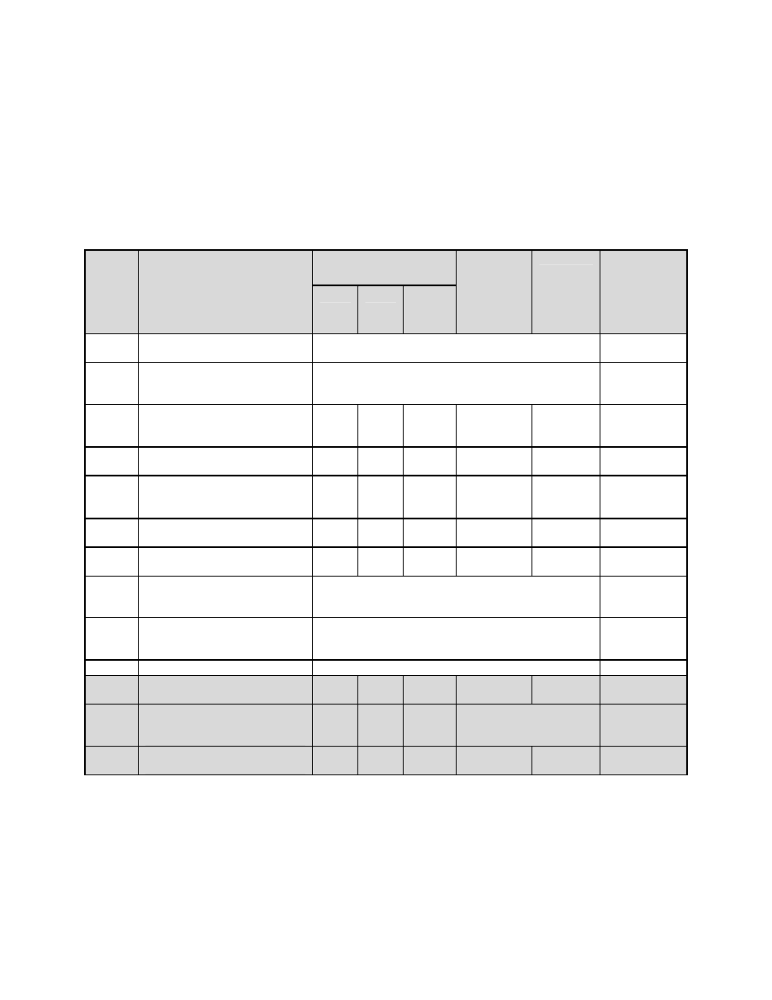
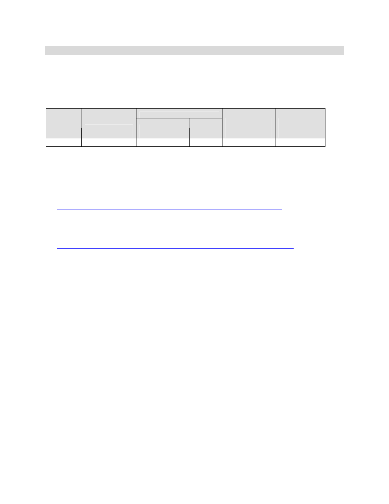
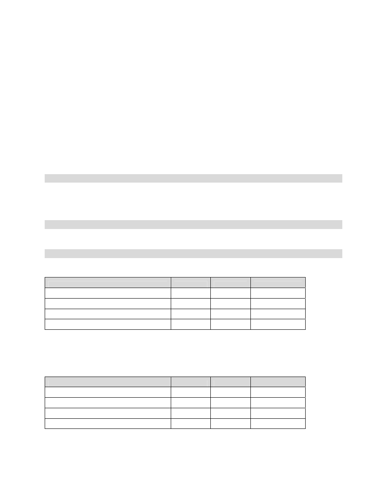
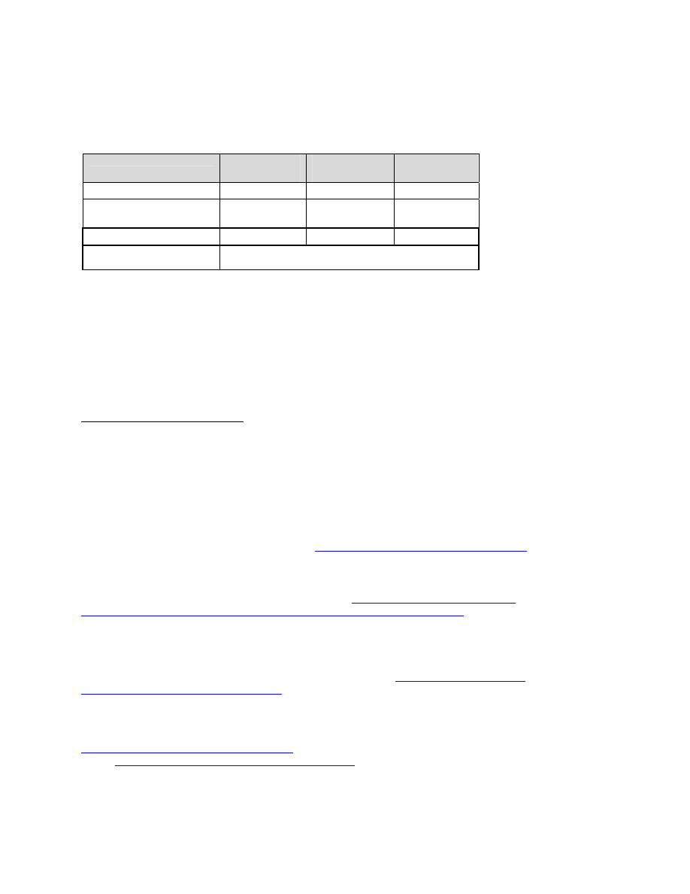
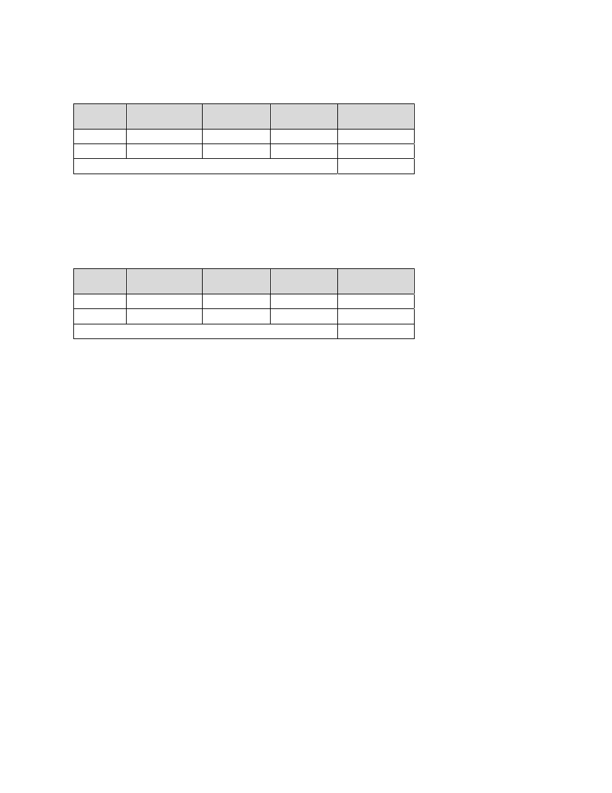

<!DOCTYPE html>
<html xmlns="http://www.w3.org/1999/xhtml" lang="" xml:lang="">
<head>
<title>AR_2008_Action_Plan-html.html</title>

<meta http-equiv="Content-Type" content="text/html; charset=UTF-8"/>
 <br/>
<style type="text/css">
<!--
	p {margin: 0; padding: 0;}-->
</style>
</head>
<body bgcolor="#A0A0A0" vlink="blue" link="blue">
<div id="page1-div" style="position:relative;width:918px;height:1188px;">

</div>
</body>
</html>
<!DOCTYPE html>
<html xmlns="http://www.w3.org/1999/xhtml" lang="" xml:lang="">
<head>
<title>AR_2008_Action_Plan-html.html</title>

<meta http-equiv="Content-Type" content="text/html; charset=UTF-8"/>
 <br/>
<style type="text/css">
<!--
	p {margin: 0; padding: 0;}	.ft20{font-size:18px;font-family:BPSGKX+TimesNewRomanPS;color:#000000;}
	.ft21{font-size:18px;font-family:XEISXB+TimesNewRomanPSMT;color:#000000;}
	.ft22{font-size:12px;font-family:XEISXB+TimesNewRomanPSMT;color:#000000;}
	.ft23{font-size:18px;line-height:20px;font-family:XEISXB+TimesNewRomanPSMT;color:#000000;}
-->
</style>
</head>
<body bgcolor="#A0A0A0" vlink="blue" link="blue">
<div id="page2-div" style="position:relative;width:918px;height:1188px;">

<p style="position:absolute;top:109px;left:135px;white-space:nowrap" class="ft20"><b>October 30, 2008&#160;</b></p>
<p style="position:absolute;top:147px;left:135px;white-space:nowrap" class="ft21">Dear Governor Beebe, &#160;</p>
<p style="position:absolute;top:186px;left:135px;white-space:nowrap" class="ft23">It is our honor to transmit to you the final report of the Governor’s Commission on&#160;<br/>Global&#160;Warming,&#160;representing&#160;the&#160;fulfillment&#160;of Act 696 (HB 2460), signed into law by&#160;<br/>you and approved by the 86th&#160;General&#160;Assembly.&#160;&#160;</p>
<p style="position:absolute;top:266px;left:135px;white-space:nowrap" class="ft23">You&#160;will&#160;see&#160;in&#160;this&#160;report&#160;that&#160;--&#160;for&#160;the&#160;past&#160;year&#160;--&#160;the&#160;members&#160;of&#160;the&#160;Governors&#160;<br/>Commission on Global Warming (GCGW)&#160;have&#160;worked&#160;hard&#160;to&#160;answer&#160;your&#160;charge&#160;to&#160;<br/>“place&#160;Arkansas&#160;in&#160;a&#160;position&#160;to&#160;help&#160;stabilize&#160;global&#160;climate,&#160;to&#160;allow&#160;Arkansas&#160;to&#160;lead&#160;<br/>the nation in attracting clean and renewable energy industries to the state, and to reduce&#160;<br/>consumer energy dependence on current&#160;carbon-generating technologies and&#160;<br/>expenditures.” &#160;</p>
<p style="position:absolute;top:408px;left:135px;white-space:nowrap" class="ft23">Based on this work, the Commission recommends&#160;that Arkansas adopt a statewide global&#160;<br/>warming&#160;pollutant&#160;goal&#160;to&#160;reduce&#160;the&#160;state’s gross greenhouse gas (GHG) emissions&#160;<br/>below 2000 levels accordingly: &#160;20% by 2020; 35% by 2025; and 50% by 2035.&#160;<br/>Specifically,&#160;to&#160;meet&#160;these&#160;goals,&#160;the&#160;Commission recommends adoption of a&#160;<br/>comprehensive set&#160;of&#160;54 policies to address&#160;climate, energy, and commerce related issues&#160;<br/>in Arkansas. &#160;&#160;&#160;&#160;</p>
<p style="position:absolute;top:550px;left:135px;white-space:nowrap" class="ft23">To reach agreement on these 54 policies, the Commission identified, designed and&#160;<br/>analyzed&#160;a&#160;full&#160;suite&#160;of&#160;Arkansas&#160;specific actions, including assessment of GHG&#160;<br/>reduction potential, cost and cost savings, potential co-benefits, and consideration of&#160;<br/>numerous feasibility issues. The Commission also developed and approved the first&#160;<br/>comprehensive, statewide GHG inventory and&#160;forecast developed for Arkansas, covering&#160;<br/>the years 1990 through 2025.&#160;</p>
<p style="position:absolute;top:693px;left:135px;white-space:nowrap" class="ft23">Furthermore,&#160;during these proceedings, the Commission reviewed the physical science of&#160;<br/>climate&#160;change&#160;as&#160;well&#160;as&#160;recent&#160;developments&#160;in U.S. law. This review included the&#160;<br/>Intergovernmental&#160;Panel on Climate&#160;Change Fourth&#160;Assessment&#160;Report,&#160;and that&#160;Panel’s&#160;<br/>study&#160;and&#160;assessment&#160;of&#160;impacts&#160;on&#160;the&#160;southern&#160;United States, as well as a review of the&#160;<br/>current status of international, federal and&#160;state&#160;law&#160;and&#160;policy on&#160;climate&#160;change&#160;and the&#160;<br/>treatment&#160;of&#160;science&#160;under&#160;the&#160;law.&#160;</p>
<p style="position:absolute;top:835px;left:135px;white-space:nowrap" class="ft23">Finally, we want to specifically offer our&#160;thanks and gratitude to the 21 appointed&#160;<br/>members of your Commission, the Members of&#160;the&#160;Beebe&#160;Administration&#160;serving&#160;on&#160;the&#160;<br/>Advisory&#160;Group,&#160;legislative&#160;staff,&#160;members&#160;of&#160;the public, and especially the Center for&#160;<br/>Climate&#160;Strategies&#160;for&#160;their&#160;independent facilitation, technical&#160;assistance,&#160;and&#160;expertise.&#160;<br/>Their public service to our state&#160;will&#160;leave&#160;a&#160;lasting&#160;legacy.&#160;&#160;</p>
<p style="position:absolute;top:953px;left:135px;white-space:nowrap" class="ft23">This initiative marks an exciting beginning for Arkansas. As we establish our own course&#160;<br/>for state, regional and national&#160;leadership&#160;on&#160;global&#160;climate&#160;change, this report provides a&#160;<br/>roadmap for&#160;substantial new opportunities&#160;for&#160;our&#160;economy,&#160;our&#160;energy needs, and our&#160;<br/>environment.&#160; &#160;</p>
</div>
</body>
</html>
<!DOCTYPE html>
<html xmlns="http://www.w3.org/1999/xhtml" lang="" xml:lang="">
<head>
<title>AR_2008_Action_Plan-html.html</title>

<meta http-equiv="Content-Type" content="text/html; charset=UTF-8"/>
 <br/>
<style type="text/css">
<!--
	p {margin: 0; padding: 0;}	.ft30{font-size:18px;font-family:XEISXB+TimesNewRomanPSMT;color:#000000;}
	.ft31{font-size:18px;line-height:20px;font-family:XEISXB+TimesNewRomanPSMT;color:#000000;}
-->
</style>
</head>
<body bgcolor="#A0A0A0" vlink="blue" link="blue">
<div id="page3-div" style="position:relative;width:918px;height:1188px;">

<p style="position:absolute;top:109px;left:135px;white-space:nowrap" class="ft31">We look forward to working with you, your&#160;Administration,&#160;Members&#160;of&#160;the&#160;General&#160;<br/>Assembly, the private sector, and many others as&#160;we seek to implement the work of this&#160;<br/>Commission.&#160;We&#160;also&#160;seek&#160;a&#160;complete&#160;follow-through on this report through further&#160;<br/>tracking, review, and public collaboration,&#160;to&#160;ensure&#160;that&#160;both current and future&#160;<br/>generations&#160;of&#160;Arkansans&#160;fully&#160;benefit from&#160;its recommendations.&#160;</p>
<p style="position:absolute;top:227px;left:135px;white-space:nowrap" class="ft31">On behalf of the Commission, we want to thank you for the opportunity to serve on&#160;<br/>behalf of this critical and historic effort for our state. &#160;</p>
<p style="position:absolute;top:283px;left:135px;white-space:nowrap" class="ft30">Sincerely, &#160;</p>
<p style="position:absolute;top:319px;left:135px;white-space:nowrap" class="ft30">&#160;</p>
<p style="position:absolute;top:355px;left:135px;white-space:nowrap" class="ft30">Hon. Kathy Webb&#160;&#160;</p>
<p style="position:absolute;top:355px;left:297px;white-space:nowrap" class="ft30">&#160;</p>
<p style="position:absolute;top:355px;left:351px;white-space:nowrap" class="ft30">Kevin Smith &#160;&#160;&#160;</p>
<p style="position:absolute;top:355px;left:513px;white-space:nowrap" class="ft30">&#160;</p>
<p style="position:absolute;top:355px;left:567px;white-space:nowrap" class="ft30">&#160;</p>
<p style="position:absolute;top:355px;left:621px;white-space:nowrap" class="ft30">&#160;</p>
<p style="position:absolute;top:355px;left:675px;white-space:nowrap" class="ft30">&#160;</p>
<p style="position:absolute;top:355px;left:729px;white-space:nowrap" class="ft30">&#160;</p>
<p style="position:absolute;top:390px;left:135px;white-space:nowrap" class="ft30">Co-Chair&#160;&#160;</p>
<p style="position:absolute;top:390px;left:243px;white-space:nowrap" class="ft30">&#160;</p>
<p style="position:absolute;top:390px;left:297px;white-space:nowrap" class="ft30">&#160;</p>
<p style="position:absolute;top:390px;left:351px;white-space:nowrap" class="ft30">Co-Chair&#160;</p>
</div>
</body>
</html>
<!DOCTYPE html>
<html xmlns="http://www.w3.org/1999/xhtml" lang="" xml:lang="">
<head>
<title>AR_2008_Action_Plan-html.html</title>

<meta http-equiv="Content-Type" content="text/html; charset=UTF-8"/>
 <br/>
<style type="text/css">
<!--
	p {margin: 0; padding: 0;}	.ft40{font-size:27px;font-family:HMOFOR+Arial;color:#000000;}
	.ft41{font-size:27px;font-family:NXVNYL+Arial;color:#000000;}
	.ft42{font-size:18px;font-family:XAANGA+TimesNewRomanPSMT;color:#000000;}
	.ft43{font-size:15px;font-family:ZXYARB+ArialMT;color:#000000;}
	.ft44{font-size:18px;line-height:22px;font-family:XAANGA+TimesNewRomanPSMT;color:#000000;}
-->
</style>
</head>
<body bgcolor="#A0A0A0" vlink="blue" link="blue">
<div id="page4-div" style="position:relative;width:918px;height:1188px;">

<p style="position:absolute;top:109px;left:345px;white-space:nowrap" class="ft40"><b>Table of&#160;Contents<i>&#160;</i></b></p>
<p style="position:absolute;top:167px;left:108px;white-space:nowrap" class="ft44">&#160;<br/>Acknowledgments...........................................................................................................................&#160;ii&#160;<br/>Members&#160;of&#160;the&#160;Arkansas&#160;Governor’s Commission on Global Warming.....................................&#160;iii&#160;<br/>Acronyms and Abbreviations&#160;..........................................................................................................v&#160;<br/>&#160;<br/>Executive Summary&#160;..................................................................................................................EX-1&#160;<br/>Chapter 1 – Background and Overview.......................................................................................&#160;1-1&#160;<br/>Chapter&#160;2&#160;–&#160;Inventory&#160;and&#160;Forecast of&#160;GHG Emissions..............................................................&#160;2-1&#160;<br/>Chapter 3 – Cross-Cutting Issues.................................................................................................&#160;3-1&#160;<br/>Chapter&#160;4&#160;–&#160;Residential,&#160;Commercial, and Industrial Sectors&#160;.....................................................&#160;4-1&#160;<br/>Chapter 5 – Energy Supply Sector...............................................................................................&#160;5-1&#160;<br/>Chapter 6 – Transportation and Land Use Sectors&#160;......................................................................&#160;6-1&#160;<br/>Chapter&#160;7&#160;–&#160;Agriculture,&#160;Forestry,&#160;and&#160;Waste&#160;Management&#160;Sectors...........................................&#160;7-1&#160;<br/>Chapter 8 –&#160;Review&#160;of Current Scientific Literature&#160;on Causes and Impacts of...............................&#160;<br/>&#160; &#160; &#160; &#160; &#160; &#160; &#160; &#160; &#160; &#160;Global Warming........................................................................................................&#160;8-1&#160;<br/>&#160;<br/>Appendixes&#160;<br/>A. &#160;Act 696 – An Act To Establish the Governor’s Commission on Global Warming..............&#160;A-1&#160;<br/>B. &#160;&#160;Description of GCGW Process..............................................................................................B-1&#160;<br/>C.&#160;&#160;Members of Technical Work Groups&#160;....................................................................................C-1 &#160;<br/>D.&#160;&#160;Greenhouse&#160;Gas (GHG)&#160;Emissions Inventory and Reference&#160;Case&#160;Projections..................&#160;D-1&#160;<br/>E.&#160;&#160;Methods for Quantification....................................................................................................E-1&#160;<br/>F.&#160;&#160;Cross-Cutting Issues – Policy Recommendations&#160;.................................................................F-1&#160;<br/>G.&#160;&#160;Residential,&#160;Commercial, and Industrial Sectors&#160;– Policy Recommendations.....................&#160;G-1&#160;<br/>H.&#160;&#160;Energy Supply Sector –&#160;Policy Recommendations.&#160;.............................................................&#160;H-1&#160;<br/>I.&#160;&#160;Transportation and Land Use Sectors– Policy Recommendations.........................................I-1&#160;<br/>J.&#160;&#160;Agriculture,&#160;Forestry,&#160;and&#160;Waste&#160;Management Sectors – Policy Recommendations&#160;............J-1&#160;<br/>K.&#160;&#160;List of References&#160;................................................................................................................&#160;K-1&#160;<br/>L.&#160;&#160;Public Comments...................................................................................................................L-1&#160;<br/>&#160;</p>
<p style="position:absolute;top:1117px;left:108px;white-space:nowrap" class="ft43">&#160;</p>
<p style="position:absolute;top:1117px;left:457px;white-space:nowrap" class="ft43">i&#160;</p>
</div>
</body>
</html>
<!DOCTYPE html>
<html xmlns="http://www.w3.org/1999/xhtml" lang="" xml:lang="">
<head>
<title>AR_2008_Action_Plan-html.html</title>

<meta http-equiv="Content-Type" content="text/html; charset=UTF-8"/>
 <br/>
<style type="text/css">
<!--
	p {margin: 0; padding: 0;}	.ft50{font-size:27px;font-family:ZDGQSP+Arial;color:#000000;}
	.ft51{font-size:18px;font-family:HISMQW+TimesNewRomanPSMT;color:#000000;}
	.ft52{font-size:12px;font-family:HISMQW+TimesNewRomanPSMT;color:#000000;}
	.ft53{font-size:10px;font-family:HISMQW+TimesNewRomanPSMT;color:#000000;}
	.ft54{font-size:15px;font-family:HISMQW+TimesNewRomanPSMT;color:#000000;}
	.ft55{font-size:15px;font-family:ZXYARB+ArialMT;color:#000000;}
	.ft56{font-size:18px;line-height:20px;font-family:HISMQW+TimesNewRomanPSMT;color:#000000;}
	.ft57{font-size:15px;line-height:19px;font-family:HISMQW+TimesNewRomanPSMT;color:#000000;}
-->
</style>
</head>
<body bgcolor="#A0A0A0" vlink="blue" link="blue">
<div id="page5-div" style="position:relative;width:918px;height:1188px;">

<p style="position:absolute;top:109px;left:340px;white-space:nowrap" class="ft50"><b>Acknowledgments&#160;</b></p>
<p style="position:absolute;top:167px;left:108px;white-space:nowrap" class="ft56">The Arkansas Governor’s Commission on Global&#160;Warming (GCGW) gratefully acknowledges&#160;<br/>the following individuals and organizations who&#160;contributed&#160;significantly&#160;to&#160;the&#160;successful&#160;<br/>completion of the GCGW process and the publication of this report:&#160;</p>
<p style="position:absolute;top:247px;left:108px;white-space:nowrap" class="ft56">Special thanks to Representative Kathy Webb, Kevin Smith and Pearlie Reed, Co-chairs of the&#160;<br/>GCGW,&#160;for&#160;their&#160;leadership&#160;throughout the process.<a href="AR_2008_Action_Plans.html#5">1</a>&#160;Special thanks also to the members of the&#160;<br/>Advisory Body who provided valuable technical expertise and time during Commission and&#160;<br/>Technical Work Group meetings. The GCGW also recognizes the&#160;many&#160;individuals&#160;who&#160;<br/>participated&#160;in&#160;the&#160;sector-based&#160;Technical Work Groups, all of&#160;whom are listed in Appendix C.&#160;<br/>Although this report is intended to&#160;represent&#160;the&#160;results&#160;of&#160;the&#160;GCGW’s&#160;work,&#160;the&#160;GCGW&#160;would&#160;<br/>be&#160;remiss&#160;if it&#160;did&#160;not recognize and express appreciation for the time and effort each Technical&#160;<br/>Work&#160;Group&#160;member&#160;spent&#160;in&#160;discussion,&#160;study, and deliberation during this process.&#160;</p>
<p style="position:absolute;top:430px;left:108px;white-space:nowrap" class="ft56">Many thanks to Jillian Hicks, Andrew Parker,&#160;and Marc Harrison of the Arkansas Governor’s&#160;<br/>Office, who coordinated and supervised all activities associated with the GCGW process, served&#160;<br/>as liaisons to the Technical Work Groups, and&#160;arranged meetings. Many thanks also to Carol&#160;<br/>Stapleton, Senior Legislative Analyst, and Gina&#160;Mercer, Legislative Committee Secretary, of the&#160;<br/>Bureau of Legislative Research,&#160;who assisted in arranging meeting&#160;facilities,&#160;recording&#160;meetings,&#160;<br/>and other meeting support logistics&#160;throughout&#160;the&#160;process.&#160;</p>
<p style="position:absolute;top:572px;left:108px;white-space:nowrap" class="ft56">Thomas&#160;D.&#160;Peterson&#160;and&#160;the&#160;Center&#160;for&#160;Climate&#160;Strategies&#160;(CCS),&#160;with&#160;its&#160;dedicated&#160;team&#160;of&#160;<br/>professionals, contributed extraordinary amounts&#160;of time, energy, and expertise in providing&#160;<br/>facilitation&#160;services,&#160;and&#160;technical&#160;analysis&#160;for&#160;the&#160;GCGW&#160;process. Special&#160;thanks&#160;to Joan&#160;<br/>O’Callaghan and Randy Strait who coordinated the production of and edited this report. Also, the&#160;<br/>GCGW wishes to acknowledge the invaluable&#160;contributions of the following CCS team&#160;<br/>members:&#160;</p>
<p style="position:absolute;top:715px;left:108px;white-space:nowrap" class="ft51">Kenneth Colburn&#160;</p>
<p style="position:absolute;top:715px;left:297px;white-space:nowrap" class="ft51">&#160;</p>
<p style="position:absolute;top:715px;left:324px;white-space:nowrap" class="ft51">&#160;</p>
<p style="position:absolute;top:715px;left:378px;white-space:nowrap" class="ft51">&#160;</p>
<p style="position:absolute;top:715px;left:432px;white-space:nowrap" class="ft51">Joe Pryor&#160;</p>
<p style="position:absolute;top:735px;left:108px;white-space:nowrap" class="ft51">Laurie Cullen&#160;</p>
<p style="position:absolute;top:735px;left:297px;white-space:nowrap" class="ft51">&#160;</p>
<p style="position:absolute;top:735px;left:324px;white-space:nowrap" class="ft51">&#160;</p>
<p style="position:absolute;top:735px;left:378px;white-space:nowrap" class="ft51">&#160;</p>
<p style="position:absolute;top:735px;left:432px;white-space:nowrap" class="ft51">Stephen Roe&#160;</p>
<p style="position:absolute;top:756px;left:108px;white-space:nowrap" class="ft51">Bill Dougherty&#160;</p>
<p style="position:absolute;top:756px;left:297px;white-space:nowrap" class="ft51">&#160;</p>
<p style="position:absolute;top:756px;left:324px;white-space:nowrap" class="ft51">&#160;</p>
<p style="position:absolute;top:756px;left:378px;white-space:nowrap" class="ft51">&#160;</p>
<p style="position:absolute;top:756px;left:432px;white-space:nowrap" class="ft51">David Shelton&#160;</p>
<p style="position:absolute;top:777px;left:108px;white-space:nowrap" class="ft51">Lewison Lem&#160;</p>
<p style="position:absolute;top:777px;left:297px;white-space:nowrap" class="ft51">&#160;</p>
<p style="position:absolute;top:777px;left:324px;white-space:nowrap" class="ft51">&#160;</p>
<p style="position:absolute;top:777px;left:378px;white-space:nowrap" class="ft51">&#160;</p>
<p style="position:absolute;top:777px;left:432px;white-space:nowrap" class="ft51">Randy Strait&#160;</p>
<p style="position:absolute;top:797px;left:108px;white-space:nowrap" class="ft51">Kathy Leotta&#160;</p>
<p style="position:absolute;top:797px;left:297px;white-space:nowrap" class="ft51">&#160;</p>
<p style="position:absolute;top:797px;left:324px;white-space:nowrap" class="ft51">&#160;</p>
<p style="position:absolute;top:797px;left:378px;white-space:nowrap" class="ft51">&#160;</p>
<p style="position:absolute;top:797px;left:432px;white-space:nowrap" class="ft51">Brad Strode&#160;</p>
<p style="position:absolute;top:818px;left:108px;white-space:nowrap" class="ft51">Jason Miles&#160;</p>
<p style="position:absolute;top:818px;left:297px;white-space:nowrap" class="ft51">&#160;</p>
<p style="position:absolute;top:818px;left:324px;white-space:nowrap" class="ft51">&#160;</p>
<p style="position:absolute;top:818px;left:378px;white-space:nowrap" class="ft51">&#160;</p>
<p style="position:absolute;top:818px;left:432px;white-space:nowrap" class="ft51">June Taylor&#160;</p>
<p style="position:absolute;top:839px;left:108px;white-space:nowrap" class="ft56">Katie&#160;Pasko&#160;<br/>&#160;<br/>Finally,&#160;the&#160;GCGW&#160;would&#160;like&#160;to&#160;thank a number&#160;of donor organizations&#160;that&#160;supported&#160;the&#160;<br/>service of CCS to the GCGW including the state of Arkansas, Blue Moon Fund, Rockefeller&#160;<br/>Brothers Fund, New York Community Trust, Energy Foundation, and Sandler Family&#160;<br/>Supporting&#160;Foundation.&#160;&#160;<br/>&#160;</p>
<p style="position:absolute;top:1025px;left:108px;white-space:nowrap" class="ft51">&#160; &#160; &#160; &#160; &#160; &#160; &#160; &#160; &#160; &#160; &#160; &#160; &#160; &#160; &#160; &#160; &#160; &#160; &#160; &#160; &#160; &#160; &#160; &#160;&#160;&#160;</p>
<p style="position:absolute;top:1044px;left:108px;white-space:nowrap" class="ft57">1&#160;&#160;Pearlie&#160;Reed&#160;served&#160;as&#160;co-chair&#160;of&#160;the&#160;GCGW&#160;until&#160;June&#160;17,&#160;2008.&#160;Kevin&#160;Smith&#160;was&#160;elected&#160;by&#160;the&#160;Commission&#160;to&#160;<br/>serve&#160;as&#160;co-chair&#160;for&#160;the&#160;remainder&#160;of&#160;the&#160;GCGW&#160;process.&#160;</p>
<p style="position:absolute;top:1115px;left:108px;white-space:nowrap" class="ft51">&#160;</p>
<p style="position:absolute;top:1117px;left:456px;white-space:nowrap" class="ft55">ii&#160;</p>
</div>
</body>
</html>
<!DOCTYPE html>
<html xmlns="http://www.w3.org/1999/xhtml" lang="" xml:lang="">
<head>
<title>AR_2008_Action_Plan-html.html</title>

<meta http-equiv="Content-Type" content="text/html; charset=UTF-8"/>
 <br/>
<style type="text/css">
<!--
	p {margin: 0; padding: 0;}	.ft60{font-size:27px;font-family:VRYIXD+Arial;color:#000000;}
	.ft61{font-size:18px;font-family:NDFADQ+TimesNewRomanPS;color:#000000;}
	.ft62{font-size:18px;font-family:DGUKSB+TimesNewRomanPSMT;color:#000000;}
	.ft63{font-size:12px;font-family:NDFADQ+TimesNewRomanPS;color:#000000;}
	.ft64{font-size:21px;font-family:VRYIXD+Arial;color:#000000;}
	.ft65{font-size:10px;font-family:DGUKSB+TimesNewRomanPSMT;color:#000000;}
	.ft66{font-size:15px;font-family:DGUKSB+TimesNewRomanPSMT;color:#000000;}
	.ft67{font-size:15px;font-family:DEXBRB+ArialMT;color:#000000;}
	.ft68{font-size:18px;line-height:23px;font-family:DGUKSB+TimesNewRomanPSMT;color:#000000;}
	.ft69{font-size:18px;line-height:23px;font-family:NDFADQ+TimesNewRomanPS;color:#000000;}
	.ft610{font-size:21px;line-height:24px;font-family:VRYIXD+Arial;color:#000000;}
	.ft611{font-size:21px;line-height:28px;font-family:VRYIXD+Arial;color:#000000;}
	.ft612{font-size:15px;line-height:19px;font-family:DGUKSB+TimesNewRomanPSMT;color:#000000;}
	.ft613{font-size:15px;line-height:17px;font-family:DGUKSB+TimesNewRomanPSMT;color:#000000;}
-->
</style>
</head>
<body bgcolor="#A0A0A0" vlink="blue" link="blue">
<div id="page6-div" style="position:relative;width:918px;height:1188px;">

<p style="position:absolute;top:109px;left:359px;white-space:nowrap" class="ft60"><b>Members of the &#160;</b></p>
<p style="position:absolute;top:140px;left:148px;white-space:nowrap" class="ft60"><b>Governor's Commission on Global Warming and&#160;</b></p>
<p style="position:absolute;top:171px;left:364px;white-space:nowrap" class="ft60"><b>Advisory Body&#160;</b></p>
<p style="position:absolute;top:229px;left:108px;white-space:nowrap" class="ft68"><b>Aubra Anthony, Jr.,</b>&#160;President and Chief Executive Officer, Anthony Forest Products Company&#160;<br/><b>Nick Brown,</b>&#160;President and&#160;Chief Executive Officer, Southwest&#160;Power Pool, Inc.&#160;<br/><b>Joan Cash,</b>&#160;State&#160;Legislator&#160;/&#160;Vice&#160;President&#160;and&#160;Owner,&#160;Farm&#160;Equipment&#160;Sales&#160;and&#160;Services&#160;<br/><b>Steve Cousins,</b>&#160;Vice President of Refining, Lion Oil Company&#160;<br/><b>Jerry Farris, PhD,</b>&#160;Associate&#160;Dean,&#160;College&#160;of&#160;Sciences&#160;and&#160;Mathematics,&#160;Arkansas&#160;State&#160;</p>
<p style="position:absolute;top:344px;left:162px;white-space:nowrap" class="ft62">University&#160;</p>
<p style="position:absolute;top:368px;left:108px;white-space:nowrap" class="ft68"><b>Rob Fisher,</b>&#160;Executive&#160;Director,&#160;The&#160;Ecological Conservation Organization&#160;<br/><b>Richard Ford, PhD,</b>&#160;Professor, University of Arkansas, Little Rock&#160;<br/><b>Miles Goggans,</b>&#160;President, Goggans, Inc.&#160;<br/><b>Art Hobson, PhD,</b>&#160;Professor Emeritus of Physics,&#160;University&#160;of&#160;Arkansas&#160;<br/><b>Kevan Inboden,</b>&#160;Special&#160;Projects&#160;Administrator, City&#160;Water and&#160;Light&#160;<br/><b>Christopher Ladner,</b>&#160;Senior Account Engineer, Trane Arkansas&#160;<br/><b>Elizabeth Martin, PhD,</b>&#160;Instructor and Research Specialist,&#160;University&#160;of&#160;Arkansas&#160;<br/><b>Robert McAfee, PhD,</b>&#160;Climate Change Messenger (Volunteer), The Climate Project&#160;<br/><b>Hugh McDonald,</b>&#160;President, Entergy Arkansas&#160;<br/><b>Annette Pagan,<a href="AR_2008_Action_Plans.html#6">1</a></b>&#160;Managing Director of U.S. Programs,&#160;Winrock&#160;International&#160;<br/><b>Bill&#160;Reed,</b>&#160;Vice President, Public Affairs, Riceland Foods, Inc.&#160;<br/><b>Pearlie Reed,1</b>&#160;Consultant and Conservationist,&#160;Retired, Self-Employed / Co-Chair&#160;<b>&#160;<br/>Cindy Sagers, PhD,</b>&#160;Professor, University of Arkansas&#160;<br/><b>Jeffrey Short,</b>&#160;General Engineer, United States&#160;Department of Energy (retired)&#160;<br/><b>Kevin Smith,1</b>&#160;Insurance&#160;and&#160;Financial&#160;Services,&#160;Farmers&#160;Insurance&#160;/&#160;Co-Chair&#160;<br/><b>Gary&#160;Voigt,</b>&#160;Chief Executive Officer, Arkansas&#160;Electric Cooperative Corporation&#160;<br/><b>Kathy Webb,</b>&#160;Legislator, State of Arkansas / Co-Chair&#160;</p>
<p style="position:absolute;top:795px;left:108px;white-space:nowrap" class="ft68"><b>Members&#160;of&#160;the&#160;Advisory&#160;Body&#160;to&#160;the&#160;Governor's&#160;Commission&#160;on&#160;<br/>Global&#160;Warming&#160;<br/>Richard Bell,</b>&#160;Agriculture Department&#160;<br/><b>Lawrence&#160;Bengal,</b>&#160;Oil and Gas Commission&#160;<br/><b>John Bethel,</b>&#160;Public Service Commission&#160;<br/><b>Richard Davies,</b>&#160;Department&#160;of&#160;Parks&#160;and&#160;Tourism&#160;<br/><b>Maria&#160;Haley,</b>&#160;Department&#160;of&#160;Economic&#160;Development&#160;</p>
<p style="position:absolute;top:974px;left:108px;white-space:nowrap" class="ft62">&#160; &#160; &#160; &#160; &#160; &#160; &#160; &#160; &#160; &#160; &#160; &#160; &#160; &#160; &#160; &#160; &#160; &#160; &#160; &#160; &#160; &#160; &#160; &#160;&#160;&#160;</p>
<p style="position:absolute;top:992px;left:108px;white-space:nowrap" class="ft613">1&#160;Pearlie&#160;Reed&#160;served&#160;as&#160;co-chair&#160;of&#160;the&#160;Governor's&#160;Commission&#160;on&#160;Global&#160;Warming&#160;(GCGW)&#160;and&#160;on&#160;the&#160;<br/>Residential,&#160;Commercial,&#160;and&#160;Industrial&#160;(RCI)&#160;and&#160;Agriculture,&#160;Forestry,&#160;and&#160;Waste&#160;Management&#160;(AFW)&#160;Technical&#160;<br/>Work&#160;Groups&#160;(TWGs)&#160;until&#160;June&#160;17,&#160;2008.&#160;Kevin&#160;Smith&#160;was&#160;elected&#160;by&#160;the&#160;Commission&#160;to&#160;serve&#160;as&#160;co-chair,&#160;and&#160;<br/>Annette&#160;Pagan&#160;was&#160;appointed&#160;by&#160;the&#160;Governor&#160;to&#160;serve&#160;as&#160;Mr.&#160;Reed’s&#160;replacement&#160;on&#160;the&#160;RCI&#160;and&#160;AFW&#160;TWGs,&#160;for&#160;<br/>the&#160;remainder&#160;of&#160;the&#160;GCGW&#160;process.&#160;</p>
<p style="position:absolute;top:1117px;left:108px;white-space:nowrap" class="ft67">&#160;</p>
<p style="position:absolute;top:1117px;left:454px;white-space:nowrap" class="ft67">iii&#160;</p>
<p style="position:absolute;top:1117px;left:486px;white-space:nowrap" class="ft67">&#160;</p>
</div>
</body>
</html>
<!DOCTYPE html>
<html xmlns="http://www.w3.org/1999/xhtml" lang="" xml:lang="">
<head>
<title>AR_2008_Action_Plan-html.html</title>

<meta http-equiv="Content-Type" content="text/html; charset=UTF-8"/>
 <br/>
<style type="text/css">
<!--
	p {margin: 0; padding: 0;}	.ft70{font-size:15px;font-family:DEXBRB+ArialMT;color:#000000;}
	.ft71{font-size:18px;font-family:NDFADQ+TimesNewRomanPS;color:#000000;}
	.ft72{font-size:18px;font-family:DGUKSB+TimesNewRomanPSMT;color:#000000;}
	.ft73{font-size:18px;line-height:23px;font-family:DGUKSB+TimesNewRomanPSMT;color:#000000;}
-->
</style>
</head>
<body bgcolor="#A0A0A0" vlink="blue" link="blue">
<div id="page7-div" style="position:relative;width:918px;height:1188px;">

<p style="position:absolute;top:1117px;left:108px;white-space:nowrap" class="ft70">&#160;</p>
<p style="position:absolute;top:1117px;left:454px;white-space:nowrap" class="ft70">iv&#160;</p>
<p style="position:absolute;top:1117px;left:486px;white-space:nowrap" class="ft70">&#160;</p>
<p style="position:absolute;top:109px;left:108px;white-space:nowrap" class="ft73"><b>Nancy Ledbetter,</b>&#160;Game&#160;and Fish Commission&#160;<br/><b>Lynn Malbrough,</b>&#160;Highway and Transportation Department&#160;<br/><b>Teresa Marks,</b>&#160;Department of Environmental Quality&#160;<br/><b>John Shannon,</b>&#160;Forestry&#160;Commission&#160;<br/><b>Randy Young,</b>&#160;Natural&#160;Resources&#160;Commission&#160;</p>
</div>
</body>
</html>
<!DOCTYPE html>
<html xmlns="http://www.w3.org/1999/xhtml" lang="" xml:lang="">
<head>
<title>AR_2008_Action_Plan-html.html</title>

<meta http-equiv="Content-Type" content="text/html; charset=UTF-8"/>
 <br/>
<style type="text/css">
<!--
	p {margin: 0; padding: 0;}	.ft80{font-size:15px;font-family:XMYKUM+ArialMT;color:#000000;}
	.ft81{font-size:27px;font-family:XIGSHK+Arial;color:#000000;}
	.ft82{font-size:18px;font-family:XIGSHK+Arial;color:#000000;}
	.ft83{font-size:18px;font-family:XMYKUM+ArialMT;color:#000000;}
	.ft84{font-size:12px;font-family:XMYKUM+ArialMT;color:#000000;}
	.ft85{font-size:18px;font-family:XSFGTC+Arial;color:#000000;}
	.ft86{font-size:18px;line-height:20px;font-family:XMYKUM+ArialMT;color:#000000;}
-->
</style>
</head>
<body bgcolor="#A0A0A0" vlink="blue" link="blue">
<div id="page8-div" style="position:relative;width:918px;height:1188px;">

<p style="position:absolute;top:54px;left:810px;white-space:nowrap" class="ft80">&#160;</p>
<p style="position:absolute;top:109px;left:271px;white-space:nowrap" class="ft81"><b>Acronyms and Abbreviations&#160;</b></p>
<p style="position:absolute;top:168px;left:109px;white-space:nowrap" class="ft83">$/kWh&#160;</p>
<p style="position:absolute;top:168px;left:238px;white-space:nowrap" class="ft83">dollars&#160;per&#160;kilowatt-hour&#160;</p>
<p style="position:absolute;top:192px;left:109px;white-space:nowrap" class="ft83">$/MM&#160;</p>
<p style="position:absolute;top:192px;left:238px;white-space:nowrap" class="ft83">millions&#160;of&#160;dollars&#160;&#160;</p>
<p style="position:absolute;top:215px;left:109px;white-space:nowrap" class="ft83">$/MWh&#160;</p>
<p style="position:absolute;top:215px;left:238px;white-space:nowrap" class="ft83">dollars&#160;per&#160;megawatt-hour&#160;</p>
<p style="position:absolute;top:239px;left:109px;white-space:nowrap" class="ft83">$/t&#160;</p>
<p style="position:absolute;top:239px;left:238px;white-space:nowrap" class="ft83">dollars per metric ton &#160;</p>
<p style="position:absolute;top:263px;left:109px;white-space:nowrap" class="ft83">$/tCO2e&#160;</p>
<p style="position:absolute;top:263px;left:238px;white-space:nowrap" class="ft83">dollars per metric ton of&#160;carbon&#160;dioxide&#160;equivalent&#160;</p>
<p style="position:absolute;top:286px;left:109px;white-space:nowrap" class="ft83">ac&#160;</p>
<p style="position:absolute;top:286px;left:238px;white-space:nowrap" class="ft83">acre&#160;</p>
<p style="position:absolute;top:310px;left:109px;white-space:nowrap" class="ft83">ADEQ&#160;</p>
<p style="position:absolute;top:310px;left:238px;white-space:nowrap" class="ft83">Arkansas&#160;Department&#160;of&#160;Environmental&#160;Quality&#160;</p>
<p style="position:absolute;top:334px;left:109px;white-space:nowrap" class="ft83">AEO&#160;</p>
<p style="position:absolute;top:334px;left:238px;white-space:nowrap" class="ft83">Arkansas&#160;Energy&#160;Office&#160;</p>
<p style="position:absolute;top:357px;left:109px;white-space:nowrap" class="ft83">AEO2007&#160;</p>
<p style="position:absolute;top:358px;left:238px;white-space:nowrap" class="ft85"><i>Annual&#160;Energy&#160;Outlook&#160;2007</i>&#160;&#160;</p>
<p style="position:absolute;top:381px;left:109px;white-space:nowrap" class="ft83">AEO2008&#160;</p>
<p style="position:absolute;top:381px;left:238px;white-space:nowrap" class="ft85"><i>Annual&#160;Energy&#160;Outlook&#160;2008</i>&#160;&#160;</p>
<p style="position:absolute;top:405px;left:109px;white-space:nowrap" class="ft83">AFW&#160;</p>
<p style="position:absolute;top:405px;left:238px;white-space:nowrap" class="ft83">Agriculture,&#160;Forestry,&#160;and&#160;Waste&#160;Management&#160;&#160;[Technical&#160;Work&#160;Group]&#160;</p>
<p style="position:absolute;top:427px;left:109px;white-space:nowrap" class="ft83">AgBMP&#160;</p>
<p style="position:absolute;top:427px;left:238px;white-space:nowrap" class="ft83">[Minnesota]&#160;Agriculture&#160;Best&#160;Management&#160;Practices&#160;[program]&#160;</p>
<p style="position:absolute;top:448px;left:109px;white-space:nowrap" class="ft83">AHTD&#160;</p>
<p style="position:absolute;top:448px;left:238px;white-space:nowrap" class="ft83">Arkansas&#160;State&#160;Highway&#160;and&#160;Transportation&#160;Department&#160;</p>
<p style="position:absolute;top:468px;left:109px;white-space:nowrap" class="ft83">APSC&#160;</p>
<p style="position:absolute;top:468px;left:238px;white-space:nowrap" class="ft83">Arkansas&#160;Public&#160;Service&#160;Commission&#160;</p>
<p style="position:absolute;top:489px;left:109px;white-space:nowrap" class="ft83">AR&#160;</p>
<p style="position:absolute;top:489px;left:238px;white-space:nowrap" class="ft83">Arkansas&#160;&#160;</p>
<p style="position:absolute;top:510px;left:109px;white-space:nowrap" class="ft83">ASHRAE&#160;</p>
<p style="position:absolute;top:510px;left:238px;white-space:nowrap" class="ft86">American&#160;Society&#160;of&#160;Heating,&#160;Refrigerating&#160;and&#160;Air-Conditioning&#160;<br/>Engineers&#160;</p>
<p style="position:absolute;top:551px;left:109px;white-space:nowrap" class="ft83">BAU&#160;</p>
<p style="position:absolute;top:551px;left:238px;white-space:nowrap" class="ft83">business&#160;as&#160;usual&#160;</p>
<p style="position:absolute;top:573px;left:109px;white-space:nowrap" class="ft83">BBtu&#160;</p>
<p style="position:absolute;top:573px;left:238px;white-space:nowrap" class="ft83">billion&#160;British&#160;thermal&#160;units&#160;</p>
<p style="position:absolute;top:596px;left:109px;white-space:nowrap" class="ft83">BMP&#160;</p>
<p style="position:absolute;top:596px;left:238px;white-space:nowrap" class="ft83">best&#160;management&#160;practice&#160;</p>
<p style="position:absolute;top:618px;left:109px;white-space:nowrap" class="ft83">Btu&#160;</p>
<p style="position:absolute;top:618px;left:238px;white-space:nowrap" class="ft83">British&#160;thermal&#160;unit&#160;</p>
<p style="position:absolute;top:642px;left:109px;white-space:nowrap" class="ft83">C&#160;</p>
<p style="position:absolute;top:642px;left:238px;white-space:nowrap" class="ft83">carbon&#160;</p>
<p style="position:absolute;top:665px;left:109px;white-space:nowrap" class="ft83">CAA&#160;</p>
<p style="position:absolute;top:665px;left:238px;white-space:nowrap" class="ft83">Clean&#160;Air&#160;Act&#160;</p>
<p style="position:absolute;top:689px;left:109px;white-space:nowrap" class="ft83">CAFE&#160;</p>
<p style="position:absolute;top:689px;left:238px;white-space:nowrap" class="ft83">corporate&#160;average&#160;fuel&#160;economy&#160;</p>
<p style="position:absolute;top:713px;left:109px;white-space:nowrap" class="ft83">CC&#160;</p>
<p style="position:absolute;top:713px;left:238px;white-space:nowrap" class="ft83">Cross-Cutting&#160;Issues&#160;[Technical&#160;Work&#160;Group]&#160;</p>
<p style="position:absolute;top:735px;left:109px;white-space:nowrap" class="ft83">CCS&#160;</p>
<p style="position:absolute;top:735px;left:238px;white-space:nowrap" class="ft83">carbon&#160;capture&#160;and&#160;storage&#160;</p>
<p style="position:absolute;top:756px;left:109px;white-space:nowrap" class="ft83">CCSR&#160;</p>
<p style="position:absolute;top:756px;left:238px;white-space:nowrap" class="ft83">carbon&#160;capture&#160;and&#160;storage&#160;or&#160;reuse&#160;</p>
<p style="position:absolute;top:776px;left:109px;white-space:nowrap" class="ft83">CCX&#160;</p>
<p style="position:absolute;top:776px;left:238px;white-space:nowrap" class="ft83">Chicago&#160;Climate&#160;Exchange&#160;</p>
<p style="position:absolute;top:797px;left:109px;white-space:nowrap" class="ft83">cf&#160;</p>
<p style="position:absolute;top:797px;left:238px;white-space:nowrap" class="ft83">cubic&#160;feet&#160;</p>
<p style="position:absolute;top:818px;left:109px;white-space:nowrap" class="ft83">CFL&#160;</p>
<p style="position:absolute;top:818px;left:238px;white-space:nowrap" class="ft83">compact&#160;fluorescent&#160;light&#160;</p>
<p style="position:absolute;top:838px;left:109px;white-space:nowrap" class="ft83">CH4&#160;</p>
<p style="position:absolute;top:838px;left:238px;white-space:nowrap" class="ft83">methane&#160;</p>
<p style="position:absolute;top:859px;left:109px;white-space:nowrap" class="ft83">CHP&#160;</p>
<p style="position:absolute;top:859px;left:238px;white-space:nowrap" class="ft83">combined&#160;heat&#160;and&#160;power&#160;</p>
<p style="position:absolute;top:880px;left:109px;white-space:nowrap" class="ft83">CO&#160;</p>
<p style="position:absolute;top:880px;left:238px;white-space:nowrap" class="ft83">carbon&#160;monoxide&#160;</p>
<p style="position:absolute;top:900px;left:109px;white-space:nowrap" class="ft83">CO2&#160;</p>
<p style="position:absolute;top:900px;left:238px;white-space:nowrap" class="ft83">carbon&#160;dioxide&#160;</p>
<p style="position:absolute;top:921px;left:109px;white-space:nowrap" class="ft83">CO2e&#160;</p>
<p style="position:absolute;top:921px;left:238px;white-space:nowrap" class="ft83">carbon&#160;dioxide&#160;equivalent&#160;</p>
<p style="position:absolute;top:942px;left:109px;white-space:nowrap" class="ft83">CRP&#160;</p>
<p style="position:absolute;top:942px;left:238px;white-space:nowrap" class="ft83">Conservation&#160;Reserve&#160;Program&#160;[USDA]&#160;</p>
<p style="position:absolute;top:963px;left:109px;white-space:nowrap" class="ft83">CSA&#160;</p>
<p style="position:absolute;top:963px;left:238px;white-space:nowrap" class="ft83">community-supported&#160;agriculture&#160;</p>
<p style="position:absolute;top:983px;left:109px;white-space:nowrap" class="ft83">CUTR&#160;</p>
<p style="position:absolute;top:983px;left:238px;white-space:nowrap" class="ft83">Center&#160;for&#160;Urban&#160;Transportation&#160;Research&#160;</p>
<p style="position:absolute;top:1004px;left:109px;white-space:nowrap" class="ft83">DEQ&#160;</p>
<p style="position:absolute;top:1004px;left:238px;white-space:nowrap" class="ft83">[Arkansas]&#160;Department&#160;of&#160;Environmental&#160;Quality&#160;</p>
<p style="position:absolute;top:1025px;left:109px;white-space:nowrap" class="ft83">DG&#160;</p>
<p style="position:absolute;top:1025px;left:238px;white-space:nowrap" class="ft83">distributed&#160;generation&#160;</p>
<p style="position:absolute;top:1047px;left:109px;white-space:nowrap" class="ft83">DOE&#160;</p>
<p style="position:absolute;top:1047px;left:238px;white-space:nowrap" class="ft83">[United&#160;States]&#160;Department&#160;of&#160;Energy&#160;</p>
<p style="position:absolute;top:1117px;left:445px;white-space:nowrap" class="ft80">&#160;&#160;v</p>
</div>
</body>
</html>
<!DOCTYPE html>
<html xmlns="http://www.w3.org/1999/xhtml" lang="" xml:lang="">
<head>
<title>AR_2008_Action_Plan-html.html</title>

<meta http-equiv="Content-Type" content="text/html; charset=UTF-8"/>
 <br/>
<style type="text/css">
<!--
	p {margin: 0; padding: 0;}	.ft90{font-size:15px;font-family:XMYKUM+ArialMT;color:#000000;}
	.ft91{font-size:18px;font-family:XMYKUM+ArialMT;color:#000000;}
	.ft92{font-size:12px;font-family:XMYKUM+ArialMT;color:#000000;}
	.ft93{font-size:18px;line-height:20px;font-family:XMYKUM+ArialMT;color:#000000;}
-->
</style>
</head>
<body bgcolor="#A0A0A0" vlink="blue" link="blue">
<div id="page9-div" style="position:relative;width:918px;height:1188px;">

<p style="position:absolute;top:54px;left:810px;white-space:nowrap" class="ft90">&#160;</p>
<p style="position:absolute;top:108px;left:109px;white-space:nowrap" class="ft91">DSM&#160;</p>
<p style="position:absolute;top:108px;left:238px;white-space:nowrap" class="ft91">demand-side&#160;management&#160;</p>
<p style="position:absolute;top:129px;left:109px;white-space:nowrap" class="ft91">E10&#160;</p>
<p style="position:absolute;top:129px;left:238px;white-space:nowrap" class="ft91">fuel&#160;blend&#160;of&#160;10%&#160;ethanol&#160;and&#160;90%&#160;gasoline&#160;&#160;</p>
<p style="position:absolute;top:150px;left:109px;white-space:nowrap" class="ft91">E85&#160;</p>
<p style="position:absolute;top:150px;left:238px;white-space:nowrap" class="ft91">fuel&#160;blend&#160;of&#160;85%&#160;ethanol&#160;and&#160;15%&#160;gasoline&#160;&#160;</p>
<p style="position:absolute;top:170px;left:109px;white-space:nowrap" class="ft91">EE&#160;</p>
<p style="position:absolute;top:170px;left:238px;white-space:nowrap" class="ft91">energy&#160;efficiency&#160;&#160;</p>
<p style="position:absolute;top:191px;left:109px;white-space:nowrap" class="ft91">eGRID&#160;</p>
<p style="position:absolute;top:191px;left:238px;white-space:nowrap" class="ft91">Emissions&#160;&amp;&#160;Generation&#160;Resource&#160;Integrated&#160;Database&#160;</p>
<p style="position:absolute;top:212px;left:109px;white-space:nowrap" class="ft91">EIA&#160;</p>
<p style="position:absolute;top:212px;left:238px;white-space:nowrap" class="ft91">Energy&#160;Information&#160;Administration&#160;[US&#160;DOE]&#160;</p>
<p style="position:absolute;top:233px;left:109px;white-space:nowrap" class="ft91">EISA&#160;</p>
<p style="position:absolute;top:233px;left:238px;white-space:nowrap" class="ft91">Energy&#160;Independence&#160;and&#160;Security&#160;Act&#160;of&#160;2007&#160;</p>
<p style="position:absolute;top:253px;left:109px;white-space:nowrap" class="ft91">EOR&#160;</p>
<p style="position:absolute;top:253px;left:238px;white-space:nowrap" class="ft91">enhanced&#160;oil&#160;recovery&#160;</p>
<p style="position:absolute;top:274px;left:109px;white-space:nowrap" class="ft91">EPA&#160;</p>
<p style="position:absolute;top:274px;left:238px;white-space:nowrap" class="ft91">[United&#160;States]&#160;Environmental&#160;Protection&#160;Agency&#160;</p>
<p style="position:absolute;top:295px;left:109px;white-space:nowrap" class="ft91">EPRI&#160;</p>
<p style="position:absolute;top:295px;left:238px;white-space:nowrap" class="ft91">Electric&#160;Power&#160;Research&#160;Institute&#160;</p>
<p style="position:absolute;top:315px;left:109px;white-space:nowrap" class="ft91">EPS&#160;</p>
<p style="position:absolute;top:315px;left:238px;white-space:nowrap" class="ft91">environmental&#160;portfolio&#160;standard&#160;</p>
<p style="position:absolute;top:336px;left:109px;white-space:nowrap" class="ft91">ES&#160;</p>
<p style="position:absolute;top:336px;left:238px;white-space:nowrap" class="ft91">Energy&#160;Supply&#160;[Technical&#160;Work&#160;Group]&#160;</p>
<p style="position:absolute;top:357px;left:109px;white-space:nowrap" class="ft91">FAA&#160;</p>
<p style="position:absolute;top:357px;left:238px;white-space:nowrap" class="ft91">Federal&#160;Aviation&#160;Administration&#160;</p>
<p style="position:absolute;top:377px;left:109px;white-space:nowrap" class="ft91">FHWA&#160;</p>
<p style="position:absolute;top:377px;left:238px;white-space:nowrap" class="ft91">Federal&#160;Highway&#160;Administration&#160;</p>
<p style="position:absolute;top:398px;left:109px;white-space:nowrap" class="ft91">FIA&#160;</p>
<p style="position:absolute;top:398px;left:238px;white-space:nowrap" class="ft91">Forest&#160;Inventory&#160;and&#160;Analysis&#160;[USFS]&#160;</p>
<p style="position:absolute;top:419px;left:109px;white-space:nowrap" class="ft91">ft&#160;</p>
<p style="position:absolute;top:419px;left:238px;white-space:nowrap" class="ft91">foot&#160;</p>
<p style="position:absolute;top:440px;left:109px;white-space:nowrap" class="ft91">FTE&#160;</p>
<p style="position:absolute;top:440px;left:238px;white-space:nowrap" class="ft91">full-time-equivalent&#160;</p>
<p style="position:absolute;top:460px;left:109px;white-space:nowrap" class="ft91">FY&#160;</p>
<p style="position:absolute;top:460px;left:238px;white-space:nowrap" class="ft91">fiscal&#160;year&#160;</p>
<p style="position:absolute;top:482px;left:109px;white-space:nowrap" class="ft91">gal&#160;</p>
<p style="position:absolute;top:481px;left:238px;white-space:nowrap" class="ft91">gallon&#160;</p>
<p style="position:absolute;top:506px;left:109px;white-space:nowrap" class="ft91">GAP&#160;</p>
<p style="position:absolute;top:505px;left:238px;white-space:nowrap" class="ft91">Gap&#160;Analysis&#160;Program&#160;</p>
<p style="position:absolute;top:530px;left:109px;white-space:nowrap" class="ft91">GCGW&#160;</p>
<p style="position:absolute;top:528px;left:238px;white-space:nowrap" class="ft91">[Arkansas]&#160;Governor’s&#160;Commission&#160;on&#160;Global&#160;Warming&#160;</p>
<p style="position:absolute;top:554px;left:109px;white-space:nowrap" class="ft91">GHG&#160;</p>
<p style="position:absolute;top:554px;left:238px;white-space:nowrap" class="ft91">greenhouse&#160;gas&#160;</p>
<p style="position:absolute;top:577px;left:109px;white-space:nowrap" class="ft91">GJ&#160;</p>
<p style="position:absolute;top:577px;left:238px;white-space:nowrap" class="ft91">gigajoule&#160;</p>
<p style="position:absolute;top:601px;left:109px;white-space:nowrap" class="ft91">GM&#160;</p>
<p style="position:absolute;top:601px;left:238px;white-space:nowrap" class="ft91">genetically&#160;modified&#160;</p>
<p style="position:absolute;top:625px;left:109px;white-space:nowrap" class="ft91">GPS&#160;</p>
<p style="position:absolute;top:625px;left:238px;white-space:nowrap" class="ft91">global&#160;positioning&#160;system&#160;</p>
<p style="position:absolute;top:648px;left:109px;white-space:nowrap" class="ft91">GREET&#160;</p>
<p style="position:absolute;top:648px;left:238px;white-space:nowrap" class="ft93">Greenhouse&#160;gases,&#160;Regulated&#160;Emissions&#160;and&#160;Energy&#160;use&#160;in&#160;<br/>Transportation&#160;[model]&#160;</p>
<p style="position:absolute;top:693px;left:109px;white-space:nowrap" class="ft91">GWh&#160;</p>
<p style="position:absolute;top:693px;left:238px;white-space:nowrap" class="ft91">gigawatt-hour&#160;[one&#160;million&#160;kilowatt-hours]&#160;</p>
<p style="position:absolute;top:716px;left:109px;white-space:nowrap" class="ft91">GWP&#160;</p>
<p style="position:absolute;top:716px;left:238px;white-space:nowrap" class="ft91">global&#160;warming&#160;potential&#160;</p>
<p style="position:absolute;top:740px;left:109px;white-space:nowrap" class="ft91">HB&#160;&#160;</p>
<p style="position:absolute;top:740px;left:238px;white-space:nowrap" class="ft91">House&#160;Bill&#160;</p>
<p style="position:absolute;top:764px;left:109px;white-space:nowrap" class="ft91">HB&#160;1055&#160;</p>
<p style="position:absolute;top:764px;left:238px;white-space:nowrap" class="ft91">Act&#160;94&#160;of&#160;the&#160;Arkansas&#160;86th&#160;General&#160;Assembly&#160;</p>
<p style="position:absolute;top:788px;left:109px;white-space:nowrap" class="ft91">HB&#160;1379&#160;</p>
<p style="position:absolute;top:788px;left:238px;white-space:nowrap" class="ft91">Act&#160;873&#160;of&#160;the&#160;Arkansas&#160;86th&#160;General&#160;Assembly&#160;</p>
<p style="position:absolute;top:811px;left:109px;white-space:nowrap" class="ft91">HB&#160;1654&#160;</p>
<p style="position:absolute;top:811px;left:238px;white-space:nowrap" class="ft91">Act&#160;1061&#160;of&#160;the&#160;Arkansas&#160;86th&#160;General&#160;Assembly&#160;</p>
<p style="position:absolute;top:835px;left:109px;white-space:nowrap" class="ft91">HB&#160;2460&#160;</p>
<p style="position:absolute;top:835px;left:238px;white-space:nowrap" class="ft91">Act&#160;696&#160;of&#160;the&#160;Arkansas&#160;86th&#160;General&#160;Assembly&#160;</p>
<p style="position:absolute;top:859px;left:109px;white-space:nowrap" class="ft91">HDPE&#160;</p>
<p style="position:absolute;top:859px;left:238px;white-space:nowrap" class="ft91">high-density&#160;polyethylene&#160;</p>
<p style="position:absolute;top:882px;left:109px;white-space:nowrap" class="ft91">HDV&#160;</p>
<p style="position:absolute;top:882px;left:238px;white-space:nowrap" class="ft91">heavy-duty&#160;vehicle&#160;</p>
<p style="position:absolute;top:906px;left:109px;white-space:nowrap" class="ft91">HFC&#160;</p>
<p style="position:absolute;top:906px;left:238px;white-space:nowrap" class="ft91">hydrofluorocarbon&#160;</p>
<p style="position:absolute;top:930px;left:109px;white-space:nowrap" class="ft91">HOV&#160;</p>
<p style="position:absolute;top:930px;left:238px;white-space:nowrap" class="ft91">high-occupancy&#160;vehicle&#160;</p>
<p style="position:absolute;top:953px;left:109px;white-space:nowrap" class="ft91">HR&#160;</p>
<p style="position:absolute;top:953px;left:238px;white-space:nowrap" class="ft91">House&#160;Resolution&#160;</p>
<p style="position:absolute;top:977px;left:109px;white-space:nowrap" class="ft91">HUD&#160;</p>
<p style="position:absolute;top:977px;left:238px;white-space:nowrap" class="ft91">[United&#160;States]&#160;Department&#160;of&#160;Housing&#160;and&#160;Urban&#160;Development&#160;</p>
<p style="position:absolute;top:1001px;left:109px;white-space:nowrap" class="ft91">HVAC&#160;</p>
<p style="position:absolute;top:1001px;left:238px;white-space:nowrap" class="ft91">heating,&#160;ventilation,&#160;and&#160;air&#160;conditioning&#160;</p>
<p style="position:absolute;top:1025px;left:109px;white-space:nowrap" class="ft91">HWP&#160;</p>
<p style="position:absolute;top:1025px;left:238px;white-space:nowrap" class="ft91">harvested&#160;wood&#160;product&#160;</p>
<p style="position:absolute;top:1048px;left:109px;white-space:nowrap" class="ft91">I&amp;F&#160;</p>
<p style="position:absolute;top:1048px;left:238px;white-space:nowrap" class="ft91">Inventory&#160;and&#160;Forecast&#160;</p>
<p style="position:absolute;top:1117px;left:445px;white-space:nowrap" class="ft90">&#160;&#160;vi</p>
</div>
</body>
</html>
<!DOCTYPE html>
<html xmlns="http://www.w3.org/1999/xhtml" lang="" xml:lang="">
<head>
<title>AR_2008_Action_Plan-html.html</title>

<meta http-equiv="Content-Type" content="text/html; charset=UTF-8"/>
 <br/>
<style type="text/css">
<!--
	p {margin: 0; padding: 0;}	.ft100{font-size:15px;font-family:XMYKUM+ArialMT;color:#000000;}
	.ft101{font-size:18px;font-family:XMYKUM+ArialMT;color:#000000;}
	.ft102{font-size:12px;font-family:XMYKUM+ArialMT;color:#000000;}
	.ft103{font-size:18px;line-height:20px;font-family:XMYKUM+ArialMT;color:#000000;}
-->
</style>
</head>
<body bgcolor="#A0A0A0" vlink="blue" link="blue">
<div id="page10-div" style="position:relative;width:918px;height:1188px;">

<p style="position:absolute;top:54px;left:810px;white-space:nowrap" class="ft100">&#160;</p>
<p style="position:absolute;top:110px;left:109px;white-space:nowrap" class="ft101">ICLEI&#160;</p>
<p style="position:absolute;top:110px;left:238px;white-space:nowrap" class="ft103">Local&#160;Governments&#160;for&#160;Sustainability&#160;[formerly&#160;International&#160;Council&#160;for&#160;<br/>Local&#160;Environmental&#160;Initiatives]&#160;</p>
<p style="position:absolute;top:154px;left:109px;white-space:nowrap" class="ft101">IECC&#160;</p>
<p style="position:absolute;top:154px;left:238px;white-space:nowrap" class="ft101">International&#160;Energy&#160;Conservation&#160;Code&#160;</p>
<p style="position:absolute;top:178px;left:109px;white-space:nowrap" class="ft101">IESNA&#160;</p>
<p style="position:absolute;top:178px;left:238px;white-space:nowrap" class="ft101">Illuminating&#160;Engineering&#160;Society&#160;of&#160;North&#160;America&#160;</p>
<p style="position:absolute;top:202px;left:109px;white-space:nowrap" class="ft101">IGCC&#160;</p>
<p style="position:absolute;top:202px;left:238px;white-space:nowrap" class="ft101">integrated&#160;gasification&#160;combined&#160;cycle&#160;</p>
<p style="position:absolute;top:225px;left:109px;white-space:nowrap" class="ft101">IPCC&#160;</p>
<p style="position:absolute;top:225px;left:238px;white-space:nowrap" class="ft101">Intergovernmental&#160;Panel&#160;on&#160;Climate&#160;Change&#160;</p>
<p style="position:absolute;top:249px;left:109px;white-space:nowrap" class="ft101">K-12&#160;</p>
<p style="position:absolute;top:249px;left:238px;white-space:nowrap" class="ft101">kindergarten&#160;through&#160;12th&#160;grade&#160;</p>
<p style="position:absolute;top:271px;left:109px;white-space:nowrap" class="ft101">kg&#160;</p>
<p style="position:absolute;top:271px;left:238px;white-space:nowrap" class="ft101">kilogram&#160;</p>
<p style="position:absolute;top:292px;left:109px;white-space:nowrap" class="ft101">kW&#160;</p>
<p style="position:absolute;top:292px;left:238px;white-space:nowrap" class="ft101">kilowatt&#160;</p>
<p style="position:absolute;top:313px;left:109px;white-space:nowrap" class="ft101">kWh&#160;</p>
<p style="position:absolute;top:313px;left:238px;white-space:nowrap" class="ft101">kilowatt-hour&#160;</p>
<p style="position:absolute;top:333px;left:109px;white-space:nowrap" class="ft101">lb&#160;</p>
<p style="position:absolute;top:333px;left:238px;white-space:nowrap" class="ft101">pound&#160;</p>
<p style="position:absolute;top:354px;left:109px;white-space:nowrap" class="ft101">LDPE&#160;</p>
<p style="position:absolute;top:354px;left:238px;white-space:nowrap" class="ft101">low-density&#160;polyethylene&#160;</p>
<p style="position:absolute;top:375px;left:109px;white-space:nowrap" class="ft101">LDV&#160;</p>
<p style="position:absolute;top:375px;left:238px;white-space:nowrap" class="ft101">light-duty&#160;vehicle&#160;</p>
<p style="position:absolute;top:395px;left:109px;white-space:nowrap" class="ft101">LED&#160;</p>
<p style="position:absolute;top:395px;left:238px;white-space:nowrap" class="ft101">light-emitting&#160;diode&#160;</p>
<p style="position:absolute;top:416px;left:109px;white-space:nowrap" class="ft101">LEED&#160;</p>
<p style="position:absolute;top:416px;left:238px;white-space:nowrap" class="ft103">Leadership&#160;in&#160;Energy&#160;and&#160;Environmental&#160;Design&#160;[Green&#160;Building&#160;<br/>Rating&#160;System™]&#160;</p>
<p style="position:absolute;top:458px;left:109px;white-space:nowrap" class="ft101">LEED-ND&#160;</p>
<p style="position:absolute;top:458px;left:238px;white-space:nowrap" class="ft103">Leadership&#160;in&#160;Energy&#160;and&#160;Environmental&#160;Design&#160;for&#160;Neighborhood&#160;<br/>Development&#160;</p>
<p style="position:absolute;top:499px;left:109px;white-space:nowrap" class="ft101">LFG&#160;</p>
<p style="position:absolute;top:499px;left:238px;white-space:nowrap" class="ft101">landfill&#160;gas&#160;</p>
<p style="position:absolute;top:520px;left:109px;white-space:nowrap" class="ft101">LFGcost&#160;</p>
<p style="position:absolute;top:520px;left:238px;white-space:nowrap" class="ft101">landfill&#160;gas&#160;cost&#160;model&#160;&#160;</p>
<p style="position:absolute;top:540px;left:109px;white-space:nowrap" class="ft101">LFGTE&#160;</p>
<p style="position:absolute;top:540px;left:238px;white-space:nowrap" class="ft101">landfill&#160;gas-to-energy&#160;</p>
<p style="position:absolute;top:561px;left:109px;white-space:nowrap" class="ft101">LNG&#160;</p>
<p style="position:absolute;top:561px;left:238px;white-space:nowrap" class="ft101">liquefied&#160;natural&#160;gas&#160;</p>
<p style="position:absolute;top:583px;left:109px;white-space:nowrap" class="ft101">LULC&#160;</p>
<p style="position:absolute;top:583px;left:238px;white-space:nowrap" class="ft101">land&#160;use&#160;land&#160;cover&#160;</p>
<p style="position:absolute;top:607px;left:109px;white-space:nowrap" class="ft101">MAC&#160;</p>
<p style="position:absolute;top:607px;left:238px;white-space:nowrap" class="ft101">mitigation&#160;abatement&#160;cost&#160;</p>
<p style="position:absolute;top:631px;left:109px;white-space:nowrap" class="ft101">metric&#160;ton&#160;</p>
<p style="position:absolute;top:631px;left:238px;white-space:nowrap" class="ft101">1,000&#160;kilograms&#160;or&#160;22,051&#160;pounds&#160;</p>
<p style="position:absolute;top:654px;left:109px;white-space:nowrap" class="ft101">MJ&#160;</p>
<p style="position:absolute;top:654px;left:238px;white-space:nowrap" class="ft101">megajoule&#160;</p>
<p style="position:absolute;top:678px;left:109px;white-space:nowrap" class="ft101">MM&#160;</p>
<p style="position:absolute;top:678px;left:238px;white-space:nowrap" class="ft101">million&#160;</p>
<p style="position:absolute;top:702px;left:109px;white-space:nowrap" class="ft101">MMBtu&#160;</p>
<p style="position:absolute;top:702px;left:238px;white-space:nowrap" class="ft101">millions&#160;of&#160;British&#160;thermal&#160;units&#160;</p>
<p style="position:absolute;top:725px;left:109px;white-space:nowrap" class="ft101">MMtCO2e&#160;</p>
<p style="position:absolute;top:725px;left:238px;white-space:nowrap" class="ft101">million&#160;metric&#160;tons&#160;of&#160;carbon&#160;dioxide&#160;equivalent&#160;</p>
<p style="position:absolute;top:749px;left:109px;white-space:nowrap" class="ft101">mpg&#160;</p>
<p style="position:absolute;top:749px;left:238px;white-space:nowrap" class="ft101">miles&#160;per&#160;gallon&#160;</p>
<p style="position:absolute;top:773px;left:109px;white-space:nowrap" class="ft101">mph&#160;</p>
<p style="position:absolute;top:773px;left:238px;white-space:nowrap" class="ft101">miles&#160;per&#160;hour&#160;</p>
<p style="position:absolute;top:797px;left:109px;white-space:nowrap" class="ft101">MS&#160;</p>
<p style="position:absolute;top:797px;left:238px;white-space:nowrap" class="ft101">Mississippi&#160;</p>
<p style="position:absolute;top:820px;left:109px;white-space:nowrap" class="ft101">MSW&#160;</p>
<p style="position:absolute;top:820px;left:238px;white-space:nowrap" class="ft101">municipal&#160;solid&#160;waste&#160;</p>
<p style="position:absolute;top:844px;left:109px;white-space:nowrap" class="ft101">MW&#160;</p>
<p style="position:absolute;top:844px;left:238px;white-space:nowrap" class="ft101">megawatt&#160;[one&#160;thousand&#160;kilowatts]&#160;</p>
<p style="position:absolute;top:868px;left:109px;white-space:nowrap" class="ft101">MWh&#160;</p>
<p style="position:absolute;top:868px;left:238px;white-space:nowrap" class="ft101">megawatt-hour&#160;[one&#160;thousand&#160;kilowatt-hours]&#160;</p>
<p style="position:absolute;top:891px;left:109px;white-space:nowrap" class="ft101">N&#160;</p>
<p style="position:absolute;top:891px;left:238px;white-space:nowrap" class="ft101">nitrogen&#160;</p>
<p style="position:absolute;top:915px;left:109px;white-space:nowrap" class="ft101">N2O&#160;</p>
<p style="position:absolute;top:915px;left:238px;white-space:nowrap" class="ft101">nitrous&#160;oxide&#160;</p>
<p style="position:absolute;top:939px;left:109px;white-space:nowrap" class="ft101">N/A&#160;</p>
<p style="position:absolute;top:939px;left:238px;white-space:nowrap" class="ft101">not&#160;applicable&#160;</p>
<p style="position:absolute;top:962px;left:109px;white-space:nowrap" class="ft101">NAS&#160;</p>
<p style="position:absolute;top:962px;left:238px;white-space:nowrap" class="ft101">National&#160;Academy&#160;of&#160;Sciences&#160;</p>
<p style="position:absolute;top:986px;left:109px;white-space:nowrap" class="ft101">NAS/NRC&#160;</p>
<p style="position:absolute;top:986px;left:238px;white-space:nowrap" class="ft101">National&#160;Academy&#160;of&#160;Sciences/National&#160;Research&#160;Council&#160;</p>
<p style="position:absolute;top:1010px;left:109px;white-space:nowrap" class="ft101">NEI&#160;</p>
<p style="position:absolute;top:1010px;left:238px;white-space:nowrap" class="ft101">National&#160;Emissions&#160;Inventory&#160;</p>
<p style="position:absolute;top:1034px;left:109px;white-space:nowrap" class="ft101">NEMA&#160;</p>
<p style="position:absolute;top:1034px;left:238px;white-space:nowrap" class="ft101">National&#160;Electrical&#160;Manufacturing&#160;Association&#160;</p>
<p style="position:absolute;top:1057px;left:109px;white-space:nowrap" class="ft101">NG&#160;</p>
<p style="position:absolute;top:1057px;left:238px;white-space:nowrap" class="ft101">natural&#160;gas&#160;&#160;</p>
<p style="position:absolute;top:1117px;left:445px;white-space:nowrap" class="ft100">&#160;&#160;vii</p>
</div>
</body>
</html>
<!DOCTYPE html>
<html xmlns="http://www.w3.org/1999/xhtml" lang="" xml:lang="">
<head>
<title>AR_2008_Action_Plan-html.html</title>

<meta http-equiv="Content-Type" content="text/html; charset=UTF-8"/>
 <br/>
<style type="text/css">
<!--
	p {margin: 0; padding: 0;}	.ft110{font-size:15px;font-family:XMYKUM+ArialMT;color:#000000;}
	.ft111{font-size:18px;font-family:XMYKUM+ArialMT;color:#000000;}
	.ft112{font-size:12px;font-family:XMYKUM+ArialMT;color:#000000;}
-->
</style>
</head>
<body bgcolor="#A0A0A0" vlink="blue" link="blue">
<div id="page11-div" style="position:relative;width:918px;height:1188px;">

<p style="position:absolute;top:54px;left:810px;white-space:nowrap" class="ft110">&#160;</p>
<p style="position:absolute;top:110px;left:109px;white-space:nowrap" class="ft111">NGCC&#160;</p>
<p style="position:absolute;top:110px;left:238px;white-space:nowrap" class="ft111">natural&#160;gas&#160;combined&#160;cycle&#160;</p>
<p style="position:absolute;top:134px;left:109px;white-space:nowrap" class="ft111">NGO&#160;</p>
<p style="position:absolute;top:134px;left:238px;white-space:nowrap" class="ft111">nongovernmental&#160;organization&#160;</p>
<p style="position:absolute;top:157px;left:109px;white-space:nowrap" class="ft111">NGTT&#160;</p>
<p style="position:absolute;top:157px;left:238px;white-space:nowrap" class="ft111">natural&#160;gas&#160;combustion&#160;turbine&#160;</p>
<p style="position:absolute;top:181px;left:109px;white-space:nowrap" class="ft111">NHTS&#160;</p>
<p style="position:absolute;top:181px;left:238px;white-space:nowrap" class="ft111">National&#160;Household&#160;Travel&#160;Survey&#160;</p>
<p style="position:absolute;top:205px;left:109px;white-space:nowrap" class="ft111">NIH&#160;</p>
<p style="position:absolute;top:205px;left:238px;white-space:nowrap" class="ft111">National&#160;Institutes&#160;of Health&#160;</p>
<p style="position:absolute;top:228px;left:109px;white-space:nowrap" class="ft111">NOx&#160;</p>
<p style="position:absolute;top:228px;left:238px;white-space:nowrap" class="ft111">oxides&#160;of&#160;nitrogen&#160;</p>
<p style="position:absolute;top:252px;left:109px;white-space:nowrap" class="ft111">NOAA&#160;</p>
<p style="position:absolute;top:252px;left:238px;white-space:nowrap" class="ft111">National&#160;Oceanic&#160;and&#160;Atmospheric&#160;Administration&#160;</p>
<p style="position:absolute;top:276px;left:109px;white-space:nowrap" class="ft111">NPV&#160;</p>
<p style="position:absolute;top:276px;left:238px;white-space:nowrap" class="ft111">net&#160;present&#160;value&#160;</p>
<p style="position:absolute;top:300px;left:109px;white-space:nowrap" class="ft111">NRC&#160;</p>
<p style="position:absolute;top:300px;left:238px;white-space:nowrap" class="ft111">Nuclear&#160;Regulatory&#160;Commission&#160;</p>
<p style="position:absolute;top:323px;left:109px;white-space:nowrap" class="ft111">NRCS&#160;</p>
<p style="position:absolute;top:323px;left:238px;white-space:nowrap" class="ft111">[USDA]&#160;Natural&#160;Resources&#160;Conservation&#160;Service&#160;</p>
<p style="position:absolute;top:347px;left:109px;white-space:nowrap" class="ft111">NREL&#160;</p>
<p style="position:absolute;top:347px;left:238px;white-space:nowrap" class="ft111">National&#160;Renewable&#160;Energy&#160;Laboratory&#160;[US&#160;DOE]&#160;</p>
<p style="position:absolute;top:371px;left:109px;white-space:nowrap" class="ft111">NRI&#160;</p>
<p style="position:absolute;top:371px;left:238px;white-space:nowrap" class="ft111">National&#160;Resources&#160;Inventory&#160;[USDA]&#160;</p>
<p style="position:absolute;top:394px;left:109px;white-space:nowrap" class="ft111">NSF&#160;</p>
<p style="position:absolute;top:394px;left:238px;white-space:nowrap" class="ft111">National&#160;Science&#160;Foundation&#160;</p>
<p style="position:absolute;top:418px;left:109px;white-space:nowrap" class="ft111">O&amp;M&#160;</p>
<p style="position:absolute;top:418px;left:238px;white-space:nowrap" class="ft111">operation&#160;and&#160;maintenance&#160;</p>
<p style="position:absolute;top:442px;left:109px;white-space:nowrap" class="ft111">ODS&#160;</p>
<p style="position:absolute;top:442px;left:238px;white-space:nowrap" class="ft111">ozone-depleting&#160;substance&#160;</p>
<p style="position:absolute;top:465px;left:109px;white-space:nowrap" class="ft111">PET&#160;</p>
<p style="position:absolute;top:465px;left:238px;white-space:nowrap" class="ft111">polyethylene&#160;terephthalate&#160;</p>
<p style="position:absolute;top:489px;left:109px;white-space:nowrap" class="ft111">PFC&#160;</p>
<p style="position:absolute;top:489px;left:238px;white-space:nowrap" class="ft111">perfluororocarbon&#160;</p>
<p style="position:absolute;top:513px;left:109px;white-space:nowrap" class="ft111">PHEV&#160;</p>
<p style="position:absolute;top:513px;left:238px;white-space:nowrap" class="ft111">plug-in&#160;hybrid&#160;electric&#160;vehicle&#160;</p>
<p style="position:absolute;top:536px;left:109px;white-space:nowrap" class="ft111">PRI&#160;</p>
<p style="position:absolute;top:536px;left:238px;white-space:nowrap" class="ft111">Program-Related&#160;Investment&#160;</p>
<p style="position:absolute;top:560px;left:109px;white-space:nowrap" class="ft111">PV&#160;</p>
<p style="position:absolute;top:560px;left:238px;white-space:nowrap" class="ft111">photovoltaic&#160;&#160;</p>
<p style="position:absolute;top:584px;left:109px;white-space:nowrap" class="ft111">R&amp;D&#160;</p>
<p style="position:absolute;top:584px;left:238px;white-space:nowrap" class="ft111">research&#160;and&#160;development&#160;</p>
<p style="position:absolute;top:608px;left:109px;white-space:nowrap" class="ft111">RCI&#160;</p>
<p style="position:absolute;top:608px;left:238px;white-space:nowrap" class="ft111">Residential,&#160;Commercial,&#160;and&#160;Industrial&#160;[Technical&#160;Work&#160;Group]&#160;</p>
<p style="position:absolute;top:631px;left:109px;white-space:nowrap" class="ft111">REC&#160;</p>
<p style="position:absolute;top:631px;left:238px;white-space:nowrap" class="ft111">renewable&#160;energy&#160;certificate&#160;</p>
<p style="position:absolute;top:655px;left:109px;white-space:nowrap" class="ft111">RREC&#160;</p>
<p style="position:absolute;top:655px;left:238px;white-space:nowrap" class="ft111">[University&#160;of&#160;Arkansas]&#160;Rice&#160;Research&#160;and&#160;Extension&#160;Center&#160;</p>
<p style="position:absolute;top:679px;left:109px;white-space:nowrap" class="ft111">REFIT&#160;</p>
<p style="position:absolute;top:679px;left:238px;white-space:nowrap" class="ft111">renewable&#160;energy&#160;feed-in&#160;tariff&#160;</p>
<p style="position:absolute;top:702px;left:109px;white-space:nowrap" class="ft111">RPS&#160;</p>
<p style="position:absolute;top:702px;left:238px;white-space:nowrap" class="ft111">renewable&#160;portfolio&#160;standard&#160;</p>
<p style="position:absolute;top:726px;left:109px;white-space:nowrap" class="ft111">SB&#160;</p>
<p style="position:absolute;top:726px;left:238px;white-space:nowrap" class="ft111">Senate&#160;Bill&#160;</p>
<p style="position:absolute;top:750px;left:109px;white-space:nowrap" class="ft111">SB&#160;575&#160;</p>
<p style="position:absolute;top:750px;left:238px;white-space:nowrap" class="ft111">Act&#160;1325&#160;of&#160;the&#160;Arkansas&#160;85th&#160;General&#160;Assembly&#160;</p>
<p style="position:absolute;top:773px;left:109px;white-space:nowrap" class="ft111">SB&#160;1160&#160;</p>
<p style="position:absolute;top:773px;left:238px;white-space:nowrap" class="ft111">Act&#160;2294&#160;of&#160;the&#160;Arkansas&#160;85th&#160;General&#160;Assembly&#160;</p>
<p style="position:absolute;top:797px;left:109px;white-space:nowrap" class="ft111">SCE&#160;</p>
<p style="position:absolute;top:797px;left:238px;white-space:nowrap" class="ft111">Southern&#160;California&#160;Edison&#160;</p>
<p style="position:absolute;top:821px;left:109px;white-space:nowrap" class="ft111">SEER&#160;</p>
<p style="position:absolute;top:821px;left:238px;white-space:nowrap" class="ft111">seasonal&#160;energy&#160;efficiency&#160;ratio&#160;</p>
<p style="position:absolute;top:845px;left:109px;white-space:nowrap" class="ft111">SERC&#160;</p>
<p style="position:absolute;top:845px;left:238px;white-space:nowrap" class="ft111">Southeastern&#160;Reliability&#160;Council&#160;</p>
<p style="position:absolute;top:868px;left:109px;white-space:nowrap" class="ft111">SF6&#160;</p>
<p style="position:absolute;top:868px;left:238px;white-space:nowrap" class="ft111">sulfur&#160;hexafluoride&#160;</p>
<p style="position:absolute;top:892px;left:109px;white-space:nowrap" class="ft111">SIT&#160;</p>
<p style="position:absolute;top:892px;left:238px;white-space:nowrap" class="ft111">State&#160;[GHG]&#160;Inventory&#160;Tool&#160;[US&#160;EPA]&#160;</p>
<p style="position:absolute;top:916px;left:109px;white-space:nowrap" class="ft111">SOx&#160;</p>
<p style="position:absolute;top:916px;left:238px;white-space:nowrap" class="ft111">oxides&#160;of&#160;sulfur&#160;</p>
<p style="position:absolute;top:939px;left:109px;white-space:nowrap" class="ft111">SPP&#160;</p>
<p style="position:absolute;top:939px;left:238px;white-space:nowrap" class="ft111">Southwest&#160;Power&#160;Pool&#160;</p>
<p style="position:absolute;top:963px;left:109px;white-space:nowrap" class="ft111">STASGO&#160;</p>
<p style="position:absolute;top:963px;left:238px;white-space:nowrap" class="ft111">State&#160;Soil&#160;Geographic&#160;Databases&#160;</p>
<p style="position:absolute;top:987px;left:109px;white-space:nowrap" class="ft111">STB&#160;</p>
<p style="position:absolute;top:987px;left:238px;white-space:nowrap" class="ft111">Surface&#160;Transportation&#160;Board&#160;</p>
<p style="position:absolute;top:1010px;left:109px;white-space:nowrap" class="ft111">T&amp;D&#160;</p>
<p style="position:absolute;top:1010px;left:238px;white-space:nowrap" class="ft111">transmission&#160;and&#160;distribution&#160;</p>
<p style="position:absolute;top:1034px;left:109px;white-space:nowrap" class="ft111">t&#160;</p>
<p style="position:absolute;top:1034px;left:238px;white-space:nowrap" class="ft111">metric&#160;ton&#160;</p>
<p style="position:absolute;top:1058px;left:109px;white-space:nowrap" class="ft111">tC&#160;</p>
<p style="position:absolute;top:1058px;left:238px;white-space:nowrap" class="ft111">metric&#160;tons&#160;of&#160;carbon&#160;&#160;</p>
<p style="position:absolute;top:1117px;left:445px;white-space:nowrap" class="ft110">&#160;viii</p>
</div>
</body>
</html>
<!DOCTYPE html>
<html xmlns="http://www.w3.org/1999/xhtml" lang="" xml:lang="">
<head>
<title>AR_2008_Action_Plan-html.html</title>

<meta http-equiv="Content-Type" content="text/html; charset=UTF-8"/>
 <br/>
<style type="text/css">
<!--
	p {margin: 0; padding: 0;}	.ft120{font-size:15px;font-family:XMYKUM+ArialMT;color:#000000;}
	.ft121{font-size:18px;font-family:XMYKUM+ArialMT;color:#000000;}
	.ft122{font-size:12px;font-family:XMYKUM+ArialMT;color:#000000;}
	.ft123{font-size:18px;font-family:XSFGTC+Arial;color:#000000;}
	.ft124{font-size:18px;font-family:NXVNYL+TimesNewRomanPSMT;color:#000000;}
-->
</style>
</head>
<body bgcolor="#A0A0A0" vlink="blue" link="blue">
<div id="page12-div" style="position:relative;width:918px;height:1188px;">

<p style="position:absolute;top:54px;left:810px;white-space:nowrap" class="ft120">&#160;</p>
<p style="position:absolute;top:1117px;left:446px;white-space:nowrap" class="ft120">&#160;&#160;ix</p>
<p style="position:absolute;top:110px;left:109px;white-space:nowrap" class="ft121">tCO2&#160;</p>
<p style="position:absolute;top:110px;left:238px;white-space:nowrap" class="ft121">metric&#160;tons&#160;of&#160;carbon&#160;dioxide&#160;</p>
<p style="position:absolute;top:134px;left:109px;white-space:nowrap" class="ft121">tCO2e&#160;</p>
<p style="position:absolute;top:134px;left:238px;white-space:nowrap" class="ft121">metric&#160;tons&#160;of&#160;carbon dioxide equivalent&#160;</p>
<p style="position:absolute;top:157px;left:109px;white-space:nowrap" class="ft121">tCO2e/MWh&#160;</p>
<p style="position:absolute;top:157px;left:238px;white-space:nowrap" class="ft121">metric&#160;tons&#160;of&#160;carbon&#160;dioxide&#160;equivalent&#160;per&#160;megawatt-hour&#160;</p>
<p style="position:absolute;top:181px;left:109px;white-space:nowrap" class="ft121">TDR&#160;</p>
<p style="position:absolute;top:181px;left:238px;white-space:nowrap" class="ft121">transfer of development rights<i>&#160;</i></p>
<p style="position:absolute;top:205px;left:109px;white-space:nowrap" class="ft121">TLU&#160;</p>
<p style="position:absolute;top:205px;left:238px;white-space:nowrap" class="ft121">Transportation&#160;and&#160;Land&#160;Use&#160;&#160;[Technical&#160;Work&#160;Group]&#160;</p>
<p style="position:absolute;top:228px;left:109px;white-space:nowrap" class="ft121">TOD&#160;</p>
<p style="position:absolute;top:228px;left:238px;white-space:nowrap" class="ft121">transit-oriented&#160;development&#160;</p>
<p style="position:absolute;top:252px;left:109px;white-space:nowrap" class="ft121">TWG&#160;</p>
<p style="position:absolute;top:252px;left:238px;white-space:nowrap" class="ft121">Technical&#160;Work&#160;Group&#160;</p>
<p style="position:absolute;top:276px;left:109px;white-space:nowrap" class="ft121">UNFCCC&#160;</p>
<p style="position:absolute;top:276px;left:238px;white-space:nowrap" class="ft121">United&#160;Nations&#160;Framework&#160;Convention&#160;on&#160;Climate&#160;Change&#160;</p>
<p style="position:absolute;top:300px;left:109px;white-space:nowrap" class="ft121">USDA&#160;</p>
<p style="position:absolute;top:300px;left:238px;white-space:nowrap" class="ft121">United&#160;States&#160;Department&#160;of&#160;Agriculture&#160;</p>
<p style="position:absolute;top:323px;left:109px;white-space:nowrap" class="ft121">US&#160;DOE&#160;</p>
<p style="position:absolute;top:323px;left:238px;white-space:nowrap" class="ft121">United&#160;States&#160;Department&#160;of&#160;Energy&#160;</p>
<p style="position:absolute;top:347px;left:109px;white-space:nowrap" class="ft121">US&#160;EPA&#160;</p>
<p style="position:absolute;top:347px;left:238px;white-space:nowrap" class="ft121">United&#160;States&#160;Environmental&#160;Protection&#160;Agency&#160;</p>
<p style="position:absolute;top:371px;left:109px;white-space:nowrap" class="ft121">USFS&#160;</p>
<p style="position:absolute;top:371px;left:238px;white-space:nowrap" class="ft121">United&#160;States&#160;Forest&#160;Service&#160;[USDA]&#160;</p>
<p style="position:absolute;top:394px;left:109px;white-space:nowrap" class="ft121">USGS&#160;</p>
<p style="position:absolute;top:394px;left:238px;white-space:nowrap" class="ft121">United&#160;States&#160;Geological&#160;Survey&#160;[U.S.&#160;Department&#160;of the Interior]&#160;</p>
<p style="position:absolute;top:418px;left:109px;white-space:nowrap" class="ft121">VMT&#160;</p>
<p style="position:absolute;top:418px;left:238px;white-space:nowrap" class="ft121">vehicle&#160;miles&#160;traveled&#160;</p>
<p style="position:absolute;top:442px;left:109px;white-space:nowrap" class="ft121">VOC&#160;</p>
<p style="position:absolute;top:442px;left:238px;white-space:nowrap" class="ft121">volatile&#160;organic&#160;compound&#160;</p>
<p style="position:absolute;top:465px;left:109px;white-space:nowrap" class="ft121">WARM&#160;</p>
<p style="position:absolute;top:465px;left:238px;white-space:nowrap" class="ft121">WAste&#160;Reduction&#160;Model&#160;[US&#160;EPA]&#160;</p>
<p style="position:absolute;top:489px;left:109px;white-space:nowrap" class="ft121">WTE&#160;</p>
<p style="position:absolute;top:489px;left:238px;white-space:nowrap" class="ft121">waste&#160;to&#160;energy&#160;</p>
<p style="position:absolute;top:513px;left:109px;white-space:nowrap" class="ft121">WWTP&#160;</p>
<p style="position:absolute;top:513px;left:238px;white-space:nowrap" class="ft121">wastewater&#160;treatment&#160;plant&#160;</p>
<p style="position:absolute;top:536px;left:109px;white-space:nowrap" class="ft121">yr&#160;</p>
<p style="position:absolute;top:536px;left:238px;white-space:nowrap" class="ft121">year&#160;</p>
<p style="position:absolute;top:559px;left:108px;white-space:nowrap" class="ft124">&#160;</p>
</div>
</body>
</html>
<!DOCTYPE html>
<html xmlns="http://www.w3.org/1999/xhtml" lang="" xml:lang="">
<head>
<title>AR_2008_Action_Plan-html.html</title>

<meta http-equiv="Content-Type" content="text/html; charset=UTF-8"/>
 <br/>
<style type="text/css">
<!--
	p {margin: 0; padding: 0;}	.ft130{font-size:27px;font-family:BXQPZK+Arial;color:#000000;}
	.ft131{font-size:21px;font-family:BXQPZK+Arial;color:#000000;}
	.ft132{font-size:18px;font-family:NHZVVV+TimesNewRomanPSMT;color:#000000;}
	.ft133{font-size:12px;font-family:NHZVVV+TimesNewRomanPSMT;color:#000000;}
	.ft134{font-size:18px;font-family:ZXMMWL+ArialMT;color:#000000;}
	.ft135{font-size:10px;font-family:NHZVVV+TimesNewRomanPSMT;color:#000000;}
	.ft136{font-size:15px;font-family:NHZVVV+TimesNewRomanPSMT;color:#000000;}
	.ft137{font-size:15px;font-family:NHZVVV+TimesNewRomanPSMT;color:#0000ff;}
	.ft138{font-size:15px;font-family:ZXMMWL+ArialMT;color:#000000;}
	.ft139{font-size:21px;line-height:28px;font-family:BXQPZK+Arial;color:#000000;}
	.ft1310{font-size:18px;line-height:20px;font-family:NHZVVV+TimesNewRomanPSMT;color:#000000;}
	.ft1311{font-size:15px;line-height:19px;font-family:NHZVVV+TimesNewRomanPSMT;color:#000000;}
	.ft1312{font-size:15px;line-height:17px;font-family:NHZVVV+TimesNewRomanPSMT;color:#000000;}
-->
</style>
</head>
<body bgcolor="#A0A0A0" vlink="blue" link="blue">
<div id="page13-div" style="position:relative;width:918px;height:1188px;">

<p style="position:absolute;top:109px;left:331px;white-space:nowrap" class="ft130"><b>Executive Summary&#160;</b></p>
<p style="position:absolute;top:167px;left:108px;white-space:nowrap" class="ft1310"><b>Background&#160;<br/></b>With the signing of Act 696 of the Arkansas 86th General Assembly (HB2460),<a href="AR_2008_Action_Plans.html#13">1</a>&#160;Governor Mike&#160;<br/>Beebe established the Governor’s Commission&#160;on&#160;Global&#160;Warming&#160;(GCGW).&#160;By&#160;design&#160;the&#160;<br/>Commission&#160;represents&#160;a&#160;wide diversity of views and perspectives&#160;with&#160;members&#160;coming&#160;from&#160;<br/>business, industry, environmental groups, and academia. Seventeen of the 21 members of the&#160;<br/>Commission were appointed by the Governor and two members&#160;each were appointed by the&#160;<br/>President&#160;Pro Tempore of the&#160;Arkansas State Senate and by the Speaker of the Arkansas House&#160;<br/>of Representatives.&#160;</p>
<p style="position:absolute;top:358px;left:108px;white-space:nowrap" class="ft1310">As&#160;stated&#160;by&#160;Act&#160;696,&#160;the&#160;purpose&#160;of&#160;the&#160;GCGW&#160;process&#160;is&#160;“to&#160;place&#160;Arkansas&#160;in&#160;a&#160;position&#160;to&#160;<br/>help&#160;stabilize&#160;global&#160;climate,&#160;to&#160;allow&#160;Arkansas&#160;to&#160;lead&#160;the&#160;nation&#160;in&#160;attracting&#160;clean&#160;and&#160;<br/>renewable&#160;energy&#160;industries&#160;to&#160;the&#160;state,&#160;and&#160;to&#160;reduce&#160;consumer&#160;energy&#160;dependence&#160;on&#160;current&#160;<br/>carbon-generating&#160;technologies&#160;and expenditures.” The primary duties&#160;outlined&#160;in&#160;Act&#160;696&#160;task&#160;<br/>the&#160;GCGW&#160;to:&#160;</p>
<p style="position:absolute;top:471px;left:135px;white-space:nowrap" class="ft132">1.&#160;&#160;“Conduct an in-depth examination and evaluation of the issues&#160;related&#160;to&#160;global&#160;warming&#160;</p>
<p style="position:absolute;top:491px;left:162px;white-space:nowrap" class="ft1310">and&#160;the&#160;potential&#160;impacts&#160;of&#160;global&#160;warming&#160;on&#160;the&#160;state,&#160;its&#160;citizens,&#160;its&#160;natural&#160;resources,&#160;<br/>and its economy, including without limitation, agriculture,&#160;travel&#160;and&#160;tourism, recreation,&#160;<br/>insurance, and economic&#160;growth and development.”&#160;</p>
<p style="position:absolute;top:553px;left:108px;white-space:nowrap" class="ft132">&#160;</p>
<p style="position:absolute;top:574px;left:135px;white-space:nowrap" class="ft132">2.&#160;&#160;“Based on the commission’s evaluation of&#160;the&#160;current&#160;global&#160;warming data, the&#160;</p>
<p style="position:absolute;top:595px;left:162px;white-space:nowrap" class="ft1310">assessment&#160;of&#160;global&#160;warming&#160;mitigation&#160;strategies,&#160;and&#160;the&#160;available&#160;global&#160;warming&#160;<br/>pollutant reduction strategies,&#160;the&#160;commission&#160;shall&#160;set&#160;forth&#160;&#160;</p>
<p style="position:absolute;top:636px;left:189px;white-space:nowrap" class="ft1310">a.&#160;&#160;A&#160;global warming&#160;pollutant&#160;reduction goal; and&#160;<br/>b.&#160;&#160;A comprehensive strategic plan for implementation&#160;of&#160;the&#160;global&#160;warming&#160;</p>
<p style="position:absolute;top:678px;left:216px;white-space:nowrap" class="ft132">pollutant reduction goal.”&#160;</p>
<p style="position:absolute;top:698px;left:108px;white-space:nowrap" class="ft1310">&#160;<br/>Act 696 includes an Emergency Clause, as follows: “It is found and determined by the General&#160;<br/>Assembly of the State of Arkansas that it is imperative&#160;that&#160;Arkansas&#160;study the scientific data,&#160;<br/>literature, and research on global warming to&#160;determine whether global&#160;warming is an immediate&#160;<br/>threat&#160;to&#160;the&#160;citizens&#160;in&#160;the&#160;State&#160;of&#160;Arkansas;&#160;that&#160;the&#160;potential&#160;impact of global&#160;warming on&#160;the&#160;<br/>state&#160;and&#160;its&#160;citizens,&#160;its&#160;natural&#160;resources,&#160;and&#160;the&#160;economy&#160;necessitates a thorough review by&#160;<br/>the state and a strategy to deal with the consequences of global warming; that economic&#160;<br/>opportunities might arise from&#160;an emerging carbon&#160;market tailored to reduce carbon emissions;&#160;<br/>that&#160;failure&#160;to&#160;take&#160;necessary&#160;steps&#160;to&#160;prevent,&#160;stabilize,&#160;or&#160;mitigate&#160;the&#160;effects&#160;of&#160;global&#160;warming&#160;<br/>will&#160;cause&#160;irreparable harm&#160;to&#160;the lives and livelihoods of Arkansans; and that this act is&#160;<br/>immediately&#160;necessary&#160;to&#160;ensure&#160;the&#160;welfare&#160;and well-being of the citizens&#160;of this&#160;state.&#160;<br/>Therefore,&#160;an&#160;emergency&#160;is&#160;declared&#160;to&#160;exist&#160;and&#160;this&#160;act&#160;being&#160;immediately&#160;necessary&#160;for&#160;the&#160;<br/>preservation&#160;of the public peace, health, and safety…”&#160;</p>
<p style="position:absolute;top:982px;left:108px;white-space:nowrap" class="ft132">&#160; &#160; &#160; &#160; &#160; &#160; &#160; &#160; &#160; &#160; &#160; &#160; &#160; &#160; &#160; &#160; &#160; &#160; &#160; &#160; &#160; &#160; &#160; &#160;&#160;&#160;</p>
<p style="position:absolute;top:1000px;left:108px;white-space:nowrap" class="ft1312">1&#160;State&#160;of&#160;Arkansas,&#160;86th&#160;General&#160;Assembly,&#160;Regular&#160;Session,&#160;2007.&#160;“Act&#160;696:&#160;An&#160;Act&#160;to&#160;Establish&#160;the&#160;Governor’s&#160;<br/>Commission&#160;on&#160;Global&#160;Warming;&#160;to&#160;Direct&#160;the&#160;Commission&#160;to&#160;Study&#160;Issues&#160;Related&#160;to&#160;Global&#160;Warming&#160;and&#160;the&#160;<br/>Emerging&#160;Carbon&#160;Market;&#160;to&#160;Establish&#160;a&#160;Global&#160;Warming&#160;Pollutant&#160;Reduction&#160;Goal&#160;and&#160;Comprehensive&#160;Strategic&#160;<br/>Plan;&#160;and&#160;for&#160;Other&#160;Purposes.&#34;&#160;Available&#160;at:&#160;<a href="http://www.arkleg.state.ar.us/ftproot/acts/2007/public/act696.pdf">&#160;http://www.arkleg.state.ar.us/ftproot/acts/2007/public/act696.pdf.&#160;</a></p>
<p style="position:absolute;top:1117px;left:108px;white-space:nowrap" class="ft138">&#160;</p>
<p style="position:absolute;top:1117px;left:442px;white-space:nowrap" class="ft138">EX-1&#160;</p>
</div>
</body>
</html>
<!DOCTYPE html>
<html xmlns="http://www.w3.org/1999/xhtml" lang="" xml:lang="">
<head>
<title>AR_2008_Action_Plan-html.html</title>

<meta http-equiv="Content-Type" content="text/html; charset=UTF-8"/>
 <br/>
<style type="text/css">
<!--
	p {margin: 0; padding: 0;}	.ft140{font-size:18px;font-family:NHZVVV+TimesNewRomanPSMT;color:#000000;}
	.ft141{font-size:18px;font-family:JLYPYL+SymbolMT;color:#000000;}
	.ft142{font-size:18px;font-family:ZXMMWL+ArialMT;color:#000000;}
	.ft143{font-size:12px;font-family:NHZVVV+TimesNewRomanPSMT;color:#000000;}
	.ft144{font-size:10px;font-family:NHZVVV+TimesNewRomanPSMT;color:#000000;}
	.ft145{font-size:15px;font-family:NHZVVV+TimesNewRomanPSMT;color:#000000;}
	.ft146{font-size:15px;font-family:ZXMMWL+ArialMT;color:#000000;}
	.ft147{font-size:18px;line-height:20px;font-family:NHZVVV+TimesNewRomanPSMT;color:#000000;}
	.ft148{font-size:18px;line-height:28px;font-family:NHZVVV+TimesNewRomanPSMT;color:#000000;}
	.ft149{font-size:15px;line-height:19px;font-family:NHZVVV+TimesNewRomanPSMT;color:#000000;}
-->
</style>
</head>
<body bgcolor="#A0A0A0" vlink="blue" link="blue">
<div id="page14-div" style="position:relative;width:918px;height:1188px;">

<p style="position:absolute;top:109px;left:108px;white-space:nowrap" class="ft148">In&#160;fulfillment&#160;of the requirements of&#160;Act 696, the GCGW provides the following key&#160;<br/>recommendations&#160;and&#160;accomplishments:&#160;<br/>!&#160;&#160;Recommendation of a comprehensive set of&#160;54 specific policies to reduce GHG emissions&#160;</p>
<p style="position:absolute;top:181px;left:135px;white-space:nowrap" class="ft147">and&#160;address&#160;climate-,&#160;energy-,&#160;and&#160;commerce-related&#160;issues&#160;in&#160;Arkansas.&#160;The GCGW&#160;<br/>members present and voting approved 28 policy actions unanimously, approved 23 by a&#160;<br/>super majority (five objections or fewer,&#160;including 19 that had&#160;only&#160;one&#160;objection),&#160;and&#160;<br/>approved 3 by a majority (fewer than half&#160;object). Explanations of objections are in&#160;<br/>Appendices F through J of this report, which&#160;contain detailed&#160;accounts of the GCGW’s&#160;<br/>recommendations.&#160;&#160;</p>
<p style="position:absolute;top:313px;left:108px;white-space:nowrap" class="ft141">!&#160;&#160;Recommendation that Arkansas adopt a statewide,&#160;economy-wide global&#160;warming pollutant&#160;</p>
<p style="position:absolute;top:336px;left:135px;white-space:nowrap" class="ft147">reduction goal to&#160;reduce&#160;the&#160;state’s&#160;gross greenhouse gas (GHG) emissions below 2000&#160;<br/>levels by 20% by 2020, 35% by 2025, and 50% by 2035.<a href="AR_2008_Action_Plans.html#14">2</a>&#160;The GCGW based its&#160;<br/>recommendations&#160;on&#160;its&#160;review&#160;of&#160;the&#160;potential&#160;overall&#160;emission&#160;reduction&#160;estimates&#160;(as&#160;<br/>compared to&#160;the GHG emissions&#160;inventory and forecast) for 31 of 54 policy&#160;<br/>recommendations for which emission reductions&#160;were quantified, and its review of goals and&#160;<br/>targets adopted by several other states. Of&#160;the 54 policy recommendations, 31 were analyzed&#160;<br/>quantitatively&#160;to&#160;have&#160;a&#160;cumulative&#160;effect&#160;of&#160;reducing&#160;emissions&#160;by&#160;about&#160;35.5&#160;million&#160;metric&#160;<br/>tons of carbon dioxide equivalent (MMtCO2e) in 2020 and 53.3 MMtCO2e in 2025.&#160;</p>
<p style="position:absolute;top:502px;left:135px;white-space:nowrap" class="ft147">Together,&#160;if&#160;the&#160;31&#160;quantified&#160;policy&#160;recommendations&#160;and&#160;the&#160;recent&#160;federal&#160;actions&#160;(or&#160;their&#160;<br/>functional equivalent) are successfully implemented, the 2020 emission reduction goal would&#160;<br/>be achieved and the 2025 GHG emission reduction&#160;goal&#160;would&#160;come&#160;very&#160;close to&#160;being&#160;<br/>achieved based on results of&#160;analysis&#160;of&#160;GCGW&#160;proposals&#160;conducted through the GCGW&#160;and&#160;<br/>Technical Work Group (TWG) process. In addition,&#160;the&#160;GCGW&#160;recommends&#160;that&#160;the&#160;state&#160;<br/>report to the Governor and the&#160;state legislature every 2 years&#160;on the state’s progress toward&#160;<br/>achieving the statewide GHG reduction goal and identify future actions and resource needs.&#160;</p>
<p style="position:absolute;top:655px;left:108px;white-space:nowrap" class="ft141">!&#160;&#160;Evaluation of the direct costs and direct cost savings of the policy recommendations in&#160;</p>
<p style="position:absolute;top:678px;left:135px;white-space:nowrap" class="ft147">Arkansas. The GCGW analyzed quantitatively&#160;the&#160;direct&#160;costs&#160;or&#160;cost savings of 29 of its 54&#160;<br/>policy&#160;recommendations.&#160;Although&#160;the&#160;total&#160;net&#160;cost&#160;associated with the 29 policies analyzed&#160;<br/>is estimated at about $3.7 billion between 2009 and 2025, the weighted-average cost-<br/>effectiveness of the 29 policies is estimated&#160;to&#160;be approximately $8.8/tCO2e reduced. Many&#160;</p>
<p style="position:absolute;top:760px;left:135px;white-space:nowrap" class="ft147">of the policies are estimated to yield significant&#160;cost-saving&#160;opportunities for Arkansans.&#160;<br/>Other&#160;policies&#160;will&#160;incur&#160;net&#160;costs.&#160;</p>
<p style="position:absolute;top:810px;left:108px;white-space:nowrap" class="ft141">!&#160;&#160;Review, update, and approval of&#160;a comprehensive inventory and forecast of GHG emissions&#160;</p>
<p style="position:absolute;top:833px;left:135px;white-space:nowrap" class="ft147">in Arkansas for 1990 through 2025. This is the first comprehensive, statewide GHG&#160;<br/>inventory&#160;and&#160;forecast&#160;that&#160;has&#160;been&#160;developed&#160;for&#160;Arkansas.&#160;It&#160;has&#160;benefited&#160;from&#160;the&#160;<br/>expertise of many GCGW, TWG,&#160;and&#160;Advisory&#160;Body&#160;members&#160;who provided state-specific&#160;<br/>data.&#160;</p>
<p style="position:absolute;top:924px;left:108px;white-space:nowrap" class="ft141">!&#160;&#160;A review of the physical science of climate change and potential&#160;implications&#160;for&#160;the&#160;</p>
<p style="position:absolute;top:947px;left:135px;white-space:nowrap" class="ft147">southern United States and developments in&#160;U.S.&#160;law&#160;related&#160;to&#160;climate&#160;change&#160;issues. The&#160;<br/>GCGW held a special evening session at which a member of&#160;the&#160;Intergovernmental&#160;Panel&#160;on&#160;<br/>Climate&#160;Change&#160;presented&#160;the&#160;results of that panel’s study and&#160;of the assessments of impacts&#160;</p>
<p style="position:absolute;top:1025px;left:108px;white-space:nowrap" class="ft140">&#160; &#160; &#160; &#160; &#160; &#160; &#160; &#160; &#160; &#160; &#160; &#160; &#160; &#160; &#160; &#160; &#160; &#160; &#160; &#160; &#160; &#160; &#160; &#160;&#160;&#160;</p>
<p style="position:absolute;top:1044px;left:108px;white-space:nowrap" class="ft149">2&#160;Year&#160;2000&#160;was&#160;selected&#160;as&#160;the&#160;base&#160;year&#160;for&#160;the&#160;goals&#160;because&#160;emissions&#160;inventory&#160;data&#160;are&#160;more&#160;complete&#160;for&#160;year&#160;<br/>2000&#160;than&#160;for&#160;previous&#160;years.&#160;&#160;</p>
<p style="position:absolute;top:1117px;left:108px;white-space:nowrap" class="ft146">&#160;</p>
<p style="position:absolute;top:1117px;left:442px;white-space:nowrap" class="ft146">EX-2&#160;</p>
</div>
</body>
</html>
<!DOCTYPE html>
<html xmlns="http://www.w3.org/1999/xhtml" lang="" xml:lang="">
<head>
<title>AR_2008_Action_Plan-html.html</title>

<meta http-equiv="Content-Type" content="text/html; charset=UTF-8"/>
 <br/>
<style type="text/css">
<!--
	p {margin: 0; padding: 0;}	.ft150{font-size:18px;font-family:NHZVVV+TimesNewRomanPSMT;color:#000000;}
	.ft151{font-size:21px;font-family:BXQPZK+Arial;color:#000000;}
	.ft152{font-size:12px;font-family:NHZVVV+TimesNewRomanPSMT;color:#000000;}
	.ft153{font-size:10px;font-family:NHZVVV+TimesNewRomanPSMT;color:#000000;}
	.ft154{font-size:15px;font-family:NHZVVV+TimesNewRomanPSMT;color:#000000;}
	.ft155{font-size:15px;font-family:LIVGOZ+TimesNewRomanPS;color:#000000;}
	.ft156{font-size:15px;font-family:NHZVVV+TimesNewRomanPSMT;color:#0000ff;}
	.ft157{font-size:15px;font-family:ZXMMWL+ArialMT;color:#000000;}
	.ft158{font-size:18px;line-height:20px;font-family:NHZVVV+TimesNewRomanPSMT;color:#000000;}
	.ft159{font-size:21px;line-height:28px;font-family:BXQPZK+Arial;color:#000000;}
	.ft1510{font-size:15px;line-height:19px;font-family:LIVGOZ+TimesNewRomanPS;color:#000000;}
	.ft1511{font-size:15px;line-height:17px;font-family:NHZVVV+TimesNewRomanPSMT;color:#000000;}
	.ft1512{font-size:15px;line-height:24px;font-family:NHZVVV+TimesNewRomanPSMT;color:#000000;}
	.ft1513{font-size:15px;line-height:19px;font-family:NHZVVV+TimesNewRomanPSMT;color:#000000;}
-->
</style>
</head>
<body bgcolor="#A0A0A0" vlink="blue" link="blue">
<div id="page15-div" style="position:relative;width:918px;height:1188px;">

<p style="position:absolute;top:109px;left:135px;white-space:nowrap" class="ft158">on&#160;the southeastern&#160;United&#160;States, and an environmental&#160;attorney&#160;presented the current status&#160;<br/>of&#160;international,&#160;federal&#160;and&#160;state&#160;law&#160;on&#160;the&#160;subject&#160;and&#160;the&#160;treatment of science under the&#160;<br/>law.&#160;</p>
<p style="position:absolute;top:198px;left:108px;white-space:nowrap" class="ft158"><b>Inventory&#160;of&#160;Arkansas’&#160;Greenhouse&#160;Gas&#160;Emissions&#160;<br/></b>In May 2008, the Center for Climate Strategies&#160;(CCS)&#160;completed&#160;a&#160;draft&#160;GHG&#160;emissions&#160;<br/>inventory and reference case projection to assist the GCGW and TWGs in understanding past,&#160;<br/>current, and possible future GHG emissions in Arkansas, and thereby inform&#160;the policy&#160;<br/>development&#160;process.<a href="AR_2008_Action_Plans.html#15">3</a>&#160;The&#160;preliminary&#160;draft&#160;was&#160;improved by incorporating comments provided&#160;<br/>by the GCGW and TWGs. As shown in Figure EX-1,&#160;the inventory and&#160;projections&#160;revealed&#160;<br/>substantial&#160;emission&#160;growth&#160;rates&#160;and&#160;related&#160;mitigation&#160;challenges.&#160;&#160;</p>
<p style="position:absolute;top:368px;left:108px;white-space:nowrap" class="ft158">Arkansas’ GHG emissions are rising faster than&#160;those of the nation as a whole. From 1990 to&#160;<br/>2005, Arkansas’ gross GHG emissions increased by&#160;30%, while national gross emissions rose by&#160;<br/>16%.<a href="AR_2008_Action_Plans.html#15">4</a>&#160;The state’s emissions on a per-capita basis increased by about 10% between 1990 and&#160;<br/>2005, while U.S. per-capita emissions declined slightly (2%) over this period. On a per-capita&#160;<br/>basis, Arkansans emitted&#160;about 31 metric tons (t) of gross CO2e in 2005—higher than the&#160;</p>
<p style="position:absolute;top:472px;left:108px;white-space:nowrap" class="ft150">national average of about 24 tCO2e.&#160;The&#160;higher&#160;per&#160;capita&#160;emission&#160;rates in Arkansas are driven&#160;</p>
<p style="position:absolute;top:493px;left:108px;white-space:nowrap" class="ft158">by emissions growth in the electricity supply,&#160;transportation,&#160;and&#160;agricultural sectors&#160;<br/>(agricultural&#160;sector&#160;emissions&#160;are twice the national average). In both Arkansas and the nation as&#160;<br/>a&#160;whole,&#160;economic&#160;growth&#160;exceeded&#160;emissions&#160;growth throughout the 1990–2005 period. From&#160;<br/>1990 to 2005, emissions per unit of gross product&#160;dropped by 26% nationally, and by 23% in&#160;<br/>Arkansas.<a href="AR_2008_Action_Plans.html#15">5</a>&#160;Arkansans’ gross GHG emissions are projected to rise fairly steeply to about 114&#160;<br/>MMtCO2e by 2025, or 74% over 1990 levels.&#160;</p>
<p style="position:absolute;top:635px;left:108px;white-space:nowrap" class="ft158">The principal sources of Arkansas’ GHG emissions in 2005 are electricity consumption and&#160;<br/>transportation, accounting for 32% and 26% of Arkansas’ gross GHG emissions, respectively, as&#160;<br/>shown in Figure EX-2. The direct use of fuels—natural&#160;gas,&#160;oil&#160;products, coal, and wood—in the&#160;<br/>residential,&#160;commercial,&#160;and&#160;industrial (RCI) sectors accounted for another 18% of the state’s&#160;<br/>emissions in 2005.&#160;</p>
<p style="position:absolute;top:878px;left:108px;white-space:nowrap" class="ft150">&#160; &#160; &#160; &#160; &#160; &#160; &#160; &#160; &#160; &#160; &#160; &#160; &#160; &#160; &#160; &#160; &#160; &#160; &#160; &#160; &#160; &#160; &#160; &#160;&#160;&#160;</p>
<p style="position:absolute;top:896px;left:108px;white-space:nowrap" class="ft1511">3&#160;Center&#160;for&#160;Climate&#160;Strategies.&#160;<i>Draft&#160;Arkansas&#160;Greenhouse&#160;Gas&#160;Inventory&#160;and&#160;Reference&#160;Case&#160;Projections,&#160;1990–<br/>2025</i>.&#160;Prepared&#160;for&#160;the&#160;Arkansas&#160;Governor’s&#160;Commission&#160;on&#160;Global&#160;Warming.&#160;May&#160;2008&#160;<br/><a href="http://www.arclimatechange.us/Inventory_Forecast_Report.cfm">(http://www.arclimatechange.us/Inventory_Forecast_Report.cfm).&#160;<br/></a>4&#160;During&#160;this&#160;period,&#160;population&#160;grew&#160;by&#160;18%&#160;in&#160;Arkansas&#160;and&#160;by&#160;19%&#160;nationally.&#160;However,&#160;Arkansas’&#160;economy&#160;<br/>grew&#160;at&#160;a&#160;faster&#160;rate&#160;on&#160;a&#160;per&#160;capita&#160;basis&#160;(up&#160;44%&#160;vs.&#160;32%&#160;nationally).&#160;<br/>5&#160;Based&#160;on&#160;real&#160;gross&#160;domestic&#160;product&#160;(millions&#160;of&#160;chained&#160;2000&#160;dollars)&#160;that&#160;excludes&#160;the&#160;effects&#160;of&#160;inflation.&#160;U.S.&#160;<br/>Department&#160;of&#160;Commerce,&#160;Bureau&#160;of&#160;Economic&#160;Analysis.&#160;&#34;Gross&#160;Domestic&#160;Product&#160;by&#160;State.&#34;&#160;Available&#160;at:&#160;<br/><a href="http://www.bea.gov/regional/gsp/">http://www.bea.gov/regional/gsp/.&#160;</a></p>
<p style="position:absolute;top:1063px;left:108px;white-space:nowrap" class="ft154">&#160;</p>
<p style="position:absolute;top:1117px;left:108px;white-space:nowrap" class="ft157">&#160;</p>
<p style="position:absolute;top:1117px;left:442px;white-space:nowrap" class="ft157">EX-3&#160;</p>
</div>
</body>
</html>
<!DOCTYPE html>
<html xmlns="http://www.w3.org/1999/xhtml" lang="" xml:lang="">
<head>
<title>AR_2008_Action_Plan-html.html</title>

<meta http-equiv="Content-Type" content="text/html; charset=UTF-8"/>
 <br/>
<style type="text/css">
<!--
	p {margin: 0; padding: 0;}	.ft160{font-size:16px;font-family:BXQPZK+Arial;color:#000000;}
	.ft161{font-size:14px;font-family:BXQPZK+Arial;color:#000000;}
	.ft162{font-size:14px;font-family:BXQPZK+Arial;color:#000000;-moz-transform: matrix(         0,         -1,          1,          0, 0, 0);-webkit-transform: matrix(         0,         -1,          1,          0, 0, 0);-o-transform: matrix(         0,         -1,          1,          0, 0, 0);-ms-transform: matrix(         0,         -1,          1,          0, 0, 0);-moz-transform-origin: left 75%;-webkit-transform-origin: left 75%;-o-transform-origin: left 75%;-ms-transform-origin: left 75%;}
	.ft163{font-size:9px;font-family:BXQPZK+Arial;color:#000000;-moz-transform: matrix(         0,         -1,          1,          0, 0, 0);-webkit-transform: matrix(         0,         -1,          1,          0, 0, 0);-o-transform: matrix(         0,         -1,          1,          0, 0, 0);-ms-transform: matrix(         0,         -1,          1,          0, 0, 0);-moz-transform-origin: left 75%;-webkit-transform-origin: left 75%;-o-transform-origin: left 75%;-ms-transform-origin: left 75%;}
	.ft164{font-size:12px;font-family:BXQPZK+Arial;color:#000000;}
	.ft165{font-size:18px;font-family:NHZVVV+TimesNewRomanPSMT;color:#000000;}
	.ft166{font-size:14px;font-family:ZXMMWL+ArialMT;color:#000000;}
	.ft167{font-size:9px;font-family:ZXMMWL+ArialMT;color:#000000;}
	.ft168{font-size:17px;font-family:BXQPZK+Arial;color:#000000;}
	.ft169{font-size:13px;font-family:BXQPZK+Arial;color:#000000;}
	.ft1610{font-size:12px;font-family:NHZVVV+TimesNewRomanPSMT;color:#000000;}
	.ft1611{font-size:15px;font-family:ZXMMWL+ArialMT;color:#000000;}
	.ft1612{font-size:16px;line-height:18px;font-family:BXQPZK+Arial;color:#000000;}
	.ft1613{font-size:18px;line-height:20px;font-family:NHZVVV+TimesNewRomanPSMT;color:#000000;}
-->
</style>
</head>
<body bgcolor="#A0A0A0" vlink="blue" link="blue">
<div id="page16-div" style="position:relative;width:918px;height:1188px;">

<p style="position:absolute;top:108px;left:108px;white-space:nowrap" class="ft1612"><b>Figure&#160;EX-1.&#160;Gross&#160;GHG&#160;emissions&#160;by&#160;sector,&#160;1990–2025:&#160;historical&#160;and&#160;projected&#160;<br/>(consumption-based approach) business-as-usual/base case&#160;</b></p>
<p style="position:absolute;top:495px;left:143px;white-space:nowrap" class="ft161"><b>0</b></p>
<p style="position:absolute;top:443px;left:135px;white-space:nowrap" class="ft161"><b>25</b></p>
<p style="position:absolute;top:390px;left:135px;white-space:nowrap" class="ft161"><b>50</b></p>
<p style="position:absolute;top:338px;left:135px;white-space:nowrap" class="ft161"><b>75</b></p>
<p style="position:absolute;top:286px;left:127px;white-space:nowrap" class="ft161"><b>100</b></p>
<p style="position:absolute;top:233px;left:127px;white-space:nowrap" class="ft161"><b>125</b></p>
<p style="position:absolute;top:516px;left:146px;white-space:nowrap" class="ft161"><b>1990</b></p>
<p style="position:absolute;top:516px;left:235px;white-space:nowrap" class="ft161"><b>1995</b></p>
<p style="position:absolute;top:516px;left:325px;white-space:nowrap" class="ft161"><b>2000</b></p>
<p style="position:absolute;top:516px;left:414px;white-space:nowrap" class="ft161"><b>2005</b></p>
<p style="position:absolute;top:516px;left:503px;white-space:nowrap" class="ft161"><b>2010</b></p>
<p style="position:absolute;top:516px;left:593px;white-space:nowrap" class="ft161"><b>2015</b></p>
<p style="position:absolute;top:516px;left:682px;white-space:nowrap" class="ft161"><b>2020</b></p>
<p style="position:absolute;top:516px;left:771px;white-space:nowrap" class="ft161"><b>2025</b></p>
<p style="position:absolute;top:380px;left:129px;white-space:nowrap" class="ft162"><b>M</b></p>
<p style="position:absolute;top:368px;left:129px;white-space:nowrap" class="ft162"><b>M</b></p>
<p style="position:absolute;top:356px;left:129px;white-space:nowrap" class="ft162"><b>tC</b></p>
<p style="position:absolute;top:342px;left:129px;white-space:nowrap" class="ft162"><b>O</b></p>
<p style="position:absolute;top:335px;left:131px;white-space:nowrap" class="ft163"><b>2e</b></p>
<p style="position:absolute;top:168px;left:172px;white-space:nowrap" class="ft164"><b>Electricity&#160;(Consumption&#160;Based)</b></p>
<p style="position:absolute;top:168px;left:381px;white-space:nowrap" class="ft164"><b>Fossil&#160;Fuel&#160;Industry</b></p>
<p style="position:absolute;top:168px;left:590px;white-space:nowrap" class="ft164"><b>RCI&#160;Fuel&#160;Use</b></p>
<p style="position:absolute;top:185px;left:172px;white-space:nowrap" class="ft164"><b>Onroad&#160;Gasoline&#160;Use</b></p>
<p style="position:absolute;top:185px;left:381px;white-space:nowrap" class="ft164"><b>Onroad&#160;Diesel&#160;Use</b></p>
<p style="position:absolute;top:185px;left:590px;white-space:nowrap" class="ft164"><b>Jet&#160;Fuel/Other&#160;Transportation</b></p>
<p style="position:absolute;top:203px;left:172px;white-space:nowrap" class="ft164"><b>Agriculture</b></p>
<p style="position:absolute;top:203px;left:381px;white-space:nowrap" class="ft164"><b>ODS&#160;Substitutes</b></p>
<p style="position:absolute;top:203px;left:590px;white-space:nowrap" class="ft164"><b>Other&#160;Ind.&#160;Process</b></p>
<p style="position:absolute;top:220px;left:172px;white-space:nowrap" class="ft164"><b>Waste&#160;Management</b></p>
<p style="position:absolute;top:220px;left:381px;white-space:nowrap" class="ft164"><b>Forest&#160;Wildfiles</b></p>
<p style="position:absolute;top:524px;left:810px;white-space:nowrap" class="ft165">&#160;</p>
<p style="position:absolute;top:549px;left:111px;white-space:nowrap" class="ft166">MMtCO2e&#160;=&#160;million&#160;metric&#160;tons&#160;of&#160;carbon&#160;dioxide&#160;equivalent;&#160;RCI&#160;=&#160;direct&#160;fuel&#160;use&#160;in&#160;the&#160;residential,&#160;commercial,&#160;and&#160;</p>
<p style="position:absolute;top:565px;left:111px;white-space:nowrap" class="ft166">industrial&#160;sectors;&#160;ODS&#160;=&#160;ozone&#160;depleting&#160;substance;&#160;Ind.&#160;=&#160;industrial.&#160;</p>
<p style="position:absolute;top:607px;left:108px;white-space:nowrap" class="ft160"><b>Figure&#160;EX-2.&#160;Gross&#160;GHG&#160;emissions&#160;by&#160;sector,&#160;2005:&#160;Arkansas&#160;and&#160;U.S.&#160;</b></p>
<p style="position:absolute;top:653px;left:113px;white-space:nowrap" class="ft168"><b>Arkansas</b></p>
<p style="position:absolute;top:863px;left:362px;white-space:nowrap" class="ft164"><b>Electricity&#160;</b></p>
<p style="position:absolute;top:879px;left:352px;white-space:nowrap" class="ft164"><b>Consumption</b></p>
<p style="position:absolute;top:896px;left:380px;white-space:nowrap" class="ft164"><b>32%</b></p>
<p style="position:absolute;top:866px;left:129px;white-space:nowrap" class="ft164"><b>Fossil&#160;Fuel</b></p>
<p style="position:absolute;top:882px;left:138px;white-space:nowrap" class="ft164"><b>Industry</b></p>
<p style="position:absolute;top:898px;left:153px;white-space:nowrap" class="ft164"><b>3%</b></p>
<p style="position:absolute;top:805px;left:118px;white-space:nowrap" class="ft164"><b>Industrial</b></p>
<p style="position:absolute;top:821px;left:119px;white-space:nowrap" class="ft164"><b>Fuel&#160;Use</b></p>
<p style="position:absolute;top:837px;left:133px;white-space:nowrap" class="ft164"><b>13%</b></p>
<p style="position:absolute;top:733px;left:125px;white-space:nowrap" class="ft164"><b>Res/Com</b></p>
<p style="position:absolute;top:749px;left:126px;white-space:nowrap" class="ft164"><b>Fuel&#160;Use</b></p>
<p style="position:absolute;top:765px;left:143px;white-space:nowrap" class="ft164"><b>5%</b></p>
<p style="position:absolute;top:672px;left:207px;white-space:nowrap" class="ft164"><b>Transportation</b></p>
<p style="position:absolute;top:689px;left:239px;white-space:nowrap" class="ft164"><b>26%</b></p>
<p style="position:absolute;top:666px;left:316px;white-space:nowrap" class="ft164"><b>Industrial</b></p>
<p style="position:absolute;top:682px;left:320px;white-space:nowrap" class="ft164"><b>Process</b></p>
<p style="position:absolute;top:698px;left:336px;white-space:nowrap" class="ft164"><b>5%</b></p>
<p style="position:absolute;top:715px;left:360px;white-space:nowrap" class="ft164"><b>Waste</b></p>
<p style="position:absolute;top:732px;left:369px;white-space:nowrap" class="ft164"><b>3%</b></p>
<p style="position:absolute;top:754px;left:367px;white-space:nowrap" class="ft164"><b>Agriculture&#160;&amp;</b></p>
<p style="position:absolute;top:771px;left:387px;white-space:nowrap" class="ft164"><b>Forest</b></p>
<p style="position:absolute;top:787px;left:380px;white-space:nowrap" class="ft164"><b>Wildfires</b></p>
<p style="position:absolute;top:803px;left:393px;white-space:nowrap" class="ft164"><b>14%</b></p>
<p style="position:absolute;top:661px;left:509px;white-space:nowrap" class="ft168"><b>US</b></p>
<p style="position:absolute;top:671px;left:562px;white-space:nowrap" class="ft169"><b>Transport</b></p>
<p style="position:absolute;top:688px;left:581px;white-space:nowrap" class="ft169"><b>27%</b></p>
<p style="position:absolute;top:741px;left:722px;white-space:nowrap" class="ft169"><b>Waste</b></p>
<p style="position:absolute;top:759px;left:733px;white-space:nowrap" class="ft169"><b>3%</b></p>
<p style="position:absolute;top:779px;left:722px;white-space:nowrap" class="ft169"><b>Agriculture&#160;&amp;</b></p>
<p style="position:absolute;top:797px;left:725px;white-space:nowrap" class="ft169"><b>Forest&#160;Fires</b></p>
<p style="position:absolute;top:814px;left:755px;white-space:nowrap" class="ft169"><b>7%</b></p>
<p style="position:absolute;top:862px;left:716px;white-space:nowrap" class="ft169"><b>Electricity</b></p>
<p style="position:absolute;top:879px;left:734px;white-space:nowrap" class="ft169"><b>34%</b></p>
<p style="position:absolute;top:680px;left:708px;white-space:nowrap" class="ft169"><b>Industrial&#160;</b></p>
<p style="position:absolute;top:697px;left:712px;white-space:nowrap" class="ft169"><b>Process</b></p>
<p style="position:absolute;top:715px;left:730px;white-space:nowrap" class="ft169"><b>4%</b></p>
<p style="position:absolute;top:873px;left:473px;white-space:nowrap" class="ft169"><b>Fossil&#160;Fuel&#160;</b></p>
<p style="position:absolute;top:891px;left:481px;white-space:nowrap" class="ft169"><b>Industry</b></p>
<p style="position:absolute;top:908px;left:498px;white-space:nowrap" class="ft169"><b>3%</b></p>
<p style="position:absolute;top:744px;left:467px;white-space:nowrap" class="ft169"><b>Res/Com&#160;</b></p>
<p style="position:absolute;top:761px;left:469px;white-space:nowrap" class="ft169"><b>Fuel&#160;Use</b></p>
<p style="position:absolute;top:778px;left:487px;white-space:nowrap" class="ft169"><b>8%</b></p>
<p style="position:absolute;top:817px;left:455px;white-space:nowrap" class="ft169"><b>Industrial</b></p>
<p style="position:absolute;top:834px;left:457px;white-space:nowrap" class="ft169"><b>&#160;Fuel&#160;Use</b></p>
<p style="position:absolute;top:851px;left:474px;white-space:nowrap" class="ft169"><b>14%</b></p>
<p style="position:absolute;top:927px;left:804px;white-space:nowrap" class="ft165">&#160;</p>
<p style="position:absolute;top:944px;left:108px;white-space:nowrap" class="ft1613">Figure EX-2 shows the agricultural and forest wildfire (including prescribed&#160;burning)&#160;sectors&#160;<br/>together accounted for 14% of the gross GHG emissions in Arkansas in 2005. These&#160;methane&#160;<br/>(CH4) and nitrous oxide (N2O)&#160;emissions&#160;primarily&#160;come&#160;from&#160;agricultural&#160;soils,&#160;rice&#160;cultivation,&#160;</p>
<p style="position:absolute;top:1006px;left:108px;white-space:nowrap" class="ft1613">enteric&#160;fermentation,&#160;and&#160;manure&#160;management.&#160;Industrial process emissions accounted for&#160;<br/>another 5% of the state’s GHG emissions in 2005, and are rising due to&#160;the&#160;increasing&#160;use&#160;of&#160;<br/>hydrofluorocarbons&#160;and&#160;perfluorocarbons&#160;as&#160;substitutes&#160;for&#160;ozone-depleting&#160;</p>
<p style="position:absolute;top:1117px;left:108px;white-space:nowrap" class="ft1611">&#160;</p>
<p style="position:absolute;top:1117px;left:442px;white-space:nowrap" class="ft1611">EX-4&#160;</p>
</div>
</body>
</html>
<!DOCTYPE html>
<html xmlns="http://www.w3.org/1999/xhtml" lang="" xml:lang="">
<head>
<title>AR_2008_Action_Plan-html.html</title>

<meta http-equiv="Content-Type" content="text/html; charset=UTF-8"/>
 <br/>
<style type="text/css">
<!--
	p {margin: 0; padding: 0;}	.ft170{font-size:18px;font-family:NHZVVV+TimesNewRomanPSMT;color:#000000;}
	.ft171{font-size:12px;font-family:NHZVVV+TimesNewRomanPSMT;color:#000000;}
	.ft172{font-size:21px;font-family:BXQPZK+Arial;color:#000000;}
	.ft173{font-size:18px;font-family:LIVGOZ+TimesNewRomanPS;color:#000000;}
	.ft174{font-size:10px;font-family:NHZVVV+TimesNewRomanPSMT;color:#000000;}
	.ft175{font-size:15px;font-family:NHZVVV+TimesNewRomanPSMT;color:#000000;}
	.ft176{font-size:15px;font-family:NHZVVV+TimesNewRomanPSMT;color:#0000ff;}
	.ft177{font-size:15px;font-family:ZXMMWL+ArialMT;color:#000000;}
	.ft178{font-size:18px;line-height:20px;font-family:NHZVVV+TimesNewRomanPSMT;color:#000000;}
	.ft179{font-size:21px;line-height:28px;font-family:BXQPZK+Arial;color:#000000;}
	.ft1710{font-size:18px;line-height:29px;font-family:NHZVVV+TimesNewRomanPSMT;color:#000000;}
	.ft1711{font-size:15px;line-height:19px;font-family:NHZVVV+TimesNewRomanPSMT;color:#000000;}
	.ft1712{font-size:15px;line-height:17px;font-family:NHZVVV+TimesNewRomanPSMT;color:#000000;}
	.ft1713{font-size:15px;line-height:24px;font-family:NHZVVV+TimesNewRomanPSMT;color:#000000;}
	.ft1714{font-size:15px;line-height:26px;font-family:NHZVVV+TimesNewRomanPSMT;color:#000000;}
-->
</style>
</head>
<body bgcolor="#A0A0A0" vlink="blue" link="blue">
<div id="page17-div" style="position:relative;width:918px;height:1188px;">

<p style="position:absolute;top:109px;left:108px;white-space:nowrap" class="ft170">chlorofluorocarbons.<a href="AR_2008_Action_Plans.html#17">6</a>&#160;Other industrial&#160;process&#160;emissions&#160;include&#160;CO2&#160;released&#160;by&#160;cement&#160;and&#160;</p>
<p style="position:absolute;top:129px;left:108px;white-space:nowrap" class="ft170">lime&#160;manufacturing;&#160;CO2&#160;released during soda ash, limestone, and dolomite use; CO2&#160;released&#160;</p>
<p style="position:absolute;top:150px;left:108px;white-space:nowrap" class="ft170">during ammonia, urea, and&#160;iron&#160;and&#160;steel&#160;production;&#160;N2O released during nitric acid production;&#160;</p>
<p style="position:absolute;top:171px;left:108px;white-space:nowrap" class="ft178">and sulfur hexafluoride released from transformers&#160;used&#160;in&#160;electricity&#160;transmission&#160;and&#160;<br/>distribution systems. Also, landfills and wastewater management facilities produce CH4&#160;and N2O&#160;</p>
<p style="position:absolute;top:212px;left:108px;white-space:nowrap" class="ft178">emissions that accounted for 3% of total gross GHG emissions in Arkansas in 2005. Similarly,&#160;<br/>emissions associated with the production, processing, transmission, and distribution of&#160;fossil&#160;<br/>fuels accounted for 3% of the gross GHG emissions in 2005.&#160;</p>
<p style="position:absolute;top:292px;left:108px;white-space:nowrap" class="ft170">Forestry emissions refer to the net CO2&#160;flux</p>
<p style="position:absolute;top:289px;left:423px;white-space:nowrap" class="ft171"><a href="AR_2008_Action_Plans.html#17">7</a>&#160;from&#160;forested lands in Arkansas, which account for&#160;</p>
<p style="position:absolute;top:313px;left:108px;white-space:nowrap" class="ft170">about 56% of the state’s land area.<a href="AR_2008_Action_Plans.html#17">8</a>&#160;Arkansas’ forests are estimated to be net sinks of CO2&#160;</p>
<p style="position:absolute;top:334px;left:108px;white-space:nowrap" class="ft170">emissions in the state, reducing net GHG emissions by 19 MMtCO2e in 2005. In addition,&#160;</p>
<p style="position:absolute;top:354px;left:108px;white-space:nowrap" class="ft178">estimates&#160;of&#160;net&#160;carbon&#160;fluxes&#160;from&#160;agricultural&#160;soil&#160;cultivation&#160;practices&#160;are&#160;estimated&#160;to&#160;be&#160;net&#160;<br/>sinks of CO2&#160;emissions in Arkansas.&#160;</p>
<p style="position:absolute;top:414px;left:108px;white-space:nowrap" class="ft178"><b>Recent Actions&#160;<br/></b>Just prior to the beginning of&#160;the&#160;GCGW&#160;process,&#160;the&#160;federal&#160;Energy Independence and Security&#160;<br/>Act of 2007 (EISA) was signed into law in&#160;December 2007. This law contains several&#160;<br/>requirements that will reduce GHG emissions as they&#160;are&#160;implemented&#160;over&#160;the&#160;next&#160;few&#160;years.&#160;<br/>Sufficient information was identified (e.g., implementation&#160;schedules)&#160;to&#160;estimate&#160;GHG&#160;emission&#160;<br/>reductions associated with implementing certain&#160;provisions of this law&#160;pertaining&#160;to&#160;increasing&#160;<br/>corporate&#160;average&#160;fuel&#160;economy for&#160;the&#160;national&#160;on-road vehicle fleet, and energy efficiency&#160;<br/>requirements for new appliances and lighting.&#160;The GHG emission reductions projected to be&#160;<br/>achieved by these actions when implemented in Arkansas&#160;were&#160;estimated&#160;and&#160;included&#160;in&#160;the&#160;<br/>baseline of related GCGW policy recommendations. Together, these federal&#160;requirements&#160;are&#160;<br/>estimated to reduce gross GHG emissions for all sectors combined in Arkansas by about 3.1&#160;<br/>MMtCO2e (a 2.9% reduction) from&#160;the business-as-usual emissions in 2020, and by about 4.1&#160;</p>
<p style="position:absolute;top:670px;left:108px;white-space:nowrap" class="ft170">MMtCO2e (a 3.6% reduction) from&#160;the business-as-usual emissions in 2025. Note, however, that&#160;</p>
<p style="position:absolute;top:691px;left:108px;white-space:nowrap" class="ft178">GHG emission reductions associated with EISA's&#160;Title&#160;IV&#160;(Energy&#160;Savings in Buildings and&#160;<br/>Industry)&#160;and Title V (Energy Savings in Government and Public Institutions) requirements have&#160;<br/>not&#160;been&#160;quantified&#160;because&#160;of&#160;the&#160;uncertainties&#160;in&#160;how&#160;they&#160;will&#160;be&#160;implemented. It is expected&#160;<br/>that&#160;these&#160;requirements&#160;will&#160;overlap&#160;with&#160;some&#160;of&#160;the&#160;RCI&#160;policy&#160;recommendations,&#160;especially&#160;<br/>RCI-2b, RCI-3a, RCI-3b, RCI-4a, and RCI-4b.&#160;<br/>Arkansas has recently embarked on statewide&#160;energy&#160;efficiency&#160;programs&#160;in&#160;response&#160;to&#160;<br/>concerns&#160;about&#160;energy&#160;costs. Ark. Code Ann. §§23-3-401&#160;<i>et&#160;seq</i>. authorizes the Arkansas Public&#160;</p>
<p style="position:absolute;top:860px;left:108px;white-space:nowrap" class="ft170">&#160; &#160; &#160; &#160; &#160; &#160; &#160; &#160; &#160; &#160; &#160; &#160; &#160; &#160; &#160; &#160; &#160; &#160; &#160; &#160; &#160; &#160; &#160; &#160;&#160;&#160;</p>
<p style="position:absolute;top:879px;left:108px;white-space:nowrap" class="ft1712">6&#160;Chlorofluorocarbons&#160;are&#160;also&#160;potent&#160;GHGs;&#160;however,&#160;they&#160;are&#160;not&#160;included&#160;in&#160;GHG&#160;estimates&#160;because&#160;of&#160;concerns&#160;<br/>related&#160;to&#160;implementation&#160;of&#160;the&#160;Montreal&#160;Protocol&#160;on&#160;Substances&#160;That&#160;Affect&#160;the&#160;Ozone&#160;Layer.&#160;See&#160;Appendix&#160;I&#160;in&#160;<br/>the&#160;Final&#160;Inventory&#160;and&#160;Projections&#160;report&#160;for&#160;Arkansas&#160;<br/>(<a href="http://www.arclimatechange.us/Inventory_Forecast_Report.cfm">http://www.arclimatechange.us/Inventory_Forecast_Report.cfm).&#160;<br/></a>7&#160;“Flux”&#160;refers&#160;to&#160;both&#160;emissions&#160;of&#160;CO2&#160;to&#160;the&#160;atmosphere&#160;and&#160;removal&#160;(sinks)&#160;of&#160;CO2&#160;from&#160;the&#160;atmosphere.&#160;<br/>8&#160;Total&#160;forested&#160;acreage&#160;in&#160;Arkansas&#160;is&#160;18.8&#160;million&#160;acres.&#160;For&#160;acreage&#160;by&#160;forest&#160;type,&#160;see:&#160;Richard&#160;A.&#160;Birdsey&#160;and&#160;<br/>George&#160;M.&#160;Lewis.&#160;&#34;Carbon&#160;in&#160;United&#160;States&#160;Forests&#160;and&#160;Wood&#160;Products,&#160;1987–1997:&#160;State-by-State&#160;Estimates.&#34;&#160;<br/>Arkansas&#160;Estimate&#160;for&#160;1987–1997.&#160;Available&#160;from&#160;the&#160;U.S.&#160;Department&#160;of&#160;Agriculture,&#160;Forest&#160;Service,&#160;Northern&#160;<br/>Global&#160;Change&#160;Research&#160;Program,&#160;at:&#160;<a href="http://www.fs.fed.us/ne/global/pubs/books/epa/states/AR.htm">http://www.fs.fed.us/ne/global/pubs/books/epa/states/AR.htm.&#160;</a>The&#160;total&#160;land&#160;<br/>area&#160;in&#160;Arkansas&#160;is&#160;33.3&#160;million&#160;acres&#160;<a href="http://www.50states.com/arkansas.htm">(http://www.50states.com/arkansas.htm).&#160;</a></p>
<p style="position:absolute;top:1117px;left:108px;white-space:nowrap" class="ft177">&#160;</p>
<p style="position:absolute;top:1117px;left:442px;white-space:nowrap" class="ft177">EX-5&#160;</p>
</div>
</body>
</html>
<!DOCTYPE html>
<html xmlns="http://www.w3.org/1999/xhtml" lang="" xml:lang="">
<head>
<title>AR_2008_Action_Plan-html.html</title>

<meta http-equiv="Content-Type" content="text/html; charset=UTF-8"/>
 <br/>
<style type="text/css">
<!--
	p {margin: 0; padding: 0;}	.ft180{font-size:18px;font-family:NHZVVV+TimesNewRomanPSMT;color:#000000;}
	.ft181{font-size:21px;font-family:BXQPZK+Arial;color:#000000;}
	.ft182{font-size:12px;font-family:NHZVVV+TimesNewRomanPSMT;color:#000000;}
	.ft183{font-size:18px;font-family:JLYPYL+SymbolMT;color:#000000;}
	.ft184{font-size:18px;font-family:ZXMMWL+ArialMT;color:#000000;}
	.ft185{font-size:15px;font-family:ZXMMWL+ArialMT;color:#000000;}
	.ft186{font-size:18px;line-height:20px;font-family:NHZVVV+TimesNewRomanPSMT;color:#000000;}
	.ft187{font-size:21px;line-height:28px;font-family:BXQPZK+Arial;color:#000000;}
	.ft188{font-size:18px;line-height:28px;font-family:NHZVVV+TimesNewRomanPSMT;color:#000000;}
-->
</style>
</head>
<body bgcolor="#A0A0A0" vlink="blue" link="blue">
<div id="page18-div" style="position:relative;width:918px;height:1188px;">

<p style="position:absolute;top:109px;left:108px;white-space:nowrap" class="ft186">Service Commission (APSC) to develop energy efficiency&#160;and&#160;conservation programs to address&#160;<br/>high&#160;energy&#160;costs.&#160;In&#160;January&#160;2007,&#160;APSC&#160;issued&#160;its energy efficiency and conservation plan&#160;<br/>rules.&#160;The&#160;electric&#160;and&#160;gas&#160;utilities proposed a series of programs in July 2007, and the APSC&#160;<br/>approved&#160;several&#160;energy&#160;efficiency&#160;and conservation programs. The total&#160;cost&#160;of&#160;the&#160;initial&#160;quick-<br/>start programs is approximately $18,530,924 for the&#160;initial 2-year period&#160;ending&#160;December&#160;31,&#160;<br/>2009. Municipal and cooperative electric utilities are also currently pursuing energy efficiency&#160;<br/>programs.&#160;</p>
<p style="position:absolute;top:281px;left:108px;white-space:nowrap" class="ft186"><b>GCGW&#160;Policy&#160;Recommendations&#160;(Beyond&#160;Recent&#160;Actions)&#160;<br/></b>The&#160;GCGW&#160;recommended&#160;54&#160;policy&#160;actions.&#160;The&#160;GCGW&#160;members&#160;present&#160;and&#160;voting&#160;approved&#160;<br/>28 policy actions unanimously, approved 23 by a super majority (five objections or fewer), and&#160;<br/>approved 3 by a majority (fewer than half object).&#160;Explanations of objections are in Appendices&#160;<br/>F through J to this report, which contain detailed&#160;accounts&#160;of the GCGW’s&#160;recommendations.&#160;</p>
<p style="position:absolute;top:410px;left:108px;white-space:nowrap" class="ft186">A total of 31 of the 54 policy recommendations were analyzed quantitatively to estimate their&#160;<br/>effects on emissions. Of these 31 analyzed for&#160;their&#160;emission&#160;reductions,&#160;29&#160;were&#160;analyzed&#160;<br/>quantitatively to estimate their costs or&#160;cost&#160;savings. The 31 recommendations for which emission&#160;<br/>reductions were quantified were estimated to have&#160;a cumulative effect of reducing emissions by&#160;<br/>about&#160;17.6&#160;MMtCO2e in 2015, 35.5 MMtCO2e in 2020, and 53.3 MMtCO2e in 2025. &#160;</p>
<p style="position:absolute;top:531px;left:108px;white-space:nowrap" class="ft188">Figure EX-3 presents a graphical summary of&#160;the&#160;potential&#160;cumulative&#160;emission&#160;reductions&#160;<br/>associated&#160;with&#160;the&#160;recent&#160;federal&#160;actions&#160;and&#160;the&#160;31&#160;policy&#160;recommendations&#160;relative&#160;to&#160;the&#160;<br/>business-as-usual reference case projections.&#160;Table EX-1 provides the&#160;numeric&#160;estimates&#160;<br/>underlying Figure EX-3. In Figure EX-3: &#160;<br/>!&#160;&#160;The blue line shows actual (for 1990,&#160;1995, 2000, and 2005) and projected (for 2010, 2015,&#160;</p>
<p style="position:absolute;top:645px;left:135px;white-space:nowrap" class="ft186">2020, and 2025) levels of Arkansas’ gross GHG&#160;emissions on a consumption basis. (The&#160;<br/>consumption-based approach accounts for emissions associated with the generation of&#160;<br/>electricity&#160;in&#160;Arkansas&#160;to&#160;meet&#160;the state’s demand for electricity)&#160;</p>
<p style="position:absolute;top:715px;left:108px;white-space:nowrap" class="ft183">!&#160;&#160;The red line shows projected emissions associated with recent federal actions that were&#160;</p>
<p style="position:absolute;top:738px;left:135px;white-space:nowrap" class="ft180">analyzed&#160;quantitatively.&#160;</p>
<p style="position:absolute;top:767px;left:108px;white-space:nowrap" class="ft183">!&#160;&#160;The green line shows projected emissions if&#160;all of the&#160;GCGW’s 31 recommendations that&#160;</p>
<p style="position:absolute;top:790px;left:135px;white-space:nowrap" class="ft186">were analyzed quantitatively&#160;with&#160;respect&#160;to&#160;their&#160;GHG&#160;reduction&#160;potential&#160;are implemented&#160;<br/>successfully and the estimated reductions are fully achieved. (Note that other GCGW&#160;<br/>recommendations would have the effect of reducing emissions,&#160;but&#160;those&#160;reductions&#160;were&#160;not&#160;<br/>analyzed&#160;quantitatively,&#160;so&#160;are&#160;not&#160;reflected&#160;in&#160;the&#160;green&#160;line.)&#160;</p>
<p style="position:absolute;top:881px;left:108px;white-space:nowrap" class="ft183">!&#160;&#160;The black line shows the projected emission&#160;level&#160;associated&#160;with&#160;the&#160;GCGW’s&#160;</p>
<p style="position:absolute;top:904px;left:135px;white-space:nowrap" class="ft186">recommendation for Arkansas to adopt a statewide, economy-wide global warming pollutant&#160;<br/>reduction&#160;goal&#160;to&#160;reduce&#160;the&#160;state’s&#160;gross GHG emissions below 2000 levels by 20% by&#160;<br/>2020, 35% by 2025, and 50% by 2035. Together, if the 31 quantified policy&#160;<br/>recommendations&#160;and&#160;the&#160;recent&#160;federal&#160;actions&#160;(or&#160;their&#160;equivalent)&#160;are&#160;successfully&#160;<br/>implemented,&#160;the&#160;2020&#160;emission&#160;reduction&#160;goal would be achieved and the 2025 GHG&#160;<br/>emission reduction goal&#160;would&#160;come&#160;very close to being achieved based on results of&#160;<br/>analysis of GCGW proposals conducted through the GCGW and TWG process.&#160;</p>
<p style="position:absolute;top:1117px;left:108px;white-space:nowrap" class="ft185">&#160;</p>
<p style="position:absolute;top:1117px;left:442px;white-space:nowrap" class="ft185">EX-6&#160;</p>
</div>
</body>
</html>
<!DOCTYPE html>
<html xmlns="http://www.w3.org/1999/xhtml" lang="" xml:lang="">
<head>
<title>AR_2008_Action_Plan-html.html</title>

<meta http-equiv="Content-Type" content="text/html; charset=UTF-8"/>
 <br/>
<style type="text/css">
<!--
	p {margin: 0; padding: 0;}	.ft190{font-size:16px;font-family:BXQPZK+Arial;color:#000000;}
	.ft191{font-size:18px;font-family:NHZVVV+TimesNewRomanPSMT;color:#000000;}
	.ft192{font-size:14px;font-family:ZXMMWL+ArialMT;color:#000000;}
	.ft193{font-size:9px;font-family:ZXMMWL+ArialMT;color:#000000;}
	.ft194{font-size:14px;font-family:BXQPZK+Arial;color:#000000;}
	.ft195{font-size:9px;font-family:BXQPZK+Arial;color:#000000;}
	.ft196{font-size:12px;font-family:NHZVVV+TimesNewRomanPSMT;color:#000000;}
	.ft197{font-size:15px;font-family:ZXMMWL+ArialMT;color:#000000;}
	.ft198{font-size:16px;line-height:18px;font-family:BXQPZK+Arial;color:#000000;}
	.ft199{font-size:14px;line-height:15px;font-family:ZXMMWL+ArialMT;color:#000000;}
	.ft1910{font-size:14px;line-height:21px;font-family:ZXMMWL+ArialMT;color:#000000;}
	.ft1911{font-size:14px;line-height:22px;font-family:ZXMMWL+ArialMT;color:#000000;}
	.ft1912{font-size:12px;line-height:14px;font-family:NHZVVV+TimesNewRomanPSMT;color:#000000;}
	.ft1913{font-size:18px;line-height:20px;font-family:NHZVVV+TimesNewRomanPSMT;color:#000000;}
-->
</style>
</head>
<body bgcolor="#A0A0A0" vlink="blue" link="blue">
<div id="page19-div" style="position:relative;width:918px;height:1188px;">

<p style="position:absolute;top:108px;left:108px;white-space:nowrap" class="ft198"><b>Figure&#160;EX-3.&#160;Annual&#160;GHG&#160;emissions:&#160;reference&#160;case&#160;projections&#160;and&#160;GCGW&#160;<br/>recommendations (consumption-basis, gross emissions)&#160;</b></p>
<p style="position:absolute;top:520px;left:811px;white-space:nowrap" class="ft191">&#160;</p>
<p style="position:absolute;top:546px;left:108px;white-space:nowrap" class="ft192">MMtCO2e&#160;=&#160;million&#160;metric&#160;tons&#160;of&#160;carbon&#160;dioxide&#160;equivalent;&#160;GHG&#160;=&#160;greenhouse&#160;gas;&#160;GCGW&#160;=&#160;Governor’s&#160;</p>
<p style="position:absolute;top:561px;left:108px;white-space:nowrap" class="ft192">Commission&#160;on&#160;Global&#160;Warming.&#160;</p>
<p style="position:absolute;top:604px;left:108px;white-space:nowrap" class="ft198"><b>Table EX-1. Annual emissions: reference case projections and impact of GCGW&#160;<br/>recommendations (consumption-basis, gross emissions)&#160;</b></p>
<p style="position:absolute;top:666px;left:110px;white-space:nowrap" class="ft194"><b>Annual&#160;Emissions&#160;(MMtCO2e)&#160;</b></p>
<p style="position:absolute;top:666px;left:457px;white-space:nowrap" class="ft194"><b>1990</b></p>
<p style="position:absolute;top:666px;left:507px;white-space:nowrap" class="ft194"><b>2000&#160;</b></p>
<p style="position:absolute;top:666px;left:561px;white-space:nowrap" class="ft194"><b>2005&#160;</b></p>
<p style="position:absolute;top:666px;left:615px;white-space:nowrap" class="ft194"><b>2010&#160;</b></p>
<p style="position:absolute;top:666px;left:669px;white-space:nowrap" class="ft194"><b>2015&#160;</b></p>
<p style="position:absolute;top:666px;left:723px;white-space:nowrap" class="ft194"><b>2020&#160;</b></p>
<p style="position:absolute;top:666px;left:775px;white-space:nowrap" class="ft194"><b>2025&#160;</b></p>
<p style="position:absolute;top:689px;left:109px;white-space:nowrap" class="ft192">Projected&#160;GHG&#160;Emissions&#160;</p>
<p style="position:absolute;top:691px;left:463px;white-space:nowrap" class="ft192">65.8</p>
<p style="position:absolute;top:691px;left:517px;white-space:nowrap" class="ft192">86.8</p>
<p style="position:absolute;top:691px;left:571px;white-space:nowrap" class="ft192">85.4</p>
<p style="position:absolute;top:691px;left:625px;white-space:nowrap" class="ft192">93.5&#160;</p>
<p style="position:absolute;top:691px;left:671px;white-space:nowrap" class="ft192">101.3&#160;&#160;107.5</p>
<p style="position:absolute;top:691px;left:773px;white-space:nowrap" class="ft192">114.2</p>
<p style="position:absolute;top:717px;left:109px;white-space:nowrap" class="ft192">Reductions&#160;From&#160;Recent&#160;Actions*&#160;</p>
<p style="position:absolute;top:719px;left:578px;white-space:nowrap" class="ft192">0.0</p>
<p style="position:absolute;top:719px;left:632px;white-space:nowrap" class="ft192">0.1&#160;</p>
<p style="position:absolute;top:719px;left:686px;white-space:nowrap" class="ft192">1.4&#160;</p>
<p style="position:absolute;top:719px;left:739px;white-space:nowrap" class="ft192">3.1</p>
<p style="position:absolute;top:719px;left:788px;white-space:nowrap" class="ft192">4.1</p>
<p style="position:absolute;top:745px;left:109px;white-space:nowrap" class="ft192">Projected&#160;GHG&#160;Emissions&#160;After&#160;Recent&#160;Actions&#160;</p>
<p style="position:absolute;top:747px;left:571px;white-space:nowrap" class="ft192">85.4</p>
<p style="position:absolute;top:747px;left:625px;white-space:nowrap" class="ft192">93.4&#160;</p>
<p style="position:absolute;top:747px;left:679px;white-space:nowrap" class="ft192">99.9&#160;&#160;104.4</p>
<p style="position:absolute;top:747px;left:773px;white-space:nowrap" class="ft192">110.1</p>
<p style="position:absolute;top:773px;left:109px;white-space:nowrap" class="ft199">Total&#160;GHG&#160;Reductions&#160;From&#160;31&#160;Analyzed&#160;GCGW&#160;<br/>Recommendations&#160;</p>
<p style="position:absolute;top:781px;left:651px;white-space:nowrap" class="ft192">&#160;</p>
<p style="position:absolute;top:781px;left:679px;white-space:nowrap" class="ft192">17.6&#160;</p>
<p style="position:absolute;top:781px;left:731px;white-space:nowrap" class="ft192">35.5</p>
<p style="position:absolute;top:781px;left:781px;white-space:nowrap" class="ft192">53.3</p>
<p style="position:absolute;top:812px;left:109px;white-space:nowrap" class="ft199">Projected&#160;Annual&#160;Emissions&#160;After&#160;Quantified&#160;GCGW&#160;<br/>Reductions</p>
<p style="position:absolute;top:825px;left:177px;white-space:nowrap" class="ft193">†&#160;</p>
<p style="position:absolute;top:819px;left:651px;white-space:nowrap" class="ft192">&#160;</p>
<p style="position:absolute;top:819px;left:679px;white-space:nowrap" class="ft192">82.3&#160;</p>
<p style="position:absolute;top:819px;left:731px;white-space:nowrap" class="ft192">68.9</p>
<p style="position:absolute;top:819px;left:781px;white-space:nowrap" class="ft192">56.8</p>
<p style="position:absolute;top:850px;left:109px;white-space:nowrap" class="ft199">2020&#160;and&#160;2025&#160;GHG&#160;Reduction&#160;Goal&#160;Recommended&#160;by&#160;<br/>GCGW&#160;</p>
<p style="position:absolute;top:858px;left:651px;white-space:nowrap" class="ft192">&#160;</p>
<p style="position:absolute;top:858px;left:705px;white-space:nowrap" class="ft192">&#160;</p>
<p style="position:absolute;top:858px;left:731px;white-space:nowrap" class="ft192">69.4</p>
<p style="position:absolute;top:858px;left:781px;white-space:nowrap" class="ft192">56.4</p>
<p style="position:absolute;top:894px;left:108px;white-space:nowrap" class="ft192">MMtCO2e&#160;=&#160;million&#160;metric&#160;tons&#160;of&#160;carbon&#160;dioxide&#160;equivalent;&#160;GHG&#160;=&#160;greenhouse&#160;gas;&#160;GCGW&#160;=&#160;Governor’s&#160;</p>
<p style="position:absolute;top:910px;left:108px;white-space:nowrap" class="ft192">Commission&#160;on&#160;Global&#160;Warming.&#160;</p>
<p style="position:absolute;top:934px;left:108px;white-space:nowrap" class="ft1913">*&#160;Reductions&#160;from&#160;recent&#160;actions&#160;include&#160;the&#160;Energy&#160;Independence&#160;and&#160;Security&#160;Act&#160;of&#160;2007,&#160;Title&#160;III.&#160;GHG&#160;<br/>reductions&#160;from&#160;Titles&#160;IV&#160;and&#160;V&#160;of&#160;this&#160;Act&#160;have&#160;not&#160;been&#160;quantified&#160;because&#160;of&#160;the&#160;uncertainties&#160;in&#160;how&#160;they&#160;will&#160;be&#160;<br/>implemented.&#160;It&#160;is&#160;expected&#160;that&#160;Titles&#160;IV&#160;and&#160;V&#160;measures&#160;will&#160;overlap&#160;with&#160;RCI&#160;policies.&#160;<br/>†&#160;Projected&#160;annual&#160;emissions&#160;also&#160;include&#160;reductions&#160;from&#160;recent&#160;actions.&#160;<br/>&#160;<br/>For the policies recommended by the&#160;GCGW&#160;to&#160;yield&#160;the&#160;levels&#160;of&#160;estimated&#160;emission&#160;reductions&#160;<br/>shown in Table EX-2, they must be implemented&#160;in&#160;a&#160;timely,&#160;aggressive,&#160;and&#160;thorough&#160;manner.&#160;</p>
<p style="position:absolute;top:1117px;left:108px;white-space:nowrap" class="ft197">&#160;</p>
<p style="position:absolute;top:1117px;left:442px;white-space:nowrap" class="ft197">EX-7&#160;</p>
</div>
</body>
</html>
<!DOCTYPE html>
<html xmlns="http://www.w3.org/1999/xhtml" lang="" xml:lang="">
<head>
<title>AR_2008_Action_Plan-html.html</title>

<meta http-equiv="Content-Type" content="text/html; charset=UTF-8"/>
 <br/>
<style type="text/css">
<!--
	p {margin: 0; padding: 0;}	.ft200{font-size:16px;font-family:BXQPZK+Arial;color:#000000;}
	.ft201{font-size:15px;font-family:BXQPZK+Arial;color:#000000;}
	.ft202{font-size:10px;font-family:BXQPZK+Arial;color:#000000;}
	.ft203{font-size:15px;font-family:ZXMMWL+ArialMT;color:#000000;}
	.ft204{font-size:14px;font-family:ZXMMWL+ArialMT;color:#000000;}
	.ft205{font-size:9px;font-family:ZXMMWL+ArialMT;color:#000000;}
	.ft206{font-size:12px;font-family:NHZVVV+TimesNewRomanPSMT;color:#000000;}
	.ft207{font-size:18px;font-family:NHZVVV+TimesNewRomanPSMT;color:#000000;}
	.ft208{font-size:18px;font-family:NHZVVV+TimesNewRomanPSMT;color:#ff0000;}
	.ft209{font-size:16px;line-height:18px;font-family:BXQPZK+Arial;color:#000000;}
	.ft2010{font-size:14px;line-height:15px;font-family:ZXMMWL+ArialMT;color:#000000;}
	.ft2011{font-size:14px;line-height:19px;font-family:ZXMMWL+ArialMT;color:#000000;}
	.ft2012{font-size:12px;line-height:14px;font-family:NHZVVV+TimesNewRomanPSMT;color:#000000;}
	.ft2013{font-size:18px;line-height:20px;font-family:NHZVVV+TimesNewRomanPSMT;color:#000000;}
-->
</style>
</head>
<body bgcolor="#A0A0A0" vlink="blue" link="blue">
<div id="page20-div" style="position:relative;width:918px;height:1188px;">

<p style="position:absolute;top:108px;left:108px;white-space:nowrap" class="ft209"><b>Table&#160;EX-2.&#160;Summary&#160;by&#160;sector&#160;of&#160;estimated&#160;impacts&#160;of&#160;implementing&#160;all&#160;of&#160;the&#160;GCGW&#160;<br/>recommendations (cumulative reductions and costs/savings)&#160;</b></p>
<p style="position:absolute;top:160px;left:502px;white-space:nowrap" class="ft201"><b>GHG&#160;Reductions&#160;</b></p>
<p style="position:absolute;top:177px;left:524px;white-space:nowrap" class="ft201"><b>(MMtCO2e)&#160;</b></p>
<p style="position:absolute;top:198px;left:269px;white-space:nowrap" class="ft201"><b>Sector&#160;</b></p>
<p style="position:absolute;top:220px;left:487px;white-space:nowrap" class="ft201"><b>2015&#160;&#160;2025&#160;</b></p>
<p style="position:absolute;top:202px;left:599px;white-space:nowrap" class="ft201"><b>Total</b></p>
<p style="position:absolute;top:220px;left:596px;white-space:nowrap" class="ft201"><b>2009–</b></p>
<p style="position:absolute;top:237px;left:600px;white-space:nowrap" class="ft201"><b>2025&#160;</b></p>
<p style="position:absolute;top:163px;left:676px;white-space:nowrap" class="ft201"><b>Net&#160;</b></p>
<p style="position:absolute;top:180px;left:661px;white-space:nowrap" class="ft201"><b>Present&#160;</b></p>
<p style="position:absolute;top:198px;left:669px;white-space:nowrap" class="ft201"><b>Value&#160;</b></p>
<p style="position:absolute;top:215px;left:651px;white-space:nowrap" class="ft201"><b>2009–2025&#160;</b></p>
<p style="position:absolute;top:232px;left:654px;white-space:nowrap" class="ft201"><b>(Million&#160;$)&#160;</b></p>
<p style="position:absolute;top:172px;left:751px;white-space:nowrap" class="ft201"><b>Cost-&#160;</b></p>
<p style="position:absolute;top:189px;left:736px;white-space:nowrap" class="ft201"><b>Effective-</b></p>
<p style="position:absolute;top:206px;left:753px;white-space:nowrap" class="ft201"><b>ness&#160;</b></p>
<p style="position:absolute;top:223px;left:738px;white-space:nowrap" class="ft201"><b>($/tCO2e)&#160;</b></p>
<p style="position:absolute;top:263px;left:113px;white-space:nowrap" class="ft203">Residential,&#160;Commercial,&#160;and&#160;Industrial&#160;</p>
<p style="position:absolute;top:263px;left:503px;white-space:nowrap" class="ft203">2.5</p>
<p style="position:absolute;top:263px;left:557px;white-space:nowrap" class="ft203">9.2</p>
<p style="position:absolute;top:263px;left:611px;white-space:nowrap" class="ft203">69.8</p>
<p style="position:absolute;top:263px;left:667px;white-space:nowrap" class="ft203">–$1,313&#160;</p>
<p style="position:absolute;top:263px;left:769px;white-space:nowrap" class="ft203">–$19</p>
<p style="position:absolute;top:291px;left:113px;white-space:nowrap" class="ft203">Energy&#160;Supply&#160;</p>
<p style="position:absolute;top:291px;left:503px;white-space:nowrap" class="ft203">6.0</p>
<p style="position:absolute;top:291px;left:548px;white-space:nowrap" class="ft203">22.6</p>
<p style="position:absolute;top:291px;left:603px;white-space:nowrap" class="ft203">179.5</p>
<p style="position:absolute;top:291px;left:672px;white-space:nowrap" class="ft203">$&#160;6,228&#160;</p>
<p style="position:absolute;top:291px;left:778px;white-space:nowrap" class="ft203">$35</p>
<p style="position:absolute;top:319px;left:113px;white-space:nowrap" class="ft203">Transportation&#160;and&#160;Land&#160;Use&#160;</p>
<p style="position:absolute;top:319px;left:503px;white-space:nowrap" class="ft203">1.3</p>
<p style="position:absolute;top:319px;left:557px;white-space:nowrap" class="ft203">3.2</p>
<p style="position:absolute;top:319px;left:611px;white-space:nowrap" class="ft203">28.9</p>
<p style="position:absolute;top:319px;left:667px;white-space:nowrap" class="ft203">–$2,244&#160;</p>
<p style="position:absolute;top:319px;left:778px;white-space:nowrap" class="ft203">$78</p>
<p style="position:absolute;top:347px;left:113px;white-space:nowrap" class="ft203">Agriculture,&#160;Forestry,&#160;and&#160;Waste&#160;Management&#160;</p>
<p style="position:absolute;top:347px;left:503px;white-space:nowrap" class="ft203">7.8</p>
<p style="position:absolute;top:347px;left:548px;white-space:nowrap" class="ft203">18.3</p>
<p style="position:absolute;top:347px;left:603px;white-space:nowrap" class="ft203">162.2</p>
<p style="position:absolute;top:347px;left:676px;white-space:nowrap" class="ft203">$1,045&#160;</p>
<p style="position:absolute;top:347px;left:774px;white-space:nowrap" class="ft203">$6.4</p>
<p style="position:absolute;top:376px;left:113px;white-space:nowrap" class="ft203">Cross-Cutting&#160;Issues&#160;</p>
<p style="position:absolute;top:376px;left:533px;white-space:nowrap" class="ft203">Non-quantified,&#160;enabling&#160;options&#160;</p>
<p style="position:absolute;top:405px;left:113px;white-space:nowrap" class="ft201"><b>TOTAL&#160;(includes&#160;all&#160;adjustments&#160;for&#160;overlaps)&#160;</b></p>
<p style="position:absolute;top:405px;left:494px;white-space:nowrap" class="ft201"><b>17.6</b></p>
<p style="position:absolute;top:405px;left:548px;white-space:nowrap" class="ft201"><b>53.3</b></p>
<p style="position:absolute;top:405px;left:603px;white-space:nowrap" class="ft201"><b>440.4</b></p>
<p style="position:absolute;top:405px;left:672px;white-space:nowrap" class="ft201"><b>$</b>&#160;<b>3,717&#160;</b></p>
<p style="position:absolute;top:405px;left:774px;white-space:nowrap" class="ft201"><b>$8.8</b></p>
<p style="position:absolute;top:437px;left:108px;white-space:nowrap" class="ft204">GHG&#160;=&#160;greenhouse&#160;gas;&#160;MMtCO2e&#160;=&#160;million&#160;metric&#160;tons&#160;of&#160;carbon&#160;dioxide&#160;equivalent;&#160;$/tCO2e&#160;=&#160;dollars&#160;per&#160;metric&#160;ton&#160;</p>
<p style="position:absolute;top:452px;left:108px;white-space:nowrap" class="ft204">of&#160;carbon&#160;dioxide&#160;equivalent.&#160;</p>
<p style="position:absolute;top:477px;left:108px;white-space:nowrap" class="ft2010">The&#160;values&#160;in&#160;this&#160;table&#160;do&#160;not&#160;include&#160;the&#160;effects&#160;of&#160;recent&#160;actions.&#160;Negative&#160;values&#160;in&#160;the&#160;Net&#160;Present&#160;Value&#160;and&#160;the&#160;<br/>Cost-Effectiveness&#160;columns&#160;represent&#160;net&#160;cost&#160;savings&#160;associated&#160;with&#160;the&#160;policy&#160;recommendations.&#160;&#160;</p>
<p style="position:absolute;top:517px;left:108px;white-space:nowrap" class="ft2013">Within&#160;each&#160;sector,&#160;values&#160;have&#160;been&#160;adjusted&#160;to&#160;eliminate&#160;double&#160;counting&#160;for&#160;policies&#160;or&#160;elements&#160;of&#160;policies&#160;that&#160;<br/>overlap.&#160;In&#160;addition,&#160;values&#160;associated&#160;with&#160;policies&#160;or&#160;elements&#160;of&#160;policies&#160;within&#160;a&#160;sector&#160;that&#160;overlap&#160;with&#160;policies&#160;or&#160;<br/>elements&#160;of&#160;policies&#160;in&#160;another&#160;sector&#160;have&#160;been&#160;adjusted&#160;to&#160;eliminate&#160;double&#160;counting.&#160;Appendix&#160;G&#160;(for&#160;the&#160;RCI&#160;<br/>sectors),&#160;Appendix&#160;J&#160;(for&#160;the&#160;AFW&#160;sectors),&#160;and&#160;Appendix&#160;I&#160;(for&#160;the&#160;TLU&#160;sectors)&#160;of&#160;this&#160;report&#160;provide&#160;documentation&#160;<br/>of&#160;how&#160;sector-level&#160;emission&#160;reductions&#160;and&#160;costs&#160;(or&#160;cost&#160;savings)&#160;were&#160;adjusted&#160;to&#160;eliminate&#160;double&#160;counting&#160;<br/>associated&#160;with&#160;overlaps&#160;between&#160;policies&#160;&#160;<br/>&#160;<br/>Figure EX-4&#160;presents the estimated tons of reductions for each&#160;policy&#160;recommendation for which&#160;<br/>estimates were quantified, expressed as&#160;a cumulative figure for the period 2009–2025.&#160;Figure&#160;<br/>EX-5 presents the estimated dollars-per-ton&#160;cost&#160;(or&#160;cost&#160;savings,&#160;depicted as a negative number)&#160;<br/>for each policy recommendation for&#160;which&#160;cost&#160;estimates&#160;were&#160;quantified.&#160;This&#160;measure&#160;is&#160;<br/>calculated by dividing the net present value of&#160;the cost of the policy recommendation by the&#160;<br/>cumulative GHG reductions, all for the period 2009–2025. &#160;</p>
<p style="position:absolute;top:771px;left:108px;white-space:nowrap" class="ft2013">Figure&#160;EX-6&#160;presents&#160;a&#160;stepwise&#160;marginal&#160;cost&#160;curve&#160;for&#160;Arkansas.&#160;The&#160;horizontal&#160;axis&#160;represents&#160;<br/>the&#160;percentage&#160;of&#160;GHG&#160;emissions&#160;reduction in 2025 for each&#160;option relative to the business as&#160;<br/>usual&#160;(BAU)&#160;forecast.&#160;The&#160;vertical&#160;axis&#160;represents&#160;the&#160;marginal&#160;cost&#160;of&#160;mitigation&#160;(expressed&#160;as&#160;<br/>the cost-effectiveness of each policy recommendation&#160;on&#160;a&#160;cumulative&#160;basis,&#160;2009-2025).&#160;In&#160;the&#160;<br/>figure,&#160;each&#160;horizontal&#160;segment&#160;represents&#160;an&#160;individual policy. The width of the segment&#160;<br/>indicates the GHG emission reduction potential of the&#160;option&#160;in&#160;percentage terms.&#160;The height of&#160;<br/>the&#160;segment&#160;relative&#160;to&#160;the&#160;x-axis&#160;shows&#160;the&#160;average cost (saving) of reducing one MMtCO2e of&#160;</p>
<p style="position:absolute;top:916px;left:108px;white-space:nowrap" class="ft207">GHG emissions with the application of the option.&#160;</p>
<p style="position:absolute;top:954px;left:108px;white-space:nowrap" class="ft207">&#160;</p>
<p style="position:absolute;top:1117px;left:108px;white-space:nowrap" class="ft203">&#160;</p>
<p style="position:absolute;top:1117px;left:442px;white-space:nowrap" class="ft203">EX-8&#160;</p>
</div>
</body>
</html>
<!DOCTYPE html>
<html xmlns="http://www.w3.org/1999/xhtml" lang="" xml:lang="">
<head>
<title>AR_2008_Action_Plan-html.html</title>

<meta http-equiv="Content-Type" content="text/html; charset=UTF-8"/>
 <br/>
<style type="text/css">
<!--
	p {margin: 0; padding: 0;}	.ft210{font-size:16px;font-family:BXQPZK+Arial;color:#000000;}
	.ft211{font-size:14px;font-family:BXQPZK+Arial;color:#000000;}
	.ft212{font-size:9px;font-family:BXQPZK+Arial;color:#000000;}
	.ft213{font-size:14px;font-family:ZXMMWL+ArialMT;color:#000000;}
	.ft214{font-size:14px;font-family:TEJOLX+Arial;color:#000000;}
	.ft215{font-size:12px;font-family:NHZVVV+TimesNewRomanPSMT;color:#000000;}
	.ft216{font-size:14px;font-family:RVNTIU+Arial;color:#000000;}
	.ft217{font-size:9px;font-family:ZXMMWL+ArialMT;color:#000000;}
	.ft218{font-size:15px;font-family:ZXMMWL+ArialMT;color:#000000;}
	.ft219{font-size:14px;line-height:15px;font-family:BXQPZK+Arial;color:#000000;}
	.ft2110{font-size:14px;line-height:15px;font-family:ZXMMWL+ArialMT;color:#000000;}
	.ft2111{font-size:14px;line-height:21px;font-family:ZXMMWL+ArialMT;color:#000000;}
	.ft2112{font-size:14px;line-height:18px;font-family:ZXMMWL+ArialMT;color:#000000;}
-->
</style>
</head>
<body bgcolor="#A0A0A0" vlink="blue" link="blue">
<div id="page21-div" style="position:relative;width:918px;height:1188px;">

<p style="position:absolute;top:108px;left:108px;white-space:nowrap" class="ft210"><b>Table&#160;EX-3.&#160;Residential,&#160;Commercial,&#160;and&#160;Industrial&#160;Policy&#160;Recommendations&#160;</b></p>
<p style="position:absolute;top:143px;left:437px;white-space:nowrap" class="ft211"><b>GHG&#160;Reductions&#160;</b></p>
<p style="position:absolute;top:159px;left:456px;white-space:nowrap" class="ft211"><b>(MMtCO2e)&#160;</b></p>
<p style="position:absolute;top:176px;left:130px;white-space:nowrap" class="ft211"><b>No.&#160;</b></p>
<p style="position:absolute;top:176px;left:212px;white-space:nowrap" class="ft211"><b>Policy&#160;Recommendation&#160;</b></p>
<p style="position:absolute;top:198px;left:421px;white-space:nowrap" class="ft211"><b>2015&#160;</b></p>
<p style="position:absolute;top:198px;left:480px;white-space:nowrap" class="ft211"><b>2025&#160;</b></p>
<p style="position:absolute;top:183px;left:533px;white-space:nowrap" class="ft211"><b>Total</b></p>
<p style="position:absolute;top:198px;left:530px;white-space:nowrap" class="ft211"><b>2009–</b></p>
<p style="position:absolute;top:214px;left:534px;white-space:nowrap" class="ft211"><b>2025&#160;</b></p>
<p style="position:absolute;top:145px;left:601px;white-space:nowrap" class="ft211"><b>Net&#160;</b></p>
<p style="position:absolute;top:160px;left:587px;white-space:nowrap" class="ft211"><b>Present&#160;</b></p>
<p style="position:absolute;top:176px;left:594px;white-space:nowrap" class="ft211"><b>Value&#160;</b></p>
<p style="position:absolute;top:191px;left:578px;white-space:nowrap" class="ft211"><b>2009–2025&#160;</b></p>
<p style="position:absolute;top:207px;left:581px;white-space:nowrap" class="ft211"><b>(Million&#160;$)&#160;</b></p>
<p style="position:absolute;top:152px;left:667px;white-space:nowrap" class="ft211"><b>Cost-&#160;</b></p>
<p style="position:absolute;top:168px;left:654px;white-space:nowrap" class="ft211"><b>Effective-</b></p>
<p style="position:absolute;top:183px;left:669px;white-space:nowrap" class="ft211"><b>ness&#160;</b></p>
<p style="position:absolute;top:199px;left:655px;white-space:nowrap" class="ft211"><b>($/tCO2e)&#160;</b></p>
<p style="position:absolute;top:168px;left:740px;white-space:nowrap" class="ft219"><b>Level&#160;of&#160;<br/>Support&#160;</b></p>
<p style="position:absolute;top:242px;left:121px;white-space:nowrap" class="ft213">RCI-1*&#160;</p>
<p style="position:absolute;top:242px;left:184px;white-space:nowrap" class="ft213">Improved&#160;Building&#160;Codes&#160;</p>
<p style="position:absolute;top:242px;left:427px;white-space:nowrap" class="ft213">0.2&#160;</p>
<p style="position:absolute;top:242px;left:485px;white-space:nowrap" class="ft213">0.6&#160;</p>
<p style="position:absolute;top:242px;left:539px;white-space:nowrap" class="ft213">5.3&#160;</p>
<p style="position:absolute;top:242px;left:593px;white-space:nowrap" class="ft213">–$118&#160;</p>
<p style="position:absolute;top:242px;left:669px;white-space:nowrap" class="ft213">–$22&#160;</p>
<p style="position:absolute;top:234px;left:722px;white-space:nowrap" class="ft213">Super&#160;Majority&#160;</p>
<p style="position:absolute;top:250px;left:728px;white-space:nowrap" class="ft213">(1&#160;objection)&#160;</p>
<p style="position:absolute;top:278px;left:117px;white-space:nowrap" class="ft213">RCI-2a*&#160;</p>
<p style="position:absolute;top:270px;left:184px;white-space:nowrap" class="ft2110">Utility&#160;and&#160;Non-Utility&#160;DSM&#160;for&#160;<br/>Peak&#160;Use&#160;Electricity&#160;</p>
<p style="position:absolute;top:278px;left:423px;white-space:nowrap" class="ft213">0.01&#160;</p>
<p style="position:absolute;top:278px;left:482px;white-space:nowrap" class="ft213">0.02&#160;</p>
<p style="position:absolute;top:278px;left:536px;white-space:nowrap" class="ft213">0.21&#160;</p>
<p style="position:absolute;top:278px;left:597px;white-space:nowrap" class="ft213">–$11&#160;</p>
<p style="position:absolute;top:278px;left:669px;white-space:nowrap" class="ft213">–$52&#160;</p>
<p style="position:absolute;top:270px;left:722px;white-space:nowrap" class="ft213">Super&#160;Majority</p>
<p style="position:absolute;top:285px;left:728px;white-space:nowrap" class="ft213">(1&#160;objection)&#160;</p>
<p style="position:absolute;top:313px;left:117px;white-space:nowrap" class="ft213">RCI-2b*&#160;</p>
<p style="position:absolute;top:305px;left:184px;white-space:nowrap" class="ft2110">Utility&#160;and&#160;Non-Utility&#160;DSM&#160;and&#160;<br/>Energy&#160;Efficiency&#160;for&#160;Electricity&#160;</p>
<p style="position:absolute;top:313px;left:427px;white-space:nowrap" class="ft213">1.1&#160;</p>
<p style="position:absolute;top:313px;left:485px;white-space:nowrap" class="ft213">4.1&#160;</p>
<p style="position:absolute;top:313px;left:536px;white-space:nowrap" class="ft213">30.5&#160;</p>
<p style="position:absolute;top:313px;left:588px;white-space:nowrap" class="ft213">–$1,450&#160;</p>
<p style="position:absolute;top:313px;left:669px;white-space:nowrap" class="ft213">–$48&#160;</p>
<p style="position:absolute;top:305px;left:742px;white-space:nowrap" class="ft213">Majority&#160;</p>
<p style="position:absolute;top:321px;left:725px;white-space:nowrap" class="ft213">(7&#160;objections)</p>
<p style="position:absolute;top:349px;left:117px;white-space:nowrap" class="ft213">RCI-3a*&#160;</p>
<p style="position:absolute;top:341px;left:184px;white-space:nowrap" class="ft2110">Reduced&#160;Energy&#160;Use&#160;in&#160;New&#160;and&#160;<br/>Retrofitted&#160;State-Owned&#160;Buildings&#160;</p>
<p style="position:absolute;top:349px;left:427px;white-space:nowrap" class="ft213">0.1&#160;</p>
<p style="position:absolute;top:349px;left:485px;white-space:nowrap" class="ft213">0.6&#160;</p>
<p style="position:absolute;top:349px;left:539px;white-space:nowrap" class="ft213">4.3&#160;</p>
<p style="position:absolute;top:349px;left:597px;white-space:nowrap" class="ft213">–$42&#160;</p>
<p style="position:absolute;top:349px;left:669px;white-space:nowrap" class="ft213">–$10&#160;</p>
<p style="position:absolute;top:341px;left:722px;white-space:nowrap" class="ft213">Super&#160;Majority</p>
<p style="position:absolute;top:356px;left:728px;white-space:nowrap" class="ft213">(1&#160;objection)&#160;</p>
<p style="position:absolute;top:384px;left:117px;white-space:nowrap" class="ft213">RCI-3b*&#160;</p>
<p style="position:absolute;top:376px;left:184px;white-space:nowrap" class="ft2110">Reduced&#160;Energy&#160;Use&#160;in&#160;State-<br/>Owned&#160;Buildings&#160;</p>
<p style="position:absolute;top:384px;left:427px;white-space:nowrap" class="ft213">0.2&#160;</p>
<p style="position:absolute;top:384px;left:485px;white-space:nowrap" class="ft213">0.4&#160;</p>
<p style="position:absolute;top:384px;left:539px;white-space:nowrap" class="ft213">4.2&#160;</p>
<p style="position:absolute;top:384px;left:597px;white-space:nowrap" class="ft213">–$46&#160;</p>
<p style="position:absolute;top:384px;left:669px;white-space:nowrap" class="ft213">–$11&#160;</p>
<p style="position:absolute;top:376px;left:722px;white-space:nowrap" class="ft213">Super&#160;Majority</p>
<p style="position:absolute;top:392px;left:728px;white-space:nowrap" class="ft213">(1&#160;objection)&#160;</p>
<p style="position:absolute;top:427px;left:117px;white-space:nowrap" class="ft213">RCI-4a*&#160;</p>
<p style="position:absolute;top:412px;left:184px;white-space:nowrap" class="ft2110">Promotion&#160;and&#160;Incentives&#160;for&#160;<br/>Improved&#160;New&#160;Building&#160;Design&#160;and&#160;<br/>Construction&#160;</p>
<p style="position:absolute;top:427px;left:427px;white-space:nowrap" class="ft213">0.2&#160;</p>
<p style="position:absolute;top:427px;left:485px;white-space:nowrap" class="ft213">1.1&#160;</p>
<p style="position:absolute;top:427px;left:539px;white-space:nowrap" class="ft213">7.0&#160;</p>
<p style="position:absolute;top:427px;left:593px;white-space:nowrap" class="ft213">–$160&#160;</p>
<p style="position:absolute;top:427px;left:669px;white-space:nowrap" class="ft213">–$23&#160;</p>
<p style="position:absolute;top:419px;left:722px;white-space:nowrap" class="ft213">Super&#160;Majority</p>
<p style="position:absolute;top:435px;left:728px;white-space:nowrap" class="ft213">(1&#160;objection)&#160;</p>
<p style="position:absolute;top:470px;left:117px;white-space:nowrap" class="ft213">RCI-4b*&#160;</p>
<p style="position:absolute;top:462px;left:184px;white-space:nowrap" class="ft2110">Promotion&#160;and&#160;Incentives&#160;for&#160;<br/>Improved&#160;Existing&#160;Buildings&#160;</p>
<p style="position:absolute;top:470px;left:427px;white-space:nowrap" class="ft213">0.0&#160;</p>
<p style="position:absolute;top:470px;left:485px;white-space:nowrap" class="ft213">0.3&#160;</p>
<p style="position:absolute;top:470px;left:539px;white-space:nowrap" class="ft213">1.7&#160;</p>
<p style="position:absolute;top:470px;left:597px;white-space:nowrap" class="ft213">–$39&#160;</p>
<p style="position:absolute;top:470px;left:669px;white-space:nowrap" class="ft213">–$23&#160;</p>
<p style="position:absolute;top:462px;left:722px;white-space:nowrap" class="ft213">Super&#160;Majority</p>
<p style="position:absolute;top:478px;left:728px;white-space:nowrap" class="ft213">(1&#160;objection)&#160;</p>
<p style="position:absolute;top:506px;left:121px;white-space:nowrap" class="ft213">RCI-5*&#160;</p>
<p style="position:absolute;top:498px;left:184px;white-space:nowrap" class="ft2110">Education&#160;for&#160;Consumers,&#160;Industry&#160;<br/>Trades,&#160;and&#160;Professions&#160;</p>
<p style="position:absolute;top:506px;left:519px;white-space:nowrap" class="ft214"><i>Not&#160;Quantified&#160;</i></p>
<p style="position:absolute;top:506px;left:731px;white-space:nowrap" class="ft213">Unanimous&#160;</p>
<p style="position:absolute;top:550px;left:121px;white-space:nowrap" class="ft213">RCI-6</p>
<p style="position:absolute;top:543px;left:156px;white-space:nowrap" class="ft215">†</p>
<p style="position:absolute;top:550px;left:162px;white-space:nowrap" class="ft213">&#160;</p>
<p style="position:absolute;top:533px;left:184px;white-space:nowrap" class="ft2110">Incentives&#160;and&#160;Funds&#160;To&#160;Promote&#160;<br/>Renewable&#160;Energy&#160;and&#160;Energy&#160;<br/>Efficiency&#160;</p>
<p style="position:absolute;top:549px;left:432px;white-space:nowrap" class="ft213">0.2&#160;</p>
<p style="position:absolute;top:549px;left:494px;white-space:nowrap" class="ft213">0.8&#160;</p>
<p style="position:absolute;top:549px;left:548px;white-space:nowrap" class="ft213">5.1&#160;</p>
<p style="position:absolute;top:549px;left:606px;white-space:nowrap" class="ft213">–$118&#160;</p>
<p style="position:absolute;top:549px;left:677px;white-space:nowrap" class="ft213">–$23&#160;</p>
<p style="position:absolute;top:541px;left:722px;white-space:nowrap" class="ft213">Super&#160;Majority</p>
<p style="position:absolute;top:556px;left:728px;white-space:nowrap" class="ft213">(1&#160;objection)&#160;</p>
<p style="position:absolute;top:592px;left:121px;white-space:nowrap" class="ft213">RCI-7*&#160;</p>
<p style="position:absolute;top:584px;left:184px;white-space:nowrap" class="ft2110">Green&#160;Power&#160;Purchasing&#160;for&#160;<br/>Consumers&#160;</p>
<p style="position:absolute;top:592px;left:432px;white-space:nowrap" class="ft213">0.2&#160;</p>
<p style="position:absolute;top:592px;left:494px;white-space:nowrap" class="ft213">0.6&#160;</p>
<p style="position:absolute;top:592px;left:548px;white-space:nowrap" class="ft213">4.7&#160;</p>
<p style="position:absolute;top:592px;left:614px;white-space:nowrap" class="ft213">$61&#160;</p>
<p style="position:absolute;top:592px;left:681px;white-space:nowrap" class="ft213">$13&#160;</p>
<p style="position:absolute;top:592px;left:731px;white-space:nowrap" class="ft213">Unanimous&#160;</p>
<p style="position:absolute;top:624px;left:121px;white-space:nowrap" class="ft213">RCI-8*&#160;</p>
<p style="position:absolute;top:624px;left:184px;white-space:nowrap" class="ft213">Nonresidential&#160;Energy&#160;Efficiency&#160;</p>
<p style="position:absolute;top:624px;left:432px;white-space:nowrap" class="ft213">0.4&#160;</p>
<p style="position:absolute;top:624px;left:494px;white-space:nowrap" class="ft213">1.0&#160;</p>
<p style="position:absolute;top:624px;left:548px;white-space:nowrap" class="ft213">8.6&#160;</p>
<p style="position:absolute;top:624px;left:610px;white-space:nowrap" class="ft213">$583&#160;</p>
<p style="position:absolute;top:624px;left:681px;white-space:nowrap" class="ft213">$68&#160;</p>
<p style="position:absolute;top:624px;left:731px;white-space:nowrap" class="ft213">Unanimous&#160;</p>
<p style="position:absolute;top:666px;left:121px;white-space:nowrap" class="ft213">RCI-9</p>
<p style="position:absolute;top:659px;left:156px;white-space:nowrap" class="ft215">†</p>
<p style="position:absolute;top:666px;left:162px;white-space:nowrap" class="ft213">&#160;</p>
<p style="position:absolute;top:649px;left:184px;white-space:nowrap" class="ft2110">Support&#160;for&#160;Energy-Efficient&#160;<br/>Communities,&#160;Including&#160;Smart&#160;<br/>Growth&#160;</p>
<p style="position:absolute;top:664px;left:519px;white-space:nowrap" class="ft214"><i>Not&#160;Quantified&#160;</i></p>
<p style="position:absolute;top:664px;left:731px;white-space:nowrap" class="ft213">Unanimous&#160;</p>
<p style="position:absolute;top:708px;left:117px;white-space:nowrap" class="ft213">RCI-10</p>
<p style="position:absolute;top:702px;left:160px;white-space:nowrap" class="ft215">†</p>
<p style="position:absolute;top:708px;left:166px;white-space:nowrap" class="ft213">&#160;&#160;Energy-Savings&#160;Sales&#160;Tax&#160;</p>
<p style="position:absolute;top:707px;left:432px;white-space:nowrap" class="ft213">0.0&#160;</p>
<p style="position:absolute;top:707px;left:494px;white-space:nowrap" class="ft213">0.1&#160;</p>
<p style="position:absolute;top:707px;left:548px;white-space:nowrap" class="ft213">0.7&#160;</p>
<p style="position:absolute;top:707px;left:610px;white-space:nowrap" class="ft213">–$33&#160;</p>
<p style="position:absolute;top:707px;left:677px;white-space:nowrap" class="ft213">–$47&#160;</p>
<p style="position:absolute;top:699px;left:722px;white-space:nowrap" class="ft213">Super&#160;Majority</p>
<p style="position:absolute;top:715px;left:728px;white-space:nowrap" class="ft213">(1&#160;objection)&#160;</p>
<p style="position:absolute;top:742px;left:141px;white-space:nowrap" class="ft213">&#160;</p>
<p style="position:absolute;top:734px;left:184px;white-space:nowrap" class="ft219"><b>Sector&#160;Total&#160;After&#160;Adjusting&#160;for&#160;<br/>Overlaps&#160;</b></p>
<p style="position:absolute;top:742px;left:428px;white-space:nowrap" class="ft211"><b>2.55&#160;</b></p>
<p style="position:absolute;top:742px;left:490px;white-space:nowrap" class="ft211"><b>9.24&#160;</b></p>
<p style="position:absolute;top:742px;left:541px;white-space:nowrap" class="ft211"><b>69.77&#160;</b></p>
<p style="position:absolute;top:742px;left:601px;white-space:nowrap" class="ft211"><b>–$1,313&#160;</b></p>
<p style="position:absolute;top:742px;left:672px;white-space:nowrap" class="ft211"><b>–$18.8&#160;</b></p>
<p style="position:absolute;top:742px;left:765px;white-space:nowrap" class="ft211"><b>&#160;</b></p>
<p style="position:absolute;top:792px;left:141px;white-space:nowrap" class="ft213">&#160;</p>
<p style="position:absolute;top:769px;left:184px;white-space:nowrap" class="ft219"><b>Reductions&#160;From&#160;Recent&#160;<br/>Actions&#160;(ESIA&#160;Title&#160;II&#160;<br/>requirements&#160;for&#160;new&#160;appliances&#160;<br/>and&#160;lighting)&#160;</b></p>
<p style="position:absolute;top:792px;left:428px;white-space:nowrap" class="ft211"><b>0.34&#160;</b></p>
<p style="position:absolute;top:792px;left:490px;white-space:nowrap" class="ft211"><b>0.89&#160;</b></p>
<p style="position:absolute;top:792px;left:544px;white-space:nowrap" class="ft211"><b>8.02&#160;</b></p>
<p style="position:absolute;top:792px;left:607px;white-space:nowrap" class="ft216"><i><b>Not&#160;Quantified&#160;</b></i></p>
<p style="position:absolute;top:792px;left:765px;white-space:nowrap" class="ft211"><b>&#160;</b></p>
<p style="position:absolute;top:843px;left:141px;white-space:nowrap" class="ft213">&#160;</p>
<p style="position:absolute;top:835px;left:184px;white-space:nowrap" class="ft219"><b>Sector&#160;Total&#160;Plus&#160;Recent&#160;<br/>Actions&#160;</b></p>
<p style="position:absolute;top:843px;left:428px;white-space:nowrap" class="ft211"><b>2.89&#160;</b></p>
<p style="position:absolute;top:843px;left:486px;white-space:nowrap" class="ft211"><b>10.13&#160;</b></p>
<p style="position:absolute;top:843px;left:541px;white-space:nowrap" class="ft211"><b>77.79&#160;</b></p>
<p style="position:absolute;top:843px;left:601px;white-space:nowrap" class="ft211"><b>–$1,313&#160;</b></p>
<p style="position:absolute;top:843px;left:672px;white-space:nowrap" class="ft211"><b>–$18.8&#160;</b></p>
<p style="position:absolute;top:843px;left:765px;white-space:nowrap" class="ft211"><b>&#160;</b></p>
<p style="position:absolute;top:877px;left:108px;white-space:nowrap" class="ft2110">DSM&#160;=&#160;demand-side&#160;management;&#160;EISA&#160;=&#160;Energy&#160;Independence&#160;and&#160;Security&#160;Act&#160;of&#160;2007;&#160;GHG&#160;=&#160;greenhouse&#160;gas;&#160;<br/>MMtCO2e&#160;=&#160;million&#160;metric&#160;tons&#160;of&#160;carbon&#160;dioxide&#160;equivalent;&#160;$/tCO2e&#160;=&#160;dollars&#160;per&#160;metric&#160;ton&#160;of&#160;carbon&#160;dioxide&#160;</p>
<p style="position:absolute;top:908px;left:108px;white-space:nowrap" class="ft213">equivalent.&#160;</p>
<p style="position:absolute;top:933px;left:108px;white-space:nowrap" class="ft213">Negative&#160;values&#160;in&#160;the&#160;Net&#160;Present&#160;Value&#160;and&#160;the&#160;Cost-Effectiveness&#160;columns&#160;represent&#160;net&#160;cost&#160;savings.&#160;</p>
<p style="position:absolute;top:958px;left:108px;white-space:nowrap" class="ft2110">The&#160;numbering&#160;used&#160;to&#160;denote&#160;the&#160;above&#160;policy&#160;recommendations&#160;is&#160;for&#160;reference&#160;purposes&#160;only;&#160;it&#160;does&#160;not&#160;reflect&#160;<br/>prioritization&#160;among&#160;these&#160;important&#160;policy&#160;recommendations.&#160;</p>
<p style="position:absolute;top:998px;left:108px;white-space:nowrap" class="ft2112">*&#160;The&#160;GCGW&#160;approved&#160;this&#160;option&#160;at&#160;Meeting&#160;#9&#160;(September&#160;9,&#160;2008);&#160;18&#160;members&#160;present&#160;and&#160;voting&#160;(one&#160;by&#160;<br/>phone).&#160;<br/>†&#160;The&#160;GCGW&#160;approved&#160;this&#160;option&#160;at&#160;Meeting&#160;#10&#160;(September&#160;25,&#160;2008);&#160;21&#160;members&#160;present&#160;and&#160;voting&#160;(none&#160;by&#160;<br/>phone).&#160;</p>
<p style="position:absolute;top:1117px;left:108px;white-space:nowrap" class="ft218">&#160;</p>
<p style="position:absolute;top:1117px;left:442px;white-space:nowrap" class="ft218">EX-9&#160;</p>
</div>
</body>
</html>
<!DOCTYPE html>
<html xmlns="http://www.w3.org/1999/xhtml" lang="" xml:lang="">
<head>
<title>AR_2008_Action_Plan-html.html</title>

<meta http-equiv="Content-Type" content="text/html; charset=UTF-8"/>
 <br/>
<style type="text/css">
<!--
	p {margin: 0; padding: 0;}	.ft220{font-size:16px;font-family:BXQPZK+Arial;color:#000000;}
	.ft221{font-size:14px;font-family:BXQPZK+Arial;color:#000000;}
	.ft222{font-size:9px;font-family:BXQPZK+Arial;color:#000000;}
	.ft223{font-size:14px;font-family:ZXMMWL+ArialMT;color:#000000;}
	.ft224{font-size:14px;font-family:TEJOLX+Arial;color:#000000;}
	.ft225{font-size:9px;font-family:ZXMMWL+ArialMT;color:#000000;}
	.ft226{font-size:15px;font-family:ZXMMWL+ArialMT;color:#000000;}
	.ft227{font-size:14px;line-height:15px;font-family:BXQPZK+Arial;color:#000000;}
	.ft228{font-size:14px;line-height:15px;font-family:ZXMMWL+ArialMT;color:#000000;}
	.ft229{font-size:14px;line-height:21px;font-family:ZXMMWL+ArialMT;color:#000000;}
	.ft2210{font-size:14px;line-height:18px;font-family:ZXMMWL+ArialMT;color:#000000;}
-->
</style>
</head>
<body bgcolor="#A0A0A0" vlink="blue" link="blue">
<div id="page22-div" style="position:relative;width:918px;height:1188px;">

<p style="position:absolute;top:108px;left:108px;white-space:nowrap" class="ft220"><b>Table&#160;EX-3&#160;(continued).&#160;Energy&#160;Supply&#160;Policy&#160;Recommendations&#160;</b></p>
<p style="position:absolute;top:137px;left:413px;white-space:nowrap" class="ft221"><b>GHG&#160;Reductions&#160;</b></p>
<p style="position:absolute;top:152px;left:433px;white-space:nowrap" class="ft221"><b>(MMtCO2e)&#160;</b></p>
<p style="position:absolute;top:182px;left:124px;white-space:nowrap" class="ft221"><b>No.&#160;</b></p>
<p style="position:absolute;top:182px;left:197px;white-space:nowrap" class="ft221"><b>Policy&#160;Recommendation&#160;</b></p>
<p style="position:absolute;top:212px;left:414px;white-space:nowrap" class="ft221"><b>&#160;&#160;</b></p>
<p style="position:absolute;top:227px;left:401px;white-space:nowrap" class="ft221"><b>2015&#160;</b></p>
<p style="position:absolute;top:212px;left:465px;white-space:nowrap" class="ft221"><b>&#160;&#160;</b></p>
<p style="position:absolute;top:227px;left:452px;white-space:nowrap" class="ft221"><b>2025&#160;</b></p>
<p style="position:absolute;top:196px;left:502px;white-space:nowrap" class="ft221"><b>Total&#160;</b></p>
<p style="position:absolute;top:212px;left:500px;white-space:nowrap" class="ft221"><b>2009–</b></p>
<p style="position:absolute;top:227px;left:503px;white-space:nowrap" class="ft221"><b>2025&#160;</b></p>
<p style="position:absolute;top:181px;left:568px;white-space:nowrap" class="ft221"><b>Net&#160;</b></p>
<p style="position:absolute;top:196px;left:554px;white-space:nowrap" class="ft221"><b>Present&#160;</b></p>
<p style="position:absolute;top:212px;left:561px;white-space:nowrap" class="ft221"><b>Value&#160;</b></p>
<p style="position:absolute;top:227px;left:547px;white-space:nowrap" class="ft221"><b>(Million&#160;$)</b></p>
<p style="position:absolute;top:196px;left:639px;white-space:nowrap" class="ft221"><b>Cost-&#160;</b></p>
<p style="position:absolute;top:212px;left:613px;white-space:nowrap" class="ft221"><b>Effectiveness&#160;</b></p>
<p style="position:absolute;top:227px;left:628px;white-space:nowrap" class="ft221"><b>($/tCO2e)&#160;</b></p>
<p style="position:absolute;top:212px;left:718px;white-space:nowrap" class="ft227"><b>Level&#160;of&#160;<br/>Support&#160;</b></p>
<p style="position:absolute;top:253px;left:117px;white-space:nowrap" class="ft223">ES-2*&#160;</p>
<p style="position:absolute;top:245px;left:168px;white-space:nowrap" class="ft228">Technology&#160;Research&#160;&amp;&#160;<br/>Development&#160;</p>
<p style="position:absolute;top:253px;left:502px;white-space:nowrap" class="ft224"><i>Not&#160;Quantified&#160;</i></p>
<p style="position:absolute;top:253px;left:709px;white-space:nowrap" class="ft223">Unanimous<i>&#160;</i></p>
<p style="position:absolute;top:286px;left:168px;white-space:nowrap" class="ft228">3a:&#160;Renewable&#160;Portfolio&#160;Standard&#160;<br/>(RPS)&#160;</p>
<p style="position:absolute;top:294px;left:407px;white-space:nowrap" class="ft223">0.3&#160;</p>
<p style="position:absolute;top:294px;left:458px;white-space:nowrap" class="ft223">3.6&#160;</p>
<p style="position:absolute;top:294px;left:505px;white-space:nowrap" class="ft223">21.9&#160;</p>
<p style="position:absolute;top:294px;left:563px;white-space:nowrap" class="ft223">$548&#160;</p>
<p style="position:absolute;top:294px;left:640px;white-space:nowrap" class="ft223">$25.0&#160;</p>
<p style="position:absolute;top:278px;left:708px;white-space:nowrap" class="ft223">Majority&#160;(10&#160;</p>
<p style="position:absolute;top:294px;left:711px;white-space:nowrap" class="ft223">objections)&#160;</p>
<p style="position:absolute;top:310px;left:743px;white-space:nowrap" class="ft223">&#160;</p>
<p style="position:absolute;top:319px;left:117px;white-space:nowrap" class="ft223">ES-3</p>
<p style="position:absolute;top:316px;left:147px;white-space:nowrap" class="ft225">†&#160;</p>
<p style="position:absolute;top:336px;left:168px;white-space:nowrap" class="ft228">3b:&#160;Renewable&#160;Energy&#160;Feed-In&#160;<br/>Tariff&#160;(REFIT)&#160;</p>
<p style="position:absolute;top:344px;left:407px;white-space:nowrap" class="ft223">0.2&#160;</p>
<p style="position:absolute;top:344px;left:458px;white-space:nowrap" class="ft223">2.0&#160;</p>
<p style="position:absolute;top:344px;left:505px;white-space:nowrap" class="ft223">12.3&#160;</p>
<p style="position:absolute;top:344px;left:563px;white-space:nowrap" class="ft223">$399&#160;</p>
<p style="position:absolute;top:344px;left:640px;white-space:nowrap" class="ft223">$32.5&#160;</p>
<p style="position:absolute;top:328px;left:725px;white-space:nowrap" class="ft223">Super&#160;</p>
<p style="position:absolute;top:343px;left:720px;white-space:nowrap" class="ft223">Majority&#160;</p>
<p style="position:absolute;top:360px;left:703px;white-space:nowrap" class="ft223">(4&#160;objections)&#160;</p>
<p style="position:absolute;top:386px;left:117px;white-space:nowrap" class="ft223">ES-4</p>
<p style="position:absolute;top:383px;left:147px;white-space:nowrap" class="ft225">†&#160;&#160;Grid-Based&#160;Renewable&#160;Energy&#160;</p>
<p style="position:absolute;top:393px;left:168px;white-space:nowrap" class="ft223">Incentives&#160;and/or&#160;Barrier&#160;Removal&#160;</p>
<p style="position:absolute;top:386px;left:502px;white-space:nowrap" class="ft224"><i>Not&#160;Quantified&#160;</i></p>
<p style="position:absolute;top:377px;left:709px;white-space:nowrap" class="ft223">Unanimous&#160;</p>
<p style="position:absolute;top:394px;left:743px;white-space:nowrap" class="ft224"><i>&#160;</i></p>
<p style="position:absolute;top:420px;left:117px;white-space:nowrap" class="ft223">ES-5</p>
<p style="position:absolute;top:417px;left:147px;white-space:nowrap" class="ft225">†&#160;&#160;Approaches&#160;Benefiting&#160;From&#160;</p>
<p style="position:absolute;top:427px;left:168px;white-space:nowrap" class="ft223">Regional&#160;Application&#160;</p>
<p style="position:absolute;top:420px;left:502px;white-space:nowrap" class="ft224"><i>Not&#160;Quantified&#160;</i></p>
<p style="position:absolute;top:411px;left:709px;white-space:nowrap" class="ft223">Unanimous&#160;</p>
<p style="position:absolute;top:428px;left:743px;white-space:nowrap" class="ft224"><i>&#160;</i></p>
<p style="position:absolute;top:447px;left:117px;white-space:nowrap" class="ft223">ES-6*&#160;&#160;Combined&#160;Heat&#160;and&#160;Power&#160;</p>
<p style="position:absolute;top:447px;left:407px;white-space:nowrap" class="ft223">0.6&#160;</p>
<p style="position:absolute;top:447px;left:458px;white-space:nowrap" class="ft223">2.9&#160;</p>
<p style="position:absolute;top:447px;left:505px;white-space:nowrap" class="ft223">20.0&#160;</p>
<p style="position:absolute;top:447px;left:563px;white-space:nowrap" class="ft223">$886&#160;</p>
<p style="position:absolute;top:447px;left:640px;white-space:nowrap" class="ft223">$44.3&#160;</p>
<p style="position:absolute;top:447px;left:709px;white-space:nowrap" class="ft223">Unanimous&#160;</p>
<p style="position:absolute;top:482px;left:117px;white-space:nowrap" class="ft223">ES-7</p>
<p style="position:absolute;top:479px;left:147px;white-space:nowrap" class="ft225">†&#160;&#160;Geological&#160;Underground&#160;</p>
<p style="position:absolute;top:490px;left:168px;white-space:nowrap" class="ft223">Sequestration&#160;for&#160;New&#160;Plants&#160;&#160;</p>
<p style="position:absolute;top:482px;left:407px;white-space:nowrap" class="ft223">2.9&#160;</p>
<p style="position:absolute;top:482px;left:458px;white-space:nowrap" class="ft223">5.6&#160;</p>
<p style="position:absolute;top:482px;left:505px;white-space:nowrap" class="ft223">56.5&#160;</p>
<p style="position:absolute;top:482px;left:558px;white-space:nowrap" class="ft223">$1,801&#160;</p>
<p style="position:absolute;top:482px;left:640px;white-space:nowrap" class="ft223">$31.9&#160;</p>
<p style="position:absolute;top:466px;left:708px;white-space:nowrap" class="ft223">Majority&#160;(10&#160;</p>
<p style="position:absolute;top:482px;left:711px;white-space:nowrap" class="ft223">objections)&#160;</p>
<p style="position:absolute;top:498px;left:743px;white-space:nowrap" class="ft223">&#160;</p>
<p style="position:absolute;top:524px;left:117px;white-space:nowrap" class="ft223">ES-8</p>
<p style="position:absolute;top:521px;left:147px;white-space:nowrap" class="ft225">†&#160;&#160;Transmission&#160;System&#160;Upgrades&#160;</p>
<p style="position:absolute;top:524px;left:502px;white-space:nowrap" class="ft224"><i>Not&#160;Quantified&#160;</i></p>
<p style="position:absolute;top:516px;left:709px;white-space:nowrap" class="ft223">Unanimous&#160;</p>
<p style="position:absolute;top:532px;left:743px;white-space:nowrap" class="ft224"><i>&#160;</i></p>
<p style="position:absolute;top:551px;left:117px;white-space:nowrap" class="ft223">ES-9*&#160;&#160;Nuclear&#160;Power&#160;</p>
<p style="position:absolute;top:551px;left:406px;white-space:nowrap" class="ft223">0.0&#160;</p>
<p style="position:absolute;top:551px;left:458px;white-space:nowrap" class="ft223">9.8&#160;</p>
<p style="position:absolute;top:551px;left:505px;white-space:nowrap" class="ft223">58.9&#160;</p>
<p style="position:absolute;top:551px;left:558px;white-space:nowrap" class="ft223">$1,574&#160;</p>
<p style="position:absolute;top:551px;left:640px;white-space:nowrap" class="ft223">$26.7&#160;</p>
<p style="position:absolute;top:551px;left:709px;white-space:nowrap" class="ft223">Unanimous&#160;</p>
<p style="position:absolute;top:586px;left:114px;white-space:nowrap" class="ft223">ES-10</p>
<p style="position:absolute;top:584px;left:151px;white-space:nowrap" class="ft225">†&#160;&#160;Carbon&#160;Tax&#160;</p>
<p style="position:absolute;top:586px;left:502px;white-space:nowrap" class="ft224"><i>Not&#160;Quantified&#160;</i></p>
<p style="position:absolute;top:570px;left:725px;white-space:nowrap" class="ft223">Super&#160;</p>
<p style="position:absolute;top:586px;left:720px;white-space:nowrap" class="ft223">Majority&#160;</p>
<p style="position:absolute;top:602px;left:703px;white-space:nowrap" class="ft223">(4&#160;objections)&#160;</p>
<p style="position:absolute;top:628px;left:113px;white-space:nowrap" class="ft223">ES-11*&#160;</p>
<p style="position:absolute;top:620px;left:168px;white-space:nowrap" class="ft228">Efficiency&#160;Improvements&#160;and&#160;<br/>Repowering&#160;of&#160;Existing&#160;Plants&#160;</p>
<p style="position:absolute;top:628px;left:407px;white-space:nowrap" class="ft223">2.3&#160;</p>
<p style="position:absolute;top:628px;left:458px;white-space:nowrap" class="ft223">2.3&#160;</p>
<p style="position:absolute;top:628px;left:505px;white-space:nowrap" class="ft223">31.8&#160;</p>
<p style="position:absolute;top:628px;left:558px;white-space:nowrap" class="ft223">$1,568&#160;</p>
<p style="position:absolute;top:628px;left:640px;white-space:nowrap" class="ft223">$49.3&#160;</p>
<p style="position:absolute;top:628px;left:709px;white-space:nowrap" class="ft223">Unanimous&#160;</p>
<p style="position:absolute;top:661px;left:135px;white-space:nowrap" class="ft223">&#160;</p>
<p style="position:absolute;top:653px;left:168px;white-space:nowrap" class="ft227"><b>Sector&#160;Total&#160;After&#160;Adjusting&#160;for&#160;<br/>Overlaps&#160;</b></p>
<p style="position:absolute;top:661px;left:407px;white-space:nowrap" class="ft221"><b>6.0&#160;</b></p>
<p style="position:absolute;top:661px;left:454px;white-space:nowrap" class="ft221"><b>22.6&#160;</b></p>
<p style="position:absolute;top:661px;left:501px;white-space:nowrap" class="ft221"><b>179.5&#160;</b></p>
<p style="position:absolute;top:661px;left:560px;white-space:nowrap" class="ft221"><b>$6228&#160;</b></p>
<p style="position:absolute;top:661px;left:640px;white-space:nowrap" class="ft221"><b>$34.7&#160;</b></p>
<p style="position:absolute;top:661px;left:743px;white-space:nowrap" class="ft223">&#160;</p>
<p style="position:absolute;top:688px;left:135px;white-space:nowrap" class="ft223">&#160;</p>
<p style="position:absolute;top:688px;left:168px;white-space:nowrap" class="ft221"><b>Reductions&#160;From&#160;Recent&#160;Actions&#160;</b></p>
<p style="position:absolute;top:688px;left:412px;white-space:nowrap" class="ft221"><b>0&#160;</b></p>
<p style="position:absolute;top:688px;left:463px;white-space:nowrap" class="ft221"><b>0&#160;</b></p>
<p style="position:absolute;top:688px;left:515px;white-space:nowrap" class="ft221"><b>0&#160;</b></p>
<p style="position:absolute;top:688px;left:571px;white-space:nowrap" class="ft221"><b>$0&#160;</b></p>
<p style="position:absolute;top:688px;left:644px;white-space:nowrap" class="ft221"><b>$0.0&#160;</b></p>
<p style="position:absolute;top:688px;left:743px;white-space:nowrap" class="ft223">&#160;</p>
<p style="position:absolute;top:708px;left:135px;white-space:nowrap" class="ft223">&#160;</p>
<p style="position:absolute;top:708px;left:168px;white-space:nowrap" class="ft221"><b>Sector&#160;Total&#160;Plus&#160;Recent&#160;Actions&#160;</b></p>
<p style="position:absolute;top:708px;left:407px;white-space:nowrap" class="ft221"><b>6.0&#160;</b></p>
<p style="position:absolute;top:708px;left:454px;white-space:nowrap" class="ft221"><b>22.6&#160;</b></p>
<p style="position:absolute;top:708px;left:501px;white-space:nowrap" class="ft221"><b>179.5&#160;</b></p>
<p style="position:absolute;top:708px;left:558px;white-space:nowrap" class="ft221"><b>$6,228&#160;</b></p>
<p style="position:absolute;top:708px;left:640px;white-space:nowrap" class="ft221"><b>$34.7&#160;</b></p>
<p style="position:absolute;top:708px;left:743px;white-space:nowrap" class="ft223">&#160;</p>
<p style="position:absolute;top:736px;left:108px;white-space:nowrap" class="ft223">CCS&#160;=&#160;carbon&#160;capture&#160;and&#160;storage;&#160;GHG&#160;=&#160;greenhouse&#160;gas;&#160;MMtCO2e&#160;=&#160;million&#160;metric&#160;tons&#160;of&#160;carbon&#160;dioxide&#160;</p>
<p style="position:absolute;top:751px;left:108px;white-space:nowrap" class="ft223">equivalent;&#160;$/tCO2e&#160;=&#160;dollars&#160;per&#160;metric&#160;ton&#160;of&#160;carbon&#160;dioxide&#160;equivalent.&#160;</p>
<p style="position:absolute;top:776px;left:108px;white-space:nowrap" class="ft223">Negative&#160;values&#160;in&#160;the&#160;Net&#160;Present&#160;Value&#160;and&#160;the&#160;Cost-Effectiveness&#160;columns&#160;represent&#160;net&#160;cost&#160;savings.&#160;</p>
<p style="position:absolute;top:800px;left:108px;white-space:nowrap" class="ft228">The&#160;numbering&#160;used&#160;to&#160;denote&#160;the&#160;above&#160;policy&#160;recommendations&#160;is&#160;for&#160;reference&#160;purposes&#160;only;&#160;it&#160;does&#160;not&#160;reflect&#160;<br/>prioritization&#160;among&#160;these&#160;important&#160;policy&#160;recommendations.&#160;ES-1&#160;(Green&#160;Power&#160;Purchases&#160;and&#160;Marketing)&#160;was&#160;<br/>combined&#160;with&#160;RCI-7&#160;(Green&#160;Power&#160;Purchasing&#160;for&#160;Consumers).&#160;</p>
<p style="position:absolute;top:856px;left:108px;white-space:nowrap" class="ft2210">*&#160;The&#160;GCGW&#160;approved&#160;this&#160;option&#160;at&#160;Meeting&#160;#9&#160;(September&#160;9,&#160;2008);&#160;18&#160;members&#160;present&#160;and&#160;voting&#160;(one&#160;by&#160;<br/>phone).&#160;<br/>†&#160;The&#160;GCGW&#160;approved&#160;this&#160;option&#160;at&#160;Meeting&#160;#10&#160;(September&#160;25,&#160;2008);&#160;21&#160;members&#160;present&#160;and&#160;voting&#160;(none&#160;by&#160;<br/>phone).&#160;</p>
<p style="position:absolute;top:1117px;left:108px;white-space:nowrap" class="ft226">&#160;</p>
<p style="position:absolute;top:1117px;left:438px;white-space:nowrap" class="ft226">EX-10&#160;</p>
</div>
</body>
</html>
<!DOCTYPE html>
<html xmlns="http://www.w3.org/1999/xhtml" lang="" xml:lang="">
<head>
<title>AR_2008_Action_Plan-html.html</title>

<meta http-equiv="Content-Type" content="text/html; charset=UTF-8"/>
 <br/>
<style type="text/css">
<!--
	p {margin: 0; padding: 0;}	.ft230{font-size:16px;font-family:BXQPZK+Arial;color:#000000;}
	.ft231{font-size:16px;font-family:ZXMMWL+ArialMT;color:#000000;}
	.ft232{font-size:14px;font-family:BXQPZK+Arial;color:#000000;}
	.ft233{font-size:9px;font-family:BXQPZK+Arial;color:#000000;}
	.ft234{font-size:14px;font-family:ZXMMWL+ArialMT;color:#000000;}
	.ft235{font-size:14px;font-family:TEJOLX+Arial;color:#000000;}
	.ft236{font-size:9px;font-family:ZXMMWL+ArialMT;color:#000000;}
	.ft237{font-size:14px;font-family:PSZZNZ+ArialMT;color:#000000;}
	.ft238{font-size:14px;font-family:RVNTIU+Arial;color:#000000;}
	.ft239{font-size:15px;font-family:ZXMMWL+ArialMT;color:#000000;}
	.ft2310{font-size:14px;line-height:15px;font-family:BXQPZK+Arial;color:#000000;}
	.ft2311{font-size:14px;line-height:15px;font-family:ZXMMWL+ArialMT;color:#000000;}
	.ft2312{font-size:14px;line-height:21px;font-family:ZXMMWL+ArialMT;color:#000000;}
	.ft2313{font-size:14px;line-height:18px;font-family:ZXMMWL+ArialMT;color:#000000;}
-->
</style>
</head>
<body bgcolor="#A0A0A0" vlink="blue" link="blue">
<div id="page23-div" style="position:relative;width:918px;height:1188px;">

<p style="position:absolute;top:108px;left:108px;white-space:nowrap" class="ft230"><b>Table&#160;EX-3&#160;(continued).&#160;Transportation&#160;and&#160;Land&#160;Use&#160;Policy&#160;Recommendations&#160;</b>&#160;</p>
<p style="position:absolute;top:138px;left:405px;white-space:nowrap" class="ft232"><b>GHG&#160;Reductions&#160;</b></p>
<p style="position:absolute;top:153px;left:425px;white-space:nowrap" class="ft232"><b>(MMtCO2e)&#160;</b></p>
<p style="position:absolute;top:174px;left:128px;white-space:nowrap" class="ft232"><b>No.&#160;</b></p>
<p style="position:absolute;top:174px;left:192px;white-space:nowrap" class="ft232"><b>Policy&#160;Recommendation&#160;</b></p>
<p style="position:absolute;top:195px;left:385px;white-space:nowrap" class="ft232"><b>2015&#160;</b></p>
<p style="position:absolute;top:195px;left:444px;white-space:nowrap" class="ft232"><b>2025&#160;</b></p>
<p style="position:absolute;top:180px;left:501px;white-space:nowrap" class="ft232"><b>Total&#160;</b></p>
<p style="position:absolute;top:195px;left:499px;white-space:nowrap" class="ft232"><b>2009–</b></p>
<p style="position:absolute;top:211px;left:502px;white-space:nowrap" class="ft232"><b>2025&#160;</b></p>
<p style="position:absolute;top:143px;left:583px;white-space:nowrap" class="ft232"><b>Net&#160;</b></p>
<p style="position:absolute;top:158px;left:569px;white-space:nowrap" class="ft232"><b>Present&#160;</b></p>
<p style="position:absolute;top:174px;left:576px;white-space:nowrap" class="ft232"><b>Value&#160;</b></p>
<p style="position:absolute;top:189px;left:560px;white-space:nowrap" class="ft232"><b>2009–2025</b></p>
<p style="position:absolute;top:205px;left:562px;white-space:nowrap" class="ft232"><b>(Million&#160;$)&#160;</b></p>
<p style="position:absolute;top:150px;left:660px;white-space:nowrap" class="ft232"><b>Cost-&#160;</b></p>
<p style="position:absolute;top:166px;left:649px;white-space:nowrap" class="ft232"><b>Effective</b></p>
<p style="position:absolute;top:181px;left:660px;white-space:nowrap" class="ft232"><b>-ness&#160;</b></p>
<p style="position:absolute;top:197px;left:648px;white-space:nowrap" class="ft232"><b>($/tCO2e)&#160;</b></p>
<p style="position:absolute;top:166px;left:738px;white-space:nowrap" class="ft2310"><b>Level&#160;of&#160;<br/>Support&#160;</b></p>
<p style="position:absolute;top:241px;left:115px;white-space:nowrap" class="ft234">TLU-1*&#160;</p>
<p style="position:absolute;top:233px;left:183px;white-space:nowrap" class="ft2311">Study&#160;the&#160;Feasibility&#160;of&#160;Plug-<br/>In&#160;Vehicles&#160;</p>
<p style="position:absolute;top:241px;left:387px;white-space:nowrap" class="ft235"><i>Not&#160;Quantified—Qualitative&#160;Study&#160;Recommendation&#160;</i></p>
<p style="position:absolute;top:241px;left:729px;white-space:nowrap" class="ft234">Unanimous&#160;</p>
<p style="position:absolute;top:283px;left:115px;white-space:nowrap" class="ft234">TLU-2</p>
<p style="position:absolute;top:281px;left:153px;white-space:nowrap" class="ft236">†&#160;</p>
<p style="position:absolute;top:268px;left:183px;white-space:nowrap" class="ft2311">Research&#160;and&#160;Development&#160;<br/>of&#160;Renewable&#160;Transportation&#160;<br/>Fuels&#160;</p>
<p style="position:absolute;top:284px;left:434px;white-space:nowrap" class="ft235"><i>Incorporated&#160;Into&#160;Analysis&#160;for&#160;TLU-3&#160;</i></p>
<p style="position:absolute;top:268px;left:745px;white-space:nowrap" class="ft234">Super&#160;</p>
<p style="position:absolute;top:283px;left:740px;white-space:nowrap" class="ft234">Majority&#160;&#160;</p>
<p style="position:absolute;top:299px;left:726px;white-space:nowrap" class="ft234">(1&#160;objection)&#160;</p>
<p style="position:absolute;top:326px;left:115px;white-space:nowrap" class="ft234">TLU-3</p>
<p style="position:absolute;top:323px;left:153px;white-space:nowrap" class="ft236">†&#160;</p>
<p style="position:absolute;top:342px;left:111px;white-space:nowrap" class="ft234">&#160;</p>
<p style="position:absolute;top:326px;left:183px;white-space:nowrap" class="ft2311">Advanced&#160;Biofuels&#160;<br/>Development&#160;and&#160;Expansion&#160;&#160;</p>
<p style="position:absolute;top:334px;left:387px;white-space:nowrap" class="ft234">0.88&#160;</p>
<p style="position:absolute;top:334px;left:446px;white-space:nowrap" class="ft234">2.54&#160;</p>
<p style="position:absolute;top:334px;left:501px;white-space:nowrap" class="ft234">21.26&#160;</p>
<p style="position:absolute;top:334px;left:570px;white-space:nowrap" class="ft234">–$2,293&#160;</p>
<p style="position:absolute;top:334px;left:658px;white-space:nowrap" class="ft234">–$108&#160;</p>
<p style="position:absolute;top:318px;left:745px;white-space:nowrap" class="ft234">Super&#160;</p>
<p style="position:absolute;top:333px;left:740px;white-space:nowrap" class="ft234">Majority&#160;&#160;</p>
<p style="position:absolute;top:350px;left:726px;white-space:nowrap" class="ft234">(1&#160;objection)&#160;</p>
<p style="position:absolute;top:376px;left:115px;white-space:nowrap" class="ft234">TLU-4*&#160;</p>
<p style="position:absolute;top:368px;left:183px;white-space:nowrap" class="ft2311">Smart&#160;Growth,&#160;Pedestrian&#160;<br/>and&#160;Bicycle&#160;Infrastructure&#160;</p>
<p style="position:absolute;top:376px;left:387px;white-space:nowrap" class="ft234">0.06&#160;</p>
<p style="position:absolute;top:376px;left:446px;white-space:nowrap" class="ft234">0.17&#160;</p>
<p style="position:absolute;top:376px;left:504px;white-space:nowrap" class="ft234">1.39&#160;</p>
<p style="position:absolute;top:368px;left:572px;white-space:nowrap" class="ft237">!0&#160;(Net&#160;</p>
<p style="position:absolute;top:384px;left:568px;white-space:nowrap" class="ft234">Savings)&#160;</p>
<p style="position:absolute;top:368px;left:655px;white-space:nowrap" class="ft237">!0&#160;(Net&#160;</p>
<p style="position:absolute;top:384px;left:651px;white-space:nowrap" class="ft234">Savings)&#160;</p>
<p style="position:absolute;top:376px;left:729px;white-space:nowrap" class="ft234">Unanimous&#160;</p>
<p style="position:absolute;top:419px;left:115px;white-space:nowrap" class="ft234">TLU-5*&#160;</p>
<p style="position:absolute;top:411px;left:183px;white-space:nowrap" class="ft2311">Improve&#160;and&#160;Expand&#160;Transit&#160;<br/>Service&#160;and&#160;Infrastructure&#160;&#160;</p>
<p style="position:absolute;top:419px;left:384px;white-space:nowrap" class="ft234">0.001&#160;</p>
<p style="position:absolute;top:419px;left:442px;white-space:nowrap" class="ft234">0.007&#160;</p>
<p style="position:absolute;top:419px;left:504px;white-space:nowrap" class="ft234">0.03&#160;</p>
<p style="position:absolute;top:419px;left:585px;white-space:nowrap" class="ft234">1.5&#160;</p>
<p style="position:absolute;top:402px;left:677px;white-space:nowrap" class="ft234">&#160;</p>
<p style="position:absolute;top:419px;left:657px;white-space:nowrap" class="ft234">$1,479&#160;</p>
<p style="position:absolute;top:435px;left:677px;white-space:nowrap" class="ft234">&#160;</p>
<p style="position:absolute;top:419px;left:729px;white-space:nowrap" class="ft234">Unanimous&#160;</p>
<p style="position:absolute;top:461px;left:115px;white-space:nowrap" class="ft234">TLU-6</p>
<p style="position:absolute;top:458px;left:153px;white-space:nowrap" class="ft236">†&#160;</p>
<p style="position:absolute;top:453px;left:183px;white-space:nowrap" class="ft2311">School&#160;and&#160;University&#160;<br/>Transportation&#160;Bundle&#160;&#160;</p>
<p style="position:absolute;top:461px;left:384px;white-space:nowrap" class="ft234">0.006&#160;</p>
<p style="position:absolute;top:461px;left:442px;white-space:nowrap" class="ft234">0.013&#160;</p>
<p style="position:absolute;top:461px;left:501px;white-space:nowrap" class="ft234">0.113&#160;</p>
<p style="position:absolute;top:461px;left:583px;white-space:nowrap" class="ft234">N/A&#160;</p>
<p style="position:absolute;top:461px;left:666px;white-space:nowrap" class="ft234">N/A&#160;</p>
<p style="position:absolute;top:461px;left:729px;white-space:nowrap" class="ft234">Unanimous&#160;</p>
<p style="position:absolute;top:495px;left:115px;white-space:nowrap" class="ft234">TLU-7*&#160;</p>
<p style="position:absolute;top:487px;left:183px;white-space:nowrap" class="ft2311">Promote&#160;and&#160;Facilitate&#160;<br/>Freight&#160;Efficiency&#160;</p>
<p style="position:absolute;top:495px;left:387px;white-space:nowrap" class="ft234">0.33&#160;</p>
<p style="position:absolute;top:495px;left:446px;white-space:nowrap" class="ft234">0.47&#160;</p>
<p style="position:absolute;top:495px;left:508px;white-space:nowrap" class="ft234">6.1&#160;</p>
<p style="position:absolute;top:495px;left:583px;white-space:nowrap" class="ft234">$48&#160;</p>
<p style="position:absolute;top:495px;left:662px;white-space:nowrap" class="ft234">$104&#160;</p>
<p style="position:absolute;top:495px;left:729px;white-space:nowrap" class="ft234">Unanimous&#160;</p>
<p style="position:absolute;top:537px;left:115px;white-space:nowrap" class="ft234">TLU-8</p>
<p style="position:absolute;top:534px;left:153px;white-space:nowrap" class="ft236">†&#160;</p>
<p style="position:absolute;top:521px;left:183px;white-space:nowrap" class="ft2311">Procurement&#160;of&#160;Efficient&#160;<br/>Fleet&#160;Vehicles&#160;(Passenger&#160;<br/>and&#160;Freight)&#160;&#160;</p>
<p style="position:absolute;top:537px;left:379px;white-space:nowrap" class="ft235"><i>State&#160;&#34;Lead&#160;by&#160;Example&#34;&#160;Qualitative&#160;Recommendation&#160;</i></p>
<p style="position:absolute;top:537px;left:729px;white-space:nowrap" class="ft234">Unanimous&#160;</p>
<p style="position:absolute;top:587px;left:115px;white-space:nowrap" class="ft234">TLU-9</p>
<p style="position:absolute;top:584px;left:153px;white-space:nowrap" class="ft236">†&#160;</p>
<p style="position:absolute;top:579px;left:183px;white-space:nowrap" class="ft2311">Fuel&#160;Efficiency:&#160;Clean&#160;Car&#160;<br/>Incentive&#160;&#160;</p>
<p style="position:absolute;top:587px;left:387px;white-space:nowrap" class="ft235"><i>Not&#160;Quantified—Qualitative&#160;Study&#160;Recommendation&#160;</i></p>
<p style="position:absolute;top:571px;left:745px;white-space:nowrap" class="ft234">Super&#160;</p>
<p style="position:absolute;top:586px;left:740px;white-space:nowrap" class="ft234">Majority&#160;&#160;</p>
<p style="position:absolute;top:603px;left:726px;white-space:nowrap" class="ft234">(1&#160;objection)&#160;</p>
<p style="position:absolute;top:621px;left:112px;white-space:nowrap" class="ft234">TLU-10*&#160;</p>
<p style="position:absolute;top:621px;left:183px;white-space:nowrap" class="ft234">Public&#160;Education&#160;&#160;</p>
<p style="position:absolute;top:621px;left:499px;white-space:nowrap" class="ft235"><i>Not&#160;Quantified&#160;</i></p>
<p style="position:absolute;top:621px;left:729px;white-space:nowrap" class="ft234">Unanimous&#160;</p>
<p style="position:absolute;top:648px;left:137px;white-space:nowrap" class="ft234">&#160;</p>
<p style="position:absolute;top:640px;left:183px;white-space:nowrap" class="ft2310"><b>Sector&#160;Total&#160;After&#160;<br/>Adjusting&#160;for&#160;Overlaps&#160;</b></p>
<p style="position:absolute;top:647px;left:387px;white-space:nowrap" class="ft232"><b>1.28&#160;</b></p>
<p style="position:absolute;top:647px;left:450px;white-space:nowrap" class="ft232"><b>3.2&#160;</b></p>
<p style="position:absolute;top:647px;left:501px;white-space:nowrap" class="ft232"><b>28.89&#160;</b></p>
<p style="position:absolute;top:647px;left:570px;white-space:nowrap" class="ft232"><b>–$2,244&#160;</b></p>
<p style="position:absolute;top:647px;left:662px;white-space:nowrap" class="ft232"><b>–$78&#160;</b></p>
<p style="position:absolute;top:647px;left:763px;white-space:nowrap" class="ft232"><b>&#160;</b></p>
<p style="position:absolute;top:689px;left:137px;white-space:nowrap" class="ft234">&#160;</p>
<p style="position:absolute;top:674px;left:183px;white-space:nowrap" class="ft2310"><b>Reductions&#160;From&#160;Recent&#160;<br/>Actions&#160;(Federal&#160;CAFE&#160;<br/>Requirements)&#160;</b></p>
<p style="position:absolute;top:689px;left:387px;white-space:nowrap" class="ft232"><b>1.02&#160;</b></p>
<p style="position:absolute;top:689px;left:446px;white-space:nowrap" class="ft232"><b>3.26&#160;</b></p>
<p style="position:absolute;top:689px;left:504px;white-space:nowrap" class="ft232"><b>26.9&#160;</b></p>
<p style="position:absolute;top:689px;left:586px;white-space:nowrap" class="ft238"><i><b>Not&#160;Quantified&#160;</b></i></p>
<p style="position:absolute;top:689px;left:763px;white-space:nowrap" class="ft232"><b>&#160;</b></p>
<p style="position:absolute;top:731px;left:137px;white-space:nowrap" class="ft234">&#160;</p>
<p style="position:absolute;top:723px;left:183px;white-space:nowrap" class="ft2310"><b>Sector&#160;Total&#160;Plus&#160;Recent&#160;<br/>Actions&#160;</b></p>
<p style="position:absolute;top:731px;left:387px;white-space:nowrap" class="ft232"><b>2.29&#160;</b></p>
<p style="position:absolute;top:731px;left:446px;white-space:nowrap" class="ft232"><b>6.45&#160;</b></p>
<p style="position:absolute;top:731px;left:504px;white-space:nowrap" class="ft232"><b>30.2&#160;</b></p>
<p style="position:absolute;top:731px;left:570px;white-space:nowrap" class="ft232"><b>–$2,244&#160;</b></p>
<p style="position:absolute;top:731px;left:662px;white-space:nowrap" class="ft232"><b>–$78&#160;</b></p>
<p style="position:absolute;top:731px;left:763px;white-space:nowrap" class="ft232"><b>&#160;</b></p>
<p style="position:absolute;top:766px;left:108px;white-space:nowrap" class="ft234">CAFE&#160;=&#160;corporate&#160;average&#160;fuel&#160;economy;&#160;GHG&#160;=&#160;greenhouse&#160;gas;&#160;MMtCO2e&#160;=&#160;million&#160;metric&#160;tons&#160;of&#160;carbon&#160;dioxide&#160;</p>
<p style="position:absolute;top:781px;left:108px;white-space:nowrap" class="ft234">equivalent;&#160;$/tCO2e&#160;=&#160;dollars&#160;per&#160;metric&#160;ton&#160;of&#160;carbon&#160;dioxide&#160;equivalent;&#160;N/A&#160;=&#160;not&#160;applicable.&#160;</p>
<p style="position:absolute;top:806px;left:108px;white-space:nowrap" class="ft234">Negative&#160;values&#160;in&#160;the&#160;Net&#160;Present&#160;Value&#160;and&#160;the&#160;Cost-Effectiveness&#160;columns&#160;represent&#160;net&#160;cost&#160;savings.&#160;</p>
<p style="position:absolute;top:830px;left:108px;white-space:nowrap" class="ft2311">The&#160;numbering&#160;used&#160;to&#160;denote&#160;the&#160;above&#160;policy&#160;recommendations&#160;is&#160;for&#160;reference&#160;purposes&#160;only;&#160;it&#160;does&#160;not&#160;reflect&#160;<br/>prioritization&#160;among&#160;these&#160;important&#160;policy&#160;recommendations.&#160;</p>
<p style="position:absolute;top:870px;left:108px;white-space:nowrap" class="ft2313">*&#160;The&#160;GCGW&#160;approved&#160;this&#160;option&#160;at&#160;Meeting&#160;#9&#160;(September&#160;9,&#160;2008);&#160;18&#160;members&#160;present&#160;and&#160;voting&#160;(one&#160;by&#160;<br/>phone).&#160;<br/>†&#160;The&#160;GCGW&#160;approved&#160;this&#160;option&#160;at&#160;Meeting&#160;#10&#160;(September&#160;25,&#160;2008);&#160;21&#160;members&#160;present&#160;and&#160;voting&#160;(none&#160;by&#160;<br/>phone).&#160;</p>
<p style="position:absolute;top:1117px;left:108px;white-space:nowrap" class="ft239">&#160;</p>
<p style="position:absolute;top:1117px;left:438px;white-space:nowrap" class="ft239">EX-11&#160;</p>
</div>
</body>
</html>
<!DOCTYPE html>
<html xmlns="http://www.w3.org/1999/xhtml" lang="" xml:lang="">
<head>
<title>AR_2008_Action_Plan-html.html</title>

<meta http-equiv="Content-Type" content="text/html; charset=UTF-8"/>
 <br/>
<style type="text/css">
<!--
	p {margin: 0; padding: 0;}	.ft240{font-size:16px;font-family:BXQPZK+Arial;color:#000000;}
	.ft241{font-size:14px;font-family:BXQPZK+Arial;color:#000000;}
	.ft242{font-size:9px;font-family:BXQPZK+Arial;color:#000000;}
	.ft243{font-size:14px;font-family:ZXMMWL+ArialMT;color:#000000;}
	.ft244{font-size:9px;font-family:ZXMMWL+ArialMT;color:#000000;}
	.ft245{font-size:15px;font-family:ZXMMWL+ArialMT;color:#000000;}
	.ft246{font-size:16px;line-height:18px;font-family:BXQPZK+Arial;color:#000000;}
	.ft247{font-size:14px;line-height:15px;font-family:BXQPZK+Arial;color:#000000;}
	.ft248{font-size:14px;line-height:15px;font-family:ZXMMWL+ArialMT;color:#000000;}
	.ft249{font-size:14px;line-height:16px;font-family:ZXMMWL+ArialMT;color:#000000;}
	.ft2410{font-size:14px;line-height:21px;font-family:ZXMMWL+ArialMT;color:#000000;}
	.ft2411{font-size:14px;line-height:18px;font-family:ZXMMWL+ArialMT;color:#000000;}
-->
</style>
</head>
<body bgcolor="#A0A0A0" vlink="blue" link="blue">
<div id="page24-div" style="position:relative;width:918px;height:1188px;">

<p style="position:absolute;top:108px;left:108px;white-space:nowrap" class="ft246"><b>Table&#160;EX-3&#160;(continued).&#160;Agriculture,&#160;Forestry,&#160;and&#160;Waste&#160;Management&#160;Policy&#160;<br/>Recommendations&#160;</b></p>
<p style="position:absolute;top:161px;left:431px;white-space:nowrap" class="ft241"><b>GHG&#160;Reductions&#160;</b></p>
<p style="position:absolute;top:176px;left:451px;white-space:nowrap" class="ft241"><b>(MMtCO2e)&#160;</b></p>
<p style="position:absolute;top:196px;left:130px;white-space:nowrap" class="ft241"><b>No.&#160;</b></p>
<p style="position:absolute;top:196px;left:215px;white-space:nowrap" class="ft241"><b>Policy&#160;Recommendation&#160;</b></p>
<p style="position:absolute;top:217px;left:420px;white-space:nowrap" class="ft241"><b>2015&#160;&#160;2025&#160;</b></p>
<p style="position:absolute;top:201px;left:517px;white-space:nowrap" class="ft241"><b>Total</b></p>
<p style="position:absolute;top:217px;left:514px;white-space:nowrap" class="ft241"><b>2009–</b></p>
<p style="position:absolute;top:232px;left:518px;white-space:nowrap" class="ft241"><b>2025&#160;</b></p>
<p style="position:absolute;top:164px;left:588px;white-space:nowrap" class="ft241"><b>Net&#160;</b></p>
<p style="position:absolute;top:180px;left:574px;white-space:nowrap" class="ft241"><b>Present&#160;</b></p>
<p style="position:absolute;top:196px;left:581px;white-space:nowrap" class="ft241"><b>Value&#160;</b></p>
<p style="position:absolute;top:211px;left:565px;white-space:nowrap" class="ft241"><b>2009–2025</b></p>
<p style="position:absolute;top:227px;left:567px;white-space:nowrap" class="ft241"><b>(Million&#160;$)&#160;</b></p>
<p style="position:absolute;top:172px;left:662px;white-space:nowrap" class="ft241"><b>Cost-&#160;</b></p>
<p style="position:absolute;top:188px;left:649px;white-space:nowrap" class="ft241"><b>Effective-</b></p>
<p style="position:absolute;top:203px;left:664px;white-space:nowrap" class="ft241"><b>ness&#160;</b></p>
<p style="position:absolute;top:219px;left:651px;white-space:nowrap" class="ft241"><b>($/tCO2e)&#160;</b></p>
<p style="position:absolute;top:188px;left:740px;white-space:nowrap" class="ft247"><b>Level&#160;of&#160;<br/>Support&#160;</b></p>
<p style="position:absolute;top:254px;left:118px;white-space:nowrap" class="ft243">AFW-1*&#160;&#160;Manure&#160;Management&#160;</p>
<p style="position:absolute;top:254px;left:526px;white-space:nowrap" class="ft243">Not&#160;quantified&#160;</p>
<p style="position:absolute;top:254px;left:731px;white-space:nowrap" class="ft243">Unanimous&#160;</p>
<p style="position:absolute;top:284px;left:287px;white-space:nowrap" class="ft243">Soil&#160;Carbon&#160;</p>
<p style="position:absolute;top:284px;left:427px;white-space:nowrap" class="ft243">0.5&#160;</p>
<p style="position:absolute;top:284px;left:475px;white-space:nowrap" class="ft243">1.3&#160;</p>
<p style="position:absolute;top:284px;left:527px;white-space:nowrap" class="ft243">11&#160;</p>
<p style="position:absolute;top:284px;left:585px;white-space:nowrap" class="ft243">–$71&#160;</p>
<p style="position:absolute;top:284px;left:670px;white-space:nowrap" class="ft243">–$6&#160;</p>
<p style="position:absolute;top:303px;left:118px;white-space:nowrap" class="ft243">AFW-2</p>
<p style="position:absolute;top:300px;left:160px;white-space:nowrap" class="ft244">†&#160;</p>
<p style="position:absolute;top:273px;left:181px;white-space:nowrap" class="ft248">Promotion&#160;of&#160;<br/>Farming&#160;<br/>Practices&#160;That&#160;<br/>Achieve&#160;GHG&#160;<br/>Benefits&#160;</p>
<p style="position:absolute;top:324px;left:287px;white-space:nowrap" class="ft243">Nutrient&#160;Efficiency&#160;</p>
<p style="position:absolute;top:324px;left:427px;white-space:nowrap" class="ft243">0.1&#160;</p>
<p style="position:absolute;top:324px;left:475px;white-space:nowrap" class="ft243">0.3&#160;</p>
<p style="position:absolute;top:324px;left:525px;white-space:nowrap" class="ft243">2.4&#160;</p>
<p style="position:absolute;top:324px;left:585px;white-space:nowrap" class="ft243">–$66&#160;</p>
<p style="position:absolute;top:324px;left:666px;white-space:nowrap" class="ft243">–$27&#160;</p>
<p style="position:absolute;top:295px;left:722px;white-space:nowrap" class="ft243">Super&#160;Majority</p>
<p style="position:absolute;top:311px;left:728px;white-space:nowrap" class="ft243">(1&#160;objection)&#160;</p>
<p style="position:absolute;top:354px;left:287px;white-space:nowrap" class="ft248">Increased&#160;Surface&#160;<br/>Water&#160;</p>
<p style="position:absolute;top:362px;left:420px;white-space:nowrap" class="ft243">0.005</p>
<p style="position:absolute;top:362px;left:471px;white-space:nowrap" class="ft243">0.01&#160;</p>
<p style="position:absolute;top:362px;left:521px;white-space:nowrap" class="ft243">0.10&#160;</p>
<p style="position:absolute;top:362px;left:589px;white-space:nowrap" class="ft243">$86&#160;</p>
<p style="position:absolute;top:362px;left:666px;white-space:nowrap" class="ft243">$835&#160;</p>
<p style="position:absolute;top:378px;left:118px;white-space:nowrap" class="ft243">AFW-3</p>
<p style="position:absolute;top:375px;left:160px;white-space:nowrap" class="ft244">†&#160;</p>
<p style="position:absolute;top:362px;left:181px;white-space:nowrap" class="ft248">Improved&#160;Water&#160;<br/>Management&#160;<br/>and&#160;Use&#160;&#160;</p>
<p style="position:absolute;top:388px;left:287px;white-space:nowrap" class="ft248">Improved&#160;<br/>Purification&#160;</p>
<p style="position:absolute;top:396px;left:420px;white-space:nowrap" class="ft243">0.001&#160;0.001</p>
<p style="position:absolute;top:396px;left:521px;white-space:nowrap" class="ft243">0.01&#160;</p>
<p style="position:absolute;top:396px;left:583px;white-space:nowrap" class="ft243">–$0.4&#160;</p>
<p style="position:absolute;top:396px;left:666px;white-space:nowrap" class="ft243">–$39&#160;</p>
<p style="position:absolute;top:370px;left:722px;white-space:nowrap" class="ft243">Super&#160;Majority</p>
<p style="position:absolute;top:385px;left:728px;white-space:nowrap" class="ft243">(1&#160;objection)&#160;</p>
<p style="position:absolute;top:428px;left:287px;white-space:nowrap" class="ft248">Energy&#160;From&#160;<br/>Biomass&#160;</p>
<p style="position:absolute;top:449px;left:427px;white-space:nowrap" class="ft243">2.1&#160;</p>
<p style="position:absolute;top:449px;left:475px;white-space:nowrap" class="ft243">4.2&#160;</p>
<p style="position:absolute;top:449px;left:527px;white-space:nowrap" class="ft243">41&#160;</p>
<p style="position:absolute;top:449px;left:579px;white-space:nowrap" class="ft243">$1,637&#160;</p>
<p style="position:absolute;top:449px;left:670px;white-space:nowrap" class="ft243">$40&#160;</p>
<p style="position:absolute;top:467px;left:287px;white-space:nowrap" class="ft248">Energy&#160;From&#160;<br/>Livestock&#160;Manure&#160;<br/>and&#160;Poultry&#160;Litter&#160;</p>
<p style="position:absolute;top:483px;left:423px;white-space:nowrap" class="ft243">0.01&#160;</p>
<p style="position:absolute;top:483px;left:471px;white-space:nowrap" class="ft243">0.02&#160;</p>
<p style="position:absolute;top:483px;left:525px;white-space:nowrap" class="ft243">0.2&#160;</p>
<p style="position:absolute;top:483px;left:587px;white-space:nowrap" class="ft243">$0.8&#160;</p>
<p style="position:absolute;top:483px;left:673px;white-space:nowrap" class="ft243">$4&#160;</p>
<p style="position:absolute;top:477px;left:118px;white-space:nowrap" class="ft243">AFW-4</p>
<p style="position:absolute;top:474px;left:160px;white-space:nowrap" class="ft244">†&#160;</p>
<p style="position:absolute;top:422px;left:181px;white-space:nowrap" class="ft248">Expanded&#160;Use&#160;<br/>of&#160;Agriculture&#160;<br/>and&#160;Forestry&#160;<br/>Biomass&#160;<br/>Feedstocks&#160;for&#160;<br/>Electricity,&#160;Heat,&#160;<br/>or&#160;Steam&#160;<br/>Production&#160;</p>
<p style="position:absolute;top:517px;left:287px;white-space:nowrap" class="ft248">Capture&#160;of&#160;Waste&#160;<br/>Heat&#160;</p>
<p style="position:absolute;top:525px;left:423px;white-space:nowrap" class="ft243">0.02&#160;</p>
<p style="position:absolute;top:525px;left:471px;white-space:nowrap" class="ft243">0.06&#160;</p>
<p style="position:absolute;top:525px;left:521px;white-space:nowrap" class="ft243">0.50&#160;</p>
<p style="position:absolute;top:525px;left:585px;white-space:nowrap" class="ft243">–$70&#160;</p>
<p style="position:absolute;top:525px;left:662px;white-space:nowrap" class="ft243">–$140&#160;</p>
<p style="position:absolute;top:469px;left:722px;white-space:nowrap" class="ft243">Super&#160;Majority</p>
<p style="position:absolute;top:484px;left:728px;white-space:nowrap" class="ft243">(1&#160;objection)&#160;</p>
<p style="position:absolute;top:557px;left:118px;white-space:nowrap" class="ft243">AFW-5</p>
<p style="position:absolute;top:554px;left:160px;white-space:nowrap" class="ft244">†&#160;&#160;Expanded&#160;Use&#160;of&#160;Advanced&#160;Biofuels&#160;&#160;</p>
<p style="position:absolute;top:557px;left:427px;white-space:nowrap" class="ft243">1.4&#160;</p>
<p style="position:absolute;top:557px;left:475px;white-space:nowrap" class="ft243">2.2&#160;</p>
<p style="position:absolute;top:557px;left:527px;white-space:nowrap" class="ft243">20&#160;</p>
<p style="position:absolute;top:557px;left:585px;white-space:nowrap" class="ft243">$114&#160;</p>
<p style="position:absolute;top:557px;left:673px;white-space:nowrap" class="ft243">$6&#160;</p>
<p style="position:absolute;top:557px;left:731px;white-space:nowrap" class="ft243">Unanimous&#160;</p>
<p style="position:absolute;top:588px;left:118px;white-space:nowrap" class="ft243">AFW-6</p>
<p style="position:absolute;top:586px;left:160px;white-space:nowrap" class="ft244">†&#160;&#160;Expanded&#160;Use&#160;of&#160;Locally&#160;Produced&#160;</p>
<p style="position:absolute;top:596px;left:181px;white-space:nowrap" class="ft243">Farm&#160;and&#160;Forest&#160;Products&#160;</p>
<p style="position:absolute;top:596px;left:423px;white-space:nowrap" class="ft243">0.03&#160;</p>
<p style="position:absolute;top:596px;left:471px;white-space:nowrap" class="ft243">0.06&#160;</p>
<p style="position:absolute;top:596px;left:525px;white-space:nowrap" class="ft243">0.6&#160;</p>
<p style="position:absolute;top:596px;left:592px;white-space:nowrap" class="ft243">$2&#160;</p>
<p style="position:absolute;top:596px;left:673px;white-space:nowrap" class="ft243">$4&#160;</p>
<p style="position:absolute;top:588px;left:731px;white-space:nowrap" class="ft243">Unanimous&#160;</p>
<p style="position:absolute;top:619px;left:287px;white-space:nowrap" class="ft243">Urban&#160;Forestry&#160;</p>
<p style="position:absolute;top:619px;left:423px;white-space:nowrap" class="ft243">0.02&#160;</p>
<p style="position:absolute;top:619px;left:475px;white-space:nowrap" class="ft243">0.1&#160;</p>
<p style="position:absolute;top:619px;left:525px;white-space:nowrap" class="ft243">0.4&#160;</p>
<p style="position:absolute;top:619px;left:589px;white-space:nowrap" class="ft243">$17&#160;</p>
<p style="position:absolute;top:619px;left:669px;white-space:nowrap" class="ft243">$41&#160;</p>
<p style="position:absolute;top:642px;left:287px;white-space:nowrap" class="ft249">Sustainable&#160;Forest&#160;<br/>Management&#160;<br/>&#160;</p>
<p style="position:absolute;top:658px;left:427px;white-space:nowrap" class="ft243">4.1&#160;</p>
<p style="position:absolute;top:658px;left:471px;white-space:nowrap" class="ft243">10.4&#160;</p>
<p style="position:absolute;top:658px;left:527px;white-space:nowrap" class="ft243">91&#160;</p>
<p style="position:absolute;top:658px;left:579px;white-space:nowrap" class="ft243">$1,139&#160;</p>
<p style="position:absolute;top:658px;left:670px;white-space:nowrap" class="ft243">$21&#160;</p>
<p style="position:absolute;top:669px;left:118px;white-space:nowrap" class="ft243">AFW-7</p>
<p style="position:absolute;top:666px;left:160px;white-space:nowrap" class="ft244">†&#160;</p>
<p style="position:absolute;top:615px;left:181px;white-space:nowrap" class="ft249">Forest&#160;<br/>Management&#160;<br/>and&#160;<br/>Establishment&#160;<br/>for&#160;Carbon&#160;<br/>Sequestration&#160;<br/>&#160;<br/>&#160;</p>
<p style="position:absolute;top:709px;left:287px;white-space:nowrap" class="ft243">Afforestation&#160;</p>
<p style="position:absolute;top:709px;left:427px;white-space:nowrap" class="ft243">0.7&#160;</p>
<p style="position:absolute;top:709px;left:474px;white-space:nowrap" class="ft243">1.8&#160;</p>
<p style="position:absolute;top:709px;left:527px;white-space:nowrap" class="ft243">16&#160;</p>
<p style="position:absolute;top:709px;left:585px;white-space:nowrap" class="ft243">$201&#160;</p>
<p style="position:absolute;top:709px;left:669px;white-space:nowrap" class="ft243">$12&#160;</p>
<p style="position:absolute;top:669px;left:731px;white-space:nowrap" class="ft243">Unanimous&#160;</p>
<p style="position:absolute;top:752px;left:118px;white-space:nowrap" class="ft243">AFW-8</p>
<p style="position:absolute;top:749px;left:160px;white-space:nowrap" class="ft244">†&#160;&#160;Advanced&#160;Recovery&#160;and&#160;Recycling&#160;</p>
<p style="position:absolute;top:752px;left:427px;white-space:nowrap" class="ft243">1.5&#160;</p>
<p style="position:absolute;top:752px;left:475px;white-space:nowrap" class="ft243">4.4&#160;</p>
<p style="position:absolute;top:752px;left:527px;white-space:nowrap" class="ft243">36&#160;</p>
<p style="position:absolute;top:752px;left:581px;white-space:nowrap" class="ft243">–$283&#160;</p>
<p style="position:absolute;top:752px;left:670px;white-space:nowrap" class="ft243">–$8&#160;</p>
<p style="position:absolute;top:744px;left:722px;white-space:nowrap" class="ft243">Super&#160;Majority</p>
<p style="position:absolute;top:759px;left:728px;white-space:nowrap" class="ft243">(1&#160;objection)&#160;</p>
<p style="position:absolute;top:786px;left:118px;white-space:nowrap" class="ft243">AFW-9</p>
<p style="position:absolute;top:783px;left:160px;white-space:nowrap" class="ft244">†&#160;&#160;End-of-Use&#160;Waste&#160;Management&#160;</p>
<p style="position:absolute;top:794px;left:181px;white-space:nowrap" class="ft243">Practices&#160;&#160;</p>
<p style="position:absolute;top:786px;left:423px;white-space:nowrap" class="ft243">0.02&#160;</p>
<p style="position:absolute;top:786px;left:471px;white-space:nowrap" class="ft243">0.02&#160;</p>
<p style="position:absolute;top:786px;left:525px;white-space:nowrap" class="ft243">0.4&#160;</p>
<p style="position:absolute;top:786px;left:589px;white-space:nowrap" class="ft243">–$1&#160;</p>
<p style="position:absolute;top:786px;left:670px;white-space:nowrap" class="ft243">–$3&#160;</p>
<p style="position:absolute;top:778px;left:722px;white-space:nowrap" class="ft243">Super&#160;Majority</p>
<p style="position:absolute;top:794px;left:728px;white-space:nowrap" class="ft243">(1&#160;objection)&#160;</p>
<p style="position:absolute;top:820px;left:141px;white-space:nowrap" class="ft243">&#160;</p>
<p style="position:absolute;top:812px;left:181px;white-space:nowrap" class="ft247"><b>Sector&#160;Total&#160;After&#160;Adjusting&#160;for&#160;<br/>Overlaps&#160;</b></p>
<p style="position:absolute;top:820px;left:427px;white-space:nowrap" class="ft241"><b>7.8&#160;</b></p>
<p style="position:absolute;top:820px;left:472px;white-space:nowrap" class="ft241"><b>18.3&#160;</b></p>
<p style="position:absolute;top:820px;left:518px;white-space:nowrap" class="ft241"><b>162.2</b></p>
<p style="position:absolute;top:820px;left:579px;white-space:nowrap" class="ft241"><b>$1,045&#160;</b></p>
<p style="position:absolute;top:820px;left:668px;white-space:nowrap" class="ft241"><b>$6.4&#160;</b></p>
<p style="position:absolute;top:820px;left:765px;white-space:nowrap" class="ft241"><b>&#160;</b></p>
<p style="position:absolute;top:850px;left:141px;white-space:nowrap" class="ft241"><b>&#160;</b></p>
<p style="position:absolute;top:850px;left:181px;white-space:nowrap" class="ft241"><b>Reductions&#160;From&#160;Recent&#160;Actions&#160;</b></p>
<p style="position:absolute;top:850px;left:427px;white-space:nowrap" class="ft241"><b>0.0&#160;</b></p>
<p style="position:absolute;top:850px;left:475px;white-space:nowrap" class="ft241"><b>0.0&#160;</b></p>
<p style="position:absolute;top:850px;left:525px;white-space:nowrap" class="ft241"><b>0.0&#160;</b></p>
<p style="position:absolute;top:850px;left:587px;white-space:nowrap" class="ft241"><b>$0.0&#160;</b></p>
<p style="position:absolute;top:850px;left:668px;white-space:nowrap" class="ft241"><b>$0.0&#160;</b></p>
<p style="position:absolute;top:850px;left:765px;white-space:nowrap" class="ft241"><b>&#160;</b></p>
<p style="position:absolute;top:877px;left:141px;white-space:nowrap" class="ft241"><b>&#160;</b></p>
<p style="position:absolute;top:877px;left:181px;white-space:nowrap" class="ft241"><b>Sector&#160;Total&#160;Plus&#160;Recent&#160;Actions&#160;</b></p>
<p style="position:absolute;top:877px;left:427px;white-space:nowrap" class="ft241"><b>7.8&#160;</b></p>
<p style="position:absolute;top:877px;left:472px;white-space:nowrap" class="ft241"><b>18.3&#160;</b></p>
<p style="position:absolute;top:877px;left:518px;white-space:nowrap" class="ft241"><b>162.2</b></p>
<p style="position:absolute;top:877px;left:579px;white-space:nowrap" class="ft241"><b>$1,045&#160;</b></p>
<p style="position:absolute;top:877px;left:668px;white-space:nowrap" class="ft241"><b>$6.4&#160;</b></p>
<p style="position:absolute;top:877px;left:765px;white-space:nowrap" class="ft241"><b>&#160;</b></p>
<p style="position:absolute;top:907px;left:108px;white-space:nowrap" class="ft243">GHG&#160;=&#160;greenhouse&#160;gas;&#160;MMtCO2e&#160;=&#160;million&#160;metric&#160;tons&#160;of&#160;carbon&#160;dioxide&#160;equivalent;&#160;$/tCO2e&#160;=&#160;dollars&#160;per&#160;metric&#160;ton&#160;</p>
<p style="position:absolute;top:922px;left:108px;white-space:nowrap" class="ft243">of&#160;carbon&#160;dioxide&#160;equivalent.&#160;</p>
<p style="position:absolute;top:947px;left:108px;white-space:nowrap" class="ft243">Negative&#160;values&#160;in&#160;the&#160;Net&#160;Present&#160;Value&#160;and&#160;the&#160;Cost-Effectiveness&#160;columns&#160;represent&#160;net&#160;cost&#160;savings.&#160;</p>
<p style="position:absolute;top:971px;left:108px;white-space:nowrap" class="ft248">The&#160;numbering&#160;used&#160;to&#160;denote&#160;the&#160;above&#160;policy&#160;recommendations&#160;is&#160;for&#160;reference&#160;purposes&#160;only;&#160;it&#160;does&#160;not&#160;reflect&#160;<br/>prioritization&#160;among&#160;these&#160;important&#160;policy&#160;recommendations.&#160;</p>
<p style="position:absolute;top:1011px;left:108px;white-space:nowrap" class="ft2411">*&#160;The&#160;GCGW&#160;approved&#160;this&#160;option&#160;at&#160;Meeting&#160;#8&#160;(July&#160;31,&#160;2008);&#160;19&#160;members&#160;present&#160;and&#160;voting&#160;(two&#160;by&#160;phone).&#160;<br/>†&#160;The&#160;GCGW&#160;approved&#160;this&#160;option&#160;at&#160;Meeting&#160;#9&#160;(September&#160;9,&#160;2008);&#160;18&#160;members&#160;present&#160;and&#160;voting&#160;(one&#160;by&#160;<br/>phone).&#160;</p>
<p style="position:absolute;top:1117px;left:108px;white-space:nowrap" class="ft245">&#160;</p>
<p style="position:absolute;top:1117px;left:438px;white-space:nowrap" class="ft245">EX-12&#160;</p>
</div>
</body>
</html>
<!DOCTYPE html>
<html xmlns="http://www.w3.org/1999/xhtml" lang="" xml:lang="">
<head>
<title>AR_2008_Action_Plan-html.html</title>

<meta http-equiv="Content-Type" content="text/html; charset=UTF-8"/>
 <br/>
<style type="text/css">
<!--
	p {margin: 0; padding: 0;}	.ft250{font-size:16px;font-family:TMNGXQ+Arial;color:#000000;}
	.ft251{font-size:14px;font-family:TMNGXQ+Arial;color:#000000;}
	.ft252{font-size:9px;font-family:TMNGXQ+Arial;color:#000000;}
	.ft253{font-size:14px;font-family:DURYDF+ArialMT;color:#000000;}
	.ft254{font-size:9px;font-family:DURYDF+ArialMT;color:#000000;}
	.ft255{font-size:14px;font-family:RVNTIU+Arial;color:#000000;}
	.ft256{font-size:12px;font-family:PMYNZO+TimesNewRomanPSMT;color:#000000;}
	.ft257{font-size:2px;font-family:XSDNYL+ZWAdobeF;color:#000000;}
	.ft258{font-size:15px;font-family:DURYDF+ArialMT;color:#000000;}
	.ft259{font-size:14px;line-height:15px;font-family:DURYDF+ArialMT;color:#000000;}
	.ft2510{font-size:14px;line-height:21px;font-family:DURYDF+ArialMT;color:#000000;}
	.ft2511{font-size:14px;line-height:18px;font-family:DURYDF+ArialMT;color:#000000;}
	.ft2512{font-size:14px;line-height:19px;font-family:DURYDF+ArialMT;color:#000000;}
-->
</style>
</head>
<body bgcolor="#A0A0A0" vlink="blue" link="blue">
<div id="page25-div" style="position:relative;width:918px;height:1188px;">

<p style="position:absolute;top:108px;left:108px;white-space:nowrap" class="ft250"><b>Table&#160;EX-3&#160;(continued).&#160;Cross-Cutting&#160;Issues&#160;Policy&#160;Recommendations&#160;</b></p>
<p style="position:absolute;top:143px;left:432px;white-space:nowrap" class="ft251"><b>GHG&#160;Reductions&#160;</b></p>
<p style="position:absolute;top:159px;left:451px;white-space:nowrap" class="ft251"><b>(MMtCO2e)&#160;</b></p>
<p style="position:absolute;top:179px;left:130px;white-space:nowrap" class="ft251"><b>No.&#160;</b></p>
<p style="position:absolute;top:179px;left:212px;white-space:nowrap" class="ft251"><b>Policy&#160;Recommendation&#160;</b></p>
<p style="position:absolute;top:202px;left:414px;white-space:nowrap" class="ft251"><b>2015</b></p>
<p style="position:absolute;top:202px;left:462px;white-space:nowrap" class="ft251"><b>2025&#160;</b></p>
<p style="position:absolute;top:186px;left:518px;white-space:nowrap" class="ft251"><b>Total&#160;</b></p>
<p style="position:absolute;top:202px;left:515px;white-space:nowrap" class="ft251"><b>2009–</b></p>
<p style="position:absolute;top:217px;left:519px;white-space:nowrap" class="ft251"><b>2025&#160;</b></p>
<p style="position:absolute;top:148px;left:593px;white-space:nowrap" class="ft251"><b>Net&#160;&#160;</b></p>
<p style="position:absolute;top:164px;left:580px;white-space:nowrap" class="ft251"><b>Present&#160;</b></p>
<p style="position:absolute;top:179px;left:586px;white-space:nowrap" class="ft251"><b>Value&#160;</b></p>
<p style="position:absolute;top:195px;left:571px;white-space:nowrap" class="ft251"><b>2009–2025</b></p>
<p style="position:absolute;top:210px;left:573px;white-space:nowrap" class="ft251"><b>(Million&#160;$)</b></p>
<p style="position:absolute;top:156px;left:662px;white-space:nowrap" class="ft251"><b>Cost-&#160;</b></p>
<p style="position:absolute;top:171px;left:649px;white-space:nowrap" class="ft251"><b>Effective-</b></p>
<p style="position:absolute;top:187px;left:664px;white-space:nowrap" class="ft251"><b>ness&#160;</b></p>
<p style="position:absolute;top:202px;left:650px;white-space:nowrap" class="ft251"><b>($/tCO2e)&#160;</b></p>
<p style="position:absolute;top:171px;left:737px;white-space:nowrap" class="ft251"><b>Level&#160;of&#160;</b></p>
<p style="position:absolute;top:187px;left:737px;white-space:nowrap" class="ft251"><b>Support&#160;</b></p>
<p style="position:absolute;top:249px;left:120px;white-space:nowrap" class="ft253">CC-1</p>
<p style="position:absolute;top:246px;left:152px;white-space:nowrap" class="ft254">†&#160;</p>
<p style="position:absolute;top:241px;left:186px;white-space:nowrap" class="ft259">Greenhouse&#160;Gas&#160;Inventories&#160;and&#160;<br/>Forecasts&#160;</p>
<p style="position:absolute;top:249px;left:515px;white-space:nowrap" class="ft255"><i>Not&#160;Quantified&#160;</i></p>
<p style="position:absolute;top:249px;left:728px;white-space:nowrap" class="ft253">Unanimous&#160;</p>
<p style="position:absolute;top:285px;left:120px;white-space:nowrap" class="ft253">CC-2</p>
<p style="position:absolute;top:279px;left:151px;white-space:nowrap" class="ft256">†</p>
<p style="position:absolute;top:296px;left:157px;white-space:nowrap" class="ft257">&#160;</p>
<p style="position:absolute;top:276px;left:186px;white-space:nowrap" class="ft259">State&#160;Greenhouse&#160;Gas&#160;Reporting&#160;<br/>and&#160;Registry&#160;</p>
<p style="position:absolute;top:284px;left:515px;white-space:nowrap" class="ft255"><i>Not&#160;Quantified</i>&#160;</p>
<p style="position:absolute;top:284px;left:728px;white-space:nowrap" class="ft253">Unanimous&#160;</p>
<p style="position:absolute;top:320px;left:120px;white-space:nowrap" class="ft253">CC-3</p>
<p style="position:absolute;top:314px;left:151px;white-space:nowrap" class="ft256">†</p>
<p style="position:absolute;top:331px;left:157px;white-space:nowrap" class="ft257">&#160;</p>
<p style="position:absolute;top:311px;left:186px;white-space:nowrap" class="ft259">Statewide&#160;Greenhouse&#160;Gas&#160;<br/>Reduction&#160;Goals&#160;or&#160;Targets&#160;</p>
<p style="position:absolute;top:319px;left:515px;white-space:nowrap" class="ft255"><i>Not&#160;Quantified</i>&#160;</p>
<p style="position:absolute;top:311px;left:719px;white-space:nowrap" class="ft253">Super&#160;Majority&#160;</p>
<p style="position:absolute;top:327px;left:722px;white-space:nowrap" class="ft253">(3&#160;objections)</p>
<p style="position:absolute;top:354px;left:120px;white-space:nowrap" class="ft253">CC-4*&#160;</p>
<p style="position:absolute;top:346px;left:186px;white-space:nowrap" class="ft259">The&#160;State’s&#160;Own&#160;Greenhouse&#160;Gas&#160;<br/>Emissions&#160;(Lead&#160;by&#160;Example)&#160;</p>
<p style="position:absolute;top:354px;left:515px;white-space:nowrap" class="ft255"><i>Not&#160;Quantified</i>&#160;</p>
<p style="position:absolute;top:346px;left:728px;white-space:nowrap" class="ft253">Unanimous&#160;</p>
<p style="position:absolute;top:362px;left:763px;white-space:nowrap" class="ft253">&#160;</p>
<p style="position:absolute;top:398px;left:120px;white-space:nowrap" class="ft253">CC-5*&#160;</p>
<p style="position:absolute;top:390px;left:186px;white-space:nowrap" class="ft259">Comprehensive&#160;Local&#160;Government&#160;<br/>Climate&#160;Action&#160;Plans&#160;</p>
<p style="position:absolute;top:398px;left:515px;white-space:nowrap" class="ft255"><i>Not&#160;Quantified</i>&#160;</p>
<p style="position:absolute;top:382px;left:719px;white-space:nowrap" class="ft253">Super&#160;Majority&#160;</p>
<p style="position:absolute;top:397px;left:725px;white-space:nowrap" class="ft253">(1&#160;objection)&#160;</p>
<p style="position:absolute;top:414px;left:763px;white-space:nowrap" class="ft253">&#160;</p>
<p style="position:absolute;top:441px;left:120px;white-space:nowrap" class="ft253">CC-6*&#160;</p>
<p style="position:absolute;top:433px;left:186px;white-space:nowrap" class="ft259">State&#160;Climate&#160;Public&#160;Education&#160;<br/>and&#160;Outreach&#160;</p>
<p style="position:absolute;top:441px;left:515px;white-space:nowrap" class="ft255"><i>Not&#160;Quantified</i>&#160;</p>
<p style="position:absolute;top:433px;left:719px;white-space:nowrap" class="ft253">Super&#160;Majority&#160;</p>
<p style="position:absolute;top:449px;left:725px;white-space:nowrap" class="ft253">(1&#160;objection)&#160;</p>
<p style="position:absolute;top:477px;left:120px;white-space:nowrap" class="ft253">CC-7</p>
<p style="position:absolute;top:471px;left:151px;white-space:nowrap" class="ft256">†</p>
<p style="position:absolute;top:489px;left:157px;white-space:nowrap" class="ft257">&#160;</p>
<p style="position:absolute;top:468px;left:186px;white-space:nowrap" class="ft259">Optimizing&#160;Best&#160;Scale&#160;of&#160;<br/>Reduction&#160;Policies&#160;</p>
<p style="position:absolute;top:476px;left:515px;white-space:nowrap" class="ft255"><i>Not&#160;Quantified</i>&#160;</p>
<p style="position:absolute;top:476px;left:728px;white-space:nowrap" class="ft253">Unanimous&#160;</p>
<p style="position:absolute;top:511px;left:120px;white-space:nowrap" class="ft253">CC-8</p>
<p style="position:absolute;top:508px;left:152px;white-space:nowrap" class="ft254">†&#160;</p>
<p style="position:absolute;top:511px;left:186px;white-space:nowrap" class="ft253">Creative&#160;Financial&#160;Mechanisms&#160;</p>
<p style="position:absolute;top:511px;left:515px;white-space:nowrap" class="ft255"><i>Not&#160;Quantified</i>&#160;</p>
<p style="position:absolute;top:503px;left:719px;white-space:nowrap" class="ft253">Super&#160;Majority&#160;</p>
<p style="position:absolute;top:519px;left:725px;white-space:nowrap" class="ft253">(1&#160;objection)&#160;</p>
<p style="position:absolute;top:546px;left:120px;white-space:nowrap" class="ft253">CC-9*&#160;</p>
<p style="position:absolute;top:546px;left:186px;white-space:nowrap" class="ft253">Adaptation&#160;and&#160;Vulnerability&#160;</p>
<p style="position:absolute;top:546px;left:515px;white-space:nowrap" class="ft255"><i>Not&#160;Quantified</i>&#160;</p>
<p style="position:absolute;top:538px;left:719px;white-space:nowrap" class="ft253">Super&#160;Majority&#160;</p>
<p style="position:absolute;top:554px;left:725px;white-space:nowrap" class="ft253">(1&#160;objection)&#160;</p>
<p style="position:absolute;top:581px;left:117px;white-space:nowrap" class="ft253">CC-10</p>
<p style="position:absolute;top:578px;left:156px;white-space:nowrap" class="ft254">†&#160;</p>
<p style="position:absolute;top:573px;left:186px;white-space:nowrap" class="ft259">Climate&#160;Change-Related&#160;Economic&#160;<br/>Development&#160;</p>
<p style="position:absolute;top:581px;left:515px;white-space:nowrap" class="ft255"><i>Not&#160;Quantified</i>&#160;</p>
<p style="position:absolute;top:581px;left:728px;white-space:nowrap" class="ft253">Unanimous&#160;</p>
<p style="position:absolute;top:624px;left:117px;white-space:nowrap" class="ft253">CC-11</p>
<p style="position:absolute;top:621px;left:156px;white-space:nowrap" class="ft254">†&#160;</p>
<p style="position:absolute;top:608px;left:186px;white-space:nowrap" class="ft259">Regulatory&#160;Realignment&#160;in&#160;<br/>Government&#160;To&#160;Encourage&#160;<br/>Constructive&#160;Climate&#160;Action&#160;</p>
<p style="position:absolute;top:624px;left:515px;white-space:nowrap" class="ft255"><i>Not&#160;Quantified</i>&#160;</p>
<p style="position:absolute;top:616px;left:719px;white-space:nowrap" class="ft253">Super&#160;Majority&#160;</p>
<p style="position:absolute;top:632px;left:722px;white-space:nowrap" class="ft253">(2&#160;objections)</p>
<p style="position:absolute;top:666px;left:108px;white-space:nowrap" class="ft253">GHG&#160;=&#160;greenhouse&#160;gas;&#160;MMtCO2e&#160;=&#160;million&#160;metric&#160;tons&#160;of&#160;carbon&#160;dioxide&#160;equivalent;&#160;$/tCO2e&#160;=&#160;dollars&#160;per&#160;metric&#160;ton&#160;</p>
<p style="position:absolute;top:681px;left:108px;white-space:nowrap" class="ft253">of&#160;carbon&#160;dioxide&#160;equivalent.&#160;</p>
<p style="position:absolute;top:706px;left:108px;white-space:nowrap" class="ft259">The&#160;numbering&#160;used&#160;to&#160;denote&#160;the&#160;above&#160;policy&#160;recommendations&#160;is&#160;for&#160;reference&#160;purposes&#160;only;&#160;it&#160;does&#160;not&#160;reflect&#160;<br/>prioritization&#160;among&#160;these&#160;important&#160;policy&#160;recommendations.&#160;&#160;</p>
<p style="position:absolute;top:746px;left:108px;white-space:nowrap" class="ft2511">*&#160;The&#160;GCGW&#160;approved&#160;this&#160;option&#160;at&#160;Meeting&#160;#8&#160;(July&#160;31,&#160;2008);&#160;19&#160;members&#160;present&#160;and&#160;voting&#160;(two&#160;by&#160;phone).&#160;<br/>†&#160;The&#160;GCGW&#160;approved&#160;this&#160;option&#160;at&#160;Meeting&#160;#10&#160;(September&#160;25,&#160;2008);&#160;21&#160;members&#160;present&#160;and&#160;voting&#160;(none&#160;by&#160;<br/>phone).&#160;</p>
<p style="position:absolute;top:811px;left:108px;white-space:nowrap" class="ft2512">&#160;<br/>&#160;</p>
<p style="position:absolute;top:1117px;left:108px;white-space:nowrap" class="ft258">&#160;</p>
<p style="position:absolute;top:1117px;left:438px;white-space:nowrap" class="ft258">EX-13&#160;</p>
</div>
</body>
</html>
<!DOCTYPE html>
<html xmlns="http://www.w3.org/1999/xhtml" lang="" xml:lang="">
<head>
<title>AR_2008_Action_Plan-html.html</title>

<meta http-equiv="Content-Type" content="text/html; charset=UTF-8"/>
 <br/>
<style type="text/css">
<!--
	p {margin: 0; padding: 0;}	.ft260{font-size:16px;font-family:BXQPZK+Arial;color:#000000;}
	.ft261{font-size:18px;font-family:NHZVVV+TimesNewRomanPSMT;color:#000000;}
	.ft262{font-size:14px;font-family:ZXMMWL+ArialMT;color:#000000;}
	.ft263{font-size:9px;font-family:ZXMMWL+ArialMT;color:#000000;}
	.ft264{font-size:15px;font-family:ZXMMWL+ArialMT;color:#000000;}
	.ft265{font-size:16px;line-height:18px;font-family:BXQPZK+Arial;color:#000000;}
	.ft266{font-size:14px;line-height:15px;font-family:ZXMMWL+ArialMT;color:#000000;}
-->
</style>
</head>
<body bgcolor="#A0A0A0" vlink="blue" link="blue">
<div id="page26-div" style="position:relative;width:918px;height:1188px;">

<p style="position:absolute;top:108px;left:108px;white-space:nowrap" class="ft265"><b>Figure&#160;EX-4.&#160;GCGW&#160;policy&#160;recommendations&#160;ranked&#160;by&#160;cumulative&#160;(2009–2025)&#160;GHG&#160;<br/>reduction potential&#160;</b></p>
<p style="position:absolute;top:609px;left:809px;white-space:nowrap" class="ft261">&#160;</p>
<p style="position:absolute;top:635px;left:108px;white-space:nowrap" class="ft262">GHG&#160;=&#160;greenhouse&#160;gas;&#160;MMtCO2e&#160;=&#160;million&#160;metric&#160;tons&#160;of&#160;carbon&#160;dioxide&#160;equivalent;&#160;AFW&#160;=&#160;Agriculture,&#160;Forestry,&#160;</p>
<p style="position:absolute;top:650px;left:108px;white-space:nowrap" class="ft266">and&#160;Waste&#160;Management;&#160;RCI&#160;=&#160;Residential,&#160;Commercial,&#160;and&#160;Industrial;&#160;TLU&#160;=&#160;Transportation&#160;and&#160;Land&#160;Use;&#160;ES&#160;=&#160;<br/>Energy&#160;Supply.&#160;</p>
<p style="position:absolute;top:1117px;left:108px;white-space:nowrap" class="ft264">&#160;</p>
<p style="position:absolute;top:1117px;left:438px;white-space:nowrap" class="ft264">EX-14&#160;</p>
</div>
</body>
</html>
<!DOCTYPE html>
<html xmlns="http://www.w3.org/1999/xhtml" lang="" xml:lang="">
<head>
<title>AR_2008_Action_Plan-html.html</title>

<meta http-equiv="Content-Type" content="text/html; charset=UTF-8"/>
 <br/>
<style type="text/css">
<!--
	p {margin: 0; padding: 0;}	.ft270{font-size:16px;font-family:BXQPZK+Arial;color:#000000;}
	.ft271{font-size:18px;font-family:NHZVVV+TimesNewRomanPSMT;color:#000000;}
	.ft272{font-size:14px;font-family:ZXMMWL+ArialMT;color:#000000;}
	.ft273{font-size:15px;font-family:ZXMMWL+ArialMT;color:#000000;}
	.ft274{font-size:16px;line-height:18px;font-family:BXQPZK+Arial;color:#000000;}
	.ft275{font-size:14px;line-height:15px;font-family:ZXMMWL+ArialMT;color:#000000;}
-->
</style>
</head>
<body bgcolor="#A0A0A0" vlink="blue" link="blue">
<div id="page27-div" style="position:relative;width:918px;height:1188px;">

<p style="position:absolute;top:108px;left:108px;white-space:nowrap" class="ft274"><b>Figure&#160;EX-5.&#160;GCGW&#160;policy&#160;recommendations&#160;ranked&#160;by&#160;cumulative&#160;(2009–2025)&#160;net&#160;<br/>cost/cost savings per ton of GHG removed&#160;</b></p>
<p style="position:absolute;top:658px;left:809px;white-space:nowrap" class="ft271">&#160;</p>
<p style="position:absolute;top:683px;left:108px;white-space:nowrap" class="ft275">GHG&#160;=&#160;greenhouse&#160;gas;&#160;RCI&#160;=&#160;Residential,&#160;Commercial,&#160;and&#160;Industrial;&#160;TLU&#160;=&#160;Transportation&#160;and&#160;Land&#160;Use;&#160;ES&#160;=&#160;<br/>Energy&#160;Supply;&#160;AFW&#160;=&#160;Agriculture,&#160;Forestry,&#160;and&#160;Waste&#160;Management.&#160;</p>
<p style="position:absolute;top:724px;left:108px;white-space:nowrap" class="ft275">Negative&#160;values&#160;represent&#160;net&#160;cost&#160;savings&#160;and&#160;positive&#160;values&#160;represent&#160;net&#160;costs&#160;associated&#160;with&#160;the&#160;policy&#160;<br/>recommendation.&#160;</p>
<p style="position:absolute;top:1117px;left:108px;white-space:nowrap" class="ft273">&#160;</p>
<p style="position:absolute;top:1117px;left:438px;white-space:nowrap" class="ft273">EX-15&#160;</p>
</div>
</body>
</html>
<!DOCTYPE html>
<html xmlns="http://www.w3.org/1999/xhtml" lang="" xml:lang="">
<head>
<title>AR_2008_Action_Plan-html.html</title>

<meta http-equiv="Content-Type" content="text/html; charset=UTF-8"/>
 <br/>
<style type="text/css">
<!--
	p {margin: 0; padding: 0;}	.ft280{font-size:16px;font-family:BXQPZK+Arial;color:#000000;}
	.ft281{font-size:18px;font-family:BXQPZK+Arial;color:#000000;}
	.ft282{font-size:18px;font-family:NHZVVV+TimesNewRomanPSMT;color:#000000;}
	.ft283{font-size:14px;font-family:ZXMMWL+ArialMT;color:#000000;}
	.ft284{font-size:9px;font-family:ZXMMWL+ArialMT;color:#000000;}
	.ft285{font-size:21px;font-family:BXQPZK+Arial;color:#000000;}
	.ft286{font-size:12px;font-family:NHZVVV+TimesNewRomanPSMT;color:#000000;}
	.ft287{font-size:18px;font-family:LIVGOZ+TimesNewRomanPS;color:#000000;}
	.ft288{font-size:15px;font-family:ZXMMWL+ArialMT;color:#000000;}
	.ft289{font-size:14px;line-height:15px;font-family:ZXMMWL+ArialMT;color:#000000;}
	.ft2810{font-size:14px;line-height:20px;font-family:ZXMMWL+ArialMT;color:#000000;}
	.ft2811{font-size:21px;line-height:24px;font-family:BXQPZK+Arial;color:#000000;}
	.ft2812{font-size:21px;line-height:28px;font-family:BXQPZK+Arial;color:#000000;}
	.ft2813{font-size:18px;line-height:20px;font-family:NHZVVV+TimesNewRomanPSMT;color:#000000;}
	.ft2814{font-size:18px;line-height:20px;font-family:LIVGOZ+TimesNewRomanPS;color:#000000;}
-->
</style>
</head>
<body bgcolor="#A0A0A0" vlink="blue" link="blue">
<div id="page28-div" style="position:relative;width:918px;height:1188px;">

<p style="position:absolute;top:108px;left:108px;white-space:nowrap" class="ft280"><b>Figure&#160;EX-6.&#160;Stepwise&#160;marginal&#160;cost&#160;curve&#160;for&#160;Arkansas,&#160;2025</b></p>
<p style="position:absolute;top:107px;left:592px;white-space:nowrap" class="ft281"><b>&#160;</b></p>
<p style="position:absolute;top:579px;left:810px;white-space:nowrap" class="ft282">&#160;</p>
<p style="position:absolute;top:614px;left:108px;white-space:nowrap" class="ft283">BAU&#160;=&#160;business&#160;as&#160;usual;&#160;GHG&#160;=&#160;greenhouse&#160;gas;&#160;tCO2e&#160;=&#160;metric&#160;tons&#160;of&#160;carbon&#160;dioxide&#160;equivalent;&#160;AFW&#160;=&#160;</p>
<p style="position:absolute;top:629px;left:108px;white-space:nowrap" class="ft289">Agriculture,&#160;Forestry,&#160;and&#160;Waste&#160;Management;&#160;RCI&#160;=&#160;Residential,&#160;Commercial,&#160;and&#160;Industrial;&#160;TLU&#160;=&#160;Transportation&#160;<br/>and&#160;Land&#160;Use;&#160;ES&#160;=&#160;Energy&#160;Supply.&#160;</p>
<p style="position:absolute;top:669px;left:108px;white-space:nowrap" class="ft289">Negative&#160;values&#160;represent&#160;net&#160;cost&#160;savings&#160;and&#160;positive&#160;values&#160;represent&#160;net&#160;costs&#160;associated&#160;with&#160;the&#160;policy&#160;<br/>recommendation.&#160;</p>
<p style="position:absolute;top:709px;left:108px;white-space:nowrap" class="ft289">Note:&#160;Results&#160;have&#160;been&#160;adjusted&#160;to&#160;remove&#160;overlaps&#160;between&#160;policies.&#160;AFW&#160;3a&#160;and&#160;TLU&#160;5&#160;are&#160;not&#160;shown&#160;due&#160;to&#160;<br/>scale&#160;effects.&#160;AFW&#160;3a&#160;costs&#160;$835&#160;per&#160;ton&#160;CO2e&#160;reduced,&#160;and&#160;TLU&#160;5&#160;costs&#160;$1,479/ton.&#160;</p>
<p style="position:absolute;top:749px;left:108px;white-space:nowrap" class="ft2813">&#160;<br/><b>Summary&#160;of&#160;Current&#160;Scientific&#160;Literature&#160;on&#160;Causes&#160;and&#160;Impacts&#160;of&#160;<br/>Global&#160;Warming&#160;<br/></b>All panels of scientists who have reviewed the&#160;science of climate change have concluded that&#160;<br/>there&#160;is&#160;a&#160;90&#160;to&#160;95%&#160;probability&#160;that human activities have increased amounts of important&#160;<br/>GHGs (primarily CO2, CH4, N2O, and fluorocarbons) in the atmosphere to levels&#160;not&#160;seen&#160;in&#160;all&#160;</p>
<p style="position:absolute;top:885px;left:108px;white-space:nowrap" class="ft2814">of&#160;prior&#160;human&#160;experience,&#160;and&#160;likely&#160;not&#160;seen&#160;for&#160;3&#160;million&#160;years.&#160;<i>See,</i>&#160;<i>Fourth&#160;Report&#160;of&#160;the&#160;<br/>Intergovernmental Panel on Climate Change&#160;</i>(IPCC) (2007) and in at least three reports of the&#160;<br/>National&#160;Research&#160;Council&#160;of&#160;the&#160;National Academy of Sciences (NAS/NRC),&#160;<i>Climate Change&#160;<br/>Science:&#160;An&#160;Analysis&#160;of&#160;Some&#160;Key&#160;Questions&#160;</i>(2001) (“Climate Change Science”), NAS/NRC,&#160;<br/><i>Surface Temperature Reconstructions for the Last 2,000 Years&#160;</i>(2006); NAS/NRC,&#160;<i>Abrupt&#160;<br/>Climate Change: Inevitable Surprises&#160;</i>(2002). These findings are also&#160;reflected&#160;in&#160;the&#160;summary&#160;<br/>of science prepared by the U.S.&#160;Environmental&#160;Protection&#160;Agency&#160;(U.S. EPA) in the Advance&#160;<br/>Notice of Proposed Rulemaking.&#160;<i>Regulating Greenhouse Gas Emissions Under the Clean Air&#160;<br/>Act</i>, 73 Fed. Reg. 44354 (July 30, 2008). Scientists have&#160;already&#160;observed&#160;increased temperatures&#160;</p>
<p style="position:absolute;top:1117px;left:108px;white-space:nowrap" class="ft288">&#160;</p>
<p style="position:absolute;top:1117px;left:438px;white-space:nowrap" class="ft288">EX-16&#160;</p>
</div>
</body>
</html>
<!DOCTYPE html>
<html xmlns="http://www.w3.org/1999/xhtml" lang="" xml:lang="">
<head>
<title>AR_2008_Action_Plan-html.html</title>

<meta http-equiv="Content-Type" content="text/html; charset=UTF-8"/>
 <br/>
<style type="text/css">
<!--
	p {margin: 0; padding: 0;}	.ft290{font-size:15px;font-family:ZXMMWL+ArialMT;color:#000000;}
	.ft291{font-size:18px;font-family:NHZVVV+TimesNewRomanPSMT;color:#000000;}
	.ft292{font-size:18px;font-family:NXVNYL+TimesNewRomanPS;color:#000000;}
	.ft293{font-size:18px;line-height:20px;font-family:NHZVVV+TimesNewRomanPSMT;color:#000000;}
-->
</style>
</head>
<body bgcolor="#A0A0A0" vlink="blue" link="blue">
<div id="page29-div" style="position:relative;width:918px;height:1188px;">

<p style="position:absolute;top:1117px;left:108px;white-space:nowrap" class="ft290">&#160;</p>
<p style="position:absolute;top:1117px;left:438px;white-space:nowrap" class="ft290">EX-17&#160;</p>
<p style="position:absolute;top:109px;left:108px;white-space:nowrap" class="ft293">and a variety of related effects and, because&#160;GHGs have very long residence times in the&#160;<br/>atmosphere,&#160;if&#160;no&#160;action&#160;is&#160;taken&#160;to&#160;restrict&#160;emissions, impacts are likely to increase dramatically.&#160;<br/>&#160;<br/>There are a variety of impacts that&#160;are&#160;expected&#160;to&#160;affect&#160;Arkansas.&#160;These&#160;include&#160;increases&#160;in&#160;<br/>severe weather events and drought, which, in turn, can be expected&#160;to&#160;adversely&#160;affect&#160;<br/>agriculture.&#160;Floods&#160;are&#160;expected&#160;to increase in frequency with related expansion of floodplains&#160;<br/>and flood damage. Sea level rise will&#160;inundate&#160;some&#160;nearby&#160;coastal&#160;areas,&#160;and&#160;related&#160;salt-water&#160;<br/>intrusion,&#160;coupled&#160;with&#160;increased&#160;drought&#160;stress&#160;may&#160;impact&#160;water supplies. In areas dependent&#160;<br/>on snow pack, such as the western United States,&#160;water supplies will be more severely affected.&#160;<br/>Ecosystems&#160;and sensitive species could be disrupted as climatic zones move north. Tropical&#160;<br/>diseases and insects will move&#160;north. Heat-related deaths will&#160;increase,&#160;although&#160;cold-related&#160;<br/>deaths&#160;will&#160;decrease.&#160;Climate&#160;change&#160;impacts&#160;in&#160;volatile&#160;regions&#160;of&#160;the&#160;world&#160;could&#160;destabilize&#160;<br/>these areas and pose a national security&#160;threat.&#160;There&#160;is&#160;also&#160;a&#160;possibility of sudden and dramatic&#160;<br/>climate&#160;change&#160;that&#160;cannot&#160;be&#160;predicted,&#160;but&#160;would have far greater&#160;and adverse impacts.&#160;<br/>&#160;<br/>Although there are books and articles in the popular press that raise questions&#160;about&#160;climate&#160;<br/>change, none have been scientifically peer reviewed. The body of literature that has undergone&#160;<br/>peer review is virtually unanimous in concluding&#160;that&#160;human&#160;activities&#160;have&#160;affected&#160;climate&#160;and&#160;<br/>that the effects will increase if anthropogenic GHG emissions&#160;are not reduced. None of the&#160;<br/>skeptics will say to a reasonable degree of&#160;scientific&#160;certainty&#160;that&#160;emissions&#160;of&#160;GHGs&#160;will&#160;not&#160;<br/>have&#160;adverse impacts. The applicable legal standards&#160;require&#160;action&#160;if&#160;adverse&#160;impacts&#160;can&#160;be&#160;<br/>reasonably anticipated. See 42 U.S.C. §§ 7408(a)(1)&#160;(“air pollution&#160;which may reasonably&#160;be&#160;<br/>anticipated to endanger public health or welfare”), 7411(b)(1)(A) (same), 7521(a)(1) (same),&#160;<br/>7547(a)(1)(same), 7571(a)(2)(A)(same); see also&#160;United Nations Framework Convention on&#160;<br/>Climate Change, art. 3, §3.<b>&#160;</b></p>
</div>
</body>
</html>
<!DOCTYPE html>
<html xmlns="http://www.w3.org/1999/xhtml" lang="" xml:lang="">
<head>
<title>AR_2008_Action_Plan-html.html</title>

<meta http-equiv="Content-Type" content="text/html; charset=UTF-8"/>
 <br/>
<style type="text/css">
<!--
	p {margin: 0; padding: 0;}	.ft300{font-size:27px;font-family:DMRACE+Arial;color:#000000;}
	.ft301{font-size:21px;font-family:DMRACE+Arial;color:#000000;}
	.ft302{font-size:18px;font-family:DMRACE+Arial;color:#000000;}
	.ft303{font-size:18px;font-family:FFWOTY+TimesNewRomanPSMT;color:#000000;}
	.ft304{font-size:12px;font-family:FFWOTY+TimesNewRomanPSMT;color:#000000;}
	.ft305{font-size:18px;font-family:ZDWEUL+ArialMT;color:#000000;}
	.ft306{font-size:10px;font-family:FFWOTY+TimesNewRomanPSMT;color:#000000;}
	.ft307{font-size:15px;font-family:FFWOTY+TimesNewRomanPSMT;color:#000000;}
	.ft308{font-size:15px;font-family:ZDWEUL+ArialMT;color:#000000;}
	.ft309{font-size:21px;line-height:32px;font-family:DMRACE+Arial;color:#000000;}
	.ft3010{font-size:18px;line-height:25px;font-family:DMRACE+Arial;color:#000000;}
	.ft3011{font-size:18px;line-height:20px;font-family:FFWOTY+TimesNewRomanPSMT;color:#000000;}
	.ft3012{font-size:18px;line-height:25px;font-family:FFWOTY+TimesNewRomanPSMT;color:#000000;}
	.ft3013{font-size:15px;line-height:19px;font-family:FFWOTY+TimesNewRomanPSMT;color:#000000;}
	.ft3014{font-size:15px;line-height:17px;font-family:FFWOTY+TimesNewRomanPSMT;color:#000000;}
-->
</style>
</head>
<body bgcolor="#A0A0A0" vlink="blue" link="blue">
<div id="page30-div" style="position:relative;width:918px;height:1188px;">

<p style="position:absolute;top:109px;left:397px;white-space:nowrap" class="ft300"><b>Chapter 1&#160;</b></p>
<p style="position:absolute;top:140px;left:289px;white-space:nowrap" class="ft300"><b>Background and Overview&#160;</b></p>
<p style="position:absolute;top:198px;left:108px;white-space:nowrap" class="ft3011"><b>Creation&#160;of&#160;the&#160;Governor’s&#160;Commission&#160;on&#160;Global&#160;Warming&#160;<br/>Arkansas&#160;Act&#160;696&#160;<br/></b>With the signing of Act 696 of the Arkansas 86th General Assembly (HB2460),<a href="AR_2008_Action_Plans.html#30">1</a>&#160;Governor Mike&#160;<br/>Beebe established the Governor’s Commission&#160;on&#160;Global&#160;Warming&#160;(GCGW).&#160;By&#160;design,&#160;the&#160;<br/>Commission&#160;represents&#160;a&#160;wide diversity of views and perspectives, with&#160;members&#160;coming from&#160;<br/>business, industry, environmental groups, and academia. Seventeen of the 21 members of the&#160;<br/>Commission were appointed by the Governor, and two members&#160;each were appointed by the&#160;<br/>President&#160;Pro Tempore of the&#160;Arkansas State Senate and by the Speaker of the Arkansas House&#160;<br/>of Representatives.&#160;</p>
<p style="position:absolute;top:419px;left:108px;white-space:nowrap" class="ft3011">As&#160;stated&#160;by&#160;Act&#160;696,&#160;the&#160;purpose&#160;of&#160;the&#160;GCGW&#160;process&#160;is&#160;to&#160;place&#160;Arkansas&#160;in&#160;a&#160;position&#160;to&#160;<br/>help&#160;stabilize&#160;global&#160;climate,&#160;to&#160;allow&#160;Arkansas&#160;to&#160;lead&#160;the&#160;nation&#160;in&#160;attracting&#160;clean&#160;and&#160;<br/>renewable&#160;energy&#160;industries&#160;to&#160;the&#160;state,&#160;and&#160;to&#160;reduce&#160;consumer&#160;energy&#160;dependence&#160;on&#160;current&#160;<br/>carbon-generating&#160;technologies&#160;and expenditures. The primary duties&#160;outlined&#160;in&#160;Act&#160;696&#160;task&#160;<br/>the&#160;GCGW&#160;to:&#160;&#160;</p>
<p style="position:absolute;top:531px;left:135px;white-space:nowrap" class="ft303">1.&#160;&#160;“Conduct an in-depth examination and evaluation of the issues&#160;related&#160;to&#160;global&#160;warming&#160;</p>
<p style="position:absolute;top:552px;left:162px;white-space:nowrap" class="ft3011">and&#160;the&#160;potential&#160;impacts&#160;of&#160;global&#160;warming&#160;on&#160;the&#160;state,&#160;its&#160;citizens,&#160;its&#160;natural&#160;resources,&#160;<br/>and its economy, including without limitation, agriculture,&#160;travel&#160;and&#160;tourism, recreation,&#160;<br/>insurance, and economic&#160;growth and development.”&#160;</p>
<p style="position:absolute;top:614px;left:108px;white-space:nowrap" class="ft303">&#160;</p>
<p style="position:absolute;top:635px;left:135px;white-space:nowrap" class="ft303">2.&#160;&#160;“Based on the commission’s evaluation of&#160;the&#160;current&#160;global&#160;warming data, the&#160;</p>
<p style="position:absolute;top:656px;left:162px;white-space:nowrap" class="ft3011">assessment&#160;of&#160;global&#160;warming&#160;mitigation&#160;strategies,&#160;and&#160;the&#160;available&#160;global&#160;warming&#160;<br/>pollutant reduction strategies,&#160;the&#160;commission&#160;shall&#160;set&#160;forth&#160;&#160;</p>
<p style="position:absolute;top:697px;left:189px;white-space:nowrap" class="ft3011">a.&#160;&#160;A&#160;global warming&#160;pollutant&#160;reduction goal; and&#160;<br/>b.&#160;&#160;A comprehensive strategic plan for implementation&#160;of&#160;the&#160;global&#160;warming&#160;</p>
<p style="position:absolute;top:738px;left:216px;white-space:nowrap" class="ft303">pollutant reduction goal.”&#160;</p>
<p style="position:absolute;top:759px;left:108px;white-space:nowrap" class="ft3012">&#160;<br/>Act 696 includes an Emergency Clause, as follows: “It is found and determined by the General&#160;</p>
<p style="position:absolute;top:805px;left:135px;white-space:nowrap" class="ft3011">Assembly of the State of Arkansas&#160;that&#160;it is&#160;imperative&#160;that&#160;Arkansas&#160;study&#160;the&#160;scientific&#160;<br/>data, literature, and research&#160;on&#160;global&#160;warming&#160;to&#160;determine&#160;whether&#160;global&#160;warming&#160;is&#160;an&#160;<br/>immediate&#160;threat&#160;to&#160;the&#160;citizens&#160;in&#160;the&#160;State&#160;of&#160;Arkansas;&#160;that&#160;the&#160;potential impact of global&#160;<br/>warming&#160;on&#160;the&#160;state&#160;and&#160;its&#160;citizens,&#160;its&#160;natural&#160;resources,&#160;and&#160;the economy necessitates a&#160;<br/>thorough review by the state and a&#160;strategy to deal with the consequences of global&#160;warming;&#160;<br/>that economic opportunities might arise from&#160;an&#160;emerging&#160;carbon&#160;market&#160;tailored&#160;to&#160;reduce&#160;<br/>carbon&#160;emissions;&#160;that&#160;failure&#160;to&#160;take&#160;necessary&#160;steps&#160;to&#160;prevent,&#160;stabilize,&#160;or&#160;mitigate&#160;the&#160;<br/>effects&#160;of&#160;global&#160;warming&#160;will&#160;cause&#160;irreparable harm&#160;to the lives and livelihoods of&#160;</p>
<p style="position:absolute;top:982px;left:108px;white-space:nowrap" class="ft303">&#160; &#160; &#160; &#160; &#160; &#160; &#160; &#160; &#160; &#160; &#160; &#160; &#160; &#160; &#160; &#160; &#160; &#160; &#160; &#160; &#160; &#160; &#160; &#160;&#160;&#160;</p>
<p style="position:absolute;top:1000px;left:108px;white-space:nowrap" class="ft3014">1&#160;State&#160;of&#160;Arkansas,&#160;86th&#160;General&#160;Assembly,&#160;Regular&#160;Session,&#160;2007.&#160;“Act&#160;696:&#160;An&#160;Act&#160;to&#160;Establish&#160;the&#160;Governor’s&#160;<br/>Commission&#160;on&#160;Global&#160;Warming;&#160;to&#160;Direct&#160;the&#160;Commission&#160;to&#160;Study&#160;Issues&#160;Related&#160;to&#160;Global&#160;Warming&#160;and&#160;the&#160;<br/>Emerging&#160;Carbon&#160;Market;&#160;to&#160;Establish&#160;a&#160;Global&#160;Warming&#160;Pollutant&#160;Reduction&#160;Goal&#160;and&#160;Comprehensive&#160;Strategic&#160;<br/>Plan;&#160;and&#160;for&#160;Other&#160;Purposes.&#34;&#160;Available&#160;at:&#160;<a href="http://www.arkleg.state.ar.us/ftproot/acts/2007/public/act696.pdf">&#160;http://www.arkleg.state.ar.us/ftproot/acts/2007/public/act696.pdf.&#160;</a></p>
<p style="position:absolute;top:1117px;left:108px;white-space:nowrap" class="ft308">&#160;</p>
<p style="position:absolute;top:1117px;left:448px;white-space:nowrap" class="ft308">1-1&#160;</p>
</div>
</body>
</html>
<!DOCTYPE html>
<html xmlns="http://www.w3.org/1999/xhtml" lang="" xml:lang="">
<head>
<title>AR_2008_Action_Plan-html.html</title>

<meta http-equiv="Content-Type" content="text/html; charset=UTF-8"/>
 <br/>
<style type="text/css">
<!--
	p {margin: 0; padding: 0;}	.ft310{font-size:18px;font-family:FFWOTY+TimesNewRomanPSMT;color:#000000;}
	.ft311{font-size:18px;font-family:DMRACE+Arial;color:#000000;}
	.ft312{font-size:18px;font-family:JLYPYL+SymbolMT;color:#000000;}
	.ft313{font-size:18px;font-family:ZDWEUL+ArialMT;color:#000000;}
	.ft314{font-size:12px;font-family:FFWOTY+TimesNewRomanPSMT;color:#000000;}
	.ft315{font-size:10px;font-family:FFWOTY+TimesNewRomanPSMT;color:#000000;}
	.ft316{font-size:15px;font-family:FFWOTY+TimesNewRomanPSMT;color:#000000;}
	.ft317{font-size:15px;font-family:ZDWEUL+ArialMT;color:#000000;}
	.ft318{font-size:18px;line-height:20px;font-family:FFWOTY+TimesNewRomanPSMT;color:#000000;}
	.ft319{font-size:18px;line-height:25px;font-family:DMRACE+Arial;color:#000000;}
	.ft3110{font-size:18px;line-height:28px;font-family:FFWOTY+TimesNewRomanPSMT;color:#000000;}
	.ft3111{font-size:15px;line-height:19px;font-family:FFWOTY+TimesNewRomanPSMT;color:#000000;}
-->
</style>
</head>
<body bgcolor="#A0A0A0" vlink="blue" link="blue">
<div id="page31-div" style="position:relative;width:918px;height:1188px;">

<p style="position:absolute;top:109px;left:135px;white-space:nowrap" class="ft318">Arkansans;&#160;and&#160;that&#160;this&#160;act&#160;is&#160;immediately necessary to ensure&#160;the welfare and well-being of&#160;<br/>the&#160;citizens&#160;of&#160;this&#160;state.&#160;Therefore, an emergency is declared&#160;to&#160;exist&#160;and&#160;this&#160;act&#160;being&#160;<br/>immediately necessary for the preservation of&#160;the public peace, health, and safety…”&#160;</p>
<p style="position:absolute;top:198px;left:108px;white-space:nowrap" class="ft3110"><b>GCGW’s&#160;Response&#160;<br/></b>In&#160;fulfillment&#160;of the requirements of&#160;Act 696, the GCGW provides the following key&#160;<br/>recommendations&#160;and&#160;accomplishments:&#160;<br/>!&#160;&#160;Recommendation of a comprehensive set of&#160;54 specific policies to reduce GHG emissions&#160;</p>
<p style="position:absolute;top:295px;left:135px;white-space:nowrap" class="ft318">and&#160;address&#160;climate-,&#160;energy-,&#160;and&#160;commerce-related&#160;issues&#160;in&#160;Arkansas.&#160;The GCGW&#160;<br/>members present and voting approved 28 policy actions unanimously, approved 23 by a&#160;<br/>super majority (five objections or fewer,&#160;including 19 that had&#160;only&#160;one&#160;objection),&#160;and&#160;<br/>approved 3 by a majority (fewer than half&#160;object). Explanations of objections are in&#160;<br/>Appendices F through J of this report, which&#160;contain detailed&#160;accounts of the GCGW’s&#160;<br/>recommendations.&#160;&#160;</p>
<p style="position:absolute;top:428px;left:108px;white-space:nowrap" class="ft312">!&#160;&#160;Recommendation that Arkansas adopt a statewide,&#160;economy-wide global&#160;warming pollutant&#160;</p>
<p style="position:absolute;top:450px;left:135px;white-space:nowrap" class="ft318">reduction goal to&#160;reduce&#160;the&#160;state’s&#160;gross greenhouse gas (GHG) emissions below 2000&#160;<br/>levels by 20% by 2020, 35% by 2025, and 50% by 2035.<a href="AR_2008_Action_Plans.html#31">2</a>&#160;The GCGW based its&#160;<br/>recommendations&#160;on&#160;its&#160;review&#160;of&#160;the&#160;potential&#160;overall&#160;emission&#160;reduction&#160;estimates&#160;(as&#160;<br/>compared to&#160;the GHG emissions&#160;inventory and forecast) for 31 of 54 policy&#160;<br/>recommendations for which emission reductions&#160;were quantified, and its review of goals and&#160;<br/>targets adopted by several other states. Of&#160;the 54 policy recommendations, 31 were analyzed&#160;<br/>quantitatively&#160;to&#160;have&#160;a&#160;cumulative&#160;effect&#160;of&#160;reducing&#160;emissions&#160;by&#160;about&#160;35.5&#160;million&#160;metric&#160;<br/>tons of carbon dioxide equivalent (MMtCO2e) in 2020 and 53.3 MMtCO2e in 2025.&#160;</p>
<p style="position:absolute;top:616px;left:135px;white-space:nowrap" class="ft318">Together,&#160;if&#160;the&#160;31&#160;quantified&#160;policy&#160;recommendations&#160;and&#160;the&#160;recent&#160;federal&#160;actions&#160;(or&#160;their&#160;<br/>functional equivalent) are successfully implemented, the 2020 emission reduction goal would&#160;<br/>be achieved, and the 2025 GHG emission reduction&#160;goal&#160;would&#160;come&#160;very&#160;close to&#160;being&#160;<br/>achieved based on results of&#160;analysis&#160;of&#160;GCGW&#160;proposals&#160;conducted through the GCGW&#160;and&#160;<br/>Technical Work Group (TWG) process. In addition,&#160;the&#160;GCGW&#160;recommends&#160;that&#160;the&#160;state&#160;<br/>report to the Governor and the&#160;state legislature every 2 years&#160;on the state’s progress toward&#160;<br/>achieving the statewide GHG reduction goal, and identify future actions and resource needs.&#160;</p>
<p style="position:absolute;top:769px;left:108px;white-space:nowrap" class="ft312">!&#160;&#160;Evaluation of the direct costs and direct cost savings of the policy recommendations in&#160;</p>
<p style="position:absolute;top:792px;left:135px;white-space:nowrap" class="ft318">Arkansas. The GCGW analyzed quantitatively&#160;the&#160;direct&#160;costs&#160;or&#160;cost savings of 29 of its 54&#160;<br/>policy&#160;recommendations.&#160;Although&#160;the&#160;total&#160;net&#160;cost&#160;associated with the 29 policies analyzed&#160;<br/>is estimated at about $3.7 billion between 2009 and 2025, the weighted-average cost-<br/>effectiveness of the 29 policies is estimated&#160;to&#160;be approximately $8.8/tCO2e reduced. Many&#160;</p>
<p style="position:absolute;top:875px;left:135px;white-space:nowrap" class="ft318">of the policies are estimated to yield significant&#160;cost-saving&#160;opportunities for Arkansans.&#160;<br/>Other&#160;policies&#160;will&#160;incur&#160;net&#160;costs.&#160;</p>
<p style="position:absolute;top:924px;left:108px;white-space:nowrap" class="ft312">!&#160;&#160;Review, update, and approval of&#160;a comprehensive inventory and forecast of GHG emissions&#160;</p>
<p style="position:absolute;top:947px;left:135px;white-space:nowrap" class="ft318">in Arkansas for 1990 through 2025. This is the first comprehensive, statewide GHG&#160;<br/>inventory&#160;and&#160;forecast&#160;that&#160;has&#160;been&#160;developed&#160;for&#160;Arkansas.&#160;It&#160;has&#160;benefited&#160;from&#160;the&#160;</p>
<p style="position:absolute;top:1016px;left:108px;white-space:nowrap" class="ft310">&#160; &#160; &#160; &#160; &#160; &#160; &#160; &#160; &#160; &#160; &#160; &#160; &#160; &#160; &#160; &#160; &#160; &#160; &#160; &#160; &#160; &#160; &#160; &#160;&#160;&#160;</p>
<p style="position:absolute;top:1035px;left:108px;white-space:nowrap" class="ft3111">2&#160;Year&#160;2000&#160;was&#160;selected&#160;as&#160;the&#160;base&#160;year&#160;for&#160;the&#160;goals&#160;because&#160;emissions&#160;inventory&#160;data&#160;are&#160;more&#160;complete&#160;for&#160;year&#160;<br/>2000&#160;than&#160;for&#160;previous&#160;years.&#160;</p>
<p style="position:absolute;top:1117px;left:108px;white-space:nowrap" class="ft317">&#160;</p>
<p style="position:absolute;top:1117px;left:448px;white-space:nowrap" class="ft317">1-2&#160;</p>
</div>
</body>
</html>
<!DOCTYPE html>
<html xmlns="http://www.w3.org/1999/xhtml" lang="" xml:lang="">
<head>
<title>AR_2008_Action_Plan-html.html</title>

<meta http-equiv="Content-Type" content="text/html; charset=UTF-8"/>
 <br/>
<style type="text/css">
<!--
	p {margin: 0; padding: 0;}	.ft320{font-size:18px;font-family:FFWOTY+TimesNewRomanPSMT;color:#000000;}
	.ft321{font-size:18px;font-family:JLYPYL+SymbolMT;color:#000000;}
	.ft322{font-size:18px;font-family:ZDWEUL+ArialMT;color:#000000;}
	.ft323{font-size:21px;font-family:DMRACE+Arial;color:#000000;}
	.ft324{font-size:18px;font-family:DMRACE+Arial;color:#000000;}
	.ft325{font-size:18px;font-family:RVNTIU+Arial;color:#000000;}
	.ft326{font-size:12px;font-family:FFWOTY+TimesNewRomanPSMT;color:#000000;}
	.ft327{font-size:18px;font-family:LMLGAG+TimesNewRomanPS;color:#000000;}
	.ft328{font-size:15px;font-family:ZDWEUL+ArialMT;color:#000000;}
	.ft329{font-size:18px;line-height:20px;font-family:FFWOTY+TimesNewRomanPSMT;color:#000000;}
	.ft3210{font-size:21px;line-height:32px;font-family:DMRACE+Arial;color:#000000;}
	.ft3211{font-size:18px;line-height:25px;font-family:RVNTIU+Arial;color:#000000;}
	.ft3212{font-size:18px;line-height:25px;font-family:DMRACE+Arial;color:#000000;}
-->
</style>
</head>
<body bgcolor="#A0A0A0" vlink="blue" link="blue">
<div id="page32-div" style="position:relative;width:918px;height:1188px;">

<p style="position:absolute;top:109px;left:135px;white-space:nowrap" class="ft329">expertise of many GCGW, TWG,&#160;and&#160;Advisory&#160;Body&#160;members&#160;who provided state-specific&#160;<br/>data.&#160;</p>
<p style="position:absolute;top:158px;left:108px;white-space:nowrap" class="ft321">!&#160;&#160;A review of the physical science of climate change and potential&#160;implications&#160;for&#160;the&#160;</p>
<p style="position:absolute;top:181px;left:135px;white-space:nowrap" class="ft329">southern United States and developments in&#160;U.S.&#160;law&#160;related&#160;to&#160;climate&#160;change&#160;issues. The&#160;<br/>GCGW held a special evening session at which a member of&#160;the&#160;Intergovernmental&#160;Panel&#160;on&#160;<br/>Climate&#160;Change&#160;presented&#160;the&#160;results of that panel’s study and&#160;of the assessments of impacts&#160;<br/>on&#160;the southeastern&#160;United&#160;States, and an environmental&#160;attorney&#160;presented the current status&#160;<br/>of&#160;international,&#160;federal,&#160;and&#160;state&#160;law&#160;on&#160;the&#160;subject&#160;and&#160;the&#160;treatment of science under the&#160;<br/>law.&#160;</p>
<p style="position:absolute;top:332px;left:108px;white-space:nowrap" class="ft329"><b>Recent Actions&#160;<br/>GHG&#160;Reductions&#160;Associated&#160;With&#160;Recent&#160;Federal&#160;Actions<i>&#160;<br/></i></b>The federal Energy Independence and Security&#160;Act of 2007 (EISA) was signed into law in&#160;<br/>December 2007. This law contains several requirements that will reduce GHG emissions as they&#160;<br/>are&#160;implemented&#160;over&#160;the&#160;next&#160;few&#160;years.&#160;During&#160;the&#160;GCGW&#160;process,&#160;sufficient&#160;information&#160;was&#160;<br/>identified&#160;(e.g., implementation schedules) to estimate GHG emission reductions associated with&#160;<br/>implementing&#160;the&#160;Corporate&#160;Average&#160;Fuel&#160;Economy requirements and energy efficiency&#160;<br/>requirements for new appliances and lighting in Arkansas. The GHG emission reductions&#160;<br/>projected to be achieved by these actions are shown in Figure 1-1. Table 1-1 provides the&#160;<br/>numeric&#160;estimates&#160;underlying&#160;Figure&#160;1-1. Together, these federal&#160;requirements&#160;are&#160;estimated&#160;to&#160;<br/>reduce gross GHG emissions for all sectors combined in Arkansas by about 3.1 MMtCO2e&#160;(a&#160;</p>
<p style="position:absolute;top:577px;left:108px;white-space:nowrap" class="ft320">2.9% reduction) from&#160;the&#160;business-as-usual emissions in 2020, and by about 4.1 MMtCO2e&#160;(a&#160;</p>
<p style="position:absolute;top:597px;left:108px;white-space:nowrap" class="ft329">3.6% reduction) from&#160;the&#160;business-as-usual&#160;emissions in 2025. Note, however, that GHG&#160;<br/>emission&#160;reductions&#160;associated&#160;with&#160;the&#160;EISA's&#160;Title IV (Energy Savings in Buildings and&#160;<br/>Industry)&#160;and Title V (Energy Savings in Government and Public Institutions) requirements have&#160;<br/>not&#160;been&#160;quantified&#160;because&#160;of&#160;the&#160;uncertainties&#160;in&#160;how&#160;they&#160;will&#160;be&#160;implemented. It is expected&#160;<br/>that&#160;these&#160;requirements&#160;will&#160;overlap&#160;with&#160;some&#160;of&#160;the&#160;residential,&#160;commercial,&#160;and&#160;industrial&#160;<br/>(RCI)&#160;sector&#160;policy&#160;recommendations, especially RCI-2b, RCI-3a, RCI-3b, RCI-4a, and RCI-4b.&#160;</p>
<p style="position:absolute;top:740px;left:108px;white-space:nowrap" class="ft329"><b>Recent&#160;State&#160;Actions&#160;<br/></b>Arkansas has recently embarked on statewide&#160;energy&#160;efficiency&#160;programs&#160;in&#160;response&#160;to&#160;<br/>concerns&#160;about&#160;energy&#160;costs. Ark. Code Ann. §§23-3-401&#160;<i>et&#160;seq</i>. authorizes the Arkansas Public&#160;<br/>Service Commission (APSC) to develop energy efficiency&#160;and&#160;conservation programs to address&#160;<br/>high&#160;energy&#160;costs.&#160;In&#160;January&#160;2007,&#160;APSC&#160;issued&#160;its energy efficiency and conservation plan&#160;<br/>rules.&#160;The&#160;electric&#160;and&#160;gas&#160;utilities proposed a series of programs in July 2007, and the APSC&#160;<br/>approved&#160;several&#160;energy&#160;efficiency&#160;and conservation programs. The total&#160;cost&#160;of&#160;the&#160;initial&#160;quick-<br/>start programs is approximately $18,530,924 for the&#160;initial 2-year period&#160;ending&#160;December&#160;31,&#160;<br/>2009. Municipal and cooperative electric utilities are also currently pursuing energy efficiency&#160;<br/>programs.&#160;</p>
<p style="position:absolute;top:1117px;left:108px;white-space:nowrap" class="ft328">&#160;</p>
<p style="position:absolute;top:1117px;left:448px;white-space:nowrap" class="ft328">1-3&#160;</p>
</div>
</body>
</html>
<!DOCTYPE html>
<html xmlns="http://www.w3.org/1999/xhtml" lang="" xml:lang="">
<head>
<title>AR_2008_Action_Plan-html.html</title>

<meta http-equiv="Content-Type" content="text/html; charset=UTF-8"/>
 <br/>
<style type="text/css">
<!--
	p {margin: 0; padding: 0;}	.ft330{font-size:16px;font-family:DMRACE+Arial;color:#000000;}
	.ft331{font-size:16px;font-family:DMRACE+Arial;color:#000000;-moz-transform: matrix(         0,         -1,          1,          0, 0, 0);-webkit-transform: matrix(         0,         -1,          1,          0, 0, 0);-o-transform: matrix(         0,         -1,          1,          0, 0, 0);-ms-transform: matrix(         0,         -1,          1,          0, 0, 0);-moz-transform-origin: left 75%;-webkit-transform-origin: left 75%;-o-transform-origin: left 75%;-ms-transform-origin: left 75%;}
	.ft332{font-size:11px;font-family:DMRACE+Arial;color:#000000;-moz-transform: matrix(         0,         -1,          1,          0, 0, 0);-webkit-transform: matrix(         0,         -1,          1,          0, 0, 0);-o-transform: matrix(         0,         -1,          1,          0, 0, 0);-ms-transform: matrix(         0,         -1,          1,          0, 0, 0);-moz-transform-origin: left 75%;-webkit-transform-origin: left 75%;-o-transform-origin: left 75%;-ms-transform-origin: left 75%;}
	.ft333{font-size:13px;font-family:DMRACE+Arial;color:#000000;}
	.ft334{font-size:12px;font-family:FFWOTY+TimesNewRomanPSMT;color:#000000;}
	.ft335{font-size:14px;font-family:DMRACE+Arial;color:#000000;}
	.ft336{font-size:9px;font-family:DMRACE+Arial;color:#000000;}
	.ft337{font-size:14px;font-family:ZDWEUL+ArialMT;color:#000000;}
	.ft338{font-size:9px;font-family:ZDWEUL+ArialMT;color:#000000;}
	.ft339{font-size:21px;font-family:DMRACE+Arial;color:#000000;}
	.ft3310{font-size:18px;font-family:FFWOTY+TimesNewRomanPSMT;color:#000000;}
	.ft3311{font-size:15px;font-family:ZDWEUL+ArialMT;color:#000000;}
	.ft3312{font-size:16px;line-height:18px;font-family:DMRACE+Arial;color:#000000;}
	.ft3313{font-size:13px;line-height:15px;font-family:DMRACE+Arial;color:#000000;}
	.ft3314{font-size:13px;line-height:14px;font-family:DMRACE+Arial;color:#000000;}
	.ft3315{font-size:21px;line-height:28px;font-family:DMRACE+Arial;color:#000000;}
	.ft3316{font-size:18px;line-height:20px;font-family:FFWOTY+TimesNewRomanPSMT;color:#000000;}
-->
</style>
</head>
<body bgcolor="#A0A0A0" vlink="blue" link="blue">
<div id="page33-div" style="position:relative;width:918px;height:1188px;">

<p style="position:absolute;top:108px;left:108px;white-space:nowrap" class="ft3312"><b>Figure&#160;1-1.&#160;Estimated&#160;emission&#160;reductions&#160;associated&#160;with&#160;the&#160;effect&#160;of&#160;recent&#160;federal&#160;<br/>actions in Arkansas (consumption-basis, gross emissions)&#160;</b></p>
<p style="position:absolute;top:476px;left:156px;white-space:nowrap" class="ft330"><b>0</b></p>
<p style="position:absolute;top:425px;left:147px;white-space:nowrap" class="ft330"><b>20</b></p>
<p style="position:absolute;top:375px;left:147px;white-space:nowrap" class="ft330"><b>40</b></p>
<p style="position:absolute;top:324px;left:147px;white-space:nowrap" class="ft330"><b>60</b></p>
<p style="position:absolute;top:273px;left:147px;white-space:nowrap" class="ft330"><b>80</b></p>
<p style="position:absolute;top:223px;left:140px;white-space:nowrap" class="ft330"><b>100</b></p>
<p style="position:absolute;top:173px;left:140px;white-space:nowrap" class="ft330"><b>120</b></p>
<p style="position:absolute;top:498px;left:159px;white-space:nowrap" class="ft330"><b>1990</b></p>
<p style="position:absolute;top:498px;left:261px;white-space:nowrap" class="ft330"><b>1995</b></p>
<p style="position:absolute;top:498px;left:362px;white-space:nowrap" class="ft330"><b>2000</b></p>
<p style="position:absolute;top:498px;left:465px;white-space:nowrap" class="ft330"><b>2005</b></p>
<p style="position:absolute;top:498px;left:566px;white-space:nowrap" class="ft330"><b>2010</b></p>
<p style="position:absolute;top:498px;left:668px;white-space:nowrap" class="ft330"><b>2015</b></p>
<p style="position:absolute;top:498px;left:770px;white-space:nowrap" class="ft330"><b>2020</b></p>
<p style="position:absolute;top:361px;left:130px;white-space:nowrap" class="ft331"><b>M</b></p>
<p style="position:absolute;top:349px;left:130px;white-space:nowrap" class="ft331"><b>M</b></p>
<p style="position:absolute;top:336px;left:130px;white-space:nowrap" class="ft331"><b>tC</b></p>
<p style="position:absolute;top:319px;left:130px;white-space:nowrap" class="ft331"><b>O</b></p>
<p style="position:absolute;top:311px;left:133px;white-space:nowrap" class="ft332"><b>2e</b></p>
<p style="position:absolute;top:320px;left:478px;white-space:nowrap" class="ft333"><b>Reference&#160;Case&#160;Projection</b></p>
<p style="position:absolute;top:369px;left:478px;white-space:nowrap" class="ft3313"><b>Federal&#160;Corporate&#160;Average&#160;Fuel<br/>Economy&#160;(CAFE)</b></p>
<p style="position:absolute;top:419px;left:478px;white-space:nowrap" class="ft3314"><b>Federal&#160;Improved&#160;Standards&#160;for<br/>Appliances&#160;and&#160;Lighting</b></p>
<p style="position:absolute;top:525px;left:810px;white-space:nowrap" class="ft334">&#160;</p>
<p style="position:absolute;top:563px;left:108px;white-space:nowrap" class="ft3312"><b>Table&#160;1-1.&#160;Estimated&#160;emission&#160;reductions&#160;associated&#160;with&#160;the&#160;effect&#160;of&#160;recent&#160;federal&#160;<br/>actions in Arkansas (consumption-basis, gross emissions)&#160;</b></p>
<p style="position:absolute;top:610px;left:570px;white-space:nowrap" class="ft335"><b>GHG&#160;</b></p>
<p style="position:absolute;top:626px;left:548px;white-space:nowrap" class="ft335"><b>Reductions&#160;</b></p>
<p style="position:absolute;top:610px;left:678px;white-space:nowrap" class="ft335"><b>GHG&#160;Emissions&#160;</b></p>
<p style="position:absolute;top:626px;left:695px;white-space:nowrap" class="ft335"><b>(MMtCO2e)&#160;</b></p>
<p style="position:absolute;top:657px;left:551px;white-space:nowrap" class="ft335"><b>(MMtCO2e)&#160;</b></p>
<p style="position:absolute;top:642px;left:650px;white-space:nowrap" class="ft335"><b>Business&#160;</b></p>
<p style="position:absolute;top:657px;left:652px;white-space:nowrap" class="ft335"><b>as&#160;Usual&#160;</b></p>
<p style="position:absolute;top:642px;left:731px;white-space:nowrap" class="ft335"><b>With&#160;Recent&#160;</b></p>
<p style="position:absolute;top:657px;left:745px;white-space:nowrap" class="ft335"><b>Actions&#160;</b></p>
<p style="position:absolute;top:678px;left:247px;white-space:nowrap" class="ft335"><b>Sector&#160;/&#160;Recent&#160;Action&#160;</b></p>
<p style="position:absolute;top:678px;left:547px;white-space:nowrap" class="ft335"><b>2012&#160;</b></p>
<p style="position:absolute;top:678px;left:601px;white-space:nowrap" class="ft335"><b>2020&#160;</b></p>
<p style="position:absolute;top:678px;left:664px;white-space:nowrap" class="ft335"><b>2020&#160;</b></p>
<p style="position:absolute;top:678px;left:755px;white-space:nowrap" class="ft335"><b>2020&#160;</b></p>
<p style="position:absolute;top:697px;left:115px;white-space:nowrap" class="ft335"><b>Residential,&#160;Commercial&#160;and&#160;Industrial&#160;(RCI)&#160;</b></p>
<p style="position:absolute;top:697px;left:562px;white-space:nowrap" class="ft335"><b>&#160;</b></p>
<p style="position:absolute;top:697px;left:616px;white-space:nowrap" class="ft335"><b>&#160;</b></p>
<p style="position:absolute;top:697px;left:680px;white-space:nowrap" class="ft335"><b>&#160;</b></p>
<p style="position:absolute;top:697px;left:770px;white-space:nowrap" class="ft335"><b>&#160;</b></p>
<p style="position:absolute;top:717px;left:115px;white-space:nowrap" class="ft337">&#160;&#160;&#160;Energy&#160;Efficiency&#160;Requirements&#160;for&#160;New&#160;Appliances&#160;and&#160;Lighting&#160;</p>
<p style="position:absolute;top:717px;left:549px;white-space:nowrap" class="ft337">0.34&#160;</p>
<p style="position:absolute;top:717px;left:603px;white-space:nowrap" class="ft337">0.89&#160;</p>
<p style="position:absolute;top:717px;left:666px;white-space:nowrap" class="ft337">18.1&#160;</p>
<p style="position:absolute;top:717px;left:757px;white-space:nowrap" class="ft337">17.2&#160;</p>
<p style="position:absolute;top:738px;left:115px;white-space:nowrap" class="ft335"><b>Transportation&#160;and&#160;Land&#160;Use&#160;(TLU)&#160;</b></p>
<p style="position:absolute;top:738px;left:562px;white-space:nowrap" class="ft335"><b>&#160;</b></p>
<p style="position:absolute;top:738px;left:616px;white-space:nowrap" class="ft335"><b>&#160;</b></p>
<p style="position:absolute;top:738px;left:680px;white-space:nowrap" class="ft335"><b>&#160;</b></p>
<p style="position:absolute;top:738px;left:770px;white-space:nowrap" class="ft337">&#160;</p>
<p style="position:absolute;top:758px;left:115px;white-space:nowrap" class="ft337">&#160;&#160;&#160;Corporate&#160;Average&#160;Fuel&#160;Economy&#160;(CAFE)&#160;Requirements&#160;</p>
<p style="position:absolute;top:758px;left:549px;white-space:nowrap" class="ft337">1.02&#160;</p>
<p style="position:absolute;top:758px;left:603px;white-space:nowrap" class="ft337">3.26&#160;</p>
<p style="position:absolute;top:758px;left:666px;white-space:nowrap" class="ft337">31.1<b>&#160;</b></p>
<p style="position:absolute;top:758px;left:757px;white-space:nowrap" class="ft337">27.8&#160;</p>
<p style="position:absolute;top:779px;left:115px;white-space:nowrap" class="ft335"><b>Total&#160;(RCI&#160;+&#160;TLU&#160;Sectors)&#160;</b></p>
<p style="position:absolute;top:779px;left:549px;white-space:nowrap" class="ft335"><b>1.35&#160;</b></p>
<p style="position:absolute;top:779px;left:603px;white-space:nowrap" class="ft335"><b>4.14&#160;</b></p>
<p style="position:absolute;top:779px;left:666px;white-space:nowrap" class="ft335"><b>49.2&#160;</b></p>
<p style="position:absolute;top:779px;left:756px;white-space:nowrap" class="ft335"><b>45.0&#160;</b></p>
<p style="position:absolute;top:800px;left:115px;white-space:nowrap" class="ft335"><b>Total&#160;(All&#160;Sectors)&#160;</b></p>
<p style="position:absolute;top:800px;left:555px;white-space:nowrap" class="ft335"><b>—&#160;</b></p>
<p style="position:absolute;top:800px;left:609px;white-space:nowrap" class="ft335"><b>—&#160;</b></p>
<p style="position:absolute;top:800px;left:663px;white-space:nowrap" class="ft335"><b>114.2&#160;</b></p>
<p style="position:absolute;top:800px;left:753px;white-space:nowrap" class="ft335"><b>110.1&#160;</b></p>
<p style="position:absolute;top:827px;left:108px;white-space:nowrap" class="ft337">GHG&#160;=&#160;greenhouse&#160;gas;&#160;MMtCO2e&#160;=&#160;million&#160;metric&#160;tons&#160;of&#160;carbon&#160;dioxide&#160;equivalent.&#160;</p>
<p style="position:absolute;top:888px;left:108px;white-space:nowrap" class="ft3316"><b>The&#160;GCGW&#160;Process&#160;<br/></b>The&#160;GCGW&#160;began&#160;its&#160;deliberative process at its third meeting on February 7, 2008, and met a&#160;<br/>total of nine times, with the final decisional meeting held on September 25, 2008, followed by a&#160;<br/>conference call for review of this report. In all,&#160;more&#160;than&#160;75&#160;meetings&#160;and teleconferences of the&#160;<br/>GCGW&#160;and&#160;the&#160;five&#160;supporting&#160;TWGs&#160;were&#160;held&#160;to identify and analyze various potential policy&#160;<br/>actions in advance of the GCGW’s September&#160;25,&#160;2008,&#160;final&#160;decisional&#160;meeting.&#160;</p>
<p style="position:absolute;top:1038px;left:108px;white-space:nowrap" class="ft3310">&#160;</p>
<p style="position:absolute;top:1117px;left:108px;white-space:nowrap" class="ft3311">&#160;</p>
<p style="position:absolute;top:1117px;left:448px;white-space:nowrap" class="ft3311">1-4&#160;</p>
</div>
</body>
</html>
<!DOCTYPE html>
<html xmlns="http://www.w3.org/1999/xhtml" lang="" xml:lang="">
<head>
<title>AR_2008_Action_Plan-html.html</title>

<meta http-equiv="Content-Type" content="text/html; charset=UTF-8"/>
 <br/>
<style type="text/css">
<!--
	p {margin: 0; padding: 0;}	.ft340{font-size:18px;font-family:FFWOTY+TimesNewRomanPSMT;color:#000000;}
	.ft341{font-size:18px;font-family:JLYPYL+SymbolMT;color:#000000;}
	.ft342{font-size:18px;font-family:ZDWEUL+ArialMT;color:#000000;}
	.ft343{font-size:15px;font-family:ZDWEUL+ArialMT;color:#000000;}
	.ft344{font-size:18px;line-height:28px;font-family:FFWOTY+TimesNewRomanPSMT;color:#000000;}
	.ft345{font-size:18px;line-height:30px;font-family:FFWOTY+TimesNewRomanPSMT;color:#000000;}
	.ft346{font-size:18px;line-height:31px;font-family:FFWOTY+TimesNewRomanPSMT;color:#000000;}
	.ft347{font-size:18px;line-height:20px;font-family:FFWOTY+TimesNewRomanPSMT;color:#000000;}
-->
</style>
</head>
<body bgcolor="#A0A0A0" vlink="blue" link="blue">
<div id="page34-div" style="position:relative;width:918px;height:1188px;">

<p style="position:absolute;top:109px;left:108px;white-space:nowrap" class="ft347">The five TWGs considered information and potential recommendations in the following sectors: &#160;<br/>!&#160;&#160;Residential,&#160;Commercial,&#160;and&#160;Industrial&#160;(RCI);&#160;<br/>!&#160;&#160;Energy Supply (ES);&#160;<br/>!&#160;&#160;Transportation and Land Use (TLU);&#160;<br/>!&#160;&#160;Agriculture,&#160;Forestry,&#160;and&#160;Waste&#160;Management&#160;(AFW);&#160;and&#160;<br/>!&#160;&#160;Cross-Cutting&#160;Issues&#160;(CC)&#160;(i.e.,&#160;issues&#160;that&#160;cut&#160;across&#160;the&#160;above&#160;sectors).&#160;<br/>The Center for Climate&#160;Strategies (CCS) provided&#160;facilitation&#160;and technical assistance to the&#160;<br/>GCGW&#160;and each of the TWGs, based on a&#160;detailed&#160;proposal&#160;approved&#160;by&#160;the&#160;GCGW.&#160;The&#160;<br/>TWGs consisted&#160;of only GCGW&#160;members; however, the Commission established and appointed&#160;<br/>an Advisory Body composed of the directors&#160;of the following state&#160;agencies: Agriculture&#160;<br/>Department,&#160;Department&#160;of&#160;Environmental&#160;Quality, Forestry Commission, Highway and&#160;<br/>Transportation&#160;Department,&#160;Natural&#160;Resources&#160;Commission, Public Service Commission, State&#160;<br/>Game&#160;and&#160;Fish&#160;Commission,&#160;Department&#160;of&#160;Economic Development, Department of Parks and&#160;<br/>Tourism, and Oil and Gas Commission. Advisory&#160;Body&#160;members&#160;were&#160;assigned&#160;to&#160;each&#160;TWG&#160;to&#160;<br/>assist in responding to questions&#160;and&#160;providing&#160;technical&#160;information as requested by the GCGW&#160;<br/>members (see Appendix C for a listing of the&#160;TWG&#160;and&#160;Advisory&#160;Body&#160;members&#160;of&#160;each&#160;TWG).&#160;<br/>Members of the public were invited&#160;to observe and provide input at all&#160;meetings of the GCGW&#160;<br/>and&#160;TWGs.&#160;The&#160;TWGs&#160;served&#160;as&#160;advisers&#160;to&#160;the&#160;GCGW&#160;and&#160;helped&#160;generate&#160;initial&#160;<br/>recommendations on Arkansas-specific policy options to be added to the catalog of existing&#160;<br/>states actions; priority policy&#160;recommendations&#160;for&#160;analysis; draft proposals on the design&#160;<br/>characteristics and quantification of the proposed&#160;policy&#160;recommendations; specifications and&#160;<br/>assistance for analysis of draft policy options (including best available data sources, methods and&#160;<br/>assumptions);&#160;and&#160;other&#160;key&#160;elements&#160;of&#160;policy&#160;option proposals, including&#160;related policies and&#160;<br/>programs,&#160;key&#160;uncertainties,&#160;co-benefits&#160;and&#160;costs,&#160;feasibility&#160;issues,&#160;and&#160;potential&#160;barriers&#160;to&#160;<br/>consensus. Where members of a TWG did not fully&#160;agree&#160;on recommendations&#160;to&#160;the&#160;GCGW,&#160;<br/>the summary&#160;of their efforts&#160;was reported to the&#160;GCGW as a part of its&#160;consideration&#160;and&#160;actions.&#160;<br/>The&#160;GCGW&#160;then&#160;made&#160;its&#160;decisions&#160;after&#160;reviewing the TWGs’ proposals, including&#160;<br/>modifications&#160;as&#160;deemed appropriate&#160;in&#160;their&#160;judgment.&#160;</p>
<p style="position:absolute;top:767px;left:108px;white-space:nowrap" class="ft347">The&#160;GCGW&#160;process&#160;employed&#160;a&#160;model&#160;of&#160;informed self-determination through a facilitated,&#160;<br/>stepwise, fact-based, and consensus-building&#160;approach. With oversight by the Arkansas&#160;<br/>Governor’s Office, the process was conducted by&#160;CCS, an independent, expert facilitation and&#160;<br/>technical&#160;analysis&#160;team.&#160;It&#160;was&#160;based on procedures that CCS has used in a number of other state&#160;<br/>climate change planning initiatives since 2000, but&#160;was adapted specifically for Arkansas. The&#160;<br/>GCGW process sought but did not mandate consensus, and it explicitly documented the level of&#160;<br/>GCGW support for policies and key findings through a voting process established in advance,&#160;<br/>including barriers to full consensus where they existed on final consideration of proposed&#160;<br/>actions.&#160;</p>
<p style="position:absolute;top:971px;left:108px;white-space:nowrap" class="ft347">The 54 policy recommendations (out of more than 300 potential&#160;options considered) adopted by&#160;<br/>the&#160;GCGW&#160;and&#160;presented&#160;in&#160;this&#160;report&#160;were&#160;developed through a stepwise&#160;approach&#160;that&#160;<br/>included: (1) expanding a list existing&#160;states&#160;actions&#160;to&#160;include additional Arkansas-specific&#160;<br/>actions;&#160;(2)&#160;developing&#160;a&#160;set&#160;of&#160;“priority&#160;for&#160;analysis”&#160;options&#160;for&#160;further&#160;development;&#160;(3)&#160;<br/>fleshing these proposals out for full analysis by development&#160;of “straw proposals” for level of&#160;</p>
<p style="position:absolute;top:1117px;left:108px;white-space:nowrap" class="ft343">&#160;</p>
<p style="position:absolute;top:1117px;left:448px;white-space:nowrap" class="ft343">1-5&#160;</p>
</div>
</body>
</html>
<!DOCTYPE html>
<html xmlns="http://www.w3.org/1999/xhtml" lang="" xml:lang="">
<head>
<title>AR_2008_Action_Plan-html.html</title>

<meta http-equiv="Content-Type" content="text/html; charset=UTF-8"/>
 <br/>
<style type="text/css">
<!--
	p {margin: 0; padding: 0;}	.ft350{font-size:18px;font-family:FFWOTY+TimesNewRomanPSMT;color:#000000;}
	.ft351{font-size:18px;font-family:FFWOTY+TimesNewRomanPSMT;color:#0000ff;}
	.ft352{font-size:21px;font-family:DMRACE+Arial;color:#000000;}
	.ft353{font-size:18px;font-family:PKHGWT+TimesNewRomanPS;color:#000000;}
	.ft354{font-size:18px;font-family:LMLGAG+TimesNewRomanPS;color:#000000;}
	.ft355{font-size:12px;font-family:FFWOTY+TimesNewRomanPSMT;color:#000000;}
	.ft356{font-size:15px;font-family:ZDWEUL+ArialMT;color:#000000;}
	.ft357{font-size:18px;line-height:20px;font-family:FFWOTY+TimesNewRomanPSMT;color:#000000;}
	.ft358{font-size:21px;line-height:32px;font-family:DMRACE+Arial;color:#000000;}
-->
</style>
</head>
<body bgcolor="#A0A0A0" vlink="blue" link="blue">
<div id="page35-div" style="position:relative;width:918px;height:1188px;">

<p style="position:absolute;top:109px;left:108px;white-space:nowrap" class="ft357">effort, timing and parties involved&#160;in&#160;implementation;&#160;(4)&#160;developing and applying a common&#160;<br/>framework of analysis for options,&#160;including&#160;sector&#160;specific&#160;guidance&#160;and&#160;detailed&#160;specifications&#160;<br/>for options that include data sources, methods&#160;and&#160;key&#160;assumptions;&#160;(5)&#160;reviewing&#160;results&#160;of&#160;<br/>analysis and modifying proposals as needed to&#160;address potential barriers&#160;to consensus; (6)&#160;<br/>finalizing design and analysis of options to&#160;remove barriers to final agreement; and (7)&#160;<br/>developing&#160;other&#160;key&#160;elements&#160;of&#160;policy&#160;proposals&#160;such&#160;as&#160;implementation&#160;mechanisms,&#160;co-<br/>benefits,&#160;and&#160;feasibility&#160;considerations.&#160;At&#160;the&#160;final&#160;three&#160;meetings&#160;of&#160;the&#160;process,&#160;policy&#160;<br/>recommendations&#160;with at least&#160;majority support&#160;(defined as less than&#160;half of those present&#160;<br/>objecting)&#160;from&#160;GCGW&#160;members&#160;present were adopted by the&#160;GCGW and included in this&#160;<br/>report.&#160;The&#160;TWGs’&#160;recommendations&#160;to&#160;the&#160;GCGW&#160;were&#160;documented&#160;and&#160;presented&#160;to&#160;the&#160;<br/>GCGW&#160;at&#160;each&#160;GCGW&#160;meeting.&#160;All&#160;of&#160;the&#160;GCGW&#160;and&#160;TWG&#160;meetings were open to the public,&#160;<br/>and all materials for and summaries of the&#160;GCGW&#160;and&#160;TWG&#160;meetings&#160;were&#160;posted&#160;on&#160;the&#160;<br/>GCGW&#160;Web&#160;site&#160;<a href="http://www.arclimatechange.us/">(www.arclimatechange.us). A detailed description of</a>&#160;the deliberative process is&#160;<br/>included&#160;in&#160;Appendix&#160;B.&#160;</p>
<p style="position:absolute;top:416px;left:108px;white-space:nowrap" class="ft357"><b>Analysis&#160;of&#160;Policy&#160;Recommendations&#160;<br/></b>With&#160;CCS&#160;providing&#160;facilitation&#160;and&#160;technical&#160;analysis,&#160;the&#160;five&#160;TWGs&#160;submitted&#160;<br/>recommendations for policies for GCGW consideration using a “policy option template”&#160;<br/>conveying the following key information:&#160;</p>
<p style="position:absolute;top:530px;left:135px;white-space:nowrap" class="ft357">Policy Description&#160;<br/>Policy Design (Goals, Timing, Parties Involved)&#160;<br/>Implementation&#160;Mechanisms&#160;<br/>Related Policies/Programs in Place&#160;<br/>Type(s)&#160;of&#160;GHG&#160;Reductions&#160;<br/>Estimated GHG Reductions and Net Costs or Cost Savings&#160;<br/>Key&#160;Uncertainties&#160;<br/>Additional&#160;Benefits&#160;and&#160;Costs&#160;<br/>Feasibility Issues&#160;<br/>Status of Group Approval&#160;<br/>Level of Group Support&#160;<br/>Barriers&#160;to&#160;Consensus&#160;</p>
<p style="position:absolute;top:778px;left:108px;white-space:nowrap" class="ft357">&#160;<br/>In its deliberations, the GCGW reviewed, modified, and reached group agreement on various&#160;<br/>policy&#160;recommendations.&#160;The&#160;final&#160;versions&#160;for&#160;each&#160;sector,&#160;conforming&#160;to&#160;the policy&#160;option&#160;<br/>templates, appear in Appendices F through J and constitute&#160;the&#160;most&#160;detailed&#160;record&#160;of&#160;decisions&#160;<br/>of the GCGW. Appendix E describes the methods&#160;used for quantification of the 31 policy&#160;<br/>recommendations&#160;that&#160;were analyzed&#160;quantitatively. The quantitative analysis produced&#160;<br/>estimates of the GHG emission reductions and&#160;direct net costs (or cost savings) of&#160;<br/>implementation&#160;of various policies, in terms of&#160;both a net present value from&#160;2009 to 2025 and a&#160;<br/>dollars-per-ton cost (i.e., cost-effectiveness). The key methods are summarized below.&#160;</p>
<p style="position:absolute;top:982px;left:108px;white-space:nowrap" class="ft357"><b>Estimates of&#160;GHG Reductions:</b><i>&#160;</i>Using the projection of future GHG emissions (see below) as a&#160;<br/>starting point, 31 policy recommendations were&#160;analyzed by CCS to estimate GHG reductions&#160;<br/>attributable to each policy in&#160;the&#160;individual&#160;years&#160;of&#160;2015&#160;and&#160;2025&#160;and&#160;cumulative&#160;reductions&#160;<br/>over the period 2009–2025.&#160;The&#160;estimates&#160;were&#160;prepared&#160;in&#160;accordance&#160;with&#160;guidance&#160;by&#160;the&#160;</p>
<p style="position:absolute;top:1117px;left:108px;white-space:nowrap" class="ft356">&#160;</p>
<p style="position:absolute;top:1117px;left:448px;white-space:nowrap" class="ft356">1-6&#160;</p>
</div>
</body>
</html>
<!DOCTYPE html>
<html xmlns="http://www.w3.org/1999/xhtml" lang="" xml:lang="">
<head>
<title>AR_2008_Action_Plan-html.html</title>

<meta http-equiv="Content-Type" content="text/html; charset=UTF-8"/>
 <br/>
<style type="text/css">
<!--
	p {margin: 0; padding: 0;}	.ft360{font-size:18px;font-family:FFWOTY+TimesNewRomanPSMT;color:#000000;}
	.ft361{font-size:12px;font-family:FFWOTY+TimesNewRomanPSMT;color:#000000;}
	.ft362{font-size:18px;font-family:PKHGWT+TimesNewRomanPS;color:#000000;}
	.ft363{font-size:18px;font-family:JLYPYL+SymbolMT;color:#000000;}
	.ft364{font-size:18px;font-family:ZDWEUL+ArialMT;color:#000000;}
	.ft365{font-size:18px;font-family:LMLGAG+TimesNewRomanPS;color:#000000;}
	.ft366{font-size:10px;font-family:FFWOTY+TimesNewRomanPSMT;color:#000000;}
	.ft367{font-size:15px;font-family:FFWOTY+TimesNewRomanPSMT;color:#000000;}
	.ft368{font-size:15px;font-family:ZDWEUL+ArialMT;color:#000000;}
	.ft369{font-size:18px;line-height:20px;font-family:FFWOTY+TimesNewRomanPSMT;color:#000000;}
	.ft3610{font-size:18px;line-height:28px;font-family:FFWOTY+TimesNewRomanPSMT;color:#000000;}
	.ft3611{font-size:15px;line-height:19px;font-family:FFWOTY+TimesNewRomanPSMT;color:#000000;}
	.ft3612{font-size:15px;line-height:17px;font-family:FFWOTY+TimesNewRomanPSMT;color:#000000;}
	.ft3613{font-size:15px;line-height:24px;font-family:FFWOTY+TimesNewRomanPSMT;color:#000000;}
-->
</style>
</head>
<body bgcolor="#A0A0A0" vlink="blue" link="blue">
<div id="page36-div" style="position:relative;width:918px;height:1188px;">

<p style="position:absolute;top:109px;left:108px;white-space:nowrap" class="ft369">appropriate&#160;TWG&#160;and&#160;the&#160;GCGW,&#160;which&#160;later&#160;reviewed&#160;the&#160;estimates&#160;and, in&#160;some&#160;cases,&#160;<br/>directed that they be revised with&#160;respect&#160;to&#160;such&#160;elements&#160;as&#160;goals, data sources, assumptions,&#160;<br/>sensitivity&#160;analysis,&#160;and&#160;methodology.&#160;Many&#160;policies&#160;were&#160;estimated&#160;to&#160;affect&#160;the&#160;quantity&#160;or&#160;<br/>type&#160;of&#160;fossil&#160;fuel&#160;combusted;&#160;others affected methane or CO2&#160;sequestered.&#160;Among&#160;the&#160;many&#160;</p>
<p style="position:absolute;top:191px;left:108px;white-space:nowrap" class="ft369">assumptions&#160;involved&#160;in&#160;this&#160;task&#160;was&#160;selection of&#160;the appropriate GHG accounting framework—<br/>namely, the choice between taking a “production-based” approach versus a “consumption-based”&#160;<br/>approach&#160;to&#160;various&#160;sectors of the economy.<a href="AR_2008_Action_Plans.html#36">3&#160;</a></p>
<p style="position:absolute;top:271px;left:108px;white-space:nowrap" class="ft3610"><b>Estimates of&#160;Costs/Cost Savings:</b>&#160;The&#160;analyses&#160;of&#160;29&#160;policy&#160;recommendations&#160;included&#160;<br/>estimates&#160;of&#160;the&#160;direct&#160;cost&#160;of&#160;those&#160;policies,&#160;in&#160;terms&#160;of&#160;both&#160;net&#160;costs&#160;or&#160;cost&#160;savings&#160;during&#160;<br/>2009–2025 and a dollars-per-ton cost (i.e., cost-effectiveness). (The other two policy&#160;<br/>recommendations that were analyzed with respect to their GHG reductions were such that their&#160;<br/>costs or cost savings could not&#160;be&#160;readily&#160;estimated.)&#160;Following&#160;is&#160;a&#160;brief&#160;summary&#160;of&#160;the&#160;<br/>approach&#160;used&#160;to&#160;estimate&#160;the&#160;costs&#160;or&#160;cost&#160;savings&#160;associated&#160;with&#160;the&#160;policy&#160;recommendations:&#160;<br/>!&#160;&#160;<i>Discounted&#160;and&#160;annualized&#160;costs&#160;or&#160;cost&#160;savings—</i>Standard&#160;approaches&#160;were taken here. The&#160;</p>
<p style="position:absolute;top:427px;left:135px;white-space:nowrap" class="ft369">net present value of costs or cost savings was&#160;calculated&#160;by applying a&#160;real&#160;discount&#160;rate&#160;of&#160;<br/>5%.&#160;Dollars-per-ton&#160;estimates&#160;were&#160;derived&#160;as&#160;an annualized cost&#160;per&#160;ton,&#160;dividing&#160;the&#160;<br/>present value cost or savings&#160;by the cumulative GHG reduction measured in tons. As was the&#160;<br/>case with GHG reductions, the period 2009–2025 was analyzed.&#160;</p>
<p style="position:absolute;top:518px;left:108px;white-space:nowrap" class="ft363">!&#160;&#160;<i>Cost savings—</i>&#160;Total net costs or savings were estimated&#160;through&#160;comparison&#160;of&#160;monetized&#160;</p>
<p style="position:absolute;top:540px;left:135px;white-space:nowrap" class="ft369">costs and savings of policy implementation over&#160;time, using discounting. These net costs&#160;<br/>could&#160;be&#160;positive&#160;or&#160;negative;&#160;negative&#160;costs&#160;indicated&#160;that&#160;the&#160;policy&#160;saved&#160;money&#160;or&#160;<br/>produced “cost savings.” Many policies were estimated to create net financial cost savings&#160;<br/>(typically through fuel savings and electricity&#160;savings associated with new policy actions).&#160;</p>
<p style="position:absolute;top:631px;left:108px;white-space:nowrap" class="ft363">!&#160;&#160;<i>Direct&#160;vs.&#160;indirect&#160;effects—</i>Estimates&#160;of&#160;costs&#160;and&#160;cost&#160;savings were based on “direct effects”&#160;</p>
<p style="position:absolute;top:654px;left:135px;white-space:nowrap" class="ft369">(i.e.,&#160;those&#160;borne&#160;by&#160;the&#160;entities&#160;implementing&#160;the&#160;policy).<a href="AR_2008_Action_Plans.html#36">4</a>&#160;Implementing entities could be&#160;<br/>individuals,&#160;companies,&#160;and/or&#160;government agencies. In contrast, conventional cost-benefit&#160;<br/>analysis&#160;takes&#160;the&#160;“societal&#160;perspective”&#160;and&#160;tallies every conceivable impact on every entity&#160;<br/>in society (and quantifies&#160;these wherever possible).&#160;</p>
<p style="position:absolute;top:783px;left:108px;white-space:nowrap" class="ft360">&#160; &#160; &#160; &#160; &#160; &#160; &#160; &#160; &#160; &#160; &#160; &#160; &#160; &#160; &#160; &#160; &#160; &#160; &#160; &#160; &#160; &#160; &#160; &#160;&#160;&#160;</p>
<p style="position:absolute;top:802px;left:108px;white-space:nowrap" class="ft3612">3&#160;A&#160;production-based&#160;approach&#160;estimates&#160;GHG&#160;emissions&#160;associated&#160;with&#160;goods&#160;and&#160;services&#160;produced&#160;within&#160;the&#160;<br/>state,&#160;and&#160;a&#160;consumption-based&#160;approach&#160;estimates&#160;GHG&#160;emissions&#160;associated&#160;with&#160;goods&#160;and&#160;services&#160;consumed&#160;<br/>within&#160;the&#160;state.&#160;In&#160;some&#160;sectors&#160;of&#160;the&#160;economy,&#160;these&#160;two&#160;approaches&#160;may&#160;not&#160;result&#160;in&#160;significantly&#160;different&#160;<br/>numbers.&#160;However,&#160;the&#160;power&#160;sector&#160;is&#160;notable,&#160;in&#160;that&#160;it&#160;is&#160;responsible&#160;for&#160;large&#160;quantities&#160;of&#160;GHG&#160;emissions,&#160;and&#160;<br/>states&#160;often&#160;produce&#160;more&#160;or&#160;less&#160;electricity&#160;than&#160;they&#160;consume&#160;(with&#160;the&#160;remainder&#160;attributable&#160;to&#160;power&#160;exports&#160;or&#160;<br/>imports).&#160;From&#160;1990&#160;to&#160;1999&#160;and&#160;from&#160;2001&#160;to&#160;2004,&#160;Arkansas&#160;was&#160;a&#160;net&#160;exporter&#160;of&#160;electricity,&#160;meaning&#160;that&#160;<br/>Arkansas&#160;power&#160;plants&#160;produced&#160;more&#160;electricity&#160;than&#160;it&#160;consumed.&#160;In&#160;2000&#160;and&#160;2005,&#160;Arkansas&#160;was&#160;a&#160;net&#160;importer&#160;<br/>of&#160;electricity.&#160;Based&#160;on&#160;the&#160;approval&#160;of&#160;the&#160;GCGW,&#160;the&#160;final&#160;reference&#160;case&#160;forecast&#160;assumes&#160;that&#160;Arkansas&#160;is&#160;self-<br/>sufficient&#160;in&#160;electricity&#160;production,&#160;and&#160;that&#160;there&#160;will&#160;be&#160;no&#160;net&#160;imports&#160;over&#160;the&#160;revised&#160;forecast&#160;period&#160;(2006–<br/>2025).&#160;For&#160;the&#160;purpose&#160;of&#160;estimating&#160;emissions,&#160;natural&#160;gas-fired&#160;generation&#160;is&#160;assumed&#160;to&#160;fill&#160;any&#160;gaps&#160;in&#160;the&#160;supply&#160;<br/>of&#160;electricity&#160;to&#160;meet&#160;Arkansas&#160;demand&#160;during&#160;the&#160;forecast&#160;period.&#160;Thus,&#160;for&#160;the&#160;forecast,&#160;production-&#160;and&#160;<br/>consumption-based&#160;emissions&#160;are&#160;the&#160;same.&#160;&#160;<br/>4&#160;“Additional&#160;benefits&#160;and&#160;costs”&#160;were&#160;defined&#160;as&#160;those&#160;borne&#160;by&#160;entities&#160;other&#160;than&#160;those&#160;implementing&#160;the&#160;policy&#160;<br/>recommendation.&#160;These&#160;indirect&#160;effects&#160;were&#160;quantified&#160;on&#160;a&#160;case-by-case&#160;basis,&#160;depending&#160;on&#160;magnitude,&#160;<br/>importance,&#160;need,&#160;and&#160;availability&#160;of&#160;data.&#160;</p>
<p style="position:absolute;top:1117px;left:108px;white-space:nowrap" class="ft368">&#160;</p>
<p style="position:absolute;top:1117px;left:448px;white-space:nowrap" class="ft368">1-7&#160;</p>
</div>
</body>
</html>
<!DOCTYPE html>
<html xmlns="http://www.w3.org/1999/xhtml" lang="" xml:lang="">
<head>
<title>AR_2008_Action_Plan-html.html</title>

<meta http-equiv="Content-Type" content="text/html; charset=UTF-8"/>
 <br/>
<style type="text/css">
<!--
	p {margin: 0; padding: 0;}	.ft370{font-size:18px;font-family:PKHGWT+TimesNewRomanPS;color:#000000;}
	.ft371{font-size:18px;font-family:FFWOTY+TimesNewRomanPSMT;color:#000000;}
	.ft372{font-size:21px;font-family:DMRACE+Arial;color:#000000;}
	.ft373{font-size:12px;font-family:FFWOTY+TimesNewRomanPSMT;color:#000000;}
	.ft374{font-size:10px;font-family:FFWOTY+TimesNewRomanPSMT;color:#000000;}
	.ft375{font-size:15px;font-family:FFWOTY+TimesNewRomanPSMT;color:#000000;}
	.ft376{font-size:15px;font-family:LMLGAG+TimesNewRomanPS;color:#000000;}
	.ft377{font-size:15px;font-family:FFWOTY+TimesNewRomanPSMT;color:#0000ff;}
	.ft378{font-size:15px;font-family:ZDWEUL+ArialMT;color:#000000;}
	.ft379{font-size:18px;line-height:20px;font-family:FFWOTY+TimesNewRomanPSMT;color:#000000;}
	.ft3710{font-size:21px;line-height:28px;font-family:DMRACE+Arial;color:#000000;}
	.ft3711{font-size:15px;line-height:19px;font-family:LMLGAG+TimesNewRomanPS;color:#000000;}
	.ft3712{font-size:15px;line-height:17px;font-family:FFWOTY+TimesNewRomanPSMT;color:#000000;}
	.ft3713{font-size:15px;line-height:24px;font-family:FFWOTY+TimesNewRomanPSMT;color:#000000;}
	.ft3714{font-size:15px;line-height:19px;font-family:FFWOTY+TimesNewRomanPSMT;color:#000000;}
-->
</style>
</head>
<body bgcolor="#A0A0A0" vlink="blue" link="blue">
<div id="page37-div" style="position:relative;width:918px;height:1188px;">

<p style="position:absolute;top:109px;left:108px;white-space:nowrap" class="ft379"><b>Additional&#160;Costs&#160;and&#160;Benefits:</b>&#160;The GCGW recommendations&#160;were guided by four decision&#160;<br/>criteria that included GHG reductions and monetized&#160;costs and cost savings of various policies,&#160;<br/>as well as other potential co-benefits&#160;and&#160;costs&#160;(e.g.,&#160;social,&#160;economic,&#160;and&#160;environmental)&#160;and&#160;<br/>feasibility&#160;considerations.&#160;The&#160;TWGs&#160;were&#160;asked&#160;to&#160;examine&#160;the&#160;latter&#160;two&#160;in&#160;qualitative&#160;terms&#160;<br/>where&#160;deemed&#160;important&#160;and&#160;quantify&#160;them&#160;on&#160;a&#160;case-by-case basis, as needed, depending on&#160;<br/>need and where data were readily available.&#160;</p>
<p style="position:absolute;top:251px;left:108px;white-space:nowrap" class="ft379"><b>Implementation Mechanisms:</b>&#160;The analysis for each recommendation (see Appendices F&#160;<br/>through J) of the GCGW includes guidance on the&#160;policy instruments&#160;or “mechanisms” that were&#160;<br/>prescribed or assumed for the policy&#160;action. This includes a range of&#160;potential&#160;mechanisms&#160;<br/>including, for instance, funding incentives, codes and standards, voluntary and negotiated&#160;<br/>agreements,&#160;market&#160;based&#160;instruments,&#160;information&#160;and&#160;education,&#160;reporting and disclosure, and&#160;<br/>other&#160;instruments.&#160;In&#160;some&#160;cases,&#160;the&#160;recommended instruments are precise. In other cases, they&#160;<br/>are more general and envision further work to develop concrete programs and steps to achieve&#160;<br/>the&#160;goals&#160;recommended&#160;by&#160;the&#160;GCGW.&#160;</p>
<p style="position:absolute;top:434px;left:108px;white-space:nowrap" class="ft379"><b>Arkansas&#160;GHG&#160;Emissions&#160;Inventory&#160;and Reference Case Projections&#160;<br/></b>In May 2008, CCS completed a draft GHG emissions&#160;inventory and reference&#160;case&#160;projection&#160;to&#160;<br/>assist the GCGW and TWGs in understanding past, current, and possible future GHG emissions&#160;<br/>in&#160;Arkansas,&#160;and&#160;thereby&#160;inform&#160;the&#160;policy&#160;development&#160;process.<a href="AR_2008_Action_Plans.html#37">5</a>&#160;The GCGW&#160;and TWGs&#160;<br/>reviewed, discussed, and evaluated the draft inventory&#160;and projections&#160;methodologies, as well as&#160;<br/>alternative data and approaches for improving the draft&#160;inventory and projections. The inventory&#160;<br/>and reference case projections&#160;were&#160;revised&#160;to&#160;address&#160;the&#160;comments approved by the GCGW,&#160;<br/>and were subsequently approved by the GCGW&#160;at&#160;its 10th meeting on September 25, 2008.<a href="AR_2008_Action_Plans.html#37">6</a>&#160;&#160;<br/>&#160;<br/>The inventory and reference case projections included detailed coverage of all economic sectors&#160;<br/>and GHGs in Arkansas, including future emission&#160;trends and assessment issues related to energy,&#160;<br/>the economy, and population growth. The assessment&#160;included&#160;estimates&#160;of&#160;total&#160;statewide&#160;<br/>“gross emissions” (leaving aside carbon sequestration<a href="AR_2008_Action_Plans.html#37">7</a>) on a production basis for all sources and&#160;<br/>on a consumption basis for the electricity sector. (See prior discussion under “Analysis of Policy&#160;<br/>Recommendations” in this chapter for an explanation of the production versus consumption&#160;<br/>approach.) Further discussion of&#160;the&#160;issues&#160;involved&#160;in&#160;developing&#160;the&#160;inventory&#160;and&#160;reference&#160;<br/>case projections is summarized in Chapter 2&#160;(Inventory&#160;and&#160;Forecast&#160;of&#160;GHG&#160;Emissions)&#160;and&#160;<br/>discussed&#160;in&#160;detail&#160;in&#160;the&#160;final&#160;report&#160;for&#160;the&#160;inventory&#160;and reference case projections. &#160;</p>
<p style="position:absolute;top:843px;left:108px;white-space:nowrap" class="ft371">&#160; &#160; &#160; &#160; &#160; &#160; &#160; &#160; &#160; &#160; &#160; &#160; &#160; &#160; &#160; &#160; &#160; &#160; &#160; &#160; &#160; &#160; &#160; &#160;&#160;&#160;</p>
<p style="position:absolute;top:862px;left:108px;white-space:nowrap" class="ft3714">5&#160;Center&#160;for&#160;Climate&#160;Strategies.&#160;<i>Draft&#160;Arkansas&#160;Greenhouse&#160;Gas&#160;Inventory&#160;and&#160;Reference&#160;Case&#160;Projections,&#160;1990–<br/>2025</i>.&#160;Prepared&#160;for&#160;the&#160;Arkansas&#160;Governor’s&#160;Commission&#160;on&#160;Global&#160;Warming.&#160;May&#160;2008.&#160;Available&#160;at:&#160;<br/><a href="http://www.arclimatechange.us/Inventory_Forecast_Report.cfm">http://www.arclimatechange.us/Inventory_Forecast_Report.cfm.&#160;<br/></a>6&#160;Center&#160;for&#160;Climate&#160;Strategies.&#160;<i>Final&#160;Arkansas&#160;Greenhouse&#160;Gas&#160;Inventory&#160;and&#160;Reference&#160;Case&#160;Projections,&#160;1990–<br/>2025</i>.&#160;Prepared&#160;for&#160;the&#160;Arkansas&#160;Governor’s&#160;Commission&#160;on&#160;Global&#160;Warming.&#160;October&#160;2008.&#160;Available&#160;at:&#160;&#160;<br/><a href="http://www.arclimatechange.us/Inventory_Forecast_Report.cfm">http://www.arclimatechange.us/Inventory_Forecast_Report.cfm.&#160;<br/></a>7&#160;Sequestration&#160;refers&#160;to&#160;the&#160;storing&#160;of&#160;carbon&#160;in&#160;mines,&#160;brine&#160;strata,&#160;oceans,&#160;plants,&#160;and&#160;soil.&#160;As&#160;trees&#160;and&#160;other&#160;<br/>plants&#160;grow,&#160;they&#160;remove&#160;CO2&#160;(the&#160;principal&#160;GHG)&#160;from&#160;the&#160;atmosphere,&#160;transforming&#160;the&#160;carbon&#160;through&#160;</p>
<p style="position:absolute;top:1020px;left:108px;white-space:nowrap" class="ft3712">photosynthesis&#160;into&#160;cellulose,&#160;starch,&#160;and&#160;sugars,&#160;thus&#160;sequestering&#160;it&#160;in&#160;their&#160;structures&#160;and&#160;roots.&#160;The&#160;oxygen&#160;is&#160;<br/>released&#160;back&#160;into&#160;the&#160;atmosphere.&#160;Arkansas’&#160;forests&#160;and&#160;agricultural&#160;lands&#160;are&#160;capable&#160;of&#160;sequestering&#160;much&#160;CO2,&#160;</p>
<p style="position:absolute;top:1054px;left:108px;white-space:nowrap" class="ft375">as&#160;described&#160;in&#160;Chapter&#160;7&#160;(Agriculture,&#160;Forestry,&#160;and&#160;Waste&#160;Management).&#160;</p>
<p style="position:absolute;top:1117px;left:108px;white-space:nowrap" class="ft378">&#160;</p>
<p style="position:absolute;top:1117px;left:448px;white-space:nowrap" class="ft378">1-8&#160;</p>
</div>
</body>
</html>
<!DOCTYPE html>
<html xmlns="http://www.w3.org/1999/xhtml" lang="" xml:lang="">
<head>
<title>AR_2008_Action_Plan-html.html</title>

<meta http-equiv="Content-Type" content="text/html; charset=UTF-8"/>
 <br/>
<style type="text/css">
<!--
	p {margin: 0; padding: 0;}	.ft380{font-size:18px;font-family:FFWOTY+TimesNewRomanPSMT;color:#000000;}
	.ft381{font-size:12px;font-family:FFWOTY+TimesNewRomanPSMT;color:#000000;}
	.ft382{font-size:18px;font-family:JLYPYL+SymbolMT;color:#000000;}
	.ft383{font-size:18px;font-family:ZDWEUL+ArialMT;color:#000000;}
	.ft384{font-size:16px;font-family:DMRACE+Arial;color:#000000;}
	.ft385{font-size:14px;font-family:DMRACE+Arial;color:#000000;}
	.ft386{font-size:14px;font-family:DMRACE+Arial;color:#000000;-moz-transform: matrix(         0,         -1,          1,          0, 0, 0);-webkit-transform: matrix(         0,         -1,          1,          0, 0, 0);-o-transform: matrix(         0,         -1,          1,          0, 0, 0);-ms-transform: matrix(         0,         -1,          1,          0, 0, 0);-moz-transform-origin: left 75%;-webkit-transform-origin: left 75%;-o-transform-origin: left 75%;-ms-transform-origin: left 75%;}
	.ft387{font-size:9px;font-family:DMRACE+Arial;color:#000000;-moz-transform: matrix(         0,         -1,          1,          0, 0, 0);-webkit-transform: matrix(         0,         -1,          1,          0, 0, 0);-o-transform: matrix(         0,         -1,          1,          0, 0, 0);-ms-transform: matrix(         0,         -1,          1,          0, 0, 0);-moz-transform-origin: left 75%;-webkit-transform-origin: left 75%;-o-transform-origin: left 75%;-ms-transform-origin: left 75%;}
	.ft388{font-size:12px;font-family:DMRACE+Arial;color:#000000;}
	.ft389{font-size:14px;font-family:ZDWEUL+ArialMT;color:#000000;}
	.ft3810{font-size:9px;font-family:ZDWEUL+ArialMT;color:#000000;}
	.ft3811{font-size:15px;font-family:ZDWEUL+ArialMT;color:#000000;}
	.ft3812{font-size:18px;line-height:20px;font-family:FFWOTY+TimesNewRomanPSMT;color:#000000;}
	.ft3813{font-size:18px;line-height:28px;font-family:FFWOTY+TimesNewRomanPSMT;color:#000000;}
	.ft3814{font-size:16px;line-height:18px;font-family:DMRACE+Arial;color:#000000;}
-->
</style>
</head>
<body bgcolor="#A0A0A0" vlink="blue" link="blue">
<div id="page38-div" style="position:relative;width:918px;height:1188px;">

<p style="position:absolute;top:109px;left:108px;white-space:nowrap" class="ft3812">The inventory and reference case projections revealed&#160;substantial&#160;emission growth rates and&#160;<br/>related&#160;mitigation&#160;challenges.&#160;Figure&#160;1-2&#160;shows&#160;the&#160;reference&#160;case&#160;projections&#160;for&#160;Arkansas’&#160;<br/>gross&#160;GHG&#160;emissions&#160;as&#160;rising&#160;fairly steeply to 114 MMtCO2e by 2025, growing by 74% over&#160;</p>
<p style="position:absolute;top:171px;left:108px;white-space:nowrap" class="ft3813">1990 levels. Figure 1-2 also provides&#160;the&#160;sectoral&#160;breakdown&#160;of&#160;projected&#160;GHG&#160;emissions.&#160;<br/>&#160;<br/>The inventory and reference case projections&#160;of Arkansas’ GHG emissions provided the&#160;<br/>following critical findings:&#160;<br/>!&#160;&#160;As is common in many states, the electricity&#160;and&#160;transportation&#160;sectors&#160;have&#160;the&#160;largest&#160;</p>
<p style="position:absolute;top:284px;left:135px;white-space:nowrap" class="ft380">emissions,&#160;and&#160;their&#160;emissions&#160;are&#160;expected&#160;to&#160;continue to grow faster than in other sectors.&#160;</p>
<p style="position:absolute;top:313px;left:108px;white-space:nowrap" class="ft382">!&#160;&#160;From&#160;2005 to 2025, emissions associated with electricity&#160;generation&#160;to&#160;meet&#160;both&#160;in-state&#160;and&#160;</p>
<p style="position:absolute;top:336px;left:135px;white-space:nowrap" class="ft3812">out-of-state&#160;demand&#160;are&#160;projected&#160;to be the largest contributor&#160;to future emissions growth,&#160;<br/>followed by emissions associated with the transportation sector. Other&#160;sources of emissions&#160;<br/>growth&#160;include the RCI fuel use sectors, the transmission and distribution of natural gas, and&#160;<br/>the increasing use of hydrofluorocarbons and perfluorocarbons as substitutes for ozone-<br/>depleting&#160;substances&#160;in&#160;refrigeration, air&#160;conditioning, and other applications.&#160;</p>
<p style="position:absolute;top:458px;left:108px;white-space:nowrap" class="ft3812">While&#160;Arkansas’&#160;estimated&#160;emissions growth rate presents challenges, it also provides major&#160;<br/>opportunities. Key choices regarding technologies&#160;and infrastructure can have a significant&#160;<br/>impact&#160;on&#160;emissions&#160;growth&#160;in&#160;Arkansas.&#160;The&#160;GCGW’s&#160;recommendations&#160;document&#160;the&#160;<br/>opportunities for the state to reduce its GHG emissions, while continuing its strong economic&#160;<br/>growth by being more energy efficient, using more&#160;renewable&#160;energy&#160;sources,&#160;and&#160;increasing&#160;the&#160;<br/>use of cleaner transportation modes, technologies, and fuels.&#160;</p>
<p style="position:absolute;top:600px;left:108px;white-space:nowrap" class="ft3814"><b>Figure&#160;1-2.&#160;Gross&#160;GHG&#160;emissions&#160;by&#160;sector,&#160;1990–2025:&#160;historical&#160;and&#160;projected&#160;<br/>(consumption-based approach) business-as-usual/base case &#160;</b></p>
<p style="position:absolute;top:987px;left:143px;white-space:nowrap" class="ft385"><b>0</b></p>
<p style="position:absolute;top:934px;left:135px;white-space:nowrap" class="ft385"><b>25</b></p>
<p style="position:absolute;top:881px;left:135px;white-space:nowrap" class="ft385"><b>50</b></p>
<p style="position:absolute;top:829px;left:135px;white-space:nowrap" class="ft385"><b>75</b></p>
<p style="position:absolute;top:777px;left:127px;white-space:nowrap" class="ft385"><b>100</b></p>
<p style="position:absolute;top:724px;left:127px;white-space:nowrap" class="ft385"><b>125</b></p>
<p style="position:absolute;top:1007px;left:146px;white-space:nowrap" class="ft385"><b>1990</b></p>
<p style="position:absolute;top:1007px;left:235px;white-space:nowrap" class="ft385"><b>1995</b></p>
<p style="position:absolute;top:1007px;left:325px;white-space:nowrap" class="ft385"><b>2000</b></p>
<p style="position:absolute;top:1007px;left:414px;white-space:nowrap" class="ft385"><b>2005</b></p>
<p style="position:absolute;top:1007px;left:503px;white-space:nowrap" class="ft385"><b>2010</b></p>
<p style="position:absolute;top:1007px;left:593px;white-space:nowrap" class="ft385"><b>2015</b></p>
<p style="position:absolute;top:1007px;left:682px;white-space:nowrap" class="ft385"><b>2020</b></p>
<p style="position:absolute;top:1007px;left:771px;white-space:nowrap" class="ft385"><b>2025</b></p>
<p style="position:absolute;top:871px;left:129px;white-space:nowrap" class="ft386"><b>M</b></p>
<p style="position:absolute;top:860px;left:129px;white-space:nowrap" class="ft386"><b>M</b></p>
<p style="position:absolute;top:848px;left:129px;white-space:nowrap" class="ft386"><b>tC</b></p>
<p style="position:absolute;top:833px;left:129px;white-space:nowrap" class="ft386"><b>O</b></p>
<p style="position:absolute;top:826px;left:131px;white-space:nowrap" class="ft387"><b>2e</b></p>
<p style="position:absolute;top:659px;left:172px;white-space:nowrap" class="ft388"><b>Electricity&#160;(Consumption&#160;Based)</b></p>
<p style="position:absolute;top:659px;left:381px;white-space:nowrap" class="ft388"><b>Fossil&#160;Fuel&#160;Industry</b></p>
<p style="position:absolute;top:659px;left:590px;white-space:nowrap" class="ft388"><b>RCI&#160;Fuel&#160;Use</b></p>
<p style="position:absolute;top:677px;left:172px;white-space:nowrap" class="ft388"><b>Onroad&#160;Gasoline&#160;Use</b></p>
<p style="position:absolute;top:677px;left:381px;white-space:nowrap" class="ft388"><b>Onroad&#160;Diesel&#160;Use</b></p>
<p style="position:absolute;top:677px;left:590px;white-space:nowrap" class="ft388"><b>Jet&#160;Fuel/Other&#160;Transportation</b></p>
<p style="position:absolute;top:694px;left:172px;white-space:nowrap" class="ft388"><b>Agriculture</b></p>
<p style="position:absolute;top:694px;left:381px;white-space:nowrap" class="ft388"><b>ODS&#160;Substitutes</b></p>
<p style="position:absolute;top:694px;left:590px;white-space:nowrap" class="ft388"><b>Other&#160;Ind.&#160;Process</b></p>
<p style="position:absolute;top:712px;left:172px;white-space:nowrap" class="ft388"><b>Waste&#160;Management</b></p>
<p style="position:absolute;top:712px;left:381px;white-space:nowrap" class="ft388"><b>Forest&#160;Wildfiles</b></p>
<p style="position:absolute;top:1020px;left:810px;white-space:nowrap" class="ft381">&#160;</p>
<p style="position:absolute;top:1040px;left:111px;white-space:nowrap" class="ft389">MMtCO2e&#160;=&#160;million&#160;metric&#160;tons&#160;of&#160;carbon&#160;dioxide&#160;equivalent;&#160;RCI&#160;=&#160;direct&#160;fuel&#160;use&#160;in&#160;residential,&#160;commercial,&#160;and&#160;</p>
<p style="position:absolute;top:1056px;left:111px;white-space:nowrap" class="ft389">industrial&#160;sectors;&#160;ODS&#160;=&#160;ozone-depleting&#160;substance;&#160;Ind.&#160;=&#160;industrial.&#160;</p>
<p style="position:absolute;top:1117px;left:108px;white-space:nowrap" class="ft3811">&#160;</p>
<p style="position:absolute;top:1117px;left:448px;white-space:nowrap" class="ft3811">1-9&#160;</p>
</div>
</body>
</html>
<!DOCTYPE html>
<html xmlns="http://www.w3.org/1999/xhtml" lang="" xml:lang="">
<head>
<title>AR_2008_Action_Plan-html.html</title>

<meta http-equiv="Content-Type" content="text/html; charset=UTF-8"/>
 <br/>
<style type="text/css">
<!--
	p {margin: 0; padding: 0;}	.ft390{font-size:21px;font-family:DMRACE+Arial;color:#000000;}
	.ft391{font-size:18px;font-family:FFWOTY+TimesNewRomanPSMT;color:#000000;}
	.ft392{font-size:12px;font-family:FFWOTY+TimesNewRomanPSMT;color:#000000;}
	.ft393{font-size:18px;font-family:JLYPYL+SymbolMT;color:#000000;}
	.ft394{font-size:18px;font-family:ZDWEUL+ArialMT;color:#000000;}
	.ft395{font-size:15px;font-family:ZDWEUL+ArialMT;color:#000000;}
	.ft396{font-size:21px;line-height:28px;font-family:DMRACE+Arial;color:#000000;}
	.ft397{font-size:18px;line-height:20px;font-family:FFWOTY+TimesNewRomanPSMT;color:#000000;}
-->
</style>
</head>
<body bgcolor="#A0A0A0" vlink="blue" link="blue">
<div id="page39-div" style="position:relative;width:918px;height:1188px;">

<p style="position:absolute;top:109px;left:108px;white-space:nowrap" class="ft397"><b>GCGW&#160;Policy&#160;Recommendations&#160;(Beyond&#160;Recent&#160;Actions)&#160;<br/></b>The&#160;GCGW&#160;recommended&#160;54&#160;policy&#160;actions.&#160;The&#160;GCGW&#160;members&#160;present&#160;and&#160;voting&#160;approved&#160;<br/>28 policy actions unanimously, approved 23 by a super majority (five objections or fewer), and&#160;<br/>approved 3 by a majority (fewer than half object).&#160;Explanations of objections are in Appendices&#160;<br/>F through J of this report, which contain detailed&#160;accounts&#160;of&#160;the&#160;GCGW’s&#160;recommendations.&#160;&#160;</p>
<p style="position:absolute;top:238px;left:108px;white-space:nowrap" class="ft397">A total of 31 of the 54 policy recommendations were analyzed quantitatively to estimate their&#160;<br/>effects on emissions. Of these 31 analyzed for&#160;their&#160;emission&#160;reductions,&#160;29&#160;were&#160;analyzed&#160;<br/>quantitatively to estimate their costs or&#160;cost savings. The 31 recommendations for which&#160;<br/>emission reductions were quantified were estimated&#160;to&#160;have&#160;a&#160;cumulative&#160;effect&#160;of&#160;reducing&#160;<br/>emissions by about 17.6 MMtCO2e in 2015, 35.5 MMtCO2e in 2020, and 53.3 MMtCO2e&#160;in&#160;</p>
<p style="position:absolute;top:341px;left:108px;white-space:nowrap" class="ft391">2025. &#160;</p>
<p style="position:absolute;top:380px;left:108px;white-space:nowrap" class="ft397">Figure 1-3 presents a graphical summary of&#160;the potential&#160;cumulative emission reductions&#160;<br/>associated&#160;with&#160;the&#160;recent&#160;federal&#160;actions&#160;and&#160;the&#160;31&#160;policy&#160;recommendations&#160;relative&#160;to&#160;the&#160;<br/>business-as-usual reference case projections.&#160;Table 1-2 provides the&#160;numeric&#160;estimates&#160;<br/>underlying&#160;Figure&#160;1-3.&#160;In Figure 1-3: &#160;</p>
<p style="position:absolute;top:480px;left:108px;white-space:nowrap" class="ft393">!&#160;&#160;The blue line shows actual (for 1990,&#160;1995, 2000, and 2005) and projected (for 2010, 2015,&#160;</p>
<p style="position:absolute;top:503px;left:135px;white-space:nowrap" class="ft397">2020, and 2025) levels of Arkansas’ gross GHG&#160;emissions on a consumption basis. (The&#160;<br/>consumption-based approach accounts for emissions associated with the generation of&#160;<br/>electricity&#160;in&#160;Arkansas&#160;to&#160;meet&#160;the state’s demand for electricity)&#160;</p>
<p style="position:absolute;top:573px;left:108px;white-space:nowrap" class="ft393">!&#160;&#160;The red line shows projected emissions associated with recent federal actions that were&#160;</p>
<p style="position:absolute;top:596px;left:135px;white-space:nowrap" class="ft391">analyzed&#160;quantitatively.&#160;</p>
<p style="position:absolute;top:625px;left:108px;white-space:nowrap" class="ft393">!&#160;&#160;The green line shows projected emissions if&#160;all of the&#160;GCGW’s 31 recommendations that&#160;</p>
<p style="position:absolute;top:648px;left:135px;white-space:nowrap" class="ft397">were analyzed quantitatively&#160;with&#160;respect&#160;to&#160;their&#160;GHG&#160;reduction&#160;potential&#160;are implemented&#160;<br/>successfully and the estimated reductions are fully achieved. (Note that other GCGW&#160;<br/>recommendations would have the effect of reducing emissions,&#160;but&#160;those&#160;reductions&#160;were&#160;not&#160;<br/>analyzed&#160;quantitatively,&#160;so&#160;are&#160;not&#160;reflected&#160;in&#160;the&#160;green&#160;line.)&#160;</p>
<p style="position:absolute;top:739px;left:108px;white-space:nowrap" class="ft393">!&#160;&#160;The black line shows the projected emission&#160;level&#160;associated&#160;with&#160;the&#160;GCGW’s&#160;</p>
<p style="position:absolute;top:761px;left:135px;white-space:nowrap" class="ft397">recommendation for Arkansas to adopt a statewide, economy-wide global warming pollutant&#160;<br/>reduction&#160;goal&#160;to&#160;reduce&#160;the&#160;state’s&#160;gross GHG emissions below 2000 levels by 20% by&#160;<br/>2020, 35% by 2025, and 50% by 2035. Together, if the 31 quantified policy&#160;<br/>recommendations&#160;and&#160;the&#160;recent&#160;federal&#160;actions&#160;(or&#160;their&#160;equivalent)&#160;are&#160;successfully&#160;<br/>implemented,&#160;the&#160;2020&#160;emission&#160;reduction&#160;goal would be achieved, and the 2025 GHG&#160;<br/>emission reduction goal would come&#160;very close to being achieved, based on results of&#160;<br/>analysis of GCGW proposals conducted through the GCGW and TWG process.&#160;</p>
<p style="position:absolute;top:915px;left:108px;white-space:nowrap" class="ft397">For the policies recommended by the&#160;GCGW&#160;to&#160;yield&#160;the&#160;levels&#160;of&#160;estimated&#160;emission&#160;reductions&#160;<br/>shown&#160;in&#160;Table&#160;1-3,&#160;they&#160;must&#160;be&#160;implemented&#160;in&#160;a&#160;timely, aggressive,&#160;and thorough manner.&#160;</p>
<p style="position:absolute;top:1117px;left:108px;white-space:nowrap" class="ft395">&#160;</p>
<p style="position:absolute;top:1117px;left:444px;white-space:nowrap" class="ft395">1-10&#160;</p>
</div>
</body>
</html>
<!DOCTYPE html>
<html xmlns="http://www.w3.org/1999/xhtml" lang="" xml:lang="">
<head>
<title>AR_2008_Action_Plan-html.html</title>

<meta http-equiv="Content-Type" content="text/html; charset=UTF-8"/>
 <br/>
<style type="text/css">
<!--
	p {margin: 0; padding: 0;}	.ft400{font-size:16px;font-family:DMRACE+Arial;color:#000000;}
	.ft401{font-size:18px;font-family:FFWOTY+TimesNewRomanPSMT;color:#000000;}
	.ft402{font-size:14px;font-family:ZDWEUL+ArialMT;color:#000000;}
	.ft403{font-size:9px;font-family:ZDWEUL+ArialMT;color:#000000;}
	.ft404{font-size:14px;font-family:DMRACE+Arial;color:#000000;}
	.ft405{font-size:9px;font-family:DMRACE+Arial;color:#000000;}
	.ft406{font-size:12px;font-family:FFWOTY+TimesNewRomanPSMT;color:#000000;}
	.ft407{font-size:15px;font-family:ZDWEUL+ArialMT;color:#000000;}
	.ft408{font-size:16px;line-height:18px;font-family:DMRACE+Arial;color:#000000;}
	.ft409{font-size:14px;line-height:15px;font-family:ZDWEUL+ArialMT;color:#000000;}
	.ft4010{font-size:14px;line-height:21px;font-family:ZDWEUL+ArialMT;color:#000000;}
-->
</style>
</head>
<body bgcolor="#A0A0A0" vlink="blue" link="blue">
<div id="page40-div" style="position:relative;width:918px;height:1188px;">

<p style="position:absolute;top:108px;left:108px;white-space:nowrap" class="ft408"><b>Figure 1-3. Annual GHG emissions: reference case projections and GCGW&#160;<br/>recommendations (consumption-basis, gross emissions)&#160;</b></p>
<p style="position:absolute;top:551px;left:811px;white-space:nowrap" class="ft401">&#160;</p>
<p style="position:absolute;top:576px;left:108px;white-space:nowrap" class="ft402">MMtCO2e&#160;=&#160;million&#160;metric&#160;tons&#160;of&#160;carbon&#160;dioxide&#160;equivalent;&#160;GHG&#160;=&#160;greenhouse&#160;gas;&#160;GCGW&#160;=&#160;Governor’s&#160;</p>
<p style="position:absolute;top:592px;left:108px;white-space:nowrap" class="ft402">Commission&#160;on&#160;Global&#160;Warming.&#160;</p>
<p style="position:absolute;top:635px;left:108px;white-space:nowrap" class="ft408"><b>Table 1-2. Annual emissions: reference case projections and impact of GCGW&#160;<br/>recommendations (consumption-basis, gross emissions)&#160;</b></p>
<p style="position:absolute;top:698px;left:110px;white-space:nowrap" class="ft404"><b>Annual&#160;Emissions&#160;(MMtCO2e)&#160;</b></p>
<p style="position:absolute;top:698px;left:457px;white-space:nowrap" class="ft404"><b>1990</b></p>
<p style="position:absolute;top:698px;left:507px;white-space:nowrap" class="ft404"><b>2000&#160;</b></p>
<p style="position:absolute;top:698px;left:561px;white-space:nowrap" class="ft404"><b>2005&#160;</b></p>
<p style="position:absolute;top:698px;left:615px;white-space:nowrap" class="ft404"><b>2010&#160;</b></p>
<p style="position:absolute;top:698px;left:669px;white-space:nowrap" class="ft404"><b>2015&#160;</b></p>
<p style="position:absolute;top:698px;left:723px;white-space:nowrap" class="ft404"><b>2020&#160;</b></p>
<p style="position:absolute;top:698px;left:775px;white-space:nowrap" class="ft404"><b>2025&#160;</b></p>
<p style="position:absolute;top:718px;left:109px;white-space:nowrap" class="ft402">Projected&#160;GHG&#160;Emissions&#160;</p>
<p style="position:absolute;top:722px;left:463px;white-space:nowrap" class="ft402">65.8</p>
<p style="position:absolute;top:722px;left:517px;white-space:nowrap" class="ft402">86.8</p>
<p style="position:absolute;top:722px;left:571px;white-space:nowrap" class="ft402">85.4</p>
<p style="position:absolute;top:722px;left:625px;white-space:nowrap" class="ft402">93.5&#160;</p>
<p style="position:absolute;top:722px;left:671px;white-space:nowrap" class="ft402">101.3&#160;&#160;107.5</p>
<p style="position:absolute;top:722px;left:773px;white-space:nowrap" class="ft402">114.2</p>
<p style="position:absolute;top:746px;left:109px;white-space:nowrap" class="ft402">Reductions&#160;From&#160;Recent&#160;Actions*&#160;</p>
<p style="position:absolute;top:750px;left:578px;white-space:nowrap" class="ft402">0.0</p>
<p style="position:absolute;top:750px;left:632px;white-space:nowrap" class="ft402">0.1&#160;</p>
<p style="position:absolute;top:750px;left:686px;white-space:nowrap" class="ft402">1.4&#160;</p>
<p style="position:absolute;top:750px;left:739px;white-space:nowrap" class="ft402">3.1</p>
<p style="position:absolute;top:750px;left:788px;white-space:nowrap" class="ft402">4.1</p>
<p style="position:absolute;top:774px;left:109px;white-space:nowrap" class="ft402">Projected&#160;GHG&#160;Emissions&#160;After&#160;Recent&#160;Actions&#160;</p>
<p style="position:absolute;top:778px;left:571px;white-space:nowrap" class="ft402">85.4</p>
<p style="position:absolute;top:778px;left:625px;white-space:nowrap" class="ft402">93.4&#160;</p>
<p style="position:absolute;top:778px;left:679px;white-space:nowrap" class="ft402">99.9&#160;&#160;104.4</p>
<p style="position:absolute;top:778px;left:773px;white-space:nowrap" class="ft402">110.1</p>
<p style="position:absolute;top:802px;left:109px;white-space:nowrap" class="ft409">Total&#160;GHG&#160;Reductions&#160;From&#160;31&#160;Analyzed&#160;GCGW&#160;<br/>Recommendations&#160;</p>
<p style="position:absolute;top:810px;left:651px;white-space:nowrap" class="ft402">&#160;</p>
<p style="position:absolute;top:810px;left:679px;white-space:nowrap" class="ft402">17.6&#160;</p>
<p style="position:absolute;top:810px;left:731px;white-space:nowrap" class="ft402">35.5</p>
<p style="position:absolute;top:810px;left:781px;white-space:nowrap" class="ft402">53.3</p>
<p style="position:absolute;top:838px;left:109px;white-space:nowrap" class="ft409">Projected&#160;Annual&#160;Emissions&#160;After&#160;Quantified&#160;GCGW&#160;<br/>Reductions</p>
<p style="position:absolute;top:851px;left:177px;white-space:nowrap" class="ft403">†&#160;</p>
<p style="position:absolute;top:846px;left:651px;white-space:nowrap" class="ft402">&#160;</p>
<p style="position:absolute;top:846px;left:679px;white-space:nowrap" class="ft402">82.3&#160;</p>
<p style="position:absolute;top:846px;left:731px;white-space:nowrap" class="ft402">68.9</p>
<p style="position:absolute;top:846px;left:781px;white-space:nowrap" class="ft402">56.8</p>
<p style="position:absolute;top:874px;left:109px;white-space:nowrap" class="ft409">2020&#160;and&#160;2025&#160;GHG&#160;Reduction&#160;Goal&#160;Recommended&#160;by&#160;<br/>GCGW&#160;</p>
<p style="position:absolute;top:881px;left:651px;white-space:nowrap" class="ft402">&#160;</p>
<p style="position:absolute;top:881px;left:705px;white-space:nowrap" class="ft402">&#160;</p>
<p style="position:absolute;top:881px;left:731px;white-space:nowrap" class="ft402">69.4</p>
<p style="position:absolute;top:881px;left:781px;white-space:nowrap" class="ft402">56.4</p>
<p style="position:absolute;top:916px;left:108px;white-space:nowrap" class="ft402">MMtCO2e&#160;=&#160;million&#160;metric&#160;tons&#160;of&#160;carbon&#160;dioxide&#160;equivalent;&#160;GHG&#160;=&#160;greenhouse&#160;gas;&#160;GCGW&#160;=&#160;Governor’s&#160;</p>
<p style="position:absolute;top:932px;left:108px;white-space:nowrap" class="ft402">Commission&#160;on&#160;Global&#160;Warming.&#160;</p>
<p style="position:absolute;top:956px;left:108px;white-space:nowrap" class="ft4010">*&#160;Reductions&#160;from&#160;recent&#160;actions&#160;include&#160;the&#160;Energy&#160;Independence&#160;and&#160;Security&#160;Act&#160;of&#160;2007,&#160;Title&#160;III.&#160;GHG&#160;<br/>reductions&#160;from&#160;Titles&#160;IV&#160;and&#160;V&#160;of&#160;this&#160;Act&#160;have&#160;not&#160;been&#160;quantified&#160;because&#160;of&#160;the&#160;uncertainties&#160;in&#160;how&#160;they&#160;will&#160;be&#160;<br/>implemented.&#160;It&#160;is&#160;expected&#160;that&#160;Titles&#160;IV&#160;and&#160;V&#160;measures&#160;will&#160;overlap&#160;with&#160;RCI&#160;policies,&#160;especially&#160;RCI-2b,&#160;RCI-3a,&#160;<br/>RCI-3b,&#160;RCI-4a,&#160;and&#160;RCI-4b.&#160;<br/>†&#160;Projected&#160;annual&#160;emissions&#160;also&#160;include&#160;reductions&#160;from&#160;recent&#160;actions.&#160;</p>
<p style="position:absolute;top:1052px;left:108px;white-space:nowrap" class="ft406">&#160;</p>
<p style="position:absolute;top:1117px;left:108px;white-space:nowrap" class="ft407">&#160;</p>
<p style="position:absolute;top:1117px;left:444px;white-space:nowrap" class="ft407">1-11&#160;</p>
</div>
</body>
</html>
<!DOCTYPE html>
<html xmlns="http://www.w3.org/1999/xhtml" lang="" xml:lang="">
<head>
<title>AR_2008_Action_Plan-html.html</title>

<meta http-equiv="Content-Type" content="text/html; charset=UTF-8"/>
 <br/>
<style type="text/css">
<!--
	p {margin: 0; padding: 0;}	.ft410{font-size:16px;font-family:DMRACE+Arial;color:#000000;}
	.ft411{font-size:15px;font-family:DMRACE+Arial;color:#000000;}
	.ft412{font-size:10px;font-family:DMRACE+Arial;color:#000000;}
	.ft413{font-size:15px;font-family:ZDWEUL+ArialMT;color:#000000;}
	.ft414{font-size:14px;font-family:ZDWEUL+ArialMT;color:#000000;}
	.ft415{font-size:9px;font-family:ZDWEUL+ArialMT;color:#000000;}
	.ft416{font-size:16px;line-height:18px;font-family:DMRACE+Arial;color:#000000;}
	.ft417{font-size:14px;line-height:15px;font-family:ZDWEUL+ArialMT;color:#000000;}
-->
</style>
</head>
<body bgcolor="#A0A0A0" vlink="blue" link="blue">
<div id="page41-div" style="position:relative;width:918px;height:1188px;">

<p style="position:absolute;top:108px;left:108px;white-space:nowrap" class="ft416"><b>Table&#160;1-3.&#160;Summary&#160;by&#160;sector&#160;of&#160;estimated&#160;impacts&#160;of&#160;implementing&#160;all&#160;of&#160;the&#160;GCGW&#160;<br/>recommendations (cumulative reductions and costs/savings)&#160;</b></p>
<p style="position:absolute;top:160px;left:502px;white-space:nowrap" class="ft411"><b>GHG&#160;Reductions&#160;</b></p>
<p style="position:absolute;top:177px;left:524px;white-space:nowrap" class="ft411"><b>(MMtCO2e)&#160;</b></p>
<p style="position:absolute;top:197px;left:269px;white-space:nowrap" class="ft411"><b>Sector&#160;</b></p>
<p style="position:absolute;top:219px;left:487px;white-space:nowrap" class="ft411"><b>2015&#160;&#160;2025&#160;</b></p>
<p style="position:absolute;top:201px;left:599px;white-space:nowrap" class="ft411"><b>Total</b></p>
<p style="position:absolute;top:219px;left:596px;white-space:nowrap" class="ft411"><b>2009–</b></p>
<p style="position:absolute;top:236px;left:600px;white-space:nowrap" class="ft411"><b>2025&#160;</b></p>
<p style="position:absolute;top:162px;left:676px;white-space:nowrap" class="ft411"><b>Net&#160;</b></p>
<p style="position:absolute;top:179px;left:661px;white-space:nowrap" class="ft411"><b>Present&#160;</b></p>
<p style="position:absolute;top:197px;left:669px;white-space:nowrap" class="ft411"><b>Value&#160;</b></p>
<p style="position:absolute;top:214px;left:651px;white-space:nowrap" class="ft411"><b>2009–2025&#160;</b></p>
<p style="position:absolute;top:231px;left:654px;white-space:nowrap" class="ft411"><b>(Million&#160;$)&#160;</b></p>
<p style="position:absolute;top:171px;left:751px;white-space:nowrap" class="ft411"><b>Cost-&#160;</b></p>
<p style="position:absolute;top:188px;left:736px;white-space:nowrap" class="ft411"><b>Effective-</b></p>
<p style="position:absolute;top:205px;left:753px;white-space:nowrap" class="ft411"><b>ness&#160;</b></p>
<p style="position:absolute;top:222px;left:738px;white-space:nowrap" class="ft411"><b>($/tCO2e)&#160;</b></p>
<p style="position:absolute;top:261px;left:113px;white-space:nowrap" class="ft413">Residential,&#160;Commercial,&#160;and&#160;Industrial&#160;</p>
<p style="position:absolute;top:261px;left:503px;white-space:nowrap" class="ft413">2.5</p>
<p style="position:absolute;top:261px;left:557px;white-space:nowrap" class="ft413">9.2</p>
<p style="position:absolute;top:261px;left:611px;white-space:nowrap" class="ft413">69.8</p>
<p style="position:absolute;top:261px;left:667px;white-space:nowrap" class="ft413">–$1,313&#160;</p>
<p style="position:absolute;top:261px;left:769px;white-space:nowrap" class="ft413">–$19</p>
<p style="position:absolute;top:289px;left:113px;white-space:nowrap" class="ft413">Energy&#160;Supply&#160;</p>
<p style="position:absolute;top:289px;left:503px;white-space:nowrap" class="ft413">6.0</p>
<p style="position:absolute;top:289px;left:548px;white-space:nowrap" class="ft413">22.6</p>
<p style="position:absolute;top:289px;left:603px;white-space:nowrap" class="ft413">179.5</p>
<p style="position:absolute;top:289px;left:672px;white-space:nowrap" class="ft413">$&#160;6,228&#160;</p>
<p style="position:absolute;top:289px;left:778px;white-space:nowrap" class="ft413">$35</p>
<p style="position:absolute;top:317px;left:113px;white-space:nowrap" class="ft413">Transportation&#160;and&#160;Land&#160;Use&#160;</p>
<p style="position:absolute;top:317px;left:503px;white-space:nowrap" class="ft413">1.3</p>
<p style="position:absolute;top:317px;left:557px;white-space:nowrap" class="ft413">3.2</p>
<p style="position:absolute;top:317px;left:611px;white-space:nowrap" class="ft413">28.9</p>
<p style="position:absolute;top:317px;left:667px;white-space:nowrap" class="ft413">–$2,244&#160;</p>
<p style="position:absolute;top:317px;left:778px;white-space:nowrap" class="ft413">$78</p>
<p style="position:absolute;top:345px;left:113px;white-space:nowrap" class="ft413">Agriculture,&#160;Forestry,&#160;and&#160;Waste&#160;Management&#160;</p>
<p style="position:absolute;top:345px;left:503px;white-space:nowrap" class="ft413">7.8</p>
<p style="position:absolute;top:345px;left:548px;white-space:nowrap" class="ft413">18.3</p>
<p style="position:absolute;top:345px;left:603px;white-space:nowrap" class="ft413">162.2</p>
<p style="position:absolute;top:345px;left:676px;white-space:nowrap" class="ft413">$1,045&#160;</p>
<p style="position:absolute;top:345px;left:774px;white-space:nowrap" class="ft413">$6.4</p>
<p style="position:absolute;top:374px;left:113px;white-space:nowrap" class="ft413">Cross-Cutting&#160;Issues&#160;</p>
<p style="position:absolute;top:374px;left:533px;white-space:nowrap" class="ft413">Non-quantified,&#160;enabling&#160;options&#160;</p>
<p style="position:absolute;top:404px;left:113px;white-space:nowrap" class="ft411"><b>TOTAL&#160;(includes&#160;all&#160;adjustments&#160;for&#160;overlaps)&#160;</b></p>
<p style="position:absolute;top:404px;left:494px;white-space:nowrap" class="ft411"><b>17.6</b></p>
<p style="position:absolute;top:404px;left:548px;white-space:nowrap" class="ft411"><b>53.3</b></p>
<p style="position:absolute;top:404px;left:603px;white-space:nowrap" class="ft411"><b>440.4</b></p>
<p style="position:absolute;top:404px;left:676px;white-space:nowrap" class="ft411"><b>$3,717&#160;</b></p>
<p style="position:absolute;top:404px;left:774px;white-space:nowrap" class="ft411"><b>$8.8</b></p>
<p style="position:absolute;top:435px;left:108px;white-space:nowrap" class="ft414">GHG&#160;=&#160;greenhouse&#160;gas;&#160;MMtCO2e&#160;=&#160;million&#160;metric&#160;tons&#160;of&#160;carbon&#160;dioxide&#160;equivalent;&#160;$/tCO2e&#160;=&#160;dollars&#160;per&#160;metric&#160;ton&#160;</p>
<p style="position:absolute;top:450px;left:108px;white-space:nowrap" class="ft414">of&#160;carbon&#160;dioxide&#160;equivalent.&#160;</p>
<p style="position:absolute;top:475px;left:108px;white-space:nowrap" class="ft417">The&#160;values&#160;in&#160;this&#160;table&#160;do&#160;not&#160;include&#160;the&#160;effects&#160;of&#160;recent&#160;actions.&#160;Negative&#160;values&#160;in&#160;the&#160;Net&#160;Present&#160;Value&#160;and&#160;the&#160;<br/>Cost-Effectiveness&#160;columns&#160;represent&#160;net&#160;cost&#160;savings&#160;associated&#160;with&#160;the&#160;policy&#160;recommendations.&#160;&#160;</p>
<p style="position:absolute;top:515px;left:108px;white-space:nowrap" class="ft417">Within&#160;each&#160;sector,&#160;values&#160;have&#160;been&#160;adjusted&#160;to&#160;eliminate&#160;double&#160;counting&#160;for&#160;policies&#160;or&#160;elements&#160;of&#160;policies&#160;that&#160;<br/>overlap.&#160;In&#160;addition,&#160;values&#160;associated&#160;with&#160;policies&#160;or&#160;elements&#160;of&#160;policies&#160;within&#160;a&#160;sector&#160;that&#160;overlap&#160;with&#160;policies&#160;or&#160;<br/>elements&#160;of&#160;policies&#160;in&#160;another&#160;sector&#160;have&#160;been&#160;adjusted&#160;to&#160;eliminate&#160;double&#160;counting.&#160;Appendix&#160;G&#160;(for&#160;the&#160;RCI&#160;<br/>sectors),&#160;Appendix&#160;J&#160;(for&#160;the&#160;AFW&#160;sectors),&#160;and&#160;Appendix&#160;I&#160;(for&#160;the&#160;TLU&#160;sectors)&#160;of&#160;this&#160;report&#160;provide&#160;documentation&#160;<br/>of&#160;how&#160;sector-level&#160;emission&#160;reductions&#160;and&#160;costs&#160;(or&#160;cost&#160;savings)&#160;were&#160;adjusted&#160;to&#160;eliminate&#160;double&#160;counting&#160;<br/>associated&#160;with&#160;overlaps&#160;between&#160;policies.&#160;&#160;</p>
<p style="position:absolute;top:1117px;left:108px;white-space:nowrap" class="ft413">&#160;</p>
<p style="position:absolute;top:1117px;left:444px;white-space:nowrap" class="ft413">1-12&#160;</p>
</div>
</body>
</html>
<!DOCTYPE html>
<html xmlns="http://www.w3.org/1999/xhtml" lang="" xml:lang="">
<head>
<title>AR_2008_Action_Plan-html.html</title>

<meta http-equiv="Content-Type" content="text/html; charset=UTF-8"/>
 <br/>
<style type="text/css">
<!--
	p {margin: 0; padding: 0;}	.ft420{font-size:16px;font-family:DMRACE+Arial;color:#000000;}
	.ft421{font-size:14px;font-family:DMRACE+Arial;color:#000000;}
	.ft422{font-size:9px;font-family:DMRACE+Arial;color:#000000;}
	.ft423{font-size:14px;font-family:ZDWEUL+ArialMT;color:#000000;}
	.ft424{font-size:14px;font-family:TEJOLX+Arial;color:#000000;}
	.ft425{font-size:12px;font-family:FFWOTY+TimesNewRomanPSMT;color:#000000;}
	.ft426{font-size:14px;font-family:RVNTIU+Arial;color:#000000;}
	.ft427{font-size:9px;font-family:ZDWEUL+ArialMT;color:#000000;}
	.ft428{font-size:15px;font-family:ZDWEUL+ArialMT;color:#000000;}
	.ft429{font-size:14px;line-height:15px;font-family:DMRACE+Arial;color:#000000;}
	.ft4210{font-size:14px;line-height:15px;font-family:ZDWEUL+ArialMT;color:#000000;}
	.ft4211{font-size:14px;line-height:21px;font-family:ZDWEUL+ArialMT;color:#000000;}
	.ft4212{font-size:14px;line-height:18px;font-family:ZDWEUL+ArialMT;color:#000000;}
-->
</style>
</head>
<body bgcolor="#A0A0A0" vlink="blue" link="blue">
<div id="page42-div" style="position:relative;width:918px;height:1188px;">

<p style="position:absolute;top:108px;left:108px;white-space:nowrap" class="ft420"><b>Table&#160;1-4.&#160;Residential,&#160;Commercial,&#160;and&#160;Industrial&#160;Policy&#160;Recommendations&#160;</b></p>
<p style="position:absolute;top:143px;left:437px;white-space:nowrap" class="ft421"><b>GHG&#160;Reductions&#160;</b></p>
<p style="position:absolute;top:159px;left:456px;white-space:nowrap" class="ft421"><b>(MMtCO2e)&#160;</b></p>
<p style="position:absolute;top:176px;left:130px;white-space:nowrap" class="ft421"><b>No.&#160;</b></p>
<p style="position:absolute;top:176px;left:212px;white-space:nowrap" class="ft421"><b>Policy&#160;Recommendation&#160;</b></p>
<p style="position:absolute;top:198px;left:421px;white-space:nowrap" class="ft421"><b>2015&#160;</b></p>
<p style="position:absolute;top:198px;left:480px;white-space:nowrap" class="ft421"><b>2025&#160;</b></p>
<p style="position:absolute;top:183px;left:533px;white-space:nowrap" class="ft421"><b>Total</b></p>
<p style="position:absolute;top:198px;left:530px;white-space:nowrap" class="ft421"><b>2009–</b></p>
<p style="position:absolute;top:214px;left:534px;white-space:nowrap" class="ft421"><b>2025&#160;</b></p>
<p style="position:absolute;top:145px;left:601px;white-space:nowrap" class="ft421"><b>Net&#160;</b></p>
<p style="position:absolute;top:160px;left:587px;white-space:nowrap" class="ft421"><b>Present&#160;</b></p>
<p style="position:absolute;top:176px;left:594px;white-space:nowrap" class="ft421"><b>Value&#160;</b></p>
<p style="position:absolute;top:191px;left:578px;white-space:nowrap" class="ft421"><b>2009–2025&#160;</b></p>
<p style="position:absolute;top:207px;left:581px;white-space:nowrap" class="ft421"><b>(Million&#160;$)&#160;</b></p>
<p style="position:absolute;top:152px;left:667px;white-space:nowrap" class="ft421"><b>Cost-&#160;</b></p>
<p style="position:absolute;top:168px;left:654px;white-space:nowrap" class="ft421"><b>Effective-</b></p>
<p style="position:absolute;top:183px;left:669px;white-space:nowrap" class="ft421"><b>ness&#160;</b></p>
<p style="position:absolute;top:199px;left:655px;white-space:nowrap" class="ft421"><b>($/tCO2e)&#160;</b></p>
<p style="position:absolute;top:168px;left:740px;white-space:nowrap" class="ft429"><b>Level&#160;of&#160;<br/>Support&#160;</b></p>
<p style="position:absolute;top:242px;left:121px;white-space:nowrap" class="ft423">RCI-1*&#160;</p>
<p style="position:absolute;top:242px;left:184px;white-space:nowrap" class="ft423">Improved&#160;Building&#160;Codes&#160;</p>
<p style="position:absolute;top:242px;left:427px;white-space:nowrap" class="ft423">0.2&#160;</p>
<p style="position:absolute;top:242px;left:485px;white-space:nowrap" class="ft423">0.6&#160;</p>
<p style="position:absolute;top:242px;left:539px;white-space:nowrap" class="ft423">5.3&#160;</p>
<p style="position:absolute;top:242px;left:593px;white-space:nowrap" class="ft423">–$118&#160;</p>
<p style="position:absolute;top:242px;left:669px;white-space:nowrap" class="ft423">–$22&#160;</p>
<p style="position:absolute;top:234px;left:722px;white-space:nowrap" class="ft423">Super&#160;Majority&#160;</p>
<p style="position:absolute;top:250px;left:728px;white-space:nowrap" class="ft423">(1&#160;objection)&#160;</p>
<p style="position:absolute;top:278px;left:117px;white-space:nowrap" class="ft423">RCI-2a*&#160;</p>
<p style="position:absolute;top:270px;left:184px;white-space:nowrap" class="ft4210">Utility&#160;and&#160;Non-Utility&#160;DSM&#160;for&#160;<br/>Peak&#160;Use&#160;Electricity&#160;</p>
<p style="position:absolute;top:278px;left:423px;white-space:nowrap" class="ft423">0.01&#160;</p>
<p style="position:absolute;top:278px;left:482px;white-space:nowrap" class="ft423">0.02&#160;</p>
<p style="position:absolute;top:278px;left:536px;white-space:nowrap" class="ft423">0.21&#160;</p>
<p style="position:absolute;top:278px;left:597px;white-space:nowrap" class="ft423">–$11&#160;</p>
<p style="position:absolute;top:278px;left:669px;white-space:nowrap" class="ft423">–$52&#160;</p>
<p style="position:absolute;top:270px;left:722px;white-space:nowrap" class="ft423">Super&#160;Majority</p>
<p style="position:absolute;top:285px;left:728px;white-space:nowrap" class="ft423">(1&#160;objection)&#160;</p>
<p style="position:absolute;top:313px;left:117px;white-space:nowrap" class="ft423">RCI-2b*&#160;</p>
<p style="position:absolute;top:305px;left:184px;white-space:nowrap" class="ft4210">Utility&#160;and&#160;Non-Utility&#160;DSM&#160;and&#160;<br/>Energy&#160;Efficiency&#160;for&#160;Electricity&#160;</p>
<p style="position:absolute;top:313px;left:427px;white-space:nowrap" class="ft423">1.1&#160;</p>
<p style="position:absolute;top:313px;left:485px;white-space:nowrap" class="ft423">4.1&#160;</p>
<p style="position:absolute;top:313px;left:536px;white-space:nowrap" class="ft423">30.5&#160;</p>
<p style="position:absolute;top:313px;left:588px;white-space:nowrap" class="ft423">–$1,450&#160;</p>
<p style="position:absolute;top:313px;left:669px;white-space:nowrap" class="ft423">–$48&#160;</p>
<p style="position:absolute;top:305px;left:742px;white-space:nowrap" class="ft423">Majority&#160;</p>
<p style="position:absolute;top:321px;left:725px;white-space:nowrap" class="ft423">(7&#160;objections)</p>
<p style="position:absolute;top:349px;left:117px;white-space:nowrap" class="ft423">RCI-3a*&#160;</p>
<p style="position:absolute;top:341px;left:184px;white-space:nowrap" class="ft4210">Reduced&#160;Energy&#160;Use&#160;in&#160;New&#160;and&#160;<br/>Retrofitted&#160;State-Owned&#160;Buildings&#160;</p>
<p style="position:absolute;top:349px;left:427px;white-space:nowrap" class="ft423">0.1&#160;</p>
<p style="position:absolute;top:349px;left:485px;white-space:nowrap" class="ft423">0.6&#160;</p>
<p style="position:absolute;top:349px;left:539px;white-space:nowrap" class="ft423">4.3&#160;</p>
<p style="position:absolute;top:349px;left:597px;white-space:nowrap" class="ft423">–$42&#160;</p>
<p style="position:absolute;top:349px;left:669px;white-space:nowrap" class="ft423">–$10&#160;</p>
<p style="position:absolute;top:341px;left:722px;white-space:nowrap" class="ft423">Super&#160;Majority</p>
<p style="position:absolute;top:356px;left:728px;white-space:nowrap" class="ft423">(1&#160;objection)&#160;</p>
<p style="position:absolute;top:384px;left:117px;white-space:nowrap" class="ft423">RCI-3b*&#160;</p>
<p style="position:absolute;top:376px;left:184px;white-space:nowrap" class="ft4210">Reduced&#160;Energy&#160;Use&#160;in&#160;State-<br/>Owned&#160;Buildings&#160;</p>
<p style="position:absolute;top:384px;left:427px;white-space:nowrap" class="ft423">0.2&#160;</p>
<p style="position:absolute;top:384px;left:485px;white-space:nowrap" class="ft423">0.4&#160;</p>
<p style="position:absolute;top:384px;left:539px;white-space:nowrap" class="ft423">4.2&#160;</p>
<p style="position:absolute;top:384px;left:597px;white-space:nowrap" class="ft423">–$46&#160;</p>
<p style="position:absolute;top:384px;left:669px;white-space:nowrap" class="ft423">–$11&#160;</p>
<p style="position:absolute;top:376px;left:722px;white-space:nowrap" class="ft423">Super&#160;Majority</p>
<p style="position:absolute;top:392px;left:728px;white-space:nowrap" class="ft423">(1&#160;objection)&#160;</p>
<p style="position:absolute;top:427px;left:117px;white-space:nowrap" class="ft423">RCI-4a*&#160;</p>
<p style="position:absolute;top:412px;left:184px;white-space:nowrap" class="ft4210">Promotion&#160;and&#160;Incentives&#160;for&#160;<br/>Improved&#160;New&#160;Building&#160;Design&#160;and&#160;<br/>Construction&#160;</p>
<p style="position:absolute;top:427px;left:427px;white-space:nowrap" class="ft423">0.2&#160;</p>
<p style="position:absolute;top:427px;left:485px;white-space:nowrap" class="ft423">1.1&#160;</p>
<p style="position:absolute;top:427px;left:539px;white-space:nowrap" class="ft423">7.0&#160;</p>
<p style="position:absolute;top:427px;left:593px;white-space:nowrap" class="ft423">–$160&#160;</p>
<p style="position:absolute;top:427px;left:669px;white-space:nowrap" class="ft423">–$23&#160;</p>
<p style="position:absolute;top:419px;left:722px;white-space:nowrap" class="ft423">Super&#160;Majority</p>
<p style="position:absolute;top:435px;left:728px;white-space:nowrap" class="ft423">(1&#160;objection)&#160;</p>
<p style="position:absolute;top:471px;left:117px;white-space:nowrap" class="ft423">RCI-4b*&#160;</p>
<p style="position:absolute;top:463px;left:184px;white-space:nowrap" class="ft4210">Promotion&#160;and&#160;Incentives&#160;for&#160;<br/>Improved&#160;Existing&#160;Buildings&#160;</p>
<p style="position:absolute;top:471px;left:427px;white-space:nowrap" class="ft423">0.0&#160;</p>
<p style="position:absolute;top:471px;left:485px;white-space:nowrap" class="ft423">0.3&#160;</p>
<p style="position:absolute;top:471px;left:539px;white-space:nowrap" class="ft423">1.7&#160;</p>
<p style="position:absolute;top:471px;left:597px;white-space:nowrap" class="ft423">–$39&#160;</p>
<p style="position:absolute;top:471px;left:669px;white-space:nowrap" class="ft423">–$23&#160;</p>
<p style="position:absolute;top:463px;left:722px;white-space:nowrap" class="ft423">Super&#160;Majority</p>
<p style="position:absolute;top:479px;left:728px;white-space:nowrap" class="ft423">(1&#160;objection)&#160;</p>
<p style="position:absolute;top:507px;left:121px;white-space:nowrap" class="ft423">RCI-5*&#160;</p>
<p style="position:absolute;top:499px;left:184px;white-space:nowrap" class="ft4210">Education&#160;for&#160;Consumers,&#160;Industry&#160;<br/>Trades,&#160;and&#160;Professions&#160;</p>
<p style="position:absolute;top:507px;left:519px;white-space:nowrap" class="ft424"><i>Not&#160;Quantified&#160;</i></p>
<p style="position:absolute;top:507px;left:731px;white-space:nowrap" class="ft423">Unanimous&#160;</p>
<p style="position:absolute;top:551px;left:121px;white-space:nowrap" class="ft423">RCI-6</p>
<p style="position:absolute;top:544px;left:156px;white-space:nowrap" class="ft425">†</p>
<p style="position:absolute;top:551px;left:162px;white-space:nowrap" class="ft423">&#160;</p>
<p style="position:absolute;top:534px;left:184px;white-space:nowrap" class="ft4210">Incentives&#160;and&#160;Funds&#160;To&#160;Promote&#160;<br/>Renewable&#160;Energy&#160;and&#160;Energy&#160;<br/>Efficiency&#160;</p>
<p style="position:absolute;top:550px;left:432px;white-space:nowrap" class="ft423">0.2&#160;</p>
<p style="position:absolute;top:550px;left:494px;white-space:nowrap" class="ft423">0.8&#160;</p>
<p style="position:absolute;top:550px;left:548px;white-space:nowrap" class="ft423">5.1&#160;</p>
<p style="position:absolute;top:550px;left:606px;white-space:nowrap" class="ft423">–$118&#160;</p>
<p style="position:absolute;top:550px;left:677px;white-space:nowrap" class="ft423">–$23&#160;</p>
<p style="position:absolute;top:542px;left:722px;white-space:nowrap" class="ft423">Super&#160;Majority</p>
<p style="position:absolute;top:557px;left:728px;white-space:nowrap" class="ft423">(1&#160;objection)&#160;</p>
<p style="position:absolute;top:592px;left:121px;white-space:nowrap" class="ft423">RCI-7*&#160;</p>
<p style="position:absolute;top:585px;left:184px;white-space:nowrap" class="ft4210">Green&#160;Power&#160;Purchasing&#160;for&#160;<br/>Consumers&#160;</p>
<p style="position:absolute;top:592px;left:432px;white-space:nowrap" class="ft423">0.2&#160;</p>
<p style="position:absolute;top:592px;left:494px;white-space:nowrap" class="ft423">0.6&#160;</p>
<p style="position:absolute;top:592px;left:548px;white-space:nowrap" class="ft423">4.7&#160;</p>
<p style="position:absolute;top:592px;left:614px;white-space:nowrap" class="ft423">$61&#160;</p>
<p style="position:absolute;top:592px;left:681px;white-space:nowrap" class="ft423">$13&#160;</p>
<p style="position:absolute;top:592px;left:731px;white-space:nowrap" class="ft423">Unanimous&#160;</p>
<p style="position:absolute;top:625px;left:121px;white-space:nowrap" class="ft423">RCI-8*&#160;</p>
<p style="position:absolute;top:625px;left:184px;white-space:nowrap" class="ft423">Nonresidential&#160;Energy&#160;Efficiency&#160;</p>
<p style="position:absolute;top:625px;left:432px;white-space:nowrap" class="ft423">0.4&#160;</p>
<p style="position:absolute;top:625px;left:494px;white-space:nowrap" class="ft423">1.0&#160;</p>
<p style="position:absolute;top:625px;left:548px;white-space:nowrap" class="ft423">8.6&#160;</p>
<p style="position:absolute;top:625px;left:610px;white-space:nowrap" class="ft423">$583&#160;</p>
<p style="position:absolute;top:625px;left:681px;white-space:nowrap" class="ft423">$68&#160;</p>
<p style="position:absolute;top:625px;left:731px;white-space:nowrap" class="ft423">Unanimous&#160;</p>
<p style="position:absolute;top:666px;left:121px;white-space:nowrap" class="ft423">RCI-9</p>
<p style="position:absolute;top:659px;left:156px;white-space:nowrap" class="ft425">†</p>
<p style="position:absolute;top:666px;left:162px;white-space:nowrap" class="ft423">&#160;</p>
<p style="position:absolute;top:649px;left:184px;white-space:nowrap" class="ft4210">Support&#160;for&#160;Energy-Efficient&#160;<br/>Communities,&#160;Including&#160;Smart&#160;<br/>Growth&#160;</p>
<p style="position:absolute;top:665px;left:519px;white-space:nowrap" class="ft424"><i>Not&#160;Quantified&#160;</i></p>
<p style="position:absolute;top:665px;left:731px;white-space:nowrap" class="ft423">Unanimous&#160;</p>
<p style="position:absolute;top:709px;left:117px;white-space:nowrap" class="ft423">RCI-10</p>
<p style="position:absolute;top:702px;left:160px;white-space:nowrap" class="ft425">†</p>
<p style="position:absolute;top:709px;left:166px;white-space:nowrap" class="ft423">&#160;&#160;Energy-Savings&#160;Sales&#160;Tax&#160;</p>
<p style="position:absolute;top:707px;left:432px;white-space:nowrap" class="ft423">0.0&#160;</p>
<p style="position:absolute;top:707px;left:494px;white-space:nowrap" class="ft423">0.1&#160;</p>
<p style="position:absolute;top:707px;left:548px;white-space:nowrap" class="ft423">0.7&#160;</p>
<p style="position:absolute;top:707px;left:610px;white-space:nowrap" class="ft423">–$33&#160;</p>
<p style="position:absolute;top:707px;left:677px;white-space:nowrap" class="ft423">–$47&#160;</p>
<p style="position:absolute;top:700px;left:722px;white-space:nowrap" class="ft423">Super&#160;Majority</p>
<p style="position:absolute;top:715px;left:728px;white-space:nowrap" class="ft423">(1&#160;objection)&#160;</p>
<p style="position:absolute;top:743px;left:141px;white-space:nowrap" class="ft423">&#160;</p>
<p style="position:absolute;top:735px;left:184px;white-space:nowrap" class="ft429"><b>Sector&#160;Total&#160;After&#160;Adjusting&#160;for&#160;<br/>Overlaps&#160;</b></p>
<p style="position:absolute;top:742px;left:428px;white-space:nowrap" class="ft421"><b>2.55&#160;</b></p>
<p style="position:absolute;top:742px;left:490px;white-space:nowrap" class="ft421"><b>9.24&#160;</b></p>
<p style="position:absolute;top:742px;left:541px;white-space:nowrap" class="ft421"><b>69.77&#160;</b></p>
<p style="position:absolute;top:742px;left:601px;white-space:nowrap" class="ft421"><b>–$1,313&#160;</b></p>
<p style="position:absolute;top:742px;left:672px;white-space:nowrap" class="ft421"><b>–$18.8&#160;</b></p>
<p style="position:absolute;top:742px;left:765px;white-space:nowrap" class="ft421"><b>&#160;</b></p>
<p style="position:absolute;top:793px;left:141px;white-space:nowrap" class="ft423">&#160;</p>
<p style="position:absolute;top:770px;left:184px;white-space:nowrap" class="ft429"><b>Reductions&#160;From&#160;Recent&#160;<br/>Actions&#160;(ESIA&#160;Title&#160;II&#160;<br/>requirements&#160;for&#160;new&#160;appliances&#160;<br/>and&#160;lighting)&#160;</b></p>
<p style="position:absolute;top:793px;left:428px;white-space:nowrap" class="ft421"><b>0.34&#160;</b></p>
<p style="position:absolute;top:793px;left:490px;white-space:nowrap" class="ft421"><b>0.89&#160;</b></p>
<p style="position:absolute;top:793px;left:544px;white-space:nowrap" class="ft421"><b>8.02&#160;</b></p>
<p style="position:absolute;top:793px;left:607px;white-space:nowrap" class="ft426"><i><b>Not&#160;Quantified&#160;</b></i></p>
<p style="position:absolute;top:793px;left:765px;white-space:nowrap" class="ft421"><b>&#160;</b></p>
<p style="position:absolute;top:844px;left:141px;white-space:nowrap" class="ft423">&#160;</p>
<p style="position:absolute;top:836px;left:184px;white-space:nowrap" class="ft429"><b>Sector&#160;Total&#160;Plus&#160;Recent&#160;<br/>Actions&#160;</b></p>
<p style="position:absolute;top:843px;left:428px;white-space:nowrap" class="ft421"><b>2.89&#160;</b></p>
<p style="position:absolute;top:843px;left:486px;white-space:nowrap" class="ft421"><b>10.13&#160;</b></p>
<p style="position:absolute;top:843px;left:541px;white-space:nowrap" class="ft421"><b>77.79&#160;</b></p>
<p style="position:absolute;top:843px;left:601px;white-space:nowrap" class="ft421"><b>–$1,313&#160;</b></p>
<p style="position:absolute;top:843px;left:672px;white-space:nowrap" class="ft421"><b>–$18.8&#160;</b></p>
<p style="position:absolute;top:844px;left:765px;white-space:nowrap" class="ft421"><b>&#160;</b></p>
<p style="position:absolute;top:878px;left:108px;white-space:nowrap" class="ft4210">DSM&#160;=&#160;demand-side&#160;management;&#160;EISA&#160;=&#160;Energy&#160;Independence&#160;and&#160;Security&#160;Act&#160;of&#160;2007;&#160;GHG&#160;=&#160;greenhouse&#160;gas;&#160;<br/>MMtCO2e&#160;=&#160;million&#160;metric&#160;tons&#160;of&#160;carbon&#160;dioxide&#160;equivalent;&#160;$/tCO2e&#160;=&#160;dollars&#160;per&#160;metric&#160;ton&#160;of&#160;carbon&#160;dioxide&#160;</p>
<p style="position:absolute;top:909px;left:108px;white-space:nowrap" class="ft423">equivalent.&#160;</p>
<p style="position:absolute;top:934px;left:108px;white-space:nowrap" class="ft423">Negative&#160;values&#160;in&#160;the&#160;Net&#160;Present&#160;Value&#160;and&#160;the&#160;Cost-Effectiveness&#160;columns&#160;represent&#160;net&#160;cost&#160;savings.&#160;</p>
<p style="position:absolute;top:958px;left:108px;white-space:nowrap" class="ft4210">The&#160;numbering&#160;used&#160;to&#160;denote&#160;the&#160;above&#160;policy&#160;recommendations&#160;is&#160;for&#160;reference&#160;purposes&#160;only;&#160;it&#160;does&#160;not&#160;reflect&#160;<br/>prioritization&#160;among&#160;these&#160;important&#160;policy&#160;recommendations.&#160;</p>
<p style="position:absolute;top:998px;left:108px;white-space:nowrap" class="ft4212">*&#160;The&#160;GCGW&#160;approved&#160;this&#160;option&#160;at&#160;Meeting&#160;#9&#160;(September&#160;9,&#160;2008);&#160;18&#160;members&#160;present&#160;and&#160;voting&#160;(one&#160;by&#160;<br/>phone).&#160;<br/>†&#160;The&#160;GCGW&#160;approved&#160;this&#160;option&#160;at&#160;Meeting&#160;#10&#160;(September&#160;25,&#160;2008);&#160;21&#160;members&#160;present&#160;and&#160;voting&#160;(none&#160;by&#160;<br/>phone).</p>
<p style="position:absolute;top:1117px;left:108px;white-space:nowrap" class="ft428">&#160;</p>
<p style="position:absolute;top:1117px;left:444px;white-space:nowrap" class="ft428">1-13&#160;</p>
</div>
</body>
</html>
<!DOCTYPE html>
<html xmlns="http://www.w3.org/1999/xhtml" lang="" xml:lang="">
<head>
<title>AR_2008_Action_Plan-html.html</title>

<meta http-equiv="Content-Type" content="text/html; charset=UTF-8"/>
 <br/>
<style type="text/css">
<!--
	p {margin: 0; padding: 0;}	.ft430{font-size:16px;font-family:DMRACE+Arial;color:#000000;}
	.ft431{font-size:14px;font-family:DMRACE+Arial;color:#000000;}
	.ft432{font-size:9px;font-family:DMRACE+Arial;color:#000000;}
	.ft433{font-size:14px;font-family:ZDWEUL+ArialMT;color:#000000;}
	.ft434{font-size:14px;font-family:TEJOLX+Arial;color:#000000;}
	.ft435{font-size:9px;font-family:ZDWEUL+ArialMT;color:#000000;}
	.ft436{font-size:15px;font-family:ZDWEUL+ArialMT;color:#000000;}
	.ft437{font-size:14px;line-height:15px;font-family:DMRACE+Arial;color:#000000;}
	.ft438{font-size:14px;line-height:15px;font-family:ZDWEUL+ArialMT;color:#000000;}
	.ft439{font-size:14px;line-height:21px;font-family:ZDWEUL+ArialMT;color:#000000;}
	.ft4310{font-size:14px;line-height:18px;font-family:ZDWEUL+ArialMT;color:#000000;}
-->
</style>
</head>
<body bgcolor="#A0A0A0" vlink="blue" link="blue">
<div id="page43-div" style="position:relative;width:918px;height:1188px;">

<p style="position:absolute;top:108px;left:108px;white-space:nowrap" class="ft430"><b>Table&#160;1-4&#160;(continued).&#160;Energy&#160;Supply&#160;Policy&#160;Recommendations&#160;</b></p>
<p style="position:absolute;top:132px;left:413px;white-space:nowrap" class="ft431"><b>GHG&#160;Reductions&#160;</b></p>
<p style="position:absolute;top:148px;left:433px;white-space:nowrap" class="ft431"><b>(MMtCO2e)&#160;</b></p>
<p style="position:absolute;top:178px;left:120px;white-space:nowrap" class="ft431"><b>No.&#160;</b></p>
<p style="position:absolute;top:178px;left:193px;white-space:nowrap" class="ft431"><b>Policy&#160;Recommendation&#160;</b></p>
<p style="position:absolute;top:207px;left:414px;white-space:nowrap" class="ft431"><b>&#160;&#160;</b></p>
<p style="position:absolute;top:223px;left:401px;white-space:nowrap" class="ft431"><b>2015&#160;</b></p>
<p style="position:absolute;top:207px;left:465px;white-space:nowrap" class="ft431"><b>&#160;&#160;</b></p>
<p style="position:absolute;top:223px;left:452px;white-space:nowrap" class="ft431"><b>2025&#160;</b></p>
<p style="position:absolute;top:192px;left:502px;white-space:nowrap" class="ft431"><b>Total&#160;</b></p>
<p style="position:absolute;top:207px;left:500px;white-space:nowrap" class="ft431"><b>2009–</b></p>
<p style="position:absolute;top:223px;left:503px;white-space:nowrap" class="ft431"><b>2025&#160;</b></p>
<p style="position:absolute;top:176px;left:568px;white-space:nowrap" class="ft431"><b>Net&#160;</b></p>
<p style="position:absolute;top:192px;left:554px;white-space:nowrap" class="ft431"><b>Present&#160;</b></p>
<p style="position:absolute;top:207px;left:561px;white-space:nowrap" class="ft431"><b>Value&#160;</b></p>
<p style="position:absolute;top:223px;left:547px;white-space:nowrap" class="ft431"><b>(Million&#160;$)</b></p>
<p style="position:absolute;top:192px;left:639px;white-space:nowrap" class="ft431"><b>Cost-&#160;</b></p>
<p style="position:absolute;top:207px;left:613px;white-space:nowrap" class="ft431"><b>Effectiveness&#160;</b></p>
<p style="position:absolute;top:223px;left:628px;white-space:nowrap" class="ft431"><b>($/tCO2e)&#160;</b></p>
<p style="position:absolute;top:207px;left:718px;white-space:nowrap" class="ft437"><b>Level&#160;of&#160;<br/>Support&#160;</b></p>
<p style="position:absolute;top:242px;left:113px;white-space:nowrap" class="ft433">ES-2*&#160;&#160;Technology&#160;Research&#160;&amp;&#160;Development</p>
<p style="position:absolute;top:242px;left:502px;white-space:nowrap" class="ft434"><i>Not&#160;Quantified&#160;</i></p>
<p style="position:absolute;top:242px;left:709px;white-space:nowrap" class="ft433">Unanimous<i>&#160;</i></p>
<p style="position:absolute;top:269px;left:160px;white-space:nowrap" class="ft438">3a:&#160;Renewable&#160;Portfolio&#160;Standard&#160;<br/>(RPS)&#160;</p>
<p style="position:absolute;top:277px;left:407px;white-space:nowrap" class="ft433">0.3&#160;</p>
<p style="position:absolute;top:277px;left:458px;white-space:nowrap" class="ft433">3.6&#160;</p>
<p style="position:absolute;top:277px;left:505px;white-space:nowrap" class="ft433">21.9&#160;</p>
<p style="position:absolute;top:277px;left:563px;white-space:nowrap" class="ft433">$548&#160;</p>
<p style="position:absolute;top:277px;left:640px;white-space:nowrap" class="ft433">$25.0&#160;</p>
<p style="position:absolute;top:261px;left:708px;white-space:nowrap" class="ft433">Majority&#160;(10&#160;</p>
<p style="position:absolute;top:277px;left:711px;white-space:nowrap" class="ft433">objections)&#160;</p>
<p style="position:absolute;top:293px;left:743px;white-space:nowrap" class="ft433">&#160;</p>
<p style="position:absolute;top:301px;left:113px;white-space:nowrap" class="ft433">ES-3</p>
<p style="position:absolute;top:299px;left:143px;white-space:nowrap" class="ft435">†&#160;</p>
<p style="position:absolute;top:319px;left:160px;white-space:nowrap" class="ft438">3b:&#160;Renewable&#160;Energy&#160;Feed-In&#160;Tariff&#160;<br/>(REFIT)&#160;</p>
<p style="position:absolute;top:327px;left:407px;white-space:nowrap" class="ft433">0.2&#160;</p>
<p style="position:absolute;top:327px;left:458px;white-space:nowrap" class="ft433">2.0&#160;</p>
<p style="position:absolute;top:327px;left:505px;white-space:nowrap" class="ft433">12.3&#160;</p>
<p style="position:absolute;top:327px;left:563px;white-space:nowrap" class="ft433">$399&#160;</p>
<p style="position:absolute;top:327px;left:640px;white-space:nowrap" class="ft433">$32.5&#160;</p>
<p style="position:absolute;top:311px;left:725px;white-space:nowrap" class="ft433">Super&#160;</p>
<p style="position:absolute;top:326px;left:720px;white-space:nowrap" class="ft433">Majority&#160;</p>
<p style="position:absolute;top:342px;left:703px;white-space:nowrap" class="ft433">(4&#160;objections)&#160;</p>
<p style="position:absolute;top:368px;left:113px;white-space:nowrap" class="ft433">ES-4</p>
<p style="position:absolute;top:366px;left:143px;white-space:nowrap" class="ft435">†&#160;&#160;Grid-Based&#160;Renewable&#160;Energy&#160;</p>
<p style="position:absolute;top:376px;left:160px;white-space:nowrap" class="ft433">Incentives&#160;and/or&#160;Barrier&#160;Removal&#160;</p>
<p style="position:absolute;top:368px;left:502px;white-space:nowrap" class="ft434"><i>Not&#160;Quantified&#160;</i></p>
<p style="position:absolute;top:360px;left:709px;white-space:nowrap" class="ft433">Unanimous&#160;</p>
<p style="position:absolute;top:377px;left:743px;white-space:nowrap" class="ft434"><i>&#160;</i></p>
<p style="position:absolute;top:402px;left:113px;white-space:nowrap" class="ft433">ES-5</p>
<p style="position:absolute;top:400px;left:143px;white-space:nowrap" class="ft435">†&#160;&#160;Approaches&#160;Benefiting&#160;From&#160;Regional&#160;</p>
<p style="position:absolute;top:410px;left:160px;white-space:nowrap" class="ft433">Application&#160;</p>
<p style="position:absolute;top:403px;left:502px;white-space:nowrap" class="ft434"><i>Not&#160;Quantified&#160;</i></p>
<p style="position:absolute;top:394px;left:709px;white-space:nowrap" class="ft433">Unanimous&#160;</p>
<p style="position:absolute;top:411px;left:743px;white-space:nowrap" class="ft434"><i>&#160;</i></p>
<p style="position:absolute;top:430px;left:113px;white-space:nowrap" class="ft433">ES-6*&#160;&#160;Combined&#160;Heat&#160;and&#160;Power&#160;</p>
<p style="position:absolute;top:430px;left:407px;white-space:nowrap" class="ft433">0.6&#160;</p>
<p style="position:absolute;top:430px;left:458px;white-space:nowrap" class="ft433">2.9&#160;</p>
<p style="position:absolute;top:430px;left:505px;white-space:nowrap" class="ft433">20.0&#160;</p>
<p style="position:absolute;top:430px;left:563px;white-space:nowrap" class="ft433">$886&#160;</p>
<p style="position:absolute;top:430px;left:640px;white-space:nowrap" class="ft433">$44.3&#160;</p>
<p style="position:absolute;top:430px;left:709px;white-space:nowrap" class="ft433">Unanimous&#160;</p>
<p style="position:absolute;top:465px;left:113px;white-space:nowrap" class="ft433">ES-7</p>
<p style="position:absolute;top:462px;left:143px;white-space:nowrap" class="ft435">†&#160;&#160;Geological&#160;Underground&#160;</p>
<p style="position:absolute;top:472px;left:160px;white-space:nowrap" class="ft433">Sequestration&#160;for&#160;New&#160;Plants&#160;&#160;</p>
<p style="position:absolute;top:465px;left:407px;white-space:nowrap" class="ft433">2.9&#160;</p>
<p style="position:absolute;top:465px;left:458px;white-space:nowrap" class="ft433">5.6&#160;</p>
<p style="position:absolute;top:465px;left:505px;white-space:nowrap" class="ft433">56.5&#160;</p>
<p style="position:absolute;top:465px;left:558px;white-space:nowrap" class="ft433">$1,801&#160;</p>
<p style="position:absolute;top:465px;left:640px;white-space:nowrap" class="ft433">$31.9&#160;</p>
<p style="position:absolute;top:449px;left:708px;white-space:nowrap" class="ft433">Majority&#160;(10&#160;</p>
<p style="position:absolute;top:464px;left:711px;white-space:nowrap" class="ft433">objections)&#160;</p>
<p style="position:absolute;top:481px;left:743px;white-space:nowrap" class="ft433">&#160;</p>
<p style="position:absolute;top:507px;left:113px;white-space:nowrap" class="ft433">ES-8</p>
<p style="position:absolute;top:504px;left:143px;white-space:nowrap" class="ft435">†&#160;&#160;Transmission&#160;System&#160;Upgrades&#160;</p>
<p style="position:absolute;top:507px;left:502px;white-space:nowrap" class="ft434"><i>Not&#160;Quantified&#160;</i></p>
<p style="position:absolute;top:498px;left:709px;white-space:nowrap" class="ft433">Unanimous&#160;</p>
<p style="position:absolute;top:515px;left:743px;white-space:nowrap" class="ft434"><i>&#160;</i></p>
<p style="position:absolute;top:534px;left:113px;white-space:nowrap" class="ft433">ES-9*&#160;&#160;Nuclear&#160;Power&#160;</p>
<p style="position:absolute;top:534px;left:406px;white-space:nowrap" class="ft433">0.0&#160;</p>
<p style="position:absolute;top:534px;left:458px;white-space:nowrap" class="ft433">9.8&#160;</p>
<p style="position:absolute;top:534px;left:505px;white-space:nowrap" class="ft433">58.9&#160;</p>
<p style="position:absolute;top:534px;left:558px;white-space:nowrap" class="ft433">$1,574&#160;</p>
<p style="position:absolute;top:534px;left:640px;white-space:nowrap" class="ft433">$26.7&#160;</p>
<p style="position:absolute;top:534px;left:709px;white-space:nowrap" class="ft433">Unanimous&#160;</p>
<p style="position:absolute;top:569px;left:109px;white-space:nowrap" class="ft433">ES-10</p>
<p style="position:absolute;top:566px;left:147px;white-space:nowrap" class="ft435">†&#160;&#160;Carbon&#160;Tax&#160;</p>
<p style="position:absolute;top:569px;left:502px;white-space:nowrap" class="ft434"><i>Not&#160;Quantified&#160;</i></p>
<p style="position:absolute;top:553px;left:725px;white-space:nowrap" class="ft433">Super&#160;</p>
<p style="position:absolute;top:569px;left:720px;white-space:nowrap" class="ft433">Majority&#160;</p>
<p style="position:absolute;top:585px;left:703px;white-space:nowrap" class="ft433">(4&#160;objections)&#160;</p>
<p style="position:absolute;top:610px;left:109px;white-space:nowrap" class="ft433">ES-11*&#160;</p>
<p style="position:absolute;top:603px;left:160px;white-space:nowrap" class="ft438">Efficiency&#160;Improvements&#160;and&#160;<br/>Repowering&#160;of&#160;Existing&#160;Plants&#160;</p>
<p style="position:absolute;top:610px;left:407px;white-space:nowrap" class="ft433">2.3&#160;</p>
<p style="position:absolute;top:610px;left:458px;white-space:nowrap" class="ft433">2.3&#160;</p>
<p style="position:absolute;top:610px;left:505px;white-space:nowrap" class="ft433">31.8&#160;</p>
<p style="position:absolute;top:610px;left:558px;white-space:nowrap" class="ft433">$1,568&#160;</p>
<p style="position:absolute;top:610px;left:640px;white-space:nowrap" class="ft433">$49.3&#160;</p>
<p style="position:absolute;top:610px;left:709px;white-space:nowrap" class="ft433">Unanimous&#160;</p>
<p style="position:absolute;top:644px;left:131px;white-space:nowrap" class="ft433">&#160;</p>
<p style="position:absolute;top:636px;left:160px;white-space:nowrap" class="ft437"><b>Sector&#160;Total&#160;After&#160;Adjusting&#160;for&#160;<br/>Overlaps&#160;</b></p>
<p style="position:absolute;top:644px;left:407px;white-space:nowrap" class="ft431"><b>6.0&#160;</b></p>
<p style="position:absolute;top:644px;left:454px;white-space:nowrap" class="ft431"><b>22.6&#160;</b></p>
<p style="position:absolute;top:644px;left:501px;white-space:nowrap" class="ft431"><b>179.5&#160;</b></p>
<p style="position:absolute;top:644px;left:558px;white-space:nowrap" class="ft431"><b>$6,228&#160;</b></p>
<p style="position:absolute;top:644px;left:640px;white-space:nowrap" class="ft431"><b>$34.7&#160;</b></p>
<p style="position:absolute;top:644px;left:743px;white-space:nowrap" class="ft433">&#160;</p>
<p style="position:absolute;top:671px;left:131px;white-space:nowrap" class="ft433">&#160;</p>
<p style="position:absolute;top:670px;left:160px;white-space:nowrap" class="ft431"><b>Reductions&#160;From&#160;Recent&#160;Actions&#160;&#160;</b></p>
<p style="position:absolute;top:670px;left:412px;white-space:nowrap" class="ft431"><b>0&#160;</b></p>
<p style="position:absolute;top:670px;left:463px;white-space:nowrap" class="ft431"><b>0&#160;</b></p>
<p style="position:absolute;top:670px;left:515px;white-space:nowrap" class="ft431"><b>0&#160;</b></p>
<p style="position:absolute;top:670px;left:571px;white-space:nowrap" class="ft431"><b>$0&#160;</b></p>
<p style="position:absolute;top:670px;left:644px;white-space:nowrap" class="ft431"><b>$0.0&#160;</b></p>
<p style="position:absolute;top:671px;left:743px;white-space:nowrap" class="ft433">&#160;</p>
<p style="position:absolute;top:691px;left:131px;white-space:nowrap" class="ft433">&#160;</p>
<p style="position:absolute;top:691px;left:160px;white-space:nowrap" class="ft431"><b>Sector&#160;Total&#160;Plus&#160;Recent&#160;Actions&#160;</b></p>
<p style="position:absolute;top:691px;left:407px;white-space:nowrap" class="ft431"><b>6.0&#160;</b></p>
<p style="position:absolute;top:691px;left:454px;white-space:nowrap" class="ft431"><b>22.6&#160;</b></p>
<p style="position:absolute;top:691px;left:501px;white-space:nowrap" class="ft431"><b>179.5&#160;</b></p>
<p style="position:absolute;top:691px;left:558px;white-space:nowrap" class="ft431"><b>$6,228&#160;</b></p>
<p style="position:absolute;top:691px;left:640px;white-space:nowrap" class="ft431"><b>$34.7&#160;</b></p>
<p style="position:absolute;top:691px;left:743px;white-space:nowrap" class="ft433">&#160;</p>
<p style="position:absolute;top:718px;left:108px;white-space:nowrap" class="ft433">GHG&#160;=&#160;greenhouse&#160;gas;&#160;MMtCO2e&#160;=&#160;million&#160;metric&#160;tons&#160;of&#160;carbon&#160;dioxide&#160;equivalent;&#160;$/tCO2e&#160;=&#160;dollars&#160;per&#160;metric&#160;ton&#160;</p>
<p style="position:absolute;top:734px;left:108px;white-space:nowrap" class="ft433">of&#160;carbon&#160;dioxide&#160;equivalent.&#160;</p>
<p style="position:absolute;top:759px;left:108px;white-space:nowrap" class="ft433">Negative&#160;values&#160;in&#160;the&#160;Net&#160;Present&#160;Value&#160;and&#160;the&#160;Cost-Effectiveness&#160;columns&#160;represent&#160;net&#160;cost&#160;savings.&#160;</p>
<p style="position:absolute;top:783px;left:108px;white-space:nowrap" class="ft438">The&#160;numbering&#160;used&#160;to&#160;denote&#160;the&#160;above&#160;policy&#160;recommendations&#160;is&#160;for&#160;reference&#160;purposes&#160;only;&#160;it&#160;does&#160;not&#160;reflect&#160;<br/>prioritization&#160;among&#160;these&#160;important&#160;policy&#160;recommendations.&#160;</p>
<p style="position:absolute;top:823px;left:108px;white-space:nowrap" class="ft4310">*&#160;The&#160;GCGW&#160;approved&#160;this&#160;option&#160;at&#160;Meeting&#160;#9&#160;(September&#160;9,&#160;2008);&#160;18&#160;members&#160;present&#160;and&#160;voting&#160;(one&#160;by&#160;<br/>phone).&#160;<br/>†&#160;The&#160;GCGW&#160;approved&#160;this&#160;option&#160;at&#160;Meeting&#160;#10&#160;(September&#160;25,&#160;2008);&#160;21&#160;members&#160;present&#160;and&#160;voting&#160;(none&#160;by&#160;<br/>phone).</p>
<p style="position:absolute;top:1117px;left:108px;white-space:nowrap" class="ft436">&#160;</p>
<p style="position:absolute;top:1117px;left:444px;white-space:nowrap" class="ft436">1-14&#160;</p>
</div>
</body>
</html>
<!DOCTYPE html>
<html xmlns="http://www.w3.org/1999/xhtml" lang="" xml:lang="">
<head>
<title>AR_2008_Action_Plan-html.html</title>

<meta http-equiv="Content-Type" content="text/html; charset=UTF-8"/>
 <br/>
<style type="text/css">
<!--
	p {margin: 0; padding: 0;}	.ft440{font-size:16px;font-family:DMRACE+Arial;color:#000000;}
	.ft441{font-size:14px;font-family:DMRACE+Arial;color:#000000;}
	.ft442{font-size:9px;font-family:DMRACE+Arial;color:#000000;}
	.ft443{font-size:14px;font-family:ZDWEUL+ArialMT;color:#000000;}
	.ft444{font-size:14px;font-family:TEJOLX+Arial;color:#000000;}
	.ft445{font-size:9px;font-family:ZDWEUL+ArialMT;color:#000000;}
	.ft446{font-size:14px;font-family:PSZZNZ+ArialMT;color:#000000;}
	.ft447{font-size:14px;font-family:RVNTIU+Arial;color:#000000;}
	.ft448{font-size:15px;font-family:ZDWEUL+ArialMT;color:#000000;}
	.ft449{font-size:14px;line-height:15px;font-family:DMRACE+Arial;color:#000000;}
	.ft4410{font-size:14px;line-height:15px;font-family:ZDWEUL+ArialMT;color:#000000;}
	.ft4411{font-size:14px;line-height:21px;font-family:ZDWEUL+ArialMT;color:#000000;}
	.ft4412{font-size:14px;line-height:18px;font-family:ZDWEUL+ArialMT;color:#000000;}
-->
</style>
</head>
<body bgcolor="#A0A0A0" vlink="blue" link="blue">
<div id="page44-div" style="position:relative;width:918px;height:1188px;">

<p style="position:absolute;top:108px;left:108px;white-space:nowrap" class="ft440"><b>Table&#160;1-4&#160;(continued).&#160;Transportation&#160;and&#160;Land&#160;Use&#160;Policy&#160;Recommendations&#160;</b></p>
<p style="position:absolute;top:138px;left:405px;white-space:nowrap" class="ft441"><b>GHG&#160;Reductions&#160;</b></p>
<p style="position:absolute;top:153px;left:425px;white-space:nowrap" class="ft441"><b>(MMtCO2e)&#160;</b></p>
<p style="position:absolute;top:174px;left:128px;white-space:nowrap" class="ft441"><b>No.&#160;</b></p>
<p style="position:absolute;top:174px;left:192px;white-space:nowrap" class="ft441"><b>Policy&#160;Recommendation&#160;</b></p>
<p style="position:absolute;top:195px;left:385px;white-space:nowrap" class="ft441"><b>2015&#160;</b></p>
<p style="position:absolute;top:195px;left:444px;white-space:nowrap" class="ft441"><b>2025&#160;</b></p>
<p style="position:absolute;top:180px;left:501px;white-space:nowrap" class="ft441"><b>Total&#160;</b></p>
<p style="position:absolute;top:195px;left:499px;white-space:nowrap" class="ft441"><b>2009–</b></p>
<p style="position:absolute;top:211px;left:502px;white-space:nowrap" class="ft441"><b>2025&#160;</b></p>
<p style="position:absolute;top:143px;left:583px;white-space:nowrap" class="ft441"><b>Net&#160;</b></p>
<p style="position:absolute;top:158px;left:569px;white-space:nowrap" class="ft441"><b>Present&#160;</b></p>
<p style="position:absolute;top:174px;left:576px;white-space:nowrap" class="ft441"><b>Value&#160;</b></p>
<p style="position:absolute;top:189px;left:560px;white-space:nowrap" class="ft441"><b>2009–2025</b></p>
<p style="position:absolute;top:205px;left:562px;white-space:nowrap" class="ft441"><b>(Million&#160;$)&#160;</b></p>
<p style="position:absolute;top:150px;left:658px;white-space:nowrap" class="ft441"><b>Cost-&#160;</b></p>
<p style="position:absolute;top:166px;left:645px;white-space:nowrap" class="ft441"><b>Effective-&#160;</b></p>
<p style="position:absolute;top:181px;left:660px;white-space:nowrap" class="ft441"><b>ness&#160;</b></p>
<p style="position:absolute;top:197px;left:646px;white-space:nowrap" class="ft441"><b>($/tCO2e)&#160;</b></p>
<p style="position:absolute;top:166px;left:738px;white-space:nowrap" class="ft449"><b>Level&#160;of&#160;<br/>Support&#160;</b></p>
<p style="position:absolute;top:241px;left:115px;white-space:nowrap" class="ft443">TLU-1*&#160;</p>
<p style="position:absolute;top:233px;left:183px;white-space:nowrap" class="ft4410">Study&#160;the&#160;Feasibility&#160;of&#160;Plug-<br/>In&#160;Vehicles&#160;</p>
<p style="position:absolute;top:241px;left:387px;white-space:nowrap" class="ft444"><i>Not&#160;Quantified—Qualitative&#160;Study&#160;Recommendation&#160;</i></p>
<p style="position:absolute;top:241px;left:729px;white-space:nowrap" class="ft443">Unanimous&#160;</p>
<p style="position:absolute;top:283px;left:115px;white-space:nowrap" class="ft443">TLU-2</p>
<p style="position:absolute;top:281px;left:153px;white-space:nowrap" class="ft445">†&#160;</p>
<p style="position:absolute;top:268px;left:183px;white-space:nowrap" class="ft4410">Research&#160;and&#160;Development&#160;<br/>of&#160;Renewable&#160;Transportation&#160;<br/>Fuels&#160;</p>
<p style="position:absolute;top:284px;left:434px;white-space:nowrap" class="ft444"><i>Incorporated&#160;Into&#160;Analysis&#160;for&#160;TLU-3&#160;</i></p>
<p style="position:absolute;top:268px;left:745px;white-space:nowrap" class="ft443">Super&#160;</p>
<p style="position:absolute;top:283px;left:740px;white-space:nowrap" class="ft443">Majority&#160;&#160;</p>
<p style="position:absolute;top:299px;left:726px;white-space:nowrap" class="ft443">(1&#160;objection)&#160;</p>
<p style="position:absolute;top:326px;left:115px;white-space:nowrap" class="ft443">TLU-3</p>
<p style="position:absolute;top:323px;left:153px;white-space:nowrap" class="ft445">†&#160;</p>
<p style="position:absolute;top:342px;left:111px;white-space:nowrap" class="ft443">&#160;</p>
<p style="position:absolute;top:326px;left:183px;white-space:nowrap" class="ft4410">Advanced&#160;Biofuels&#160;<br/>Development&#160;and&#160;Expansion&#160;&#160;</p>
<p style="position:absolute;top:334px;left:387px;white-space:nowrap" class="ft443">0.88&#160;</p>
<p style="position:absolute;top:334px;left:446px;white-space:nowrap" class="ft443">2.54&#160;</p>
<p style="position:absolute;top:334px;left:501px;white-space:nowrap" class="ft443">21.26&#160;</p>
<p style="position:absolute;top:334px;left:570px;white-space:nowrap" class="ft443">–$2,293&#160;</p>
<p style="position:absolute;top:334px;left:658px;white-space:nowrap" class="ft443">–$108&#160;</p>
<p style="position:absolute;top:318px;left:745px;white-space:nowrap" class="ft443">Super&#160;</p>
<p style="position:absolute;top:333px;left:740px;white-space:nowrap" class="ft443">Majority&#160;&#160;</p>
<p style="position:absolute;top:350px;left:726px;white-space:nowrap" class="ft443">(1&#160;objection)&#160;</p>
<p style="position:absolute;top:376px;left:115px;white-space:nowrap" class="ft443">TLU-4*&#160;</p>
<p style="position:absolute;top:368px;left:183px;white-space:nowrap" class="ft4410">Smart&#160;Growth,&#160;Pedestrian&#160;<br/>and&#160;Bicycle&#160;Infrastructure&#160;</p>
<p style="position:absolute;top:376px;left:387px;white-space:nowrap" class="ft443">0.06&#160;</p>
<p style="position:absolute;top:376px;left:446px;white-space:nowrap" class="ft443">0.17&#160;</p>
<p style="position:absolute;top:376px;left:504px;white-space:nowrap" class="ft443">1.39&#160;</p>
<p style="position:absolute;top:368px;left:572px;white-space:nowrap" class="ft446">!0&#160;(Net&#160;</p>
<p style="position:absolute;top:384px;left:568px;white-space:nowrap" class="ft443">Savings)&#160;</p>
<p style="position:absolute;top:368px;left:655px;white-space:nowrap" class="ft446">!0&#160;(Net&#160;</p>
<p style="position:absolute;top:384px;left:651px;white-space:nowrap" class="ft443">Savings)&#160;</p>
<p style="position:absolute;top:376px;left:729px;white-space:nowrap" class="ft443">Unanimous&#160;</p>
<p style="position:absolute;top:419px;left:115px;white-space:nowrap" class="ft443">TLU-5*&#160;</p>
<p style="position:absolute;top:411px;left:183px;white-space:nowrap" class="ft4410">Improve&#160;and&#160;Expand&#160;Transit&#160;<br/>Service&#160;and&#160;Infrastructure&#160;&#160;</p>
<p style="position:absolute;top:419px;left:384px;white-space:nowrap" class="ft443">0.001&#160;</p>
<p style="position:absolute;top:419px;left:442px;white-space:nowrap" class="ft443">0.007&#160;</p>
<p style="position:absolute;top:419px;left:504px;white-space:nowrap" class="ft443">0.03&#160;</p>
<p style="position:absolute;top:419px;left:585px;white-space:nowrap" class="ft443">1.5&#160;</p>
<p style="position:absolute;top:402px;left:677px;white-space:nowrap" class="ft443">&#160;</p>
<p style="position:absolute;top:419px;left:657px;white-space:nowrap" class="ft443">$1,479&#160;</p>
<p style="position:absolute;top:435px;left:677px;white-space:nowrap" class="ft443">&#160;</p>
<p style="position:absolute;top:419px;left:729px;white-space:nowrap" class="ft443">Unanimous&#160;</p>
<p style="position:absolute;top:461px;left:115px;white-space:nowrap" class="ft443">TLU-6</p>
<p style="position:absolute;top:458px;left:153px;white-space:nowrap" class="ft445">†&#160;</p>
<p style="position:absolute;top:453px;left:183px;white-space:nowrap" class="ft4410">School&#160;and&#160;University&#160;<br/>Transportation&#160;Bundle&#160;&#160;</p>
<p style="position:absolute;top:461px;left:384px;white-space:nowrap" class="ft443">0.006&#160;</p>
<p style="position:absolute;top:461px;left:442px;white-space:nowrap" class="ft443">0.013&#160;</p>
<p style="position:absolute;top:461px;left:501px;white-space:nowrap" class="ft443">0.113&#160;</p>
<p style="position:absolute;top:461px;left:583px;white-space:nowrap" class="ft443">N/A&#160;</p>
<p style="position:absolute;top:461px;left:666px;white-space:nowrap" class="ft443">N/A&#160;</p>
<p style="position:absolute;top:461px;left:729px;white-space:nowrap" class="ft443">Unanimous&#160;</p>
<p style="position:absolute;top:495px;left:115px;white-space:nowrap" class="ft443">TLU-7*&#160;</p>
<p style="position:absolute;top:487px;left:183px;white-space:nowrap" class="ft4410">Promote&#160;and&#160;Facilitate&#160;<br/>Freight&#160;Efficiency&#160;</p>
<p style="position:absolute;top:495px;left:387px;white-space:nowrap" class="ft443">0.33&#160;</p>
<p style="position:absolute;top:495px;left:446px;white-space:nowrap" class="ft443">0.47&#160;</p>
<p style="position:absolute;top:495px;left:508px;white-space:nowrap" class="ft443">6.1&#160;</p>
<p style="position:absolute;top:495px;left:583px;white-space:nowrap" class="ft443">$48&#160;</p>
<p style="position:absolute;top:495px;left:662px;white-space:nowrap" class="ft443">$104&#160;</p>
<p style="position:absolute;top:495px;left:729px;white-space:nowrap" class="ft443">Unanimous&#160;</p>
<p style="position:absolute;top:537px;left:115px;white-space:nowrap" class="ft443">TLU-8</p>
<p style="position:absolute;top:534px;left:153px;white-space:nowrap" class="ft445">†&#160;</p>
<p style="position:absolute;top:521px;left:183px;white-space:nowrap" class="ft4410">Procurement&#160;of&#160;Efficient&#160;<br/>Fleet&#160;Vehicles&#160;(Passenger&#160;<br/>and&#160;Freight)&#160;&#160;</p>
<p style="position:absolute;top:537px;left:379px;white-space:nowrap" class="ft444"><i>State&#160;&#34;Lead&#160;by&#160;Example&#34;&#160;Qualitative&#160;Recommendation&#160;</i></p>
<p style="position:absolute;top:537px;left:729px;white-space:nowrap" class="ft443">Unanimous&#160;</p>
<p style="position:absolute;top:587px;left:115px;white-space:nowrap" class="ft443">TLU-9</p>
<p style="position:absolute;top:584px;left:153px;white-space:nowrap" class="ft445">†&#160;</p>
<p style="position:absolute;top:579px;left:183px;white-space:nowrap" class="ft4410">Fuel&#160;Efficiency:&#160;Clean&#160;Car&#160;<br/>Incentive&#160;&#160;</p>
<p style="position:absolute;top:587px;left:387px;white-space:nowrap" class="ft444"><i>Not&#160;Quantified—Qualitative&#160;Study&#160;Recommendation&#160;</i></p>
<p style="position:absolute;top:571px;left:745px;white-space:nowrap" class="ft443">Super&#160;</p>
<p style="position:absolute;top:586px;left:740px;white-space:nowrap" class="ft443">Majority&#160;&#160;</p>
<p style="position:absolute;top:603px;left:726px;white-space:nowrap" class="ft443">(1&#160;objection)&#160;</p>
<p style="position:absolute;top:621px;left:112px;white-space:nowrap" class="ft443">TLU-10*&#160;</p>
<p style="position:absolute;top:621px;left:183px;white-space:nowrap" class="ft443">Public&#160;Education&#160;&#160;</p>
<p style="position:absolute;top:621px;left:499px;white-space:nowrap" class="ft444"><i>Not&#160;Quantified&#160;</i></p>
<p style="position:absolute;top:621px;left:729px;white-space:nowrap" class="ft443">Unanimous&#160;</p>
<p style="position:absolute;top:648px;left:137px;white-space:nowrap" class="ft443">&#160;</p>
<p style="position:absolute;top:640px;left:183px;white-space:nowrap" class="ft449"><b>Sector&#160;Total&#160;After&#160;<br/>Adjusting&#160;for&#160;Overlaps&#160;</b></p>
<p style="position:absolute;top:647px;left:387px;white-space:nowrap" class="ft441"><b>1.28&#160;</b></p>
<p style="position:absolute;top:647px;left:450px;white-space:nowrap" class="ft441"><b>3.2&#160;</b></p>
<p style="position:absolute;top:647px;left:501px;white-space:nowrap" class="ft441"><b>28.89&#160;</b></p>
<p style="position:absolute;top:647px;left:570px;white-space:nowrap" class="ft441"><b>–$2,244&#160;</b></p>
<p style="position:absolute;top:647px;left:662px;white-space:nowrap" class="ft441"><b>–$78&#160;</b></p>
<p style="position:absolute;top:647px;left:763px;white-space:nowrap" class="ft441"><b>&#160;</b></p>
<p style="position:absolute;top:689px;left:137px;white-space:nowrap" class="ft443">&#160;</p>
<p style="position:absolute;top:674px;left:183px;white-space:nowrap" class="ft449"><b>Reductions&#160;From&#160;Recent&#160;<br/>Actions&#160;(Federal&#160;CAFE&#160;<br/>Requirements)&#160;</b></p>
<p style="position:absolute;top:689px;left:387px;white-space:nowrap" class="ft441"><b>1.02&#160;</b></p>
<p style="position:absolute;top:689px;left:446px;white-space:nowrap" class="ft441"><b>3.26&#160;</b></p>
<p style="position:absolute;top:689px;left:504px;white-space:nowrap" class="ft441"><b>26.9&#160;</b></p>
<p style="position:absolute;top:689px;left:586px;white-space:nowrap" class="ft447"><i><b>Not&#160;Quantified&#160;</b></i></p>
<p style="position:absolute;top:689px;left:763px;white-space:nowrap" class="ft441"><b>&#160;</b></p>
<p style="position:absolute;top:731px;left:137px;white-space:nowrap" class="ft443">&#160;</p>
<p style="position:absolute;top:723px;left:183px;white-space:nowrap" class="ft449"><b>Sector&#160;Total&#160;Plus&#160;Recent&#160;<br/>Actions&#160;</b></p>
<p style="position:absolute;top:731px;left:387px;white-space:nowrap" class="ft441"><b>2.29&#160;</b></p>
<p style="position:absolute;top:731px;left:446px;white-space:nowrap" class="ft441"><b>6.45&#160;</b></p>
<p style="position:absolute;top:731px;left:504px;white-space:nowrap" class="ft441"><b>30.2&#160;</b></p>
<p style="position:absolute;top:731px;left:570px;white-space:nowrap" class="ft441"><b>–$2,244&#160;</b></p>
<p style="position:absolute;top:731px;left:662px;white-space:nowrap" class="ft441"><b>–$78&#160;</b></p>
<p style="position:absolute;top:731px;left:763px;white-space:nowrap" class="ft441"><b>&#160;</b></p>
<p style="position:absolute;top:766px;left:108px;white-space:nowrap" class="ft443">CAFE&#160;=&#160;corporate&#160;average&#160;fuel&#160;economy;&#160;GHG&#160;=&#160;greenhouse&#160;gas;&#160;MMtCO2e&#160;=&#160;million&#160;metric&#160;tons&#160;of&#160;carbon&#160;dioxide&#160;</p>
<p style="position:absolute;top:781px;left:108px;white-space:nowrap" class="ft443">equivalent;&#160;$/tCO2e&#160;=&#160;dollars&#160;per&#160;metric&#160;ton&#160;of&#160;carbon&#160;dioxide&#160;equivalent;&#160;N/A&#160;=&#160;not&#160;applicable.&#160;</p>
<p style="position:absolute;top:806px;left:108px;white-space:nowrap" class="ft443">Negative&#160;values&#160;in&#160;the&#160;Net&#160;Present&#160;Value&#160;and&#160;the&#160;Cost-Effectiveness&#160;columns&#160;represent&#160;net&#160;cost&#160;savings.&#160;</p>
<p style="position:absolute;top:830px;left:108px;white-space:nowrap" class="ft4410">The&#160;numbering&#160;used&#160;to&#160;denote&#160;the&#160;above&#160;policy&#160;recommendations&#160;is&#160;for&#160;reference&#160;purposes&#160;only;&#160;it&#160;does&#160;not&#160;reflect&#160;<br/>prioritization&#160;among&#160;these&#160;important&#160;policy&#160;recommendations.&#160;</p>
<p style="position:absolute;top:870px;left:108px;white-space:nowrap" class="ft4412">*&#160;The&#160;GCGW&#160;approved&#160;this&#160;option&#160;at&#160;Meeting&#160;#9&#160;(September&#160;9,&#160;2008);&#160;18&#160;members&#160;present&#160;and&#160;voting&#160;(one&#160;by&#160;<br/>phone).&#160;<br/>†&#160;The&#160;GCGW&#160;approved&#160;this&#160;option&#160;at&#160;Meeting&#160;#10&#160;(September&#160;25,&#160;2008);&#160;21&#160;members&#160;present&#160;and&#160;voting&#160;(none&#160;by&#160;<br/>phone).</p>
<p style="position:absolute;top:1117px;left:108px;white-space:nowrap" class="ft448">&#160;</p>
<p style="position:absolute;top:1117px;left:444px;white-space:nowrap" class="ft448">1-15&#160;</p>
</div>
</body>
</html>
<!DOCTYPE html>
<html xmlns="http://www.w3.org/1999/xhtml" lang="" xml:lang="">
<head>
<title>AR_2008_Action_Plan-html.html</title>

<meta http-equiv="Content-Type" content="text/html; charset=UTF-8"/>
 <br/>
<style type="text/css">
<!--
	p {margin: 0; padding: 0;}	.ft450{font-size:16px;font-family:DMRACE+Arial;color:#000000;}
	.ft451{font-size:14px;font-family:DMRACE+Arial;color:#000000;}
	.ft452{font-size:9px;font-family:DMRACE+Arial;color:#000000;}
	.ft453{font-size:14px;font-family:ZDWEUL+ArialMT;color:#000000;}
	.ft454{font-size:9px;font-family:ZDWEUL+ArialMT;color:#000000;}
	.ft455{font-size:15px;font-family:ZDWEUL+ArialMT;color:#000000;}
	.ft456{font-size:16px;line-height:18px;font-family:DMRACE+Arial;color:#000000;}
	.ft457{font-size:14px;line-height:15px;font-family:DMRACE+Arial;color:#000000;}
	.ft458{font-size:14px;line-height:15px;font-family:ZDWEUL+ArialMT;color:#000000;}
	.ft459{font-size:14px;line-height:16px;font-family:ZDWEUL+ArialMT;color:#000000;}
	.ft4510{font-size:14px;line-height:21px;font-family:ZDWEUL+ArialMT;color:#000000;}
	.ft4511{font-size:14px;line-height:18px;font-family:ZDWEUL+ArialMT;color:#000000;}
-->
</style>
</head>
<body bgcolor="#A0A0A0" vlink="blue" link="blue">
<div id="page45-div" style="position:relative;width:918px;height:1188px;">

<p style="position:absolute;top:108px;left:108px;white-space:nowrap" class="ft456"><b>Table&#160;1-4&#160;(continued).&#160;Agriculture,&#160;Forestry,&#160;and&#160;Waste&#160;Management&#160;Policy&#160;<br/>Recommendations&#160;</b></p>
<p style="position:absolute;top:156px;left:431px;white-space:nowrap" class="ft451"><b>GHG&#160;Reductions&#160;</b></p>
<p style="position:absolute;top:172px;left:451px;white-space:nowrap" class="ft451"><b>(MMtCO2e)&#160;</b></p>
<p style="position:absolute;top:191px;left:130px;white-space:nowrap" class="ft451"><b>No.&#160;</b></p>
<p style="position:absolute;top:191px;left:215px;white-space:nowrap" class="ft451"><b>Policy&#160;Recommendation&#160;</b></p>
<p style="position:absolute;top:212px;left:420px;white-space:nowrap" class="ft451"><b>2015&#160;&#160;2025&#160;</b></p>
<p style="position:absolute;top:197px;left:517px;white-space:nowrap" class="ft451"><b>Total</b></p>
<p style="position:absolute;top:212px;left:514px;white-space:nowrap" class="ft451"><b>2009–</b></p>
<p style="position:absolute;top:228px;left:518px;white-space:nowrap" class="ft451"><b>2025&#160;</b></p>
<p style="position:absolute;top:160px;left:588px;white-space:nowrap" class="ft451"><b>Net&#160;</b></p>
<p style="position:absolute;top:175px;left:574px;white-space:nowrap" class="ft451"><b>Present&#160;</b></p>
<p style="position:absolute;top:191px;left:581px;white-space:nowrap" class="ft451"><b>Value&#160;</b></p>
<p style="position:absolute;top:206px;left:565px;white-space:nowrap" class="ft451"><b>2009–2025</b></p>
<p style="position:absolute;top:222px;left:567px;white-space:nowrap" class="ft451"><b>(Million&#160;$)&#160;</b></p>
<p style="position:absolute;top:168px;left:662px;white-space:nowrap" class="ft451"><b>Cost-&#160;</b></p>
<p style="position:absolute;top:183px;left:649px;white-space:nowrap" class="ft451"><b>Effective-</b></p>
<p style="position:absolute;top:199px;left:664px;white-space:nowrap" class="ft451"><b>ness&#160;</b></p>
<p style="position:absolute;top:214px;left:651px;white-space:nowrap" class="ft451"><b>($/tCO2e)&#160;</b></p>
<p style="position:absolute;top:183px;left:740px;white-space:nowrap" class="ft457"><b>Level&#160;of&#160;<br/>Support&#160;</b></p>
<p style="position:absolute;top:250px;left:118px;white-space:nowrap" class="ft453">AFW-1*&#160;&#160;Manure&#160;Management&#160;</p>
<p style="position:absolute;top:250px;left:526px;white-space:nowrap" class="ft453">Not&#160;quantified&#160;</p>
<p style="position:absolute;top:250px;left:731px;white-space:nowrap" class="ft453">Unanimous&#160;</p>
<p style="position:absolute;top:279px;left:287px;white-space:nowrap" class="ft453">Soil&#160;Carbon&#160;</p>
<p style="position:absolute;top:279px;left:427px;white-space:nowrap" class="ft453">0.5&#160;</p>
<p style="position:absolute;top:279px;left:475px;white-space:nowrap" class="ft453">1.3&#160;</p>
<p style="position:absolute;top:279px;left:527px;white-space:nowrap" class="ft453">11&#160;</p>
<p style="position:absolute;top:279px;left:585px;white-space:nowrap" class="ft453">–$71&#160;</p>
<p style="position:absolute;top:279px;left:670px;white-space:nowrap" class="ft453">–$6&#160;</p>
<p style="position:absolute;top:299px;left:118px;white-space:nowrap" class="ft453">AFW-2</p>
<p style="position:absolute;top:296px;left:160px;white-space:nowrap" class="ft454">†&#160;</p>
<p style="position:absolute;top:268px;left:181px;white-space:nowrap" class="ft458">Promotion&#160;of&#160;<br/>Farming&#160;<br/>Practices&#160;That&#160;<br/>Achieve&#160;GHG&#160;<br/>Benefits&#160;</p>
<p style="position:absolute;top:320px;left:287px;white-space:nowrap" class="ft453">Nutrient&#160;Efficiency&#160;</p>
<p style="position:absolute;top:320px;left:427px;white-space:nowrap" class="ft453">0.1&#160;</p>
<p style="position:absolute;top:320px;left:475px;white-space:nowrap" class="ft453">0.3&#160;</p>
<p style="position:absolute;top:320px;left:525px;white-space:nowrap" class="ft453">2.4&#160;</p>
<p style="position:absolute;top:320px;left:585px;white-space:nowrap" class="ft453">–$66&#160;</p>
<p style="position:absolute;top:320px;left:666px;white-space:nowrap" class="ft453">–$27&#160;</p>
<p style="position:absolute;top:291px;left:722px;white-space:nowrap" class="ft453">Super&#160;Majority</p>
<p style="position:absolute;top:306px;left:728px;white-space:nowrap" class="ft453">(1&#160;objection)&#160;</p>
<p style="position:absolute;top:349px;left:287px;white-space:nowrap" class="ft458">Increased&#160;Surface&#160;<br/>Water&#160;</p>
<p style="position:absolute;top:357px;left:420px;white-space:nowrap" class="ft453">0.005</p>
<p style="position:absolute;top:357px;left:471px;white-space:nowrap" class="ft453">0.01&#160;</p>
<p style="position:absolute;top:357px;left:521px;white-space:nowrap" class="ft453">0.10&#160;</p>
<p style="position:absolute;top:357px;left:589px;white-space:nowrap" class="ft453">$86&#160;</p>
<p style="position:absolute;top:357px;left:666px;white-space:nowrap" class="ft453">$835&#160;</p>
<p style="position:absolute;top:373px;left:118px;white-space:nowrap" class="ft453">AFW-3</p>
<p style="position:absolute;top:371px;left:160px;white-space:nowrap" class="ft454">†&#160;</p>
<p style="position:absolute;top:358px;left:181px;white-space:nowrap" class="ft458">Improved&#160;Water&#160;<br/>Management&#160;<br/>and&#160;Use&#160;&#160;</p>
<p style="position:absolute;top:384px;left:287px;white-space:nowrap" class="ft458">Improved&#160;<br/>Purification&#160;</p>
<p style="position:absolute;top:391px;left:420px;white-space:nowrap" class="ft453">0.001&#160;0.001</p>
<p style="position:absolute;top:391px;left:521px;white-space:nowrap" class="ft453">0.01&#160;</p>
<p style="position:absolute;top:391px;left:583px;white-space:nowrap" class="ft453">–$0.4&#160;</p>
<p style="position:absolute;top:391px;left:666px;white-space:nowrap" class="ft453">–$39&#160;</p>
<p style="position:absolute;top:365px;left:722px;white-space:nowrap" class="ft453">Super&#160;Majority</p>
<p style="position:absolute;top:381px;left:728px;white-space:nowrap" class="ft453">(1&#160;objection)&#160;</p>
<p style="position:absolute;top:423px;left:287px;white-space:nowrap" class="ft458">Energy&#160;From&#160;<br/>Biomass&#160;</p>
<p style="position:absolute;top:444px;left:427px;white-space:nowrap" class="ft453">2.1&#160;</p>
<p style="position:absolute;top:444px;left:475px;white-space:nowrap" class="ft453">4.2&#160;</p>
<p style="position:absolute;top:444px;left:527px;white-space:nowrap" class="ft453">41&#160;</p>
<p style="position:absolute;top:444px;left:579px;white-space:nowrap" class="ft453">$1,637&#160;</p>
<p style="position:absolute;top:444px;left:670px;white-space:nowrap" class="ft453">$40&#160;</p>
<p style="position:absolute;top:463px;left:287px;white-space:nowrap" class="ft458">Energy&#160;From&#160;<br/>Livestock&#160;Manure&#160;<br/>and&#160;Poultry&#160;Litter&#160;</p>
<p style="position:absolute;top:479px;left:423px;white-space:nowrap" class="ft453">0.01&#160;</p>
<p style="position:absolute;top:479px;left:471px;white-space:nowrap" class="ft453">0.02&#160;</p>
<p style="position:absolute;top:479px;left:525px;white-space:nowrap" class="ft453">0.2&#160;</p>
<p style="position:absolute;top:479px;left:587px;white-space:nowrap" class="ft453">$0.8&#160;</p>
<p style="position:absolute;top:479px;left:673px;white-space:nowrap" class="ft453">$4&#160;</p>
<p style="position:absolute;top:472px;left:118px;white-space:nowrap" class="ft453">AFW-4</p>
<p style="position:absolute;top:470px;left:160px;white-space:nowrap" class="ft454">†&#160;</p>
<p style="position:absolute;top:418px;left:181px;white-space:nowrap" class="ft458">Expanded&#160;Use&#160;<br/>of&#160;Agriculture&#160;<br/>and&#160;Forestry&#160;<br/>Biomass&#160;<br/>Feedstocks&#160;for&#160;<br/>Electricity,&#160;Heat,&#160;<br/>or&#160;Steam&#160;<br/>Production&#160;</p>
<p style="position:absolute;top:513px;left:287px;white-space:nowrap" class="ft458">Capture&#160;of&#160;Waste&#160;<br/>Heat&#160;</p>
<p style="position:absolute;top:521px;left:423px;white-space:nowrap" class="ft453">0.02&#160;</p>
<p style="position:absolute;top:521px;left:471px;white-space:nowrap" class="ft453">0.06&#160;</p>
<p style="position:absolute;top:521px;left:521px;white-space:nowrap" class="ft453">0.50&#160;</p>
<p style="position:absolute;top:521px;left:585px;white-space:nowrap" class="ft453">–$70&#160;</p>
<p style="position:absolute;top:521px;left:662px;white-space:nowrap" class="ft453">–$140&#160;</p>
<p style="position:absolute;top:464px;left:722px;white-space:nowrap" class="ft453">Super&#160;Majority</p>
<p style="position:absolute;top:480px;left:728px;white-space:nowrap" class="ft453">(1&#160;objection)&#160;</p>
<p style="position:absolute;top:552px;left:118px;white-space:nowrap" class="ft453">AFW-5</p>
<p style="position:absolute;top:550px;left:160px;white-space:nowrap" class="ft454">†&#160;&#160;Expanded&#160;Use&#160;of&#160;Advanced&#160;Biofuels&#160;&#160;</p>
<p style="position:absolute;top:552px;left:427px;white-space:nowrap" class="ft453">1.4&#160;</p>
<p style="position:absolute;top:552px;left:475px;white-space:nowrap" class="ft453">2.2&#160;</p>
<p style="position:absolute;top:552px;left:527px;white-space:nowrap" class="ft453">20&#160;</p>
<p style="position:absolute;top:552px;left:585px;white-space:nowrap" class="ft453">$114&#160;</p>
<p style="position:absolute;top:552px;left:673px;white-space:nowrap" class="ft453">$6&#160;</p>
<p style="position:absolute;top:552px;left:731px;white-space:nowrap" class="ft453">Unanimous&#160;</p>
<p style="position:absolute;top:584px;left:118px;white-space:nowrap" class="ft453">AFW-6</p>
<p style="position:absolute;top:581px;left:160px;white-space:nowrap" class="ft454">†&#160;&#160;Expanded&#160;Use&#160;of&#160;Locally&#160;Produced&#160;</p>
<p style="position:absolute;top:592px;left:181px;white-space:nowrap" class="ft453">Farm&#160;and&#160;Forest&#160;Products&#160;</p>
<p style="position:absolute;top:592px;left:423px;white-space:nowrap" class="ft453">0.03&#160;</p>
<p style="position:absolute;top:592px;left:471px;white-space:nowrap" class="ft453">0.06&#160;</p>
<p style="position:absolute;top:592px;left:525px;white-space:nowrap" class="ft453">0.6&#160;</p>
<p style="position:absolute;top:592px;left:592px;white-space:nowrap" class="ft453">$2&#160;</p>
<p style="position:absolute;top:592px;left:673px;white-space:nowrap" class="ft453">$4&#160;</p>
<p style="position:absolute;top:584px;left:731px;white-space:nowrap" class="ft453">Unanimous&#160;</p>
<p style="position:absolute;top:615px;left:287px;white-space:nowrap" class="ft453">Urban&#160;Forestry&#160;</p>
<p style="position:absolute;top:615px;left:423px;white-space:nowrap" class="ft453">0.02&#160;</p>
<p style="position:absolute;top:615px;left:475px;white-space:nowrap" class="ft453">0.1&#160;</p>
<p style="position:absolute;top:615px;left:525px;white-space:nowrap" class="ft453">0.4&#160;</p>
<p style="position:absolute;top:615px;left:589px;white-space:nowrap" class="ft453">$17&#160;</p>
<p style="position:absolute;top:615px;left:669px;white-space:nowrap" class="ft453">$41&#160;</p>
<p style="position:absolute;top:637px;left:287px;white-space:nowrap" class="ft459">Sustainable&#160;Forest&#160;<br/>Management&#160;<br/>&#160;</p>
<p style="position:absolute;top:653px;left:427px;white-space:nowrap" class="ft453">4.1&#160;</p>
<p style="position:absolute;top:653px;left:471px;white-space:nowrap" class="ft453">10.4&#160;</p>
<p style="position:absolute;top:653px;left:527px;white-space:nowrap" class="ft453">91&#160;</p>
<p style="position:absolute;top:653px;left:579px;white-space:nowrap" class="ft453">$1,139&#160;</p>
<p style="position:absolute;top:653px;left:670px;white-space:nowrap" class="ft453">$21&#160;</p>
<p style="position:absolute;top:665px;left:118px;white-space:nowrap" class="ft453">AFW-7</p>
<p style="position:absolute;top:662px;left:160px;white-space:nowrap" class="ft454">†&#160;</p>
<p style="position:absolute;top:610px;left:181px;white-space:nowrap" class="ft459">Forest&#160;<br/>Management&#160;<br/>and&#160;<br/>Establishment&#160;<br/>for&#160;Carbon&#160;<br/>Sequestration&#160;<br/>&#160;<br/>&#160;</p>
<p style="position:absolute;top:704px;left:287px;white-space:nowrap" class="ft453">Afforestation&#160;</p>
<p style="position:absolute;top:704px;left:427px;white-space:nowrap" class="ft453">0.7&#160;</p>
<p style="position:absolute;top:704px;left:474px;white-space:nowrap" class="ft453">1.8&#160;</p>
<p style="position:absolute;top:704px;left:527px;white-space:nowrap" class="ft453">16&#160;</p>
<p style="position:absolute;top:704px;left:585px;white-space:nowrap" class="ft453">$201&#160;</p>
<p style="position:absolute;top:704px;left:669px;white-space:nowrap" class="ft453">$12&#160;</p>
<p style="position:absolute;top:665px;left:731px;white-space:nowrap" class="ft453">Unanimous&#160;</p>
<p style="position:absolute;top:747px;left:118px;white-space:nowrap" class="ft453">AFW-8</p>
<p style="position:absolute;top:744px;left:160px;white-space:nowrap" class="ft454">†&#160;&#160;Advanced&#160;Recovery&#160;and&#160;Recycling&#160;</p>
<p style="position:absolute;top:747px;left:427px;white-space:nowrap" class="ft453">1.5&#160;</p>
<p style="position:absolute;top:747px;left:475px;white-space:nowrap" class="ft453">4.4&#160;</p>
<p style="position:absolute;top:747px;left:527px;white-space:nowrap" class="ft453">36&#160;</p>
<p style="position:absolute;top:747px;left:581px;white-space:nowrap" class="ft453">–$283&#160;</p>
<p style="position:absolute;top:747px;left:670px;white-space:nowrap" class="ft453">–$8&#160;</p>
<p style="position:absolute;top:739px;left:722px;white-space:nowrap" class="ft453">Super&#160;Majority</p>
<p style="position:absolute;top:755px;left:728px;white-space:nowrap" class="ft453">(1&#160;objection)&#160;</p>
<p style="position:absolute;top:781px;left:118px;white-space:nowrap" class="ft453">AFW-9</p>
<p style="position:absolute;top:779px;left:160px;white-space:nowrap" class="ft454">†&#160;&#160;End-of-Use&#160;Waste&#160;Management&#160;</p>
<p style="position:absolute;top:789px;left:181px;white-space:nowrap" class="ft453">Practices&#160;&#160;</p>
<p style="position:absolute;top:781px;left:423px;white-space:nowrap" class="ft453">0.02&#160;</p>
<p style="position:absolute;top:781px;left:471px;white-space:nowrap" class="ft453">0.02&#160;</p>
<p style="position:absolute;top:781px;left:525px;white-space:nowrap" class="ft453">0.4&#160;</p>
<p style="position:absolute;top:781px;left:589px;white-space:nowrap" class="ft453">–$1&#160;</p>
<p style="position:absolute;top:781px;left:670px;white-space:nowrap" class="ft453">–$3&#160;</p>
<p style="position:absolute;top:774px;left:722px;white-space:nowrap" class="ft453">Super&#160;Majority</p>
<p style="position:absolute;top:789px;left:728px;white-space:nowrap" class="ft453">(1&#160;objection)&#160;</p>
<p style="position:absolute;top:816px;left:141px;white-space:nowrap" class="ft453">&#160;</p>
<p style="position:absolute;top:808px;left:181px;white-space:nowrap" class="ft457"><b>Sector&#160;Total&#160;After&#160;Adjusting&#160;for&#160;<br/>Overlaps&#160;</b></p>
<p style="position:absolute;top:816px;left:427px;white-space:nowrap" class="ft451"><b>7.8&#160;</b></p>
<p style="position:absolute;top:816px;left:472px;white-space:nowrap" class="ft451"><b>18.3&#160;</b></p>
<p style="position:absolute;top:816px;left:518px;white-space:nowrap" class="ft451"><b>162.2</b></p>
<p style="position:absolute;top:816px;left:579px;white-space:nowrap" class="ft451"><b>$1,045&#160;</b></p>
<p style="position:absolute;top:816px;left:668px;white-space:nowrap" class="ft451"><b>$6.4&#160;</b></p>
<p style="position:absolute;top:816px;left:765px;white-space:nowrap" class="ft451"><b>&#160;</b></p>
<p style="position:absolute;top:846px;left:141px;white-space:nowrap" class="ft451"><b>&#160;</b></p>
<p style="position:absolute;top:846px;left:181px;white-space:nowrap" class="ft451"><b>Reductions&#160;From&#160;Recent&#160;Actions&#160;</b></p>
<p style="position:absolute;top:846px;left:427px;white-space:nowrap" class="ft451"><b>0.0&#160;</b></p>
<p style="position:absolute;top:846px;left:475px;white-space:nowrap" class="ft451"><b>0.0&#160;</b></p>
<p style="position:absolute;top:846px;left:525px;white-space:nowrap" class="ft451"><b>0.0&#160;</b></p>
<p style="position:absolute;top:846px;left:587px;white-space:nowrap" class="ft451"><b>$0.0&#160;</b></p>
<p style="position:absolute;top:846px;left:668px;white-space:nowrap" class="ft451"><b>$0.0&#160;</b></p>
<p style="position:absolute;top:846px;left:765px;white-space:nowrap" class="ft451"><b>&#160;</b></p>
<p style="position:absolute;top:872px;left:141px;white-space:nowrap" class="ft451"><b>&#160;</b></p>
<p style="position:absolute;top:872px;left:181px;white-space:nowrap" class="ft451"><b>Sector&#160;Total&#160;Plus&#160;Recent&#160;Actions&#160;</b></p>
<p style="position:absolute;top:872px;left:427px;white-space:nowrap" class="ft451"><b>7.8&#160;</b></p>
<p style="position:absolute;top:872px;left:472px;white-space:nowrap" class="ft451"><b>18.3&#160;</b></p>
<p style="position:absolute;top:872px;left:518px;white-space:nowrap" class="ft451"><b>162.2</b></p>
<p style="position:absolute;top:872px;left:579px;white-space:nowrap" class="ft451"><b>$1,045&#160;</b></p>
<p style="position:absolute;top:872px;left:668px;white-space:nowrap" class="ft451"><b>$6.4&#160;</b></p>
<p style="position:absolute;top:872px;left:765px;white-space:nowrap" class="ft451"><b>&#160;</b></p>
<p style="position:absolute;top:902px;left:108px;white-space:nowrap" class="ft453">GHG&#160;=&#160;greenhouse&#160;gas;&#160;MMtCO2e&#160;=&#160;million&#160;metric&#160;tons&#160;of&#160;carbon&#160;dioxide&#160;equivalent;&#160;$/tCO2e&#160;=&#160;dollars&#160;per&#160;metric&#160;ton&#160;</p>
<p style="position:absolute;top:918px;left:108px;white-space:nowrap" class="ft453">of&#160;carbon&#160;dioxide&#160;equivalent.&#160;</p>
<p style="position:absolute;top:942px;left:108px;white-space:nowrap" class="ft453">Negative&#160;values&#160;in&#160;the&#160;Net&#160;Present&#160;Value&#160;and&#160;the&#160;Cost-Effectiveness&#160;columns&#160;represent&#160;net&#160;cost&#160;savings.&#160;</p>
<p style="position:absolute;top:967px;left:108px;white-space:nowrap" class="ft458">The&#160;numbering&#160;used&#160;to&#160;denote&#160;the&#160;above&#160;policy&#160;recommendations&#160;is&#160;for&#160;reference&#160;purposes&#160;only;&#160;it&#160;does&#160;not&#160;reflect&#160;<br/>prioritization&#160;among&#160;these&#160;important&#160;policy&#160;recommendations.&#160;</p>
<p style="position:absolute;top:1007px;left:108px;white-space:nowrap" class="ft4511">*&#160;The&#160;GCGW&#160;approved&#160;this&#160;option&#160;at&#160;Meeting&#160;#8&#160;(July&#160;31,&#160;2008);&#160;19&#160;members&#160;present&#160;and&#160;voting&#160;(two&#160;by&#160;phone).&#160;<br/>†&#160;The&#160;GCGW&#160;approved&#160;this&#160;option&#160;at&#160;Meeting&#160;#9&#160;(September&#160;9,&#160;2008);&#160;18&#160;members&#160;present&#160;and&#160;voting&#160;(one&#160;by&#160;<br/>phone).</p>
<p style="position:absolute;top:1117px;left:108px;white-space:nowrap" class="ft455">&#160;</p>
<p style="position:absolute;top:1117px;left:444px;white-space:nowrap" class="ft455">1-16&#160;</p>
</div>
</body>
</html>
<!DOCTYPE html>
<html xmlns="http://www.w3.org/1999/xhtml" lang="" xml:lang="">
<head>
<title>AR_2008_Action_Plan-html.html</title>

<meta http-equiv="Content-Type" content="text/html; charset=UTF-8"/>
 <br/>
<style type="text/css">
<!--
	p {margin: 0; padding: 0;}	.ft460{font-size:16px;font-family:TUZCZQ+Arial;color:#000000;}
	.ft461{font-size:18px;font-family:NXFPXT+TimesNewRomanPSMT;color:#000000;}
	.ft462{font-size:14px;font-family:TUZCZQ+Arial;color:#000000;}
	.ft463{font-size:9px;font-family:TUZCZQ+Arial;color:#000000;}
	.ft464{font-size:14px;font-family:HQARBF+ArialMT;color:#000000;}
	.ft465{font-size:9px;font-family:HQARBF+ArialMT;color:#000000;}
	.ft466{font-size:14px;font-family:RVNTIU+Arial;color:#000000;}
	.ft467{font-size:12px;font-family:NXFPXT+TimesNewRomanPSMT;color:#000000;}
	.ft468{font-size:2px;font-family:XSDNYL+ZWAdobeF;color:#000000;}
	.ft469{font-size:21px;font-family:TUZCZQ+Arial;color:#000000;}
	.ft4610{font-size:18px;font-family:NXFPXT+TimesNewRomanPSMT;color:#ff0000;}
	.ft4611{font-size:15px;font-family:HQARBF+ArialMT;color:#000000;}
	.ft4612{font-size:14px;line-height:15px;font-family:HQARBF+ArialMT;color:#000000;}
	.ft4613{font-size:14px;line-height:21px;font-family:HQARBF+ArialMT;color:#000000;}
	.ft4614{font-size:14px;line-height:18px;font-family:HQARBF+ArialMT;color:#000000;}
	.ft4615{font-size:14px;line-height:20px;font-family:HQARBF+ArialMT;color:#000000;}
	.ft4616{font-size:21px;line-height:28px;font-family:TUZCZQ+Arial;color:#000000;}
	.ft4617{font-size:18px;line-height:20px;font-family:NXFPXT+TimesNewRomanPSMT;color:#000000;}
-->
</style>
</head>
<body bgcolor="#A0A0A0" vlink="blue" link="blue">
<div id="page46-div" style="position:relative;width:918px;height:1188px;">

<p style="position:absolute;top:108px;left:108px;white-space:nowrap" class="ft460"><b>Table&#160;1-4&#160;(continued)&#160;Cross-Cutting&#160;Issues&#160;Policy&#160;Recommendations</b></p>
<p style="position:absolute;top:107px;left:650px;white-space:nowrap" class="ft461">&#160;</p>
<p style="position:absolute;top:139px;left:432px;white-space:nowrap" class="ft462"><b>GHG&#160;Reductions&#160;</b></p>
<p style="position:absolute;top:154px;left:451px;white-space:nowrap" class="ft462"><b>(MMtCO2e)&#160;</b></p>
<p style="position:absolute;top:175px;left:130px;white-space:nowrap" class="ft462"><b>No.&#160;</b></p>
<p style="position:absolute;top:175px;left:212px;white-space:nowrap" class="ft462"><b>Policy&#160;Recommendation&#160;</b></p>
<p style="position:absolute;top:197px;left:414px;white-space:nowrap" class="ft462"><b>2015</b></p>
<p style="position:absolute;top:197px;left:462px;white-space:nowrap" class="ft462"><b>2025&#160;</b></p>
<p style="position:absolute;top:182px;left:518px;white-space:nowrap" class="ft462"><b>Total&#160;</b></p>
<p style="position:absolute;top:197px;left:515px;white-space:nowrap" class="ft462"><b>2009–</b></p>
<p style="position:absolute;top:213px;left:519px;white-space:nowrap" class="ft462"><b>2025&#160;</b></p>
<p style="position:absolute;top:143px;left:593px;white-space:nowrap" class="ft462"><b>Net&#160;&#160;</b></p>
<p style="position:absolute;top:159px;left:580px;white-space:nowrap" class="ft462"><b>Present&#160;</b></p>
<p style="position:absolute;top:175px;left:586px;white-space:nowrap" class="ft462"><b>Value&#160;</b></p>
<p style="position:absolute;top:190px;left:571px;white-space:nowrap" class="ft462"><b>2009–2025</b></p>
<p style="position:absolute;top:206px;left:573px;white-space:nowrap" class="ft462"><b>(Million&#160;$)</b></p>
<p style="position:absolute;top:151px;left:662px;white-space:nowrap" class="ft462"><b>Cost-&#160;</b></p>
<p style="position:absolute;top:167px;left:649px;white-space:nowrap" class="ft462"><b>Effective-</b></p>
<p style="position:absolute;top:182px;left:664px;white-space:nowrap" class="ft462"><b>ness&#160;</b></p>
<p style="position:absolute;top:198px;left:650px;white-space:nowrap" class="ft462"><b>($/tCO2e)&#160;</b></p>
<p style="position:absolute;top:167px;left:737px;white-space:nowrap" class="ft462"><b>Level&#160;of&#160;</b></p>
<p style="position:absolute;top:182px;left:737px;white-space:nowrap" class="ft462"><b>Support&#160;</b></p>
<p style="position:absolute;top:244px;left:120px;white-space:nowrap" class="ft464">CC-1</p>
<p style="position:absolute;top:242px;left:152px;white-space:nowrap" class="ft465">†&#160;</p>
<p style="position:absolute;top:236px;left:186px;white-space:nowrap" class="ft4612">Greenhouse&#160;Gas&#160;Inventories&#160;and&#160;<br/>Forecasts&#160;</p>
<p style="position:absolute;top:244px;left:515px;white-space:nowrap" class="ft466"><i>Not&#160;Quantified&#160;</i></p>
<p style="position:absolute;top:244px;left:728px;white-space:nowrap" class="ft464">Unanimous&#160;</p>
<p style="position:absolute;top:281px;left:120px;white-space:nowrap" class="ft464">CC-2</p>
<p style="position:absolute;top:274px;left:151px;white-space:nowrap" class="ft467">†</p>
<p style="position:absolute;top:292px;left:157px;white-space:nowrap" class="ft468">&#160;</p>
<p style="position:absolute;top:271px;left:186px;white-space:nowrap" class="ft4612">State&#160;Greenhouse&#160;Gas&#160;Reporting&#160;<br/>and&#160;Registry&#160;</p>
<p style="position:absolute;top:279px;left:515px;white-space:nowrap" class="ft466"><i>Not&#160;Quantified</i>&#160;</p>
<p style="position:absolute;top:279px;left:728px;white-space:nowrap" class="ft464">Unanimous&#160;</p>
<p style="position:absolute;top:316px;left:120px;white-space:nowrap" class="ft464">CC-3</p>
<p style="position:absolute;top:309px;left:151px;white-space:nowrap" class="ft467">†</p>
<p style="position:absolute;top:327px;left:157px;white-space:nowrap" class="ft468">&#160;</p>
<p style="position:absolute;top:306px;left:186px;white-space:nowrap" class="ft4612">Statewide&#160;Greenhouse&#160;Gas&#160;<br/>Reduction&#160;Goals&#160;or&#160;Targets&#160;</p>
<p style="position:absolute;top:314px;left:515px;white-space:nowrap" class="ft466"><i>Not&#160;Quantified</i>&#160;</p>
<p style="position:absolute;top:306px;left:719px;white-space:nowrap" class="ft464">Super&#160;Majority&#160;</p>
<p style="position:absolute;top:322px;left:722px;white-space:nowrap" class="ft464">(3&#160;objections)</p>
<p style="position:absolute;top:350px;left:120px;white-space:nowrap" class="ft464">CC-4*&#160;</p>
<p style="position:absolute;top:342px;left:186px;white-space:nowrap" class="ft4612">The&#160;State’s&#160;Own&#160;Greenhouse&#160;Gas&#160;<br/>Emissions&#160;(Lead&#160;by&#160;Example)&#160;</p>
<p style="position:absolute;top:350px;left:515px;white-space:nowrap" class="ft466"><i>Not&#160;Quantified</i>&#160;</p>
<p style="position:absolute;top:342px;left:728px;white-space:nowrap" class="ft464">Unanimous&#160;</p>
<p style="position:absolute;top:358px;left:763px;white-space:nowrap" class="ft464">&#160;</p>
<p style="position:absolute;top:393px;left:120px;white-space:nowrap" class="ft464">CC-5*&#160;</p>
<p style="position:absolute;top:385px;left:186px;white-space:nowrap" class="ft4612">Comprehensive&#160;Local&#160;Government&#160;<br/>Climate&#160;Action&#160;Plans&#160;</p>
<p style="position:absolute;top:393px;left:515px;white-space:nowrap" class="ft466"><i>Not&#160;Quantified</i>&#160;</p>
<p style="position:absolute;top:377px;left:719px;white-space:nowrap" class="ft464">Super&#160;Majority&#160;</p>
<p style="position:absolute;top:393px;left:725px;white-space:nowrap" class="ft464">(1&#160;objection)&#160;</p>
<p style="position:absolute;top:409px;left:763px;white-space:nowrap" class="ft464">&#160;</p>
<p style="position:absolute;top:436px;left:120px;white-space:nowrap" class="ft464">CC-6*&#160;</p>
<p style="position:absolute;top:429px;left:186px;white-space:nowrap" class="ft4612">State&#160;Climate&#160;Public&#160;Education&#160;<br/>and&#160;Outreach&#160;</p>
<p style="position:absolute;top:436px;left:515px;white-space:nowrap" class="ft466"><i>Not&#160;Quantified</i>&#160;</p>
<p style="position:absolute;top:428px;left:719px;white-space:nowrap" class="ft464">Super&#160;Majority&#160;</p>
<p style="position:absolute;top:444px;left:725px;white-space:nowrap" class="ft464">(1&#160;objection)&#160;</p>
<p style="position:absolute;top:473px;left:120px;white-space:nowrap" class="ft464">CC-7</p>
<p style="position:absolute;top:466px;left:151px;white-space:nowrap" class="ft467">†</p>
<p style="position:absolute;top:484px;left:157px;white-space:nowrap" class="ft468">&#160;</p>
<p style="position:absolute;top:464px;left:186px;white-space:nowrap" class="ft4612">Optimizing&#160;Best&#160;Scale&#160;of&#160;<br/>Reduction&#160;Policies&#160;</p>
<p style="position:absolute;top:471px;left:515px;white-space:nowrap" class="ft466"><i>Not&#160;Quantified</i>&#160;</p>
<p style="position:absolute;top:471px;left:728px;white-space:nowrap" class="ft464">Unanimous&#160;</p>
<p style="position:absolute;top:506px;left:120px;white-space:nowrap" class="ft464">CC-8</p>
<p style="position:absolute;top:504px;left:152px;white-space:nowrap" class="ft465">†&#160;</p>
<p style="position:absolute;top:506px;left:186px;white-space:nowrap" class="ft464">Creative&#160;Financial&#160;Mechanisms&#160;</p>
<p style="position:absolute;top:507px;left:515px;white-space:nowrap" class="ft466"><i>Not&#160;Quantified</i>&#160;</p>
<p style="position:absolute;top:499px;left:719px;white-space:nowrap" class="ft464">Super&#160;Majority&#160;</p>
<p style="position:absolute;top:514px;left:725px;white-space:nowrap" class="ft464">(1&#160;objection)&#160;</p>
<p style="position:absolute;top:541px;left:120px;white-space:nowrap" class="ft464">CC-9*&#160;</p>
<p style="position:absolute;top:541px;left:186px;white-space:nowrap" class="ft464">Adaptation&#160;and&#160;Vulnerability&#160;</p>
<p style="position:absolute;top:542px;left:515px;white-space:nowrap" class="ft466"><i>Not&#160;Quantified</i>&#160;</p>
<p style="position:absolute;top:534px;left:719px;white-space:nowrap" class="ft464">Super&#160;Majority&#160;</p>
<p style="position:absolute;top:549px;left:725px;white-space:nowrap" class="ft464">(1&#160;objection)&#160;</p>
<p style="position:absolute;top:576px;left:117px;white-space:nowrap" class="ft464">CC-10</p>
<p style="position:absolute;top:574px;left:156px;white-space:nowrap" class="ft465">†&#160;</p>
<p style="position:absolute;top:569px;left:186px;white-space:nowrap" class="ft4612">Climate&#160;Change-Related&#160;Economic&#160;<br/>Development&#160;</p>
<p style="position:absolute;top:577px;left:515px;white-space:nowrap" class="ft466"><i>Not&#160;Quantified</i>&#160;</p>
<p style="position:absolute;top:576px;left:728px;white-space:nowrap" class="ft464">Unanimous&#160;</p>
<p style="position:absolute;top:619px;left:117px;white-space:nowrap" class="ft464">CC-11</p>
<p style="position:absolute;top:617px;left:156px;white-space:nowrap" class="ft465">†&#160;</p>
<p style="position:absolute;top:604px;left:186px;white-space:nowrap" class="ft4612">Regulatory&#160;Realignment&#160;in&#160;<br/>Government&#160;To&#160;Encourage&#160;<br/>Constructive&#160;Climate&#160;Action&#160;</p>
<p style="position:absolute;top:619px;left:515px;white-space:nowrap" class="ft466"><i>Not&#160;Quantified</i>&#160;</p>
<p style="position:absolute;top:611px;left:719px;white-space:nowrap" class="ft464">Super&#160;Majority&#160;</p>
<p style="position:absolute;top:627px;left:722px;white-space:nowrap" class="ft464">(2&#160;objections)</p>
<p style="position:absolute;top:661px;left:108px;white-space:nowrap" class="ft464">GHG&#160;=&#160;greenhouse&#160;gas;&#160;MMtCO2e&#160;=&#160;million&#160;metric&#160;tons&#160;of&#160;carbon&#160;dioxide&#160;equivalent;&#160;$/tCO2e&#160;=&#160;dollars&#160;per&#160;metric&#160;ton&#160;</p>
<p style="position:absolute;top:677px;left:108px;white-space:nowrap" class="ft464">of&#160;carbon&#160;dioxide&#160;equivalent.&#160;</p>
<p style="position:absolute;top:701px;left:108px;white-space:nowrap" class="ft4612">The&#160;numbering&#160;used&#160;to&#160;denote&#160;the&#160;above&#160;policy&#160;recommendations&#160;is&#160;for&#160;reference&#160;purposes&#160;only;&#160;it&#160;does&#160;not&#160;reflect&#160;<br/>prioritization&#160;among&#160;these&#160;important&#160;policy&#160;recommendations.&#160;</p>
<p style="position:absolute;top:742px;left:108px;white-space:nowrap" class="ft4617">*&#160;The&#160;GCGW&#160;approved&#160;this&#160;option&#160;at&#160;Meeting&#160;#8&#160;(July&#160;31,&#160;2008);&#160;19&#160;members&#160;present&#160;and&#160;voting&#160;(two&#160;by&#160;phone).&#160;<br/>†&#160;The&#160;GCGW&#160;approved&#160;this&#160;option&#160;at&#160;Meeting&#160;#10&#160;(September&#160;25,&#160;2008);&#160;21&#160;members&#160;present&#160;and&#160;voting&#160;(none&#160;by&#160;<br/>phone).&#160;<br/>&#160;<br/><b>Perspectives&#160;on&#160;Policy&#160;Recommendations&#160;<br/></b>As&#160;explained&#160;above,&#160;the&#160;GCGW&#160;considered&#160;the&#160;estimates of the GHG reductions that could be&#160;<br/>achieved by 31 of its recommendations, and the costs&#160;(or&#160;cost&#160;savings)&#160;of&#160;29 of those 31. Figure&#160;<br/>1-4 presents the estimated tons of GHG emission reductions for each policy recommendation for&#160;<br/>which estimates were quantified, expressed&#160;as a cumulative figure for the period 2009–2025.&#160;In&#160;<br/>addition to the imprecision in GHG reductions&#160;achieved by each policy recommendation, there&#160;<br/>are uncertainties about the exact&#160;cost (or cost savings) per ton&#160;of reduction achieved. Figure 1-5&#160;<br/>presents&#160;the&#160;estimated&#160;dollars-per-ton&#160;cost&#160;(or&#160;cost savings, depicted as a negative number) for&#160;<br/>each policy recommendation for which cost&#160;estimates&#160;were quantified, expressed as a cumulative&#160;<br/>figure for&#160;the period 2009–2025. This&#160;measure is calculated by dividing the net present value of&#160;<br/>the cost of the policy recommendation by the&#160;cumulative&#160;GHG&#160;reductions,&#160;all&#160;for&#160;the&#160;period&#160;<br/>2009–2025. &#160;</p>
<p style="position:absolute;top:1117px;left:108px;white-space:nowrap" class="ft4611">&#160;</p>
<p style="position:absolute;top:1117px;left:444px;white-space:nowrap" class="ft4611">1-17&#160;</p>
</div>
</body>
</html>
<!DOCTYPE html>
<html xmlns="http://www.w3.org/1999/xhtml" lang="" xml:lang="">
<head>
<title>AR_2008_Action_Plan-html.html</title>

<meta http-equiv="Content-Type" content="text/html; charset=UTF-8"/>
 <br/>
<style type="text/css">
<!--
	p {margin: 0; padding: 0;}	.ft470{font-size:18px;font-family:FFWOTY+TimesNewRomanPSMT;color:#000000;}
	.ft471{font-size:12px;font-family:FFWOTY+TimesNewRomanPSMT;color:#000000;}
	.ft472{font-size:16px;font-family:DMRACE+Arial;color:#000000;}
	.ft473{font-size:14px;font-family:ZDWEUL+ArialMT;color:#000000;}
	.ft474{font-size:9px;font-family:ZDWEUL+ArialMT;color:#000000;}
	.ft475{font-size:15px;font-family:ZDWEUL+ArialMT;color:#000000;}
	.ft476{font-size:18px;line-height:20px;font-family:FFWOTY+TimesNewRomanPSMT;color:#000000;}
	.ft477{font-size:16px;line-height:18px;font-family:DMRACE+Arial;color:#000000;}
	.ft478{font-size:14px;line-height:15px;font-family:ZDWEUL+ArialMT;color:#000000;}
-->
</style>
</head>
<body bgcolor="#A0A0A0" vlink="blue" link="blue">
<div id="page47-div" style="position:relative;width:918px;height:1188px;">

<p style="position:absolute;top:109px;left:108px;white-space:nowrap" class="ft476">Figure 1-6 presents a stepwise marginal cost&#160;curve for Arkansas. The horizontal&#160;axis&#160;represents&#160;<br/>the&#160;percentage&#160;of&#160;GHG&#160;emissions&#160;reduction in 2025 for each&#160;option relative to the business as&#160;<br/>usual&#160;(BAU)&#160;forecast.&#160;The&#160;vertical&#160;axis&#160;represents&#160;the&#160;marginal&#160;cost&#160;of&#160;mitigation&#160;(expressed&#160;as&#160;<br/>the cost-effectiveness of each policy recommendation&#160;on&#160;a&#160;cumulative&#160;basis,&#160;2009-2025).&#160;In&#160;the&#160;<br/>figure,&#160;each&#160;horizontal&#160;segment&#160;represents&#160;an&#160;individual policy. The width of the segment&#160;<br/>indicates the GHG emission reduction potential of the&#160;option&#160;in&#160;percentage terms.&#160;The height of&#160;<br/>the&#160;segment&#160;relative&#160;to&#160;the&#160;x-axis&#160;shows&#160;the&#160;average cost (saving) of reducing one MMtCO2e of&#160;</p>
<p style="position:absolute;top:253px;left:108px;white-space:nowrap" class="ft470">GHG emissions with the application of the option. &#160;</p>
<p style="position:absolute;top:301px;left:108px;white-space:nowrap" class="ft477"><b>Figure&#160;1-4.&#160;GCGW&#160;policy&#160;recommendations&#160;ranked&#160;by&#160;cumulative&#160;(2009–2025)&#160;GHG&#160;<br/>reduction potential&#160;</b></p>
<p style="position:absolute;top:811px;left:809px;white-space:nowrap" class="ft470">&#160;</p>
<p style="position:absolute;top:836px;left:108px;white-space:nowrap" class="ft473">GHG&#160;=&#160;greenhouse&#160;gas;&#160;MMtCO2e&#160;=&#160;million&#160;metric&#160;tons&#160;of&#160;carbon&#160;dioxide&#160;equivalent;&#160;AFW&#160;=&#160;Agriculture,&#160;Forestry,&#160;</p>
<p style="position:absolute;top:852px;left:108px;white-space:nowrap" class="ft478">and&#160;Waste&#160;Management;&#160;RCI&#160;=&#160;Residential,&#160;Commercial,&#160;and&#160;Industrial;&#160;TLU&#160;=&#160;Transportation&#160;and&#160;Land&#160;Use;&#160;ES&#160;=&#160;<br/>Energy&#160;Supply.&#160;</p>
<p style="position:absolute;top:892px;left:108px;white-space:nowrap" class="ft473">&#160;</p>
<p style="position:absolute;top:1117px;left:108px;white-space:nowrap" class="ft475">&#160;</p>
<p style="position:absolute;top:1117px;left:444px;white-space:nowrap" class="ft475">1-18&#160;</p>
</div>
</body>
</html>
<!DOCTYPE html>
<html xmlns="http://www.w3.org/1999/xhtml" lang="" xml:lang="">
<head>
<title>AR_2008_Action_Plan-html.html</title>

<meta http-equiv="Content-Type" content="text/html; charset=UTF-8"/>
 <br/>
<style type="text/css">
<!--
	p {margin: 0; padding: 0;}	.ft480{font-size:16px;font-family:DMRACE+Arial;color:#000000;}
	.ft481{font-size:18px;font-family:FFWOTY+TimesNewRomanPSMT;color:#000000;}
	.ft482{font-size:14px;font-family:ZDWEUL+ArialMT;color:#000000;}
	.ft483{font-size:14px;font-family:ZDWEUL+ArialMT;color:#ff0000;}
	.ft484{font-size:15px;font-family:ZDWEUL+ArialMT;color:#000000;}
	.ft485{font-size:16px;line-height:18px;font-family:DMRACE+Arial;color:#000000;}
	.ft486{font-size:14px;line-height:15px;font-family:ZDWEUL+ArialMT;color:#000000;}
-->
</style>
</head>
<body bgcolor="#A0A0A0" vlink="blue" link="blue">
<div id="page48-div" style="position:relative;width:918px;height:1188px;">

<p style="position:absolute;top:108px;left:108px;white-space:nowrap" class="ft485"><b>Figure&#160;1-5.&#160;GCGW&#160;policy&#160;recommendations&#160;ranked&#160;by&#160;cumulative&#160;(2009–2025)&#160;net&#160;<br/>cost/cost savings per ton of GHG removed&#160;</b></p>
<p style="position:absolute;top:658px;left:809px;white-space:nowrap" class="ft481">&#160;</p>
<p style="position:absolute;top:683px;left:108px;white-space:nowrap" class="ft486">GHG&#160;=&#160;greenhouse&#160;gas;&#160;RCI&#160;=&#160;Residential,&#160;Commercial,&#160;and&#160;Industrial;&#160;TLU&#160;=&#160;Transportation&#160;and&#160;Land&#160;Use;&#160;ES&#160;=&#160;<br/>Energy&#160;Supply;&#160;AFW&#160;=&#160;Agriculture,&#160;Forestry,&#160;and&#160;Waste&#160;Management.&#160;</p>
<p style="position:absolute;top:724px;left:108px;white-space:nowrap" class="ft486">Negative&#160;values&#160;represent&#160;net&#160;cost&#160;savings&#160;and&#160;positive&#160;values&#160;represent&#160;net&#160;costs&#160;associated&#160;with&#160;the&#160;policy&#160;<br/>recommendation.&#160;</p>
<p style="position:absolute;top:1117px;left:108px;white-space:nowrap" class="ft484">&#160;</p>
<p style="position:absolute;top:1117px;left:444px;white-space:nowrap" class="ft484">1-19&#160;</p>
</div>
</body>
</html>
<!DOCTYPE html>
<html xmlns="http://www.w3.org/1999/xhtml" lang="" xml:lang="">
<head>
<title>AR_2008_Action_Plan-html.html</title>

<meta http-equiv="Content-Type" content="text/html; charset=UTF-8"/>
 <br/>
<style type="text/css">
<!--
	p {margin: 0; padding: 0;}	.ft490{font-size:16px;font-family:DMRACE+Arial;color:#000000;}
	.ft491{font-size:18px;font-family:FFWOTY+TimesNewRomanPSMT;color:#000000;}
	.ft492{font-size:14px;font-family:ZDWEUL+ArialMT;color:#000000;}
	.ft493{font-size:9px;font-family:ZDWEUL+ArialMT;color:#000000;}
	.ft494{font-size:21px;font-family:DMRACE+Arial;color:#000000;}
	.ft495{font-size:12px;font-family:FFWOTY+TimesNewRomanPSMT;color:#000000;}
	.ft496{font-size:18px;font-family:LMLGAG+TimesNewRomanPS;color:#000000;}
	.ft497{font-size:15px;font-family:ZDWEUL+ArialMT;color:#000000;}
	.ft498{font-size:14px;line-height:15px;font-family:ZDWEUL+ArialMT;color:#000000;}
	.ft499{font-size:21px;line-height:24px;font-family:DMRACE+Arial;color:#000000;}
	.ft4910{font-size:21px;line-height:28px;font-family:DMRACE+Arial;color:#000000;}
	.ft4911{font-size:18px;line-height:20px;font-family:FFWOTY+TimesNewRomanPSMT;color:#000000;}
	.ft4912{font-size:18px;line-height:20px;font-family:LMLGAG+TimesNewRomanPS;color:#000000;}
-->
</style>
</head>
<body bgcolor="#A0A0A0" vlink="blue" link="blue">
<div id="page49-div" style="position:relative;width:918px;height:1188px;">

<p style="position:absolute;top:108px;left:108px;white-space:nowrap" class="ft490"><b>Figure&#160;1-6.&#160;Stepwise&#160;marginal&#160;cost&#160;curve&#160;for&#160;Arkansas,&#160;2025&#160;</b></p>
<p style="position:absolute;top:579px;left:810px;white-space:nowrap" class="ft491">&#160;</p>
<p style="position:absolute;top:605px;left:108px;white-space:nowrap" class="ft492">BAU&#160;=&#160;business&#160;as&#160;usual;&#160;GHG&#160;=&#160;greenhouse&#160;gas;&#160;tCO2e&#160;=&#160;metric&#160;tons&#160;of&#160;carbon&#160;dioxide&#160;equivalent;&#160;AFW&#160;=&#160;</p>
<p style="position:absolute;top:620px;left:108px;white-space:nowrap" class="ft498">Agriculture,&#160;Forestry,&#160;and&#160;Waste&#160;Management;&#160;RCI&#160;=&#160;Residential,&#160;Commercial,&#160;and&#160;Industrial;&#160;TLU&#160;=&#160;Transportation&#160;<br/>and&#160;Land&#160;Use;&#160;ES&#160;=&#160;Energy&#160;Supply.&#160;</p>
<p style="position:absolute;top:660px;left:108px;white-space:nowrap" class="ft498">Negative&#160;values&#160;represent&#160;net&#160;cost&#160;savings&#160;and&#160;positive&#160;values&#160;represent&#160;net&#160;costs&#160;associated&#160;with&#160;the&#160;policy&#160;<br/>recommendation.&#160;</p>
<p style="position:absolute;top:700px;left:108px;white-space:nowrap" class="ft498">Note:&#160;Results&#160;have&#160;been&#160;adjusted&#160;to&#160;remove&#160;overlaps&#160;between&#160;policies.&#160;AFW&#160;3a&#160;and&#160;TLU&#160;5&#160;are&#160;not&#160;shown&#160;due&#160;to&#160;<br/>scale&#160;effects.&#160;AFW&#160;3a&#160;costs&#160;$835&#160;per&#160;ton&#160;CO2e&#160;reduced,&#160;and&#160;TLU&#160;5&#160;costs&#160;$1,479/ton.&#160;</p>
<p style="position:absolute;top:740px;left:108px;white-space:nowrap" class="ft492">&#160;</p>
<p style="position:absolute;top:765px;left:108px;white-space:nowrap" class="ft4911">&#160;<br/><b>Summary&#160;of&#160;Current&#160;Scientific&#160;Literature&#160;on&#160;Causes&#160;and&#160;Impacts&#160;of&#160;<br/>Global&#160;Warming&#160;<br/></b>All panels of scientists that have reviewed the science of climate&#160;change&#160;have&#160;concluded&#160;that&#160;<br/>there&#160;is&#160;a&#160;90&#160;to&#160;95%&#160;probability&#160;that human activities have increased amounts of important&#160;<br/>GHGs (primarily CO2, CH4, N2O, and fluorocarbons) in the atmosphere to levels&#160;not&#160;seen&#160;in&#160;all&#160;</p>
<p style="position:absolute;top:895px;left:108px;white-space:nowrap" class="ft4911">of&#160;prior&#160;human&#160;experience,&#160;and&#160;likely&#160;not&#160;seen&#160;for&#160;3&#160;million&#160;years.&#160;<i>See,</i>&#160;<i>Fourth&#160;Report&#160;of&#160;the&#160;<br/>Intergovernmental Panel on Climate Change&#160;</i>(IPCC) (2007) and in at least three reports of the&#160;<br/>National&#160;Research&#160;Council&#160;of&#160;the&#160;National Academy of Sciences (NAS/NRC),&#160;<i>Climate Change&#160;<br/>Science:&#160;An&#160;Analysis&#160;of&#160;Some&#160;Key&#160;Questions&#160;</i>(2001) (“Climate Change Science”), NAS/NRC,&#160;<br/><i>Surface Temperature Reconstructions for the Last 2,000 Years&#160;</i>(2006); NAS/NRC,&#160;<i>Abrupt&#160;<br/>Climate Change: Inevitable Surprises&#160;</i>(2002). These findings are also&#160;reflected&#160;in&#160;the&#160;summary&#160;<br/>of science prepared by the U.S.&#160;Environmental&#160;Protection&#160;Agency&#160;(U.S. EPA) in the Advance&#160;<br/>Notice of Proposed Rulemaking.&#160;<i>Regulating Greenhouse Gas Emissions Under the Clean Air&#160;</i></p>
<p style="position:absolute;top:1117px;left:108px;white-space:nowrap" class="ft497">&#160;</p>
<p style="position:absolute;top:1117px;left:444px;white-space:nowrap" class="ft497">1-20&#160;</p>
</div>
</body>
</html>
<!DOCTYPE html>
<html xmlns="http://www.w3.org/1999/xhtml" lang="" xml:lang="">
<head>
<title>AR_2008_Action_Plan-html.html</title>

<meta http-equiv="Content-Type" content="text/html; charset=UTF-8"/>
 <br/>
<style type="text/css">
<!--
	p {margin: 0; padding: 0;}	.ft500{font-size:15px;font-family:ZDWEUL+ArialMT;color:#000000;}
	.ft501{font-size:18px;font-family:LMLGAG+TimesNewRomanPS;color:#000000;}
	.ft502{font-size:18px;font-family:FFWOTY+TimesNewRomanPSMT;color:#000000;}
	.ft503{font-size:18px;line-height:20px;font-family:FFWOTY+TimesNewRomanPSMT;color:#000000;}
-->
</style>
</head>
<body bgcolor="#A0A0A0" vlink="blue" link="blue">
<div id="page50-div" style="position:relative;width:918px;height:1188px;">

<p style="position:absolute;top:1117px;left:108px;white-space:nowrap" class="ft500">&#160;</p>
<p style="position:absolute;top:1117px;left:444px;white-space:nowrap" class="ft500">1-21&#160;</p>
<p style="position:absolute;top:109px;left:108px;white-space:nowrap" class="ft503"><i>Act</i>, 73 Fed. Reg. 44354 (July 30, 2008). Scientists have&#160;already&#160;observed&#160;increased temperatures&#160;<br/>and a variety of related effects and, because&#160;GHGs have very long residence times in the&#160;<br/>atmosphere,&#160;if&#160;no&#160;action&#160;is&#160;taken&#160;to&#160;restrict&#160;emissions, impacts are likely to increase dramatically.&#160;<br/>&#160;<br/>There are a variety of impacts that&#160;are&#160;expected&#160;to&#160;affect&#160;Arkansas.&#160;These&#160;include&#160;increases&#160;in&#160;<br/>severe weather events and drought, which, in turn, can be expected&#160;to&#160;adversely&#160;affect&#160;<br/>agriculture.&#160;Floods&#160;are&#160;expected&#160;to increase in frequency with related expansion of floodplains&#160;<br/>and flood damage. Sea level rise will&#160;inundate&#160;some&#160;nearby&#160;coastal&#160;areas,&#160;and&#160;related&#160;salt-water&#160;<br/>intrusion,&#160;coupled&#160;with&#160;increased&#160;drought&#160;stress&#160;may&#160;impact&#160;water supplies. In areas dependent&#160;<br/>on snow pack, such as the western United States,&#160;water supplies will be more severely affected.&#160;<br/>Ecosystems&#160;and sensitive species could be disrupted as climatic zones move north. Tropical&#160;<br/>diseases and insects will move&#160;north. Heat-related deaths will&#160;increase,&#160;although&#160;cold-related&#160;<br/>deaths&#160;will&#160;decrease.&#160;Climate&#160;change&#160;impacts&#160;in&#160;volatile&#160;regions&#160;of&#160;the&#160;world&#160;could&#160;destabilize&#160;<br/>these areas and pose a national security&#160;threat.&#160;There&#160;is&#160;also&#160;a&#160;possibility of sudden and dramatic&#160;<br/>climate&#160;change&#160;that&#160;cannot&#160;be&#160;predicted,&#160;but&#160;would have far greater adverse impacts.&#160;<br/>&#160;<br/>Although there are books and articles in the popular press that raise questions&#160;about&#160;climate&#160;<br/>change, none have been scientifically peer reviewed. The body of literature that has undergone&#160;<br/>peer review is virtually unanimous in concluding&#160;that&#160;human&#160;activities&#160;have&#160;affected&#160;climate&#160;and&#160;<br/>that the effects will increase if anthropogenic GHG emissions&#160;are not reduced. None of the&#160;<br/>skeptics will say to a reasonable degree of&#160;scientific&#160;certainty&#160;that&#160;emissions&#160;of&#160;GHGs&#160;will&#160;not&#160;<br/>have&#160;adverse impacts. The applicable legal standards&#160;require&#160;action&#160;if&#160;adverse&#160;impacts&#160;can&#160;be&#160;<br/>reasonably anticipated. See 42 U.S.C. §§ 7408(a)(1)&#160;(“air pollution&#160;which may reasonably&#160;be&#160;<br/>anticipated to endanger public health or welfare”), 7411(b)(1)(A) (same), 7521(a)(1) (same),&#160;<br/>7547(a)(1)(same), 7571(a)(2)(A)(same); see also&#160;United Nations Framework Convention on&#160;<br/>Climate Change, art. 3, §3.&#160;</p>
</div>
</body>
</html>
<!DOCTYPE html>
<html xmlns="http://www.w3.org/1999/xhtml" lang="" xml:lang="">
<head>
<title>AR_2008_Action_Plan-html.html</title>

<meta http-equiv="Content-Type" content="text/html; charset=UTF-8"/>
 <br/>
<style type="text/css">
<!--
	p {margin: 0; padding: 0;}	.ft510{font-size:27px;font-family:FNMVVV+Arial;color:#000000;}
	.ft511{font-size:21px;font-family:FNMVVV+Arial;color:#000000;}
	.ft512{font-size:18px;font-family:NPHYVT+TimesNewRomanPSMT;color:#000000;}
	.ft513{font-size:18px;font-family:LEPWAS+TimesNewRomanPS;color:#000000;}
	.ft514{font-size:12px;font-family:NPHYVT+TimesNewRomanPSMT;color:#000000;}
	.ft515{font-size:10px;font-family:NPHYVT+TimesNewRomanPSMT;color:#000000;}
	.ft516{font-size:15px;font-family:NPHYVT+TimesNewRomanPSMT;color:#000000;}
	.ft517{font-size:15px;font-family:LEPWAS+TimesNewRomanPS;color:#000000;}
	.ft518{font-size:15px;font-family:NPHYVT+TimesNewRomanPSMT;color:#0022ed;}
	.ft519{font-size:15px;font-family:PQOFRS+ArialMT;color:#000000;}
	.ft5110{font-size:21px;line-height:28px;font-family:FNMVVV+Arial;color:#000000;}
	.ft5111{font-size:18px;line-height:20px;font-family:NPHYVT+TimesNewRomanPSMT;color:#000000;}
	.ft5112{font-size:15px;line-height:19px;font-family:LEPWAS+TimesNewRomanPS;color:#000000;}
	.ft5113{font-size:15px;line-height:24px;font-family:NPHYVT+TimesNewRomanPSMT;color:#000000;}
	.ft5114{font-size:15px;line-height:26px;font-family:NPHYVT+TimesNewRomanPSMT;color:#000000;}
	.ft5115{font-size:15px;line-height:19px;font-family:NPHYVT+TimesNewRomanPSMT;color:#000000;}
	.ft5116{font-size:15px;line-height:17px;font-family:NPHYVT+TimesNewRomanPSMT;color:#000000;}
-->
</style>
</head>
<body bgcolor="#A0A0A0" vlink="blue" link="blue">
<div id="page51-div" style="position:relative;width:918px;height:1188px;">

<p style="position:absolute;top:109px;left:397px;white-space:nowrap" class="ft510"><b>Chapter 2&#160;</b></p>
<p style="position:absolute;top:140px;left:171px;white-space:nowrap" class="ft510"><b>Inventory and Projections of GHG Emissions&#160;</b></p>
<p style="position:absolute;top:198px;left:108px;white-space:nowrap" class="ft5111"><b>Introduction&#160;<br/></b>This chapter summarizes Arkansas’ greenhouse gas&#160;(GHG) emissions and sinks (carbon storage)&#160;<br/>from&#160;1990 to 2025. The Center for Climate Strategies (CCS) prepared a draft of Arkansas’ GHG&#160;<br/>emissions&#160;inventory&#160;and&#160;reference case projections for the Arkansas Governor’s Commission on&#160;<br/>Global&#160;Warming&#160;(GCGW).&#160;The&#160;draft&#160;inventory&#160;and&#160;reference&#160;case&#160;projections,&#160;completed&#160;in&#160;<br/>May&#160;2008,&#160;provided&#160;the&#160;GCGW&#160;with&#160;an initial, comprehensive understanding of current and&#160;<br/>possible future GHG emissions. The draft report&#160;was provided to the GCGW&#160;and its Technical&#160;<br/>Work Groups (TWGs) to assist them&#160;in understanding&#160;past,&#160;current,&#160;and possible future GHG&#160;<br/>emissions in Arkansas, and thereby inform&#160;the&#160;policy&#160;recommendation&#160;development&#160;process.&#160;<br/>The&#160;GCGW&#160;and&#160;TWGs&#160;have&#160;reviewed,&#160;discussed, and evaluated the&#160;draft inventory and&#160;<br/>methodologies,&#160;as&#160;well&#160;as&#160;alternative&#160;data&#160;and approaches for improving the draft GHG&#160;<br/>inventory&#160;and&#160;forecast.&#160;The&#160;inventory&#160;and&#160;forecast&#160;have since been&#160;revised&#160;to&#160;address the&#160;<br/>comments provided by the GCGW. The information&#160;in&#160;this&#160;chapter&#160;reflects&#160;the&#160;information&#160;<br/>presented&#160;in&#160;the&#160;final&#160;<i>Arkansas Greenhouse Gas Inventory&#160;and&#160;Reference&#160;Case&#160;Projections</i>&#160;<br/>report (hereafter referred to as the Inventory and Projections report).<a href="AR_2008_Action_Plans.html#51">1</a>&#160;&#160;</p>
<p style="position:absolute;top:534px;left:108px;white-space:nowrap" class="ft5111">Historical GHG emission estimates (1990 through 2005)<a href="AR_2008_Action_Plans.html#51">2</a>&#160;were developed using a set of&#160;<br/>generally accepted principles and guidelines for&#160;state GHG emission inventories, relying to the&#160;<br/>extent possible on Arkansas-specific data and&#160;inputs.&#160;The&#160;reference&#160;case&#160;projections&#160;(2006–<br/>2025) are based on a compilation of&#160;various existing projections of electricity generation, fuel&#160;<br/>use, and other GHG-emitting activities, along with&#160;a&#160;set&#160;of simple,&#160;transparent assumptions&#160;<br/>described&#160;in&#160;the&#160;final&#160;Inventory&#160;and&#160;Projections&#160;report.&#160;</p>
<p style="position:absolute;top:676px;left:108px;white-space:nowrap" class="ft5111">The Inventory and Projections report covers the six types of gases included in the U.S. GHG&#160;<br/>inventory: carbon dioxide (CO2),&#160;methane&#160;(CH4),&#160;nitrous&#160;oxide&#160;(N2O), hydrofluorocarbons&#160;</p>
<p style="position:absolute;top:718px;left:108px;white-space:nowrap" class="ft512">(HFCs), perfluorocarbons (PFCs), and sulfur hexafluoride (SF6). Emissions of these GHGs are&#160;</p>
<p style="position:absolute;top:738px;left:108px;white-space:nowrap" class="ft512">presented&#160;using&#160;a&#160;common&#160;metric,&#160;CO2&#160;equivalence (CO2e),&#160;which&#160;indicates&#160;the&#160;relative&#160;</p>
<p style="position:absolute;top:759px;left:108px;white-space:nowrap" class="ft5111">contribution&#160;of each gas,&#160;per unit mass, to global&#160;average&#160;radiative&#160;forcing&#160;on&#160;a&#160;global&#160;warming&#160;<br/>potential-weighted basis.<a href="AR_2008_Action_Plans.html#51">3&#160;</a></p>
<p style="position:absolute;top:843px;left:108px;white-space:nowrap" class="ft512">&#160; &#160; &#160; &#160; &#160; &#160; &#160; &#160; &#160; &#160; &#160; &#160; &#160; &#160; &#160; &#160; &#160; &#160; &#160; &#160; &#160; &#160; &#160; &#160;&#160;&#160;</p>
<p style="position:absolute;top:862px;left:108px;white-space:nowrap" class="ft5116">1&#160;Center&#160;for&#160;Climate&#160;Strategies.&#160;<i>Final&#160;Arkansas&#160;Greenhouse&#160;Gas&#160;Inventory&#160;and&#160;Reference&#160;Case&#160;Projections:&#160;1990–<br/>2025</i>.&#160;Prepared&#160;for&#160;the&#160;Arkansas&#160;Governor’s&#160;Commission&#160;on&#160;Global&#160;Warming.&#160;October&#160;2008.&#160;<br/>2&#160;The&#160;last&#160;year&#160;of&#160;available&#160;historical&#160;data&#160;for&#160;each&#160;sector&#160;varies&#160;between&#160;2000&#160;and&#160;2005.&#160;<br/>3&#160;Changes&#160;in&#160;the&#160;atmospheric&#160;concentrations&#160;of&#160;GHGs&#160;can&#160;alter&#160;the&#160;balance&#160;of&#160;energy&#160;transfers&#160;between&#160;the&#160;<br/>atmosphere,&#160;space,&#160;land,&#160;and&#160;the&#160;oceans.&#160;A&#160;gauge&#160;of&#160;these&#160;changes&#160;is&#160;called&#160;radiative&#160;forcing,&#160;which&#160;is&#160;a&#160;simple&#160;<br/>measure&#160;of&#160;changes&#160;in&#160;the&#160;energy&#160;available&#160;to&#160;the&#160;Earth–atmosphere&#160;system.&#160;Holding&#160;everything&#160;else&#160;constant,&#160;<br/>increases&#160;in&#160;GHG&#160;concentrations&#160;in&#160;the&#160;atmosphere&#160;will&#160;produce&#160;positive&#160;radiative&#160;forcing&#160;(i.e.,&#160;a&#160;net&#160;increase&#160;in&#160;the&#160;<br/>absorption&#160;of&#160;energy&#160;by&#160;the&#160;Earth).&#160;See:&#160;Boucher,&#160;O.,&#160;et&#160;al.&#160;&#34;Radiative&#160;Forcing&#160;of&#160;Climate&#160;Change.&#34;&#160;Chapter&#160;6&#160;in&#160;<br/><i>Climate&#160;Change&#160;2001:&#160;The&#160;Scientific&#160;Basis</i>.&#160;Contribution&#160;of&#160;Working&#160;Group&#160;1&#160;of&#160;the&#160;Intergovernmental&#160;Panel&#160;on&#160;<br/>Climate&#160;Change&#160;Cambridge&#160;University&#160;Press.&#160;Cambridge,&#160;United&#160;Kingdom.&#160;Available&#160;at:&#160;&#160;<br/><a href="http://www.grida.no/climate/ipcc_tar/wg1/212.htm">http://www.grida.no/climate/ipcc_tar/wg1/212.htm</a>.&#160;</p>
<p style="position:absolute;top:1117px;left:108px;white-space:nowrap" class="ft519">&#160;</p>
<p style="position:absolute;top:1117px;left:448px;white-space:nowrap" class="ft519">2-1&#160;</p>
<p style="position:absolute;top:1117px;left:810px;white-space:nowrap" class="ft519">&#160;</p>
</div>
</body>
</html>
<!DOCTYPE html>
<html xmlns="http://www.w3.org/1999/xhtml" lang="" xml:lang="">
<head>
<title>AR_2008_Action_Plan-html.html</title>

<meta http-equiv="Content-Type" content="text/html; charset=UTF-8"/>
 <br/>
<style type="text/css">
<!--
	p {margin: 0; padding: 0;}	.ft520{font-size:18px;font-family:NPHYVT+TimesNewRomanPSMT;color:#000000;}
	.ft521{font-size:21px;font-family:FNMVVV+Arial;color:#000000;}
	.ft522{font-size:18px;font-family:FNMVVV+Arial;color:#000000;}
	.ft523{font-size:12px;font-family:NPHYVT+TimesNewRomanPSMT;color:#000000;}
	.ft524{font-size:10px;font-family:NPHYVT+TimesNewRomanPSMT;color:#000000;}
	.ft525{font-size:15px;font-family:NPHYVT+TimesNewRomanPSMT;color:#000000;}
	.ft526{font-size:15px;font-family:LEPWAS+TimesNewRomanPS;color:#000000;}
	.ft527{font-size:15px;font-family:NPHYVT+TimesNewRomanPSMT;color:#0000ff;}
	.ft528{font-size:15px;font-family:PQOFRS+ArialMT;color:#000000;}
	.ft529{font-size:18px;line-height:20px;font-family:NPHYVT+TimesNewRomanPSMT;color:#000000;}
	.ft5210{font-size:21px;line-height:28px;font-family:FNMVVV+Arial;color:#000000;}
	.ft5211{font-size:21px;line-height:33px;font-family:FNMVVV+Arial;color:#000000;}
	.ft5212{font-size:18px;line-height:25px;font-family:FNMVVV+Arial;color:#000000;}
	.ft5213{font-size:15px;line-height:19px;font-family:NPHYVT+TimesNewRomanPSMT;color:#000000;}
	.ft5214{font-size:15px;line-height:17px;font-family:NPHYVT+TimesNewRomanPSMT;color:#000000;}
	.ft5215{font-size:15px;line-height:24px;font-family:NPHYVT+TimesNewRomanPSMT;color:#000000;}
-->
</style>
</head>
<body bgcolor="#A0A0A0" vlink="blue" link="blue">
<div id="page52-div" style="position:relative;width:918px;height:1188px;">

<p style="position:absolute;top:109px;left:108px;white-space:nowrap" class="ft529">It&#160;is&#160;important&#160;to&#160;note&#160;that&#160;the&#160;emission&#160;estimates&#160;reflect&#160;the&#160;GHG&#160;emissions&#160;associated with the&#160;<br/>electricity sources used to meet Arkansas’&#160;demands,&#160;corresponding to a consumption-based&#160;<br/>approach&#160;to&#160;emissions&#160;accounting.&#160;Another way to look at electricity&#160;emissions&#160;is&#160;to&#160;consider&#160;the&#160;<br/>GHG emissions produced by electricity generation&#160;facilities&#160;in&#160;the&#160;state—a production-based&#160;<br/>method. The&#160;study covers both methods of accounting&#160;for&#160;emissions,&#160;but&#160;for&#160;consistency,&#160;all&#160;total&#160;<br/>results are reported as consumption-based.&#160;</p>
<p style="position:absolute;top:260px;left:108px;white-space:nowrap" class="ft529"><b>Arkansas&#160;GHG&#160;Emissions:&#160;Sources and Trends&#160;<br/></b>Table 2-1 provides a summary of&#160;GHG&#160;emissions&#160;estimated&#160;for Arkansas by sector for 1990,&#160;<br/>2000, 2005, 2010, 2015, 2020, and 2025. As shown in this table, Arkansas is estimated to be a&#160;<br/>net source of GHG emissions (positive, or gross,&#160;emissions).&#160;Arkansas’&#160;forests&#160;serve&#160;as&#160;sinks&#160;of&#160;<br/>GHG emissions (removal of emissions, or negative&#160;emissions).&#160;Arkansas’&#160;net&#160;emissions&#160;subtract&#160;<br/>the&#160;equivalent&#160;GHG&#160;reduction&#160;from&#160;emission&#160;sinks&#160;from&#160;the&#160;gross&#160;GHG&#160;emission&#160;totals.&#160;The&#160;<br/>following sections discuss GHG emission sources&#160;and&#160;sinks,&#160;trends,&#160;projections,&#160;and&#160;<br/>uncertainties.&#160;</p>
<p style="position:absolute;top:454px;left:108px;white-space:nowrap" class="ft529"><b>Historical&#160;Emissions&#160;<br/>Overview&#160;<br/></b>In 2005, on a gross emissions consumption basis (i.e., excluding carbon sinks), Arkansas&#160;<br/>accounted&#160;for approximately 85 million metric&#160;tons (MMt) of CO2e&#160;emissions,&#160;an&#160;amount&#160;equal&#160;</p>
<p style="position:absolute;top:554px;left:108px;white-space:nowrap" class="ft529">to 1.2% of total U.S. gross GHG emissions. On&#160;a&#160;net&#160;emissions&#160;basis&#160;(i.e.,&#160;including&#160;carbon&#160;<br/>sinks), Arkansans&#160;accounted&#160;for approximately&#160;65 MMtCO2e of emissions in 2005, an amount&#160;</p>
<p style="position:absolute;top:595px;left:108px;white-space:nowrap" class="ft529">equal&#160;to&#160;1.0%&#160;of&#160;total&#160;U.S.&#160;net&#160;GHG&#160;emissions.<a href="AR_2008_Action_Plans.html#52">4</a>&#160;Arkansas’ GHG emissions are rising faster than&#160;<br/>those of the nation as a whole. From 1990 to&#160;2005,&#160;Arkansas’&#160;gross&#160;GHG&#160;emissions&#160;increased&#160;by&#160;<br/>30%,&#160;while&#160;national&#160;gross&#160;emissions&#160;rose&#160;by&#160;16%.<a href="AR_2008_Action_Plans.html#52">5&#160;</a></p>
<p style="position:absolute;top:676px;left:108px;white-space:nowrap" class="ft520">On&#160;a&#160;per-capita basis, Arkansans&#160;emitted&#160;about 31 metric tons (t) of gross CO2e&#160;in&#160;2005,&#160;higher&#160;</p>
<p style="position:absolute;top:696px;left:108px;white-space:nowrap" class="ft520">than the national average of about 24 tCO2e. Figure 2-1 illustrates the&#160;state’s&#160;emissions&#160;per&#160;capita&#160;</p>
<p style="position:absolute;top:717px;left:108px;white-space:nowrap" class="ft529">and per&#160;unit&#160;of economic output. It also shows that while per-capita emissions have increased&#160;<br/>from&#160;1990 to 2000 in Arkansas and then began to decrease from 2000 to 2005, per capita&#160;<br/>emissions&#160;for the nation as&#160;a whole remained&#160;fairly flat from&#160;1990&#160;to&#160;2005. The&#160;higher per capita&#160;<br/>emission rates in Arkansas are driven by emissions growth in the electricity supply,&#160;<br/>transportation,&#160;and&#160;agricultural&#160;sectors&#160;(agricultural&#160;sector&#160;emissions&#160;are&#160;twice&#160;the&#160;national&#160;<br/>average). In both Arkansas and the nation as&#160;a whole, economic growth exceeded emissions&#160;<br/>growth throughout the 1990–2005 period. From&#160;1990 to 2005, emissions per&#160;unit of&#160;gross&#160;<br/>product dropped by 26% nationally, and by 23% in Arkansas.<a href="AR_2008_Action_Plans.html#52">6&#160;</a></p>
<p style="position:absolute;top:900px;left:108px;white-space:nowrap" class="ft520">&#160; &#160; &#160; &#160; &#160; &#160; &#160; &#160; &#160; &#160; &#160; &#160; &#160; &#160; &#160; &#160; &#160; &#160; &#160; &#160; &#160; &#160; &#160; &#160;&#160;&#160;</p>
<p style="position:absolute;top:919px;left:108px;white-space:nowrap" class="ft5214">4&#160;The&#160;national&#160;emissions&#160;used&#160;for&#160;these&#160;comparisons&#160;are&#160;based&#160;on&#160;2005&#160;emissions&#160;from&#160;U.S.&#160;Environmental&#160;<br/>Protection&#160;Agency,&#160;<i>Inventory&#160;of&#160;U.S.&#160;Greenhouse&#160;Gas&#160;Emissions&#160;and&#160;Sinks:&#160;1990–2006</i>,&#160;April&#160;15,&#160;2008,&#160;EPA430-<br/>R-08-005.&#160;Available&#160;<a href="http://www.epa.gov/climatechange/emissions/usinventoryreport.html">at:&#160;http://www.epa.gov/climatechange/emissions/usinventoryreport.html</a>. &#160;<br/>5&#160;During&#160;this&#160;period,&#160;population&#160;grew&#160;by&#160;18%&#160;in&#160;Arkansas&#160;and&#160;by&#160;19%&#160;nationally.&#160;However,&#160;Arkansas’&#160;economy&#160;<br/>grew&#160;at&#160;a&#160;faster&#160;rate&#160;on&#160;a&#160;per&#160;capita&#160;basis&#160;(up&#160;44%&#160;vs.&#160;32%&#160;nationally).&#160;<br/>6&#160;Based&#160;on&#160;real&#160;gross&#160;domestic&#160;product&#160;(millions&#160;of&#160;chained&#160;2000&#160;dollars)&#160;that&#160;excludes&#160;the&#160;effects&#160;of&#160;inflation.&#160;U.S.&#160;<br/>Department&#160;of&#160;Commerce,&#160;Bureau&#160;of&#160;Economic&#160;Analysis.&#160;&#34;Gross&#160;Domestic&#160;Product&#160;by&#160;State.&#34;&#160;Available&#160;at:&#160;<br/><a href="http://www.bea.gov/regional/gsp/">http://www.bea.gov/regional/gsp/.&#160;</a></p>
<p style="position:absolute;top:1117px;left:108px;white-space:nowrap" class="ft528">&#160;</p>
<p style="position:absolute;top:1117px;left:448px;white-space:nowrap" class="ft528">2-2&#160;</p>
<p style="position:absolute;top:1117px;left:810px;white-space:nowrap" class="ft528">&#160;</p>
</div>
</body>
</html>
<!DOCTYPE html>
<html xmlns="http://www.w3.org/1999/xhtml" lang="" xml:lang="">
<head>
<title>AR_2008_Action_Plan-html.html</title>

<meta http-equiv="Content-Type" content="text/html; charset=UTF-8"/>
 <br/>
<style type="text/css">
<!--
	p {margin: 0; padding: 0;}	.ft530{font-size:18px;font-family:NPHYVT+TimesNewRomanPSMT;color:#000000;}
	.ft531{font-size:16px;font-family:FNMVVV+Arial;color:#000000;}
	.ft532{font-size:14px;font-family:FNMVVV+Arial;color:#000000;}
	.ft533{font-size:9px;font-family:FNMVVV+Arial;color:#000000;}
	.ft534{font-size:14px;font-family:PQOFRS+ArialMT;color:#000000;}
	.ft535{font-size:14px;font-family:ZXAIBQ+Arial;color:#000000;}
	.ft536{font-size:9px;font-family:ZXAIBQ+Arial;color:#000000;}
	.ft537{font-size:9px;font-family:PQOFRS+ArialMT;color:#000000;}
	.ft538{font-size:15px;font-family:PQOFRS+ArialMT;color:#000000;}
	.ft539{font-size:18px;line-height:20px;font-family:NPHYVT+TimesNewRomanPSMT;color:#000000;}
-->
</style>
</head>
<body bgcolor="#A0A0A0" vlink="blue" link="blue">
<div id="page53-div" style="position:relative;width:918px;height:1188px;">

<p style="position:absolute;top:109px;left:108px;white-space:nowrap" class="ft539">The principal sources of Arkansas’ GHG emissions in 2005 are electricity consumption and&#160;<br/>transportation, accounting for 32% and 26% of Arkansas’ gross GHG emissions, respectively, as&#160;<br/>shown in Figure 2-2. The direct use of fuels—natural gas, oil products, coal, and wood—in the&#160;<br/>residential,&#160;commercial,&#160;and&#160;industrial (RCI) sectors accounts for&#160;another&#160;18%&#160;of&#160;the&#160;state’s&#160;<br/>emissions in 2005.&#160;</p>
<p style="position:absolute;top:230px;left:108px;white-space:nowrap" class="ft531"><b>Table&#160;2-1.&#160;Arkansas&#160;historical&#160;and&#160;reference&#160;case&#160;GHG&#160;emissions,&#160;by&#160;sector*&#160;</b></p>
<p style="position:absolute;top:274px;left:75px;white-space:nowrap" class="ft532"><b>Million&#160;Metric&#160;Tons&#160;CO2e&#160;</b></p>
<p style="position:absolute;top:271px;left:445px;white-space:nowrap" class="ft532"><b>1990&#160;</b></p>
<p style="position:absolute;top:271px;left:512px;white-space:nowrap" class="ft532"><b>2000&#160;</b></p>
<p style="position:absolute;top:271px;left:578px;white-space:nowrap" class="ft532"><b>2005&#160;</b></p>
<p style="position:absolute;top:271px;left:640px;white-space:nowrap" class="ft532"><b>2010&#160;</b></p>
<p style="position:absolute;top:271px;left:695px;white-space:nowrap" class="ft532"><b>2015&#160;</b></p>
<p style="position:absolute;top:271px;left:750px;white-space:nowrap" class="ft532"><b>2020&#160;</b></p>
<p style="position:absolute;top:271px;left:807px;white-space:nowrap" class="ft532"><b>2025&#160;</b></p>
<p style="position:absolute;top:293px;left:75px;white-space:nowrap" class="ft532"><b>Energy&#160;(Consumption&#160;Based)&#160;</b></p>
<p style="position:absolute;top:293px;left:446px;white-space:nowrap" class="ft532"><b>50.7&#160;</b></p>
<p style="position:absolute;top:293px;left:514px;white-space:nowrap" class="ft532"><b>70.4&#160;</b></p>
<p style="position:absolute;top:293px;left:580px;white-space:nowrap" class="ft532"><b>67.2&#160;</b></p>
<p style="position:absolute;top:293px;left:642px;white-space:nowrap" class="ft532"><b>74.3&#160;</b></p>
<p style="position:absolute;top:291px;left:697px;white-space:nowrap" class="ft532"><b>80.5&#160;</b></p>
<p style="position:absolute;top:293px;left:752px;white-space:nowrap" class="ft532"><b>85.0&#160;</b></p>
<p style="position:absolute;top:293px;left:809px;white-space:nowrap" class="ft532"><b>89.6&#160;</b></p>
<p style="position:absolute;top:315px;left:75px;white-space:nowrap" class="ft534">&#160;&#160;&#160;<b>Electricity&#160;Use&#160;(Consumption)&#160;</b></p>
<p style="position:absolute;top:313px;left:446px;white-space:nowrap" class="ft532"><b>17.4&#160;</b></p>
<p style="position:absolute;top:313px;left:514px;white-space:nowrap" class="ft532"><b>28.0&#160;</b></p>
<p style="position:absolute;top:313px;left:580px;white-space:nowrap" class="ft532"><b>27.2&#160;</b></p>
<p style="position:absolute;top:313px;left:642px;white-space:nowrap" class="ft532"><b>30.7&#160;</b></p>
<p style="position:absolute;top:313px;left:697px;white-space:nowrap" class="ft532"><b>34.1&#160;</b></p>
<p style="position:absolute;top:313px;left:752px;white-space:nowrap" class="ft532"><b>35.7&#160;</b></p>
<p style="position:absolute;top:313px;left:809px;white-space:nowrap" class="ft532"><b>37.4&#160;</b></p>
<p style="position:absolute;top:335px;left:75px;white-space:nowrap" class="ft534">&#160;&#160;&#160;&#160;Electricity&#160;Production&#160;(in-state)&#160;</p>
<p style="position:absolute;top:333px;left:446px;white-space:nowrap" class="ft534">22.5&#160;</p>
<p style="position:absolute;top:333px;left:514px;white-space:nowrap" class="ft534">27.4&#160;</p>
<p style="position:absolute;top:333px;left:580px;white-space:nowrap" class="ft534">27.2&#160;</p>
<p style="position:absolute;top:333px;left:642px;white-space:nowrap" class="ft534">30.7&#160;</p>
<p style="position:absolute;top:333px;left:710px;white-space:nowrap" class="ft534">&#160;</p>
<p style="position:absolute;top:333px;left:752px;white-space:nowrap" class="ft534">35.7&#160;</p>
<p style="position:absolute;top:333px;left:809px;white-space:nowrap" class="ft534">37.4&#160;</p>
<p style="position:absolute;top:355px;left:75px;white-space:nowrap" class="ft534">&#160;&#160;&#160;<i>&#160;&#160;&#160;&#160;Coal&#160;</i></p>
<p style="position:absolute;top:354px;left:446px;white-space:nowrap" class="ft535"><i>19.7&#160;</i></p>
<p style="position:absolute;top:354px;left:514px;white-space:nowrap" class="ft535"><i>24.8&#160;</i></p>
<p style="position:absolute;top:354px;left:580px;white-space:nowrap" class="ft535"><i>23.1&#160;</i></p>
<p style="position:absolute;top:354px;left:642px;white-space:nowrap" class="ft535"><i>27.1&#160;</i></p>
<p style="position:absolute;top:354px;left:697px;white-space:nowrap" class="ft535"><i>30.5&#160;</i></p>
<p style="position:absolute;top:354px;left:752px;white-space:nowrap" class="ft535"><i>30.5&#160;</i></p>
<p style="position:absolute;top:354px;left:809px;white-space:nowrap" class="ft535"><i>30.5&#160;</i></p>
<p style="position:absolute;top:375px;left:75px;white-space:nowrap" class="ft534">&#160;&#160;&#160;<i>&#160;&#160;&#160;&#160;Natural&#160;Gas&#160;</i></p>
<p style="position:absolute;top:374px;left:446px;white-space:nowrap" class="ft535"><i>2.64&#160;</i></p>
<p style="position:absolute;top:374px;left:514px;white-space:nowrap" class="ft535"><i>2.37&#160;</i></p>
<p style="position:absolute;top:374px;left:580px;white-space:nowrap" class="ft535"><i>3.98&#160;</i></p>
<p style="position:absolute;top:374px;left:642px;white-space:nowrap" class="ft535"><i>3.49&#160;</i></p>
<p style="position:absolute;top:374px;left:697px;white-space:nowrap" class="ft535"><i>3.45&#160;</i></p>
<p style="position:absolute;top:374px;left:752px;white-space:nowrap" class="ft535"><i>5.05&#160;</i></p>
<p style="position:absolute;top:374px;left:809px;white-space:nowrap" class="ft535"><i>6.69&#160;</i></p>
<p style="position:absolute;top:396px;left:75px;white-space:nowrap" class="ft534">&#160;&#160;&#160;<i>&#160;&#160;&#160;&#160;Oil&#160;</i></p>
<p style="position:absolute;top:394px;left:446px;white-space:nowrap" class="ft535"><i>0.07&#160;</i></p>
<p style="position:absolute;top:394px;left:514px;white-space:nowrap" class="ft535"><i>0.17&#160;</i></p>
<p style="position:absolute;top:394px;left:580px;white-space:nowrap" class="ft535"><i>0.15&#160;</i></p>
<p style="position:absolute;top:394px;left:642px;white-space:nowrap" class="ft535"><i>0.15&#160;</i></p>
<p style="position:absolute;top:394px;left:697px;white-space:nowrap" class="ft535"><i>0.15&#160;</i></p>
<p style="position:absolute;top:394px;left:752px;white-space:nowrap" class="ft535"><i>0.15&#160;</i></p>
<p style="position:absolute;top:394px;left:809px;white-space:nowrap" class="ft535"><i>0.15&#160;</i></p>
<p style="position:absolute;top:419px;left:75px;white-space:nowrap" class="ft534">&#160;&#160;&#160;<i>&#160;&#160;&#160;&#160;MSW/Landfill&#160;Gas&#160;</i></p>
<p style="position:absolute;top:416px;left:447px;white-space:nowrap" class="ft535"><i>0.06&#160;</i></p>
<p style="position:absolute;top:416px;left:514px;white-space:nowrap" class="ft535"><i>0.07&#160;</i></p>
<p style="position:absolute;top:416px;left:580px;white-space:nowrap" class="ft535"><i>0.00&#160;</i></p>
<p style="position:absolute;top:416px;left:642px;white-space:nowrap" class="ft535"><i>0.00&#160;</i></p>
<p style="position:absolute;top:416px;left:697px;white-space:nowrap" class="ft535"><i>0.00&#160;</i></p>
<p style="position:absolute;top:416px;left:752px;white-space:nowrap" class="ft535"><i>0.00&#160;</i></p>
<p style="position:absolute;top:416px;left:809px;white-space:nowrap" class="ft535"><i>0.00&#160;</i></p>
<p style="position:absolute;top:439px;left:75px;white-space:nowrap" class="ft534">&#160;&#160;&#160;<i>&#160;&#160;&#160;&#160;Biomass&#160;</i></p>
<p style="position:absolute;top:438px;left:443px;white-space:nowrap" class="ft535"><i>0.008&#160;</i></p>
<p style="position:absolute;top:438px;left:510px;white-space:nowrap" class="ft535"><i>0.010&#160;</i></p>
<p style="position:absolute;top:438px;left:577px;white-space:nowrap" class="ft535"><i>0.009&#160;</i></p>
<p style="position:absolute;top:438px;left:638px;white-space:nowrap" class="ft535"><i>0.009&#160;</i></p>
<p style="position:absolute;top:438px;left:694px;white-space:nowrap" class="ft535"><i>0.009&#160;</i></p>
<p style="position:absolute;top:438px;left:749px;white-space:nowrap" class="ft535"><i>0.009&#160;</i></p>
<p style="position:absolute;top:438px;left:805px;white-space:nowrap" class="ft535"><i>0.009&#160;</i></p>
<p style="position:absolute;top:460px;left:75px;white-space:nowrap" class="ft534">&#160;&#160;&#160;<i>&#160;&#160;&#160;&#160;Other&#160;Wastes&#160;</i></p>
<p style="position:absolute;top:458px;left:443px;white-space:nowrap" class="ft535"><i>0.000&#160;</i></p>
<p style="position:absolute;top:458px;left:510px;white-space:nowrap" class="ft535"><i>0.003&#160;</i></p>
<p style="position:absolute;top:458px;left:577px;white-space:nowrap" class="ft535"><i>0.000&#160;</i></p>
<p style="position:absolute;top:458px;left:638px;white-space:nowrap" class="ft535"><i>0.000&#160;</i></p>
<p style="position:absolute;top:458px;left:694px;white-space:nowrap" class="ft535"><i>0.000&#160;</i></p>
<p style="position:absolute;top:458px;left:749px;white-space:nowrap" class="ft535"><i>0.000&#160;</i></p>
<p style="position:absolute;top:458px;left:805px;white-space:nowrap" class="ft535"><i>0.000&#160;</i></p>
<p style="position:absolute;top:480px;left:75px;white-space:nowrap" class="ft534">&#160;&#160;&#160;<i>&#160;&#160;&#160;&#160;Pumped&#160;Storage&#160;</i></p>
<p style="position:absolute;top:478px;left:447px;white-space:nowrap" class="ft535"><i>0.03&#160;</i></p>
<p style="position:absolute;top:478px;left:514px;white-space:nowrap" class="ft535"><i>0.00&#160;</i></p>
<p style="position:absolute;top:478px;left:580px;white-space:nowrap" class="ft535"><i>0.00&#160;</i></p>
<p style="position:absolute;top:478px;left:642px;white-space:nowrap" class="ft535"><i>0.00&#160;</i></p>
<p style="position:absolute;top:478px;left:697px;white-space:nowrap" class="ft535"><i>0.00&#160;</i></p>
<p style="position:absolute;top:478px;left:752px;white-space:nowrap" class="ft535"><i>0.00&#160;</i></p>
<p style="position:absolute;top:478px;left:809px;white-space:nowrap" class="ft535"><i>0.00&#160;</i></p>
<p style="position:absolute;top:500px;left:75px;white-space:nowrap" class="ft534">&#160;&#160;&#160;&#160;Imported/Exported&#160;Electricity&#160;</p>
<p style="position:absolute;top:499px;left:444px;white-space:nowrap" class="ft534">-5.03&#160;</p>
<p style="position:absolute;top:499px;left:514px;white-space:nowrap" class="ft534">0.56&#160;</p>
<p style="position:absolute;top:499px;left:580px;white-space:nowrap" class="ft534">0.00&#160;</p>
<p style="position:absolute;top:499px;left:642px;white-space:nowrap" class="ft534">0.00&#160;</p>
<p style="position:absolute;top:499px;left:697px;white-space:nowrap" class="ft534">0.00&#160;</p>
<p style="position:absolute;top:499px;left:752px;white-space:nowrap" class="ft534">0.00&#160;</p>
<p style="position:absolute;top:499px;left:809px;white-space:nowrap" class="ft534">0.00&#160;</p>
<p style="position:absolute;top:522px;left:75px;white-space:nowrap" class="ft534">&#160;&#160;&#160;<b>Residential/Commercial/Industrial&#160;(RCI)&#160;Fuel&#160;Use&#160;</b></p>
<p style="position:absolute;top:520px;left:446px;white-space:nowrap" class="ft532"><b>13.7&#160;</b></p>
<p style="position:absolute;top:520px;left:514px;white-space:nowrap" class="ft532"><b>17.1&#160;</b></p>
<p style="position:absolute;top:520px;left:580px;white-space:nowrap" class="ft532"><b>15.1&#160;</b></p>
<p style="position:absolute;top:520px;left:642px;white-space:nowrap" class="ft532"><b>16.7&#160;</b></p>
<p style="position:absolute;top:520px;left:697px;white-space:nowrap" class="ft532"><b>17.0&#160;</b></p>
<p style="position:absolute;top:520px;left:752px;white-space:nowrap" class="ft532"><b>17.5&#160;</b></p>
<p style="position:absolute;top:520px;left:809px;white-space:nowrap" class="ft532"><b>18.1&#160;</b></p>
<p style="position:absolute;top:544px;left:75px;white-space:nowrap" class="ft534">&#160;&#160;</p>
<p style="position:absolute;top:541px;left:109px;white-space:nowrap" class="ft535"><i>&#160;Coal&#160;</i></p>
<p style="position:absolute;top:541px;left:446px;white-space:nowrap" class="ft535"><i>0.55&#160;</i></p>
<p style="position:absolute;top:541px;left:514px;white-space:nowrap" class="ft535"><i>0.90&#160;</i></p>
<p style="position:absolute;top:541px;left:580px;white-space:nowrap" class="ft535"><i>0.87&#160;</i></p>
<p style="position:absolute;top:541px;left:642px;white-space:nowrap" class="ft535"><i>0.90&#160;</i></p>
<p style="position:absolute;top:541px;left:697px;white-space:nowrap" class="ft535"><i>0.89&#160;</i></p>
<p style="position:absolute;top:541px;left:752px;white-space:nowrap" class="ft535"><i>0.89&#160;</i></p>
<p style="position:absolute;top:541px;left:809px;white-space:nowrap" class="ft535"><i>0.90&#160;</i></p>
<p style="position:absolute;top:567px;left:75px;white-space:nowrap" class="ft534">&#160;&#160;</p>
<p style="position:absolute;top:564px;left:109px;white-space:nowrap" class="ft535"><i>&#160;Natural&#160;Gas&#160;</i></p>
<p style="position:absolute;top:564px;left:446px;white-space:nowrap" class="ft535"><i>10.1&#160;</i></p>
<p style="position:absolute;top:564px;left:514px;white-space:nowrap" class="ft535"><i>11.0&#160;</i></p>
<p style="position:absolute;top:564px;left:584px;white-space:nowrap" class="ft535"><i>8.2&#160;</i></p>
<p style="position:absolute;top:564px;left:645px;white-space:nowrap" class="ft535"><i>9.6&#160;</i></p>
<p style="position:absolute;top:564px;left:701px;white-space:nowrap" class="ft535"><i>9.7&#160;</i></p>
<p style="position:absolute;top:564px;left:752px;white-space:nowrap" class="ft535"><i>10.0&#160;</i></p>
<p style="position:absolute;top:564px;left:809px;white-space:nowrap" class="ft535"><i>10.3&#160;</i></p>
<p style="position:absolute;top:588px;left:75px;white-space:nowrap" class="ft534">&#160;&#160;</p>
<p style="position:absolute;top:586px;left:109px;white-space:nowrap" class="ft535"><i>&#160;Petroleum&#160;</i></p>
<p style="position:absolute;top:586px;left:446px;white-space:nowrap" class="ft535"><i>2.90&#160;</i></p>
<p style="position:absolute;top:586px;left:514px;white-space:nowrap" class="ft535"><i>5.03&#160;</i></p>
<p style="position:absolute;top:586px;left:580px;white-space:nowrap" class="ft535"><i>5.92&#160;</i></p>
<p style="position:absolute;top:586px;left:642px;white-space:nowrap" class="ft535"><i>6.08&#160;</i></p>
<p style="position:absolute;top:586px;left:701px;white-space:nowrap" class="ft535"><i>6.3&#160;</i></p>
<p style="position:absolute;top:586px;left:752px;white-space:nowrap" class="ft535"><i>6.40&#160;</i></p>
<p style="position:absolute;top:586px;left:809px;white-space:nowrap" class="ft535"><i>6.66&#160;</i></p>
<p style="position:absolute;top:614px;left:75px;white-space:nowrap" class="ft534">&#160;&#160;</p>
<p style="position:absolute;top:610px;left:109px;white-space:nowrap" class="ft535"><i>&#160;Wood&#160;(CH4&#160;and&#160;N2O)&#160;</i></p>
<p style="position:absolute;top:610px;left:446px;white-space:nowrap" class="ft535"><i>0.14&#160;</i></p>
<p style="position:absolute;top:610px;left:514px;white-space:nowrap" class="ft535"><i>0.16&#160;</i></p>
<p style="position:absolute;top:610px;left:580px;white-space:nowrap" class="ft535"><i>0.15&#160;</i></p>
<p style="position:absolute;top:610px;left:642px;white-space:nowrap" class="ft535"><i>0.17&#160;</i></p>
<p style="position:absolute;top:610px;left:697px;white-space:nowrap" class="ft535"><i>0.18&#160;</i></p>
<p style="position:absolute;top:610px;left:752px;white-space:nowrap" class="ft535"><i>0.19&#160;</i></p>
<p style="position:absolute;top:610px;left:809px;white-space:nowrap" class="ft535"><i>0.20&#160;</i></p>
<p style="position:absolute;top:635px;left:75px;white-space:nowrap" class="ft534">&#160;&#160;&#160;<b>Transportation&#160;&#160;</b></p>
<p style="position:absolute;top:633px;left:446px;white-space:nowrap" class="ft532"><b>16.9&#160;</b></p>
<p style="position:absolute;top:633px;left:514px;white-space:nowrap" class="ft532"><b>22.4&#160;</b></p>
<p style="position:absolute;top:633px;left:580px;white-space:nowrap" class="ft532"><b>22.0&#160;</b></p>
<p style="position:absolute;top:633px;left:642px;white-space:nowrap" class="ft532"><b>23.9&#160;</b></p>
<p style="position:absolute;top:633px;left:697px;white-space:nowrap" class="ft532"><b>26.2&#160;</b></p>
<p style="position:absolute;top:633px;left:752px;white-space:nowrap" class="ft532"><b>28.6&#160;</b></p>
<p style="position:absolute;top:633px;left:809px;white-space:nowrap" class="ft532"><b>31.1&#160;</b></p>
<p style="position:absolute;top:657px;left:75px;white-space:nowrap" class="ft534">&#160;&#160;</p>
<p style="position:absolute;top:655px;left:109px;white-space:nowrap" class="ft535"><i>&#160;On-road&#160;Gasoline&#160;</i></p>
<p style="position:absolute;top:655px;left:446px;white-space:nowrap" class="ft535"><i>10.9&#160;</i></p>
<p style="position:absolute;top:655px;left:514px;white-space:nowrap" class="ft535"><i>12.4&#160;</i></p>
<p style="position:absolute;top:655px;left:580px;white-space:nowrap" class="ft535"><i>12.4&#160;</i></p>
<p style="position:absolute;top:655px;left:642px;white-space:nowrap" class="ft535"><i>13.3&#160;</i></p>
<p style="position:absolute;top:655px;left:697px;white-space:nowrap" class="ft535"><i>14.4&#160;</i></p>
<p style="position:absolute;top:655px;left:752px;white-space:nowrap" class="ft535"><i>15.4&#160;</i></p>
<p style="position:absolute;top:655px;left:809px;white-space:nowrap" class="ft535"><i>16.5&#160;</i></p>
<p style="position:absolute;top:679px;left:75px;white-space:nowrap" class="ft534">&#160;&#160;</p>
<p style="position:absolute;top:676px;left:109px;white-space:nowrap" class="ft535"><i>&#160;On-road&#160;Diesel&#160;</i></p>
<p style="position:absolute;top:676px;left:446px;white-space:nowrap" class="ft535"><i>3.78&#160;</i></p>
<p style="position:absolute;top:676px;left:514px;white-space:nowrap" class="ft535"><i>5.37&#160;</i></p>
<p style="position:absolute;top:676px;left:580px;white-space:nowrap" class="ft535"><i>6.08&#160;</i></p>
<p style="position:absolute;top:676px;left:642px;white-space:nowrap" class="ft535"><i>7.22&#160;</i></p>
<p style="position:absolute;top:676px;left:697px;white-space:nowrap" class="ft535"><i>8.29&#160;</i></p>
<p style="position:absolute;top:676px;left:752px;white-space:nowrap" class="ft535"><i>9.55&#160;</i></p>
<p style="position:absolute;top:676px;left:809px;white-space:nowrap" class="ft535"><i>10.8&#160;</i></p>
<p style="position:absolute;top:700px;left:75px;white-space:nowrap" class="ft534">&#160;&#160;</p>
<p style="position:absolute;top:698px;left:109px;white-space:nowrap" class="ft535"><i>&#160;Rail,&#160;Natural&#160;Gas,&#160;LPG,&#160;other&#160;</i></p>
<p style="position:absolute;top:698px;left:446px;white-space:nowrap" class="ft535"><i>0.57&#160;</i></p>
<p style="position:absolute;top:698px;left:514px;white-space:nowrap" class="ft535"><i>0.87&#160;</i></p>
<p style="position:absolute;top:698px;left:580px;white-space:nowrap" class="ft535"><i>1.10&#160;</i></p>
<p style="position:absolute;top:698px;left:642px;white-space:nowrap" class="ft535"><i>1.11&#160;</i></p>
<p style="position:absolute;top:698px;left:697px;white-space:nowrap" class="ft535"><i>1.12&#160;</i></p>
<p style="position:absolute;top:698px;left:752px;white-space:nowrap" class="ft535"><i>1.13&#160;</i></p>
<p style="position:absolute;top:698px;left:809px;white-space:nowrap" class="ft535"><i>1.14&#160;</i></p>
<p style="position:absolute;top:722px;left:75px;white-space:nowrap" class="ft534">&#160;&#160;</p>
<p style="position:absolute;top:720px;left:109px;white-space:nowrap" class="ft535"><i>&#160;Marine&#160;Vessels&#160;</i></p>
<p style="position:absolute;top:720px;left:446px;white-space:nowrap" class="ft535"><i>0.93&#160;</i></p>
<p style="position:absolute;top:720px;left:514px;white-space:nowrap" class="ft535"><i>1.79&#160;</i></p>
<p style="position:absolute;top:720px;left:580px;white-space:nowrap" class="ft535"><i>1.84&#160;</i></p>
<p style="position:absolute;top:720px;left:642px;white-space:nowrap" class="ft535"><i>1.73&#160;</i></p>
<p style="position:absolute;top:720px;left:697px;white-space:nowrap" class="ft535"><i>1.86&#160;</i></p>
<p style="position:absolute;top:720px;left:752px;white-space:nowrap" class="ft535"><i>1.98&#160;</i></p>
<p style="position:absolute;top:720px;left:809px;white-space:nowrap" class="ft535"><i>2.11&#160;</i></p>
<p style="position:absolute;top:744px;left:75px;white-space:nowrap" class="ft534">&#160;&#160;</p>
<p style="position:absolute;top:742px;left:109px;white-space:nowrap" class="ft535"><i>&#160;Jet&#160;Fuel&#160;and&#160;Aviation&#160;Gasoline&#160;</i></p>
<p style="position:absolute;top:742px;left:446px;white-space:nowrap" class="ft535"><i>0.72&#160;</i></p>
<p style="position:absolute;top:742px;left:514px;white-space:nowrap" class="ft535"><i>2.01&#160;</i></p>
<p style="position:absolute;top:742px;left:580px;white-space:nowrap" class="ft535"><i>0.53&#160;</i></p>
<p style="position:absolute;top:742px;left:642px;white-space:nowrap" class="ft535"><i>0.50&#160;</i></p>
<p style="position:absolute;top:742px;left:697px;white-space:nowrap" class="ft535"><i>0.51&#160;</i></p>
<p style="position:absolute;top:742px;left:752px;white-space:nowrap" class="ft535"><i>0.52&#160;</i></p>
<p style="position:absolute;top:742px;left:809px;white-space:nowrap" class="ft535"><i>0.53&#160;</i></p>
<p style="position:absolute;top:766px;left:75px;white-space:nowrap" class="ft534">&#160;&#160;&#160;<b>Fossil&#160;Fuel&#160;Industry&#160;</b></p>
<p style="position:absolute;top:763px;left:446px;white-space:nowrap" class="ft532"><b>2.72&#160;</b></p>
<p style="position:absolute;top:763px;left:514px;white-space:nowrap" class="ft532"><b>2.88&#160;</b></p>
<p style="position:absolute;top:763px;left:580px;white-space:nowrap" class="ft532"><b>2.82&#160;</b></p>
<p style="position:absolute;top:763px;left:642px;white-space:nowrap" class="ft532"><b>2.97&#160;</b></p>
<p style="position:absolute;top:763px;left:697px;white-space:nowrap" class="ft532"><b>3.18&#160;</b></p>
<p style="position:absolute;top:763px;left:752px;white-space:nowrap" class="ft532"><b>3.11&#160;</b></p>
<p style="position:absolute;top:763px;left:809px;white-space:nowrap" class="ft532"><b>3.04&#160;</b></p>
<p style="position:absolute;top:787px;left:75px;white-space:nowrap" class="ft534">&#160;&#160;</p>
<p style="position:absolute;top:785px;left:109px;white-space:nowrap" class="ft534">&#160;Natural&#160;Gas&#160;Industry&#160;</p>
<p style="position:absolute;top:785px;left:446px;white-space:nowrap" class="ft534">2.58&#160;</p>
<p style="position:absolute;top:785px;left:514px;white-space:nowrap" class="ft534">2.79&#160;</p>
<p style="position:absolute;top:785px;left:580px;white-space:nowrap" class="ft534">2.73&#160;</p>
<p style="position:absolute;top:785px;left:642px;white-space:nowrap" class="ft534">2.89&#160;</p>
<p style="position:absolute;top:785px;left:697px;white-space:nowrap" class="ft534">3.10&#160;</p>
<p style="position:absolute;top:785px;left:752px;white-space:nowrap" class="ft534">3.04&#160;</p>
<p style="position:absolute;top:785px;left:809px;white-space:nowrap" class="ft534">2.98&#160;</p>
<p style="position:absolute;top:809px;left:75px;white-space:nowrap" class="ft534">&#160;&#160;</p>
<p style="position:absolute;top:807px;left:109px;white-space:nowrap" class="ft534">&#160;Oil&#160;Industry&#160;</p>
<p style="position:absolute;top:807px;left:446px;white-space:nowrap" class="ft534">0.13&#160;</p>
<p style="position:absolute;top:807px;left:514px;white-space:nowrap" class="ft534">0.09&#160;</p>
<p style="position:absolute;top:807px;left:580px;white-space:nowrap" class="ft534">0.10&#160;</p>
<p style="position:absolute;top:807px;left:642px;white-space:nowrap" class="ft534">0.09&#160;</p>
<p style="position:absolute;top:807px;left:697px;white-space:nowrap" class="ft534">0.08&#160;</p>
<p style="position:absolute;top:807px;left:752px;white-space:nowrap" class="ft534">0.07&#160;</p>
<p style="position:absolute;top:807px;left:809px;white-space:nowrap" class="ft534">0.06&#160;</p>
<p style="position:absolute;top:831px;left:75px;white-space:nowrap" class="ft534">&#160;&#160;</p>
<p style="position:absolute;top:829px;left:109px;white-space:nowrap" class="ft534">&#160;Coal&#160;Mining&#160;</p>
<p style="position:absolute;top:829px;left:443px;white-space:nowrap" class="ft534">0.003&#160;</p>
<p style="position:absolute;top:829px;left:510px;white-space:nowrap" class="ft534">0.001&#160;</p>
<p style="position:absolute;top:829px;left:577px;white-space:nowrap" class="ft534">0.000&#160;</p>
<p style="position:absolute;top:829px;left:638px;white-space:nowrap" class="ft534">0.000&#160;</p>
<p style="position:absolute;top:829px;left:694px;white-space:nowrap" class="ft534">0.000&#160;</p>
<p style="position:absolute;top:829px;left:749px;white-space:nowrap" class="ft534">0.000&#160;</p>
<p style="position:absolute;top:829px;left:805px;white-space:nowrap" class="ft534">0.000&#160;</p>
<p style="position:absolute;top:851px;left:75px;white-space:nowrap" class="ft532"><b>Industrial&#160;Processes&#160;</b></p>
<p style="position:absolute;top:851px;left:446px;white-space:nowrap" class="ft532"><b>2.23&#160;</b></p>
<p style="position:absolute;top:851px;left:514px;white-space:nowrap" class="ft532"><b>3.41&#160;</b></p>
<p style="position:absolute;top:851px;left:580px;white-space:nowrap" class="ft532"><b>4.03&#160;</b></p>
<p style="position:absolute;top:851px;left:642px;white-space:nowrap" class="ft532"><b>4.92&#160;</b></p>
<p style="position:absolute;top:848px;left:697px;white-space:nowrap" class="ft532"><b>5.67&#160;</b></p>
<p style="position:absolute;top:851px;left:752px;white-space:nowrap" class="ft532"><b>6.46&#160;</b></p>
<p style="position:absolute;top:851px;left:809px;white-space:nowrap" class="ft532"><b>7.45&#160;</b></p>
<p style="position:absolute;top:875px;left:75px;white-space:nowrap" class="ft534">&#160;&#160;&#160;&#160;Cement&#160;Manufacture&#160;(CO2)&#160;</p>
<p style="position:absolute;top:873px;left:446px;white-space:nowrap" class="ft534">0.31&#160;</p>
<p style="position:absolute;top:873px;left:514px;white-space:nowrap" class="ft534">0.65&#160;</p>
<p style="position:absolute;top:873px;left:580px;white-space:nowrap" class="ft534">0.68&#160;</p>
<p style="position:absolute;top:873px;left:642px;white-space:nowrap" class="ft534">0.74&#160;</p>
<p style="position:absolute;top:873px;left:697px;white-space:nowrap" class="ft534">0.79&#160;</p>
<p style="position:absolute;top:873px;left:752px;white-space:nowrap" class="ft534">0.86&#160;</p>
<p style="position:absolute;top:873px;left:809px;white-space:nowrap" class="ft534">0.92&#160;</p>
<p style="position:absolute;top:897px;left:75px;white-space:nowrap" class="ft534">&#160;&#160;&#160;&#160;Lime&#160;Manufacture&#160;(CO2)&#160;</p>
<p style="position:absolute;top:894px;left:446px;white-space:nowrap" class="ft534">0.05&#160;</p>
<p style="position:absolute;top:894px;left:514px;white-space:nowrap" class="ft534">0.07&#160;</p>
<p style="position:absolute;top:894px;left:580px;white-space:nowrap" class="ft534">0.28&#160;</p>
<p style="position:absolute;top:894px;left:642px;white-space:nowrap" class="ft534">0.48&#160;</p>
<p style="position:absolute;top:894px;left:697px;white-space:nowrap" class="ft534">0.48&#160;</p>
<p style="position:absolute;top:894px;left:752px;white-space:nowrap" class="ft534">0.48&#160;</p>
<p style="position:absolute;top:894px;left:809px;white-space:nowrap" class="ft534">0.48&#160;</p>
<p style="position:absolute;top:918px;left:75px;white-space:nowrap" class="ft534">&#160;&#160;&#160;&#160;Limestone&#160;and&#160;Dolomite&#160;Use&#160;(CO2)&#160;</p>
<p style="position:absolute;top:916px;left:446px;white-space:nowrap" class="ft534">0.07&#160;</p>
<p style="position:absolute;top:916px;left:514px;white-space:nowrap" class="ft534">0.06&#160;</p>
<p style="position:absolute;top:916px;left:580px;white-space:nowrap" class="ft534">0.07&#160;</p>
<p style="position:absolute;top:916px;left:642px;white-space:nowrap" class="ft534">0.07&#160;</p>
<p style="position:absolute;top:916px;left:697px;white-space:nowrap" class="ft534">0.07&#160;</p>
<p style="position:absolute;top:916px;left:752px;white-space:nowrap" class="ft534">0.08&#160;</p>
<p style="position:absolute;top:916px;left:809px;white-space:nowrap" class="ft534">0.08&#160;</p>
<p style="position:absolute;top:941px;left:75px;white-space:nowrap" class="ft534">&#160;&#160;&#160;&#160;Soda&#160;Ash&#160;(CO2)&#160;</p>
<p style="position:absolute;top:938px;left:446px;white-space:nowrap" class="ft534">0.03&#160;</p>
<p style="position:absolute;top:938px;left:514px;white-space:nowrap" class="ft534">0.03&#160;</p>
<p style="position:absolute;top:938px;left:580px;white-space:nowrap" class="ft534">0.02&#160;</p>
<p style="position:absolute;top:938px;left:642px;white-space:nowrap" class="ft534">0.02&#160;</p>
<p style="position:absolute;top:938px;left:697px;white-space:nowrap" class="ft534">0.02&#160;</p>
<p style="position:absolute;top:938px;left:752px;white-space:nowrap" class="ft534">0.02&#160;</p>
<p style="position:absolute;top:938px;left:809px;white-space:nowrap" class="ft534">0.02&#160;</p>
<p style="position:absolute;top:964px;left:75px;white-space:nowrap" class="ft534">&#160;&#160;&#160;&#160;Ammonia&#160;and&#160;Urea&#160;(CO2)&#160;</p>
<p style="position:absolute;top:961px;left:446px;white-space:nowrap" class="ft534">0.53&#160;</p>
<p style="position:absolute;top:961px;left:514px;white-space:nowrap" class="ft534">0.30&#160;</p>
<p style="position:absolute;top:961px;left:580px;white-space:nowrap" class="ft534">0.28&#160;</p>
<p style="position:absolute;top:961px;left:642px;white-space:nowrap" class="ft534">0.28&#160;</p>
<p style="position:absolute;top:961px;left:697px;white-space:nowrap" class="ft534">0.28&#160;</p>
<p style="position:absolute;top:961px;left:752px;white-space:nowrap" class="ft534">0.28&#160;</p>
<p style="position:absolute;top:961px;left:809px;white-space:nowrap" class="ft534">0.28&#160;</p>
<p style="position:absolute;top:985px;left:75px;white-space:nowrap" class="ft534">&#160;&#160;&#160;&#160;Iron&#160;&amp;&#160;Steel&#160;(CO2)&#160;</p>
<p style="position:absolute;top:983px;left:446px;white-space:nowrap" class="ft534">0.09&#160;</p>
<p style="position:absolute;top:983px;left:514px;white-space:nowrap" class="ft534">0.36&#160;</p>
<p style="position:absolute;top:983px;left:580px;white-space:nowrap" class="ft534">0.38&#160;</p>
<p style="position:absolute;top:983px;left:642px;white-space:nowrap" class="ft534">0.42&#160;</p>
<p style="position:absolute;top:983px;left:697px;white-space:nowrap" class="ft534">0.48&#160;</p>
<p style="position:absolute;top:983px;left:752px;white-space:nowrap" class="ft534">0.55&#160;</p>
<p style="position:absolute;top:983px;left:809px;white-space:nowrap" class="ft534">0.62&#160;</p>
<p style="position:absolute;top:1006px;left:75px;white-space:nowrap" class="ft534">&#160;&#160;&#160;&#160;Nitric&#160;Acid&#160;(N2O)&#160;</p>
<p style="position:absolute;top:1004px;left:446px;white-space:nowrap" class="ft534">0.88&#160;</p>
<p style="position:absolute;top:1004px;left:514px;white-space:nowrap" class="ft534">1.00&#160;</p>
<p style="position:absolute;top:1004px;left:580px;white-space:nowrap" class="ft534">0.99&#160;</p>
<p style="position:absolute;top:1004px;left:642px;white-space:nowrap" class="ft534">0.99&#160;</p>
<p style="position:absolute;top:1004px;left:697px;white-space:nowrap" class="ft534">0.99&#160;</p>
<p style="position:absolute;top:1004px;left:752px;white-space:nowrap" class="ft534">0.99&#160;</p>
<p style="position:absolute;top:1004px;left:809px;white-space:nowrap" class="ft534">0.99&#160;</p>
<p style="position:absolute;top:1027px;left:75px;white-space:nowrap" class="ft534">&#160;&#160;&#160;&#160;ODS&#160;Substitutes&#160;(HFC,&#160;PFC)&#160;</p>
<p style="position:absolute;top:1025px;left:446px;white-space:nowrap" class="ft534">0.00&#160;</p>
<p style="position:absolute;top:1025px;left:514px;white-space:nowrap" class="ft534">0.76&#160;</p>
<p style="position:absolute;top:1025px;left:580px;white-space:nowrap" class="ft534">1.16&#160;</p>
<p style="position:absolute;top:1025px;left:642px;white-space:nowrap" class="ft534">1.76&#160;</p>
<p style="position:absolute;top:1025px;left:697px;white-space:nowrap" class="ft534">2.40&#160;</p>
<p style="position:absolute;top:1025px;left:752px;white-space:nowrap" class="ft534">3.06&#160;</p>
<p style="position:absolute;top:1025px;left:809px;white-space:nowrap" class="ft534">3.91&#160;</p>
<p style="position:absolute;top:1048px;left:75px;white-space:nowrap" class="ft534">&#160;&#160;&#160;&#160;Electric&#160;Power&#160;T&amp;D&#160;(SF6)&#160;</p>
<p style="position:absolute;top:1046px;left:446px;white-space:nowrap" class="ft534">0.27&#160;</p>
<p style="position:absolute;top:1046px;left:514px;white-space:nowrap" class="ft534">0.18&#160;</p>
<p style="position:absolute;top:1046px;left:580px;white-space:nowrap" class="ft534">0.17&#160;</p>
<p style="position:absolute;top:1046px;left:642px;white-space:nowrap" class="ft534">0.15&#160;</p>
<p style="position:absolute;top:1046px;left:697px;white-space:nowrap" class="ft534">0.15&#160;</p>
<p style="position:absolute;top:1046px;left:752px;white-space:nowrap" class="ft534">0.14&#160;</p>
<p style="position:absolute;top:1046px;left:809px;white-space:nowrap" class="ft534">0.14&#160;</p>
<p style="position:absolute;top:1117px;left:108px;white-space:nowrap" class="ft538">&#160;</p>
<p style="position:absolute;top:1117px;left:448px;white-space:nowrap" class="ft538">2-3&#160;</p>
<p style="position:absolute;top:1117px;left:810px;white-space:nowrap" class="ft538">&#160;</p>
</div>
</body>
</html>
<!DOCTYPE html>
<html xmlns="http://www.w3.org/1999/xhtml" lang="" xml:lang="">
<head>
<title>AR_2008_Action_Plan-html.html</title>

<meta http-equiv="Content-Type" content="text/html; charset=UTF-8"/>
 <br/>
<style type="text/css">
<!--
	p {margin: 0; padding: 0;}	.ft540{font-size:14px;font-family:FNMVVV+Arial;color:#000000;}
	.ft541{font-size:9px;font-family:FNMVVV+Arial;color:#000000;}
	.ft542{font-size:14px;font-family:PQOFRS+ArialMT;color:#000000;}
	.ft543{font-size:14px;font-family:ZXAIBQ+Arial;color:#000000;}
	.ft544{font-size:9px;font-family:PQOFRS+ArialMT;color:#000000;}
	.ft545{font-size:16px;font-family:FNMVVV+Arial;color:#000000;}
	.ft546{font-size:13px;font-family:FNMVVV+Arial;color:#000000;}
	.ft547{font-size:12px;font-family:NPHYVT+TimesNewRomanPSMT;color:#000000;}
	.ft548{font-size:15px;font-family:PQOFRS+ArialMT;color:#000000;}
	.ft549{font-size:14px;line-height:19px;font-family:FNMVVV+Arial;color:#000000;}
	.ft5410{font-size:14px;line-height:15px;font-family:FNMVVV+Arial;color:#000000;}
	.ft5411{font-size:14px;line-height:15px;font-family:PQOFRS+ArialMT;color:#000000;}
	.ft5412{font-size:14px;line-height:20px;font-family:PQOFRS+ArialMT;color:#000000;}
	.ft5413{font-size:16px;line-height:18px;font-family:FNMVVV+Arial;color:#000000;}
	.ft5414{font-size:13px;line-height:15px;font-family:FNMVVV+Arial;color:#000000;}
-->
</style>
</head>
<body bgcolor="#A0A0A0" vlink="blue" link="blue">
<div id="page54-div" style="position:relative;width:918px;height:1188px;">

<p style="position:absolute;top:113px;left:445px;white-space:nowrap" class="ft540"><b>1990&#160;</b></p>
<p style="position:absolute;top:113px;left:512px;white-space:nowrap" class="ft540"><b>2000&#160;</b></p>
<p style="position:absolute;top:113px;left:578px;white-space:nowrap" class="ft540"><b>2005&#160;</b></p>
<p style="position:absolute;top:113px;left:640px;white-space:nowrap" class="ft540"><b>2010&#160;</b></p>
<p style="position:absolute;top:113px;left:695px;white-space:nowrap" class="ft540"><b>2015&#160;</b></p>
<p style="position:absolute;top:113px;left:750px;white-space:nowrap" class="ft540"><b>2020&#160;</b></p>
<p style="position:absolute;top:113px;left:807px;white-space:nowrap" class="ft540"><b>2025&#160;</b></p>
<p style="position:absolute;top:116px;left:75px;white-space:nowrap" class="ft549"><b>Million&#160;Metric&#160;Tons&#160;CO2e&#160;<br/>Waste&#160;Management&#160;</b></p>
<p style="position:absolute;top:135px;left:446px;white-space:nowrap" class="ft540"><b>2.01&#160;</b></p>
<p style="position:absolute;top:135px;left:514px;white-space:nowrap" class="ft540"><b>2.05&#160;</b></p>
<p style="position:absolute;top:135px;left:580px;white-space:nowrap" class="ft540"><b>2.40&#160;</b></p>
<p style="position:absolute;top:135px;left:642px;white-space:nowrap" class="ft540"><b>2.89&#160;</b></p>
<p style="position:absolute;top:133px;left:697px;white-space:nowrap" class="ft540"><b>3.49&#160;</b></p>
<p style="position:absolute;top:135px;left:752px;white-space:nowrap" class="ft540"><b>4.24&#160;</b></p>
<p style="position:absolute;top:135px;left:809px;white-space:nowrap" class="ft540"><b>5.17&#160;</b></p>
<p style="position:absolute;top:159px;left:75px;white-space:nowrap" class="ft542">&#160;&#160;&#160;&#160;Landfills&#160;</p>
<p style="position:absolute;top:157px;left:446px;white-space:nowrap" class="ft542">1.45&#160;</p>
<p style="position:absolute;top:157px;left:514px;white-space:nowrap" class="ft542">1.49&#160;</p>
<p style="position:absolute;top:157px;left:580px;white-space:nowrap" class="ft542">1.81&#160;</p>
<p style="position:absolute;top:157px;left:642px;white-space:nowrap" class="ft542">2.26&#160;</p>
<p style="position:absolute;top:157px;left:697px;white-space:nowrap" class="ft542">2.82&#160;</p>
<p style="position:absolute;top:157px;left:752px;white-space:nowrap" class="ft542">3.53&#160;</p>
<p style="position:absolute;top:157px;left:809px;white-space:nowrap" class="ft542">4.41&#160;</p>
<p style="position:absolute;top:181px;left:75px;white-space:nowrap" class="ft542">&#160;&#160;&#160;&#160;Wastewater&#160;Management&#160;</p>
<p style="position:absolute;top:179px;left:446px;white-space:nowrap" class="ft542">0.48&#160;</p>
<p style="position:absolute;top:179px;left:514px;white-space:nowrap" class="ft542">0.56&#160;</p>
<p style="position:absolute;top:179px;left:580px;white-space:nowrap" class="ft542">0.59&#160;</p>
<p style="position:absolute;top:179px;left:642px;white-space:nowrap" class="ft542">0.63&#160;</p>
<p style="position:absolute;top:179px;left:697px;white-space:nowrap" class="ft542">0.67&#160;</p>
<p style="position:absolute;top:179px;left:752px;white-space:nowrap" class="ft542">0.72&#160;</p>
<p style="position:absolute;top:179px;left:809px;white-space:nowrap" class="ft542">0.77&#160;</p>
<p style="position:absolute;top:203px;left:75px;white-space:nowrap" class="ft542">&#160;&#160;&#160;&#160;Waste&#160;Combustion&#160;</p>
<p style="position:absolute;top:200px;left:446px;white-space:nowrap" class="ft542">0.07&#160;</p>
<p style="position:absolute;top:200px;left:514px;white-space:nowrap" class="ft542">0.00&#160;</p>
<p style="position:absolute;top:200px;left:580px;white-space:nowrap" class="ft542">0.00&#160;</p>
<p style="position:absolute;top:200px;left:642px;white-space:nowrap" class="ft542">0.00&#160;</p>
<p style="position:absolute;top:200px;left:697px;white-space:nowrap" class="ft542">0.00&#160;</p>
<p style="position:absolute;top:200px;left:752px;white-space:nowrap" class="ft542">0.00&#160;</p>
<p style="position:absolute;top:200px;left:809px;white-space:nowrap" class="ft542">0.00&#160;</p>
<p style="position:absolute;top:222px;left:75px;white-space:nowrap" class="ft540"><b>Agriculture&#160;</b></p>
<p style="position:absolute;top:222px;left:446px;white-space:nowrap" class="ft540"><b>10.7&#160;</b></p>
<p style="position:absolute;top:222px;left:514px;white-space:nowrap" class="ft540"><b>10.7&#160;</b></p>
<p style="position:absolute;top:222px;left:580px;white-space:nowrap" class="ft540"><b>11.7&#160;</b></p>
<p style="position:absolute;top:222px;left:642px;white-space:nowrap" class="ft540"><b>11.2&#160;</b></p>
<p style="position:absolute;top:220px;left:697px;white-space:nowrap" class="ft540"><b>11.4&#160;</b></p>
<p style="position:absolute;top:222px;left:752px;white-space:nowrap" class="ft540"><b>11.6&#160;</b></p>
<p style="position:absolute;top:222px;left:809px;white-space:nowrap" class="ft540"><b>11.9&#160;</b></p>
<p style="position:absolute;top:246px;left:75px;white-space:nowrap" class="ft542">&#160;&#160;&#160;&#160;Enteric&#160;Fermentation&#160;</p>
<p style="position:absolute;top:244px;left:446px;white-space:nowrap" class="ft542">2.02&#160;</p>
<p style="position:absolute;top:244px;left:514px;white-space:nowrap" class="ft542">2.05&#160;</p>
<p style="position:absolute;top:244px;left:580px;white-space:nowrap" class="ft542">2.08&#160;</p>
<p style="position:absolute;top:241px;left:642px;white-space:nowrap" class="ft542">2.10&#160;</p>
<p style="position:absolute;top:244px;left:697px;white-space:nowrap" class="ft542">2.17&#160;</p>
<p style="position:absolute;top:244px;left:752px;white-space:nowrap" class="ft542">2.24&#160;</p>
<p style="position:absolute;top:244px;left:809px;white-space:nowrap" class="ft542">2.30&#160;</p>
<p style="position:absolute;top:268px;left:75px;white-space:nowrap" class="ft542">&#160;&#160;&#160;&#160;Manure&#160;Management&#160;</p>
<p style="position:absolute;top:266px;left:446px;white-space:nowrap" class="ft542">1.68&#160;</p>
<p style="position:absolute;top:266px;left:514px;white-space:nowrap" class="ft542">1.45&#160;</p>
<p style="position:absolute;top:266px;left:580px;white-space:nowrap" class="ft542">1.31&#160;</p>
<p style="position:absolute;top:266px;left:642px;white-space:nowrap" class="ft542">1.37&#160;</p>
<p style="position:absolute;top:266px;left:697px;white-space:nowrap" class="ft542">1.43&#160;</p>
<p style="position:absolute;top:266px;left:752px;white-space:nowrap" class="ft542">1.49&#160;</p>
<p style="position:absolute;top:266px;left:809px;white-space:nowrap" class="ft542">1.55&#160;</p>
<p style="position:absolute;top:288px;left:75px;white-space:nowrap" class="ft542">&#160;&#160;&#160;&#160;Agricultural&#160;Soils&#160;</p>
<p style="position:absolute;top:287px;left:446px;white-space:nowrap" class="ft542">4.76&#160;</p>
<p style="position:absolute;top:287px;left:514px;white-space:nowrap" class="ft542">4.62&#160;</p>
<p style="position:absolute;top:287px;left:580px;white-space:nowrap" class="ft542">5.24&#160;</p>
<p style="position:absolute;top:287px;left:642px;white-space:nowrap" class="ft542">4.56&#160;</p>
<p style="position:absolute;top:287px;left:697px;white-space:nowrap" class="ft542">4.42&#160;</p>
<p style="position:absolute;top:287px;left:752px;white-space:nowrap" class="ft542">4.29&#160;</p>
<p style="position:absolute;top:287px;left:809px;white-space:nowrap" class="ft542">4.15&#160;</p>
<p style="position:absolute;top:308px;left:75px;white-space:nowrap" class="ft542">&#160;&#160;&#160;&#160;Rice&#160;Cultivation&#160;</p>
<p style="position:absolute;top:307px;left:446px;white-space:nowrap" class="ft542">2.14&#160;</p>
<p style="position:absolute;top:307px;left:514px;white-space:nowrap" class="ft542">2.52&#160;</p>
<p style="position:absolute;top:307px;left:580px;white-space:nowrap" class="ft542">2.92&#160;</p>
<p style="position:absolute;top:307px;left:642px;white-space:nowrap" class="ft542">3.06&#160;</p>
<p style="position:absolute;top:307px;left:697px;white-space:nowrap" class="ft542">3.27&#160;</p>
<p style="position:absolute;top:307px;left:752px;white-space:nowrap" class="ft542">3.49&#160;</p>
<p style="position:absolute;top:307px;left:809px;white-space:nowrap" class="ft542">3.70&#160;</p>
<p style="position:absolute;top:329px;left:75px;white-space:nowrap" class="ft542">&#160;&#160;&#160;&#160;Agricultural&#160;Burning&#160;</p>
<p style="position:absolute;top:327px;left:446px;white-space:nowrap" class="ft542">0.05&#160;</p>
<p style="position:absolute;top:327px;left:514px;white-space:nowrap" class="ft542">0.06&#160;</p>
<p style="position:absolute;top:327px;left:580px;white-space:nowrap" class="ft542">0.11&#160;</p>
<p style="position:absolute;top:327px;left:642px;white-space:nowrap" class="ft542">0.11&#160;</p>
<p style="position:absolute;top:327px;left:697px;white-space:nowrap" class="ft542">0.13&#160;</p>
<p style="position:absolute;top:327px;left:752px;white-space:nowrap" class="ft542">0.14&#160;</p>
<p style="position:absolute;top:327px;left:809px;white-space:nowrap" class="ft542">0.16&#160;</p>
<p style="position:absolute;top:348px;left:75px;white-space:nowrap" class="ft540"><b>Forest&#160;Wildfires&#160;and&#160;Prescribed&#160;Burning&#160;</b></p>
<p style="position:absolute;top:348px;left:446px;white-space:nowrap" class="ft540"><b>0.17&#160;</b></p>
<p style="position:absolute;top:348px;left:514px;white-space:nowrap" class="ft540"><b>0.18&#160;</b></p>
<p style="position:absolute;top:348px;left:580px;white-space:nowrap" class="ft540"><b>0.18&#160;</b></p>
<p style="position:absolute;top:348px;left:642px;white-space:nowrap" class="ft540"><b>0.18&#160;</b></p>
<p style="position:absolute;top:348px;left:697px;white-space:nowrap" class="ft540"><b>0.18&#160;</b></p>
<p style="position:absolute;top:348px;left:752px;white-space:nowrap" class="ft540"><b>0.18&#160;</b></p>
<p style="position:absolute;top:348px;left:809px;white-space:nowrap" class="ft540"><b>0.18&#160;</b></p>
<p style="position:absolute;top:372px;left:75px;white-space:nowrap" class="ft540"><b>Gross&#160;Emissions&#160;(Consumption&#160;Basis)&#160;</b></p>
<p style="position:absolute;top:370px;left:446px;white-space:nowrap" class="ft540"><b>65.8&#160;</b></p>
<p style="position:absolute;top:370px;left:514px;white-space:nowrap" class="ft540"><b>86.8&#160;</b></p>
<p style="position:absolute;top:370px;left:580px;white-space:nowrap" class="ft540"><b>85.4&#160;</b></p>
<p style="position:absolute;top:370px;left:642px;white-space:nowrap" class="ft540"><b>93.5&#160;</b></p>
<p style="position:absolute;top:370px;left:694px;white-space:nowrap" class="ft540"><b>101.3&#160;</b></p>
<p style="position:absolute;top:370px;left:749px;white-space:nowrap" class="ft540"><b>107.5&#160;</b></p>
<p style="position:absolute;top:370px;left:805px;white-space:nowrap" class="ft540"><b>114.2&#160;</b></p>
<p style="position:absolute;top:394px;left:75px;white-space:nowrap" class="ft540"><b>&#160;&#160;&#160;</b><i>Increase&#160;relative&#160;to&#160;1990&#160;</i></p>
<p style="position:absolute;top:392px;left:458px;white-space:nowrap" class="ft543"><i>&#160;&#160;</i></p>
<p style="position:absolute;top:392px;left:514px;white-space:nowrap" class="ft543"><i>32%&#160;</i></p>
<p style="position:absolute;top:392px;left:580px;white-space:nowrap" class="ft543"><i>30%&#160;</i></p>
<p style="position:absolute;top:389px;left:641px;white-space:nowrap" class="ft543"><i>42%&#160;</i></p>
<p style="position:absolute;top:392px;left:697px;white-space:nowrap" class="ft543"><i>54%&#160;</i></p>
<p style="position:absolute;top:392px;left:752px;white-space:nowrap" class="ft543"><i>63%&#160;</i></p>
<p style="position:absolute;top:392px;left:809px;white-space:nowrap" class="ft543"><i>74%&#160;</i></p>
<p style="position:absolute;top:413px;left:75px;white-space:nowrap" class="ft540"><b>Emissions&#160;Sinks&#160;</b></p>
<p style="position:absolute;top:413px;left:443px;white-space:nowrap" class="ft540"><b>–38.5&#160;</b></p>
<p style="position:absolute;top:413px;left:510px;white-space:nowrap" class="ft540"><b>–20.8&#160;</b></p>
<p style="position:absolute;top:413px;left:577px;white-space:nowrap" class="ft540"><b>–20.9&#160;</b></p>
<p style="position:absolute;top:413px;left:638px;white-space:nowrap" class="ft540"><b>–20.9&#160;</b></p>
<p style="position:absolute;top:413px;left:693px;white-space:nowrap" class="ft540"><b>–20.9&#160;</b></p>
<p style="position:absolute;top:413px;left:749px;white-space:nowrap" class="ft540"><b>–20.9&#160;</b></p>
<p style="position:absolute;top:413px;left:805px;white-space:nowrap" class="ft540"><b>–20.9&#160;</b></p>
<p style="position:absolute;top:437px;left:75px;white-space:nowrap" class="ft540"><b>&#160;&#160;&#160;Forestry&#160;and&#160;Land&#160;Use&#160;</b></p>
<p style="position:absolute;top:435px;left:443px;white-space:nowrap" class="ft540"><b>–36.7&#160;</b></p>
<p style="position:absolute;top:435px;left:510px;white-space:nowrap" class="ft540"><b>–19.0&#160;</b></p>
<p style="position:absolute;top:435px;left:577px;white-space:nowrap" class="ft540"><b>–19.1&#160;</b></p>
<p style="position:absolute;top:435px;left:638px;white-space:nowrap" class="ft540"><b>–19.1&#160;</b></p>
<p style="position:absolute;top:435px;left:694px;white-space:nowrap" class="ft540"><b>–19.1&#160;</b></p>
<p style="position:absolute;top:435px;left:749px;white-space:nowrap" class="ft540"><b>–19.1&#160;</b></p>
<p style="position:absolute;top:435px;left:805px;white-space:nowrap" class="ft540"><b>–19.1&#160;</b></p>
<p style="position:absolute;top:459px;left:75px;white-space:nowrap" class="ft540"><b>&#160;&#160;&#160;</b>Forested&#160;Landscape&#160;</p>
<p style="position:absolute;top:457px;left:443px;white-space:nowrap" class="ft542">–34.2&#160;</p>
<p style="position:absolute;top:457px;left:510px;white-space:nowrap" class="ft542">–18.2&#160;</p>
<p style="position:absolute;top:457px;left:577px;white-space:nowrap" class="ft542">–18.2&#160;</p>
<p style="position:absolute;top:457px;left:638px;white-space:nowrap" class="ft542">–18.2&#160;</p>
<p style="position:absolute;top:457px;left:693px;white-space:nowrap" class="ft542">–18.2&#160;</p>
<p style="position:absolute;top:457px;left:749px;white-space:nowrap" class="ft542">–18.2&#160;</p>
<p style="position:absolute;top:457px;left:805px;white-space:nowrap" class="ft542">–18.2&#160;</p>
<p style="position:absolute;top:481px;left:75px;white-space:nowrap" class="ft540"><b>&#160;&#160;&#160;</b>Urban&#160;Forestry&#160;and&#160;Land&#160;Use&#160;</p>
<p style="position:absolute;top:479px;left:443px;white-space:nowrap" class="ft542">–2.43&#160;</p>
<p style="position:absolute;top:479px;left:510px;white-space:nowrap" class="ft542">–0.83&#160;</p>
<p style="position:absolute;top:479px;left:577px;white-space:nowrap" class="ft542">–0.91&#160;</p>
<p style="position:absolute;top:479px;left:638px;white-space:nowrap" class="ft542">–0.91&#160;</p>
<p style="position:absolute;top:479px;left:694px;white-space:nowrap" class="ft542">–0.91&#160;</p>
<p style="position:absolute;top:479px;left:749px;white-space:nowrap" class="ft542">–0.91&#160;</p>
<p style="position:absolute;top:479px;left:805px;white-space:nowrap" class="ft542">–0.91&#160;</p>
<p style="position:absolute;top:502px;left:75px;white-space:nowrap" class="ft540"><b>&#160;&#160;&#160;Agricultural&#160;Soils&#160;(Cultivation&#160;Practices)&#160;</b></p>
<p style="position:absolute;top:500px;left:443px;white-space:nowrap" class="ft540"><b>–1.80&#160;</b></p>
<p style="position:absolute;top:500px;left:510px;white-space:nowrap" class="ft540"><b>–1.80&#160;</b></p>
<p style="position:absolute;top:500px;left:577px;white-space:nowrap" class="ft540"><b>–1.80&#160;</b></p>
<p style="position:absolute;top:500px;left:638px;white-space:nowrap" class="ft540"><b>–1.80&#160;</b></p>
<p style="position:absolute;top:500px;left:694px;white-space:nowrap" class="ft540"><b>–1.80&#160;</b></p>
<p style="position:absolute;top:500px;left:749px;white-space:nowrap" class="ft540"><b>–1.80&#160;</b></p>
<p style="position:absolute;top:500px;left:805px;white-space:nowrap" class="ft540"><b>–1.80&#160;</b></p>
<p style="position:absolute;top:520px;left:75px;white-space:nowrap" class="ft5410"><b>Net&#160;Emissions&#160;(Consumption&#160;Basis)&#160;(including&#160;<br/>forestry&#160;and&#160;land&#160;use&#160;sinks)&#160;</b></p>
<p style="position:absolute;top:527px;left:446px;white-space:nowrap" class="ft540"><b>27.3&#160;</b></p>
<p style="position:absolute;top:527px;left:514px;white-space:nowrap" class="ft540"><b>66.0&#160;</b></p>
<p style="position:absolute;top:527px;left:580px;white-space:nowrap" class="ft540"><b>64.6&#160;</b></p>
<p style="position:absolute;top:527px;left:642px;white-space:nowrap" class="ft540"><b>72.6&#160;</b></p>
<p style="position:absolute;top:527px;left:697px;white-space:nowrap" class="ft540"><b>80.4&#160;</b></p>
<p style="position:absolute;top:527px;left:752px;white-space:nowrap" class="ft540"><b>86.6&#160;</b></p>
<p style="position:absolute;top:527px;left:809px;white-space:nowrap" class="ft540"><b>93.4&#160;</b></p>
<p style="position:absolute;top:557px;left:108px;white-space:nowrap" class="ft542">MMtCO2e&#160;=&#160;million&#160;metric&#160;tons&#160;of&#160;carbon&#160;dioxide&#160;equivalent;&#160;CH4&#160;=&#160;methane;&#160;N2O&#160;=&#160;nitrous&#160;oxide;&#160;MSW&#160;=&#160;municipal&#160;</p>
<p style="position:absolute;top:572px;left:108px;white-space:nowrap" class="ft5412">solid&#160;waste;&#160;LPG&#160;=&#160;liquefied&#160;petroleum&#160;gas;&#160;ODS&#160;=&#160;ozone-depleting&#160;substance;&#160;HFC&#160;=&#160;hydrofluorocarbon;&#160;PFC&#160;=&#160;<br/>perfluorocarbon;&#160;SF6&#160;=&#160;sulfur&#160;hexafluoride;&#160;T&amp;D&#160;=&#160;transmission&#160;and&#160;distribution.&#160;<br/>*&#160;Totals&#160;may&#160;not&#160;equal&#160;exact&#160;sum&#160;of&#160;subtotals&#160;shown&#160;in&#160;this&#160;table&#160;due&#160;to&#160;independent&#160;rounding.&#160;</p>
<p style="position:absolute;top:650px;left:108px;white-space:nowrap" class="ft5413"><b>Figure&#160;2-1.&#160;Arkansas&#160;and&#160;U.S.&#160;gross&#160;GHG&#160;emissions,&#160;per-capita&#160;and&#160;per-unit&#160;gross&#160;<br/>product &#160;</b></p>
<p style="position:absolute;top:979px;left:128px;white-space:nowrap" class="ft540"><b>0</b></p>
<p style="position:absolute;top:941px;left:128px;white-space:nowrap" class="ft540"><b>5</b></p>
<p style="position:absolute;top:902px;left:120px;white-space:nowrap" class="ft540"><b>10</b></p>
<p style="position:absolute;top:864px;left:120px;white-space:nowrap" class="ft540"><b>15</b></p>
<p style="position:absolute;top:825px;left:120px;white-space:nowrap" class="ft540"><b>20</b></p>
<p style="position:absolute;top:787px;left:120px;white-space:nowrap" class="ft540"><b>25</b></p>
<p style="position:absolute;top:748px;left:120px;white-space:nowrap" class="ft540"><b>30</b></p>
<p style="position:absolute;top:711px;left:120px;white-space:nowrap" class="ft540"><b>35</b></p>
<p style="position:absolute;top:1000px;left:194px;white-space:nowrap" class="ft540"><b>1990</b></p>
<p style="position:absolute;top:1000px;left:320px;white-space:nowrap" class="ft540"><b>1995</b></p>
<p style="position:absolute;top:1000px;left:446px;white-space:nowrap" class="ft540"><b>2000</b></p>
<p style="position:absolute;top:1000px;left:572px;white-space:nowrap" class="ft540"><b>2005</b></p>
<p style="position:absolute;top:739px;left:694px;white-space:nowrap" class="ft5414"><b>AR&#160;GHG/Capita<br/>(tCO2e)</b></p>
<p style="position:absolute;top:806px;left:694px;white-space:nowrap" class="ft5414"><b>US&#160;GHG/Capita<br/>(tCO2e)</b></p>
<p style="position:absolute;top:873px;left:694px;white-space:nowrap" class="ft5414"><b>AR&#160;GHG/$<br/>(100gCO2e)</b></p>
<p style="position:absolute;top:939px;left:694px;white-space:nowrap" class="ft5414"><b>US&#160;GHG/$<br/>(100gCO2e)</b></p>
<p style="position:absolute;top:1021px;left:810px;white-space:nowrap" class="ft547">&#160;</p>
<p style="position:absolute;top:1041px;left:108px;white-space:nowrap" class="ft542">GHG&#160;=&#160;greenhouse&#160;gas;&#160;tCO2e&#160;=&#160;metric&#160;tons&#160;of&#160;carbon&#160;dioxide&#160;equivalent.;&#160;g&#160;=&#160;grams.&#160;</p>
<p style="position:absolute;top:1117px;left:108px;white-space:nowrap" class="ft548">&#160;</p>
<p style="position:absolute;top:1117px;left:448px;white-space:nowrap" class="ft548">2-4&#160;</p>
<p style="position:absolute;top:1117px;left:810px;white-space:nowrap" class="ft548">&#160;</p>
</div>
</body>
</html>
<!DOCTYPE html>
<html xmlns="http://www.w3.org/1999/xhtml" lang="" xml:lang="">
<head>
<title>AR_2008_Action_Plan-html.html</title>

<meta http-equiv="Content-Type" content="text/html; charset=UTF-8"/>
 <br/>
<style type="text/css">
<!--
	p {margin: 0; padding: 0;}	.ft550{font-size:14px;font-family:PQOFRS+ArialMT;color:#000000;}
	.ft551{font-size:18px;font-family:NPHYVT+TimesNewRomanPSMT;color:#000000;}
	.ft552{font-size:12px;font-family:NPHYVT+TimesNewRomanPSMT;color:#000000;}
	.ft553{font-size:16px;font-family:FNMVVV+Arial;color:#000000;}
	.ft554{font-size:17px;font-family:FNMVVV+Arial;color:#000000;}
	.ft555{font-size:12px;font-family:FNMVVV+Arial;color:#000000;}
	.ft556{font-size:13px;font-family:FNMVVV+Arial;color:#000000;}
	.ft557{font-size:10px;font-family:NPHYVT+TimesNewRomanPSMT;color:#000000;}
	.ft558{font-size:15px;font-family:NPHYVT+TimesNewRomanPSMT;color:#000000;}
	.ft559{font-size:15px;font-family:NPHYVT+TimesNewRomanPSMT;color:#0000ff;}
	.ft5510{font-size:15px;font-family:PQOFRS+ArialMT;color:#000000;}
	.ft5511{font-size:14px;line-height:20px;font-family:PQOFRS+ArialMT;color:#000000;}
	.ft5512{font-size:18px;line-height:20px;font-family:NPHYVT+TimesNewRomanPSMT;color:#000000;}
	.ft5513{font-size:15px;line-height:19px;font-family:NPHYVT+TimesNewRomanPSMT;color:#000000;}
	.ft5514{font-size:15px;line-height:17px;font-family:NPHYVT+TimesNewRomanPSMT;color:#000000;}
	.ft5515{font-size:15px;line-height:24px;font-family:NPHYVT+TimesNewRomanPSMT;color:#000000;}
	.ft5516{font-size:15px;line-height:26px;font-family:NPHYVT+TimesNewRomanPSMT;color:#000000;}
-->
</style>
</head>
<body bgcolor="#A0A0A0" vlink="blue" link="blue">
<div id="page55-div" style="position:relative;width:918px;height:1188px;">

<p style="position:absolute;top:108px;left:108px;white-space:nowrap" class="ft5512">&#160;<br/>Figure 2-2 shows the agricultural and forest wildfire (including prescribed burning) sectors&#160;<br/>together accounted for 14% of the gross&#160;GHG emissions in Arkansas in 2005. These CH4&#160;and&#160;</p>
<p style="position:absolute;top:170px;left:108px;white-space:nowrap" class="ft551">N2O&#160;emissions&#160;primarily&#160;come&#160;from&#160;agricultural&#160;soils, rice cultivation, enteric fermentation, and&#160;</p>
<p style="position:absolute;top:191px;left:108px;white-space:nowrap" class="ft5512">manure&#160;management.&#160;Industrial&#160;process&#160;emissions&#160;accounted for another 5% of the state’s GHG&#160;<br/>emissions in 2005, and these emissions are rising due&#160;to the increasing use of HFCs and PFCs as&#160;<br/>substitutes for ozone-depleting chlorofluorocarbons.<a href="AR_2008_Action_Plans.html#55">7</a>&#160;Other industrial process emissions include&#160;<br/>CO2&#160;released&#160;by&#160;cement&#160;and&#160;lime&#160;manufacturing;&#160;CO2&#160;released during soda ash, limestone, and&#160;</p>
<p style="position:absolute;top:273px;left:108px;white-space:nowrap" class="ft551">dolomite&#160;use;&#160;CO2&#160;released during ammonia, urea,&#160;and iron and steel production; N2O&#160;released&#160;</p>
<p style="position:absolute;top:294px;left:108px;white-space:nowrap" class="ft551">during nitric acid&#160;production;&#160;and&#160;SF6&#160;released from&#160;transformers used&#160;in electricity&#160;transmission&#160;</p>
<p style="position:absolute;top:315px;left:108px;white-space:nowrap" class="ft551">and distribution systems. Also, landfills and wastewater management facilities produce CH4&#160;and&#160;</p>
<p style="position:absolute;top:336px;left:108px;white-space:nowrap" class="ft551">N2O emissions that accounted for 3% of total gross GHG emissions in Arkansas in 2005.&#160;</p>
<p style="position:absolute;top:356px;left:108px;white-space:nowrap" class="ft5512">Similarly, emissions associated with the production, processing, transmission, and distribution of&#160;<br/>fossil fuels accounted for 3% of the gross GHG emissions in 2005.&#160;</p>
<p style="position:absolute;top:425px;left:108px;white-space:nowrap" class="ft553"><b>Figure&#160;2-2.&#160;Gross&#160;GHG&#160;emissions&#160;by&#160;sector,&#160;2005:&#160;Arkansas&#160;and&#160;U.S.&#160;</b></p>
<p style="position:absolute;top:470px;left:116px;white-space:nowrap" class="ft554"><b>Arkansas</b></p>
<p style="position:absolute;top:680px;left:365px;white-space:nowrap" class="ft555"><b>Electricity&#160;</b></p>
<p style="position:absolute;top:697px;left:355px;white-space:nowrap" class="ft555"><b>Consumption</b></p>
<p style="position:absolute;top:713px;left:383px;white-space:nowrap" class="ft555"><b>32%</b></p>
<p style="position:absolute;top:683px;left:132px;white-space:nowrap" class="ft555"><b>Fossil&#160;Fuel</b></p>
<p style="position:absolute;top:699px;left:141px;white-space:nowrap" class="ft555"><b>Industry</b></p>
<p style="position:absolute;top:715px;left:156px;white-space:nowrap" class="ft555"><b>3%</b></p>
<p style="position:absolute;top:622px;left:121px;white-space:nowrap" class="ft555"><b>Industrial</b></p>
<p style="position:absolute;top:638px;left:122px;white-space:nowrap" class="ft555"><b>Fuel&#160;Use</b></p>
<p style="position:absolute;top:654px;left:136px;white-space:nowrap" class="ft555"><b>13%</b></p>
<p style="position:absolute;top:550px;left:128px;white-space:nowrap" class="ft555"><b>Res/Com</b></p>
<p style="position:absolute;top:566px;left:129px;white-space:nowrap" class="ft555"><b>Fuel&#160;Use</b></p>
<p style="position:absolute;top:582px;left:146px;white-space:nowrap" class="ft555"><b>5%</b></p>
<p style="position:absolute;top:490px;left:210px;white-space:nowrap" class="ft555"><b>Transportation</b></p>
<p style="position:absolute;top:506px;left:242px;white-space:nowrap" class="ft555"><b>26%</b></p>
<p style="position:absolute;top:483px;left:319px;white-space:nowrap" class="ft555"><b>Industrial</b></p>
<p style="position:absolute;top:499px;left:323px;white-space:nowrap" class="ft555"><b>Process</b></p>
<p style="position:absolute;top:516px;left:339px;white-space:nowrap" class="ft555"><b>5%</b></p>
<p style="position:absolute;top:533px;left:363px;white-space:nowrap" class="ft555"><b>Waste</b></p>
<p style="position:absolute;top:549px;left:372px;white-space:nowrap" class="ft555"><b>3%</b></p>
<p style="position:absolute;top:572px;left:370px;white-space:nowrap" class="ft555"><b>Agriculture&#160;&amp;</b></p>
<p style="position:absolute;top:588px;left:390px;white-space:nowrap" class="ft555"><b>Forest</b></p>
<p style="position:absolute;top:604px;left:383px;white-space:nowrap" class="ft555"><b>Wildfires</b></p>
<p style="position:absolute;top:620px;left:396px;white-space:nowrap" class="ft555"><b>14%</b></p>
<p style="position:absolute;top:479px;left:512px;white-space:nowrap" class="ft554"><b>US</b></p>
<p style="position:absolute;top:488px;left:565px;white-space:nowrap" class="ft556"><b>Transport</b></p>
<p style="position:absolute;top:505px;left:584px;white-space:nowrap" class="ft556"><b>27%</b></p>
<p style="position:absolute;top:558px;left:725px;white-space:nowrap" class="ft556"><b>Waste</b></p>
<p style="position:absolute;top:576px;left:736px;white-space:nowrap" class="ft556"><b>3%</b></p>
<p style="position:absolute;top:597px;left:725px;white-space:nowrap" class="ft556"><b>Agriculture&#160;&amp;</b></p>
<p style="position:absolute;top:614px;left:728px;white-space:nowrap" class="ft556"><b>Forest&#160;Fires</b></p>
<p style="position:absolute;top:632px;left:758px;white-space:nowrap" class="ft556"><b>7%</b></p>
<p style="position:absolute;top:679px;left:719px;white-space:nowrap" class="ft556"><b>Electricity</b></p>
<p style="position:absolute;top:696px;left:738px;white-space:nowrap" class="ft556"><b>34%</b></p>
<p style="position:absolute;top:497px;left:711px;white-space:nowrap" class="ft556"><b>Industrial&#160;</b></p>
<p style="position:absolute;top:514px;left:715px;white-space:nowrap" class="ft556"><b>Process</b></p>
<p style="position:absolute;top:532px;left:733px;white-space:nowrap" class="ft556"><b>4%</b></p>
<p style="position:absolute;top:691px;left:476px;white-space:nowrap" class="ft556"><b>Fossil&#160;Fuel&#160;</b></p>
<p style="position:absolute;top:708px;left:484px;white-space:nowrap" class="ft556"><b>Industry</b></p>
<p style="position:absolute;top:725px;left:501px;white-space:nowrap" class="ft556"><b>3%</b></p>
<p style="position:absolute;top:561px;left:470px;white-space:nowrap" class="ft556"><b>Res/Com&#160;</b></p>
<p style="position:absolute;top:578px;left:472px;white-space:nowrap" class="ft556"><b>Fuel&#160;Use</b></p>
<p style="position:absolute;top:596px;left:490px;white-space:nowrap" class="ft556"><b>8%</b></p>
<p style="position:absolute;top:634px;left:458px;white-space:nowrap" class="ft556"><b>Industrial</b></p>
<p style="position:absolute;top:651px;left:460px;white-space:nowrap" class="ft556"><b>&#160;Fuel&#160;Use</b></p>
<p style="position:absolute;top:669px;left:477px;white-space:nowrap" class="ft556"><b>14%</b></p>
<p style="position:absolute;top:750px;left:807px;white-space:nowrap" class="ft552">&#160;</p>
<p style="position:absolute;top:761px;left:108px;white-space:nowrap" class="ft551">Forestry emissions refer to the net CO2&#160;flux</p>
<p style="position:absolute;top:758px;left:423px;white-space:nowrap" class="ft552"><a href="AR_2008_Action_Plans.html#55">8</a>&#160;from&#160;forested lands in Arkansas, which account for&#160;</p>
<p style="position:absolute;top:782px;left:108px;white-space:nowrap" class="ft551">about 56% of the state’s land area.<a href="AR_2008_Action_Plans.html#55">9</a>&#160;Arkansas’ forests are estimated to be net sinks of CO2&#160;</p>
<p style="position:absolute;top:803px;left:108px;white-space:nowrap" class="ft551">emissions in the state, reducing net GHG emissions by 19 MMtCO2e in 2005. In addition,&#160;</p>
<p style="position:absolute;top:823px;left:108px;white-space:nowrap" class="ft551">estimates&#160;of&#160;net&#160;carbon&#160;fluxes&#160;from&#160;agricultural&#160;soil&#160;cultivation&#160;practices&#160;are&#160;estimated&#160;to&#160;be&#160;net&#160;</p>
<p style="position:absolute;top:860px;left:108px;white-space:nowrap" class="ft551">&#160; &#160; &#160; &#160; &#160; &#160; &#160; &#160; &#160; &#160; &#160; &#160; &#160; &#160; &#160; &#160; &#160; &#160; &#160; &#160; &#160; &#160; &#160; &#160;&#160;&#160;</p>
<p style="position:absolute;top:879px;left:108px;white-space:nowrap" class="ft5514">7&#160;Chlorofluorocarbons&#160;are&#160;also&#160;potent&#160;GHGs;&#160;however,&#160;they&#160;are&#160;not&#160;included&#160;in&#160;GHG&#160;estimates&#160;because&#160;of&#160;concerns&#160;<br/>related&#160;to&#160;implementation&#160;of&#160;the&#160;Montreal&#160;Protocol&#160;on&#160;Substances&#160;That&#160;Affect&#160;the&#160;Ozone&#160;Layer.&#160;See&#160;Appendix&#160;I&#160;in&#160;<br/>the&#160;Final&#160;Inventory&#160;and&#160;Projections&#160;report&#160;for&#160;Arkansas&#160;<br/>(<a href="http://www.arclimatechange.us/Inventory_Forecast_Report.cfm">http://www.arclimatechange.us/Inventory_Forecast_Report.cfm).&#160;<br/></a>8&#160;“Flux”&#160;refers&#160;to&#160;both&#160;emissions&#160;of&#160;CO2&#160;to&#160;the&#160;atmosphere&#160;and&#160;removal&#160;(sinks)&#160;of&#160;CO2&#160;from&#160;the&#160;atmosphere.&#160;<br/>9&#160;Total&#160;forested&#160;acreage&#160;in&#160;Arkansas&#160;is&#160;18.8&#160;million&#160;acres.&#160;For&#160;acreage&#160;by&#160;forest&#160;type,&#160;see:&#160;Richard&#160;A.&#160;Birdsey&#160;and&#160;<br/>George&#160;M.&#160;Lewis.&#160;&#34;Carbon&#160;in&#160;United&#160;States&#160;Forests&#160;and&#160;Wood&#160;Products,&#160;1987–1997:&#160;State-by-State&#160;Estimates.&#34;&#160;<br/>Arkansas&#160;Estimate&#160;for&#160;1987–1997.&#160;Available&#160;from&#160;the&#160;U.S.&#160;Department&#160;of&#160;Agriculture,&#160;Forest&#160;Service,&#160;Northern&#160;<br/>Global&#160;Change&#160;Research&#160;Program,&#160;at:&#160;<a href="http://www.fs.fed.us/ne/global/pubs/books/epa/states/AR.htm">http://www.fs.fed.us/ne/global/pubs/books/epa/states/AR.htm.&#160;</a>The&#160;total&#160;land&#160;<br/>area&#160;in&#160;Arkansas&#160;is&#160;33.3&#160;million&#160;acres&#160;<a href="http://www.50states.com/arkansas.htm">(http://www.50states.com/arkansas.htm).&#160;</a></p>
<p style="position:absolute;top:1117px;left:108px;white-space:nowrap" class="ft5510">&#160;</p>
<p style="position:absolute;top:1117px;left:448px;white-space:nowrap" class="ft5510">2-5&#160;</p>
<p style="position:absolute;top:1117px;left:810px;white-space:nowrap" class="ft5510">&#160;</p>
</div>
</body>
</html>
<!DOCTYPE html>
<html xmlns="http://www.w3.org/1999/xhtml" lang="" xml:lang="">
<head>
<title>AR_2008_Action_Plan-html.html</title>

<meta http-equiv="Content-Type" content="text/html; charset=UTF-8"/>
 <br/>
<style type="text/css">
<!--
	p {margin: 0; padding: 0;}	.ft560{font-size:18px;font-family:NPHYVT+TimesNewRomanPSMT;color:#000000;}
	.ft561{font-size:12px;font-family:NPHYVT+TimesNewRomanPSMT;color:#000000;}
	.ft562{font-size:21px;font-family:FNMVVV+Arial;color:#000000;}
	.ft563{font-size:10px;font-family:NPHYVT+TimesNewRomanPSMT;color:#000000;}
	.ft564{font-size:15px;font-family:NPHYVT+TimesNewRomanPSMT;color:#000000;}
	.ft565{font-size:15px;font-family:NPHYVT+TimesNewRomanPSMT;color:#0000ff;}
	.ft566{font-size:15px;font-family:LEPWAS+TimesNewRomanPS;color:#000000;}
	.ft567{font-size:15px;font-family:PQOFRS+ArialMT;color:#000000;}
	.ft568{font-size:18px;line-height:20px;font-family:NPHYVT+TimesNewRomanPSMT;color:#000000;}
	.ft569{font-size:21px;line-height:28px;font-family:FNMVVV+Arial;color:#000000;}
	.ft5610{font-size:15px;line-height:19px;font-family:NPHYVT+TimesNewRomanPSMT;color:#000000;}
	.ft5611{font-size:15px;line-height:17px;font-family:NPHYVT+TimesNewRomanPSMT;color:#000000;}
	.ft5612{font-size:15px;line-height:17px;font-family:LEPWAS+TimesNewRomanPS;color:#000000;}
-->
</style>
</head>
<body bgcolor="#A0A0A0" vlink="blue" link="blue">
<div id="page56-div" style="position:relative;width:918px;height:1188px;">

<p style="position:absolute;top:109px;left:108px;white-space:nowrap" class="ft560">sinks of CO2&#160;emissions in Arkansas. However, the Inventory and Projections report does not&#160;</p>
<p style="position:absolute;top:129px;left:108px;white-space:nowrap" class="ft568">consider&#160;above-ground&#160;carbon&#160;sequestration in agriculture because it&#160;is not considered to be&#160;<br/>sequestered.<a href="AR_2008_Action_Plans.html#56">10</a>&#160; &#160;</p>
<p style="position:absolute;top:198px;left:108px;white-space:nowrap" class="ft568"><b>Reference Case Projections&#160;<br/></b>Relying on a variety of sources for projections, as&#160;noted in the Inventory&#160;and Projections report,&#160;<br/>a&#160;simple&#160;reference&#160;case&#160;projection&#160;of&#160;GHG&#160;emissions through 2025 was developed. As illustrated&#160;<br/>in Figure 2-3 and shown numerically in Table&#160;2-1,&#160;under&#160;the&#160;reference&#160;case&#160;projections,&#160;<br/>Arkansas’ gross GHG emissions continue to&#160;grow steadily, climbing to about 114 MMtCO2e&#160;by&#160;</p>
<p style="position:absolute;top:309px;left:108px;white-space:nowrap" class="ft568">2025, or 74% above 1990 levels. This equates to a 1.6% annual rate of growth from 1990 to&#160;<br/>2025. By 2025, the share of emissions associated&#160;with&#160;electricity&#160;consumption&#160;and&#160;the&#160;<br/>transportation&#160;sector&#160;both&#160;increase&#160;slightly&#160;to&#160;33%&#160;and&#160;27%,&#160;respectively;&#160;emissions&#160;from&#160;the&#160;<br/>residential,&#160;commercial,&#160;and&#160;industrial (RCI) fuel use and agriculture sectors both decrease to&#160;<br/>16% and 10%, respectively.&#160;</p>
<p style="position:absolute;top:431px;left:108px;white-space:nowrap" class="ft568">Emissions&#160;associated&#160;with&#160;electricity consumption are projected to&#160;be&#160;the&#160;largest&#160;contributor&#160;to&#160;<br/>future&#160;GHG&#160;emissions&#160;growth,&#160;followed&#160;by&#160;emissions&#160;associated with the transportation sector,&#160;<br/>as&#160;shown&#160;in&#160;Figure&#160;2-4.&#160;Other&#160;sources of emissions growth include the increasing use of HFCs&#160;<br/>and PFCs as substitutes for ozone-depleting substances&#160;in&#160;refrigeration, air conditioning, and&#160;<br/>other&#160;applications,&#160;as well&#160;as the RCI fuel use sector.&#160;Table&#160;2-2&#160;summarizes&#160;the&#160;growth&#160;rates&#160;that&#160;<br/>drive&#160;the growth in&#160;the Arkansas reference case&#160;projections,&#160;as&#160;well&#160;as&#160;the sources of these data.&#160;</p>
<p style="position:absolute;top:896px;left:108px;white-space:nowrap" class="ft560">&#160; &#160; &#160; &#160; &#160; &#160; &#160; &#160; &#160; &#160; &#160; &#160; &#160; &#160; &#160; &#160; &#160; &#160; &#160; &#160; &#160; &#160; &#160; &#160;&#160;&#160;</p>
<p style="position:absolute;top:914px;left:108px;white-space:nowrap" class="ft5612">10&#160;Above-ground&#160;carbon&#160;re-enters&#160;the&#160;natural&#160;carbon&#160;cycle&#160;and&#160;is&#160;lost&#160;to&#160;the&#160;atmosphere&#160;through&#160;respiration&#160;or&#160;<br/>decomposition&#160;either&#160;directly&#160;or&#160;indirectly&#160;(e.g.,&#160;used&#160;as&#160;energy&#160;as&#160;animal&#160;feed&#160;or&#160;by&#160;humans)&#160;over&#160;relatively&#160;short&#160;<br/>periods&#160;of&#160;time&#160;(months&#160;to&#160;years).&#160;&#160;Carbon&#160;sequestration&#160;in&#160;agriculture&#160;is&#160;below&#160;ground&#160;in&#160;the&#160;form&#160;of&#160;soil&#160;carbon&#160;<br/>(i.e.,&#160;the&#160;result&#160;of&#160;the&#160;photosynthesis&#160;process),&#160;where&#160;carbon&#160;can&#160;be&#160;stored&#160;over&#160;long&#160;periods&#160;of&#160;time&#160;(potentially&#160;<br/>indefinitely).&#160;The&#160;U.S.&#160;Environmental&#160;Protection&#160;Agency&#160;(EPA)&#160;Web&#160;sites&#160;<br/><a href="http://www.epa.gov/sequestration/ccyle.html">http://www.epa.gov/sequestration/ccyle.html</a>&#160;and&#160;<a href="http://www.epa.gov/sequestration/local_scale.html">http://www.epa.gov/sequestration/local_scale.html&#160;</a>have&#160;some&#160;<br/>useful&#160;information.&#160;For&#160;additional&#160;information&#160;on&#160;the&#160;potential&#160;for&#160;sequestration&#160;in&#160;agriculture,&#160;see&#160;EPA’s&#160;<br/><i>Greenhouse&#160;Gas&#160;Mitigation&#160;Potential&#160;in&#160;U.S.&#160;Forestry&#160;and&#160;Agriculture&#160;<br/></i><a href="http://www.epa.gov/sequestration/pdf/greenhousegas2005.pdf">(http://www.epa.gov/sequestration/pdf/greenhousegas2005.pdf).&#160;</a></p>
<p style="position:absolute;top:1117px;left:108px;white-space:nowrap" class="ft567">&#160;</p>
<p style="position:absolute;top:1117px;left:448px;white-space:nowrap" class="ft567">2-6&#160;</p>
<p style="position:absolute;top:1117px;left:810px;white-space:nowrap" class="ft567">&#160;</p>
</div>
</body>
</html>
<!DOCTYPE html>
<html xmlns="http://www.w3.org/1999/xhtml" lang="" xml:lang="">
<head>
<title>AR_2008_Action_Plan-html.html</title>

<meta http-equiv="Content-Type" content="text/html; charset=UTF-8"/>
 <br/>
<style type="text/css">
<!--
	p {margin: 0; padding: 0;}	.ft570{font-size:16px;font-family:FNMVVV+Arial;color:#000000;}
	.ft571{font-size:12px;font-family:FNMVVV+Arial;color:#000000;}
	.ft572{font-size:12px;font-family:FNMVVV+Arial;color:#000000;-moz-transform: matrix(         0,         -1,          1,          0, 0, 0);-webkit-transform: matrix(         0,         -1,          1,          0, 0, 0);-o-transform: matrix(         0,         -1,          1,          0, 0, 0);-ms-transform: matrix(         0,         -1,          1,          0, 0, 0);-moz-transform-origin: left 75%;-webkit-transform-origin: left 75%;-o-transform-origin: left 75%;-ms-transform-origin: left 75%;}
	.ft573{font-size:9px;font-family:FNMVVV+Arial;color:#000000;-moz-transform: matrix(         0,         -1,          1,          0, 0, 0);-webkit-transform: matrix(         0,         -1,          1,          0, 0, 0);-o-transform: matrix(         0,         -1,          1,          0, 0, 0);-ms-transform: matrix(         0,         -1,          1,          0, 0, 0);-moz-transform-origin: left 75%;-webkit-transform-origin: left 75%;-o-transform-origin: left 75%;-ms-transform-origin: left 75%;}
	.ft574{font-size:12px;font-family:NPHYVT+TimesNewRomanPSMT;color:#000000;}
	.ft575{font-size:14px;font-family:PQOFRS+ArialMT;color:#000000;}
	.ft576{font-size:9px;font-family:PQOFRS+ArialMT;color:#000000;}
	.ft577{font-size:13px;font-family:FNMVVV+Arial;color:#000000;}
	.ft578{font-size:9px;font-family:FNMVVV+Arial;color:#000000;}
	.ft579{font-size:15px;font-family:PQOFRS+ArialMT;color:#000000;}
	.ft5710{font-size:16px;line-height:18px;font-family:FNMVVV+Arial;color:#000000;}
	.ft5711{font-size:14px;line-height:20px;font-family:PQOFRS+ArialMT;color:#000000;}
-->
</style>
</head>
<body bgcolor="#A0A0A0" vlink="blue" link="blue">
<div id="page57-div" style="position:relative;width:918px;height:1188px;">

<p style="position:absolute;top:108px;left:108px;white-space:nowrap" class="ft5710"><b>Figure&#160;2-3.&#160;Arkansas&#160;gross&#160;GHG&#160;emissions&#160;by&#160;sector,&#160;1990–2025:&#160;historical&#160;and&#160;<br/>projected &#160;</b></p>
<p style="position:absolute;top:512px;left:141px;white-space:nowrap" class="ft571"><b>0</b></p>
<p style="position:absolute;top:457px;left:134px;white-space:nowrap" class="ft571"><b>25</b></p>
<p style="position:absolute;top:401px;left:134px;white-space:nowrap" class="ft571"><b>50</b></p>
<p style="position:absolute;top:346px;left:134px;white-space:nowrap" class="ft571"><b>75</b></p>
<p style="position:absolute;top:290px;left:127px;white-space:nowrap" class="ft571"><b>100</b></p>
<p style="position:absolute;top:235px;left:127px;white-space:nowrap" class="ft571"><b>125</b></p>
<p style="position:absolute;top:530px;left:144px;white-space:nowrap" class="ft571"><b>1990</b></p>
<p style="position:absolute;top:530px;left:234px;white-space:nowrap" class="ft571"><b>1995</b></p>
<p style="position:absolute;top:530px;left:324px;white-space:nowrap" class="ft571"><b>2000</b></p>
<p style="position:absolute;top:530px;left:414px;white-space:nowrap" class="ft571"><b>2005</b></p>
<p style="position:absolute;top:530px;left:504px;white-space:nowrap" class="ft571"><b>2010</b></p>
<p style="position:absolute;top:530px;left:594px;white-space:nowrap" class="ft571"><b>2015</b></p>
<p style="position:absolute;top:530px;left:685px;white-space:nowrap" class="ft571"><b>2020</b></p>
<p style="position:absolute;top:530px;left:775px;white-space:nowrap" class="ft571"><b>2025</b></p>
<p style="position:absolute;top:385px;left:127px;white-space:nowrap" class="ft572"><b>M</b></p>
<p style="position:absolute;top:375px;left:127px;white-space:nowrap" class="ft572"><b>M</b></p>
<p style="position:absolute;top:365px;left:127px;white-space:nowrap" class="ft572"><b>tC</b></p>
<p style="position:absolute;top:351px;left:127px;white-space:nowrap" class="ft572"><b>O</b></p>
<p style="position:absolute;top:346px;left:128px;white-space:nowrap" class="ft573"><b>2e</b></p>
<p style="position:absolute;top:168px;left:172px;white-space:nowrap" class="ft571"><b>Electricity&#160;(Consumption&#160;Based)</b></p>
<p style="position:absolute;top:168px;left:383px;white-space:nowrap" class="ft571"><b>Fossil&#160;Fuel&#160;Industry</b></p>
<p style="position:absolute;top:168px;left:593px;white-space:nowrap" class="ft571"><b>RCI&#160;Fuel&#160;Use</b></p>
<p style="position:absolute;top:185px;left:172px;white-space:nowrap" class="ft571"><b>Onroad&#160;Gasoline&#160;Use</b></p>
<p style="position:absolute;top:185px;left:383px;white-space:nowrap" class="ft571"><b>Onroad&#160;Diesel&#160;Use</b></p>
<p style="position:absolute;top:185px;left:593px;white-space:nowrap" class="ft571"><b>Jet&#160;Fuel/Other&#160;Transportation</b></p>
<p style="position:absolute;top:203px;left:172px;white-space:nowrap" class="ft571"><b>Agriculture</b></p>
<p style="position:absolute;top:203px;left:383px;white-space:nowrap" class="ft571"><b>ODS&#160;Substitutes</b></p>
<p style="position:absolute;top:203px;left:593px;white-space:nowrap" class="ft571"><b>Other&#160;Ind.&#160;Process</b></p>
<p style="position:absolute;top:220px;left:172px;white-space:nowrap" class="ft571"><b>Waste&#160;Management</b></p>
<p style="position:absolute;top:220px;left:383px;white-space:nowrap" class="ft571"><b>Forest&#160;Wildfiles</b></p>
<p style="position:absolute;top:542px;left:810px;white-space:nowrap" class="ft574">&#160;</p>
<p style="position:absolute;top:562px;left:108px;white-space:nowrap" class="ft575">MMtCO2e&#160;=&#160;million&#160;metric&#160;tons&#160;of&#160;carbon&#160;dioxide&#160;equivalent;&#160;RCI&#160;=&#160;direct&#160;fuel&#160;use&#160;in&#160;residential,&#160;commercial,&#160;and&#160;</p>
<p style="position:absolute;top:578px;left:108px;white-space:nowrap" class="ft575">industrial&#160;sectors;&#160;ODS&#160;=&#160;ozone-depleting&#160;substance;&#160;Ind.&#160;=&#160;industrial.&#160;</p>
<p style="position:absolute;top:602px;left:108px;white-space:nowrap" class="ft5710">&#160;<br/><b>Figure&#160;2-4.&#160;Sector&#160;contributions&#160;to&#160;gross&#160;emissions&#160;growth&#160;in&#160;Arkansas,&#160;1990–2025:&#160;<br/>reference case projections &#160;</b></p>
<p style="position:absolute;top:966px;left:336px;white-space:nowrap" class="ft577"><b>0</b></p>
<p style="position:absolute;top:966px;left:408px;white-space:nowrap" class="ft577"><b>2</b></p>
<p style="position:absolute;top:966px;left:479px;white-space:nowrap" class="ft577"><b>4</b></p>
<p style="position:absolute;top:966px;left:552px;white-space:nowrap" class="ft577"><b>6</b></p>
<p style="position:absolute;top:966px;left:624px;white-space:nowrap" class="ft577"><b>8</b></p>
<p style="position:absolute;top:966px;left:691px;white-space:nowrap" class="ft577"><b>10</b></p>
<p style="position:absolute;top:966px;left:763px;white-space:nowrap" class="ft577"><b>12</b></p>
<p style="position:absolute;top:933px;left:135px;white-space:nowrap" class="ft577"><b>Electricity&#160;(Consumption&#160;Based)</b></p>
<p style="position:absolute;top:905px;left:208px;white-space:nowrap" class="ft577"><b>Res/Comm&#160;Fuel&#160;Use</b></p>
<p style="position:absolute;top:876px;left:219px;white-space:nowrap" class="ft577"><b>Industrial&#160;Fuel&#160;Use</b></p>
<p style="position:absolute;top:848px;left:212px;white-space:nowrap" class="ft577"><b>Fossil&#160;Fuel&#160;Industry</b></p>
<p style="position:absolute;top:820px;left:242px;white-space:nowrap" class="ft577"><b>Transportation</b></p>
<p style="position:absolute;top:791px;left:186px;white-space:nowrap" class="ft577"><b>ODS&#160;Substitutes&#160;(HFCs)</b></p>
<p style="position:absolute;top:764px;left:185px;white-space:nowrap" class="ft577"><b>Other&#160;Industrial&#160;Process</b></p>
<p style="position:absolute;top:735px;left:265px;white-space:nowrap" class="ft577"><b>Agriculture</b></p>
<p style="position:absolute;top:707px;left:213px;white-space:nowrap" class="ft577"><b>Waste&#160;Management</b></p>
<p style="position:absolute;top:1010px;left:528px;white-space:nowrap" class="ft577"><b>MMtCO2e</b></p>
<p style="position:absolute;top:741px;left:573px;white-space:nowrap" class="ft571"><b>2005&#160;-&#160;2025</b></p>
<p style="position:absolute;top:741px;left:654px;white-space:nowrap" class="ft571"><b>1990&#160;-&#160;2005</b></p>
<p style="position:absolute;top:1024px;left:809px;white-space:nowrap" class="ft574">&#160;</p>
<p style="position:absolute;top:1044px;left:108px;white-space:nowrap" class="ft575">MMtCO2e&#160;=&#160;million&#160;metric&#160;tons&#160;of&#160;carbon&#160;dioxide&#160;equivalent;&#160;ODS&#160;=&#160;ozone-depleting&#160;substance;&#160;HFCs&#160;=&#160;</p>
<p style="position:absolute;top:1059px;left:108px;white-space:nowrap" class="ft575">hydrofluorocarbons;&#160;Res/Comm&#160;=&#160;direct&#160;fuel&#160;use&#160;in&#160;the&#160;residential&#160;and&#160;commercial&#160;sectors.&#160;</p>
<p style="position:absolute;top:1117px;left:108px;white-space:nowrap" class="ft579">&#160;</p>
<p style="position:absolute;top:1117px;left:448px;white-space:nowrap" class="ft579">2-7&#160;</p>
<p style="position:absolute;top:1117px;left:810px;white-space:nowrap" class="ft579">&#160;</p>
</div>
</body>
</html>
<!DOCTYPE html>
<html xmlns="http://www.w3.org/1999/xhtml" lang="" xml:lang="">
<head>
<title>AR_2008_Action_Plan-html.html</title>

<meta http-equiv="Content-Type" content="text/html; charset=UTF-8"/>
 <br/>
<style type="text/css">
<!--
	p {margin: 0; padding: 0;}	.ft580{font-size:14px;font-family:PQOFRS+ArialMT;color:#000000;}
	.ft581{font-size:16px;font-family:FNMVVV+Arial;color:#000000;}
	.ft582{font-size:14px;font-family:FNMVVV+Arial;color:#000000;}
	.ft583{font-size:14px;font-family:PQOFRS+ArialMT;color:#0000ff;}
	.ft584{font-size:2px;font-family:XSDNYL+ZWAdobeF;color:#000000;}
	.ft585{font-size:9px;font-family:PQOFRS+ArialMT;color:#000000;}
	.ft586{font-size:18px;font-family:FNMVVV+Arial;color:#000000;}
	.ft587{font-size:18px;font-family:NPHYVT+TimesNewRomanPSMT;color:#000000;}
	.ft588{font-size:12px;font-family:NPHYVT+TimesNewRomanPSMT;color:#000000;}
	.ft589{font-size:10px;font-family:NPHYVT+TimesNewRomanPSMT;color:#000000;}
	.ft5810{font-size:15px;font-family:NPHYVT+TimesNewRomanPSMT;color:#000000;}
	.ft5811{font-size:15px;font-family:NPHYVT+TimesNewRomanPSMT;color:#000080;}
	.ft5812{font-size:15px;font-family:PQOFRS+ArialMT;color:#000000;}
	.ft5813{font-size:14px;line-height:20px;font-family:PQOFRS+ArialMT;color:#000000;}
	.ft5814{font-size:14px;line-height:15px;font-family:PQOFRS+ArialMT;color:#000000;}
	.ft5815{font-size:14px;line-height:16px;font-family:PQOFRS+ArialMT;color:#000000;}
	.ft5816{font-size:14px;line-height:16px;font-family:PQOFRS+ArialMT;color:#0000ff;}
	.ft5817{font-size:18px;line-height:25px;font-family:FNMVVV+Arial;color:#000000;}
	.ft5818{font-size:18px;line-height:20px;font-family:NPHYVT+TimesNewRomanPSMT;color:#000000;}
	.ft5819{font-size:15px;line-height:19px;font-family:NPHYVT+TimesNewRomanPSMT;color:#000000;}
	.ft5820{font-size:15px;line-height:24px;font-family:NPHYVT+TimesNewRomanPSMT;color:#000000;}
	.ft5821{font-size:15px;line-height:17px;font-family:NPHYVT+TimesNewRomanPSMT;color:#000000;}
-->
</style>
</head>
<body bgcolor="#A0A0A0" vlink="blue" link="blue">
<div id="page58-div" style="position:relative;width:918px;height:1188px;">

<p style="position:absolute;top:108px;left:108px;white-space:nowrap" class="ft5813">&#160;<br/><b>Table&#160;2-2.&#160;Key&#160;annual&#160;growth&#160;rates&#160;for&#160;Arkansas,&#160;historical&#160;and&#160;projected&#160;</b></p>
<p style="position:absolute;top:158px;left:160px;white-space:nowrap" class="ft582"><b>&#160;&#160;</b></p>
<p style="position:absolute;top:162px;left:223px;white-space:nowrap" class="ft582"><b>1990–2005&#160;&#160;2005–2025</b></p>
<p style="position:absolute;top:162px;left:594px;white-space:nowrap" class="ft582"><b>Sources&#160;</b></p>
<p style="position:absolute;top:200px;left:115px;white-space:nowrap" class="ft5814">Population&#160;<br/>&#160;&#160;<br/>&#160;&#160;<br/>&#160;&#160;</p>
<p style="position:absolute;top:200px;left:237px;white-space:nowrap" class="ft580">1.10%&#160;</p>
<p style="position:absolute;top:216px;left:257px;white-space:nowrap" class="ft5814">&#160;<br/>&#160;<br/>&#160;</p>
<p style="position:absolute;top:200px;left:318px;white-space:nowrap" class="ft580">0.81%&#160;</p>
<p style="position:absolute;top:216px;left:338px;white-space:nowrap" class="ft5814">&#160;<br/>&#160;<br/>&#160;</p>
<p style="position:absolute;top:180px;left:386px;white-space:nowrap" class="ft5815">1990–2004&#160;from&#160;Historical&#160;Data&#160;from&#160;U.S.&#160;Census&#160;Bureau,&#160;Intercensal&#160;<br/>Population&#160;Estimates&#160;at:&#160;<br/><a href="http://cber.uark.edu/data/population/Geographic_Regions.xls">http://cber.uark.edu/data/population/Geographic_Regions.xls&#160;<br/></a>Arkansas&#160;County&#160;and&#160;State&#160;Population&#160;Projections:&#160;Time&#160;Series&#160;<br/>Extrapolations,&#160;2005–2030&#160;<br/><a href="http://www.aiea.ualr.edu/research/demographic/population/default.html">http://www.aiea.ualr.edu/research/demographic/population/default.html</a></p>
<p style="position:absolute;top:271px;left:809px;white-space:nowrap" class="ft584">&#160;</p>
<p style="position:absolute;top:324px;left:115px;white-space:nowrap" class="ft5814">Electricity&#160;<br/>Sales&#160;</p>
<p style="position:absolute;top:332px;left:237px;white-space:nowrap" class="ft580">3.55%&#160;</p>
<p style="position:absolute;top:332px;left:318px;white-space:nowrap" class="ft580">1.37%&#160;</p>
<p style="position:absolute;top:284px;left:386px;white-space:nowrap" class="ft5814">For&#160;1990–2005,&#160;annual&#160;growth&#160;rate&#160;in&#160;total&#160;electricity&#160;sales&#160;for&#160;all&#160;sectors&#160;<br/>combined&#160;in&#160;Arkansas&#160;calculated&#160;from&#160;EIA&#160;State&#160;Electricity&#160;Profiles&#160;(Table&#160;8)&#160;<br/>and&#160;sales&#160;by&#160;Arkansas&#160;generators&#160;calculated&#160;from&#160;EIA&#160;State&#160;Electricity&#160;<br/>Profiles&#160;(Table&#160;5)&#160;&#160;<br/><a href="http://www.eia.doe.gov/cneaf/electricity/st_profiles/kansas.html">http://www.eia.doe.gov/cneaf/electricity/st_profiles/arkansas.html&#160;&#160;<br/></a>For&#160;2005–2025,&#160;annual&#160;growth&#160;rates&#160;are&#160;based&#160;on&#160;average&#160;growth&#160;rates&#160;in&#160;the&#160;<br/>SERC&#160;and&#160;SPP&#160;regions&#160;in&#160;which&#160;Arkansas&#160;is&#160;located.&#160;</p>
<p style="position:absolute;top:411px;left:115px;white-space:nowrap" class="ft5814">Vehicle&#160;Miles&#160;<br/>Traveled&#160;</p>
<p style="position:absolute;top:419px;left:241px;white-space:nowrap" class="ft580">2.7%&#160;</p>
<p style="position:absolute;top:419px;left:322px;white-space:nowrap" class="ft580">1.7%&#160;</p>
<p style="position:absolute;top:396px;left:386px;white-space:nowrap" class="ft5814">Based&#160;on&#160;SIT&#160;default&#160;Federal&#160;Highway&#160;Administration&#160;VMT&#160;for&#160;1990–1992;&#160;<br/>1993–2005&#160;VMT&#160;provided&#160;by&#160;Arkansas&#160;Highway&#160;and&#160;Transportation&#160;<br/>Department;&#160;VMT&#160;for&#160;2006–2025&#160;calculated&#160;by&#160;linear&#160;regression&#160;based&#160;on&#160;<br/>1990–2005&#160;VMT.&#160;</p>
<p style="position:absolute;top:467px;left:108px;white-space:nowrap" class="ft585">a&#160;Represents&#160;annual&#160;growth&#160;in&#160;total&#160;sales&#160;of&#160;electricity&#160;by&#160;generators&#160;in&#160;Arkansas&#160;to&#160;RCI&#160;sectors&#160;located&#160;within&#160;and&#160;</p>
<p style="position:absolute;top:485px;left:122px;white-space:nowrap" class="ft580">outside&#160;of&#160;Arkansas.&#160;&#160;</p>
<p style="position:absolute;top:498px;left:108px;white-space:nowrap" class="ft585">b&#160;Represents&#160;annual&#160;growth&#160;in&#160;total&#160;sales&#160;of&#160;electricity&#160;by&#160;generators&#160;in&#160;Arkansas&#160;to&#160;RCI&#160;sectors&#160;located&#160;within&#160;</p>
<p style="position:absolute;top:516px;left:121px;white-space:nowrap" class="ft580">Arkansas.&#160;&#160;&#160;</p>
<p style="position:absolute;top:536px;left:108px;white-space:nowrap" class="ft580">&#160;&#160;EIA&#160;=&#160;Energy&#160;Information&#160;Administration;&#160;SIT&#160;=&#160;&#160;State&#160;(GHG)&#160;Inventory&#160;Tool;&#160;VMT&#160;=&#160;vehicle&#160;miles&#160;traveled.&#160;</p>
<p style="position:absolute;top:560px;left:108px;white-space:nowrap" class="ft5818">&#160;<br/><b>A&#160;Closer&#160;Look&#160;at&#160;the&#160;Two&#160;Major&#160;Sources:&#160;Electricity&#160;Supply&#160;and&#160;Transportation&#160;&#160;<br/></b>As shown in Figure 2-2, electricity use in&#160;2005 accounted for 32% of Arkansas’ gross GHG&#160;<br/>emissions (about 27 MMtCO2e), which was very similar to the&#160;national&#160;share&#160;of&#160;emissions&#160;from&#160;</p>
<p style="position:absolute;top:643px;left:108px;white-space:nowrap" class="ft5818">electricity generation (34%). On&#160;a per-capita basis, Arkansas’ GHG emissions from&#160;electricity&#160;<br/>consumption&#160;are higher than the national average (in 2005, 9.8 tCO2e&#160;per&#160;capita in&#160;Arkansas,&#160;</p>
<p style="position:absolute;top:684px;left:108px;white-space:nowrap" class="ft587">versus 8.1 tCO2e per capita nationally). Electricity generation in Arkansas is dominated by steam&#160;</p>
<p style="position:absolute;top:705px;left:108px;white-space:nowrap" class="ft5818">units, which are primarily powered by coal and nuclear fuel. In 2005, 45% of Arkansas'&#160;<br/>electricity generation was provided by coal-fired units, with another 27% of generation provided&#160;<br/>by&#160;nuclear&#160;units.&#160;The&#160;remaining&#160;in-state&#160;generation&#160;came&#160;from&#160;a&#160;mix&#160;of&#160;natural&#160;gas,&#160;<br/>hydroelectric, biomass, oil, and&#160;refuse-derived fuel facilities.<a href="AR_2008_Action_Plans.html#58">11&#160;</a></p>
<p style="position:absolute;top:806px;left:108px;white-space:nowrap" class="ft5818">As noted above, these electricity&#160;emission estimates reflect the&#160;GHG emissions associated with&#160;<br/>the electricity sources used to meet Arkansas’ demand for electricity, corresponding to a&#160;<br/>consumption-based&#160;approach&#160;to&#160;emissions&#160;accounting.&#160;From&#160;1990 to 1999&#160;and&#160;from&#160;2001 to&#160;<br/>2004, Arkansas was a net exporter of&#160;electricity,&#160;meaning that Arkansas power plants have&#160;<br/>produced more electricity than is consumed in the state.<a href="AR_2008_Action_Plans.html#58">12</a>&#160;For 2000 and 2005, Arkansas was a&#160;</p>
<p style="position:absolute;top:929px;left:108px;white-space:nowrap" class="ft587">&#160; &#160; &#160; &#160; &#160; &#160; &#160; &#160; &#160; &#160; &#160; &#160; &#160; &#160; &#160; &#160; &#160; &#160; &#160; &#160; &#160; &#160; &#160; &#160;&#160;&#160;</p>
<p style="position:absolute;top:948px;left:108px;white-space:nowrap" class="ft5821">11&#160;Percentages&#160;are&#160;based&#160;on&#160;gross&#160;generation&#160;(including&#160;plant&#160;fuel&#160;use)&#160;associated&#160;with&#160;the&#160;electricity&#160;produced&#160;by&#160;<br/>facilities&#160;in&#160;Arkansas.&#160;&#160;<br/>12&#160;Estimating&#160;the&#160;emissions&#160;associated&#160;with&#160;electricity&#160;use&#160;requires&#160;an&#160;understanding&#160;of&#160;the&#160;electricity&#160;sources&#160;(both&#160;<br/>in&#160;state&#160;and&#160;out&#160;of&#160;state)&#160;used&#160;by&#160;utilities&#160;to&#160;meet&#160;consumer&#160;demand.&#160;The&#160;current&#160;estimates&#160;reflect&#160;some&#160;very&#160;simple&#160;<br/>assumptions,&#160;as&#160;described&#160;in&#160;Appendix&#160;A&#160;of&#160;the&#160;Inventory&#160;and&#160;Projections&#160;report.&#160;</p>
<p style="position:absolute;top:1054px;left:108px;white-space:nowrap" class="ft5811">&#160;</p>
<p style="position:absolute;top:1117px;left:108px;white-space:nowrap" class="ft5812">&#160;</p>
<p style="position:absolute;top:1117px;left:448px;white-space:nowrap" class="ft5812">2-8&#160;</p>
<p style="position:absolute;top:1117px;left:810px;white-space:nowrap" class="ft5812">&#160;</p>
</div>
</body>
</html>
<!DOCTYPE html>
<html xmlns="http://www.w3.org/1999/xhtml" lang="" xml:lang="">
<head>
<title>AR_2008_Action_Plan-html.html</title>

<meta http-equiv="Content-Type" content="text/html; charset=UTF-8"/>
 <br/>
<style type="text/css">
<!--
	p {margin: 0; padding: 0;}	.ft590{font-size:18px;font-family:NPHYVT+TimesNewRomanPSMT;color:#000000;}
	.ft591{font-size:12px;font-family:NPHYVT+TimesNewRomanPSMT;color:#000000;}
	.ft592{font-size:21px;font-family:FNMVVV+Arial;color:#000000;}
	.ft593{font-size:18px;font-family:JLYPYL+SymbolMT;color:#000000;}
	.ft594{font-size:18px;font-family:PQOFRS+ArialMT;color:#000000;}
	.ft595{font-size:18px;font-family:LEPWAS+TimesNewRomanPS;color:#000000;}
	.ft596{font-size:16px;font-family:TINPHY+TimesNewRomanPSMT;color:#000000;}
	.ft597{font-size:16px;font-family:PQOFRS+ArialMT;color:#000000;}
	.ft598{font-size:15px;font-family:PQOFRS+ArialMT;color:#000000;}
	.ft599{font-size:18px;line-height:20px;font-family:NPHYVT+TimesNewRomanPSMT;color:#000000;}
	.ft5910{font-size:21px;line-height:28px;font-family:FNMVVV+Arial;color:#000000;}
-->
</style>
</head>
<body bgcolor="#A0A0A0" vlink="blue" link="blue">
<div id="page59-div" style="position:relative;width:918px;height:1188px;">

<p style="position:absolute;top:109px;left:108px;white-space:nowrap" class="ft599">net importer of electricity. Based on the approval&#160;of the GCGW, the final&#160;reference&#160;case&#160;foreca<br/>assumes that Arkansas is self-sufficient in electricity production, and that there will be no net&#160;<br/>imports over the revised forecast period (2006–2025).&#160;For the purpose of&#160;estimating&#160;emissions,&#160;<br/>natural&#160;gas-fired&#160;generation&#160;is assumed to&#160;fill any gaps in the supply of electricity to meet&#160;<br/>Arkansas demand during the forecast period. &#160;</p>
<p style="position:absolute;top:109px;left:792px;white-space:nowrap" class="ft590">st&#160;</p>
<p style="position:absolute;top:230px;left:108px;white-space:nowrap" class="ft599">While estimates are provided for emissions from&#160;both&#160;electricity&#160;production&#160;and&#160;consumption,&#160;<br/>unless otherwise indicated, tables, figures, and totals&#160;in&#160;this&#160;report&#160;reflect&#160;electricity&#160;consumption&#160;<br/>emissions.&#160;The&#160;consumption-based&#160;approach&#160;can&#160;better&#160;reflect&#160;the&#160;emissions&#160;(and&#160;emission&#160;<br/>reductions)&#160;associated&#160;with&#160;activities&#160;occurring&#160;in&#160;the&#160;state,&#160;particularly&#160;with&#160;respect&#160;to&#160;electricity&#160;<br/>use (and efficiency improvements), and is particularly useful for decision&#160;making.&#160;Under&#160;this&#160;<br/>approach, emissions associated with electricity exported to other states would need to&#160;be covered&#160;<br/>in those states’ inventories in order&#160;to avoid double counting or exclusions.&#160;</p>
<p style="position:absolute;top:393px;left:108px;white-space:nowrap" class="ft599">Like&#160;electricity&#160;emissions,&#160;GHG&#160;emissions&#160;from&#160;transportation fuel use have&#160;risen&#160;steadily&#160;from&#160;<br/>1990 to 2005, at an average annual growth rate of 1.8%. In 2005, gasoline-powered on-road&#160;<br/>vehicles accounted for about 57% of transportation GHG emissions; on-road diesel vehicles for&#160;<br/>28%; marine vessels for 8%; aviation fuels for 2%; and rail and other sources (natural gas- and&#160;<br/>liquefied petroleum&#160;gas-fueled vehicles used in&#160;transport&#160;applications) for&#160;the&#160;remaining&#160;5%.&#160;As&#160;<br/>a result of Arkansas’ population&#160;and economic growth&#160;and&#160;an increase&#160;in&#160;total&#160;vehicle&#160;miles&#160;<br/>traveled, emissions from&#160;on-road gasoline use&#160;grew at a rate of 0.91% annually between 1990&#160;<br/>and 2005. Meanwhile, emissions from on-road diesel use rose by 3.2% per year from 1990 to&#160;<br/>2005, suggesting an even more rapid growth in freight movement within or across the state.&#160;<br/>Emissions&#160;from&#160;on-road&#160;gasoline&#160;vehicles&#160;in&#160;2025 are projected to increase by 1.4% annually&#160;<br/>from&#160;2005 levels, and emissions&#160;from&#160;on-road&#160;diesel vehicles are projected to increase by 2.9%&#160;<br/>annually from&#160;2005 to 2025, with total transportation&#160;emissions&#160;are&#160;expected&#160;to&#160;reach&#160;31&#160;<br/>MMtCO2e by 2025.&#160;</p>
<p style="position:absolute;top:689px;left:108px;white-space:nowrap" class="ft599"><b>GCGW Revisions&#160;<br/></b>The&#160;GCGW&#160;made&#160;the&#160;following&#160;revisions&#160;to&#160;the&#160;inventory and reference case projections, which&#160;<br/>explain&#160;the&#160;differences&#160;between&#160;the final Inventory and Projections&#160;report&#160;and&#160;the&#160;draft&#160;initial&#160;<br/>assessment&#160;completed&#160;during&#160;May&#160;2008:&#160;&#160;</p>
<p style="position:absolute;top:797px;left:108px;white-space:nowrap" class="ft593">!&#160;&#160;<i>Energy Supply</i>:&#160; &#160;</p>
<p style="position:absolute;top:830px;left:135px;white-space:nowrap" class="ft596">!&#160;</p>
<p style="position:absolute;top:829px;left:162px;white-space:nowrap" class="ft599"><i>Gross coal-fired generation:</i>&#160;The GCGW&#160;approved including both the Plum Point and&#160;<br/>Hempstead County (Turk) coal plants in the&#160;reference&#160;case&#160;projections (both of these&#160;<br/>plants were included in the May 2008 draft forecast).&#160;The&#160;GCGW&#160;revised&#160;the&#160;start&#160;year&#160;<br/>for the plants, changing the on-line start date&#160;for&#160;Plum&#160;Point&#160;from&#160;2009&#160;to&#160;2010&#160;and&#160;for&#160;<br/>Hempstead County from 2011 to 2012. The GCGW&#160;also approved a faster ramp-up of&#160;<br/>output&#160;from&#160;the&#160;Plum&#160;Point&#160;and&#160;Hempstead&#160;plants&#160;relative&#160;to&#160;the&#160;draft&#160;forecast.&#160;</p>
<p style="position:absolute;top:959px;left:135px;white-space:nowrap" class="ft596">!&#160;</p>
<p style="position:absolute;top:957px;left:162px;white-space:nowrap" class="ft599"><i>Net&#160;imports:</i>&#160;Assume&#160;no&#160;net&#160;imports&#160;(or&#160;exports)&#160;during&#160;the&#160;forecast&#160;period&#160;(2006–2025).&#160;<br/>The draft forecast assumed Arkansas would be&#160;a&#160;net&#160;importer&#160;of&#160;electricity&#160;from&#160;2005&#160;to&#160;<br/>2010 and a&#160;net exporter of electricity from&#160;2011 to 2025.&#160;</p>
<p style="position:absolute;top:1025px;left:135px;white-space:nowrap" class="ft596">!&#160;</p>
<p style="position:absolute;top:1024px;left:162px;white-space:nowrap" class="ft599"><i>Gross&#160;natural&#160;gas-fired&#160;generation and primary energy use:</i>&#160;Include&#160;natural&#160;gas&#160;<br/>combined-cycle capacity to satisfy the criteria (1) that&#160;Arkansas be self-sufficient in&#160;</p>
<p style="position:absolute;top:1117px;left:108px;white-space:nowrap" class="ft598">&#160;</p>
<p style="position:absolute;top:1117px;left:448px;white-space:nowrap" class="ft598">2-9&#160;</p>
<p style="position:absolute;top:1117px;left:810px;white-space:nowrap" class="ft598">&#160;</p>
</div>
</body>
</html>
<!DOCTYPE html>
<html xmlns="http://www.w3.org/1999/xhtml" lang="" xml:lang="">
<head>
<title>AR_2008_Action_Plan-html.html</title>

<meta http-equiv="Content-Type" content="text/html; charset=UTF-8"/>
 <br/>
<style type="text/css">
<!--
	p {margin: 0; padding: 0;}	.ft600{font-size:15px;font-family:PQOFRS+ArialMT;color:#000000;}
	.ft601{font-size:18px;font-family:NPHYVT+TimesNewRomanPSMT;color:#000000;}
	.ft602{font-size:16px;font-family:TINPHY+TimesNewRomanPSMT;color:#000000;}
	.ft603{font-size:16px;font-family:PQOFRS+ArialMT;color:#000000;}
	.ft604{font-size:18px;font-family:LEPWAS+TimesNewRomanPS;color:#000000;}
	.ft605{font-size:18px;font-family:JLYPYL+SymbolMT;color:#000000;}
	.ft606{font-size:18px;font-family:PQOFRS+ArialMT;color:#000000;}
	.ft607{font-size:12px;font-family:NPHYVT+TimesNewRomanPSMT;color:#000000;}
	.ft608{font-size:21px;font-family:FNMVVV+Arial;color:#000000;}
	.ft609{font-size:18px;line-height:20px;font-family:NPHYVT+TimesNewRomanPSMT;color:#000000;}
	.ft6010{font-size:21px;line-height:28px;font-family:FNMVVV+Arial;color:#000000;}
-->
</style>
</head>
<body bgcolor="#A0A0A0" vlink="blue" link="blue">
<div id="page60-div" style="position:relative;width:918px;height:1188px;">

<p style="position:absolute;top:1117px;left:108px;white-space:nowrap" class="ft600">&#160;</p>
<p style="position:absolute;top:1117px;left:444px;white-space:nowrap" class="ft600">2-10&#160;</p>
<p style="position:absolute;top:1117px;left:810px;white-space:nowrap" class="ft600">&#160;</p>
<p style="position:absolute;top:109px;left:162px;white-space:nowrap" class="ft609">electricity production, and (2) that there are&#160;no&#160;net&#160;imports&#160;over&#160;the&#160;revised&#160;forecast&#160;<br/>period (2006–2025) (the earlier forecast&#160;did&#160;not&#160;include&#160;this&#160;assumption).&#160;</p>
<p style="position:absolute;top:156px;left:135px;white-space:nowrap" class="ft602">!&#160;</p>
<p style="position:absolute;top:154px;left:162px;white-space:nowrap" class="ft609"><i>Gross oil-fired generation and primary energy use:</i>&#160;About 20%–25% higher than the&#160;<br/>draft forecast for 2006–2025.&#160;</p>
<p style="position:absolute;top:202px;left:135px;white-space:nowrap" class="ft602">!&#160;</p>
<p style="position:absolute;top:200px;left:162px;white-space:nowrap" class="ft609"><i>Gross nuclear generation and primary energy use:</i>&#160;36%&#160;less&#160;than&#160;the&#160;draft&#160;forecast&#160;in&#160;the&#160;<br/>2020–2025 period.&#160;</p>
<p style="position:absolute;top:248px;left:135px;white-space:nowrap" class="ft602">!&#160;</p>
<p style="position:absolute;top:246px;left:162px;white-space:nowrap" class="ft609"><i>All other gross generation and primary energy use:</i>&#160;About 3% higher than the draft&#160;<br/>forecast&#160;for&#160;2006–2025.&#160;&#160;</p>
<p style="position:absolute;top:305px;left:108px;white-space:nowrap" class="ft605">!&#160;&#160;<i>Agriculture</i>:&#160; &#160;</p>
<p style="position:absolute;top:338px;left:135px;white-space:nowrap" class="ft602">!&#160;</p>
<p style="position:absolute;top:337px;left:162px;white-space:nowrap" class="ft609">A&#160;preliminary&#160;estimate&#160;was&#160;made&#160;of&#160;the&#160;likely&#160;emissions&#160;coming&#160;from&#160;catfish&#160;farms&#160;in&#160;<br/>Arkansas.&#160;This&#160;emission&#160;estimate&#160;was&#160;relatively low and has been documented in&#160;<br/>Appendix F of the Inventory and Projections&#160;report.&#160;However,&#160;the&#160;GCGW&#160;determined&#160;<br/>that&#160;the&#160;uncertainty&#160;associated&#160;with&#160;this&#160;estimate&#160;was&#160;too&#160;great for these emissions&#160;to be&#160;<br/>included&#160;in&#160;the&#160;overall&#160;agricultural&#160;emission&#160;totals&#160;included in this section of the report. &#160;&#160;</p>
<p style="position:absolute;top:446px;left:135px;white-space:nowrap" class="ft602">!&#160;</p>
<p style="position:absolute;top:445px;left:162px;white-space:nowrap" class="ft609">Two&#160;additional&#160;tables&#160;have&#160;been&#160;added&#160;to&#160;Appendix&#160;F&#160;of&#160;the&#160;Inventory&#160;and&#160;Projections&#160;<br/>report&#160;that&#160;categorize&#160;manure&#160;management emissions by pollutant (N2O and CH4)&#160;and&#160;by&#160;</p>
<p style="position:absolute;top:486px;left:162px;white-space:nowrap" class="ft609">animal (chicken, dairy, etc). This does not&#160;change the manure&#160;management&#160;emissions&#160;<br/>total.&#160;&#160;</p>
<p style="position:absolute;top:545px;left:108px;white-space:nowrap" class="ft605">!&#160;&#160;<i>Waste&#160;Management</i>:&#160;</p>
<p style="position:absolute;top:578px;left:135px;white-space:nowrap" class="ft602">!&#160;</p>
<p style="position:absolute;top:576px;left:162px;white-space:nowrap" class="ft609">Arkansas&#160;Department&#160;of&#160;Environmental&#160;Quality (ADEQ) provided 2002–2005 municipal&#160;<br/>solid&#160;waste&#160;(MSW)&#160;landfill&#160;disposal&#160;data,&#160;which were used in place of default EPA data.&#160;</p>
<p style="position:absolute;top:624px;left:135px;white-space:nowrap" class="ft602">!&#160;</p>
<p style="position:absolute;top:622px;left:162px;white-space:nowrap" class="ft609">ADEQ&#160;also&#160;provided&#160;a&#160;growth&#160;rate&#160;for&#160;MSW&#160;landfill&#160;disposal,&#160;which&#160;replaced&#160;the&#160;<br/>original&#160;growth&#160;rate&#160;that&#160;was based on historical data. &#160;</p>
<p style="position:absolute;top:691px;left:108px;white-space:nowrap" class="ft609"><b>Key&#160;Uncertainties&#160;<br/></b>Some&#160;data gaps exist in this inventory, and particularly&#160;in&#160;the&#160;reference&#160;case&#160;projections.&#160;Key&#160;<br/>tasks&#160;for future refinement&#160;of this&#160;inventory and&#160;forecast include review and revision of key&#160;<br/>drivers, such&#160;as&#160;the transportation, electricity demand, and RCI fuel use growth rates that will be&#160;<br/>major&#160;determinants&#160;of&#160;Arkansas’&#160;future&#160;GHG&#160;emissions (see Table 2-2&#160;and&#160;Figure&#160;2-4).&#160;These&#160;<br/>growth rates are driven by uncertain economic, demographic, and land use trends (including&#160;<br/>growth patterns and transportation system&#160;impacts), all&#160;of which&#160;deserve&#160;closer&#160;review&#160;and&#160;<br/>discussion.&#160;<br/>&#160;</p>
</div>
</body>
</html>
<!DOCTYPE html>
<html xmlns="http://www.w3.org/1999/xhtml" lang="" xml:lang="">
<head>
<title>AR_2008_Action_Plan-html.html</title>

<meta http-equiv="Content-Type" content="text/html; charset=UTF-8"/>
 <br/>
<style type="text/css">
<!--
	p {margin: 0; padding: 0;}	.ft610{font-size:27px;font-family:VLJJOM+Arial;color:#000000;}
	.ft611{font-size:21px;font-family:VLJJOM+Arial;color:#000000;}
	.ft612{font-size:18px;font-family:LETMOR+TimesNewRomanPSMT;color:#000000;}
	.ft613{font-size:15px;font-family:FROFCX+ArialMT;color:#000000;}
	.ft614{font-size:21px;line-height:28px;font-family:VLJJOM+Arial;color:#000000;}
	.ft615{font-size:18px;line-height:20px;font-family:LETMOR+TimesNewRomanPSMT;color:#000000;}
-->
</style>
</head>
<body bgcolor="#A0A0A0" vlink="blue" link="blue">
<div id="page61-div" style="position:relative;width:918px;height:1188px;">

<p style="position:absolute;top:109px;left:397px;white-space:nowrap" class="ft610"><b>Chapter 3&#160;</b></p>
<p style="position:absolute;top:140px;left:323px;white-space:nowrap" class="ft610"><b>Cross-Cutting Issues&#160;</b></p>
<p style="position:absolute;top:198px;left:108px;white-space:nowrap" class="ft615"><b>Overview of Cross-Cutting Issues&#160;<br/></b>Some&#160;issues&#160;relating&#160;to&#160;climate&#160;policy&#160;cut&#160;across&#160;multiple, or&#160;even all, sectors. The Arkansas&#160;<br/>Governor’s Commission&#160;on&#160;Global&#160;Warming (GCGW)&#160;addressed such&#160;issues&#160;explicitly&#160;in&#160;a&#160;<br/>separate Cross-Cutting Issues (CC) Technical Work Group (TWG). Cross-cutting&#160;<br/>recommendations&#160;typically&#160;encourage,&#160;enable,&#160;or&#160;otherwise&#160;support&#160;emission&#160;mitigation&#160;<br/>activities&#160;and/or&#160;other&#160;climate&#160;actions.&#160;The&#160;types&#160;of&#160;policies&#160;considered&#160;for&#160;this&#160;sector&#160;are&#160;not&#160;<br/>readily quantifiable in terms of&#160;greenhouse gas&#160;(GHG)&#160;reductions&#160;and&#160;costs or cost savings.&#160;<br/>Nonetheless, if successfully&#160;implemented, they would most&#160;likely contribute to GHG emission&#160;<br/>reductions and&#160;implementation of the GCGW’s&#160;policy recommendations described in Chapters&#160;<br/>4–7 of this report.&#160;</p>
<p style="position:absolute;top:431px;left:108px;white-space:nowrap" class="ft615">The CC TWG developed recommendations for 11&#160;policies (see Table 3-1) that were then&#160;<br/>reviewed, revised, and ultimately adopted by the&#160;GCGW&#160;members&#160;present&#160;and voting. Ten of the&#160;<br/>recommendations are focused on enabling GHG emission reductions and mitigation activities,&#160;<br/>while one (CC-9 [Adaptation and Vulnerability])&#160;addresses&#160;adaptation&#160;to&#160;the&#160;changes&#160;expected&#160;<br/>from&#160;the&#160;effects&#160;of&#160;GHGs&#160;that&#160;will&#160;remain in the&#160;atmosphere for decades. &#160;</p>
<p style="position:absolute;top:561px;left:108px;white-space:nowrap" class="ft615"><b>Key&#160;Challenges&#160;and&#160;Opportunities&#160;<br/></b>In&#160;fulfilling one of its requirements under Arkansas&#160;Act&#160;696,&#160;the&#160;GCGW&#160;recommends&#160;that&#160;by&#160;<br/>2009 Arkansas adopt a statewide, economy-wide&#160;global&#160;warming&#160;pollutant&#160;reduction&#160;goal&#160;to&#160;<br/>reduce&#160;the&#160;state’s&#160;gross&#160;GHG&#160;emissions&#160;below 2000 levels by 20% by 2020, 35% by 2025, and&#160;<br/>50% by 2035. The GCGW based its recommendations&#160;on&#160;its&#160;review&#160;of&#160;the&#160;potential&#160;overall&#160;<br/>emission&#160;reduction&#160;estimates&#160;(as&#160;compared&#160;to&#160;the GHG emissions inventory and forecast) for 31&#160;<br/>of&#160;54&#160;policy recommendations&#160;for which&#160;emission&#160;reductions were quantified, and its review of&#160;<br/>goals and targets adopted by several other states. While 23 other of the GCGW’s policy&#160;<br/>recommendations&#160;were&#160;not&#160;readily&#160;quantifiable,&#160;some&#160;of them would&#160;most&#160;likely&#160;achieve&#160;<br/>additional&#160;reductions,&#160;including several of the CC policy&#160;recommendations. In addition,&#160;<br/>emerging&#160;technologies may hold the potential&#160;to&#160;reduce&#160;emissions&#160;even&#160;further.&#160;&#160;</p>
<p style="position:absolute;top:815px;left:108px;white-space:nowrap" class="ft615">An&#160;opportunity&#160;and&#160;a&#160;challenge&#160;is&#160;for&#160;Arkansas&#160;to&#160;establish&#160;the&#160;Arkansas&#160;Climate&#160;Change&#160;Center&#160;<br/>(CC-9)&#160;to&#160;(1)&#160;collect&#160;and&#160;analyze&#160;data&#160;to&#160;monitor&#160;the effects&#160;of climate&#160;change&#160;in the state, and&#160;<br/>(2) develop a plan to&#160;manage the projected impacts&#160;of&#160;climate&#160;change&#160;on&#160;the&#160;state&#160;and&#160;reduce&#160;the&#160;<br/>state’s contribution to GHGs. In addition, the vision for the Center is to attract leading&#160;<br/>researchers,&#160;scientists,&#160;economists, and policy analysts to support&#160;implementation&#160;of&#160;six&#160;other&#160;<br/>CC policy recommendations (i.e., CC-3, CC-4,&#160;CC-7, CC-8, CC-10, and CC-11). The Center&#160;<br/>could provide a significant coordination role with state and local governments, nongovernmental&#160;<br/>organizations (NGOs), and the private sector&#160;to avoid duplication of effort, along with the&#160;<br/>research&#160;support&#160;needed&#160;to&#160;enable&#160;decision&#160;making&#160;on&#160;how&#160;best&#160;to&#160;implement&#160;policies&#160;to&#160;mitigate&#160;<br/>GHG emissions as Arkansas works to achieve&#160;the&#160;recommended&#160;global&#160;warming&#160;pollutant&#160;<br/>reduction goals. The GCGW&#160;recommends that the Governor’s Office seek government and&#160;<br/>private funding to support establishment&#160;of&#160;the&#160;Center&#160;as&#160;soon&#160;as&#160;possible. Until the Center is&#160;</p>
<p style="position:absolute;top:1100px;left:108px;white-space:nowrap" class="ft613">&#160;</p>
<p style="position:absolute;top:1100px;left:448px;white-space:nowrap" class="ft613">3-1&#160;</p>
<p style="position:absolute;top:1117px;left:108px;white-space:nowrap" class="ft613">&#160;</p>
<p style="position:absolute;top:1117px;left:810px;white-space:nowrap" class="ft613">&#160;</p>
</div>
</body>
</html>
<!DOCTYPE html>
<html xmlns="http://www.w3.org/1999/xhtml" lang="" xml:lang="">
<head>
<title>AR_2008_Action_Plan-html.html</title>

<meta http-equiv="Content-Type" content="text/html; charset=UTF-8"/>
 <br/>
<style type="text/css">
<!--
	p {margin: 0; padding: 0;}	.ft620{font-size:18px;font-family:RLAKMG+TimesNewRomanPSMT;color:#000000;}
	.ft621{font-size:16px;font-family:PQEOZQ+Arial;color:#000000;}
	.ft622{font-size:14px;font-family:PQEOZQ+Arial;color:#000000;}
	.ft623{font-size:9px;font-family:PQEOZQ+Arial;color:#000000;}
	.ft624{font-size:14px;font-family:HQARBF+ArialMT;color:#000000;}
	.ft625{font-size:10px;font-family:HQARBF+ArialMT;color:#000000;}
	.ft626{font-size:14px;font-family:RVNTIU+Arial;color:#000000;}
	.ft627{font-size:10px;font-family:RLAKMG+TimesNewRomanPSMT;color:#000000;}
	.ft628{font-size:2px;font-family:XSDNYL+ZWAdobeF;color:#000000;}
	.ft629{font-size:9px;font-family:HQARBF+ArialMT;color:#000000;}
	.ft6210{font-size:15px;font-family:HQARBF+ArialMT;color:#000000;}
	.ft6211{font-size:18px;line-height:20px;font-family:RLAKMG+TimesNewRomanPSMT;color:#000000;}
	.ft6212{font-size:14px;line-height:15px;font-family:HQARBF+ArialMT;color:#000000;}
	.ft6213{font-size:14px;line-height:20px;font-family:HQARBF+ArialMT;color:#000000;}
	.ft6214{font-size:14px;line-height:17px;font-family:HQARBF+ArialMT;color:#000000;}
	.ft6215{font-size:14px;line-height:18px;font-family:HQARBF+ArialMT;color:#000000;}
-->
</style>
</head>
<body bgcolor="#A0A0A0" vlink="blue" link="blue">
<div id="page62-div" style="position:relative;width:918px;height:1188px;">

<p style="position:absolute;top:109px;left:108px;white-space:nowrap" class="ft6211">established,&#160;the&#160;GCGW&#160;recommends&#160;that&#160;the&#160;state decide on the appropriate lead agency or&#160;<br/>agencies&#160;for implementing the GCGW-recommended CC policies.&#160;</p>
<p style="position:absolute;top:168px;left:108px;white-space:nowrap" class="ft621"><b>Table&#160;3-1.&#160;Cross-Cutting&#160;Issues&#160;Policy&#160;Recommendations&#160;</b></p>
<p style="position:absolute;top:203px;left:432px;white-space:nowrap" class="ft622"><b>GHG&#160;Reductions&#160;</b></p>
<p style="position:absolute;top:218px;left:451px;white-space:nowrap" class="ft622"><b>(MMtCO2e)&#160;</b></p>
<p style="position:absolute;top:238px;left:130px;white-space:nowrap" class="ft622"><b>No.&#160;</b></p>
<p style="position:absolute;top:238px;left:212px;white-space:nowrap" class="ft622"><b>Policy&#160;Recommendation&#160;</b></p>
<p style="position:absolute;top:261px;left:414px;white-space:nowrap" class="ft622"><b>2015</b></p>
<p style="position:absolute;top:261px;left:462px;white-space:nowrap" class="ft622"><b>2025&#160;</b></p>
<p style="position:absolute;top:246px;left:518px;white-space:nowrap" class="ft622"><b>Total&#160;</b></p>
<p style="position:absolute;top:261px;left:515px;white-space:nowrap" class="ft622"><b>2009–</b></p>
<p style="position:absolute;top:277px;left:519px;white-space:nowrap" class="ft622"><b>2025&#160;</b></p>
<p style="position:absolute;top:215px;left:567px;white-space:nowrap" class="ft622"><b>Net&#160;Present&#160;</b></p>
<p style="position:absolute;top:231px;left:586px;white-space:nowrap" class="ft622"><b>Value&#160;</b></p>
<p style="position:absolute;top:246px;left:571px;white-space:nowrap" class="ft622"><b>2009–2025</b></p>
<p style="position:absolute;top:262px;left:573px;white-space:nowrap" class="ft622"><b>(Million&#160;$)</b></p>
<p style="position:absolute;top:215px;left:662px;white-space:nowrap" class="ft622"><b>Cost-&#160;</b></p>
<p style="position:absolute;top:231px;left:649px;white-space:nowrap" class="ft622"><b>Effective-</b></p>
<p style="position:absolute;top:246px;left:664px;white-space:nowrap" class="ft622"><b>ness&#160;</b></p>
<p style="position:absolute;top:262px;left:650px;white-space:nowrap" class="ft622"><b>($/tCO2e)&#160;</b></p>
<p style="position:absolute;top:231px;left:737px;white-space:nowrap" class="ft622"><b>Level&#160;of&#160;</b></p>
<p style="position:absolute;top:246px;left:737px;white-space:nowrap" class="ft622"><b>Support&#160;</b></p>
<p style="position:absolute;top:309px;left:120px;white-space:nowrap" class="ft624">CC-1</p>
<p style="position:absolute;top:305px;left:152px;white-space:nowrap" class="ft625">†&#160;</p>
<p style="position:absolute;top:301px;left:189px;white-space:nowrap" class="ft6212">Greenhouse&#160;Gas&#160;Inventories&#160;and&#160;<br/>Forecasts&#160;</p>
<p style="position:absolute;top:309px;left:517px;white-space:nowrap" class="ft626"><i>Not&#160;Quantified&#160;</i></p>
<p style="position:absolute;top:309px;left:728px;white-space:nowrap" class="ft624">Unanimous&#160;</p>
<p style="position:absolute;top:347px;left:120px;white-space:nowrap" class="ft624">CC-2†</p>
<p style="position:absolute;top:358px;left:157px;white-space:nowrap" class="ft628">&#160;</p>
<p style="position:absolute;top:339px;left:189px;white-space:nowrap" class="ft6212">State&#160;Greenhouse&#160;Gas&#160;Reporting&#160;<br/>and&#160;Registry&#160;</p>
<p style="position:absolute;top:347px;left:517px;white-space:nowrap" class="ft626"><i>Not&#160;Quantified</i>&#160;</p>
<p style="position:absolute;top:347px;left:728px;white-space:nowrap" class="ft624">Unanimous&#160;</p>
<p style="position:absolute;top:387px;left:120px;white-space:nowrap" class="ft624">CC-3†</p>
<p style="position:absolute;top:398px;left:157px;white-space:nowrap" class="ft628">&#160;</p>
<p style="position:absolute;top:379px;left:189px;white-space:nowrap" class="ft6212">Statewide&#160;Greenhouse&#160;Gas&#160;<br/>Reduction&#160;Goals&#160;or&#160;Targets&#160;</p>
<p style="position:absolute;top:386px;left:517px;white-space:nowrap" class="ft626"><i>Not&#160;Quantified</i>&#160;</p>
<p style="position:absolute;top:379px;left:719px;white-space:nowrap" class="ft624">Super&#160;Majority&#160;</p>
<p style="position:absolute;top:394px;left:722px;white-space:nowrap" class="ft624">(3&#160;objections)</p>
<p style="position:absolute;top:426px;left:120px;white-space:nowrap" class="ft624">CC-4*&#160;</p>
<p style="position:absolute;top:418px;left:189px;white-space:nowrap" class="ft6212">The&#160;State’s&#160;Own&#160;Greenhouse&#160;Gas&#160;<br/>Emissions&#160;(Lead&#160;by&#160;Example)&#160;</p>
<p style="position:absolute;top:426px;left:517px;white-space:nowrap" class="ft626"><i>Not&#160;Quantified</i>&#160;</p>
<p style="position:absolute;top:418px;left:728px;white-space:nowrap" class="ft624">Unanimous&#160;</p>
<p style="position:absolute;top:434px;left:763px;white-space:nowrap" class="ft624">&#160;</p>
<p style="position:absolute;top:470px;left:120px;white-space:nowrap" class="ft624">CC-5*&#160;</p>
<p style="position:absolute;top:463px;left:183px;white-space:nowrap" class="ft6212">Comprehensive&#160;Local&#160;Government&#160;<br/>Climate&#160;Action&#160;Plans&#160;</p>
<p style="position:absolute;top:470px;left:517px;white-space:nowrap" class="ft626"><i>Not&#160;Quantified</i>&#160;</p>
<p style="position:absolute;top:455px;left:719px;white-space:nowrap" class="ft624">Super&#160;Majority&#160;</p>
<p style="position:absolute;top:470px;left:725px;white-space:nowrap" class="ft624">(1&#160;objection)&#160;</p>
<p style="position:absolute;top:486px;left:763px;white-space:nowrap" class="ft624">&#160;</p>
<p style="position:absolute;top:515px;left:120px;white-space:nowrap" class="ft624">CC-6*&#160;</p>
<p style="position:absolute;top:507px;left:183px;white-space:nowrap" class="ft6212">State&#160;Climate&#160;Public&#160;Education&#160;and&#160;<br/>Outreach&#160;</p>
<p style="position:absolute;top:515px;left:517px;white-space:nowrap" class="ft626"><i>Not&#160;Quantified</i>&#160;</p>
<p style="position:absolute;top:507px;left:719px;white-space:nowrap" class="ft624">Super&#160;Majority&#160;</p>
<p style="position:absolute;top:523px;left:725px;white-space:nowrap" class="ft624">(1&#160;objection)&#160;</p>
<p style="position:absolute;top:555px;left:120px;white-space:nowrap" class="ft624">CC-7†</p>
<p style="position:absolute;top:566px;left:157px;white-space:nowrap" class="ft628">&#160;</p>
<p style="position:absolute;top:547px;left:183px;white-space:nowrap" class="ft6212">Optimizing&#160;Best&#160;Scale-of-Reduction&#160;<br/>Policies&#160;</p>
<p style="position:absolute;top:554px;left:517px;white-space:nowrap" class="ft626"><i>Not&#160;Quantified</i>&#160;</p>
<p style="position:absolute;top:554px;left:728px;white-space:nowrap" class="ft624">Unanimous&#160;</p>
<p style="position:absolute;top:592px;left:120px;white-space:nowrap" class="ft624">CC-8</p>
<p style="position:absolute;top:587px;left:152px;white-space:nowrap" class="ft625">†&#160;</p>
<p style="position:absolute;top:591px;left:183px;white-space:nowrap" class="ft624">Creative&#160;Financial&#160;Mechanisms&#160;</p>
<p style="position:absolute;top:591px;left:517px;white-space:nowrap" class="ft626"><i>Not&#160;Quantified</i>&#160;</p>
<p style="position:absolute;top:583px;left:719px;white-space:nowrap" class="ft624">Super&#160;Majority&#160;</p>
<p style="position:absolute;top:599px;left:725px;white-space:nowrap" class="ft624">(1&#160;objection)&#160;</p>
<p style="position:absolute;top:625px;left:120px;white-space:nowrap" class="ft624">CC-9*&#160;</p>
<p style="position:absolute;top:625px;left:183px;white-space:nowrap" class="ft624">Adaptation&#160;and&#160;Vulnerability&#160;</p>
<p style="position:absolute;top:625px;left:517px;white-space:nowrap" class="ft626"><i>Not&#160;Quantified</i>&#160;</p>
<p style="position:absolute;top:617px;left:719px;white-space:nowrap" class="ft624">Super&#160;Majority&#160;</p>
<p style="position:absolute;top:633px;left:725px;white-space:nowrap" class="ft624">(1&#160;objection)&#160;</p>
<p style="position:absolute;top:662px;left:116px;white-space:nowrap" class="ft624">CC-10</p>
<p style="position:absolute;top:658px;left:155px;white-space:nowrap" class="ft625">†&#160;&#160;Climate&#160;Change-Related&#160;Economic&#160;</p>
<p style="position:absolute;top:669px;left:183px;white-space:nowrap" class="ft624">Development&#160;</p>
<p style="position:absolute;top:662px;left:517px;white-space:nowrap" class="ft626"><i>Not&#160;Quantified</i>&#160;</p>
<p style="position:absolute;top:661px;left:728px;white-space:nowrap" class="ft624">Unanimous&#160;</p>
<p style="position:absolute;top:709px;left:116px;white-space:nowrap" class="ft624">CC-11</p>
<p style="position:absolute;top:705px;left:155px;white-space:nowrap" class="ft625">†&#160;</p>
<p style="position:absolute;top:693px;left:183px;white-space:nowrap" class="ft6212">Regulatory&#160;Realignment&#160;in&#160;<br/>Government&#160;To&#160;Encourage&#160;<br/>Constructive&#160;Climate&#160;Action&#160;</p>
<p style="position:absolute;top:709px;left:517px;white-space:nowrap" class="ft626"><i>Not&#160;Quantified</i>&#160;</p>
<p style="position:absolute;top:701px;left:719px;white-space:nowrap" class="ft624">Super&#160;Majority&#160;</p>
<p style="position:absolute;top:717px;left:722px;white-space:nowrap" class="ft624">(2&#160;objections)</p>
<p style="position:absolute;top:749px;left:108px;white-space:nowrap" class="ft624">GHG&#160;=&#160;greenhouse&#160;gas;&#160;MMtCO2e&#160;=&#160;million&#160;metric&#160;tons&#160;of&#160;carbon&#160;dioxide&#160;equivalent;&#160;$/tCO2e&#160;=&#160;dollars&#160;per&#160;metric&#160;ton&#160;</p>
<p style="position:absolute;top:764px;left:108px;white-space:nowrap" class="ft6215">of&#160;carbon&#160;dioxide&#160;equivalent.&#160;<br/>The&#160;numbering&#160;used&#160;to&#160;denote&#160;the&#160;above&#160;policy&#160;recommendations&#160;is&#160;for&#160;reference&#160;purposes&#160;only;&#160;it&#160;does&#160;not&#160;reflect&#160;<br/>prioritization&#160;among&#160;these&#160;important&#160;policy&#160;recommendations.&#160;<br/>*&#160;The&#160;GCGW&#160;approved&#160;this&#160;option&#160;at&#160;Meeting&#160;#8&#160;(July&#160;31,&#160;2008);&#160;19&#160;members&#160;present&#160;and&#160;voting&#160;(two&#160;by&#160;phone).&#160;<br/>†&#160;The&#160;GCGW&#160;approved&#160;this&#160;option&#160;at&#160;Meeting&#160;#10&#160;(September&#160;25,&#160;2008);&#160;21&#160;members&#160;present&#160;and&#160;voting&#160;(none&#160;by&#160;<br/>phone).</p>
<p style="position:absolute;top:852px;left:154px;white-space:nowrap" class="ft620">&#160;</p>
<p style="position:absolute;top:889px;left:108px;white-space:nowrap" class="ft6211">Establishing a GHG inventory and forecast function within state government is an essential&#160;<br/>element&#160;of understanding where&#160;emission reduction opportunities&#160;lie, identifying what emission&#160;<br/>trends are developing, and tracking the effectiveness of policies that the state adopts and&#160;<br/>implements to reduce GHG emissions. The preparation of periodic inventories and forecasts will&#160;<br/>most likely require additional resources. These resources are minimized, but not eliminated by,&#160;<br/>adding&#160;implementation&#160;of&#160;this&#160;recommendation&#160;to&#160;the existing emissions inventory duties of the&#160;<br/>Arkansas Department of Environmental&#160;Quality&#160;(ADEQ).&#160;</p>
<p style="position:absolute;top:1100px;left:108px;white-space:nowrap" class="ft6210">&#160;</p>
<p style="position:absolute;top:1100px;left:448px;white-space:nowrap" class="ft6210">3-2&#160;</p>
<p style="position:absolute;top:1117px;left:108px;white-space:nowrap" class="ft6210">&#160;</p>
<p style="position:absolute;top:1117px;left:810px;white-space:nowrap" class="ft6210">&#160;</p>
</div>
</body>
</html>
<!DOCTYPE html>
<html xmlns="http://www.w3.org/1999/xhtml" lang="" xml:lang="">
<head>
<title>AR_2008_Action_Plan-html.html</title>

<meta http-equiv="Content-Type" content="text/html; charset=UTF-8"/>
 <br/>
<style type="text/css">
<!--
	p {margin: 0; padding: 0;}	.ft630{font-size:18px;font-family:LETMOR+TimesNewRomanPSMT;color:#000000;}
	.ft631{font-size:15px;font-family:FROFCX+ArialMT;color:#000000;}
	.ft632{font-size:18px;line-height:20px;font-family:LETMOR+TimesNewRomanPSMT;color:#000000;}
-->
</style>
</head>
<body bgcolor="#A0A0A0" vlink="blue" link="blue">
<div id="page63-div" style="position:relative;width:918px;height:1188px;">

<p style="position:absolute;top:109px;left:108px;white-space:nowrap" class="ft632">Opportunities exist for sources of GHG emissions in&#160;Arkansas to participate in a GHG registry to&#160;<br/>identify emission reduction opportunities, reduce risks, and potentially develop revenue&#160;<br/>associated with possible future GHG mandates by&#160;developing&#160;the&#160;required&#160;infrastructure&#160;in&#160;<br/>advance for documenting GHG reduction credits.&#160;Tracking and reporting GHG emissions can&#160;<br/>also help in&#160;the implementation of periodic state GHG inventories. Thus, the GCGW&#160;includes a&#160;<br/>recommendation for all sources of GHG emissions&#160;in Arkansas (including state government&#160;<br/>agencies)&#160;to&#160;voluntarily&#160;participate&#160;in&#160;a&#160;GHG&#160;reduction&#160;registry.&#160;&#160;</p>
<p style="position:absolute;top:271px;left:108px;white-space:nowrap" class="ft632">To&#160;support&#160;this&#160;policy,&#160;the&#160;GCGW&#160;recommends&#160;that the state join a registry as a member&#160;<br/>organization to develop knowledge of the reporting mechanism, reporting costs, registry&#160;<br/>requirements, and resource demands to inform&#160;Arkansas'&#160;sources&#160;of&#160;GHG&#160;emissions.&#160;Should&#160;the&#160;<br/>state&#160;join&#160;The&#160;Climate&#160;Registry&#160;as a member organization, along&#160;with&#160;39&#160;other U.S.&#160;states, the&#160;<br/>Governor’s&#160;Office&#160;[Should&#160;governor’s office be initially capitalized?]&#160;and The Climate Registry&#160;<br/>will&#160;need&#160;to&#160;consult&#160;on&#160;the&#160;per-capita-based membership fee. &#160;</p>
<p style="position:absolute;top:414px;left:108px;white-space:nowrap" class="ft632">The&#160;GCGW&#160;acknowledges&#160;that&#160;implementation&#160;of&#160;some&#160;of&#160;its&#160;recommendations&#160;will&#160;require&#160;<br/>additional&#160;up-front&#160;investment&#160;of&#160;resources,&#160;as&#160;well&#160;as&#160;identifying&#160;mechanisms&#160;that&#160;will&#160;save&#160;<br/>energy and money, create “green” jobs, and consider regional&#160;approaches&#160;for&#160;Arkansas.&#160;To&#160;<br/>address these concerns, the GCGW has included&#160;recommendations to identify and implement&#160;<br/>creative&#160;financial&#160;mechanisms&#160;(CC-8),&#160;provide&#160;climate&#160;change-related&#160;economic&#160;development&#160;<br/>opportunities (CC-10), and optimize best scale-of-reduction policies (CC-7). For CC-8, the&#160;<br/>GCGW recommends that the state legislature establish a board to identify and procure funding&#160;<br/>from&#160;a&#160;broad&#160;range&#160;of&#160;sources&#160;to&#160;support&#160;implementation of this policy recommendation, with a&#160;<br/>goal to establish funding for&#160;this policy by&#160;mid-2009.&#160;For&#160;CC-10,&#160;the GCGW recommends&#160;that&#160;<br/>the state legislature allocate basic seed money by the end of the 2009 legislative&#160;session&#160;to&#160;<br/>facilitate&#160;implementation&#160;of&#160;this&#160;policy.&#160;</p>
<p style="position:absolute;top:659px;left:108px;white-space:nowrap" class="ft632">Ultimately, many strategies for reducing GHG emissions will need to be developed and&#160;<br/>implemented&#160;by&#160;local&#160;communities.&#160;Thus,&#160;the&#160;GCGW&#160;has&#160;included&#160;in&#160;its&#160;set&#160;of&#160;CC&#160;<br/>recommendations&#160;a&#160;policy&#160;to&#160;encourage&#160;and&#160;support&#160;local&#160;governments&#160;and&#160;communities&#160;to&#160;<br/>develop plans to address GHG emissions. In so&#160;doing, the&#160;GCGW&#160;recommends that the state (1)&#160;<br/>provide resources and materials to educate&#160;community planning and zoning officials about&#160;<br/>climate&#160;change,&#160;impacts,&#160;and&#160;opportunities;&#160;and&#160;(2) identify and work&#160;with local government&#160;<br/>leaders,&#160;model&#160;municipalities,&#160;and&#160;community-based&#160;organizations that have&#160;expertise&#160;or&#160;interest&#160;<br/>in&#160;climate-related&#160;issues&#160;to&#160;build local community capacity&#160;to mitigate GHG emissions. &#160;</p>
<p style="position:absolute;top:843px;left:108px;white-space:nowrap" class="ft632">Public education and outreach will be&#160;the foundation&#160;for&#160;the long-term&#160;success of many&#160;efforts to&#160;<br/>reduce GHGs. The GCGW recommends that the Governor&#160;form&#160;a&#160;climate&#160;literacy&#160;education&#160;and&#160;<br/>outreach&#160;committee&#160;(coordinated&#160;by&#160;ADEQ&#160;and&#160;supported by outreach coordinators from&#160;all&#160;<br/>state agencies) to educate the&#160;public&#160;and&#160;other&#160;audiences&#160;regarding&#160;the&#160;state’s&#160;climate&#160;change&#160;<br/>action plan and associated policies,&#160;and to oversee outreach activities.&#160;</p>
<p style="position:absolute;top:964px;left:108px;white-space:nowrap" class="ft632">Finally,&#160;the&#160;GCGW&#160;has&#160;included&#160;recommendations&#160;for two policies providing the state the&#160;<br/>opportunity to “lead by example.” One policy (CC-4) calls for&#160;state&#160;and&#160;local&#160;government&#160;<br/>operations and school districts&#160;(including&#160;universities)&#160;to&#160;establish&#160;GHG&#160;reduction&#160;targets&#160;<br/>consistent with the GHG emission reduction levels&#160;that&#160;the&#160;GCGW&#160;recommends&#160;for&#160;statewide&#160;<br/>GHG reduction goals or targets. Implementation of&#160;this policy will be helpful in setting an&#160;</p>
<p style="position:absolute;top:1100px;left:108px;white-space:nowrap" class="ft631">&#160;</p>
<p style="position:absolute;top:1100px;left:448px;white-space:nowrap" class="ft631">3-3&#160;</p>
<p style="position:absolute;top:1117px;left:108px;white-space:nowrap" class="ft631">&#160;</p>
<p style="position:absolute;top:1117px;left:810px;white-space:nowrap" class="ft631">&#160;</p>
</div>
</body>
</html>
<!DOCTYPE html>
<html xmlns="http://www.w3.org/1999/xhtml" lang="" xml:lang="">
<head>
<title>AR_2008_Action_Plan-html.html</title>

<meta http-equiv="Content-Type" content="text/html; charset=UTF-8"/>
 <br/>
<style type="text/css">
<!--
	p {margin: 0; padding: 0;}	.ft640{font-size:18px;font-family:LETMOR+TimesNewRomanPSMT;color:#000000;}
	.ft641{font-size:21px;font-family:VLJJOM+Arial;color:#000000;}
	.ft642{font-size:15px;font-family:FROFCX+ArialMT;color:#000000;}
	.ft643{font-size:18px;line-height:20px;font-family:LETMOR+TimesNewRomanPSMT;color:#000000;}
	.ft644{font-size:21px;line-height:28px;font-family:VLJJOM+Arial;color:#000000;}
-->
</style>
</head>
<body bgcolor="#A0A0A0" vlink="blue" link="blue">
<div id="page64-div" style="position:relative;width:918px;height:1188px;">

<p style="position:absolute;top:109px;left:108px;white-space:nowrap" class="ft643">example&#160;for&#160;NGOs,&#160;while&#160;identifying&#160;opportunities&#160;for reducing energy costs. The second policy&#160;<br/>(CC-11) calls for the Governor to conduct a review&#160;of state policies and regulations to identify&#160;<br/>opportunities for realigning them&#160;to remove impediments&#160;to&#160;climate-friendly&#160;options.&#160;It&#160;also&#160;<br/>recommends&#160;that state agencies identify opportunities&#160;to&#160;utilize&#160;incentives&#160;to&#160;minimize&#160;the&#160;<br/>carbon footprint of state government, as well as entities affected by state government regulations&#160;<br/>and policies (e.g., local governments and the private sector).&#160;</p>
<p style="position:absolute;top:260px;left:108px;white-space:nowrap" class="ft643"><b>Overview&#160;of&#160;Policy&#160;Recommendations and Estimated Impacts&#160;<br/></b>Cross-cutting&#160;issues&#160;include&#160;policies&#160;that&#160;apply&#160;across&#160;the&#160;board&#160;to&#160;all&#160;sectors&#160;and&#160;activities.&#160;<br/>Cross-cutting&#160;recommendations&#160;typically&#160;encourage, enable, or otherwise support emission&#160;<br/>mitigation&#160;activities&#160;and/or&#160;other&#160;climate&#160;actions.&#160;The&#160;GCGW&#160;recommends&#160;that&#160;11&#160;such&#160;policies&#160;<br/>be adopted and implemented by Arkansas. All are enabling policies that are not quantified in&#160;<br/>terms of tons of GHG reduction or costs.&#160;</p>
<p style="position:absolute;top:410px;left:108px;white-space:nowrap" class="ft643">Detailed descriptions of the individual CC policy&#160;recommendations&#160;as&#160;presented&#160;to&#160;and&#160;approved&#160;<br/>by the GCGW can be found in Appendix F of this report. &#160;</p>
<p style="position:absolute;top:1100px;left:108px;white-space:nowrap" class="ft642">&#160;</p>
<p style="position:absolute;top:1100px;left:448px;white-space:nowrap" class="ft642">3-4&#160;</p>
<p style="position:absolute;top:1117px;left:108px;white-space:nowrap" class="ft642">&#160;</p>
<p style="position:absolute;top:1117px;left:810px;white-space:nowrap" class="ft642">&#160;</p>
</div>
</body>
</html>
<!DOCTYPE html>
<html xmlns="http://www.w3.org/1999/xhtml" lang="" xml:lang="">
<head>
<title>AR_2008_Action_Plan-html.html</title>

<meta http-equiv="Content-Type" content="text/html; charset=UTF-8"/>
 <br/>
<style type="text/css">
<!--
	p {margin: 0; padding: 0;}	.ft650{font-size:12px;font-family:LETMOR+TimesNewRomanPSMT;color:#000000;}
	.ft651{font-size:18px;font-family:VLJJOM+Arial;color:#000000;}
	.ft652{font-size:15px;font-family:VLJJOM+Arial;color:#000000;}
	.ft653{font-size:18px;font-family:LETMOR+TimesNewRomanPSMT;color:#000000;}
	.ft654{font-size:15px;font-family:FROFCX+ArialMT;color:#000000;}
	.ft655{font-size:18px;line-height:20px;font-family:LETMOR+TimesNewRomanPSMT;color:#000000;}
-->
</style>
</head>
<body bgcolor="#A0A0A0" vlink="blue" link="blue">
<div id="page65-div" style="position:relative;width:918px;height:1188px;">

<p style="position:absolute;top:108px;left:108px;white-space:nowrap" class="ft650">&#160;</p>
<p style="position:absolute;top:141px;left:368px;white-space:nowrap" class="ft651"><b>Cross-Cutting&#160;Issues&#160;</b></p>
<p style="position:absolute;top:162px;left:375px;white-space:nowrap" class="ft651"><b>Policy&#160;Descriptions&#160;</b></p>
<p style="position:absolute;top:238px;left:108px;white-space:nowrap" class="ft652"><b>CC-1.&#160;</b></p>
<p style="position:absolute;top:238px;left:189px;white-space:nowrap" class="ft652"><b>Greenhouse&#160;Gas&#160;Inventories&#160;and&#160;Forecasts&#160;</b></p>
<p style="position:absolute;top:283px;left:108px;white-space:nowrap" class="ft655">Greenhouse gas emission inventories and forecasts are essential to understanding&#160;the&#160;magnitude&#160;<br/>of&#160;all emission&#160;sources and&#160;sinks&#160;(both natural&#160;and those resulting from&#160;human endeavors), the&#160;<br/>relative contribution&#160;of various&#160;types&#160;of&#160;emission&#160;sources&#160;and&#160;sinks to total emissions, and the&#160;<br/>factors&#160;that&#160;affect&#160;trends&#160;over&#160;time.&#160;Inventories&#160;and&#160;forecasts&#160;help&#160;to&#160;inform&#160;state&#160;leaders&#160;and&#160;the&#160;<br/>public on statewide trends, opportunities for mitigating&#160;emissions&#160;or enhancing sinks,&#160;and&#160;<br/>verifying GHG reductions associated with implementation of the GCGW’s policy&#160;<br/>recommendations.&#160;</p>
<p style="position:absolute;top:446px;left:108px;white-space:nowrap" class="ft655">The&#160;GCGW&#160;recommends&#160;that&#160;the&#160;state develop an inventory and forecast&#160;system&#160;that&#160;is&#160;aligned&#160;<br/>with national protocols and tailored&#160;to&#160;specific&#160;emissions/sinks&#160;found in Arkansas. In so doing,&#160;<br/>the&#160;state&#160;should&#160;coordinate&#160;with&#160;the&#160;U.S.&#160;Environmental&#160;Protection Agency&#160;(EPA) on the&#160;<br/>development of a mandatory federal GHG reporting&#160;rule.&#160;In&#160;addition,&#160;the&#160;GCGW&#160;recommends&#160;<br/>that the state refine the GHG inventory for previous and current time periods, as needed, to&#160;<br/>support&#160;implementation of the policy recommendations by the GCGW, until the EPA reporting&#160;<br/>requirements on GHG emission inventories and forecasts become&#160;clear. The state should develop&#160;<br/>a&#160;benchmark&#160;emissions&#160;estimate&#160;and&#160;associated&#160;gap analysis for all years, and identify missing&#160;<br/>data&#160;and/or&#160;additional&#160;information&#160;required.&#160;The inventory and forecast function should be&#160;<br/>integrated with existing related functions, such&#160;as those carried out by ADEQ, which develops&#160;<br/>inventories for the criteria air pollutants. &#160;</p>
<p style="position:absolute;top:701px;left:108px;white-space:nowrap" class="ft652"><b>CC-2.&#160;</b></p>
<p style="position:absolute;top:701px;left:189px;white-space:nowrap" class="ft652"><b>State&#160;Greenhouse&#160;Gas&#160;Reporting&#160;and&#160;Registry&#160;</b></p>
<p style="position:absolute;top:746px;left:108px;white-space:nowrap" class="ft655">Greenhouse&#160;gas&#160;reporting&#160;reflects&#160;the measurement and reporting of GHG emissions to support&#160;<br/>both&#160;goal&#160;development and tracking and management of emissions. GHG reporting can help&#160;<br/>sources&#160;identify&#160;emission&#160;reduction&#160;opportunities,&#160;reduce&#160;risks,&#160;and potentially develop revenue&#160;<br/>associated with possible future GHG mandates by&#160;developing&#160;the&#160;required&#160;infrastructure&#160;in&#160;<br/>advance. Tracking and reporting GHG emissions can&#160;also&#160;help&#160;in&#160;the&#160;implementation&#160;of&#160;periodic&#160;<br/>state&#160;GHG&#160;inventories.&#160;&#160;</p>
<p style="position:absolute;top:888px;left:108px;white-space:nowrap" class="ft655">GHG reporting is a precursor for sources of GHG&#160;emissions to participate in GHG reduction&#160;<br/>programs, opportunities for recognition, and a GHG&#160;emission reduction&#160;registry, as&#160;well&#160;as to&#160;<br/>secure&#160;“baseline&#160;protection”&#160;(i.e.,&#160;credit&#160;for&#160;early&#160;reductions).&#160;A&#160;GHG&#160;registry&#160;enables&#160;recording&#160;<br/>of GHG emission reductions in a central repository with “transaction ledger”&#160;capacity&#160;to&#160;support&#160;<br/>tracking, management, and “ownership” of emission reductions; establish&#160;baseline protection;&#160;<br/>enable&#160;recognition&#160;of&#160;environmental&#160;leadership; and/or provide a mechanism&#160;for&#160;regional,&#160;<br/>multistate, and cross-border cooperation. Properly&#160;designed registry structures also provide a&#160;<br/>foundation for possible future trading programs.&#160;</p>
<p style="position:absolute;top:1100px;left:108px;white-space:nowrap" class="ft654">&#160;</p>
<p style="position:absolute;top:1100px;left:448px;white-space:nowrap" class="ft654">3-5&#160;</p>
<p style="position:absolute;top:1117px;left:108px;white-space:nowrap" class="ft654">&#160;</p>
<p style="position:absolute;top:1117px;left:810px;white-space:nowrap" class="ft654">&#160;</p>
</div>
</body>
</html>
<!DOCTYPE html>
<html xmlns="http://www.w3.org/1999/xhtml" lang="" xml:lang="">
<head>
<title>AR_2008_Action_Plan-html.html</title>

<meta http-equiv="Content-Type" content="text/html; charset=UTF-8"/>
 <br/>
<style type="text/css">
<!--
	p {margin: 0; padding: 0;}	.ft660{font-size:18px;font-family:LETMOR+TimesNewRomanPSMT;color:#000000;}
	.ft661{font-size:15px;font-family:VLJJOM+Arial;color:#000000;}
	.ft662{font-size:12px;font-family:LETMOR+TimesNewRomanPSMT;color:#000000;}
	.ft663{font-size:10px;font-family:LETMOR+TimesNewRomanPSMT;color:#000000;}
	.ft664{font-size:15px;font-family:LETMOR+TimesNewRomanPSMT;color:#000000;}
	.ft665{font-size:15px;font-family:LETMOR+TimesNewRomanPSMT;color:#0000ff;}
	.ft666{font-size:15px;font-family:FROFCX+ArialMT;color:#000000;}
	.ft667{font-size:18px;line-height:20px;font-family:LETMOR+TimesNewRomanPSMT;color:#000000;}
	.ft668{font-size:15px;line-height:19px;font-family:LETMOR+TimesNewRomanPSMT;color:#000000;}
	.ft669{font-size:15px;line-height:17px;font-family:LETMOR+TimesNewRomanPSMT;color:#000000;}
-->
</style>
</head>
<body bgcolor="#A0A0A0" vlink="blue" link="blue">
<div id="page66-div" style="position:relative;width:918px;height:1188px;">

<p style="position:absolute;top:109px;left:108px;white-space:nowrap" class="ft667">The GCGW recommends&#160;that the&#160;state participate in a nationally recognized, voluntary reporting&#160;<br/>and registry program&#160;(e.g., The Climate Registry)&#160;to&#160;develop&#160;knowledge of the reporting&#160;<br/>mechanism, reporting costs, registry requirements, and resource demands. To the extent that&#160;<br/>Arkansas’&#160;needs&#160;may not be fully met by&#160;a national&#160;reporting&#160;and&#160;registry&#160;program&#160;for&#160;sources&#160;or&#160;<br/>sinks/offsets (e.g., the agricultural and forestry sectors) that are&#160;specific&#160;to&#160;Arkansas,&#160;the&#160;state&#160;<br/>should consider developing supplemental or ancillary&#160;registry&#160;capacity&#160;or&#160;opportunities&#160;to&#160;enable&#160;<br/>their participation in a registry. &#160;</p>
<p style="position:absolute;top:271px;left:108px;white-space:nowrap" class="ft667">The&#160;GCGW&#160;also&#160;recommends&#160;that&#160;state&#160;government&#160;entities&#160;join&#160;a&#160;registry&#160;as&#160;an&#160;emissions&#160;<br/>reporter to register its own&#160;emission&#160;reductions,&#160;and&#160;facilitate and encourage voluntary&#160;<br/>participation in a reporting and a registry program by other public and private&#160;entities&#160;(e.g.,&#160;local&#160;<br/>governments, academic and nonprofit&#160;institutions, and&#160;businesses&#160;and&#160;regulated&#160;industries).&#160;The&#160;<br/>state should make every effort to avoid duplication of reporting requirements on owners or&#160;<br/>operators of emission sources or&#160;sinks by relying on the use of data&#160;that emission sources already&#160;<br/>report under existing state and federal programs,&#160;and should seek opportunities to participate&#160;<br/>with the EPA in developing federal&#160;requirements for reporting GHG emissions.&#160;</p>
<p style="position:absolute;top:465px;left:108px;white-space:nowrap" class="ft661"><b>CC-3.&#160;</b></p>
<p style="position:absolute;top:465px;left:189px;white-space:nowrap" class="ft661"><b>Statewide&#160;Greenhouse&#160;Gas&#160;Reduction&#160;Goals&#160;or&#160;Targets&#160;</b></p>
<p style="position:absolute;top:510px;left:108px;white-space:nowrap" class="ft667">Section 5 (Purpose and duties) of Arkansas Act 696 requires the GCGW to set forth a global&#160;<br/>warming pollutant reduction goal based on the&#160;GCGW's&#160;evaluation of the current global&#160;<br/>warming&#160;data,&#160;the&#160;assessment&#160;of&#160;global&#160;warming&#160;mitigation&#160;strategies,&#160;and&#160;the&#160;available&#160;global&#160;<br/>warming pollutant reduction strategies.<a href="AR_2008_Action_Plans.html#66">1</a>&#160;Consistent&#160;with&#160;this&#160;charge,&#160;the&#160;establishment&#160;of&#160;a&#160;<br/>statewide goal or target can provide vision and direction, a framework within which&#160;<br/>implementation of GCGW policy recommendations&#160;can proceed effectively, and a basis of&#160;<br/>comparison&#160;for&#160;periodic&#160;assessments&#160;of&#160;progress.&#160;Greenhouse&#160;gas&#160;reduction goals or targets&#160;<br/>recommended by the GCGW should be consistent with&#160;the&#160;parallel&#160;goal&#160;of&#160;an&#160;efficient,&#160;robust&#160;<br/>Arkansas economy. &#160;</p>
<p style="position:absolute;top:714px;left:108px;white-space:nowrap" class="ft667">The&#160;GCGW&#160;recommends&#160;that&#160;Arkansas&#160;establish&#160;a&#160;statewide,&#160;economy-wide&#160;goal&#160;to&#160;reduce&#160;the&#160;<br/>state’s gross GHG emissions below 2000 levels by 20% by 2020, 35% by 2025, and 50% by&#160;<br/>2035. These goals should be adopted by the state by 2009. The GCGW recommends that the&#160;<br/>Arkansas Climate Change Center prepare a report&#160;to&#160;the Governor&#160;and&#160;the&#160;state&#160;legislature&#160;once&#160;<br/>every 2 years on the state’s progress&#160;toward&#160;achieving&#160;the&#160;statewide GHG reduction goal, in&#160;<br/>coordination with ADEQ and other state agencies, as appropriate. This&#160;report&#160;should&#160;address&#160;<br/>each sector’s progress toward reducing GHG emissions; identify the contribution of each sector’s&#160;<br/>emissions (as noted in the GHG inventory and forecast report) toward achieving&#160;the&#160;statewide&#160;<br/>goal;&#160;and&#160;specify&#160;future&#160;actions and resource needs. &#160;</p>
<p style="position:absolute;top:982px;left:108px;white-space:nowrap" class="ft660">&#160; &#160; &#160; &#160; &#160; &#160; &#160; &#160; &#160; &#160; &#160; &#160; &#160; &#160; &#160; &#160; &#160; &#160; &#160; &#160; &#160; &#160; &#160; &#160;&#160;&#160;</p>
<p style="position:absolute;top:1000px;left:108px;white-space:nowrap" class="ft669">1&#160;State&#160;of&#160;Arkansas,&#160;86th&#160;General&#160;Assembly,&#160;Regular&#160;Session,&#160;2007.&#160;“Act&#160;696:&#160;An&#160;Act&#160;to&#160;Establish&#160;the&#160;Governor’s&#160;<br/>Commission&#160;on&#160;Global&#160;Warming;&#160;to&#160;Direct&#160;the&#160;Commission&#160;to&#160;Study&#160;Issues&#160;Related&#160;to&#160;Global&#160;Warming&#160;and&#160;the&#160;<br/>Emerging&#160;Carbon&#160;Market;&#160;to&#160;Establish&#160;a&#160;Global&#160;Warming&#160;Pollutant&#160;Reduction&#160;Goal&#160;and&#160;Comprehensive&#160;Strategic&#160;<br/>Plan;&#160;and&#160;for&#160;Other&#160;Purposes.&#34;&#160;Available&#160;at:&#160;<a href="http://www.arkleg.state.ar.us/ftproot/acts/2007/public/act696.pdf">&#160;http://www.arkleg.state.ar.us/ftproot/acts/2007/public/act696.pdf.&#160;</a></p>
<p style="position:absolute;top:1100px;left:108px;white-space:nowrap" class="ft666">&#160;</p>
<p style="position:absolute;top:1100px;left:448px;white-space:nowrap" class="ft666">3-6&#160;</p>
<p style="position:absolute;top:1117px;left:108px;white-space:nowrap" class="ft666">&#160;</p>
<p style="position:absolute;top:1117px;left:810px;white-space:nowrap" class="ft666">&#160;</p>
</div>
</body>
</html>
<!DOCTYPE html>
<html xmlns="http://www.w3.org/1999/xhtml" lang="" xml:lang="">
<head>
<title>AR_2008_Action_Plan-html.html</title>

<meta http-equiv="Content-Type" content="text/html; charset=UTF-8"/>
 <br/>
<style type="text/css">
<!--
	p {margin: 0; padding: 0;}	.ft670{font-size:15px;font-family:VLJJOM+Arial;color:#000000;}
	.ft671{font-size:18px;font-family:LETMOR+TimesNewRomanPSMT;color:#000000;}
	.ft672{font-size:15px;font-family:FROFCX+ArialMT;color:#000000;}
	.ft673{font-size:18px;line-height:20px;font-family:LETMOR+TimesNewRomanPSMT;color:#000000;}
-->
</style>
</head>
<body bgcolor="#A0A0A0" vlink="blue" link="blue">
<div id="page67-div" style="position:relative;width:918px;height:1188px;">

<p style="position:absolute;top:118px;left:108px;white-space:nowrap" class="ft670"><b>CC-4.&#160;</b></p>
<p style="position:absolute;top:118px;left:189px;white-space:nowrap" class="ft670"><b>The&#160;State’s&#160;Own&#160;Greenhouse&#160;Gas&#160;Emissions&#160;(Lead&#160;by&#160;Example)&#160;</b></p>
<p style="position:absolute;top:163px;left:108px;white-space:nowrap" class="ft673">As a &#34;lead by example&#34; policy, the GCGW&#160;recommends that state and local government&#160;<br/>operations and school districts&#160;(including&#160;universities) begin immediately&#160;to&#160;establish&#160;GHG&#160;<br/>reduction targets consistent&#160;with the GHG emission reduction&#160;levels that the GCGW&#160;<br/>recommends&#160;for statewide GHG reduction goals or&#160;targets. Establishing&#160;these&#160;targets&#160;will&#160;be&#160;<br/>helpful&#160;in&#160;setting&#160;an&#160;example&#160;for&#160;NGOs,&#160;and&#160;will&#160;help&#160;agencies&#160;to&#160;focus&#160;on&#160;doing&#160;the&#160;necessary&#160;<br/>analysis. &#160;</p>
<p style="position:absolute;top:305px;left:108px;white-space:nowrap" class="ft673">Reductions should be reported at the agency level.&#160;Thus, state and local government agencies or&#160;<br/>departments would first need to develop agency-&#160;or&#160;department-specific&#160;GHG&#160;emissions&#160;<br/>inventory&#160;data,&#160;ideally&#160;building&#160;on&#160;existing&#160;energy use reporting data. This would become&#160;the&#160;<br/>baseline&#160;data&#160;for&#160;ongoing&#160;emission&#160;reduction&#160;activities&#160;and&#160;measurement,&#160;which&#160;could&#160;be&#160;<br/>included in annual reporting for all entities. Agency and/or department reports would be&#160;<br/>aggregated into a summary report&#160;reflecting&#160;state&#160;GHG&#160;emissions.&#160;&#160;</p>
<p style="position:absolute;top:448px;left:108px;white-space:nowrap" class="ft673">The Arkansas Climate Change Center should oversee&#160;the&#160;ongoing&#160;climate&#160;efforts of the state&#160;<br/>government’s agencies or departments; review&#160;their performance; and provide direction,&#160;<br/>guidance,&#160;resources,&#160;shared&#160;approaches, and recognition to agencies or departments and their&#160;<br/>employees working to reduce the state government’s GHG emissions.&#160;</p>
<p style="position:absolute;top:558px;left:108px;white-space:nowrap" class="ft670"><b>CC-5.&#160;</b></p>
<p style="position:absolute;top:558px;left:189px;white-space:nowrap" class="ft670"><b>Comprehensive&#160;Local&#160;Government&#160;Climate&#160;Action&#160;Plans&#160;</b></p>
<p style="position:absolute;top:603px;left:108px;white-space:nowrap" class="ft673">“Think globally, act locally” is the refrain often heard to bring action to bear on environmental&#160;<br/>issues within the average individual’s ability.&#160;Similarly,&#160;local&#160;government&#160;actions&#160;on&#160;climate&#160;<br/>change&#160;issues&#160;will&#160;be&#160;a&#160;keystone&#160;for&#160;achieving&#160;state&#160;and&#160;federal&#160;climate&#160;action&#160;goals.&#160;No&#160;single&#160;<br/>approach&#160;can be&#160;universally&#160;applied&#160;at&#160;the&#160;local&#160;level;&#160;however,&#160;local&#160;communities&#160;are&#160;often&#160;the&#160;<br/>incubators for new approaches that can be further developed and applied on a larger level. Local&#160;<br/>governments&#160;will&#160;report&#160;on&#160;progress&#160;on&#160;climate&#160;change issues&#160;and will provide innovative,&#160;<br/>multisector solutions that&#160;will be&#160;shared with&#160;others&#160;through&#160;a&#160;clearinghouse&#160;or&#160;other&#160;<br/>mechanisms.&#160;Arkansas&#160;will&#160;provide&#160;encouragement&#160;and&#160;assistance&#160;to&#160;local&#160;jurisdictions&#160;to&#160;<br/>sustain global warming objectives.&#160;</p>
<p style="position:absolute;top:807px;left:108px;white-space:nowrap" class="ft673">Beginning in 2009, the GCGW recommends that Arkansas provide resources and materials to&#160;<br/>educate community planning and zoning officials about climate change, impacts, and&#160;<br/>opportunities.&#160;Regional meetings will&#160;be conducted&#160;to&#160;train&#160;local&#160;officials,&#160;discuss&#160;the&#160;state’s&#160;<br/>global&#160;warming&#160;program,&#160;and&#160;review&#160;other&#160;jurisdictions'&#160;approaches and lessons learned, to&#160;<br/>emphasize assistance and&#160;resources&#160;and to&#160;underscore the value of collaboration. &#160;</p>
<p style="position:absolute;top:929px;left:108px;white-space:nowrap" class="ft673">A&#160;key initial&#160;goal&#160;of&#160;this recommendation&#160;is for Arkansas to identify and work with local&#160;<br/>government&#160;leaders,&#160;model&#160;municipalities,&#160;and community-based organizations that have&#160;<br/>expertise&#160;or&#160;interest&#160;in&#160;climate-related&#160;issues to build local capacity for developing and&#160;<br/>implementing&#160;local&#160;efforts to mitigate GHG emissions. The state will host events periodically&#160;<br/>that focus on leading by example, sharing specifics on lessons learned and opportunities, and&#160;<br/>illustrating&#160;financial&#160;investments&#160;and&#160;payback,&#160;co-benefits,&#160;etc.&#160;Development&#160;and&#160;<br/>implementation of local plans will help Arkansas&#160;achieve&#160;its&#160;statewide GHG emission reduction&#160;</p>
<p style="position:absolute;top:1100px;left:108px;white-space:nowrap" class="ft672">&#160;</p>
<p style="position:absolute;top:1100px;left:448px;white-space:nowrap" class="ft672">3-7&#160;</p>
<p style="position:absolute;top:1117px;left:108px;white-space:nowrap" class="ft672">&#160;</p>
<p style="position:absolute;top:1117px;left:810px;white-space:nowrap" class="ft672">&#160;</p>
</div>
</body>
</html>
<!DOCTYPE html>
<html xmlns="http://www.w3.org/1999/xhtml" lang="" xml:lang="">
<head>
<title>AR_2008_Action_Plan-html.html</title>

<meta http-equiv="Content-Type" content="text/html; charset=UTF-8"/>
 <br/>
<style type="text/css">
<!--
	p {margin: 0; padding: 0;}	.ft680{font-size:18px;font-family:LETMOR+TimesNewRomanPSMT;color:#000000;}
	.ft681{font-size:15px;font-family:VLJJOM+Arial;color:#000000;}
	.ft682{font-size:18px;font-family:JLYPYL+SymbolMT;color:#000000;}
	.ft683{font-size:18px;font-family:FROFCX+ArialMT;color:#000000;}
	.ft684{font-size:15px;font-family:FROFCX+ArialMT;color:#000000;}
	.ft685{font-size:18px;line-height:20px;font-family:LETMOR+TimesNewRomanPSMT;color:#000000;}
-->
</style>
</head>
<body bgcolor="#A0A0A0" vlink="blue" link="blue">
<div id="page68-div" style="position:relative;width:918px;height:1188px;">

<p style="position:absolute;top:109px;left:108px;white-space:nowrap" class="ft685">goals. If local governments include energy efficiency and renewable and clean energy actions in&#160;<br/>their&#160;plans,&#160;these&#160;actions&#160;have&#160;multiple&#160;benefits,&#160;including&#160;saving&#160;money,&#160;creating&#160;jobs,&#160;<br/>promoting sustainable growth, and reducing emissions of GHGs and other air pollutants.&#160;</p>
<p style="position:absolute;top:198px;left:108px;white-space:nowrap" class="ft681"><b>CC-6.&#160;</b></p>
<p style="position:absolute;top:198px;left:189px;white-space:nowrap" class="ft681"><b>State&#160;Climate&#160;Public&#160;Education&#160;and&#160;Outreach&#160;</b></p>
<p style="position:absolute;top:243px;left:108px;white-space:nowrap" class="ft685">The key for long-term&#160;success&#160;of Arkansas’ strategies&#160;for addressing climate&#160;change&#160;lies&#160;with&#160;<br/>increasing&#160;the&#160;awareness&#160;of&#160;the&#160;issue,&#160;as&#160;well&#160;as&#160;the societal costs of and&#160;benefits&#160;from&#160;adopting&#160;<br/>new policies and/or goals. Education of Arkansas’&#160;citizens,&#160;business&#160;leaders,&#160;and&#160;policymakers&#160;is&#160;<br/>integral&#160;to&#160;the&#160;successful&#160;implementation&#160;of&#160;changes&#160;to&#160;mitigate&#160;the&#160;effects&#160;of&#160;climate&#160;change&#160;on&#160;<br/>the&#160;state's&#160;environment,&#160;economy,&#160;and&#160;lifestyle. Outreach will extend Arkansans’ personal and&#160;<br/>cooperative&#160;commitment&#160;to&#160;mitigate&#160;the&#160;effects&#160;of&#160;climate&#160;change&#160;to&#160;all&#160;sectors&#160;of&#160;endeavor,&#160;as&#160;<br/>well as to future generations. &#160;</p>
<p style="position:absolute;top:406px;left:108px;white-space:nowrap" class="ft685">Starting in 2009, the GCGW&#160;recommends that Arkansas develop climate change educational and&#160;<br/>outreach objectives for implementation in&#160;2010 for the following target audiences:&#160;</p>
<p style="position:absolute;top:465px;left:108px;white-space:nowrap" class="ft682">!&#160;&#160;State Executive Agencies—The Governor should&#160;form&#160;a&#160;climate&#160;literacy&#160;education&#160;and&#160;</p>
<p style="position:absolute;top:488px;left:135px;white-space:nowrap" class="ft685">outreach committee (coordinated by ADEQ) to&#160;educate&#160;the&#160;public&#160;and other audiences&#160;<br/>regarding&#160;the&#160;state’s&#160;climate&#160;change&#160;action&#160;plan&#160;and associated policies,&#160;and&#160;to&#160;oversee&#160;<br/>outreach activities. The committee should consist&#160;of&#160;appointed&#160;members,&#160;and&#160;should&#160;be&#160;<br/>supported by outreach coordinators from&#160;relevant state agencies (energy&#160;supply,&#160;forestry,&#160;<br/>agriculture,&#160;etc.).&#160;</p>
<p style="position:absolute;top:599px;left:108px;white-space:nowrap" class="ft682">!&#160;&#160;General Public—Arkansas should increase the public’s awareness of and engagement in&#160;</p>
<p style="position:absolute;top:622px;left:135px;white-space:nowrap" class="ft680">climate&#160;change&#160;actions&#160;in&#160;their&#160;personal and professional&#160;lives.&#160;&#160;</p>
<p style="position:absolute;top:651px;left:108px;white-space:nowrap" class="ft682">!&#160;&#160;Future Generations—Arkansas should integrate climate change into educational curricula,&#160;</p>
<p style="position:absolute;top:674px;left:135px;white-space:nowrap" class="ft685">post-secondary&#160;degree&#160;programs,&#160;and&#160;professional&#160;licensing&#160;to&#160;address&#160;the&#160;multidisciplinary&#160;<br/>approach&#160;to&#160;reduce&#160;adverse&#160;climate&#160;change&#160;effects.&#160;</p>
<p style="position:absolute;top:733px;left:108px;white-space:nowrap" class="ft685">Climate&#160;literacy&#160;education&#160;and&#160;outreach&#160;would&#160;utilize&#160;the&#160;same&#160;practices&#160;as&#160;existing&#160;ADEQ&#160;<br/>practices. ADEQ has an established network for&#160;education and outreach for issues similar to&#160;<br/>climate literacy (e.g., pollution prevention, clean&#160;air).&#160;The&#160;education&#160;and&#160;outreach&#160;program&#160;<br/>would include aspects of global warming actions&#160;developed&#160;from&#160;other&#160;sectors&#160;(i.e.,&#160;forestry,&#160;<br/>energy supply, agriculture). Collaboration with NGOs will facilitate public education and&#160;<br/>outreach, and ensure that climate education is coordinated enough to be broadly effective.&#160;</p>
<p style="position:absolute;top:885px;left:108px;white-space:nowrap" class="ft681"><b>CC-7.&#160;</b></p>
<p style="position:absolute;top:885px;left:189px;white-space:nowrap" class="ft681"><b>Optimizing&#160;Best&#160;Scale-of-Reduction&#160;Policies&#160;</b></p>
<p style="position:absolute;top:930px;left:108px;white-space:nowrap" class="ft685">This&#160;policy&#160;recommends&#160;that&#160;Arkansas,&#160;through&#160;the assistance of the Climate Change Center,&#160;<br/>investigate&#160;optimization&#160;of&#160;scale for each specific GHG reduction&#160;considered by the state, and&#160;<br/>report its findings annually. These&#160;investigations&#160;should&#160;include&#160;interstate&#160;and&#160;regional&#160;<br/>opportunities that optimize GHG reductions. For&#160;the purpose of this policy recommendation,&#160;<br/>“optimization” should&#160;be interpreted&#160;as&#160;opportunities&#160;that&#160;further increase the state’s overall&#160;<br/>reduction goals by at least 1% per year, or accelerate&#160;the&#160;achievement&#160;of&#160;certain&#160;goals&#160;by&#160;at&#160;least&#160;<br/>one&#160;year.&#160;&#160;</p>
<p style="position:absolute;top:1100px;left:108px;white-space:nowrap" class="ft684">&#160;</p>
<p style="position:absolute;top:1100px;left:448px;white-space:nowrap" class="ft684">3-8&#160;</p>
<p style="position:absolute;top:1117px;left:108px;white-space:nowrap" class="ft684">&#160;</p>
<p style="position:absolute;top:1117px;left:810px;white-space:nowrap" class="ft684">&#160;</p>
</div>
</body>
</html>
<!DOCTYPE html>
<html xmlns="http://www.w3.org/1999/xhtml" lang="" xml:lang="">
<head>
<title>AR_2008_Action_Plan-html.html</title>

<meta http-equiv="Content-Type" content="text/html; charset=UTF-8"/>
 <br/>
<style type="text/css">
<!--
	p {margin: 0; padding: 0;}	.ft690{font-size:15px;font-family:VLJJOM+Arial;color:#000000;}
	.ft691{font-size:18px;font-family:LETMOR+TimesNewRomanPSMT;color:#000000;}
	.ft692{font-size:15px;font-family:FROFCX+ArialMT;color:#000000;}
	.ft693{font-size:18px;line-height:20px;font-family:LETMOR+TimesNewRomanPSMT;color:#000000;}
-->
</style>
</head>
<body bgcolor="#A0A0A0" vlink="blue" link="blue">
<div id="page69-div" style="position:relative;width:918px;height:1188px;">

<p style="position:absolute;top:118px;left:108px;white-space:nowrap" class="ft690"><b>CC-8.&#160;</b></p>
<p style="position:absolute;top:118px;left:189px;white-space:nowrap" class="ft690"><b>Creative&#160;Financial&#160;Mechanisms&#160;</b></p>
<p style="position:absolute;top:163px;left:108px;white-space:nowrap" class="ft693">Allocation of some&#160;resources under existing state&#160;programs and&#160;initiatives can be targeted&#160;to&#160;<br/>achieving state climate goals. However, it is likely that additional resources may be needed to&#160;<br/>implement&#160;the&#160;GCGW’s&#160;recommendations.&#160;Therefore,&#160;the&#160;state&#160;and&#160;others&#160;will&#160;need&#160;to&#160;consider&#160;<br/>seeking&#160;and&#160;stimulating&#160;additional funding and investment in climate solutions. Initiatives could&#160;<br/>include&#160;(but&#160;are&#160;not&#160;limited&#160;to) establishing, promoting, and&#160;utilizing creative financing&#160;<br/>mechanisms&#160;for&#160;projects&#160;and&#160;products&#160;that&#160;reduce GHGs. Examples could&#160;include&#160;establishing&#160;a&#160;<br/>State Revolving Loan Fund to finance products&#160;and services with low-carbon intensity,&#160;<br/>promoting the use of “green products” procurement&#160;preferences,&#160;and&#160;establishing&#160;and&#160;promoting&#160;<br/>greener buying cooperatives. &#160;</p>
<p style="position:absolute;top:368px;left:108px;white-space:nowrap" class="ft693">The&#160;GCGW&#160;recommends&#160;that&#160;Arkansas&#160;establish&#160;a board to identify and&#160;procure funding from&#160;a&#160;<br/>broad&#160;range&#160;of&#160;sources&#160;to&#160;support&#160;implementation&#160;of this policy recommendation, with a goal to&#160;<br/>establish funding for this policy by mid-2009. The state should also survey options within&#160;<br/>existing state economic development plans appropriate to support GHG mitigation polices within&#160;<br/>Arkansas. &#160;</p>
<p style="position:absolute;top:499px;left:108px;white-space:nowrap" class="ft690"><b>CC-9.&#160;</b></p>
<p style="position:absolute;top:499px;left:189px;white-space:nowrap" class="ft690"><b>Adaptation&#160;and&#160;Vulnerability&#160;</b></p>
<p style="position:absolute;top:544px;left:108px;white-space:nowrap" class="ft693">The&#160;GCGW&#160;recommends&#160;establishing the Arkansas Climate Change Center for collecting and&#160;<br/>analyzing&#160;data&#160;to&#160;monitor&#160;the&#160;effects&#160;of climate change on&#160;Arkansas, using the data to develop a&#160;<br/>plan&#160;to&#160;manage&#160;the&#160;projected&#160;impacts&#160;of&#160;climate change on Arkansas and reducing the Arkansas’&#160;<br/>contribution to GHGs. Along with existing local,&#160;state, and federal agencies, the Arkansas&#160;<br/>Climate&#160;Change&#160;Center&#160;will&#160;help&#160;to&#160;address&#160;the&#160;impact&#160;of&#160;climate&#160;change.&#160;The&#160;impact&#160;issues&#160;<br/>would include identifying the climate change risks to humans (e.g., factors that could contribute&#160;<br/>to&#160;disease);&#160;water&#160;resources&#160;(e.g., risk factors that could&#160;cause flooding, drought, pollution of&#160;<br/>waterways); temperature-sensitive populations (e.g., factors that could place&#160;<br/>immunocompromised individuals at&#160;even&#160;greater&#160;health&#160;risks);&#160;and ecosystems (e.g., animals and&#160;<br/>plants&#160;that&#160;may&#160;be&#160;affected&#160;by&#160;changes&#160;in&#160;their&#160;environment).&#160;&#160;</p>
<p style="position:absolute;top:769px;left:108px;white-space:nowrap" class="ft693">Along with these adverse changes in the natural&#160;environment, climate change could also harm&#160;<br/>Arkansas'&#160;energy, transportation, and communication systems; vital infrastructure (including&#160;<br/>public facilities); and entire economy. The analysis of these risks, along&#160;with&#160;occurring&#160;climate&#160;<br/>change data, can be used to create a model&#160;to project future problems and hopefully develop&#160;<br/>solutions&#160;to&#160;address&#160;these&#160;issues. The state should work with industries&#160;and&#160;research&#160;universities&#160;<br/>to create the Arkansas Climate Change Center.&#160;The&#160;establishment&#160;of&#160;the&#160;Center&#160;should&#160;attract&#160;<br/>more researchers and scientists to Arkansas&#160;to&#160;help&#160;stimulate&#160;industrial&#160;partners&#160;for&#160;new&#160;<br/>economic development&#160;and&#160;to&#160;create new “green” jobs for Arkansans. Once established, the&#160;<br/>Center could help to coordinate implementation&#160;of&#160;many&#160;of&#160;the&#160;GCGW’s&#160;recommendations.&#160;&#160;</p>
<p style="position:absolute;top:983px;left:108px;white-space:nowrap" class="ft690"><b>CC-10.&#160;</b></p>
<p style="position:absolute;top:983px;left:189px;white-space:nowrap" class="ft690"><b>Climate&#160;Change-Related&#160;Economic&#160;Development&#160;</b></p>
<p style="position:absolute;top:1028px;left:108px;white-space:nowrap" class="ft693">Successful state GHG mitigation efforts are highly dependent on&#160;active&#160;participation&#160;of&#160;the&#160;<br/>business community, particularly in the energy,&#160;agriculture, transportation, development, and&#160;</p>
<p style="position:absolute;top:1100px;left:108px;white-space:nowrap" class="ft692">&#160;</p>
<p style="position:absolute;top:1100px;left:448px;white-space:nowrap" class="ft692">3-9&#160;</p>
<p style="position:absolute;top:1117px;left:108px;white-space:nowrap" class="ft692">&#160;</p>
<p style="position:absolute;top:1117px;left:810px;white-space:nowrap" class="ft692">&#160;</p>
</div>
</body>
</html>
<!DOCTYPE html>
<html xmlns="http://www.w3.org/1999/xhtml" lang="" xml:lang="">
<head>
<title>AR_2008_Action_Plan-html.html</title>

<meta http-equiv="Content-Type" content="text/html; charset=UTF-8"/>
 <br/>
<style type="text/css">
<!--
	p {margin: 0; padding: 0;}	.ft700{font-size:15px;font-family:FROFCX+ArialMT;color:#000000;}
	.ft701{font-size:18px;font-family:LETMOR+TimesNewRomanPSMT;color:#000000;}
	.ft702{font-size:15px;font-family:VLJJOM+Arial;color:#000000;}
	.ft703{font-size:12px;font-family:LETMOR+TimesNewRomanPSMT;color:#000000;}
	.ft704{font-size:10px;font-family:LETMOR+TimesNewRomanPSMT;color:#000000;}
	.ft705{font-size:15px;font-family:LETMOR+TimesNewRomanPSMT;color:#000000;}
	.ft706{font-size:15px;font-family:BPQBDB+TimesNewRomanPS;color:#000000;}
	.ft707{font-size:15px;font-family:LETMOR+TimesNewRomanPSMT;color:#0000ff;}
	.ft708{font-size:18px;line-height:20px;font-family:LETMOR+TimesNewRomanPSMT;color:#000000;}
	.ft709{font-size:15px;line-height:19px;font-family:BPQBDB+TimesNewRomanPS;color:#000000;}
	.ft7010{font-size:15px;line-height:17px;font-family:LETMOR+TimesNewRomanPSMT;color:#000000;}
-->
</style>
</head>
<body bgcolor="#A0A0A0" vlink="blue" link="blue">
<div id="page70-div" style="position:relative;width:918px;height:1188px;">

<p style="position:absolute;top:1100px;left:108px;white-space:nowrap" class="ft700">&#160;</p>
<p style="position:absolute;top:1100px;left:444px;white-space:nowrap" class="ft700">3-10&#160;</p>
<p style="position:absolute;top:1117px;left:108px;white-space:nowrap" class="ft700">&#160;</p>
<p style="position:absolute;top:1117px;left:810px;white-space:nowrap" class="ft700">&#160;</p>
<p style="position:absolute;top:109px;left:108px;white-space:nowrap" class="ft708">manufacturing&#160;sectors.&#160;The&#160;intent&#160;of this policy is to encourage&#160;and&#160;facilitate&#160;the&#160;involvement&#160;of&#160;<br/>funding and investment sources, business interests, and entrepreneurs in pursuing business&#160;<br/>opportunities&#160;associated&#160;with&#160;GHG&#160;mitigation and global&#160;warming solutions as quickly and as&#160;<br/>significantly&#160;as&#160;possible.&#160;&#160;</p>
<p style="position:absolute;top:209px;left:108px;white-space:nowrap" class="ft708">Arkansas’ ability to identify and secure early business opportunities&#160;associated&#160;with&#160;climate&#160;<br/>change&#160;may&#160;be&#160;enhanced,&#160;increasing&#160;its&#160;global&#160;competitive&#160;advantage&#160;and&#160;job&#160;creation&#160;within&#160;the&#160;<br/>state. This policy recommendation includes five&#160;specific&#160;goals&#160;aimed at identifying and&#160;<br/>leveraging economic development opportunities associated&#160;with&#160;GHG&#160;mitigation&#160;in&#160;Arkansas,&#160;<br/>and a performance-based strategic management&#160;system&#160;to&#160;monitor&#160;progress.&#160;&#160;</p>
<p style="position:absolute;top:331px;left:108px;white-space:nowrap" class="ft708">The&#160;GCGW&#160;recommends&#160;that&#160;the&#160;state&#160;legislature&#160;allocate&#160;basic seed money by the end of the&#160;<br/>2009 legislative session to facilitate&#160;implementation of this policy. &#160;</p>
<p style="position:absolute;top:400px;left:108px;white-space:nowrap" class="ft702"><b>CC-11.&#160;</b></p>
<p style="position:absolute;top:400px;left:189px;white-space:nowrap" class="ft702"><b>Regulatory&#160;Realignment&#160;in&#160;Government&#160;To&#160;Encourage&#160;Constructive&#160;Climate&#160;Action&#160;</b></p>
<p style="position:absolute;top:445px;left:108px;white-space:nowrap" class="ft708">This&#160;policy&#160;recommends&#160;that&#160;state&#160;government&#160;conduct a review of its policies and regulations to&#160;<br/>identify opportunities for realigning them&#160;to remove impediments&#160;to&#160;climate-friendly&#160;options. In&#160;<br/>addition, it recommends that state&#160;agencies&#160;identify&#160;opportunities&#160;to&#160;utilize&#160;incentives&#160;to&#160;<br/>minimize the carbon footprint of state government, as well as entities affected by state&#160;<br/>government&#160;regulations&#160;and&#160;policies&#160;(e.g.,&#160;local&#160;governments and the private&#160;sector).&#160;Examples&#160;<br/>include&#160;(but&#160;are&#160;not&#160;limited&#160;to)&#160;coordination and alignment&#160;among state agencies’ policies and&#160;<br/>programs;&#160;reduced&#160;costs&#160;and/or&#160;time&#160;frames&#160;for greener permits; “performance-based”&#160;<br/>regulations;&#160;and&#160;reducing or eliminating “throughput incentives,” so that&#160;regulated utilities are&#160;<br/>compensated&#160;for&#160;demand-side&#160;reductions,&#160;not&#160;just&#160;supply-side&#160;activities.&#160;&#160;</p>
<p style="position:absolute;top:649px;left:108px;white-space:nowrap" class="ft708">This policy includes several specific recommendations, such as one for state agencies to conduct&#160;<br/>audits of energy use and GHG emissions associated&#160;with&#160;state&#160;facilities&#160;and&#160;activities to establish&#160;<br/>baseline levels needed to set achievable goals for reducing emissions.&#160;A&#160;second&#160;recommendation&#160;<br/>is&#160;for&#160;the&#160;legislature&#160;and&#160;Governor&#160;to&#160;coordinate&#160;with&#160;ADEQ&#160;in&#160;formulating&#160;an&#160;amendment&#160;to&#160;the&#160;<br/>definition&#160;of&#160;“air&#160;contaminant”&#160;in&#160;Chapter&#160;2&#160;of the Arkansas Air Pollution Control Code&#160;<br/>(Regulation 18) to remove any barriers&#160;that prevent Arkansas from&#160;controlling CO2&#160;emissions.</p>
<p style="position:absolute;top:750px;left:789px;white-space:nowrap" class="ft703"><a href="AR_2008_Action_Plans.html#70">2</a>&#160;</p>
<p style="position:absolute;top:773px;left:108px;white-space:nowrap" class="ft701">This&#160;policy&#160;will&#160;enable&#160;Arkansas&#160;to&#160;mitigate&#160;CO2&#160;emissions, as well as to&#160;effectively&#160;coordinate&#160;</p>
<p style="position:absolute;top:794px;left:108px;white-space:nowrap" class="ft708">its&#160;GHG&#160;mitigation&#160;policies&#160;and&#160;programs&#160;with&#160;future regional and national policies and&#160;<br/>programs.&#160;A&#160;third&#160;recommendation&#160;is&#160;for&#160;the&#160;legislature and governor to&#160;coordinate&#160;to&#160;remove&#160;<br/>the 1999 exemption of Merchant Power Plants from the standard Arkansas&#160;Public&#160;Service&#160;<br/>Commission’s&#160;process&#160;such&#160;that&#160;these plants would be required to substantiate&#160;that&#160;a&#160;public&#160;need&#160;<br/>exists&#160;for&#160;the&#160;electricity they propose to generate&#160;and sell in Arkansas.&#160;</p>
<p style="position:absolute;top:991px;left:108px;white-space:nowrap" class="ft701">&#160; &#160; &#160; &#160; &#160; &#160; &#160; &#160; &#160; &#160; &#160; &#160; &#160; &#160; &#160; &#160; &#160; &#160; &#160; &#160; &#160; &#160; &#160; &#160;&#160;&#160;</p>
<p style="position:absolute;top:1009px;left:108px;white-space:nowrap" class="ft7010">2&#160;See&#160;Arkansas&#160;Pollution&#160;Control&#160;and&#160;Ecology&#160;Commission.&#160;&#34;Chapter&#160;2:&#160;Definitions.&#34;&#160;In&#160;<i>Arkansas&#160;Air&#160;Pollution&#160;<br/>Control&#160;Code—Regulation&#160;18</i>&#160;(<a href="http://www.adeq.state.ar.us/regs/files/reg18_final_990215.pdf">http://www.adeq.state.ar.us/regs/files/reg18_final_990215.pdf):&#160;</a>“Air&#160;contaminant”&#160;<br/>means&#160;any&#160;solid,&#160;liquid,&#160;gas,&#160;or&#160;vapor&#160;or&#160;any&#160;combination&#160;thereof.&#160;The&#160;following&#160;shall&#160;not&#160;be&#160;considered&#160;air&#160;<br/>contaminants:&#160;water&#160;vapor,&#160;oxygen,&#160;carbon&#160;dioxide,&#160;nitrogen,&#160;hydrogen,&#160;and&#160;inert&#160;gases.&#160;</p>
</div>
</body>
</html>
<!DOCTYPE html>
<html xmlns="http://www.w3.org/1999/xhtml" lang="" xml:lang="">
<head>
<title>AR_2008_Action_Plan-html.html</title>

<meta http-equiv="Content-Type" content="text/html; charset=UTF-8"/>
 <br/>
<style type="text/css">
<!--
	p {margin: 0; padding: 0;}	.ft710{font-size:27px;font-family:LYPJMO+Arial;color:#000000;}
	.ft711{font-size:21px;font-family:LYPJMO+Arial;color:#000000;}
	.ft712{font-size:18px;font-family:XSBAVD+TimesNewRomanPSMT;color:#000000;}
	.ft713{font-size:12px;font-family:XSBAVD+TimesNewRomanPSMT;color:#000000;}
	.ft714{font-size:10px;font-family:XSBAVD+TimesNewRomanPSMT;color:#000000;}
	.ft715{font-size:15px;font-family:XSBAVD+TimesNewRomanPSMT;color:#000000;}
	.ft716{font-size:15px;font-family:DCIJAQ+ArialMT;color:#000000;}
	.ft717{font-size:21px;line-height:32px;font-family:LYPJMO+Arial;color:#000000;}
	.ft718{font-size:18px;line-height:20px;font-family:XSBAVD+TimesNewRomanPSMT;color:#000000;}
	.ft719{font-size:15px;line-height:19px;font-family:XSBAVD+TimesNewRomanPSMT;color:#000000;}
	.ft7110{font-size:15px;line-height:17px;font-family:XSBAVD+TimesNewRomanPSMT;color:#000000;}
-->
</style>
</head>
<body bgcolor="#A0A0A0" vlink="blue" link="blue">
<div id="page71-div" style="position:relative;width:918px;height:1188px;">

<p style="position:absolute;top:109px;left:397px;white-space:nowrap" class="ft710"><b>Chapter 4&#160;</b></p>
<p style="position:absolute;top:140px;left:153px;white-space:nowrap" class="ft710"><b>Residential, Commercial, and Industrial Sectors &#160;</b></p>
<p style="position:absolute;top:198px;left:108px;white-space:nowrap" class="ft718"><b>Overview of Greenhouse Gas Emissions&#160;<br/></b>Activities&#160;in&#160;the&#160;residential,&#160;commercial,&#160;and&#160;industrial&#160;(RCI)&#160;sectors produce GHG emissions&#160;<br/>when&#160;fuels&#160;are&#160;combusted&#160;to&#160;provide&#160;space&#160;heating,&#160;process&#160;heating,&#160;and&#160;other&#160;applications.&#160;In&#160;<br/>2005, combustion of oil, natural gas, coal, and&#160;wood in the RCI sectors contributed about 18%&#160;<br/>(about&#160;15&#160;million&#160;metric&#160;tons&#160;of&#160;carbon dioxide equivalent&#160;[MMtCO2e]) of&#160;Arkansas’ gross&#160;</p>
<p style="position:absolute;top:314px;left:108px;white-space:nowrap" class="ft718">greenhouse&#160;gas&#160;(GHG)&#160;emissions.&#160;This&#160;sector is the third largest&#160;source of GHG emissions in the&#160;<br/>state.<a href="AR_2008_Action_Plans.html#71">1</a>&#160;Industrial Process emissions are rising&#160;primarily&#160;due&#160;to&#160;the increasing use of&#160;<br/>hydrofluorocarbons (HFCs) as substitutes for ozone-depleting chlorofluorocarbons (CFCs). The&#160;<br/>production&#160;of&#160;nitric&#160;acid&#160;results in nitrous oxide (N2O) emissions. In addition, sulfur hexafluoride&#160;</p>
<p style="position:absolute;top:396px;left:108px;white-space:nowrap" class="ft712">(SF6)&#160;is&#160;released&#160;in&#160;the&#160;use&#160;of&#160;electric power transmission and&#160;distribution&#160;(T&amp;D)&#160;equipment.&#160;</p>
<p style="position:absolute;top:417px;left:108px;white-space:nowrap" class="ft718">Together,&#160;industrial&#160;process&#160;emissions,&#160;including&#160;cement&#160;production&#160;and&#160;chemical&#160;<br/>manufacturing, account for an additional 4.7%&#160;of&#160;Arkansas’s&#160;gross&#160;GHG&#160;emissions&#160;(4.03&#160;<br/>MMtCO2e).&#160;</p>
<p style="position:absolute;top:497px;left:108px;white-space:nowrap" class="ft718">Considering only the direct emissions that occur&#160;within&#160;buildings&#160;and industries, however,&#160;<br/>ignores the fact that nearly all&#160;electricity sold in the state is&#160;consumed&#160;as&#160;the&#160;result&#160;of&#160;RCI&#160;<br/>activities.&#160;If&#160;the&#160;emissions&#160;from&#160;all&#160;three&#160;subsectors of RCI are included (i.e., direct fuel use,&#160;<br/>emissions associated electricity consumption, and&#160;industrial&#160;processes),&#160;they total about 47% of&#160;<br/>the state’s gross GHG emissions in 2005. Therefore, the state’s future GHG emissions will&#160;<br/>depend heavily on future trends in the consumption of&#160;electricity&#160;and&#160;other&#160;fuels&#160;in&#160;these&#160;sectors.&#160;&#160;</p>
<p style="position:absolute;top:639px;left:108px;white-space:nowrap" class="ft718">Figure 4-1 shows the growth in GHG emissions by&#160;sector&#160;through&#160;2025,&#160;including electricity use.&#160;<br/>For the 20-year period, the fastest growth in GHG&#160;emissions&#160;is&#160;the commercial sector, which is&#160;<br/>forecasted&#160;to&#160;grow&#160;at&#160;a&#160;2.7%&#160;annual rate. GHG emissions in the residential sector are expected to&#160;<br/>grow at 1.7%, and the industrial sector has the slowest growth in&#160;emissions, at slightly less than&#160;<br/>1% a year. The net result of these differential&#160;growth&#160;rates&#160;is&#160;that&#160;industrial&#160;GHG&#160;emissions&#160;<br/>decline from about 50% of Arkansas’ total emissions to about 45% by 2025, and emissions from&#160;<br/>the commercial&#160;sector&#160;grows by&#160;over&#160;50%,&#160;from&#160;nearly&#160;9&#160;MMtCO2e to over 13 MMtCO2e&#160;by&#160;</p>
<p style="position:absolute;top:784px;left:108px;white-space:nowrap" class="ft712">2025. &#160;</p>
<p style="position:absolute;top:823px;left:108px;white-space:nowrap" class="ft718">Much of the growth in GHG emissions over the period can be attributed&#160;an average 1.4% annual&#160;<br/>growth in electricity demand over the 2005–2025&#160;period for the RCI sectors. However,&#160;<br/>electricity-related GHG emissions grow by 1.8% per&#160;year due to the addition of fossil fuel-based&#160;<br/>generation resources. Residential GHG emissions&#160;from&#160;electricity grow by 2% per year,&#160;<br/>commercial&#160;emissions&#160;grow&#160;by&#160;3%&#160;per&#160;year,&#160;and industrial emissions grow by 0.9% per year.&#160;</p>
<p style="position:absolute;top:982px;left:108px;white-space:nowrap" class="ft712">&#160; &#160; &#160; &#160; &#160; &#160; &#160; &#160; &#160; &#160; &#160; &#160; &#160; &#160; &#160; &#160; &#160; &#160; &#160; &#160; &#160; &#160; &#160; &#160;&#160;&#160;</p>
<p style="position:absolute;top:1000px;left:108px;white-space:nowrap" class="ft7110">1&#160;Emissions&#160;associated&#160;with&#160;the&#160;electricity&#160;supply&#160;sector&#160;(discussed&#160;in&#160;Chapter&#160;5)&#160;have&#160;been&#160;allocated&#160;to&#160;each&#160;of&#160;the&#160;<br/>RCI&#160;sectors&#160;for&#160;comparison&#160;of&#160;those&#160;emissions&#160;to&#160;the&#160;emissions&#160;associated&#160;with&#160;direct&#160;fuel&#160;consumption.&#160;Note&#160;that&#160;<br/>this&#160;comparison&#160;is&#160;provided&#160;for&#160;information&#160;purposes,&#160;and&#160;that&#160;emissions&#160;estimated&#160;for&#160;the&#160;electricity&#160;supply&#160;sector&#160;<br/>are&#160;not&#160;double&#160;counted&#160;in&#160;the&#160;total&#160;emissions&#160;for&#160;the&#160;state.&#160;</p>
<p style="position:absolute;top:1117px;left:108px;white-space:nowrap" class="ft716">&#160;</p>
<p style="position:absolute;top:1117px;left:448px;white-space:nowrap" class="ft716">4-1&#160;</p>
<p style="position:absolute;top:1117px;left:810px;white-space:nowrap" class="ft716">&#160;</p>
<p style="position:absolute;top:1117px;left:864px;white-space:nowrap" class="ft716">&#160;</p>
</div>
</body>
</html>
<!DOCTYPE html>
<html xmlns="http://www.w3.org/1999/xhtml" lang="" xml:lang="">
<head>
<title>AR_2008_Action_Plan-html.html</title>

<meta http-equiv="Content-Type" content="text/html; charset=UTF-8"/>
 <br/>
<style type="text/css">
<!--
	p {margin: 0; padding: 0;}	.ft720{font-size:16px;font-family:LYPJMO+Arial;color:#000000;}
	.ft721{font-size:13px;font-family:DCIJAQ+ArialMT;color:#000000;}
	.ft722{font-size:13px;font-family:LYPJMO+Arial;color:#000000;-moz-transform: matrix(         0,         -1, 1.1276054023,          0, 0, 0);-webkit-transform: matrix(         0,         -1, 1.1276054023,          0, 0, 0);-o-transform: matrix(         0,         -1, 1.1276054023,          0, 0, 0);-ms-transform: matrix(         0,         -1, 1.1276054023,          0, 0, 0);-moz-transform-origin: left 75%;-webkit-transform-origin: left 75%;-o-transform-origin: left 75%;-ms-transform-origin: left 75%;}
	.ft723{font-size:14px;font-family:DCIJAQ+ArialMT;color:#000000;}
	.ft724{font-size:9px;font-family:DCIJAQ+ArialMT;color:#000000;}
	.ft725{font-size:18px;font-family:LYPJMO+Arial;color:#000000;}
	.ft726{font-size:18px;font-family:XSBAVD+TimesNewRomanPSMT;color:#000000;}
	.ft727{font-size:12px;font-family:XSBAVD+TimesNewRomanPSMT;color:#000000;}
	.ft728{font-size:15px;font-family:DCIJAQ+ArialMT;color:#000000;}
	.ft729{font-size:16px;line-height:18px;font-family:LYPJMO+Arial;color:#000000;}
	.ft7210{font-size:14px;line-height:15px;font-family:DCIJAQ+ArialMT;color:#000000;}
	.ft7211{font-size:18px;line-height:20px;font-family:XSBAVD+TimesNewRomanPSMT;color:#000000;}
-->
</style>
</head>
<body bgcolor="#A0A0A0" vlink="blue" link="blue">
<div id="page72-div" style="position:relative;width:918px;height:1188px;">

<p style="position:absolute;top:108px;left:108px;white-space:nowrap" class="ft729"><b>Figure&#160;4-1.&#160;Historical&#160;and&#160;projected&#160;residential,&#160;commercial,&#160;and&#160;industrial&#160;greenhouse&#160;<br/>gas&#160;emissions&#160;by&#160;sector&#160;in&#160;Arkansas:&#160;1990–2025*&#160;</b></p>
<p style="position:absolute;top:595px;left:159px;white-space:nowrap" class="ft721">0</p>
<p style="position:absolute;top:525px;left:152px;white-space:nowrap" class="ft721">10</p>
<p style="position:absolute;top:455px;left:152px;white-space:nowrap" class="ft721">20</p>
<p style="position:absolute;top:387px;left:152px;white-space:nowrap" class="ft721">30</p>
<p style="position:absolute;top:317px;left:152px;white-space:nowrap" class="ft721">40</p>
<p style="position:absolute;top:247px;left:152px;white-space:nowrap" class="ft721">50</p>
<p style="position:absolute;top:177px;left:152px;white-space:nowrap" class="ft721">60</p>
<p style="position:absolute;top:615px;left:161px;white-space:nowrap" class="ft721">1990</p>
<p style="position:absolute;top:615px;left:234px;white-space:nowrap" class="ft721">1995</p>
<p style="position:absolute;top:615px;left:307px;white-space:nowrap" class="ft721">2000</p>
<p style="position:absolute;top:615px;left:380px;white-space:nowrap" class="ft721">2005</p>
<p style="position:absolute;top:615px;left:452px;white-space:nowrap" class="ft721">2010</p>
<p style="position:absolute;top:615px;left:525px;white-space:nowrap" class="ft721">2015</p>
<p style="position:absolute;top:615px;left:598px;white-space:nowrap" class="ft721">2020</p>
<p style="position:absolute;top:615px;left:671px;white-space:nowrap" class="ft721">2025</p>
<p style="position:absolute;top:419px;left:142px;white-space:nowrap" class="ft722"><b>M</b></p>
<p style="position:absolute;top:408px;left:142px;white-space:nowrap" class="ft722"><b>M</b></p>
<p style="position:absolute;top:397px;left:142px;white-space:nowrap" class="ft722"><b>T</b></p>
<p style="position:absolute;top:388px;left:142px;white-space:nowrap" class="ft722"><b>C</b></p>
<p style="position:absolute;top:378px;left:142px;white-space:nowrap" class="ft722"><b>O</b></p>
<p style="position:absolute;top:367px;left:142px;white-space:nowrap" class="ft722"><b>2e</b></p>
<p style="position:absolute;top:363px;left:731px;white-space:nowrap" class="ft721">Industrial</p>
<p style="position:absolute;top:387px;left:731px;white-space:nowrap" class="ft721">Commercial</p>
<p style="position:absolute;top:410px;left:731px;white-space:nowrap" class="ft721">Residential</p>
<p style="position:absolute;top:640px;left:810px;white-space:nowrap" class="ft720"><b>&#160;</b></p>
<p style="position:absolute;top:665px;left:108px;white-space:nowrap" class="ft723">MMtCO2e&#160;-&#160;million&#160;metric&#160;tons&#160;of&#160;carbon&#160;dioxide&#160;equivalent&#160;</p>
<p style="position:absolute;top:689px;left:108px;white-space:nowrap" class="ft7210">*&#160;Emissions&#160;associated&#160;with&#160;the&#160;direct&#160;use&#160;of&#160;natural&#160;gas,&#160;petroleum,&#160;coal,&#160;and&#160;wood&#160;and&#160;the&#160;consumption&#160;of&#160;<br/>electricity.&#160;Source:&#160;Tables&#160;3a,&#160;4a,&#160;and&#160;5a&#160;in&#160;the&#160;Consolidated&#160;Arkansas&#160;Inventory&#160;and&#160;Forecast.</p>
<p style="position:absolute;top:701px;left:677px;white-space:nowrap" class="ft725"><b>&#160;</b></p>
<p style="position:absolute;top:729px;left:108px;white-space:nowrap" class="ft7211">Figure 4-2 shows the growth in GHG emissions&#160;by fuel type through 2025. For the 20-year&#160;<br/>period,&#160;emissions&#160;in&#160;the&#160;sector&#160;are&#160;dominated by electricity supply, and rise by 37% from&#160;27&#160;<br/>MMtCO2e in 2005 to 37 MMtCO2e in 2025. Direct emissions from&#160;coal are forecasted to be&#160;</p>
<p style="position:absolute;top:791px;left:108px;white-space:nowrap" class="ft7211">essentially unchanged (not including&#160;coal&#160;use&#160;for&#160;electricity&#160;generation),&#160;and&#160;emissions&#160;from&#160;<br/>natural gas and petroleum increase by 1.3% and&#160;0.6% per year, respectively.&#160;The emissions&#160;data&#160;<br/>from&#160;natural gas mask large differences in the growth&#160;of&#160;the&#160;use&#160;of&#160;this&#160;fuel.&#160;Residential&#160;natural&#160;<br/>gas&#160;consumption&#160;is&#160;expected&#160;to&#160;stay&#160;constant from 2005 to 2025, while commercial and&#160;<br/>industrial gas use increases at 1.9%&#160;and&#160;1.6%&#160;per&#160;year,&#160;respectively.&#160;</p>
<p style="position:absolute;top:1117px;left:108px;white-space:nowrap" class="ft728">&#160;</p>
<p style="position:absolute;top:1117px;left:448px;white-space:nowrap" class="ft728">4-2&#160;</p>
<p style="position:absolute;top:1117px;left:810px;white-space:nowrap" class="ft728">&#160;</p>
<p style="position:absolute;top:1117px;left:864px;white-space:nowrap" class="ft728">&#160;</p>
</div>
</body>
</html>
<!DOCTYPE html>
<html xmlns="http://www.w3.org/1999/xhtml" lang="" xml:lang="">
<head>
<title>AR_2008_Action_Plan-html.html</title>

<meta http-equiv="Content-Type" content="text/html; charset=UTF-8"/>
 <br/>
<style type="text/css">
<!--
	p {margin: 0; padding: 0;}	.ft730{font-size:16px;font-family:LYPJMO+Arial;color:#000000;}
	.ft731{font-size:15px;font-family:DCIJAQ+ArialMT;color:#000000;}
	.ft732{font-size:15px;font-family:LYPJMO+Arial;color:#000000;-moz-transform: matrix(         0,         -1, 1.0664667009,          0, 0, 0);-webkit-transform: matrix(         0,         -1, 1.0664667009,          0, 0, 0);-o-transform: matrix(         0,         -1, 1.0664667009,          0, 0, 0);-ms-transform: matrix(         0,         -1, 1.0664667009,          0, 0, 0);-moz-transform-origin: left 75%;-webkit-transform-origin: left 75%;-o-transform-origin: left 75%;-ms-transform-origin: left 75%;}
	.ft733{font-size:16px;font-family:DCIJAQ+ArialMT;color:#000000;}
	.ft734{font-size:14px;font-family:DCIJAQ+ArialMT;color:#000000;}
	.ft735{font-size:9px;font-family:DCIJAQ+ArialMT;color:#000000;}
	.ft736{font-size:15px;font-family:NXVNYL+TimesNewRomanPS;color:#000000;}
	.ft737{font-size:21px;font-family:LYPJMO+Arial;color:#000000;}
	.ft738{font-size:18px;font-family:XSBAVD+TimesNewRomanPSMT;color:#000000;}
	.ft739{font-size:18px;font-family:RDGBKI+TimesNewRomanPS;color:#000000;}
	.ft7310{font-size:16px;line-height:18px;font-family:LYPJMO+Arial;color:#000000;}
	.ft7311{font-size:15px;line-height:23px;font-family:DCIJAQ+ArialMT;color:#000000;}
	.ft7312{font-size:14px;line-height:15px;font-family:DCIJAQ+ArialMT;color:#000000;}
	.ft7313{font-size:21px;line-height:28px;font-family:LYPJMO+Arial;color:#000000;}
	.ft7314{font-size:18px;line-height:20px;font-family:XSBAVD+TimesNewRomanPSMT;color:#000000;}
-->
</style>
</head>
<body bgcolor="#A0A0A0" vlink="blue" link="blue">
<div id="page73-div" style="position:relative;width:918px;height:1188px;">

<p style="position:absolute;top:108px;left:108px;white-space:nowrap" class="ft7310"><b>Figure&#160;4-2.&#160;Historical&#160;and&#160;projected&#160;residential,&#160;commercial,&#160;and&#160;industrial&#160;GHG&#160;<br/>emissions&#160;by&#160;type&#160;of&#160;fuel&#160;in&#160;Arkansas,&#160;1990–2025*&#160;</b></p>
<p style="position:absolute;top:571px;left:161px;white-space:nowrap" class="ft731">0</p>
<p style="position:absolute;top:508px;left:153px;white-space:nowrap" class="ft731">10</p>
<p style="position:absolute;top:445px;left:153px;white-space:nowrap" class="ft731">20</p>
<p style="position:absolute;top:382px;left:153px;white-space:nowrap" class="ft731">30</p>
<p style="position:absolute;top:319px;left:153px;white-space:nowrap" class="ft731">40</p>
<p style="position:absolute;top:256px;left:153px;white-space:nowrap" class="ft731">50</p>
<p style="position:absolute;top:193px;left:153px;white-space:nowrap" class="ft731">60</p>
<p style="position:absolute;top:592px;left:164px;white-space:nowrap" class="ft731">1990</p>
<p style="position:absolute;top:592px;left:231px;white-space:nowrap" class="ft731">1995</p>
<p style="position:absolute;top:592px;left:298px;white-space:nowrap" class="ft731">2000</p>
<p style="position:absolute;top:592px;left:364px;white-space:nowrap" class="ft731">2005</p>
<p style="position:absolute;top:592px;left:432px;white-space:nowrap" class="ft731">2010</p>
<p style="position:absolute;top:592px;left:498px;white-space:nowrap" class="ft731">2015</p>
<p style="position:absolute;top:592px;left:566px;white-space:nowrap" class="ft731">2020</p>
<p style="position:absolute;top:592px;left:632px;white-space:nowrap" class="ft731">2025</p>
<p style="position:absolute;top:416px;left:143px;white-space:nowrap" class="ft732"><b>M</b></p>
<p style="position:absolute;top:404px;left:143px;white-space:nowrap" class="ft732"><b>M</b></p>
<p style="position:absolute;top:391px;left:143px;white-space:nowrap" class="ft732"><b>T</b></p>
<p style="position:absolute;top:382px;left:143px;white-space:nowrap" class="ft732"><b>C</b></p>
<p style="position:absolute;top:372px;left:143px;white-space:nowrap" class="ft732"><b>O</b></p>
<p style="position:absolute;top:361px;left:143px;white-space:nowrap" class="ft732"><b>2e</b></p>
<p style="position:absolute;top:335px;left:696px;white-space:nowrap" class="ft7311">Electricity<br/>W&#160;ood<br/>Natural&#160;Gas<br/>Petroleum<br/>Coal</p>
<p style="position:absolute;top:617px;left:789px;white-space:nowrap" class="ft733">&#160;</p>
<p style="position:absolute;top:641px;left:108px;white-space:nowrap" class="ft734">MMtCO2e&#160;-&#160;million&#160;metric&#160;tons&#160;of&#160;carbon&#160;dioxide&#160;equivalent<b>&#160;</b></p>
<p style="position:absolute;top:666px;left:108px;white-space:nowrap" class="ft7312">*&#160;Emissions&#160;associated&#160;with&#160;the&#160;direct&#160;use&#160;of&#160;natural&#160;gas,&#160;petroleum,&#160;coal,&#160;and&#160;wood&#160;and&#160;the&#160;consumption&#160;of&#160;<br/>electricity.&#160;Wood-related&#160;GHG&#160;emissions&#160;are&#160;too&#160;small&#160;to&#160;be&#160;distinguished.&#160;Source:&#160;Tables&#160;3a,&#160;4a,&#160;and&#160;5a&#160;in&#160;<br/>Consolidated&#160;Arkansas&#160;Inventory&#160;and&#160;Forecast.&#160;</p>
<p style="position:absolute;top:740px;left:108px;white-space:nowrap" class="ft7314"><b>Key&#160;Challenges&#160;and&#160;Opportunities&#160;<br/></b>The&#160;principal&#160;means&#160;to&#160;reduce&#160;RCI&#160;emissions&#160;include&#160;improving&#160;energy&#160;efficiency,&#160;substituting&#160;<br/>electricity&#160;and&#160;natural&#160;gas&#160;with&#160;lower-emission&#160;energy resources (such as biomass and wind), and&#160;<br/>various&#160;strategies&#160;to&#160;decrease&#160;the&#160;emissions&#160;associated&#160;with&#160;electricity&#160;production&#160;(see&#160;Chapter&#160;5,&#160;<br/>Energy&#160;Supply).&#160;The&#160;state’s&#160;limited&#160;pursuit&#160;of&#160;energy efficiency until recent years offers&#160;<br/>abundant opportunities to reduce emissions through programs and initiatives&#160;to&#160;improve&#160;the&#160;<br/>efficiency of buildings, appliances, and industrial practices. The advantages of having “low&#160;<br/>hanging fruit” in the form of low cost energy&#160;efficiency opportunities&#160;in&#160;the&#160;RCI&#160;sectors&#160;are&#160;<br/>countered by an underdeveloped private sector&#160;that will likely be responsible for scoping,&#160;<br/>implementing, and evaluating energy efficiency projects. These green collar jobs require special&#160;<br/>training&#160;and&#160;equipment&#160;that&#160;take&#160;time&#160;for&#160;firms&#160;within&#160;the&#160;state&#160;to&#160;acquire.&#160;</p>
<p style="position:absolute;top:993px;left:108px;white-space:nowrap" class="ft7314">Arkansas has recently embarked on statewide&#160;energy&#160;efficiency&#160;programs&#160;in&#160;response&#160;to&#160;<br/>concerns&#160;about&#160;energy&#160;costs. Ark. Code Ann. §§23-3-401&#160;<i>et&#160;seq</i>. authorizes the Arkansas Public&#160;<br/>Service Commission (APSC) to develop energy efficiency&#160;and&#160;conservation programs to address&#160;<br/>high&#160;energy&#160;costs.&#160;In&#160;January&#160;2007,&#160;APSC&#160;issued&#160;its energy efficiency and conservation plan&#160;</p>
<p style="position:absolute;top:1117px;left:108px;white-space:nowrap" class="ft731">&#160;</p>
<p style="position:absolute;top:1117px;left:448px;white-space:nowrap" class="ft731">4-3&#160;</p>
<p style="position:absolute;top:1117px;left:810px;white-space:nowrap" class="ft731">&#160;</p>
<p style="position:absolute;top:1117px;left:864px;white-space:nowrap" class="ft731">&#160;</p>
</div>
</body>
</html>
<!DOCTYPE html>
<html xmlns="http://www.w3.org/1999/xhtml" lang="" xml:lang="">
<head>
<title>AR_2008_Action_Plan-html.html</title>

<meta http-equiv="Content-Type" content="text/html; charset=UTF-8"/>
 <br/>
<style type="text/css">
<!--
	p {margin: 0; padding: 0;}	.ft740{font-size:18px;font-family:XSBAVD+TimesNewRomanPSMT;color:#000000;}
	.ft741{font-size:21px;font-family:LYPJMO+Arial;color:#000000;}
	.ft742{font-size:18px;font-family:JLYPYL+SymbolMT;color:#000000;}
	.ft743{font-size:18px;font-family:DCIJAQ+ArialMT;color:#000000;}
	.ft744{font-size:12px;font-family:XSBAVD+TimesNewRomanPSMT;color:#000000;}
	.ft745{font-size:16px;font-family:JLYPYL+SymbolMT;color:#000000;}
	.ft746{font-size:16px;font-family:DCIJAQ+ArialMT;color:#000000;}
	.ft747{font-size:10px;font-family:XSBAVD+TimesNewRomanPSMT;color:#000000;}
	.ft748{font-size:15px;font-family:XSBAVD+TimesNewRomanPSMT;color:#000000;}
	.ft749{font-size:15px;font-family:DCIJAQ+ArialMT;color:#000000;}
	.ft7410{font-size:18px;line-height:20px;font-family:XSBAVD+TimesNewRomanPSMT;color:#000000;}
	.ft7411{font-size:21px;line-height:28px;font-family:LYPJMO+Arial;color:#000000;}
	.ft7412{font-size:18px;line-height:28px;font-family:XSBAVD+TimesNewRomanPSMT;color:#000000;}
	.ft7413{font-size:15px;line-height:19px;font-family:XSBAVD+TimesNewRomanPSMT;color:#000000;}
	.ft7414{font-size:15px;line-height:17px;font-family:XSBAVD+TimesNewRomanPSMT;color:#000000;}
-->
</style>
</head>
<body bgcolor="#A0A0A0" vlink="blue" link="blue">
<div id="page74-div" style="position:relative;width:918px;height:1188px;">

<p style="position:absolute;top:109px;left:108px;white-space:nowrap" class="ft7410">rules.&#160;The&#160;electric&#160;and&#160;gas&#160;utilities proposed a series of programs in July 2007, and the APSC&#160;<br/>approved&#160;several&#160;energy&#160;efficiency&#160;and conservation programs. The total&#160;cost&#160;of&#160;the&#160;initial&#160;quick-<br/>start programs is approximately $18,530,924 for the&#160;initial 2-year period&#160;ending&#160;December&#160;31,&#160;<br/>2009. Municipal and cooperative electric utilities are also currently pursuing energy efficiency&#160;<br/>programs.&#160;</p>
<p style="position:absolute;top:230px;left:108px;white-space:nowrap" class="ft7410">The Arkansas Governor’s Commission on Global&#160;Warming (GCGW) has identified significant&#160;<br/>opportunities for reducing GHG emissions growth attributable to the RCI sectors in Arkansas.&#160;<br/>These include expanding or launching energy efficiency programs&#160;for electricity, natural gas, and&#160;<br/>other direct-use fuels; regularly updating building codes; requiring state&#160;and&#160;local&#160;governments&#160;<br/>to&#160;implement&#160;beyond-code&#160;building&#160;practices&#160;and&#160;green&#160;power&#160;purchase/generation;&#160;and&#160;actively&#160;<br/>promoting adoption of combined heat and power&#160;in&#160;the&#160;state. The&#160;GCGW&#160;has&#160;also&#160;identified&#160;<br/>significant opportunities to reduce GHG emissions through&#160;policies addressing electricity&#160;<br/>production,&#160;such&#160;as&#160;tapping&#160;into&#160;the&#160;state’s&#160;biomass potential (detailed&#160;in&#160;Chapter&#160;5).&#160;</p>
<p style="position:absolute;top:423px;left:108px;white-space:nowrap" class="ft7412"><b>Overview&#160;of&#160;Policy&#160;Recommendations and Estimated Impacts&#160;<br/></b>The&#160;GCGW&#160;recommends,&#160;with&#160;varying levels of support, a set of 13 policies for the RCI sectors&#160;<br/>that&#160;offer&#160;significant,&#160;cost-effective&#160;GHG&#160;emissions reductions within the state. These&#160;<br/>recommendations and results are summarized&#160;in Table 4.1. The GHG emission reductions and&#160;<br/>costs per ton of GHG reductions for 11 of these&#160;policies&#160;were&#160;quantified.&#160;The&#160;quantified&#160;policy&#160;<br/>recommendations&#160;could&#160;lead&#160;to&#160;emission&#160;savings from&#160;reference case projections of:&#160;<br/>!&#160;&#160;9.2 MMtCO2e per year by 2025, and a cumulative savings of 70 MMtCO2e&#160;from&#160;2009&#160;to&#160;</p>
<p style="position:absolute;top:586px;left:135px;white-space:nowrap" class="ft740">2025, and&#160;</p>
<p style="position:absolute;top:615px;left:108px;white-space:nowrap" class="ft745">!&#160;&#160;Net cost savings&#160;of over $1.3&#160;billion through 2025 on a net present value basis.<a href="AR_2008_Action_Plans.html#74">2</a>&#160;The&#160;</p>
<p style="position:absolute;top:636px;left:135px;white-space:nowrap" class="ft740">weighted-average costs of these policies are a net savings of nearly $19/MMtCO2e.&#160;</p>
<p style="position:absolute;top:675px;left:108px;white-space:nowrap" class="ft7410">Because&#160;most&#160;energy&#160;use&#160;occurs&#160;in&#160;buildings,&#160;the&#160;recommended&#160;policies&#160;center&#160;on&#160;improving&#160;<br/>energy efficiency in buildings. There is overlap&#160;among the policies as to&#160;the types of activities&#160;<br/>and equipment they cover, but the text following Table 4-1 provides general guidance on how&#160;<br/>the policies&#160;complement&#160;each other. RCI-5 increases the human&#160;capital&#160;component&#160;of&#160;energy&#160;<br/>efficiency&#160;by&#160;providing&#160;education and training for energy users across&#160;the&#160;state.&#160;RCI-2b&#160;is&#160;the&#160;<br/>most&#160;general&#160;recommended policy&#160;that deploys electric energy efficiency across all types of&#160;<br/>energy use: space conditioning, windows, appliances, and water heating and other end&#160;uses and&#160;<br/>technologies.&#160;Efficiency&#160;improvements&#160;occur&#160;through improvements in building shells (RCI-1,&#160;<br/>RCI-3, RCI-4) and weatherization (RCI-6), or enhancing the efficiency of energy-consuming&#160;<br/>equipment within the buildings (RCI-2b, RCI-10). RCI-9 is unique because it targets both&#160;<br/>building- and transportation-related emissions.&#160;It&#160;decreases&#160;total&#160;GHG&#160;emissions&#160;by&#160;reducing&#160;<br/>sprawl, encouraging high-performance buildings,&#160;and&#160;promoting&#160;alternative work schedules,&#160;<br/>such as telecommuting and 4-day work weeks for government employees.&#160;</p>
<p style="position:absolute;top:999px;left:108px;white-space:nowrap" class="ft740">&#160; &#160; &#160; &#160; &#160; &#160; &#160; &#160; &#160; &#160; &#160; &#160; &#160; &#160; &#160; &#160; &#160; &#160; &#160; &#160; &#160; &#160; &#160; &#160;&#160;&#160;</p>
<p style="position:absolute;top:1018px;left:108px;white-space:nowrap" class="ft7414">2&#160;The&#160;net&#160;cost&#160;savings,&#160;shown&#160;in&#160;constant&#160;2005&#160;dollars,&#160;are&#160;based&#160;on&#160;fuel&#160;expenditures;&#160;operations,&#160;maintenance,&#160;and&#160;<br/>administrative&#160;costs;&#160;and&#160;amortized,&#160;incremental&#160;equipment&#160;costs.&#160;All&#160;net&#160;present&#160;value&#160;analyses&#160;here&#160;use&#160;a&#160;5%&#160;real&#160;<br/>discount&#160;rate.&#160;</p>
<p style="position:absolute;top:1117px;left:108px;white-space:nowrap" class="ft749">&#160;</p>
<p style="position:absolute;top:1117px;left:448px;white-space:nowrap" class="ft749">4-4&#160;</p>
<p style="position:absolute;top:1117px;left:810px;white-space:nowrap" class="ft749">&#160;</p>
<p style="position:absolute;top:1117px;left:864px;white-space:nowrap" class="ft749">&#160;</p>
</div>
</body>
</html>
<!DOCTYPE html>
<html xmlns="http://www.w3.org/1999/xhtml" lang="" xml:lang="">
<head>
<title>AR_2008_Action_Plan-html.html</title>

<meta http-equiv="Content-Type" content="text/html; charset=UTF-8"/>
 <br/>
<style type="text/css">
<!--
	p {margin: 0; padding: 0;}	.ft750{font-size:16px;font-family:LYPJMO+Arial;color:#000000;}
	.ft751{font-size:13px;font-family:LYPJMO+Arial;color:#000000;}
	.ft752{font-size:8px;font-family:LYPJMO+Arial;color:#000000;}
	.ft753{font-size:13px;font-family:DCIJAQ+ArialMT;color:#000000;}
	.ft754{font-size:12px;font-family:DCIJAQ+ArialMT;color:#000000;}
	.ft755{font-size:12px;font-family:NFOTIU+Arial;color:#000000;}
	.ft756{font-size:10px;font-family:XSBAVD+TimesNewRomanPSMT;color:#000000;}
	.ft757{font-size:12px;font-family:LYPJMO+Arial;color:#000000;}
	.ft758{font-size:13px;font-family:RVNTIU+Arial;color:#000000;}
	.ft759{font-size:14px;font-family:DCIJAQ+ArialMT;color:#000000;}
	.ft7510{font-size:9px;font-family:DCIJAQ+ArialMT;color:#000000;}
	.ft7511{font-size:15px;font-family:DCIJAQ+ArialMT;color:#000000;}
	.ft7512{font-size:13px;line-height:14px;font-family:LYPJMO+Arial;color:#000000;}
	.ft7513{font-size:13px;line-height:14px;font-family:DCIJAQ+ArialMT;color:#000000;}
	.ft7514{font-size:12px;line-height:13px;font-family:DCIJAQ+ArialMT;color:#000000;}
	.ft7515{font-size:14px;line-height:15px;font-family:DCIJAQ+ArialMT;color:#000000;}
	.ft7516{font-size:14px;line-height:19px;font-family:DCIJAQ+ArialMT;color:#000000;}
	.ft7517{font-size:14px;line-height:20px;font-family:DCIJAQ+ArialMT;color:#000000;}
	.ft7518{font-size:14px;line-height:17px;font-family:DCIJAQ+ArialMT;color:#000000;}
	.ft7519{font-size:14px;line-height:18px;font-family:DCIJAQ+ArialMT;color:#000000;}
-->
</style>
</head>
<body bgcolor="#A0A0A0" vlink="blue" link="blue">
<div id="page75-div" style="position:relative;width:918px;height:1188px;">

<p style="position:absolute;top:108px;left:108px;white-space:nowrap" class="ft750"><b>Table&#160;4-1.&#160;Summary&#160;List&#160;of&#160;Policy&#160;Recommendations&#160;</b></p>
<p style="position:absolute;top:144px;left:435px;white-space:nowrap" class="ft751"><b>GHG&#160;Reductions&#160;</b></p>
<p style="position:absolute;top:159px;left:454px;white-space:nowrap" class="ft751"><b>(MMtCO2e)&#160;</b></p>
<p style="position:absolute;top:176px;left:129px;white-space:nowrap" class="ft751"><b>No.&#160;</b></p>
<p style="position:absolute;top:176px;left:209px;white-space:nowrap" class="ft751"><b>Policy&#160;Recommendation&#160;</b></p>
<p style="position:absolute;top:199px;left:418px;white-space:nowrap" class="ft751"><b>2015&#160;</b></p>
<p style="position:absolute;top:199px;left:481px;white-space:nowrap" class="ft751"><b>2025&#160;</b></p>
<p style="position:absolute;top:184px;left:534px;white-space:nowrap" class="ft751"><b>Total</b></p>
<p style="position:absolute;top:199px;left:531px;white-space:nowrap" class="ft751"><b>2009–</b></p>
<p style="position:absolute;top:213px;left:535px;white-space:nowrap" class="ft751"><b>2025&#160;</b></p>
<p style="position:absolute;top:147px;left:602px;white-space:nowrap" class="ft751"><b>Net&#160;</b></p>
<p style="position:absolute;top:161px;left:589px;white-space:nowrap" class="ft751"><b>Present&#160;</b></p>
<p style="position:absolute;top:176px;left:595px;white-space:nowrap" class="ft751"><b>Value&#160;</b></p>
<p style="position:absolute;top:191px;left:580px;white-space:nowrap" class="ft751"><b>2009–2025&#160;</b></p>
<p style="position:absolute;top:205px;left:582px;white-space:nowrap" class="ft751"><b>(Million&#160;$)</b></p>
<p style="position:absolute;top:154px;left:668px;white-space:nowrap" class="ft751"><b>Cost-&#160;</b></p>
<p style="position:absolute;top:169px;left:655px;white-space:nowrap" class="ft751"><b>Effective-</b></p>
<p style="position:absolute;top:183px;left:670px;white-space:nowrap" class="ft751"><b>ness&#160;</b></p>
<p style="position:absolute;top:198px;left:657px;white-space:nowrap" class="ft751"><b>($/tCO2e)&#160;</b></p>
<p style="position:absolute;top:169px;left:741px;white-space:nowrap" class="ft7512"><b>Level&#160;of&#160;<br/>Support&#160;</b></p>
<p style="position:absolute;top:240px;left:120px;white-space:nowrap" class="ft753">RCI-1*&#160;</p>
<p style="position:absolute;top:240px;left:180px;white-space:nowrap" class="ft753">Improved&#160;Building&#160;Codes&#160;</p>
<p style="position:absolute;top:240px;left:423px;white-space:nowrap" class="ft753">0.2&#160;</p>
<p style="position:absolute;top:240px;left:486px;white-space:nowrap" class="ft753">0.6&#160;</p>
<p style="position:absolute;top:240px;left:540px;white-space:nowrap" class="ft753">5.3&#160;</p>
<p style="position:absolute;top:240px;left:594px;white-space:nowrap" class="ft753">–$118&#160;</p>
<p style="position:absolute;top:240px;left:670px;white-space:nowrap" class="ft753">–$22&#160;</p>
<p style="position:absolute;top:233px;left:724px;white-space:nowrap" class="ft753">Super&#160;Majority&#160;</p>
<p style="position:absolute;top:248px;left:730px;white-space:nowrap" class="ft753">(1&#160;objection)&#160;</p>
<p style="position:absolute;top:276px;left:116px;white-space:nowrap" class="ft753">RCI-2a*&#160;</p>
<p style="position:absolute;top:269px;left:180px;white-space:nowrap" class="ft7513">Utility&#160;and&#160;Non-Utility&#160;DSM&#160;for&#160;Peak&#160;<br/>Use&#160;Electricity&#160;</p>
<p style="position:absolute;top:277px;left:420px;white-space:nowrap" class="ft754">0.01&#160;</p>
<p style="position:absolute;top:277px;left:483px;white-space:nowrap" class="ft754">0.02&#160;</p>
<p style="position:absolute;top:277px;left:537px;white-space:nowrap" class="ft754">0.21&#160;</p>
<p style="position:absolute;top:277px;left:599px;white-space:nowrap" class="ft754">–$11&#160;</p>
<p style="position:absolute;top:277px;left:671px;white-space:nowrap" class="ft754">–$52&#160;</p>
<p style="position:absolute;top:270px;left:727px;white-space:nowrap" class="ft754">Super&#160;Majority</p>
<p style="position:absolute;top:284px;left:732px;white-space:nowrap" class="ft754">(1&#160;objection)&#160;</p>
<p style="position:absolute;top:317px;left:116px;white-space:nowrap" class="ft753">RCI-2b*&#160;</p>
<p style="position:absolute;top:310px;left:180px;white-space:nowrap" class="ft7514">Utility&#160;and&#160;Non-Utility&#160;DSM&#160;and&#160;Energy&#160;<br/>Efficiency&#160;for&#160;Electricity&#160;</p>
<p style="position:absolute;top:317px;left:424px;white-space:nowrap" class="ft754">1.1&#160;</p>
<p style="position:absolute;top:317px;left:486px;white-space:nowrap" class="ft754">4.1&#160;</p>
<p style="position:absolute;top:317px;left:537px;white-space:nowrap" class="ft754">30.5&#160;</p>
<p style="position:absolute;top:317px;left:590px;white-space:nowrap" class="ft754">–$1,450&#160;</p>
<p style="position:absolute;top:317px;left:671px;white-space:nowrap" class="ft754">–$48&#160;</p>
<p style="position:absolute;top:310px;left:744px;white-space:nowrap" class="ft754">Majority&#160;</p>
<p style="position:absolute;top:324px;left:729px;white-space:nowrap" class="ft754">(7&#160;objections)&#160;</p>
<p style="position:absolute;top:357px;left:116px;white-space:nowrap" class="ft753">RCI-3a*&#160;</p>
<p style="position:absolute;top:351px;left:180px;white-space:nowrap" class="ft7514">Reduced&#160;Energy&#160;Use&#160;in&#160;New&#160;and&#160;<br/>Retrofitted&#160;State-Owned&#160;Buildings&#160;</p>
<p style="position:absolute;top:358px;left:424px;white-space:nowrap" class="ft754">0.1&#160;</p>
<p style="position:absolute;top:358px;left:486px;white-space:nowrap" class="ft754">0.6&#160;</p>
<p style="position:absolute;top:358px;left:541px;white-space:nowrap" class="ft754">4.3&#160;</p>
<p style="position:absolute;top:358px;left:599px;white-space:nowrap" class="ft754">–$42&#160;</p>
<p style="position:absolute;top:358px;left:671px;white-space:nowrap" class="ft754">–$10&#160;</p>
<p style="position:absolute;top:351px;left:727px;white-space:nowrap" class="ft754">Super&#160;Majority</p>
<p style="position:absolute;top:365px;left:732px;white-space:nowrap" class="ft754">(1&#160;objection)&#160;</p>
<p style="position:absolute;top:398px;left:116px;white-space:nowrap" class="ft753">RCI-3b*&#160;</p>
<p style="position:absolute;top:391px;left:180px;white-space:nowrap" class="ft7514">Reduced&#160;Energy&#160;Use&#160;in&#160;State-Owned&#160;<br/>Buildings&#160;</p>
<p style="position:absolute;top:398px;left:424px;white-space:nowrap" class="ft754">0.2&#160;</p>
<p style="position:absolute;top:398px;left:486px;white-space:nowrap" class="ft754">0.4&#160;</p>
<p style="position:absolute;top:398px;left:541px;white-space:nowrap" class="ft754">4.2&#160;</p>
<p style="position:absolute;top:398px;left:599px;white-space:nowrap" class="ft754">–$46&#160;</p>
<p style="position:absolute;top:398px;left:671px;white-space:nowrap" class="ft754">–$11&#160;</p>
<p style="position:absolute;top:391px;left:727px;white-space:nowrap" class="ft754">Super&#160;Majority</p>
<p style="position:absolute;top:405px;left:732px;white-space:nowrap" class="ft754">(1&#160;objection)&#160;</p>
<p style="position:absolute;top:438px;left:116px;white-space:nowrap" class="ft753">RCI-4a*&#160;</p>
<p style="position:absolute;top:432px;left:180px;white-space:nowrap" class="ft7514">Promotion&#160;and&#160;Incentives&#160;for&#160;Improved&#160;<br/>New&#160;Building&#160;Design&#160;and&#160;Construction&#160;</p>
<p style="position:absolute;top:439px;left:424px;white-space:nowrap" class="ft754">0.2&#160;</p>
<p style="position:absolute;top:439px;left:486px;white-space:nowrap" class="ft754">1.1&#160;</p>
<p style="position:absolute;top:439px;left:541px;white-space:nowrap" class="ft754">7.0&#160;</p>
<p style="position:absolute;top:439px;left:596px;white-space:nowrap" class="ft754">–$160&#160;</p>
<p style="position:absolute;top:439px;left:671px;white-space:nowrap" class="ft754">–$23&#160;</p>
<p style="position:absolute;top:432px;left:727px;white-space:nowrap" class="ft754">Super&#160;Majority</p>
<p style="position:absolute;top:446px;left:732px;white-space:nowrap" class="ft754">(1&#160;objection)&#160;</p>
<p style="position:absolute;top:479px;left:116px;white-space:nowrap" class="ft753">RCI-4b*&#160;</p>
<p style="position:absolute;top:472px;left:180px;white-space:nowrap" class="ft7514">Promotion&#160;and&#160;Incentives&#160;for&#160;Improved&#160;<br/>Existing&#160;Buildings&#160;</p>
<p style="position:absolute;top:479px;left:424px;white-space:nowrap" class="ft754">0.0&#160;</p>
<p style="position:absolute;top:479px;left:486px;white-space:nowrap" class="ft754">0.3&#160;</p>
<p style="position:absolute;top:479px;left:541px;white-space:nowrap" class="ft754">1.7&#160;</p>
<p style="position:absolute;top:479px;left:599px;white-space:nowrap" class="ft754">–$39&#160;</p>
<p style="position:absolute;top:479px;left:671px;white-space:nowrap" class="ft754">–$23&#160;</p>
<p style="position:absolute;top:472px;left:727px;white-space:nowrap" class="ft754">Super&#160;Majority</p>
<p style="position:absolute;top:486px;left:732px;white-space:nowrap" class="ft754">(1&#160;objection)&#160;</p>
<p style="position:absolute;top:520px;left:120px;white-space:nowrap" class="ft753">RCI-5*&#160;</p>
<p style="position:absolute;top:513px;left:180px;white-space:nowrap" class="ft7514">Education for Consumers, Industry&#160;<br/>Trades,&#160;and&#160;Professions&#160;</p>
<p style="position:absolute;top:520px;left:520px;white-space:nowrap" class="ft755"><i>Not Quantified&#160;</i></p>
<p style="position:absolute;top:520px;left:735px;white-space:nowrap" class="ft754">Unanimous&#160;</p>
<p style="position:absolute;top:562px;left:120px;white-space:nowrap" class="ft753">RCI-6</p>
<p style="position:absolute;top:558px;left:153px;white-space:nowrap" class="ft756">†&#160;</p>
<p style="position:absolute;top:548px;left:180px;white-space:nowrap" class="ft7514">Incentives&#160;and&#160;Funds&#160;To&#160;Promote&#160;<br/>Renewable Energy&#160;and Energy&#160;<br/>Efficiency&#160;</p>
<p style="position:absolute;top:562px;left:429px;white-space:nowrap" class="ft754">0.2&#160;</p>
<p style="position:absolute;top:562px;left:495px;white-space:nowrap" class="ft754">0.8&#160;</p>
<p style="position:absolute;top:562px;left:549px;white-space:nowrap" class="ft754">5.1&#160;</p>
<p style="position:absolute;top:562px;left:609px;white-space:nowrap" class="ft754">–$118&#160;</p>
<p style="position:absolute;top:562px;left:679px;white-space:nowrap" class="ft754">–$23&#160;</p>
<p style="position:absolute;top:555px;left:727px;white-space:nowrap" class="ft754">Super&#160;Majority</p>
<p style="position:absolute;top:569px;left:732px;white-space:nowrap" class="ft754">(1&#160;objection)&#160;</p>
<p style="position:absolute;top:604px;left:120px;white-space:nowrap" class="ft753">RCI-7*&#160;</p>
<p style="position:absolute;top:597px;left:180px;white-space:nowrap" class="ft7514">Green Power Purchasing for&#160;<br/>Consumers&#160;</p>
<p style="position:absolute;top:604px;left:429px;white-space:nowrap" class="ft754">0.2&#160;</p>
<p style="position:absolute;top:604px;left:495px;white-space:nowrap" class="ft754">0.6&#160;</p>
<p style="position:absolute;top:604px;left:549px;white-space:nowrap" class="ft754">4.7&#160;</p>
<p style="position:absolute;top:604px;left:615px;white-space:nowrap" class="ft754">$61&#160;</p>
<p style="position:absolute;top:604px;left:682px;white-space:nowrap" class="ft754">$13&#160;</p>
<p style="position:absolute;top:604px;left:735px;white-space:nowrap" class="ft754">Unanimous&#160;</p>
<p style="position:absolute;top:640px;left:120px;white-space:nowrap" class="ft753">RCI-8*&#160;</p>
<p style="position:absolute;top:640px;left:180px;white-space:nowrap" class="ft754">Nonresidential&#160;Energy&#160;Efficiency&#160;</p>
<p style="position:absolute;top:640px;left:429px;white-space:nowrap" class="ft754">0.4&#160;</p>
<p style="position:absolute;top:640px;left:495px;white-space:nowrap" class="ft754">1.0&#160;</p>
<p style="position:absolute;top:640px;left:549px;white-space:nowrap" class="ft754">8.6&#160;</p>
<p style="position:absolute;top:640px;left:612px;white-space:nowrap" class="ft754">$583&#160;</p>
<p style="position:absolute;top:640px;left:682px;white-space:nowrap" class="ft754">$68&#160;</p>
<p style="position:absolute;top:640px;left:735px;white-space:nowrap" class="ft754">Unanimous&#160;</p>
<p style="position:absolute;top:677px;left:120px;white-space:nowrap" class="ft753">RCI-9</p>
<p style="position:absolute;top:673px;left:153px;white-space:nowrap" class="ft756">†&#160;&#160;Support for Energy-Efficient&#160;</p>
<p style="position:absolute;top:683px;left:180px;white-space:nowrap" class="ft754">Communities,&#160;Including&#160;Smart&#160;Growth&#160;</p>
<p style="position:absolute;top:676px;left:520px;white-space:nowrap" class="ft755"><i>Not Quantified&#160;</i></p>
<p style="position:absolute;top:676px;left:735px;white-space:nowrap" class="ft754">Unanimous&#160;</p>
<p style="position:absolute;top:712px;left:116px;white-space:nowrap" class="ft753">RCI-10</p>
<p style="position:absolute;top:708px;left:157px;white-space:nowrap" class="ft756">†&#160;&#160;Energy-Savings&#160;Sales Tax&#160;</p>
<p style="position:absolute;top:712px;left:428px;white-space:nowrap" class="ft754">0.0&#160;</p>
<p style="position:absolute;top:712px;left:495px;white-space:nowrap" class="ft754">0.1&#160;</p>
<p style="position:absolute;top:712px;left:549px;white-space:nowrap" class="ft754">0.7&#160;</p>
<p style="position:absolute;top:712px;left:612px;white-space:nowrap" class="ft754">–$33&#160;</p>
<p style="position:absolute;top:712px;left:679px;white-space:nowrap" class="ft754">–$47&#160;</p>
<p style="position:absolute;top:705px;left:727px;white-space:nowrap" class="ft754">Super&#160;Majority</p>
<p style="position:absolute;top:719px;left:732px;white-space:nowrap" class="ft754">(1&#160;objection)&#160;</p>
<p style="position:absolute;top:743px;left:139px;white-space:nowrap" class="ft753">&#160;</p>
<p style="position:absolute;top:736px;left:180px;white-space:nowrap" class="ft7512"><b>Sector&#160;Total&#160;After&#160;Adjusting&#160;for&#160;<br/>Overlaps&#160;</b></p>
<p style="position:absolute;top:744px;left:425px;white-space:nowrap" class="ft757"><b>2.55&#160;</b></p>
<p style="position:absolute;top:744px;left:492px;white-space:nowrap" class="ft757"><b>9.24&#160;</b></p>
<p style="position:absolute;top:744px;left:542px;white-space:nowrap" class="ft757"><b>69.77&#160;</b></p>
<p style="position:absolute;top:744px;left:595px;white-space:nowrap" class="ft757"><b>–$1,313.37&#160;&#160;–$18.82&#160;</b></p>
<p style="position:absolute;top:743px;left:765px;white-space:nowrap" class="ft751"><b>&#160;</b></p>
<p style="position:absolute;top:784px;left:139px;white-space:nowrap" class="ft753">&#160;</p>
<p style="position:absolute;top:770px;left:180px;white-space:nowrap" class="ft7512"><b>Reductions&#160;From&#160;Recent&#160;Actions&#160;<br/>(ESIA&#160;Title&#160;II&#160;requirements&#160;for&#160;new&#160;<br/>appliances&#160;and&#160;lighting)&#160;</b></p>
<p style="position:absolute;top:785px;left:425px;white-space:nowrap" class="ft757"><b>0.34&#160;</b></p>
<p style="position:absolute;top:785px;left:492px;white-space:nowrap" class="ft757"><b>0.89&#160;</b></p>
<p style="position:absolute;top:785px;left:546px;white-space:nowrap" class="ft757"><b>8.02&#160;</b></p>
<p style="position:absolute;top:784px;left:609px;white-space:nowrap" class="ft758"><i><b>Not&#160;Quantified&#160;</b></i></p>
<p style="position:absolute;top:784px;left:765px;white-space:nowrap" class="ft751"><b>&#160;</b></p>
<p style="position:absolute;top:821px;left:139px;white-space:nowrap" class="ft753">&#160;</p>
<p style="position:absolute;top:821px;left:180px;white-space:nowrap" class="ft751"><b>Sector&#160;Total&#160;Plus&#160;Recent&#160;Actions&#160;</b></p>
<p style="position:absolute;top:822px;left:425px;white-space:nowrap" class="ft757"><b>2.89&#160;</b></p>
<p style="position:absolute;top:822px;left:488px;white-space:nowrap" class="ft757"><b>10.13&#160;</b></p>
<p style="position:absolute;top:822px;left:542px;white-space:nowrap" class="ft757"><b>77.79&#160;</b></p>
<p style="position:absolute;top:822px;left:595px;white-space:nowrap" class="ft757"><b>–$1,313.37&#160;&#160;–$18.82&#160;</b></p>
<p style="position:absolute;top:821px;left:765px;white-space:nowrap" class="ft751"><b>&#160;</b></p>
<p style="position:absolute;top:847px;left:108px;white-space:nowrap" class="ft7515">DSM&#160;=&#160;demand-side&#160;management;&#160;EISA&#160;=&#160;Energy&#160;Independence&#160;and&#160;Security&#160;Act&#160;of&#160;2007;&#160;GHG&#160;=&#160;greenhouse&#160;gas;&#160;<br/>MMtCO2e&#160;=&#160;million&#160;metric&#160;tons&#160;of&#160;carbon&#160;dioxide&#160;equivalent;&#160;$/tCO2e&#160;=&#160;dollars&#160;per&#160;metric&#160;ton&#160;of&#160;carbon&#160;dioxide&#160;</p>
<p style="position:absolute;top:878px;left:108px;white-space:nowrap" class="ft7516">equivalent.&#160;<br/>Negative&#160;values&#160;in&#160;the&#160;Net&#160;Present&#160;Value&#160;and&#160;the&#160;Cost-Effectiveness&#160;columns&#160;represent&#160;net&#160;cost&#160;savings.&#160;<br/>The&#160;numbering&#160;used&#160;to&#160;denote&#160;the&#160;above&#160;policy&#160;recommendations&#160;is&#160;for&#160;reference&#160;purposes&#160;only;&#160;it&#160;does&#160;not&#160;reflect&#160;<br/>prioritization&#160;among&#160;these&#160;important&#160;policy&#160;recommendations.&#160;<br/>*&#160;The&#160;GCGW&#160;approved&#160;this&#160;option&#160;at&#160;Meeting&#160;#9&#160;(September&#160;9,&#160;2008);&#160;18&#160;members&#160;present&#160;and&#160;voting&#160;(one&#160;by&#160;<br/>phone).&#160;<br/>†&#160;&#160;The&#160;GCGW&#160;approved&#160;this&#160;option&#160;at&#160;Meeting&#160;#10&#160;(September&#160;25,&#160;2008);&#160;21 members&#160;present&#160;and&#160;voting&#160;(none&#160;by&#160;<br/>phone).&#160;<br/>&#160;</p>
<p style="position:absolute;top:1117px;left:108px;white-space:nowrap" class="ft7511">&#160;</p>
<p style="position:absolute;top:1117px;left:448px;white-space:nowrap" class="ft7511">4-5&#160;</p>
<p style="position:absolute;top:1117px;left:810px;white-space:nowrap" class="ft7511">&#160;</p>
<p style="position:absolute;top:1117px;left:864px;white-space:nowrap" class="ft7511">&#160;</p>
</div>
</body>
</html>
<!DOCTYPE html>
<html xmlns="http://www.w3.org/1999/xhtml" lang="" xml:lang="">
<head>
<title>AR_2008_Action_Plan-html.html</title>

<meta http-equiv="Content-Type" content="text/html; charset=UTF-8"/>
 <br/>
<style type="text/css">
<!--
	p {margin: 0; padding: 0;}	.ft760{font-size:18px;font-family:XSBAVD+TimesNewRomanPSMT;color:#000000;}
	.ft761{font-size:14px;font-family:XSBAVD+TimesNewRomanPSMT;color:#000000;}
	.ft762{font-size:15px;font-family:DCIJAQ+ArialMT;color:#000000;}
	.ft763{font-size:18px;line-height:20px;font-family:XSBAVD+TimesNewRomanPSMT;color:#000000;}
-->
</style>
</head>
<body bgcolor="#A0A0A0" vlink="blue" link="blue">
<div id="page76-div" style="position:relative;width:918px;height:1188px;">

<p style="position:absolute;top:109px;left:108px;white-space:nowrap" class="ft763">The policy recommendations also differ among the&#160;customer&#160;classes&#160;they&#160;target.&#160;RCI-3&#160;requires&#160;<br/>government to lead the rest of the state by&#160;example by requiring that new construction and&#160;<br/>retrofits of existing building stock meet&#160;high-performance building requirements. RCI-6 targets&#160;<br/>low-income&#160;residential customers who tend to use&#160;energy&#160;inefficiently,&#160;but&#160;are&#160;typically&#160;hard&#160;to&#160;<br/>reach for utility energy efficiency programs.&#160;This&#160;policy&#160;recommendation&#160;also&#160;provides&#160;<br/>incentives for the purchase of new energy-efficient ENERGY&#160;STAR-manufactured homes through&#160;<br/>2025.&#160;</p>
<p style="position:absolute;top:271px;left:108px;white-space:nowrap" class="ft763">Several of the&#160;policy&#160;recommendations&#160;address&#160;the&#160;characteristics&#160;of “upstream”&#160;generation that&#160;<br/>supplies electricity to the RCI sectors. RCI-8 pursues opportunities to capture waste heat from&#160;<br/>commercial&#160;and&#160;industrial&#160;processes&#160;to&#160;generate&#160;electricity using combined heat and power&#160;<br/>projects. RCI-7 incentivizes residential consumers&#160;to switch to renewable sources of power, such&#160;<br/>as hydropower and biomass for their electricity needs. &#160;</p>
<p style="position:absolute;top:393px;left:108px;white-space:nowrap" class="ft763">The policy recommendations developed by the&#160;GCGW&#160;were&#160;designed&#160;to&#160;minimize&#160;overlap&#160;<br/>between policy recommendations. Government&#160;high-performance&#160;building standards (RCI-3a&#160;<br/>and RCI-3b) have little overlap&#160;with&#160;utility&#160;efficiency&#160;programs.&#160;The&#160;private-sector&#160;building&#160;<br/>standards policy recommendations (RCI-4a and RCI-4b) go above and beyond what is required&#160;<br/>under&#160;the&#160;building&#160;code&#160;policy&#160;recommendation&#160;(RCI-1). The energy efficiency equipment&#160;<br/>deployed under RCI-10 is additional&#160;to&#160;utility-funded&#160;programs&#160;(RCI-2b), as it us being funded&#160;<br/>by a state tax holiday for certain equipment. &#160;</p>
<p style="position:absolute;top:556px;left:108px;white-space:nowrap" class="ft763">There&#160;is&#160;overlap&#160;in&#160;the&#160;expected&#160;emission&#160;reductions and costs among some&#160;of the policies&#160;<br/>within the RCI sectors, as well as between policies in the RCI and energy supply (ES) sectors.&#160;<br/>RCI-6 provides additional energy efficiency funding and implementation mechanisms&#160;for low-<br/>income&#160;residential&#160;customers.&#160;Well-designed&#160;utility and non-utility energy efficiency/demand-<br/>side&#160;management&#160;programs&#160;will&#160;target&#160;these&#160;populations,&#160;but&#160;not&#160;at&#160;the&#160;level&#160;identified&#160;under&#160;this&#160;<br/>policy recommendation so RCI-6 is&#160;assumed to overlap with RCI-2b.&#160;</p>
<p style="position:absolute;top:698px;left:108px;white-space:nowrap" class="ft763">There&#160;are&#160;two&#160;primary&#160;interactions&#160;between&#160;the&#160;RCI&#160;and&#160;ES&#160;sector&#160;policies,&#160;both&#160;concerning&#160;the&#160;<br/>clean energy portfolio components&#160;in&#160;policy&#160;recommendation&#160;ES-3a&#160;(Renewable&#160;Portfolio&#160;<br/>Standard).&#160;Most&#160;of&#160;the&#160;RCI&#160;policies&#160;(especially&#160;RCI-2b)&#160;decrease&#160;overall&#160;electricity&#160;demand.&#160;As&#160;<br/>the renewable energy portfolio requirements are&#160;based on meeting a percentage of load with&#160;<br/>specific&#160;renewable&#160;energy or&#160;nuclear&#160;resources,&#160;the&#160;costs&#160;of&#160;ES-3a would be reduced by reducing&#160;<br/>energy demand through these RCI policies. Finally,&#160;an additional feedback is that certain ES&#160;<br/>policies (including ES-3a) will&#160;have&#160;the&#160;effect&#160;of&#160;reducing&#160;the GHG emissions associated with&#160;<br/>energy&#160;production,&#160;so&#160;that&#160;RCI&#160;policies&#160;that&#160;target electricity use will have&#160;a reduced impact on&#160;<br/>overall&#160;emissions.&#160;However, this&#160;impact&#160;is small and has not been reflected in the analysis.&#160;</p>
<p style="position:absolute;top:902px;left:108px;white-space:nowrap" class="ft763">The&#160;policy&#160;recommendations&#160;for&#160;the&#160;RCI&#160;sectors&#160;are affected by both state&#160;and&#160;federal&#160;policies&#160;<br/>that incentivize or mandate more efficient use of energy. The federal Energy Independence and&#160;<br/>Security Act (EISA) of 2007 was signed into&#160;law in December 2007. This law contains several&#160;<br/>requirements that will reduce GHG emissions as they&#160;are&#160;implemented&#160;over&#160;the&#160;next&#160;few&#160;years.&#160;<br/>During the GCGW process, sufficient information was identified (e.g., implementation&#160;<br/>schedules) to estimate GHG emission reductions associated with implementing energy efficiency&#160;<br/>requirements for new appliances and lighting in&#160;Arkansas&#160;under&#160;Title III of the EISA. &#160;</p>
<p style="position:absolute;top:1117px;left:108px;white-space:nowrap" class="ft762">&#160;</p>
<p style="position:absolute;top:1117px;left:448px;white-space:nowrap" class="ft762">4-6&#160;</p>
<p style="position:absolute;top:1117px;left:810px;white-space:nowrap" class="ft762">&#160;</p>
<p style="position:absolute;top:1117px;left:864px;white-space:nowrap" class="ft762">&#160;</p>
</div>
</body>
</html>
<!DOCTYPE html>
<html xmlns="http://www.w3.org/1999/xhtml" lang="" xml:lang="">
<head>
<title>AR_2008_Action_Plan-html.html</title>

<meta http-equiv="Content-Type" content="text/html; charset=UTF-8"/>
 <br/>
<style type="text/css">
<!--
	p {margin: 0; padding: 0;}	.ft770{font-size:18px;font-family:XSBAVD+TimesNewRomanPSMT;color:#000000;}
	.ft771{font-size:12px;font-family:XSBAVD+TimesNewRomanPSMT;color:#000000;}
	.ft772{font-size:15px;font-family:DCIJAQ+ArialMT;color:#000000;}
	.ft773{font-size:18px;line-height:20px;font-family:XSBAVD+TimesNewRomanPSMT;color:#000000;}
-->
</style>
</head>
<body bgcolor="#A0A0A0" vlink="blue" link="blue">
<div id="page77-div" style="position:relative;width:918px;height:1188px;">

<p style="position:absolute;top:109px;left:108px;white-space:nowrap" class="ft773">The net effect of these reductions was estimated at 1,900 gigawatt-hours (GWh) of electricity&#160;<br/>and 1,200 billion British thermal units (BBtu) of&#160;natural gas savings in Arkansas by 2025. The&#160;<br/>associated GHG reductions for these&#160;savings are project to be 0.9 MMtCO2e&#160;for&#160;the&#160;year&#160;2025&#160;</p>
<p style="position:absolute;top:171px;left:108px;white-space:nowrap" class="ft770">using&#160;the&#160;RCI&#160;TWG&#160;CO2&#160;methodology.&#160;Note,&#160;however,&#160;that&#160;GHG&#160;emission reductions associated&#160;</p>
<p style="position:absolute;top:191px;left:108px;white-space:nowrap" class="ft773">with the Title IV (Energy Savings in Buildings and Industry) and Title V (Energy Savings in&#160;<br/>Government&#160;and&#160;Public&#160;Institutions)&#160;requirements&#160;of&#160;the&#160;federal&#160;Energy&#160;Independence&#160;and&#160;<br/>Security Act of 2007 have not been quantified because&#160;of&#160;the&#160;uncertainties&#160;in&#160;how they&#160;will be&#160;<br/>implemented.&#160;It&#160;is&#160;expected&#160;that&#160;the&#160;Title&#160;IV&#160;and&#160;Title&#160;V&#160;requirements&#160;will&#160;overlap&#160;with&#160;some&#160;of&#160;<br/>the RCI policy recommendations, especially&#160;RCI-2b, RCI-3a, RCI-3b, RCI-4a, and RCI-4b.&#160;</p>
<p style="position:absolute;top:313px;left:108px;white-space:nowrap" class="ft773">Arkansas has also started energy efficiency&#160;programs to reduction energy consumption within&#160;<br/>the state. The Arkansas Public Service Commission has authorized quick-start programs&#160;of&#160;<br/>approximately&#160;$18,530,924&#160;for&#160;the&#160;initial&#160;2-year&#160;period&#160;ending&#160;December&#160;31,&#160;2009.&#160;Municipal&#160;<br/>and cooperative electric&#160;utilities are also currently pursuing energy efficiency programs. These&#160;<br/>actions&#160;are&#160;expected&#160;to&#160;reduce&#160;Arkansas GHG emissions by 0.20 MMtCO2e in 2009 using the&#160;</p>
<p style="position:absolute;top:416px;left:108px;white-space:nowrap" class="ft770">RCI TWG CO2&#160;methodology.&#160;The&#160;Annex&#160;to&#160;the&#160;RCI&#160;Appendix&#160;details&#160;the&#160;assumptions&#160;and&#160;</p>
<p style="position:absolute;top:437px;left:108px;white-space:nowrap" class="ft770">approach&#160;used&#160;to&#160;estimate&#160;reductions from&#160;existing actions in&#160;Arkansas and&#160;from&#160;EISA (2007).&#160;</p>
<p style="position:absolute;top:476px;left:108px;white-space:nowrap" class="ft773">Figure 4-3 shows the cumulative&#160;emission&#160;reductions&#160;from&#160;the&#160;eight policy&#160;recommendations&#160;<br/>that have been quantified for the entire planning period for 2009–2025. There&#160;is a great deal of&#160;<br/>variation&#160;in&#160;the&#160;emissions&#160;reductions&#160;from&#160;the&#160;policy&#160;recommendations.&#160;Public-sector&#160;operations&#160;<br/>in the state (including schools and local government buildings) are significant GHG emitters.&#160;<br/>Together, the aggressive government building&#160;policy recommendations (RCI-3a and RCI-3b)&#160;<br/>contribute about 12% of total GHG reductions. Combined, the private-sector high-performance&#160;<br/>building recommendations (RCI-4a and RCI-4b)&#160;provide only about 12.5% of the total&#160;<br/>reductions, because of assumptions about the new building construction rate and the rate of&#160;<br/>“down to the studs” building retrofits. RCI-2b will also contribute&#160;to&#160;building-related&#160;GHG&#160;<br/>reductions, as minor retrofits and equipment upgrades deploy energy-efficient equipment under&#160;<br/>this policy recommendation. The two energy supply policy recommendations (RCI-7 and RCI-8)&#160;<br/>contribute almost 20% of the total GHG reductions.&#160;</p>
<p style="position:absolute;top:1117px;left:108px;white-space:nowrap" class="ft772">&#160;</p>
<p style="position:absolute;top:1117px;left:448px;white-space:nowrap" class="ft772">4-7&#160;</p>
<p style="position:absolute;top:1117px;left:810px;white-space:nowrap" class="ft772">&#160;</p>
<p style="position:absolute;top:1117px;left:864px;white-space:nowrap" class="ft772">&#160;</p>
</div>
</body>
</html>
<!DOCTYPE html>
<html xmlns="http://www.w3.org/1999/xhtml" lang="" xml:lang="">
<head>
<title>AR_2008_Action_Plan-html.html</title>

<meta http-equiv="Content-Type" content="text/html; charset=UTF-8"/>
 <br/>
<style type="text/css">
<!--
	p {margin: 0; padding: 0;}	.ft780{font-size:16px;font-family:LYPJMO+Arial;color:#000000;}
	.ft781{font-size:15px;font-family:DCIJAQ+ArialMT;color:#000000;}
	.ft782{font-size:18px;font-family:XSBAVD+TimesNewRomanPSMT;color:#000000;}
	.ft783{font-size:15px;font-family:XSBAVD+TimesNewRomanPSMT;color:#000000;}
	.ft784{font-size:18px;line-height:20px;font-family:XSBAVD+TimesNewRomanPSMT;color:#000000;}
-->
</style>
</head>
<body bgcolor="#A0A0A0" vlink="blue" link="blue">
<div id="page78-div" style="position:relative;width:918px;height:1188px;">

<p style="position:absolute;top:108px;left:108px;white-space:nowrap" class="ft780"><b>Figure&#160;4-3.&#160;Aggregate&#160;GHG&#160;emission&#160;reductions,&#160;2009–2025*&#160;</b></p>
<p style="position:absolute;top:144px;left:506px;white-space:nowrap" class="ft781">RCI-1</p>
<p style="position:absolute;top:163px;left:507px;white-space:nowrap" class="ft781">7.6%</p>
<p style="position:absolute;top:161px;left:558px;white-space:nowrap" class="ft781">RCI-2a</p>
<p style="position:absolute;top:180px;left:564px;white-space:nowrap" class="ft781">0.3%</p>
<p style="position:absolute;top:422px;left:658px;white-space:nowrap" class="ft781">RCI-2b</p>
<p style="position:absolute;top:441px;left:659px;white-space:nowrap" class="ft781">43.6%</p>
<p style="position:absolute;top:568px;left:367px;white-space:nowrap" class="ft781">RCI-3a</p>
<p style="position:absolute;top:587px;left:372px;white-space:nowrap" class="ft781">6.2%</p>
<p style="position:absolute;top:533px;left:298px;white-space:nowrap" class="ft781">RCI-3b</p>
<p style="position:absolute;top:552px;left:304px;white-space:nowrap" class="ft781">6.0%</p>
<p style="position:absolute;top:441px;left:239px;white-space:nowrap" class="ft781">RCI-4a</p>
<p style="position:absolute;top:460px;left:240px;white-space:nowrap" class="ft781">10.0%</p>
<p style="position:absolute;top:363px;left:203px;white-space:nowrap" class="ft781">RCI-4b</p>
<p style="position:absolute;top:382px;left:208px;white-space:nowrap" class="ft781">2.5%</p>
<p style="position:absolute;top:316px;left:215px;white-space:nowrap" class="ft781">RCI-6</p>
<p style="position:absolute;top:335px;left:216px;white-space:nowrap" class="ft781">3.7%</p>
<p style="position:absolute;top:246px;left:259px;white-space:nowrap" class="ft781">RCI-7</p>
<p style="position:absolute;top:265px;left:260px;white-space:nowrap" class="ft781">6.8%</p>
<p style="position:absolute;top:158px;left:341px;white-space:nowrap" class="ft781">RCI-8</p>
<p style="position:absolute;top:177px;left:337px;white-space:nowrap" class="ft781">12.3%</p>
<p style="position:absolute;top:139px;left:436px;white-space:nowrap" class="ft781">RCI-10</p>
<p style="position:absolute;top:158px;left:442px;white-space:nowrap" class="ft781">1.0%</p>
<p style="position:absolute;top:594px;left:793px;white-space:nowrap" class="ft782">&#160;</p>
<p style="position:absolute;top:628px;left:108px;white-space:nowrap" class="ft783">*&#160;These&#160;are&#160;the&#160;reductions&#160;from&#160;the&#160;policy&#160;recommendations,&#160;net&#160;of&#160;overlaps&#160;between&#160;recommendations.&#160;</p>
<p style="position:absolute;top:663px;left:108px;white-space:nowrap" class="ft784">The policy recommendations described briefly below, and in more detail in Appendix G, not&#160;<br/>only result in significant emission&#160;reductions&#160;and&#160;costs&#160;savings,&#160;but offer a host of additional&#160;<br/>benefits&#160;as&#160;well.&#160;These&#160;benefits&#160;include&#160;savings&#160;to&#160;consumers&#160;and&#160;businesses&#160;on&#160;energy&#160;bills,&#160;<br/>which&#160;can&#160;have&#160;macroeconomic&#160;benefits;&#160;reduction in spending on energy by low-income&#160;<br/>households; reduced peak demand, electricity system&#160;capital and operating costs, risk of power&#160;<br/>shortages, energy price increases,&#160;and&#160;price&#160;volatility;&#160;improved&#160;public health as a result of&#160;<br/>reduced pollutant and particulate emissions&#160;by power plants; reduced dependence on imported&#160;<br/>fuel sources;&#160;and green collar employment expansion&#160;and economic development. &#160;</p>
<p style="position:absolute;top:847px;left:108px;white-space:nowrap" class="ft784">For&#160;the&#160;RCI&#160;policies&#160;recommended&#160;by&#160;the&#160;GCGW&#160;to&#160;yield the levels of savings described here,&#160;<br/>they&#160;must&#160;be&#160;implemented&#160;in&#160;a&#160;timely,&#160;aggressive,&#160;and&#160;thorough&#160;manner.&#160;This&#160;means,&#160;for&#160;<br/>example, not&#160;only&#160;putting&#160;the policies&#160;themselves&#160;in&#160;place,&#160;but&#160;also attending to the development&#160;<br/>of “supporting policies” that are&#160;needed&#160;to&#160;help&#160;make&#160;the&#160;recommended policies&#160;effective. While&#160;<br/>the adoption of the recommended policies can result&#160;in&#160;considerable&#160;benefits to Arkansas’&#160;<br/>environment and consumers, careful, comprehensive, and detailed planning and implementation,&#160;<br/>as&#160;well&#160;as&#160;consistent&#160;support,&#160;of&#160;these&#160;policies will be required if these benefits are to be&#160;<br/>achieved.&#160;</p>
<p style="position:absolute;top:1031px;left:108px;white-space:nowrap" class="ft782">&#160;</p>
<p style="position:absolute;top:1117px;left:108px;white-space:nowrap" class="ft781">&#160;</p>
<p style="position:absolute;top:1117px;left:448px;white-space:nowrap" class="ft781">4-8&#160;</p>
<p style="position:absolute;top:1117px;left:810px;white-space:nowrap" class="ft781">&#160;</p>
<p style="position:absolute;top:1117px;left:864px;white-space:nowrap" class="ft781">&#160;</p>
</div>
</body>
</html>
<!DOCTYPE html>
<html xmlns="http://www.w3.org/1999/xhtml" lang="" xml:lang="">
<head>
<title>AR_2008_Action_Plan-html.html</title>

<meta http-equiv="Content-Type" content="text/html; charset=UTF-8"/>
 <br/>
<style type="text/css">
<!--
	p {margin: 0; padding: 0;}	.ft790{font-size:18px;font-family:LYPJMO+Arial;color:#000000;}
	.ft791{font-size:15px;font-family:LYPJMO+Arial;color:#000000;}
	.ft792{font-size:18px;font-family:XSBAVD+TimesNewRomanPSMT;color:#000000;}
	.ft793{font-size:12px;font-family:XSBAVD+TimesNewRomanPSMT;color:#000000;}
	.ft794{font-size:10px;font-family:XSBAVD+TimesNewRomanPSMT;color:#000000;}
	.ft795{font-size:15px;font-family:XSBAVD+TimesNewRomanPSMT;color:#000000;}
	.ft796{font-size:15px;font-family:XSBAVD+TimesNewRomanPSMT;color:#0000ff;}
	.ft797{font-size:15px;font-family:DCIJAQ+ArialMT;color:#000000;}
	.ft798{font-size:18px;line-height:20px;font-family:XSBAVD+TimesNewRomanPSMT;color:#000000;}
	.ft799{font-size:15px;line-height:19px;font-family:XSBAVD+TimesNewRomanPSMT;color:#000000;}
-->
</style>
</head>
<body bgcolor="#A0A0A0" vlink="blue" link="blue">
<div id="page79-div" style="position:relative;width:918px;height:1188px;">

<p style="position:absolute;top:127px;left:255px;white-space:nowrap" class="ft790"><b>Residential,&#160;Commercial,&#160;and&#160;Industrial&#160;Sectors&#160;</b></p>
<p style="position:absolute;top:148px;left:375px;white-space:nowrap" class="ft790"><b>Policy&#160;Descriptions&#160;</b></p>
<p style="position:absolute;top:223px;left:108px;white-space:nowrap" class="ft791"><b>RCI-1&#160;</b></p>
<p style="position:absolute;top:223px;left:189px;white-space:nowrap" class="ft791"><b>Improved&#160;Building&#160;Codes&#160;</b></p>
<p style="position:absolute;top:268px;left:108px;white-space:nowrap" class="ft798">By a super majority vote, the GCGW recommends&#160;that&#160;Arkansas&#160;take&#160;action&#160;to&#160;improve&#160;the&#160;<br/>state’s building codes. Building&#160;energy codes specify minimum energy efficiency requirements&#160;<br/>for new buildings or for existing buildings undergoing a major renovation. Almost half of all&#160;<br/>U.S. GHG emissions annually are associated with&#160;the operation of RCI buildings,&#160;along&#160;with&#160;the&#160;<br/>embodied&#160;energy&#160;of&#160;building&#160;materials.<a href="AR_2008_Action_Plans.html#79">3</a>&#160;Given the long lifetime&#160;of&#160;most&#160;buildings,&#160;improving&#160;<br/>the energy efficiency of buildings&#160;in&#160;the&#160;state—for&#160;example,&#160;by strengthening building energy&#160;<br/>codes—will&#160;have&#160;a&#160;considerable immediate and ongoing impact&#160;on reducing building-sector&#160;<br/>GHG emissions. Although Arkansas law currently requires&#160;statewide&#160;use&#160;of&#160;relatively&#160;up-to-date&#160;<br/>building codes as defined by the International Energy Conservation Code, updates to the codes&#160;<br/>need to be made regularly, and code enforcement&#160;in the state needs to be strengthened. Also, the&#160;<br/>state&#160;can&#160;improve&#160;codes&#160;that&#160;are&#160;not&#160;limited&#160;to heating, ventilation, and air conditioning (HVAC)&#160;<br/>systems, including daylighting design to reduce lighting&#160;needs,&#160;electric&#160;lighting design, building&#160;<br/>envelope design, and integrated&#160;building&#160;design&#160;strategies.&#160;</p>
<p style="position:absolute;top:555px;left:108px;white-space:nowrap" class="ft798">The&#160;GCGW&#160;recommends&#160;that&#160;the&#160;state&#160;take&#160;the following actions&#160;to&#160;improve&#160;building&#160;codes:&#160;<br/>expand statewide adoption and enforcement of existing building codes, follow national codes&#160;<br/>without&#160;amendments in Arkansas, and update Arkansas codes in concert with the timing of the&#160;<br/>national codes. Also, the GCGW targets include a 10% improvement in energy efficiency&#160;<br/>through educational programs for builders, building&#160;inspectors,&#160;and&#160;other&#160;building&#160;industry&#160;<br/>professionals to ensure that the existing codes are implemented and enforced.&#160;</p>
<p style="position:absolute;top:707px;left:108px;white-space:nowrap" class="ft791"><b>RCI-2a&#160;</b></p>
<p style="position:absolute;top:707px;left:189px;white-space:nowrap" class="ft791"><b>Utility&#160;and&#160;Non-Utility&#160;DSM&#160;for&#160;Peak-Use&#160;Electricity&#160;</b></p>
<p style="position:absolute;top:752px;left:108px;white-space:nowrap" class="ft798">By a super majority vote, the GCGW recommends that Arkansas take action to reduce GHG&#160;<br/>emissions&#160;from&#160;peak-use&#160;electricity.&#160;Peak-use&#160;electricity serves consumers when demand is&#160;<br/>highest&#160;during&#160;the&#160;daytime&#160;on&#160;weekdays&#160;and&#160;weekends. Demand-side management&#160;(DSM)&#160;<br/>programs&#160;can&#160;mitigate&#160;the&#160;need&#160;to&#160;install&#160;new&#160;peak-use&#160;generation&#160;resources&#160;by&#160;reducing&#160;the&#160;<br/>amount of electricity sold during peak periods, and in turn reducing GHG emissions. These&#160;<br/>reductions can be achieved in two ways: (1) install&#160;energy-efficient&#160;equipment,&#160;such&#160;as&#160;high-<br/>efficiency air conditioners, lighting,&#160;and&#160;chillers&#160;(types&#160;of&#160;equipment&#160;deployed&#160;under&#160;RCI-2b);&#160;<br/>and (2) reduce GHG emissions by reducing absolute&#160;levels of&#160;energy use by consumers due to&#160;<br/>higher prices. &#160;</p>
<p style="position:absolute;top:956px;left:108px;white-space:nowrap" class="ft798">This policy recommendation deploys equipment,&#160;such&#160;as&#160;real-time&#160;pricing&#160;and&#160;smart&#160;metering,&#160;<br/>that&#160;gives&#160;consumers&#160;information&#160;about&#160;their&#160;energy&#160;use&#160;and&#160;enables&#160;them&#160;to better rationalize&#160;</p>
<p style="position:absolute;top:1016px;left:108px;white-space:nowrap" class="ft792">&#160; &#160; &#160; &#160; &#160; &#160; &#160; &#160; &#160; &#160; &#160; &#160; &#160; &#160; &#160; &#160; &#160; &#160; &#160; &#160; &#160; &#160; &#160; &#160;&#160;&#160;</p>
<p style="position:absolute;top:1035px;left:108px;white-space:nowrap" class="ft799">3&#160;U.S.&#160;Department&#160;of&#160;Energy,&#160;Energy&#160;Information&#160;Administration.&#160;“U.S.&#160;Energy&#160;Consumption&#160;by&#160;Sector.”&#160;Available&#160;<br/>at:&#160;<a href="http://www.architecture2030.org/building_sector/index.html">http://www.architecture2030.org/building_sector/index.html</a>.&#160;</p>
<p style="position:absolute;top:1117px;left:108px;white-space:nowrap" class="ft797">&#160;</p>
<p style="position:absolute;top:1117px;left:448px;white-space:nowrap" class="ft797">4-9&#160;</p>
<p style="position:absolute;top:1117px;left:810px;white-space:nowrap" class="ft797">&#160;</p>
<p style="position:absolute;top:1117px;left:864px;white-space:nowrap" class="ft797">&#160;</p>
</div>
</body>
</html>
<!DOCTYPE html>
<html xmlns="http://www.w3.org/1999/xhtml" lang="" xml:lang="">
<head>
<title>AR_2008_Action_Plan-html.html</title>

<meta http-equiv="Content-Type" content="text/html; charset=UTF-8"/>
 <br/>
<style type="text/css">
<!--
	p {margin: 0; padding: 0;}	.ft800{font-size:18px;font-family:XSBAVD+TimesNewRomanPSMT;color:#000000;}
	.ft801{font-size:15px;font-family:LYPJMO+Arial;color:#000000;}
	.ft802{font-size:15px;font-family:DCIJAQ+ArialMT;color:#000000;}
	.ft803{font-size:18px;line-height:20px;font-family:XSBAVD+TimesNewRomanPSMT;color:#000000;}
	.ft804{font-size:18px;line-height:29px;font-family:XSBAVD+TimesNewRomanPSMT;color:#000000;}
-->
</style>
</head>
<body bgcolor="#A0A0A0" vlink="blue" link="blue">
<div id="page80-div" style="position:relative;width:918px;height:1188px;">

<p style="position:absolute;top:109px;left:108px;white-space:nowrap" class="ft803">their&#160;use.&#160;These&#160;schemes&#160;reflect&#160;rational&#160;pricing that results in price&#160;increases&#160;during&#160;peak&#160;<br/>periods. leading consumer to make energy-saving choices. For example, instead of using an&#160;<br/>electric clothes dryer, higher prices&#160;give&#160;customers&#160;rewards&#160;for&#160;using&#160;line&#160;drying&#160;or&#160;other&#160;low-<br/>energy-consuming&#160;practices.&#160;</p>
<p style="position:absolute;top:209px;left:108px;white-space:nowrap" class="ft803">The goal of this policy is for Arkansas to implement&#160;energy&#160;efficiency&#160;programs&#160;and&#160;DSM&#160;to&#160;<br/>reduce growth in electricity peak demand by&#160;5%&#160;per year by 2010 and by 10% per year by 2015.&#160;<br/>These&#160;activities&#160;are&#160;expected&#160;to&#160;be&#160;additional&#160;to&#160;load&#160;curtailment&#160;programs&#160;that&#160;already&#160;exist&#160;or&#160;<br/>are being planned by utilities&#160;throughout&#160;the&#160;state.&#160;</p>
<p style="position:absolute;top:320px;left:108px;white-space:nowrap" class="ft801"><b>RCI-2b&#160;</b></p>
<p style="position:absolute;top:320px;left:189px;white-space:nowrap" class="ft801"><b>Utility&#160;and&#160;Non-Utility&#160;DSM&#160;and&#160;Energy&#160;Efficiency&#160;for&#160;Electricity&#160;</b></p>
<p style="position:absolute;top:365px;left:108px;white-space:nowrap" class="ft803">With&#160;a&#160;majority&#160;vote,&#160;the&#160;GCGW&#160;recommends&#160;that&#160;Arkansas&#160;increase&#160;the&#160;efficiency of electricity&#160;<br/>use&#160;in&#160;the state through&#160;a goal of&#160;meeting all new electric&#160;load&#160;growth&#160;in Arkansas through&#160;<br/>energy efficiency and DSM. This policy involves implementing new or expanding existing&#160;<br/>electric&#160;utility&#160;energy&#160;efficiency&#160;programs&#160;for&#160;all&#160;sectors,&#160;including&#160;the RCI and agricultural&#160;<br/>sectors. To encourage the utilities&#160;to&#160;offer&#160;and&#160;promote&#160;these&#160;programs,&#160;the APSC&#160;should adopt&#160;<br/>rate designs and cost recovery mechanisms that&#160;are&#160;necessary&#160;and&#160;in&#160;the&#160;public&#160;interest,&#160;to&#160;<br/>decouple the recovery of the utilities'&#160;revenues from&#160;the amount&#160;of electricity or natural&#160;gas sold.&#160;<br/>Further,&#160;the&#160;APSC&#160;should&#160;identify&#160;appropriate&#160;incentives that are necessary and in the public&#160;<br/>interest,&#160;to&#160;further&#160;encourage&#160;the utilities to offer energy efficiency,&#160;conservation,&#160;and&#160;DSM&#160;<br/>programs.&#160;&#160;<br/>The efficiency with which electricity is used&#160;today can be improved in countless applications&#160;<br/>across all sectors and throughout the&#160;state.&#160;These&#160;efficiency&#160;improvements can lead to increased&#160;<br/>productivity for a fixed amount of electricity input, or can produce the same&#160;results using less&#160;<br/>electricity.&#160;Arkansas’&#160;efforts&#160;to&#160;date&#160;offer&#160;substantial room&#160;for improvement.&#160;As a result, the&#160;<br/>state has low-cost opportunities compared to states with&#160;well-established energy efficiency&#160;<br/>programs.&#160;National&#160;studies suggest&#160;that&#160;Arkansas&#160;has&#160;substantial&#160;potential&#160;to&#160;improve&#160;the&#160;<br/>efficiency&#160;of&#160;its&#160;energy&#160;use.&#160;To&#160;investigate&#160;the potential for energy efficiency specifically for&#160;<br/>Arkansas, this policy recommends&#160;undertaking&#160;a comprehensive study&#160;of&#160;supplies&#160;in&#160;the&#160;state.&#160;</p>
<p style="position:absolute;top:764px;left:108px;white-space:nowrap" class="ft803">The goal of this policy is for Arkansas to implement&#160;energy&#160;efficiency&#160;programs&#160;and&#160;DSM&#160;to&#160;<br/>eliminate&#160;electric&#160;utility&#160;demand&#160;growth&#160;over&#160;a&#160;realistic phase-in period.&#160;Statewide&#160;electricity&#160;<br/>demand growth is projected to be 1.4% through&#160;2030.&#160;Therefore,&#160;energy&#160;efficiency&#160;and&#160;DSM&#160;<br/>programs that deliver demand reductions of 1.4% of&#160;total sales (based&#160;on a prior 3-year running&#160;<br/>average) would be phased in through 2015. Interim targets are to be&#160;linear&#160;reductions&#160;of&#160;<br/>projected load&#160;growth: 16% of&#160;new load growth&#160;will&#160;be met&#160;with&#160;efficiency and&#160;DSM&#160;in&#160;2010,&#160;<br/>32% in 2011, 48% in 2012, 64% in 2013, 80%&#160;in 2014, and 100% in 2015. Thereafter, energy&#160;<br/>efficiency&#160;and DSM&#160;programs delivering&#160;demand reductions equal to 1.4%&#160;of&#160;total&#160;electricity&#160;<br/>sales would be continued, unless a comprehensive&#160;assessment&#160;of&#160;potential&#160;efficiency&#160;gains&#160;in&#160;<br/>Arkansas and best practices nationwide indicates&#160;that&#160;greater&#160;gains&#160;are&#160;possible.&#160;</p>
<p style="position:absolute;top:1117px;left:108px;white-space:nowrap" class="ft802">&#160;</p>
<p style="position:absolute;top:1117px;left:444px;white-space:nowrap" class="ft802">4-10&#160;</p>
<p style="position:absolute;top:1117px;left:810px;white-space:nowrap" class="ft802">&#160;</p>
<p style="position:absolute;top:1117px;left:864px;white-space:nowrap" class="ft802">&#160;</p>
</div>
</body>
</html>
<!DOCTYPE html>
<html xmlns="http://www.w3.org/1999/xhtml" lang="" xml:lang="">
<head>
<title>AR_2008_Action_Plan-html.html</title>

<meta http-equiv="Content-Type" content="text/html; charset=UTF-8"/>
 <br/>
<style type="text/css">
<!--
	p {margin: 0; padding: 0;}	.ft810{font-size:15px;font-family:LYPJMO+Arial;color:#000000;}
	.ft811{font-size:18px;font-family:XSBAVD+TimesNewRomanPSMT;color:#000000;}
	.ft812{font-size:14px;font-family:XSBAVD+TimesNewRomanPSMT;color:#000000;}
	.ft813{font-size:15px;font-family:DCIJAQ+ArialMT;color:#000000;}
	.ft814{font-size:15px;line-height:17px;font-family:LYPJMO+Arial;color:#000000;}
	.ft815{font-size:18px;line-height:20px;font-family:XSBAVD+TimesNewRomanPSMT;color:#000000;}
-->
</style>
</head>
<body bgcolor="#A0A0A0" vlink="blue" link="blue">
<div id="page81-div" style="position:relative;width:918px;height:1188px;">

<p style="position:absolute;top:118px;left:108px;white-space:nowrap" class="ft810"><b>RCI-3a&#160;</b></p>
<p style="position:absolute;top:118px;left:189px;white-space:nowrap" class="ft814"><b>Reduced&#160;Energy&#160;Use&#160;in&#160;New&#160;and&#160;Retrofitted&#160;State-Owned&#160;Buildings:&#160;Government&#160;<br/>“Lead&#160;by&#160;Example&#34;&#160;</b></p>
<p style="position:absolute;top:181px;left:108px;white-space:nowrap" class="ft815">With&#160;a&#160;super&#160;majority&#160;vote,&#160;the&#160;GCGW&#160;recommends&#160;government “lead&#160;by example” initiatives&#160;<br/>and requirements that both help state and local&#160;governments&#160;achieve&#160;substantial&#160;energy cost&#160;<br/>savings&#160;and&#160;promote the adoption&#160;of clean energy technologies for&#160;significant GHG emission&#160;<br/>reductions in new state and local government&#160;buildings. The policy would apply to state&#160;<br/>government agencies, local governments, schools, and universities. &#160;</p>
<p style="position:absolute;top:302px;left:108px;white-space:nowrap" class="ft815">This policy recommendation sets energy efficiency goals for new construction and major&#160;<br/>renovations, and provides energy efficiency targets that are much higher than code standards. It&#160;<br/>achieves GHG reductions by setting a goal to reduce fossil fuel consumption by state and local&#160;<br/>facilities, which are then certified by a third party for compliance. Other elements include&#160;<br/>developing&#160;life-cycle&#160;GHG accounting protocols and a minimum&#160;of&#160;ENERGY&#160;STAR-rated&#160;<br/>appliances for all government procurement. The policy recommends allowing state agencies to&#160;<br/>retain funds saved by improving energy efficiency for funding additional energy efficiency&#160;<br/>investments.&#160;</p>
<p style="position:absolute;top:486px;left:108px;white-space:nowrap" class="ft815">The goals of this policy require that by 2009 all&#160;new state buildings (buildings that utilize a&#160;<br/>minimum of 20% of state funds), developments, and major renovations be designed to meet a&#160;<br/>fossil fuel, GHG-emitting, energy consumption performance&#160;standard&#160;of&#160;50%&#160;less&#160;energy&#160;use&#160;<br/>than the ASHRAE 90.1-2004 energy standard. This standard&#160;is&#160;increased&#160;to&#160;a&#160;60%&#160;reduction&#160;in&#160;<br/>2012, 70% in 2017, 80% in 2020, and 90% in 2025, with the goal of the buildings becoming&#160;<br/>carbon-neutral in 2030 (using no GHG-emitting energy to operate). The higher-level GHG&#160;<br/>reduction targets&#160;may be met through&#160;the purchase of renewable energy by governments. The&#160;<br/>policy&#160;also&#160;requires&#160;that&#160;all&#160;new&#160;or retrofitted buildings meet stringent green building&#160;third-party&#160;<br/>verification&#160;requirements.&#160;&#160;</p>
<p style="position:absolute;top:699px;left:108px;white-space:nowrap" class="ft810"><b>RCI-3b&#160;</b></p>
<p style="position:absolute;top:699px;left:189px;white-space:nowrap" class="ft814"><b>Reduced&#160;Energy&#160;Use&#160;in&#160;Existing&#160;State-Owned&#160;Buildings:&#160;Government&#160;“Lead&#160;by&#160;<br/>Example&#34;&#160;</b></p>
<p style="position:absolute;top:762px;left:108px;white-space:nowrap" class="ft815">With&#160;a&#160;super&#160;majority&#160;vote,&#160;the&#160;GCGW&#160;recommends&#160;government “lead&#160;by example” initiatives&#160;<br/>to help state and local governments achieve substantial energy cost savings, while promoting the&#160;<br/>adoption of clean energy technologies for significant GHG emission reductions in existing state&#160;<br/>and local government buildings. The proposed policy provides energy&#160;efficiency&#160;targets&#160;for&#160;<br/>existing buildings that are much&#160;higher than code standards. &#160;</p>
<p style="position:absolute;top:883px;left:108px;white-space:nowrap" class="ft815">The Arkansas state government is a significant consumer of energy. The state owns or leases&#160;<br/>approximately 29.45 million square feet&#160;of building&#160;space, and pre-K&#160;through 12 schools account&#160;<br/>for an additional 85 million square feet. Additional&#160;local government&#160;buildings,&#160;such as&#160;<br/>courthouses, city halls, and other&#160;facilities, are not included in&#160;this inventory. Arkansas’ public&#160;<br/>school buildings are in need of&#160;approximately $1.6 trillion of&#160;repairs&#160;and&#160;improvements&#160;that&#160;</p>
<p style="position:absolute;top:1117px;left:108px;white-space:nowrap" class="ft813">&#160;</p>
<p style="position:absolute;top:1117px;left:444px;white-space:nowrap" class="ft813">4-11&#160;</p>
<p style="position:absolute;top:1117px;left:810px;white-space:nowrap" class="ft813">&#160;</p>
<p style="position:absolute;top:1117px;left:864px;white-space:nowrap" class="ft813">&#160;</p>
</div>
</body>
</html>
<!DOCTYPE html>
<html xmlns="http://www.w3.org/1999/xhtml" lang="" xml:lang="">
<head>
<title>AR_2008_Action_Plan-html.html</title>

<meta http-equiv="Content-Type" content="text/html; charset=UTF-8"/>
 <br/>
<style type="text/css">
<!--
	p {margin: 0; padding: 0;}	.ft820{font-size:18px;font-family:XSBAVD+TimesNewRomanPSMT;color:#000000;}
	.ft821{font-size:18px;font-family:NXVNYL+TimesNewRomanPS;color:#000000;}
	.ft822{font-size:12px;font-family:XSBAVD+TimesNewRomanPSMT;color:#000000;}
	.ft823{font-size:15px;font-family:LYPJMO+Arial;color:#000000;}
	.ft824{font-size:10px;font-family:XSBAVD+TimesNewRomanPSMT;color:#000000;}
	.ft825{font-size:15px;font-family:XSBAVD+TimesNewRomanPSMT;color:#000000;}
	.ft826{font-size:15px;font-family:RDGBKI+TimesNewRomanPS;color:#000000;}
	.ft827{font-size:15px;font-family:DCIJAQ+ArialMT;color:#000000;}
	.ft828{font-size:18px;line-height:20px;font-family:XSBAVD+TimesNewRomanPSMT;color:#000000;}
	.ft829{font-size:15px;line-height:19px;font-family:RDGBKI+TimesNewRomanPS;color:#000000;}
	.ft8210{font-size:15px;line-height:17px;font-family:XSBAVD+TimesNewRomanPSMT;color:#000000;}
-->
</style>
</head>
<body bgcolor="#A0A0A0" vlink="blue" link="blue">
<div id="page82-div" style="position:relative;width:918px;height:1188px;">

<p style="position:absolute;top:109px;left:108px;white-space:nowrap" class="ft828">“Impact Functioning of School, i.e.,&#160;Mechanical,&#160;Electrical,&#160;HVAC.”<b>&#160;</b>These&#160;needs&#160;are&#160;<br/>opportunities&#160;for&#160;installing&#160;more&#160;energy-efficient equipment.<a href="AR_2008_Action_Plans.html#82">4&#160;</a></p>
<p style="position:absolute;top:168px;left:108px;white-space:nowrap" class="ft828">The goal&#160;of this&#160;policy requires&#160;a&#160;30%&#160;reduction&#160;in&#160;electricity&#160;consumed by&#160;existing&#160;state and&#160;<br/>local facilities, schools, and universities by 2020. The program gets implemented so that in 2009&#160;<br/>20% of government facilities receive&#160;the energy efficiency investments, rising&#160;to&#160;40% of square&#160;<br/>footage in 2014, 60% in 2016, and 80% in 2018. By&#160;2020, the entire state existing building stock&#160;<br/>will&#160;have&#160;received&#160;efficiency&#160;investments&#160;to&#160;reach&#160;the&#160;30%&#160;improvement&#160;target.&#160;The&#160;policy&#160;also&#160;<br/>requires that a third-party-verified green building&#160;certification&#160;system&#160;for&#160;commercial&#160;buildings&#160;<br/>be used for compliance. Also included is a program&#160;to&#160;audit&#160;state&#160;activities&#160;and&#160;facilities,&#160;with&#160;a&#160;<br/>goal of at least 20% of all buildings&#160;being&#160;audited&#160;annually,&#160;and&#160;a&#160;requirement&#160;for&#160;state and&#160;local&#160;<br/>governments&#160;to submit&#160;annual energy&#160;plans&#160;to&#160;the state. Additionally&#160;the recommendation&#160;<br/>includes a statewide goal that by 2025, a minimum of 15% of energy consumed by state and&#160;<br/>local&#160;government&#160;buildings&#160;will&#160;come&#160;from&#160;renewable&#160;in-state&#160;energy&#160;sources.&#160;&#160;</p>
<p style="position:absolute;top:423px;left:108px;white-space:nowrap" class="ft823"><b>RCI-4a&#160;</b></p>
<p style="position:absolute;top:423px;left:189px;white-space:nowrap" class="ft823"><b>Promotion&#160;and&#160;Incentives&#160;for&#160;Improved&#160;New&#160;Building&#160;Design&#160;and&#160;Construction&#160;</b></p>
<p style="position:absolute;top:468px;left:108px;white-space:nowrap" class="ft828">With&#160;a&#160;super&#160;majority&#160;vote,&#160;the&#160;GCGW&#160;recommends this policy, which&#160;provides&#160;incentives&#160;and&#160;<br/>targets to induce the owners and developers of new buildings to improve the efficiency of those&#160;<br/>buildings'&#160;use of energy and other&#160;resources.&#160;It&#160;also&#160;contains&#160;provisions&#160;for&#160;raising&#160;targets&#160;<br/>periodically&#160;and&#160;providing&#160;resources to building industry professionals to help achieve the&#160;<br/>desired building performance. &#160;</p>
<p style="position:absolute;top:590px;left:108px;white-space:nowrap" class="ft828">This policy includes elements to encourage both&#160;the improvement and review&#160;of energy&#160;use&#160;<br/>goals&#160;over&#160;time,&#160;and&#160;flexibility&#160;in&#160;contracting arrangements to facilitate integrated energy- and&#160;<br/>resource-efficient design, construction, and renovation. Incentives could include low-cost loans&#160;<br/>for investments&#160;in energy efficiency,&#160;tax credits, and feebates. &#160;</p>
<p style="position:absolute;top:691px;left:108px;white-space:nowrap" class="ft828">The goal of this policy is beginning in 2011 to&#160;voluntarily increase new building performance by&#160;<br/>using&#160;tiered&#160;incentives&#160;for&#160;energy&#160;efficiency&#160;in&#160;new residential and commercial buildings that&#160;<br/>achieve&#160;at&#160;least&#160;a&#160;20%&#160;reduction&#160;in energy use relative to existing&#160;codes.&#160;The&#160;incentives&#160;are&#160;<br/>scaled so that higher-efficiency buildings receive&#160;higher&#160;incentives.&#160;The&#160;minimum&#160;efficiency&#160;<br/>improvement&#160;that&#160;is&#160;eligible&#160;for&#160;the&#160;incentive increases to 25% in 2016, 30% in 2018, and 35%&#160;<br/>in 2020. Performance is measured through a stringent, third-party-verified green building&#160;<br/>certification&#160;system&#160;reduces&#160;the&#160;requirement&#160;for&#160;significant&#160;oversight&#160;and&#160;enforcement&#160;by&#160;state&#160;<br/>organizations.&#160;</p>
<p style="position:absolute;top:874px;left:108px;white-space:nowrap" class="ft820">&#160;</p>
<p style="position:absolute;top:999px;left:108px;white-space:nowrap" class="ft820">&#160; &#160; &#160; &#160; &#160; &#160; &#160; &#160; &#160; &#160; &#160; &#160; &#160; &#160; &#160; &#160; &#160; &#160; &#160; &#160; &#160; &#160; &#160; &#160;&#160;&#160;</p>
<p style="position:absolute;top:1018px;left:108px;white-space:nowrap" class="ft8210">4&#160;Task&#160;Force&#160;to&#160;Joint&#160;Committee&#160;on&#160;Educational&#160;Facilities.&#160;<i>Arkansas&#160;Statewide&#160;Educational&#160;Facilities&#160;Assessment—<br/>2004.&#160;Final&#160;Report&#160;to&#160;the&#160;Joint&#160;Committee&#160;on&#160;Educational&#160;Facilities.&#160;</i>November&#160;30,&#160;2004,&#160;p.&#160;20.&#160;Available&#160;at:&#160;<br/><a href="http://www.arkleg.state.ar.us/data/education/statereport.pdf">http://www.arkleg.state.ar.us/data/education/statereport.pdf</a>.&#160;</p>
<p style="position:absolute;top:1117px;left:108px;white-space:nowrap" class="ft827">&#160;</p>
<p style="position:absolute;top:1117px;left:444px;white-space:nowrap" class="ft827">4-12&#160;</p>
<p style="position:absolute;top:1117px;left:810px;white-space:nowrap" class="ft827">&#160;</p>
<p style="position:absolute;top:1117px;left:864px;white-space:nowrap" class="ft827">&#160;</p>
</div>
</body>
</html>
<!DOCTYPE html>
<html xmlns="http://www.w3.org/1999/xhtml" lang="" xml:lang="">
<head>
<title>AR_2008_Action_Plan-html.html</title>

<meta http-equiv="Content-Type" content="text/html; charset=UTF-8"/>
 <br/>
<style type="text/css">
<!--
	p {margin: 0; padding: 0;}	.ft830{font-size:15px;font-family:LYPJMO+Arial;color:#000000;}
	.ft831{font-size:18px;font-family:XSBAVD+TimesNewRomanPSMT;color:#000000;}
	.ft832{font-size:15px;font-family:DCIJAQ+ArialMT;color:#000000;}
	.ft833{font-size:18px;line-height:20px;font-family:XSBAVD+TimesNewRomanPSMT;color:#000000;}
	.ft834{font-size:18px;line-height:29px;font-family:XSBAVD+TimesNewRomanPSMT;color:#000000;}
-->
</style>
</head>
<body bgcolor="#A0A0A0" vlink="blue" link="blue">
<div id="page83-div" style="position:relative;width:918px;height:1188px;">

<p style="position:absolute;top:118px;left:108px;white-space:nowrap" class="ft830"><b>RCI-4b&#160;</b></p>
<p style="position:absolute;top:118px;left:189px;white-space:nowrap" class="ft830"><b>Promotion&#160;and&#160;Incentives&#160;for&#160;Improved&#160;Existing&#160;Building&#160;Design&#160;and&#160;Construction&#160;</b></p>
<p style="position:absolute;top:163px;left:108px;white-space:nowrap" class="ft833">With&#160;a&#160;super&#160;majority&#160;vote,&#160;the&#160;GCGW&#160;recommends this policy, which&#160;provides&#160;incentives&#160;and&#160;<br/>targets to induce the owners and developers of&#160;existing buildings to improve the efficiency of&#160;<br/>those buildings'&#160;use of energy and other resources.&#160;It also contains provisions for raising targets&#160;<br/>periodically&#160;and&#160;providing&#160;resources to building industry professionals to help achieve the&#160;<br/>desired building performance. Existing buildings&#160;can&#160;exhibit&#160;poor&#160;energy use&#160;indicators&#160;because&#160;<br/>of degraded equipment performance, nonintegrated&#160;design,&#160;or&#160;outdated&#160;(not&#160;the best available)&#160;<br/>equipment.&#160;&#160;</p>
<p style="position:absolute;top:326px;left:108px;white-space:nowrap" class="ft833">This policy recommendation includes elements to&#160;encourage&#160;both&#160;the&#160;improvement&#160;and&#160;review&#160;<br/>of&#160;energy use goals&#160;over time, and&#160;flexibility&#160;in&#160;contracting&#160;arrangements&#160;so&#160;as&#160;to&#160;facilitate&#160;<br/>integrated&#160;energy-&#160;and&#160;resource-efficient design, construction, and&#160;renovation.&#160;Incentives&#160;could&#160;<br/>include low-cost loans for investments in energy efficiency, tax credits, and feebates. &#160;</p>
<p style="position:absolute;top:427px;left:108px;white-space:nowrap" class="ft833">The goal of this policy is beginning in 2011 to&#160;voluntarily&#160;increase&#160;building performance by&#160;<br/>using&#160;tiered&#160;incentives&#160;for&#160;energy&#160;efficiency&#160;in&#160;new residential and commercial buildings that&#160;<br/>achieve&#160;at&#160;least&#160;a&#160;15%&#160;reduction&#160;in energy use relative to regional average use for comparable&#160;<br/>buildings.&#160;The&#160;incentives&#160;are&#160;scaled&#160;so&#160;that&#160;higher-efficiency&#160;buildings&#160;receive&#160;higher&#160;incentives.&#160;<br/>The minimum efficiency improvement that is eligible for the incentive increases to 20% in 2014,&#160;<br/>25% in 2016, 30% in 2018, and 35% in 2020. Performance is measured through a stringent,&#160;<br/>third-party-verified&#160;green&#160;building&#160;certification system, which reduces the requirement for&#160;<br/>significant&#160;oversight&#160;and&#160;enforcement&#160;by&#160;state&#160;organizations.&#160;</p>
<p style="position:absolute;top:620px;left:108px;white-space:nowrap" class="ft830"><b>RCI-5&#160;</b></p>
<p style="position:absolute;top:620px;left:189px;white-space:nowrap" class="ft830"><b>Education&#160;for&#160;Consumers,&#160;Industry&#160;Trades,&#160;and&#160;Professions&#160;</b></p>
<p style="position:absolute;top:665px;left:108px;white-space:nowrap" class="ft833">With a unanimous&#160;vote, the GCGW&#160;recommends&#160;a&#160;broad&#160;climate&#160;change&#160;and&#160;GHG&#160;reduction&#160;<br/>education&#160;program.&#160;The&#160;ultimate&#160;effectiveness&#160;of&#160;emission&#160;reduction&#160;activities&#160;in&#160;many&#160;cases&#160;<br/>depends&#160;on&#160;providing&#160;information&#160;and education to consumers&#160;regarding the energy and GHG&#160;<br/>emission implications of&#160;their choices. Public education&#160;and&#160;outreach&#160;is&#160;vital to fostering a broad&#160;<br/>awareness&#160;of&#160;climate&#160;change&#160;issues&#160;and&#160;effects&#160;(including co-benefits, such as&#160;clean&#160;air and&#160;<br/>public health) among the state’s citizens. Such awareness is necessary to&#160;engage citizens&#160;in&#160;<br/>actions to reduce GHG emissions in their&#160;personal&#160;and professional&#160;lives. &#160;<br/>This policy has two goals. The first is by 2010 to&#160;implement&#160;consumer&#160;awareness&#160;education&#160;on&#160;<br/>energy consumption and how consumers can reduce GHG emissions. Consumers typically&#160;<br/>consider energy issues “below the radar” when&#160;energy costs are a small part of disposable&#160;<br/>income&#160;and are not the subject of extensive&#160;media coverage.&#160;The&#160;education&#160;program&#160;can link&#160;<br/>energy&#160;consumption&#160;to&#160;the costs of climate change&#160;and&#160;the&#160;benefits&#160;from&#160;GHG&#160;reductions,&#160;such&#160;<br/>as&#160;green&#160;collar&#160;jobs&#160;and&#160;reduced&#160;energy expenditures for their household. &#160;<br/>The second goal of this recommendation is technical education for builders and contractors on&#160;<br/>the specific methods they can&#160;incorporate to reduce GHG emissions at every stage of&#160;<br/>construction&#160;beginning&#160;in&#160;2010.&#160;This&#160;policy&#160;recommendation also addresses education and&#160;<br/>outreach programs&#160;for building professionals&#160;to&#160;encourage&#160;incorporation of&#160;energy efficiency&#160;<br/>and GHG emission reduction considerations, such as&#160;programs to train builders and contractors.&#160;</p>
<p style="position:absolute;top:1117px;left:108px;white-space:nowrap" class="ft832">&#160;</p>
<p style="position:absolute;top:1117px;left:444px;white-space:nowrap" class="ft832">4-13&#160;</p>
<p style="position:absolute;top:1117px;left:810px;white-space:nowrap" class="ft832">&#160;</p>
<p style="position:absolute;top:1117px;left:864px;white-space:nowrap" class="ft832">&#160;</p>
</div>
</body>
</html>
<!DOCTYPE html>
<html xmlns="http://www.w3.org/1999/xhtml" lang="" xml:lang="">
<head>
<title>AR_2008_Action_Plan-html.html</title>

<meta http-equiv="Content-Type" content="text/html; charset=UTF-8"/>
 <br/>
<style type="text/css">
<!--
	p {margin: 0; padding: 0;}	.ft840{font-size:18px;font-family:XSBAVD+TimesNewRomanPSMT;color:#000000;}
	.ft841{font-size:15px;font-family:LYPJMO+Arial;color:#000000;}
	.ft842{font-size:14px;font-family:XSBAVD+TimesNewRomanPSMT;color:#000000;}
	.ft843{font-size:15px;font-family:DCIJAQ+ArialMT;color:#000000;}
	.ft844{font-size:18px;line-height:20px;font-family:XSBAVD+TimesNewRomanPSMT;color:#000000;}
	.ft845{font-size:18px;line-height:29px;font-family:XSBAVD+TimesNewRomanPSMT;color:#000000;}
-->
</style>
</head>
<body bgcolor="#A0A0A0" vlink="blue" link="blue">
<div id="page84-div" style="position:relative;width:918px;height:1188px;">

<p style="position:absolute;top:109px;left:108px;white-space:nowrap" class="ft844">Education and training should also be made available to builders and contractors and others for&#160;<br/>retrofitting existing buildings. &#160;</p>
<p style="position:absolute;top:178px;left:108px;white-space:nowrap" class="ft841"><b>RCI-6&#160;</b></p>
<p style="position:absolute;top:178px;left:189px;white-space:nowrap" class="ft841"><b>Incentives&#160;and&#160;Funds&#160;To&#160;Promote&#160;Renewable&#160;Energy&#160;and&#160;Energy&#160;Efficiency&#160;</b></p>
<p style="position:absolute;top:223px;left:108px;white-space:nowrap" class="ft844">By a super majority vote, the GCGW recommends&#160;RCI-6 to improve the energy efficiency of&#160;<br/>target markets. At least 33% of Arkansans have&#160;an&#160;income&#160;of&#160;less&#160;than&#160;$30,000/year,&#160;of&#160;which&#160;<br/>they spend 20%–30% on utility bills. There&#160;are currently not enough weatherization or energy&#160;<br/>conservation&#160;programs&#160;in&#160;place&#160;to&#160;reduce&#160;the&#160;economic&#160;burden&#160;on&#160;this&#160;population&#160;or&#160;to&#160;have&#160;a&#160;<br/>scalable impact&#160;on mitigating the GHG emissions produced by these homes. Providing&#160;<br/>traditional&#160;financing&#160;options&#160;for&#160;low-income&#160;homeowners&#160;will&#160;not&#160;meet&#160;their&#160;needs&#160;or&#160;achieve&#160;<br/>any meaningful&#160;scale. The need&#160;exists&#160;for identifying these homeowners; educating them&#160;about&#160;<br/>the benefits of, and the opportunity for having,&#160;energy&#160;audits;&#160;and financing&#160;the implementation&#160;<br/>of&#160;energy-efficient&#160;measures.&#160;&#160;</p>
<p style="position:absolute;top:427px;left:108px;white-space:nowrap" class="ft844">In&#160;addition,&#160;manufactured&#160;(mobile)&#160;homes&#160;account&#160;for&#160;approximately&#160;27%&#160;of&#160;residential&#160;<br/>structures&#160;in&#160;Arkansas.&#160;Yet,&#160;mobile&#160;homes&#160;are&#160;exempt&#160;from&#160;compliance&#160;with&#160;the&#160;Arkansas&#160;<br/>Energy Code and fall under U.S. Department&#160;of Housing and Urban Development regulation.&#160;<br/>These&#160;homes&#160;are&#160;factory-made&#160;and&#160;can&#160;more&#160;easily&#160;implement&#160;efficiency&#160;improvements.&#160;&#160;</p>
<p style="position:absolute;top:528px;left:108px;white-space:nowrap" class="ft844">The goal of this program&#160;is to increase the energy efficiency in low-income&#160;and manufactured&#160;<br/>residences.&#160;The&#160;low-income&#160;retrofit portion&#160;of&#160;this&#160;policy&#160;targets the weatherization of 10,000&#160;<br/>homes annually by 2015 with energy efficiency&#160;improvements of 33% per upgraded residence.&#160;<br/>The long-term goal is retrofitting 90% of the total low-income&#160;homeowner population. This&#160;<br/>program&#160;also expands available funding per residence from&#160;the current level (approximately&#160;<br/>$2,800) to be able to upgrade major&#160;appliances, such as furnaces. &#160;<br/>For the manufactured housing portion of this policy, the goal is to provide incentives for the&#160;<br/>purchase&#160;of&#160;new&#160;ENERGY&#160;STAR-manufactured&#160;homes,&#160;so that&#160;by 2025, 75% of&#160;all new&#160;<br/>manufactured&#160;homes&#160;purchased&#160;are&#160;ENERGY&#160;STAR-certified.&#160;</p>
<p style="position:absolute;top:751px;left:108px;white-space:nowrap" class="ft841"><b>RCI-7&#160;</b></p>
<p style="position:absolute;top:751px;left:189px;white-space:nowrap" class="ft841"><b>Green&#160;Power&#160;Purchasing&#160;for&#160;Consumers&#160;</b></p>
<p style="position:absolute;top:796px;left:108px;white-space:nowrap" class="ft844">By unanimous vote the GCGW recommends this&#160;policy&#160;to&#160;promote&#160;the&#160;use&#160;of&#160;renewable&#160;<br/>electricity&#160;for&#160;Arkansas’&#160;residential customers.&#160;Arkansas is&#160;endowed&#160;with&#160;renewable&#160;resources&#160;<br/>that can be used for electricity generation or&#160;substituted for direct fossil fuel use. This&#160;<br/>recommendation&#160;leverages&#160;this&#160;potential&#160;through programs&#160;and&#160;policies&#160;that&#160;encourage&#160;<br/>consumers to switch from using fossil fuels to&#160;purchasing&#160;renewable&#160;electricity&#160;for&#160;their&#160;energy&#160;<br/>use.&#160;</p>
<p style="position:absolute;top:938px;left:108px;white-space:nowrap" class="ft844">Green&#160;power&#160;purchasing&#160;refers&#160;to&#160;a variety of consumer-driven&#160;strategies&#160;to&#160;increase&#160;the&#160;<br/>production and delivery of low-GHG power sources beyond levels&#160;achieved through renewable&#160;<br/>portfolio standard and other mandatory programs.&#160;These sources include solar, wind, geothermal,&#160;<br/>biogas, biomass, and low-impact hydroelectric energy. Green power purchasing programs&#160;<br/>provide&#160;consumers&#160;with&#160;information&#160;about&#160;alternative green sources of&#160;energy&#160;they&#160;can&#160;select,&#160;<br/>rather than the traditional, more carbon-intensive sources.&#160;</p>
<p style="position:absolute;top:1117px;left:108px;white-space:nowrap" class="ft843">&#160;</p>
<p style="position:absolute;top:1117px;left:444px;white-space:nowrap" class="ft843">4-14&#160;</p>
<p style="position:absolute;top:1117px;left:810px;white-space:nowrap" class="ft843">&#160;</p>
<p style="position:absolute;top:1117px;left:864px;white-space:nowrap" class="ft843">&#160;</p>
</div>
</body>
</html>
<!DOCTYPE html>
<html xmlns="http://www.w3.org/1999/xhtml" lang="" xml:lang="">
<head>
<title>AR_2008_Action_Plan-html.html</title>

<meta http-equiv="Content-Type" content="text/html; charset=UTF-8"/>
 <br/>
<style type="text/css">
<!--
	p {margin: 0; padding: 0;}	.ft850{font-size:18px;font-family:XSBAVD+TimesNewRomanPSMT;color:#000000;}
	.ft851{font-size:15px;font-family:LYPJMO+Arial;color:#000000;}
	.ft852{font-size:15px;font-family:DCIJAQ+ArialMT;color:#000000;}
	.ft853{font-size:18px;line-height:20px;font-family:XSBAVD+TimesNewRomanPSMT;color:#000000;}
	.ft854{font-size:18px;line-height:29px;font-family:XSBAVD+TimesNewRomanPSMT;color:#000000;}
-->
</style>
</head>
<body bgcolor="#A0A0A0" vlink="blue" link="blue">
<div id="page85-div" style="position:relative;width:918px;height:1188px;">

<p style="position:absolute;top:109px;left:108px;white-space:nowrap" class="ft853">The goal of this policy is that by 2025, this voluntary program incentivizes one of four&#160;<br/>residential&#160;customers&#160;to&#160;participate in green&#160;power purchasing programs. Those who participate&#160;<br/>in&#160;the&#160;program&#160;will&#160;purchase&#160;up&#160;to&#160;25%&#160;of&#160;their&#160;total&#160;electricity&#160;use&#160;from&#160;renewable&#160;resources.&#160;<br/>The&#160;program&#160;will&#160;require&#160;a&#160;mechanism&#160;that&#160;strongly&#160;encourages&#160;utilities&#160;purchasing&#160;power&#160;to&#160;<br/>develop green power in Arkansas.&#160;</p>
<p style="position:absolute;top:240px;left:108px;white-space:nowrap" class="ft851"><b>RCI-8&#160;</b></p>
<p style="position:absolute;top:240px;left:189px;white-space:nowrap" class="ft851"><b>Nonresidential&#160;Energy&#160;Efficiency&#160;</b></p>
<p style="position:absolute;top:285px;left:108px;white-space:nowrap" class="ft853">Combined&#160;heat&#160;and&#160;power&#160;(CHP)&#160;refers&#160;to&#160;any system&#160;that simultaneously or sequentially&#160;<br/>generates electric energy and utilizes the thermal&#160;energy&#160;that&#160;is&#160;normally&#160;wasted,&#160;significantly&#160;<br/>increasing efficiency over separate generation&#160;of electricity and thermal energy. Many CHP&#160;<br/>systems are capable of an overall efficiency&#160;of over 80%—double that of conventional systems.&#160;<br/>Another&#160;significant&#160;advantage&#160;is&#160;the&#160;reduced&#160;transmission and distribution losses associated with&#160;<br/>centralized&#160;power&#160;generation.&#160;&#160;</p>
<p style="position:absolute;top:427px;left:108px;white-space:nowrap" class="ft853">Existing data suggest the existence of a very large unrealized potential for CHP in Arkansas.&#160;<br/>However, energy recycling, including CHP, is challenged by several noneconomic factors, such&#160;<br/>as&#160;regulatory&#160;and&#160;environmental&#160;permitting&#160;complexity&#160;or&#160;uncertainty,&#160;utility&#160;resistance&#160;to CHP&#160;<br/>because&#160;of&#160;potential&#160;loss&#160;of&#160;expected&#160;revenue,&#160;and&#160;increased&#160;complexity&#160;of&#160;facility&#160;design&#160;and&#160;<br/>operations.&#160;Additional&#160;installations of new CHP systems by&#160;residential,&#160;commercial,&#160;<br/>institutional, and industrial energy consumers,&#160;and&#160;continued&#160;operation&#160;or&#160;expansion&#160;of&#160;existing&#160;<br/>systems, could be encouraged through a combination of regulatory changes&#160;(starting&#160;with&#160;a&#160;<br/>review of state and regional&#160;policies&#160;on&#160;permitting,&#160;net&#160;metering,&#160;standby&#160;rates,&#160;interconnection,&#160;<br/>and&#160;other&#160;issues&#160;affecting&#160;CHP);&#160;education&#160;and&#160;information&#160;transfer;&#160;and&#160;incentive&#160;programs.&#160;</p>
<p style="position:absolute;top:631px;left:108px;white-space:nowrap" class="ft853">The&#160;GCGW&#160;unanimously&#160;recommends&#160;increased&#160;effort toward tapping into the unrealized&#160;<br/>potential for CHP and waste heat&#160;recovery in Arkansas. The goal&#160;is&#160;to&#160;install&#160;additional CHP and&#160;<br/>waste&#160;heat&#160;recovery&#160;technical&#160;potential on 25% of new boiler installations of a minimum size&#160;<br/>rating consistent with a reasonable&#160;payout&#160;in&#160;the&#160;state.&#160;&#160;<br/>This GCGW also recommends that Arkansas&#160;consider&#160;adopting&#160;incentives&#160;to&#160;encourage&#160;high-<br/>efficiency electrical transformers that can efficiently&#160;handle&#160;nonlinear&#160;(variable)&#160;loads&#160;from&#160;<br/>digital equipment and lighting.&#160;</p>
<p style="position:absolute;top:813px;left:108px;white-space:nowrap" class="ft851"><b>RCI-9&#160;</b></p>
<p style="position:absolute;top:813px;left:189px;white-space:nowrap" class="ft851"><b>Support&#160;for&#160;Energy-Efficient&#160;Communities,&#160;Including&#160;Smart&#160;Growth&#160;</b></p>
<p style="position:absolute;top:858px;left:108px;white-space:nowrap" class="ft853">By unanimous vote, the GCGW&#160;adopted this policy recommendation&#160;to&#160;promote&#160;smart&#160;growth.&#160;<br/>Smart&#160;growth&#160;dictates&#160;how&#160;the&#160;state&#160;will&#160;invest&#160;its&#160;money in&#160;community development, either&#160;by&#160;<br/>regulating&#160;local&#160;land-use&#160;decisions or by providing incentives&#160;to&#160;influence&#160;those&#160;decisions.&#160;<br/>Existing building, zoning codes, and business&#160;schedules often work against smart growth&#160;<br/>development.&#160;In&#160;the&#160;context&#160;of&#160;GHG&#160;emissions,&#160;smart&#160;growth&#160;policies can&#160;serve&#160;to&#160;revitalize&#160;and&#160;<br/>reuse&#160;commercial&#160;sites&#160;and&#160;will&#160;help&#160;preserve&#160;critical&#160;natural&#160;resources and farmland.&#160;</p>
<p style="position:absolute;top:1000px;left:108px;white-space:nowrap" class="ft854">&#160;<br/>&#160;<br/>&#160;</p>
<p style="position:absolute;top:1117px;left:108px;white-space:nowrap" class="ft852">&#160;</p>
<p style="position:absolute;top:1117px;left:444px;white-space:nowrap" class="ft852">4-15&#160;</p>
<p style="position:absolute;top:1117px;left:810px;white-space:nowrap" class="ft852">&#160;</p>
<p style="position:absolute;top:1117px;left:864px;white-space:nowrap" class="ft852">&#160;</p>
</div>
</body>
</html>
<!DOCTYPE html>
<html xmlns="http://www.w3.org/1999/xhtml" lang="" xml:lang="">
<head>
<title>AR_2008_Action_Plan-html.html</title>

<meta http-equiv="Content-Type" content="text/html; charset=UTF-8"/>
 <br/>
<style type="text/css">
<!--
	p {margin: 0; padding: 0;}	.ft860{font-size:15px;font-family:DCIJAQ+ArialMT;color:#000000;}
	.ft861{font-size:18px;font-family:XSBAVD+TimesNewRomanPSMT;color:#000000;}
	.ft862{font-size:18px;font-family:JLYPYL+SymbolMT;color:#000000;}
	.ft863{font-size:18px;font-family:DCIJAQ+ArialMT;color:#000000;}
	.ft864{font-size:15px;font-family:LYPJMO+Arial;color:#000000;}
	.ft865{font-size:14px;font-family:XSBAVD+TimesNewRomanPSMT;color:#000000;}
	.ft866{font-size:18px;line-height:28px;font-family:XSBAVD+TimesNewRomanPSMT;color:#000000;}
	.ft867{font-size:18px;line-height:20px;font-family:XSBAVD+TimesNewRomanPSMT;color:#000000;}
-->
</style>
</head>
<body bgcolor="#A0A0A0" vlink="blue" link="blue">
<div id="page86-div" style="position:relative;width:918px;height:1188px;">

<p style="position:absolute;top:1117px;left:108px;white-space:nowrap" class="ft860">&#160;</p>
<p style="position:absolute;top:1117px;left:444px;white-space:nowrap" class="ft860">4-16&#160;</p>
<p style="position:absolute;top:1117px;left:810px;white-space:nowrap" class="ft860">&#160;</p>
<p style="position:absolute;top:1117px;left:864px;white-space:nowrap" class="ft860">&#160;</p>
<p style="position:absolute;top:109px;left:108px;white-space:nowrap" class="ft866">The&#160;goals&#160;of&#160;this&#160;program&#160;are&#160;multifaceted:&#160;&#160;<br/>!&#160;&#160;By 2009, provide resources for local jurisdictions&#160;to examine and rewrite their&#160;outdated&#160;state&#160;</p>
<p style="position:absolute;top:160px;left:135px;white-space:nowrap" class="ft867">and local codes to accommodate&#160;for&#160;smart&#160;growth&#160;initiatives&#160;in community planning and&#160;<br/>development.&#160;Implementing&#160;smart&#160;growth&#160;policies is expected to reduce&#160;(per-unit)&#160;energy&#160;<br/>consumption, GHG emissions, infrastructure&#160;costs, and new construction by 30% by 2030.&#160;<br/>Design all new buildings, developments, and major renovations to meet the targets in RCI-4a&#160;<br/>and RCI-4b. &#160;</p>
<p style="position:absolute;top:272px;left:108px;white-space:nowrap" class="ft862">!&#160;&#160;Create&#160;incentives&#160;to&#160;encourage&#160;smart&#160;growth by meeting Built Green Community&#160;</p>
<p style="position:absolute;top:295px;left:135px;white-space:nowrap" class="ft867">certification&#160;or&#160;the&#160;LEED-ND&#160;(LEED for Neighborhood Development) gold level, with&#160;<br/>minimum energy and location criteria. &#160;</p>
<p style="position:absolute;top:344px;left:108px;white-space:nowrap" class="ft862">!&#160;&#160;Encourage&#160;compact&#160;and&#160;transit-oriented, mixed-use development within urban growth areas&#160;</p>
<p style="position:absolute;top:367px;left:135px;white-space:nowrap" class="ft867">that&#160;results in reduced vehicle miles traveled and GHG emissions and encourages walking&#160;<br/>and&#160;biking.&#160;&#160;</p>
<p style="position:absolute;top:417px;left:108px;white-space:nowrap" class="ft862">!&#160;&#160;Encourage&#160;state&#160;and local&#160;governments and private firms to adopt telework policies to reduce&#160;</p>
<p style="position:absolute;top:439px;left:135px;white-space:nowrap" class="ft861">building and transportation-related GHG emissions. &#160;</p>
<p style="position:absolute;top:468px;left:108px;white-space:nowrap" class="ft862">!&#160;&#160;Commission a study on the effects of alternative&#160;work&#160;schedules&#160;similar&#160;to&#160;West&#160;Virginia&#160;</p>
<p style="position:absolute;top:491px;left:135px;white-space:nowrap" class="ft861">House Resolution #34 and others. &#160;</p>
<p style="position:absolute;top:520px;left:108px;white-space:nowrap" class="ft862">!&#160;&#160;Limit sprawl&#160;by&#160;enabling transfer&#160;of&#160;development rights,&#160;revitalizing communities through&#160;</p>
<p style="position:absolute;top:543px;left:135px;white-space:nowrap" class="ft867">developed&#160;land&#160;and&#160;building&#160;reuse&#160;incentives, and institute a variety of conservation&#160;<br/>measures for woodlands and wetlands. &#160;</p>
<p style="position:absolute;top:593px;left:108px;white-space:nowrap" class="ft862">!&#160;&#160;Support locally owned shops, restaurants, and farmers'&#160;markets&#160;to&#160;help&#160;local&#160;businesses&#160;and&#160;</p>
<p style="position:absolute;top:615px;left:135px;white-space:nowrap" class="ft867">family&#160;farms&#160;remain&#160;profitable,&#160;thus&#160;strengthening&#160;the&#160;local&#160;economy&#160;and&#160;protecting&#160;rural&#160;<br/>legacy&#160;and&#160;lands.&#160;&#160;</p>
<p style="position:absolute;top:684px;left:108px;white-space:nowrap" class="ft864"><b>RCI-10&#160;</b></p>
<p style="position:absolute;top:684px;left:189px;white-space:nowrap" class="ft864"><b>Energy-Savings&#160;Sales&#160;Tax&#160;</b></p>
<p style="position:absolute;top:729px;left:108px;white-space:nowrap" class="ft867">By a super majority vote, this policy recommendation refers to a sales tax exemption for energy-<br/>efficient&#160;products,&#160;such&#160;as&#160;compact&#160;fluorescent&#160;lights, geothermal heat&#160;pumps,&#160;highly&#160;efficient&#160;<br/>heat&#160;pump&#160;systems,&#160;and&#160;ENERGY&#160;STAR-certified&#160;water&#160;heaters,&#160;refrigerators and freezers, clothes&#160;<br/>washers and dryers, and dishwashers. Establishing&#160;a&#160;market&#160;signal&#160;that&#160;rewards&#160;lower-carbon&#160;<br/>purchase&#160;decision&#160;making&#160;provides&#160;consumers&#160;an&#160;incentive&#160;to&#160;improve&#160;their&#160;energy&#160;efficiency&#160;<br/>and&#160;reduce&#160;their&#160;adverse&#160;impacts&#160;on&#160;climate.&#160;&#160;</p>
<p style="position:absolute;top:872px;left:108px;white-space:nowrap" class="ft867">The&#160;list&#160;of&#160;energy&#160;efficiency&#160;measures&#160;that&#160;this&#160;policy&#160;recommendation&#160;applies&#160;to&#160;contains&#160;the&#160;<br/>same&#160;measures&#160;that&#160;utility&#160;energy&#160;efficiency&#160;programs typically pursue. Utility programs assume&#160;<br/>that&#160;some&#160;portion&#160;(usually&#160;~25%) of&#160;the capital costs&#160;of&#160;the&#160;efficiency&#160;measure&#160;is&#160;paid&#160;for&#160;by&#160;the&#160;<br/>participant.&#160;Thus,&#160;this&#160;policy&#160;recommendation&#160;reduces&#160;the&#160;purchase&#160;price&#160;(capital&#160;cost)&#160;of&#160;<br/>energy-efficient&#160;goods by&#160;consumers&#160;by&#160;the amount&#160;of the sales tax. However, these costs are&#160;<br/>then paid for by the state, rather than consumers.&#160;</p>
<p style="position:absolute;top:1014px;left:108px;white-space:nowrap" class="ft867">The goal of this policy is to&#160;implement&#160;a&#160;state&#160;sales&#160;tax&#160;exemption&#160;for&#160;all&#160;consumers&#160;on&#160;energy-<br/>efficient equipment. The program&#160;is to be&#160;implemented by 2010 and requires point-of-sale tax&#160;<br/>exemption&#160;at&#160;retailers&#160;for&#160;the&#160;tax&#160;policy&#160;to&#160;be&#160;implemented.&#160;&#160;</p>
</div>
</body>
</html>
<!DOCTYPE html>
<html xmlns="http://www.w3.org/1999/xhtml" lang="" xml:lang="">
<head>
<title>AR_2008_Action_Plan-html.html</title>

<meta http-equiv="Content-Type" content="text/html; charset=UTF-8"/>
 <br/>
<style type="text/css">
<!--
	p {margin: 0; padding: 0;}	.ft870{font-size:27px;font-family:FZSFQH+Arial;color:#000000;}
	.ft871{font-size:21px;font-family:FZSFQH+Arial;color:#000000;}
	.ft872{font-size:18px;font-family:LCCNHK+TimesNewRomanPSMT;color:#000000;}
	.ft873{font-size:12px;font-family:LCCNHK+TimesNewRomanPSMT;color:#000000;}
	.ft874{font-size:10px;font-family:LCCNHK+TimesNewRomanPSMT;color:#000000;}
	.ft875{font-size:15px;font-family:LCCNHK+TimesNewRomanPSMT;color:#000000;}
	.ft876{font-size:15px;font-family:XIOEUI+ArialMT;color:#000000;}
	.ft877{font-size:21px;line-height:28px;font-family:FZSFQH+Arial;color:#000000;}
	.ft878{font-size:18px;line-height:20px;font-family:LCCNHK+TimesNewRomanPSMT;color:#000000;}
	.ft879{font-size:21px;line-height:32px;font-family:FZSFQH+Arial;color:#000000;}
	.ft8710{font-size:18px;line-height:29px;font-family:LCCNHK+TimesNewRomanPSMT;color:#000000;}
	.ft8711{font-size:15px;line-height:19px;font-family:LCCNHK+TimesNewRomanPSMT;color:#000000;}
	.ft8712{font-size:15px;line-height:17px;font-family:LCCNHK+TimesNewRomanPSMT;color:#000000;}
-->
</style>
</head>
<body bgcolor="#A0A0A0" vlink="blue" link="blue">
<div id="page87-div" style="position:relative;width:918px;height:1188px;">

<p style="position:absolute;top:109px;left:397px;white-space:nowrap" class="ft870"><b>Chapter 5&#160;</b></p>
<p style="position:absolute;top:140px;left:364px;white-space:nowrap" class="ft870"><b>Energy Supply&#160;</b></p>
<p style="position:absolute;top:198px;left:108px;white-space:nowrap" class="ft878"><b>Overview&#160;of&#160;GHG&#160;Emissions&#160;<br/></b>Greenhouse gas (GHG) emissions from&#160;Arkansas’s energy supply (ES) sector include emissions&#160;<br/>from&#160;electricity generation and represent a substantial portion of&#160;the state’s overall GHG&#160;<br/>emissions&#160;(approximately 32% of gross emissions on a consumption basis in 2005). From&#160;1990&#160;<br/>to 1999 and from&#160;2001 to 2004, Arkansas was a net&#160;exporter&#160;of&#160;electricity,&#160;meaning&#160;that&#160;<br/>Arkansas&#160;power&#160;plants&#160;have&#160;produced&#160;more&#160;electricity than is consumed&#160;in&#160;the&#160;state.<a href="AR_2008_Action_Plans.html#87">1</a>&#160;For 2000&#160;<br/>and 2005, Arkansas was a net importer of electricity. Based on the approval of the Arkansas&#160;<br/>Governor’s&#160;Commission&#160;on&#160;Global&#160;Warming&#160;(GCGW),&#160;the&#160;final&#160;reference&#160;case&#160;forecast&#160;assumes&#160;<br/>that Arkansas is self-sufficient in electricity production, and that&#160;there will&#160;be no net imports&#160;<br/>over&#160;the&#160;revised&#160;forecast&#160;period&#160;(2006–2025).&#160;For&#160;the&#160;purpose&#160;of&#160;estimating&#160;emissions,&#160;natural&#160;<br/>gas-fired generation is assumed to fill any gaps&#160;in the supply of electricity to meet Arkansas&#160;<br/>demand during the forecast period. &#160;</p>
<p style="position:absolute;top:472px;left:108px;white-space:nowrap" class="ft878">In the absence of any mitigation efforts, GHG emissions from Arkansas’s ES&#160;sector&#160;are&#160;expected&#160;<br/>to increase from&#160;2005 base year levels of&#160;27.2&#160;million&#160;metric&#160;tons&#160;(MMt)&#160;of&#160;carbon&#160;dioxide&#160;<br/>equivalent (CO2e) to about 37.4 MMtCO2e by 2025, or by approximately 37.2% over this 20-</p>
<p style="position:absolute;top:534px;left:108px;white-space:nowrap" class="ft878">year&#160;period.&#160;The reference case forecast includes the following two coal&#160;plants:&#160;&#160;Plum&#160;Point&#160;to&#160;be&#160;<br/>brought on-line in 2010 and the Turk plant in&#160;Hempstead County to be brought on-line in 2012.&#160;<br/>The&#160;reference&#160;case&#160;projections&#160;reflect&#160;the&#160;planning assumption&#160;that sufficient&#160;high-efficiency&#160;<br/>natural gas-fired capacity is built within the state to satisfy future retail electricity demand&#160;<br/>growth in Arkansas. This trend is summarized in&#160;Figure&#160;5-1.&#160;It&#160;is&#160;important&#160;to&#160;emphasize&#160;that&#160;<br/>these GHG reduction trends are evident prior to&#160;the&#160;implementation of any&#160;of the ES mitigation&#160;<br/>measures recommended by the GCGW.&#160;</p>
<p style="position:absolute;top:697px;left:108px;white-space:nowrap" class="ft878"><b>Key&#160;Challenges&#160;and&#160;Opportunities&#160;<br/></b>The key challenge in addressing GHG emissions&#160;from&#160;Arkansas’s&#160;ES&#160;sector&#160;is&#160;the&#160;state’s&#160;<br/>continued&#160;reliance&#160;on&#160;coal-fired generation inside the state.&#160;The share of GHG emissions from&#160;<br/>coal-fired generation was about&#160;85% in 2005, and is projected to reach 92% in 2012 when both&#160;<br/>the new Plum Point and Hempstead plants are&#160;on line, and drop only&#160;slightly—to 82% in 2025—<br/>associated with the addition of high-efficiency natural gas generation.&#160;<br/>Like many other states, the projected large growth&#160;in&#160;electricity&#160;sales&#160;is&#160;the&#160;primary&#160;driver&#160;for&#160;<br/>Arkansas’ GHG emissions. The projected average&#160;annual growth rate of electricity sales in&#160;<br/>Arkansas between 2005 and 2025 is rather substantial—about 1.37% per year. This rate&#160;<br/>incorporates&#160;any&#160;current&#160;demand-side&#160;management&#160;programs&#160;in&#160;the&#160;state.&#160;<br/>&#160;</p>
<p style="position:absolute;top:982px;left:108px;white-space:nowrap" class="ft872">&#160; &#160; &#160; &#160; &#160; &#160; &#160; &#160; &#160; &#160; &#160; &#160; &#160; &#160; &#160; &#160; &#160; &#160; &#160; &#160; &#160; &#160; &#160; &#160;&#160;&#160;</p>
<p style="position:absolute;top:1000px;left:108px;white-space:nowrap" class="ft8712">1&#160;Estimating&#160;the&#160;emissions&#160;associated&#160;with&#160;electricity&#160;use&#160;requires&#160;an&#160;understanding&#160;of&#160;the&#160;electricity&#160;sources&#160;(both&#160;<br/>in&#160;state&#160;and&#160;out&#160;of&#160;state)&#160;used&#160;by&#160;utilities&#160;to&#160;meet&#160;consumer&#160;demand.&#160;The&#160;current&#160;estimates&#160;reflect&#160;some&#160;very&#160;simple&#160;<br/>assumptions,&#160;as&#160;described&#160;in&#160;Appendix&#160;A&#160;of&#160;the&#160;Inventory&#160;and&#160;Projections&#160;report.&#160;</p>
<p style="position:absolute;top:1063px;left:108px;white-space:nowrap" class="ft875">&#160;</p>
<p style="position:absolute;top:1117px;left:108px;white-space:nowrap" class="ft876">&#160;</p>
<p style="position:absolute;top:1117px;left:459px;white-space:nowrap" class="ft876">&#160;</p>
<p style="position:absolute;top:1117px;left:448px;white-space:nowrap" class="ft876">5-1</p>
</div>
</body>
</html>
<!DOCTYPE html>
<html xmlns="http://www.w3.org/1999/xhtml" lang="" xml:lang="">
<head>
<title>AR_2008_Action_Plan-html.html</title>

<meta http-equiv="Content-Type" content="text/html; charset=UTF-8"/>
 <br/>
<style type="text/css">
<!--
	p {margin: 0; padding: 0;}	.ft880{font-size:16px;font-family:FZSFQH+Arial;color:#000000;}
	.ft881{font-size:12px;font-family:FZSFQH+Arial;color:#000000;}
	.ft882{font-size:12px;font-family:XIOEUI+ArialMT;color:#000000;}
	.ft883{font-size:12px;font-family:FZSFQH+Arial;color:#000000;-moz-transform: matrix(         0,         -1, 0.984508675,          0, 0, 0);-webkit-transform: matrix(         0,         -1, 0.984508675,          0, 0, 0);-o-transform: matrix(         0,         -1, 0.984508675,          0, 0, 0);-ms-transform: matrix(         0,         -1, 0.984508675,          0, 0, 0);-moz-transform-origin: left 75%;-webkit-transform-origin: left 75%;-o-transform-origin: left 75%;-ms-transform-origin: left 75%;}
	.ft884{font-size:14px;font-family:XIOEUI+ArialMT;color:#000000;}
	.ft885{font-size:9px;font-family:XIOEUI+ArialMT;color:#000000;}
	.ft886{font-size:12px;font-family:LCCNHK+TimesNewRomanPSMT;color:#000000;}
	.ft887{font-size:18px;font-family:LCCNHK+TimesNewRomanPSMT;color:#000000;}
	.ft888{font-size:21px;font-family:FZSFQH+Arial;color:#000000;}
	.ft889{font-size:15px;font-family:XIOEUI+ArialMT;color:#000000;}
	.ft8810{font-size:16px;line-height:18px;font-family:FZSFQH+Arial;color:#000000;}
	.ft8811{font-size:18px;line-height:20px;font-family:LCCNHK+TimesNewRomanPSMT;color:#000000;}
	.ft8812{font-size:21px;line-height:33px;font-family:FZSFQH+Arial;color:#000000;}
	.ft8813{font-size:18px;line-height:29px;font-family:LCCNHK+TimesNewRomanPSMT;color:#000000;}
-->
</style>
</head>
<body bgcolor="#A0A0A0" vlink="blue" link="blue">
<div id="page88-div" style="position:relative;width:918px;height:1188px;">

<p style="position:absolute;top:108px;left:108px;white-space:nowrap" class="ft8810"><b>Figure&#160;5-1.&#160;Recent&#160;and&#160;projected&#160;GHG&#160;emissions&#160;from&#160;the&#160;electricity&#160;sector,&#160;Arkansas,&#160;<br/>2005–2025 (consumption basis)&#160;</b></p>
<p style="position:absolute;top:165px;left:119px;white-space:nowrap" class="ft881"><b>GHG&#160;emissions</b></p>
<p style="position:absolute;top:496px;left:153px;white-space:nowrap" class="ft882">0</p>
<p style="position:absolute;top:458px;left:153px;white-space:nowrap" class="ft882">5</p>
<p style="position:absolute;top:420px;left:147px;white-space:nowrap" class="ft882">10</p>
<p style="position:absolute;top:381px;left:147px;white-space:nowrap" class="ft882">15</p>
<p style="position:absolute;top:343px;left:147px;white-space:nowrap" class="ft882">20</p>
<p style="position:absolute;top:305px;left:147px;white-space:nowrap" class="ft882">25</p>
<p style="position:absolute;top:267px;left:147px;white-space:nowrap" class="ft882">30</p>
<p style="position:absolute;top:228px;left:147px;white-space:nowrap" class="ft882">35</p>
<p style="position:absolute;top:190px;left:147px;white-space:nowrap" class="ft882">40</p>
<p style="position:absolute;top:514px;left:157px;white-space:nowrap" class="ft882">2005</p>
<p style="position:absolute;top:514px;left:297px;white-space:nowrap" class="ft882">2010</p>
<p style="position:absolute;top:514px;left:437px;white-space:nowrap" class="ft882">2015</p>
<p style="position:absolute;top:514px;left:577px;white-space:nowrap" class="ft882">2020</p>
<p style="position:absolute;top:514px;left:718px;white-space:nowrap" class="ft882">2025</p>
<p style="position:absolute;top:382px;left:129px;white-space:nowrap" class="ft883"><b>m</b></p>
<p style="position:absolute;top:372px;left:129px;white-space:nowrap" class="ft883"><b>ill</b></p>
<p style="position:absolute;top:362px;left:129px;white-space:nowrap" class="ft883"><b>io</b></p>
<p style="position:absolute;top:352px;left:129px;white-space:nowrap" class="ft883"><b>n</b></p>
<p style="position:absolute;top:344px;left:129px;white-space:nowrap" class="ft883"><b>&#160;ti</b></p>
<p style="position:absolute;top:334px;left:129px;white-space:nowrap" class="ft883"><b>n</b></p>
<p style="position:absolute;top:327px;left:129px;white-space:nowrap" class="ft883"><b>n</b></p>
<p style="position:absolute;top:320px;left:129px;white-space:nowrap" class="ft883"><b>es</b></p>
<p style="position:absolute;top:307px;left:129px;white-space:nowrap" class="ft883"><b>&#160;C</b></p>
<p style="position:absolute;top:295px;left:129px;white-space:nowrap" class="ft883"><b>O</b></p>
<p style="position:absolute;top:285px;left:129px;white-space:nowrap" class="ft883"><b>2e</b></p>
<p style="position:absolute;top:443px;left:455px;white-space:nowrap" class="ft884">Coal</p>
<p style="position:absolute;top:443px;left:604px;white-space:nowrap" class="ft884">Natural&#160;Gas</p>
<p style="position:absolute;top:462px;left:455px;white-space:nowrap" class="ft884">Other&#160;Gases</p>
<p style="position:absolute;top:462px;left:604px;white-space:nowrap" class="ft884">Petroleum</p>
<p style="position:absolute;top:481px;left:455px;white-space:nowrap" class="ft884">MSW&#160;Landfill&#160;gas</p>
<p style="position:absolute;top:481px;left:604px;white-space:nowrap" class="ft884">Biomass</p>
<p style="position:absolute;top:533px;left:765px;white-space:nowrap" class="ft884">&#160;</p>
<p style="position:absolute;top:555px;left:108px;white-space:nowrap" class="ft884">GHG&#160;=&#160;greenhouse&#160;gas;&#160;MMtCO2e&#160;=&#160;million&#160;metric&#160;tons&#160;carbon&#160;dioxide&#160;equivalent;&#160;MSW&#160;=&#160;municipal&#160;solid&#160;waste.&#160;</p>
<p style="position:absolute;top:579px;left:108px;white-space:nowrap" class="ft886">&#160;</p>
<p style="position:absolute;top:602px;left:108px;white-space:nowrap" class="ft8811">Arkansas has several opportunities for reducing the growth in GHG emissions attributable to&#160;<br/>energy production and supply. For example, the carbon&#160;intensity of in-state&#160;electricity generation&#160;<br/>could be decreased through the&#160;introduction of new renewable&#160;resources, such as wind and&#160;<br/>biomass, the addition of carbon capture and storage technologies for existing (through retrofits)&#160;<br/>coal-fired stations in the state once such technology is commercially available, and the&#160;<br/>penetration of combined heat and power systems. Significant opportunities to reduce GHG&#160;<br/>emissions through options to further reduce electricity consumption also&#160;exist,&#160;and&#160;can&#160;often&#160;<br/>provide&#160;net&#160;cost&#160;savings&#160;to&#160;Arkansas&#160;consumers&#160;and&#160;the&#160;state.&#160;Several demand-side management,&#160;<br/>energy&#160;efficiency,&#160;and conservation&#160;measures&#160;recommended in the residential, commercial, and&#160;<br/>industrial sector are&#160;detailed&#160;in&#160;Chapter&#160;4&#160;of&#160;this&#160;report.&#160;</p>
<p style="position:absolute;top:836px;left:108px;white-space:nowrap" class="ft8813"><b>Overview&#160;of&#160;Policy&#160;Recommendations and Estimated Impacts&#160;<br/></b>The GCGW analyzed and is recommending several&#160;policies&#160;for&#160;the&#160;ES&#160;sector&#160;that&#160;offer&#160;the&#160;<br/>potential for significant GHG emission reductions, as summarized in Table 5-1. All policy&#160;<br/>recommendation totals are relative to the underlying assumption that electricity expansion in&#160;<br/>Arkansas will&#160;proceed with the installation&#160;of the Plum&#160;Point pulverized coal station in 2010 and&#160;<br/>the installation of the Hempstead pulverized coal&#160;plant&#160;in&#160;2012.&#160;In&#160;making this assumption, the&#160;<br/>GCGW is not recommending for or against the&#160;need for or merits of&#160;the addition of the&#160;<br/>Hempstead&#160;plant.&#160;&#160;<br/>&#160;</p>
<p style="position:absolute;top:1117px;left:108px;white-space:nowrap" class="ft889">&#160;</p>
<p style="position:absolute;top:1117px;left:459px;white-space:nowrap" class="ft889">&#160;</p>
<p style="position:absolute;top:1117px;left:448px;white-space:nowrap" class="ft889">5-2</p>
</div>
</body>
</html>
<!DOCTYPE html>
<html xmlns="http://www.w3.org/1999/xhtml" lang="" xml:lang="">
<head>
<title>AR_2008_Action_Plan-html.html</title>

<meta http-equiv="Content-Type" content="text/html; charset=UTF-8"/>
 <br/>
<style type="text/css">
<!--
	p {margin: 0; padding: 0;}	.ft890{font-size:16px;font-family:FZSFQH+Arial;color:#000000;}
	.ft891{font-size:14px;font-family:FZSFQH+Arial;color:#000000;}
	.ft892{font-size:9px;font-family:FZSFQH+Arial;color:#000000;}
	.ft893{font-size:14px;font-family:XIOEUI+ArialMT;color:#000000;}
	.ft894{font-size:14px;font-family:FJQSOT+Arial;color:#000000;}
	.ft895{font-size:12px;font-family:LCCNHK+TimesNewRomanPSMT;color:#000000;}
	.ft896{font-size:9px;font-family:XIOEUI+ArialMT;color:#000000;}
	.ft897{font-size:14px;font-family:JLYPYL+SymbolMT;color:#000000;}
	.ft898{font-size:15px;font-family:NXVNYL+TimesNewRomanPS;color:#000000;}
	.ft899{font-size:15px;font-family:XIOEUI+ArialMT;color:#000000;}
	.ft8910{font-size:16px;line-height:18px;font-family:FZSFQH+Arial;color:#000000;}
	.ft8911{font-size:14px;line-height:15px;font-family:FZSFQH+Arial;color:#000000;}
	.ft8912{font-size:14px;line-height:15px;font-family:XIOEUI+ArialMT;color:#000000;}
	.ft8913{font-size:14px;line-height:20px;font-family:XIOEUI+ArialMT;color:#000000;}
	.ft8914{font-size:14px;line-height:19px;font-family:XIOEUI+ArialMT;color:#000000;}
	.ft8915{font-size:14px;line-height:17px;font-family:XIOEUI+ArialMT;color:#000000;}
	.ft8916{font-size:14px;line-height:18px;font-family:XIOEUI+ArialMT;color:#000000;}
-->
</style>
</head>
<body bgcolor="#A0A0A0" vlink="blue" link="blue">
<div id="page89-div" style="position:relative;width:918px;height:1188px;">

<p style="position:absolute;top:108px;left:108px;white-space:nowrap" class="ft8910"><b>Table&#160;5-1.&#160;Summary&#160;results&#160;for&#160;energy&#160;supply&#160;policy&#160;recommendations&#160;and&#160;existing&#160;<br/>actions&#160;</b></p>
<p style="position:absolute;top:151px;left:413px;white-space:nowrap" class="ft891"><b>GHG&#160;Reductions&#160;</b></p>
<p style="position:absolute;top:167px;left:433px;white-space:nowrap" class="ft891"><b>(MMtCO2e)&#160;</b></p>
<p style="position:absolute;top:182px;left:120px;white-space:nowrap" class="ft891"><b>No.&#160;</b></p>
<p style="position:absolute;top:182px;left:193px;white-space:nowrap" class="ft891"><b>Policy&#160;Recommendation&#160;</b></p>
<p style="position:absolute;top:198px;left:414px;white-space:nowrap" class="ft891"><b>&#160;&#160;</b></p>
<p style="position:absolute;top:213px;left:401px;white-space:nowrap" class="ft891"><b>2015&#160;</b></p>
<p style="position:absolute;top:198px;left:465px;white-space:nowrap" class="ft891"><b>&#160;&#160;</b></p>
<p style="position:absolute;top:213px;left:452px;white-space:nowrap" class="ft891"><b>2025&#160;</b></p>
<p style="position:absolute;top:183px;left:502px;white-space:nowrap" class="ft891"><b>Total&#160;</b></p>
<p style="position:absolute;top:199px;left:500px;white-space:nowrap" class="ft891"><b>2009–</b></p>
<p style="position:absolute;top:214px;left:503px;white-space:nowrap" class="ft891"><b>2025&#160;</b></p>
<p style="position:absolute;top:167px;left:568px;white-space:nowrap" class="ft891"><b>Net&#160;</b></p>
<p style="position:absolute;top:182px;left:554px;white-space:nowrap" class="ft891"><b>Present&#160;</b></p>
<p style="position:absolute;top:198px;left:561px;white-space:nowrap" class="ft891"><b>Value&#160;</b></p>
<p style="position:absolute;top:214px;left:547px;white-space:nowrap" class="ft891"><b>(Million&#160;$)</b></p>
<p style="position:absolute;top:182px;left:639px;white-space:nowrap" class="ft891"><b>Cost-&#160;</b></p>
<p style="position:absolute;top:198px;left:613px;white-space:nowrap" class="ft891"><b>Effectiveness&#160;</b></p>
<p style="position:absolute;top:214px;left:628px;white-space:nowrap" class="ft891"><b>($/tCO2e)&#160;</b></p>
<p style="position:absolute;top:198px;left:718px;white-space:nowrap" class="ft8911"><b>Level&#160;of&#160;<br/>Support&#160;</b></p>
<p style="position:absolute;top:239px;left:113px;white-space:nowrap" class="ft893">ES-1*&#160;</p>
<p style="position:absolute;top:231px;left:160px;white-space:nowrap" class="ft8912">Green&#160;Power&#160;Purchases&#160;and&#160;<br/>Marketing&#160;</p>
<p style="position:absolute;top:239px;left:472px;white-space:nowrap" class="ft894"><i>Transferred&#160;to&#160;RCI&#160;TWG&#160;</i></p>
<p style="position:absolute;top:239px;left:709px;white-space:nowrap" class="ft893">Unanimous&#160;</p>
<p style="position:absolute;top:266px;left:113px;white-space:nowrap" class="ft893">ES-2*&#160;&#160;Technology&#160;Research&#160;&amp;&#160;Development</p>
<p style="position:absolute;top:266px;left:502px;white-space:nowrap" class="ft894"><i>Not&#160;Quantified&#160;</i></p>
<p style="position:absolute;top:266px;left:709px;white-space:nowrap" class="ft893">Unanimous<i>&#160;</i></p>
<p style="position:absolute;top:292px;left:160px;white-space:nowrap" class="ft8912">3a:&#160;Renewable&#160;Portfolio&#160;Standard&#160;<br/>(RPS)&#160;</p>
<p style="position:absolute;top:300px;left:407px;white-space:nowrap" class="ft893">0.3&#160;</p>
<p style="position:absolute;top:300px;left:458px;white-space:nowrap" class="ft893">3.6&#160;</p>
<p style="position:absolute;top:300px;left:505px;white-space:nowrap" class="ft893">21.9&#160;</p>
<p style="position:absolute;top:300px;left:563px;white-space:nowrap" class="ft893">$548&#160;</p>
<p style="position:absolute;top:300px;left:640px;white-space:nowrap" class="ft893">$25.0&#160;</p>
<p style="position:absolute;top:284px;left:708px;white-space:nowrap" class="ft893">Majority&#160;(10&#160;</p>
<p style="position:absolute;top:300px;left:711px;white-space:nowrap" class="ft893">objections)&#160;</p>
<p style="position:absolute;top:315px;left:743px;white-space:nowrap" class="ft893">&#160;</p>
<p style="position:absolute;top:325px;left:113px;white-space:nowrap" class="ft893">ES-3</p>
<p style="position:absolute;top:318px;left:143px;white-space:nowrap" class="ft895">†</p>
<p style="position:absolute;top:325px;left:149px;white-space:nowrap" class="ft893">&#160;</p>
<p style="position:absolute;top:340px;left:160px;white-space:nowrap" class="ft8912">3b:&#160;Renewable&#160;Energy&#160;Feed-In&#160;Tariff&#160;<br/>(REFIT)&#160;</p>
<p style="position:absolute;top:347px;left:407px;white-space:nowrap" class="ft893">0.2&#160;</p>
<p style="position:absolute;top:347px;left:458px;white-space:nowrap" class="ft893">2.0&#160;</p>
<p style="position:absolute;top:347px;left:505px;white-space:nowrap" class="ft893">12.3&#160;</p>
<p style="position:absolute;top:347px;left:563px;white-space:nowrap" class="ft893">$399&#160;</p>
<p style="position:absolute;top:347px;left:640px;white-space:nowrap" class="ft893">$32.5&#160;</p>
<p style="position:absolute;top:332px;left:725px;white-space:nowrap" class="ft893">Super&#160;</p>
<p style="position:absolute;top:347px;left:720px;white-space:nowrap" class="ft893">Majority&#160;</p>
<p style="position:absolute;top:363px;left:703px;white-space:nowrap" class="ft893">(4&#160;objections)</p>
<p style="position:absolute;top:389px;left:113px;white-space:nowrap" class="ft893">ES-4</p>
<p style="position:absolute;top:382px;left:143px;white-space:nowrap" class="ft895">†</p>
<p style="position:absolute;top:389px;left:149px;white-space:nowrap" class="ft893">&#160;</p>
<p style="position:absolute;top:380px;left:160px;white-space:nowrap" class="ft8912">Grid-Based&#160;Renewable&#160;Energy&#160;<br/>Incentives&#160;and/or&#160;Barrier&#160;Removal&#160;</p>
<p style="position:absolute;top:388px;left:502px;white-space:nowrap" class="ft894"><i>Not&#160;Quantified&#160;</i></p>
<p style="position:absolute;top:388px;left:709px;white-space:nowrap" class="ft893">Unanimous&#160;</p>
<p style="position:absolute;top:422px;left:113px;white-space:nowrap" class="ft893">ES-5</p>
<p style="position:absolute;top:416px;left:143px;white-space:nowrap" class="ft895">†</p>
<p style="position:absolute;top:422px;left:149px;white-space:nowrap" class="ft893">&#160;</p>
<p style="position:absolute;top:413px;left:160px;white-space:nowrap" class="ft8912">Approaches&#160;Benefiting&#160;From&#160;Regional&#160;<br/>Application&#160;</p>
<p style="position:absolute;top:421px;left:502px;white-space:nowrap" class="ft894"><i>Not&#160;Quantified&#160;</i></p>
<p style="position:absolute;top:421px;left:709px;white-space:nowrap" class="ft893">Unanimous&#160;</p>
<p style="position:absolute;top:448px;left:113px;white-space:nowrap" class="ft893">ES-6*&#160;&#160;Combined&#160;Heat&#160;and&#160;Power&#160;</p>
<p style="position:absolute;top:448px;left:407px;white-space:nowrap" class="ft893">0.6&#160;</p>
<p style="position:absolute;top:448px;left:458px;white-space:nowrap" class="ft893">2.9&#160;</p>
<p style="position:absolute;top:448px;left:505px;white-space:nowrap" class="ft893">20.0&#160;</p>
<p style="position:absolute;top:448px;left:563px;white-space:nowrap" class="ft893">$886&#160;</p>
<p style="position:absolute;top:448px;left:640px;white-space:nowrap" class="ft893">$44.3&#160;</p>
<p style="position:absolute;top:448px;left:709px;white-space:nowrap" class="ft893">Unanimous&#160;</p>
<p style="position:absolute;top:475px;left:113px;white-space:nowrap" class="ft893">ES-7</p>
<p style="position:absolute;top:469px;left:143px;white-space:nowrap" class="ft895">†</p>
<p style="position:absolute;top:475px;left:149px;white-space:nowrap" class="ft893">&#160;</p>
<p style="position:absolute;top:466px;left:162px;white-space:nowrap" class="ft8912">Geological&#160;Underground&#160;<br/>Sequestration&#160;for&#160;New&#160;Plants&#160;&#160;</p>
<p style="position:absolute;top:474px;left:407px;white-space:nowrap" class="ft893">2.9&#160;</p>
<p style="position:absolute;top:474px;left:458px;white-space:nowrap" class="ft893">5.6&#160;</p>
<p style="position:absolute;top:474px;left:505px;white-space:nowrap" class="ft893">56.5&#160;</p>
<p style="position:absolute;top:474px;left:558px;white-space:nowrap" class="ft893">$1,801&#160;</p>
<p style="position:absolute;top:474px;left:640px;white-space:nowrap" class="ft893">$31.9&#160;</p>
<p style="position:absolute;top:466px;left:708px;white-space:nowrap" class="ft893">Majority&#160;(10&#160;</p>
<p style="position:absolute;top:482px;left:711px;white-space:nowrap" class="ft893">objections)&#160;</p>
<p style="position:absolute;top:502px;left:113px;white-space:nowrap" class="ft893">ES-8</p>
<p style="position:absolute;top:495px;left:143px;white-space:nowrap" class="ft895">†</p>
<p style="position:absolute;top:502px;left:149px;white-space:nowrap" class="ft893">&#160;&#160;Transmission&#160;System&#160;Upgrades&#160;</p>
<p style="position:absolute;top:501px;left:502px;white-space:nowrap" class="ft894"><i>Not&#160;Quantified&#160;</i></p>
<p style="position:absolute;top:501px;left:709px;white-space:nowrap" class="ft893">Unanimous&#160;</p>
<p style="position:absolute;top:522px;left:113px;white-space:nowrap" class="ft893">ES-9*&#160;&#160;Nuclear&#160;Power&#160;</p>
<p style="position:absolute;top:522px;left:407px;white-space:nowrap" class="ft893">0.0&#160;</p>
<p style="position:absolute;top:522px;left:458px;white-space:nowrap" class="ft893">9.8&#160;</p>
<p style="position:absolute;top:522px;left:505px;white-space:nowrap" class="ft893">58.9&#160;</p>
<p style="position:absolute;top:522px;left:558px;white-space:nowrap" class="ft893">$1,574&#160;</p>
<p style="position:absolute;top:522px;left:640px;white-space:nowrap" class="ft893">$26.7&#160;</p>
<p style="position:absolute;top:522px;left:709px;white-space:nowrap" class="ft893">Unanimous&#160;</p>
<p style="position:absolute;top:557px;left:109px;white-space:nowrap" class="ft893">ES-10</p>
<p style="position:absolute;top:550px;left:146px;white-space:nowrap" class="ft895">†</p>
<p style="position:absolute;top:557px;left:152px;white-space:nowrap" class="ft893">&#160;&#160;Carbon&#160;Tax&#160;</p>
<p style="position:absolute;top:556px;left:502px;white-space:nowrap" class="ft894"><i>Not&#160;Quantified&#160;</i></p>
<p style="position:absolute;top:540px;left:725px;white-space:nowrap" class="ft893">Super&#160;</p>
<p style="position:absolute;top:556px;left:720px;white-space:nowrap" class="ft893">Majority&#160;</p>
<p style="position:absolute;top:571px;left:703px;white-space:nowrap" class="ft893">(4&#160;objections)</p>
<p style="position:absolute;top:596px;left:109px;white-space:nowrap" class="ft893">ES-11*&#160;</p>
<p style="position:absolute;top:588px;left:160px;white-space:nowrap" class="ft8912">Efficiency&#160;Improvements&#160;and&#160;<br/>Repowering&#160;of&#160;Existing&#160;Plants&#160;</p>
<p style="position:absolute;top:596px;left:407px;white-space:nowrap" class="ft893">2.3&#160;</p>
<p style="position:absolute;top:596px;left:458px;white-space:nowrap" class="ft893">2.3&#160;</p>
<p style="position:absolute;top:596px;left:505px;white-space:nowrap" class="ft893">31.8&#160;</p>
<p style="position:absolute;top:596px;left:558px;white-space:nowrap" class="ft893">$1,568&#160;</p>
<p style="position:absolute;top:596px;left:640px;white-space:nowrap" class="ft893">$49.3&#160;</p>
<p style="position:absolute;top:596px;left:709px;white-space:nowrap" class="ft893">Unanimous&#160;</p>
<p style="position:absolute;top:629px;left:131px;white-space:nowrap" class="ft893">&#160;</p>
<p style="position:absolute;top:621px;left:160px;white-space:nowrap" class="ft8911"><b>Sector&#160;Total&#160;After&#160;Adjusting&#160;for&#160;<br/>Overlaps</b></p>
<p style="position:absolute;top:634px;left:218px;white-space:nowrap" class="ft892"><b>‡&#160;</b></p>
<p style="position:absolute;top:629px;left:407px;white-space:nowrap" class="ft891"><b>6.0&#160;</b></p>
<p style="position:absolute;top:629px;left:454px;white-space:nowrap" class="ft891"><b>22.6&#160;</b></p>
<p style="position:absolute;top:629px;left:501px;white-space:nowrap" class="ft891"><b>179.4&#160;</b></p>
<p style="position:absolute;top:629px;left:558px;white-space:nowrap" class="ft891"><b>$6,228&#160;</b></p>
<p style="position:absolute;top:629px;left:640px;white-space:nowrap" class="ft891"><b>$34.7&#160;</b></p>
<p style="position:absolute;top:629px;left:743px;white-space:nowrap" class="ft893">&#160;</p>
<p style="position:absolute;top:656px;left:131px;white-space:nowrap" class="ft893">&#160;</p>
<p style="position:absolute;top:656px;left:160px;white-space:nowrap" class="ft891"><b>Reductions&#160;From&#160;Recent&#160;Actions&#160;&#160;</b></p>
<p style="position:absolute;top:656px;left:412px;white-space:nowrap" class="ft891"><b>0&#160;</b></p>
<p style="position:absolute;top:656px;left:463px;white-space:nowrap" class="ft891"><b>0&#160;</b></p>
<p style="position:absolute;top:656px;left:515px;white-space:nowrap" class="ft891"><b>0&#160;</b></p>
<p style="position:absolute;top:656px;left:571px;white-space:nowrap" class="ft891"><b>$0&#160;</b></p>
<p style="position:absolute;top:656px;left:644px;white-space:nowrap" class="ft891"><b>$0.0&#160;</b></p>
<p style="position:absolute;top:656px;left:743px;white-space:nowrap" class="ft893">&#160;</p>
<p style="position:absolute;top:677px;left:131px;white-space:nowrap" class="ft893">&#160;</p>
<p style="position:absolute;top:677px;left:160px;white-space:nowrap" class="ft891"><b>Sector&#160;Total&#160;Plus&#160;Recent&#160;Actions</b></p>
<p style="position:absolute;top:674px;left:373px;white-space:nowrap" class="ft892"><b>‡&#160;</b></p>
<p style="position:absolute;top:677px;left:407px;white-space:nowrap" class="ft891"><b>6.0&#160;</b></p>
<p style="position:absolute;top:677px;left:454px;white-space:nowrap" class="ft891"><b>22.6&#160;</b></p>
<p style="position:absolute;top:677px;left:501px;white-space:nowrap" class="ft891"><b>179.4&#160;</b></p>
<p style="position:absolute;top:677px;left:558px;white-space:nowrap" class="ft891"><b>$6,228&#160;</b></p>
<p style="position:absolute;top:677px;left:640px;white-space:nowrap" class="ft891"><b>$34.7&#160;</b></p>
<p style="position:absolute;top:677px;left:743px;white-space:nowrap" class="ft893">&#160;</p>
<p style="position:absolute;top:700px;left:108px;white-space:nowrap" class="ft893">GHG&#160;=&#160;greenhouse&#160;gas;&#160;MMtCO2e&#160;=&#160;million&#160;metric&#160;tons&#160;of&#160;carbon&#160;dioxide&#160;equivalent;&#160;$/tCO2e&#160;=&#160;dollars&#160;per&#160;</p>
<p style="position:absolute;top:715px;left:108px;white-space:nowrap" class="ft8916">metric&#160;ton&#160;of&#160;carbon&#160;dioxide&#160;equivalent.&#160;<br/>Negative&#160;values&#160;in&#160;the&#160;Net&#160;Present&#160;Value&#160;and&#160;the&#160;Cost-Effectiveness&#160;columns&#160;represent&#160;net&#160;cost&#160;savings.&#160;<br/>The&#160;numbering&#160;used&#160;to&#160;denote&#160;the&#160;above&#160;policy&#160;recommendations&#160;is&#160;for&#160;reference&#160;purposes&#160;only;&#160;it&#160;does&#160;not&#160;reflect&#160;<br/>prioritization&#160;among&#160;these&#160;important&#160;policy&#160;recommendations.&#160;<br/>All&#160;totals&#160;are&#160;relative&#160;to&#160;the&#160;underlying&#160;assumption&#160;that&#160;electricity&#160;expansion&#160;in&#160;Arkansas&#160;proceeds&#160;with&#160;the&#160;<br/>planned&#160;additions&#160;of&#160;the&#160;coal-fired&#160;Plum&#160;Point&#160;and&#160;Hempstead&#160;County&#160;power&#160;stations.&#160;<br/>*&#160;The&#160;GCGW&#160;approved&#160;this&#160;option&#160;at&#160;Meeting&#160;#9&#160;(September&#160;9,&#160;2008);&#160;18&#160;members&#160;present&#160;and&#160;voting&#160;(one&#160;by&#160;<br/>phone).&#160;<br/>†&#160;The&#160;GCGW&#160;approved&#160;this&#160;option&#160;at&#160;Meeting&#160;#10&#160;(September&#160;25,&#160;2008);&#160;21&#160;members&#160;present&#160;and&#160;voting&#160;(none&#160;<br/>by&#160;phone).&#160;</p>
<p style="position:absolute;top:890px;left:108px;white-space:nowrap" class="ft895">‡</p>
<p style="position:absolute;top:897px;left:114px;white-space:nowrap" class="ft893">&#160;The&#160;cumulative&#160;results&#160;are&#160;based&#160;on&#160;the&#160;sum&#160;of&#160;the&#160;following:&#160;</p>
<p style="position:absolute;top:913px;left:108px;white-space:nowrap" class="ft897">!&#160;</p>
<p style="position:absolute;top:914px;left:135px;white-space:nowrap" class="ft893">ES-3b&#160;(Renewable&#160;Energy&#160;Feed-In&#160;Tariff&#160;[REFIT]);&#160;</p>
<p style="position:absolute;top:929px;left:108px;white-space:nowrap" class="ft897">!&#160;</p>
<p style="position:absolute;top:931px;left:135px;white-space:nowrap" class="ft893">ES-6&#160;(Combined&#160;Heat&#160;and&#160;Power);&#160;&#160;</p>
<p style="position:absolute;top:946px;left:108px;white-space:nowrap" class="ft897">!&#160;</p>
<p style="position:absolute;top:947px;left:135px;white-space:nowrap" class="ft893">ES-7&#160;(Geological&#160;Underground&#160;Sequestration&#160;for&#160;New&#160;Plants);&#160;</p>
<p style="position:absolute;top:962px;left:108px;white-space:nowrap" class="ft897">!&#160;</p>
<p style="position:absolute;top:964px;left:135px;white-space:nowrap" class="ft893">ES-9&#160;(Nuclear&#160;Power);&#160;and<b>&#160;</b></p>
<p style="position:absolute;top:979px;left:108px;white-space:nowrap" class="ft897">!&#160;</p>
<p style="position:absolute;top:980px;left:135px;white-space:nowrap" class="ft893">ES-11&#160;(Efficiency&#160;Improvements&#160;and&#160;Repowering&#160;of&#160;Existing&#160;Plants).</p>
<p style="position:absolute;top:979px;left:545px;white-space:nowrap" class="ft898"><b>&#160;</b></p>
<p style="position:absolute;top:1000px;left:108px;white-space:nowrap" class="ft8912">ES-3b&#160;and&#160;ES-6&#160;overlap&#160;with&#160;AFW-4&#160;(Expanded&#160;Use&#160;of&#160;Agriculture&#160;and&#160;Forestry&#160;Biomass&#160;Feedstocks&#160;for&#160;<br/>Electricity,&#160;Heat,&#160;or&#160;Steam&#160;Production:&#160;Energy&#160;From&#160;Biomass&#160;and&#160;Capture&#160;of&#160;Waste&#160;Heat).&#160;These&#160;overlaps&#160;were&#160;<br/>addressed&#160;by&#160;excluding&#160;the&#160;emission&#160;reductions&#160;and&#160;costs/savings&#160;associated&#160;with&#160;the&#160;biomass&#160;and&#160;waste&#160;heat&#160;<br/>components&#160;for&#160;AFW-4&#160;from&#160;the&#160;cumulative&#160;totals&#160;for&#160;all&#160;AFW&#160;policy&#160;recommendations&#160;combined.&#160;&#160;</p>
<p style="position:absolute;top:1117px;left:108px;white-space:nowrap" class="ft899">&#160;</p>
<p style="position:absolute;top:1117px;left:459px;white-space:nowrap" class="ft899">&#160;</p>
<p style="position:absolute;top:1117px;left:448px;white-space:nowrap" class="ft899">5-3</p>
</div>
</body>
</html>
<!DOCTYPE html>
<html xmlns="http://www.w3.org/1999/xhtml" lang="" xml:lang="">
<head>
<title>AR_2008_Action_Plan-html.html</title>

<meta http-equiv="Content-Type" content="text/html; charset=UTF-8"/>
 <br/>
<style type="text/css">
<!--
	p {margin: 0; padding: 0;}	.ft900{font-size:18px;font-family:LCCNHK+TimesNewRomanPSMT;color:#000000;}
	.ft901{font-size:12px;font-family:LCCNHK+TimesNewRomanPSMT;color:#000000;}
	.ft902{font-size:15px;font-family:XIOEUI+ArialMT;color:#000000;}
	.ft903{font-size:18px;line-height:20px;font-family:LCCNHK+TimesNewRomanPSMT;color:#000000;}
-->
</style>
</head>
<body bgcolor="#A0A0A0" vlink="blue" link="blue">
<div id="page90-div" style="position:relative;width:918px;height:1188px;">

<p style="position:absolute;top:109px;left:108px;white-space:nowrap" class="ft903">These recommendations include efforts to support technology research and development (R&amp;D)&#160;<br/>activities&#160;(ES-2),&#160;encourage&#160;the&#160;penetration of renewable energy&#160;(ES-3),&#160;provide&#160;incentives&#160;for&#160;<br/>renewable energy (ES-4), encourage regional approaches&#160;to&#160;GHG&#160;reductions&#160;(ES-5),&#160;promote&#160;<br/>combined heart&#160;and&#160;power (CHP) systems (ES-6), sequester GHG emissions from&#160;coal-fired&#160;<br/>stations&#160;(ES-7), encourage support for transmission and distribution&#160;(T&amp;D) upgrades (ES-8),&#160;<br/>promote nuclear power (ES-9), support a carbon tax (ES-10), and promote efficiency&#160;<br/>improvements at existing power plants. These&#160;policy recommendations contribute to GHG&#160;<br/>emission reductions during 2009–2025,&#160;as outlined in Table 5-1.&#160;</p>
<p style="position:absolute;top:292px;left:108px;white-space:nowrap" class="ft903">Overall,&#160;the&#160;ES&#160;mitigation&#160;recommendations&#160;yield annual GHG emission reductions from&#160;<br/>reference&#160;case&#160;projections of about 22.6 MMtCO2e in 2025 and cumulative reductions of&#160;</p>
<p style="position:absolute;top:334px;left:108px;white-space:nowrap" class="ft900">179.5 MMtCO2e&#160;from&#160;2009&#160;through&#160;2025,&#160;at&#160;a&#160;net&#160;cost&#160;of approximately $6.228 billion through&#160;</p>
<p style="position:absolute;top:354px;left:108px;white-space:nowrap" class="ft903">2025 on a net present value basis. The weighted-average cost of saved carbon for the ES&#160;<br/>measures is about $35/tCO2e avoided. An overview of each policy recommendation is provided&#160;</p>
<p style="position:absolute;top:396px;left:108px;white-space:nowrap" class="ft903">in this chapter. Additional details regarding the application of&#160;these recommendations to&#160;<br/>Arkansas&#160;(targets,&#160;implementation&#160;mechanisms,&#160;parties involved,&#160;modeling&#160;approach, etc.) are&#160;<br/>provided&#160;in&#160;Appendix&#160;H.&#160;</p>
<p style="position:absolute;top:1117px;left:108px;white-space:nowrap" class="ft902">&#160;</p>
<p style="position:absolute;top:1117px;left:459px;white-space:nowrap" class="ft902">&#160;</p>
<p style="position:absolute;top:1117px;left:448px;white-space:nowrap" class="ft902">5-4</p>
</div>
</body>
</html>
<!DOCTYPE html>
<html xmlns="http://www.w3.org/1999/xhtml" lang="" xml:lang="">
<head>
<title>AR_2008_Action_Plan-html.html</title>

<meta http-equiv="Content-Type" content="text/html; charset=UTF-8"/>
 <br/>
<style type="text/css">
<!--
	p {margin: 0; padding: 0;}	.ft910{font-size:18px;font-family:FZSFQH+Arial;color:#000000;}
	.ft911{font-size:18px;font-family:LCCNHK+TimesNewRomanPSMT;color:#000000;}
	.ft912{font-size:15px;font-family:FZSFQH+Arial;color:#000000;}
	.ft913{font-size:15px;font-family:XIOEUI+ArialMT;color:#000000;}
	.ft914{font-size:18px;line-height:20px;font-family:LCCNHK+TimesNewRomanPSMT;color:#000000;}
-->
</style>
</head>
<body bgcolor="#A0A0A0" vlink="blue" link="blue">
<div id="page91-div" style="position:relative;width:918px;height:1188px;">

<p style="position:absolute;top:127px;left:279px;white-space:nowrap" class="ft910"><b>Energy&#160;Supply&#160;Sector&#160;Policy&#160;Descriptions&#160;</b></p>
<p style="position:absolute;top:194px;left:108px;white-space:nowrap" class="ft914">The ES sector has several opportunities for&#160;mitigating GHG emissions from&#160;electricity&#160;<br/>generation,&#160;including&#160;mitigation&#160;activities&#160;associated with the generation, transmission, and&#160;<br/>distribution&#160;of&#160;electricity—whether generated through the combustion of fossil fuels, renewable&#160;<br/>energy sources in a centralized power&#160;station&#160;supplying&#160;the&#160;grid,&#160;distributed&#160;generation facilities,&#160;<br/>or&#160;imported&#160;into&#160;the&#160;state.&#160;</p>
<p style="position:absolute;top:334px;left:108px;white-space:nowrap" class="ft912"><b>ES-2.&#160;</b></p>
<p style="position:absolute;top:334px;left:189px;white-space:nowrap" class="ft912"><b>Technology&#160;Research&#160;&amp;&#160;Development&#160;</b></p>
<p style="position:absolute;top:397px;left:108px;white-space:nowrap" class="ft914">This recommendation involves support for R&amp;D&#160;that targets a particular GHG-mitigating&#160;<br/>technology&#160;as&#160;part&#160;of&#160;a&#160;state&#160;initiative to build an industry&#160;around&#160;that&#160;technology&#160;in&#160;the&#160;state,&#160;<br/>and sets the stage for future adoption of the technology for use in the state. This recommendation&#160;<br/>also includes funding for demonstration projects&#160;to&#160;help&#160;commercialize&#160;technologies&#160;that&#160;have&#160;<br/>already been developed, but are not yet in widespread use. Finally, funding is also intended to&#160;<br/>support&#160;increased&#160;collaboration&#160;among&#160;existing&#160;institutions&#160;in&#160;the&#160;state&#160;for&#160;R&amp;D.&#160;</p>
<p style="position:absolute;top:549px;left:108px;white-space:nowrap" class="ft912"><b>ES-3a.&#160;</b></p>
<p style="position:absolute;top:549px;left:189px;white-space:nowrap" class="ft912"><b>Renewable&#160;Portfolio&#160;Standard&#160;(RPS)&#160;</b></p>
<p style="position:absolute;top:594px;left:108px;white-space:nowrap" class="ft914">A renewable portfolio standard (RPS) is a requirement that utilities must supply a certain,&#160;<br/>generally fixed, percentage of&#160;electricity&#160;from&#160;an&#160;eligible&#160;renewable energy source(s). An&#160;<br/>environmental portfolio standard expands that&#160;notion to include energy efficiency or other GHG&#160;<br/>emission-reducing&#160;technologies&#160;as&#160;an&#160;eligible resource. About 20 states currently have an RPS in&#160;<br/>place.&#160;In&#160;some&#160;cases,&#160;utilities&#160;can&#160;also&#160;meet&#160;their portfolio requirements by&#160;purchasing&#160;<br/>Renewable&#160;Energy&#160;Certificates&#160;from eligible renewable energy projects. The application of an&#160;<br/>RPS in Arkansas is provisional. That is the&#160;primary&#160;recommendation&#160;for&#160;achieving&#160;greater&#160;<br/>penetration&#160;of&#160;renewable&#160;energy&#160;in&#160;the&#160;recommendation&#160;described&#160;in&#160;ES-3b (Renewable Energy&#160;<br/>Feed-In&#160;Tariff&#160;[REFIT]).&#160;However,&#160;if&#160;certain&#160;goals of the REFIT recommendation are not&#160;<br/>achieved, the RPS would go into effect. If regional and national bulk electric transmission lines&#160;<br/>(the equivalent of the interstate highway system) are not built, access to significant and cost-<br/>effective&#160;renewable&#160;generation&#160;will&#160;be&#160;obstructed,&#160;and&#160;goals&#160;for&#160;such&#160;must&#160;be&#160;scaled&#160;back&#160;to&#160;<br/>levels reliably and economically achievable.&#160;</p>
<p style="position:absolute;top:891px;left:108px;white-space:nowrap" class="ft912"><b>ES-3b.&#160;</b></p>
<p style="position:absolute;top:891px;left:189px;white-space:nowrap" class="ft912"><b>Renewable&#160;Energy&#160;Feed-In&#160;Tariff&#160;(REFIT)&#160;</b></p>
<p style="position:absolute;top:936px;left:108px;white-space:nowrap" class="ft914">A Renewable Energy Feed-In Tariff (REFIT) provides guaranteed above-market rates for a given&#160;<br/>period&#160;to&#160;entities&#160;that&#160;install&#160;qualifying&#160;sources&#160;of&#160;renewable&#160;energy and sell energy back to the&#160;<br/>grid. The higher rate helps overcome the cost&#160;disadvantages of renewable energy sources and&#160;<br/>may&#160;be set&#160;at&#160;different&#160;levels for the&#160;various&#160;forms of renewable power&#160;generation.&#160;Utilities&#160;<br/>would be able to recover the cost of the program, plus a reasonable profit, from&#160;their ratepayer&#160;<br/>base. In cases where the entity does not have&#160;the&#160;capital&#160;available&#160;to&#160;finance&#160;the&#160;renewable&#160;</p>
<p style="position:absolute;top:1117px;left:108px;white-space:nowrap" class="ft913">&#160;</p>
<p style="position:absolute;top:1117px;left:459px;white-space:nowrap" class="ft913">&#160;</p>
<p style="position:absolute;top:1117px;left:448px;white-space:nowrap" class="ft913">5-5</p>
</div>
</body>
</html>
<!DOCTYPE html>
<html xmlns="http://www.w3.org/1999/xhtml" lang="" xml:lang="">
<head>
<title>AR_2008_Action_Plan-html.html</title>

<meta http-equiv="Content-Type" content="text/html; charset=UTF-8"/>
 <br/>
<style type="text/css">
<!--
	p {margin: 0; padding: 0;}	.ft920{font-size:18px;font-family:LCCNHK+TimesNewRomanPSMT;color:#000000;}
	.ft921{font-size:15px;font-family:FZSFQH+Arial;color:#000000;}
	.ft922{font-size:12px;font-family:LCCNHK+TimesNewRomanPSMT;color:#000000;}
	.ft923{font-size:15px;font-family:XIOEUI+ArialMT;color:#000000;}
	.ft924{font-size:18px;line-height:20px;font-family:LCCNHK+TimesNewRomanPSMT;color:#000000;}
-->
</style>
</head>
<body bgcolor="#A0A0A0" vlink="blue" link="blue">
<div id="page92-div" style="position:relative;width:918px;height:1188px;">

<p style="position:absolute;top:109px;left:108px;white-space:nowrap" class="ft924">energy installation, it can display&#160;this utility guarantee to a financial&#160;institution&#160;to&#160;aid&#160;in&#160;<br/>obtaining a loan for the purchase price of the installation.&#160;</p>
<p style="position:absolute;top:178px;left:108px;white-space:nowrap" class="ft921"><b>ES-4.&#160;&#160;</b></p>
<p style="position:absolute;top:178px;left:189px;white-space:nowrap" class="ft921"><b>Grid-Based&#160;Renewable&#160;Energy&#160;Incentives&#160;and/or&#160;Barrier&#160;Removal&#160;</b></p>
<p style="position:absolute;top:223px;left:108px;white-space:nowrap" class="ft924">This policy recommendation involves tax incentives and innovative financing programs for&#160;<br/>residential&#160;and&#160;commercial&#160;utility&#160;users&#160;who&#160;develop or apply successful&#160;renewable&#160;energy&#160;<br/>systems.&#160;The&#160;tax and loan incentives would be&#160;proportional to the amount of renewable energy&#160;<br/>they&#160;are&#160;using,&#160;with&#160;the&#160;greatest&#160;incentives&#160;for&#160;those&#160;who&#160;use&#160;net&#160;metering and return energy to&#160;<br/>the grid for use by other utility customers. Legislative Council, the Arkansas Department of&#160;<br/>Finance and Revenue, the Arkansas&#160;Development&#160;Finance&#160;Authority, the Arkansas Department&#160;<br/>of Environmental Quality, and the Arkansas Science and Technology Authority,&#160;in&#160;coordination&#160;<br/>with&#160;the&#160;GCGW&#160;and&#160;the&#160;appropriate&#160;legislative&#160;leaders, should research model programs in other&#160;<br/>states and countries and make&#160;recommendations on specific policies&#160;in&#160;time&#160;for&#160;the&#160;next&#160;<br/>legislative&#160;session.&#160;In&#160;addition,&#160;pilot&#160;and&#160;demonstration&#160;programs&#160;should&#160;be&#160;established&#160;to&#160;<br/>demonstrate the effectiveness of these policies as&#160;they&#160;are implemented.&#160;Alternative&#160;sources&#160;of&#160;<br/>funding, including foundations, utility companies,&#160;and others, should be sought to supplement&#160;<br/>state&#160;revenue&#160;for&#160;these&#160;policies.&#160;</p>
<p style="position:absolute;top:519px;left:108px;white-space:nowrap" class="ft921"><b>ES-5.&#160;</b></p>
<p style="position:absolute;top:519px;left:189px;white-space:nowrap" class="ft921"><b>&#160;Approaches&#160;Benefiting&#160;From&#160;Regional&#160;Application&#160;</b></p>
<p style="position:absolute;top:564px;left:108px;white-space:nowrap" class="ft924">The&#160;primary&#160;goal&#160;of&#160;this&#160;policy&#160;recommendation&#160;is&#160;to&#160;establish&#160;a&#160;program&#160;that&#160;will&#160;allow&#160;<br/>Arkansas to adapt&#160;to and&#160;be prepared&#160;for&#160;a federally&#160;implemented&#160;cap-and-trade system.&#160;A&#160;cap-<br/>and-trade system&#160;is&#160;a market&#160;mechanism&#160;by which GHG emissions are limited or capped at a&#160;<br/>specified&#160;level, and&#160;those participating in&#160;the system&#160;are&#160;required&#160;to&#160;hold&#160;permits&#160;for&#160;each&#160;unit&#160;of&#160;<br/>emissions. Through trading, participants with&#160;lower costs of compliance can choose to&#160;<br/>overcomply and sell their additional reductions to&#160;participants&#160;for&#160;whom&#160;compliance&#160;costs&#160;are&#160;<br/>higher. In this fashion, the overall costs of compliance&#160;are&#160;lower&#160;than&#160;they would otherwise be.&#160;</p>
<p style="position:absolute;top:737px;left:108px;white-space:nowrap" class="ft921"><b>ES-6.&#160;&#160;</b></p>
<p style="position:absolute;top:737px;left:189px;white-space:nowrap" class="ft921"><b>Combined&#160;Heat&#160;and&#160;Power&#160;</b></p>
<p style="position:absolute;top:782px;left:108px;white-space:nowrap" class="ft924">CHP refers to any system that simultaneously&#160;or sequentially generates electric energy and&#160;<br/>utilizes&#160;the&#160;thermal&#160;energy&#160;that&#160;is&#160;normally&#160;wasted. The recovered thermal energy can be used&#160;<br/>for&#160;industrial&#160;process&#160;steam, space&#160;heating,&#160;hot&#160;water,&#160;air&#160;conditioning,&#160;water&#160;cooling,&#160;product&#160;<br/>drying, or nearly any other thermal energy need in the commercial and industrial sectors. The&#160;<br/>end&#160;result&#160;is&#160;significantly&#160;increased&#160;efficiency&#160;over&#160;generating&#160;electric&#160;and&#160;thermal&#160;energy&#160;<br/>separately.&#160;In&#160;fact,&#160;many&#160;CHP&#160;systems are capable of an overall efficiency of over 80%—double&#160;<br/>that of conventional systems.&#160;Another&#160;significant&#160;advantage&#160;is&#160;the&#160;reduced&#160;T&amp;D&#160;losses&#160;<br/>associated with centralized power generation.&#160;</p>
<p style="position:absolute;top:975px;left:108px;white-space:nowrap" class="ft921"><b>ES-7.&#160;&#160;</b></p>
<p style="position:absolute;top:975px;left:189px;white-space:nowrap" class="ft921"><b>Geological&#160;Underground&#160;Sequestration&#160;for&#160;New&#160;Plants&#160;</b></p>
<p style="position:absolute;top:1020px;left:108px;white-space:nowrap" class="ft920">This policy recommendation refers&#160;to&#160;the&#160;capture&#160;of&#160;CO2&#160;from&#160;fossil&#160;fuel-fired&#160;power&#160;plant&#160;</p>
<p style="position:absolute;top:1041px;left:108px;white-space:nowrap" class="ft920">emissions and its sequestration in geologic formations,&#160;including&#160;oil&#160;and&#160;gas&#160;reservoirs,&#160;</p>
<p style="position:absolute;top:1117px;left:108px;white-space:nowrap" class="ft923">&#160;</p>
<p style="position:absolute;top:1117px;left:459px;white-space:nowrap" class="ft923">&#160;</p>
<p style="position:absolute;top:1117px;left:448px;white-space:nowrap" class="ft923">5-6</p>
</div>
</body>
</html>
<!DOCTYPE html>
<html xmlns="http://www.w3.org/1999/xhtml" lang="" xml:lang="">
<head>
<title>AR_2008_Action_Plan-html.html</title>

<meta http-equiv="Content-Type" content="text/html; charset=UTF-8"/>
 <br/>
<style type="text/css">
<!--
	p {margin: 0; padding: 0;}	.ft930{font-size:18px;font-family:LCCNHK+TimesNewRomanPSMT;color:#000000;}
	.ft931{font-size:12px;font-family:LCCNHK+TimesNewRomanPSMT;color:#000000;}
	.ft932{font-size:15px;font-family:FZSFQH+Arial;color:#000000;}
	.ft933{font-size:15px;font-family:XIOEUI+ArialMT;color:#000000;}
	.ft934{font-size:18px;line-height:20px;font-family:LCCNHK+TimesNewRomanPSMT;color:#000000;}
-->
</style>
</head>
<body bgcolor="#A0A0A0" vlink="blue" link="blue">
<div id="page93-div" style="position:relative;width:918px;height:1188px;">

<p style="position:absolute;top:109px;left:108px;white-space:nowrap" class="ft934">unminable coal seams, and deep saline reservoirs. Broadly, three different types of technologies&#160;<br/>exist:&#160;post-combustion,&#160;pre-combustion,&#160;and&#160;oxyfuel&#160;combustion.&#160;After&#160;capture,&#160;the&#160;CO2&#160;must&#160;be&#160;</p>
<p style="position:absolute;top:150px;left:108px;white-space:nowrap" class="ft930">transported&#160;to&#160;suitable&#160;storage&#160;sites,&#160;which&#160;this is&#160;often&#160;accomplished&#160;via pipeline. &#160;</p>
<p style="position:absolute;top:189px;left:108px;white-space:nowrap" class="ft934">This policy affects all new coal-fired power plants, both those that are currently under&#160;<br/>construction and those that have&#160;not&#160;yet&#160;received&#160;full&#160;approval for construction in Arkansas.&#160;<br/>Plants currently under construction (including the Plum&#160;Point&#160;plant) should install and employ&#160;<br/>post-combustion&#160;carbon&#160;capture&#160;and&#160;storage&#160;(CCS) as soon after the plant's opening as the&#160;<br/>technology becomes available. Plants that have&#160;not yet received full approval for construction&#160;<br/>(including the Hempstead plant) should employ CCS&#160;as soon as they begin operations. All other&#160;<br/>new coal-fired generating plants should employ state-of-the-art pre-combustion CCS as soon as&#160;<br/>they begin operations.&#160;</p>
<p style="position:absolute;top:372px;left:108px;white-space:nowrap" class="ft934">This&#160;policy&#160;implies&#160;that,&#160;except&#160;for&#160;the&#160;already-permitted&#160;Plum&#160;Point&#160;plant,&#160;there&#160;will&#160;be&#160;no&#160;new&#160;<br/>coal-fired generating plants in Arkansas until&#160;sequestration&#160;is&#160;ready.&#160;Until&#160;that&#160;time,&#160;the&#160;<br/>electricity that would have been generated by&#160;new plants should be replaced with expanded&#160;<br/>energy efficiency, renewable energy, and, as&#160;a last resort, natural gas combined-cycle&#160;<br/>technology.&#160;</p>
<p style="position:absolute;top:503px;left:108px;white-space:nowrap" class="ft932"><b>ES-8.&#160;&#160;</b></p>
<p style="position:absolute;top:503px;left:189px;white-space:nowrap" class="ft932"><b>Transmission&#160;System&#160;Upgrades&#160;</b></p>
<p style="position:absolute;top:548px;left:108px;white-space:nowrap" class="ft934">This&#160;recommendation&#160;involves&#160;measures&#160;to&#160;improve&#160;transmission systems to reduce bottlenecks&#160;<br/>and enhance throughput while satisfying long-term electricity demands, improving the efficiency&#160;<br/>of operations, and allowing for delivery of diverse and renewable energy sources located outside&#160;<br/>of the state. Opportunities exist&#160;to&#160;substantially increase transmission line carrying capacity&#160;<br/>through the implementation of new construction and&#160;retrofit&#160;activities&#160;on&#160;the&#160;transmission&#160;grid,&#160;<br/>including&#160;incorporating&#160;advanced&#160;composite&#160;conductor&#160;technologies,&#160;capacitance&#160;technologies,&#160;<br/>and grid management software. This recommendation is important,&#160;as siting&#160;new transmission&#160;<br/>lines&#160;can&#160;be&#160;a&#160;difficult&#160;process,&#160;given&#160;their&#160;cost&#160;and their local impact on the environment and on&#160;<br/>the use, enjoyment, and&#160;value of property.&#160;</p>
<p style="position:absolute;top:762px;left:108px;white-space:nowrap" class="ft932"><b>ES-9.&#160;&#160;</b></p>
<p style="position:absolute;top:762px;left:189px;white-space:nowrap" class="ft932"><b>Nuclear&#160;Power&#160;</b></p>
<p style="position:absolute;top:807px;left:108px;white-space:nowrap" class="ft934">Nuclear power has historically been a low-GHG source of electric power. However, no new&#160;<br/>nuclear power plants have come&#160;on line in the&#160;United States since 1996 due&#160;to high capital costs.&#160;<br/>Long-term&#160;disposal of nuclear waste&#160;and&#160;public&#160;safety&#160;are&#160;public&#160;policy concerns with nuclear&#160;<br/>power. With the&#160;national&#160;pricing of&#160;the&#160;GHG&#160;cost&#160;of&#160;fossil fuel generation, with either a cap-and-<br/>trade&#160;system&#160;or&#160;a&#160;carbon&#160;tax,&#160;nuclear&#160;power&#160;may&#160;be&#160;more&#160;cost-competitive.&#160;&#160;</p>
<p style="position:absolute;top:929px;left:108px;white-space:nowrap" class="ft934">The Energy Policy Act of 2005 included provisions&#160;encouraging the construction of new nuclear&#160;<br/>units.&#160;There&#160;are&#160;currently&#160;nine applications for a new plant on&#160;file&#160;with&#160;the&#160;Nuclear&#160;Regulatory&#160;<br/>Commission (NRC). The one nearest&#160;to&#160;Arkansas&#160;is adjacent to&#160;the existing Grand Gulf unit&#160;in&#160;<br/>Port Gibson,&#160;Mississippi; it has been accepted for&#160;docketing&#160;by&#160;the&#160;NRC.&#160;As&#160;new&#160;nuclear&#160;power&#160;<br/>plants&#160;come&#160;on&#160;line&#160;in&#160;the&#160;future&#160;in&#160;the&#160;Arkansas&#160;region, they&#160;will offer Arkansas electric utilities&#160;<br/>an&#160;alternative&#160;to&#160;the&#160;construction of fossil fuel generation units.&#160;</p>
<p style="position:absolute;top:1117px;left:108px;white-space:nowrap" class="ft933">&#160;</p>
<p style="position:absolute;top:1117px;left:459px;white-space:nowrap" class="ft933">&#160;</p>
<p style="position:absolute;top:1117px;left:448px;white-space:nowrap" class="ft933">5-7</p>
</div>
</body>
</html>
<!DOCTYPE html>
<html xmlns="http://www.w3.org/1999/xhtml" lang="" xml:lang="">
<head>
<title>AR_2008_Action_Plan-html.html</title>

<meta http-equiv="Content-Type" content="text/html; charset=UTF-8"/>
 <br/>
<style type="text/css">
<!--
	p {margin: 0; padding: 0;}	.ft940{font-size:15px;font-family:FZSFQH+Arial;color:#000000;}
	.ft941{font-size:18px;font-family:LCCNHK+TimesNewRomanPSMT;color:#000000;}
	.ft942{font-size:12px;font-family:LCCNHK+TimesNewRomanPSMT;color:#000000;}
	.ft943{font-size:18px;font-family:JLYPYL+SymbolMT;color:#000000;}
	.ft944{font-size:18px;font-family:XIOEUI+ArialMT;color:#000000;}
	.ft945{font-size:15px;font-family:XIOEUI+ArialMT;color:#000000;}
	.ft946{font-size:18px;line-height:20px;font-family:LCCNHK+TimesNewRomanPSMT;color:#000000;}
	.ft947{font-size:18px;line-height:28px;font-family:LCCNHK+TimesNewRomanPSMT;color:#000000;}
-->
</style>
</head>
<body bgcolor="#A0A0A0" vlink="blue" link="blue">
<div id="page94-div" style="position:relative;width:918px;height:1188px;">

<p style="position:absolute;top:118px;left:108px;white-space:nowrap" class="ft940"><b>ES-10.&#160;&#160;</b></p>
<p style="position:absolute;top:118px;left:189px;white-space:nowrap" class="ft940"><b>Carbon&#160;Tax&#160;</b></p>
<p style="position:absolute;top:163px;left:108px;white-space:nowrap" class="ft946">The primary&#160;goal&#160;of&#160;this policy recommendation is&#160;to&#160;establish&#160;a&#160;mechanism&#160;that&#160;will&#160;allow&#160;<br/>Arkansas&#160;to&#160;adapt&#160;to&#160;and&#160;be&#160;prepared for a federally implemented carbon tax and other federal&#160;<br/>climate policies. A carbon tax sets a fee, or tax, for the release of carbon to the atmosphere. It&#160;<br/>does&#160;not&#160;set&#160;a&#160;limit,&#160;reduce,&#160;or&#160;otherwise control the tons of carbon released. The tax raises the&#160;<br/>cost of carbon-based emissions&#160;and,&#160;therefore,&#160;encourages&#160;investment in low-carbon or no-<br/>carbon alternatives. It also generates revenue&#160;for the government, which could be directed&#160;<br/>toward energy efficiency, the development and use of renewable energy, climate change&#160;<br/>adaptation&#160;investments,&#160;and&#160;other&#160;measures&#160;to&#160;mitigate&#160;or&#160;address&#160;the&#160;impacts&#160;of&#160;climate&#160;change.&#160;<br/>Many proposals also have options&#160;to&#160;rebate&#160;the&#160;tax&#160;back&#160;to&#160;the&#160;ratepayer,&#160;particularly&#160;low-<br/>income&#160;ratepayers. A&#160;carbon tax could be implemented&#160;as a tax on&#160;fossil&#160;fuels according to the&#160;<br/>amount&#160;of&#160;CO2&#160;emitted&#160;by&#160;their&#160;combustion.&#160;One&#160;of&#160;the&#160;benefits&#160;is&#160;that&#160;the&#160;tax&#160;can&#160;be&#160;more&#160;</p>
<p style="position:absolute;top:391px;left:108px;white-space:nowrap" class="ft946">easily applied across all sectors.&#160;To achieve the stated goal, the&#160;amount&#160;of&#160;the&#160;tax&#160;must&#160;be&#160;high&#160;<br/>enough to trigger financial and behavioral decisions toward conservation or a shift to lower-<br/>emitting&#160;fuels.&#160;&#160;</p>
<p style="position:absolute;top:471px;left:108px;white-space:nowrap" class="ft947">The design elements of this policy include the following:&#160;<br/>!&#160;&#160;Arkansas should only consider carbon tax programs that are national in scope, and in&#160;</p>
<p style="position:absolute;top:523px;left:135px;white-space:nowrap" class="ft946">conjunction&#160;with&#160;other&#160;carbon&#160;tax&#160;and&#160;“cap-and-trade”&#160;programs&#160;that&#160;are&#160;proposed.&#160;The&#160;state&#160;<br/>should opt for national programs that&#160;use revenue sharing back to state government for&#160;<br/>purposes&#160;of&#160;implementing&#160;state&#160;initiatives&#160;on&#160;global warming. The state should promote a&#160;<br/>national carbon tax that does not put Arkansas&#160;at&#160;a&#160;competitive&#160;disadvantage&#160;with&#160;other&#160;<br/>states. &#160;</p>
<p style="position:absolute;top:634px;left:108px;white-space:nowrap" class="ft943">!&#160;&#160;Arkansas should make the cost&#160;of inefficient or higher CO2-emitting&#160;activities&#160;more&#160;</p>
<p style="position:absolute;top:657px;left:135px;white-space:nowrap" class="ft946">expensive than alternatives, thereby creating a financial&#160;incentive&#160;to&#160;discourage&#160;activities&#160;that&#160;<br/>result in CO2&#160;emissions.&#160;The&#160;amount&#160;of&#160;revenue&#160;that&#160;the carbon tax generates annually&#160;</p>
<p style="position:absolute;top:699px;left:135px;white-space:nowrap" class="ft946">should depend on the facilities&#160;subject to the tax. The amount&#160;of the tax should be high&#160;<br/>enough&#160;to&#160;contribute&#160;to&#160;the&#160;reduction&#160;targets&#160;specified&#160;in&#160;a&#160;statute.&#160;From&#160;a&#160;competitive&#160;<br/>perspective, one advantage of a carbon tax is&#160;that&#160;it&#160;is&#160;constant&#160;and predictable, making a&#160;<br/>business case&#160;more stable than some&#160;alternatives.&#160;</p>
<p style="position:absolute;top:790px;left:108px;white-space:nowrap" class="ft941">A carbon tax should include options to&#160;rebate the tax back to the ratepayer, thus creating a true&#160;</p>
<p style="position:absolute;top:811px;left:135px;white-space:nowrap" class="ft946">cost of carbon but keeping ratepayers from&#160;paying&#160;more&#160;on&#160;their&#160;utility&#160;bills. This should&#160;<br/>include rebates on income and&#160;payroll taxes, particularly for low-income&#160;ratepayers.&#160;</p>
<p style="position:absolute;top:870px;left:108px;white-space:nowrap" class="ft943">!&#160;&#160;Voluntary carbon offset programs should be established&#160;in&#160;Arkansas&#160;through&#160;utility&#160;bills&#160;and&#160;</p>
<p style="position:absolute;top:893px;left:135px;white-space:nowrap" class="ft941">other&#160;mechanisms.&#160;</p>
<p style="position:absolute;top:941px;left:108px;white-space:nowrap" class="ft940"><b>ES-11.&#160;&#160;</b></p>
<p style="position:absolute;top:941px;left:189px;white-space:nowrap" class="ft940"><b>Efficiency&#160;Improvements&#160;and&#160;Repowering&#160;of&#160;Existing&#160;Plants&#160;</b></p>
<p style="position:absolute;top:986px;left:108px;white-space:nowrap" class="ft946">This&#160;recommendation&#160;involves&#160;improving&#160;efficiency at existing plants through such&#160;<br/>improvements&#160;as&#160;more&#160;efficient&#160;boilers&#160;and&#160;turbines, improved control systems, or combined-<br/>cycle&#160;technology.&#160;This&#160;could&#160;also&#160;include&#160;switching to lower- or zero-emitting fuels at existing&#160;<br/>plants, or new capacity additions. Policies to&#160;encourage efficiency improvements and repowering&#160;</p>
<p style="position:absolute;top:1117px;left:108px;white-space:nowrap" class="ft945">&#160;</p>
<p style="position:absolute;top:1117px;left:459px;white-space:nowrap" class="ft945">&#160;</p>
<p style="position:absolute;top:1117px;left:448px;white-space:nowrap" class="ft945">5-8</p>
</div>
</body>
</html>
<!DOCTYPE html>
<html xmlns="http://www.w3.org/1999/xhtml" lang="" xml:lang="">
<head>
<title>AR_2008_Action_Plan-html.html</title>

<meta http-equiv="Content-Type" content="text/html; charset=UTF-8"/>
 <br/>
<style type="text/css">
<!--
	p {margin: 0; padding: 0;}	.ft950{font-size:15px;font-family:XIOEUI+ArialMT;color:#000000;}
	.ft951{font-size:18px;font-family:LCCNHK+TimesNewRomanPSMT;color:#000000;}
	.ft952{font-size:18px;line-height:20px;font-family:LCCNHK+TimesNewRomanPSMT;color:#000000;}
-->
</style>
</head>
<body bgcolor="#A0A0A0" vlink="blue" link="blue">
<div id="page95-div" style="position:relative;width:918px;height:1188px;">

<p style="position:absolute;top:1117px;left:108px;white-space:nowrap" class="ft950">&#160;</p>
<p style="position:absolute;top:1117px;left:459px;white-space:nowrap" class="ft950">&#160;</p>
<p style="position:absolute;top:1117px;left:448px;white-space:nowrap" class="ft950">5-9</p>
<p style="position:absolute;top:109px;left:108px;white-space:nowrap" class="ft952">of existing plants could include incentives&#160;and/or&#160;regulations.&#160;Although most economic&#160;<br/>improvements&#160;have already been made,&#160;existing&#160;power&#160;plants&#160;should&#160;be&#160;encouraged&#160;to&#160;reach&#160;<br/>specific energy efficiency goals before new plants are constructed.&#160;</p>
</div>
</body>
</html>
<!DOCTYPE html>
<html xmlns="http://www.w3.org/1999/xhtml" lang="" xml:lang="">
<head>
<title>AR_2008_Action_Plan-html.html</title>

<meta http-equiv="Content-Type" content="text/html; charset=UTF-8"/>
 <br/>
<style type="text/css">
<!--
	p {margin: 0; padding: 0;}	.ft960{font-size:27px;font-family:RFZBCL+Arial;color:#000000;}
	.ft961{font-size:21px;font-family:RFZBCL+Arial;color:#000000;}
	.ft962{font-size:18px;font-family:FJKPDZ+TimesNewRomanPSMT;color:#000000;}
	.ft963{font-size:12px;font-family:FJKPDZ+TimesNewRomanPSMT;color:#000000;}
	.ft964{font-size:15px;font-family:JZTQAQ+ArialMT;color:#000000;}
	.ft965{font-size:21px;line-height:28px;font-family:RFZBCL+Arial;color:#000000;}
	.ft966{font-size:18px;line-height:20px;font-family:FJKPDZ+TimesNewRomanPSMT;color:#000000;}
-->
</style>
</head>
<body bgcolor="#A0A0A0" vlink="blue" link="blue">
<div id="page96-div" style="position:relative;width:918px;height:1188px;">

<p style="position:absolute;top:109px;left:397px;white-space:nowrap" class="ft960"><b>Chapter 6&#160;</b></p>
<p style="position:absolute;top:140px;left:218px;white-space:nowrap" class="ft960"><b>Transportation and Land Use Sectors&#160;</b></p>
<p style="position:absolute;top:198px;left:108px;white-space:nowrap" class="ft966"><b>Overview of Greenhouse Gas Emissions&#160;<br/></b>The transportation sector, which includes light- and heavy-duty (on-road)&#160;vehicles, aircraft, rail&#160;<br/>engines,&#160;and&#160;marine&#160;engines,&#160;is&#160;one&#160;of&#160;the&#160;largest&#160;contributors&#160;of&#160;gross&#160;greenhouse&#160;gas&#160;(GHG)&#160;<br/>emissions in Arkansas. This sector accounted&#160;for 26% of Arkansas’s gross GHG emissions in&#160;<br/>2005, which was slightly under the national average of 27%. However, by 2025, the share of&#160;<br/>emissions associated with the transportation sector&#160;is&#160;anticipated&#160;to&#160;increase slightly to 27%. &#160;</p>
<p style="position:absolute;top:348px;left:108px;white-space:nowrap" class="ft966">From&#160;1990 to 2005, Arkansas’ GHG emissions from&#160;transportation fuel use have risen steadily at&#160;<br/>an average rate of about 1.8% annually. The GHG emissions associated with Arkansas’&#160;<br/>transportation&#160;sector&#160;also&#160;rose&#160;accordingly,&#160;increasing by&#160;5&#160;million&#160;metric tons of carbon dioxide&#160;<br/>equivalent (MMtCO2e)&#160;emissions&#160;during&#160;the&#160;same&#160;time&#160;period&#160;from&#160;about&#160;17&#160;MMtCO2e&#160;to&#160;22&#160;</p>
<p style="position:absolute;top:431px;left:108px;white-space:nowrap" class="ft962">MMtCO2e. If left unabated, this number is expected to increase by 29%, to 31 MMtCO2e&#160;by&#160;</p>
<p style="position:absolute;top:451px;left:108px;white-space:nowrap" class="ft962">2025. &#160;</p>
<p style="position:absolute;top:490px;left:108px;white-space:nowrap" class="ft962">Carbon dioxide (CO2) accounts for about 98% of transportation&#160;GHG&#160;emissions,&#160;with&#160;most&#160;of&#160;</p>
<p style="position:absolute;top:511px;left:108px;white-space:nowrap" class="ft962">the remaining GHG emissions coming from&#160;nitrous oxide (N2O)&#160;emissions&#160;from&#160;gasoline&#160;</p>
<p style="position:absolute;top:531px;left:108px;white-space:nowrap" class="ft966">engines. Emissions released from&#160;on-road gasoline&#160;consumption&#160;account&#160;for approximately&#160;57%&#160;<br/>of the transportation sector's&#160;GHG emissions. This has historically&#160;been&#160;the&#160;largest&#160;share&#160;of&#160;<br/>transportation GHG emissions, and this&#160;trend is forecast to continue.&#160;</p>
<p style="position:absolute;top:611px;left:108px;white-space:nowrap" class="ft966">Figure 6-1 shows historic and projected transportation GHG emissions by fuel and source. As a&#160;<br/>result of Arkansas’ population&#160;and economic growth and an increase&#160;in&#160;total&#160;vehicle&#160;miles&#160;<br/>traveled (VMT), on-road gasoline consumption increased by about 15% between 1990 and 2005&#160;<br/>and accounted for 57% of the total transportation emissions in 2005. Meanwhile, on-road diesel&#160;<br/>fuel consumption rose by 61% during that period, accounting for 28% of GHG emissions from&#160;<br/>the transportation sector in 2005,&#160;suggesting an even more rapid&#160;growth in freight movement&#160;<br/>within or&#160;across the state.&#160;&#160;</p>
<p style="position:absolute;top:774px;left:108px;white-space:nowrap" class="ft966">In&#160;the&#160;absence of significant increases in vehicle fuel economy,&#160;on-road gasoline&#160;and diesel&#160;<br/>emissions are expected to continue to grow.&#160;GHG emissions from&#160;on-road gasoline consumption&#160;<br/>are projected to increase by about 32%, and GHG&#160;emissions from&#160;on-road diesel consumption&#160;<br/>are expected to increase by 78% between 2005 and 2025. The consumption of these fuels will&#160;<br/>significantly contribute to the projected 41% increase in overall&#160;emission&#160;levels&#160;for&#160;the&#160;entire&#160;<br/>state of Arkansas over 2005 levels by 2025. &#160;</p>
<p style="position:absolute;top:917px;left:108px;white-space:nowrap" class="ft962">&#160;</p>
<p style="position:absolute;top:955px;left:108px;white-space:nowrap" class="ft962">&#160;</p>
<p style="position:absolute;top:994px;left:108px;white-space:nowrap" class="ft962">&#160;</p>
<p style="position:absolute;top:1033px;left:108px;white-space:nowrap" class="ft962">&#160;</p>
<p style="position:absolute;top:1117px;left:108px;white-space:nowrap" class="ft964">&#160;</p>
<p style="position:absolute;top:1117px;left:448px;white-space:nowrap" class="ft964">6-1&#160;</p>
</div>
</body>
</html>
<!DOCTYPE html>
<html xmlns="http://www.w3.org/1999/xhtml" lang="" xml:lang="">
<head>
<title>AR_2008_Action_Plan-html.html</title>

<meta http-equiv="Content-Type" content="text/html; charset=UTF-8"/>
 <br/>
<style type="text/css">
<!--
	p {margin: 0; padding: 0;}	.ft970{font-size:16px;font-family:RFZBCL+Arial;color:#000000;}
	.ft971{font-size:15px;font-family:RFZBCL+Arial;color:#000000;}
	.ft972{font-size:15px;font-family:RFZBCL+Arial;color:#000000;-moz-transform: matrix(         0,         -1,          1,          0, 0, 0);-webkit-transform: matrix(         0,         -1,          1,          0, 0, 0);-o-transform: matrix(         0,         -1,          1,          0, 0, 0);-ms-transform: matrix(         0,         -1,          1,          0, 0, 0);-moz-transform-origin: left 75%;-webkit-transform-origin: left 75%;-o-transform-origin: left 75%;-ms-transform-origin: left 75%;}
	.ft973{font-size:11px;font-family:RFZBCL+Arial;color:#000000;-moz-transform: matrix(         0,         -1,          1,          0, 0, 0);-webkit-transform: matrix(         0,         -1,          1,          0, 0, 0);-o-transform: matrix(         0,         -1,          1,          0, 0, 0);-ms-transform: matrix(         0,         -1,          1,          0, 0, 0);-moz-transform-origin: left 75%;-webkit-transform-origin: left 75%;-o-transform-origin: left 75%;-ms-transform-origin: left 75%;}
	.ft974{font-size:14px;font-family:RFZBCL+Arial;color:#000000;}
	.ft975{font-size:18px;font-family:JTAZYL+TimesNewRomanPS;color:#000000;}
	.ft976{font-size:15px;font-family:FJKPDZ+TimesNewRomanPSMT;color:#000000;}
	.ft977{font-size:10px;font-family:FJKPDZ+TimesNewRomanPSMT;color:#000000;}
	.ft978{font-size:21px;font-family:RFZBCL+Arial;color:#000000;}
	.ft979{font-size:18px;font-family:FJKPDZ+TimesNewRomanPSMT;color:#000000;}
	.ft9710{font-size:18px;font-family:JLYPYL+SymbolMT;color:#000000;}
	.ft9711{font-size:18px;font-family:JZTQAQ+ArialMT;color:#000000;}
	.ft9712{font-size:15px;font-family:JZTQAQ+ArialMT;color:#000000;}
	.ft9713{font-size:21px;line-height:28px;font-family:RFZBCL+Arial;color:#000000;}
	.ft9714{font-size:18px;line-height:20px;font-family:FJKPDZ+TimesNewRomanPSMT;color:#000000;}
	.ft9715{font-size:18px;line-height:28px;font-family:FJKPDZ+TimesNewRomanPSMT;color:#000000;}
	.ft9716{font-size:18px;line-height:30px;font-family:FJKPDZ+TimesNewRomanPSMT;color:#000000;}
	.ft9717{font-size:18px;line-height:31px;font-family:FJKPDZ+TimesNewRomanPSMT;color:#000000;}
-->
</style>
</head>
<body bgcolor="#A0A0A0" vlink="blue" link="blue">
<div id="page97-div" style="position:relative;width:918px;height:1188px;">

<p style="position:absolute;top:108px;left:108px;white-space:nowrap" class="ft970"><b>Figure&#160;6-1.&#160;Transportation&#160;GHG&#160;emissions&#160;by&#160;fuel&#160;source,&#160;1990–2020&#160;</b></p>
<p style="position:absolute;top:450px;left:154px;white-space:nowrap" class="ft971"><b>0</b></p>
<p style="position:absolute;top:407px;left:154px;white-space:nowrap" class="ft971"><b>5</b></p>
<p style="position:absolute;top:363px;left:146px;white-space:nowrap" class="ft971"><b>10</b></p>
<p style="position:absolute;top:320px;left:146px;white-space:nowrap" class="ft971"><b>15</b></p>
<p style="position:absolute;top:276px;left:146px;white-space:nowrap" class="ft971"><b>20</b></p>
<p style="position:absolute;top:232px;left:146px;white-space:nowrap" class="ft971"><b>25</b></p>
<p style="position:absolute;top:189px;left:146px;white-space:nowrap" class="ft971"><b>30</b></p>
<p style="position:absolute;top:145px;left:146px;white-space:nowrap" class="ft971"><b>35</b></p>
<p style="position:absolute;top:473px;left:157px;white-space:nowrap" class="ft971"><b>1990</b></p>
<p style="position:absolute;top:473px;left:244px;white-space:nowrap" class="ft971"><b>1995</b></p>
<p style="position:absolute;top:473px;left:331px;white-space:nowrap" class="ft971"><b>2000</b></p>
<p style="position:absolute;top:473px;left:418px;white-space:nowrap" class="ft971"><b>2005</b></p>
<p style="position:absolute;top:473px;left:505px;white-space:nowrap" class="ft971"><b>2010</b></p>
<p style="position:absolute;top:473px;left:591px;white-space:nowrap" class="ft971"><b>2015</b></p>
<p style="position:absolute;top:473px;left:678px;white-space:nowrap" class="ft971"><b>2020</b></p>
<p style="position:absolute;top:473px;left:764px;white-space:nowrap" class="ft971"><b>2025</b></p>
<p style="position:absolute;top:327px;left:129px;white-space:nowrap" class="ft972"><b>M</b></p>
<p style="position:absolute;top:315px;left:129px;white-space:nowrap" class="ft972"><b>M</b></p>
<p style="position:absolute;top:302px;left:129px;white-space:nowrap" class="ft972"><b>tC</b></p>
<p style="position:absolute;top:286px;left:129px;white-space:nowrap" class="ft972"><b>O</b></p>
<p style="position:absolute;top:278px;left:132px;white-space:nowrap" class="ft973"><b>2e</b></p>
<p style="position:absolute;top:375px;left:277px;white-space:nowrap" class="ft974"><b>Onroad&#160;Gasoline</b></p>
<p style="position:absolute;top:375px;left:519px;white-space:nowrap" class="ft974"><b>Onroad&#160;Diesel</b></p>
<p style="position:absolute;top:396px;left:277px;white-space:nowrap" class="ft974"><b>Jet&#160;Fuel/Av.&#160;Gas</b></p>
<p style="position:absolute;top:396px;left:519px;white-space:nowrap" class="ft974"><b>Boats&#160;and&#160;Ships&#160;-&#160;Ports/Inshore</b></p>
<p style="position:absolute;top:416px;left:277px;white-space:nowrap" class="ft974"><b>Rail</b></p>
<p style="position:absolute;top:416px;left:519px;white-space:nowrap" class="ft974"><b>Other</b></p>
<p style="position:absolute;top:503px;left:809px;white-space:nowrap" class="ft975"><i>&#160;</i></p>
<p style="position:absolute;top:519px;left:108px;white-space:nowrap" class="ft976">MMtCO2e&#160;-&#160;million&#160;metric&#160;tons&#160;of&#160;carbon&#160;dioxide&#160;equivalent;&#160;av.&#160;gas&#160;=&#160;aviation&#160;gas.&#160;</p>
<p style="position:absolute;top:564px;left:108px;white-space:nowrap" class="ft9717"><b>Key&#160;Challenges&#160;and&#160;Opportunities&#160;<br/></b>Arkansas has substantial opportunities&#160;to&#160;reduce&#160;transportation emissions. The principal means to&#160;<br/>reduce emissions from&#160;transportation and land use (TLU) are:&#160;<br/>!&#160;&#160;Improving vehicle fuel efficiency,&#160;<br/>!&#160;&#160;Substituting&#160;gasoline&#160;and&#160;diesel&#160;with&#160;lower-emission&#160;fuels,&#160;and&#160;<br/>!&#160;&#160;Reducing&#160;total&#160;VMT.&#160;</p>
<p style="position:absolute;top:744px;left:108px;white-space:nowrap" class="ft9714">In Arkansas and in the nation as a whole, vehicle&#160;fuel&#160;efficiency&#160;has&#160;improved&#160;little&#160;since&#160;the&#160;late&#160;<br/>1980s, yet many studies have documented the potential for substantial increases in efficiency,&#160;<br/>while maintaining vehicle size and performance.&#160;Automobile&#160;manufacturers&#160;typically&#160;oppose&#160;<br/>dramatic increases in fuel economy. Key points of contention include the cost to manufacturers&#160;<br/>and cost to consumers. Even with the adoption of the new federal corporate average fuel&#160;<br/>economy&#160;(CAFE)&#160;requirements,&#160;there&#160;may&#160;still&#160;be&#160;opportunities&#160;for further increases in&#160;fuel&#160;<br/>efficiency while maintaining vehicle size and performance.&#160;</p>
<p style="position:absolute;top:907px;left:108px;white-space:nowrap" class="ft9714">The use of fuels with lower per-mile GHG emissions&#160;is growing in Arkansas, and larger market&#160;<br/>penetration&#160;is&#160;possible.&#160;Conventional&#160;gasoline-&#160;and&#160;diesel-fired vehicles can use low-level blends&#160;<br/>of biofuels. Alternative-technology vehicles can also&#160;use higher-level blends of biofuels, as well&#160;<br/>as other types of alternative fuels, such as natural gas and hydrogen. The type of fuel used is a&#160;<br/>crucial determinant of impact on emissions, as&#160;some&#160;alternative fuels have relatively little GHG&#160;<br/>benefit. Currently, the most prevalent biofuel in Arkansas is&#160;corn-based ethanol, which has&#160;</p>
<p style="position:absolute;top:1117px;left:108px;white-space:nowrap" class="ft9712">&#160;</p>
<p style="position:absolute;top:1117px;left:448px;white-space:nowrap" class="ft9712">6-2&#160;</p>
</div>
</body>
</html>
<!DOCTYPE html>
<html xmlns="http://www.w3.org/1999/xhtml" lang="" xml:lang="">
<head>
<title>AR_2008_Action_Plan-html.html</title>

<meta http-equiv="Content-Type" content="text/html; charset=UTF-8"/>
 <br/>
<style type="text/css">
<!--
	p {margin: 0; padding: 0;}	.ft980{font-size:18px;font-family:FJKPDZ+TimesNewRomanPSMT;color:#000000;}
	.ft981{font-size:12px;font-family:FJKPDZ+TimesNewRomanPSMT;color:#000000;}
	.ft982{font-size:21px;font-family:RFZBCL+Arial;color:#000000;}
	.ft983{font-size:18px;font-family:JLYPYL+SymbolMT;color:#000000;}
	.ft984{font-size:18px;font-family:JZTQAQ+ArialMT;color:#000000;}
	.ft985{font-size:10px;font-family:FJKPDZ+TimesNewRomanPSMT;color:#000000;}
	.ft986{font-size:15px;font-family:FJKPDZ+TimesNewRomanPSMT;color:#000000;}
	.ft987{font-size:15px;font-family:JZTQAQ+ArialMT;color:#000000;}
	.ft988{font-size:18px;line-height:20px;font-family:FJKPDZ+TimesNewRomanPSMT;color:#000000;}
	.ft989{font-size:21px;line-height:28px;font-family:RFZBCL+Arial;color:#000000;}
	.ft9810{font-size:18px;line-height:28px;font-family:FJKPDZ+TimesNewRomanPSMT;color:#000000;}
	.ft9811{font-size:18px;line-height:30px;font-family:FJKPDZ+TimesNewRomanPSMT;color:#000000;}
	.ft9812{font-size:15px;line-height:19px;font-family:FJKPDZ+TimesNewRomanPSMT;color:#000000;}
	.ft9813{font-size:15px;line-height:17px;font-family:FJKPDZ+TimesNewRomanPSMT;color:#000000;}
-->
</style>
</head>
<body bgcolor="#A0A0A0" vlink="blue" link="blue">
<div id="page98-div" style="position:relative;width:918px;height:1188px;">

<p style="position:absolute;top:109px;left:108px;white-space:nowrap" class="ft988">minimal&#160;GHG&#160;benefit&#160;from&#160;a&#160;life-cycle&#160;perspective.<a href="AR_2008_Action_Plans.html#98">1</a>&#160;Key&#160;determinants&#160;of&#160;impact&#160;will&#160;be&#160;the&#160;<br/>development&#160;and&#160;deployment&#160;of&#160;fuel&#160;types.&#160;At&#160;present, fuel distribution infrastructure is a&#160;<br/>constraining factor. &#160;</p>
<p style="position:absolute;top:189px;left:108px;white-space:nowrap" class="ft988">Reducing VMT is crucial to mitigating GHG emissions&#160;from&#160;transportation. Developing&#160;smarter&#160;<br/>land-use and transportation development patterns that&#160;reduce&#160;trip&#160;length&#160;and&#160;support&#160;transit,&#160;ride&#160;<br/>sharing, biking, and walking can contribute substantially to this goal. A variety of pricing polices&#160;<br/>and incentive packages can also&#160;help to reduce VMT. Developing better planning methods and&#160;<br/>regulations,&#160;and&#160;increasing&#160;funding&#160;of&#160;multiple&#160;modes&#160;of&#160;transportation will be key components&#160;<br/>in achieving these goals.&#160;</p>
<p style="position:absolute;top:340px;left:108px;white-space:nowrap" class="ft9811"><b>Overview&#160;of&#160;Policy&#160;Recommendations and Estimated Impacts&#160;<br/></b>The Arkansas Governor’s Commission on Global&#160;Warming (GCGW) recommends a set of 10&#160;<br/>policies for the TLU sector that offer the potential&#160;for&#160;major&#160;economic&#160;benefits&#160;and&#160;emission&#160;<br/>savings. Implementing these policy recommendations could lead to emission reductions of:&#160;<br/>!&#160;&#160;3.2 MMtCO2e per year by 2025, and&#160;<br/>!&#160;&#160;28.89 MMtCO2e&#160;cumulative&#160;from&#160;2009&#160;through&#160;2025.&#160;</p>
<p style="position:absolute;top:511px;left:108px;white-space:nowrap" class="ft980">The weighted-average cost effectiveness of&#160;the recommended policies is about –$78/tCO2e,&#160;</p>
<p style="position:absolute;top:531px;left:108px;white-space:nowrap" class="ft988">representing&#160;a cost savings.&#160;This average&#160;value&#160;includes&#160;policies&#160;that&#160;have&#160;both much&#160;lower and&#160;<br/>much higher likely costs per ton.&#160;</p>
<p style="position:absolute;top:591px;left:108px;white-space:nowrap" class="ft988">The&#160;estimated&#160;impacts&#160;of&#160;the&#160;individual&#160;policies are shown in Table&#160;6-1. The GCGW&#160;policy&#160;<br/>recommendations&#160;are&#160;described&#160;briefly here and in more detail in Appendix I of this report. The&#160;<br/>recommendations&#160;not&#160;only&#160;result&#160;in&#160;significant&#160;emission reductions, but offer a host of additional&#160;<br/>benefits&#160;as&#160;well.&#160;These&#160;benefits&#160;include&#160;reduced&#160;local&#160;air&#160;pollution;&#160;more&#160;livable,&#160;healthier&#160;<br/>communities;&#160;and economic development and job&#160;growth from in-state&#160;biofuel production. To&#160;<br/>yield the levels of savings described&#160;here, the recommended policies need&#160;to be implemented&#160;in a&#160;<br/>timely, aggressive,&#160;and&#160;thorough&#160;manner.&#160;</p>
<p style="position:absolute;top:754px;left:108px;white-space:nowrap" class="ft988">Some&#160;policies focus on reducing VMT by further developing other modes&#160;of transportation, such&#160;<br/>as&#160;transit&#160;(TLU-5),&#160;freight&#160;rail&#160;(TLU-7),&#160;and&#160;pedestrian and bicycling infrastructure (TLU-4 and&#160;<br/>TLU-6).&#160;These&#160;policies&#160;help&#160;to reduce GHG emissions by moving people and freight more&#160;<br/>efficiently and providing other options for people and freight to reach their destinations.&#160;</p>
<p style="position:absolute;top:854px;left:108px;white-space:nowrap" class="ft988">Qualitative&#160;policies&#160;(policy&#160;recommendations&#160;that&#160;are&#160;nonquantifiable)&#160;are&#160;also&#160;an&#160;important&#160;<br/>component&#160;of&#160;the&#160;recommended&#160;policies,&#160;but&#160;are not reflected in the GHG emission reductions&#160;<br/>or costs. These recommendations focus on studying the feasibility of plug-in&#160;hybrid&#160;electric&#160;<br/>vehicles (PHEVs) (TLU-1), research and development&#160;of&#160;renewable&#160;transportation&#160;fuels&#160;&#160;<br/>(TLU-2), fuel efficiency&#160;incentives (TLU-9), public education (TLU-10),&#160;and procuring efficient&#160;<br/>fleet vehicles for the state (TLU-8). While the implementation of these recommendations may&#160;</p>
<p style="position:absolute;top:999px;left:108px;white-space:nowrap" class="ft980">&#160; &#160; &#160; &#160; &#160; &#160; &#160; &#160; &#160; &#160; &#160; &#160; &#160; &#160; &#160; &#160; &#160; &#160; &#160; &#160; &#160; &#160; &#160; &#160;&#160;&#160;</p>
<p style="position:absolute;top:1018px;left:108px;white-space:nowrap" class="ft9813">1&#160;Biofuels&#160;analysis&#160;was&#160;based&#160;on&#160;information&#160;from&#160;the&#160;Argonne&#160;National&#160;Laboratory’s&#160;GREET&#160;model,&#160;version&#160;1.8,&#160;<br/>which&#160;indicates&#160;a&#160;life-cycle&#160;emission&#160;reduction&#160;of&#160;15.9%&#160;for&#160;E85&#160;corn&#160;ethanol.&#160;See&#160;Appendix&#160;I&#160;for&#160;more&#160;details&#160;on&#160;<br/>assumed&#160;reduction&#160;factors&#160;for&#160;various&#160;types&#160;of&#160;biofuels.&#160;</p>
<p style="position:absolute;top:1117px;left:108px;white-space:nowrap" class="ft987">&#160;</p>
<p style="position:absolute;top:1117px;left:448px;white-space:nowrap" class="ft987">6-3&#160;</p>
</div>
</body>
</html>
<!DOCTYPE html>
<html xmlns="http://www.w3.org/1999/xhtml" lang="" xml:lang="">
<head>
<title>AR_2008_Action_Plan-html.html</title>

<meta http-equiv="Content-Type" content="text/html; charset=UTF-8"/>
 <br/>
<style type="text/css">
<!--
	p {margin: 0; padding: 0;}	.ft990{font-size:18px;font-family:FJKPDZ+TimesNewRomanPSMT;color:#000000;}
	.ft991{font-size:16px;font-family:RFZBCL+Arial;color:#000000;}
	.ft992{font-size:14px;font-family:RFZBCL+Arial;color:#000000;}
	.ft993{font-size:9px;font-family:RFZBCL+Arial;color:#000000;}
	.ft994{font-size:14px;font-family:JZTQAQ+ArialMT;color:#000000;}
	.ft995{font-size:14px;font-family:TEJOLX+Arial;color:#000000;}
	.ft996{font-size:10px;font-family:JZTQAQ+ArialMT;color:#000000;}
	.ft997{font-size:14px;font-family:PSZZNZ+ArialMT;color:#000000;}
	.ft998{font-size:14px;font-family:RVNTIU+Arial;color:#000000;}
	.ft999{font-size:18px;font-family:NXVNYL+TimesNewRomanPS;color:#000000;}
	.ft9910{font-size:9px;font-family:JZTQAQ+ArialMT;color:#000000;}
	.ft9911{font-size:15px;font-family:JZTQAQ+ArialMT;color:#000000;}
	.ft9912{font-size:18px;line-height:20px;font-family:FJKPDZ+TimesNewRomanPSMT;color:#000000;}
	.ft9913{font-size:14px;line-height:15px;font-family:RFZBCL+Arial;color:#000000;}
	.ft9914{font-size:14px;line-height:15px;font-family:JZTQAQ+ArialMT;color:#000000;}
	.ft9915{font-size:14px;line-height:19px;font-family:JZTQAQ+ArialMT;color:#000000;}
	.ft9916{font-size:14px;line-height:20px;font-family:JZTQAQ+ArialMT;color:#000000;}
-->
</style>
</head>
<body bgcolor="#A0A0A0" vlink="blue" link="blue">
<div id="page99-div" style="position:relative;width:918px;height:1188px;">

<p style="position:absolute;top:109px;left:108px;white-space:nowrap" class="ft9912">contribute&#160;to&#160;significant&#160;GHG&#160;emission reductions, the immediate&#160;impact&#160;of&#160;these&#160;policies&#160;<br/>individually is not quantifiable. &#160;</p>
<p style="position:absolute;top:168px;left:108px;white-space:nowrap" class="ft9912">Further developing biofuels and expanding the&#160;biofuels market can significantly reduce GHG&#160;<br/>emissions,&#160;while&#160;boosting&#160;the&#160;state’s&#160;economy.&#160;TLU-3&#160;focuses on this area, while working in&#160;<br/>conjunction&#160;with&#160;the&#160;research&#160;and&#160;development&#160;of renewable transportation fuels afforded by&#160;<br/>TLU-2. &#160;</p>
<p style="position:absolute;top:269px;left:108px;white-space:nowrap" class="ft991"><b>Table&#160;6-1.&#160;Summary&#160;list&#160;of&#160;TLU&#160;policy&#160;recommendations&#160;</b></p>
<p style="position:absolute;top:303px;left:403px;white-space:nowrap" class="ft992"><b>GHG&#160;Reductions&#160;</b></p>
<p style="position:absolute;top:318px;left:423px;white-space:nowrap" class="ft992"><b>(MMtCO2e)&#160;</b></p>
<p style="position:absolute;top:338px;left:122px;white-space:nowrap" class="ft992"><b>No.&#160;</b></p>
<p style="position:absolute;top:338px;left:190px;white-space:nowrap" class="ft992"><b>Policy&#160;Recommendation&#160;</b></p>
<p style="position:absolute;top:360px;left:384px;white-space:nowrap" class="ft992"><b>2015&#160;</b></p>
<p style="position:absolute;top:360px;left:438px;white-space:nowrap" class="ft992"><b>2025&#160;</b></p>
<p style="position:absolute;top:345px;left:495px;white-space:nowrap" class="ft992"><b>Total&#160;</b></p>
<p style="position:absolute;top:360px;left:492px;white-space:nowrap" class="ft992"><b>2009–</b></p>
<p style="position:absolute;top:376px;left:496px;white-space:nowrap" class="ft992"><b>2025&#160;</b></p>
<p style="position:absolute;top:307px;left:577px;white-space:nowrap" class="ft992"><b>Net&#160;</b></p>
<p style="position:absolute;top:323px;left:563px;white-space:nowrap" class="ft992"><b>Present&#160;</b></p>
<p style="position:absolute;top:338px;left:570px;white-space:nowrap" class="ft992"><b>Value&#160;</b></p>
<p style="position:absolute;top:354px;left:554px;white-space:nowrap" class="ft992"><b>2009–2025</b></p>
<p style="position:absolute;top:369px;left:556px;white-space:nowrap" class="ft992"><b>(Million&#160;$)&#160;</b></p>
<p style="position:absolute;top:315px;left:656px;white-space:nowrap" class="ft992"><b>Cost-&#160;</b></p>
<p style="position:absolute;top:331px;left:643px;white-space:nowrap" class="ft992"><b>Effective-</b></p>
<p style="position:absolute;top:346px;left:658px;white-space:nowrap" class="ft992"><b>ness&#160;</b></p>
<p style="position:absolute;top:362px;left:644px;white-space:nowrap" class="ft992"><b>($/tCO2e)&#160;</b></p>
<p style="position:absolute;top:331px;left:740px;white-space:nowrap" class="ft9913"><b>Level&#160;of&#160;<br/>Support&#160;</b></p>
<p style="position:absolute;top:406px;left:109px;white-space:nowrap" class="ft994">TLU-1*&#160;</p>
<p style="position:absolute;top:398px;left:169px;white-space:nowrap" class="ft9914">Study&#160;the&#160;Feasibility&#160;of&#160;Plug-In&#160;<br/>Vehicles&#160;</p>
<p style="position:absolute;top:406px;left:387px;white-space:nowrap" class="ft995"><i>Not&#160;Quantified—Qualitative&#160;Study&#160;Recommendation&#160;</i></p>
<p style="position:absolute;top:406px;left:731px;white-space:nowrap" class="ft994">Unanimous&#160;</p>
<p style="position:absolute;top:449px;left:109px;white-space:nowrap" class="ft994">TLU-2</p>
<p style="position:absolute;top:445px;left:146px;white-space:nowrap" class="ft996">†&#160;</p>
<p style="position:absolute;top:433px;left:169px;white-space:nowrap" class="ft9914">Research&#160;and&#160;Development&#160;of&#160;<br/>Renewable&#160;Transportation&#160;<br/>Fuels&#160;</p>
<p style="position:absolute;top:448px;left:434px;white-space:nowrap" class="ft995"><i>Incorporated&#160;Into&#160;Analysis&#160;for&#160;TLU-3&#160;</i></p>
<p style="position:absolute;top:432px;left:747px;white-space:nowrap" class="ft994">Super&#160;</p>
<p style="position:absolute;top:448px;left:742px;white-space:nowrap" class="ft994">Majority&#160;&#160;</p>
<p style="position:absolute;top:464px;left:728px;white-space:nowrap" class="ft994">(1&#160;objection)&#160;</p>
<p style="position:absolute;top:499px;left:109px;white-space:nowrap" class="ft994">TLU-3</p>
<p style="position:absolute;top:495px;left:146px;white-space:nowrap" class="ft996">†&#160;&#160;Advanced&#160;Biofuels&#160;</p>
<p style="position:absolute;top:506px;left:169px;white-space:nowrap" class="ft994">Development&#160;and&#160;Expansion&#160;&#160;</p>
<p style="position:absolute;top:498px;left:386px;white-space:nowrap" class="ft994">0.88&#160;</p>
<p style="position:absolute;top:498px;left:440px;white-space:nowrap" class="ft994">2.54&#160;</p>
<p style="position:absolute;top:498px;left:494px;white-space:nowrap" class="ft994">21.26&#160;</p>
<p style="position:absolute;top:498px;left:563px;white-space:nowrap" class="ft994">–$2,293&#160;</p>
<p style="position:absolute;top:498px;left:654px;white-space:nowrap" class="ft994">–$108&#160;</p>
<p style="position:absolute;top:483px;left:747px;white-space:nowrap" class="ft994">Super&#160;</p>
<p style="position:absolute;top:498px;left:742px;white-space:nowrap" class="ft994">Majority&#160;&#160;</p>
<p style="position:absolute;top:514px;left:728px;white-space:nowrap" class="ft994">(1&#160;objection)&#160;</p>
<p style="position:absolute;top:541px;left:109px;white-space:nowrap" class="ft994">TLU-4*&#160;</p>
<p style="position:absolute;top:533px;left:169px;white-space:nowrap" class="ft9914">Smart&#160;Growth,&#160;Pedestrian&#160;and&#160;<br/>Bicycle&#160;Infrastructure&#160;</p>
<p style="position:absolute;top:541px;left:386px;white-space:nowrap" class="ft994">0.06&#160;</p>
<p style="position:absolute;top:541px;left:440px;white-space:nowrap" class="ft994">0.17&#160;</p>
<p style="position:absolute;top:541px;left:498px;white-space:nowrap" class="ft994">1.39&#160;</p>
<p style="position:absolute;top:533px;left:566px;white-space:nowrap" class="ft997">!0&#160;(Net&#160;</p>
<p style="position:absolute;top:548px;left:561px;white-space:nowrap" class="ft994">Savings)&#160;</p>
<p style="position:absolute;top:533px;left:651px;white-space:nowrap" class="ft997">!0&#160;(Net&#160;</p>
<p style="position:absolute;top:548px;left:647px;white-space:nowrap" class="ft994">Savings)&#160;</p>
<p style="position:absolute;top:541px;left:731px;white-space:nowrap" class="ft994">Unanimous&#160;</p>
<p style="position:absolute;top:583px;left:109px;white-space:nowrap" class="ft994">TLU-5*&#160;</p>
<p style="position:absolute;top:575px;left:169px;white-space:nowrap" class="ft9914">Improve&#160;and&#160;Expand&#160;Transit&#160;<br/>Service&#160;and&#160;Infrastructure&#160;&#160;</p>
<p style="position:absolute;top:583px;left:382px;white-space:nowrap" class="ft994">0.001&#160;</p>
<p style="position:absolute;top:583px;left:436px;white-space:nowrap" class="ft994">0.007&#160;</p>
<p style="position:absolute;top:583px;left:498px;white-space:nowrap" class="ft994">0.03&#160;</p>
<p style="position:absolute;top:583px;left:578px;white-space:nowrap" class="ft994">1.5&#160;</p>
<p style="position:absolute;top:567px;left:673px;white-space:nowrap" class="ft994">&#160;</p>
<p style="position:absolute;top:583px;left:653px;white-space:nowrap" class="ft994">$1,479&#160;</p>
<p style="position:absolute;top:600px;left:673px;white-space:nowrap" class="ft994">&#160;</p>
<p style="position:absolute;top:583px;left:731px;white-space:nowrap" class="ft994">Unanimous&#160;</p>
<p style="position:absolute;top:626px;left:109px;white-space:nowrap" class="ft994">TLU-6</p>
<p style="position:absolute;top:622px;left:146px;white-space:nowrap" class="ft996">†&#160;&#160;School&#160;and&#160;University&#160;</p>
<p style="position:absolute;top:634px;left:169px;white-space:nowrap" class="ft994">Transportation&#160;Bundle&#160;&#160;</p>
<p style="position:absolute;top:626px;left:382px;white-space:nowrap" class="ft994">0.006&#160;</p>
<p style="position:absolute;top:626px;left:436px;white-space:nowrap" class="ft994">0.013&#160;</p>
<p style="position:absolute;top:626px;left:494px;white-space:nowrap" class="ft994">0.113&#160;</p>
<p style="position:absolute;top:626px;left:577px;white-space:nowrap" class="ft994">N/A&#160;</p>
<p style="position:absolute;top:626px;left:662px;white-space:nowrap" class="ft994">N/A&#160;</p>
<p style="position:absolute;top:626px;left:731px;white-space:nowrap" class="ft994">Unanimous&#160;</p>
<p style="position:absolute;top:660px;left:109px;white-space:nowrap" class="ft994">TLU-7*&#160;</p>
<p style="position:absolute;top:652px;left:169px;white-space:nowrap" class="ft9914">Promote&#160;and&#160;Facilitate&#160;Freight&#160;<br/>Efficiency&#160;</p>
<p style="position:absolute;top:660px;left:386px;white-space:nowrap" class="ft994">0.33&#160;</p>
<p style="position:absolute;top:660px;left:440px;white-space:nowrap" class="ft994">0.47&#160;</p>
<p style="position:absolute;top:660px;left:502px;white-space:nowrap" class="ft994">6.1&#160;</p>
<p style="position:absolute;top:660px;left:576px;white-space:nowrap" class="ft994">$48&#160;</p>
<p style="position:absolute;top:660px;left:658px;white-space:nowrap" class="ft994">$104&#160;</p>
<p style="position:absolute;top:660px;left:731px;white-space:nowrap" class="ft994">Unanimous&#160;</p>
<p style="position:absolute;top:702px;left:109px;white-space:nowrap" class="ft994">TLU-8</p>
<p style="position:absolute;top:698px;left:146px;white-space:nowrap" class="ft996">†&#160;</p>
<p style="position:absolute;top:686px;left:169px;white-space:nowrap" class="ft9914">Procurement&#160;of&#160;Efficient&#160;Fleet&#160;<br/>Vehicles&#160;(Passenger&#160;and&#160;<br/>Freight)&#160;&#160;</p>
<p style="position:absolute;top:694px;left:434px;white-space:nowrap" class="ft995"><i>State&#160;&#34;Lead&#160;by&#160;Example&#34;&#160;Qualitative</i>&#160;</p>
<p style="position:absolute;top:709px;left:490px;white-space:nowrap" class="ft995"><i>Recommendation</i>&#160;</p>
<p style="position:absolute;top:702px;left:731px;white-space:nowrap" class="ft994">Unanimous&#160;</p>
<p style="position:absolute;top:752px;left:109px;white-space:nowrap" class="ft994">TLU-9</p>
<p style="position:absolute;top:748px;left:146px;white-space:nowrap" class="ft996">†&#160;&#160;Fuel&#160;Efficiency:&#160;Clean&#160;Car&#160;</p>
<p style="position:absolute;top:759px;left:169px;white-space:nowrap" class="ft994">Incentive&#160;&#160;</p>
<p style="position:absolute;top:752px;left:387px;white-space:nowrap" class="ft995"><i>Not&#160;Quantified—Qualitative&#160;Study&#160;Recommendation&#160;</i></p>
<p style="position:absolute;top:736px;left:747px;white-space:nowrap" class="ft994">Super&#160;</p>
<p style="position:absolute;top:751px;left:742px;white-space:nowrap" class="ft994">Majority&#160;&#160;</p>
<p style="position:absolute;top:767px;left:728px;white-space:nowrap" class="ft994">(1&#160;objection)&#160;</p>
<p style="position:absolute;top:786px;left:105px;white-space:nowrap" class="ft994">TLU-10*&#160;&#160;Public&#160;Education&#160;&#160;</p>
<p style="position:absolute;top:786px;left:500px;white-space:nowrap" class="ft995"><i>Not&#160;Quantified&#160;</i></p>
<p style="position:absolute;top:786px;left:731px;white-space:nowrap" class="ft994">Unanimous&#160;</p>
<p style="position:absolute;top:812px;left:130px;white-space:nowrap" class="ft994">&#160;</p>
<p style="position:absolute;top:804px;left:169px;white-space:nowrap" class="ft9913"><b>Sector&#160;Total&#160;After&#160;Adjusting&#160;<br/>for&#160;Overlaps&#160;</b></p>
<p style="position:absolute;top:812px;left:386px;white-space:nowrap" class="ft992"><b>1.28&#160;</b></p>
<p style="position:absolute;top:812px;left:443px;white-space:nowrap" class="ft992"><b>3.2&#160;</b></p>
<p style="position:absolute;top:812px;left:494px;white-space:nowrap" class="ft992"><b>28.89&#160;</b></p>
<p style="position:absolute;top:812px;left:563px;white-space:nowrap" class="ft992"><b>–$2,244&#160;</b></p>
<p style="position:absolute;top:812px;left:658px;white-space:nowrap" class="ft992"><b>–$78&#160;</b></p>
<p style="position:absolute;top:812px;left:765px;white-space:nowrap" class="ft992"><b>&#160;</b></p>
<p style="position:absolute;top:854px;left:130px;white-space:nowrap" class="ft994">&#160;</p>
<p style="position:absolute;top:838px;left:169px;white-space:nowrap" class="ft9913"><b>Reductions&#160;From&#160;Recent&#160;<br/>Actions&#160;(Federal&#160;CAFE&#160;<br/>Requirements)&#160;</b></p>
<p style="position:absolute;top:854px;left:386px;white-space:nowrap" class="ft992"><b>1.02&#160;</b></p>
<p style="position:absolute;top:854px;left:440px;white-space:nowrap" class="ft992"><b>3.26&#160;</b></p>
<p style="position:absolute;top:854px;left:498px;white-space:nowrap" class="ft992"><b>26.9&#160;</b></p>
<p style="position:absolute;top:854px;left:582px;white-space:nowrap" class="ft998"><i><b>Not&#160;Quantified&#160;</b></i></p>
<p style="position:absolute;top:852px;left:765px;white-space:nowrap" class="ft999"><b>&#160;</b></p>
<p style="position:absolute;top:896px;left:130px;white-space:nowrap" class="ft994">&#160;</p>
<p style="position:absolute;top:888px;left:169px;white-space:nowrap" class="ft9913"><b>Sector&#160;Total&#160;Plus&#160;Recent&#160;<br/>Actions&#160;</b></p>
<p style="position:absolute;top:896px;left:386px;white-space:nowrap" class="ft992"><b>4.28&#160;</b></p>
<p style="position:absolute;top:896px;left:440px;white-space:nowrap" class="ft992"><b>8.36&#160;</b></p>
<p style="position:absolute;top:896px;left:498px;white-space:nowrap" class="ft992"><b>86.0&#160;</b></p>
<p style="position:absolute;top:896px;left:563px;white-space:nowrap" class="ft992"><b>–$2,244&#160;</b></p>
<p style="position:absolute;top:896px;left:658px;white-space:nowrap" class="ft992"><b>–$78&#160;</b></p>
<p style="position:absolute;top:896px;left:765px;white-space:nowrap" class="ft992"><b>&#160;</b></p>
<p style="position:absolute;top:926px;left:108px;white-space:nowrap" class="ft994">CAFE&#160;=&#160;corporate&#160;average&#160;fuel&#160;economy;&#160;GHG&#160;=&#160;greenhouse&#160;gas;&#160;MMtCO2e&#160;=&#160;million&#160;metric&#160;tons&#160;of&#160;carbon&#160;dioxide&#160;</p>
<p style="position:absolute;top:941px;left:108px;white-space:nowrap" class="ft9914">equivalent;&#160;$/tCO2e&#160;=&#160;dollars&#160;per&#160;metric&#160;ton&#160;of&#160;carbon&#160;dioxide&#160;equivalent;&#160;N/A&#160;=&#160;not&#160;applicable&#160;<br/>Negative&#160;values&#160;in&#160;the&#160;Net&#160;Present&#160;Value&#160;and&#160;the&#160;Cost-Effectiveness&#160;columns&#160;represent&#160;net&#160;cost&#160;savings.&#160;<br/>The&#160;numbering&#160;used&#160;to&#160;denote&#160;the&#160;above&#160;policy&#160;recommendations&#160;is&#160;for&#160;reference&#160;purposes&#160;only;&#160;it&#160;does&#160;not&#160;reflect&#160;<br/>prioritization&#160;among&#160;these&#160;important&#160;policy&#160;recommendations.&#160;<br/>*&#160;The&#160;GCGW&#160;approved&#160;this&#160;option&#160;at&#160;Meeting&#160;#9&#160;(September&#160;9,&#160;2008);&#160;18&#160;members&#160;present&#160;and&#160;voting&#160;(one&#160;by&#160;<br/>phone).&#160;</p>
<p style="position:absolute;top:1047px;left:111px;white-space:nowrap" class="ft9910">†&#160;The&#160;GCGW&#160;approved&#160;this&#160;option&#160;at&#160;Meeting&#160;#10&#160;(September&#160;25,&#160;2008);&#160;21&#160;members&#160;present&#160;and&#160;voting&#160;(none&#160;by&#160;</p>
<p style="position:absolute;top:1062px;left:111px;white-space:nowrap" class="ft994">phone).&#160;</p>
<p style="position:absolute;top:1117px;left:108px;white-space:nowrap" class="ft9911">&#160;</p>
<p style="position:absolute;top:1117px;left:448px;white-space:nowrap" class="ft9911">6-4&#160;</p>
</div>
</body>
</html>
<!DOCTYPE html>
<html xmlns="http://www.w3.org/1999/xhtml" lang="" xml:lang="">
<head>
<title>AR_2008_Action_Plan-html.html</title>

<meta http-equiv="Content-Type" content="text/html; charset=UTF-8"/>
 <br/>
<style type="text/css">
<!--
	p {margin: 0; padding: 0;}	.ft1000{font-size:18px;font-family:FJKPDZ+TimesNewRomanPSMT;color:#000000;}
	.ft1001{font-size:15px;font-family:JZTQAQ+ArialMT;color:#000000;}
	.ft1002{font-size:18px;line-height:20px;font-family:FJKPDZ+TimesNewRomanPSMT;color:#000000;}
-->
</style>
</head>
<body bgcolor="#A0A0A0" vlink="blue" link="blue">
<div id="page100-div" style="position:relative;width:918px;height:1188px;">

<p style="position:absolute;top:109px;left:108px;white-space:nowrap" class="ft1002">Arkansas can achieve greater alternative fuel&#160;use through a combination&#160;of&#160;research&#160;and&#160;<br/>development,&#160;as well as through&#160;implementing&#160;voluntary and mandatory measures. Research and&#160;<br/>Development of Renewable Transportation Fuels (TLU-2) can work in conjunction with&#160;<br/>Advanced Biofuels Development and Expansion (TLU-3)&#160;to&#160;help&#160;make&#160;biofuels&#160;more&#160;efficient&#160;<br/>and&#160;more&#160;available,&#160;while&#160;at&#160;the&#160;same&#160;time&#160;providing an economic benefit to the Arkansas&#160;<br/>economy by promoting in-state development and production of these fuels.&#160;</p>
<p style="position:absolute;top:251px;left:108px;white-space:nowrap" class="ft1002">A number of polices would work together to&#160;reduce VMT by increasing the viability of other&#160;<br/>modes of travel. These policies will require&#160;increased coordination among state and local&#160;<br/>governments and businesses in many cases. TLU-4 (Smart Growth, Pedestrian and Bicycle&#160;<br/>Infrastructure)&#160;promotes&#160;protecting&#160;open&#160;space,&#160;while revitalizing downtown areas focusing on&#160;<br/>infill&#160;development,&#160;transit-oriented&#160;development,&#160;and&#160;the&#160;development&#160;of&#160;pedestrian&#160;and&#160;bicycle&#160;<br/>infrastructure.&#160;Related&#160;to&#160;TLU-4&#160;is&#160;TLU-5&#160;(Improve&#160;and&#160;Expand&#160;Transit&#160;Service&#160;and&#160;<br/>Infrastructure), which promotes both increasing transit service and developing a high-speed&#160;<br/>intra-city passenger rail system. Such a rail system would be most efficient traveling from&#160;city&#160;<br/>center to city center, where there is sufficient population density to&#160;support the system. The&#160;<br/>density&#160;necessary&#160;to&#160;support this rail system&#160;could be developed through the policies set forth n&#160;<br/>TLU-4. Similarly, TLU-6, which promotes walking, bicycling, and utilizing&#160;carpools&#160;and&#160;transit&#160;<br/>systems to access schools, colleges, and universities, and promotes the citing of new schools in&#160;<br/>walkable&#160;communities,&#160;works&#160;very&#160;well&#160;in&#160;cooperation with TLU-4 and TLU-5. All three of&#160;<br/>these policies will require cooperation among planning agencies, state and local governments,&#160;<br/>developers, and communities as a whole. &#160;</p>
<p style="position:absolute;top:579px;left:108px;white-space:nowrap" class="ft1002">Public&#160;education,&#160;listed&#160;as&#160;a&#160;separate&#160;policy&#160;recommendation&#160;under TLU-10 (Public Education),&#160;<br/>works in conjunction with numerous other recommended policies. Educating citizens on how&#160;<br/>they&#160;can&#160;minimize&#160;their&#160;impact,&#160;operate&#160;their&#160;vehicle&#160;more&#160;efficiently,&#160;reduce&#160;their&#160;VMT,&#160;and&#160;cut&#160;<br/>their GHG emissions can be a key to the success&#160;of&#160;many&#160;of&#160;these&#160;policies. Additionally public&#160;<br/>education can help to generate the support necessary for the success of other policies,&#160;such as&#160;<br/>smart&#160;growth&#160;communities&#160;(TLU-4),&#160;safe&#160;routes&#160;to&#160;school&#160;(TLU-6),&#160;the&#160;procurement&#160;of&#160;efficient&#160;<br/>fleet vehicles (TLU-8), and the incentivizing of clean cars (TLU-9).&#160;</p>
<p style="position:absolute;top:742px;left:108px;white-space:nowrap" class="ft1002">Figure 6-2 shows the breakdown of the projected impacts of the recommended TLU policies,&#160;<br/>taken together, in terms of avoided GHG emissions. For the TLU policies recommended by the&#160;<br/>GCGW to yield the levels of&#160;savings described here, the policies&#160;must&#160;be&#160;implemented&#160;in&#160;a&#160;<br/>timely, aggressive, and&#160;thorough manner. This means, for example, not only putting the policies&#160;<br/>themselves&#160;in&#160;place,&#160;but&#160;also&#160;attending&#160;to&#160;the&#160;development&#160;of&#160;supporting&#160;policies&#160;that&#160;are&#160;needed&#160;<br/>to help make the recommended policies effective. While the adopted of the recommended&#160;<br/>policies&#160;can&#160;result&#160;in&#160;considerable&#160;benefits&#160;to&#160;Arkansas’&#160;environment&#160;and consumers, careful,&#160;<br/>comprehensive, and detailed planning and implementation, as well as consistent support of these&#160;<br/>policies will be required if these benefits are to be achieved.&#160;</p>
<p style="position:absolute;top:1117px;left:108px;white-space:nowrap" class="ft1001">&#160;</p>
<p style="position:absolute;top:1117px;left:448px;white-space:nowrap" class="ft1001">6-5&#160;</p>
</div>
</body>
</html>
<!DOCTYPE html>
<html xmlns="http://www.w3.org/1999/xhtml" lang="" xml:lang="">
<head>
<title>AR_2008_Action_Plan-html.html</title>

<meta http-equiv="Content-Type" content="text/html; charset=UTF-8"/>
 <br/>
<style type="text/css">
<!--
	p {margin: 0; padding: 0;}	.ft1010{font-size:16px;font-family:RFZBCL+Arial;color:#000000;}
	.ft1011{font-size:18px;font-family:JZTQAQ+ArialMT;color:#000000;}
	.ft1012{font-size:18px;font-family:FJKPDZ+TimesNewRomanPSMT;color:#000000;}
	.ft1013{font-size:15px;font-family:JZTQAQ+ArialMT;color:#000000;}
-->
</style>
</head>
<body bgcolor="#A0A0A0" vlink="blue" link="blue">
<div id="page101-div" style="position:relative;width:918px;height:1188px;">

<p style="position:absolute;top:108px;left:108px;white-space:nowrap" class="ft1010"><b>Figure&#160;6-2.&#160;Aggregate&#160;GHG&#160;Emission&#160;Reductions,&#160;2009–2025&#160;&#160;</b></p>
<p style="position:absolute;top:318px;left:633px;white-space:nowrap" class="ft1011">TLU&#160;-&#160;3</p>
<p style="position:absolute;top:340px;left:645px;white-space:nowrap" class="ft1011">74%</p>
<p style="position:absolute;top:333px;left:132px;white-space:nowrap" class="ft1011">TLU&#160;-&#160;4</p>
<p style="position:absolute;top:355px;left:150px;white-space:nowrap" class="ft1011">5%</p>
<p style="position:absolute;top:278px;left:132px;white-space:nowrap" class="ft1011">TLU&#160;-&#160;5</p>
<p style="position:absolute;top:300px;left:144px;white-space:nowrap" class="ft1011">&lt;1%</p>
<p style="position:absolute;top:219px;left:163px;white-space:nowrap" class="ft1011">TLU&#160;-&#160;6</p>
<p style="position:absolute;top:241px;left:175px;white-space:nowrap" class="ft1011">&lt;1%</p>
<p style="position:absolute;top:155px;left:239px;white-space:nowrap" class="ft1011">TLU&#160;-&#160;7</p>
<p style="position:absolute;top:178px;left:251px;white-space:nowrap" class="ft1011">21%</p>
<p style="position:absolute;top:543px;left:706px;white-space:nowrap" class="ft1012">&#160;</p>
<p style="position:absolute;top:578px;left:108px;white-space:nowrap" class="ft1012">&#160;</p>
<p style="position:absolute;top:1117px;left:108px;white-space:nowrap" class="ft1013">&#160;</p>
<p style="position:absolute;top:1117px;left:448px;white-space:nowrap" class="ft1013">6-6&#160;</p>
</div>
</body>
</html>
<!DOCTYPE html>
<html xmlns="http://www.w3.org/1999/xhtml" lang="" xml:lang="">
<head>
<title>AR_2008_Action_Plan-html.html</title>

<meta http-equiv="Content-Type" content="text/html; charset=UTF-8"/>
 <br/>
<style type="text/css">
<!--
	p {margin: 0; padding: 0;}	.ft1020{font-size:18px;font-family:RFZBCL+Arial;color:#000000;}
	.ft1021{font-size:18px;font-family:FJKPDZ+TimesNewRomanPSMT;color:#000000;}
	.ft1022{font-size:15px;font-family:RFZBCL+Arial;color:#000000;}
	.ft1023{font-size:12px;font-family:FJKPDZ+TimesNewRomanPSMT;color:#000000;}
	.ft1024{font-size:10px;font-family:FJKPDZ+TimesNewRomanPSMT;color:#000000;}
	.ft1025{font-size:15px;font-family:FJKPDZ+TimesNewRomanPSMT;color:#000000;}
	.ft1026{font-size:15px;font-family:FJKPDZ+TimesNewRomanPSMT;color:#0000ff;}
	.ft1027{font-size:15px;font-family:JZTQAQ+ArialMT;color:#000000;}
	.ft1028{font-size:18px;line-height:20px;font-family:FJKPDZ+TimesNewRomanPSMT;color:#000000;}
	.ft1029{font-size:15px;line-height:19px;font-family:FJKPDZ+TimesNewRomanPSMT;color:#000000;}
	.ft10210{font-size:15px;line-height:17px;font-family:FJKPDZ+TimesNewRomanPSMT;color:#0000ff;}
-->
</style>
</head>
<body bgcolor="#A0A0A0" vlink="blue" link="blue">
<div id="page102-div" style="position:relative;width:918px;height:1188px;">

<p style="position:absolute;top:127px;left:299px;white-space:nowrap" class="ft1020"><b>Transportation&#160;and&#160;Land&#160;Use&#160;Sectors&#160;</b></p>
<p style="position:absolute;top:148px;left:375px;white-space:nowrap" class="ft1020"><b>Policy&#160;Descriptions&#160;</b></p>
<p style="position:absolute;top:214px;left:108px;white-space:nowrap" class="ft1028">The policy recommendations described briefly here&#160;not&#160;only&#160;result&#160;in&#160;significant emission&#160;<br/>reductions and cost savings but also offer a host of&#160;additional benefits, such&#160;as&#160;reduced&#160;local&#160;air&#160;<br/>pollution;&#160;more&#160;livable,&#160;healthier&#160;communities;&#160;and&#160;increased transportation&#160;choices.&#160;</p>
<p style="position:absolute;top:304px;left:108px;white-space:nowrap" class="ft1022"><b>TLU-1.&#160;</b></p>
<p style="position:absolute;top:304px;left:189px;white-space:nowrap" class="ft1022"><b>Study&#160;the&#160;Feasibility&#160;of&#160;Plug-In&#160;Vehicles&#160;</b></p>
<p style="position:absolute;top:349px;left:108px;white-space:nowrap" class="ft1028">This&#160;policy&#160;recommendation&#160;will&#160;implement&#160;a&#160;study&#160;that&#160;will&#160;review&#160;relevant,&#160;completed,&#160;<br/>ongoing, and forthcoming studies,&#160;including&#160;the&#160;3-year&#160;national study (begun in 2007 and&#160;<br/>expected to be completed by 2010) by the Electric Power Research Institute, Ford Motor&#160;<br/>Company, and Southern California Edison, which&#160;will&#160;develop&#160;and&#160;evaluate technical&#160;<br/>approaches for integrating plug-in hybrid electric&#160;vehicles (PHEVs) into the nation's electric grid&#160;<br/>system.<a href="AR_2008_Action_Plans.html#102">2</a>&#160;Following&#160;the&#160;review&#160;of&#160;the&#160;relevant&#160;studies,&#160;this&#160;policy will&#160;assess&#160;the&#160;potential&#160;<br/>effectiveness of implementing some&#160;or all of the following options: converting state and local&#160;<br/>government fleets to PHEVs, providing funding for&#160;school&#160;districts&#160;to&#160;acquire&#160;plug-in&#160;electric&#160;<br/>hybrid school buses, providing rate recovery for&#160;utility research&#160;and&#160;development&#160;investments&#160;in&#160;<br/>pilot&#160;tests&#160;of&#160;vehicle-to-grid&#160;systems,&#160;assessing&#160;the&#160;need&#160;of&#160;electric&#160;vehicle&#160;charging&#160;in&#160;state&#160;<br/>parking facilities, developing and&#160;funding&#160;at&#160;least&#160;one&#160;vehicle-to-grid&#160;pilot&#160;involving&#160;a&#160;fleet&#160;of&#160;<br/>public plug-ins parked in a state garage, identifying Arkansas companies and economic sectors&#160;<br/>with potential vehicle electrification markets,&#160;and&#160;developing&#160;a&#160;strategy&#160;to&#160;help&#160;Arkansas&#160;<br/>companies&#160;position&#160;themselves&#160;for&#160;success&#160;in&#160;those&#160;markets.&#160;&#160;</p>
<p style="position:absolute;top:667px;left:108px;white-space:nowrap" class="ft1022"><b>TLU-2.&#160;</b></p>
<p style="position:absolute;top:667px;left:189px;white-space:nowrap" class="ft1022"><b>Research&#160;and&#160;Development&#160;of&#160;Renewable&#160;Transportation&#160;Fuels&#160;</b></p>
<p style="position:absolute;top:712px;left:108px;white-space:nowrap" class="ft1028">This policy recommendation provides support and&#160;assistance&#160;for&#160;the&#160;development&#160;of&#160;low-carbon&#160;<br/>fuels&#160;that&#160;are&#160;not&#160;yet&#160;commercially&#160;available&#160;in&#160;Arkansas,&#160;such&#160;as cellulosic ethanol. Support and&#160;<br/>assistance&#160;will&#160;surround&#160;the&#160;funding&#160;of&#160;the research&#160;and development&#160;related to&#160;biofuel/biodiesel&#160;<br/>production,&#160;such&#160;as&#160;investigating&#160;the&#160;production&#160;of&#160;biofuels&#160;from&#160;Arkansas-based&#160;biomass&#160;<br/>feedstocks from&#160;agricultural production, agricultural processing, forest or wood resources or&#160;<br/>production&#160;processes,&#160;or&#160;other&#160;cellulosic&#160;crops.&#160;This&#160;will&#160;be&#160;done&#160;in&#160;order&#160;to&#160;increase&#160;the&#160;<br/>capacity of the state university system to develop and produce such fuels cost-effectively.&#160;<br/>Additionally&#160;this&#160;policy&#160;will&#160;attempt&#160;to&#160;identify&#160;funding&#160;sources&#160;to conduct analyses and identify&#160;<br/>which&#160;renewable&#160;fuels&#160;will&#160;provide&#160;the&#160;best&#160;options&#160;for&#160;Arkansas&#160;and&#160;its&#160;constituent&#160;regions&#160;and&#160;<br/>cities.&#160;&#160;</p>
<p style="position:absolute;top:999px;left:108px;white-space:nowrap" class="ft1021">&#160; &#160; &#160; &#160; &#160; &#160; &#160; &#160; &#160; &#160; &#160; &#160; &#160; &#160; &#160; &#160; &#160; &#160; &#160; &#160; &#160; &#160; &#160; &#160;&#160;&#160;</p>
<p style="position:absolute;top:1018px;left:108px;white-space:nowrap" class="ft10210">2&#160;Ford&#160;Motor&#160;Company.&#160;&#34;EPRI&#160;Joins&#160;Ford-SCE&#160;Analysis&#160;of&#160;Plug-In&#160;Hybrids&#160;on&#160;Grid.&#34;&#160;March&#160;27,&#160;2008.&#160;Available&#160;at&#160;<br/><a href="http://www.ford.com/about-ford/news-announcements/press-releases/press-releases-detail/pr-epri-joins-fordsce-analysis-of-27955">http://www.ford.com/about-ford/news-announcements/press-releases/press-releases-detail/pr-epri-joins-fordsce-<br/>analysis-of-27955</a>.&#160;</p>
<p style="position:absolute;top:1117px;left:108px;white-space:nowrap" class="ft1027">&#160;</p>
<p style="position:absolute;top:1117px;left:448px;white-space:nowrap" class="ft1027">6-7&#160;</p>
</div>
</body>
</html>
<!DOCTYPE html>
<html xmlns="http://www.w3.org/1999/xhtml" lang="" xml:lang="">
<head>
<title>AR_2008_Action_Plan-html.html</title>

<meta http-equiv="Content-Type" content="text/html; charset=UTF-8"/>
 <br/>
<style type="text/css">
<!--
	p {margin: 0; padding: 0;}	.ft1030{font-size:15px;font-family:RFZBCL+Arial;color:#000000;}
	.ft1031{font-size:18px;font-family:FJKPDZ+TimesNewRomanPSMT;color:#000000;}
	.ft1032{font-size:12px;font-family:FJKPDZ+TimesNewRomanPSMT;color:#000000;}
	.ft1033{font-size:10px;font-family:FJKPDZ+TimesNewRomanPSMT;color:#000000;}
	.ft1034{font-size:15px;font-family:FJKPDZ+TimesNewRomanPSMT;color:#000000;}
	.ft1035{font-size:15px;font-family:JZTQAQ+ArialMT;color:#000000;}
	.ft1036{font-size:18px;line-height:20px;font-family:FJKPDZ+TimesNewRomanPSMT;color:#000000;}
	.ft1037{font-size:18px;line-height:26px;font-family:FJKPDZ+TimesNewRomanPSMT;color:#000000;}
-->
</style>
</head>
<body bgcolor="#A0A0A0" vlink="blue" link="blue">
<div id="page103-div" style="position:relative;width:918px;height:1188px;">

<p style="position:absolute;top:118px;left:108px;white-space:nowrap" class="ft1030"><b>TLU-3.&#160;</b></p>
<p style="position:absolute;top:118px;left:189px;white-space:nowrap" class="ft1030"><b>Advanced&#160;Biofuels&#160;Development&#160;and&#160;Expansion&#160;</b></p>
<p style="position:absolute;top:163px;left:108px;white-space:nowrap" class="ft1036">This&#160;policy&#160;recommends&#160;that&#160;Arkansas&#160;encourage&#160;state&#160;and&#160;national&#160;industries&#160;to&#160;reach&#160;for&#160;<br/>specific goals, as measured by specific volume amounts or percentages of advanced biofuels that&#160;<br/>would produce fewer GHG emissions when considered on&#160;a per-volume and/or&#160;per-energy-unit&#160;<br/>basis. The state could incentivize the development of in-state industries and businesses that&#160;<br/>produce and&#160;distribute alternative fuels&#160;with&#160;the&#160;goal of this policy recommendation being to&#160;<br/>increase the use of alternative fuels that emit less GHG emissions in automobile and other&#160;<br/>gasoline-powered vehicles to the level of at&#160;least 10% of the total consumed by 2015, with&#160;<br/>particular emphasis on biofuels. &#160;</p>
<p style="position:absolute;top:347px;left:108px;white-space:nowrap" class="ft1036">This policy also recommends that the state encourage&#160;industry&#160;and&#160;research&#160;universities to work&#160;<br/>together to create an Arkansas&#160;Alternative Energy Institute. &#160;</p>
<p style="position:absolute;top:416px;left:108px;white-space:nowrap" class="ft1030"><b>TLU-4.&#160;</b></p>
<p style="position:absolute;top:416px;left:189px;white-space:nowrap" class="ft1030"><b>Smart&#160;Growth,&#160;Pedestrian&#160;and&#160;Bicycle&#160;Infrastructure&#160;</b></p>
<p style="position:absolute;top:461px;left:108px;white-space:nowrap" class="ft1036">This policy recommendation calls for incentives and programs to encourage smart growth,&#160;<br/>including&#160;enhancing&#160;the&#160;pedestrian and bicycle infrastructure.&#160;Current&#160;land-use&#160;development&#160;<br/>practices&#160;increase&#160;vehicle&#160;travel&#160;by&#160;dispersing&#160;destinations, which separates activities and favors&#160;<br/>automobile travel over alternative modes. &#34;Smart growth&#34; planning by local,&#160;regional,&#160;and&#160;state&#160;<br/>governments&#160;refers&#160;to development&#160;that reduces&#160;sprawl&#160;and&#160;maximizes&#160;environmental,&#160;fiscal,&#160;<br/>and economic resources. Under this policy&#160;recommendation,&#160;Arkansas&#160;would&#160;encourage,&#160;<br/>facilitate,&#160;and&#160;undertake&#160;a&#160;set&#160;of&#160;smart&#160;growth&#160;activities related to the&#160;following initiatives:&#160;<br/>mixed use, open-space protections, downtown&#160;revitalization,&#160;“greyfield”&#160;redevelopment,<a href="AR_2008_Action_Plans.html#103">3</a>&#160;infill&#160;<br/>development, transit-oriented development, and pedestrian and bicycle infrastructure. This policy&#160;<br/>recommendation&#160;seeks&#160;to&#160;preserve&#160;open,&#160;recreational,&#160;and&#160;agricultural&#160;spaces&#160;and&#160;to&#160;prevent&#160;<br/>sprawl, especially on the periphery of urban areas&#160;where&#160;sprawling&#160;development&#160;may&#160;otherwise&#160;<br/>occur.&#160;&#160;</p>
<p style="position:absolute;top:737px;left:108px;white-space:nowrap" class="ft1030"><b>TLU-5.&#160;</b></p>
<p style="position:absolute;top:737px;left:189px;white-space:nowrap" class="ft1030"><b>Improve&#160;and&#160;Expand&#160;Transit&#160;Service&#160;and&#160;Infrastructure&#160;</b></p>
<p style="position:absolute;top:782px;left:108px;white-space:nowrap" class="ft1036">The goal of this policy recommendation is to reduce light-duty vehicle VMT in urban areas from&#160;<br/>the 2008 baseline growth&#160;by 1% per year starting in 2010 until 2025. This will be achieved by&#160;<br/>making improvements&#160;to existing transit service, such as increasing service frequency,&#160;<br/>improving the quality of service, and reducing travel&#160;times on selected transit&#160;routes.&#160;This&#160;policy&#160;<br/>recommendation&#160;will&#160;also&#160;include&#160;expanding&#160;transit&#160;routes&#160;to&#160;reach&#160;more&#160;people.&#160;It&#160;will&#160;shift&#160;<br/>passenger&#160;transportation&#160;from&#160;single-occupant vehicles to public&#160;transit,&#160;thereby&#160;reducing&#160;GHG&#160;<br/>emissions.&#160;&#160;</p>
<p style="position:absolute;top:945px;left:108px;white-space:nowrap" class="ft1037">This policy recommends that incentives be offered to potential passengers&#160;and&#160;that&#160;loans&#160;and/or&#160;<br/>subsidies be made to operators (public or private) to provide improved and less expensive&#160;<br/>intercity&#160;bus&#160;service.&#160;Also,&#160;financing&#160;will&#160;be&#160;provided in addition to regulatory relief, and&#160;<br/>eminent&#160;domain&#160;will&#160;be&#160;used&#160;to&#160;develop,&#160;either&#160;publicly or&#160;privately, a&#160;high-speed intercity&#160;<br/>&#160; &#160; &#160; &#160; &#160; &#160; &#160; &#160; &#160; &#160; &#160; &#160; &#160; &#160; &#160; &#160; &#160; &#160; &#160; &#160; &#160; &#160; &#160; &#160;&#160;&#160;</p>
<p style="position:absolute;top:1052px;left:108px;white-space:nowrap" class="ft1033">3&#160;Greyfields&#160;are&#160;underutilized&#160;land&#160;in&#160;the&#160;form&#160;of&#160;parking&#160;lots,&#160;declining&#160;strip&#160;malls,&#160;and&#160;vacant&#160;parcels.&#160;</p>
<p style="position:absolute;top:1117px;left:108px;white-space:nowrap" class="ft1035">&#160;</p>
<p style="position:absolute;top:1117px;left:448px;white-space:nowrap" class="ft1035">6-8&#160;</p>
</div>
</body>
</html>
<!DOCTYPE html>
<html xmlns="http://www.w3.org/1999/xhtml" lang="" xml:lang="">
<head>
<title>AR_2008_Action_Plan-html.html</title>

<meta http-equiv="Content-Type" content="text/html; charset=UTF-8"/>
 <br/>
<style type="text/css">
<!--
	p {margin: 0; padding: 0;}	.ft1040{font-size:18px;font-family:FJKPDZ+TimesNewRomanPSMT;color:#000000;}
	.ft1041{font-size:15px;font-family:RFZBCL+Arial;color:#000000;}
	.ft1042{font-size:15px;font-family:JZTQAQ+ArialMT;color:#000000;}
	.ft1043{font-size:18px;line-height:20px;font-family:FJKPDZ+TimesNewRomanPSMT;color:#000000;}
-->
</style>
</head>
<body bgcolor="#A0A0A0" vlink="blue" link="blue">
<div id="page104-div" style="position:relative;width:918px;height:1188px;">

<p style="position:absolute;top:109px;left:108px;white-space:nowrap" class="ft1043">passenger&#160;rail&#160;system&#160;to&#160;serve&#160;major&#160;urban&#160;areas,&#160;or&#160;financial&#160;assistance&#160;will&#160;be&#160;made&#160;available&#160;to&#160;<br/>improve services already provided by Amtrak on other routes. &#160;</p>
<p style="position:absolute;top:178px;left:108px;white-space:nowrap" class="ft1041"><b>TLU-6.&#160;</b></p>
<p style="position:absolute;top:178px;left:189px;white-space:nowrap" class="ft1041"><b>School&#160;and&#160;University&#160;Bundle&#160;</b></p>
<p style="position:absolute;top:223px;left:108px;white-space:nowrap" class="ft1043">This policy recommendation focuses on encouraging&#160;the&#160;reduction&#160;of&#160;transportation GHG&#160;<br/>emissions when transporting students to K-12 schools, colleges, and universities.&#160;This&#160;is&#160;<br/>accomplished by utilizing the federal Safe Routes&#160;To&#160;School&#160;program, which&#160;promotes students&#160;<br/>at&#160;the&#160;K-12&#160;level&#160;walking&#160;and&#160;riding&#160;their&#160;bikes&#160;to school. Additionally, this policy recommends&#160;<br/>that school districts study the most efficient bus&#160;routes to limit the VMT by school buses. At high&#160;<br/>schools, colleges, and universities, will promote&#160;car and van pooling and policies that limit the&#160;<br/>availability of student parking. Goals for this&#160;policy&#160;recommendation&#160;include&#160;a&#160;5%&#160;reduction&#160;in&#160;<br/>total VMT for transporting students to school&#160;by&#160;2012,&#160;which&#160;increases&#160;to&#160;a&#160;goal&#160;of a&#160;10%&#160;<br/>reduction by 2025.&#160;</p>
<p style="position:absolute;top:437px;left:108px;white-space:nowrap" class="ft1041"><b>TLU-7.&#160;</b></p>
<p style="position:absolute;top:437px;left:189px;white-space:nowrap" class="ft1041"><b>Promote&#160;and&#160;Facilitate&#160;Freight&#160;Efficiency&#160;</b></p>
<p style="position:absolute;top:482px;left:108px;white-space:nowrap" class="ft1043">This policy recommendation focuses on promoting and facilitating freight efficiency by&#160;<br/>improving railroad infrastructure and rail yards,&#160;increasing&#160;rail&#160;and&#160;river&#160;shipping&#160;capacity,&#160;<br/>providing&#160;economic&#160;assistance&#160;and&#160;regulatory&#160;streamlining&#160;for&#160;the&#160;improvement&#160;of&#160;intermodal&#160;<br/>rail yards and the relief of freight bottlenecks,&#160;providing electrification at&#160;truck&#160;stops&#160;to&#160;reduce&#160;<br/>idling, supporting and promoting policies&#160;and&#160;legislation&#160;that&#160;improve regulatory oversight of the&#160;<br/>railroad&#160;industry,&#160;providing&#160;plug-in&#160;power&#160;at&#160;port&#160;sites&#160;to&#160;enable&#160;vessels to turn off engines and&#160;<br/>reduce&#160;idling,&#160;and&#160;providing&#160;incentives for purchasing and/or upgrading&#160;to&#160;more&#160;efficient&#160;trucks.&#160;&#160;</p>
<p style="position:absolute;top:645px;left:108px;white-space:nowrap" class="ft1043">The goals of this policy recommendation are to&#160;reduce truck idling by Class 8 (tractor-trailer)&#160;<br/>trucks by 80% by 2010 and 100% by 2020 by reforming&#160;the state transportation board, investing&#160;<br/>in rail infrastructure, establishing standards for truck stop electrification,&#160;assessing&#160;port facilities&#160;<br/>and rail-switching yards, and providing incentives&#160;to&#160;trucking&#160;companies&#160;that&#160;invest&#160;in&#160;the&#160;<br/>purchase of low-emission engines and lightweight&#160;tractor/trailer&#160;combinations.&#160;</p>
<p style="position:absolute;top:776px;left:108px;white-space:nowrap" class="ft1041"><b>TLU-8.&#160;</b></p>
<p style="position:absolute;top:776px;left:189px;white-space:nowrap" class="ft1041"><b>Procurement&#160;of&#160;Efficient&#160;Fleet&#160;Vehicles&#160;(Passenger&#160;and&#160;Freight)&#160;</b></p>
<p style="position:absolute;top:821px;left:108px;white-space:nowrap" class="ft1043">This&#160;policy&#160;recommends&#160;that&#160;state&#160;and&#160;local&#160;government&#160;agencies&#160;“lead by example” by enacting&#160;<br/>procurement policies and or joining the U.S.&#160;Environmental&#160;Protection Agency’s SmartWay&#160;<br/>program&#160;and&#160;utilizing&#160;SmartWay&#160;Upgrade&#160;Kits&#160;that&#160;result&#160;in&#160;the&#160;adoption&#160;of&#160;lower-emitting&#160;<br/>vehicle fleets. In leading by example, state and&#160;local governments will ensure that their vehicle&#160;<br/>fleets&#160;meet&#160;or&#160;exceed&#160;the&#160;targets&#160;set&#160;for&#160;the&#160;state&#160;as&#160;whole,&#160;while&#160;ensuring&#160;that&#160;the&#160;means&#160;are&#160;<br/>available for all public and private vehicles&#160;to&#160;also&#160;exceed&#160;these&#160;standards&#160;voluntarily. &#160;</p>
<p style="position:absolute;top:973px;left:108px;white-space:nowrap" class="ft1041"><b>TLU-9.&#160;</b></p>
<p style="position:absolute;top:973px;left:189px;white-space:nowrap" class="ft1041"><b>Fuel&#160;Efficiency:&#160;Clean&#160;Car&#160;Incentive&#160;</b></p>
<p style="position:absolute;top:1018px;left:108px;white-space:nowrap" class="ft1043">This policy recommendation promotes the use of&#160;a&#160;market-based incentives program&#160;to&#160;provide&#160;<br/>rebates to Arkansans who purchase new vehicles&#160;that&#160;reduce&#160;oil&#160;consumption&#160;and&#160;have&#160;lower&#160;<br/>GHG&#160;emissions&#160;by&#160;being&#160;more&#160;fuel&#160;efficient. This program&#160;would be self-financed, being paid&#160;</p>
<p style="position:absolute;top:1117px;left:108px;white-space:nowrap" class="ft1042">&#160;</p>
<p style="position:absolute;top:1117px;left:448px;white-space:nowrap" class="ft1042">6-9&#160;</p>
</div>
</body>
</html>
<!DOCTYPE html>
<html xmlns="http://www.w3.org/1999/xhtml" lang="" xml:lang="">
<head>
<title>AR_2008_Action_Plan-html.html</title>

<meta http-equiv="Content-Type" content="text/html; charset=UTF-8"/>
 <br/>
<style type="text/css">
<!--
	p {margin: 0; padding: 0;}	.ft1050{font-size:15px;font-family:JZTQAQ+ArialMT;color:#000000;}
	.ft1051{font-size:18px;font-family:FJKPDZ+TimesNewRomanPSMT;color:#000000;}
	.ft1052{font-size:15px;font-family:RFZBCL+Arial;color:#000000;}
	.ft1053{font-size:18px;line-height:20px;font-family:FJKPDZ+TimesNewRomanPSMT;color:#000000;}
-->
</style>
</head>
<body bgcolor="#A0A0A0" vlink="blue" link="blue">
<div id="page105-div" style="position:relative;width:918px;height:1188px;">

<p style="position:absolute;top:1117px;left:108px;white-space:nowrap" class="ft1050">&#160;</p>
<p style="position:absolute;top:1117px;left:444px;white-space:nowrap" class="ft1050">6-10&#160;</p>
<p style="position:absolute;top:109px;left:108px;white-space:nowrap" class="ft1053">for with disincentives (fees) to those who purchase new vehicles that are&#160;less fuel-efficient. The&#160;<br/>rebates or fees would be subtracted&#160;or&#160;added&#160;to&#160;the&#160;purchase&#160;price&#160;of&#160;the vehicle&#160;at&#160;the&#160;point&#160;of&#160;<br/>sale. Incentives and disincentives should equal out&#160;to&#160;zero,&#160;as&#160;the&#160;point&#160;at&#160;which&#160;incentives&#160;are&#160;<br/>provided&#160;or&#160;disincentives&#160;are&#160;included—the&#160;“pivot point”—would rise in proportion&#160;to each&#160;<br/>vehicle’s gasoline savings or consumption. The pivot point is essentially the average mileage&#160;<br/>standard that divides the incentives from&#160;disincentives.&#160;The&#160;goals&#160;of&#160;this&#160;policy&#160;recommendation&#160;<br/>include&#160;increasing&#160;the&#160;sales&#160;of&#160;fuel-efficient&#160;vehicles, reducing the sales of&#160;inefficient vehicles,&#160;<br/>and&#160;raising&#160;the&#160;average&#160;mile-per-gallon (mpg) rate within the state. &#160;</p>
<p style="position:absolute;top:302px;left:108px;white-space:nowrap" class="ft1052"><b>TLU-10.&#160;</b></p>
<p style="position:absolute;top:302px;left:189px;white-space:nowrap" class="ft1052"><b>Public&#160;Education&#160;</b></p>
<p style="position:absolute;top:347px;left:108px;white-space:nowrap" class="ft1053">This policy recommendation focuses on better informing&#160;the&#160;public&#160;of&#160;the&#160;measures&#160;they&#160;as&#160;<br/>individuals&#160;can&#160;take&#160;to&#160;reduce&#160;their&#160;transportation-related&#160;GHG&#160;emissions.&#160;It&#160;encourages&#160;drivers&#160;<br/>to voluntarily reduce their fuel consumption as well&#160;as&#160;their&#160;VMT.&#160;This&#160;policy&#160;would&#160;educate&#160;the&#160;<br/>public about transportation options and consequences, proper vehicle operation and maintenance&#160;<br/>aimed at increased mpg&#160;reducing&#160;GHG emissions, and city planning choices. This curriculum&#160;<br/>would be a requirement for all driver training programs&#160;and would be distributed through other&#160;<br/>possible venues as deemed appropriate&#160;by&#160;the&#160;agency(ies)&#160;developing&#160;the&#160;program.&#160;</p>
</div>
</body>
</html>
<!DOCTYPE html>
<html xmlns="http://www.w3.org/1999/xhtml" lang="" xml:lang="">
<head>
<title>AR_2008_Action_Plan-html.html</title>

<meta http-equiv="Content-Type" content="text/html; charset=UTF-8"/>
 <br/>
<style type="text/css">
<!--
	p {margin: 0; padding: 0;}	.ft1060{font-size:27px;font-family:NXTMBO+Arial;color:#000000;}
	.ft1061{font-size:21px;font-family:NXTMBO+Arial;color:#000000;}
	.ft1062{font-size:18px;font-family:DCGYJR+TimesNewRomanPSMT;color:#000000;}
	.ft1063{font-size:12px;font-family:DCGYJR+TimesNewRomanPSMT;color:#000000;}
	.ft1064{font-size:10px;font-family:DCGYJR+TimesNewRomanPSMT;color:#000000;}
	.ft1065{font-size:15px;font-family:DCGYJR+TimesNewRomanPSMT;color:#000000;}
	.ft1066{font-size:15px;font-family:LUTQYI+ArialMT;color:#000000;}
	.ft1067{font-size:21px;line-height:28px;font-family:NXTMBO+Arial;color:#000000;}
	.ft1068{font-size:18px;line-height:20px;font-family:DCGYJR+TimesNewRomanPSMT;color:#000000;}
-->
</style>
</head>
<body bgcolor="#A0A0A0" vlink="blue" link="blue">
<div id="page106-div" style="position:relative;width:918px;height:1188px;">

<p style="position:absolute;top:109px;left:397px;white-space:nowrap" class="ft1060"><b>Chapter 7&#160;</b></p>
<p style="position:absolute;top:140px;left:164px;white-space:nowrap" class="ft1060"><b>Agriculture, Forestry, and Waste Management&#160;</b></p>
<p style="position:absolute;top:198px;left:108px;white-space:nowrap" class="ft1068"><b>Overview&#160;of&#160;GHG&#160;Emissions&#160;<br/></b>The agriculture, forestry, and&#160;waste management&#160;(AFW) sectors&#160;are directly responsible for&#160;<br/>moderate amounts of Arkansas’s current greenhouse gas (GHG) emissions. The total AFW&#160;<br/>contribution to carbon dioxide&#160;equivalent&#160;(CO2e)&#160;gross&#160;emissions&#160;in&#160;2005&#160;was&#160;14&#160;million&#160;metric&#160;</p>
<p style="position:absolute;top:288px;left:108px;white-space:nowrap" class="ft1068">tons (MMt), or about 17% of&#160;the state’s total. The AFW&#160;contribution to net emissions in 2005&#160;<br/>was –7 MMtCO2e&#160;due&#160;to&#160;the&#160;net&#160;sequestration&#160;of&#160;carbon&#160;in&#160;the&#160;forestry&#160;and&#160;agriculture sectors.&#160;</p>
<p style="position:absolute;top:330px;left:108px;white-space:nowrap" class="ft1068">As described in the Inventory and Forecast (I&amp;F)&#160;report,&#160;it&#160;is&#160;important&#160;to&#160;recognize&#160;that&#160;<br/>emissions&#160;from&#160;fossil&#160;fuel&#160;consumption&#160;within&#160;the&#160;AFW&#160;sectors&#160;are&#160;included&#160;within&#160;the&#160;<br/>residential,&#160;commercial,&#160;and&#160;industrial (RCI) sectors (particularly the industrial sector). &#160;</p>
<p style="position:absolute;top:410px;left:108px;white-space:nowrap" class="ft1062">Agricultural emissions include methane (CH4)&#160;and nitrous&#160;oxide (N2O) emissions from enteric&#160;</p>
<p style="position:absolute;top:431px;left:108px;white-space:nowrap" class="ft1068">fermentation, manure&#160;management,&#160;agricultural&#160;soils&#160;management,&#160;rice&#160;cultivation,&#160;and&#160;<br/>agriculture residue burning. These emissions&#160;were estimated to be about 12 MMtCO2e in 2005.&#160;</p>
<p style="position:absolute;top:472px;left:108px;white-space:nowrap" class="ft1068">As&#160;shown&#160;in&#160;Figure&#160;7-1,&#160;emissions&#160;from&#160;soil&#160;carbon&#160;losses from&#160;tilling,&#160;commercial fertilizer and&#160;<br/>livestock manure&#160;application to&#160;soils,&#160;rice&#160;cultivation, manure management, enteric fermentation,&#160;<br/>and&#160;fertilizer&#160;application&#160;all&#160;make&#160;significant&#160;contributions&#160;to&#160;the&#160;sector&#160;totals. Sector emissions&#160;<br/>include CO2&#160;emissions&#160;from&#160;oxidized&#160;soil&#160;carbon&#160;and application of urea and lime; N2O&#160;</p>
<p style="position:absolute;top:555px;left:108px;white-space:nowrap" class="ft1068">emissions&#160;from&#160;activities&#160;that&#160;increase nitrogen in the soil, including&#160;fertilizer (synthetic, organic,&#160;<br/>and livestock) application and production of&#160;nitrogen-fixing&#160;crops&#160;(legumes); and CH4&#160;emissions&#160;</p>
<p style="position:absolute;top:596px;left:108px;white-space:nowrap" class="ft1062">from&#160;rice&#160;cultivation.&#160;&#160;</p>
<p style="position:absolute;top:635px;left:108px;white-space:nowrap" class="ft1068">Rice cultivation is a significant contributor of&#160;GHG&#160;emissions&#160;in&#160;Arkansas.&#160;Emissions&#160;from&#160;rice&#160;<br/>cultivation comprised 20% (2.1 MMtCO2e) of gross agricultural emissions in 1990. This number&#160;</p>
<p style="position:absolute;top:676px;left:108px;white-space:nowrap" class="ft1062">is projected to increase to 31% (3.70 MMtCO2e)&#160;of&#160;agricultural&#160;emissions by 2025. Agricultural&#160;</p>
<p style="position:absolute;top:697px;left:108px;white-space:nowrap" class="ft1068">soils emissions are projected to decrease from&#160;1990 to 2025, with 1990 emissions accounting for&#160;<br/>45% (4.8 MMtCO2e) of gross agricultural emissions and&#160;2025&#160;emissions&#160;estimated&#160;to&#160;be&#160;about&#160;</p>
<p style="position:absolute;top:738px;left:108px;white-space:nowrap" class="ft1062">35% (4.2 MMtCO2e)&#160;of&#160;gross&#160;agricultural&#160;emissions.&#160;Emissions&#160;from&#160;other agricultural&#160;sources&#160;</p>
<p style="position:absolute;top:759px;left:108px;white-space:nowrap" class="ft1062">are projected to stay relatively&#160;constant&#160;through&#160;2025.&#160;</p>
<p style="position:absolute;top:798px;left:108px;white-space:nowrap" class="ft1068">Forestland emissions refer to&#160;the&#160;net&#160;carbon&#160;dioxide&#160;flux<a href="AR_2008_Action_Plans.html#106">1</a>&#160;from forested lands in Arkansas, which&#160;<br/>account for about 57% of the state’s land area.&#160;As shown in Table 7-1, U.S. Forest Service&#160;<br/>(USFS) data suggest that the total flux estimate for Arkansas forests, including all forest pools,&#160;<br/>fluctuates between –43 MMtCO2e/year (between 1988 and 1995) and –18 MMtCO2e/year&#160;</p>
<p style="position:absolute;top:881px;left:108px;white-space:nowrap" class="ft1068">(between 1995&#160;and&#160;2005). For the reference case&#160;projections&#160;(2005–2025),&#160;the&#160;forest&#160;area&#160;and&#160;<br/>carbon densities of forestlands were&#160;assumed to remain at the same&#160;levels as in 2005. Table 7-2&#160;<br/>provides a summary of the estimated flux for the entire forestry and land use sector. &#160;</p>
<p style="position:absolute;top:961px;left:108px;white-space:nowrap" class="ft1062">&#160;</p>
<p style="position:absolute;top:1034px;left:108px;white-space:nowrap" class="ft1062">&#160; &#160; &#160; &#160; &#160; &#160; &#160; &#160; &#160; &#160; &#160; &#160; &#160; &#160; &#160; &#160; &#160; &#160; &#160; &#160; &#160; &#160; &#160; &#160;&#160;&#160;</p>
<p style="position:absolute;top:1052px;left:108px;white-space:nowrap" class="ft1064">1&#160;“Flux”&#160;refers&#160;to&#160;both&#160;emissions&#160;of&#160;CO2&#160;to&#160;the&#160;atmosphere&#160;and&#160;removal&#160;(sinks)&#160;of&#160;CO2&#160;from&#160;the&#160;atmosphere.&#160;</p>
<p style="position:absolute;top:1117px;left:108px;white-space:nowrap" class="ft1066">&#160;</p>
<p style="position:absolute;top:1117px;left:448px;white-space:nowrap" class="ft1066">7-1&#160;</p>
</div>
</body>
</html>
<!DOCTYPE html>
<html xmlns="http://www.w3.org/1999/xhtml" lang="" xml:lang="">
<head>
<title>AR_2008_Action_Plan-html.html</title>

<meta http-equiv="Content-Type" content="text/html; charset=UTF-8"/>
 <br/>
<style type="text/css">
<!--
	p {margin: 0; padding: 0;}	.ft1070{font-size:16px;font-family:NXTMBO+Arial;color:#000000;}
	.ft1071{font-size:19px;font-family:NXTMBO+Arial;color:#000000;}
	.ft1072{font-size:19px;font-family:NXTMBO+Arial;color:#000000;-moz-transform: matrix(         0,         -1, 1.1286129516,          0, 0, 0);-webkit-transform: matrix(         0,         -1, 1.1286129516,          0, 0, 0);-o-transform: matrix(         0,         -1, 1.1286129516,          0, 0, 0);-ms-transform: matrix(         0,         -1, 1.1286129516,          0, 0, 0);-moz-transform-origin: left 75%;-webkit-transform-origin: left 75%;-o-transform-origin: left 75%;-ms-transform-origin: left 75%;}
	.ft1073{font-size:13px;font-family:NXTMBO+Arial;color:#000000;-moz-transform: matrix(         0,         -1, 1.1285924924,          0, 0, 0);-webkit-transform: matrix(         0,         -1, 1.1285924924,          0, 0, 0);-o-transform: matrix(         0,         -1, 1.1285924924,          0, 0, 0);-ms-transform: matrix(         0,         -1, 1.1285924924,          0, 0, 0);-moz-transform-origin: left 75%;-webkit-transform-origin: left 75%;-o-transform-origin: left 75%;-ms-transform-origin: left 75%;}
	.ft1074{font-size:18px;font-family:NXTMBO+Arial;color:#000000;}
	.ft1075{font-size:12px;font-family:DCGYJR+TimesNewRomanPSMT;color:#000000;}
	.ft1076{font-size:14px;font-family:LUTQYI+ArialMT;color:#000000;}
	.ft1077{font-size:9px;font-family:LUTQYI+ArialMT;color:#000000;}
	.ft1078{font-size:14px;font-family:NXTMBO+Arial;color:#000000;}
	.ft1079{font-size:9px;font-family:NXTMBO+Arial;color:#000000;}
	.ft10710{font-size:15px;font-family:NXTMBO+Arial;color:#000000;}
	.ft10711{font-size:10px;font-family:NXTMBO+Arial;color:#000000;}
	.ft10712{font-size:15px;font-family:LUTQYI+ArialMT;color:#000000;}
	.ft10713{font-size:16px;line-height:18px;font-family:NXTMBO+Arial;color:#000000;}
	.ft10714{font-size:14px;line-height:15px;font-family:LUTQYI+ArialMT;color:#000000;}
	.ft10715{font-size:14px;line-height:20px;font-family:LUTQYI+ArialMT;color:#000000;}
-->
</style>
</head>
<body bgcolor="#A0A0A0" vlink="blue" link="blue">
<div id="page107-div" style="position:relative;width:918px;height:1188px;">

<p style="position:absolute;top:108px;left:108px;white-space:nowrap" class="ft10713"><b>Figure 7-1. Historical and projected gross GHG emissions from the agriculture sector,&#160;<br/>Arkansas, 1990–2025&#160;</b></p>
<p style="position:absolute;top:410px;left:170px;white-space:nowrap" class="ft1071"><b>0</b></p>
<p style="position:absolute;top:377px;left:170px;white-space:nowrap" class="ft1071"><b>2</b></p>
<p style="position:absolute;top:344px;left:170px;white-space:nowrap" class="ft1071"><b>4</b></p>
<p style="position:absolute;top:311px;left:170px;white-space:nowrap" class="ft1071"><b>6</b></p>
<p style="position:absolute;top:277px;left:170px;white-space:nowrap" class="ft1071"><b>8</b></p>
<p style="position:absolute;top:244px;left:161px;white-space:nowrap" class="ft1071"><b>10</b></p>
<p style="position:absolute;top:212px;left:161px;white-space:nowrap" class="ft1071"><b>12</b></p>
<p style="position:absolute;top:179px;left:161px;white-space:nowrap" class="ft1071"><b>14</b></p>
<p style="position:absolute;top:438px;left:175px;white-space:nowrap" class="ft1071"><b>1990</b></p>
<p style="position:absolute;top:438px;left:259px;white-space:nowrap" class="ft1071"><b>1995</b></p>
<p style="position:absolute;top:438px;left:344px;white-space:nowrap" class="ft1071"><b>2000</b></p>
<p style="position:absolute;top:438px;left:429px;white-space:nowrap" class="ft1071"><b>2005</b></p>
<p style="position:absolute;top:438px;left:513px;white-space:nowrap" class="ft1071"><b>2010</b></p>
<p style="position:absolute;top:438px;left:598px;white-space:nowrap" class="ft1071"><b>2015</b></p>
<p style="position:absolute;top:438px;left:683px;white-space:nowrap" class="ft1071"><b>2020</b></p>
<p style="position:absolute;top:438px;left:768px;white-space:nowrap" class="ft1071"><b>2025</b></p>
<p style="position:absolute;top:328px;left:148px;white-space:nowrap" class="ft1072"><b>M</b></p>
<p style="position:absolute;top:313px;left:148px;white-space:nowrap" class="ft1072"><b>M</b></p>
<p style="position:absolute;top:297px;left:148px;white-space:nowrap" class="ft1072"><b>tC</b></p>
<p style="position:absolute;top:277px;left:148px;white-space:nowrap" class="ft1072"><b>O</b></p>
<p style="position:absolute;top:270px;left:148px;white-space:nowrap" class="ft1073"><b>2e</b></p>
<p style="position:absolute;top:483px;left:138px;white-space:nowrap" class="ft1074"><b>Enteric&#160;Fermentation</b></p>
<p style="position:absolute;top:483px;left:311px;white-space:nowrap" class="ft1074"><b>Manure&#160;Management</b></p>
<p style="position:absolute;top:483px;left:484px;white-space:nowrap" class="ft1074"><b>Ag&#160;Soils-Fertilizers</b></p>
<p style="position:absolute;top:483px;left:657px;white-space:nowrap" class="ft1074"><b>Ag&#160;Soils-Crops</b></p>
<p style="position:absolute;top:510px;left:138px;white-space:nowrap" class="ft1074"><b>Ag&#160;Soils-Livestock</b></p>
<p style="position:absolute;top:510px;left:311px;white-space:nowrap" class="ft1074"><b>Ag&#160;Soils-Liming</b></p>
<p style="position:absolute;top:510px;left:484px;white-space:nowrap" class="ft1074"><b>Rice&#160;Cultivation</b></p>
<p style="position:absolute;top:510px;left:657px;white-space:nowrap" class="ft1074"><b>Agricultural&#160;Burning</b></p>
<p style="position:absolute;top:535px;left:824px;white-space:nowrap" class="ft1075">&#160;</p>
<p style="position:absolute;top:550px;left:108px;white-space:nowrap" class="ft1076">MMtCO2e&#160;=&#160;million&#160;metric&#160;tons&#160;of&#160;carbon&#160;dioxide&#160;equivalent&#160;&#160;</p>
<p style="position:absolute;top:593px;left:108px;white-space:nowrap" class="ft1070"><b>Table 7-1. Annual forest carbon fluxes for Arkansas &#160;</b></p>
<p style="position:absolute;top:638px;left:116px;white-space:nowrap" class="ft1078"><b>Forest&#160;Pool&#160;</b></p>
<p style="position:absolute;top:623px;left:410px;white-space:nowrap" class="ft1078"><b>1988–1995&#160;Flux&#160;</b></p>
<p style="position:absolute;top:638px;left:428px;white-space:nowrap" class="ft1078"><b>(MMtCO2)&#160;</b></p>
<p style="position:absolute;top:623px;left:551px;white-space:nowrap" class="ft1078"><b>1995–2005&#160;Flux&#160;</b></p>
<p style="position:absolute;top:638px;left:570px;white-space:nowrap" class="ft1078"><b>(MMtCO2)&#160;</b></p>
<p style="position:absolute;top:658px;left:116px;white-space:nowrap" class="ft1076">Forest&#160;carbon&#160;pools&#160;(nonsoil)&#160;</p>
<p style="position:absolute;top:658px;left:437px;white-space:nowrap" class="ft1076">–29.5&#160;</p>
<p style="position:absolute;top:658px;left:572px;white-space:nowrap" class="ft1076">–13.5&#160;</p>
<p style="position:absolute;top:677px;left:116px;white-space:nowrap" class="ft1076">Soil&#160;organic&#160;carbon&#160;</p>
<p style="position:absolute;top:677px;left:444px;white-space:nowrap" class="ft1076">–8.92&#160;</p>
<p style="position:absolute;top:677px;left:587px;white-space:nowrap" class="ft1076">0.36&#160;</p>
<p style="position:absolute;top:696px;left:116px;white-space:nowrap" class="ft1076">Harvested&#160;wood&#160;products&#160;</p>
<p style="position:absolute;top:696px;left:444px;white-space:nowrap" class="ft1076">–4.69&#160;</p>
<p style="position:absolute;top:696px;left:579px;white-space:nowrap" class="ft1076">–4.69&#160;</p>
<p style="position:absolute;top:715px;left:116px;white-space:nowrap" class="ft1078"><b>Totals&#160;</b></p>
<p style="position:absolute;top:715px;left:437px;white-space:nowrap" class="ft1078"><b>–43.2&#160;</b></p>
<p style="position:absolute;top:715px;left:572px;white-space:nowrap" class="ft1078"><b>–17.8&#160;</b></p>
<p style="position:absolute;top:735px;left:116px;white-space:nowrap" class="ft1078"><b>Totals&#160;(excluding&#160;soil&#160;carbon)&#160;</b></p>
<p style="position:absolute;top:735px;left:437px;white-space:nowrap" class="ft1078"><b>–34.2&#160;</b></p>
<p style="position:absolute;top:735px;left:572px;white-space:nowrap" class="ft1078"><b>–18.2&#160;</b></p>
<p style="position:absolute;top:762px;left:108px;white-space:nowrap" class="ft10715">Note:&#160;Positive&#160;number&#160;indicates&#160;net&#160;emission.&#160;Based&#160;on&#160;U.S.&#160;Forest&#160;Service&#160;input,&#160;emissions&#160;from&#160;soil&#160;organic&#160;<br/>carbon&#160;are&#160;excluded&#160;from&#160;the&#160;forestry&#160;sector&#160;summary&#160;due&#160;to&#160;a&#160;high&#160;level&#160;of&#160;uncertainty.&#160;<br/>MMtCO2e&#160;=&#160;million&#160;metric&#160;tons&#160;of&#160;carbon&#160;dioxide&#160;equivalent.&#160;&#160;</p>
<p style="position:absolute;top:831px;left:108px;white-space:nowrap" class="ft10710"><b>Table&#160;7-2.&#160;Forestry&#160;and&#160;land&#160;use&#160;flux&#160;and&#160;reference&#160;case&#160;projections&#160;(MMtCO2e)&#160;</b></p>
<p style="position:absolute;top:867px;left:115px;white-space:nowrap" class="ft1078"><b>&#160;Subsector&#160;</b></p>
<p style="position:absolute;top:867px;left:383px;white-space:nowrap" class="ft1078"><b>1990&#160;</b></p>
<p style="position:absolute;top:867px;left:455px;white-space:nowrap" class="ft1078"><b>2000&#160;</b></p>
<p style="position:absolute;top:867px;left:527px;white-space:nowrap" class="ft1078"><b>2005&#160;</b></p>
<p style="position:absolute;top:867px;left:599px;white-space:nowrap" class="ft1078"><b>2010&#160;</b></p>
<p style="position:absolute;top:867px;left:671px;white-space:nowrap" class="ft1078"><b>2020&#160;</b></p>
<p style="position:absolute;top:867px;left:743px;white-space:nowrap" class="ft1078"><b>2025&#160;</b></p>
<p style="position:absolute;top:890px;left:115px;white-space:nowrap" class="ft10714">Forested&#160;landscape&#160;(excluding&#160;soil&#160;<br/>carbon)&#160;</p>
<p style="position:absolute;top:898px;left:370px;white-space:nowrap" class="ft1078"><b>–</b>34.2&#160;</p>
<p style="position:absolute;top:898px;left:442px;white-space:nowrap" class="ft1078"><b>–</b>18.2&#160;</p>
<p style="position:absolute;top:898px;left:514px;white-space:nowrap" class="ft1078"><b>–</b>18.2&#160;</p>
<p style="position:absolute;top:898px;left:586px;white-space:nowrap" class="ft1078"><b>–</b>18.2&#160;</p>
<p style="position:absolute;top:898px;left:658px;white-space:nowrap" class="ft1078"><b>–</b>18.2&#160;</p>
<p style="position:absolute;top:898px;left:730px;white-space:nowrap" class="ft1078"><b>–</b>18.2&#160;</p>
<p style="position:absolute;top:929px;left:115px;white-space:nowrap" class="ft1076">Forest&#160;fires&#160;and&#160;prescribed&#160;burns&#160;</p>
<p style="position:absolute;top:929px;left:370px;white-space:nowrap" class="ft1076">&#160;&#160;&#160;&#160;0.17&#160;</p>
<p style="position:absolute;top:929px;left:442px;white-space:nowrap" class="ft1076">&#160;&#160;&#160;&#160;0.18&#160;</p>
<p style="position:absolute;top:929px;left:514px;white-space:nowrap" class="ft1076">&#160;&#160;&#160;&#160;0.18&#160;</p>
<p style="position:absolute;top:929px;left:586px;white-space:nowrap" class="ft1076">&#160;&#160;&#160;&#160;0.18&#160;</p>
<p style="position:absolute;top:929px;left:658px;white-space:nowrap" class="ft1076">&#160;&#160;&#160;&#160;0.18&#160;</p>
<p style="position:absolute;top:929px;left:731px;white-space:nowrap" class="ft1076">&#160;&#160;&#160;&#160;0.18&#160;</p>
<p style="position:absolute;top:951px;left:115px;white-space:nowrap" class="ft1076">Urban&#160;forestry&#160;and&#160;land&#160;use&#160;</p>
<p style="position:absolute;top:951px;left:370px;white-space:nowrap" class="ft1078"><b>&#160; –</b>2.43&#160;</p>
<p style="position:absolute;top:951px;left:442px;white-space:nowrap" class="ft1078"><b>&#160; –</b>0.83&#160;</p>
<p style="position:absolute;top:951px;left:514px;white-space:nowrap" class="ft1078"><b>&#160; –</b>0.91&#160;</p>
<p style="position:absolute;top:951px;left:586px;white-space:nowrap" class="ft1078"><b>&#160; –</b>0.91&#160;</p>
<p style="position:absolute;top:951px;left:658px;white-space:nowrap" class="ft1078"><b>&#160; –</b>0.91&#160;</p>
<p style="position:absolute;top:951px;left:730px;white-space:nowrap" class="ft1078"><b>&#160; –</b>0.91&#160;</p>
<p style="position:absolute;top:973px;left:115px;white-space:nowrap" class="ft1078"><b>Sector&#160;Total&#160;</b></p>
<p style="position:absolute;top:973px;left:370px;white-space:nowrap" class="ft1078"><b>–36.5&#160;</b></p>
<p style="position:absolute;top:973px;left:442px;white-space:nowrap" class="ft1078"><b>–18.8&#160;</b></p>
<p style="position:absolute;top:973px;left:514px;white-space:nowrap" class="ft1078"><b>–18.9&#160;</b></p>
<p style="position:absolute;top:973px;left:586px;white-space:nowrap" class="ft1078"><b>–18.9&#160;</b></p>
<p style="position:absolute;top:973px;left:658px;white-space:nowrap" class="ft1078"><b>–18.9&#160;</b></p>
<p style="position:absolute;top:973px;left:730px;white-space:nowrap" class="ft1078"><b>–18.9&#160;</b></p>
<p style="position:absolute;top:1001px;left:108px;white-space:nowrap" class="ft1076">MMtCO2e&#160;=&#160;million&#160;metric&#160;tons&#160;of&#160;carbon&#160;dioxide&#160;equivalent&#160;&#160;</p>
<p style="position:absolute;top:1026px;left:108px;white-space:nowrap" class="ft1076">Note:&#160;Positive&#160;numbers&#160;indicate&#160;net&#160;emission.&#160;</p>
<p style="position:absolute;top:1117px;left:108px;white-space:nowrap" class="ft10712">&#160;</p>
<p style="position:absolute;top:1117px;left:448px;white-space:nowrap" class="ft10712">7-2&#160;</p>
</div>
</body>
</html>
<!DOCTYPE html>
<html xmlns="http://www.w3.org/1999/xhtml" lang="" xml:lang="">
<head>
<title>AR_2008_Action_Plan-html.html</title>

<meta http-equiv="Content-Type" content="text/html; charset=UTF-8"/>
 <br/>
<style type="text/css">
<!--
	p {margin: 0; padding: 0;}	.ft1080{font-size:18px;font-family:DCGYJR+TimesNewRomanPSMT;color:#000000;}
	.ft1081{font-size:12px;font-family:DCGYJR+TimesNewRomanPSMT;color:#000000;}
	.ft1082{font-size:16px;font-family:NXTMBO+Arial;color:#000000;}
	.ft1083{font-size:14px;font-family:LUTQYI+ArialMT;color:#000000;}
	.ft1084{font-size:9px;font-family:LUTQYI+ArialMT;color:#000000;}
	.ft1085{font-size:15px;font-family:LUTQYI+ArialMT;color:#000000;}
	.ft1086{font-size:18px;line-height:20px;font-family:DCGYJR+TimesNewRomanPSMT;color:#000000;}
	.ft1087{font-size:16px;line-height:18px;font-family:NXTMBO+Arial;color:#000000;}
	.ft1088{font-size:12px;line-height:14px;font-family:DCGYJR+TimesNewRomanPSMT;color:#000000;}
-->
</style>
</head>
<body bgcolor="#A0A0A0" vlink="blue" link="blue">
<div id="page108-div" style="position:relative;width:918px;height:1188px;">

<p style="position:absolute;top:109px;left:108px;white-space:nowrap" class="ft1086">Figure 7-2 shows estimated historical and projected&#160;emissions&#160;from&#160;the&#160;management&#160;and&#160;<br/>treatment&#160;of&#160;solid&#160;waste&#160;and&#160;wastewater. Emissions from&#160;waste management consist largely of&#160;<br/>CH4&#160;emitted&#160;from&#160;landfills,&#160;while&#160;emissions&#160;from&#160;wastewater&#160;treatment&#160;include&#160;both&#160;CH4&#160;and&#160;</p>
<p style="position:absolute;top:171px;left:108px;white-space:nowrap" class="ft1080">N2O.&#160;Emissions&#160;are&#160;also&#160;included&#160;for&#160;municipal&#160;solid waste (MSW)&#160;combustion. Figure&#160;7-2&#160;</p>
<p style="position:absolute;top:191px;left:108px;white-space:nowrap" class="ft1086">illustrates&#160;that&#160;emissions&#160;from&#160;MSW&#160;landfills&#160;are&#160;projected&#160;to&#160;increase&#160;significantly&#160;through&#160;<br/>2025.&#160;Overall,&#160;the&#160;waste&#160;management&#160;sector&#160;accounts&#160;for&#160;less&#160;than&#160;5%&#160;of&#160;Arkansas’s&#160;total&#160;gross&#160;<br/>emissions per year from 1990 through 2025.&#160;</p>
<p style="position:absolute;top:280px;left:108px;white-space:nowrap" class="ft1087"><b>Figure&#160;7-2.&#160;Estimated&#160;historical&#160;and&#160;projected&#160;emissions&#160;from&#160;waste&#160;and&#160;wastewater&#160;<br/>management in Arkansas&#160;</b></p>
<p style="position:absolute;top:770px;left:778px;white-space:nowrap" class="ft1081">&#160;</p>
<p style="position:absolute;top:790px;left:108px;white-space:nowrap" class="ft1083">MMtCO2e&#160;=&#160;million&#160;metric&#160;tons&#160;carbon&#160;dioxide&#160;equivalent;&#160;MSW&#160;=&#160;municipal&#160;solid&#160;waste.&#160;</p>
<p style="position:absolute;top:815px;left:108px;white-space:nowrap" class="ft1086">&#160;<br/>Opportunities&#160;for&#160;GHG&#160;mitigation&#160;in&#160;the&#160;AFW&#160;sector&#160;involve&#160;measures&#160;that&#160;can&#160;reduce&#160;<br/>emissions within the sector or in other sectors.&#160;Examples&#160;of&#160;reductions&#160;that&#160;can&#160;occur&#160;within&#160;the&#160;<br/>sector&#160;include&#160;changes&#160;in&#160;crop&#160;management&#160;practices that reduce GHG emissions by building&#160;<br/>soil carbon (indirectly sequestering carbon from&#160;the&#160;atmosphere);&#160;more&#160;efficient&#160;nutrient&#160;<br/>application&#160;(reducing&#160;N2O emissions—note that emissions outside of the AFW&#160;sectors are also&#160;</p>
<p style="position:absolute;top:933px;left:108px;white-space:nowrap" class="ft1086">reduced here due to the embedded energy in&#160;nutrients and the potential for lower energy&#160;<br/>consumption during their application); reforestation projects that&#160;achieve&#160;GHG&#160;reductions&#160;by&#160;<br/>increasing&#160;the&#160;carbon&#160;sequestration&#160;capacity&#160;of&#160;the&#160;state’s forests;&#160;and&#160;landfill gas collection and&#160;<br/>control, which reduces methane emissions from&#160;landfills.&#160;</p>
<p style="position:absolute;top:1033px;left:108px;white-space:nowrap" class="ft1086">For GHG reductions outside of the AFW&#160;sector,&#160;actions taken within&#160;the&#160;sector,&#160;such&#160;as&#160;<br/>production of liquid biofuels, can offset emissions&#160;in&#160;the&#160;transportation&#160;sector, while biomass&#160;</p>
<p style="position:absolute;top:1117px;left:108px;white-space:nowrap" class="ft1085">&#160;</p>
<p style="position:absolute;top:1117px;left:448px;white-space:nowrap" class="ft1085">7-3&#160;</p>
</div>
</body>
</html>
<!DOCTYPE html>
<html xmlns="http://www.w3.org/1999/xhtml" lang="" xml:lang="">
<head>
<title>AR_2008_Action_Plan-html.html</title>

<meta http-equiv="Content-Type" content="text/html; charset=UTF-8"/>
 <br/>
<style type="text/css">
<!--
	p {margin: 0; padding: 0;}	.ft1090{font-size:18px;font-family:DCGYJR+TimesNewRomanPSMT;color:#000000;}
	.ft1091{font-size:12px;font-family:DCGYJR+TimesNewRomanPSMT;color:#000000;}
	.ft1092{font-size:18px;font-family:JLYPYL+SymbolMT;color:#000000;}
	.ft1093{font-size:18px;font-family:LUTQYI+ArialMT;color:#000000;}
	.ft1094{font-size:18px;font-family:RBNEEX+TimesNewRomanPS;color:#000000;}
	.ft1095{font-size:15px;font-family:LUTQYI+ArialMT;color:#000000;}
	.ft1096{font-size:18px;line-height:20px;font-family:DCGYJR+TimesNewRomanPSMT;color:#000000;}
-->
</style>
</head>
<body bgcolor="#A0A0A0" vlink="blue" link="blue">
<div id="page109-div" style="position:relative;width:918px;height:1188px;">

<p style="position:absolute;top:109px;left:108px;white-space:nowrap" class="ft1096">energy can reduce emissions in the energy supply (ES) and RCI sectors. Similarly,&#160;actions&#160;that&#160;<br/>promote solid waste reduction or recycling can&#160;reduce emissions within the AFW&#160;sectors (future&#160;<br/>landfill&#160;CH4),&#160;as&#160;well&#160;as&#160;emissions&#160;associated&#160;with&#160;the production of recycled products (recycled&#160;</p>
<p style="position:absolute;top:171px;left:108px;white-space:nowrap" class="ft1096">products often require less energy&#160;to produce than similar products&#160;from&#160;raw&#160;materials).&#160;Finally,&#160;<br/>urban&#160;forestry&#160;projects&#160;can&#160;reduce&#160;energy&#160;consumption&#160;within&#160;buildings through shading and&#160;<br/>wind protection.&#160;</p>
<p style="position:absolute;top:251px;left:108px;white-space:nowrap" class="ft1096">Following are primary opportunities for GHG&#160;mitigation identified&#160;by&#160;the&#160;Governor’s&#160;<br/>Commission on Global&#160;Warming (GCGW).&#160;</p>
<p style="position:absolute;top:309px;left:108px;white-space:nowrap" class="ft1092">!&#160;&#160;<b>Manure&#160;management:</b>&#160;Implementing improved manure handling and storage programs,&#160;</p>
<p style="position:absolute;top:332px;left:135px;white-space:nowrap" class="ft1090">practices,&#160;and&#160;technologies can reduce CH4&#160;and N2O&#160;emissions&#160;from&#160;dairy,&#160;hog,&#160;and&#160;poultry&#160;</p>
<p style="position:absolute;top:353px;left:135px;white-space:nowrap" class="ft1096">operations.&#160;A&#160;variety&#160;of&#160;sources&#160;were considered in attempting to quantify the best manure&#160;<br/>management&#160;practices&#160;to&#160;reduce&#160;GHG&#160;emissions. While it is very likely that manure&#160;<br/>management&#160;can reduce emissions, the maximum&#160;achievable&#160;level&#160;of&#160;emissions&#160;reduction&#160;is&#160;<br/>uncertain.&#160;</p>
<p style="position:absolute;top:444px;left:108px;white-space:nowrap" class="ft1092">!&#160;&#160;<b>Farming practices&#160;that achieve GHG benefits:&#160;</b>Implementing&#160;programs&#160;that&#160;incentivize&#160;</p>
<p style="position:absolute;top:467px;left:135px;white-space:nowrap" class="ft1096">growers to utilize cultivation practices that build soil carbon and reduce nutrient consumption&#160;<br/>can&#160;indirectly&#160;sequester&#160;CO2&#160;from&#160;the&#160;atmosphere.&#160;New&#160;technologies in the area of precision&#160;</p>
<p style="position:absolute;top:508px;left:135px;white-space:nowrap" class="ft1090">agriculture offer opportunities&#160;to&#160;reduce&#160;nutrient&#160;application&#160;and fossil&#160;fuel&#160;consumption.&#160;</p>
<p style="position:absolute;top:537px;left:108px;white-space:nowrap" class="ft1092">!&#160;&#160;<b>Improving management of&#160;water resources:</b>&#160;Enhancing&#160;current&#160;capabilities/capacities&#160;of&#160;</p>
<p style="position:absolute;top:560px;left:135px;white-space:nowrap" class="ft1096">storing&#160;surface&#160;water,&#160;can&#160;make&#160;it&#160;is&#160;available&#160;at&#160;appropriate&#160;times and in the necessary&#160;<br/>quantities&#160;to&#160;reduce pumping and energy consumption,&#160;in&#160;addition&#160;to&#160;other&#160;ancillary&#160;benefits.&#160;</p>
<p style="position:absolute;top:609px;left:108px;white-space:nowrap" class="ft1092">!&#160;&#160;<b>Expanded&#160;use&#160;of&#160;forest&#160;and&#160;agricultural&#160;biomass:&#160;</b>Expanding use of biomass energy from&#160;</p>
<p style="position:absolute;top:632px;left:135px;white-space:nowrap" class="ft1096">residue&#160;removed&#160;from&#160;forested&#160;areas during treatments to reduce fire risk, crop residues, and&#160;<br/>purpose-grown crops, and from&#160;livestock manure/poultry litter can achieve GHG benefits by&#160;<br/>offsetting fossil fuel consumption (to produce either electricity or heat/steam). Programs to&#160;<br/>expand sustainably procured biomass fuel production will most likely be needed to supply a&#160;<br/>portion of the fuel mix for the renewable&#160;energy&#160;goals&#160;under&#160;ES&#160;and&#160;RCI.&#160;</p>
<p style="position:absolute;top:744px;left:108px;white-space:nowrap" class="ft1092">!&#160;&#160;<b>Production of advanced liquid biofuels:&#160;</b>Producing renewable fuels, such as ethanol from&#160;</p>
<p style="position:absolute;top:767px;left:135px;white-space:nowrap" class="ft1096">energy crops, crop residue, forestry&#160;residue,&#160;or&#160;municipal&#160;solid&#160;waste and biodiesel from&#160;crop&#160;<br/>seed oils, can produce significant reductions when&#160;they are used to offset consumption of&#160;<br/>fossil fuels (e.g., gasoline and diesel in the Transportation and Land&#160;Use&#160;[TLU]&#160;and&#160;RCI&#160;<br/>sectors). This is particularly true when these fuels are produced using processes and/or&#160;<br/>feedstocks that emit much lower GHG emissions&#160;than those from&#160;conventional sources (e.g.,&#160;<br/>corn-based ethanol or soy-based biodiesel).&#160;</p>
<p style="position:absolute;top:899px;left:108px;white-space:nowrap" class="ft1092">!&#160;&#160;<b>Expanded&#160;use&#160;of&#160;locally&#160;produced farm and forest products:</b>&#160;Continually promoting&#160;</p>
<p style="position:absolute;top:922px;left:135px;white-space:nowrap" class="ft1096">farmers’&#160;markets&#160;in&#160;the&#160;state,&#160;along&#160;with&#160;using&#160;locally&#160;sourced&#160;wood&#160;products&#160;with&#160;lower&#160;<br/>embodied energy than other potentially imported building materials, provides benefits&#160;<br/>through lower associated transportation&#160;emissions&#160;and&#160;lower&#160;embodied&#160;GHGs.&#160;&#160;</p>
<p style="position:absolute;top:992px;left:108px;white-space:nowrap" class="ft1092">!&#160;&#160;<b>Enhancement/protection&#160;of forest carbon sinks:&#160;</b>Through a variety of programs, enhanced&#160;</p>
<p style="position:absolute;top:1015px;left:135px;white-space:nowrap" class="ft1090">levels of CO2&#160;sequestration can be achieved and carbon&#160;can be stored in the state’s forest&#160;</p>
<p style="position:absolute;top:1036px;left:135px;white-space:nowrap" class="ft1096">biomass. These programs include reforestation programs, restocking of poorly stocked&#160;<br/>forests, urban tree programs, wildfire risk&#160;reduction, and other forest health programs.&#160;</p>
<p style="position:absolute;top:1117px;left:108px;white-space:nowrap" class="ft1095">&#160;</p>
<p style="position:absolute;top:1117px;left:448px;white-space:nowrap" class="ft1095">7-4&#160;</p>
</div>
</body>
</html>
<!DOCTYPE html>
<html xmlns="http://www.w3.org/1999/xhtml" lang="" xml:lang="">
<head>
<title>AR_2008_Action_Plan-html.html</title>

<meta http-equiv="Content-Type" content="text/html; charset=UTF-8"/>
 <br/>
<style type="text/css">
<!--
	p {margin: 0; padding: 0;}	.ft1100{font-size:18px;font-family:DCGYJR+TimesNewRomanPSMT;color:#000000;}
	.ft1101{font-size:18px;font-family:JLYPYL+SymbolMT;color:#000000;}
	.ft1102{font-size:18px;font-family:LUTQYI+ArialMT;color:#000000;}
	.ft1103{font-size:18px;font-family:RBNEEX+TimesNewRomanPS;color:#000000;}
	.ft1104{font-size:21px;font-family:NXTMBO+Arial;color:#000000;}
	.ft1105{font-size:12px;font-family:DCGYJR+TimesNewRomanPSMT;color:#000000;}
	.ft1106{font-size:15px;font-family:LUTQYI+ArialMT;color:#000000;}
	.ft1107{font-size:18px;line-height:20px;font-family:DCGYJR+TimesNewRomanPSMT;color:#000000;}
	.ft1108{font-size:21px;line-height:28px;font-family:NXTMBO+Arial;color:#000000;}
-->
</style>
</head>
<body bgcolor="#A0A0A0" vlink="blue" link="blue">
<div id="page110-div" style="position:relative;width:918px;height:1188px;">

<p style="position:absolute;top:109px;left:135px;white-space:nowrap" class="ft1107">Programs aimed&#160;at&#160;reducing&#160;the&#160;conversion&#160;of forested&#160;lands&#160;to&#160;nonforest&#160;cover will also be&#160;<br/>important to increase levels of carbon sequestration and to protect the stored carbon in the&#160;<br/>state’s forest biomass.&#160;</p>
<p style="position:absolute;top:179px;left:108px;white-space:nowrap" class="ft1101">!&#160;&#160;<b>Changes in municipal solid waste management practices:&#160;</b>Concentrating on enhancing the&#160;</p>
<p style="position:absolute;top:202px;left:135px;white-space:nowrap" class="ft1107">source reduction, recycling, and organics management&#160;(e.g.,&#160;composting&#160;practices)&#160;in&#160;the&#160;<br/>state can result in significant GHG emission reductions.&#160;Also,&#160;for&#160;waste&#160;remaining&#160;after&#160;full&#160;<br/>implementation&#160;of&#160;these&#160;“front-end”&#160;practices,&#160;appropriate&#160;GHG-beneficial “end-of-life”&#160;<br/>practices should&#160;be implemented, including enhanced landfill gas collection and utilization.&#160;</p>
<p style="position:absolute;top:312px;left:108px;white-space:nowrap" class="ft1107"><b>Key&#160;Challenges&#160;and&#160;Opportunities&#160;<br/></b>Within the forestry sector, Forest Management and Establishment for Carbon Sequestration&#160;<br/>programs (AFW-7) have the potential to deliver over 12 MMtCO2e/year of GHG reductions in&#160;</p>
<p style="position:absolute;top:381px;left:108px;white-space:nowrap" class="ft1107">2025 (see Table 7-2). These programs include forestation, urban forestry, and sustainable forest&#160;<br/>management&#160;(e.g., wildfire reduction, restocking,&#160;and forest health approaches) to minimize&#160;<br/>terrestrial carbon losses, while enhancing&#160;carbon&#160;sequestration.&#160;The overall goal for the&#160;<br/>forestation recommendation calls for establishing new forest on 500,000 acres by 2025. For the&#160;<br/>sustainable&#160;forest&#160;management&#160;element,&#160;the&#160;goals are to achieve carbon benefits on 25% of&#160;<br/>privately owned land and 17% of publicly owned resource lands by 2025. Appropriate species&#160;<br/>selection&#160;and&#160;placement&#160;of&#160;trees&#160;can&#160;provide&#160;additional&#160;benefits&#160;through&#160;continuity of wildlife&#160;<br/>habitat, wetland buffers and protection, and adaptation to climate change.&#160;</p>
<p style="position:absolute;top:565px;left:108px;white-space:nowrap" class="ft1107">For urban forestry, the goals are to increase urban canopy cover in Arkansas. A strong&#160;<br/>relationship&#160;between&#160;all&#160;of&#160;the&#160;related parties is needed (e.g.,&#160;Arkansas Forestry Commission,&#160;<br/>utilities, communities, and nongovernmental organizations) to achieve the full goal of 1.7 million&#160;<br/>new&#160;trees&#160;in&#160;urban&#160;areas&#160;statewide&#160;(or&#160;a&#160;4%&#160;increase&#160;in&#160;the number of urban trees).&#160;</p>
<p style="position:absolute;top:666px;left:108px;white-space:nowrap" class="ft1107">GCGW recommendation AFW-4 promotes the expanded&#160;use&#160;of&#160;biomass&#160;as&#160;an&#160;energy&#160;source&#160;for&#160;<br/>producing electricity, heat, or steam. Use of biomass to supplant fossil fuels was estimated to&#160;<br/>reduce&#160;over&#160;4&#160;MMtCO2e by 2025. The GCGW conducted a limited&#160;assessment&#160;of&#160;the&#160;available&#160;</p>
<p style="position:absolute;top:728px;left:108px;white-space:nowrap" class="ft1107">biomass resources in the state,&#160;which indicated that sufficient&#160;resources were available through&#160;<br/>2025 to achieve the goals for both the advanced&#160;biofuels&#160;recommendation&#160;(below)&#160;and&#160;this&#160;<br/>biomass&#160;for&#160;energy&#160;recommendation.&#160;The&#160;GCGW&#160;noted&#160;that the expansion of crops as an energy&#160;<br/>feedstock&#160;needs&#160;to&#160;ensure&#160;that&#160;the&#160;energy&#160;crops&#160;are&#160;grown&#160;on&#160;appropriate&#160;land and in ways that&#160;<br/>do not damage terrestrial or aquatic resources or displace food and fiber production. A key&#160;<br/>challenge to the implementation of this recommendation&#160;is the proximity of the feedstock to the&#160;<br/>end user.&#160;</p>
<p style="position:absolute;top:891px;left:108px;white-space:nowrap" class="ft1107">The&#160;GCGW&#160;found&#160;significant&#160;opportunity in promoting advanced biofuels production using&#160;<br/>feedstocks&#160;and&#160;production&#160;methods&#160;with&#160;superior GHG benefits (e.g., superior&#160;to&#160;conventional&#160;<br/>starch-based&#160;ethanol).&#160;The&#160;GCGW&#160;adopted&#160;the&#160;definition of “advanced biofuels” provided by the&#160;<br/>U.S. Energy Independence and Security Act of&#160;2007: Advanced biofuel “means renewable fuel,&#160;<br/>other than ethanol derived from&#160;corn starch,&#160;that has lifecycle GHG emissions, as determined by&#160;</p>
<p style="position:absolute;top:1117px;left:108px;white-space:nowrap" class="ft1106">&#160;</p>
<p style="position:absolute;top:1117px;left:448px;white-space:nowrap" class="ft1106">7-5&#160;</p>
</div>
</body>
</html>
<!DOCTYPE html>
<html xmlns="http://www.w3.org/1999/xhtml" lang="" xml:lang="">
<head>
<title>AR_2008_Action_Plan-html.html</title>

<meta http-equiv="Content-Type" content="text/html; charset=UTF-8"/>
 <br/>
<style type="text/css">
<!--
	p {margin: 0; padding: 0;}	.ft1110{font-size:18px;font-family:DCGYJR+TimesNewRomanPSMT;color:#000000;}
	.ft1111{font-size:12px;font-family:DCGYJR+TimesNewRomanPSMT;color:#000000;}
	.ft1112{font-size:10px;font-family:DCGYJR+TimesNewRomanPSMT;color:#000000;}
	.ft1113{font-size:15px;font-family:DCGYJR+TimesNewRomanPSMT;color:#000000;}
	.ft1114{font-size:15px;font-family:DCGYJR+TimesNewRomanPSMT;color:#0000ff;}
	.ft1115{font-size:15px;font-family:LUTQYI+ArialMT;color:#000000;}
	.ft1116{font-size:18px;line-height:20px;font-family:DCGYJR+TimesNewRomanPSMT;color:#000000;}
	.ft1117{font-size:15px;line-height:19px;font-family:DCGYJR+TimesNewRomanPSMT;color:#000000;}
-->
</style>
</head>
<body bgcolor="#A0A0A0" vlink="blue" link="blue">
<div id="page111-div" style="position:relative;width:918px;height:1188px;">

<p style="position:absolute;top:109px;left:108px;white-space:nowrap" class="ft1116">the Administrator,&#160;after&#160;notice and opportunity&#160;for comment, that are at least 50&#160;percent less than&#160;<br/>baseline lifecycle GHG emissions.”<a href="AR_2008_Action_Plans.html#111">2</a>&#160;&#160;</p>
<p style="position:absolute;top:168px;left:108px;white-space:nowrap" class="ft1116">It should be noted that there&#160;is&#160;significant&#160;overlap&#160;in benefits with the TLU-3 (Advanced&#160;<br/>Biofuels Development and Expansion) recommendation.&#160;However,&#160;the&#160;GCGW&#160;recognizes&#160;in-<br/>state production and consumption result in the highest benefits. An example of biofuels that&#160;<br/>could be produced with much better GHG impacts is ethanol from&#160;cellulosic hydrolysis of&#160;<br/>biomass fiber. Feedstocks for the fiber needed&#160;for this recommendation could come&#160;from crop&#160;<br/>residue,&#160;energy&#160;crops,&#160;forestry&#160;residue,&#160;or&#160;MSW.&#160;A&#160;major&#160;challenge&#160;for&#160;the&#160;success&#160;of&#160;AFW-5&#160;is&#160;<br/>the&#160;establishment&#160;of&#160;a&#160;viable&#160;commercial-scale&#160;cellulosic&#160;ethanol&#160;or&#160;other biofuels industry&#160;<br/>within the next 5 to 10 years.&#160;</p>
<p style="position:absolute;top:352px;left:108px;white-space:nowrap" class="ft1116">Within&#160;the&#160;agriculture&#160;sector,&#160;the&#160;GCGW&#160;recommends&#160;programs&#160;to&#160;promote&#160;farming&#160;practices&#160;<br/>that achieve GHG benefits, such as soil management programs that increase soil carbon levels,&#160;<br/>thereby&#160;indirectly&#160;sequestering&#160;carbon&#160;from&#160;the atmosphere.&#160;These&#160;programs,&#160;combined&#160;with&#160;<br/>additional&#160;measures&#160;to&#160;promote&#160;nutrient&#160;efficiency, were estimated to achieve reductions of over&#160;<br/>1.5 MMtCO2e&#160;per&#160;year by 2025. Programs that&#160;would assist&#160;farmers&#160;in&#160;reaching&#160;the&#160;goals&#160;of&#160;</p>
<p style="position:absolute;top:455px;left:108px;white-space:nowrap" class="ft1116">these&#160;recommendations&#160;include&#160;the&#160;encouragement&#160;of&#160;research&#160;and development&#160;of farming&#160;<br/>practices and cropping systems that increase carbon input (e.g., reversion to native vegetation,&#160;<br/>setting aside agricultural&#160;land as&#160;grassland, improved crop rotations,&#160;yield enhancement&#160;<br/>measures,&#160;organic&#160;amendments,&#160;cover&#160;crops,&#160;improved irrigation practices), or decrease carbon&#160;<br/>output (e.g., proper tillage methods), while maintaining crop&#160;yield, so&#160;that GHG emissions are&#160;<br/>reduced.&#160;&#160;</p>
<p style="position:absolute;top:597px;left:108px;white-space:nowrap" class="ft1116">AFW-8&#160;and&#160;AFW-9&#160;provide&#160;an&#160;integrated&#160;set&#160;of&#160;recommendations for future management of&#160;<br/>municipal solid waste in Arkansas. AFW-8&#160;focuses on “front-end” waste management&#160;<br/>technologies:&#160;source&#160;reduction,&#160;recycling,&#160;and&#160;composting,&#160;while AFW-9 focuses on “end-of-<br/>use” waste&#160;management&#160;approaches.&#160;The recommendations for AFW-8 represent a continuation&#160;<br/>of the recycling policy currently in place in Arkansas;&#160;increasing&#160;the&#160;MSW&#160;recycling&#160;rate&#160;for&#160;<br/>GHG-significant solid waste streams&#160;by&#160;2%&#160;every&#160;5&#160;years&#160;where&#160;this&#160;is&#160;geographically&#160;cost-<br/>effective.&#160;The combined front-end waste management&#160;elements&#160;produce&#160;substantial&#160;GHG&#160;<br/>savings of 4.4 MMtCO2e in 2025. Source reduction and recycling&#160;will&#160;result&#160;in&#160;avoided&#160;landfill&#160;</p>
<p style="position:absolute;top:763px;left:108px;white-space:nowrap" class="ft1110">GHG emissions, as well as avoided product/packaging life-cycle GHG emissions.&#160;</p>
<p style="position:absolute;top:801px;left:108px;white-space:nowrap" class="ft1116">Although AFW-8 is estimated to deliver net societal&#160;cost&#160;savings,&#160;successful implementation will&#160;<br/>require&#160;the&#160;strengthening&#160;of&#160;existing&#160;(or&#160;the&#160;introduction of new) recycling&#160;legislation,&#160;the&#160;<br/>provision&#160;of&#160;incentives/subsidies&#160;to&#160;the&#160;municipalities&#160;to&#160;have&#160;more&#160;aggressive recycling efforts&#160;<br/>(currently,&#160;it&#160;is&#160;more&#160;expensive&#160;to&#160;recycle&#160;than&#160;to&#160;landfill),&#160;and/or&#160;the&#160;encouragement&#160;of&#160;<br/>procuring products produced from&#160;recycled material. Initial up-front waste management&#160;<br/>infrastructure&#160;investment&#160;by&#160;communities&#160;in&#160;the&#160;form&#160;of&#160;material&#160;recovery&#160;facilities&#160;and&#160;<br/>composting operations may also be required. Cost&#160;savings result from&#160;avoided landfill fees and&#160;<br/>the&#160;addition&#160;of&#160;the&#160;value&#160;of&#160;recycled&#160;or&#160;composted&#160;materials.&#160;The recommendations provided in&#160;<br/>AFW-9&#160;are&#160;expected&#160;to&#160;deliver&#160;an&#160;additional&#160;0.4&#160;MMtCO2e&#160;by&#160;2025.&#160;&#160;</p>
<p style="position:absolute;top:999px;left:108px;white-space:nowrap" class="ft1110">&#160; &#160; &#160; &#160; &#160; &#160; &#160; &#160; &#160; &#160; &#160; &#160; &#160; &#160; &#160; &#160; &#160; &#160; &#160; &#160; &#160; &#160; &#160; &#160;&#160;&#160;</p>
<p style="position:absolute;top:1018px;left:108px;white-space:nowrap" class="ft1117">2&#160;Library&#160;of&#160;Congress—Thomas.&#160;&#34;Energy&#160;Independence&#160;and&#160;Security&#160;Act&#160;of&#160;2007.&#34;&#160;Section&#160;201—Definitions.&#160;<br/>Available&#160;<a href="http://thomas.loc.gov/home/c110query.html">at:&#160;http://thomas.loc.gov/home/c110query.html</a>.&#160;&#160;</p>
<p style="position:absolute;top:1063px;left:108px;white-space:nowrap" class="ft1113">&#160;</p>
<p style="position:absolute;top:1117px;left:108px;white-space:nowrap" class="ft1115">&#160;</p>
<p style="position:absolute;top:1117px;left:448px;white-space:nowrap" class="ft1115">7-6&#160;</p>
</div>
</body>
</html>
<!DOCTYPE html>
<html xmlns="http://www.w3.org/1999/xhtml" lang="" xml:lang="">
<head>
<title>AR_2008_Action_Plan-html.html</title>

<meta http-equiv="Content-Type" content="text/html; charset=UTF-8"/>
 <br/>
<style type="text/css">
<!--
	p {margin: 0; padding: 0;}	.ft1120{font-size:18px;font-family:DCGYJR+TimesNewRomanPSMT;color:#000000;}
	.ft1121{font-size:21px;font-family:NXTMBO+Arial;color:#000000;}
	.ft1122{font-size:15px;font-family:LUTQYI+ArialMT;color:#000000;}
	.ft1123{font-size:18px;line-height:20px;font-family:DCGYJR+TimesNewRomanPSMT;color:#000000;}
	.ft1124{font-size:21px;line-height:28px;font-family:NXTMBO+Arial;color:#000000;}
-->
</style>
</head>
<body bgcolor="#A0A0A0" vlink="blue" link="blue">
<div id="page112-div" style="position:relative;width:918px;height:1188px;">

<p style="position:absolute;top:109px;left:108px;white-space:nowrap" class="ft1123">In addition to the opportunities and challenges indicated above, it&#160;is also important for Arkansas&#160;<br/>to&#160;address&#160;the&#160;impacts&#160;of&#160;climate&#160;change,&#160;including&#160;the&#160;potential&#160;impacts&#160;on water resources,&#160;<br/>ecosystems,&#160;habitat,&#160;wildlife,&#160;and&#160;fisheries.&#160;These issues are closely linked to many of the&#160;<br/>mitigation recommendations under the AFW&#160;sector,&#160;but&#160;are&#160;specifically&#160;considered&#160;under&#160;the&#160;<br/>Cross-Cutting&#160;Issues&#160;recommendations&#160;(CC-9: Adaptation and Vulnerability). &#160;</p>
<p style="position:absolute;top:239px;left:108px;white-space:nowrap" class="ft1123"><b>Overview&#160;of&#160;Policy&#160;Recommendations and Estimated Impacts&#160;<br/></b>As noted above, the nine policy&#160;recommendations&#160;for&#160;the&#160;AFW&#160;sector address a diverse array of&#160;<br/>activities. Taken as a whole, they offer significant cost-effective emission reductions, as shown&#160;<br/>in Table&#160;7-3.&#160;</p>
<p style="position:absolute;top:348px;left:108px;white-space:nowrap" class="ft1123">Figure 7-3 shows the breakdown of the cumulative&#160;emission&#160;reductions (2009–2025) anticipated&#160;<br/>from&#160;the&#160;recommended&#160;actions&#160;in&#160;the&#160;AFW&#160;sector. The greatest emission reductions achieved&#160;<br/>(67%)&#160;come&#160;from&#160;implementation&#160;of&#160;forest&#160;management&#160;and&#160;establishment&#160;for&#160;carbon&#160;<br/>sequestration. This policy incorporates programs to improve urban forestry, encourage&#160;<br/>afforestation/reforestation,&#160;and&#160;implement&#160;sustainable&#160;forestry&#160;management&#160;practices.&#160;Advanced&#160;<br/>recovery and recycling (AFW-8), also provides significant GHG benefits (22%) through source&#160;<br/>reduction,&#160;recycling,&#160;and&#160;composting.&#160;It&#160;is&#160;important&#160;to note that these emission reductions are&#160;<br/>life-cycle&#160;GHG&#160;reductions&#160;that&#160;occur&#160;both&#160;within&#160;and outside of Arkansas (resulting from&#160;lower&#160;<br/>energy&#160;use&#160;and&#160;GHG&#160;emissions&#160;to&#160;create,&#160;transport,&#160;and&#160;dispose&#160;of new products and packaging&#160;<br/>that are avoided through source reduction and recycling). Expanded use of agriculture and&#160;<br/>forestry&#160;biomass&#160;feedstocks&#160;for&#160;electricity,&#160;heat,&#160;or&#160;steam&#160;production (AFW-4) and expanded use&#160;<br/>of advanced biofuels (AFW-5) both offer significant GHG reductions. However, AFW-4 and&#160;<br/>AFW-5 overlap with recommendations under&#160;the&#160;ES&#160;and&#160;TLU&#160;Technical&#160;Work&#160;Groups,&#160;<br/>respectively.&#160;After&#160;accounting&#160;for&#160;overlap,&#160;these&#160;policies&#160;contribute&#160;a&#160;significantly&#160;smaller&#160;<br/>proportion to the AFW&#160;sector total.&#160;</p>
<p style="position:absolute;top:676px;left:108px;white-space:nowrap" class="ft1120">&#160;</p>
<p style="position:absolute;top:715px;left:108px;white-space:nowrap" class="ft1120">&#160;</p>
<p style="position:absolute;top:754px;left:108px;white-space:nowrap" class="ft1120">&#160;</p>
<p style="position:absolute;top:792px;left:108px;white-space:nowrap" class="ft1120">&#160;</p>
<p style="position:absolute;top:831px;left:108px;white-space:nowrap" class="ft1120">&#160;</p>
<p style="position:absolute;top:870px;left:108px;white-space:nowrap" class="ft1120">&#160;</p>
<p style="position:absolute;top:908px;left:108px;white-space:nowrap" class="ft1120">&#160;</p>
<p style="position:absolute;top:947px;left:108px;white-space:nowrap" class="ft1120">&#160;</p>
<p style="position:absolute;top:986px;left:108px;white-space:nowrap" class="ft1120">&#160;</p>
<p style="position:absolute;top:1025px;left:108px;white-space:nowrap" class="ft1120">&#160;</p>
<p style="position:absolute;top:1117px;left:108px;white-space:nowrap" class="ft1122">&#160;</p>
<p style="position:absolute;top:1117px;left:448px;white-space:nowrap" class="ft1122">7-7&#160;</p>
</div>
</body>
</html>
<!DOCTYPE html>
<html xmlns="http://www.w3.org/1999/xhtml" lang="" xml:lang="">
<head>
<title>AR_2008_Action_Plan-html.html</title>

<meta http-equiv="Content-Type" content="text/html; charset=UTF-8"/>
 <br/>
<style type="text/css">
<!--
	p {margin: 0; padding: 0;}	.ft1130{font-size:16px;font-family:NXTMBO+Arial;color:#000000;}
	.ft1131{font-size:14px;font-family:NXTMBO+Arial;color:#000000;}
	.ft1132{font-size:9px;font-family:NXTMBO+Arial;color:#000000;}
	.ft1133{font-size:14px;font-family:LUTQYI+ArialMT;color:#000000;}
	.ft1134{font-size:14px;font-family:RVNTIU+Arial;color:#000000;}
	.ft1135{font-size:9px;font-family:LUTQYI+ArialMT;color:#000000;}
	.ft1136{font-size:15px;font-family:LUTQYI+ArialMT;color:#000000;}
	.ft1137{font-size:14px;line-height:15px;font-family:LUTQYI+ArialMT;color:#000000;}
	.ft1138{font-size:14px;line-height:16px;font-family:LUTQYI+ArialMT;color:#000000;}
	.ft1139{font-size:14px;line-height:15px;font-family:NXTMBO+Arial;color:#000000;}
	.ft11310{font-size:14px;line-height:19px;font-family:LUTQYI+ArialMT;color:#000000;}
	.ft11311{font-size:14px;line-height:17px;font-family:LUTQYI+ArialMT;color:#000000;}
	.ft11312{font-size:14px;line-height:18px;font-family:LUTQYI+ArialMT;color:#000000;}
	.ft11313{font-size:14px;line-height:20px;font-family:LUTQYI+ArialMT;color:#000000;}
-->
</style>
</head>
<body bgcolor="#A0A0A0" vlink="blue" link="blue">
<div id="page113-div" style="position:relative;width:918px;height:1188px;">

<p style="position:absolute;top:108px;left:108px;white-space:nowrap" class="ft1130"><b>Table&#160;7-3.&#160;Summary&#160;List&#160;of&#160;Policy&#160;Recommendations&#160;</b></p>
<p style="position:absolute;top:142px;left:434px;white-space:nowrap" class="ft1131"><b>GHG&#160;Reductions&#160;</b></p>
<p style="position:absolute;top:157px;left:453px;white-space:nowrap" class="ft1131"><b>(MMtCO2e)&#160;</b></p>
<p style="position:absolute;top:176px;left:124px;white-space:nowrap" class="ft1131"><b>No.&#160;</b></p>
<p style="position:absolute;top:176px;left:211px;white-space:nowrap" class="ft1131"><b>Policy&#160;Recommendation&#160;</b></p>
<p style="position:absolute;top:198px;left:423px;white-space:nowrap" class="ft1131"><b>2015&#160;&#160;2025&#160;</b></p>
<p style="position:absolute;top:182px;left:520px;white-space:nowrap" class="ft1131"><b>Total</b></p>
<p style="position:absolute;top:198px;left:517px;white-space:nowrap" class="ft1131"><b>2009–</b></p>
<p style="position:absolute;top:213px;left:521px;white-space:nowrap" class="ft1131"><b>2025&#160;</b></p>
<p style="position:absolute;top:145px;left:590px;white-space:nowrap" class="ft1131"><b>Net&#160;</b></p>
<p style="position:absolute;top:161px;left:576px;white-space:nowrap" class="ft1131"><b>Present&#160;</b></p>
<p style="position:absolute;top:176px;left:583px;white-space:nowrap" class="ft1131"><b>Value&#160;</b></p>
<p style="position:absolute;top:192px;left:567px;white-space:nowrap" class="ft1131"><b>2009–2025</b></p>
<p style="position:absolute;top:207px;left:570px;white-space:nowrap" class="ft1131"><b>(Million&#160;$)&#160;</b></p>
<p style="position:absolute;top:153px;left:663px;white-space:nowrap" class="ft1131"><b>Cost-&#160;</b></p>
<p style="position:absolute;top:169px;left:650px;white-space:nowrap" class="ft1131"><b>Effective-</b></p>
<p style="position:absolute;top:184px;left:665px;white-space:nowrap" class="ft1131"><b>ness&#160;</b></p>
<p style="position:absolute;top:200px;left:651px;white-space:nowrap" class="ft1131"><b>($/tCO2e)&#160;</b></p>
<p style="position:absolute;top:169px;left:740px;white-space:nowrap" class="ft1131"><b>Level&#160;of&#160;</b></p>
<p style="position:absolute;top:184px;left:740px;white-space:nowrap" class="ft1131"><b>Support&#160;</b></p>
<p style="position:absolute;top:235px;left:111px;white-space:nowrap" class="ft1133">AFW-1*&#160;&#160;Manure&#160;Management&#160;</p>
<p style="position:absolute;top:235px;left:525px;white-space:nowrap" class="ft1134"><i>Not&#160;Quantified&#160;</i></p>
<p style="position:absolute;top:235px;left:732px;white-space:nowrap" class="ft1133">Unanimous&#160;</p>
<p style="position:absolute;top:265px;left:290px;white-space:nowrap" class="ft1133">Soil&#160;Carbon&#160;</p>
<p style="position:absolute;top:265px;left:430px;white-space:nowrap" class="ft1133">0.5&#160;</p>
<p style="position:absolute;top:265px;left:478px;white-space:nowrap" class="ft1133">1.3&#160;</p>
<p style="position:absolute;top:265px;left:530px;white-space:nowrap" class="ft1133">11&#160;</p>
<p style="position:absolute;top:265px;left:587px;white-space:nowrap" class="ft1133">–$71&#160;</p>
<p style="position:absolute;top:265px;left:670px;white-space:nowrap" class="ft1133">–$6&#160;</p>
<p style="position:absolute;top:284px;left:111px;white-space:nowrap" class="ft1133">AFW-2</p>
<p style="position:absolute;top:281px;left:153px;white-space:nowrap" class="ft1135">†&#160;</p>
<p style="position:absolute;top:261px;left:170px;white-space:nowrap" class="ft1137">Promotion&#160;of&#160;<br/>Farming&#160;Practices&#160;<br/>That&#160;Achieve&#160;<br/>GHG&#160;Benefits&#160;</p>
<p style="position:absolute;top:305px;left:290px;white-space:nowrap" class="ft1133">Nutrient&#160;Efficiency&#160;</p>
<p style="position:absolute;top:305px;left:430px;white-space:nowrap" class="ft1133">0.1&#160;</p>
<p style="position:absolute;top:305px;left:478px;white-space:nowrap" class="ft1133">0.3&#160;</p>
<p style="position:absolute;top:305px;left:528px;white-space:nowrap" class="ft1133">2.4&#160;</p>
<p style="position:absolute;top:305px;left:587px;white-space:nowrap" class="ft1133">–$66&#160;</p>
<p style="position:absolute;top:305px;left:666px;white-space:nowrap" class="ft1133">–$27&#160;</p>
<p style="position:absolute;top:276px;left:722px;white-space:nowrap" class="ft1133">Super&#160;Majority</p>
<p style="position:absolute;top:292px;left:729px;white-space:nowrap" class="ft1133">(1&#160;objection)&#160;</p>
<p style="position:absolute;top:335px;left:290px;white-space:nowrap" class="ft1137">Increased&#160;Surface&#160;<br/>Water&#160;</p>
<p style="position:absolute;top:343px;left:422px;white-space:nowrap" class="ft1133">0.005</p>
<p style="position:absolute;top:343px;left:474px;white-space:nowrap" class="ft1133">0.01&#160;</p>
<p style="position:absolute;top:343px;left:524px;white-space:nowrap" class="ft1133">0.10&#160;</p>
<p style="position:absolute;top:343px;left:591px;white-space:nowrap" class="ft1133">$86&#160;</p>
<p style="position:absolute;top:343px;left:666px;white-space:nowrap" class="ft1133">$835&#160;</p>
<p style="position:absolute;top:359px;left:111px;white-space:nowrap" class="ft1133">AFW-3</p>
<p style="position:absolute;top:356px;left:153px;white-space:nowrap" class="ft1135">†&#160;</p>
<p style="position:absolute;top:343px;left:170px;white-space:nowrap" class="ft1137">Improved&#160;Water&#160;<br/>Management&#160;and&#160;<br/>Use&#160;&#160;</p>
<p style="position:absolute;top:369px;left:290px;white-space:nowrap" class="ft1137">Improved&#160;<br/>Purification&#160;</p>
<p style="position:absolute;top:377px;left:422px;white-space:nowrap" class="ft1133">0.001&#160;0.001</p>
<p style="position:absolute;top:377px;left:524px;white-space:nowrap" class="ft1133">0.01&#160;</p>
<p style="position:absolute;top:377px;left:586px;white-space:nowrap" class="ft1133">–$0.4&#160;</p>
<p style="position:absolute;top:377px;left:666px;white-space:nowrap" class="ft1133">–$39&#160;</p>
<p style="position:absolute;top:351px;left:722px;white-space:nowrap" class="ft1133">Super&#160;Majority</p>
<p style="position:absolute;top:366px;left:729px;white-space:nowrap" class="ft1133">(1&#160;objection)&#160;</p>
<p style="position:absolute;top:409px;left:290px;white-space:nowrap" class="ft1137">Energy&#160;From&#160;<br/>Biomass&#160;</p>
<p style="position:absolute;top:430px;left:430px;white-space:nowrap" class="ft1133">2.1&#160;</p>
<p style="position:absolute;top:430px;left:478px;white-space:nowrap" class="ft1133">4.2&#160;</p>
<p style="position:absolute;top:430px;left:530px;white-space:nowrap" class="ft1133">41&#160;</p>
<p style="position:absolute;top:430px;left:582px;white-space:nowrap" class="ft1133">$1,637&#160;</p>
<p style="position:absolute;top:430px;left:670px;white-space:nowrap" class="ft1133">$40&#160;</p>
<p style="position:absolute;top:448px;left:290px;white-space:nowrap" class="ft1137">Energy&#160;From&#160;<br/>Livestock&#160;Manure&#160;<br/>and&#160;Poultry&#160;Litter&#160;</p>
<p style="position:absolute;top:464px;left:426px;white-space:nowrap" class="ft1133">0.01&#160;</p>
<p style="position:absolute;top:464px;left:474px;white-space:nowrap" class="ft1133">0.02&#160;</p>
<p style="position:absolute;top:464px;left:528px;white-space:nowrap" class="ft1133">0.2&#160;</p>
<p style="position:absolute;top:464px;left:589px;white-space:nowrap" class="ft1133">$0.8&#160;</p>
<p style="position:absolute;top:464px;left:674px;white-space:nowrap" class="ft1133">$4&#160;</p>
<p style="position:absolute;top:458px;left:111px;white-space:nowrap" class="ft1133">AFW-4</p>
<p style="position:absolute;top:455px;left:153px;white-space:nowrap" class="ft1135">†&#160;</p>
<p style="position:absolute;top:411px;left:170px;white-space:nowrap" class="ft1137">Expanded&#160;Use&#160;of&#160;<br/>Agriculture&#160;and&#160;<br/>Forestry&#160;Biomass&#160;<br/>Feedstocks&#160;for&#160;<br/>Electricity,&#160;Heat,&#160;<br/>or&#160;Steam&#160;<br/>Production&#160;</p>
<p style="position:absolute;top:498px;left:290px;white-space:nowrap" class="ft1137">Capture&#160;of&#160;Waste&#160;<br/>Heat&#160;</p>
<p style="position:absolute;top:506px;left:426px;white-space:nowrap" class="ft1133">0.02&#160;</p>
<p style="position:absolute;top:506px;left:474px;white-space:nowrap" class="ft1133">0.06&#160;</p>
<p style="position:absolute;top:506px;left:524px;white-space:nowrap" class="ft1133">0.50&#160;</p>
<p style="position:absolute;top:506px;left:588px;white-space:nowrap" class="ft1133">–$70&#160;</p>
<p style="position:absolute;top:506px;left:662px;white-space:nowrap" class="ft1133">–$140&#160;</p>
<p style="position:absolute;top:450px;left:722px;white-space:nowrap" class="ft1133">Super&#160;Majority</p>
<p style="position:absolute;top:465px;left:729px;white-space:nowrap" class="ft1133">(1&#160;objection)&#160;</p>
<p style="position:absolute;top:538px;left:111px;white-space:nowrap" class="ft1133">AFW-5</p>
<p style="position:absolute;top:535px;left:153px;white-space:nowrap" class="ft1135">†&#160;&#160;Expanded&#160;Use&#160;of&#160;Advanced&#160;Biofuels&#160;&#160;</p>
<p style="position:absolute;top:538px;left:430px;white-space:nowrap" class="ft1133">1.4&#160;</p>
<p style="position:absolute;top:538px;left:478px;white-space:nowrap" class="ft1133">2.2&#160;</p>
<p style="position:absolute;top:538px;left:530px;white-space:nowrap" class="ft1133">20&#160;</p>
<p style="position:absolute;top:538px;left:588px;white-space:nowrap" class="ft1133">$114&#160;</p>
<p style="position:absolute;top:538px;left:674px;white-space:nowrap" class="ft1133">$6&#160;</p>
<p style="position:absolute;top:538px;left:732px;white-space:nowrap" class="ft1133">Unanimous&#160;</p>
<p style="position:absolute;top:569px;left:111px;white-space:nowrap" class="ft1133">AFW-6</p>
<p style="position:absolute;top:567px;left:153px;white-space:nowrap" class="ft1135">†&#160;&#160;Expanded&#160;Use&#160;of&#160;Locally&#160;Produced&#160;</p>
<p style="position:absolute;top:577px;left:170px;white-space:nowrap" class="ft1133">Farm&#160;and&#160;Forest&#160;Products&#160;</p>
<p style="position:absolute;top:577px;left:426px;white-space:nowrap" class="ft1133">0.03&#160;</p>
<p style="position:absolute;top:577px;left:474px;white-space:nowrap" class="ft1133">0.06&#160;</p>
<p style="position:absolute;top:577px;left:528px;white-space:nowrap" class="ft1133">0.6&#160;</p>
<p style="position:absolute;top:577px;left:595px;white-space:nowrap" class="ft1133">$2&#160;</p>
<p style="position:absolute;top:577px;left:674px;white-space:nowrap" class="ft1133">$4&#160;</p>
<p style="position:absolute;top:569px;left:732px;white-space:nowrap" class="ft1133">Unanimous&#160;</p>
<p style="position:absolute;top:600px;left:290px;white-space:nowrap" class="ft1133">Urban&#160;Forestry&#160;</p>
<p style="position:absolute;top:600px;left:426px;white-space:nowrap" class="ft1133">0.02&#160;</p>
<p style="position:absolute;top:600px;left:478px;white-space:nowrap" class="ft1133">0.1&#160;</p>
<p style="position:absolute;top:600px;left:528px;white-space:nowrap" class="ft1133">0.4&#160;</p>
<p style="position:absolute;top:600px;left:591px;white-space:nowrap" class="ft1133">$17&#160;</p>
<p style="position:absolute;top:600px;left:670px;white-space:nowrap" class="ft1133">$41&#160;</p>
<p style="position:absolute;top:623px;left:290px;white-space:nowrap" class="ft1138">Sustainable&#160;Forest&#160;<br/>Management&#160;<br/>&#160;</p>
<p style="position:absolute;top:639px;left:430px;white-space:nowrap" class="ft1133">4.1&#160;</p>
<p style="position:absolute;top:639px;left:474px;white-space:nowrap" class="ft1133">10.4&#160;</p>
<p style="position:absolute;top:639px;left:530px;white-space:nowrap" class="ft1133">91&#160;</p>
<p style="position:absolute;top:639px;left:582px;white-space:nowrap" class="ft1133">$1,139&#160;</p>
<p style="position:absolute;top:639px;left:670px;white-space:nowrap" class="ft1133">$21&#160;</p>
<p style="position:absolute;top:642px;left:111px;white-space:nowrap" class="ft1133">AFW-7</p>
<p style="position:absolute;top:640px;left:153px;white-space:nowrap" class="ft1135">†&#160;</p>
<p style="position:absolute;top:596px;left:170px;white-space:nowrap" class="ft1138">Forest&#160;<br/>Management&#160;and&#160;<br/>Establishment&#160;for&#160;<br/>Carbon&#160;<br/>Sequestration&#160;<br/>&#160;<br/>&#160;</p>
<p style="position:absolute;top:682px;left:290px;white-space:nowrap" class="ft1133">Afforestation&#160;</p>
<p style="position:absolute;top:682px;left:430px;white-space:nowrap" class="ft1133">0.7&#160;</p>
<p style="position:absolute;top:682px;left:476px;white-space:nowrap" class="ft1133">1.8&#160;</p>
<p style="position:absolute;top:682px;left:530px;white-space:nowrap" class="ft1133">16&#160;</p>
<p style="position:absolute;top:682px;left:587px;white-space:nowrap" class="ft1133">$201&#160;</p>
<p style="position:absolute;top:682px;left:670px;white-space:nowrap" class="ft1133">$12&#160;</p>
<p style="position:absolute;top:642px;left:732px;white-space:nowrap" class="ft1133">Unanimous&#160;</p>
<p style="position:absolute;top:717px;left:111px;white-space:nowrap" class="ft1133">AFW-8</p>
<p style="position:absolute;top:714px;left:153px;white-space:nowrap" class="ft1135">†&#160;&#160;Advanced&#160;Recovery&#160;and&#160;Recycling&#160;</p>
<p style="position:absolute;top:717px;left:430px;white-space:nowrap" class="ft1133">1.5&#160;</p>
<p style="position:absolute;top:717px;left:478px;white-space:nowrap" class="ft1133">4.4&#160;</p>
<p style="position:absolute;top:717px;left:530px;white-space:nowrap" class="ft1133">36&#160;</p>
<p style="position:absolute;top:717px;left:584px;white-space:nowrap" class="ft1133">–$283&#160;</p>
<p style="position:absolute;top:717px;left:670px;white-space:nowrap" class="ft1133">–$8&#160;</p>
<p style="position:absolute;top:709px;left:722px;white-space:nowrap" class="ft1133">Super&#160;Majority</p>
<p style="position:absolute;top:725px;left:729px;white-space:nowrap" class="ft1133">(1&#160;objection)&#160;</p>
<p style="position:absolute;top:751px;left:111px;white-space:nowrap" class="ft1133">AFW-9</p>
<p style="position:absolute;top:749px;left:153px;white-space:nowrap" class="ft1135">†&#160;&#160;End-of-Use&#160;Waste&#160;Management&#160;</p>
<p style="position:absolute;top:759px;left:170px;white-space:nowrap" class="ft1133">Practices&#160;&#160;</p>
<p style="position:absolute;top:751px;left:426px;white-space:nowrap" class="ft1133">0.02&#160;</p>
<p style="position:absolute;top:751px;left:474px;white-space:nowrap" class="ft1133">0.02&#160;</p>
<p style="position:absolute;top:751px;left:528px;white-space:nowrap" class="ft1133">0.4&#160;</p>
<p style="position:absolute;top:751px;left:591px;white-space:nowrap" class="ft1133">–$1&#160;</p>
<p style="position:absolute;top:751px;left:670px;white-space:nowrap" class="ft1133">–$3&#160;</p>
<p style="position:absolute;top:744px;left:722px;white-space:nowrap" class="ft1133">Super&#160;Majority</p>
<p style="position:absolute;top:759px;left:729px;white-space:nowrap" class="ft1133">(1&#160;objection)&#160;</p>
<p style="position:absolute;top:786px;left:134px;white-space:nowrap" class="ft1133">&#160;</p>
<p style="position:absolute;top:778px;left:170px;white-space:nowrap" class="ft1139"><b>Sector&#160;Total&#160;After&#160;Adjusting&#160;for&#160;<br/>Overlaps</b></p>
<p style="position:absolute;top:791px;left:228px;white-space:nowrap" class="ft1132"><b>‡&#160;</b></p>
<p style="position:absolute;top:786px;left:430px;white-space:nowrap" class="ft1131"><b>7.8&#160;</b></p>
<p style="position:absolute;top:786px;left:474px;white-space:nowrap" class="ft1131"><b>18.3&#160;</b></p>
<p style="position:absolute;top:786px;left:520px;white-space:nowrap" class="ft1131"><b>162.2</b></p>
<p style="position:absolute;top:786px;left:582px;white-space:nowrap" class="ft1131"><b>$1,045&#160;</b></p>
<p style="position:absolute;top:786px;left:668px;white-space:nowrap" class="ft1131"><b>$6.4&#160;</b></p>
<p style="position:absolute;top:786px;left:766px;white-space:nowrap" class="ft1131"><b>&#160;</b></p>
<p style="position:absolute;top:816px;left:134px;white-space:nowrap" class="ft1131"><b>&#160;</b></p>
<p style="position:absolute;top:816px;left:170px;white-space:nowrap" class="ft1131"><b>Reductions&#160;From&#160;Recent&#160;Actions&#160;</b></p>
<p style="position:absolute;top:816px;left:430px;white-space:nowrap" class="ft1131"><b>0.0&#160;</b></p>
<p style="position:absolute;top:816px;left:478px;white-space:nowrap" class="ft1131"><b>0.0&#160;</b></p>
<p style="position:absolute;top:816px;left:528px;white-space:nowrap" class="ft1131"><b>0.0&#160;</b></p>
<p style="position:absolute;top:816px;left:590px;white-space:nowrap" class="ft1131"><b>$0.0&#160;</b></p>
<p style="position:absolute;top:816px;left:668px;white-space:nowrap" class="ft1131"><b>$0.0&#160;</b></p>
<p style="position:absolute;top:816px;left:766px;white-space:nowrap" class="ft1131"><b>&#160;</b></p>
<p style="position:absolute;top:842px;left:134px;white-space:nowrap" class="ft1131"><b>&#160;</b></p>
<p style="position:absolute;top:842px;left:170px;white-space:nowrap" class="ft1131"><b>Sector&#160;Total&#160;Plus&#160;Recent&#160;Actions&#160;</b></p>
<p style="position:absolute;top:842px;left:430px;white-space:nowrap" class="ft1131"><b>7.8&#160;</b></p>
<p style="position:absolute;top:842px;left:474px;white-space:nowrap" class="ft1131"><b>18.3&#160;</b></p>
<p style="position:absolute;top:842px;left:520px;white-space:nowrap" class="ft1131"><b>162.2</b></p>
<p style="position:absolute;top:842px;left:582px;white-space:nowrap" class="ft1131"><b>$1,045&#160;</b></p>
<p style="position:absolute;top:842px;left:668px;white-space:nowrap" class="ft1131"><b>$6.4&#160;</b></p>
<p style="position:absolute;top:842px;left:766px;white-space:nowrap" class="ft1131"><b>&#160;</b></p>
<p style="position:absolute;top:868px;left:108px;white-space:nowrap" class="ft1133">GHG&#160;=&#160;greenhouse&#160;gas;&#160;MMtCO2e&#160;=&#160;million&#160;metric&#160;tons&#160;carbon&#160;dioxide&#160;equivalent;&#160;$/tCO2e&#160;=&#160;dollars&#160;per&#160;ton&#160;of&#160;</p>
<p style="position:absolute;top:883px;left:108px;white-space:nowrap" class="ft11313">carbon&#160;dioxide&#160;equivalent.&#160;<br/>Negative&#160;values&#160;in&#160;the&#160;Net&#160;Present&#160;Value&#160;and&#160;the&#160;Cost-Effectiveness&#160;columns&#160;represent&#160;net&#160;cost&#160;savings&#160;associated&#160;<br/>with&#160;the&#160;recommendations.&#160;Totals&#160;in&#160;some&#160;columns&#160;may&#160;not&#160;add&#160;to&#160;the&#160;totals&#160;shown&#160;due&#160;to&#160;rounding.&#160;<br/>*&#160;The&#160;GCGW&#160;approved&#160;this&#160;option&#160;at&#160;Meeting&#160;#8&#160;(July&#160;31,&#160;2008);&#160;19&#160;members&#160;present&#160;and&#160;voting&#160;(two&#160;by&#160;phone).&#160;<br/>†&#160;&#160;The&#160;GCGW&#160;approved&#160;this&#160;option&#160;at&#160;Meeting&#160;#9&#160;(September&#160;9,&#160;2008);&#160;18&#160;members&#160;present&#160;and&#160;voting&#160;(one&#160;by&#160;<br/>phone).&#160;<br/>*Overlaps&#160;include&#160;an&#160;assumed&#160;overlap&#160;of&#160;AFW-5&#160;with&#160;TLU-3&#160;(reductions&#160;excluded&#160;from&#160;AFW&#160;totals);&#160;an&#160;assumed&#160;<br/>100%&#160;overlap&#160;of&#160;AFW-4&#160;with&#160;ES-3&#160;(reductions&#160;and&#160;costs&#160;excluded&#160;from&#160;AFW&#160;totals).&#160;<br/>&#160;</p>
<p style="position:absolute;top:1117px;left:108px;white-space:nowrap" class="ft1136">&#160;</p>
<p style="position:absolute;top:1117px;left:448px;white-space:nowrap" class="ft1136">7-8&#160;</p>
</div>
</body>
</html>
<!DOCTYPE html>
<html xmlns="http://www.w3.org/1999/xhtml" lang="" xml:lang="">
<head>
<title>AR_2008_Action_Plan-html.html</title>

<meta http-equiv="Content-Type" content="text/html; charset=UTF-8"/>
 <br/>
<style type="text/css">
<!--
	p {margin: 0; padding: 0;}	.ft1140{font-size:16px;font-family:NXTMBO+Arial;color:#000000;}
	.ft1141{font-size:14px;font-family:LUTQYI+ArialMT;color:#000000;}
	.ft1142{font-size:12px;font-family:DCGYJR+TimesNewRomanPSMT;color:#000000;}
	.ft1143{font-size:18px;font-family:DCGYJR+TimesNewRomanPSMT;color:#000000;}
	.ft1144{font-size:15px;font-family:LUTQYI+ArialMT;color:#000000;}
	.ft1145{font-size:14px;line-height:18px;font-family:LUTQYI+ArialMT;color:#000000;}
-->
</style>
</head>
<body bgcolor="#A0A0A0" vlink="blue" link="blue">
<div id="page114-div" style="position:relative;width:918px;height:1188px;">

<p style="position:absolute;top:108px;left:108px;white-space:nowrap" class="ft1140"><b>Figure&#160;7-3.&#160;Percentage&#160;of&#160;avoided&#160;GHG&#160;emissions&#160;by&#160;policy&#160;&#160;</b></p>
<p style="position:absolute;top:281px;left:122px;white-space:nowrap" class="ft1141">Advanced&#160;Recovery&#160;</p>
<p style="position:absolute;top:299px;left:139px;white-space:nowrap" class="ft1141">and&#160;Recycling</p>
<p style="position:absolute;top:318px;left:169px;white-space:nowrap" class="ft1141">22%</p>
<p style="position:absolute;top:337px;left:480px;white-space:nowrap" class="ft1145">Locally&#160;Produced&#160;<br/>Farm&#160;and&#160;Forest&#160;</p>
<p style="position:absolute;top:373px;left:504px;white-space:nowrap" class="ft1141">Products</p>
<p style="position:absolute;top:392px;left:522px;white-space:nowrap" class="ft1141">0%</p>
<p style="position:absolute;top:227px;left:479px;white-space:nowrap" class="ft1141">Biomass&#160;Feedstocks&#160;</p>
<p style="position:absolute;top:245px;left:483px;white-space:nowrap" class="ft1141">for&#160;Electricity,&#160;Heat,&#160;</p>
<p style="position:absolute;top:264px;left:481px;white-space:nowrap" class="ft1141">or&#160;Steam&#160;Production</p>
<p style="position:absolute;top:282px;left:535px;white-space:nowrap" class="ft1141">0%</p>
<p style="position:absolute;top:215px;left:217px;white-space:nowrap" class="ft1141">End-of-Use&#160;Waste&#160;</p>
<p style="position:absolute;top:234px;left:264px;white-space:nowrap" class="ft1141">0%</p>
<p style="position:absolute;top:187px;left:359px;white-space:nowrap" class="ft1141">Improved&#160;Water&#160;</p>
<p style="position:absolute;top:206px;left:353px;white-space:nowrap" class="ft1141">Management&#160;and&#160;</p>
<p style="position:absolute;top:224px;left:395px;white-space:nowrap" class="ft1141">Use&#160;</p>
<p style="position:absolute;top:242px;left:397px;white-space:nowrap" class="ft1141">0%</p>
<p style="position:absolute;top:151px;left:268px;white-space:nowrap" class="ft1141">Promotion&#160;of&#160;Farming&#160;</p>
<p style="position:absolute;top:169px;left:306px;white-space:nowrap" class="ft1141">Practices&#160;</p>
<p style="position:absolute;top:187px;left:325px;white-space:nowrap" class="ft1141">9%</p>
<p style="position:absolute;top:303px;left:425px;white-space:nowrap" class="ft1141">Advanced&#160;Biofuels&#160;</p>
<p style="position:absolute;top:321px;left:473px;white-space:nowrap" class="ft1141">3%</p>
<p style="position:absolute;top:539px;left:264px;white-space:nowrap" class="ft1141">Forest&#160;Management&#160;</p>
<p style="position:absolute;top:557px;left:268px;white-space:nowrap" class="ft1141">and&#160;Establishment&#160;</p>
<p style="position:absolute;top:576px;left:295px;white-space:nowrap" class="ft1141">for&#160;Carbon&#160;</p>
<p style="position:absolute;top:594px;left:283px;white-space:nowrap" class="ft1141">Sequestration</p>
<p style="position:absolute;top:612px;left:312px;white-space:nowrap" class="ft1141">67%</p>
<p style="position:absolute;top:648px;left:624px;white-space:nowrap" class="ft1142">&#160;</p>
<p style="position:absolute;top:659px;left:459px;white-space:nowrap" class="ft1142">&#160;</p>
<p style="position:absolute;top:673px;left:108px;white-space:nowrap" class="ft1143">&#160;</p>
<p style="position:absolute;top:1117px;left:108px;white-space:nowrap" class="ft1144">&#160;</p>
<p style="position:absolute;top:1117px;left:448px;white-space:nowrap" class="ft1144">7-9&#160;</p>
</div>
</body>
</html>
<!DOCTYPE html>
<html xmlns="http://www.w3.org/1999/xhtml" lang="" xml:lang="">
<head>
<title>AR_2008_Action_Plan-html.html</title>

<meta http-equiv="Content-Type" content="text/html; charset=UTF-8"/>
 <br/>
<style type="text/css">
<!--
	p {margin: 0; padding: 0;}	.ft1150{font-size:12px;font-family:DCGYJR+TimesNewRomanPSMT;color:#000000;}
	.ft1151{font-size:18px;font-family:NXTMBO+Arial;color:#000000;}
	.ft1152{font-size:18px;font-family:DCGYJR+TimesNewRomanPSMT;color:#000000;}
	.ft1153{font-size:15px;font-family:NXTMBO+Arial;color:#000000;}
	.ft1154{font-size:14px;font-family:NXTMBO+Arial;color:#000000;}
	.ft1155{font-size:15px;font-family:LUTQYI+ArialMT;color:#000000;}
	.ft1156{font-size:18px;line-height:20px;font-family:DCGYJR+TimesNewRomanPSMT;color:#000000;}
-->
</style>
</head>
<body bgcolor="#A0A0A0" vlink="blue" link="blue">
<div id="page115-div" style="position:relative;width:918px;height:1188px;">

<p style="position:absolute;top:108px;left:108px;white-space:nowrap" class="ft1150">&#160;</p>
<p style="position:absolute;top:141px;left:227px;white-space:nowrap" class="ft1151"><b>Agriculture,&#160;Forestry,&#160;and&#160;Waste&#160;Management&#160;Sectors&#160;</b></p>
<p style="position:absolute;top:162px;left:375px;white-space:nowrap" class="ft1151"><b>Policy&#160;Descriptions&#160;</b></p>
<p style="position:absolute;top:228px;left:108px;white-space:nowrap" class="ft1156">The&#160;AFW&#160;sectors&#160;include&#160;emission&#160;mitigation&#160;opportunities&#160;related&#160;to&#160;the&#160;use&#160;of&#160;biomass&#160;energy,&#160;<br/>protection&#160;and&#160;enhancement&#160;of&#160;forest&#160;and&#160;agricultural carbon sinks, control of agricultural CH4&#160;</p>
<p style="position:absolute;top:270px;left:108px;white-space:nowrap" class="ft1152">and N2O&#160;emissions,&#160;production&#160;of&#160;renewable&#160;liquid&#160;fuels,&#160;production&#160;of&#160;additional&#160;biomass&#160;</p>
<p style="position:absolute;top:290px;left:108px;white-space:nowrap" class="ft1156">energy, forestation on nonforested lands, and an&#160;increase in municipal solid waste source&#160;<br/>reduction,&#160;recycling,&#160;composting,&#160;and landfill gas collection.&#160;</p>
<p style="position:absolute;top:359px;left:108px;white-space:nowrap" class="ft1153"><b>AFW-1&#160;</b></p>
<p style="position:absolute;top:359px;left:189px;white-space:nowrap" class="ft1153"><b>Manure&#160;Management&#160;</b></p>
<p style="position:absolute;top:404px;left:108px;white-space:nowrap" class="ft1156">This policy recommendation promotes the use of&#160;improved manure management practices that&#160;<br/>reduce GHG emissions associated with manure&#160;handling&#160;and&#160;storage,&#160;including&#160;manure&#160;<br/>composting to reduce CH4&#160;emissions,&#160;movement&#160;of&#160;manure&#160;from&#160;nutrient-rich&#160;to&#160;nutrient-</p>
<p style="position:absolute;top:467px;left:108px;white-space:nowrap" class="ft1152">deficient&#160;areas,&#160;and&#160;improved&#160;methods&#160;for&#160;application to fields (for reduced N2O emissions).&#160;</p>
<p style="position:absolute;top:487px;left:108px;white-space:nowrap" class="ft1156">Application&#160;improvements&#160;include&#160;incorporating&#160;manure&#160;into&#160;soil&#160;instead of surface spraying or&#160;<br/>spreading.&#160;&#160;</p>
<p style="position:absolute;top:556px;left:108px;white-space:nowrap" class="ft1153"><b>AFW-2&#160;</b></p>
<p style="position:absolute;top:556px;left:189px;white-space:nowrap" class="ft1153"><b>Promotion&#160;of&#160;Farming&#160;Practices&#160;That&#160;Achieve&#160;GHG&#160;Benefits&#160;</b></p>
<p style="position:absolute;top:601px;left:108px;white-space:nowrap" class="ft1156">This policy recommendation addresses both agricultural soil carbon management and nutrient&#160;<br/>management&#160;to achieve GHG benefits. For soil&#160;carbon management, conservation-oriented&#160;<br/>management&#160;of agricultural lands, cropping&#160;systems,&#160;crop&#160;management,&#160;and&#160;agricultural&#160;<br/>practices may regulate the net flux of CO2&#160;from&#160;soil. Each&#160;farm&#160;operation and each&#160;field&#160;</p>
<p style="position:absolute;top:684px;left:108px;white-space:nowrap" class="ft1156">management&#160;unit has unique traits&#160;that may allow management practices to influence nutrient,&#160;<br/>water, and carbon cycling and sequestration. &#160;</p>
<p style="position:absolute;top:744px;left:108px;white-space:nowrap" class="ft1156">The efficient&#160;use of&#160;agricultural&#160;fertilizer, both&#160;commercial&#160;and animal-based, can&#160;be improved&#160;<br/>through certain management practices and systems.&#160;An&#160;example is overapplication&#160;of nitrogen,&#160;<br/>which&#160;can&#160;result&#160;in&#160;plants&#160;not&#160;fully&#160;metabolizing&#160;the&#160;nitrogen,&#160;allowing&#160;the&#160;nitrogen&#160;to&#160;leach&#160;into&#160;<br/>groundwater and/or be emitted to the atmosphere as N2O.&#160;Better&#160;nutrient&#160;utilization&#160;can lead&#160;to&#160;</p>
<p style="position:absolute;top:826px;left:108px;white-space:nowrap" class="ft1152">lower&#160;N2O&#160;emissions&#160;from&#160;runoff.&#160;An&#160;example&#160;is&#160;tile&#160;drainage&#160;systems&#160;that&#160;use&#160;the&#160;latest&#160;</p>
<p style="position:absolute;top:847px;left:108px;white-space:nowrap" class="ft1152">technology&#160;and&#160;design&#160;models&#160;to&#160;reduce&#160;nitrates&#160;leaching&#160;into&#160;surface&#160;water&#160;and&#160;groundwater.&#160;</p>
<p style="position:absolute;top:895px;left:108px;white-space:nowrap" class="ft1153"><b>AFW-3&#160;</b></p>
<p style="position:absolute;top:896px;left:189px;white-space:nowrap" class="ft1154"><b>Improved&#160;Water&#160;Management&#160;and&#160;Use</b></p>
<p style="position:absolute;top:895px;left:447px;white-space:nowrap" class="ft1153"><b>&#160;</b></p>
<p style="position:absolute;top:940px;left:108px;white-space:nowrap" class="ft1156">The focus&#160;of this&#160;policy is&#160;on&#160;improving&#160;water management and use. Using&#160;surface water versus&#160;<br/>groundwater and decreasing water consumption&#160;both&#160;reduce&#160;pumping&#160;and&#160;energy&#160;consumption.&#160;<br/>Additionally,&#160;excess&#160;surface&#160;water&#160;can lead to runoff of nitrogen, with subsequent emission of&#160;<br/>N2O to the atmosphere. Managing and improving water consumption and nutrients spread on&#160;</p>
<p style="position:absolute;top:1023px;left:108px;white-space:nowrap" class="ft1156">crops will result in a minimal loss of carbon from&#160;the soil. Reusing water can create nutrient&#160;<br/>management&#160;problems,&#160;and&#160;must&#160;be&#160;considered&#160;when&#160;implementing&#160;this&#160;policy.&#160;</p>
<p style="position:absolute;top:1117px;left:108px;white-space:nowrap" class="ft1155">&#160;</p>
<p style="position:absolute;top:1117px;left:444px;white-space:nowrap" class="ft1155">7-10&#160;</p>
</div>
</body>
</html>
<!DOCTYPE html>
<html xmlns="http://www.w3.org/1999/xhtml" lang="" xml:lang="">
<head>
<title>AR_2008_Action_Plan-html.html</title>

<meta http-equiv="Content-Type" content="text/html; charset=UTF-8"/>
 <br/>
<style type="text/css">
<!--
	p {margin: 0; padding: 0;}	.ft1160{font-size:15px;font-family:NXTMBO+Arial;color:#000000;}
	.ft1161{font-size:18px;font-family:DCGYJR+TimesNewRomanPSMT;color:#000000;}
	.ft1162{font-size:18px;font-family:DEHRHK+TimesNewRomanPS;color:#000000;}
	.ft1163{font-size:14px;font-family:NXTMBO+Arial;color:#000000;}
	.ft1164{font-size:15px;font-family:LUTQYI+ArialMT;color:#000000;}
	.ft1165{font-size:15px;line-height:17px;font-family:NXTMBO+Arial;color:#000000;}
	.ft1166{font-size:18px;line-height:20px;font-family:DCGYJR+TimesNewRomanPSMT;color:#000000;}
	.ft1167{font-size:18px;line-height:20px;font-family:DEHRHK+TimesNewRomanPS;color:#000000;}
-->
</style>
</head>
<body bgcolor="#A0A0A0" vlink="blue" link="blue">
<div id="page116-div" style="position:relative;width:918px;height:1188px;">

<p style="position:absolute;top:118px;left:108px;white-space:nowrap" class="ft1160"><b>AFW-4&#160;</b></p>
<p style="position:absolute;top:118px;left:189px;white-space:nowrap" class="ft1165"><b>Expanded&#160;Use&#160;of&#160;Agriculture&#160;and&#160;Forestry&#160;Biomass&#160;Feedstocks&#160;for&#160;Electricity,&#160;Heat,&#160;or&#160;<br/>Steam&#160;Production&#160;</b></p>
<p style="position:absolute;top:181px;left:108px;white-space:nowrap" class="ft1166">This policy dedicates a sustainable quantity of&#160;biomass&#160;from&#160;agricultural&#160;industry&#160;residues,&#160;<br/>agricultural&#160;lands,&#160;wood&#160;industry&#160;process residues, unused forestry residues, agroforestry&#160;<br/>resources, dedicated energy crops, MSW, and livestock&#160;manure&#160;and&#160;poultry&#160;litter&#160;to&#160;efficient&#160;<br/>conversion to heat, steam, or&#160;electricity. This biomass should be collected and used in an&#160;<br/>environmentally acceptable manner, considering&#160;proper facility siting and&#160;feedstock use (e.g.,&#160;<br/>proximity of users to biomass, impacts on water supply and quality, control of air emissions,&#160;<br/>solid&#160;waste management, cropping management,&#160;nutrient&#160;management,&#160;soil and nonsoil carbon&#160;<br/>management, and impacts on biodiversity and wildlife habitat).&#160;The objective&#160;is&#160;to&#160;create&#160;<br/>concurrent reduction of GHG emissions due to displacement of fossil fuel, considering life-cycle&#160;<br/>emissions&#160;associated&#160;with&#160;viable collection,&#160;hauling, and energy conversion and distribution&#160;<br/>systems. An&#160;additional GHG benefit is obtained through reduced methane emissions resulting&#160;<br/>from&#160;the&#160;capture&#160;of&#160;emissions&#160;from&#160;manure&#160;and&#160;poultry&#160;litter.&#160;Additional&#160;benefits&#160;can&#160;be&#160;<br/>achieved through the capture and use&#160;of waste heat from&#160;biomass facilities, where the waste heat&#160;<br/>could be used for cogeneration to displace heating&#160;costs&#160;and fossil&#160;fuel&#160;use. Local electricity or&#160;<br/>steam&#160;production&#160;yields the&#160;greatest&#160;net&#160;energy&#160;payoff.&#160;</p>
<p style="position:absolute;top:509px;left:108px;white-space:nowrap" class="ft1167"><i>Note: This recommendation is linked with some&#160;Energy Supply and Residential, Commercial and&#160;<br/>Industrial renewable energy recommendations&#160;(i.e., ES-3a, ES-6, RCI-7, and RCI-8). AFW-4&#160;<br/>focuses on the supply elements&#160;of the implementation of a biomass-to-energy program (e.g.,&#160;<br/>availability,&#160;collection, and distribution), while the ES/RCI recommendations focus on the&#160;<br/>demand side (e.g., generation infrastructure and purchasing for consumers).</i>&#160;</p>
<p style="position:absolute;top:640px;left:108px;white-space:nowrap" class="ft1160"><b>AFW-5&#160;</b></p>
<p style="position:absolute;top:641px;left:189px;white-space:nowrap" class="ft1163"><b>Expanded&#160;Use&#160;of&#160;Advanced&#160;Biofuels</b></p>
<p style="position:absolute;top:640px;left:437px;white-space:nowrap" class="ft1160"><b>&#160;</b></p>
<p style="position:absolute;top:685px;left:108px;white-space:nowrap" class="ft1166">This&#160;policy&#160;promotes&#160;sustainable in-state production of advanced biofuels from&#160;agriculture,&#160;<br/>forestry and MSW&#160;feedstocks (raw materials)&#160;to displace the use of conventional petroleum-<br/>based fuels. It also promotes&#160;advanced biofuel production systems that improve the embedded&#160;<br/>energy content and carbon profile&#160;of biofuels. It focuses on feedstocks&#160;that&#160;produce&#160;advanced&#160;<br/>biofuels with significantly lower embedded GHG&#160;emissions&#160;compared&#160;to&#160;conventional fuel&#160;<br/>products&#160;(from&#160;a&#160;life-cycle perspective).&#160;</p>
<p style="position:absolute;top:827px;left:108px;white-space:nowrap" class="ft1166">This&#160;policy&#160;also&#160;promotes&#160;the&#160;in-state&#160;development of feedstocks, such as&#160;cellulosic&#160;material&#160;and&#160;<br/>perennials&#160;that&#160;are&#160;able&#160;to&#160;be&#160;utilized. Recognizing that conversion&#160;technologies, such as thermo-<br/>chemical&#160;Fischer-Tropsch&#160;processes&#160;and&#160;enzymatic&#160;conversion, are developing&#160;fast in this sector,&#160;<br/>the policy recommends facilitating, but not requiring, their development and establishment in&#160;<br/>Arkansas.&#160;</p>
<p style="position:absolute;top:949px;left:108px;white-space:nowrap" class="ft1167"><i>Note: This recommendation is linked with&#160;the Transportation and Land Use recommendation&#160;<br/>TLU-3 (Advanced Biofuels Development and Expansion). AFW-5 focuses on the supply elements&#160;<br/>of the implementation of a biofuels program, while TLU-3 focuses on the demand side (e.g.,&#160;<br/>vehicle technology requirements, E10, E85).&#160;</i></p>
<p style="position:absolute;top:1117px;left:108px;white-space:nowrap" class="ft1164">&#160;</p>
<p style="position:absolute;top:1117px;left:444px;white-space:nowrap" class="ft1164">7-11&#160;</p>
</div>
</body>
</html>
<!DOCTYPE html>
<html xmlns="http://www.w3.org/1999/xhtml" lang="" xml:lang="">
<head>
<title>AR_2008_Action_Plan-html.html</title>

<meta http-equiv="Content-Type" content="text/html; charset=UTF-8"/>
 <br/>
<style type="text/css">
<!--
	p {margin: 0; padding: 0;}	.ft1170{font-size:15px;font-family:NXTMBO+Arial;color:#000000;}
	.ft1171{font-size:14px;font-family:NXTMBO+Arial;color:#000000;}
	.ft1172{font-size:18px;font-family:DCGYJR+TimesNewRomanPSMT;color:#000000;}
	.ft1173{font-size:12px;font-family:DCGYJR+TimesNewRomanPSMT;color:#000000;}
	.ft1174{font-size:15px;font-family:LUTQYI+ArialMT;color:#000000;}
	.ft1175{font-size:18px;line-height:20px;font-family:DCGYJR+TimesNewRomanPSMT;color:#000000;}
-->
</style>
</head>
<body bgcolor="#A0A0A0" vlink="blue" link="blue">
<div id="page117-div" style="position:relative;width:918px;height:1188px;">

<p style="position:absolute;top:118px;left:108px;white-space:nowrap" class="ft1170"><b>AFW-6&#160;</b></p>
<p style="position:absolute;top:119px;left:189px;white-space:nowrap" class="ft1171"><b>Expanded&#160;Use&#160;of&#160;Locally&#160;Produced&#160;Farm&#160;and&#160;Forest&#160;Products</b></p>
<p style="position:absolute;top:118px;left:609px;white-space:nowrap" class="ft1170"><b>&#160;</b></p>
<p style="position:absolute;top:163px;left:108px;white-space:nowrap" class="ft1175">AFW-6&#160;focuses&#160;on&#160;the&#160;production&#160;and&#160;consumption&#160;of locally produced agricultural and forest&#160;<br/>products&#160;to&#160;displace&#160;the&#160;consumption&#160;of&#160;goods&#160;transported from&#160;other states or countries, and&#160;<br/>thus&#160;reduce&#160;transportation-related&#160;GHG&#160;emissions.&#160;Additionally,&#160;increasing&#160;the&#160;amount&#160;of&#160;<br/>renewable wood products used for residential&#160;and commercial buildings can increase carbon&#160;<br/>sequestration in wood products and displace GHG&#160;emissions associated with processing high-<br/>energy&#160;input&#160;materials,&#160;such&#160;as&#160;steel,&#160;plastic,&#160;and&#160;concrete.&#160;&#160;</p>
<p style="position:absolute;top:315px;left:108px;white-space:nowrap" class="ft1170"><b>AFW-7&#160;</b></p>
<p style="position:absolute;top:315px;left:189px;white-space:nowrap" class="ft1170"><b>Forest&#160;Management&#160;and&#160;Establishment&#160;for&#160;Carbon&#160;Sequestration&#160;</b></p>
<p style="position:absolute;top:360px;left:108px;white-space:nowrap" class="ft1175">Arkansas’&#160;forests&#160;and&#160;forest&#160;management&#160;have&#160;a&#160;significant role to play in the state’s strategies&#160;<br/>to reduce or offset GHGs and adapt to future&#160;climate effects. This policy establishes or&#160;re-<br/>establishes forests on land not currently forested, such as fallow or marginal agricultural land&#160;<br/>(“afforestation”); promotes retaining forest&#160;cover and associated carbon stocks by regenerating&#160;<br/>forests&#160;(“reforestation”&#160;or&#160;“restoration”);&#160;helps&#160;maintain and&#160;improve the health and longevity of&#160;<br/>trees&#160;in&#160;urban&#160;and residential&#160;areas (urban forestry);&#160;and&#160;implements,&#160;in&#160;a&#160;carbon-sensitive&#160;<br/>manner, such practices as site preparation, erosion control, and stand stocking to ensure&#160;<br/>conditions that support forest growth. &#160;</p>
<p style="position:absolute;top:544px;left:108px;white-space:nowrap" class="ft1172">Forest&#160;management&#160;activities&#160;promote&#160;forest&#160;productivity&#160;and&#160;increase the rate of CO2&#160;</p>
<p style="position:absolute;top:564px;left:108px;white-space:nowrap" class="ft1175">sequestration in forest biomass and soils and&#160;in harvested wood products. The urban forestry&#160;<br/>component&#160;also&#160;has&#160;the&#160;potential&#160;to&#160;reduce&#160;fossil&#160;fuel&#160;consumption&#160;through shading and wind&#160;<br/>protection of homes and commercial buildings. Reducing the severity of&#160;wildfires can reduce&#160;<br/>GHG emissions by lowering the forest carbon lost&#160;during a fire and maintaining carbon&#160;<br/>sequestration&#160;potential.&#160;Similarly,&#160;reducing damage from&#160;insects,&#160;disease, and invasive plants&#160;<br/>decreases GHG emissions by maintaining the carbon sequestration potential of healthy forests. &#160;</p>
<p style="position:absolute;top:707px;left:108px;white-space:nowrap" class="ft1175">The implementation of this recommendation also&#160;needs to consider non-GHG benefits, such as&#160;<br/>the&#160;provision&#160;of&#160;wildlife&#160;habitat,&#160;biodiversity,&#160;and&#160;stream&#160;buffers&#160;and&#160;improvement&#160;of&#160;water&#160;<br/>quality.&#160;</p>
<p style="position:absolute;top:796px;left:108px;white-space:nowrap" class="ft1170"><b>AFW-8&#160;</b></p>
<p style="position:absolute;top:796px;left:189px;white-space:nowrap" class="ft1170"><b>Advanced&#160;Recovery&#160;and&#160;Recycling&#160;</b></p>
<p style="position:absolute;top:841px;left:108px;white-space:nowrap" class="ft1175">Advanced&#160;recovery&#160;and&#160;recycling promotes the reduction of the&#160;volume&#160;of&#160;waste&#160;produced,&#160;as&#160;<br/>well as reduction in consumption through incentives, awareness, and increased efficiency. Three&#160;<br/>major areas of focus&#160;in Arkansas&#160;are source reduction, organic waste management, and advanced&#160;<br/>recycling. This policy builds on the statutory&#160;recycling goal of 45% by 2010 and provides GHG&#160;<br/>benefits not only from&#160;avoided&#160;disposal emissions, but also&#160;from&#160;product life-cycle emission&#160;<br/>reductions&#160;(associated&#160;with&#160;the&#160;manufacture&#160;and transport of new packaging and products).&#160;<br/>Redirecting organic wastes (such as food, yard,&#160;and&#160;paper)&#160;from&#160;landfills&#160;into&#160;composting&#160;<br/>programs is very effective at reducing GHG&#160;emissions. To be successful, this policy&#160;<br/>recommendation needs to promote reuse and recycling through best management&#160;practices&#160;for&#160;<br/>corporations, businesses, and government organizations.&#160;</p>
<p style="position:absolute;top:1117px;left:108px;white-space:nowrap" class="ft1174">&#160;</p>
<p style="position:absolute;top:1117px;left:444px;white-space:nowrap" class="ft1174">7-12&#160;</p>
</div>
</body>
</html>
<!DOCTYPE html>
<html xmlns="http://www.w3.org/1999/xhtml" lang="" xml:lang="">
<head>
<title>AR_2008_Action_Plan-html.html</title>

<meta http-equiv="Content-Type" content="text/html; charset=UTF-8"/>
 <br/>
<style type="text/css">
<!--
	p {margin: 0; padding: 0;}	.ft1180{font-size:15px;font-family:LUTQYI+ArialMT;color:#000000;}
	.ft1181{font-size:15px;font-family:NXTMBO+Arial;color:#000000;}
	.ft1182{font-size:18px;font-family:DCGYJR+TimesNewRomanPSMT;color:#000000;}
	.ft1183{font-size:18px;line-height:20px;font-family:DCGYJR+TimesNewRomanPSMT;color:#000000;}
-->
</style>
</head>
<body bgcolor="#A0A0A0" vlink="blue" link="blue">
<div id="page118-div" style="position:relative;width:918px;height:1188px;">

<p style="position:absolute;top:1117px;left:108px;white-space:nowrap" class="ft1180">&#160;</p>
<p style="position:absolute;top:1117px;left:444px;white-space:nowrap" class="ft1180">7-13&#160;</p>
<p style="position:absolute;top:118px;left:108px;white-space:nowrap" class="ft1181"><b>AFW-9&#160;</b></p>
<p style="position:absolute;top:118px;left:189px;white-space:nowrap" class="ft1181"><b>End-of-Use&#160;Waste&#160;Management&#160;Practices&#160;</b></p>
<p style="position:absolute;top:163px;left:108px;white-space:nowrap" class="ft1183">This&#160;policy promotes activities&#160;that further&#160;reduce GHG production by encouraging&#160;the&#160;use&#160;of&#160;<br/>energy recovery technologies. The&#160;focus is on the utilization&#160;of&#160;methane&#160;at&#160;landfills&#160;through&#160;the&#160;<br/>enabling of anaerobic digesters to capture and utilize&#160;that&#160;energy&#160;through&#160;electric power, heating,&#160;<br/>or&#160;liquefied&#160;natural&#160;gas.&#160;These&#160;technologies will help reduce GHG emissions from&#160;waste&#160;<br/>management, while producing cleaner energy. They&#160;make&#160;a&#160;two-fold&#160;contribution&#160;to&#160;climate&#160;<br/>protection, by reducing emissions of methane&#160;and other GHGs into the atmosphere (via&#160;<br/>collection&#160;and&#160;control),&#160;and&#160;offsetting&#160;energy&#160;that&#160;would&#160;have&#160;otherwise&#160;come&#160;from&#160;fossil&#160;fuels.&#160;<br/>For&#160;example,&#160;the&#160;emissions&#160;created&#160;by landfills&#160;(methane)&#160;can&#160;be&#160;used&#160;to&#160;make&#160;electricity&#160;that&#160;<br/>would have otherwise been produced from&#160;fossil-based feedstocks, such as natural gas or coal. &#160;</p>
</div>
</body>
</html>
<!DOCTYPE html>
<html xmlns="http://www.w3.org/1999/xhtml" lang="" xml:lang="">
<head>
<title>AR_2008_Action_Plan-html.html</title>

<meta http-equiv="Content-Type" content="text/html; charset=UTF-8"/>
 <br/>
<style type="text/css">
<!--
	p {margin: 0; padding: 0;}	.ft1190{font-size:27px;font-family:FVCUZT+Arial;color:#000000;}
	.ft1191{font-size:18px;font-family:VRSNMN+TimesNewRomanPSMT;color:#000000;}
	.ft1192{font-size:18px;font-family:FTLQYQ+TimesNewRomanPS;color:#000000;}
	.ft1193{font-size:12px;font-family:VRSNMN+TimesNewRomanPSMT;color:#000000;}
	.ft1194{font-size:10px;font-family:VRSNMN+TimesNewRomanPSMT;color:#000000;}
	.ft1195{font-size:15px;font-family:VRSNMN+TimesNewRomanPSMT;color:#000000;}
	.ft1196{font-size:15px;font-family:FTLQYQ+TimesNewRomanPS;color:#000000;}
	.ft1197{font-size:15px;font-family:LSAAWU+ArialMT;color:#000000;}
	.ft1198{font-size:18px;line-height:20px;font-family:VRSNMN+TimesNewRomanPSMT;color:#000000;}
	.ft1199{font-size:18px;line-height:20px;font-family:FTLQYQ+TimesNewRomanPS;color:#000000;}
	.ft11910{font-size:15px;line-height:19px;font-family:VRSNMN+TimesNewRomanPSMT;color:#000000;}
	.ft11911{font-size:15px;line-height:17px;font-family:VRSNMN+TimesNewRomanPSMT;color:#000000;}
	.ft11912{font-size:15px;line-height:24px;font-family:VRSNMN+TimesNewRomanPSMT;color:#000000;}
	.ft11913{font-size:15px;line-height:26px;font-family:VRSNMN+TimesNewRomanPSMT;color:#000000;}
-->
</style>
</head>
<body bgcolor="#A0A0A0" vlink="blue" link="blue">
<div id="page119-div" style="position:relative;width:918px;height:1188px;">

<p style="position:absolute;top:109px;left:397px;white-space:nowrap" class="ft1190"><b>Chapter 8&#160;</b></p>
<p style="position:absolute;top:140px;left:114px;white-space:nowrap" class="ft1190"><b>Review of Current Scientific Literature on Causes and&#160;</b></p>
<p style="position:absolute;top:171px;left:284px;white-space:nowrap" class="ft1190"><b>Impacts of Global Warming&#160;</b></p>
<p style="position:absolute;top:229px;left:108px;white-space:nowrap" class="ft1198">The Supreme Court in&#160;<i>Massachusetts</i>&#160;v.<i>&#160;Environmental&#160;Protection&#160;Agency</i>, 127 S.Ct. 1438&#160;<br/>(2007), stated:&#160;</p>
<p style="position:absolute;top:279px;left:135px;white-space:nowrap" class="ft1198">A well-documented rise in global&#160;temperatures&#160;has&#160;coincided&#160;with&#160;a&#160;significant&#160;increase&#160;<br/>in the concentration of carbon dioxide in the&#160;atmosphere. Respected scientists believe the&#160;<br/>two trends are related. For when carbon dioxide&#160;is released into the atmosphere, it acts&#160;<br/>like the ceiling of a greenhouse, trapping solar energy and retarding the escape of&#160;<br/>reflected heat. It is therefore a species—the most important species—of a &#34;greenhouse&#160;<br/>gas.”&#160;</p>
<p style="position:absolute;top:412px;left:108px;white-space:nowrap" class="ft1199">Consistent with the findings of&#160;the&#160;Supreme&#160;Court,&#160;there&#160;is&#160;a&#160;broad scientific consensus that,&#160;<br/>over&#160;the&#160;last&#160;two&#160;centuries,&#160;there&#160;is&#160;a&#160;90%–95%&#160;probability&#160;that&#160;human&#160;activities&#160;have&#160;increased&#160;<br/>amounts of important greenhouse gases (GHGs, primarily&#160;carbon&#160;dioxide,&#160;methane,&#160;nitrous&#160;<br/>oxide, and fluorocarbons)<a href="AR_2008_Action_Plans.html#119">1</a>&#160;in the atmosphere to levels not seen in all of prior human experience,&#160;<br/>and&#160;likely&#160;not&#160;seen&#160;for&#160;3&#160;million&#160;years.&#160;This&#160;consensus&#160;has&#160;been&#160;reflected&#160;in&#160;<i>Climate Change&#160;<br/>2007: The Physical Science Basis. Fourth Assessment Report of the Intergovernmental Panel on&#160;<br/>Climate Change</i>&#160;(IPCC 2007), and in at least three reports&#160;of the National Research Council of&#160;<br/>the National Academy of Sciences (NAS/NRC):&#160;<i>Climate Change Science: An Analysis of Some&#160;<br/>Key&#160;Questions&#160;</i>(2001),&#160;<i>Abrupt Climate Change: Inevitable Surprises&#160;</i>(2002), and&#160;<i>Surface&#160;<br/>Temperature Reconstructions for the Last 2,000 Years&#160;</i>(2006). These findings&#160;are&#160;also&#160;reflected&#160;<br/>in the summary of science prepared by the&#160;U.S. Environmental Protection Agency in the&#160;<br/>Advance Notice of Proposed Rulemaking:&#160;<i>Regulating Greenhouse Gas Emissions Under the&#160;<br/>Clean Air Act</i>&#160;(July&#160;30,&#160;2008).&#160;</p>
<p style="position:absolute;top:699px;left:108px;white-space:nowrap" class="ft1198">As reflected in these reports, it&#160;is likely or very likely that&#160;human-induced increases in these&#160;<br/>GHGs are already causing global climate to warm. Human activities likely caused most of the&#160;<br/>approximately&#160;0.6&#160;oC (1.1&#160;oF) rise over the 20th century.<a href="AR_2008_Action_Plans.html#119">2</a>&#160;The&#160;mean&#160;ocean&#160;temperature&#160;has&#160;risen&#160;<br/>by 0.05&#160;oC (0.09&#160;oF), global average sea level has risen by 0.1–0.2 meters (1/3–2/3 feet) over the&#160;<br/>20th century, and snow cover and Arctic ice have decreased by about 10% and 10%–15%,&#160;<br/>respectively,&#160;since the late 1960s (when data&#160;first&#160;became&#160;available&#160;for&#160;this&#160;measurement).<a href="AR_2008_Action_Plans.html#119">3</a>&#160;<br/>Various other climate factors are changing consistent with warming induced by GHGs. By&#160;<br/>contrast,&#160;we&#160;know&#160;of&#160;no&#160;measures&#160;of&#160;climate&#160;on&#160;the&#160;global&#160;scale&#160;that&#160;indicate cooling. It is&#160;<br/>virtually&#160;certain&#160;that&#160;what&#160;has&#160;been&#160;observed&#160;so&#160;far&#160;is&#160;only&#160;the beginning, and that continued&#160;</p>
<p style="position:absolute;top:897px;left:108px;white-space:nowrap" class="ft1191">&#160; &#160; &#160; &#160; &#160; &#160; &#160; &#160; &#160; &#160; &#160; &#160; &#160; &#160; &#160; &#160; &#160; &#160; &#160; &#160; &#160; &#160; &#160; &#160;&#160;&#160;</p>
<p style="position:absolute;top:916px;left:108px;white-space:nowrap" class="ft11913">1&#160;Water&#160;vapor&#160;is&#160;a&#160;GHG&#160;and&#160;is&#160;an&#160;important&#160;amplifier&#160;of&#160;climate&#160;change&#160;because&#160;its&#160;atmospheric&#160;concentrations&#160;tend&#160;<br/>to&#160;increase&#160;when&#160;the&#160;atmosphere&#160;and&#160;surface&#160;waters&#160;warm&#160;up.&#160;Anthropogenic&#160;emissions&#160;of&#160;water&#160;vapor&#160;to&#160;the&#160;<br/>atmosphere&#160;by&#160;automobiles&#160;and&#160;other&#160;combustion&#160;sources&#160;do&#160;not&#160;significantly&#160;affect&#160;global&#160;atmospheric&#160;<br/>concentrations&#160;of&#160;water&#160;vapor&#160;relative&#160;to&#160;the&#160;natural&#160;evaporation&#160;and&#160;condensation&#160;processes.&#160;<br/>2&#160;NAS/NRC,&#160;<i>Climate&#160;Change&#160;Science,</i>&#160;p.&#160;1.&#160;<br/>3&#160;<i>Id.</i>,&#160;p.&#160;16.&#160;</p>
<p style="position:absolute;top:1117px;left:108px;white-space:nowrap" class="ft1197">&#160;</p>
<p style="position:absolute;top:1117px;left:448px;white-space:nowrap" class="ft1197">8-1&#160;</p>
<p style="position:absolute;top:1117px;left:810px;white-space:nowrap" class="ft1197">&#160;</p>
</div>
</body>
</html>
<!DOCTYPE html>
<html xmlns="http://www.w3.org/1999/xhtml" lang="" xml:lang="">
<head>
<title>AR_2008_Action_Plan-html.html</title>

<meta http-equiv="Content-Type" content="text/html; charset=UTF-8"/>
 <br/>
<style type="text/css">
<!--
	p {margin: 0; padding: 0;}	.ft1200{font-size:18px;font-family:VRSNMN+TimesNewRomanPSMT;color:#000000;}
	.ft1201{font-size:18px;font-family:JLYPYL+SymbolMT;color:#000000;}
	.ft1202{font-size:18px;font-family:LSAAWU+ArialMT;color:#000000;}
	.ft1203{font-size:15px;font-family:LSAAWU+ArialMT;color:#000000;}
	.ft1204{font-size:18px;line-height:20px;font-family:VRSNMN+TimesNewRomanPSMT;color:#000000;}
	.ft1205{font-size:18px;line-height:28px;font-family:VRSNMN+TimesNewRomanPSMT;color:#000000;}
	.ft1206{font-size:18px;line-height:30px;font-family:VRSNMN+TimesNewRomanPSMT;color:#000000;}
	.ft1207{font-size:18px;line-height:31px;font-family:VRSNMN+TimesNewRomanPSMT;color:#000000;}
-->
</style>
</head>
<body bgcolor="#A0A0A0" vlink="blue" link="blue">
<div id="page120-div" style="position:relative;width:918px;height:1188px;">

<p style="position:absolute;top:109px;left:108px;white-space:nowrap" class="ft1204">GHG emissions along current trajectories&#160;will&#160;cause additional&#160;warming of the Earth system&#160;as a&#160;<br/>whole.&#160;The&#160;average&#160;time&#160;for&#160;removal&#160;from&#160;the&#160;atmosphere of added carbon&#160;dioxide&#160;is&#160;measured&#160;<br/>in&#160;centuries.&#160;It&#160;is&#160;very&#160;likely&#160;that&#160;such&#160;perturbation would cause the rate of surface warming and&#160;<br/>sea&#160;level&#160;rise&#160;in&#160;the&#160;21st&#160;century&#160;to&#160;be&#160;substantially&#160;larger&#160;and&#160;faster&#160;than&#160;that&#160;experienced&#160;in&#160;the&#160;<br/>20th century, without precedent&#160;in&#160;the&#160;past&#160;10,000&#160;years.&#160;&#160;</p>
<p style="position:absolute;top:230px;left:108px;white-space:nowrap" class="ft1206">The evidence that anthropogenic emissions of GHGs&#160;have already affected the climate&#160;includes&#160;<br/>the following observations:&#160;<br/>!&#160;&#160;Ocean&#160;temperature&#160;has&#160;increased&#160;to&#160;depths&#160;of&#160;at&#160;least&#160;3,000&#160;meters.&#160;<br/>!&#160;&#160;Global&#160;sea&#160;levels&#160;rose&#160;by 1.7&#160;millimeters&#160;per&#160;year&#160;(mm/yr)&#160;during&#160;the&#160;20th&#160;century&#160;and&#160;by&#160;3.1&#160;</p>
<p style="position:absolute;top:333px;left:135px;white-space:nowrap" class="ft1204">mm/yr during 1993–2003. There is high scientific confidence that the rate of rise increased&#160;<br/>during the 20th century.&#160;</p>
<p style="position:absolute;top:383px;left:108px;white-space:nowrap" class="ft1206">!&#160;&#160;The&#160;average&#160;Arctic&#160;temperature&#160;has&#160;increased&#160;at&#160;twice&#160;the&#160;global&#160;average.&#160;<br/>!&#160;&#160;Summer&#160;Arctic&#160;sea&#160;ice&#160;has&#160;shrunk at 7.4% per decade since 1978.&#160;<br/>!&#160;&#160;Mountain&#160;glaciers&#160;have&#160;declined&#160;in&#160;both&#160;hemispheres.&#160;<br/>!&#160;&#160;There is a trend toward less snow at low altitudes.&#160;<br/>!&#160;&#160;Atmospheric water vapor content has increased (consistent&#160;with&#160;the&#160;effect&#160;of&#160;increased&#160;air&#160;</p>
<p style="position:absolute;top:530px;left:135px;white-space:nowrap" class="ft1200">temperature).&#160;&#160;</p>
<p style="position:absolute;top:559px;left:108px;white-space:nowrap" class="ft1201">!&#160;&#160;There has been an increase in precipitation&#160;over&#160;many&#160;large&#160;regions&#160;(the&#160;Northern&#160;</p>
<p style="position:absolute;top:581px;left:135px;white-space:nowrap" class="ft1200">Hemisphere,&#160;in&#160;general,&#160;and&#160;eastern&#160;North&#160;America).&#160;&#160;</p>
<p style="position:absolute;top:610px;left:108px;white-space:nowrap" class="ft1207">!&#160;&#160;There&#160;have&#160;been&#160;more&#160;intense,&#160;longer droughts in many regions.&#160;<br/>!&#160;&#160;There&#160;has&#160;been&#160;less&#160;rainfall&#160;in&#160;African Sahel, southern Africa, and southern Asia.&#160;<br/>!&#160;&#160;The frequency of heavy rainfall events&#160;has increased over most land areas.&#160;<br/>!&#160;&#160;There&#160;have&#160;been&#160;widespread&#160;increases&#160;in&#160;hot days and nights, and heat waves.&#160;<br/>!&#160;&#160;Various ecological changes have been observed, including impacts on nesting behavior,&#160;</p>
<p style="position:absolute;top:757px;left:135px;white-space:nowrap" class="ft1200">insect and disease outbreaks, and species distribution.&#160;</p>
<p style="position:absolute;top:796px;left:108px;white-space:nowrap" class="ft1200">O</p>
<p style="position:absolute;top:809px;left:108px;white-space:nowrap" class="ft1200">&#160;</p>
<p style="position:absolute;top:796px;left:121px;white-space:nowrap" class="ft1200">n the other hand, to date, there have been no observed effects upon:&#160;</p>
<p style="position:absolute;top:829px;left:108px;white-space:nowrap" class="ft1207">!&#160;&#160;Global average diurnal temperature range.&#160;<br/>!&#160;&#160;Antarctic&#160;sea&#160;ice&#160;extent.&#160;<br/>!&#160;&#160;Tornadoes,&#160;hail,&#160;lightning, and dust storms.&#160;<br/>!&#160;&#160;Meridional&#160;overturning&#160;circulation in the global ocean, which&#160;would lead to cooling of&#160;</p>
<p style="position:absolute;top:945px;left:135px;white-space:nowrap" class="ft1200">Europe.&#160;</p>
<p style="position:absolute;top:967px;left:108px;white-space:nowrap" class="ft1200">&#160;</p>
<p style="position:absolute;top:984px;left:108px;white-space:nowrap" class="ft1204">A variety of impacts will affect Arkansas and&#160;the southeastern United States, particularly if&#160;<br/>emissions&#160;of GHGs&#160;are not limited.&#160;These impacts&#160;include the following:&#160;</p>
<p style="position:absolute;top:1018px;left:108px;white-space:nowrap" class="ft1200">&#160;</p>
<p style="position:absolute;top:1117px;left:108px;white-space:nowrap" class="ft1203">&#160;</p>
<p style="position:absolute;top:1117px;left:448px;white-space:nowrap" class="ft1203">8-2&#160;</p>
<p style="position:absolute;top:1117px;left:810px;white-space:nowrap" class="ft1203">&#160;</p>
</div>
</body>
</html>
<!DOCTYPE html>
<html xmlns="http://www.w3.org/1999/xhtml" lang="" xml:lang="">
<head>
<title>AR_2008_Action_Plan-html.html</title>

<meta http-equiv="Content-Type" content="text/html; charset=UTF-8"/>
 <br/>
<style type="text/css">
<!--
	p {margin: 0; padding: 0;}	.ft1210{font-size:18px;font-family:JLYPYL+SymbolMT;color:#000000;}
	.ft1211{font-size:18px;font-family:LSAAWU+ArialMT;color:#000000;}
	.ft1212{font-size:18px;font-family:VRSNMN+TimesNewRomanPSMT;color:#000000;}
	.ft1213{font-size:15px;font-family:VRSNMN+TimesNewRomanPSMT;color:#000000;}
	.ft1214{font-size:12px;font-family:VRSNMN+TimesNewRomanPSMT;color:#000000;}
	.ft1215{font-size:18px;font-family:FTLQYQ+TimesNewRomanPS;color:#000000;}
	.ft1216{font-size:10px;font-family:VRSNMN+TimesNewRomanPSMT;color:#000000;}
	.ft1217{font-size:15px;font-family:FTLQYQ+TimesNewRomanPS;color:#000000;}
	.ft1218{font-size:15px;font-family:LSAAWU+ArialMT;color:#000000;}
	.ft1219{font-size:18px;line-height:30px;font-family:VRSNMN+TimesNewRomanPSMT;color:#000000;}
	.ft12110{font-size:18px;line-height:20px;font-family:VRSNMN+TimesNewRomanPSMT;color:#000000;}
-->
</style>
</head>
<body bgcolor="#A0A0A0" vlink="blue" link="blue">
<div id="page121-div" style="position:relative;width:918px;height:1188px;">

<p style="position:absolute;top:108px;left:108px;white-space:nowrap" class="ft1210">!&#160;&#160;There will be increased storminess, with increases in floods, windstorms, and, in some&#160;</p>
<p style="position:absolute;top:130px;left:135px;white-space:nowrap" class="ft1212">places,&#160;ice&#160;storms.&#160;&#160;</p>
<p style="position:absolute;top:159px;left:108px;white-space:nowrap" class="ft1210">!&#160;&#160;Floodplains&#160;will&#160;likely&#160;increase&#160;in&#160;extent&#160;as&#160;larger floods increase in frequency. Ground-level&#160;</p>
<p style="position:absolute;top:182px;left:135px;white-space:nowrap" class="ft1212">ozone&#160;pollution&#160;will&#160;be&#160;exacerbated.&#160;Tropical&#160;and&#160;insect-borne&#160;diseases&#160;will&#160;move&#160;north.&#160;</p>
<p style="position:absolute;top:211px;left:108px;white-space:nowrap" class="ft1219">!&#160;&#160;There&#160;will&#160;be&#160;increased&#160;heat-related&#160;deaths and decreased cold-related deaths.&#160;<br/>!&#160;&#160;Although less likely to impact Arkansas directly, there will be&#160;adverse impacts on winter&#160;</p>
<p style="position:absolute;top:265px;left:135px;white-space:nowrap" class="ft1212">sports&#160;that&#160;will&#160;reduce&#160;the&#160;snow&#160;season&#160;in&#160;resorts.&#160;</p>
<p style="position:absolute;top:294px;left:108px;white-space:nowrap" class="ft1210">!&#160;&#160;There will&#160;be&#160;strains&#160;on&#160;water&#160;supplies,&#160;particularly in western states, which will witness a&#160;</p>
<p style="position:absolute;top:317px;left:135px;white-space:nowrap" class="ft1212">decreased snowpack.&#160;</p>
<p style="position:absolute;top:346px;left:108px;white-space:nowrap" class="ft1210">!&#160;&#160;There will be&#160;increased drought stress, because&#160;there&#160;will&#160;be&#160;less&#160;precipitation&#160;during&#160;summer&#160;</p>
<p style="position:absolute;top:368px;left:135px;white-space:nowrap" class="ft1212">months and more during&#160;winter months,&#160;putting&#160;further&#160;stress&#160;on&#160;water&#160;supplies.&#160;</p>
<p style="position:absolute;top:397px;left:108px;white-space:nowrap" class="ft1210">!&#160;&#160;The increases in drought stress and storminess are likely to have an adverse impact upon&#160;</p>
<p style="position:absolute;top:420px;left:135px;white-space:nowrap" class="ft1212">agriculture&#160;and&#160;forestry.&#160;</p>
<p style="position:absolute;top:449px;left:108px;white-space:nowrap" class="ft1210">!&#160;&#160;Sea&#160;levels&#160;will&#160;rise,&#160;putting&#160;stress&#160;on&#160;coastal&#160;areas&#160;and&#160;causing&#160;salt-water&#160;intrusion&#160;into&#160;</p>
<p style="position:absolute;top:472px;left:135px;white-space:nowrap" class="ft12110">coastal&#160;aquifers.&#160;Sea levels&#160;are expected to rise by&#160;1–2&#160;feet&#160;by 2100 due to thermal expansion,&#160;<br/>alone. However, the sea level rise could be much&#160;greater&#160;due&#160;to&#160;melting of the Greenland or&#160;<br/>Antarctic glaciers.&#160;</p>
<p style="position:absolute;top:542px;left:108px;white-space:nowrap" class="ft1210">!&#160;&#160;Rising sea levels, increased drought&#160;stress, and impacts on agriculture will also become&#160;“a&#160;</p>
<p style="position:absolute;top:565px;left:135px;white-space:nowrap" class="ft12110">[national&#160;security]&#160;threat&#160;multiplier&#160;for&#160;instability&#160;in&#160;some&#160;of&#160;the&#160;most&#160;volatile&#160;regions&#160;of&#160;the&#160;<br/>world.”<a href="AR_2008_Action_Plans.html#121">4</a>&#160;This insecurity may affect Arkansas.&#160;</p>
<p style="position:absolute;top:614px;left:108px;white-space:nowrap" class="ft1219">!&#160;&#160;Cold-water&#160;fisheries&#160;will&#160;decline.&#160;<br/>!&#160;&#160;Coral&#160;reefs&#160;and&#160;related&#160;fisheries&#160;will be&#160;adversely&#160;affected&#160;by ocean acidification caused by&#160;</p>
<p style="position:absolute;top:668px;left:135px;white-space:nowrap" class="ft1212">increased carbon dioxide levels.&#160;</p>
<p style="position:absolute;top:697px;left:108px;white-space:nowrap" class="ft1210">!&#160;&#160;Climatic&#160;hardiness&#160;zones&#160;will&#160;move&#160;north&#160;and&#160;the&#160;distribution&#160;of&#160;vegetation&#160;and&#160;wildlife&#160;will&#160;</p>
<p style="position:absolute;top:720px;left:135px;white-space:nowrap" class="ft1212">change.&#160;This&#160;will&#160;likely&#160;put&#160;stress&#160;upon&#160;vulnerable&#160;species.&#160;</p>
<p style="position:absolute;top:742px;left:108px;white-space:nowrap" class="ft1212">&#160;</p>
<p style="position:absolute;top:759px;left:108px;white-space:nowrap" class="ft12110">There&#160;is&#160;also&#160;a&#160;danger&#160;of&#160;severe and sudden impacts whose&#160;likelihood cannot be assessed, as&#160;<br/>reflected in the NAS/NRC report&#160;<i>Abrupt Climate Change: Inevitable Surprises&#160;</i>(2002). The&#160;<br/>glaciers in the Antarctic and&#160;Greenland provide a 100,000-year history&#160;that&#160;show&#160;that&#160;climate&#160;<br/>was&#160;far&#160;more&#160;variable&#160;before&#160;the&#160;beginning&#160;of&#160;human&#160;civilization.&#160;This history&#160;raises the concern&#160;<br/>that&#160;there&#160;may&#160;be&#160;more&#160;extreme&#160;results&#160;as&#160;a&#160;result of increasing atmospheric GHG levels. Over&#160;<br/>the last 5,000 years, climate has been very stable,&#160;but the norm&#160;is&#160;rapid&#160;and wild fluctuation. If a&#160;<br/>forcing element, such as levels of GHGs in the atmosphere, changes considerably, it is possible&#160;<br/>that we could pass a threshold and flip a switch that would cause the&#160;climate to undergo rapid&#160;<br/>change that could include dramatically warmer or&#160;colder&#160;temperatures&#160;or&#160;rapid&#160;changes&#160;in&#160;sea&#160;<br/>level.&#160;We&#160;cannot&#160;predict&#160;when&#160;continental&#160;glaciers&#160;will&#160;collapse&#160;and&#160;how&#160;fast&#160;this&#160;will&#160;occur.&#160;The&#160;<br/>fossil record shows that there have been 5-meter rises&#160;in&#160;sea&#160;level&#160;in&#160;the&#160;shortest&#160;interval&#160;that&#160;can&#160;</p>
<p style="position:absolute;top:1001px;left:108px;white-space:nowrap" class="ft1212">&#160; &#160; &#160; &#160; &#160; &#160; &#160; &#160; &#160; &#160; &#160; &#160; &#160; &#160; &#160; &#160; &#160; &#160; &#160; &#160; &#160; &#160; &#160; &#160;&#160;&#160;</p>
<p style="position:absolute;top:1020px;left:108px;white-space:nowrap" class="ft1216">4&#160;CNA.&#160;<i>National&#160;Security&#160;and&#160;the&#160;Threat&#160;of&#160;Climate&#160;Change</i>.&#160;Available&#160;at:&#160;<a href="http://securityandclimate.cna.org/">http://securityandclimate.cna.org/. &#160;</a></p>
<p style="position:absolute;top:1117px;left:108px;white-space:nowrap" class="ft1218">&#160;</p>
<p style="position:absolute;top:1117px;left:448px;white-space:nowrap" class="ft1218">8-3&#160;</p>
<p style="position:absolute;top:1117px;left:810px;white-space:nowrap" class="ft1218">&#160;</p>
</div>
</body>
</html>
<!DOCTYPE html>
<html xmlns="http://www.w3.org/1999/xhtml" lang="" xml:lang="">
<head>
<title>AR_2008_Action_Plan-html.html</title>

<meta http-equiv="Content-Type" content="text/html; charset=UTF-8"/>
 <br/>
<style type="text/css">
<!--
	p {margin: 0; padding: 0;}	.ft1220{font-size:18px;font-family:VRSNMN+TimesNewRomanPSMT;color:#000000;}
	.ft1221{font-size:12px;font-family:VRSNMN+TimesNewRomanPSMT;color:#000000;}
	.ft1222{font-size:10px;font-family:VRSNMN+TimesNewRomanPSMT;color:#000000;}
	.ft1223{font-size:15px;font-family:VRSNMN+TimesNewRomanPSMT;color:#000000;}
	.ft1224{font-size:15px;font-family:FTLQYQ+TimesNewRomanPS;color:#000000;}
	.ft1225{font-size:15px;font-family:VRSNMN+TimesNewRomanPSMT;color:#0000ff;}
	.ft1226{font-size:15px;font-family:LSAAWU+ArialMT;color:#000000;}
	.ft1227{font-size:18px;line-height:20px;font-family:VRSNMN+TimesNewRomanPSMT;color:#000000;}
	.ft1228{font-size:15px;line-height:19px;font-family:VRSNMN+TimesNewRomanPSMT;color:#000000;}
	.ft1229{font-size:15px;line-height:17px;font-family:VRSNMN+TimesNewRomanPSMT;color:#000000;}
	.ft12210{font-size:15px;line-height:24px;font-family:VRSNMN+TimesNewRomanPSMT;color:#000000;}
	.ft12211{font-size:15px;line-height:17px;font-family:FTLQYQ+TimesNewRomanPS;color:#000000;}
-->
</style>
</head>
<body bgcolor="#A0A0A0" vlink="blue" link="blue">
<div id="page122-div" style="position:relative;width:918px;height:1188px;">

<p style="position:absolute;top:109px;left:108px;white-space:nowrap" class="ft1227">be read (10 years). A recent study has found that&#160;melting&#160;of&#160;continental&#160;glaciers&#160;could&#160;cause&#160;a&#160;<br/>rise of as much as 3–6 feet by 2100, in addition&#160;to the 1–2-foot rise predicted as a result of&#160;<br/>thermal&#160;expansion. In light of recent evidence, James Hansen has expressed the following&#160;<br/>concern:&#160;</p>
<p style="position:absolute;top:200px;left:135px;white-space:nowrap" class="ft1227">Crystallizing&#160;scientific&#160;data&#160;and&#160;analysis&#160;reveal that the Earth is close to dangerous&#160;<br/>climate change, to tipping points of the system&#160;with&#160;the&#160;potential&#160;for&#160;irreversible&#160;<br/>deleterious effects.<a href="AR_2008_Action_Plans.html#122">5&#160;</a></p>
<p style="position:absolute;top:271px;left:108px;white-space:nowrap" class="ft1227">Several&#160;individuals&#160;have&#160;pointed&#160;to&#160;publications&#160;and&#160;speeches&#160;by&#160;“climate&#160;skeptics”&#160;that&#160;appear&#160;<br/>to present contrary views. However, these publications have not been peer reviewed. Peer-<br/>reviewed scientific literature has unanimously&#160;endorsed the views in the IPCC and NAC/NRC&#160;<br/>reports described above.<a href="AR_2008_Action_Plans.html#122">6</a>&#160;In fact, the individuals&#160;who raise “questions” about the consensus view&#160;<br/>are not disagreeing about the science, but are confusing science and policy, disagreeing with the&#160;<br/>default position dictated by applicable law for addressing&#160;residual&#160;face&#160;of&#160;uncertainty,&#160;and&#160;quite&#160;<br/>frequently basing their view on largely unsupported&#160;and&#160;sometimes&#160;unstated&#160;assumptions&#160;<br/>regarding the relative&#160;environmental&#160;and&#160;economic risks of error.&#160;</p>
<p style="position:absolute;top:455px;left:108px;white-space:nowrap" class="ft1227">Moreover, there is no disagreement that there are some&#160;uncertainties regarding the degree of risk&#160;<br/>from&#160;GHG atmospheric increases, the timing of impacts&#160;and, in some&#160;cases,&#160;even the nature of&#160;<br/>some&#160;risks. The critics suggest that economic&#160;concerns regarding response suggest that we&#160;<br/>should not take action unless it is&#160;virtually certain that very&#160;bad things will happen. However,&#160;<br/>applicable&#160;law,&#160;including&#160;the&#160;United&#160;Nations&#160;Framework&#160;Convention on&#160;Climate&#160;Change and&#160;the&#160;<br/>federal Clean Air Act, require that&#160;actions be taken to limit emissions&#160;if there is a risk of serious&#160;<br/>harm, rather than a certainty. Thus, the United Nations Framework Convention on Climate&#160;<br/>Change, which has been ratified by the United States, provides:&#160;</p>
<p style="position:absolute;top:630px;left:135px;white-space:nowrap" class="ft1227">The&#160;Parties&#160;should&#160;take&#160;precautionary&#160;measures&#160;to&#160;anticipate,&#160;prevent or&#160;minimize the&#160;<br/>causes&#160;of&#160;climate&#160;change&#160;and&#160;mitigate&#160;its&#160;adverse&#160;effects.&#160;Where&#160;there&#160;are&#160;threats&#160;of&#160;<br/>serious or irreversible damage, lack of full&#160;scientific certainty should not be used as a&#160;<br/>reason&#160;for&#160;postponing&#160;such&#160;measures,&#160;taking&#160;into&#160;account&#160;that&#160;policies&#160;and&#160;measures&#160;to&#160;<br/>deal with climate change should be cost-effective so as to ensure global benefits at the&#160;<br/>lowest possible cost.<a href="AR_2008_Action_Plans.html#122">7&#160;</a></p>
<p style="position:absolute;top:794px;left:108px;white-space:nowrap" class="ft1220">&#160; &#160; &#160; &#160; &#160; &#160; &#160; &#160; &#160; &#160; &#160; &#160; &#160; &#160; &#160; &#160; &#160; &#160; &#160; &#160; &#160; &#160; &#160; &#160;&#160;&#160;</p>
<p style="position:absolute;top:812px;left:108px;white-space:nowrap" class="ft1228">5&#160;James&#160;E.&#160;Hansen.&#34;Dangerous&#160;Human-Made&#160;Interference&#160;with&#160;Climate.&#34;&#160;Testimony&#160;to&#160;Select&#160;Committee&#160;on&#160;Energy&#160;<br/>Independence&#160;and&#160;Global&#160;Warming,&#160;United&#160;States&#160;House&#160;of&#160;Representatives.&#160;April&#160;26,&#160;2007.&#160;Available&#160;at:&#160;<br/><a href="http://www.columbia.edu/%7Ejeh1/2007/Testimony_20070426.pdf">http://www.columbia.edu/~jeh1/2007/Testimony_20070426.pdf</a>. &#160;<br/>6&#160;Naomi&#160;Oreskes.&#160;&#34;Beyond&#160;the&#160;Ivory&#160;Tower:&#160;The&#160;Scientific&#160;Consensus&#160;on&#160;Climate&#160;Change.&#34;&#160;<i>Science</i>&#160;December&#160;3,&#160;<br/>2004;306(5702):1686.&#160;Available&#160;at:<a href="http://www.sciencemag.org/cgi/content/full/306/5702/1686">&#160;http://www.sciencemag.org/cgi/content/full/306/5702/1686.</a>&#160;Some&#160;publications&#160;<br/>are&#160;miscited.&#160;For&#160;example,&#160;some&#160;cite&#160;the&#160;work&#160;of&#160;Bjørn&#160;Lomborg,&#160;<i>Cool&#160;It:&#160;The&#160;Skeptical&#160;Environmentalist’s&#160;Guide&#160;<br/>to&#160;Global&#160;Warming&#160;</i>(September&#160;2007)<i>,</i>&#160;as&#160;evidence&#160;against&#160;taking&#160;action.&#160;In&#160;<i>Cool&#160;It</i>,&#160;he&#160;writes:&#160;“Global&#160;warming&#160;is&#160;<br/>real&#160;and&#160;man-made.&#160;It&#160;will&#160;have&#160;a&#160;serious&#160;impact&#160;on&#160;humans&#160;and&#160;the&#160;environment&#160;toward&#160;the&#160;end&#160;of&#160;this&#160;century.”&#160;<i>Id.</i>&#160;<br/>at&#160;8.&#160;He&#160;also&#160;agrees&#160;that&#160;action&#160;should&#160;be&#160;taken&#160;to&#160;address&#160;climate&#160;change.&#160;(<i>See</i>&#160;<a href="http://www.lomborg.com/faq/">http://www.lomborg.com/faq/.)</a>&#160;Dr.&#160;<br/>Lomborg&#160;is&#160;an&#160;economist,&#160;not&#160;a&#160;climate&#160;scientist,&#160;and&#160;his&#160;work&#160;expresses&#160;his&#160;opinion&#160;on&#160;solutions.&#160;<br/>7&#160;United&#160;Nations&#160;Framework&#160;Convention&#160;on&#160;Climate&#160;Change.&#160;Article&#160;3,&#160;section&#160;3.&#160;Available&#160;at:&#160;<br/><a href="http://unfccc.int/2860.php">http://unfccc.int/2860.php.&#160;</a></p>
<p style="position:absolute;top:1117px;left:108px;white-space:nowrap" class="ft1226">&#160;</p>
<p style="position:absolute;top:1117px;left:448px;white-space:nowrap" class="ft1226">8-4&#160;</p>
<p style="position:absolute;top:1117px;left:810px;white-space:nowrap" class="ft1226">&#160;</p>
</div>
</body>
</html>
<!DOCTYPE html>
<html xmlns="http://www.w3.org/1999/xhtml" lang="" xml:lang="">
<head>
<title>AR_2008_Action_Plan-html.html</title>

<meta http-equiv="Content-Type" content="text/html; charset=UTF-8"/>
 <br/>
<style type="text/css">
<!--
	p {margin: 0; padding: 0;}	.ft1230{font-size:15px;font-family:LSAAWU+ArialMT;color:#000000;}
	.ft1231{font-size:18px;font-family:VRSNMN+TimesNewRomanPSMT;color:#000000;}
	.ft1232{font-size:18px;font-family:FTLQYQ+TimesNewRomanPS;color:#000000;}
	.ft1233{font-size:18px;line-height:20px;font-family:VRSNMN+TimesNewRomanPSMT;color:#000000;}
-->
</style>
</head>
<body bgcolor="#A0A0A0" vlink="blue" link="blue">
<div id="page123-div" style="position:relative;width:918px;height:1188px;">

<p style="position:absolute;top:1117px;left:108px;white-space:nowrap" class="ft1230">&#160;</p>
<p style="position:absolute;top:1117px;left:448px;white-space:nowrap" class="ft1230">8-5&#160;</p>
<p style="position:absolute;top:1117px;left:810px;white-space:nowrap" class="ft1230">&#160;</p>
<p style="position:absolute;top:109px;left:108px;white-space:nowrap" class="ft1233">A&#160;similar&#160;or&#160;identical&#160;precautionary&#160;standard&#160;appears in many sections of the federal Clean Air&#160;<br/>Act. Thus, section 202(a)(1), which was construed&#160;by the United&#160;States Supreme Court in&#160;<br/><i>Massachusetts&#160;</i>v.<i>&#160;Environmental Protection Agency</i>&#160;provides&#160;as&#160;follows:&#160;</p>
<p style="position:absolute;top:180px;left:135px;white-space:nowrap" class="ft1233">The&#160;Administrator&#160;shall&#160;by&#160;regulation prescribe . . . standards&#160;applicable&#160;to&#160;the&#160;emission&#160;<br/>of any air pollutant from&#160;any class or classes of new motor vehicles or new motor vehicle&#160;<br/>engines, which in his judgment cause, or&#160;contribute to, air pollution which may&#160;<br/>reasonably be anticipated to endanger public health or welfare. &#160;</p>
<p style="position:absolute;top:271px;left:108px;white-space:nowrap" class="ft1233">The applicable science meets this&#160;standard, and no skeptic says that there is a reasonable&#160;<br/>scientific certainty that there will not&#160;be adverse impacts from rising GHG levels.&#160;</p>
</div>
</body>
</html>
<!DOCTYPE html>
<html xmlns="http://www.w3.org/1999/xhtml" lang="" xml:lang="">
<head>
<title>AR_2008_Action_Plan-html.html</title>

<meta http-equiv="Content-Type" content="text/html; charset=UTF-8"/>
 <br/>
<style type="text/css">
<!--
	p {margin: 0; padding: 0;}	.ft1240{font-size:27px;font-family:DWGTDO+Arial;color:#000000;}
	.ft1241{font-size:15px;font-family:TAXITK+ArialMT;color:#000000;}
	.ft1242{font-size:18px;font-family:NXVNYL+TimesNewRomanPSMT;color:#000000;}
-->
</style>
</head>
<body bgcolor="#A0A0A0" vlink="blue" link="blue">
<div id="page124-div" style="position:relative;width:918px;height:1188px;">

<p style="position:absolute;top:109px;left:384px;white-space:nowrap" class="ft1240"><b>Appendix A&#160;</b></p>
<p style="position:absolute;top:167px;left:411px;white-space:nowrap" class="ft1240"><b>Act 696&#160;</b></p>
<p style="position:absolute;top:225px;left:131px;white-space:nowrap" class="ft1240"><b>An Act to Establish the Governor’s Commission on&#160;</b></p>
<p style="position:absolute;top:256px;left:126px;white-space:nowrap" class="ft1240"><b>Global Warming; to Direct the Commission to Study&#160;</b></p>
<p style="position:absolute;top:287px;left:123px;white-space:nowrap" class="ft1240"><b>Issues Related to Global Warming and the Emerging&#160;</b></p>
<p style="position:absolute;top:318px;left:161px;white-space:nowrap" class="ft1240"><b>Carbon Market; to Establish a Global Warming&#160;</b></p>
<p style="position:absolute;top:349px;left:165px;white-space:nowrap" class="ft1240"><b>Pollutant Reduction Goal and Comprehensive&#160;</b></p>
<p style="position:absolute;top:380px;left:210px;white-space:nowrap" class="ft1240"><b>Strategic Plan; and for Other Purposes&#160;</b></p>
<p style="position:absolute;top:1117px;left:447px;white-space:nowrap" class="ft1241">A-1</p>
<p style="position:absolute;top:1115px;left:471px;white-space:nowrap" class="ft1242">&#160;</p>
</div>
</body>
</html>
<!DOCTYPE html>
<html xmlns="http://www.w3.org/1999/xhtml" lang="" xml:lang="">
<head>
<title>AR_2008_Action_Plan-html.html</title>

<meta http-equiv="Content-Type" content="text/html; charset=UTF-8"/>
 <br/>
<style type="text/css">
<!--
	p {margin: 0; padding: 0;}	.ft1250{font-size:15px;font-family:TAXITK+ArialMT;color:#000000;}
	.ft1251{font-size:18px;font-family:NXVNYL+TimesNewRomanPSMT;color:#000000;}
	.ft1252{font-size:18px;font-family:LAJOAO+TimesNewRomanPS;color:#000000;}
	.ft1253{font-size:18px;line-height:20px;font-family:NXVNYL+TimesNewRomanPSMT;color:#000000;}
-->
</style>
</head>
<body bgcolor="#A0A0A0" vlink="blue" link="blue">
<div id="page125-div" style="position:relative;width:918px;height:1188px;">

<p style="position:absolute;top:1085px;left:447px;white-space:nowrap" class="ft1250">B-2&#160;</p>
<p style="position:absolute;top:1117px;left:108px;white-space:nowrap" class="ft1250">&#160;</p>
<p style="position:absolute;top:109px;left:108px;white-space:nowrap" class="ft1253">&#160;<br/>&#160;<br/>&#160;<br/>&#160;<br/>&#160;</p>
<p style="position:absolute;top:212px;left:333px;white-space:nowrap" class="ft1252"><i>[This page intentionally left blank]&#160;</i></p>
</div>
</body>
</html>
<!DOCTYPE html>
<html xmlns="http://www.w3.org/1999/xhtml" lang="" xml:lang="">
<head>
<title>AR_2008_Action_Plan-html.html</title>

<meta http-equiv="Content-Type" content="text/html; charset=UTF-8"/>
 <br/>
<style type="text/css">
<!--
	p {margin: 0; padding: 0;}	.ft1260{font-size:15px;font-family:HYWSSG+Times;color:#000000;}
	.ft1261{font-size:18px;font-family:HYWSSG+Times;color:#000000;}
	.ft1262{font-size:18px;font-family:NNGJAJ+Prestige,Bold;color:#000000;}
	.ft1263{font-size:36px;font-family:HSVYPW+SKANDATAC39;color:#000000;}
	.ft1264{font-size:16px;font-family:BDSHZY+Times;color:#000000;}
	.ft1265{font-size:15px;font-family:DABPMI+Times;color:#000000;}
	.ft1266{font-size:15px;font-family:NPZTRD+Prestige;color:#000000;}
	.ft1267{font-size:36px;font-family:BDSHZY+Times;color:#000000;}
	.ft1268{font-size:24px;font-family:BDSHZY+Times;color:#000000;}
	.ft1269{font-size:18px;font-family:BDSHZY+Times;color:#000000;}
	.ft12610{font-size:16px;font-family:DABPMI+Times;color:#000000;}
	.ft12611{font-size:21px;font-family:HYWSSG+Times;color:#000000;}
-->
</style>
</head>
<body bgcolor="#A0A0A0" vlink="blue" link="blue">
<div id="page126-div" style="position:relative;width:918px;height:1188px;">

<p style="position:absolute;top:57px;left:144px;white-space:nowrap" class="ft1260"><b>Stricken&#160;language&#160;would&#160;be&#160;deleted&#160;from&#160;and&#160;underlined&#160;language&#160;would&#160;be&#160;added&#160;to&#160;the&#160;law&#160;as&#160;it&#160;existed&#160;</b></p>
<p style="position:absolute;top:74px;left:336px;white-space:nowrap" class="ft1260"><b>prior&#160;to&#160;this&#160;session&#160;of&#160;the&#160;General&#160;Assembly.&#160;</b></p>
<p style="position:absolute;top:92px;left:364px;white-space:nowrap" class="ft1261"><b>Act 696 of the Regular Session</b></p>
<p style="position:absolute;top:88px;left:597px;white-space:nowrap" class="ft1262"><b>&#160;</b></p>
<p style="position:absolute;top:1125px;left:130px;white-space:nowrap" class="ft1263">*LMG123*</p>
<p style="position:absolute;top:1146px;left:245px;white-space:nowrap" class="ft1260"><b>&#160;</b></p>
<p style="position:absolute;top:1146px;left:657px;white-space:nowrap" class="ft1260"><b>03-13-2007&#160;13:50&#160;&#160;LMG123&#160;</b></p>
<p style="position:absolute;top:118px;left:130px;white-space:nowrap" class="ft1264">State&#160;of&#160;Arkansas&#160;</p>
<p style="position:absolute;top:119px;left:379px;white-space:nowrap" class="ft1265"><i>As&#160;Engrossed:&#160;H3/7/07&#160;&#160;H3/13/07</i></p>
<p style="position:absolute;top:118px;left:583px;white-space:nowrap" class="ft1264">&#160;</p>
<p style="position:absolute;top:118px;left:832px;white-space:nowrap" class="ft1264">&#160;&#160;</p>
<p style="position:absolute;top:116px;left:94px;white-space:nowrap" class="ft1266">1&#160;</p>
<p style="position:absolute;top:145px;left:130px;white-space:nowrap" class="ft1264">86th General Assembly&#160;</p>
<p style="position:absolute;top:131px;left:436px;white-space:nowrap" class="ft1267">A Bill&#160;</p>
<p style="position:absolute;top:140px;left:832px;white-space:nowrap" class="ft1268">&#160;</p>
<p style="position:absolute;top:143px;left:94px;white-space:nowrap" class="ft1266">2&#160;</p>
<p style="position:absolute;top:172px;left:130px;white-space:nowrap" class="ft1264">Regular&#160;Session,&#160;2007</p>
<p style="position:absolute;top:171px;left:278px;white-space:nowrap" class="ft1269">&#160;</p>
<p style="position:absolute;top:171px;left:481px;white-space:nowrap" class="ft1269">&#160;</p>
<p style="position:absolute;top:171px;left:678px;white-space:nowrap" class="ft1269">HOUSE BILL &#160; 2460&#160;</p>
<p style="position:absolute;top:170px;left:94px;white-space:nowrap" class="ft1266">3&#160;</p>
<p style="position:absolute;top:199px;left:130px;white-space:nowrap" class="ft1264">&#160;</p>
<p style="position:absolute;top:197px;left:94px;white-space:nowrap" class="ft1266">4&#160;</p>
<p style="position:absolute;top:226px;left:130px;white-space:nowrap" class="ft1264">By:&#160;&#160;Representatives&#160;Webb,&#160;Adcock,&#160;T.&#160;Baker,&#160;Blount,&#160;Bond,&#160;T.&#160;Bradford,&#160;Breedlove,&#160;E.&#160;Brown,&#160;J.&#160;</p>
<p style="position:absolute;top:224px;left:94px;white-space:nowrap" class="ft1266">5&#160;</p>
<p style="position:absolute;top:253px;left:130px;white-space:nowrap" class="ft1264">Brown,&#160;Burris,&#160;Cash,&#160;Cheatham,&#160;Chesterfield,&#160;Cook,&#160;D.&#160;Creekmore,&#160;Dickinson,&#160;S.&#160;Dobbins,&#160;Dunn,&#160;</p>
<p style="position:absolute;top:251px;left:94px;white-space:nowrap" class="ft1266">6&#160;</p>
<p style="position:absolute;top:280px;left:130px;white-space:nowrap" class="ft1264">Edwards,&#160;Garner,&#160;Hall,&#160;Harrelson,&#160;House,&#160;Hoyt,&#160;D.&#160;Hutchinson,&#160;Hyde,&#160;D.&#160;Johnson,&#160;J.&#160;Johnson,&#160;W.&#160;</p>
<p style="position:absolute;top:278px;left:94px;white-space:nowrap" class="ft1266">7&#160;</p>
<p style="position:absolute;top:307px;left:130px;white-space:nowrap" class="ft1264">Lewellen,&#160;Lovell,&#160;Maloch,&#160;Moore,&#160;Pate,&#160;Pennartz,&#160;Petrus,&#160;Pickett,&#160;Pierce,&#160;Powers,&#160;S.&#160;Prater,&#160;Rainey,&#160;</p>
<p style="position:absolute;top:305px;left:94px;white-space:nowrap" class="ft1266">8&#160;</p>
<p style="position:absolute;top:334px;left:130px;white-space:nowrap" class="ft1264">Reep,&#160;Reynolds,&#160;J.&#160;Roebuck,&#160;Saunders,&#160;Schulte,&#160;Shelby,&#160;L.&#160;Smith,&#160;Stewart,&#160;Sullivan,&#160;Sumpter,&#160;Wagner,&#160;</p>
<p style="position:absolute;top:332px;left:94px;white-space:nowrap" class="ft1266">9&#160;</p>
<p style="position:absolute;top:361px;left:130px;white-space:nowrap" class="ft1264">Walters, Wills, Woods<i>,&#160;Rosenbaum,&#160;Maxwell</i>&#160;</p>
<p style="position:absolute;top:359px;left:84px;white-space:nowrap" class="ft1266">10&#160;</p>
<p style="position:absolute;top:388px;left:130px;white-space:nowrap" class="ft1264">By:&#160;&#160;Senators&#160;Argue,&#160;Broadway,&#160;Brown,&#160;Bryles,&#160;Faris,&#160;J.&#160;Jeffress,&#160;Madison,&#160;Malone,&#160;Salmon,&#160;R.&#160;</p>
<p style="position:absolute;top:386px;left:84px;white-space:nowrap" class="ft1266">11&#160;</p>
<p style="position:absolute;top:415px;left:130px;white-space:nowrap" class="ft1264">Thompson<i>, Crumbly</i>&#160;</p>
<p style="position:absolute;top:413px;left:84px;white-space:nowrap" class="ft1266">12&#160;</p>
<p style="position:absolute;top:442px;left:130px;white-space:nowrap" class="ft1264">&#160;</p>
<p style="position:absolute;top:440px;left:84px;white-space:nowrap" class="ft1266">13&#160;</p>
<p style="position:absolute;top:469px;left:130px;white-space:nowrap" class="ft1264">&#160;</p>
<p style="position:absolute;top:467px;left:84px;white-space:nowrap" class="ft1266">14&#160;</p>
<p style="position:absolute;top:493px;left:362px;white-space:nowrap" class="ft12611"><b>For An Act To Be Entitled&#160;</b></p>
<p style="position:absolute;top:494px;left:84px;white-space:nowrap" class="ft1266">15&#160;</p>
<p style="position:absolute;top:521px;left:259px;white-space:nowrap" class="ft1266">AN&#160;ACT&#160;TO&#160;ESTABLISH&#160;THE&#160;GOVERNOR’S&#160;COMMISSION&#160;ON&#160;</p>
<p style="position:absolute;top:521px;left:84px;white-space:nowrap" class="ft1266">16&#160;</p>
<p style="position:absolute;top:548px;left:259px;white-space:nowrap" class="ft1266">GLOBAL&#160;WARMING;&#160;TO&#160;DIRECT&#160;THE&#160;COMMISSION&#160;TO&#160;STUDY&#160;</p>
<p style="position:absolute;top:548px;left:84px;white-space:nowrap" class="ft1266">17&#160;</p>
<p style="position:absolute;top:575px;left:259px;white-space:nowrap" class="ft1266">ISSUES&#160;RELATED&#160;TO&#160;GLOBAL&#160;WARMING&#160;AND&#160;THE&#160;EMERGING&#160;</p>
<p style="position:absolute;top:575px;left:84px;white-space:nowrap" class="ft1266">18&#160;</p>
<p style="position:absolute;top:602px;left:259px;white-space:nowrap" class="ft1266">CARBON&#160;MARKET;&#160;TO&#160;ESTABLISH&#160;A&#160;GLOBAL&#160;WARMING&#160;</p>
<p style="position:absolute;top:602px;left:84px;white-space:nowrap" class="ft1266">19&#160;</p>
<p style="position:absolute;top:629px;left:259px;white-space:nowrap" class="ft1266">POLLUTANT&#160;REDUCTION&#160;GOAL&#160;AND&#160;COMPREHENSIVE&#160;</p>
<p style="position:absolute;top:629px;left:84px;white-space:nowrap" class="ft1266">20&#160;</p>
<p style="position:absolute;top:656px;left:259px;white-space:nowrap" class="ft1266">STRATEGIC&#160;PLAN;&#160;AND&#160;FOR&#160;OTHER&#160;PURPOSES.&#160;</p>
<p style="position:absolute;top:656px;left:84px;white-space:nowrap" class="ft1266">21&#160;</p>
<p style="position:absolute;top:683px;left:238px;white-space:nowrap" class="ft1266">&#160;</p>
<p style="position:absolute;top:683px;left:84px;white-space:nowrap" class="ft1266">22&#160;</p>
<p style="position:absolute;top:709px;left:446px;white-space:nowrap" class="ft12611"><b>Subtitle&#160;</b></p>
<p style="position:absolute;top:710px;left:84px;white-space:nowrap" class="ft1266">23&#160;</p>
<p style="position:absolute;top:737px;left:286px;white-space:nowrap" class="ft1266">TO&#160;ESTABLISH&#160;THE&#160;GOVERNOR’S&#160;COMMISSION&#160;&#160;</p>
<p style="position:absolute;top:737px;left:84px;white-space:nowrap" class="ft1266">24&#160;</p>
<p style="position:absolute;top:764px;left:286px;white-space:nowrap" class="ft1266">ON&#160;GLOBAL&#160;WARMING;&#160;TO&#160;DIRECT&#160;THE&#160;&#160;</p>
<p style="position:absolute;top:764px;left:84px;white-space:nowrap" class="ft1266">25&#160;</p>
<p style="position:absolute;top:791px;left:286px;white-space:nowrap" class="ft1266">COMMISSION&#160;TO&#160;STUDY&#160;ISSUES&#160;RELATED&#160;TO&#160;&#160;</p>
<p style="position:absolute;top:791px;left:84px;white-space:nowrap" class="ft1266">26&#160;</p>
<p style="position:absolute;top:818px;left:286px;white-space:nowrap" class="ft1266">GLOBAL&#160;WARMING;&#160;AND&#160;TO&#160;ESTABLISH&#160;A&#160;&#160;</p>
<p style="position:absolute;top:818px;left:84px;white-space:nowrap" class="ft1266">27&#160;</p>
<p style="position:absolute;top:845px;left:286px;white-space:nowrap" class="ft1266">GLOBAL&#160;WARMING&#160;POLLUTANT&#160;REDUCTION&#160;GOAL&#160;&#160;</p>
<p style="position:absolute;top:845px;left:84px;white-space:nowrap" class="ft1266">28&#160;</p>
<p style="position:absolute;top:872px;left:286px;white-space:nowrap" class="ft1266">AND&#160;COMPREHENSIVE&#160;STRATEGIC&#160;PLAN.&#160;</p>
<p style="position:absolute;top:872px;left:84px;white-space:nowrap" class="ft1266">29&#160;</p>
<p style="position:absolute;top:899px;left:286px;white-space:nowrap" class="ft1266">&#160;</p>
<p style="position:absolute;top:899px;left:84px;white-space:nowrap" class="ft1266">30&#160;</p>
<p style="position:absolute;top:926px;left:286px;white-space:nowrap" class="ft1266">&#160;</p>
<p style="position:absolute;top:926px;left:84px;white-space:nowrap" class="ft1266">31&#160;</p>
<p style="position:absolute;top:953px;left:130px;white-space:nowrap" class="ft1266">BE&#160;IT&#160;ENACTED&#160;BY&#160;THE&#160;GENERAL&#160;ASSEMBLY&#160;OF&#160;THE&#160;STATE&#160;OF&#160;ARKANSAS:&#160;</p>
<p style="position:absolute;top:953px;left:84px;white-space:nowrap" class="ft1266">32&#160;</p>
<p style="position:absolute;top:980px;left:130px;white-space:nowrap" class="ft1266">&#160;</p>
<p style="position:absolute;top:980px;left:84px;white-space:nowrap" class="ft1266">33&#160;</p>
<p style="position:absolute;top:1007px;left:130px;white-space:nowrap" class="ft1266">&#160;</p>
<p style="position:absolute;top:1007px;left:184px;white-space:nowrap" class="ft1266">SECTION&#160;1.&#160;&#160;Commission&#160;established&#160;—&#160;Membership.&#160;</p>
<p style="position:absolute;top:1007px;left:84px;white-space:nowrap" class="ft1266">34&#160;</p>
<p style="position:absolute;top:1034px;left:130px;white-space:nowrap" class="ft1266">&#160;</p>
<p style="position:absolute;top:1034px;left:184px;white-space:nowrap" class="ft1266">(a)&#160;&#160;The&#160;Governor’s&#160;Commission&#160;on&#160;Global&#160;Warming&#160;is&#160;hereby&#160;created&#160;and&#160;</p>
<p style="position:absolute;top:1034px;left:84px;white-space:nowrap" class="ft1266">35&#160;</p>
</div>
</body>
</html>
<!DOCTYPE html>
<html xmlns="http://www.w3.org/1999/xhtml" lang="" xml:lang="">
<head>
<title>AR_2008_Action_Plan-html.html</title>

<meta http-equiv="Content-Type" content="text/html; charset=UTF-8"/>
 <br/>
<style type="text/css">
<!--
	p {margin: 0; padding: 0;}	.ft1270{font-size:15px;font-family:HYWSSG+Times;color:#000000;}
	.ft1271{font-size:15px;font-family:NPZTRD+Prestige;color:#000000;}
	.ft1272{font-size:15px;font-family:VTVBMX+Prestige,Italic;color:#000000;}
-->
</style>
</head>
<body bgcolor="#A0A0A0" vlink="blue" link="blue">
<div id="page127-div" style="position:relative;width:918px;height:1188px;">

<p style="position:absolute;top:57px;left:130px;white-space:nowrap" class="ft1270"><b>As&#160;Engrossed:&#160;H3/7/07&#160;&#160;H3/13/07&#160;</b></p>
<p style="position:absolute;top:57px;left:763px;white-space:nowrap" class="ft1270"><b>HB2460&#160;</b></p>
<p style="position:absolute;top:1142px;left:130px;white-space:nowrap" class="ft1271">&#160;</p>
<p style="position:absolute;top:1142px;left:449px;white-space:nowrap" class="ft1271">2&#160;</p>
<p style="position:absolute;top:1142px;left:615px;white-space:nowrap" class="ft1271">03-13-2007&#160;13:50&#160;&#160;LMG123&#160;</p>
<p style="position:absolute;top:115px;left:130px;white-space:nowrap" class="ft1271">established,&#160;referred&#160;to&#160;hereafter&#160;as&#160;the&#160;“commission”.&#160;</p>
<p style="position:absolute;top:115px;left:94px;white-space:nowrap" class="ft1271">1&#160;</p>
<p style="position:absolute;top:142px;left:130px;white-space:nowrap" class="ft1271">&#160;</p>
<p style="position:absolute;top:142px;left:184px;white-space:nowrap" class="ft1271">(b)&#160;&#160;The&#160;commission&#160;shall&#160;be&#160;composed&#160;of&#160;<i>twenty-one&#160;(21)</i>&#160;members&#160;</p>
<p style="position:absolute;top:142px;left:94px;white-space:nowrap" class="ft1271">2&#160;</p>
<p style="position:absolute;top:169px;left:130px;white-space:nowrap" class="ft1271">appointed&#160;as&#160;follows:&#160;</p>
<p style="position:absolute;top:169px;left:94px;white-space:nowrap" class="ft1271">3&#160;</p>
<p style="position:absolute;top:196px;left:130px;white-space:nowrap" class="ft1271">&#160;</p>
<p style="position:absolute;top:196px;left:184px;white-space:nowrap" class="ft1271">&#160;</p>
<p style="position:absolute;top:196px;left:238px;white-space:nowrap" class="ft1271">(1)&#160;&#160;Two&#160;(2)&#160;members&#160;appointed&#160;by&#160;the&#160;President&#160;Pro&#160;Tempore&#160;of&#160;</p>
<p style="position:absolute;top:196px;left:94px;white-space:nowrap" class="ft1271">4&#160;</p>
<p style="position:absolute;top:223px;left:130px;white-space:nowrap" class="ft1271">the&#160;Senate;&#160;</p>
<p style="position:absolute;top:223px;left:94px;white-space:nowrap" class="ft1271">5&#160;</p>
<p style="position:absolute;top:250px;left:130px;white-space:nowrap" class="ft1271">&#160;</p>
<p style="position:absolute;top:250px;left:184px;white-space:nowrap" class="ft1271">&#160;</p>
<p style="position:absolute;top:250px;left:238px;white-space:nowrap" class="ft1271">(2)&#160;&#160;Two&#160;(2)&#160;members&#160;appointed&#160;by&#160;the&#160;Speaker&#160;of&#160;the&#160;House&#160;of&#160;</p>
<p style="position:absolute;top:250px;left:94px;white-space:nowrap" class="ft1271">6&#160;</p>
<p style="position:absolute;top:277px;left:130px;white-space:nowrap" class="ft1271">Representatives;&#160;and&#160;</p>
<p style="position:absolute;top:277px;left:94px;white-space:nowrap" class="ft1271">7&#160;</p>
<p style="position:absolute;top:304px;left:130px;white-space:nowrap" class="ft1271">&#160;</p>
<p style="position:absolute;top:304px;left:184px;white-space:nowrap" class="ft1271">&#160;</p>
<p style="position:absolute;top:304px;left:238px;white-space:nowrap" class="ft1271">(3)&#160;&#160;<i>Seventeen&#160;(17)</i>&#160;members&#160;appointed&#160;by&#160;the&#160;Governor&#160;as&#160;follows:&#160;</p>
<p style="position:absolute;top:304px;left:94px;white-space:nowrap" class="ft1271">8&#160;</p>
<p style="position:absolute;top:331px;left:130px;white-space:nowrap" class="ft1271">&#160;</p>
<p style="position:absolute;top:331px;left:184px;white-space:nowrap" class="ft1271">&#160;</p>
<p style="position:absolute;top:331px;left:238px;white-space:nowrap" class="ft1271">&#160;</p>
<p style="position:absolute;top:331px;left:292px;white-space:nowrap" class="ft1271">(A)&#160;&#160;One&#160;(1)&#160;member&#160;from&#160;the&#160;public&#160;energy&#160;sector;&#160;</p>
<p style="position:absolute;top:331px;left:94px;white-space:nowrap" class="ft1271">9&#160;</p>
<p style="position:absolute;top:358px;left:130px;white-space:nowrap" class="ft1271">&#160;</p>
<p style="position:absolute;top:358px;left:184px;white-space:nowrap" class="ft1271">&#160;</p>
<p style="position:absolute;top:358px;left:238px;white-space:nowrap" class="ft1271">&#160;</p>
<p style="position:absolute;top:358px;left:292px;white-space:nowrap" class="ft1271">(B)&#160;&#160;One&#160;(1)&#160;member&#160;from&#160;a&#160;rural&#160;electric&#160;cooperative;&#160;</p>
<p style="position:absolute;top:358px;left:84px;white-space:nowrap" class="ft1271">10&#160;</p>
<p style="position:absolute;top:385px;left:130px;white-space:nowrap" class="ft1271">&#160;</p>
<p style="position:absolute;top:385px;left:184px;white-space:nowrap" class="ft1271">&#160;</p>
<p style="position:absolute;top:385px;left:238px;white-space:nowrap" class="ft1271">&#160;</p>
<p style="position:absolute;top:385px;left:292px;white-space:nowrap" class="ft1271">(C)&#160;&#160;One&#160;(1)&#160;member&#160;from&#160;the&#160;municipal&#160;energy&#160;sector;&#160;</p>
<p style="position:absolute;top:385px;left:84px;white-space:nowrap" class="ft1271">11&#160;</p>
<p style="position:absolute;top:412px;left:130px;white-space:nowrap" class="ft1271">&#160;</p>
<p style="position:absolute;top:412px;left:184px;white-space:nowrap" class="ft1271">&#160;</p>
<p style="position:absolute;top:412px;left:238px;white-space:nowrap" class="ft1271">&#160;</p>
<p style="position:absolute;top:412px;left:292px;white-space:nowrap" class="ft1271">(D)&#160;&#160;Two&#160;(2)&#160;members&#160;from&#160;the&#160;agriculture&#160;sector;&#160;</p>
<p style="position:absolute;top:412px;left:84px;white-space:nowrap" class="ft1271">12&#160;</p>
<p style="position:absolute;top:439px;left:130px;white-space:nowrap" class="ft1271">&#160;</p>
<p style="position:absolute;top:439px;left:184px;white-space:nowrap" class="ft1271">&#160;</p>
<p style="position:absolute;top:439px;left:238px;white-space:nowrap" class="ft1271">&#160;</p>
<p style="position:absolute;top:439px;left:292px;white-space:nowrap" class="ft1271">(E)&#160;&#160;One&#160;(1)&#160;member&#160;from&#160;the&#160;forestry&#160;sector;&#160;</p>
<p style="position:absolute;top:439px;left:84px;white-space:nowrap" class="ft1271">13&#160;</p>
<p style="position:absolute;top:466px;left:130px;white-space:nowrap" class="ft1271">&#160;</p>
<p style="position:absolute;top:466px;left:184px;white-space:nowrap" class="ft1271">&#160;</p>
<p style="position:absolute;top:466px;left:238px;white-space:nowrap" class="ft1271">&#160;</p>
<p style="position:absolute;top:466px;left:292px;white-space:nowrap" class="ft1271">(F)&#160;&#160;Two&#160;(2)&#160;members&#160;from&#160;separate&#160;nonprofit&#160;environmental&#160;</p>
<p style="position:absolute;top:466px;left:84px;white-space:nowrap" class="ft1271">14&#160;</p>
<p style="position:absolute;top:493px;left:130px;white-space:nowrap" class="ft1271">organizations;&#160;</p>
<p style="position:absolute;top:493px;left:84px;white-space:nowrap" class="ft1271">15&#160;</p>
<p style="position:absolute;top:520px;left:130px;white-space:nowrap" class="ft1271">&#160;</p>
<p style="position:absolute;top:520px;left:184px;white-space:nowrap" class="ft1271">&#160;</p>
<p style="position:absolute;top:520px;left:238px;white-space:nowrap" class="ft1271">&#160;</p>
<p style="position:absolute;top:520px;left:292px;white-space:nowrap" class="ft1271">(G)(i)&#160;&#160;Three&#160;(3)&#160;members&#160;who&#160;are&#160;scientists&#160;from&#160;an&#160;</p>
<p style="position:absolute;top:520px;left:84px;white-space:nowrap" class="ft1271">16&#160;</p>
<p style="position:absolute;top:547px;left:130px;white-space:nowrap" class="ft1271">accredited&#160;state&#160;institution&#160;of&#160;higher&#160;education;&#160;</p>
<p style="position:absolute;top:547px;left:84px;white-space:nowrap" class="ft1271">17&#160;</p>
<p style="position:absolute;top:574px;left:130px;white-space:nowrap" class="ft1271">&#160;</p>
<p style="position:absolute;top:574px;left:184px;white-space:nowrap" class="ft1271">&#160;</p>
<p style="position:absolute;top:574px;left:238px;white-space:nowrap" class="ft1271">&#160;</p>
<p style="position:absolute;top:574px;left:292px;white-space:nowrap" class="ft1271">&#160;</p>
<p style="position:absolute;top:574px;left:346px;white-space:nowrap" class="ft1271">(ii)&#160;&#160;One&#160;(1)&#160;of&#160;the&#160;three&#160;(3)&#160;scientists&#160;shall&#160;be&#160;a&#160;</p>
<p style="position:absolute;top:574px;left:84px;white-space:nowrap" class="ft1271">18&#160;</p>
<p style="position:absolute;top:601px;left:130px;white-space:nowrap" class="ft1271">climatologist;&#160;</p>
<p style="position:absolute;top:601px;left:84px;white-space:nowrap" class="ft1271">19&#160;</p>
<p style="position:absolute;top:628px;left:130px;white-space:nowrap" class="ft1271">&#160;</p>
<p style="position:absolute;top:628px;left:184px;white-space:nowrap" class="ft1271">&#160;</p>
<p style="position:absolute;top:628px;left:238px;white-space:nowrap" class="ft1271">&#160;</p>
<p style="position:absolute;top:628px;left:292px;white-space:nowrap" class="ft1271">(H)&#160;&#160;One&#160;(1)&#160;member&#160;from&#160;the&#160;state&#160;Chamber&#160;of&#160;</p>
<p style="position:absolute;top:628px;left:84px;white-space:nowrap" class="ft1271">20&#160;</p>
<p style="position:absolute;top:655px;left:130px;white-space:nowrap" class="ft1271">Commerce/Associated&#160;Industries&#160;of&#160;Arkansas;&#160;</p>
<p style="position:absolute;top:655px;left:84px;white-space:nowrap" class="ft1271">21&#160;</p>
<p style="position:absolute;top:682px;left:130px;white-space:nowrap" class="ft1271">&#160;</p>
<p style="position:absolute;top:682px;left:184px;white-space:nowrap" class="ft1271">&#160;</p>
<p style="position:absolute;top:682px;left:238px;white-space:nowrap" class="ft1271">&#160;</p>
<p style="position:absolute;top:682px;left:292px;white-space:nowrap" class="ft1271">(I)&#160;&#160;One&#160;(1)&#160;member&#160;of&#160;the&#160;AFL-CIO;&#160;</p>
<p style="position:absolute;top:682px;left:84px;white-space:nowrap" class="ft1271">22&#160;</p>
<p style="position:absolute;top:709px;left:130px;white-space:nowrap" class="ft1271">&#160;</p>
<p style="position:absolute;top:709px;left:184px;white-space:nowrap" class="ft1272"><i>&#160;</i></p>
<p style="position:absolute;top:709px;left:238px;white-space:nowrap" class="ft1272"><i>&#160;</i></p>
<p style="position:absolute;top:709px;left:292px;white-space:nowrap" class="ft1272"><i>(J)&#160;&#160;One&#160;(1)&#160;member&#160;who&#160;is&#160;an&#160;economist&#160;from&#160;an&#160;accredited&#160;</i></p>
<p style="position:absolute;top:709px;left:84px;white-space:nowrap" class="ft1271">23&#160;</p>
<p style="position:absolute;top:736px;left:130px;white-space:nowrap" class="ft1272"><i>state&#160;institution&#160;of&#160;higher&#160;education;&#160;</i></p>
<p style="position:absolute;top:736px;left:84px;white-space:nowrap" class="ft1271">24&#160;</p>
<p style="position:absolute;top:763px;left:130px;white-space:nowrap" class="ft1272"><i>&#160;</i></p>
<p style="position:absolute;top:763px;left:184px;white-space:nowrap" class="ft1272"><i>&#160;</i></p>
<p style="position:absolute;top:763px;left:238px;white-space:nowrap" class="ft1272"><i>&#160;</i></p>
<p style="position:absolute;top:763px;left:292px;white-space:nowrap" class="ft1272"><i>(K)&#160;&#160;One&#160;(1)&#160;member&#160;from&#160;the&#160;construction&#160;industry&#160;with&#160;</i></p>
<p style="position:absolute;top:763px;left:84px;white-space:nowrap" class="ft1271">25&#160;</p>
<p style="position:absolute;top:790px;left:130px;white-space:nowrap" class="ft1272"><i>experience&#160;in&#160;sustainable&#160;energy&#160;construction&#160;or&#160;design;&#160;and&#160;</i></p>
<p style="position:absolute;top:790px;left:84px;white-space:nowrap" class="ft1271">26&#160;</p>
<p style="position:absolute;top:817px;left:130px;white-space:nowrap" class="ft1272"><i>&#160;</i></p>
<p style="position:absolute;top:817px;left:184px;white-space:nowrap" class="ft1272"><i>&#160;</i></p>
<p style="position:absolute;top:817px;left:238px;white-space:nowrap" class="ft1272"><i>&#160;</i></p>
<p style="position:absolute;top:817px;left:292px;white-space:nowrap" class="ft1272"><i>(L)&#160;&#160;Two&#160;(2)&#160;members&#160;who&#160;are&#160;citizens&#160;at&#160;large.&#160;</i></p>
<p style="position:absolute;top:817px;left:84px;white-space:nowrap" class="ft1271">27&#160;</p>
<p style="position:absolute;top:844px;left:130px;white-space:nowrap" class="ft1272"><i>&#160;</i></p>
<p style="position:absolute;top:844px;left:184px;white-space:nowrap" class="ft1272"><i>(c)&#160;&#160;The&#160;commission&#160;shall&#160;establish&#160;and&#160;appoint&#160;an&#160;advisory&#160;body&#160;</i></p>
<p style="position:absolute;top:844px;left:84px;white-space:nowrap" class="ft1271">28&#160;</p>
<p style="position:absolute;top:871px;left:130px;white-space:nowrap" class="ft1272"><i>composed&#160;of&#160;the&#160;directors&#160;of&#160;the&#160;following&#160;state&#160;agencies&#160;or&#160;his&#160;or&#160;her&#160;</i></p>
<p style="position:absolute;top:871px;left:84px;white-space:nowrap" class="ft1271">29&#160;</p>
<p style="position:absolute;top:898px;left:130px;white-space:nowrap" class="ft1272"><i>designee:&#160;</i></p>
<p style="position:absolute;top:898px;left:84px;white-space:nowrap" class="ft1271">30&#160;</p>
<p style="position:absolute;top:925px;left:130px;white-space:nowrap" class="ft1272"><i>&#160;</i></p>
<p style="position:absolute;top:925px;left:184px;white-space:nowrap" class="ft1272"><i>&#160;</i></p>
<p style="position:absolute;top:925px;left:238px;white-space:nowrap" class="ft1272"><i>(1)&#160;&#160;Arkansas&#160;Agriculture&#160;Department;&#160;</i></p>
<p style="position:absolute;top:925px;left:84px;white-space:nowrap" class="ft1271">31&#160;</p>
<p style="position:absolute;top:952px;left:130px;white-space:nowrap" class="ft1272"><i>&#160;</i></p>
<p style="position:absolute;top:952px;left:184px;white-space:nowrap" class="ft1272"><i>&#160;</i></p>
<p style="position:absolute;top:952px;left:238px;white-space:nowrap" class="ft1272"><i>(2)&#160;&#160;Arkansas&#160;Department&#160;of&#160;Environmental&#160;Quality;&#160;</i></p>
<p style="position:absolute;top:952px;left:84px;white-space:nowrap" class="ft1271">32&#160;</p>
<p style="position:absolute;top:979px;left:130px;white-space:nowrap" class="ft1272"><i>&#160;</i></p>
<p style="position:absolute;top:979px;left:184px;white-space:nowrap" class="ft1272"><i>&#160;</i></p>
<p style="position:absolute;top:979px;left:238px;white-space:nowrap" class="ft1272"><i>(3)&#160;&#160;Arkansas&#160;Forestry&#160;Commission;&#160;</i></p>
<p style="position:absolute;top:979px;left:84px;white-space:nowrap" class="ft1271">33&#160;</p>
<p style="position:absolute;top:1006px;left:130px;white-space:nowrap" class="ft1272"><i>&#160;</i></p>
<p style="position:absolute;top:1006px;left:184px;white-space:nowrap" class="ft1272"><i>&#160;</i></p>
<p style="position:absolute;top:1006px;left:238px;white-space:nowrap" class="ft1272"><i>(4)&#160;&#160;Arkansas&#160;Highway&#160;and&#160;Transportation&#160;Department;&#160;</i></p>
<p style="position:absolute;top:1006px;left:84px;white-space:nowrap" class="ft1271">34&#160;</p>
<p style="position:absolute;top:1033px;left:130px;white-space:nowrap" class="ft1272"><i>&#160;</i></p>
<p style="position:absolute;top:1033px;left:184px;white-space:nowrap" class="ft1272"><i>&#160;</i></p>
<p style="position:absolute;top:1033px;left:238px;white-space:nowrap" class="ft1272"><i>(5)&#160;&#160;Arkansas&#160;Natural&#160;Resources&#160;Commission;&#160;</i></p>
<p style="position:absolute;top:1033px;left:84px;white-space:nowrap" class="ft1271">35&#160;</p>
<p style="position:absolute;top:1060px;left:130px;white-space:nowrap" class="ft1272"><i>&#160;</i></p>
<p style="position:absolute;top:1060px;left:184px;white-space:nowrap" class="ft1272"><i>&#160;</i></p>
<p style="position:absolute;top:1060px;left:238px;white-space:nowrap" class="ft1272"><i>(6)&#160;&#160;Arkansas&#160;Public&#160;Service&#160;Commission;&#160;</i></p>
<p style="position:absolute;top:1060px;left:84px;white-space:nowrap" class="ft1271">36&#160;</p>
</div>
</body>
</html>
<!DOCTYPE html>
<html xmlns="http://www.w3.org/1999/xhtml" lang="" xml:lang="">
<head>
<title>AR_2008_Action_Plan-html.html</title>

<meta http-equiv="Content-Type" content="text/html; charset=UTF-8"/>
 <br/>
<style type="text/css">
<!--
	p {margin: 0; padding: 0;}	.ft1280{font-size:15px;font-family:HYWSSG+Times;color:#000000;}
	.ft1281{font-size:15px;font-family:NPZTRD+Prestige;color:#000000;}
	.ft1282{font-size:15px;font-family:VTVBMX+Prestige,Italic;color:#000000;}
-->
</style>
</head>
<body bgcolor="#A0A0A0" vlink="blue" link="blue">
<div id="page128-div" style="position:relative;width:918px;height:1188px;">

<p style="position:absolute;top:57px;left:130px;white-space:nowrap" class="ft1280"><b>As&#160;Engrossed:&#160;H3/7/07&#160;&#160;H3/13/07&#160;</b></p>
<p style="position:absolute;top:57px;left:763px;white-space:nowrap" class="ft1280"><b>HB2460&#160;</b></p>
<p style="position:absolute;top:1142px;left:130px;white-space:nowrap" class="ft1281">&#160;</p>
<p style="position:absolute;top:1142px;left:449px;white-space:nowrap" class="ft1281">3&#160;</p>
<p style="position:absolute;top:1142px;left:615px;white-space:nowrap" class="ft1281">03-13-2007&#160;13:50&#160;&#160;LMG123&#160;</p>
<p style="position:absolute;top:115px;left:130px;white-space:nowrap" class="ft1282"><i>&#160;</i></p>
<p style="position:absolute;top:115px;left:184px;white-space:nowrap" class="ft1282"><i>&#160;</i></p>
<p style="position:absolute;top:115px;left:238px;white-space:nowrap" class="ft1282"><i>(7)&#160;&#160;Arkansas&#160;State&#160;Game&#160;and&#160;Fish&#160;Commission;&#160;</i></p>
<p style="position:absolute;top:115px;left:94px;white-space:nowrap" class="ft1281">1&#160;</p>
<p style="position:absolute;top:142px;left:130px;white-space:nowrap" class="ft1282"><i>&#160;</i></p>
<p style="position:absolute;top:142px;left:184px;white-space:nowrap" class="ft1282"><i>&#160;</i></p>
<p style="position:absolute;top:142px;left:238px;white-space:nowrap" class="ft1282"><i>(8)&#160;&#160;Department&#160;of&#160;Economic&#160;Development;&#160;</i></p>
<p style="position:absolute;top:142px;left:94px;white-space:nowrap" class="ft1281">2&#160;</p>
<p style="position:absolute;top:169px;left:130px;white-space:nowrap" class="ft1282"><i>&#160;</i></p>
<p style="position:absolute;top:169px;left:184px;white-space:nowrap" class="ft1282"><i>&#160;</i></p>
<p style="position:absolute;top:169px;left:238px;white-space:nowrap" class="ft1282"><i>(9)&#160;&#160;Department&#160;of&#160;Parks&#160;and&#160;Tourism;&#160;and&#160;</i></p>
<p style="position:absolute;top:169px;left:94px;white-space:nowrap" class="ft1281">3&#160;</p>
<p style="position:absolute;top:196px;left:130px;white-space:nowrap" class="ft1282"><i>&#160;</i></p>
<p style="position:absolute;top:196px;left:184px;white-space:nowrap" class="ft1282"><i>&#160;</i></p>
<p style="position:absolute;top:196px;left:238px;white-space:nowrap" class="ft1282"><i>(10)&#160;&#160;Oil&#160;and&#160;Gas&#160;Commission.&#160;</i></p>
<p style="position:absolute;top:196px;left:94px;white-space:nowrap" class="ft1281">4&#160;</p>
<p style="position:absolute;top:223px;left:130px;white-space:nowrap" class="ft1281">&#160;</p>
<p style="position:absolute;top:223px;left:94px;white-space:nowrap" class="ft1281">5&#160;</p>
<p style="position:absolute;top:250px;left:130px;white-space:nowrap" class="ft1281">&#160;</p>
<p style="position:absolute;top:250px;left:184px;white-space:nowrap" class="ft1281">SECTION&#160;2.&#160;&#160;Co-chairs.&#160;</p>
<p style="position:absolute;top:250px;left:94px;white-space:nowrap" class="ft1281">6&#160;</p>
<p style="position:absolute;top:277px;left:130px;white-space:nowrap" class="ft1281">&#160;</p>
<p style="position:absolute;top:277px;left:184px;white-space:nowrap" class="ft1281">The&#160;commission&#160;shall&#160;have&#160;two&#160;(2)&#160;co-chairs&#160;to&#160;be&#160;elected&#160;from&#160;among&#160;</p>
<p style="position:absolute;top:277px;left:94px;white-space:nowrap" class="ft1281">7&#160;</p>
<p style="position:absolute;top:304px;left:130px;white-space:nowrap" class="ft1281">the&#160;members&#160;of&#160;the&#160;commission.&#160;</p>
<p style="position:absolute;top:304px;left:94px;white-space:nowrap" class="ft1281">8&#160;</p>
<p style="position:absolute;top:331px;left:130px;white-space:nowrap" class="ft1281">&#160;</p>
<p style="position:absolute;top:331px;left:94px;white-space:nowrap" class="ft1281">9&#160;</p>
<p style="position:absolute;top:358px;left:130px;white-space:nowrap" class="ft1281">&#160;</p>
<p style="position:absolute;top:358px;left:184px;white-space:nowrap" class="ft1281">SECTION&#160;3.&#160;&#160;Quorum.&#160;</p>
<p style="position:absolute;top:358px;left:84px;white-space:nowrap" class="ft1281">10&#160;</p>
<p style="position:absolute;top:385px;left:130px;white-space:nowrap" class="ft1281">&#160;</p>
<p style="position:absolute;top:385px;left:184px;white-space:nowrap" class="ft1281">A&#160;quorum&#160;of&#160;the&#160;commission&#160;shall&#160;consist&#160;of&#160;a&#160;majority&#160;of&#160;the&#160;members.&#160;</p>
<p style="position:absolute;top:385px;left:84px;white-space:nowrap" class="ft1281">11&#160;</p>
<p style="position:absolute;top:412px;left:130px;white-space:nowrap" class="ft1281">&#160;</p>
<p style="position:absolute;top:412px;left:84px;white-space:nowrap" class="ft1281">12&#160;</p>
<p style="position:absolute;top:439px;left:130px;white-space:nowrap" class="ft1281">&#160;</p>
<p style="position:absolute;top:439px;left:184px;white-space:nowrap" class="ft1281">SECTION&#160;4.&#160;&#160;Vacancies.&#160;</p>
<p style="position:absolute;top:439px;left:84px;white-space:nowrap" class="ft1281">13&#160;</p>
<p style="position:absolute;top:466px;left:130px;white-space:nowrap" class="ft1281">&#160;</p>
<p style="position:absolute;top:466px;left:184px;white-space:nowrap" class="ft1281">A&#160;vacancy&#160;on&#160;the&#160;commission&#160;shall&#160;be&#160;filled&#160;as&#160;soon&#160;as&#160;possible&#160;by&#160;the&#160;</p>
<p style="position:absolute;top:466px;left:84px;white-space:nowrap" class="ft1281">14&#160;</p>
<p style="position:absolute;top:493px;left:130px;white-space:nowrap" class="ft1281">appointing&#160;authority.&#160;</p>
<p style="position:absolute;top:493px;left:84px;white-space:nowrap" class="ft1281">15&#160;</p>
<p style="position:absolute;top:520px;left:130px;white-space:nowrap" class="ft1281">&#160;</p>
<p style="position:absolute;top:520px;left:84px;white-space:nowrap" class="ft1281">16&#160;</p>
<p style="position:absolute;top:547px;left:130px;white-space:nowrap" class="ft1281">&#160;</p>
<p style="position:absolute;top:547px;left:184px;white-space:nowrap" class="ft1281">SECTION&#160;5.&#160;&#160;Purpose&#160;and&#160;duties.&#160;</p>
<p style="position:absolute;top:547px;left:84px;white-space:nowrap" class="ft1281">17&#160;</p>
<p style="position:absolute;top:574px;left:130px;white-space:nowrap" class="ft1281">&#160;</p>
<p style="position:absolute;top:574px;left:184px;white-space:nowrap" class="ft1281">(a)&#160;&#160;The&#160;commission&#160;shall&#160;conduct&#160;an&#160;in-depth&#160;examination&#160;and&#160;</p>
<p style="position:absolute;top:574px;left:84px;white-space:nowrap" class="ft1281">18&#160;</p>
<p style="position:absolute;top:601px;left:130px;white-space:nowrap" class="ft1281">evaluation&#160;of&#160;the&#160;issues&#160;related&#160;to&#160;global&#160;warming&#160;and&#160;the&#160;potential&#160;impacts&#160;</p>
<p style="position:absolute;top:601px;left:84px;white-space:nowrap" class="ft1281">19&#160;</p>
<p style="position:absolute;top:628px;left:130px;white-space:nowrap" class="ft1281">of&#160;global&#160;warming&#160;on&#160;the&#160;state,&#160;its&#160;citizens,&#160;its&#160;natural&#160;resources,&#160;and&#160;its&#160;</p>
<p style="position:absolute;top:628px;left:84px;white-space:nowrap" class="ft1281">20&#160;</p>
<p style="position:absolute;top:655px;left:130px;white-space:nowrap" class="ft1281">economy,&#160;including&#160;without&#160;limitation,&#160;agriculture,&#160;travel&#160;and&#160;tourism,&#160;</p>
<p style="position:absolute;top:655px;left:84px;white-space:nowrap" class="ft1281">21&#160;</p>
<p style="position:absolute;top:682px;left:130px;white-space:nowrap" class="ft1281">recreation,&#160;insurance,&#160;and&#160;economic&#160;growth&#160;and&#160;development.&#160;</p>
<p style="position:absolute;top:682px;left:84px;white-space:nowrap" class="ft1281">22&#160;</p>
<p style="position:absolute;top:709px;left:130px;white-space:nowrap" class="ft1281">&#160;</p>
<p style="position:absolute;top:709px;left:184px;white-space:nowrap" class="ft1281">(b)&#160;&#160;Based&#160;on&#160;the&#160;commission’s&#160;evaluation&#160;of&#160;the&#160;current&#160;global&#160;warming&#160;</p>
<p style="position:absolute;top:709px;left:84px;white-space:nowrap" class="ft1281">23&#160;</p>
<p style="position:absolute;top:736px;left:130px;white-space:nowrap" class="ft1281">data,&#160;the&#160;assessment&#160;of&#160;global&#160;warming&#160;mitigation&#160;strategies,&#160;and&#160;the&#160;</p>
<p style="position:absolute;top:736px;left:84px;white-space:nowrap" class="ft1281">24&#160;</p>
<p style="position:absolute;top:763px;left:130px;white-space:nowrap" class="ft1281">available&#160;global&#160;warming&#160;pollutant&#160;reduction&#160;strategies,&#160;the&#160;commission&#160;shall&#160;</p>
<p style="position:absolute;top:763px;left:84px;white-space:nowrap" class="ft1281">25&#160;</p>
<p style="position:absolute;top:790px;left:130px;white-space:nowrap" class="ft1281">set&#160;forth:&#160;</p>
<p style="position:absolute;top:790px;left:84px;white-space:nowrap" class="ft1281">26&#160;</p>
<p style="position:absolute;top:817px;left:130px;white-space:nowrap" class="ft1281">&#160;</p>
<p style="position:absolute;top:817px;left:184px;white-space:nowrap" class="ft1281">&#160;</p>
<p style="position:absolute;top:817px;left:238px;white-space:nowrap" class="ft1281">(1)&#160;&#160;A&#160;global&#160;warming&#160;pollutant&#160;reduction&#160;goal;&#160;and&#160;</p>
<p style="position:absolute;top:817px;left:84px;white-space:nowrap" class="ft1281">27&#160;</p>
<p style="position:absolute;top:844px;left:130px;white-space:nowrap" class="ft1281">&#160;</p>
<p style="position:absolute;top:844px;left:184px;white-space:nowrap" class="ft1281">&#160;</p>
<p style="position:absolute;top:844px;left:238px;white-space:nowrap" class="ft1281">(2)&#160;&#160;A&#160;comprehensive&#160;strategic&#160;plan&#160;for&#160;implementation&#160;of&#160;the&#160;</p>
<p style="position:absolute;top:844px;left:84px;white-space:nowrap" class="ft1281">28&#160;</p>
<p style="position:absolute;top:871px;left:130px;white-space:nowrap" class="ft1281">global&#160;warming&#160;pollutant&#160;reduction&#160;goal.&#160;</p>
<p style="position:absolute;top:871px;left:84px;white-space:nowrap" class="ft1281">29&#160;</p>
<p style="position:absolute;top:898px;left:130px;white-space:nowrap" class="ft1281">&#160;</p>
<p style="position:absolute;top:898px;left:184px;white-space:nowrap" class="ft1281">(c)&#160;&#160;The&#160;commission&#160;shall&#160;present&#160;its&#160;global&#160;warming&#160;pollutant&#160;</p>
<p style="position:absolute;top:898px;left:84px;white-space:nowrap" class="ft1281">30&#160;</p>
<p style="position:absolute;top:925px;left:130px;white-space:nowrap" class="ft1281">reduction&#160;goal&#160;and&#160;comprehensive&#160;strategic&#160;plan&#160;for&#160;consideration&#160;to&#160;the&#160;</p>
<p style="position:absolute;top:925px;left:84px;white-space:nowrap" class="ft1281">31&#160;</p>
<p style="position:absolute;top:952px;left:130px;white-space:nowrap" class="ft1281">Eighty-Seventh&#160;General&#160;Assembly&#160;and&#160;develop&#160;findings&#160;and&#160;recommendations&#160;as&#160;</p>
<p style="position:absolute;top:952px;left:84px;white-space:nowrap" class="ft1281">32&#160;</p>
<p style="position:absolute;top:979px;left:130px;white-space:nowrap" class="ft1281">may&#160;be&#160;directed&#160;thereafter&#160;by&#160;the&#160;Eighty-Seventh&#160;General&#160;Assembly.&#160;</p>
<p style="position:absolute;top:979px;left:84px;white-space:nowrap" class="ft1281">33&#160;</p>
<p style="position:absolute;top:1006px;left:130px;white-space:nowrap" class="ft1281">&#160;</p>
<p style="position:absolute;top:1006px;left:184px;white-space:nowrap" class="ft1281">(d)&#160;&#160;The&#160;purpose&#160;of&#160;the&#160;global&#160;warming&#160;pollutant&#160;reduction&#160;goal&#160;and&#160;</p>
<p style="position:absolute;top:1006px;left:84px;white-space:nowrap" class="ft1281">34&#160;</p>
<p style="position:absolute;top:1033px;left:130px;white-space:nowrap" class="ft1281">comprehensive&#160;strategic&#160;plan&#160;is&#160;to&#160;place&#160;Arkansas&#160;in&#160;a&#160;position&#160;to&#160;help&#160;</p>
<p style="position:absolute;top:1033px;left:84px;white-space:nowrap" class="ft1281">35&#160;</p>
<p style="position:absolute;top:1060px;left:130px;white-space:nowrap" class="ft1281">stabilize&#160;the&#160;global&#160;climate,&#160;to&#160;allow&#160;Arkansas&#160;to&#160;lead&#160;the&#160;nation&#160;in&#160;</p>
<p style="position:absolute;top:1060px;left:84px;white-space:nowrap" class="ft1281">36&#160;</p>
</div>
</body>
</html>
<!DOCTYPE html>
<html xmlns="http://www.w3.org/1999/xhtml" lang="" xml:lang="">
<head>
<title>AR_2008_Action_Plan-html.html</title>

<meta http-equiv="Content-Type" content="text/html; charset=UTF-8"/>
 <br/>
<style type="text/css">
<!--
	p {margin: 0; padding: 0;}	.ft1290{font-size:15px;font-family:HYWSSG+Times;color:#000000;}
	.ft1291{font-size:15px;font-family:NPZTRD+Prestige;color:#000000;}
-->
</style>
</head>
<body bgcolor="#A0A0A0" vlink="blue" link="blue">
<div id="page129-div" style="position:relative;width:918px;height:1188px;">

<p style="position:absolute;top:57px;left:130px;white-space:nowrap" class="ft1290"><b>As&#160;Engrossed:&#160;H3/7/07&#160;&#160;H3/13/07&#160;</b></p>
<p style="position:absolute;top:57px;left:763px;white-space:nowrap" class="ft1290"><b>HB2460&#160;</b></p>
<p style="position:absolute;top:1142px;left:130px;white-space:nowrap" class="ft1291">&#160;</p>
<p style="position:absolute;top:1142px;left:449px;white-space:nowrap" class="ft1291">4&#160;</p>
<p style="position:absolute;top:1142px;left:615px;white-space:nowrap" class="ft1291">03-13-2007&#160;13:50&#160;&#160;LMG123&#160;</p>
<p style="position:absolute;top:115px;left:130px;white-space:nowrap" class="ft1291">attracting&#160;clean&#160;and&#160;renewable&#160;energy&#160;industries&#160;to&#160;our&#160;state,&#160;and&#160;to&#160;reduce&#160;</p>
<p style="position:absolute;top:115px;left:94px;white-space:nowrap" class="ft1291">1&#160;</p>
<p style="position:absolute;top:142px;left:130px;white-space:nowrap" class="ft1291">consumer&#160;energy&#160;dependence&#160;on&#160;current&#160;carbon-generating&#160;technologies&#160;and&#160;</p>
<p style="position:absolute;top:142px;left:94px;white-space:nowrap" class="ft1291">2&#160;</p>
<p style="position:absolute;top:169px;left:130px;white-space:nowrap" class="ft1291">expenditures.&#160;</p>
<p style="position:absolute;top:169px;left:94px;white-space:nowrap" class="ft1291">3&#160;</p>
<p style="position:absolute;top:196px;left:130px;white-space:nowrap" class="ft1291">&#160;</p>
<p style="position:absolute;top:196px;left:184px;white-space:nowrap" class="ft1291">(e)&#160;&#160;In&#160;fulfilling&#160;its&#160;purpose&#160;under&#160;this&#160;act,&#160;the&#160;commission&#160;shall:&#160;</p>
<p style="position:absolute;top:196px;left:94px;white-space:nowrap" class="ft1291">4&#160;</p>
<p style="position:absolute;top:223px;left:130px;white-space:nowrap" class="ft1291">&#160;</p>
<p style="position:absolute;top:223px;left:184px;white-space:nowrap" class="ft1291">&#160;</p>
<p style="position:absolute;top:223px;left:238px;white-space:nowrap" class="ft1291">(1)&#160;&#160;Review&#160;current&#160;scientific&#160;literature&#160;on&#160;the&#160;causes&#160;of&#160;global&#160;</p>
<p style="position:absolute;top:223px;left:94px;white-space:nowrap" class="ft1291">5&#160;</p>
<p style="position:absolute;top:250px;left:130px;white-space:nowrap" class="ft1291">warming;&#160;</p>
<p style="position:absolute;top:250px;left:94px;white-space:nowrap" class="ft1291">6&#160;</p>
<p style="position:absolute;top:277px;left:130px;white-space:nowrap" class="ft1291">&#160;</p>
<p style="position:absolute;top:277px;left:184px;white-space:nowrap" class="ft1291">&#160;</p>
<p style="position:absolute;top:277px;left:238px;white-space:nowrap" class="ft1291">(2)&#160;&#160;Review&#160;actions&#160;taken&#160;by&#160;the&#160;federal&#160;government&#160;and&#160;by&#160;other&#160;</p>
<p style="position:absolute;top:277px;left:94px;white-space:nowrap" class="ft1291">7&#160;</p>
<p style="position:absolute;top:304px;left:130px;white-space:nowrap" class="ft1291">states&#160;to&#160;address&#160;global&#160;warming;&#160;</p>
<p style="position:absolute;top:304px;left:94px;white-space:nowrap" class="ft1291">8&#160;</p>
<p style="position:absolute;top:331px;left:130px;white-space:nowrap" class="ft1291">&#160;</p>
<p style="position:absolute;top:331px;left:184px;white-space:nowrap" class="ft1291">&#160;</p>
<p style="position:absolute;top:331px;left:238px;white-space:nowrap" class="ft1291">(3)&#160;&#160;Evaluate&#160;the&#160;available&#160;data&#160;regarding&#160;emissions&#160;of&#160;</p>
<p style="position:absolute;top:331px;left:94px;white-space:nowrap" class="ft1291">9&#160;</p>
<p style="position:absolute;top:358px;left:130px;white-space:nowrap" class="ft1291">greenhouse&#160;gases&#160;from&#160;within&#160;the&#160;state&#160;and&#160;evaluate&#160;the&#160;extent&#160;to&#160;which&#160;</p>
<p style="position:absolute;top:358px;left:84px;white-space:nowrap" class="ft1291">10&#160;</p>
<p style="position:absolute;top:385px;left:130px;white-space:nowrap" class="ft1291">reductions&#160;in&#160;the&#160;emissions&#160;of&#160;greenhouse&#160;gases&#160;in&#160;the&#160;state&#160;may&#160;affect&#160;</p>
<p style="position:absolute;top:385px;left:84px;white-space:nowrap" class="ft1291">11&#160;</p>
<p style="position:absolute;top:412px;left:130px;white-space:nowrap" class="ft1291">global&#160;warming;&#160;</p>
<p style="position:absolute;top:412px;left:84px;white-space:nowrap" class="ft1291">12&#160;</p>
<p style="position:absolute;top:439px;left:130px;white-space:nowrap" class="ft1291">&#160;</p>
<p style="position:absolute;top:439px;left:184px;white-space:nowrap" class="ft1291">&#160;</p>
<p style="position:absolute;top:439px;left:238px;white-space:nowrap" class="ft1291">(4)&#160;&#160;Evaluate&#160;the&#160;economic&#160;opportunities&#160;for&#160;the&#160;state&#160;from&#160;the&#160;</p>
<p style="position:absolute;top:439px;left:84px;white-space:nowrap" class="ft1291">13&#160;</p>
<p style="position:absolute;top:466px;left:130px;white-space:nowrap" class="ft1291">emerging&#160;carbon&#160;market&#160;that&#160;may&#160;result&#160;from&#160;international,&#160;national,&#160;and&#160;</p>
<p style="position:absolute;top:466px;left:84px;white-space:nowrap" class="ft1291">14&#160;</p>
<p style="position:absolute;top:493px;left:130px;white-space:nowrap" class="ft1291">local&#160;efforts&#160;to&#160;address&#160;the&#160;effect&#160;of&#160;global&#160;warming;&#160;</p>
<p style="position:absolute;top:493px;left:84px;white-space:nowrap" class="ft1291">15&#160;</p>
<p style="position:absolute;top:520px;left:130px;white-space:nowrap" class="ft1291">&#160;</p>
<p style="position:absolute;top:520px;left:184px;white-space:nowrap" class="ft1291">&#160;</p>
<p style="position:absolute;top:520px;left:238px;white-space:nowrap" class="ft1291">(5)&#160;&#160;Conduct&#160;a&#160;cost-effectiveness&#160;analysis&#160;based&#160;on&#160;the&#160;projected&#160;</p>
<p style="position:absolute;top:520px;left:84px;white-space:nowrap" class="ft1291">16&#160;</p>
<p style="position:absolute;top:547px;left:130px;white-space:nowrap" class="ft1291">expenses&#160;of&#160;taking&#160;immediate&#160;action&#160;versus&#160;delayed&#160;action&#160;to&#160;address&#160;the&#160;</p>
<p style="position:absolute;top:547px;left:84px;white-space:nowrap" class="ft1291">17&#160;</p>
<p style="position:absolute;top:574px;left:130px;white-space:nowrap" class="ft1291">effect&#160;of&#160;global&#160;warming&#160;on&#160;individuals,&#160;households,&#160;local&#160;and&#160;state&#160;</p>
<p style="position:absolute;top:574px;left:84px;white-space:nowrap" class="ft1291">18&#160;</p>
<p style="position:absolute;top:601px;left:130px;white-space:nowrap" class="ft1291">governments,&#160;businesses,&#160;educational&#160;institutions,&#160;medical&#160;institutions,&#160;</p>
<p style="position:absolute;top:601px;left:84px;white-space:nowrap" class="ft1291">19&#160;</p>
<p style="position:absolute;top:628px;left:130px;white-space:nowrap" class="ft1291">agricultural&#160;operations,&#160;and&#160;other&#160;sectors&#160;identified&#160;by&#160;the&#160;commission;&#160;and&#160;</p>
<p style="position:absolute;top:628px;left:84px;white-space:nowrap" class="ft1291">20&#160;</p>
<p style="position:absolute;top:655px;left:130px;white-space:nowrap" class="ft1291">&#160;</p>
<p style="position:absolute;top:655px;left:184px;white-space:nowrap" class="ft1291">&#160;</p>
<p style="position:absolute;top:655px;left:238px;white-space:nowrap" class="ft1291">(6)&#160;&#160;Evaluate&#160;the&#160;benefit&#160;of&#160;any&#160;action&#160;taken&#160;at&#160;the&#160;state&#160;level,&#160;</p>
<p style="position:absolute;top:655px;left:84px;white-space:nowrap" class="ft1291">21&#160;</p>
<p style="position:absolute;top:682px;left:130px;white-space:nowrap" class="ft1291">either&#160;by&#160;or&#160;within&#160;this&#160;state&#160;or&#160;by&#160;other&#160;states,&#160;at&#160;the&#160;national&#160;level,&#160;or&#160;</p>
<p style="position:absolute;top:682px;left:84px;white-space:nowrap" class="ft1291">22&#160;</p>
<p style="position:absolute;top:709px;left:130px;white-space:nowrap" class="ft1291">at&#160;the&#160;international&#160;level&#160;to&#160;address&#160;the&#160;effect&#160;of&#160;global&#160;warming&#160;on&#160;</p>
<p style="position:absolute;top:709px;left:84px;white-space:nowrap" class="ft1291">23&#160;</p>
<p style="position:absolute;top:736px;left:130px;white-space:nowrap" class="ft1291">individuals,&#160;households,&#160;local&#160;and&#160;state&#160;governments,&#160;businesses,&#160;educational&#160;</p>
<p style="position:absolute;top:736px;left:84px;white-space:nowrap" class="ft1291">24&#160;</p>
<p style="position:absolute;top:763px;left:130px;white-space:nowrap" class="ft1291">institutions,&#160;agricultural&#160;operations,&#160;medical&#160;institutions,&#160;and&#160;other&#160;</p>
<p style="position:absolute;top:763px;left:84px;white-space:nowrap" class="ft1291">25&#160;</p>
<p style="position:absolute;top:790px;left:130px;white-space:nowrap" class="ft1291">sectors&#160;identified&#160;by&#160;the&#160;commission.&#160;</p>
<p style="position:absolute;top:790px;left:84px;white-space:nowrap" class="ft1291">26&#160;</p>
<p style="position:absolute;top:817px;left:130px;white-space:nowrap" class="ft1291">&#160;</p>
<p style="position:absolute;top:817px;left:184px;white-space:nowrap" class="ft1291">&#160;</p>
<p style="position:absolute;top:817px;left:238px;white-space:nowrap" class="ft1291">(7)&#160;&#160;The&#160;Governor’s&#160;Commission&#160;on&#160;Global&#160;Warming&#160;is&#160;authorized&#160;to&#160;</p>
<p style="position:absolute;top:817px;left:84px;white-space:nowrap" class="ft1291">27&#160;</p>
<p style="position:absolute;top:844px;left:130px;white-space:nowrap" class="ft1291">accept&#160;gifts,&#160;grants,&#160;and&#160;donations&#160;for&#160;use&#160;in&#160;carrying&#160;out&#160;its&#160;purpose&#160;and&#160;</p>
<p style="position:absolute;top:844px;left:84px;white-space:nowrap" class="ft1291">28&#160;</p>
<p style="position:absolute;top:871px;left:130px;white-space:nowrap" class="ft1291">duties.&#160;</p>
<p style="position:absolute;top:871px;left:84px;white-space:nowrap" class="ft1291">29&#160;</p>
<p style="position:absolute;top:898px;left:130px;white-space:nowrap" class="ft1291">&#160;</p>
<p style="position:absolute;top:898px;left:84px;white-space:nowrap" class="ft1291">30&#160;</p>
<p style="position:absolute;top:925px;left:130px;white-space:nowrap" class="ft1291">&#160;</p>
<p style="position:absolute;top:925px;left:184px;white-space:nowrap" class="ft1291">SECTION&#160;6.&#160;&#160;Additional&#160;duties.&#160;</p>
<p style="position:absolute;top:925px;left:84px;white-space:nowrap" class="ft1291">31&#160;</p>
<p style="position:absolute;top:952px;left:130px;white-space:nowrap" class="ft1291">&#160;</p>
<p style="position:absolute;top:952px;left:184px;white-space:nowrap" class="ft1291">The&#160;commission&#160;may&#160;work&#160;cooperatively&#160;with&#160;other&#160;states&#160;and&#160;federal&#160;</p>
<p style="position:absolute;top:952px;left:84px;white-space:nowrap" class="ft1291">32&#160;</p>
<p style="position:absolute;top:979px;left:130px;white-space:nowrap" class="ft1291">governmental&#160;agencies&#160;to&#160;organize&#160;a&#160;Governor’s&#160;forum&#160;on&#160;global&#160;warming,&#160;</p>
<p style="position:absolute;top:979px;left:84px;white-space:nowrap" class="ft1291">33&#160;</p>
<p style="position:absolute;top:1006px;left:130px;white-space:nowrap" class="ft1291">including&#160;its&#160;causes,&#160;impacts,&#160;challenges,&#160;and&#160;opportunities&#160;in&#160;the&#160;region.&#160;</p>
<p style="position:absolute;top:1006px;left:84px;white-space:nowrap" class="ft1291">34&#160;</p>
<p style="position:absolute;top:1033px;left:130px;white-space:nowrap" class="ft1291">&#160;</p>
<p style="position:absolute;top:1033px;left:84px;white-space:nowrap" class="ft1291">35&#160;</p>
<p style="position:absolute;top:1060px;left:130px;white-space:nowrap" class="ft1291">&#160;</p>
<p style="position:absolute;top:1060px;left:184px;white-space:nowrap" class="ft1291">SECTION&#160;7.&#160;&#160;Staffing.&#160;</p>
<p style="position:absolute;top:1060px;left:84px;white-space:nowrap" class="ft1291">36&#160;</p>
</div>
</body>
</html>
<!DOCTYPE html>
<html xmlns="http://www.w3.org/1999/xhtml" lang="" xml:lang="">
<head>
<title>AR_2008_Action_Plan-html.html</title>

<meta http-equiv="Content-Type" content="text/html; charset=UTF-8"/>
 <br/>
<style type="text/css">
<!--
	p {margin: 0; padding: 0;}	.ft1300{font-size:15px;font-family:HYWSSG+Times;color:#000000;}
	.ft1301{font-size:15px;font-family:NPZTRD+Prestige;color:#000000;}
-->
</style>
</head>
<body bgcolor="#A0A0A0" vlink="blue" link="blue">
<div id="page130-div" style="position:relative;width:918px;height:1188px;">

<p style="position:absolute;top:57px;left:130px;white-space:nowrap" class="ft1300"><b>As&#160;Engrossed:&#160;H3/7/07&#160;&#160;H3/13/07&#160;</b></p>
<p style="position:absolute;top:57px;left:763px;white-space:nowrap" class="ft1300"><b>HB2460&#160;</b></p>
<p style="position:absolute;top:1142px;left:130px;white-space:nowrap" class="ft1301">&#160;</p>
<p style="position:absolute;top:1142px;left:449px;white-space:nowrap" class="ft1301">5&#160;</p>
<p style="position:absolute;top:1142px;left:615px;white-space:nowrap" class="ft1301">03-13-2007&#160;13:50&#160;&#160;LMG123&#160;</p>
<p style="position:absolute;top:115px;left:130px;white-space:nowrap" class="ft1301">&#160;</p>
<p style="position:absolute;top:115px;left:184px;white-space:nowrap" class="ft1301">Upon&#160;the&#160;prior&#160;approval&#160;of&#160;the&#160;Legislative&#160;Council&#160;of&#160;the&#160;General&#160;</p>
<p style="position:absolute;top:115px;left:94px;white-space:nowrap" class="ft1301">1&#160;</p>
<p style="position:absolute;top:142px;left:130px;white-space:nowrap" class="ft1301">Assembly,&#160;the&#160;Director&#160;of&#160;the&#160;Bureau&#160;of&#160;Legislative&#160;Research&#160;shall&#160;assign&#160;</p>
<p style="position:absolute;top:142px;left:94px;white-space:nowrap" class="ft1301">2&#160;</p>
<p style="position:absolute;top:169px;left:130px;white-space:nowrap" class="ft1301">professional&#160;staff&#160;to&#160;the&#160;commission&#160;to&#160;aid&#160;in&#160;its&#160;work.&#160;</p>
<p style="position:absolute;top:169px;left:94px;white-space:nowrap" class="ft1301">3&#160;</p>
<p style="position:absolute;top:196px;left:130px;white-space:nowrap" class="ft1301">&#160;</p>
<p style="position:absolute;top:196px;left:94px;white-space:nowrap" class="ft1301">4&#160;</p>
<p style="position:absolute;top:223px;left:130px;white-space:nowrap" class="ft1301">&#160;</p>
<p style="position:absolute;top:223px;left:184px;white-space:nowrap" class="ft1301">SECTION&#160;8.&#160;&#160;Meetings.&#160;</p>
<p style="position:absolute;top:223px;left:94px;white-space:nowrap" class="ft1301">5&#160;</p>
<p style="position:absolute;top:250px;left:130px;white-space:nowrap" class="ft1301">&#160;</p>
<p style="position:absolute;top:250px;left:184px;white-space:nowrap" class="ft1301">The&#160;Governor&#160;shall&#160;convene&#160;the&#160;first&#160;meeting&#160;of&#160;the&#160;commission,&#160;which&#160;</p>
<p style="position:absolute;top:250px;left:94px;white-space:nowrap" class="ft1301">6&#160;</p>
<p style="position:absolute;top:277px;left:130px;white-space:nowrap" class="ft1301">shall&#160;be&#160;at&#160;the&#160;State&#160;Capitol.&#160;&#160;Further&#160;meetings&#160;shall&#160;be&#160;at&#160;the&#160;call&#160;of&#160;the&#160;</p>
<p style="position:absolute;top:277px;left:94px;white-space:nowrap" class="ft1301">7&#160;</p>
<p style="position:absolute;top:304px;left:130px;white-space:nowrap" class="ft1301">co-chairs.&#160;</p>
<p style="position:absolute;top:304px;left:94px;white-space:nowrap" class="ft1301">8&#160;</p>
<p style="position:absolute;top:331px;left:130px;white-space:nowrap" class="ft1301">&#160;</p>
<p style="position:absolute;top:331px;left:94px;white-space:nowrap" class="ft1301">9&#160;</p>
<p style="position:absolute;top:358px;left:130px;white-space:nowrap" class="ft1301">&#160;</p>
<p style="position:absolute;top:358px;left:184px;white-space:nowrap" class="ft1301">SECTION&#160;9.&#160;&#160;Report.&#160;</p>
<p style="position:absolute;top:358px;left:84px;white-space:nowrap" class="ft1301">10&#160;</p>
<p style="position:absolute;top:385px;left:130px;white-space:nowrap" class="ft1301">&#160;</p>
<p style="position:absolute;top:385px;left:184px;white-space:nowrap" class="ft1301">The&#160;commission&#160;shall&#160;report&#160;its&#160;findings&#160;and&#160;recommendations&#160;to&#160;the&#160;</p>
<p style="position:absolute;top:385px;left:84px;white-space:nowrap" class="ft1301">11&#160;</p>
<p style="position:absolute;top:412px;left:130px;white-space:nowrap" class="ft1301">Governor&#160;on&#160;or&#160;before&#160;November&#160;1,&#160;2008,&#160;in&#160;order&#160;to&#160;report&#160;its&#160;findings&#160;and&#160;</p>
<p style="position:absolute;top:412px;left:84px;white-space:nowrap" class="ft1301">12&#160;</p>
<p style="position:absolute;top:439px;left:130px;white-space:nowrap" class="ft1301">recommendations&#160;to&#160;the&#160;Eighty-Seventh&#160;General&#160;Assembly.&#160;&#160;</p>
<p style="position:absolute;top:439px;left:84px;white-space:nowrap" class="ft1301">13&#160;</p>
<p style="position:absolute;top:466px;left:130px;white-space:nowrap" class="ft1301">&#160;</p>
<p style="position:absolute;top:466px;left:84px;white-space:nowrap" class="ft1301">14&#160;</p>
<p style="position:absolute;top:493px;left:130px;white-space:nowrap" class="ft1301">&#160;</p>
<p style="position:absolute;top:493px;left:184px;white-space:nowrap" class="ft1301">SECTION&#160;10.&#160;&#160;Life&#160;of&#160;commission.&#160;</p>
<p style="position:absolute;top:493px;left:84px;white-space:nowrap" class="ft1301">15&#160;</p>
<p style="position:absolute;top:520px;left:130px;white-space:nowrap" class="ft1301">&#160;</p>
<p style="position:absolute;top:520px;left:184px;white-space:nowrap" class="ft1301">The&#160;commission&#160;shall&#160;be&#160;abolished&#160;on&#160;or&#160;before&#160;December&#160;31,&#160;2009,&#160;at&#160;</p>
<p style="position:absolute;top:520px;left:84px;white-space:nowrap" class="ft1301">16&#160;</p>
<p style="position:absolute;top:547px;left:130px;white-space:nowrap" class="ft1301">the&#160;discretion&#160;of&#160;the&#160;Governor.&#160;</p>
<p style="position:absolute;top:547px;left:84px;white-space:nowrap" class="ft1301">17&#160;</p>
<p style="position:absolute;top:574px;left:130px;white-space:nowrap" class="ft1301">&#160;</p>
<p style="position:absolute;top:574px;left:84px;white-space:nowrap" class="ft1301">18&#160;</p>
<p style="position:absolute;top:601px;left:130px;white-space:nowrap" class="ft1301">&#160;</p>
<p style="position:absolute;top:601px;left:184px;white-space:nowrap" class="ft1301">SECTION&#160;11.&#160;&#160;EMERGENCY&#160;CLAUSE.&#160;&#160;It&#160;is&#160;found&#160;and&#160;determined&#160;by&#160;the&#160;</p>
<p style="position:absolute;top:601px;left:84px;white-space:nowrap" class="ft1301">19&#160;</p>
<p style="position:absolute;top:628px;left:130px;white-space:nowrap" class="ft1301">General&#160;Assembly&#160;of&#160;the&#160;State&#160;of&#160;Arkansas&#160;that&#160;it&#160;is&#160;imperative&#160;that&#160;Arkansas&#160;</p>
<p style="position:absolute;top:628px;left:84px;white-space:nowrap" class="ft1301">20&#160;</p>
<p style="position:absolute;top:655px;left:130px;white-space:nowrap" class="ft1301">study&#160;the&#160;scientific&#160;data,&#160;literature,&#160;and&#160;research&#160;on&#160;global&#160;warming&#160;to&#160;</p>
<p style="position:absolute;top:655px;left:84px;white-space:nowrap" class="ft1301">21&#160;</p>
<p style="position:absolute;top:682px;left:130px;white-space:nowrap" class="ft1301">determine&#160;whether&#160;global&#160;warming&#160;is&#160;an&#160;immediate&#160;threat&#160;to&#160;the&#160;citizens&#160;in&#160;</p>
<p style="position:absolute;top:682px;left:84px;white-space:nowrap" class="ft1301">22&#160;</p>
<p style="position:absolute;top:709px;left:130px;white-space:nowrap" class="ft1301">the&#160;State&#160;of&#160;Arkansas;&#160;that&#160;the&#160;potential&#160;impact&#160;of&#160;global&#160;warming&#160;on&#160;the&#160;</p>
<p style="position:absolute;top:709px;left:84px;white-space:nowrap" class="ft1301">23&#160;</p>
<p style="position:absolute;top:736px;left:130px;white-space:nowrap" class="ft1301">state&#160;and&#160;its&#160;citizens,&#160;its&#160;natural&#160;resources,&#160;and&#160;the&#160;economy&#160;necessitates&#160;a&#160;</p>
<p style="position:absolute;top:736px;left:84px;white-space:nowrap" class="ft1301">24&#160;</p>
<p style="position:absolute;top:763px;left:130px;white-space:nowrap" class="ft1301">thorough&#160;review&#160;by&#160;the&#160;state&#160;and&#160;a&#160;strategy&#160;to&#160;deal&#160;with&#160;the&#160;consequences&#160;of&#160;</p>
<p style="position:absolute;top:763px;left:84px;white-space:nowrap" class="ft1301">25&#160;</p>
<p style="position:absolute;top:790px;left:130px;white-space:nowrap" class="ft1301">global&#160;warming;&#160;that&#160;economic&#160;opportunities&#160;might&#160;arise&#160;from&#160;an&#160;emerging&#160;</p>
<p style="position:absolute;top:790px;left:84px;white-space:nowrap" class="ft1301">26&#160;</p>
<p style="position:absolute;top:817px;left:130px;white-space:nowrap" class="ft1301">carbon&#160;market&#160;tailored&#160;to&#160;reduce&#160;carbon&#160;emissions;&#160;that&#160;failure&#160;to&#160;take&#160;</p>
<p style="position:absolute;top:817px;left:84px;white-space:nowrap" class="ft1301">27&#160;</p>
<p style="position:absolute;top:844px;left:130px;white-space:nowrap" class="ft1301">necessary&#160;steps&#160;to&#160;prevent,&#160;stabilize,&#160;or&#160;mitigate&#160;the&#160;effects&#160;of&#160;global&#160;</p>
<p style="position:absolute;top:844px;left:84px;white-space:nowrap" class="ft1301">28&#160;</p>
<p style="position:absolute;top:871px;left:130px;white-space:nowrap" class="ft1301">warming&#160;will&#160;cause&#160;irreparable&#160;harm&#160;to&#160;the&#160;lives&#160;and&#160;livelihoods&#160;of&#160;</p>
<p style="position:absolute;top:871px;left:84px;white-space:nowrap" class="ft1301">29&#160;</p>
<p style="position:absolute;top:898px;left:130px;white-space:nowrap" class="ft1301">Arkansans;&#160;and&#160;that&#160;this&#160;act&#160;is&#160;immediately&#160;necessary&#160;to&#160;ensure&#160;the&#160;welfare&#160;</p>
<p style="position:absolute;top:898px;left:84px;white-space:nowrap" class="ft1301">30&#160;</p>
<p style="position:absolute;top:925px;left:130px;white-space:nowrap" class="ft1301">and&#160;well-being&#160;of&#160;the&#160;citizens&#160;of&#160;this&#160;state.&#160;&#160;Therefore,&#160;an&#160;emergency&#160;is&#160;</p>
<p style="position:absolute;top:925px;left:84px;white-space:nowrap" class="ft1301">31&#160;</p>
<p style="position:absolute;top:952px;left:130px;white-space:nowrap" class="ft1301">declared&#160;to&#160;exist&#160;and&#160;this&#160;act&#160;being&#160;immediately&#160;necessary&#160;for&#160;the&#160;</p>
<p style="position:absolute;top:952px;left:84px;white-space:nowrap" class="ft1301">32&#160;</p>
<p style="position:absolute;top:979px;left:130px;white-space:nowrap" class="ft1301">preservation&#160;of&#160;the&#160;public&#160;peace,&#160;health,&#160;and&#160;safety&#160;shall&#160;become&#160;effective&#160;</p>
<p style="position:absolute;top:979px;left:84px;white-space:nowrap" class="ft1301">33&#160;</p>
<p style="position:absolute;top:1006px;left:130px;white-space:nowrap" class="ft1301">on:&#160;</p>
<p style="position:absolute;top:1006px;left:84px;white-space:nowrap" class="ft1301">34&#160;</p>
<p style="position:absolute;top:1033px;left:130px;white-space:nowrap" class="ft1301">&#160;</p>
<p style="position:absolute;top:1033px;left:184px;white-space:nowrap" class="ft1301">&#160;</p>
<p style="position:absolute;top:1033px;left:238px;white-space:nowrap" class="ft1301">(1)&#160;&#160;The&#160;date&#160;of&#160;its&#160;approval&#160;by&#160;the&#160;Governor;&#160;</p>
<p style="position:absolute;top:1033px;left:84px;white-space:nowrap" class="ft1301">35&#160;</p>
<p style="position:absolute;top:1060px;left:130px;white-space:nowrap" class="ft1301">&#160;</p>
<p style="position:absolute;top:1060px;left:184px;white-space:nowrap" class="ft1301">&#160;</p>
<p style="position:absolute;top:1060px;left:238px;white-space:nowrap" class="ft1301">(2)&#160;&#160;If&#160;the&#160;bill&#160;is&#160;neither&#160;approved&#160;nor&#160;vetoed&#160;by&#160;the&#160;Governor,&#160;</p>
<p style="position:absolute;top:1060px;left:84px;white-space:nowrap" class="ft1301">36&#160;</p>
</div>
</body>
</html>
<!DOCTYPE html>
<html xmlns="http://www.w3.org/1999/xhtml" lang="" xml:lang="">
<head>
<title>AR_2008_Action_Plan-html.html</title>

<meta http-equiv="Content-Type" content="text/html; charset=UTF-8"/>
 <br/>
<style type="text/css">
<!--
	p {margin: 0; padding: 0;}	.ft1310{font-size:15px;font-family:HYWSSG+Times;color:#000000;}
	.ft1311{font-size:15px;font-family:NPZTRD+Prestige;color:#000000;}
	.ft1312{font-size:15px;font-family:VTVBMX+Prestige,Italic;color:#000000;}
	.ft1313{font-size:16px;font-family:NNGJAJ+Prestige,Bold;color:#000000;}
-->
</style>
</head>
<body bgcolor="#A0A0A0" vlink="blue" link="blue">
<div id="page131-div" style="position:relative;width:918px;height:1188px;">

<p style="position:absolute;top:57px;left:130px;white-space:nowrap" class="ft1310"><b>As&#160;Engrossed:&#160;H3/7/07&#160;&#160;H3/13/07&#160;</b></p>
<p style="position:absolute;top:57px;left:763px;white-space:nowrap" class="ft1310"><b>HB2460&#160;</b></p>
<p style="position:absolute;top:1142px;left:130px;white-space:nowrap" class="ft1311">&#160;</p>
<p style="position:absolute;top:1142px;left:449px;white-space:nowrap" class="ft1311">6&#160;</p>
<p style="position:absolute;top:1142px;left:615px;white-space:nowrap" class="ft1311">03-13-2007&#160;13:50&#160;&#160;LMG123&#160;</p>
<p style="position:absolute;top:115px;left:130px;white-space:nowrap" class="ft1311">the&#160;expiration&#160;of&#160;the&#160;period&#160;of&#160;time&#160;during&#160;which&#160;the&#160;Governor&#160;may&#160;veto&#160;the&#160;</p>
<p style="position:absolute;top:115px;left:94px;white-space:nowrap" class="ft1311">1&#160;</p>
<p style="position:absolute;top:142px;left:130px;white-space:nowrap" class="ft1311">bill;&#160;or&#160;</p>
<p style="position:absolute;top:142px;left:94px;white-space:nowrap" class="ft1311">2&#160;</p>
<p style="position:absolute;top:169px;left:130px;white-space:nowrap" class="ft1311">&#160;</p>
<p style="position:absolute;top:169px;left:184px;white-space:nowrap" class="ft1311">&#160;</p>
<p style="position:absolute;top:169px;left:238px;white-space:nowrap" class="ft1311">(3)&#160;&#160;If&#160;the&#160;bill&#160;is&#160;vetoed&#160;by&#160;the&#160;Governor&#160;and&#160;the&#160;veto&#160;is&#160;</p>
<p style="position:absolute;top:169px;left:94px;white-space:nowrap" class="ft1311">3&#160;</p>
<p style="position:absolute;top:196px;left:130px;white-space:nowrap" class="ft1311">overridden,&#160;the&#160;date&#160;the&#160;last&#160;house&#160;overrides&#160;the&#160;veto.&#160;&#160;</p>
<p style="position:absolute;top:196px;left:94px;white-space:nowrap" class="ft1311">4&#160;</p>
<p style="position:absolute;top:223px;left:130px;white-space:nowrap" class="ft1312"><i>&#160;</i></p>
<p style="position:absolute;top:223px;left:94px;white-space:nowrap" class="ft1311">5&#160;</p>
<p style="position:absolute;top:250px;left:413px;white-space:nowrap" class="ft1312"><i>/s/&#160;Webb,&#160;et&#160;al&#160;</i></p>
<p style="position:absolute;top:250px;left:94px;white-space:nowrap" class="ft1311">6&#160;</p>
<p style="position:absolute;top:277px;left:481px;white-space:nowrap" class="ft1312"><i>&#160;</i></p>
<p style="position:absolute;top:277px;left:94px;white-space:nowrap" class="ft1311">7&#160;</p>
<p style="position:absolute;top:303px;left:390px;white-space:nowrap" class="ft1313"><b>&#160;</b></p>
<p style="position:absolute;top:303px;left:651px;white-space:nowrap" class="ft1313"><b>APPROVED:&#160;&#160;3/30/2007&#160;</b></p>
<p style="position:absolute;top:304px;left:94px;white-space:nowrap" class="ft1311">8&#160;</p>
<p style="position:absolute;top:331px;left:481px;white-space:nowrap" class="ft1312"><i>&#160;</i></p>
<p style="position:absolute;top:331px;left:94px;white-space:nowrap" class="ft1311">9&#160;</p>
<p style="position:absolute;top:358px;left:481px;white-space:nowrap" class="ft1312"><i>&#160;</i></p>
<p style="position:absolute;top:358px;left:84px;white-space:nowrap" class="ft1311">10&#160;</p>
<p style="position:absolute;top:385px;left:481px;white-space:nowrap" class="ft1312"><i>&#160;</i></p>
<p style="position:absolute;top:385px;left:84px;white-space:nowrap" class="ft1311">11&#160;</p>
<p style="position:absolute;top:412px;left:481px;white-space:nowrap" class="ft1312"><i>&#160;</i></p>
<p style="position:absolute;top:412px;left:84px;white-space:nowrap" class="ft1311">12&#160;</p>
<p style="position:absolute;top:439px;left:481px;white-space:nowrap" class="ft1312"><i>&#160;</i></p>
<p style="position:absolute;top:439px;left:84px;white-space:nowrap" class="ft1311">13&#160;</p>
<p style="position:absolute;top:466px;left:481px;white-space:nowrap" class="ft1312"><i>&#160;</i></p>
<p style="position:absolute;top:466px;left:84px;white-space:nowrap" class="ft1311">14&#160;</p>
<p style="position:absolute;top:493px;left:481px;white-space:nowrap" class="ft1312"><i>&#160;</i></p>
<p style="position:absolute;top:493px;left:84px;white-space:nowrap" class="ft1311">15&#160;</p>
<p style="position:absolute;top:520px;left:481px;white-space:nowrap" class="ft1312"><i>&#160;</i></p>
<p style="position:absolute;top:520px;left:84px;white-space:nowrap" class="ft1311">16&#160;</p>
<p style="position:absolute;top:547px;left:481px;white-space:nowrap" class="ft1312"><i>&#160;</i></p>
<p style="position:absolute;top:547px;left:84px;white-space:nowrap" class="ft1311">17&#160;</p>
<p style="position:absolute;top:574px;left:481px;white-space:nowrap" class="ft1312"><i>&#160;</i></p>
<p style="position:absolute;top:574px;left:84px;white-space:nowrap" class="ft1311">18&#160;</p>
<p style="position:absolute;top:601px;left:481px;white-space:nowrap" class="ft1312"><i>&#160;</i></p>
<p style="position:absolute;top:601px;left:84px;white-space:nowrap" class="ft1311">19&#160;</p>
<p style="position:absolute;top:628px;left:481px;white-space:nowrap" class="ft1312"><i>&#160;</i></p>
<p style="position:absolute;top:628px;left:84px;white-space:nowrap" class="ft1311">20&#160;</p>
<p style="position:absolute;top:655px;left:481px;white-space:nowrap" class="ft1312"><i>&#160;</i></p>
<p style="position:absolute;top:655px;left:84px;white-space:nowrap" class="ft1311">21&#160;</p>
<p style="position:absolute;top:682px;left:481px;white-space:nowrap" class="ft1312"><i>&#160;</i></p>
<p style="position:absolute;top:682px;left:84px;white-space:nowrap" class="ft1311">22&#160;</p>
<p style="position:absolute;top:709px;left:481px;white-space:nowrap" class="ft1312"><i>&#160;</i></p>
<p style="position:absolute;top:709px;left:84px;white-space:nowrap" class="ft1311">23&#160;</p>
<p style="position:absolute;top:736px;left:481px;white-space:nowrap" class="ft1312"><i>&#160;</i></p>
<p style="position:absolute;top:736px;left:84px;white-space:nowrap" class="ft1311">24&#160;</p>
<p style="position:absolute;top:763px;left:481px;white-space:nowrap" class="ft1312"><i>&#160;</i></p>
<p style="position:absolute;top:763px;left:84px;white-space:nowrap" class="ft1311">25&#160;</p>
<p style="position:absolute;top:790px;left:481px;white-space:nowrap" class="ft1312"><i>&#160;</i></p>
<p style="position:absolute;top:790px;left:84px;white-space:nowrap" class="ft1311">26&#160;</p>
<p style="position:absolute;top:817px;left:481px;white-space:nowrap" class="ft1312"><i>&#160;</i></p>
<p style="position:absolute;top:817px;left:84px;white-space:nowrap" class="ft1311">27&#160;</p>
<p style="position:absolute;top:844px;left:481px;white-space:nowrap" class="ft1312"><i>&#160;</i></p>
<p style="position:absolute;top:844px;left:84px;white-space:nowrap" class="ft1311">28&#160;</p>
<p style="position:absolute;top:871px;left:481px;white-space:nowrap" class="ft1312"><i>&#160;</i></p>
<p style="position:absolute;top:871px;left:84px;white-space:nowrap" class="ft1311">29&#160;</p>
<p style="position:absolute;top:898px;left:481px;white-space:nowrap" class="ft1312"><i>&#160;</i></p>
<p style="position:absolute;top:898px;left:84px;white-space:nowrap" class="ft1311">30&#160;</p>
<p style="position:absolute;top:925px;left:481px;white-space:nowrap" class="ft1312"><i>&#160;</i></p>
<p style="position:absolute;top:925px;left:84px;white-space:nowrap" class="ft1311">31&#160;</p>
<p style="position:absolute;top:952px;left:481px;white-space:nowrap" class="ft1312"><i>&#160;</i></p>
<p style="position:absolute;top:952px;left:84px;white-space:nowrap" class="ft1311">32&#160;</p>
<p style="position:absolute;top:979px;left:481px;white-space:nowrap" class="ft1312"><i>&#160;</i></p>
<p style="position:absolute;top:979px;left:84px;white-space:nowrap" class="ft1311">33&#160;</p>
<p style="position:absolute;top:1006px;left:481px;white-space:nowrap" class="ft1312"><i>&#160;</i></p>
<p style="position:absolute;top:1006px;left:84px;white-space:nowrap" class="ft1311">34&#160;</p>
<p style="position:absolute;top:1033px;left:481px;white-space:nowrap" class="ft1312"><i>&#160;</i></p>
<p style="position:absolute;top:1033px;left:84px;white-space:nowrap" class="ft1311">35&#160;</p>
<p style="position:absolute;top:1060px;left:481px;white-space:nowrap" class="ft1312"><i>&#160;</i></p>
<p style="position:absolute;top:1060px;left:84px;white-space:nowrap" class="ft1311">36&#160;</p>
</div>
</body>
</html>
<!DOCTYPE html>
<html xmlns="http://www.w3.org/1999/xhtml" lang="" xml:lang="">
<head>
<title>AR_2008_Action_Plan-html.html</title>

<meta http-equiv="Content-Type" content="text/html; charset=UTF-8"/>
 <br/>
<style type="text/css">
<!--
	p {margin: 0; padding: 0;}	.ft1320{font-size:27px;font-family:RTOVMA+Arial;color:#000000;}
	.ft1321{font-size:18px;font-family:JJZNCB+TimesNewRomanPSMT;color:#000000;}
	.ft1322{font-size:18px;font-family:XCXZJE+TimesNewRomanPS;color:#000000;}
	.ft1323{font-size:12px;font-family:JJZNCB+TimesNewRomanPSMT;color:#000000;}
	.ft1324{font-size:15px;font-family:HODCZK+ArialMT;color:#000000;}
	.ft1325{font-size:18px;line-height:29px;font-family:JJZNCB+TimesNewRomanPSMT;color:#000000;}
	.ft1326{font-size:18px;line-height:29px;font-family:XCXZJE+TimesNewRomanPS;color:#000000;}
	.ft1327{font-size:18px;line-height:20px;font-family:JJZNCB+TimesNewRomanPSMT;color:#000000;}
-->
</style>
</head>
<body bgcolor="#A0A0A0" vlink="blue" link="blue">
<div id="page132-div" style="position:relative;width:918px;height:1188px;">

<p style="position:absolute;top:109px;left:384px;white-space:nowrap" class="ft1320"><b>Appendix B&#160;</b></p>
<p style="position:absolute;top:140px;left:120px;white-space:nowrap" class="ft1320"><b>Description of the Arkansas Governor's Commission&#160;</b></p>
<p style="position:absolute;top:171px;left:279px;white-space:nowrap" class="ft1320"><b>on Global Warming Process&#160;</b></p>
<p style="position:absolute;top:229px;left:108px;white-space:nowrap" class="ft1325">&#160;<br/><b>Memorandum&#160;<br/></b>To: &#160;&#160;&#160;&#160;Arkansas Governor’s&#160;Commission on Global Warming&#160;<br/>From:&#160;&#160;The&#160;Center&#160;for&#160;Climate&#160;Strategies&#160;<br/>Re: &#160;</p>
<p style="position:absolute;top:347px;left:162px;white-space:nowrap" class="ft1327">Work Plan for Launch of the Arkansas Governor’s Commission on Global Warming&#160;<br/>Process&#160;</p>
<p style="position:absolute;top:398px;left:108px;white-space:nowrap" class="ft1327">Date:&#160;&#160;&#160;February&#160;7,&#160;2008&#160;<br/><b>&#160;<br/></b>This memorandum&#160;outlines the proposed work plan for the Arkansas Governor’s Commission on&#160;<br/>Global&#160;Warming&#160;(Commission).&#160;Initially the purpose and goals of&#160;the process are described,&#160;<br/>including the proposed general outline of the final report and the overall timing and milestones.&#160;<br/>Also described are the design of&#160;the process, including key principles&#160;and&#160;guidelines.&#160;A&#160;set&#160;of&#160;<br/>general Commission meeting agendas follows, showing the progression of the process over time.&#160;<br/>Lastly,&#160;an&#160;outline&#160;of&#160;the&#160;budget&#160;and&#160;funding&#160;plan&#160;is&#160;presented,&#160;along&#160;with&#160;a description of the&#160;<br/>project team.&#160;<b>&#160;</b></p>
<p style="position:absolute;top:621px;left:108px;white-space:nowrap" class="ft1322"><b>Purpose and Goals of the Arkansas Governor’s Commission on Global Warming&#160;</b></p>
<p style="position:absolute;top:652px;left:108px;white-space:nowrap" class="ft1327">With the signing of Act 696 of the Arkansas 86th&#160;General&#160;Assembly&#160;(HB2460), Governor Mike&#160;<br/>Beebe established the Governor’s Commission on&#160;Global&#160;Warming.&#160;Seventeen&#160;of&#160;the&#160;twenty-one&#160;<br/>members&#160;of&#160;the&#160;Commission&#160;are&#160;appointed&#160;by&#160;the&#160;Governor,&#160;and&#160;two&#160;members&#160;each&#160;are&#160;<br/>appointed by the President Pro Tempore of the Arkansas State Senate and by the Speaker of the&#160;<br/>Arkansas House of Representatives. The Commission is charged with setting&#160;a&#160;“global&#160;warming&#160;<br/>pollution reduction goal” and a “comprehensive strategic plan&#160;for implementation of the global&#160;<br/>warming pollution reduction goal.” The Act contains several study and evaluation requirements&#160;<br/>related&#160;to&#160;both&#160;action&#160;and&#160;inaction&#160;scenarios,&#160;and&#160;requires&#160;a&#160;final&#160;report to be provided to the&#160;<br/>Governor by November 1, 2008, in order to provide findings to the Eighty-Seventh General&#160;<br/>Assembly. In addition, the Commission is charged&#160;with&#160;establishing&#160;and&#160;appointing&#160;an&#160;Advisory&#160;<br/>Body composed of the directors of the following state agencies: Agriculture Department,&#160;<br/>Department of Environmental Quality, Forestry&#160;Commission,&#160;Highway&#160;and Transportation&#160;<br/>Department, Natural Resources Commission, Public&#160;Service&#160;Commission,&#160;State Game and Fish&#160;<br/>Commission, Department of&#160;Economic Development, Department&#160;of&#160;Parks&#160;and&#160;Tourism,&#160;and&#160;Oil&#160;<br/>and Gas Commission. &#160;<br/>The&#160;Center&#160;for&#160;Climate&#160;Strategies&#160;(CCS)&#160;will&#160;aid&#160;the&#160;Arkansas&#160;Governor’s&#160;Commission&#160;on&#160;<br/>Global&#160;Warming&#160;in&#160;its&#160;examination&#160;and&#160;evaluation&#160;of the “…issues related to global warming on&#160;<br/>the&#160;state,&#160;its&#160;citizens,&#160;its&#160;natural resources, and its economy.”&#160;By&#160;following a detailed work plan&#160;<br/>and&#160;policy&#160;development&#160;process,&#160;CCS&#160;will&#160;provide&#160;administrative,&#160;technical,&#160;facilitative,&#160;<br/>informational, and&#160;document&#160;development support toward the development of an Arkansas&#160;</p>
<p style="position:absolute;top:1081px;left:447px;white-space:nowrap" class="ft1324">B-1&#160;</p>
<p style="position:absolute;top:1114px;left:108px;white-space:nowrap" class="ft1321">&#160;</p>
</div>
</body>
</html>
<!DOCTYPE html>
<html xmlns="http://www.w3.org/1999/xhtml" lang="" xml:lang="">
<head>
<title>AR_2008_Action_Plan-html.html</title>

<meta http-equiv="Content-Type" content="text/html; charset=UTF-8"/>
 <br/>
<style type="text/css">
<!--
	p {margin: 0; padding: 0;}	.ft1330{font-size:18px;font-family:JJZNCB+TimesNewRomanPSMT;color:#000000;}
	.ft1331{font-size:12px;font-family:JJZNCB+TimesNewRomanPSMT;color:#000000;}
	.ft1332{font-size:18px;font-family:HODCZK+ArialMT;color:#000000;}
	.ft1333{font-size:18px;font-family:LGMJOV+TimesNewRomanPS;color:#000000;}
	.ft1334{font-size:18px;font-family:XCXZJE+TimesNewRomanPS;color:#000000;}
	.ft1335{font-size:15px;font-family:HODCZK+ArialMT;color:#000000;}
	.ft1336{font-size:18px;line-height:20px;font-family:JJZNCB+TimesNewRomanPSMT;color:#000000;}
	.ft1337{font-size:18px;line-height:29px;font-family:JJZNCB+TimesNewRomanPSMT;color:#000000;}
	.ft1338{font-size:18px;line-height:20px;font-family:LGMJOV+TimesNewRomanPS;color:#000000;}
-->
</style>
</head>
<body bgcolor="#A0A0A0" vlink="blue" link="blue">
<div id="page133-div" style="position:relative;width:918px;height:1188px;">

<p style="position:absolute;top:109px;left:108px;white-space:nowrap" class="ft1337">Climate Action Plan to Governor Beebe by November&#160;1,&#160;2008.&#160;The&#160;development&#160;of&#160;an&#160;Arkansas&#160;<br/>Climate&#160;Action&#160;Plan&#160;will&#160;address&#160;the&#160;directives&#160;of&#160;the&#160;Act&#160;with&#160;respect&#160;to&#160;establishing&#160;a&#160;global&#160;<br/>warming (greenhouse gas (GHG)) reduction goal for&#160;Arkansas&#160;and a comprehensive strategic&#160;<br/>plan&#160;and&#160;final&#160;report&#160;for&#160;its&#160;implementation.&#160;&#160;<br/>To&#160;support&#160;these&#160;needs, CCS&#160;will provide critical startup planning and technical support&#160;<br/>activities,&#160;followed&#160;by&#160;the&#160;launch&#160;and&#160;management&#160;of&#160;a&#160;Climate Action Plan&#160;process in 2008.&#160;<br/>CCS will work in partnership with and under the direction of&#160;the Commission and Governor’s&#160;<br/>Office as an impartial and expert party throughout&#160;the&#160;startup&#160;and&#160;management&#160;of&#160;the&#160;Climate&#160;<br/>Action&#160;Plan&#160;process.&#160;<br/>The following presents a proposed work plan for&#160;startup,&#160;management,&#160;and&#160;completion&#160;of&#160;an&#160;<br/>Arkansas Climate Action Plan&#160;process to&#160;support the mission of the Commission under Act 696&#160;<br/>of the Arkansas 86th&#160;General&#160;Assembly.&#160;CCS&#160;will&#160;provide&#160;administrative,&#160;informational&#160;and&#160;<br/>educational,&#160;facilitative,&#160;and&#160;advanced&#160;technical support to serve the needs of the Commission.&#160;<br/>As stated by&#160;Act 696, the purpose of the Commission process is to place Arkansas in a position&#160;<br/>to&#160;help stabilize the global climate, to allow Arkansas to lead&#160;the nation in&#160;attracting clean and&#160;<br/>renewable&#160;energy&#160;industries&#160;to&#160;the&#160;state,&#160;and&#160;to&#160;reduce&#160;consumer&#160;energy&#160;dependence&#160;on&#160;current&#160;<br/>carbon-generating&#160;technologies&#160;and expenditures. The primary duties&#160;outlined&#160;in&#160;Act&#160;696&#160;task&#160;<br/>the&#160;Commission&#160;to:&#160;<br/>(1)&#160;&#160;Conduct&#160;an&#160;in-depth&#160;examination&#160;of&#160;the&#160;potential causes and impacts of global warming on&#160;</p>
<p style="position:absolute;top:538px;left:148px;white-space:nowrap" class="ft1330">the&#160;state,&#160;its&#160;citizens,&#160;its&#160;natural resources, and&#160;its economy; and&#160;</p>
<p style="position:absolute;top:568px;left:108px;white-space:nowrap" class="ft1330">(2)&#160;&#160;Assess&#160;global&#160;warming&#160;mitigation&#160;strategies&#160;by&#160;:&#160;</p>
<p style="position:absolute;top:597px;left:148px;white-space:nowrap" class="ft1337">a.&#160;&#160;Establishing a global warming&#160;pollutant reduction goal, and&#160;<br/>b.&#160;&#160;Developing a comprehensive&#160;strategic plan&#160;for implementation of the global warming&#160;</p>
<p style="position:absolute;top:648px;left:176px;white-space:nowrap" class="ft1336">pollution reduction goal, to be presented&#160;in&#160;a&#160;final&#160;report&#160;to&#160;the&#160;87th&#160;General&#160;Assembly&#160;<br/>for consideration.&#160;</p>
<p style="position:absolute;top:698px;left:108px;white-space:nowrap" class="ft1336">The&#160;Commission&#160;process&#160;will&#160;follow&#160;the&#160;format&#160;of&#160;CCS&#160;policy&#160;development&#160;processes&#160;used&#160;<br/>successfully&#160;in&#160;a&#160;number&#160;current&#160;and&#160;completed&#160;state-level&#160;climate&#160;action&#160;planning&#160;initiatives.&#160;<br/>This&#160;consensus-building&#160;model&#160;supports&#160;informed and collaborative&#160;self-determination by a&#160;<br/>broadly representative group of designated stakeholders&#160;and&#160;technical&#160;experts. The supported&#160;<br/>process&#160;of&#160;the&#160;Commission&#160;will&#160;be&#160;transparent,&#160;inclusive,&#160;stepwise,<i>&#160;</i>fact-based, and consensus&#160;<br/>driven.&#160;The&#160;process&#160;will&#160;seek&#160;but&#160;not&#160;mandate&#160;consensus&#160;and&#160;will&#160;use&#160;formal&#160;voting&#160;to&#160;determine&#160;<br/>the level of support for individual policy options. (See&#160;<b>key principles and&#160;guidelines</b>&#160;section&#160;for&#160;<br/>additional detail.) CCS conducts all of its stakeholder processes in&#160;compliance with the&#160;<i>“Model&#160;<br/>Standards of Conduct for Mediators,”</i>&#160;published in August 2005 by&#160;the&#160;American&#160;Arbitration&#160;<br/>Association, American Bar Association,&#160;and Association for Conflict Resolution.&#160;<br/>As&#160;an&#160;impartial&#160;party,&#160;CCS&#160;does&#160;not&#160;take&#160;positions&#160;on&#160;climate&#160;policy&#160;issues&#160;or&#160;legislation.&#160;CCS&#160;<br/>supports&#160;the&#160;purpose&#160;and&#160;goals&#160;of&#160;the&#160;Executive&#160;Orders or other directives that establish its&#160;<br/>processes (such as Act 696 of the Arkansas 86th&#160;General Assembly), and does not dispute the&#160;<br/>findings of the Intergovernmental Panel on Climate Change or the National Academies of&#160;<br/>Science (NAS) on the science of climate change&#160;often-cited in Executive&#160;Orders&#160;establishing&#160;<br/>planning processes. &#160;</p>
<p style="position:absolute;top:1085px;left:447px;white-space:nowrap" class="ft1335">B-2&#160;</p>
<p style="position:absolute;top:1117px;left:108px;white-space:nowrap" class="ft1335">&#160;</p>
</div>
</body>
</html>
<!DOCTYPE html>
<html xmlns="http://www.w3.org/1999/xhtml" lang="" xml:lang="">
<head>
<title>AR_2008_Action_Plan-html.html</title>

<meta http-equiv="Content-Type" content="text/html; charset=UTF-8"/>
 <br/>
<style type="text/css">
<!--
	p {margin: 0; padding: 0;}	.ft1340{font-size:18px;font-family:XCXZJE+TimesNewRomanPS;color:#000000;}
	.ft1341{font-size:18px;font-family:RTOVMA+Arial;color:#000000;}
	.ft1342{font-size:18px;font-family:JJZNCB+TimesNewRomanPSMT;color:#000000;}
	.ft1343{font-size:18px;font-family:HODCZK+ArialMT;color:#000000;}
	.ft1344{font-size:15px;font-family:HODCZK+ArialMT;color:#000000;}
	.ft1345{font-size:18px;line-height:29px;font-family:XCXZJE+TimesNewRomanPS;color:#000000;}
	.ft1346{font-size:18px;line-height:20px;font-family:JJZNCB+TimesNewRomanPSMT;color:#000000;}
-->
</style>
</head>
<body bgcolor="#A0A0A0" vlink="blue" link="blue">
<div id="page134-div" style="position:relative;width:918px;height:1188px;">

<p style="position:absolute;top:109px;left:108px;white-space:nowrap" class="ft1340"><b>The deliverables will&#160;be implemented&#160;by&#160;CCS in three integrated tasks: &#160;</b></p>
<p style="position:absolute;top:138px;left:162px;white-space:nowrap" class="ft1345"><b>I.&#160;&#160;Preliminary Evaluations. &#160;<br/>II.&#160;&#160;GHG Inventory&#160;and Forecast Assessment. &#160;<br/>III.&#160;Climate Action Plan Process. &#160;</b></p>
<p style="position:absolute;top:236px;left:108px;white-space:nowrap" class="ft1346"><b>Task I – Preliminary Evaluations</b>&#160;–&#160;will&#160;include&#160;an&#160;extensive&#160;review&#160;of&#160;the&#160;science&#160;and&#160;current&#160;<br/>state&#160;and federal&#160;actions that could affect decisions of the State of&#160;Arkansas and further baseline&#160;<br/>assessments&#160;to&#160;educate&#160;and&#160;inform&#160;the&#160;Commission as it designs and develops a global warming&#160;<br/>pollutant reduction goal. During this initial task, CCS will: &#160;</p>
<p style="position:absolute;top:328px;left:135px;white-space:nowrap" class="ft1342">(1)&#160;Review,&#160;summarize,&#160;and&#160;evaluate&#160;the&#160;scientific&#160;and&#160;technical&#160;literature&#160;available&#160;on&#160;both&#160;</p>
<p style="position:absolute;top:349px;left:162px;white-space:nowrap" class="ft1346">the causes of global warming and the potential&#160;impacts&#160;on&#160;Arkansas,&#160;its&#160;citizens,&#160;its&#160;<br/>natural resources, and&#160;its economy, including agriculture,&#160;travel,&#160;tourism,&#160;recreation,&#160;<br/>insurance, and economic&#160;growth and development.&#160;By&#160;assessing&#160;climate&#160;change&#160;impacts&#160;<br/>in&#160;Arkansas,&#160;CCS&#160;will&#160;help&#160;the&#160;Commission&#160;determine&#160;whether&#160;the&#160;development&#160;of&#160;a&#160;<br/>state climate adaptation strategy is necessary. This review will include, among other&#160;<br/>scientific literature,&#160;the&#160;Fourth&#160;Assessment&#160;of&#160;the&#160;Intergovernmental&#160;Panel&#160;on&#160;Climate&#160;<br/>Change and a summary of potential state impacts and vulnerabilities by a state climate&#160;<br/>science panel assembled for this purpose. CCS&#160;will also identify other key studies and&#160;<br/>assessments&#160;related&#160;to&#160;climate&#160;change&#160;mitigation&#160;options&#160;in&#160;Arkansas.&#160;This&#160;in-depth&#160;<br/>examination&#160;will&#160;serve&#160;to&#160;educate&#160;and&#160;advise&#160;Commission members&#160;on the technical and&#160;<br/>scientific aspects of climate change. CCS has&#160;demonstrated&#160;experience&#160;in&#160;successfully&#160;<br/>forming science advisory panels. For example, in Arizona, it assisted the state in forming&#160;<br/>a&#160;science&#160;panel&#160;to&#160;serve&#160;as&#160;a&#160;resource&#160;for&#160;the Arizona Climate Change Advisory Group;&#160;<br/>to conduct an assessment of the effects of&#160;climate&#160;change&#160;on&#160;water&#160;resources;&#160;and,&#160;to&#160;<br/>assist the state with pubic education programs.&#160;Members&#160;of&#160;the&#160;CCS&#160;team&#160;have&#160;extensive&#160;<br/>experience in developing scientific assessments,&#160;reviews&#160;and&#160;briefings,&#160;including&#160;court&#160;<br/>proceedings,&#160;legislative&#160;commissions&#160;and&#160;hearings, peer reviewed academic literature,&#160;<br/>and graduate school curricula. &#160;</p>
<p style="position:absolute;top:730px;left:135px;white-space:nowrap" class="ft1342">(2)&#160;Identify and assess multi-state and federal climate&#160;policy&#160;issues&#160;and&#160;options&#160;that&#160;could&#160;</p>
<p style="position:absolute;top:751px;left:162px;white-space:nowrap" class="ft1346">affect decisions&#160;of&#160;the State of&#160;Arkansas.&#160;CCS will review for&#160;the Commission its&#160;<br/>comprehensive&#160;compendium&#160;of&#160;state&#160;and&#160;federal actions, including over 300 actions&#160;<br/>taken and/or considered by U.S. states, regions&#160;and/or&#160;the&#160;federal&#160;government&#160;to&#160;reduce&#160;<br/>GHG emissions in tandem with other economic benefits and cost savings. &#160;</p>
<p style="position:absolute;top:843px;left:135px;white-space:nowrap" class="ft1342">(3)&#160;Identify existing state actions in Arkansas that reduce GHG emissions, and assess the&#160;</p>
<p style="position:absolute;top:864px;left:162px;white-space:nowrap" class="ft1346">GHG reduction potential of key actions&#160;recently&#160;implemented&#160;and/or formally planned by&#160;<br/>the&#160;state.&#160;&#160;</p>
<p style="position:absolute;top:914px;left:135px;white-space:nowrap" class="ft1342">(4)&#160;Assist&#160;in&#160;the&#160;identification&#160;of&#160;potential&#160;early&#160;actions&#160;by&#160;the&#160;State&#160;to&#160;address&#160;climate&#160;</p>
<p style="position:absolute;top:935px;left:162px;white-space:nowrap" class="ft1342">change policy needs.&#160;</p>
<p style="position:absolute;top:964px;left:135px;white-space:nowrap" class="ft1342">(5)&#160;Evaluate&#160;the&#160;economic&#160;opportunities&#160;for&#160;the&#160;State of Arkansas from&#160;the carbon market&#160;</p>
<p style="position:absolute;top:985px;left:162px;white-space:nowrap" class="ft1346">now emerging as a result of existing&#160;international,&#160;national,&#160;and&#160;local&#160;efforts&#160;to&#160;address&#160;<br/>global&#160;warming.&#160;&#160;</p>
<p style="position:absolute;top:1035px;left:135px;white-space:nowrap" class="ft1342">(6)&#160;Assist&#160;in&#160;the&#160;identification&#160;of&#160;technical experts in Arkansas&#160;for&#160;possible&#160;membership&#160;in&#160;</p>
<p style="position:absolute;top:1056px;left:162px;white-space:nowrap" class="ft1342">Technical Work Groups (TWGs) during&#160;the climate action planning process.&#160;</p>
<p style="position:absolute;top:1085px;left:447px;white-space:nowrap" class="ft1344">B-3&#160;</p>
<p style="position:absolute;top:1117px;left:108px;white-space:nowrap" class="ft1344">&#160;</p>
</div>
</body>
</html>
<!DOCTYPE html>
<html xmlns="http://www.w3.org/1999/xhtml" lang="" xml:lang="">
<head>
<title>AR_2008_Action_Plan-html.html</title>

<meta http-equiv="Content-Type" content="text/html; charset=UTF-8"/>
 <br/>
<style type="text/css">
<!--
	p {margin: 0; padding: 0;}	.ft1350{font-size:18px;font-family:JJZNCB+TimesNewRomanPSMT;color:#000000;}
	.ft1351{font-size:18px;font-family:HODCZK+ArialMT;color:#000000;}
	.ft1352{font-size:18px;font-family:XCXZJE+TimesNewRomanPS;color:#000000;}
	.ft1353{font-size:12px;font-family:JJZNCB+TimesNewRomanPSMT;color:#000000;}
	.ft1354{font-size:15px;font-family:HODCZK+ArialMT;color:#000000;}
	.ft1355{font-size:18px;line-height:20px;font-family:JJZNCB+TimesNewRomanPSMT;color:#000000;}
-->
</style>
</head>
<body bgcolor="#A0A0A0" vlink="blue" link="blue">
<div id="page135-div" style="position:relative;width:918px;height:1188px;">

<p style="position:absolute;top:109px;left:135px;white-space:nowrap" class="ft1350">(7)&#160;Assist in the development of&#160;communications tools to support&#160;the climate action planning&#160;</p>
<p style="position:absolute;top:129px;left:162px;white-space:nowrap" class="ft1350">process, including a project website,&#160;document templates, and other tools.&#160;</p>
<p style="position:absolute;top:159px;left:135px;white-space:nowrap" class="ft1350">(8)&#160;Provide visible and written aids&#160;to&#160;assist&#160;the&#160;Commission&#160;in&#160;understanding&#160;the climate&#160;</p>
<p style="position:absolute;top:180px;left:162px;white-space:nowrap" class="ft1355">science, opportunity, and policy environment&#160;throughout the&#160;duration of the&#160;<br/>Commission’s&#160;charge.&#160;</p>
<p style="position:absolute;top:239px;left:108px;white-space:nowrap" class="ft1355"><b>Task II – GHG Inventory and Forecast Assessment –</b>&#160;will&#160;include&#160;the&#160;following&#160;task&#160;and&#160;<br/>subtasks&#160;by&#160;CCS:&#160;&#160;</p>
<p style="position:absolute;top:289px;left:135px;white-space:nowrap" class="ft1350">(1)&#160;Develop a draft inventory and forecast of&#160;Arkansas greenhouse gas (GHG) emissions&#160;</p>
<p style="position:absolute;top:310px;left:162px;white-space:nowrap" class="ft1355">from&#160;1990 to&#160;2025.&#160;This assessment&#160;will document a reference case for emissions that&#160;<br/>includes evaluation of existing and planned actions,&#160;as&#160;well&#160;as&#160;reference&#160;case&#160;forecasts&#160;at&#160;<br/>the sector and sub-sector level for&#160;all GHGs recognized by the United Nations&#160;<br/>Framework Convention on&#160;Climate&#160;Change (UNFCCC). The&#160;GHG inventory and&#160;<br/>forecast report will be reviewed by the Commission as the backdrop for its discussion&#160;<br/>regarding the establishment&#160;of&#160;a global warming pollutant&#160;(or GHG) reduction goal. CCS&#160;<br/>has produced numerous state of the art assessments of state level GHG emissions&#160;<br/>inventories&#160;and&#160;forecasts.&#160;</p>
<p style="position:absolute;top:494px;left:108px;white-space:nowrap" class="ft1355"><b>Task III – Climate Action Plan Process –</b>&#160;will include the following management, facilitation,&#160;<br/>and technical&#160;support tasks&#160;related&#160;to&#160;the&#160;Climate&#160;Action&#160;Plan&#160;process; the final report reflecting&#160;<br/>the&#160;comprehensive&#160;strategic&#160;plan&#160;and&#160;strategies and the statewide&#160;global&#160;warming&#160;pollutant&#160;<br/>reduction goal developed by the Commission; and&#160;implementation&#160;support&#160;to&#160;the&#160;Commission&#160;in&#160;<br/>its work with the Governor and the 87th&#160;General&#160;Assembly.&#160;CCS&#160;has&#160;assisted several states in the&#160;<br/>development of consensus based comprehensive GHG reduction plans and statewide goals.&#160;</p>
<p style="position:absolute;top:627px;left:135px;white-space:nowrap" class="ft1350">(1)&#160;Facilitation&#160;of six&#160;or more&#160;structured&#160;climate&#160;action&#160;planning&#160;meetings&#160;of&#160;the&#160;</p>
<p style="position:absolute;top:648px;left:162px;white-space:nowrap" class="ft1355">Commission&#160;and a series&#160;of interim&#160;meetings&#160;of&#160;five&#160;TWGs&#160;to&#160;identify,&#160;prioritize,&#160;<br/>develop, and quantify final recommendations&#160;to&#160;be&#160;brought&#160;forward&#160;in the Commission’s&#160;<br/>comprehensive&#160;Climate&#160;Action&#160;Plan.&#160;&#160;</p>
<p style="position:absolute;top:719px;left:135px;white-space:nowrap" class="ft1350">(2)&#160;Development&#160;of&#160;a&#160;comprehensive&#160;set&#160;of&#160;specific policy&#160;recommendations&#160;by&#160;the&#160;</p>
<p style="position:absolute;top:739px;left:162px;white-space:nowrap" class="ft1355">Commission&#160;in&#160;the&#160;form&#160;of&#160;a&#160;strategic&#160;implementation plan to reduce GHG emissions and&#160;<br/>enhance energy and economic opportunity in Arkansas by 2025 and beyond. This will&#160;<br/>include detailed analyses of GHG reduction potential and cost or cost savings (i.e., cost&#160;<br/>effectiveness) for each recommended policy&#160;option&#160;as&#160;appropriate&#160;(some&#160;measures&#160;may&#160;<br/>not&#160;require&#160;quantification, such&#160;as&#160;reporting&#160;or&#160;education)&#160;as&#160;well&#160;as&#160;the&#160;aggregate&#160;<br/>impacts&#160;of&#160;the implementation plan. Consistent with Act 696, the projected costs of&#160;<br/>delayed&#160;actions&#160;will&#160;also&#160;be&#160;considered,&#160;as&#160;will&#160;the&#160;potential&#160;benefits&#160;of&#160;recommended&#160;<br/>actions on individuals, households, local and&#160;state governments, businesses, educational&#160;<br/>institutions,&#160;agriculture&#160;operations,&#160;medical&#160;institutions, and other sectors the&#160;<br/>Commission&#160;may&#160;identify.&#160;CCS&#160;has&#160;conducted numerous state of the art cost-<br/>effectiveness evaluations and other economic&#160;assessments&#160;of&#160;GHG&#160;reduction&#160;strategies&#160;at&#160;<br/>the state, regional and national level through advisory group processes.&#160;</p>
<p style="position:absolute;top:997px;left:135px;white-space:nowrap" class="ft1350">(3)&#160;Facilitate&#160;and&#160;provide&#160;technical support to the Commission’s&#160;process&#160;to&#160;establish&#160;a&#160;</p>
<p style="position:absolute;top:1017px;left:162px;white-space:nowrap" class="ft1355">recommended statewide global warming pollutant (or GHG) reduction goal to be met by&#160;<br/>implementation&#160;of&#160;the comprehensive climate action plan developed by the Commission.&#160;</p>
<p style="position:absolute;top:1085px;left:447px;white-space:nowrap" class="ft1354">B-4&#160;</p>
<p style="position:absolute;top:1117px;left:108px;white-space:nowrap" class="ft1354">&#160;</p>
</div>
</body>
</html>
<!DOCTYPE html>
<html xmlns="http://www.w3.org/1999/xhtml" lang="" xml:lang="">
<head>
<title>AR_2008_Action_Plan-html.html</title>

<meta http-equiv="Content-Type" content="text/html; charset=UTF-8"/>
 <br/>
<style type="text/css">
<!--
	p {margin: 0; padding: 0;}	.ft1360{font-size:18px;font-family:JJZNCB+TimesNewRomanPSMT;color:#000000;}
	.ft1361{font-size:18px;font-family:HODCZK+ArialMT;color:#000000;}
	.ft1362{font-size:12px;font-family:JJZNCB+TimesNewRomanPSMT;color:#000000;}
	.ft1363{font-size:18px;font-family:XCXZJE+TimesNewRomanPS;color:#000000;}
	.ft1364{font-size:15px;font-family:HODCZK+ArialMT;color:#000000;}
	.ft1365{font-size:18px;line-height:20px;font-family:JJZNCB+TimesNewRomanPSMT;color:#000000;}
	.ft1366{font-size:18px;line-height:29px;font-family:JJZNCB+TimesNewRomanPSMT;color:#000000;}
-->
</style>
</head>
<body bgcolor="#A0A0A0" vlink="blue" link="blue">
<div id="page136-div" style="position:relative;width:918px;height:1188px;">

<p style="position:absolute;top:109px;left:162px;white-space:nowrap" class="ft1365">CCS has facilitated the establishment of statewide GHG reduction goals in several states&#160;<br/>as&#160;well&#160;as&#160;the&#160;western&#160;region.&#160;</p>
<p style="position:absolute;top:159px;left:135px;white-space:nowrap" class="ft1360">(4)&#160;Issuance by November 1, 2008 of recommendations&#160;in the form of a final report from&#160;the&#160;</p>
<p style="position:absolute;top:180px;left:162px;white-space:nowrap" class="ft1365">Commission to the Governor and for consideration by the 87th&#160;General Assembly. At the&#160;<br/>end&#160;of&#160;the&#160;detailed&#160;technical&#160;and&#160;planning&#160;process, CCS&#160;will&#160;prepare&#160;a&#160;comprehensive&#160;<br/>report&#160;addressing&#160;the&#160;most&#160;appropriate actions for Arkansas&#160;to pursue through legislation,&#160;<br/>rules, regulations, and voluntary actions to&#160;achieve its global warming pollutant (GHG)&#160;<br/>reduction goal. CCS will ensure – through&#160;its consensus-based policy development&#160;<br/>process model – that all recommendations reflect the highest levels of consensus building&#160;<br/>possible among the members of the Commission while also addressing the full set of&#160;<br/>charges to the Commission.&#160;The final&#160;report&#160;to&#160;the&#160;Governor&#160;and&#160;the&#160;87th&#160;General&#160;<br/>Assembly&#160;that&#160;compiles&#160;and&#160;summarizes&#160;final Climate Action Plan recommendations of&#160;<br/>the&#160;Commission&#160;will&#160;include:&#160;<br/>a.&#160;&#160;Executive Summary&#160;<br/>b.&#160;&#160;Status&#160;and&#160;Summary&#160;of&#160;Climate&#160;Change&#160;Science&#160;and&#160;Potential&#160;Impacts&#160;of&#160;Climate&#160;</p>
<p style="position:absolute;top:437px;left:189px;white-space:nowrap" class="ft1360">Change on Arkansas&#160;</p>
<p style="position:absolute;top:458px;left:162px;white-space:nowrap" class="ft1365">c.&#160;&#160;History and Status of State Actions Related to GHG Emissions&#160;<br/>d.&#160;&#160;Inventory&#160;and&#160;Forecast&#160;of&#160;Arkansas GHG Emissions&#160;<br/>e.&#160;&#160;Recommended Policy Actions by Sector:&#160;</p>
<p style="position:absolute;top:520px;left:189px;white-space:nowrap" class="ft1365">i.&#160;&#160;Energy Supply&#160;<br/>ii.&#160;&#160;Residential,&#160;Commercial,&#160;and&#160;Industrial&#160;<br/>iii.&#160;&#160;Transportation and Land Use&#160;<br/>iv.&#160;&#160;Agriculture,&#160;Forestry&#160;and&#160;Waste&#160;Management&#160;<br/>v.&#160;&#160;Cross-Cutting&#160;Issues,&#160;including&#160;Emissions Reporting, Registries, Goals Public&#160;</p>
<p style="position:absolute;top:623px;left:216px;white-space:nowrap" class="ft1360">Education,&#160;and&#160;other&#160;issues&#160;</p>
<p style="position:absolute;top:644px;left:189px;white-space:nowrap" class="ft1360">vi.&#160;&#160;Technical Appendices<b>&#160;</b></p>
<p style="position:absolute;top:683px;left:135px;white-space:nowrap" class="ft1360">(5)&#160;Assistance to the Commission in dialogue with&#160;the Governor of Arkansas and in briefings&#160;</p>
<p style="position:absolute;top:703px;left:162px;white-space:nowrap" class="ft1365">and testimony&#160;before the 87th&#160;General Assembly through April 2009 (or the end of the&#160;<br/>legislative&#160;session)&#160;to&#160;ensure&#160;effective&#160;implementation&#160;of&#160;the&#160;legislative&#160;initiatives&#160;<br/>recommended in the comprehensive Climate Action Plan developed by the Commission.&#160;</p>
<p style="position:absolute;top:774px;left:135px;white-space:nowrap" class="ft1360">(6)&#160;In&#160;addition,&#160;CCS&#160;provides&#160;advanced&#160;economic&#160;analysis and modeling capabilities for&#160;</p>
<p style="position:absolute;top:795px;left:162px;white-space:nowrap" class="ft1365">potential policy recommendations, including cost-effectiveness evaluations of individual&#160;<br/>strategies to reduce GHG emissions as&#160;well&#160;as&#160;the cumulative impacts of a&#160;<br/>comprehensive GHG reduction plan to achieve&#160;global warming pollutant reduction goals&#160;<br/>set by the Commission. The expertise of the CCS&#160;team&#160;includes the ability to perform a&#160;<br/>comprehensive&#160;array&#160;of&#160;advanced&#160;economic&#160;analyses&#160;that&#160;are&#160;customized&#160;to&#160;the&#160;<br/>preferences and needs of the Commission and&#160;its&#160;TWGs. These include:&#160;development&#160;of&#160;<br/>Mitigation&#160;Abatement&#160;Cost&#160;(MAC)&#160;estimates&#160;and&#160;curves&#160;for&#160;individual&#160;and&#160;aggregate&#160;<br/>policy options (i.e., cost effectiveness);&#160;Differential&#160;Labor&#160;Impact&#160;Analysis;&#160;Value&#160;Added&#160;<br/>Impacts;&#160;Income&#160;Impacts&#160;(including&#160;distributional&#160;effects&#160;on&#160;different&#160;income&#160;classes);&#160;<br/>Emissions&#160;Trading&#160;Design and Impacts&#160;including&#160;GHG&#160;Allowance&#160;(Permit)&#160;Prices;&#160;<br/>Energy&#160;Price&#160;Impact&#160;Analysis;&#160;Transportation System&#160;Modeling; Forestry and&#160;<br/>Agriculture&#160;System&#160;Modeling;&#160;and Macroeconomic&#160;Modeling&#160;through&#160;Dynamic&#160;<br/>Equilibrium&#160;Modeling&#160;or&#160;other&#160;methods.&#160;Economic&#160;modeling&#160;to&#160;be&#160;performed&#160;by&#160;CCS&#160;</p>
<p style="position:absolute;top:1085px;left:447px;white-space:nowrap" class="ft1364">B-5&#160;</p>
<p style="position:absolute;top:1117px;left:108px;white-space:nowrap" class="ft1364">&#160;</p>
</div>
</body>
</html>
<!DOCTYPE html>
<html xmlns="http://www.w3.org/1999/xhtml" lang="" xml:lang="">
<head>
<title>AR_2008_Action_Plan-html.html</title>

<meta http-equiv="Content-Type" content="text/html; charset=UTF-8"/>
 <br/>
<style type="text/css">
<!--
	p {margin: 0; padding: 0;}	.ft1370{font-size:18px;font-family:JJZNCB+TimesNewRomanPSMT;color:#000000;}
	.ft1371{font-size:18px;font-family:XCXZJE+TimesNewRomanPS;color:#000000;}
	.ft1372{font-size:12px;font-family:JJZNCB+TimesNewRomanPSMT;color:#000000;}
	.ft1373{font-size:18px;font-family:LGMJOV+TimesNewRomanPS;color:#000000;}
	.ft1374{font-size:18px;font-family:HODCZK+ArialMT;color:#000000;}
	.ft1375{font-size:15px;font-family:HODCZK+ArialMT;color:#000000;}
	.ft1376{font-size:18px;line-height:20px;font-family:JJZNCB+TimesNewRomanPSMT;color:#000000;}
	.ft1377{font-size:18px;line-height:29px;font-family:JJZNCB+TimesNewRomanPSMT;color:#000000;}
-->
</style>
</head>
<body bgcolor="#A0A0A0" vlink="blue" link="blue">
<div id="page137-div" style="position:relative;width:918px;height:1188px;">

<p style="position:absolute;top:109px;left:162px;white-space:nowrap" class="ft1376">for recommended policy options will be determined by the Commission, with assistance&#160;<br/>by&#160;CCS&#160;and&#160;TWGs,&#160;on&#160;a&#160;case-by-case&#160;basis&#160;based&#160;on&#160;facilitated&#160;discussions and available&#160;<br/>resources.&#160;</p>
<p style="position:absolute;top:189px;left:162px;white-space:nowrap" class="ft1376"><b>Project Schedule.&#160;</b>Task&#160;I&#160;of&#160;the&#160;CCS&#160;work&#160;plan&#160;will&#160;begin&#160;in&#160;January&#160;2008,&#160;focusing&#160;on&#160;<br/>the preparation of an in-depth review and&#160;evaluation of literature on climate change&#160;<br/>science&#160;(causes&#160;and&#160;impacts),&#160;existing&#160;state&#160;and federal policy actions, and analysis on&#160;<br/>how Arkansas can contribute to and benefit&#160;from concerted action to address climate&#160;<br/>change. The first full meeting of the Commission’s&#160;climate&#160;action&#160;planning&#160;process&#160;will&#160;<br/>be held in February 7, 2008, with five additional meetings and a final report to be&#160;<br/>completed by November 1, 2008. Should the Commission&#160;desire&#160;to&#160;extend&#160;the&#160;length&#160;of&#160;<br/>the process, CCS can provide assistance as&#160;needed.&#160;Two&#160;or&#160;more&#160;TWG&#160;teleconference&#160;<br/>meetings&#160;for&#160;each&#160;of&#160;the&#160;five&#160;TWGs&#160;will&#160;be&#160;held between&#160;each of the&#160;Commission&#160;<br/>meetings.&#160;The&#160;Commission’s&#160;climate&#160;action&#160;planning process is expected&#160;to&#160;proceed&#160;<br/>according&#160;to&#160;the&#160;following draft&#160;schedule:&#160;</p>
<p style="position:absolute;top:435px;left:229px;white-space:nowrap" class="ft1371"><b>Date&#160;</b></p>
<p style="position:absolute;top:435px;left:574px;white-space:nowrap" class="ft1371"><b>Action&#160;</b></p>
<p style="position:absolute;top:474px;left:115px;white-space:nowrap" class="ft1370">January 2008&#160;</p>
<p style="position:absolute;top:474px;left:395px;white-space:nowrap" class="ft1370">Task I: &#160;Preliminary Evaluation commences&#160;</p>
<p style="position:absolute;top:514px;left:115px;white-space:nowrap" class="ft1370">January 2008&#160;</p>
<p style="position:absolute;top:514px;left:395px;white-space:nowrap" class="ft1370">Task II: &#160;GHG Inventory&#160;and&#160;Forecast&#160;commences&#160;</p>
<p style="position:absolute;top:553px;left:115px;white-space:nowrap" class="ft1370">February 7 and 28, 2008&#160;</p>
<p style="position:absolute;top:553px;left:396px;white-space:nowrap" class="ft1370">Task III: &#160;3rd&#160;and 4th&#160;Commission meetings&#160;</p>
<p style="position:absolute;top:593px;left:115px;white-space:nowrap" class="ft1370">April 9, 2008&#160;</p>
<p style="position:absolute;top:593px;left:395px;white-space:nowrap" class="ft1370">5th&#160;Commission&#160;meeting&#160;</p>
<p style="position:absolute;top:632px;left:115px;white-space:nowrap" class="ft1370">May 19, 2008&#160;</p>
<p style="position:absolute;top:632px;left:395px;white-space:nowrap" class="ft1370">6th&#160;Commission&#160;meeting&#160;</p>
<p style="position:absolute;top:672px;left:115px;white-space:nowrap" class="ft1370">July 31, 2008&#160;</p>
<p style="position:absolute;top:672px;left:395px;white-space:nowrap" class="ft1370">7th&#160;Commission&#160;meeting&#160;</p>
<p style="position:absolute;top:711px;left:115px;white-space:nowrap" class="ft1370">September&#160;25,&#160;2008&#160;</p>
<p style="position:absolute;top:711px;left:395px;white-space:nowrap" class="ft1370">8th&#160;Commission&#160;meeting&#160;</p>
<p style="position:absolute;top:751px;left:115px;white-space:nowrap" class="ft1370">November &#160;1, 2008&#160;</p>
<p style="position:absolute;top:751px;left:395px;white-space:nowrap" class="ft1370">Final Report Due&#160;</p>
<p style="position:absolute;top:790px;left:115px;white-space:nowrap" class="ft1370">Between&#160;Commission&#160;Meetings&#160;</p>
<p style="position:absolute;top:790px;left:396px;white-space:nowrap" class="ft1370">TWG&#160;conference&#160;calls&#160;and&#160;meetings&#160;</p>
<p style="position:absolute;top:830px;left:115px;white-space:nowrap" class="ft1370">December&#160;2008&#160;through&#160;April&#160;2009&#160;&#160;Support&#160;to&#160;the Commission in dialogue with and&#160;</p>
<p style="position:absolute;top:850px;left:395px;white-space:nowrap" class="ft1370">testimony&#160;for&#160;the&#160;87th&#160;General&#160;Assembly&#160;</p>
<p style="position:absolute;top:890px;left:108px;white-space:nowrap" class="ft1370">&#160;</p>
<p style="position:absolute;top:920px;left:108px;white-space:nowrap" class="ft1371"><b>Final Report &#160;</b></p>
<p style="position:absolute;top:952px;left:108px;white-space:nowrap" class="ft1376">The&#160;Commission&#160;final&#160;report&#160;is&#160;expected no later than November 1, 2008<i>.</i>&#160;It will compile and&#160;<br/>summarize the final recommendations of the&#160;Commission and cover the following areas:&#160;</p>
<p style="position:absolute;top:1002px;left:135px;white-space:nowrap" class="ft1377">1.&#160;&#160;Executive Summary&#160;<br/>2.&#160;&#160;History and Status of State Actions&#160;</p>
<p style="position:absolute;top:1085px;left:447px;white-space:nowrap" class="ft1375">B-6&#160;</p>
<p style="position:absolute;top:1117px;left:108px;white-space:nowrap" class="ft1375">&#160;</p>
</div>
</body>
</html>
<!DOCTYPE html>
<html xmlns="http://www.w3.org/1999/xhtml" lang="" xml:lang="">
<head>
<title>AR_2008_Action_Plan-html.html</title>

<meta http-equiv="Content-Type" content="text/html; charset=UTF-8"/>
 <br/>
<style type="text/css">
<!--
	p {margin: 0; padding: 0;}	.ft1380{font-size:18px;font-family:JJZNCB+TimesNewRomanPSMT;color:#000000;}
	.ft1381{font-size:18px;font-family:HODCZK+ArialMT;color:#000000;}
	.ft1382{font-size:18px;font-family:XCXZJE+TimesNewRomanPS;color:#000000;}
	.ft1383{font-size:18px;font-family:JJZNCB+TimesNewRomanPSMT;color:#0000ff;}
	.ft1384{font-size:18px;font-family:LGMJOV+TimesNewRomanPS;color:#000000;}
	.ft1385{font-size:18px;font-family:JLYPYL+SymbolMT;color:#000000;}
	.ft1386{font-size:15px;font-family:HODCZK+ArialMT;color:#000000;}
	.ft1387{font-size:18px;line-height:29px;font-family:JJZNCB+TimesNewRomanPSMT;color:#000000;}
	.ft1388{font-size:18px;line-height:20px;font-family:JJZNCB+TimesNewRomanPSMT;color:#000000;}
	.ft1389{font-size:18px;line-height:29px;font-family:XCXZJE+TimesNewRomanPS;color:#000000;}
-->
</style>
</head>
<body bgcolor="#A0A0A0" vlink="blue" link="blue">
<div id="page138-div" style="position:relative;width:918px;height:1188px;">

<p style="position:absolute;top:109px;left:135px;white-space:nowrap" class="ft1387">3.&#160;&#160;Inventory&#160;and&#160;Forecast&#160;of&#160;Arkansas GHG Emissions&#160;<br/>4.&#160;&#160;Proposed Goals for Reducing Greenhouse Gas Emissions in Arkansas&#160;<br/>5.&#160;&#160;Recommended Policy Actions by Sector:&#160;</p>
<p style="position:absolute;top:198px;left:162px;white-space:nowrap" class="ft1387">a.&#160;&#160;Energy Supply&#160;<br/>b.&#160;&#160;Residential,&#160;Commercial,&#160;and&#160;Industrial&#160;<br/>c.&#160;&#160;Transportation and Land Use&#160;<br/>d.&#160;&#160;Agriculture,&#160;Forestry,&#160;and&#160;Waste&#160;Management&#160;<br/>e.&#160;&#160;Cross&#160;Cutting&#160;Issues&#160;(Emissions&#160;Reporting,&#160;Registries,&#160;and&#160;Education)&#160;</p>
<p style="position:absolute;top:346px;left:135px;white-space:nowrap" class="ft1380">6.&#160;&#160;Technical&#160;Appendices&#160;</p>
<p style="position:absolute;top:385px;left:108px;white-space:nowrap" class="ft1382"><b>Design&#160;of&#160;the&#160;Process&#160;&#160;</b></p>
<p style="position:absolute;top:417px;left:108px;white-space:nowrap" class="ft1388">The&#160;Commission’s&#160;climate&#160;action&#160;planning&#160;process&#160;will&#160;echo&#160;the&#160;format&#160;of&#160;several&#160;successful&#160;<br/>state&#160;climate&#160;action&#160;processes&#160;c<a href="http://www.climatestrategies.us/">onducted by CCS (available through&#160;www.climatestrategies.us</a>).&#160;<br/>This&#160;consensus&#160;building&#160;model&#160;combines techniques of alternative dispute resolution,&#160;<br/>community collaborative decision-making, and corporate strategic planning in a combined form&#160;<br/>of facilitation and technical analysis known as&#160;“evaluative facilitation.” The process will&#160;<br/>conform&#160;directly&#160;to&#160;the&#160;purpose,&#160;duties,&#160;staffing,&#160;meeting,&#160;and&#160;reporting&#160;requirements as outlined&#160;<br/>in SECTIONS 5 through 10 of Act 696.&#160;<b>&#160;<br/></b>The process fully integrates group decisions and technical analysis through open, informed, and&#160;<br/>collaborative&#160;decision-making&#160;and&#160;self-determination by a broadly representative group of&#160;<br/>stakeholders (the Commission), with the support of TWGs that are comprised of Commission&#160;<br/>members&#160;and&#160;others. Activities of&#160;the Commission&#160;will&#160;be&#160;transparent,&#160;inclusive,&#160;stepwise,<i>&#160;</i>fact-<br/>based, and consensus driven (see key&#160;principles&#160;and&#160;guidelines of the process listed below). The&#160;<br/>process&#160;will&#160;<i>seek&#160;but&#160;not&#160;mandate&#160;consensus</i>&#160;on individual policy option recommendations and&#160;<br/>will&#160;use&#160;formal&#160;voting&#160;to&#160;identify potential&#160;objections&#160;and&#160;alternatives.&#160;<br/>The&#160;climate&#160;action&#160;planning&#160;process&#160;relies&#160;on&#160;intensive use of information and interaction&#160;<br/>between facilitators, participants, and technical&#160;analysts.&#160;The&#160;CCS&#160;team&#160;provides&#160;close&#160;<br/>coordination and support for the activities of&#160;the Commission and its TWGs, including&#160;<br/>facilitation&#160;and&#160;technical&#160;support.&#160;To facilitate learning, collaboration, and task completion by&#160;<br/>the&#160;Commission&#160;and&#160;TWGs,&#160;CCS&#160;will&#160;provide&#160;a&#160;series&#160;of&#160;discussion&#160;and&#160;decision&#160;templates&#160;for&#160;<br/>each&#160;step&#160;in&#160;the&#160;structured&#160;planning&#160;process,&#160;including:&#160;&#160;</p>
<p style="position:absolute;top:857px;left:135px;white-space:nowrap" class="ft1385">!&#160;&#160;A public website for all information and proceedings of the process at&#160;</p>
<p style="position:absolute;top:880px;left:162px;white-space:nowrap" class="ft1383"><a href="http://www.scclimatechange.us/">www.arclimatechange.us;&#160;</a></p>
<p style="position:absolute;top:909px;left:135px;white-space:nowrap" class="ft1385">!&#160;&#160;Standard&#160;meeting documents, including: agenda and notice, discussion PowerPoint,&#160;</p>
<p style="position:absolute;top:932px;left:162px;white-space:nowrap" class="ft1388">meeting&#160;summary,&#160;and reference documents&#160;formatted for each of the Commission and&#160;<br/>TWG&#160;meetings;&#160;</p>
<p style="position:absolute;top:981px;left:135px;white-space:nowrap" class="ft1385">!&#160;&#160;A draft final report, PowerPoint presentation, and series of worksheets for review and&#160;</p>
<p style="position:absolute;top:1004px;left:162px;white-space:nowrap" class="ft1380">approval of the GHG emissions inventory and forecasts for the State;&#160;</p>
<p style="position:absolute;top:1033px;left:135px;white-space:nowrap" class="ft1385">!&#160;&#160;An initial master catalog of&#160;state&#160;and&#160;multi-state&#160;GHG&#160;reduction policy options with brief&#160;</p>
<p style="position:absolute;top:1056px;left:162px;white-space:nowrap" class="ft1380">descriptions&#160;for&#160;each option, suggested ranking criteria, draft rank of potential for GHG&#160;</p>
<p style="position:absolute;top:1085px;left:447px;white-space:nowrap" class="ft1386">B-7&#160;</p>
<p style="position:absolute;top:1117px;left:108px;white-space:nowrap" class="ft1386">&#160;</p>
</div>
</body>
</html>
<!DOCTYPE html>
<html xmlns="http://www.w3.org/1999/xhtml" lang="" xml:lang="">
<head>
<title>AR_2008_Action_Plan-html.html</title>

<meta http-equiv="Content-Type" content="text/html; charset=UTF-8"/>
 <br/>
<style type="text/css">
<!--
	p {margin: 0; padding: 0;}	.ft1390{font-size:18px;font-family:JJZNCB+TimesNewRomanPSMT;color:#000000;}
	.ft1391{font-size:18px;font-family:JLYPYL+SymbolMT;color:#000000;}
	.ft1392{font-size:18px;font-family:HODCZK+ArialMT;color:#000000;}
	.ft1393{font-size:18px;font-family:XCXZJE+TimesNewRomanPS;color:#000000;}
	.ft1394{font-size:15px;font-family:HODCZK+ArialMT;color:#000000;}
	.ft1395{font-size:18px;line-height:30px;font-family:JJZNCB+TimesNewRomanPSMT;color:#000000;}
	.ft1396{font-size:18px;line-height:29px;font-family:JJZNCB+TimesNewRomanPSMT;color:#000000;}
	.ft1397{font-size:18px;line-height:20px;font-family:JJZNCB+TimesNewRomanPSMT;color:#000000;}
-->
</style>
</head>
<body bgcolor="#A0A0A0" vlink="blue" link="blue">
<div id="page139-div" style="position:relative;width:918px;height:1188px;">

<p style="position:absolute;top:109px;left:162px;white-space:nowrap" class="ft1390">reductions and costs&#160;or cost savings for each&#160;action;&#160;</p>
<p style="position:absolute;top:138px;left:135px;white-space:nowrap" class="ft1391">!&#160;&#160;An assessment of the emissions savings and other impacts of actions recently adopted in&#160;</p>
<p style="position:absolute;top:160px;left:162px;white-space:nowrap" class="ft1390">Arkansas;&#160;</p>
<p style="position:absolute;top:189px;left:135px;white-space:nowrap" class="ft1391">!&#160;&#160;A&#160;balloting&#160;form&#160;for&#160;identification&#160;of&#160;initial&#160;priorities&#160;for analysis for each of the sector-</p>
<p style="position:absolute;top:212px;left:162px;white-space:nowrap" class="ft1390">based&#160;TWGs;&#160;</p>
<p style="position:absolute;top:241px;left:135px;white-space:nowrap" class="ft1391">!&#160;&#160;Templates&#160;for&#160;the&#160;development&#160;and&#160;analysis of individual policy option&#160;</p>
<p style="position:absolute;top:264px;left:162px;white-space:nowrap" class="ft1390">recommendations;&#160;</p>
<p style="position:absolute;top:293px;left:135px;white-space:nowrap" class="ft1391">!&#160;&#160;A document describing the techniques and methods used for quantifying GHG reductions&#160;</p>
<p style="position:absolute;top:315px;left:162px;white-space:nowrap" class="ft1390">and&#160;costs&#160;or&#160;cost&#160;savings&#160;associated&#160;with&#160;each of the policy options being considered;&#160;</p>
<p style="position:absolute;top:344px;left:135px;white-space:nowrap" class="ft1391">!&#160;&#160;Analysis&#160;materials,&#160;including&#160;documentation&#160;of key data sources, assumptions, models,&#160;</p>
<p style="position:absolute;top:367px;left:162px;white-space:nowrap" class="ft1390">methods, and printouts of worksheets as needed;&#160;</p>
<p style="position:absolute;top:396px;left:135px;white-space:nowrap" class="ft1395">!&#160;&#160;A&#160;final&#160;report&#160;format&#160;with&#160;summary&#160;chapters&#160;and&#160;technical&#160;appendices;&#160;and&#160;<br/>!&#160;&#160;Other documents will be developed by CCS&#160;as&#160;needed&#160;to&#160;support&#160;the&#160;Commission.&#160;</p>
<p style="position:absolute;top:459px;left:108px;white-space:nowrap" class="ft1397">The Commission and TWG process&#160;will&#160;reflect&#160;the&#160;following&#160;<b>key principles and guidelines</b>:&#160;<br/>The&#160;process&#160;is&#160;fully&#160;transparent.&#160;All&#160;materials&#160;considered&#160;by&#160;the Commission and TWGs are&#160;<br/>posted&#160;to&#160;the&#160;project&#160;website,&#160;and&#160;all&#160;meetings&#160;are&#160;open to&#160;the&#160;public.&#160;CCS&#160;will&#160;follow state&#160;<br/>meeting law requirements in the notice and conduct of meetings and votes, as needed. For TWG&#160;<br/>teleconference&#160;meetings&#160;(some&#160;in-person&#160;meetings&#160;are&#160;possible),&#160;the&#160;State&#160;will&#160;arrange&#160;for&#160;<br/>physical locations with a telephone and a telephone&#160;monitor so that the public can listen. The&#160;<br/>quantification of potential policy&#160;options is transparent with respect&#160;to&#160;data&#160;sources,&#160;methods,&#160;<br/>key assumptions, and uncertainties. In addition, policy design parameters and implementation&#160;<br/>methods&#160;for&#160;recommended&#160;actions&#160;are&#160;explicit&#160;and&#160;transparent,&#160;including&#160;goal&#160;levels,&#160;timing,&#160;<br/>coverage&#160;of&#160;parties,&#160;and&#160;implementation&#160;mechanisms.&#160;The&#160;transparency&#160;of&#160;technical&#160;analysis,&#160;<br/>policy design, and participant viewpoints&#160;is critical&#160;to the identification&#160;and&#160;resolution of&#160;<br/>potential conflicts. &#160;<br/>The&#160;process&#160;is&#160;inclusive.&#160;A diverse group of Commission and TWG members are chosen by the&#160;<br/>State&#160;to&#160;represent&#160;a&#160;broad&#160;spectrum&#160;of&#160;interests&#160;and expertise in Arkansas. The public is afforded&#160;<br/>the opportunity to provide meaningful review of and comment upon pending Commission&#160;<br/>decisions.&#160;<br/>The&#160;process&#160;is&#160;stepwise.&#160;Each step of&#160;the sequential process builds incrementally on the former&#160;<br/>toward a final solution. Sufficient time, information,&#160;and&#160;interaction&#160;are&#160;provided between steps&#160;<br/>to ensure comfort with decisions and quality of&#160;results.&#160;Participants&#160;are&#160;responsible for staying&#160;<br/>current with information developed by and decisions of the process,&#160;and&#160;decisions&#160;are&#160;not&#160;<br/>reconsidered&#160;once&#160;voted&#160;upon.&#160;<br/>The&#160;process&#160;will&#160;seek&#160;but&#160;not&#160;mandate&#160;consensus.&#160;CCS will facilitate votes&#160;of&#160;the Commission&#160;at&#160;<br/>each&#160;of&#160;the&#160;major&#160;milestones&#160;in&#160;the&#160;process&#160;in&#160;order&#160;to&#160;advance&#160;to&#160;next&#160;steps,&#160;consistent&#160;with&#160;<br/>state procedural requirements. Voting is conducted&#160;by simple request for objection at the point of&#160;<br/>decision (by hand), followed by resolution of conflicts through discussion and development of&#160;<br/>alternatives, as needed, in order to proceed. Final votes by the Commission on specific individual&#160;<br/>recommendations&#160;include support&#160;at three levels,&#160;including:&#160;Unanimous&#160;consent&#160;(no&#160;objection),&#160;<br/>Super-majority (typically five objections or fewer),&#160;and&#160;Majority&#160;(fewer&#160;than half object).&#160;</p>
<p style="position:absolute;top:1085px;left:447px;white-space:nowrap" class="ft1394">B-8&#160;</p>
<p style="position:absolute;top:1117px;left:108px;white-space:nowrap" class="ft1394">&#160;</p>
</div>
</body>
</html>
<!DOCTYPE html>
<html xmlns="http://www.w3.org/1999/xhtml" lang="" xml:lang="">
<head>
<title>AR_2008_Action_Plan-html.html</title>

<meta http-equiv="Content-Type" content="text/html; charset=UTF-8"/>
 <br/>
<style type="text/css">
<!--
	p {margin: 0; padding: 0;}	.ft1400{font-size:18px;font-family:JJZNCB+TimesNewRomanPSMT;color:#000000;}
	.ft1401{font-size:12px;font-family:JJZNCB+TimesNewRomanPSMT;color:#000000;}
	.ft1402{font-size:15px;font-family:HODCZK+ArialMT;color:#000000;}
	.ft1403{font-size:18px;line-height:20px;font-family:JJZNCB+TimesNewRomanPSMT;color:#000000;}
	.ft1404{font-size:18px;line-height:29px;font-family:JJZNCB+TimesNewRomanPSMT;color:#000000;}
-->
</style>
</head>
<body bgcolor="#A0A0A0" vlink="blue" link="blue">
<div id="page140-div" style="position:relative;width:918px;height:1188px;">

<p style="position:absolute;top:109px;left:108px;white-space:nowrap" class="ft1403">Typically, the early stages of&#160;the process proceed with unanimous&#160;consent&#160;or&#160;super-majority.&#160;<br/>Final&#160;recommendations&#160;may&#160;include&#160;recommendations&#160;at&#160;all&#160;three&#160;levels,&#160;depending&#160;on&#160;the&#160;<br/>Arkansas-specific&#160;process&#160;developed&#160;for&#160;the&#160;Commission.&#160;The final&#160;report&#160;will document the&#160;<br/>level of Commission support for individual recommended options, including barriers to&#160;<br/>consensus and suggested alternatives for those recommendations with less than unanimous&#160;<br/>support.&#160;&#160;<br/>The&#160;process&#160;is&#160;comprehensive.&#160;The&#160;Commission&#160;will&#160;explore&#160;solutions&#160;in&#160;all&#160;sectors&#160;and&#160;across&#160;<br/>all&#160;potential&#160;implementation&#160;methods.&#160;Recommendations may include state-level and multi-state&#160;<br/>actions (regional and national) as well as potential effects of international actions. Mitigation of&#160;<br/>all GHGs&#160;will&#160;be&#160;examined. Units will&#160;be&#160;expressed in million metric tons&#160;of&#160;carbon&#160;dioxide&#160;<br/>equivalent (MMTCO2e). Significant actions taken by the executive&#160;or&#160;legislative&#160;branches&#160;during&#160;</p>
<p style="position:absolute;top:345px;left:108px;white-space:nowrap" class="ft1403">the&#160;process&#160;will&#160;be&#160;included&#160;as&#160;updates&#160;to&#160;the&#160;reference&#160;case&#160;forecast&#160;of&#160;emissions.&#160;&#160;<br/>The&#160;process&#160;is&#160;guided&#160;by&#160;clear decision criteria&#160;for the selection and design of recommended&#160;<br/>actions. These include consideration of: (1) GHG reduction&#160;potential;&#160;(2)&#160;cost&#160;or cost savings per&#160;<br/>ton of GHG emissions removed (i.e., cost effectiveness);&#160;(3) potential co-benefits, including&#160;<br/>economic&#160;and&#160;energy&#160;policy&#160;improvements;&#160;and&#160;(4)&#160;potential&#160;feasibility&#160;issues (technical,&#160;<br/>economic, political, institutional). Consistent with&#160;Act 696, the projected costs of delayed actions&#160;<br/>will&#160;also&#160;be&#160;considered,&#160;as&#160;will&#160;the&#160;potential&#160;benefits&#160;of&#160;recommended&#160;actions&#160;on&#160;individuals,&#160;<br/>households,&#160;local&#160;and&#160;state&#160;governments,&#160;businesses, educational institutions, agriculture&#160;<br/>operations, medical institutions, and other sectors the Commission may identify.&#160;<br/>The&#160;process&#160;is&#160;quantitative.&#160;Results&#160;of&#160;Commission decisions will&#160;include&#160;explicit&#160;descriptions&#160;of&#160;<br/>policy design parameters and results of economic analysis (referred to as&#160;cost-effectiveness&#160;<br/>analysis in the Act). Recommendations can include both quantified and&#160;non-quantified actions,&#160;<br/>depending on preferences of the Commission, with emphasis on quantification of GHG reduction&#160;<br/>potential and cost or cost savings for as&#160;many recommendations as possible. Additional&#160;<br/>quantification&#160;needs&#160;related&#160;to&#160;co-benefits,&#160;externalities,&#160;or&#160;feasibility&#160;issues&#160;will&#160;be&#160;evaluated&#160;on&#160;<br/>a case-by-case basis pending Commission input and available resources. &#160;<br/>The&#160;process&#160;covers&#160;short-,&#160;medium-,&#160;and&#160;long-term&#160;periods&#160;of&#160;action.&#160;The period of analysis for&#160;<br/>emissions&#160;inventories&#160;and&#160;reference&#160;case&#160;projections&#160;will&#160;be&#160;1990-2025,&#160;with&#160;assessment&#160;of&#160;later&#160;<br/>periods being optional and consistent with available&#160;resources. Emission reduction options and&#160;<br/>related energy and economic analyses are expected to cover the period from&#160;the present to 2025,&#160;<br/>with supplemental analysis also possible for longer periods if resources permit. &#160;<br/>The&#160;process&#160;is&#160;implementation&#160;oriented.&#160;The goal of the process is&#160;the ultimate adoption of&#160;<br/>specific policies&#160;by&#160;the State&#160;of Arkansas based on the recommendations of the Commission and&#160;<br/>subsequent,&#160;more&#160;detailed&#160;analyses&#160;as&#160;needed. Accordingly, recommendations of the&#160;<br/>Commission&#160;are&#160;intended&#160;to&#160;support&#160;policy&#160;adoption,&#160;but&#160;may&#160;not&#160;necessarily&#160;comprise&#160;the&#160;level&#160;<br/>of detail necessary for final programmatic implementation, e.g., rulemaking, institutional design,&#160;<br/>funding,&#160;etc.&#160;This&#160;predisposition&#160;toward&#160;implementation&#160;is&#160;consistent&#160;with&#160;Act&#160;696&#160;in&#160;its&#160;specific&#160;<br/>intent&#160;to&#160;help&#160;stabilize&#160;the&#160;climate,&#160;allow&#160;Arkansas to lead the nation&#160;in&#160;attracting&#160;clean&#160;and&#160;<br/>renewable&#160;energy&#160;industries&#160;to&#160;the&#160;State,&#160;and&#160;reduce consumer dependence on current, carbon-<br/>generating&#160;technologies&#160;and&#160;expenditures.&#160;<br/>The&#160;TWG&#160;process&#160;is&#160;fully&#160;integrated&#160;with&#160;the Commission and facilitated by the CCS team&#160;under&#160;<br/>the coordination of the Commission. Under this&#160;approach, TWGs are comprised of members of&#160;<br/>the&#160;Commission&#160;and/or&#160;their&#160;staff,&#160;may&#160;have&#160;additional technical members appointed by the&#160;</p>
<p style="position:absolute;top:1085px;left:447px;white-space:nowrap" class="ft1402">B-9&#160;</p>
<p style="position:absolute;top:1117px;left:108px;white-space:nowrap" class="ft1402">&#160;</p>
</div>
</body>
</html>
<!DOCTYPE html>
<html xmlns="http://www.w3.org/1999/xhtml" lang="" xml:lang="">
<head>
<title>AR_2008_Action_Plan-html.html</title>

<meta http-equiv="Content-Type" content="text/html; charset=UTF-8"/>
 <br/>
<style type="text/css">
<!--
	p {margin: 0; padding: 0;}	.ft1410{font-size:18px;font-family:JJZNCB+TimesNewRomanPSMT;color:#000000;}
	.ft1411{font-size:18px;font-family:XCXZJE+TimesNewRomanPS;color:#000000;}
	.ft1412{font-size:18px;font-family:JLYPYL+SymbolMT;color:#000000;}
	.ft1413{font-size:18px;font-family:HODCZK+ArialMT;color:#000000;}
	.ft1414{font-size:18px;font-family:HQYTCF+CourierNewPSMT;color:#000000;}
	.ft1415{font-size:15px;font-family:HODCZK+ArialMT;color:#000000;}
	.ft1416{font-size:18px;line-height:20px;font-family:JJZNCB+TimesNewRomanPSMT;color:#000000;}
	.ft1417{font-size:18px;line-height:28px;font-family:XCXZJE+TimesNewRomanPS;color:#000000;}
	.ft1418{font-size:18px;line-height:29px;font-family:JJZNCB+TimesNewRomanPSMT;color:#000000;}
-->
</style>
</head>
<body bgcolor="#A0A0A0" vlink="blue" link="blue">
<div id="page141-div" style="position:relative;width:918px;height:1188px;">

<p style="position:absolute;top:109px;left:108px;white-space:nowrap" class="ft1416">Governor, and serve in an advisory role to&#160;the&#160;Commission.&#160;The&#160;TWGs&#160;are&#160;structured&#160;around&#160;the&#160;<br/>following sectors: Transportation; Energy Supply; Residential, Commercial and Industrial;&#160;<br/>Agriculture,&#160;Forestry&#160;and&#160;Waste;&#160;and&#160;Cross-Cutting Issues. The TWGs will&#160;also&#160;consider&#160;global&#160;<br/>warming science and impacts issues, as called for&#160;in Act 696. &#160;</p>
<p style="position:absolute;top:210px;left:108px;white-space:nowrap" class="ft1411"><b>Commission&#160;Meeting&#160;Objectives&#160;and&#160;Agendas</b>&#160;</p>
<p style="position:absolute;top:242px;left:108px;white-space:nowrap" class="ft1416">The objectives&#160;and&#160;agendas&#160;for each of the Commission&#160;and&#160;TWG&#160;meetings&#160;are&#160;listed&#160;below,&#160;<br/>with&#160;notes&#160;regarding&#160;each&#160;of&#160;the decisions of the Commission.&#160;Note that the Commission has&#160;<br/>held&#160;two&#160;meetings;&#160;thus,&#160;the&#160;process&#160;outlined&#160;in&#160;this&#160;work&#160;plan will&#160;begin&#160;with&#160;the&#160;third&#160;meeting&#160;<br/>of the Commission.&#160;</p>
<p style="position:absolute;top:343px;left:108px;white-space:nowrap" class="ft1417"><b>MEETING&#160;THREE&#160;&#160;<br/></b>!&#160;&#160;Objectives:&#160;&#160;</p>
<p style="position:absolute;top:404px;left:135px;white-space:nowrap" class="ft1414">o&#160;&#160;Introduction to the process, presentation of&#160;preliminary fact-finding (inventory and&#160;</p>
<p style="position:absolute;top:424px;left:162px;white-space:nowrap" class="ft1416">forecast of emissions, Catalog of state actions, review of climate&#160;science&#160;and&#160;impacts),&#160;<br/>formation&#160;of&#160;TWGs&#160;(no&#160;votes,&#160;but&#160;Commission members should be prepared to specify&#160;<br/>one&#160;or&#160;more&#160;TWGs&#160;in&#160;which&#160;they&#160;would&#160;like&#160;to&#160;participate),&#160;next&#160;steps.&#160;</p>
<p style="position:absolute;top:494px;left:108px;white-space:nowrap" class="ft1412">!&#160;&#160;Agenda:&#160;</p>
<p style="position:absolute;top:527px;left:135px;white-space:nowrap" class="ft1418">o&#160;&#160;Welcome and Introductions&#160;<br/>o&#160;&#160;Review&#160;of&#160;Purpose&#160;&amp;&#160;Goals&#160;<br/>o&#160;&#160;Open Government Briefing&#160;<br/>o&#160;&#160;Review of Inventory and Forecast of&#160;Arkansas GHG Emissions, Recent Actions&#160;<br/>o&#160;&#160;Review&#160;of&#160;State&#160;and&#160;National&#160;Climate&#160;Actions&#160;&#160;<br/>o&#160;&#160;Review&#160;of&#160;Climate&#160;Commission&#160;Process&#160;<br/>o&#160;&#160;Review of State Climate Action Catalogs&#160;<br/>o&#160;&#160;Next Steps for Commission and Technical Work Groups &#160;<br/>o&#160;&#160;Agenda,&#160;Time&#160;and&#160;Date&#160;for&#160;Next&#160;Meeting&#160;<br/>o&#160;&#160;Public Input and Announcements &#160;</p>
<p style="position:absolute;top:823px;left:108px;white-space:nowrap" class="ft1416">Interim&#160;TWG&#160;calls&#160;will&#160;cover:&#160;(1)&#160;suggested&#160;revisions&#160;to&#160;the&#160;draft inventory and reference case&#160;<br/>projections, and (2) review and suggested modifications to the Catalog of policy options.<b>&#160;</b></p>
<p style="position:absolute;top:882px;left:108px;white-space:nowrap" class="ft1417"><b>MEETING&#160;FOUR&#160;<br/></b>!&#160;&#160;Objectives:&#160;</p>
<p style="position:absolute;top:944px;left:135px;white-space:nowrap" class="ft1414">o&#160;&#160;Addition of potential actions to the draft Catalog of state actions (by vote); identification&#160;</p>
<p style="position:absolute;top:964px;left:162px;white-space:nowrap" class="ft1410">of&#160;potential&#160;revisions&#160;to&#160;the&#160;draft&#160;emissions&#160;inventory&#160;and&#160;forecast (by vote if/as needed)&#160;</p>
<p style="position:absolute;top:993px;left:108px;white-space:nowrap" class="ft1412">!&#160;&#160;Agenda:&#160;</p>
<p style="position:absolute;top:1025px;left:135px;white-space:nowrap" class="ft1418">o&#160;&#160;Review and recommended updates to the&#160;draft emissions&#160;inventory and forecast&#160;<br/>o&#160;&#160;Review and approval of additional actions to the Catalog of&#160;possible Arkansas actions &#160;</p>
<p style="position:absolute;top:1085px;left:443px;white-space:nowrap" class="ft1415">B-10&#160;</p>
<p style="position:absolute;top:1117px;left:108px;white-space:nowrap" class="ft1415">&#160;</p>
</div>
</body>
</html>
<!DOCTYPE html>
<html xmlns="http://www.w3.org/1999/xhtml" lang="" xml:lang="">
<head>
<title>AR_2008_Action_Plan-html.html</title>

<meta http-equiv="Content-Type" content="text/html; charset=UTF-8"/>
 <br/>
<style type="text/css">
<!--
	p {margin: 0; padding: 0;}	.ft1420{font-size:18px;font-family:HQYTCF+CourierNewPSMT;color:#000000;}
	.ft1421{font-size:18px;font-family:HODCZK+ArialMT;color:#000000;}
	.ft1422{font-size:18px;font-family:JJZNCB+TimesNewRomanPSMT;color:#000000;}
	.ft1423{font-size:18px;font-family:XCXZJE+TimesNewRomanPS;color:#000000;}
	.ft1424{font-size:18px;font-family:JLYPYL+SymbolMT;color:#000000;}
	.ft1425{font-size:15px;font-family:HODCZK+ArialMT;color:#000000;}
	.ft1426{font-size:18px;line-height:29px;font-family:JJZNCB+TimesNewRomanPSMT;color:#000000;}
	.ft1427{font-size:18px;line-height:20px;font-family:JJZNCB+TimesNewRomanPSMT;color:#000000;}
	.ft1428{font-size:18px;line-height:28px;font-family:XCXZJE+TimesNewRomanPS;color:#000000;}
-->
</style>
</head>
<body bgcolor="#A0A0A0" vlink="blue" link="blue">
<div id="page142-div" style="position:relative;width:918px;height:1188px;">

<p style="position:absolute;top:110px;left:135px;white-space:nowrap" class="ft1426">o&#160;&#160;Discussion of the process for identifying initial policy option priorities for TWG analysis &#160;<br/>o&#160;&#160;Next meeting agenda, time, location, date&#160;<br/>o&#160;&#160;Public&#160;input&#160;and&#160;announcements&#160;</p>
<p style="position:absolute;top:198px;left:108px;white-space:nowrap" class="ft1427">Interim&#160;TWG&#160;calls&#160;will&#160;cover:&#160;(1)&#160;suggested&#160;revisions&#160;to&#160;the&#160;emissions&#160;inventory&#160;and&#160;reference&#160;<br/>case projections, as needed; and (2) early ranking of options in the Catalog&#160;and&#160;balloting&#160;for&#160;<br/>initial&#160;“priority&#160;for&#160;analysis”&#160;options.<b>&#160;</b></p>
<p style="position:absolute;top:278px;left:108px;white-space:nowrap" class="ft1428"><b>MEETING&#160;FIVE&#160;<br/></b>!&#160;&#160;Objectives:&#160;</p>
<p style="position:absolute;top:339px;left:135px;white-space:nowrap" class="ft1420">o&#160;&#160;Review and approval of initial priorities for&#160;analysis of TWG identified policy options&#160;</p>
<p style="position:absolute;top:359px;left:162px;white-space:nowrap" class="ft1427">(by vote); review and approval of revisions&#160;to&#160;the&#160;emissions&#160;inventory&#160;and&#160;forecast&#160;(by&#160;<br/>vote&#160;if/as&#160;needed)&#160;</p>
<p style="position:absolute;top:409px;left:108px;white-space:nowrap" class="ft1424">!&#160;&#160;Agenda:&#160;</p>
<p style="position:absolute;top:441px;left:135px;white-space:nowrap" class="ft1426">o&#160;&#160;Agreement&#160;on inventory&#160;and&#160;forecast revisions,&#160;with modifications as needed&#160;<br/>o&#160;&#160;Review and approval of TWG-suggested&#160;lists&#160;of&#160;initial&#160;policy&#160;priorities for analysis, with&#160;</p>
<p style="position:absolute;top:491px;left:162px;white-space:nowrap" class="ft1422">modifications&#160;as&#160;needed&#160;</p>
<p style="position:absolute;top:522px;left:135px;white-space:nowrap" class="ft1420">o&#160;&#160;Discussion of process for developing straw policy design proposals for analysis of&#160;</p>
<p style="position:absolute;top:541px;left:162px;white-space:nowrap" class="ft1422">priority policy options&#160;</p>
<p style="position:absolute;top:572px;left:135px;white-space:nowrap" class="ft1426">o&#160;&#160;Briefing on quantification methods for draft policy options&#160;<br/>o&#160;&#160;Next meeting agenda, time, location, date&#160;<br/>o&#160;&#160;Public&#160;input&#160;and&#160;announcements&#160;</p>
<p style="position:absolute;top:660px;left:108px;white-space:nowrap" class="ft1427">Interim&#160;TWG calls will&#160;cover:&#160;(1) development&#160;of straw proposals of design parameters for&#160;<br/>individual options, and (2) next&#160;steps for analysis of options.&#160;</p>
<p style="position:absolute;top:720px;left:108px;white-space:nowrap" class="ft1428"><b>MEETING&#160;SIX&#160;<br/></b>!&#160;&#160;Objectives:&#160;</p>
<p style="position:absolute;top:781px;left:135px;white-space:nowrap" class="ft1420">o&#160;&#160;Review and approval of TWG suggested straw&#160;proposals&#160;for&#160;policy&#160;design&#160;(goals,&#160;timing,&#160;</p>
<p style="position:absolute;top:801px;left:162px;white-space:nowrap" class="ft1427">coverage&#160;of&#160;parties)&#160;(by&#160;vote);&#160;review and approval of any additions&#160;to&#160;the&#160;list&#160;of&#160;priority&#160;<br/>policy options for analysis, if/as needed (by vote); preparation&#160;for&#160;quantification&#160;phase&#160;of&#160;<br/>the process (briefing and discussion)&#160;</p>
<p style="position:absolute;top:871px;left:108px;white-space:nowrap" class="ft1424">!&#160;&#160;Agenda:&#160;</p>
<p style="position:absolute;top:904px;left:135px;white-space:nowrap" class="ft1426">o&#160;&#160;Review and approval of straw proposals for&#160;policy design, with modifications as needed&#160;<br/>o&#160;&#160;Discussion and approval of additional priority&#160;policy options for analysis,&#160;if/as&#160;needed&#160;<br/>o&#160;&#160;Discussion&#160;of&#160;quantification principles and guidelines, key assumptions for TWG&#160;</p>
<p style="position:absolute;top:983px;left:162px;white-space:nowrap" class="ft1422">analysis of priority policy options&#160;</p>
<p style="position:absolute;top:1014px;left:135px;white-space:nowrap" class="ft1426">o&#160;&#160;Next meeting agenda, time, location, date&#160;<br/>o&#160;&#160;Public&#160;input&#160;and&#160;announcements&#160;</p>
<p style="position:absolute;top:1085px;left:443px;white-space:nowrap" class="ft1425">B-11&#160;</p>
<p style="position:absolute;top:1117px;left:108px;white-space:nowrap" class="ft1425">&#160;</p>
</div>
</body>
</html>
<!DOCTYPE html>
<html xmlns="http://www.w3.org/1999/xhtml" lang="" xml:lang="">
<head>
<title>AR_2008_Action_Plan-html.html</title>

<meta http-equiv="Content-Type" content="text/html; charset=UTF-8"/>
 <br/>
<style type="text/css">
<!--
	p {margin: 0; padding: 0;}	.ft1430{font-size:18px;font-family:JJZNCB+TimesNewRomanPSMT;color:#000000;}
	.ft1431{font-size:18px;font-family:XCXZJE+TimesNewRomanPS;color:#000000;}
	.ft1432{font-size:18px;font-family:JLYPYL+SymbolMT;color:#000000;}
	.ft1433{font-size:18px;font-family:HODCZK+ArialMT;color:#000000;}
	.ft1434{font-size:18px;font-family:HQYTCF+CourierNewPSMT;color:#000000;}
	.ft1435{font-size:15px;font-family:HODCZK+ArialMT;color:#000000;}
	.ft1436{font-size:18px;line-height:20px;font-family:JJZNCB+TimesNewRomanPSMT;color:#000000;}
	.ft1437{font-size:18px;line-height:28px;font-family:XCXZJE+TimesNewRomanPS;color:#000000;}
	.ft1438{font-size:18px;line-height:29px;font-family:JJZNCB+TimesNewRomanPSMT;color:#000000;}
	.ft1439{font-size:18px;line-height:30px;font-family:JJZNCB+TimesNewRomanPSMT;color:#000000;}
-->
</style>
</head>
<body bgcolor="#A0A0A0" vlink="blue" link="blue">
<div id="page143-div" style="position:relative;width:918px;height:1188px;">

<p style="position:absolute;top:109px;left:108px;white-space:nowrap" class="ft1436">Interim&#160;TWG calls will cover:&#160;(1) review of proposed quantification procedures for individual&#160;<br/>options, including proposed data sources, methods,&#160;assumptions;&#160;(2)&#160;review&#160;of&#160;first&#160;round&#160;of&#160;<br/>quantification&#160;results,&#160;identification&#160;of&#160;needs&#160;for revision as needed; and (3) identification of&#160;<br/>potential early consensus options to&#160;recommend for Commission approval.&#160;</p>
<p style="position:absolute;top:209px;left:108px;white-space:nowrap" class="ft1437"><b>MEETING&#160;SEVEN&#160;<br/></b>!&#160;&#160;Objectives:&#160;</p>
<p style="position:absolute;top:271px;left:135px;white-space:nowrap" class="ft1434">o&#160;&#160;Review&#160;and&#160;approval&#160;of&#160;consensus&#160;policy&#160;recommendations&#160;(by vote);&#160;identification&#160;of&#160;</p>
<p style="position:absolute;top:291px;left:162px;white-space:nowrap" class="ft1436">specific&#160;barriers&#160;to&#160;consensus,&#160;and potential alternatives&#160;for non-consensus policy options&#160;<br/>(discussion).&#160;</p>
<p style="position:absolute;top:340px;left:108px;white-space:nowrap" class="ft1432">!&#160;&#160;Agenda:&#160;</p>
<p style="position:absolute;top:373px;left:135px;white-space:nowrap" class="ft1434">o&#160;&#160;Review of the draft pending policy options list,&#160;with&#160;results&#160;of&#160;analysis&#160;and&#160;cumulative&#160;</p>
<p style="position:absolute;top:393px;left:162px;white-space:nowrap" class="ft1430">emissions reductions potential&#160;</p>
<p style="position:absolute;top:423px;left:135px;white-space:nowrap" class="ft1438">o&#160;&#160;Identification of early consensus policy options &#160;<br/>o&#160;&#160;Identification of barriers and alternatives&#160;for remaining options, with guidance for&#160;</p>
<p style="position:absolute;top:473px;left:162px;white-space:nowrap" class="ft1430">additional&#160;work&#160;on&#160;options&#160;to&#160;TWGs&#160;&#160;</p>
<p style="position:absolute;top:504px;left:135px;white-space:nowrap" class="ft1438">o&#160;&#160;Review of final report progress and plans&#160;<br/>o&#160;&#160;Next meeting agenda, time, location, date&#160;<br/>o&#160;&#160;Public&#160;input&#160;and&#160;announcements&#160;</p>
<p style="position:absolute;top:592px;left:108px;white-space:nowrap" class="ft1436">Interim&#160;TWG&#160;calls&#160;will&#160;cover:&#160;(1)&#160;final&#160;revisions&#160;to&#160;alternative&#160;policy&#160;design&#160;and&#160;implementation&#160;<br/>mechanisms&#160;as needed, (2) final analysis of&#160;options and alternatives, and (3) final steps on&#160;<br/>formulation&#160;of&#160;cross&#160;cutting&#160;policy&#160;options&#160;and&#160;mechanisms.<b>&#160;</b></p>
<p style="position:absolute;top:672px;left:108px;white-space:nowrap" class="ft1437"><b>MEETING&#160;EIGHT&#160;<br/></b>!&#160;&#160;Objectives:&#160;</p>
<p style="position:absolute;top:733px;left:135px;white-space:nowrap" class="ft1434">o&#160;&#160;Review and approval of final&#160;policy&#160;option&#160;recommendations&#160;(by&#160;vote);&#160;review&#160;of final&#160;</p>
<p style="position:absolute;top:753px;left:162px;white-space:nowrap" class="ft1430">report procedures.&#160;</p>
<p style="position:absolute;top:782px;left:108px;white-space:nowrap" class="ft1432">!&#160;&#160;Agenda:&#160;</p>
<p style="position:absolute;top:815px;left:135px;white-space:nowrap" class="ft1434">o&#160;&#160;Review of the draft pending policy options list,&#160;with&#160;results&#160;of&#160;analysis&#160;and&#160;cumulative&#160;</p>
<p style="position:absolute;top:834px;left:162px;white-space:nowrap" class="ft1430">emission&#160;reduction&#160;potential&#160;</p>
<p style="position:absolute;top:865px;left:135px;white-space:nowrap" class="ft1438">o&#160;&#160;Review and final approval of draft pending&#160;policy options, with revisions as needed&#160;<br/>o&#160;&#160;Summary of the process, review of next steps&#160;for&#160;completion&#160;and&#160;transmittal&#160;of&#160;the&#160;final&#160;</p>
<p style="position:absolute;top:915px;left:162px;white-space:nowrap" class="ft1430">report&#160;</p>
<p style="position:absolute;top:945px;left:108px;white-space:nowrap" class="ft1434">o&#160;</p>
<p style="position:absolute;top:944px;left:162px;white-space:nowrap" class="ft1430">Public&#160;input&#160;and&#160;announcements&#160;</p>
<p style="position:absolute;top:983px;left:108px;white-space:nowrap" class="ft1439"><b>FINAL&#160;REPORT&#160;&#160;<br/></b>!&#160;&#160;Draft&#160;report&#160;language&#160;by&#160;CCS&#160;to&#160;the&#160;Commission&#160;and&#160;public&#160;<br/>!&#160;&#160;First&#160;round&#160;of&#160;review&#160;and inputs to CCS&#160;</p>
<p style="position:absolute;top:1085px;left:443px;white-space:nowrap" class="ft1435">B-12&#160;</p>
<p style="position:absolute;top:1117px;left:108px;white-space:nowrap" class="ft1435">&#160;</p>
</div>
</body>
</html>
<!DOCTYPE html>
<html xmlns="http://www.w3.org/1999/xhtml" lang="" xml:lang="">
<head>
<title>AR_2008_Action_Plan-html.html</title>

<meta http-equiv="Content-Type" content="text/html; charset=UTF-8"/>
 <br/>
<style type="text/css">
<!--
	p {margin: 0; padding: 0;}	.ft1440{font-size:18px;font-family:JLYPYL+SymbolMT;color:#000000;}
	.ft1441{font-size:18px;font-family:HODCZK+ArialMT;color:#000000;}
	.ft1442{font-size:18px;font-family:JJZNCB+TimesNewRomanPSMT;color:#000000;}
	.ft1443{font-size:18px;font-family:XCXZJE+TimesNewRomanPS;color:#000000;}
	.ft1444{font-size:12px;font-family:JJZNCB+TimesNewRomanPSMT;color:#000000;}
	.ft1445{font-size:15px;font-family:HODCZK+ArialMT;color:#000000;}
	.ft1446{font-size:18px;line-height:30px;font-family:JJZNCB+TimesNewRomanPSMT;color:#000000;}
	.ft1447{font-size:18px;line-height:31px;font-family:JJZNCB+TimesNewRomanPSMT;color:#000000;}
	.ft1448{font-size:18px;line-height:20px;font-family:JJZNCB+TimesNewRomanPSMT;color:#000000;}
	.ft1449{font-size:18px;line-height:29px;font-family:XCXZJE+TimesNewRomanPS;color:#000000;}
	.ft14410{font-size:18px;line-height:29px;font-family:JJZNCB+TimesNewRomanPSMT;color:#000000;}
-->
</style>
</head>
<body bgcolor="#A0A0A0" vlink="blue" link="blue">
<div id="page144-div" style="position:relative;width:918px;height:1188px;">

<p style="position:absolute;top:108px;left:108px;white-space:nowrap" class="ft1447">!&#160;&#160;Updated&#160;draft&#160;report&#160;language&#160;to the Commission and public&#160;<br/>!&#160;&#160;Final Commission call to discuss suggested&#160;changes&#160;to&#160;the final report&#160;<br/>!&#160;&#160;Final&#160;report&#160;transmitted&#160;to&#160;the&#160;Commission&#160;by&#160;CCS&#160;</p>
<p style="position:absolute;top:211px;left:108px;white-space:nowrap" class="ft1443"><b>Participant&#160;Roles&#160;and&#160;Responsibilities&#160;</b></p>
<p style="position:absolute;top:243px;left:108px;white-space:nowrap" class="ft1448">The&#160;Commission&#160;process&#160;involves&#160;a&#160;number of parties with specific&#160;roles and responsibilities, as&#160;<br/>follows:&#160;</p>
<p style="position:absolute;top:302px;left:108px;white-space:nowrap" class="ft1448"><b>Governor&#160;<br/></b>The Governor&#160;convenes the climate&#160;action&#160;plan process&#160;at&#160;the&#160;first&#160;meeting of the Commission at&#160;<br/>the State Capitol, with further meetings held at the call of the co-chairs of the Commission. The&#160;<br/>Commission must report its findings&#160;and&#160;recommendations&#160;to&#160;the Governor on or before&#160;<br/>November 1, 2008, in order to report its&#160;findings&#160;and&#160;recommendations&#160;to&#160;the&#160;87th&#160;General&#160;<br/>Assembly. &#160;</p>
<p style="position:absolute;top:454px;left:108px;white-space:nowrap" class="ft1448"><b>Center&#160;for&#160;Climate&#160;Strategies&#160;<br/></b>The Governor and the Commission have asked&#160;CCS to partner in forming and conducting a&#160;<br/>participatory statewide climate action planning&#160;process to meet the goals of the Commission.&#160;<br/>CCS&#160;will&#160;work&#160;in&#160;partnership&#160;with&#160;the&#160;Commission&#160;to achieve&#160;the overall goals of&#160;the&#160;process. In&#160;<br/>this&#160;role, CCS will&#160;design the Commission process and provide facilitation and&#160;technical support&#160;<br/>to the Commission and its TWGs through a team of&#160;project&#160;managers,&#160;facilitators,&#160;and&#160;technical&#160;<br/>analysts to support Commission needs.&#160;<br/>CCS serves as an impartial and expert party and&#160;does not take positions on issues or direct the&#160;<br/>parties toward particular solutions. As such,&#160;CCS serves as a group mediator, but not as an&#160;<br/>arbitrator.&#160;CCS&#160;will&#160;manage&#160;and&#160;facilitate&#160;meetings&#160;and&#160;votes&#160;during&#160;meetings,&#160;schedule&#160;<br/>meetings in coordination with the Chair, develop meeting&#160;agendas,&#160;produce documents for the&#160;<br/>Commission and TWG consideration, and perform and present technical analysis.&#160;<br/>CCS abides by the Model Standards of Conduct&#160;for&#160;Mediators&#160;approved by the American&#160;<br/>Arbitration&#160;Association,&#160;the&#160;Litigation Section and the Dispute&#160;Resolution&#160;Section&#160;of&#160;the&#160;<br/>American Bar&#160;Association,&#160;and the Society of&#160;Professionals in Dispute Resolution. CCS also&#160;<br/>ensures&#160;that&#160;adequate&#160;funding&#160;exists&#160;to&#160;successfully&#160;complete the&#160;process&#160;through&#160;private&#160;<br/>sources, as needed.&#160;</p>
<p style="position:absolute;top:850px;left:108px;white-space:nowrap" class="ft1448"><b>The Commission&#160;<br/></b>Seventeen of the twenty-one members of the Commission are appointed by the Governor, and&#160;<br/>two members each are appointed by the President Pro Tempore of the Arkansas State Senate and&#160;<br/>by the Speaker of the Arkansas House of Representatives. The Commission makes&#160;final&#160;<br/>recommendations&#160;for specific climate&#160;policy&#160;actions and approves a final Arkansas GHG&#160;<br/>emissions inventory and forecast. Commission members&#160;are&#160;appointed&#160;to&#160;respond&#160;to&#160;the&#160;goals&#160;<br/>and&#160;timelines&#160;of&#160;the&#160;process.&#160;CCS&#160;will&#160;facilitate&#160;Commission&#160;activities,&#160;provide&#160;supporting&#160;<br/>analysis of options under consideration, and deliberate and cast votes in an open-group format. &#160;</p>
<p style="position:absolute;top:1085px;left:443px;white-space:nowrap" class="ft1445">B-13&#160;</p>
<p style="position:absolute;top:1117px;left:108px;white-space:nowrap" class="ft1445">&#160;</p>
</div>
</body>
</html>
<!DOCTYPE html>
<html xmlns="http://www.w3.org/1999/xhtml" lang="" xml:lang="">
<head>
<title>AR_2008_Action_Plan-html.html</title>

<meta http-equiv="Content-Type" content="text/html; charset=UTF-8"/>
 <br/>
<style type="text/css">
<!--
	p {margin: 0; padding: 0;}	.ft1450{font-size:18px;font-family:XCXZJE+TimesNewRomanPS;color:#000000;}
	.ft1451{font-size:18px;font-family:JJZNCB+TimesNewRomanPSMT;color:#000000;}
	.ft1452{font-size:18px;font-family:JLYPYL+SymbolMT;color:#000000;}
	.ft1453{font-size:18px;font-family:HODCZK+ArialMT;color:#000000;}
	.ft1454{font-size:15px;font-family:HODCZK+ArialMT;color:#000000;}
	.ft1455{font-size:18px;line-height:29px;font-family:JJZNCB+TimesNewRomanPSMT;color:#000000;}
	.ft1456{font-size:18px;line-height:20px;font-family:JJZNCB+TimesNewRomanPSMT;color:#000000;}
	.ft1457{font-size:18px;line-height:28px;font-family:JJZNCB+TimesNewRomanPSMT;color:#000000;}
	.ft1458{font-size:18px;line-height:30px;font-family:JJZNCB+TimesNewRomanPSMT;color:#000000;}
	.ft1459{font-size:18px;line-height:31px;font-family:JJZNCB+TimesNewRomanPSMT;color:#000000;}
	.ft14510{font-size:18px;line-height:28px;font-family:XCXZJE+TimesNewRomanPS;color:#000000;}
-->
</style>
</head>
<body bgcolor="#A0A0A0" vlink="blue" link="blue">
<div id="page145-div" style="position:relative;width:918px;height:1188px;">

<p style="position:absolute;top:109px;left:108px;white-space:nowrap" class="ft1458"><b>Technical&#160;Work&#160;Groups</b>&#160;<br/>TWG&#160;members&#160;will&#160;be&#160;comprised&#160;of&#160;Commission&#160;members&#160;assigned to specific sector-based&#160;<br/>TWGs. In addition,&#160;two&#160;members of the Commission’s Advisory Body will be assigned to each&#160;<br/>TWG to provide non-Commission individuals with technical&#160;expertise&#160;and&#160;interest&#160;of&#160;importance&#160;<br/>to&#160;the&#160;process.&#160;The&#160;TWGs&#160;will&#160;provide&#160;guidance&#160;to&#160;Commission&#160;members&#160;on&#160;decisions&#160;related&#160;to&#160;<br/>milestones&#160;in&#160;the&#160;stepwise&#160;process.&#160;TWGs&#160;will&#160;also&#160;provide&#160;assistance&#160;to&#160;CCS&#160;in&#160;the&#160;<br/>identification, design, and quantification of policy recommendations. Sector based TWGs&#160;<br/>include:&#160;&#160;<br/>!&#160;&#160;Energy Supply (heat and power); &#160;<br/>!&#160;&#160;Residential,&#160;Commercial,&#160;Industrial (energy efficiency and conservation, and industrial&#160;</p>
<p style="position:absolute;top:345px;left:135px;white-space:nowrap" class="ft1451">process);&#160;&#160;</p>
<p style="position:absolute;top:374px;left:108px;white-space:nowrap" class="ft1458">!&#160;&#160;Transportation and Land Use; &#160;<br/>!&#160;&#160;Agriculture,&#160;Forestry&#160;and&#160;Waste&#160;Management;&#160;and&#160;&#160;<br/>!&#160;&#160;Cross&#160;Cutting&#160;Issues&#160;(reporting,&#160;registries,&#160;public&#160;education, goals, etc.).&#160;</p>
<p style="position:absolute;top:477px;left:108px;white-space:nowrap" class="ft14510"><b>The&#160;TWGs&#160;will&#160;perform&#160;the&#160;following&#160;tasks&#160;in&#160;assistance&#160;to&#160;the&#160;Commission:&#160;<br/></b>!&#160;&#160;Review the catalog of existing, planned, and potential&#160;state&#160;actions&#160;and&#160;suggest&#160;additional&#160;</p>
<p style="position:absolute;top:528px;left:135px;white-space:nowrap" class="ft1451">state-level actions for Commission consideration;&#160;</p>
<p style="position:absolute;top:557px;left:108px;white-space:nowrap" class="ft1452">!&#160;&#160;Suggest a list of initial priorities for analysis&#160;of policy actions for&#160;Commission consideration&#160;</p>
<p style="position:absolute;top:580px;left:135px;white-space:nowrap" class="ft1451">through a balloting process;&#160;</p>
<p style="position:absolute;top:609px;left:108px;white-space:nowrap" class="ft1452">!&#160;&#160;Develop and suggest initial “straw proposals”&#160;for the design of individual policy actions&#160;</p>
<p style="position:absolute;top:632px;left:135px;white-space:nowrap" class="ft1456">(with CCS assistance), including goals, timing, and coverage of parties for Commission&#160;<br/>consideration;&#160;</p>
<p style="position:absolute;top:681px;left:108px;white-space:nowrap" class="ft1452">!&#160;&#160;Assist with the identification and development&#160;of&#160;data&#160;and&#160;assumptions&#160;to assist&#160;CCS with&#160;</p>
<p style="position:absolute;top:704px;left:135px;white-space:nowrap" class="ft1456">analysis and quantification of individual policy actions for Commission consideration, as&#160;<br/>needed;&#160;</p>
<p style="position:absolute;top:754px;left:108px;white-space:nowrap" class="ft1452">!&#160;&#160;Review proposals for the analysis and quantification of individual policy actions, including&#160;</p>
<p style="position:absolute;top:777px;left:135px;white-space:nowrap" class="ft1451">data&#160;sources,&#160;methods&#160;and&#160;key&#160;assumptions for Commission consideration;&#160;</p>
<p style="position:absolute;top:806px;left:108px;white-space:nowrap" class="ft1452">!&#160;&#160;Respond to requests by the Commission for the development of alternative design scenarios&#160;</p>
<p style="position:absolute;top:828px;left:135px;white-space:nowrap" class="ft1451">or analyses to address potential&#160;barriers&#160;to&#160;consensus;&#160;</p>
<p style="position:absolute;top:857px;left:108px;white-space:nowrap" class="ft1452">!&#160;&#160;Review draft final text for policy actions and final&#160;report&#160;language&#160;with suggested changes,&#160;</p>
<p style="position:absolute;top:880px;left:135px;white-space:nowrap" class="ft1451">as&#160;needed,&#160;for consideration by the Commission; and &#160;</p>
<p style="position:absolute;top:909px;left:108px;white-space:nowrap" class="ft1452">!&#160;&#160;Assistance,&#160;as&#160;needed,&#160;with&#160;climate&#160;change&#160;science&#160;and impacts assessments and reviews as&#160;</p>
<p style="position:absolute;top:932px;left:135px;white-space:nowrap" class="ft1451">they relate to the charge of the Commission.&#160;</p>
<p style="position:absolute;top:961px;left:108px;white-space:nowrap" class="ft1456">CCS&#160;will&#160;provide&#160;a&#160;facilitation&#160;and&#160;technical&#160;analysis&#160;team&#160;to&#160;assist&#160;the&#160;TWGs&#160;and&#160;coordinate&#160;<br/>Commission&#160;and&#160;TWG&#160;activities.&#160;CCS&#160;will&#160;also be&#160;responsible&#160;for&#160;drafting&#160;technical&#160;materials&#160;<br/>on behalf of the TWGs and Commission. &#160;</p>
<p style="position:absolute;top:1085px;left:443px;white-space:nowrap" class="ft1454">B-14&#160;</p>
<p style="position:absolute;top:1117px;left:108px;white-space:nowrap" class="ft1454">&#160;</p>
</div>
</body>
</html>
<!DOCTYPE html>
<html xmlns="http://www.w3.org/1999/xhtml" lang="" xml:lang="">
<head>
<title>AR_2008_Action_Plan-html.html</title>

<meta http-equiv="Content-Type" content="text/html; charset=UTF-8"/>
 <br/>
<style type="text/css">
<!--
	p {margin: 0; padding: 0;}	.ft1460{font-size:18px;font-family:XCXZJE+TimesNewRomanPS;color:#000000;}
	.ft1461{font-size:18px;font-family:JJZNCB+TimesNewRomanPSMT;color:#000000;}
	.ft1462{font-size:18px;font-family:LGMJOV+TimesNewRomanPS;color:#000000;}
	.ft1463{font-size:18px;font-family:JLYPYL+SymbolMT;color:#000000;}
	.ft1464{font-size:18px;font-family:HODCZK+ArialMT;color:#000000;}
	.ft1465{font-size:15px;font-family:HODCZK+ArialMT;color:#000000;}
	.ft1466{font-size:18px;line-height:29px;font-family:JJZNCB+TimesNewRomanPSMT;color:#000000;}
	.ft1467{font-size:18px;line-height:20px;font-family:JJZNCB+TimesNewRomanPSMT;color:#000000;}
	.ft1468{font-size:18px;line-height:29px;font-family:XCXZJE+TimesNewRomanPS;color:#000000;}
	.ft1469{font-size:18px;line-height:28px;font-family:JJZNCB+TimesNewRomanPSMT;color:#000000;}
	.ft14610{font-size:18px;line-height:22px;font-family:JJZNCB+TimesNewRomanPSMT;color:#000000;}
-->
</style>
</head>
<body bgcolor="#A0A0A0" vlink="blue" link="blue">
<div id="page146-div" style="position:relative;width:918px;height:1188px;">

<p style="position:absolute;top:109px;left:108px;white-space:nowrap" class="ft1467"><b>Government&#160;Agencies</b>&#160;<br/>Ten state agencies will designate representatives&#160;to&#160;an&#160;advisory&#160;body established by the&#160;<br/>Commission. Selected agencies may also provide&#160;staff&#160;to&#160;support&#160;TWG&#160;meetings&#160;and&#160;related&#160;<br/>activities&#160;in&#160;support&#160;of&#160;the&#160;Commission&#160;and&#160;CCS&#160;team.&#160;This&#160;includes&#160;technical&#160;review&#160;and&#160;input&#160;<br/>to TWG meetings. The Commission&#160;may&#160;also&#160;appoint&#160;agency representatives&#160;as&#160;TWG&#160;members.&#160;&#160;</p>
<p style="position:absolute;top:239px;left:108px;white-space:nowrap" class="ft1467"><b>The Public&#160;</b>&#160;<br/>The public is invited to&#160;attend&#160;Commission&#160;meetings<i>&#160;</i>and provide review and input to the&#160;<br/>Commission and TWG members. Other public input&#160;mechanisms&#160;may&#160;be&#160;developed&#160;as&#160;needed&#160;<br/>based on guidance from&#160;the Commission.&#160;</p>
<p style="position:absolute;top:349px;left:108px;white-space:nowrap" class="ft1469"><b>Participant&#160;Guidelines&#160;<br/></b>Commission&#160;and&#160;TWG&#160;members&#160;are&#160;expected&#160;to&#160;follow certain codes of conduct during the&#160;<br/>process,&#160;including:&#160;<br/>!&#160;&#160;Participants&#160;are&#160;expected&#160;to&#160;support&#160;the&#160;process&#160;and&#160;its&#160;concept&#160;fully&#160;and,&#160;through&#160;the&#160;group&#160;</p>
<p style="position:absolute;top:451px;left:135px;white-space:nowrap" class="ft1461">process, in good faith directly&#160;collaborate&#160;toward&#160;the&#160;goals&#160;of the Commission and TWGs.&#160;</p>
<p style="position:absolute;top:480px;left:108px;white-space:nowrap" class="ft1463">!&#160;&#160;Participants&#160;are&#160;expected&#160;to&#160;act&#160;as&#160;equals&#160;during&#160;the process to&#160;ensure that&#160;all members have&#160;</p>
<p style="position:absolute;top:503px;left:135px;white-space:nowrap" class="ft1461">equal footing during deliberations and decisions.&#160;</p>
<p style="position:absolute;top:532px;left:108px;white-space:nowrap" class="ft1463">!&#160;&#160;Participants&#160;must&#160;attend&#160;meetings&#160;and&#160;stay&#160;current with information provided to the group&#160;</p>
<p style="position:absolute;top:554px;left:135px;white-space:nowrap" class="ft1461">and the decisions of the group.&#160;</p>
<p style="position:absolute;top:583px;left:108px;white-space:nowrap" class="ft1463">!&#160;&#160;Participants&#160;are&#160;asked&#160;not&#160;to&#160;reconsider&#160;decisions already made in the stepwise process. Once&#160;</p>
<p style="position:absolute;top:606px;left:135px;white-space:nowrap" class="ft1461">the Commission reaches a milestone by&#160;vote, it moves to the next step.&#160;</p>
<p style="position:absolute;top:635px;left:108px;white-space:nowrap" class="ft1463">!&#160;&#160;Participants&#160;represent&#160;only&#160;themselves&#160;when&#160;making&#160;Commission&#160;decisions and/or speaking&#160;</p>
<p style="position:absolute;top:658px;left:135px;white-space:nowrap" class="ft1461">about&#160;the&#160;process&#160;with&#160;the&#160;media&#160;or&#160;in other public settings.&#160;</p>
<p style="position:absolute;top:687px;left:108px;white-space:nowrap" class="ft14610">!&#160;&#160;Participants should refrain from&#160;personal criticisms and provide objective, fact-based&#160;<br/>comments and alternatives during Commission and TWG discussions.&#160;</p>
<p style="position:absolute;top:748px;left:108px;white-space:nowrap" class="ft1460"><b>Project Budget&#160;</b></p>
<p style="position:absolute;top:780px;left:108px;white-space:nowrap" class="ft1467">CCS and the Commission have agreed upon a projected budget for the project. The estimated&#160;<br/>CCS budget for completion of startup and completion&#160;of the Commission process&#160;covers the core&#160;<br/>facilitation&#160;process&#160;and&#160;quantification&#160;of&#160;approximately&#160;50&#160;policy&#160;recommendations.&#160;Changes&#160;in&#160;<br/>the&#160;number&#160;of&#160;meetings,&#160;number&#160;of&#160;policy&#160;options,&#160;or&#160;type&#160;of&#160;analysis may require additional&#160;<br/>budget support. &#160;</p>
<p style="position:absolute;top:902px;left:108px;white-space:nowrap" class="ft1460"><b>Project Funding&#160;</b></p>
<p style="position:absolute;top:934px;left:108px;white-space:nowrap" class="ft1467">CCS&#160;works&#160;with&#160;a&#160;group&#160;of&#160;private foundation donors to provide cost&#160;share&#160;to&#160;its&#160;state&#160;partners&#160;to&#160;<br/>ensure a timely and successful launch and completion of the planning processes and other phases&#160;<br/>of the project. Key donors have pledged support&#160;for the Commission, and the State of Arkansas&#160;<br/>will&#160;also&#160;provide&#160;financial&#160;support&#160;to&#160;the&#160;project.&#160;&#160;</p>
<p style="position:absolute;top:1085px;left:443px;white-space:nowrap" class="ft1465">B-15&#160;</p>
<p style="position:absolute;top:1117px;left:108px;white-space:nowrap" class="ft1465">&#160;</p>
</div>
</body>
</html>
<!DOCTYPE html>
<html xmlns="http://www.w3.org/1999/xhtml" lang="" xml:lang="">
<head>
<title>AR_2008_Action_Plan-html.html</title>

<meta http-equiv="Content-Type" content="text/html; charset=UTF-8"/>
 <br/>
<style type="text/css">
<!--
	p {margin: 0; padding: 0;}	.ft1470{font-size:15px;font-family:HODCZK+ArialMT;color:#000000;}
	.ft1471{font-size:18px;font-family:XCXZJE+TimesNewRomanPS;color:#000000;}
	.ft1472{font-size:18px;font-family:JJZNCB+TimesNewRomanPSMT;color:#000000;}
	.ft1473{font-size:18px;font-family:JLYPYL+SymbolMT;color:#000000;}
	.ft1474{font-size:18px;font-family:HODCZK+ArialMT;color:#000000;}
	.ft1475{font-size:12px;font-family:JJZNCB+TimesNewRomanPSMT;color:#000000;}
	.ft1476{font-size:18px;line-height:20px;font-family:JJZNCB+TimesNewRomanPSMT;color:#000000;}
	.ft1477{font-size:18px;line-height:28px;font-family:XCXZJE+TimesNewRomanPS;color:#000000;}
	.ft1478{font-size:18px;line-height:31px;font-family:JJZNCB+TimesNewRomanPSMT;color:#000000;}
	.ft1479{font-size:18px;line-height:28px;font-family:JJZNCB+TimesNewRomanPSMT;color:#000000;}
-->
</style>
</head>
<body bgcolor="#A0A0A0" vlink="blue" link="blue">
<div id="page147-div" style="position:relative;width:918px;height:1188px;">

<p style="position:absolute;top:1085px;left:443px;white-space:nowrap" class="ft1470">B-16&#160;</p>
<p style="position:absolute;top:1117px;left:108px;white-space:nowrap" class="ft1470">&#160;</p>
<p style="position:absolute;top:109px;left:108px;white-space:nowrap" class="ft1471"><b>Project Team&#160;</b></p>
<p style="position:absolute;top:141px;left:108px;white-space:nowrap" class="ft1476">The CCS project team&#160;consists of the following&#160;members&#160;(CCS&#160;may&#160;alter&#160;the&#160;team&#160;configuration&#160;<br/>based on need during the process):&#160;</p>
<p style="position:absolute;top:200px;left:108px;white-space:nowrap" class="ft1471"><b>Facilitation Team&#160;</b></p>
<p style="position:absolute;top:229px;left:135px;white-space:nowrap" class="ft1473">!&#160;&#160;Tom&#160;Peterson, Ken Colburn&#160;</p>
<p style="position:absolute;top:261px;left:108px;white-space:nowrap" class="ft1471"><b>Project&#160;Management&#160;Team&#160;</b></p>
<p style="position:absolute;top:290px;left:135px;white-space:nowrap" class="ft1473">!&#160;&#160;Tom&#160;Peterson, Randy Strait, Ken Colburn, Tom&#160;Looby,&#160;Gloria Flora,&#160;Joan&#160;O’Callaghan&#160;</p>
<p style="position:absolute;top:322px;left:108px;white-space:nowrap" class="ft1471"><b>Climate Change Science Lead Consultant&#160;</b></p>
<p style="position:absolute;top:351px;left:135px;white-space:nowrap" class="ft1473">!&#160;&#160;Bobby&#160;McKinstry,&#160;Bill&#160;Dougherty&#160;</p>
<p style="position:absolute;top:382px;left:108px;white-space:nowrap" class="ft1471"><b>Inventory and Forecast Team&#160;</b></p>
<p style="position:absolute;top:411px;left:135px;white-space:nowrap" class="ft1473">!&#160;&#160;Randy Strait, Maureen Mullen, Bill Dougherty,&#160;Holly&#160;Lindquist,&#160;Steven&#160;Roe<b>&#160;</b></p>
<p style="position:absolute;top:443px;left:108px;white-space:nowrap" class="ft1471"><b>Technical Work Group Facilitators and Consultants&#160;</b></p>
<p style="position:absolute;top:473px;left:135px;white-space:nowrap" class="ft1477"><b>Energy Supply&#160;<br/></b>!&#160;&#160;Tom&#160;Peterson,&#160;Donna&#160;Boysen,&#160;Bill&#160;Dougherty, Michael Lazarus, Sivan Kartha&#160;<br/><b>Residential, Commercial, and Industrial&#160;</b>&#160;<br/>!&#160;&#160;Tom&#160;Peterson,&#160;Donna Boysen, Michael Lazarus, David Von Hippel &#160;<br/><b>Agriculture, Forestry, and Waste Management&#160;<br/></b>!&#160;&#160;Steve&#160;Roe,&#160;Gloria Flora, Katie Bickel,&#160;Jennifer Jenkins, Brad Strode, Peter Kuch, Joe&#160;</p>
<p style="position:absolute;top:646px;left:162px;white-space:nowrap" class="ft1472">Pryor&#160;</p>
<p style="position:absolute;top:676px;left:135px;white-space:nowrap" class="ft1478"><b>Transportation and Land Use&#160;<br/></b>!&#160;&#160;Lewison Lem, Kathy Leotta, Bill Cowart, Will Schroeer&#160;<br/><b>Cross Cutting Issues&#160;<br/></b>!&#160;&#160;Tom&#160;Looby, Ken Colburn, Randy Strait, Katie Pasko&#160;<br/><b>Economic&#160;Modelers&#160;<br/></b>!&#160;&#160;Adam&#160;Rose,&#160;Dan&#160;Wei,&#160;Brandt&#160;Stevens&#160;&#160;<br/>&#160;</p>
</div>
</body>
</html>
<!DOCTYPE html>
<html xmlns="http://www.w3.org/1999/xhtml" lang="" xml:lang="">
<head>
<title>AR_2008_Action_Plan-html.html</title>

<meta http-equiv="Content-Type" content="text/html; charset=UTF-8"/>
 <br/>
<style type="text/css">
<!--
	p {margin: 0; padding: 0;}	.ft1480{font-size:27px;font-family:VNOIGE+Arial;color:#000000;}
	.ft1481{font-size:21px;font-family:VNOIGE+Arial;color:#000000;}
	.ft1482{font-size:18px;font-family:NNOPHN+TimesNewRomanPS;color:#000000;}
	.ft1483{font-size:18px;font-family:ZRLWTS+TimesNewRomanPSMT;color:#000000;}
	.ft1484{font-size:18px;font-family:VNOIGE+Arial;color:#000000;}
	.ft1485{font-size:12px;font-family:NNOPHN+TimesNewRomanPS;color:#000000;}
	.ft1486{font-size:9px;font-family:LMJLMU+ArialMT;color:#000000;}
	.ft1487{font-size:14px;font-family:LMJLMU+ArialMT;color:#000000;}
	.ft1488{font-size:15px;font-family:LMJLMU+ArialMT;color:#000000;}
	.ft1489{font-size:21px;line-height:28px;font-family:VNOIGE+Arial;color:#000000;}
	.ft14810{font-size:18px;line-height:22px;font-family:ZRLWTS+TimesNewRomanPSMT;color:#000000;}
	.ft14811{font-size:18px;line-height:25px;font-family:VNOIGE+Arial;color:#000000;}
	.ft14812{font-size:14px;line-height:18px;font-family:LMJLMU+ArialMT;color:#000000;}
	.ft14813{font-size:14px;line-height:15px;font-family:LMJLMU+ArialMT;color:#000000;}
-->
</style>
</head>
<body bgcolor="#A0A0A0" vlink="blue" link="blue">
<div id="page148-div" style="position:relative;width:918px;height:1188px;">

<p style="position:absolute;top:109px;left:384px;white-space:nowrap" class="ft1480"><b>Appendix C&#160;</b></p>
<p style="position:absolute;top:140px;left:228px;white-space:nowrap" class="ft1480"><b>Members of Technical Work Groups&#160;</b></p>
<p style="position:absolute;top:198px;left:108px;white-space:nowrap" class="ft14810"><b>Cross-Cutting Issues (CC)&#160;<br/>Nick Brown,</b>&#160;President and&#160;Chief Executive Officer, Southwest&#160;Power Pool, Inc.&#160;<br/><b>Joan Cash,</b>&#160;Legislator, State of Arkansas&#160;/ Vice President&#160;and&#160;Owner,&#160;Farm&#160;Equipment&#160;Sales&#160;</p>
<p style="position:absolute;top:269px;left:135px;white-space:nowrap" class="ft1483">and Services&#160;</p>
<p style="position:absolute;top:291px;left:108px;white-space:nowrap" class="ft1482"><b>Jerry Farris, PhD,</b>&#160;Associate&#160;Dean,&#160;College&#160;of&#160;Sciences&#160;and&#160;Mathematics,&#160;Arkansas&#160;State&#160;</p>
<p style="position:absolute;top:312px;left:135px;white-space:nowrap" class="ft1483">University&#160;</p>
<p style="position:absolute;top:334px;left:108px;white-space:nowrap" class="ft14810"><b>Rob Fisher,</b>&#160;Executive&#160;Director,&#160;The&#160;Ecological Conservation Organization&#160;<br/><b>Christopher Ladner,</b>&#160;President and Chief Executive Officer,&#160;ecoIntegration&#160;<br/><b>Elizabeth Martin, PhD,</b>&#160;Instructor and Research Specialist,&#160;University&#160;of&#160;Arkansas&#160;<br/><b>Jeffrey Short,</b>&#160;General Engineer, United States&#160;Department of Energy (retired)&#160;</p>
<p style="position:absolute;top:435px;left:108px;white-space:nowrap" class="ft14810"><b>Advisory&#160;Body&#160;Members&#160;<br/>Nancy Ledbetter,</b>&#160;Arkansas Game&#160;and Fish Commission&#160;<br/><b>Teresa Marks,</b>&#160;Arkansas&#160;Department&#160;of&#160;Environmental&#160;Quality&#160;</p>
<p style="position:absolute;top:517px;left:108px;white-space:nowrap" class="ft14810"><b>Center&#160;for&#160;Climate Strategies&#160;<br/>Ken Colburn,</b>&#160;Co-Facilitator&#160;<br/><b>Randy Strait,</b>&#160;Co-Facilitator&#160;<br/><b>Katie Pasko,</b>&#160;Coordination Support&#160;</p>
<p style="position:absolute;top:634px;left:108px;white-space:nowrap" class="ft14810"><b>Residential,&#160;Commercial,&#160;and&#160;Industrial&#160;(RCI)&#160;<br/>Steve Cousins,</b>&#160;Vice President of Refining, Lion Oil Company&#160;<br/><b>Kevan Inboden,</b>&#160;Special&#160;Projects&#160;Administrator, City&#160;Water and&#160;Light&#160;<br/><b>Christopher Ladner,</b>&#160;President and Chief Executive Officer,&#160;ecoIntegration&#160;<br/><b>Robert McAfee, PhD,</b>&#160;Climate Change Messenger (Volunteer), The Climate Project&#160;<br/><b>Hugh McDonald,</b>&#160;President, Entergy Arkansas, Inc.&#160;<br/><b>Annette Pagan,<a href="AR_2008_Action_Plans.html#148">1</a></b>&#160;Managing Director of U.S. Programs,&#160;Winrock&#160;International&#160;<br/><b>Pearlie Reed,1</b>&#160;Consultant and Conservationist,&#160;Retired, Self-Employed / Co-Chair&#160;<br/><b>Cindy Sagers, PhD,</b>&#160;Professor, University of Arkansas&#160;<br/><b>Jeffrey Short,</b>&#160;General Engineer, United States&#160;Department of Energy (retired)&#160;<br/><b>Kathy Webb,</b>&#160;Legislator,&#160;State&#160;of&#160;Arkansas&#160;/&#160;GCGW&#160;Co-Chair&#160;</p>
<p style="position:absolute;top:897px;left:108px;white-space:nowrap" class="ft14810"><b>Advisory&#160;Body&#160;Members&#160;<br/>Richard Davies,</b>&#160;Arkansas Department of Parks and Tourism&#160;<br/><b>Maria&#160;Haley,</b>&#160;Arkansas Economic Development&#160;Commission&#160;</p>
<p style="position:absolute;top:998px;left:108px;white-space:nowrap" class="ft1483">&#160; &#160; &#160; &#160; &#160; &#160; &#160; &#160; &#160; &#160; &#160; &#160; &#160; &#160; &#160; &#160; &#160; &#160; &#160; &#160; &#160; &#160; &#160; &#160;&#160;&#160;</p>
<p style="position:absolute;top:1016px;left:108px;white-space:nowrap" class="ft14813">1&#160;Pearlie&#160;Reed&#160;served&#160;as&#160;co-chair&#160;of&#160;the&#160;Governor's&#160;Commission&#160;on&#160;Global&#160;Warming&#160;(GCGW)&#160;and&#160;on&#160;the&#160;RCI&#160;and&#160;<br/>AFW&#160;Technical&#160;Work&#160;Groups&#160;(TWGs)&#160;until&#160;June&#160;17,&#160;2008,&#160;when&#160;Mr.&#160;Reed&#160;resigned&#160;from&#160;the&#160;GCGW.&#160;The&#160;Governor&#160;<br/>appointed&#160;Annette&#160;Pagan&#160;as&#160;Mr.&#160;Reed’s&#160;replacement&#160;in&#160;the&#160;RCI&#160;and&#160;AFW&#160;TWGs&#160;for&#160;the&#160;duration&#160;of&#160;the&#160;GCGW&#160;<br/>process.&#160;</p>
<p style="position:absolute;top:1117px;left:108px;white-space:nowrap" class="ft1488">&#160;</p>
<p style="position:absolute;top:1117px;left:447px;white-space:nowrap" class="ft1488">C-1&#160;</p>
</div>
</body>
</html>
<!DOCTYPE html>
<html xmlns="http://www.w3.org/1999/xhtml" lang="" xml:lang="">
<head>
<title>AR_2008_Action_Plan-html.html</title>

<meta http-equiv="Content-Type" content="text/html; charset=UTF-8"/>
 <br/>
<style type="text/css">
<!--
	p {margin: 0; padding: 0;}	.ft1490{font-size:18px;font-family:VNOIGE+Arial;color:#000000;}
	.ft1491{font-size:18px;font-family:NNOPHN+TimesNewRomanPS;color:#000000;}
	.ft1492{font-size:18px;font-family:ZRLWTS+TimesNewRomanPSMT;color:#000000;}
	.ft1493{font-size:21px;font-family:VNOIGE+Arial;color:#000000;}
	.ft1494{font-size:15px;font-family:LMJLMU+ArialMT;color:#000000;}
	.ft1495{font-size:18px;line-height:25px;font-family:VNOIGE+Arial;color:#000000;}
	.ft1496{font-size:18px;line-height:22px;font-family:ZRLWTS+TimesNewRomanPSMT;color:#000000;}
	.ft1497{font-size:21px;line-height:28px;font-family:VNOIGE+Arial;color:#000000;}
-->
</style>
</head>
<body bgcolor="#A0A0A0" vlink="blue" link="blue">
<div id="page149-div" style="position:relative;width:918px;height:1188px;">

<p style="position:absolute;top:109px;left:108px;white-space:nowrap" class="ft1496"><b>Center&#160;for&#160;Climate Strategies&#160;<br/>Tom&#160;Peterson,</b>&#160;Facilitator&#160;<br/><b>Hal Nelson,&#160;PhD,</b>&#160;Senior&#160;Analyst&#160;</p>
<p style="position:absolute;top:204px;left:108px;white-space:nowrap" class="ft1496"><b>Energy&#160;Supply&#160;(ES)&#160;<br/>Nick Brown,</b>&#160;President and&#160;Chief Executive Officer, Southwest&#160;Power Pool, Inc.&#160;<br/><b>Joan Cash,</b>&#160;Legislator, State of Arkansas&#160;/ Vice President&#160;and&#160;Owner,&#160;Farm&#160;Equipment&#160;Sales&#160;</p>
<p style="position:absolute;top:275px;left:135px;white-space:nowrap" class="ft1492">and Services&#160;</p>
<p style="position:absolute;top:297px;left:108px;white-space:nowrap" class="ft1496"><b>Rob Fisher,</b>&#160;Executive&#160;Director,&#160;The&#160;Ecological Conservation Organization&#160;<br/><b>Art Hobson, PhD,</b>&#160;Professor Emeritus of Physics,&#160;University&#160;of&#160;Arkansas&#160;<br/><b>Kevan Inboden,</b>&#160;Special&#160;Projects&#160;Administrator, City&#160;Water and&#160;Light&#160;<br/><b>Robert McAfee, PhD,</b>&#160;Climate Change Messenger (Volunteer), The Climate Project&#160;<br/><b>Hugh McDonald,</b>&#160;President, Entergy Arkansas, Inc.&#160;<br/><b>Kevin Smith,</b>&#160;Insurance and Financial Services,&#160;Farmers&#160;Insurance&#160;/&#160;GCGW&#160;Co-Chair&#160;<br/><b>Gary&#160;Voigt,</b>&#160;Chief Executive Officer, Arkansas&#160;Electric Cooperative Corporation&#160;<br/><b>Kathy Webb,</b>&#160;Legislator,&#160;State&#160;of&#160;Arkansas&#160;/&#160;GCGW&#160;Co-Chair&#160;</p>
<p style="position:absolute;top:487px;left:108px;white-space:nowrap" class="ft1496"><b>Advisory&#160;Body&#160;Members&#160;<br/>Lawrence Bengal,&#160;</b>Arkansas Oil and Gas Commission&#160;<br/><b>John Bethel,</b>&#160;Arkansas Public Service Commission&#160;</p>
<p style="position:absolute;top:569px;left:108px;white-space:nowrap" class="ft1496"><b>Center&#160;for&#160;Climate Strategies&#160;<br/>Tom&#160;Peterson,</b>&#160;Facilitator&#160;<br/><b>Bill Dougherty, PhD,</b>&#160;Senior Analyst&#160;<br/><b>Joan O’Callaghan,</b>&#160;Coordination Support&#160;</p>
<p style="position:absolute;top:686px;left:108px;white-space:nowrap" class="ft1496"><b>Transportation&#160;and&#160;Land&#160;Use&#160;(TLU)&#160;<br/>Aubra Anthony, Jr.,</b>&#160;President and Chief Executive Officer, Anthony Forest Products Company&#160;<br/><b>Richard Ford, PhD,</b>&#160;Professor, University of Arkansas, Little Rock&#160;<br/><b>Miles Goggans,</b>&#160;President, Goggans, Inc.&#160;<br/><b>Art Hobson, PhD,</b>&#160;Professor Emeritus of Physics,&#160;University&#160;of&#160;Arkansas&#160;<br/><b>Elizabeth Martin, PhD,</b>&#160;Instructor and Research Specialist,&#160;University&#160;of&#160;Arkansas&#160;<br/><b>Bill&#160;Reed,</b>&#160;Vice President, Public Affairs, Riceland Foods, Inc.&#160;<br/><b>Cindy Sagers, PhD,</b>&#160;Professor, University of Arkansas&#160;<br/><b>Gary&#160;Voigt,</b>&#160;Chief Executive Officer, Arkansas&#160;Electric Cooperative Corporation&#160;</p>
<p style="position:absolute;top:904px;left:108px;white-space:nowrap" class="ft1496"><b>Advisory&#160;Body&#160;Members&#160;<br/>Lynn Malbrough,</b>&#160;Arkansas Highway and Transportation&#160;<br/><b>Randy Young,</b>&#160;Arkansas Natural Resources Commission&#160;</p>
<p style="position:absolute;top:986px;left:108px;white-space:nowrap" class="ft1496"><b>Center&#160;for&#160;Climate Strategies&#160;<br/>Lewison Lem, PhD,</b>&#160;Facilitator&#160;<br/><b>Kathy Leotta,</b>&#160;Coordination Support&#160;<br/><b>Jason Miles,&#160;</b>Coordination Support&#160;</p>
<p style="position:absolute;top:1117px;left:108px;white-space:nowrap" class="ft1494">&#160;</p>
<p style="position:absolute;top:1117px;left:447px;white-space:nowrap" class="ft1494">C-2&#160;</p>
</div>
</body>
</html>
<!DOCTYPE html>
<html xmlns="http://www.w3.org/1999/xhtml" lang="" xml:lang="">
<head>
<title>AR_2008_Action_Plan-html.html</title>

<meta http-equiv="Content-Type" content="text/html; charset=UTF-8"/>
 <br/>
<style type="text/css">
<!--
	p {margin: 0; padding: 0;}	.ft1500{font-size:15px;font-family:LMJLMU+ArialMT;color:#000000;}
	.ft1501{font-size:21px;font-family:VNOIGE+Arial;color:#000000;}
	.ft1502{font-size:18px;font-family:NNOPHN+TimesNewRomanPS;color:#000000;}
	.ft1503{font-size:18px;font-family:ZRLWTS+TimesNewRomanPSMT;color:#000000;}
	.ft1504{font-size:18px;font-family:VNOIGE+Arial;color:#000000;}
	.ft1505{font-size:21px;line-height:28px;font-family:VNOIGE+Arial;color:#000000;}
	.ft1506{font-size:18px;line-height:22px;font-family:ZRLWTS+TimesNewRomanPSMT;color:#000000;}
	.ft1507{font-size:18px;line-height:25px;font-family:VNOIGE+Arial;color:#000000;}
-->
</style>
</head>
<body bgcolor="#A0A0A0" vlink="blue" link="blue">
<div id="page150-div" style="position:relative;width:918px;height:1188px;">

<p style="position:absolute;top:1117px;left:108px;white-space:nowrap" class="ft1500">&#160;</p>
<p style="position:absolute;top:1117px;left:447px;white-space:nowrap" class="ft1500">C-3&#160;</p>
<p style="position:absolute;top:109px;left:108px;white-space:nowrap" class="ft1506"><b>Agriculture,&#160;Forestry,&#160;and&#160;Waste&#160;Management&#160;(AFW)&#160;<br/>Aubra Anthony, Jr.,</b>&#160;President and Chief Executive Officer, Anthony Forest Products Company&#160;<br/><b>Steve Cousins,</b>&#160;Vice President of Refining, Lion Oil Company&#160;<br/><b>Jerry Farris, PhD,</b>&#160;Associate&#160;Dean,&#160;College&#160;of&#160;Sciences&#160;and&#160;Mathematics,&#160;Arkansas&#160;State&#160;</p>
<p style="position:absolute;top:202px;left:135px;white-space:nowrap" class="ft1503">University&#160;</p>
<p style="position:absolute;top:224px;left:108px;white-space:nowrap" class="ft1506"><b>Richard Ford, PhD,</b>&#160;Professor, University of Arkansas, Little Rock&#160;<br/><b>Miles Goggans,</b>&#160;President, Goggans, Inc.&#160;<br/><b>Annette Pagan,</b>&#160;Managing Director of U.S. Programs,&#160;Winrock&#160;International&#160;<br/><b>Bill&#160;Reed,</b>&#160;Vice President, Public Affairs, Riceland Foods, Inc.&#160;<br/><b>Pearlie Reed,</b>&#160;Consultant and Conservationist,&#160;Retired, Self-Employed / Co-Chair&#160;<br/><b>Kevin Smith,</b>&#160;Insurance and Financial Services,&#160;Farmers&#160;Insurance&#160;/&#160;GCGW&#160;Co-Chair&#160;</p>
<p style="position:absolute;top:370px;left:108px;white-space:nowrap" class="ft1506"><b>Advisory&#160;Body&#160;Members&#160;<br/>Richard Bell,</b>&#160;Arkansas&#160;Agriculture&#160;Department&#160;<br/><b>John Shannon,</b>&#160;Arkansas Forestry Commission&#160;</p>
<p style="position:absolute;top:451px;left:108px;white-space:nowrap" class="ft1506"><b>Center&#160;for&#160;Climate Strategies&#160;<br/>Joe Pryor,</b>&#160;Co-Facilitator&#160;<br/><b>Steve Roe,</b>&#160;Co-Facilitator&#160;</p>
</div>
</body>
</html>
<!DOCTYPE html>
<html xmlns="http://www.w3.org/1999/xhtml" lang="" xml:lang="">
<head>
<title>AR_2008_Action_Plan-html.html</title>

<meta http-equiv="Content-Type" content="text/html; charset=UTF-8"/>
 <br/>
<style type="text/css">
<!--
	p {margin: 0; padding: 0;}	.ft1510{font-size:27px;font-family:ZNDTLQ+Arial;color:#000000;}
	.ft1511{font-size:18px;font-family:PEWQHY+TimesNewRomanPSMT;color:#000000;}
	.ft1512{font-size:18px;font-family:PEWQHY+TimesNewRomanPSMT;color:#0000ff;}
	.ft1513{font-size:15px;font-family:VJUITK+ArialMT;color:#000000;}
	.ft1514{font-size:18px;line-height:20px;font-family:PEWQHY+TimesNewRomanPSMT;color:#000000;}
-->
</style>
</head>
<body bgcolor="#A0A0A0" vlink="blue" link="blue">
<div id="page151-div" style="position:relative;width:918px;height:1188px;">

<p style="position:absolute;top:109px;left:384px;white-space:nowrap" class="ft1510"><b>Appendix D&#160;</b></p>
<p style="position:absolute;top:140px;left:118px;white-space:nowrap" class="ft1510"><b>Greenhouse Gas Emissions Inventory and Reference&#160;</b></p>
<p style="position:absolute;top:171px;left:349px;white-space:nowrap" class="ft1510"><b>Case Projections&#160;</b></p>
<p style="position:absolute;top:229px;left:108px;white-space:nowrap" class="ft1514">A separate report titled “Final Arkansas Greenhouse Gas Inventory and Reference Case&#160;<br/>Projections, 1990–2025,” dated October 2008, was used&#160;throughout&#160;the&#160;Governor’s&#160;Commission&#160;<br/>on Global Warming (GCGW)&#160;process to provide&#160;detailed&#160;documentation&#160;on&#160;emissions.&#160;The&#160;final&#160;<br/>report,&#160;incorporating&#160;comments&#160;provided by the Technical Work Groups and approved by the&#160;<br/>GCGW,&#160;is&#160;available&#160;at:<a href="http://www.arclimatechange.us/Inventory_Forecast_Report.cfm">&#160;http://www.arclimatechange.us/Inventory_Forecast_Report.cfm. &#160;</a></p>
<p style="position:absolute;top:1117px;left:108px;white-space:nowrap" class="ft1513">&#160;</p>
<p style="position:absolute;top:1117px;left:447px;white-space:nowrap" class="ft1513">D-1&#160;</p>
<p style="position:absolute;top:1117px;left:810px;white-space:nowrap" class="ft1513">&#160;</p>
</div>
</body>
</html>
<!DOCTYPE html>
<html xmlns="http://www.w3.org/1999/xhtml" lang="" xml:lang="">
<head>
<title>AR_2008_Action_Plan-html.html</title>

<meta http-equiv="Content-Type" content="text/html; charset=UTF-8"/>
 <br/>
<style type="text/css">
<!--
	p {margin: 0; padding: 0;}	.ft1520{font-size:27px;font-family:BZXJPL+Arial;color:#000000;}
	.ft1521{font-size:18px;font-family:VTTOOM+TimesNewRomanPSMT;color:#000000;}
	.ft1522{font-size:21px;font-family:BZXJPL+Arial;color:#000000;}
	.ft1523{font-size:18px;font-family:JLYPYL+SymbolMT;color:#000000;}
	.ft1524{font-size:18px;font-family:TCSITK+ArialMT;color:#000000;}
	.ft1525{font-size:18px;font-family:RVNVBP+TimesNewRomanPS;color:#000000;}
	.ft1526{font-size:12px;font-family:VTTOOM+TimesNewRomanPSMT;color:#000000;}
	.ft1527{font-size:15px;font-family:TCSITK+ArialMT;color:#000000;}
	.ft1528{font-size:18px;line-height:20px;font-family:VTTOOM+TimesNewRomanPSMT;color:#000000;}
	.ft1529{font-size:21px;line-height:32px;font-family:BZXJPL+Arial;color:#000000;}
-->
</style>
</head>
<body bgcolor="#A0A0A0" vlink="blue" link="blue">
<div id="page152-div" style="position:relative;width:918px;height:1188px;">

<p style="position:absolute;top:109px;left:385px;white-space:nowrap" class="ft1520"><b>Appendix E&#160;</b></p>
<p style="position:absolute;top:140px;left:287px;white-space:nowrap" class="ft1520"><b>Methods&#160;for&#160;Quantification&#160;</b></p>
<p style="position:absolute;top:198px;left:108px;white-space:nowrap" class="ft1528">This&#160;appendix&#160;describes&#160;in&#160;brief&#160;the&#160;methods&#160;used in quantifying the greenhouse gas (GHG)&#160;<br/>emission&#160;reductions&#160;and&#160;direct&#160;costs/cost&#160;savings&#160;associated&#160;with the policy recommendations,&#160;<br/>and provides&#160;examples&#160;of the distinction between “direct” and “indirect”&#160;costs.&#160;In&#160;addition,&#160;the&#160;<br/>combined impacts of all of the policy recommendations within and between each sector were&#160;<br/>estimated as&#160;if all&#160;of the recommendations were&#160;implemented together. This involved eliminating&#160;<br/>any overlaps in coverage of affected entities&#160;that would occur to avoid double counting of&#160;<br/>impacts.&#160;These&#160;quantification&#160;methods&#160;are&#160;based on those widely accepted among climate&#160;<br/>change&#160;mitigation&#160;policy&#160;analysts.&#160;The&#160;following&#160;general methods were used&#160;as the starting&#160;<br/>point, but&#160;were customized as needed to address the policy design features and specifications for&#160;<br/>analysis of each policy, as approved by the Arkansas Governor’s Commission on Global&#160;<br/>Warming (GCGW):&#160;</p>
<p style="position:absolute;top:443px;left:108px;white-space:nowrap" class="ft1529"><b>Methods&#160;for&#160;Quantifying&#160;the&#160;Impacts&#160;of&#160;Policy&#160;Recommendations&#160;<br/></b>!&#160;&#160;<b>Focus of Analysis:</b>&#160;<b>Net&#160;GHG&#160;reduction&#160;potential</b>&#160;in&#160;physical&#160;units&#160;of&#160;million&#160;metric&#160;tons&#160;</p>
<p style="position:absolute;top:498px;left:135px;white-space:nowrap" class="ft1521">(MMt) of carbon dioxide equivalent (CO2e)&#160;and&#160;<b>net&#160;cost&#160;per&#160;metric&#160;ton&#160;reduced</b>&#160;in units of&#160;</p>
<p style="position:absolute;top:519px;left:135px;white-space:nowrap" class="ft1521">dollars per&#160;metric ton&#160;of carbon dioxide equivalent ($/tCO2e). Where possible, full life cycle&#160;</p>
<p style="position:absolute;top:540px;left:135px;white-space:nowrap" class="ft1528">analysis&#160;is&#160;used&#160;to&#160;evaluate&#160;the&#160;net&#160;energy&#160;(and emissions) performance of actions (taking&#160;<br/>into account all energy inputs and outputs to production). Net&#160;analysis of the effects of&#160;<br/>carbon&#160;sequestration&#160;is&#160;conducted where applicable.&#160;</p>
<p style="position:absolute;top:610px;left:108px;white-space:nowrap" class="ft1523">!&#160;&#160;<b>Cost-Effectiveness:</b>&#160;Because monetized dollar value of&#160;GHG&#160;reduction&#160;benefits&#160;are&#160;not&#160;</p>
<p style="position:absolute;top:633px;left:135px;white-space:nowrap" class="ft1521">available, physical benefits are used&#160;instead, measured as dollars per MMtCO2e&#160;(cost&#160;or&#160;</p>
<p style="position:absolute;top:654px;left:135px;white-space:nowrap" class="ft1528">savings per ton) or “cost effectiveness” evaluation.&#160;Both&#160;positive&#160;costs&#160;and&#160;cost&#160;savings&#160;<br/>(negative&#160;costs)&#160;are&#160;estimated&#160;as&#160;a&#160;part&#160;of&#160;compliance&#160;cost.&#160;</p>
<p style="position:absolute;top:703px;left:108px;white-space:nowrap" class="ft1523">!&#160;&#160;<b>Geographic Inclusion:</b>&#160;Measure GHG&#160;impacts&#160;of&#160;activities&#160;that&#160;occur&#160;within&#160;the&#160;state,&#160;</p>
<p style="position:absolute;top:726px;left:135px;white-space:nowrap" class="ft1528">regardless of the actual location of emissions&#160;reductions.&#160;For&#160;instance,&#160;a&#160;major&#160;benefit&#160;of&#160;<br/>recycling is the reduction in&#160;material&#160;extraction&#160;and&#160;processing (e.g., aluminum&#160;production).&#160;<br/>While a policy option may increase recycling in&#160;Arkansas, the reduction in emissions may&#160;<br/>occur&#160;where&#160;this&#160;material&#160;is&#160;produced.&#160;Where&#160;significant&#160;emissions&#160;impacts&#160;are&#160;likely&#160;to&#160;<br/>occur&#160;outside&#160;the&#160;state,&#160;this&#160;will&#160;be&#160;clearly&#160;indicated. These emissions reductions are counted&#160;<br/>towards&#160;the&#160;achievement&#160;of&#160;the&#160;state’s&#160;emission&#160;goal, since they result from actions taken by&#160;<br/>the&#160;state.&#160;</p>
<p style="position:absolute;top:879px;left:108px;white-space:nowrap" class="ft1523">!&#160;&#160;<b>Direct vs. Indirect Effects:</b>&#160;“Direct&#160;effects”&#160;are&#160;those&#160;borne&#160;by the&#160;entities&#160;implementing&#160;the&#160;</p>
<p style="position:absolute;top:902px;left:135px;white-space:nowrap" class="ft1528">policy recommendation. For example, direct costs are net of any financial benefits or savings&#160;<br/>to&#160;the&#160;entity.&#160;“Indirect&#160;effects” are defined as those borne&#160;by&#160;the&#160;entities&#160;other&#160;than&#160;those&#160;<br/>implementing&#160;the&#160;policy&#160;recommendation.&#160;Indirect effects will be quantified on a case-by-<br/>case&#160;basis&#160;depending&#160;on&#160;magnitude,&#160;importance,&#160;time&#160;available,&#160;need&#160;and&#160;availability&#160;of&#160;data.&#160;<br/>(See additional discussion and&#160;list&#160;of&#160;examples&#160;below.)&#160;</p>
<p style="position:absolute;top:1014px;left:108px;white-space:nowrap" class="ft1523">!&#160;&#160;<b>Non-GHG&#160;(External)&#160;Impacts&#160;and&#160;Costs:</b>&#160;Include in qualitative terms where deemed&#160;</p>
<p style="position:absolute;top:1036px;left:135px;white-space:nowrap" class="ft1528">important. Quantify on a case-by-case basis as&#160;needed depending on need and where data are&#160;<br/>readily available.&#160;</p>
<p style="position:absolute;top:1117px;left:108px;white-space:nowrap" class="ft1527">&#160;</p>
<p style="position:absolute;top:1117px;left:447px;white-space:nowrap" class="ft1527">E-1&#160;</p>
</div>
</body>
</html>
<!DOCTYPE html>
<html xmlns="http://www.w3.org/1999/xhtml" lang="" xml:lang="">
<head>
<title>AR_2008_Action_Plan-html.html</title>

<meta http-equiv="Content-Type" content="text/html; charset=UTF-8"/>
 <br/>
<style type="text/css">
<!--
	p {margin: 0; padding: 0;}	.ft1530{font-size:18px;font-family:JLYPYL+SymbolMT;color:#000000;}
	.ft1531{font-size:18px;font-family:TCSITK+ArialMT;color:#000000;}
	.ft1532{font-size:18px;font-family:RVNVBP+TimesNewRomanPS;color:#000000;}
	.ft1533{font-size:18px;font-family:VTTOOM+TimesNewRomanPSMT;color:#000000;}
	.ft1534{font-size:18px;font-family:VTTOOM+TimesNewRomanPSMT;color:#0000ff;}
	.ft1535{font-size:15px;font-family:TCSITK+ArialMT;color:#000000;}
	.ft1536{font-size:18px;line-height:20px;font-family:VTTOOM+TimesNewRomanPSMT;color:#000000;}
-->
</style>
</head>
<body bgcolor="#A0A0A0" vlink="blue" link="blue">
<div id="page153-div" style="position:relative;width:918px;height:1188px;">

<p style="position:absolute;top:108px;left:108px;white-space:nowrap" class="ft1530">!&#160;&#160;<b>Discounting&#160;and Annualizing:</b>&#160;Discount&#160;a&#160;multi-year&#160;stream&#160;of&#160;net&#160;costs&#160;(or&#160;savings)&#160;to&#160;</p>
<p style="position:absolute;top:130px;left:135px;white-space:nowrap" class="ft1536">arrive&#160;at&#160;the&#160;“net&#160;present&#160;value cost” of the cost of implementing a policy option. Discount&#160;<br/>costs in constant 2005 dollars using&#160;a&#160;5%&#160;annual&#160;real&#160;discount&#160;rate&#160;for&#160;the&#160;project&#160;period&#160;of&#160;<br/>2009 through 2025 (unless otherwise specified for the particular policy option). Capital&#160;<br/>investments&#160;are&#160;represented&#160;in&#160;terms of annualized or amortized costs through 2025. Create&#160;<br/>an annualized cost per ton by dividing the&#160;present value cost or cost savings by the&#160;<br/>cumulative&#160;reduction&#160;in&#160;tons&#160;of&#160;GHG&#160;emissions.&#160;</p>
<p style="position:absolute;top:263px;left:108px;white-space:nowrap" class="ft1530">!&#160;&#160;<b>Time Period of Analysis:&#160;</b>Count&#160;the&#160;impacts&#160;of&#160;actions&#160;that&#160;occur&#160;during&#160;the&#160;project&#160;time&#160;</p>
<p style="position:absolute;top:286px;left:135px;white-space:nowrap" class="ft1536">period and, using annualized emissions reduction&#160;and cost&#160;analysis, report emissions&#160;<br/>reductions&#160;and&#160;costs&#160;for&#160;specific&#160;target&#160;years&#160;of&#160;2015&#160;and&#160;2025.&#160;Where&#160;additional&#160;GHG&#160;<br/>reductions or costs occur beyond the project period as a direct&#160;result of actions taken during&#160;<br/>the project period, show these for&#160;comparison&#160;and&#160;potential&#160;inclusion.&#160;</p>
<p style="position:absolute;top:377px;left:108px;white-space:nowrap" class="ft1530">!&#160;&#160;<b>Aggregation of Cumulative Impacts&#160;of&#160;Policy&#160;Recommendations:</b>&#160;In addition to “stand&#160;</p>
<p style="position:absolute;top:399px;left:135px;white-space:nowrap" class="ft1536">alone”&#160;results&#160;for&#160;individual&#160;options,&#160;estimate&#160;cumulative&#160;impacts&#160;of&#160;all&#160;options&#160;combined.&#160;In&#160;<br/>this process we avoid simple double counting of GHG reduction potential and cost when&#160;<br/>adding emission reductions and costs associated&#160;with all&#160;of&#160;the policy&#160;recommendations.&#160;To&#160;<br/>do&#160;so we note and&#160;or&#160;estimate interactive&#160;effects&#160;between&#160;policy&#160;recommendations using&#160;<br/>analytical methods where significant overlap&#160;or&#160;equilibrium&#160;effects&#160;are&#160;likely.&#160;<br/>Documentation of how these overlaps were&#160;addressed is provided at the beginning of&#160;<br/>Appendix G for the RCI sectors, Appendix I for the TLU sectors, and Appendix J for the&#160;<br/>AFW&#160;sectors.&#160;</p>
<p style="position:absolute;top:573px;left:108px;white-space:nowrap" class="ft1530">!&#160;&#160;<b>Policy Design Specifications&#160;and&#160;Other&#160;Key&#160;Assumptions:</b>&#160;Include explicit notation of&#160;</p>
<p style="position:absolute;top:596px;left:135px;white-space:nowrap" class="ft1536">timing,&#160;goal&#160;levels,&#160;implementing&#160;parties,&#160;the&#160;type of implementation mechanism, and other&#160;<br/>key assumptions as determined by the GCGW.&#160;</p>
<p style="position:absolute;top:646px;left:108px;white-space:nowrap" class="ft1530">!&#160;&#160;<b>Transparency:</b>&#160;Include&#160;policy&#160;design&#160;choices&#160;(above)&#160;as&#160;well as data sources, methods, key&#160;</p>
<p style="position:absolute;top:668px;left:135px;white-space:nowrap" class="ft1536">assumptions,&#160;and&#160;key&#160;uncertainties.&#160;Use&#160;data&#160;and comments provided by GCGW to ensure&#160;<br/>best available data sources, methods, and&#160;key assumptions using their expertise and&#160;<br/>knowledge to address specific issues in Arkansas.&#160;Modifications&#160;will&#160;be&#160;made&#160;through&#160;<br/>facilitated decisions.&#160;</p>
<p style="position:absolute;top:760px;left:108px;white-space:nowrap" class="ft1536">For&#160;additional&#160;reference&#160;see&#160;the&#160;economic&#160;analysis&#160;guidelines developed by the Science Advisory&#160;<br/>Board of the US EPA available at:&#160;<br/><a href="http://yosemite.epa.gov/ee/epa/eed.nsf/webpages/Guidelines.html">http://yosemite.epa.gov/ee/epa/eed.nsf/webpages/Guidelines.html.&#160;</a></p>
<p style="position:absolute;top:1117px;left:108px;white-space:nowrap" class="ft1535">&#160;</p>
<p style="position:absolute;top:1117px;left:447px;white-space:nowrap" class="ft1535">E-2&#160;</p>
</div>
</body>
</html>
<!DOCTYPE html>
<html xmlns="http://www.w3.org/1999/xhtml" lang="" xml:lang="">
<head>
<title>AR_2008_Action_Plan-html.html</title>

<meta http-equiv="Content-Type" content="text/html; charset=UTF-8"/>
 <br/>
<style type="text/css">
<!--
	p {margin: 0; padding: 0;}	.ft1540{font-size:21px;font-family:BZXJPL+Arial;color:#000000;}
	.ft1541{font-size:18px;font-family:VTTOOM+TimesNewRomanPSMT;color:#000000;}
	.ft1542{font-size:18px;font-family:BZXJPL+Arial;color:#000000;}
	.ft1543{font-size:18px;font-family:RVNVBP+TimesNewRomanPS;color:#000000;}
	.ft1544{font-size:18px;font-family:JLYPYL+SymbolMT;color:#000000;}
	.ft1545{font-size:18px;font-family:TCSITK+ArialMT;color:#000000;}
	.ft1546{font-size:12px;font-family:VTTOOM+TimesNewRomanPSMT;color:#000000;}
	.ft1547{font-size:15px;font-family:TCSITK+ArialMT;color:#000000;}
	.ft1548{font-size:21px;line-height:28px;font-family:BZXJPL+Arial;color:#000000;}
	.ft1549{font-size:18px;line-height:29px;font-family:BZXJPL+Arial;color:#000000;}
	.ft15410{font-size:18px;line-height:20px;font-family:VTTOOM+TimesNewRomanPSMT;color:#000000;}
	.ft15411{font-size:18px;line-height:30px;font-family:VTTOOM+TimesNewRomanPSMT;color:#000000;}
	.ft15412{font-size:18px;line-height:31px;font-family:VTTOOM+TimesNewRomanPSMT;color:#000000;}
-->
</style>
</head>
<body bgcolor="#A0A0A0" vlink="blue" link="blue">
<div id="page154-div" style="position:relative;width:918px;height:1188px;">

<p style="position:absolute;top:118px;left:108px;white-space:nowrap" class="ft1548"><b>Examples of Direct/Indirect Net Costs and Savings&#160;<br/></b>Note:&#160;These&#160;examples&#160;are&#160;meant&#160;to&#160;be&#160;illustrative.&#160;</p>
<p style="position:absolute;top:185px;left:108px;white-space:nowrap" class="ft1549"><b>Residential,&#160;Commercial,&#160;and&#160;Industrial&#160;(RCI)&#160;Sectors&#160;<br/>Direct Costs and/or Savings&#160;</b></p>
<p style="position:absolute;top:239px;left:135px;white-space:nowrap" class="ft1544">!&#160;&#160;Net&#160;capital&#160;costs&#160;(or&#160;incremental&#160;costs&#160;relative&#160;to&#160;standard&#160;practice)&#160;of&#160;improved&#160;</p>
<p style="position:absolute;top:262px;left:162px;white-space:nowrap" class="ft15410">buildings, appliances, equipment (cost of higher-efficiency refrigerator&#160;versus refrigerator&#160;<br/>of&#160;similar&#160;features&#160;that&#160;meets&#160;standards)&#160;</p>
<p style="position:absolute;top:311px;left:135px;white-space:nowrap" class="ft1544">!&#160;&#160;Net operation and maintenance (O&amp;M) costs (relative&#160;to&#160;standard&#160;practice) of improved&#160;</p>
<p style="position:absolute;top:334px;left:162px;white-space:nowrap" class="ft15410">buildings, appliances, equipment, including&#160;avoided/extra&#160;labor&#160;costs&#160;for&#160;maintenance&#160;<br/>(less&#160;changing&#160;of&#160;compact&#160;fluorescent&#160;light&#160;(CFL)&#160;or&#160;light-emitting&#160;diode&#160;(LED)&#160;bulbs&#160;in&#160;<br/>lamps&#160;relative&#160;to&#160;incandescent)&#160;</p>
<p style="position:absolute;top:405px;left:135px;white-space:nowrap" class="ft1544">!&#160;&#160;Net fuel (gas,&#160;electricity, biomass, etc.) costs&#160;(typically&#160;as&#160;avoided&#160;costs&#160;from&#160;a&#160;societal&#160;</p>
<p style="position:absolute;top:427px;left:162px;white-space:nowrap" class="ft1541">perspective)&#160;</p>
<p style="position:absolute;top:456px;left:135px;white-space:nowrap" class="ft15411">!&#160;&#160;Cost/value&#160;of&#160;net&#160;water&#160;use/savings&#160;<br/>!&#160;&#160;Cost/value of net materials use/savings (for&#160;example, raw materials savings via recycling,&#160;</p>
<p style="position:absolute;top:510px;left:162px;white-space:nowrap" class="ft1541">or lower/higher cost of low-global&#160;warming&#160;potential&#160;(GWP)&#160;refrigerants)&#160;</p>
<p style="position:absolute;top:539px;left:135px;white-space:nowrap" class="ft1544">!&#160;&#160;Direct&#160;improved&#160;productivity&#160;as&#160;a&#160;result&#160;of&#160;industrial&#160;measures&#160;(measured as change in&#160;</p>
<p style="position:absolute;top:562px;left:162px;white-space:nowrap" class="ft15410">cost per unit output, for example, for&#160;an&#160;energy/GHG-saving improvement that also&#160;<br/>speeds up a production line or results in higher product yield)&#160;</p>
<p style="position:absolute;top:612px;left:108px;white-space:nowrap" class="ft1543"><b>Indirect Costs and/or Savings&#160;</b></p>
<p style="position:absolute;top:636px;left:135px;white-space:nowrap" class="ft15411">!&#160;&#160;Re-spending effect on economy&#160;<br/>!&#160;&#160;Net&#160;value&#160;of&#160;employment&#160;impacts&#160;<br/>!&#160;&#160;Net&#160;value&#160;of&#160;health&#160;benefits/impacts&#160;<br/>!&#160;&#160;Value of net environmental benefits/impacts&#160;(value of damage by air pollutants on&#160;</p>
<p style="position:absolute;top:752px;left:162px;white-space:nowrap" class="ft1541">structures,&#160;crops,&#160;etc.)&#160;</p>
<p style="position:absolute;top:781px;left:135px;white-space:nowrap" class="ft1544">!&#160;&#160;Net&#160;embodied&#160;energy&#160;of&#160;materials&#160;used&#160;in&#160;buildings, appliances, equipment, relative to&#160;</p>
<p style="position:absolute;top:804px;left:162px;white-space:nowrap" class="ft1541">standard practice&#160;</p>
<p style="position:absolute;top:833px;left:135px;white-space:nowrap" class="ft1544">!&#160;&#160;Improved&#160;productivity as&#160;a result of an improved working environment, such as&#160;</p>
<p style="position:absolute;top:856px;left:162px;white-space:nowrap" class="ft15410">improved office productivity through improved lighting (though the inclusion of this as&#160;<br/>indirect might be argued in some&#160;cases)&#160;</p>
<p style="position:absolute;top:906px;left:108px;white-space:nowrap" class="ft1546">&#160;</p>
<p style="position:absolute;top:929px;left:108px;white-space:nowrap" class="ft1549"><b>Energy&#160;Supply&#160;(ES)&#160;Sector&#160;<br/>Direct Costs and/or Savings&#160;</b></p>
<p style="position:absolute;top:983px;left:135px;white-space:nowrap" class="ft1544">!&#160;&#160;Net&#160;capital&#160;costs&#160;(or&#160;incremental&#160;costs&#160;relative&#160;to&#160;reference&#160;case&#160;technologies)&#160;of&#160;</p>
<p style="position:absolute;top:1006px;left:162px;white-space:nowrap" class="ft1541">renewables&#160;or&#160;other&#160;advanced&#160;technologies&#160;resulting&#160;from&#160;policies&#160;</p>
<p style="position:absolute;top:1035px;left:135px;white-space:nowrap" class="ft1544">!&#160;&#160;Net O&amp;M costs&#160;(relative to&#160;reference case technologies) renewables or other advanced&#160;</p>
<p style="position:absolute;top:1057px;left:162px;white-space:nowrap" class="ft1541">technologies resulting from&#160;policies&#160;</p>
<p style="position:absolute;top:1117px;left:108px;white-space:nowrap" class="ft1547">&#160;</p>
<p style="position:absolute;top:1117px;left:447px;white-space:nowrap" class="ft1547">E-3&#160;</p>
</div>
</body>
</html>
<!DOCTYPE html>
<html xmlns="http://www.w3.org/1999/xhtml" lang="" xml:lang="">
<head>
<title>AR_2008_Action_Plan-html.html</title>

<meta http-equiv="Content-Type" content="text/html; charset=UTF-8"/>
 <br/>
<style type="text/css">
<!--
	p {margin: 0; padding: 0;}	.ft1550{font-size:18px;font-family:JLYPYL+SymbolMT;color:#000000;}
	.ft1551{font-size:18px;font-family:TCSITK+ArialMT;color:#000000;}
	.ft1552{font-size:18px;font-family:VTTOOM+TimesNewRomanPSMT;color:#000000;}
	.ft1553{font-size:18px;font-family:RVNVBP+TimesNewRomanPS;color:#000000;}
	.ft1554{font-size:12px;font-family:VTTOOM+TimesNewRomanPSMT;color:#000000;}
	.ft1555{font-size:18px;font-family:BZXJPL+Arial;color:#000000;}
	.ft1556{font-size:15px;font-family:TCSITK+ArialMT;color:#000000;}
	.ft1557{font-size:18px;line-height:20px;font-family:VTTOOM+TimesNewRomanPSMT;color:#000000;}
	.ft1558{font-size:18px;line-height:30px;font-family:VTTOOM+TimesNewRomanPSMT;color:#000000;}
	.ft1559{font-size:18px;line-height:31px;font-family:VTTOOM+TimesNewRomanPSMT;color:#000000;}
	.ft15510{font-size:18px;line-height:29px;font-family:BZXJPL+Arial;color:#000000;}
-->
</style>
</head>
<body bgcolor="#A0A0A0" vlink="blue" link="blue">
<div id="page155-div" style="position:relative;width:918px;height:1188px;">

<p style="position:absolute;top:108px;left:135px;white-space:nowrap" class="ft1550">!&#160;&#160;Avoided or net fuel savings (gas, coal, biomass, etc.) of renewables or other advanced&#160;</p>
<p style="position:absolute;top:130px;left:162px;white-space:nowrap" class="ft1552">technologies relative to reference case&#160;technologies resulting&#160;from&#160;policies&#160;</p>
<p style="position:absolute;top:159px;left:135px;white-space:nowrap" class="ft1550">!&#160;&#160;Total system costs (net capital + net&#160;O&amp;M + avoided/net fuel savings + net&#160;</p>
<p style="position:absolute;top:182px;left:162px;white-space:nowrap" class="ft1557">imports/exports + net transmission and distribution&#160;(T&amp;D)&#160;costs)&#160;relative&#160;to&#160;reference&#160;<br/>case&#160;total&#160;system&#160;costs&#160;</p>
<p style="position:absolute;top:233px;left:108px;white-space:nowrap" class="ft1553"><b>Indirect Costs and/or Savings&#160;</b></p>
<p style="position:absolute;top:257px;left:135px;white-space:nowrap" class="ft1558">!&#160;&#160;Re-spending effect on economy&#160;<br/>!&#160;&#160;Higher&#160;cost&#160;of&#160;electricity&#160;reverberating through economy&#160;<br/>!&#160;&#160;Energy&#160;security&#160;<br/>!&#160;&#160;Net&#160;value&#160;of&#160;employment&#160;impacts&#160;<br/>!&#160;&#160;Net&#160;value&#160;of&#160;health&#160;benefits/impacts&#160;<br/>!&#160;&#160;Value of net environmental benefits/impacts&#160;(value of damage by air pollutants on&#160;</p>
<p style="position:absolute;top:435px;left:162px;white-space:nowrap" class="ft1552">structures,&#160;crops,&#160;etc.)&#160;</p>
<p style="position:absolute;top:464px;left:108px;white-space:nowrap" class="ft1554">&#160;</p>
<p style="position:absolute;top:487px;left:108px;white-space:nowrap" class="ft15510"><b>Agriculture,&#160;Forestry,&#160;and&#160;Waste&#160;Management&#160;(AFW)&#160;Sectors&#160;<br/>Direct Costs and/or Savings&#160;</b></p>
<p style="position:absolute;top:541px;left:135px;white-space:nowrap" class="ft1550">!&#160;&#160;Net&#160;capital&#160;costs&#160;(or&#160;incremental&#160;costs&#160;relative&#160;to&#160;standard&#160;practice)&#160;of&#160;facilities&#160;or&#160;</p>
<p style="position:absolute;top:564px;left:162px;white-space:nowrap" class="ft1557">equipment (e.g., manure digesters and associated&#160;infrastructure,&#160;generator;&#160;ethanol&#160;<br/>production facility)&#160;</p>
<p style="position:absolute;top:614px;left:135px;white-space:nowrap" class="ft1558">!&#160;&#160;Net O&amp;M costs&#160;(relative to&#160;standard&#160;practice) of equipment or facilities&#160;<br/>!&#160;&#160;Net fuel (gas, electricity, biomass, etc.) costs or avoided costs&#160;<br/>!&#160;&#160;Cost/value&#160;of&#160;net&#160;water&#160;use/savings&#160;</p>
<p style="position:absolute;top:708px;left:108px;white-space:nowrap" class="ft1553"><b>Indirect Costs and/or Savings&#160;</b></p>
<p style="position:absolute;top:732px;left:135px;white-space:nowrap" class="ft1559">!&#160;&#160;Net&#160;value&#160;of&#160;employment&#160;impacts&#160;<br/>!&#160;&#160;Net value of&#160;human health benefits/impacts&#160;<br/>!&#160;&#160;Net&#160;value&#160;of&#160;ecosystem&#160;health&#160;benefits/impacts&#160;(wildlife&#160;habitat;&#160;reduction&#160;in&#160;wildfire&#160;</p>
<p style="position:absolute;top:817px;left:162px;white-space:nowrap" class="ft1552">potential;&#160;etc.)&#160;</p>
<p style="position:absolute;top:846px;left:135px;white-space:nowrap" class="ft1550">!&#160;&#160;Value of net environmental benefits/impacts (value of damage by air or water pollutants&#160;</p>
<p style="position:absolute;top:868px;left:162px;white-space:nowrap" class="ft1552">on structures, crops, etc.)&#160;</p>
<p style="position:absolute;top:897px;left:135px;white-space:nowrap" class="ft1559">!&#160;&#160;Net&#160;embodied&#160;energy&#160;of&#160;water&#160;use&#160;in&#160;equipment&#160;or&#160;facilities relative to standard practice&#160;<br/>!&#160;&#160;Reduced vehicle miles traveled (VMT) and fuel&#160;consumption&#160;associated&#160;with land use&#160;</p>
<p style="position:absolute;top:951px;left:162px;white-space:nowrap" class="ft1552">conversions&#160;(e.g.,&#160;as&#160;a&#160;result&#160;of&#160;forest/rangeland/cropland protection policies)&#160;</p>
<p style="position:absolute;top:980px;left:108px;white-space:nowrap" class="ft1554">&#160;</p>
<p style="position:absolute;top:1003px;left:108px;white-space:nowrap" class="ft15510"><b>Transportation&#160;and&#160;Land&#160;Use&#160;(TLU)&#160;Sector&#160;<br/>Direct Costs and/or Savings&#160;</b></p>
<p style="position:absolute;top:1058px;left:135px;white-space:nowrap" class="ft1550">!&#160;&#160;Incremental&#160;cost&#160;of&#160;more&#160;efficient vehicles net of&#160;fuel savings.&#160;</p>
<p style="position:absolute;top:1117px;left:108px;white-space:nowrap" class="ft1556">&#160;</p>
<p style="position:absolute;top:1117px;left:447px;white-space:nowrap" class="ft1556">E-4&#160;</p>
</div>
</body>
</html>
<!DOCTYPE html>
<html xmlns="http://www.w3.org/1999/xhtml" lang="" xml:lang="">
<head>
<title>AR_2008_Action_Plan-html.html</title>

<meta http-equiv="Content-Type" content="text/html; charset=UTF-8"/>
 <br/>
<style type="text/css">
<!--
	p {margin: 0; padding: 0;}	.ft1560{font-size:15px;font-family:TCSITK+ArialMT;color:#000000;}
	.ft1561{font-size:18px;font-family:JLYPYL+SymbolMT;color:#000000;}
	.ft1562{font-size:18px;font-family:TCSITK+ArialMT;color:#000000;}
	.ft1563{font-size:18px;font-family:VTTOOM+TimesNewRomanPSMT;color:#000000;}
	.ft1564{font-size:18px;font-family:RVNVBP+TimesNewRomanPS;color:#000000;}
	.ft1565{font-size:18px;line-height:30px;font-family:VTTOOM+TimesNewRomanPSMT;color:#000000;}
	.ft1566{font-size:18px;line-height:31px;font-family:VTTOOM+TimesNewRomanPSMT;color:#000000;}
-->
</style>
</head>
<body bgcolor="#A0A0A0" vlink="blue" link="blue">
<div id="page156-div" style="position:relative;width:918px;height:1188px;">

<p style="position:absolute;top:1117px;left:108px;white-space:nowrap" class="ft1560">&#160;</p>
<p style="position:absolute;top:1117px;left:447px;white-space:nowrap" class="ft1560">E-5&#160;</p>
<p style="position:absolute;top:108px;left:135px;white-space:nowrap" class="ft1561">!&#160;&#160;Incremental&#160;cost&#160;of&#160;implementing&#160;Smart&#160;Growth programs, net of saved infrastructure&#160;</p>
<p style="position:absolute;top:130px;left:162px;white-space:nowrap" class="ft1563">costs.&#160;</p>
<p style="position:absolute;top:159px;left:135px;white-space:nowrap" class="ft1561">!&#160;&#160;Incremental&#160;cost&#160;of&#160;mass&#160;transit&#160;investment and operating expenses, net of&#160;any saved&#160;</p>
<p style="position:absolute;top:182px;left:162px;white-space:nowrap" class="ft1563">infrastructure costs (e.g.,&#160;roads)&#160;</p>
<p style="position:absolute;top:211px;left:135px;white-space:nowrap" class="ft1561">!&#160;&#160;Incremental&#160;cost&#160;of&#160;alternative&#160;fuel,&#160;net of any change in maintenance costs&#160;</p>
<p style="position:absolute;top:243px;left:108px;white-space:nowrap" class="ft1564"><b>Indirect Costs and/or Savings&#160;</b></p>
<p style="position:absolute;top:267px;left:135px;white-space:nowrap" class="ft1566">!&#160;&#160;Health benefits of reduced&#160;air&#160;and&#160;water&#160;pollution.&#160;<br/>!&#160;&#160;Ecosystem&#160;benefits of reduced air and water pollution.&#160;<br/>!&#160;&#160;Value of&#160;quality-of-life improvements.&#160;<br/>!&#160;&#160;Value of improved road safety.&#160;<br/>!&#160;&#160;Energy&#160;security&#160;<br/>!&#160;&#160;Net&#160;value&#160;of&#160;employment&#160;impacts&#160;&#160;</p>
</div>
</body>
</html>
<!DOCTYPE html>
<html xmlns="http://www.w3.org/1999/xhtml" lang="" xml:lang="">
<head>
<title>AR_2008_Action_Plan-html.html</title>

<meta http-equiv="Content-Type" content="text/html; charset=UTF-8"/>
 <br/>
<style type="text/css">
<!--
	p {margin: 0; padding: 0;}	.ft1570{font-size:27px;font-family:DGSLOE+Arial;color:#000000;}
	.ft1571{font-size:16px;font-family:DGSLOE+Arial;color:#000000;}
	.ft1572{font-size:15px;font-family:DGSLOE+Arial;color:#000000;}
	.ft1573{font-size:10px;font-family:DGSLOE+Arial;color:#000000;}
	.ft1574{font-size:15px;font-family:HQARBF+ArialMT;color:#000000;}
	.ft1575{font-size:10px;font-family:HQARBF+ArialMT;color:#000000;}
	.ft1576{font-size:15px;font-family:RVNTIU+Arial;color:#000000;}
	.ft1577{font-size:2px;font-family:TOIYYL+ZWAdobeF;color:#000000;}
	.ft1578{font-size:14px;font-family:HQARBF+ArialMT;color:#000000;}
	.ft1579{font-size:9px;font-family:HQARBF+ArialMT;color:#000000;}
	.ft15710{font-size:18px;font-family:NXVNYL+TimesNewRomanPSMT;color:#000000;}
	.ft15711{font-size:15px;line-height:17px;font-family:HQARBF+ArialMT;color:#000000;}
	.ft15712{font-size:14px;line-height:19px;font-family:HQARBF+ArialMT;color:#000000;}
	.ft15713{font-size:14px;line-height:15px;font-family:HQARBF+ArialMT;color:#000000;}
	.ft15714{font-size:14px;line-height:17px;font-family:HQARBF+ArialMT;color:#000000;}
	.ft15715{font-size:14px;line-height:18px;font-family:HQARBF+ArialMT;color:#000000;}
-->
</style>
</head>
<body bgcolor="#A0A0A0" vlink="blue" link="blue">
<div id="page157-div" style="position:relative;width:918px;height:1188px;">

<p style="position:absolute;top:109px;left:386px;white-space:nowrap" class="ft1570"><b>Appendix F&#160;</b></p>
<p style="position:absolute;top:140px;left:323px;white-space:nowrap" class="ft1570"><b>Cross-Cutting Issues &#160;</b></p>
<p style="position:absolute;top:171px;left:295px;white-space:nowrap" class="ft1570"><b>Policy&#160;Recommendations&#160;</b></p>
<p style="position:absolute;top:229px;left:108px;white-space:nowrap" class="ft1571"><b>Summary&#160;List&#160;of&#160;Policy&#160;Recommendations&#160;</b></p>
<p style="position:absolute;top:262px;left:426px;white-space:nowrap" class="ft1572"><b>GHG&#160;Reductions&#160;</b></p>
<p style="position:absolute;top:279px;left:447px;white-space:nowrap" class="ft1572"><b>(MMtCO2e)&#160;</b></p>
<p style="position:absolute;top:299px;left:129px;white-space:nowrap" class="ft1572"><b>No.&#160;</b></p>
<p style="position:absolute;top:299px;left:203px;white-space:nowrap" class="ft1572"><b>Policy&#160;Recommendation&#160;</b></p>
<p style="position:absolute;top:321px;left:412px;white-space:nowrap" class="ft1572"><b>2015&#160;2025&#160;</b></p>
<p style="position:absolute;top:304px;left:516px;white-space:nowrap" class="ft1572"><b>Total</b></p>
<p style="position:absolute;top:321px;left:513px;white-space:nowrap" class="ft1572"><b>2009–</b></p>
<p style="position:absolute;top:339px;left:517px;white-space:nowrap" class="ft1572"><b>2025&#160;</b></p>
<p style="position:absolute;top:264px;left:592px;white-space:nowrap" class="ft1572"><b>Net&#160;</b></p>
<p style="position:absolute;top:281px;left:577px;white-space:nowrap" class="ft1572"><b>Present&#160;</b></p>
<p style="position:absolute;top:299px;left:584px;white-space:nowrap" class="ft1572"><b>Value&#160;</b></p>
<p style="position:absolute;top:316px;left:567px;white-space:nowrap" class="ft1572"><b>2009–2025</b></p>
<p style="position:absolute;top:333px;left:569px;white-space:nowrap" class="ft1572"><b>(Million&#160;$)</b></p>
<p style="position:absolute;top:273px;left:660px;white-space:nowrap" class="ft1572"><b>Cost-&#160;</b></p>
<p style="position:absolute;top:290px;left:645px;white-space:nowrap" class="ft1572"><b>Effective-</b></p>
<p style="position:absolute;top:307px;left:662px;white-space:nowrap" class="ft1572"><b>ness&#160;</b></p>
<p style="position:absolute;top:324px;left:647px;white-space:nowrap" class="ft1572"><b>($/tCO2e)&#160;</b></p>
<p style="position:absolute;top:290px;left:734px;white-space:nowrap" class="ft1572"><b>Level&#160;of&#160;</b></p>
<p style="position:absolute;top:307px;left:734px;white-space:nowrap" class="ft1572"><b>Support&#160;</b></p>
<p style="position:absolute;top:372px;left:118px;white-space:nowrap" class="ft1574">CC-1</p>
<p style="position:absolute;top:369px;left:153px;white-space:nowrap" class="ft1575">†&#160;</p>
<p style="position:absolute;top:363px;left:189px;white-space:nowrap" class="ft15711">Greenhouse&#160;Gas&#160;Inventories&#160;<br/>and&#160;Forecasts&#160;</p>
<p style="position:absolute;top:372px;left:512px;white-space:nowrap" class="ft1576"><i>Not&#160;Quantified&#160;</i></p>
<p style="position:absolute;top:372px;left:725px;white-space:nowrap" class="ft1574">Unanimous&#160;</p>
<p style="position:absolute;top:415px;left:118px;white-space:nowrap" class="ft1574">CC-2</p>
<p style="position:absolute;top:412px;left:153px;white-space:nowrap" class="ft1575">†</p>
<p style="position:absolute;top:427px;left:159px;white-space:nowrap" class="ft1577">&#160;</p>
<p style="position:absolute;top:406px;left:189px;white-space:nowrap" class="ft15711">State&#160;Greenhouse&#160;Gas&#160;<br/>Reporting&#160;and&#160;Registry&#160;</p>
<p style="position:absolute;top:415px;left:512px;white-space:nowrap" class="ft1576"><i>Not&#160;Quantified</i>&#160;</p>
<p style="position:absolute;top:415px;left:725px;white-space:nowrap" class="ft1574">Unanimous&#160;</p>
<p style="position:absolute;top:463px;left:118px;white-space:nowrap" class="ft1574">CC-3</p>
<p style="position:absolute;top:461px;left:153px;white-space:nowrap" class="ft1575">†</p>
<p style="position:absolute;top:476px;left:159px;white-space:nowrap" class="ft1577">&#160;</p>
<p style="position:absolute;top:455px;left:189px;white-space:nowrap" class="ft15711">Statewide&#160;Greenhouse&#160;Gas&#160;<br/>Reduction&#160;Goals&#160;or&#160;Targets&#160;</p>
<p style="position:absolute;top:464px;left:512px;white-space:nowrap" class="ft1576"><i>Not&#160;Quantified</i>&#160;</p>
<p style="position:absolute;top:446px;left:742px;white-space:nowrap" class="ft1574">Super&#160;</p>
<p style="position:absolute;top:464px;left:736px;white-space:nowrap" class="ft1574">Majority&#160;&#160;</p>
<p style="position:absolute;top:481px;left:718px;white-space:nowrap" class="ft1574">(3&#160;objections)</p>
<p style="position:absolute;top:521px;left:118px;white-space:nowrap" class="ft1574">CC-4*&#160;</p>
<p style="position:absolute;top:504px;left:189px;white-space:nowrap" class="ft15711">The&#160;State’s&#160;Own&#160;Greenhouse&#160;<br/>Gas&#160;Emissions&#160;(Lead&#160;by&#160;<br/>Example)&#160;</p>
<p style="position:absolute;top:521px;left:512px;white-space:nowrap" class="ft1576"><i>Not&#160;Quantified</i>&#160;</p>
<p style="position:absolute;top:512px;left:725px;white-space:nowrap" class="ft1574">Unanimous&#160;</p>
<p style="position:absolute;top:530px;left:763px;white-space:nowrap" class="ft1574">&#160;</p>
<p style="position:absolute;top:587px;left:118px;white-space:nowrap" class="ft1574">CC-5*&#160;</p>
<p style="position:absolute;top:570px;left:183px;white-space:nowrap" class="ft15711">Comprehensive&#160;Local&#160;<br/>Government&#160;Climate&#160;Action&#160;<br/>Plans&#160;</p>
<p style="position:absolute;top:587px;left:512px;white-space:nowrap" class="ft1576"><i>Not&#160;Quantified</i>&#160;</p>
<p style="position:absolute;top:561px;left:742px;white-space:nowrap" class="ft1574">Super&#160;</p>
<p style="position:absolute;top:578px;left:736px;white-space:nowrap" class="ft1574">Majority&#160;&#160;</p>
<p style="position:absolute;top:596px;left:721px;white-space:nowrap" class="ft1574">(1&#160;objection)</p>
<p style="position:absolute;top:613px;left:763px;white-space:nowrap" class="ft1574">&#160;</p>
<p style="position:absolute;top:650px;left:118px;white-space:nowrap" class="ft1574">CC-6*&#160;</p>
<p style="position:absolute;top:642px;left:183px;white-space:nowrap" class="ft15711">State&#160;Climate&#160;Public&#160;Education&#160;<br/>and&#160;Outreach&#160;</p>
<p style="position:absolute;top:650px;left:512px;white-space:nowrap" class="ft1576"><i>Not&#160;Quantified</i>&#160;</p>
<p style="position:absolute;top:633px;left:742px;white-space:nowrap" class="ft1574">Super&#160;</p>
<p style="position:absolute;top:650px;left:736px;white-space:nowrap" class="ft1574">Majority&#160;&#160;</p>
<p style="position:absolute;top:668px;left:721px;white-space:nowrap" class="ft1574">(1&#160;objection)</p>
<p style="position:absolute;top:699px;left:118px;white-space:nowrap" class="ft1574">CC-7</p>
<p style="position:absolute;top:696px;left:153px;white-space:nowrap" class="ft1575">†</p>
<p style="position:absolute;top:712px;left:159px;white-space:nowrap" class="ft1577">&#160;</p>
<p style="position:absolute;top:690px;left:183px;white-space:nowrap" class="ft15711">Optimizing&#160;Best&#160;Scale&#160;of&#160;<br/>Reduction&#160;Policies&#160;</p>
<p style="position:absolute;top:699px;left:512px;white-space:nowrap" class="ft1576"><i>Not&#160;Quantified</i>&#160;</p>
<p style="position:absolute;top:700px;left:728px;white-space:nowrap" class="ft1578">Unanimous</p>
<p style="position:absolute;top:698px;left:797px;white-space:nowrap" class="ft1574">&#160;</p>
<p style="position:absolute;top:748px;left:118px;white-space:nowrap" class="ft1574">CC-8</p>
<p style="position:absolute;top:745px;left:153px;white-space:nowrap" class="ft1575">†&#160;</p>
<p style="position:absolute;top:748px;left:183px;white-space:nowrap" class="ft1574">Creative&#160;Financial&#160;Mechanisms&#160;</p>
<p style="position:absolute;top:748px;left:512px;white-space:nowrap" class="ft1576"><i>Not&#160;Quantified</i>&#160;</p>
<p style="position:absolute;top:731px;left:742px;white-space:nowrap" class="ft1574">Super&#160;</p>
<p style="position:absolute;top:748px;left:736px;white-space:nowrap" class="ft1574">Majority&#160;&#160;</p>
<p style="position:absolute;top:765px;left:721px;white-space:nowrap" class="ft1574">(1&#160;objection)</p>
<p style="position:absolute;top:802px;left:118px;white-space:nowrap" class="ft1574">CC-9*&#160;</p>
<p style="position:absolute;top:803px;left:183px;white-space:nowrap" class="ft1574">Adaptation&#160;and&#160;Vulnerability&#160;</p>
<p style="position:absolute;top:802px;left:512px;white-space:nowrap" class="ft1576"><i>Not&#160;Quantified</i>&#160;</p>
<p style="position:absolute;top:785px;left:742px;white-space:nowrap" class="ft1574">Super&#160;</p>
<p style="position:absolute;top:802px;left:736px;white-space:nowrap" class="ft1574">Majority&#160;&#160;</p>
<p style="position:absolute;top:820px;left:721px;white-space:nowrap" class="ft1574">(1&#160;objection)</p>
<p style="position:absolute;top:851px;left:114px;white-space:nowrap" class="ft1574">CC-10</p>
<p style="position:absolute;top:848px;left:158px;white-space:nowrap" class="ft1575">†&#160;&#160;Climate&#160;Change-Related&#160;</p>
<p style="position:absolute;top:860px;left:183px;white-space:nowrap" class="ft1574">Economic&#160;Development&#160;</p>
<p style="position:absolute;top:851px;left:512px;white-space:nowrap" class="ft1576"><i>Not&#160;Quantified</i>&#160;</p>
<p style="position:absolute;top:851px;left:725px;white-space:nowrap" class="ft1574">Unanimous&#160;</p>
<p style="position:absolute;top:903px;left:114px;white-space:nowrap" class="ft1574">CC-11</p>
<p style="position:absolute;top:900px;left:158px;white-space:nowrap" class="ft1575">†&#160;</p>
<p style="position:absolute;top:885px;left:183px;white-space:nowrap" class="ft15711">Regulatory&#160;Realignment&#160;in&#160;<br/>Government&#160;To&#160;Encourage&#160;<br/>Constructive&#160;Climate&#160;Action&#160;</p>
<p style="position:absolute;top:903px;left:512px;white-space:nowrap" class="ft1576"><i>Not&#160;Quantified</i>&#160;</p>
<p style="position:absolute;top:885px;left:742px;white-space:nowrap" class="ft1574">Super&#160;</p>
<p style="position:absolute;top:903px;left:736px;white-space:nowrap" class="ft1574">Majority&#160;&#160;</p>
<p style="position:absolute;top:920px;left:718px;white-space:nowrap" class="ft1574">(2&#160;objections)</p>
<p style="position:absolute;top:951px;left:108px;white-space:nowrap" class="ft1578">GHG&#160;=&#160;greenhouse&#160;gas;&#160;MMtCO2e&#160;=&#160;million&#160;metric&#160;tons&#160;of&#160;carbon&#160;dioxide&#160;equivalent;&#160;$/tCO2e&#160;=&#160;dollars&#160;per&#160;metric&#160;ton&#160;</p>
<p style="position:absolute;top:966px;left:108px;white-space:nowrap" class="ft15715">of&#160;carbon&#160;dioxide&#160;equivalent.&#160;<br/>The&#160;numbering&#160;used&#160;to&#160;denote&#160;the&#160;above&#160;policy&#160;recommendations&#160;is&#160;for&#160;reference&#160;purposes&#160;only;&#160;it&#160;does&#160;not&#160;reflect&#160;<br/>prioritization&#160;among&#160;these&#160;important&#160;policy&#160;recommendations.&#160;<br/>*&#160;The&#160;GCGW&#160;approved&#160;this&#160;option&#160;at&#160;Meeting&#160;#8&#160;(July&#160;31,&#160;2008);&#160;19&#160;members&#160;present&#160;and&#160;voting&#160;(two&#160;by&#160;phone).&#160;<br/>†&#160;The&#160;GCGW&#160;approved&#160;this&#160;option&#160;at&#160;Meeting&#160;#10&#160;(September&#160;25,&#160;2008);&#160;21&#160;members&#160;present&#160;and&#160;voting&#160;(none&#160;by&#160;<br/>phone).</p>
<p style="position:absolute;top:1117px;left:108px;white-space:nowrap" class="ft1574">&#160;</p>
<p style="position:absolute;top:1117px;left:448px;white-space:nowrap" class="ft1574">F-1</p>
<p style="position:absolute;top:1115px;left:470px;white-space:nowrap" class="ft15710">&#160;</p>
<p style="position:absolute;top:1117px;left:810px;white-space:nowrap" class="ft1574">&#160;</p>
</div>
</body>
</html>
<!DOCTYPE html>
<html xmlns="http://www.w3.org/1999/xhtml" lang="" xml:lang="">
<head>
<title>AR_2008_Action_Plan-html.html</title>

<meta http-equiv="Content-Type" content="text/html; charset=UTF-8"/>
 <br/>
<style type="text/css">
<!--
	p {margin: 0; padding: 0;}	.ft1580{font-size:15px;font-family:HQSGIL+ArialMT;color:#000000;}
	.ft1581{font-size:18px;font-family:XOHAQI+Arial;color:#000000;}
	.ft1582{font-size:18px;font-family:FHVOWA+TimesNewRomanPSMT;color:#000000;}
	.ft1583{font-size:18px;font-family:TYHKNX+TimesNewRomanPS;color:#000000;}
	.ft1584{font-size:18px;font-family:HQSGIL+ArialMT;color:#000000;}
	.ft1585{font-size:12px;font-family:FHVOWA+TimesNewRomanPSMT;color:#000000;}
	.ft1586{font-size:14px;font-family:HQSGIL+ArialMT;color:#000000;}
	.ft1587{font-size:15px;font-family:FHVOWA+TimesNewRomanPSMT;color:#000000;}
	.ft1588{font-size:10px;font-family:FHVOWA+TimesNewRomanPSMT;color:#000000;}
	.ft1589{font-size:15px;font-family:FHVOWA+TimesNewRomanPSMT;color:#0000ff;}
	.ft15810{font-size:18px;line-height:29px;font-family:XOHAQI+Arial;color:#000000;}
	.ft15811{font-size:18px;line-height:20px;font-family:FHVOWA+TimesNewRomanPSMT;color:#000000;}
	.ft15812{font-size:18px;line-height:25px;font-family:TYHKNX+TimesNewRomanPS;color:#000000;}
	.ft15813{font-size:18px;line-height:29px;font-family:FHVOWA+TimesNewRomanPSMT;color:#000000;}
	.ft15814{font-size:18px;line-height:29px;font-family:TYHKNX+TimesNewRomanPS;color:#000000;}
	.ft15815{font-size:14px;line-height:15px;font-family:HQSGIL+ArialMT;color:#000000;}
	.ft15816{font-size:15px;line-height:23px;font-family:FHVOWA+TimesNewRomanPSMT;color:#000000;}
	.ft15817{font-size:15px;line-height:17px;font-family:FHVOWA+TimesNewRomanPSMT;color:#000000;}
-->
</style>
</head>
<body bgcolor="#A0A0A0" vlink="blue" link="blue">
<div id="page158-div" style="position:relative;width:918px;height:1188px;">

<p style="position:absolute;top:54px;left:108px;white-space:nowrap" class="ft1580">&#160;</p>
<p style="position:absolute;top:127px;left:244px;white-space:nowrap" class="ft1581"><b>CC-1.&#160;&#160;Greenhouse&#160;Gas&#160;Inventories&#160;and&#160;Forecasts&#160;</b></p>
<p style="position:absolute;top:194px;left:108px;white-space:nowrap" class="ft15811"><b>Policy&#160;Description&#160;<br/></b>Greenhouse gas&#160;(GHG) emission inventories and forecasts are essential&#160;for&#160;understanding&#160;the&#160;<br/>magnitude&#160;of&#160;all&#160;emission&#160;sources&#160;and&#160;sinks&#160;(both&#160;man-made&#160;and&#160;natural),&#160;the&#160;relative&#160;<br/>contribution of various types of emission sources and sinks to total emissions, and the factors&#160;<br/>that affect trends over time. Inventories and forecasts help to inform&#160;state leaders and the public&#160;<br/>on&#160;statewide&#160;trends,&#160;opportunities&#160;for&#160;mitigating&#160;emissions&#160;or&#160;enhancing&#160;sinks,&#160;and&#160;verifying&#160;<br/>GHG reductions associated with implementation of the Governor’s Commission on Global&#160;<br/>Warming’s (GCGW's) recommendations to the Governor.&#160;</p>
<p style="position:absolute;top:386px;left:108px;white-space:nowrap" class="ft15811"><b>Policy&#160;Design&#160;<br/></b>Develop&#160;an&#160;inventory&#160;and&#160;forecast&#160;system&#160;that&#160;is&#160;aligned&#160;with&#160;national protocols&#160;and&#160;tailored&#160;to&#160;<br/>specific emissions/sinks found in Arkansas.&#160;</p>
<p style="position:absolute;top:476px;left:108px;white-space:nowrap" class="ft15812"><b>Goals:&#160; &#160;<br/></b>1.&#160;&#160;Coordinate with the U.S. Environmental Protection Agency (EPA) on the development of a&#160;</p>
<p style="position:absolute;top:521px;left:135px;white-space:nowrap" class="ft15813">mandatory&#160;federal&#160;GHG&#160;reporting&#160;rule&#160;(see&#160;Fiscal&#160;Year&#160;[FY]&#160;2008&#160;Consolidated&#160;<br/>Appropriations&#160;Amendment).<a href="AR_2008_Action_Plans.html#158">1</a>&#160;&#160;<br/>a.&#160;&#160;This GHG rule will define sources, thresholds for reporting, and frequency of reporting,&#160;</p>
<p style="position:absolute;top:592px;left:162px;white-space:nowrap" class="ft1582">and can be used to define reporting standards&#160;for&#160;the&#160;previous&#160;year’s&#160;emissions.&#160;</p>
<p style="position:absolute;top:622px;left:135px;white-space:nowrap" class="ft1582">b.&#160;&#160;The&#160;rule&#160;will&#160;apply&#160;to&#160;the&#160;following&#160;gases:&#160;carbon&#160;dioxide&#160;(CO2), methane, nitrous oxide,&#160;</p>
<p style="position:absolute;top:643px;left:162px;white-space:nowrap" class="ft1582">hydrofluorocarbons, perfluorocarbons, and sulfur hexafluoride.&#160;</p>
<p style="position:absolute;top:672px;left:135px;white-space:nowrap" class="ft1582">c.&#160;&#160;Forecasting&#160;of GHG emissions will&#160;be&#160;included&#160;as part of the state’s&#160;responsibilities.&#160;In&#160;</p>
<p style="position:absolute;top:693px;left:162px;white-space:nowrap" class="ft15811">forecasting future GHG emissions, treatment of uncertainties should be transparent, be as&#160;<br/>consistent&#160;as&#160;possible&#160;across&#160;sectors&#160;and&#160;time,&#160;and&#160;to&#160;the&#160;extent&#160;possible,&#160;reflect&#160;multiple&#160;<br/>scenarios.&#160;</p>
<p style="position:absolute;top:764px;left:108px;white-space:nowrap" class="ft1582">2.&#160;&#160;Gather&#160;all inventory-related information for all historical years through 1990. Develop a&#160;</p>
<p style="position:absolute;top:785px;left:135px;white-space:nowrap" class="ft15811">benchmark&#160;emissions&#160;estimate&#160;and&#160;associated&#160;gap&#160;analysis for all years, and identify missing&#160;<br/>data&#160;and/or&#160;additional&#160;information required. &#160;</p>
<p style="position:absolute;top:836px;left:108px;white-space:nowrap" class="ft15811"><b>Timing:&#160;&#160;<br/></b>Implement&#160;refinement&#160;of the GHG&#160;inventory for previous and current time periods, as needed, to&#160;<br/>support&#160;implementation&#160;of&#160;the&#160;policy&#160;recommendations by the GCGW until&#160;the&#160;requirements&#160;of&#160;<br/>the U.S. EPA reporting rule on GHG emission inventories and forecasts become&#160;clear. &#160;</p>
<p style="position:absolute;top:945px;left:108px;white-space:nowrap" class="ft1582">&#160;</p>
<p style="position:absolute;top:1007px;left:108px;white-space:nowrap" class="ft15817">&#160; &#160; &#160; &#160; &#160; &#160; &#160; &#160; &#160; &#160; &#160; &#160; &#160; &#160; &#160; &#160; &#160; &#160; &#160; &#160;&#160;&#160; &#160; &#160; &#160; &#160; &#160; &#160; &#160; &#160;&#160;&#160;<br/>1&#160;110th&#160;U.S.&#160;Congress,&#160;First&#160;Session,&#160;H.R.&#160;2764:&#160;Consolidated&#160;Appropriations&#160;Act,&#160;2008,&#160;<br/><a href="http://www.govtrack.us/congress/billtext.xpd?bill=h110-2764">http://www.govtrack.us/congress/billtext.xpd?bill=h110-2764</a>,&#160;see&#160;Title&#160;II,&#160;Administrative&#160;Provisions,&#160;U.S.&#160;<br/>Environmental&#160;Protection&#160;Agency&#160;(EPA)&#160;(Including&#160;Rescission&#160;of&#160;Funds),&#160;pages&#160;284&#160;and&#160;285.</p>
<p style="position:absolute;top:1060px;left:674px;white-space:nowrap" class="ft1582">&#160;</p>
<p style="position:absolute;top:1117px;left:108px;white-space:nowrap" class="ft1580">&#160;</p>
<p style="position:absolute;top:1117px;left:448px;white-space:nowrap" class="ft1580">F-2</p>
<p style="position:absolute;top:1115px;left:470px;white-space:nowrap" class="ft1582">&#160;</p>
<p style="position:absolute;top:1117px;left:810px;white-space:nowrap" class="ft1580">&#160;</p>
</div>
</body>
</html>
<!DOCTYPE html>
<html xmlns="http://www.w3.org/1999/xhtml" lang="" xml:lang="">
<head>
<title>AR_2008_Action_Plan-html.html</title>

<meta http-equiv="Content-Type" content="text/html; charset=UTF-8"/>
 <br/>
<style type="text/css">
<!--
	p {margin: 0; padding: 0;}	.ft1590{font-size:15px;font-family:HQSGIL+ArialMT;color:#000000;}
	.ft1591{font-size:18px;font-family:TYHKNX+TimesNewRomanPS;color:#000000;}
	.ft1592{font-size:18px;font-family:JLYPYL+SymbolMT;color:#000000;}
	.ft1593{font-size:18px;font-family:HQSGIL+ArialMT;color:#000000;}
	.ft1594{font-size:18px;font-family:FHVOWA+TimesNewRomanPSMT;color:#000000;}
	.ft1595{font-size:18px;font-family:PWFQMK+TimesNewRomanPS;color:#000000;}
	.ft1596{font-size:18px;font-family:XOHAQI+Arial;color:#000000;}
	.ft1597{font-size:12px;font-family:FHVOWA+TimesNewRomanPSMT;color:#000000;}
	.ft1598{font-size:18px;font-family:JTAZYL+Arial;color:#000000;}
	.ft1599{font-size:18px;line-height:24px;font-family:TYHKNX+TimesNewRomanPS;color:#000000;}
	.ft15910{font-size:18px;line-height:30px;font-family:FHVOWA+TimesNewRomanPSMT;color:#000000;}
	.ft15911{font-size:18px;line-height:29px;font-family:TYHKNX+TimesNewRomanPS;color:#000000;}
	.ft15912{font-size:18px;line-height:25px;font-family:PWFQMK+TimesNewRomanPS;color:#000000;}
	.ft15913{font-size:18px;line-height:20px;font-family:FHVOWA+TimesNewRomanPSMT;color:#000000;}
	.ft15914{font-size:18px;line-height:29px;font-family:XOHAQI+Arial;color:#000000;}
	.ft15915{font-size:18px;line-height:29px;font-family:JTAZYL+Arial;color:#000000;}
-->
</style>
</head>
<body bgcolor="#A0A0A0" vlink="blue" link="blue">
<div id="page159-div" style="position:relative;width:918px;height:1188px;">

<p style="position:absolute;top:54px;left:108px;white-space:nowrap" class="ft1590">&#160;</p>
<p style="position:absolute;top:109px;left:108px;white-space:nowrap" class="ft15910"><b>Parties&#160;Involved:&#160;<br/></b>!&#160;&#160;Arkansas Department of Environmental&#160;Quality&#160;(ADEQ).&#160;<br/>!&#160;&#160;Forecast&#160;assistance&#160;provided&#160;by&#160;various&#160;other&#160;state&#160;agencies.&#160;</p>
<p style="position:absolute;top:205px;left:108px;white-space:nowrap" class="ft15913"><b>Other:&#160;<br/></b><i>General Emissions Breakdown&#160;<br/></i>Anecdotally, it could be assumed that 1/3 of GHG emissions are from&#160;energy production sources,&#160;<br/>1/3 are from&#160;mobile (transportation) sources, and&#160;1/3 are from&#160;“other” (residential,&#160;commercial,&#160;<br/>industrial, agricultural, forestry, etc). &#160;</p>
<p style="position:absolute;top:340px;left:108px;white-space:nowrap" class="ft15913"><b>Implementation&#160;Mechanisms&#160;<br/></b>ADEQ already gathers information for many sectors included in the GHG&#160;inventory.&#160;The&#160;larger&#160;<br/>Title V facilities submit data annually and should&#160;include&#160;the&#160;GHG&#160;pollutants as part of that&#160;<br/>submittal.&#160;ADEQ&#160;develops&#160;data&#160;for&#160;smaller&#160;facilities&#160;and&#160;for&#160;other&#160;sectors, such&#160;as&#160;mobile&#160;<br/>sources, every 3 years. The additional pollutants&#160;can&#160;be&#160;incorporated&#160;into&#160;this&#160;process.&#160;<br/>Eventually, it&#160;may&#160;be appropriate&#160;to&#160;require&#160;certain&#160;sources&#160;to&#160;report&#160;their&#160;GHG&#160;emissions.&#160;</p>
<p style="position:absolute;top:491px;left:108px;white-space:nowrap" class="ft15913"><b>Related&#160;Policies/Programs&#160;in&#160;Place&#160;<br/></b><i>Federal Clean Air Act (CAA)&#160;<br/></i>Per the CAA, for several years ADEQ has been&#160;developing&#160;emission&#160;inventories&#160;for&#160;pollutants&#160;<br/>caused&#160;by&#160;stationary&#160;and&#160;mobile&#160;sources&#160;that&#160;contribute&#160;to&#160;the&#160;formation&#160;of&#160;the&#160;criteria&#160;air&#160;<br/>pollutants (i.e., ozone, carbon monoxide (CO), nitrogen dioxide, sulfur dioxide, fine particulate&#160;<br/>matter, and lead) and regional haze. The pollutants&#160;that&#160;contribute&#160;to&#160;the&#160;formation&#160;of&#160;the&#160;criteria&#160;<br/>air pollutants include CO, volatile organic&#160;compounds (VOCs), oxides of&#160;nitrogen (NOx),&#160;oxides&#160;</p>
<p style="position:absolute;top:649px;left:108px;white-space:nowrap" class="ft1594">of sulfur (SOx),&#160;lead&#160;metal&#160;and&#160;lead&#160;oxides,&#160;and&#160;fine&#160;particulate&#160;matter.&#160;The&#160;pollutants&#160;that&#160;</p>
<p style="position:absolute;top:670px;left:108px;white-space:nowrap" class="ft1594">contribute&#160;to&#160;the&#160;formation&#160;of&#160;regional&#160;haze&#160;include&#160;NOx, SOx,&#160;ammonia,&#160;VOC,&#160;fine&#160;particulate&#160;</p>
<p style="position:absolute;top:691px;left:108px;white-space:nowrap" class="ft15913">matter, and elemental carbon. Certain sources are&#160;reported every year; other sources are reported&#160;<br/>every 3 years. Currently, no GHGs are directly tracked or inventoried by ADEQ.&#160;</p>
<p style="position:absolute;top:750px;left:108px;white-space:nowrap" class="ft15913"><b>Type(s)&#160;of&#160;GHG&#160;Reductions<i>&#160;<br/></i></b>This&#160;recommendation&#160;is&#160;an&#160;enabling policy&#160;to&#160;encourage&#160;management,&#160;tracking,&#160;and&#160;ultimately&#160;<br/>reduction of GHG emissions. This recommendation does not directly reduce GHG emissions by&#160;<br/>itself.&#160;</p>
<p style="position:absolute;top:860px;left:108px;white-space:nowrap" class="ft15913"><b>Estimated&#160;GHG&#160;Reductions and&#160;Costs&#160;or&#160;Cost&#160;Savings&#160;<br/></b>This recommendation could be considered an&#160;administrative&#160;and&#160;enabling&#160;function&#160;and&#160;may&#160;<br/>incur&#160;overhead&#160;costs.&#160;It&#160;will&#160;not&#160;directly&#160;reduce&#160;emissions&#160;per&#160;se,&#160;except&#160;where&#160;these&#160;data&#160;<br/>motivate&#160;individual&#160;companies&#160;or&#160;sources&#160;to&#160;reduce emissions for public relations purposes.&#160;</p>
<p style="position:absolute;top:970px;left:108px;white-space:nowrap" class="ft1591"><b>Data Sources:&#160;</b>Many.&#160;</p>
<p style="position:absolute;top:1008px;left:108px;white-space:nowrap" class="ft1591"><b>Quantification Methods:&#160;</b>Several.&#160;</p>
<p style="position:absolute;top:1115px;left:108px;white-space:nowrap" class="ft1594">&#160;</p>
<p style="position:absolute;top:1117px;left:448px;white-space:nowrap" class="ft1590">F-3&#160;</p>
</div>
</body>
</html>
<!DOCTYPE html>
<html xmlns="http://www.w3.org/1999/xhtml" lang="" xml:lang="">
<head>
<title>AR_2008_Action_Plan-html.html</title>

<meta http-equiv="Content-Type" content="text/html; charset=UTF-8"/>
 <br/>
<style type="text/css">
<!--
	p {margin: 0; padding: 0;}	.ft1600{font-size:15px;font-family:HQSGIL+ArialMT;color:#000000;}
	.ft1601{font-size:18px;font-family:TYHKNX+TimesNewRomanPS;color:#000000;}
	.ft1602{font-size:18px;font-family:FHVOWA+TimesNewRomanPSMT;color:#000000;}
	.ft1603{font-size:18px;font-family:XOHAQI+Arial;color:#000000;}
	.ft1604{font-size:18px;font-family:JLYPYL+SymbolMT;color:#000000;}
	.ft1605{font-size:18px;font-family:HQSGIL+ArialMT;color:#000000;}
	.ft1606{font-size:18px;line-height:20px;font-family:FHVOWA+TimesNewRomanPSMT;color:#000000;}
	.ft1607{font-size:18px;line-height:29px;font-family:XOHAQI+Arial;color:#000000;}
	.ft1608{font-size:18px;line-height:30px;font-family:FHVOWA+TimesNewRomanPSMT;color:#000000;}
	.ft1609{font-size:18px;line-height:31px;font-family:FHVOWA+TimesNewRomanPSMT;color:#000000;}
	.ft16010{font-size:18px;line-height:29px;font-family:FHVOWA+TimesNewRomanPSMT;color:#000000;}
-->
</style>
</head>
<body bgcolor="#A0A0A0" vlink="blue" link="blue">
<div id="page160-div" style="position:relative;width:918px;height:1188px;">

<p style="position:absolute;top:54px;left:108px;white-space:nowrap" class="ft1600">&#160;</p>
<p style="position:absolute;top:109px;left:108px;white-space:nowrap" class="ft1606"><b>Key Assumptions:&#160;</b>Development&#160;of&#160;inventories&#160;and&#160;forecasts on an ongoing basis will establish&#160;<br/>a baseline for GHG emissions and provide a monitoring tool for assessing&#160;the&#160;efficacy&#160;of&#160;the&#160;<br/>GCGW’s recommendations. Effective emission sinks&#160;can be identified and augmented. Public&#160;<br/>education and outreach will inform&#160;and involve&#160;citizens&#160;in&#160;the&#160;overall goal of GHG emission&#160;<br/>reductions.&#160;Forecasting&#160;will&#160;allow&#160;state&#160;officials&#160;to&#160;plan&#160;for,&#160;implement,&#160;and&#160;monitor&#160;necessary&#160;<br/>additions&#160;of emission&#160;sources or&#160;sinks&#160;to&#160;the&#160;emission&#160;cycle.&#160;</p>
<p style="position:absolute;top:251px;left:108px;white-space:nowrap" class="ft1609"><b>Key&#160;Uncertainties&#160;<br/></b>!&#160;&#160;The adequacy of ongoing funding for a statewide GHG inventory and forecasting function.&#160;<br/>!&#160;&#160;Appropriate&#160;resources&#160;to&#160;effectively&#160;integrate&#160;existing&#160;data&#160;into a central reporting system.&#160;<br/>!&#160;&#160;The most effective frequency of reporting.&#160;</p>
<p style="position:absolute;top:382px;left:108px;white-space:nowrap" class="ft1608"><b>Additional&#160;Benefits&#160;and&#160;Costs&#160;<br/></b>The preparation of periodic inventories and&#160;forecasts&#160;would&#160;most&#160;likely&#160;require&#160;additional&#160;<br/>resources. These resources are minimized but not&#160;eliminated&#160;by&#160;adding&#160;implementation&#160;of&#160;this&#160;<br/>recommendation&#160;to&#160;the&#160;existing&#160;emission&#160;inventory duties currently assigned to ADEQ.&#160;<br/>Experience&#160;with&#160;GHG&#160;reduction&#160;efforts&#160;indicates&#160;that&#160;reporting&#160;entities&#160;are&#160;likely&#160;to&#160;realize&#160;cost&#160;<br/>savings as they begin to focus on ways to&#160;reduce energy use and emissions. Periodic public&#160;<br/>disclosure of GHG emission source&#160;and sink data in Arkansas may&#160;help&#160;to&#160;educate&#160;the&#160;public&#160;on&#160;<br/>opportunities for reducing GHG emissions&#160;and increasing carbon sequestration.&#160;<br/><b>Feasibility&#160;Issues&#160;<br/></b>!&#160;&#160;Incorporating the reporting and forecasting&#160;efforts into existing workload demands.&#160;<br/>!&#160;&#160;Gathering the required data in&#160;a&#160;timely&#160;and&#160;consistent&#160;manner.&#160;<br/>!&#160;&#160;Maintaining&#160;the&#160;skills&#160;and&#160;expertise&#160;to accurately forecast based on trends.&#160;</p>
<p style="position:absolute;top:707px;left:108px;white-space:nowrap" class="ft1607"><b>Status&#160;of&#160;Group&#160;Approval&#160;<br/></b>Complete.&#160;<br/><b>Level&#160;of&#160;Group&#160;Support&#160;<br/></b>Unanimous.&#160;<br/><b>Barriers&#160;to&#160;Consensus&#160;<br/></b>Not&#160;applicable.&#160;</p>
<p style="position:absolute;top:1115px;left:108px;white-space:nowrap" class="ft1602">&#160;</p>
<p style="position:absolute;top:1117px;left:448px;white-space:nowrap" class="ft1600">F-4&#160;</p>
</div>
</body>
</html>
<!DOCTYPE html>
<html xmlns="http://www.w3.org/1999/xhtml" lang="" xml:lang="">
<head>
<title>AR_2008_Action_Plan-html.html</title>

<meta http-equiv="Content-Type" content="text/html; charset=UTF-8"/>
 <br/>
<style type="text/css">
<!--
	p {margin: 0; padding: 0;}	.ft1610{font-size:15px;font-family:HQSGIL+ArialMT;color:#000000;}
	.ft1611{font-size:18px;font-family:XOHAQI+Arial;color:#000000;}
	.ft1612{font-size:18px;font-family:FHVOWA+TimesNewRomanPSMT;color:#000000;}
	.ft1613{font-size:18px;font-family:TYHKNX+TimesNewRomanPS;color:#000000;}
	.ft1614{font-size:18px;font-family:PWFQMK+TimesNewRomanPS;color:#000000;}
	.ft1615{font-size:18px;font-family:JLYPYL+SymbolMT;color:#000000;}
	.ft1616{font-size:18px;font-family:HQSGIL+ArialMT;color:#000000;}
	.ft1617{font-size:18px;line-height:29px;font-family:XOHAQI+Arial;color:#000000;}
	.ft1618{font-size:18px;line-height:20px;font-family:FHVOWA+TimesNewRomanPSMT;color:#000000;}
	.ft1619{font-size:18px;line-height:25px;font-family:PWFQMK+TimesNewRomanPS;color:#000000;}
	.ft16110{font-size:18px;line-height:24px;font-family:TYHKNX+TimesNewRomanPS;color:#000000;}
	.ft16111{font-size:18px;line-height:30px;font-family:FHVOWA+TimesNewRomanPSMT;color:#000000;}
-->
</style>
</head>
<body bgcolor="#A0A0A0" vlink="blue" link="blue">
<div id="page161-div" style="position:relative;width:918px;height:1188px;">

<p style="position:absolute;top:54px;left:108px;white-space:nowrap" class="ft1610">&#160;</p>
<p style="position:absolute;top:127px;left:232px;white-space:nowrap" class="ft1611"><b>CC-2.&#160;&#160;State&#160;Greenhouse&#160;Gas&#160;Reporting&#160;and&#160;Registry&#160;</b></p>
<p style="position:absolute;top:194px;left:108px;white-space:nowrap" class="ft1618"><b>Policy&#160;Description&#160;<br/></b>Greenhouse&#160;gas&#160;reporting&#160;reflects&#160;the measurement and reporting of GHG emissions to support&#160;<br/>both&#160;goal&#160;development and tracking and management of emissions. GHG reporting can help&#160;<br/>sources&#160;identify&#160;emission&#160;reduction&#160;opportunities,&#160;reduce&#160;risks,&#160;and potentially develop revenue&#160;<br/>associated with possible future GHG mandates by&#160;developing&#160;the&#160;required&#160;infrastructure&#160;in&#160;<br/>advance. Tracking and reporting of GHG emissions&#160;can also help in the implementation of&#160;<br/>periodic state GHG inventories.&#160;GHG reporting is a precursor for&#160;sources to participate in GHG&#160;<br/>reduction programs, opportunities for recognition, and a GHG emission reduction&#160;registry,&#160;as&#160;<br/>well as to secure “baseline protection” (i.e., credit for early reductions).&#160;</p>
<p style="position:absolute;top:407px;left:108px;white-space:nowrap" class="ft1618">A GHG registry enables recording of GHG emission reductions in a central repository with&#160;<br/>“transaction&#160;ledger”&#160;capacity&#160;to&#160;support&#160;tracking,&#160;management, and “ownership” of emission&#160;<br/>reductions; establish baseline protection; enable&#160;recognition of environmental&#160;leadership;&#160;and/or&#160;<br/>provide&#160;a&#160;mechanism&#160;for&#160;regional,&#160;multistate,&#160;and cross-border cooperation. Properly designed&#160;<br/>registry&#160;structures&#160;also&#160;provide a foundation for possible future trading programs.&#160;</p>
<p style="position:absolute;top:528px;left:108px;white-space:nowrap" class="ft1618"><b>Policy&#160;Design&#160;<br/></b>The reporting and registry functions go hand-in-hand.&#160;The&#160;reporting&#160;protocol&#160;and&#160;format&#160;must&#160;be&#160;<br/>aligned with the requirements of the&#160;registry provider. To be effective, the registry must be&#160;<br/>applied&#160;on&#160;a&#160;national&#160;level,&#160;with&#160;an&#160;international&#160;registry&#160;being preferred.&#160;</p>
<p style="position:absolute;top:638px;left:108px;white-space:nowrap" class="ft1618"><b>Goals:&#160;</b>Encourage&#160;participation&#160;in&#160;a&#160;nationally&#160;recognized,&#160;voluntary&#160;reporting&#160;and&#160;registry&#160;<br/>program. Pay&#160;supplemental attention to&#160;protocol&#160;development for any particular sources or&#160;<br/>sinks/offsets that are specific to Arkansas. Strive to avoid duplication of&#160;reporting&#160;requirements&#160;<br/>on&#160;emission&#160;sources. Rely on the use of&#160;data that&#160;emission&#160;sources&#160;already&#160;report&#160;under&#160;existing&#160;<br/>and future state and federal programs to avoid&#160;duplication&#160;of&#160;reporting&#160;burden&#160;on&#160;the&#160;sources.&#160;&#160;</p>
<p style="position:absolute;top:760px;left:108px;white-space:nowrap" class="ft1618"><i>State of Arkansas&#160;<br/></i>Participate in a reporting and registry program&#160;to develop knowledge on the reporting&#160;<br/>mechanism, reporting costs, registry requirements, and resource demands. Educate other private&#160;<br/>and public organizations on the requirements&#160;of&#160;participation.&#160;&#160;</p>
<p style="position:absolute;top:865px;left:108px;white-space:nowrap" class="ft1618"><i>Other Organizations&#160;<br/></i>Facilitate&#160;and&#160;encourage&#160;voluntary participation in a reporting and a registry program.&#160;<br/>Acknowledge&#160;or&#160;provide&#160;incentives&#160;for&#160;local&#160;governments,&#160;academic&#160;and&#160;nonprofit&#160;institutions,&#160;<br/>and businesses and regulated industries. &#160;</p>
<p style="position:absolute;top:971px;left:108px;white-space:nowrap" class="ft16111"><b>Timing:&#160; &#160;<br/></b>!&#160;&#160;Address state participation as quickly as possible.&#160;<br/>!&#160;&#160;Develop a plan for encouraging organizations&#160;to&#160;participate&#160;in&#160;a&#160;reporting&#160;and&#160;registry&#160;</p>
<p style="position:absolute;top:1049px;left:135px;white-space:nowrap" class="ft1612">program&#160;concurrent to the state’s&#160;participation&#160;in&#160;a&#160;program.&#160;</p>
<p style="position:absolute;top:1115px;left:108px;white-space:nowrap" class="ft1612">&#160;</p>
<p style="position:absolute;top:1117px;left:448px;white-space:nowrap" class="ft1610">F-5&#160;</p>
</div>
</body>
</html>
<!DOCTYPE html>
<html xmlns="http://www.w3.org/1999/xhtml" lang="" xml:lang="">
<head>
<title>AR_2008_Action_Plan-html.html</title>

<meta http-equiv="Content-Type" content="text/html; charset=UTF-8"/>
 <br/>
<style type="text/css">
<!--
	p {margin: 0; padding: 0;}	.ft1620{font-size:15px;font-family:HQSGIL+ArialMT;color:#000000;}
	.ft1621{font-size:18px;font-family:TYHKNX+TimesNewRomanPS;color:#000000;}
	.ft1622{font-size:18px;font-family:JLYPYL+SymbolMT;color:#000000;}
	.ft1623{font-size:18px;font-family:HQSGIL+ArialMT;color:#000000;}
	.ft1624{font-size:18px;font-family:FHVOWA+TimesNewRomanPSMT;color:#000000;}
	.ft1625{font-size:18px;font-family:XOHAQI+Arial;color:#000000;}
	.ft1626{font-size:16px;font-family:HQSGIL+ArialMT;color:#000000;}
	.ft1627{font-size:18px;font-family:PWFQMK+TimesNewRomanPS;color:#000000;}
	.ft1628{font-size:12px;font-family:FHVOWA+TimesNewRomanPSMT;color:#000000;}
	.ft1629{font-size:18px;line-height:24px;font-family:TYHKNX+TimesNewRomanPS;color:#000000;}
	.ft16210{font-size:18px;line-height:30px;font-family:FHVOWA+TimesNewRomanPSMT;color:#000000;}
	.ft16211{font-size:18px;line-height:29px;font-family:XOHAQI+Arial;color:#000000;}
	.ft16212{font-size:18px;line-height:20px;font-family:FHVOWA+TimesNewRomanPSMT;color:#000000;}
	.ft16213{font-size:18px;line-height:24px;font-family:PWFQMK+TimesNewRomanPS;color:#000000;}
-->
</style>
</head>
<body bgcolor="#A0A0A0" vlink="blue" link="blue">
<div id="page162-div" style="position:relative;width:918px;height:1188px;">

<p style="position:absolute;top:54px;left:108px;white-space:nowrap" class="ft1620">&#160;</p>
<p style="position:absolute;top:109px;left:108px;white-space:nowrap" class="ft16210"><b>Parties&#160;Involved:&#160; &#160;<br/></b>!&#160;&#160;Arkansas state agencies (lead by example).&#160;<br/>!&#160;&#160;Local&#160;governments,&#160;academic&#160;and&#160;nonprofit&#160;institutions, and businesses and regulated&#160;</p>
<p style="position:absolute;top:187px;left:135px;white-space:nowrap" class="ft1624">industries.&#160;</p>
<p style="position:absolute;top:216px;left:108px;white-space:nowrap" class="ft1622">!&#160;&#160;All GHG emission sources and sinks (both man-made and natural) should be included.&#160;</p>
<p style="position:absolute;top:256px;left:108px;white-space:nowrap" class="ft16212"><b>Implementation&#160;Mechanisms&#160;<br/></b>The&#160;Climate&#160;Registry&#160;is&#160;a&#160;nonprofit&#160;partnership&#160;of&#160;states&#160;developing&#160;consistent,&#160;accurate,&#160;and&#160;<br/>transparent&#160;GHG&#160;emissions&#160;measurement protocols&#160;capable&#160;of&#160;supporting&#160;voluntary&#160;and&#160;<br/>mandatory GHG emission reporting policies&#160;for&#160;its&#160;members&#160;and&#160;reporting&#160;entities.&#160;Currently 39&#160;<br/>U.S. states are members (www.theclimateregistry.org). The State of Arkansas should (1) join&#160;<br/>The Climate&#160;Registry&#160;as&#160;a board member for the&#160;benefit of sources in the state, and (2) itself&#160;<br/>become&#160;a&#160;reporter&#160;to&#160;The&#160;Climate&#160;Registry&#160;by&#160;requiring&#160;all&#160;state&#160;agencies&#160;to&#160;report&#160;GHG&#160;<br/>emissions&#160;through&#160;The&#160;Climate&#160;Registry.&#160;All&#160;“direct”&#160;emissions&#160;(Scope&#160;1&#160;emissions&#160;as&#160;defined&#160;<br/>by&#160;the GHG Protocol) and emissions&#160;associated&#160;with purchased power and heat (Scope 2&#160;<br/>emissions) should&#160;be reported. Other indirect emissions (Scope 3 emissions) should be phased in&#160;<br/>over&#160;a period&#160;of&#160;2 years after the&#160;start&#160;of&#160;the&#160;initial&#160;reporting&#160;effort. Direct and indirect reporting&#160;<br/>costs as well as results by agency should be presented&#160;in&#160;a&#160;public&#160;report.&#160;The&#160;reports&#160;associated&#160;<br/>with&#160;following&#160;years&#160;should&#160;include&#160;reference&#160;to&#160;previous year’s performance for tracking of&#160;<br/>performance.&#160;</p>
<p style="position:absolute;top:573px;left:108px;white-space:nowrap" class="ft16212">The state should also provide reporting education and assistance for private entities to encourage&#160;<br/>their&#160;participation&#160;in&#160;The&#160;Climate&#160;Registry.&#160;</p>
<p style="position:absolute;top:633px;left:108px;white-space:nowrap" class="ft16212">If&#160;and&#160;when&#160;a&#160;federal&#160;registry&#160;and reporting program&#160;is implemented, Arkansas will adjust its&#160;<br/>program&#160;as&#160;appropriate&#160;to&#160;align&#160;itself with the approved federal program.&#160;</p>
<p style="position:absolute;top:692px;left:108px;white-space:nowrap" class="ft16213"><b>Related&#160;Policies/Programs&#160;in&#160;Place&#160;<br/></b><i>Existing Reporting and Registry Organizations&#160;<br/></i>!&#160;&#160;The&#160;Climate&#160;Registry,&#160;a&#160;nonprofit organization that supports&#160;a&#160;voluntary&#160;GHG&#160;emissions&#160;</p>
<p style="position:absolute;top:769px;left:135px;white-space:nowrap" class="ft1624">registry.&#160;</p>
<p style="position:absolute;top:798px;left:108px;white-space:nowrap" class="ft1622">!&#160;&#160;The&#160;Canadian&#160;Standards&#160;Association,&#160;GHG&#160;CleanProjectsTM&#160;Registry provides a portal to&#160;</p>
<p style="position:absolute;top:821px;left:135px;white-space:nowrap" class="ft1624">report and showcase a project’s GHG&#160;emission reductions or removals.&#160;</p>
<p style="position:absolute;top:850px;left:108px;white-space:nowrap" class="ft1622">!&#160;&#160;The California Climate Action Registry is a private, nonprofit organization originally formed&#160;</p>
<p style="position:absolute;top:872px;left:135px;white-space:nowrap" class="ft16212">by the state of California. The&#160;registry serves as a voluntary&#160;GHG&#160;registry&#160;to&#160;protect&#160;and&#160;<br/>promote early actions to reduce GHG emissions by organizations.&#160;</p>
<p style="position:absolute;top:932px;left:108px;white-space:nowrap" class="ft16213"><i>Existing GHG Trading Organizations&#160;<br/></i>!&#160;&#160;Launched in 2003, the Chicago Climate Exchange (CCX), is the world’s first and North&#160;</p>
<p style="position:absolute;top:979px;left:135px;white-space:nowrap" class="ft16212">America’s&#160;only&#160;active&#160;voluntary,&#160;legally&#160;binding&#160;integrated&#160;trading&#160;system&#160;to&#160;reduce&#160;<br/>emissions of all six major GHGs, with offset projects worldwide. &#160;</p>
<p style="position:absolute;top:1029px;left:108px;white-space:nowrap" class="ft1622">!&#160;&#160;The International Emissions&#160;Trading Association is working&#160;for the development&#160;of an&#160;</p>
<p style="position:absolute;top:1051px;left:135px;white-space:nowrap" class="ft1624">active,&#160;global&#160;GHG&#160;market,&#160;consistent across national boundaries and&#160;involving&#160;all&#160;flexibility&#160;</p>
<p style="position:absolute;top:1115px;left:108px;white-space:nowrap" class="ft1624">&#160;</p>
<p style="position:absolute;top:1117px;left:448px;white-space:nowrap" class="ft1620">F-6&#160;</p>
</div>
</body>
</html>
<!DOCTYPE html>
<html xmlns="http://www.w3.org/1999/xhtml" lang="" xml:lang="">
<head>
<title>AR_2008_Action_Plan-html.html</title>

<meta http-equiv="Content-Type" content="text/html; charset=UTF-8"/>
 <br/>
<style type="text/css">
<!--
	p {margin: 0; padding: 0;}	.ft1630{font-size:15px;font-family:HQSGIL+ArialMT;color:#000000;}
	.ft1631{font-size:18px;font-family:FHVOWA+TimesNewRomanPSMT;color:#000000;}
	.ft1632{font-size:18px;font-family:XOHAQI+Arial;color:#000000;}
	.ft1633{font-size:18px;font-family:JTAZYL+Arial;color:#000000;}
	.ft1634{font-size:18px;font-family:TYHKNX+TimesNewRomanPS;color:#000000;}
	.ft1635{font-size:18px;line-height:20px;font-family:FHVOWA+TimesNewRomanPSMT;color:#000000;}
	.ft1636{font-size:18px;line-height:29px;font-family:JTAZYL+Arial;color:#000000;}
	.ft1637{font-size:18px;line-height:29px;font-family:XOHAQI+Arial;color:#000000;}
-->
</style>
</head>
<body bgcolor="#A0A0A0" vlink="blue" link="blue">
<div id="page163-div" style="position:relative;width:918px;height:1188px;">

<p style="position:absolute;top:54px;left:108px;white-space:nowrap" class="ft1630">&#160;</p>
<p style="position:absolute;top:109px;left:135px;white-space:nowrap" class="ft1635">mechanisms:&#160;the&#160;Clean&#160;Development&#160;Mechanism,&#160;joint&#160;implementation,&#160;and&#160;emissions&#160;<br/>trading.&#160;</p>
<p style="position:absolute;top:159px;left:108px;white-space:nowrap" class="ft1635"><b>Type(s)&#160;of&#160;GHG&#160;Reductions<i>&#160;<br/></i></b>This&#160;recommendation&#160;is&#160;an&#160;enabling&#160;policy&#160;to&#160;encourage adaptive management, tracking, and&#160;<br/>ultimately reduction of GHG emissions. This&#160;recommendation does not&#160;directly&#160;reduce&#160;GHG&#160;<br/>emissions&#160;by itself.&#160;</p>
<p style="position:absolute;top:269px;left:108px;white-space:nowrap" class="ft1635"><b>Estimated&#160;GHG&#160;Reductions and&#160;Costs&#160;or&#160;Cost&#160;Savings&#160;<br/></b>The reporting&#160;and&#160;registry components of this&#160;policy&#160;recommendation would&#160;help position&#160;<br/>Arkansas entities for participation in an emission trading program&#160;should&#160;one&#160;develop&#160;in&#160;the&#160;<br/>future, leading to cost savings. Although establishment&#160;of&#160;a&#160;credible&#160;reporting program is&#160;<br/>essential&#160;for&#160;participating&#160;in&#160;a&#160;trading&#160;program, these elements do not reduce GHG emissions&#160;<br/>themselves.&#160;This&#160;recommendation&#160;could&#160;be&#160;considered&#160;an&#160;administrative&#160;and enabling function;&#160;<br/>it does not directly reduce GHG emissions by itself.&#160;</p>
<p style="position:absolute;top:441px;left:108px;white-space:nowrap" class="ft1634"><b>Data Sources:&#160;</b>Many.&#160;</p>
<p style="position:absolute;top:479px;left:108px;white-space:nowrap" class="ft1635"><b>Quantification Methods:</b>&#160;Quantification methods will be designed to follow standard,&#160;<br/>comparative,&#160;and&#160;accepted&#160;reporting&#160;protocols&#160;to&#160;support&#160;the&#160;exchange&#160;and&#160;sale&#160;of&#160;emission&#160;<br/>reduction credits, should this become&#160;a need in Arkansas.&#160;</p>
<p style="position:absolute;top:559px;left:108px;white-space:nowrap" class="ft1634"><b>Key Assumptions:&#160;</b>None cited.&#160;</p>
<p style="position:absolute;top:598px;left:108px;white-space:nowrap" class="ft1637"><b>Key&#160;Uncertainties&#160;<br/></b>None&#160;cited.&#160;</p>
<p style="position:absolute;top:666px;left:108px;white-space:nowrap" class="ft1637"><b>Additional&#160;Benefits&#160;and&#160;Costs&#160;<br/></b>None&#160;cited.&#160;&#160;</p>
<p style="position:absolute;top:735px;left:108px;white-space:nowrap" class="ft1637"><b>Feasibility&#160;Issues&#160;<br/></b>None&#160;cited.&#160;</p>
<p style="position:absolute;top:803px;left:108px;white-space:nowrap" class="ft1637"><b>Status&#160;of&#160;Group&#160;Approval&#160;<br/></b>Complete.&#160;</p>
<p style="position:absolute;top:872px;left:108px;white-space:nowrap" class="ft1637"><b>Level&#160;of&#160;Group&#160;Support&#160;<br/></b>Unanimous.&#160;</p>
<p style="position:absolute;top:940px;left:108px;white-space:nowrap" class="ft1637"><b>Barriers&#160;to&#160;Consensus&#160;<br/></b>Not&#160;applicable.&#160;</p>
<p style="position:absolute;top:1115px;left:108px;white-space:nowrap" class="ft1631">&#160;</p>
<p style="position:absolute;top:1117px;left:448px;white-space:nowrap" class="ft1630">F-7&#160;</p>
</div>
</body>
</html>
<!DOCTYPE html>
<html xmlns="http://www.w3.org/1999/xhtml" lang="" xml:lang="">
<head>
<title>AR_2008_Action_Plan-html.html</title>

<meta http-equiv="Content-Type" content="text/html; charset=UTF-8"/>
 <br/>
<style type="text/css">
<!--
	p {margin: 0; padding: 0;}	.ft1640{font-size:15px;font-family:HQSGIL+ArialMT;color:#000000;}
	.ft1641{font-size:18px;font-family:XOHAQI+Arial;color:#000000;}
	.ft1642{font-size:18px;font-family:FHVOWA+TimesNewRomanPSMT;color:#000000;}
	.ft1643{font-size:12px;font-family:FHVOWA+TimesNewRomanPSMT;color:#000000;}
	.ft1644{font-size:18px;font-family:TYHKNX+TimesNewRomanPS;color:#000000;}
	.ft1645{font-size:14px;font-family:HQSGIL+ArialMT;color:#000000;}
	.ft1646{font-size:10px;font-family:FHVOWA+TimesNewRomanPSMT;color:#000000;}
	.ft1647{font-size:15px;font-family:FHVOWA+TimesNewRomanPSMT;color:#000000;}
	.ft1648{font-size:15px;font-family:FHVOWA+TimesNewRomanPSMT;color:#0000ff;}
	.ft1649{font-size:18px;line-height:29px;font-family:XOHAQI+Arial;color:#000000;}
	.ft16410{font-size:18px;line-height:20px;font-family:FHVOWA+TimesNewRomanPSMT;color:#000000;}
	.ft16411{font-size:14px;line-height:16px;font-family:HQSGIL+ArialMT;color:#000000;}
	.ft16412{font-size:15px;line-height:19px;font-family:FHVOWA+TimesNewRomanPSMT;color:#000000;}
	.ft16413{font-size:15px;line-height:17px;font-family:FHVOWA+TimesNewRomanPSMT;color:#000000;}
-->
</style>
</head>
<body bgcolor="#A0A0A0" vlink="blue" link="blue">
<div id="page164-div" style="position:relative;width:918px;height:1188px;">

<p style="position:absolute;top:54px;left:108px;white-space:nowrap" class="ft1640">&#160;</p>
<p style="position:absolute;top:127px;left:193px;white-space:nowrap" class="ft1641"><b>CC-3.&#160;&#160;Statewide&#160;Greenhouse&#160;Gas&#160;Reduction&#160;Goals&#160;or&#160;Targets&#160;</b></p>
<p style="position:absolute;top:194px;left:108px;white-space:nowrap" class="ft16410"><b>Policy&#160;Description&#160;<br/></b>Section 5 (Purpose and duties) of Arkansas Act 696 requires the GCGW to set forth a global&#160;<br/>warming pollutant reduction goal based on the&#160;commission’s evaluation of the current global&#160;<br/>warming&#160;data,&#160;the&#160;assessment&#160;of&#160;global&#160;warming&#160;mitigation&#160;strategies,&#160;and&#160;the&#160;available&#160;global&#160;<br/>warming pollutant reduction strategies.<a href="AR_2008_Action_Plans.html#164">2</a>&#160;Consistent&#160;with&#160;this&#160;charge,&#160;the&#160;establishment&#160;of&#160;a&#160;<br/>statewide goal or target can provide vision and direction, a framework within which&#160;<br/>implementation of GCGW policy recommendations&#160;can proceed effectively, and a basis of&#160;<br/>comparison&#160;for&#160;periodic&#160;assessments&#160;of&#160;progress.&#160;Greenhouse&#160;gas&#160;reduction goals or targets&#160;<br/>recommended by the GCGW should be consistent with&#160;the&#160;parallel&#160;goal&#160;of&#160;an&#160;efficient,&#160;robust&#160;<br/>Arkansas&#160;economy.&#160;In&#160;pursuit&#160;of&#160;similar&#160;climate&#160;progress,&#160;at&#160;least&#160;18 other states have&#160;<br/>established&#160;GHG&#160;reduction&#160;goals&#160;or&#160;targets.&#160;</p>
<p style="position:absolute;top:448px;left:108px;white-space:nowrap" class="ft16410"><b>Policy&#160;Design&#160;<br/>Goals:</b>&#160;The GCGW recommends that Arkansas establish&#160;a&#160;statewide,&#160;economy-wide goal to&#160;<br/>reduce&#160;the&#160;state’s&#160;gross&#160;GHG&#160;emissions&#160;below 2000 levels by 20% by 2020, 35% by 2025, and&#160;<br/>50% by 2035.&#160;</p>
<p style="position:absolute;top:558px;left:108px;white-space:nowrap" class="ft1644"><b>Timing:</b>&#160;These goals should be adopted by the state by 2009.&#160;</p>
<p style="position:absolute;top:597px;left:108px;white-space:nowrap" class="ft1644"><b>Parties&#160;Involved:</b>&#160;All&#160;parties&#160;statewide.&#160;&#160;</p>
<p style="position:absolute;top:635px;left:108px;white-space:nowrap" class="ft16410"><b>Implementation&#160;Mechanisms&#160;<br/></b>The Arkansas Climate Change Center should prepare&#160;a&#160;report&#160;to&#160;the&#160;Governor&#160;and&#160;the&#160;State&#160;<br/>Legislature once every 2 years on the state’s&#160;progress&#160;toward&#160;achieving&#160;the&#160;statewide&#160;GHG&#160;<br/>reduction goal in coordination with ADEQ and other&#160;state agencies&#160;as&#160;appropriate. This&#160;report&#160;<br/>should address each sector’s progress toward&#160;reducing&#160;GHG&#160;emissions,&#160;identify&#160;the&#160;contribution&#160;<br/>of&#160;each&#160;sector’s emissions&#160;(identified in the GHG inventory&#160;and&#160;forecast&#160;report)&#160;toward&#160;<br/>achieving&#160;the&#160;statewide&#160;goal,&#160;and&#160;identify&#160;future actions and resource needs. &#160;</p>
<p style="position:absolute;top:807px;left:108px;white-space:nowrap" class="ft16410">Until&#160;the&#160;Climate&#160;Change&#160;Center&#160;is&#160;established,&#160;the&#160;state&#160;will&#160;decide&#160;on&#160;the&#160;appropriate&#160;lead&#160;<br/>agency or&#160;agencies&#160;for implementing&#160;this policy.&#160;</p>
<p style="position:absolute;top:867px;left:108px;white-space:nowrap" class="ft1649"><b>Related&#160;Policies/Programs&#160;in&#160;Place&#160;<br/></b>Not&#160;applicable.&#160;&#160;</p>
<p style="position:absolute;top:984px;left:108px;white-space:nowrap" class="ft16413">&#160; &#160; &#160; &#160; &#160; &#160; &#160; &#160; &#160; &#160; &#160; &#160; &#160; &#160; &#160; &#160; &#160; &#160; &#160; &#160;&#160;&#160; &#160; &#160; &#160; &#160; &#160; &#160; &#160; &#160;&#160;&#160;<br/>2&#160;State&#160;of&#160;Arkansas,&#160;86th&#160;General&#160;Assembly,&#160;Regular&#160;Session,&#160;2007.&#160;“Act&#160;696:&#160;An&#160;Act&#160;to&#160;Establish&#160;the&#160;Governor’s&#160;<br/>Commission&#160;on&#160;Global&#160;Warming;&#160;to&#160;Direct&#160;the&#160;Commission&#160;to&#160;Study&#160;Issues&#160;Related&#160;to&#160;Global&#160;Warming&#160;and&#160;the&#160;<br/>Emerging&#160;Carbon&#160;Market;&#160;to&#160;Establish&#160;a&#160;Global&#160;Warming&#160;Pollutant&#160;Reduction&#160;Goal&#160;and&#160;Comprehensive&#160;Strategic&#160;<br/>Plan;&#160;and&#160;for&#160;Other&#160;Purposes.&#34;&#160;Available&#160;at:&#160;<a href="http://www.arkleg.state.ar.us/ftproot/acts/2007/public/act696.pdf">&#160;http://www.arkleg.state.ar.us/ftproot/acts/2007/public/act696.pdf.&#160;</a></p>
<p style="position:absolute;top:1115px;left:108px;white-space:nowrap" class="ft1642">&#160;</p>
<p style="position:absolute;top:1117px;left:448px;white-space:nowrap" class="ft1640">F-8&#160;</p>
</div>
</body>
</html>
<!DOCTYPE html>
<html xmlns="http://www.w3.org/1999/xhtml" lang="" xml:lang="">
<head>
<title>AR_2008_Action_Plan-html.html</title>

<meta http-equiv="Content-Type" content="text/html; charset=UTF-8"/>
 <br/>
<style type="text/css">
<!--
	p {margin: 0; padding: 0;}	.ft1650{font-size:15px;font-family:HQSGIL+ArialMT;color:#000000;}
	.ft1651{font-size:18px;font-family:XOHAQI+Arial;color:#000000;}
	.ft1652{font-size:18px;font-family:JTAZYL+Arial;color:#000000;}
	.ft1653{font-size:18px;font-family:FHVOWA+TimesNewRomanPSMT;color:#000000;}
	.ft1654{font-size:18px;line-height:29px;font-family:JTAZYL+Arial;color:#000000;}
	.ft1655{font-size:18px;line-height:29px;font-family:XOHAQI+Arial;color:#000000;}
	.ft1656{font-size:18px;line-height:20px;font-family:FHVOWA+TimesNewRomanPSMT;color:#000000;}
-->
</style>
</head>
<body bgcolor="#A0A0A0" vlink="blue" link="blue">
<div id="page165-div" style="position:relative;width:918px;height:1188px;">

<p style="position:absolute;top:54px;left:108px;white-space:nowrap" class="ft1650">&#160;</p>
<p style="position:absolute;top:108px;left:108px;white-space:nowrap" class="ft1654"><b>Type(s)&#160;of&#160;GHG&#160;Reductions<i>&#160;<br/></i></b>Not&#160;applicable.&#160;</p>
<p style="position:absolute;top:177px;left:108px;white-space:nowrap" class="ft1655"><b>Estimated&#160;GHG&#160;Reductions and&#160;Costs&#160;or&#160;Cost&#160;Savings&#160;<br/></b>Not&#160;applicable.&#160;</p>
<p style="position:absolute;top:245px;left:108px;white-space:nowrap" class="ft1656"><b>Key&#160;Uncertainties&#160;<br/></b>Uncertainty&#160;surrounds&#160;future&#160;growth&#160;rates&#160;in&#160;GHG&#160;emissions, as well as the timing and scope of&#160;<br/>implementation&#160;of&#160;the&#160;GCGW’s&#160;policy&#160;recommendations.&#160;</p>
<p style="position:absolute;top:334px;left:108px;white-space:nowrap" class="ft1655"><b>Additional&#160;Benefits&#160;and&#160;Costs&#160;<br/></b>Not&#160;cited.&#160;&#160;</p>
<p style="position:absolute;top:403px;left:108px;white-space:nowrap" class="ft1655"><b>Feasibility&#160;Issues&#160;<br/></b>Not&#160;cited.&#160;</p>
<p style="position:absolute;top:471px;left:108px;white-space:nowrap" class="ft1655"><b>Status&#160;of&#160;Group&#160;Approval&#160;<br/></b>Complete.&#160;</p>
<p style="position:absolute;top:540px;left:108px;white-space:nowrap" class="ft1655"><b>Level&#160;of&#160;Group&#160;Support&#160;<br/></b>Super Majority (3 objections).&#160;</p>
<p style="position:absolute;top:608px;left:108px;white-space:nowrap" class="ft1656"><b>Barriers&#160;to&#160;Consensus&#160;<br/></b>One&#160;member&#160;objected&#160;with&#160;concerns&#160;about&#160;the&#160;ability&#160;and&#160;high&#160;cost&#160;associated with&#160;reaching&#160;the&#160;<br/>2020 goal since key technologies will&#160;not be available until 2020 or later.&#160;Two&#160;members&#160;objected&#160;<br/>to the 2025 and 2035 targets because they do not&#160;believe&#160;these&#160;targets&#160;are&#160;achievable.&#160;</p>
<p style="position:absolute;top:718px;left:108px;white-space:nowrap" class="ft1653">&#160;</p>
<p style="position:absolute;top:1115px;left:108px;white-space:nowrap" class="ft1653">&#160;</p>
<p style="position:absolute;top:1117px;left:448px;white-space:nowrap" class="ft1650">F-9&#160;</p>
</div>
</body>
</html>
<!DOCTYPE html>
<html xmlns="http://www.w3.org/1999/xhtml" lang="" xml:lang="">
<head>
<title>AR_2008_Action_Plan-html.html</title>

<meta http-equiv="Content-Type" content="text/html; charset=UTF-8"/>
 <br/>
<style type="text/css">
<!--
	p {margin: 0; padding: 0;}	.ft1660{font-size:15px;font-family:HQSGIL+ArialMT;color:#000000;}
	.ft1661{font-size:18px;font-family:XOHAQI+Arial;color:#000000;}
	.ft1662{font-size:18px;font-family:FHVOWA+TimesNewRomanPSMT;color:#000000;}
	.ft1663{font-size:18px;font-family:TYHKNX+TimesNewRomanPS;color:#000000;}
	.ft1664{font-size:18px;font-family:JLYPYL+SymbolMT;color:#000000;}
	.ft1665{font-size:18px;font-family:HQSGIL+ArialMT;color:#000000;}
	.ft1666{font-size:18px;line-height:29px;font-family:XOHAQI+Arial;color:#000000;}
	.ft1667{font-size:18px;line-height:20px;font-family:FHVOWA+TimesNewRomanPSMT;color:#000000;}
	.ft1668{font-size:18px;line-height:29px;font-family:FHVOWA+TimesNewRomanPSMT;color:#000000;}
	.ft1669{font-size:18px;line-height:24px;font-family:TYHKNX+TimesNewRomanPS;color:#000000;}
-->
</style>
</head>
<body bgcolor="#A0A0A0" vlink="blue" link="blue">
<div id="page166-div" style="position:relative;width:918px;height:1188px;">

<p style="position:absolute;top:54px;left:108px;white-space:nowrap" class="ft1660">&#160;</p>
<p style="position:absolute;top:127px;left:156px;white-space:nowrap" class="ft1661"><b>CC-4.&#160;&#160;The&#160;State’s&#160;Own&#160;Greenhouse&#160;Gas&#160;Emissions&#160;(Lead&#160;by&#160;Example)&#160;</b></p>
<p style="position:absolute;top:194px;left:108px;white-space:nowrap" class="ft1667"><b>Policy&#160;Description&#160;<br/></b>State and local&#160;government entities are responsible&#160;for&#160;providing&#160;a&#160;multitude&#160;of&#160;public&#160;services&#160;<br/>that are delivered through very diverse operations and result in wide-ranging GHG emission&#160;<br/>production activities. Because of this&#160;role, they have the opportunity&#160;to model a diverse array of&#160;<br/>GHG emission reduction activities for a wide variety of clients. State and local government&#160;<br/>entities&#160;should&#160;take&#160;the&#160;lead&#160;in&#160;demonstrating&#160;that&#160;reductions&#160;in GHG emissions can be achieved&#160;<br/>by analyzing current operations, identifying significant GHG sources,&#160;and&#160;implementing&#160;changes&#160;<br/>in technology, procedures, behavior,&#160;operations,&#160;and&#160;services&#160;provided.&#160;<br/>State government can&#160;also encourage and/or&#160;provide incentives to reduce GHG emissions by&#160;<br/>others in a variety of ways. One of the most&#160;important is to link&#160;GHG&#160;reductions&#160;to&#160;energy&#160;<br/>expenditures, and demonstrate that reduction&#160;in&#160;one&#160;leads&#160;to&#160;reduction&#160;in the other. &#160;</p>
<p style="position:absolute;top:457px;left:108px;white-space:nowrap" class="ft1667"><b>Policy&#160;Design&#160;<br/></b>The&#160;GCGW&#160;recommends&#160;that&#160;Arkansas&#160;establish&#160;GHG&#160;reduction&#160;targets&#160;for state and local&#160;<br/>government operations and school districts, with an emphasis on energy efficiency for both&#160;<br/>transportation and nontransportation&#160;uses. The establishment of these targets will be helpful in&#160;<br/>setting&#160;an&#160;example&#160;for&#160;nongovernmental&#160;entities&#160;and will help agencies to focus on doing the&#160;<br/>necessary analysis. Reductions should be reported at&#160;the&#160;agency&#160;level.&#160;Thus,&#160;state&#160;and&#160;local&#160;<br/>government&#160;agencies&#160;or&#160;departments would first need to develop&#160;agency-&#160;or&#160;department-specific&#160;<br/>GHG emissions inventory data, ideally building&#160;on existing energy use reporting data. This&#160;<br/>would&#160;become&#160;the&#160;baseline&#160;data&#160;for&#160;ongoing&#160;emission reduction activities&#160;and&#160;measurement,&#160;<br/>which could be included in annual reporting for all entities. Agency and/or department reports&#160;<br/>would be aggregated into a summary report&#160;reflecting&#160;state&#160;GHG&#160;emissions. The Arkansas&#160;<br/>Climate Change Center should oversee the ongoing climate efforts&#160;of&#160;the&#160;government’s agencies&#160;<br/>or departments, review their performance, and&#160;provide direction, guidance,&#160;resources,&#160;shared&#160;<br/>approaches, and recognition to agencies or departments and their employees that are working to&#160;<br/>reduce the government’s GHG emissions.&#160;</p>
<p style="position:absolute;top:795px;left:108px;white-space:nowrap" class="ft1669"><b>Goals:&#160; &#160;<br/></b>!&#160;&#160;Reduce&#160;GHG&#160;emissions&#160;from&#160;Arkansas&#160;state&#160;and local operations (including universities)&#160;</p>
<p style="position:absolute;top:842px;left:135px;white-space:nowrap" class="ft1667">consistent with the GHG&#160;emission reduction&#160;levels&#160;that&#160;the&#160;GCGW&#160;recommends&#160;for&#160;<br/>statewide GHG reduction goals or targets.&#160;</p>
<p style="position:absolute;top:892px;left:108px;white-space:nowrap" class="ft1664">!&#160;&#160;Require all state and local agencies and school&#160;districts&#160;to&#160;make&#160;continual&#160;progress&#160;toward&#160;</p>
<p style="position:absolute;top:914px;left:135px;white-space:nowrap" class="ft1662">the&#160;goal,&#160;regardless&#160;of&#160;their&#160;starting&#160;point.&#160;</p>
<p style="position:absolute;top:953px;left:108px;white-space:nowrap" class="ft1667"><b>Timing:</b>&#160;The&#160;state’s&#160;efforts&#160;to &#34;lead by example&#34; in reducing its own GHG emissions should&#160;<br/>start&#160;immediately.&#160;The&#160;first&#160;annual report by agencies should be&#160;due by June 2010 or sooner. The&#160;<br/>second annual report should reflect initial progress&#160;in reducing GHG emissions as agencies begin&#160;<br/>to&#160;plan&#160;and&#160;implement&#160;operational&#160;changes.&#160;</p>
<p style="position:absolute;top:1115px;left:108px;white-space:nowrap" class="ft1662">&#160;</p>
<p style="position:absolute;top:1117px;left:444px;white-space:nowrap" class="ft1660">F-10&#160;</p>
</div>
</body>
</html>
<!DOCTYPE html>
<html xmlns="http://www.w3.org/1999/xhtml" lang="" xml:lang="">
<head>
<title>AR_2008_Action_Plan-html.html</title>

<meta http-equiv="Content-Type" content="text/html; charset=UTF-8"/>
 <br/>
<style type="text/css">
<!--
	p {margin: 0; padding: 0;}	.ft1670{font-size:15px;font-family:HQSGIL+ArialMT;color:#000000;}
	.ft1671{font-size:18px;font-family:TYHKNX+TimesNewRomanPS;color:#000000;}
	.ft1672{font-size:18px;font-family:FHVOWA+TimesNewRomanPSMT;color:#000000;}
	.ft1673{font-size:18px;font-family:XOHAQI+Arial;color:#000000;}
	.ft1674{font-size:18px;font-family:JLYPYL+SymbolMT;color:#000000;}
	.ft1675{font-size:18px;font-family:HQSGIL+ArialMT;color:#000000;}
	.ft1676{font-size:18px;font-family:JTAZYL+Arial;color:#000000;}
	.ft1677{font-size:18px;line-height:20px;font-family:FHVOWA+TimesNewRomanPSMT;color:#000000;}
	.ft1678{font-size:18px;line-height:29px;font-family:XOHAQI+Arial;color:#000000;}
	.ft1679{font-size:18px;line-height:29px;font-family:JTAZYL+Arial;color:#000000;}
-->
</style>
</head>
<body bgcolor="#A0A0A0" vlink="blue" link="blue">
<div id="page167-div" style="position:relative;width:918px;height:1188px;">

<p style="position:absolute;top:54px;left:108px;white-space:nowrap" class="ft1670">&#160;</p>
<p style="position:absolute;top:109px;left:108px;white-space:nowrap" class="ft1677"><b>Parties&#160;Involved:</b>&#160;Coverage&#160;should&#160;include&#160;all&#160;operations of all state agencies including&#160;<br/>universities,&#160;authorities,&#160;quasi-state&#160;entities,&#160;local&#160;governments, and school districts. &#160;</p>
<p style="position:absolute;top:168px;left:108px;white-space:nowrap" class="ft1678"><b>Implementation&#160;Mechanisms&#160;<br/></b>!&#160;&#160;The Arkansas Climate Change Center is charged with collecting energy use and cost data&#160;</p>
<p style="position:absolute;top:220px;left:135px;white-space:nowrap" class="ft1677">from&#160;state&#160;and&#160;local&#160;agencies&#160;(including&#160;state-supported&#160;institutions of higher education) and&#160;<br/>public&#160;school&#160;systems.&#160;Until&#160;the&#160;Climate&#160;Change&#160;Center&#160;is&#160;established,&#160;the&#160;state&#160;will&#160;decide&#160;<br/>on the appropriate lead agency or agencies for implementing this policy. &#160;</p>
<p style="position:absolute;top:290px;left:108px;white-space:nowrap" class="ft1674">!&#160;&#160;To allow for sharing of information and success&#160;stories, the Arkansas Climate Change Center&#160;</p>
<p style="position:absolute;top:313px;left:135px;white-space:nowrap" class="ft1677">will convene&#160;a meeting of agency representatives&#160;annually or&#160;biennially.&#160;This meeting&#160;will&#160;<br/>facilitate&#160;education&#160;and&#160;outreach&#160;to&#160;agencies&#160;and employees, and will allow for recognition of&#160;<br/>agency&#160;progress.&#160;</p>
<p style="position:absolute;top:383px;left:108px;white-space:nowrap" class="ft1674">!&#160;&#160;The state will evaluate development of state&#160;contracts&#160;for&#160;the&#160;procurement&#160;of&#160;low-GHG&#160;</p>
<p style="position:absolute;top:406px;left:135px;white-space:nowrap" class="ft1672">products.&#160;</p>
<p style="position:absolute;top:435px;left:108px;white-space:nowrap" class="ft1674">!&#160;&#160;All&#160;state&#160;agencies&#160;should&#160;consider&#160;GHG&#160;emissions in their evaluations of environmental&#160;</p>
<p style="position:absolute;top:457px;left:135px;white-space:nowrap" class="ft1677">assessments&#160;and&#160;environmental&#160;impact&#160;statements&#160;and&#160;similar&#160;environmental&#160;studies.&#160;State&#160;<br/>agencies&#160;should&#160;consider&#160;life-cycle&#160;GHG&#160;emissions&#160;as&#160;they design&#160;and perform&#160;their day-to-<br/>day functions and services—for example, ADEQ&#160;in&#160;considering&#160;environmental&#160;assessments&#160;<br/>and environmental impact statements, the Arkansas Public Service Commission (APSC) in&#160;<br/>considering energy projects, the Arkansas Department&#160;of&#160;Transportation&#160;in&#160;considering&#160;<br/>transportation projects, etc. Even without&#160;authority to control or reduce GHG emissions,&#160;<br/>raising them&#160;for examination will help increase awareness and perhaps consideration of&#160;<br/>lower-GHG&#160;alternatives.&#160;&#160;</p>
<p style="position:absolute;top:631px;left:108px;white-space:nowrap" class="ft1674">!&#160;&#160;In the future, the state should consider climate-neutral bonding&#160;(i.e.,&#160;no&#160;net&#160;increase&#160;in&#160;GHG&#160;</p>
<p style="position:absolute;top:654px;left:135px;white-space:nowrap" class="ft1677">emissions&#160;within&#160;the&#160;bond-issuing agency’s geographical jurisdiction&#160;after&#160;the&#160;project&#160;<br/>becomes&#160;operational).&#160;</p>
<p style="position:absolute;top:713px;left:108px;white-space:nowrap" class="ft1678"><b>Related&#160;Policies/Programs&#160;in&#160;Place&#160;<br/></b>None&#160;cited.&#160;</p>
<p style="position:absolute;top:782px;left:108px;white-space:nowrap" class="ft1677"><b>Type(s)&#160;of&#160;GHG&#160;Reductions<i>&#160;<br/></i></b>This&#160;recommendation&#160;is&#160;an&#160;enabling&#160;policy&#160;to&#160;encourage all state and local government&#160;<br/>operations and school districts in Arkansas to&#160;reduce GHG emissions. It does&#160;not&#160;directly&#160;reduce&#160;<br/>GHG emissions by itself. &#160;</p>
<p style="position:absolute;top:892px;left:108px;white-space:nowrap" class="ft1678"><b>Estimated&#160;GHG&#160;Reductions and&#160;Costs&#160;or&#160;Cost&#160;Savings&#160;<br/></b>Not&#160;applicable.&#160;</p>
<p style="position:absolute;top:960px;left:108px;white-space:nowrap" class="ft1677"><b>Key&#160;Uncertainties&#160;<br/></b>Uncertainty&#160;surrounds&#160;future&#160;growth&#160;rates&#160;in&#160;GHG&#160;emissions, as well as the timing and scope of&#160;<br/>implementation of the GCGW's recommended policies and funding mechanisms, including those&#160;<br/>associated&#160;with&#160;the&#160;state’s&#160;own&#160;GHG&#160;emissions.&#160;</p>
<p style="position:absolute;top:1115px;left:108px;white-space:nowrap" class="ft1672">&#160;</p>
<p style="position:absolute;top:1117px;left:444px;white-space:nowrap" class="ft1670">F-11&#160;</p>
</div>
</body>
</html>
<!DOCTYPE html>
<html xmlns="http://www.w3.org/1999/xhtml" lang="" xml:lang="">
<head>
<title>AR_2008_Action_Plan-html.html</title>

<meta http-equiv="Content-Type" content="text/html; charset=UTF-8"/>
 <br/>
<style type="text/css">
<!--
	p {margin: 0; padding: 0;}	.ft1680{font-size:15px;font-family:HQSGIL+ArialMT;color:#000000;}
	.ft1681{font-size:18px;font-family:XOHAQI+Arial;color:#000000;}
	.ft1682{font-size:18px;font-family:FHVOWA+TimesNewRomanPSMT;color:#000000;}
	.ft1683{font-size:18px;line-height:29px;font-family:XOHAQI+Arial;color:#000000;}
	.ft1684{font-size:18px;line-height:20px;font-family:FHVOWA+TimesNewRomanPSMT;color:#000000;}
-->
</style>
</head>
<body bgcolor="#A0A0A0" vlink="blue" link="blue">
<div id="page168-div" style="position:relative;width:918px;height:1188px;">

<p style="position:absolute;top:54px;left:108px;white-space:nowrap" class="ft1680">&#160;</p>
<p style="position:absolute;top:108px;left:108px;white-space:nowrap" class="ft1684"><b>Additional&#160;Benefits&#160;and&#160;Costs&#160;<br/></b>Reductions in energy consumption can save money,&#160;and&#160;reductions&#160;in&#160;emissions&#160;can&#160;improve&#160;<br/>health.&#160;&#160;</p>
<p style="position:absolute;top:198px;left:108px;white-space:nowrap" class="ft1684"><b>Feasibility&#160;Issues&#160;<br/></b>Implementation of this policy&#160;recommendation&#160;may&#160;incur&#160;costs&#160;associated&#160;with&#160;conducting&#160;<br/>energy audits (which are addressed under RCI-3b)&#160;and collection and management of the data&#160;<br/>needed to identify baseline levels and methods for reducing fuel consumption and associated&#160;<br/>GHG emissions. Reducing fuel consumption will&#160;reduce&#160;emissions&#160;and&#160;may&#160;result&#160;in&#160;an&#160;overall&#160;<br/>net&#160;savings&#160;associated&#160;with&#160;avoided fuel costs. &#160;</p>
<p style="position:absolute;top:349px;left:108px;white-space:nowrap" class="ft1683"><b>Status&#160;of&#160;Group&#160;Approval&#160;<br/></b>Complete.&#160;</p>
<p style="position:absolute;top:417px;left:108px;white-space:nowrap" class="ft1683"><b>Level&#160;of&#160;Group&#160;Support&#160;<br/></b>Unanimous.&#160;</p>
<p style="position:absolute;top:486px;left:108px;white-space:nowrap" class="ft1683"><b>Barriers&#160;to&#160;Consensus&#160;<br/></b>Not&#160;applicable.&#160;</p>
<p style="position:absolute;top:554px;left:108px;white-space:nowrap" class="ft1682">&#160;</p>
<p style="position:absolute;top:1115px;left:108px;white-space:nowrap" class="ft1682">&#160;</p>
<p style="position:absolute;top:1117px;left:444px;white-space:nowrap" class="ft1680">F-12&#160;</p>
</div>
</body>
</html>
<!DOCTYPE html>
<html xmlns="http://www.w3.org/1999/xhtml" lang="" xml:lang="">
<head>
<title>AR_2008_Action_Plan-html.html</title>

<meta http-equiv="Content-Type" content="text/html; charset=UTF-8"/>
 <br/>
<style type="text/css">
<!--
	p {margin: 0; padding: 0;}	.ft1690{font-size:15px;font-family:HQSGIL+ArialMT;color:#000000;}
	.ft1691{font-size:18px;font-family:XOHAQI+Arial;color:#000000;}
	.ft1692{font-size:18px;font-family:FHVOWA+TimesNewRomanPSMT;color:#000000;}
	.ft1693{font-size:18px;font-family:TYHKNX+TimesNewRomanPS;color:#000000;}
	.ft1694{font-size:18px;font-family:JLYPYL+SymbolMT;color:#000000;}
	.ft1695{font-size:18px;font-family:HQSGIL+ArialMT;color:#000000;}
	.ft1696{font-size:18px;line-height:29px;font-family:XOHAQI+Arial;color:#000000;}
	.ft1697{font-size:18px;line-height:20px;font-family:FHVOWA+TimesNewRomanPSMT;color:#000000;}
	.ft1698{font-size:18px;line-height:25px;font-family:TYHKNX+TimesNewRomanPS;color:#000000;}
-->
</style>
</head>
<body bgcolor="#A0A0A0" vlink="blue" link="blue">
<div id="page169-div" style="position:relative;width:918px;height:1188px;">

<p style="position:absolute;top:54px;left:108px;white-space:nowrap" class="ft1690">&#160;</p>
<p style="position:absolute;top:127px;left:189px;white-space:nowrap" class="ft1691"><b>CC-5.&#160;&#160;Comprehensive&#160;Local&#160;Government&#160;Climate&#160;Action&#160;Plans&#160;</b></p>
<p style="position:absolute;top:194px;left:108px;white-space:nowrap" class="ft1697"><b>Policy&#160;Description&#160;<br/></b>“Think globally, act locally” is the refrain often heard to bring action to bear on environmental&#160;<br/>issues within the average individual’s ability.&#160;Similarly,&#160;local&#160;government&#160;actions&#160;on&#160;climate&#160;<br/>change&#160;issues&#160;will&#160;be&#160;a&#160;keystone&#160;for&#160;achieving&#160;state&#160;and&#160;federal&#160;climate&#160;action&#160;goals.&#160;There&#160;is&#160;no&#160;<br/>single&#160;approach&#160;that&#160;can&#160;be&#160;universally&#160;applied&#160;at&#160;the&#160;local&#160;level;&#160;however,&#160;local&#160;communities&#160;are&#160;<br/>often the incubator for new approaches that can&#160;be further developed and applied on a larger&#160;<br/>level.&#160;Local&#160;governments&#160;will&#160;report&#160;on&#160;progress&#160;on&#160;climate change issues&#160;and&#160;will provide&#160;<br/>innovative,&#160;multi-sector&#160;solutions&#160;that&#160;will&#160;be&#160;shared&#160;with&#160;others&#160;through&#160;a&#160;clearinghouse&#160;or&#160;other&#160;<br/>mechanisms.&#160;The&#160;state&#160;will&#160;provide&#160;encouragement&#160;and&#160;assistance&#160;to&#160;local&#160;jurisdictions&#160;to&#160;sustain&#160;<br/>global warming&#160;objectives.&#160;</p>
<p style="position:absolute;top:428px;left:108px;white-space:nowrap" class="ft1697"><b>Policy&#160;Design&#160;<br/></b>Local&#160;climate&#160;planning&#160;initiatives&#160;will&#160;address&#160;local&#160;mitigation&#160;opportunities,&#160;which&#160;may&#160;change&#160;<br/>over time. Existing, regional planning&#160;data will be used to develop climate change baselines for&#160;<br/>various, high-value-GHG sectors&#160;(transportation, energy use, waste generation, etc.) and to&#160;<br/>forecast&#160;changes&#160;or reversals in future growth.&#160;The local jurisdictions&#160;periodically will report&#160;<br/>their progress to the state on reducing global warming impacts,&#160;so a&#160;comprehensive baseline is&#160;<br/>important when setting GHG targets, developing&#160;long-term&#160;sustainability plans and local&#160;<br/>adaptation&#160;measures,&#160;and&#160;requesting resources.&#160;</p>
<p style="position:absolute;top:620px;left:108px;white-space:nowrap" class="ft1697">Local&#160;governments&#160;have&#160;many&#160;approaches&#160;and motives for reducing GHG emissions.&#160;<br/>Jurisdictions&#160;participating&#160;in&#160;reducing global warming pollution&#160;more&#160;often&#160;than&#160;not&#160;are&#160;<br/>motivated&#160;by the&#160;desire&#160;to&#160;simply&#160;cut&#160;traffic,&#160;save&#160;tax&#160;money,&#160;clean&#160;the&#160;air,&#160;and&#160;improve&#160;the&#160;<br/>quality of life in their communities. Local governments&#160;may&#160;develop&#160;collaborative&#160;agreements&#160;<br/>with&#160;organizations&#160;that&#160;advocate&#160;for&#160;a&#160;specific&#160;approach&#160;in&#160;order&#160;to&#160;simplify&#160;access&#160;to&#160;<br/>mechanisms&#160;for&#160;achieving results.&#160;</p>
<p style="position:absolute;top:763px;left:108px;white-space:nowrap" class="ft1697"><b>Goals:&#160;<br/></b>Beginning in 2009, the state will provide resources&#160;and&#160;materials&#160;to&#160;educate&#160;community&#160;planning&#160;<br/>and&#160;zoning&#160;officials&#160;about&#160;climate&#160;change,&#160;impacts,&#160;and opportunities. Regional meetings will be&#160;<br/>conducted&#160;to&#160;train&#160;local&#160;officials,&#160;discuss&#160;the state’s&#160;global warming program, and review other&#160;<br/>jurisdictions'&#160;approaches and lessons learned,&#160;to&#160;emphasize&#160;assistance&#160;and&#160;resources&#160;and&#160;to&#160;<br/>underscore the value of collaboration. These meetings will be repeated periodically to:&#160;</p>
<p style="position:absolute;top:908px;left:108px;white-space:nowrap" class="ft1694">!&#160;&#160;Identify individual community leaders who are&#160;acting&#160;effectively&#160;on&#160;climate&#160;change,&#160;and&#160;</p>
<p style="position:absolute;top:931px;left:135px;white-space:nowrap" class="ft1697">showcase and share their successes. Likewise,&#160;individual community leaders who are not yet&#160;<br/>acting on climate change should be encouraged&#160;to apply lessons learned. The state will host&#160;<br/>events periodically that focus on leading by&#160;example,&#160;sharing&#160;specifics&#160;on&#160;lessons&#160;learned&#160;<br/>and opportunities, and illustrating financial&#160;investments and payback, co-benefits, etc.&#160;</p>
<p style="position:absolute;top:1115px;left:108px;white-space:nowrap" class="ft1692">&#160;</p>
<p style="position:absolute;top:1117px;left:444px;white-space:nowrap" class="ft1690">F-13&#160;</p>
</div>
</body>
</html>
<!DOCTYPE html>
<html xmlns="http://www.w3.org/1999/xhtml" lang="" xml:lang="">
<head>
<title>AR_2008_Action_Plan-html.html</title>

<meta http-equiv="Content-Type" content="text/html; charset=UTF-8"/>
 <br/>
<style type="text/css">
<!--
	p {margin: 0; padding: 0;}	.ft1700{font-size:15px;font-family:HQSGIL+ArialMT;color:#000000;}
	.ft1701{font-size:18px;font-family:JLYPYL+SymbolMT;color:#000000;}
	.ft1702{font-size:18px;font-family:HQSGIL+ArialMT;color:#000000;}
	.ft1703{font-size:18px;font-family:FHVOWA+TimesNewRomanPSMT;color:#000000;}
	.ft1704{font-size:18px;font-family:TYHKNX+TimesNewRomanPS;color:#000000;}
	.ft1705{font-size:18px;font-family:XOHAQI+Arial;color:#000000;}
	.ft1706{font-size:12px;font-family:FHVOWA+TimesNewRomanPSMT;color:#000000;}
	.ft1707{font-size:14px;font-family:HQSGIL+ArialMT;color:#000000;}
	.ft1708{font-size:10px;font-family:FHVOWA+TimesNewRomanPSMT;color:#000000;}
	.ft1709{font-size:15px;font-family:FHVOWA+TimesNewRomanPSMT;color:#000000;}
	.ft17010{font-size:15px;font-family:FHVOWA+TimesNewRomanPSMT;color:#0000ff;}
	.ft17011{font-size:18px;line-height:20px;font-family:FHVOWA+TimesNewRomanPSMT;color:#000000;}
	.ft17012{font-size:18px;line-height:29px;font-family:XOHAQI+Arial;color:#000000;}
	.ft17013{font-size:14px;line-height:16px;font-family:HQSGIL+ArialMT;color:#000000;}
	.ft17014{font-size:15px;line-height:19px;font-family:FHVOWA+TimesNewRomanPSMT;color:#000000;}
-->
</style>
</head>
<body bgcolor="#A0A0A0" vlink="blue" link="blue">
<div id="page170-div" style="position:relative;width:918px;height:1188px;">

<p style="position:absolute;top:54px;left:108px;white-space:nowrap" class="ft1700">&#160;</p>
<p style="position:absolute;top:108px;left:108px;white-space:nowrap" class="ft1701">!&#160;&#160;Identify, assist, and leverage community-based organizations that have&#160;expertise&#160;or&#160;interest&#160;</p>
<p style="position:absolute;top:130px;left:135px;white-space:nowrap" class="ft17011">in&#160;climate-related&#160;issues.&#160;Work&#160;with&#160;community-based organizations to identify and build&#160;<br/>upon climate issues&#160;related&#160;to their core mission. &#160;</p>
<p style="position:absolute;top:180px;left:108px;white-space:nowrap" class="ft1701">!&#160;&#160;Support&#160;and&#160;facilitate&#160;outreach&#160;and&#160;education within community-based organizations&#160;</p>
<p style="position:absolute;top:203px;left:135px;white-space:nowrap" class="ft17011">regarding climate change issues and actions.&#160;Establish&#160;a&#160;network&#160;of&#160;community-based&#160;<br/>organizations acting on climate change so they&#160;can&#160;collaborate,&#160;organize&#160;joint&#160;events,&#160;etc.&#160;</p>
<p style="position:absolute;top:253px;left:108px;white-space:nowrap" class="ft1701">!&#160;&#160;Engage communities and students around university&#160;campuses&#160;to lead&#160;periodic meetings to&#160;</p>
<p style="position:absolute;top:275px;left:135px;white-space:nowrap" class="ft17011">reach&#160;out&#160;on&#160;climate&#160;change&#160;and&#160;discuss&#160;impacts,&#160;sector-specific&#160;mitigation&#160;actions,&#160;and&#160;<br/>adaptation opportunities.&#160;</p>
<p style="position:absolute;top:325px;left:108px;white-space:nowrap" class="ft1701">!&#160;&#160;Sponsor university research on local government&#160;climate change initiatives, and periodically&#160;</p>
<p style="position:absolute;top:348px;left:135px;white-space:nowrap" class="ft1703">provide&#160;detailed&#160;information&#160;to&#160;the&#160;media about the outcome, benefits, etc. &#160;</p>
<p style="position:absolute;top:377px;left:108px;white-space:nowrap" class="ft1701">!&#160;&#160;Encourage&#160;local&#160;communities&#160;to&#160;consider&#160;including the GCGW recommendations in their&#160;</p>
<p style="position:absolute;top:399px;left:135px;white-space:nowrap" class="ft1703">local&#160;action&#160;plans.&#160;</p>
<p style="position:absolute;top:438px;left:108px;white-space:nowrap" class="ft1704"><b>Timing:</b>&#160; In FY 2009, identify local government&#160;leaders and model municipalities.&#160;</p>
<p style="position:absolute;top:477px;left:108px;white-space:nowrap" class="ft17011"><b>Parties&#160;Involved:</b>&#160; Institutions, municipalities, service clubs, social and affinity groups,&#160;<br/>nongovernmental organizations (NGOs,) etc. Recognize leadership, share success stories and&#160;<br/>role&#160;models,&#160;and&#160;expand&#160;involvement&#160;and&#160;participation&#160;within&#160;civic&#160;society.&#160;</p>
<p style="position:absolute;top:557px;left:108px;white-space:nowrap" class="ft17011"><b>Implementation&#160;Mechanisms&#160;<br/></b>Local&#160;governments&#160;across&#160;the&#160;United&#160;States&#160;are&#160;implementing&#160;energy&#160;efficiency&#160;and&#160;renewable&#160;<br/>energy&#160;actions&#160;that&#160;can&#160;have&#160;multiple&#160;benefits,&#160;including&#160;saving&#160;money,&#160;creating&#160;jobs,&#160;promoting&#160;<br/>sustainable&#160;growth,&#160;and&#160;reducing&#160;emissions of GHGs and other air&#160;pollutants.&#160;Organizations&#160;are&#160;<br/>focusing on global warming issues and local municipality action.&#160;&#160;</p>
<p style="position:absolute;top:687px;left:108px;white-space:nowrap" class="ft17011">Local jurisdictions should be encouraged to collaborate&#160;with&#160;global&#160;warming&#160;projects&#160;with&#160;other&#160;<br/>municipalities in their region (including&#160;those&#160;out-of-state).&#160;Regional&#160;climate&#160;change&#160;initiatives&#160;<br/>may&#160;be&#160;more&#160;efficient&#160;than&#160;state-level&#160;programs,&#160;as they often eliminate duplication of&#160;work and&#160;<br/>benefit from economies of scale. For example, regional initiatives have begun developing&#160;<br/>systems that&#160;reduce CO2&#160;emissions&#160;from&#160;power&#160;plants,&#160;increase&#160;renewable&#160;energy&#160;generation,&#160;</p>
<p style="position:absolute;top:791px;left:108px;white-space:nowrap" class="ft1703">track&#160;renewable&#160;energy&#160;credits,&#160;and&#160;research&#160;and establish baselines&#160;for carbon sequestration.&#160;</p>
<p style="position:absolute;top:830px;left:108px;white-space:nowrap" class="ft17011">Local Arkansas&#160;jurisdictions will&#160;choose specific&#160;climate&#160;change&#160;actions&#160;that&#160;bring&#160;the&#160;quickest&#160;<br/>return&#160;on&#160;investment&#160;and&#160;serve&#160;their populations the most. Local&#160;jurisdictions can use specific&#160;<br/>best practice actions for stand-alone programs or as part of a&#160;regional&#160;climate action plan to&#160;<br/>reduce GHG emissions. Best practices (such as&#160;the California Best Practices Framework<a href="AR_2008_Action_Plans.html#170">3</a>) offer&#160;<br/>a variety of options ranging from&#160;simple steps&#160;to&#160;more&#160;complex&#160;undertakings&#160;for&#160;city&#160;and&#160;county<br/>agencies. Best practices are available for a broad range of climate change actions relating to&#160;<br/>energy conservation, community design and land&#160;use, transportation, renewable energy, waste&#160;<br/>reductions,&#160;purchasing,&#160;etc.&#160;</p>
<p style="position:absolute;top:912px;left:804px;white-space:nowrap" class="ft1703">&#160;</p>
<p style="position:absolute;top:1018px;left:108px;white-space:nowrap" class="ft17014">&#160; &#160; &#160; &#160; &#160; &#160; &#160; &#160; &#160; &#160; &#160; &#160; &#160; &#160; &#160; &#160; &#160; &#160; &#160; &#160;&#160;&#160; &#160; &#160; &#160; &#160; &#160; &#160; &#160; &#160;&#160;&#160;<br/>3&#160;Institute&#160;for&#160;Local&#160;Government,&#160;California&#160;Climate&#160;Action&#160;Network.&#160;&#34;Best&#160;Practices&#160;Framework.&#34;&#160;Version&#160;5.0.&#160;<br/>May&#160;9,&#160;2008.&#160;Available&#160;at:&#160;<a href="http://www.cacities.org/resource_files/26286.BestPracticesFramework%20v5.0.pdf">http://www.cacities.org/resource_files/26286.BestPracticesFramework%20v5.0.pdf</a>. &#160;</p>
<p style="position:absolute;top:1115px;left:108px;white-space:nowrap" class="ft1703">&#160;</p>
<p style="position:absolute;top:1117px;left:444px;white-space:nowrap" class="ft1700">F-14&#160;</p>
</div>
</body>
</html>
<!DOCTYPE html>
<html xmlns="http://www.w3.org/1999/xhtml" lang="" xml:lang="">
<head>
<title>AR_2008_Action_Plan-html.html</title>

<meta http-equiv="Content-Type" content="text/html; charset=UTF-8"/>
 <br/>
<style type="text/css">
<!--
	p {margin: 0; padding: 0;}	.ft1710{font-size:15px;font-family:HQSGIL+ArialMT;color:#000000;}
	.ft1711{font-size:18px;font-family:FHVOWA+TimesNewRomanPSMT;color:#000000;}
	.ft1712{font-size:18px;font-family:XOHAQI+Arial;color:#000000;}
	.ft1713{font-size:12px;font-family:FHVOWA+TimesNewRomanPSMT;color:#000000;}
	.ft1714{font-size:18px;font-family:JTAZYL+Arial;color:#000000;}
	.ft1715{font-size:18px;font-family:JLYPYL+SymbolMT;color:#000000;}
	.ft1716{font-size:18px;font-family:HQSGIL+ArialMT;color:#000000;}
	.ft1717{font-size:14px;font-family:HQSGIL+ArialMT;color:#000000;}
	.ft1718{font-size:10px;font-family:FHVOWA+TimesNewRomanPSMT;color:#000000;}
	.ft1719{font-size:15px;font-family:FHVOWA+TimesNewRomanPSMT;color:#000000;}
	.ft17110{font-size:15px;font-family:PWFQMK+TimesNewRomanPS;color:#000000;}
	.ft17111{font-size:15px;font-family:FHVOWA+TimesNewRomanPSMT;color:#0000ff;}
	.ft17112{font-size:15px;font-family:FHVOWA+TimesNewRomanPSMT;color:#3c7b23;}
	.ft17113{font-size:15px;line-height:17px;font-family:HQSGIL+ArialMT;color:#000000;}
	.ft17114{font-size:18px;line-height:20px;font-family:FHVOWA+TimesNewRomanPSMT;color:#000000;}
	.ft17115{font-size:18px;line-height:29px;font-family:XOHAQI+Arial;color:#000000;}
	.ft17116{font-size:18px;line-height:29px;font-family:JTAZYL+Arial;color:#000000;}
	.ft17117{font-size:14px;line-height:16px;font-family:HQSGIL+ArialMT;color:#000000;}
	.ft17118{font-size:15px;line-height:19px;font-family:FHVOWA+TimesNewRomanPSMT;color:#000000;}
	.ft17119{font-size:15px;line-height:24px;font-family:FHVOWA+TimesNewRomanPSMT;color:#000000;}
-->
</style>
</head>
<body bgcolor="#A0A0A0" vlink="blue" link="blue">
<div id="page171-div" style="position:relative;width:918px;height:1188px;">

<p style="position:absolute;top:54px;left:108px;white-space:nowrap" class="ft1710">&#160;</p>
<p style="position:absolute;top:108px;left:108px;white-space:nowrap" class="ft17114">&#160;<br/>Locally designed initiatives can&#160;provide an effective and cost-efficient way to achieve local,&#160;<br/>national, and global sustainability&#160;objectives. Local Governments for&#160;Sustainability&#160;(formerly the&#160;<br/>International&#160;Council&#160;for&#160;Local&#160;Environmental&#160;Initiatives [ICLEI]) provides technical consulting,&#160;<br/>training, and information services to build&#160;capacity, share knowledge, and support local&#160;<br/>governments&#160;in&#160;their&#160;implementation&#160;of&#160;programs&#160;to reduce pollution that causes global warming&#160;<br/>and&#160;in&#160;turn,&#160;reduce&#160;traffic,&#160;save&#160;money,&#160;and&#160;improve their communities'&#160;quality of&#160;life. Municipal&#160;<br/>leaders&#160;should&#160;be&#160;encouraged&#160;to&#160;join&#160;ICLEI’s&#160;Cities for Climate Protection program&#160;and/or the&#160;<br/>U.S. Mayors&#160;Climate Protection Agreement.&#160;</p>
<p style="position:absolute;top:309px;left:108px;white-space:nowrap" class="ft17114"><b>Related&#160;Policies/Programs&#160;in&#160;Place&#160;<br/></b>Eureka Springs, Fayetteville, Little Rock, and&#160;North Little Rock have signed the U.S. Mayors&#160;<br/>Climate&#160;Protection&#160;Agreement,&#160;and&#160;Fayetteville,&#160;Little Rock,&#160;and North&#160;Little Rock have joined&#160;<br/>the Cool Cities program.<a href="AR_2008_Action_Plans.html#171">4</a>,<a href="AR_2008_Action_Plans.html#171">5</a>&#160;These jurisdictions may already be taking action to reduce GHG&#160;<br/>emissions,&#160;and&#160;may&#160;have&#160;already&#160;embarked on their own reporting plans.&#160;</p>
<p style="position:absolute;top:440px;left:108px;white-space:nowrap" class="ft17114"><b>Type(s)&#160;of&#160;GHG&#160;Reductions<i>&#160;<br/></i></b>This&#160;recommendation&#160;is&#160;an&#160;enabling&#160;policy&#160;to&#160;encourage local governments to develop and&#160;<br/>implement climate action plans to reduce GHG&#160;emissions.&#160;It&#160;does&#160;not&#160;directly&#160;reduce&#160;GHG&#160;<br/>emissions&#160;by itself.&#160;</p>
<p style="position:absolute;top:550px;left:108px;white-space:nowrap" class="ft17115"><b>Estimated&#160;GHG&#160;Reductions and&#160;Costs&#160;or&#160;Cost&#160;Savings&#160;<br/></b>Not&#160;applicable.&#160;</p>
<p style="position:absolute;top:618px;left:108px;white-space:nowrap" class="ft17115"><b>Key&#160;Uncertainties&#160;<br/></b>!&#160;&#160;The adequacy of ongoing funding for the state to&#160;assist local governments in developing&#160;</p>
<p style="position:absolute;top:670px;left:135px;white-space:nowrap" class="ft1711">plans.&#160;</p>
<p style="position:absolute;top:699px;left:108px;white-space:nowrap" class="ft1715">!&#160;&#160;The availability of resources&#160;and&#160;expertise&#160;to&#160;local&#160;governments&#160;to&#160;develop&#160;and&#160;implement&#160;</p>
<p style="position:absolute;top:721px;left:135px;white-space:nowrap" class="ft1711">their&#160;plans.&#160;</p>
<p style="position:absolute;top:760px;left:108px;white-space:nowrap" class="ft17114"><b>Additional&#160;Benefits&#160;and&#160;Costs&#160;<br/></b>Development&#160;and&#160;implementation&#160;of&#160;local&#160;plans&#160;will help the state to achieve its statewide GHG&#160;<br/>emission reduction goals. If local governments&#160;include&#160;energy efficiency and renewable&#160;and&#160;<br/>clean&#160;energy&#160;actions&#160;in&#160;their&#160;plans,&#160;these&#160;actions&#160;have&#160;multiple&#160;benefits,&#160;including&#160;saving&#160;money,&#160;<br/>creating jobs,&#160;promoting&#160;sustainable&#160;growth,&#160;and&#160;reducing&#160;emissions of GHGs and other air&#160;<br/>pollutants. &#160;</p>
<p style="position:absolute;top:911px;left:108px;white-space:nowrap" class="ft17115"><b>Feasibility&#160;Issues&#160;<br/></b>None&#160;cited.&#160;</p>
<p style="position:absolute;top:992px;left:108px;white-space:nowrap" class="ft17119">&#160; &#160; &#160; &#160; &#160; &#160; &#160; &#160; &#160; &#160; &#160; &#160; &#160; &#160; &#160; &#160; &#160; &#160; &#160; &#160;&#160;&#160; &#160; &#160; &#160; &#160; &#160; &#160; &#160; &#160;&#160;&#160;<br/>4&#160;U.S.&#160;Conference&#160;of&#160;Mayors&#160;Climate&#160;Protection&#160;Summit.&#160;<i>U.S.&#160;Mayors&#160;Climate&#160;Protection&#160;Agreement</i>.&#160;November&#160;1–<br/>2,&#160;2007.&#160;Available&#160;at:<a href="http://www.seattle.gov/mayor/climate/">&#160;http://www.seattle.gov/mayor/climate/.&#160;<br/></a>5&#160;<a href="http://www.coolcities.us/">See&#160;http://www.coolcities.us/&#160;</a>and<a href="http://www.acgov.org/coolcounties/">&#160;http://www.acgov.org/coolcounties/.</a>&#160;</p>
<p style="position:absolute;top:1115px;left:108px;white-space:nowrap" class="ft1711">&#160;</p>
<p style="position:absolute;top:1117px;left:444px;white-space:nowrap" class="ft1710">F-15&#160;</p>
</div>
</body>
</html>
<!DOCTYPE html>
<html xmlns="http://www.w3.org/1999/xhtml" lang="" xml:lang="">
<head>
<title>AR_2008_Action_Plan-html.html</title>

<meta http-equiv="Content-Type" content="text/html; charset=UTF-8"/>
 <br/>
<style type="text/css">
<!--
	p {margin: 0; padding: 0;}	.ft1720{font-size:15px;font-family:HQSGIL+ArialMT;color:#000000;}
	.ft1721{font-size:18px;font-family:XOHAQI+Arial;color:#000000;}
	.ft1722{font-size:18px;font-family:FHVOWA+TimesNewRomanPSMT;color:#000000;}
	.ft1723{font-size:18px;line-height:29px;font-family:XOHAQI+Arial;color:#000000;}
	.ft1724{font-size:18px;line-height:20px;font-family:FHVOWA+TimesNewRomanPSMT;color:#000000;}
-->
</style>
</head>
<body bgcolor="#A0A0A0" vlink="blue" link="blue">
<div id="page172-div" style="position:relative;width:918px;height:1188px;">

<p style="position:absolute;top:54px;left:108px;white-space:nowrap" class="ft1720">&#160;</p>
<p style="position:absolute;top:108px;left:108px;white-space:nowrap" class="ft1723"><b>Status&#160;of&#160;Group&#160;Approval&#160;<br/></b>Complete.&#160;</p>
<p style="position:absolute;top:177px;left:108px;white-space:nowrap" class="ft1723"><b>Level&#160;of&#160;Group&#160;Support&#160;<br/></b>Super Majority (one objection).&#160;</p>
<p style="position:absolute;top:245px;left:108px;white-space:nowrap" class="ft1724"><b>Barriers&#160;to&#160;Consensus&#160;<br/></b>One member&#160;objected on the grounds that this policy recommendation does not identify the basis&#160;<br/>and&#160;content&#160;of&#160;the&#160;educational&#160;resources&#160;and&#160;materials&#160;that&#160;will&#160;be&#160;developed.&#160;</p>
<p style="position:absolute;top:334px;left:108px;white-space:nowrap" class="ft1722">&#160;</p>
<p style="position:absolute;top:373px;left:108px;white-space:nowrap" class="ft1722">&#160;</p>
<p style="position:absolute;top:1115px;left:108px;white-space:nowrap" class="ft1722">&#160;</p>
<p style="position:absolute;top:1117px;left:444px;white-space:nowrap" class="ft1720">F-16&#160;</p>
</div>
</body>
</html>
<!DOCTYPE html>
<html xmlns="http://www.w3.org/1999/xhtml" lang="" xml:lang="">
<head>
<title>AR_2008_Action_Plan-html.html</title>

<meta http-equiv="Content-Type" content="text/html; charset=UTF-8"/>
 <br/>
<style type="text/css">
<!--
	p {margin: 0; padding: 0;}	.ft1730{font-size:15px;font-family:HQSGIL+ArialMT;color:#000000;}
	.ft1731{font-size:18px;font-family:XOHAQI+Arial;color:#000000;}
	.ft1732{font-size:18px;font-family:FHVOWA+TimesNewRomanPSMT;color:#000000;}
	.ft1733{font-size:18px;font-family:TYHKNX+TimesNewRomanPS;color:#000000;}
	.ft1734{font-size:18px;font-family:PWFQMK+TimesNewRomanPS;color:#000000;}
	.ft1735{font-size:12px;font-family:FHVOWA+TimesNewRomanPSMT;color:#000000;}
	.ft1736{font-size:18px;font-family:JLYPYL+SymbolMT;color:#000000;}
	.ft1737{font-size:18px;font-family:HQSGIL+ArialMT;color:#000000;}
	.ft1738{font-size:18px;line-height:29px;font-family:XOHAQI+Arial;color:#000000;}
	.ft1739{font-size:18px;line-height:20px;font-family:FHVOWA+TimesNewRomanPSMT;color:#000000;}
	.ft17310{font-size:18px;line-height:25px;font-family:TYHKNX+TimesNewRomanPS;color:#000000;}
	.ft17311{font-size:18px;line-height:25px;font-family:PWFQMK+TimesNewRomanPS;color:#000000;}
-->
</style>
</head>
<body bgcolor="#A0A0A0" vlink="blue" link="blue">
<div id="page173-div" style="position:relative;width:918px;height:1188px;">

<p style="position:absolute;top:54px;left:108px;white-space:nowrap" class="ft1730">&#160;</p>
<p style="position:absolute;top:127px;left:237px;white-space:nowrap" class="ft1731"><b>CC-6.&#160;&#160;State&#160;Climate&#160;Public&#160;Education&#160;and&#160;Outreach&#160;</b></p>
<p style="position:absolute;top:194px;left:108px;white-space:nowrap" class="ft1739"><b>Policy&#160;Description&#160;<br/></b>The key for long-term&#160;success&#160;of Arkansas’ strategies&#160;for addressing climate&#160;change&#160;lies&#160;with&#160;<br/>increasing&#160;the&#160;awareness&#160;of&#160;the&#160;issue,&#160;as&#160;well&#160;as&#160;the societal costs of and&#160;benefits&#160;from&#160;adopting&#160;<br/>new policies and/or goals. Education of Arkansas’&#160;citizens,&#160;business&#160;leaders,&#160;and&#160;policymakers&#160;is&#160;<br/>integral&#160;to&#160;the&#160;successful&#160;implementation&#160;of&#160;changes&#160;to&#160;mitigate&#160;the&#160;effects&#160;of&#160;climate&#160;change&#160;on&#160;<br/>the&#160;state's&#160;environment,&#160;economy,&#160;and&#160;lifestyle. Outreach will extend Arkansans’ personal and&#160;<br/>cooperative&#160;commitment&#160;to&#160;mitigate&#160;the&#160;effects&#160;of&#160;climate&#160;change&#160;to&#160;all&#160;sectors&#160;of&#160;endeavor&#160;as&#160;<br/>well&#160;as&#160;to&#160;future&#160;generations.&#160;</p>
<p style="position:absolute;top:386px;left:108px;white-space:nowrap" class="ft1739"><b>Policy&#160;Design&#160;<br/></b>Climate&#160;literacy&#160;education&#160;and&#160;outreach&#160;would&#160;utilize&#160;the&#160;same&#160;practices&#160;as&#160;existing&#160;ADEQ&#160;<br/>practices. ADEQ has an established network for&#160;education and outreach for issues similar to&#160;<br/>climate literacy (e.g., pollution prevention, clean&#160;air).&#160;The&#160;education&#160;and&#160;outreach&#160;program&#160;<br/>would include aspects of global warming actions&#160;developed&#160;from&#160;other&#160;sectors&#160;(i.e.,&#160;forestry,&#160;<br/>energy supply, agriculture). Collaboration with NGOs will facilitate public education and&#160;<br/>outreach and ensure that climate education is coordinated enough to be broadly effective.&#160;</p>
<p style="position:absolute;top:558px;left:108px;white-space:nowrap" class="ft1739">The state will provide education&#160;and&#160;outreach&#160;funding&#160;for&#160;public&#160;information&#160;messages&#160;in&#160;the&#160;<br/>various&#160;media&#160;regarding&#160;Arkansas’&#160;climate&#160;literacy.&#160;Other&#160;incentives&#160;may&#160;include&#160;educational&#160;<br/>materials developed for K-12, university-level&#160;syllabi, and preferences&#160;in&#160;contracting&#160;for&#160;<br/>businesses&#160;that&#160;employ&#160;global&#160;warming&#160;mitigation&#160;practices&#160;and/or&#160;products.&#160;The&#160;target&#160;<br/>audiences will be&#160;evaluated periodically to determine the extent of knowledge and the efficacy of&#160;<br/>global warming&#160;outreach&#160;efforts. &#160;</p>
<p style="position:absolute;top:701px;left:108px;white-space:nowrap" class="ft17310"><b>Goals:&#160;<br/></b>The GCGW&#160;recommends that this&#160;policy address,&#160;at&#160;a&#160;minimum,&#160;the&#160;following&#160;target&#160;audiences:&#160;</p>
<p style="position:absolute;top:764px;left:108px;white-space:nowrap" class="ft1739"><i>Target&#160;Audience:&#160;State&#160;Executive&#160;Agencies&#160;<br/></i>The&#160;Governor&#160;should&#160;form&#160;a&#160;climate&#160;literacy&#160;education&#160;and&#160;outreach&#160;committee (coordinated by&#160;<br/>ADEQ) to educate the public and other audiences&#160;regarding&#160;the&#160;state’s&#160;climate&#160;change&#160;action&#160;<br/>plan&#160;and&#160;associated&#160;policies,&#160;and&#160;to&#160;oversee&#160;outreach activities. The committee should consist of&#160;<br/>appointed members and should be supported by outreach coordinators&#160;from&#160;relevant&#160;state&#160;<br/>agencies&#160;(energy supply,&#160;forestry, agriculture, etc.). The committee should:&#160;</p>
<p style="position:absolute;top:910px;left:108px;white-space:nowrap" class="ft1736">!&#160;&#160;Work with the Governor’s Office and state agencies to ensure a coordinated effort to&#160;</p>
<p style="position:absolute;top:933px;left:135px;white-space:nowrap" class="ft1739">implement&#160;an&#160;effective&#160;program&#160;that&#160;is&#160;consistent&#160;with&#160;the&#160;review&#160;of&#160;climate&#160;literacy&#160;<br/>programs, curricula, and courses.&#160;</p>
<p style="position:absolute;top:983px;left:108px;white-space:nowrap" class="ft1736">!&#160;&#160;Create&#160;and&#160;maintain&#160;one&#160;or&#160;more&#160;“outreach&#160;coordinator”&#160;positions&#160;in&#160;relevant executive&#160;</p>
<p style="position:absolute;top:1005px;left:135px;white-space:nowrap" class="ft1732">agencies, specifically tasked with climate change issues.&#160;</p>
<p style="position:absolute;top:1034px;left:108px;white-space:nowrap" class="ft1736">!&#160;&#160;Assess&#160;the&#160;level&#160;(establish&#160;a&#160;baseline) of public understanding&#160;of&#160;the&#160;impacts&#160;of&#160;climate&#160;</p>
<p style="position:absolute;top:1057px;left:135px;white-space:nowrap" class="ft1732">change and variability of (proposed) state-specific actions to deal with global warming.&#160;</p>
<p style="position:absolute;top:1115px;left:108px;white-space:nowrap" class="ft1732">&#160;</p>
<p style="position:absolute;top:1117px;left:444px;white-space:nowrap" class="ft1730">F-17&#160;</p>
</div>
</body>
</html>
<!DOCTYPE html>
<html xmlns="http://www.w3.org/1999/xhtml" lang="" xml:lang="">
<head>
<title>AR_2008_Action_Plan-html.html</title>

<meta http-equiv="Content-Type" content="text/html; charset=UTF-8"/>
 <br/>
<style type="text/css">
<!--
	p {margin: 0; padding: 0;}	.ft1740{font-size:15px;font-family:HQSGIL+ArialMT;color:#000000;}
	.ft1741{font-size:18px;font-family:JLYPYL+SymbolMT;color:#000000;}
	.ft1742{font-size:18px;font-family:HQSGIL+ArialMT;color:#000000;}
	.ft1743{font-size:18px;font-family:FHVOWA+TimesNewRomanPSMT;color:#000000;}
	.ft1744{font-size:18px;font-family:PWFQMK+TimesNewRomanPS;color:#000000;}
	.ft1745{font-size:12px;font-family:FHVOWA+TimesNewRomanPSMT;color:#000000;}
	.ft1746{font-size:14px;font-family:HQSGIL+ArialMT;color:#000000;}
	.ft1747{font-size:10px;font-family:FHVOWA+TimesNewRomanPSMT;color:#000000;}
	.ft1748{font-size:15px;font-family:FHVOWA+TimesNewRomanPSMT;color:#000000;}
	.ft1749{font-size:15px;font-family:FHVOWA+TimesNewRomanPSMT;color:#0000ff;}
	.ft17410{font-size:18px;line-height:25px;font-family:PWFQMK+TimesNewRomanPS;color:#000000;}
	.ft17411{font-size:18px;line-height:20px;font-family:FHVOWA+TimesNewRomanPSMT;color:#000000;}
	.ft17412{font-size:18px;line-height:24px;font-family:PWFQMK+TimesNewRomanPS;color:#000000;}
	.ft17413{font-size:12px;line-height:14px;font-family:FHVOWA+TimesNewRomanPSMT;color:#000000;}
	.ft17414{font-size:12px;line-height:27px;font-family:FHVOWA+TimesNewRomanPSMT;color:#000000;}
	.ft17415{font-size:14px;line-height:16px;font-family:HQSGIL+ArialMT;color:#000000;}
	.ft17416{font-size:15px;line-height:19px;font-family:FHVOWA+TimesNewRomanPSMT;color:#000000;}
	.ft17417{font-size:15px;line-height:24px;font-family:FHVOWA+TimesNewRomanPSMT;color:#000000;}
-->
</style>
</head>
<body bgcolor="#A0A0A0" vlink="blue" link="blue">
<div id="page174-div" style="position:relative;width:918px;height:1188px;">

<p style="position:absolute;top:54px;left:108px;white-space:nowrap" class="ft1740">&#160;</p>
<p style="position:absolute;top:108px;left:108px;white-space:nowrap" class="ft1741">!&#160;&#160;Establish a recurring awards program to recognize leadership and attainment&#160;of&#160;the&#160;goals&#160;and&#160;</p>
<p style="position:absolute;top:130px;left:135px;white-space:nowrap" class="ft1743">objectives of the Arkansas global warming action plan.&#160;</p>
<p style="position:absolute;top:169px;left:108px;white-space:nowrap" class="ft17410"><i>Target Audience: General Public&#160;<br/></i>Increase&#160;awareness&#160;and&#160;engage&#160;in&#160;climate&#160;change&#160;actions&#160;in&#160;personal&#160;and&#160;professional&#160;lives.&#160;</p>
<p style="position:absolute;top:232px;left:108px;white-space:nowrap" class="ft1741">!&#160;&#160;Educate broadcasters, reporters, editorial boards,&#160;etc.,&#160;about&#160;climate&#160;change&#160;and&#160;the&#160;risks&#160;it&#160;</p>
<p style="position:absolute;top:255px;left:135px;white-space:nowrap" class="ft17411">imposes, and provide&#160;a subset of solutions. Work&#160;with&#160;state&#160;broadcasters and print media&#160;<br/>associations&#160;to&#160;develop&#160;and&#160;run&#160;climate change public service announcements.&#160;</p>
<p style="position:absolute;top:305px;left:108px;white-space:nowrap" class="ft1741">!&#160;&#160;Develop&#160;and&#160;maintain&#160;a&#160;state&#160;climate&#160;change&#160;Web&#160;site&#160;for&#160;the&#160;public,&#160;including&#160;a&#160;</p>
<p style="position:absolute;top:327px;left:135px;white-space:nowrap" class="ft1743">clearinghouse of Arkansas-specific climate change information and resources.&#160;</p>
<p style="position:absolute;top:356px;left:108px;white-space:nowrap" class="ft1741">!&#160;&#160;Work with existing business outreach efforts to&#160;customers to&#160;enhance awareness of climate&#160;</p>
<p style="position:absolute;top:379px;left:135px;white-space:nowrap" class="ft1743">change issues and opportunities.&#160;</p>
<p style="position:absolute;top:408px;left:108px;white-space:nowrap" class="ft1741">!&#160;&#160;Provide—and advertise—marketplace incentives&#160;to adopt and purchase goods with the&#160;</p>
<p style="position:absolute;top:431px;left:135px;white-space:nowrap" class="ft1743">minimum carbon “footprint.”&#160;</p>
<p style="position:absolute;top:470px;left:108px;white-space:nowrap" class="ft17411"><i>Target Audience: Future Generations&#160;<br/></i>&#160;<br/>Integrate&#160;climate&#160;change&#160;into&#160;educational&#160;curricula, post-secondary degree programs, and&#160;<br/>professional&#160;licensing&#160;to&#160;address&#160;the&#160;multidisciplinary&#160;approach&#160;to&#160;reduce&#160;adverse climate&#160;<br/>change effects.&#160;</p>
<p style="position:absolute;top:588px;left:108px;white-space:nowrap" class="ft1741">!&#160;&#160;Ensure&#160;climate change&#160;public&#160;education&#160;(K-12)&#160;performance&#160;standards&#160;for&#160;science&#160;and&#160;social&#160;</p>
<p style="position:absolute;top:611px;left:135px;white-space:nowrap" class="ft17411">studies;&#160;identify&#160;gaps&#160;in&#160;climate&#160;change&#160;education and develop specific&#160;curricula&#160;to&#160;fill&#160;any&#160;<br/>gaps.<a href="AR_2008_Action_Plans.html#174">6</a>,<a href="AR_2008_Action_Plans.html#174">7</a>,<a href="AR_2008_Action_Plans.html#174">8</a>,<a href="AR_2008_Action_Plans.html#174">9&#160;</a></p>
<p style="position:absolute;top:660px;left:108px;white-space:nowrap" class="ft1741">!&#160;&#160;Integrate&#160;“best&#160;practices”&#160;into&#160;public school design and construction,&#160;and&#160;use&#160;this&#160;as&#160;a&#160;means&#160;</p>
<p style="position:absolute;top:683px;left:135px;white-space:nowrap" class="ft17411">to&#160;educate&#160;the&#160;public&#160;about&#160;to&#160;educate&#160;students&#160;(and parents)&#160;firsthand&#160;in&#160;their&#160;communities&#160;<br/>and colleges.&#160;</p>
<p style="position:absolute;top:733px;left:108px;white-space:nowrap" class="ft1741">!&#160;&#160;Organize groups of educators to&#160;identify, assemble,&#160;and employ climate&#160;change curricula&#160;</p>
<p style="position:absolute;top:755px;left:135px;white-space:nowrap" class="ft17411">appropriate to age groups. Make curricula and associated materials available to nonpublic-<br/>funded educational courses.&#160;</p>
<p style="position:absolute;top:805px;left:108px;white-space:nowrap" class="ft1741">!&#160;&#160;Integrate&#160;climate&#160;change&#160;into&#160;core&#160;college&#160;curricula,&#160;and&#160;promote&#160;research&#160;into&#160;climate&#160;</p>
<p style="position:absolute;top:828px;left:135px;white-space:nowrap" class="ft17411">change&#160;and&#160;solutions&#160;at&#160;state universities; develop&#160;university&#160;“Centers&#160;of&#160;Excellence”&#160;on&#160;<br/>climate issues, new approaches, and technologies.&#160;</p>
<p style="position:absolute;top:878px;left:108px;white-space:nowrap" class="ft17417">!&#160;&#160;Develop&#160;assessment&#160;tools&#160;to&#160;determine&#160;the&#160;impact&#160;of&#160;climate&#160;change&#160;curricula.&#160;<br/>&#160; &#160; &#160; &#160; &#160; &#160; &#160; &#160; &#160; &#160; &#160; &#160; &#160; &#160; &#160; &#160; &#160; &#160; &#160; &#160;&#160;&#160; &#160; &#160; &#160; &#160; &#160; &#160; &#160; &#160;&#160;&#160;<br/>6&#160;National&#160;Oceanic&#160;and&#160;Atmospheric&#160;Administration.&#160;Climate&#160;Program&#160;Office&#160;Web&#160;site.&#160;&#34;Education&#160;Plan&#160;&#34;and&#160;<br/>&#34;NOAA's&#160;Requirements&#160;for&#160;Climate&#160;Literacy.&#34;&#160;Available&#160;at:&#160;<a href="http://www.climate.noaa.gov/education/">http://www.climate.noaa.gov/education/.&#160;<br/></a>7&#160;National&#160;Aeronautics&#160;and&#160;Space&#160;Administration.&#160;Earth&#160;Observatory&#160;Web&#160;site.&#160;Available&#160;at:&#160;<br/><a href="http://www.earthobservatory.nasa.gov/">http://www.earthobservatory.nasa.gov</a>.&#160;<br/>8&#160;U.S.&#160;Environmental&#160;Protection&#160;Agency.&#160;Climate&#160;Change&#160;Web&#160;site.&#160;Available&#160;at:&#160;<br/><a href="http://www.epa.gov/climatechange">http://www.epa.gov/climatechange.&#160;<br/></a>9&#160;National&#160;Science&#160;Digital&#160;Library&#160;Web&#160;site.&#160;Available&#160;<a href="http://www.nsdl.org/">at:&#160;http://www.nsdl.org.&#160;</a></p>
<p style="position:absolute;top:1115px;left:108px;white-space:nowrap" class="ft1743">&#160;</p>
<p style="position:absolute;top:1117px;left:444px;white-space:nowrap" class="ft1740">F-18&#160;</p>
</div>
</body>
</html>
<!DOCTYPE html>
<html xmlns="http://www.w3.org/1999/xhtml" lang="" xml:lang="">
<head>
<title>AR_2008_Action_Plan-html.html</title>

<meta http-equiv="Content-Type" content="text/html; charset=UTF-8"/>
 <br/>
<style type="text/css">
<!--
	p {margin: 0; padding: 0;}	.ft1750{font-size:15px;font-family:HQSGIL+ArialMT;color:#000000;}
	.ft1751{font-size:18px;font-family:JLYPYL+SymbolMT;color:#000000;}
	.ft1752{font-size:18px;font-family:HQSGIL+ArialMT;color:#000000;}
	.ft1753{font-size:18px;font-family:FHVOWA+TimesNewRomanPSMT;color:#000000;}
	.ft1754{font-size:18px;font-family:TYHKNX+TimesNewRomanPS;color:#000000;}
	.ft1755{font-size:18px;font-family:XOHAQI+Arial;color:#000000;}
	.ft1756{font-size:18px;font-family:JTAZYL+Arial;color:#000000;}
	.ft1757{font-size:18px;line-height:25px;font-family:TYHKNX+TimesNewRomanPS;color:#000000;}
	.ft1758{font-size:18px;line-height:30px;font-family:FHVOWA+TimesNewRomanPSMT;color:#000000;}
	.ft1759{font-size:18px;line-height:20px;font-family:FHVOWA+TimesNewRomanPSMT;color:#000000;}
	.ft17510{font-size:18px;line-height:29px;font-family:XOHAQI+Arial;color:#000000;}
	.ft17511{font-size:18px;line-height:31px;font-family:FHVOWA+TimesNewRomanPSMT;color:#000000;}
	.ft17512{font-size:18px;line-height:29px;font-family:JTAZYL+Arial;color:#000000;}
-->
</style>
</head>
<body bgcolor="#A0A0A0" vlink="blue" link="blue">
<div id="page175-div" style="position:relative;width:918px;height:1188px;">

<p style="position:absolute;top:54px;left:108px;white-space:nowrap" class="ft1750">&#160;</p>
<p style="position:absolute;top:108px;left:108px;white-space:nowrap" class="ft1751">!&#160;&#160;Include climate change discussions at state-funded venues, such as science centers, zoos, and&#160;</p>
<p style="position:absolute;top:130px;left:135px;white-space:nowrap" class="ft1753">museums.&#160;</p>
<p style="position:absolute;top:169px;left:108px;white-space:nowrap" class="ft1757"><b>Timing:&#160; &#160;<br/></b>FY 2009:&#160;</p>
<p style="position:absolute;top:232px;left:108px;white-space:nowrap" class="ft1751">!&#160;&#160;Develop climate change educational objectives.&#160;</p>
<p style="position:absolute;top:273px;left:108px;white-space:nowrap" class="ft1753">Fiscal&#160;Year&#160;2010:&#160;</p>
<p style="position:absolute;top:311px;left:108px;white-space:nowrap" class="ft1758">!&#160;&#160;Identify potential projects and resource needs.&#160;<br/>!&#160;&#160;Develop&#160;appropriate&#160;educational&#160;materials&#160;and&#160;outreach&#160;programs,&#160;with&#160;the expectation of&#160;</p>
<p style="position:absolute;top:365px;left:135px;white-space:nowrap" class="ft1753">yearly increases for several years to reach additional audiences.&#160;</p>
<p style="position:absolute;top:403px;left:108px;white-space:nowrap" class="ft1759"><b>Parties&#160;Involved:</b>&#160;Prospective&#160;target&#160;audiences&#160;are&#160;the&#160;general public, governmental leaders and&#160;<br/>staff (federal, state, and community), business and development, and higher education.&#160;</p>
<p style="position:absolute;top:463px;left:108px;white-space:nowrap" class="ft17511"><b>Implementation&#160;Mechanisms&#160;<br/></b>!&#160;&#160;Recruit&#160;coordinators.&#160;<br/>!&#160;&#160;Identify key individuals and groups&#160;within&#160;target&#160;audiences.&#160;<br/>!&#160;&#160;Refine the message in collaboration&#160;with these individuals and groups.&#160;<br/>!&#160;&#160;Facilitate&#160;the&#160;“spread”&#160;of&#160;the&#160;message.&#160;<br/>!&#160;&#160;Develop an integrated climate-oriented&#160;approach&#160;to&#160;teaching&#160;science&#160;standards.&#160;</p>
<p style="position:absolute;top:656px;left:108px;white-space:nowrap" class="ft1759"><b>Related&#160;Policies/Programs&#160;in&#160;Place&#160;<br/></b>ADEQ has an established network for education and outreach for issues similar to global&#160;<br/>warming&#160;(e.g.,&#160;pollution&#160;prevention,&#160;clean&#160;air).&#160;The Arkansas Energy Office promotes energy&#160;<br/>efficiency and emerging technologies through energy education and information programs. The&#160;<br/>APSC also supports energy efficiency programs&#160;in the state. The Arkansas Game&#160;and Fish&#160;<br/>Commission&#160;also&#160;has&#160;an&#160;established&#160;network for education and outreach, including four&#160;<br/>conservation education centers located throughout the state. The Arkansas Agriculture&#160;<br/>Department and Forestry Commission also have&#160;well-established&#160;education and outreach&#160;<br/>programs, including administration of Arkansas’&#160;Alternative&#160;Fuels&#160;Development&#160;Program.&#160;&#160;</p>
<p style="position:absolute;top:870px;left:108px;white-space:nowrap" class="ft1759"><b>Type(s)&#160;of&#160;GHG&#160;Reductions<i>&#160;<br/></i></b>This recommendation is an enabling policy to establish&#160;an&#160;effective&#160;climate&#160;change&#160;education&#160;<br/>and outreach program&#160;throughout Arkansas. It does&#160;not directly reduce GHG emissions by itself.&#160;</p>
<p style="position:absolute;top:959px;left:108px;white-space:nowrap" class="ft17510"><b>Estimated&#160;GHG&#160;Reductions and&#160;Costs&#160;or&#160;Cost&#160;Savings&#160;<br/></b>Not&#160;applicable.&#160;</p>
<p style="position:absolute;top:1115px;left:108px;white-space:nowrap" class="ft1753">&#160;</p>
<p style="position:absolute;top:1117px;left:444px;white-space:nowrap" class="ft1750">F-19&#160;</p>
</div>
</body>
</html>
<!DOCTYPE html>
<html xmlns="http://www.w3.org/1999/xhtml" lang="" xml:lang="">
<head>
<title>AR_2008_Action_Plan-html.html</title>

<meta http-equiv="Content-Type" content="text/html; charset=UTF-8"/>
 <br/>
<style type="text/css">
<!--
	p {margin: 0; padding: 0;}	.ft1760{font-size:15px;font-family:HQSGIL+ArialMT;color:#000000;}
	.ft1761{font-size:18px;font-family:XOHAQI+Arial;color:#000000;}
	.ft1762{font-size:18px;font-family:FHVOWA+TimesNewRomanPSMT;color:#000000;}
	.ft1763{font-size:18px;line-height:29px;font-family:XOHAQI+Arial;color:#000000;}
	.ft1764{font-size:18px;line-height:20px;font-family:FHVOWA+TimesNewRomanPSMT;color:#000000;}
-->
</style>
</head>
<body bgcolor="#A0A0A0" vlink="blue" link="blue">
<div id="page176-div" style="position:relative;width:918px;height:1188px;">

<p style="position:absolute;top:54px;left:108px;white-space:nowrap" class="ft1760">&#160;</p>
<p style="position:absolute;top:108px;left:108px;white-space:nowrap" class="ft1764"><b>Key&#160;Uncertainties&#160;<br/></b>Education and outreach on this scale are dependent upon recruitment of effective coordinators&#160;<br/>and key individuals within organizations. Managing the relationships&#160;with a variety of&#160;<br/>organizations and audiences may present a challenge.&#160;</p>
<p style="position:absolute;top:218px;left:108px;white-space:nowrap" class="ft1764"><b>Additional&#160;Benefits&#160;and&#160;Costs&#160;<br/></b>Commitment&#160;to&#160;global&#160;warming&#160;education&#160;and&#160;outreach&#160;will&#160;most&#160;likely&#160;require&#160;additional&#160;<br/>resources. Additional funding&#160;may be required&#160;to&#160;support ADEQ coordination efforts and the&#160;<br/>education and outreach committee.&#160;</p>
<p style="position:absolute;top:328px;left:108px;white-space:nowrap" class="ft1764"><b>Feasibility&#160;Issues&#160;<br/></b>Success will depend upon the attention and the energy&#160;input&#160;from&#160;the&#160;leadership&#160;throughout&#160;<br/>Arkansas.&#160;</p>
<p style="position:absolute;top:417px;left:108px;white-space:nowrap" class="ft1763"><b>Status&#160;of&#160;Group&#160;Approval&#160;<br/></b>Complete.&#160;</p>
<p style="position:absolute;top:486px;left:108px;white-space:nowrap" class="ft1763"><b>Level&#160;of&#160;Group&#160;Support&#160;<br/></b>Super Majority (one objection).&#160;</p>
<p style="position:absolute;top:554px;left:108px;white-space:nowrap" class="ft1764"><b>Barriers&#160;to&#160;Consensus&#160;<br/></b>One member&#160;objected on the grounds that this policy recommendation does not identify the basis&#160;<br/>and&#160;content&#160;of&#160;the&#160;educational&#160;resources&#160;and&#160;materials&#160;that&#160;will&#160;be&#160;developed.&#160;&#160;</p>
<p style="position:absolute;top:643px;left:108px;white-space:nowrap" class="ft1762">&#160;</p>
<p style="position:absolute;top:682px;left:108px;white-space:nowrap" class="ft1762">&#160;</p>
<p style="position:absolute;top:721px;left:108px;white-space:nowrap" class="ft1762">&#160;</p>
<p style="position:absolute;top:759px;left:108px;white-space:nowrap" class="ft1762">&#160;</p>
<p style="position:absolute;top:798px;left:108px;white-space:nowrap" class="ft1762">&#160;</p>
<p style="position:absolute;top:837px;left:108px;white-space:nowrap" class="ft1762">&#160;</p>
<p style="position:absolute;top:875px;left:108px;white-space:nowrap" class="ft1762">&#160;</p>
<p style="position:absolute;top:914px;left:108px;white-space:nowrap" class="ft1762">&#160;</p>
<p style="position:absolute;top:953px;left:108px;white-space:nowrap" class="ft1762">&#160;</p>
<p style="position:absolute;top:991px;left:108px;white-space:nowrap" class="ft1762">&#160;</p>
<p style="position:absolute;top:1115px;left:108px;white-space:nowrap" class="ft1762">&#160;</p>
<p style="position:absolute;top:1117px;left:444px;white-space:nowrap" class="ft1760">F-20&#160;</p>
</div>
</body>
</html>
<!DOCTYPE html>
<html xmlns="http://www.w3.org/1999/xhtml" lang="" xml:lang="">
<head>
<title>AR_2008_Action_Plan-html.html</title>

<meta http-equiv="Content-Type" content="text/html; charset=UTF-8"/>
 <br/>
<style type="text/css">
<!--
	p {margin: 0; padding: 0;}	.ft1770{font-size:15px;font-family:HQSGIL+ArialMT;color:#000000;}
	.ft1771{font-size:18px;font-family:XOHAQI+Arial;color:#000000;}
	.ft1772{font-size:18px;font-family:FHVOWA+TimesNewRomanPSMT;color:#000000;}
	.ft1773{font-size:18px;font-family:TYHKNX+TimesNewRomanPS;color:#000000;}
	.ft1774{font-size:18px;font-family:JTAZYL+Arial;color:#000000;}
	.ft1775{font-size:18px;line-height:29px;font-family:XOHAQI+Arial;color:#000000;}
	.ft1776{font-size:18px;line-height:20px;font-family:FHVOWA+TimesNewRomanPSMT;color:#000000;}
	.ft1777{font-size:18px;line-height:29px;font-family:JTAZYL+Arial;color:#000000;}
-->
</style>
</head>
<body bgcolor="#A0A0A0" vlink="blue" link="blue">
<div id="page177-div" style="position:relative;width:918px;height:1188px;">

<p style="position:absolute;top:54px;left:108px;white-space:nowrap" class="ft1770">&#160;</p>
<p style="position:absolute;top:127px;left:242px;white-space:nowrap" class="ft1771"><b>CC-7.&#160;&#160;Optimizing&#160;Best&#160;Scale&#160;of&#160;Reduction&#160;Policies&#160;</b></p>
<p style="position:absolute;top:194px;left:108px;white-space:nowrap" class="ft1776"><b>Policy&#160;Description&#160;<br/></b>The Arkansas Climate Change Center should investigate optimization of scale for&#160;each specific&#160;<br/>GHG reduction considered by the state and report its findings in its&#160;annual reports. These&#160;<br/>investigations should include interstate&#160;and&#160;regional&#160;opportunities&#160;that optimize GHG reductions.&#160;</p>
<p style="position:absolute;top:303px;left:108px;white-space:nowrap" class="ft1776"><b>Policy&#160;Design&#160;<br/>Goals:</b>&#160;To guide the Arkansas Climate Change Center&#160;investigations,&#160;“optimization”&#160;should&#160;be&#160;<br/>interpreted as opportunities that further increase the state’s overall reduction goals by at least 1%&#160;<br/>per&#160;year,&#160;or&#160;accelerate&#160;the&#160;achievement&#160;of&#160;certain goals by at least one year.&#160;</p>
<p style="position:absolute;top:413px;left:108px;white-space:nowrap" class="ft1773"><b>Timing:</b>&#160;As&#160;noted&#160;above.&#160;</p>
<p style="position:absolute;top:452px;left:108px;white-space:nowrap" class="ft1773"><b>Parties&#160;Involved:</b>&#160; As noted above.&#160;</p>
<p style="position:absolute;top:491px;left:108px;white-space:nowrap" class="ft1776"><b>Implementation&#160;Mechanisms&#160;<br/></b>Until&#160;the&#160;Arkansas&#160;Climate&#160;Change&#160;Center&#160;is&#160;established,&#160;the&#160;state&#160;will&#160;decide&#160;on&#160;the&#160;appropriate&#160;<br/>lead&#160;agency&#160;or&#160;agencies&#160;for&#160;implementing&#160;this&#160;policy.&#160;</p>
<p style="position:absolute;top:580px;left:108px;white-space:nowrap" class="ft1775"><b>Related&#160;Policies/Programs&#160;in&#160;Place&#160;<br/></b>None&#160;cited.&#160;</p>
<p style="position:absolute;top:648px;left:108px;white-space:nowrap" class="ft1776"><b>Type(s)&#160;of&#160;GHG&#160;Reductions<i>&#160;<br/></i></b>This recommendation is an enabling policy to encourage&#160;the&#160;state&#160;to&#160;evaluate&#160;inter-state&#160;and&#160;<br/>regional opportunities&#160;that optimize GHG reductions. This&#160;policy recommendation does not&#160;<br/>directly reduce GHG emissions by itself.&#160;</p>
<p style="position:absolute;top:758px;left:108px;white-space:nowrap" class="ft1775"><b>Estimated&#160;GHG&#160;Reductions and&#160;Costs&#160;or&#160;Cost&#160;Savings&#160;<br/></b>Not&#160;applicable.&#160;</p>
<p style="position:absolute;top:826px;left:108px;white-space:nowrap" class="ft1775"><b>Key&#160;Uncertainties&#160;<br/></b>None&#160;cited.&#160;</p>
<p style="position:absolute;top:895px;left:108px;white-space:nowrap" class="ft1775"><b>Additional&#160;Benefits&#160;and&#160;Costs&#160;<br/></b>None&#160;cited.&#160;&#160;</p>
<p style="position:absolute;top:963px;left:108px;white-space:nowrap" class="ft1775"><b>Feasibility&#160;Issues&#160;<br/></b>None&#160;cited.&#160;</p>
<p style="position:absolute;top:1115px;left:108px;white-space:nowrap" class="ft1772">&#160;</p>
<p style="position:absolute;top:1117px;left:444px;white-space:nowrap" class="ft1770">F-21&#160;</p>
</div>
</body>
</html>
<!DOCTYPE html>
<html xmlns="http://www.w3.org/1999/xhtml" lang="" xml:lang="">
<head>
<title>AR_2008_Action_Plan-html.html</title>

<meta http-equiv="Content-Type" content="text/html; charset=UTF-8"/>
 <br/>
<style type="text/css">
<!--
	p {margin: 0; padding: 0;}	.ft1780{font-size:15px;font-family:HQSGIL+ArialMT;color:#000000;}
	.ft1781{font-size:18px;font-family:XOHAQI+Arial;color:#000000;}
	.ft1782{font-size:18px;font-family:FHVOWA+TimesNewRomanPSMT;color:#000000;}
	.ft1783{font-size:18px;line-height:29px;font-family:XOHAQI+Arial;color:#000000;}
-->
</style>
</head>
<body bgcolor="#A0A0A0" vlink="blue" link="blue">
<div id="page178-div" style="position:relative;width:918px;height:1188px;">

<p style="position:absolute;top:54px;left:108px;white-space:nowrap" class="ft1780">&#160;</p>
<p style="position:absolute;top:108px;left:108px;white-space:nowrap" class="ft1783"><b>Status&#160;of&#160;Group&#160;Approval&#160;<br/></b>Complete.&#160;</p>
<p style="position:absolute;top:177px;left:108px;white-space:nowrap" class="ft1783"><b>Level&#160;of&#160;Group&#160;Support&#160;<br/></b>Unanimous.&#160;</p>
<p style="position:absolute;top:245px;left:108px;white-space:nowrap" class="ft1783"><b>Barriers&#160;to&#160;Consensus&#160;<br/></b>Not&#160;applicable.&#160;</p>
<p style="position:absolute;top:314px;left:108px;white-space:nowrap" class="ft1782">&#160;</p>
<p style="position:absolute;top:1115px;left:108px;white-space:nowrap" class="ft1782">&#160;</p>
<p style="position:absolute;top:1117px;left:444px;white-space:nowrap" class="ft1780">F-22&#160;</p>
</div>
</body>
</html>
<!DOCTYPE html>
<html xmlns="http://www.w3.org/1999/xhtml" lang="" xml:lang="">
<head>
<title>AR_2008_Action_Plan-html.html</title>

<meta http-equiv="Content-Type" content="text/html; charset=UTF-8"/>
 <br/>
<style type="text/css">
<!--
	p {margin: 0; padding: 0;}	.ft1790{font-size:15px;font-family:HQSGIL+ArialMT;color:#000000;}
	.ft1791{font-size:18px;font-family:XOHAQI+Arial;color:#000000;}
	.ft1792{font-size:18px;font-family:FHVOWA+TimesNewRomanPSMT;color:#000000;}
	.ft1793{font-size:18px;font-family:TYHKNX+TimesNewRomanPS;color:#000000;}
	.ft1794{font-size:18px;font-family:JLYPYL+SymbolMT;color:#000000;}
	.ft1795{font-size:18px;font-family:HQSGIL+ArialMT;color:#000000;}
	.ft1796{font-size:18px;line-height:29px;font-family:XOHAQI+Arial;color:#000000;}
	.ft1797{font-size:18px;line-height:20px;font-family:FHVOWA+TimesNewRomanPSMT;color:#000000;}
	.ft1798{font-size:18px;line-height:31px;font-family:FHVOWA+TimesNewRomanPSMT;color:#000000;}
-->
</style>
</head>
<body bgcolor="#A0A0A0" vlink="blue" link="blue">
<div id="page179-div" style="position:relative;width:918px;height:1188px;">

<p style="position:absolute;top:54px;left:108px;white-space:nowrap" class="ft1790">&#160;</p>
<p style="position:absolute;top:127px;left:297px;white-space:nowrap" class="ft1791"><b>CC-8.&#160;&#160;Creative&#160;Financial&#160;Mechanisms&#160;</b></p>
<p style="position:absolute;top:194px;left:108px;white-space:nowrap" class="ft1797"><b>Policy&#160;Description&#160;<br/></b>Allocation of some&#160;resources under existing state&#160;programs and&#160;initiatives can be targeted&#160;to&#160;<br/>achieving state climate goals. However, it is likely that additional resources may also be needed&#160;<br/>to&#160;implement&#160;the&#160;recommendations&#160;in&#160;the&#160;state&#160;plan.&#160;Therefore,&#160;the&#160;state&#160;and&#160;others&#160;will&#160;need&#160;to&#160;<br/>consider seeking and stimulating additional funding and investment&#160;in climate&#160;solutions&#160;<br/>identified in the state plan. Initiatives could include (but not&#160;limited to) establishing, promoting,&#160;<br/>and utilizing creative financing mechanisms&#160;for&#160;projects&#160;and&#160;products&#160;that&#160;reduce&#160;GHGs.&#160;<br/>Examples could include establishment of a State Revolving Loan Fund to finance products and&#160;<br/>services with low-carbon intensity, promotion&#160;of the use of “green products” procurement&#160;<br/>preferences,&#160;and&#160;establishment&#160;and&#160;promotion&#160;of&#160;greener buying cooperatives.&#160;</p>
<p style="position:absolute;top:428px;left:108px;white-space:nowrap" class="ft1797"><b>Policy&#160;Design&#160;<br/>Goals:&#160;&#160;</b>The&#160;state&#160;should&#160;establish&#160;a&#160;board to identify and procure&#160;funding from&#160;a broad&#160;range&#160;of&#160;<br/>sources&#160;to&#160;support&#160;implementation&#160;of&#160;this&#160;policy&#160;recommendation.&#160;The&#160;state&#160;should&#160;survey&#160;<br/>options within existing state economic development&#160;plans&#160;appropriate&#160;to&#160;support&#160;GHG&#160;<br/>mitigation&#160;polices&#160;within&#160;Arkansas.&#160;Until&#160;the&#160;Arkansas&#160;Climate&#160;Change&#160;Center&#160;is&#160;established,&#160;the&#160;<br/>state&#160;will&#160;decide&#160;on&#160;the&#160;appropriate&#160;lead&#160;agency&#160;or&#160;agencies&#160;for&#160;implementing&#160;this&#160;policy.<b>&#160;</b></p>
<p style="position:absolute;top:579px;left:108px;white-space:nowrap" class="ft1793"><b>Timing:</b>&#160;&#160;Establish&#160;funding&#160;by&#160;mid-2009.&#160;&#160;</p>
<p style="position:absolute;top:618px;left:108px;white-space:nowrap" class="ft1797"><b>Parties&#160;Involved:</b>&#160; Arkansas Climate Change Center, state agencies, EPA, foundations, trusts,&#160;<br/>NGOs, companies, Arkansas Development Finance Authority. &#160;</p>
<p style="position:absolute;top:677px;left:108px;white-space:nowrap" class="ft1797"><b>Implementation&#160;Mechanisms&#160;<br/></b>A State Revolving Loan Fund could be established to&#160;help offset costs to&#160;individuals,&#160;companies,&#160;<br/>etc., for projects that aim to reduce GHG levels through developing new technologies or&#160;<br/>implementing&#160;efficiency&#160;strategies/programs.&#160;A&#160;number&#160;of&#160;these&#160;types&#160;of&#160;programs&#160;already&#160;exist&#160;<br/>in the state, but are focused in&#160;particular areas or programs like&#160;water&#160;allocation,&#160;for example.&#160;<br/>Additional options should include the compiling of funding programs that could have the&#160;<br/>potential&#160;for&#160;financial&#160;assistance,&#160;such as foundations, nonprofits, trusts, etc. An examination of&#160;<br/>other&#160;potential&#160;revenue&#160;sources&#160;from&#160;some&#160;tax&#160;base should also be considered. The idea of&#160;<br/>“creative” funding sources should be diverse and not&#160;limited to just one potential source in an&#160;<br/>effort to put as many options as possible on the table. It is foreseeable that these programs could&#160;<br/>be managed in coordination with the Arkansas&#160;Climate Change Center and&#160;state agencies.&#160;<br/>Examples of possible funding instruments and activities include the following:&#160;</p>
<p style="position:absolute;top:952px;left:108px;white-space:nowrap" class="ft1794">!&#160;&#160;Establish a State Revolving Loan Program&#160;by&#160;mid-2009&#160;focused&#160;on&#160;reducing&#160;GHGs&#160;in&#160;</p>
<p style="position:absolute;top:974px;left:135px;white-space:nowrap" class="ft1792">Arkansas. &#160;</p>
<p style="position:absolute;top:1003px;left:108px;white-space:nowrap" class="ft1798">!&#160;&#160;Pursue potential tax options that would&#160;help fund the GCGW's&#160;recommendations. &#160;<br/>!&#160;&#160;Establish a database of potential funders interested in or having a record of funding&#160;</p>
<p style="position:absolute;top:1057px;left:135px;white-space:nowrap" class="ft1792">environmental&#160;projects, like&#160;foundations or organizations.&#160;</p>
<p style="position:absolute;top:1115px;left:108px;white-space:nowrap" class="ft1792">&#160;</p>
<p style="position:absolute;top:1117px;left:444px;white-space:nowrap" class="ft1790">F-23&#160;</p>
</div>
</body>
</html>
<!DOCTYPE html>
<html xmlns="http://www.w3.org/1999/xhtml" lang="" xml:lang="">
<head>
<title>AR_2008_Action_Plan-html.html</title>

<meta http-equiv="Content-Type" content="text/html; charset=UTF-8"/>
 <br/>
<style type="text/css">
<!--
	p {margin: 0; padding: 0;}	.ft1800{font-size:15px;font-family:HQSGIL+ArialMT;color:#000000;}
	.ft1801{font-size:18px;font-family:JLYPYL+SymbolMT;color:#000000;}
	.ft1802{font-size:18px;font-family:HQSGIL+ArialMT;color:#000000;}
	.ft1803{font-size:18px;font-family:FHVOWA+TimesNewRomanPSMT;color:#000000;}
	.ft1804{font-size:18px;font-family:XOHAQI+Arial;color:#000000;}
	.ft1805{font-size:18px;font-family:JTAZYL+Arial;color:#000000;}
	.ft1806{font-size:18px;line-height:30px;font-family:FHVOWA+TimesNewRomanPSMT;color:#000000;}
	.ft1807{font-size:18px;line-height:31px;font-family:FHVOWA+TimesNewRomanPSMT;color:#000000;}
	.ft1808{font-size:18px;line-height:20px;font-family:FHVOWA+TimesNewRomanPSMT;color:#000000;}
	.ft1809{font-size:18px;line-height:29px;font-family:XOHAQI+Arial;color:#000000;}
	.ft18010{font-size:18px;line-height:29px;font-family:JTAZYL+Arial;color:#000000;}
-->
</style>
</head>
<body bgcolor="#A0A0A0" vlink="blue" link="blue">
<div id="page180-div" style="position:relative;width:918px;height:1188px;">

<p style="position:absolute;top:54px;left:108px;white-space:nowrap" class="ft1800">&#160;</p>
<p style="position:absolute;top:108px;left:108px;white-space:nowrap" class="ft1807">!&#160;&#160;Pursue&#160;the&#160;potential&#160;for&#160;ballot&#160;initiatives,&#160;such&#160;as&#160;impact&#160;fees.&#160;<br/>!&#160;&#160;Examine&#160;state&#160;incentive&#160;opportunities&#160;that&#160;might&#160;include&#160;tax&#160;credits.&#160;<br/>!&#160;&#160;Establish&#160;innovative&#160;financing&#160;programs&#160;for&#160;residential&#160;and&#160;commercial&#160;ratepayers&#160;to&#160;more&#160;</p>
<p style="position:absolute;top:192px;left:135px;white-space:nowrap" class="ft1808">reasonably&#160;finance&#160;the&#160;up-front&#160;capital&#160;costs of adding efficiency improvements and&#160;<br/>renewable energy systems to their homes and&#160;small- and medium-size businesses and&#160;<br/>companies&#160;(refer&#160;to&#160;the&#160;U.S.&#160;Business&#160;Small&#160;Administration guidance for defining the size of&#160;<br/>businesses and companies).&#160;</p>
<p style="position:absolute;top:284px;left:108px;white-space:nowrap" class="ft1809"><b>Related&#160;Policies/Programs&#160;in&#160;Place&#160;<br/></b>None&#160;cited.&#160;</p>
<p style="position:absolute;top:353px;left:108px;white-space:nowrap" class="ft1808"><b>Type(s)&#160;of&#160;GHG&#160;Reductions<i>&#160;<br/></i></b>This recommendation is an enabling policy to encourage the state to develop creative financial&#160;<br/>mechanisms&#160;that facilitate mitigation of GHG emissions. It does not directly reduce GHG&#160;<br/>emissions&#160;by itself.&#160;</p>
<p style="position:absolute;top:462px;left:108px;white-space:nowrap" class="ft1809"><b>Estimated&#160;GHG&#160;Reductions and&#160;Costs&#160;or&#160;Cost&#160;Savings&#160;<br/></b>Not&#160;applicable.&#160;</p>
<p style="position:absolute;top:531px;left:108px;white-space:nowrap" class="ft1809"><b>Key&#160;Uncertainties&#160;<br/></b>None&#160;cited.&#160;</p>
<p style="position:absolute;top:599px;left:108px;white-space:nowrap" class="ft1809"><b>Additional&#160;Benefits&#160;and&#160;Costs&#160;<br/></b>None&#160;cited.&#160;</p>
<p style="position:absolute;top:668px;left:108px;white-space:nowrap" class="ft1809"><b>Feasibility&#160;Issues&#160;<br/></b>The availability of resources for&#160;establishing&#160;a revolving loan&#160;fund.&#160;</p>
<p style="position:absolute;top:736px;left:108px;white-space:nowrap" class="ft1809"><b>Status&#160;of&#160;Group&#160;Approval&#160;<br/></b>Complete.&#160;</p>
<p style="position:absolute;top:804px;left:108px;white-space:nowrap" class="ft1809"><b>Level&#160;of&#160;Group&#160;Support&#160;<br/></b>Super Majority (1 objection).&#160;</p>
<p style="position:absolute;top:873px;left:108px;white-space:nowrap" class="ft1808"><b>Barriers&#160;to&#160;Consensus&#160;<br/></b>One&#160;member&#160;objected&#160;to&#160;including&#160;reference&#160;to&#160;a&#160;tax&#160;in&#160;this&#160;policy without indicating&#160;who&#160;would&#160;<br/>be&#160;taxed.&#160;</p>
<p style="position:absolute;top:962px;left:108px;white-space:nowrap" class="ft1803">&#160;</p>
<p style="position:absolute;top:1115px;left:108px;white-space:nowrap" class="ft1803">&#160;</p>
<p style="position:absolute;top:1117px;left:444px;white-space:nowrap" class="ft1800">F-24&#160;</p>
</div>
</body>
</html>
<!DOCTYPE html>
<html xmlns="http://www.w3.org/1999/xhtml" lang="" xml:lang="">
<head>
<title>AR_2008_Action_Plan-html.html</title>

<meta http-equiv="Content-Type" content="text/html; charset=UTF-8"/>
 <br/>
<style type="text/css">
<!--
	p {margin: 0; padding: 0;}	.ft1810{font-size:15px;font-family:HQSGIL+ArialMT;color:#000000;}
	.ft1811{font-size:18px;font-family:XOHAQI+Arial;color:#000000;}
	.ft1812{font-size:18px;font-family:FHVOWA+TimesNewRomanPSMT;color:#000000;}
	.ft1813{font-size:18px;font-family:TYHKNX+TimesNewRomanPS;color:#000000;}
	.ft1814{font-size:18px;font-family:JLYPYL+SymbolMT;color:#000000;}
	.ft1815{font-size:18px;font-family:HQSGIL+ArialMT;color:#000000;}
	.ft1816{font-size:18px;line-height:29px;font-family:XOHAQI+Arial;color:#000000;}
	.ft1817{font-size:18px;line-height:20px;font-family:FHVOWA+TimesNewRomanPSMT;color:#000000;}
	.ft1818{font-size:18px;line-height:29px;font-family:TYHKNX+TimesNewRomanPS;color:#000000;}
-->
</style>
</head>
<body bgcolor="#A0A0A0" vlink="blue" link="blue">
<div id="page181-div" style="position:relative;width:918px;height:1188px;">

<p style="position:absolute;top:54px;left:108px;white-space:nowrap" class="ft1810">&#160;</p>
<p style="position:absolute;top:127px;left:309px;white-space:nowrap" class="ft1811"><b>CC-9.&#160;&#160;Adaptation&#160;and&#160;Vulnerability&#160;</b></p>
<p style="position:absolute;top:194px;left:108px;white-space:nowrap" class="ft1817"><b>Policy&#160;Description&#160;<br/></b>The Governor’s Office should seek government and private funding to help secure efforts for&#160;<br/>long&#160;time&#160;monitoring&#160;of&#160;climate&#160;change in the state. A climate&#160;change&#160;analysis&#160;center&#160;(i.e.,&#160;<br/>Arkansas Climate Change Center) for the collection and analysis of this data should be&#160;<br/>established&#160;using&#160;these&#160;funds.&#160;</p>
<p style="position:absolute;top:324px;left:108px;white-space:nowrap" class="ft1817">Along with&#160;tracking&#160;the climate&#160;change data, Arkansas should encourage the development of a&#160;<br/>plan&#160;to&#160;manage&#160;the&#160;projected&#160;impacts&#160;of&#160;climate change on the state and to reduce the state’s&#160;<br/>contribution to GHGs. The state should work with&#160;industries&#160;and&#160;research&#160;universities&#160;to&#160;create&#160;<br/>an&#160;Arkansas&#160;Climate&#160;Change&#160;Center.&#160;The&#160;establishment&#160;of&#160;the&#160;Center&#160;should&#160;attract&#160;more&#160;<br/>researchers and scientists to the state to help&#160;stimulate&#160;industrial&#160;partners for new economic&#160;<br/>development and to create new “green” jobs for the state’s citizens.&#160;</p>
<p style="position:absolute;top:466px;left:108px;white-space:nowrap" class="ft1817">Along with existing local, state, and federal agencies,&#160;the&#160;Arkansas&#160;Climate&#160;Change&#160;Center&#160;may&#160;<br/>help to address the impact of climate change.&#160;The&#160;impact&#160;issues&#160;would&#160;include identifying&#160;the&#160;<br/>climate&#160;change&#160;risks&#160;to:&#160;humans&#160;(e.g., factors that could contribute&#160;to&#160;disease);&#160;water&#160;resources&#160;<br/>(e.g.,&#160;risk&#160;factors&#160;that&#160;could&#160;cause flooding, drought, pollution&#160;of&#160;waterways);&#160;temperature-<br/>sensitive populations (e.g., factors that could place immunocompromised&#160;individuals&#160;at&#160;even&#160;<br/>greater&#160;health risks);&#160;and&#160;ecosystems (e.g., animals&#160;and plants that may be affected by changes in&#160;<br/>their&#160;environment).&#160;Along&#160;with&#160;these&#160;adverse&#160;changes&#160;in&#160;the&#160;natural&#160;environment,&#160;climate&#160;change&#160;<br/>could also harm&#160;Arkansas'&#160;energy, transportation, and communication systems; vital&#160;<br/>infrastructure&#160;(including&#160;public&#160;facilities); and entire economy. The analysis of these risks along&#160;<br/>with occurring climate change data can be used to&#160;create a model to project future problems&#160;and&#160;<br/>hopefully develop solutions to&#160;address these issues. &#160;</p>
<p style="position:absolute;top:712px;left:108px;white-space:nowrap" class="ft1817">Coordinated responses to&#160;climate&#160;change issues should be put into&#160;effect&#160;through&#160;the&#160;appropriate&#160;<br/>local,&#160;state,&#160;and&#160;federal&#160;agencies&#160;to&#160;address&#160;encountered&#160;problems.&#160;</p>
<p style="position:absolute;top:771px;left:108px;white-space:nowrap" class="ft1818"><b>Policy&#160;Design&#160;<br/>Goals&#160;and Timing: &#160;&#160;<br/></b>As soon as possible, the&#160;Governor’s&#160;Office&#160;will:&#160;</p>
<p style="position:absolute;top:869px;left:108px;white-space:nowrap" class="ft1814">!&#160;&#160;Encourage&#160;grant writing&#160;with&#160;goals&#160;to acquire funds to establish an Arkansas Climate Change&#160;</p>
<p style="position:absolute;top:892px;left:135px;white-space:nowrap" class="ft1812">Center.&#160;</p>
<p style="position:absolute;top:921px;left:108px;white-space:nowrap" class="ft1814">!&#160;&#160;Develop an Arkansas Climate Change Center,&#160;joining industry and research universities,&#160;</p>
<p style="position:absolute;top:943px;left:135px;white-space:nowrap" class="ft1812">which&#160;will&#160;continually&#160;work&#160;toward&#160;solutions&#160;for&#160;climate&#160;impact&#160;issues.&#160;</p>
<p style="position:absolute;top:972px;left:108px;white-space:nowrap" class="ft1814">!&#160;&#160;Have&#160;established&#160;agencies&#160;in&#160;place&#160;to&#160;address&#160;climate&#160;change&#160;impact&#160;issues&#160;that&#160;will&#160;be&#160;</p>
<p style="position:absolute;top:995px;left:135px;white-space:nowrap" class="ft1812">constantly occurring.&#160;</p>
<p style="position:absolute;top:1115px;left:108px;white-space:nowrap" class="ft1812">&#160;</p>
<p style="position:absolute;top:1117px;left:444px;white-space:nowrap" class="ft1810">F-25&#160;</p>
</div>
</body>
</html>
<!DOCTYPE html>
<html xmlns="http://www.w3.org/1999/xhtml" lang="" xml:lang="">
<head>
<title>AR_2008_Action_Plan-html.html</title>

<meta http-equiv="Content-Type" content="text/html; charset=UTF-8"/>
 <br/>
<style type="text/css">
<!--
	p {margin: 0; padding: 0;}	.ft1820{font-size:15px;font-family:HQSGIL+ArialMT;color:#000000;}
	.ft1821{font-size:18px;font-family:JLYPYL+SymbolMT;color:#000000;}
	.ft1822{font-size:18px;font-family:HQSGIL+ArialMT;color:#000000;}
	.ft1823{font-size:18px;font-family:FHVOWA+TimesNewRomanPSMT;color:#000000;}
	.ft1824{font-size:18px;font-family:TYHKNX+TimesNewRomanPS;color:#000000;}
	.ft1825{font-size:18px;font-family:XOHAQI+Arial;color:#000000;}
	.ft1826{font-size:18px;font-family:JTAZYL+Arial;color:#000000;}
	.ft1827{font-size:12px;font-family:FHVOWA+TimesNewRomanPSMT;color:#000000;}
	.ft1828{font-size:18px;line-height:20px;font-family:FHVOWA+TimesNewRomanPSMT;color:#000000;}
	.ft1829{font-size:18px;line-height:29px;font-family:XOHAQI+Arial;color:#000000;}
	.ft18210{font-size:18px;line-height:29px;font-family:JTAZYL+Arial;color:#000000;}
	.ft18211{font-size:18px;line-height:31px;font-family:FHVOWA+TimesNewRomanPSMT;color:#000000;}
-->
</style>
</head>
<body bgcolor="#A0A0A0" vlink="blue" link="blue">
<div id="page182-div" style="position:relative;width:918px;height:1188px;">

<p style="position:absolute;top:54px;left:108px;white-space:nowrap" class="ft1820">&#160;</p>
<p style="position:absolute;top:108px;left:108px;white-space:nowrap" class="ft1821">!&#160;&#160;Have&#160;the&#160;Climate&#160;Change&#160;Center&#160;in&#160;place&#160;to&#160;record&#160;and&#160;analyze&#160;climate&#160;data&#160;that&#160;can&#160;be&#160;</p>
<p style="position:absolute;top:130px;left:135px;white-space:nowrap" class="ft1828">shared&#160;with&#160;other&#160;states&#160;and&#160;regions&#160;and&#160;used&#160;to&#160;create&#160;models&#160;to&#160;project&#160;detrimental&#160;climate&#160;<br/>change issues and to broadcast&#160;these&#160;projections&#160;in&#160;advance.&#160;</p>
<p style="position:absolute;top:180px;left:108px;white-space:nowrap" class="ft1821">!&#160;&#160;The Arkansas Climate Change Center should work&#160;with&#160;the&#160;Parties&#160;Involved,&#160;listed&#160;below,&#160;to&#160;</p>
<p style="position:absolute;top:203px;left:135px;white-space:nowrap" class="ft1823">monitor data and analyses and address&#160;arising&#160;climate&#160;change&#160;issues.&#160;</p>
<p style="position:absolute;top:242px;left:108px;white-space:nowrap" class="ft1828"><b>Parties&#160;Involved:</b>&#160;Arkansas&#160;Department&#160;of&#160;Natural&#160;Resources, National/State Weather&#160;<br/>Forecasters,&#160;Arkansas Department&#160;of Forestry, Arkansas Department of Energy, Arkansas&#160;<br/>Department of Transportation, Arkansas Department of Agriculture, Arkansas Department of&#160;<br/>Economic Development, Ducks Unlimited, Audubon Society,&#160;U.S.&#160;Army&#160;Corps&#160;of&#160;Engineers,&#160;<br/>Centers&#160;for&#160;Disease&#160;Control,&#160;the&#160;State&#160;University&#160;Systems, National Institutes of Health, National&#160;<br/>Science Foundation, NGOs,, National Oceanic and Atmospheric Administration, and U.S. EPA. &#160;</p>
<p style="position:absolute;top:384px;left:108px;white-space:nowrap" class="ft1829"><b>Implementation&#160;Mechanisms&#160;<br/></b>To be addressed by the Governor’s Office. &#160;</p>
<p style="position:absolute;top:452px;left:108px;white-space:nowrap" class="ft1828"><b>Related&#160;Policies/Programs&#160;in&#160;Place&#160;<br/></b>Federal&#160;and&#160;state&#160;agencies,&#160;such&#160;as&#160;U.S.&#160;EPA,&#160;national&#160;and&#160;state&#160;weather&#160;forecasting&#160;agencies,&#160;<br/>the U.S. Army Corps of Engineers, the Federal&#160;Emergency Management Agency, etc., have been&#160;<br/>in place to address various environmental issues&#160;and&#160;emergencies&#160;that&#160;may&#160;arise&#160;that&#160;may&#160;or&#160;may&#160;<br/>not be covered by this policy recommendation.&#160;</p>
<p style="position:absolute;top:583px;left:108px;white-space:nowrap" class="ft18210"><b>Type(s)&#160;of&#160;GHG&#160;Reductions<i>&#160;<br/></i></b>Not&#160;applicable.&#160;</p>
<p style="position:absolute;top:651px;left:108px;white-space:nowrap" class="ft1829"><b>Estimated&#160;GHG&#160;Reductions and&#160;Costs&#160;or&#160;Cost&#160;Savings&#160;<br/></b>Not&#160;applicable.&#160;</p>
<p style="position:absolute;top:719px;left:108px;white-space:nowrap" class="ft1828"><b>Data Sources:</b>&#160; Reports&#160;from&#160;various “parties involved,” such as reports&#160;from&#160;national&#160;weather&#160;<br/>forecasters, the Centers for Disease Control, U.S. EPA, etc.&#160;</p>
<p style="position:absolute;top:779px;left:108px;white-space:nowrap" class="ft1828"><b>Quantification Methods:</b>&#160; The Arkansas Climate Change Center will acquire quantitative&#160;<br/>reports from the federal and state agencies mentioned and organize these into a complete report&#160;<br/>that would present a broad, overall analysis&#160;of&#160;the&#160;environmental&#160;impacts.&#160;</p>
<p style="position:absolute;top:859px;left:108px;white-space:nowrap" class="ft1828"><b>Key Assumptions:</b>&#160; National and regional agencies will be&#160;in&#160;place to share data and&#160;be involved&#160;<br/>in national and regional analyses&#160;and&#160;modeling&#160;of&#160;future&#160;impacts.&#160;</p>
<p style="position:absolute;top:918px;left:108px;white-space:nowrap" class="ft1829"><b>Key&#160;Uncertainties&#160;<br/></b>!&#160;&#160;The acceptance of the federal government to approve&#160;CO2&#160;and other GHGs as pollutants, and&#160;</p>
<p style="position:absolute;top:970px;left:135px;white-space:nowrap" class="ft1823">to set regulations for controlling&#160;these&#160;pollutants.&#160;&#160;</p>
<p style="position:absolute;top:999px;left:108px;white-space:nowrap" class="ft18211">!&#160;&#160;The uncertainty&#160;of the ultimate&#160;impact of&#160;GHGs&#160;on&#160;the&#160;state/national/global environment.&#160;<br/>!&#160;&#160;The&#160;willingness&#160;of&#160;regional&#160;acceptance&#160;and&#160;participation&#160;in&#160;joint&#160;programs&#160;to&#160;help&#160;address&#160;the&#160;</p>
<p style="position:absolute;top:1053px;left:135px;white-space:nowrap" class="ft1823">issues.&#160;</p>
<p style="position:absolute;top:1115px;left:108px;white-space:nowrap" class="ft1823">&#160;</p>
<p style="position:absolute;top:1117px;left:444px;white-space:nowrap" class="ft1820">F-26&#160;</p>
</div>
</body>
</html>
<!DOCTYPE html>
<html xmlns="http://www.w3.org/1999/xhtml" lang="" xml:lang="">
<head>
<title>AR_2008_Action_Plan-html.html</title>

<meta http-equiv="Content-Type" content="text/html; charset=UTF-8"/>
 <br/>
<style type="text/css">
<!--
	p {margin: 0; padding: 0;}	.ft1830{font-size:15px;font-family:HQSGIL+ArialMT;color:#000000;}
	.ft1831{font-size:18px;font-family:XOHAQI+Arial;color:#000000;}
	.ft1832{font-size:18px;font-family:JLYPYL+SymbolMT;color:#000000;}
	.ft1833{font-size:18px;font-family:HQSGIL+ArialMT;color:#000000;}
	.ft1834{font-size:18px;font-family:FHVOWA+TimesNewRomanPSMT;color:#000000;}
	.ft1835{font-size:16px;font-family:TINPHY+TimesNewRomanPSMT;color:#000000;}
	.ft1836{font-size:16px;font-family:HQSGIL+ArialMT;color:#000000;}
	.ft1837{font-size:18px;line-height:29px;font-family:XOHAQI+Arial;color:#000000;}
	.ft1838{font-size:18px;line-height:20px;font-family:FHVOWA+TimesNewRomanPSMT;color:#000000;}
-->
</style>
</head>
<body bgcolor="#A0A0A0" vlink="blue" link="blue">
<div id="page183-div" style="position:relative;width:918px;height:1188px;">

<p style="position:absolute;top:54px;left:108px;white-space:nowrap" class="ft1830">&#160;</p>
<p style="position:absolute;top:108px;left:108px;white-space:nowrap" class="ft1837"><b>Additional&#160;Benefits&#160;and&#160;Costs&#160;<br/></b>!&#160;&#160;Benefits would include:&#160;</p>
<p style="position:absolute;top:171px;left:135px;white-space:nowrap" class="ft1835">!&#160;</p>
<p style="position:absolute;top:169px;left:162px;white-space:nowrap" class="ft1834">Produce more “green” jobs for the state;&#160;</p>
<p style="position:absolute;top:196px;left:135px;white-space:nowrap" class="ft1835">!&#160;</p>
<p style="position:absolute;top:194px;left:162px;white-space:nowrap" class="ft1838">Raise public awareness so that citizens can&#160;understand the environmental, economic, and&#160;<br/>social impacts of GHG emissions and to reduce these levels on an individual level;&#160;</p>
<p style="position:absolute;top:242px;left:135px;white-space:nowrap" class="ft1835">!&#160;</p>
<p style="position:absolute;top:240px;left:162px;white-space:nowrap" class="ft1834">Create a healthier environment by reducing GHGs; and&#160;</p>
<p style="position:absolute;top:267px;left:135px;white-space:nowrap" class="ft1835">!&#160;</p>
<p style="position:absolute;top:265px;left:162px;white-space:nowrap" class="ft1838">Have&#160;emergency&#160;plans&#160;in&#160;place&#160;to&#160;address&#160;issues&#160;that&#160;may&#160;arise&#160;from&#160;drastic&#160;<br/>environmental&#160;changes.&#160;</p>
<p style="position:absolute;top:315px;left:108px;white-space:nowrap" class="ft1832">!&#160;&#160;An&#160;additional&#160;cost&#160;may&#160;be&#160;if&#160;the&#160;Arkansas&#160;Climate Change Center fails&#160;from&#160;lack of funding,&#160;</p>
<p style="position:absolute;top:338px;left:135px;white-space:nowrap" class="ft1834">and&#160;the&#160;impact&#160;of&#160;this&#160;loss&#160;falls back onto the previously existing&#160;state/federal&#160;agencies.&#160;</p>
<p style="position:absolute;top:377px;left:108px;white-space:nowrap" class="ft1838"><b>Feasibility&#160;Issues&#160;<br/></b>The success of this policy will depend upon the federal acceptance of GHGs as pollutants and the&#160;<br/>funding from the various proposed granting institutes.&#160;</p>
<p style="position:absolute;top:466px;left:108px;white-space:nowrap" class="ft1837"><b>Status&#160;of&#160;Group&#160;Approval&#160;<br/></b>Complete.&#160;</p>
<p style="position:absolute;top:534px;left:108px;white-space:nowrap" class="ft1837"><b>Level&#160;of&#160;Group&#160;Support&#160;<br/></b>Super Majority (one objection).&#160;</p>
<p style="position:absolute;top:602px;left:108px;white-space:nowrap" class="ft1838"><b>Barriers&#160;to&#160;Consensus&#160;<br/></b>A&#160;member&#160;objected&#160;on the grounds that the size,&#160;scope, and funding for the Arkansas Climate&#160;<br/>Change Center have not been determined.&#160;</p>
<p style="position:absolute;top:1115px;left:108px;white-space:nowrap" class="ft1834">&#160;</p>
<p style="position:absolute;top:1117px;left:444px;white-space:nowrap" class="ft1830">F-27&#160;</p>
</div>
</body>
</html>
<!DOCTYPE html>
<html xmlns="http://www.w3.org/1999/xhtml" lang="" xml:lang="">
<head>
<title>AR_2008_Action_Plan-html.html</title>

<meta http-equiv="Content-Type" content="text/html; charset=UTF-8"/>
 <br/>
<style type="text/css">
<!--
	p {margin: 0; padding: 0;}	.ft1840{font-size:15px;font-family:HQSGIL+ArialMT;color:#000000;}
	.ft1841{font-size:18px;font-family:XOHAQI+Arial;color:#000000;}
	.ft1842{font-size:18px;font-family:FHVOWA+TimesNewRomanPSMT;color:#000000;}
	.ft1843{font-size:12px;font-family:FHVOWA+TimesNewRomanPSMT;color:#000000;}
	.ft1844{font-size:18px;font-family:FHVOWA+TimesNewRomanPSMT;color:#0000ff;}
	.ft1845{font-size:18px;font-family:TYHKNX+TimesNewRomanPS;color:#000000;}
	.ft1846{font-size:18px;font-family:JLYPYL+SymbolMT;color:#000000;}
	.ft1847{font-size:18px;font-family:HQSGIL+ArialMT;color:#000000;}
	.ft1848{font-size:18px;line-height:29px;font-family:XOHAQI+Arial;color:#000000;}
	.ft1849{font-size:18px;line-height:20px;font-family:FHVOWA+TimesNewRomanPSMT;color:#000000;}
	.ft18410{font-size:18px;line-height:24px;font-family:TYHKNX+TimesNewRomanPS;color:#000000;}
-->
</style>
</head>
<body bgcolor="#A0A0A0" vlink="blue" link="blue">
<div id="page184-div" style="position:relative;width:918px;height:1188px;">

<p style="position:absolute;top:54px;left:108px;white-space:nowrap" class="ft1840">&#160;</p>
<p style="position:absolute;top:127px;left:218px;white-space:nowrap" class="ft1841"><b>CC-10.&#160;&#160;Climate&#160;Change-Related&#160;Economic&#160;Development&#160;</b></p>
<p style="position:absolute;top:194px;left:108px;white-space:nowrap" class="ft1849"><b>Policy&#160;Description&#160;<br/></b>Successful state GHG mitigation efforts are highly dependent on&#160;active&#160;participation&#160;of&#160;the&#160;<br/>business community, particularly in the energy,&#160;agriculture, transportation, development, and&#160;<br/>manufacturing&#160;sectors.&#160;The&#160;intent&#160;of this policy is to encourage&#160;and&#160;facilitate&#160;the&#160;involvement&#160;of&#160;<br/>funding and investment sources, business interests, and entrepreneurs in pursuing business&#160;<br/>opportunities&#160;associated&#160;with&#160;GHG&#160;mitigation and global&#160;warming solutions as quickly and as&#160;<br/>significantly as possible. The creation of a clearinghouse-like entity&#160;may&#160;make&#160;it&#160;possible&#160;to&#160;<br/>match&#160;technology&#160;developers&#160;and&#160;other&#160;climate&#160;solution&#160;entrepreneurs&#160;with&#160;necessary&#160;financing&#160;<br/>more effectively and expeditiously. As a result,&#160;a state’s ability&#160;to&#160;identify&#160;and&#160;secure&#160;early&#160;<br/>business opportunities associated&#160;with&#160;climate&#160;change&#160;may&#160;be&#160;enhanced,&#160;increasing&#160;its&#160;global&#160;<br/>competitive&#160;advantage&#160;and&#160;job&#160;creation&#160;within&#160;the&#160;state.&#160;</p>
<p style="position:absolute;top:448px;left:108px;white-space:nowrap" class="ft1849">Potential funding sources include philanthropic&#160;organizations, high-net-worth individuals, or&#160;<br/>others&#160;interested&#160;in&#160;supporting&#160;innovative,&#160;environmentally&#160;effective&#160;market&#160;solutions.&#160;<br/>Recognizing that fortunes are likely to be&#160;made in the “new energy economy,” for-profit&#160;<br/>investors,&#160;pension&#160;funds,&#160;mutual&#160;funds, and/or venture capitalists&#160;may&#160;be looking&#160;to&#160;fund similar&#160;<br/>business&#160;opportunities.&#160;Although&#160;technology&#160;entrepreneurs&#160;are&#160;often&#160;cited as offering potential&#160;<br/>global warming solutions, equally progressive solutions may lie in the fields of law, accounting,&#160;<br/>marketing, production, and government relations&#160;and lobbying. The objective of this policy&#160;<br/>recommendation&#160;is&#160;to&#160;leverage&#160;a&#160;state’s&#160;specific&#160;talents&#160;for&#160;global&#160;warming&#160;solutions&#160;into&#160;<br/>securing&#160;the&#160;business&#160;opportunities and market advantages that&#160;well-supported “early-bird”&#160;<br/>efforts&#160;are&#160;likely&#160;to&#160;reap&#160;in&#160;a&#160;carbon-constrained&#160;world.&#160;</p>
<p style="position:absolute;top:673px;left:108px;white-space:nowrap" class="ft1849"><b>Policy&#160;Design&#160;<br/></b>In a continuing effort to reshape economic development&#160;in&#160;Arkansas,&#160;the&#160;recognized&#160;weaknesses&#160;<br/>in 20th-century models challenge new directions to incorporate broadened and dynamic global&#160;<br/>opportunities into the way state&#160;economies welcome sustainable and efficient production and&#160;<br/>creative activities that include reduced GHG levels. Accelerate Arkansas&#160;<br/>(<a href="http://www.acceleratearkansas.com/">http://www.acceleratearkansas.com/) has recently cited the impor</a>tance of educational and&#160;<br/>community development to ensure effective&#160;economic&#160;development&#160;that&#160;grows&#160;beyond&#160;the&#160;<br/>dominance&#160;of&#160;conventional&#160;manufacturing&#160;recruitment.&#160;</p>
<p style="position:absolute;top:866px;left:108px;white-space:nowrap" class="ft18410"><b>Goals:&#160; &#160;<br/></b>!&#160;&#160;Design&#160;a&#160;mechanism&#160;to&#160;evaluate&#160;and&#160;monitor&#160;programs,&#160;missions,&#160;and&#160;agencies&#160;responding&#160;to&#160;</p>
<p style="position:absolute;top:913px;left:135px;white-space:nowrap" class="ft1849">changing trends&#160;in&#160;economic&#160;development as&#160;linked&#160;with GHG mitigation, whenever&#160;<br/>possible.<b>&#160;</b></p>
<p style="position:absolute;top:963px;left:108px;white-space:nowrap" class="ft1846">!&#160;&#160;Conduct an in-depth analysis of the structure and organization of development activities by&#160;</p>
<p style="position:absolute;top:986px;left:135px;white-space:nowrap" class="ft1849">state government agencies, commissions, and other organizations, to encourage and&#160;<br/>transition the variety of state and local public, private, and nonprofit&#160;organizations into a&#160;<br/>structure&#160;that&#160;is&#160;in&#160;lock-step&#160;with&#160;necessary&#160;review&#160;processes&#160;and&#160;renewal&#160;cycles,&#160;enabling&#160;<br/>GHG&#160;mitigation&#160;and&#160;development&#160;renovations&#160;wherever&#160;possible.<b>&#160;</b></p>
<p style="position:absolute;top:1115px;left:108px;white-space:nowrap" class="ft1842">&#160;</p>
<p style="position:absolute;top:1117px;left:444px;white-space:nowrap" class="ft1840">F-28&#160;</p>
</div>
</body>
</html>
<!DOCTYPE html>
<html xmlns="http://www.w3.org/1999/xhtml" lang="" xml:lang="">
<head>
<title>AR_2008_Action_Plan-html.html</title>

<meta http-equiv="Content-Type" content="text/html; charset=UTF-8"/>
 <br/>
<style type="text/css">
<!--
	p {margin: 0; padding: 0;}	.ft1850{font-size:15px;font-family:HQSGIL+ArialMT;color:#000000;}
	.ft1851{font-size:18px;font-family:JLYPYL+SymbolMT;color:#000000;}
	.ft1852{font-size:18px;font-family:HQSGIL+ArialMT;color:#000000;}
	.ft1853{font-size:18px;font-family:FHVOWA+TimesNewRomanPSMT;color:#000000;}
	.ft1854{font-size:18px;font-family:TYHKNX+TimesNewRomanPS;color:#000000;}
	.ft1855{font-size:12px;font-family:FHVOWA+TimesNewRomanPSMT;color:#000000;}
	.ft1856{font-size:18px;font-family:XOHAQI+Arial;color:#000000;}
	.ft1857{font-size:16px;font-family:TINPHY+TimesNewRomanPSMT;color:#000000;}
	.ft1858{font-size:16px;font-family:HQSGIL+ArialMT;color:#000000;}
	.ft1859{font-size:14px;font-family:HQSGIL+ArialMT;color:#000000;}
	.ft18510{font-size:10px;font-family:FHVOWA+TimesNewRomanPSMT;color:#000000;}
	.ft18511{font-size:15px;font-family:FHVOWA+TimesNewRomanPSMT;color:#000000;}
	.ft18512{font-size:15px;font-family:FHVOWA+TimesNewRomanPSMT;color:#0000ff;}
	.ft18513{font-size:18px;line-height:20px;font-family:FHVOWA+TimesNewRomanPSMT;color:#000000;}
	.ft18514{font-size:18px;line-height:29px;font-family:XOHAQI+Arial;color:#000000;}
	.ft18515{font-size:18px;line-height:25px;font-family:FHVOWA+TimesNewRomanPSMT;color:#000000;}
	.ft18516{font-size:14px;line-height:16px;font-family:HQSGIL+ArialMT;color:#000000;}
-->
</style>
</head>
<body bgcolor="#A0A0A0" vlink="blue" link="blue">
<div id="page185-div" style="position:relative;width:918px;height:1188px;">

<p style="position:absolute;top:54px;left:108px;white-space:nowrap" class="ft1850">&#160;</p>
<p style="position:absolute;top:108px;left:108px;white-space:nowrap" class="ft1851">!&#160;&#160;Consider&#160;economic&#160;development&#160;with&#160;greater emphasis on what works “sustainably” for&#160;</p>
<p style="position:absolute;top:130px;left:135px;white-space:nowrap" class="ft18513">Arkansas and regional communities to establish GHG mitigation as a means toward&#160;<br/>entrepreneurship and building a culture of continuous&#160;innovation and reconsideration.<b>&#160;</b></p>
<p style="position:absolute;top:180px;left:108px;white-space:nowrap" class="ft1851">!&#160;&#160;Leverage&#160;the&#160;state’s&#160;job&#160;creation and investment incentives&#160;into&#160;securing&#160;business&#160;and&#160;</p>
<p style="position:absolute;top:203px;left:135px;white-space:nowrap" class="ft18513">education opportunities that focus on&#160;improving&#160;economic development&#160;with GHG&#160;<br/>mitigation.<b>&#160;</b></p>
<p style="position:absolute;top:253px;left:108px;white-space:nowrap" class="ft1851">!&#160;&#160;Identify likely funding mechanisms&#160;and policy tools that not only provide economic&#160;</p>
<p style="position:absolute;top:275px;left:135px;white-space:nowrap" class="ft18513">development and recruitment stimulus for new industries and businesses&#160;that&#160;feature&#160;GHG&#160;<br/>mitigation actions, but also&#160;highlight benefiting infrastructure&#160;as&#160;it&#160;exists&#160;or&#160;is&#160;planned&#160;for&#160;<br/>Arkansas&#160;through&#160;implementing&#160;parties&#160;in&#160;support of renewable energy production.&#160;<b>&#160;</b></p>
<p style="position:absolute;top:355px;left:108px;white-space:nowrap" class="ft1854"><b>Timing:</b>&#160; Basic seed money should be allocated&#160;by the end of the 2009 legislative session.&#160;</p>
<p style="position:absolute;top:394px;left:108px;white-space:nowrap" class="ft18513"><b>Parties&#160;Involved:</b>&#160; Arkansas Economic Developers, Arkansas Economic&#160;Development&#160;<br/>Commission,<a href="AR_2008_Action_Plans.html#185">10</a>&#160;Arkansas State Chamber of Commerce/Associated Industries of Arkansas,&#160;<br/>Accelerate&#160;Arkansas,&#160;Arkansas&#160;Development&#160;Finance Authority, Arkansas Science and&#160;<br/>Technology Authority, Arkansas Department of Workforce Education, the state’s University&#160;<br/>Centers for Business and Economic Research (e.g., University of Arkansas&#160;at&#160;Little&#160;Rock&#160;Small&#160;<br/>Business Development Center and Institute of Economic Advancement,&#160;University&#160;of&#160;Arkansas&#160;<br/>Fayetteville&#160;Center&#160;for&#160;Business&#160;and&#160;Economic&#160;Research,&#160;Arkansas&#160;State&#160;University&#160;Delta&#160;<br/>Center for Economic Development), Arkansas Assistance Procurement Center, University of&#160;<br/>Arkansas Cooperative Extension Service, Capital&#160;Access&#160;Arkansas,&#160;and&#160;the&#160;Office&#160;of&#160;State&#160;<br/>Procurement.&#160;</p>
<p style="position:absolute;top:619px;left:108px;white-space:nowrap" class="ft18514"><b>Implementation&#160;Mechanisms&#160;<br/></b>!&#160;&#160;&#160;Design and adapt a performance-based strategic management&#160;system&#160;such as a balanced&#160;</p>
<p style="position:absolute;top:671px;left:135px;white-space:nowrap" class="ft1853">scorecard.&#160;</p>
<p style="position:absolute;top:700px;left:108px;white-space:nowrap" class="ft1851">!&#160;&#160;Incorporate&#160;metrics&#160;associated&#160;with&#160;predictions&#160;of&#160;GHG&#160;mitigation&#160;relationships&#160;that&#160;exist&#160;</p>
<p style="position:absolute;top:722px;left:135px;white-space:nowrap" class="ft1853">between ongoing actions and potential&#160;or&#160;targeted&#160;results.&#160;</p>
<p style="position:absolute;top:753px;left:135px;white-space:nowrap" class="ft1857">!&#160;</p>
<p style="position:absolute;top:752px;left:162px;white-space:nowrap" class="ft18515">Both design of those metrics and adaptation should be appropriately&#160;deduced or adjusted&#160;<br/>to&#160;improve&#160;accuracy,&#160;provide&#160;utility&#160;in&#160;decision making, and facilitate communication&#160;<br/>–&#160;&#160;Tracking could be charged to the&#160;Arkansas&#160;Climate&#160;Change&#160;Center&#160;<br/>–&#160;&#160;Standardized or benchmarked against performance&#160;across&#160;agencies,&#160;businesses,&#160;and&#160;</p>
<p style="position:absolute;top:844px;left:189px;white-space:nowrap" class="ft1853">communities&#160;</p>
<p style="position:absolute;top:868px;left:108px;white-space:nowrap" class="ft1851">!&#160;&#160;Promote Arkansas’ use of a strategic management&#160;system&#160;in&#160;economic&#160;development&#160;through&#160;</p>
<p style="position:absolute;top:891px;left:135px;white-space:nowrap" class="ft18513">existing&#160;public&#160;relation&#160;efforts&#160;that&#160;promotes&#160;the&#160;state’s&#160;natural&#160;resources, such&#160;that&#160;value is&#160;<br/>publicized&#160;linking&#160;GHG&#160;mitigation&#160;(i.e.,&#160;tourism,&#160;transportation,&#160;quality of life)&#160;</p>
<p style="position:absolute;top:941px;left:108px;white-space:nowrap" class="ft1851">!&#160;&#160;Implement&#160;education&#160;and&#160;communication between policy makers and stakeholders as to&#160;</p>
<p style="position:absolute;top:964px;left:135px;white-space:nowrap" class="ft1853">importance&#160;to&#160;achieving&#160;economic&#160;indicators as they apply to:&#160;</p>
<p style="position:absolute;top:995px;left:135px;white-space:nowrap" class="ft1857">!&#160;</p>
<p style="position:absolute;top:993px;left:162px;white-space:nowrap" class="ft1853">Per&#160;capita&#160;income&#160;&#160;</p>
<p style="position:absolute;top:1036px;left:108px;white-space:nowrap" class="ft18516">&#160; &#160; &#160; &#160; &#160; &#160; &#160; &#160; &#160; &#160; &#160; &#160; &#160; &#160; &#160; &#160; &#160; &#160; &#160; &#160;&#160;&#160; &#160; &#160; &#160; &#160; &#160; &#160; &#160; &#160;&#160;&#160;<br/>10&#160;See&#160;Arkansas&#160;Economic&#160;Development&#160;Commission&#160;Web&#160;site.&#160;Available&#160;at:<a href="http://arkansasedc.com/">&#160;http://arkansasedc.com/</a>.&#160;</p>
<p style="position:absolute;top:1115px;left:108px;white-space:nowrap" class="ft1853">&#160;</p>
<p style="position:absolute;top:1117px;left:444px;white-space:nowrap" class="ft1850">F-29&#160;</p>
</div>
</body>
</html>
<!DOCTYPE html>
<html xmlns="http://www.w3.org/1999/xhtml" lang="" xml:lang="">
<head>
<title>AR_2008_Action_Plan-html.html</title>

<meta http-equiv="Content-Type" content="text/html; charset=UTF-8"/>
 <br/>
<style type="text/css">
<!--
	p {margin: 0; padding: 0;}	.ft1860{font-size:15px;font-family:HQSGIL+ArialMT;color:#000000;}
	.ft1861{font-size:16px;font-family:TINPHY+TimesNewRomanPSMT;color:#000000;}
	.ft1862{font-size:16px;font-family:HQSGIL+ArialMT;color:#000000;}
	.ft1863{font-size:18px;font-family:FHVOWA+TimesNewRomanPSMT;color:#000000;}
	.ft1864{font-size:18px;font-family:JLYPYL+SymbolMT;color:#000000;}
	.ft1865{font-size:18px;font-family:HQSGIL+ArialMT;color:#000000;}
	.ft1866{font-size:18px;font-family:XOHAQI+Arial;color:#000000;}
	.ft1867{font-size:18px;font-family:JTAZYL+Arial;color:#000000;}
	.ft1868{font-size:12px;font-family:FHVOWA+TimesNewRomanPSMT;color:#000000;}
	.ft1869{font-size:14px;font-family:HQSGIL+ArialMT;color:#000000;}
	.ft18610{font-size:10px;font-family:FHVOWA+TimesNewRomanPSMT;color:#000000;}
	.ft18611{font-size:15px;font-family:FHVOWA+TimesNewRomanPSMT;color:#000000;}
	.ft18612{font-size:15px;font-family:PWFQMK+TimesNewRomanPS;color:#000000;}
	.ft18613{font-size:15px;font-family:FHVOWA+TimesNewRomanPSMT;color:#0000ff;}
	.ft18614{font-size:18px;line-height:31px;font-family:FHVOWA+TimesNewRomanPSMT;color:#000000;}
	.ft18615{font-size:18px;line-height:20px;font-family:FHVOWA+TimesNewRomanPSMT;color:#000000;}
	.ft18616{font-size:18px;line-height:29px;font-family:XOHAQI+Arial;color:#000000;}
	.ft18617{font-size:18px;line-height:29px;font-family:JTAZYL+Arial;color:#000000;}
	.ft18618{font-size:14px;line-height:16px;font-family:HQSGIL+ArialMT;color:#000000;}
	.ft18619{font-size:15px;line-height:19px;font-family:FHVOWA+TimesNewRomanPSMT;color:#000000;}
	.ft18620{font-size:15px;line-height:17px;font-family:FHVOWA+TimesNewRomanPSMT;color:#000000;}
	.ft18621{font-size:15px;line-height:24px;font-family:FHVOWA+TimesNewRomanPSMT;color:#000000;}
	.ft18622{font-size:15px;line-height:17px;font-family:FHVOWA+TimesNewRomanPSMT;color:#0000ff;}
-->
</style>
</head>
<body bgcolor="#A0A0A0" vlink="blue" link="blue">
<div id="page186-div" style="position:relative;width:918px;height:1188px;">

<p style="position:absolute;top:54px;left:108px;white-space:nowrap" class="ft1860">&#160;</p>
<p style="position:absolute;top:110px;left:135px;white-space:nowrap" class="ft1861">!&#160;</p>
<p style="position:absolute;top:109px;left:162px;white-space:nowrap" class="ft1863">Progress&#160;in&#160;Science,&#160;Technology,&#160;Engineering, and Mathematics (STEM) education&#160;</p>
<p style="position:absolute;top:135px;left:135px;white-space:nowrap" class="ft1861">!&#160;</p>
<p style="position:absolute;top:134px;left:162px;white-space:nowrap" class="ft1863">Research and development funding levels&#160;</p>
<p style="position:absolute;top:160px;left:135px;white-space:nowrap" class="ft1861">!&#160;</p>
<p style="position:absolute;top:159px;left:162px;white-space:nowrap" class="ft1863">Entrepreneurship&#160;</p>
<p style="position:absolute;top:185px;left:135px;white-space:nowrap" class="ft1861">!&#160;</p>
<p style="position:absolute;top:184px;left:162px;white-space:nowrap" class="ft1863">Risk&#160;capital&#160;availability&#160;</p>
<p style="position:absolute;top:211px;left:135px;white-space:nowrap" class="ft1861">!&#160;</p>
<p style="position:absolute;top:209px;left:162px;white-space:nowrap" class="ft1863">Total&#160;employment by industry sector and&#160;change in income&#160;</p>
<p style="position:absolute;top:238px;left:108px;white-space:nowrap" class="ft1864">!&#160;&#160;Identify aspirant states or regional collaborations&#160;to&#160;survey&#160;and&#160;link&#160;with&#160;their&#160;strategic&#160;</p>
<p style="position:absolute;top:261px;left:135px;white-space:nowrap" class="ft1863">economic development whenever and wherever possible. &#160;</p>
<p style="position:absolute;top:290px;left:108px;white-space:nowrap" class="ft18614">!&#160;&#160;Identify the champion for representation&#160;of&#160;GHG&#160;mitigation&#160;to&#160;the&#160;public&#160;<br/>!&#160;&#160;Support a campaign of economic development&#160;linked&#160;to&#160;GHG&#160;mitigation&#160;at&#160;appropriate&#160;</p>
<p style="position:absolute;top:344px;left:135px;white-space:nowrap" class="ft1863">venues (trade shows, conferences, county fairs)&#160;</p>
<p style="position:absolute;top:373px;left:108px;white-space:nowrap" class="ft1864">!&#160;&#160;To&#160;support&#160;economic&#160;development,&#160;Arkansas&#160;educational&#160;institutions&#160;should&#160;establish&#160;</p>
<p style="position:absolute;top:395px;left:135px;white-space:nowrap" class="ft18615">training&#160;programs&#160;to&#160;help&#160;provide&#160;a&#160;source&#160;of&#160;qualified persons to conduct&#160;energy&#160;audits&#160;and&#160;<br/>install&#160;efficiency&#160;recommendations&#160;and renewable energy systems for residential and&#160;<br/>commercial&#160;ratepayers.&#160;</p>
<p style="position:absolute;top:475px;left:108px;white-space:nowrap" class="ft18615"><b>Related&#160;Policies/Programs&#160;in&#160;Place&#160;<br/></b>Equity Investment Incentive Act of 2007, Advantage Arkansas (income tax credit), TrustArk&#160;<br/>(sales and use tax credit), Tax Back (sales and&#160;use&#160;tax&#160;refund),&#160;Create&#160;Rebate Program, ArkPlus&#160;<br/>(income&#160;tax&#160;credit).&#160;</p>
<p style="position:absolute;top:585px;left:108px;white-space:nowrap" class="ft18617"><b>Type(s)&#160;of&#160;GHG&#160;Reductions<i>&#160;<br/></i></b>This recommendation is an enabling policy; it does not directly reduce GHG emissions by itself.&#160;</p>
<p style="position:absolute;top:654px;left:108px;white-space:nowrap" class="ft18616"><b>Estimated&#160;GHG&#160;Reductions and&#160;Costs&#160;or&#160;Cost&#160;Savings&#160;<br/></b>Not&#160;applicable.&#160;</p>
<p style="position:absolute;top:722px;left:108px;white-space:nowrap" class="ft18615"><b>Key&#160;Uncertainties&#160;<br/></b>Economic development&#160;related&#160;to climate change&#160;appears promising, that there will be &#34;green&#34;&#160;<br/>jobs that can not be readily exported, but there is&#160;uncertainty as to timing, location, and degree of&#160;<br/>those developing opportunities.&#160;</p>
<p style="position:absolute;top:832px;left:108px;white-space:nowrap" class="ft18615"><b>Additional&#160;Benefits&#160;and&#160;Costs&#160;<br/></b>New&#160;and&#160;emerging&#160;technologies&#160;in&#160;Arkansas, such as biotech&#160;crop research, is leading to&#160;<br/>climate-beneficial&#160;economic&#160;opportunities. Climate benefits of agricultural economies have been&#160;<br/>the subject of various research studies.<a href="AR_2008_Action_Plans.html#186">11</a>,<a href="AR_2008_Action_Plans.html#186">12</a>,<a href="AR_2008_Action_Plans.html#186">13&#160;</a></p>
<p style="position:absolute;top:944px;left:108px;white-space:nowrap" class="ft18622">&#160; &#160; &#160; &#160; &#160; &#160; &#160; &#160; &#160; &#160; &#160; &#160; &#160; &#160; &#160; &#160; &#160; &#160; &#160; &#160;&#160;&#160; &#160; &#160; &#160; &#160; &#160; &#160; &#160; &#160;&#160;&#160;<br/>11&#160;See&#160;Beach,&#160;R.H.,&#160;B.J.&#160;DeAnjelo,&#160;S.&#160;Rose,&#160;C.&#160;Li,&#160;W.&#160;Salas,&#160;and&#160;S.J.&#160;DelGrosso.&#160;&#34;Mitigation&#160;Potential&#160;and&#160;Costs&#160;for&#160;<br/>Global&#160;Agricultural&#160;Greenhouse&#160;Gas&#160;Emissions.&#34;&#160;<i>Agricultural&#160;Economics</i>&#160;2008;38(2):109–115.&#160;Available&#160;at:&#160;<br/><a href="http://econpapers.repec.org/article/blaagecon/v_3A38_3Ay_3A2008_3Ai_3A2_3Ap_3A109-115.htm">http://econpapers.repec.org/article/blaagecon/v_3A38_3Ay_3A2008_3Ai_3A2_3Ap_3A109-115.htm</a>.&#160;<br/>12&#160;See&#160;G.&#160;Brookes&#160;and&#160;P.&#160;Barfoot.&#160;&#34;Global&#160;Impact&#160;of&#160;Biotech&#160;Crops:&#160;Socio-Economic&#160;and&#160;Environmental&#160;Effects,&#160;<br/>1996–2006.&#34;&#160;<i>AgBioForum</i>&#160;2008;11(1):21-38.&#160;Available&#160;at:<a href="http://www.agbioforum.org/v11n1/v11n1a03-brookes.pdf">&#160;http://www.agbioforum.org/v11n1/v11n1a03-<br/>brookes.pdf</a>.&#160;</p>
<p style="position:absolute;top:1115px;left:108px;white-space:nowrap" class="ft1863">&#160;</p>
<p style="position:absolute;top:1117px;left:444px;white-space:nowrap" class="ft1860">F-30&#160;</p>
</div>
</body>
</html>
<!DOCTYPE html>
<html xmlns="http://www.w3.org/1999/xhtml" lang="" xml:lang="">
<head>
<title>AR_2008_Action_Plan-html.html</title>

<meta http-equiv="Content-Type" content="text/html; charset=UTF-8"/>
 <br/>
<style type="text/css">
<!--
	p {margin: 0; padding: 0;}	.ft1870{font-size:15px;font-family:HQSGIL+ArialMT;color:#000000;}
	.ft1871{font-size:18px;font-family:XOHAQI+Arial;color:#000000;}
	.ft1872{font-size:18px;font-family:FHVOWA+TimesNewRomanPSMT;color:#000000;}
	.ft1873{font-size:14px;font-family:HQSGIL+ArialMT;color:#000000;}
	.ft1874{font-size:10px;font-family:FHVOWA+TimesNewRomanPSMT;color:#000000;}
	.ft1875{font-size:15px;font-family:FHVOWA+TimesNewRomanPSMT;color:#000000;}
	.ft1876{font-size:15px;font-family:PWFQMK+TimesNewRomanPS;color:#000000;}
	.ft1877{font-size:15px;font-family:FHVOWA+TimesNewRomanPSMT;color:#0000ff;}
	.ft1878{font-size:18px;line-height:29px;font-family:XOHAQI+Arial;color:#000000;}
	.ft1879{font-size:14px;line-height:16px;font-family:HQSGIL+ArialMT;color:#000000;}
	.ft18710{font-size:15px;line-height:19px;font-family:PWFQMK+TimesNewRomanPS;color:#000000;}
	.ft18711{font-size:15px;line-height:17px;font-family:FHVOWA+TimesNewRomanPSMT;color:#000000;}
-->
</style>
</head>
<body bgcolor="#A0A0A0" vlink="blue" link="blue">
<div id="page187-div" style="position:relative;width:918px;height:1188px;">

<p style="position:absolute;top:54px;left:108px;white-space:nowrap" class="ft1870">&#160;</p>
<p style="position:absolute;top:108px;left:108px;white-space:nowrap" class="ft1878"><b>Feasibility&#160;Issues&#160;<br/></b>Not&#160;applicable.&#160;</p>
<p style="position:absolute;top:177px;left:108px;white-space:nowrap" class="ft1878"><b>Status&#160;of&#160;Group&#160;Approval&#160;<br/></b>Complete.&#160;</p>
<p style="position:absolute;top:245px;left:108px;white-space:nowrap" class="ft1878"><b>Level&#160;of&#160;Group&#160;Support&#160;<br/></b>Unanimous.&#160;</p>
<p style="position:absolute;top:314px;left:108px;white-space:nowrap" class="ft1878"><b>Barriers&#160;to&#160;Consensus&#160;<br/></b>Not&#160;applicable.&#160;</p>
<p style="position:absolute;top:382px;left:108px;white-space:nowrap" class="ft1872">&#160;</p>
<p style="position:absolute;top:984px;left:108px;white-space:nowrap" class="ft18711">&#160; &#160; &#160; &#160; &#160; &#160; &#160; &#160; &#160; &#160; &#160; &#160; &#160; &#160; &#160; &#160; &#160; &#160; &#160; &#160;&#160;&#160; &#160; &#160; &#160; &#160; &#160; &#160; &#160; &#160; &#160; &#160; &#160; &#160; &#160; &#160; &#160; &#160; &#160; &#160; &#160;&#160;&#160; &#160; &#160; &#160; &#160; &#160; &#160; &#160; &#160; &#160; &#160; &#160; &#160; &#160; &#160; &#160; &#160; &#160; &#160; &#160;&#160;&#160; &#160; &#160; &#160;&#160; &#160; &#160; &#160; &#160; &#160; &#160; &#160; &#160; &#160; &#160; &#160; &#160; &#160; &#160; &#160; &#160;&#160; &#160; &#160; &#160; &#160; &#160; &#160; &#160; &#160; &#160; &#160; &#160; &#160;&#160;&#160;<br/>13&#160;See&#160;R.&#160;Pollin,&#160;H.&#160;Garrett-Peltier,&#160;J.&#160;Heintz,&#160;and&#160;H.&#160;Scharber.&#160;<i>Green&#160;Recovery:&#160;A&#160;Program&#160;to&#160;Create&#160;Jobs&#160;and&#160;Start&#160;<br/>Building&#160;a&#160;Low-Carbon&#160;Economy</i>.&#160;Center&#160;for&#160;American&#160;Progress.&#160;September&#160;2008.&#160;Available&#160;from&#160;the&#160;Center&#160;for&#160;<br/>American&#160;Progress&#160;<a href="http://www.americanprogress.org/issues/2008/09/green_recovery.html">(http://www.americanprogress.org/issues/2008/09/green_recovery.html)&#160;</a>and&#160;the&#160;University&#160;of&#160;<br/>Massachusetts&#160;Amherst&#160;Political&#160;Economy&#160;Research&#160;Institute&#160;<a href="http://www.peri.umass.edu/">(http://www.peri.umass.edu/).&#160;</a></p>
<p style="position:absolute;top:1115px;left:108px;white-space:nowrap" class="ft1872">&#160;</p>
<p style="position:absolute;top:1117px;left:444px;white-space:nowrap" class="ft1870">F-31&#160;</p>
</div>
</body>
</html>
<!DOCTYPE html>
<html xmlns="http://www.w3.org/1999/xhtml" lang="" xml:lang="">
<head>
<title>AR_2008_Action_Plan-html.html</title>

<meta http-equiv="Content-Type" content="text/html; charset=UTF-8"/>
 <br/>
<style type="text/css">
<!--
	p {margin: 0; padding: 0;}	.ft1880{font-size:15px;font-family:HQSGIL+ArialMT;color:#000000;}
	.ft1881{font-size:18px;font-family:XOHAQI+Arial;color:#000000;}
	.ft1882{font-size:18px;font-family:FHVOWA+TimesNewRomanPSMT;color:#000000;}
	.ft1883{font-size:18px;font-family:TYHKNX+TimesNewRomanPS;color:#000000;}
	.ft1884{font-size:12px;font-family:FHVOWA+TimesNewRomanPSMT;color:#000000;}
	.ft1885{font-size:18px;font-family:JLYPYL+SymbolMT;color:#000000;}
	.ft1886{font-size:18px;font-family:HQSGIL+ArialMT;color:#000000;}
	.ft1887{font-size:14px;font-family:HQSGIL+ArialMT;color:#000000;}
	.ft1888{font-size:10px;font-family:FHVOWA+TimesNewRomanPSMT;color:#000000;}
	.ft1889{font-size:15px;font-family:FHVOWA+TimesNewRomanPSMT;color:#000000;}
	.ft18810{font-size:15px;font-family:PWFQMK+TimesNewRomanPS;color:#000000;}
	.ft18811{font-size:15px;font-family:FHVOWA+TimesNewRomanPSMT;color:#0000ff;}
	.ft18812{font-size:18px;line-height:29px;font-family:XOHAQI+Arial;color:#000000;}
	.ft18813{font-size:18px;line-height:20px;font-family:FHVOWA+TimesNewRomanPSMT;color:#000000;}
	.ft18814{font-size:18px;line-height:29px;font-family:FHVOWA+TimesNewRomanPSMT;color:#000000;}
	.ft18815{font-size:18px;line-height:28px;font-family:FHVOWA+TimesNewRomanPSMT;color:#000000;}
	.ft18816{font-size:18px;line-height:30px;font-family:FHVOWA+TimesNewRomanPSMT;color:#000000;}
	.ft18817{font-size:18px;line-height:31px;font-family:FHVOWA+TimesNewRomanPSMT;color:#000000;}
	.ft18818{font-size:18px;line-height:26px;font-family:FHVOWA+TimesNewRomanPSMT;color:#000000;}
	.ft18819{font-size:14px;line-height:16px;font-family:HQSGIL+ArialMT;color:#000000;}
	.ft18820{font-size:15px;line-height:19px;font-family:PWFQMK+TimesNewRomanPS;color:#000000;}
	.ft18821{font-size:15px;line-height:17px;font-family:FHVOWA+TimesNewRomanPSMT;color:#000000;}
-->
</style>
</head>
<body bgcolor="#A0A0A0" vlink="blue" link="blue">
<div id="page188-div" style="position:relative;width:918px;height:1188px;">

<p style="position:absolute;top:54px;left:108px;white-space:nowrap" class="ft1880">&#160;</p>
<p style="position:absolute;top:127px;left:136px;white-space:nowrap" class="ft1881"><b>CC-11.&#160;&#160;Regulatory&#160;Realignment&#160;in&#160;Government&#160;To&#160;Encourage Constructive&#160;</b></p>
<p style="position:absolute;top:148px;left:396px;white-space:nowrap" class="ft1881"><b>Climate&#160;Action&#160;</b></p>
<p style="position:absolute;top:214px;left:108px;white-space:nowrap" class="ft18813"><b>Policy&#160;Description&#160;<br/></b>State government agencies can lead by example in&#160;efforts to control GHG emissions by ensuring&#160;<br/>that their policies and regulations&#160;are&#160;climate-friendly.&#160;Each&#160;state&#160;agency&#160;should&#160;conduct&#160;a&#160;<br/>review of its policies and regulations&#160;to&#160;identify&#160;opportunities for realigning them&#160;to remove&#160;<br/>impediments&#160;to&#160;climate-friendly&#160;options.&#160;In&#160;addition, agencies should identify opportunities to&#160;<br/>utilize&#160;incentives&#160;to&#160;minimize&#160;the&#160;carbon footprint of state&#160;government as well as entities affected&#160;<br/>by&#160;state government regulations and policies (e.g., local governments&#160;and&#160;the&#160;private&#160;sector).&#160;<br/>Examples&#160;may&#160;include&#160;(but&#160;are&#160;not&#160;limited&#160;to) coordination and alignment between state&#160;<br/>agencies’&#160;policies&#160;and&#160;programs,&#160;reduced&#160;costs and/or time&#160;frames for greener permits,&#160;<br/>“performance-based” regulations, and reducing or&#160;eliminating&#160;“throughput&#160;incentives”&#160;so&#160;that&#160;<br/>regulated utilities are compensated for demand-side reductions, not just&#160;supply-side activities.&#160;</p>
<p style="position:absolute;top:469px;left:108px;white-space:nowrap" class="ft18813"><b>Policy&#160;Design&#160;<br/></b>Lead by example is one way to help spur activities&#160;that&#160;will&#160;ultimately&#160;decrease&#160;state&#160;agencies'&#160;<br/>GHG emissions. A multisector energy&#160;audit&#160;will&#160;help&#160;the&#160;state&#160;gain&#160;an understanding of where&#160;<br/>agencies currently stand on energy use, GHG emissions, and consumption. Once baseline data&#160;<br/>are collected, recommended goals should be&#160;set for reducing GHG emissions and increasing&#160;<br/>efficiency&#160;in&#160;state&#160;government.&#160;In&#160;addition,&#160;the&#160;Arkansas&#160;Climate&#160;Change&#160;Center&#160;should&#160;examine&#160;<br/>policies&#160;that&#160;block&#160;opportunities for reducing GHG emissions in&#160;Arkansas. In coordination with&#160;<br/>other&#160;programs&#160;being&#160;recommended&#160;by&#160;the&#160;GCGW, establishing a demand-side reduction credit&#160;<br/>could be initiated to encourage&#160;energy consumption reductions.&#160;</p>
<p style="position:absolute;top:683px;left:108px;white-space:nowrap" class="ft18813"><b>Goals:</b>&#160;<br/>The&#160;state&#160;should&#160;amend&#160;the&#160;definition&#160;of&#160;“air&#160;contaminant”&#160;in&#160;Chapter&#160;2&#160;of&#160;the&#160;Arkansas&#160;Air&#160;<br/>Pollution&#160;Control&#160;Code&#160;(Regulation&#160;18) to remove any barriers that prevent it from&#160;controlling&#160;<br/>CO2&#160;emissions.</p>
<p style="position:absolute;top:751px;left:220px;white-space:nowrap" class="ft1884"><a href="AR_2008_Action_Plans.html#188">14</a>&#160;This&#160;will&#160;enable&#160;Arkansas&#160;to&#160;mitigate&#160;CO2,&#160;as&#160;well&#160;as&#160;to&#160;effectively&#160;coordinate&#160;</p>
<p style="position:absolute;top:774px;left:108px;white-space:nowrap" class="ft18813">its&#160;GHG&#160;mitigation&#160;policies&#160;and&#160;programs&#160;with&#160;future regional and national policies and&#160;<br/>programs. The legislature and governor should&#160;coordinate with ADEQ in formulating an&#160;<br/>amendment&#160;to&#160;the&#160;definition&#160;of&#160;“air&#160;contaminant” to avoid regulating small sources of CO2. &#160;</p>
<p style="position:absolute;top:854px;left:108px;white-space:nowrap" class="ft18821">The&#160;state&#160;should&#160;lead&#160;by&#160;example&#160;by&#160;implementing&#160;the&#160;following&#160;actions&#160;to&#160;mitigate&#160;its&#160;own&#160;<br/>GHG emissions:&#160;<br/>!&#160;&#160;Examine state facilities and practices&#160;concerning&#160;GHG&#160;emissions.&#160;&#160;<br/>!&#160;&#160;Conduct&#160;multisector&#160;energy&#160;audits&#160;of all state facilities.&#160;<br/>!&#160;&#160;Set GHG reduction targets and standards for state government.&#160;<br/>&#160; &#160; &#160; &#160; &#160; &#160; &#160; &#160; &#160; &#160; &#160; &#160; &#160; &#160; &#160; &#160; &#160; &#160; &#160; &#160;&#160;&#160; &#160; &#160; &#160; &#160; &#160; &#160; &#160; &#160;&#160;&#160;<br/>14&#160;See&#160;Arkansas&#160;Pollution&#160;Control&#160;and&#160;Ecology&#160;Commission.&#160;&#34;Chapter&#160;2:&#160;Definitions.&#34;&#160;In&#160;<i>Arkansas&#160;Air&#160;Pollution&#160;<br/>Control&#160;Code—Regulation&#160;18</i>&#160;(<a href="http://www.adeq.state.ar.us/regs/files/reg18_final_990215.pdf">http://www.adeq.state.ar.us/regs/files/reg18_final_990215.pdf):&#160;</a>“Air&#160;contaminant”&#160;<br/>means&#160;any&#160;solid,&#160;liquid,&#160;gas,&#160;or&#160;vapor&#160;or&#160;any&#160;combination&#160;thereof.&#160;The&#160;following&#160;shall&#160;not&#160;be&#160;considered&#160;air&#160;<br/>contaminants:&#160;water&#160;vapor,&#160;oxygen,&#160;carbon&#160;dioxide,&#160;nitrogen,&#160;hydrogen,&#160;and&#160;inert&#160;gases.&#160;</p>
<p style="position:absolute;top:1115px;left:108px;white-space:nowrap" class="ft1882">&#160;</p>
<p style="position:absolute;top:1117px;left:444px;white-space:nowrap" class="ft1880">F-32&#160;</p>
</div>
</body>
</html>
<!DOCTYPE html>
<html xmlns="http://www.w3.org/1999/xhtml" lang="" xml:lang="">
<head>
<title>AR_2008_Action_Plan-html.html</title>

<meta http-equiv="Content-Type" content="text/html; charset=UTF-8"/>
 <br/>
<style type="text/css">
<!--
	p {margin: 0; padding: 0;}	.ft1890{font-size:15px;font-family:HQSGIL+ArialMT;color:#000000;}
	.ft1891{font-size:18px;font-family:JLYPYL+SymbolMT;color:#000000;}
	.ft1892{font-size:18px;font-family:HQSGIL+ArialMT;color:#000000;}
	.ft1893{font-size:18px;font-family:FHVOWA+TimesNewRomanPSMT;color:#000000;}
	.ft1894{font-size:18px;font-family:TYHKNX+TimesNewRomanPS;color:#000000;}
	.ft1895{font-size:18px;font-family:XOHAQI+Arial;color:#000000;}
	.ft1896{font-size:18px;font-family:PWFQMK+TimesNewRomanPS;color:#000000;}
	.ft1897{font-size:18px;line-height:30px;font-family:FHVOWA+TimesNewRomanPSMT;color:#000000;}
	.ft1898{font-size:18px;line-height:31px;font-family:FHVOWA+TimesNewRomanPSMT;color:#000000;}
	.ft1899{font-size:18px;line-height:20px;font-family:FHVOWA+TimesNewRomanPSMT;color:#000000;}
	.ft18910{font-size:18px;line-height:29px;font-family:XOHAQI+Arial;color:#000000;}
	.ft18911{font-size:18px;line-height:25px;font-family:TYHKNX+TimesNewRomanPS;color:#000000;}
	.ft18912{font-size:18px;line-height:20px;font-family:PWFQMK+TimesNewRomanPS;color:#000000;}
-->
</style>
</head>
<body bgcolor="#A0A0A0" vlink="blue" link="blue">
<div id="page189-div" style="position:relative;width:918px;height:1188px;">

<p style="position:absolute;top:54px;left:108px;white-space:nowrap" class="ft1890">&#160;</p>
<p style="position:absolute;top:108px;left:108px;white-space:nowrap" class="ft1898">!&#160;&#160;Examine&#160;any&#160;policy&#160;barriers&#160;that&#160;are&#160;currently&#160;in&#160;place.&#160;<br/>!&#160;&#160;Develop a process for tracking&#160;and&#160;reporting&#160;on&#160;annual&#160;progress.&#160;<br/>!&#160;&#160;Establish&#160;demand-side&#160;reduction&#160;credits&#160;for&#160;regulated&#160;utilities.&#160;</p>
<p style="position:absolute;top:210px;left:108px;white-space:nowrap" class="ft1894"><b>Timing:</b>&#160;Statewide program&#160;in place within 15 months of adoption.&#160;</p>
<p style="position:absolute;top:249px;left:108px;white-space:nowrap" class="ft1899"><b>Parties&#160;Involved:</b>&#160;State agencies,&#160;research&#160;entities,&#160;Arkansas Climate Change Center,&#160;<br/>universities,&#160;NGOs.&#160;</p>
<p style="position:absolute;top:309px;left:108px;white-space:nowrap" class="ft18912"><b>Implementation&#160;Mechanisms&#160;<br/>State Audits&#160;<br/></b><i>[Note: The following language is also included in RCI-3a (Reduced Energy Use in New and&#160;<br/>Retrofitted State-Owned Buildings)&#160;and RCI-3b (Reduced Energy Use in State-Owned&#160;<br/>Buildings).]&#160;</i></p>
<p style="position:absolute;top:444px;left:108px;white-space:nowrap" class="ft1899">Audits of energy use and associated GHG emissions&#160;by state agencies are vital for establishing&#160;<br/>baseline&#160;levels&#160;needed&#160;to&#160;set&#160;achievable&#160;goals&#160;for&#160;reducing&#160;emissions.&#160;It&#160;will&#160;be&#160;important&#160;to&#160;<br/>audit&#160;both&#160;state&#160;agency&#160;facilities&#160;and&#160;activities&#160;in&#160;order&#160;to&#160;fully&#160;assess&#160;and&#160;mitigate&#160;each&#160;agency’s&#160;<br/>carbon footprint. It will also be important for state agencies to audit energy use and GHG&#160;<br/>emissions annually for tracking progress toward&#160;meeting GHG reduction&#160;goals. In so doing, the&#160;<br/>GCGW recommends that state agencies consider&#160;a phased approach by&#160;assessing energy use and&#160;<br/>associated emissions for state facilities and then for state activities. &#160;</p>
<p style="position:absolute;top:606px;left:108px;white-space:nowrap" class="ft1891">!&#160;&#160;<i>State Facilities</i>—Since facilities are stable and stationary entities, protocols for auditing&#160;</p>
<p style="position:absolute;top:628px;left:135px;white-space:nowrap" class="ft1899">energy use and emissions should be fairly routine to&#160;implement&#160;annually, and&#160;would&#160;assist&#160;<br/>the&#160;agencies&#160;in&#160;developing&#160;experience&#160;that&#160;can&#160;be&#160;applied&#160;to&#160;assess&#160;energy use&#160;associated&#160;<br/>with&#160;their&#160;activities.&#160;&#160;</p>
<p style="position:absolute;top:699px;left:108px;white-space:nowrap" class="ft1891">!&#160;&#160;<i>State&#160;Activities</i>—Development and implementation of&#160;protocols&#160;to&#160;assess&#160;energy use and&#160;</p>
<p style="position:absolute;top:722px;left:135px;white-space:nowrap" class="ft1899">emissions&#160;associated&#160;with&#160;state&#160;agency&#160;activities&#160;may&#160;be&#160;more&#160;difficult,&#160;because&#160;activities&#160;<br/>vary, depending on the mission of each agency,&#160;and&#160;are&#160;likely&#160;to&#160;change&#160;frequently,&#160;even&#160;<br/>within&#160;an&#160;agency.&#160;Nevertheless,&#160;an&#160;analysis&#160;of energy use and emissions associated with&#160;<br/>agency activities is necessary to develop plans to mitigate GHG emissions and demonstrate&#160;<br/>progress toward meeting GHG emission reduction goals.&#160;</p>
<p style="position:absolute;top:843px;left:108px;white-space:nowrap" class="ft1899">In addition, the state should&#160;consider a phased approach, starting with the larger state&#160;<br/>government agencies first, to develop protocols and experience that can then be used to assist&#160;<br/>smaller&#160;agencies&#160;and&#160;the&#160;university system. Such an approach&#160;should be designed to leverage&#160;<br/>experience and assessment tools that can be used&#160;by other entities (e.g., school&#160;districts) to foster&#160;<br/>consistency in developing and implementing&#160;audit&#160;protocols&#160;on&#160;a&#160;routine&#160;basis.&#160;</p>
<p style="position:absolute;top:965px;left:108px;white-space:nowrap" class="ft1899">The Arkansas Climate Change Center is charged&#160;with&#160;implementing&#160;this&#160;policy&#160;recommendation.&#160;<br/>Until&#160;the&#160;Climate&#160;Change&#160;Center&#160;is&#160;established,&#160;the&#160;state&#160;will&#160;decide&#160;on&#160;the&#160;appropriate&#160;lead&#160;<br/>agency or agencies for implementing this policy. &#160;</p>
<p style="position:absolute;top:1115px;left:108px;white-space:nowrap" class="ft1893">&#160;</p>
<p style="position:absolute;top:1117px;left:444px;white-space:nowrap" class="ft1890">F-33&#160;</p>
</div>
</body>
</html>
<!DOCTYPE html>
<html xmlns="http://www.w3.org/1999/xhtml" lang="" xml:lang="">
<head>
<title>AR_2008_Action_Plan-html.html</title>

<meta http-equiv="Content-Type" content="text/html; charset=UTF-8"/>
 <br/>
<style type="text/css">
<!--
	p {margin: 0; padding: 0;}	.ft1900{font-size:15px;font-family:HQSGIL+ArialMT;color:#000000;}
	.ft1901{font-size:18px;font-family:TYHKNX+TimesNewRomanPS;color:#000000;}
	.ft1902{font-size:18px;font-family:FHVOWA+TimesNewRomanPSMT;color:#000000;}
	.ft1903{font-size:12px;font-family:FHVOWA+TimesNewRomanPSMT;color:#000000;}
	.ft1904{font-size:18px;font-family:XOHAQI+Arial;color:#000000;}
	.ft1905{font-size:18px;font-family:JTAZYL+Arial;color:#000000;}
	.ft1906{font-size:14px;font-family:HQSGIL+ArialMT;color:#000000;}
	.ft1907{font-size:10px;font-family:FHVOWA+TimesNewRomanPSMT;color:#000000;}
	.ft1908{font-size:15px;font-family:FHVOWA+TimesNewRomanPSMT;color:#000000;}
	.ft1909{font-size:15px;font-family:FHVOWA+TimesNewRomanPSMT;color:#0000ff;}
	.ft19010{font-size:18px;line-height:25px;font-family:TYHKNX+TimesNewRomanPS;color:#000000;}
	.ft19011{font-size:18px;line-height:20px;font-family:FHVOWA+TimesNewRomanPSMT;color:#000000;}
	.ft19012{font-size:18px;line-height:29px;font-family:XOHAQI+Arial;color:#000000;}
	.ft19013{font-size:18px;line-height:29px;font-family:JTAZYL+Arial;color:#000000;}
	.ft19014{font-size:18px;line-height:28px;font-family:FHVOWA+TimesNewRomanPSMT;color:#000000;}
	.ft19015{font-size:14px;line-height:16px;font-family:HQSGIL+ArialMT;color:#000000;}
	.ft19016{font-size:15px;line-height:19px;font-family:FHVOWA+TimesNewRomanPSMT;color:#000000;}
	.ft19017{font-size:15px;line-height:17px;font-family:FHVOWA+TimesNewRomanPSMT;color:#000000;}
	.ft19018{font-size:15px;line-height:17px;font-family:FHVOWA+TimesNewRomanPSMT;color:#0000ff;}
-->
</style>
</head>
<body bgcolor="#A0A0A0" vlink="blue" link="blue">
<div id="page190-div" style="position:relative;width:918px;height:1188px;">

<p style="position:absolute;top:54px;left:108px;white-space:nowrap" class="ft1900">&#160;</p>
<p style="position:absolute;top:109px;left:108px;white-space:nowrap" class="ft19011"><b>Merchant&#160;Plants&#160;<br/></b>In&#160;order&#160;for&#160;Arkansas&#160;to&#160;have&#160;more&#160;control&#160;over its GHG reduction, this policy recommends the&#160;<br/>removal of the 1999 exemption of Merchant Power Plants from the standard APSC process.&#160;<br/>Currently, Merchant Plants (Exempt Wholesale Generators&#160;(EWGs))&#160;can&#160;build&#160;where&#160;ever&#160;they&#160;<br/>want as long as they meet the requirements of&#160;the&#160;ADEQ,&#160;U.S.&#160;Corps&#160;of&#160;Engineers&#160;(Wetlands),&#160;<br/>and EPA (Clean Air Act), which at present do nothing to address GHG emissions in the State.&#160;<br/>Unlike &#34;rate-based&#34; plants -- which put ratepayers&#160;at&#160;risk&#160;--&#160;there&#160;is&#160;no&#160;requirement&#160;for&#160;merchant&#160;<br/>plants to substantiate that a public need exists for the electricity that they propose to generate and&#160;<br/>sell.&#160;This&#160;is&#160;because&#160;they&#160;are&#160;built&#160;with&#160;investors'&#160;money&#160;rather&#160;than&#160;ratepayers'&#160;money.&#160;This&#160;<br/>exemption&#160;from&#160;APSC&#160;oversight&#160;allows&#160;merchant&#160;plants to sell their power to anyone, anywhere.&#160;<br/>They can sell any or all their output to out-of-state&#160;entities, which&#160;means&#160;Arkansas&#160;experiences&#160;<br/>the brunt&#160;of any&#160;emissions consequences -- both of GHGs and unhealthy air pollutants -- but&#160;<br/>little to none of the energy benefit.&#160;Additionally,&#160;merchant&#160;plants&#160;tie&#160;up&#160;existing&#160;grid&#160;capacity&#160;<br/>that could otherwise be used to benefit Arkansas consumers, including development of&#160;<br/>renewable energy sources. This recommendation&#160;would remove the 1999&#160;exemption. In&#160;addition,&#160;<br/>the legislature and governor should review and enact clarifying statutes governing environmental&#160;<br/>considerations for all power plants in Arkansas&#160;including&#160;ADEQ,&#160;APSC, and&#160;other state&#160;<br/>agencies. The legislature and governor should also review and consider&#160;removing&#160;incentives&#160;for&#160;<br/>merchant&#160;plants&#160;to&#160;locate&#160;in&#160;the&#160;state&#160;(e.g.,&#160;Act&#160;9&#160;Bonds).<a href="AR_2008_Action_Plans.html#190">15&#160;</a></p>
<p style="position:absolute;top:524px;left:108px;white-space:nowrap" class="ft19012"><b>Related&#160;Policies/Programs&#160;in&#160;Place&#160;<br/></b>None&#160;cited.&#160;</p>
<p style="position:absolute;top:593px;left:108px;white-space:nowrap" class="ft19013"><b>Type(s)&#160;of&#160;GHG&#160;Reductions<i>&#160;<br/></i></b>This recommendation is an enabling policy; it does not directly reduce GHG emissions by itself.&#160;</p>
<p style="position:absolute;top:661px;left:108px;white-space:nowrap" class="ft19012"><b>Estimated&#160;GHG&#160;Reductions and&#160;Costs&#160;or&#160;Cost&#160;Savings&#160;<br/></b>Not&#160;applicable.&#160;</p>
<p style="position:absolute;top:729px;left:108px;white-space:nowrap" class="ft19012"><b>Key&#160;Uncertainties&#160;<br/></b>None&#160;cited.&#160;</p>
<p style="position:absolute;top:798px;left:108px;white-space:nowrap" class="ft19012"><b>Additional&#160;Benefits&#160;and&#160;Costs&#160;<br/></b>None&#160;cited.&#160;&#160;</p>
<p style="position:absolute;top:866px;left:108px;white-space:nowrap" class="ft19012"><b>Feasibility&#160;Issues&#160;<br/></b>Not&#160;applicable.&#160;</p>
<p style="position:absolute;top:935px;left:108px;white-space:nowrap" class="ft19018"><b>Status&#160;of&#160;Group&#160;Approval&#160;<br/></b>Complete.&#160;<br/>&#160; &#160; &#160; &#160; &#160; &#160; &#160; &#160; &#160; &#160; &#160; &#160; &#160; &#160; &#160; &#160; &#160; &#160; &#160; &#160;&#160;&#160; &#160; &#160; &#160; &#160; &#160; &#160; &#160; &#160;&#160;&#160;<br/>15&#160;Under&#160;Arkansas&#160;Act&#160;9&#160;of&#160;1960,&#160;cities&#160;and&#160;counties&#160;are&#160;authorized&#160;to&#160;issue&#160;industrial&#160;revenue&#160;bonds&#160;(IRBs),&#160;<br/>commonly&#160;known&#160;as&#160;&#34;Act&#160;9&#160;Bonds,&#34;&#160;to&#160;provide&#160;manufacturers&#160;with&#160;competitive&#160;financing.&#160;See&#160;the&#160;Arkansas&#160;<br/>Economic&#160;Development&#160;Commission’s&#160;website&#160;for&#160;additional&#160;information,<a href="file://localhost/Users/annacorinaklemmer/Downloads/../../../../_Randy/AR%20A%20Final%20Report/Appdx%20F%20(CC)/ttp:/arkansasedc.com/business-development/financing/industrial-revenue-bonds.aspx">&#160;ttp://arkansasedc.com/business-<br/>development/financing/industrial-revenue-bonds.aspx.&#160;</a></p>
<p style="position:absolute;top:1115px;left:108px;white-space:nowrap" class="ft1902">&#160;</p>
<p style="position:absolute;top:1117px;left:444px;white-space:nowrap" class="ft1900">F-34&#160;</p>
</div>
</body>
</html>
<!DOCTYPE html>
<html xmlns="http://www.w3.org/1999/xhtml" lang="" xml:lang="">
<head>
<title>AR_2008_Action_Plan-html.html</title>

<meta http-equiv="Content-Type" content="text/html; charset=UTF-8"/>
 <br/>
<style type="text/css">
<!--
	p {margin: 0; padding: 0;}	.ft1910{font-size:15px;font-family:HQSGIL+ArialMT;color:#000000;}
	.ft1911{font-size:18px;font-family:FHVOWA+TimesNewRomanPSMT;color:#000000;}
	.ft1912{font-size:18px;font-family:XOHAQI+Arial;color:#000000;}
	.ft1913{font-size:18px;line-height:29px;font-family:XOHAQI+Arial;color:#000000;}
	.ft1914{font-size:18px;line-height:20px;font-family:FHVOWA+TimesNewRomanPSMT;color:#000000;}
-->
</style>
</head>
<body bgcolor="#A0A0A0" vlink="blue" link="blue">
<div id="page191-div" style="position:relative;width:918px;height:1188px;">

<p style="position:absolute;top:54px;left:108px;white-space:nowrap" class="ft1910">&#160;</p>
<p style="position:absolute;top:1115px;left:108px;white-space:nowrap" class="ft1911">&#160;</p>
<p style="position:absolute;top:1117px;left:444px;white-space:nowrap" class="ft1910">F-35&#160;</p>
<p style="position:absolute;top:108px;left:108px;white-space:nowrap" class="ft1913"><b>Level&#160;of&#160;Group&#160;Support&#160;<br/></b>Super Majority (2 objections).&#160;</p>
<p style="position:absolute;top:177px;left:108px;white-space:nowrap" class="ft1914"><b>Barriers&#160;to&#160;Consensus&#160;<br/></b>One member objected because the Arkansas Pollution&#160;Control&#160;and Ecology Commission that has&#160;<br/>oversight over ADEQ had in fact already considered and unanimously rejected the suggestion&#160;<br/>that the state should amend the definition of “air&#160;contaminant”&#160;in&#160;Chapter&#160;2&#160;of&#160;the&#160;Arkansas&#160;Air&#160;<br/>Pollution&#160;Control&#160;Code&#160;(Regulation 18), and that the GCGW&#160;was overreaching in attempting to&#160;<br/>instruct&#160;that&#160;more&#160;narrowly&#160;focused&#160;Commission&#160;in&#160;how&#160;to&#160;perform&#160;their&#160;duties.&#160;</p>
</div>
</body>
</html>
<!DOCTYPE html>
<html xmlns="http://www.w3.org/1999/xhtml" lang="" xml:lang="">
<head>
<title>AR_2008_Action_Plan-html.html</title>

<meta http-equiv="Content-Type" content="text/html; charset=UTF-8"/>
 <br/>
<style type="text/css">
<!--
	p {margin: 0; padding: 0;}	.ft1920{font-size:27px;font-family:PMUJMO+Arial;color:#000000;}
	.ft1921{font-size:16px;font-family:PMUJMO+Arial;color:#000000;}
	.ft1922{font-size:13px;font-family:PMUJMO+Arial;color:#000000;}
	.ft1923{font-size:8px;font-family:PMUJMO+Arial;color:#000000;}
	.ft1924{font-size:13px;font-family:RDGLJK+ArialMT;color:#000000;}
	.ft1925{font-size:12px;font-family:RDGLJK+ArialMT;color:#000000;}
	.ft1926{font-size:12px;font-family:RVNTIU+Arial;color:#000000;}
	.ft1927{font-size:10px;font-family:NNWPLY+TimesNewRomanPSMT;color:#000000;}
	.ft1928{font-size:12px;font-family:PMUJMO+Arial;color:#000000;}
	.ft1929{font-size:13px;font-family:RVNTIU+Arial;color:#000000;}
	.ft19210{font-size:14px;font-family:RDGLJK+ArialMT;color:#000000;}
	.ft19211{font-size:9px;font-family:RDGLJK+ArialMT;color:#000000;}
	.ft19212{font-size:15px;font-family:RDGLJK+ArialMT;color:#000000;}
	.ft19213{font-size:13px;line-height:14px;font-family:PMUJMO+Arial;color:#000000;}
	.ft19214{font-size:13px;line-height:14px;font-family:RDGLJK+ArialMT;color:#000000;}
	.ft19215{font-size:12px;line-height:13px;font-family:RDGLJK+ArialMT;color:#000000;}
	.ft19216{font-size:14px;line-height:15px;font-family:RDGLJK+ArialMT;color:#000000;}
	.ft19217{font-size:14px;line-height:20px;font-family:RDGLJK+ArialMT;color:#000000;}
	.ft19218{font-size:14px;line-height:19px;font-family:RDGLJK+ArialMT;color:#000000;}
	.ft19219{font-size:14px;line-height:17px;font-family:RDGLJK+ArialMT;color:#000000;}
	.ft19220{font-size:14px;line-height:18px;font-family:RDGLJK+ArialMT;color:#000000;}
-->
</style>
</head>
<body bgcolor="#A0A0A0" vlink="blue" link="blue">
<div id="page192-div" style="position:relative;width:918px;height:1188px;">

<p style="position:absolute;top:109px;left:383px;white-space:nowrap" class="ft1920"><b>Appendix G&#160;</b></p>
<p style="position:absolute;top:140px;left:153px;white-space:nowrap" class="ft1920"><b>Residential, Commercial, and Industrial Sectors&#160;</b></p>
<p style="position:absolute;top:171px;left:295px;white-space:nowrap" class="ft1920"><b>Policy&#160;Recommendations&#160;</b></p>
<p style="position:absolute;top:211px;left:108px;white-space:nowrap" class="ft1921"><b>Summary&#160;List&#160;of&#160;Policy&#160;Recommendations&#160;</b></p>
<p style="position:absolute;top:246px;left:435px;white-space:nowrap" class="ft1922"><b>GHG&#160;Reductions&#160;</b></p>
<p style="position:absolute;top:261px;left:454px;white-space:nowrap" class="ft1922"><b>(MMtCO2e)&#160;</b></p>
<p style="position:absolute;top:278px;left:129px;white-space:nowrap" class="ft1922"><b>No.&#160;</b></p>
<p style="position:absolute;top:278px;left:209px;white-space:nowrap" class="ft1922"><b>Policy&#160;Recommendation&#160;</b></p>
<p style="position:absolute;top:301px;left:418px;white-space:nowrap" class="ft1922"><b>2015&#160;</b></p>
<p style="position:absolute;top:301px;left:481px;white-space:nowrap" class="ft1922"><b>2025&#160;</b></p>
<p style="position:absolute;top:286px;left:534px;white-space:nowrap" class="ft1922"><b>Total</b></p>
<p style="position:absolute;top:301px;left:531px;white-space:nowrap" class="ft1922"><b>2009–</b></p>
<p style="position:absolute;top:316px;left:535px;white-space:nowrap" class="ft1922"><b>2025&#160;</b></p>
<p style="position:absolute;top:249px;left:602px;white-space:nowrap" class="ft1922"><b>Net&#160;</b></p>
<p style="position:absolute;top:263px;left:589px;white-space:nowrap" class="ft1922"><b>Present&#160;</b></p>
<p style="position:absolute;top:278px;left:595px;white-space:nowrap" class="ft1922"><b>Value&#160;</b></p>
<p style="position:absolute;top:293px;left:580px;white-space:nowrap" class="ft1922"><b>2009–2025&#160;</b></p>
<p style="position:absolute;top:307px;left:582px;white-space:nowrap" class="ft1922"><b>(Million&#160;$)</b></p>
<p style="position:absolute;top:256px;left:668px;white-space:nowrap" class="ft1922"><b>Cost-&#160;</b></p>
<p style="position:absolute;top:271px;left:655px;white-space:nowrap" class="ft1922"><b>Effective-</b></p>
<p style="position:absolute;top:285px;left:670px;white-space:nowrap" class="ft1922"><b>ness&#160;</b></p>
<p style="position:absolute;top:300px;left:657px;white-space:nowrap" class="ft1922"><b>($/tCO2e)&#160;</b></p>
<p style="position:absolute;top:271px;left:741px;white-space:nowrap" class="ft19213"><b>Level&#160;of&#160;<br/>Support&#160;</b></p>
<p style="position:absolute;top:342px;left:120px;white-space:nowrap" class="ft1924">RCI-1*&#160;</p>
<p style="position:absolute;top:342px;left:180px;white-space:nowrap" class="ft1924">Improved&#160;Building&#160;Codes&#160;</p>
<p style="position:absolute;top:342px;left:423px;white-space:nowrap" class="ft1924">0.2&#160;</p>
<p style="position:absolute;top:342px;left:486px;white-space:nowrap" class="ft1924">0.6&#160;</p>
<p style="position:absolute;top:342px;left:540px;white-space:nowrap" class="ft1924">5.3&#160;</p>
<p style="position:absolute;top:342px;left:594px;white-space:nowrap" class="ft1924">–$118&#160;</p>
<p style="position:absolute;top:342px;left:670px;white-space:nowrap" class="ft1924">–$22&#160;</p>
<p style="position:absolute;top:335px;left:724px;white-space:nowrap" class="ft1924">Super&#160;Majority&#160;</p>
<p style="position:absolute;top:350px;left:730px;white-space:nowrap" class="ft1924">(1&#160;objection)&#160;</p>
<p style="position:absolute;top:376px;left:116px;white-space:nowrap" class="ft1924">RCI-2a*&#160;</p>
<p style="position:absolute;top:369px;left:180px;white-space:nowrap" class="ft19214">Utility&#160;and&#160;Non-Utility&#160;DSM&#160;for&#160;Peak&#160;<br/>Use&#160;Electricity&#160;</p>
<p style="position:absolute;top:377px;left:420px;white-space:nowrap" class="ft1925">0.01&#160;</p>
<p style="position:absolute;top:377px;left:483px;white-space:nowrap" class="ft1925">0.02&#160;</p>
<p style="position:absolute;top:377px;left:537px;white-space:nowrap" class="ft1925">0.21&#160;</p>
<p style="position:absolute;top:377px;left:599px;white-space:nowrap" class="ft1925">–$11&#160;</p>
<p style="position:absolute;top:377px;left:671px;white-space:nowrap" class="ft1925">–$52&#160;</p>
<p style="position:absolute;top:370px;left:727px;white-space:nowrap" class="ft1925">Super&#160;Majority</p>
<p style="position:absolute;top:383px;left:732px;white-space:nowrap" class="ft1925">(1&#160;objection)&#160;</p>
<p style="position:absolute;top:412px;left:116px;white-space:nowrap" class="ft1924">RCI-2b*&#160;</p>
<p style="position:absolute;top:405px;left:180px;white-space:nowrap" class="ft19215">Utility&#160;and&#160;Non-Utility&#160;DSM&#160;and&#160;Energy&#160;<br/>Efficiency&#160;for&#160;Electricity&#160;</p>
<p style="position:absolute;top:412px;left:424px;white-space:nowrap" class="ft1925">1.1&#160;</p>
<p style="position:absolute;top:412px;left:486px;white-space:nowrap" class="ft1925">4.1&#160;</p>
<p style="position:absolute;top:412px;left:537px;white-space:nowrap" class="ft1925">30.5&#160;</p>
<p style="position:absolute;top:412px;left:590px;white-space:nowrap" class="ft1925">–$1,450&#160;</p>
<p style="position:absolute;top:412px;left:671px;white-space:nowrap" class="ft1925">–$48&#160;</p>
<p style="position:absolute;top:405px;left:744px;white-space:nowrap" class="ft1925">Majority&#160;</p>
<p style="position:absolute;top:419px;left:729px;white-space:nowrap" class="ft1925">(7&#160;objections)&#160;</p>
<p style="position:absolute;top:447px;left:116px;white-space:nowrap" class="ft1924">RCI-3a*&#160;</p>
<p style="position:absolute;top:441px;left:180px;white-space:nowrap" class="ft19215">Reduced&#160;Energy&#160;Use&#160;in&#160;New&#160;and&#160;<br/>Retrofitted&#160;State-Owned&#160;Buildings&#160;</p>
<p style="position:absolute;top:448px;left:424px;white-space:nowrap" class="ft1925">0.1&#160;</p>
<p style="position:absolute;top:448px;left:486px;white-space:nowrap" class="ft1925">0.6&#160;</p>
<p style="position:absolute;top:448px;left:541px;white-space:nowrap" class="ft1925">4.3&#160;</p>
<p style="position:absolute;top:448px;left:599px;white-space:nowrap" class="ft1925">–$42&#160;</p>
<p style="position:absolute;top:448px;left:671px;white-space:nowrap" class="ft1925">–$10&#160;</p>
<p style="position:absolute;top:441px;left:727px;white-space:nowrap" class="ft1925">Super&#160;Majority</p>
<p style="position:absolute;top:454px;left:732px;white-space:nowrap" class="ft1925">(1&#160;objection)&#160;</p>
<p style="position:absolute;top:483px;left:116px;white-space:nowrap" class="ft1924">RCI-3b*&#160;</p>
<p style="position:absolute;top:476px;left:180px;white-space:nowrap" class="ft19215">Reduced&#160;Energy&#160;Use&#160;in&#160;State-Owned&#160;<br/>Buildings&#160;</p>
<p style="position:absolute;top:483px;left:424px;white-space:nowrap" class="ft1925">0.2&#160;</p>
<p style="position:absolute;top:483px;left:486px;white-space:nowrap" class="ft1925">0.4&#160;</p>
<p style="position:absolute;top:483px;left:541px;white-space:nowrap" class="ft1925">4.2&#160;</p>
<p style="position:absolute;top:483px;left:599px;white-space:nowrap" class="ft1925">–$46&#160;</p>
<p style="position:absolute;top:483px;left:671px;white-space:nowrap" class="ft1925">–$11&#160;</p>
<p style="position:absolute;top:476px;left:727px;white-space:nowrap" class="ft1925">Super&#160;Majority</p>
<p style="position:absolute;top:490px;left:732px;white-space:nowrap" class="ft1925">(1&#160;objection)&#160;</p>
<p style="position:absolute;top:518px;left:116px;white-space:nowrap" class="ft1924">RCI-4a*&#160;</p>
<p style="position:absolute;top:512px;left:180px;white-space:nowrap" class="ft19215">Promotion&#160;and&#160;Incentives&#160;for&#160;Improved&#160;<br/>New&#160;Building&#160;Design&#160;and&#160;Construction&#160;</p>
<p style="position:absolute;top:518px;left:424px;white-space:nowrap" class="ft1925">0.2&#160;</p>
<p style="position:absolute;top:518px;left:486px;white-space:nowrap" class="ft1925">1.1&#160;</p>
<p style="position:absolute;top:518px;left:541px;white-space:nowrap" class="ft1925">7.0&#160;</p>
<p style="position:absolute;top:518px;left:596px;white-space:nowrap" class="ft1925">–$160&#160;</p>
<p style="position:absolute;top:518px;left:671px;white-space:nowrap" class="ft1925">–$23&#160;</p>
<p style="position:absolute;top:512px;left:727px;white-space:nowrap" class="ft1925">Super&#160;Majority</p>
<p style="position:absolute;top:525px;left:732px;white-space:nowrap" class="ft1925">(1&#160;objection)&#160;</p>
<p style="position:absolute;top:556px;left:116px;white-space:nowrap" class="ft1924">RCI-4b*&#160;</p>
<p style="position:absolute;top:550px;left:180px;white-space:nowrap" class="ft19215">Promotion&#160;and&#160;Incentives&#160;for&#160;Improved&#160;<br/>Existing&#160;Buildings&#160;</p>
<p style="position:absolute;top:556px;left:424px;white-space:nowrap" class="ft1925">0.0&#160;</p>
<p style="position:absolute;top:556px;left:486px;white-space:nowrap" class="ft1925">0.3&#160;</p>
<p style="position:absolute;top:556px;left:541px;white-space:nowrap" class="ft1925">1.7&#160;</p>
<p style="position:absolute;top:556px;left:599px;white-space:nowrap" class="ft1925">–$39&#160;</p>
<p style="position:absolute;top:556px;left:671px;white-space:nowrap" class="ft1925">–$23&#160;</p>
<p style="position:absolute;top:550px;left:727px;white-space:nowrap" class="ft1925">Super&#160;Majority</p>
<p style="position:absolute;top:563px;left:732px;white-space:nowrap" class="ft1925">(1&#160;objection)&#160;</p>
<p style="position:absolute;top:594px;left:120px;white-space:nowrap" class="ft1924">RCI-5*&#160;</p>
<p style="position:absolute;top:587px;left:180px;white-space:nowrap" class="ft19215">Education for Consumers, Industry&#160;<br/>Trades,&#160;and&#160;Professions&#160;</p>
<p style="position:absolute;top:595px;left:520px;white-space:nowrap" class="ft1926"><i>Not Quantified&#160;</i></p>
<p style="position:absolute;top:594px;left:735px;white-space:nowrap" class="ft1925">Unanimous&#160;</p>
<p style="position:absolute;top:634px;left:120px;white-space:nowrap" class="ft1924">RCI-6</p>
<p style="position:absolute;top:630px;left:153px;white-space:nowrap" class="ft1927">†&#160;</p>
<p style="position:absolute;top:620px;left:180px;white-space:nowrap" class="ft19215">Incentives&#160;and&#160;Funds&#160;To&#160;Promote&#160;<br/>Renewable Energy&#160;and Energy&#160;<br/>Efficiency&#160;</p>
<p style="position:absolute;top:634px;left:429px;white-space:nowrap" class="ft1925">0.2&#160;</p>
<p style="position:absolute;top:634px;left:495px;white-space:nowrap" class="ft1925">0.8&#160;</p>
<p style="position:absolute;top:634px;left:549px;white-space:nowrap" class="ft1925">5.1&#160;</p>
<p style="position:absolute;top:634px;left:609px;white-space:nowrap" class="ft1925">–$118&#160;</p>
<p style="position:absolute;top:634px;left:679px;white-space:nowrap" class="ft1925">–$23&#160;</p>
<p style="position:absolute;top:627px;left:727px;white-space:nowrap" class="ft1925">Super&#160;Majority</p>
<p style="position:absolute;top:641px;left:732px;white-space:nowrap" class="ft1925">(1&#160;objection)&#160;</p>
<p style="position:absolute;top:673px;left:120px;white-space:nowrap" class="ft1924">RCI-7*&#160;</p>
<p style="position:absolute;top:667px;left:180px;white-space:nowrap" class="ft19215">Green Power Purchasing for&#160;<br/>Consumers&#160;</p>
<p style="position:absolute;top:674px;left:429px;white-space:nowrap" class="ft1925">0.2&#160;</p>
<p style="position:absolute;top:674px;left:495px;white-space:nowrap" class="ft1925">0.6&#160;</p>
<p style="position:absolute;top:674px;left:549px;white-space:nowrap" class="ft1925">4.7&#160;</p>
<p style="position:absolute;top:674px;left:615px;white-space:nowrap" class="ft1925">$61&#160;</p>
<p style="position:absolute;top:674px;left:682px;white-space:nowrap" class="ft1925">$13&#160;</p>
<p style="position:absolute;top:674px;left:735px;white-space:nowrap" class="ft1925">Unanimous&#160;</p>
<p style="position:absolute;top:704px;left:120px;white-space:nowrap" class="ft1924">RCI-8*&#160;</p>
<p style="position:absolute;top:705px;left:180px;white-space:nowrap" class="ft1925">Nonresidential&#160;Energy&#160;Efficiency&#160;</p>
<p style="position:absolute;top:705px;left:429px;white-space:nowrap" class="ft1925">0.4&#160;</p>
<p style="position:absolute;top:705px;left:495px;white-space:nowrap" class="ft1925">1.0&#160;</p>
<p style="position:absolute;top:705px;left:549px;white-space:nowrap" class="ft1925">8.6&#160;</p>
<p style="position:absolute;top:705px;left:612px;white-space:nowrap" class="ft1925">$583&#160;</p>
<p style="position:absolute;top:705px;left:682px;white-space:nowrap" class="ft1925">$68&#160;</p>
<p style="position:absolute;top:705px;left:735px;white-space:nowrap" class="ft1925">Unanimous&#160;</p>
<p style="position:absolute;top:736px;left:120px;white-space:nowrap" class="ft1924">RCI-9</p>
<p style="position:absolute;top:732px;left:153px;white-space:nowrap" class="ft1927">†&#160;&#160;Support for Energy-Efficient&#160;</p>
<p style="position:absolute;top:743px;left:180px;white-space:nowrap" class="ft1925">Communities,&#160;Including&#160;Smart&#160;Growth&#160;</p>
<p style="position:absolute;top:736px;left:520px;white-space:nowrap" class="ft1926"><i>Not Quantified&#160;</i></p>
<p style="position:absolute;top:736px;left:735px;white-space:nowrap" class="ft1925">Unanimous&#160;</p>
<p style="position:absolute;top:769px;left:116px;white-space:nowrap" class="ft1924">RCI-10</p>
<p style="position:absolute;top:765px;left:157px;white-space:nowrap" class="ft1927">†&#160;&#160;Energy-Savings&#160;Sales Tax&#160;</p>
<p style="position:absolute;top:768px;left:428px;white-space:nowrap" class="ft1925">0.0&#160;</p>
<p style="position:absolute;top:768px;left:495px;white-space:nowrap" class="ft1925">0.1&#160;</p>
<p style="position:absolute;top:768px;left:549px;white-space:nowrap" class="ft1925">0.7&#160;</p>
<p style="position:absolute;top:768px;left:612px;white-space:nowrap" class="ft1925">–$33&#160;</p>
<p style="position:absolute;top:768px;left:679px;white-space:nowrap" class="ft1925">–$47&#160;</p>
<p style="position:absolute;top:762px;left:727px;white-space:nowrap" class="ft1925">Super&#160;Majority</p>
<p style="position:absolute;top:776px;left:732px;white-space:nowrap" class="ft1925">(1&#160;objection)&#160;</p>
<p style="position:absolute;top:800px;left:139px;white-space:nowrap" class="ft1924">&#160;</p>
<p style="position:absolute;top:793px;left:180px;white-space:nowrap" class="ft19213"><b>Sector&#160;Total&#160;After&#160;Adjusting&#160;for&#160;<br/>Overlaps&#160;</b></p>
<p style="position:absolute;top:801px;left:425px;white-space:nowrap" class="ft1928"><b>2.55&#160;</b></p>
<p style="position:absolute;top:801px;left:492px;white-space:nowrap" class="ft1928"><b>9.24&#160;</b></p>
<p style="position:absolute;top:801px;left:542px;white-space:nowrap" class="ft1928"><b>69.77&#160;</b></p>
<p style="position:absolute;top:801px;left:595px;white-space:nowrap" class="ft1928"><b>–$1,313.37&#160;&#160;–$18.82&#160;</b></p>
<p style="position:absolute;top:800px;left:765px;white-space:nowrap" class="ft1922"><b>&#160;</b></p>
<p style="position:absolute;top:841px;left:139px;white-space:nowrap" class="ft1924">&#160;</p>
<p style="position:absolute;top:827px;left:180px;white-space:nowrap" class="ft19213"><b>Reductions&#160;From&#160;Recent&#160;Actions&#160;<br/>(ESIA&#160;Title&#160;II&#160;requirements&#160;for&#160;new&#160;<br/>appliances&#160;and&#160;lighting)&#160;</b></p>
<p style="position:absolute;top:842px;left:425px;white-space:nowrap" class="ft1928"><b>0.34&#160;</b></p>
<p style="position:absolute;top:842px;left:492px;white-space:nowrap" class="ft1928"><b>0.89&#160;</b></p>
<p style="position:absolute;top:842px;left:546px;white-space:nowrap" class="ft1928"><b>8.02&#160;</b></p>
<p style="position:absolute;top:841px;left:609px;white-space:nowrap" class="ft1929"><i><b>Not&#160;Quantified&#160;</b></i></p>
<p style="position:absolute;top:841px;left:765px;white-space:nowrap" class="ft1922"><b>&#160;</b></p>
<p style="position:absolute;top:878px;left:139px;white-space:nowrap" class="ft1924">&#160;</p>
<p style="position:absolute;top:878px;left:180px;white-space:nowrap" class="ft1922"><b>Sector&#160;Total&#160;Plus&#160;Recent&#160;Actions&#160;</b></p>
<p style="position:absolute;top:879px;left:425px;white-space:nowrap" class="ft1928"><b>2.89&#160;</b></p>
<p style="position:absolute;top:879px;left:488px;white-space:nowrap" class="ft1928"><b>10.13&#160;</b></p>
<p style="position:absolute;top:879px;left:542px;white-space:nowrap" class="ft1928"><b>77.79&#160;</b></p>
<p style="position:absolute;top:879px;left:595px;white-space:nowrap" class="ft1928"><b>–$1,313.37&#160;&#160;–$18.82&#160;</b></p>
<p style="position:absolute;top:878px;left:765px;white-space:nowrap" class="ft1922"><b>&#160;</b></p>
<p style="position:absolute;top:904px;left:108px;white-space:nowrap" class="ft19216">DSM&#160;=&#160;demand-side&#160;management;&#160;EISA&#160;=&#160;Energy&#160;Independence&#160;and&#160;Security&#160;Act&#160;of&#160;2007;&#160;GHG&#160;=&#160;greenhouse&#160;gas;&#160;<br/>MMtCO2e&#160;=&#160;million&#160;metric&#160;tons&#160;of&#160;carbon&#160;dioxide&#160;equivalent;&#160;$/tCO2e&#160;=&#160;dollars&#160;per&#160;metric&#160;ton&#160;of&#160;carbon&#160;dioxide&#160;</p>
<p style="position:absolute;top:935px;left:108px;white-space:nowrap" class="ft19220">equivalent.&#160;<br/>Negative&#160;values&#160;in&#160;the&#160;Net&#160;Present&#160;Value&#160;and&#160;the&#160;Cost-Effectiveness&#160;columns&#160;represent&#160;net&#160;cost&#160;savings.&#160;<br/>The&#160;numbering&#160;used&#160;to&#160;denote&#160;the&#160;above&#160;policy&#160;recommendations&#160;is&#160;for&#160;reference&#160;purposes&#160;only;&#160;it&#160;does&#160;not&#160;reflect&#160;<br/>prioritization&#160;among&#160;these&#160;important&#160;policy&#160;recommendations.&#160;<br/>*&#160;The&#160;GCGW&#160;approved&#160;this&#160;option&#160;at&#160;Meeting&#160;#9&#160;(September&#160;9,&#160;2008);&#160;18&#160;members&#160;present&#160;and&#160;voting&#160;(one&#160;by&#160;<br/>phone).&#160;<br/>†&#160;The&#160;GCGW&#160;approved&#160;this&#160;option&#160;at&#160;Meeting&#160;#10&#160;(September&#160;25,&#160;2008);&#160;21&#160;members&#160;present&#160;and&#160;voting&#160;(none&#160;by&#160;<br/>phone).&#160;</p>
<p style="position:absolute;top:1117px;left:446px;white-space:nowrap" class="ft19212">G-1&#160;</p>
</div>
</body>
</html>
<!DOCTYPE html>
<html xmlns="http://www.w3.org/1999/xhtml" lang="" xml:lang="">
<head>
<title>AR_2008_Action_Plan-html.html</title>

<meta http-equiv="Content-Type" content="text/html; charset=UTF-8"/>
 <br/>
<style type="text/css">
<!--
	p {margin: 0; padding: 0;}	.ft1930{font-size:15px;font-family:RDGLJK+ArialMT;color:#000000;}
	.ft1931{font-size:18px;font-family:ZDEBKS+TimesNewRomanPS;color:#000000;}
	.ft1932{font-size:18px;font-family:NNWPLY+TimesNewRomanPSMT;color:#000000;}
	.ft1933{font-size:18px;font-family:NRIFNC+TimesNewRomanPS;color:#000000;}
	.ft1934{font-size:18px;line-height:25px;font-family:ZDEBKS+TimesNewRomanPS;color:#000000;}
	.ft1935{font-size:18px;line-height:20px;font-family:NNWPLY+TimesNewRomanPSMT;color:#000000;}
	.ft1936{font-size:18px;line-height:25px;font-family:NNWPLY+TimesNewRomanPSMT;color:#000000;}
	.ft1937{font-size:18px;line-height:20px;font-family:NRIFNC+TimesNewRomanPS;color:#000000;}
-->
</style>
</head>
<body bgcolor="#A0A0A0" vlink="blue" link="blue">
<div id="page193-div" style="position:relative;width:918px;height:1188px;">

<p style="position:absolute;top:54px;left:108px;white-space:nowrap" class="ft1930">&#160;</p>
<p style="position:absolute;top:113px;left:108px;white-space:nowrap" class="ft1935"><b>Overlap Discussion&#160;<br/></b>The Governor's&#160;Commission on Global&#160;Warming&#160;(GCGW)&#160;and&#160;the&#160;Residential,&#160;Commercial,&#160;<br/>and Industrial (RCI) Technical Work Group (TWG) have developed 10 policy recommendations&#160;<br/>to reduce the emissions of greenhouse gases (GHGs)&#160;in the RCI&#160;sector.&#160;In&#160;addition&#160;to&#160;estimating&#160;<br/>the impacts&#160;of each individual policy recommendation,&#160;the&#160;combined&#160;impacts&#160;of&#160;the&#160;policy&#160;<br/>recommendations in each sector were estimated, assuming that all were implemented together.&#160;<br/>This involved eliminating any overlaps in coverage&#160;that&#160;would&#160;occur&#160;to&#160;avoid&#160;double&#160;counting&#160;of&#160;<br/>impacts.&#160;Also,&#160;some&#160;of&#160;the&#160;policy&#160;recommendations in one sector overlapped with those in&#160;<br/>another sector; therefore, these overlaps were identified,&#160;and&#160;the&#160;impact&#160;analysis&#160;was&#160;adjusted&#160;to&#160;<br/>eliminate double counting of impacts associated&#160;with these intersectoral overlaps. The following&#160;<br/>section identifies where these overlaps occurred and explains the methods used to adjust the&#160;<br/>impacts analysis to avoid double counting of impacts.&#160;</p>
<p style="position:absolute;top:384px;left:108px;white-space:nowrap" class="ft1935">Method&#160;for&#160;Analyzing&#160;RCI&#160;Cumulative&#160;Impacts&#160;&#160;<br/>To&#160;assess&#160;the&#160;cumulative&#160;emission&#160;reductions&#160;for&#160;the&#160;policies&#160;in&#160;the&#160;RCI&#160;sector,&#160;it&#160;is&#160;necessary&#160;to&#160;<br/>consider&#160;any&#160;overlaps&#160;among&#160;the&#160;policies&#160;that&#160;affect&#160;similar types of energy use. Specifically,&#160;<br/>some&#160;policies&#160;(such as RCI-3) are defined by&#160;their goals for reducing energy use, while others&#160;<br/>(such as RCI-1 and RCI-2) are defined by addressing a specific type of energy use. In these&#160;<br/>cases, it is important to consider whether addressing the specific energy use would add to the&#160;<br/>overall reductions, or would just&#160;be&#160;subsumed&#160;into&#160;the&#160;more&#160;general reduction goal. To address&#160;<br/>this&#160;issue,&#160;policies&#160;were&#160;compared&#160;in&#160;terms&#160;of&#160;the type&#160;of&#160;energy&#160;use they&#160;target&#160;and&#160;the&#160;energy&#160;<br/>reduction strategies they implement. Overlaps were&#160;identified&#160;and&#160;quantified by sector (RCI or&#160;<br/>government/institutional), type of energy use targeted&#160;(water&#160;heating,&#160;space&#160;heating,&#160;etc.),&#160;and&#160;<br/>measure&#160;(e.g.,&#160;solar&#160;hot&#160;water).&#160;If&#160;a&#160;policy’s&#160;impact by sector and type of energy use was less&#160;<br/>than&#160;the&#160;impact&#160;from&#160;an&#160;overlapping&#160;policy&#160;for&#160;that same&#160;sector and type of energy use, it was&#160;<br/>excluded&#160;from&#160;the&#160;cumulative&#160;analysis.&#160;</p>
<p style="position:absolute;top:676px;left:108px;white-space:nowrap" class="ft1935"><i>RCI-1 (Improved Building Codes)</i>&#160;doesn’t overlap with RCI-2b, at&#160;least in theory, because &#160;<br/>RCI-2b either should be applied to existing&#160;demand or would be for energy efficiency&#160;<br/>improvements beyond new codes. There are no&#160;overlaps for this policy recommendation. &#160;</p>
<p style="position:absolute;top:756px;left:108px;white-space:nowrap" class="ft1935"><i>RCI-2a (Utility and Non-Utility DSM for Peak Use Electricity)</i>&#160;quantifies the reduced use of&#160;<br/>electricity&#160;due to more rational&#160;pricing&#160;mechanisms,&#160;such&#160;as&#160;real-time&#160;pricing.&#160;Higher&#160;prices&#160;<br/>result&#160;in&#160;lower&#160;energy&#160;use&#160;overall.&#160;The&#160;quantification&#160;of&#160;this&#160;policy&#160;recommendation&#160;explicitly&#160;<br/>excludes&#160;conservation&#160;measures,&#160;such as high-efficiency air conditioners and chillers, which are&#160;<br/>included&#160;in&#160;RCI-1.&#160;This&#160;policy&#160;recommendation&#160;does not overlap with&#160;any other policy&#160;<br/>recommendations and is assumed to be additional&#160;to&#160;existing&#160;utility&#160;demand&#160;response&#160;measures.&#160;</p>
<p style="position:absolute;top:898px;left:108px;white-space:nowrap" class="ft1935"><i>RCI-2b (Utility and Non-Utility&#160;DSM&#160;and&#160;Energy&#160;Efficiency for Electricity)</i>&#160;is&#160;the&#160;“headline”&#160;<br/>energy&#160;efficiency&#160;policy&#160;recommendation&#160;that potentially subsumes other policy&#160;<br/>recommendations.&#160;</p>
<p style="position:absolute;top:978px;left:108px;white-space:nowrap" class="ft1935"><i>RCI-3a and RCI-3b (Reduced Energy Use in New&#160;and&#160;Retrofitted&#160;[3a]&#160;and&#160;Existing&#160;[3b]&#160;State-<br/>Owned Buildings)</i>&#160;typically show little overlap with&#160;utility programmatic investments and are&#160;<br/>additional&#160;to&#160;code&#160;improvements.&#160;These&#160;policy&#160;recommendations do not overlap with any other&#160;<br/>policy&#160;recommendations.&#160;</p>
<p style="position:absolute;top:1117px;left:446px;white-space:nowrap" class="ft1930">G-2&#160;</p>
</div>
</body>
</html>
<!DOCTYPE html>
<html xmlns="http://www.w3.org/1999/xhtml" lang="" xml:lang="">
<head>
<title>AR_2008_Action_Plan-html.html</title>

<meta http-equiv="Content-Type" content="text/html; charset=UTF-8"/>
 <br/>
<style type="text/css">
<!--
	p {margin: 0; padding: 0;}	.ft1940{font-size:15px;font-family:RDGLJK+ArialMT;color:#000000;}
	.ft1941{font-size:18px;font-family:NRIFNC+TimesNewRomanPS;color:#000000;}
	.ft1942{font-size:18px;font-family:NNWPLY+TimesNewRomanPSMT;color:#000000;}
	.ft1943{font-size:18px;font-family:ZDEBKS+TimesNewRomanPS;color:#000000;}
	.ft1944{font-size:18px;line-height:20px;font-family:NRIFNC+TimesNewRomanPS;color:#000000;}
	.ft1945{font-size:18px;line-height:20px;font-family:NNWPLY+TimesNewRomanPSMT;color:#000000;}
-->
</style>
</head>
<body bgcolor="#A0A0A0" vlink="blue" link="blue">
<div id="page194-div" style="position:relative;width:918px;height:1188px;">

<p style="position:absolute;top:54px;left:108px;white-space:nowrap" class="ft1940">&#160;</p>
<p style="position:absolute;top:109px;left:108px;white-space:nowrap" class="ft1945"><i>RCI-4a and RCI-4b (Promotion and Incentives for&#160;Improved New [4a]&#160;and Existing [4b]&#160;<br/>Building Design and Construction)</i>&#160;are improvements “beyond code” only for new buildings and&#160;<br/>for major retrofits. These policy recommendations were quantified so that the energy efficiency&#160;<br/>measures&#160;deployed&#160;were&#160;additional&#160;to&#160;the&#160;more&#160;generation energy efficiency measures under&#160;<br/>RCI-2b. There are no overlaps for&#160;these&#160;policy&#160;recommendations.&#160;</p>
<p style="position:absolute;top:230px;left:108px;white-space:nowrap" class="ft1945"><i>RCI-6 (Incentives and Funds To Promote&#160;Renewable Energy and Energy Efficiency)</i>&#160;provides&#160;<br/>additional energy efficiency funding and implementation&#160;mechanisms&#160;for&#160;low-income&#160;residential&#160;<br/>customers.&#160;Well-designed utility and non-utility&#160;energy&#160;efficiency/demand-side&#160;management&#160;<br/>programs&#160;will&#160;target&#160;these&#160;populations,&#160;but&#160;not&#160;at&#160;the&#160;level&#160;identified&#160;under&#160;this&#160;policy&#160;<br/>recommendation. RCI-6 is assumed to overlap 50% with RCI-2b.&#160;</p>
<p style="position:absolute;top:352px;left:108px;white-space:nowrap" class="ft1945"><i>RCI-7 (Green Power Purchasing for Consumers)</i>&#160;voluntary&#160;purchasing&#160;programs&#160;in&#160;the&#160;<br/>residential&#160;sector do not overlap with other RCI policy recommendations, nor with Energy&#160;<br/>Supply (ES) policy recommendations, because green&#160;power&#160;purchasing&#160;is&#160;a&#160;voluntary,&#160;demand-<br/>side measure, in contrast to the regulatory, supply-side&#160;renewable&#160;portfolio&#160;standard&#160;promulgated&#160;<br/>under ES-3a and/or 3b. This policy recommendation is&#160;assumed to not overlap with any other ES&#160;<br/>policy recommendations. However, the biomass generation resulting from this recommendation&#160;<br/>partly overlaps with Agriculture, Forestry,&#160;and&#160;Waste&#160;management&#160;(AFW)&#160;policy&#160;<br/>recommendation AFW-4 (Expanded Use of Agriculture and Forestry Biomass Feedstocks for&#160;<br/>Electricity, Heat, or Steam&#160;Production), and is adjusted for this overlap in the AFW&#160;totals.&#160;</p>
<p style="position:absolute;top:556px;left:108px;white-space:nowrap" class="ft1945"><i>RCI-8&#160;(Nonresidential&#160;Energy&#160;Efficiency)</i>&#160;is a combined heat and power policy recommendation&#160;<br/>that&#160;is&#160;unique&#160;to&#160;the&#160;RCI&#160;sector&#160;and is not analyzed in the ES&#160;TWG.&#160;This&#160;recommendation&#160;is&#160;<br/>assumed not to overlap with any other ES&#160;policy recommendations. However, the biomass&#160;<br/>generation resulting from this policy recommendation partly overlaps with AFW-4 (Expanded&#160;<br/>Use of Agriculture and Forestry Biomass Feedstocks for Electricity, Heat,&#160;or&#160;Steam&#160;Production),&#160;<br/>and&#160;is&#160;adjusted&#160;for&#160;this&#160;overlap&#160;in&#160;the&#160;AFW&#160;totals.&#160;</p>
<p style="position:absolute;top:698px;left:108px;white-space:nowrap" class="ft1945"><i>RCI-10&#160;(Energy-Savings&#160;Sales&#160;Tax)</i>&#160;reduces prices for energy-efficient goods and increases the&#160;<br/>demand&#160;for&#160;these&#160;items&#160;that&#160;would&#160;have&#160;not&#160;occurred otherwise. There are no overlaps for this&#160;<br/>policy&#160;recommendation.&#160;</p>
<p style="position:absolute;top:778px;left:108px;white-space:nowrap" class="ft1945"><i>Overlaps Between Sectors</i>. The electricity energy&#160;efficiency&#160;investments from&#160;the suite of RCI&#160;<br/>policy&#160;recommendations&#160;reduce&#160;electricity&#160;demand&#160;and&#160;thus&#160;make&#160;it&#160;possible&#160;to&#160;meet&#160;renewable&#160;<br/>energy&#160;mandates&#160;more cost-effectively. For example,&#160;under RCI-2b,&#160;electricity demand in 2025&#160;<br/>is reduced by almost 9,600 gigawatt-hours (GWh)&#160;versus&#160;the&#160;reference&#160;case.&#160;ES-3a&#160;assumes&#160;a&#160;<br/>15% renewable portfolio standard (RPS) by 2025, and with the implementation of RCI-2b would&#160;<br/>require 1440 GWh fewer of renewable resources to&#160;meet&#160;the&#160;target.&#160;Using&#160;the&#160;renewable&#160;energy&#160;<br/>cost assumptions&#160;for RCI-7, the reduced spending on higher-cost renewables in 2025 would&#160;<br/>result&#160;in savings of $13&#160;million in that year&#160;alone,&#160;and&#160;a&#160;net&#160;present&#160;value&#160;(NPV)&#160;of&#160;$54&#160;million&#160;<br/>from&#160;2009&#160;to&#160;2025.&#160;</p>
<p style="position:absolute;top:983px;left:108px;white-space:nowrap" class="ft1943"><b>&#160;</b></p>
<p style="position:absolute;top:1117px;left:446px;white-space:nowrap" class="ft1940">G-3&#160;</p>
</div>
</body>
</html>
<!DOCTYPE html>
<html xmlns="http://www.w3.org/1999/xhtml" lang="" xml:lang="">
<head>
<title>AR_2008_Action_Plan-html.html</title>

<meta http-equiv="Content-Type" content="text/html; charset=UTF-8"/>
 <br/>
<style type="text/css">
<!--
	p {margin: 0; padding: 0;}	.ft1950{font-size:15px;font-family:RDGLJK+ArialMT;color:#000000;}
	.ft1951{font-size:18px;font-family:PMUJMO+Arial;color:#000000;}
	.ft1952{font-size:18px;font-family:NNWPLY+TimesNewRomanPSMT;color:#000000;}
	.ft1953{font-size:18px;font-family:ZDEBKS+TimesNewRomanPS;color:#000000;}
	.ft1954{font-size:18px;font-family:JLYPYL+SymbolMT;color:#000000;}
	.ft1955{font-size:18px;font-family:RDGLJK+ArialMT;color:#000000;}
	.ft1956{font-size:18px;line-height:29px;font-family:PMUJMO+Arial;color:#000000;}
	.ft1957{font-size:18px;line-height:20px;font-family:NNWPLY+TimesNewRomanPSMT;color:#000000;}
	.ft1958{font-size:18px;line-height:29px;font-family:NNWPLY+TimesNewRomanPSMT;color:#000000;}
	.ft1959{font-size:18px;line-height:24px;font-family:ZDEBKS+TimesNewRomanPS;color:#000000;}
	.ft19510{font-size:18px;line-height:31px;font-family:NNWPLY+TimesNewRomanPSMT;color:#000000;}
-->
</style>
</head>
<body bgcolor="#A0A0A0" vlink="blue" link="blue">
<div id="page195-div" style="position:relative;width:918px;height:1188px;">

<p style="position:absolute;top:54px;left:108px;white-space:nowrap" class="ft1950">&#160;</p>
<p style="position:absolute;top:127px;left:319px;white-space:nowrap" class="ft1951"><b>RCI-1.&#160;&#160;Improved&#160;Building&#160;Codes&#160;</b></p>
<p style="position:absolute;top:194px;left:108px;white-space:nowrap" class="ft1957"><b>Policy&#160;Description&#160;<br/></b>This policy recommendation enforces existing building&#160;codes&#160;by&#160;strengthening and streamlining&#160;<br/>the building codes adoption and enforcement processes&#160;to&#160;increase&#160;energy&#160;efficiency&#160;(reduce&#160;<br/>energy consumption) for residential,&#160;commercial, and industrial buildings.&#160;<br/>According to the U.S. Department of Energy (DOE),&#160;almost&#160;half&#160;of&#160;U.S.&#160;GHG&#160;emissions&#160;are&#160;<br/>associated with the construction and operation of buildings. Building energy codes specify&#160;<br/>minimum energy efficiency requirements for new&#160;buildings&#160;or&#160;for&#160;existing&#160;buildings&#160;undergoing&#160;<br/>a&#160;major&#160;renovation.&#160;Given&#160;the&#160;long&#160;lifetime&#160;of&#160;most&#160;buildings, enforcing&#160;existing state building&#160;<br/>codes&#160;will&#160;provide&#160;long-term&#160;GHG savings. &#160;</p>
<p style="position:absolute;top:416px;left:108px;white-space:nowrap" class="ft1957">Also,&#160;the&#160;state&#160;can&#160;improve&#160;codes&#160;that&#160;are&#160;not&#160;limited&#160;to&#160;heating,&#160;ventilation,&#160;and&#160;air&#160;conditioning&#160;<br/>(HVAC) systems, including daylighting design to&#160;reduce lighting needs, electric lighting design,&#160;<br/>building envelope design, and integrated building design strategies.&#160;</p>
<p style="position:absolute;top:496px;left:108px;white-space:nowrap" class="ft1957">In Arkansas, residential structures account for 60% of building energy use, with commercial&#160;<br/>structures accounting for the remaining 40%. In&#160;2004,&#160;the&#160;residential&#160;sector accounted for 19%&#160;<br/>of&#160;Arkansas’&#160;total&#160;energy consumption, and the&#160;commercial&#160;sector&#160;accounted&#160;for&#160;14%.&#160;Emphasis&#160;<br/>on enforcing residential codes holds a large potential for reducing GHG emissions.&#160;</p>
<p style="position:absolute;top:597px;left:108px;white-space:nowrap" class="ft19510"><b>Policy&#160;Design&#160;<br/>Goals:&#160; &#160;<br/></b>!&#160;&#160;Expand statewide adoption and enforcement of&#160;existing building codes (nonquantifiable).&#160;<br/>!&#160;&#160;Follow&#160;national&#160;codes&#160;without amendments&#160;in&#160;Arkansas,&#160;and&#160;update&#160;Arkansas&#160;codes&#160;in&#160;</p>
<p style="position:absolute;top:705px;left:135px;white-space:nowrap" class="ft1952">concert&#160;with&#160;the&#160;timing&#160;of&#160;the&#160;national&#160;codes.&#160;</p>
<p style="position:absolute;top:734px;left:108px;white-space:nowrap" class="ft1954">!&#160;&#160;Achieve&#160;a 10%&#160;improvement&#160;in energy&#160;efficiency through educational programs for builders,&#160;</p>
<p style="position:absolute;top:756px;left:135px;white-space:nowrap" class="ft1957">building&#160;inspectors,&#160;and&#160;other&#160;building&#160;industry&#160;professionals to ensure that the existing&#160;<br/>codes are implemented and enforced.&#160;</p>
<p style="position:absolute;top:816px;left:108px;white-space:nowrap" class="ft19510"><b>Timing:&#160; &#160;<br/></b>!&#160;&#160;Expand adoption and enforcement efforts of&#160;existing code requirements immediately.&#160;<br/>!&#160;&#160;Coordinate adoption and enforcement initiatives&#160;with&#160;new&#160;code review cycles.&#160;</p>
<p style="position:absolute;top:912px;left:108px;white-space:nowrap" class="ft1957"><b>Implementing Parties:</b>&#160;Building&#160;code&#160;officials,&#160;homeowners, building owners, builders,&#160;<br/>contractors,&#160;developers&#160;(new&#160;construction&#160;and&#160;existing buildings).&#160;</p>
<p style="position:absolute;top:971px;left:108px;white-space:nowrap" class="ft1957"><b>Implementation&#160;Mechanisms&#160;<br/></b>Consider updating Arkansas&#160;building energy codes through an&#160;administrative&#160;rulemaking&#160;<br/>process,&#160;rather&#160;than&#160;through&#160;legislative&#160;amendments.&#160;&#160;</p>
<p style="position:absolute;top:1117px;left:446px;white-space:nowrap" class="ft1950">G-4&#160;</p>
</div>
</body>
</html>
<!DOCTYPE html>
<html xmlns="http://www.w3.org/1999/xhtml" lang="" xml:lang="">
<head>
<title>AR_2008_Action_Plan-html.html</title>

<meta http-equiv="Content-Type" content="text/html; charset=UTF-8"/>
 <br/>
<style type="text/css">
<!--
	p {margin: 0; padding: 0;}	.ft1960{font-size:15px;font-family:RDGLJK+ArialMT;color:#000000;}
	.ft1961{font-size:18px;font-family:PMUJMO+Arial;color:#000000;}
	.ft1962{font-size:18px;font-family:JLYPYL+SymbolMT;color:#000000;}
	.ft1963{font-size:18px;font-family:RDGLJK+ArialMT;color:#000000;}
	.ft1964{font-size:18px;font-family:NNWPLY+TimesNewRomanPSMT;color:#000000;}
	.ft1965{font-size:16px;font-family:TINPHY+TimesNewRomanPSMT;color:#000000;}
	.ft1966{font-size:16px;font-family:RDGLJK+ArialMT;color:#000000;}
	.ft1967{font-size:18px;font-family:RVNTIU+Arial;color:#000000;}
	.ft1968{font-size:12px;font-family:NNWPLY+TimesNewRomanPSMT;color:#000000;}
	.ft1969{font-size:16px;font-family:PMUJMO+Arial;color:#000000;}
	.ft19610{font-size:14px;font-family:PMUJMO+Arial;color:#000000;}
	.ft19611{font-size:14px;font-family:RDGLJK+ArialMT;color:#000000;}
	.ft19612{font-size:9px;font-family:RDGLJK+ArialMT;color:#000000;}
	.ft19613{font-size:18px;line-height:29px;font-family:PMUJMO+Arial;color:#000000;}
	.ft19614{font-size:18px;line-height:20px;font-family:NNWPLY+TimesNewRomanPSMT;color:#000000;}
	.ft19615{font-size:18px;line-height:29px;font-family:RVNTIU+Arial;color:#000000;}
-->
</style>
</head>
<body bgcolor="#A0A0A0" vlink="blue" link="blue">
<div id="page196-div" style="position:relative;width:918px;height:1188px;">

<p style="position:absolute;top:54px;left:108px;white-space:nowrap" class="ft1960">&#160;</p>
<p style="position:absolute;top:108px;left:108px;white-space:nowrap" class="ft19613"><b>Related&#160;Policies/Programs&#160;in&#160;Place&#160;<br/></b>!&#160;&#160;Arkansas Energy Code:&#160;</p>
<p style="position:absolute;top:171px;left:135px;white-space:nowrap" class="ft1965">!&#160;</p>
<p style="position:absolute;top:169px;left:162px;white-space:nowrap" class="ft19614">Residential—2003 International Energy Conservation Code (IECC), with Arkansas&#160;<br/>supplements&#160;and&#160;amendments&#160;to&#160;the&#160;2003&#160;IECC.&#160;</p>
<p style="position:absolute;top:216px;left:135px;white-space:nowrap" class="ft1965">!&#160;</p>
<p style="position:absolute;top:215px;left:162px;white-space:nowrap" class="ft19614">Commercial—2003 IECC (including ASHRAE/IESNA&#160;[American&#160;Society&#160;of&#160;Heating,&#160;<br/>Refrigerating&#160;and&#160;Air-Conditioning&#160;Engineers/Illuminating&#160;Engineering&#160;Society&#160;of&#160;North&#160;<br/>America]&#160;90.1-2001),&#160;with&#160;Arkansas&#160;supplements&#160;and&#160;amendments&#160;to&#160;the&#160;2003&#160;IECC.&#160;</p>
<p style="position:absolute;top:283px;left:135px;white-space:nowrap" class="ft1965">!&#160;</p>
<p style="position:absolute;top:282px;left:162px;white-space:nowrap" class="ft1964">No set code review cycle.&#160;</p>
<p style="position:absolute;top:308px;left:135px;white-space:nowrap" class="ft1965">!&#160;</p>
<p style="position:absolute;top:307px;left:162px;white-space:nowrap" class="ft1964">Last effective date, October 1, 2004.&#160;</p>
<p style="position:absolute;top:331px;left:108px;white-space:nowrap" class="ft1962">!&#160;&#160;National&#160;Energy Code:&#160;</p>
<p style="position:absolute;top:364px;left:135px;white-space:nowrap" class="ft1965">!&#160;</p>
<p style="position:absolute;top:363px;left:162px;white-space:nowrap" class="ft1964">Residential—2006 IECC.&#160;</p>
<p style="position:absolute;top:390px;left:135px;white-space:nowrap" class="ft1965">!&#160;</p>
<p style="position:absolute;top:388px;left:162px;white-space:nowrap" class="ft19614">Commercial—2006 IECC (including ASHRAE/IESNA&#160;90.1-2001),&#160;with&#160;Arkansas&#160;<br/>supplements&#160;and&#160;amendments&#160;to&#160;the&#160;2003&#160;IECC.&#160;</p>
<p style="position:absolute;top:436px;left:135px;white-space:nowrap" class="ft1965">!&#160;</p>
<p style="position:absolute;top:434px;left:162px;white-space:nowrap" class="ft1964">3-year&#160;code&#160;review&#160;cycle&#160;with&#160;yearly&#160;supplements.&#160;</p>
<p style="position:absolute;top:473px;left:108px;white-space:nowrap" class="ft19614">Based on Arkansas Public Service Commission&#160;(APSC) data, statewide annual natural gas&#160;<br/>energy&#160;efficiency expenditures&#160;in 2008 are extrapolated&#160;to&#160;be&#160;$4.6&#160;million. Using&#160;the&#160;levelized&#160;<br/>cost assumptions in RCI-2b, gas existing actions&#160;are&#160;estimated&#160;to&#160;produce&#160;1,200&#160;billion&#160;British&#160;<br/>thermal units (BBtu) of reductions, which are&#160;subtracted&#160;from&#160;the&#160;total&#160;GWh&#160;reductions&#160;under&#160;<br/>RCI-1 and RCI-4a and RCI-4b equally each year through 2025. &#160;</p>
<p style="position:absolute;top:594px;left:108px;white-space:nowrap" class="ft19615"><b>Type(s)&#160;of&#160;GHG&#160;Reductions<i>&#160;<br/></i></b>Carbon dioxide (CO2),&#160;methane&#160;(CH4), and nitrous oxide (N2O) emissions are reduced by&#160;</p>
<p style="position:absolute;top:645px;left:108px;white-space:nowrap" class="ft1964">avoided electricity generation from&#160;fossil fuel sources.&#160;</p>
<p style="position:absolute;top:683px;left:108px;white-space:nowrap" class="ft1961"><b>Estimated&#160;GHG&#160;Reductions and&#160;Costs&#160;or&#160;Cost&#160;Savings&#160;</b></p>
<p style="position:absolute;top:731px;left:108px;white-space:nowrap" class="ft1969"><b>Table&#160;G-1.&#160;Estimated&#160;GHG&#160;reductions&#160;and&#160;costs&#160;of&#160;or&#160;cost&#160;savings&#160;from&#160;RCI-1&#160;</b></p>
<p style="position:absolute;top:760px;left:115px;white-space:nowrap" class="ft19610"><b>&#160;Quantification&#160;Factors&#160;</b></p>
<p style="position:absolute;top:760px;left:339px;white-space:nowrap" class="ft19610"><b>2015&#160;</b></p>
<p style="position:absolute;top:760px;left:453px;white-space:nowrap" class="ft19610"><b>2025&#160;</b></p>
<p style="position:absolute;top:760px;left:566px;white-space:nowrap" class="ft19610"><b>Units&#160;</b></p>
<p style="position:absolute;top:794px;left:115px;white-space:nowrap" class="ft19611">GHG&#160;emission&#160;reductions&#160;</p>
<p style="position:absolute;top:794px;left:341px;white-space:nowrap" class="ft19611">0.22&#160;</p>
<p style="position:absolute;top:794px;left:455px;white-space:nowrap" class="ft19611">0.63&#160;</p>
<p style="position:absolute;top:794px;left:553px;white-space:nowrap" class="ft19611">MMtCO2e&#160;</p>
<p style="position:absolute;top:823px;left:115px;white-space:nowrap" class="ft19611">Net&#160;present&#160;value&#160;</p>
<p style="position:absolute;top:823px;left:333px;white-space:nowrap" class="ft19611">–$27.3&#160;</p>
<p style="position:absolute;top:823px;left:444px;white-space:nowrap" class="ft19611">–$117.6&#160;</p>
<p style="position:absolute;top:823px;left:558px;white-space:nowrap" class="ft19611">$&#160;Million&#160;</p>
<p style="position:absolute;top:852px;left:115px;white-space:nowrap" class="ft19611">Cumulative&#160;GHG&#160;reductions&#160;</p>
<p style="position:absolute;top:852px;left:341px;white-space:nowrap" class="ft19611">0.89&#160;</p>
<p style="position:absolute;top:852px;left:455px;white-space:nowrap" class="ft19611">5.30&#160;</p>
<p style="position:absolute;top:852px;left:553px;white-space:nowrap" class="ft19611">MMtCO2e&#160;</p>
<p style="position:absolute;top:882px;left:115px;white-space:nowrap" class="ft19611">Cost-effectiveness&#160;</p>
<p style="position:absolute;top:882px;left:330px;white-space:nowrap" class="ft19611">–$30.64&#160;</p>
<p style="position:absolute;top:882px;left:444px;white-space:nowrap" class="ft19611">–$22.18&#160;</p>
<p style="position:absolute;top:882px;left:559px;white-space:nowrap" class="ft19611">$/tCO2e&#160;</p>
<p style="position:absolute;top:911px;left:108px;white-space:nowrap" class="ft19611">GHG&#160;=&#160;greenhouse&#160;gas;&#160;MMtCO2e&#160;=&#160;million&#160;metric&#160;tons&#160;of&#160;carbon&#160;dioxide&#160;equivalent;&#160;$/tCO2e&#160;=&#160;dollars&#160;per&#160;metric&#160;ton&#160;</p>
<p style="position:absolute;top:926px;left:108px;white-space:nowrap" class="ft19611">of&#160;carbon&#160;dioxide&#160;equivalent.&#160;</p>
<p style="position:absolute;top:951px;left:108px;white-space:nowrap" class="ft19611">Negative&#160;values&#160;in&#160;the&#160;Net&#160;Present&#160;Value&#160;and&#160;the&#160;Cost-Effectiveness&#160;rows&#160;represent&#160;net&#160;cost&#160;savings.<b>&#160;</b></p>
<p style="position:absolute;top:1117px;left:446px;white-space:nowrap" class="ft1960">G-5&#160;</p>
</div>
</body>
</html>
<!DOCTYPE html>
<html xmlns="http://www.w3.org/1999/xhtml" lang="" xml:lang="">
<head>
<title>AR_2008_Action_Plan-html.html</title>

<meta http-equiv="Content-Type" content="text/html; charset=UTF-8"/>
 <br/>
<style type="text/css">
<!--
	p {margin: 0; padding: 0;}	.ft1970{font-size:15px;font-family:RDGLJK+ArialMT;color:#000000;}
	.ft1971{font-size:18px;font-family:ZDEBKS+TimesNewRomanPS;color:#000000;}
	.ft1972{font-size:18px;font-family:NRIFNC+TimesNewRomanPS;color:#000000;}
	.ft1973{font-size:18px;font-family:NNWPLY+TimesNewRomanPSMT;color:#000000;}
	.ft1974{font-size:18px;font-family:NNWPLY+TimesNewRomanPSMT;color:#0000ff;}
	.ft1975{font-size:18px;font-family:JLYPYL+SymbolMT;color:#000000;}
	.ft1976{font-size:18px;font-family:RDGLJK+ArialMT;color:#000000;}
	.ft1977{font-size:18px;line-height:29px;font-family:ZDEBKS+TimesNewRomanPS;color:#000000;}
	.ft1978{font-size:18px;line-height:25px;font-family:NRIFNC+TimesNewRomanPS;color:#000000;}
	.ft1979{font-size:18px;line-height:20px;font-family:NNWPLY+TimesNewRomanPSMT;color:#000000;}
	.ft19710{font-size:18px;line-height:28px;font-family:NNWPLY+TimesNewRomanPSMT;color:#000000;}
	.ft19711{font-size:18px;line-height:20px;font-family:NRIFNC+TimesNewRomanPS;color:#000000;}
-->
</style>
</head>
<body bgcolor="#A0A0A0" vlink="blue" link="blue">
<div id="page197-div" style="position:relative;width:918px;height:1188px;">

<p style="position:absolute;top:54px;left:108px;white-space:nowrap" class="ft1970">&#160;</p>
<p style="position:absolute;top:109px;left:108px;white-space:nowrap" class="ft19710"><b>Data Sources:&#160;<br/></b><i>A. Energy Consumption by Sector (Billions of British thermal&#160;units&#160;[BBtu])&#160;<br/></i>Historical&#160;energy&#160;consumption&#160;in&#160;the state, by sector, is taken from&#160;the&#160;DOE&#160;Energy&#160;Information&#160;<br/>Administration&#160;(EIA)&#160;State&#160;Energy&#160;Data&#160;System,&#160;available&#160;at:&#160;<br/><a href="http://www.eia.doe.gov/emeu/states/_seds.html">http://www.eia.doe.gov/emeu/states/_seds.html. To calculate future projected energy&#160;<br/></a>consumption through 2030, growth factors were applied to the historical 2005 data. The growth&#160;<br/>factors are based on a combination of two parameters: &#160;<br/>!&#160;&#160;<i>Growth&#160;Within&#160;the RCI Sectors—</i>Growth factors for the residential sector are based on&#160;</p>
<p style="position:absolute;top:298px;left:135px;white-space:nowrap" class="ft1979">projected population growth. Population figures are from&#160;the University of Arkansas Center&#160;<br/>for Business and Economic Research&#160;Population Projections for 2001 to 2004&#160;<br/>(<a href="http://cber.uark.edu/default.asp?show=population">http://cber.uark.edu/default.asp?show=population)</a>,&#160;and&#160;the&#160;Time&#160;Series&#160;Extrapolations&#160;for&#160;<br/>2005 to 2030 (<a href="http://www.aiea.ualr.edu/research/demographic/population/default.html">http://www.aiea.ualr.edu/research/demographic/population/default.html</a>).&#160;<br/>Growth&#160;in&#160;the&#160;commercial&#160;sector&#160;is&#160;based on nonmanufacturing employment growth&#160;<br/>projections,&#160;and&#160;industrial&#160;growth&#160;is&#160;based&#160;on&#160;manufacturing&#160;employment.&#160;Employment&#160;<br/>projections were taken from&#160;the Arkansas Department&#160;of&#160;Workforce Service's long-term&#160;<br/>industry&#160;employment&#160;projections&#160;<a href="http://www.discoverarkansas.net/?PageID=156">(http://www.discoverarkansas.net/?PageID=156</a>),&#160;with&#160;<br/>estimated 2004 employment and 2014 projected&#160;employment&#160;figures&#160;for&#160;the&#160;manufacturing&#160;<br/>and nonmanufacturing sectors. &#160;</p>
<p style="position:absolute;top:513px;left:108px;white-space:nowrap" class="ft1975">!&#160;&#160;<i>Growth in Electricity Sales—</i>This factor was calculated based&#160;on&#160;historical&#160;retail&#160;sales&#160;from&#160;</p>
<p style="position:absolute;top:536px;left:135px;white-space:nowrap" class="ft1979">1990 to 2005, obtained&#160;from&#160;the EIA Arkansas&#160;Electricity Profile, in gigawatt-hours (GWh),&#160;<br/>available&#160;from&#160;Table&#160;8&#160;at:<a href="http://www.eia.doe.gov/cneaf/electricity/st_profiles/arkansas.html">&#160;http://www.eia.doe.gov/cneaf/electricity/st_profiles/arkansas.html</a>. &#160;</p>
<p style="position:absolute;top:595px;left:108px;white-space:nowrap" class="ft19711"><i>B. Baseline Power Station Electricity&#160;Generation (GWh)&#160;and Fuel Use (BBtu)&#160;<br/></i>Gross generation for 2005 was obtained from&#160;the&#160;EIA databases (EIA-906 and EIA-920) on fuel&#160;<br/>stocks at all electric power&#160;sector generating facilities, broken down by fuel&#160;type&#160;<br/>(<a href="http://www.eia.doe.gov/cneaf/electricity/page/eia906_920.html">http://www.eia.doe.gov/cneaf/electricity/page/eia906_920.html)</a>.&#160;Data&#160;for&#160;later&#160;years&#160;were&#160;<br/>projected from&#160;the 2005 figure, based on projections&#160;of growth in generation for the Southwest&#160;<br/>Power Pool (SPP) region and the Southeastern&#160;Reliability Council (SERC) region. EIA assumes&#160;<br/>that Arkansas is located partly (85%) in the SERC region and partly (15%) in the SPP region.&#160;<br/>The projected regional consumption and generation data are from&#160;the EIA&#160;<i>Annual Energy&#160;<br/>Outlook</i>&#160;<i>2008</i>&#160;(AEO2008) and&#160;can be&#160;accessed&#160;by downloading the “Electric Generation &amp;&#160;<br/>Renewable&#160;Resource”&#160;file&#160;at&#160;<a href="http://www.eia.doe.gov/oiaf/aeo/supplement/index.html">http://www.eia.doe.gov/oiaf/aeo/supplement/index.html.</a>&#160;On-site&#160;<br/>use&#160;was&#160;subtracted&#160;from&#160;all&#160;generation figures. The analysis is based on&#160;<i>consumption-based</i>&#160;<br/>generation, meaning it is based on the electricity&#160;sources&#160;that&#160;deliver&#160;electricity&#160;to&#160;consumers&#160;<i>in&#160;<br/>state</i>; therefore, the generation of electricity&#160;that is exported&#160;is not considered.&#160;</p>
<p style="position:absolute;top:887px;left:108px;white-space:nowrap" class="ft1979"><i>C.&#160;Costs&#160;Associated&#160;With&#160;Electricity&#160;Generation&#160;<br/></i>The costs&#160;in&#160;the United States to produce electricity&#160;using&#160;different&#160;types of technologies are&#160;<br/>from&#160;the EIA&#160;<i>Annual Energy Outlook</i>&#160;<i>2007&#160;</i>(AEO2007), which used the EIA National Energy&#160;<br/>Modeling System.&#160;Capital&#160;costs and&#160;fixed and variable operations and maintenance costs are&#160;<br/>from&#160;Table 39 in the Electricity Market Module, available at:&#160;<br/><a href="http://www.eia.doe.gov/oiaf/archive/aeo07/assumption/index.html">http://www.eia.doe.gov/oiaf/archive/aeo07/assumption/index.html. Prices for delivered fuel (in&#160;<br/></a>2005$/million [MM] Btu) are provided in the&#160;EIA Supplemental Tables to the AEO2007 by&#160;<br/>region,&#160;with&#160;projections&#160;through&#160;2030.&#160;(Download&#160;“Consumption&#160;&amp;&#160;Prices&#160;by&#160;Sector&#160;&amp;&#160;Census&#160;</p>
<p style="position:absolute;top:1117px;left:446px;white-space:nowrap" class="ft1970">G-6&#160;</p>
</div>
</body>
</html>
<!DOCTYPE html>
<html xmlns="http://www.w3.org/1999/xhtml" lang="" xml:lang="">
<head>
<title>AR_2008_Action_Plan-html.html</title>

<meta http-equiv="Content-Type" content="text/html; charset=UTF-8"/>
 <br/>
<style type="text/css">
<!--
	p {margin: 0; padding: 0;}	.ft1980{font-size:15px;font-family:RDGLJK+ArialMT;color:#000000;}
	.ft1981{font-size:18px;font-family:NNWPLY+TimesNewRomanPSMT;color:#000000;}
	.ft1982{font-size:18px;font-family:ZDEBKS+TimesNewRomanPS;color:#000000;}
	.ft1983{font-size:18px;font-family:NRIFNC+TimesNewRomanPS;color:#000000;}
	.ft1984{font-size:12px;font-family:NNWPLY+TimesNewRomanPSMT;color:#000000;}
	.ft1985{font-size:18px;font-family:JLYPYL+SymbolMT;color:#000000;}
	.ft1986{font-size:18px;font-family:RDGLJK+ArialMT;color:#000000;}
	.ft1987{font-size:18px;line-height:20px;font-family:NNWPLY+TimesNewRomanPSMT;color:#000000;}
	.ft1988{font-size:18px;line-height:29px;font-family:ZDEBKS+TimesNewRomanPS;color:#000000;}
	.ft1989{font-size:18px;line-height:25px;font-family:NRIFNC+TimesNewRomanPS;color:#000000;}
	.ft19810{font-size:18px;line-height:20px;font-family:NRIFNC+TimesNewRomanPS;color:#000000;}
	.ft19811{font-size:18px;line-height:24px;font-family:ZDEBKS+TimesNewRomanPS;color:#000000;}
	.ft19812{font-size:18px;line-height:31px;font-family:NNWPLY+TimesNewRomanPSMT;color:#000000;}
	.ft19813{font-size:18px;line-height:30px;font-family:NNWPLY+TimesNewRomanPSMT;color:#000000;}
-->
</style>
</head>
<body bgcolor="#A0A0A0" vlink="blue" link="blue">
<div id="page198-div" style="position:relative;width:918px;height:1188px;">

<p style="position:absolute;top:54px;left:108px;white-space:nowrap" class="ft1980">&#160;</p>
<p style="position:absolute;top:109px;left:108px;white-space:nowrap" class="ft1987">Division”&#160;at:&#160;<a href="http://www.eia.doe.gov/oiaf/aeo/supplement/">http://www.eia.doe.gov/oiaf/aeo/supplement/; fuel prices by region begin with&#160;<br/></a>Table 11.) Transmission costs&#160;are added&#160;to&#160;the total&#160;as&#160;a constant $80/kilowatt (kW).&#160;</p>
<p style="position:absolute;top:168px;left:108px;white-space:nowrap" class="ft1987"><b>Quantification Methods&#160;<br/></b><i>A. Heat Rates (Btu/kilowatt-hour [kWh])&#160;<br/></i>Heat rates indicate how much fuel&#160;is&#160;used&#160;(Btu)&#160;to&#160;generate&#160;a&#160;given&#160;amount&#160;of&#160;electricity&#160;(kWh).&#160;<br/>They vary greatly, depending on the type of power stations and the fuel used. Heat rates are used&#160;<br/>to convert figures for electricity into&#160;figures&#160;for&#160;fuel&#160;use,&#160;so&#160;the&#160;amount&#160;of fuel&#160;used can then be&#160;<br/>converted into GHG emissions using the appropriate GHG emission factors. Heat rates for 2005&#160;<br/>for each type&#160;of generation and fuel were calculated from&#160;2005 fuel use (in BBtu) divided by&#160;<br/>2005 generation (GWh). Projections for 2006&#160;and beyond&#160;are based on annual combustion&#160;<br/>efficiency growth rates for the Mid-Atlantic Area Power Pool region. Combustion efficiency for&#160;<br/>a&#160;given&#160;year&#160;is&#160;calculated for&#160;each&#160;fuel&#160;type&#160;as&#160;the fuel&#160;use (in&#160;quadrillion Btu) divided by the&#160;<br/>electricity&#160;generated&#160;(in&#160;billion&#160;kWh), and the combustion efficiency&#160;growth&#160;rate&#160;applied&#160;to&#160;this&#160;<br/>value is based on the change in combustion efficiency from&#160;the previous year.&#160;</p>
<p style="position:absolute;top:448px;left:108px;white-space:nowrap" class="ft1989"><i>B.&#160;GHG&#160;Emissions&#160;Associated&#160;With&#160;End-Use&#160;Consumption&#160;(by&#160;Sector)&#160;<br/></i>Historical&#160;CO2&#160;data by sector (and further broken down&#160;by fuel type) were calculated by two&#160;</p>
<p style="position:absolute;top:494px;left:108px;white-space:nowrap" class="ft1987">U.S. Environmental Protection Agency (EPA)&#160;State Greenhouse Gas Inventory Tool (SIT)&#160;<br/>software&#160;modules:&#160;the&#160;Fossil&#160;Fuel&#160;Combustion&#160;Module&#160;and—for&#160;emissions&#160;from&#160;industrial&#160;<br/>sources—the SIT module for industry. CH4&#160;and N2O emissions were calculated&#160;by&#160;the&#160;Stationary&#160;</p>
<p style="position:absolute;top:556px;left:108px;white-space:nowrap" class="ft1981">Combustion&#160;Module&#160;and—for&#160;emissions&#160;from&#160;industrial sources—the SIT module for industry. &#160;</p>
<p style="position:absolute;top:595px;left:108px;white-space:nowrap" class="ft1987">Projected emissions through 2030 were based on&#160;the 2005 data, with growth factors compounded&#160;<br/>from&#160;year to year, as discussed above in section A of the Data Sources section for energy&#160;<br/>consumption.&#160;</p>
<p style="position:absolute;top:675px;left:108px;white-space:nowrap" class="ft1987"><i>C. GHG Emissions Associated&#160;With&#160;Electricity&#160;Generation&#160;From Different Technologies and&#160;<br/>Fuels&#160;<br/></i>The projected data for each GHG were&#160;calculated for each fuel and generation type (e.g., non-<br/>lignite&#160;coal&#160;in&#160;a steam&#160;plant) as&#160;a direct product of the projected generation&#160;data&#160;(in&#160;GWh)&#160;<br/>described above in section&#160;B. Metric tons (t) of CO2&#160;are calculated from&#160;generation as: &#160;&#160;</p>
<p style="position:absolute;top:801px;left:135px;white-space:nowrap" class="ft1981">tCO2&#160; = &#160;GWh * (Btu/kWh) * (tCO2/MMBtu) * (% of that fuel&#160;in the fuel mix) &#160;</p>
<p style="position:absolute;top:839px;left:108px;white-space:nowrap" class="ft1981">where&#160;(Btu/kWh)&#160;is&#160;the&#160;heat&#160;rate&#160;and&#160;(tCO2/MMBtu)&#160;is&#160;the&#160;CO2&#160;emission factor.&#160;The calculation&#160;</p>
<p style="position:absolute;top:860px;left:108px;white-space:nowrap" class="ft1981">is&#160;similar&#160;for&#160;CH4&#160;and N2O, which are then converted to CO2&#160;equivalents&#160;(CO2e)&#160;using&#160;global&#160;</p>
<p style="position:absolute;top:881px;left:108px;white-space:nowrap" class="ft1981">warming potentials of 21 for CH4&#160;and 310 for N2O. The emission factors used for each GHG&#160;</p>
<p style="position:absolute;top:901px;left:108px;white-space:nowrap" class="ft1981">were the same&#160;as those used in the EPA SIT software modules.&#160;</p>
<p style="position:absolute;top:940px;left:108px;white-space:nowrap" class="ft19813"><b>Key Assumptions: &#160;<br/></b>!&#160;&#160;The&#160;rate&#160;at&#160;which&#160;cash&#160;flows are discounted is 5%.&#160;<br/>!&#160;&#160;&#160;NPV is calculated in 2005 dollars.&#160;<br/>!&#160;&#160;The NPV base year is 2009.&#160;</p>
<p style="position:absolute;top:1117px;left:446px;white-space:nowrap" class="ft1980">G-7&#160;</p>
</div>
</body>
</html>
<!DOCTYPE html>
<html xmlns="http://www.w3.org/1999/xhtml" lang="" xml:lang="">
<head>
<title>AR_2008_Action_Plan-html.html</title>

<meta http-equiv="Content-Type" content="text/html; charset=UTF-8"/>
 <br/>
<style type="text/css">
<!--
	p {margin: 0; padding: 0;}	.ft1990{font-size:15px;font-family:RDGLJK+ArialMT;color:#000000;}
	.ft1991{font-size:18px;font-family:JLYPYL+SymbolMT;color:#000000;}
	.ft1992{font-size:18px;font-family:RDGLJK+ArialMT;color:#000000;}
	.ft1993{font-size:18px;font-family:NNWPLY+TimesNewRomanPSMT;color:#000000;}
	.ft1994{font-size:12px;font-family:NNWPLY+TimesNewRomanPSMT;color:#000000;}
	.ft1995{font-size:18px;font-family:NRIFNC+TimesNewRomanPS;color:#000000;}
	.ft1996{font-size:14px;font-family:RDGLJK+ArialMT;color:#000000;}
	.ft1997{font-size:10px;font-family:NNWPLY+TimesNewRomanPSMT;color:#000000;}
	.ft1998{font-size:15px;font-family:NNWPLY+TimesNewRomanPSMT;color:#000000;}
	.ft1999{font-size:15px;font-family:NNWPLY+TimesNewRomanPSMT;color:#0000ff;}
	.ft19910{font-size:15px;font-family:NNWPLY+TimesNewRomanPSMT;color:#3c7b23;}
	.ft19911{font-size:15px;font-family:NRIFNC+TimesNewRomanPS;color:#000000;}
	.ft19912{font-size:18px;line-height:30px;font-family:NRIFNC+TimesNewRomanPS;color:#000000;}
	.ft19913{font-size:18px;line-height:31px;font-family:NNWPLY+TimesNewRomanPSMT;color:#000000;}
	.ft19914{font-size:18px;line-height:20px;font-family:NNWPLY+TimesNewRomanPSMT;color:#000000;}
	.ft19915{font-size:14px;line-height:16px;font-family:RDGLJK+ArialMT;color:#000000;}
	.ft19916{font-size:15px;line-height:19px;font-family:NNWPLY+TimesNewRomanPSMT;color:#000000;}
	.ft19917{font-size:15px;line-height:24px;font-family:NNWPLY+TimesNewRomanPSMT;color:#000000;}
	.ft19918{font-size:15px;line-height:19px;font-family:NNWPLY+TimesNewRomanPSMT;color:#3c7b23;}
	.ft19919{font-size:15px;line-height:17px;font-family:NNWPLY+TimesNewRomanPSMT;color:#000000;}
	.ft19920{font-size:15px;line-height:26px;font-family:NNWPLY+TimesNewRomanPSMT;color:#000000;}
-->
</style>
</head>
<body bgcolor="#A0A0A0" vlink="blue" link="blue">
<div id="page199-div" style="position:relative;width:918px;height:1188px;">

<p style="position:absolute;top:54px;left:108px;white-space:nowrap" class="ft1990">&#160;</p>
<p style="position:absolute;top:108px;left:108px;white-space:nowrap" class="ft19913">!&#160;&#160;Transmission and distribution (T&amp;D) losses are 8.1%.<a href="AR_2008_Action_Plans.html#199">1<i>&#160;<br/></i></a>!&#160;&#160;Manufactured housing is not included in the&#160;building&#160;code&#160;improvement quantification.&#160;<br/>!&#160;&#160;Renovated commercial space is 30% of new&#160;building construction. Renovated residential&#160;</p>
<p style="position:absolute;top:192px;left:135px;white-space:nowrap" class="ft1993">space does&#160;not&#160;fall&#160;under code improvements. &#160;</p>
<p style="position:absolute;top:221px;left:108px;white-space:nowrap" class="ft1991">!&#160;&#160;The&#160;new&#160;building&#160;construction&#160;rate&#160;is&#160;1.3%/year for the residential sector,<a href="AR_2008_Action_Plans.html#199">2</a>&#160;and 2.0%/year for&#160;</p>
<p style="position:absolute;top:244px;left:135px;white-space:nowrap" class="ft1993">the&#160;commercial&#160;sector.<a href="AR_2008_Action_Plans.html#199">3&#160;</a></p>
<p style="position:absolute;top:273px;left:108px;white-space:nowrap" class="ft1991">!&#160;&#160;The 2008 avoided delivered electricity cost&#160;($2005) is $58.28/megawatt-hour (MWh) The&#160;</p>
<p style="position:absolute;top:296px;left:135px;white-space:nowrap" class="ft19914">2008 avoided peak delivered electricity&#160;cost is estimated at $74.02/MWh.<a href="AR_2008_Action_Plans.html#199">4</a>&#160;The 2008 avoided&#160;<br/>natural gas cost ($2005) is $7.28/MMBtu.<a href="AR_2008_Action_Plans.html#199">5</a>&#160;&#160;</p>
<p style="position:absolute;top:317px;left:486px;white-space:nowrap" class="ft1993">&#160;</p>
<p style="position:absolute;top:317px;left:540px;white-space:nowrap" class="ft1993">&#160;</p>
<p style="position:absolute;top:346px;left:108px;white-space:nowrap" class="ft1991">!&#160;&#160;The levelized capital cost of electricity&#160;energy efficiency ($2005) is $34.10/MWh.<a href="AR_2008_Action_Plans.html#199">6</a>&#160;This&#160;</p>
<p style="position:absolute;top:368px;left:135px;white-space:nowrap" class="ft19914">includes&#160;utility&#160;fixed&#160;costs&#160;of&#160;marketing,&#160;evaluation, and administration, which add an&#160;<br/>estimated&#160;24%&#160;to&#160;the&#160;capital&#160;costs&#160;listed in Quantec et al. (2008).<a href="AR_2008_Action_Plans.html#199">7</a>&#160;This figure represents the&#160;<br/>total&#160;utility&#160;and&#160;participant&#160;costs&#160;that&#160;are&#160;typically&#160;figured&#160;into&#160;a&#160;total&#160;resource&#160;cost&#160;measure.&#160;</p>
<p style="position:absolute;top:439px;left:108px;white-space:nowrap" class="ft1991">!&#160;&#160;The levelized cost of natural gas&#160;efficiency&#160;($2005)&#160;is&#160;$5.10/MMBtu.<a href="AR_2008_Action_Plans.html#199">8</a>&#160;This&#160;includes&#160;utility&#160;</p>
<p style="position:absolute;top:461px;left:135px;white-space:nowrap" class="ft19914">fixed costs of marketing, evaluation, and administration, which add 24% to capital costs.&#160;<br/>This&#160;figure&#160;represents&#160;the&#160;total&#160;utility&#160;and&#160;participant&#160;costs&#160;that&#160;are typically&#160;figured into a&#160;<br/>total&#160;resource&#160;cost&#160;measure.&#160;</p>
<p style="position:absolute;top:532px;left:108px;white-space:nowrap" class="ft1991">!&#160;&#160;T&amp;D&#160;electricity&#160;losses&#160;are&#160;estimated&#160;at&#160;8.1%, which is an average of 2005 and 2006&#160;</p>
<p style="position:absolute;top:554px;left:135px;white-space:nowrap" class="ft1993">estimated&#160;losses/retail&#160;sales.<a href="AR_2008_Action_Plans.html#199">9</a>&#160;&#160;</p>
<p style="position:absolute;top:583px;left:108px;white-space:nowrap" class="ft1991">!&#160;&#160;To&#160;estimate&#160;emission&#160;reductions&#160;from&#160;policy&#160;recommendations&#160;that&#160;are&#160;expected&#160;to&#160;displace&#160;</p>
<p style="position:absolute;top:606px;left:135px;white-space:nowrap" class="ft19914">conventional grid-supplied electricity (i.e., energy efficiency), a simple, straightforward&#160;<br/>approach&#160;is&#160;proposed.&#160;Through&#160;2012,&#160;we&#160;assume&#160;that&#160;these&#160;policy&#160;recommendations&#160;would&#160;</p>
<p style="position:absolute;top:670px;left:108px;white-space:nowrap" class="ft19916">&#160; &#160; &#160; &#160; &#160; &#160; &#160; &#160; &#160; &#160; &#160; &#160; &#160; &#160; &#160; &#160; &#160; &#160; &#160; &#160;&#160;&#160; &#160; &#160; &#160; &#160; &#160; &#160; &#160; &#160;&#160;&#160;<br/>1&#160;U.S.&#160;Department&#160;of&#160;Energy,&#160;Energy&#160;Information&#160;Administration.&#160;State&#160;Electricity&#160;Profiles&#160;2006.&#160;Data&#160;for&#160;<br/>Arkansas.&#160;Available&#160;at:&#160;http://www.eia.doe.gov/cneaf/electricity/st_profiles/arkansas.html.&#160;<br/>2&#160;Based&#160;on&#160;U.S.&#160;Census&#160;Bureau&#160;data&#160;for&#160;new&#160;housing&#160;starts&#160;in&#160;Arkansas&#160;in&#160;2005.&#160;Available&#160;at:&#160;<br/><a href="http://www.census.gov/const/C40/Table2/t2yu200512.txt">http://www.census.gov/const/C40/Table2/t2yu200512.txt</a>.&#160;<br/>3&#160;Forecasted&#160;annual&#160;change&#160;in&#160;commercial&#160;floor&#160;space&#160;of&#160;2.0%&#160;in&#160;West&#160;South&#160;Central,&#160;from&#160;AEO2005&#160;output&#160;files.&#160;<br/>(Not&#160;available&#160;online.)&#160;<br/>4&#160;Entergy&#160;Arkansas,&#160;Inc.&#160;Docket&#160;No.&#160;81-071-F.&#160;Public&#160;Utility&#160;Regulatory&#160;Policies&#160;Act&#160;-&#160;Section&#160;210.&#160;Filed&#160;on&#160;June&#160;<br/>30,&#160;2008.&#160;Available&#160;<a href="http://www.apscservices.info/pdf/81/81-071-f_319_1.pdf">at:&#160;http://www.apscservices.info/pdf/81/81-071-f_319_1.pdf</a>.&#160;The&#160;avoided&#160;cost&#160;is&#160;the&#160;average&#160;of&#160;<br/>all&#160;periods.&#160;The&#160;avoided&#160;peak&#160;cost&#160;is&#160;the&#160;average&#160;of&#160;summer&#160;and&#160;winter&#160;peaks.&#160;<br/>5&#160;U.S.&#160;Department&#160;of&#160;Energy,&#160;Energy&#160;Information&#160;Administration.&#160;&#34;Natural&#160;Gas&#160;Prices.&#34;&#160;January&#160;2008&#160;Arkansas&#160;<br/>City&#160;Gate&#160;Price.&#160;Available&#160;at:<a href="http://tonto.eia.doe.gov/dnav/ng/ng_pri_sum_dcu_SAR_m.htm">&#160;http://tonto.eia.doe.gov/dnav/ng/ng_pri_sum_dcu_SAR_m.htm.&#160;<br/></a>6&#160;Quantec&#160;LLC,&#160;Summit&#160;Blue&#160;Consulting,&#160;Nextant,&#160;Inc.,&#160;A-TEC&#160;Energy&#160;Corporation,&#160;and&#160;Britt/Makela&#160;Group.&#160;<br/><i>Assessment&#160;of&#160;Energy&#160;and&#160;Capacity&#160;Savings&#160;Potential&#160;in&#160;Iowa:&#160;Final&#160;Report</i>,&#160;vol.&#160;I.&#160;Prepared&#160;for&#160;the&#160;Iowa&#160;Utility&#160;<br/>Association.&#160;February&#160;2008.&#160;(Not&#160;available&#160;online.)&#160;<br/>7&#160;Ibid.&#160;<br/>8&#160;Ibid.&#160;<br/>9&#160;U.S.&#160;Department&#160;of&#160;Energy,&#160;Energy&#160;Information&#160;Administration.&#160;&#34;Arkansas&#160;Electricity&#160;Profile.&#34;&#160;DOE/EIA-0348.&#160;<br/>2006.&#160;Available&#160;at:<a href="http://www.eia.doe.gov/cneaf/electricity/st_profiles/arkansas.html">&#160;http://www.eia.doe.gov/cneaf/electricity/st_profiles/arkansas.html.&#160;</a></p>
<p style="position:absolute;top:1117px;left:446px;white-space:nowrap" class="ft1990">G-8&#160;</p>
</div>
</body>
</html>
<!DOCTYPE html>
<html xmlns="http://www.w3.org/1999/xhtml" lang="" xml:lang="">
<head>
<title>AR_2008_Action_Plan-html.html</title>

<meta http-equiv="Content-Type" content="text/html; charset=UTF-8"/>
 <br/>
<style type="text/css">
<!--
	p {margin: 0; padding: 0;}	.ft2000{font-size:15px;font-family:RDGLJK+ArialMT;color:#000000;}
	.ft2001{font-size:18px;font-family:NNWPLY+TimesNewRomanPSMT;color:#000000;}
	.ft2002{font-size:12px;font-family:NNWPLY+TimesNewRomanPSMT;color:#000000;}
	.ft2003{font-size:18px;font-family:PMUJMO+Arial;color:#000000;}
	.ft2004{font-size:18px;line-height:20px;font-family:NNWPLY+TimesNewRomanPSMT;color:#000000;}
	.ft2005{font-size:18px;line-height:29px;font-family:PMUJMO+Arial;color:#000000;}
	.ft2006{font-size:18px;line-height:29px;font-family:NNWPLY+TimesNewRomanPSMT;color:#000000;}
-->
</style>
</head>
<body bgcolor="#A0A0A0" vlink="blue" link="blue">
<div id="page200-div" style="position:relative;width:918px;height:1188px;">

<p style="position:absolute;top:54px;left:108px;white-space:nowrap" class="ft2000">&#160;</p>
<p style="position:absolute;top:109px;left:135px;white-space:nowrap" class="ft2004">displace generation from a “marginal” mix of&#160;fuel-based electricity&#160;sources comprised&#160;of&#160;<br/>50%&#160;coal&#160;and&#160;50%&#160;gas.&#160;This&#160;would&#160;equate&#160;to&#160;an&#160;emissions&#160;intensity&#160;of&#160;approximately&#160;0.70&#160;<br/>MMtCO2e/MWh through 2012. (We assume&#160;that sources&#160;without significant fuel costs would&#160;</p>
<p style="position:absolute;top:171px;left:135px;white-space:nowrap" class="ft2004">not be displaced, e.g., generation of nuclear, hydro, or other renewable resources). The&#160;<br/>Hempstead&#160;coal&#160;plant&#160;is&#160;expected&#160;to&#160;come&#160;on line during this period. However, beginning in&#160;<br/>2013, the policy recommendations are assumed to avoid a mix of new fossil fuel-based&#160;<br/>capacity additions for the balance of the&#160;planning&#160;period.&#160;The&#160;thermal&#160;new-build&#160;mix&#160;<br/>following 2012 is estimated to be 100% natural gas combined-cycle plants. This would&#160;<br/>equate&#160;to&#160;an&#160;emissions&#160;intensity of approximately 0.43 MMtCO2e/MWh&#160;from&#160;2013&#160;to&#160;2025.&#160;</p>
<p style="position:absolute;top:313px;left:108px;white-space:nowrap" class="ft2005"><b>Key&#160;Uncertainties&#160;<br/></b>None&#160;identified.&#160;</p>
<p style="position:absolute;top:381px;left:108px;white-space:nowrap" class="ft2004"><b>Additional&#160;Benefits&#160;and&#160;Costs&#160;<br/></b>The quantification of costs and benefits of energy&#160;efficiency&#160;only&#160;includes&#160;technologies&#160;that&#160;are&#160;<br/>currently commercialized. New technologies, such as building-integrated&#160;solar&#160;photovoltaic&#160;(PV)&#160;<br/>panels, LED (light-emitting diode) lighting,&#160;etc., that might lead to additional CO2&#160;reductions&#160;at&#160;a&#160;</p>
<p style="position:absolute;top:473px;left:108px;white-space:nowrap" class="ft2001">reduced cost, are not&#160;included in the cost analysis.&#160;</p>
<p style="position:absolute;top:512px;left:108px;white-space:nowrap" class="ft2005"><b>Feasibility&#160;Issues&#160;<br/></b>None&#160;identified.&#160;</p>
<p style="position:absolute;top:580px;left:108px;white-space:nowrap" class="ft2005"><b>Status&#160;of&#160;Group&#160;Approval&#160;<br/></b>Complete.&#160;<br/><b>Level&#160;of&#160;Group&#160;Support&#160;<br/></b>Super Majority (1 objection).&#160;</p>
<p style="position:absolute;top:708px;left:108px;white-space:nowrap" class="ft2005"><b>Barriers&#160;to&#160;Consensus&#160;<br/></b>One&#160;member&#160;does&#160;not&#160;believe&#160;this&#160;policy&#160;recommendation&#160;will&#160;result&#160;in&#160;net&#160;cost&#160;savings.&#160;</p>
<p style="position:absolute;top:1117px;left:446px;white-space:nowrap" class="ft2000">G-9&#160;</p>
</div>
</body>
</html>
<!DOCTYPE html>
<html xmlns="http://www.w3.org/1999/xhtml" lang="" xml:lang="">
<head>
<title>AR_2008_Action_Plan-html.html</title>

<meta http-equiv="Content-Type" content="text/html; charset=UTF-8"/>
 <br/>
<style type="text/css">
<!--
	p {margin: 0; padding: 0;}	.ft2010{font-size:15px;font-family:RDGLJK+ArialMT;color:#000000;}
	.ft2011{font-size:18px;font-family:PMUJMO+Arial;color:#000000;}
	.ft2012{font-size:18px;font-family:NNWPLY+TimesNewRomanPSMT;color:#000000;}
	.ft2013{font-size:18px;line-height:29px;font-family:PMUJMO+Arial;color:#000000;}
	.ft2014{font-size:18px;line-height:20px;font-family:NNWPLY+TimesNewRomanPSMT;color:#000000;}
-->
</style>
</head>
<body bgcolor="#A0A0A0" vlink="blue" link="blue">
<div id="page201-div" style="position:relative;width:918px;height:1188px;">

<p style="position:absolute;top:54px;left:108px;white-space:nowrap" class="ft2010">&#160;</p>
<p style="position:absolute;top:127px;left:206px;white-space:nowrap" class="ft2011"><b>RCI-2a.&#160;&#160;Utility&#160;and&#160;Non-Utility&#160;DSM&#160;for&#160;Peak-Use&#160;Electricity&#160;&#160;</b></p>
<p style="position:absolute;top:194px;left:108px;white-space:nowrap" class="ft2014"><b>Policy&#160;Description&#160;&#160;<br/></b>Demand-side&#160;management&#160;(DSM)&#160;is&#160;a&#160;policy&#160;approach that&#160;requires&#160;actions&#160;that&#160;influence&#160;both&#160;<br/>the quantity and the patterns of energy consumed&#160;by&#160;end&#160;users.&#160;This&#160;policy&#160;recommendation&#160;<br/>focuses on increasing investment in electricity DSM programs. The goals may be accomplished&#160;<br/>through programs run by utilities or others, energy efficiency funds, and/or energy efficiency&#160;<br/>measures. These strategies are typically termed&#160;DSM&#160;activities,&#160;and&#160;may&#160;be&#160;designed to work in&#160;<br/>tandem&#160;with&#160;other&#160;strategies&#160;that&#160;can&#160;also&#160;encourage&#160;efficiency&#160;gains.&#160;</p>
<p style="position:absolute;top:366px;left:108px;white-space:nowrap" class="ft2014">Natural&#160;gas&#160;utilities&#160;have&#160;experienced&#160;declines&#160;in&#160;sales&#160;to consumers&#160;over&#160;the last 10 years. As a&#160;<br/>result,&#160;the&#160;RCI&#160;TWG&#160;has&#160;decided&#160;that&#160;it&#160;is&#160;not&#160;necessary to impose a state goal for utilizing DSM&#160;<br/>programs to&#160;reduce&#160;consumption&#160;of natural gas.&#160;However, the APSC envisions&#160;increased&#160;direct&#160;<br/>natural gas use, and carbon pricing and other national market factors may also increase gas use in&#160;<br/>the&#160;future.&#160;While promoting&#160;direct&#160;natural&#160;gas&#160;use where it accomplishes energy efficiency and&#160;<br/>climate change goals, Arkansas should take advantage&#160;of any&#160;additional&#160;opportunities&#160;to&#160;promote&#160;<br/>increased efficiency&#160;in&#160;the use of&#160;natural&#160;gas.&#160;</p>
<p style="position:absolute;top:528px;left:108px;white-space:nowrap" class="ft2014">GHGs&#160;from&#160;peak&#160;electricity&#160;DSM&#160;can&#160;be reduced from&#160;two sources. The first is the reduction of&#160;<br/>absolute levels of energy use by consumers due&#160;to higher prices. Real-time&#160;pricing&#160;and&#160;smart&#160;<br/>metering&#160;give&#160;consumers&#160;information&#160;about&#160;their&#160;energy&#160;use&#160;that&#160;enables&#160;them&#160;to&#160;better&#160;<br/>rationalize&#160;their&#160;use.&#160;Time-of-use&#160;pricing or other schemes to reflect&#160;rational&#160;pricing&#160;that&#160;result&#160;in&#160;<br/>price increases during peak periods&#160;potentially reduce demand by the&#160;estimated&#160;price&#160;elasticity&#160;of&#160;<br/>demand, typically by –0.20% to –0.50% (U.S. EIA,&#160;2003), so that a 10% increase in prices&#160;<br/>would lead to a 2%–5% reduction in demand. In&#160;a&#160;survey&#160;of&#160;experience&#160;with&#160;smart&#160;metering,&#160;<br/>Owen and Ward (2006) find energy savings of&#160;0%–10%. Peak&#160;avoided&#160;costs in 2008 are an&#160;<br/>average of 74% higher than nonpeak avoided costs, so the demand reductions could be larger,&#160;<br/>but this price differential would limit voluntary&#160;adoption of the program&#160;without regulatory&#160;<br/>encouragement.&#160;</p>
<p style="position:absolute;top:774px;left:108px;white-space:nowrap" class="ft2014">In Arkansas, the avoided cost of peak electricity is 74% higher than nonpeak electricity. Using a&#160;<br/>–0.20% elasticity, this would result&#160;in a 15% reduction in demand if&#160;the&#160;full&#160;price&#160;were&#160;passed&#160;on&#160;<br/>to customers. However, given uncertainty about&#160;the percentage price increase passed along to the&#160;<br/>customer&#160;(that&#160;it&#160;will&#160;not&#160;reflect&#160;the&#160;full&#160;peak&#160;cost), and issues about voluntary adoption, the&#160;<br/>program&#160;is&#160;phased&#160;in&#160;over&#160;time,&#160;and&#160;demand&#160;reductions&#160;are&#160;statically&#160;estimated&#160;at&#160;5%&#160;for&#160;the&#160;<br/>customers who receive the peak demand measures.&#160;For this reason, the statewide reductions from&#160;<br/>the&#160;program&#160;are&#160;modest.&#160;The&#160;costs&#160;savings&#160;from&#160;the&#160;program&#160;result from&#160;assuming&#160;that&#160;the cost&#160;<br/>of&#160;the&#160;demand&#160;reduction&#160;measures&#160;is&#160;less&#160;than the avoided cost of electricity. &#160;</p>
<p style="position:absolute;top:958px;left:108px;white-space:nowrap" class="ft2014">The other source of GHG reductions&#160;from&#160;policies&#160;to&#160;reduce&#160;peak&#160;demand&#160;is&#160;energy&#160;efficiency&#160;<br/>measures that reduce demand during peak periods,&#160;such as high-efficiency air conditioners and&#160;<br/>chillers.&#160;Included&#160;in&#160;the&#160;existing&#160;DSM&#160;measures&#160;in RCI-2b, these measures also reduce new&#160;<br/>generation capacity investments, a factor that is not quantified for GHG reductions. The GHG&#160;<br/>impacts&#160;of&#160;other&#160;types&#160;of&#160;rate&#160;structures&#160;are&#160;more&#160;difficult&#160;to&#160;quantify.&#160;Curtailment&#160;programs&#160;that&#160;</p>
<p style="position:absolute;top:1117px;left:442px;white-space:nowrap" class="ft2010">G-10&#160;</p>
</div>
</body>
</html>
<!DOCTYPE html>
<html xmlns="http://www.w3.org/1999/xhtml" lang="" xml:lang="">
<head>
<title>AR_2008_Action_Plan-html.html</title>

<meta http-equiv="Content-Type" content="text/html; charset=UTF-8"/>
 <br/>
<style type="text/css">
<!--
	p {margin: 0; padding: 0;}	.ft2020{font-size:15px;font-family:RDGLJK+ArialMT;color:#000000;}
	.ft2021{font-size:18px;font-family:NNWPLY+TimesNewRomanPSMT;color:#000000;}
	.ft2022{font-size:12px;font-family:NNWPLY+TimesNewRomanPSMT;color:#000000;}
	.ft2023{font-size:18px;font-family:PMUJMO+Arial;color:#000000;}
	.ft2024{font-size:18px;font-family:ZDEBKS+TimesNewRomanPS;color:#000000;}
	.ft2025{font-size:18px;font-family:NRIFNC+TimesNewRomanPS;color:#000000;}
	.ft2026{font-size:18px;font-family:NNWPLY+TimesNewRomanPSMT;color:#0000ff;}
	.ft2027{font-size:18px;line-height:20px;font-family:NNWPLY+TimesNewRomanPSMT;color:#000000;}
	.ft2028{font-size:18px;line-height:29px;font-family:PMUJMO+Arial;color:#000000;}
	.ft2029{font-size:18px;line-height:20px;font-family:NRIFNC+TimesNewRomanPS;color:#000000;}
-->
</style>
</head>
<body bgcolor="#A0A0A0" vlink="blue" link="blue">
<div id="page202-div" style="position:relative;width:918px;height:1188px;">

<p style="position:absolute;top:54px;left:108px;white-space:nowrap" class="ft2020">&#160;</p>
<p style="position:absolute;top:109px;left:108px;white-space:nowrap" class="ft2027">allow loads to be shifted during peak periods might&#160;result&#160;in&#160;different&#160;emission profiles as these&#160;<br/>loads move from&#160;peak to shoulder or baseload periods. Overall CO2&#160;savings&#160;from&#160;these&#160;programs&#160;</p>
<p style="position:absolute;top:150px;left:108px;white-space:nowrap" class="ft2021">are&#160;also&#160;difficult&#160;to&#160;quantify. (This&#160;element of&#160;this policy recommendation is not quantified.)&#160;</p>
<p style="position:absolute;top:189px;left:108px;white-space:nowrap" class="ft2027"><b>Policy&#160;Design&#160;<br/>Goals:</b>&#160;Implement&#160;energy&#160;efficiency&#160;programs&#160;and&#160;DSM to reduce growth&#160;in&#160;electric&#160;peak&#160;<br/>demand by 5% per year by 2010 and by 10% per year by 2015. Energy efficiency gains remain&#160;<br/>constant from 2015 through 2025.&#160;</p>
<p style="position:absolute;top:298px;left:108px;white-space:nowrap" class="ft2024"><b>Timing:</b>&#160;See above.&#160;</p>
<p style="position:absolute;top:337px;left:108px;white-space:nowrap" class="ft2027"><b>Implementing Parties:</b>&#160;All&#160;electric&#160;utilities&#160;(public&#160;and&#160;private),&#160;municipal&#160;electric&#160;systems,&#160;<br/>electric&#160;cooperatives,&#160;regulators,&#160;and customers (all sectors). &#160;</p>
<p style="position:absolute;top:396px;left:108px;white-space:nowrap" class="ft2028"><b>Implementation&#160;Mechanisms&#160;<br/></b>Statewide expansion of energy efficiency programs.&#160;</p>
<p style="position:absolute;top:465px;left:108px;white-space:nowrap" class="ft2027"><b>Related&#160;Policies/Programs&#160;in&#160;Place&#160;<br/></b>There&#160;are&#160;currently&#160;no&#160;regulatory&#160;requirements&#160;for municipally owned electric systems and&#160;<br/>electric&#160;cooperatives&#160;to&#160;offer&#160;energy efficiency programs to their customers, although this could&#160;<br/>change in the next several years.&#160;</p>
<p style="position:absolute;top:575px;left:108px;white-space:nowrap" class="ft2027">The current&#160;rate design&#160;for electric and gas utilities links a significant amount of the utilities'&#160;<br/>revenues to&#160;the amount of electricity&#160;or natural&#160;gas sold. Consequently,&#160;the utilities'&#160;revenues&#160;<br/>may be reduced with the introduction of&#160;energy efficiency programs,&#160;conservation programs, and&#160;<br/>DSM programs that reduce the amount of electricity or natural&#160;gas&#160;sold. To encourage the&#160;<br/>utilities to offer and promote these programs,&#160;the APSC should adopt&#160;rate designs and cost&#160;<br/>recovery&#160;mechanisms&#160;that&#160;are&#160;necessary&#160;and&#160;in&#160;the&#160;public&#160;interest,&#160;to&#160;decouple&#160;the&#160;recovery&#160;of&#160;<br/>the&#160;utilities'&#160;revenues&#160;from&#160;the&#160;amount of electricity or natural&#160;gas&#160;sold.&#160;Further,&#160;the APSC&#160;<br/>should identify appropriate incentives&#160;that&#160;are&#160;necessary&#160;and&#160;in&#160;the public interest, to&#160;further&#160;<br/>encourage&#160;the&#160;utilities&#160;to&#160;offer&#160;energy&#160;efficiency, conservation, and DSM programs.&#160;</p>
<p style="position:absolute;top:779px;left:108px;white-space:nowrap" class="ft2027"><b>Energy Efficiency and Conservation Programs in Arkansas—</b>Ark. Code Ann. §§23-3-401&#160;<i>et&#160;<br/>seq.</i>&#160;authorizes the APSC to develop energy efficiency and conservation programs to address&#160;<br/>high energy costs. The statute was passed in 1977&#160;during the previous energy crisis. During the&#160;<br/>2005 session,&#160;the Arkansas&#160;General Assembly passed Act 1939, which asked the Commission to&#160;<br/>report on any actions taken or planned pursuant to Ark. Code Ann. §§23-3-401&#160;<i>et&#160;seq.</i>&#160;&#160;</p>
<p style="position:absolute;top:900px;left:108px;white-space:nowrap" class="ft2027">The&#160;initial&#160;programs&#160;are&#160;“quick-start”&#160;programs&#160;offered&#160;by&#160;the&#160;utilities&#160;during&#160;the&#160;initial&#160;period&#160;of&#160;<br/>the APSC’s&#160;rules. The total&#160;cost of the initial quick-start programs is approximately $18,530,924&#160;<br/>for the initial 2-year period ending December&#160;31, 2009. The total&#160;cost&#160;of all of&#160;the energy&#160;<br/>efficiency and conservation programs is approximately $0.08–$0.46 per month for an average&#160;<br/>residential&#160;electric&#160;or&#160;gas&#160;customer.&#160;(See&#160;<br/><a href="http://www.apscservices.info/rules/energy_conservation_rules_06-004-R.pdf">http://www.apscservices.info/rules/energy_conservation_rules_06-004-R.pdf</a>.)&#160;</p>
<p style="position:absolute;top:1117px;left:442px;white-space:nowrap" class="ft2020">G-11&#160;</p>
</div>
</body>
</html>
<!DOCTYPE html>
<html xmlns="http://www.w3.org/1999/xhtml" lang="" xml:lang="">
<head>
<title>AR_2008_Action_Plan-html.html</title>

<meta http-equiv="Content-Type" content="text/html; charset=UTF-8"/>
 <br/>
<style type="text/css">
<!--
	p {margin: 0; padding: 0;}	.ft2030{font-size:15px;font-family:RDGLJK+ArialMT;color:#000000;}
	.ft2031{font-size:18px;font-family:ZDEBKS+TimesNewRomanPS;color:#000000;}
	.ft2032{font-size:18px;font-family:NNWPLY+TimesNewRomanPSMT;color:#000000;}
	.ft2033{font-size:18px;font-family:NRIFNC+TimesNewRomanPS;color:#000000;}
	.ft2034{font-size:18px;font-family:NNWPLY+TimesNewRomanPSMT;color:#0000ff;}
	.ft2035{font-size:18px;font-family:PMUJMO+Arial;color:#000000;}
	.ft2036{font-size:18px;font-family:RVNTIU+Arial;color:#000000;}
	.ft2037{font-size:12px;font-family:NNWPLY+TimesNewRomanPSMT;color:#000000;}
	.ft2038{font-size:16px;font-family:PMUJMO+Arial;color:#000000;}
	.ft2039{font-size:14px;font-family:RDGLJK+ArialMT;color:#000000;}
	.ft20310{font-size:14px;font-family:PMUJMO+Arial;color:#000000;}
	.ft20311{font-size:9px;font-family:RDGLJK+ArialMT;color:#000000;}
	.ft20312{font-size:18px;font-family:JLYPYL+SymbolMT;color:#000000;}
	.ft20313{font-size:18px;font-family:RDGLJK+ArialMT;color:#000000;}
	.ft20314{font-size:18px;line-height:20px;font-family:NNWPLY+TimesNewRomanPSMT;color:#000000;}
	.ft20315{font-size:18px;line-height:29px;font-family:RVNTIU+Arial;color:#000000;}
	.ft20316{font-size:18px;line-height:24px;font-family:ZDEBKS+TimesNewRomanPS;color:#000000;}
-->
</style>
</head>
<body bgcolor="#A0A0A0" vlink="blue" link="blue">
<div id="page203-div" style="position:relative;width:918px;height:1188px;">

<p style="position:absolute;top:54px;left:108px;white-space:nowrap" class="ft2030">&#160;</p>
<p style="position:absolute;top:109px;left:108px;white-space:nowrap" class="ft20314"><b>Net Metering Service—</b>Another service offering is net metering service. Pursuant to Ark. Code&#160;<br/>Ann. 23-18-601&#160;<i>et&#160;seq.,</i>&#160;the APSC adopted net metering rules. (See&#160;<br/><a href="http://www.apscservices.info/rules/net_metering_rules.pdf">http://www.apscservices.info/rules/net_metering_rules.pdf</a>.)&#160;Net&#160;metering&#160;permits&#160;customers&#160;to&#160;<br/>provide all&#160;or part&#160;of&#160;their monthly electricity needs through generating facilities powered by&#160;<br/>renewable&#160;resources.&#160;The&#160;maximum size is 25 kW for residential&#160;customers&#160;and&#160;300&#160;kW&#160;for&#160;<br/>other&#160;customers.&#160;Customers&#160;are&#160;able&#160;to&#160;offset&#160;their&#160;usage&#160;and&#160;receive&#160;a&#160;credit&#160;for&#160;any&#160;excess&#160;<br/>generation delivered to the electric&#160;utility during a 12-month period. &#160;</p>
<p style="position:absolute;top:271px;left:108px;white-space:nowrap" class="ft20315"><b>Type(s)&#160;of&#160;GHG&#160;Reductions<i>&#160;<br/></i></b>CO2, CH4, and N2O emissions are reduced by avoided electricity&#160;generation&#160;from&#160;fossil&#160;fuel&#160;</p>
<p style="position:absolute;top:322px;left:108px;white-space:nowrap" class="ft2032">sources.&#160;</p>
<p style="position:absolute;top:360px;left:108px;white-space:nowrap" class="ft2035"><b>Estimated&#160;GHG&#160;Reductions and&#160;Costs&#160;or&#160;Cost&#160;Savings&#160;</b></p>
<p style="position:absolute;top:408px;left:108px;white-space:nowrap" class="ft2038"><b>Table&#160;G-2.&#160;Estimated&#160;GHG&#160;reductions&#160;and&#160;costs&#160;of&#160;or&#160;cost&#160;savings&#160;from&#160;RCI-2a&#160;</b></p>
<p style="position:absolute;top:437px;left:115px;white-space:nowrap" class="ft2039">&#160;<b>Quantification&#160;Factors&#160;</b></p>
<p style="position:absolute;top:437px;left:356px;white-space:nowrap" class="ft20310"><b>2015&#160;</b></p>
<p style="position:absolute;top:437px;left:486px;white-space:nowrap" class="ft20310"><b>2025&#160;</b></p>
<p style="position:absolute;top:437px;left:613px;white-space:nowrap" class="ft20310"><b>Units&#160;</b></p>
<p style="position:absolute;top:471px;left:115px;white-space:nowrap" class="ft2039">GHG&#160;emission&#160;reductions&#160;</p>
<p style="position:absolute;top:471px;left:358px;white-space:nowrap" class="ft2039">0.01&#160;</p>
<p style="position:absolute;top:471px;left:488px;white-space:nowrap" class="ft2039">0.02&#160;</p>
<p style="position:absolute;top:471px;left:601px;white-space:nowrap" class="ft2039">MMtCO2e&#160;</p>
<p style="position:absolute;top:500px;left:115px;white-space:nowrap" class="ft2039">Net&#160;present&#160;value&#160;</p>
<p style="position:absolute;top:500px;left:354px;white-space:nowrap" class="ft2039">–$3.9&#160;</p>
<p style="position:absolute;top:500px;left:480px;white-space:nowrap" class="ft2039">–$11.1&#160;</p>
<p style="position:absolute;top:500px;left:606px;white-space:nowrap" class="ft2039">$&#160;Million&#160;</p>
<p style="position:absolute;top:529px;left:115px;white-space:nowrap" class="ft2039">Cumulative&#160;GHG&#160;reductions&#160;</p>
<p style="position:absolute;top:529px;left:358px;white-space:nowrap" class="ft2039">0.06&#160;</p>
<p style="position:absolute;top:529px;left:488px;white-space:nowrap" class="ft2039">0.21&#160;</p>
<p style="position:absolute;top:529px;left:601px;white-space:nowrap" class="ft2039">MMtCO2e&#160;</p>
<p style="position:absolute;top:559px;left:115px;white-space:nowrap" class="ft2039">Cost-effectiveness&#160;</p>
<p style="position:absolute;top:559px;left:346px;white-space:nowrap" class="ft2039">–$69.71&#160;</p>
<p style="position:absolute;top:559px;left:476px;white-space:nowrap" class="ft2039">–$52.20&#160;</p>
<p style="position:absolute;top:559px;left:606px;white-space:nowrap" class="ft2039">$/tCO2e&#160;</p>
<p style="position:absolute;top:588px;left:108px;white-space:nowrap" class="ft2039">GHG&#160;=&#160;greenhouse&#160;gas;&#160;MMtCO2e&#160;=&#160;million&#160;metric&#160;tons&#160;of&#160;carbon&#160;dioxide&#160;equivalent;&#160;$/tCO2e&#160;=&#160;dollars&#160;per&#160;metric&#160;ton&#160;</p>
<p style="position:absolute;top:603px;left:108px;white-space:nowrap" class="ft2039">of&#160;carbon&#160;dioxide&#160;equivalent.&#160;</p>
<p style="position:absolute;top:628px;left:108px;white-space:nowrap" class="ft2039">Negative&#160;values&#160;in&#160;the&#160;Net&#160;Present&#160;Value&#160;and&#160;the&#160;Cost-Effectiveness&#160;rows&#160;represent&#160;net&#160;cost&#160;savings.<b>&#160;</b></p>
<p style="position:absolute;top:662px;left:108px;white-space:nowrap" class="ft20316"><b>Data Sources:&#160;</b>See RCI-1.<b>&#160;<br/></b>!&#160;&#160;Gill&#160;Owen&#160;and&#160;Judith Ward.&#160;<i>Smart&#160;Meters:&#160;Commercial,&#160;Regulatory and Policy Drivers</i>.&#160;</p>
<p style="position:absolute;top:709px;left:135px;white-space:nowrap" class="ft20314">Appendix 2. Sustainability First. March 2006. Available at:&#160;<br/><a href="http://www.sustainabilityfirst.org.uk/docs/smartmeterspdfappendices.pdf">http://www.sustainabilityfirst.org.uk/docs/smartmeterspdfappendices.pdf.&#160;</a></p>
<p style="position:absolute;top:759px;left:108px;white-space:nowrap" class="ft20312">!&#160;&#160;U.S. Department of Energy, Energy Information&#160;Administration.&#160;&#34;Price&#160;Responsiveness&#160;in&#160;</p>
<p style="position:absolute;top:781px;left:135px;white-space:nowrap" class="ft20314">the AEO2003 NEMS Residential and Commercial Buildings Sector Models.&#34; 2003.&#160;<br/>Available at<a href="http://www.eia.doe.gov/oiaf/analysispaper/elasticity/">:&#160;http://www.eia.doe.gov/oiaf/analysispaper/elasticity/.&#160;</a></p>
<p style="position:absolute;top:841px;left:108px;white-space:nowrap" class="ft2031"><b>Quantification Methods:&#160;</b>See RCI-1.&#160;</p>
<p style="position:absolute;top:879px;left:108px;white-space:nowrap" class="ft20316"><b>Key Assumptions: &#160;<br/></b>!&#160;&#160;Demand response measures reduce the growth&#160;in peak electricity demand by the program&#160;</p>
<p style="position:absolute;top:926px;left:135px;white-space:nowrap" class="ft20314">targets 5% in 2010 and 10% in 2015. This number is&#160;consistent with the survey in Owen and&#160;<br/>Ward (2006), which finds that energy savings&#160;from&#160;smart&#160;meters&#160;vary&#160;from&#160;0% to 10%.&#160;This&#160;<br/>is&#160;similar&#160;to&#160;what&#160;price&#160;elasticity&#160;of&#160;demand&#160;would&#160;predict.&#160;If&#160;peak price tariffs are 10%–20%&#160;<br/>higher&#160;than&#160;nonpeak&#160;tariffs,&#160;then&#160;demand&#160;reductions would range from&#160;2.5%&#160;to&#160;10%&#160;using&#160;<br/>price&#160;elasticities&#160;of&#160;–0.20% to –0.5% (EIA, 2003).&#160;</p>
<p style="position:absolute;top:1117px;left:442px;white-space:nowrap" class="ft2030">G-12&#160;</p>
</div>
</body>
</html>
<!DOCTYPE html>
<html xmlns="http://www.w3.org/1999/xhtml" lang="" xml:lang="">
<head>
<title>AR_2008_Action_Plan-html.html</title>

<meta http-equiv="Content-Type" content="text/html; charset=UTF-8"/>
 <br/>
<style type="text/css">
<!--
	p {margin: 0; padding: 0;}	.ft2040{font-size:15px;font-family:RDGLJK+ArialMT;color:#000000;}
	.ft2041{font-size:18px;font-family:JLYPYL+SymbolMT;color:#000000;}
	.ft2042{font-size:18px;font-family:RDGLJK+ArialMT;color:#000000;}
	.ft2043{font-size:18px;font-family:NNWPLY+TimesNewRomanPSMT;color:#000000;}
	.ft2044{font-size:15px;font-family:RVNTIU+Arial;color:#000000;}
	.ft2045{font-size:12px;font-family:NNWPLY+TimesNewRomanPSMT;color:#000000;}
	.ft2046{font-size:18px;font-family:PMUJMO+Arial;color:#000000;}
	.ft2047{font-size:15px;line-height:30px;font-family:RVNTIU+Arial;color:#000000;}
	.ft2048{font-size:15px;line-height:31px;font-family:RVNTIU+Arial;color:#000000;}
	.ft2049{font-size:18px;line-height:30px;font-family:NNWPLY+TimesNewRomanPSMT;color:#000000;}
	.ft20410{font-size:18px;line-height:20px;font-family:NNWPLY+TimesNewRomanPSMT;color:#000000;}
	.ft20411{font-size:18px;line-height:29px;font-family:PMUJMO+Arial;color:#000000;}
-->
</style>
</head>
<body bgcolor="#A0A0A0" vlink="blue" link="blue">
<div id="page204-div" style="position:relative;width:918px;height:1188px;">

<p style="position:absolute;top:54px;left:108px;white-space:nowrap" class="ft2040">&#160;</p>
<p style="position:absolute;top:108px;left:108px;white-space:nowrap" class="ft2041">!&#160;&#160;Incremental&#160;(new)&#160;demand&#160;response&#160;for&#160;new&#160;peak electricity savings end in 2015 at 10%&#160;</p>
<p style="position:absolute;top:130px;left:135px;white-space:nowrap" class="ft2043">(plus avoided T&amp;D), but the program delivers this savings level through 2025.&#160;</p>
<p style="position:absolute;top:159px;left:108px;white-space:nowrap" class="ft2041">!&#160;&#160;Residential, commercial, and industrial customers&#160;all&#160;implement&#160;the&#160;program&#160;at&#160;the&#160;same&#160;</p>
<p style="position:absolute;top:182px;left:135px;white-space:nowrap" class="ft2043">rate.&#160;</p>
<p style="position:absolute;top:211px;left:108px;white-space:nowrap" class="ft2049">!&#160;&#160;For levelized costs of energy efficiency measures and avoided costs of energy, see RCI-1.<i>&#160;<br/></i>!&#160;&#160;Peak&#160;load&#160;hours&#160;are&#160;44% of total hours.<i>&#160;<br/></i>!&#160;&#160;T&amp;D&#160;losses&#160;are&#160;estimated&#160;at&#160;8.1%.<i>&#160;<br/></i>!&#160;&#160;Peak DSM displaces 100% natural&#160;gas&#160;generation&#160;(TWG&#160;assumption).&#160;<br/>!&#160;&#160;CO2&#160;reductions and electricity savings from&#160;investments in measures to reduce peak demand,&#160;</p>
<p style="position:absolute;top:358px;left:135px;white-space:nowrap" class="ft20410">such&#160;as&#160;high-efficiency&#160;air&#160;conditioners&#160;and&#160;chillers,&#160;are&#160;not&#160;quantified&#160;under&#160;this&#160;policy&#160;<br/>recommendation, as they are included in RCI-2b.&#160;</p>
<p style="position:absolute;top:379px;left:540px;white-space:nowrap" class="ft2043">&#160;</p>
<p style="position:absolute;top:417px;left:108px;white-space:nowrap" class="ft20411"><b>Key&#160;Uncertainties&#160;<br/></b>None&#160;identified.&#160;</p>
<p style="position:absolute;top:486px;left:108px;white-space:nowrap" class="ft20410"><b>Additional&#160;Benefits&#160;and&#160;Costs&#160;<br/></b>T&amp;D losses are typically greater&#160;during peak hours than during nonpeak hours. This analysis&#160;<br/>uses average T&amp;D losses, so emission reductions&#160;might&#160;be&#160;modestly&#160;understated.&#160;</p>
<p style="position:absolute;top:575px;left:108px;white-space:nowrap" class="ft20410">The quantification of costs and benefits of energy&#160;efficiency&#160;only&#160;includes&#160;technologies&#160;that&#160;are&#160;<br/>currently commercialized. New technologies, such as building-integrated solar PV panels, LED&#160;<br/>lighting, etc., that might&#160;lead to additional CO2&#160;reductions at a reduced cost, are not included in&#160;</p>
<p style="position:absolute;top:637px;left:108px;white-space:nowrap" class="ft2043">the cost&#160;analysis.&#160;</p>
<p style="position:absolute;top:675px;left:108px;white-space:nowrap" class="ft20411"><b>Feasibility&#160;Issues&#160;<br/></b>None&#160;identified.&#160;</p>
<p style="position:absolute;top:744px;left:108px;white-space:nowrap" class="ft20411"><b>Status&#160;of&#160;Group&#160;Approval&#160;<br/></b>Complete.&#160;</p>
<p style="position:absolute;top:812px;left:108px;white-space:nowrap" class="ft20411"><b>Level&#160;of&#160;Group&#160;Support&#160;<br/></b>Super Majority (1 objection).&#160;</p>
<p style="position:absolute;top:881px;left:108px;white-space:nowrap" class="ft20411"><b>Barriers&#160;to&#160;Consensus&#160;<br/></b>One&#160;member&#160;does&#160;not&#160;believe&#160;this&#160;policy&#160;recommendation&#160;will&#160;result&#160;in&#160;net&#160;cost&#160;savings.&#160;</p>
<p style="position:absolute;top:1117px;left:442px;white-space:nowrap" class="ft2040">G-13&#160;</p>
</div>
</body>
</html>
<!DOCTYPE html>
<html xmlns="http://www.w3.org/1999/xhtml" lang="" xml:lang="">
<head>
<title>AR_2008_Action_Plan-html.html</title>

<meta http-equiv="Content-Type" content="text/html; charset=UTF-8"/>
 <br/>
<style type="text/css">
<!--
	p {margin: 0; padding: 0;}	.ft2050{font-size:15px;font-family:RDGLJK+ArialMT;color:#000000;}
	.ft2051{font-size:18px;font-family:PMUJMO+Arial;color:#000000;}
	.ft2052{font-size:18px;font-family:NNWPLY+TimesNewRomanPSMT;color:#000000;}
	.ft2053{font-size:18px;font-family:ZDEBKS+TimesNewRomanPS;color:#000000;}
	.ft2054{font-size:18px;font-family:JLYPYL+SymbolMT;color:#000000;}
	.ft2055{font-size:18px;font-family:RDGLJK+ArialMT;color:#000000;}
	.ft2056{font-size:18px;line-height:29px;font-family:PMUJMO+Arial;color:#000000;}
	.ft2057{font-size:18px;line-height:20px;font-family:NNWPLY+TimesNewRomanPSMT;color:#000000;}
	.ft2058{font-size:18px;line-height:24px;font-family:ZDEBKS+TimesNewRomanPS;color:#000000;}
-->
</style>
</head>
<body bgcolor="#A0A0A0" vlink="blue" link="blue">
<div id="page205-div" style="position:relative;width:918px;height:1188px;">

<p style="position:absolute;top:54px;left:108px;white-space:nowrap" class="ft2050">&#160;</p>
<p style="position:absolute;top:127px;left:152px;white-space:nowrap" class="ft2051"><b>RCI-2b.&#160;&#160;Utility&#160;and&#160;Non-Utility&#160;DSM&#160;and&#160;Energy&#160;Efficiency&#160;for&#160;Electricity&#160;</b></p>
<p style="position:absolute;top:194px;left:108px;white-space:nowrap" class="ft2057"><b>Policy&#160;Description&#160;&#160;<br/></b>DSM&#160;is&#160;a policy&#160;approach that requires actions&#160;that&#160;influence&#160;both&#160;the&#160;quantity&#160;and&#160;the&#160;patterns&#160;<br/>of energy consumed by end users. This policy&#160;recommendation focuses on&#160;increasing&#160;investment&#160;<br/>in&#160;electricity&#160;DSM&#160;programs.&#160;The&#160;goals&#160;may&#160;be&#160;accomplished&#160;through&#160;programs&#160;run&#160;by&#160;utilities&#160;<br/>or others, energy efficiency funds, and/or energy efficiency goals.&#160;These strategies&#160;are typically&#160;<br/>termed DSM activities, and may be&#160;designed&#160;to&#160;work&#160;in&#160;tandem&#160;with other strategies that can&#160;<br/>also encourage efficiency gains.&#160;</p>
<p style="position:absolute;top:366px;left:108px;white-space:nowrap" class="ft2057">Natural&#160;gas&#160;utilities&#160;have&#160;experienced&#160;declines&#160;in&#160;sales&#160;to consumers&#160;over&#160;the last 10 years. For&#160;<br/>this&#160;reason,&#160;the&#160;TWG&#160;has&#160;decided&#160;that it is not necessary to impose&#160;a&#160;state goal&#160;for utilizing DSM&#160;<br/>programs to&#160;reduce&#160;consumption&#160;of natural gas.&#160;However, the APSC envisions&#160;increased&#160;direct&#160;<br/>natural gas use, and carbon pricing and other national market factors&#160;may increase gas&#160;use in&#160;the&#160;<br/>future&#160;as&#160;well.&#160;While&#160;promoting&#160;direct&#160;natural gas&#160;use where it accomplishes energy efficiency&#160;<br/>and&#160;climate&#160;change&#160;goals,&#160;Arkansas&#160;should&#160;take&#160;advantage&#160;of&#160;any&#160;additional&#160;opportunities&#160;to&#160;<br/>promote&#160;increased&#160;efficiency&#160;in&#160;the&#160;use&#160;of&#160;natural&#160;gas.&#160;</p>
<p style="position:absolute;top:528px;left:108px;white-space:nowrap" class="ft2058"><b>Policy&#160;Design&#160;<br/>Goals:&#160;&#160;<br/></b>!&#160;&#160;Implement an aggressive goal for energy efficiency and other DSM programs that eliminates&#160;</p>
<p style="position:absolute;top:605px;left:135px;white-space:nowrap" class="ft2057">electric utility demand growth over a realistic phase-in period. At this time&#160;and for the&#160;<br/>GCGW's purposes, average electricity demand growth is projected to be 1.4% through 2030.&#160;<br/>Therefore, energy efficiency and DSM programs&#160;that deliver demand reductions of 1.4% of&#160;<br/>total sales (based on a prior 3-year running average) would be phased in through 2015.&#160;<br/>Thereafter, energy efficiency and DSM programs&#160;delivering&#160;demand&#160;reductions&#160;equal&#160;to&#160;<br/>1.4% of total electricity sales would be continued, unless a comprehensive assessment of&#160;<br/>potential efficiency gains in Arkansas and best&#160;practices&#160;nationwide&#160;indicates&#160;that&#160;greater&#160;<br/>gains are possible.&#160;</p>
<p style="position:absolute;top:779px;left:108px;white-space:nowrap" class="ft2054">!&#160;&#160;Implement&#160;energy&#160;efficiency&#160;programs&#160;and&#160;DSM&#160;to&#160;reduce&#160;growth&#160;in&#160;total&#160;electricity&#160;demand&#160;</p>
<p style="position:absolute;top:802px;left:135px;white-space:nowrap" class="ft2057">so&#160;that annual electricity load growth is equal to 0% by&#160;2015, when all new electricity use is&#160;<br/>met&#160;with&#160;DSM&#160;and&#160;energy efficiency&#160;investments.&#160;&#160;</p>
<p style="position:absolute;top:861px;left:108px;white-space:nowrap" class="ft2057"><b>Timing:</b>&#160;Interim&#160;targets are to be linear reductions of projected load growth beginning in 2010.&#160;<br/>Approximately 16% of load growth will be met in each year&#160;with new energy efficiency&#160;<br/>investments&#160;during&#160;2010–2015:&#160;16%&#160;in 2010, 32% in 2011, 48% in 2012, 64% in 2013, 80% in&#160;<br/>2014, and 100% by 2015.&#160;</p>
<p style="position:absolute;top:962px;left:108px;white-space:nowrap" class="ft2057"><b>Implementing Parties:</b>&#160;All&#160;electric&#160;utilities&#160;(public&#160;and&#160;private),&#160;municipal&#160;electric&#160;systems,&#160;<br/>electric&#160;cooperatives,&#160;regulators,&#160;and customers (all sectors).&#160;</p>
<p style="position:absolute;top:1117px;left:442px;white-space:nowrap" class="ft2050">G-14&#160;</p>
</div>
</body>
</html>
<!DOCTYPE html>
<html xmlns="http://www.w3.org/1999/xhtml" lang="" xml:lang="">
<head>
<title>AR_2008_Action_Plan-html.html</title>

<meta http-equiv="Content-Type" content="text/html; charset=UTF-8"/>
 <br/>
<style type="text/css">
<!--
	p {margin: 0; padding: 0;}	.ft2060{font-size:15px;font-family:RDGLJK+ArialMT;color:#000000;}
	.ft2061{font-size:18px;font-family:PMUJMO+Arial;color:#000000;}
	.ft2062{font-size:18px;font-family:NNWPLY+TimesNewRomanPSMT;color:#000000;}
	.ft2063{font-size:18px;font-family:ZDEBKS+TimesNewRomanPS;color:#000000;}
	.ft2064{font-size:18px;font-family:NRIFNC+TimesNewRomanPS;color:#000000;}
	.ft2065{font-size:18px;line-height:29px;font-family:PMUJMO+Arial;color:#000000;}
	.ft2066{font-size:18px;line-height:20px;font-family:NNWPLY+TimesNewRomanPSMT;color:#000000;}
	.ft2067{font-size:18px;line-height:20px;font-family:ZDEBKS+TimesNewRomanPS;color:#000000;}
-->
</style>
</head>
<body bgcolor="#A0A0A0" vlink="blue" link="blue">
<div id="page206-div" style="position:relative;width:918px;height:1188px;">

<p style="position:absolute;top:54px;left:108px;white-space:nowrap" class="ft2060">&#160;</p>
<p style="position:absolute;top:108px;left:108px;white-space:nowrap" class="ft2066"><b>Implementation&#160;Mechanisms&#160;<br/></b>In 2009, Arkansas should engage expert assistance in providing an in-depth, comprehensive,&#160;<br/>state-specific energy efficiency analysis that outlines&#160;the&#160;potential&#160;to&#160;cost-effectively&#160;meet&#160;future&#160;<br/>energy utility demand through efficiency, DSM,&#160;and renewable energy (Maryland and Florida&#160;<br/>recently made such analyses the basis for energy&#160;policy&#160;planning).&#160;That&#160;in-depth&#160;study&#160;should&#160;<br/>quantify, among other things, the climate change&#160;emission reductions below baseline that would&#160;<br/>result from&#160;achieving that potential, and should become&#160;a basis for DSM program&#160;<br/>implementation.&#160;</p>
<p style="position:absolute;top:301px;left:108px;white-space:nowrap" class="ft2066">For&#160;utilities&#160;subject&#160;to&#160;the authority of the APSC,&#160;the&#160;APSC&#160;should&#160;review&#160;any&#160;allocations&#160;that&#160;<br/>are subsidies coming from ratepayers and ensure&#160;that&#160;there&#160;is&#160;not&#160;inappropriate&#160;cross-<br/>subsidization&#160;between&#160;classes of consumers. For utilities (e.g.,&#160;municipal&#160;utilities)&#160;that&#160;are&#160;not&#160;<br/>subject&#160;to&#160;the&#160;authority&#160;of&#160;the&#160;APSC,&#160;the&#160;governing&#160;body&#160;for&#160;the&#160;utility&#160;should&#160;review&#160;any&#160;<br/>allocations that are subsidies coming from&#160;ratepayers and ensure that there is not inappropriate&#160;<br/>cross-subsidization&#160;between&#160;classes&#160;of&#160;consumers.&#160;</p>
<p style="position:absolute;top:443px;left:108px;white-space:nowrap" class="ft2061"><b>Related&#160;Policies/Programs&#160;in&#160;Place&#160;</b></p>
<p style="position:absolute;top:475px;left:108px;white-space:nowrap" class="ft2066">The current rate design for electric and gas utilities links a significant amount of the utilities'&#160;<br/>revenues to&#160;the amount of electricity&#160;or natural&#160;gas sold. Consequently,&#160;the utilities'&#160;revenues&#160;<br/>may be reduced with the introduction of energy efficiency,&#160;conservation, and DSM programs&#160;<br/>that&#160;reduce&#160;the&#160;amount&#160;of&#160;electricity or natural gas sold. To encourage&#160;the&#160;utilities&#160;to&#160;offer&#160;and&#160;<br/>promote these&#160;programs,&#160;the APSC should adopt rate&#160;designs and cost recovery mechanisms that&#160;<br/>are&#160;necessary&#160;and&#160;in&#160;the&#160;public&#160;interest, to decouple the&#160;recovery of the utilities'&#160;revenues from&#160;<br/>the amount of electricity or natural gas sold.&#160;Further, the APSC should identify appropriate&#160;<br/>incentives&#160;that&#160;are&#160;necessary&#160;and&#160;in&#160;the&#160;public&#160;interest,&#160;to&#160;further&#160;encourage&#160;the&#160;utilities&#160;to&#160;offer&#160;<br/>energy efficiency, conservation,&#160;and&#160;DSM&#160;programs.&#160;</p>
<p style="position:absolute;top:672px;left:108px;white-space:nowrap" class="ft2066">There&#160;are&#160;currently&#160;no&#160;regulatory&#160;requirements&#160;for municipally owned electric systems and&#160;<br/>electric&#160;cooperatives&#160;to&#160;offer&#160;energy efficiency programs to their customers, although this could&#160;<br/>change in the next several years.&#160;</p>
<p style="position:absolute;top:752px;left:108px;white-space:nowrap" class="ft2066"><b>Off-Peak and Interruptible Electric Service Rate Schedules and Demand Response&#160;<br/>Programs—</b>In&#160;addition&#160;to&#160;the&#160;specific&#160;programs&#160;listed&#160;above,&#160;all&#160;of&#160;the&#160;electric utilities offer a&#160;<br/>variety of rate schedules to encourage commercial&#160;and industrial&#160;customers to&#160;avoid or&#160;reduce&#160;<br/>electricity usage at peak periods. The rate schedules offer discounts for the use of electricity at&#160;<br/>off-peak periods and penalties for use at peak periods. Additionally, customers can choose to&#160;<br/>take&#160;interruptible&#160;service,&#160;which&#160;permits&#160;the&#160;utility to interrupt those customers at peak periods&#160;<br/>and provides those customers with discounted rates&#160;for&#160;the&#160;electricity&#160;consumed.&#160;The&#160;electric&#160;<br/>utilities&#160;also&#160;offer&#160;time-of-use&#160;rates&#160;for&#160;commercial&#160;and&#160;industrial&#160;customers.&#160;</p>
<p style="position:absolute;top:936px;left:108px;white-space:nowrap" class="ft2066"><b>Electric Cooperative Energy Efficiency and&#160;Conservation&#160;Programs and Demand Response&#160;<br/>Programs—</b>In addition to the energy efficiency&#160;and conservation programs introduced in&#160;<br/>response to the APSC’s rules, the electric cooperatives&#160;of&#160;Arkansas&#160;offer&#160;a&#160;number&#160;of&#160;programs,&#160;<br/>including customer education&#160;efforts&#160;through&#160;the&#160;<i>Rural Arkansas</i>&#160;magazine,&#160;Web&#160;page&#160;<br/>information,&#160;the&#160;Doug&#160;Rye&#160;radio&#160;program, articles by Doug Rye, and educational materials for&#160;<br/>schools&#160;in&#160;the&#160;cooperatives’ service territory. The cooperatives&#160;offer&#160;some&#160;home&#160;weatherization&#160;<br/>services&#160;for&#160;customers&#160;in&#160;their&#160;territory;&#160;various appliance programs, including heating and air&#160;</p>
<p style="position:absolute;top:1117px;left:442px;white-space:nowrap" class="ft2060">G-15&#160;</p>
</div>
</body>
</html>
<!DOCTYPE html>
<html xmlns="http://www.w3.org/1999/xhtml" lang="" xml:lang="">
<head>
<title>AR_2008_Action_Plan-html.html</title>

<meta http-equiv="Content-Type" content="text/html; charset=UTF-8"/>
 <br/>
<style type="text/css">
<!--
	p {margin: 0; padding: 0;}	.ft2070{font-size:15px;font-family:RDGLJK+ArialMT;color:#000000;}
	.ft2071{font-size:18px;font-family:NNWPLY+TimesNewRomanPSMT;color:#000000;}
	.ft2072{font-size:18px;font-family:ZDEBKS+TimesNewRomanPS;color:#000000;}
	.ft2073{font-size:14px;font-family:NNWPLY+TimesNewRomanPSMT;color:#000000;}
	.ft2074{font-size:18px;line-height:20px;font-family:NNWPLY+TimesNewRomanPSMT;color:#000000;}
-->
</style>
</head>
<body bgcolor="#A0A0A0" vlink="blue" link="blue">
<div id="page207-div" style="position:relative;width:918px;height:1188px;">

<p style="position:absolute;top:54px;left:108px;white-space:nowrap" class="ft2070">&#160;</p>
<p style="position:absolute;top:109px;left:108px;white-space:nowrap" class="ft2074">conditioning equipment and water heaters; direct&#160;load&#160;control&#160;of&#160;irrigation&#160;equipment&#160;and&#160;air&#160;<br/>conditioning&#160;equipment; and extensive interruptible&#160;service offerings, off-peak service offerings,&#160;<br/>and&#160;other&#160;rate&#160;schedules.&#160;</p>
<p style="position:absolute;top:189px;left:108px;white-space:nowrap" class="ft2074"><b>Oklahoma Gas and Electric Company Energy Audit Program—</b>This program&#160;has a cost of&#160;<br/>approximately $119,250. It provides&#160;residential energy audits that&#160;identify&#160;potential&#160;energy&#160;<br/>savings associated with installing&#160;weatherization&#160;improvements and replacing or upgrading&#160;<br/>heating&#160;and&#160;air&#160;conditioning&#160;equipment&#160;with&#160;more&#160;energy-efficient&#160;equipment.&#160;Customers&#160;will&#160;be&#160;<br/>provided&#160;a&#160;report&#160;and&#160;recommendations&#160;based upon the audit to improve the efficiency of their&#160;<br/>electricity use.&#160;</p>
<p style="position:absolute;top:331px;left:108px;white-space:nowrap" class="ft2074"><b>Entergy Arkansas, Inc., Home Energy Solutions</b>&#160;<b>Program—</b>This program&#160;has a cost of&#160;<br/>approximately $1,415,000 over the 2-year period&#160;ending December 31, 2009. It provides a&#160;<br/>variety of offerings to residential customers to&#160;promote&#160;the&#160;use&#160;of&#160;energy-efficient&#160;appliances&#160;<br/>and&#160;heating&#160;and&#160;air&#160;conditioning&#160;equipment.&#160;The&#160;program&#160;provides coupons&#160;of up&#160;to&#160;$250 per&#160;<br/>customer&#160;for&#160;the&#160;purchase&#160;of&#160;ENERGY&#160;STAR&#160;appliances, heating and air&#160;equipment,&#160;and&#160;windows,&#160;<br/>and up to $200 per customer to pay for tune-ups&#160;of heating and air conditioning systems to&#160;<br/>improve their operating efficiency. &#160;</p>
<p style="position:absolute;top:494px;left:108px;white-space:nowrap" class="ft2074"><b>Decoupling Mechanisms—</b>In the recent rate cases for Arkansas Western Gas Company,&#160;<br/>Arkansas Oklahoma Gas Corporation, and CenterPoint Energy Arkla, the APSC approved&#160;<br/>mechanisms&#160;to ensure that the utilities&#160;do not suffer a loss in revenues due to declines in usage.&#160;<br/>These&#160;mechanisms&#160;address&#160;the&#160;declining&#160;usage&#160;per&#160;customer&#160;that&#160;the&#160;gas&#160;utilities&#160;have&#160;<br/>confronted.&#160;An&#160;additional&#160;benefit&#160;is&#160;that&#160;the&#160;mechanisms should enable the gas utilities to&#160;<br/>implement energy efficiency and conservation programs without negatively affecting revenues.&#160;<br/>The&#160;mechanisms&#160;were&#160;approved&#160;by&#160;the&#160;APSC&#160;as&#160;experimental&#160;or&#160;pilot&#160;programs&#160;for&#160;a&#160;number&#160;of&#160;<br/>years.&#160;</p>
<p style="position:absolute;top:677px;left:108px;white-space:nowrap" class="ft2074"><b>Oklahoma Gas and Electric Company Commercial Lighting Replacement Program—</b>This&#160;<br/>program&#160;has a cost of approximately $122,362. It&#160;provides coupons to assist commercial&#160;<br/>customers in replacing inefficient lighting systems&#160;with&#160;more&#160;energy-efficient&#160;lighting&#160;systems.&#160;</p>
<p style="position:absolute;top:757px;left:108px;white-space:nowrap" class="ft2074"><b>Oklahoma Gas and Electric Company&#160;Electric&#160;Motor&#160;Replacement&#160;Program—</b>This&#160;<br/>program&#160;has a cost of approximately $145,350. It&#160;provides&#160;education&#160;to commercial and&#160;<br/>industrial customers about the benefits&#160;of&#160;more&#160;efficient&#160;electric&#160;motors, and&#160;up to&#160;$170 toward&#160;<br/>the replacement of each 25-horsepower motor.&#160;</p>
<p style="position:absolute;top:858px;left:108px;white-space:nowrap" class="ft2074"><b>Compact Fluorescent Light Bulb&#160;Replacement&#160;Program—</b>This program is offered by&#160;<br/>Entergy Arkansas, Inc., Oklahoma Gas and Electric Company, and Southwestern Electric Power&#160;<br/>Company.&#160;Intended&#160;to&#160;promote&#160;the&#160;use&#160;of&#160;compact&#160;fluorescent light bulbs (CFLs), the program&#160;<br/>provides coupons of $1–$4 to apply toward the purchase of CFLs. The energy savings from&#160;a&#160;<br/>single&#160;CFL&#160;will&#160;most&#160;likely&#160;outweigh&#160;the&#160;cost&#160;of&#160;the&#160;entire&#160;energy&#160;efficiency&#160;and&#160;conservation&#160;<br/>program&#160;for&#160;an&#160;average&#160;residential customer. The cost of the program&#160;is approximately $820,000.&#160;</p>
<p style="position:absolute;top:1000px;left:108px;white-space:nowrap" class="ft2074">Based on APSC data, statewide annual electricity energy efficiency expenditures in 2008 are&#160;<br/>extrapolated&#160;to&#160;be&#160;$4.6&#160;million.&#160;Using&#160;the&#160;levelized&#160;costs&#160;assumptions&#160;in&#160;RCI-2b,&#160;electricity&#160;<br/>existing actions are estimated to produce 181 GWh&#160;of reductions, which are subtracted from&#160;the&#160;</p>
<p style="position:absolute;top:1117px;left:442px;white-space:nowrap" class="ft2070">G-16&#160;</p>
</div>
</body>
</html>
<!DOCTYPE html>
<html xmlns="http://www.w3.org/1999/xhtml" lang="" xml:lang="">
<head>
<title>AR_2008_Action_Plan-html.html</title>

<meta http-equiv="Content-Type" content="text/html; charset=UTF-8"/>
 <br/>
<style type="text/css">
<!--
	p {margin: 0; padding: 0;}	.ft2080{font-size:15px;font-family:RDGLJK+ArialMT;color:#000000;}
	.ft2081{font-size:18px;font-family:NNWPLY+TimesNewRomanPSMT;color:#000000;}
	.ft2082{font-size:12px;font-family:NNWPLY+TimesNewRomanPSMT;color:#000000;}
	.ft2083{font-size:18px;font-family:PMUJMO+Arial;color:#000000;}
	.ft2084{font-size:18px;font-family:RVNTIU+Arial;color:#000000;}
	.ft2085{font-size:16px;font-family:PMUJMO+Arial;color:#000000;}
	.ft2086{font-size:14px;font-family:RDGLJK+ArialMT;color:#000000;}
	.ft2087{font-size:14px;font-family:PMUJMO+Arial;color:#000000;}
	.ft2088{font-size:9px;font-family:RDGLJK+ArialMT;color:#000000;}
	.ft2089{font-size:18px;font-family:ZDEBKS+TimesNewRomanPS;color:#000000;}
	.ft20810{font-size:18px;font-family:JLYPYL+SymbolMT;color:#000000;}
	.ft20811{font-size:18px;font-family:RDGLJK+ArialMT;color:#000000;}
	.ft20812{font-size:15px;font-family:RVNTIU+Arial;color:#000000;}
	.ft20813{font-size:18px;line-height:29px;font-family:RVNTIU+Arial;color:#000000;}
	.ft20814{font-size:18px;line-height:24px;font-family:ZDEBKS+TimesNewRomanPS;color:#000000;}
	.ft20815{font-size:15px;line-height:30px;font-family:RVNTIU+Arial;color:#000000;}
	.ft20816{font-size:18px;line-height:29px;font-family:PMUJMO+Arial;color:#000000;}
	.ft20817{font-size:18px;line-height:20px;font-family:NNWPLY+TimesNewRomanPSMT;color:#000000;}
-->
</style>
</head>
<body bgcolor="#A0A0A0" vlink="blue" link="blue">
<div id="page208-div" style="position:relative;width:918px;height:1188px;">

<p style="position:absolute;top:54px;left:108px;white-space:nowrap" class="ft2080">&#160;</p>
<p style="position:absolute;top:109px;left:108px;white-space:nowrap" class="ft2081">total GWh&#160;reductions under RCI-2b each year through 2025. CO2&#160;reductions are estimated using&#160;</p>
<p style="position:absolute;top:129px;left:108px;white-space:nowrap" class="ft2081">TWG&#160;assumptions&#160;in&#160;RCI-1.&#160;</p>
<p style="position:absolute;top:168px;left:108px;white-space:nowrap" class="ft20813"><b>Type(s)&#160;of&#160;GHG&#160;Reductions<i>&#160;<br/></i></b>CO2, CH4, and N2O emissions are reduced by avoided electricity&#160;generation&#160;from&#160;fossil&#160;fuel&#160;</p>
<p style="position:absolute;top:218px;left:108px;white-space:nowrap" class="ft2081">sources.&#160;</p>
<p style="position:absolute;top:257px;left:108px;white-space:nowrap" class="ft2083"><b>Estimated&#160;GHG&#160;Reductions and&#160;Costs&#160;or&#160;Cost&#160;Savings&#160;</b></p>
<p style="position:absolute;top:305px;left:108px;white-space:nowrap" class="ft2085"><b>Table&#160;G-3.&#160;Estimated&#160;GHG&#160;reductions&#160;and&#160;costs&#160;of&#160;or&#160;cost&#160;savings&#160;from&#160;RCI-2b&#160;</b></p>
<p style="position:absolute;top:334px;left:115px;white-space:nowrap" class="ft2086">&#160;<b>Quantification&#160;Factors&#160;</b></p>
<p style="position:absolute;top:334px;left:339px;white-space:nowrap" class="ft2087"><b>2015&#160;</b></p>
<p style="position:absolute;top:334px;left:460px;white-space:nowrap" class="ft2087"><b>2025&#160;</b></p>
<p style="position:absolute;top:334px;left:605px;white-space:nowrap" class="ft2087"><b>Units&#160;</b></p>
<p style="position:absolute;top:367px;left:115px;white-space:nowrap" class="ft2086">GHG&#160;emission&#160;reductions&#160;</p>
<p style="position:absolute;top:367px;left:340px;white-space:nowrap" class="ft2086">1.06&#160;</p>
<p style="position:absolute;top:367px;left:462px;white-space:nowrap" class="ft2086">4.15&#160;</p>
<p style="position:absolute;top:367px;left:592px;white-space:nowrap" class="ft2086">MMtCO2e&#160;</p>
<p style="position:absolute;top:396px;left:115px;white-space:nowrap" class="ft2086">Net&#160;present&#160;value&#160;</p>
<p style="position:absolute;top:396px;left:329px;white-space:nowrap" class="ft2086">–$140.4&#160;</p>
<p style="position:absolute;top:396px;left:445px;white-space:nowrap" class="ft2086">–$1,450.1&#160;</p>
<p style="position:absolute;top:396px;left:597px;white-space:nowrap" class="ft2086">$&#160;Million&#160;</p>
<p style="position:absolute;top:426px;left:115px;white-space:nowrap" class="ft2086">Cumulative&#160;GHG&#160;reductions&#160;</p>
<p style="position:absolute;top:426px;left:340px;white-space:nowrap" class="ft2086">1.06&#160;</p>
<p style="position:absolute;top:426px;left:458px;white-space:nowrap" class="ft2086">30.45&#160;</p>
<p style="position:absolute;top:426px;left:592px;white-space:nowrap" class="ft2086">MMtCO2e&#160;</p>
<p style="position:absolute;top:456px;left:115px;white-space:nowrap" class="ft2086">Cost-effectiveness&#160;</p>
<p style="position:absolute;top:456px;left:329px;white-space:nowrap" class="ft2086">–$47.99&#160;</p>
<p style="position:absolute;top:456px;left:450px;white-space:nowrap" class="ft2086">–$47.62&#160;</p>
<p style="position:absolute;top:456px;left:598px;white-space:nowrap" class="ft2086">$/tCO2e&#160;</p>
<p style="position:absolute;top:484px;left:108px;white-space:nowrap" class="ft2086">GHG&#160;=&#160;greenhouse&#160;gas;&#160;MMtCO2e&#160;=&#160;million&#160;metric&#160;tons&#160;of&#160;carbon&#160;dioxide&#160;equivalent;&#160;$/tCO2e&#160;=&#160;dollars&#160;per&#160;metric&#160;ton&#160;</p>
<p style="position:absolute;top:500px;left:108px;white-space:nowrap" class="ft2086">of&#160;carbon&#160;dioxide&#160;equivalent.&#160;</p>
<p style="position:absolute;top:524px;left:108px;white-space:nowrap" class="ft2086">Negative&#160;values&#160;in&#160;the&#160;Net&#160;Present&#160;Value&#160;and&#160;the&#160;Cost-Effectiveness&#160;rows&#160;represent&#160;net&#160;cost&#160;savings.&#160;</p>
<p style="position:absolute;top:558px;left:108px;white-space:nowrap" class="ft2089"><b>Data Sources:&#160;</b>See RCI-1.&#160;</p>
<p style="position:absolute;top:597px;left:108px;white-space:nowrap" class="ft2089"><b>Quantification Methods:&#160;</b>See RCI-1.&#160;</p>
<p style="position:absolute;top:636px;left:108px;white-space:nowrap" class="ft20815"><b>Key Assumptions: &#160;<br/></b>!&#160;&#160;For levelized costs of energy efficiency measures and avoided costs of energy, see RCI-1.<i>&#160;<br/></i>!&#160;&#160;T&amp;D&#160;losses&#160;are&#160;estimated&#160;at&#160;8.1%.&#160;</p>
<p style="position:absolute;top:732px;left:108px;white-space:nowrap" class="ft20817"><b>Key&#160;Uncertainties&#160;<br/></b>The quantification of costs and benefits of energy&#160;efficiency&#160;only&#160;includes&#160;technologies&#160;that&#160;are&#160;<br/>currently commercialized. New technologies, such as building-integrated solar PV panels, LED&#160;<br/>lighting,&#160;etc.,&#160;which&#160;might&#160;lead&#160;to&#160;additional&#160;CO2&#160;reductions at a reduced cost, are not included&#160;</p>
<p style="position:absolute;top:823px;left:108px;white-space:nowrap" class="ft2081">in&#160;the&#160;cost&#160;analysis.&#160;</p>
<p style="position:absolute;top:862px;left:108px;white-space:nowrap" class="ft20817"><b>Additional&#160;Benefits&#160;and&#160;Costs&#160;<br/></b>Maintenance and operating costs should be considered in the life-cycle cost accounting of high&#160;<br/>efficiency&#160;buildings.&#160;</p>
<p style="position:absolute;top:951px;left:108px;white-space:nowrap" class="ft20816"><b>Feasibility&#160;Issues&#160;<br/></b>None&#160;identified.&#160;</p>
<p style="position:absolute;top:1020px;left:108px;white-space:nowrap" class="ft20816"><b>Status&#160;of&#160;Group&#160;Approval&#160;<br/></b>Complete.&#160;</p>
<p style="position:absolute;top:1117px;left:442px;white-space:nowrap" class="ft2080">G-17&#160;</p>
</div>
</body>
</html>
<!DOCTYPE html>
<html xmlns="http://www.w3.org/1999/xhtml" lang="" xml:lang="">
<head>
<title>AR_2008_Action_Plan-html.html</title>

<meta http-equiv="Content-Type" content="text/html; charset=UTF-8"/>
 <br/>
<style type="text/css">
<!--
	p {margin: 0; padding: 0;}	.ft2090{font-size:15px;font-family:RDGLJK+ArialMT;color:#000000;}
	.ft2091{font-size:18px;font-family:PMUJMO+Arial;color:#000000;}
	.ft2092{font-size:18px;font-family:NNWPLY+TimesNewRomanPSMT;color:#000000;}
	.ft2093{font-size:18px;line-height:29px;font-family:PMUJMO+Arial;color:#000000;}
	.ft2094{font-size:18px;line-height:20px;font-family:NNWPLY+TimesNewRomanPSMT;color:#000000;}
-->
</style>
</head>
<body bgcolor="#A0A0A0" vlink="blue" link="blue">
<div id="page209-div" style="position:relative;width:918px;height:1188px;">

<p style="position:absolute;top:54px;left:108px;white-space:nowrap" class="ft2090">&#160;</p>
<p style="position:absolute;top:108px;left:108px;white-space:nowrap" class="ft2093"><b>Level&#160;of&#160;Group&#160;Support&#160;<br/></b>Majority&#160;(7&#160;objections).&#160;&#160;</p>
<p style="position:absolute;top:177px;left:108px;white-space:nowrap" class="ft2094"><b>Barriers&#160;to&#160;Consensus&#160;<br/></b>One&#160;member&#160;does&#160;not&#160;believe&#160;this&#160;policy&#160;recommendation&#160;will&#160;result&#160;in&#160;net&#160;cost&#160;savings.&#160;Other&#160;<br/>members were concerned about the long-term&#160;feasibility of the energy efficiency goals.&#160;</p>
<p style="position:absolute;top:1117px;left:442px;white-space:nowrap" class="ft2090">G-18&#160;</p>
</div>
</body>
</html>
<!DOCTYPE html>
<html xmlns="http://www.w3.org/1999/xhtml" lang="" xml:lang="">
<head>
<title>AR_2008_Action_Plan-html.html</title>

<meta http-equiv="Content-Type" content="text/html; charset=UTF-8"/>
 <br/>
<style type="text/css">
<!--
	p {margin: 0; padding: 0;}	.ft2100{font-size:15px;font-family:RDGLJK+ArialMT;color:#000000;}
	.ft2101{font-size:18px;font-family:PMUJMO+Arial;color:#000000;}
	.ft2102{font-size:18px;font-family:NNWPLY+TimesNewRomanPSMT;color:#000000;}
	.ft2103{font-size:18px;font-family:ZDEBKS+TimesNewRomanPS;color:#000000;}
	.ft2104{font-size:18px;font-family:JLYPYL+SymbolMT;color:#000000;}
	.ft2105{font-size:18px;font-family:RDGLJK+ArialMT;color:#000000;}
	.ft2106{font-size:16px;font-family:TINPHY+TimesNewRomanPSMT;color:#000000;}
	.ft2107{font-size:16px;font-family:RDGLJK+ArialMT;color:#000000;}
	.ft2108{font-size:16px;font-family:VBIADY+BookAntiqua;color:#000000;}
	.ft2109{font-size:18px;font-family:NRIFNC+TimesNewRomanPS;color:#000000;}
	.ft21010{font-size:14px;font-family:NNWPLY+TimesNewRomanPSMT;color:#000000;}
	.ft21011{font-size:18px;line-height:29px;font-family:PMUJMO+Arial;color:#000000;}
	.ft21012{font-size:18px;line-height:20px;font-family:NNWPLY+TimesNewRomanPSMT;color:#000000;}
	.ft21013{font-size:18px;line-height:24px;font-family:ZDEBKS+TimesNewRomanPS;color:#000000;}
-->
</style>
</head>
<body bgcolor="#A0A0A0" vlink="blue" link="blue">
<div id="page210-div" style="position:relative;width:918px;height:1188px;">

<p style="position:absolute;top:54px;left:108px;white-space:nowrap" class="ft2100">&#160;</p>
<p style="position:absolute;top:127px;left:131px;white-space:nowrap" class="ft2101"><b>RCI-3a.&#160;&#160;Reduced&#160;Energy&#160;Use&#160;in&#160;New&#160;and&#160;Retrofitted&#160;State-Owned&#160;Buildings:&#160;</b></p>
<p style="position:absolute;top:148px;left:321px;white-space:nowrap" class="ft2101"><b>Government&#160;“Lead&#160;by&#160;Example&#34;&#160;</b></p>
<p style="position:absolute;top:214px;left:108px;white-space:nowrap" class="ft21012"><b>Policy&#160;Description&#160;&#160;<br/></b>Government-led, or “lead by example,” initiatives&#160;help&#160;state and&#160;local governments achieve&#160;<br/>substantial energy cost savings, while promoting&#160;the adoption of clean energy technologies for&#160;<br/>significant&#160;GHG&#160;emission&#160;reductions&#160;in new and existing state and local government buildings.&#160;<br/>The proposed policy provides energy efficiency targets that are much higher than code standards.&#160;<br/>This policy recommendation sets energy efficiency goals for new construction and major&#160;<br/>renovations. &#160;</p>
<p style="position:absolute;top:386px;left:108px;white-space:nowrap" class="ft21013"><b>Policy&#160;Design&#160;<br/>Goals:&#160;&#160;<br/></b>!&#160;&#160;Require that all new state buildings (buildings&#160;that utilize a minimum of&#160;20% of state funds),&#160;</p>
<p style="position:absolute;top:463px;left:135px;white-space:nowrap" class="ft21012">developments,&#160;and&#160;major&#160;renovations&#160;be&#160;designed&#160;to&#160;meet&#160;a&#160;fossil&#160;fuel,&#160;GHG-emitting,&#160;<br/>energy consumption performance standard of&#160;50% less energy use than the ASHRAE 90.1-<br/>2004 energy standard. Special-use facilities, such as state laboratories, can receive an&#160;<br/>exemption&#160;from&#160;this&#160;rule,&#160;as&#160;determined&#160;by the Arkansas Energy Office (AEO).&#160;</p>
<p style="position:absolute;top:554px;left:108px;white-space:nowrap" class="ft2104">!&#160;&#160;Increase the fossil fuel reduction standard&#160;for&#160;all&#160;new&#160;buildings&#160;to:&#160;&#160;</p>
<p style="position:absolute;top:587px;left:135px;white-space:nowrap" class="ft2106">!&#160;</p>
<p style="position:absolute;top:586px;left:162px;white-space:nowrap" class="ft2102">60% reduction in 2012,&#160;</p>
<p style="position:absolute;top:613px;left:135px;white-space:nowrap" class="ft2106">!&#160;</p>
<p style="position:absolute;top:611px;left:162px;white-space:nowrap" class="ft2102">70% in 2017,&#160;</p>
<p style="position:absolute;top:638px;left:135px;white-space:nowrap" class="ft2106">!&#160;</p>
<p style="position:absolute;top:636px;left:162px;white-space:nowrap" class="ft2102">80% in 2020,&#160;</p>
<p style="position:absolute;top:663px;left:135px;white-space:nowrap" class="ft2106">!&#160;</p>
<p style="position:absolute;top:662px;left:162px;white-space:nowrap" class="ft2102">90% in 2025, and&#160;</p>
<p style="position:absolute;top:688px;left:135px;white-space:nowrap" class="ft2106">!&#160;</p>
<p style="position:absolute;top:687px;left:162px;white-space:nowrap" class="ft2102">Carbon-neutral in 2030 (using no GHG-emitting energy to operate).&#160;</p>
<p style="position:absolute;top:716px;left:108px;white-space:nowrap" class="ft2104">!&#160;&#160;For verification of energy efficiency&#160;performance,&#160;require&#160;state-funded&#160;buildings&#160;to&#160;be&#160;</p>
<p style="position:absolute;top:738px;left:135px;white-space:nowrap" class="ft21012">certified by the Leadership in Energy and Environmental Design™ (LEED) certification&#160;<br/>standards.&#160;</p>
<p style="position:absolute;top:790px;left:135px;white-space:nowrap" class="ft2108">!&#160;&#160;Buildings can also be verified through&#160;Green Globes for New Construction (with&#160;</p>
<p style="position:absolute;top:810px;left:162px;white-space:nowrap" class="ft21012">independent&#160;third-party&#160;verification), or other similarly stringent, national, third-party-<br/>verified green building certification system.&#160;</p>
<p style="position:absolute;top:869px;left:108px;white-space:nowrap" class="ft2103"><b>Timing:</b>&#160;Beginning in 2009.&#160;</p>
<p style="position:absolute;top:908px;left:108px;white-space:nowrap" class="ft2103"><b>Implementing Parties:</b>&#160;State government agencies, local governments, schools, and universities.<i>&#160;</i></p>
<p style="position:absolute;top:946px;left:108px;white-space:nowrap" class="ft21012"><b>Implementation&#160;Mechanisms&#160;<br/></b>The state should include full life-cycle cost&#160;accounting for all its procurement. ENERGY&#160;STAR-<br/>rated appliances are to be&#160;a minimum acceptable&#160;level&#160;of&#160;energy&#160;efficiency&#160;for&#160;procurement&#160;<br/>where applicable.&#160;</p>
<p style="position:absolute;top:1117px;left:442px;white-space:nowrap" class="ft2100">G-19&#160;</p>
</div>
</body>
</html>
<!DOCTYPE html>
<html xmlns="http://www.w3.org/1999/xhtml" lang="" xml:lang="">
<head>
<title>AR_2008_Action_Plan-html.html</title>

<meta http-equiv="Content-Type" content="text/html; charset=UTF-8"/>
 <br/>
<style type="text/css">
<!--
	p {margin: 0; padding: 0;}	.ft2110{font-size:15px;font-family:RDGLJK+ArialMT;color:#000000;}
	.ft2111{font-size:18px;font-family:NRIFNC+TimesNewRomanPS;color:#000000;}
	.ft2112{font-size:18px;font-family:JLYPYL+SymbolMT;color:#000000;}
	.ft2113{font-size:18px;font-family:RDGLJK+ArialMT;color:#000000;}
	.ft2114{font-size:18px;font-family:NNWPLY+TimesNewRomanPSMT;color:#000000;}
	.ft2115{font-size:18px;font-family:PMUJMO+Arial;color:#000000;}
	.ft2116{font-size:18px;font-family:ZDEBKS+TimesNewRomanPS;color:#000000;}
	.ft2117{font-size:18px;font-family:RVNTIU+Arial;color:#000000;}
	.ft2118{font-size:12px;font-family:NNWPLY+TimesNewRomanPSMT;color:#000000;}
	.ft2119{font-size:16px;font-family:PMUJMO+Arial;color:#000000;}
	.ft21110{font-size:14px;font-family:RDGLJK+ArialMT;color:#000000;}
	.ft21111{font-size:14px;font-family:PMUJMO+Arial;color:#000000;}
	.ft21112{font-size:9px;font-family:RDGLJK+ArialMT;color:#000000;}
	.ft21113{font-size:18px;line-height:24px;font-family:NRIFNC+TimesNewRomanPS;color:#000000;}
	.ft21114{font-size:18px;line-height:29px;font-family:PMUJMO+Arial;color:#000000;}
	.ft21115{font-size:18px;line-height:20px;font-family:NNWPLY+TimesNewRomanPSMT;color:#000000;}
	.ft21116{font-size:18px;line-height:29px;font-family:RVNTIU+Arial;color:#000000;}
-->
</style>
</head>
<body bgcolor="#A0A0A0" vlink="blue" link="blue">
<div id="page211-div" style="position:relative;width:918px;height:1188px;">

<p style="position:absolute;top:54px;left:108px;white-space:nowrap" class="ft2110">&#160;</p>
<p style="position:absolute;top:109px;left:108px;white-space:nowrap" class="ft21113"><i>New&#160;Buildings:&#160;<br/></i>!&#160;&#160;State&#160;building&#160;procurement&#160;regulations&#160;that&#160;include&#160;energy&#160;requirements&#160;for&#160;the&#160;respective&#160;</p>
<p style="position:absolute;top:156px;left:135px;white-space:nowrap" class="ft2114">year.&#160;</p>
<p style="position:absolute;top:185px;left:108px;white-space:nowrap" class="ft2112">!&#160;&#160;Database of new building performance that&#160;includes&#160;pertinent&#160;building&#160;metrics&#160;(energy&#160;</p>
<p style="position:absolute;top:207px;left:135px;white-space:nowrap" class="ft2114">savings, GHG emission reductions, operational savings, return on investment).&#160;</p>
<p style="position:absolute;top:237px;left:108px;white-space:nowrap" class="ft21113"><i>Major Renovations:&#160;<br/></i>!&#160;&#160;Implementation&#160;of&#160;energy&#160;conservation&#160;measures to reduce energy use within state-funded&#160;</p>
<p style="position:absolute;top:284px;left:135px;white-space:nowrap" class="ft2114">buildings.&#160;</p>
<p style="position:absolute;top:313px;left:108px;white-space:nowrap" class="ft2112">!&#160;&#160;A retained savings policy, whereby agencies&#160;can retain funds saved by improving energy&#160;</p>
<p style="position:absolute;top:336px;left:135px;white-space:nowrap" class="ft2114">efficiency&#160;to&#160;additional energy efficiency investments. &#160;</p>
<p style="position:absolute;top:366px;left:108px;white-space:nowrap" class="ft21113"><i>Certification&#160;System:&#160;<br/></i>!&#160;&#160;AEO&#160;can&#160;determine&#160;which&#160;certification&#160;systems&#160;would be appropriate for energy efficiency&#160;</p>
<p style="position:absolute;top:413px;left:135px;white-space:nowrap" class="ft2114">validation.&#160;&#160;</p>
<p style="position:absolute;top:452px;left:108px;white-space:nowrap" class="ft21115"><b>Related&#160;Policies/Programs&#160;in&#160;Place&#160;<br/>Natural Gas Commercial and Industrial Energy Audits—</b>The Natural Gas Commercial and&#160;<br/>Industrial Energy Audits program&#160;provides energy&#160;audits&#160;conducted&#160;by&#160;a&#160;qualified&#160;third-party&#160;<br/>vendor to commercial and industrial&#160;customers&#160;of&#160;the&#160;natural&#160;gas&#160;distribution&#160;utilities&#160;in&#160;<br/>Arkansas. The program&#160;has&#160;a total cost&#160;of approximately $351,000. It includes an audit of the&#160;<br/>building&#160;envelope&#160;and&#160;of&#160;all&#160;end-use&#160;natural&#160;gas&#160;equipment,&#160;which&#160;identifies&#160;potential&#160;energy&#160;<br/>savings associated with installing&#160;weatherization&#160;improvements and replacing or upgrading&#160;<br/>equipment&#160;with&#160;more&#160;energy-efficient&#160;equipment. Customers are provided a report and&#160;<br/>recommendations based upon the audit to improve the efficiency of their natural gas energy use.&#160;</p>
<p style="position:absolute;top:665px;left:108px;white-space:nowrap" class="ft21116"><b>Type(s)&#160;of&#160;GHG&#160;Reductions<i>&#160;<br/></i></b>CO2, CH4, and N2O emissions are reduced by avoided electricity&#160;generation&#160;from&#160;fossil&#160;fuel&#160;</p>
<p style="position:absolute;top:715px;left:108px;white-space:nowrap" class="ft2114">sources.&#160;</p>
<p style="position:absolute;top:754px;left:108px;white-space:nowrap" class="ft2115"><b>Estimated&#160;GHG&#160;Reductions and&#160;Costs&#160;or&#160;Cost&#160;Savings&#160;</b></p>
<p style="position:absolute;top:802px;left:108px;white-space:nowrap" class="ft2119"><b>Table&#160;G-4.&#160;Estimated&#160;GHG&#160;reductions&#160;and&#160;costs&#160;of&#160;or&#160;cost&#160;savings&#160;from&#160;RCI-3a&#160;</b></p>
<p style="position:absolute;top:831px;left:115px;white-space:nowrap" class="ft21110">&#160;<b>Quantification&#160;Factors&#160;</b></p>
<p style="position:absolute;top:831px;left:363px;white-space:nowrap" class="ft21111"><b>2015&#160;</b></p>
<p style="position:absolute;top:831px;left:472px;white-space:nowrap" class="ft21111"><b>2025&#160;</b></p>
<p style="position:absolute;top:831px;left:579px;white-space:nowrap" class="ft21111"><b>Units&#160;</b></p>
<p style="position:absolute;top:864px;left:115px;white-space:nowrap" class="ft21110">GHG&#160;emission&#160;reductions&#160;</p>
<p style="position:absolute;top:864px;left:365px;white-space:nowrap" class="ft21110">0.10&#160;</p>
<p style="position:absolute;top:864px;left:474px;white-space:nowrap" class="ft21110">0.63&#160;</p>
<p style="position:absolute;top:864px;left:566px;white-space:nowrap" class="ft21110">MMtCO2e&#160;</p>
<p style="position:absolute;top:893px;left:115px;white-space:nowrap" class="ft21110">Net&#160;present&#160;value&#160;</p>
<p style="position:absolute;top:893px;left:358px;white-space:nowrap" class="ft21110">–$12.5&#160;</p>
<p style="position:absolute;top:893px;left:466px;white-space:nowrap" class="ft21110">–$41.6&#160;</p>
<p style="position:absolute;top:893px;left:571px;white-space:nowrap" class="ft21110">$&#160;Million&#160;</p>
<p style="position:absolute;top:923px;left:115px;white-space:nowrap" class="ft21110">Cumulative&#160;GHG&#160;reductions&#160;</p>
<p style="position:absolute;top:923px;left:365px;white-space:nowrap" class="ft21110">0.37&#160;</p>
<p style="position:absolute;top:923px;left:474px;white-space:nowrap" class="ft21110">4.31&#160;</p>
<p style="position:absolute;top:923px;left:566px;white-space:nowrap" class="ft21110">MMtCO2e&#160;</p>
<p style="position:absolute;top:953px;left:115px;white-space:nowrap" class="ft21110">Cost-effectiveness&#160;</p>
<p style="position:absolute;top:953px;left:354px;white-space:nowrap" class="ft21110">–$33.55&#160;</p>
<p style="position:absolute;top:953px;left:466px;white-space:nowrap" class="ft21110">–$9.65&#160;</p>
<p style="position:absolute;top:953px;left:572px;white-space:nowrap" class="ft21110">$/tCO2e&#160;</p>
<p style="position:absolute;top:981px;left:108px;white-space:nowrap" class="ft21110">GHG&#160;=&#160;greenhouse&#160;gas;&#160;MMtCO2e&#160;=&#160;million&#160;metric&#160;tons&#160;of&#160;carbon&#160;dioxide&#160;equivalent;&#160;$/tCO2e&#160;=&#160;dollars&#160;per&#160;metric&#160;ton&#160;</p>
<p style="position:absolute;top:997px;left:108px;white-space:nowrap" class="ft21110">of&#160;carbon&#160;dioxide&#160;equivalent.&#160;</p>
<p style="position:absolute;top:1021px;left:108px;white-space:nowrap" class="ft21110">Negative&#160;values&#160;in&#160;the&#160;Net&#160;Present&#160;Value&#160;and&#160;the&#160;Cost-Effectiveness&#160;rows&#160;represent&#160;net&#160;cost&#160;savings.<b>&#160;</b></p>
<p style="position:absolute;top:1055px;left:108px;white-space:nowrap" class="ft2116"><b>Data Sources:&#160;</b>See RCI-1.&#160;</p>
<p style="position:absolute;top:1117px;left:442px;white-space:nowrap" class="ft2110">G-20&#160;</p>
</div>
</body>
</html>
<!DOCTYPE html>
<html xmlns="http://www.w3.org/1999/xhtml" lang="" xml:lang="">
<head>
<title>AR_2008_Action_Plan-html.html</title>

<meta http-equiv="Content-Type" content="text/html; charset=UTF-8"/>
 <br/>
<style type="text/css">
<!--
	p {margin: 0; padding: 0;}	.ft2120{font-size:15px;font-family:RDGLJK+ArialMT;color:#000000;}
	.ft2121{font-size:18px;font-family:ZDEBKS+TimesNewRomanPS;color:#000000;}
	.ft2122{font-size:18px;font-family:JLYPYL+SymbolMT;color:#000000;}
	.ft2123{font-size:18px;font-family:RDGLJK+ArialMT;color:#000000;}
	.ft2124{font-size:18px;font-family:NNWPLY+TimesNewRomanPSMT;color:#000000;}
	.ft2125{font-size:15px;font-family:RVNTIU+Arial;color:#000000;}
	.ft2126{font-size:18px;font-family:PMUJMO+Arial;color:#000000;}
	.ft2127{font-size:12px;font-family:NNWPLY+TimesNewRomanPSMT;color:#000000;}
	.ft2128{font-size:18px;line-height:24px;font-family:ZDEBKS+TimesNewRomanPS;color:#000000;}
	.ft2129{font-size:15px;line-height:30px;font-family:RVNTIU+Arial;color:#000000;}
	.ft21210{font-size:18px;line-height:20px;font-family:NNWPLY+TimesNewRomanPSMT;color:#000000;}
	.ft21211{font-size:18px;line-height:29px;font-family:PMUJMO+Arial;color:#000000;}
	.ft21212{font-size:18px;line-height:29px;font-family:NNWPLY+TimesNewRomanPSMT;color:#000000;}
-->
</style>
</head>
<body bgcolor="#A0A0A0" vlink="blue" link="blue">
<div id="page212-div" style="position:relative;width:918px;height:1188px;">

<p style="position:absolute;top:54px;left:108px;white-space:nowrap" class="ft2120">&#160;</p>
<p style="position:absolute;top:109px;left:108px;white-space:nowrap" class="ft2129"><b>Key Assumptions: &#160;<br/></b>!&#160;&#160;For levelized costs of energy efficiency measures and avoided costs of energy, see RCI-1.<i>&#160;<br/></i>!&#160;&#160;90% of new and retrofitted buildings comply&#160;with the policy; the remaining 10% that don’t&#160;</p>
<p style="position:absolute;top:187px;left:135px;white-space:nowrap" class="ft2124">comply&#160;are&#160;20%&#160;less&#160;energy&#160;efficient&#160;than&#160;the&#160;policy&#160;calls&#160;for.<i>&#160;</i></p>
<p style="position:absolute;top:216px;left:108px;white-space:nowrap" class="ft2122">!&#160;&#160;The state begins to purchase renewable energy for&#160;the&#160;fossil&#160;fuel&#160;reduction targets&#160;when&#160;all&#160;</p>
<p style="position:absolute;top:238px;left:135px;white-space:nowrap" class="ft21210">energy efficiency gains are assumed to be made,&#160;which&#160;is&#160;estimated&#160;at&#160;a&#160;70%&#160;reduction&#160;from&#160;<br/>current&#160;efficiency levels.<i>&#160;</i></p>
<p style="position:absolute;top:288px;left:108px;white-space:nowrap" class="ft2122">!&#160;&#160;The growth rate for new government buildings is&#160;2% per year, which is&#160;the growth rate in&#160;</p>
<p style="position:absolute;top:311px;left:135px;white-space:nowrap" class="ft2124">new commercial buildings.<i>&#160;</i></p>
<p style="position:absolute;top:340px;left:108px;white-space:nowrap" class="ft2122">!&#160;&#160;For every square foot of new government buildings, 30% of equivalent square footage is&#160;</p>
<p style="position:absolute;top:363px;left:135px;white-space:nowrap" class="ft2124">retrofitted&#160;each&#160;year.<i>&#160;</i></p>
<p style="position:absolute;top:401px;left:108px;white-space:nowrap" class="ft2121"><b>Quantification Methods:&#160;</b>See RCI-1.&#160;</p>
<p style="position:absolute;top:440px;left:108px;white-space:nowrap" class="ft21211"><b>Key&#160;Uncertainties&#160;<br/></b>None&#160;identified.&#160;</p>
<p style="position:absolute;top:508px;left:108px;white-space:nowrap" class="ft21210"><b>Additional&#160;Benefits&#160;and&#160;Costs&#160;<br/></b>Maintenance and operation costs should be considered in life-cycle cost accounting for high-<br/>efficiency&#160;buildings.&#160;&#160;<br/>The quantification of costs and benefits of energy&#160;efficiency&#160;only&#160;includes&#160;technologies&#160;that&#160;are&#160;<br/>currently commercialized. New technologies, such as building-integrated solar PV panels, LED&#160;<br/>lighting, etc., that might&#160;lead to additional CO2&#160;reductions at a reduced cost, are not included in&#160;</p>
<p style="position:absolute;top:650px;left:108px;white-space:nowrap" class="ft2124">the cost&#160;analysis.&#160;</p>
<p style="position:absolute;top:689px;left:108px;white-space:nowrap" class="ft21211"><b>Feasibility&#160;Issues&#160;<br/></b>None&#160;identified.&#160;</p>
<p style="position:absolute;top:757px;left:108px;white-space:nowrap" class="ft21211"><b>Status&#160;of&#160;Group&#160;Approval&#160;<br/></b>Complete.&#160;<br/><b>Level&#160;of&#160;Group&#160;Support&#160;<br/></b>Super Majority (1 objection).&#160;</p>
<p style="position:absolute;top:885px;left:108px;white-space:nowrap" class="ft21211"><b>Barriers&#160;to&#160;Consensus&#160;<br/></b>One&#160;member&#160;does&#160;not&#160;believe&#160;this&#160;policy&#160;recommendation&#160;will&#160;result&#160;in&#160;net&#160;cost&#160;savings.&#160;</p>
<p style="position:absolute;top:1117px;left:442px;white-space:nowrap" class="ft2120">G-21&#160;</p>
</div>
</body>
</html>
<!DOCTYPE html>
<html xmlns="http://www.w3.org/1999/xhtml" lang="" xml:lang="">
<head>
<title>AR_2008_Action_Plan-html.html</title>

<meta http-equiv="Content-Type" content="text/html; charset=UTF-8"/>
 <br/>
<style type="text/css">
<!--
	p {margin: 0; padding: 0;}	.ft2130{font-size:15px;font-family:RDGLJK+ArialMT;color:#000000;}
	.ft2131{font-size:18px;font-family:PMUJMO+Arial;color:#000000;}
	.ft2132{font-size:18px;font-family:NNWPLY+TimesNewRomanPSMT;color:#000000;}
	.ft2133{font-size:18px;font-family:ZDEBKS+TimesNewRomanPS;color:#000000;}
	.ft2134{font-size:12px;font-family:NNWPLY+TimesNewRomanPSMT;color:#000000;}
	.ft2135{font-size:18px;font-family:JLYPYL+SymbolMT;color:#000000;}
	.ft2136{font-size:18px;font-family:RDGLJK+ArialMT;color:#000000;}
	.ft2137{font-size:16px;font-family:TINPHY+TimesNewRomanPSMT;color:#000000;}
	.ft2138{font-size:16px;font-family:RDGLJK+ArialMT;color:#000000;}
	.ft2139{font-size:14px;font-family:RDGLJK+ArialMT;color:#000000;}
	.ft21310{font-size:10px;font-family:NNWPLY+TimesNewRomanPSMT;color:#000000;}
	.ft21311{font-size:15px;font-family:NNWPLY+TimesNewRomanPSMT;color:#000000;}
	.ft21312{font-size:15px;font-family:NRIFNC+TimesNewRomanPS;color:#000000;}
	.ft21313{font-size:15px;font-family:NNWPLY+TimesNewRomanPSMT;color:#0000ff;}
	.ft21314{font-size:18px;line-height:29px;font-family:PMUJMO+Arial;color:#000000;}
	.ft21315{font-size:18px;line-height:20px;font-family:NNWPLY+TimesNewRomanPSMT;color:#000000;}
	.ft21316{font-size:14px;line-height:16px;font-family:RDGLJK+ArialMT;color:#000000;}
	.ft21317{font-size:15px;line-height:19px;font-family:NRIFNC+TimesNewRomanPS;color:#000000;}
	.ft21318{font-size:15px;line-height:17px;font-family:NNWPLY+TimesNewRomanPSMT;color:#000000;}
-->
</style>
</head>
<body bgcolor="#A0A0A0" vlink="blue" link="blue">
<div id="page213-div" style="position:relative;width:918px;height:1188px;">

<p style="position:absolute;top:54px;left:108px;white-space:nowrap" class="ft2130">&#160;</p>
<p style="position:absolute;top:127px;left:180px;white-space:nowrap" class="ft2131"><b>RCI-3b.&#160;&#160;Reduced&#160;Energy&#160;Use&#160;in&#160;Existing&#160;State-Owned&#160;Buildings:&#160;</b></p>
<p style="position:absolute;top:148px;left:321px;white-space:nowrap" class="ft2131"><b>Government&#160;“Lead&#160;by&#160;Example&#34;&#160;</b></p>
<p style="position:absolute;top:214px;left:108px;white-space:nowrap" class="ft21315"><b>Policy&#160;Description&#160;&#160;<br/></b>Government-led, or “lead by example,” initiatives&#160;help&#160;state and&#160;local governments achieve&#160;<br/>substantial energy cost savings, while promoting&#160;the adoption of clean energy technologies for&#160;<br/>significant GHG emission reductions in existing&#160;state and local government buildings. The&#160;<br/>proposed policy provides energy efficiency targets for existing buildings that are much higher&#160;<br/>than code standards.&#160;</p>
<p style="position:absolute;top:366px;left:108px;white-space:nowrap" class="ft21315">The Arkansas state government is a significant consumer of energy. The state owns or leases&#160;<br/>approximately 29.45 million square feet&#160;of building&#160;space, and pre-K&#160;through 12 schools account&#160;<br/>for an additional 85 million square feet. Additional&#160;local&#160;government&#160;buildings&#160;are&#160;not&#160;in&#160;this&#160;<br/>inventory, such as courthouses, city&#160;halls,&#160;and&#160;other&#160;facilities.&#160;</p>
<p style="position:absolute;top:466px;left:108px;white-space:nowrap" class="ft21315">Arkansas’&#160;public&#160;school&#160;buildings&#160;are&#160;in&#160;need&#160;of approximately $1.6 trillion of repairs and&#160;<br/>improvements that “Impact Functioning of&#160;School, i.e., Mechanical, Electrical, HVAC.”<b>&#160;</b>These&#160;<br/>needs are opportunities for&#160;installing&#160;more&#160;energy-efficient&#160;equipment.<a href="AR_2008_Action_Plans.html#213">10&#160;</a></p>
<p style="position:absolute;top:546px;left:108px;white-space:nowrap" class="ft21314"><b>Policy&#160;Design&#160;<br/></b>!&#160;&#160;<b>Goals:&#160;</b>Set a state goal to reduce&#160;by&#160;2030, from&#160;a 2009&#160;baseline, a minimum of&#160;30% of&#160;</p>
<p style="position:absolute;top:598px;left:135px;white-space:nowrap" class="ft21315">electricity&#160;consumed&#160;by&#160;existing&#160;state and local facilities, schools, and universities. Require&#160;<br/>that 20% of the square footage&#160;of&#160;the&#160;existing&#160;state&#160;building&#160;stock&#160;(buildings that utilize a&#160;<br/>minimum of 20% of state funds) achieve 7 points (approximately 30% energy savings) per&#160;<br/>the full requirements of the LEED for Existing Buildings, Energy and Atmosphere Credit 1&#160;<br/>by 2012. A similarly stringent, third-party-verified green building certification system&#160;for&#160;<br/>commercial&#160;buildings may also be used.&#160;</p>
<p style="position:absolute;top:731px;left:108px;white-space:nowrap" class="ft2135">!&#160;&#160;Require&#160;the&#160;total&#160;square&#160;footage&#160;of&#160;buildings&#160;that&#160;meet&#160;the&#160;efficiency&#160;standard&#160;for&#160;existing&#160;</p>
<p style="position:absolute;top:753px;left:135px;white-space:nowrap" class="ft2132">buildings&#160;to&#160;be&#160;increased&#160;as&#160;follows:&#160;&#160;</p>
<p style="position:absolute;top:784px;left:135px;white-space:nowrap" class="ft2137">!&#160;</p>
<p style="position:absolute;top:783px;left:162px;white-space:nowrap" class="ft2132">40% in 2014,&#160;</p>
<p style="position:absolute;top:810px;left:135px;white-space:nowrap" class="ft2137">!&#160;</p>
<p style="position:absolute;top:808px;left:162px;white-space:nowrap" class="ft2132">60% in 2016,&#160;</p>
<p style="position:absolute;top:835px;left:135px;white-space:nowrap" class="ft2137">!&#160;</p>
<p style="position:absolute;top:833px;left:162px;white-space:nowrap" class="ft2132">80% in 2018, and&#160;</p>
<p style="position:absolute;top:860px;left:135px;white-space:nowrap" class="ft2137">!&#160;</p>
<p style="position:absolute;top:859px;left:162px;white-space:nowrap" class="ft21315">100% in 2020. By this date, the entire state&#160;existing&#160;building&#160;stock&#160;will&#160;have&#160;received&#160;<br/>efficiency&#160;investments&#160;to&#160;reach&#160;the&#160;30%&#160;improvement&#160;target.&#160;</p>
<p style="position:absolute;top:904px;left:108px;white-space:nowrap" class="ft2135">!&#160;&#160;Adjust&#160;the&#160;improvement&#160;targets&#160;and&#160;execute&#160;programs&#160;to&#160;achieve&#160;additional&#160;savings&#160;in&#160;2020–</p>
<p style="position:absolute;top:927px;left:135px;white-space:nowrap" class="ft2132">2030.&#160;</p>
<p style="position:absolute;top:1010px;left:108px;white-space:nowrap" class="ft21318">&#160; &#160; &#160; &#160; &#160; &#160; &#160; &#160; &#160; &#160; &#160; &#160; &#160; &#160; &#160; &#160; &#160; &#160; &#160; &#160;&#160;&#160; &#160; &#160; &#160; &#160; &#160; &#160; &#160; &#160;&#160;&#160;<br/>10&#160;Task&#160;Force&#160;to&#160;Joint&#160;Committee&#160;on&#160;Educational&#160;Facilities.&#160;<i>Arkansas&#160;Statewide&#160;Educational&#160;Facilities&#160;Assessment—<br/>2004.&#160;Final&#160;Report&#160;to&#160;the&#160;Joint&#160;Committee&#160;on&#160;Educational&#160;Facilities.&#160;</i>November&#160;30,&#160;2004,&#160;p.&#160;20.&#160;Available&#160;at:&#160;<br/><a href="http://www.arkleg.state.ar.us/data/education/statereport.pdf">http://www.arkleg.state.ar.us/data/education/statereport.pdf</a>.&#160;</p>
<p style="position:absolute;top:1117px;left:442px;white-space:nowrap" class="ft2130">G-22&#160;</p>
</div>
</body>
</html>
<!DOCTYPE html>
<html xmlns="http://www.w3.org/1999/xhtml" lang="" xml:lang="">
<head>
<title>AR_2008_Action_Plan-html.html</title>

<meta http-equiv="Content-Type" content="text/html; charset=UTF-8"/>
 <br/>
<style type="text/css">
<!--
	p {margin: 0; padding: 0;}	.ft2140{font-size:15px;font-family:RDGLJK+ArialMT;color:#000000;}
	.ft2141{font-size:18px;font-family:JLYPYL+SymbolMT;color:#000000;}
	.ft2142{font-size:18px;font-family:RDGLJK+ArialMT;color:#000000;}
	.ft2143{font-size:18px;font-family:NNWPLY+TimesNewRomanPSMT;color:#000000;}
	.ft2144{font-size:18px;font-family:ZDEBKS+TimesNewRomanPS;color:#000000;}
	.ft2145{font-size:18px;font-family:NRIFNC+TimesNewRomanPS;color:#000000;}
	.ft2146{font-size:18px;font-family:PMUJMO+Arial;color:#000000;}
	.ft2147{font-size:18px;line-height:20px;font-family:NNWPLY+TimesNewRomanPSMT;color:#000000;}
	.ft2148{font-size:18px;line-height:29px;font-family:PMUJMO+Arial;color:#000000;}
	.ft2149{font-size:18px;line-height:25px;font-family:NRIFNC+TimesNewRomanPS;color:#000000;}
	.ft21410{font-size:18px;line-height:28px;font-family:NNWPLY+TimesNewRomanPSMT;color:#000000;}
-->
</style>
</head>
<body bgcolor="#A0A0A0" vlink="blue" link="blue">
<div id="page214-div" style="position:relative;width:918px;height:1188px;">

<p style="position:absolute;top:54px;left:108px;white-space:nowrap" class="ft2140">&#160;</p>
<p style="position:absolute;top:108px;left:108px;white-space:nowrap" class="ft2141">!&#160;&#160;Create&#160;a&#160;program&#160;to&#160;audit&#160;energy&#160;use,&#160;with&#160;a&#160;goal of at least 20% of&#160;all&#160;buildings&#160;being&#160;</p>
<p style="position:absolute;top:130px;left:135px;white-space:nowrap" class="ft2147">audited&#160;annually,&#160;and&#160;require&#160;state&#160;and&#160;local&#160;governments&#160;to submit&#160;annual energy&#160;plans&#160;to&#160;<br/>the&#160;state.&#160;&#160;</p>
<p style="position:absolute;top:180px;left:108px;white-space:nowrap" class="ft2141">!&#160;&#160;Set a statewide goal that by 2025, a minimum of&#160;15% of energy consumed by state and local&#160;</p>
<p style="position:absolute;top:203px;left:135px;white-space:nowrap" class="ft2147">government&#160;buildings&#160;will&#160;come&#160;from&#160;renewable&#160;in-state&#160;energy&#160;sources. This&#160;policy&#160;will&#160;<br/>allow&#160;the state&#160;to&#160;“lead&#160;by design,” and&#160;will&#160;create an established market for green power&#160;<br/>generators.&#160;&#160;</p>
<p style="position:absolute;top:283px;left:108px;white-space:nowrap" class="ft2144"><b>Timing:</b>&#160;Beginning in 2010.&#160;</p>
<p style="position:absolute;top:322px;left:108px;white-space:nowrap" class="ft2144"><b>Implementing Parties:</b>&#160;State government agencies, local governments, schools, and universities.<i>&#160;</i></p>
<p style="position:absolute;top:360px;left:108px;white-space:nowrap" class="ft2148"><b>Implementation&#160;Mechanisms&#160;<br/></b>!&#160;&#160;Establish&#160;a&#160;Sustainability&#160;Coordinator function that will define the current performance of&#160;</p>
<p style="position:absolute;top:412px;left:135px;white-space:nowrap" class="ft2147">existing&#160;building stock,&#160;set priorities,&#160;and define&#160;energy efficiency&#160;programs.&#160;Utilize LEED&#160;<br/>or&#160;a similarly&#160;stringent rating system&#160;to verify and certify performance. &#160;</p>
<p style="position:absolute;top:462px;left:108px;white-space:nowrap" class="ft2141">!&#160;&#160;Implement&#160;a&#160;retained savings policy,&#160;whereby agencies can retain a portion of funds saved by&#160;</p>
<p style="position:absolute;top:484px;left:135px;white-space:nowrap" class="ft2143">improving&#160;energy&#160;efficiency&#160;and&#160;apply&#160;them&#160;to&#160;additional&#160;energy&#160;efficiency investments.&#160;&#160;</p>
<p style="position:absolute;top:523px;left:108px;white-space:nowrap" class="ft21410"><i>State Audits&#160;<br/></i>Audits of energy use and associated GHG emissions&#160;by state agencies are vital for establishing&#160;<br/>baseline&#160;levels&#160;needed&#160;to&#160;set&#160;achievable&#160;goals&#160;for&#160;reducing&#160;emissions.&#160;It&#160;will&#160;be&#160;important&#160;to&#160;<br/>audit&#160;both&#160;state&#160;agency&#160;facilities&#160;and&#160;activities&#160;in&#160;order&#160;to&#160;fully&#160;assess&#160;and&#160;mitigate&#160;each&#160;agency’s&#160;<br/>carbon footprint. It will also be important for state agencies to audit energy use and GHG&#160;<br/>emissions annually for tracking progress toward&#160;meeting GHG reduction&#160;goals. In so doing, the&#160;<br/>GCGW recommends that state agencies consider&#160;a phased approach by&#160;assessing energy use and&#160;<br/>associated emissions first for state facilities&#160;and then&#160;for state&#160;activities. &#160;<br/>!&#160;&#160;<i>State Facilities—</i>Since facilities are stable and stationary entities, protocols for auditing&#160;</p>
<p style="position:absolute;top:724px;left:135px;white-space:nowrap" class="ft2147">energy use and emissions should be fairly routine to implement annually and would assist the&#160;<br/>agencies in&#160;developing experience&#160;that&#160;can be&#160;applied to assess energy use associated with&#160;<br/>their activities. &#160;</p>
<p style="position:absolute;top:795px;left:108px;white-space:nowrap" class="ft2141">!&#160;&#160;<i>State&#160;Activities—</i>Development&#160;and&#160;implementation of protocols to assess energy and interior&#160;</p>
<p style="position:absolute;top:817px;left:135px;white-space:nowrap" class="ft2147">and&#160;exterior&#160;water&#160;use&#160;and&#160;emissions&#160;associated&#160;with&#160;state&#160;agency&#160;activities&#160;may&#160;be&#160;more&#160;<br/>difficult, because activities vary depending on&#160;the mission&#160;of each agency, and are likely to&#160;<br/>change frequently, even within an agency.&#160;Nevertheless,&#160;an&#160;analysis of energy use and&#160;<br/>emissions associated with agency activities&#160;is necessary to develop plans to mitigate GHG&#160;<br/>emissions&#160;and&#160;demonstrate&#160;progress&#160;toward meeting GHG emission reduction goals.&#160;</p>
<p style="position:absolute;top:939px;left:108px;white-space:nowrap" class="ft2147">In addition, the state should&#160;consider a phased approach, starting with the larger state&#160;<br/>government agencies first, to develop protocols and experience that can then be used to assist&#160;<br/>smaller&#160;agencies&#160;and&#160;the&#160;university system. Such an approach&#160;should be designed to leverage&#160;<br/>experience and assessment tools that can be used&#160;by other entities (e.g., school&#160;districts) to foster&#160;<br/>consistency in developing and implementing&#160;audit&#160;protocols&#160;on&#160;a&#160;routine&#160;basis.&#160;</p>
<p style="position:absolute;top:1117px;left:442px;white-space:nowrap" class="ft2140">G-23&#160;</p>
</div>
</body>
</html>
<!DOCTYPE html>
<html xmlns="http://www.w3.org/1999/xhtml" lang="" xml:lang="">
<head>
<title>AR_2008_Action_Plan-html.html</title>

<meta http-equiv="Content-Type" content="text/html; charset=UTF-8"/>
 <br/>
<style type="text/css">
<!--
	p {margin: 0; padding: 0;}	.ft2150{font-size:15px;font-family:RDGLJK+ArialMT;color:#000000;}
	.ft2151{font-size:18px;font-family:PMUJMO+Arial;color:#000000;}
	.ft2152{font-size:18px;font-family:NNWPLY+TimesNewRomanPSMT;color:#000000;}
	.ft2153{font-size:18px;font-family:RVNTIU+Arial;color:#000000;}
	.ft2154{font-size:12px;font-family:NNWPLY+TimesNewRomanPSMT;color:#000000;}
	.ft2155{font-size:16px;font-family:PMUJMO+Arial;color:#000000;}
	.ft2156{font-size:14px;font-family:RDGLJK+ArialMT;color:#000000;}
	.ft2157{font-size:14px;font-family:PMUJMO+Arial;color:#000000;}
	.ft2158{font-size:9px;font-family:RDGLJK+ArialMT;color:#000000;}
	.ft2159{font-size:18px;font-family:ZDEBKS+TimesNewRomanPS;color:#000000;}
	.ft21510{font-size:18px;font-family:JLYPYL+SymbolMT;color:#000000;}
	.ft21511{font-size:18px;font-family:RDGLJK+ArialMT;color:#000000;}
	.ft21512{font-size:15px;font-family:RVNTIU+Arial;color:#000000;}
	.ft21513{font-size:18px;line-height:29px;font-family:PMUJMO+Arial;color:#000000;}
	.ft21514{font-size:18px;line-height:20px;font-family:NNWPLY+TimesNewRomanPSMT;color:#000000;}
	.ft21515{font-size:18px;line-height:29px;font-family:RVNTIU+Arial;color:#000000;}
	.ft21516{font-size:18px;line-height:24px;font-family:ZDEBKS+TimesNewRomanPS;color:#000000;}
	.ft21517{font-size:15px;line-height:30px;font-family:RVNTIU+Arial;color:#000000;}
	.ft21518{font-size:15px;line-height:31px;font-family:RVNTIU+Arial;color:#000000;}
-->
</style>
</head>
<body bgcolor="#A0A0A0" vlink="blue" link="blue">
<div id="page215-div" style="position:relative;width:918px;height:1188px;">

<p style="position:absolute;top:54px;left:108px;white-space:nowrap" class="ft2150">&#160;</p>
<p style="position:absolute;top:108px;left:108px;white-space:nowrap" class="ft21514"><b>Related&#160;Policies/Programs&#160;in&#160;Place&#160;<br/></b>The existing&#160;Sustainable Building Design Practices&#160;Legislative Task Force is addressing issues&#160;<br/>associated&#160;with&#160;high-performance&#160;buildings.&#160;</p>
<p style="position:absolute;top:198px;left:108px;white-space:nowrap" class="ft21515"><b>Type(s)&#160;of&#160;GHG&#160;Reductions<i>&#160;<br/></i></b>CO2, CH4, and N2O emissions are reduced by avoided electricity&#160;generation&#160;from&#160;fossil&#160;fuel&#160;</p>
<p style="position:absolute;top:248px;left:108px;white-space:nowrap" class="ft2152">sources.&#160;</p>
<p style="position:absolute;top:287px;left:108px;white-space:nowrap" class="ft2151"><b>Estimated&#160;GHG&#160;Reductions and&#160;Costs&#160;or&#160;Cost&#160;Savings&#160;</b></p>
<p style="position:absolute;top:334px;left:108px;white-space:nowrap" class="ft2155"><b>Table&#160;G-5.&#160;Estimated&#160;GHG&#160;reductions&#160;and&#160;costs&#160;of&#160;or&#160;cost&#160;savings&#160;from&#160;RCI-3b&#160;</b></p>
<p style="position:absolute;top:364px;left:115px;white-space:nowrap" class="ft2156">&#160;<b>Quantification&#160;Factors&#160;</b></p>
<p style="position:absolute;top:364px;left:357px;white-space:nowrap" class="ft2157"><b>2015&#160;</b></p>
<p style="position:absolute;top:364px;left:452px;white-space:nowrap" class="ft2157"><b>2025&#160;</b></p>
<p style="position:absolute;top:364px;left:545px;white-space:nowrap" class="ft2157"><b>Units&#160;</b></p>
<p style="position:absolute;top:397px;left:115px;white-space:nowrap" class="ft2156">GHG&#160;emission&#160;reductions&#160;</p>
<p style="position:absolute;top:397px;left:358px;white-space:nowrap" class="ft2156">0.19&#160;</p>
<p style="position:absolute;top:397px;left:454px;white-space:nowrap" class="ft2156">0.44&#160;</p>
<p style="position:absolute;top:397px;left:533px;white-space:nowrap" class="ft2156">MMtCO2e&#160;</p>
<p style="position:absolute;top:426px;left:115px;white-space:nowrap" class="ft2156">Net&#160;present&#160;value&#160;</p>
<p style="position:absolute;top:426px;left:351px;white-space:nowrap" class="ft2156">–$11.0&#160;</p>
<p style="position:absolute;top:426px;left:446px;white-space:nowrap" class="ft2156">–$46.3&#160;</p>
<p style="position:absolute;top:426px;left:537px;white-space:nowrap" class="ft2156">$&#160;Million&#160;</p>
<p style="position:absolute;top:456px;left:115px;white-space:nowrap" class="ft2156">Cumulative&#160;GHG&#160;reductions&#160;</p>
<p style="position:absolute;top:456px;left:358px;white-space:nowrap" class="ft2156">0.70&#160;</p>
<p style="position:absolute;top:456px;left:454px;white-space:nowrap" class="ft2156">4.21&#160;</p>
<p style="position:absolute;top:456px;left:533px;white-space:nowrap" class="ft2156">MMtCO2e&#160;</p>
<p style="position:absolute;top:486px;left:115px;white-space:nowrap" class="ft2156">Cost-effectiveness&#160;</p>
<p style="position:absolute;top:486px;left:347px;white-space:nowrap" class="ft2156">–$15.61&#160;</p>
<p style="position:absolute;top:486px;left:442px;white-space:nowrap" class="ft2156">–$11.00&#160;</p>
<p style="position:absolute;top:486px;left:538px;white-space:nowrap" class="ft2156">$/tCO2e&#160;</p>
<p style="position:absolute;top:514px;left:108px;white-space:nowrap" class="ft2156">GHG&#160;=&#160;greenhouse&#160;gas;&#160;MMtCO2e&#160;=&#160;million&#160;metric&#160;tons&#160;of&#160;carbon&#160;dioxide&#160;equivalent;&#160;$/tCO2e&#160;=&#160;dollars&#160;per&#160;metric&#160;ton&#160;</p>
<p style="position:absolute;top:530px;left:108px;white-space:nowrap" class="ft2156">of&#160;carbon&#160;dioxide&#160;equivalent.&#160;</p>
<p style="position:absolute;top:554px;left:108px;white-space:nowrap" class="ft2156">Negative&#160;values&#160;in&#160;the&#160;Net&#160;Present&#160;Value&#160;and&#160;the&#160;Cost-Effectiveness&#160;rows&#160;represent&#160;net&#160;cost&#160;savings.&#160;</p>
<p style="position:absolute;top:588px;left:108px;white-space:nowrap" class="ft2159"><b>Data Sources:&#160;</b>See RCI-1.&#160;</p>
<p style="position:absolute;top:627px;left:108px;white-space:nowrap" class="ft2159"><b>Quantification Methods:&#160;</b>See RCI-1.&#160;</p>
<p style="position:absolute;top:665px;left:108px;white-space:nowrap" class="ft21518"><b>Key Assumptions: &#160;<br/></b>!&#160;&#160;For levelized costs of energy efficiency measures and avoided costs of energy, see RCI-1<i>&#160;<br/></i>!&#160;&#160;Arkansas state&#160;and local&#160;governments occupy 15.6%&#160;of&#160;commercial&#160;floor&#160;space&#160;in&#160;the&#160;state.<i>&#160;<br/></i>!&#160;&#160;All government buildings are commercial buildings.<i>&#160;<br/></i>!&#160;&#160;Renewable energy consisting of 80% wind and&#160;20%&#160;biomass&#160;meets&#160;25%&#160;of&#160;government&#160;</p>
<p style="position:absolute;top:805px;left:135px;white-space:nowrap" class="ft2152">electricity consumption in 2025.<i>&#160;</i></p>
<p style="position:absolute;top:834px;left:108px;white-space:nowrap" class="ft21510">!&#160;&#160;The state begins to purchase renewable energy for&#160;the&#160;fossil&#160;fuel&#160;reduction targets&#160;when&#160;all&#160;</p>
<p style="position:absolute;top:857px;left:135px;white-space:nowrap" class="ft21514">energy efficiency gains are assumed to be made,&#160;which&#160;is&#160;estimated&#160;at&#160;a&#160;70%&#160;reduction&#160;from&#160;<br/>current&#160;efficiency levels.<i>&#160;</i></p>
<p style="position:absolute;top:907px;left:108px;white-space:nowrap" class="ft21510">!&#160;&#160;90%&#160;of&#160;retrofitted buildings comply&#160;with&#160;the&#160;policy;&#160;the&#160;remaining 10% that don’t comply&#160;</p>
<p style="position:absolute;top:930px;left:135px;white-space:nowrap" class="ft2152">are&#160;20%&#160;less&#160;energy&#160;efficient&#160;than&#160;the&#160;policy&#160;calls&#160;for.&#160;</p>
<p style="position:absolute;top:968px;left:108px;white-space:nowrap" class="ft21513"><b>Key&#160;Uncertainties&#160;<br/></b>None&#160;identified.&#160;</p>
<p style="position:absolute;top:1117px;left:442px;white-space:nowrap" class="ft2150">G-24&#160;</p>
</div>
</body>
</html>
<!DOCTYPE html>
<html xmlns="http://www.w3.org/1999/xhtml" lang="" xml:lang="">
<head>
<title>AR_2008_Action_Plan-html.html</title>

<meta http-equiv="Content-Type" content="text/html; charset=UTF-8"/>
 <br/>
<style type="text/css">
<!--
	p {margin: 0; padding: 0;}	.ft2160{font-size:15px;font-family:RDGLJK+ArialMT;color:#000000;}
	.ft2161{font-size:18px;font-family:PMUJMO+Arial;color:#000000;}
	.ft2162{font-size:18px;font-family:NNWPLY+TimesNewRomanPSMT;color:#000000;}
	.ft2163{font-size:12px;font-family:NNWPLY+TimesNewRomanPSMT;color:#000000;}
	.ft2164{font-size:18px;line-height:29px;font-family:PMUJMO+Arial;color:#000000;}
	.ft2165{font-size:18px;line-height:20px;font-family:NNWPLY+TimesNewRomanPSMT;color:#000000;}
	.ft2166{font-size:18px;line-height:29px;font-family:NNWPLY+TimesNewRomanPSMT;color:#000000;}
-->
</style>
</head>
<body bgcolor="#A0A0A0" vlink="blue" link="blue">
<div id="page216-div" style="position:relative;width:918px;height:1188px;">

<p style="position:absolute;top:54px;left:108px;white-space:nowrap" class="ft2160">&#160;</p>
<p style="position:absolute;top:108px;left:108px;white-space:nowrap" class="ft2165"><b>Additional&#160;Benefits&#160;and&#160;Costs&#160;<br/></b>The quantification of costs and benefits of energy&#160;efficiency&#160;only&#160;includes&#160;technologies&#160;that&#160;are&#160;<br/>currently commercialized. New technologies, such as building-integrated solar PV panels, LED&#160;<br/>lighting, etc., that might&#160;lead to additional CO2&#160;reductions at a reduced cost, are not included in&#160;</p>
<p style="position:absolute;top:200px;left:108px;white-space:nowrap" class="ft2162">the cost&#160;analysis.&#160;</p>
<p style="position:absolute;top:239px;left:108px;white-space:nowrap" class="ft2164"><b>Feasibility&#160;Issues&#160;<br/></b>None&#160;identified.&#160;</p>
<p style="position:absolute;top:307px;left:108px;white-space:nowrap" class="ft2164"><b>Status&#160;of&#160;Group&#160;Approval&#160;<br/></b>Complete.&#160;&#160;<br/><b>Level&#160;of&#160;Group&#160;Support&#160;<br/></b>Super Majority (1 objection).&#160;</p>
<p style="position:absolute;top:435px;left:108px;white-space:nowrap" class="ft2164"><b>Barriers&#160;to&#160;Consensus&#160;<br/></b>One&#160;member&#160;does&#160;not&#160;believe&#160;this&#160;policy&#160;recommendation&#160;will&#160;result&#160;in&#160;net&#160;cost&#160;savings.&#160;</p>
<p style="position:absolute;top:504px;left:108px;white-space:nowrap" class="ft2162">&#160;</p>
<p style="position:absolute;top:1117px;left:442px;white-space:nowrap" class="ft2160">G-25&#160;</p>
</div>
</body>
</html>
<!DOCTYPE html>
<html xmlns="http://www.w3.org/1999/xhtml" lang="" xml:lang="">
<head>
<title>AR_2008_Action_Plan-html.html</title>

<meta http-equiv="Content-Type" content="text/html; charset=UTF-8"/>
 <br/>
<style type="text/css">
<!--
	p {margin: 0; padding: 0;}	.ft2170{font-size:15px;font-family:RDGLJK+ArialMT;color:#000000;}
	.ft2171{font-size:18px;font-family:PMUJMO+Arial;color:#000000;}
	.ft2172{font-size:18px;font-family:NNWPLY+TimesNewRomanPSMT;color:#000000;}
	.ft2173{font-size:18px;font-family:ZDEBKS+TimesNewRomanPS;color:#000000;}
	.ft2174{font-size:18px;font-family:JLYPYL+SymbolMT;color:#000000;}
	.ft2175{font-size:18px;font-family:RDGLJK+ArialMT;color:#000000;}
	.ft2176{font-size:16px;font-family:TINPHY+TimesNewRomanPSMT;color:#000000;}
	.ft2177{font-size:16px;font-family:RDGLJK+ArialMT;color:#000000;}
	.ft2178{font-size:18px;line-height:29px;font-family:PMUJMO+Arial;color:#000000;}
	.ft2179{font-size:18px;line-height:20px;font-family:NNWPLY+TimesNewRomanPSMT;color:#000000;}
	.ft21710{font-size:18px;line-height:24px;font-family:ZDEBKS+TimesNewRomanPS;color:#000000;}
-->
</style>
</head>
<body bgcolor="#A0A0A0" vlink="blue" link="blue">
<div id="page217-div" style="position:relative;width:918px;height:1188px;">

<p style="position:absolute;top:54px;left:108px;white-space:nowrap" class="ft2170">&#160;</p>
<p style="position:absolute;top:127px;left:145px;white-space:nowrap" class="ft2171"><b>RCI-4a.&#160;&#160;Promotion&#160;and&#160;Incentives&#160;for&#160;Improved&#160;New&#160;Building&#160;Design&#160;and&#160;</b></p>
<p style="position:absolute;top:148px;left:403px;white-space:nowrap" class="ft2171"><b>Construction&#160;&#160;</b></p>
<p style="position:absolute;top:214px;left:108px;white-space:nowrap" class="ft2179"><b>Policy&#160;Description&#160;&#160;<br/></b>Almost&#160;half&#160;of&#160;all&#160;GHG&#160;emissions&#160;in&#160;the&#160;United&#160;States&#160;are&#160;associated&#160;with residential,&#160;<br/>commercial, and industrial buildings and the&#160;energy&#160;associated&#160;with&#160;building&#160;materials.&#160;<br/>Improving the energy efficiency design and construction of buildings&#160;will have an immediate&#160;<br/>and ongoing impact on GHG reduction. &#160;</p>
<p style="position:absolute;top:345px;left:108px;white-space:nowrap" class="ft2179">This&#160;policy&#160;provides&#160;incentives&#160;and&#160;targets&#160;to&#160;induce the owners and developers of new buildings&#160;<br/>to improve the efficiency with which energy and other resources are used in those buildings,&#160;<br/>along with provisions for raising&#160;targets periodically and providing&#160;resources to building industry&#160;<br/>professionals to help achieve the desired building performance. This&#160;policy&#160;can&#160;include&#160;elements&#160;<br/>to encourage the improvement and review of&#160;energy&#160;use&#160;goals&#160;over&#160;time,&#160;and&#160;to&#160;encourage&#160;<br/>flexibility&#160;in&#160;contracting&#160;arrangements&#160;to&#160;encourage integrated energy- and resource-efficient&#160;<br/>design, construction, and renovation.&#160;Incentives could include low-cost loans for investments in&#160;<br/>energy&#160;efficiency,&#160;tax&#160;credits,&#160;and&#160;feebates.&#160;The&#160;use&#160;of&#160;third-party&#160;rating&#160;systems&#160;will&#160;reduce&#160;the&#160;<br/>requirement for significant oversight&#160;and enforcement by state organizations.&#160;</p>
<p style="position:absolute;top:549px;left:108px;white-space:nowrap" class="ft21710"><b>Policy&#160;Design&#160;<br/>Goals:&#160;&#160;<br/></b>!&#160;&#160;Provide tiered incentives for energy efficiency&#160;in&#160;new&#160;buildings&#160;that&#160;achieve&#160;at&#160;least&#160;a&#160;20%&#160;</p>
<p style="position:absolute;top:626px;left:135px;white-space:nowrap" class="ft2179">reduction&#160;in&#160;energy&#160;use&#160;relative to the ASHRAE 90.1-2004 energy standard for commercial&#160;<br/>buildings, and the 2004 Arkansas Energy Code for residential buildings through certification&#160;<br/>in one of the following rating systems:<b>&#160;</b></p>
<p style="position:absolute;top:699px;left:135px;white-space:nowrap" class="ft2176">!&#160;</p>
<p style="position:absolute;top:697px;left:162px;white-space:nowrap" class="ft2179">LEED (New Construction, Core &amp; Shell,&#160;Commercial&#160;Interiors,&#160;Homes,&#160;or&#160;other&#160;<br/>appropriate&#160;version),<b>&#160;</b></p>
<p style="position:absolute;top:744px;left:135px;white-space:nowrap" class="ft2176">!&#160;</p>
<p style="position:absolute;top:743px;left:162px;white-space:nowrap" class="ft2172">Green Globes New Construction, or<b>&#160;</b></p>
<p style="position:absolute;top:770px;left:135px;white-space:nowrap" class="ft2176">!&#160;</p>
<p style="position:absolute;top:768px;left:162px;white-space:nowrap" class="ft2179">Similarly&#160;stringent,&#160;third-party-verified green building&#160;certification&#160;system&#160;for&#160;<br/>commercial&#160;or&#160;residential&#160;buildings.<b>&#160;</b></p>
<p style="position:absolute;top:813px;left:108px;white-space:nowrap" class="ft2174">!&#160;&#160;Make&#160;the&#160;incentives&#160;for&#160;this&#160;program&#160;commensurate&#160;with&#160;the&#160;energy&#160;efficiency&#160;threshold&#160;</p>
<p style="position:absolute;top:836px;left:135px;white-space:nowrap" class="ft2172">achieved.&#160;Tier&#160;the&#160;thresholds as follows: &#160;</p>
<p style="position:absolute;top:867px;left:135px;white-space:nowrap" class="ft2176">!&#160;</p>
<p style="position:absolute;top:866px;left:162px;white-space:nowrap" class="ft2172">20%&#160;&#160;</p>
<p style="position:absolute;top:892px;left:135px;white-space:nowrap" class="ft2176">!&#160;</p>
<p style="position:absolute;top:891px;left:162px;white-space:nowrap" class="ft2172">25%&#160;&#160;</p>
<p style="position:absolute;top:918px;left:135px;white-space:nowrap" class="ft2176">!&#160;</p>
<p style="position:absolute;top:916px;left:162px;white-space:nowrap" class="ft2172">30%&#160;&#160;</p>
<p style="position:absolute;top:943px;left:135px;white-space:nowrap" class="ft2176">!&#160;</p>
<p style="position:absolute;top:941px;left:162px;white-space:nowrap" class="ft2172">30% and above&#160;</p>
<p style="position:absolute;top:966px;left:108px;white-space:nowrap" class="ft2174">!&#160;&#160;Increase&#160;the benchmark minimum efficiency standard for existing buildings as follows: &#160;</p>
<p style="position:absolute;top:999px;left:135px;white-space:nowrap" class="ft2176">!&#160;</p>
<p style="position:absolute;top:998px;left:162px;white-space:nowrap" class="ft2172">20% in 2014&#160;</p>
<p style="position:absolute;top:1024px;left:135px;white-space:nowrap" class="ft2176">!&#160;</p>
<p style="position:absolute;top:1023px;left:162px;white-space:nowrap" class="ft2172">25% in 2016&#160;</p>
<p style="position:absolute;top:1049px;left:135px;white-space:nowrap" class="ft2176">!&#160;</p>
<p style="position:absolute;top:1048px;left:162px;white-space:nowrap" class="ft2172">30% in 2018&#160;</p>
<p style="position:absolute;top:1117px;left:442px;white-space:nowrap" class="ft2170">G-26&#160;</p>
</div>
</body>
</html>
<!DOCTYPE html>
<html xmlns="http://www.w3.org/1999/xhtml" lang="" xml:lang="">
<head>
<title>AR_2008_Action_Plan-html.html</title>

<meta http-equiv="Content-Type" content="text/html; charset=UTF-8"/>
 <br/>
<style type="text/css">
<!--
	p {margin: 0; padding: 0;}	.ft2180{font-size:15px;font-family:RDGLJK+ArialMT;color:#000000;}
	.ft2181{font-size:16px;font-family:TINPHY+TimesNewRomanPSMT;color:#000000;}
	.ft2182{font-size:16px;font-family:RDGLJK+ArialMT;color:#000000;}
	.ft2183{font-size:18px;font-family:NNWPLY+TimesNewRomanPSMT;color:#000000;}
	.ft2184{font-size:18px;font-family:JLYPYL+SymbolMT;color:#000000;}
	.ft2185{font-size:18px;font-family:RDGLJK+ArialMT;color:#000000;}
	.ft2186{font-size:18px;font-family:ZDEBKS+TimesNewRomanPS;color:#000000;}
	.ft2187{font-size:18px;font-family:PMUJMO+Arial;color:#000000;}
	.ft2188{font-size:18px;font-family:RVNTIU+Arial;color:#000000;}
	.ft2189{font-size:12px;font-family:NNWPLY+TimesNewRomanPSMT;color:#000000;}
	.ft21810{font-size:18px;line-height:20px;font-family:NNWPLY+TimesNewRomanPSMT;color:#000000;}
	.ft21811{font-size:18px;line-height:29px;font-family:PMUJMO+Arial;color:#000000;}
	.ft21812{font-size:18px;line-height:31px;font-family:NNWPLY+TimesNewRomanPSMT;color:#000000;}
	.ft21813{font-size:18px;line-height:30px;font-family:NNWPLY+TimesNewRomanPSMT;color:#000000;}
	.ft21814{font-size:18px;line-height:29px;font-family:RVNTIU+Arial;color:#000000;}
-->
</style>
</head>
<body bgcolor="#A0A0A0" vlink="blue" link="blue">
<div id="page218-div" style="position:relative;width:918px;height:1188px;">

<p style="position:absolute;top:54px;left:108px;white-space:nowrap" class="ft2180">&#160;</p>
<p style="position:absolute;top:110px;left:135px;white-space:nowrap" class="ft2181">!&#160;</p>
<p style="position:absolute;top:109px;left:162px;white-space:nowrap" class="ft2183">35% in 2020&#160;</p>
<p style="position:absolute;top:138px;left:108px;white-space:nowrap" class="ft2184">!&#160;&#160;Require participating organizations or individuals to provide&#160;feedback on the costs and&#160;actual&#160;</p>
<p style="position:absolute;top:160px;left:135px;white-space:nowrap" class="ft21810">performance of&#160;energy&#160;efficiency improvements, and annual GHG reduction levels in new&#160;<br/>construction as compared to the Arkansas Energy Code.&#160;</p>
<p style="position:absolute;top:220px;left:108px;white-space:nowrap" class="ft21810"><b>Timing:</b>&#160;Develop&#160;legislation&#160;in&#160;2009;&#160;make&#160;incentives available in 2010; begin compliance in&#160;<br/>2011.&#160;</p>
<p style="position:absolute;top:279px;left:108px;white-space:nowrap" class="ft21810"><b>Implementing Parties:</b>&#160;All&#160;builders,&#160;building&#160;material&#160;suppliers,&#160;recycled&#160;building material&#160;<br/>sellers,&#160;and&#160;home&#160;improvement&#160;stores.&#160;&#160;</p>
<p style="position:absolute;top:338px;left:108px;white-space:nowrap" class="ft21812"><b>Implementation&#160;Mechanisms&#160;<br/></b>!&#160;&#160;A reference guide for defining the appropriate&#160;rating systems and verification requirements; &#160;<br/>!&#160;&#160;Initial&#160;building&#160;audits&#160;of&#160;energy performance and operations of state buildings to define&#160;</p>
<p style="position:absolute;top:421px;left:135px;white-space:nowrap" class="ft2183">initial&#160;priorities;&#160;</p>
<p style="position:absolute;top:450px;left:108px;white-space:nowrap" class="ft2184">!&#160;&#160;Low-cost&#160;loans&#160;for&#160;improving&#160;energy efficiency in residential buildings, including a&#160;</p>
<p style="position:absolute;top:473px;left:135px;white-space:nowrap" class="ft2183">weatherization program;&#160;</p>
<p style="position:absolute;top:502px;left:108px;white-space:nowrap" class="ft2184">!&#160;&#160;A retained savings policy, whereby agencies&#160;can retain funds saved by improving energy&#160;</p>
<p style="position:absolute;top:524px;left:135px;white-space:nowrap" class="ft2183">efficiency&#160;and&#160;apply&#160;them&#160;to&#160;additional&#160;energy&#160;efficiency&#160;investments;&#160;&#160;</p>
<p style="position:absolute;top:553px;left:108px;white-space:nowrap" class="ft2184">!&#160;&#160;Low-interest&#160;loans&#160;to&#160;fund energy&#160;efficiency&#160;retrofits&#160;for&#160;commercial&#160;and&#160;industrial&#160;</p>
<p style="position:absolute;top:576px;left:135px;white-space:nowrap" class="ft2183">buildings;&#160;&#160;</p>
<p style="position:absolute;top:605px;left:108px;white-space:nowrap" class="ft21813">!&#160;&#160;Tax&#160;credits&#160;for energy-efficient residential,&#160;commercial, and industrial buildings; and&#160;<br/>!&#160;&#160;A feebate program&#160;that allows for a self-funded financial mechanism.&#160;</p>
<p style="position:absolute;top:677px;left:108px;white-space:nowrap" class="ft21810"><b>Related&#160;Policies/Programs&#160;in&#160;Place&#160;<br/></b>Based on APSC data, statewide annual natural&#160;gas&#160;energy&#160;efficiency&#160;expenditures&#160;in&#160;2008&#160;are&#160;<br/>extrapolated&#160;to&#160;be&#160;$4.6&#160;million.&#160;Using&#160;the&#160;levelized&#160;cost&#160;assumptions&#160;in&#160;RCI-2b,&#160;gas&#160;existing&#160;<br/>actions are estimated to produce 1200 BBtu of reductions, which are subtracted from&#160;the total&#160;<br/>GWh&#160;reductions&#160;under RCI-1&#160;and&#160;RCI-4a and RCI-4b&#160;equally each year through 2025. &#160;</p>
<p style="position:absolute;top:807px;left:108px;white-space:nowrap" class="ft21814"><b>Type(s)&#160;of&#160;GHG&#160;Reductions<i>&#160;<br/></i></b>CO2, CH4, and N2O emissions are reduced by avoided electricity&#160;generation&#160;from&#160;fossil&#160;fuel&#160;</p>
<p style="position:absolute;top:858px;left:108px;white-space:nowrap" class="ft2183">sources.&#160;</p>
<p style="position:absolute;top:896px;left:108px;white-space:nowrap" class="ft2183">&#160;</p>
<p style="position:absolute;top:935px;left:108px;white-space:nowrap" class="ft2183">&#160;</p>
<p style="position:absolute;top:974px;left:108px;white-space:nowrap" class="ft2183">&#160;</p>
<p style="position:absolute;top:1012px;left:108px;white-space:nowrap" class="ft2183">&#160;</p>
<p style="position:absolute;top:1117px;left:442px;white-space:nowrap" class="ft2180">G-27&#160;</p>
</div>
</body>
</html>
<!DOCTYPE html>
<html xmlns="http://www.w3.org/1999/xhtml" lang="" xml:lang="">
<head>
<title>AR_2008_Action_Plan-html.html</title>

<meta http-equiv="Content-Type" content="text/html; charset=UTF-8"/>
 <br/>
<style type="text/css">
<!--
	p {margin: 0; padding: 0;}	.ft2190{font-size:15px;font-family:RDGLJK+ArialMT;color:#000000;}
	.ft2191{font-size:18px;font-family:PMUJMO+Arial;color:#000000;}
	.ft2192{font-size:16px;font-family:PMUJMO+Arial;color:#000000;}
	.ft2193{font-size:14px;font-family:PMUJMO+Arial;color:#000000;}
	.ft2194{font-size:14px;font-family:RDGLJK+ArialMT;color:#000000;}
	.ft2195{font-size:9px;font-family:RDGLJK+ArialMT;color:#000000;}
	.ft2196{font-size:18px;font-family:ZDEBKS+TimesNewRomanPS;color:#000000;}
	.ft2197{font-size:18px;font-family:NNWPLY+TimesNewRomanPSMT;color:#000000;}
	.ft2198{font-size:18px;font-family:JLYPYL+SymbolMT;color:#000000;}
	.ft2199{font-size:18px;font-family:RDGLJK+ArialMT;color:#000000;}
	.ft21910{font-size:16px;font-family:TINPHY+TimesNewRomanPSMT;color:#000000;}
	.ft21911{font-size:16px;font-family:RDGLJK+ArialMT;color:#000000;}
	.ft21912{font-size:12px;font-family:NNWPLY+TimesNewRomanPSMT;color:#000000;}
	.ft21913{font-size:10px;font-family:NNWPLY+TimesNewRomanPSMT;color:#000000;}
	.ft21914{font-size:15px;font-family:NNWPLY+TimesNewRomanPSMT;color:#000000;}
	.ft21915{font-size:15px;font-family:NNWPLY+TimesNewRomanPSMT;color:#0000ff;}
	.ft21916{font-size:18px;line-height:24px;font-family:ZDEBKS+TimesNewRomanPS;color:#000000;}
	.ft21917{font-size:18px;line-height:20px;font-family:NNWPLY+TimesNewRomanPSMT;color:#000000;}
	.ft21918{font-size:14px;line-height:16px;font-family:RDGLJK+ArialMT;color:#000000;}
	.ft21919{font-size:15px;line-height:19px;font-family:NNWPLY+TimesNewRomanPSMT;color:#000000;}
	.ft21920{font-size:15px;line-height:17px;font-family:NNWPLY+TimesNewRomanPSMT;color:#000000;}
	.ft21921{font-size:15px;line-height:24px;font-family:NNWPLY+TimesNewRomanPSMT;color:#000000;}
-->
</style>
</head>
<body bgcolor="#A0A0A0" vlink="blue" link="blue">
<div id="page219-div" style="position:relative;width:918px;height:1188px;">

<p style="position:absolute;top:54px;left:108px;white-space:nowrap" class="ft2190">&#160;</p>
<p style="position:absolute;top:108px;left:108px;white-space:nowrap" class="ft2191"><b>Estimated&#160;GHG&#160;Reductions and&#160;Costs&#160;or&#160;Cost&#160;Savings&#160;</b></p>
<p style="position:absolute;top:156px;left:108px;white-space:nowrap" class="ft2192"><b>Table&#160;G-6.&#160;Estimated&#160;GHG&#160;reductions&#160;and&#160;costs&#160;of&#160;or&#160;cost&#160;savings&#160;from&#160;RCI-4a&#160;</b></p>
<p style="position:absolute;top:185px;left:115px;white-space:nowrap" class="ft2193"><b>&#160;Quantification&#160;Factors&#160;</b></p>
<p style="position:absolute;top:185px;left:368px;white-space:nowrap" class="ft2193"><b>2015&#160;</b></p>
<p style="position:absolute;top:185px;left:487px;white-space:nowrap" class="ft2193"><b>2025&#160;</b></p>
<p style="position:absolute;top:185px;left:604px;white-space:nowrap" class="ft2193"><b>Units&#160;</b></p>
<p style="position:absolute;top:219px;left:115px;white-space:nowrap" class="ft2194">GHG&#160;Emission&#160;reductions&#160;</p>
<p style="position:absolute;top:219px;left:370px;white-space:nowrap" class="ft2194">0.21&#160;</p>
<p style="position:absolute;top:219px;left:489px;white-space:nowrap" class="ft2194">1.06&#160;</p>
<p style="position:absolute;top:219px;left:591px;white-space:nowrap" class="ft2194">MMtCO2e&#160;</p>
<p style="position:absolute;top:248px;left:115px;white-space:nowrap" class="ft2194">Net&#160;present&#160;value&#160;</p>
<p style="position:absolute;top:248px;left:363px;white-space:nowrap" class="ft2194">–$21.8&#160;</p>
<p style="position:absolute;top:248px;left:478px;white-space:nowrap" class="ft2194">–$160.1&#160;</p>
<p style="position:absolute;top:248px;left:596px;white-space:nowrap" class="ft2194">$&#160;Million&#160;</p>
<p style="position:absolute;top:277px;left:115px;white-space:nowrap" class="ft2194">Cumulative&#160;GHG&#160;reductions&#160;</p>
<p style="position:absolute;top:277px;left:370px;white-space:nowrap" class="ft2194">0.64&#160;</p>
<p style="position:absolute;top:277px;left:489px;white-space:nowrap" class="ft2194">7.00&#160;</p>
<p style="position:absolute;top:277px;left:591px;white-space:nowrap" class="ft2194">MMtCO2e&#160;</p>
<p style="position:absolute;top:307px;left:115px;white-space:nowrap" class="ft2194">Cost-effectiveness&#160;</p>
<p style="position:absolute;top:307px;left:359px;white-space:nowrap" class="ft2194">–$33.88&#160;</p>
<p style="position:absolute;top:307px;left:478px;white-space:nowrap" class="ft2194">–$22.87&#160;</p>
<p style="position:absolute;top:307px;left:597px;white-space:nowrap" class="ft2194">$/tCO2e&#160;</p>
<p style="position:absolute;top:336px;left:108px;white-space:nowrap" class="ft2194">GHG&#160;=&#160;greenhouse&#160;gas;&#160;MMtCO2e&#160;=&#160;million&#160;metric&#160;tons&#160;of&#160;carbon&#160;dioxide&#160;equivalent;&#160;$/tCO2e&#160;=&#160;dollars&#160;per&#160;metric&#160;ton&#160;</p>
<p style="position:absolute;top:351px;left:108px;white-space:nowrap" class="ft2194">of&#160;carbon&#160;dioxide&#160;equivalent.&#160;</p>
<p style="position:absolute;top:376px;left:108px;white-space:nowrap" class="ft2194">Negative&#160;values&#160;in&#160;the&#160;Net&#160;Present&#160;Value&#160;and&#160;the&#160;Cost-Effectiveness&#160;rows&#160;represent&#160;net&#160;cost&#160;savings.<b>&#160;</b></p>
<p style="position:absolute;top:410px;left:108px;white-space:nowrap" class="ft2196"><b>Data Sources:&#160;</b>See RCI-1.&#160;</p>
<p style="position:absolute;top:448px;left:108px;white-space:nowrap" class="ft2196"><b>Quantification Methods:&#160;</b>See RCI-1.&#160;</p>
<p style="position:absolute;top:487px;left:108px;white-space:nowrap" class="ft21916"><b>Key Assumptions: &#160;<br/></b>!&#160;&#160;Baseline&#160;electricity&#160;use&#160;by&#160;sector&#160;that falls under RCI-4a (GWh):&#160;</p>
<p style="position:absolute;top:514px;left:648px;white-space:nowrap" class="ft2197">&#160;</p>
<p style="position:absolute;top:514px;left:702px;white-space:nowrap" class="ft2197">&#160;</p>
<p style="position:absolute;top:514px;left:756px;white-space:nowrap" class="ft2197">&#160;</p>
<p style="position:absolute;top:545px;left:135px;white-space:nowrap" class="ft21910">!&#160;</p>
<p style="position:absolute;top:543px;left:162px;white-space:nowrap" class="ft21917">Residential sector—51% (all end uses except&#160;refrigerators and 50% of appliances and&#160;<br/>lighting);<a href="AR_2008_Action_Plans.html#219">11&#160;</a></p>
<p style="position:absolute;top:590px;left:135px;white-space:nowrap" class="ft21910">!&#160;</p>
<p style="position:absolute;top:589px;left:162px;white-space:nowrap" class="ft2197">Commercial&#160;sector—74%&#160;(all&#160;end&#160;uses&#160;except&#160;office&#160;equipment);&#160;and<a href="AR_2008_Action_Plans.html#219">12&#160;</a></p>
<p style="position:absolute;top:616px;left:135px;white-space:nowrap" class="ft21910">!&#160;</p>
<p style="position:absolute;top:614px;left:162px;white-space:nowrap" class="ft21917">Industrial sector—14% (used for HVAC, lighting,&#160;and&#160;&#34;other&#160;facility&#160;support,&#34;&#160;including&#160;<br/>natural gas used in the South Census region).<a href="AR_2008_Action_Plans.html#219">13&#160;</a></p>
<p style="position:absolute;top:660px;left:108px;white-space:nowrap" class="ft2198">!&#160;&#160;New&#160;building&#160;construction&#160;rate/year:&#160;</p>
<p style="position:absolute;top:662px;left:432px;white-space:nowrap" class="ft2197">&#160;</p>
<p style="position:absolute;top:662px;left:486px;white-space:nowrap" class="ft2197">&#160;</p>
<p style="position:absolute;top:662px;left:540px;white-space:nowrap" class="ft2197">&#160;</p>
<p style="position:absolute;top:693px;left:135px;white-space:nowrap" class="ft21910">!&#160;</p>
<p style="position:absolute;top:691px;left:162px;white-space:nowrap" class="ft2197">Residential&#160;sector—1.3%;<a href="AR_2008_Action_Plans.html#219">14&#160;</a></p>
<p style="position:absolute;top:718px;left:135px;white-space:nowrap" class="ft21910">!&#160;</p>
<p style="position:absolute;top:716px;left:162px;white-space:nowrap" class="ft2197">Commercial&#160;sector—2.0%;&#160;and<a href="AR_2008_Action_Plans.html#219">15&#160;</a></p>
<p style="position:absolute;top:743px;left:135px;white-space:nowrap" class="ft21910">!&#160;</p>
<p style="position:absolute;top:742px;left:162px;white-space:nowrap" class="ft2197">Industrial sector—0.4%.<a href="AR_2008_Action_Plans.html#219">16&#160;</a></p>
<p style="position:absolute;top:793px;left:108px;white-space:nowrap" class="ft21921">&#160; &#160; &#160; &#160; &#160; &#160; &#160; &#160; &#160; &#160; &#160; &#160; &#160; &#160; &#160; &#160; &#160; &#160; &#160; &#160;&#160;&#160; &#160; &#160; &#160; &#160; &#160; &#160; &#160; &#160;&#160;&#160;<br/>11&#160;U.S.&#160;Department&#160;of&#160;Energy,&#160;Energy&#160;Information&#160;Administration.&#160;&#34;Residential&#160;Energy&#160;Consumption&#160;Survey&#160;2001&#160;<br/>Consumption&#160;and&#160;Expenditure&#160;Data&#160;Tables.&#34;&#160;Available&#160;at:&#160;<br/><a href="http://www.eia.doe.gov/emeu/recs/recs2001/detailcetbls.html#space">http://www.eia.doe.gov/emeu/recs/recs2001/detailcetbls.html&#160;-&#160;space</a>.&#160;<br/>12&#160;U.S.&#160;Department&#160;of&#160;Energy,&#160;Energy&#160;Information&#160;Administration.&#160;&#34;2003&#160;Commercial&#160;Buildings&#160;Energy&#160;<br/>Consumption&#160;Survey&#160;Detailed&#160;Tables.&#34;&#160;Table&#160;C1:&#160;Total&#160;Energy&#160;Consumption&#160;by&#160;Major&#160;Fuel&#160;for&#160;Non-Mall&#160;<br/>Buildings.&#160;December&#160;2006.&#160;Available&#160;at:&#160;<br/><a href="http://www.eia.doe.gov/emeu/cbecs/cbecs2003/detailed_tables_2003/detailed_tables_2003.html#consumexpen03">http://www.eia.doe.gov/emeu/cbecs/cbecs2003/detailed_tables_2003/detailed_tables_2003.html&#160;-&#160;consumexpen03</a>.&#160;<br/>13&#160;U.S.&#160;Department&#160;of&#160;Energy,&#160;Energy&#160;Information&#160;Administration.&#160;(2001).&#160;&#34;2002&#160;Manufacturing&#160;Energy&#160;<br/>Consumption&#160;Survey.&#34;&#160;Table&#160;5.8:&#160;End&#160;Uses&#160;of&#160;Fuel&#160;Consumption,&#160;2002.&#160;Form&#160;EIA-846.&#160;Available&#160;at:&#160;<br/><a href="http://www.eia.doe.gov/emeu/mecs/mecs2002/data02/pdf/table5.8_02.pdf">http://www.eia.doe.gov/emeu/mecs/mecs2002/data02/pdf/table5.8_02.pdf</a>.&#160;<br/>14&#160;U.S.&#160;Census&#160;Bureau.&#160;Table&#160;2u:&#160;New&#160;Privately&#160;Owned&#160;Housing&#160;Units&#160;Authorized&#160;Unadjusted&#160;Units&#160;for&#160;Regions,&#160;<br/>Divisions,&#160;and&#160;States.&#160;December&#160;2005.&#160;Available&#160;<a href="http://www.census.gov/const/C40/Table2/t2yu200512.txt">at:&#160;http://www.census.gov/const/C40/Table2/t2yu200512.txt.&#160;<br/></a>15&#160;Forecasted&#160;annual&#160;change&#160;in&#160;commercial&#160;floor&#160;space&#160;of&#160;2.0%&#160;in&#160;West&#160;South&#160;Central&#160;from&#160;AEO2005&#160;output&#160;files.&#160;&#160;</p>
<p style="position:absolute;top:1117px;left:442px;white-space:nowrap" class="ft2190">G-28&#160;</p>
</div>
</body>
</html>
<!DOCTYPE html>
<html xmlns="http://www.w3.org/1999/xhtml" lang="" xml:lang="">
<head>
<title>AR_2008_Action_Plan-html.html</title>

<meta http-equiv="Content-Type" content="text/html; charset=UTF-8"/>
 <br/>
<style type="text/css">
<!--
	p {margin: 0; padding: 0;}	.ft2200{font-size:15px;font-family:RDGLJK+ArialMT;color:#000000;}
	.ft2201{font-size:18px;font-family:JLYPYL+SymbolMT;color:#000000;}
	.ft2202{font-size:18px;font-family:RDGLJK+ArialMT;color:#000000;}
	.ft2203{font-size:18px;font-family:NNWPLY+TimesNewRomanPSMT;color:#000000;}
	.ft2204{font-size:16px;font-family:TINPHY+TimesNewRomanPSMT;color:#000000;}
	.ft2205{font-size:16px;font-family:RDGLJK+ArialMT;color:#000000;}
	.ft2206{font-size:12px;font-family:NNWPLY+TimesNewRomanPSMT;color:#000000;}
	.ft2207{font-size:15px;font-family:RVNTIU+Arial;color:#000000;}
	.ft2208{font-size:18px;font-family:PMUJMO+Arial;color:#000000;}
	.ft2209{font-size:14px;font-family:RDGLJK+ArialMT;color:#000000;}
	.ft22010{font-size:10px;font-family:NNWPLY+TimesNewRomanPSMT;color:#000000;}
	.ft22011{font-size:15px;font-family:NNWPLY+TimesNewRomanPSMT;color:#000000;}
	.ft22012{font-size:15px;font-family:NNWPLY+TimesNewRomanPSMT;color:#0000ff;}
	.ft22013{font-size:15px;font-family:NRIFNC+TimesNewRomanPS;color:#000000;}
	.ft22014{font-size:15px;line-height:31px;font-family:RVNTIU+Arial;color:#000000;}
	.ft22015{font-size:18px;line-height:29px;font-family:PMUJMO+Arial;color:#000000;}
	.ft22016{font-size:18px;line-height:20px;font-family:NNWPLY+TimesNewRomanPSMT;color:#000000;}
	.ft22017{font-size:14px;line-height:16px;font-family:RDGLJK+ArialMT;color:#000000;}
	.ft22018{font-size:15px;line-height:19px;font-family:NNWPLY+TimesNewRomanPSMT;color:#000000;}
	.ft22019{font-size:15px;line-height:24px;font-family:NNWPLY+TimesNewRomanPSMT;color:#000000;}
	.ft22020{font-size:15px;line-height:17px;font-family:NNWPLY+TimesNewRomanPSMT;color:#000000;}
	.ft22021{font-size:15px;line-height:17px;font-family:NNWPLY+TimesNewRomanPSMT;color:#0000ff;}
	.ft22022{font-size:15px;line-height:23px;font-family:NNWPLY+TimesNewRomanPSMT;color:#000000;}
	.ft22023{font-size:15px;line-height:23px;font-family:NRIFNC+TimesNewRomanPS;color:#000000;}
-->
</style>
</head>
<body bgcolor="#A0A0A0" vlink="blue" link="blue">
<div id="page220-div" style="position:relative;width:918px;height:1188px;">

<p style="position:absolute;top:54px;left:108px;white-space:nowrap" class="ft2200">&#160;</p>
<p style="position:absolute;top:108px;left:108px;white-space:nowrap" class="ft2201">!&#160;&#160;Estimated based on relative use of electricity and gas by sector (ratio of electricity savings to&#160;</p>
<p style="position:absolute;top:130px;left:135px;white-space:nowrap" class="ft2203">gas&#160;savings:&#160;BBtu/GWh):&#160;&#160;</p>
<p style="position:absolute;top:130px;left:378px;white-space:nowrap" class="ft2203">&#160;</p>
<p style="position:absolute;top:162px;left:135px;white-space:nowrap" class="ft2204">!&#160;</p>
<p style="position:absolute;top:160px;left:162px;white-space:nowrap" class="ft2203">Residential&#160;sector—101.4%;<a href="AR_2008_Action_Plans.html#220">17&#160;</a></p>
<p style="position:absolute;top:187px;left:135px;white-space:nowrap" class="ft2204">!&#160;</p>
<p style="position:absolute;top:185px;left:162px;white-space:nowrap" class="ft2203">Commercial&#160;sector—63.5%;&#160;and<a href="AR_2008_Action_Plans.html#220">18&#160;</a></p>
<p style="position:absolute;top:212px;left:135px;white-space:nowrap" class="ft2204">!&#160;</p>
<p style="position:absolute;top:211px;left:162px;white-space:nowrap" class="ft2203">Industrial sector—82.0%.<a href="AR_2008_Action_Plans.html#220">19&#160;</a></p>
<p style="position:absolute;top:240px;left:108px;white-space:nowrap" class="ft22014">!&#160;&#160;For levelized costs of energy efficiency measures and avoided costs of energy, see RCI-1.<i>&#160;<br/></i>!&#160;&#160;90% of new buildings comply with the policy;&#160;the remaining 10% that don’t comply are 20%&#160;</p>
<p style="position:absolute;top:293px;left:135px;white-space:nowrap" class="ft2203">less&#160;energy&#160;efficient&#160;than the&#160;policy&#160;calls for.&#160;</p>
<p style="position:absolute;top:332px;left:108px;white-space:nowrap" class="ft22015"><b>Key&#160;Uncertainties&#160;<br/></b>None&#160;identified.&#160;</p>
<p style="position:absolute;top:400px;left:108px;white-space:nowrap" class="ft22016"><b>Additional&#160;Benefits&#160;and&#160;Costs&#160;<br/></b>Wood products contain much less embodied energy than other building materials and, unlike&#160;<br/>other&#160;building&#160;materials,&#160;function&#160;as&#160;long-term&#160;sequesters of carbon. Additionally, wood&#160;<br/>products sourced locally have more energy and carbon advantages compared to products&#160;<br/>transported&#160;from&#160;distant sources.&#160;For example,&#160;a&#160;lumber-framed&#160;wall&#160;or&#160;floor&#160;system&#160;requires&#160;<br/>just 40% of the fossil fuel energy needed to manufacture&#160;a&#160;concrete&#160;wall&#160;or&#160;floor&#160;system&#160;and&#160;only&#160;<br/>20% of the fossil fuel energy need to&#160;manufacture&#160;a&#160;steel&#160;wall&#160;or&#160;floor<a href="AR_2008_Action_Plans.html#220">.20</a>&#160;&#160;</p>
<p style="position:absolute;top:572px;left:108px;white-space:nowrap" class="ft22016">The quantification of costs and benefits of energy&#160;efficiency&#160;only&#160;includes&#160;technologies&#160;that&#160;are&#160;<br/>currently commercialized. New technologies, such as building-integrated solar PV panels, LED&#160;<br/>lighting, etc., that might&#160;lead to additional CO2&#160;reductions at a reduced cost, are not included in&#160;</p>
<p style="position:absolute;top:634px;left:108px;white-space:nowrap" class="ft2203">the cost&#160;analysis.&#160;&#160;</p>
<p style="position:absolute;top:677px;left:108px;white-space:nowrap" class="ft22020">&#160; &#160; &#160; &#160; &#160; &#160; &#160; &#160; &#160; &#160; &#160; &#160; &#160; &#160; &#160; &#160; &#160; &#160; &#160; &#160;&#160;&#160; &#160; &#160; &#160; &#160; &#160; &#160; &#160; &#160; &#160; &#160; &#160; &#160; &#160; &#160; &#160; &#160; &#160; &#160; &#160;&#160;&#160; &#160; &#160; &#160; &#160; &#160; &#160; &#160; &#160; &#160; &#160; &#160; &#160; &#160; &#160; &#160; &#160; &#160; &#160; &#160;&#160;&#160; &#160; &#160; &#160;&#160; &#160; &#160; &#160; &#160; &#160; &#160; &#160; &#160; &#160; &#160; &#160; &#160; &#160; &#160; &#160; &#160;&#160; &#160; &#160; &#160; &#160; &#160; &#160; &#160; &#160; &#160; &#160; &#160; &#160;&#160;&#160;<br/>16&#160;Forecasted&#160;annual&#160;change&#160;in&#160;industrial&#160;electricity&#160;consumption&#160;from&#160;the&#160;Arkansas&#160;inventory&#160;and&#160;forecast,&#160;reduced&#160;<br/>by&#160;25%&#160;for&#160;improvements&#160;in&#160;energy&#160;intensity&#160;per&#160;square&#160;foot&#160;(estimate).&#160;<br/>17&#160;Based&#160;on&#160;the&#160;ratio&#160;of&#160;natural&#160;gas&#160;fuel&#160;use&#160;to&#160;site&#160;electricity&#160;use&#160;for&#160;residential&#160;buildings&#160;in&#160;Arkansas’&#160;climate&#160;zone.&#160;<br/>Source:&#160;U.S.&#160;Department&#160;of&#160;Energy,&#160;Energy&#160;Information&#160;Administration.&#160;&#34;2001&#160;Residential&#160;Energy&#160;Consumption&#160;<br/>Survey:&#160;Household&#160;Energy&#160;Consumption&#160;and&#160;Expenditures&#160;Tables.&#34;&#160;Table&#160;CE1-1c:&#160;Total&#160;Energy&#160;Consumption&#160;in&#160;<br/>U.S.&#160;Households&#160;by&#160;Climate&#160;Zone.&#160;Available&#160;at:<a href="http://www.eia.doe.gov/emeu/recs/recs2001/ce_pdf/enduse/ce1-1c_climate2001.pdf">&#160;http://www.eia.doe.gov/emeu/recs/recs2001/ce_pdf/enduse/ce1-<br/>1c_climate2001.pdf.&#160;<br/></a>18&#160;Based&#160;on&#160;the&#160;ratio&#160;of&#160;natural&#160;gas&#160;fuel&#160;use&#160;to&#160;site&#160;electricity&#160;use&#160;for&#160;commercial&#160;buildings&#160;nationwide.&#160;Source:&#160;U.S.&#160;<br/>Department&#160;of&#160;Energy,&#160;Energy&#160;Information&#160;Administration.&#160;&#34;2003&#160;Commercial&#160;Buildings&#160;Energy&#160;Consumption&#160;<br/>Survey&#160;Detailed&#160;Tables.&#34;&#160;Available&#160;at:&#160;<br/><a href="http://www.eia.doe.gov/emeu/cbecs/cbecs2003/detailed_tables_2003/detailed_tables_2003.html#consumexpen03">http://www.eia.doe.gov/emeu/cbecs/cbecs2003/detailed_tables_2003/detailed_tables_2003.html&#160;-&#160;consumexpen03</a>.&#160;<br/>19&#160;Gas&#160;facility&#160;support&#160;divided&#160;by&#160;electricity&#160;facility&#160;support&#160;(in&#160;BBtu)&#160;in&#160;the&#160;South&#160;Census&#160;region.&#160;Source:&#160;U.S.&#160;<br/>Department&#160;of&#160;Energy,&#160;Energy&#160;Information&#160;Administration.&#160;&#34;2002&#160;Energy&#160;Consumption&#160;by&#160;Manufacturers—Data&#160;<br/>Tables.&#34;&#160;Table&#160;5.7:&#160;Energy&#160;Consumed&#160;as&#160;a&#160;Fuel&#160;by&#160;End&#160;Use—By&#160;Region&#160;With&#160;Total&#160;Consumption&#160;of&#160;Electricity.&#160;<br/>March&#160;8,&#160;2005.&#160;Available&#160;at:<a href="http://www.eia.doe.gov/emeu/mecs/mecs2002/data02/shelltables.html">&#160;http://www.eia.doe.gov/emeu/mecs/mecs2002/data02/shelltables.html.&#160;<br/></a>20&#160;J.&#160;Boyer,&#160;S.&#160;Bratkovich,&#160;A.&#160;Lindburg,&#160;and&#160;K.&#160;Fernholz.&#160;<i>Wood&#160;Products&#160;and&#160;Carbon&#160;Protocols:&#160;Carbon&#160;Storage&#160;<br/>and&#160;Low&#160;Energy&#160;Intensity&#160;Should&#160;Be&#160;Considered</i>.&#160;Dovetail&#160;Partners,&#160;Inc.&#160;April&#160;28,&#160;2008.&#160;Available&#160;at:&#160;<br/><a href="http://www.dovetailinc.org/reportView.php?action=displayReport&reportID=92">http://www.dovetailinc.org/reportView.php?action=displayReport&amp;reportID=92.</a></p>
<p style="position:absolute;top:1025px;left:596px;white-space:nowrap" class="ft2203">&#160;</p>
<p style="position:absolute;top:1063px;left:108px;white-space:nowrap" class="ft22011">&#160;</p>
<p style="position:absolute;top:1117px;left:442px;white-space:nowrap" class="ft2200">G-29&#160;</p>
</div>
</body>
</html>
<!DOCTYPE html>
<html xmlns="http://www.w3.org/1999/xhtml" lang="" xml:lang="">
<head>
<title>AR_2008_Action_Plan-html.html</title>

<meta http-equiv="Content-Type" content="text/html; charset=UTF-8"/>
 <br/>
<style type="text/css">
<!--
	p {margin: 0; padding: 0;}	.ft2210{font-size:15px;font-family:RDGLJK+ArialMT;color:#000000;}
	.ft2211{font-size:18px;font-family:NNWPLY+TimesNewRomanPSMT;color:#000000;}
	.ft2212{font-size:18px;font-family:PMUJMO+Arial;color:#000000;}
	.ft2213{font-size:18px;line-height:20px;font-family:NNWPLY+TimesNewRomanPSMT;color:#000000;}
	.ft2214{font-size:18px;line-height:29px;font-family:PMUJMO+Arial;color:#000000;}
-->
</style>
</head>
<body bgcolor="#A0A0A0" vlink="blue" link="blue">
<div id="page221-div" style="position:relative;width:918px;height:1188px;">

<p style="position:absolute;top:54px;left:108px;white-space:nowrap" class="ft2210">&#160;</p>
<p style="position:absolute;top:109px;left:108px;white-space:nowrap" class="ft2213">Operation&#160;and&#160;maintenance&#160;costs&#160;should be considered in life-cycle cost accounting for high-<br/>efficiency&#160;buildings.&#160;&#160;</p>
<p style="position:absolute;top:168px;left:108px;white-space:nowrap" class="ft2214"><b>Feasibility&#160;Issues&#160;<br/></b>None&#160;identified.&#160;</p>
<p style="position:absolute;top:236px;left:108px;white-space:nowrap" class="ft2214"><b>Status&#160;of&#160;Group&#160;Approval&#160;<br/></b>Complete.&#160;</p>
<p style="position:absolute;top:305px;left:108px;white-space:nowrap" class="ft2214"><b>Level&#160;of&#160;Group&#160;Support&#160;<br/></b>Super Majority (1 objection).&#160;</p>
<p style="position:absolute;top:373px;left:108px;white-space:nowrap" class="ft2214"><b>Barriers&#160;to&#160;Consensus&#160;<br/></b>One&#160;member&#160;does&#160;not&#160;believe&#160;this&#160;policy&#160;recommendation&#160;will&#160;result&#160;in&#160;net&#160;cost&#160;savings.&#160;</p>
<p style="position:absolute;top:1117px;left:442px;white-space:nowrap" class="ft2210">G-30&#160;</p>
</div>
</body>
</html>
<!DOCTYPE html>
<html xmlns="http://www.w3.org/1999/xhtml" lang="" xml:lang="">
<head>
<title>AR_2008_Action_Plan-html.html</title>

<meta http-equiv="Content-Type" content="text/html; charset=UTF-8"/>
 <br/>
<style type="text/css">
<!--
	p {margin: 0; padding: 0;}	.ft2220{font-size:15px;font-family:RDGLJK+ArialMT;color:#000000;}
	.ft2221{font-size:18px;font-family:PMUJMO+Arial;color:#000000;}
	.ft2222{font-size:18px;font-family:NNWPLY+TimesNewRomanPSMT;color:#000000;}
	.ft2223{font-size:18px;font-family:ZDEBKS+TimesNewRomanPS;color:#000000;}
	.ft2224{font-size:18px;font-family:JLYPYL+SymbolMT;color:#000000;}
	.ft2225{font-size:18px;font-family:RDGLJK+ArialMT;color:#000000;}
	.ft2226{font-size:16px;font-family:TINPHY+TimesNewRomanPSMT;color:#000000;}
	.ft2227{font-size:16px;font-family:RDGLJK+ArialMT;color:#000000;}
	.ft2228{font-size:18px;line-height:29px;font-family:PMUJMO+Arial;color:#000000;}
	.ft2229{font-size:18px;line-height:20px;font-family:NNWPLY+TimesNewRomanPSMT;color:#000000;}
	.ft22210{font-size:18px;line-height:24px;font-family:ZDEBKS+TimesNewRomanPS;color:#000000;}
-->
</style>
</head>
<body bgcolor="#A0A0A0" vlink="blue" link="blue">
<div id="page222-div" style="position:relative;width:918px;height:1188px;">

<p style="position:absolute;top:54px;left:108px;white-space:nowrap" class="ft2220">&#160;</p>
<p style="position:absolute;top:127px;left:128px;white-space:nowrap" class="ft2221"><b>RCI-4b.&#160;&#160;Promotion&#160;and&#160;Incentives&#160;for&#160;Improved&#160;Existing&#160;Building&#160;Design&#160;and&#160;</b></p>
<p style="position:absolute;top:148px;left:403px;white-space:nowrap" class="ft2221"><b>Construction&#160;&#160;</b></p>
<p style="position:absolute;top:214px;left:108px;white-space:nowrap" class="ft2229"><b>Policy&#160;Description&#160;&#160;<br/></b>Almost&#160;half&#160;of&#160;all&#160;GHG&#160;emissions&#160;in&#160;the&#160;United&#160;States&#160;are&#160;associated&#160;with residential,&#160;<br/>commercial, and industrial buildings and the&#160;energy&#160;associated&#160;with&#160;building&#160;materials.&#160;<br/>Improving&#160;the&#160;energy&#160;efficiency&#160;design&#160;of&#160;buildings&#160;will&#160;have&#160;an&#160;immediate&#160;and&#160;ongoing&#160;impact&#160;<br/>on GHG reduction. &#160;</p>
<p style="position:absolute;top:345px;left:108px;white-space:nowrap" class="ft2229">This&#160;policy&#160;provides&#160;incentives&#160;and&#160;targets&#160;to&#160;induce the owners and developers of existing&#160;<br/>buildings&#160;to&#160;improve&#160;the&#160;efficiency&#160;with&#160;which energy and other resources are used in those&#160;<br/>buildings, along with provisions for raising targets periodically and providing resources to&#160;<br/>building&#160;industry&#160;professionals&#160;to&#160;help&#160;achieve&#160;the desired building performance. This policy can&#160;<br/>include&#160;elements to&#160;encourage the improvement&#160;and review of energy use goals over time, and to&#160;<br/>encourage&#160;flexibility&#160;in&#160;contracting&#160;arrangements&#160;to&#160;promote&#160;integrated&#160;energy-&#160;and&#160;resource-<br/>efficient&#160;design,&#160;energy&#160;demand&#160;reduction,&#160;and&#160;practices&#160;that&#160;maintain&#160;optimal&#160;energy use.&#160;<br/>Incentives could include low-cost loans for investments in energy efficiency, tax credits, and&#160;<br/>feebates. &#160;</p>
<p style="position:absolute;top:549px;left:108px;white-space:nowrap" class="ft22210"><b>Policy&#160;Design&#160;<br/>Goals:&#160;&#160;<br/></b>!&#160;&#160;Measure the performance of energy&#160;efficiency&#160;improvements&#160;in&#160;existing&#160;buildings&#160;against&#160;a&#160;</p>
<p style="position:absolute;top:626px;left:135px;white-space:nowrap" class="ft2222">regional&#160;average of similar building types.&#160;</p>
<p style="position:absolute;top:655px;left:108px;white-space:nowrap" class="ft2224">!&#160;&#160;Provide tiered incentives for energy efficiency&#160;in existing buildings that achieve at least a&#160;</p>
<p style="position:absolute;top:678px;left:135px;white-space:nowrap" class="ft2229">15% reduction in energy use versus the regional&#160;average&#160;for&#160;similar&#160;buildings&#160;through&#160;<br/>certification in one of the following rating systems:&#160;</p>
<p style="position:absolute;top:730px;left:135px;white-space:nowrap" class="ft2226">!&#160;</p>
<p style="position:absolute;top:728px;left:162px;white-space:nowrap" class="ft2222">LEED&#160;for&#160;Existing&#160;Buildings&#160;or&#160;</p>
<p style="position:absolute;top:755px;left:135px;white-space:nowrap" class="ft2226">!&#160;</p>
<p style="position:absolute;top:753px;left:162px;white-space:nowrap" class="ft2229">Similarly&#160;stringent,&#160;third-party-verified green building&#160;certification&#160;system&#160;for&#160;<br/>commercial&#160;or&#160;residential&#160;buildings.&#160;</p>
<p style="position:absolute;top:799px;left:108px;white-space:nowrap" class="ft2224">!&#160;&#160;Make&#160;the&#160;incentives&#160;for&#160;this&#160;program&#160;commensurate&#160;with&#160;the&#160;energy&#160;efficiency&#160;threshold&#160;</p>
<p style="position:absolute;top:821px;left:135px;white-space:nowrap" class="ft2222">achieved.&#160;Tier&#160;the&#160;thresholds as follows: &#160;</p>
<p style="position:absolute;top:852px;left:135px;white-space:nowrap" class="ft2226">!&#160;</p>
<p style="position:absolute;top:851px;left:162px;white-space:nowrap" class="ft2222">15%&#160;</p>
<p style="position:absolute;top:877px;left:135px;white-space:nowrap" class="ft2226">!&#160;</p>
<p style="position:absolute;top:876px;left:162px;white-space:nowrap" class="ft2222">20%&#160;</p>
<p style="position:absolute;top:903px;left:135px;white-space:nowrap" class="ft2226">!&#160;</p>
<p style="position:absolute;top:901px;left:162px;white-space:nowrap" class="ft2222">25%&#160;</p>
<p style="position:absolute;top:928px;left:135px;white-space:nowrap" class="ft2226">!&#160;</p>
<p style="position:absolute;top:927px;left:162px;white-space:nowrap" class="ft2222">30% and above&#160;</p>
<p style="position:absolute;top:951px;left:108px;white-space:nowrap" class="ft2224">!&#160;&#160;Increase&#160;the benchmark minimum efficiency standard for existing buildings as follows: &#160;</p>
<p style="position:absolute;top:984px;left:135px;white-space:nowrap" class="ft2226">!&#160;</p>
<p style="position:absolute;top:983px;left:162px;white-space:nowrap" class="ft2222">20% in 2014&#160;</p>
<p style="position:absolute;top:1009px;left:135px;white-space:nowrap" class="ft2226">!&#160;</p>
<p style="position:absolute;top:1008px;left:162px;white-space:nowrap" class="ft2222">25% in 2016&#160;</p>
<p style="position:absolute;top:1034px;left:135px;white-space:nowrap" class="ft2226">!&#160;</p>
<p style="position:absolute;top:1033px;left:162px;white-space:nowrap" class="ft2222">30% in 2018&#160;</p>
<p style="position:absolute;top:1060px;left:135px;white-space:nowrap" class="ft2226">!&#160;</p>
<p style="position:absolute;top:1058px;left:162px;white-space:nowrap" class="ft2222">35% in 2020&#160;</p>
<p style="position:absolute;top:1117px;left:442px;white-space:nowrap" class="ft2220">G-31&#160;</p>
</div>
</body>
</html>
<!DOCTYPE html>
<html xmlns="http://www.w3.org/1999/xhtml" lang="" xml:lang="">
<head>
<title>AR_2008_Action_Plan-html.html</title>

<meta http-equiv="Content-Type" content="text/html; charset=UTF-8"/>
 <br/>
<style type="text/css">
<!--
	p {margin: 0; padding: 0;}	.ft2230{font-size:15px;font-family:RDGLJK+ArialMT;color:#000000;}
	.ft2231{font-size:18px;font-family:JLYPYL+SymbolMT;color:#000000;}
	.ft2232{font-size:18px;font-family:RDGLJK+ArialMT;color:#000000;}
	.ft2233{font-size:18px;font-family:NNWPLY+TimesNewRomanPSMT;color:#000000;}
	.ft2234{font-size:18px;font-family:ZDEBKS+TimesNewRomanPS;color:#000000;}
	.ft2235{font-size:18px;font-family:PMUJMO+Arial;color:#000000;}
	.ft2236{font-size:18px;line-height:20px;font-family:NNWPLY+TimesNewRomanPSMT;color:#000000;}
	.ft2237{font-size:18px;line-height:29px;font-family:PMUJMO+Arial;color:#000000;}
	.ft2238{font-size:18px;line-height:28px;font-family:NNWPLY+TimesNewRomanPSMT;color:#000000;}
	.ft2239{font-size:18px;line-height:31px;font-family:NNWPLY+TimesNewRomanPSMT;color:#000000;}
	.ft22310{font-size:18px;line-height:30px;font-family:NNWPLY+TimesNewRomanPSMT;color:#000000;}
-->
</style>
</head>
<body bgcolor="#A0A0A0" vlink="blue" link="blue">
<div id="page223-div" style="position:relative;width:918px;height:1188px;">

<p style="position:absolute;top:54px;left:108px;white-space:nowrap" class="ft2230">&#160;</p>
<p style="position:absolute;top:108px;left:108px;white-space:nowrap" class="ft2231">!&#160;&#160;Require participating organizations&#160;or individuals to provide feedback&#160;on&#160;the costs and&#160;actual&#160;</p>
<p style="position:absolute;top:130px;left:135px;white-space:nowrap" class="ft2236">performance of&#160;energy&#160;efficiency improvements, and annual GHG reduction levels in new&#160;<br/>construction&#160;against&#160;the&#160;benchmark.&#160;</p>
<p style="position:absolute;top:180px;left:108px;white-space:nowrap" class="ft2231">!&#160;&#160;Offer&#160;low-cost&#160;loans&#160;or&#160;incentives&#160;to&#160;consumers for weatherization programs, including&#160;</p>
<p style="position:absolute;top:203px;left:135px;white-space:nowrap" class="ft2233">weatherstripping and insulation improvements. &#160;</p>
<p style="position:absolute;top:242px;left:108px;white-space:nowrap" class="ft2236"><b>Timing:</b>&#160;Develop&#160;legislation&#160;in&#160;2009;&#160;make&#160;incentive&#160;measures available in&#160;2010; begin program&#160;<br/>in 2011.&#160;</p>
<p style="position:absolute;top:301px;left:108px;white-space:nowrap" class="ft2236"><b>Implementing Parties:</b>&#160;All&#160;builders,&#160;building&#160;material&#160;suppliers,&#160;recycled&#160;building material&#160;<br/>sellers,&#160;and&#160;home&#160;improvement&#160;stores.&#160;The&#160;aforementioned should&#160;be considered for both private&#160;<br/>and pubic construction projects.&#160;</p>
<p style="position:absolute;top:381px;left:108px;white-space:nowrap" class="ft22310"><b>Implementation&#160;Mechanisms&#160;<br/></b>LEED, or equivalent&#160;rating system, will be used to define the benchmark and actual energy&#160;<br/>savings&#160;achieved.&#160;Relevant&#160;implementation&#160;mechanisms&#160;may&#160;include:&#160;<br/>!&#160;&#160;Retro-commissioning of existing buildings;&#160;<br/>!&#160;&#160;Audits of energy performance and operations&#160;by state and other government buildings;&#160;<br/>!&#160;&#160;Implementation of design features to reduce energy use within state-funded buildings,&#160;</p>
<p style="position:absolute;top:545px;left:135px;white-space:nowrap" class="ft2233">through incorporation of proven&#160;planning&#160;guides&#160;and&#160;regulations;&#160;</p>
<p style="position:absolute;top:574px;left:108px;white-space:nowrap" class="ft2231">!&#160;&#160;Financial&#160;and&#160;technical&#160;assistance&#160;for&#160;implementation of energy-saving programs in existing&#160;</p>
<p style="position:absolute;top:597px;left:135px;white-space:nowrap" class="ft2236">buildings, and a requirement that all state-owned buildings implement an energy&#160;<br/>management&#160;program;&#160;</p>
<p style="position:absolute;top:647px;left:108px;white-space:nowrap" class="ft2231">!&#160;&#160;Low-interest&#160;loans&#160;to&#160;fund energy&#160;efficiency&#160;retrofits&#160;for&#160;commercial&#160;and&#160;industrial&#160;</p>
<p style="position:absolute;top:669px;left:135px;white-space:nowrap" class="ft2233">buildings; and&#160;</p>
<p style="position:absolute;top:698px;left:108px;white-space:nowrap" class="ft2231">!&#160;&#160;Tax credits for energy-efficient RCI buildings. Funding for education programs&#160;could come&#160;</p>
<p style="position:absolute;top:721px;left:135px;white-space:nowrap" class="ft2236">from&#160;a variety of sources, including professional&#160;associations,&#160;matching&#160;grants&#160;from&#160;federal&#160;<br/>agencies, regional market energy efficiency&#160;organizations, and energy efficiency from&#160;<br/>utilities and non-utilities, among others.&#160;</p>
<p style="position:absolute;top:801px;left:108px;white-space:nowrap" class="ft2236"><b>Related&#160;Policies/Programs&#160;in&#160;Place&#160;<br/>Oklahoma Gas and Electric Company Energy Audit Program—</b>This program&#160;has a cost of&#160;<br/>approximately $119,250. It provides&#160;residential energy audits that&#160;identify&#160;potential&#160;energy&#160;<br/>savings associated with installing&#160;weatherization&#160;improvements and replacing or upgrading&#160;<br/>heating&#160;and&#160;air&#160;conditioning&#160;equipment&#160;with&#160;more&#160;energy-efficient&#160;equipment.&#160;Customers&#160;are&#160;<br/>provided&#160;a&#160;report&#160;and&#160;recommendations&#160;based upon the audit to improve the efficiency of their&#160;<br/>electricity use.&#160;</p>
<p style="position:absolute;top:973px;left:108px;white-space:nowrap" class="ft2236">Based on APSC data, statewide annual natural&#160;gas&#160;energy&#160;efficiency&#160;expenditures&#160;in&#160;2008&#160;are&#160;<br/>extrapolated&#160;to&#160;be&#160;$4.6&#160;million.&#160;Using&#160;the&#160;levelized&#160;cost&#160;assumptions&#160;in&#160;RCI-2b,&#160;gas&#160;existing&#160;<br/>actions are estimated to produce 1200 BBtu of reductions, which are subtracted from&#160;the total&#160;<br/>GWh&#160;reductions&#160;under RCI-1&#160;and&#160;RCI-4a and RCI-4b&#160;equally each year through 2025. &#160;</p>
<p style="position:absolute;top:1117px;left:442px;white-space:nowrap" class="ft2230">G-32&#160;</p>
</div>
</body>
</html>
<!DOCTYPE html>
<html xmlns="http://www.w3.org/1999/xhtml" lang="" xml:lang="">
<head>
<title>AR_2008_Action_Plan-html.html</title>

<meta http-equiv="Content-Type" content="text/html; charset=UTF-8"/>
 <br/>
<style type="text/css">
<!--
	p {margin: 0; padding: 0;}	.ft2240{font-size:15px;font-family:RDGLJK+ArialMT;color:#000000;}
	.ft2241{font-size:18px;font-family:PMUJMO+Arial;color:#000000;}
	.ft2242{font-size:18px;font-family:RVNTIU+Arial;color:#000000;}
	.ft2243{font-size:18px;font-family:NNWPLY+TimesNewRomanPSMT;color:#000000;}
	.ft2244{font-size:12px;font-family:NNWPLY+TimesNewRomanPSMT;color:#000000;}
	.ft2245{font-size:16px;font-family:PMUJMO+Arial;color:#000000;}
	.ft2246{font-size:14px;font-family:PMUJMO+Arial;color:#000000;}
	.ft2247{font-size:14px;font-family:RDGLJK+ArialMT;color:#000000;}
	.ft2248{font-size:9px;font-family:RDGLJK+ArialMT;color:#000000;}
	.ft2249{font-size:18px;font-family:ZDEBKS+TimesNewRomanPS;color:#000000;}
	.ft22410{font-size:18px;font-family:JLYPYL+SymbolMT;color:#000000;}
	.ft22411{font-size:18px;font-family:RDGLJK+ArialMT;color:#000000;}
	.ft22412{font-size:15px;font-family:RVNTIU+Arial;color:#000000;}
	.ft22413{font-size:16px;font-family:TINPHY+TimesNewRomanPSMT;color:#000000;}
	.ft22414{font-size:16px;font-family:RDGLJK+ArialMT;color:#000000;}
	.ft22415{font-size:18px;line-height:29px;font-family:RVNTIU+Arial;color:#000000;}
	.ft22416{font-size:18px;line-height:24px;font-family:ZDEBKS+TimesNewRomanPS;color:#000000;}
	.ft22417{font-size:15px;line-height:30px;font-family:RVNTIU+Arial;color:#000000;}
	.ft22418{font-size:18px;line-height:20px;font-family:NNWPLY+TimesNewRomanPSMT;color:#000000;}
-->
</style>
</head>
<body bgcolor="#A0A0A0" vlink="blue" link="blue">
<div id="page224-div" style="position:relative;width:918px;height:1188px;">

<p style="position:absolute;top:54px;left:108px;white-space:nowrap" class="ft2240">&#160;</p>
<p style="position:absolute;top:108px;left:108px;white-space:nowrap" class="ft22415"><b>Type(s)&#160;of&#160;GHG&#160;Reductions<i>&#160;<br/></i></b>CO2, CH4, and N2O emissions are reduced by avoided electricity&#160;generation&#160;from&#160;fossil&#160;fuel&#160;</p>
<p style="position:absolute;top:159px;left:108px;white-space:nowrap" class="ft2243">sources.&#160;</p>
<p style="position:absolute;top:198px;left:108px;white-space:nowrap" class="ft2241"><b>Estimated&#160;GHG&#160;Reductions and&#160;Costs&#160;or&#160;Cost&#160;Savings&#160;</b></p>
<p style="position:absolute;top:245px;left:108px;white-space:nowrap" class="ft2245"><b>Table&#160;G-7.&#160;Estimated&#160;GHG&#160;reductions&#160;and&#160;costs&#160;of&#160;or&#160;cost&#160;savings&#160;from&#160;RCI-4b&#160;</b></p>
<p style="position:absolute;top:275px;left:115px;white-space:nowrap" class="ft2246"><b>&#160;Quantification&#160;Factors&#160;</b></p>
<p style="position:absolute;top:275px;left:373px;white-space:nowrap" class="ft2246"><b>2015&#160;</b></p>
<p style="position:absolute;top:275px;left:502px;white-space:nowrap" class="ft2246"><b>2025&#160;</b></p>
<p style="position:absolute;top:275px;left:629px;white-space:nowrap" class="ft2246"><b>Units&#160;</b></p>
<p style="position:absolute;top:308px;left:115px;white-space:nowrap" class="ft2247">GHG&#160;emission&#160;reductions&#160;</p>
<p style="position:absolute;top:308px;left:375px;white-space:nowrap" class="ft2247">0.05&#160;</p>
<p style="position:absolute;top:308px;left:504px;white-space:nowrap" class="ft2247">0.27&#160;</p>
<p style="position:absolute;top:308px;left:616px;white-space:nowrap" class="ft2247">MMtCO2e&#160;</p>
<p style="position:absolute;top:337px;left:115px;white-space:nowrap" class="ft2247">Net&#160;present&#160;value&#160;</p>
<p style="position:absolute;top:337px;left:371px;white-space:nowrap" class="ft2247">–$5.3&#160;</p>
<p style="position:absolute;top:337px;left:496px;white-space:nowrap" class="ft2247">–$39.0&#160;</p>
<p style="position:absolute;top:337px;left:621px;white-space:nowrap" class="ft2247">$&#160;Million&#160;</p>
<p style="position:absolute;top:367px;left:115px;white-space:nowrap" class="ft2247">Cumulative&#160;GHG&#160;reductions&#160;</p>
<p style="position:absolute;top:367px;left:375px;white-space:nowrap" class="ft2247">0.16&#160;</p>
<p style="position:absolute;top:367px;left:504px;white-space:nowrap" class="ft2247">1.72&#160;</p>
<p style="position:absolute;top:367px;left:616px;white-space:nowrap" class="ft2247">MMtCO2e&#160;</p>
<p style="position:absolute;top:396px;left:115px;white-space:nowrap" class="ft2247">Cost-effectiveness&#160;</p>
<p style="position:absolute;top:396px;left:364px;white-space:nowrap" class="ft2247">–$34.06&#160;</p>
<p style="position:absolute;top:396px;left:493px;white-space:nowrap" class="ft2247">–$22.66&#160;</p>
<p style="position:absolute;top:396px;left:622px;white-space:nowrap" class="ft2247">$/tCO2e&#160;</p>
<p style="position:absolute;top:425px;left:108px;white-space:nowrap" class="ft2247">GHG&#160;=&#160;greenhouse&#160;gas;&#160;MMtCO2e&#160;=&#160;million&#160;metric&#160;tons&#160;of&#160;carbon&#160;dioxide&#160;equivalent;&#160;$/tCO2e&#160;=&#160;dollars&#160;per&#160;metric&#160;ton&#160;</p>
<p style="position:absolute;top:440px;left:108px;white-space:nowrap" class="ft2247">of&#160;carbon&#160;dioxide&#160;equivalent.&#160;</p>
<p style="position:absolute;top:465px;left:108px;white-space:nowrap" class="ft2247">Negative&#160;values&#160;in&#160;the&#160;Net&#160;Present&#160;Value&#160;and&#160;the&#160;Cost-Effectiveness&#160;rows&#160;represent&#160;net&#160;cost&#160;savings.<b>&#160;</b></p>
<p style="position:absolute;top:499px;left:108px;white-space:nowrap" class="ft2249"><b>Data Sources:&#160;</b>See RCI-1.&#160;</p>
<p style="position:absolute;top:537px;left:108px;white-space:nowrap" class="ft2249"><b>Quantification Methods:&#160;</b>See RCI-1.&#160;</p>
<p style="position:absolute;top:576px;left:108px;white-space:nowrap" class="ft22417"><b>Key Assumptions: &#160;<br/></b>!&#160;&#160;For levelized costs of energy efficiency measures and avoided costs of energy, see RCI-1.<i>&#160;<br/></i>!&#160;&#160;90%&#160;of&#160;retrofitted buildings comply&#160;with&#160;the&#160;policy;&#160;the&#160;remaining 10% that don’t comply&#160;</p>
<p style="position:absolute;top:654px;left:135px;white-space:nowrap" class="ft2243">are&#160;20%&#160;less&#160;energy&#160;efficient&#160;than&#160;the&#160;policy&#160;calls&#160;for.<i>&#160;</i></p>
<p style="position:absolute;top:683px;left:108px;white-space:nowrap" class="ft22410">!&#160;&#160;This&#160;policy&#160;only&#160;applies&#160;to&#160;major&#160;retrofits&#160;(major renovations, i.e., “down to the studs”) of&#160;</p>
<p style="position:absolute;top:706px;left:135px;white-space:nowrap" class="ft2243">existing buildings. &#160;</p>
<p style="position:absolute;top:735px;left:108px;white-space:nowrap" class="ft22410">!&#160;&#160;The rate of major retrofits is assumed to be&#160;30% of the following new building construction&#160;</p>
<p style="position:absolute;top:758px;left:135px;white-space:nowrap" class="ft2243">rates/year:&#160;&#160;</p>
<p style="position:absolute;top:758px;left:270px;white-space:nowrap" class="ft2243">&#160;</p>
<p style="position:absolute;top:758px;left:324px;white-space:nowrap" class="ft2243">&#160;</p>
<p style="position:absolute;top:789px;left:135px;white-space:nowrap" class="ft22413">!&#160;</p>
<p style="position:absolute;top:787px;left:162px;white-space:nowrap" class="ft2243">Residential&#160;sector—1.3%;&#160;</p>
<p style="position:absolute;top:814px;left:135px;white-space:nowrap" class="ft22413">!&#160;</p>
<p style="position:absolute;top:813px;left:162px;white-space:nowrap" class="ft2243">Commercial&#160;sector—2.0%;&#160;and &#160;</p>
<p style="position:absolute;top:839px;left:135px;white-space:nowrap" class="ft22413">!&#160;</p>
<p style="position:absolute;top:838px;left:162px;white-space:nowrap" class="ft2243">Industrial sector—0.4%. &#160;</p>
<p style="position:absolute;top:862px;left:108px;white-space:nowrap" class="ft22410">!&#160;&#160;Baseline&#160;electricity&#160;use&#160;by&#160;sector&#160;that falls under RCI-4b (GWh):&#160;</p>
<p style="position:absolute;top:864px;left:648px;white-space:nowrap" class="ft2243">&#160;</p>
<p style="position:absolute;top:864px;left:702px;white-space:nowrap" class="ft2243">&#160;</p>
<p style="position:absolute;top:864px;left:756px;white-space:nowrap" class="ft2243">&#160;</p>
<p style="position:absolute;top:895px;left:135px;white-space:nowrap" class="ft22413">!&#160;</p>
<p style="position:absolute;top:894px;left:162px;white-space:nowrap" class="ft22418">Residential sector—51% (all end uses, except&#160;refrigerators, and 50% of appliances and&#160;<br/>lighting);&#160;</p>
<p style="position:absolute;top:941px;left:135px;white-space:nowrap" class="ft22413">!&#160;</p>
<p style="position:absolute;top:940px;left:162px;white-space:nowrap" class="ft2243">Commercial&#160;sector—74%&#160;(all&#160;end&#160;uses,&#160;except&#160;office&#160;equipment);&#160;and&#160;</p>
<p style="position:absolute;top:966px;left:135px;white-space:nowrap" class="ft22413">!&#160;</p>
<p style="position:absolute;top:965px;left:162px;white-space:nowrap" class="ft22418">Industrial sector—14% (used for HVAC, lighting,&#160;and&#160;&#34;other&#160;facility&#160;support,&#34;&#160;including&#160;<br/>natural gas used for the South Census region).&#160;</p>
<p style="position:absolute;top:1010px;left:108px;white-space:nowrap" class="ft22410">!&#160;&#160;Estimated based on relative usage of electricity&#160;and gas by sector. Ratio&#160;of&#160;electricity&#160;savings&#160;</p>
<p style="position:absolute;top:1033px;left:135px;white-space:nowrap" class="ft2243">to gas savings (BBtu/GWh):&#160;</p>
<p style="position:absolute;top:1033px;left:378px;white-space:nowrap" class="ft2243">&#160;</p>
<p style="position:absolute;top:1033px;left:432px;white-space:nowrap" class="ft2243">&#160;</p>
<p style="position:absolute;top:1117px;left:442px;white-space:nowrap" class="ft2240">G-33&#160;</p>
</div>
</body>
</html>
<!DOCTYPE html>
<html xmlns="http://www.w3.org/1999/xhtml" lang="" xml:lang="">
<head>
<title>AR_2008_Action_Plan-html.html</title>

<meta http-equiv="Content-Type" content="text/html; charset=UTF-8"/>
 <br/>
<style type="text/css">
<!--
	p {margin: 0; padding: 0;}	.ft2250{font-size:15px;font-family:RDGLJK+ArialMT;color:#000000;}
	.ft2251{font-size:16px;font-family:TINPHY+TimesNewRomanPSMT;color:#000000;}
	.ft2252{font-size:16px;font-family:RDGLJK+ArialMT;color:#000000;}
	.ft2253{font-size:18px;font-family:NNWPLY+TimesNewRomanPSMT;color:#000000;}
	.ft2254{font-size:18px;font-family:PMUJMO+Arial;color:#000000;}
	.ft2255{font-size:12px;font-family:NNWPLY+TimesNewRomanPSMT;color:#000000;}
	.ft2256{font-size:14px;font-family:RDGLJK+ArialMT;color:#000000;}
	.ft2257{font-size:10px;font-family:NNWPLY+TimesNewRomanPSMT;color:#000000;}
	.ft2258{font-size:15px;font-family:NNWPLY+TimesNewRomanPSMT;color:#000000;}
	.ft2259{font-size:15px;font-family:NRIFNC+TimesNewRomanPS;color:#000000;}
	.ft22510{font-size:15px;font-family:NNWPLY+TimesNewRomanPSMT;color:#0000ff;}
	.ft22511{font-size:18px;line-height:29px;font-family:PMUJMO+Arial;color:#000000;}
	.ft22512{font-size:18px;line-height:20px;font-family:NNWPLY+TimesNewRomanPSMT;color:#000000;}
	.ft22513{font-size:14px;line-height:16px;font-family:RDGLJK+ArialMT;color:#000000;}
	.ft22514{font-size:15px;line-height:19px;font-family:NRIFNC+TimesNewRomanPS;color:#000000;}
	.ft22515{font-size:15px;line-height:17px;font-family:NNWPLY+TimesNewRomanPSMT;color:#000000;}
-->
</style>
</head>
<body bgcolor="#A0A0A0" vlink="blue" link="blue">
<div id="page225-div" style="position:relative;width:918px;height:1188px;">

<p style="position:absolute;top:54px;left:108px;white-space:nowrap" class="ft2250">&#160;</p>
<p style="position:absolute;top:110px;left:135px;white-space:nowrap" class="ft2251">!&#160;</p>
<p style="position:absolute;top:109px;left:162px;white-space:nowrap" class="ft2253">Residential&#160;sector—101.4%;&#160;&#160;</p>
<p style="position:absolute;top:135px;left:135px;white-space:nowrap" class="ft2251">!&#160;</p>
<p style="position:absolute;top:134px;left:162px;white-space:nowrap" class="ft2253">Commercial&#160;sector—63.5%;&#160;and&#160;</p>
<p style="position:absolute;top:160px;left:135px;white-space:nowrap" class="ft2251">!&#160;</p>
<p style="position:absolute;top:159px;left:162px;white-space:nowrap" class="ft2253">Industrial sector—82.0%.&#160;</p>
<p style="position:absolute;top:198px;left:108px;white-space:nowrap" class="ft22511"><b>Key&#160;Uncertainties&#160;<br/></b>None&#160;identified.&#160;</p>
<p style="position:absolute;top:266px;left:108px;white-space:nowrap" class="ft22512"><b>Additional&#160;Benefits&#160;and&#160;Costs&#160;<br/></b>Wood products contain much less embodied energy than other building materials and, unlike&#160;<br/>other&#160;building&#160;materials,&#160;function&#160;as&#160;long-term&#160;sequesters of carbon. Additionally, wood&#160;<br/>products sourced locally have more energy and carbon advantages compared to products&#160;<br/>transported&#160;from&#160;distant sources.&#160;For example,&#160;a&#160;lumber-framed&#160;wall&#160;or&#160;floor&#160;system&#160;requires&#160;<br/>just 40% of the fossil fuel energy needed to manufacture&#160;a&#160;concrete&#160;wall&#160;or&#160;floor&#160;system&#160;and&#160;only&#160;<br/>20% of the fossil fuel energy need to&#160;manufacture&#160;a&#160;steel&#160;wall&#160;or&#160;floor<a href="AR_2008_Action_Plans.html#225">.21&#160;</a></p>
<p style="position:absolute;top:438px;left:108px;white-space:nowrap" class="ft22512">The quantification of costs and benefits of energy&#160;efficiency&#160;only&#160;includes&#160;technologies&#160;that&#160;are&#160;<br/>currently commercialized. New technologies, such as building-integrated solar PV panels, LED&#160;<br/>lighting, etc., that might&#160;lead to additional CO2&#160;reductions at a reduced cost, are not included in&#160;</p>
<p style="position:absolute;top:500px;left:108px;white-space:nowrap" class="ft22512">the cost analysis.&#160;Operation and maintenance costs&#160;should&#160;be&#160;considered&#160;in&#160;life-cycle&#160;cost&#160;<br/>accounting for high-efficiency buildings.&#160;</p>
<p style="position:absolute;top:559px;left:108px;white-space:nowrap" class="ft22511"><b>Feasibility&#160;Issues&#160;<br/></b>None&#160;identified.&#160;</p>
<p style="position:absolute;top:628px;left:108px;white-space:nowrap" class="ft22511"><b>Status&#160;of&#160;Group&#160;Approval&#160;<br/></b>Complete.&#160;</p>
<p style="position:absolute;top:696px;left:108px;white-space:nowrap" class="ft22511"><b>Level&#160;of&#160;Group&#160;Support&#160;<br/></b>Super Majority (1 objection).&#160;</p>
<p style="position:absolute;top:765px;left:108px;white-space:nowrap" class="ft22511"><b>Barriers&#160;to&#160;Consensus&#160;<br/></b>One&#160;member&#160;does&#160;not&#160;believe&#160;this&#160;policy&#160;recommendation&#160;will&#160;result&#160;in&#160;net&#160;cost&#160;savings.&#160;</p>
<p style="position:absolute;top:1010px;left:108px;white-space:nowrap" class="ft22515">&#160; &#160; &#160; &#160; &#160; &#160; &#160; &#160; &#160; &#160; &#160; &#160; &#160; &#160; &#160; &#160; &#160; &#160; &#160; &#160;&#160;&#160; &#160; &#160; &#160; &#160; &#160; &#160; &#160; &#160;&#160;&#160;<br/>21&#160;J.&#160;Boyer,&#160;S.&#160;Bratkovich,&#160;A.&#160;Lindburg,&#160;and&#160;K.&#160;Fernholz.&#160;<i>Wood&#160;Products&#160;and&#160;Carbon&#160;Protocols:&#160;Carbon&#160;Storage&#160;<br/>and&#160;Low&#160;Energy&#160;Intensity&#160;Should&#160;Be&#160;Considered</i>.&#160;Dovetail&#160;Partners,&#160;Inc.&#160;April&#160;28,&#160;2008.&#160;Available&#160;at:&#160;<br/><a href="http://www.dovetailinc.org/reportView.php?action=displayReport&reportID=92">http://www.dovetailinc.org/reportView.php?action=displayReport&amp;reportID=92.&#160;</a></p>
<p style="position:absolute;top:1117px;left:442px;white-space:nowrap" class="ft2250">G-34&#160;</p>
</div>
</body>
</html>
<!DOCTYPE html>
<html xmlns="http://www.w3.org/1999/xhtml" lang="" xml:lang="">
<head>
<title>AR_2008_Action_Plan-html.html</title>

<meta http-equiv="Content-Type" content="text/html; charset=UTF-8"/>
 <br/>
<style type="text/css">
<!--
	p {margin: 0; padding: 0;}	.ft2260{font-size:15px;font-family:RDGLJK+ArialMT;color:#000000;}
	.ft2261{font-size:18px;font-family:PMUJMO+Arial;color:#000000;}
	.ft2262{font-size:18px;font-family:NNWPLY+TimesNewRomanPSMT;color:#000000;}
	.ft2263{font-size:18px;font-family:JLYPYL+SymbolMT;color:#000000;}
	.ft2264{font-size:18px;font-family:RDGLJK+ArialMT;color:#000000;}
	.ft2265{font-size:18px;font-family:ZDEBKS+TimesNewRomanPS;color:#000000;}
	.ft2266{font-size:18px;font-family:NRIFNC+TimesNewRomanPS;color:#000000;}
	.ft2267{font-size:18px;line-height:29px;font-family:PMUJMO+Arial;color:#000000;}
	.ft2268{font-size:18px;line-height:28px;font-family:NNWPLY+TimesNewRomanPSMT;color:#000000;}
	.ft2269{font-size:18px;line-height:30px;font-family:NNWPLY+TimesNewRomanPSMT;color:#000000;}
	.ft22610{font-size:18px;line-height:20px;font-family:NNWPLY+TimesNewRomanPSMT;color:#000000;}
-->
</style>
</head>
<body bgcolor="#A0A0A0" vlink="blue" link="blue">
<div id="page226-div" style="position:relative;width:918px;height:1188px;">

<p style="position:absolute;top:54px;left:108px;white-space:nowrap" class="ft2260">&#160;</p>
<p style="position:absolute;top:127px;left:171px;white-space:nowrap" class="ft2261"><b>RCI-5.&#160;&#160;Education&#160;for&#160;Consumers,&#160;Industry&#160;Trades,&#160;and&#160;Professions&#160;</b></p>
<p style="position:absolute;top:194px;left:108px;white-space:nowrap" class="ft2269"><b>Policy&#160;Description&#160;<br/></b>Education under this policy recommendation falls under two broad categories:&#160;<br/>!&#160;&#160;Consumer awareness education on how consumers can reduce GHG emissions, and&#160;<br/>!&#160;&#160;Technical&#160;education&#160;for&#160;builders&#160;and contractors on the specific&#160;methods they can incorporate&#160;</p>
<p style="position:absolute;top:306px;left:135px;white-space:nowrap" class="ft2262">to reduce GHG emissions at every stage of construction. &#160;</p>
<p style="position:absolute;top:345px;left:108px;white-space:nowrap" class="ft22610">The&#160;ultimate&#160;effectiveness&#160;of&#160;emission&#160;reduction&#160;activities&#160;in&#160;many&#160;cases&#160;depends&#160;on&#160;providing&#160;<br/>information and education to consumers regarding the energy and GHG emission implications of&#160;<br/>their choices. Public education and outreach is&#160;vital to&#160;fostering a broad&#160;awareness of climate&#160;<br/>change issues and effects (including co-benefits, such as clean air and public health) among the&#160;<br/>state’s citizens. Such awareness is necessary&#160;to engage citizens in&#160;actions to reduce GHG&#160;<br/>emissions&#160;in their personal&#160;and professional&#160;lives.&#160;&#160;</p>
<p style="position:absolute;top:487px;left:108px;white-space:nowrap" class="ft22610">This&#160;policy&#160;recommendation&#160;also&#160;addresses&#160;education&#160;and&#160;outreach&#160;programs&#160;for&#160;building&#160;<br/>professionals to encourage incorporation of&#160;energy efficiency&#160;and GHG emission reduction&#160;<br/>considerations, such as programs to&#160;train builders and contractors.&#160;</p>
<p style="position:absolute;top:567px;left:108px;white-space:nowrap" class="ft22610">Education and training should also be made available to builders and contractors and others for&#160;<br/>retrofitting existing buildings.&#160;</p>
<p style="position:absolute;top:626px;left:108px;white-space:nowrap" class="ft22610"><b>Policy&#160;Design&#160;<br/>Goals:</b>&#160;Develop consumer and technical/professional education courses and outreach programs&#160;<br/>for GHG emission reductions to increase the number of professionals trained in energy&#160;<br/>efficiency.&#160;</p>
<p style="position:absolute;top:736px;left:108px;white-space:nowrap" class="ft22610"><b>Timing:</b>&#160;By 2010, put the education/training recommendation in place and begin outreach&#160;<br/>programs.&#160;</p>
<p style="position:absolute;top:796px;left:108px;white-space:nowrap" class="ft22610"><b>Implementing Parties:</b>&#160;Consumers,&#160;retailers,&#160;manufacturers,&#160;technicians,&#160;and&#160;professionals&#160;in&#160;<br/>building and related trades, code enforcement&#160;agencies, trade schools, community colleges,&#160;<br/>universities,&#160;Arkansas&#160;Department of Higher Education. &#160;</p>
<p style="position:absolute;top:876px;left:108px;white-space:nowrap" class="ft22610">Issues related to Arkansas K-12 public schools&#160;are addressed in Cross-Cutting Issues policy&#160;<br/>recommendation CC-6&#160;(State Climate&#160;Public Education and Outreach).<i>&#160;</i></p>
<p style="position:absolute;top:935px;left:108px;white-space:nowrap" class="ft22610"><b>Implementation&#160;Mechanisms&#160;<br/></b>Funding&#160;for&#160;education&#160;programs&#160;could&#160;come&#160;from&#160;a&#160;variety of sources,&#160;including&#160;professional&#160;<br/>associations,&#160;matching&#160;grants&#160;from&#160;federal&#160;agencies, regional market energy efficiency&#160;<br/>organizations,&#160;and&#160;energy efficiency&#160;surcharges&#160;paid&#160;by&#160;energy customers&#160;of&#160;from&#160;utilities&#160;and&#160;<br/>non-utilities, among others.&#160;</p>
<p style="position:absolute;top:1117px;left:442px;white-space:nowrap" class="ft2260">G-35&#160;</p>
</div>
</body>
</html>
<!DOCTYPE html>
<html xmlns="http://www.w3.org/1999/xhtml" lang="" xml:lang="">
<head>
<title>AR_2008_Action_Plan-html.html</title>

<meta http-equiv="Content-Type" content="text/html; charset=UTF-8"/>
 <br/>
<style type="text/css">
<!--
	p {margin: 0; padding: 0;}	.ft2270{font-size:15px;font-family:RDGLJK+ArialMT;color:#000000;}
	.ft2271{font-size:18px;font-family:PMUJMO+Arial;color:#000000;}
	.ft2272{font-size:18px;font-family:ZDEBKS+TimesNewRomanPS;color:#000000;}
	.ft2273{font-size:18px;font-family:NNWPLY+TimesNewRomanPSMT;color:#000000;}
	.ft2274{font-size:18px;font-family:RVNTIU+Arial;color:#000000;}
	.ft2275{font-size:12px;font-family:NNWPLY+TimesNewRomanPSMT;color:#000000;}
	.ft2276{font-size:18px;line-height:29px;font-family:PMUJMO+Arial;color:#000000;}
	.ft2277{font-size:18px;line-height:20px;font-family:NNWPLY+TimesNewRomanPSMT;color:#000000;}
	.ft2278{font-size:18px;line-height:29px;font-family:RVNTIU+Arial;color:#000000;}
-->
</style>
</head>
<body bgcolor="#A0A0A0" vlink="blue" link="blue">
<div id="page227-div" style="position:relative;width:918px;height:1188px;">

<p style="position:absolute;top:54px;left:108px;white-space:nowrap" class="ft2270">&#160;</p>
<p style="position:absolute;top:108px;left:108px;white-space:nowrap" class="ft2277"><b>Related&#160;Policies/Programs&#160;in&#160;Place&#160;<br/>Energy Efficiency Arkansas Education Program—</b>This&#160;program&#160;is&#160;a&#160;component&#160;of&#160;a&#160;larger&#160;<br/>group of energy efficiency and conservation programs offered by the electric and gas utilities in&#160;<br/>Arkansas. It is intended to help&#160;Arkansas utility customers identify opportunities to engage in&#160;<br/>energy efficiency and conservation practices. The program&#160;has an overall cost of $2.4 million, or&#160;<br/>approximately $0.01–$0.04 per month for an average residential electric or gas customer. &#160;</p>
<p style="position:absolute;top:260px;left:108px;white-space:nowrap" class="ft2277"><b>Natural Gas Customer Education Programs—</b>CenterPoint Energy Arkla, Arkansas Western&#160;<br/>Gas Company, and Arkansas Oklahoma&#160;Gas Corporation will each&#160;provide additional company-<br/>specific&#160;customer&#160;education&#160;messages.&#160;The&#160;cost of the program is approximately $409,636. The&#160;<br/>messages will be designed to support&#160;the&#160;statewide&#160;education&#160;program&#160;and&#160;direct&#160;customers&#160;to&#160;<br/>energy efficiency and conservation opportunities&#160;specific&#160;to&#160;each&#160;company.&#160;</p>
<p style="position:absolute;top:381px;left:108px;white-space:nowrap" class="ft2278"><b>Type(s)&#160;of&#160;GHG&#160;Reductions<i>&#160;<br/></i></b>CO2, CH4, and N2O emissions are reduced by avoided electricity&#160;generation&#160;from&#160;fossil&#160;fuel&#160;</p>
<p style="position:absolute;top:432px;left:108px;white-space:nowrap" class="ft2273">sources.&#160;</p>
<p style="position:absolute;top:470px;left:108px;white-space:nowrap" class="ft2276"><b>Estimated&#160;GHG&#160;Reductions and&#160;Costs&#160;or&#160;Cost&#160;Savings&#160;<br/></b>Not quantifiable.&#160;</p>
<p style="position:absolute;top:539px;left:108px;white-space:nowrap" class="ft2272"><b>Data Sources:&#160;</b>&#160;Not&#160;applicable.&#160;</p>
<p style="position:absolute;top:577px;left:108px;white-space:nowrap" class="ft2272"><b>Quantification Methods:&#160;</b>Not quantifiable.&#160;</p>
<p style="position:absolute;top:616px;left:108px;white-space:nowrap" class="ft2272"><b>Key Assumptions:&#160;</b>Not&#160;applicable.&#160;</p>
<p style="position:absolute;top:655px;left:108px;white-space:nowrap" class="ft2276"><b>Key&#160;Uncertainties&#160;<br/></b>None&#160;identified.&#160;</p>
<p style="position:absolute;top:723px;left:108px;white-space:nowrap" class="ft2276"><b>Additional&#160;Benefits&#160;and&#160;Costs&#160;<br/></b>None&#160;identified.&#160;</p>
<p style="position:absolute;top:792px;left:108px;white-space:nowrap" class="ft2276"><b>Feasibility&#160;Issues&#160;<br/></b>None&#160;identified.&#160;</p>
<p style="position:absolute;top:860px;left:108px;white-space:nowrap" class="ft2276"><b>Status&#160;of&#160;Group&#160;Approval&#160;<br/></b>Complete.&#160;</p>
<p style="position:absolute;top:928px;left:108px;white-space:nowrap" class="ft2276"><b>Level&#160;of&#160;Group&#160;Support&#160;<br/></b>Unanimous.&#160;</p>
<p style="position:absolute;top:997px;left:108px;white-space:nowrap" class="ft2276"><b>Barriers&#160;to&#160;Consensus&#160;<br/></b>Not&#160;applicable.&#160;</p>
<p style="position:absolute;top:1117px;left:442px;white-space:nowrap" class="ft2270">G-36&#160;</p>
</div>
</body>
</html>
<!DOCTYPE html>
<html xmlns="http://www.w3.org/1999/xhtml" lang="" xml:lang="">
<head>
<title>AR_2008_Action_Plan-html.html</title>

<meta http-equiv="Content-Type" content="text/html; charset=UTF-8"/>
 <br/>
<style type="text/css">
<!--
	p {margin: 0; padding: 0;}	.ft2280{font-size:15px;font-family:RDGLJK+ArialMT;color:#000000;}
	.ft2281{font-size:18px;font-family:PMUJMO+Arial;color:#000000;}
	.ft2282{font-size:18px;font-family:NNWPLY+TimesNewRomanPSMT;color:#000000;}
	.ft2283{font-size:18px;font-family:ZDEBKS+TimesNewRomanPS;color:#000000;}
	.ft2284{font-size:12px;font-family:NNWPLY+TimesNewRomanPSMT;color:#000000;}
	.ft2285{font-size:18px;line-height:29px;font-family:PMUJMO+Arial;color:#000000;}
	.ft2286{font-size:18px;line-height:20px;font-family:NNWPLY+TimesNewRomanPSMT;color:#000000;}
-->
</style>
</head>
<body bgcolor="#A0A0A0" vlink="blue" link="blue">
<div id="page228-div" style="position:relative;width:918px;height:1188px;">

<p style="position:absolute;top:54px;left:108px;white-space:nowrap" class="ft2280">&#160;</p>
<p style="position:absolute;top:127px;left:149px;white-space:nowrap" class="ft2281"><b>RCI-6.&#160;&#160;Incentives&#160;and&#160;Funds&#160;To&#160;Promote&#160;Renewable&#160;Energy&#160;and&#160;Energy&#160;</b></p>
<p style="position:absolute;top:148px;left:416px;white-space:nowrap" class="ft2281"><b>Efficiency&#160;</b></p>
<p style="position:absolute;top:214px;left:108px;white-space:nowrap" class="ft2286"><b>Policy&#160;Description&#160;<br/></b>This policy recommendation refers&#160;to&#160;financial&#160;mechanisms&#160;for&#160;energy&#160;efficiency&#160;that&#160;could&#160;<br/>increase program&#160;participation and investment&#160;by&#160;providing&#160;incentives&#160;to&#160;a&#160;variety of customer&#160;<br/>classes&#160;to&#160;improve&#160;the&#160;energy&#160;performance&#160;of&#160;buildings,&#160;equipment,&#160;and&#160;residences.&#160;These&#160;<br/>incentives could be targeted to&#160;residential&#160;customers,&#160;small&#160;businesses,&#160;and&#160;low-income&#160;<br/>consumers,&#160;as&#160;well&#160;as&#160;to&#160;other&#160;customer&#160;classes,&#160;including&#160;larger&#160;businesses&#160;and&#160;the&#160;industrial&#160;<br/>sector.&#160;&#160;</p>
<p style="position:absolute;top:386px;left:108px;white-space:nowrap" class="ft2286">A public benefits charge (sometimes called a systems&#160;benefits&#160;charge)&#160;is&#160;a&#160;fee attributed to utility&#160;<br/>customers based on their use of energy in a given&#160;time period. With deregulation in many states,&#160;<br/>the public utility commissions often lost the ability&#160;to&#160;require&#160;electric&#160;utilities&#160;to&#160;implement&#160;<br/>efficiency&#160;programs.&#160;The&#160;result&#160;in&#160;many&#160;states&#160;was&#160;the&#160;development&#160;of&#160;the&#160;public&#160;benefits&#160;<br/>charge, which is a non-bypassable&#160;charge on electric bills. The funds collected are then provided&#160;<br/>to a third party to provide energy efficiency&#160;programming,&#160;or can&#160;support implementation of a&#160;<br/>revolving-loan payment, establishment of a micro-loan program, and tax incentives. Energy&#160;<br/>audits should be included to&#160;aid in assessing needs and tracking&#160;progress&#160;toward&#160;improvement.&#160;</p>
<p style="position:absolute;top:570px;left:108px;white-space:nowrap" class="ft2286">At least 33% of Arkansas'&#160;population has an&#160;income&#160;of less than $30,000/year, of which 20%–<br/>30% is spent on utility bills. There are currently not enough weatherization or energy&#160;<br/>conservation&#160;programs&#160;in&#160;place&#160;to&#160;reduce&#160;the&#160;economic&#160;burden&#160;on&#160;this&#160;population&#160;or&#160;to&#160;have&#160;a&#160;<br/>scalable impact&#160;on mitigating the GHG emissions produced by these homes. Providing&#160;<br/>traditional&#160;financing&#160;options&#160;for&#160;low-income&#160;homeowners&#160;will&#160;not&#160;meet&#160;their&#160;needs&#160;or&#160;achieve&#160;<br/>any&#160;meaningful&#160;scale.&#160;</p>
<p style="position:absolute;top:712px;left:108px;white-space:nowrap" class="ft2286">The&#160;need&#160;exists&#160;for&#160;identifying&#160;these&#160;homeowners<b>;</b>&#160;educating them&#160;about<b>,</b>&#160;and&#160;the&#160;opportunity&#160;<br/>for<b>,</b>&#160;energy&#160;audits<b>;</b>&#160;and&#160;financing&#160;the&#160;implementation&#160;of&#160;energy-efficient&#160;measures&#160;with&#160;a&#160;shared&#160;<br/>savings approach.&#160;<br/>&#160;<br/>There&#160;would&#160;be&#160;multiple&#160;benefits&#160;to&#160;develop&#160;an&#160;employer-driven,&#160;local&#160;economic&#160;impact&#160;<br/>initiative that reaches out to employees (scalable), connecting them&#160;to trained energy auditors&#160;<br/>(provided by public benefit funds), and to create&#160;a&#160;Program-Related&#160;Investment (PRI) fund&#160;<br/>(revolving energy fund) to finance moderate energy&#160;efficiency&#160;measures&#160;for&#160;employees&#160;(builds&#160;<br/>employee retention&#160;and&#160;adds benefits).&#160;The resulting energy savings would be split between the&#160;<br/>employee’s monthly payroll deduction (paid into&#160;the&#160;PRI)&#160;and&#160;the&#160;employee,&#160;manifested&#160;in&#160;the&#160;<br/>lower&#160;utility&#160;bill.&#160;Employers&#160;would&#160;be&#160;provided&#160;the&#160;incentive&#160;to&#160;create&#160;the&#160;PRI&#160;with&#160;either&#160;a&#160;state&#160;<br/>tax credit or the right to “bank” or&#160;capture&#160;the&#160;aggregated&#160;annual&#160;CO2&#160;savings&#160;from&#160;their&#160;</p>
<p style="position:absolute;top:960px;left:108px;white-space:nowrap" class="ft2282">employees.&#160;</p>
<p style="position:absolute;top:999px;left:108px;white-space:nowrap" class="ft2286">Manufactured&#160;(mobile)&#160;homes&#160;account&#160;for&#160;approximately&#160;27%&#160;of&#160;residential&#160;structures&#160;in&#160;<br/>Arkansas. Mobile homes and temporary dwellings&#160;(hunting camps, boat houses) are exempt from&#160;<br/>compliance with the Arkansas Energy Code and fall under U.S. Department of Housing and&#160;</p>
<p style="position:absolute;top:1117px;left:442px;white-space:nowrap" class="ft2280">G-37&#160;</p>
</div>
</body>
</html>
<!DOCTYPE html>
<html xmlns="http://www.w3.org/1999/xhtml" lang="" xml:lang="">
<head>
<title>AR_2008_Action_Plan-html.html</title>

<meta http-equiv="Content-Type" content="text/html; charset=UTF-8"/>
 <br/>
<style type="text/css">
<!--
	p {margin: 0; padding: 0;}	.ft2290{font-size:15px;font-family:RDGLJK+ArialMT;color:#000000;}
	.ft2291{font-size:18px;font-family:NNWPLY+TimesNewRomanPSMT;color:#000000;}
	.ft2292{font-size:14px;font-family:NNWPLY+TimesNewRomanPSMT;color:#000000;}
	.ft2293{font-size:18px;font-family:PMUJMO+Arial;color:#000000;}
	.ft2294{font-size:18px;font-family:ZDEBKS+TimesNewRomanPS;color:#000000;}
	.ft2295{font-size:18px;font-family:NRIFNC+TimesNewRomanPS;color:#000000;}
	.ft2296{font-size:18px;font-family:JLYPYL+SymbolMT;color:#000000;}
	.ft2297{font-size:18px;font-family:RDGLJK+ArialMT;color:#000000;}
	.ft2298{font-size:18px;line-height:20px;font-family:NNWPLY+TimesNewRomanPSMT;color:#000000;}
	.ft2299{font-size:18px;line-height:29px;font-family:PMUJMO+Arial;color:#000000;}
	.ft22910{font-size:18px;line-height:29px;font-family:ZDEBKS+TimesNewRomanPS;color:#000000;}
	.ft22911{font-size:18px;line-height:24px;font-family:NRIFNC+TimesNewRomanPS;color:#000000;}
	.ft22912{font-size:18px;line-height:30px;font-family:NNWPLY+TimesNewRomanPSMT;color:#000000;}
-->
</style>
</head>
<body bgcolor="#A0A0A0" vlink="blue" link="blue">
<div id="page229-div" style="position:relative;width:918px;height:1188px;">

<p style="position:absolute;top:54px;left:108px;white-space:nowrap" class="ft2290">&#160;</p>
<p style="position:absolute;top:109px;left:108px;white-space:nowrap" class="ft2298">Urban Development (HUD) regulation. These homes&#160;are factory-made and can more easily&#160;<br/>implement&#160;efficiency&#160;improvements.&#160;ENERGY&#160;STAR&#160;has&#160;a&#160;program&#160;for&#160;energy-efficient&#160;<br/>manufactured&#160;homes.&#160;</p>
<p style="position:absolute;top:189px;left:108px;white-space:nowrap" class="ft2298">In&#160;Schweitzer&#160;et&#160;al.’s&#160;(2003)&#160;review&#160;of&#160;20&#160;major&#160;energy&#160;audits,&#160;the&#160;audits&#160;accounted&#160;for&#160;less&#160;than&#160;<br/>4% of program&#160;spending on conservation, yet resulted&#160;in an estimated&#160;18% of cost&#160;and energy&#160;<br/>savings. Audits are one of the lowest-cost conservation measures available to utilities and non-<br/>utility&#160;programs&#160;and&#160;form&#160;a&#160;core&#160;element&#160;of&#160;DSM&#160;programs.&#160;</p>
<p style="position:absolute;top:289px;left:108px;white-space:nowrap" class="ft22911"><b>Policy&#160;Design&#160;<br/>Goals:&#160;<br/></b><i>Low-Income Pilot Program&#160;<br/></i>!&#160;&#160;Fund a Low-Income&#160;Pilot Program&#160;in&#160;rural Arkansas&#160;counties&#160;that&#160;targets weatherization of&#160;</p>
<p style="position:absolute;top:396px;left:135px;white-space:nowrap" class="ft2298">the counties'&#160;low-income&#160;population, working with the local economic development office,&#160;<br/>Arkansas community action agencies,&#160;industries,&#160;and&#160;manufacturers.&#160;</p>
<p style="position:absolute;top:446px;left:108px;white-space:nowrap" class="ft2296">!&#160;&#160;Beginning year one of the program, double the&#160;estimated&#160;1,200&#160;homes&#160;a&#160;year&#160;that&#160;are&#160;</p>
<p style="position:absolute;top:468px;left:135px;white-space:nowrap" class="ft2298">currently&#160;receiving&#160;weatherization assistance to 2,400 homes. Each&#160;year for the next 5 years,&#160;<br/>increase&#160;the&#160;number&#160;of&#160;homes&#160;receiving weatherization, until by 2015 10,000 homes are&#160;<br/>being retrofitted annually. At&#160;the 10,000 homes per year weatherization rate in 2015, by 2025&#160;<br/>138,000&#160;homes&#160;would&#160;be&#160;weatherized,&#160;which&#160;is&#160;78% of 2008 eligible units (assumes no new,&#160;<br/>eligible,&#160;low-income&#160;residences over the 2010–2025 period).&#160;</p>
<p style="position:absolute;top:580px;left:108px;white-space:nowrap" class="ft2296">!&#160;&#160;Ultimately,&#160;target&#160;90%&#160;of&#160;the&#160;low-income&#160;homeowner&#160;population&#160;(approximately&#160;178,000&#160;</p>
<p style="position:absolute;top:603px;left:135px;white-space:nowrap" class="ft2291">residences in 2008) who are&#160;eligible&#160;for&#160;federal&#160;weatherization assistance. &#160;</p>
<p style="position:absolute;top:632px;left:108px;white-space:nowrap" class="ft2296">!&#160;&#160;Expand available funding per residence from&#160;the&#160;current level (approximately $2,800) to be&#160;</p>
<p style="position:absolute;top:655px;left:135px;white-space:nowrap" class="ft2291">able to upgrade major appliances, such as furnaces.&#160;</p>
<p style="position:absolute;top:684px;left:108px;white-space:nowrap" class="ft22912">!&#160;&#160;Target&#160;energy&#160;efficiency&#160;improvements of 33% per upgraded residence.&#160;<br/>!&#160;&#160;Increase&#160;these&#160;targets&#160;annually&#160;until&#160;the&#160;low-income&#160;target&#160;is&#160;achieved,&#160;and&#160;then&#160;target&#160;</p>
<p style="position:absolute;top:737px;left:135px;white-space:nowrap" class="ft2291">weatherization&#160;in&#160;homes&#160;that&#160;are&#160;above&#160;the&#160;federal&#160;weatherization&#160;eligibility&#160;level.&#160;</p>
<p style="position:absolute;top:776px;left:108px;white-space:nowrap" class="ft22911"><i>New Manufactured Housing&#160;<br/></i>!&#160;&#160;Require that&#160;the incentive program&#160;for&#160;manufactured housing purchased in or shipped to&#160;</p>
<p style="position:absolute;top:823px;left:135px;white-space:nowrap" class="ft2298">Arkansas be ENERGY&#160;STAR-qualified or have other equivalent&#160;energy-efficient,&#160;third-party&#160;<br/>certification.&#160;</p>
<p style="position:absolute;top:873px;left:108px;white-space:nowrap" class="ft2296">!&#160;&#160;Ensure&#160;that&#160;these units&#160;are at least&#160;30% more energy efficient&#160;than comparable&#160;available&#160;</p>
<p style="position:absolute;top:895px;left:135px;white-space:nowrap" class="ft2291">manufactured housing. &#160;</p>
<p style="position:absolute;top:924px;left:108px;white-space:nowrap" class="ft2296">!&#160;&#160;Through&#160;the&#160;incentives,&#160;increase&#160;the&#160;penetration of energy-efficient manufactured housing to&#160;</p>
<p style="position:absolute;top:947px;left:135px;white-space:nowrap" class="ft2291">75% of new manufactured housing sales by 2025.&#160;</p>
<p style="position:absolute;top:986px;left:108px;white-space:nowrap" class="ft22911"><i>Other&#160;<br/></i>!&#160;&#160;Add&#160;a&#160;minimum&#160;of&#160;75–100&#160;new&#160;certified&#160;auditors, which are&#160;green collar jobs.&#160;</p>
<p style="position:absolute;top:1117px;left:442px;white-space:nowrap" class="ft2290">G-38&#160;</p>
</div>
</body>
</html>
<!DOCTYPE html>
<html xmlns="http://www.w3.org/1999/xhtml" lang="" xml:lang="">
<head>
<title>AR_2008_Action_Plan-html.html</title>

<meta http-equiv="Content-Type" content="text/html; charset=UTF-8"/>
 <br/>
<style type="text/css">
<!--
	p {margin: 0; padding: 0;}	.ft2300{font-size:15px;font-family:RDGLJK+ArialMT;color:#000000;}
	.ft2301{font-size:18px;font-family:JLYPYL+SymbolMT;color:#000000;}
	.ft2302{font-size:18px;font-family:RDGLJK+ArialMT;color:#000000;}
	.ft2303{font-size:18px;font-family:NNWPLY+TimesNewRomanPSMT;color:#000000;}
	.ft2304{font-size:18px;font-family:ZDEBKS+TimesNewRomanPS;color:#000000;}
	.ft2305{font-size:18px;font-family:NRIFNC+TimesNewRomanPS;color:#000000;}
	.ft2306{font-size:14px;font-family:NNWPLY+TimesNewRomanPSMT;color:#000000;}
	.ft2307{font-size:18px;font-family:PMUJMO+Arial;color:#000000;}
	.ft2308{font-size:18px;line-height:29px;font-family:ZDEBKS+TimesNewRomanPS;color:#000000;}
	.ft2309{font-size:18px;line-height:24px;font-family:NRIFNC+TimesNewRomanPS;color:#000000;}
	.ft23010{font-size:18px;line-height:20px;font-family:NNWPLY+TimesNewRomanPSMT;color:#000000;}
	.ft23011{font-size:18px;line-height:29px;font-family:PMUJMO+Arial;color:#000000;}
-->
</style>
</head>
<body bgcolor="#A0A0A0" vlink="blue" link="blue">
<div id="page230-div" style="position:relative;width:918px;height:1188px;">

<p style="position:absolute;top:54px;left:108px;white-space:nowrap" class="ft2300">&#160;</p>
<p style="position:absolute;top:108px;left:108px;white-space:nowrap" class="ft2301">!&#160;&#160;Expand&#160;energy&#160;audit&#160;programs&#160;for&#160;all&#160;sectors,&#160;and&#160;increase&#160;them&#160;annually&#160;until&#160;100%&#160;</p>
<p style="position:absolute;top:130px;left:135px;white-space:nowrap" class="ft2303">saturation&#160;is&#160;achieved.&#160;</p>
<p style="position:absolute;top:169px;left:108px;white-space:nowrap" class="ft2309"><b>Timing:&#160;&#160;<br/></b><i>Low-Income Pilot Program&#160;<br/></i>!&#160;&#160;2009–10—Launch a Low-Income&#160;Pilot Program&#160;in&#160;select&#160;rural&#160;counties&#160;through&#160;public-</p>
<p style="position:absolute;top:246px;left:135px;white-space:nowrap" class="ft2303">private partnerships.&#160;</p>
<p style="position:absolute;top:275px;left:108px;white-space:nowrap" class="ft2301">!&#160;&#160;2009–10—Build the state's capacity of certified&#160;energy&#160;auditors/raters;&#160;identify&#160;and&#160;</p>
<p style="position:absolute;top:298px;left:135px;white-space:nowrap" class="ft2303">prequalify subcontractors statewide.&#160;</p>
<p style="position:absolute;top:327px;left:108px;white-space:nowrap" class="ft2301">!&#160;&#160;July&#160;2010—Fund&#160;a&#160;program&#160;manager&#160;and&#160;adequate&#160;staff to begin statewide implementation&#160;</p>
<p style="position:absolute;top:349px;left:135px;white-space:nowrap" class="ft2303">of the goal 2,400 homes. &#160;</p>
<p style="position:absolute;top:378px;left:108px;white-space:nowrap" class="ft2301">!&#160;&#160;&#160;2010 and beyond—Increase funding to meet annual targets. &#160;</p>
<p style="position:absolute;top:419px;left:108px;white-space:nowrap" class="ft2309"><i>Manufactured Homes&#160;<br/></i>!&#160;&#160;Begin&#160;in&#160;2010&#160;an&#160;incentive&#160;program&#160;for&#160;ENERGY&#160;STAR-Qualified Manufactured Housing or&#160;</p>
<p style="position:absolute;top:466px;left:135px;white-space:nowrap" class="ft2303">other equivalent efficient&#160;third-party&#160;certification.&#160;</p>
<p style="position:absolute;top:505px;left:108px;white-space:nowrap" class="ft2309"><i>Other&#160;<br/></i>!&#160;&#160;Expand energy audit programs&#160;by 2010. Make the&#160;annual increase 10% of the audited stock.&#160;</p>
<p style="position:absolute;top:570px;left:108px;white-space:nowrap" class="ft23010"><b>Implementing Parties:</b>&#160;Commercial&#160;and industrial energy users in the&#160;private and public sectors&#160;<br/>(including those responsible for mixed-use projects),&#160;nongovernmental&#160;organizations, public&#160;<br/>agencies, utilities, building design and construction professionals,&#160;lenders, the Arkansas Chapter&#160;<br/>of&#160;the&#160;U.S.&#160;Green&#160;Building&#160;Council.&#160;</p>
<p style="position:absolute;top:671px;left:108px;white-space:nowrap" class="ft23010"><b>Implementation&#160;Mechanisms&#160;<br/></b>Offer&#160;low-cost&#160;loans&#160;or&#160;incentives&#160;to&#160;consumers for weatherization programs, including&#160;<br/>weatherstripping and&#160;insulation improvements. These&#160;could&#160;include&#160;“weatherization&#160;kits”&#160;like&#160;<br/>those being offered to low-income&#160;residents&#160;in&#160;Chicago to&#160;improve&#160;their&#160;building&#160;energy&#160;<br/>efficiency and reduce energy expenditures.&#160;</p>
<p style="position:absolute;top:801px;left:108px;white-space:nowrap" class="ft23010"><b>Related&#160;Policies/Programs&#160;in&#160;Place&#160;<br/>Energy Efficiency, Conservation, and DSM Programs—</b>The current rate design for electric&#160;<br/>and&#160;gas&#160;utilities&#160;links&#160;a&#160;significant&#160;amount of the utilities'&#160;revenues&#160;to&#160;the&#160;amount&#160;of&#160;electricity&#160;or&#160;<br/>natural&#160;gas sold. Consequently, the utilities'&#160;revenues may be&#160;reduced with the introduction of&#160;<br/>energy efficiency, conservation,&#160;and DSM programs&#160;that&#160;reduce the amount&#160;of electricity or&#160;<br/>natural&#160;gas&#160;sold.&#160;To&#160;encourage&#160;the&#160;utilities&#160;to&#160;offer and promote these programs, the APSC&#160;<br/>should adopt rate designs and cost&#160;recovery&#160;mechanisms&#160;that&#160;are necessary and in the public&#160;<br/>interest,&#160;to&#160;decouple&#160;the&#160;recovery of the utilities'&#160;revenues&#160;from the amount of electricity or&#160;<br/>natural gas sold. Further, the APSC should identify appropriate incentives that are necessary and&#160;<br/>in the public interest, to further&#160;encourage&#160;the&#160;utilities&#160;to&#160;offer energy efficiency, conservation,&#160;<br/>and DSM programs.&#160;</p>
<p style="position:absolute;top:1056px;left:108px;white-space:nowrap" class="ft2303">&#160;</p>
<p style="position:absolute;top:1117px;left:442px;white-space:nowrap" class="ft2300">G-39&#160;</p>
</div>
</body>
</html>
<!DOCTYPE html>
<html xmlns="http://www.w3.org/1999/xhtml" lang="" xml:lang="">
<head>
<title>AR_2008_Action_Plan-html.html</title>

<meta http-equiv="Content-Type" content="text/html; charset=UTF-8"/>
 <br/>
<style type="text/css">
<!--
	p {margin: 0; padding: 0;}	.ft2310{font-size:15px;font-family:RDGLJK+ArialMT;color:#000000;}
	.ft2311{font-size:18px;font-family:ZDEBKS+TimesNewRomanPS;color:#000000;}
	.ft2312{font-size:18px;font-family:NNWPLY+TimesNewRomanPSMT;color:#000000;}
	.ft2313{font-size:14px;font-family:ZDEBKS+TimesNewRomanPS;color:#000000;}
	.ft2314{font-size:18px;font-family:PMUJMO+Arial;color:#000000;}
	.ft2315{font-size:18px;font-family:RVNTIU+Arial;color:#000000;}
	.ft2316{font-size:12px;font-family:NNWPLY+TimesNewRomanPSMT;color:#000000;}
	.ft2317{font-size:16px;font-family:PMUJMO+Arial;color:#000000;}
	.ft2318{font-size:14px;font-family:RDGLJK+ArialMT;color:#000000;}
	.ft2319{font-size:14px;font-family:PMUJMO+Arial;color:#000000;}
	.ft23110{font-size:9px;font-family:RDGLJK+ArialMT;color:#000000;}
	.ft23111{font-size:18px;font-family:JLYPYL+SymbolMT;color:#000000;}
	.ft23112{font-size:18px;font-family:RDGLJK+ArialMT;color:#000000;}
	.ft23113{font-size:18px;font-family:NNWPLY+TimesNewRomanPSMT;color:#0000ff;}
	.ft23114{font-size:18px;font-family:NRIFNC+TimesNewRomanPS;color:#000000;}
	.ft23115{font-size:18px;line-height:20px;font-family:NNWPLY+TimesNewRomanPSMT;color:#000000;}
	.ft23116{font-size:18px;line-height:29px;font-family:RVNTIU+Arial;color:#000000;}
	.ft23117{font-size:18px;line-height:24px;font-family:ZDEBKS+TimesNewRomanPS;color:#000000;}
	.ft23118{font-size:18px;line-height:20px;font-family:NNWPLY+TimesNewRomanPSMT;color:#0000ff;}
-->
</style>
</head>
<body bgcolor="#A0A0A0" vlink="blue" link="blue">
<div id="page231-div" style="position:relative;width:918px;height:1188px;">

<p style="position:absolute;top:54px;left:108px;white-space:nowrap" class="ft2310">&#160;</p>
<p style="position:absolute;top:109px;left:108px;white-space:nowrap" class="ft2311"><b>Federal&#160;Weatherization Program &#160;</b></p>
<p style="position:absolute;top:147px;left:108px;white-space:nowrap" class="ft23115"><b>HUD&#160;Code&#160;for&#160;Manufactured&#160;Homes—</b>HUD&#160;1976&#160;Federal&#160;Manufactured&#160;Home&#160;Construction&#160;<br/>and Safety Standards Acts, commonly known as the &#34;HUD Code.&#34;&#160;</p>
<p style="position:absolute;top:207px;left:108px;white-space:nowrap" class="ft2311"><b>ENERGY&#160;STAR-Qualified Manufactured Homes&#160;</b></p>
<p style="position:absolute;top:245px;left:108px;white-space:nowrap" class="ft23115"><b>Arkansas&#160;Weatherization&#160;Program—</b>This program&#160;has an approximate cost of $4,369,266.&#160;<br/>The program is modeled after the existing U.S.&#160;Department of Energy weatherization assistance&#160;<br/>program&#160;that is currently administered by the Arkansas Department of&#160;Human&#160;Services&#160;and&#160;the&#160;<br/>Arkansas Community Action Agencies. The program, which&#160;targets&#160;the&#160;most&#160;energy-inefficient&#160;<br/>homes, is designed to provide weatherization&#160;assistance for approximately 2,500 homes over the&#160;<br/>initial 2-year period ending December 31, 2009. Approved measures include attic insulation,&#160;<br/>floor insulation, wall insulation, duct insulation,&#160;duct&#160;sealing,&#160;window sealing, window&#160;<br/>replacement,&#160;furnace&#160;and&#160;air&#160;conditioner&#160;tune-up&#160;and&#160;replacement,&#160;lighting,&#160;and&#160;smart&#160;<br/>thermostats. The program pays up to 50% of the&#160;cost of a home&#160;energy audit and up to 50% of&#160;<br/>the&#160;cost&#160;of&#160;weatherization&#160;measures&#160;up to a maximum of $1,500 per home.&#160;</p>
<p style="position:absolute;top:470px;left:108px;white-space:nowrap" class="ft23116"><b>Type(s)&#160;of&#160;GHG&#160;Reductions<i>&#160;<br/></i></b>CO2, CH4, and N2O emissions are reduced by avoided electricity&#160;generation&#160;from&#160;fossil&#160;fuel&#160;</p>
<p style="position:absolute;top:521px;left:108px;white-space:nowrap" class="ft2312">sources.&#160;</p>
<p style="position:absolute;top:559px;left:108px;white-space:nowrap" class="ft2314"><b>Estimated&#160;GHG&#160;Reductions and&#160;Costs&#160;or&#160;Cost&#160;Savings&#160;</b></p>
<p style="position:absolute;top:607px;left:108px;white-space:nowrap" class="ft2317"><b>Table&#160;G-8.&#160;Estimated&#160;GHG&#160;reductions&#160;and&#160;costs&#160;of&#160;or&#160;cost&#160;savings&#160;from&#160;RCI-6&#160;</b></p>
<p style="position:absolute;top:639px;left:115px;white-space:nowrap" class="ft2318">&#160;<b>Quantification&#160;Factors&#160;</b></p>
<p style="position:absolute;top:639px;left:346px;white-space:nowrap" class="ft2319"><b>2015&#160;</b></p>
<p style="position:absolute;top:639px;left:473px;white-space:nowrap" class="ft2319"><b>2025&#160;</b></p>
<p style="position:absolute;top:639px;left:598px;white-space:nowrap" class="ft2319"><b>Units&#160;</b></p>
<p style="position:absolute;top:671px;left:115px;white-space:nowrap" class="ft2318">GHG&#160;emission&#160;reductions&#160;</p>
<p style="position:absolute;top:671px;left:347px;white-space:nowrap" class="ft2318">0.15&#160;</p>
<p style="position:absolute;top:671px;left:475px;white-space:nowrap" class="ft2318">0.78&#160;</p>
<p style="position:absolute;top:671px;left:586px;white-space:nowrap" class="ft2318">MMtCO2e&#160;</p>
<p style="position:absolute;top:701px;left:115px;white-space:nowrap" class="ft2318">Net&#160;present&#160;value&#160;</p>
<p style="position:absolute;top:701px;left:340px;white-space:nowrap" class="ft2318">–$15.4&#160;</p>
<p style="position:absolute;top:701px;left:463px;white-space:nowrap" class="ft2318">–$117.6&#160;</p>
<p style="position:absolute;top:701px;left:590px;white-space:nowrap" class="ft2318">$&#160;Million&#160;</p>
<p style="position:absolute;top:732px;left:115px;white-space:nowrap" class="ft2318">Cumulative&#160;GHG&#160;reductions&#160;</p>
<p style="position:absolute;top:732px;left:347px;white-space:nowrap" class="ft2318">0.46&#160;</p>
<p style="position:absolute;top:732px;left:475px;white-space:nowrap" class="ft2318">5.13&#160;</p>
<p style="position:absolute;top:732px;left:586px;white-space:nowrap" class="ft2318">MMtCO2e&#160;</p>
<p style="position:absolute;top:763px;left:115px;white-space:nowrap" class="ft2318">Cost-effectiveness&#160;</p>
<p style="position:absolute;top:763px;left:336px;white-space:nowrap" class="ft2318">–$33.62&#160;</p>
<p style="position:absolute;top:763px;left:463px;white-space:nowrap" class="ft2318">–$22.93&#160;</p>
<p style="position:absolute;top:763px;left:591px;white-space:nowrap" class="ft2318">$/tCO2e&#160;</p>
<p style="position:absolute;top:792px;left:108px;white-space:nowrap" class="ft2318">GHG&#160;=&#160;greenhouse&#160;gas;&#160;MMtCO2e&#160;=&#160;million&#160;metric&#160;tons&#160;of&#160;carbon&#160;dioxide&#160;equivalent;&#160;$/tCO2e&#160;=&#160;dollars&#160;per&#160;metric&#160;ton&#160;</p>
<p style="position:absolute;top:807px;left:108px;white-space:nowrap" class="ft2318">of&#160;carbon&#160;dioxide&#160;equivalent.&#160;</p>
<p style="position:absolute;top:832px;left:108px;white-space:nowrap" class="ft2318">Negative&#160;values&#160;in&#160;the&#160;Net&#160;Present&#160;Value&#160;and&#160;the&#160;Cost-Effectiveness&#160;rows&#160;represent&#160;net&#160;cost&#160;savings.<b>&#160;</b></p>
<p style="position:absolute;top:865px;left:108px;white-space:nowrap" class="ft23117"><b>Data Sources:&#160;</b>See RCI-1.<b>&#160;<br/></b>!&#160;&#160;U.S. Department of Energy, Energy Information Administration. &#34;2001 Residential Energy&#160;</p>
<p style="position:absolute;top:913px;left:135px;white-space:nowrap" class="ft23118">Consumption Survey: Household Energy Consumption and Expenditures Tables.&#34; Table&#160;<br/>CE1-3c: Total Energy Consumption in U.S.&#160;Households by Household Income, 2001.&#34;&#160;<br/>Available at<a href="http://www.eia.doe.gov/emeu/recs/recs2001/ce_pdf/enduse/ce1-3c_hhincome2001.pdf">:&#160;http://www.eia.doe.gov/emeu/recs/recs2001/ce_pdf/enduse/ce1-<br/>3c_hhincome2001.pdf.&#160;</a></p>
<p style="position:absolute;top:1004px;left:108px;white-space:nowrap" class="ft23111">!&#160;&#160;Martin Schweitzer, Donald W. Jones,&#160;Linda G. Berry, and Bruce E. Tonn.&#160;<i>Estimating Energy&#160;</i></p>
<p style="position:absolute;top:1027px;left:135px;white-space:nowrap" class="ft23114"><i>and Cost Savings and Emissions Reductions&#160;for the State Energy Program Based on&#160;</i></p>
<p style="position:absolute;top:1117px;left:442px;white-space:nowrap" class="ft2310">G-40&#160;</p>
</div>
</body>
</html>
<!DOCTYPE html>
<html xmlns="http://www.w3.org/1999/xhtml" lang="" xml:lang="">
<head>
<title>AR_2008_Action_Plan-html.html</title>

<meta http-equiv="Content-Type" content="text/html; charset=UTF-8"/>
 <br/>
<style type="text/css">
<!--
	p {margin: 0; padding: 0;}	.ft2320{font-size:15px;font-family:RDGLJK+ArialMT;color:#000000;}
	.ft2321{font-size:18px;font-family:NRIFNC+TimesNewRomanPS;color:#000000;}
	.ft2322{font-size:18px;font-family:NNWPLY+TimesNewRomanPSMT;color:#000000;}
	.ft2323{font-size:18px;font-family:NNWPLY+TimesNewRomanPSMT;color:#0000ff;}
	.ft2324{font-size:18px;font-family:ZDEBKS+TimesNewRomanPS;color:#000000;}
	.ft2325{font-size:18px;font-family:JLYPYL+SymbolMT;color:#000000;}
	.ft2326{font-size:18px;font-family:RDGLJK+ArialMT;color:#000000;}
	.ft2327{font-size:15px;font-family:RVNTIU+Arial;color:#000000;}
	.ft2328{font-size:16px;font-family:TINPHY+TimesNewRomanPSMT;color:#000000;}
	.ft2329{font-size:16px;font-family:RDGLJK+ArialMT;color:#000000;}
	.ft23210{font-size:18px;font-family:PMUJMO+Arial;color:#000000;}
	.ft23211{font-size:12px;font-family:NNWPLY+TimesNewRomanPSMT;color:#000000;}
	.ft23212{font-size:18px;line-height:20px;font-family:NNWPLY+TimesNewRomanPSMT;color:#000000;}
	.ft23213{font-size:18px;line-height:24px;font-family:ZDEBKS+TimesNewRomanPS;color:#000000;}
	.ft23214{font-size:15px;line-height:30px;font-family:RVNTIU+Arial;color:#000000;}
	.ft23215{font-size:18px;line-height:30px;font-family:NNWPLY+TimesNewRomanPSMT;color:#000000;}
	.ft23216{font-size:15px;line-height:31px;font-family:RVNTIU+Arial;color:#000000;}
	.ft23217{font-size:18px;line-height:29px;font-family:PMUJMO+Arial;color:#000000;}
-->
</style>
</head>
<body bgcolor="#A0A0A0" vlink="blue" link="blue">
<div id="page232-div" style="position:relative;width:918px;height:1188px;">

<p style="position:absolute;top:54px;left:108px;white-space:nowrap" class="ft2320">&#160;</p>
<p style="position:absolute;top:109px;left:135px;white-space:nowrap" class="ft23212"><i>Enumeration&#160;Indicators&#160;Data</i>. ORNL/CON-487. Oak Ridge National&#160;Laboratory.&#160;January&#160;<br/>2003. Available at:&#160;http://www.ornl.gov/~webworks/cppr/y2001/rpt/116341.pdf.&#160;</p>
<p style="position:absolute;top:168px;left:108px;white-space:nowrap" class="ft2324"><b>Quantification Methods:&#160;</b>See RCI-1.&#160;</p>
<p style="position:absolute;top:207px;left:108px;white-space:nowrap" class="ft23214"><b>Key Assumptions: &#160;<br/></b>!&#160;&#160;For levelized costs of energy efficiency measures and avoided costs of energy, see RCI-1.<i>&#160;<br/></i>!&#160;&#160;Federally eligible housing units eligible for the energy efficiency package consumed an&#160;</p>
<p style="position:absolute;top:285px;left:135px;white-space:nowrap" class="ft2322">average&#160;of&#160;9800&#160;KWh/year&#160;in&#160;2010,&#160;and consumption grows at 1.1%/year.&#160;<i>&#160;</i></p>
<p style="position:absolute;top:314px;left:108px;white-space:nowrap" class="ft2325">!&#160;&#160;Beginning&#160;year&#160;1&#160;of&#160;the&#160;program,&#160;2,400&#160;homes&#160;a&#160;year receive&#160;weatherization assistance each&#160;</p>
<p style="position:absolute;top:336px;left:135px;white-space:nowrap" class="ft23212">year for the next 5 years.&#160;The number&#160;of&#160;homes&#160;receiving&#160;weatherization&#160;increases&#160;until&#160;<br/>10,000&#160;homes&#160;are&#160;being&#160;retrofitted&#160;annually&#160;by&#160;2015.<i>&#160;</i></p>
<p style="position:absolute;top:386px;left:108px;white-space:nowrap" class="ft23216">!&#160;&#160;Energy efficiency&#160;improvements are 33%&#160;per upgraded residence.&#160;<br/>!&#160;&#160;The costs and benefits of expanding energy audits are not quantified.<i>&#160;<br/></i>!&#160;&#160;Estimated based on relative usage of electricity&#160;and gas by sector. Ratio&#160;of&#160;electricity&#160;savings&#160;</p>
<p style="position:absolute;top:471px;left:135px;white-space:nowrap" class="ft2322">to gas savings (BBtu/GWh):&#160;</p>
<p style="position:absolute;top:471px;left:378px;white-space:nowrap" class="ft2322">&#160;</p>
<p style="position:absolute;top:471px;left:432px;white-space:nowrap" class="ft2322">&#160;</p>
<p style="position:absolute;top:502px;left:135px;white-space:nowrap" class="ft2328">!&#160;</p>
<p style="position:absolute;top:501px;left:162px;white-space:nowrap" class="ft2322">Residential&#160;sector—101.4%.&#160;</p>
<p style="position:absolute;top:530px;left:108px;white-space:nowrap" class="ft23212"><b>Key&#160;Uncertainties&#160;<br/></b>The quantification of costs and benefits of energy&#160;efficiency&#160;only&#160;includes&#160;technologies&#160;that&#160;are&#160;<br/>currently commercialized. New technologies, such as building-integrated solar PV panels, LED&#160;<br/>lighting, etc., that might&#160;lead to additional CO2&#160;reductions at a reduced cost, are not included in&#160;</p>
<p style="position:absolute;top:622px;left:108px;white-space:nowrap" class="ft2322">the cost&#160;analysis.&#160;&#160;</p>
<p style="position:absolute;top:661px;left:108px;white-space:nowrap" class="ft23212"><b>Additional&#160;Benefits&#160;and&#160;Costs&#160;<br/></b>Statewide&#160;increases&#160;in&#160;the&#160;green&#160;renovation&#160;construction market lead to increased economic&#160;<br/>development.&#160;&#160;</p>
<p style="position:absolute;top:750px;left:108px;white-space:nowrap" class="ft23212">Older manufactured housing is typically very energy&#160;inefficient,&#160;and&#160;the&#160;state&#160;should&#160;consider&#160;<br/>ways&#160;to&#160;improve energy efficiency for these homes.&#160;</p>
<p style="position:absolute;top:809px;left:108px;white-space:nowrap" class="ft23217"><b>Feasibility&#160;Issues&#160;<br/></b>None&#160;identified.&#160;</p>
<p style="position:absolute;top:878px;left:108px;white-space:nowrap" class="ft23217"><b>Status&#160;of&#160;Group&#160;Approval&#160;<br/></b>Complete.&#160;</p>
<p style="position:absolute;top:946px;left:108px;white-space:nowrap" class="ft23217"><b>Level&#160;of&#160;Group&#160;Support&#160;<br/></b>Super Majority (1 objection).&#160;</p>
<p style="position:absolute;top:1014px;left:108px;white-space:nowrap" class="ft23217"><b>Barriers&#160;to&#160;Consensus&#160;<br/></b>One&#160;member&#160;does&#160;not&#160;believe&#160;this&#160;policy&#160;recommendation&#160;will&#160;result&#160;in&#160;net&#160;cost&#160;savings.&#160;</p>
<p style="position:absolute;top:1117px;left:442px;white-space:nowrap" class="ft2320">G-41&#160;</p>
</div>
</body>
</html>
<!DOCTYPE html>
<html xmlns="http://www.w3.org/1999/xhtml" lang="" xml:lang="">
<head>
<title>AR_2008_Action_Plan-html.html</title>

<meta http-equiv="Content-Type" content="text/html; charset=UTF-8"/>
 <br/>
<style type="text/css">
<!--
	p {margin: 0; padding: 0;}	.ft2330{font-size:15px;font-family:RDGLJK+ArialMT;color:#000000;}
	.ft2331{font-size:18px;font-family:NNWPLY+TimesNewRomanPSMT;color:#000000;}
-->
</style>
</head>
<body bgcolor="#A0A0A0" vlink="blue" link="blue">
<div id="page233-div" style="position:relative;width:918px;height:1188px;">

<p style="position:absolute;top:54px;left:108px;white-space:nowrap" class="ft2330">&#160;</p>
<p style="position:absolute;top:109px;left:108px;white-space:nowrap" class="ft2331">&#160;</p>
<p style="position:absolute;top:147px;left:108px;white-space:nowrap" class="ft2331">&#160;</p>
<p style="position:absolute;top:186px;left:108px;white-space:nowrap" class="ft2331">&#160;</p>
<p style="position:absolute;top:1117px;left:442px;white-space:nowrap" class="ft2330">G-42&#160;</p>
</div>
</body>
</html>
<!DOCTYPE html>
<html xmlns="http://www.w3.org/1999/xhtml" lang="" xml:lang="">
<head>
<title>AR_2008_Action_Plan-html.html</title>

<meta http-equiv="Content-Type" content="text/html; charset=UTF-8"/>
 <br/>
<style type="text/css">
<!--
	p {margin: 0; padding: 0;}	.ft2340{font-size:15px;font-family:RDGLJK+ArialMT;color:#000000;}
	.ft2341{font-size:18px;font-family:PMUJMO+Arial;color:#000000;}
	.ft2342{font-size:18px;font-family:NNWPLY+TimesNewRomanPSMT;color:#000000;}
	.ft2343{font-size:18px;font-family:ZDEBKS+TimesNewRomanPS;color:#000000;}
	.ft2344{font-size:18px;font-family:JLYPYL+SymbolMT;color:#000000;}
	.ft2345{font-size:18px;font-family:RDGLJK+ArialMT;color:#000000;}
	.ft2346{font-size:18px;line-height:29px;font-family:PMUJMO+Arial;color:#000000;}
	.ft2347{font-size:18px;line-height:20px;font-family:NNWPLY+TimesNewRomanPSMT;color:#000000;}
	.ft2348{font-size:18px;line-height:29px;font-family:NNWPLY+TimesNewRomanPSMT;color:#000000;}
	.ft2349{font-size:18px;line-height:24px;font-family:ZDEBKS+TimesNewRomanPS;color:#000000;}
-->
</style>
</head>
<body bgcolor="#A0A0A0" vlink="blue" link="blue">
<div id="page234-div" style="position:relative;width:918px;height:1188px;">

<p style="position:absolute;top:54px;left:108px;white-space:nowrap" class="ft2340">&#160;</p>
<p style="position:absolute;top:127px;left:254px;white-space:nowrap" class="ft2341"><b>RCI-7.&#160;&#160;Green&#160;Power&#160;Purchasing&#160;for&#160;Consumers&#160;</b></p>
<p style="position:absolute;top:194px;left:108px;white-space:nowrap" class="ft2347"><b>Policy&#160;Description&#160;<br/></b>Green&#160;power&#160;purchasing&#160;refers&#160;to&#160;a variety of consumer-driven&#160;strategies&#160;to&#160;increase&#160;the&#160;<br/>production and delivery of low-GHG power sources beyond levels&#160;achieved through RPS and&#160;<br/>other&#160;mandatory&#160;programs.&#160;These&#160;sources include solar, wind, geothermal, biogas, biomass, and&#160;<br/>low-impact hydroelectric. Green power purchasing programs&#160;provide consumers&#160;with&#160;<br/>information&#160;about alternative green&#160;sources of energy they can select, rather than the traditional,&#160;<br/>more&#160;carbon-intensive&#160;sources.&#160;&#160;<br/>As of April 2008, the leading green power program&#160;in&#160;the&#160;country&#160;had&#160;a&#160;customer&#160;participation&#160;<br/>rate of over 20%, but green power accounted for 4.6% of its load (NREL, 2008). This implies&#160;<br/>that participating customers were purchasing&#160;green&#160;power&#160;for&#160;less&#160;than&#160;25%&#160;of&#160;their&#160;total&#160;<br/>electricity consumption, or else&#160;only small electricity users were&#160;participating. Therefore, this&#160;<br/>policy not only provides incentives for participation, but also encourages&#160;large-scale&#160;purchases&#160;<br/>so that customers may use green power to offset their entire electricity consumption.&#160;</p>
<p style="position:absolute;top:499px;left:108px;white-space:nowrap" class="ft2349"><b>Policy&#160;Design&#160;<br/>Goals:&#160;&#160;<br/></b>!&#160;&#160;By 2025, this voluntary program&#160;incentivizes one of&#160;four residential customers&#160;to&#160;participate&#160;</p>
<p style="position:absolute;top:576px;left:135px;white-space:nowrap" class="ft2347">in green power purchasing programs, and those who do participate purchase up to 25% of&#160;<br/>their total electricity use from&#160;renewable&#160;resources.&#160;&#160;</p>
<p style="position:absolute;top:625px;left:108px;white-space:nowrap" class="ft2344">!&#160;&#160;Develop&#160;a mechanism&#160;that strongly encourages&#160;utilities purchasing this power to develop&#160;</p>
<p style="position:absolute;top:648px;left:135px;white-space:nowrap" class="ft2342">green power in Arkansas. &#160;</p>
<p style="position:absolute;top:687px;left:108px;white-space:nowrap" class="ft2347"><b>Timing:</b>&#160;Consumers&#160;participate&#160;in&#160;green power purchasing programs beginning in 2010,&#160;<br/>achieving the 25% goal linearly by 2025. &#160;</p>
<p style="position:absolute;top:746px;left:108px;white-space:nowrap" class="ft2347"><b>Implementing Parties:</b>&#160;State&#160;facilities, electric&#160;utilities, renewable energy producers, electricity&#160;<br/>consumers, and buyers of energy-using appliances and equipment.&#160;</p>
<p style="position:absolute;top:806px;left:108px;white-space:nowrap" class="ft2347"><b>Implementation&#160;Mechanisms&#160;<br/></b>Arkansas will&#160;implement&#160;programs to provide consumers the option to purchase green power.&#160;<br/>According to Bird et al. (2007),&#160;the&#160;premium&#160;paid&#160;by&#160;consumers&#160;for green power declined from&#160;<br/>$34.80/MWh to $21.20/MWh between 2000 and 2006. In 2025, the green power premium&#160;<br/>estimated under this policy for Arkansas is closer to $10. &#160;</p>
<p style="position:absolute;top:945px;left:108px;white-space:nowrap" class="ft2347"><b>Related&#160;Policies/Programs&#160;in&#160;Place&#160;<br/>Green Power Purchasing for Consumers—</b>In the near future, the Electric Cooperatives of&#160;<br/>Arkansas plan to introduce a green power purchasing option for customers. It will be initially&#160;<br/>based on available hydropower credits. Additionally, the generation portfolios of several&#160;utilities&#160;<br/>include hydropower, and the generation portfolios of&#160;two electric utilities include wind&#160;<br/>generation.&#160;</p>
<p style="position:absolute;top:1117px;left:442px;white-space:nowrap" class="ft2340">G-43&#160;</p>
</div>
</body>
</html>
<!DOCTYPE html>
<html xmlns="http://www.w3.org/1999/xhtml" lang="" xml:lang="">
<head>
<title>AR_2008_Action_Plan-html.html</title>

<meta http-equiv="Content-Type" content="text/html; charset=UTF-8"/>
 <br/>
<style type="text/css">
<!--
	p {margin: 0; padding: 0;}	.ft2350{font-size:15px;font-family:RDGLJK+ArialMT;color:#000000;}
	.ft2351{font-size:18px;font-family:ZDEBKS+TimesNewRomanPS;color:#000000;}
	.ft2352{font-size:18px;font-family:NNWPLY+TimesNewRomanPSMT;color:#000000;}
	.ft2353{font-size:18px;font-family:NRIFNC+TimesNewRomanPS;color:#000000;}
	.ft2354{font-size:18px;font-family:NNWPLY+TimesNewRomanPSMT;color:#0000ff;}
	.ft2355{font-size:18px;font-family:PMUJMO+Arial;color:#000000;}
	.ft2356{font-size:18px;font-family:RVNTIU+Arial;color:#000000;}
	.ft2357{font-size:12px;font-family:NNWPLY+TimesNewRomanPSMT;color:#000000;}
	.ft2358{font-size:16px;font-family:PMUJMO+Arial;color:#000000;}
	.ft2359{font-size:14px;font-family:RDGLJK+ArialMT;color:#000000;}
	.ft23510{font-size:14px;font-family:PMUJMO+Arial;color:#000000;}
	.ft23511{font-size:9px;font-family:RDGLJK+ArialMT;color:#000000;}
	.ft23512{font-size:18px;font-family:JLYPYL+SymbolMT;color:#000000;}
	.ft23513{font-size:18px;font-family:RDGLJK+ArialMT;color:#000000;}
	.ft23514{font-size:15px;font-family:RVNTIU+Arial;color:#000000;}
	.ft23515{font-size:18px;line-height:20px;font-family:NNWPLY+TimesNewRomanPSMT;color:#000000;}
	.ft23516{font-size:18px;line-height:29px;font-family:RVNTIU+Arial;color:#000000;}
	.ft23517{font-size:18px;line-height:24px;font-family:ZDEBKS+TimesNewRomanPS;color:#000000;}
	.ft23518{font-size:15px;line-height:30px;font-family:RVNTIU+Arial;color:#000000;}
-->
</style>
</head>
<body bgcolor="#A0A0A0" vlink="blue" link="blue">
<div id="page235-div" style="position:relative;width:918px;height:1188px;">

<p style="position:absolute;top:54px;left:108px;white-space:nowrap" class="ft2350">&#160;</p>
<p style="position:absolute;top:109px;left:108px;white-space:nowrap" class="ft23515"><b>Net Metering Service—</b>Pursuant to Ark. Code Ann. 23-18-601&#160;<i>et&#160;seq.,</i>&#160;the APSC adopted net&#160;<br/>metering&#160;rules&#160;(see<a href="http://www.apscservices.info/rules/net_metering_rules.pdf">&#160;http://www.apscservices.info/rules/net_metering_rules.pdf)</a>.&#160;Net&#160;metering&#160;<br/>permits&#160;customers&#160;to&#160;provide&#160;all&#160;or&#160;part&#160;of&#160;their&#160;monthly&#160;electricity needs through generating&#160;<br/>facilities powered by renewable resources. The maximum size is 25 kW&#160;for residential customers&#160;<br/>and&#160;300&#160;kW&#160;for&#160;other&#160;customers.&#160;Customers&#160;are&#160;able&#160;to offset their usage and receive a credit for&#160;<br/>any&#160;excess&#160;generation&#160;delivered&#160;to&#160;the&#160;electric utility during a 12-month period. &#160;</p>
<p style="position:absolute;top:251px;left:108px;white-space:nowrap" class="ft23516"><b>Type(s)&#160;of&#160;GHG&#160;Reductions<i>&#160;<br/></i></b>CO2, CH4, and N2O emissions are reduced by avoided electricity&#160;generation&#160;from&#160;fossil&#160;fuel&#160;</p>
<p style="position:absolute;top:301px;left:108px;white-space:nowrap" class="ft2352">sources.&#160;</p>
<p style="position:absolute;top:340px;left:108px;white-space:nowrap" class="ft2355"><b>Estimated&#160;GHG&#160;Reductions and&#160;Costs&#160;or&#160;Cost&#160;Savings&#160;</b></p>
<p style="position:absolute;top:387px;left:108px;white-space:nowrap" class="ft2358"><b>Table&#160;G-9.&#160;Estimated&#160;GHG&#160;reductions&#160;and&#160;costs&#160;of&#160;or&#160;cost&#160;savings&#160;from&#160;RCI-7&#160;</b></p>
<p style="position:absolute;top:417px;left:115px;white-space:nowrap" class="ft2359">&#160;<b>Quantification&#160;Factors&#160;</b></p>
<p style="position:absolute;top:417px;left:364px;white-space:nowrap" class="ft23510"><b>2015&#160;</b></p>
<p style="position:absolute;top:417px;left:491px;white-space:nowrap" class="ft23510"><b>2025&#160;</b></p>
<p style="position:absolute;top:417px;left:616px;white-space:nowrap" class="ft23510"><b>Units&#160;</b></p>
<p style="position:absolute;top:450px;left:115px;white-space:nowrap" class="ft2359">GHG&#160;emission&#160;reductions&#160;</p>
<p style="position:absolute;top:450px;left:366px;white-space:nowrap" class="ft2359">0.19&#160;</p>
<p style="position:absolute;top:450px;left:493px;white-space:nowrap" class="ft2359">0.60&#160;</p>
<p style="position:absolute;top:450px;left:604px;white-space:nowrap" class="ft2359">MMtCO2e&#160;</p>
<p style="position:absolute;top:479px;left:115px;white-space:nowrap" class="ft2359">Net&#160;present&#160;value&#160;</p>
<p style="position:absolute;top:479px;left:365px;white-space:nowrap" class="ft2359">$2.7&#160;</p>
<p style="position:absolute;top:479px;left:489px;white-space:nowrap" class="ft2359">$60.7&#160;</p>
<p style="position:absolute;top:479px;left:608px;white-space:nowrap" class="ft2359">$&#160;Million&#160;</p>
<p style="position:absolute;top:509px;left:115px;white-space:nowrap" class="ft2359">Cumulative&#160;GHG&#160;reductions&#160;</p>
<p style="position:absolute;top:509px;left:365px;white-space:nowrap" class="ft2359">0.69&#160;</p>
<p style="position:absolute;top:509px;left:493px;white-space:nowrap" class="ft2359">4.75&#160;</p>
<p style="position:absolute;top:509px;left:604px;white-space:nowrap" class="ft2359">MMtCO2e&#160;</p>
<p style="position:absolute;top:539px;left:115px;white-space:nowrap" class="ft2359">Cost-effectiveness&#160;</p>
<p style="position:absolute;top:539px;left:362px;white-space:nowrap" class="ft2359">$3.90&#160;</p>
<p style="position:absolute;top:539px;left:485px;white-space:nowrap" class="ft2359">$12.79&#160;</p>
<p style="position:absolute;top:539px;left:609px;white-space:nowrap" class="ft2359">$/tCO2e&#160;</p>
<p style="position:absolute;top:567px;left:108px;white-space:nowrap" class="ft2359">GHG&#160;=&#160;greenhouse&#160;gas;&#160;MMtCO2e&#160;=&#160;million&#160;metric&#160;tons&#160;of&#160;carbon&#160;dioxide&#160;equivalent;&#160;$/tCO2e&#160;=&#160;dollars&#160;per&#160;metric&#160;ton&#160;</p>
<p style="position:absolute;top:583px;left:108px;white-space:nowrap" class="ft2359">of&#160;carbon&#160;dioxide&#160;equivalent.&#160;</p>
<p style="position:absolute;top:616px;left:108px;white-space:nowrap" class="ft23517"><b>Data Sources:&#160;</b>See RCI-1.<b>&#160;<br/></b>!&#160;&#160;Lori Bird, Leila Dagher, and Blair Swezey.&#160;<i>Green Power Marketing in the United States: A&#160;</i></p>
<p style="position:absolute;top:664px;left:135px;white-space:nowrap" class="ft23515"><i>Status Report,</i>&#160;(Tenth Edition).&#160;National Renewable&#160;Energy&#160;Laboratory.&#160;Technical&#160;Report&#160;<br/>NREL/TP-670-42502.&#160;December 2007. Available at:&#160;<br/><a href="http://www.eere.energy.gov/greenpower/resources/pdfs/42502.pdf">http://www.eere.energy.gov/greenpower/resources/pdfs/42502.pdf.&#160;</a></p>
<p style="position:absolute;top:734px;left:108px;white-space:nowrap" class="ft23512">!&#160;&#160;National Renewable Energy Laboratory. &#34;NREL&#160;Highlights&#160;Leading Utility Green Power&#160;</p>
<p style="position:absolute;top:757px;left:135px;white-space:nowrap" class="ft23515">Programs:&#160;Pricing&#160;Programs&#160;Give&#160;Consumers Clean Power Choices.&#34; April 22, 2008.&#160;<br/>Available at: &#160;http://www.nrel.gov/news/press/2008/348.html.&#160;</p>
<p style="position:absolute;top:816px;left:108px;white-space:nowrap" class="ft2351"><b>Quantification Methods:&#160;</b>See RCI-1.&#160;</p>
<p style="position:absolute;top:855px;left:108px;white-space:nowrap" class="ft23518"><b>Key Assumptions: &#160;<br/></b>!&#160;&#160;For levelized costs of energy efficiency measures and avoided costs of energy, see RCI-1.<i>&#160;<br/></i>!&#160;&#160;One-in-four&#160;(25%)&#160;residential&#160;electricity consumers purchases&#160;green power by 2025. Of these&#160;</p>
<p style="position:absolute;top:933px;left:135px;white-space:nowrap" class="ft2352">participating customers, renewable energy purchases&#160;equal&#160;25%&#160;of&#160;their&#160;electricity&#160;needs.&#160;</p>
<p style="position:absolute;top:962px;left:108px;white-space:nowrap" class="ft23512">!&#160;&#160;Green power purchasing starts at 1.2% in 2010 and&#160;rises&#160;linearly&#160;each&#160;year&#160;to&#160;meet&#160;the&#160;target&#160;</p>
<p style="position:absolute;top:985px;left:135px;white-space:nowrap" class="ft2352">of 25% by 2025.&#160;</p>
<p style="position:absolute;top:1014px;left:108px;white-space:nowrap" class="ft23512">!&#160;&#160;The renewable energy mix supplied to the program&#160;is 75% wind, 15% biomass, 5% hydro,&#160;</p>
<p style="position:absolute;top:1036px;left:135px;white-space:nowrap" class="ft2352">and&#160;5%&#160;municipal&#160;solid&#160;waste&#160;or&#160;landfill&#160;gas.&#160;</p>
<p style="position:absolute;top:1117px;left:442px;white-space:nowrap" class="ft2350">G-44&#160;</p>
</div>
</body>
</html>
<!DOCTYPE html>
<html xmlns="http://www.w3.org/1999/xhtml" lang="" xml:lang="">
<head>
<title>AR_2008_Action_Plan-html.html</title>

<meta http-equiv="Content-Type" content="text/html; charset=UTF-8"/>
 <br/>
<style type="text/css">
<!--
	p {margin: 0; padding: 0;}	.ft2360{font-size:15px;font-family:RDGLJK+ArialMT;color:#000000;}
	.ft2361{font-size:16px;font-family:JLYPYL+SymbolMT;color:#000000;}
	.ft2362{font-size:16px;font-family:RDGLJK+ArialMT;color:#000000;}
	.ft2363{font-size:18px;font-family:NNWPLY+TimesNewRomanPSMT;color:#000000;}
	.ft2364{font-size:18px;font-family:PMUJMO+Arial;color:#000000;}
	.ft2365{font-size:18px;line-height:29px;font-family:PMUJMO+Arial;color:#000000;}
	.ft2366{font-size:18px;line-height:20px;font-family:NNWPLY+TimesNewRomanPSMT;color:#000000;}
-->
</style>
</head>
<body bgcolor="#A0A0A0" vlink="blue" link="blue">
<div id="page236-div" style="position:relative;width:918px;height:1188px;">

<p style="position:absolute;top:54px;left:108px;white-space:nowrap" class="ft2360">&#160;</p>
<p style="position:absolute;top:108px;left:108px;white-space:nowrap" class="ft2361">!&#160;&#160;In 2025, the additional cost of renewables is&#160;approximately $9.50 above business-as-usual&#160;</p>
<p style="position:absolute;top:129px;left:135px;white-space:nowrap" class="ft2363">generation sources.&#160;</p>
<p style="position:absolute;top:168px;left:108px;white-space:nowrap" class="ft2366"><b>Key&#160;Uncertainties&#160;<br/></b>The quantification of costs and benefits of energy&#160;efficiency&#160;only&#160;includes&#160;technologies&#160;that&#160;are&#160;<br/>currently commercialized. New technologies, such as building-integrated solar PV panels, LED&#160;<br/>lighting, etc., that might lead to&#160;additional GHG reductions at a reduced&#160;cost&#160;are&#160;not included in&#160;<br/>the&#160;cost&#160;analysis&#160;</p>
<p style="position:absolute;top:298px;left:108px;white-space:nowrap" class="ft2365"><b>Additional&#160;Benefits&#160;and&#160;Costs&#160;<br/></b>None&#160;identified.&#160;</p>
<p style="position:absolute;top:367px;left:108px;white-space:nowrap" class="ft2365"><b>Feasibility&#160;Issues&#160;<br/></b>None&#160;identified.&#160;</p>
<p style="position:absolute;top:435px;left:108px;white-space:nowrap" class="ft2365"><b>Status&#160;of&#160;Group&#160;Approval&#160;<br/></b>Complete.&#160;</p>
<p style="position:absolute;top:504px;left:108px;white-space:nowrap" class="ft2365"><b>Level&#160;of&#160;Group&#160;Support&#160;<br/></b>Unanimous.&#160;</p>
<p style="position:absolute;top:572px;left:108px;white-space:nowrap" class="ft2365"><b>Barriers&#160;to&#160;Consensus&#160;<br/></b>Not&#160;applicable.&#160;</p>
<p style="position:absolute;top:640px;left:108px;white-space:nowrap" class="ft2363">&#160;</p>
<p style="position:absolute;top:679px;left:108px;white-space:nowrap" class="ft2363">&#160;</p>
<p style="position:absolute;top:1117px;left:442px;white-space:nowrap" class="ft2360">G-45&#160;</p>
</div>
</body>
</html>
<!DOCTYPE html>
<html xmlns="http://www.w3.org/1999/xhtml" lang="" xml:lang="">
<head>
<title>AR_2008_Action_Plan-html.html</title>

<meta http-equiv="Content-Type" content="text/html; charset=UTF-8"/>
 <br/>
<style type="text/css">
<!--
	p {margin: 0; padding: 0;}	.ft2370{font-size:15px;font-family:RDGLJK+ArialMT;color:#000000;}
	.ft2371{font-size:18px;font-family:PMUJMO+Arial;color:#000000;}
	.ft2372{font-size:18px;font-family:NNWPLY+TimesNewRomanPSMT;color:#000000;}
	.ft2373{font-size:12px;font-family:NNWPLY+TimesNewRomanPSMT;color:#000000;}
	.ft2374{font-size:18px;font-family:ZDEBKS+TimesNewRomanPS;color:#000000;}
	.ft2375{font-size:18px;font-family:JLYPYL+SymbolMT;color:#000000;}
	.ft2376{font-size:18px;font-family:RDGLJK+ArialMT;color:#000000;}
	.ft2377{font-size:14px;font-family:RDGLJK+ArialMT;color:#000000;}
	.ft2378{font-size:10px;font-family:NNWPLY+TimesNewRomanPSMT;color:#000000;}
	.ft2379{font-size:15px;font-family:NNWPLY+TimesNewRomanPSMT;color:#000000;}
	.ft23710{font-size:15px;font-family:NRIFNC+TimesNewRomanPS;color:#000000;}
	.ft23711{font-size:15px;font-family:NNWPLY+TimesNewRomanPSMT;color:#0000ff;}
	.ft23712{font-size:18px;line-height:29px;font-family:PMUJMO+Arial;color:#000000;}
	.ft23713{font-size:18px;line-height:20px;font-family:NNWPLY+TimesNewRomanPSMT;color:#000000;}
	.ft23714{font-size:18px;line-height:24px;font-family:ZDEBKS+TimesNewRomanPS;color:#000000;}
	.ft23715{font-size:14px;line-height:16px;font-family:RDGLJK+ArialMT;color:#000000;}
	.ft23716{font-size:15px;line-height:19px;font-family:NNWPLY+TimesNewRomanPSMT;color:#000000;}
	.ft23717{font-size:15px;line-height:17px;font-family:NNWPLY+TimesNewRomanPSMT;color:#000000;}
-->
</style>
</head>
<body bgcolor="#A0A0A0" vlink="blue" link="blue">
<div id="page237-div" style="position:relative;width:918px;height:1188px;">

<p style="position:absolute;top:54px;left:108px;white-space:nowrap" class="ft2370">&#160;</p>
<p style="position:absolute;top:127px;left:287px;white-space:nowrap" class="ft2371"><b>RCI-8.&#160;&#160;Nonresidential&#160;Energy&#160;Efficiency&#160;</b></p>
<p style="position:absolute;top:194px;left:108px;white-space:nowrap" class="ft23713"><b>Policy&#160;Description&#160;&#160;<br/></b>This policy recommendation removes regulatory&#160;impediments&#160;and&#160;modifies&#160;utility&#160;rates&#160;to&#160;<br/>remove financial barriers to combined heat and power (CHP). CHP refers to any system that&#160;<br/>simultaneously or sequentially generates electric&#160;energy&#160;and&#160;utilizes&#160;the&#160;thermal&#160;energy&#160;that&#160;is&#160;<br/>normally&#160;wasted.&#160;The recovered&#160;thermal energy can&#160;be used for industrial process steam, space&#160;<br/>and&#160;water&#160;heating,&#160;air&#160;conditioning,&#160;water&#160;cooling,&#160;product&#160;drying,&#160;or&#160;nearly&#160;any&#160;other&#160;thermal&#160;<br/>energy&#160;need&#160;in&#160;the&#160;commercial&#160;and&#160;industrial&#160;sectors.&#160;The&#160;end&#160;result&#160;is&#160;significantly&#160;increased&#160;<br/>efficiency over generating electric and thermal&#160;energy&#160;separately.&#160;In&#160;fact,&#160;many&#160;CHP&#160;systems&#160;are&#160;<br/>capable of an overall efficiency of over 80%—double that of conventional&#160;systems.&#160;Another&#160;<br/>significant&#160;advantage&#160;is&#160;the&#160;reduced&#160;T&amp;D&#160;losses&#160;associated with centralized power generation.&#160;</p>
<p style="position:absolute;top:428px;left:108px;white-space:nowrap" class="ft23713">There are significant opportunities&#160;for CHP plants in Arkansas. Fully 47% of industrial&#160;natural&#160;<br/>gas use in the South Census region is used for process&#160;heating&#160;or&#160;cooling&#160;that&#160;might be suitable&#160;<br/>for CHP (U.S. DOE/EIA, 2002).&#160;</p>
<p style="position:absolute;top:508px;left:108px;white-space:nowrap" class="ft23713">Industrial&#160;and&#160;commercial&#160;facilities&#160;served by&#160;480-volt, three-phase power from&#160;a utility&#160;<br/>typically use dry-type&#160;transformers&#160;to&#160;distribute&#160;power&#160;internally&#160;at lower voltages, such as for&#160;<br/>lighting&#160;and&#160;plug&#160;power.&#160;Efficient transformers are able to&#160;reduce T&amp;D losses throughout the&#160;<br/>period&#160;of&#160;use.&#160;When&#160;combined&#160;with&#160;incentives, the electricity saved by such energy-efficient&#160;<br/>transformers typically has a 3-year payback period. The Energy Policy Act of 2005 set a standard&#160;<br/>for&#160;National&#160;Electrical&#160;Manufacturing&#160;Association&#160;(NEMA) TP-1&#160;low-voltage distributors,&#160;<br/>effective&#160;2007.&#160;Standards&#160;for&#160;medium-&#160;and&#160;high-voltage distributors have been ruled to have no&#160;<br/>significant impact on the environment.<a href="AR_2008_Action_Plans.html#237">22</a>&#160;While&#160;federal&#160;standards&#160;have&#160;increased&#160;the&#160;efficiency&#160;of&#160;<br/>transformers, the RCI TWG recommends that&#160;Arkansas consider adopting incentives to&#160;<br/>encourage transformers that can efficiently&#160;handle&#160;nonlinear&#160;(variable)&#160;loads&#160;from&#160;digital&#160;<br/>equipment and lighting. The RCI TWG has not quantified&#160;the&#160;costs&#160;and&#160;benefits from such an&#160;<br/>incentive policy.&#160;</p>
<p style="position:absolute;top:774px;left:108px;white-space:nowrap" class="ft23714"><b>Policy&#160;Design&#160;<br/>Goals:&#160; &#160;<br/></b>!&#160;&#160;Install additional CHP and waste heat recovery technical potential on 25% of new boiler&#160;</p>
<p style="position:absolute;top:851px;left:135px;white-space:nowrap" class="ft2372">installations of a minimum size&#160;rating&#160;consistent&#160;with&#160;a&#160;reasonable payout in the state. &#160;</p>
<p style="position:absolute;top:880px;left:108px;white-space:nowrap" class="ft2375">!&#160;&#160;Encourage efficient transformers where options&#160;for improved&#160;energy&#160;efficiency&#160;are available.&#160;</p>
<p style="position:absolute;top:921px;left:108px;white-space:nowrap" class="ft2374"><b>Timing:</b>&#160;Achieve goals by 2010.&#160;</p>
<p style="position:absolute;top:959px;left:108px;white-space:nowrap" class="ft2374"><b>Implementing Parties:</b>&#160;APSC.&#160;&#160;&#160;</p>
<p style="position:absolute;top:1010px;left:108px;white-space:nowrap" class="ft23717">&#160; &#160; &#160; &#160; &#160; &#160; &#160; &#160; &#160; &#160; &#160; &#160; &#160; &#160; &#160; &#160; &#160; &#160; &#160; &#160;&#160;&#160; &#160; &#160; &#160; &#160; &#160; &#160; &#160; &#160;&#160;&#160;<br/>22&#160;U.S.&#160;Environmental&#160;Protection&#160;Agency,&#160;&#34;Finding&#160;of&#160;No&#160;Significant&#160;Impact:&#160;Energy&#160;Conservation&#160;Program&#160;for&#160;<br/>Commercial&#160;Equipment,&#160;Distribution&#160;Transformers.&#34;&#160;<i>Federal&#160;Register</i>&#160;November&#160;9,&#160;2007;72(217):63563-63564.&#160;<br/>Available&#160;at:&#160;<a href="http://www.epa.gov/fedrgstr/EPA-AIR/2007/November/Day-09/a22004.htm">http://www.epa.gov/fedrgstr/EPA-AIR/2007/November/Day-09/a22004.htm</a>.&#160;</p>
<p style="position:absolute;top:1117px;left:442px;white-space:nowrap" class="ft2370">G-46&#160;</p>
</div>
</body>
</html>
<!DOCTYPE html>
<html xmlns="http://www.w3.org/1999/xhtml" lang="" xml:lang="">
<head>
<title>AR_2008_Action_Plan-html.html</title>

<meta http-equiv="Content-Type" content="text/html; charset=UTF-8"/>
 <br/>
<style type="text/css">
<!--
	p {margin: 0; padding: 0;}	.ft2380{font-size:15px;font-family:RDGLJK+ArialMT;color:#000000;}
	.ft2381{font-size:18px;font-family:PMUJMO+Arial;color:#000000;}
	.ft2382{font-size:18px;font-family:NNWPLY+TimesNewRomanPSMT;color:#000000;}
	.ft2383{font-size:18px;font-family:ZDEBKS+TimesNewRomanPS;color:#000000;}
	.ft2384{font-size:12px;font-family:NNWPLY+TimesNewRomanPSMT;color:#000000;}
	.ft2385{font-size:18px;font-family:NNWPLY+TimesNewRomanPSMT;color:#0000ff;}
	.ft2386{font-size:18px;font-family:NRIFNC+TimesNewRomanPS;color:#000000;}
	.ft2387{font-size:18px;font-family:RVNTIU+Arial;color:#000000;}
	.ft2388{font-size:14px;font-family:RDGLJK+ArialMT;color:#000000;}
	.ft2389{font-size:10px;font-family:NNWPLY+TimesNewRomanPSMT;color:#000000;}
	.ft23810{font-size:15px;font-family:NNWPLY+TimesNewRomanPSMT;color:#000000;}
	.ft23811{font-size:15px;font-family:NNWPLY+TimesNewRomanPSMT;color:#0000ff;}
	.ft23812{font-size:18px;line-height:29px;font-family:PMUJMO+Arial;color:#000000;}
	.ft23813{font-size:18px;line-height:20px;font-family:NNWPLY+TimesNewRomanPSMT;color:#000000;}
	.ft23814{font-size:18px;line-height:20px;font-family:NNWPLY+TimesNewRomanPSMT;color:#0000ff;}
	.ft23815{font-size:18px;line-height:20px;font-family:ZDEBKS+TimesNewRomanPS;color:#000000;}
	.ft23816{font-size:18px;line-height:29px;font-family:RVNTIU+Arial;color:#000000;}
	.ft23817{font-size:14px;line-height:16px;font-family:RDGLJK+ArialMT;color:#000000;}
	.ft23818{font-size:15px;line-height:19px;font-family:NNWPLY+TimesNewRomanPSMT;color:#000000;}
-->
</style>
</head>
<body bgcolor="#A0A0A0" vlink="blue" link="blue">
<div id="page238-div" style="position:relative;width:918px;height:1188px;">

<p style="position:absolute;top:54px;left:108px;white-space:nowrap" class="ft2380">&#160;</p>
<p style="position:absolute;top:108px;left:108px;white-space:nowrap" class="ft23813"><b>Implementation&#160;Mechanisms&#160;<br/></b>For&#160;utilities&#160;subject&#160;to&#160;the authority of the APSC,&#160;the&#160;APSC&#160;should&#160;review&#160;any&#160;allocations&#160;that&#160;<br/>are subsidies coming from ratepayers and ensure&#160;that&#160;there&#160;is&#160;not&#160;inappropriate&#160;cross-<br/>subsidization&#160;between&#160;classes of consumers. For utilities (e.g.,&#160;municipal&#160;utilities)&#160;that&#160;are&#160;not&#160;<br/>subject&#160;to&#160;the&#160;authority&#160;of&#160;the&#160;APSC,&#160;the&#160;governing&#160;body&#160;for&#160;the&#160;utility&#160;should&#160;review&#160;any&#160;<br/>allocations that are subsidies coming from&#160;ratepayers and ensure that there is not inappropriate&#160;<br/>cross-subsidization&#160;between&#160;classes&#160;of&#160;consumers.&#160;</p>
<p style="position:absolute;top:280px;left:108px;white-space:nowrap" class="ft23813"><b>Related&#160;Policies/Programs&#160;in&#160;Place&#160;<br/>EPA&#160;Combined&#160;Heat and Power Partnership—</b>This voluntary program seeks to reduce the&#160;<br/>environmental impact of power generation by promoting&#160;the&#160;use&#160;of&#160;CHP.&#160;The&#160;partnership&#160;works&#160;<br/>closely with energy users, the&#160;CHP industry, state and local governments,&#160;and&#160;other clean energy&#160;<br/>stakeholders&#160;to&#160;facilitate&#160;the&#160;development&#160;of&#160;new&#160;projects&#160;and&#160;to&#160;promote&#160;their&#160;environmental&#160;<br/>and economic benefits.<a href="AR_2008_Action_Plans.html#238">23</a>&#160;&#160;</p>
<p style="position:absolute;top:432px;left:108px;white-space:nowrap" class="ft23814"><b>Energy Policy Act of 2005—</b>EPAct 2005 set a standard for NEMA TP-1 low-voltage&#160;<br/>distributors,&#160;effective&#160;2007.&#160;Standards&#160;for&#160;medium-&#160;and&#160;high-voltage&#160;distributors have been ruled&#160;<br/>to have no significant impact&#160;on&#160;the&#160;environment&#160;(see<a href="http://www.epa.gov/fedrgstr/EPA-AIR/2007/November/Day-09/a22004.htm">&#160;http://www.epa.gov/fedrgstr/EPA-<br/>AIR/2007/November/Day-09/a22004.htm).&#160;</a></p>
<p style="position:absolute;top:532px;left:108px;white-space:nowrap" class="ft23813"><b>Incentives and Resources To Promote CHP (a.k.a. Cogen)—</b>The APSC established&#160;<br/>cogeneration rules several years ago (see&#160;<br/><a href="http://www.apscservices.info/rules/cogeneration_rules.pdf">http://www.apscservices.info/rules/cogeneration_rules.pdf</a>).&#160;&#160;</p>
<p style="position:absolute;top:613px;left:108px;white-space:nowrap" class="ft23813"><b>Support for Switching to Less Carbon-Intensive&#160;Fuels (Coal and Oil to Natural Gas or&#160;<br/>Biomass)—</b>Ark. Code Ann. 23-18-701&#160;<i>et&#160;seq.</i>&#160;requires&#160;electric&#160;utilities&#160;to&#160;consider&#160;clean&#160;energy&#160;<br/>resources as a part of any resource plans. (See the APSC’s &#34;Resource Planning Guidelines for&#160;<br/>Electric&#160;Utilities&#34;&#160;at:<a href="http://www.apscservices.info/rules/resource_plan_guid_for_elec_06-028-R_1-7-07.pdf">&#160;http://www.apscservices.info/rules/resource_plan_guid_for_elec_06-028-<br/>R_1-7-07.pdf). As a part of the utilities’ resource&#160;</a>planning,&#160;they&#160;must&#160;consider&#160;clean&#160;energy&#160;<br/>sources. The APSC is empowered to encourage&#160;or require utilities to consider clean energy&#160;<br/>sources. Two electric utilities have purchased wind-generating&#160;facilities&#160;that&#160;are&#160;included&#160;in&#160;the&#160;<br/>generation portfolios of those companies. &#160;</p>
<p style="position:absolute;top:796px;left:108px;white-space:nowrap" class="ft23813">Additionally, Southwestern Electric Power&#160;Company&#160;has constructed a natural gas-fired&#160;<br/>generating plant and plans to construct another&#160;one. Arkansas Electric&#160;Cooperative&#160;Corporation&#160;<br/>has purchased an existing natural&#160;gas-fired generating plant and is&#160;in&#160;the&#160;process&#160;of constructing&#160;<br/>a natural gas-fired generating plant. And Entergy and Oklahoma&#160;Gas &amp; Electric each is in the&#160;<br/>process of acquiring a natural gas-fired generating plant.&#160;</p>
<p style="position:absolute;top:917px;left:108px;white-space:nowrap" class="ft23816"><b>Type(s)&#160;of&#160;GHG&#160;Reductions<i>&#160;<br/></i></b>CO2, CH4, and N2O emissions are reduced by avoided electricity&#160;generation&#160;from&#160;fossil&#160;fuel&#160;</p>
<p style="position:absolute;top:968px;left:108px;white-space:nowrap" class="ft2382">sources.&#160;</p>
<p style="position:absolute;top:1027px;left:108px;white-space:nowrap" class="ft23818">&#160; &#160; &#160; &#160; &#160; &#160; &#160; &#160; &#160; &#160; &#160; &#160; &#160; &#160; &#160; &#160; &#160; &#160; &#160; &#160;&#160;&#160; &#160; &#160; &#160; &#160; &#160; &#160; &#160; &#160;&#160;&#160;<br/>23&#160;U.S.&#160;Environmental&#160;Protection&#160;Agency.&#160;Combined&#160;Heat&#160;and&#160;Power&#160;Partnership.&#160;Available&#160;at:&#160;<br/><a href="http://www.epa.gov/chp">http://www.epa.gov/chp/.&#160;</a></p>
<p style="position:absolute;top:1117px;left:442px;white-space:nowrap" class="ft2380">G-47&#160;</p>
</div>
</body>
</html>
<!DOCTYPE html>
<html xmlns="http://www.w3.org/1999/xhtml" lang="" xml:lang="">
<head>
<title>AR_2008_Action_Plan-html.html</title>

<meta http-equiv="Content-Type" content="text/html; charset=UTF-8"/>
 <br/>
<style type="text/css">
<!--
	p {margin: 0; padding: 0;}	.ft2390{font-size:15px;font-family:RDGLJK+ArialMT;color:#000000;}
	.ft2391{font-size:18px;font-family:PMUJMO+Arial;color:#000000;}
	.ft2392{font-size:16px;font-family:PMUJMO+Arial;color:#000000;}
	.ft2393{font-size:14px;font-family:PMUJMO+Arial;color:#000000;}
	.ft2394{font-size:14px;font-family:RDGLJK+ArialMT;color:#000000;}
	.ft2395{font-size:9px;font-family:RDGLJK+ArialMT;color:#000000;}
	.ft2396{font-size:18px;font-family:ZDEBKS+TimesNewRomanPS;color:#000000;}
	.ft2397{font-size:18px;font-family:JLYPYL+SymbolMT;color:#000000;}
	.ft2398{font-size:18px;font-family:RDGLJK+ArialMT;color:#000000;}
	.ft2399{font-size:18px;font-family:NNWPLY+TimesNewRomanPSMT;color:#000000;}
	.ft23910{font-size:18px;font-family:NNWPLY+TimesNewRomanPSMT;color:#0000ff;}
	.ft23911{font-size:18px;font-family:NRIFNC+TimesNewRomanPS;color:#000000;}
	.ft23912{font-size:12px;font-family:NNWPLY+TimesNewRomanPSMT;color:#000000;}
	.ft23913{font-size:18px;line-height:24px;font-family:ZDEBKS+TimesNewRomanPS;color:#000000;}
	.ft23914{font-size:18px;line-height:20px;font-family:NNWPLY+TimesNewRomanPSMT;color:#0000ff;}
	.ft23915{font-size:18px;line-height:20px;font-family:NNWPLY+TimesNewRomanPSMT;color:#000000;}
	.ft23916{font-size:18px;line-height:20px;font-family:NRIFNC+TimesNewRomanPS;color:#000000;}
	.ft23917{font-size:18px;line-height:30px;font-family:NNWPLY+TimesNewRomanPSMT;color:#000000;}
-->
</style>
</head>
<body bgcolor="#A0A0A0" vlink="blue" link="blue">
<div id="page239-div" style="position:relative;width:918px;height:1188px;">

<p style="position:absolute;top:54px;left:108px;white-space:nowrap" class="ft2390">&#160;</p>
<p style="position:absolute;top:108px;left:108px;white-space:nowrap" class="ft2391"><b>Estimated&#160;GHG&#160;Reductions and&#160;Costs&#160;or&#160;Cost&#160;Savings&#160;</b></p>
<p style="position:absolute;top:156px;left:108px;white-space:nowrap" class="ft2392"><b>Table&#160;G-8.&#160;Estimated&#160;GHG&#160;reductions&#160;and&#160;costs&#160;of&#160;or&#160;cost&#160;savings&#160;from&#160;RCI-8&#160;</b></p>
<p style="position:absolute;top:185px;left:115px;white-space:nowrap" class="ft2393"><b>Quantification&#160;Factors&#160;&#160;</b></p>
<p style="position:absolute;top:185px;left:416px;white-space:nowrap" class="ft2393"><b>2015&#160;</b></p>
<p style="position:absolute;top:185px;left:522px;white-space:nowrap" class="ft2393"><b>2025&#160;</b></p>
<p style="position:absolute;top:185px;left:626px;white-space:nowrap" class="ft2393"><b>Units&#160;</b></p>
<p style="position:absolute;top:206px;left:115px;white-space:nowrap" class="ft2394">GHG&#160;emission&#160;reductions&#160;</p>
<p style="position:absolute;top:208px;left:418px;white-space:nowrap" class="ft2394">0.43&#160;</p>
<p style="position:absolute;top:208px;left:524px;white-space:nowrap" class="ft2394">0.95&#160;</p>
<p style="position:absolute;top:208px;left:613px;white-space:nowrap" class="ft2394">MMtCO2e&#160;</p>
<p style="position:absolute;top:227px;left:115px;white-space:nowrap" class="ft2394">Net&#160;present&#160;value&#160;&#160;</p>
<p style="position:absolute;top:229px;left:416px;white-space:nowrap" class="ft2394">$106&#160;</p>
<p style="position:absolute;top:229px;left:522px;white-space:nowrap" class="ft2394">$583&#160;</p>
<p style="position:absolute;top:229px;left:618px;white-space:nowrap" class="ft2394">$&#160;Million&#160;</p>
<p style="position:absolute;top:248px;left:115px;white-space:nowrap" class="ft2394">Cumulative&#160;GHG&#160;reductions&#160;&#160;</p>
<p style="position:absolute;top:250px;left:418px;white-space:nowrap" class="ft2394">1.51&#160;</p>
<p style="position:absolute;top:250px;left:524px;white-space:nowrap" class="ft2394">8.56&#160;</p>
<p style="position:absolute;top:250px;left:613px;white-space:nowrap" class="ft2394">MMtCO2e&#160;</p>
<p style="position:absolute;top:269px;left:115px;white-space:nowrap" class="ft2394">Cost-effectiveness&#160;</p>
<p style="position:absolute;top:269px;left:410px;white-space:nowrap" class="ft2394">$70.10&#160;&#160;</p>
<p style="position:absolute;top:269px;left:516px;white-space:nowrap" class="ft2394">$68.09&#160;&#160;</p>
<p style="position:absolute;top:269px;left:619px;white-space:nowrap" class="ft2394">$/tCO2e&#160;</p>
<p style="position:absolute;top:299px;left:108px;white-space:nowrap" class="ft2394">GHG&#160;=&#160;greenhouse&#160;gas;&#160;MMtCO2e&#160;=&#160;million&#160;metric&#160;tons&#160;of&#160;carbon&#160;dioxide&#160;equivalent;&#160;$/tCO2e&#160;=&#160;dollars&#160;per&#160;metric&#160;ton&#160;</p>
<p style="position:absolute;top:314px;left:108px;white-space:nowrap" class="ft2394">of&#160;carbon&#160;dioxide&#160;equivalent.&#160;</p>
<p style="position:absolute;top:348px;left:108px;white-space:nowrap" class="ft23913"><b>Data Sources: &#160;<br/></b>!&#160;&#160;Bruce Hedman. &#34;CHP Market Review.&#34; Presented at Southeast Planning Session on July 6,&#160;</p>
<p style="position:absolute;top:395px;left:135px;white-space:nowrap" class="ft23914">2005. Available at:&#160;<a href="http://www.chpcenterse.org/pdfs/EEA-Southeast_Planning_session_7-6-05.pdf">http://www.chpcenterse.org/pdfs/EEA-Southeast_Planning_session_7-6-<br/>05.pdf</a>.&#160;</p>
<p style="position:absolute;top:445px;left:108px;white-space:nowrap" class="ft2397">!&#160;&#160;U.S. Environmental Protection Agency,&#160;Combined Heat and Power Partnership.&#160;<i>Catalog of&#160;</i></p>
<p style="position:absolute;top:468px;left:135px;white-space:nowrap" class="ft23915"><i>CHP&#160;Technologies</i>.&#160;Introduction,&#160;p.&#160;7.&#160;Available&#160;at:&#160;<br/><a href="http://www.epa.gov/CHP/basic/catalog.html">http://www.epa.gov/CHP/basic/catalog.html</a>.&#160;</p>
<p style="position:absolute;top:517px;left:108px;white-space:nowrap" class="ft2397">!&#160;&#160;Kim&#160;Crossman. &#34;Woody Biomass to CHP—Characteristics, Costs, and Performance of&#160;</p>
<p style="position:absolute;top:540px;left:135px;white-space:nowrap" class="ft23915">Commercially Available Technologies.&#34; Presented to the Society of American Foresters on&#160;<br/>October 26, 2007. Available at:&#160;<br/>www.fpl.fs.fed.us/tmu/2007safconvention/2007safconvention--<br/>crossman.pp<a href="http://www.fpl.fs.fed.us/tmu/2007safconvention/2007safconvention--crossman.ppt">twww.fpl.fs.fed.us/tmu/2007safconvention/2007safconvention--crossman.ppt.&#160;</a></p>
<p style="position:absolute;top:631px;left:108px;white-space:nowrap" class="ft2397">!&#160;&#160;APSC. &#34;Resource Planning Guidelines for&#160;Electric Utilities.&#34;&#160;Available&#160;at:&#160;</p>
<p style="position:absolute;top:654px;left:135px;white-space:nowrap" class="ft23910"><a href="http://www.apscservices.info/rules/resource_plan_guid_for_elec_06-028-R_1-7-07.pdf">http://www.apscservices.info/rules/resource_plan_guid_for_elec_06-028-R_1-7-07.pdf</a>.&#160;</p>
<p style="position:absolute;top:683px;left:108px;white-space:nowrap" class="ft2397">!&#160;&#160;U.S. Department of Energy, Energy Information Administration. U.S. Department of Energy,&#160;</p>
<p style="position:absolute;top:705px;left:135px;white-space:nowrap" class="ft23915">Energy Information&#160;Administration.&#160;<i>Assumptions to the Annual Energy Outlook 2008: With&#160;<br/>Projections&#160;for&#160;2030</i>. Table 4: Growth Rates for Total Energy Use by Sector. DOE/EIA-<br/>0554(2008). June 2008. Available at:&#160;<a href="http://www.eia.doe.gov/oiaf/aeo/assumption/">http://www.eia.doe.gov/oiaf/aeo/assumption/. &#160;</a></p>
<p style="position:absolute;top:776px;left:108px;white-space:nowrap" class="ft2397">!&#160;&#160;U.S. Department of Energy, Energy Information Administration. &#34;2002 Energy Consumption&#160;</p>
<p style="position:absolute;top:799px;left:135px;white-space:nowrap" class="ft23915">by Manufacturers—Data Tables.&#34; Table 5.7—End&#160;Uses of Fuel Consumption, March 8,&#160;<br/>2005. Available at:&#160;<a href="http://www.eia.doe.gov/emeu/mecs/mecs2002/data02/shelltables.html">http://www.eia.doe.gov/emeu/mecs/mecs2002/data02/shelltables.html.&#160;</a></p>
<p style="position:absolute;top:858px;left:108px;white-space:nowrap" class="ft2396"><b>Quantification Methods:&#160;</b>See RCI-1.&#160;</p>
<p style="position:absolute;top:897px;left:108px;white-space:nowrap" class="ft23913"><b>Key Assumptions: &#160;<br/></b>!&#160;&#160;Technical potential for CHP in Arkansas in&#160;2005 is 660 MW for commercial and 1120 MW&#160;</p>
<p style="position:absolute;top:944px;left:135px;white-space:nowrap" class="ft23915">for industrial facilities. This&#160;serves as an estimate for&#160;CHP retrofit capacity, which is&#160;<br/>implemented&#160;linearly&#160;for&#160;15&#160;years.&#160;</p>
<p style="position:absolute;top:994px;left:108px;white-space:nowrap" class="ft23917">!&#160;&#160;Each year, 25% of new thermal demand is installed with CHP.&#160;<br/>!&#160;&#160;The avoided CO2&#160;emissions&#160;are assumed to be Arkansas&#160;average&#160;emission&#160;intensities&#160;over&#160;the&#160;</p>
<p style="position:absolute;top:1047px;left:135px;white-space:nowrap" class="ft2399">2010–2025 period, estimated at 0.58 tCO2/MWh in 2009.&#160;</p>
<p style="position:absolute;top:1117px;left:442px;white-space:nowrap" class="ft2390">G-48&#160;</p>
</div>
</body>
</html>
<!DOCTYPE html>
<html xmlns="http://www.w3.org/1999/xhtml" lang="" xml:lang="">
<head>
<title>AR_2008_Action_Plan-html.html</title>

<meta http-equiv="Content-Type" content="text/html; charset=UTF-8"/>
 <br/>
<style type="text/css">
<!--
	p {margin: 0; padding: 0;}	.ft2400{font-size:15px;font-family:RDGLJK+ArialMT;color:#000000;}
	.ft2401{font-size:18px;font-family:JLYPYL+SymbolMT;color:#000000;}
	.ft2402{font-size:18px;font-family:RDGLJK+ArialMT;color:#000000;}
	.ft2403{font-size:18px;font-family:NNWPLY+TimesNewRomanPSMT;color:#000000;}
	.ft2404{font-size:12px;font-family:NNWPLY+TimesNewRomanPSMT;color:#000000;}
	.ft2405{font-size:18px;font-family:NRIFNC+TimesNewRomanPS;color:#000000;}
	.ft2406{font-size:15px;font-family:RVNTIU+Arial;color:#000000;}
	.ft2407{font-size:18px;font-family:PMUJMO+Arial;color:#000000;}
	.ft2408{font-size:14px;font-family:RDGLJK+ArialMT;color:#000000;}
	.ft2409{font-size:10px;font-family:NNWPLY+TimesNewRomanPSMT;color:#000000;}
	.ft24010{font-size:15px;font-family:NNWPLY+TimesNewRomanPSMT;color:#000000;}
	.ft24011{font-size:15px;font-family:NNWPLY+TimesNewRomanPSMT;color:#0000ff;}
	.ft24012{font-size:15px;font-family:NRIFNC+TimesNewRomanPS;color:#000000;}
	.ft24013{font-size:18px;line-height:30px;font-family:NRIFNC+TimesNewRomanPS;color:#000000;}
	.ft24014{font-size:15px;line-height:30px;font-family:RVNTIU+Arial;color:#000000;}
	.ft24015{font-size:18px;line-height:20px;font-family:NNWPLY+TimesNewRomanPSMT;color:#000000;}
	.ft24016{font-size:18px;line-height:29px;font-family:PMUJMO+Arial;color:#000000;}
	.ft24017{font-size:14px;line-height:16px;font-family:RDGLJK+ArialMT;color:#000000;}
	.ft24018{font-size:15px;line-height:19px;font-family:NNWPLY+TimesNewRomanPSMT;color:#000000;}
	.ft24019{font-size:15px;line-height:24px;font-family:RDGLJK+ArialMT;color:#000000;}
	.ft24020{font-size:15px;line-height:17px;font-family:NNWPLY+TimesNewRomanPSMT;color:#000000;}
-->
</style>
</head>
<body bgcolor="#A0A0A0" vlink="blue" link="blue">
<div id="page240-div" style="position:relative;width:918px;height:1188px;">

<p style="position:absolute;top:54px;left:108px;white-space:nowrap" class="ft2400">&#160;</p>
<p style="position:absolute;top:108px;left:108px;white-space:nowrap" class="ft2401">!&#160;&#160;The fuel for new commercial CHP is 100% gas;&#160;for new industrial and advanced biofuel&#160;</p>
<p style="position:absolute;top:130px;left:135px;white-space:nowrap" class="ft2403">refineries, the fuel is 33% coal, 33% gas, and 33% biomass.&#160;</p>
<p style="position:absolute;top:159px;left:108px;white-space:nowrap" class="ft2401">!&#160;&#160;The program deploys only 30% of estimated&#160;technical CHP potential for commercial,&#160;</p>
<p style="position:absolute;top:182px;left:135px;white-space:nowrap" class="ft2403">industrial, and advanced biofuel refineries in the state&#160;over the life of the program.&#160;</p>
<p style="position:absolute;top:211px;left:108px;white-space:nowrap" class="ft24014">!&#160;&#160;T&amp;D&#160;losses&#160;are&#160;8.1%.<a href="AR_2008_Action_Plans.html#240">24<i>&#160;<br/></i></a>!&#160;&#160;For levelized costs of energy efficiency measures and avoided costs of energy, see RCI-1.<i>&#160;<br/></i>!&#160;&#160;Avoided&#160;capacity&#160;charges&#160;for&#160;commercial&#160;CHP are: ancillary service charge—</p>
<p style="position:absolute;top:296px;left:135px;white-space:nowrap" class="ft24015">$0.28/kW/month; facility capacity – distribution&#160;charge—$1.65/kW/month;&#160;on-peak&#160;demand&#160;<br/>charge—$1.90/kW/month; system&#160;usage charge—$0.35/kWh. &#160;</p>
<p style="position:absolute;top:346px;left:108px;white-space:nowrap" class="ft2401">!&#160;&#160;New commercial and industrial CHP grows&#160;at 1.4% and 1.5%, respectively, over the 2006–</p>
<p style="position:absolute;top:368px;left:135px;white-space:nowrap" class="ft2403">2020 period.<a href="AR_2008_Action_Plans.html#240">25&#160;</a></p>
<p style="position:absolute;top:397px;left:108px;white-space:nowrap" class="ft2401">!&#160;&#160;Biofuels processing CHP supply is&#160;derived from the assumption&#160;that biofuel produced in the&#160;</p>
<p style="position:absolute;top:420px;left:135px;white-space:nowrap" class="ft24015">state&#160;will&#160;be&#160;15%&#160;of&#160;total&#160;transportation fuel by 2025, and that waste&#160;heat&#160;will&#160;be captured in&#160;<br/>25% of these sites to generate electricity. &#160;</p>
<p style="position:absolute;top:479px;left:108px;white-space:nowrap" class="ft24015"><b>Key&#160;Uncertainties&#160;<br/></b>The quantification of costs and benefits of energy&#160;efficiency&#160;only&#160;includes&#160;technologies&#160;that&#160;are&#160;<br/>currently commercialized. New technologies, such as building-integrated solar PV panels, LED&#160;<br/>lighting, etc., that might lead to&#160;additional GHG reductions at a reduced&#160;cost&#160;are&#160;not included in&#160;<br/>the cost&#160;analysis.&#160;</p>
<p style="position:absolute;top:610px;left:108px;white-space:nowrap" class="ft24015">Estimating the costs of CHP into the distant future&#160;is&#160;tentative,&#160;because&#160;cost&#160;estimates&#160;are&#160;highly&#160;<br/>sensitive&#160;to&#160;natural&#160;gas&#160;prices,&#160;the&#160;cost&#160;of&#160;avoided power, and the assumption about the CO2&#160;</p>
<p style="position:absolute;top:651px;left:108px;white-space:nowrap" class="ft2403">intensity&#160;of&#160;displaced electricity. &#160;</p>
<p style="position:absolute;top:690px;left:108px;white-space:nowrap" class="ft24015">Effectively addressing the efficiency of nonlinear (variable) power loads (e.g., computers,&#160;<br/>fluorescent lighting) remains a consideration under the new standards.”&#160;</p>
<p style="position:absolute;top:749px;left:108px;white-space:nowrap" class="ft24016"><b>Additional&#160;Benefits&#160;and&#160;Costs&#160;<br/></b>This analysis does not consider CHP benefits&#160;from&#160;avoided costs of backup&#160;power&#160;systems.&#160;</p>
<p style="position:absolute;top:818px;left:108px;white-space:nowrap" class="ft24015">The quantification of costs and benefits of energy&#160;efficiency&#160;only&#160;includes&#160;technologies&#160;that&#160;are&#160;<br/>currently commercialized. New technologies, such as building-integrated solar PV panels, LED&#160;<br/>lighting, etc., that might&#160;lead to additional CO2&#160;reductions at a reduced cost, are not included in&#160;</p>
<p style="position:absolute;top:880px;left:108px;white-space:nowrap" class="ft2403">the cost&#160;analysis.&#160;</p>
<p style="position:absolute;top:923px;left:108px;white-space:nowrap" class="ft24020">&#160; &#160; &#160; &#160; &#160; &#160; &#160; &#160; &#160; &#160; &#160; &#160; &#160; &#160; &#160; &#160; &#160; &#160; &#160; &#160;&#160;&#160; &#160; &#160; &#160; &#160; &#160; &#160; &#160; &#160;&#160;&#160;<br/>24&#160;U.S.&#160;Department&#160;of&#160;Energy,&#160;Energy&#160;Information&#160;Administration.&#160;&#34;Arkansas&#160;Electricity&#160;Profile.&#34;&#160;DOE/EIA-0348.&#160;<br/>2006.&#160;Available&#160;at:<a href="http://www.eia.doe.gov/cneaf/electricity/st_profiles/arkansas.html">&#160;http://www.eia.doe.gov/cneaf/electricity/st_profiles/arkansas.html.</a>&#160;<br/>25&#160;U.S.&#160;Department&#160;of&#160;Energy,&#160;Energy&#160;Information&#160;Administration.&#160;U.S.&#160;Department&#160;of&#160;Energy,&#160;Energy&#160;Information&#160;<br/>Administration.&#160;<i>Assumptions&#160;to&#160;the&#160;Annual&#160;Energy&#160;Outlook&#160;2008:&#160;With&#160;Projections&#160;for&#160;2030</i>.&#160;Table&#160;4:&#160;Growth&#160;Rates&#160;<br/>for&#160;Total&#160;Energy&#160;Use&#160;by&#160;Sector.&#160;DOE/EIA-0554(2008).&#160;June&#160;2008.&#160;Available&#160;at:&#160;<br/><a href="http://www.eia.doe.gov/oiaf/aeo/assumption/">http://www.eia.doe.gov/oiaf/aeo/assumption/</a>.&#160;</p>
<p style="position:absolute;top:1063px;left:108px;white-space:nowrap" class="ft24010">&#160;</p>
<p style="position:absolute;top:1117px;left:442px;white-space:nowrap" class="ft2400">G-49&#160;</p>
</div>
</body>
</html>
<!DOCTYPE html>
<html xmlns="http://www.w3.org/1999/xhtml" lang="" xml:lang="">
<head>
<title>AR_2008_Action_Plan-html.html</title>

<meta http-equiv="Content-Type" content="text/html; charset=UTF-8"/>
 <br/>
<style type="text/css">
<!--
	p {margin: 0; padding: 0;}	.ft2410{font-size:15px;font-family:RDGLJK+ArialMT;color:#000000;}
	.ft2411{font-size:18px;font-family:PMUJMO+Arial;color:#000000;}
	.ft2412{font-size:18px;font-family:NNWPLY+TimesNewRomanPSMT;color:#000000;}
	.ft2413{font-size:18px;line-height:29px;font-family:PMUJMO+Arial;color:#000000;}
-->
</style>
</head>
<body bgcolor="#A0A0A0" vlink="blue" link="blue">
<div id="page241-div" style="position:relative;width:918px;height:1188px;">

<p style="position:absolute;top:54px;left:108px;white-space:nowrap" class="ft2410">&#160;</p>
<p style="position:absolute;top:108px;left:108px;white-space:nowrap" class="ft2413"><b>Feasibility&#160;Issues&#160;<br/></b>None&#160;identified.&#160;</p>
<p style="position:absolute;top:177px;left:108px;white-space:nowrap" class="ft2413"><b>Status&#160;of&#160;Group&#160;Approval&#160;<br/></b>Complete.&#160;</p>
<p style="position:absolute;top:245px;left:108px;white-space:nowrap" class="ft2413"><b>Level&#160;of&#160;Group&#160;Support&#160;<br/></b>Unanimous.&#160;</p>
<p style="position:absolute;top:314px;left:108px;white-space:nowrap" class="ft2413"><b>Barriers&#160;to&#160;Consensus&#160;<br/></b>Not&#160;applicable.&#160;&#160;</p>
<p style="position:absolute;top:382px;left:108px;white-space:nowrap" class="ft2412">&#160;</p>
<p style="position:absolute;top:421px;left:108px;white-space:nowrap" class="ft2412">&#160;</p>
<p style="position:absolute;top:1117px;left:442px;white-space:nowrap" class="ft2410">G-50&#160;</p>
</div>
</body>
</html>
<!DOCTYPE html>
<html xmlns="http://www.w3.org/1999/xhtml" lang="" xml:lang="">
<head>
<title>AR_2008_Action_Plan-html.html</title>

<meta http-equiv="Content-Type" content="text/html; charset=UTF-8"/>
 <br/>
<style type="text/css">
<!--
	p {margin: 0; padding: 0;}	.ft2420{font-size:15px;font-family:RDGLJK+ArialMT;color:#000000;}
	.ft2421{font-size:18px;font-family:PMUJMO+Arial;color:#000000;}
	.ft2422{font-size:18px;font-family:NNWPLY+TimesNewRomanPSMT;color:#000000;}
	.ft2423{font-size:18px;font-family:NNWPLY+TimesNewRomanPSMT;color:#0000ff;}
	.ft2424{font-size:18px;font-family:ZDEBKS+TimesNewRomanPS;color:#000000;}
	.ft2425{font-size:18px;font-family:JLYPYL+SymbolMT;color:#000000;}
	.ft2426{font-size:18px;font-family:RDGLJK+ArialMT;color:#000000;}
	.ft2427{font-size:18px;line-height:29px;font-family:PMUJMO+Arial;color:#000000;}
	.ft2428{font-size:18px;line-height:20px;font-family:NNWPLY+TimesNewRomanPSMT;color:#000000;}
	.ft2429{font-size:18px;line-height:24px;font-family:ZDEBKS+TimesNewRomanPS;color:#000000;}
-->
</style>
</head>
<body bgcolor="#A0A0A0" vlink="blue" link="blue">
<div id="page242-div" style="position:relative;width:918px;height:1188px;">

<p style="position:absolute;top:54px;left:108px;white-space:nowrap" class="ft2420">&#160;</p>
<p style="position:absolute;top:127px;left:141px;white-space:nowrap" class="ft2421"><b>RCI-9.&#160;&#160;Support&#160;for&#160;Energy-Efficient&#160;Communities,&#160;Including&#160;Smart&#160;Growth&#160;</b></p>
<p style="position:absolute;top:194px;left:108px;white-space:nowrap" class="ft2428"><b>Policy&#160;Description&#160;<br/></b>Smart&#160;growth&#160;dictates&#160;how&#160;the&#160;state&#160;will&#160;invest&#160;its&#160;money in&#160;community development, either&#160;by&#160;<br/>regulating&#160;local&#160;land-use&#160;decisions or by providing incentives&#160;to&#160;influence&#160;those&#160;decisions.&#160;<br/>Existing building, zoning codes, and business&#160;schedules often work against smart growth&#160;<br/>development.&#160;In&#160;the&#160;context&#160;of&#160;GHG&#160;emissions,&#160;smart&#160;growth&#160;policies can&#160;serve&#160;to&#160;revitalize&#160;and&#160;<br/>reuse&#160;commercial&#160;sites&#160;and&#160;will&#160;help&#160;preserve&#160;critical&#160;natural&#160;resources and farmland.&#160;</p>
<p style="position:absolute;top:345px;left:108px;white-space:nowrap" class="ft2428">Improved&#160;community&#160;planning&#160;aims&#160;to&#160;create&#160;communities&#160;that&#160;are,&#160;among&#160;other&#160;attributes,&#160;<br/>livable, designed for reduced use of energy both within homes and businesses and in the&#160;<br/>transport sector, and have a reduced&#160;environmental&#160;impact&#160;relative&#160;to&#160;typical&#160;developments.&#160;<br/>Variants&#160;on&#160;the&#160;smart&#160;growth&#160;concept&#160;exist,&#160;but&#160;many&#160;call&#160;for&#160;clustering living units with easy&#160;<br/>access (often walking distance) to shops, schools,&#160;and entertainment&#160;and recreational&#160;facilities;&#160;<br/>incorporating&#160;elements&#160;of&#160;energy-efficient&#160;design&#160;and&#160;renewable&#160;energy&#160;in&#160;buildings;&#160;sharing&#160;<br/>energy&#160;facilities&#160;between&#160;buildings&#160;(for example, district heating&#160;systems);&#160;preserving&#160;open&#160;<br/>spaces,&#160;providing&#160;shared&#160;office&#160;space—especially&#160;in&#160;those&#160;buildings&#160;with&#160;higher&#160;energy&#160;<br/>efficiencies; and instituting alternative work schedules, telework&#160;options,&#160;and&#160;carpooling.&#160;<br/>Telework is an employment arrangement where&#160;an&#160;employee&#160;works&#160;or&#160;&#34;telecommutes”&#160;remotely&#160;<br/>from&#160;home&#160;or&#160;a&#160;satellite&#160;office,&#160;part&#160;or&#160;all&#160;of&#160;the&#160;time.&#160;(See&#160;<br/><a href="http://wfnetwork.bc.edu/topic.php?id=4">http://wfnetwork.bc.edu/topic.php?id=4.)&#160;</a></p>
<p style="position:absolute;top:611px;left:108px;white-space:nowrap" class="ft2428">These concepts—improved building energy performance, innovative working arrangements, and&#160;<br/>community planning—offer significant synergies for Arkansas. This policy suggests a&#160;<br/>combination&#160;of&#160;incentives&#160;and&#160;targets&#160;to&#160;induce&#160;the owners and developers&#160;of buildings and the&#160;<br/>communities in which they are located to produce and operate buildings and communities that&#160;<br/>produce markedly&#160;lower&#160;GHG&#160;emissions&#160;than&#160;existing buildings and communities.&#160;</p>
<p style="position:absolute;top:733px;left:108px;white-space:nowrap" class="ft2429"><b>Policy&#160;Design&#160;<br/>Goals:&#160;&#160;<br/></b>!&#160;&#160;By 2009, provide resources for local jurisdictions&#160;to examine and rewrite their&#160;outdated&#160;state&#160;</p>
<p style="position:absolute;top:810px;left:135px;white-space:nowrap" class="ft2428">and local codes to accommodate&#160;for&#160;smart&#160;growth&#160;initiatives&#160;in community planning and&#160;<br/>development.&#160;Implementing&#160;smart&#160;growth&#160;policies is expected to reduce&#160;(per-unit)&#160;energy&#160;<br/>consumption, GHG emissions, infrastructure&#160;costs, and new construction by 30% by 2030.&#160;</p>
<p style="position:absolute;top:880px;left:108px;white-space:nowrap" class="ft2425">!&#160;&#160;Design all new buildings, developments, and major renovations to meet the targets in RCI-4a&#160;</p>
<p style="position:absolute;top:903px;left:135px;white-space:nowrap" class="ft2422">and RCI-4b. &#160;</p>
<p style="position:absolute;top:932px;left:108px;white-space:nowrap" class="ft2425">!&#160;&#160;Identify&#160;the&#160;link&#160;between&#160;GHG&#160;reductions&#160;and&#160;land-use planning decisions, as well as the&#160;</p>
<p style="position:absolute;top:954px;left:135px;white-space:nowrap" class="ft2422">reduction potential and targets for Arkansas. &#160;</p>
<p style="position:absolute;top:983px;left:108px;white-space:nowrap" class="ft2425">!&#160;&#160;Create&#160;incentives&#160;to&#160;encourage&#160;smart&#160;growth by meeting Built Green Community&#160;</p>
<p style="position:absolute;top:1006px;left:135px;white-space:nowrap" class="ft2428">certification&#160;or&#160;the&#160;LEED-ND&#160;(LEED for Neighborhood Development) gold level, with&#160;<br/>minimum energy and location criteria. Encourage compact and transit-oriented, mixed-use&#160;</p>
<p style="position:absolute;top:1117px;left:442px;white-space:nowrap" class="ft2420">G-51&#160;</p>
</div>
</body>
</html>
<!DOCTYPE html>
<html xmlns="http://www.w3.org/1999/xhtml" lang="" xml:lang="">
<head>
<title>AR_2008_Action_Plan-html.html</title>

<meta http-equiv="Content-Type" content="text/html; charset=UTF-8"/>
 <br/>
<style type="text/css">
<!--
	p {margin: 0; padding: 0;}	.ft2430{font-size:15px;font-family:RDGLJK+ArialMT;color:#000000;}
	.ft2431{font-size:18px;font-family:NNWPLY+TimesNewRomanPSMT;color:#000000;}
	.ft2432{font-size:18px;font-family:JLYPYL+SymbolMT;color:#000000;}
	.ft2433{font-size:18px;font-family:RDGLJK+ArialMT;color:#000000;}
	.ft2434{font-size:18px;font-family:ZDEBKS+TimesNewRomanPS;color:#000000;}
	.ft2435{font-size:18px;font-family:PMUJMO+Arial;color:#000000;}
	.ft2436{font-size:18px;font-family:NNWPLY+TimesNewRomanPSMT;color:#0000ff;}
	.ft2437{font-size:12px;font-family:NNWPLY+TimesNewRomanPSMT;color:#000000;}
	.ft2438{font-size:18px;font-family:RVNTIU+Arial;color:#000000;}
	.ft2439{font-size:14px;font-family:RDGLJK+ArialMT;color:#000000;}
	.ft24310{font-size:10px;font-family:NNWPLY+TimesNewRomanPSMT;color:#000000;}
	.ft24311{font-size:15px;font-family:NNWPLY+TimesNewRomanPSMT;color:#000000;}
	.ft24312{font-size:15px;font-family:NRIFNC+TimesNewRomanPS;color:#000000;}
	.ft24313{font-size:15px;font-family:NNWPLY+TimesNewRomanPSMT;color:#0000ff;}
	.ft24314{font-size:18px;line-height:20px;font-family:NNWPLY+TimesNewRomanPSMT;color:#000000;}
	.ft24315{font-size:18px;line-height:31px;font-family:NNWPLY+TimesNewRomanPSMT;color:#000000;}
	.ft24316{font-size:18px;line-height:29px;font-family:PMUJMO+Arial;color:#000000;}
	.ft24317{font-size:18px;line-height:29px;font-family:RVNTIU+Arial;color:#000000;}
	.ft24318{font-size:14px;line-height:16px;font-family:RDGLJK+ArialMT;color:#000000;}
	.ft24319{font-size:15px;line-height:19px;font-family:NNWPLY+TimesNewRomanPSMT;color:#000000;}
-->
</style>
</head>
<body bgcolor="#A0A0A0" vlink="blue" link="blue">
<div id="page243-div" style="position:relative;width:918px;height:1188px;">

<p style="position:absolute;top:54px;left:108px;white-space:nowrap" class="ft2430">&#160;</p>
<p style="position:absolute;top:109px;left:135px;white-space:nowrap" class="ft24314">development within urban growth areas that results&#160;in&#160;reduced&#160;vehicle&#160;miles&#160;traveled&#160;and&#160;<br/>GHG emissions and encourages walking and biking. &#160;</p>
<p style="position:absolute;top:158px;left:108px;white-space:nowrap" class="ft2432">!&#160;&#160;Improve planning to reduce sprawl modeled&#160;after&#160;the&#160;&#34;California&#160;Communities&#160;Climate&#160;</p>
<p style="position:absolute;top:181px;left:135px;white-space:nowrap" class="ft2431">Action Plan&#34; and others.&#160;</p>
<p style="position:absolute;top:210px;left:108px;white-space:nowrap" class="ft24315">!&#160;&#160;Promote consideration of&#160;location as part of a building's GHG footprint.&#160;<br/>!&#160;&#160;Encourage&#160;state&#160;and local&#160;governments and private firms to adopt telework policies to reduce&#160;</p>
<p style="position:absolute;top:264px;left:135px;white-space:nowrap" class="ft24314">building and transportation-related GHG emissions. Commission a study on the effects of&#160;<br/>alternative&#160;work&#160;schedules&#160;similar&#160;to&#160;West&#160;Virginia House Resolution #34 and others. &#160;</p>
<p style="position:absolute;top:313px;left:108px;white-space:nowrap" class="ft2432">!&#160;&#160;Limit sprawl&#160;by&#160;enabling transfer&#160;of&#160;development rights,&#160;revitalizing communities through&#160;</p>
<p style="position:absolute;top:336px;left:135px;white-space:nowrap" class="ft24314">developed&#160;land,&#160;and&#160;building&#160;reuse&#160;incentives,&#160;and&#160;institute&#160;a&#160;variety of conservation&#160;<br/>measures for woodlands and wetlands. &#160;</p>
<p style="position:absolute;top:386px;left:108px;white-space:nowrap" class="ft2432">!&#160;&#160;Support locally owned shops, restaurants, and farmers'&#160;markets&#160;to&#160;help&#160;local&#160;businesses&#160;and&#160;</p>
<p style="position:absolute;top:408px;left:135px;white-space:nowrap" class="ft24314">family&#160;farms&#160;remain&#160;profitable,&#160;thus&#160;strengthening&#160;the&#160;local&#160;economy&#160;and&#160;protecting&#160;rural&#160;<br/>legacy&#160;and&#160;lands.&#160;&#160;</p>
<p style="position:absolute;top:468px;left:108px;white-space:nowrap" class="ft2434"><b>Timing:</b>&#160;See above.&#160;</p>
<p style="position:absolute;top:506px;left:108px;white-space:nowrap" class="ft24314"><b>Implementing Parties:&#160;</b>State&#160;and&#160;local&#160;governments, developers and builders, private firms,&#160;<br/>land-use planners.&#160;</p>
<p style="position:absolute;top:566px;left:108px;white-space:nowrap" class="ft24316"><b>Implementation&#160;Mechanisms&#160;<br/></b>!&#160;&#160;Initiate&#160;a&#160;study&#160;of&#160;the&#160;potential&#160;impacts&#160;of&#160;a compressed work week and the option of&#160;</p>
<p style="position:absolute;top:618px;left:135px;white-space:nowrap" class="ft24314">telecommuting on cost and energy savings to the&#160;state&#160;and&#160;its&#160;employees,&#160;and&#160;the&#160;impact&#160;of&#160;a&#160;<br/>foreshortened&#160;work week on&#160;access to essential government operations.&#160;</p>
<p style="position:absolute;top:667px;left:108px;white-space:nowrap" class="ft2432">!&#160;&#160;Implement&#160;executive,&#160;legislative,&#160;and&#160;administrative&#160;changes&#160;to&#160;enhance&#160;the&#160;integrated&#160;</p>
<p style="position:absolute;top:690px;left:135px;white-space:nowrap" class="ft2431">design of&#160;communities,&#160;energy&#160;systems,&#160;and transport systems.&#160;&#160;</p>
<p style="position:absolute;top:729px;left:108px;white-space:nowrap" class="ft24314"><b>Related&#160;Policies/Programs&#160;in&#160;Place&#160;<br/></b>Many&#160;states&#160;have&#160;instituted&#160;telework&#160;legislation and executive orders. See Jessica Jackson-Yoo.&#160;<br/>&#34;Telework.&#34; February 2008. Boston College Sloan&#160;Work&#160;and&#160;Family&#160;Research&#160;Network.&#160;<br/>Available at<a href="http://wfnetwork.bc.edu/topic_extended.php?id=4&type=3&area=All">:&#160;http://wfnetwork.bc.edu/topic_extended.php?id=4&amp;type=3&amp;area=All. &#160;</a></p>
<p style="position:absolute;top:838px;left:108px;white-space:nowrap" class="ft2431">Utah&#160;state&#160;government’s&#160;mandatory four-day operations schedule.<a href="AR_2008_Action_Plans.html#243">26&#160;</a></p>
<p style="position:absolute;top:877px;left:108px;white-space:nowrap" class="ft24317"><b>Type(s)&#160;of&#160;GHG&#160;Reductions<i>&#160;<br/></i></b>CO2, CH4, and N2O emissions are reduced by avoided electricity&#160;generation&#160;from&#160;fossil&#160;fuel&#160;</p>
<p style="position:absolute;top:928px;left:108px;white-space:nowrap" class="ft2431">sources.&#160;</p>
<p style="position:absolute;top:1027px;left:108px;white-space:nowrap" class="ft24319">&#160; &#160; &#160; &#160; &#160; &#160; &#160; &#160; &#160; &#160; &#160; &#160; &#160; &#160; &#160; &#160; &#160; &#160; &#160; &#160;&#160;&#160; &#160; &#160; &#160; &#160; &#160; &#160; &#160; &#160;&#160;&#160;<br/>26&#160;Larry&#160;Copeland.&#160;&#34;Most&#160;State&#160;Workers&#160;in&#160;Utah&#160;Shifting&#160;to&#160;4-Day&#160;Week.&#34;&#160;<i>USA&#160;Today</i>.&#160;July&#160;1,&#160;2008.&#160;Available&#160;at:&#160;<br/><a href="http://www.usatoday.com/news/nation/2008-06-30-four-day_N.htm">http://www.usatoday.com/news/nation/2008-06-30-four-day_N.htm.&#160;</a></p>
<p style="position:absolute;top:1117px;left:442px;white-space:nowrap" class="ft2430">G-52&#160;</p>
</div>
</body>
</html>
<!DOCTYPE html>
<html xmlns="http://www.w3.org/1999/xhtml" lang="" xml:lang="">
<head>
<title>AR_2008_Action_Plan-html.html</title>

<meta http-equiv="Content-Type" content="text/html; charset=UTF-8"/>
 <br/>
<style type="text/css">
<!--
	p {margin: 0; padding: 0;}	.ft2440{font-size:15px;font-family:RDGLJK+ArialMT;color:#000000;}
	.ft2441{font-size:18px;font-family:PMUJMO+Arial;color:#000000;}
	.ft2442{font-size:18px;font-family:NNWPLY+TimesNewRomanPSMT;color:#000000;}
	.ft2443{font-size:18px;font-family:NNWPLY+TimesNewRomanPSMT;color:#0000ff;}
	.ft2444{font-size:12px;font-family:NNWPLY+TimesNewRomanPSMT;color:#000000;}
	.ft2445{font-size:18px;font-family:ZDEBKS+TimesNewRomanPS;color:#000000;}
	.ft2446{font-size:14px;font-family:RDGLJK+ArialMT;color:#000000;}
	.ft2447{font-size:10px;font-family:NNWPLY+TimesNewRomanPSMT;color:#000000;}
	.ft2448{font-size:15px;font-family:NNWPLY+TimesNewRomanPSMT;color:#000000;}
	.ft2449{font-size:15px;font-family:NNWPLY+TimesNewRomanPSMT;color:#0000ff;}
	.ft24410{font-size:18px;line-height:29px;font-family:PMUJMO+Arial;color:#000000;}
	.ft24411{font-size:18px;line-height:20px;font-family:NNWPLY+TimesNewRomanPSMT;color:#000000;}
	.ft24412{font-size:18px;line-height:29px;font-family:NNWPLY+TimesNewRomanPSMT;color:#000000;}
	.ft24413{font-size:18px;line-height:29px;font-family:ZDEBKS+TimesNewRomanPS;color:#000000;}
	.ft24414{font-size:14px;line-height:16px;font-family:RDGLJK+ArialMT;color:#000000;}
	.ft24415{font-size:15px;line-height:19px;font-family:NNWPLY+TimesNewRomanPSMT;color:#000000;}
	.ft24416{font-size:15px;line-height:17px;font-family:NNWPLY+TimesNewRomanPSMT;color:#000000;}
-->
</style>
</head>
<body bgcolor="#A0A0A0" vlink="blue" link="blue">
<div id="page244-div" style="position:relative;width:918px;height:1188px;">

<p style="position:absolute;top:54px;left:108px;white-space:nowrap" class="ft2440">&#160;</p>
<p style="position:absolute;top:108px;left:108px;white-space:nowrap" class="ft24411"><b>Estimated&#160;GHG&#160;Reductions and&#160;Costs&#160;or&#160;Cost&#160;Savings&#160;<br/></b>This policy is a qualitative study recommendation. GHG&#160;reductions&#160;and&#160;costs&#160;or&#160;cost&#160;savings&#160;for&#160;<br/>Arkansas&#160;were&#160;not&#160;calculated&#160;for&#160;this&#160;recommendation,&#160;but&#160;are calculated&#160;under&#160;other&#160;policy&#160;<br/>recommendations. Smart growth planning quantification&#160;was&#160;performed&#160;under&#160;Transportation&#160;<br/>and Land use policy recommendation TLU-4 (Smart Growth, Pedestrian and Bicycle&#160;<br/>Infrastructure), which assumes higher population density tracts due to policies of 35% compared&#160;<br/>to 10% under business as usual. This results&#160;in fewer vehicle miles traveled and lower GHG&#160;<br/>emissions.&#160;See&#160;<a href="http://www.arclimatechange.us/TLU.cfm">http://www.arclimatechange.us/TLU.cfm&#160;for the TLU policy description.&#160;<br/></a>GHG reductions and costs or cost savings for Arkansas&#160;from&#160;high-performance&#160;building&#160;policies&#160;<br/>are quantified under RCI-4a and RCI-4b.&#160;<br/>A report for the Consumer Electronics Association&#160;estimates&#160;that each&#160;commuter with&#160;a one-way&#160;<br/>commute length of 17 miles who telecommutes three&#160;times&#160;a&#160;week&#160;saves&#160;nearly&#160;200&#160;gallons&#160;of&#160;<br/>gasoline&#160;per&#160;year.<a href="AR_2008_Action_Plans.html#244">27</a>&#160;Energy&#160;reductions&#160;and&#160;GHG&#160;mitigation&#160;are maximized with organizational&#160;<br/>support&#160;for telecommuting, reducing&#160;incremental&#160;floor&#160;space requirements and appliance energy&#160;<br/>consumption.&#160;&#160;<br/><b>Data Sources:&#160;</b>Not applicable.<b>&#160;</b>&#160;<br/><b>Quantification Methods:&#160;</b>Not applicable.<b>&#160;<br/>Key Assumptions: &#160;</b>Not applicable.&#160;<br/><b>Key&#160;Uncertainties&#160;<br/></b>The quantification of costs and benefits of energy&#160;efficiency&#160;only&#160;includes&#160;technologies&#160;that&#160;are&#160;<br/>currently commercialized. New technologies, such as building-integrated solar PV panels, LED&#160;<br/>lighting, etc., that might lead to&#160;additional GHG reductions at a reduced&#160;cost&#160;are&#160;not included in&#160;<br/>the cost&#160;analysis.&#160;</p>
<p style="position:absolute;top:675px;left:108px;white-space:nowrap" class="ft24410"><b>Additional&#160;Benefits&#160;and&#160;Costs&#160;<br/></b>None&#160;identified.&#160;</p>
<p style="position:absolute;top:743px;left:108px;white-space:nowrap" class="ft24410"><b>Feasibility&#160;Issues&#160;<br/></b>None&#160;identified.&#160;</p>
<p style="position:absolute;top:811px;left:108px;white-space:nowrap" class="ft24410"><b>Status&#160;of&#160;Group&#160;Approval&#160;<br/></b>Complete.&#160;</p>
<p style="position:absolute;top:880px;left:108px;white-space:nowrap" class="ft24410"><b>Level&#160;of&#160;Group&#160;Support&#160;<br/></b>Unanimous.&#160;</p>
<p style="position:absolute;top:948px;left:108px;white-space:nowrap" class="ft24410"><b>Barriers&#160;to&#160;Consensus&#160;<br/></b>Not&#160;applicable.&#160;</p>
<p style="position:absolute;top:1010px;left:108px;white-space:nowrap" class="ft24416">&#160; &#160; &#160; &#160; &#160; &#160; &#160; &#160; &#160; &#160; &#160; &#160; &#160; &#160; &#160; &#160; &#160; &#160; &#160; &#160;&#160;&#160; &#160; &#160; &#160; &#160; &#160; &#160; &#160; &#160;&#160;&#160;<br/>27TIAX,&#160;LLC.&#160;&#34;The&#160;Energy&#160;and&#160;Greenhouse&#160;Gas&#160;Emissions&#160;Impact&#160;of&#160;Telecommuting&#160;and&#160;e-Conference.&#34;&#160;Prepared&#160;<br/>for&#160;the&#160;Consumer&#160;Electronics&#160;Association.&#160;July&#160;2007.&#160;page&#160;28.&#160;Available&#160;at:&#160;<br/><a href="http://www.ce.org/Energy_and_Greenhouse_Gas_Emissions_Impact_CEA_July_2007.pdf">http://www.ce.org/Energy_and_Greenhouse_Gas_Emissions_Impact_CEA_July_2007.pdf</a>.&#160;</p>
<p style="position:absolute;top:1117px;left:442px;white-space:nowrap" class="ft2440">G-53&#160;</p>
</div>
</body>
</html>
<!DOCTYPE html>
<html xmlns="http://www.w3.org/1999/xhtml" lang="" xml:lang="">
<head>
<title>AR_2008_Action_Plan-html.html</title>

<meta http-equiv="Content-Type" content="text/html; charset=UTF-8"/>
 <br/>
<style type="text/css">
<!--
	p {margin: 0; padding: 0;}	.ft2450{font-size:15px;font-family:RDGLJK+ArialMT;color:#000000;}
	.ft2451{font-size:18px;font-family:PMUJMO+Arial;color:#000000;}
	.ft2452{font-size:18px;font-family:NNWPLY+TimesNewRomanPSMT;color:#000000;}
	.ft2453{font-size:14px;font-family:NNWPLY+TimesNewRomanPSMT;color:#000000;}
	.ft2454{font-size:18px;font-family:ZDEBKS+TimesNewRomanPS;color:#000000;}
	.ft2455{font-size:12px;font-family:NNWPLY+TimesNewRomanPSMT;color:#000000;}
	.ft2456{font-size:18px;line-height:29px;font-family:PMUJMO+Arial;color:#000000;}
	.ft2457{font-size:18px;line-height:20px;font-family:NNWPLY+TimesNewRomanPSMT;color:#000000;}
-->
</style>
</head>
<body bgcolor="#A0A0A0" vlink="blue" link="blue">
<div id="page245-div" style="position:relative;width:918px;height:1188px;">

<p style="position:absolute;top:54px;left:108px;white-space:nowrap" class="ft2450">&#160;</p>
<p style="position:absolute;top:127px;left:311px;white-space:nowrap" class="ft2451"><b>RCI-10.&#160;&#160;Energy-Savings&#160;Sales&#160;Tax&#160;</b></p>
<p style="position:absolute;top:194px;left:108px;white-space:nowrap" class="ft2457"><b>Policy&#160;Description&#160;&#160;<br/></b>This&#160;policy&#160;recommendation&#160;refers&#160;to&#160;a&#160;sales&#160;tax exemption for energy-efficient products, such&#160;<br/>as&#160;CFLs;&#160;geothermal&#160;heat&#160;pumps;&#160;highly&#160;efficient (&gt; 14.4 SEER [seasonal energy efficiency&#160;<br/>ratio])&#160;heat&#160;pump systems&#160;(auxiliary&#160;heat&#160;may&#160;be&#160;supplied&#160;by&#160;electricity&#160;or&#160;natural&#160;gas);&#160;and&#160;<br/>ENERGY&#160;STAR-certified&#160;water&#160;heaters,&#160;refrigerators&#160;and&#160;freezers, clothes washers and dryers, and&#160;<br/>dishwashers. Establishing&#160;a market&#160;signal that&#160;rewards lower-carbon purchase&#160;decision&#160;making&#160;<br/>provides consumers an incentive to improve their&#160;energy&#160;efficiency&#160;and&#160;reduce&#160;their&#160;adverse&#160;<br/>impacts&#160;on&#160;climate.&#160;&#160;</p>
<p style="position:absolute;top:386px;left:108px;white-space:nowrap" class="ft2457">The&#160;list&#160;of&#160;energy&#160;efficiency&#160;measures&#160;that&#160;this&#160;policy&#160;recommendation&#160;applies&#160;to&#160;contains&#160;the&#160;<br/>same&#160;measures&#160;that&#160;utility&#160;energy&#160;efficiency&#160;programs typically pursue. Utility programs assume&#160;<br/>that&#160;some&#160;portion&#160;(usually&#160;~25%) of&#160;the capital costs&#160;of&#160;the&#160;efficiency&#160;measure&#160;is&#160;paid&#160;for&#160;by&#160;the&#160;<br/>participant.&#160;Thus,&#160;this&#160;policy&#160;recommendation&#160;reduces&#160;the&#160;purchase&#160;price&#160;(capital&#160;cost)&#160;of&#160;<br/>energy-efficient&#160;goods by&#160;consumers&#160;by&#160;the amount&#160;of the sales tax. However, these costs are&#160;<br/>then paid for by the state, rather than consumers.&#160;</p>
<p style="position:absolute;top:528px;left:108px;white-space:nowrap" class="ft2457">The effect of the sales tax exemption on the purchase&#160;of&#160;energy-efficient&#160;products is a function of&#160;<br/>the&#160;price&#160;elasticity&#160;of&#160;demand.&#160;As&#160;the price of the efficient products&#160;decreases,&#160;the&#160;demand&#160;for&#160;<br/>these&#160;products&#160;increases.&#160;Price&#160;elasticity&#160;of&#160;demand&#160;for&#160;electricity&#160;in&#160;the&#160;short&#160;run&#160;is&#160;close&#160;to&#160;&#160;<br/>–0.20%&#160;and&#160;in the long run is&#160;closer to –0.50% (U.S. EIA, 2003).&#160;If&#160;the&#160;policy&#160;eliminates&#160;all&#160;<br/>taxes (estimated at 6%), this would&#160;lead to a 2%–5% increase in demand. &#160;</p>
<p style="position:absolute;top:650px;left:108px;white-space:nowrap" class="ft2457"><b>Policy&#160;Design&#160;<br/>Goals:</b>&#160;Implement&#160;a&#160;sales&#160;tax&#160;exemption&#160;for&#160;all&#160;consumers&#160;on&#160;energy-efficient&#160;equipment,&#160;<br/>including&#160;(but&#160;not&#160;limited&#160;to)&#160;CFLs;&#160;geothermal&#160;heat pumps; highly efficient heat pump systems;&#160;<br/>and ENERGY&#160;STAR-certified&#160;products,&#160;including&#160;water&#160;heaters,&#160;refrigerators&#160;and freezers, clothes&#160;<br/>washers and dryers, and dishwashers.&#160;</p>
<p style="position:absolute;top:780px;left:108px;white-space:nowrap" class="ft2454"><b>Timing:</b>&#160;Implement&#160;the&#160;sales&#160;tax&#160;exemption&#160;by&#160;2010.&#160;&#160;</p>
<p style="position:absolute;top:819px;left:108px;white-space:nowrap" class="ft2454"><b>Implementing Parties:</b>&#160;Retail businesses and consumers.&#160;</p>
<p style="position:absolute;top:819px;left:633px;white-space:nowrap" class="ft2452">&#160;</p>
<p style="position:absolute;top:858px;left:108px;white-space:nowrap" class="ft2457"><b>Implementation&#160;Mechanisms&#160;<br/></b>Tax exemptions for eligible measures would need to be approved by the appropriate&#160;<br/>jurisdictions,&#160;and&#160;tax&#160;relief&#160;mechanisms&#160;at&#160;the point of sale would need to be developed.&#160;</p>
<p style="position:absolute;top:947px;left:108px;white-space:nowrap" class="ft2457"><b>Related&#160;Policies/Programs&#160;in&#160;Place&#160;<br/></b>Act 120 of the 1st&#160;Extraordinary Session of 1983 exempts Gross Receipts Tax and Other State&#160;<br/>Excise Tax on&#160;the first&#160;500&#160;kWh&#160;of&#160;electricity&#160;per&#160;month&#160;for low- and moderate-income&#160;<br/>residential&#160;customers&#160;with&#160;incomes&#160;at&#160;or&#160;below&#160;$12,000/year.&#160;(No&#160;Web&#160;link&#160;available.)&#160;&#160;</p>
<p style="position:absolute;top:1117px;left:442px;white-space:nowrap" class="ft2450">G-54&#160;</p>
</div>
</body>
</html>
<!DOCTYPE html>
<html xmlns="http://www.w3.org/1999/xhtml" lang="" xml:lang="">
<head>
<title>AR_2008_Action_Plan-html.html</title>

<meta http-equiv="Content-Type" content="text/html; charset=UTF-8"/>
 <br/>
<style type="text/css">
<!--
	p {margin: 0; padding: 0;}	.ft2460{font-size:15px;font-family:RDGLJK+ArialMT;color:#000000;}
	.ft2461{font-size:18px;font-family:ZDEBKS+TimesNewRomanPS;color:#000000;}
	.ft2462{font-size:18px;font-family:NNWPLY+TimesNewRomanPSMT;color:#000000;}
	.ft2463{font-size:18px;font-family:PMUJMO+Arial;color:#000000;}
	.ft2464{font-size:18px;font-family:RVNTIU+Arial;color:#000000;}
	.ft2465{font-size:12px;font-family:NNWPLY+TimesNewRomanPSMT;color:#000000;}
	.ft2466{font-size:16px;font-family:PMUJMO+Arial;color:#000000;}
	.ft2467{font-size:14px;font-family:RDGLJK+ArialMT;color:#000000;}
	.ft2468{font-size:14px;font-family:PMUJMO+Arial;color:#000000;}
	.ft2469{font-size:9px;font-family:RDGLJK+ArialMT;color:#000000;}
	.ft24610{font-size:18px;font-family:JLYPYL+SymbolMT;color:#000000;}
	.ft24611{font-size:18px;font-family:RDGLJK+ArialMT;color:#000000;}
	.ft24612{font-size:18px;font-family:NNWPLY+TimesNewRomanPSMT;color:#0000ff;}
	.ft24613{font-size:18px;line-height:20px;font-family:NNWPLY+TimesNewRomanPSMT;color:#000000;}
	.ft24614{font-size:18px;line-height:29px;font-family:RVNTIU+Arial;color:#000000;}
	.ft24615{font-size:18px;line-height:24px;font-family:ZDEBKS+TimesNewRomanPS;color:#000000;}
	.ft24616{font-size:18px;line-height:20px;font-family:NNWPLY+TimesNewRomanPSMT;color:#0000ff;}
-->
</style>
</head>
<body bgcolor="#A0A0A0" vlink="blue" link="blue">
<div id="page246-div" style="position:relative;width:918px;height:1188px;">

<p style="position:absolute;top:54px;left:108px;white-space:nowrap" class="ft2460">&#160;</p>
<p style="position:absolute;top:109px;left:108px;white-space:nowrap" class="ft24613"><b>Compact Fluorescent Light Bulb&#160;Replacement&#160;Program—</b>Offered by Entergy Arkansas, Inc.,&#160;<br/>Oklahoma&#160;Gas&#160;and&#160;Electric&#160;Company,&#160;and&#160;Southwestern Electric Power Company, this program&#160;<br/>provides coupons of $1–$4 to apply toward the purchase of CFLs. The energy savings from&#160;a&#160;<br/>single&#160;CFL&#160;will&#160;most&#160;likely&#160;outweigh&#160;the&#160;cost&#160;of&#160;the&#160;entire&#160;energy&#160;efficiency&#160;and&#160;conservation&#160;<br/>programs for an average residential customer.&#160;The&#160;cost&#160;of&#160;the&#160;program&#160;is&#160;approximately&#160;<br/>$820,000.&#160;</p>
<p style="position:absolute;top:251px;left:108px;white-space:nowrap" class="ft24614"><b>Type(s)&#160;of&#160;GHG&#160;Reductions<i>&#160;<br/></i></b>CO2, CH4, and N2O emissions are reduced by avoided electricity&#160;generation&#160;from&#160;fossil&#160;fuel&#160;</p>
<p style="position:absolute;top:301px;left:108px;white-space:nowrap" class="ft2462">sources.&#160;</p>
<p style="position:absolute;top:340px;left:108px;white-space:nowrap" class="ft2463"><b>Estimated&#160;GHG&#160;Reductions and&#160;Costs&#160;or&#160;Cost&#160;Savings&#160;</b></p>
<p style="position:absolute;top:387px;left:108px;white-space:nowrap" class="ft2466"><b>Table&#160;G-9.&#160;Estimated&#160;GHG&#160;reductions&#160;and&#160;costs&#160;of&#160;or&#160;cost&#160;savings&#160;from&#160;RCI-10&#160;</b></p>
<p style="position:absolute;top:417px;left:115px;white-space:nowrap" class="ft2467">&#160;<b>Quantification&#160;Factors&#160;</b></p>
<p style="position:absolute;top:417px;left:378px;white-space:nowrap" class="ft2468"><b>2015&#160;</b></p>
<p style="position:absolute;top:417px;left:499px;white-space:nowrap" class="ft2468"><b>2025&#160;</b></p>
<p style="position:absolute;top:417px;left:618px;white-space:nowrap" class="ft2468"><b>Units&#160;</b></p>
<p style="position:absolute;top:450px;left:115px;white-space:nowrap" class="ft2467">GHG&#160;emission&#160;reductions&#160;</p>
<p style="position:absolute;top:450px;left:380px;white-space:nowrap" class="ft2467">0.02&#160;</p>
<p style="position:absolute;top:450px;left:501px;white-space:nowrap" class="ft2467">0.11&#160;</p>
<p style="position:absolute;top:450px;left:605px;white-space:nowrap" class="ft2467">MMtCO2e&#160;</p>
<p style="position:absolute;top:479px;left:115px;white-space:nowrap" class="ft2467">Net&#160;present&#160;value&#160;</p>
<p style="position:absolute;top:479px;left:376px;white-space:nowrap" class="ft2467">–$2.5&#160;</p>
<p style="position:absolute;top:479px;left:493px;white-space:nowrap" class="ft2467">–$32.7&#160;</p>
<p style="position:absolute;top:479px;left:610px;white-space:nowrap" class="ft2467">$&#160;Million&#160;</p>
<p style="position:absolute;top:509px;left:115px;white-space:nowrap" class="ft2467">Cumulative&#160;GHG&#160;reductions&#160;</p>
<p style="position:absolute;top:509px;left:380px;white-space:nowrap" class="ft2467">0.02&#160;</p>
<p style="position:absolute;top:509px;left:501px;white-space:nowrap" class="ft2467">0.69&#160;</p>
<p style="position:absolute;top:509px;left:605px;white-space:nowrap" class="ft2467">MMtCO2e&#160;</p>
<p style="position:absolute;top:539px;left:115px;white-space:nowrap" class="ft2467">Cost-effectiveness&#160;</p>
<p style="position:absolute;top:539px;left:369px;white-space:nowrap" class="ft2467">–$47.24&#160;</p>
<p style="position:absolute;top:539px;left:490px;white-space:nowrap" class="ft2467">–$47.37&#160;</p>
<p style="position:absolute;top:539px;left:611px;white-space:nowrap" class="ft2467">$/tCO2e&#160;</p>
<p style="position:absolute;top:567px;left:108px;white-space:nowrap" class="ft2467">GHG&#160;=&#160;greenhouse&#160;gas;&#160;MMtCO2e&#160;=&#160;million&#160;metric&#160;tons&#160;of&#160;carbon&#160;dioxide&#160;equivalent;&#160;$/tCO2e&#160;=&#160;dollars&#160;per&#160;metric&#160;ton&#160;</p>
<p style="position:absolute;top:583px;left:108px;white-space:nowrap" class="ft2467">of&#160;carbon&#160;dioxide&#160;equivalent.&#160;</p>
<p style="position:absolute;top:607px;left:108px;white-space:nowrap" class="ft2467">Negative&#160;values&#160;in&#160;the&#160;Net&#160;Present&#160;Value&#160;and&#160;the&#160;Cost-Effectiveness&#160;rows&#160;represent&#160;net&#160;cost&#160;savings.<b>&#160;</b></p>
<p style="position:absolute;top:641px;left:108px;white-space:nowrap" class="ft24615"><b>Data Sources: &#160;<br/></b>!&#160;&#160;Arkansas Department of Finance and Administration, Office of Excise Tax Administration.&#160;</p>
<p style="position:absolute;top:688px;left:135px;white-space:nowrap" class="ft24616">&#34;Sales&#160;Tax&#160;Rates.&#34;&#160;Available&#160;at:&#160;<br/><a href="http://www.state.ar.us/dfa/excise_tax_v2/et_su_rates_state.html">http://www.state.ar.us/dfa/excise_tax_v2/et_su_rates_state.html&#160; excel file&#160;<br/>city_county_list_07_2008.xls</a>.&#160;</p>
<p style="position:absolute;top:759px;left:108px;white-space:nowrap" class="ft24610">!&#160;&#160;U.S. Department of Energy, Energy Information&#160;Administration.&#160;&#34;Price&#160;Responsiveness&#160;in&#160;</p>
<p style="position:absolute;top:781px;left:135px;white-space:nowrap" class="ft24613">the AEO2003 NEMS Residential and Commercial Buildings Sector Models.&#34; 2003.&#160;<br/>Available at<a href="http://www.eia.doe.gov/oiaf/analysispaper/elasticity/">:&#160;http://www.eia.doe.gov/oiaf/analysispaper/elasticity/.&#160;</a></p>
<p style="position:absolute;top:841px;left:108px;white-space:nowrap" class="ft2461"><b>Quantification Methods:&#160;</b>See RCI-1.&#160;</p>
<p style="position:absolute;top:879px;left:108px;white-space:nowrap" class="ft24615"><b>Key Assumptions: &#160;<br/></b>!&#160;&#160;This policy recommendation reduces consumer costs&#160;of&#160;energy&#160;efficiency measures and thus&#160;</p>
<p style="position:absolute;top:926px;left:135px;white-space:nowrap" class="ft24613">increases&#160;deployment.&#160;The&#160;assumed&#160;increase&#160;in deployment is a linear function of the&#160;<br/>estimated&#160;tax&#160;level.&#160;Low&#160;tax&#160;levels&#160;are&#160;expected&#160;to have little impact on purchasing decisions.&#160;<br/>High taxes and subsequent tax holidays will&#160;have&#160;a&#160;greater&#160;impact&#160;on&#160;consumers'&#160;buying&#160;<br/>energy-efficient equipment. &#160;</p>
<p style="position:absolute;top:1018px;left:108px;white-space:nowrap" class="ft24610">!&#160;&#160;The assumed&#160;state tax rate is 6%, which&#160;is&#160;the amount used to estimate the increased&#160;</p>
<p style="position:absolute;top:1040px;left:135px;white-space:nowrap" class="ft2462">purchases&#160;from&#160;the&#160;tax&#160;holiday.&#160;</p>
<p style="position:absolute;top:1117px;left:442px;white-space:nowrap" class="ft2460">G-55&#160;</p>
</div>
</body>
</html>
<!DOCTYPE html>
<html xmlns="http://www.w3.org/1999/xhtml" lang="" xml:lang="">
<head>
<title>AR_2008_Action_Plan-html.html</title>

<meta http-equiv="Content-Type" content="text/html; charset=UTF-8"/>
 <br/>
<style type="text/css">
<!--
	p {margin: 0; padding: 0;}	.ft2470{font-size:15px;font-family:RDGLJK+ArialMT;color:#000000;}
	.ft2471{font-size:18px;font-family:JLYPYL+SymbolMT;color:#000000;}
	.ft2472{font-size:18px;font-family:RDGLJK+ArialMT;color:#000000;}
	.ft2473{font-size:18px;font-family:NNWPLY+TimesNewRomanPSMT;color:#000000;}
	.ft2474{font-size:18px;font-family:PMUJMO+Arial;color:#000000;}
	.ft2475{font-size:18px;line-height:20px;font-family:NNWPLY+TimesNewRomanPSMT;color:#000000;}
	.ft2476{font-size:18px;line-height:29px;font-family:PMUJMO+Arial;color:#000000;}
-->
</style>
</head>
<body bgcolor="#A0A0A0" vlink="blue" link="blue">
<div id="page247-div" style="position:relative;width:918px;height:1188px;">

<p style="position:absolute;top:54px;left:108px;white-space:nowrap" class="ft2470">&#160;</p>
<p style="position:absolute;top:108px;left:108px;white-space:nowrap" class="ft2471">!&#160;&#160;Energy efficiency deployment under RCI-2b is used for baseline demand. The measures&#160;</p>
<p style="position:absolute;top:130px;left:135px;white-space:nowrap" class="ft2475">deployed under this policy recommendation are&#160;assumed to be similar to those deployed&#160;<br/>under RCI-2b. RCI-10 leads to additional energy efficiency deployment, due to reduced&#160;<br/>participant&#160;capital&#160;costs.&#160;By&#160;2025,&#160;this&#160;policy&#160;results&#160;in&#160;a&#160;cumulative reduction of 0.4% of&#160;<br/>annual sales.&#160;</p>
<p style="position:absolute;top:222px;left:108px;white-space:nowrap" class="ft2471">!&#160;&#160;The price elasticity of demand for energy-efficient&#160;products&#160;is&#160;the&#160;same&#160;as&#160;the&#160;estimated&#160;price&#160;</p>
<p style="position:absolute;top:244px;left:135px;white-space:nowrap" class="ft2475">elasticity&#160;of&#160;demand&#160;for&#160;electricity in EIA (2003). The short-run price elasticity of demand&#160;<br/>for energy-efficient products begins&#160;at&#160;–0.2%&#160;in&#160;2010&#160;and&#160;increases linearly to the long-run&#160;<br/>elasticity of –0.5% in 2025.&#160;</p>
<p style="position:absolute;top:315px;left:108px;white-space:nowrap" class="ft2471">!&#160;&#160;For levelized costs of energy efficiency measures and avoided costs of energy, see RCI-1.&#160;</p>
<p style="position:absolute;top:355px;left:108px;white-space:nowrap" class="ft2475"><b>Key&#160;Uncertainties&#160;<br/></b>The quantification of costs and benefits of energy&#160;efficiency&#160;only&#160;includes&#160;technologies&#160;that&#160;are&#160;<br/>currently commercialized. New technologies, such as building-integrated solar PV panels, LED&#160;<br/>lighting, etc., that might lead to&#160;additional GHG reductions at a reduced&#160;cost&#160;are&#160;not included in&#160;<br/>the cost&#160;analysis.&#160;</p>
<p style="position:absolute;top:486px;left:108px;white-space:nowrap" class="ft2476"><b>Additional&#160;Benefits&#160;and&#160;Costs&#160;<br/></b>None&#160;identified.&#160;</p>
<p style="position:absolute;top:554px;left:108px;white-space:nowrap" class="ft2476"><b>Feasibility&#160;Issues&#160;<br/></b>None&#160;identified.&#160;</p>
<p style="position:absolute;top:623px;left:108px;white-space:nowrap" class="ft2476"><b>Status&#160;of&#160;Group&#160;Approval&#160;<br/></b>Complete.&#160;</p>
<p style="position:absolute;top:691px;left:108px;white-space:nowrap" class="ft2476"><b>Level&#160;of&#160;Group&#160;Support&#160;<br/></b>Super Majority (1 objection).&#160;</p>
<p style="position:absolute;top:759px;left:108px;white-space:nowrap" class="ft2476"><b>Barriers&#160;to&#160;Consensus&#160;<br/></b>One&#160;member&#160;does&#160;not&#160;believe&#160;this&#160;policy&#160;recommendation&#160;will&#160;result&#160;in&#160;net&#160;cost&#160;savings.&#160;</p>
<p style="position:absolute;top:1117px;left:442px;white-space:nowrap" class="ft2470">G-56&#160;</p>
</div>
</body>
</html>
<!DOCTYPE html>
<html xmlns="http://www.w3.org/1999/xhtml" lang="" xml:lang="">
<head>
<title>AR_2008_Action_Plan-html.html</title>

<meta http-equiv="Content-Type" content="text/html; charset=UTF-8"/>
 <br/>
<style type="text/css">
<!--
	p {margin: 0; padding: 0;}	.ft2480{font-size:15px;font-family:RDGLJK+ArialMT;color:#000000;}
	.ft2481{font-size:21px;font-family:PMUJMO+Arial;color:#000000;}
	.ft2482{font-size:18px;font-family:NNWPLY+TimesNewRomanPSMT;color:#000000;}
	.ft2483{font-size:16px;font-family:JLYPYL+SymbolMT;color:#000000;}
	.ft2484{font-size:16px;font-family:RDGLJK+ArialMT;color:#000000;}
	.ft2485{font-size:12px;font-family:NNWPLY+TimesNewRomanPSMT;color:#000000;}
	.ft2486{font-size:18px;line-height:20px;font-family:NNWPLY+TimesNewRomanPSMT;color:#000000;}
-->
</style>
</head>
<body bgcolor="#A0A0A0" vlink="blue" link="blue">
<div id="page248-div" style="position:relative;width:918px;height:1188px;">

<p style="position:absolute;top:54px;left:108px;white-space:nowrap" class="ft2480">&#160;</p>
<p style="position:absolute;top:109px;left:406px;white-space:nowrap" class="ft2481"><b>Annex G-1&#160;</b></p>
<p style="position:absolute;top:133px;left:140px;white-space:nowrap" class="ft2481"><b>Methodology&#160;for&#160;Calculating&#160;Existing&#160;Actions&#160;to&#160;Reduce&#160;Energy&#160;</b></p>
<p style="position:absolute;top:157px;left:391px;white-space:nowrap" class="ft2481"><b>Consumption&#160;</b></p>
<p style="position:absolute;top:199px;left:108px;white-space:nowrap" class="ft2486">The&#160;policy&#160;recommendations&#160;for&#160;the&#160;RCI&#160;sectors&#160;are affected by both state&#160;and&#160;federal&#160;policies&#160;<br/>that incentivize or mandate more efficient use of energy. The federal Energy Independence and&#160;<br/>Security Act of 2007 was signed into law in&#160;December 2007. This law contains several&#160;<br/>requirements that will reduce GHG emissions as they&#160;are&#160;implemented&#160;over&#160;the&#160;next&#160;few&#160;years.&#160;<br/>During the GCGW process, sufficient information was identified (e.g., implementation&#160;<br/>schedules) to estimate GHG emission reductions associated with implementing energy efficiency&#160;<br/>requirements for new appliances and lighting in&#160;Arkansas&#160;under&#160;Title III of the EISA. &#160;</p>
<p style="position:absolute;top:361px;left:108px;white-space:nowrap" class="ft2483">!&#160;&#160;For the residential sector emissions reductions&#160;were estimated for: external power supply&#160;</p>
<p style="position:absolute;top:383px;left:135px;white-space:nowrap" class="ft2486">efficiency standards, residential boilers, furnace&#160;fan&#160;standard&#160;process,&#160;regional&#160;standards&#160;for&#160;<br/>furnaces,&#160;central&#160;air&#160;conditioners,&#160;and&#160;heat&#160;pumps, standby mode for electrical appliances,&#160;<br/>energy standards for home appliances, efficient&#160;light&#160;bulbs,&#160;incandescent&#160;reflector&#160;lamp&#160;<br/>efficiency standards.&#160;</p>
<p style="position:absolute;top:483px;left:108px;white-space:nowrap" class="ft2483">!&#160;&#160;For&#160;the&#160;commercial&#160;sector&#160;emissions&#160;reductions&#160;were estimated for: external power supply&#160;</p>
<p style="position:absolute;top:504px;left:135px;white-space:nowrap" class="ft2486">efficiency&#160;standards,&#160;standby&#160;mode&#160;for&#160;electrical&#160;appliances,&#160;efficient light bulbs,&#160;<br/>incandescent&#160;reflector&#160;lamp&#160;efficiency&#160;standards,&#160;regional&#160;standards&#160;for&#160;furnaces,&#160;central&#160;air&#160;<br/>conditioners, and heat pumps, walk-in coolers and walk-in freezers, electric motor efficiency&#160;<br/>standards,&#160;and&#160;metal&#160;halide&#160;lamp&#160;fixtures.&#160;</p>
<p style="position:absolute;top:604px;left:108px;white-space:nowrap" class="ft2483">!&#160;&#160;For&#160;the&#160;industrial&#160;sector&#160;emissions reductions were estimated&#160;for: efficient light bulbs,&#160;</p>
<p style="position:absolute;top:626px;left:135px;white-space:nowrap" class="ft2486">regional standards for furnaces, central air conditioners, and&#160;heat&#160;pumps,&#160;incandescent&#160;<br/>reflector&#160;lamp&#160;efficiency standards,&#160;electric&#160;motor&#160;efficiency&#160;standards,&#160;and&#160;metal&#160;halide&#160;<br/>lamp fixtures.&#160;</p>
<p style="position:absolute;top:706px;left:108px;white-space:nowrap" class="ft2486">The net effect of these reductions was estimated at 1,900 GWh of electricity and 1,200 BBtu of&#160;<br/>natural gas savings in Arkansas by 2025. The associated GHG reductions for these savings are&#160;<br/>projected to be 0.9 MMtCO2e&#160;for&#160;the year&#160;2025 using the&#160;RCI TWG CO2&#160;methodology.&#160;Note,&#160;</p>
<p style="position:absolute;top:768px;left:108px;white-space:nowrap" class="ft2486">however, that GHG emission reductions associated&#160;with&#160;the&#160;Title&#160;IV&#160;(Energy Savings in&#160;<br/>Buildings and Industry)&#160;and Title V (Energy Savings in Government and Public Institutions)&#160;<br/>requirements of the federal Energy Independence and Security Act of 2007 have not been&#160;<br/>quantified&#160;because&#160;of&#160;the&#160;uncertainties&#160;in&#160;how&#160;they&#160;will&#160;be&#160;implemented.&#160;It&#160;is&#160;expected&#160;that&#160;the&#160;<br/>Title&#160;IV&#160;and&#160;Title&#160;V&#160;requirements&#160;will&#160;overlap&#160;with&#160;some&#160;of&#160;the RCI policy recommendations,&#160;<br/>especially RCI-2b, RCI-3a, RCI-3b, RCI-4a, and RCI-4b.&#160;</p>
<p style="position:absolute;top:910px;left:108px;white-space:nowrap" class="ft2486">Arkansas has also started energy efficiency programs to reduce energy consumption within the&#160;<br/>state. The Arkansas Public Service Commission has authorized quick-start&#160;programs&#160;of&#160;<br/>approximately&#160;$18,530,924&#160;for&#160;the&#160;initial&#160;2-year&#160;period&#160;ending&#160;December&#160;31,&#160;2009.&#160;Municipal&#160;<br/>and cooperative electric&#160;utilities are also currently pursuing energy efficiency programs. To&#160;<br/>estimate&#160;the&#160;effects&#160;of&#160;these&#160;actions,&#160;APSC&#160;authorized&#160;utility&#160;spending&#160;is&#160;extrapolated&#160;statewide&#160;<br/>as cooperative and municipal program data was&#160;not available.&#160;Using&#160;the TWG assumption of&#160;<br/>$34/MWh and $5.00/BBtu for electric and gas efficiency&#160;costs,&#160;estimated&#160;statewide&#160;electric&#160;<br/>efficiency deployment in 2009 is 181 GWh of electricity and 1,200 BBtu of natural gas. These&#160;</p>
<p style="position:absolute;top:1117px;left:442px;white-space:nowrap" class="ft2480">G-57&#160;</p>
</div>
</body>
</html>
<!DOCTYPE html>
<html xmlns="http://www.w3.org/1999/xhtml" lang="" xml:lang="">
<head>
<title>AR_2008_Action_Plan-html.html</title>

<meta http-equiv="Content-Type" content="text/html; charset=UTF-8"/>
 <br/>
<style type="text/css">
<!--
	p {margin: 0; padding: 0;}	.ft2490{font-size:15px;font-family:RDGLJK+ArialMT;color:#000000;}
	.ft2491{font-size:18px;font-family:NNWPLY+TimesNewRomanPSMT;color:#000000;}
	.ft2492{font-size:12px;font-family:NNWPLY+TimesNewRomanPSMT;color:#000000;}
	.ft2493{font-size:18px;line-height:20px;font-family:NNWPLY+TimesNewRomanPSMT;color:#000000;}
-->
</style>
</head>
<body bgcolor="#A0A0A0" vlink="blue" link="blue">
<div id="page249-div" style="position:relative;width:918px;height:1188px;">

<p style="position:absolute;top:54px;left:108px;white-space:nowrap" class="ft2490">&#160;</p>
<p style="position:absolute;top:1117px;left:442px;white-space:nowrap" class="ft2490">G-58&#160;</p>
<p style="position:absolute;top:109px;left:108px;white-space:nowrap" class="ft2491">actions&#160;are&#160;expected&#160;to&#160;reduce&#160;Arkansas GHG emissions by .2 MMtCO2e in 2009 using the RCI&#160;</p>
<p style="position:absolute;top:129px;left:108px;white-space:nowrap" class="ft2491">TWG&#160;CO2&#160;methodology.&#160;These&#160;estimates&#160;assume&#160;that&#160;utilities’ regulated by APSC account for&#160;</p>
<p style="position:absolute;top:150px;left:108px;white-space:nowrap" class="ft2493">three quarters of electricity sold in the state and program&#160;spending is split equally between&#160;<br/>electricity and natural gas. The electricity reduction&#160;is&#160;removed&#160;from&#160;RCI-2b,&#160;and&#160;the&#160;natural&#160;gas&#160;<br/>reduction&#160;is&#160;split&#160;into&#160;thirds&#160;and&#160;is&#160;removed equally from&#160;RCI-1, RCI-4a, and RCI-4b.&#160;</p>
</div>
</body>
</html>
<!DOCTYPE html>
<html xmlns="http://www.w3.org/1999/xhtml" lang="" xml:lang="">
<head>
<title>AR_2008_Action_Plan-html.html</title>

<meta http-equiv="Content-Type" content="text/html; charset=UTF-8"/>
 <br/>
<style type="text/css">
<!--
	p {margin: 0; padding: 0;}	.ft2500{font-size:27px;font-family:BFTADP+Arial;color:#000000;}
	.ft2501{font-size:16px;font-family:BFTADP+Arial;color:#000000;}
	.ft2502{font-size:14px;font-family:BFTADP+Arial;color:#000000;}
	.ft2503{font-size:9px;font-family:BFTADP+Arial;color:#000000;}
	.ft2504{font-size:14px;font-family:LCCRVM+ArialMT;color:#000000;}
	.ft2505{font-size:14px;font-family:TMRSOT+Arial;color:#000000;}
	.ft2506{font-size:12px;font-family:BFJPIB+TimesNewRomanPSMT;color:#000000;}
	.ft2507{font-size:9px;font-family:LCCRVM+ArialMT;color:#000000;}
	.ft2508{font-size:14px;font-family:JLYPYL+SymbolMT;color:#000000;}
	.ft2509{font-size:15px;font-family:LCCRVM+ArialMT;color:#000000;}
	.ft25010{font-size:14px;line-height:15px;font-family:BFTADP+Arial;color:#000000;}
	.ft25011{font-size:14px;line-height:15px;font-family:LCCRVM+ArialMT;color:#000000;}
	.ft25012{font-size:14px;line-height:20px;font-family:LCCRVM+ArialMT;color:#000000;}
	.ft25013{font-size:14px;line-height:19px;font-family:LCCRVM+ArialMT;color:#000000;}
	.ft25014{font-size:14px;line-height:17px;font-family:LCCRVM+ArialMT;color:#000000;}
	.ft25015{font-size:14px;line-height:18px;font-family:LCCRVM+ArialMT;color:#000000;}
	.ft25016{font-size:14px;line-height:21px;font-family:LCCRVM+ArialMT;color:#000000;}
-->
</style>
</head>
<body bgcolor="#A0A0A0" vlink="blue" link="blue">
<div id="page250-div" style="position:relative;width:918px;height:1188px;">

<p style="position:absolute;top:109px;left:384px;white-space:nowrap" class="ft2500"><b>Appendix H&#160;</b></p>
<p style="position:absolute;top:140px;left:319px;white-space:nowrap" class="ft2500"><b>Energy Supply Sector&#160;</b></p>
<p style="position:absolute;top:171px;left:295px;white-space:nowrap" class="ft2500"><b>Policy&#160;Recommendations&#160;</b></p>
<p style="position:absolute;top:211px;left:108px;white-space:nowrap" class="ft2501"><b>Summary&#160;List&#160;of&#160;Policy&#160;Recommendations&#160;</b></p>
<p style="position:absolute;top:239px;left:413px;white-space:nowrap" class="ft2502"><b>GHG&#160;Reductions&#160;</b></p>
<p style="position:absolute;top:255px;left:433px;white-space:nowrap" class="ft2502"><b>(MMtCO2e)&#160;</b></p>
<p style="position:absolute;top:270px;left:120px;white-space:nowrap" class="ft2502"><b>No.&#160;</b></p>
<p style="position:absolute;top:270px;left:193px;white-space:nowrap" class="ft2502"><b>Policy&#160;Recommendation&#160;</b></p>
<p style="position:absolute;top:286px;left:414px;white-space:nowrap" class="ft2502"><b>&#160;&#160;</b></p>
<p style="position:absolute;top:301px;left:401px;white-space:nowrap" class="ft2502"><b>2015&#160;</b></p>
<p style="position:absolute;top:286px;left:465px;white-space:nowrap" class="ft2502"><b>&#160;&#160;</b></p>
<p style="position:absolute;top:301px;left:452px;white-space:nowrap" class="ft2502"><b>2025&#160;</b></p>
<p style="position:absolute;top:271px;left:502px;white-space:nowrap" class="ft2502"><b>Total&#160;</b></p>
<p style="position:absolute;top:286px;left:500px;white-space:nowrap" class="ft2502"><b>2009–</b></p>
<p style="position:absolute;top:302px;left:503px;white-space:nowrap" class="ft2502"><b>2025&#160;</b></p>
<p style="position:absolute;top:255px;left:568px;white-space:nowrap" class="ft2502"><b>Net&#160;</b></p>
<p style="position:absolute;top:270px;left:554px;white-space:nowrap" class="ft2502"><b>Present&#160;</b></p>
<p style="position:absolute;top:286px;left:561px;white-space:nowrap" class="ft2502"><b>Value&#160;</b></p>
<p style="position:absolute;top:301px;left:547px;white-space:nowrap" class="ft2502"><b>(Million&#160;$)</b></p>
<p style="position:absolute;top:270px;left:639px;white-space:nowrap" class="ft2502"><b>Cost-&#160;</b></p>
<p style="position:absolute;top:286px;left:613px;white-space:nowrap" class="ft2502"><b>Effectiveness&#160;</b></p>
<p style="position:absolute;top:301px;left:628px;white-space:nowrap" class="ft2502"><b>($/tCO2e)&#160;</b></p>
<p style="position:absolute;top:286px;left:718px;white-space:nowrap" class="ft25010"><b>Level&#160;of&#160;<br/>Support&#160;</b></p>
<p style="position:absolute;top:327px;left:113px;white-space:nowrap" class="ft2504">ES-1*&#160;</p>
<p style="position:absolute;top:319px;left:160px;white-space:nowrap" class="ft25011">Green&#160;Power&#160;Purchases&#160;and&#160;<br/>Marketing&#160;</p>
<p style="position:absolute;top:327px;left:472px;white-space:nowrap" class="ft2505"><i>Transferred&#160;to&#160;RCI&#160;TWG&#160;</i></p>
<p style="position:absolute;top:327px;left:709px;white-space:nowrap" class="ft2504">Unanimous&#160;</p>
<p style="position:absolute;top:354px;left:113px;white-space:nowrap" class="ft2504">ES-2*&#160;&#160;Technology&#160;Research&#160;&amp;&#160;Development</p>
<p style="position:absolute;top:354px;left:502px;white-space:nowrap" class="ft2505"><i>Not&#160;Quantified&#160;</i></p>
<p style="position:absolute;top:354px;left:709px;white-space:nowrap" class="ft2504">Unanimous<i>&#160;</i></p>
<p style="position:absolute;top:373px;left:160px;white-space:nowrap" class="ft25011">3a:&#160;Renewable&#160;Portfolio&#160;Standard&#160;<br/>(RPS)&#160;</p>
<p style="position:absolute;top:381px;left:407px;white-space:nowrap" class="ft2504">0.3&#160;</p>
<p style="position:absolute;top:381px;left:458px;white-space:nowrap" class="ft2504">3.6&#160;</p>
<p style="position:absolute;top:381px;left:505px;white-space:nowrap" class="ft2504">21.9&#160;</p>
<p style="position:absolute;top:381px;left:563px;white-space:nowrap" class="ft2504">$548&#160;</p>
<p style="position:absolute;top:381px;left:640px;white-space:nowrap" class="ft2504">$25.0&#160;</p>
<p style="position:absolute;top:373px;left:708px;white-space:nowrap" class="ft2504">Majority&#160;(10&#160;</p>
<p style="position:absolute;top:388px;left:711px;white-space:nowrap" class="ft2504">objections)&#160;</p>
<p style="position:absolute;top:405px;left:113px;white-space:nowrap" class="ft2504">ES-3</p>
<p style="position:absolute;top:399px;left:143px;white-space:nowrap" class="ft2506">†</p>
<p style="position:absolute;top:405px;left:149px;white-space:nowrap" class="ft2504">&#160;</p>
<p style="position:absolute;top:413px;left:160px;white-space:nowrap" class="ft25011">3b:&#160;Renewable&#160;Energy&#160;Feed-In&#160;Tariff&#160;<br/>(REFIT)&#160;</p>
<p style="position:absolute;top:421px;left:407px;white-space:nowrap" class="ft2504">0.2&#160;</p>
<p style="position:absolute;top:421px;left:458px;white-space:nowrap" class="ft2504">2.0&#160;</p>
<p style="position:absolute;top:421px;left:505px;white-space:nowrap" class="ft2504">12.3&#160;</p>
<p style="position:absolute;top:421px;left:563px;white-space:nowrap" class="ft2504">$399&#160;</p>
<p style="position:absolute;top:421px;left:640px;white-space:nowrap" class="ft2504">$32.5&#160;</p>
<p style="position:absolute;top:405px;left:725px;white-space:nowrap" class="ft2504">Super&#160;</p>
<p style="position:absolute;top:421px;left:720px;white-space:nowrap" class="ft2504">Majority&#160;</p>
<p style="position:absolute;top:436px;left:703px;white-space:nowrap" class="ft2504">(4&#160;objections)</p>
<p style="position:absolute;top:463px;left:113px;white-space:nowrap" class="ft2504">ES-4</p>
<p style="position:absolute;top:456px;left:143px;white-space:nowrap" class="ft2506">†</p>
<p style="position:absolute;top:463px;left:149px;white-space:nowrap" class="ft2504">&#160;</p>
<p style="position:absolute;top:453px;left:160px;white-space:nowrap" class="ft25011">Grid-Based&#160;Renewable&#160;Energy&#160;<br/>Incentives&#160;and/or&#160;Barrier&#160;Removal&#160;</p>
<p style="position:absolute;top:461px;left:502px;white-space:nowrap" class="ft2505"><i>Not&#160;Quantified&#160;</i></p>
<p style="position:absolute;top:461px;left:709px;white-space:nowrap" class="ft2504">Unanimous&#160;</p>
<p style="position:absolute;top:496px;left:113px;white-space:nowrap" class="ft2504">ES-5</p>
<p style="position:absolute;top:489px;left:143px;white-space:nowrap" class="ft2506">†</p>
<p style="position:absolute;top:496px;left:149px;white-space:nowrap" class="ft2504">&#160;</p>
<p style="position:absolute;top:487px;left:160px;white-space:nowrap" class="ft25011">Approaches&#160;Benefiting&#160;From&#160;Regional&#160;<br/>Application&#160;</p>
<p style="position:absolute;top:495px;left:502px;white-space:nowrap" class="ft2505"><i>Not&#160;Quantified&#160;</i></p>
<p style="position:absolute;top:495px;left:709px;white-space:nowrap" class="ft2504">Unanimous&#160;</p>
<p style="position:absolute;top:521px;left:113px;white-space:nowrap" class="ft2504">ES-6*&#160;&#160;Combined&#160;Heat&#160;and&#160;Power&#160;</p>
<p style="position:absolute;top:521px;left:407px;white-space:nowrap" class="ft2504">0.6&#160;</p>
<p style="position:absolute;top:521px;left:458px;white-space:nowrap" class="ft2504">2.9&#160;</p>
<p style="position:absolute;top:521px;left:505px;white-space:nowrap" class="ft2504">20.0&#160;</p>
<p style="position:absolute;top:521px;left:563px;white-space:nowrap" class="ft2504">$886&#160;</p>
<p style="position:absolute;top:521px;left:640px;white-space:nowrap" class="ft2504">$44.3&#160;</p>
<p style="position:absolute;top:521px;left:709px;white-space:nowrap" class="ft2504">Unanimous&#160;</p>
<p style="position:absolute;top:549px;left:113px;white-space:nowrap" class="ft2504">ES-7</p>
<p style="position:absolute;top:542px;left:143px;white-space:nowrap" class="ft2506">†</p>
<p style="position:absolute;top:549px;left:149px;white-space:nowrap" class="ft2504">&#160;</p>
<p style="position:absolute;top:540px;left:162px;white-space:nowrap" class="ft25011">Geological&#160;Underground&#160;<br/>Sequestration&#160;for&#160;New&#160;Plants&#160;&#160;</p>
<p style="position:absolute;top:548px;left:407px;white-space:nowrap" class="ft2504">2.9&#160;</p>
<p style="position:absolute;top:548px;left:458px;white-space:nowrap" class="ft2504">5.6&#160;</p>
<p style="position:absolute;top:548px;left:505px;white-space:nowrap" class="ft2504">56.5&#160;</p>
<p style="position:absolute;top:548px;left:558px;white-space:nowrap" class="ft2504">$1,801&#160;</p>
<p style="position:absolute;top:548px;left:640px;white-space:nowrap" class="ft2504">$31.9&#160;</p>
<p style="position:absolute;top:540px;left:708px;white-space:nowrap" class="ft2504">Majority&#160;(10&#160;</p>
<p style="position:absolute;top:555px;left:711px;white-space:nowrap" class="ft2504">objections)&#160;</p>
<p style="position:absolute;top:581px;left:113px;white-space:nowrap" class="ft2504">ES-8</p>
<p style="position:absolute;top:574px;left:143px;white-space:nowrap" class="ft2506">†</p>
<p style="position:absolute;top:581px;left:149px;white-space:nowrap" class="ft2504">&#160;&#160;Transmission&#160;System&#160;Upgrades&#160;</p>
<p style="position:absolute;top:579px;left:502px;white-space:nowrap" class="ft2505"><i>Not&#160;Quantified&#160;</i></p>
<p style="position:absolute;top:572px;left:709px;white-space:nowrap" class="ft2504">Unanimous&#160;</p>
<p style="position:absolute;top:587px;left:743px;white-space:nowrap" class="ft2505"><i>&#160;</i></p>
<p style="position:absolute;top:606px;left:113px;white-space:nowrap" class="ft2504">ES-9*&#160;&#160;Nuclear&#160;Power&#160;</p>
<p style="position:absolute;top:606px;left:406px;white-space:nowrap" class="ft2504">0.0&#160;</p>
<p style="position:absolute;top:606px;left:458px;white-space:nowrap" class="ft2504">9.8&#160;</p>
<p style="position:absolute;top:606px;left:505px;white-space:nowrap" class="ft2504">58.9&#160;</p>
<p style="position:absolute;top:606px;left:558px;white-space:nowrap" class="ft2504">$1,574&#160;</p>
<p style="position:absolute;top:606px;left:640px;white-space:nowrap" class="ft2504">$26.7&#160;</p>
<p style="position:absolute;top:606px;left:709px;white-space:nowrap" class="ft2504">Unanimous&#160;</p>
<p style="position:absolute;top:641px;left:109px;white-space:nowrap" class="ft2504">ES-10</p>
<p style="position:absolute;top:634px;left:146px;white-space:nowrap" class="ft2506">†</p>
<p style="position:absolute;top:641px;left:152px;white-space:nowrap" class="ft2504">&#160;&#160;Carbon&#160;Tax&#160;</p>
<p style="position:absolute;top:640px;left:502px;white-space:nowrap" class="ft2505"><i>Not&#160;Quantified&#160;</i></p>
<p style="position:absolute;top:624px;left:725px;white-space:nowrap" class="ft2504">Super&#160;</p>
<p style="position:absolute;top:640px;left:720px;white-space:nowrap" class="ft2504">Majority&#160;</p>
<p style="position:absolute;top:655px;left:703px;white-space:nowrap" class="ft2504">(4&#160;objections)</p>
<p style="position:absolute;top:680px;left:109px;white-space:nowrap" class="ft2504">ES-11*&#160;</p>
<p style="position:absolute;top:672px;left:160px;white-space:nowrap" class="ft25011">Efficiency&#160;Improvements&#160;and&#160;<br/>Repowering&#160;of&#160;Existing&#160;Plants&#160;</p>
<p style="position:absolute;top:680px;left:407px;white-space:nowrap" class="ft2504">2.3&#160;</p>
<p style="position:absolute;top:680px;left:458px;white-space:nowrap" class="ft2504">2.3&#160;</p>
<p style="position:absolute;top:680px;left:505px;white-space:nowrap" class="ft2504">31.8&#160;</p>
<p style="position:absolute;top:680px;left:558px;white-space:nowrap" class="ft2504">$1,568&#160;</p>
<p style="position:absolute;top:680px;left:640px;white-space:nowrap" class="ft2504">$49.3&#160;</p>
<p style="position:absolute;top:680px;left:709px;white-space:nowrap" class="ft2504">Unanimous&#160;</p>
<p style="position:absolute;top:713px;left:131px;white-space:nowrap" class="ft2504">&#160;</p>
<p style="position:absolute;top:705px;left:160px;white-space:nowrap" class="ft25010"><b>Sector&#160;Total&#160;After&#160;Adjusting&#160;for&#160;<br/>Overlaps</b></p>
<p style="position:absolute;top:718px;left:218px;white-space:nowrap" class="ft2503"><b>‡&#160;</b></p>
<p style="position:absolute;top:713px;left:407px;white-space:nowrap" class="ft2502"><b>6.0&#160;</b></p>
<p style="position:absolute;top:713px;left:454px;white-space:nowrap" class="ft2502"><b>22.6&#160;</b></p>
<p style="position:absolute;top:713px;left:501px;white-space:nowrap" class="ft2502"><b>179.4&#160;</b></p>
<p style="position:absolute;top:713px;left:558px;white-space:nowrap" class="ft2502"><b>$6,228&#160;</b></p>
<p style="position:absolute;top:713px;left:640px;white-space:nowrap" class="ft2502"><b>$34.7&#160;</b></p>
<p style="position:absolute;top:713px;left:743px;white-space:nowrap" class="ft2504">&#160;</p>
<p style="position:absolute;top:740px;left:131px;white-space:nowrap" class="ft2504">&#160;</p>
<p style="position:absolute;top:740px;left:160px;white-space:nowrap" class="ft2502"><b>Reductions&#160;From&#160;Recent&#160;Actions&#160;&#160;</b></p>
<p style="position:absolute;top:740px;left:412px;white-space:nowrap" class="ft2502"><b>0&#160;</b></p>
<p style="position:absolute;top:740px;left:463px;white-space:nowrap" class="ft2502"><b>0&#160;</b></p>
<p style="position:absolute;top:740px;left:515px;white-space:nowrap" class="ft2502"><b>0&#160;</b></p>
<p style="position:absolute;top:740px;left:571px;white-space:nowrap" class="ft2502"><b>$0&#160;</b></p>
<p style="position:absolute;top:740px;left:644px;white-space:nowrap" class="ft2502"><b>$0.0&#160;</b></p>
<p style="position:absolute;top:740px;left:743px;white-space:nowrap" class="ft2504">&#160;</p>
<p style="position:absolute;top:761px;left:131px;white-space:nowrap" class="ft2504">&#160;</p>
<p style="position:absolute;top:761px;left:160px;white-space:nowrap" class="ft2502"><b>Sector&#160;Total&#160;Plus&#160;Recent&#160;Actions</b></p>
<p style="position:absolute;top:758px;left:373px;white-space:nowrap" class="ft2503"><b>‡&#160;</b></p>
<p style="position:absolute;top:761px;left:407px;white-space:nowrap" class="ft2502"><b>6.0&#160;</b></p>
<p style="position:absolute;top:761px;left:454px;white-space:nowrap" class="ft2502"><b>22.6&#160;</b></p>
<p style="position:absolute;top:761px;left:501px;white-space:nowrap" class="ft2502"><b>179.4&#160;</b></p>
<p style="position:absolute;top:761px;left:558px;white-space:nowrap" class="ft2502"><b>$6,228&#160;</b></p>
<p style="position:absolute;top:761px;left:640px;white-space:nowrap" class="ft2502"><b>$34.7&#160;</b></p>
<p style="position:absolute;top:761px;left:743px;white-space:nowrap" class="ft2504">&#160;</p>
<p style="position:absolute;top:788px;left:108px;white-space:nowrap" class="ft2504">GHG&#160;=&#160;greenhouse&#160;gas;&#160;MMtCO2e&#160;=&#160;million&#160;metric&#160;tons&#160;of&#160;carbon&#160;dioxide&#160;equivalent;&#160;$/tCO2e&#160;=&#160;dollars&#160;per&#160;metric&#160;ton&#160;</p>
<p style="position:absolute;top:804px;left:108px;white-space:nowrap" class="ft25016">of&#160;carbon&#160;dioxide&#160;equivalent;&#160;RCI&#160;=&#160;Residential,&#160;Commercial,&#160;and&#160;Industrial;&#160;TWG&#160;=&#160;Technical&#160;Work&#160;Group.&#160;<br/>Negative&#160;values&#160;in&#160;the&#160;Net&#160;Present&#160;Value&#160;and&#160;the&#160;Cost-Effectiveness&#160;columns&#160;represent&#160;net&#160;cost&#160;savings.&#160;<br/>The&#160;numbering&#160;used&#160;to&#160;denote&#160;the&#160;above&#160;policy&#160;recommendations&#160;is&#160;for&#160;reference&#160;purposes&#160;only;&#160;it&#160;does&#160;not&#160;reflect&#160;<br/>prioritization&#160;among&#160;these&#160;important&#160;policy&#160;recommendations.&#160;<br/>*&#160;The&#160;GCGW&#160;approved&#160;this&#160;option&#160;at&#160;Meeting&#160;#9&#160;(September&#160;9,&#160;2008);&#160;18&#160;members&#160;present&#160;and&#160;voting&#160;(one&#160;by&#160;<br/>phone).&#160;<br/>†&#160;The&#160;GCGW&#160;approved&#160;this&#160;option&#160;at&#160;Meeting&#160;#10&#160;(September&#160;25,&#160;2008);&#160;21&#160;members&#160;present&#160;and&#160;voting&#160;(none&#160;by&#160;<br/>phone).&#160;<br/>‡</p>
<p style="position:absolute;top:959px;left:114px;white-space:nowrap" class="ft2504">&#160;The&#160;cumulative&#160;results&#160;are&#160;based&#160;on&#160;the&#160;sum&#160;of&#160;the&#160;following:&#160;</p>
<p style="position:absolute;top:979px;left:108px;white-space:nowrap" class="ft2508">!&#160;</p>
<p style="position:absolute;top:981px;left:135px;white-space:nowrap" class="ft2504">ES-3b&#160;(Renewable&#160;Energy&#160;Feed-In&#160;Tariff&#160;[REFIT]);&#160;</p>
<p style="position:absolute;top:996px;left:108px;white-space:nowrap" class="ft2508">!&#160;</p>
<p style="position:absolute;top:997px;left:135px;white-space:nowrap" class="ft2504">ES-6&#160;(Combined&#160;Heat&#160;and&#160;Power);&#160;&#160;</p>
<p style="position:absolute;top:1012px;left:108px;white-space:nowrap" class="ft2508">!&#160;</p>
<p style="position:absolute;top:1014px;left:135px;white-space:nowrap" class="ft2504">ES-7&#160;(Geological&#160;Underground&#160;Sequestration&#160;for&#160;New&#160;Plants);&#160;</p>
<p style="position:absolute;top:1029px;left:108px;white-space:nowrap" class="ft2508">!&#160;</p>
<p style="position:absolute;top:1030px;left:135px;white-space:nowrap" class="ft2504">ES-9&#160;(Nuclear&#160;Power);&#160;and<b>&#160;</b></p>
<p style="position:absolute;top:1045px;left:108px;white-space:nowrap" class="ft2508">!&#160;</p>
<p style="position:absolute;top:1047px;left:135px;white-space:nowrap" class="ft2504">ES-11&#160;(Efficiency&#160;Improvements&#160;and&#160;Repowering&#160;of&#160;Existing&#160;Plants).&#160;</p>
<p style="position:absolute;top:1117px;left:447px;white-space:nowrap" class="ft2509">H-1&#160;</p>
</div>
</body>
</html>
<!DOCTYPE html>
<html xmlns="http://www.w3.org/1999/xhtml" lang="" xml:lang="">
<head>
<title>AR_2008_Action_Plan-html.html</title>

<meta http-equiv="Content-Type" content="text/html; charset=UTF-8"/>
 <br/>
<style type="text/css">
<!--
	p {margin: 0; padding: 0;}	.ft2510{font-size:14px;font-family:LCCRVM+ArialMT;color:#000000;}
	.ft2511{font-size:14px;font-family:BFTADP+Arial;color:#000000;}
	.ft2512{font-size:15px;font-family:LCCRVM+ArialMT;color:#000000;}
	.ft2513{font-size:14px;line-height:15px;font-family:LCCRVM+ArialMT;color:#000000;}
-->
</style>
</head>
<body bgcolor="#A0A0A0" vlink="blue" link="blue">
<div id="page251-div" style="position:relative;width:918px;height:1188px;">

<p style="position:absolute;top:108px;left:108px;white-space:nowrap" class="ft2513">ES-3b&#160;and&#160;ES-6&#160;overlap&#160;with&#160;AFW-4&#160;(Expanded&#160;Use&#160;of&#160;Agriculture&#160;and&#160;Forestry&#160;Biomass&#160;Feedstocks&#160;for&#160;Electricity,&#160;<br/>Heat,&#160;or&#160;Steam&#160;Production:&#160;Energy&#160;From&#160;Biomass&#160;and&#160;Capture&#160;of&#160;Waste&#160;Heat).&#160;These&#160;overlaps&#160;were&#160;addressed&#160;by&#160;<br/>excluding&#160;the&#160;emission&#160;reductions&#160;and&#160;costs/savings&#160;associated&#160;with&#160;the&#160;biomass&#160;and&#160;waste&#160;heat&#160;components&#160;for&#160;<br/>AFW-4&#160;from&#160;the&#160;cumulative&#160;totals&#160;for&#160;all&#160;AFW&#160;policy&#160;recommendations&#160;combined.<b>&#160;</b></p>
<p style="position:absolute;top:1117px;left:447px;white-space:nowrap" class="ft2512">H-2&#160;</p>
</div>
</body>
</html>
<!DOCTYPE html>
<html xmlns="http://www.w3.org/1999/xhtml" lang="" xml:lang="">
<head>
<title>AR_2008_Action_Plan-html.html</title>

<meta http-equiv="Content-Type" content="text/html; charset=UTF-8"/>
 <br/>
<style type="text/css">
<!--
	p {margin: 0; padding: 0;}	.ft2520{font-size:18px;font-family:BFTADP+Arial;color:#000000;}
	.ft2521{font-size:18px;font-family:BZFKFX+TimesNewRomanPS;color:#000000;}
	.ft2522{font-size:18px;font-family:BFJPIB+TimesNewRomanPSMT;color:#000000;}
	.ft2523{font-size:15px;font-family:LCCRVM+ArialMT;color:#000000;}
	.ft2524{font-size:18px;line-height:20px;font-family:BZFKFX+TimesNewRomanPS;color:#000000;}
-->
</style>
</head>
<body bgcolor="#A0A0A0" vlink="blue" link="blue">
<div id="page252-div" style="position:relative;width:918px;height:1188px;">

<p style="position:absolute;top:127px;left:267px;white-space:nowrap" class="ft2520"><b>ES-1.&#160;Green&#160;Power&#160;Purchases&#160;and&#160;Marketing&#160;</b></p>
<p style="position:absolute;top:194px;left:108px;white-space:nowrap" class="ft2524"><i>[The Energy Supply (ES) Technical Work&#160;Group (TWG)&#160;recommended and the Arkansas&#160;<br/>Governor's Commission on Global Warming (GCGW)&#160;approved that this recommendation be&#160;<br/>moved and combined with Residential, Commercial,&#160;and Industrial recommendation RCI-7,&#160;<br/>where&#160;it&#160;is&#160;more&#160;appropriately located and quantified.]&#160;</i></p>
<p style="position:absolute;top:295px;left:108px;white-space:nowrap" class="ft2522">&#160;</p>
<p style="position:absolute;top:1117px;left:447px;white-space:nowrap" class="ft2523">H-3&#160;</p>
</div>
</body>
</html>
<!DOCTYPE html>
<html xmlns="http://www.w3.org/1999/xhtml" lang="" xml:lang="">
<head>
<title>AR_2008_Action_Plan-html.html</title>

<meta http-equiv="Content-Type" content="text/html; charset=UTF-8"/>
 <br/>
<style type="text/css">
<!--
	p {margin: 0; padding: 0;}	.ft2530{font-size:18px;font-family:BFTADP+Arial;color:#000000;}
	.ft2531{font-size:18px;font-family:BFJPIB+TimesNewRomanPSMT;color:#000000;}
	.ft2532{font-size:12px;font-family:BFJPIB+TimesNewRomanPSMT;color:#000000;}
	.ft2533{font-size:18px;font-family:BXWULC+TimesNewRomanPS;color:#000000;}
	.ft2534{font-size:18px;font-family:JLYPYL+SymbolMT;color:#000000;}
	.ft2535{font-size:18px;font-family:LCCRVM+ArialMT;color:#000000;}
	.ft2536{font-size:15px;font-family:LCCRVM+ArialMT;color:#000000;}
	.ft2537{font-size:18px;line-height:29px;font-family:BFTADP+Arial;color:#000000;}
	.ft2538{font-size:18px;line-height:20px;font-family:BFJPIB+TimesNewRomanPSMT;color:#000000;}
	.ft2539{font-size:18px;line-height:24px;font-family:BXWULC+TimesNewRomanPS;color:#000000;}
-->
</style>
</head>
<body bgcolor="#A0A0A0" vlink="blue" link="blue">
<div id="page253-div" style="position:relative;width:918px;height:1188px;">

<p style="position:absolute;top:127px;left:272px;white-space:nowrap" class="ft2530"><b>ES-2.&#160;Technology&#160;Research&#160;&amp;&#160;Development&#160;</b></p>
<p style="position:absolute;top:194px;left:108px;white-space:nowrap" class="ft2538"><b>Policy&#160;Description&#160;<br/></b>Research and development (R&amp;D)&#160;funding&#160;can&#160;be&#160;targeted&#160;toward&#160;a particular technology or&#160;<br/>group of technologies as part of&#160;a state initiative to build an industry around that technology in&#160;<br/>the&#160;state,&#160;and/or&#160;to&#160;set&#160;the&#160;stage for adoption of the technology for&#160;use&#160;in&#160;the&#160;state.&#160;For&#160;example,&#160;<br/>an agency can be established with a mission to help develop and deploy energy storage&#160;<br/>technologies. R&amp;D funding can also be made available to any renewable or other advanced&#160;<br/>technology&#160;through&#160;an&#160;open&#160;bidding&#160;procedure (i.e., driven by bids received rather than by a&#160;<br/>focused strategy to develop a particular&#160;technology).&#160;Funding&#160;can&#160;also&#160;be&#160;given&#160;for&#160;<br/>demonstration&#160;projects to help commercialize technologies that have already been developed, but&#160;<br/>are not yet in widespread use. Finally, funding&#160;can be targeted to increase collaboration among&#160;<br/>existing institutions in Arkansas for R&amp;D.&#160;</p>
<p style="position:absolute;top:448px;left:108px;white-space:nowrap" class="ft2538">States can undertake initiatives focused on developing, promoting, and/or&#160;implementing&#160;one&#160;or&#160;<br/>more specific fossil fuel or nuclear technologies that show promise for reducing GHG emissions.&#160;<br/>Technologies could include, among others, carbon capture and storage&#160;(to&#160;sequester&#160;carbon&#160;<br/>dioxide [CO2] emissions from&#160;power plants, oil and gas operations, and/or refineries);&#160;biomass&#160;</p>
<p style="position:absolute;top:531px;left:108px;white-space:nowrap" class="ft2538">blending&#160;in&#160;coal&#160;power&#160;plants;&#160;and implementation of equipment in oil and gas operations that&#160;<br/>increases&#160;efficiency&#160;and&#160;reduces&#160;losses (e.g., remote sensors of leaks).&#160;</p>
<p style="position:absolute;top:591px;left:108px;white-space:nowrap" class="ft2531">Policies&#160;to&#160;encourage&#160;CO2&#160;capture and storage or reuse (CCSR)&#160;could include a state agency or&#160;</p>
<p style="position:absolute;top:611px;left:108px;white-space:nowrap" class="ft2538">department&#160;within&#160;an&#160;existing&#160;agency&#160;tasked&#160;with promoting CCSR, evaluation studies to&#160;<br/>identify geologically sound reservoirs, R&amp;D&#160;funding to improve CCSR technologies, and/or&#160;<br/>financial&#160;incentives&#160;or&#160;mandates&#160;to&#160;capture&#160;and store carbon or to&#160;capture&#160;and&#160;reuse&#160;it.&#160;</p>
<p style="position:absolute;top:691px;left:108px;white-space:nowrap" class="ft2539"><b>Policy&#160;Design&#160;<br/>Goals:&#160;<br/></b>!&#160;&#160;Identify the likely funding mechanisms and policy tools that would provide further stimulus&#160;</p>
<p style="position:absolute;top:768px;left:135px;white-space:nowrap" class="ft2538">for&#160;the&#160;development&#160;of&#160;new,&#160;reasonable-cost, low- and zero-GHG-emitting electricity&#160;<br/>generation in Arkansas.&#160;</p>
<p style="position:absolute;top:818px;left:108px;white-space:nowrap" class="ft2534">!&#160;&#160;Complete&#160;a&#160;detailed&#160;and&#160;comprehensive&#160;evaluation study for renewable energy potential in&#160;</p>
<p style="position:absolute;top:841px;left:135px;white-space:nowrap" class="ft2531">Arkansas.&#160;</p>
<p style="position:absolute;top:870px;left:108px;white-space:nowrap" class="ft2534">!&#160;&#160;Complete&#160;a&#160;least&#160;one&#160;high-visibility&#160;R&amp;D&#160;demonstration&#160;to&#160;showcase&#160;alternative&#160;energies.&#160;</p>
<p style="position:absolute;top:910px;left:108px;white-space:nowrap" class="ft2538"><b>Timing:</b>&#160;Establish funding in the 2009&#160;legislative session. Finish study within two years. Issue&#160;<br/>first request for proposals as soon a possible&#160;after&#160;obtaining&#160;legislative&#160;approval.&#160;</p>
<p style="position:absolute;top:970px;left:108px;white-space:nowrap" class="ft2533"><b>Parties&#160;Involved:</b>&#160;State government, voluntary private and public partners.&#160;</p>
<p style="position:absolute;top:1008px;left:108px;white-space:nowrap" class="ft2531">&#160;</p>
<p style="position:absolute;top:1117px;left:447px;white-space:nowrap" class="ft2536">H-4&#160;</p>
</div>
</body>
</html>
<!DOCTYPE html>
<html xmlns="http://www.w3.org/1999/xhtml" lang="" xml:lang="">
<head>
<title>AR_2008_Action_Plan-html.html</title>

<meta http-equiv="Content-Type" content="text/html; charset=UTF-8"/>
 <br/>
<style type="text/css">
<!--
	p {margin: 0; padding: 0;}	.ft2540{font-size:18px;font-family:BFTADP+Arial;color:#000000;}
	.ft2541{font-size:18px;font-family:BFJPIB+TimesNewRomanPSMT;color:#000000;}
	.ft2542{font-size:18px;font-family:NXVNYL+Arial;color:#000000;}
	.ft2543{font-size:18px;font-family:BXWULC+TimesNewRomanPS;color:#000000;}
	.ft2544{font-size:15px;font-family:LCCRVM+ArialMT;color:#000000;}
	.ft2545{font-size:18px;line-height:29px;font-family:BFTADP+Arial;color:#000000;}
	.ft2546{font-size:18px;line-height:29px;font-family:NXVNYL+Arial;color:#000000;}
	.ft2547{font-size:18px;line-height:20px;font-family:BFJPIB+TimesNewRomanPSMT;color:#000000;}
-->
</style>
</head>
<body bgcolor="#A0A0A0" vlink="blue" link="blue">
<div id="page254-div" style="position:relative;width:918px;height:1188px;">

<p style="position:absolute;top:108px;left:108px;white-space:nowrap" class="ft2545"><b>Implementation&#160;Mechanisms&#160;<br/></b>Use of existing regulatory authority to&#160;address&#160;relevant&#160;issues—pricing,&#160;etc.&#160;</p>
<p style="position:absolute;top:177px;left:108px;white-space:nowrap" class="ft2545"><b>Related&#160;Policies/Programs&#160;in&#160;Place&#160;<br/></b>None&#160;cited.&#160;</p>
<p style="position:absolute;top:245px;left:108px;white-space:nowrap" class="ft2547"><b>Type(s)&#160;of&#160;GHG&#160;Reductions<i>&#160;<br/></i></b>Reductions in all GHG emissions from the market&#160;penetration of innovative GHG-reducing&#160;<br/>technology&#160;and&#160;practices.&#160;</p>
<p style="position:absolute;top:334px;left:108px;white-space:nowrap" class="ft2545"><b>Estimated&#160;GHG&#160;Reductions and&#160;Costs&#160;or&#160;Cost&#160;Savings&#160;<br/></b>The&#160;GCGW&#160;considers&#160;this policy recommendation as not quantifiable.&#160;</p>
<p style="position:absolute;top:403px;left:108px;white-space:nowrap" class="ft2543"><b>Data Sources:</b>&#160;Not applicable.&#160;</p>
<p style="position:absolute;top:442px;left:108px;white-space:nowrap" class="ft2543"><b>Quantification Methods:&#160;</b>Not applicable.&#160;</p>
<p style="position:absolute;top:480px;left:108px;white-space:nowrap" class="ft2543"><b>Key Assumptions:&#160;</b>Not&#160;applicable.&#160;</p>
<p style="position:absolute;top:519px;left:108px;white-space:nowrap" class="ft2545"><b>Key&#160;Uncertainties&#160;<br/></b>Not&#160;applicable.&#160;</p>
<p style="position:absolute;top:587px;left:108px;white-space:nowrap" class="ft2545"><b>Additional&#160;Benefits&#160;and&#160;Costs&#160;<br/></b>None&#160;cited.&#160;</p>
<p style="position:absolute;top:656px;left:108px;white-space:nowrap" class="ft2545"><b>Feasibility&#160;Issues&#160;<br/></b>None&#160;cited.&#160;</p>
<p style="position:absolute;top:724px;left:108px;white-space:nowrap" class="ft2545"><b>Status&#160;of&#160;Group&#160;Approval&#160;<br/></b>Approved.&#160;</p>
<p style="position:absolute;top:792px;left:108px;white-space:nowrap" class="ft2545"><b>Level&#160;of&#160;Group&#160;Support&#160;<br/></b>Unanimous.&#160;</p>
<p style="position:absolute;top:861px;left:108px;white-space:nowrap" class="ft2545"><b>Barriers&#160;to&#160;Consensus&#160;<br/></b>Not&#160;applicable.&#160;</p>
<p style="position:absolute;top:929px;left:108px;white-space:nowrap" class="ft2541">&#160;</p>
<p style="position:absolute;top:968px;left:108px;white-space:nowrap" class="ft2541">&#160;</p>
<p style="position:absolute;top:1117px;left:447px;white-space:nowrap" class="ft2544">H-5&#160;</p>
</div>
</body>
</html>
<!DOCTYPE html>
<html xmlns="http://www.w3.org/1999/xhtml" lang="" xml:lang="">
<head>
<title>AR_2008_Action_Plan-html.html</title>

<meta http-equiv="Content-Type" content="text/html; charset=UTF-8"/>
 <br/>
<style type="text/css">
<!--
	p {margin: 0; padding: 0;}	.ft2550{font-size:18px;font-family:BFTADP+Arial;color:#000000;}
	.ft2551{font-size:18px;font-family:BFJPIB+TimesNewRomanPSMT;color:#000000;}
	.ft2552{font-size:18px;font-family:BXWULC+TimesNewRomanPS;color:#000000;}
	.ft2553{font-size:18px;font-family:BZFKFX+TimesNewRomanPS;color:#000000;}
	.ft2554{font-size:15px;font-family:LCCRVM+ArialMT;color:#000000;}
	.ft2555{font-size:18px;line-height:29px;font-family:BFTADP+Arial;color:#000000;}
	.ft2556{font-size:18px;line-height:20px;font-family:BFJPIB+TimesNewRomanPSMT;color:#000000;}
-->
</style>
</head>
<body bgcolor="#A0A0A0" vlink="blue" link="blue">
<div id="page255-div" style="position:relative;width:918px;height:1188px;">

<p style="position:absolute;top:127px;left:274px;white-space:nowrap" class="ft2550"><b>ES-3a.&#160;Renewable&#160;Portfolio&#160;Standard&#160;(RPS)&#160;</b></p>
<p style="position:absolute;top:194px;left:108px;white-space:nowrap" class="ft2556"><b>Policy&#160;Description&#160;<br/></b>A renewable portfolio standard (RPS) requires utilities to supply a certain,&#160;generally&#160;fixed&#160;<br/>percentage&#160;of&#160;electricity&#160;from&#160;an&#160;eligible&#160;renewable&#160;energy&#160;source(s).&#160;An environmental&#160;<br/>portfolio standard expands that notion to include&#160;energy&#160;efficiency&#160;or other GHG emission-<br/>reducing&#160;technologies&#160;as&#160;an&#160;eligible resource. About 20 states currently have an RPS in place. In&#160;<br/>some&#160;cases,&#160;utilities&#160;can&#160;also&#160;meet&#160;their&#160;portfolio requirements by purchasing Renewable Energy&#160;<br/>Certificates&#160;from&#160;eligible&#160;renewable&#160;energy&#160;projects.&#160;&#160;</p>
<p style="position:absolute;top:366px;left:108px;white-space:nowrap" class="ft2556">The application of an RPS in Arkansas is provisional. That is, ES-3b (Renewable Energy Feed-In&#160;<br/>Tariff [REFIT]) is the primary recommendation for achieving greater penetration of renewable&#160;<br/>energy. However, if certain goals of the REFIT&#160;recommendation&#160;are&#160;not&#160;achieved,&#160;the&#160;RPS&#160;<br/>would go into effect, as per the&#160;threshold requirements discussed below.&#160;</p>
<p style="position:absolute;top:466px;left:108px;white-space:nowrap" class="ft2556"><b>Policy&#160;Design&#160;<br/>Goal:</b>&#160;The&#160;aim&#160;of an RPS is&#160;for each&#160;investor-owned&#160;and&#160;public&#160;utility&#160;to&#160;provide<b>&#160;</b>15% of its load&#160;<br/>using&#160;renewable&#160;energy&#160;resources.&#160;</p>
<p style="position:absolute;top:555px;left:108px;white-space:nowrap" class="ft2552"><b>Timing:&#160;</b>Beginning in 2015.<i>&#160;</i></p>
<p style="position:absolute;top:594px;left:108px;white-space:nowrap" class="ft2552"><b>Parties&#160;Involved:</b>&#160;Investor-owned utilities, electric cooperatives, state government.<i>&#160;</i></p>
<p style="position:absolute;top:633px;left:108px;white-space:nowrap" class="ft2556"><b>Other:&#160;</b>The&#160;RPS&#160;recommendation&#160;is&#160;provisional, depending on the success of the REFIT&#160;<br/>recommendation, the primary policy for achieving&#160;greater penetration of&#160;renewable&#160;energy&#160;in&#160;<br/>Arkansas. The time frame for which the RPS would be triggered would follow the goals of ES-<br/>3b. For example, ES-3b states that by 2015, Arkansas will produce 500 megawatts (MW)&#160;of&#160;<br/>renewable energy. If the REFIT recommendation has not achieved 250 MW (half of the 2015&#160;<br/>goal) by 2012, an RPS mandate will go into effect&#160;to ensure the 500-MW&#160;target is reached by&#160;<br/>2015.&#160;<i>&#160;</i></p>
<p style="position:absolute;top:796px;left:108px;white-space:nowrap" class="ft2556"><b>Implementation&#160;Mechanisms&#160;<br/></b>The Arkansas Public Service Commission (APSC)&#160;will&#160;evaluate&#160;the&#160;potential&#160;cost&#160;impact&#160;on&#160;<br/>consumers.&#160;For&#160;utilities&#160;subject to the authority of the APSC,&#160;the&#160;APSC&#160;should&#160;review&#160;any&#160;<br/>allocations that are subsidies coming from&#160;ratepayers and ensure that there is not inappropriate&#160;<br/>cross-subsidization between classes&#160;of&#160;consumers.&#160;For&#160;utilities&#160;(e.g.,&#160;municipal&#160;utilities)&#160;that&#160;are&#160;<br/>not subject to the authority of the APSC, the governing body for the utility should review any&#160;<br/>allocations that are subsidies coming from&#160;ratepayers, and ensure that there&#160;is&#160;not&#160;inappropriate&#160;<br/>cross-subsidization&#160;between&#160;classes&#160;of&#160;consumers.&#160;</p>
<p style="position:absolute;top:988px;left:108px;white-space:nowrap" class="ft2555"><b>Related&#160;Policies/Programs&#160;in&#160;Place&#160;<br/></b>None&#160;cited.&#160;</p>
<p style="position:absolute;top:1117px;left:447px;white-space:nowrap" class="ft2554">H-6&#160;</p>
</div>
</body>
</html>
<!DOCTYPE html>
<html xmlns="http://www.w3.org/1999/xhtml" lang="" xml:lang="">
<head>
<title>AR_2008_Action_Plan-html.html</title>

<meta http-equiv="Content-Type" content="text/html; charset=UTF-8"/>
 <br/>
<style type="text/css">
<!--
	p {margin: 0; padding: 0;}	.ft2560{font-size:18px;font-family:BFTADP+Arial;color:#000000;}
	.ft2561{font-size:18px;font-family:NXVNYL+Arial;color:#000000;}
	.ft2562{font-size:18px;font-family:BFJPIB+TimesNewRomanPSMT;color:#000000;}
	.ft2563{font-size:16px;font-family:BFTADP+Arial;color:#000000;}
	.ft2564{font-size:14px;font-family:BFTADP+Arial;color:#000000;}
	.ft2565{font-size:9px;font-family:BFTADP+Arial;color:#000000;}
	.ft2566{font-size:14px;font-family:LCCRVM+ArialMT;color:#000000;}
	.ft2567{font-size:9px;font-family:LCCRVM+ArialMT;color:#000000;}
	.ft2568{font-size:18px;font-family:BXWULC+TimesNewRomanPS;color:#000000;}
	.ft2569{font-size:18px;font-family:JLYPYL+SymbolMT;color:#000000;}
	.ft25610{font-size:18px;font-family:LCCRVM+ArialMT;color:#000000;}
	.ft25611{font-size:18px;font-family:BZFKFX+TimesNewRomanPS;color:#000000;}
	.ft25612{font-size:18px;font-family:BFJPIB+TimesNewRomanPSMT;color:#0000ff;}
	.ft25613{font-size:15px;font-family:LCCRVM+ArialMT;color:#000000;}
	.ft25614{font-size:18px;line-height:29px;font-family:NXVNYL+Arial;color:#000000;}
	.ft25615{font-size:18px;line-height:20px;font-family:BFJPIB+TimesNewRomanPSMT;color:#000000;}
	.ft25616{font-size:18px;line-height:29px;font-family:BFTADP+Arial;color:#000000;}
	.ft25617{font-size:18px;line-height:28px;font-family:BXWULC+TimesNewRomanPS;color:#000000;}
	.ft25618{font-size:18px;line-height:20px;font-family:BFJPIB+TimesNewRomanPSMT;color:#0000ff;}
	.ft25619{font-size:18px;line-height:29px;font-family:BXWULC+TimesNewRomanPS;color:#000000;}
	.ft25620{font-size:18px;line-height:29px;font-family:BFJPIB+TimesNewRomanPSMT;color:#000000;}
	.ft25621{font-size:18px;line-height:24px;font-family:BFJPIB+TimesNewRomanPSMT;color:#000000;}
	.ft25622{font-size:18px;line-height:30px;font-family:BFJPIB+TimesNewRomanPSMT;color:#000000;}
-->
</style>
</head>
<body bgcolor="#A0A0A0" vlink="blue" link="blue">
<div id="page256-div" style="position:relative;width:918px;height:1188px;">

<p style="position:absolute;top:108px;left:108px;white-space:nowrap" class="ft25615"><b>Type(s)&#160;of&#160;GHG&#160;Reductions<i>&#160;<br/></i></b>Reductions in all GHG emissions from energy&#160;production and GHG emissions associated with&#160;<br/>process operational emissions and energy consumption.&#160;</p>
<p style="position:absolute;top:198px;left:108px;white-space:nowrap" class="ft25615"><b>Estimated&#160;GHG&#160;Reductions and&#160;Costs&#160;or&#160;Cost&#160;Savings&#160;<br/></b>The results of this policy recommendation are summarized in Table H-3a-1, below. The sections&#160;<br/>that&#160;follow&#160;describe&#160;the&#160;data&#160;sources,&#160;quantification approach, and key assumptions used in the&#160;<br/>development of these results. &#160;</p>
<p style="position:absolute;top:316px;left:108px;white-space:nowrap" class="ft2563"><b>Table&#160;H-3a-1.&#160;Estimated&#160;GHG&#160;reductions&#160;and&#160;costs&#160;of&#160;or&#160;cost&#160;savings&#160;from&#160;the&#160;RPS&#160;&#160;</b></p>
<p style="position:absolute;top:345px;left:341px;white-space:nowrap" class="ft2564"><b>GHG&#160;Reductions&#160;</b></p>
<p style="position:absolute;top:360px;left:361px;white-space:nowrap" class="ft2564"><b>(MMtCO2e)&#160;</b></p>
<p style="position:absolute;top:407px;left:129px;white-space:nowrap" class="ft2564"><b>No.&#160;</b></p>
<p style="position:absolute;top:391px;left:216px;white-space:nowrap" class="ft2564"><b>Policy&#160;</b></p>
<p style="position:absolute;top:407px;left:179px;white-space:nowrap" class="ft2564"><b>Recommendation&#160;</b></p>
<p style="position:absolute;top:391px;left:330px;white-space:nowrap" class="ft2564"><b>&#160;&#160;</b></p>
<p style="position:absolute;top:407px;left:317px;white-space:nowrap" class="ft2564"><b>2015&#160;</b></p>
<p style="position:absolute;top:391px;left:393px;white-space:nowrap" class="ft2564"><b>&#160;&#160;</b></p>
<p style="position:absolute;top:407px;left:380px;white-space:nowrap" class="ft2564"><b>2025&#160;</b></p>
<p style="position:absolute;top:377px;left:442px;white-space:nowrap" class="ft2564"><b>Total&#160;</b></p>
<p style="position:absolute;top:392px;left:439px;white-space:nowrap" class="ft2564"><b>2009–</b></p>
<p style="position:absolute;top:408px;left:443px;white-space:nowrap" class="ft2564"><b>2025&#160;</b></p>
<p style="position:absolute;top:376px;left:500px;white-space:nowrap" class="ft2564"><b>Net&#160;Present&#160;Value&#160;</b></p>
<p style="position:absolute;top:391px;left:524px;white-space:nowrap" class="ft2564"><b>2009–2025&#160;</b></p>
<p style="position:absolute;top:407px;left:526px;white-space:nowrap" class="ft2564"><b>(Million&#160;$)&#160;</b></p>
<p style="position:absolute;top:376px;left:665px;white-space:nowrap" class="ft2564"><b>Cost-&#160;</b></p>
<p style="position:absolute;top:391px;left:639px;white-space:nowrap" class="ft2564"><b>Effectiveness&#160;</b></p>
<p style="position:absolute;top:407px;left:654px;white-space:nowrap" class="ft2564"><b>($/tCO2e)&#160;</b></p>
<p style="position:absolute;top:428px;left:116px;white-space:nowrap" class="ft2566">ES-3a&#160;</p>
<p style="position:absolute;top:428px;left:179px;white-space:nowrap" class="ft2566">RPS&#160;</p>
<p style="position:absolute;top:428px;left:323px;white-space:nowrap" class="ft2566">0.3&#160;</p>
<p style="position:absolute;top:428px;left:386px;white-space:nowrap" class="ft2566">3.6&#160;</p>
<p style="position:absolute;top:428px;left:445px;white-space:nowrap" class="ft2566">21.9&#160;</p>
<p style="position:absolute;top:428px;left:543px;white-space:nowrap" class="ft2566">$548&#160;</p>
<p style="position:absolute;top:428px;left:662px;white-space:nowrap" class="ft2566">$25.04&#160;</p>
<p style="position:absolute;top:457px;left:108px;white-space:nowrap" class="ft2566">GHG&#160;=&#160;greenhouse&#160;gas;&#160;MMtCO2e&#160;=&#160;million&#160;metric&#160;tons&#160;of&#160;carbon&#160;dioxide&#160;equivalent;&#160;$/tCO2e&#160;=&#160;dollars&#160;per&#160;metric&#160;ton&#160;</p>
<p style="position:absolute;top:473px;left:108px;white-space:nowrap" class="ft2566">of&#160;carbon&#160;dioxide&#160;equivalent.&#160;</p>
<p style="position:absolute;top:507px;left:108px;white-space:nowrap" class="ft25617"><b>Data Sources:&#160;<br/></b>!&#160;&#160;U.S.&#160;Department&#160;of&#160;Energy,&#160;Energy&#160;Information&#160;Administration.&#160;<i>Assumptions to the Annual&#160;</i></p>
<p style="position:absolute;top:558px;left:135px;white-space:nowrap" class="ft25615"><i>Energy Outlook 2007: With Projections to 2030.</i>&#160;DOE/EIA-0554. April 2007. Available at:&#160;<br/><a href="http://www.eia.doe.gov/oiaf/aeo/assumption/pdf/electricity.pdf">http://www.eia.doe.gov/oiaf/aeo/assumption/pdf/electricity.pdf.&#160;</a></p>
<p style="position:absolute;top:608px;left:108px;white-space:nowrap" class="ft2569">!&#160;&#160;Research and Development Solutions.&#160;<i>Cost and Performance Baseline for Fossil Energy&#160;</i></p>
<p style="position:absolute;top:631px;left:135px;white-space:nowrap" class="ft25618"><i>Plants. Volume 1: Bituminous Coal&#160;and Natural Gas to Electricity</i>. DOE/NETL-2007/1281.&#160;<br/>Prepared for the National Energy Technology&#160;Laboratory.&#160;May&#160;2007;&#160;revision 1, August&#160;<br/>2007. Available at:&#160;<a href="http://www.netl.doe.gov/energy-analyses/pubs/Bituminous%20Baseline_Final%20Report.pdf">http://www.netl.doe.gov/energy-<br/>analyses/pubs/Bituminous%20Baseline_Final%20Report.pdf.&#160;</a></p>
<p style="position:absolute;top:717px;left:108px;white-space:nowrap" class="ft2569">!&#160;&#160;Plant-specific Arkansas capacity addition&#160;data are based on Arkansas ES TWG input.&#160;</p>
<p style="position:absolute;top:758px;left:108px;white-space:nowrap" class="ft25622"><b>Quantification Methods:&#160;<br/></b>See Annex 1 for the overall approach to the&#160;quantification of this and all other ES&#160;<br/>recommendations.&#160;<br/>This policy recommendation requires that utilities&#160;and&#160;other&#160;load-serving entities supply a&#160;<br/>certain,&#160;generally&#160;fixed,&#160;percentage of electricity from&#160;eligible (e.g., low-GHG-emitting)&#160;<br/>renewable energy sources. The TWG has made the&#160;following key assumptions for the analysis of&#160;<br/>this&#160;recommendation:&#160;<br/>!&#160;&#160;One&#160;reference scenario&#160;is modeled,&#160;assuming the Hempstead plant is built.&#160;<br/>!&#160;&#160;The start&#160;year for the policy&#160;recommendation&#160;is&#160;2015.&#160;<br/>!&#160;&#160;Incremental&#160;renewable&#160;energy&#160;generation&#160;associated&#160;with&#160;the&#160;implementation&#160;of&#160;the&#160;RPS&#160;</p>
<p style="position:absolute;top:1009px;left:135px;white-space:nowrap" class="ft25615">displaces marginal generation comprising 90% natural gas-fired and 10% coal-fired&#160;<br/>generation in each year new renewable capacity comes on line.&#160;</p>
<p style="position:absolute;top:1117px;left:447px;white-space:nowrap" class="ft25613">H-7&#160;</p>
</div>
</body>
</html>
<!DOCTYPE html>
<html xmlns="http://www.w3.org/1999/xhtml" lang="" xml:lang="">
<head>
<title>AR_2008_Action_Plan-html.html</title>

<meta http-equiv="Content-Type" content="text/html; charset=UTF-8"/>
 <br/>
<style type="text/css">
<!--
	p {margin: 0; padding: 0;}	.ft2570{font-size:18px;font-family:JLYPYL+SymbolMT;color:#000000;}
	.ft2571{font-size:18px;font-family:LCCRVM+ArialMT;color:#000000;}
	.ft2572{font-size:18px;font-family:BFJPIB+TimesNewRomanPSMT;color:#000000;}
	.ft2573{font-size:18px;font-family:BZFKFX+TimesNewRomanPS;color:#000000;}
	.ft2574{font-size:16px;font-family:BFTADP+Arial;color:#000000;}
	.ft2575{font-size:12px;font-family:BFTADP+Arial;color:#000000;}
	.ft2576{font-size:10px;font-family:LCCRVM+ArialMT;color:#000000;}
	.ft2577{font-size:9px;font-family:LCCRVM+ArialMT;color:#000000;}
	.ft2578{font-size:9px;font-family:BFTADP+Arial;color:#000000;-moz-transform: matrix(         0,         -1, 1.027596931,          0, 0, 0);-webkit-transform: matrix(         0,         -1, 1.027596931,          0, 0, 0);-o-transform: matrix(         0,         -1, 1.027596931,          0, 0, 0);-ms-transform: matrix(         0,         -1, 1.027596931,          0, 0, 0);-moz-transform-origin: left 75%;-webkit-transform-origin: left 75%;-o-transform-origin: left 75%;-ms-transform-origin: left 75%;}
	.ft2579{font-size:14px;font-family:LCCRVM+ArialMT;color:#000000;}
	.ft25710{font-size:12px;font-family:BFJPIB+TimesNewRomanPSMT;color:#000000;}
	.ft25711{font-size:15px;font-family:LCCRVM+ArialMT;color:#000000;}
	.ft25712{font-size:18px;line-height:20px;font-family:BZFKFX+TimesNewRomanPS;color:#000000;}
	.ft25713{font-size:18px;line-height:20px;font-family:BFJPIB+TimesNewRomanPSMT;color:#000000;}
	.ft25714{font-size:18px;line-height:30px;font-family:BFJPIB+TimesNewRomanPSMT;color:#000000;}
	.ft25715{font-size:9px;line-height:14px;font-family:LCCRVM+ArialMT;color:#000000;}
	.ft25716{font-size:9px;line-height:13px;font-family:LCCRVM+ArialMT;color:#000000;}
-->
</style>
</head>
<body bgcolor="#A0A0A0" vlink="blue" link="blue">
<div id="page257-div" style="position:relative;width:918px;height:1188px;">

<p style="position:absolute;top:108px;left:108px;white-space:nowrap" class="ft2570">!&#160;&#160;The&#160;mix&#160;of&#160;new&#160;renewable&#160;resources&#160;to&#160;come&#160;on&#160;line would&#160;be modeled after the results of&#160;</p>
<p style="position:absolute;top:130px;left:135px;white-space:nowrap" class="ft25713">the U.S. Department of Energy, Energy Information Administration's&#160;<i>Assumptions&#160;to&#160;the&#160;<br/>Annual&#160;Energy&#160;Outlook&#160;2007&#160;</i>for the Southwest Power Pool&#160;region, assumed to be a&#160;<br/>reasonable proxy for a least-cost&#160;renewable&#160;energy&#160;mix.&#160;</p>
<p style="position:absolute;top:201px;left:108px;white-space:nowrap" class="ft2570">!&#160;&#160;15% of all new wind capacity is reserved to&#160;be&#160;installed&#160;in&#160;high-wind&#160;resource&#160;areas&#160;in&#160;</p>
<p style="position:absolute;top:224px;left:135px;white-space:nowrap" class="ft2572">Arkansas;&#160;the&#160;balance&#160;is&#160;installed&#160;in&#160;high-wind&#160;resource&#160;areas in the surrounding region.&#160;</p>
<p style="position:absolute;top:253px;left:108px;white-space:nowrap" class="ft25714">!&#160;&#160;Additional&#160;transmission&#160;capacity is built to accommodate all new wind energy resources.&#160;<br/>!&#160;&#160;The capacity&#160;credit&#160;for&#160;intermittent renewables&#160;(i.e., wind and solar photovoltaic [PV]) is&#160;</p>
<p style="position:absolute;top:306px;left:135px;white-space:nowrap" class="ft25713">15%.&#160;For&#160;these&#160;intermittent&#160;resources,&#160;spinning&#160;reserve&#160;is&#160;provided&#160;in&#160;the&#160;form&#160;of&#160;natural&#160;gas-<br/>fired combustion turbines.&#160;</p>
<p style="position:absolute;top:356px;left:108px;white-space:nowrap" class="ft2570">!&#160;&#160;The&#160;cost&#160;of&#160;new&#160;renewables&#160;is&#160;compared&#160;to&#160;the average avoided cost of electricity expansion&#160;</p>
<p style="position:absolute;top:379px;left:135px;white-space:nowrap" class="ft2572">in&#160;Arkansas,&#160;as&#160;obtained&#160;from&#160;the&#160;RCI&#160;TWG&#160;(i.e.,&#160;$58.3/MWh).&#160;&#160;</p>
<p style="position:absolute;top:417px;left:108px;white-space:nowrap" class="ft25713">Figure H-3a-1 summarizes the impact&#160;of ES-3a on in-state gross generation. The incremental&#160;<br/>effect of the RPS by 2025 is about 7,984 gigawatt-hours (GWh), with 69% of this amount&#160;<br/>coming from out-of-state wind, 12% from&#160;in-state&#160;wind,&#160;17%&#160;from&#160;biomass,&#160;and&#160;2%&#160;from&#160;solar&#160;<br/>PVs. Displaced coal-fired generation&#160;in 2025 is&#160;798 GWh, and&#160;natural&#160;gas-fired generation is&#160;<br/>7,185&#160;GWh.&#160;&#160;</p>
<p style="position:absolute;top:548px;left:108px;white-space:nowrap" class="ft2574"><b>Figure H-3a-1. Effect of RPS on gross generation&#160;</b></p>
<p style="position:absolute;top:593px;left:133px;white-space:nowrap" class="ft2575"><b>Gross&#160;generation&#160;-&#160;Reference&#160;Scenario</b></p>
<p style="position:absolute;top:822px;left:193px;white-space:nowrap" class="ft2576">0</p>
<p style="position:absolute;top:794px;left:169px;white-space:nowrap" class="ft2576">10,000</p>
<p style="position:absolute;top:765px;left:169px;white-space:nowrap" class="ft2576">20,000</p>
<p style="position:absolute;top:737px;left:169px;white-space:nowrap" class="ft2576">30,000</p>
<p style="position:absolute;top:708px;left:169px;white-space:nowrap" class="ft2576">40,000</p>
<p style="position:absolute;top:680px;left:169px;white-space:nowrap" class="ft2576">50,000</p>
<p style="position:absolute;top:652px;left:169px;white-space:nowrap" class="ft2576">60,000</p>
<p style="position:absolute;top:623px;left:169px;white-space:nowrap" class="ft2576">70,000</p>
<p style="position:absolute;top:835px;left:197px;white-space:nowrap" class="ft2577">2005</p>
<p style="position:absolute;top:835px;left:236px;white-space:nowrap" class="ft2577">2010</p>
<p style="position:absolute;top:835px;left:275px;white-space:nowrap" class="ft2577">2015</p>
<p style="position:absolute;top:835px;left:314px;white-space:nowrap" class="ft2577">2020</p>
<p style="position:absolute;top:835px;left:353px;white-space:nowrap" class="ft2577">2025</p>
<p style="position:absolute;top:730px;left:149px;white-space:nowrap" class="ft2578"><b>GWh</b></p>
<p style="position:absolute;top:624px;left:379px;white-space:nowrap" class="ft25715">Pumped&#160;storage<br/>Other&#160;wastes<br/>Biomass<br/>MSW&#160;Landfill&#160;gas<br/>Out-of-state&#160;Wind<br/>In-state&#160;Wind<br/>Solar/PV<br/>Geothermal<br/>Hydroelectric<br/>Nuclear<br/>Petroleum<br/>Other&#160;Gases<br/>Natural&#160;Gas<br/>Coal</p>
<p style="position:absolute;top:594px;left:466px;white-space:nowrap" class="ft2575"><b>Gross&#160;generation&#160;-&#160;Mitigation&#160;Scenario</b></p>
<p style="position:absolute;top:822px;left:518px;white-space:nowrap" class="ft2577">0</p>
<p style="position:absolute;top:793px;left:497px;white-space:nowrap" class="ft2577">10,000</p>
<p style="position:absolute;top:764px;left:497px;white-space:nowrap" class="ft2577">20,000</p>
<p style="position:absolute;top:735px;left:497px;white-space:nowrap" class="ft2577">30,000</p>
<p style="position:absolute;top:706px;left:497px;white-space:nowrap" class="ft2577">40,000</p>
<p style="position:absolute;top:677px;left:497px;white-space:nowrap" class="ft2577">50,000</p>
<p style="position:absolute;top:648px;left:497px;white-space:nowrap" class="ft2577">60,000</p>
<p style="position:absolute;top:619px;left:497px;white-space:nowrap" class="ft2577">70,000</p>
<p style="position:absolute;top:835px;left:520px;white-space:nowrap" class="ft2577">2005</p>
<p style="position:absolute;top:835px;left:561px;white-space:nowrap" class="ft2577">2010</p>
<p style="position:absolute;top:835px;left:602px;white-space:nowrap" class="ft2577">2015</p>
<p style="position:absolute;top:835px;left:643px;white-space:nowrap" class="ft2577">2020</p>
<p style="position:absolute;top:835px;left:684px;white-space:nowrap" class="ft2577">2025</p>
<p style="position:absolute;top:728px;left:477px;white-space:nowrap" class="ft2578"><b>G</b></p>
<p style="position:absolute;top:721px;left:477px;white-space:nowrap" class="ft2578"><b>W</b></p>
<p style="position:absolute;top:713px;left:477px;white-space:nowrap" class="ft2578"><b>h</b></p>
<p style="position:absolute;top:624px;left:713px;white-space:nowrap" class="ft25715">Pumped&#160;storage<br/>Other&#160;wastes<br/>Biomass<br/>MSW&#160;Landfill&#160;gas<br/>Out-of-state&#160;Wind<br/>In-state&#160;Wind<br/>Solar/PV<br/>Geothermal<br/>Hydroelectric<br/>Nuclear<br/>Petroleum<br/>Other&#160;Gases<br/>Natural&#160;Gas<br/>Coal</p>
<p style="position:absolute;top:855px;left:108px;white-space:nowrap" class="ft2579">RPS&#160;=&#160;renewable&#160;portfolio&#160;standard;&#160;GWh&#160;=&#160;gigawatt-hour;&#160;MSW&#160;=&#160;municipal&#160;solid&#160;waste;&#160;PV&#160;=&#160;photovoltaic.&#160;</p>
<p style="position:absolute;top:888px;left:108px;white-space:nowrap" class="ft2572">Figure H-3a-2 summarizes the impact&#160;of ES-3a on CO2-equivalent&#160;(CO2e)&#160;emission&#160;reductions.&#160;</p>
<p style="position:absolute;top:909px;left:108px;white-space:nowrap" class="ft25713">The&#160;annual&#160;reductions&#160;due&#160;to&#160;the&#160;RPS&#160;by&#160;2025&#160;reach&#160;about&#160;3.6&#160;million&#160;metric&#160;tons&#160;(MMt)&#160;of&#160;<br/>CO2e&#160;emission reductions.&#160;Cumulatively over the&#160;period 2015–2025, the RPS leads to a total of&#160;</p>
<p style="position:absolute;top:950px;left:108px;white-space:nowrap" class="ft2572">21.9 MMtCO2e avoided.&#160;</p>
<p style="position:absolute;top:1117px;left:447px;white-space:nowrap" class="ft25711">H-8&#160;</p>
</div>
</body>
</html>
<!DOCTYPE html>
<html xmlns="http://www.w3.org/1999/xhtml" lang="" xml:lang="">
<head>
<title>AR_2008_Action_Plan-html.html</title>

<meta http-equiv="Content-Type" content="text/html; charset=UTF-8"/>
 <br/>
<style type="text/css">
<!--
	p {margin: 0; padding: 0;}	.ft2580{font-size:16px;font-family:BFTADP+Arial;color:#000000;}
	.ft2581{font-size:14px;font-family:TMRSOT+Arial;color:#000000;}
	.ft2582{font-size:14px;font-family:LCCRVM+ArialMT;color:#000000;}
	.ft2583{font-size:18px;font-family:BFJPIB+TimesNewRomanPSMT;color:#000000;}
	.ft2584{font-size:12px;font-family:BFJPIB+TimesNewRomanPSMT;color:#000000;}
	.ft2585{font-size:18px;font-family:BXWULC+TimesNewRomanPS;color:#000000;}
	.ft2586{font-size:18px;font-family:BZFKFX+TimesNewRomanPS;color:#000000;}
	.ft2587{font-size:12px;font-family:BFTADP+Arial;color:#000000;}
	.ft2588{font-size:10px;font-family:LCCRVM+ArialMT;color:#000000;}
	.ft2589{font-size:9px;font-family:BFTADP+Arial;color:#000000;-moz-transform: matrix(         0,         -1, 1.0013308445,          0, 0, 0);-webkit-transform: matrix(         0,         -1, 1.0013308445,          0, 0, 0);-o-transform: matrix(         0,         -1, 1.0013308445,          0, 0, 0);-ms-transform: matrix(         0,         -1, 1.0013308445,          0, 0, 0);-moz-transform-origin: left 75%;-webkit-transform-origin: left 75%;-o-transform-origin: left 75%;-ms-transform-origin: left 75%;}
	.ft25810{font-size:9px;font-family:LCCRVM+ArialMT;color:#000000;}
	.ft25811{font-size:15px;font-family:LCCRVM+ArialMT;color:#000000;}
	.ft25812{font-size:18px;line-height:20px;font-family:BFJPIB+TimesNewRomanPSMT;color:#000000;}
	.ft25813{font-size:18px;line-height:29px;font-family:BXWULC+TimesNewRomanPS;color:#000000;}
	.ft25814{font-size:9px;line-height:14px;font-family:LCCRVM+ArialMT;color:#000000;}
	.ft25815{font-size:9px;line-height:13px;font-family:LCCRVM+ArialMT;color:#000000;}
-->
</style>
</head>
<body bgcolor="#A0A0A0" vlink="blue" link="blue">
<div id="page258-div" style="position:relative;width:918px;height:1188px;">

<p style="position:absolute;top:117px;left:108px;white-space:nowrap" class="ft2580"><b>Figure&#160;H-3a-2.&#160;Annual&#160;GHG&#160;reductions&#160;from&#160;the&#160;RPS&#160;&#160;</b></p>
<p style="position:absolute;top:425px;left:108px;white-space:nowrap" class="ft2581"><i>&#160;</i></p>
<p style="position:absolute;top:450px;left:108px;white-space:nowrap" class="ft2582">GHG&#160;=&#160;greenhouse&#160;gas;&#160;RPS&#160;=&#160;renewable&#160;portfolio&#160;standard;&#160;MSW&#160;=&#160;municipal&#160;solid&#160;waste;&#160;PV&#160;=&#160;photovoltaic.&#160;</p>
<p style="position:absolute;top:483px;left:108px;white-space:nowrap" class="ft25812">Cost savings are associated with avoided capital,&#160;fuel,&#160;and&#160;operation&#160;and&#160;maintenance&#160;(O&amp;M)&#160;<br/>costs. Incremental costs are associated with the&#160;capital,&#160;transmission,&#160;variable&#160;and&#160;fixed&#160;O&amp;M,&#160;<br/>and fuel costs associated with the RPS. The annual product of real levelized&#160;costs&#160;and&#160;displaced&#160;<br/>generation is an estimate of the annual costs.&#160;The net present value (NPV) of the costs is $0.72&#160;<br/>billion over the same&#160;period (2005$). The recommendation's&#160;cost-effectiveness&#160;is&#160;calculated&#160;as&#160;<br/>the quotient of the net present&#160;value (NPV)&#160;and&#160;cumulative GHG emission&#160;reductions. It is&#160;<br/>$32.8/tCO2e (2005$) (i.e., $0.72 billion divided by 21.9 MMtCO2e&#160;and&#160;multiplied&#160;by&#160;a&#160;</p>
<p style="position:absolute;top:628px;left:108px;white-space:nowrap" class="ft2583">conversion factor of 1,000).&#160;</p>
<p style="position:absolute;top:667px;left:108px;white-space:nowrap" class="ft25812"><b>Key Assumptions: &#160;<br/></b><i>Renewable&#160;Energy&#160;Target—</i>Defined as the percentage of in-state&#160;electricity production, the&#160;<br/>renewable&#160;energy&#160;target&#160;is&#160;summarized&#160;in Figure H-3a-3.&#160;</p>
<p style="position:absolute;top:765px;left:108px;white-space:nowrap" class="ft2580"><b>Figure&#160;H-3a-3.&#160;Assumed&#160;renewable&#160;energy&#160;target&#160;&#160;</b></p>
<p style="position:absolute;top:800px;left:195px;white-space:nowrap" class="ft2587"><b>Renewable&#160;energy&#160;target&#160;(%)</b></p>
<p style="position:absolute;top:1024px;left:241px;white-space:nowrap" class="ft2588">0%</p>
<p style="position:absolute;top:984px;left:236px;white-space:nowrap" class="ft2588">20%</p>
<p style="position:absolute;top:944px;left:236px;white-space:nowrap" class="ft2588">40%</p>
<p style="position:absolute;top:903px;left:236px;white-space:nowrap" class="ft2588">60%</p>
<p style="position:absolute;top:863px;left:236px;white-space:nowrap" class="ft2588">80%</p>
<p style="position:absolute;top:823px;left:231px;white-space:nowrap" class="ft2588">100%</p>
<p style="position:absolute;top:1038px;left:252px;white-space:nowrap" class="ft2588">2005</p>
<p style="position:absolute;top:1038px;left:363px;white-space:nowrap" class="ft2588">2010</p>
<p style="position:absolute;top:1038px;left:474px;white-space:nowrap" class="ft2588">2015</p>
<p style="position:absolute;top:1038px;left:585px;white-space:nowrap" class="ft2588">2020</p>
<p style="position:absolute;top:1038px;left:696px;white-space:nowrap" class="ft2588">2025</p>
<p style="position:absolute;top:1017px;left:220px;white-space:nowrap" class="ft2589"><b>S</b></p>
<p style="position:absolute;top:1011px;left:220px;white-space:nowrap" class="ft2589"><b>h</b></p>
<p style="position:absolute;top:1006px;left:220px;white-space:nowrap" class="ft2589"><b>ar</b></p>
<p style="position:absolute;top:998px;left:220px;white-space:nowrap" class="ft2589"><b>e&#160;</b></p>
<p style="position:absolute;top:991px;left:220px;white-space:nowrap" class="ft2589"><b>o</b></p>
<p style="position:absolute;top:986px;left:220px;white-space:nowrap" class="ft2589"><b>f&#160;</b></p>
<p style="position:absolute;top:980px;left:220px;white-space:nowrap" class="ft2589"><b>in</b></p>
<p style="position:absolute;top:973px;left:220px;white-space:nowrap" class="ft2589"><b>-s</b></p>
<p style="position:absolute;top:965px;left:220px;white-space:nowrap" class="ft2589"><b>ta</b></p>
<p style="position:absolute;top:958px;left:220px;white-space:nowrap" class="ft2589"><b>te</b></p>
<p style="position:absolute;top:950px;left:220px;white-space:nowrap" class="ft2589"><b>&#160;u</b></p>
<p style="position:absolute;top:943px;left:220px;white-space:nowrap" class="ft2589"><b>ti</b></p>
<p style="position:absolute;top:937px;left:220px;white-space:nowrap" class="ft2589"><b>lity</b></p>
<p style="position:absolute;top:925px;left:220px;white-space:nowrap" class="ft2589"><b>/n</b></p>
<p style="position:absolute;top:918px;left:220px;white-space:nowrap" class="ft2589"><b>o</b></p>
<p style="position:absolute;top:912px;left:220px;white-space:nowrap" class="ft2589"><b>n</b></p>
<p style="position:absolute;top:907px;left:220px;white-space:nowrap" class="ft2589"><b>u</b></p>
<p style="position:absolute;top:902px;left:220px;white-space:nowrap" class="ft2589"><b>ti</b></p>
<p style="position:absolute;top:897px;left:220px;white-space:nowrap" class="ft2589"><b>ity</b></p>
<p style="position:absolute;top:887px;left:220px;white-space:nowrap" class="ft2589"><b>&#160;g</b></p>
<p style="position:absolute;top:879px;left:220px;white-space:nowrap" class="ft2589"><b>en</b></p>
<p style="position:absolute;top:869px;left:220px;white-space:nowrap" class="ft2589"><b>er</b></p>
<p style="position:absolute;top:861px;left:220px;white-space:nowrap" class="ft2589"><b>ati</b></p>
<p style="position:absolute;top:852px;left:220px;white-space:nowrap" class="ft2589"><b>o</b></p>
<p style="position:absolute;top:846px;left:220px;white-space:nowrap" class="ft2589"><b>n</b></p>
<p style="position:absolute;top:841px;left:220px;white-space:nowrap" class="ft2589"><b>&#160;(%</b></p>
<p style="position:absolute;top:828px;left:220px;white-space:nowrap" class="ft2589"><b>)</b></p>
<p style="position:absolute;top:1047px;left:729px;white-space:nowrap" class="ft2583">&#160;</p>
<p style="position:absolute;top:164px;left:457px;white-space:nowrap" class="ft2587"><b>GHG&#160;emissions&#160;-&#160;Mitigation&#160;Scenario</b></p>
<p style="position:absolute;top:393px;left:500px;white-space:nowrap" class="ft25810">0.0</p>
<p style="position:absolute;top:369px;left:500px;white-space:nowrap" class="ft25810">5.0</p>
<p style="position:absolute;top:344px;left:495px;white-space:nowrap" class="ft25810">10.0</p>
<p style="position:absolute;top:320px;left:495px;white-space:nowrap" class="ft25810">15.0</p>
<p style="position:absolute;top:296px;left:495px;white-space:nowrap" class="ft25810">20.0</p>
<p style="position:absolute;top:272px;left:495px;white-space:nowrap" class="ft25810">25.0</p>
<p style="position:absolute;top:247px;left:495px;white-space:nowrap" class="ft25810">30.0</p>
<p style="position:absolute;top:223px;left:495px;white-space:nowrap" class="ft25810">35.0</p>
<p style="position:absolute;top:199px;left:495px;white-space:nowrap" class="ft25810">40.0</p>
<p style="position:absolute;top:406px;left:509px;white-space:nowrap" class="ft25810">2005</p>
<p style="position:absolute;top:406px;left:551px;white-space:nowrap" class="ft25810">2010</p>
<p style="position:absolute;top:406px;left:592px;white-space:nowrap" class="ft25810">2015</p>
<p style="position:absolute;top:406px;left:634px;white-space:nowrap" class="ft25810">2020</p>
<p style="position:absolute;top:406px;left:675px;white-space:nowrap" class="ft25810">2025</p>
<p style="position:absolute;top:324px;left:476px;white-space:nowrap" class="ft2589"><b>m</b></p>
<p style="position:absolute;top:315px;left:476px;white-space:nowrap" class="ft2589"><b>il</b></p>
<p style="position:absolute;top:310px;left:476px;white-space:nowrap" class="ft2589"><b>li</b></p>
<p style="position:absolute;top:304px;left:476px;white-space:nowrap" class="ft2589"><b>o</b></p>
<p style="position:absolute;top:299px;left:476px;white-space:nowrap" class="ft2589"><b>n</b></p>
<p style="position:absolute;top:293px;left:476px;white-space:nowrap" class="ft2589"><b>&#160;t</b></p>
<p style="position:absolute;top:288px;left:476px;white-space:nowrap" class="ft2589"><b>o</b></p>
<p style="position:absolute;top:282px;left:476px;white-space:nowrap" class="ft2589"><b>n</b></p>
<p style="position:absolute;top:277px;left:476px;white-space:nowrap" class="ft2589"><b>n</b></p>
<p style="position:absolute;top:271px;left:476px;white-space:nowrap" class="ft2589"><b>es</b></p>
<p style="position:absolute;top:197px;left:707px;white-space:nowrap" class="ft25814">Pumped&#160;storage<br/>Other&#160;wastes<br/>Biomass<br/>MSW&#160;Landfill&#160;gas<br/>Out-of-state&#160;Wind<br/>In-state&#160;Wind<br/>Solar/PV<br/>Geothermal<br/>Hydroelectric<br/>Nuclear<br/>Petroleum<br/>Other&#160;Gases<br/>Natural&#160;Gas<br/>Coal</p>
<p style="position:absolute;top:164px;left:124px;white-space:nowrap" class="ft2587"><b>GHG&#160;emissions&#160;-&#160;Reference&#160;Scenario</b></p>
<p style="position:absolute;top:393px;left:163px;white-space:nowrap" class="ft25810">0.0</p>
<p style="position:absolute;top:366px;left:163px;white-space:nowrap" class="ft25810">5.0</p>
<p style="position:absolute;top:340px;left:158px;white-space:nowrap" class="ft25810">10.0</p>
<p style="position:absolute;top:314px;left:158px;white-space:nowrap" class="ft25810">15.0</p>
<p style="position:absolute;top:287px;left:158px;white-space:nowrap" class="ft25810">20.0</p>
<p style="position:absolute;top:260px;left:158px;white-space:nowrap" class="ft25810">25.0</p>
<p style="position:absolute;top:234px;left:158px;white-space:nowrap" class="ft25810">30.0</p>
<p style="position:absolute;top:207px;left:158px;white-space:nowrap" class="ft25810">35.0</p>
<p style="position:absolute;top:181px;left:158px;white-space:nowrap" class="ft25810">40.0</p>
<p style="position:absolute;top:406px;left:172px;white-space:nowrap" class="ft25810">2005</p>
<p style="position:absolute;top:406px;left:215px;white-space:nowrap" class="ft25810">2010</p>
<p style="position:absolute;top:406px;left:258px;white-space:nowrap" class="ft25810">2015</p>
<p style="position:absolute;top:406px;left:301px;white-space:nowrap" class="ft25810">2020</p>
<p style="position:absolute;top:406px;left:343px;white-space:nowrap" class="ft25810">2025</p>
<p style="position:absolute;top:315px;left:139px;white-space:nowrap" class="ft2589"><b>m</b></p>
<p style="position:absolute;top:306px;left:139px;white-space:nowrap" class="ft2589"><b>il</b></p>
<p style="position:absolute;top:301px;left:139px;white-space:nowrap" class="ft2589"><b>li</b></p>
<p style="position:absolute;top:295px;left:139px;white-space:nowrap" class="ft2589"><b>o</b></p>
<p style="position:absolute;top:290px;left:139px;white-space:nowrap" class="ft2589"><b>n</b></p>
<p style="position:absolute;top:284px;left:139px;white-space:nowrap" class="ft2589"><b>&#160;t</b></p>
<p style="position:absolute;top:278px;left:139px;white-space:nowrap" class="ft2589"><b>o</b></p>
<p style="position:absolute;top:273px;left:139px;white-space:nowrap" class="ft2589"><b>n</b></p>
<p style="position:absolute;top:267px;left:139px;white-space:nowrap" class="ft2589"><b>n</b></p>
<p style="position:absolute;top:262px;left:139px;white-space:nowrap" class="ft2589"><b>es</b></p>
<p style="position:absolute;top:252px;left:139px;white-space:nowrap" class="ft2589"><b>&#160;</b></p>
<p style="position:absolute;top:192px;left:371px;white-space:nowrap" class="ft25814">Pumped&#160;storage<br/>Other&#160;wastes<br/>Biomass<br/>MSW&#160;Landfill&#160;gas<br/>Out-of-state&#160;Wind<br/>In-state&#160;Wind<br/>Solar/PV<br/>Geothermal<br/>Hydroelectric<br/>Nuclear<br/>Petroleum<br/>Other&#160;Gases<br/>Natural&#160;Gas<br/>Coal</p>
<p style="position:absolute;top:1117px;left:447px;white-space:nowrap" class="ft25811">H-9&#160;</p>
</div>
</body>
</html>
<!DOCTYPE html>
<html xmlns="http://www.w3.org/1999/xhtml" lang="" xml:lang="">
<head>
<title>AR_2008_Action_Plan-html.html</title>

<meta http-equiv="Content-Type" content="text/html; charset=UTF-8"/>
 <br/>
<style type="text/css">
<!--
	p {margin: 0; padding: 0;}	.ft2590{font-size:18px;font-family:BZFKFX+TimesNewRomanPS;color:#000000;}
	.ft2591{font-size:18px;font-family:BFJPIB+TimesNewRomanPSMT;color:#000000;}
	.ft2592{font-size:16px;font-family:BFTADP+Arial;color:#000000;}
	.ft2593{font-size:15px;font-family:BFTADP+Arial;color:#000000;}
	.ft2594{font-size:13px;font-family:LCCRVM+ArialMT;color:#000000;}
	.ft2595{font-size:13px;font-family:BFTADP+Arial;color:#000000;-moz-transform: matrix(         0,         -1, 0.9998944418,          0, 0, 0);-webkit-transform: matrix(         0,         -1, 0.9998944418,          0, 0, 0);-o-transform: matrix(         0,         -1, 0.9998944418,          0, 0, 0);-ms-transform: matrix(         0,         -1, 0.9998944418,          0, 0, 0);-moz-transform-origin: left 75%;-webkit-transform-origin: left 75%;-o-transform-origin: left 75%;-ms-transform-origin: left 75%;}
	.ft2596{font-size:16px;font-family:LCCRVM+ArialMT;color:#000000;}
	.ft2597{font-size:14px;font-family:LCCRVM+ArialMT;color:#000000;}
	.ft2598{font-size:15px;font-family:LCCRVM+ArialMT;color:#000000;}
	.ft2599{font-size:18px;line-height:20px;font-family:BFJPIB+TimesNewRomanPSMT;color:#000000;}
	.ft25910{font-size:13px;line-height:18px;font-family:LCCRVM+ArialMT;color:#000000;}
	.ft25911{font-size:16px;line-height:18px;font-family:BFTADP+Arial;color:#000000;}
	.ft25912{font-size:14px;line-height:15px;font-family:LCCRVM+ArialMT;color:#000000;}
-->
</style>
</head>
<body bgcolor="#A0A0A0" vlink="blue" link="blue">
<div id="page259-div" style="position:relative;width:918px;height:1188px;">

<p style="position:absolute;top:109px;left:108px;white-space:nowrap" class="ft2599"><i>Renewable&#160;Energy&#160;Mix</i>—This is defined as the least-cost&#160;plan for the expansion of renewable&#160;<br/>capacity&#160;in&#160;the&#160;state&#160;and&#160;is&#160;summarized&#160;in&#160;Figure&#160;H-3a-4.&#160;</p>
<p style="position:absolute;top:177px;left:108px;white-space:nowrap" class="ft2592"><b>Figure&#160;H-3a-4.&#160;Assumed&#160;renewable&#160;energy&#160;mix&#160;&#160;</b></p>
<p style="position:absolute;top:214px;left:116px;white-space:nowrap" class="ft2593"><b>Assumed&#160;renewable&#160;energy&#160;mix&#160;for&#160;RPS</b></p>
<p style="position:absolute;top:486px;left:166px;white-space:nowrap" class="ft2594">0%</p>
<p style="position:absolute;top:462px;left:159px;white-space:nowrap" class="ft2594">10%</p>
<p style="position:absolute;top:438px;left:159px;white-space:nowrap" class="ft2594">20%</p>
<p style="position:absolute;top:415px;left:159px;white-space:nowrap" class="ft2594">30%</p>
<p style="position:absolute;top:392px;left:159px;white-space:nowrap" class="ft2594">40%</p>
<p style="position:absolute;top:368px;left:159px;white-space:nowrap" class="ft2594">50%</p>
<p style="position:absolute;top:344px;left:159px;white-space:nowrap" class="ft2594">60%</p>
<p style="position:absolute;top:321px;left:159px;white-space:nowrap" class="ft2594">70%</p>
<p style="position:absolute;top:297px;left:159px;white-space:nowrap" class="ft2594">80%</p>
<p style="position:absolute;top:273px;left:159px;white-space:nowrap" class="ft2594">90%</p>
<p style="position:absolute;top:250px;left:152px;white-space:nowrap" class="ft2594">100%</p>
<p style="position:absolute;top:504px;left:180px;white-space:nowrap" class="ft2594">2005</p>
<p style="position:absolute;top:504px;left:282px;white-space:nowrap" class="ft2594">2010</p>
<p style="position:absolute;top:504px;left:383px;white-space:nowrap" class="ft2594">2015</p>
<p style="position:absolute;top:504px;left:484px;white-space:nowrap" class="ft2594">2020</p>
<p style="position:absolute;top:504px;left:585px;white-space:nowrap" class="ft2594">2025</p>
<p style="position:absolute;top:385px;left:142px;white-space:nowrap" class="ft2595"><b>S</b></p>
<p style="position:absolute;top:377px;left:142px;white-space:nowrap" class="ft2595"><b>h</b></p>
<p style="position:absolute;top:370px;left:142px;white-space:nowrap" class="ft2595"><b>ar</b></p>
<p style="position:absolute;top:357px;left:142px;white-space:nowrap" class="ft2595"><b>e&#160;</b></p>
<p style="position:absolute;top:347px;left:142px;white-space:nowrap" class="ft2595"><b>(%</b></p>
<p style="position:absolute;top:331px;left:142px;white-space:nowrap" class="ft2595"><b>)</b></p>
<p style="position:absolute;top:283px;left:615px;white-space:nowrap" class="ft25910">Out-of-state&#160;Wind<br/>In-state&#160;Wind<br/>Solar&#160;Photovoltaic<br/>Solar&#160;Thermal<br/>Wood&#160;and&#160;Other&#160;Biomass<br/>Biogenic&#160;Municipal&#160;Waste<br/>Geothermal<br/>Small&#160;scale&#160;Hydropower<br/>Conventional&#160;Hydropower</p>
<p style="position:absolute;top:522px;left:810px;white-space:nowrap" class="ft2591">&#160;</p>
<p style="position:absolute;top:548px;left:108px;white-space:nowrap" class="ft2599"><i>Assumed Cost and Performance Characteristics&#160;of&#160;New&#160;Capacity&#160;in&#160;Arkansas—</i>These&#160;are&#160;<br/>obtained from the various sources indicated earlier and are summarized in&#160;Table H-3a-2.&#160;</p>
<p style="position:absolute;top:616px;left:108px;white-space:nowrap" class="ft25911"><b>Table&#160;H-3a-2.&#160;Assumed&#160;cost&#160;and&#160;performance&#160;characteristics&#160;of&#160;new&#160;capacity&#160;in&#160;<br/>Arkansas&#160;</b>&#160;</p>
<p style="position:absolute;top:701px;left:367px;white-space:nowrap" class="ft2597">Capital</p>
<p style="position:absolute;top:702px;left:428px;white-space:nowrap" class="ft2597">Trans</p>
<p style="position:absolute;top:684px;left:480px;white-space:nowrap" class="ft2597">Fixed&#160;</p>
<p style="position:absolute;top:701px;left:481px;white-space:nowrap" class="ft2597">O&amp;M</p>
<p style="position:absolute;top:684px;left:526px;white-space:nowrap" class="ft2597">Variable&#160;</p>
<p style="position:absolute;top:701px;left:535px;white-space:nowrap" class="ft2597">O&amp;M</p>
<p style="position:absolute;top:684px;left:593px;white-space:nowrap" class="ft2597">Cap&#160;</p>
<p style="position:absolute;top:701px;left:588px;white-space:nowrap" class="ft2597">factor</p>
<p style="position:absolute;top:684px;left:645px;white-space:nowrap" class="ft2597">Heat&#160;</p>
<p style="position:absolute;top:701px;left:648px;white-space:nowrap" class="ft2597">rate</p>
<p style="position:absolute;top:718px;left:374px;white-space:nowrap" class="ft2597">2005&#160;</p>
<p style="position:absolute;top:736px;left:373px;white-space:nowrap" class="ft2597">$/kW</p>
<p style="position:absolute;top:718px;left:430px;white-space:nowrap" class="ft2597">2005&#160;</p>
<p style="position:absolute;top:736px;left:429px;white-space:nowrap" class="ft2597">$/kW</p>
<p style="position:absolute;top:718px;left:481px;white-space:nowrap" class="ft2597">2005&#160;</p>
<p style="position:absolute;top:736px;left:478px;white-space:nowrap" class="ft2597">$/kW-</p>
<p style="position:absolute;top:718px;left:535px;white-space:nowrap" class="ft2597">2005&#160;</p>
<p style="position:absolute;top:736px;left:525px;white-space:nowrap" class="ft2597">mills/kW</p>
<p style="position:absolute;top:736px;left:599px;white-space:nowrap" class="ft2597">%</p>
<p style="position:absolute;top:736px;left:635px;white-space:nowrap" class="ft2597">btu/kWh&#160;Source</p>
<p style="position:absolute;top:718px;left:757px;white-space:nowrap" class="ft2597">EPC&#160;</p>
<p style="position:absolute;top:736px;left:743px;white-space:nowrap" class="ft2597">Percenta</p>
<p style="position:absolute;top:754px;left:111px;white-space:nowrap" class="ft2597">Hydroelectric</p>
<p style="position:absolute;top:753px;left:372px;white-space:nowrap" class="ft2597">1,530</p>
<p style="position:absolute;top:753px;left:441px;white-space:nowrap" class="ft2597">0</p>
<p style="position:absolute;top:753px;left:479px;white-space:nowrap" class="ft2597">13.13</p>
<p style="position:absolute;top:753px;left:537px;white-space:nowrap" class="ft2597">3.30</p>
<p style="position:absolute;top:753px;left:591px;white-space:nowrap" class="ft2597">47%</p>
<p style="position:absolute;top:753px;left:639px;white-space:nowrap" class="ft2597">10,107</p>
<p style="position:absolute;top:754px;left:704px;white-space:nowrap" class="ft2597">EIA</p>
<p style="position:absolute;top:753px;left:761px;white-space:nowrap" class="ft2597">2%</p>
<p style="position:absolute;top:771px;left:111px;white-space:nowrap" class="ft2597">Geothermal</p>
<p style="position:absolute;top:770px;left:372px;white-space:nowrap" class="ft2597">1,530</p>
<p style="position:absolute;top:770px;left:441px;white-space:nowrap" class="ft2597">0</p>
<p style="position:absolute;top:770px;left:479px;white-space:nowrap" class="ft2597">13.13</p>
<p style="position:absolute;top:770px;left:537px;white-space:nowrap" class="ft2597">3.30</p>
<p style="position:absolute;top:770px;left:591px;white-space:nowrap" class="ft2597">47%</p>
<p style="position:absolute;top:770px;left:639px;white-space:nowrap" class="ft2597">10,107</p>
<p style="position:absolute;top:771px;left:704px;white-space:nowrap" class="ft2597">EIA</p>
<p style="position:absolute;top:770px;left:761px;white-space:nowrap" class="ft2597">2%</p>
<p style="position:absolute;top:788px;left:111px;white-space:nowrap" class="ft2597">MSW</p>
<p style="position:absolute;top:788px;left:371px;white-space:nowrap" class="ft2597">1,627</p>
<p style="position:absolute;top:788px;left:441px;white-space:nowrap" class="ft2597">0</p>
<p style="position:absolute;top:788px;left:475px;white-space:nowrap" class="ft2597">107.50</p>
<p style="position:absolute;top:788px;left:537px;white-space:nowrap" class="ft2597">0.01</p>
<p style="position:absolute;top:788px;left:591px;white-space:nowrap" class="ft2597">75%</p>
<p style="position:absolute;top:788px;left:639px;white-space:nowrap" class="ft2597">13,648</p>
<p style="position:absolute;top:788px;left:704px;white-space:nowrap" class="ft2597">EIA</p>
<p style="position:absolute;top:788px;left:761px;white-space:nowrap" class="ft2597">2%</p>
<p style="position:absolute;top:806px;left:111px;white-space:nowrap" class="ft2597">Landfill&#160;gas</p>
<p style="position:absolute;top:805px;left:371px;white-space:nowrap" class="ft2597">1,627</p>
<p style="position:absolute;top:805px;left:441px;white-space:nowrap" class="ft2597">0</p>
<p style="position:absolute;top:805px;left:475px;white-space:nowrap" class="ft2597">107.50</p>
<p style="position:absolute;top:805px;left:537px;white-space:nowrap" class="ft2597">0.01</p>
<p style="position:absolute;top:805px;left:591px;white-space:nowrap" class="ft2597">75%</p>
<p style="position:absolute;top:805px;left:639px;white-space:nowrap" class="ft2597">13,648</p>
<p style="position:absolute;top:806px;left:704px;white-space:nowrap" class="ft2597">EIA</p>
<p style="position:absolute;top:805px;left:761px;white-space:nowrap" class="ft2597">2%</p>
<p style="position:absolute;top:823px;left:111px;white-space:nowrap" class="ft2597">Biomass</p>
<p style="position:absolute;top:822px;left:371px;white-space:nowrap" class="ft2597">1,871</p>
<p style="position:absolute;top:822px;left:441px;white-space:nowrap" class="ft2597">0</p>
<p style="position:absolute;top:822px;left:479px;white-space:nowrap" class="ft2597">50.18</p>
<p style="position:absolute;top:822px;left:537px;white-space:nowrap" class="ft2597">2.96</p>
<p style="position:absolute;top:822px;left:591px;white-space:nowrap" class="ft2597">75%</p>
<p style="position:absolute;top:822px;left:643px;white-space:nowrap" class="ft2597">8,911</p>
<p style="position:absolute;top:823px;left:704px;white-space:nowrap" class="ft2597">EIA</p>
<p style="position:absolute;top:822px;left:761px;white-space:nowrap" class="ft2597">2%</p>
<p style="position:absolute;top:840px;left:111px;white-space:nowrap" class="ft2597">Solar</p>
<p style="position:absolute;top:840px;left:371px;white-space:nowrap" class="ft2597">4,406</p>
<p style="position:absolute;top:840px;left:441px;white-space:nowrap" class="ft2597">0</p>
<p style="position:absolute;top:840px;left:479px;white-space:nowrap" class="ft2597">10.99</p>
<p style="position:absolute;top:840px;left:537px;white-space:nowrap" class="ft2597">0.00</p>
<p style="position:absolute;top:840px;left:591px;white-space:nowrap" class="ft2597">35%</p>
<p style="position:absolute;top:840px;left:639px;white-space:nowrap" class="ft2597">10,280</p>
<p style="position:absolute;top:840px;left:704px;white-space:nowrap" class="ft2597">EIA</p>
<p style="position:absolute;top:840px;left:761px;white-space:nowrap" class="ft2597">2%</p>
<p style="position:absolute;top:857px;left:111px;white-space:nowrap" class="ft2597">In-state&#160;Wind</p>
<p style="position:absolute;top:857px;left:371px;white-space:nowrap" class="ft2597">1,845</p>
<p style="position:absolute;top:857px;left:438px;white-space:nowrap" class="ft2597">80</p>
<p style="position:absolute;top:857px;left:479px;white-space:nowrap" class="ft2597">28.51</p>
<p style="position:absolute;top:857px;left:537px;white-space:nowrap" class="ft2597">0.00</p>
<p style="position:absolute;top:857px;left:591px;white-space:nowrap" class="ft2597">35%</p>
<p style="position:absolute;top:857px;left:639px;white-space:nowrap" class="ft2597">10,280</p>
<p style="position:absolute;top:857px;left:704px;white-space:nowrap" class="ft2597">EIA</p>
<p style="position:absolute;top:857px;left:760px;white-space:nowrap" class="ft2597">2%</p>
<p style="position:absolute;top:875px;left:111px;white-space:nowrap" class="ft2597">Out-of-state&#160;Wind</p>
<p style="position:absolute;top:874px;left:371px;white-space:nowrap" class="ft2597">1,845</p>
<p style="position:absolute;top:874px;left:438px;white-space:nowrap" class="ft2597">80</p>
<p style="position:absolute;top:874px;left:479px;white-space:nowrap" class="ft2597">28.51</p>
<p style="position:absolute;top:874px;left:537px;white-space:nowrap" class="ft2597">0.00</p>
<p style="position:absolute;top:874px;left:591px;white-space:nowrap" class="ft2597">35%</p>
<p style="position:absolute;top:874px;left:639px;white-space:nowrap" class="ft2597">10,280</p>
<p style="position:absolute;top:875px;left:700px;white-space:nowrap" class="ft2597">EIA+</p>
<p style="position:absolute;top:874px;left:760px;white-space:nowrap" class="ft2597">2%</p>
<p style="position:absolute;top:666px;left:474px;white-space:nowrap" class="ft2597">Cost&#160;component</p>
<p style="position:absolute;top:876px;left:801px;white-space:nowrap" class="ft2590"><i>&#160;</i></p>
<p style="position:absolute;top:902px;left:108px;white-space:nowrap" class="ft25912">MSW&#160;=&#160;municipal&#160;solid&#160;waste;&#160;O&amp;M&#160;=&#160;operation&#160;and&#160;maintenance;&#160;$/kW&#160;=&#160;dollars&#160;per&#160;kilowatt;&#160;Btu/kWh&#160;=&#160;British&#160;<br/>thermal&#160;units&#160;per&#160;kilowatt-hour;&#160;EIA&#160;=&#160;[U.S.&#160;Department&#160;of&#160;Energy]&#160;Energy&#160;Information&#160;Administration.&#160;</p>
<p style="position:absolute;top:951px;left:108px;white-space:nowrap" class="ft2599"><i>Levelized&#160;Costs&#160;of&#160;New&#160;Renewable&#160;Capacity</i>—These&#160;costs&#160;are computed using an annual&#160;<br/>inflation rate of 2.5%, a real discount rate of 5%, an after-tax&#160;weighted&#160;cost&#160;of capital of 9%, and&#160;<br/>a levelization period of 20 years and are summarized in Table H-3a-3 in units of 2005$/MWh.&#160;</p>
<p style="position:absolute;top:1117px;left:443px;white-space:nowrap" class="ft2598">H-10&#160;</p>
</div>
</body>
</html>
<!DOCTYPE html>
<html xmlns="http://www.w3.org/1999/xhtml" lang="" xml:lang="">
<head>
<title>AR_2008_Action_Plan-html.html</title>

<meta http-equiv="Content-Type" content="text/html; charset=UTF-8"/>
 <br/>
<style type="text/css">
<!--
	p {margin: 0; padding: 0;}	.ft2600{font-size:16px;font-family:BFTADP+Arial;color:#000000;}
	.ft2601{font-size:16px;font-family:LCCRVM+ArialMT;color:#000000;}
	.ft2602{font-size:15px;font-family:LCCRVM+ArialMT;color:#000000;}
	.ft2603{font-size:14px;font-family:LCCRVM+ArialMT;color:#000000;}
	.ft2604{font-size:18px;font-family:BZFKFX+TimesNewRomanPS;color:#000000;}
	.ft2605{font-size:18px;font-family:BFJPIB+TimesNewRomanPSMT;color:#000000;}
	.ft2606{font-size:18px;font-family:BFTADP+Arial;color:#000000;}
	.ft2607{font-size:18px;line-height:20px;font-family:BFJPIB+TimesNewRomanPSMT;color:#000000;}
	.ft2608{font-size:18px;line-height:29px;font-family:BFTADP+Arial;color:#000000;}
-->
</style>
</head>
<body bgcolor="#A0A0A0" vlink="blue" link="blue">
<div id="page260-div" style="position:relative;width:918px;height:1188px;">

<p style="position:absolute;top:108px;left:108px;white-space:nowrap" class="ft2600"><b>Table&#160;H-3a-3.&#160;Assumed&#160;levelized&#160;costs&#160;of&#160;new&#160;renewable&#160;capacity</b>&#160;</p>
<p style="position:absolute;top:192px;left:112px;white-space:nowrap" class="ft2602">Capacity&#160;type</p>
<p style="position:absolute;top:192px;left:389px;white-space:nowrap" class="ft2602">Capacity</p>
<p style="position:absolute;top:192px;left:465px;white-space:nowrap" class="ft2602">Transmission</p>
<p style="position:absolute;top:173px;left:577px;white-space:nowrap" class="ft2602">Fixed&#160;</p>
<p style="position:absolute;top:192px;left:579px;white-space:nowrap" class="ft2602">O&amp;M</p>
<p style="position:absolute;top:173px;left:628px;white-space:nowrap" class="ft2602">Variable&#160;</p>
<p style="position:absolute;top:192px;left:639px;white-space:nowrap" class="ft2602">O&amp;M</p>
<p style="position:absolute;top:192px;left:701px;white-space:nowrap" class="ft2602">Fuel</p>
<p style="position:absolute;top:192px;left:760px;white-space:nowrap" class="ft2602">Total</p>
<p style="position:absolute;top:211px;left:112px;white-space:nowrap" class="ft2602">Hydroelectric</p>
<p style="position:absolute;top:211px;left:403px;white-space:nowrap" class="ft2602">59.9</p>
<p style="position:absolute;top:211px;left:500px;white-space:nowrap" class="ft2602">0.0</p>
<p style="position:absolute;top:211px;left:585px;white-space:nowrap" class="ft2602">3.1</p>
<p style="position:absolute;top:211px;left:645px;white-space:nowrap" class="ft2602">3.3</p>
<p style="position:absolute;top:211px;left:706px;white-space:nowrap" class="ft2602">0.0</p>
<p style="position:absolute;top:211px;left:762px;white-space:nowrap" class="ft2602">66.3</p>
<p style="position:absolute;top:229px;left:112px;white-space:nowrap" class="ft2602">Geothermal</p>
<p style="position:absolute;top:229px;left:403px;white-space:nowrap" class="ft2602">40.4</p>
<p style="position:absolute;top:229px;left:500px;white-space:nowrap" class="ft2602">0.0</p>
<p style="position:absolute;top:229px;left:585px;white-space:nowrap" class="ft2602">3.1</p>
<p style="position:absolute;top:229px;left:645px;white-space:nowrap" class="ft2602">3.3</p>
<p style="position:absolute;top:229px;left:706px;white-space:nowrap" class="ft2602">0.0</p>
<p style="position:absolute;top:229px;left:762px;white-space:nowrap" class="ft2602">46.8</p>
<p style="position:absolute;top:248px;left:112px;white-space:nowrap" class="ft2602">MSW</p>
<p style="position:absolute;top:248px;left:403px;white-space:nowrap" class="ft2602">27.1</p>
<p style="position:absolute;top:248px;left:500px;white-space:nowrap" class="ft2602">0.0</p>
<p style="position:absolute;top:248px;left:581px;white-space:nowrap" class="ft2602">16.2</p>
<p style="position:absolute;top:248px;left:645px;white-space:nowrap" class="ft2602">0.0</p>
<p style="position:absolute;top:248px;left:706px;white-space:nowrap" class="ft2602">0.0</p>
<p style="position:absolute;top:248px;left:762px;white-space:nowrap" class="ft2602">43.2</p>
<p style="position:absolute;top:266px;left:112px;white-space:nowrap" class="ft2602">Landfill&#160;gas</p>
<p style="position:absolute;top:266px;left:403px;white-space:nowrap" class="ft2602">27.1</p>
<p style="position:absolute;top:266px;left:500px;white-space:nowrap" class="ft2602">0.0</p>
<p style="position:absolute;top:266px;left:581px;white-space:nowrap" class="ft2602">16.2</p>
<p style="position:absolute;top:266px;left:645px;white-space:nowrap" class="ft2602">0.0</p>
<p style="position:absolute;top:266px;left:706px;white-space:nowrap" class="ft2602">0.0</p>
<p style="position:absolute;top:266px;left:762px;white-space:nowrap" class="ft2602">43.2</p>
<p style="position:absolute;top:285px;left:112px;white-space:nowrap" class="ft2602">Biomass</p>
<p style="position:absolute;top:285px;left:403px;white-space:nowrap" class="ft2602">31.1</p>
<p style="position:absolute;top:285px;left:500px;white-space:nowrap" class="ft2602">0.0</p>
<p style="position:absolute;top:285px;left:585px;white-space:nowrap" class="ft2602">7.5</p>
<p style="position:absolute;top:285px;left:645px;white-space:nowrap" class="ft2602">2.9</p>
<p style="position:absolute;top:285px;left:702px;white-space:nowrap" class="ft2602">22.0</p>
<p style="position:absolute;top:285px;left:762px;white-space:nowrap" class="ft2602">63.6</p>
<p style="position:absolute;top:304px;left:112px;white-space:nowrap" class="ft2602">Distributed&#160;solar&#160;PV</p>
<p style="position:absolute;top:304px;left:399px;white-space:nowrap" class="ft2602">157.0</p>
<p style="position:absolute;top:304px;left:500px;white-space:nowrap" class="ft2602">0.0</p>
<p style="position:absolute;top:304px;left:585px;white-space:nowrap" class="ft2602">0.0</p>
<p style="position:absolute;top:304px;left:645px;white-space:nowrap" class="ft2602">0.0</p>
<p style="position:absolute;top:304px;left:706px;white-space:nowrap" class="ft2602">0.0</p>
<p style="position:absolute;top:304px;left:758px;white-space:nowrap" class="ft2602">163.4</p>
<p style="position:absolute;top:322px;left:112px;white-space:nowrap" class="ft2602">In-state Wind</p>
<p style="position:absolute;top:322px;left:403px;white-space:nowrap" class="ft2602">65.7</p>
<p style="position:absolute;top:322px;left:500px;white-space:nowrap" class="ft2602">2.9</p>
<p style="position:absolute;top:322px;left:585px;white-space:nowrap" class="ft2602">9.2</p>
<p style="position:absolute;top:322px;left:645px;white-space:nowrap" class="ft2602">0.0</p>
<p style="position:absolute;top:322px;left:706px;white-space:nowrap" class="ft2602">0.0</p>
<p style="position:absolute;top:322px;left:762px;white-space:nowrap" class="ft2602">77.8</p>
<p style="position:absolute;top:341px;left:112px;white-space:nowrap" class="ft2602">Out-of-state&#160;Wind</p>
<p style="position:absolute;top:341px;left:403px;white-space:nowrap" class="ft2602">65.7</p>
<p style="position:absolute;top:341px;left:500px;white-space:nowrap" class="ft2602">2.9</p>
<p style="position:absolute;top:341px;left:585px;white-space:nowrap" class="ft2602">9.2</p>
<p style="position:absolute;top:341px;left:645px;white-space:nowrap" class="ft2602">0.0</p>
<p style="position:absolute;top:341px;left:706px;white-space:nowrap" class="ft2602">0.0</p>
<p style="position:absolute;top:341px;left:762px;white-space:nowrap" class="ft2602">77.8</p>
<p style="position:absolute;top:344px;left:809px;white-space:nowrap" class="ft2600"><b>&#160;</b></p>
<p style="position:absolute;top:369px;left:108px;white-space:nowrap" class="ft2603">MSW&#160;=&#160;municipal&#160;solid&#160;waste;&#160;O&amp;M&#160;=&#160;operation&#160;and&#160;maintenance;&#160;PV&#160;=&#160;photovoltaic.&#160;&#160;</p>
<p style="position:absolute;top:402px;left:108px;white-space:nowrap" class="ft2607"><i>Levelized Costs for Natural Gas Combustion Turbine (NGCT)&#160;Used for Reliability Purposes</i>—<br/>These&#160;are&#160;computed&#160;using&#160;the&#160;same&#160;financial&#160;parameters&#160;indicated&#160;above&#160;and&#160;are&#160;summarized&#160;in&#160;<br/>Table H-3a-4 in units of 2005$/MWh. Note that&#160;a 50% capacity factor is assumed in the&#160;<br/>calculation.&#160;</p>
<p style="position:absolute;top:512px;left:108px;white-space:nowrap" class="ft2600"><b>Table&#160;H-3a-4.&#160;Assumed&#160;levelized&#160;costs&#160;for&#160;NGCT&#160;used&#160;for&#160;reliability&#160;purposes&#160;</b>&#160;</p>
<p style="position:absolute;top:576px;left:111px;white-space:nowrap" class="ft2603">Capacity&#160;type</p>
<p style="position:absolute;top:575px;left:212px;white-space:nowrap" class="ft2603">Capacity</p>
<p style="position:absolute;top:575px;left:283px;white-space:nowrap" class="ft2603">Transmission</p>
<p style="position:absolute;top:558px;left:388px;white-space:nowrap" class="ft2603">Fixed&#160;</p>
<p style="position:absolute;top:575px;left:389px;white-space:nowrap" class="ft2603">O&amp;M</p>
<p style="position:absolute;top:558px;left:435px;white-space:nowrap" class="ft2603">Variable&#160;</p>
<p style="position:absolute;top:575px;left:445px;white-space:nowrap" class="ft2603">O&amp;M</p>
<p style="position:absolute;top:575px;left:503px;white-space:nowrap" class="ft2603">Fuel</p>
<p style="position:absolute;top:575px;left:558px;white-space:nowrap" class="ft2603">Total</p>
<p style="position:absolute;top:575px;left:616px;white-space:nowrap" class="ft2603">Capacity&#160;factor&#160;(%)</p>
<p style="position:absolute;top:541px;left:765px;white-space:nowrap" class="ft2603">Fuel&#160;</p>
<p style="position:absolute;top:558px;left:761px;white-space:nowrap" class="ft2603">factor&#160;</p>
<p style="position:absolute;top:575px;left:767px;white-space:nowrap" class="ft2603">(%)</p>
<p style="position:absolute;top:593px;left:111px;white-space:nowrap" class="ft2603">CT</p>
<p style="position:absolute;top:593px;left:226px;white-space:nowrap" class="ft2603">13.4</p>
<p style="position:absolute;top:593px;left:316px;white-space:nowrap" class="ft2603">0.0</p>
<p style="position:absolute;top:593px;left:395px;white-space:nowrap" class="ft2603">0.3</p>
<p style="position:absolute;top:593px;left:451px;white-space:nowrap" class="ft2603">3.5</p>
<p style="position:absolute;top:593px;left:503px;white-space:nowrap" class="ft2603">20.0</p>
<p style="position:absolute;top:593px;left:560px;white-space:nowrap" class="ft2603">37.2</p>
<p style="position:absolute;top:593px;left:661px;white-space:nowrap" class="ft2603">50%</p>
<p style="position:absolute;top:593px;left:764px;white-space:nowrap" class="ft2603">25%</p>
<p style="position:absolute;top:595px;left:810px;white-space:nowrap" class="ft2605">&#160;</p>
<p style="position:absolute;top:620px;left:108px;white-space:nowrap" class="ft2603">O&amp;M&#160;=&#160;operation&#160;and&#160;maintenance;&#160;CT&#160;=&#160;combustion&#160;turbine;&#160;NGCT&#160;=&#160;natural&#160;gas&#160;combustion&#160;turbine.&#160;&#160;</p>
<p style="position:absolute;top:654px;left:108px;white-space:nowrap" class="ft2607"><b>Key&#160;Uncertainties&#160;<br/></b>The costs of renewable energy technologies,&#160;the&#160;price&#160;forecast&#160;for&#160;natural gas and coal delivered&#160;<br/>to&#160;regional&#160;power&#160;stations,&#160;and&#160;the&#160;applicability&#160;of avoided costs over&#160;the&#160;planning&#160;period&#160;for&#160;<br/>both&#160;reference&#160;scenarios.&#160;</p>
<p style="position:absolute;top:764px;left:108px;white-space:nowrap" class="ft2608"><b>Additional&#160;Benefits&#160;and&#160;Costs&#160;<br/></b>None&#160;cited.&#160;</p>
<p style="position:absolute;top:832px;left:108px;white-space:nowrap" class="ft2607"><b>Feasibility&#160;Issues&#160;<br/></b>The functioning of the electric&#160;transmission network is somewhat&#160;analogous to the nation’s&#160;<br/>system&#160;of&#160;roadways.&#160;High-voltage&#160;transmission lines were originally constructed to efficiently&#160;<br/>transport&#160;power&#160;from&#160;local&#160;utility&#160;bulk power plants, usually constructed&#160;in&#160;nearby&#160;rural&#160;areas,&#160;to&#160;<br/>large&#160;load&#160;centers&#160;in&#160;metropolitan&#160;areas.&#160;This&#160;has&#160;evolved&#160;over&#160;time&#160;to&#160;building&#160;transmission&#160;to&#160;<br/>even&#160;more&#160;remote&#160;baseload&#160;generation&#160;and&#160;interconnecting&#160;with&#160;neighboring utilities to take&#160;<br/>advantage of jointly owned generating stations&#160;and emergency assistance. Central station wind&#160;<br/>and solar have significant cost advantages over&#160;distributed resources,&#160;but&#160;prime locations are&#160;<br/>remote from Arkansas and in very rural areas without significant&#160;electric&#160;transmission&#160;<br/>infrastructure. If regional and national bulk electric&#160;transmission lines (the equivalent of the&#160;<br/>interstate&#160;highway&#160;system)&#160;are&#160;not&#160;built,&#160;access&#160;to&#160;significant&#160;and&#160;cost-effective&#160;renewable&#160;</p>
<p style="position:absolute;top:1117px;left:443px;white-space:nowrap" class="ft2602">H-11&#160;</p>
</div>
</body>
</html>
<!DOCTYPE html>
<html xmlns="http://www.w3.org/1999/xhtml" lang="" xml:lang="">
<head>
<title>AR_2008_Action_Plan-html.html</title>

<meta http-equiv="Content-Type" content="text/html; charset=UTF-8"/>
 <br/>
<style type="text/css">
<!--
	p {margin: 0; padding: 0;}	.ft2610{font-size:18px;font-family:BFJPIB+TimesNewRomanPSMT;color:#000000;}
	.ft2611{font-size:18px;font-family:BFTADP+Arial;color:#000000;}
	.ft2612{font-size:15px;font-family:LCCRVM+ArialMT;color:#000000;}
	.ft2613{font-size:18px;line-height:20px;font-family:BFJPIB+TimesNewRomanPSMT;color:#000000;}
	.ft2614{font-size:18px;line-height:29px;font-family:BFTADP+Arial;color:#000000;}
-->
</style>
</head>
<body bgcolor="#A0A0A0" vlink="blue" link="blue">
<div id="page261-div" style="position:relative;width:918px;height:1188px;">

<p style="position:absolute;top:109px;left:108px;white-space:nowrap" class="ft2613">generation&#160;will&#160;be&#160;obstructed,&#160;and&#160;goals&#160;for&#160;such&#160;must be scaled back to levels reliably and&#160;<br/>economically achievable.&#160;</p>
<p style="position:absolute;top:168px;left:108px;white-space:nowrap" class="ft2614"><b>Status&#160;of&#160;Group&#160;Approval&#160;<br/></b>Complete.&#160;</p>
<p style="position:absolute;top:236px;left:108px;white-space:nowrap" class="ft2614"><b>Level&#160;of&#160;Group&#160;Support&#160;<br/></b>Majority&#160;(10&#160;objections).&#160;</p>
<p style="position:absolute;top:305px;left:108px;white-space:nowrap" class="ft2613"><b>Barriers&#160;to&#160;Consensus&#160;<br/></b>Ten&#160;of&#160;the&#160;21&#160;GCGW&#160;members&#160;present&#160;objected&#160;to&#160;this policy because (1) they do not agree with&#160;<br/>the mandatory requirement of the RPS if the REFIT policy has not achieved 250 MW (half of the&#160;<br/>2015 goal) of renewables by 2012, and (2) the&#160;policy has a high associated cost.&#160;</p>
<p style="position:absolute;top:1117px;left:443px;white-space:nowrap" class="ft2612">H-12&#160;</p>
</div>
</body>
</html>
<!DOCTYPE html>
<html xmlns="http://www.w3.org/1999/xhtml" lang="" xml:lang="">
<head>
<title>AR_2008_Action_Plan-html.html</title>

<meta http-equiv="Content-Type" content="text/html; charset=UTF-8"/>
 <br/>
<style type="text/css">
<!--
	p {margin: 0; padding: 0;}	.ft2620{font-size:18px;font-family:BFTADP+Arial;color:#000000;}
	.ft2621{font-size:18px;font-family:BFJPIB+TimesNewRomanPSMT;color:#000000;}
	.ft2622{font-size:18px;font-family:BXWULC+TimesNewRomanPS;color:#000000;}
	.ft2623{font-size:18px;font-family:JLYPYL+SymbolMT;color:#000000;}
	.ft2624{font-size:18px;font-family:LCCRVM+ArialMT;color:#000000;}
	.ft2625{font-size:15px;font-family:LCCRVM+ArialMT;color:#000000;}
	.ft2626{font-size:18px;line-height:29px;font-family:BFTADP+Arial;color:#000000;}
	.ft2627{font-size:18px;line-height:20px;font-family:BFJPIB+TimesNewRomanPSMT;color:#000000;}
	.ft2628{font-size:18px;line-height:24px;font-family:BXWULC+TimesNewRomanPS;color:#000000;}
-->
</style>
</head>
<body bgcolor="#A0A0A0" vlink="blue" link="blue">
<div id="page262-div" style="position:relative;width:918px;height:1188px;">

<p style="position:absolute;top:127px;left:254px;white-space:nowrap" class="ft2620"><b>ES-3b.&#160;Renewable&#160;Energy&#160;Feed-In&#160;Tariff&#160;(REFIT)&#160;</b></p>
<p style="position:absolute;top:194px;left:108px;white-space:nowrap" class="ft2627"><b>Policy&#160;Description&#160;<br/></b>Renewable Energy Feed-In Tariff (REFIT) is a policy recommendation that provides guaranteed&#160;<br/>above-market rates for a given period to entities&#160;that&#160;install&#160;qualifying sources of renewable&#160;<br/>energy&#160;and&#160;sell&#160;energy&#160;back&#160;to&#160;the&#160;grid. The higher rate helps overcome the cost disadvantages of&#160;<br/>renewable energy sources and may be&#160;set&#160;at&#160;different&#160;levels&#160;for&#160;the&#160;various&#160;forms&#160;of&#160;renewable&#160;<br/>power generation. Utilities would be&#160;able&#160;to&#160;recover&#160;the&#160;cost&#160;of&#160;the&#160;program,&#160;plus&#160;a&#160;reasonable&#160;<br/>profit,&#160;from&#160;their&#160;ratepayer&#160;base.&#160;In&#160;cases&#160;where&#160;the&#160;entity&#160;does&#160;not&#160;have&#160;the&#160;capital&#160;available&#160;to&#160;<br/>finance the renewable energy installation, it can&#160;display this utility guarantee to a financial&#160;<br/>institute to aid in obtaining a loan for&#160;the purchase price of the installation.&#160;</p>
<p style="position:absolute;top:407px;left:108px;white-space:nowrap" class="ft2627">“Renewable energy” is defined as energy from&#160;wind, solar (to include at least PVs and&#160;<br/>concentrating solar), advanced biomass (i.e., biomass other than corn-based ethanol),&#160;<br/>geothermal,&#160;and&#160;new&#160;hydroelectric&#160;installations,&#160;including&#160;additional&#160;generated&#160;power&#160;at&#160;existing&#160;<br/>installations. This definition puts&#160;no restriction on the size of a qualifying facility.&#160;The size of&#160;the&#160;<br/>installation should be taken into&#160;account by a sliding payment&#160;scale&#160;that&#160;gives&#160;smaller&#160;per-<br/>kilowatt-hour (kWh) payments to larger facilities (facilities having a larger maximum power&#160;<br/>output).&#160;</p>
<p style="position:absolute;top:570px;left:108px;white-space:nowrap" class="ft2627">Some&#160;observers contend that Arkansas has significant&#160;amounts&#160;of&#160;such&#160;electricity-producing new&#160;<br/>renewable energy resources, while others contend&#160;that&#160;these&#160;resources&#160;exist&#160;only&#160;in&#160;insignificant&#160;<br/>amounts. It is partly for this reason that a mandated RPS is controversial and, for utilities, risky.&#160;<br/>By&#160;avoiding&#160;mandates,&#160;the&#160;REFIT&#160;avoids&#160;these&#160;controversies&#160;and&#160;risks,&#160;while&#160;maximizing&#160;<br/>investments&#160;in&#160;renewable energy sources. This&#160;type of program was pioneered by Germany&#160;<br/>during 1990–2000, and is behind the large growth&#160;in&#160;wind&#160;power&#160;in&#160;Spain,&#160;Germany,&#160;and&#160;<br/>Denmark. These countries now get 9%, 5%, and&#160;20% of their electricity, respectively, from&#160;<br/>wind, and are beginning to branch&#160;out into solar PV and&#160;other forms&#160;of renewable electricity.&#160;</p>
<p style="position:absolute;top:753px;left:108px;white-space:nowrap" class="ft2628"><b>Policy&#160;Design&#160;<br/>Goals:&#160;<br/></b>!&#160;&#160;Require utilities to purchase electricity&#160;from&#160;individuals,&#160;municipal or local governments, or&#160;</p>
<p style="position:absolute;top:830px;left:135px;white-space:nowrap" class="ft2627">companies that own qualifying renewable energy&#160;facilities&#160;by&#160;means&#160;of&#160;a&#160;REFIT.&#160;The&#160;REFIT&#160;<br/>will stipulate government-set,&#160;above-market&#160;electricity&#160;rates and for a guaranteed 20-year&#160;<br/>period, for renewable electricity from approved sources. The rates should be high enough to&#160;<br/>provide an incentive for individuals&#160;or&#160;companies&#160;to&#160;install&#160;renewable&#160;energy&#160;systems.&#160;</p>
<p style="position:absolute;top:921px;left:108px;white-space:nowrap" class="ft2623">!&#160;&#160;Establish&#160;a&#160;program&#160;that&#160;will&#160;encourage&#160;financing&#160;for&#160;such&#160;individuals&#160;or&#160;companies&#160;to&#160;install&#160;</p>
<p style="position:absolute;top:944px;left:135px;white-space:nowrap" class="ft2627">approved renewable electricity sources, and to allow utilities to&#160;recover the cost of this&#160;<br/>program&#160;(plus a reasonable profit) from&#160;their ratepayer base.&#160;</p>
<p style="position:absolute;top:994px;left:108px;white-space:nowrap" class="ft2623">!&#160;&#160;Approved forms of renewable energy should include&#160;at&#160;least&#160;wind&#160;and&#160;solar, where “solar”&#160;</p>
<p style="position:absolute;top:1017px;left:135px;white-space:nowrap" class="ft2627">should&#160;include&#160;at&#160;least&#160;PV&#160;and&#160;solar-thermal&#160;(often called “concentrating solar”). The above-<br/>market guaranteed rate is expected to be different for different forms of renewable energy.&#160;</p>
<p style="position:absolute;top:1117px;left:443px;white-space:nowrap" class="ft2625">H-13&#160;</p>
</div>
</body>
</html>
<!DOCTYPE html>
<html xmlns="http://www.w3.org/1999/xhtml" lang="" xml:lang="">
<head>
<title>AR_2008_Action_Plan-html.html</title>

<meta http-equiv="Content-Type" content="text/html; charset=UTF-8"/>
 <br/>
<style type="text/css">
<!--
	p {margin: 0; padding: 0;}	.ft2630{font-size:18px;font-family:BFJPIB+TimesNewRomanPSMT;color:#000000;}
	.ft2631{font-size:18px;font-family:BXWULC+TimesNewRomanPS;color:#000000;}
	.ft2632{font-size:18px;font-family:BZFKFX+TimesNewRomanPS;color:#000000;}
	.ft2633{font-size:18px;font-family:BFTADP+Arial;color:#000000;}
	.ft2634{font-size:18px;font-family:NXVNYL+Arial;color:#000000;}
	.ft2635{font-size:18px;font-family:JLYPYL+SymbolMT;color:#000000;}
	.ft2636{font-size:18px;font-family:LCCRVM+ArialMT;color:#000000;}
	.ft2637{font-size:15px;font-family:LCCRVM+ArialMT;color:#000000;}
	.ft2638{font-size:18px;line-height:20px;font-family:BFJPIB+TimesNewRomanPSMT;color:#000000;}
	.ft2639{font-size:18px;line-height:29px;font-family:BFTADP+Arial;color:#000000;}
	.ft26310{font-size:18px;line-height:29px;font-family:NXVNYL+Arial;color:#000000;}
	.ft26311{font-size:18px;line-height:29px;font-family:BFJPIB+TimesNewRomanPSMT;color:#000000;}
	.ft26312{font-size:18px;line-height:24px;font-family:BFJPIB+TimesNewRomanPSMT;color:#000000;}
	.ft26313{font-size:18px;line-height:31px;font-family:BFJPIB+TimesNewRomanPSMT;color:#000000;}
	.ft26314{font-size:18px;line-height:30px;font-family:BFJPIB+TimesNewRomanPSMT;color:#000000;}
-->
</style>
</head>
<body bgcolor="#A0A0A0" vlink="blue" link="blue">
<div id="page263-div" style="position:relative;width:918px;height:1188px;">

<p style="position:absolute;top:109px;left:108px;white-space:nowrap" class="ft2638">The REFIT can be controlled by putting a limit on&#160;ratepayer impact, whereby an increase of 5%&#160;<br/>or less in rates is dedicated to the program.&#160;</p>
<p style="position:absolute;top:168px;left:108px;white-space:nowrap" class="ft2638"><b>Timing:&#160;</b>Such a program should not take long to establish and could be in&#160;operation&#160;by&#160;perhaps&#160;<br/>2010.&#160;It&#160;is&#160;difficult&#160;to&#160;say&#160;how&#160;many&#160;individuals&#160;or&#160;firms&#160;will&#160;want&#160;to&#160;take&#160;advantage&#160;of&#160;this&#160;<br/>incentive&#160;program,&#160;so&#160;it&#160;is&#160;difficult&#160;to&#160;predict&#160;the amount of electricity that might be generated&#160;<br/>renewably. A reasonable goal (which is not to&#160;be construed as a mandate) might be 500 MW&#160;by&#160;<br/>2015, with at least 20 MW going to wind and 20&#160;MW&#160;going&#160;to&#160;solar.&#160;The&#160;program&#160;might&#160;be&#160;<br/>expected to start small and to grow, depending on how viable wind and solar and other&#160;<br/>renewable forms&#160;of electricity turn out&#160;to be in&#160;Arkansas.<i>&#160;</i></p>
<p style="position:absolute;top:331px;left:108px;white-space:nowrap" class="ft2631"><b>Parties&#160;Involved:&#160;</b>Investor-owned&#160;utilities,&#160;electric&#160;cooperatives, state government.<i>&#160;</i></p>
<p style="position:absolute;top:369px;left:108px;white-space:nowrap" class="ft2638"><b>Implementation&#160;Mechanisms&#160;<br/></b>For&#160;utilities&#160;subject&#160;to&#160;the authority of the APSC,&#160;the&#160;APSC&#160;should&#160;review&#160;any&#160;allocations&#160;that&#160;<br/>are subsidies coming from ratepayers and ensure&#160;that&#160;there&#160;is&#160;not&#160;inappropriate&#160;cross-<br/>subsidization&#160;between&#160;classes of consumers. For utilities (e.g.,&#160;municipal&#160;utilities)&#160;that&#160;are&#160;not&#160;<br/>subject&#160;to&#160;the&#160;authority&#160;of&#160;the&#160;APSC,&#160;the&#160;governing&#160;body&#160;for&#160;the&#160;utility&#160;should&#160;review&#160;any&#160;<br/>allocations that are subsidies coming from&#160;ratepayers and ensure that there is not inappropriate&#160;<br/>cross-subsidization&#160;between&#160;classes&#160;of&#160;consumers.<i>&#160;</i></p>
<p style="position:absolute;top:541px;left:108px;white-space:nowrap" class="ft2639"><b>Related&#160;Policies/Programs&#160;in&#160;Place&#160;<br/></b>None&#160;cited.&#160;</p>
<p style="position:absolute;top:610px;left:108px;white-space:nowrap" class="ft2638"><b>Type(s)&#160;of&#160;GHG&#160;Reductions<i>&#160;<br/></i></b>Reductions in all GHG emissions from energy&#160;production and GHG emissions associated with&#160;<br/>process operational emissions and energy consumption.&#160;</p>
<p style="position:absolute;top:699px;left:108px;white-space:nowrap" class="ft26314"><b>Estimated&#160;GHG&#160;Reductions and&#160;Costs&#160;or&#160;Cost&#160;Savings&#160;<br/></b>This policy recommendation was analyzed relative&#160;to&#160;several&#160;plausible&#160;scenarios&#160;regarding&#160;the&#160;<br/>efficacy of feed-in tariffs when applied to the Arkansas context. This was necessary insofar as&#160;<br/>there&#160;is&#160;limited&#160;literature&#160;on&#160;the&#160;transferability&#160;of the German and Japanese experiences with the&#160;<br/>use of feed-in tariffs for the stimulation of renewable energy development in other settings. &#160;<br/>Following&#160;are&#160;three&#160;major&#160;assumptions&#160;regarding&#160;the&#160;transferability&#160;of&#160;the&#160;German&#160;and&#160;Japanese&#160;<br/>experiences&#160;with&#160;the&#160;use&#160;of&#160;feed-in tariffs. They have:&#160;<br/>!&#160;&#160;Half&#160;the&#160;efficacy&#160;of&#160;the&#160;German&#160;experience.&#160;<br/>!&#160;&#160;Three-fourths&#160;of&#160;the&#160;efficacy of the German experience.&#160;<br/>!&#160;&#160;One-to-one transferability of the German experience.&#160;<i>This was the default assumption.</i>&#160;</p>
<p style="position:absolute;top:968px;left:108px;white-space:nowrap" class="ft26312">In addition to these assumptions, different trajectories&#160;in&#160;the&#160;penetrations of renewable energy&#160;<br/>resulting in the application of the feed-in tariffs in Arkansas were assumed, as follows:&#160;<br/>!&#160;&#160;Achieve the same&#160;level as the RPS (i.e., 15% of&#160;gross in-state&#160;electricity generation by 2025).&#160;</p>
<p style="position:absolute;top:1117px;left:443px;white-space:nowrap" class="ft2637">H-14&#160;</p>
</div>
</body>
</html>
<!DOCTYPE html>
<html xmlns="http://www.w3.org/1999/xhtml" lang="" xml:lang="">
<head>
<title>AR_2008_Action_Plan-html.html</title>

<meta http-equiv="Content-Type" content="text/html; charset=UTF-8"/>
 <br/>
<style type="text/css">
<!--
	p {margin: 0; padding: 0;}	.ft2640{font-size:18px;font-family:JLYPYL+SymbolMT;color:#000000;}
	.ft2641{font-size:18px;font-family:LCCRVM+ArialMT;color:#000000;}
	.ft2642{font-size:18px;font-family:BFJPIB+TimesNewRomanPSMT;color:#000000;}
	.ft2643{font-size:18px;font-family:BZFKFX+TimesNewRomanPS;color:#000000;}
	.ft2644{font-size:16px;font-family:BFTADP+Arial;color:#000000;}
	.ft2645{font-size:14px;font-family:BFTADP+Arial;color:#000000;}
	.ft2646{font-size:9px;font-family:BFTADP+Arial;color:#000000;}
	.ft2647{font-size:14px;font-family:LCCRVM+ArialMT;color:#000000;}
	.ft2648{font-size:9px;font-family:LCCRVM+ArialMT;color:#000000;}
	.ft2649{font-size:18px;font-family:BXWULC+TimesNewRomanPS;color:#000000;}
	.ft26410{font-size:18px;font-family:BFJPIB+TimesNewRomanPSMT;color:#0000ff;}
	.ft26411{font-size:15px;font-family:LCCRVM+ArialMT;color:#000000;}
	.ft26412{font-size:18px;line-height:20px;font-family:BFJPIB+TimesNewRomanPSMT;color:#000000;}
	.ft26413{font-size:18px;line-height:24px;font-family:BXWULC+TimesNewRomanPS;color:#000000;}
	.ft26414{font-size:18px;line-height:29px;font-family:BXWULC+TimesNewRomanPS;color:#000000;}
	.ft26415{font-size:18px;line-height:29px;font-family:BFJPIB+TimesNewRomanPSMT;color:#000000;}
	.ft26416{font-size:18px;line-height:24px;font-family:BFJPIB+TimesNewRomanPSMT;color:#000000;}
	.ft26417{font-size:18px;line-height:30px;font-family:BFJPIB+TimesNewRomanPSMT;color:#000000;}
-->
</style>
</head>
<body bgcolor="#A0A0A0" vlink="blue" link="blue">
<div id="page264-div" style="position:relative;width:918px;height:1188px;">

<p style="position:absolute;top:108px;left:108px;white-space:nowrap" class="ft2640">!&#160;&#160;Achieve renewable energy penetration in 2025 consistent&#160;with a&#160;rate impact&#160;of less than 5%&#160;</p>
<p style="position:absolute;top:130px;left:135px;white-space:nowrap" class="ft2642">of the projected retail electricity rate.&#160;<i>This was the default assumption.</i>&#160;&#160;</p>
<p style="position:absolute;top:159px;left:108px;white-space:nowrap" class="ft2640">!&#160;&#160;Achieve a greater level than the RPS (i.e., 25%&#160;of gross in-state electricity generation by&#160;</p>
<p style="position:absolute;top:182px;left:135px;white-space:nowrap" class="ft2642">2025.&#160;</p>
<p style="position:absolute;top:221px;left:108px;white-space:nowrap" class="ft26412">The&#160;above&#160;combination&#160;of&#160;scenarios&#160;and&#160;sensitivities&#160;results&#160;in a total of 18 sets&#160;of results for this&#160;<br/>policy&#160;recommendation.&#160;However,&#160;only&#160;the&#160;results&#160;for the default assumptions for this&#160;<br/>recommendation are provided in Table H-3b-1, below.&#160;The sections that follow describe the data&#160;<br/>sources, quantification approach, and key assumptions used in the&#160;development&#160;of&#160;these&#160;results.&#160;&#160;</p>
<p style="position:absolute;top:331px;left:108px;white-space:nowrap" class="ft2644"><b>Table&#160;H-3b-1.&#160;Summarized&#160;results&#160;of&#160;policy&#160;recommendation&#160;ES-3b&#160;</b></p>
<p style="position:absolute;top:359px;left:338px;white-space:nowrap" class="ft2645"><b>GHG&#160;Reductions&#160;</b></p>
<p style="position:absolute;top:375px;left:357px;white-space:nowrap" class="ft2645"><b>(MMtCO2e)&#160;</b></p>
<p style="position:absolute;top:455px;left:136px;white-space:nowrap" class="ft2645"><b>No.&#160;</b></p>
<p style="position:absolute;top:439px;left:230px;white-space:nowrap" class="ft2645"><b>Policy&#160;</b></p>
<p style="position:absolute;top:455px;left:193px;white-space:nowrap" class="ft2645"><b>Recommendation&#160;&#160;&#160;2015&#160;&#160;&#160;2025&#160;</b></p>
<p style="position:absolute;top:424px;left:426px;white-space:nowrap" class="ft2645"><b>Total&#160;</b></p>
<p style="position:absolute;top:439px;left:423px;white-space:nowrap" class="ft2645"><b>2009–</b></p>
<p style="position:absolute;top:455px;left:427px;white-space:nowrap" class="ft2645"><b>2025&#160;</b></p>
<p style="position:absolute;top:408px;left:495px;white-space:nowrap" class="ft2645"><b>Net&#160;</b></p>
<p style="position:absolute;top:424px;left:482px;white-space:nowrap" class="ft2645"><b>Present&#160;</b></p>
<p style="position:absolute;top:439px;left:488px;white-space:nowrap" class="ft2645"><b>Value&#160;</b></p>
<p style="position:absolute;top:455px;left:474px;white-space:nowrap" class="ft2645"><b>(Million&#160;$)</b></p>
<p style="position:absolute;top:423px;left:583px;white-space:nowrap" class="ft2645"><b>Cost-&#160;</b></p>
<p style="position:absolute;top:439px;left:556px;white-space:nowrap" class="ft2645"><b>Effectiveness&#160;</b></p>
<p style="position:absolute;top:455px;left:571px;white-space:nowrap" class="ft2645"><b>($/tCO2e)&#160;</b></p>
<p style="position:absolute;top:473px;left:116px;white-space:nowrap" class="ft2647">ES-3b&#160;</p>
<p style="position:absolute;top:473px;left:193px;white-space:nowrap" class="ft2647">REFIT&#160;</p>
<p style="position:absolute;top:473px;left:330px;white-space:nowrap" class="ft2647">0.2&#160;</p>
<p style="position:absolute;top:473px;left:380px;white-space:nowrap" class="ft2647">2.0&#160;</p>
<p style="position:absolute;top:473px;left:429px;white-space:nowrap" class="ft2647">12.3&#160;</p>
<p style="position:absolute;top:473px;left:486px;white-space:nowrap" class="ft2647">$398.7&#160;</p>
<p style="position:absolute;top:473px;left:583px;white-space:nowrap" class="ft2647">$32.5&#160;</p>
<p style="position:absolute;top:501px;left:108px;white-space:nowrap" class="ft2647">GHG&#160;=&#160;greenhouse&#160;gas;&#160;MMtCO2e&#160;=&#160;million&#160;metric&#160;tons&#160;of&#160;carbon&#160;dioxide&#160;equivalent;&#160;$/tCO2e&#160;=&#160;dollars&#160;per&#160;metric&#160;ton&#160;</p>
<p style="position:absolute;top:516px;left:108px;white-space:nowrap" class="ft2647">of&#160;carbon&#160;dioxide&#160;equivalent;&#160;RPS&#160;=&#160;renewable&#160;portfolio&#160;standard.&#160;</p>
<p style="position:absolute;top:541px;left:108px;white-space:nowrap" class="ft26413"><b>Data Sources: &#160;<br/></b>!&#160;&#160;John Farrell. “Minnesota Feed-In Tariff Could Lower Cost,&#160;Boost Renewables and Expand&#160;</p>
<p style="position:absolute;top:588px;left:135px;white-space:nowrap" class="ft26412">Local Ownership.” New Rules Project. January 2008. Available at:&#160;<br/><a href="http://www.newrules.org/de/feed-in-tariffs.pdf">http://www.newrules.org/de/feed-in-tariffs.pdf</a>.&#160;</p>
<p style="position:absolute;top:638px;left:108px;white-space:nowrap" class="ft2640">!&#160;&#160;Friends of the Earth. “What Is a Feed-in Tariff and Why&#160;Does&#160;the UK Need One To&#160;Support&#160;</p>
<p style="position:absolute;top:660px;left:135px;white-space:nowrap" class="ft26412">Renewable&#160;Energy?”&#160;Briefing&#160;Note.&#160;April&#160;2008.&#160;Available&#160;at:&#160;<br/><a href="http://www.foe.co.uk/resource/briefing_notes/feedin_tariff.pdf">http://www.foe.co.uk/resource/briefing_notes/feedin_tariff.pdf.&#160;</a></p>
<p style="position:absolute;top:710px;left:108px;white-space:nowrap" class="ft2640">!&#160;&#160;Paul Gipe. “Feed Law Powers Germany to&#160;New&#160;Renewable&#160;Energy&#160;Record.” February 5,&#160;</p>
<p style="position:absolute;top:733px;left:135px;white-space:nowrap" class="ft2642">2007. Available at:&#160;<a href="http://www.renewableenergyworld.com/rea/news/story?id=47322">http://www.renewableenergyworld.com/rea/news/story?id=47322</a>. &#160;</p>
<p style="position:absolute;top:762px;left:108px;white-space:nowrap" class="ft2640">!&#160;&#160;All other data sources, including&#160;cost&#160;and&#160;performance&#160;assumptions&#160;as&#160;well&#160;as&#160;plant-specific&#160;</p>
<p style="position:absolute;top:785px;left:135px;white-space:nowrap" class="ft2642">Arkansas capacity addition data, are&#160;the&#160;same&#160;as&#160;assumed&#160;for&#160;ES-3a.&#160;</p>
<p style="position:absolute;top:823px;left:108px;white-space:nowrap" class="ft26417"><b>Quantification Methods: &#160;<br/></b>See Annex H-1 for the overall approach to the quantification of this and all other energy supply&#160;<br/>policy&#160;recommendations.&#160;<br/>This is a policy recommendation to implement incentives&#160;available&#160;to&#160;residential, commercial,&#160;<br/>and industrial electricity customers to install renewable energy&#160;technologies.&#160;The&#160;TWG&#160;has&#160;made&#160;<br/>the following key assumptions for the analysis of this recommendation:&#160;<br/>!&#160;&#160;One&#160;reference scenario&#160;is modeled,&#160;assuming the Hempstead plant is built.&#160;<br/>!&#160;&#160;The start year for the policy recommendation is 2015 (500 MW minimum renewable&#160;</p>
<p style="position:absolute;top:1023px;left:135px;white-space:nowrap" class="ft2642">capacity&#160;additions).&#160;</p>
<p style="position:absolute;top:1117px;left:443px;white-space:nowrap" class="ft26411">H-15&#160;</p>
</div>
</body>
</html>
<!DOCTYPE html>
<html xmlns="http://www.w3.org/1999/xhtml" lang="" xml:lang="">
<head>
<title>AR_2008_Action_Plan-html.html</title>

<meta http-equiv="Content-Type" content="text/html; charset=UTF-8"/>
 <br/>
<style type="text/css">
<!--
	p {margin: 0; padding: 0;}	.ft2650{font-size:18px;font-family:JLYPYL+SymbolMT;color:#000000;}
	.ft2651{font-size:18px;font-family:LCCRVM+ArialMT;color:#000000;}
	.ft2652{font-size:18px;font-family:BFJPIB+TimesNewRomanPSMT;color:#000000;}
	.ft2653{font-size:16px;font-family:BFTADP+Arial;color:#000000;}
	.ft2654{font-size:14px;font-family:LCCRVM+ArialMT;color:#000000;}
	.ft2655{font-size:12px;font-family:BFJPIB+TimesNewRomanPSMT;color:#000000;}
	.ft2656{font-size:14px;font-family:BFTADP+Arial;color:#000000;}
	.ft2657{font-size:12px;font-family:LCCRVM+ArialMT;color:#000000;}
	.ft2658{font-size:11px;font-family:LCCRVM+ArialMT;color:#000000;}
	.ft2659{font-size:11px;font-family:BFTADP+Arial;color:#000000;-moz-transform: matrix(         0,         -1, 1.1700031202,          0, 0, 0);-webkit-transform: matrix(         0,         -1, 1.1700031202,          0, 0, 0);-o-transform: matrix(         0,         -1, 1.1700031202,          0, 0, 0);-ms-transform: matrix(         0,         -1, 1.1700031202,          0, 0, 0);-moz-transform-origin: left 75%;-webkit-transform-origin: left 75%;-o-transform-origin: left 75%;-ms-transform-origin: left 75%;}
	.ft26510{font-size:10px;font-family:LCCRVM+ArialMT;color:#000000;}
	.ft26511{font-size:10px;font-family:BFTADP+Arial;color:#000000;-moz-transform: matrix(         0,         -1, 1.1687748037,          0, 0, 0);-webkit-transform: matrix(         0,         -1, 1.1687748037,          0, 0, 0);-o-transform: matrix(         0,         -1, 1.1687748037,          0, 0, 0);-ms-transform: matrix(         0,         -1, 1.1687748037,          0, 0, 0);-moz-transform-origin: left 75%;-webkit-transform-origin: left 75%;-o-transform-origin: left 75%;-ms-transform-origin: left 75%;}
	.ft26512{font-size:15px;font-family:LCCRVM+ArialMT;color:#000000;}
	.ft26513{font-size:18px;line-height:20px;font-family:BFJPIB+TimesNewRomanPSMT;color:#000000;}
	.ft26514{font-size:18px;line-height:30px;font-family:BFJPIB+TimesNewRomanPSMT;color:#000000;}
	.ft26515{font-size:11px;line-height:17px;font-family:LCCRVM+ArialMT;color:#000000;}
	.ft26516{font-size:11px;line-height:16px;font-family:LCCRVM+ArialMT;color:#000000;}
-->
</style>
</head>
<body bgcolor="#A0A0A0" vlink="blue" link="blue">
<div id="page265-div" style="position:relative;width:918px;height:1188px;">

<p style="position:absolute;top:108px;left:108px;white-space:nowrap" class="ft2650">!&#160;&#160;Incremental&#160;renewable&#160;energy&#160;generation&#160;associated&#160;with&#160;the&#160;implementation&#160;of&#160;the&#160;feed-in&#160;</p>
<p style="position:absolute;top:130px;left:135px;white-space:nowrap" class="ft26513">tariff&#160;displaces&#160;marginal&#160;generation comprising 90% natural gas-fired&#160;and&#160;10%&#160;coal-fired&#160;<br/>generation in each year new renewable capacity comes on line.&#160;</p>
<p style="position:absolute;top:180px;left:108px;white-space:nowrap" class="ft2650">!&#160;&#160;The&#160;mix&#160;of&#160;new&#160;renewable&#160;resources&#160;to&#160;come&#160;on&#160;line is assumed to be wind and solar PV due&#160;</p>
<p style="position:absolute;top:203px;left:135px;white-space:nowrap" class="ft26513">to&#160;the&#160;fact&#160;that&#160;these&#160;resources&#160;were&#160;the&#160;ones&#160;for which data were available for&#160;the German&#160;<br/>experience.&#160;</p>
<p style="position:absolute;top:253px;left:108px;white-space:nowrap" class="ft26514">!&#160;&#160;All&#160;new&#160;wind&#160;capacity&#160;is&#160;installed&#160;at&#160;demand&#160;sites&#160;in&#160;high&#160;wind&#160;resource&#160;areas&#160;in&#160;Arkansas.&#160;<br/>!&#160;&#160;Additional&#160;transmission capacity will need&#160;to be&#160;built to accommodate new wind energy&#160;</p>
<p style="position:absolute;top:306px;left:135px;white-space:nowrap" class="ft2652">generation in excess of that needed to satisfy installer demand.&#160;</p>
<p style="position:absolute;top:335px;left:108px;white-space:nowrap" class="ft2650">!&#160;&#160;No&#160;capacity&#160;credit&#160;for&#160;intermittent&#160;renewables&#160;is&#160;assumed&#160;(i.e.,&#160;wind&#160;and&#160;solar&#160;PV),&#160;as&#160;the&#160;</p>
<p style="position:absolute;top:358px;left:135px;white-space:nowrap" class="ft2652">recommendation&#160;focuses&#160;on&#160;demand-side&#160;installation&#160;outside&#160;utility&#160;planning protocols.&#160;</p>
<p style="position:absolute;top:387px;left:108px;white-space:nowrap" class="ft2650">!&#160;&#160;The cost&#160;of new&#160;renewable resources is compared&#160;to&#160;the&#160;average&#160;avoided&#160;cost&#160;of&#160;electricity&#160;</p>
<p style="position:absolute;top:410px;left:135px;white-space:nowrap" class="ft26513">expansion in Arkansas, as obtained from&#160;the&#160;RCI&#160;TWG&#160;(i.e.,&#160;$58.3/MWh).&#160;This&#160;value&#160;was&#160;<br/>assumed to be applicable for all scenarios and sensitivities.&#160;</p>
<p style="position:absolute;top:469px;left:108px;white-space:nowrap" class="ft26513">Figure H-3b-1 summarizes the impact&#160;of ES-3b on in-state gross generation. An additional 4,024&#160;<br/>GWh of wind and 447 GWh of solar PV is achieved by 2025.&#160;</p>
<p style="position:absolute;top:537px;left:108px;white-space:nowrap" class="ft2653"><b>Figure&#160;H-3b-1.&#160;Gross&#160;generation&#160;</b></p>
<p style="position:absolute;top:891px;left:108px;white-space:nowrap" class="ft2654">GWh&#160;-&#160;gigawatt-hours;&#160;MSW&#160;=&#160;municipal&#160;solid&#160;waste;&#160;PV&#160;=&#160;photovoltaic.&#160;</p>
<p style="position:absolute;top:925px;left:108px;white-space:nowrap" class="ft2652">Figure H-3b-2 summarizes the impact&#160;of ES-3b on CO2e&#160;emission levels.&#160;The&#160;annual reductions&#160;</p>
<p style="position:absolute;top:946px;left:108px;white-space:nowrap" class="ft2652">due to the feed-in tariff reach about 2.0 MMtCO2e&#160;by&#160;2025.&#160;Cumulative&#160;emission&#160;reductions&#160;</p>
<p style="position:absolute;top:966px;left:108px;white-space:nowrap" class="ft2652">over the planning period total 12.3 MMtCO2e.&#160;</p>
<p style="position:absolute;top:582px;left:115px;white-space:nowrap" class="ft2656"><b>Gross&#160;generation&#160;-&#160;Reference&#160;Scenario</b></p>
<p style="position:absolute;top:853px;left:178px;white-space:nowrap" class="ft2657">0</p>
<p style="position:absolute;top:819px;left:152px;white-space:nowrap" class="ft2657">10,000</p>
<p style="position:absolute;top:786px;left:152px;white-space:nowrap" class="ft2657">20,000</p>
<p style="position:absolute;top:752px;left:152px;white-space:nowrap" class="ft2657">30,000</p>
<p style="position:absolute;top:718px;left:152px;white-space:nowrap" class="ft2657">40,000</p>
<p style="position:absolute;top:685px;left:152px;white-space:nowrap" class="ft2657">50,000</p>
<p style="position:absolute;top:651px;left:152px;white-space:nowrap" class="ft2657">60,000</p>
<p style="position:absolute;top:617px;left:152px;white-space:nowrap" class="ft2657">70,000</p>
<p style="position:absolute;top:869px;left:182px;white-space:nowrap" class="ft2658">2005</p>
<p style="position:absolute;top:869px;left:223px;white-space:nowrap" class="ft2658">2010</p>
<p style="position:absolute;top:869px;left:263px;white-space:nowrap" class="ft2658">2015</p>
<p style="position:absolute;top:869px;left:303px;white-space:nowrap" class="ft2658">2020</p>
<p style="position:absolute;top:869px;left:344px;white-space:nowrap" class="ft2658">2025</p>
<p style="position:absolute;top:744px;left:133px;white-space:nowrap" class="ft2659"><b>GWh</b></p>
<p style="position:absolute;top:618px;left:371px;white-space:nowrap" class="ft26515">Pumped&#160;storage<br/>Other&#160;wastes<br/>Biomass<br/>MSW&#160;Landfill&#160;gas<br/>Out-of-state&#160;Wind<br/>In-state&#160;Wind<br/>Solar/PV<br/>Geothermal<br/>Hydroelectric<br/>Nuclear<br/>Petroleum<br/>Other&#160;Gases<br/>Natural&#160;Gas<br/>Coal</p>
<p style="position:absolute;top:582px;left:461px;white-space:nowrap" class="ft2656"><b>Gross&#160;generation&#160;-&#160;Mitigation&#160;Scenario</b></p>
<p style="position:absolute;top:847px;left:521px;white-space:nowrap" class="ft26510">0</p>
<p style="position:absolute;top:813px;left:499px;white-space:nowrap" class="ft26510">10,000</p>
<p style="position:absolute;top:779px;left:499px;white-space:nowrap" class="ft26510">20,000</p>
<p style="position:absolute;top:744px;left:499px;white-space:nowrap" class="ft26510">30,000</p>
<p style="position:absolute;top:709px;left:499px;white-space:nowrap" class="ft26510">40,000</p>
<p style="position:absolute;top:675px;left:499px;white-space:nowrap" class="ft26510">50,000</p>
<p style="position:absolute;top:640px;left:499px;white-space:nowrap" class="ft26510">60,000</p>
<p style="position:absolute;top:606px;left:499px;white-space:nowrap" class="ft26510">70,000</p>
<p style="position:absolute;top:863px;left:523px;white-space:nowrap" class="ft26510">2005</p>
<p style="position:absolute;top:863px;left:565px;white-space:nowrap" class="ft26510">2010</p>
<p style="position:absolute;top:863px;left:608px;white-space:nowrap" class="ft26510">2015</p>
<p style="position:absolute;top:863px;left:649px;white-space:nowrap" class="ft26510">2020</p>
<p style="position:absolute;top:863px;left:692px;white-space:nowrap" class="ft26510">2025</p>
<p style="position:absolute;top:736px;left:481px;white-space:nowrap" class="ft26511"><b>G</b></p>
<p style="position:absolute;top:728px;left:481px;white-space:nowrap" class="ft26511"><b>W</b></p>
<p style="position:absolute;top:718px;left:481px;white-space:nowrap" class="ft26511"><b>h</b></p>
<p style="position:absolute;top:619px;left:723px;white-space:nowrap" class="ft26510">Pumped&#160;storage</p>
<p style="position:absolute;top:637px;left:723px;white-space:nowrap" class="ft26510">Other&#160;wastes</p>
<p style="position:absolute;top:655px;left:723px;white-space:nowrap" class="ft26510">Biomass</p>
<p style="position:absolute;top:672px;left:723px;white-space:nowrap" class="ft26510">MSW&#160;Landfill&#160;gas</p>
<p style="position:absolute;top:691px;left:723px;white-space:nowrap" class="ft26510">Wind</p>
<p style="position:absolute;top:708px;left:723px;white-space:nowrap" class="ft26510">Solar/PV</p>
<p style="position:absolute;top:726px;left:723px;white-space:nowrap" class="ft26510">Geothermal</p>
<p style="position:absolute;top:744px;left:723px;white-space:nowrap" class="ft26510">Hydroelectric</p>
<p style="position:absolute;top:762px;left:723px;white-space:nowrap" class="ft26510">Nuclear</p>
<p style="position:absolute;top:779px;left:723px;white-space:nowrap" class="ft26510">Petroleum</p>
<p style="position:absolute;top:798px;left:723px;white-space:nowrap" class="ft26510">Other&#160;Gases</p>
<p style="position:absolute;top:815px;left:723px;white-space:nowrap" class="ft26510">Natural&#160;Gas</p>
<p style="position:absolute;top:834px;left:723px;white-space:nowrap" class="ft26510">Coal</p>
<p style="position:absolute;top:1117px;left:443px;white-space:nowrap" class="ft26512">H-16&#160;</p>
</div>
</body>
</html>
<!DOCTYPE html>
<html xmlns="http://www.w3.org/1999/xhtml" lang="" xml:lang="">
<head>
<title>AR_2008_Action_Plan-html.html</title>

<meta http-equiv="Content-Type" content="text/html; charset=UTF-8"/>
 <br/>
<style type="text/css">
<!--
	p {margin: 0; padding: 0;}	.ft2660{font-size:16px;font-family:BFTADP+Arial;color:#000000;}
	.ft2661{font-size:14px;font-family:LCCRVM+ArialMT;color:#000000;}
	.ft2662{font-size:18px;font-family:BFJPIB+TimesNewRomanPSMT;color:#000000;}
	.ft2663{font-size:18px;font-family:BXWULC+TimesNewRomanPS;color:#000000;}
	.ft2664{font-size:18px;font-family:BZFKFX+TimesNewRomanPS;color:#000000;}
	.ft2665{font-size:27px;font-family:BFJPIB+TimesNewRomanPSMT;color:#000000;}
	.ft2666{font-size:12px;font-family:BFTADP+Arial;color:#000000;}
	.ft2667{font-size:10px;font-family:LCCRVM+ArialMT;color:#000000;}
	.ft2668{font-size:9px;font-family:BFTADP+Arial;color:#000000;-moz-transform: matrix(         0,         -1, 0.9566621507,          0, 0, 0);-webkit-transform: matrix(         0,         -1, 0.9566621507,          0, 0, 0);-o-transform: matrix(         0,         -1, 0.9566621507,          0, 0, 0);-ms-transform: matrix(         0,         -1, 0.9566621507,          0, 0, 0);-moz-transform-origin: left 75%;-webkit-transform-origin: left 75%;-o-transform-origin: left 75%;-ms-transform-origin: left 75%;}
	.ft2669{font-size:11px;font-family:BFTADP+Arial;color:#000000;}
	.ft26610{font-size:9px;font-family:LCCRVM+ArialMT;color:#000000;}
	.ft26611{font-size:15px;font-family:LCCRVM+ArialMT;color:#000000;}
	.ft26612{font-size:18px;line-height:20px;font-family:BFJPIB+TimesNewRomanPSMT;color:#000000;}
	.ft26613{font-size:18px;line-height:29px;font-family:BXWULC+TimesNewRomanPS;color:#000000;}
	.ft26614{font-size:18px;line-height:29px;font-family:BFJPIB+TimesNewRomanPSMT;color:#000000;}
	.ft26615{font-size:9px;line-height:13px;font-family:LCCRVM+ArialMT;color:#000000;}
-->
</style>
</head>
<body bgcolor="#A0A0A0" vlink="blue" link="blue">
<div id="page266-div" style="position:relative;width:918px;height:1188px;">

<p style="position:absolute;top:117px;left:108px;white-space:nowrap" class="ft2660"><b>Figure&#160;H-3b-2.&#160;GHG&#160;emissions&#160;</b></p>
<p style="position:absolute;top:407px;left:108px;white-space:nowrap" class="ft2661">GWh&#160;-&#160;gigawatt-hours;&#160;MSW&#160;=&#160;municipal&#160;solid&#160;waste;&#160;PV&#160;=&#160;photovoltaic.&#160;</p>
<p style="position:absolute;top:441px;left:108px;white-space:nowrap" class="ft26612">Cost savings are associated with avoided capital,&#160;fuel, and O&amp;M costs.&#160;Incremental costs are&#160;<br/>associated with the capital, transmission, variable&#160;and fixed O&amp;M, and fuel costs associated with&#160;<br/>the RPS. The annual product of real levelized costs and displaced generation&#160;is an estimate of the&#160;<br/>annual&#160;costs.&#160;The sum&#160;of the annual&#160;costs and annual benefits provides an estimate of the net&#160;<br/>costs of the feed-in tariff. The NPV of&#160;the&#160;costs&#160;is&#160;$0.51&#160;billion over the 2015–2025 period&#160;<br/>(2005$). The cost-effectiveness of the various runs is calculated as&#160;the&#160;quotient&#160;of&#160;the&#160;NPV&#160;and&#160;<br/>cumulative GHG emission reduction and is equal to $41.7/MWh (2005$).&#160;</p>
<p style="position:absolute;top:604px;left:108px;white-space:nowrap" class="ft26614"><b>Key Assumptions: &#160;<br/></b><i>Renewable&#160;Energy&#160;Target—</i>This is defined as the percentage&#160;of in-state electricity production,&#160;<br/>and is summarized in Figure ES-3b-3.&#160;<br/><b>Figure&#160;H-3b-3.&#160;Assumed&#160;renewable&#160;energy&#160;target&#160;</b></p>
<p style="position:absolute;top:711px;left:108px;white-space:nowrap" class="ft2665">&#160;<b>Renewable&#160;energy&#160;levels&#160;with&#160;REFIT&#160;(%)</b></p>
<p style="position:absolute;top:952px;left:168px;white-space:nowrap" class="ft2667">0%</p>
<p style="position:absolute;top:912px;left:162px;white-space:nowrap" class="ft2667">20%</p>
<p style="position:absolute;top:871px;left:162px;white-space:nowrap" class="ft2667">40%</p>
<p style="position:absolute;top:831px;left:162px;white-space:nowrap" class="ft2667">60%</p>
<p style="position:absolute;top:790px;left:162px;white-space:nowrap" class="ft2667">80%</p>
<p style="position:absolute;top:749px;left:156px;white-space:nowrap" class="ft2667">100%</p>
<p style="position:absolute;top:967px;left:180px;white-space:nowrap" class="ft2667">2005</p>
<p style="position:absolute;top:967px;left:300px;white-space:nowrap" class="ft2667">2010</p>
<p style="position:absolute;top:967px;left:422px;white-space:nowrap" class="ft2667">2015</p>
<p style="position:absolute;top:967px;left:542px;white-space:nowrap" class="ft2667">2020</p>
<p style="position:absolute;top:967px;left:663px;white-space:nowrap" class="ft2667">2025</p>
<p style="position:absolute;top:949px;left:144px;white-space:nowrap" class="ft2668"><b>S</b></p>
<p style="position:absolute;top:943px;left:144px;white-space:nowrap" class="ft2668"><b>h</b></p>
<p style="position:absolute;top:937px;left:144px;white-space:nowrap" class="ft2668"><b>are</b></p>
<p style="position:absolute;top:924px;left:144px;white-space:nowrap" class="ft2668"><b>&#160;o</b></p>
<p style="position:absolute;top:916px;left:144px;white-space:nowrap" class="ft2668"><b>f&#160;</b></p>
<p style="position:absolute;top:911px;left:144px;white-space:nowrap" class="ft2668"><b>in</b></p>
<p style="position:absolute;top:903px;left:144px;white-space:nowrap" class="ft2668"><b>-s</b></p>
<p style="position:absolute;top:895px;left:144px;white-space:nowrap" class="ft2668"><b>ta</b></p>
<p style="position:absolute;top:887px;left:144px;white-space:nowrap" class="ft2668"><b>te</b></p>
<p style="position:absolute;top:879px;left:144px;white-space:nowrap" class="ft2668"><b>&#160;u</b></p>
<p style="position:absolute;top:871px;left:144px;white-space:nowrap" class="ft2668"><b>ti</b></p>
<p style="position:absolute;top:865px;left:144px;white-space:nowrap" class="ft2668"><b>lit</b></p>
<p style="position:absolute;top:858px;left:144px;white-space:nowrap" class="ft2668"><b>y/</b></p>
<p style="position:absolute;top:850px;left:144px;white-space:nowrap" class="ft2668"><b>n</b></p>
<p style="position:absolute;top:845px;left:144px;white-space:nowrap" class="ft2668"><b>o</b></p>
<p style="position:absolute;top:839px;left:144px;white-space:nowrap" class="ft2668"><b>n</b></p>
<p style="position:absolute;top:834px;left:144px;white-space:nowrap" class="ft2668"><b>u</b></p>
<p style="position:absolute;top:828px;left:144px;white-space:nowrap" class="ft2668"><b>ti</b></p>
<p style="position:absolute;top:823px;left:144px;white-space:nowrap" class="ft2668"><b>it</b></p>
<p style="position:absolute;top:817px;left:144px;white-space:nowrap" class="ft2668"><b>y&#160;</b></p>
<p style="position:absolute;top:810px;left:144px;white-space:nowrap" class="ft2668"><b>g</b></p>
<p style="position:absolute;top:805px;left:144px;white-space:nowrap" class="ft2668"><b>en</b></p>
<p style="position:absolute;top:794px;left:144px;white-space:nowrap" class="ft2668"><b>era</b></p>
<p style="position:absolute;top:781px;left:144px;white-space:nowrap" class="ft2668"><b>ti</b></p>
<p style="position:absolute;top:775px;left:144px;white-space:nowrap" class="ft2668"><b>o</b></p>
<p style="position:absolute;top:770px;left:144px;white-space:nowrap" class="ft2668"><b>n</b></p>
<p style="position:absolute;top:764px;left:144px;white-space:nowrap" class="ft2668"><b>&#160;(</b></p>
<p style="position:absolute;top:759px;left:144px;white-space:nowrap" class="ft2668"><b>%</b></p>
<p style="position:absolute;top:751px;left:144px;white-space:nowrap" class="ft2668"><b>)</b></p>
<p style="position:absolute;top:979px;left:702px;white-space:nowrap" class="ft2662">&#160;</p>
<p style="position:absolute;top:1004px;left:108px;white-space:nowrap" class="ft26612"><i>Renewable&#160;Energy&#160;Mix—</i>This is defined as the least-cost plan for the expansion of renewable&#160;<br/>capacity in&#160;the state, and&#160;is&#160;summarized in Figure H-3b-4.&#160;</p>
<p style="position:absolute;top:159px;left:448px;white-space:nowrap" class="ft2669"><b>GHG&#160;emissions&#160;-&#160;Mitigation&#160;Scenario</b></p>
<p style="position:absolute;top:376px;left:491px;white-space:nowrap" class="ft26610">0.0</p>
<p style="position:absolute;top:353px;left:491px;white-space:nowrap" class="ft26610">5.0</p>
<p style="position:absolute;top:330px;left:486px;white-space:nowrap" class="ft26610">10.0</p>
<p style="position:absolute;top:307px;left:486px;white-space:nowrap" class="ft26610">15.0</p>
<p style="position:absolute;top:284px;left:486px;white-space:nowrap" class="ft26610">20.0</p>
<p style="position:absolute;top:261px;left:486px;white-space:nowrap" class="ft26610">25.0</p>
<p style="position:absolute;top:238px;left:486px;white-space:nowrap" class="ft26610">30.0</p>
<p style="position:absolute;top:215px;left:486px;white-space:nowrap" class="ft26610">35.0</p>
<p style="position:absolute;top:192px;left:486px;white-space:nowrap" class="ft26610">40.0</p>
<p style="position:absolute;top:389px;left:500px;white-space:nowrap" class="ft26610">2005</p>
<p style="position:absolute;top:389px;left:542px;white-space:nowrap" class="ft26610">2010</p>
<p style="position:absolute;top:389px;left:583px;white-space:nowrap" class="ft26610">2015</p>
<p style="position:absolute;top:389px;left:625px;white-space:nowrap" class="ft26610">2020</p>
<p style="position:absolute;top:389px;left:666px;white-space:nowrap" class="ft26610">2025</p>
<p style="position:absolute;top:311px;left:466px;white-space:nowrap" class="ft2668"><b>m</b></p>
<p style="position:absolute;top:303px;left:466px;white-space:nowrap" class="ft2668"><b>il</b></p>
<p style="position:absolute;top:298px;left:466px;white-space:nowrap" class="ft2668"><b>li</b></p>
<p style="position:absolute;top:293px;left:466px;white-space:nowrap" class="ft2668"><b>o</b></p>
<p style="position:absolute;top:287px;left:466px;white-space:nowrap" class="ft2668"><b>n</b></p>
<p style="position:absolute;top:282px;left:466px;white-space:nowrap" class="ft2668"><b>&#160;t</b></p>
<p style="position:absolute;top:277px;left:466px;white-space:nowrap" class="ft2668"><b>o</b></p>
<p style="position:absolute;top:271px;left:466px;white-space:nowrap" class="ft2668"><b>n</b></p>
<p style="position:absolute;top:266px;left:466px;white-space:nowrap" class="ft2668"><b>n</b></p>
<p style="position:absolute;top:261px;left:466px;white-space:nowrap" class="ft2668"><b>es</b></p>
<p style="position:absolute;top:190px;left:698px;white-space:nowrap" class="ft26615">Pumped&#160;storage<br/>Other&#160;wastes<br/>Biomass<br/>MSW&#160;Landfill&#160;gas<br/>Out-of-state&#160;Wind<br/>In-state&#160;Wind<br/>Solar/PV<br/>Geothermal<br/>Hydroelectric<br/>Nuclear<br/>Petroleum<br/>Other&#160;Gases<br/>Natural&#160;Gas<br/>Coal</p>
<p style="position:absolute;top:157px;left:115px;white-space:nowrap" class="ft2669"><b>GHG&#160;emissions&#160;-&#160;Reference&#160;Scenario</b></p>
<p style="position:absolute;top:374px;left:154px;white-space:nowrap" class="ft26610">0.0</p>
<p style="position:absolute;top:349px;left:154px;white-space:nowrap" class="ft26610">5.0</p>
<p style="position:absolute;top:324px;left:149px;white-space:nowrap" class="ft26610">10.0</p>
<p style="position:absolute;top:299px;left:149px;white-space:nowrap" class="ft26610">15.0</p>
<p style="position:absolute;top:274px;left:149px;white-space:nowrap" class="ft26610">20.0</p>
<p style="position:absolute;top:249px;left:149px;white-space:nowrap" class="ft26610">25.0</p>
<p style="position:absolute;top:224px;left:149px;white-space:nowrap" class="ft26610">30.0</p>
<p style="position:absolute;top:199px;left:149px;white-space:nowrap" class="ft26610">35.0</p>
<p style="position:absolute;top:173px;left:149px;white-space:nowrap" class="ft26610">40.0</p>
<p style="position:absolute;top:387px;left:163px;white-space:nowrap" class="ft26610">2005</p>
<p style="position:absolute;top:387px;left:206px;white-space:nowrap" class="ft26610">2010</p>
<p style="position:absolute;top:387px;left:249px;white-space:nowrap" class="ft26610">2015</p>
<p style="position:absolute;top:387px;left:292px;white-space:nowrap" class="ft26610">2020</p>
<p style="position:absolute;top:387px;left:334px;white-space:nowrap" class="ft26610">2025</p>
<p style="position:absolute;top:300px;left:129px;white-space:nowrap" class="ft2668"><b>m</b></p>
<p style="position:absolute;top:292px;left:129px;white-space:nowrap" class="ft2668"><b>il</b></p>
<p style="position:absolute;top:287px;left:129px;white-space:nowrap" class="ft2668"><b>li</b></p>
<p style="position:absolute;top:282px;left:129px;white-space:nowrap" class="ft2668"><b>o</b></p>
<p style="position:absolute;top:277px;left:129px;white-space:nowrap" class="ft2668"><b>n</b></p>
<p style="position:absolute;top:271px;left:129px;white-space:nowrap" class="ft2668"><b>&#160;t</b></p>
<p style="position:absolute;top:266px;left:129px;white-space:nowrap" class="ft2668"><b>o</b></p>
<p style="position:absolute;top:261px;left:129px;white-space:nowrap" class="ft2668"><b>n</b></p>
<p style="position:absolute;top:255px;left:129px;white-space:nowrap" class="ft2668"><b>n</b></p>
<p style="position:absolute;top:250px;left:129px;white-space:nowrap" class="ft2668"><b>es</b></p>
<p style="position:absolute;top:241px;left:129px;white-space:nowrap" class="ft2668"><b>&#160;</b></p>
<p style="position:absolute;top:184px;left:362px;white-space:nowrap" class="ft26615">Pumped&#160;storage<br/>Other&#160;wastes<br/>Biomass<br/>MSW&#160;Landfill&#160;gas<br/>Out-of-state&#160;Wind<br/>In-state&#160;Wind<br/>Solar/PV<br/>Geothermal<br/>Hydroelectric<br/>Nuclear<br/>Petroleum<br/>Other&#160;Gases<br/>Natural&#160;Gas<br/>Coal</p>
<p style="position:absolute;top:1117px;left:443px;white-space:nowrap" class="ft26611">H-17&#160;</p>
</div>
</body>
</html>
<!DOCTYPE html>
<html xmlns="http://www.w3.org/1999/xhtml" lang="" xml:lang="">
<head>
<title>AR_2008_Action_Plan-html.html</title>

<meta http-equiv="Content-Type" content="text/html; charset=UTF-8"/>
 <br/>
<style type="text/css">
<!--
	p {margin: 0; padding: 0;}	.ft2670{font-size:16px;font-family:BFTADP+Arial;color:#000000;}
	.ft2671{font-size:17px;font-family:BFTADP+Arial;color:#000000;}
	.ft2672{font-size:13px;font-family:LCCRVM+ArialMT;color:#000000;}
	.ft2673{font-size:18px;font-family:BFTADP+Arial;color:#000000;-moz-transform: matrix(         0,         -1, 0.9384036694,          0, 0, 0);-webkit-transform: matrix(         0,         -1, 0.9384036694,          0, 0, 0);-o-transform: matrix(         0,         -1, 0.9384036694,          0, 0, 0);-ms-transform: matrix(         0,         -1, 0.9384036694,          0, 0, 0);-moz-transform-origin: left 75%;-webkit-transform-origin: left 75%;-o-transform-origin: left 75%;-ms-transform-origin: left 75%;}
	.ft2674{font-size:18px;font-family:BFJPIB+TimesNewRomanPSMT;color:#000000;}
	.ft2675{font-size:18px;font-family:BZFKFX+TimesNewRomanPS;color:#000000;}
	.ft2676{font-size:18px;font-family:BFTADP+Arial;color:#000000;}
	.ft2677{font-size:15px;font-family:LCCRVM+ArialMT;color:#000000;}
	.ft2678{font-size:18px;line-height:20px;font-family:BFJPIB+TimesNewRomanPSMT;color:#000000;}
	.ft2679{font-size:18px;line-height:29px;font-family:BFJPIB+TimesNewRomanPSMT;color:#000000;}
	.ft26710{font-size:18px;line-height:29px;font-family:BFTADP+Arial;color:#000000;}
-->
</style>
</head>
<body bgcolor="#A0A0A0" vlink="blue" link="blue">
<div id="page267-div" style="position:relative;width:918px;height:1188px;">

<p style="position:absolute;top:108px;left:108px;white-space:nowrap" class="ft2670"><b>Figure&#160;H-3b-4.&#160;Assumed&#160;renewable&#160;generation&#160;energy&#160;mix&#160;for&#160;REFIT&#160;</b></p>
<p style="position:absolute;top:150px;left:119px;white-space:nowrap" class="ft2671"><b>Assumed&#160;renewable&#160;generation&#160;mix&#160;for&#160;feed-in&#160;tariff</b></p>
<p style="position:absolute;top:484px;left:174px;white-space:nowrap" class="ft2672">0</p>
<p style="position:absolute;top:455px;left:163px;white-space:nowrap" class="ft2672">0.1</p>
<p style="position:absolute;top:427px;left:163px;white-space:nowrap" class="ft2672">0.2</p>
<p style="position:absolute;top:399px;left:163px;white-space:nowrap" class="ft2672">0.3</p>
<p style="position:absolute;top:371px;left:163px;white-space:nowrap" class="ft2672">0.4</p>
<p style="position:absolute;top:343px;left:163px;white-space:nowrap" class="ft2672">0.5</p>
<p style="position:absolute;top:314px;left:163px;white-space:nowrap" class="ft2672">0.6</p>
<p style="position:absolute;top:286px;left:163px;white-space:nowrap" class="ft2672">0.7</p>
<p style="position:absolute;top:258px;left:163px;white-space:nowrap" class="ft2672">0.8</p>
<p style="position:absolute;top:230px;left:163px;white-space:nowrap" class="ft2672">0.9</p>
<p style="position:absolute;top:202px;left:174px;white-space:nowrap" class="ft2672">1</p>
<p style="position:absolute;top:502px;left:177px;white-space:nowrap" class="ft2672">2005</p>
<p style="position:absolute;top:502px;left:271px;white-space:nowrap" class="ft2672">2010</p>
<p style="position:absolute;top:502px;left:363px;white-space:nowrap" class="ft2672">2015</p>
<p style="position:absolute;top:502px;left:457px;white-space:nowrap" class="ft2672">2020</p>
<p style="position:absolute;top:502px;left:549px;white-space:nowrap" class="ft2672">2025</p>
<p style="position:absolute;top:459px;left:136px;white-space:nowrap" class="ft2673"><b>S</b></p>
<p style="position:absolute;top:447px;left:136px;white-space:nowrap" class="ft2673"><b>h</b></p>
<p style="position:absolute;top:436px;left:136px;white-space:nowrap" class="ft2673"><b>ar</b></p>
<p style="position:absolute;top:419px;left:136px;white-space:nowrap" class="ft2673"><b>e&#160;</b></p>
<p style="position:absolute;top:405px;left:136px;white-space:nowrap" class="ft2673"><b>o</b></p>
<p style="position:absolute;top:394px;left:136px;white-space:nowrap" class="ft2673"><b>f&#160;</b></p>
<p style="position:absolute;top:383px;left:136px;white-space:nowrap" class="ft2673"><b>to</b></p>
<p style="position:absolute;top:366px;left:136px;white-space:nowrap" class="ft2673"><b>ta</b></p>
<p style="position:absolute;top:350px;left:136px;white-space:nowrap" class="ft2673"><b>l&#160;</b></p>
<p style="position:absolute;top:340px;left:136px;white-space:nowrap" class="ft2673"><b>re</b></p>
<p style="position:absolute;top:324px;left:136px;white-space:nowrap" class="ft2673"><b>n</b></p>
<p style="position:absolute;top:313px;left:136px;white-space:nowrap" class="ft2673"><b>ew</b></p>
<p style="position:absolute;top:289px;left:136px;white-space:nowrap" class="ft2673"><b>ab</b></p>
<p style="position:absolute;top:268px;left:136px;white-space:nowrap" class="ft2673"><b>le</b></p>
<p style="position:absolute;top:253px;left:136px;white-space:nowrap" class="ft2673"><b>s&#160;</b></p>
<p style="position:absolute;top:238px;left:136px;white-space:nowrap" class="ft2673"><b>(%</b></p>
<p style="position:absolute;top:217px;left:136px;white-space:nowrap" class="ft2673"><b>)</b></p>
<p style="position:absolute;top:225px;left:597px;white-space:nowrap" class="ft2672">Offshore&#160;Wind</p>
<p style="position:absolute;top:253px;left:597px;white-space:nowrap" class="ft2672">In-state&#160;wind</p>
<p style="position:absolute;top:281px;left:597px;white-space:nowrap" class="ft2672">Solar&#160;Photovoltaic</p>
<p style="position:absolute;top:308px;left:597px;white-space:nowrap" class="ft2672">Solar&#160;Thermal</p>
<p style="position:absolute;top:336px;left:597px;white-space:nowrap" class="ft2672">Wood&#160;and&#160;Other&#160;Biomass</p>
<p style="position:absolute;top:363px;left:597px;white-space:nowrap" class="ft2672">Biogenic&#160;Municipal&#160;Waste</p>
<p style="position:absolute;top:391px;left:597px;white-space:nowrap" class="ft2672">Geothermal</p>
<p style="position:absolute;top:419px;left:597px;white-space:nowrap" class="ft2672">Small&#160;scale&#160;Hydropower</p>
<p style="position:absolute;top:446px;left:597px;white-space:nowrap" class="ft2672">Conventional&#160;Hydropower</p>
<p style="position:absolute;top:474px;left:597px;white-space:nowrap" class="ft2672">N</p>
<p style="position:absolute;top:474px;left:671px;white-space:nowrap" class="ft2672">bl</p>
<p style="position:absolute;top:474px;left:734px;white-space:nowrap" class="ft2672">ti</p>
<p style="position:absolute;top:474px;left:760px;white-space:nowrap" class="ft2672">i</p>
<p style="position:absolute;top:524px;left:801px;white-space:nowrap" class="ft2674">&#160;</p>
<p style="position:absolute;top:550px;left:108px;white-space:nowrap" class="ft2678"><i>Assumed Cost and Performance Characteristics&#160;of&#160;New&#160;Capacity&#160;in&#160;Arkansas—</i>These&#160;are&#160;<br/>obtained from the various sources indicated earlier, and are summarized in Table H-3a-2.&#160;<br/><i>Levelized&#160;Costs&#160;of&#160;New&#160;Renewable&#160;Capacity—</i>These are computed using&#160;an&#160;annual&#160;inflation&#160;rate&#160;<br/>of 2.5%, a real discount rate of 5%,&#160;an&#160;after-tax&#160;weighted&#160;cost&#160;of&#160;capital of 9%, and a levelization&#160;<br/>period of 20 years, and are summarized&#160;in&#160;Table&#160;H-3a-3.&#160;<br/><i>Levelized Costs for NGCT Used for Reliability Purposes—</i>As&#160;noted&#160;earlier,&#160;NGCT&#160;units&#160;are&#160;not&#160;<br/>assumed, given&#160;that&#160;much of&#160;the reliability needs&#160;are&#160;mitigated by&#160;the&#160;fact&#160;that&#160;these&#160;are&#160;demand-<br/>side options that do not need&#160;transmission&#160;and distribution (T&amp;D) for meeting customer demand.&#160;</p>
<p style="position:absolute;top:751px;left:108px;white-space:nowrap" class="ft2678"><b>Key&#160;Uncertainties&#160;<br/></b>The costs of renewable energy technologies,&#160;the&#160;price&#160;forecast&#160;for&#160;natural gas and coal delivered&#160;<br/>to&#160;regional&#160;power&#160;stations,&#160;the&#160;applicability&#160;of&#160;avoided costs over the planning period for both&#160;<br/>reference&#160;scenarios,&#160;and&#160;the&#160;reliability&#160;needs for dispatchable power under a REFIT regime.&#160;</p>
<p style="position:absolute;top:861px;left:108px;white-space:nowrap" class="ft26710"><b>Additional&#160;Benefits&#160;and&#160;Costs&#160;<br/></b>None&#160;cited.&#160;</p>
<p style="position:absolute;top:929px;left:108px;white-space:nowrap" class="ft2678"><b>Feasibility&#160;Issues&#160;<br/></b>The functioning of the electric&#160;transmission network is somewhat&#160;analogous to the nation’s&#160;<br/>system&#160;of&#160;roadways.&#160;High-voltage&#160;transmission lines were originally constructed to efficiently&#160;<br/>transport&#160;power&#160;from&#160;local&#160;utility&#160;bulk power plants, usually constructed&#160;in&#160;nearby&#160;rural&#160;areas,&#160;to&#160;<br/>large&#160;load&#160;centers&#160;in&#160;metropolitan&#160;areas.&#160;This&#160;has&#160;evolved&#160;over&#160;time&#160;to&#160;building&#160;transmission&#160;to&#160;<br/>even&#160;more&#160;remote&#160;baseload&#160;generation&#160;and&#160;interconnecting&#160;with&#160;neighboring utilities to take&#160;</p>
<p style="position:absolute;top:1117px;left:443px;white-space:nowrap" class="ft2677">H-18&#160;</p>
</div>
</body>
</html>
<!DOCTYPE html>
<html xmlns="http://www.w3.org/1999/xhtml" lang="" xml:lang="">
<head>
<title>AR_2008_Action_Plan-html.html</title>

<meta http-equiv="Content-Type" content="text/html; charset=UTF-8"/>
 <br/>
<style type="text/css">
<!--
	p {margin: 0; padding: 0;}	.ft2680{font-size:18px;font-family:BFJPIB+TimesNewRomanPSMT;color:#000000;}
	.ft2681{font-size:18px;font-family:BFTADP+Arial;color:#000000;}
	.ft2682{font-size:15px;font-family:LCCRVM+ArialMT;color:#000000;}
	.ft2683{font-size:18px;line-height:20px;font-family:BFJPIB+TimesNewRomanPSMT;color:#000000;}
	.ft2684{font-size:18px;line-height:29px;font-family:BFTADP+Arial;color:#000000;}
-->
</style>
</head>
<body bgcolor="#A0A0A0" vlink="blue" link="blue">
<div id="page268-div" style="position:relative;width:918px;height:1188px;">

<p style="position:absolute;top:109px;left:108px;white-space:nowrap" class="ft2683">advantage of jointly owned generating stations&#160;and emergency assistance. Central station wind&#160;<br/>and solar have significant cost advantages over&#160;distributed resources,&#160;but&#160;prime locations are&#160;<br/>remote from Arkansas and in very rural areas without significant&#160;electric&#160;transmission&#160;<br/>infrastructure. If regional and national bulk electric&#160;transmission lines (the equivalent of the&#160;<br/>interstate&#160;highway&#160;system)&#160;are&#160;not&#160;built,&#160;access&#160;to&#160;significant&#160;and&#160;cost-effective&#160;renewable&#160;<br/>generation&#160;will&#160;be&#160;obstructed,&#160;and&#160;goals&#160;for&#160;such&#160;must be scaled back to levels reliably and&#160;<br/>economically achievable.&#160;</p>
<p style="position:absolute;top:271px;left:108px;white-space:nowrap" class="ft2684"><b>Status&#160;of&#160;Group&#160;Approval&#160;<br/></b>Complete.&#160;</p>
<p style="position:absolute;top:340px;left:108px;white-space:nowrap" class="ft2684"><b>Level&#160;of&#160;Group&#160;Support&#160;<br/></b>Super Majority (4 objections).&#160;</p>
<p style="position:absolute;top:408px;left:108px;white-space:nowrap" class="ft2683"><b>Barriers&#160;to&#160;Consensus&#160;<br/></b>Four&#160;of&#160;the&#160;21&#160;GCGW&#160;members&#160;present&#160;objected&#160;to&#160;this&#160;policy&#160;because of its high cost, and they&#160;<br/>believe an increase of 5% or less&#160;in&#160;rates&#160;is&#160;too&#160;high&#160;(the&#160;limit&#160;on&#160;ratepayer&#160;impact&#160;associated&#160;<br/>with REFIT should be in the 1%–2% range at most).&#160;</p>
<p style="position:absolute;top:518px;left:108px;white-space:nowrap" class="ft2680">&#160;</p>
<p style="position:absolute;top:557px;left:108px;white-space:nowrap" class="ft2680">&#160;</p>
<p style="position:absolute;top:1117px;left:443px;white-space:nowrap" class="ft2682">H-19&#160;</p>
</div>
</body>
</html>
<!DOCTYPE html>
<html xmlns="http://www.w3.org/1999/xhtml" lang="" xml:lang="">
<head>
<title>AR_2008_Action_Plan-html.html</title>

<meta http-equiv="Content-Type" content="text/html; charset=UTF-8"/>
 <br/>
<style type="text/css">
<!--
	p {margin: 0; padding: 0;}	.ft2690{font-size:18px;font-family:BFTADP+Arial;color:#000000;}
	.ft2691{font-size:18px;font-family:BFJPIB+TimesNewRomanPSMT;color:#000000;}
	.ft2692{font-size:18px;font-family:BXWULC+TimesNewRomanPS;color:#000000;}
	.ft2693{font-size:18px;font-family:JLYPYL+SymbolMT;color:#000000;}
	.ft2694{font-size:18px;font-family:LCCRVM+ArialMT;color:#000000;}
	.ft2695{font-size:15px;font-family:LCCRVM+ArialMT;color:#000000;}
	.ft2696{font-size:18px;line-height:29px;font-family:BFTADP+Arial;color:#000000;}
	.ft2697{font-size:18px;line-height:20px;font-family:BFJPIB+TimesNewRomanPSMT;color:#000000;}
	.ft2698{font-size:18px;line-height:24px;font-family:BFJPIB+TimesNewRomanPSMT;color:#000000;}
-->
</style>
</head>
<body bgcolor="#A0A0A0" vlink="blue" link="blue">
<div id="page269-div" style="position:relative;width:918px;height:1188px;">

<p style="position:absolute;top:127px;left:154px;white-space:nowrap" class="ft2690"><b>ES-4.&#160;Grid-Based&#160;Renewable&#160;Energy&#160;Incentives&#160;and/or&#160;Barrier&#160;Removal&#160;</b></p>
<p style="position:absolute;top:194px;left:108px;white-space:nowrap" class="ft2697"><b>Policy&#160;Description&#160;<br/></b>Arkansas should enact tax incentives and innovative financing programs&#160;for&#160;residential&#160;and&#160;<br/>commercial utility users who develop or apply successful renewable energy systems. The tax and&#160;<br/>loan incentives should be proportional to the amount of renewable energy they are using, with&#160;<br/>the greatest incentives for those who use net metering and return energy to the grid for use by&#160;<br/>other utility customers. The Legislative Council, the Arkansas Department of Finance and&#160;<br/>Revenue, the Arkansas Development Finance&#160;Authority, the Arkansas Department of&#160;<br/>Environmental&#160;Quality,&#160;and&#160;the&#160;Arkansas&#160;Science and Technology Authority, in coordination&#160;<br/>with&#160;the&#160;GCGW&#160;and&#160;the&#160;appropriate&#160;legislative&#160;leaders, should research model programs in other&#160;<br/>states and countries and make&#160;recommendations on specific policies&#160;in&#160;time&#160;for&#160;the&#160;next&#160;<br/>legislative&#160;session.&#160;In&#160;addition,&#160;pilot&#160;and&#160;demonstration&#160;programs&#160;should&#160;be&#160;established&#160;to&#160;<br/>demonstrate the effectiveness of these policies as&#160;they&#160;are implemented.&#160;Alternative&#160;sources&#160;of&#160;<br/>funding, including foundations, utility companies,&#160;and others, should be sought to supplement&#160;<br/>state&#160;revenue&#160;for&#160;these&#160;policies.&#160;</p>
<p style="position:absolute;top:510px;left:108px;white-space:nowrap" class="ft2697">This policy recommendation reflects financial incentives to encourage investment in renewable&#160;<br/>energy resources. Examples include: (1) direct&#160;subsidies for purchasing/selling&#160;renewable&#160;<br/>technologies, (2) tax credits or&#160;exemptions for purchasing renewable&#160;technologies,&#160;(3)&#160;tax&#160;credits&#160;<br/>for each kWh generated from&#160;a qualifying renewable&#160;facility,&#160;and&#160;(4)&#160;regulatory&#160;policies&#160;that&#160;<br/>provide&#160;incentives&#160;and/or&#160;assurance of cost recovery for utilities&#160;that&#160;invest&#160;in&#160;central&#160;station&#160;<br/>renewable energy systems. In addition, this recommendation&#160;would&#160;make&#160;it&#160;a&#160;priority&#160;for&#160;the&#160;<br/>legislature, the APSC, and other relevant state agencies&#160;to&#160;identify&#160;and&#160;rectify&#160;barriers&#160;to&#160;the&#160;<br/>development of renewable resources in the state.&#160;</p>
<p style="position:absolute;top:694px;left:108px;white-space:nowrap" class="ft2698"><b>Policy&#160;Design&#160;<br/>Goals:</b>&#160;The initial evaluation should include several&#160;different&#160;types&#160;of&#160;financial&#160;incentives&#160;to&#160;<br/>represent&#160;the&#160;range&#160;of opportunities.&#160;<br/>!&#160;&#160;Offer tax credits or other incentives of $1,500&#160;per&#160;kW-equivalent&#160;for&#160;small&#160;solar&#160;PV,&#160;micro-</p>
<p style="position:absolute;top:792px;left:135px;white-space:nowrap" class="ft2691">hydro, and small wind.&#160;</p>
<p style="position:absolute;top:821px;left:108px;white-space:nowrap" class="ft2693">!&#160;&#160;Provide a subsidy to renewable energy generators of $0.01/kWh for electricity generated&#160;</p>
<p style="position:absolute;top:843px;left:135px;white-space:nowrap" class="ft2697">from&#160;a renewable resource, unless that&#160;electricity&#160;is used to meet a federal,&#160;state,&#160;or&#160;voluntary&#160;<br/>renewable&#160;energy&#160;standard.&#160;</p>
<p style="position:absolute;top:893px;left:108px;white-space:nowrap" class="ft2693">!&#160;&#160;Offer&#160;low-interest&#160;loans&#160;for&#160;feasible&#160;and&#160;desirable&#160;biomass&#160;generation&#160;that&#160;meets&#160;exemplary&#160;</p>
<p style="position:absolute;top:916px;left:135px;white-space:nowrap" class="ft2697">environmental performance standards, with partial&#160;loan&#160;forgiveness&#160;for&#160;equipment&#160;that&#160;fails&#160;<br/>to&#160;perform&#160;to&#160;standard.&#160;</p>
<p style="position:absolute;top:975px;left:108px;white-space:nowrap" class="ft2692"><b>Timing:&#160;</b>Tax credits beginning in 2010 and subsidies beginning in 2015.<b>&#160;</b></p>
<p style="position:absolute;top:1014px;left:108px;white-space:nowrap" class="ft2697"><b>Parties&#160;Involved:&#160;</b>All power producers operating qualifying&#160;facilities for incentives&#160;other than&#160;<br/>tax credits, which would be available to any grid-connected customer.<b>&#160;</b></p>
<p style="position:absolute;top:1117px;left:443px;white-space:nowrap" class="ft2695">H-20&#160;</p>
</div>
</body>
</html>
<!DOCTYPE html>
<html xmlns="http://www.w3.org/1999/xhtml" lang="" xml:lang="">
<head>
<title>AR_2008_Action_Plan-html.html</title>

<meta http-equiv="Content-Type" content="text/html; charset=UTF-8"/>
 <br/>
<style type="text/css">
<!--
	p {margin: 0; padding: 0;}	.ft2700{font-size:18px;font-family:BFTADP+Arial;color:#000000;}
	.ft2701{font-size:18px;font-family:BFJPIB+TimesNewRomanPSMT;color:#000000;}
	.ft2702{font-size:18px;font-family:NXVNYL+Arial;color:#000000;}
	.ft2703{font-size:16px;font-family:BFTADP+Arial;color:#000000;}
	.ft2704{font-size:14px;font-family:BFTADP+Arial;color:#000000;}
	.ft2705{font-size:9px;font-family:BFTADP+Arial;color:#000000;}
	.ft2706{font-size:14px;font-family:LCCRVM+ArialMT;color:#000000;}
	.ft2707{font-size:14px;font-family:TMRSOT+Arial;color:#000000;}
	.ft2708{font-size:9px;font-family:LCCRVM+ArialMT;color:#000000;}
	.ft2709{font-size:18px;font-family:BXWULC+TimesNewRomanPS;color:#000000;}
	.ft27010{font-size:15px;font-family:LCCRVM+ArialMT;color:#000000;}
	.ft27011{font-size:18px;line-height:29px;font-family:BFTADP+Arial;color:#000000;}
	.ft27012{font-size:18px;line-height:29px;font-family:NXVNYL+Arial;color:#000000;}
	.ft27013{font-size:16px;line-height:18px;font-family:BFTADP+Arial;color:#000000;}
	.ft27014{font-size:14px;line-height:15px;font-family:LCCRVM+ArialMT;color:#000000;}
	.ft27015{font-size:18px;line-height:29px;font-family:BFJPIB+TimesNewRomanPSMT;color:#000000;}
-->
</style>
</head>
<body bgcolor="#A0A0A0" vlink="blue" link="blue">
<div id="page270-div" style="position:relative;width:918px;height:1188px;">

<p style="position:absolute;top:108px;left:108px;white-space:nowrap" class="ft27011"><b>Implementation&#160;Mechanisms&#160;<br/></b>None specified&#160;</p>
<p style="position:absolute;top:177px;left:108px;white-space:nowrap" class="ft27011"><b>Related&#160;Policies/Programs&#160;in&#160;Place&#160;<br/></b>None&#160;cited.&#160;</p>
<p style="position:absolute;top:245px;left:108px;white-space:nowrap" class="ft27012"><b>Type(s)&#160;of&#160;GHG&#160;Reductions<i>&#160;<br/></i></b>Not&#160;applicable.&#160;</p>
<p style="position:absolute;top:314px;left:108px;white-space:nowrap" class="ft27013"><b>Estimated&#160;GHG&#160;Reductions and&#160;Costs&#160;or&#160;Cost&#160;Savings&#160;<br/>Table&#160;H-4-1.&#160;Estimated&#160;GHG&#160;reductions&#160;and&#160;costs&#160;of&#160;or&#160;cost&#160;savings&#160;from&#160;policy&#160;<br/>recommendation ES-4&#160;</b></p>
<p style="position:absolute;top:397px;left:449px;white-space:nowrap" class="ft2704"><b>GHG&#160;Reductions&#160;</b></p>
<p style="position:absolute;top:413px;left:469px;white-space:nowrap" class="ft2704"><b>(MMtCO2e)&#160;</b></p>
<p style="position:absolute;top:425px;left:142px;white-space:nowrap" class="ft2704"><b>&#160;</b></p>
<p style="position:absolute;top:441px;left:131px;white-space:nowrap" class="ft2704"><b>No.&#160;</b></p>
<p style="position:absolute;top:433px;left:220px;white-space:nowrap" class="ft2704"><b>Policy&#160;Recommendation&#160;</b></p>
<p style="position:absolute;top:456px;left:438px;white-space:nowrap" class="ft2704"><b>2015&#160;</b></p>
<p style="position:absolute;top:456px;left:492px;white-space:nowrap" class="ft2704"><b>2025</b></p>
<p style="position:absolute;top:440px;left:541px;white-space:nowrap" class="ft2704"><b>Total</b></p>
<p style="position:absolute;top:456px;left:539px;white-space:nowrap" class="ft2704"><b>2009–</b></p>
<p style="position:absolute;top:471px;left:542px;white-space:nowrap" class="ft2704"><b>2025&#160;</b></p>
<p style="position:absolute;top:410px;left:588px;white-space:nowrap" class="ft2704"><b>Net&#160;Present&#160;</b></p>
<p style="position:absolute;top:425px;left:608px;white-space:nowrap" class="ft2704"><b>Value&#160;</b></p>
<p style="position:absolute;top:441px;left:592px;white-space:nowrap" class="ft2704"><b>2009–2025&#160;</b></p>
<p style="position:absolute;top:456px;left:594px;white-space:nowrap" class="ft2704"><b>(Million&#160;$)&#160;</b></p>
<p style="position:absolute;top:410px;left:688px;white-space:nowrap" class="ft2704"><b>Cost-&#160;</b></p>
<p style="position:absolute;top:425px;left:675px;white-space:nowrap" class="ft2704"><b>Effective-</b></p>
<p style="position:absolute;top:441px;left:690px;white-space:nowrap" class="ft2704"><b>ness&#160;</b></p>
<p style="position:absolute;top:456px;left:677px;white-space:nowrap" class="ft2704"><b>($/tCO2e)&#160;</b></p>
<p style="position:absolute;top:502px;left:111px;white-space:nowrap" class="ft2706">ES-4&#160;</p>
<p style="position:absolute;top:494px;left:181px;white-space:nowrap" class="ft27014">Grid-Based&#160;Renewable&#160;Energy&#160;<br/>Incentives&#160;and/or&#160;Barrier&#160;Removal&#160;</p>
<p style="position:absolute;top:502px;left:540px;white-space:nowrap" class="ft2707"><i>Not&#160;Quantified</i>&#160;</p>
<p style="position:absolute;top:536px;left:108px;white-space:nowrap" class="ft2706">GHG&#160;=&#160;greenhouse&#160;gas;&#160;MMtCO2e&#160;=&#160;million&#160;metric&#160;tons&#160;of&#160;carbon&#160;dioxide&#160;equivalent;&#160;$/tCO2e&#160;=&#160;dollars&#160;per&#160;metric&#160;ton&#160;</p>
<p style="position:absolute;top:551px;left:108px;white-space:nowrap" class="ft2706">of&#160;carbon&#160;dioxide&#160;equivalent.&#160;</p>
<p style="position:absolute;top:585px;left:108px;white-space:nowrap" class="ft27011"><b>Data Sources:</b>&#160;See&#160;ES-3a.&#160;<br/><b>Quantification Methods:&#160;</b>See ES-3a.&#160;<br/><b>Key Assumptions:&#160;</b>See&#160;ES-3a&#160;<br/><b>Key&#160;Uncertainties&#160;<br/></b>None&#160;cited.&#160;</p>
<p style="position:absolute;top:743px;left:108px;white-space:nowrap" class="ft27011"><b>Additional&#160;Benefits&#160;and&#160;Costs&#160;<br/></b>Not&#160;applicable.&#160;</p>
<p style="position:absolute;top:811px;left:108px;white-space:nowrap" class="ft27011"><b>Feasibility&#160;Issues&#160;<br/></b>None&#160;cited.&#160;</p>
<p style="position:absolute;top:879px;left:108px;white-space:nowrap" class="ft27011"><b>Status&#160;of&#160;Group&#160;Approval&#160;<br/></b>Complete.&#160;</p>
<p style="position:absolute;top:948px;left:108px;white-space:nowrap" class="ft27011"><b>Level&#160;of&#160;Group&#160;Support&#160;<br/></b>Unanimous.&#160;</p>
<p style="position:absolute;top:1016px;left:108px;white-space:nowrap" class="ft27011"><b>Barriers&#160;to&#160;Consensus&#160;<br/></b>Not&#160;applicable.&#160;</p>
<p style="position:absolute;top:1117px;left:443px;white-space:nowrap" class="ft27010">H-21&#160;</p>
</div>
</body>
</html>
<!DOCTYPE html>
<html xmlns="http://www.w3.org/1999/xhtml" lang="" xml:lang="">
<head>
<title>AR_2008_Action_Plan-html.html</title>

<meta http-equiv="Content-Type" content="text/html; charset=UTF-8"/>
 <br/>
<style type="text/css">
<!--
	p {margin: 0; padding: 0;}	.ft2710{font-size:18px;font-family:BFTADP+Arial;color:#000000;}
	.ft2711{font-size:18px;font-family:BFJPIB+TimesNewRomanPSMT;color:#000000;}
	.ft2712{font-size:15px;font-family:BFJPIB+TimesNewRomanPSMT;color:#000000;}
	.ft2713{font-size:18px;font-family:BXWULC+TimesNewRomanPS;color:#000000;}
	.ft2714{font-size:18px;font-family:NXVNYL+Arial;color:#000000;}
	.ft2715{font-size:15px;font-family:LCCRVM+ArialMT;color:#000000;}
	.ft2716{font-size:18px;line-height:29px;font-family:BFTADP+Arial;color:#000000;}
	.ft2717{font-size:18px;line-height:20px;font-family:BFJPIB+TimesNewRomanPSMT;color:#000000;}
	.ft2718{font-size:18px;line-height:29px;font-family:NXVNYL+Arial;color:#000000;}
-->
</style>
</head>
<body bgcolor="#A0A0A0" vlink="blue" link="blue">
<div id="page271-div" style="position:relative;width:918px;height:1188px;">

<p style="position:absolute;top:127px;left:218px;white-space:nowrap" class="ft2710"><b>ES-5.&#160;Approaches&#160;Benefiting From&#160;Regional&#160;Application&#160;</b></p>
<p style="position:absolute;top:194px;left:108px;white-space:nowrap" class="ft2717"><b>Policy&#160;Description&#160;<br/></b>The primary&#160;goal&#160;of&#160;this policy recommendation is&#160;to&#160;establish&#160;a&#160;mechanism&#160;that&#160;will&#160;allow&#160;<br/>Arkansas to adapt&#160;to and&#160;be prepared&#160;for&#160;a federally&#160;implemented&#160;cap-and-trade system and other&#160;<br/>federal climate policy. A cap-and-trade&#160;system&#160;is&#160;a&#160;market&#160;mechanism&#160;by which GHG emissions&#160;<br/>are limited or capped at a specified level, and those&#160;participating&#160;in&#160;the&#160;system&#160;are&#160;required&#160;to&#160;<br/>hold permits for each unit of emissions. Through&#160;trading, participants with lower costs of&#160;<br/>compliance&#160;can&#160;choose&#160;to&#160;overcomply&#160;and&#160;sell&#160;their additional reductions&#160;to participants for&#160;<br/>whom&#160;compliance&#160;costs&#160;are&#160;higher.&#160;In&#160;this&#160;fashion,&#160;overall&#160;costs&#160;of&#160;compliance&#160;are&#160;lower&#160;than&#160;<br/>they&#160;would&#160;otherwise&#160;be.&#160;</p>
<p style="position:absolute;top:407px;left:108px;white-space:nowrap" class="ft2716"><b>Policy&#160;Design&#160;<br/>Goals:</b>&#160;Not&#160;quantifiable.&#160;</p>
<p style="position:absolute;top:475px;left:108px;white-space:nowrap" class="ft2713"><b>Timing:</b>&#160;Beginning as soon as possible. &#160;</p>
<p style="position:absolute;top:514px;left:108px;white-space:nowrap" class="ft2713"><b>Parties&#160;Involved:</b>&#160;The GCGW or its designee.&#160;</p>
<p style="position:absolute;top:553px;left:108px;white-space:nowrap" class="ft2716"><b>Implementation&#160;Mechanisms&#160;<br/></b>None&#160;cited.&#160;</p>
<p style="position:absolute;top:621px;left:108px;white-space:nowrap" class="ft2716"><b>Related&#160;Policies/Programs&#160;in&#160;Place&#160;<br/></b>None&#160;cited.&#160;</p>
<p style="position:absolute;top:689px;left:108px;white-space:nowrap" class="ft2717"><b>Type(s)&#160;of&#160;GHG&#160;Reductions<i>&#160;<br/></i></b>Reductions in all GHG emissions from energy production in state and out of state associated&#160;<br/>with&#160;a&#160;carbon cap-and-trade&#160;system.&#160;</p>
<p style="position:absolute;top:779px;left:108px;white-space:nowrap" class="ft2716"><b>Estimated&#160;GHG&#160;Reductions and&#160;Costs&#160;or&#160;Cost&#160;Savings&#160;<br/></b>The&#160;GCGW&#160;considers&#160;this policy recommendation as not quantifiable.&#160;</p>
<p style="position:absolute;top:847px;left:108px;white-space:nowrap" class="ft2713"><b>Data Sources:</b>&#160;Not applicable.&#160;</p>
<p style="position:absolute;top:886px;left:108px;white-space:nowrap" class="ft2713"><b>Quantification Methods:&#160;</b>Not applicable.&#160;</p>
<p style="position:absolute;top:924px;left:108px;white-space:nowrap" class="ft2713"><b>Key Assumptions:&#160;</b>Not&#160;applicable.&#160;</p>
<p style="position:absolute;top:963px;left:108px;white-space:nowrap" class="ft2716"><b>Key&#160;Uncertainties&#160;<br/></b>None&#160;cited.&#160;</p>
<p style="position:absolute;top:1117px;left:443px;white-space:nowrap" class="ft2715">H-22&#160;</p>
</div>
</body>
</html>
<!DOCTYPE html>
<html xmlns="http://www.w3.org/1999/xhtml" lang="" xml:lang="">
<head>
<title>AR_2008_Action_Plan-html.html</title>

<meta http-equiv="Content-Type" content="text/html; charset=UTF-8"/>
 <br/>
<style type="text/css">
<!--
	p {margin: 0; padding: 0;}	.ft2720{font-size:18px;font-family:BFTADP+Arial;color:#000000;}
	.ft2721{font-size:18px;font-family:BFJPIB+TimesNewRomanPSMT;color:#000000;}
	.ft2722{font-size:15px;font-family:LCCRVM+ArialMT;color:#000000;}
	.ft2723{font-size:18px;line-height:29px;font-family:BFTADP+Arial;color:#000000;}
-->
</style>
</head>
<body bgcolor="#A0A0A0" vlink="blue" link="blue">
<div id="page272-div" style="position:relative;width:918px;height:1188px;">

<p style="position:absolute;top:108px;left:108px;white-space:nowrap" class="ft2723"><b>Additional&#160;Benefits&#160;and&#160;Costs&#160;<br/></b>None&#160;cited.&#160;</p>
<p style="position:absolute;top:177px;left:108px;white-space:nowrap" class="ft2723"><b>Feasibility&#160;Issues&#160;<br/></b>None&#160;cited.&#160;</p>
<p style="position:absolute;top:245px;left:108px;white-space:nowrap" class="ft2723"><b>Status&#160;of&#160;Group&#160;Approval&#160;<br/></b>Complete.&#160;</p>
<p style="position:absolute;top:314px;left:108px;white-space:nowrap" class="ft2723"><b>Level&#160;of&#160;Group&#160;Support&#160;<br/></b>Unanimous.&#160;</p>
<p style="position:absolute;top:382px;left:108px;white-space:nowrap" class="ft2723"><b>Barriers&#160;to&#160;Consensus&#160;<br/></b>Not&#160;applicable.&#160;</p>
<p style="position:absolute;top:451px;left:108px;white-space:nowrap" class="ft2721">&#160;</p>
<p style="position:absolute;top:1117px;left:443px;white-space:nowrap" class="ft2722">H-23&#160;</p>
</div>
</body>
</html>
<!DOCTYPE html>
<html xmlns="http://www.w3.org/1999/xhtml" lang="" xml:lang="">
<head>
<title>AR_2008_Action_Plan-html.html</title>

<meta http-equiv="Content-Type" content="text/html; charset=UTF-8"/>
 <br/>
<style type="text/css">
<!--
	p {margin: 0; padding: 0;}	.ft2730{font-size:18px;font-family:BFTADP+Arial;color:#000000;}
	.ft2731{font-size:18px;font-family:BFJPIB+TimesNewRomanPSMT;color:#000000;}
	.ft2732{font-size:12px;font-family:BFJPIB+TimesNewRomanPSMT;color:#000000;}
	.ft2733{font-size:15px;font-family:LCCRVM+ArialMT;color:#000000;}
	.ft2734{font-size:18px;line-height:29px;font-family:BFTADP+Arial;color:#000000;}
	.ft2735{font-size:18px;line-height:20px;font-family:BFJPIB+TimesNewRomanPSMT;color:#000000;}
-->
</style>
</head>
<body bgcolor="#A0A0A0" vlink="blue" link="blue">
<div id="page273-div" style="position:relative;width:918px;height:1188px;">

<p style="position:absolute;top:127px;left:320px;white-space:nowrap" class="ft2730"><b>ES-6.&#160;Combined&#160;Heat&#160;and&#160;Power&#160;</b></p>
<p style="position:absolute;top:194px;left:108px;white-space:nowrap" class="ft2735"><b>Policy&#160;Description&#160;<br/></b>Combined&#160;heat&#160;and&#160;power&#160;(CHP)&#160;refers&#160;to&#160;any system&#160;that simultaneously or sequentially&#160;<br/>generates electric energy and utilizes the thermal&#160;energy&#160;that&#160;is&#160;normally&#160;wasted.&#160;The&#160;recovered&#160;<br/>thermal energy can be used for industrial&#160;process steam,&#160;space&#160;heating, hot water,&#160;air&#160;<br/>conditioning, water cooling, product&#160;drying,&#160;or&#160;nearly&#160;any&#160;other&#160;thermal&#160;energy&#160;need&#160;in the&#160;<br/>commercial&#160;and industrial&#160;sectors.&#160;The end result&#160;is significantly increased efficiency over&#160;<br/>generating&#160;electric&#160;and&#160;thermal&#160;energy separately. In fact, many CHP&#160;systems&#160;are&#160;capable&#160;of&#160;an&#160;<br/>overall efficiency of over 80%—double that of&#160;conventional&#160;systems.&#160;Another&#160;significant&#160;<br/>advantage is the reduced T&amp;D losses associated with centralized power generation.&#160;</p>
<p style="position:absolute;top:407px;left:108px;white-space:nowrap" class="ft2735"><b>Policy&#160;Design&#160;<br/></b>Reports from the Energy Information Administration&#160;(EIA)&#160;show&#160;16&#160;distributed generation (DG)&#160;<br/>units in Arkansas with a capacity of 1–20 MW&#160;with&#160;a&#160;combined&#160;capacity&#160;of&#160;126&#160;MW.&#160;Annual&#160;<br/>energy&#160;production&#160;from&#160;these&#160;facilities&#160;exceeds&#160;785&#160;GWh,&#160;equivalent&#160;to&#160;less&#160;than&#160;2%&#160;of&#160;retail&#160;<br/>energy sales. Though no assessment of the thermal efficiency is available,&#160;the units operate at a&#160;<br/>relatively high capacity factor, exceeding 70%.&#160;According&#160;to&#160;an&#160;assessment&#160;by&#160;the&#160;Electric&#160;<br/>Power Research Institute, the market adoption&#160;of CHP has been limited due to a confluence of&#160;<br/>barriers,&#160;including&#160;a&#160;lack&#160;of compelling savings and economics&#160;for end users and a lack of high&#160;<br/>enough margins for utility or third-party business models.&#160;</p>
<p style="position:absolute;top:620px;left:108px;white-space:nowrap" class="ft2735">The combination of higher natural gas prices, the&#160;potential&#160;increased&#160;cost&#160;of&#160;all&#160;fuel-based&#160;<br/>energy production due to CO2&#160;restrictions,&#160;impediments&#160;to&#160;expanding the use of coal-based&#160;</p>
<p style="position:absolute;top:662px;left:108px;white-space:nowrap" class="ft2735">generation, the escalating costs for T&amp;D facilities,&#160;and dramatic increases in the capital cost for&#160;<br/>all&#160;bulk&#160;power&#160;supply&#160;options&#160;will&#160;enhance&#160;the&#160;savings and economics for CHP. In addition to&#160;<br/>this&#160;natural&#160;market&#160;incentive&#160;for&#160;CHP,&#160;this&#160;policy recommendation proposes&#160;incentives&#160;in&#160;the&#160;<br/>form&#160;of payments to utilities, industries,&#160;individuals, or other&#160;entities&#160;that&#160;reduce&#160;CO2&#160;emissions&#160;</p>
<p style="position:absolute;top:744px;left:108px;white-space:nowrap" class="ft2735">by installing new CHP systems either to capture&#160;and&#160;use&#160;waste&#160;heat&#160;from&#160;electric&#160;power&#160;plants,&#160;<br/>or&#160;to generate electricity from&#160;waste heat produced in industrial processes. The incentives would&#160;<br/>be paid on a per-ton basis for each ton of saved CO2,&#160;and&#160;would be accompanied by&#160;a 20-year&#160;</p>
<p style="position:absolute;top:807px;left:108px;white-space:nowrap" class="ft2731">guarantee of payment for&#160;future avoided CO2&#160;emissions, paid on a declining&#160;scale&#160;to&#160;phase&#160;out&#160;in&#160;</p>
<p style="position:absolute;top:827px;left:108px;white-space:nowrap" class="ft2735">20&#160;years&#160;(see example below under “Goals”). The purpose of the incentives is to encourage small&#160;<br/>generating facilities to be located next to industries that can use&#160;their&#160;waste&#160;heat,&#160;to&#160;encourage&#160;<br/>industries&#160;that&#160;use&#160;process&#160;heat&#160;to&#160;use their waste heat to generate&#160;electricity or for other lower-<br/>temperature&#160;heating&#160;applications,&#160;and&#160;to&#160;encourage&#160;industries&#160;using&#160;process&#160;heat&#160;to&#160;locate&#160;their&#160;<br/>operations close enough to existing generating facilities so that they&#160;can&#160;use&#160;the&#160;waste&#160;heat&#160;from&#160;<br/>those facilities.&#160;</p>
<p style="position:absolute;top:969px;left:108px;white-space:nowrap" class="ft2735">Funding for the incentives should&#160;come&#160;from&#160;the&#160;utility’s&#160;customer base, overseen by the APSC,&#160;<br/>or&#160;from&#160;tax&#160;money&#160;appropriated by the legislature.&#160;</p>
<p style="position:absolute;top:1117px;left:443px;white-space:nowrap" class="ft2733">H-24&#160;</p>
</div>
</body>
</html>
<!DOCTYPE html>
<html xmlns="http://www.w3.org/1999/xhtml" lang="" xml:lang="">
<head>
<title>AR_2008_Action_Plan-html.html</title>

<meta http-equiv="Content-Type" content="text/html; charset=UTF-8"/>
 <br/>
<style type="text/css">
<!--
	p {margin: 0; padding: 0;}	.ft2740{font-size:18px;font-family:BFJPIB+TimesNewRomanPSMT;color:#000000;}
	.ft2741{font-size:18px;font-family:BXWULC+TimesNewRomanPS;color:#000000;}
	.ft2742{font-size:12px;font-family:BFJPIB+TimesNewRomanPSMT;color:#000000;}
	.ft2743{font-size:18px;font-family:BFTADP+Arial;color:#000000;}
	.ft2744{font-size:18px;font-family:NXVNYL+Arial;color:#000000;}
	.ft2745{font-size:16px;font-family:BFTADP+Arial;color:#000000;}
	.ft2746{font-size:14px;font-family:BFTADP+Arial;color:#000000;}
	.ft2747{font-size:9px;font-family:BFTADP+Arial;color:#000000;}
	.ft2748{font-size:14px;font-family:LCCRVM+ArialMT;color:#000000;}
	.ft2749{font-size:9px;font-family:LCCRVM+ArialMT;color:#000000;}
	.ft27410{font-size:15px;font-family:LCCRVM+ArialMT;color:#000000;}
	.ft27411{font-size:18px;line-height:20px;font-family:BFJPIB+TimesNewRomanPSMT;color:#000000;}
	.ft27412{font-size:18px;line-height:29px;font-family:BFTADP+Arial;color:#000000;}
	.ft27413{font-size:18px;line-height:29px;font-family:NXVNYL+Arial;color:#000000;}
-->
</style>
</head>
<body bgcolor="#A0A0A0" vlink="blue" link="blue">
<div id="page274-div" style="position:relative;width:918px;height:1188px;">

<p style="position:absolute;top:109px;left:108px;white-space:nowrap" class="ft27411">The state should expand on EIA survey data to&#160;determine the number of existing DG projects&#160;<br/>that have CHP potential, assessing the energy reductions&#160;achievable&#160;with&#160;forecasted&#160;escalating&#160;<br/>energy&#160;costs.&#160;</p>
<p style="position:absolute;top:189px;left:108px;white-space:nowrap" class="ft27411"><b>Goals:</b>&#160;Reduce use of fossil fuel from industrial sources through the employment of new CHP&#160;<br/>applications incentivized by payments&#160;for CO2&#160;emission&#160;reductions.&#160;A&#160;typical&#160;incentive&#160;might&#160;be&#160;</p>
<p style="position:absolute;top:230px;left:108px;white-space:nowrap" class="ft2740">a 20-year guaranteed payment&#160;of&#160;$40&#160;per&#160;ton&#160;of&#160;avoided&#160;CO2,&#160;with&#160;the amount&#160;to&#160;decline in&#160;</p>
<p style="position:absolute;top:251px;left:108px;white-space:nowrap" class="ft27411">increments over time, phasing out at the end of&#160;20&#160;years.&#160;For&#160;example,&#160;the&#160;amount&#160;might&#160;decline&#160;<br/>to $30 per ton after 5 years, $20 per ton after 10 years, and $10 per ton after 15 years. It is hoped&#160;<br/>that this would reduce the direct&#160;use of natural gas in Arkansas by 10%, and would also increase&#160;<br/>the average energy efficiency of electric power&#160;plants&#160;by&#160;10%&#160;(e.g.,&#160;from&#160;40%&#160;to&#160;50%).&#160;</p>
<p style="position:absolute;top:352px;left:108px;white-space:nowrap" class="ft2741"><b>Timing:</b>&#160;The incentives should be introduced right away, beginning in 2010.&#160;</p>
<p style="position:absolute;top:390px;left:108px;white-space:nowrap" class="ft27411"><b>Parties&#160;Involved:</b>&#160;State government and regulators, electric utilities,&#160;and renewable energy and&#160;<br/>CHP industry.&#160;</p>
<p style="position:absolute;top:450px;left:108px;white-space:nowrap" class="ft27411"><b>Implementation&#160;Mechanisms&#160;<br/></b>For&#160;utilities&#160;subject&#160;to&#160;the authority of the APSC,&#160;the&#160;APSC&#160;should&#160;review&#160;any&#160;allocations&#160;that&#160;<br/>are subsidies coming from ratepayers and ensure&#160;that&#160;there&#160;is&#160;not&#160;inappropriate&#160;cross-<br/>subsidization&#160;between&#160;classes of consumers. For utilities (e.g.,&#160;municipal&#160;utilities)&#160;that&#160;are&#160;not&#160;<br/>subject&#160;to&#160;the&#160;authority&#160;of&#160;the&#160;APSC,&#160;the&#160;governing&#160;body&#160;for&#160;the&#160;utility&#160;should&#160;review&#160;any&#160;<br/>allocations that are subsidies coming from&#160;ratepayers and ensure that there is not inappropriate&#160;<br/>cross-subsidization&#160;between&#160;classes&#160;of&#160;consumers.&#160;</p>
<p style="position:absolute;top:621px;left:108px;white-space:nowrap" class="ft27412"><b>Related&#160;Policies/Programs&#160;in&#160;Place&#160;<br/></b>None&#160;cited.&#160;</p>
<p style="position:absolute;top:690px;left:108px;white-space:nowrap" class="ft27413"><b>Type(s)&#160;of&#160;GHG&#160;Reductions<i>&#160;<br/></i></b>CO2e reductions from&#160;avoided electricity production and avoided on-site fuel combustion less&#160;</p>
<p style="position:absolute;top:740px;left:108px;white-space:nowrap" class="ft2740">additional on-site CO2e&#160;emissions&#160;from&#160;fuel&#160;used&#160;in&#160;CHP&#160;systems.&#160;</p>
<p style="position:absolute;top:779px;left:108px;white-space:nowrap" class="ft2743"><b>Estimated&#160;GHG&#160;Reductions and&#160;Costs&#160;or&#160;Cost&#160;Savings&#160;</b></p>
<p style="position:absolute;top:827px;left:108px;white-space:nowrap" class="ft2745"><b>Table&#160;H-6-1.&#160;Estimated&#160;GHG&#160;reductions&#160;from&#160;and&#160;costs&#160;of&#160;or&#160;cost&#160;savings&#160;from&#160;CHP&#160;&#160;</b></p>
<p style="position:absolute;top:855px;left:367px;white-space:nowrap" class="ft2746"><b>GHG&#160;Reductions&#160;&#160;</b></p>
<p style="position:absolute;top:871px;left:386px;white-space:nowrap" class="ft2746"><b>(MMtCO2e)&#160;</b></p>
<p style="position:absolute;top:916px;left:139px;white-space:nowrap" class="ft2746"><b>No.&#160;</b></p>
<p style="position:absolute;top:901px;left:237px;white-space:nowrap" class="ft2746"><b>Policy&#160;</b></p>
<p style="position:absolute;top:916px;left:200px;white-space:nowrap" class="ft2746"><b>Recommendation&#160;</b></p>
<p style="position:absolute;top:901px;left:347px;white-space:nowrap" class="ft2746"><b>&#160;&#160;</b></p>
<p style="position:absolute;top:916px;left:334px;white-space:nowrap" class="ft2746"><b>2015&#160;</b></p>
<p style="position:absolute;top:901px;left:401px;white-space:nowrap" class="ft2746"><b>&#160;&#160;</b></p>
<p style="position:absolute;top:916px;left:388px;white-space:nowrap" class="ft2746"><b>2025&#160;</b></p>
<p style="position:absolute;top:901px;left:458px;white-space:nowrap" class="ft2746"><b>Total&#160;</b></p>
<p style="position:absolute;top:916px;left:441px;white-space:nowrap" class="ft2746"><b>2009–2025&#160;</b></p>
<p style="position:absolute;top:855px;left:545px;white-space:nowrap" class="ft2746"><b>Net&#160;Present&#160;</b></p>
<p style="position:absolute;top:871px;left:565px;white-space:nowrap" class="ft2746"><b>Value&#160;</b></p>
<p style="position:absolute;top:886px;left:545px;white-space:nowrap" class="ft2746"><b>Net&#160;Present&#160;</b></p>
<p style="position:absolute;top:902px;left:529px;white-space:nowrap" class="ft2746"><b>Value&#160;2009–2025&#160;</b></p>
<p style="position:absolute;top:917px;left:551px;white-space:nowrap" class="ft2746"><b>(Million&#160;$)&#160;</b></p>
<p style="position:absolute;top:885px;left:688px;white-space:nowrap" class="ft2746"><b>Cost-&#160;</b></p>
<p style="position:absolute;top:901px;left:661px;white-space:nowrap" class="ft2746"><b>Effectiveness&#160;</b></p>
<p style="position:absolute;top:916px;left:676px;white-space:nowrap" class="ft2746"><b>($/tCO2e)&#160;</b></p>
<p style="position:absolute;top:939px;left:116px;white-space:nowrap" class="ft2748">ES-6&#160;</p>
<p style="position:absolute;top:939px;left:200px;white-space:nowrap" class="ft2748">CHP&#160;</p>
<p style="position:absolute;top:939px;left:339px;white-space:nowrap" class="ft2748">0.6&#160;</p>
<p style="position:absolute;top:939px;left:393px;white-space:nowrap" class="ft2748">2.9&#160;</p>
<p style="position:absolute;top:939px;left:461px;white-space:nowrap" class="ft2748">20.0&#160;</p>
<p style="position:absolute;top:939px;left:567px;white-space:nowrap" class="ft2748">$886&#160;</p>
<p style="position:absolute;top:939px;left:684px;white-space:nowrap" class="ft2748">$44.30&#160;</p>
<p style="position:absolute;top:970px;left:108px;white-space:nowrap" class="ft2748">GHG&#160;=&#160;greenhouse&#160;gas;&#160;MMtCO2e&#160;=&#160;million&#160;metric&#160;tons&#160;of&#160;carbon&#160;dioxide&#160;equivalent;&#160;$/tCO2e&#160;=&#160;dollars&#160;per&#160;metric&#160;ton&#160;</p>
<p style="position:absolute;top:985px;left:108px;white-space:nowrap" class="ft2748">of&#160;carbon&#160;dioxide&#160;equivalent.&#160;</p>
<p style="position:absolute;top:1117px;left:443px;white-space:nowrap" class="ft27410">H-25&#160;</p>
</div>
</body>
</html>
<!DOCTYPE html>
<html xmlns="http://www.w3.org/1999/xhtml" lang="" xml:lang="">
<head>
<title>AR_2008_Action_Plan-html.html</title>

<meta http-equiv="Content-Type" content="text/html; charset=UTF-8"/>
 <br/>
<style type="text/css">
<!--
	p {margin: 0; padding: 0;}	.ft2750{font-size:18px;font-family:BXWULC+TimesNewRomanPS;color:#000000;}
	.ft2751{font-size:18px;font-family:JLYPYL+SymbolMT;color:#000000;}
	.ft2752{font-size:18px;font-family:LCCRVM+ArialMT;color:#000000;}
	.ft2753{font-size:18px;font-family:BFJPIB+TimesNewRomanPSMT;color:#000000;}
	.ft2754{font-size:18px;font-family:BFJPIB+TimesNewRomanPSMT;color:#0000ff;}
	.ft2755{font-size:18px;font-family:BZFKFX+TimesNewRomanPS;color:#000000;}
	.ft2756{font-size:15px;font-family:LCCRVM+ArialMT;color:#000000;}
	.ft2757{font-size:18px;line-height:28px;font-family:BXWULC+TimesNewRomanPS;color:#000000;}
	.ft2758{font-size:18px;line-height:20px;font-family:BFJPIB+TimesNewRomanPSMT;color:#000000;}
	.ft2759{font-size:18px;line-height:29px;font-family:BXWULC+TimesNewRomanPS;color:#000000;}
	.ft27510{font-size:18px;line-height:29px;font-family:BFJPIB+TimesNewRomanPSMT;color:#000000;}
	.ft27511{font-size:18px;line-height:24px;font-family:BFJPIB+TimesNewRomanPSMT;color:#000000;}
	.ft27512{font-size:18px;line-height:30px;font-family:BFJPIB+TimesNewRomanPSMT;color:#000000;}
	.ft27513{font-size:18px;line-height:31px;font-family:BFJPIB+TimesNewRomanPSMT;color:#000000;}
-->
</style>
</head>
<body bgcolor="#A0A0A0" vlink="blue" link="blue">
<div id="page275-div" style="position:relative;width:918px;height:1188px;">

<p style="position:absolute;top:109px;left:108px;white-space:nowrap" class="ft2757"><b>Data Sources: &#160;<br/></b>!&#160;&#160;U.S. Department of Energy, Energy Information Administration. &#34;Electrical Power Annual&#160;</p>
<p style="position:absolute;top:160px;left:135px;white-space:nowrap" class="ft2758">2006—State Data Tables.&#34; Form&#160;EIA-906:&#160;1990–2006 Fossil Fuel Consumption for&#160;<br/>Electricity&#160;Generation&#160;by&#160;Year,&#160;Industry&#160;Type, and State. October 26, 2007. Available at:&#160;<br/><a href="http://www.eia.doe.gov/cneaf/electricity/epa/epa_sprdshts.html">http://www.eia.doe.gov/cneaf/electricity/epa/epa_sprdshts.html.</a>&#160;</p>
<p style="position:absolute;top:231px;left:108px;white-space:nowrap" class="ft2751">!&#160;&#160;Minnesota Planning Minnesota Environmental Quality Board<i>. Inventory of Cogeneration&#160;</i></p>
<p style="position:absolute;top:253px;left:135px;white-space:nowrap" class="ft2758"><i>Potential&#160;in&#160;Minnesota</i>.&#160;August&#160;2001,&#160;page&#160;iv.&#160;Available&#160;at:&#160;<br/><a href="http://www.eqb.state.mn.us/pdf/2001/CogenInventory.pdf">http://www.eqb.state.mn.us/pdf/2001/CogenInventory.pdf&#160;</a></p>
<p style="position:absolute;top:299px;left:108px;white-space:nowrap" class="ft2751">!&#160;&#160;U.S.&#160;Department&#160;of&#160;Energy,&#160;Energy&#160;Information&#160;Administration.&#160;<i>Assumptions to the Annual&#160;</i></p>
<p style="position:absolute;top:321px;left:135px;white-space:nowrap" class="ft2758"><i>Energy Outlook 2007</i>. DOE/EIA-0554(2007). April 2007. Available at:&#160;<br/><a href="http://www.eia.doe.gov/oiaf/archive/aeo07/assumption/index.html">http://www.eia.doe.gov/oiaf/archive/aeo07/assumption/index.html&#160;</a></p>
<p style="position:absolute;top:371px;left:108px;white-space:nowrap" class="ft2751">!&#160;&#160;Spreadsheet entitled “Arkansas CHP 7-17-08.xls.”&#160;Received&#160;July&#160;17,&#160;2008,&#160;from&#160;Katrina&#160;</p>
<p style="position:absolute;top:394px;left:135px;white-space:nowrap" class="ft2753">Pielli, Clean Energy Program&#160;Manager, U.S.&#160;Environmental&#160;Protection Agency (EPA). &#160;</p>
<p style="position:absolute;top:432px;left:108px;white-space:nowrap" class="ft27513"><b>Quantification Methods: &#160;<br/></b>See&#160;Annex&#160;H-1&#160;for&#160;the&#160;overall&#160;approach&#160;to&#160;the&#160;quantification&#160;of&#160;this&#160;and&#160;all&#160;other&#160;energy&#160;supply&#160;<br/>recommendations.&#160;<br/>This&#160;policy&#160;recommendation&#160;requires&#160;increased&#160;used&#160;of&#160;highly&#160;efficient&#160;CHP&#160;facilities&#160;in&#160;<br/>Arkansas.&#160;The&#160;TWG&#160;is&#160;making&#160;the&#160;following&#160;key assumptions for the analysis of this&#160;<br/>recommendation:&#160;<br/>!&#160;&#160;One&#160;reference scenario&#160;is modeled,&#160;assuming the Hempstead plant is built.&#160;<br/>!&#160;&#160;The start&#160;year for the policy&#160;recommendation&#160;is&#160;2013.&#160;<br/>!&#160;&#160;Incremental&#160;electricity generation provided to&#160;the&#160;grid&#160;from&#160;new&#160;CHP&#160;systems&#160;displaces&#160;</p>
<p style="position:absolute;top:663px;left:135px;white-space:nowrap" class="ft2758">marginal generation comprising 90% natural gas-fired and 10% coal-fired generation in each&#160;<br/>year&#160;new&#160;renewable&#160;capacity&#160;comes&#160;on&#160;line.&#160;</p>
<p style="position:absolute;top:722px;left:108px;white-space:nowrap" class="ft2758">Regarding&#160;incremental CHP&#160;capacity and corresponding electricity generation, the following&#160;<br/>capacity trajectory in Figure H-6-1 was&#160;assumed based on a recent study by the U.S.&#160;<br/>Environmental Protection Agency&#160;regarding&#160;the&#160;maximum&#160;achievable&#160;potential&#160;of&#160;CHP&#160;systems&#160;<br/>in Arkansas.&#160;</p>
<p style="position:absolute;top:1117px;left:443px;white-space:nowrap" class="ft2756">H-26&#160;</p>
</div>
</body>
</html>
<!DOCTYPE html>
<html xmlns="http://www.w3.org/1999/xhtml" lang="" xml:lang="">
<head>
<title>AR_2008_Action_Plan-html.html</title>

<meta http-equiv="Content-Type" content="text/html; charset=UTF-8"/>
 <br/>
<style type="text/css">
<!--
	p {margin: 0; padding: 0;}	.ft2760{font-size:16px;font-family:BFTADP+Arial;color:#000000;}
	.ft2761{font-size:16px;font-family:NXVNYL+Arial;color:#000000;}
	.ft2762{font-size:14px;font-family:LCCRVM+ArialMT;color:#000000;}
	.ft2763{font-size:18px;font-family:BFJPIB+TimesNewRomanPSMT;color:#000000;}
	.ft2764{font-size:12px;font-family:BFJPIB+TimesNewRomanPSMT;color:#000000;}
	.ft2765{font-size:11px;font-family:BFTADP+Arial;color:#000000;}
	.ft2766{font-size:11px;font-family:LCCRVM+ArialMT;color:#000000;}
	.ft2767{font-size:11px;font-family:BFTADP+Arial;color:#000000;-moz-transform: matrix(         0,         -1, 1.0005360637,          0, 0, 0);-webkit-transform: matrix(         0,         -1, 1.0005360637,          0, 0, 0);-o-transform: matrix(         0,         -1, 1.0005360637,          0, 0, 0);-ms-transform: matrix(         0,         -1, 1.0005360637,          0, 0, 0);-moz-transform-origin: left 75%;-webkit-transform-origin: left 75%;-o-transform-origin: left 75%;-ms-transform-origin: left 75%;}
	.ft2768{font-size:10px;font-family:BFTADP+Arial;color:#000000;}
	.ft2769{font-size:8px;font-family:LCCRVM+ArialMT;color:#000000;}
	.ft27610{font-size:10px;font-family:BFTADP+Arial;color:#000000;-moz-transform: matrix(         0,         -1, 1.03394979,          0, 0, 0);-webkit-transform: matrix(         0,         -1, 1.03394979,          0, 0, 0);-o-transform: matrix(         0,         -1, 1.03394979,          0, 0, 0);-ms-transform: matrix(         0,         -1, 1.03394979,          0, 0, 0);-moz-transform-origin: left 75%;-webkit-transform-origin: left 75%;-o-transform-origin: left 75%;-ms-transform-origin: left 75%;}
	.ft27611{font-size:9px;font-family:LCCRVM+ArialMT;color:#000000;}
	.ft27612{font-size:15px;font-family:LCCRVM+ArialMT;color:#000000;}
	.ft27613{font-size:18px;line-height:20px;font-family:BFJPIB+TimesNewRomanPSMT;color:#000000;}
	.ft27614{font-size:11px;line-height:15px;font-family:LCCRVM+ArialMT;color:#000000;}
-->
</style>
</head>
<body bgcolor="#A0A0A0" vlink="blue" link="blue">
<div id="page276-div" style="position:relative;width:918px;height:1188px;">

<p style="position:absolute;top:108px;left:108px;white-space:nowrap" class="ft2760"><b>Figure&#160;H-6-1.&#160;Assumed&#160;CHP&#160;capacity&#160;trajectory&#160;in&#160;Arkansas<i>&#160;</i></b></p>
<p style="position:absolute;top:378px;left:108px;white-space:nowrap" class="ft2762">MW&#160;=&#160;megawatts;&#160;GWh&#160;=&#160;gigawatt-hours;&#160;CHP&#160;=&#160;combined&#160;heat&#160;and&#160;power&#160;</p>
<p style="position:absolute;top:412px;left:108px;white-space:nowrap" class="ft27613">Figure H-6-2&#160;summarizes the incremental&#160;impact&#160;of CHP on gross generation. The incremental&#160;<br/>effect of&#160;CHP by&#160;2025&#160;is about 7,574 GWh, with&#160;83%&#160;of&#160;this&#160;amount&#160;coming from&#160;natural gas&#160;<br/>and&#160;the&#160;balance&#160;from&#160;biomass.&#160;After&#160;accounting&#160;for avoided T&amp;D losses, displaced coal-fired&#160;<br/>generation in 2025 is 1,055 GWh, and natural gas-fired generation is 9,494 GWh. &#160;</p>
<p style="position:absolute;top:522px;left:108px;white-space:nowrap" class="ft2760"><b>Figure H-6-2. Incremental impact of CHP on gross generation&#160;</b></p>
<p style="position:absolute;top:798px;left:108px;white-space:nowrap" class="ft2762">GWh&#160;=&#160;gigawatt-hours;&#160;CHP&#160;=&#160;combined&#160;heat&#160;and&#160;power;&#160;MSW&#160;=&#160;municipal&#160;solid&#160;waste;&#160;PV&#160;=&#160;photovoltaic.&#160;</p>
<p style="position:absolute;top:832px;left:108px;white-space:nowrap" class="ft2763">Figure H-6-3&#160;summarizes&#160;the impact&#160;of&#160;this policy recommendation on cumulative CO2e&#160;</p>
<p style="position:absolute;top:853px;left:108px;white-space:nowrap" class="ft27613">emission reductions. The cumulative reductions due to new CHP facilities&#160;reach about 20.0&#160;<br/>MMtCO2e avoided emissions by 2025. &#160;</p>
<p style="position:absolute;top:144px;left:114px;white-space:nowrap" class="ft2765"><b>Incremental&#160;CHP&#160;capacity</b></p>
<p style="position:absolute;top:334px;left:139px;white-space:nowrap" class="ft2766">0</p>
<p style="position:absolute;top:309px;left:132px;white-space:nowrap" class="ft2766">20</p>
<p style="position:absolute;top:284px;left:132px;white-space:nowrap" class="ft2766">40</p>
<p style="position:absolute;top:259px;left:132px;white-space:nowrap" class="ft2766">60</p>
<p style="position:absolute;top:235px;left:132px;white-space:nowrap" class="ft2766">80</p>
<p style="position:absolute;top:210px;left:126px;white-space:nowrap" class="ft2766">100</p>
<p style="position:absolute;top:185px;left:126px;white-space:nowrap" class="ft2766">120</p>
<p style="position:absolute;top:160px;left:126px;white-space:nowrap" class="ft2766">140</p>
<p style="position:absolute;top:350px;left:142px;white-space:nowrap" class="ft2766">2005</p>
<p style="position:absolute;top:350px;left:214px;white-space:nowrap" class="ft2766">2010</p>
<p style="position:absolute;top:350px;left:288px;white-space:nowrap" class="ft2766">2015</p>
<p style="position:absolute;top:350px;left:361px;white-space:nowrap" class="ft2766">2020</p>
<p style="position:absolute;top:350px;left:433px;white-space:nowrap" class="ft2766">2025</p>
<p style="position:absolute;top:251px;left:125px;white-space:nowrap" class="ft2767"><b>MW</b></p>
<p style="position:absolute;top:188px;left:189px;white-space:nowrap" class="ft27614">Coal<br/>Biomass<br/>Natural&#160;Gas</p>
<p style="position:absolute;top:144px;left:474px;white-space:nowrap" class="ft2765"><b>Incremental&#160;CHP&#160;generation</b></p>
<p style="position:absolute;top:334px;left:508px;white-space:nowrap" class="ft2766">0</p>
<p style="position:absolute;top:312px;left:486px;white-space:nowrap" class="ft2766">1,000</p>
<p style="position:absolute;top:290px;left:486px;white-space:nowrap" class="ft2766">2,000</p>
<p style="position:absolute;top:268px;left:486px;white-space:nowrap" class="ft2766">3,000</p>
<p style="position:absolute;top:247px;left:486px;white-space:nowrap" class="ft2766">4,000</p>
<p style="position:absolute;top:225px;left:486px;white-space:nowrap" class="ft2766">5,000</p>
<p style="position:absolute;top:204px;left:486px;white-space:nowrap" class="ft2766">6,000</p>
<p style="position:absolute;top:182px;left:486px;white-space:nowrap" class="ft2766">7,000</p>
<p style="position:absolute;top:160px;left:486px;white-space:nowrap" class="ft2766">8,000</p>
<p style="position:absolute;top:350px;left:511px;white-space:nowrap" class="ft2766">2005</p>
<p style="position:absolute;top:350px;left:582px;white-space:nowrap" class="ft2766">2010</p>
<p style="position:absolute;top:350px;left:652px;white-space:nowrap" class="ft2766">2015</p>
<p style="position:absolute;top:350px;left:723px;white-space:nowrap" class="ft2766">2020</p>
<p style="position:absolute;top:350px;left:793px;white-space:nowrap" class="ft2766">2025</p>
<p style="position:absolute;top:254px;left:485px;white-space:nowrap" class="ft2767"><b>G</b></p>
<p style="position:absolute;top:246px;left:485px;white-space:nowrap" class="ft2767"><b>W</b></p>
<p style="position:absolute;top:236px;left:485px;white-space:nowrap" class="ft2767"><b>h</b></p>
<p style="position:absolute;top:188px;left:556px;white-space:nowrap" class="ft27614">Coal<br/>Biomass<br/>Natural&#160;Gas</p>
<p style="position:absolute;top:567px;left:460px;white-space:nowrap" class="ft2768"><b>Gross&#160;generation&#160;-&#160;Mitigation&#160;Scenario</b></p>
<p style="position:absolute;top:763px;left:494px;white-space:nowrap" class="ft2769">0</p>
<p style="position:absolute;top:737px;left:475px;white-space:nowrap" class="ft2769">10,000</p>
<p style="position:absolute;top:712px;left:475px;white-space:nowrap" class="ft2769">20,000</p>
<p style="position:absolute;top:686px;left:475px;white-space:nowrap" class="ft2769">30,000</p>
<p style="position:absolute;top:661px;left:475px;white-space:nowrap" class="ft2769">40,000</p>
<p style="position:absolute;top:635px;left:475px;white-space:nowrap" class="ft2769">50,000</p>
<p style="position:absolute;top:610px;left:475px;white-space:nowrap" class="ft2769">60,000</p>
<p style="position:absolute;top:585px;left:475px;white-space:nowrap" class="ft2769">70,000</p>
<p style="position:absolute;top:775px;left:496px;white-space:nowrap" class="ft2769">2005</p>
<p style="position:absolute;top:775px;left:546px;white-space:nowrap" class="ft2769">2010</p>
<p style="position:absolute;top:775px;left:596px;white-space:nowrap" class="ft2769">2015</p>
<p style="position:absolute;top:775px;left:646px;white-space:nowrap" class="ft2769">2020</p>
<p style="position:absolute;top:775px;left:695px;white-space:nowrap" class="ft2769">2025</p>
<p style="position:absolute;top:680px;left:470px;white-space:nowrap" class="ft27610"><b>G</b></p>
<p style="position:absolute;top:672px;left:470px;white-space:nowrap" class="ft27610"><b>W</b></p>
<p style="position:absolute;top:662px;left:470px;white-space:nowrap" class="ft27610"><b>h</b></p>
<p style="position:absolute;top:591px;left:722px;white-space:nowrap" class="ft2769">Pumped&#160;Storage</p>
<p style="position:absolute;top:605px;left:722px;white-space:nowrap" class="ft2769">CHP</p>
<p style="position:absolute;top:618px;left:722px;white-space:nowrap" class="ft2769">Biomass</p>
<p style="position:absolute;top:632px;left:722px;white-space:nowrap" class="ft2769">MSW&#160;Landfill&#160;gas</p>
<p style="position:absolute;top:646px;left:722px;white-space:nowrap" class="ft2769">Wind</p>
<p style="position:absolute;top:659px;left:722px;white-space:nowrap" class="ft2769">Solar/PV</p>
<p style="position:absolute;top:673px;left:722px;white-space:nowrap" class="ft2769">Geothermal</p>
<p style="position:absolute;top:686px;left:722px;white-space:nowrap" class="ft2769">Hydroelectric</p>
<p style="position:absolute;top:700px;left:722px;white-space:nowrap" class="ft2769">Nuclear</p>
<p style="position:absolute;top:713px;left:722px;white-space:nowrap" class="ft2769">Petroleum</p>
<p style="position:absolute;top:727px;left:722px;white-space:nowrap" class="ft2769">Other&#160;Gas</p>
<p style="position:absolute;top:741px;left:722px;white-space:nowrap" class="ft2769">Natural&#160;Gas</p>
<p style="position:absolute;top:754px;left:722px;white-space:nowrap" class="ft2769">Coal</p>
<p style="position:absolute;top:567px;left:114px;white-space:nowrap" class="ft2768"><b>Gross&#160;generation&#160;-&#160;Reference&#160;Scenario&#160;</b></p>
<p style="position:absolute;top:760px;left:151px;white-space:nowrap" class="ft27611">0</p>
<p style="position:absolute;top:735px;left:130px;white-space:nowrap" class="ft27611">10,000</p>
<p style="position:absolute;top:711px;left:130px;white-space:nowrap" class="ft27611">20,000</p>
<p style="position:absolute;top:685px;left:130px;white-space:nowrap" class="ft27611">30,000</p>
<p style="position:absolute;top:660px;left:130px;white-space:nowrap" class="ft27611">40,000</p>
<p style="position:absolute;top:635px;left:130px;white-space:nowrap" class="ft27611">50,000</p>
<p style="position:absolute;top:610px;left:130px;white-space:nowrap" class="ft27611">60,000</p>
<p style="position:absolute;top:585px;left:130px;white-space:nowrap" class="ft27611">70,000</p>
<p style="position:absolute;top:774px;left:154px;white-space:nowrap" class="ft27611">2005</p>
<p style="position:absolute;top:774px;left:202px;white-space:nowrap" class="ft27611">2010</p>
<p style="position:absolute;top:774px;left:251px;white-space:nowrap" class="ft27611">2015</p>
<p style="position:absolute;top:774px;left:299px;white-space:nowrap" class="ft27611">2020</p>
<p style="position:absolute;top:774px;left:347px;white-space:nowrap" class="ft27611">2025</p>
<p style="position:absolute;top:679px;left:125px;white-space:nowrap" class="ft2767"><b>GWh</b></p>
<p style="position:absolute;top:591px;left:375px;white-space:nowrap" class="ft2769">Pumped&#160;Storage</p>
<p style="position:absolute;top:606px;left:375px;white-space:nowrap" class="ft2769">Biomass</p>
<p style="position:absolute;top:620px;left:375px;white-space:nowrap" class="ft2769">MSW&#160;Landfill&#160;gas</p>
<p style="position:absolute;top:635px;left:375px;white-space:nowrap" class="ft2769">Wind</p>
<p style="position:absolute;top:650px;left:375px;white-space:nowrap" class="ft2769">Solar/PV</p>
<p style="position:absolute;top:665px;left:375px;white-space:nowrap" class="ft2769">Geothermal</p>
<p style="position:absolute;top:679px;left:375px;white-space:nowrap" class="ft2769">Hydroelectric</p>
<p style="position:absolute;top:694px;left:375px;white-space:nowrap" class="ft2769">Nuclear</p>
<p style="position:absolute;top:709px;left:375px;white-space:nowrap" class="ft2769">Petroleum</p>
<p style="position:absolute;top:723px;left:375px;white-space:nowrap" class="ft2769">Other&#160;Gas</p>
<p style="position:absolute;top:738px;left:375px;white-space:nowrap" class="ft2769">Natural&#160;Gas</p>
<p style="position:absolute;top:753px;left:375px;white-space:nowrap" class="ft2769">Coal</p>
<p style="position:absolute;top:1117px;left:443px;white-space:nowrap" class="ft27612">H-27&#160;</p>
</div>
</body>
</html>
<!DOCTYPE html>
<html xmlns="http://www.w3.org/1999/xhtml" lang="" xml:lang="">
<head>
<title>AR_2008_Action_Plan-html.html</title>

<meta http-equiv="Content-Type" content="text/html; charset=UTF-8"/>
 <br/>
<style type="text/css">
<!--
	p {margin: 0; padding: 0;}	.ft2770{font-size:16px;font-family:BFTADP+Arial;color:#000000;}
	.ft2771{font-size:10px;font-family:BFTADP+Arial;color:#000000;}
	.ft2772{font-size:10px;font-family:LCCRVM+ArialMT;color:#000000;}
	.ft2773{font-size:11px;font-family:BFTADP+Arial;color:#000000;-moz-transform: matrix(         0,         -1, 0.9998676478,          0, 0, 0);-webkit-transform: matrix(         0,         -1, 0.9998676478,          0, 0, 0);-o-transform: matrix(         0,         -1, 0.9998676478,          0, 0, 0);-ms-transform: matrix(         0,         -1, 0.9998676478,          0, 0, 0);-moz-transform-origin: left 75%;-webkit-transform-origin: left 75%;-o-transform-origin: left 75%;-ms-transform-origin: left 75%;}
	.ft2774{font-size:18px;font-family:BFJPIB+TimesNewRomanPSMT;color:#000000;}
	.ft2775{font-size:12px;font-family:BFJPIB+TimesNewRomanPSMT;color:#000000;}
	.ft2776{font-size:18px;font-family:BXWULC+TimesNewRomanPS;color:#000000;}
	.ft2777{font-size:9px;font-family:LCCRVM+ArialMT;color:#000000;}
	.ft2778{font-size:14px;font-family:LCCRVM+ArialMT;color:#000000;}
	.ft2779{font-size:11px;font-family:LCCRVM+ArialMT;color:#000000;}
	.ft27710{font-size:11px;font-family:BFTADP+Arial;color:#000000;}
	.ft27711{font-size:15px;font-family:LCCRVM+ArialMT;color:#000000;}
	.ft27712{font-size:18px;line-height:20px;font-family:BFJPIB+TimesNewRomanPSMT;color:#000000;}
	.ft27713{font-size:16px;line-height:18px;font-family:BFTADP+Arial;color:#000000;}
-->
</style>
</head>
<body bgcolor="#A0A0A0" vlink="blue" link="blue">
<div id="page277-div" style="position:relative;width:918px;height:1188px;">

<p style="position:absolute;top:108px;left:108px;white-space:nowrap" class="ft2770"><b>Figure&#160;H-6-3.&#160;Cumulative&#160;emission&#160;reductions&#160;with&#160;CHP&#160;&#160;</b></p>
<p style="position:absolute;top:144px;left:114px;white-space:nowrap" class="ft2771"><b>Cumulative&#160;emission&#160;reductions&#160;realtive&#160;to&#160;both&#160;Scenarios</b></p>
<p style="position:absolute;top:354px;left:138px;white-space:nowrap" class="ft2772">0</p>
<p style="position:absolute;top:315px;left:138px;white-space:nowrap" class="ft2772">5</p>
<p style="position:absolute;top:276px;left:133px;white-space:nowrap" class="ft2772">10</p>
<p style="position:absolute;top:236px;left:133px;white-space:nowrap" class="ft2772">15</p>
<p style="position:absolute;top:197px;left:133px;white-space:nowrap" class="ft2772">20</p>
<p style="position:absolute;top:158px;left:133px;white-space:nowrap" class="ft2772">25</p>
<p style="position:absolute;top:369px;left:141px;white-space:nowrap" class="ft2772">2005</p>
<p style="position:absolute;top:369px;left:219px;white-space:nowrap" class="ft2772">2010</p>
<p style="position:absolute;top:369px;left:298px;white-space:nowrap" class="ft2772">2015</p>
<p style="position:absolute;top:369px;left:376px;white-space:nowrap" class="ft2772">2020</p>
<p style="position:absolute;top:369px;left:455px;white-space:nowrap" class="ft2772">2025</p>
<p style="position:absolute;top:286px;left:126px;white-space:nowrap" class="ft2773"><b>m</b></p>
<p style="position:absolute;top:276px;left:126px;white-space:nowrap" class="ft2773"><b>il</b></p>
<p style="position:absolute;top:270px;left:126px;white-space:nowrap" class="ft2773"><b>li</b></p>
<p style="position:absolute;top:263px;left:126px;white-space:nowrap" class="ft2773"><b>o</b></p>
<p style="position:absolute;top:256px;left:126px;white-space:nowrap" class="ft2773"><b>n</b></p>
<p style="position:absolute;top:250px;left:126px;white-space:nowrap" class="ft2773"><b>&#160;t</b></p>
<p style="position:absolute;top:242px;left:126px;white-space:nowrap" class="ft2773"><b>onne</b></p>
<p style="position:absolute;top:216px;left:126px;white-space:nowrap" class="ft2773"><b>s</b></p>
<p style="position:absolute;top:379px;left:486px;white-space:nowrap" class="ft2774">&#160;</p>
<p style="position:absolute;top:396px;left:108px;white-space:nowrap" class="ft2774">&#160;</p>
<p style="position:absolute;top:435px;left:108px;white-space:nowrap" class="ft27712">Cost savings are associated with avoided capital,&#160;fuel, and O&amp;M costs.&#160;Incremental costs are&#160;<br/>associated with the capital, transmission, variable&#160;and fixed O&amp;M, and fuel costs associated with&#160;<br/>new CHP facilities. The annual product&#160;of&#160;real&#160;levelized costs and displaced generation is an&#160;<br/>estimate of the annual&#160;costs. The sum of the&#160;annual costs and annual benefits provides an&#160;<br/>estimate of the net costs of the policy recommendation. The NPV of the costs is&#160;$0.89 billion&#160;<br/>over the 2015–2025 period (2005$). The recommendation's cost-effectiveness is calculated as&#160;<br/>the quotient of the NPV and cumulative&#160;GHG emission reductions and is $44.3/tCO2e (2005$)&#160;</p>
<p style="position:absolute;top:579px;left:108px;white-space:nowrap" class="ft2774">(i.e., $0.89 billion divided by 20.0 MMtCO2e&#160;and&#160;multiplied&#160;by&#160;a&#160;conversion&#160;factor&#160;of&#160;1,000).&#160;</p>
<p style="position:absolute;top:618px;left:108px;white-space:nowrap" class="ft2776"><b>Key Assumptions:&#160;</b></p>
<p style="position:absolute;top:666px;left:108px;white-space:nowrap" class="ft2770"><b>Table&#160;H-6-2.&#160;Existing&#160;CHP&#160;in&#160;Arkansas&#160;</b></p>
<p style="position:absolute;top:694px;left:110px;white-space:nowrap" class="ft2777">Application</p>
<p style="position:absolute;top:694px;left:395px;white-space:nowrap" class="ft2777">Sites</p>
<p style="position:absolute;top:694px;left:455px;white-space:nowrap" class="ft2777">MW</p>
<p style="position:absolute;top:705px;left:110px;white-space:nowrap" class="ft2777">SIC&#160;20:&#160;Food&#160;Processing</p>
<p style="position:absolute;top:705px;left:403px;white-space:nowrap" class="ft2777">3</p>
<p style="position:absolute;top:705px;left:454px;white-space:nowrap" class="ft2777">18.7</p>
<p style="position:absolute;top:716px;left:110px;white-space:nowrap" class="ft2777">SIC&#160;24:&#160;Wood&#160;Products</p>
<p style="position:absolute;top:716px;left:403px;white-space:nowrap" class="ft2777">2</p>
<p style="position:absolute;top:716px;left:454px;white-space:nowrap" class="ft2777">22.5</p>
<p style="position:absolute;top:728px;left:110px;white-space:nowrap" class="ft2777">SIC&#160;26:&#160;Paper</p>
<p style="position:absolute;top:728px;left:403px;white-space:nowrap" class="ft2777">4</p>
<p style="position:absolute;top:728px;left:452px;white-space:nowrap" class="ft2777">423.5</p>
<p style="position:absolute;top:739px;left:110px;white-space:nowrap" class="ft2777">SIC&#160;4952:&#160;WWTP</p>
<p style="position:absolute;top:739px;left:403px;white-space:nowrap" class="ft2777">1</p>
<p style="position:absolute;top:739px;left:457px;white-space:nowrap" class="ft2777">1.7</p>
<p style="position:absolute;top:750px;left:110px;white-space:nowrap" class="ft2777">SIC&#160;8060:&#160;Healthcare</p>
<p style="position:absolute;top:750px;left:403px;white-space:nowrap" class="ft2777">1</p>
<p style="position:absolute;top:750px;left:457px;white-space:nowrap" class="ft2777">8.5</p>
<p style="position:absolute;top:761px;left:110px;white-space:nowrap" class="ft2777">SIC&#160;8220:&#160;College/Univ</p>
<p style="position:absolute;top:761px;left:403px;white-space:nowrap" class="ft2777">1</p>
<p style="position:absolute;top:761px;left:457px;white-space:nowrap" class="ft2777">4.1</p>
<p style="position:absolute;top:772px;left:110px;white-space:nowrap" class="ft2777">Total</p>
<p style="position:absolute;top:772px;left:400px;white-space:nowrap" class="ft2777">12</p>
<p style="position:absolute;top:772px;left:452px;white-space:nowrap" class="ft2777">479.0</p>
<p style="position:absolute;top:767px;left:492px;white-space:nowrap" class="ft2774">&#160;</p>
<p style="position:absolute;top:793px;left:108px;white-space:nowrap" class="ft2778">CHP&#160;=&#160;combined&#160;heat&#160;and&#160;power;&#160;MW&#160;=&#160;megawatts.&#160;</p>
<p style="position:absolute;top:835px;left:108px;white-space:nowrap" class="ft27713"><b>Table&#160;H-6-3.&#160;CHP&#160;potential&#160;at&#160;existing&#160;industrial&#160;and&#160;commercial/institutional&#160;facilities,&#160;<br/>2003:&#160;within-the-fence&#160;thermal&#160;and&#160;electric&#160;&#160;</b></p>
<p style="position:absolute;top:896px;left:203px;white-space:nowrap" class="ft2779">Sites</p>
<p style="position:absolute;top:896px;left:275px;white-space:nowrap" class="ft2779">MW</p>
<p style="position:absolute;top:896px;left:342px;white-space:nowrap" class="ft2779">Sites</p>
<p style="position:absolute;top:896px;left:417px;white-space:nowrap" class="ft2779">MW</p>
<p style="position:absolute;top:896px;left:473px;white-space:nowrap" class="ft2779">Sites</p>
<p style="position:absolute;top:896px;left:519px;white-space:nowrap" class="ft2779">MW</p>
<p style="position:absolute;top:896px;left:560px;white-space:nowrap" class="ft2779">Sites</p>
<p style="position:absolute;top:896px;left:602px;white-space:nowrap" class="ft2779">MW</p>
<p style="position:absolute;top:896px;left:640px;white-space:nowrap" class="ft2779">Sites</p>
<p style="position:absolute;top:896px;left:682px;white-space:nowrap" class="ft27710"><b>MW</b></p>
<p style="position:absolute;top:909px;left:111px;white-space:nowrap" class="ft2779">Industrial</p>
<p style="position:absolute;top:909px;left:206px;white-space:nowrap" class="ft2779">509</p>
<p style="position:absolute;top:909px;left:278px;white-space:nowrap" class="ft2779">79</p>
<p style="position:absolute;top:909px;left:345px;white-space:nowrap" class="ft2779">222</p>
<p style="position:absolute;top:909px;left:418px;white-space:nowrap" class="ft2779">322</p>
<p style="position:absolute;top:909px;left:479px;white-space:nowrap" class="ft2779">57</p>
<p style="position:absolute;top:909px;left:519px;white-space:nowrap" class="ft2779">499</p>
<p style="position:absolute;top:909px;left:569px;white-space:nowrap" class="ft2779">5</p>
<p style="position:absolute;top:909px;left:603px;white-space:nowrap" class="ft2779">206</p>
<p style="position:absolute;top:909px;left:643px;white-space:nowrap" class="ft2779">793</p>
<p style="position:absolute;top:909px;left:679px;white-space:nowrap" class="ft27710"><b>1,105</b></p>
<p style="position:absolute;top:923px;left:111px;white-space:nowrap" class="ft2779">Commercial</p>
<p style="position:absolute;top:923px;left:202px;white-space:nowrap" class="ft2779">2,001</p>
<p style="position:absolute;top:923px;left:276px;white-space:nowrap" class="ft2779">220</p>
<p style="position:absolute;top:923px;left:345px;white-space:nowrap" class="ft2779">109</p>
<p style="position:absolute;top:923px;left:418px;white-space:nowrap" class="ft2779">117</p>
<p style="position:absolute;top:923px;left:479px;white-space:nowrap" class="ft2779">13</p>
<p style="position:absolute;top:923px;left:522px;white-space:nowrap" class="ft2779">73</p>
<p style="position:absolute;top:923px;left:569px;white-space:nowrap" class="ft2779">0</p>
<p style="position:absolute;top:923px;left:609px;white-space:nowrap" class="ft2779">0</p>
<p style="position:absolute;top:923px;left:638px;white-space:nowrap" class="ft2779">2,123</p>
<p style="position:absolute;top:923px;left:683px;white-space:nowrap" class="ft27710"><b>410</b></p>
<p style="position:absolute;top:936px;left:111px;white-space:nowrap" class="ft2779">Total</p>
<p style="position:absolute;top:936px;left:202px;white-space:nowrap" class="ft2779">2,510</p>
<p style="position:absolute;top:936px;left:275px;white-space:nowrap" class="ft2779">298</p>
<p style="position:absolute;top:936px;left:345px;white-space:nowrap" class="ft2779">331</p>
<p style="position:absolute;top:936px;left:418px;white-space:nowrap" class="ft2779">439</p>
<p style="position:absolute;top:936px;left:479px;white-space:nowrap" class="ft2779">70</p>
<p style="position:absolute;top:936px;left:519px;white-space:nowrap" class="ft2779">572</p>
<p style="position:absolute;top:936px;left:569px;white-space:nowrap" class="ft2779">5</p>
<p style="position:absolute;top:936px;left:603px;white-space:nowrap" class="ft2779">206</p>
<p style="position:absolute;top:936px;left:638px;white-space:nowrap" class="ft2779">2,916</p>
<p style="position:absolute;top:936px;left:679px;white-space:nowrap" class="ft27710"><b>1,515</b></p>
<p style="position:absolute;top:883px;left:659px;white-space:nowrap" class="ft27710"><b>Total</b></p>
<p style="position:absolute;top:883px;left:209px;white-space:nowrap" class="ft2779">100&#160;kW&#160;to&#160;1 MW</p>
<p style="position:absolute;top:883px;left:356px;white-space:nowrap" class="ft2779">1 MW&#160;to 5&#160;MW</p>
<p style="position:absolute;top:883px;left:470px;white-space:nowrap" class="ft2779">5 MW&#160;to 20 MW</p>
<p style="position:absolute;top:883px;left:570px;white-space:nowrap" class="ft2779">&gt;&#160;20&#160;MW</p>
<p style="position:absolute;top:933px;left:712px;white-space:nowrap" class="ft2774">&#160;</p>
<p style="position:absolute;top:959px;left:108px;white-space:nowrap" class="ft2778">CHP&#160;=&#160;combined&#160;heat&#160;and&#160;power;&#160;kW&#160;=&#160;kilowatts;&#160;MW&#160;=&#160;megawatts.&#160;</p>
<p style="position:absolute;top:1117px;left:443px;white-space:nowrap" class="ft27711">H-28&#160;</p>
</div>
</body>
</html>
<!DOCTYPE html>
<html xmlns="http://www.w3.org/1999/xhtml" lang="" xml:lang="">
<head>
<title>AR_2008_Action_Plan-html.html</title>

<meta http-equiv="Content-Type" content="text/html; charset=UTF-8"/>
 <br/>
<style type="text/css">
<!--
	p {margin: 0; padding: 0;}	.ft2780{font-size:16px;font-family:BFTADP+Arial;color:#000000;}
	.ft2781{font-size:11px;font-family:LCCRVM+ArialMT;color:#000000;}
	.ft2782{font-size:18px;font-family:BFJPIB+TimesNewRomanPSMT;color:#000000;}
	.ft2783{font-size:14px;font-family:LCCRVM+ArialMT;color:#000000;}
	.ft2784{font-size:10px;font-family:LCCRVM+ArialMT;color:#000000;}
	.ft2785{font-size:18px;font-family:BXWULC+TimesNewRomanPS;color:#000000;}
	.ft2786{font-size:18px;font-family:BFTADP+Arial;color:#000000;}
	.ft2787{font-size:15px;font-family:LCCRVM+ArialMT;color:#000000;}
	.ft2788{font-size:14px;line-height:15px;font-family:LCCRVM+ArialMT;color:#000000;}
	.ft2789{font-size:18px;line-height:29px;font-family:BFTADP+Arial;color:#000000;}
	.ft27810{font-size:18px;line-height:20px;font-family:BFJPIB+TimesNewRomanPSMT;color:#000000;}
-->
</style>
</head>
<body bgcolor="#A0A0A0" vlink="blue" link="blue">
<div id="page278-div" style="position:relative;width:918px;height:1188px;">

<p style="position:absolute;top:108px;left:108px;white-space:nowrap" class="ft2780"><b>Table&#160;H-6-4.&#160;CHP&#160;cost&#160;and&#160;performance&#160;&#160;</b></p>
<p style="position:absolute;top:137px;left:111px;white-space:nowrap" class="ft2781">Parameter</p>
<p style="position:absolute;top:137px;left:465px;white-space:nowrap" class="ft2781">NG</p>
<p style="position:absolute;top:137px;left:522px;white-space:nowrap" class="ft2781">Biomass</p>
<p style="position:absolute;top:137px;left:601px;white-space:nowrap" class="ft2781">Coal</p>
<p style="position:absolute;top:151px;left:111px;white-space:nowrap" class="ft2781">Average&#160;full-capacity-equivalent&#160;hours&#160;of&#160;operation</p>
<p style="position:absolute;top:151px;left:459px;white-space:nowrap" class="ft2781">5,000</p>
<p style="position:absolute;top:151px;left:529px;white-space:nowrap" class="ft2781">5,000</p>
<p style="position:absolute;top:151px;left:599px;white-space:nowrap" class="ft2781">5,000</p>
<p style="position:absolute;top:164px;left:111px;white-space:nowrap" class="ft2781">Fraction&#160;of&#160;new&#160;capacity</p>
<p style="position:absolute;top:164px;left:462px;white-space:nowrap" class="ft2781">90%</p>
<p style="position:absolute;top:164px;left:535px;white-space:nowrap" class="ft2781">5%</p>
<p style="position:absolute;top:164px;left:605px;white-space:nowrap" class="ft2781">5%</p>
<p style="position:absolute;top:177px;left:111px;white-space:nowrap" class="ft2781">Average&#160;net&#160;heat&#160;rate&#160;by&#160;fuel&#160;(btu&#160;per&#160;kWh)</p>
<p style="position:absolute;top:177px;left:456px;white-space:nowrap" class="ft2781">10,000</p>
<p style="position:absolute;top:177px;left:526px;white-space:nowrap" class="ft2781">13,000</p>
<p style="position:absolute;top:177px;left:596px;white-space:nowrap" class="ft2781">12,000</p>
<p style="position:absolute;top:191px;left:111px;white-space:nowrap" class="ft2781">Useable&#160;cogenerated&#160;heat&#160;output&#160;(%&#160;energy&#160;input)</p>
<p style="position:absolute;top:191px;left:462px;white-space:nowrap" class="ft2781">40%</p>
<p style="position:absolute;top:191px;left:532px;white-space:nowrap" class="ft2781">40%</p>
<p style="position:absolute;top:191px;left:602px;white-space:nowrap" class="ft2781">40%</p>
<p style="position:absolute;top:204px;left:111px;white-space:nowrap" class="ft2781">Fraction&#160;useable&#160;heat&#160;output&#160;replacing&#160;space/water/process&#160;heat</p>
<p style="position:absolute;top:204px;left:462px;white-space:nowrap" class="ft2781">90%</p>
<p style="position:absolute;top:204px;left:532px;white-space:nowrap" class="ft2781">90%</p>
<p style="position:absolute;top:204px;left:602px;white-space:nowrap" class="ft2781">90%</p>
<p style="position:absolute;top:217px;left:111px;white-space:nowrap" class="ft2781">Average&#160;overnight&#160;installed&#160;captial&#160;costs&#160;by&#160;fuel&#160;type&#160;(2005$/kW)</p>
<p style="position:absolute;top:217px;left:457px;white-space:nowrap" class="ft2781">$2,000</p>
<p style="position:absolute;top:217px;left:527px;white-space:nowrap" class="ft2781">$2,500</p>
<p style="position:absolute;top:217px;left:596px;white-space:nowrap" class="ft2781">$2,500</p>
<p style="position:absolute;top:231px;left:111px;white-space:nowrap" class="ft2781">CHP&#160;transmission&#160;cost&#160;(2005$/kW)</p>
<p style="position:absolute;top:231px;left:467px;white-space:nowrap" class="ft2781">$0</p>
<p style="position:absolute;top:231px;left:537px;white-space:nowrap" class="ft2781">$0</p>
<p style="position:absolute;top:231px;left:606px;white-space:nowrap" class="ft2781">$0</p>
<p style="position:absolute;top:244px;left:111px;white-space:nowrap" class="ft2781">Economic&#160;life&#160;of&#160;system&#160;(years)</p>
<p style="position:absolute;top:244px;left:467px;white-space:nowrap" class="ft2781">20</p>
<p style="position:absolute;top:244px;left:537px;white-space:nowrap" class="ft2781">20</p>
<p style="position:absolute;top:244px;left:606px;white-space:nowrap" class="ft2781">20</p>
<p style="position:absolute;top:257px;left:111px;white-space:nowrap" class="ft2781">Fixed&#160;O&amp;M&#160;costs&#160;(2005$/kW)</p>
<p style="position:absolute;top:257px;left:470px;white-space:nowrap" class="ft2781">0</p>
<p style="position:absolute;top:257px;left:540px;white-space:nowrap" class="ft2781">0</p>
<p style="position:absolute;top:257px;left:609px;white-space:nowrap" class="ft2781">0</p>
<p style="position:absolute;top:271px;left:111px;white-space:nowrap" class="ft2781">Variable&#160;O&amp;M&#160;costs&#160;(2005&#160;$/MWh)</p>
<p style="position:absolute;top:271px;left:459px;white-space:nowrap" class="ft2781">16.00</p>
<p style="position:absolute;top:271px;left:529px;white-space:nowrap" class="ft2781">20.00</p>
<p style="position:absolute;top:271px;left:599px;white-space:nowrap" class="ft2781">20.00</p>
<p style="position:absolute;top:268px;left:648px;white-space:nowrap" class="ft2782">&#160;</p>
<p style="position:absolute;top:293px;left:108px;white-space:nowrap" class="ft2788">Btu&#160;=&#160;British&#160;thermal&#160;unit;&#160;CHP&#160;=&#160;combined&#160;heat&#160;and&#160;power;&#160;kW&#160;=&#160;kilowatts;&#160;kWh&#160;=&#160;kilowatt-hours;&#160;MWh&#160;=&#160;megawatt-<br/>hours;&#160;NG&#160;=&#160;natural&#160;gas;&#160;O&amp;M&#160;=&#160;operation&#160;and&#160;maintenance.&#160;</p>
<p style="position:absolute;top:352px;left:108px;white-space:nowrap" class="ft2780"><b>Table&#160;H-6-5.&#160;Industrial&#160;sector&#160;energy&#160;costs&#160;in&#160;West&#160;South&#160;Central&#160;Region&#160;(2005$/MMBtu)&#160;&#160;</b></p>
<p style="position:absolute;top:380px;left:231px;white-space:nowrap" class="ft2784">2005</p>
<p style="position:absolute;top:380px;left:277px;white-space:nowrap" class="ft2784">2010</p>
<p style="position:absolute;top:380px;left:316px;white-space:nowrap" class="ft2784">2015</p>
<p style="position:absolute;top:380px;left:356px;white-space:nowrap" class="ft2784">2020</p>
<p style="position:absolute;top:380px;left:395px;white-space:nowrap" class="ft2784">2025&#160;Source</p>
<p style="position:absolute;top:393px;left:111px;white-space:nowrap" class="ft2784">Distillate&#160;Fuel</p>
<p style="position:absolute;top:393px;left:228px;white-space:nowrap" class="ft2784">14.00</p>
<p style="position:absolute;top:393px;left:274px;white-space:nowrap" class="ft2784">15.58</p>
<p style="position:absolute;top:393px;left:313px;white-space:nowrap" class="ft2784">13.82</p>
<p style="position:absolute;top:393px;left:353px;white-space:nowrap" class="ft2784">14.38</p>
<p style="position:absolute;top:393px;left:392px;white-space:nowrap" class="ft2784">14.84&#160;AEO2007&#160;for&#160;West&#160;North&#160;Central&#160;region</p>
<p style="position:absolute;top:406px;left:111px;white-space:nowrap" class="ft2784">Natural&#160;Gas</p>
<p style="position:absolute;top:406px;left:234px;white-space:nowrap" class="ft2784">7.87</p>
<p style="position:absolute;top:406px;left:280px;white-space:nowrap" class="ft2784">6.47</p>
<p style="position:absolute;top:406px;left:319px;white-space:nowrap" class="ft2784">5.42</p>
<p style="position:absolute;top:406px;left:359px;white-space:nowrap" class="ft2784">5.60</p>
<p style="position:absolute;top:406px;left:398px;white-space:nowrap" class="ft2784">6.00&#160;AEO2007&#160;for&#160;West&#160;North&#160;Central&#160;region</p>
<p style="position:absolute;top:419px;left:111px;white-space:nowrap" class="ft2784">Steam&#160;Coal</p>
<p style="position:absolute;top:419px;left:234px;white-space:nowrap" class="ft2784">1.48</p>
<p style="position:absolute;top:419px;left:280px;white-space:nowrap" class="ft2784">1.82</p>
<p style="position:absolute;top:419px;left:319px;white-space:nowrap" class="ft2784">1.88</p>
<p style="position:absolute;top:419px;left:359px;white-space:nowrap" class="ft2784">1.93</p>
<p style="position:absolute;top:419px;left:398px;white-space:nowrap" class="ft2784">1.97&#160;AEO2007&#160;for&#160;West&#160;North&#160;Central&#160;region</p>
<p style="position:absolute;top:432px;left:111px;white-space:nowrap" class="ft2784">Biomass</p>
<p style="position:absolute;top:432px;left:234px;white-space:nowrap" class="ft2784">2.50</p>
<p style="position:absolute;top:432px;left:280px;white-space:nowrap" class="ft2784">2.50</p>
<p style="position:absolute;top:432px;left:319px;white-space:nowrap" class="ft2784">2.50</p>
<p style="position:absolute;top:432px;left:359px;white-space:nowrap" class="ft2784">2.50</p>
<p style="position:absolute;top:432px;left:398px;white-space:nowrap" class="ft2784">2.50&#160;AEO2007&#160;for&#160;West&#160;North&#160;Central&#160;region</p>
<p style="position:absolute;top:445px;left:111px;white-space:nowrap" class="ft2784">electricty</p>
<p style="position:absolute;top:445px;left:228px;white-space:nowrap" class="ft2784">20.01</p>
<p style="position:absolute;top:445px;left:274px;white-space:nowrap" class="ft2784">20.46</p>
<p style="position:absolute;top:445px;left:313px;white-space:nowrap" class="ft2784">18.55</p>
<p style="position:absolute;top:445px;left:353px;white-space:nowrap" class="ft2784">18.59</p>
<p style="position:absolute;top:445px;left:392px;white-space:nowrap" class="ft2784">18.98&#160;AEO2007&#160;for&#160;West&#160;North&#160;Central&#160;region</p>
<p style="position:absolute;top:442px;left:626px;white-space:nowrap" class="ft2785"><b>&#160;</b></p>
<p style="position:absolute;top:468px;left:108px;white-space:nowrap" class="ft2783">$/MMBtu&#160;=&#160;dollars&#160;per&#160;million&#160;British&#160;thermal&#160;units&#160;</p>
<p style="position:absolute;top:501px;left:108px;white-space:nowrap" class="ft27810"><b>Key&#160;Uncertainties&#160;<br/></b>The&#160;costs&#160;of&#160;new&#160;CHP&#160;units,&#160;integration&#160;into&#160;electric&#160;system,&#160;projected&#160;fuel&#160;prices,&#160;available&#160;<br/>markets for heat production, and CHP potential in Arkansas.&#160;</p>
<p style="position:absolute;top:590px;left:108px;white-space:nowrap" class="ft2789"><b>Additional&#160;Benefits&#160;and&#160;Costs&#160;<br/></b>None&#160;cited.&#160;</p>
<p style="position:absolute;top:659px;left:108px;white-space:nowrap" class="ft2789"><b>Feasibility&#160;Issues&#160;<br/></b>None&#160;cited.&#160;</p>
<p style="position:absolute;top:727px;left:108px;white-space:nowrap" class="ft2789"><b>Status&#160;of&#160;Group&#160;Approval&#160;<br/></b>Approved.&#160;</p>
<p style="position:absolute;top:796px;left:108px;white-space:nowrap" class="ft2789"><b>Level&#160;of&#160;Group&#160;Support&#160;<br/></b>Unanimous.&#160;</p>
<p style="position:absolute;top:864px;left:108px;white-space:nowrap" class="ft2789"><b>Barriers&#160;to&#160;Consensus&#160;<br/></b>Not&#160;applicable.&#160;</p>
<p style="position:absolute;top:1117px;left:443px;white-space:nowrap" class="ft2787">H-29&#160;</p>
</div>
</body>
</html>
<!DOCTYPE html>
<html xmlns="http://www.w3.org/1999/xhtml" lang="" xml:lang="">
<head>
<title>AR_2008_Action_Plan-html.html</title>

<meta http-equiv="Content-Type" content="text/html; charset=UTF-8"/>
 <br/>
<style type="text/css">
<!--
	p {margin: 0; padding: 0;}	.ft2790{font-size:18px;font-family:BFTADP+Arial;color:#000000;}
	.ft2791{font-size:18px;font-family:BFJPIB+TimesNewRomanPSMT;color:#000000;}
	.ft2792{font-size:12px;font-family:BFJPIB+TimesNewRomanPSMT;color:#000000;}
	.ft2793{font-size:18px;font-family:BXWULC+TimesNewRomanPS;color:#000000;}
	.ft2794{font-size:18px;font-family:NXVNYL+Arial;color:#000000;}
	.ft2795{font-size:15px;font-family:LCCRVM+ArialMT;color:#000000;}
	.ft2796{font-size:18px;line-height:29px;font-family:BFTADP+Arial;color:#000000;}
	.ft2797{font-size:18px;line-height:20px;font-family:BFJPIB+TimesNewRomanPSMT;color:#000000;}
	.ft2798{font-size:18px;line-height:29px;font-family:NXVNYL+Arial;color:#000000;}
-->
</style>
</head>
<body bgcolor="#A0A0A0" vlink="blue" link="blue">
<div id="page279-div" style="position:relative;width:918px;height:1188px;">

<p style="position:absolute;top:127px;left:201px;white-space:nowrap" class="ft2790"><b>ES-7.&#160;Geological&#160;Underground&#160;Sequestration&#160;for&#160;New&#160;Plants&#160;</b></p>
<p style="position:absolute;top:194px;left:108px;white-space:nowrap" class="ft2796"><b>Policy&#160;Description&#160;<br/></b>This policy refers to the capture of CO2&#160;from&#160;fossil&#160;fuel-fired&#160;power&#160;plant&#160;emissions&#160;and&#160;its&#160;</p>
<p style="position:absolute;top:244px;left:108px;white-space:nowrap" class="ft2797">sequestration in geologic formations, including oil and gas reservoirs, coal seams that cannot be&#160;<br/>mined,&#160;and&#160;deep&#160;saline&#160;reservoirs.&#160;Broadly,&#160;three different types of technologies&#160;exist:&#160;post-<br/>combustion, pre-combustion, and oxyfuel&#160;combustion.&#160;After&#160;capture,&#160;the&#160;CO2&#160;must&#160;be&#160;</p>
<p style="position:absolute;top:306px;left:108px;white-space:nowrap" class="ft2791">transported&#160;to&#160;suitable storage sites;&#160;this is often accomplished via pipeline.&#160;</p>
<p style="position:absolute;top:345px;left:108px;white-space:nowrap" class="ft2797"><b>Policy&#160;Design&#160;<br/></b>This policy affects all new coal-fired power plants, both those that are currently under&#160;<br/>construction and those that have&#160;not&#160;yet&#160;received&#160;full&#160;approval for construction in Arkansas.&#160;<br/>Plants currently under construction (including the Plum&#160;Point&#160;plant) should install and employ&#160;<br/>post-combustion&#160;carbon&#160;capture&#160;and&#160;storage&#160;(CCS) as soon after the plant's opening as the&#160;<br/>technology becomes available. Plants that have&#160;not yet received full approval for construction&#160;<br/>(including the Hempstead plant) should employ CCS&#160;as soon as they begin operations. All other&#160;<br/>new coal-fired generating plants should employ state-of-the-art pre-combustion CCS as soon as&#160;<br/>they begin operations.&#160;</p>
<p style="position:absolute;top:558px;left:108px;white-space:nowrap" class="ft2797">This&#160;policy&#160;implies&#160;that,&#160;except&#160;for&#160;the&#160;already-permitted&#160;Plum&#160;Point&#160;plant,&#160;there&#160;will&#160;be&#160;no&#160;new&#160;<br/>coal-fired generating plants in Arkansas until&#160;sequestration&#160;is&#160;ready.&#160;Until&#160;that&#160;time,&#160;the&#160;<br/>electricity that would have been generated by&#160;new plants should be replaced with expanded&#160;<br/>energy efficiency, renewable energy, and, as a last resort, natural gas&#160;combined-cycle&#160;(NGCC)&#160;<br/>technology.<b>&#160;</b></p>
<p style="position:absolute;top:680px;left:108px;white-space:nowrap" class="ft2793"><b>Goals:</b>&#160;Capture 80%–90% of CO2&#160;emissions from new power&#160;plants.&#160;</p>
<p style="position:absolute;top:718px;left:108px;white-space:nowrap" class="ft2793"><b>Timing:</b>&#160;Reductions achieved beginning in 2020.&#160;</p>
<p style="position:absolute;top:757px;left:108px;white-space:nowrap" class="ft2793"><b>Parties&#160;Involved:</b>&#160;Large, new, coal-fired power plants.&#160;</p>
<p style="position:absolute;top:796px;left:108px;white-space:nowrap" class="ft2796"><b>Implementation&#160;Mechanisms&#160;<br/></b>None&#160;cited.&#160;</p>
<p style="position:absolute;top:864px;left:108px;white-space:nowrap" class="ft2796"><b>Related&#160;Policies/Programs&#160;in&#160;Place&#160;<br/></b>None&#160;cited.&#160;</p>
<p style="position:absolute;top:932px;left:108px;white-space:nowrap" class="ft2798"><b>Type(s)&#160;of&#160;GHG&#160;Reductions<i>&#160;<br/></i></b>Avoided emissions from&#160;fossil-fuel generation.&#160;</p>
<p style="position:absolute;top:1001px;left:108px;white-space:nowrap" class="ft2796"><b>Estimated&#160;GHG&#160;Reductions and&#160;Costs&#160;or&#160;Cost&#160;Savings&#160;<br/></b>This policy recommendation was analyzed relative to the scenario described below:&#160;</p>
<p style="position:absolute;top:1117px;left:443px;white-space:nowrap" class="ft2795">H-30&#160;</p>
</div>
</body>
</html>
<!DOCTYPE html>
<html xmlns="http://www.w3.org/1999/xhtml" lang="" xml:lang="">
<head>
<title>AR_2008_Action_Plan-html.html</title>

<meta http-equiv="Content-Type" content="text/html; charset=UTF-8"/>
 <br/>
<style type="text/css">
<!--
	p {margin: 0; padding: 0;}	.ft2800{font-size:18px;font-family:JLYPYL+SymbolMT;color:#000000;}
	.ft2801{font-size:18px;font-family:LCCRVM+ArialMT;color:#000000;}
	.ft2802{font-size:18px;font-family:BFJPIB+TimesNewRomanPSMT;color:#000000;}
	.ft2803{font-size:16px;font-family:BFTADP+Arial;color:#000000;}
	.ft2804{font-size:14px;font-family:BFTADP+Arial;color:#000000;}
	.ft2805{font-size:9px;font-family:BFTADP+Arial;color:#000000;}
	.ft2806{font-size:14px;font-family:LCCRVM+ArialMT;color:#000000;}
	.ft2807{font-size:9px;font-family:LCCRVM+ArialMT;color:#000000;}
	.ft2808{font-size:18px;font-family:BXWULC+TimesNewRomanPS;color:#000000;}
	.ft2809{font-size:18px;font-family:BZFKFX+TimesNewRomanPS;color:#000000;}
	.ft28010{font-size:18px;font-family:BFJPIB+TimesNewRomanPSMT;color:#0000ff;}
	.ft28011{font-size:15px;font-family:LCCRVM+ArialMT;color:#000000;}
	.ft28012{font-size:18px;line-height:20px;font-family:BFJPIB+TimesNewRomanPSMT;color:#000000;}
	.ft28013{font-size:14px;line-height:15px;font-family:LCCRVM+ArialMT;color:#000000;}
	.ft28014{font-size:18px;line-height:24px;font-family:BXWULC+TimesNewRomanPS;color:#000000;}
	.ft28015{font-size:18px;line-height:25px;font-family:BXWULC+TimesNewRomanPS;color:#000000;}
-->
</style>
</head>
<body bgcolor="#A0A0A0" vlink="blue" link="blue">
<div id="page280-div" style="position:relative;width:918px;height:1188px;">

<p style="position:absolute;top:108px;left:108px;white-space:nowrap" class="ft2800">!&#160;&#160;In place of the 2012 date for bringing the&#160;Hempstead plant on line,&#160;introduce&#160;expanded&#160;</p>
<p style="position:absolute;top:130px;left:135px;white-space:nowrap" class="ft28012">demand-side energy efficiency, renewable energy&#160;(wind),&#160;and&#160;NGCC&#160;units&#160;to&#160;replace&#160;the&#160;<br/>power that would have been generated by the Hempstead plant.&#160;</p>
<p style="position:absolute;top:180px;left:108px;white-space:nowrap" class="ft2800">!&#160;&#160;In 2020, build the Hempstead plant (pulverized&#160;coal) with post-combustion (i.e., chemical&#160;</p>
<p style="position:absolute;top:203px;left:135px;white-space:nowrap" class="ft28012">absorption with&#160;monethanolamine) CCS technology and in-state sequestration. Export power&#160;<br/>generated to SPP and SERC regions.&#160;</p>
<p style="position:absolute;top:253px;left:108px;white-space:nowrap" class="ft2800">!&#160;&#160;In 2020, add post-combustion CCS technology (i.e., chemical absorption with&#160;</p>
<p style="position:absolute;top:275px;left:135px;white-space:nowrap" class="ft2802">monoethanolamine)&#160;and&#160;in-state&#160;sequestration to the Plum&#160;Point plant.&#160;</p>
<p style="position:absolute;top:305px;left:108px;white-space:nowrap" class="ft28012">The results for&#160;the analysis&#160;of the above scenario are summarized in Table H-7-1. The sections&#160;<br/>that&#160;follow&#160;describe&#160;the&#160;data&#160;sources,&#160;quantification approach, and key assumptions used in the&#160;<br/>development of these results. &#160;</p>
<p style="position:absolute;top:394px;left:108px;white-space:nowrap" class="ft2803"><b>Table&#160;H-7-1.&#160;Estimated&#160;GHG&#160;reductions&#160;from&#160;and&#160;costs&#160;of&#160;or&#160;cost&#160;savings&#160;from&#160;ES-7&#160;&#160;</b></p>
<p style="position:absolute;top:437px;left:447px;white-space:nowrap" class="ft2804"><b>GHG&#160;Reductions&#160;</b></p>
<p style="position:absolute;top:453px;left:467px;white-space:nowrap" class="ft2804"><b>(MMtCO2e)&#160;</b></p>
<p style="position:absolute;top:499px;left:127px;white-space:nowrap" class="ft2804"><b>No.&#160;</b></p>
<p style="position:absolute;top:499px;left:215px;white-space:nowrap" class="ft2804"><b>Policy&#160;Recommendation&#160;</b></p>
<p style="position:absolute;top:484px;left:441px;white-space:nowrap" class="ft2804"><b>&#160;&#160;</b></p>
<p style="position:absolute;top:499px;left:428px;white-space:nowrap" class="ft2804"><b>2015&#160;</b></p>
<p style="position:absolute;top:484px;left:493px;white-space:nowrap" class="ft2804"><b>&#160;&#160;</b></p>
<p style="position:absolute;top:499px;left:480px;white-space:nowrap" class="ft2804"><b>2025&#160;</b></p>
<p style="position:absolute;top:469px;left:537px;white-space:nowrap" class="ft2804"><b>Total&#160;</b></p>
<p style="position:absolute;top:485px;left:535px;white-space:nowrap" class="ft2804"><b>2009–</b></p>
<p style="position:absolute;top:500px;left:538px;white-space:nowrap" class="ft2804"><b>2025&#160;</b></p>
<p style="position:absolute;top:453px;left:610px;white-space:nowrap" class="ft2804"><b>Net&#160;</b></p>
<p style="position:absolute;top:468px;left:596px;white-space:nowrap" class="ft2804"><b>Present&#160;</b></p>
<p style="position:absolute;top:484px;left:603px;white-space:nowrap" class="ft2804"><b>Value&#160;</b></p>
<p style="position:absolute;top:499px;left:589px;white-space:nowrap" class="ft2804"><b>(Million&#160;$)&#160;</b></p>
<p style="position:absolute;top:468px;left:707px;white-space:nowrap" class="ft2804"><b>Cost-&#160;</b></p>
<p style="position:absolute;top:484px;left:681px;white-space:nowrap" class="ft2804"><b>Effectiveness&#160;</b></p>
<p style="position:absolute;top:499px;left:695px;white-space:nowrap" class="ft2804"><b>($/tCO2e)&#160;</b></p>
<p style="position:absolute;top:531px;left:116px;white-space:nowrap" class="ft2806">ES-7&#160;</p>
<p style="position:absolute;top:523px;left:177px;white-space:nowrap" class="ft28013">Geological&#160;Underground&#160;<br/>Sequestration&#160;for&#160;New&#160;Plants&#160;&#160;</p>
<p style="position:absolute;top:531px;left:433px;white-space:nowrap" class="ft2806">2.9&#160;</p>
<p style="position:absolute;top:531px;left:486px;white-space:nowrap" class="ft2806">5.6&#160;</p>
<p style="position:absolute;top:531px;left:540px;white-space:nowrap" class="ft2806">36.8&#160;</p>
<p style="position:absolute;top:531px;left:600px;white-space:nowrap" class="ft2806">$1,801&#160;</p>
<p style="position:absolute;top:531px;left:707px;white-space:nowrap" class="ft2806">$31.9&#160;</p>
<p style="position:absolute;top:571px;left:108px;white-space:nowrap" class="ft2806">$/CO2e&#160;=&#160;dollars&#160;per&#160;metric&#160;ton&#160;of&#160;carbon&#160;dioxide&#160;equivalent;&#160;GHG&#160;=&#160;greenhouse&#160;gas;&#160;MMtCO2e&#160;=&#160;million&#160;metric&#160;tons&#160;</p>
<p style="position:absolute;top:586px;left:108px;white-space:nowrap" class="ft2806">of&#160;carbon&#160;dioxide&#160;equivalent.&#160;<b>&#160;</b></p>
<p style="position:absolute;top:620px;left:108px;white-space:nowrap" class="ft28014"><b>Data Sources: &#160;<br/></b>!&#160;&#160;U.S.&#160;Department&#160;of&#160;Energy,&#160;Energy&#160;Information&#160;Administration.&#160;<i>State Electricity Profiles&#160;</i></p>
<p style="position:absolute;top:667px;left:135px;white-space:nowrap" class="ft28012"><i>2005.&#160;</i>DOE/EIA-0348(01)/2. March 6, 2007. Available<i>&#160;</i>at:&#160;<br/><a href="http://tonto.eia.doe.gov/ftproot/electricity/stateprofiles/05st_profiles/062905.pdf">http://tonto.eia.doe.gov/ftproot/electricity/stateprofiles/05st_profiles/062905.pdf.&#160;</a></p>
<p style="position:absolute;top:717px;left:108px;white-space:nowrap" class="ft2800">!&#160;&#160;Other&#160;renewables&#160;for&#160;CHP&#160;units&#160;are&#160;from&#160;U.S. Department of Energy, Energy Information&#160;</p>
<p style="position:absolute;top:740px;left:135px;white-space:nowrap" class="ft28012">Administration.&#160;Table&#160;5.&#160;State Renewable Electric Power Industry Net Generation, by&#160;<br/>Energy Source. Derived&#160;from&#160;Form&#160;EIA-906:&#160;Power&#160;Plant&#160;Report&#160;and&#160;EIA-920:&#160;Combined&#160;<br/>Heat and Power Plant Report. Available at:&#160;<br/><a href="http://www.eia.doe.gov/cneaf/solar.renewables/page/state_profiles/rspt05ar.xls">http://www.eia.doe.gov/cneaf/solar.renewables/page/state_profiles/rspt05ar.xls</a>. &#160;</p>
<p style="position:absolute;top:831px;left:108px;white-space:nowrap" class="ft2800">!&#160;&#160;Spreadsheet&#160;entitled&#160;GenY06-summary.xls,&#160;obtained from&#160;Arkansas ES TWG detailing 2006&#160;</p>
<p style="position:absolute;top:853px;left:135px;white-space:nowrap" class="ft2802">annual generation for electric production facilities in Arkansas.&#160;</p>
<p style="position:absolute;top:892px;left:108px;white-space:nowrap" class="ft28012"><b>Quantification Methods: &#160;<br/></b>Regarding in-state gross generation, the impact&#160;of&#160;this&#160;recommendation&#160;on&#160;the&#160;Plum&#160;Point&#160;and&#160;<br/>Hempstead plants is summarized in Figure H-7-1. The incremental effect&#160;of the recommendation&#160;<br/>on&#160;the&#160;Plum&#160;Point&#160;plant&#160;shows&#160;that&#160;during 2020–2025, the period post-combustion carbon&#160;<br/>capture technology is operational, generation decreases by about 1,800 GWh due to derating&#160;<br/>associated with the retrofit. During 2012–2019, a&#160;combination of demand-side efficiency, wind,&#160;<br/>and NGCC generation are added to&#160;compensate for the deferral of the online year for the&#160;<br/>Hempstead plant. These resources are assumed&#160;to continue in the 2020–2025 period, when the&#160;</p>
<p style="position:absolute;top:1117px;left:443px;white-space:nowrap" class="ft28011">H-31&#160;</p>
</div>
</body>
</html>
<!DOCTYPE html>
<html xmlns="http://www.w3.org/1999/xhtml" lang="" xml:lang="">
<head>
<title>AR_2008_Action_Plan-html.html</title>

<meta http-equiv="Content-Type" content="text/html; charset=UTF-8"/>
 <br/>
<style type="text/css">
<!--
	p {margin: 0; padding: 0;}	.ft2810{font-size:18px;font-family:BFJPIB+TimesNewRomanPSMT;color:#000000;}
	.ft2811{font-size:16px;font-family:BFTADP+Arial;color:#000000;}
	.ft2812{font-size:16px;font-family:LCCRVM+ArialMT;color:#000000;}
	.ft2813{font-size:14px;font-family:LCCRVM+ArialMT;color:#000000;}
	.ft2814{font-size:13px;font-family:BFTADP+Arial;color:#000000;}
	.ft2815{font-size:15px;font-family:LCCRVM+ArialMT;color:#000000;}
	.ft2816{font-size:15px;font-family:BFTADP+Arial;color:#000000;-moz-transform: matrix(         0,         -1, 0.9998627289,          0, 0, 0);-webkit-transform: matrix(         0,         -1, 0.9998627289,          0, 0, 0);-o-transform: matrix(         0,         -1, 0.9998627289,          0, 0, 0);-ms-transform: matrix(         0,         -1, 0.9998627289,          0, 0, 0);-moz-transform-origin: left 75%;-webkit-transform-origin: left 75%;-o-transform-origin: left 75%;-ms-transform-origin: left 75%;}
	.ft2817{font-size:14px;font-family:BFTADP+Arial;color:#000000;}
	.ft2818{font-size:12px;font-family:BFJPIB+TimesNewRomanPSMT;color:#000000;}
	.ft2819{font-size:18px;line-height:20px;font-family:BFJPIB+TimesNewRomanPSMT;color:#000000;}
	.ft28110{font-size:15px;line-height:21px;font-family:LCCRVM+ArialMT;color:#000000;}
	.ft28111{font-size:15px;line-height:22px;font-family:LCCRVM+ArialMT;color:#000000;}
-->
</style>
</head>
<body bgcolor="#A0A0A0" vlink="blue" link="blue">
<div id="page281-div" style="position:relative;width:918px;height:1188px;">

<p style="position:absolute;top:109px;left:108px;white-space:nowrap" class="ft2819">Hempstead plant comes on line. During this period,&#160;annual&#160;generation&#160;for&#160;the&#160;Hempstead&#160;plant&#160;is&#160;<br/>2,326&#160;GWh,&#160;after&#160;accounting&#160;for&#160;derating&#160;from&#160;the installation of post-combustion carbon&#160;<br/>capture technology.&#160;</p>
<p style="position:absolute;top:198px;left:108px;white-space:nowrap" class="ft2811"><b>Figure&#160;H-7-1.&#160;Generation&#160;profile&#160;</b>&#160;</p>
<p style="position:absolute;top:504px;left:108px;white-space:nowrap" class="ft2813">&#160;</p>
<p style="position:absolute;top:235px;left:124px;white-space:nowrap" class="ft2814"><b>Gross&#160;Generation</b></p>
<p style="position:absolute;top:455px;left:188px;white-space:nowrap" class="ft2815">0</p>
<p style="position:absolute;top:417px;left:159px;white-space:nowrap" class="ft2815">2,000</p>
<p style="position:absolute;top:378px;left:159px;white-space:nowrap" class="ft2815">4,000</p>
<p style="position:absolute;top:340px;left:159px;white-space:nowrap" class="ft2815">6,000</p>
<p style="position:absolute;top:301px;left:159px;white-space:nowrap" class="ft2815">8,000</p>
<p style="position:absolute;top:263px;left:151px;white-space:nowrap" class="ft2815">10,000</p>
<p style="position:absolute;top:478px;left:192px;white-space:nowrap" class="ft2815">2005</p>
<p style="position:absolute;top:478px;left:324px;white-space:nowrap" class="ft2815">2010</p>
<p style="position:absolute;top:478px;left:457px;white-space:nowrap" class="ft2815">2015</p>
<p style="position:absolute;top:478px;left:590px;white-space:nowrap" class="ft2815">2020</p>
<p style="position:absolute;top:478px;left:722px;white-space:nowrap" class="ft2815">2025</p>
<p style="position:absolute;top:371px;left:139px;white-space:nowrap" class="ft2816"><b>G</b></p>
<p style="position:absolute;top:360px;left:139px;white-space:nowrap" class="ft2816"><b>W</b></p>
<p style="position:absolute;top:345px;left:139px;white-space:nowrap" class="ft2816"><b>h</b></p>
<p style="position:absolute;top:278px;left:249px;white-space:nowrap" class="ft28111">other<br/>Hempstead<br/>Plum&#160;Point</p>
<p style="position:absolute;top:504px;left:772px;white-space:nowrap" class="ft2813">&#160;</p>
<p style="position:absolute;top:534px;left:108px;white-space:nowrap" class="ft2813">GWh&#160;=&#160;gigawatt-hours.&#160;<b>&#160;</b></p>
<p style="position:absolute;top:568px;left:108px;white-space:nowrap" class="ft2810">Regarding&#160;CO2-equivalent (CO2e)&#160;emission&#160;reductions,&#160;the&#160;impact&#160;of&#160;this&#160;policy&#160;</p>
<p style="position:absolute;top:588px;left:108px;white-space:nowrap" class="ft2819">recommendation is&#160;summarized in Figure H-7-2 on a production basis. By 2025 the policy&#160;<br/>results in annual emission&#160;reductions of about 5.9 MMtCO2e. This is made up of reductions of&#160;</p>
<p style="position:absolute;top:630px;left:108px;white-space:nowrap" class="ft2810">3.33 MMtCO2e (from&#160;adding carbon capture to the Plum&#160;Point&#160;plant),&#160;reductions&#160;of&#160;about&#160;3&#160;</p>
<p style="position:absolute;top:651px;left:108px;white-space:nowrap" class="ft2810">MMtCO2e&#160;(from&#160;energy&#160;efficiency, wind, and natural&#160;gas-fired generation to offset Hempstead&#160;</p>
<p style="position:absolute;top:671px;left:108px;white-space:nowrap" class="ft2810">generation), and an increase of 0.6 MMtCO2e (from additional emissions associated with&#160;</p>
<p style="position:absolute;top:692px;left:108px;white-space:nowrap" class="ft2819">construction of the Hempstead plant, whose generation&#160;is&#160;exported. On a cumulative basis, the&#160;<br/>recommendation&#160;leads&#160;to&#160;reductions&#160;of&#160;56.5&#160;MMtCO2e.&#160;</p>
<p style="position:absolute;top:1117px;left:443px;white-space:nowrap" class="ft2815">H-32&#160;</p>
</div>
</body>
</html>
<!DOCTYPE html>
<html xmlns="http://www.w3.org/1999/xhtml" lang="" xml:lang="">
<head>
<title>AR_2008_Action_Plan-html.html</title>

<meta http-equiv="Content-Type" content="text/html; charset=UTF-8"/>
 <br/>
<style type="text/css">
<!--
	p {margin: 0; padding: 0;}	.ft2820{font-size:16px;font-family:BFTADP+Arial;color:#000000;}
	.ft2821{font-size:14px;font-family:LCCRVM+ArialMT;color:#000000;}
	.ft2822{font-size:14px;font-family:BFTADP+Arial;color:#000000;-moz-transform: matrix(         0,         -1, 1.198132662,          0, 0, 0);-webkit-transform: matrix(         0,         -1, 1.198132662,          0, 0, 0);-o-transform: matrix(         0,         -1, 1.198132662,          0, 0, 0);-ms-transform: matrix(         0,         -1, 1.198132662,          0, 0, 0);-moz-transform-origin: left 75%;-webkit-transform-origin: left 75%;-o-transform-origin: left 75%;-ms-transform-origin: left 75%;}
	.ft2823{font-size:13px;font-family:LCCRVM+ArialMT;color:#000000;}
	.ft2824{font-size:9px;font-family:LCCRVM+ArialMT;color:#000000;}
	.ft2825{font-size:14px;font-family:BFTADP+Arial;color:#000000;}
	.ft2826{font-size:18px;font-family:BFJPIB+TimesNewRomanPSMT;color:#000000;}
	.ft2827{font-size:12px;font-family:BFJPIB+TimesNewRomanPSMT;color:#000000;}
	.ft2828{font-size:18px;font-family:BXWULC+TimesNewRomanPS;color:#000000;}
	.ft2829{font-size:12px;font-family:LCCRVM+ArialMT;color:#000000;}
	.ft28210{font-size:18px;font-family:BZFKFX+TimesNewRomanPS;color:#000000;}
	.ft28211{font-size:15px;font-family:LCCRVM+ArialMT;color:#000000;}
	.ft28212{font-size:13px;line-height:19px;font-family:LCCRVM+ArialMT;color:#000000;}
	.ft28213{font-size:18px;line-height:20px;font-family:BFJPIB+TimesNewRomanPSMT;color:#000000;}
	.ft28214{font-size:18px;line-height:29px;font-family:BFJPIB+TimesNewRomanPSMT;color:#000000;}
	.ft28215{font-size:18px;line-height:29px;font-family:BXWULC+TimesNewRomanPS;color:#000000;}
	.ft28216{font-size:14px;line-height:15px;font-family:LCCRVM+ArialMT;color:#000000;}
-->
</style>
</head>
<body bgcolor="#A0A0A0" vlink="blue" link="blue">
<div id="page282-div" style="position:relative;width:918px;height:1188px;">

<p style="position:absolute;top:108px;left:108px;white-space:nowrap" class="ft2820"><b>Figure&#160;H-7-2.&#160;GHG&#160;emission&#160;reduction&#160;profile&#160;&#160;</b></p>
<p style="position:absolute;top:138px;left:117px;white-space:nowrap" class="ft2820"><b>Annual&#160;GHG&#160;emission&#160;reductions</b></p>
<p style="position:absolute;top:478px;left:142px;white-space:nowrap" class="ft2821">-1.0</p>
<p style="position:absolute;top:443px;left:142px;white-space:nowrap" class="ft2821">-0.5</p>
<p style="position:absolute;top:409px;left:146px;white-space:nowrap" class="ft2821">0.0</p>
<p style="position:absolute;top:375px;left:146px;white-space:nowrap" class="ft2821">0.5</p>
<p style="position:absolute;top:340px;left:146px;white-space:nowrap" class="ft2821">1.0</p>
<p style="position:absolute;top:306px;left:146px;white-space:nowrap" class="ft2821">1.5</p>
<p style="position:absolute;top:271px;left:146px;white-space:nowrap" class="ft2821">2.0</p>
<p style="position:absolute;top:236px;left:146px;white-space:nowrap" class="ft2821">2.5</p>
<p style="position:absolute;top:203px;left:146px;white-space:nowrap" class="ft2821">3.0</p>
<p style="position:absolute;top:168px;left:146px;white-space:nowrap" class="ft2821">3.5</p>
<p style="position:absolute;top:431px;left:159px;white-space:nowrap" class="ft2821">2005</p>
<p style="position:absolute;top:431px;left:306px;white-space:nowrap" class="ft2821">2010</p>
<p style="position:absolute;top:431px;left:453px;white-space:nowrap" class="ft2821">2015</p>
<p style="position:absolute;top:431px;left:600px;white-space:nowrap" class="ft2821">2020</p>
<p style="position:absolute;top:431px;left:747px;white-space:nowrap" class="ft2821">2025</p>
<p style="position:absolute;top:351px;left:136px;white-space:nowrap" class="ft2822"><b>M</b></p>
<p style="position:absolute;top:339px;left:136px;white-space:nowrap" class="ft2822"><b>M</b></p>
<p style="position:absolute;top:327px;left:136px;white-space:nowrap" class="ft2822"><b>tC</b></p>
<p style="position:absolute;top:312px;left:136px;white-space:nowrap" class="ft2822"><b>O</b></p>
<p style="position:absolute;top:301px;left:136px;white-space:nowrap" class="ft2822"><b>2e</b></p>
<p style="position:absolute;top:285px;left:136px;white-space:nowrap" class="ft2822"><b>&#160;</b></p>
<p style="position:absolute;top:210px;left:215px;white-space:nowrap" class="ft28212">from&#160;energy&#160;efficiency<br/>from&#160;wind<br/>from&#160;NGCC<br/>from&#160;deferred&#160;Hempstead<br/>from&#160;adding&#160;CCS&#160;to&#160;Plum&#160;Point</p>
<p style="position:absolute;top:498px;left:792px;white-space:nowrap" class="ft2820"><b>&#160;</b></p>
<p style="position:absolute;top:522px;left:108px;white-space:nowrap" class="ft2821">CCS&#160;=&#160;carbon&#160;capture&#160;and&#160;storage;&#160;GHG&#160;=&#160;greenhouse&#160;gas;&#160;MMtCO2e&#160;=&#160;million&#160;metric&#160;tons&#160;of&#160;carbon&#160;dioxide&#160;</p>
<p style="position:absolute;top:538px;left:108px;white-space:nowrap" class="ft2821">equivalent;&#160;NGCC&#160;=&#160;natural&#160;gas&#160;combined&#160;cycle.<b>&#160;</b></p>
<p style="position:absolute;top:571px;left:108px;white-space:nowrap" class="ft28213">Cost savings are associated with avoided capital, fuel, and O&amp;M costs for coal and natural gas&#160;<br/>facilities from the additional demand-side efficiency&#160;measures.&#160;Incremental&#160;costs&#160;are&#160;associated&#160;<br/>with capital, transmission, variable and fixed O&amp;M, and fuel costs associated with the new wind,&#160;<br/>NGCC stations, and CCS technology. The annual product&#160;of&#160;real&#160;levelized&#160;costs&#160;and&#160;displaced&#160;<br/>generation is an estimate of the annual costs.&#160;The sum&#160;of the annual costs and annual benefits&#160;<br/>provides&#160;an&#160;estimate&#160;of&#160;the&#160;net&#160;costs&#160;of&#160;the&#160;policy recommendation. The NPV of the costs is $1.8&#160;<br/>billion over the 2012–2025 period (2005$). The policy's&#160;cost-effectiveness is calculated as the&#160;<br/>quotient of the NPV and&#160;cumulative GHG emission reductions. For the central estimate of cost&#160;<br/>and performance, it is $31.9/tCO2e (2005$) (i.e., $1.8 billion&#160;divided by 56.5 MMt and&#160;</p>
<p style="position:absolute;top:758px;left:108px;white-space:nowrap" class="ft28215">multiplied by a conversion factor of 1,000).&#160;<br/><b>Key Assumptions: &#160;<br/></b>Tables H-7-3, H-7-4, and H-7-5 summarize&#160;key assumptions&#160;used in&#160;the analysis.&#160;</p>
<p style="position:absolute;top:865px;left:108px;white-space:nowrap" class="ft2820"><b>Table&#160;H-7-3.&#160;Real&#160;levelized&#160;costs&#160;for&#160;new&#160;power&#160;supply&#160;(2005$/MWh)&#160;&#160;</b></p>
<p style="position:absolute;top:893px;left:110px;white-space:nowrap" class="ft2829">Capacity&#160;type</p>
<p style="position:absolute;top:893px;left:284px;white-space:nowrap" class="ft2829">Capacity</p>
<p style="position:absolute;top:893px;left:362px;white-space:nowrap" class="ft2829">Transmission</p>
<p style="position:absolute;top:893px;left:461px;white-space:nowrap" class="ft2829">Fixed&#160;O&amp;M</p>
<p style="position:absolute;top:893px;left:550px;white-space:nowrap" class="ft2829">Variable&#160;O&amp;M</p>
<p style="position:absolute;top:893px;left:660px;white-space:nowrap" class="ft2829">Fuel</p>
<p style="position:absolute;top:893px;left:750px;white-space:nowrap" class="ft2829">Total</p>
<p style="position:absolute;top:908px;left:110px;white-space:nowrap" class="ft2829">Pulverized&#160;coal</p>
<p style="position:absolute;top:908px;left:294px;white-space:nowrap" class="ft2829">24.6</p>
<p style="position:absolute;top:908px;left:385px;white-space:nowrap" class="ft2829">0.0</p>
<p style="position:absolute;top:908px;left:480px;white-space:nowrap" class="ft2829">3.2</p>
<p style="position:absolute;top:908px;left:574px;white-space:nowrap" class="ft2829">4.6</p>
<p style="position:absolute;top:908px;left:660px;white-space:nowrap" class="ft2829">12.1</p>
<p style="position:absolute;top:908px;left:752px;white-space:nowrap" class="ft2829">44.4</p>
<p style="position:absolute;top:923px;left:110px;white-space:nowrap" class="ft2829">IGCC</p>
<p style="position:absolute;top:923px;left:294px;white-space:nowrap" class="ft2829">30.9</p>
<p style="position:absolute;top:923px;left:385px;white-space:nowrap" class="ft2829">0.0</p>
<p style="position:absolute;top:923px;left:480px;white-space:nowrap" class="ft2829">4.8</p>
<p style="position:absolute;top:923px;left:574px;white-space:nowrap" class="ft2829">6.2</p>
<p style="position:absolute;top:923px;left:660px;white-space:nowrap" class="ft2829">12.4</p>
<p style="position:absolute;top:923px;left:752px;white-space:nowrap" class="ft2829">54.4</p>
<p style="position:absolute;top:938px;left:110px;white-space:nowrap" class="ft2829">Natural&#160;Gas&#160;CC</p>
<p style="position:absolute;top:938px;left:296px;white-space:nowrap" class="ft2829">8.9</p>
<p style="position:absolute;top:938px;left:385px;white-space:nowrap" class="ft2829">0.0</p>
<p style="position:absolute;top:938px;left:480px;white-space:nowrap" class="ft2829">1.3</p>
<p style="position:absolute;top:938px;left:574px;white-space:nowrap" class="ft2829">1.3</p>
<p style="position:absolute;top:938px;left:660px;white-space:nowrap" class="ft2829">54.9</p>
<p style="position:absolute;top:938px;left:752px;white-space:nowrap" class="ft2829">66.4</p>
<p style="position:absolute;top:952px;left:110px;white-space:nowrap" class="ft2829">IGCC/CCS&#160;(low)</p>
<p style="position:absolute;top:952px;left:294px;white-space:nowrap" class="ft2829">42.3</p>
<p style="position:absolute;top:952px;left:385px;white-space:nowrap" class="ft2829">0.0</p>
<p style="position:absolute;top:952px;left:480px;white-space:nowrap" class="ft2829">5.2</p>
<p style="position:absolute;top:952px;left:574px;white-space:nowrap" class="ft2829">6.2</p>
<p style="position:absolute;top:952px;left:660px;white-space:nowrap" class="ft2829">17.1</p>
<p style="position:absolute;top:952px;left:752px;white-space:nowrap" class="ft2829">70.8</p>
<p style="position:absolute;top:967px;left:110px;white-space:nowrap" class="ft2829">IGCC/CCS&#160;(mid):&#160;out-of-state</p>
<p style="position:absolute;top:967px;left:294px;white-space:nowrap" class="ft2829">47.5</p>
<p style="position:absolute;top:967px;left:385px;white-space:nowrap" class="ft2829">0.0</p>
<p style="position:absolute;top:967px;left:480px;white-space:nowrap" class="ft2829">5.2</p>
<p style="position:absolute;top:967px;left:574px;white-space:nowrap" class="ft2829">6.2</p>
<p style="position:absolute;top:967px;left:660px;white-space:nowrap" class="ft2829">15.2</p>
<p style="position:absolute;top:967px;left:752px;white-space:nowrap" class="ft2829">74.1</p>
<p style="position:absolute;top:982px;left:110px;white-space:nowrap" class="ft2829">IGCC/CCS&#160;(high)</p>
<p style="position:absolute;top:982px;left:294px;white-space:nowrap" class="ft2829">51.8</p>
<p style="position:absolute;top:982px;left:385px;white-space:nowrap" class="ft2829">0.0</p>
<p style="position:absolute;top:982px;left:480px;white-space:nowrap" class="ft2829">5.2</p>
<p style="position:absolute;top:982px;left:574px;white-space:nowrap" class="ft2829">6.2</p>
<p style="position:absolute;top:982px;left:660px;white-space:nowrap" class="ft2829">13.4</p>
<p style="position:absolute;top:982px;left:752px;white-space:nowrap" class="ft2829">76.5</p>
<p style="position:absolute;top:997px;left:110px;white-space:nowrap" class="ft2829">Wind</p>
<p style="position:absolute;top:997px;left:294px;white-space:nowrap" class="ft2829">65.7</p>
<p style="position:absolute;top:997px;left:385px;white-space:nowrap" class="ft2829">2.9</p>
<p style="position:absolute;top:997px;left:480px;white-space:nowrap" class="ft2829">9.2</p>
<p style="position:absolute;top:997px;left:574px;white-space:nowrap" class="ft2829">0.0</p>
<p style="position:absolute;top:997px;left:662px;white-space:nowrap" class="ft2829">0.0</p>
<p style="position:absolute;top:997px;left:752px;white-space:nowrap" class="ft2829">77.8</p>
<p style="position:absolute;top:996px;left:810px;white-space:nowrap" class="ft28210"><i>&#160;</i></p>
<p style="position:absolute;top:1021px;left:108px;white-space:nowrap" class="ft28216">CC&#160;=&#160;combined&#160;cycle;&#160;CCS&#160;=&#160;carbon&#160;capture&#160;and&#160;storage;&#160;IGCC&#160;=&#160;integrated&#160;gasification&#160;combined&#160;cycle;&#160;MWh&#160;=&#160;<br/>megawatt-hour;&#160;O&amp;M&#160;=&#160;operation&#160;and&#160;maintenance.&#160;</p>
<p style="position:absolute;top:1117px;left:443px;white-space:nowrap" class="ft28211">H-33&#160;</p>
</div>
</body>
</html>
<!DOCTYPE html>
<html xmlns="http://www.w3.org/1999/xhtml" lang="" xml:lang="">
<head>
<title>AR_2008_Action_Plan-html.html</title>

<meta http-equiv="Content-Type" content="text/html; charset=UTF-8"/>
 <br/>
<style type="text/css">
<!--
	p {margin: 0; padding: 0;}	.ft2830{font-size:16px;font-family:BFTADP+Arial;color:#000000;}
	.ft2831{font-size:10px;font-family:LCCRVM+ArialMT;color:#000000;}
	.ft2832{font-size:18px;font-family:BZFKFX+TimesNewRomanPS;color:#000000;}
	.ft2833{font-size:14px;font-family:LCCRVM+ArialMT;color:#000000;}
	.ft2834{font-size:18px;font-family:BFJPIB+TimesNewRomanPSMT;color:#000000;}
	.ft2835{font-size:18px;font-family:BFTADP+Arial;color:#000000;}
	.ft2836{font-size:12px;font-family:BFJPIB+TimesNewRomanPSMT;color:#000000;}
	.ft2837{font-size:15px;font-family:LCCRVM+ArialMT;color:#000000;}
	.ft2838{font-size:16px;line-height:18px;font-family:BFTADP+Arial;color:#000000;}
	.ft2839{font-size:14px;line-height:15px;font-family:LCCRVM+ArialMT;color:#000000;}
	.ft28310{font-size:18px;line-height:29px;font-family:BFTADP+Arial;color:#000000;}
	.ft28311{font-size:18px;line-height:20px;font-family:BFJPIB+TimesNewRomanPSMT;color:#000000;}
-->
</style>
</head>
<body bgcolor="#A0A0A0" vlink="blue" link="blue">
<div id="page283-div" style="position:relative;width:918px;height:1188px;">

<p style="position:absolute;top:108px;left:108px;white-space:nowrap" class="ft2838"><b>Table&#160;H-7-4.&#160;Real&#160;levelized&#160;costs&#160;for&#160;retrofitting&#160;existing&#160;coal&#160;stations&#160;with&#160;CCS&#160;<br/>technology&#160;(2005$/MWh)&#160;</b></p>
<p style="position:absolute;top:168px;left:241px;white-space:nowrap" class="ft2831">Capacity</p>
<p style="position:absolute;top:155px;left:290px;white-space:nowrap" class="ft2831">Transport&#160;in-</p>
<p style="position:absolute;top:168px;left:306px;white-space:nowrap" class="ft2831">state</p>
<p style="position:absolute;top:155px;left:355px;white-space:nowrap" class="ft2831">Transport&#160;</p>
<p style="position:absolute;top:168px;left:351px;white-space:nowrap" class="ft2831">out-of-state&#160;Fixed&#160;O&amp;M</p>
<p style="position:absolute;top:155px;left:474px;white-space:nowrap" class="ft2831">Variable&#160;</p>
<p style="position:absolute;top:168px;left:481px;white-space:nowrap" class="ft2831">O&amp;M</p>
<p style="position:absolute;top:168px;left:540px;white-space:nowrap" class="ft2831">Fuel</p>
<p style="position:absolute;top:168px;left:583px;white-space:nowrap" class="ft2831">Storage&#160;Monitoring</p>
<p style="position:absolute;top:168px;left:697px;white-space:nowrap" class="ft2831">Total</p>
<p style="position:absolute;top:181px;left:187px;white-space:nowrap" class="ft2831">MEA</p>
<p style="position:absolute;top:181px;left:251px;white-space:nowrap" class="ft2831">29.3</p>
<p style="position:absolute;top:181px;left:310px;white-space:nowrap" class="ft2831">1.5</p>
<p style="position:absolute;top:181px;left:367px;white-space:nowrap" class="ft2831">13.3</p>
<p style="position:absolute;top:181px;left:428px;white-space:nowrap" class="ft2831">0.0</p>
<p style="position:absolute;top:181px;left:483px;white-space:nowrap" class="ft2831">11.9</p>
<p style="position:absolute;top:181px;left:540px;white-space:nowrap" class="ft2831">10.2</p>
<p style="position:absolute;top:181px;left:591px;white-space:nowrap" class="ft2831">13.3</p>
<p style="position:absolute;top:181px;left:646px;white-space:nowrap" class="ft2831">6.2</p>
<p style="position:absolute;top:181px;left:698px;white-space:nowrap" class="ft2831">85.9</p>
<p style="position:absolute;top:193px;left:187px;white-space:nowrap" class="ft2831">Oxy-firing</p>
<p style="position:absolute;top:193px;left:251px;white-space:nowrap" class="ft2831">19.1</p>
<p style="position:absolute;top:193px;left:310px;white-space:nowrap" class="ft2831">1.5</p>
<p style="position:absolute;top:193px;left:367px;white-space:nowrap" class="ft2831">13.3</p>
<p style="position:absolute;top:193px;left:428px;white-space:nowrap" class="ft2831">0.0</p>
<p style="position:absolute;top:193px;left:483px;white-space:nowrap" class="ft2831">15.9</p>
<p style="position:absolute;top:193px;left:543px;white-space:nowrap" class="ft2831">8.0</p>
<p style="position:absolute;top:193px;left:591px;white-space:nowrap" class="ft2831">13.3</p>
<p style="position:absolute;top:193px;left:646px;white-space:nowrap" class="ft2831">6.2</p>
<p style="position:absolute;top:193px;left:698px;white-space:nowrap" class="ft2831">77.4</p>
<p style="position:absolute;top:190px;left:733px;white-space:nowrap" class="ft2832"><i>&#160;</i></p>
<p style="position:absolute;top:216px;left:108px;white-space:nowrap" class="ft2839">CCS&#160;=&#160;carbon&#160;capture&#160;and&#160;storage;&#160;MEA&#160;=&#160;monoethanolamine;&#160;MWh&#160;=&#160;megawatt-hour;&#160;O&amp;M&#160;=&#160;operation&#160;and&#160;<br/>maintenance.&#160;</p>
<p style="position:absolute;top:274px;left:108px;white-space:nowrap" class="ft2838"><b>Table&#160;H-7-5.&#160;Real&#160;levelized&#160;costs&#160;NGCT&#160;for&#160;reliability&#160;associated&#160;with&#160;intermittent&#160;<br/>renewables&#160;(2005$/MWh)&#160;&#160;</b></p>
<p style="position:absolute;top:357px;left:111px;white-space:nowrap" class="ft2833">Capacity&#160;type</p>
<p style="position:absolute;top:356px;left:212px;white-space:nowrap" class="ft2833">Capacity</p>
<p style="position:absolute;top:356px;left:283px;white-space:nowrap" class="ft2833">Transmission</p>
<p style="position:absolute;top:339px;left:388px;white-space:nowrap" class="ft2833">Fixed&#160;</p>
<p style="position:absolute;top:356px;left:389px;white-space:nowrap" class="ft2833">O&amp;M</p>
<p style="position:absolute;top:339px;left:435px;white-space:nowrap" class="ft2833">Variable&#160;</p>
<p style="position:absolute;top:356px;left:445px;white-space:nowrap" class="ft2833">O&amp;M</p>
<p style="position:absolute;top:356px;left:503px;white-space:nowrap" class="ft2833">Fuel</p>
<p style="position:absolute;top:356px;left:558px;white-space:nowrap" class="ft2833">Total</p>
<p style="position:absolute;top:356px;left:616px;white-space:nowrap" class="ft2833">Capacity&#160;factor&#160;(%)</p>
<p style="position:absolute;top:322px;left:765px;white-space:nowrap" class="ft2833">Fuel&#160;</p>
<p style="position:absolute;top:339px;left:761px;white-space:nowrap" class="ft2833">factor&#160;</p>
<p style="position:absolute;top:356px;left:767px;white-space:nowrap" class="ft2833">(%)</p>
<p style="position:absolute;top:374px;left:111px;white-space:nowrap" class="ft2833">CT</p>
<p style="position:absolute;top:374px;left:226px;white-space:nowrap" class="ft2833">13.4</p>
<p style="position:absolute;top:374px;left:316px;white-space:nowrap" class="ft2833">0.0</p>
<p style="position:absolute;top:374px;left:395px;white-space:nowrap" class="ft2833">0.3</p>
<p style="position:absolute;top:374px;left:451px;white-space:nowrap" class="ft2833">3.5</p>
<p style="position:absolute;top:374px;left:503px;white-space:nowrap" class="ft2833">20.0</p>
<p style="position:absolute;top:374px;left:560px;white-space:nowrap" class="ft2833">37.2</p>
<p style="position:absolute;top:374px;left:661px;white-space:nowrap" class="ft2833">50%</p>
<p style="position:absolute;top:374px;left:764px;white-space:nowrap" class="ft2833">25%</p>
<p style="position:absolute;top:379px;left:810px;white-space:nowrap" class="ft2833">&#160;</p>
<p style="position:absolute;top:410px;left:108px;white-space:nowrap" class="ft2833">NGCT&#160;=&#160;natural&#160;gas&#160;combustion&#160;turbine;&#160;O&amp;M&#160;=&#160;operation&#160;and&#160;maintenance.&#160;</p>
<p style="position:absolute;top:444px;left:108px;white-space:nowrap" class="ft2834">DSM&#160;measure&#160;costs:&#160;$30/MWh&#160;(average).<i>&#160;</i></p>
<p style="position:absolute;top:482px;left:108px;white-space:nowrap" class="ft28310"><b>Key&#160;Uncertainties&#160;<br/></b>Costs and availability of post-combustion&#160;CCS technology, availability of suitable CO2&#160;storage&#160;</p>
<p style="position:absolute;top:533px;left:108px;white-space:nowrap" class="ft28311">sites&#160;in&#160;Arkansas,&#160;price&#160;forecast&#160;for&#160;natural&#160;gas&#160;and coal delivered to regional power stations,&#160;<br/>reliability needs for wind power, and uncertainty&#160;about potential liability and insurance issues&#160;<br/>associated with CCS.&#160;</p>
<p style="position:absolute;top:613px;left:108px;white-space:nowrap" class="ft28310"><b>Additional&#160;Benefits&#160;and&#160;Costs&#160;<br/></b>None&#160;cited.&#160;</p>
<p style="position:absolute;top:681px;left:108px;white-space:nowrap" class="ft28310"><b>Feasibility&#160;Issues&#160;<br/></b>None&#160;cited.&#160;</p>
<p style="position:absolute;top:749px;left:108px;white-space:nowrap" class="ft28310"><b>Status&#160;of&#160;Group&#160;Approval&#160;<br/></b>Complete.&#160;</p>
<p style="position:absolute;top:818px;left:108px;white-space:nowrap" class="ft28310"><b>Level&#160;of&#160;Group&#160;Support&#160;<br/></b>Majority&#160;(10&#160;objections).&#160;</p>
<p style="position:absolute;top:886px;left:108px;white-space:nowrap" class="ft28311"><b>Barriers&#160;to&#160;Consensus&#160;<br/></b>Ten&#160;of&#160;the&#160;21&#160;GCGW&#160;members&#160;present&#160;objected&#160;to&#160;this&#160;policy&#160;because&#160;it&#160;recommends&#160;that&#160;<br/>construction&#160;of the Hempstead (Turk)&#160;coal plant&#160;be&#160;delayed&#160;until&#160;2020,&#160;the&#160;Hempstead&#160;plant&#160;will&#160;<br/>be the cleanest and most efficient coal plant built&#160;to&#160;date,&#160;it&#160;is&#160;uncertain if CCS technology can&#160;<br/>be&#160;demonstrated&#160;to&#160;be&#160;commercially&#160;viable&#160;and cost-effective by 2020, potential cost issues are&#160;<br/>associated with relying on renewables&#160;and&#160;other&#160;resources&#160;that&#160;may&#160;not be able to fulfill baseload&#160;<br/>demand&#160;that&#160;otherwise&#160;would&#160;be&#160;fulfilled&#160;by&#160;a&#160;coal&#160;plant&#160;like&#160;Hempstead,&#160;and&#160;the&#160;APSC&#160;is&#160;</p>
<p style="position:absolute;top:1117px;left:443px;white-space:nowrap" class="ft2837">H-34&#160;</p>
</div>
</body>
</html>
<!DOCTYPE html>
<html xmlns="http://www.w3.org/1999/xhtml" lang="" xml:lang="">
<head>
<title>AR_2008_Action_Plan-html.html</title>

<meta http-equiv="Content-Type" content="text/html; charset=UTF-8"/>
 <br/>
<style type="text/css">
<!--
	p {margin: 0; padding: 0;}	.ft2840{font-size:18px;font-family:BFJPIB+TimesNewRomanPSMT;color:#000000;}
	.ft2841{font-size:15px;font-family:LCCRVM+ArialMT;color:#000000;}
	.ft2842{font-size:18px;line-height:20px;font-family:BFJPIB+TimesNewRomanPSMT;color:#000000;}
-->
</style>
</head>
<body bgcolor="#A0A0A0" vlink="blue" link="blue">
<div id="page284-div" style="position:relative;width:918px;height:1188px;">

<p style="position:absolute;top:109px;left:108px;white-space:nowrap" class="ft2842">requiring the Southwestern Electric Power Company to review&#160;annually&#160;all&#160;carbon&#160;sequestration&#160;<br/>and capture technologies as available in the future. &#160;</p>
<p style="position:absolute;top:168px;left:108px;white-space:nowrap" class="ft2842">One&#160;GCGW&#160;member&#160;objected&#160;on&#160;the&#160;basis that this would be de&#160;facto&#160;retroactive&#160;policymaking.&#160;<br/>Industry has a right to presume that the rules will not change in midstream on projects once they&#160;<br/>are begun. If the Commission wants to draw a line&#160;in&#160;the&#160;sand&#160;on&#160;the&#160;issue of coal-fired power&#160;<br/>plants, that must be done in the future and&#160;must not impact plants in which significant&#160;<br/>investments have already been made&#160;under a current policy structure. &#160;</p>
<p style="position:absolute;top:1117px;left:443px;white-space:nowrap" class="ft2841">H-35&#160;</p>
</div>
</body>
</html>
<!DOCTYPE html>
<html xmlns="http://www.w3.org/1999/xhtml" lang="" xml:lang="">
<head>
<title>AR_2008_Action_Plan-html.html</title>

<meta http-equiv="Content-Type" content="text/html; charset=UTF-8"/>
 <br/>
<style type="text/css">
<!--
	p {margin: 0; padding: 0;}	.ft2850{font-size:18px;font-family:BFTADP+Arial;color:#000000;}
	.ft2851{font-size:18px;font-family:BFJPIB+TimesNewRomanPSMT;color:#000000;}
	.ft2852{font-size:18px;font-family:BXWULC+TimesNewRomanPS;color:#000000;}
	.ft2853{font-size:18px;font-family:JLYPYL+SymbolMT;color:#000000;}
	.ft2854{font-size:18px;font-family:LCCRVM+ArialMT;color:#000000;}
	.ft2855{font-size:15px;font-family:LCCRVM+ArialMT;color:#000000;}
	.ft2856{font-size:18px;line-height:29px;font-family:BFTADP+Arial;color:#000000;}
	.ft2857{font-size:18px;line-height:20px;font-family:BFJPIB+TimesNewRomanPSMT;color:#000000;}
	.ft2858{font-size:18px;line-height:24px;font-family:BXWULC+TimesNewRomanPS;color:#000000;}
-->
</style>
</head>
<body bgcolor="#A0A0A0" vlink="blue" link="blue">
<div id="page285-div" style="position:relative;width:918px;height:1188px;">

<p style="position:absolute;top:127px;left:297px;white-space:nowrap" class="ft2850"><b>ES-8.&#160;Transmission&#160;System&#160;Upgrades&#160;</b></p>
<p style="position:absolute;top:194px;left:108px;white-space:nowrap" class="ft2857"><b>Policy&#160;Description&#160;<br/></b>Measures&#160;to&#160;improve&#160;transmission&#160;systems&#160;to&#160;reduce bottlenecks and enhance throughput may be&#160;<br/>required to satisfy long-term&#160;electricity demands,&#160;improve the efficiency of operations, and allow&#160;<br/>for delivery of diverse and renewable energy sources&#160;located&#160;outside&#160;of&#160;the state. Opportunities&#160;<br/>may exist to substantially increase transmission&#160;line&#160;carrying&#160;capacity&#160;through&#160;the&#160;<br/>implementation&#160;of new construction&#160;and&#160;retrofit&#160;activities&#160;on&#160;the&#160;transmission&#160;grid,&#160;including&#160;<br/>incorporating&#160;advanced&#160;composite&#160;conductor&#160;technologies,&#160;capacitance&#160;technologies,&#160;and&#160;grid&#160;<br/>management&#160;software. Siting new transmission lines&#160;can be a&#160;difficult process, given their&#160;cost&#160;<br/>and their local impact on the environment and on&#160;the use, enjoyment, and value of property.&#160;</p>
<p style="position:absolute;top:407px;left:108px;white-space:nowrap" class="ft2857"><b>Policy&#160;Design&#160;<br/></b>A&#160;primary goal of this policy&#160;recommendation can be&#160;to provide incentives to utilities to upgrade&#160;<br/>existing&#160;transmission systems and reduce barriers&#160;to siting new transmission&#160;lines&#160;to&#160;provide&#160;<br/>access to new energy sources often far from&#160;existing&#160;transmission&#160;lines&#160;and&#160;load&#160;centers.&#160;</p>
<p style="position:absolute;top:517px;left:108px;white-space:nowrap" class="ft2857">Another&#160;goal&#160;of&#160;this policy can be to reduce&#160;T&amp;D&#160;line&#160;losses.&#160;Utilities&#160;use&#160;a&#160;variety&#160;of&#160;<br/>components throughout the T&amp;D system&#160;to manage&#160;losses.&#160;Increasing&#160;the&#160;efficiency of these&#160;<br/>components can further reduce losses and associated GHG emissions. For example, Vermont&#160;<br/>offers&#160;a&#160;rebate&#160;to&#160;encourage&#160;the&#160;installation&#160;of energy-efficient transformers. Regulations,&#160;<br/>incentives, and/or support programs can be applied&#160;to achieve greater efficiency of T&amp;D system&#160;<br/>components.&#160;</p>
<p style="position:absolute;top:659px;left:108px;white-space:nowrap" class="ft2857">A third goal can be the general distribution of&#160;generation support (interconnection&#160;rules,&#160;net&#160;<br/>metering, etc.). Well-designed interconnection rules&#160;will ensure that distributed power products&#160;<br/>meet&#160;minimum&#160;requirements&#160;for&#160;performance,&#160;safety,&#160;and&#160;maintenance,&#160;while&#160;at&#160;the&#160;same&#160;time&#160;<br/>significantly advance the commercialization of these technologies.&#160;</p>
<p style="position:absolute;top:760px;left:108px;white-space:nowrap" class="ft2858"><b>Goals:&#160;<br/></b>!&#160;&#160;Achieve a 5% effective improvement&#160;in energy&#160;efficiency&#160;through&#160;reduced T&amp;D system&#160;</p>
<p style="position:absolute;top:807px;left:135px;white-space:nowrap" class="ft2851">losses&#160;(i.e.,&#160;losses&#160;reduced&#160;from&#160;6.5%&#160;to&#160;6.2%).&#160;</p>
<p style="position:absolute;top:836px;left:108px;white-space:nowrap" class="ft2853">!&#160;&#160;Achieve&#160;a&#160;5%&#160;increase&#160;in&#160;renewable&#160;energy&#160;sources&#160;through&#160;improved&#160;transmission&#160;access&#160;to&#160;</p>
<p style="position:absolute;top:859px;left:135px;white-space:nowrap" class="ft2851">these&#160;sources.&#160;</p>
<p style="position:absolute;top:897px;left:108px;white-space:nowrap" class="ft2852"><b>Timing:</b>&#160;Phased in, beginning in 2013, with&#160;the established goal achieved by 2018.&#160;</p>
<p style="position:absolute;top:936px;left:108px;white-space:nowrap" class="ft2857"><b>Parties&#160;Involved:</b>&#160;APSC,<b>&#160;</b>investor-owned utilities, generation and transmission electric&#160;<br/>cooperatives,&#160;municipalities,&#160;representatives of environmental&#160;and&#160;economic&#160;development&#160;<br/>organizations, the Federal Energy Regulatory Commission, and transmission owners and&#160;<br/>operators.&#160;</p>
<p style="position:absolute;top:1037px;left:108px;white-space:nowrap" class="ft2851">&#160;</p>
<p style="position:absolute;top:1117px;left:443px;white-space:nowrap" class="ft2855">H-36&#160;</p>
</div>
</body>
</html>
<!DOCTYPE html>
<html xmlns="http://www.w3.org/1999/xhtml" lang="" xml:lang="">
<head>
<title>AR_2008_Action_Plan-html.html</title>

<meta http-equiv="Content-Type" content="text/html; charset=UTF-8"/>
 <br/>
<style type="text/css">
<!--
	p {margin: 0; padding: 0;}	.ft2860{font-size:18px;font-family:BFTADP+Arial;color:#000000;}
	.ft2861{font-size:18px;font-family:BFJPIB+TimesNewRomanPSMT;color:#000000;}
	.ft2862{font-size:18px;font-family:NXVNYL+Arial;color:#000000;}
	.ft2863{font-size:16px;font-family:BFTADP+Arial;color:#000000;}
	.ft2864{font-size:14px;font-family:BFTADP+Arial;color:#000000;}
	.ft2865{font-size:9px;font-family:BFTADP+Arial;color:#000000;}
	.ft2866{font-size:14px;font-family:LCCRVM+ArialMT;color:#000000;}
	.ft2867{font-size:14px;font-family:TMRSOT+Arial;color:#000000;}
	.ft2868{font-size:9px;font-family:LCCRVM+ArialMT;color:#000000;}
	.ft2869{font-size:18px;font-family:BXWULC+TimesNewRomanPS;color:#000000;}
	.ft28610{font-size:18px;font-family:LCCRVM+ArialMT;color:#000000;}
	.ft28611{font-size:12px;font-family:BFJPIB+TimesNewRomanPSMT;color:#000000;}
	.ft28612{font-size:15px;font-family:LCCRVM+ArialMT;color:#000000;}
	.ft28613{font-size:18px;line-height:29px;font-family:BFTADP+Arial;color:#000000;}
	.ft28614{font-size:18px;line-height:29px;font-family:NXVNYL+Arial;color:#000000;}
	.ft28615{font-size:18px;line-height:20px;font-family:BFJPIB+TimesNewRomanPSMT;color:#000000;}
-->
</style>
</head>
<body bgcolor="#A0A0A0" vlink="blue" link="blue">
<div id="page286-div" style="position:relative;width:918px;height:1188px;">

<p style="position:absolute;top:108px;left:108px;white-space:nowrap" class="ft28613"><b>Implementation&#160;Mechanisms&#160;<br/></b>None&#160;cited.&#160;</p>
<p style="position:absolute;top:177px;left:108px;white-space:nowrap" class="ft28613"><b>Related&#160;Policies/Programs&#160;in&#160;Place&#160;<br/></b>None&#160;cited.&#160;</p>
<p style="position:absolute;top:245px;left:108px;white-space:nowrap" class="ft28614"><b>Type(s)&#160;of&#160;GHG&#160;Reductions<i>&#160;<br/></i></b>Not&#160;applicable.&#160;</p>
<p style="position:absolute;top:314px;left:108px;white-space:nowrap" class="ft2860"><b>Estimated&#160;GHG&#160;Reductions and&#160;Costs&#160;or&#160;Cost&#160;Savings&#160;</b></p>
<p style="position:absolute;top:361px;left:108px;white-space:nowrap" class="ft2863"><b>Table&#160;H-8-1.&#160;Estimated&#160;GHG&#160;reductions&#160;from&#160;and&#160;costs&#160;of&#160;or&#160;cost&#160;savings&#160;from&#160;ES-8&#160;</b></p>
<p style="position:absolute;top:396px;left:449px;white-space:nowrap" class="ft2864"><b>GHG&#160;Reductions&#160;</b></p>
<p style="position:absolute;top:412px;left:469px;white-space:nowrap" class="ft2864"><b>(MMtCO2e)&#160;</b></p>
<p style="position:absolute;top:424px;left:142px;white-space:nowrap" class="ft2864"><b>&#160;</b></p>
<p style="position:absolute;top:440px;left:131px;white-space:nowrap" class="ft2864"><b>No.&#160;</b></p>
<p style="position:absolute;top:432px;left:220px;white-space:nowrap" class="ft2864"><b>Policy&#160;Recommendation&#160;</b></p>
<p style="position:absolute;top:455px;left:438px;white-space:nowrap" class="ft2864"><b>2015&#160;</b></p>
<p style="position:absolute;top:455px;left:492px;white-space:nowrap" class="ft2864"><b>2025</b></p>
<p style="position:absolute;top:439px;left:541px;white-space:nowrap" class="ft2864"><b>Total</b></p>
<p style="position:absolute;top:455px;left:539px;white-space:nowrap" class="ft2864"><b>2009–</b></p>
<p style="position:absolute;top:470px;left:542px;white-space:nowrap" class="ft2864"><b>2025&#160;</b></p>
<p style="position:absolute;top:409px;left:588px;white-space:nowrap" class="ft2864"><b>Net&#160;Present&#160;</b></p>
<p style="position:absolute;top:424px;left:608px;white-space:nowrap" class="ft2864"><b>Value&#160;</b></p>
<p style="position:absolute;top:440px;left:592px;white-space:nowrap" class="ft2864"><b>2009–2025&#160;</b></p>
<p style="position:absolute;top:455px;left:594px;white-space:nowrap" class="ft2864"><b>(Million&#160;$)&#160;</b></p>
<p style="position:absolute;top:409px;left:688px;white-space:nowrap" class="ft2864"><b>Cost-&#160;</b></p>
<p style="position:absolute;top:424px;left:675px;white-space:nowrap" class="ft2864"><b>Effective-</b></p>
<p style="position:absolute;top:440px;left:690px;white-space:nowrap" class="ft2864"><b>ness&#160;</b></p>
<p style="position:absolute;top:455px;left:677px;white-space:nowrap" class="ft2864"><b>($/tCO2e)&#160;</b></p>
<p style="position:absolute;top:493px;left:111px;white-space:nowrap" class="ft2866">ES-8&#160;</p>
<p style="position:absolute;top:493px;left:181px;white-space:nowrap" class="ft2866">Transmission&#160;System&#160;Upgrades&#160;</p>
<p style="position:absolute;top:493px;left:540px;white-space:nowrap" class="ft2867"><i>Not&#160;Quantified</i>&#160;</p>
<p style="position:absolute;top:519px;left:108px;white-space:nowrap" class="ft2866">GHG&#160;=&#160;greenhouse&#160;gas;&#160;MMtCO2e&#160;=&#160;million&#160;metric&#160;tons&#160;of&#160;carbon&#160;dioxide&#160;equivalent;&#160;$/tCO2e&#160;=&#160;dollars&#160;per&#160;ton&#160;of&#160;</p>
<p style="position:absolute;top:535px;left:108px;white-space:nowrap" class="ft2866">carbon&#160;dioxide&#160;equivalent.&#160;</p>
<p style="position:absolute;top:569px;left:108px;white-space:nowrap" class="ft2869"><b>Data Sources:</b>&#160;See&#160;ES-3a.&#160;</p>
<p style="position:absolute;top:607px;left:108px;white-space:nowrap" class="ft2869"><b>Quantification Methods:&#160;</b>See ES-3a.&#160;</p>
<p style="position:absolute;top:646px;left:108px;white-space:nowrap" class="ft2869"><b>Key Assumptions:&#160;</b></p>
<p style="position:absolute;top:685px;left:108px;white-space:nowrap" class="ft2861">A)&#160;&#160;The program begins in 2013 and continues through 2018.&#160;</p>
<p style="position:absolute;top:723px;left:108px;white-space:nowrap" class="ft2861">B)&#160;&#160;90% of reductions in electricity&#160;production&#160;will&#160;come&#160;from&#160;coal&#160;and&#160;10%&#160;from&#160;natural&#160;gas.&#160;</p>
<p style="position:absolute;top:762px;left:108px;white-space:nowrap" class="ft2861">C)&#160;&#160;Effective improvements in energy&#160;efficiency&#160;through&#160;reduced T&amp;D line losses occur at a rate&#160;</p>
<p style="position:absolute;top:783px;left:135px;white-space:nowrap" class="ft28615">of 0.5% per year in 2013 and 2014. The rate increases to 1% per year between 2015 and&#160;<br/>2018.&#160;</p>
<p style="position:absolute;top:842px;left:108px;white-space:nowrap" class="ft2861">D)&#160;&#160;The expected&#160;annual cost&#160;of line upgrades is $30&#160;million.&#160;</p>
<p style="position:absolute;top:881px;left:108px;white-space:nowrap" class="ft2861">E)&#160;&#160;The escalation rate for gross generation and associated CO2e emissions beyond 2025 is&#160;</p>
<p style="position:absolute;top:902px;left:135px;white-space:nowrap" class="ft2861">0.51%.&#160;</p>
<p style="position:absolute;top:940px;left:108px;white-space:nowrap" class="ft2861">F)&#160;&#160;The&#160;rate&#160;at&#160;which&#160;costs&#160;are discounted annually is 5%.&#160;</p>
<p style="position:absolute;top:979px;left:108px;white-space:nowrap" class="ft2861">G)&#160;&#160;NPV is calculated in 2008 dollars.&#160;</p>
<p style="position:absolute;top:1018px;left:108px;white-space:nowrap" class="ft28613"><b>Key&#160;Uncertainties&#160;<br/></b>See&#160;the&#160;Feasibility&#160;Issues&#160;section.&#160;</p>
<p style="position:absolute;top:1117px;left:443px;white-space:nowrap" class="ft28612">H-37&#160;</p>
</div>
</body>
</html>
<!DOCTYPE html>
<html xmlns="http://www.w3.org/1999/xhtml" lang="" xml:lang="">
<head>
<title>AR_2008_Action_Plan-html.html</title>

<meta http-equiv="Content-Type" content="text/html; charset=UTF-8"/>
 <br/>
<style type="text/css">
<!--
	p {margin: 0; padding: 0;}	.ft2870{font-size:18px;font-family:BFTADP+Arial;color:#000000;}
	.ft2871{font-size:18px;font-family:BFJPIB+TimesNewRomanPSMT;color:#000000;}
	.ft2872{font-size:15px;font-family:LCCRVM+ArialMT;color:#000000;}
	.ft2873{font-size:18px;line-height:29px;font-family:BFTADP+Arial;color:#000000;}
	.ft2874{font-size:18px;line-height:20px;font-family:BFJPIB+TimesNewRomanPSMT;color:#000000;}
-->
</style>
</head>
<body bgcolor="#A0A0A0" vlink="blue" link="blue">
<div id="page287-div" style="position:relative;width:918px;height:1188px;">

<p style="position:absolute;top:108px;left:108px;white-space:nowrap" class="ft2873"><b>Additional&#160;Benefits&#160;and&#160;Costs&#160;<br/></b>None&#160;cited.&#160;</p>
<p style="position:absolute;top:177px;left:108px;white-space:nowrap" class="ft2874"><b>Feasibility&#160;Issues&#160;<br/></b>The functioning of the electric&#160;transmission network is somewhat&#160;analogous to the nation’s&#160;<br/>system&#160;of&#160;roadways.&#160;High-voltage&#160;transmission lines were originally constructed to efficiently&#160;<br/>transport&#160;power&#160;from&#160;local&#160;utility&#160;bulk power plants, usually constructed&#160;in&#160;nearby&#160;rural&#160;areas,&#160;to&#160;<br/>large&#160;load&#160;centers&#160;in&#160;metropolitan&#160;areas.&#160;This&#160;has&#160;evolved&#160;over&#160;time&#160;to&#160;building&#160;transmission&#160;to&#160;<br/>even&#160;more&#160;remote&#160;baseload&#160;generation,&#160;and&#160;interconnecting&#160;with&#160;neighboring utilities to take&#160;<br/>advantage of jointly owned generating stations&#160;and emergency assistance. Central station wind&#160;<br/>and solar have significant cost advantages over&#160;distributed resources,&#160;but&#160;prime locations are&#160;<br/>remote from Arkansas and in very rural areas without significant&#160;electric&#160;transmission&#160;<br/>infrastructure. If regional and national bulk electric&#160;transmission lines (the equivalent of the&#160;<br/>interstate&#160;highway&#160;system)&#160;are&#160;not&#160;built,&#160;access&#160;to&#160;significant&#160;and&#160;cost-effective&#160;renewable&#160;<br/>generation&#160;will&#160;be&#160;obstructed,&#160;and&#160;goals&#160;for&#160;such&#160;must be scaled back to levels reliably and&#160;<br/>economically achievable.&#160;</p>
<p style="position:absolute;top:473px;left:108px;white-space:nowrap" class="ft2873"><b>Status&#160;of&#160;Group&#160;Approval&#160;<br/></b>Complete.&#160;</p>
<p style="position:absolute;top:541px;left:108px;white-space:nowrap" class="ft2873"><b>Level&#160;of&#160;Group&#160;Support&#160;<br/></b>Unanimous.&#160;</p>
<p style="position:absolute;top:610px;left:108px;white-space:nowrap" class="ft2873"><b>Barriers&#160;to&#160;Consensus&#160;<br/></b>Not&#160;applicable.&#160;</p>
<p style="position:absolute;top:1117px;left:443px;white-space:nowrap" class="ft2872">H-38&#160;</p>
</div>
</body>
</html>
<!DOCTYPE html>
<html xmlns="http://www.w3.org/1999/xhtml" lang="" xml:lang="">
<head>
<title>AR_2008_Action_Plan-html.html</title>

<meta http-equiv="Content-Type" content="text/html; charset=UTF-8"/>
 <br/>
<style type="text/css">
<!--
	p {margin: 0; padding: 0;}	.ft2880{font-size:18px;font-family:BFTADP+Arial;color:#000000;}
	.ft2881{font-size:18px;font-family:BFJPIB+TimesNewRomanPSMT;color:#000000;}
	.ft2882{font-size:18px;font-family:BXWULC+TimesNewRomanPS;color:#000000;}
	.ft2883{font-size:18px;font-family:NXVNYL+Arial;color:#000000;}
	.ft2884{font-size:15px;font-family:LCCRVM+ArialMT;color:#000000;}
	.ft2885{font-size:18px;line-height:29px;font-family:BFTADP+Arial;color:#000000;}
	.ft2886{font-size:18px;line-height:20px;font-family:BFJPIB+TimesNewRomanPSMT;color:#000000;}
	.ft2887{font-size:18px;line-height:29px;font-family:NXVNYL+Arial;color:#000000;}
-->
</style>
</head>
<body bgcolor="#A0A0A0" vlink="blue" link="blue">
<div id="page288-div" style="position:relative;width:918px;height:1188px;">

<p style="position:absolute;top:127px;left:371px;white-space:nowrap" class="ft2880"><b>ES-9.&#160;Nuclear&#160;Power&#160;</b></p>
<p style="position:absolute;top:194px;left:108px;white-space:nowrap" class="ft2886"><b>Policy&#160;Description&#160;<br/></b>Nuclear power has historically been a low-GHG source of electric power. However, no new&#160;<br/>nuclear power plants have come&#160;on line in the&#160;United States since 1996 due&#160;to high capital costs.&#160;<br/>Long-term&#160;disposal of nuclear waste&#160;and&#160;public&#160;safety&#160;are&#160;public&#160;policy concerns with nuclear&#160;<br/>power. With the&#160;national&#160;pricing of&#160;the&#160;GHG&#160;cost&#160;of&#160;fossil fuel generation, with either a cap-and-<br/>trade&#160;system&#160;or&#160;a&#160;carbon&#160;tax,&#160;nuclear&#160;power&#160;will&#160;be&#160;more&#160;cost-competitive.&#160;&#160;</p>
<p style="position:absolute;top:345px;left:108px;white-space:nowrap" class="ft2886">The Energy Policy Act of 2005 included provisions&#160;encouraging the construction of new nuclear&#160;<br/>units.&#160;There&#160;are&#160;currently&#160;nine applications for a new plant on&#160;file&#160;with&#160;the&#160;Nuclear&#160;Regulatory&#160;<br/>Commission (NRC). The one nearest&#160;to&#160;Arkansas&#160;is adjacent to&#160;the existing Grand Gulf unit&#160;in&#160;<br/>Port Gibson,&#160;Mississippi; it has been accepted for&#160;docketing&#160;by&#160;the&#160;NRC.&#160;As&#160;new&#160;nuclear&#160;power&#160;<br/>plants&#160;come&#160;on&#160;line&#160;in&#160;the&#160;future&#160;in&#160;the&#160;Arkansas&#160;region, they&#160;will offer Arkansas electric utilities&#160;<br/>an&#160;alternative&#160;to&#160;the&#160;construction of fossil fuel generation units.&#160;</p>
<p style="position:absolute;top:487px;left:108px;white-space:nowrap" class="ft2886">Nuclear&#160;plant&#160;relicensing allows&#160;an&#160;existing&#160;plant&#160;to&#160;extend&#160;the&#160;life&#160;of&#160;the&#160;facility&#160;for&#160;20&#160;years&#160;<br/>past its original 40-year license terms. The two&#160;existing&#160;nuclear&#160;units&#160;in&#160;Arkansas&#160;have&#160;already&#160;<br/>completed this process. Thus, no further reductions in current GHG emissions can be achieved&#160;<br/>through&#160;the&#160;relicensing&#160;process.&#160;</p>
<p style="position:absolute;top:588px;left:108px;white-space:nowrap" class="ft2886"><b>Policy&#160;Design&#160;<br/></b>Given the uncertainty of&#160;when new nuclear generating capacity will be on line in this region, the&#160;<br/>GCGW does not recommend a reduction goal achievable with this action. However, the GCGW&#160;<br/>does go on record supporting the construction&#160;of&#160;new&#160;nuclear&#160;power&#160;plants.&#160;</p>
<p style="position:absolute;top:698px;left:108px;white-space:nowrap" class="ft2882"><b>Goal:</b>&#160;One new 1,500-MW nuclear plant operating at 95% capacity factor.&#160;</p>
<p style="position:absolute;top:736px;left:108px;white-space:nowrap" class="ft2882"><b>Timing:</b>&#160;Operational&#160;in&#160;2020.&#160;</p>
<p style="position:absolute;top:775px;left:108px;white-space:nowrap" class="ft2882"><b>Parties&#160;Involved:</b>&#160;APSC.&#160;</p>
<p style="position:absolute;top:814px;left:108px;white-space:nowrap" class="ft2885"><b>Implementation&#160;Mechanisms&#160;<br/></b>None&#160;cited.&#160;</p>
<p style="position:absolute;top:882px;left:108px;white-space:nowrap" class="ft2885"><b>Related&#160;Policies/Programs&#160;in&#160;Place&#160;<br/></b>None&#160;cited.&#160;</p>
<p style="position:absolute;top:950px;left:108px;white-space:nowrap" class="ft2887"><b>Type(s)&#160;of&#160;GHG&#160;Reductions<i>&#160;<br/></i></b>Avoided emissions from&#160;fossil-fuel generation. &#160;</p>
<p style="position:absolute;top:1117px;left:443px;white-space:nowrap" class="ft2884">H-39&#160;</p>
</div>
</body>
</html>
<!DOCTYPE html>
<html xmlns="http://www.w3.org/1999/xhtml" lang="" xml:lang="">
<head>
<title>AR_2008_Action_Plan-html.html</title>

<meta http-equiv="Content-Type" content="text/html; charset=UTF-8"/>
 <br/>
<style type="text/css">
<!--
	p {margin: 0; padding: 0;}	.ft2890{font-size:18px;font-family:BFTADP+Arial;color:#000000;}
	.ft2891{font-size:18px;font-family:BFJPIB+TimesNewRomanPSMT;color:#000000;}
	.ft2892{font-size:16px;font-family:BFTADP+Arial;color:#000000;}
	.ft2893{font-size:14px;font-family:BFTADP+Arial;color:#000000;}
	.ft2894{font-size:9px;font-family:BFTADP+Arial;color:#000000;}
	.ft2895{font-size:14px;font-family:LCCRVM+ArialMT;color:#000000;}
	.ft2896{font-size:9px;font-family:LCCRVM+ArialMT;color:#000000;}
	.ft2897{font-size:18px;font-family:BXWULC+TimesNewRomanPS;color:#000000;}
	.ft2898{font-size:18px;font-family:XSDNYL+Wingdings;color:#000000;}
	.ft2899{font-size:18px;font-family:LCCRVM+ArialMT;color:#000000;}
	.ft28910{font-size:18px;font-family:BFJPIB+TimesNewRomanPSMT;color:#0000ff;}
	.ft28911{font-size:18px;font-family:BZFKFX+TimesNewRomanPS;color:#000000;}
	.ft28912{font-size:18px;font-family:JLYPYL+SymbolMT;color:#000000;}
	.ft28913{font-size:15px;font-family:LCCRVM+ArialMT;color:#000000;}
	.ft28914{font-size:18px;line-height:29px;font-family:BFTADP+Arial;color:#000000;}
	.ft28915{font-size:18px;line-height:20px;font-family:BFJPIB+TimesNewRomanPSMT;color:#000000;}
	.ft28916{font-size:18px;line-height:29px;font-family:BXWULC+TimesNewRomanPS;color:#000000;}
	.ft28917{font-size:18px;line-height:20px;font-family:BZFKFX+TimesNewRomanPS;color:#000000;}
	.ft28918{font-size:18px;line-height:29px;font-family:BFJPIB+TimesNewRomanPSMT;color:#000000;}
	.ft28919{font-size:18px;line-height:24px;font-family:BFJPIB+TimesNewRomanPSMT;color:#000000;}
	.ft28920{font-size:18px;line-height:30px;font-family:BFJPIB+TimesNewRomanPSMT;color:#000000;}
-->
</style>
</head>
<body bgcolor="#A0A0A0" vlink="blue" link="blue">
<div id="page289-div" style="position:relative;width:918px;height:1188px;">

<p style="position:absolute;top:108px;left:108px;white-space:nowrap" class="ft28915"><b>Estimated&#160;GHG&#160;Reductions and&#160;Costs&#160;or&#160;Cost&#160;Savings&#160;<br/></b>Table H-9-1 summarizes the results of this policy&#160;recommendation.&#160;The&#160;sections&#160;that&#160;follow&#160;<br/>describe the data sources, quantification approach, and key assumptions used in the development&#160;<br/>of these results. &#160;</p>
<p style="position:absolute;top:227px;left:108px;white-space:nowrap" class="ft2892"><b>Table&#160;H-9-1.&#160;Estimated&#160;GHG&#160;reductions&#160;and&#160;costs&#160;or&#160;cost&#160;savings&#160;from&#160;ES-9&#160;</b></p>
<p style="position:absolute;top:263px;left:333px;white-space:nowrap" class="ft2893"><b>GHG&#160;Reductions&#160;(MMtCO2e)&#160;</b></p>
<p style="position:absolute;top:309px;left:116px;white-space:nowrap" class="ft2893"><b>No.&#160;</b></p>
<p style="position:absolute;top:294px;left:237px;white-space:nowrap" class="ft2893"><b>Policy&#160;</b></p>
<p style="position:absolute;top:309px;left:200px;white-space:nowrap" class="ft2893"><b>Recommendation&#160;</b></p>
<p style="position:absolute;top:294px;left:351px;white-space:nowrap" class="ft2893"><b>&#160;&#160;</b></p>
<p style="position:absolute;top:309px;left:338px;white-space:nowrap" class="ft2893"><b>2015&#160;</b></p>
<p style="position:absolute;top:294px;left:414px;white-space:nowrap" class="ft2893"><b>&#160;&#160;</b></p>
<p style="position:absolute;top:309px;left:401px;white-space:nowrap" class="ft2893"><b>2025&#160;</b></p>
<p style="position:absolute;top:279px;left:470px;white-space:nowrap" class="ft2893"><b>Total&#160;</b></p>
<p style="position:absolute;top:295px;left:467px;white-space:nowrap" class="ft2893"><b>2009–</b></p>
<p style="position:absolute;top:310px;left:471px;white-space:nowrap" class="ft2893"><b>2025&#160;</b></p>
<p style="position:absolute;top:278px;left:550px;white-space:nowrap" class="ft2893"><b>Net&#160;Present&#160;</b></p>
<p style="position:absolute;top:294px;left:533px;white-space:nowrap" class="ft2893"><b>Value&#160;2009–2025&#160;</b></p>
<p style="position:absolute;top:309px;left:555px;white-space:nowrap" class="ft2893"><b>(Million&#160;$)&#160;</b></p>
<p style="position:absolute;top:278px;left:691px;white-space:nowrap" class="ft2893"><b>Cost-&#160;</b></p>
<p style="position:absolute;top:294px;left:665px;white-space:nowrap" class="ft2893"><b>Effectiveness&#160;</b></p>
<p style="position:absolute;top:309px;left:680px;white-space:nowrap" class="ft2893"><b>($/tCO2e)&#160;</b></p>
<p style="position:absolute;top:328px;left:116px;white-space:nowrap" class="ft2895">ES-9&#160;</p>
<p style="position:absolute;top:328px;left:200px;white-space:nowrap" class="ft2895">Nuclear&#160;Power&#160;</p>
<p style="position:absolute;top:328px;left:343px;white-space:nowrap" class="ft2895">0.0&#160;</p>
<p style="position:absolute;top:328px;left:406px;white-space:nowrap" class="ft2895">9.8&#160;</p>
<p style="position:absolute;top:328px;left:473px;white-space:nowrap" class="ft2895">58.9&#160;</p>
<p style="position:absolute;top:328px;left:566px;white-space:nowrap" class="ft2895">$1,574&#160;</p>
<p style="position:absolute;top:328px;left:692px;white-space:nowrap" class="ft2895">$26.7&#160;</p>
<p style="position:absolute;top:355px;left:108px;white-space:nowrap" class="ft2895">GHG&#160;=&#160;greenhouse&#160;gas;&#160;MMtCO2e&#160;=&#160;million&#160;metric&#160;tons&#160;of&#160;carbon&#160;dioxide&#160;equivalent;&#160;$/tCO2e&#160;=&#160;dollars&#160;per&#160;ton&#160;of&#160;</p>
<p style="position:absolute;top:371px;left:108px;white-space:nowrap" class="ft2895">carbon&#160;dioxide&#160;equivalent.&#160;</p>
<p style="position:absolute;top:405px;left:108px;white-space:nowrap" class="ft28916"><b>Data Sources: &#160;<br/></b>!</p>
<p style="position:absolute;top:434px;left:116px;white-space:nowrap" class="ft2899">&#160;&#160;California Public Utilities Commission. &#34;New&#160;Nuclear Generation Resource, Cost, and&#160;</p>
<p style="position:absolute;top:455px;left:135px;white-space:nowrap" class="ft28915">Performance&#160;Assumptions.&#34; November 2007. Available&#160;at:&#160;<br/><a href="http://www.ethree.com/GHG/25%20Nuclear%20Assumptions%20v2.doc">http://www.ethree.com/GHG/25%20Nuclear%20Assumptions%20v2.doc</a>. &#160; &#160;</p>
<p style="position:absolute;top:505px;left:108px;white-space:nowrap" class="ft2898">!</p>
<p style="position:absolute;top:505px;left:116px;white-space:nowrap" class="ft2899">&#160;&#160;Upstream&#160;carbon emissions&#160;for nuclear,&#160;coal,&#160;and natural gas-fired generation are from&#160;</p>
<p style="position:absolute;top:526px;left:135px;white-space:nowrap" class="ft28915">Arthur D. Little, Inc.&#160;<i>Guidance for Transportation Technologies: Fuel Choice for Fuel Cell&#160;<br/>Vehicles—Final Report</i>.&#160;February&#160;2,&#160;2002.&#160;Available&#160;at:&#160;<br/><a href="http://www.eere.energy.gov/hydrogenandfuelcells/%20pdfs/fuel_choice_fcvs.pdf">http://www.eere.energy.gov/hydrogenandfuelcells/ pdfs/fuel_choice_fcvs.pdf</a>.&#160;</p>
<p style="position:absolute;top:597px;left:108px;white-space:nowrap" class="ft2898">!</p>
<p style="position:absolute;top:597px;left:116px;white-space:nowrap" class="ft2899">&#160;&#160;Plant-specific Arkansas capacity addition&#160;data are based on Arkansas ES TWG input.&#160;</p>
<p style="position:absolute;top:627px;left:108px;white-space:nowrap" class="ft2898">!</p>
<p style="position:absolute;top:627px;left:116px;white-space:nowrap" class="ft2899">&#160;&#160;U.S.&#160;Department&#160;of&#160;Energy.&#160;<i>Energy Technologies and the Environment:&#160;Environmental&#160;</i></p>
<p style="position:absolute;top:648px;left:135px;white-space:nowrap" class="ft28911"><i>Information&#160;Handbook</i>.&#160;Report&#160;DOE/EH-077,&#160;Washington&#160;DC,&#160;1988.&#160;</p>
<p style="position:absolute;top:677px;left:108px;white-space:nowrap" class="ft2898">!</p>
<p style="position:absolute;top:677px;left:116px;white-space:nowrap" class="ft2899">&#160;&#160;R.A.&#160;Bradley,&#160;E.C.&#160;Watts,&#160;and&#160;E.R.&#160;Williams,&#160;eds.&#160;<i>Limiting Net Greenhouse Gas Emissions&#160;</i></p>
<p style="position:absolute;top:698px;left:135px;white-space:nowrap" class="ft28915"><i>in the United States. Volume —Energy Technologies</i>.&#160;Report&#160;DOE/PE-0101-Vol.1.&#160;<br/>Washington, DC, 1991.&#160;</p>
<p style="position:absolute;top:748px;left:108px;white-space:nowrap" class="ft2898">!</p>
<p style="position:absolute;top:748px;left:116px;white-space:nowrap" class="ft2899">&#160;&#160;Coal production statistics derived from U.S.&#160;Department&#160;of&#160;Energy,&#160;Energy&#160;Information&#160;</p>
<p style="position:absolute;top:769px;left:135px;white-space:nowrap" class="ft28915">Administration.&#160;&#34;Annual&#160;Coal&#160;Report&#160;2003 Data Tables.&#34;&#160;Available&#160;at:&#160;<br/><a href="http://www.eia.doe.gov/cneaf/coal/page/acr/acr_html_tabs.html">http://www.eia.doe.gov/cneaf/coal/page/acr/acr_html_tabs.html.&#160;</a></p>
<p style="position:absolute;top:829px;left:108px;white-space:nowrap" class="ft28920"><b>Quantification Methods: &#160;<br/></b>See Annex H-1 for the overall approach to the quantification of this and all other energy supply&#160;<br/>recommendations.&#160;<br/>The analysis of this policy recommendation&#160;examines&#160;the&#160;installation a one nuclear power station&#160;<br/>during the planning period. The following key assumptions&#160;were&#160;used&#160;for the analysis of this&#160;<br/>recommendation:&#160;<br/>!&#160;&#160;One&#160;reference scenario&#160;is modeled,&#160;assuming the Hempstead plant is built.&#160;<br/>!&#160;&#160;The start&#160;year for the policy&#160;recommendation&#160;is&#160;2020.&#160;</p>
<p style="position:absolute;top:1117px;left:443px;white-space:nowrap" class="ft28913">H-40&#160;</p>
</div>
</body>
</html>
<!DOCTYPE html>
<html xmlns="http://www.w3.org/1999/xhtml" lang="" xml:lang="">
<head>
<title>AR_2008_Action_Plan-html.html</title>

<meta http-equiv="Content-Type" content="text/html; charset=UTF-8"/>
 <br/>
<style type="text/css">
<!--
	p {margin: 0; padding: 0;}	.ft2900{font-size:18px;font-family:JLYPYL+SymbolMT;color:#000000;}
	.ft2901{font-size:18px;font-family:LCCRVM+ArialMT;color:#000000;}
	.ft2902{font-size:18px;font-family:BFJPIB+TimesNewRomanPSMT;color:#000000;}
	.ft2903{font-size:18px;font-family:BZFKFX+TimesNewRomanPS;color:#000000;}
	.ft2904{font-size:16px;font-family:BFTADP+Arial;color:#000000;}
	.ft2905{font-size:13px;font-family:LCCRVM+ArialMT;color:#000000;}
	.ft2906{font-size:17px;font-family:BFTADP+Arial;color:#000000;-moz-transform: matrix(         0,         -1, 0.9967388029,          0, 0, 0);-webkit-transform: matrix(         0,         -1, 0.9967388029,          0, 0, 0);-o-transform: matrix(         0,         -1, 0.9967388029,          0, 0, 0);-ms-transform: matrix(         0,         -1, 0.9967388029,          0, 0, 0);-moz-transform-origin: left 75%;-webkit-transform-origin: left 75%;-o-transform-origin: left 75%;-ms-transform-origin: left 75%;}
	.ft2907{font-size:16px;font-family:LCCRVM+ArialMT;color:#000000;}
	.ft2908{font-size:14px;font-family:LCCRVM+ArialMT;color:#000000;}
	.ft2909{font-size:12px;font-family:BFJPIB+TimesNewRomanPSMT;color:#000000;}
	.ft29010{font-size:15px;font-family:LCCRVM+ArialMT;color:#000000;}
	.ft29011{font-size:18px;line-height:20px;font-family:BFJPIB+TimesNewRomanPSMT;color:#000000;}
	.ft29012{font-size:18px;line-height:30px;font-family:BFJPIB+TimesNewRomanPSMT;color:#000000;}
	.ft29013{font-size:16px;line-height:23px;font-family:LCCRVM+ArialMT;color:#000000;}
-->
</style>
</head>
<body bgcolor="#A0A0A0" vlink="blue" link="blue">
<div id="page290-div" style="position:relative;width:918px;height:1188px;">

<p style="position:absolute;top:108px;left:108px;white-space:nowrap" class="ft2900">!&#160;&#160;Incremental&#160;renewable&#160;energy&#160;generation&#160;associated&#160;with&#160;the&#160;installation of the nuclear&#160;</p>
<p style="position:absolute;top:130px;left:135px;white-space:nowrap" class="ft29011">station&#160;displaces&#160;80%&#160;coal-fired&#160;and&#160;20%&#160;natural&#160;gas-fired&#160;generation in&#160;each year the&#160;<br/>nuclear station is operational.&#160;</p>
<p style="position:absolute;top:180px;left:108px;white-space:nowrap" class="ft2900">!&#160;&#160;The cost of new nuclear power is compared&#160;to&#160;the&#160;average&#160;avoided&#160;cost&#160;of&#160;electricity&#160;</p>
<p style="position:absolute;top:203px;left:135px;white-space:nowrap" class="ft2902">expansion in Arkansas, as obtained&#160;from&#160;the&#160;RCI&#160;TWG&#160;(i.e.,&#160;$58.3/MWh).&#160;</p>
<p style="position:absolute;top:232px;left:108px;white-space:nowrap" class="ft29012">!&#160;&#160;Full fuel-cycle GHG emissions are considered.&#160;<br/>!&#160;&#160;Three&#160;sensitivities&#160;are&#160;considered&#160;for&#160;cost&#160;and performance assumptions for nuclear stations,&#160;</p>
<p style="position:absolute;top:286px;left:135px;white-space:nowrap" class="ft2902">low,&#160;mid,&#160;and&#160;high&#160;estimates.&#160;<i>The&#160;mid estimate is&#160;the default&#160;assumption.</i>&#160;</p>
<p style="position:absolute;top:324px;left:108px;white-space:nowrap" class="ft29011">Figure H-9-1 summarizes the impact&#160;of this policy&#160;recommendation&#160;on&#160;in-state gross generation.&#160;<br/>The incremental effect by 2025 is an additional&#160;11,169&#160;GWh&#160;of&#160;new&#160;nuclear&#160;generation&#160;over&#160;the&#160;<br/>period 2020–2025, leading to reductions of 8,935 GWh of coal-fired generation and 2,234 GWh&#160;<br/>of natural gas-fired generation. &#160;</p>
<p style="position:absolute;top:434px;left:108px;white-space:nowrap" class="ft2904"><b>Figure H-9-1. Effect of ES-9 on in-state gross generation&#160;</b></p>
<p style="position:absolute;top:474px;left:117px;white-space:nowrap" class="ft2904"><b>Electric&#160;generation&#160;reductions</b></p>
<p style="position:absolute;top:790px;left:128px;white-space:nowrap" class="ft2905">-15,000</p>
<p style="position:absolute;top:742px;left:128px;white-space:nowrap" class="ft2905">-10,000</p>
<p style="position:absolute;top:693px;left:135px;white-space:nowrap" class="ft2905">-5,000</p>
<p style="position:absolute;top:645px;left:166px;white-space:nowrap" class="ft2905">0</p>
<p style="position:absolute;top:597px;left:140px;white-space:nowrap" class="ft2905">5,000</p>
<p style="position:absolute;top:548px;left:132px;white-space:nowrap" class="ft2905">10,000</p>
<p style="position:absolute;top:499px;left:132px;white-space:nowrap" class="ft2905">15,000</p>
<p style="position:absolute;top:664px;left:168px;white-space:nowrap" class="ft2905">2005</p>
<p style="position:absolute;top:664px;left:293px;white-space:nowrap" class="ft2905">2010</p>
<p style="position:absolute;top:664px;left:417px;white-space:nowrap" class="ft2905">2015</p>
<p style="position:absolute;top:664px;left:542px;white-space:nowrap" class="ft2905">2020</p>
<p style="position:absolute;top:664px;left:667px;white-space:nowrap" class="ft2905">2025</p>
<p style="position:absolute;top:637px;left:134px;white-space:nowrap" class="ft2906"><b>GWh</b></p>
<p style="position:absolute;top:723px;left:229px;white-space:nowrap" class="ft29013">Coal<br/>Natural&#160;Gas<br/>Nuclear</p>
<p style="position:absolute;top:810px;left:720px;white-space:nowrap" class="ft2902">&#160;</p>
<p style="position:absolute;top:836px;left:108px;white-space:nowrap" class="ft2908">GWh&#160;=&#160;gigawatt-hour.&#160;</p>
<p style="position:absolute;top:869px;left:108px;white-space:nowrap" class="ft2902">Figure H-9-2 summarizes the impact&#160;of the recommendation on CO2e&#160;emission&#160;reductions&#160;across&#160;</p>
<p style="position:absolute;top:890px;left:108px;white-space:nowrap" class="ft29011">the full fuel cycle. The annual effect of&#160;the recommendation by 2025 results in about a 9.82&#160;<br/>MMtCO2e emission reduction across the full fuel cycle. This is made up of reductions of 8.93&#160;</p>
<p style="position:absolute;top:931px;left:108px;white-space:nowrap" class="ft2902">MMtCO2e&#160;from&#160;less coal-fired&#160;generation, reductions of 0.93 MMtCO2e from&#160;less natural gas-</p>
<p style="position:absolute;top:952px;left:108px;white-space:nowrap" class="ft29011">fired generation associated with domestic supplies of natural gas, and an increase of 0.04&#160;<br/>MMtCO2e from&#160;upstream emissions associated with&#160;nuclear power generation. On a cumulative&#160;</p>
<p style="position:absolute;top:994px;left:108px;white-space:nowrap" class="ft2902">basis, the recommendation&#160;leads&#160;to&#160;emission reductions of 8.9 MMtCO2e. &#160;</p>
<p style="position:absolute;top:1117px;left:443px;white-space:nowrap" class="ft29010">H-41&#160;</p>
</div>
</body>
</html>
<!DOCTYPE html>
<html xmlns="http://www.w3.org/1999/xhtml" lang="" xml:lang="">
<head>
<title>AR_2008_Action_Plan-html.html</title>

<meta http-equiv="Content-Type" content="text/html; charset=UTF-8"/>
 <br/>
<style type="text/css">
<!--
	p {margin: 0; padding: 0;}	.ft2910{font-size:16px;font-family:BFTADP+Arial;color:#000000;}
	.ft2911{font-size:11px;font-family:BFTADP+Arial;color:#000000;}
	.ft2912{font-size:15px;font-family:BFTADP+Arial;color:#000000;}
	.ft2913{font-size:13px;font-family:LCCRVM+ArialMT;color:#000000;}
	.ft2914{font-size:15px;font-family:BFTADP+Arial;color:#000000;-moz-transform: matrix(         0,         -1, 0.900394521,          0, 0, 0);-webkit-transform: matrix(         0,         -1, 0.900394521,          0, 0, 0);-o-transform: matrix(         0,         -1, 0.900394521,          0, 0, 0);-ms-transform: matrix(         0,         -1, 0.900394521,          0, 0, 0);-moz-transform-origin: left 75%;-webkit-transform-origin: left 75%;-o-transform-origin: left 75%;-ms-transform-origin: left 75%;}
	.ft2915{font-size:15px;font-family:LCCRVM+ArialMT;color:#000000;}
	.ft2916{font-size:18px;font-family:BFJPIB+TimesNewRomanPSMT;color:#000000;}
	.ft2917{font-size:14px;font-family:LCCRVM+ArialMT;color:#000000;}
	.ft2918{font-size:9px;font-family:LCCRVM+ArialMT;color:#000000;}
	.ft2919{font-size:12px;font-family:BFJPIB+TimesNewRomanPSMT;color:#000000;}
	.ft29110{font-size:18px;font-family:BXWULC+TimesNewRomanPS;color:#000000;}
	.ft29111{font-size:15px;line-height:22px;font-family:LCCRVM+ArialMT;color:#000000;}
	.ft29112{font-size:18px;line-height:20px;font-family:BFJPIB+TimesNewRomanPSMT;color:#000000;}
	.ft29113{font-size:18px;line-height:25px;font-family:BXWULC+TimesNewRomanPS;color:#000000;}
-->
</style>
</head>
<body bgcolor="#A0A0A0" vlink="blue" link="blue">
<div id="page291-div" style="position:relative;width:918px;height:1188px;">

<p style="position:absolute;top:108px;left:108px;white-space:nowrap" class="ft2910"><b>Figure H-9-2. Effect of ES-9 on CO2e&#160;emission&#160;reductions&#160;across&#160;the&#160;full&#160;fuel&#160;cycle&#160;</b></p>
<p style="position:absolute;top:148px;left:118px;white-space:nowrap" class="ft2912"><b>CO2e&#160;emission&#160;reductions</b></p>
<p style="position:absolute;top:450px;left:141px;white-space:nowrap" class="ft2913">-1</p>
<p style="position:absolute;top:425px;left:146px;white-space:nowrap" class="ft2913">0</p>
<p style="position:absolute;top:399px;left:146px;white-space:nowrap" class="ft2913">1</p>
<p style="position:absolute;top:374px;left:146px;white-space:nowrap" class="ft2913">2</p>
<p style="position:absolute;top:349px;left:146px;white-space:nowrap" class="ft2913">3</p>
<p style="position:absolute;top:324px;left:146px;white-space:nowrap" class="ft2913">4</p>
<p style="position:absolute;top:298px;left:146px;white-space:nowrap" class="ft2913">5</p>
<p style="position:absolute;top:273px;left:146px;white-space:nowrap" class="ft2913">6</p>
<p style="position:absolute;top:248px;left:146px;white-space:nowrap" class="ft2913">7</p>
<p style="position:absolute;top:223px;left:146px;white-space:nowrap" class="ft2913">8</p>
<p style="position:absolute;top:197px;left:146px;white-space:nowrap" class="ft2913">9</p>
<p style="position:absolute;top:172px;left:138px;white-space:nowrap" class="ft2913">10</p>
<p style="position:absolute;top:443px;left:148px;white-space:nowrap" class="ft2913">2005</p>
<p style="position:absolute;top:443px;left:286px;white-space:nowrap" class="ft2913">2010</p>
<p style="position:absolute;top:443px;left:424px;white-space:nowrap" class="ft2913">2015</p>
<p style="position:absolute;top:443px;left:562px;white-space:nowrap" class="ft2913">2020</p>
<p style="position:absolute;top:443px;left:699px;white-space:nowrap" class="ft2913">2025</p>
<p style="position:absolute;top:335px;left:133px;white-space:nowrap" class="ft2914"><b>m</b></p>
<p style="position:absolute;top:321px;left:133px;white-space:nowrap" class="ft2914"><b>il</b></p>
<p style="position:absolute;top:312px;left:133px;white-space:nowrap" class="ft2914"><b>li</b></p>
<p style="position:absolute;top:303px;left:133px;white-space:nowrap" class="ft2914"><b>o</b></p>
<p style="position:absolute;top:294px;left:133px;white-space:nowrap" class="ft2914"><b>n</b></p>
<p style="position:absolute;top:285px;left:133px;white-space:nowrap" class="ft2914"><b>&#160;t</b></p>
<p style="position:absolute;top:275px;left:133px;white-space:nowrap" class="ft2914"><b>o</b></p>
<p style="position:absolute;top:266px;left:133px;white-space:nowrap" class="ft2914"><b>n</b></p>
<p style="position:absolute;top:257px;left:133px;white-space:nowrap" class="ft2914"><b>n</b></p>
<p style="position:absolute;top:248px;left:133px;white-space:nowrap" class="ft2914"><b>es</b></p>
<p style="position:absolute;top:190px;left:210px;white-space:nowrap" class="ft29111">Coal<br/>Natural&#160;Gas<br/>Nuclear</p>
<p style="position:absolute;top:469px;left:756px;white-space:nowrap" class="ft2916">&#160;</p>
<p style="position:absolute;top:494px;left:108px;white-space:nowrap" class="ft2917">CO2e&#160;=&#160;carbon&#160;dioxide&#160;equivalent.&#160;</p>
<p style="position:absolute;top:528px;left:108px;white-space:nowrap" class="ft29112">Cost savings are associated with avoided capital, fuel, and O&amp;M costs for coal and natural gas&#160;<br/>facilities.&#160;Incremental&#160;costs&#160;are associated with the capital,&#160;transmission, variable and fixed&#160;<br/>O&amp;M, and fuel costs associated with the new&#160;nuclear&#160;station.&#160;The&#160;annual&#160;product&#160;of&#160;real&#160;<br/>levelized costs and displaced generation is an estimate&#160;of&#160;the&#160;annual&#160;costs.&#160;The&#160;sum&#160;of&#160;the&#160;annual&#160;<br/>costs and annual benefits provides an estimate of&#160;the net costs of the recommendation. For the&#160;<br/>central estimate of cost and&#160;performance, the NPV of the costs is $1.57 billion over the 2020–<br/>2025 period (2005$). The recommendation's cost-effectiveness is calculated as the quotient of&#160;<br/>the NPV and cumulative GHG emission reductions.&#160;For&#160;the&#160;central&#160;estimate of cost and&#160;<br/>performance, it is $26.7/tCO2e (2005$) (i.e., $1.57 billion divided by 58.9 MMtCO2e&#160;and&#160;</p>
<p style="position:absolute;top:714px;left:108px;white-space:nowrap" class="ft2916">multiplied by a conversion factor of 1,000).<b>&#160;</b></p>
<p style="position:absolute;top:753px;left:108px;white-space:nowrap" class="ft29112"><b>Key Assumptions:&#160;<br/></b>Tables H-9-2 through H-9-7 summarize the key assumptions used in the analysis of this policy&#160;<br/>recommendation.&#160;</p>
<p style="position:absolute;top:1117px;left:443px;white-space:nowrap" class="ft2915">H-42&#160;</p>
</div>
</body>
</html>
<!DOCTYPE html>
<html xmlns="http://www.w3.org/1999/xhtml" lang="" xml:lang="">
<head>
<title>AR_2008_Action_Plan-html.html</title>

<meta http-equiv="Content-Type" content="text/html; charset=UTF-8"/>
 <br/>
<style type="text/css">
<!--
	p {margin: 0; padding: 0;}	.ft2920{font-size:16px;font-family:BFTADP+Arial;color:#000000;}
	.ft2921{font-size:11px;font-family:BFTADP+Arial;color:#000000;}
	.ft2922{font-size:11px;font-family:LCCRVM+ArialMT;color:#000000;}
	.ft2923{font-size:11px;font-family:LCCRVM+ArialMT;color:#000000;-moz-transform: matrix(         0,         -1, 0.7651395248,          0, 0, 0);-webkit-transform: matrix(         0,         -1, 0.7651395248,          0, 0, 0);-o-transform: matrix(         0,         -1, 0.7651395248,          0, 0, 0);-ms-transform: matrix(         0,         -1, 0.7651395248,          0, 0, 0);-moz-transform-origin: left 75%;-webkit-transform-origin: left 75%;-o-transform-origin: left 75%;-ms-transform-origin: left 75%;}
	.ft2924{font-size:11px;font-family:BFTADP+Arial;color:#000000;-moz-transform: matrix(         0,         -1, 0.7651395248,          0, 0, 0);-webkit-transform: matrix(         0,         -1, 0.7651395248,          0, 0, 0);-o-transform: matrix(         0,         -1, 0.7651395248,          0, 0, 0);-ms-transform: matrix(         0,         -1, 0.7651395248,          0, 0, 0);-moz-transform-origin: left 75%;-webkit-transform-origin: left 75%;-o-transform-origin: left 75%;-ms-transform-origin: left 75%;}
	.ft2925{font-size:18px;font-family:BZFKFX+TimesNewRomanPS;color:#000000;}
	.ft2926{font-size:14px;font-family:LCCRVM+ArialMT;color:#000000;}
	.ft2927{font-size:11px;font-family:BFTADP+Arial;color:#000000;-moz-transform: matrix(         0,         -1, 0.6629700584,          0, 0, 0);-webkit-transform: matrix(         0,         -1, 0.6629700584,          0, 0, 0);-o-transform: matrix(         0,         -1, 0.6629700584,          0, 0, 0);-ms-transform: matrix(         0,         -1, 0.6629700584,          0, 0, 0);-moz-transform-origin: left 75%;-webkit-transform-origin: left 75%;-o-transform-origin: left 75%;-ms-transform-origin: left 75%;}
	.ft2928{font-size:11px;font-family:LCCRVM+ArialMT;color:#000000;-moz-transform: matrix(         0,         -1, 0.6629700584,          0, 0, 0);-webkit-transform: matrix(         0,         -1, 0.6629700584,          0, 0, 0);-o-transform: matrix(         0,         -1, 0.6629700584,          0, 0, 0);-ms-transform: matrix(         0,         -1, 0.6629700584,          0, 0, 0);-moz-transform-origin: left 75%;-webkit-transform-origin: left 75%;-o-transform-origin: left 75%;-ms-transform-origin: left 75%;}
	.ft2929{font-size:15px;font-family:LCCRVM+ArialMT;color:#000000;}
	.ft29210{font-size:11px;line-height:13px;font-family:BFTADP+Arial;color:#000000;}
	.ft29211{font-size:11px;line-height:13px;font-family:LCCRVM+ArialMT;color:#000000;}
-->
</style>
</head>
<body bgcolor="#A0A0A0" vlink="blue" link="blue">
<div id="page292-div" style="position:relative;width:918px;height:1188px;">

<p style="position:absolute;top:108px;left:108px;white-space:nowrap" class="ft2920"><b>Table&#160;H-9-2.&#160;Assumed&#160;coal&#160;fuel&#160;cycle&#160;inputs&#160;for&#160;power&#160;generation&#160;</b></p>
<p style="position:absolute;top:204px;left:111px;white-space:nowrap" class="ft29210"><b>Feedstock-INCLUDING&#160;ALL&#160;LOSSES<br/></b>Natural&#160;gas&#160;</p>
<p style="position:absolute;top:217px;left:441px;white-space:nowrap" class="ft2922">-</p>
<p style="position:absolute;top:217px;left:379px;white-space:nowrap" class="ft2922">&#160;&#160;&#160;&#160;&#160;&#160;&#160;&#160;&#160;&#160;&#160;&#160;&#160;&#160;&#160;&#160;&#160;</p>
<p style="position:absolute;top:217px;left:510px;white-space:nowrap" class="ft2922">-</p>
<p style="position:absolute;top:217px;left:476px;white-space:nowrap" class="ft2922">&#160;&#160;&#160;&#160;&#160;&#160;&#160;&#160;&#160;&#160;</p>
<p style="position:absolute;top:217px;left:580px;white-space:nowrap" class="ft2922">-</p>
<p style="position:absolute;top:217px;left:546px;white-space:nowrap" class="ft2922">&#160;&#160;&#160;&#160;&#160;&#160;&#160;&#160;&#160;&#160;</p>
<p style="position:absolute;top:217px;left:719px;white-space:nowrap" class="ft2921"><b>-</b></p>
<p style="position:absolute;top:217px;left:685px;white-space:nowrap" class="ft2921"><b>&#160;&#160;&#160;&#160;&#160;&#160;&#160;&#160;&#160;&#160;</b></p>
<p style="position:absolute;top:231px;left:111px;white-space:nowrap" class="ft2922">Petroleum&#160;</p>
<p style="position:absolute;top:231px;left:441px;white-space:nowrap" class="ft2922">-</p>
<p style="position:absolute;top:231px;left:379px;white-space:nowrap" class="ft2922">&#160;&#160;&#160;&#160;&#160;&#160;&#160;&#160;&#160;&#160;&#160;&#160;&#160;&#160;&#160;&#160;&#160;</p>
<p style="position:absolute;top:231px;left:510px;white-space:nowrap" class="ft2922">-</p>
<p style="position:absolute;top:231px;left:476px;white-space:nowrap" class="ft2922">&#160;&#160;&#160;&#160;&#160;&#160;&#160;&#160;&#160;&#160;</p>
<p style="position:absolute;top:231px;left:580px;white-space:nowrap" class="ft2922">-</p>
<p style="position:absolute;top:231px;left:546px;white-space:nowrap" class="ft2922">&#160;&#160;&#160;&#160;&#160;&#160;&#160;&#160;&#160;&#160;</p>
<p style="position:absolute;top:231px;left:719px;white-space:nowrap" class="ft2921"><b>-</b></p>
<p style="position:absolute;top:231px;left:685px;white-space:nowrap" class="ft2921"><b>&#160;&#160;&#160;&#160;&#160;&#160;&#160;&#160;&#160;&#160;</b></p>
<p style="position:absolute;top:244px;left:111px;white-space:nowrap" class="ft2922">Hydrogen&#160;</p>
<p style="position:absolute;top:244px;left:441px;white-space:nowrap" class="ft2922">-</p>
<p style="position:absolute;top:244px;left:379px;white-space:nowrap" class="ft2922">&#160;&#160;&#160;&#160;&#160;&#160;&#160;&#160;&#160;&#160;&#160;&#160;&#160;&#160;&#160;&#160;&#160;</p>
<p style="position:absolute;top:244px;left:510px;white-space:nowrap" class="ft2922">-</p>
<p style="position:absolute;top:244px;left:476px;white-space:nowrap" class="ft2922">&#160;&#160;&#160;&#160;&#160;&#160;&#160;&#160;&#160;&#160;</p>
<p style="position:absolute;top:244px;left:580px;white-space:nowrap" class="ft2922">-</p>
<p style="position:absolute;top:244px;left:546px;white-space:nowrap" class="ft2922">&#160;&#160;&#160;&#160;&#160;&#160;&#160;&#160;&#160;&#160;</p>
<p style="position:absolute;top:244px;left:719px;white-space:nowrap" class="ft2921"><b>-</b></p>
<p style="position:absolute;top:244px;left:685px;white-space:nowrap" class="ft2921"><b>&#160;&#160;&#160;&#160;&#160;&#160;&#160;&#160;&#160;&#160;</b></p>
<p style="position:absolute;top:257px;left:111px;white-space:nowrap" class="ft2922">gasoline&#160;</p>
<p style="position:absolute;top:257px;left:441px;white-space:nowrap" class="ft2922">-</p>
<p style="position:absolute;top:257px;left:379px;white-space:nowrap" class="ft2922">&#160;&#160;&#160;&#160;&#160;&#160;&#160;&#160;&#160;&#160;&#160;&#160;&#160;&#160;&#160;&#160;&#160;</p>
<p style="position:absolute;top:257px;left:510px;white-space:nowrap" class="ft2922">-</p>
<p style="position:absolute;top:257px;left:476px;white-space:nowrap" class="ft2922">&#160;&#160;&#160;&#160;&#160;&#160;&#160;&#160;&#160;&#160;</p>
<p style="position:absolute;top:257px;left:580px;white-space:nowrap" class="ft2922">-</p>
<p style="position:absolute;top:257px;left:546px;white-space:nowrap" class="ft2922">&#160;&#160;&#160;&#160;&#160;&#160;&#160;&#160;&#160;&#160;</p>
<p style="position:absolute;top:258px;left:719px;white-space:nowrap" class="ft2921"><b>-</b></p>
<p style="position:absolute;top:258px;left:685px;white-space:nowrap" class="ft2921"><b>&#160;&#160;&#160;&#160;&#160;&#160;&#160;&#160;&#160;&#160;</b></p>
<p style="position:absolute;top:271px;left:111px;white-space:nowrap" class="ft2922">Diesel</p>
<p style="position:absolute;top:271px;left:441px;white-space:nowrap" class="ft2922">-</p>
<p style="position:absolute;top:271px;left:379px;white-space:nowrap" class="ft2922">&#160;&#160;&#160;&#160;&#160;&#160;&#160;&#160;&#160;&#160;&#160;&#160;&#160;&#160;&#160;&#160;&#160;</p>
<p style="position:absolute;top:271px;left:510px;white-space:nowrap" class="ft2922">-</p>
<p style="position:absolute;top:271px;left:476px;white-space:nowrap" class="ft2922">&#160;&#160;&#160;&#160;&#160;&#160;&#160;&#160;&#160;&#160;</p>
<p style="position:absolute;top:271px;left:580px;white-space:nowrap" class="ft2922">-</p>
<p style="position:absolute;top:271px;left:546px;white-space:nowrap" class="ft2922">&#160;&#160;&#160;&#160;&#160;&#160;&#160;&#160;&#160;&#160;</p>
<p style="position:absolute;top:271px;left:719px;white-space:nowrap" class="ft2921"><b>-</b></p>
<p style="position:absolute;top:271px;left:685px;white-space:nowrap" class="ft2921"><b>&#160;&#160;&#160;&#160;&#160;&#160;&#160;&#160;&#160;&#160;</b></p>
<p style="position:absolute;top:284px;left:111px;white-space:nowrap" class="ft2922">heavy&#160;fuel&#160;oil</p>
<p style="position:absolute;top:284px;left:441px;white-space:nowrap" class="ft2922">-</p>
<p style="position:absolute;top:284px;left:379px;white-space:nowrap" class="ft2922">&#160;&#160;&#160;&#160;&#160;&#160;&#160;&#160;&#160;&#160;&#160;&#160;&#160;&#160;&#160;&#160;&#160;</p>
<p style="position:absolute;top:284px;left:510px;white-space:nowrap" class="ft2922">-</p>
<p style="position:absolute;top:284px;left:476px;white-space:nowrap" class="ft2922">&#160;&#160;&#160;&#160;&#160;&#160;&#160;&#160;&#160;&#160;</p>
<p style="position:absolute;top:284px;left:580px;white-space:nowrap" class="ft2922">-</p>
<p style="position:absolute;top:284px;left:546px;white-space:nowrap" class="ft2922">&#160;&#160;&#160;&#160;&#160;&#160;&#160;&#160;&#160;&#160;</p>
<p style="position:absolute;top:284px;left:719px;white-space:nowrap" class="ft2921"><b>-</b></p>
<p style="position:absolute;top:284px;left:685px;white-space:nowrap" class="ft2921"><b>&#160;&#160;&#160;&#160;&#160;&#160;&#160;&#160;&#160;&#160;</b></p>
<p style="position:absolute;top:298px;left:111px;white-space:nowrap" class="ft2922">Coal</p>
<p style="position:absolute;top:298px;left:418px;white-space:nowrap" class="ft2922">1.0000</p>
<p style="position:absolute;top:298px;left:380px;white-space:nowrap" class="ft2922">&#160;&#160;&#160;&#160;&#160;&#160;&#160;&#160;&#160;&#160;&#160;</p>
<p style="position:absolute;top:298px;left:696px;white-space:nowrap" class="ft2921"><b>1.0000</b></p>
<p style="position:absolute;top:298px;left:685px;white-space:nowrap" class="ft2921"><b>&#160;&#160;&#160;&#160;</b></p>
<p style="position:absolute;top:311px;left:111px;white-space:nowrap" class="ft2922">electricity&#160;(end&#160;use)</p>
<p style="position:absolute;top:311px;left:441px;white-space:nowrap" class="ft2922">-</p>
<p style="position:absolute;top:311px;left:379px;white-space:nowrap" class="ft2922">&#160;&#160;&#160;&#160;&#160;&#160;&#160;&#160;&#160;&#160;&#160;&#160;&#160;&#160;&#160;&#160;&#160;</p>
<p style="position:absolute;top:311px;left:510px;white-space:nowrap" class="ft2922">-</p>
<p style="position:absolute;top:311px;left:476px;white-space:nowrap" class="ft2922">&#160;&#160;&#160;&#160;&#160;&#160;&#160;&#160;&#160;&#160;</p>
<p style="position:absolute;top:311px;left:580px;white-space:nowrap" class="ft2922">-</p>
<p style="position:absolute;top:311px;left:546px;white-space:nowrap" class="ft2922">&#160;&#160;&#160;&#160;&#160;&#160;&#160;&#160;&#160;&#160;</p>
<p style="position:absolute;top:311px;left:719px;white-space:nowrap" class="ft2921"><b>-</b></p>
<p style="position:absolute;top:311px;left:685px;white-space:nowrap" class="ft2921"><b>&#160;&#160;&#160;&#160;&#160;&#160;&#160;&#160;&#160;&#160;</b></p>
<p style="position:absolute;top:324px;left:111px;white-space:nowrap" class="ft2922">Total-feedstocks</p>
<p style="position:absolute;top:324px;left:418px;white-space:nowrap" class="ft2922">1.0000</p>
<p style="position:absolute;top:324px;left:380px;white-space:nowrap" class="ft2922">&#160;&#160;&#160;&#160;&#160;&#160;&#160;&#160;&#160;&#160;&#160;</p>
<p style="position:absolute;top:324px;left:510px;white-space:nowrap" class="ft2922">-</p>
<p style="position:absolute;top:324px;left:476px;white-space:nowrap" class="ft2922">&#160;&#160;&#160;&#160;&#160;&#160;&#160;&#160;&#160;&#160;</p>
<p style="position:absolute;top:324px;left:580px;white-space:nowrap" class="ft2922">-</p>
<p style="position:absolute;top:324px;left:546px;white-space:nowrap" class="ft2922">&#160;&#160;&#160;&#160;&#160;&#160;&#160;&#160;&#160;&#160;</p>
<p style="position:absolute;top:325px;left:696px;white-space:nowrap" class="ft2921"><b>1.0000</b></p>
<p style="position:absolute;top:325px;left:685px;white-space:nowrap" class="ft2921"><b>&#160;&#160;&#160;&#160;</b></p>
<p style="position:absolute;top:338px;left:111px;white-space:nowrap" class="ft29210"><b>Fuels<br/></b>Natural&#160;gas&#160;</p>
<p style="position:absolute;top:351px;left:418px;white-space:nowrap" class="ft2922">0.0001</p>
<p style="position:absolute;top:351px;left:380px;white-space:nowrap" class="ft2922">&#160;&#160;&#160;&#160;&#160;&#160;&#160;&#160;&#160;&#160;&#160;</p>
<p style="position:absolute;top:351px;left:510px;white-space:nowrap" class="ft2922">-</p>
<p style="position:absolute;top:351px;left:476px;white-space:nowrap" class="ft2922">&#160;&#160;&#160;&#160;&#160;&#160;&#160;&#160;&#160;&#160;</p>
<p style="position:absolute;top:351px;left:580px;white-space:nowrap" class="ft2922">-</p>
<p style="position:absolute;top:351px;left:546px;white-space:nowrap" class="ft2922">&#160;&#160;&#160;&#160;&#160;&#160;&#160;&#160;&#160;&#160;</p>
<p style="position:absolute;top:351px;left:696px;white-space:nowrap" class="ft2921"><b>0.0001</b></p>
<p style="position:absolute;top:351px;left:685px;white-space:nowrap" class="ft2921"><b>&#160;&#160;&#160;&#160;</b></p>
<p style="position:absolute;top:365px;left:111px;white-space:nowrap" class="ft2922">petroleum</p>
<p style="position:absolute;top:365px;left:418px;white-space:nowrap" class="ft2922">0.0051</p>
<p style="position:absolute;top:365px;left:380px;white-space:nowrap" class="ft2922">&#160;&#160;&#160;&#160;&#160;&#160;&#160;&#160;&#160;&#160;&#160;</p>
<p style="position:absolute;top:365px;left:510px;white-space:nowrap" class="ft2922">-</p>
<p style="position:absolute;top:365px;left:476px;white-space:nowrap" class="ft2922">&#160;&#160;&#160;&#160;&#160;&#160;&#160;&#160;&#160;&#160;</p>
<p style="position:absolute;top:365px;left:580px;white-space:nowrap" class="ft2922">-</p>
<p style="position:absolute;top:365px;left:546px;white-space:nowrap" class="ft2922">&#160;&#160;&#160;&#160;&#160;&#160;&#160;&#160;&#160;&#160;</p>
<p style="position:absolute;top:365px;left:696px;white-space:nowrap" class="ft2921"><b>0.0051</b></p>
<p style="position:absolute;top:365px;left:685px;white-space:nowrap" class="ft2921"><b>&#160;&#160;&#160;&#160;</b></p>
<p style="position:absolute;top:378px;left:111px;white-space:nowrap" class="ft2922">Coal</p>
<p style="position:absolute;top:378px;left:418px;white-space:nowrap" class="ft2922">0.0006</p>
<p style="position:absolute;top:378px;left:380px;white-space:nowrap" class="ft2922">&#160;&#160;&#160;&#160;&#160;&#160;&#160;&#160;&#160;&#160;&#160;</p>
<p style="position:absolute;top:378px;left:510px;white-space:nowrap" class="ft2922">-</p>
<p style="position:absolute;top:378px;left:476px;white-space:nowrap" class="ft2922">&#160;&#160;&#160;&#160;&#160;&#160;&#160;&#160;&#160;&#160;</p>
<p style="position:absolute;top:378px;left:580px;white-space:nowrap" class="ft2922">-</p>
<p style="position:absolute;top:378px;left:546px;white-space:nowrap" class="ft2922">&#160;&#160;&#160;&#160;&#160;&#160;&#160;&#160;&#160;&#160;</p>
<p style="position:absolute;top:378px;left:696px;white-space:nowrap" class="ft2921"><b>0.0006</b></p>
<p style="position:absolute;top:378px;left:685px;white-space:nowrap" class="ft2921"><b>&#160;&#160;&#160;&#160;</b></p>
<p style="position:absolute;top:392px;left:111px;white-space:nowrap" class="ft2922">gasoline</p>
<p style="position:absolute;top:392px;left:418px;white-space:nowrap" class="ft2922">0.0002</p>
<p style="position:absolute;top:392px;left:380px;white-space:nowrap" class="ft2922">&#160;&#160;&#160;&#160;&#160;&#160;&#160;&#160;&#160;&#160;&#160;</p>
<p style="position:absolute;top:392px;left:510px;white-space:nowrap" class="ft2922">-</p>
<p style="position:absolute;top:392px;left:476px;white-space:nowrap" class="ft2922">&#160;&#160;&#160;&#160;&#160;&#160;&#160;&#160;&#160;&#160;</p>
<p style="position:absolute;top:392px;left:580px;white-space:nowrap" class="ft2922">-</p>
<p style="position:absolute;top:392px;left:546px;white-space:nowrap" class="ft2922">&#160;&#160;&#160;&#160;&#160;&#160;&#160;&#160;&#160;&#160;</p>
<p style="position:absolute;top:392px;left:696px;white-space:nowrap" class="ft2921"><b>0.0002</b></p>
<p style="position:absolute;top:392px;left:685px;white-space:nowrap" class="ft2921"><b>&#160;&#160;&#160;&#160;</b></p>
<p style="position:absolute;top:405px;left:111px;white-space:nowrap" class="ft2922">diesel</p>
<p style="position:absolute;top:405px;left:418px;white-space:nowrap" class="ft2922">0.0039</p>
<p style="position:absolute;top:405px;left:380px;white-space:nowrap" class="ft2922">&#160;&#160;&#160;&#160;&#160;&#160;&#160;&#160;&#160;&#160;&#160;</p>
<p style="position:absolute;top:405px;left:510px;white-space:nowrap" class="ft2922">-</p>
<p style="position:absolute;top:405px;left:476px;white-space:nowrap" class="ft2922">&#160;&#160;&#160;&#160;&#160;&#160;&#160;&#160;&#160;&#160;</p>
<p style="position:absolute;top:405px;left:557px;white-space:nowrap" class="ft2922">0.0088</p>
<p style="position:absolute;top:405px;left:546px;white-space:nowrap" class="ft2922">&#160;&#160;&#160;&#160;</p>
<p style="position:absolute;top:405px;left:696px;white-space:nowrap" class="ft2921"><b>0.0128</b></p>
<p style="position:absolute;top:405px;left:685px;white-space:nowrap" class="ft2921"><b>&#160;&#160;&#160;&#160;</b></p>
<p style="position:absolute;top:418px;left:111px;white-space:nowrap" class="ft2922">heavy&#160;fuel&#160;oil</p>
<p style="position:absolute;top:418px;left:418px;white-space:nowrap" class="ft2922">0.0005</p>
<p style="position:absolute;top:418px;left:380px;white-space:nowrap" class="ft2922">&#160;&#160;&#160;&#160;&#160;&#160;&#160;&#160;&#160;&#160;&#160;</p>
<p style="position:absolute;top:418px;left:510px;white-space:nowrap" class="ft2922">-</p>
<p style="position:absolute;top:418px;left:476px;white-space:nowrap" class="ft2922">&#160;&#160;&#160;&#160;&#160;&#160;&#160;&#160;&#160;&#160;</p>
<p style="position:absolute;top:418px;left:580px;white-space:nowrap" class="ft2922">-</p>
<p style="position:absolute;top:418px;left:546px;white-space:nowrap" class="ft2922">&#160;&#160;&#160;&#160;&#160;&#160;&#160;&#160;&#160;&#160;</p>
<p style="position:absolute;top:418px;left:696px;white-space:nowrap" class="ft2921"><b>0.0005</b></p>
<p style="position:absolute;top:418px;left:685px;white-space:nowrap" class="ft2921"><b>&#160;&#160;&#160;&#160;</b></p>
<p style="position:absolute;top:432px;left:111px;white-space:nowrap" class="ft2922">Biomass</p>
<p style="position:absolute;top:432px;left:441px;white-space:nowrap" class="ft2922">-</p>
<p style="position:absolute;top:432px;left:379px;white-space:nowrap" class="ft2922">&#160;&#160;&#160;&#160;&#160;&#160;&#160;&#160;&#160;&#160;&#160;&#160;&#160;&#160;&#160;&#160;&#160;</p>
<p style="position:absolute;top:432px;left:510px;white-space:nowrap" class="ft2922">-</p>
<p style="position:absolute;top:432px;left:476px;white-space:nowrap" class="ft2922">&#160;&#160;&#160;&#160;&#160;&#160;&#160;&#160;&#160;&#160;</p>
<p style="position:absolute;top:432px;left:580px;white-space:nowrap" class="ft2922">-</p>
<p style="position:absolute;top:432px;left:546px;white-space:nowrap" class="ft2922">&#160;&#160;&#160;&#160;&#160;&#160;&#160;&#160;&#160;&#160;</p>
<p style="position:absolute;top:432px;left:718px;white-space:nowrap" class="ft2921"><b>-</b></p>
<p style="position:absolute;top:432px;left:685px;white-space:nowrap" class="ft2921"><b>&#160;&#160;&#160;&#160;&#160;&#160;&#160;&#160;&#160;&#160;</b></p>
<p style="position:absolute;top:445px;left:111px;white-space:nowrap" class="ft2922">electricity&#160;(end&#160;use)</p>
<p style="position:absolute;top:445px;left:418px;white-space:nowrap" class="ft2922">0.0017</p>
<p style="position:absolute;top:445px;left:380px;white-space:nowrap" class="ft2922">&#160;&#160;&#160;&#160;&#160;&#160;&#160;&#160;&#160;&#160;&#160;</p>
<p style="position:absolute;top:445px;left:510px;white-space:nowrap" class="ft2922">-</p>
<p style="position:absolute;top:445px;left:476px;white-space:nowrap" class="ft2922">&#160;&#160;&#160;&#160;&#160;&#160;&#160;&#160;&#160;&#160;</p>
<p style="position:absolute;top:445px;left:580px;white-space:nowrap" class="ft2922">-</p>
<p style="position:absolute;top:445px;left:546px;white-space:nowrap" class="ft2922">&#160;&#160;&#160;&#160;&#160;&#160;&#160;&#160;&#160;&#160;</p>
<p style="position:absolute;top:445px;left:696px;white-space:nowrap" class="ft2921"><b>0.0017</b></p>
<p style="position:absolute;top:445px;left:685px;white-space:nowrap" class="ft2921"><b>&#160;&#160;&#160;&#160;</b></p>
<p style="position:absolute;top:459px;left:111px;white-space:nowrap" class="ft2922">Total-fuels</p>
<p style="position:absolute;top:459px;left:418px;white-space:nowrap" class="ft2922">0.0122</p>
<p style="position:absolute;top:459px;left:380px;white-space:nowrap" class="ft2922">&#160;&#160;&#160;&#160;&#160;&#160;&#160;&#160;&#160;&#160;&#160;</p>
<p style="position:absolute;top:459px;left:510px;white-space:nowrap" class="ft2922">-</p>
<p style="position:absolute;top:459px;left:476px;white-space:nowrap" class="ft2922">&#160;&#160;&#160;&#160;&#160;&#160;&#160;&#160;&#160;&#160;</p>
<p style="position:absolute;top:459px;left:557px;white-space:nowrap" class="ft2922">0.0088</p>
<p style="position:absolute;top:459px;left:546px;white-space:nowrap" class="ft2922">&#160;&#160;&#160;&#160;</p>
<p style="position:absolute;top:459px;left:696px;white-space:nowrap" class="ft2921"><b>0.0210</b></p>
<p style="position:absolute;top:459px;left:685px;white-space:nowrap" class="ft2921"><b>&#160;&#160;&#160;&#160;</b></p>
<p style="position:absolute;top:472px;left:111px;white-space:nowrap" class="ft2922">Total-fuel&#160;&amp;&#160;feedstock&#160;losses</p>
<p style="position:absolute;top:472px;left:418px;white-space:nowrap" class="ft2921"><b>1.0122</b></p>
<p style="position:absolute;top:472px;left:383px;white-space:nowrap" class="ft2921"><b>&#160;&#160;&#160;&#160;&#160;&#160;&#160;&#160;&#160;</b></p>
<p style="position:absolute;top:472px;left:510px;white-space:nowrap" class="ft2921"><b>-</b></p>
<p style="position:absolute;top:472px;left:480px;white-space:nowrap" class="ft2921"><b>&#160;&#160;&#160;&#160;&#160;&#160;&#160;&#160;</b></p>
<p style="position:absolute;top:472px;left:557px;white-space:nowrap" class="ft2921"><b>0.0088</b></p>
<p style="position:absolute;top:472px;left:549px;white-space:nowrap" class="ft2921"><b>&#160;&#160;</b></p>
<p style="position:absolute;top:472px;left:649px;white-space:nowrap" class="ft2921"><b>-</b></p>
<p style="position:absolute;top:472px;left:619px;white-space:nowrap" class="ft2921"><b>&#160;&#160;&#160;&#160;&#160;&#160;&#160;&#160;&#160;</b></p>
<p style="position:absolute;top:472px;left:696px;white-space:nowrap" class="ft2921"><b>1.0210</b></p>
<p style="position:absolute;top:472px;left:684px;white-space:nowrap" class="ft2921"><b>&#160;&#160;&#160;&#160;</b></p>
<p style="position:absolute;top:191px;left:422px;white-space:nowrap" class="ft2923">E</p>
<p style="position:absolute;top:184px;left:422px;white-space:nowrap" class="ft2923">xt</p>
<p style="position:absolute;top:176px;left:422px;white-space:nowrap" class="ft2923">ra</p>
<p style="position:absolute;top:166px;left:422px;white-space:nowrap" class="ft2923">ct</p>
<p style="position:absolute;top:158px;left:422px;white-space:nowrap" class="ft2923">io</p>
<p style="position:absolute;top:149px;left:422px;white-space:nowrap" class="ft2923">n</p>
<p style="position:absolute;top:191px;left:488px;white-space:nowrap" class="ft2923">B</p>
<p style="position:absolute;top:184px;left:488px;white-space:nowrap" class="ft2923">e</p>
<p style="position:absolute;top:178px;left:488px;white-space:nowrap" class="ft2923">ne</p>
<p style="position:absolute;top:166px;left:488px;white-space:nowrap" class="ft2923">fic</p>
<p style="position:absolute;top:155px;left:488px;white-space:nowrap" class="ft2923">ia</p>
<p style="position:absolute;top:147px;left:488px;white-space:nowrap" class="ft2923">tio</p>
<p style="position:absolute;top:136px;left:488px;white-space:nowrap" class="ft2923">n</p>
<p style="position:absolute;top:130px;left:488px;white-space:nowrap" class="ft2923">&#160;</p>
<p style="position:absolute;top:191px;left:505px;white-space:nowrap" class="ft2923">an</p>
<p style="position:absolute;top:179px;left:505px;white-space:nowrap" class="ft2923">d&#160;</p>
<p style="position:absolute;top:191px;left:523px;white-space:nowrap" class="ft2923">pr</p>
<p style="position:absolute;top:182px;left:523px;white-space:nowrap" class="ft2923">oc</p>
<p style="position:absolute;top:170px;left:523px;white-space:nowrap" class="ft2923">e</p>
<p style="position:absolute;top:164px;left:523px;white-space:nowrap" class="ft2923">ss</p>
<p style="position:absolute;top:153px;left:523px;white-space:nowrap" class="ft2923">in</p>
<p style="position:absolute;top:145px;left:523px;white-space:nowrap" class="ft2923">g</p>
<p style="position:absolute;top:191px;left:575px;white-space:nowrap" class="ft2923">T</p>
<p style="position:absolute;top:185px;left:575px;white-space:nowrap" class="ft2923">ra</p>
<p style="position:absolute;top:175px;left:575px;white-space:nowrap" class="ft2923">ns</p>
<p style="position:absolute;top:164px;left:575px;white-space:nowrap" class="ft2923">po</p>
<p style="position:absolute;top:152px;left:575px;white-space:nowrap" class="ft2923">rt</p>
<p style="position:absolute;top:191px;left:644px;white-space:nowrap" class="ft2923">G</p>
<p style="position:absolute;top:183px;left:644px;white-space:nowrap" class="ft2923">en</p>
<p style="position:absolute;top:171px;left:644px;white-space:nowrap" class="ft2923">er</p>
<p style="position:absolute;top:161px;left:644px;white-space:nowrap" class="ft2923">a</p>
<p style="position:absolute;top:155px;left:644px;white-space:nowrap" class="ft2923">tio</p>
<p style="position:absolute;top:144px;left:644px;white-space:nowrap" class="ft2923">n</p>
<p style="position:absolute;top:191px;left:713px;white-space:nowrap" class="ft2924"><b>F</b></p>
<p style="position:absolute;top:185px;left:713px;white-space:nowrap" class="ft2924"><b>u</b></p>
<p style="position:absolute;top:178px;left:713px;white-space:nowrap" class="ft2924"><b>e</b></p>
<p style="position:absolute;top:172px;left:713px;white-space:nowrap" class="ft2924"><b>l&#160;C</b></p>
<p style="position:absolute;top:158px;left:713px;white-space:nowrap" class="ft2924"><b>h</b></p>
<p style="position:absolute;top:152px;left:713px;white-space:nowrap" class="ft2924"><b>a</b></p>
<p style="position:absolute;top:146px;left:713px;white-space:nowrap" class="ft2924"><b>in</b></p>
<p style="position:absolute;top:177px;left:111px;white-space:nowrap" class="ft29211"><b>Coal</b>&#160;(GJ&#160;input&#160;per&#160;GJ&#160;of&#160;coal&#160;deliverd&#160;to&#160;<br/>the&#160;power&#160;station)</p>
<p style="position:absolute;top:470px;left:747px;white-space:nowrap" class="ft2925"><i>&#160;</i></p>
<p style="position:absolute;top:495px;left:108px;white-space:nowrap" class="ft2926">GJ&#160;=&#160;gigajoule.&#160;</p>
<p style="position:absolute;top:538px;left:108px;white-space:nowrap" class="ft2920"><b>Table&#160;H-9-3.&#160;Assumed&#160;domestic&#160;natural&#160;gas&#160;fuel&#160;cycle&#160;inputs&#160;for&#160;power&#160;generation&#160;</b></p>
<p style="position:absolute;top:646px;left:112px;white-space:nowrap" class="ft29210"><b>Feedstock-INCLUDING&#160;ALL&#160;LOSSES<br/></b>Natural&#160;gas&#160;</p>
<p style="position:absolute;top:660px;left:435px;white-space:nowrap" class="ft2922">1.00000</p>
<p style="position:absolute;top:660px;left:431px;white-space:nowrap" class="ft2922">&#160;&#160;</p>
<p style="position:absolute;top:660px;left:551px;white-space:nowrap" class="ft2922">-</p>
<p style="position:absolute;top:660px;left:514px;white-space:nowrap" class="ft2922">&#160;&#160;&#160;&#160;&#160;&#160;&#160;&#160;&#160;</p>
<p style="position:absolute;top:660px;left:632px;white-space:nowrap" class="ft2922">-</p>
<p style="position:absolute;top:660px;left:595px;white-space:nowrap" class="ft2922">&#160;&#160;&#160;&#160;&#160;&#160;&#160;&#160;&#160;</p>
<p style="position:absolute;top:660px;left:678px;white-space:nowrap" class="ft2921"><b>1.00000</b></p>
<p style="position:absolute;top:660px;left:674px;white-space:nowrap" class="ft2921"><b>&#160;&#160;</b></p>
<p style="position:absolute;top:673px;left:112px;white-space:nowrap" class="ft2922">Petroleum&#160;</p>
<p style="position:absolute;top:673px;left:471px;white-space:nowrap" class="ft2922">-</p>
<p style="position:absolute;top:673px;left:433px;white-space:nowrap" class="ft2922">&#160;&#160;&#160;&#160;&#160;&#160;&#160;&#160;&#160;</p>
<p style="position:absolute;top:673px;left:551px;white-space:nowrap" class="ft2922">-</p>
<p style="position:absolute;top:673px;left:514px;white-space:nowrap" class="ft2922">&#160;&#160;&#160;&#160;&#160;&#160;&#160;&#160;&#160;</p>
<p style="position:absolute;top:673px;left:633px;white-space:nowrap" class="ft2922">-</p>
<p style="position:absolute;top:673px;left:595px;white-space:nowrap" class="ft2922">&#160;&#160;&#160;&#160;&#160;&#160;&#160;&#160;&#160;</p>
<p style="position:absolute;top:673px;left:713px;white-space:nowrap" class="ft2921"><b>-</b></p>
<p style="position:absolute;top:673px;left:676px;white-space:nowrap" class="ft2921"><b>&#160;&#160;&#160;&#160;&#160;&#160;&#160;&#160;&#160;</b></p>
<p style="position:absolute;top:687px;left:112px;white-space:nowrap" class="ft2922">Hydrogen&#160;</p>
<p style="position:absolute;top:687px;left:471px;white-space:nowrap" class="ft2922">-</p>
<p style="position:absolute;top:687px;left:433px;white-space:nowrap" class="ft2922">&#160;&#160;&#160;&#160;&#160;&#160;&#160;&#160;&#160;</p>
<p style="position:absolute;top:687px;left:552px;white-space:nowrap" class="ft2922">-</p>
<p style="position:absolute;top:687px;left:514px;white-space:nowrap" class="ft2922">&#160;&#160;&#160;&#160;&#160;&#160;&#160;&#160;&#160;</p>
<p style="position:absolute;top:687px;left:633px;white-space:nowrap" class="ft2922">-</p>
<p style="position:absolute;top:687px;left:595px;white-space:nowrap" class="ft2922">&#160;&#160;&#160;&#160;&#160;&#160;&#160;&#160;&#160;</p>
<p style="position:absolute;top:687px;left:713px;white-space:nowrap" class="ft2921"><b>-</b></p>
<p style="position:absolute;top:687px;left:676px;white-space:nowrap" class="ft2921"><b>&#160;&#160;&#160;&#160;&#160;&#160;&#160;&#160;&#160;</b></p>
<p style="position:absolute;top:701px;left:112px;white-space:nowrap" class="ft2922">gasoline&#160;</p>
<p style="position:absolute;top:701px;left:471px;white-space:nowrap" class="ft2922">-</p>
<p style="position:absolute;top:701px;left:433px;white-space:nowrap" class="ft2922">&#160;&#160;&#160;&#160;&#160;&#160;&#160;&#160;&#160;</p>
<p style="position:absolute;top:701px;left:552px;white-space:nowrap" class="ft2922">-</p>
<p style="position:absolute;top:701px;left:514px;white-space:nowrap" class="ft2922">&#160;&#160;&#160;&#160;&#160;&#160;&#160;&#160;&#160;</p>
<p style="position:absolute;top:701px;left:633px;white-space:nowrap" class="ft2922">-</p>
<p style="position:absolute;top:701px;left:595px;white-space:nowrap" class="ft2922">&#160;&#160;&#160;&#160;&#160;&#160;&#160;&#160;&#160;</p>
<p style="position:absolute;top:701px;left:713px;white-space:nowrap" class="ft2921"><b>-</b></p>
<p style="position:absolute;top:701px;left:676px;white-space:nowrap" class="ft2921"><b>&#160;&#160;&#160;&#160;&#160;&#160;&#160;&#160;&#160;</b></p>
<p style="position:absolute;top:715px;left:112px;white-space:nowrap" class="ft2922">Diesel</p>
<p style="position:absolute;top:715px;left:470px;white-space:nowrap" class="ft2922">-</p>
<p style="position:absolute;top:715px;left:433px;white-space:nowrap" class="ft2922">&#160;&#160;&#160;&#160;&#160;&#160;&#160;&#160;&#160;</p>
<p style="position:absolute;top:715px;left:552px;white-space:nowrap" class="ft2922">-</p>
<p style="position:absolute;top:715px;left:514px;white-space:nowrap" class="ft2922">&#160;&#160;&#160;&#160;&#160;&#160;&#160;&#160;&#160;</p>
<p style="position:absolute;top:715px;left:633px;white-space:nowrap" class="ft2922">-</p>
<p style="position:absolute;top:715px;left:595px;white-space:nowrap" class="ft2922">&#160;&#160;&#160;&#160;&#160;&#160;&#160;&#160;&#160;</p>
<p style="position:absolute;top:714px;left:713px;white-space:nowrap" class="ft2921"><b>-</b></p>
<p style="position:absolute;top:714px;left:676px;white-space:nowrap" class="ft2921"><b>&#160;&#160;&#160;&#160;&#160;&#160;&#160;&#160;&#160;</b></p>
<p style="position:absolute;top:728px;left:112px;white-space:nowrap" class="ft2922">heavy&#160;fuel&#160;oil</p>
<p style="position:absolute;top:728px;left:471px;white-space:nowrap" class="ft2922">-</p>
<p style="position:absolute;top:728px;left:433px;white-space:nowrap" class="ft2922">&#160;&#160;&#160;&#160;&#160;&#160;&#160;&#160;&#160;</p>
<p style="position:absolute;top:728px;left:552px;white-space:nowrap" class="ft2922">-</p>
<p style="position:absolute;top:728px;left:514px;white-space:nowrap" class="ft2922">&#160;&#160;&#160;&#160;&#160;&#160;&#160;&#160;&#160;</p>
<p style="position:absolute;top:728px;left:633px;white-space:nowrap" class="ft2922">-</p>
<p style="position:absolute;top:728px;left:595px;white-space:nowrap" class="ft2922">&#160;&#160;&#160;&#160;&#160;&#160;&#160;&#160;&#160;</p>
<p style="position:absolute;top:728px;left:714px;white-space:nowrap" class="ft2921"><b>-</b></p>
<p style="position:absolute;top:728px;left:676px;white-space:nowrap" class="ft2921"><b>&#160;&#160;&#160;&#160;&#160;&#160;&#160;&#160;&#160;</b></p>
<p style="position:absolute;top:742px;left:112px;white-space:nowrap" class="ft2922">Biomass</p>
<p style="position:absolute;top:742px;left:471px;white-space:nowrap" class="ft2922">-</p>
<p style="position:absolute;top:742px;left:433px;white-space:nowrap" class="ft2922">&#160;&#160;&#160;&#160;&#160;&#160;&#160;&#160;&#160;</p>
<p style="position:absolute;top:742px;left:552px;white-space:nowrap" class="ft2922">-</p>
<p style="position:absolute;top:742px;left:514px;white-space:nowrap" class="ft2922">&#160;&#160;&#160;&#160;&#160;&#160;&#160;&#160;&#160;</p>
<p style="position:absolute;top:742px;left:633px;white-space:nowrap" class="ft2922">-</p>
<p style="position:absolute;top:742px;left:595px;white-space:nowrap" class="ft2922">&#160;&#160;&#160;&#160;&#160;&#160;&#160;&#160;&#160;</p>
<p style="position:absolute;top:742px;left:714px;white-space:nowrap" class="ft2921"><b>-</b></p>
<p style="position:absolute;top:742px;left:676px;white-space:nowrap" class="ft2921"><b>&#160;&#160;&#160;&#160;&#160;&#160;&#160;&#160;&#160;</b></p>
<p style="position:absolute;top:756px;left:112px;white-space:nowrap" class="ft2922">electricity&#160;(end&#160;use)</p>
<p style="position:absolute;top:756px;left:470px;white-space:nowrap" class="ft2922">-</p>
<p style="position:absolute;top:756px;left:433px;white-space:nowrap" class="ft2922">&#160;&#160;&#160;&#160;&#160;&#160;&#160;&#160;&#160;</p>
<p style="position:absolute;top:756px;left:552px;white-space:nowrap" class="ft2922">-</p>
<p style="position:absolute;top:756px;left:514px;white-space:nowrap" class="ft2922">&#160;&#160;&#160;&#160;&#160;&#160;&#160;&#160;&#160;</p>
<p style="position:absolute;top:756px;left:633px;white-space:nowrap" class="ft2922">-</p>
<p style="position:absolute;top:756px;left:595px;white-space:nowrap" class="ft2922">&#160;&#160;&#160;&#160;&#160;&#160;&#160;&#160;&#160;</p>
<p style="position:absolute;top:756px;left:714px;white-space:nowrap" class="ft2921"><b>-</b></p>
<p style="position:absolute;top:756px;left:676px;white-space:nowrap" class="ft2921"><b>&#160;&#160;&#160;&#160;&#160;&#160;&#160;&#160;&#160;</b></p>
<p style="position:absolute;top:769px;left:112px;white-space:nowrap" class="ft2922">Total-feedstocks</p>
<p style="position:absolute;top:769px;left:435px;white-space:nowrap" class="ft2922">1.00000</p>
<p style="position:absolute;top:769px;left:431px;white-space:nowrap" class="ft2922">&#160;&#160;</p>
<p style="position:absolute;top:769px;left:552px;white-space:nowrap" class="ft2922">-</p>
<p style="position:absolute;top:769px;left:514px;white-space:nowrap" class="ft2922">&#160;&#160;&#160;&#160;&#160;&#160;&#160;&#160;&#160;</p>
<p style="position:absolute;top:769px;left:633px;white-space:nowrap" class="ft2922">-</p>
<p style="position:absolute;top:769px;left:595px;white-space:nowrap" class="ft2922">&#160;&#160;&#160;&#160;&#160;&#160;&#160;&#160;&#160;</p>
<p style="position:absolute;top:769px;left:678px;white-space:nowrap" class="ft2921"><b>1.00000</b></p>
<p style="position:absolute;top:769px;left:674px;white-space:nowrap" class="ft2921"><b>&#160;&#160;</b></p>
<p style="position:absolute;top:783px;left:112px;white-space:nowrap" class="ft29210"><b>Fuels<br/></b>Natural&#160;gas&#160;</p>
<p style="position:absolute;top:797px;left:435px;white-space:nowrap" class="ft2922">0.02253</p>
<p style="position:absolute;top:797px;left:431px;white-space:nowrap" class="ft2922">&#160;&#160;</p>
<p style="position:absolute;top:797px;left:516px;white-space:nowrap" class="ft2922">0.02467</p>
<p style="position:absolute;top:797px;left:512px;white-space:nowrap" class="ft2922">&#160;&#160;</p>
<p style="position:absolute;top:797px;left:597px;white-space:nowrap" class="ft2922">0.00367</p>
<p style="position:absolute;top:797px;left:593px;white-space:nowrap" class="ft2922">&#160;&#160;</p>
<p style="position:absolute;top:797px;left:678px;white-space:nowrap" class="ft2921"><b>0.05088</b></p>
<p style="position:absolute;top:797px;left:674px;white-space:nowrap" class="ft2921"><b>&#160;&#160;</b></p>
<p style="position:absolute;top:811px;left:112px;white-space:nowrap" class="ft2922">petroleum</p>
<p style="position:absolute;top:811px;left:471px;white-space:nowrap" class="ft2922">-</p>
<p style="position:absolute;top:811px;left:433px;white-space:nowrap" class="ft2922">&#160;&#160;&#160;&#160;&#160;&#160;&#160;&#160;&#160;</p>
<p style="position:absolute;top:811px;left:552px;white-space:nowrap" class="ft2922">-</p>
<p style="position:absolute;top:811px;left:514px;white-space:nowrap" class="ft2922">&#160;&#160;&#160;&#160;&#160;&#160;&#160;&#160;&#160;</p>
<p style="position:absolute;top:811px;left:633px;white-space:nowrap" class="ft2922">-</p>
<p style="position:absolute;top:811px;left:595px;white-space:nowrap" class="ft2922">&#160;&#160;&#160;&#160;&#160;&#160;&#160;&#160;&#160;</p>
<p style="position:absolute;top:811px;left:714px;white-space:nowrap" class="ft2921"><b>-</b></p>
<p style="position:absolute;top:811px;left:676px;white-space:nowrap" class="ft2921"><b>&#160;&#160;&#160;&#160;&#160;&#160;&#160;&#160;&#160;</b></p>
<p style="position:absolute;top:824px;left:112px;white-space:nowrap" class="ft2922">Coal</p>
<p style="position:absolute;top:824px;left:471px;white-space:nowrap" class="ft2922">-</p>
<p style="position:absolute;top:824px;left:433px;white-space:nowrap" class="ft2922">&#160;&#160;&#160;&#160;&#160;&#160;&#160;&#160;&#160;</p>
<p style="position:absolute;top:824px;left:552px;white-space:nowrap" class="ft2922">-</p>
<p style="position:absolute;top:824px;left:514px;white-space:nowrap" class="ft2922">&#160;&#160;&#160;&#160;&#160;&#160;&#160;&#160;&#160;</p>
<p style="position:absolute;top:824px;left:633px;white-space:nowrap" class="ft2922">-</p>
<p style="position:absolute;top:824px;left:595px;white-space:nowrap" class="ft2922">&#160;&#160;&#160;&#160;&#160;&#160;&#160;&#160;&#160;</p>
<p style="position:absolute;top:824px;left:714px;white-space:nowrap" class="ft2921"><b>-</b></p>
<p style="position:absolute;top:824px;left:676px;white-space:nowrap" class="ft2921"><b>&#160;&#160;&#160;&#160;&#160;&#160;&#160;&#160;&#160;</b></p>
<p style="position:absolute;top:838px;left:112px;white-space:nowrap" class="ft2922">gasoline</p>
<p style="position:absolute;top:838px;left:435px;white-space:nowrap" class="ft2922">0.00022</p>
<p style="position:absolute;top:838px;left:432px;white-space:nowrap" class="ft2922">&#160;&#160;</p>
<p style="position:absolute;top:838px;left:552px;white-space:nowrap" class="ft2922">-</p>
<p style="position:absolute;top:838px;left:514px;white-space:nowrap" class="ft2922">&#160;&#160;&#160;&#160;&#160;&#160;&#160;&#160;&#160;</p>
<p style="position:absolute;top:838px;left:633px;white-space:nowrap" class="ft2922">-</p>
<p style="position:absolute;top:838px;left:595px;white-space:nowrap" class="ft2922">&#160;&#160;&#160;&#160;&#160;&#160;&#160;&#160;&#160;</p>
<p style="position:absolute;top:838px;left:678px;white-space:nowrap" class="ft2921"><b>0.00022</b></p>
<p style="position:absolute;top:838px;left:674px;white-space:nowrap" class="ft2921"><b>&#160;&#160;</b></p>
<p style="position:absolute;top:852px;left:112px;white-space:nowrap" class="ft2922">diesel</p>
<p style="position:absolute;top:852px;left:435px;white-space:nowrap" class="ft2922">0.00245</p>
<p style="position:absolute;top:852px;left:432px;white-space:nowrap" class="ft2922">&#160;&#160;</p>
<p style="position:absolute;top:852px;left:516px;white-space:nowrap" class="ft2922">0.00024</p>
<p style="position:absolute;top:852px;left:513px;white-space:nowrap" class="ft2922">&#160;&#160;</p>
<p style="position:absolute;top:852px;left:633px;white-space:nowrap" class="ft2922">-</p>
<p style="position:absolute;top:852px;left:595px;white-space:nowrap" class="ft2922">&#160;&#160;&#160;&#160;&#160;&#160;&#160;&#160;&#160;</p>
<p style="position:absolute;top:852px;left:678px;white-space:nowrap" class="ft2921"><b>0.00269</b></p>
<p style="position:absolute;top:852px;left:674px;white-space:nowrap" class="ft2921"><b>&#160;&#160;</b></p>
<p style="position:absolute;top:865px;left:112px;white-space:nowrap" class="ft2922">heavy&#160;fuel&#160;oil</p>
<p style="position:absolute;top:865px;left:435px;white-space:nowrap" class="ft2922">0.00022</p>
<p style="position:absolute;top:865px;left:431px;white-space:nowrap" class="ft2922">&#160;&#160;</p>
<p style="position:absolute;top:865px;left:552px;white-space:nowrap" class="ft2922">-</p>
<p style="position:absolute;top:865px;left:514px;white-space:nowrap" class="ft2922">&#160;&#160;&#160;&#160;&#160;&#160;&#160;&#160;&#160;</p>
<p style="position:absolute;top:865px;left:633px;white-space:nowrap" class="ft2922">-</p>
<p style="position:absolute;top:865px;left:595px;white-space:nowrap" class="ft2922">&#160;&#160;&#160;&#160;&#160;&#160;&#160;&#160;&#160;</p>
<p style="position:absolute;top:865px;left:678px;white-space:nowrap" class="ft2921"><b>0.00022</b></p>
<p style="position:absolute;top:865px;left:674px;white-space:nowrap" class="ft2921"><b>&#160;&#160;</b></p>
<p style="position:absolute;top:879px;left:112px;white-space:nowrap" class="ft2922">Biomass</p>
<p style="position:absolute;top:879px;left:471px;white-space:nowrap" class="ft2922">-</p>
<p style="position:absolute;top:879px;left:433px;white-space:nowrap" class="ft2922">&#160;&#160;&#160;&#160;&#160;&#160;&#160;&#160;&#160;</p>
<p style="position:absolute;top:879px;left:552px;white-space:nowrap" class="ft2922">-</p>
<p style="position:absolute;top:879px;left:514px;white-space:nowrap" class="ft2922">&#160;&#160;&#160;&#160;&#160;&#160;&#160;&#160;&#160;</p>
<p style="position:absolute;top:879px;left:633px;white-space:nowrap" class="ft2922">-</p>
<p style="position:absolute;top:879px;left:595px;white-space:nowrap" class="ft2922">&#160;&#160;&#160;&#160;&#160;&#160;&#160;&#160;&#160;</p>
<p style="position:absolute;top:879px;left:714px;white-space:nowrap" class="ft2921"><b>-</b></p>
<p style="position:absolute;top:879px;left:676px;white-space:nowrap" class="ft2921"><b>&#160;&#160;&#160;&#160;&#160;&#160;&#160;&#160;&#160;</b></p>
<p style="position:absolute;top:893px;left:112px;white-space:nowrap" class="ft2922">electricity&#160;(end&#160;use)</p>
<p style="position:absolute;top:893px;left:435px;white-space:nowrap" class="ft2922">0.00022</p>
<p style="position:absolute;top:893px;left:431px;white-space:nowrap" class="ft2922">&#160;&#160;</p>
<p style="position:absolute;top:893px;left:516px;white-space:nowrap" class="ft2922">0.00072</p>
<p style="position:absolute;top:893px;left:512px;white-space:nowrap" class="ft2922">&#160;&#160;</p>
<p style="position:absolute;top:893px;left:633px;white-space:nowrap" class="ft2922">-</p>
<p style="position:absolute;top:893px;left:595px;white-space:nowrap" class="ft2922">&#160;&#160;&#160;&#160;&#160;&#160;&#160;&#160;&#160;</p>
<p style="position:absolute;top:893px;left:678px;white-space:nowrap" class="ft2921"><b>0.00095</b></p>
<p style="position:absolute;top:893px;left:674px;white-space:nowrap" class="ft2921"><b>&#160;&#160;</b></p>
<p style="position:absolute;top:907px;left:112px;white-space:nowrap" class="ft2922">Total-fuels</p>
<p style="position:absolute;top:907px;left:435px;white-space:nowrap" class="ft2922">0.02564</p>
<p style="position:absolute;top:907px;left:431px;white-space:nowrap" class="ft2922">&#160;&#160;</p>
<p style="position:absolute;top:907px;left:516px;white-space:nowrap" class="ft2922">0.02564</p>
<p style="position:absolute;top:907px;left:512px;white-space:nowrap" class="ft2922">&#160;&#160;</p>
<p style="position:absolute;top:907px;left:597px;white-space:nowrap" class="ft2922">0.00367</p>
<p style="position:absolute;top:907px;left:593px;white-space:nowrap" class="ft2922">&#160;&#160;</p>
<p style="position:absolute;top:907px;left:678px;white-space:nowrap" class="ft2921"><b>0.05496</b></p>
<p style="position:absolute;top:907px;left:674px;white-space:nowrap" class="ft2921"><b>&#160;&#160;</b></p>
<p style="position:absolute;top:920px;left:112px;white-space:nowrap" class="ft2922">Total-fuel&#160;&amp;&#160;feedstock&#160;losses</p>
<p style="position:absolute;top:920px;left:435px;white-space:nowrap" class="ft2921"><b>1.02564</b></p>
<p style="position:absolute;top:920px;left:516px;white-space:nowrap" class="ft2921"><b>0.02564</b></p>
<p style="position:absolute;top:920px;left:597px;white-space:nowrap" class="ft2921"><b>0.00367</b></p>
<p style="position:absolute;top:920px;left:678px;white-space:nowrap" class="ft2921"><b>1.05496</b></p>
<p style="position:absolute;top:920px;left:674px;white-space:nowrap" class="ft2921"><b>&#160;&#160;</b></p>
<p style="position:absolute;top:633px;left:733px;white-space:nowrap" class="ft2927"><b>&#160;F</b></p>
<p style="position:absolute;top:623px;left:733px;white-space:nowrap" class="ft2927"><b>u</b></p>
<p style="position:absolute;top:617px;left:733px;white-space:nowrap" class="ft2927"><b>el</b></p>
<p style="position:absolute;top:607px;left:733px;white-space:nowrap" class="ft2927"><b>&#160;C</b></p>
<p style="position:absolute;top:596px;left:733px;white-space:nowrap" class="ft2927"><b>h</b></p>
<p style="position:absolute;top:589px;left:733px;white-space:nowrap" class="ft2927"><b>ai</b></p>
<p style="position:absolute;top:580px;left:733px;white-space:nowrap" class="ft2927"><b>n</b></p>
<p style="position:absolute;top:573px;left:733px;white-space:nowrap" class="ft2927"><b>&#160;</b></p>
<p style="position:absolute;top:633px;left:491px;white-space:nowrap" class="ft2928">&#160;E</p>
<p style="position:absolute;top:623px;left:491px;white-space:nowrap" class="ft2928">xt</p>
<p style="position:absolute;top:614px;left:491px;white-space:nowrap" class="ft2928">ra</p>
<p style="position:absolute;top:604px;left:491px;white-space:nowrap" class="ft2928">ct</p>
<p style="position:absolute;top:596px;left:491px;white-space:nowrap" class="ft2928">io</p>
<p style="position:absolute;top:587px;left:491px;white-space:nowrap" class="ft2928">n&#160;</p>
<p style="position:absolute;top:633px;left:552px;white-space:nowrap" class="ft2928">&#160;N</p>
<p style="position:absolute;top:622px;left:552px;white-space:nowrap" class="ft2928">G</p>
<p style="position:absolute;top:614px;left:552px;white-space:nowrap" class="ft2928">&#160;</p>
<p style="position:absolute;top:633px;left:572px;white-space:nowrap" class="ft2928">P</p>
<p style="position:absolute;top:626px;left:572px;white-space:nowrap" class="ft2928">ro</p>
<p style="position:absolute;top:616px;left:572px;white-space:nowrap" class="ft2928">ce</p>
<p style="position:absolute;top:604px;left:572px;white-space:nowrap" class="ft2928">ss</p>
<p style="position:absolute;top:593px;left:572px;white-space:nowrap" class="ft2928">in</p>
<p style="position:absolute;top:584px;left:572px;white-space:nowrap" class="ft2928">g&#160;</p>
<p style="position:absolute;top:633px;left:653px;white-space:nowrap" class="ft2928">&#160;N</p>
<p style="position:absolute;top:622px;left:653px;white-space:nowrap" class="ft2928">G</p>
<p style="position:absolute;top:614px;left:653px;white-space:nowrap" class="ft2928">&#160;T</p>
<p style="position:absolute;top:604px;left:653px;white-space:nowrap" class="ft2928">ra</p>
<p style="position:absolute;top:594px;left:653px;white-space:nowrap" class="ft2928">ns</p>
<p style="position:absolute;top:582px;left:653px;white-space:nowrap" class="ft2928">po</p>
<p style="position:absolute;top:570px;left:653px;white-space:nowrap" class="ft2928">rt</p>
<p style="position:absolute;top:563px;left:653px;white-space:nowrap" class="ft2928">&#160;</p>
<p style="position:absolute;top:618px;left:112px;white-space:nowrap" class="ft29211"><b>Natural&#160;Gas</b>&#160;(GJ&#160;input&#160;per&#160;GJ&#160;of&#160;NG&#160;<br/>deliverd&#160;to&#160;the&#160;power&#160;station)</p>
<p style="position:absolute;top:918px;left:747px;white-space:nowrap" class="ft2925"><i>&#160;</i></p>
<p style="position:absolute;top:944px;left:108px;white-space:nowrap" class="ft2926">GJ&#160;=&#160;gigajoule;&#160;NG&#160;=&#160;natural&#160;gas.&#160;</p>
<p style="position:absolute;top:1117px;left:443px;white-space:nowrap" class="ft2929">H-43&#160;</p>
</div>
</body>
</html>
<!DOCTYPE html>
<html xmlns="http://www.w3.org/1999/xhtml" lang="" xml:lang="">
<head>
<title>AR_2008_Action_Plan-html.html</title>

<meta http-equiv="Content-Type" content="text/html; charset=UTF-8"/>
 <br/>
<style type="text/css">
<!--
	p {margin: 0; padding: 0;}	.ft2930{font-size:16px;font-family:BFTADP+Arial;color:#000000;}
	.ft2931{font-size:10px;font-family:LCCRVM+ArialMT;color:#000000;}
	.ft2932{font-size:10px;font-family:BFTADP+Arial;color:#000000;}
	.ft2933{font-size:18px;font-family:BZFKFX+TimesNewRomanPS;color:#000000;}
	.ft2934{font-size:14px;font-family:LCCRVM+ArialMT;color:#000000;}
	.ft2935{font-size:11px;font-family:LCCRVM+ArialMT;color:#000000;}
	.ft2936{font-size:13px;font-family:LCCRVM+ArialMT;color:#000000;}
	.ft2937{font-size:18px;font-family:BFJPIB+TimesNewRomanPSMT;color:#000000;}
	.ft2938{font-size:11px;font-family:BFTADP+Arial;color:#000000;}
	.ft2939{font-size:16px;font-family:LCCRVM+ArialMT;color:#000000;}
	.ft29310{font-size:17px;font-family:LCCRVM+ArialMT;color:#000000;}
	.ft29311{font-size:18px;font-family:BXWULC+TimesNewRomanPS;color:#000000;}
	.ft29312{font-size:9px;font-family:LCCRVM+ArialMT;color:#000000;}
	.ft29313{font-size:15px;font-family:LCCRVM+ArialMT;color:#000000;}
	.ft29314{font-size:10px;line-height:12px;font-family:LCCRVM+ArialMT;color:#000000;}
	.ft29315{font-size:10px;line-height:12px;font-family:BFTADP+Arial;color:#000000;}
	.ft29316{font-size:14px;line-height:15px;font-family:LCCRVM+ArialMT;color:#000000;}
-->
</style>
</head>
<body bgcolor="#A0A0A0" vlink="blue" link="blue">
<div id="page293-div" style="position:relative;width:918px;height:1188px;">

<p style="position:absolute;top:108px;left:108px;white-space:nowrap" class="ft2930"><b>Table&#160;H-9-4.&#160;Assumed&#160;nuclear&#160;fuel&#160;cycle&#160;inputs&#160;for&#160;power&#160;generation&#160;</b></p>
<p style="position:absolute;top:198px;left:366px;white-space:nowrap" class="ft2931">Mining&#160;&amp;&#160;milling</p>
<p style="position:absolute;top:185px;left:451px;white-space:nowrap" class="ft29314">Conversion &amp;&#160;<br/>transformation&#160;Enrichment</p>
<p style="position:absolute;top:198px;left:598px;white-space:nowrap" class="ft2931">fuel&#160;fabrication</p>
<p style="position:absolute;top:199px;left:696px;white-space:nowrap" class="ft2931">Fuel&#160;Chain</p>
<p style="position:absolute;top:211px;left:110px;white-space:nowrap" class="ft29315"><b>Feedstock-INCLUDING&#160;ALL&#160;LOSSES<br/></b>Natural&#160;gas&#160;</p>
<p style="position:absolute;top:224px;left:429px;white-space:nowrap" class="ft2931">-</p>
<p style="position:absolute;top:224px;left:371px;white-space:nowrap" class="ft2931">&#160;&#160;&#160; &#160; &#160;&#160; &#160; &#160;&#160; &#160; &#160;&#160; &#160; &#160;</p>
<p style="position:absolute;top:224px;left:503px;white-space:nowrap" class="ft2931">-</p>
<p style="position:absolute;top:224px;left:456px;white-space:nowrap" class="ft2931">&#160; &#160;&#160; &#160; &#160;&#160; &#160; &#160;&#160; &#160; &#160;</p>
<p style="position:absolute;top:224px;left:576px;white-space:nowrap" class="ft2931">-</p>
<p style="position:absolute;top:224px;left:529px;white-space:nowrap" class="ft2931">&#160; &#160;&#160;&#160; &#160; &#160;&#160; &#160; &#160;&#160; &#160;&#160;</p>
<p style="position:absolute;top:224px;left:649px;white-space:nowrap" class="ft2931">-</p>
<p style="position:absolute;top:224px;left:602px;white-space:nowrap" class="ft2931">&#160;&#160;&#160; &#160; &#160;&#160; &#160; &#160;&#160; &#160; &#160;&#160;</p>
<p style="position:absolute;top:224px;left:727px;white-space:nowrap" class="ft2932"><b>-</b></p>
<p style="position:absolute;top:224px;left:674px;white-space:nowrap" class="ft2932"><b>&#160; &#160; &#160;&#160; &#160; &#160;&#160; &#160; &#160;&#160; &#160; &#160;</b></p>
<p style="position:absolute;top:237px;left:110px;white-space:nowrap" class="ft2931">Petroleum&#160;</p>
<p style="position:absolute;top:237px;left:429px;white-space:nowrap" class="ft2931">-</p>
<p style="position:absolute;top:237px;left:371px;white-space:nowrap" class="ft2931">&#160;&#160;&#160; &#160; &#160;&#160; &#160; &#160;&#160; &#160; &#160;&#160; &#160; &#160;</p>
<p style="position:absolute;top:237px;left:503px;white-space:nowrap" class="ft2931">-</p>
<p style="position:absolute;top:237px;left:456px;white-space:nowrap" class="ft2931">&#160; &#160;&#160; &#160; &#160;&#160; &#160; &#160;&#160; &#160; &#160;</p>
<p style="position:absolute;top:237px;left:576px;white-space:nowrap" class="ft2931">-</p>
<p style="position:absolute;top:237px;left:529px;white-space:nowrap" class="ft2931">&#160; &#160;&#160;&#160; &#160; &#160;&#160; &#160; &#160;&#160; &#160;&#160;</p>
<p style="position:absolute;top:237px;left:649px;white-space:nowrap" class="ft2931">-</p>
<p style="position:absolute;top:237px;left:602px;white-space:nowrap" class="ft2931">&#160;&#160;&#160; &#160; &#160;&#160; &#160; &#160;&#160; &#160; &#160;&#160;</p>
<p style="position:absolute;top:237px;left:727px;white-space:nowrap" class="ft2932"><b>-</b></p>
<p style="position:absolute;top:237px;left:674px;white-space:nowrap" class="ft2932"><b>&#160; &#160; &#160;&#160; &#160; &#160;&#160; &#160; &#160;&#160; &#160; &#160;</b></p>
<p style="position:absolute;top:250px;left:110px;white-space:nowrap" class="ft2931">Uranium</p>
<p style="position:absolute;top:250px;left:408px;white-space:nowrap" class="ft2931">1.00000</p>
<p style="position:absolute;top:250px;left:370px;white-space:nowrap" class="ft2931">&#160;&#160; &#160; &#160;&#160; &#160; &#160;&#160; &#160;&#160;</p>
<p style="position:absolute;top:250px;left:503px;white-space:nowrap" class="ft2931">-</p>
<p style="position:absolute;top:250px;left:456px;white-space:nowrap" class="ft2931">&#160; &#160;&#160; &#160; &#160;&#160; &#160; &#160;&#160; &#160; &#160;</p>
<p style="position:absolute;top:250px;left:576px;white-space:nowrap" class="ft2931">-</p>
<p style="position:absolute;top:250px;left:529px;white-space:nowrap" class="ft2931">&#160; &#160;&#160;&#160; &#160; &#160;&#160; &#160; &#160;&#160; &#160;&#160;</p>
<p style="position:absolute;top:250px;left:649px;white-space:nowrap" class="ft2931">-</p>
<p style="position:absolute;top:250px;left:602px;white-space:nowrap" class="ft2931">&#160;&#160;&#160; &#160; &#160;&#160; &#160; &#160;&#160; &#160; &#160;&#160;</p>
<p style="position:absolute;top:250px;left:705px;white-space:nowrap" class="ft2932"><b>1.00000</b></p>
<p style="position:absolute;top:250px;left:675px;white-space:nowrap" class="ft2932"><b>&#160; &#160;&#160; &#160; &#160;&#160; &#160;&#160;</b></p>
<p style="position:absolute;top:263px;left:110px;white-space:nowrap" class="ft2931">gasoline&#160;</p>
<p style="position:absolute;top:263px;left:429px;white-space:nowrap" class="ft2931">-</p>
<p style="position:absolute;top:263px;left:371px;white-space:nowrap" class="ft2931">&#160;&#160;&#160; &#160; &#160;&#160; &#160; &#160;&#160; &#160; &#160;&#160; &#160; &#160;</p>
<p style="position:absolute;top:263px;left:503px;white-space:nowrap" class="ft2931">-</p>
<p style="position:absolute;top:263px;left:456px;white-space:nowrap" class="ft2931">&#160; &#160;&#160; &#160; &#160;&#160; &#160; &#160;&#160; &#160; &#160;</p>
<p style="position:absolute;top:263px;left:576px;white-space:nowrap" class="ft2931">-</p>
<p style="position:absolute;top:263px;left:529px;white-space:nowrap" class="ft2931">&#160; &#160;&#160;&#160; &#160; &#160;&#160; &#160; &#160;&#160; &#160;&#160;</p>
<p style="position:absolute;top:263px;left:649px;white-space:nowrap" class="ft2931">-</p>
<p style="position:absolute;top:263px;left:602px;white-space:nowrap" class="ft2931">&#160;&#160;&#160; &#160; &#160;&#160; &#160; &#160;&#160; &#160; &#160;&#160;</p>
<p style="position:absolute;top:263px;left:727px;white-space:nowrap" class="ft2932"><b>-</b></p>
<p style="position:absolute;top:263px;left:674px;white-space:nowrap" class="ft2932"><b>&#160; &#160; &#160;&#160; &#160; &#160;&#160; &#160; &#160;&#160; &#160; &#160;</b></p>
<p style="position:absolute;top:276px;left:110px;white-space:nowrap" class="ft2931">Diesel</p>
<p style="position:absolute;top:276px;left:429px;white-space:nowrap" class="ft2931">-</p>
<p style="position:absolute;top:276px;left:371px;white-space:nowrap" class="ft2931">&#160;&#160;&#160; &#160; &#160;&#160; &#160; &#160;&#160; &#160; &#160;&#160; &#160; &#160;</p>
<p style="position:absolute;top:276px;left:503px;white-space:nowrap" class="ft2931">-</p>
<p style="position:absolute;top:276px;left:456px;white-space:nowrap" class="ft2931">&#160; &#160;&#160; &#160; &#160;&#160; &#160; &#160;&#160; &#160; &#160;</p>
<p style="position:absolute;top:276px;left:576px;white-space:nowrap" class="ft2931">-</p>
<p style="position:absolute;top:276px;left:529px;white-space:nowrap" class="ft2931">&#160; &#160;&#160;&#160; &#160; &#160;&#160; &#160; &#160;&#160; &#160;&#160;</p>
<p style="position:absolute;top:276px;left:649px;white-space:nowrap" class="ft2931">-</p>
<p style="position:absolute;top:276px;left:602px;white-space:nowrap" class="ft2931">&#160;&#160;&#160; &#160; &#160;&#160; &#160; &#160;&#160; &#160; &#160;&#160;</p>
<p style="position:absolute;top:276px;left:727px;white-space:nowrap" class="ft2932"><b>-</b></p>
<p style="position:absolute;top:276px;left:674px;white-space:nowrap" class="ft2932"><b>&#160; &#160; &#160;&#160; &#160; &#160;&#160; &#160; &#160;&#160; &#160; &#160;</b></p>
<p style="position:absolute;top:289px;left:110px;white-space:nowrap" class="ft2931">heavy&#160;fuel&#160;oil</p>
<p style="position:absolute;top:289px;left:429px;white-space:nowrap" class="ft2931">-</p>
<p style="position:absolute;top:289px;left:371px;white-space:nowrap" class="ft2931">&#160;&#160;&#160; &#160; &#160;&#160; &#160; &#160;&#160; &#160; &#160;&#160; &#160; &#160;</p>
<p style="position:absolute;top:289px;left:503px;white-space:nowrap" class="ft2931">-</p>
<p style="position:absolute;top:289px;left:456px;white-space:nowrap" class="ft2931">&#160; &#160;&#160; &#160; &#160;&#160; &#160; &#160;&#160; &#160; &#160;</p>
<p style="position:absolute;top:289px;left:576px;white-space:nowrap" class="ft2931">-</p>
<p style="position:absolute;top:289px;left:529px;white-space:nowrap" class="ft2931">&#160; &#160;&#160;&#160; &#160; &#160;&#160; &#160; &#160;&#160; &#160;&#160;</p>
<p style="position:absolute;top:289px;left:649px;white-space:nowrap" class="ft2931">-</p>
<p style="position:absolute;top:289px;left:602px;white-space:nowrap" class="ft2931">&#160;&#160;&#160; &#160; &#160;&#160; &#160; &#160;&#160; &#160; &#160;&#160;</p>
<p style="position:absolute;top:289px;left:727px;white-space:nowrap" class="ft2932"><b>-</b></p>
<p style="position:absolute;top:289px;left:674px;white-space:nowrap" class="ft2932"><b>&#160; &#160; &#160;&#160; &#160; &#160;&#160; &#160; &#160;&#160; &#160; &#160;</b></p>
<p style="position:absolute;top:302px;left:110px;white-space:nowrap" class="ft2931">Biomass</p>
<p style="position:absolute;top:302px;left:429px;white-space:nowrap" class="ft2931">-</p>
<p style="position:absolute;top:302px;left:371px;white-space:nowrap" class="ft2931">&#160;&#160;&#160; &#160; &#160;&#160; &#160; &#160;&#160; &#160; &#160;&#160; &#160; &#160;</p>
<p style="position:absolute;top:302px;left:503px;white-space:nowrap" class="ft2931">-</p>
<p style="position:absolute;top:302px;left:456px;white-space:nowrap" class="ft2931">&#160; &#160;&#160; &#160; &#160;&#160; &#160; &#160;&#160; &#160; &#160;</p>
<p style="position:absolute;top:302px;left:576px;white-space:nowrap" class="ft2931">-</p>
<p style="position:absolute;top:302px;left:529px;white-space:nowrap" class="ft2931">&#160; &#160;&#160;&#160; &#160; &#160;&#160; &#160; &#160;&#160; &#160;&#160;</p>
<p style="position:absolute;top:302px;left:649px;white-space:nowrap" class="ft2931">-</p>
<p style="position:absolute;top:302px;left:602px;white-space:nowrap" class="ft2931">&#160;&#160;&#160; &#160; &#160;&#160; &#160; &#160;&#160; &#160; &#160;&#160;</p>
<p style="position:absolute;top:302px;left:727px;white-space:nowrap" class="ft2932"><b>-</b></p>
<p style="position:absolute;top:302px;left:674px;white-space:nowrap" class="ft2932"><b>&#160; &#160; &#160;&#160; &#160; &#160;&#160; &#160; &#160;&#160; &#160; &#160;</b></p>
<p style="position:absolute;top:315px;left:110px;white-space:nowrap" class="ft2931">electricity&#160;(end&#160;use)</p>
<p style="position:absolute;top:315px;left:429px;white-space:nowrap" class="ft2931">-</p>
<p style="position:absolute;top:315px;left:371px;white-space:nowrap" class="ft2931">&#160;&#160;&#160; &#160; &#160;&#160; &#160; &#160;&#160; &#160; &#160;&#160; &#160; &#160;</p>
<p style="position:absolute;top:315px;left:503px;white-space:nowrap" class="ft2931">-</p>
<p style="position:absolute;top:315px;left:456px;white-space:nowrap" class="ft2931">&#160; &#160;&#160; &#160; &#160;&#160; &#160; &#160;&#160; &#160; &#160;</p>
<p style="position:absolute;top:315px;left:576px;white-space:nowrap" class="ft2931">-</p>
<p style="position:absolute;top:315px;left:529px;white-space:nowrap" class="ft2931">&#160; &#160;&#160;&#160; &#160; &#160;&#160; &#160; &#160;&#160; &#160;&#160;</p>
<p style="position:absolute;top:315px;left:649px;white-space:nowrap" class="ft2931">-</p>
<p style="position:absolute;top:315px;left:602px;white-space:nowrap" class="ft2931">&#160;&#160;&#160; &#160; &#160;&#160; &#160; &#160;&#160; &#160; &#160;&#160;</p>
<p style="position:absolute;top:315px;left:727px;white-space:nowrap" class="ft2932"><b>-</b></p>
<p style="position:absolute;top:315px;left:674px;white-space:nowrap" class="ft2932"><b>&#160; &#160; &#160;&#160; &#160; &#160;&#160; &#160; &#160;&#160; &#160; &#160;</b></p>
<p style="position:absolute;top:328px;left:110px;white-space:nowrap" class="ft2931">Total-feedstocks</p>
<p style="position:absolute;top:328px;left:408px;white-space:nowrap" class="ft2931">1.00000</p>
<p style="position:absolute;top:328px;left:370px;white-space:nowrap" class="ft2931">&#160;&#160; &#160; &#160;&#160; &#160; &#160;&#160; &#160;&#160;</p>
<p style="position:absolute;top:328px;left:503px;white-space:nowrap" class="ft2931">-</p>
<p style="position:absolute;top:328px;left:456px;white-space:nowrap" class="ft2931">&#160; &#160;&#160; &#160; &#160;&#160; &#160; &#160;&#160; &#160; &#160;</p>
<p style="position:absolute;top:328px;left:576px;white-space:nowrap" class="ft2931">-</p>
<p style="position:absolute;top:328px;left:529px;white-space:nowrap" class="ft2931">&#160; &#160;&#160;&#160; &#160; &#160;&#160; &#160; &#160;&#160; &#160;&#160;</p>
<p style="position:absolute;top:328px;left:649px;white-space:nowrap" class="ft2931">-</p>
<p style="position:absolute;top:328px;left:602px;white-space:nowrap" class="ft2931">&#160;&#160;&#160; &#160; &#160;&#160; &#160; &#160;&#160; &#160; &#160;&#160;</p>
<p style="position:absolute;top:328px;left:705px;white-space:nowrap" class="ft2932"><b>1.00000</b></p>
<p style="position:absolute;top:328px;left:675px;white-space:nowrap" class="ft2932"><b>&#160; &#160;&#160; &#160; &#160;&#160; &#160;&#160;</b></p>
<p style="position:absolute;top:341px;left:110px;white-space:nowrap" class="ft29315"><b>Fuels<br/></b>Natural&#160;gas&#160;</p>
<p style="position:absolute;top:353px;left:429px;white-space:nowrap" class="ft2931">-</p>
<p style="position:absolute;top:353px;left:371px;white-space:nowrap" class="ft2931">&#160;&#160;&#160; &#160; &#160;&#160; &#160; &#160;&#160; &#160; &#160;&#160; &#160; &#160;</p>
<p style="position:absolute;top:353px;left:503px;white-space:nowrap" class="ft2931">-</p>
<p style="position:absolute;top:353px;left:456px;white-space:nowrap" class="ft2931">&#160; &#160;&#160; &#160; &#160;&#160; &#160; &#160;&#160; &#160; &#160;</p>
<p style="position:absolute;top:353px;left:576px;white-space:nowrap" class="ft2931">-</p>
<p style="position:absolute;top:353px;left:529px;white-space:nowrap" class="ft2931">&#160; &#160;&#160;&#160; &#160; &#160;&#160; &#160; &#160;&#160; &#160;&#160;</p>
<p style="position:absolute;top:353px;left:649px;white-space:nowrap" class="ft2931">-</p>
<p style="position:absolute;top:353px;left:602px;white-space:nowrap" class="ft2931">&#160;&#160;&#160; &#160; &#160;&#160; &#160; &#160;&#160; &#160; &#160;&#160;</p>
<p style="position:absolute;top:353px;left:727px;white-space:nowrap" class="ft2932"><b>-</b></p>
<p style="position:absolute;top:353px;left:674px;white-space:nowrap" class="ft2932"><b>&#160; &#160; &#160;&#160; &#160; &#160;&#160; &#160; &#160;&#160; &#160; &#160;</b></p>
<p style="position:absolute;top:366px;left:110px;white-space:nowrap" class="ft2931">petroleum</p>
<p style="position:absolute;top:366px;left:429px;white-space:nowrap" class="ft2931">-</p>
<p style="position:absolute;top:366px;left:371px;white-space:nowrap" class="ft2931">&#160;&#160;&#160; &#160; &#160;&#160; &#160; &#160;&#160; &#160; &#160;&#160; &#160; &#160;</p>
<p style="position:absolute;top:366px;left:503px;white-space:nowrap" class="ft2931">-</p>
<p style="position:absolute;top:366px;left:456px;white-space:nowrap" class="ft2931">&#160; &#160;&#160; &#160; &#160;&#160; &#160; &#160;&#160; &#160; &#160;</p>
<p style="position:absolute;top:366px;left:576px;white-space:nowrap" class="ft2931">-</p>
<p style="position:absolute;top:366px;left:529px;white-space:nowrap" class="ft2931">&#160; &#160;&#160;&#160; &#160; &#160;&#160; &#160; &#160;&#160; &#160;&#160;</p>
<p style="position:absolute;top:366px;left:649px;white-space:nowrap" class="ft2931">-</p>
<p style="position:absolute;top:366px;left:602px;white-space:nowrap" class="ft2931">&#160;&#160;&#160; &#160; &#160;&#160; &#160; &#160;&#160; &#160; &#160;&#160;</p>
<p style="position:absolute;top:366px;left:727px;white-space:nowrap" class="ft2932"><b>-</b></p>
<p style="position:absolute;top:366px;left:674px;white-space:nowrap" class="ft2932"><b>&#160; &#160; &#160;&#160; &#160; &#160;&#160; &#160; &#160;&#160; &#160; &#160;</b></p>
<p style="position:absolute;top:379px;left:110px;white-space:nowrap" class="ft2931">Coal</p>
<p style="position:absolute;top:379px;left:429px;white-space:nowrap" class="ft2931">-</p>
<p style="position:absolute;top:379px;left:371px;white-space:nowrap" class="ft2931">&#160;&#160;&#160; &#160; &#160;&#160; &#160; &#160;&#160; &#160; &#160;&#160; &#160; &#160;</p>
<p style="position:absolute;top:379px;left:503px;white-space:nowrap" class="ft2931">-</p>
<p style="position:absolute;top:379px;left:456px;white-space:nowrap" class="ft2931">&#160; &#160;&#160; &#160; &#160;&#160; &#160; &#160;&#160; &#160; &#160;</p>
<p style="position:absolute;top:379px;left:576px;white-space:nowrap" class="ft2931">-</p>
<p style="position:absolute;top:379px;left:529px;white-space:nowrap" class="ft2931">&#160; &#160;&#160;&#160; &#160; &#160;&#160; &#160; &#160;&#160; &#160;&#160;</p>
<p style="position:absolute;top:379px;left:649px;white-space:nowrap" class="ft2931">-</p>
<p style="position:absolute;top:379px;left:602px;white-space:nowrap" class="ft2931">&#160;&#160;&#160; &#160; &#160;&#160; &#160; &#160;&#160; &#160; &#160;&#160;</p>
<p style="position:absolute;top:379px;left:727px;white-space:nowrap" class="ft2932"><b>-</b></p>
<p style="position:absolute;top:379px;left:674px;white-space:nowrap" class="ft2932"><b>&#160; &#160; &#160;&#160; &#160; &#160;&#160; &#160; &#160;&#160; &#160; &#160;</b></p>
<p style="position:absolute;top:392px;left:110px;white-space:nowrap" class="ft2931">gasoline</p>
<p style="position:absolute;top:392px;left:429px;white-space:nowrap" class="ft2931">-</p>
<p style="position:absolute;top:392px;left:371px;white-space:nowrap" class="ft2931">&#160;&#160;&#160; &#160; &#160;&#160; &#160; &#160;&#160; &#160; &#160;&#160; &#160; &#160;</p>
<p style="position:absolute;top:392px;left:503px;white-space:nowrap" class="ft2931">-</p>
<p style="position:absolute;top:392px;left:456px;white-space:nowrap" class="ft2931">&#160; &#160;&#160; &#160; &#160;&#160; &#160; &#160;&#160; &#160; &#160;</p>
<p style="position:absolute;top:392px;left:576px;white-space:nowrap" class="ft2931">-</p>
<p style="position:absolute;top:392px;left:529px;white-space:nowrap" class="ft2931">&#160; &#160;&#160;&#160; &#160; &#160;&#160; &#160; &#160;&#160; &#160;&#160;</p>
<p style="position:absolute;top:392px;left:649px;white-space:nowrap" class="ft2931">-</p>
<p style="position:absolute;top:392px;left:602px;white-space:nowrap" class="ft2931">&#160;&#160;&#160; &#160; &#160;&#160; &#160; &#160;&#160; &#160; &#160;&#160;</p>
<p style="position:absolute;top:392px;left:727px;white-space:nowrap" class="ft2932"><b>-</b></p>
<p style="position:absolute;top:392px;left:674px;white-space:nowrap" class="ft2932"><b>&#160; &#160; &#160;&#160; &#160; &#160;&#160; &#160; &#160;&#160; &#160; &#160;</b></p>
<p style="position:absolute;top:405px;left:110px;white-space:nowrap" class="ft2931">diesel</p>
<p style="position:absolute;top:405px;left:408px;white-space:nowrap" class="ft2931">0.00077</p>
<p style="position:absolute;top:405px;left:370px;white-space:nowrap" class="ft2931">&#160;&#160; &#160; &#160;&#160; &#160; &#160;&#160; &#160;&#160;</p>
<p style="position:absolute;top:405px;left:482px;white-space:nowrap" class="ft2931">0.00077</p>
<p style="position:absolute;top:405px;left:455px;white-space:nowrap" class="ft2931">&#160;&#160;&#160; &#160; &#160;&#160; &#160;&#160;</p>
<p style="position:absolute;top:405px;left:554px;white-space:nowrap" class="ft2931">0.00326</p>
<p style="position:absolute;top:405px;left:529px;white-space:nowrap" class="ft2931">&#160;&#160;&#160; &#160; &#160;&#160; &#160;</p>
<p style="position:absolute;top:405px;left:627px;white-space:nowrap" class="ft2931">0.00004</p>
<p style="position:absolute;top:405px;left:602px;white-space:nowrap" class="ft2931">&#160; &#160; &#160;&#160; &#160; &#160;</p>
<p style="position:absolute;top:405px;left:705px;white-space:nowrap" class="ft2932"><b>0.00483</b></p>
<p style="position:absolute;top:405px;left:675px;white-space:nowrap" class="ft2932"><b>&#160; &#160;&#160; &#160; &#160;&#160; &#160;&#160;</b></p>
<p style="position:absolute;top:418px;left:110px;white-space:nowrap" class="ft2931">heavy&#160;fuel&#160;oil</p>
<p style="position:absolute;top:418px;left:429px;white-space:nowrap" class="ft2931">-</p>
<p style="position:absolute;top:418px;left:371px;white-space:nowrap" class="ft2931">&#160;&#160;&#160; &#160; &#160;&#160; &#160; &#160;&#160; &#160; &#160;&#160; &#160; &#160;</p>
<p style="position:absolute;top:418px;left:503px;white-space:nowrap" class="ft2931">-</p>
<p style="position:absolute;top:418px;left:456px;white-space:nowrap" class="ft2931">&#160; &#160;&#160; &#160; &#160;&#160; &#160; &#160;&#160; &#160; &#160;</p>
<p style="position:absolute;top:418px;left:576px;white-space:nowrap" class="ft2931">-</p>
<p style="position:absolute;top:418px;left:529px;white-space:nowrap" class="ft2931">&#160; &#160;&#160;&#160; &#160; &#160;&#160; &#160; &#160;&#160; &#160;&#160;</p>
<p style="position:absolute;top:418px;left:649px;white-space:nowrap" class="ft2931">-</p>
<p style="position:absolute;top:418px;left:602px;white-space:nowrap" class="ft2931">&#160;&#160;&#160; &#160; &#160;&#160; &#160; &#160;&#160; &#160; &#160;&#160;</p>
<p style="position:absolute;top:418px;left:727px;white-space:nowrap" class="ft2932"><b>-</b></p>
<p style="position:absolute;top:418px;left:674px;white-space:nowrap" class="ft2932"><b>&#160; &#160; &#160;&#160; &#160; &#160;&#160; &#160; &#160;&#160; &#160; &#160;</b></p>
<p style="position:absolute;top:431px;left:110px;white-space:nowrap" class="ft2931">Biomass</p>
<p style="position:absolute;top:431px;left:429px;white-space:nowrap" class="ft2931">-</p>
<p style="position:absolute;top:431px;left:371px;white-space:nowrap" class="ft2931">&#160;&#160;&#160; &#160; &#160;&#160; &#160; &#160;&#160; &#160; &#160;&#160; &#160; &#160;</p>
<p style="position:absolute;top:431px;left:503px;white-space:nowrap" class="ft2931">-</p>
<p style="position:absolute;top:431px;left:456px;white-space:nowrap" class="ft2931">&#160; &#160;&#160; &#160; &#160;&#160; &#160; &#160;&#160; &#160; &#160;</p>
<p style="position:absolute;top:431px;left:576px;white-space:nowrap" class="ft2931">-</p>
<p style="position:absolute;top:431px;left:529px;white-space:nowrap" class="ft2931">&#160; &#160;&#160;&#160; &#160; &#160;&#160; &#160; &#160;&#160; &#160;&#160;</p>
<p style="position:absolute;top:431px;left:649px;white-space:nowrap" class="ft2931">-</p>
<p style="position:absolute;top:431px;left:602px;white-space:nowrap" class="ft2931">&#160;&#160;&#160; &#160; &#160;&#160; &#160; &#160;&#160; &#160; &#160;&#160;</p>
<p style="position:absolute;top:431px;left:727px;white-space:nowrap" class="ft2932"><b>-</b></p>
<p style="position:absolute;top:431px;left:674px;white-space:nowrap" class="ft2932"><b>&#160; &#160; &#160;&#160; &#160; &#160;&#160; &#160; &#160;&#160; &#160; &#160;</b></p>
<p style="position:absolute;top:444px;left:110px;white-space:nowrap" class="ft2931">electricity&#160;(end&#160;use)</p>
<p style="position:absolute;top:444px;left:408px;white-space:nowrap" class="ft2931">0.00000</p>
<p style="position:absolute;top:444px;left:370px;white-space:nowrap" class="ft2931">&#160;&#160; &#160; &#160;&#160; &#160; &#160;&#160; &#160;&#160;</p>
<p style="position:absolute;top:444px;left:482px;white-space:nowrap" class="ft2931">0.00000</p>
<p style="position:absolute;top:444px;left:455px;white-space:nowrap" class="ft2931">&#160;&#160;&#160; &#160; &#160;&#160; &#160;&#160;</p>
<p style="position:absolute;top:444px;left:554px;white-space:nowrap" class="ft2931">0.00002</p>
<p style="position:absolute;top:444px;left:529px;white-space:nowrap" class="ft2931">&#160;&#160;&#160; &#160; &#160;&#160; &#160;</p>
<p style="position:absolute;top:444px;left:627px;white-space:nowrap" class="ft2931">0.00000</p>
<p style="position:absolute;top:444px;left:602px;white-space:nowrap" class="ft2931">&#160; &#160; &#160;&#160; &#160; &#160;</p>
<p style="position:absolute;top:444px;left:705px;white-space:nowrap" class="ft2932"><b>0.00002</b></p>
<p style="position:absolute;top:444px;left:675px;white-space:nowrap" class="ft2932"><b>&#160; &#160;&#160; &#160; &#160;&#160; &#160;&#160;</b></p>
<p style="position:absolute;top:457px;left:110px;white-space:nowrap" class="ft2931">Total-fuels</p>
<p style="position:absolute;top:457px;left:408px;white-space:nowrap" class="ft2931">0.00077</p>
<p style="position:absolute;top:457px;left:370px;white-space:nowrap" class="ft2931">&#160;&#160; &#160; &#160;&#160; &#160; &#160;&#160; &#160;&#160;</p>
<p style="position:absolute;top:457px;left:482px;white-space:nowrap" class="ft2931">0.00077</p>
<p style="position:absolute;top:457px;left:455px;white-space:nowrap" class="ft2931">&#160;&#160;&#160; &#160; &#160;&#160; &#160;&#160;</p>
<p style="position:absolute;top:457px;left:554px;white-space:nowrap" class="ft2931">0.00328</p>
<p style="position:absolute;top:457px;left:529px;white-space:nowrap" class="ft2931">&#160;&#160;&#160; &#160; &#160;&#160; &#160;</p>
<p style="position:absolute;top:457px;left:627px;white-space:nowrap" class="ft2931">0.00004</p>
<p style="position:absolute;top:457px;left:602px;white-space:nowrap" class="ft2931">&#160; &#160; &#160;&#160; &#160; &#160;</p>
<p style="position:absolute;top:457px;left:705px;white-space:nowrap" class="ft2932"><b>0.00485</b></p>
<p style="position:absolute;top:457px;left:675px;white-space:nowrap" class="ft2932"><b>&#160; &#160;&#160; &#160; &#160;&#160; &#160;&#160;</b></p>
<p style="position:absolute;top:470px;left:110px;white-space:nowrap" class="ft2931">Total-fuel&#160;&amp;&#160;feedstock&#160;losses</p>
<p style="position:absolute;top:470px;left:402px;white-space:nowrap" class="ft2932"><b>1.000765</b></p>
<p style="position:absolute;top:470px;left:372px;white-space:nowrap" class="ft2932"><b>&#160; &#160; &#160;&#160; &#160; &#160;&#160;</b></p>
<p style="position:absolute;top:470px;left:476px;white-space:nowrap" class="ft2932"><b>0.000765</b></p>
<p style="position:absolute;top:470px;left:457px;white-space:nowrap" class="ft2932"><b>&#160;&#160; &#160; &#160;&#160;</b></p>
<p style="position:absolute;top:470px;left:549px;white-space:nowrap" class="ft2932"><b>0.003284</b></p>
<p style="position:absolute;top:470px;left:532px;white-space:nowrap" class="ft2932"><b>&#160;&#160; &#160; &#160;</b></p>
<p style="position:absolute;top:470px;left:621px;white-space:nowrap" class="ft2932"><b>0.000041</b></p>
<p style="position:absolute;top:470px;left:605px;white-space:nowrap" class="ft2932"><b>&#160; &#160;&#160;&#160;&#160;</b></p>
<p style="position:absolute;top:470px;left:705px;white-space:nowrap" class="ft2932"><b>1.00485</b></p>
<p style="position:absolute;top:470px;left:675px;white-space:nowrap" class="ft2932"><b>&#160; &#160;&#160; &#160; &#160;&#160; &#160;&#160;</b></p>
<p style="position:absolute;top:186px;left:110px;white-space:nowrap" class="ft29314">Nuclear&#160;(GJ&#160;input per&#160;GJ&#160;of&#160;nuclear fuel&#160;deliverd&#160;to&#160;the&#160;<br/>power&#160;station)</p>
<p style="position:absolute;top:467px;left:747px;white-space:nowrap" class="ft2933"><i>&#160;</i></p>
<p style="position:absolute;top:492px;left:108px;white-space:nowrap" class="ft2934">GJ&#160;=&#160;gigajoule.&#160;</p>
<p style="position:absolute;top:535px;left:108px;white-space:nowrap" class="ft2930"><b>Table&#160;H-9-5.&#160;Key&#160;assumptions&#160;for&#160;new&#160;nuclear&#160;station&#160;</b></p>
<p style="position:absolute;top:617px;left:108px;white-space:nowrap" class="ft2933"><i>&#160;</i></p>
<p style="position:absolute;top:617px;left:491px;white-space:nowrap" class="ft2933"><i>&#160;</i></p>
<p style="position:absolute;top:563px;left:115px;white-space:nowrap" class="ft2935">Online&#160;year</p>
<p style="position:absolute;top:563px;left:232px;white-space:nowrap" class="ft2935">2020</p>
<p style="position:absolute;top:577px;left:115px;white-space:nowrap" class="ft2935">Size</p>
<p style="position:absolute;top:577px;left:230px;white-space:nowrap" class="ft2935">1,500&#160;MW</p>
<p style="position:absolute;top:591px;left:115px;white-space:nowrap" class="ft2935">Capacity&#160;factor</p>
<p style="position:absolute;top:591px;left:233px;white-space:nowrap" class="ft2935">85%</p>
<p style="position:absolute;top:605px;left:115px;white-space:nowrap" class="ft2935">Generation&#160;(GWh)</p>
<p style="position:absolute;top:605px;left:227px;white-space:nowrap" class="ft2935">11,169</p>
<p style="position:absolute;top:619px;left:115px;white-space:nowrap" class="ft2935">Technology</p>
<p style="position:absolute;top:619px;left:222px;white-space:nowrap" class="ft2935">light&#160;water&#160;reactor&#160;using&#160;enriched&#160;uranium&#160;fuel</p>
<p style="position:absolute;top:642px;left:108px;white-space:nowrap" class="ft2934">GWh&#160;=&#160;gigawatt-hour;&#160;MW&#160;=&#160;megawatt.&#160;</p>
<p style="position:absolute;top:685px;left:108px;white-space:nowrap" class="ft2930"><b>Table&#160;H-9-6.&#160;Cost&#160;and&#160;performance&#160;assumptions&#160;for&#160;new&#160;nuclear&#160;station&#160;</b></p>
<p style="position:absolute;top:715px;left:490px;white-space:nowrap" class="ft2936">Min</p>
<p style="position:absolute;top:715px;left:566px;white-space:nowrap" class="ft2936">Max</p>
<p style="position:absolute;top:716px;left:626px;white-space:nowrap" class="ft2936">Central</p>
<p style="position:absolute;top:732px;left:112px;white-space:nowrap" class="ft2936">EPC&#160;assumption</p>
<p style="position:absolute;top:731px;left:486px;white-space:nowrap" class="ft2936">50%</p>
<p style="position:absolute;top:731px;left:565px;white-space:nowrap" class="ft2936">50%</p>
<p style="position:absolute;top:731px;left:644px;white-space:nowrap" class="ft2936">50%</p>
<p style="position:absolute;top:748px;left:112px;white-space:nowrap" class="ft2936">Base&#160;generation&#160;capital&#160;cost&#160;(2005$/kW)</p>
<p style="position:absolute;top:748px;left:482px;white-space:nowrap" class="ft2936">3,066</p>
<p style="position:absolute;top:748px;left:561px;white-space:nowrap" class="ft2936">3,999</p>
<p style="position:absolute;top:747px;left:640px;white-space:nowrap" class="ft2936">3,533</p>
<p style="position:absolute;top:764px;left:112px;white-space:nowrap" class="ft2936">Total&#160;capital&#160;cost&#160;(2005$/kW)</p>
<p style="position:absolute;top:764px;left:482px;white-space:nowrap" class="ft2936">4,599</p>
<p style="position:absolute;top:764px;left:561px;white-space:nowrap" class="ft2936">5,999</p>
<p style="position:absolute;top:764px;left:640px;white-space:nowrap" class="ft2936">5,299</p>
<p style="position:absolute;top:780px;left:112px;white-space:nowrap" class="ft2936">Variable&#160;O&amp;M&#160;(2005$/MWh)</p>
<p style="position:absolute;top:780px;left:482px;white-space:nowrap" class="ft2936">$0.51&#160;</p>
<p style="position:absolute;top:780px;left:561px;white-space:nowrap" class="ft2936">$0.51&#160;</p>
<p style="position:absolute;top:779px;left:645px;white-space:nowrap" class="ft2936">0.51</p>
<p style="position:absolute;top:796px;left:112px;white-space:nowrap" class="ft2936">Fixed&#160;O&amp;M&#160;(2005$/kW-yr)</p>
<p style="position:absolute;top:796px;left:477px;white-space:nowrap" class="ft2936">$63.29&#160;</p>
<p style="position:absolute;top:796px;left:556px;white-space:nowrap" class="ft2936">$82.55&#160;</p>
<p style="position:absolute;top:795px;left:640px;white-space:nowrap" class="ft2936">72.92</p>
<p style="position:absolute;top:812px;left:112px;white-space:nowrap" class="ft2936">Nominal&#160;Heat&#160;Rate&#160;(BTU/kWh)</p>
<p style="position:absolute;top:812px;left:477px;white-space:nowrap" class="ft2936">10,400</p>
<p style="position:absolute;top:812px;left:556px;white-space:nowrap" class="ft2936">10,400</p>
<p style="position:absolute;top:811px;left:635px;white-space:nowrap" class="ft2936">10,400</p>
<p style="position:absolute;top:827px;left:112px;white-space:nowrap" class="ft2936">Capacity&#160;factor&#160;(%)</p>
<p style="position:absolute;top:827px;left:486px;white-space:nowrap" class="ft2936">80%</p>
<p style="position:absolute;top:827px;left:565px;white-space:nowrap" class="ft2936">90%</p>
<p style="position:absolute;top:826px;left:644px;white-space:nowrap" class="ft2936">85%</p>
<p style="position:absolute;top:843px;left:112px;white-space:nowrap" class="ft2936">Fuel&#160;(2005$/mmbtu)</p>
<p style="position:absolute;top:842px;left:492px;white-space:nowrap" class="ft2936">1.0</p>
<p style="position:absolute;top:842px;left:571px;white-space:nowrap" class="ft2936">1.0</p>
<p style="position:absolute;top:842px;left:650px;white-space:nowrap" class="ft2936">1.0</p>
<p style="position:absolute;top:843px;left:702px;white-space:nowrap" class="ft2937">&#160;</p>
<p style="position:absolute;top:868px;left:108px;white-space:nowrap" class="ft29316">Btu&#160;=&#160;British&#160;thermal&#160;unit;&#160;kW&#160;=&#160;kilowatt;&#160;kWh&#160;=&#160;kilowatt-hour;&#160;MWh&#160;=&#160;megawatt-hour;&#160;$/MMBtu&#160;=&#160;dollars&#160;per&#160;million&#160;<br/>British&#160;thermal&#160;units.&#160;</p>
<p style="position:absolute;top:926px;left:108px;white-space:nowrap" class="ft2930"><b>Table&#160;H-9-7.&#160;Full&#160;fuel&#160;cycle&#160;emission&#160;factors&#160;(tCO2e/MWh)&#160;</b></p>
<p style="position:absolute;top:957px;left:113px;white-space:nowrap" class="ft2939">Coal</p>
<p style="position:absolute;top:955px;left:265px;white-space:nowrap" class="ft29310">1.0109</p>
<p style="position:absolute;top:978px;left:113px;white-space:nowrap" class="ft2939">Natural&#160;gas&#160;</p>
<p style="position:absolute;top:977px;left:253px;white-space:nowrap" class="ft29310">0.43751</p>
<p style="position:absolute;top:1000px;left:113px;white-space:nowrap" class="ft2939">Nuclear</p>
<p style="position:absolute;top:998px;left:253px;white-space:nowrap" class="ft29310">0.00367&#160;<b>&#160;</b></p>
<p style="position:absolute;top:1029px;left:108px;white-space:nowrap" class="ft2934">tCO2e/MWh&#160;=&#160;metric&#160;tons&#160;of&#160;carbon&#160;dioxide&#160;equivalent&#160;per&#160;megawatt-hour.&#160;</p>
<p style="position:absolute;top:1117px;left:443px;white-space:nowrap" class="ft29313">H-44&#160;</p>
</div>
</body>
</html>
<!DOCTYPE html>
<html xmlns="http://www.w3.org/1999/xhtml" lang="" xml:lang="">
<head>
<title>AR_2008_Action_Plan-html.html</title>

<meta http-equiv="Content-Type" content="text/html; charset=UTF-8"/>
 <br/>
<style type="text/css">
<!--
	p {margin: 0; padding: 0;}	.ft2940{font-size:18px;font-family:BFTADP+Arial;color:#000000;}
	.ft2941{font-size:18px;font-family:BFJPIB+TimesNewRomanPSMT;color:#000000;}
	.ft2942{font-size:15px;font-family:LCCRVM+ArialMT;color:#000000;}
	.ft2943{font-size:18px;line-height:29px;font-family:BFTADP+Arial;color:#000000;}
	.ft2944{font-size:18px;line-height:20px;font-family:BFJPIB+TimesNewRomanPSMT;color:#000000;}
-->
</style>
</head>
<body bgcolor="#A0A0A0" vlink="blue" link="blue">
<div id="page294-div" style="position:relative;width:918px;height:1188px;">

<p style="position:absolute;top:108px;left:108px;white-space:nowrap" class="ft2944"><b>Key&#160;Uncertainties&#160;<br/></b>Nuclear fuel availability; nuclear waste storage&#160;and disposal; security requirements;&#160;changes&#160;in&#160;<br/>federal&#160;policy&#160;(e.g.,&#160;NRC&#160;relicensing,&#160;long-term&#160;waste repository); technology and economics of&#160;<br/>new&#160;units;&#160;industry-wide&#160;developments.&#160;</p>
<p style="position:absolute;top:218px;left:108px;white-space:nowrap" class="ft2943"><b>Additional&#160;Benefits&#160;and&#160;Costs&#160;<br/></b>None&#160;cited.&#160;</p>
<p style="position:absolute;top:287px;left:108px;white-space:nowrap" class="ft2943"><b>Feasibility&#160;Issues&#160;<br/></b>None&#160;cited.&#160;</p>
<p style="position:absolute;top:355px;left:108px;white-space:nowrap" class="ft2943"><b>Status&#160;of&#160;Group&#160;Approval&#160;<br/></b>Complete.&#160;</p>
<p style="position:absolute;top:423px;left:108px;white-space:nowrap" class="ft2943"><b>Level&#160;of&#160;Group&#160;Support&#160;<br/></b>Unanimous.&#160;</p>
<p style="position:absolute;top:492px;left:108px;white-space:nowrap" class="ft2943"><b>Barriers&#160;to&#160;Consensus&#160;<br/></b>Not&#160;applicable.&#160;</p>
<p style="position:absolute;top:1117px;left:443px;white-space:nowrap" class="ft2942">H-45&#160;</p>
</div>
</body>
</html>
<!DOCTYPE html>
<html xmlns="http://www.w3.org/1999/xhtml" lang="" xml:lang="">
<head>
<title>AR_2008_Action_Plan-html.html</title>

<meta http-equiv="Content-Type" content="text/html; charset=UTF-8"/>
 <br/>
<style type="text/css">
<!--
	p {margin: 0; padding: 0;}	.ft2950{font-size:18px;font-family:BFTADP+Arial;color:#000000;}
	.ft2951{font-size:18px;font-family:BFJPIB+TimesNewRomanPSMT;color:#000000;}
	.ft2952{font-size:12px;font-family:BFJPIB+TimesNewRomanPSMT;color:#000000;}
	.ft2953{font-size:18px;font-family:JLYPYL+SymbolMT;color:#000000;}
	.ft2954{font-size:18px;font-family:LCCRVM+ArialMT;color:#000000;}
	.ft2955{font-size:15px;font-family:LCCRVM+ArialMT;color:#000000;}
	.ft2956{font-size:18px;line-height:29px;font-family:BFTADP+Arial;color:#000000;}
	.ft2957{font-size:18px;line-height:20px;font-family:BFJPIB+TimesNewRomanPSMT;color:#000000;}
-->
</style>
</head>
<body bgcolor="#A0A0A0" vlink="blue" link="blue">
<div id="page295-div" style="position:relative;width:918px;height:1188px;">

<p style="position:absolute;top:127px;left:380px;white-space:nowrap" class="ft2950"><b>ES-10.&#160;Carbon&#160;Tax&#160;</b></p>
<p style="position:absolute;top:194px;left:108px;white-space:nowrap" class="ft2957"><b>Policy&#160;Description&#160;<br/></b>The primary&#160;goal&#160;of&#160;this policy recommendation is&#160;to&#160;establish&#160;a&#160;mechanism&#160;that&#160;will&#160;allow&#160;<br/>Arkansas&#160;to&#160;adapt&#160;to&#160;and&#160;be&#160;prepared for a federally implemented carbon tax and other federal&#160;<br/>climate&#160;policies.&#160;</p>
<p style="position:absolute;top:304px;left:108px;white-space:nowrap" class="ft2957">A carbon tax sets a fee, or tax, for the release of carbon&#160;to&#160;the&#160;atmosphere.&#160;It&#160;does&#160;not&#160;set&#160;a&#160;limit,&#160;<br/>reduce, or otherwise control the&#160;tons of carbon released. The tax raises the cost of carbon-based&#160;<br/>emissions&#160;and,&#160;therefore, encourages investment in&#160;low-carbon or no-carbon&#160;alternatives. It also&#160;<br/>generates revenue for the government, which could be directed toward energy efficiency, the&#160;<br/>development&#160;and&#160;use of renewable energy,&#160;climate change adaptation investments, and other&#160;<br/>measures&#160;to&#160;mitigate&#160;or&#160;address&#160;the&#160;impacts&#160;of&#160;climate&#160;change.&#160;Many&#160;proposals&#160;also&#160;have&#160;options&#160;<br/>to rebate the tax back to the ratepayer, particularly low-income&#160;ratepayers. A carbon tax could be&#160;<br/>implemented&#160;as&#160;a&#160;tax&#160;on&#160;fossil&#160;fuels&#160;according&#160;to&#160;the&#160;amount&#160;of&#160;CO2&#160;emitted&#160;by&#160;their&#160;</p>
<p style="position:absolute;top:469px;left:108px;white-space:nowrap" class="ft2957">combustion. One of the benefits is that the tax can be more easily applied across all sectors. To&#160;<br/>achieve&#160;the&#160;stated&#160;goal,&#160;the&#160;amount&#160;of&#160;the&#160;tax must be high enough to trigger financial and&#160;<br/>behavioral&#160;decisions&#160;toward&#160;conservation&#160;or&#160;a&#160;shift&#160;to&#160;lower-emitting&#160;fuels.&#160;</p>
<p style="position:absolute;top:549px;left:108px;white-space:nowrap" class="ft2957">Several&#160;examples&#160;exist&#160;where&#160;carbon&#160;taxes&#160;have&#160;been&#160;implemented.&#160;In&#160;1990,&#160;Finland&#160;became&#160;the&#160;<br/>first&#160;country&#160;to&#160;adopt&#160;a&#160;carbon&#160;tax,&#160;setting&#160;its&#160;level at&#160;about&#160;$1.45&#160;per metric ton&#160;of CO2, which&#160;</p>
<p style="position:absolute;top:591px;left:108px;white-space:nowrap" class="ft2957">was raised to $8.34 in 1995. Other countries, such as Denmark, Holland, and Sweden, followed&#160;<br/>suit. In North America, several examples exist. In November 2006, Boulder, Colorado, passed&#160;<br/>the&#160;first-ever&#160;municipal&#160;&#34;carbon&#160;tax,&#34;&#160;a&#160;tax&#160;on&#160;electricity&#160;consumption&#160;(utility&#160;bills)&#160;that&#160;funds&#160;<br/>programs by the City of Boulder to reduce GHG emissions. In February 2008, British Columbia&#160;<br/>announced its&#160;intention to implement&#160;a $10/metric&#160;ton carbon tax beginning in July 2008. And in&#160;<br/>May 2008, the Bay Area Air Quality Management District, which covers nine counties in the&#160;<br/>San Francisco Bay Area, passed a carbon tax of 4.4 cents per metric ton.&#160;</p>
<p style="position:absolute;top:753px;left:108px;white-space:nowrap" class="ft2957">Additionally,&#160;many&#160;businesses&#160;and&#160;others&#160;have&#160;opted for what amounts to voluntary carbon taxes&#160;<br/>through&#160;participation&#160;in&#160;voluntary&#160;offsetting programs, such as Native Energy and TerraPass. For&#160;<br/>example,&#160;many&#160;online&#160;travel&#160;companies&#160;give&#160;customers the option of paying into these programs&#160;<br/>to offset the carbon costs of their travel. Such&#160;a program&#160;could be designed in Arkansas with&#160;<br/>utility&#160;bills&#160;to&#160;help&#160;implement&#160;many&#160;of&#160;the&#160;carbon capture projects discussed elsewhere in this&#160;<br/>report.&#160;</p>
<p style="position:absolute;top:896px;left:108px;white-space:nowrap" class="ft2956"><b>Policy&#160;Design&#160;<br/></b>!&#160;&#160;Arkansas should only consider carbon tax programs that are national in scope, and in&#160;</p>
<p style="position:absolute;top:947px;left:135px;white-space:nowrap" class="ft2957">conjunction&#160;with&#160;other&#160;carbon&#160;tax&#160;and&#160;“cap-and-trade”&#160;programs&#160;that&#160;are&#160;proposed.&#160;The&#160;state&#160;<br/>should opt for national programs that&#160;use revenue sharing back to state government for&#160;<br/>purposes&#160;of&#160;implementing&#160;state&#160;initiatives&#160;on&#160;global warming. The state should promote a&#160;<br/>national carbon tax that does not put Arkansas&#160;at&#160;a&#160;competitive&#160;disadvantage&#160;with&#160;other&#160;<br/>states. &#160;</p>
<p style="position:absolute;top:1117px;left:443px;white-space:nowrap" class="ft2955">H-46&#160;</p>
</div>
</body>
</html>
<!DOCTYPE html>
<html xmlns="http://www.w3.org/1999/xhtml" lang="" xml:lang="">
<head>
<title>AR_2008_Action_Plan-html.html</title>

<meta http-equiv="Content-Type" content="text/html; charset=UTF-8"/>
 <br/>
<style type="text/css">
<!--
	p {margin: 0; padding: 0;}	.ft2960{font-size:18px;font-family:JLYPYL+SymbolMT;color:#000000;}
	.ft2961{font-size:18px;font-family:LCCRVM+ArialMT;color:#000000;}
	.ft2962{font-size:18px;font-family:BFJPIB+TimesNewRomanPSMT;color:#000000;}
	.ft2963{font-size:12px;font-family:BFJPIB+TimesNewRomanPSMT;color:#000000;}
	.ft2964{font-size:18px;font-family:BXWULC+TimesNewRomanPS;color:#000000;}
	.ft2965{font-size:18px;font-family:BFTADP+Arial;color:#000000;}
	.ft2966{font-size:15px;font-family:LCCRVM+ArialMT;color:#000000;}
	.ft2967{font-size:18px;line-height:20px;font-family:BFJPIB+TimesNewRomanPSMT;color:#000000;}
	.ft2968{font-size:18px;line-height:24px;font-family:BXWULC+TimesNewRomanPS;color:#000000;}
	.ft2969{font-size:18px;line-height:30px;font-family:BFJPIB+TimesNewRomanPSMT;color:#000000;}
	.ft29610{font-size:18px;line-height:31px;font-family:BFJPIB+TimesNewRomanPSMT;color:#000000;}
	.ft29611{font-size:18px;line-height:29px;font-family:BFJPIB+TimesNewRomanPSMT;color:#000000;}
	.ft29612{font-size:18px;line-height:29px;font-family:BFTADP+Arial;color:#000000;}
-->
</style>
</head>
<body bgcolor="#A0A0A0" vlink="blue" link="blue">
<div id="page296-div" style="position:relative;width:918px;height:1188px;">

<p style="position:absolute;top:108px;left:108px;white-space:nowrap" class="ft2960">!&#160;&#160;Arkansas should make the cost&#160;of inefficient or higher CO2-emitting&#160;activities&#160;more&#160;</p>
<p style="position:absolute;top:130px;left:135px;white-space:nowrap" class="ft2967">expensive than alternatives, thereby creating a financial&#160;incentive&#160;to&#160;discourage&#160;activities&#160;that&#160;<br/>result in CO2&#160;emissions.&#160;The&#160;amount&#160;of&#160;revenue&#160;that&#160;the carbon tax generates annually&#160;</p>
<p style="position:absolute;top:172px;left:135px;white-space:nowrap" class="ft2967">should depend on the facilities&#160;subject to the tax. The amount&#160;of the tax should be high&#160;<br/>enough&#160;to&#160;contribute&#160;to&#160;the&#160;reduction&#160;targets&#160;specified&#160;in&#160;a&#160;statute.&#160;From&#160;a&#160;competitive&#160;<br/>perspective, one advantage of a carbon tax is&#160;that&#160;it&#160;is&#160;constant&#160;and predictable, making a&#160;<br/>business case&#160;more stable than some&#160;alternatives.&#160;</p>
<p style="position:absolute;top:263px;left:108px;white-space:nowrap" class="ft2960">!&#160;&#160;A carbon tax should include options&#160;to rebate the tax back to the ratepayer, thus creating a&#160;</p>
<p style="position:absolute;top:286px;left:135px;white-space:nowrap" class="ft2967">true cost of carbon but keeping ratepayers from&#160;paying more on their utility bills. This should&#160;<br/>include rebates on income and&#160;payroll taxes, particularly for low-income&#160;ratepayers.&#160;</p>
<p style="position:absolute;top:344px;left:108px;white-space:nowrap" class="ft2960">!&#160;&#160;Voluntary carbon offset programs should be established&#160;in&#160;Arkansas&#160;through&#160;utility&#160;bills&#160;and&#160;</p>
<p style="position:absolute;top:367px;left:135px;white-space:nowrap" class="ft2962">other&#160;mechanisms.&#160;&#160;</p>
<p style="position:absolute;top:406px;left:108px;white-space:nowrap" class="ft2969"><b>Goals:&#160;<br/></b>!&#160;&#160;Integrate a carbon&#160;tax program&#160;in correlation with a national cap-and-trade system.&#160;<br/>!&#160;&#160;Work with surrounding states to establish a market-base value and standard that include&#160;</p>
<p style="position:absolute;top:484px;left:135px;white-space:nowrap" class="ft2962">Arkansas-specific opportunities based on&#160;economic&#160;and&#160;environmental&#160;benefits.&#160;</p>
<p style="position:absolute;top:513px;left:108px;white-space:nowrap" class="ft29610">!&#160;&#160;Integrate&#160;a&#160;low-income&#160;credit&#160;initiative that focuses on efficiency.&#160;<br/>!&#160;&#160;Establish a program&#160;that will&#160;easily&#160;allow Arkansas&#160;to&#160;adapt&#160;to&#160;a&#160;federal&#160;cap-and-trade&#160;</p>
<p style="position:absolute;top:567px;left:135px;white-space:nowrap" class="ft2962">system.&#160;</p>
<p style="position:absolute;top:596px;left:108px;white-space:nowrap" class="ft2967">!&#160;&#160;Establish a voluntary carbon offset program&#160;in Arkansas.&#160;<br/><b>Timing:</b>&#160;Beginning in 2009 and the system&#160;in place by late 2010, depending on the status of&#160;<br/>efforts&#160;at&#160;the&#160;national&#160;level.&#160;</p>
<p style="position:absolute;top:687px;left:108px;white-space:nowrap" class="ft2964"><b>Parties&#160;Involved:</b>&#160;All&#160;entities&#160;included&#160;in&#160;all other Arkansas climate change processes.&#160;</p>
<p style="position:absolute;top:725px;left:108px;white-space:nowrap" class="ft2967"><b>Other:</b>&#160;None cited.&#160;<br/><b>Implementation&#160;Mechanisms&#160;<br/></b>A carbon tax is both an incentive mechanism&#160;and a revenue-raising instrument. The tax should&#160;<br/>be structured in such a way as to shift the tax burden away from&#160;low-income&#160;households. This&#160;<br/>can be done by recycling the revenue back into the economy through corresponding reductions in&#160;<br/>personal&#160;income&#160;taxes&#160;or by&#160;altering the rate&#160;recovery regulations for&#160;electricity&#160;use.&#160;&#160;</p>
<p style="position:absolute;top:886px;left:108px;white-space:nowrap" class="ft2967">Another option would be to create a voluntary&#160;check-off&#160;program&#160;on&#160;utility&#160;bills&#160;that&#160;would&#160;<br/>account for carbon tax costs of household bills, giving customers the option of offsetting it with a&#160;<br/>Native Energy or TerraPass type of program, only&#160;inside&#160;Arkansas.&#160;The&#160;state&#160;should&#160;work&#160;with&#160;<br/>the APSC and public utilities, and other stakeholders, in establishing such a voluntary program.&#160;</p>
<p style="position:absolute;top:986px;left:108px;white-space:nowrap" class="ft2967">The state of Arkansas should work with the Arkansas congressional delegation and other parties&#160;<br/>on&#160;designing&#160;and&#160;implementing&#160;a&#160;carbon&#160;tax&#160;on&#160;a&#160;national level, working in conjunction with&#160;<br/>other similar goals, such as a&#160;national cap-and-trade system.&#160;</p>
<p style="position:absolute;top:1117px;left:443px;white-space:nowrap" class="ft2966">H-47&#160;</p>
</div>
</body>
</html>
<!DOCTYPE html>
<html xmlns="http://www.w3.org/1999/xhtml" lang="" xml:lang="">
<head>
<title>AR_2008_Action_Plan-html.html</title>

<meta http-equiv="Content-Type" content="text/html; charset=UTF-8"/>
 <br/>
<style type="text/css">
<!--
	p {margin: 0; padding: 0;}	.ft2970{font-size:18px;font-family:BFTADP+Arial;color:#000000;}
	.ft2971{font-size:18px;font-family:BFJPIB+TimesNewRomanPSMT;color:#000000;}
	.ft2972{font-size:18px;font-family:NXVNYL+Arial;color:#000000;}
	.ft2973{font-size:18px;font-family:BXWULC+TimesNewRomanPS;color:#000000;}
	.ft2974{font-size:15px;font-family:LCCRVM+ArialMT;color:#000000;}
	.ft2975{font-size:18px;line-height:29px;font-family:BFTADP+Arial;color:#000000;}
	.ft2976{font-size:18px;line-height:29px;font-family:NXVNYL+Arial;color:#000000;}
	.ft2977{font-size:18px;line-height:20px;font-family:BFJPIB+TimesNewRomanPSMT;color:#000000;}
-->
</style>
</head>
<body bgcolor="#A0A0A0" vlink="blue" link="blue">
<div id="page297-div" style="position:relative;width:918px;height:1188px;">

<p style="position:absolute;top:108px;left:108px;white-space:nowrap" class="ft2975"><b>Related&#160;Policies/Programs&#160;in&#160;Place&#160;<br/></b>None&#160;cited.&#160;</p>
<p style="position:absolute;top:177px;left:108px;white-space:nowrap" class="ft2976"><b>Type(s)&#160;of&#160;GHG&#160;Reductions<i>&#160;<br/></i></b>The&#160;GCGW&#160;considers&#160;this policy recommendation as not quantifiable.&#160;</p>
<p style="position:absolute;top:245px;left:108px;white-space:nowrap" class="ft2975"><b>Estimated&#160;GHG&#160;Reductions and&#160;Costs&#160;or&#160;Cost&#160;Savings&#160;<br/></b>The&#160;GCGW&#160;considers&#160;this policy recommendation as not quantifiable.&#160;</p>
<p style="position:absolute;top:314px;left:108px;white-space:nowrap" class="ft2973"><b>Data Sources:</b>&#160;Not applicable.&#160;</p>
<p style="position:absolute;top:352px;left:108px;white-space:nowrap" class="ft2973"><b>Quantification Methods:&#160;</b>Not applicable.&#160;</p>
<p style="position:absolute;top:391px;left:108px;white-space:nowrap" class="ft2973"><b>Key Assumptions:&#160;</b>Not&#160;applicable.&#160;</p>
<p style="position:absolute;top:430px;left:108px;white-space:nowrap" class="ft2975"><b>Key&#160;Uncertainties&#160;<br/></b>Not&#160;applicable.&#160;</p>
<p style="position:absolute;top:498px;left:108px;white-space:nowrap" class="ft2975"><b>Additional&#160;Benefits&#160;and&#160;Costs&#160;<br/></b>None&#160;cited.&#160;</p>
<p style="position:absolute;top:567px;left:108px;white-space:nowrap" class="ft2975"><b>Feasibility&#160;Issues&#160;<br/></b>None&#160;cited.&#160;</p>
<p style="position:absolute;top:635px;left:108px;white-space:nowrap" class="ft2975"><b>Status&#160;of&#160;Group&#160;Approval&#160;<br/></b>Complete.&#160;</p>
<p style="position:absolute;top:703px;left:108px;white-space:nowrap" class="ft2975"><b>Level&#160;of&#160;Group&#160;Support&#160;<br/></b>Super Majority (4 objections).&#160;</p>
<p style="position:absolute;top:772px;left:108px;white-space:nowrap" class="ft2977"><b>Barriers&#160;to&#160;Consensus&#160;<br/></b>Four&#160;of&#160;21&#160;GCGW&#160;members&#160;present&#160;objected&#160;to&#160;this&#160;recommendation in general, noting that this&#160;<br/>is a national issue because imposing a carbon tax&#160;on a local market will cause Arkansas to be&#160;<br/>uncompetitive&#160;with&#160;other&#160;states&#160;that&#160;do&#160;not&#160;choose&#160;to&#160;impose&#160;such&#160;a&#160;tax.&#160;One&#160;GCGW&#160;member&#160;<br/>objected&#160;to&#160;the&#160;roll-back&#160;provision&#160;to&#160;adjust&#160;income&#160;and payroll taxes to offset any tax increase&#160;<br/>associated with a carbon tax, believing this defeats the purpose of the tax, which is to provide an&#160;<br/>incentive to decrease energy use. &#160;</p>
<p style="position:absolute;top:1117px;left:443px;white-space:nowrap" class="ft2974">H-48&#160;</p>
</div>
</body>
</html>
<!DOCTYPE html>
<html xmlns="http://www.w3.org/1999/xhtml" lang="" xml:lang="">
<head>
<title>AR_2008_Action_Plan-html.html</title>

<meta http-equiv="Content-Type" content="text/html; charset=UTF-8"/>
 <br/>
<style type="text/css">
<!--
	p {margin: 0; padding: 0;}	.ft2980{font-size:18px;font-family:BFTADP+Arial;color:#000000;}
	.ft2981{font-size:18px;font-family:BFJPIB+TimesNewRomanPSMT;color:#000000;}
	.ft2982{font-size:18px;font-family:BXWULC+TimesNewRomanPS;color:#000000;}
	.ft2983{font-size:18px;font-family:NXVNYL+Arial;color:#000000;}
	.ft2984{font-size:15px;font-family:LCCRVM+ArialMT;color:#000000;}
	.ft2985{font-size:18px;line-height:29px;font-family:BFTADP+Arial;color:#000000;}
	.ft2986{font-size:18px;line-height:20px;font-family:BFJPIB+TimesNewRomanPSMT;color:#000000;}
	.ft2987{font-size:18px;line-height:29px;font-family:NXVNYL+Arial;color:#000000;}
-->
</style>
</head>
<body bgcolor="#A0A0A0" vlink="blue" link="blue">
<div id="page298-div" style="position:relative;width:918px;height:1188px;">

<p style="position:absolute;top:127px;left:172px;white-space:nowrap" class="ft2980"><b>ES-11.&#160;Efficiency&#160;Improvements&#160;and&#160;Repowering&#160;of&#160;Existing&#160;Plants&#160;</b></p>
<p style="position:absolute;top:194px;left:108px;white-space:nowrap" class="ft2986"><b>Policy&#160;Description&#160;<br/></b>Improving&#160;efficiency&#160;at&#160;existing&#160;plants&#160;refers&#160;to&#160;increasing&#160;generation efficiency through such&#160;<br/>improvements&#160;as&#160;more&#160;efficient&#160;boilers&#160;and&#160;turbines, improved control systems, or combined-<br/>cycle&#160;technology.&#160;This&#160;could&#160;also&#160;include&#160;switching to lower- or zero-emitting fuels at existing&#160;<br/>plants, or new capacity additions. Policies to&#160;encourage efficiency improvements and repowering&#160;<br/>of existing plants could include incentives&#160;and/or&#160;regulations.&#160;Although most economic&#160;<br/>improvements&#160;have already been made,&#160;existing&#160;power&#160;plants&#160;should&#160;be&#160;encouraged&#160;to&#160;reach&#160;<br/>specific energy efficiency goals before new plants are constructed.&#160;</p>
<p style="position:absolute;top:386px;left:108px;white-space:nowrap" class="ft2986"><b>Policy&#160;Design&#160;<br/>Goals:</b>&#160;Beginning in 2010, power plants should commence&#160;efficiency&#160;measures&#160;by&#160;improvement&#160;<br/>in&#160;heat&#160;rates&#160;from&#160;existing&#160;levels.&#160;The&#160;policy&#160;will&#160;include&#160;a&#160;linear&#160;ramp-up&#160;schedule&#160;until&#160;a&#160;<br/>maximum 10% efficiency obtainable is reached by 2020.&#160;</p>
<p style="position:absolute;top:496px;left:108px;white-space:nowrap" class="ft2982"><b>Timing:</b>&#160;5% improvement achieved by 2015; 10% achieved by 2020.&#160;</p>
<p style="position:absolute;top:535px;left:108px;white-space:nowrap" class="ft2982"><b>Parties&#160;Involved:</b>&#160;Public/consumers, state and local governments, APSC.&#160;</p>
<p style="position:absolute;top:573px;left:108px;white-space:nowrap" class="ft2985"><b>Implementation&#160;Mechanisms&#160;<br/></b>An estimated cost of carbon should&#160;be included to help drive further&#160;improvements&#160;in&#160;efficiency.&#160;</p>
<p style="position:absolute;top:642px;left:108px;white-space:nowrap" class="ft2986">For&#160;utilities&#160;subject&#160;to&#160;the authority of the APSC,&#160;the&#160;APSC&#160;should&#160;review&#160;any&#160;allocations&#160;that&#160;<br/>are subsidies coming from ratepayers and ensure&#160;that&#160;there&#160;is&#160;not&#160;inappropriate&#160;cross-<br/>subsidization&#160;between&#160;classes of consumers. For utilities (e.g.,&#160;municipal&#160;utilities)&#160;that&#160;are&#160;not&#160;<br/>subject&#160;to&#160;the&#160;authority&#160;of&#160;the&#160;APSC,&#160;the&#160;governing&#160;body&#160;for&#160;the&#160;utility&#160;should&#160;review&#160;any&#160;<br/>allocations that are subsidies coming from&#160;ratepayers and ensure that there is not inappropriate&#160;<br/>cross-subsidization&#160;between&#160;classes&#160;of&#160;consumers.&#160;</p>
<p style="position:absolute;top:784px;left:108px;white-space:nowrap" class="ft2985"><b>Related&#160;Policies/Programs&#160;in&#160;Place&#160;<br/></b>None&#160;cited.&#160;</p>
<p style="position:absolute;top:852px;left:108px;white-space:nowrap" class="ft2987"><b>Type(s)&#160;of&#160;GHG&#160;Reductions<i>&#160;<br/></i></b>Avoided emissions from&#160;fossil-fuel generation.&#160;</p>
<p style="position:absolute;top:921px;left:108px;white-space:nowrap" class="ft2986"><b>Estimated&#160;GHG&#160;Reductions and&#160;Costs&#160;or&#160;Cost&#160;Savings&#160;<br/></b>Table H-11-1 summarizes the results of this policy recommendation. The sections that follow&#160;<br/>describe the data sources, quantification approach, and key assumptions used in the development&#160;<br/>of these results. &#160;</p>
<p style="position:absolute;top:1117px;left:443px;white-space:nowrap" class="ft2984">H-49&#160;</p>
</div>
</body>
</html>
<!DOCTYPE html>
<html xmlns="http://www.w3.org/1999/xhtml" lang="" xml:lang="">
<head>
<title>AR_2008_Action_Plan-html.html</title>

<meta http-equiv="Content-Type" content="text/html; charset=UTF-8"/>
 <br/>
<style type="text/css">
<!--
	p {margin: 0; padding: 0;}	.ft2990{font-size:16px;font-family:BFTADP+Arial;color:#000000;}
	.ft2991{font-size:14px;font-family:BFTADP+Arial;color:#000000;}
	.ft2992{font-size:9px;font-family:BFTADP+Arial;color:#000000;}
	.ft2993{font-size:14px;font-family:LCCRVM+ArialMT;color:#000000;}
	.ft2994{font-size:9px;font-family:LCCRVM+ArialMT;color:#000000;}
	.ft2995{font-size:18px;font-family:BXWULC+TimesNewRomanPS;color:#000000;}
	.ft2996{font-size:18px;font-family:JLYPYL+SymbolMT;color:#000000;}
	.ft2997{font-size:18px;font-family:LCCRVM+ArialMT;color:#000000;}
	.ft2998{font-size:18px;font-family:BFJPIB+TimesNewRomanPSMT;color:#000000;}
	.ft2999{font-size:18px;font-family:BZFKFX+TimesNewRomanPS;color:#000000;}
	.ft29910{font-size:18px;font-family:BFJPIB+TimesNewRomanPSMT;color:#0000ff;}
	.ft29911{font-size:15px;font-family:LCCRVM+ArialMT;color:#000000;}
	.ft29912{font-size:14px;line-height:15px;font-family:LCCRVM+ArialMT;color:#000000;}
	.ft29913{font-size:18px;line-height:28px;font-family:BXWULC+TimesNewRomanPS;color:#000000;}
	.ft29914{font-size:18px;line-height:20px;font-family:BFJPIB+TimesNewRomanPSMT;color:#000000;}
	.ft29915{font-size:18px;line-height:20px;font-family:BFJPIB+TimesNewRomanPSMT;color:#0000ff;}
	.ft29916{font-size:18px;line-height:29px;font-family:BXWULC+TimesNewRomanPS;color:#000000;}
	.ft29917{font-size:18px;line-height:29px;font-family:BFJPIB+TimesNewRomanPSMT;color:#000000;}
	.ft29918{font-size:18px;line-height:24px;font-family:BFJPIB+TimesNewRomanPSMT;color:#000000;}
	.ft29919{font-size:18px;line-height:31px;font-family:BFJPIB+TimesNewRomanPSMT;color:#000000;}
-->
</style>
</head>
<body bgcolor="#A0A0A0" vlink="blue" link="blue">
<div id="page299-div" style="position:relative;width:918px;height:1188px;">

<p style="position:absolute;top:108px;left:108px;white-space:nowrap" class="ft2990"><b>Table&#160;H-11-1.&#160;Estimated&#160;GHG&#160;reductions&#160;and&#160;costs&#160;of&#160;or&#160;cost&#160;savings&#160;from&#160;ES-11&#160;</b></p>
<p style="position:absolute;top:137px;left:349px;white-space:nowrap" class="ft2991"><b>GHG&#160;Reductions&#160;</b></p>
<p style="position:absolute;top:152px;left:369px;white-space:nowrap" class="ft2991"><b>(MMtCO2e)&#160;</b></p>
<p style="position:absolute;top:199px;left:132px;white-space:nowrap" class="ft2991"><b>No.&#160;</b></p>
<p style="position:absolute;top:184px;left:223px;white-space:nowrap" class="ft2991"><b>Policy&#160;</b></p>
<p style="position:absolute;top:199px;left:187px;white-space:nowrap" class="ft2991"><b>Recommendation&#160;</b></p>
<p style="position:absolute;top:183px;left:338px;white-space:nowrap" class="ft2991"><b>&#160;&#160;</b></p>
<p style="position:absolute;top:199px;left:325px;white-space:nowrap" class="ft2991"><b>2015&#160;</b></p>
<p style="position:absolute;top:183px;left:401px;white-space:nowrap" class="ft2991"><b>&#160;&#160;</b></p>
<p style="position:absolute;top:199px;left:388px;white-space:nowrap" class="ft2991"><b>2025&#160;</b></p>
<p style="position:absolute;top:169px;left:450px;white-space:nowrap" class="ft2991"><b>Total&#160;</b></p>
<p style="position:absolute;top:184px;left:448px;white-space:nowrap" class="ft2991"><b>2009–</b></p>
<p style="position:absolute;top:200px;left:451px;white-space:nowrap" class="ft2991"><b>2025&#160;</b></p>
<p style="position:absolute;top:152px;left:520px;white-space:nowrap" class="ft2991"><b>Net&#160;Present&#160;</b></p>
<p style="position:absolute;top:168px;left:519px;white-space:nowrap" class="ft2991"><b>Value&#160;2009–</b></p>
<p style="position:absolute;top:184px;left:542px;white-space:nowrap" class="ft2991"><b>2025&#160;</b></p>
<p style="position:absolute;top:199px;left:526px;white-space:nowrap" class="ft2991"><b>(Million&#160;$)&#160;</b></p>
<p style="position:absolute;top:168px;left:658px;white-space:nowrap" class="ft2991"><b>Cost-&#160;</b></p>
<p style="position:absolute;top:183px;left:632px;white-space:nowrap" class="ft2991"><b>Effectiveness&#160;</b></p>
<p style="position:absolute;top:199px;left:646px;white-space:nowrap" class="ft2991"><b>($/tCO2e)&#160;</b></p>
<p style="position:absolute;top:242px;left:116px;white-space:nowrap" class="ft2993">ES-11&#160;</p>
<p style="position:absolute;top:227px;left:187px;white-space:nowrap" class="ft29912">Repower&#160;existing&#160;<br/>coal&#160;station&#160;with&#160;<br/>NGCC&#160;</p>
<p style="position:absolute;top:242px;left:330px;white-space:nowrap" class="ft2993">2.3&#160;</p>
<p style="position:absolute;top:242px;left:393px;white-space:nowrap" class="ft2993">2.3&#160;</p>
<p style="position:absolute;top:242px;left:453px;white-space:nowrap" class="ft2993">31.8&#160;</p>
<p style="position:absolute;top:242px;left:537px;white-space:nowrap" class="ft2993">$1,568&#160;</p>
<p style="position:absolute;top:242px;left:654px;white-space:nowrap" class="ft2993">$49.33&#160;</p>
<p style="position:absolute;top:293px;left:108px;white-space:nowrap" class="ft2993">GHG&#160;=&#160;greenhouse&#160;gas;&#160;MMtCO2e&#160;=&#160;million&#160;metric&#160;tons&#160;of&#160;carbon&#160;dioxide&#160;equivalent;&#160;$/tCO2e&#160;=&#160;dollars&#160;per&#160;ton&#160;of&#160;</p>
<p style="position:absolute;top:309px;left:108px;white-space:nowrap" class="ft2993">carbon&#160;dioxide&#160;equivalent;&#160;NGCC&#160;=&#160;natural&#160;gas&#160;combined&#160;cycle.&#160;</p>
<p style="position:absolute;top:343px;left:108px;white-space:nowrap" class="ft29913"><b>Data Sources: &#160;<br/></b>!&#160;&#160;U.S.&#160;Department&#160;of&#160;Energy,&#160;Energy&#160;Information&#160;Administration.&#160;<i>Assumptions to the Annual&#160;</i></p>
<p style="position:absolute;top:394px;left:135px;white-space:nowrap" class="ft29914"><i>Energy Outlook 2007.</i>&#160;DOE/EIA-0554. April 2007. Available at:&#160;<br/><a href="http://www.eia.doe.gov/oiaf/aeo//pdf/.pdf">http://www.eia.doe.gov/oiaf/aeo//pdf/.pdf.&#160;</a></p>
<p style="position:absolute;top:444px;left:108px;white-space:nowrap" class="ft2996">!&#160;&#160;National Energy Technology Laboratory.&#160;<i>Cost and Performance Baseline for Fossil Energy&#160;</i></p>
<p style="position:absolute;top:467px;left:135px;white-space:nowrap" class="ft29915"><i>Plants</i><a href="http://www.netl.doe.gov/energy-analyses/pubs/Bituminous%20Baseline_Final%20Report.pdf">. DOE/NETL-2007/1281. August 2007. Available at:&#160;http://www.netl.doe.gov/energy-<br/>analyses/pubs/Bituminous%20Baseline_Final%20Report.pdf&#160;</a></p>
<p style="position:absolute;top:512px;left:108px;white-space:nowrap" class="ft2996">!&#160;&#160;Plant-specific Arkansas capacity addition&#160;data are based on Arkansas ES TWG input.&#160;</p>
<p style="position:absolute;top:553px;left:108px;white-space:nowrap" class="ft29919"><b>Quantification Methods: &#160;<br/></b>See&#160;&#160;Annex&#160;&#160;H-1&#160;&#160;for&#160;&#160;the&#160;&#160;overall&#160;&#160;approach&#160;&#160;to&#160;&#160;the&#160;&#160;quantification&#160;&#160;of&#160;&#160;this&#160;&#160;and&#160;&#160;all&#160;&#160;other&#160;&#160;ES&#160;<br/>recommendations.&#160;<br/>This policy recommendation would promote the&#160;identification&#160;and&#160;pursuit&#160;of&#160;cost-effective&#160;<br/>emission reductions from&#160;existing generating units by improving their operating efficiency and&#160;<br/>fuel changes, or by adding carbon capture technology. It has been modeled as the repowering of&#160;<br/>an existing pulverized coal station with&#160;NGCC&#160;technology.&#160;The&#160;TWG&#160;is&#160;making&#160;the&#160;following&#160;<br/>key assumptions for the analysis of this recommendation:&#160;<br/>!&#160;&#160;The start&#160;year for the policy&#160;recommendation&#160;is&#160;2012.&#160;<br/>!&#160;&#160;One&#160;existing&#160;pulverized&#160;coal&#160;plant&#160;is&#160;repowered with an NGCC unit sized to provide&#160;</p>
<p style="position:absolute;top:794px;left:135px;white-space:nowrap" class="ft2998">equivalent annual power generation&#160;</p>
<p style="position:absolute;top:823px;left:108px;white-space:nowrap" class="ft2996">!&#160;&#160;The coal station is be fully depreciated.&#160;</p>
<p style="position:absolute;top:863px;left:108px;white-space:nowrap" class="ft2998">Figure H-11-1 presents the total generation&#160;associated&#160;with&#160;the repowered station.&#160;</p>
<p style="position:absolute;top:902px;left:108px;white-space:nowrap" class="ft2998">&#160;</p>
<p style="position:absolute;top:1117px;left:443px;white-space:nowrap" class="ft29911">H-50&#160;</p>
</div>
</body>
</html>
<!DOCTYPE html>
<html xmlns="http://www.w3.org/1999/xhtml" lang="" xml:lang="">
<head>
<title>AR_2008_Action_Plan-html.html</title>

<meta http-equiv="Content-Type" content="text/html; charset=UTF-8"/>
 <br/>
<style type="text/css">
<!--
	p {margin: 0; padding: 0;}	.ft3000{font-size:16px;font-family:BFTADP+Arial;color:#000000;}
	.ft3001{font-size:14px;font-family:BFTADP+Arial;color:#000000;}
	.ft3002{font-size:12px;font-family:LCCRVM+ArialMT;color:#000000;}
	.ft3003{font-size:12px;font-family:BFTADP+Arial;color:#000000;-moz-transform: matrix(         0,         -1, 1.0011792453,          0, 0, 0);-webkit-transform: matrix(         0,         -1, 1.0011792453,          0, 0, 0);-o-transform: matrix(         0,         -1, 1.0011792453,          0, 0, 0);-ms-transform: matrix(         0,         -1, 1.0011792453,          0, 0, 0);-moz-transform-origin: left 75%;-webkit-transform-origin: left 75%;-o-transform-origin: left 75%;-ms-transform-origin: left 75%;}
	.ft3004{font-size:18px;font-family:BFJPIB+TimesNewRomanPSMT;color:#000000;}
	.ft3005{font-size:14px;font-family:LCCRVM+ArialMT;color:#000000;}
	.ft3006{font-size:12px;font-family:BFJPIB+TimesNewRomanPSMT;color:#000000;}
	.ft3007{font-size:11px;font-family:BFTADP+Arial;color:#000000;}
	.ft3008{font-size:15px;font-family:LCCRVM+ArialMT;color:#000000;}
	.ft3009{font-size:18px;line-height:20px;font-family:BFJPIB+TimesNewRomanPSMT;color:#000000;}
-->
</style>
</head>
<body bgcolor="#A0A0A0" vlink="blue" link="blue">
<div id="page300-div" style="position:relative;width:918px;height:1188px;">

<p style="position:absolute;top:108px;left:108px;white-space:nowrap" class="ft3000"><b>Figure&#160;H-11-1.&#160;Generation&#160;from&#160;repowered&#160;pulverized&#160;coal&#160;plant&#160;</b></p>
<p style="position:absolute;top:145px;left:117px;white-space:nowrap" class="ft3001"><b>Generation&#160;from&#160;repowered&#160;station</b></p>
<p style="position:absolute;top:386px;left:166px;white-space:nowrap" class="ft3002">0</p>
<p style="position:absolute;top:343px;left:144px;white-space:nowrap" class="ft3002">1,000</p>
<p style="position:absolute;top:299px;left:144px;white-space:nowrap" class="ft3002">2,000</p>
<p style="position:absolute;top:255px;left:144px;white-space:nowrap" class="ft3002">3,000</p>
<p style="position:absolute;top:212px;left:144px;white-space:nowrap" class="ft3002">4,000</p>
<p style="position:absolute;top:168px;left:144px;white-space:nowrap" class="ft3002">5,000</p>
<p style="position:absolute;top:403px;left:169px;white-space:nowrap" class="ft3002">2005</p>
<p style="position:absolute;top:403px;left:297px;white-space:nowrap" class="ft3002">2010</p>
<p style="position:absolute;top:403px;left:425px;white-space:nowrap" class="ft3002">2015</p>
<p style="position:absolute;top:403px;left:553px;white-space:nowrap" class="ft3002">2020</p>
<p style="position:absolute;top:403px;left:681px;white-space:nowrap" class="ft3002">2025</p>
<p style="position:absolute;top:287px;left:135px;white-space:nowrap" class="ft3003"><b>GWh</b></p>
<p style="position:absolute;top:416px;left:720px;white-space:nowrap" class="ft3004">&#160;</p>
<p style="position:absolute;top:442px;left:108px;white-space:nowrap" class="ft3005">GWh&#160;=&#160;gigawatt-hour.&#160;</p>
<p style="position:absolute;top:475px;left:108px;white-space:nowrap" class="ft3004">Figure H-11-2 presents the annual CO2e&#160;emission reductions associated&#160;with&#160;the&#160;repowered&#160;unit.&#160;</p>
<p style="position:absolute;top:496px;left:108px;white-space:nowrap" class="ft3004">The&#160;annual&#160;emission&#160;reductions&#160;in both 2015 and 2025 are 2.3 MMtCO2e.&#160;The cumulative&#160;</p>
<p style="position:absolute;top:517px;left:108px;white-space:nowrap" class="ft3004">emission reductions over the 2005–2025 forecast period are 31.8 MMtCO2e. &#160;</p>
<p style="position:absolute;top:565px;left:108px;white-space:nowrap" class="ft3000"><b>Figure H-11-2. Annual CO2e&#160;emission&#160;reductions&#160;associated&#160;with&#160;the&#160;repowered&#160;unit&#160;&#160;</b></p>
<p style="position:absolute;top:601px;left:123px;white-space:nowrap" class="ft3001"><b>GHG&#160;reductions&#160;from&#160;repowering</b></p>
<p style="position:absolute;top:845px;left:146px;white-space:nowrap" class="ft3002">0</p>
<p style="position:absolute;top:802px;left:146px;white-space:nowrap" class="ft3002">1</p>
<p style="position:absolute;top:758px;left:146px;white-space:nowrap" class="ft3002">2</p>
<p style="position:absolute;top:714px;left:146px;white-space:nowrap" class="ft3002">3</p>
<p style="position:absolute;top:670px;left:146px;white-space:nowrap" class="ft3002">4</p>
<p style="position:absolute;top:627px;left:146px;white-space:nowrap" class="ft3002">5</p>
<p style="position:absolute;top:862px;left:149px;white-space:nowrap" class="ft3002">2005</p>
<p style="position:absolute;top:862px;left:284px;white-space:nowrap" class="ft3002">2010</p>
<p style="position:absolute;top:862px;left:419px;white-space:nowrap" class="ft3002">2015</p>
<p style="position:absolute;top:862px;left:553px;white-space:nowrap" class="ft3002">2020</p>
<p style="position:absolute;top:862px;left:688px;white-space:nowrap" class="ft3002">2025</p>
<p style="position:absolute;top:770px;left:137px;white-space:nowrap" class="ft3003"><b>m</b></p>
<p style="position:absolute;top:760px;left:137px;white-space:nowrap" class="ft3003"><b>il</b></p>
<p style="position:absolute;top:753px;left:137px;white-space:nowrap" class="ft3003"><b>li</b></p>
<p style="position:absolute;top:745px;left:137px;white-space:nowrap" class="ft3003"><b>o</b></p>
<p style="position:absolute;top:739px;left:137px;white-space:nowrap" class="ft3003"><b>n</b></p>
<p style="position:absolute;top:732px;left:137px;white-space:nowrap" class="ft3003"><b>&#160;t</b></p>
<p style="position:absolute;top:724px;left:137px;white-space:nowrap" class="ft3003"><b>o</b></p>
<p style="position:absolute;top:717px;left:137px;white-space:nowrap" class="ft3003"><b>n</b></p>
<p style="position:absolute;top:710px;left:137px;white-space:nowrap" class="ft3003"><b>n</b></p>
<p style="position:absolute;top:703px;left:137px;white-space:nowrap" class="ft3003"><b>es</b></p>
<p style="position:absolute;top:877px;left:729px;white-space:nowrap" class="ft3004">&#160;</p>
<p style="position:absolute;top:911px;left:108px;white-space:nowrap" class="ft3005">GHG&#160;=&#160;greenhouse&#160;gas.&#160;</p>
<p style="position:absolute;top:945px;left:108px;white-space:nowrap" class="ft3009">There&#160;are&#160;incremental&#160;capital,&#160;O&amp;M,&#160;and&#160;fuel&#160;costs&#160;from&#160;the&#160;NGCC&#160;unit&#160;and&#160;incremental&#160;fuel&#160;<br/>and&#160;O&amp;M&#160;savings&#160;from&#160;coal,&#160;as&#160;summarized&#160;in&#160;Figure H-11-3. The coal station was assumed to&#160;<br/>be fully depreciated. The NPV of these annual&#160;costs&#160;is&#160;$1.6&#160;billion&#160;over&#160;the&#160;2012–2025&#160;period&#160;<br/>(2005$).&#160;</p>
<p style="position:absolute;top:1117px;left:443px;white-space:nowrap" class="ft3008">H-51&#160;</p>
</div>
</body>
</html>
<!DOCTYPE html>
<html xmlns="http://www.w3.org/1999/xhtml" lang="" xml:lang="">
<head>
<title>AR_2008_Action_Plan-html.html</title>

<meta http-equiv="Content-Type" content="text/html; charset=UTF-8"/>
 <br/>
<style type="text/css">
<!--
	p {margin: 0; padding: 0;}	.ft3010{font-size:16px;font-family:BFTADP+Arial;color:#000000;}
	.ft3011{font-size:17px;font-family:BFTADP+Arial;color:#000000;}
	.ft3012{font-size:14px;font-family:LCCRVM+ArialMT;color:#000000;}
	.ft3013{font-size:14px;font-family:BFTADP+Arial;color:#000000;-moz-transform: matrix(         0,         -1, 1.1591894051,          0, 0, 0);-webkit-transform: matrix(         0,         -1, 1.1591894051,          0, 0, 0);-o-transform: matrix(         0,         -1, 1.1591894051,          0, 0, 0);-ms-transform: matrix(         0,         -1, 1.1591894051,          0, 0, 0);-moz-transform-origin: left 75%;-webkit-transform-origin: left 75%;-o-transform-origin: left 75%;-ms-transform-origin: left 75%;}
	.ft3014{font-size:18px;font-family:BFJPIB+TimesNewRomanPSMT;color:#000000;}
	.ft3015{font-size:12px;font-family:BFJPIB+TimesNewRomanPSMT;color:#000000;}
	.ft3016{font-size:18px;font-family:BXWULC+TimesNewRomanPS;color:#000000;}
	.ft3017{font-size:18px;font-family:BZFKFX+TimesNewRomanPS;color:#000000;}
	.ft3018{font-size:18px;font-family:JLYPYL+SymbolMT;color:#000000;}
	.ft3019{font-size:18px;font-family:LCCRVM+ArialMT;color:#000000;}
	.ft30110{font-size:15px;font-family:LCCRVM+ArialMT;color:#000000;}
	.ft30111{font-size:18px;line-height:20px;font-family:BFJPIB+TimesNewRomanPSMT;color:#000000;}
	.ft30112{font-size:18px;line-height:29px;font-family:BFJPIB+TimesNewRomanPSMT;color:#000000;}
	.ft30113{font-size:18px;line-height:29px;font-family:BXWULC+TimesNewRomanPS;color:#000000;}
	.ft30114{font-size:18px;line-height:24px;font-family:BFJPIB+TimesNewRomanPSMT;color:#000000;}
	.ft30115{font-size:18px;line-height:31px;font-family:BFJPIB+TimesNewRomanPSMT;color:#000000;}
	.ft30116{font-size:18px;line-height:30px;font-family:BFJPIB+TimesNewRomanPSMT;color:#000000;}
-->
</style>
</head>
<body bgcolor="#A0A0A0" vlink="blue" link="blue">
<div id="page301-div" style="position:relative;width:918px;height:1188px;">

<p style="position:absolute;top:108px;left:108px;white-space:nowrap" class="ft3010"><b>Figure&#160;H-11-3.&#160;Annual&#160;incremental&#160;costs&#160;of&#160;repowering&#160;</b></p>
<p style="position:absolute;top:147px;left:115px;white-space:nowrap" class="ft3011"><b>Annual&#160;incremental&#160;costs&#160;of&#160;repowering</b></p>
<p style="position:absolute;top:462px;left:151px;white-space:nowrap" class="ft3012">-300</p>
<p style="position:absolute;top:438px;left:151px;white-space:nowrap" class="ft3012">-250</p>
<p style="position:absolute;top:416px;left:151px;white-space:nowrap" class="ft3012">-200</p>
<p style="position:absolute;top:392px;left:151px;white-space:nowrap" class="ft3012">-150</p>
<p style="position:absolute;top:368px;left:151px;white-space:nowrap" class="ft3012">-100</p>
<p style="position:absolute;top:345px;left:158px;white-space:nowrap" class="ft3012">-50</p>
<p style="position:absolute;top:322px;left:168px;white-space:nowrap" class="ft3012">0</p>
<p style="position:absolute;top:298px;left:162px;white-space:nowrap" class="ft3012">50</p>
<p style="position:absolute;top:275px;left:155px;white-space:nowrap" class="ft3012">100</p>
<p style="position:absolute;top:251px;left:155px;white-space:nowrap" class="ft3012">150</p>
<p style="position:absolute;top:228px;left:155px;white-space:nowrap" class="ft3012">200</p>
<p style="position:absolute;top:204px;left:155px;white-space:nowrap" class="ft3012">250</p>
<p style="position:absolute;top:181px;left:155px;white-space:nowrap" class="ft3012">300</p>
<p style="position:absolute;top:343px;left:171px;white-space:nowrap" class="ft3012">2005</p>
<p style="position:absolute;top:343px;left:307px;white-space:nowrap" class="ft3012">2010</p>
<p style="position:absolute;top:343px;left:443px;white-space:nowrap" class="ft3012">2015</p>
<p style="position:absolute;top:343px;left:577px;white-space:nowrap" class="ft3012">2020</p>
<p style="position:absolute;top:343px;left:713px;white-space:nowrap" class="ft3012">2025</p>
<p style="position:absolute;top:358px;left:143px;white-space:nowrap" class="ft3013"><b>m</b></p>
<p style="position:absolute;top:345px;left:143px;white-space:nowrap" class="ft3013"><b>il</b></p>
<p style="position:absolute;top:337px;left:143px;white-space:nowrap" class="ft3013"><b>li</b></p>
<p style="position:absolute;top:328px;left:143px;white-space:nowrap" class="ft3013"><b>o</b></p>
<p style="position:absolute;top:320px;left:143px;white-space:nowrap" class="ft3013"><b>n</b></p>
<p style="position:absolute;top:311px;left:143px;white-space:nowrap" class="ft3013"><b>&#160;2</b></p>
<p style="position:absolute;top:300px;left:143px;white-space:nowrap" class="ft3013"><b>00</b></p>
<p style="position:absolute;top:284px;left:143px;white-space:nowrap" class="ft3013"><b>5$</b></p>
<p style="position:absolute;top:483px;left:756px;white-space:nowrap" class="ft3014">&#160;</p>
<p style="position:absolute;top:509px;left:108px;white-space:nowrap" class="ft30111">The recommendation's cost-effectiveness was calculated as the quotient&#160;of the NPV and&#160;<br/>cumulative GHG emission reductions, or $49.3/tCO2e (2005$) (i.e., $1.6 billion divided by 31.8&#160;</p>
<p style="position:absolute;top:550px;left:108px;white-space:nowrap" class="ft30115">MMtCO2e and multiplied by a conversion factor&#160;of 1,000). &#160;<br/><b>Key Assumptions:&#160;<br/></b><i>Performance Characteristics of&#160;the Existing Coal Station—</i>The existing pulverized coal plant to&#160;<br/>be repowered has the following characteristics:&#160;<br/>!&#160;&#160;Type:&#160;pulverized&#160;coal&#160;<br/>!&#160;&#160;Age: 30+ years&#160;<br/>!&#160;&#160;Size: 600 MW &#160;<br/>!&#160;&#160;Heat rate: 10,000 Btu/kWh&#160;<br/>!&#160;&#160;Average annual&#160;capacity factor: 75%&#160;</p>
<p style="position:absolute;top:820px;left:108px;white-space:nowrap" class="ft30116"><i>Performance Characteristics&#160;of&#160;the&#160;Repowered&#160;Unit—</i>The repowered unit has the following&#160;<br/>characteristics:&#160;<br/>!&#160;&#160;Type:&#160;natural&#160;gas&#160;combined&#160;cycle&#160;<br/>!&#160;&#160;Size: 600 MW &#160;<br/>!&#160;&#160;Heat rate: 7,200 Btu/kWh&#160;<br/>!&#160;&#160;Average annual&#160;capacity factor: 75%&#160;</p>
<p style="position:absolute;top:998px;left:108px;white-space:nowrap" class="ft3017"><i>Levelized Costs—</i>Figure H-11-4 defines the levelized costs.&#160;</p>
<p style="position:absolute;top:1117px;left:443px;white-space:nowrap" class="ft30110">H-52&#160;</p>
</div>
</body>
</html>
<!DOCTYPE html>
<html xmlns="http://www.w3.org/1999/xhtml" lang="" xml:lang="">
<head>
<title>AR_2008_Action_Plan-html.html</title>

<meta http-equiv="Content-Type" content="text/html; charset=UTF-8"/>
 <br/>
<style type="text/css">
<!--
	p {margin: 0; padding: 0;}	.ft3020{font-size:16px;font-family:BFTADP+Arial;color:#000000;}
	.ft3021{font-size:15px;font-family:BFTADP+Arial;color:#000000;}
	.ft3022{font-size:13px;font-family:LCCRVM+ArialMT;color:#000000;}
	.ft3023{font-size:13px;font-family:BFTADP+Arial;color:#000000;-moz-transform: matrix(         0,         -1, 1.0022394041,          0, 0, 0);-webkit-transform: matrix(         0,         -1, 1.0022394041,          0, 0, 0);-o-transform: matrix(         0,         -1, 1.0022394041,          0, 0, 0);-ms-transform: matrix(         0,         -1, 1.0022394041,          0, 0, 0);-moz-transform-origin: left 75%;-webkit-transform-origin: left 75%;-o-transform-origin: left 75%;-ms-transform-origin: left 75%;}
	.ft3024{font-size:18px;font-family:BFJPIB+TimesNewRomanPSMT;color:#000000;}
	.ft3025{font-size:14px;font-family:LCCRVM+ArialMT;color:#000000;}
	.ft3026{font-size:18px;font-family:BFTADP+Arial;color:#000000;}
	.ft3027{font-size:15px;font-family:LCCRVM+ArialMT;color:#000000;}
	.ft3028{font-size:18px;line-height:29px;font-family:BFTADP+Arial;color:#000000;}
	.ft3029{font-size:18px;line-height:20px;font-family:BFJPIB+TimesNewRomanPSMT;color:#000000;}
-->
</style>
</head>
<body bgcolor="#A0A0A0" vlink="blue" link="blue">
<div id="page302-div" style="position:relative;width:918px;height:1188px;">

<p style="position:absolute;top:108px;left:108px;white-space:nowrap" class="ft3020"><b>Figure&#160;H-11-4.&#160;Levelized&#160;costs&#160;</b></p>
<p style="position:absolute;top:146px;left:117px;white-space:nowrap" class="ft3021"><b>Levelized&#160;costs</b></p>
<p style="position:absolute;top:408px;left:160px;white-space:nowrap" class="ft3022">0.0</p>
<p style="position:absolute;top:362px;left:154px;white-space:nowrap" class="ft3022">20.0</p>
<p style="position:absolute;top:315px;left:154px;white-space:nowrap" class="ft3022">40.0</p>
<p style="position:absolute;top:269px;left:154px;white-space:nowrap" class="ft3022">60.0</p>
<p style="position:absolute;top:222px;left:154px;white-space:nowrap" class="ft3022">80.0</p>
<p style="position:absolute;top:176px;left:147px;white-space:nowrap" class="ft3022">100.0</p>
<p style="position:absolute;top:427px;left:256px;white-space:nowrap" class="ft3022">Existing&#160;pulverized&#160;coal&#160;unit</p>
<p style="position:absolute;top:427px;left:543px;white-space:nowrap" class="ft3022">Natural&#160;Gas&#160;repowered&#160;unit</p>
<p style="position:absolute;top:321px;left:137px;white-space:nowrap" class="ft3023"><b>20</b></p>
<p style="position:absolute;top:307px;left:137px;white-space:nowrap" class="ft3023"><b>05</b></p>
<p style="position:absolute;top:294px;left:137px;white-space:nowrap" class="ft3023"><b>$/</b></p>
<p style="position:absolute;top:283px;left:137px;white-space:nowrap" class="ft3023"><b>M</b></p>
<p style="position:absolute;top:273px;left:137px;white-space:nowrap" class="ft3023"><b>W</b></p>
<p style="position:absolute;top:261px;left:137px;white-space:nowrap" class="ft3023"><b>h</b></p>
<p style="position:absolute;top:443px;left:774px;white-space:nowrap" class="ft3024">&#160;</p>
<p style="position:absolute;top:477px;left:108px;white-space:nowrap" class="ft3025">MWh&#160;=&#160;megawatt-hour.&#160;</p>
<p style="position:absolute;top:511px;left:108px;white-space:nowrap" class="ft3029"><b>Key&#160;Uncertainties&#160;<br/></b>Two key uncertainties have been identified:&#160;(1) whether and how the new source review&#160;<br/>provisions of the Clean Air Act would affect the&#160;promotion&#160;of plant&#160;upgrades,&#160;and (2) how this&#160;<br/>policy&#160;recommendation&#160;may&#160;relate&#160;to a cap-and-trade proposal.&#160;</p>
<p style="position:absolute;top:620px;left:108px;white-space:nowrap" class="ft3028"><b>Additional&#160;Benefits&#160;and&#160;Costs&#160;<br/></b>None&#160;cited.&#160;</p>
<p style="position:absolute;top:689px;left:108px;white-space:nowrap" class="ft3028"><b>Feasibility&#160;Issues&#160;<br/></b>None&#160;cited.&#160;</p>
<p style="position:absolute;top:757px;left:108px;white-space:nowrap" class="ft3028"><b>Status&#160;of&#160;Group&#160;Approval&#160;<br/></b>Approved.&#160;</p>
<p style="position:absolute;top:826px;left:108px;white-space:nowrap" class="ft3028"><b>Level&#160;of&#160;Group&#160;Support&#160;<br/></b>Unanimous.&#160;</p>
<p style="position:absolute;top:894px;left:108px;white-space:nowrap" class="ft3028"><b>Barriers&#160;to&#160;Consensus&#160;<br/></b>Not&#160;applicable.&#160;</p>
<p style="position:absolute;top:1117px;left:443px;white-space:nowrap" class="ft3027">H-53&#160;</p>
</div>
</body>
</html>
<!DOCTYPE html>
<html xmlns="http://www.w3.org/1999/xhtml" lang="" xml:lang="">
<head>
<title>AR_2008_Action_Plan-html.html</title>

<meta http-equiv="Content-Type" content="text/html; charset=UTF-8"/>
 <br/>
<style type="text/css">
<!--
	p {margin: 0; padding: 0;}	.ft3030{font-size:27px;font-family:BXWULC+TimesNewRomanPS;color:#000000;}
	.ft3031{font-size:21px;font-family:BXWULC+TimesNewRomanPS;color:#000000;}
	.ft3032{font-size:18px;font-family:BFJPIB+TimesNewRomanPSMT;color:#000000;}
	.ft3033{font-size:18px;font-family:BXWULC+TimesNewRomanPS;color:#000000;}
	.ft3034{font-size:18px;font-family:BFTADP+Arial;color:#000000;}
	.ft3035{font-size:18px;font-family:JLYPYL+SymbolMT;color:#000000;}
	.ft3036{font-size:18px;font-family:LCCRVM+ArialMT;color:#000000;}
	.ft3037{font-size:18px;font-family:BZFKFX+TimesNewRomanPS;color:#000000;}
	.ft3038{font-size:12px;font-family:BFJPIB+TimesNewRomanPSMT;color:#000000;}
	.ft3039{font-size:14px;font-family:LCCRVM+ArialMT;color:#000000;}
	.ft30310{font-size:10px;font-family:BFJPIB+TimesNewRomanPSMT;color:#000000;}
	.ft30311{font-size:15px;font-family:BFJPIB+TimesNewRomanPSMT;color:#000000;}
	.ft30312{font-size:15px;font-family:BZFKFX+TimesNewRomanPS;color:#000000;}
	.ft30313{font-size:15px;font-family:BFJPIB+TimesNewRomanPSMT;color:#0000ff;}
	.ft30314{font-size:15px;font-family:LCCRVM+ArialMT;color:#000000;}
	.ft30315{font-size:18px;line-height:20px;font-family:BFJPIB+TimesNewRomanPSMT;color:#000000;}
	.ft30316{font-size:18px;line-height:29px;font-family:BXWULC+TimesNewRomanPS;color:#000000;}
	.ft30317{font-size:18px;line-height:28px;font-family:BFJPIB+TimesNewRomanPSMT;color:#000000;}
	.ft30318{font-size:14px;line-height:16px;font-family:LCCRVM+ArialMT;color:#000000;}
	.ft30319{font-size:15px;line-height:19px;font-family:BFJPIB+TimesNewRomanPSMT;color:#000000;}
	.ft30320{font-size:15px;line-height:17px;font-family:BZFKFX+TimesNewRomanPS;color:#000000;}
-->
</style>
</head>
<body bgcolor="#A0A0A0" vlink="blue" link="blue">
<div id="page303-div" style="position:relative;width:918px;height:1188px;">

<p style="position:absolute;top:109px;left:396px;white-space:nowrap" class="ft3030"><b>Annex&#160;H-1&#160;</b></p>
<p style="position:absolute;top:140px;left:109px;white-space:nowrap" class="ft3031"><b>Overall&#160;Quantification&#160;Approach&#160;for&#160;Energy&#160;Supply&#160;Policy&#160;Recommendations&#160;</b></p>
<p style="position:absolute;top:182px;left:108px;white-space:nowrap" class="ft30315">This&#160;Annex&#160;outlines&#160;key&#160;elements&#160;of&#160;the&#160;quantification&#160;approach&#160;the&#160;Center&#160;for&#160;Climate&#160;<br/>Strategies (CCS) adopted for quantifying the greenhouse gas (GHG) impacts and costs for those&#160;<br/>policy&#160;recommendations&#160;that&#160;are&#160;considered&#160;amenable&#160;to&#160;quantification.&#160;The&#160;list&#160;of&#160;topics&#160;<br/>addressed in the memo is&#160;summarized below. &#160;</p>
<p style="position:absolute;top:283px;left:108px;white-space:nowrap" class="ft30316"><b>A.&#160;&#160;Premises&#160;<br/></b>The&#160;analysis&#160;was&#160;based&#160;on a&#160;number&#160;of&#160;key&#160;premises,&#160;as&#160;briefly&#160;outlined&#160;below.&#160;</p>
<p style="position:absolute;top:350px;left:108px;white-space:nowrap" class="ft3035">!&#160;&#160;<i>CCS role:&#160;</i>Unless a member of the Energy Supply (ES) Technical Work Group (TWG)&#160;</p>
<p style="position:absolute;top:373px;left:135px;white-space:nowrap" class="ft30315">offered to undertake an analysis&#160;of any of the recommendations, CCS prepared the analysis&#160;<br/>for review, comment, and revision by the TWG.&#160;Where&#160;an&#160;ES&#160;TWG&#160;member&#160;offered&#160;to&#160;<br/>undertake the analysis of one or more recommendations, CCS would provide analytical&#160;<br/>support (e.g., review and technical feedback) as needed.&#160;</p>
<p style="position:absolute;top:464px;left:108px;white-space:nowrap" class="ft3035">!&#160;&#160;<i>Transparency:</i>&#160;Data sources, methods, key assumptions,&#160;and&#160;key&#160;uncertainties&#160;are&#160;clearly&#160;</p>
<p style="position:absolute;top:487px;left:135px;white-space:nowrap" class="ft3032">indicated for TWG review and comment.&#160;<b>&#160;</b></p>
<p style="position:absolute;top:516px;left:108px;white-space:nowrap" class="ft3035">!&#160;&#160;<i>Analytical approach:&#160;</i>The&#160;approach&#160;adopted&#160;was&#160;of&#160;cost-effectiveness (and net present value&#160;</p>
<p style="position:absolute;top:538px;left:135px;white-space:nowrap" class="ft30315">[NPV]) analysis, as widely applied&#160;to&#160;GHG mitigation policy&#160;recommendations.<a href="AR_2008_Action_Plans.html#303">1</a>&#160;Included&#160;<br/>were&#160;direct,&#160;economic&#160;costs&#160;from&#160;the&#160;perspective&#160;of the state as whole&#160;(e.g., avoided costs of&#160;<br/>electricity,&#160;rather&#160;than&#160;consumer&#160;electricity prices).<b>&#160;</b></p>
<p style="position:absolute;top:609px;left:108px;white-space:nowrap" class="ft3035">!&#160;&#160;<i>Bottom-up analysis:</i><b>&#160;</b>A bottom-up approach was adopted, which was amenable to&#160;</p>
<p style="position:absolute;top:631px;left:135px;white-space:nowrap" class="ft30315">transparency&#160;and was capable&#160;of&#160;reflecting&#160;the&#160;costs&#160;(and&#160;cost&#160;savings)&#160;associated&#160;with&#160;<br/>individual&#160;policy&#160;recommendations. This was chosen in contrast to macroeconomic analysis,&#160;<br/>which&#160;aims&#160;to&#160;capture&#160;flows&#160;and&#160;interactions&#160;across&#160;all&#160;sectors&#160;of&#160;the&#160;economy.&#160;Potential&#160;<br/>macroeconomic impacts, cost, or benefits that&#160;fall disproportionately on specific groups or&#160;<br/>actors,&#160;as&#160;well&#160;external&#160;costs&#160;and benefits, should be noted qualitatively&#160;where&#160;studies&#160;or&#160;<br/>other&#160;information&#160;are&#160;available.<b>&#160;</b></p>
<p style="position:absolute;top:774px;left:108px;white-space:nowrap" class="ft30317"><b>B.&#160;&#160;Outputs&#160;<br/></b>The analysis of policy recommendations was organized&#160;so&#160;as&#160;to&#160;produce&#160;the&#160;following&#160;results:&#160;&#160;<br/>!&#160;&#160;<i>Net GHG reduction potential</i>&#160;in&#160;million&#160;metric&#160;tons&#160;of&#160;carbon&#160;dioxide&#160;equivalent&#160;(MMtCO2e)&#160;</p>
<p style="position:absolute;top:855px;left:135px;white-space:nowrap" class="ft30315">using&#160;Intergovernmental Panel&#160;on Climate&#160;Change 100-year global warming potential,&#160;<br/>reported annually for the years 2015, 2020, and 2025, and cumulatively for the period 2010–<br/>2025.&#160;Where&#160;significant&#160;additional GHG reductions or costs occur beyond the project period&#160;<br/>as a direct result of&#160;actions taken during the project&#160;period, these were indicated as&#160;<br/>appropriate.&#160;</p>
<p style="position:absolute;top:1001px;left:108px;white-space:nowrap" class="ft30320">&#160; &#160; &#160; &#160; &#160; &#160; &#160; &#160; &#160; &#160; &#160; &#160; &#160; &#160; &#160; &#160; &#160; &#160; &#160; &#160;&#160;&#160; &#160; &#160; &#160; &#160; &#160; &#160; &#160; &#160;&#160;&#160;<br/>1&#160;For&#160;more&#160;discussion&#160;of&#160;various&#160;economic&#160;analysis&#160;approaches,&#160;see,&#160;e.g.,&#160;Section&#160;2.4&#160;of:&#160;Intergovernmental&#160;Panel&#160;on&#160;<br/>Climate&#160;Change.&#160;<i>Climate&#160;Change&#160;2007—Mitigation&#160;of&#160;Climate&#160;Change.&#160;Contribution&#160;of&#160;Working&#160;Group&#160;III&#160;to&#160;the&#160;<br/>Fourth&#160;Assessment&#160;Report&#160;of&#160;the&#160;IPCC.&#160;</i>Available&#160;<a href="http://www.mnp.nl/ipcc/pages_media/AR4-chapters.html">at:&#160;http://www.mnp.nl/ipcc/pages_media/AR4-chapters.html. &#160;</a></p>
<p style="position:absolute;top:1117px;left:443px;white-space:nowrap" class="ft30314">H-54&#160;</p>
</div>
</body>
</html>
<!DOCTYPE html>
<html xmlns="http://www.w3.org/1999/xhtml" lang="" xml:lang="">
<head>
<title>AR_2008_Action_Plan-html.html</title>

<meta http-equiv="Content-Type" content="text/html; charset=UTF-8"/>
 <br/>
<style type="text/css">
<!--
	p {margin: 0; padding: 0;}	.ft3040{font-size:18px;font-family:JLYPYL+SymbolMT;color:#000000;}
	.ft3041{font-size:18px;font-family:LCCRVM+ArialMT;color:#000000;}
	.ft3042{font-size:18px;font-family:BZFKFX+TimesNewRomanPS;color:#000000;}
	.ft3043{font-size:18px;font-family:BFJPIB+TimesNewRomanPSMT;color:#000000;}
	.ft3044{font-size:18px;font-family:BXWULC+TimesNewRomanPS;color:#000000;}
	.ft3045{font-size:12px;font-family:BFJPIB+TimesNewRomanPSMT;color:#000000;}
	.ft3046{font-size:12px;font-family:BZFKFX+TimesNewRomanPS;color:#000000;}
	.ft3047{font-size:18px;font-family:BFTADP+Arial;color:#000000;}
	.ft3048{font-size:14px;font-family:LCCRVM+ArialMT;color:#000000;}
	.ft3049{font-size:10px;font-family:BFJPIB+TimesNewRomanPSMT;color:#000000;}
	.ft30410{font-size:15px;font-family:BFJPIB+TimesNewRomanPSMT;color:#000000;}
	.ft30411{font-size:15px;font-family:LCCRVM+ArialMT;color:#000000;}
	.ft30412{font-size:18px;line-height:20px;font-family:BFJPIB+TimesNewRomanPSMT;color:#000000;}
	.ft30413{font-size:18px;line-height:29px;font-family:BXWULC+TimesNewRomanPS;color:#000000;}
	.ft30414{font-size:18px;line-height:28px;font-family:BFJPIB+TimesNewRomanPSMT;color:#000000;}
	.ft30415{font-size:18px;line-height:20px;font-family:BZFKFX+TimesNewRomanPS;color:#000000;}
	.ft30416{font-size:18px;line-height:28px;font-family:BXWULC+TimesNewRomanPS;color:#000000;}
	.ft30417{font-size:18px;line-height:31px;font-family:BFJPIB+TimesNewRomanPSMT;color:#000000;}
	.ft30418{font-size:18px;line-height:30px;font-family:BFJPIB+TimesNewRomanPSMT;color:#000000;}
	.ft30419{font-size:14px;line-height:16px;font-family:LCCRVM+ArialMT;color:#000000;}
	.ft30420{font-size:15px;line-height:19px;font-family:BFJPIB+TimesNewRomanPSMT;color:#000000;}
-->
</style>
</head>
<body bgcolor="#A0A0A0" vlink="blue" link="blue">
<div id="page304-div" style="position:relative;width:918px;height:1188px;">

<p style="position:absolute;top:108px;left:108px;white-space:nowrap" class="ft3040">!&#160;&#160;<i>NPV cost</i>&#160;(or cost savings)<b>&#160;</b>for the period 2010–2025 in 2007 constant dollars, using a 5%&#160;</p>
<p style="position:absolute;top:130px;left:135px;white-space:nowrap" class="ft30412">real discount rate.<a href="AR_2008_Action_Plans.html#304">2</a>&#160;Positive numbers represent recommendations with net costs; negative&#160;<br/>numbers&#160;represent&#160;recommendations&#160;with net cost savings.&#160;</p>
<p style="position:absolute;top:180px;left:108px;white-space:nowrap" class="ft3040">!&#160;&#160;<i>Cost per metric ton of CO2&#160;equivalent</i><b>&#160;</b>(tCO2e)&#160;emissions&#160;reduced&#160;(or&#160;removed) in units of&#160;</p>
<p style="position:absolute;top:203px;left:135px;white-space:nowrap" class="ft3043">$/tCO2e. This figure represents the NPV cost&#160;divided&#160;by&#160;the cumulative emission reductions,&#160;</p>
<p style="position:absolute;top:224px;left:135px;white-space:nowrap" class="ft3043">both over the 2010–2025 period.&#160;</p>
<p style="position:absolute;top:263px;left:108px;white-space:nowrap" class="ft30414"><b>C.&#160;&#160;Methodology&#160;<br/></b>As<i>&#160;</i>much as possible, the analysis preceded using&#160;simple spreadsheet&#160;modeling techniques in&#160;<br/>which&#160;assumptions&#160;were&#160;transparent&#160;and&#160;readily&#160;accessible&#160;to&#160;any&#160;TWG&#160;member&#160;for&#160;review&#160;and&#160;<br/>adjustment. To ensure consistent results&#160;across recommendations, common factors and&#160;<br/>assumptions&#160;were used for such&#160;items as: &#160;<br/>!&#160;&#160;<i>Electricity avoided&#160;costs and emissions—</i>Common&#160;values&#160;($/megawatt-hour&#160;[MWh]&#160;and&#160;</p>
<p style="position:absolute;top:406px;left:135px;white-space:nowrap" class="ft3043">tCO2/MWh)&#160;were developed based on available studies. Each policy recommendation was&#160;</p>
<p style="position:absolute;top:426px;left:135px;white-space:nowrap" class="ft3043">first analyzed individually and then addressed&#160;as part of an overall&#160;integrated&#160;analysis.&#160;&#160;</p>
<p style="position:absolute;top:455px;left:108px;white-space:nowrap" class="ft3040">!&#160;&#160;<i>Fuel&#160;costs&#160;and&#160;projected&#160;escalation—</i>Fuel&#160;cost&#160;estimates&#160;were&#160;based on common sources,&#160;</p>
<p style="position:absolute;top:478px;left:135px;white-space:nowrap" class="ft30415">wherever&#160;possible.&#160;For&#160;example,&#160;fossil&#160;fuel&#160;price&#160;escalations&#160;were&#160;indexed&#160;to&#160;U.S.&#160;<br/>Department&#160;of&#160;Energy&#160;(DOE)&#160;projections,&#160;as&#160;indicated&#160;in&#160;DOE's&#160;most&#160;recent&#160;<i>Annual Energy&#160;<br/>Outlook</i>.&#160;</p>
<p style="position:absolute;top:549px;left:108px;white-space:nowrap" class="ft3040">!&#160;&#160;<i>Overlap with other TWGs—</i>Some&#160;ES policy recommendations overlap with policy&#160;</p>
<p style="position:absolute;top:571px;left:135px;white-space:nowrap" class="ft30412">recommendations analyzed by other Arkansas Governor's Commission on Global Warming&#160;<br/>TWGs.&#160;The&#160;analysis&#160;for&#160;these&#160;recommendations&#160;took place in close coordination with the&#160;<br/>assumptions and other inputs used in those TWGs. &#160;</p>
<p style="position:absolute;top:642px;left:108px;white-space:nowrap" class="ft3040">!&#160;&#160;<i>Consumption-based approach—</i>This&#160;approach&#160;aims&#160;to&#160;reflect&#160;the emissions associated with&#160;</p>
<p style="position:absolute;top:664px;left:135px;white-space:nowrap" class="ft30412">electricity sources used to deliver electricity to&#160;consumers&#160;in&#160;Arkansas.&#160;It&#160;is&#160;distinct&#160;from&#160;a&#160;<br/>production-basis approach, which considers the emissions from Arkansas power plants,&#160;<br/>regardless&#160;of&#160;where&#160;the&#160;electricity is delivered. &#160;</p>
<p style="position:absolute;top:745px;left:108px;white-space:nowrap" class="ft30412"><b>D.&#160;&#160;Assumptions&#160;<br/></b>As much as possible, the analysis sought to rely&#160;on data sources that are Arkansas-specific, and&#160;<br/>that&#160;TWG&#160;members&#160;were&#160;in&#160;a&#160;good&#160;position&#160;to&#160;obtain&#160;and&#160;provide.&#160;The&#160;success&#160;of&#160;this&#160;approach&#160;<br/>depended on&#160;how accessible the information was&#160;to&#160;TWG&#160;members&#160;and&#160;the&#160;timeliness&#160;in&#160;which&#160;<br/>it&#160;was&#160;provided to&#160;the CCS&#160;analytical team. &#160;</p>
<p style="position:absolute;top:875px;left:108px;white-space:nowrap" class="ft30420">Where Arkansas-specific information could not&#160;be&#160;readily&#160;obtained,&#160;the&#160;analysis&#160;relied&#160;on&#160;<br/>published&#160;data&#160;from&#160;DOE,&#160;the&#160;National&#160;Laboratories,&#160;and&#160;other&#160;state&#160;climate&#160;change&#160;processes.&#160;<br/>Specific assumptions that were needed to undertake the analysis are outlined below. Some&#160;of&#160;<br/>these&#160;assumptions&#160;were&#160;obtained from non-Arkansas sources:<b>&#160;<br/></b>!&#160;&#160;Avoided costs associated with the most recent&#160;electric capacity expansion plans in Arkansas;&#160;<br/>!&#160;&#160;New centralized renewable installation energy&#160;cost&#160;and&#160;performance&#160;assumptions;&#160;<br/>&#160; &#160; &#160; &#160; &#160; &#160; &#160; &#160; &#160; &#160; &#160; &#160; &#160; &#160; &#160; &#160; &#160; &#160; &#160; &#160;&#160;&#160; &#160; &#160; &#160; &#160; &#160; &#160; &#160; &#160;&#160;&#160;<br/>2&#160;Capital&#160;investments&#160;with&#160;lifetimes&#160;longer&#160;than&#160;2025&#160;are&#160;represented&#160;in&#160;terms&#160;of&#160;levelized&#160;or&#160;amortized&#160;costs,&#160;in&#160;<br/>order&#160;to&#160;avoid&#160;“end&#160;effects.”&#160;</p>
<p style="position:absolute;top:1117px;left:443px;white-space:nowrap" class="ft30411">H-55&#160;</p>
</div>
</body>
</html>
<!DOCTYPE html>
<html xmlns="http://www.w3.org/1999/xhtml" lang="" xml:lang="">
<head>
<title>AR_2008_Action_Plan-html.html</title>

<meta http-equiv="Content-Type" content="text/html; charset=UTF-8"/>
 <br/>
<style type="text/css">
<!--
	p {margin: 0; padding: 0;}	.ft3050{font-size:15px;font-family:LCCRVM+ArialMT;color:#000000;}
	.ft3051{font-size:18px;font-family:JLYPYL+SymbolMT;color:#000000;}
	.ft3052{font-size:18px;font-family:LCCRVM+ArialMT;color:#000000;}
	.ft3053{font-size:18px;font-family:BFJPIB+TimesNewRomanPSMT;color:#000000;}
	.ft3054{font-size:18px;font-family:BXWULC+TimesNewRomanPS;color:#000000;}
	.ft3055{font-size:18px;font-family:BFTADP+Arial;color:#000000;}
	.ft3056{font-size:16px;font-family:TINPHY+TimesNewRomanPSMT;color:#000000;}
	.ft3057{font-size:16px;font-family:LCCRVM+ArialMT;color:#000000;}
	.ft3058{font-size:16px;font-family:JLYPYL+SymbolMT;color:#000000;}
	.ft3059{font-size:18px;line-height:30px;font-family:BFJPIB+TimesNewRomanPSMT;color:#000000;}
	.ft30510{font-size:18px;line-height:20px;font-family:BFJPIB+TimesNewRomanPSMT;color:#000000;}
	.ft30511{font-size:18px;line-height:29px;font-family:BXWULC+TimesNewRomanPS;color:#000000;}
	.ft30512{font-size:18px;line-height:28px;font-family:BFJPIB+TimesNewRomanPSMT;color:#000000;}
-->
</style>
</head>
<body bgcolor="#A0A0A0" vlink="blue" link="blue">
<div id="page305-div" style="position:relative;width:918px;height:1188px;">

<p style="position:absolute;top:1117px;left:443px;white-space:nowrap" class="ft3050">H-56&#160;</p>
<p style="position:absolute;top:108px;left:108px;white-space:nowrap" class="ft3059">!&#160;&#160;New centralized fossil power station&#160;cost and performance assumptions;&#160;<br/>!&#160;&#160;Fossil fuel price forecasts to electric generators&#160;through&#160;2025&#160;(i.e.,&#160;distillate,&#160;residual&#160;oil,&#160;</p>
<p style="position:absolute;top:162px;left:135px;white-space:nowrap" class="ft3053">natural&#160;gas,&#160;coal,&#160;biomass);&#160;</p>
<p style="position:absolute;top:191px;left:108px;white-space:nowrap" class="ft3051">!&#160;&#160;Any&#160;studies&#160;that&#160;provide&#160;spatial&#160;and&#160;temporal&#160;(as&#160;appropriate) quantitative estimates of&#160;</p>
<p style="position:absolute;top:213px;left:135px;white-space:nowrap" class="ft3053">renewable&#160;resource&#160;potential&#160;in Arkansas (wind, solar, biomass, animal wastes);&#160;</p>
<p style="position:absolute;top:242px;left:108px;white-space:nowrap" class="ft3051">!&#160;&#160;Any&#160;studies&#160;that&#160;provide&#160;an&#160;indication of the technical and&#160;economic potential of combined&#160;</p>
<p style="position:absolute;top:265px;left:135px;white-space:nowrap" class="ft3053">heat and power systems in Arkansas (both&#160;commercial&#160;and&#160;industrial&#160;applications);&#160;&#160;</p>
<p style="position:absolute;top:294px;left:108px;white-space:nowrap" class="ft3051">!&#160;&#160;Any&#160;studies&#160;that&#160;provide&#160;the&#160;costs&#160;associated&#160;with&#160;integrating&#160;large&#160;amounts&#160;of&#160;intermittent&#160;</p>
<p style="position:absolute;top:317px;left:135px;white-space:nowrap" class="ft30510">renewable technologies into the system (where integration costs are expected to increase with&#160;<br/>increasing&#160;amounts&#160;of&#160;intermittent&#160;capacity);&#160;</p>
<p style="position:absolute;top:366px;left:108px;white-space:nowrap" class="ft3051">!&#160;&#160;Any&#160;studies&#160;that&#160;examine&#160;alternative&#160;electric&#160;sector expansion plans in&#160;Arkansas&#160;that&#160;have&#160;</p>
<p style="position:absolute;top:389px;left:135px;white-space:nowrap" class="ft30510">considered decoupling profits from&#160;sales, lost&#160;revenue adjustments, inverted block rates for&#160;<br/>residential consumers, and/or use of carbon adders; and&#160;</p>
<p style="position:absolute;top:439px;left:108px;white-space:nowrap" class="ft3051">!&#160;&#160;Any&#160;studies&#160;that&#160;examine&#160;the&#160;installation&#160;and operating costs of integrated gasification&#160;</p>
<p style="position:absolute;top:461px;left:135px;white-space:nowrap" class="ft3053">combined-cycle systems in Arkansas. &#160;</p>
<p style="position:absolute;top:500px;left:108px;white-space:nowrap" class="ft30512"><b>E.&#160;&#160;Cost Inclusion&#160;<br/></b>Several types&#160;of costs were explicitly&#160;considered&#160;in&#160;the&#160;analysis,&#160;and&#160;several&#160;types&#160;were&#160;<br/>excluded, as summarized below.&#160;<br/>!&#160;&#160;Sample&#160;costs&#160;included:&#160;&#160;</p>
<p style="position:absolute;top:612px;left:135px;white-space:nowrap" class="ft3056">!&#160;</p>
<p style="position:absolute;top:611px;left:162px;white-space:nowrap" class="ft30510">Capital&#160;costs&#160;levelized&#160;(amortized)&#160;where appropriate, e.g., for new energy supply&#160;<br/>facilities&#160;and&#160;associated&#160;infrastructure;&#160;</p>
<p style="position:absolute;top:658px;left:135px;white-space:nowrap" class="ft3056">!&#160;</p>
<p style="position:absolute;top:657px;left:162px;white-space:nowrap" class="ft30510">Operation and maintenance and other labor&#160;costs&#160;(or&#160;incremental&#160;costs&#160;relative&#160;to&#160;<br/>standard&#160;practice);&#160;&#160;</p>
<p style="position:absolute;top:704px;left:135px;white-space:nowrap" class="ft3056">!&#160;</p>
<p style="position:absolute;top:703px;left:162px;white-space:nowrap" class="ft30510">Fuel and material costs, e.g., for natural&#160;gas,&#160;electricity,&#160;biomass resources, water,&#160;<br/>fertilizer,&#160;material&#160;use,&#160;electricity&#160;transmission and distribution; and &#160;</p>
<p style="position:absolute;top:750px;left:135px;white-space:nowrap" class="ft3056">!&#160;</p>
<p style="position:absolute;top:749px;left:162px;white-space:nowrap" class="ft30510">Other direct costs (e.g., administrative) and other costs (where&#160;readily estimated), such as&#160;<br/>the grid integration costs for renewable energy technologies.&#160;</p>
<p style="position:absolute;top:808px;left:108px;white-space:nowrap" class="ft3058">!&#160;&#160;Sample&#160;costs&#160;excluded:&#160;&#160;</p>
<p style="position:absolute;top:839px;left:135px;white-space:nowrap" class="ft3056">!&#160;</p>
<p style="position:absolute;top:838px;left:162px;white-space:nowrap" class="ft30510">External costs, such as the monetized environmental or social benefits/impacts (value of&#160;<br/>damage by air pollutants on structures, crops, etc.), quality-of-life improvements, or&#160;<br/>improved&#160;road&#160;safety&#160;or&#160;other&#160;health&#160;impacts&#160;and&#160;benefits;&#160;</p>
<p style="position:absolute;top:906px;left:135px;white-space:nowrap" class="ft3056">!&#160;</p>
<p style="position:absolute;top:904px;left:162px;white-space:nowrap" class="ft3053">Energy security benefits; and&#160;</p>
<p style="position:absolute;top:931px;left:135px;white-space:nowrap" class="ft3056">!&#160;</p>
<p style="position:absolute;top:930px;left:162px;white-space:nowrap" class="ft30510">Macroeconomic&#160;impacts&#160;related&#160;to&#160;the&#160;impact of reduced or&#160;increased&#160;consumer&#160;<br/>spending, shifting of cost and benefits among actors in the economy. &#160;</p>
<p style="position:absolute;top:989px;left:108px;white-space:nowrap" class="ft3053">&#160;</p>
<p style="position:absolute;top:1028px;left:108px;white-space:nowrap" class="ft3053">&#160;</p>
</div>
</body>
</html>
<!DOCTYPE html>
<html xmlns="http://www.w3.org/1999/xhtml" lang="" xml:lang="">
<head>
<title>AR_2008_Action_Plan-html.html</title>

<meta http-equiv="Content-Type" content="text/html; charset=UTF-8"/>
 <br/>
<style type="text/css">
<!--
	p {margin: 0; padding: 0;}	.ft3060{font-size:27px;font-family:HUQSSQ+Arial;color:#000000;}
	.ft3061{font-size:16px;font-family:HUQSSQ+Arial;color:#000000;}
	.ft3062{font-size:18px;font-family:HUQSSQ+Arial;color:#000000;}
	.ft3063{font-size:14px;font-family:HUQSSQ+Arial;color:#000000;}
	.ft3064{font-size:9px;font-family:HUQSSQ+Arial;color:#000000;}
	.ft3065{font-size:14px;font-family:JZTQAQ+ArialMT;color:#000000;}
	.ft3066{font-size:14px;font-family:TEJOLX+Arial;color:#000000;}
	.ft3067{font-size:10px;font-family:JZTQAQ+ArialMT;color:#000000;}
	.ft3068{font-size:14px;font-family:PSZZNZ+ArialMT;color:#000000;}
	.ft3069{font-size:14px;font-family:RVNTIU+Arial;color:#000000;}
	.ft30610{font-size:9px;font-family:JZTQAQ+ArialMT;color:#000000;}
	.ft30611{font-size:15px;font-family:JZTQAQ+ArialMT;color:#000000;}
	.ft30612{font-size:14px;line-height:15px;font-family:HUQSSQ+Arial;color:#000000;}
	.ft30613{font-size:14px;line-height:15px;font-family:JZTQAQ+ArialMT;color:#000000;}
	.ft30614{font-size:14px;line-height:21px;font-family:JZTQAQ+ArialMT;color:#000000;}
	.ft30615{font-size:14px;line-height:18px;font-family:JZTQAQ+ArialMT;color:#000000;}
-->
</style>
</head>
<body bgcolor="#A0A0A0" vlink="blue" link="blue">
<div id="page306-div" style="position:relative;width:918px;height:1188px;">

<p style="position:absolute;top:109px;left:390px;white-space:nowrap" class="ft3060"><b>Appendix I&#160;</b></p>
<p style="position:absolute;top:140px;left:218px;white-space:nowrap" class="ft3060"><b>Transportation and Land Use Sectors&#160;</b></p>
<p style="position:absolute;top:171px;left:295px;white-space:nowrap" class="ft3060"><b>Policy&#160;Recommendations&#160;</b></p>
<p style="position:absolute;top:229px;left:108px;white-space:nowrap" class="ft3061"><b>Summary&#160;List&#160;of&#160;Policy&#160;Recommendations</b></p>
<p style="position:absolute;top:227px;left:443px;white-space:nowrap" class="ft3062"><b>&#160;</b></p>
<p style="position:absolute;top:263px;left:405px;white-space:nowrap" class="ft3063"><b>GHG&#160;Reductions&#160;</b></p>
<p style="position:absolute;top:278px;left:425px;white-space:nowrap" class="ft3063"><b>(MMtCO2e)&#160;</b></p>
<p style="position:absolute;top:298px;left:128px;white-space:nowrap" class="ft3063"><b>No.&#160;</b></p>
<p style="position:absolute;top:298px;left:192px;white-space:nowrap" class="ft3063"><b>Policy&#160;Recommendation&#160;</b></p>
<p style="position:absolute;top:320px;left:385px;white-space:nowrap" class="ft3063"><b>2015&#160;</b></p>
<p style="position:absolute;top:320px;left:444px;white-space:nowrap" class="ft3063"><b>2025&#160;</b></p>
<p style="position:absolute;top:305px;left:501px;white-space:nowrap" class="ft3063"><b>Total&#160;</b></p>
<p style="position:absolute;top:320px;left:499px;white-space:nowrap" class="ft3063"><b>2009–</b></p>
<p style="position:absolute;top:336px;left:502px;white-space:nowrap" class="ft3063"><b>2025&#160;</b></p>
<p style="position:absolute;top:267px;left:583px;white-space:nowrap" class="ft3063"><b>Net&#160;</b></p>
<p style="position:absolute;top:283px;left:569px;white-space:nowrap" class="ft3063"><b>Present&#160;</b></p>
<p style="position:absolute;top:298px;left:576px;white-space:nowrap" class="ft3063"><b>Value&#160;</b></p>
<p style="position:absolute;top:314px;left:560px;white-space:nowrap" class="ft3063"><b>2009–2025</b></p>
<p style="position:absolute;top:329px;left:562px;white-space:nowrap" class="ft3063"><b>(Million&#160;$)&#160;</b></p>
<p style="position:absolute;top:275px;left:662px;white-space:nowrap" class="ft3063"><b>Cost-&#160;</b></p>
<p style="position:absolute;top:291px;left:649px;white-space:nowrap" class="ft3063"><b>Effective-</b></p>
<p style="position:absolute;top:306px;left:664px;white-space:nowrap" class="ft3063"><b>ness&#160;</b></p>
<p style="position:absolute;top:322px;left:651px;white-space:nowrap" class="ft3063"><b>($/tCO2e)&#160;</b></p>
<p style="position:absolute;top:291px;left:740px;white-space:nowrap" class="ft30612"><b>Level&#160;of&#160;<br/>Support&#160;</b></p>
<p style="position:absolute;top:366px;left:115px;white-space:nowrap" class="ft3065">TLU-1*&#160;</p>
<p style="position:absolute;top:358px;left:175px;white-space:nowrap" class="ft30613">Study&#160;the&#160;Feasibility&#160;of&#160;Plug-In&#160;<br/>Vehicles&#160;</p>
<p style="position:absolute;top:366px;left:389px;white-space:nowrap" class="ft3066"><i>Not&#160;Quantified—Qualitative&#160;Study&#160;Recommendation&#160;</i></p>
<p style="position:absolute;top:366px;left:731px;white-space:nowrap" class="ft3065">Unanimous&#160;</p>
<p style="position:absolute;top:408px;left:115px;white-space:nowrap" class="ft3065">TLU-2</p>
<p style="position:absolute;top:404px;left:153px;white-space:nowrap" class="ft3067">†&#160;</p>
<p style="position:absolute;top:392px;left:175px;white-space:nowrap" class="ft30613">Research&#160;and&#160;Development&#160;of&#160;<br/>Renewable&#160;Transportation&#160;<br/>Fuels&#160;</p>
<p style="position:absolute;top:408px;left:436px;white-space:nowrap" class="ft3066"><i>Incorporated&#160;Into&#160;Analysis&#160;for&#160;TLU-3&#160;</i></p>
<p style="position:absolute;top:399px;left:722px;white-space:nowrap" class="ft3065">Super&#160;Majority&#160;</p>
<p style="position:absolute;top:416px;left:728px;white-space:nowrap" class="ft3065">(1&#160;objection)&#160;</p>
<p style="position:absolute;top:451px;left:115px;white-space:nowrap" class="ft3065">TLU-3</p>
<p style="position:absolute;top:447px;left:153px;white-space:nowrap" class="ft3067">†&#160;&#160;Advanced&#160;Biofuels&#160;</p>
<p style="position:absolute;top:458px;left:175px;white-space:nowrap" class="ft3065">Development&#160;and&#160;Expansion&#160;&#160;</p>
<p style="position:absolute;top:450px;left:387px;white-space:nowrap" class="ft3065">0.88&#160;</p>
<p style="position:absolute;top:450px;left:446px;white-space:nowrap" class="ft3065">2.54&#160;</p>
<p style="position:absolute;top:450px;left:501px;white-space:nowrap" class="ft3065">21.26&#160;</p>
<p style="position:absolute;top:450px;left:570px;white-space:nowrap" class="ft3065">–$2,293&#160;</p>
<p style="position:absolute;top:450px;left:661px;white-space:nowrap" class="ft3065">–$108&#160;</p>
<p style="position:absolute;top:442px;left:722px;white-space:nowrap" class="ft3065">Super&#160;Majority&#160;</p>
<p style="position:absolute;top:459px;left:728px;white-space:nowrap" class="ft3065">(1&#160;objection)&#160;</p>
<p style="position:absolute;top:485px;left:115px;white-space:nowrap" class="ft3065">TLU-4*&#160;</p>
<p style="position:absolute;top:477px;left:175px;white-space:nowrap" class="ft30613">Smart&#160;Growth,&#160;Pedestrian&#160;and&#160;<br/>Bicycle&#160;Infrastructure&#160;</p>
<p style="position:absolute;top:485px;left:387px;white-space:nowrap" class="ft3065">0.06&#160;</p>
<p style="position:absolute;top:485px;left:446px;white-space:nowrap" class="ft3065">0.17&#160;</p>
<p style="position:absolute;top:485px;left:504px;white-space:nowrap" class="ft3065">1.39&#160;</p>
<p style="position:absolute;top:477px;left:572px;white-space:nowrap" class="ft3068">!0&#160;(Net&#160;</p>
<p style="position:absolute;top:493px;left:568px;white-space:nowrap" class="ft3065">Savings)&#160;</p>
<p style="position:absolute;top:477px;left:657px;white-space:nowrap" class="ft3068">!0&#160;(Net&#160;</p>
<p style="position:absolute;top:493px;left:653px;white-space:nowrap" class="ft3065">Savings)&#160;</p>
<p style="position:absolute;top:485px;left:731px;white-space:nowrap" class="ft3065">Unanimous&#160;</p>
<p style="position:absolute;top:528px;left:115px;white-space:nowrap" class="ft3065">TLU-5*&#160;</p>
<p style="position:absolute;top:520px;left:175px;white-space:nowrap" class="ft30613">Improve&#160;and&#160;Expand&#160;Transit&#160;<br/>Service&#160;and&#160;Infrastructure&#160;&#160;</p>
<p style="position:absolute;top:528px;left:384px;white-space:nowrap" class="ft3065">0.001&#160;</p>
<p style="position:absolute;top:528px;left:442px;white-space:nowrap" class="ft3065">0.007&#160;</p>
<p style="position:absolute;top:528px;left:504px;white-space:nowrap" class="ft3065">0.03&#160;</p>
<p style="position:absolute;top:528px;left:585px;white-space:nowrap" class="ft3065">1.5&#160;</p>
<p style="position:absolute;top:511px;left:680px;white-space:nowrap" class="ft3065">&#160;</p>
<p style="position:absolute;top:528px;left:659px;white-space:nowrap" class="ft3065">$1,479&#160;</p>
<p style="position:absolute;top:546px;left:680px;white-space:nowrap" class="ft3065">&#160;</p>
<p style="position:absolute;top:528px;left:731px;white-space:nowrap" class="ft3065">Unanimous&#160;</p>
<p style="position:absolute;top:572px;left:115px;white-space:nowrap" class="ft3065">TLU-6</p>
<p style="position:absolute;top:568px;left:153px;white-space:nowrap" class="ft3067">†&#160;&#160;School&#160;and&#160;University&#160;</p>
<p style="position:absolute;top:579px;left:175px;white-space:nowrap" class="ft3065">Transportation&#160;Bundle&#160;&#160;</p>
<p style="position:absolute;top:572px;left:384px;white-space:nowrap" class="ft3065">0.006&#160;</p>
<p style="position:absolute;top:572px;left:442px;white-space:nowrap" class="ft3065">0.013&#160;</p>
<p style="position:absolute;top:572px;left:501px;white-space:nowrap" class="ft3065">0.113&#160;</p>
<p style="position:absolute;top:572px;left:583px;white-space:nowrap" class="ft3065">N/A&#160;</p>
<p style="position:absolute;top:572px;left:668px;white-space:nowrap" class="ft3065">N/A&#160;</p>
<p style="position:absolute;top:572px;left:731px;white-space:nowrap" class="ft3065">Unanimous&#160;</p>
<p style="position:absolute;top:606px;left:115px;white-space:nowrap" class="ft3065">TLU-7*&#160;</p>
<p style="position:absolute;top:598px;left:175px;white-space:nowrap" class="ft30613">Promote&#160;and&#160;Facilitate&#160;Freight&#160;<br/>Efficiency&#160;</p>
<p style="position:absolute;top:606px;left:387px;white-space:nowrap" class="ft3065">0.33&#160;</p>
<p style="position:absolute;top:606px;left:446px;white-space:nowrap" class="ft3065">0.47&#160;</p>
<p style="position:absolute;top:606px;left:508px;white-space:nowrap" class="ft3065">6.1&#160;</p>
<p style="position:absolute;top:606px;left:583px;white-space:nowrap" class="ft3065">$48&#160;</p>
<p style="position:absolute;top:606px;left:664px;white-space:nowrap" class="ft3065">$104&#160;</p>
<p style="position:absolute;top:606px;left:731px;white-space:nowrap" class="ft3065">Unanimous&#160;</p>
<p style="position:absolute;top:648px;left:115px;white-space:nowrap" class="ft3065">TLU-8</p>
<p style="position:absolute;top:644px;left:153px;white-space:nowrap" class="ft3067">†&#160;</p>
<p style="position:absolute;top:632px;left:175px;white-space:nowrap" class="ft30613">Procurement&#160;of&#160;Efficient&#160;Fleet&#160;<br/>Vehicles&#160;(Passenger&#160;and&#160;<br/>Freight)&#160;&#160;</p>
<p style="position:absolute;top:648px;left:381px;white-space:nowrap" class="ft3066"><i>State&#160;&#34;Lead&#160;by&#160;Example&#34;&#160;Qualitative&#160;Recommendation&#160;</i></p>
<p style="position:absolute;top:648px;left:731px;white-space:nowrap" class="ft3065">Unanimous&#160;</p>
<p style="position:absolute;top:691px;left:115px;white-space:nowrap" class="ft3065">TLU-9</p>
<p style="position:absolute;top:687px;left:153px;white-space:nowrap" class="ft3067">†&#160;&#160;Fuel&#160;Efficiency:&#160;Clean&#160;Car&#160;</p>
<p style="position:absolute;top:698px;left:175px;white-space:nowrap" class="ft3065">Incentive&#160;&#160;</p>
<p style="position:absolute;top:690px;left:389px;white-space:nowrap" class="ft3066"><i>Not&#160;Quantified—Qualitative&#160;Study&#160;Recommendation&#160;</i></p>
<p style="position:absolute;top:682px;left:722px;white-space:nowrap" class="ft3065">Super&#160;Majority&#160;</p>
<p style="position:absolute;top:699px;left:728px;white-space:nowrap" class="ft3065">(1&#160;objection)&#160;</p>
<p style="position:absolute;top:721px;left:112px;white-space:nowrap" class="ft3065">TLU-10*&#160;&#160;Public&#160;Education&#160;&#160;</p>
<p style="position:absolute;top:721px;left:501px;white-space:nowrap" class="ft3066"><i>Not&#160;Quantified&#160;</i></p>
<p style="position:absolute;top:721px;left:731px;white-space:nowrap" class="ft3065">Unanimous&#160;</p>
<p style="position:absolute;top:750px;left:137px;white-space:nowrap" class="ft3065">&#160;</p>
<p style="position:absolute;top:743px;left:175px;white-space:nowrap" class="ft30612"><b>Sector&#160;Total&#160;After&#160;Adjusting&#160;<br/>for&#160;Overlaps&#160;</b></p>
<p style="position:absolute;top:750px;left:387px;white-space:nowrap" class="ft3063"><b>1.28&#160;</b></p>
<p style="position:absolute;top:750px;left:450px;white-space:nowrap" class="ft3063"><b>3.2&#160;</b></p>
<p style="position:absolute;top:750px;left:501px;white-space:nowrap" class="ft3063"><b>28.89&#160;</b></p>
<p style="position:absolute;top:750px;left:570px;white-space:nowrap" class="ft3063"><b>–$2,244&#160;</b></p>
<p style="position:absolute;top:750px;left:664px;white-space:nowrap" class="ft3063"><b>–$78&#160;</b></p>
<p style="position:absolute;top:750px;left:765px;white-space:nowrap" class="ft3063"><b>&#160;</b></p>
<p style="position:absolute;top:792px;left:137px;white-space:nowrap" class="ft3065">&#160;</p>
<p style="position:absolute;top:777px;left:175px;white-space:nowrap" class="ft30612"><b>Reductions&#160;From&#160;Recent&#160;<br/>Actions&#160;(Federal&#160;CAFE&#160;<br/>Requirements)&#160;</b></p>
<p style="position:absolute;top:792px;left:387px;white-space:nowrap" class="ft3063"><b>1.02&#160;</b></p>
<p style="position:absolute;top:792px;left:446px;white-space:nowrap" class="ft3063"><b>3.26&#160;</b></p>
<p style="position:absolute;top:792px;left:504px;white-space:nowrap" class="ft3063"><b>26.9&#160;</b></p>
<p style="position:absolute;top:792px;left:588px;white-space:nowrap" class="ft3069"><i><b>Not&#160;Quantified&#160;</b></i></p>
<p style="position:absolute;top:792px;left:765px;white-space:nowrap" class="ft3063"><b>&#160;</b></p>
<p style="position:absolute;top:834px;left:137px;white-space:nowrap" class="ft3065">&#160;</p>
<p style="position:absolute;top:826px;left:175px;white-space:nowrap" class="ft30612"><b>Sector&#160;Total&#160;Plus&#160;Recent&#160;<br/>Actions&#160;</b></p>
<p style="position:absolute;top:834px;left:387px;white-space:nowrap" class="ft3063"><b>2.29&#160;</b></p>
<p style="position:absolute;top:834px;left:446px;white-space:nowrap" class="ft3063"><b>6.45&#160;</b></p>
<p style="position:absolute;top:834px;left:504px;white-space:nowrap" class="ft3063"><b>30.2&#160;</b></p>
<p style="position:absolute;top:834px;left:570px;white-space:nowrap" class="ft3063"><b>–$2,244&#160;</b></p>
<p style="position:absolute;top:834px;left:664px;white-space:nowrap" class="ft3063"><b>–$78&#160;</b></p>
<p style="position:absolute;top:834px;left:765px;white-space:nowrap" class="ft3063"><b>&#160;</b></p>
<p style="position:absolute;top:864px;left:108px;white-space:nowrap" class="ft3065">CAFE&#160;=&#160;corporate&#160;average&#160;fuel&#160;economy;&#160;GHG&#160;=&#160;greenhouse&#160;gas;&#160;MMtCO2e&#160;=&#160;million&#160;metric&#160;tons&#160;of&#160;carbon&#160;dioxide&#160;</p>
<p style="position:absolute;top:880px;left:108px;white-space:nowrap" class="ft3065">equivalent;&#160;$/tCO2e&#160;=&#160;dollars&#160;per&#160;metric&#160;ton&#160;of&#160;carbon&#160;dioxide&#160;equivalent;&#160;N/A&#160;=&#160;not&#160;applicable.&#160;</p>
<p style="position:absolute;top:904px;left:108px;white-space:nowrap" class="ft3065">Negative&#160;values&#160;in&#160;the&#160;Net&#160;Present&#160;Value&#160;and&#160;the&#160;Cost-Effectiveness&#160;columns&#160;represent&#160;net&#160;cost&#160;savings.&#160;</p>
<p style="position:absolute;top:929px;left:108px;white-space:nowrap" class="ft30613">The&#160;numbering&#160;used&#160;to&#160;denote&#160;the&#160;above&#160;policy&#160;recommendations&#160;is&#160;for&#160;reference&#160;purposes&#160;only;&#160;it&#160;does&#160;not&#160;reflect&#160;<br/>prioritization&#160;among&#160;these&#160;important&#160;policy&#160;recommendations.&#160;</p>
<p style="position:absolute;top:969px;left:108px;white-space:nowrap" class="ft30615">*&#160;The&#160;GCGW&#160;approved&#160;this&#160;option&#160;at&#160;Meeting&#160;#9&#160;(September&#160;9,&#160;2008);&#160;18&#160;members&#160;present&#160;and&#160;voting&#160;(one&#160;by&#160;<br/>phone).&#160;<br/>†&#160;The&#160;GCGW&#160;approved&#160;this&#160;option&#160;at&#160;Meeting&#160;#10&#160;(September&#160;25,&#160;2008);&#160;21&#160;members&#160;present&#160;and&#160;voting&#160;(none&#160;by&#160;<br/>phone).&#160;</p>
<p style="position:absolute;top:1053px;left:108px;white-space:nowrap" class="ft3065">&#160;</p>
<p style="position:absolute;top:1117px;left:450px;white-space:nowrap" class="ft30611">I-1&#160;</p>
</div>
</body>
</html>
<!DOCTYPE html>
<html xmlns="http://www.w3.org/1999/xhtml" lang="" xml:lang="">
<head>
<title>AR_2008_Action_Plan-html.html</title>

<meta http-equiv="Content-Type" content="text/html; charset=UTF-8"/>
 <br/>
<style type="text/css">
<!--
	p {margin: 0; padding: 0;}	.ft3070{font-size:18px;font-family:DOUCNX+TimesNewRomanPS;color:#000000;}
	.ft3071{font-size:18px;font-family:HQYZDP+TimesNewRomanPSMT;color:#000000;}
	.ft3072{font-size:14px;font-family:JZTQAQ+ArialMT;color:#000000;}
	.ft3073{font-size:15px;font-family:JZTQAQ+ArialMT;color:#000000;}
	.ft3074{font-size:18px;line-height:20px;font-family:HQYZDP+TimesNewRomanPSMT;color:#000000;}
-->
</style>
</head>
<body bgcolor="#A0A0A0" vlink="blue" link="blue">
<div id="page307-div" style="position:relative;width:918px;height:1188px;">

<p style="position:absolute;top:118px;left:108px;white-space:nowrap" class="ft3070"><b>Overlap Discussion:&#160;</b></p>
<p style="position:absolute;top:152px;left:108px;white-space:nowrap" class="ft3074">The&#160;amount&#160;of&#160;greenhouse&#160;gas&#160;(GHG)&#160;emissions reduced and the costs of a policy&#160;<br/>recommendation within&#160;the Transportation and&#160;Land Use (TLU) sectors overlap with some&#160;of&#160;<br/>the quantified benefits and costs of policy recommendations within other sectors. Where this&#160;<br/>overlap has been determined to exist, the sector&#160;totals&#160;have&#160;been&#160;adjusted&#160;and&#160;each&#160;instance&#160;is&#160;<br/>outlined below. Overlaps between recommendations&#160;within TLU have been accounted for within&#160;<br/>the goal-setting process.&#160;</p>
<p style="position:absolute;top:289px;left:108px;white-space:nowrap" class="ft3074">TLU-2 (Research and Development of Renewable Transportation Fuels) and TLU-3 (Advanced&#160;<br/>Biofuels Development and Expansion) overlap&#160;with AFW-5 (Expanded Use of Liquid Biofuels).&#160;<br/>This overlap was determined to be a partial overlap for the years 2010 to 2015 and a full overlap&#160;<br/>for years after 2015. The policy overlap for both time&#160;periods has been accounted for by&#160;<br/>adjusting the emission reductions and costs for&#160;AFW-5&#160;by&#160;the&#160;proportion&#160;determined&#160;to&#160;be&#160;<br/>included under&#160;the TLU&#160;analysis&#160;to&#160;avoid&#160;double&#160;counting.&#160;&#160;</p>
<p style="position:absolute;top:427px;left:108px;white-space:nowrap" class="ft3074">Smart growth, transit, school siting,&#160;and&#160;school&#160;access&#160;are&#160;all&#160;closely&#160;related and interact directly&#160;<br/>with&#160;one&#160;another.&#160;Because&#160;of&#160;this&#160;close&#160;interaction, three policy recommendations, TLU-4&#160;<br/>(Smart Growth, Pedestrian and Bicycle Infrastructure), TLU-5 (Improve and Expand Transit&#160;<br/>Service&#160;and&#160;Infrastructure),&#160;and&#160;TLU-6&#160;(School&#160;and University Transportation Bundle) all&#160;<br/>overlap&#160;to&#160;some&#160;extent&#160;with&#160;one&#160;another&#160;as each&#160;of these&#160;policy&#160;recommendations is&#160;<br/>complimentary&#160;of&#160;one&#160;another.&#160;The&#160;complimentary nature of these policies did not, however,&#160;<br/>impact&#160;their&#160;quantification.&#160;Each&#160;of&#160;these policies&#160;has been independently&#160;quantified&#160;for&#160;both&#160;<br/>emissions reductions and costs. &#160;</p>
<p style="position:absolute;top:606px;left:108px;white-space:nowrap" class="ft3074">To&#160;account&#160;for&#160;their&#160;complimentary&#160;nature,&#160;these&#160;three&#160;policy&#160;recommendations&#160;each&#160;identify&#160;<br/>policies which would enhance their viability. TLU-4 specifically mentions the use of transit and&#160;<br/>transit oriented development as part of the vehicle&#160;miles&#160;traveled&#160;(VMT)&#160;reduction&#160;associated&#160;<br/>with&#160;this&#160;policy&#160;recommendation,&#160;all of which is further discussed in TLU-5. TLU-5, discusses&#160;<br/>the&#160;need&#160;to&#160;have&#160;appropriate&#160;land&#160;use&#160;policies&#160;in place for the success of transit, including&#160;<br/>utilizing transit in higher density areas and the&#160;ability&#160;for&#160;municipalities&#160;to&#160;use&#160;eminent&#160;domain&#160;<br/>to purchase the land necessary to develop transit and rail corridors, all of which could be&#160;<br/>associated&#160;with&#160;the&#160;Smart&#160;Growth&#160;measures&#160;in TLU-4. TLU-6 discusses land use policies&#160;<br/>necessary to be associated with school siting and the development of both pedestrian and&#160;<br/>bicycling infrastructure (mentioned in TLU-4) as part of the safe routes to school program&#160;as a&#160;<br/>method of&#160;reducing VMT.&#160;Although these three policies overlap concerning their&#160;<br/>implementation&#160;and&#160;that&#160;each&#160;one&#160;would&#160;benefit&#160;from&#160;the&#160;implementation&#160;of&#160;the&#160;other,&#160;all&#160;of&#160;their&#160;<br/>emissions reductions and costs were quantified separately and no&#160;overlap&#160;was identified&#160;as each&#160;<br/>of these policies could be implemented separately. &#160;</p>
<p style="position:absolute;top:909px;left:108px;white-space:nowrap" class="ft3074">No reductions from&#160;recent actions as identified&#160;in the policy recommendations have been made&#160;<br/>to&#160;the&#160;TLU&#160;sector&#160;totals.&#160;</p>
<p style="position:absolute;top:964px;left:108px;white-space:nowrap" class="ft3072">&#160;</p>
<p style="position:absolute;top:993px;left:108px;white-space:nowrap" class="ft3072">&#160;</p>
<p style="position:absolute;top:1117px;left:450px;white-space:nowrap" class="ft3073">I-2&#160;</p>
</div>
</body>
</html>
<!DOCTYPE html>
<html xmlns="http://www.w3.org/1999/xhtml" lang="" xml:lang="">
<head>
<title>AR_2008_Action_Plan-html.html</title>

<meta http-equiv="Content-Type" content="text/html; charset=UTF-8"/>
 <br/>
<style type="text/css">
<!--
	p {margin: 0; padding: 0;}	.ft3080{font-size:18px;font-family:HUQSSQ+Arial;color:#000000;}
	.ft3081{font-size:18px;font-family:HQYZDP+TimesNewRomanPSMT;color:#000000;}
	.ft3082{font-size:12px;font-family:HQYZDP+TimesNewRomanPSMT;color:#000000;}
	.ft3083{font-size:18px;font-family:DOUCNX+TimesNewRomanPS;color:#000000;}
	.ft3084{font-size:18px;font-family:JLYPYL+SymbolMT;color:#000000;}
	.ft3085{font-size:18px;font-family:JZTQAQ+ArialMT;color:#000000;}
	.ft3086{font-size:14px;font-family:JZTQAQ+ArialMT;color:#000000;}
	.ft3087{font-size:10px;font-family:HQYZDP+TimesNewRomanPSMT;color:#000000;}
	.ft3088{font-size:15px;font-family:HQYZDP+TimesNewRomanPSMT;color:#000000;}
	.ft3089{font-size:15px;font-family:HQYZDP+TimesNewRomanPSMT;color:#0000ff;}
	.ft30810{font-size:15px;font-family:JZTQAQ+ArialMT;color:#000000;}
	.ft30811{font-size:18px;line-height:29px;font-family:HUQSSQ+Arial;color:#000000;}
	.ft30812{font-size:18px;line-height:20px;font-family:HQYZDP+TimesNewRomanPSMT;color:#000000;}
	.ft30813{font-size:14px;line-height:16px;font-family:JZTQAQ+ArialMT;color:#000000;}
	.ft30814{font-size:15px;line-height:19px;font-family:HQYZDP+TimesNewRomanPSMT;color:#000000;}
	.ft30815{font-size:15px;line-height:17px;font-family:HQYZDP+TimesNewRomanPSMT;color:#0000ff;}
-->
</style>
</head>
<body bgcolor="#A0A0A0" vlink="blue" link="blue">
<div id="page308-div" style="position:relative;width:918px;height:1188px;">

<p style="position:absolute;top:127px;left:220px;white-space:nowrap" class="ft3080"><b>TLU-1.&#160;&#160;Study&#160;the&#160;Feasibility&#160;of&#160;Plug-In&#160;Electric&#160;Vehicles&#160;</b></p>
<p style="position:absolute;top:194px;left:108px;white-space:nowrap" class="ft30812"><b>Policy&#160;Description&#160;<br/></b>Increasing&#160;the&#160;contribution&#160;of&#160;motor&#160;vehicles&#160;that are &#34;plugged in” to&#160;the&#160;electrical&#160;grid&#160;may&#160;<br/>reduce GHG emissions in Arkansas, depending on&#160;the degree to which power generation in the&#160;<br/>state&#160;relies&#160;on fossil&#160;fuels&#160;and&#160;renewable&#160;fuels&#160;now and in the future. The goal of this policy&#160;<br/>recommendation is to study a set of actions that&#160;would&#160;further&#160;evaluate&#160;the&#160;benefits&#160;and&#160;<br/>feasibility&#160;of&#160;plug-in&#160;hybrid electric vehicles (PHEVs), accelerate the deployment of a&#160;<br/>commercially viable technology, remove barriers to&#160;more rapid adoption, create&#160;initial&#160;<br/>incentives, and provide for the integration of&#160;PHEVs with other systems,&#160;including&#160;the&#160;power&#160;<br/>supply and transportation systems. &#160;</p>
<p style="position:absolute;top:407px;left:108px;white-space:nowrap" class="ft30812"><b>Policy&#160;Design&#160;<br/></b>Undertake&#160;a&#160;study&#160;that&#160;will&#160;review&#160;relevant&#160;completed, ongoing,&#160;and forthcoming studies,&#160;<br/>including&#160;the 3-year national study (begun in 2007 and expected&#160;to&#160;be&#160;completed&#160;by&#160;2010)&#160;by&#160;the&#160;<br/>Electric Power Research Institute (EPRI), Ford&#160;Motor Company, and Southern California Edison&#160;<br/>(SCE),&#160;which&#160;will&#160;develop&#160;and&#160;evaluate&#160;technical&#160;approaches&#160;for integrating PHEVs&#160;into the&#160;<br/>nation's&#160;electric&#160;grid&#160;system.<a href="AR_2008_Action_Plans.html#308">1</a>&#160;Following the review of the relevant&#160;studies,&#160;assess&#160;the&#160;potential&#160;<br/>effectiveness of implementing some&#160;or all&#160;of the&#160;items&#160;noted&#160;in&#160;the&#160;Implementation&#160;Mechanisms&#160;<br/>section&#160;that&#160;follows.&#160;&#160;</p>
<p style="position:absolute;top:599px;left:108px;white-space:nowrap" class="ft30812"><b>Goals:</b>&#160;Undertake a study that reviews relevant&#160;research, including the 3-year national study by&#160;<br/>EPRI, Ford, and SCE. Thereafter, assess the effectiveness of the additional goals, actions, and&#160;<br/>implementation&#160;timetables&#160;for&#160;other&#160;policy design options listed above. &#160;</p>
<p style="position:absolute;top:679px;left:108px;white-space:nowrap" class="ft3083"><b>Timing:</b>&#160;As indicated above for each&#160;individual activity. &#160;</p>
<p style="position:absolute;top:718px;left:108px;white-space:nowrap" class="ft3083"><b>Parties&#160;Involved:</b>&#160;Auto users, power utilities, auto dealers, others.&#160;</p>
<p style="position:absolute;top:757px;left:108px;white-space:nowrap" class="ft3080"><b>Implementation&#160;Mechanisms&#160;</b></p>
<p style="position:absolute;top:790px;left:108px;white-space:nowrap" class="ft3084">!&#160;&#160;Assess the impacts of plug-in electric fleets on the state's power infrastructure at various&#160;</p>
<p style="position:absolute;top:813px;left:135px;white-space:nowrap" class="ft30812">levels of market penetration, and identify&#160;technology&#160;and&#160;system&#160;requirements to&#160;maximize&#160;<br/>use of off-peak and underutilized power resources.&#160;Engage power utilities as partners in the&#160;<br/>study, and consider the future sources of power generation and their current and future&#160;<br/>impacts on GHG emissions from&#160;PHEVs. Since automakers are preparing to introduce&#160;<br/>PHEVs by 2010, and since it will be advantageous&#160;for car owners to plug in at night, utility&#160;<br/>companies should be encouraged, and compensated for, installing &#34;smart meters&#34; allowing&#160;<br/>time-of-day pricing for plug-in vehicles.&#160;</p>
<p style="position:absolute;top:1001px;left:108px;white-space:nowrap" class="ft30815">&#160; &#160; &#160; &#160; &#160; &#160; &#160; &#160; &#160; &#160; &#160; &#160; &#160; &#160; &#160; &#160; &#160; &#160; &#160; &#160;&#160;&#160; &#160; &#160; &#160; &#160; &#160; &#160; &#160; &#160;&#160;&#160;<br/>1&#160;Ford&#160;Motor&#160;Company.&#160;&#34;EPRI&#160;Joins&#160;Ford-SCE&#160;Analysis&#160;of&#160;Plug-In&#160;Hybrids&#160;on&#160;Grid.&#34;&#160;March&#160;27,&#160;2008.&#160;Available&#160;at&#160;<br/><a href="http://www.ford.com/about-ford/news-announcements/press-releases/press-releases-detail/pr-epri-joins-fordsce-analysis-of-27955">http://www.ford.com/about-ford/news-announcements/press-releases/press-releases-detail/pr-epri-joins-fordsce-<br/>analysis-of-27955</a>.&#160;</p>
<p style="position:absolute;top:1117px;left:450px;white-space:nowrap" class="ft30810">I-3&#160;</p>
</div>
</body>
</html>
<!DOCTYPE html>
<html xmlns="http://www.w3.org/1999/xhtml" lang="" xml:lang="">
<head>
<title>AR_2008_Action_Plan-html.html</title>

<meta http-equiv="Content-Type" content="text/html; charset=UTF-8"/>
 <br/>
<style type="text/css">
<!--
	p {margin: 0; padding: 0;}	.ft3090{font-size:18px;font-family:JLYPYL+SymbolMT;color:#000000;}
	.ft3091{font-size:18px;font-family:JZTQAQ+ArialMT;color:#000000;}
	.ft3092{font-size:18px;font-family:HQYZDP+TimesNewRomanPSMT;color:#000000;}
	.ft3093{font-size:18px;font-family:HUQSSQ+Arial;color:#000000;}
	.ft3094{font-size:18px;font-family:RVNTIU+Arial;color:#000000;}
	.ft3095{font-size:15px;font-family:JZTQAQ+ArialMT;color:#000000;}
	.ft3096{font-size:18px;line-height:20px;font-family:HQYZDP+TimesNewRomanPSMT;color:#000000;}
	.ft3097{font-size:18px;line-height:29px;font-family:HUQSSQ+Arial;color:#000000;}
	.ft3098{font-size:18px;line-height:29px;font-family:RVNTIU+Arial;color:#000000;}
-->
</style>
</head>
<body bgcolor="#A0A0A0" vlink="blue" link="blue">
<div id="page309-div" style="position:relative;width:918px;height:1188px;">

<p style="position:absolute;top:108px;left:108px;white-space:nowrap" class="ft3090">!&#160;&#160;Provide funding for state and local government&#160;fleet conversions of standard hybrids to&#160;</p>
<p style="position:absolute;top:130px;left:135px;white-space:nowrap" class="ft3096">PHEVs. In the future, set a goal for a certain&#160;number of conversions, and&#160;allocate&#160;funding&#160;to&#160;<br/>reach&#160;that&#160;goal.&#160;Require&#160;that&#160;these&#160;vehicles&#160;be grid-aware, and include funding for equipment&#160;<br/>to&#160;accomplish&#160;this&#160;task.&#160;&#160;</p>
<p style="position:absolute;top:205px;left:108px;white-space:nowrap" class="ft3090">!&#160;&#160;In the future, provide funding for school districts&#160;to&#160;acquire&#160;plug-in&#160;electric hybrid school&#160;</p>
<p style="position:absolute;top:228px;left:135px;white-space:nowrap" class="ft3092">buses. &#160;</p>
<p style="position:absolute;top:262px;left:108px;white-space:nowrap" class="ft3090">!&#160;&#160;Commit the Arkansas&#160;state government&#160;to purchase PHEVs as they become&#160;commercially&#160;</p>
<p style="position:absolute;top:284px;left:135px;white-space:nowrap" class="ft3096">available,&#160;allowing&#160;purchase&#160;at&#160;a&#160;price&#160;premium&#160;to reflect&#160;taking&#160;into&#160;account&#160;carbon-<br/>reduction benefits and reductions in state&#160;expenditures&#160;on&#160;imported&#160;fuels.&#160;&#160;</p>
<p style="position:absolute;top:338px;left:108px;white-space:nowrap" class="ft3090">!&#160;&#160;Direct&#160;the&#160;state&#160;to&#160;provide&#160;rate&#160;recovery&#160;for&#160;utility&#160;research&#160;and development (R&amp;D)&#160;</p>
<p style="position:absolute;top:361px;left:135px;white-space:nowrap" class="ft3092">investments&#160;in&#160;pilot&#160;tests&#160;of&#160;vehicle-to-grid systems. &#160;</p>
<p style="position:absolute;top:394px;left:108px;white-space:nowrap" class="ft3090">!&#160;&#160;Fund the study of an assessment of electric vehicle charging needs in state parking facilities. &#160;</p>
<p style="position:absolute;top:430px;left:108px;white-space:nowrap" class="ft3090">!&#160;&#160;Develop and fund at least one vehicle-to-grid pilot involving a fleet of&#160;public&#160;plug-ins&#160;parked&#160;</p>
<p style="position:absolute;top:453px;left:135px;white-space:nowrap" class="ft3092">in a state garage. &#160;</p>
<p style="position:absolute;top:486px;left:108px;white-space:nowrap" class="ft3090">!&#160;&#160;Fund a study by the state to identify Arkansas&#160;companies and economic sectors with potential&#160;</p>
<p style="position:absolute;top:509px;left:135px;white-space:nowrap" class="ft3096">vehicle&#160;electrification&#160;markets,&#160;and develop a strategy to help&#160;Arkansas&#160;companies’&#160;position&#160;<br/>themselves&#160;for&#160;success&#160;in&#160;those&#160;markets.&#160;</p>
<p style="position:absolute;top:568px;left:108px;white-space:nowrap" class="ft3096"><b>Related&#160;Policies/Programs&#160;in&#160;Place&#160;<br/></b>As described in the above implementation section.&#160;No other related programs identified at this&#160;<br/>time.&#160;</p>
<p style="position:absolute;top:657px;left:108px;white-space:nowrap" class="ft3096"><b>Type(s)&#160;of&#160;GHG&#160;Reductions<i>&#160;<br/></i></b>Since&#160;this&#160;policy&#160;calls for a study,&#160;this policy is&#160;not quantified at this time. Following the&#160;<br/>completion&#160;of&#160;the&#160;study,&#160;it&#160;is&#160;expected&#160;that&#160;better&#160;information&#160;will&#160;be available in&#160;order to&#160;<br/>provide&#160;quantitative&#160;estimates&#160;of&#160;the&#160;potential&#160;impact&#160;of&#160;PHEVs&#160;on&#160;Arkansas.&#160;</p>
<p style="position:absolute;top:767px;left:108px;white-space:nowrap" class="ft3096"><b>Estimated&#160;GHG&#160;Reductions and&#160;Costs&#160;or&#160;Cost&#160;Savings&#160;<br/></b>Not&#160;quantified&#160;at&#160;this&#160;time,&#160;since&#160;results&#160;will&#160;likely&#160;be&#160;available&#160;following completion&#160;of&#160;the&#160;<br/>proposed study.&#160;</p>
<p style="position:absolute;top:856px;left:108px;white-space:nowrap" class="ft3096"><b>Key&#160;Uncertainties&#160;<br/></b>The&#160;basic&#160;question&#160;as&#160;to&#160;whether&#160;motor&#160;vehicles&#160;powered&#160;by&#160;the&#160;electrical&#160;grid&#160;in&#160;Arkansas&#160;will&#160;<br/>produce more or less GHG emissions on a life-cycle per-mile basis is unanswered. The study is&#160;<br/>being&#160;recommended&#160;to&#160;provide&#160;information&#160;in&#160;an&#160;attempt&#160;to&#160;answer&#160;this&#160;question.&#160;</p>
<p style="position:absolute;top:966px;left:108px;white-space:nowrap" class="ft3097"><b>Additional&#160;Benefits&#160;and&#160;Costs&#160;<br/></b>To be identified during the course of&#160;the study.&#160;</p>
<p style="position:absolute;top:1117px;left:450px;white-space:nowrap" class="ft3095">I-4&#160;</p>
</div>
</body>
</html>
<!DOCTYPE html>
<html xmlns="http://www.w3.org/1999/xhtml" lang="" xml:lang="">
<head>
<title>AR_2008_Action_Plan-html.html</title>

<meta http-equiv="Content-Type" content="text/html; charset=UTF-8"/>
 <br/>
<style type="text/css">
<!--
	p {margin: 0; padding: 0;}	.ft3100{font-size:18px;font-family:HUQSSQ+Arial;color:#000000;}
	.ft3101{font-size:18px;font-family:HQYZDP+TimesNewRomanPSMT;color:#000000;}
	.ft3102{font-size:15px;font-family:JZTQAQ+ArialMT;color:#000000;}
	.ft3103{font-size:18px;line-height:29px;font-family:HUQSSQ+Arial;color:#000000;}
	.ft3104{font-size:18px;line-height:20px;font-family:HQYZDP+TimesNewRomanPSMT;color:#000000;}
-->
</style>
</head>
<body bgcolor="#A0A0A0" vlink="blue" link="blue">
<div id="page310-div" style="position:relative;width:918px;height:1188px;">

<p style="position:absolute;top:109px;left:108px;white-space:nowrap" class="ft3104"><b>Feasibility&#160;Issues&#160;<br/></b>The feasibility and effectiveness of the proposed&#160;implementation&#160;actions&#160;will&#160;be&#160;assessed&#160;as&#160;part&#160;<br/>of&#160;the&#160;study&#160;process.&#160;</p>
<p style="position:absolute;top:198px;left:108px;white-space:nowrap" class="ft3103"><b>Status&#160;of&#160;Group&#160;Approval&#160;<br/></b>Complete.&#160;</p>
<p style="position:absolute;top:266px;left:108px;white-space:nowrap" class="ft3103"><b>Level&#160;of&#160;Group&#160;Support&#160;<br/></b>Unanimous.&#160;</p>
<p style="position:absolute;top:334px;left:108px;white-space:nowrap" class="ft3103"><b>Barriers&#160;to&#160;Consensus&#160;<br/></b>Not&#160;applicable.&#160;</p>
<p style="position:absolute;top:1117px;left:450px;white-space:nowrap" class="ft3102">I-5&#160;</p>
</div>
</body>
</html>
<!DOCTYPE html>
<html xmlns="http://www.w3.org/1999/xhtml" lang="" xml:lang="">
<head>
<title>AR_2008_Action_Plan-html.html</title>

<meta http-equiv="Content-Type" content="text/html; charset=UTF-8"/>
 <br/>
<style type="text/css">
<!--
	p {margin: 0; padding: 0;}	.ft3110{font-size:18px;font-family:HUQSSQ+Arial;color:#000000;}
	.ft3111{font-size:18px;font-family:HQYZDP+TimesNewRomanPSMT;color:#000000;}
	.ft3112{font-size:18px;font-family:DOUCNX+TimesNewRomanPS;color:#000000;}
	.ft3113{font-size:15px;font-family:JZTQAQ+ArialMT;color:#000000;}
	.ft3114{font-size:18px;line-height:29px;font-family:HUQSSQ+Arial;color:#000000;}
	.ft3115{font-size:18px;line-height:20px;font-family:HQYZDP+TimesNewRomanPSMT;color:#000000;}
-->
</style>
</head>
<body bgcolor="#A0A0A0" vlink="blue" link="blue">
<div id="page311-div" style="position:relative;width:918px;height:1188px;">

<p style="position:absolute;top:127px;left:155px;white-space:nowrap" class="ft3110"><b>TLU-2.&#160;&#160;Research&#160;and&#160;Development&#160;of&#160;Renewable&#160;Transportation Fuels&#160;</b></p>
<p style="position:absolute;top:194px;left:108px;white-space:nowrap" class="ft3115"><b>Policy&#160;Description&#160;<br/></b>This&#160;policy&#160;recommendation&#160;indicates&#160;support&#160;to&#160;assist&#160;in&#160;the&#160;development of low-carbon fuels&#160;<br/>that are not yet commercially available in Arkansas,&#160;such&#160;as&#160;cellulosic&#160;ethanol. It will also&#160;<br/>attempt&#160;to&#160;identify&#160;potential funding sources to&#160;conduct analyses to identify which renewable&#160;<br/>fuels&#160;will&#160;provide&#160;the&#160;best&#160;options&#160;for&#160;Arkansas&#160;and&#160;its&#160;constituent&#160;regions&#160;and&#160;cities.&#160;</p>
<p style="position:absolute;top:324px;left:108px;white-space:nowrap" class="ft3115">General support for research and development of&#160;advanced&#160;biofuels&#160;at&#160;the&#160;state's&#160;research&#160;<br/>facilities, primarily&#160;the Arkansas State University&#160;System, is&#160;to be encouraged, and external&#160;<br/>sources of research support should be identified.&#160;</p>
<p style="position:absolute;top:404px;left:108px;white-space:nowrap" class="ft3115"><b>Policy&#160;Design&#160;<br/></b>Among other leading research institutions in Arkansas, the University of Arkansas’ Division of&#160;<br/>Agriculture has expanded its involvement in&#160;research&#160;and&#160;education on&#160;biomass&#160;issues,&#160;<br/>especially biofuels. New faculty members have&#160;been hired, and others have redirected their&#160;<br/>efforts (e.g., plant breeding for alternative feedstock opportunities). The division dedicated the&#160;<br/>recent&#160;higher&#160;education&#160;bond&#160;monies&#160;for&#160;capital&#160;improvements&#160;for&#160;new&#160;construction&#160;and&#160;<br/>renovation of the Rice Research and Extension Center at Stuttgart. Two laboratories in that&#160;<br/>facility&#160;have&#160;been&#160;designated&#160;as&#160;field&#160;biofuel&#160;laboratories.&#160;New&#160;resources&#160;are&#160;needed&#160;to&#160;expand&#160;<br/>both the research and the agricultural&#160;extension&#160;output&#160;in&#160;these areas. Additional capacity is&#160;<br/>needed to work on by-products and co-products (e.g., increased uses for glycerin, a by-product of&#160;<br/>biodiesel production), new feedstocks, application of cellulosic technologies, marketing&#160;<br/>strategies, and policy information support systems.&#160;Financial&#160;support&#160;is&#160;needed&#160;for&#160;field&#160;stations&#160;<br/>to adapt to these changing crops in their research and education systems.&#160;</p>
<p style="position:absolute;top:700px;left:108px;white-space:nowrap" class="ft3115"><b>Goals:</b>&#160;The goal of the policy should&#160;be to support R&amp;D of renewable transportation fuels in&#160;<br/>order&#160;to&#160;increase&#160;the&#160;capacity&#160;of&#160;the state university system&#160;to develop and produce such fuels&#160;<br/>cost-effectively.&#160;</p>
<p style="position:absolute;top:780px;left:108px;white-space:nowrap" class="ft3115"><b>Timing:</b>&#160;Legislation to be passed in the 2009 Regular&#160;Session, with funds to be available in&#160;<br/>fiscal year (FY) 2009–2010.&#160;</p>
<p style="position:absolute;top:840px;left:108px;white-space:nowrap" class="ft3115"><b>Parties&#160;Involved:</b>&#160;State of Arkansas, University&#160;of&#160;Arkansas&#160;Division&#160;of&#160;Agriculture,&#160;other&#160;state&#160;<br/>research institutions.&#160;</p>
<p style="position:absolute;top:899px;left:108px;white-space:nowrap" class="ft3115"><b>Implementation&#160;Mechanisms&#160;<br/></b>This&#160;policy&#160;will&#160;provide&#160;funding&#160;to&#160;promote&#160;in-state R&amp;D related to biofuel/biodiesel&#160;<br/>production, such as investigating the production&#160;of&#160;biofuels&#160;from&#160;Arkansas-based&#160;biomass&#160;<br/>feedstocks (e.g., residues or by-products) from&#160;agricultural&#160;production&#160;(crop residues, chicken&#160;<br/>fat, beef tallow), agricultural processing, forest or wood resources or production processes&#160;<br/>(material&#160;not&#160;being&#160;utilized&#160;by&#160;pulp&#160;mill&#160;plants),&#160;or&#160;other&#160;cellulosic&#160;crops&#160;(e.g.,&#160;switchgrass).&#160;It&#160;<br/>could&#160;also&#160;include&#160;the&#160;reuse&#160;of&#160;food oils for use as biodiesel, possibly&#160;encouraging&#160;the&#160;production&#160;</p>
<p style="position:absolute;top:1117px;left:450px;white-space:nowrap" class="ft3113">I-6&#160;</p>
</div>
</body>
</html>
<!DOCTYPE html>
<html xmlns="http://www.w3.org/1999/xhtml" lang="" xml:lang="">
<head>
<title>AR_2008_Action_Plan-html.html</title>

<meta http-equiv="Content-Type" content="text/html; charset=UTF-8"/>
 <br/>
<style type="text/css">
<!--
	p {margin: 0; padding: 0;}	.ft3120{font-size:18px;font-family:HQYZDP+TimesNewRomanPSMT;color:#000000;}
	.ft3121{font-size:12px;font-family:HQYZDP+TimesNewRomanPSMT;color:#000000;}
	.ft3122{font-size:18px;font-family:HUQSSQ+Arial;color:#000000;}
	.ft3123{font-size:18px;font-family:RVNTIU+Arial;color:#000000;}
	.ft3124{font-size:18px;font-family:DOUCNX+TimesNewRomanPS;color:#000000;}
	.ft3125{font-size:14px;font-family:JZTQAQ+ArialMT;color:#000000;}
	.ft3126{font-size:10px;font-family:HQYZDP+TimesNewRomanPSMT;color:#000000;}
	.ft3127{font-size:15px;font-family:HQYZDP+TimesNewRomanPSMT;color:#000000;}
	.ft3128{font-size:15px;font-family:DUNCFY+TimesNewRomanPS;color:#000000;}
	.ft3129{font-size:15px;font-family:HQYZDP+TimesNewRomanPSMT;color:#0000ff;}
	.ft31210{font-size:15px;font-family:JZTQAQ+ArialMT;color:#000000;}
	.ft31211{font-size:18px;line-height:20px;font-family:HQYZDP+TimesNewRomanPSMT;color:#000000;}
	.ft31212{font-size:18px;line-height:29px;font-family:HUQSSQ+Arial;color:#000000;}
	.ft31213{font-size:18px;line-height:29px;font-family:RVNTIU+Arial;color:#000000;}
	.ft31214{font-size:14px;line-height:16px;font-family:JZTQAQ+ArialMT;color:#000000;}
	.ft31215{font-size:15px;line-height:19px;font-family:HQYZDP+TimesNewRomanPSMT;color:#000000;}
	.ft31216{font-size:15px;line-height:17px;font-family:DUNCFY+TimesNewRomanPS;color:#000000;}
	.ft31217{font-size:15px;line-height:17px;font-family:HQYZDP+TimesNewRomanPSMT;color:#0000ff;}
	.ft31218{font-size:15px;line-height:24px;font-family:HQYZDP+TimesNewRomanPSMT;color:#000000;}
-->
</style>
</head>
<body bgcolor="#A0A0A0" vlink="blue" link="blue">
<div id="page312-div" style="position:relative;width:918px;height:1188px;">

<p style="position:absolute;top:109px;left:108px;white-space:nowrap" class="ft31211">of&#160;“homemade” biofuels&#160;(for example,&#160;by&#160;farmers&#160;for&#160;their&#160;farm&#160;equipment).<a href="AR_2008_Action_Plans.html#312">2</a>&#160;Such research&#160;<br/>could be linked to life-cycle analyses&#160;of feedstock production and conversion. &#160;</p>
<p style="position:absolute;top:168px;left:108px;white-space:nowrap" class="ft31211">The state should consider providing&#160;continuing&#160;annual&#160;funding&#160;for program enhancement for&#160;<br/>biofuels and other biomass.&#160;</p>
<p style="position:absolute;top:227px;left:108px;white-space:nowrap" class="ft31211"><b>Related&#160;Policies/Programs&#160;in&#160;Place&#160;<br/></b>Arkansas State University has established a Center of Excellence on BioFuels and BioBased&#160;<br/>Products. One research project is designed to&#160;develop an inexpensive&#160;supply&#160;of&#160;enzymes&#160;for&#160;<br/>cellulosic&#160;biomass&#160;conversion.&#160;In&#160;addition,&#160;the&#160;environmental&#160;sustainability&#160;of various&#160;potential&#160;<br/>energy&#160;crop&#160;systems&#160;will&#160;be&#160;evaluated&#160;based&#160;on&#160;soil&#160;quality,&#160;water&#160;quality,&#160;and&#160;water&#160;use&#160;in&#160;<br/>addition&#160;to&#160;crop&#160;and&#160;fuel&#160;yields&#160;from&#160;the&#160;management&#160;of&#160;these&#160;energy&#160;crops.&#160;A&#160;third&#160;area&#160;will&#160;be&#160;<br/>testing spark-ignition and compression-ignition&#160;engine&#160;categories&#160;to&#160;determine&#160;the&#160;impact&#160;on&#160;<br/>emissions&#160;and engine performance when&#160;fueled&#160;by&#160;specific&#160;alternative&#160;fuels.&#160;We&#160;are&#160;<br/>investigating the fuel production comparisons that suggest that algae have the potential to&#160;<br/>produce up to 100,000 liters (L) of oil/hectare (ha),&#160;nearly&#160;17&#160;times&#160;the&#160;level&#160;of&#160;the&#160;highest&#160;<br/>terrestrial&#160;crop,&#160;oil&#160;palm.<a href="AR_2008_Action_Plans.html#312">3</a>&#160;Finally, we are investigating valuable new bio-based products from&#160;<br/>protein&#160;and&#160;carbohydrate&#160;components&#160;present&#160;in&#160;low-value plant processing residues, such as&#160;<br/>algae, rice bran, or other residues generated from the emerging Mid-South bioenergy industry.&#160;</p>
<p style="position:absolute;top:523px;left:108px;white-space:nowrap" class="ft31213"><b>Type(s)&#160;of&#160;GHG&#160;Reductions<i>&#160;<br/></i></b>Second-generation biofuels have&#160;the&#160;potential&#160;to&#160;significantly reduce carbon dioxide (CO2)&#160;and&#160;</p>
<p style="position:absolute;top:574px;left:108px;white-space:nowrap" class="ft3120">other&#160;GHG emissions in&#160;comparison&#160;to existing petroleum-based fuels.&#160;</p>
<p style="position:absolute;top:612px;left:108px;white-space:nowrap" class="ft31212"><b>Estimated&#160;GHG&#160;Reductions and&#160;Costs&#160;or&#160;Cost&#160;Savings&#160;<br/></b>Quantified as part of the analysis for TLU-3,&#160;Advanced Biofuels Development and Expansion.&#160;</p>
<p style="position:absolute;top:681px;left:108px;white-space:nowrap" class="ft3124"><b>Data Sources:&#160;</b>Please see analysis for TLU-3.&#160;</p>
<p style="position:absolute;top:719px;left:108px;white-space:nowrap" class="ft3124"><b>Quantification Methods:&#160;</b>Please see analysis for TLU-3.&#160;</p>
<p style="position:absolute;top:758px;left:108px;white-space:nowrap" class="ft3124"><b>Key Assumptions:&#160;</b>Please see analysis for TLU-3.&#160;</p>
<p style="position:absolute;top:797px;left:108px;white-space:nowrap" class="ft31212"><b>Key&#160;Uncertainties&#160;<br/></b>Universities&#160;are&#160;well&#160;suited&#160;for&#160;R&amp;D&#160;activities;&#160;outcomes&#160;and&#160;timeframes&#160;can&#160;be&#160;uncertain.&#160;</p>
<p style="position:absolute;top:865px;left:108px;white-space:nowrap" class="ft31212"><b>Additional&#160;Benefits&#160;and&#160;Costs&#160;<br/></b>R&amp;D often has benefits that are difficult&#160;to predict before undertaking the R&amp;D.&#160;</p>
<p style="position:absolute;top:940px;left:108px;white-space:nowrap" class="ft31218">&#160; &#160; &#160; &#160; &#160; &#160; &#160; &#160; &#160; &#160; &#160; &#160; &#160; &#160; &#160; &#160; &#160; &#160; &#160; &#160;&#160;&#160; &#160; &#160; &#160; &#160; &#160; &#160; &#160; &#160;&#160;&#160;<br/>2&#160;The&#160;Council&#160;for&#160;Agricultural&#160;Science&#160;and&#160;Technology&#160;(CAST)&#160;has&#160;published&#160;a&#160;map&#160;showing&#160;the&#160;leading&#160;<br/>candidates&#160;for&#160;lignocellulose-based&#160;biofuel&#160;feedstocks.&#160;See&#160;CAST,&#160;<i>Biofuel&#160;Feedstocks:&#160;The&#160;Risk&#160;of&#160;Future&#160;<br/>Invasions</i>.&#160;CAST&#160;Commentary&#160;QTA&#160;2007-1.&#160;Ames,&#160;IA,&#160;2007.&#160;Available&#160;<a href="http://www.cast-science.org/websiteUploads/publicationPDFs/Biofuels%20Commentary%20Web%20version%20with%20color%20%207927146.pdf">at:&#160;http://www.cast-<br/>science.org/websiteUploads/publicationPDFs/Biofuels%20Commentary%20Web%20version%20with%20color%20<br/>%207927146.pdf.&#160;<br/></a>3&#160;See&#160;&#34;Oil&#160;From&#160;Algae!&#34;&#160;Available&#160;<a href="http://www.oilgae.com/">at:&#160;http://www.oilgae.com</a>.&#160;</p>
<p style="position:absolute;top:1117px;left:450px;white-space:nowrap" class="ft31210">I-7&#160;</p>
</div>
</body>
</html>
<!DOCTYPE html>
<html xmlns="http://www.w3.org/1999/xhtml" lang="" xml:lang="">
<head>
<title>AR_2008_Action_Plan-html.html</title>

<meta http-equiv="Content-Type" content="text/html; charset=UTF-8"/>
 <br/>
<style type="text/css">
<!--
	p {margin: 0; padding: 0;}	.ft3130{font-size:18px;font-family:HUQSSQ+Arial;color:#000000;}
	.ft3131{font-size:18px;font-family:HQYZDP+TimesNewRomanPSMT;color:#000000;}
	.ft3132{font-size:15px;font-family:JZTQAQ+ArialMT;color:#000000;}
	.ft3133{font-size:18px;line-height:29px;font-family:HUQSSQ+Arial;color:#000000;}
	.ft3134{font-size:18px;line-height:20px;font-family:HQYZDP+TimesNewRomanPSMT;color:#000000;}
-->
</style>
</head>
<body bgcolor="#A0A0A0" vlink="blue" link="blue">
<div id="page313-div" style="position:relative;width:918px;height:1188px;">

<p style="position:absolute;top:109px;left:108px;white-space:nowrap" class="ft3133"><b>Feasibility&#160;Issues&#160;<br/></b>None noted.&#160;</p>
<p style="position:absolute;top:177px;left:108px;white-space:nowrap" class="ft3133"><b>Status&#160;of&#160;Group&#160;Approval&#160;<br/></b>Complete.&#160;</p>
<p style="position:absolute;top:245px;left:108px;white-space:nowrap" class="ft3133"><b>Level&#160;of&#160;Group&#160;Support&#160;<br/></b>Super Majority (one objection).&#160;</p>
<p style="position:absolute;top:314px;left:108px;white-space:nowrap" class="ft3134"><b>Barriers&#160;to&#160;Consensus&#160;<br/></b>A&#160;member&#160;objected&#160;because&#160;the&#160;cost&#160;of&#160;this&#160;recommendation was included in the cost for TLU-3,&#160;<br/>and&#160;the&#160;member&#160;does&#160;not&#160;believe&#160;TLU-2&#160;and&#160;TLU-3&#160;will&#160;result&#160;in&#160;net&#160;cost&#160;savings.&#160;</p>
<p style="position:absolute;top:1117px;left:450px;white-space:nowrap" class="ft3132">I-8&#160;</p>
</div>
</body>
</html>
<!DOCTYPE html>
<html xmlns="http://www.w3.org/1999/xhtml" lang="" xml:lang="">
<head>
<title>AR_2008_Action_Plan-html.html</title>

<meta http-equiv="Content-Type" content="text/html; charset=UTF-8"/>
 <br/>
<style type="text/css">
<!--
	p {margin: 0; padding: 0;}	.ft3140{font-size:18px;font-family:HUQSSQ+Arial;color:#000000;}
	.ft3141{font-size:18px;font-family:HQYZDP+TimesNewRomanPSMT;color:#000000;}
	.ft3142{font-size:12px;font-family:HQYZDP+TimesNewRomanPSMT;color:#000000;}
	.ft3143{font-size:14px;font-family:JZTQAQ+ArialMT;color:#000000;}
	.ft3144{font-size:10px;font-family:HQYZDP+TimesNewRomanPSMT;color:#000000;}
	.ft3145{font-size:15px;font-family:HQYZDP+TimesNewRomanPSMT;color:#000000;}
	.ft3146{font-size:15px;font-family:HQYZDP+TimesNewRomanPSMT;color:#0000ff;}
	.ft3147{font-size:15px;font-family:JZTQAQ+ArialMT;color:#000000;}
	.ft3148{font-size:18px;line-height:29px;font-family:HUQSSQ+Arial;color:#000000;}
	.ft3149{font-size:18px;line-height:20px;font-family:HQYZDP+TimesNewRomanPSMT;color:#000000;}
	.ft31410{font-size:14px;line-height:16px;font-family:JZTQAQ+ArialMT;color:#000000;}
	.ft31411{font-size:15px;line-height:19px;font-family:HQYZDP+TimesNewRomanPSMT;color:#000000;}
-->
</style>
</head>
<body bgcolor="#A0A0A0" vlink="blue" link="blue">
<div id="page314-div" style="position:relative;width:918px;height:1188px;">

<p style="position:absolute;top:127px;left:220px;white-space:nowrap" class="ft3140"><b>TLU&#160;3.&#160;&#160;Advanced&#160;Biofuels&#160;Development&#160;and&#160;Expansion&#160;</b></p>
<p style="position:absolute;top:194px;left:108px;white-space:nowrap" class="ft3149"><b>Policy&#160;Description&#160;<br/></b>Arkansas should adopt standards that&#160;require&#160;a certain&#160;amount or&#160;percentage of transportation&#160;<br/>motor&#160;fuels,&#160;as&#160;measured&#160;by&#160;volume,&#160;to&#160;be&#160;sold&#160;in&#160;the&#160;state&#160;to&#160;be&#160;advanced biofuels.<a href="AR_2008_Action_Plans.html#314">4</a>&#160;The&#160;goals&#160;<br/>for the amounts or percentages to be sold should gradually increase over time, as in-state and&#160;<br/>out-of-state&#160;supply&#160;and&#160;production&#160;capacities increase. The state should also help facilitate the&#160;<br/>transition&#160;to&#160;advanced&#160;biofuels&#160;by&#160;regulating&#160;quality&#160;standards&#160;for&#160;fuel&#160;blends.&#160;</p>
<p style="position:absolute;top:345px;left:108px;white-space:nowrap" class="ft3149">According to H.R. 6, the Energy Independence&#160;and Security Act of 2007, the term&#160;&#34;advanced&#160;<br/>biofuel&#34; means renewable fuel, other than ethanol derived from corn starch, which has life-cycle&#160;<br/>GHG emissions that are at least 50% less than&#160;baseline&#160;life-cycle&#160;GHG&#160;emissions.&#160;“Baseline&#160;life-<br/>cycle&#160;GHG&#160;emissions”&#160;means&#160;the&#160;average&#160;life-cycle GHG emissions for gasoline or diesel.&#160;</p>
<p style="position:absolute;top:446px;left:108px;white-space:nowrap" class="ft3149">The types of fuels eligible for consideration&#160;as &#34;advanced biofuels&#34; may include any of the&#160;<br/>following: ethanol derived from&#160;cellulose, hemicellulose,&#160;or&#160;lignicellulose; ethanol derived from&#160;<br/>sugar or starch (other than corn starch); ethanol&#160;derived&#160;from&#160;waste&#160;material, including crop&#160;<br/>residue,&#160;other&#160;vegetative&#160;waste&#160;material,&#160;animal&#160;waste, and food and yard&#160;waste;&#160;biomass-based&#160;<br/>diesel;&#160;biogas&#160;(including&#160;landfill&#160;gas&#160;and&#160;sewage&#160;waste&#160;treatment&#160;gas)&#160;produced&#160;through&#160;the&#160;<br/>conversion of organic matter&#160;from&#160;renewable biomass; butanol or other alcohols produced&#160;<br/>through the conversion&#160;of organic&#160;matter&#160;from&#160;renewable biomass; and other fuel derived from&#160;<br/>cellulosic&#160;biomass. Advanced&#160;biofuels also include fuels derived from&#160;biomass, such as algae.&#160;<br/>Biomass-based&#160;diesel&#160;fuel&#160;also&#160;includes bio-based lipids harvested&#160;from&#160;feedstocks,&#160;such&#160;as&#160;<br/>algae and biogass.&#160;</p>
<p style="position:absolute;top:670px;left:108px;white-space:nowrap" class="ft3149"><b>Policy&#160;Design&#160;<br/></b>Arkansas should encourage state and national fuel industries to reach for specific goals, as&#160;<br/>measured&#160;by&#160;specific&#160;volume&#160;amounts&#160;or&#160;percentages of advanced biofuels, which would&#160;<br/>produce fewer GHG emissions when considered on&#160;a per-volume and/or per-energy-unit basis.&#160;<br/>The state should encourage industry and research universities to&#160;work together to create an&#160;<br/>Arkansas&#160;Alternative&#160;Energy&#160;Institute.&#160;&#160;</p>
<p style="position:absolute;top:822px;left:108px;white-space:nowrap" class="ft3149">The state does not wish to encourage the conversion of any human food sources, such as corn, to&#160;<br/>alternative fuels, because this is likely to&#160;increase the price of food. The Governor's&#160;Commission&#160;<br/>on Global Warming (GCGW)&#160;also does not wish to&#160;encourage the production of alternative fuels&#160;<br/>that would lead to higher GHG emissions than are&#160;produced&#160;from&#160;petroleum-based fuels.&#160;As a&#160;<br/>result, the state is supportive of development of&#160;advanced biofuels, as listed above under the&#160;<br/>Policy Description.&#160;</p>
<p style="position:absolute;top:1018px;left:108px;white-space:nowrap" class="ft31411">&#160; &#160; &#160; &#160; &#160; &#160; &#160; &#160; &#160; &#160; &#160; &#160; &#160; &#160; &#160; &#160; &#160; &#160; &#160; &#160;&#160;&#160; &#160; &#160; &#160; &#160; &#160; &#160; &#160; &#160;&#160;&#160;<br/>4&#160;A&#160;definition&#160;of&#160;“advanced&#160;biofuels”&#160;can&#160;be&#160;found&#160;in&#160;Section&#160;201&#160;of&#160;the&#160;text&#160;of&#160;federal&#160;legislation&#160;“H.R.6:&#160;Energy&#160;<br/>Independence&#160;and&#160;Security&#160;Act&#160;of&#160;2007.”&#160;The&#160;text&#160;of&#160;the&#160;legislation&#160;can&#160;be&#160;found&#160;online&#160;at:<a href="http://thomas.loc.gov/">&#160;http://thomas.loc.gov/.&#160;</a></p>
<p style="position:absolute;top:1117px;left:450px;white-space:nowrap" class="ft3147">I-9&#160;</p>
</div>
</body>
</html>
<!DOCTYPE html>
<html xmlns="http://www.w3.org/1999/xhtml" lang="" xml:lang="">
<head>
<title>AR_2008_Action_Plan-html.html</title>

<meta http-equiv="Content-Type" content="text/html; charset=UTF-8"/>
 <br/>
<style type="text/css">
<!--
	p {margin: 0; padding: 0;}	.ft3150{font-size:18px;font-family:DOUCNX+TimesNewRomanPS;color:#000000;}
	.ft3151{font-size:18px;font-family:JLYPYL+SymbolMT;color:#000000;}
	.ft3152{font-size:18px;font-family:JZTQAQ+ArialMT;color:#000000;}
	.ft3153{font-size:18px;font-family:HQYZDP+TimesNewRomanPSMT;color:#000000;}
	.ft3154{font-size:16px;font-family:HUQSSQ+Arial;color:#000000;}
	.ft3155{font-size:14px;font-family:HUQSSQ+Arial;color:#000000;}
	.ft3156{font-size:14px;font-family:JZTQAQ+ArialMT;color:#000000;}
	.ft3157{font-size:18px;font-family:HUQSSQ+Arial;color:#000000;}
	.ft3158{font-size:15px;font-family:JZTQAQ+ArialMT;color:#000000;}
	.ft3159{font-size:18px;line-height:28px;font-family:DOUCNX+TimesNewRomanPS;color:#000000;}
	.ft31510{font-size:18px;line-height:25px;font-family:DOUCNX+TimesNewRomanPS;color:#000000;}
	.ft31511{font-size:18px;line-height:20px;font-family:HQYZDP+TimesNewRomanPSMT;color:#000000;}
	.ft31512{font-size:14px;line-height:15px;font-family:JZTQAQ+ArialMT;color:#000000;}
	.ft31513{font-size:18px;line-height:29px;font-family:HUQSSQ+Arial;color:#000000;}
-->
</style>
</head>
<body bgcolor="#A0A0A0" vlink="blue" link="blue">
<div id="page315-div" style="position:relative;width:918px;height:1188px;">

<p style="position:absolute;top:109px;left:108px;white-space:nowrap" class="ft3159"><b>Goals:&#160;<br/></b>!&#160;&#160;Increase&#160;the&#160;use&#160;of&#160;advanced&#160;biofuels&#160;that&#160;emit less GHG emissions in automobiles and other&#160;</p>
<p style="position:absolute;top:160px;left:135px;white-space:nowrap" class="ft3153">on-road transportation vehicles to the level of&#160;at least 3% of the total consumed by 2015. &#160;</p>
<p style="position:absolute;top:199px;left:108px;white-space:nowrap" class="ft31510"><b>Timing:&#160;&#160;<br/></b>By&#160;2012,&#160;an&#160;appropriate&#160;state&#160;agency&#160;will:&#160;</p>
<p style="position:absolute;top:257px;left:108px;white-space:nowrap" class="ft3151">!&#160;&#160;Develop incentives for industry to produce advanced&#160;biofuels&#160;that&#160;reduce&#160;GHG&#160;emissions.&#160;</p>
<p style="position:absolute;top:293px;left:108px;white-space:nowrap" class="ft3151">!&#160;&#160;Develop an industry/research university institute&#160;that&#160;will&#160;continually&#160;work&#160;toward&#160;</p>
<p style="position:absolute;top:316px;left:135px;white-space:nowrap" class="ft3153">commercially available solutions for advanced biofuels.&#160;</p>
<p style="position:absolute;top:354px;left:108px;white-space:nowrap" class="ft3153">By 2015, the state or appropriate agency will:&#160;</p>
<p style="position:absolute;top:388px;left:108px;white-space:nowrap" class="ft3151">!&#160;&#160;Reduce GHG vehicle emissions by converting to fuels&#160;that&#160;burn&#160;much&#160;more&#160;efficiently,&#160;with&#160;</p>
<p style="position:absolute;top:411px;left:135px;white-space:nowrap" class="ft3153">the goal of advanced biofuels comprising&#160;3% of the statewide use of fuels by 2015. &#160;</p>
<p style="position:absolute;top:444px;left:108px;white-space:nowrap" class="ft3151">!&#160;&#160;Work with the Arkansas Alternative Energy Institute to promote&#160;biofuel&#160;production&#160;to&#160;aid&#160;in&#160;</p>
<p style="position:absolute;top:467px;left:135px;white-space:nowrap" class="ft31511">control&#160;of&#160;GHG&#160;emissions&#160;and&#160;to&#160;promote&#160;state&#160;industries that will provide “green” jobs for&#160;<br/>Arkansas workers. &#160;</p>
<p style="position:absolute;top:521px;left:108px;white-space:nowrap" class="ft3151">!&#160;&#160;Establish&#160;legislation&#160;to&#160;set&#160;standards&#160;for&#160;biofuel&#160;production&#160;that&#160;meets&#160;federal&#160;and&#160;state&#160;</p>
<p style="position:absolute;top:543px;left:135px;white-space:nowrap" class="ft3153">regulations for GHG emission levels.&#160;</p>
<p style="position:absolute;top:582px;left:108px;white-space:nowrap" class="ft31511"><b>Parties&#160;Involved:</b>&#160;Arkansas&#160;Departments&#160;of&#160;Natural&#160;Resources, Highway and Transportation,&#160;<br/>Agriculture,&#160;Economic&#160;Development, Labor, Forestry, and Energy.&#160;</p>
<p style="position:absolute;top:642px;left:108px;white-space:nowrap" class="ft3153">Table&#160;I-1&#160;shows&#160;life&#160;cycle&#160;(“well-to-wheels”) GHG impacts of various biofuel options.&#160;</p>
<p style="position:absolute;top:680px;left:108px;white-space:nowrap" class="ft3154"><b>Table I-1. Estimated alternative fuels impacts on GHG emissions&#160;</b></p>
<p style="position:absolute;top:729px;left:117px;white-space:nowrap" class="ft3155"><b>Fuel/Technology&#160;</b></p>
<p style="position:absolute;top:729px;left:325px;white-space:nowrap" class="ft3155"><b>Blend&#160;</b></p>
<p style="position:absolute;top:729px;left:402px;white-space:nowrap" class="ft3155"><b>Feedstock&#160;</b></p>
<p style="position:absolute;top:714px;left:527px;white-space:nowrap" class="ft3155"><b>Reduction&#160;</b></p>
<p style="position:absolute;top:729px;left:506px;white-space:nowrap" class="ft3155"><b>(GHGs&#160;per&#160;mile)*&#160;</b></p>
<p style="position:absolute;top:756px;left:117px;white-space:nowrap" class="ft3156">Ethanol&#160;</p>
<p style="position:absolute;top:756px;left:312px;white-space:nowrap" class="ft3156">E10&#160;</p>
<p style="position:absolute;top:756px;left:393px;white-space:nowrap" class="ft3156">Corn&#160;</p>
<p style="position:absolute;top:756px;left:548px;white-space:nowrap" class="ft3156">1.4%&#160;</p>
<p style="position:absolute;top:783px;left:117px;white-space:nowrap" class="ft3156">Ethanol&#160;</p>
<p style="position:absolute;top:783px;left:312px;white-space:nowrap" class="ft3156">E10&#160;</p>
<p style="position:absolute;top:783px;left:393px;white-space:nowrap" class="ft3156">Cellulosic&#160;</p>
<p style="position:absolute;top:783px;left:548px;white-space:nowrap" class="ft3156">7.4%&#160;</p>
<p style="position:absolute;top:809px;left:117px;white-space:nowrap" class="ft3156">Ethanol&#160;</p>
<p style="position:absolute;top:809px;left:312px;white-space:nowrap" class="ft3156">E85&#160;</p>
<p style="position:absolute;top:809px;left:393px;white-space:nowrap" class="ft3156">Corn&#160;</p>
<p style="position:absolute;top:809px;left:541px;white-space:nowrap" class="ft3156">15.9%&#160;</p>
<p style="position:absolute;top:836px;left:117px;white-space:nowrap" class="ft3156">Ethanol&#160;</p>
<p style="position:absolute;top:836px;left:312px;white-space:nowrap" class="ft3156">E85&#160;</p>
<p style="position:absolute;top:836px;left:393px;white-space:nowrap" class="ft3156">Cellulosic&#160;</p>
<p style="position:absolute;top:836px;left:541px;white-space:nowrap" class="ft3156">83.8%&#160;</p>
<p style="position:absolute;top:863px;left:117px;white-space:nowrap" class="ft3156">Biodiesel&#160;</p>
<p style="position:absolute;top:863px;left:312px;white-space:nowrap" class="ft3156">B20&#160;</p>
<p style="position:absolute;top:863px;left:393px;white-space:nowrap" class="ft3156">Soy&#160;</p>
<p style="position:absolute;top:863px;left:541px;white-space:nowrap" class="ft3156">17.7%&#160;</p>
<p style="position:absolute;top:893px;left:108px;white-space:nowrap" class="ft31512">*&#160;Ethanol&#160;reductions&#160;estimated&#160;relative&#160;to&#160;gasoline;&#160;biodiesel&#160;reductions&#160;estimated&#160;relative&#160;to&#160;diesel&#160;fuel.&#160;Actual&#160;<br/>reductions&#160;depend&#160;on&#160;many&#160;factors&#160;in&#160;the&#160;production,&#160;distribution,&#160;and&#160;use&#160;of&#160;fuels.&#160;<br/>Source:&#160;Argonne&#160;National&#160;Laboratory.&#160;GREET&#160;model&#160;version&#160;1.8&#160;outputs.&#160;</p>
<p style="position:absolute;top:958px;left:108px;white-space:nowrap" class="ft31511"><b>Implementation&#160;Mechanisms&#160;<br/></b>To&#160;aid&#160;in&#160;biofuel&#160;development,&#160;state&#160;money&#160;could&#160;be&#160;used&#160;to&#160;establish partnerships with state and&#160;<br/>national laboratories that have already worked on&#160;some&#160;of the issues of biofuel conversion. This&#160;<br/>would bring knowledge of established production/conversion protocols into the state and develop&#160;<br/>processing parameters for Arkansas-specific feedstocks.&#160;</p>
<p style="position:absolute;top:1117px;left:446px;white-space:nowrap" class="ft3158">I-10&#160;</p>
</div>
</body>
</html>
<!DOCTYPE html>
<html xmlns="http://www.w3.org/1999/xhtml" lang="" xml:lang="">
<head>
<title>AR_2008_Action_Plan-html.html</title>

<meta http-equiv="Content-Type" content="text/html; charset=UTF-8"/>
 <br/>
<style type="text/css">
<!--
	p {margin: 0; padding: 0;}	.ft3160{font-size:18px;font-family:HQYZDP+TimesNewRomanPSMT;color:#000000;}
	.ft3161{font-size:18px;font-family:JLYPYL+SymbolMT;color:#000000;}
	.ft3162{font-size:18px;font-family:JZTQAQ+ArialMT;color:#000000;}
	.ft3163{font-size:18px;font-family:HUQSSQ+Arial;color:#000000;}
	.ft3164{font-size:18px;font-family:RVNTIU+Arial;color:#000000;}
	.ft3165{font-size:12px;font-family:HQYZDP+TimesNewRomanPSMT;color:#000000;}
	.ft3166{font-size:16px;font-family:HUQSSQ+Arial;color:#000000;}
	.ft3167{font-size:14px;font-family:HUQSSQ+Arial;color:#000000;}
	.ft3168{font-size:14px;font-family:DOUCNX+TimesNewRomanPS;color:#000000;}
	.ft3169{font-size:14px;font-family:JZTQAQ+ArialMT;color:#000000;}
	.ft31610{font-size:14px;font-family:HQYZDP+TimesNewRomanPSMT;color:#000000;}
	.ft31611{font-size:9px;font-family:JZTQAQ+ArialMT;color:#000000;}
	.ft31612{font-size:15px;font-family:JZTQAQ+ArialMT;color:#000000;}
	.ft31613{font-size:18px;line-height:20px;font-family:HQYZDP+TimesNewRomanPSMT;color:#000000;}
	.ft31614{font-size:18px;line-height:29px;font-family:HUQSSQ+Arial;color:#000000;}
	.ft31615{font-size:18px;line-height:29px;font-family:RVNTIU+Arial;color:#000000;}
-->
</style>
</head>
<body bgcolor="#A0A0A0" vlink="blue" link="blue">
<div id="page316-div" style="position:relative;width:918px;height:1188px;">

<p style="position:absolute;top:109px;left:108px;white-space:nowrap" class="ft31613">The&#160;state&#160;could&#160;incentivize&#160;the&#160;development&#160;of&#160;in-state&#160;industries and businesses that produce&#160;<br/>and distribute alternative fuels:&#160;</p>
<p style="position:absolute;top:163px;left:108px;white-space:nowrap" class="ft3161">!&#160;&#160;Arkansas should provide incentives to private&#160;industries&#160;to&#160;establish&#160;alternative-fuel&#160;</p>
<p style="position:absolute;top:185px;left:135px;white-space:nowrap" class="ft3160">infrastructure&#160;that&#160;could&#160;aid&#160;in&#160;the&#160;promotion of alternative-fuel&#160;use.&#160;&#160;</p>
<p style="position:absolute;top:219px;left:108px;white-space:nowrap" class="ft3161">!&#160;&#160;The expense of equipment and installation may be offset by the increasing use of these&#160;</p>
<p style="position:absolute;top:242px;left:135px;white-space:nowrap" class="ft3160">alternative fuels. &#160;</p>
<p style="position:absolute;top:275px;left:108px;white-space:nowrap" class="ft3161">!&#160;&#160;The biofuel production plants should optimally be&#160;situated within a radius of their feedstocks&#160;</p>
<p style="position:absolute;top:298px;left:135px;white-space:nowrap" class="ft31613">as feasible, with use of both rail and truck as&#160;appropriate, and with a focus on minimizing the&#160;<br/>energy&#160;used&#160;to&#160;distribute&#160;the&#160;fuel.&#160;&#160;</p>
<p style="position:absolute;top:352px;left:108px;white-space:nowrap" class="ft3161">!&#160;&#160;The distributors of alternative fuels&#160;should&#160;be&#160;in&#160;convenient&#160;locations to be able to offer fuels&#160;</p>
<p style="position:absolute;top:375px;left:135px;white-space:nowrap" class="ft3160">at&#160;competitive&#160;prices.&#160;</p>
<p style="position:absolute;top:413px;left:108px;white-space:nowrap" class="ft31613"><b>Related&#160;Policies/Programs&#160;in&#160;Place&#160;<br/></b>Federal Energy Independence and Security Act (EISA)&#160;of&#160;2007:&#160;Fuel&#160;suppliers&#160;must&#160;increase&#160;the&#160;<br/>amount&#160;of&#160;renewable&#160;fuel&#160;blended&#160;into&#160;transportation&#160;fuels&#160;annually,&#160;to&#160;reach&#160;a&#160;level&#160;of&#160;36&#160;billion&#160;<br/>gallons&#160;in&#160;2022.&#160;</p>
<p style="position:absolute;top:523px;left:108px;white-space:nowrap" class="ft31615"><b>Type(s)&#160;of&#160;GHG&#160;Reductions<i>&#160;<br/></i></b>CO2&#160;and&#160;other&#160;GHG&#160;emissions&#160;from&#160;the&#160;combustion of surface transportation fuels.&#160;</p>
<p style="position:absolute;top:591px;left:108px;white-space:nowrap" class="ft3163"><b>Estimated&#160;GHG&#160;Reductions and&#160;Costs&#160;or&#160;Cost&#160;Savings&#160;</b></p>
<p style="position:absolute;top:630px;left:108px;white-space:nowrap" class="ft3166"><b>Table&#160;I-2.&#160;Estimated&#160;GHG&#160;reductions&#160;and&#160;costs&#160;of&#160;or&#160;cost&#160;savings&#160;from&#160;TLU-3&#160;</b></p>
<p style="position:absolute;top:667px;left:115px;white-space:nowrap" class="ft3167"><b>Quantification&#160;Factors&#160;</b></p>
<p style="position:absolute;top:667px;left:437px;white-space:nowrap" class="ft3167"><b>2015&#160;</b></p>
<p style="position:absolute;top:667px;left:532px;white-space:nowrap" class="ft3167"><b>2025&#160;</b></p>
<p style="position:absolute;top:667px;left:642px;white-space:nowrap" class="ft3167"><b>Units&#160;</b></p>
<p style="position:absolute;top:687px;left:115px;white-space:nowrap" class="ft3169">GHG&#160;emission&#160;savings&#160;</p>
<p style="position:absolute;top:687px;left:439px;white-space:nowrap" class="ft3169">0.88&#160;</p>
<p style="position:absolute;top:687px;left:534px;white-space:nowrap" class="ft3169">2.54&#160;</p>
<p style="position:absolute;top:687px;left:630px;white-space:nowrap" class="ft3169">MMtCO2e&#160;</p>
<p style="position:absolute;top:712px;left:115px;white-space:nowrap" class="ft3169">Net&#160;present&#160;value&#160;(2009–2025)&#160;</p>
<p style="position:absolute;top:712px;left:441px;white-space:nowrap" class="ft3169">N/A&#160;</p>
<p style="position:absolute;top:712px;left:522px;white-space:nowrap" class="ft3169">–$2,293&#160;</p>
<p style="position:absolute;top:712px;left:630px;white-space:nowrap" class="ft3169">Million&#160;$&#160;</p>
<p style="position:absolute;top:737px;left:115px;white-space:nowrap" class="ft3169">Cumulative&#160;reductions&#160;(2009–2025)&#160;</p>
<p style="position:absolute;top:737px;left:441px;white-space:nowrap" class="ft3169">N/A&#160;</p>
<p style="position:absolute;top:737px;left:530px;white-space:nowrap" class="ft3169">21.26&#160;</p>
<p style="position:absolute;top:737px;left:630px;white-space:nowrap" class="ft3169">MMtCO2e&#160;</p>
<p style="position:absolute;top:762px;left:115px;white-space:nowrap" class="ft3169">Cost-effectiveness&#160;</p>
<p style="position:absolute;top:762px;left:441px;white-space:nowrap" class="ft3169">N/A&#160;</p>
<p style="position:absolute;top:762px;left:528px;white-space:nowrap" class="ft3169">–$108&#160;</p>
<p style="position:absolute;top:762px;left:630px;white-space:nowrap" class="ft3169">$/tCO2e&#160;</p>
<p style="position:absolute;top:787px;left:108px;white-space:nowrap" class="ft3169">GHG&#160;=&#160;greenhouse&#160;gas;&#160;MMtCO2e&#160;=&#160;million&#160;metric&#160;tons&#160;of&#160;carbon&#160;dioxide&#160;equivalent;&#160;$/tCO2e&#160;=&#160;dollars&#160;per&#160;metric&#160;ton&#160;</p>
<p style="position:absolute;top:802px;left:108px;white-space:nowrap" class="ft3169">of&#160;carbon&#160;dioxide&#160;equivalent;&#160;N/A&#160;=&#160;not&#160;applicable.&#160;</p>
<p style="position:absolute;top:827px;left:108px;white-space:nowrap" class="ft3169">Negative&#160;values&#160;in&#160;the&#160;Net&#160;Present&#160;Value&#160;and&#160;the&#160;Cost-Effectiveness&#160;rows&#160;represent&#160;net&#160;cost&#160;savings.&#160;</p>
<p style="position:absolute;top:865px;left:108px;white-space:nowrap" class="ft3166"><b>Table&#160;I-3.&#160;Estimated&#160;GHG&#160;reductions&#160;and&#160;costs&#160;or&#160;cost&#160;savings&#160;from&#160;current&#160;federal&#160;law&#160;</b></p>
<p style="position:absolute;top:902px;left:115px;white-space:nowrap" class="ft3167"><b>Quantification&#160;Factors&#160;</b></p>
<p style="position:absolute;top:902px;left:437px;white-space:nowrap" class="ft3167"><b>2015&#160;</b></p>
<p style="position:absolute;top:902px;left:532px;white-space:nowrap" class="ft3167"><b>2025&#160;</b></p>
<p style="position:absolute;top:902px;left:642px;white-space:nowrap" class="ft3167"><b>Units&#160;</b></p>
<p style="position:absolute;top:923px;left:115px;white-space:nowrap" class="ft3169">GHG&#160;emission&#160;savings&#160;</p>
<p style="position:absolute;top:923px;left:439px;white-space:nowrap" class="ft3169">0.70&#160;</p>
<p style="position:absolute;top:923px;left:534px;white-space:nowrap" class="ft3169">2.07&#160;</p>
<p style="position:absolute;top:923px;left:630px;white-space:nowrap" class="ft3169">MMtCO2e&#160;</p>
<p style="position:absolute;top:947px;left:115px;white-space:nowrap" class="ft3169">Net&#160;present&#160;value&#160;(2009–2025)&#160;</p>
<p style="position:absolute;top:947px;left:441px;white-space:nowrap" class="ft3169">N/A&#160;</p>
<p style="position:absolute;top:947px;left:522px;white-space:nowrap" class="ft3169">–$2,472&#160;</p>
<p style="position:absolute;top:947px;left:630px;white-space:nowrap" class="ft3169">Million&#160;$&#160;</p>
<p style="position:absolute;top:972px;left:115px;white-space:nowrap" class="ft3169">Cumulative&#160;reductions&#160;(2009–2025)&#160;</p>
<p style="position:absolute;top:972px;left:441px;white-space:nowrap" class="ft3169">N/A&#160;</p>
<p style="position:absolute;top:972px;left:530px;white-space:nowrap" class="ft3169">17.31&#160;</p>
<p style="position:absolute;top:972px;left:630px;white-space:nowrap" class="ft3169">MMtCO2e&#160;</p>
<p style="position:absolute;top:997px;left:115px;white-space:nowrap" class="ft3169">Cost-effectiveness&#160;</p>
<p style="position:absolute;top:997px;left:441px;white-space:nowrap" class="ft3169">N/A&#160;</p>
<p style="position:absolute;top:997px;left:528px;white-space:nowrap" class="ft3169">–$143&#160;</p>
<p style="position:absolute;top:997px;left:630px;white-space:nowrap" class="ft3169">$/tCO2e&#160;</p>
<p style="position:absolute;top:1022px;left:108px;white-space:nowrap" class="ft3169">GHG&#160;=&#160;greenhouse&#160;gas;&#160;MMtCO2e&#160;=&#160;million&#160;metric&#160;tons&#160;of&#160;carbon&#160;dioxide&#160;equivalent;&#160;$/tCO2e&#160;=&#160;dollars&#160;per&#160;metric&#160;ton&#160;</p>
<p style="position:absolute;top:1037px;left:108px;white-space:nowrap" class="ft3169">of&#160;carbon&#160;dioxide&#160;equivalent;&#160;N/A&#160;=&#160;not&#160;applicable;&#160;analysis&#160;scenario&#160;based&#160;on&#160;Federal&#160;Renewable&#160;Fuels&#160;Standard.&#160;</p>
<p style="position:absolute;top:1062px;left:108px;white-space:nowrap" class="ft3169">Negative&#160;values&#160;in&#160;the&#160;Net&#160;Present&#160;Value&#160;and&#160;the&#160;Cost-Effectiveness&#160;rows&#160;represent&#160;net&#160;cost&#160;savings.&#160;</p>
<p style="position:absolute;top:1117px;left:446px;white-space:nowrap" class="ft31612">I-11&#160;</p>
</div>
</body>
</html>
<!DOCTYPE html>
<html xmlns="http://www.w3.org/1999/xhtml" lang="" xml:lang="">
<head>
<title>AR_2008_Action_Plan-html.html</title>

<meta http-equiv="Content-Type" content="text/html; charset=UTF-8"/>
 <br/>
<style type="text/css">
<!--
	p {margin: 0; padding: 0;}	.ft3170{font-size:18px;font-family:HQYZDP+TimesNewRomanPSMT;color:#000000;}
	.ft3171{font-size:18px;font-family:DOUCNX+TimesNewRomanPS;color:#000000;}
	.ft3172{font-size:18px;font-family:JLYPYL+SymbolMT;color:#000000;}
	.ft3173{font-size:18px;font-family:JZTQAQ+ArialMT;color:#000000;}
	.ft3174{font-size:18px;font-family:DUNCFY+TimesNewRomanPS;color:#000000;}
	.ft3175{font-size:18px;font-family:HQYZDP+TimesNewRomanPSMT;color:#0000ff;}
	.ft3176{font-size:15px;font-family:JZTQAQ+ArialMT;color:#000000;}
	.ft3177{font-size:18px;line-height:20px;font-family:HQYZDP+TimesNewRomanPSMT;color:#000000;}
	.ft3178{font-size:18px;line-height:28px;font-family:DOUCNX+TimesNewRomanPS;color:#000000;}
	.ft3179{font-size:18px;line-height:20px;font-family:DUNCFY+TimesNewRomanPS;color:#000000;}
	.ft31710{font-size:18px;line-height:25px;font-family:DOUCNX+TimesNewRomanPS;color:#000000;}
-->
</style>
</head>
<body bgcolor="#A0A0A0" vlink="blue" link="blue">
<div id="page317-div" style="position:relative;width:918px;height:1188px;">

<p style="position:absolute;top:109px;left:108px;white-space:nowrap" class="ft3177">This analysis assumes a “fuel-neutral,” low-carbon fuels policy requiring increased use of&#160;<br/>biofuels that could be met by a variety of scenarios. A sample&#160;scenario is assessed that would&#160;<br/>achieve&#160;the&#160;stated&#160;goal&#160;for&#160;overall&#160;increase&#160;in&#160;advanced biofuels use to 3%&#160;of&#160;total&#160;transportation&#160;<br/>fuel consumed in Arkansas.&#160;</p>
<p style="position:absolute;top:218px;left:108px;white-space:nowrap" class="ft3178"><b>Data Sources: &#160;<br/></b>!&#160;&#160;<i>Life-cycle&#160;impacts&#160;of&#160;biofuels</i>—Argonne National Laboratory. &#34;The Greenhouse Gases,&#160;</p>
<p style="position:absolute;top:270px;left:135px;white-space:nowrap" class="ft3177">Regulated Emissions, and Energy Use in Transportation (GREET) Model,&#34; version 1.8.&#160;<br/>Available&#160;at:<a href="http://www.transportation.anl.gov/software/GREET/">&#160;http://www.transportation.anl.gov/software/GREET/</a>.&#160;</p>
<p style="position:absolute;top:324px;left:108px;white-space:nowrap" class="ft3172">!&#160;&#160;<i>Fuel economy and gasoline and ethanol prices</i>—U.S. Department of Energy, Energy&#160;</p>
<p style="position:absolute;top:347px;left:135px;white-space:nowrap" class="ft3177">Information&#160;Administration.&#160;<i>Annual Energy Outlook 2008: With Projections for 2030&#160;<br/>(Revised&#160;Early&#160;Release).</i>&#160;DOE/EIA-0383(2008).&#160;March&#160;2008.&#160;Available&#160;at:&#160;<br/><a href="http://www.eia.doe.gov/oiaf/aeo">http://www.eia.doe.gov/oiaf/aeo.&#160;</a></p>
<p style="position:absolute;top:422px;left:108px;white-space:nowrap" class="ft3172">!&#160;&#160;<i>Price&#160;of&#160;biodiesel&#160;relative to conventional diesel</i>—U.S. Department of Energy, Office of&#160;</p>
<p style="position:absolute;top:444px;left:135px;white-space:nowrap" class="ft3177">Energy Efficiency and Renewable Energy.&#160;<i>Clean&#160;Cities&#160;Alternative Fuel&#160;Price Report</i>,&#160;<br/>January 2008. Available at:&#160;<a href="http://www.eere.energy.gov/afdc/price_report.html">http://www.eere.energy.gov/afdc/price_report.html</a>.&#160;</p>
<p style="position:absolute;top:504px;left:108px;white-space:nowrap" class="ft3177"><b>Quantification Methods: &#160;<br/></b>The estimate&#160;of GHG emission reductions from&#160;this policy is based upon an increase of&#160;<br/>alternative-fuel use to 14% of all on-road&#160;fuels in the state by 2015 and 25% by 2025. A ramp-up&#160;<br/>period is estimated so that alternative-fuel use would increase steadily on&#160;a&#160;yearly&#160;basis&#160;between&#160;<br/>2010 and 2025.&#160;</p>
<p style="position:absolute;top:630px;left:108px;white-space:nowrap" class="ft3177">To&#160;estimate&#160;the likely&#160;ramp-up in alternative-fuel&#160;use&#160;needed&#160;to&#160;meet&#160;the&#160;policy,&#160;a&#160;potential&#160;<br/>scenario was developed for analysis. This scenario is intended to reflect requirements under&#160;<br/>current&#160;federal&#160;law&#160;(per&#160;the&#160;Renewable&#160;Fuel&#160;Standard),&#160;with&#160;additional&#160;emphasis&#160;on&#160;advanced&#160;<br/>biofuels (represented in this&#160;scenario by cellulosic ethanol and&#160;biodiesel). In the scenario, by&#160;<br/>2025, ethanol sales in Arkansas would represent 23%&#160;of gasoline sales, with 18% of the ethanol&#160;<br/>used in flex-fuel vehicles (E85) and the remainder used in conventional vehicles operating on&#160;<br/>E10. For analysis purposes, ethanol was assumed to&#160;be used in the form&#160;of either E10 or E85. In&#160;<br/>reality,&#160;flex-fuel&#160;vehicles&#160;will&#160;be&#160;able&#160;to&#160;operate&#160;on any&#160;blend&#160;of&#160;ethanol&#160;up to&#160;85%.&#160;The&#160;analysis&#160;<br/>assumptions&#160;are intended to reflect that range of&#160;blends. In addition, 100%&#160;of ethanol is assumed&#160;<br/>to come&#160;from corn feedstocks in 2010. Starting&#160;in&#160;2012,&#160;it&#160;is&#160;assumed&#160;that&#160;cellulosic&#160;ethanol&#160;<br/>would&#160;begin&#160;to&#160;make&#160;up&#160;a&#160;significant portion of the ethanol market, ramping up to 50% of&#160;<br/>ethanol&#160;by 2025. Biodiesel (from&#160;soy)&#160;is&#160;assumed&#160;to&#160;make&#160;up&#160;8%&#160;of&#160;total&#160;Arkansas&#160;diesel&#160;sales&#160;<br/>by 2025. The cumulative effect of this increase in biofuels would be that alternative fuels would&#160;<br/>make up 14%, and advanced biofuels would make&#160;up 3% of on-road fuels used in Arkansas by&#160;<br/>2015, while alternative fuels would make up 25% and advanced biofuels would make up 10% by&#160;<br/>2025. Table I-3 shows the assumptions used for this scenario.&#160;</p>
<p style="position:absolute;top:978px;left:108px;white-space:nowrap" class="ft3170">&#160;</p>
<p style="position:absolute;top:1017px;left:108px;white-space:nowrap" class="ft3170">&#160;</p>
<p style="position:absolute;top:1117px;left:446px;white-space:nowrap" class="ft3176">I-12&#160;</p>
</div>
</body>
</html>
<!DOCTYPE html>
<html xmlns="http://www.w3.org/1999/xhtml" lang="" xml:lang="">
<head>
<title>AR_2008_Action_Plan-html.html</title>

<meta http-equiv="Content-Type" content="text/html; charset=UTF-8"/>
 <br/>
<style type="text/css">
<!--
	p {margin: 0; padding: 0;}	.ft3180{font-size:16px;font-family:HUQSSQ+Arial;color:#000000;}
	.ft3181{font-size:14px;font-family:HUQSSQ+Arial;color:#000000;}
	.ft3182{font-size:14px;font-family:JZTQAQ+ArialMT;color:#000000;}
	.ft3183{font-size:18px;font-family:HQYZDP+TimesNewRomanPSMT;color:#000000;}
	.ft3184{font-size:13px;font-family:JZTQAQ+ArialMT;color:#000000;}
	.ft3185{font-size:13px;font-family:JZTQAQ+ArialMT;color:#000000;-moz-transform: matrix(    6.1856,    -6.1856,     6.1538,     6.1538, 0, 0);-webkit-transform: matrix(    6.1856,    -6.1856,     6.1538,     6.1538, 0, 0);-o-transform: matrix(    6.1856,    -6.1856,     6.1538,     6.1538, 0, 0);-ms-transform: matrix(    6.1856,    -6.1856,     6.1538,     6.1538, 0, 0);-moz-transform-origin: left 75%;-webkit-transform-origin: left 75%;-o-transform-origin: left 75%;-ms-transform-origin: left 75%;}
	.ft3186{font-size:16px;font-family:BXGYXL+PalatinoLinotype;color:#000000;}
	.ft3187{font-size:18px;font-family:HQYZDP+TimesNewRomanPSMT;color:#000000;-moz-transform: matrix(         0,         -1,          1,          0, 0, 0);-webkit-transform: matrix(         0,         -1,          1,          0, 0, 0);-o-transform: matrix(         0,         -1,          1,          0, 0, 0);-ms-transform: matrix(         0,         -1,          1,          0, 0, 0);-moz-transform-origin: left 75%;-webkit-transform-origin: left 75%;-o-transform-origin: left 75%;-ms-transform-origin: left 75%;}
	.ft3188{font-size:18px;font-family:DUNCFY+TimesNewRomanPS;color:#000000;}
	.ft3189{font-size:15px;font-family:JZTQAQ+ArialMT;color:#000000;}
	.ft31810{font-size:18px;line-height:20px;font-family:HQYZDP+TimesNewRomanPSMT;color:#000000;}
	.ft31811{font-size:13px;line-height:16px;font-family:JZTQAQ+ArialMT;color:#000000;}
	.ft31812{font-size:18px;line-height:29px;font-family:HQYZDP+TimesNewRomanPSMT;color:#000000;}
	.ft31813{font-size:18px;line-height:20px;font-family:DUNCFY+TimesNewRomanPS;color:#000000;}
-->
</style>
</head>
<body bgcolor="#A0A0A0" vlink="blue" link="blue">
<div id="page318-div" style="position:relative;width:918px;height:1188px;">

<p style="position:absolute;top:108px;left:108px;white-space:nowrap" class="ft3180"><b>Table&#160;I-4.&#160;Analysis&#160;scenario&#160;assumptions&#160;</b></p>
<p style="position:absolute;top:140px;left:434px;white-space:nowrap" class="ft3181"><b>Ethanol&#160;Feedstocks&#160;</b></p>
<p style="position:absolute;top:186px;left:115px;white-space:nowrap" class="ft3181"><b>Time&#160;Period&#160;</b></p>
<p style="position:absolute;top:140px;left:225px;white-space:nowrap" class="ft3181"><b>E85&#160;</b></p>
<p style="position:absolute;top:155px;left:212px;white-space:nowrap" class="ft3181"><b>Ethanol&#160;</b></p>
<p style="position:absolute;top:171px;left:215px;white-space:nowrap" class="ft3181"><b>Market&#160;</b></p>
<p style="position:absolute;top:187px;left:218px;white-space:nowrap" class="ft3181"><b>Share&#160;</b></p>
<p style="position:absolute;top:140px;left:297px;white-space:nowrap" class="ft3181"><b>E10&#160;</b></p>
<p style="position:absolute;top:155px;left:284px;white-space:nowrap" class="ft3181"><b>Ethanol&#160;</b></p>
<p style="position:absolute;top:171px;left:287px;white-space:nowrap" class="ft3181"><b>Market&#160;</b></p>
<p style="position:absolute;top:187px;left:290px;white-space:nowrap" class="ft3181"><b>Share&#160;</b></p>
<p style="position:absolute;top:140px;left:376px;white-space:nowrap" class="ft3181"><b>%&#160;</b></p>
<p style="position:absolute;top:155px;left:357px;white-space:nowrap" class="ft3181"><b>Ethanol</b></p>
<p style="position:absolute;top:171px;left:374px;white-space:nowrap" class="ft3181"><b>&#160;in&#160;</b></p>
<p style="position:absolute;top:187px;left:353px;white-space:nowrap" class="ft3181"><b>Gasoline&#160;</b></p>
<p style="position:absolute;top:171px;left:452px;white-space:nowrap" class="ft3181"><b>%&#160;&#160;</b></p>
<p style="position:absolute;top:187px;left:442px;white-space:nowrap" class="ft3181"><b>Corn&#160;</b></p>
<p style="position:absolute;top:171px;left:532px;white-space:nowrap" class="ft3181"><b>%&#160;</b></p>
<p style="position:absolute;top:187px;left:506px;white-space:nowrap" class="ft3181"><b>Cellulosic&#160;</b></p>
<p style="position:absolute;top:155px;left:610px;white-space:nowrap" class="ft3181"><b>%&#160;</b></p>
<p style="position:absolute;top:170px;left:586px;white-space:nowrap" class="ft3181"><b>Biodiesel&#160;</b></p>
<p style="position:absolute;top:186px;left:588px;white-space:nowrap" class="ft3181"><b>in&#160;Diesel&#160;</b></p>
<p style="position:absolute;top:155px;left:687px;white-space:nowrap" class="ft3181"><b>%&#160;</b></p>
<p style="position:absolute;top:170px;left:658px;white-space:nowrap" class="ft3181"><b>Alternative&#160;</b></p>
<p style="position:absolute;top:186px;left:675px;white-space:nowrap" class="ft3181"><b>Fuels&#160;</b></p>
<p style="position:absolute;top:155px;left:766px;white-space:nowrap" class="ft3181"><b>%&#160;</b></p>
<p style="position:absolute;top:170px;left:740px;white-space:nowrap" class="ft3181"><b>Advanced&#160;</b></p>
<p style="position:absolute;top:186px;left:745px;white-space:nowrap" class="ft3181"><b>Biofuels&#160;</b></p>
<p style="position:absolute;top:209px;left:138px;white-space:nowrap" class="ft3182">2010&#160;</p>
<p style="position:absolute;top:209px;left:237px;white-space:nowrap" class="ft3182">3%&#160;</p>
<p style="position:absolute;top:209px;left:302px;white-space:nowrap" class="ft3182">97%&#160;</p>
<p style="position:absolute;top:209px;left:372px;white-space:nowrap" class="ft3182">12%&#160;</p>
<p style="position:absolute;top:209px;left:440px;white-space:nowrap" class="ft3182">100%&#160;</p>
<p style="position:absolute;top:209px;left:534px;white-space:nowrap" class="ft3182">0%&#160;</p>
<p style="position:absolute;top:209px;left:613px;white-space:nowrap" class="ft3182">2%&#160;</p>
<p style="position:absolute;top:209px;left:688px;white-space:nowrap" class="ft3182">9%&#160;</p>
<p style="position:absolute;top:209px;left:768px;white-space:nowrap" class="ft3182">1%&#160;</p>
<p style="position:absolute;top:231px;left:138px;white-space:nowrap" class="ft3182">2015&#160;</p>
<p style="position:absolute;top:231px;left:229px;white-space:nowrap" class="ft3182">10%&#160;</p>
<p style="position:absolute;top:231px;left:302px;white-space:nowrap" class="ft3182">90%&#160;</p>
<p style="position:absolute;top:231px;left:372px;white-space:nowrap" class="ft3182">17%&#160;</p>
<p style="position:absolute;top:231px;left:447px;white-space:nowrap" class="ft3182">85%&#160;</p>
<p style="position:absolute;top:231px;left:526px;white-space:nowrap" class="ft3182">15%&#160;</p>
<p style="position:absolute;top:231px;left:613px;white-space:nowrap" class="ft3182">4%&#160;</p>
<p style="position:absolute;top:231px;left:680px;white-space:nowrap" class="ft3182">14%&#160;</p>
<p style="position:absolute;top:231px;left:768px;white-space:nowrap" class="ft3182">3%&#160;</p>
<p style="position:absolute;top:253px;left:138px;white-space:nowrap" class="ft3182">2020&#160;</p>
<p style="position:absolute;top:253px;left:229px;white-space:nowrap" class="ft3182">15%&#160;</p>
<p style="position:absolute;top:253px;left:302px;white-space:nowrap" class="ft3182">85%&#160;</p>
<p style="position:absolute;top:253px;left:372px;white-space:nowrap" class="ft3182">21%&#160;</p>
<p style="position:absolute;top:253px;left:447px;white-space:nowrap" class="ft3182">65%&#160;</p>
<p style="position:absolute;top:253px;left:526px;white-space:nowrap" class="ft3182">35%&#160;</p>
<p style="position:absolute;top:253px;left:613px;white-space:nowrap" class="ft3182">6%&#160;</p>
<p style="position:absolute;top:253px;left:680px;white-space:nowrap" class="ft3182">20%&#160;</p>
<p style="position:absolute;top:253px;left:768px;white-space:nowrap" class="ft3182">7%&#160;</p>
<p style="position:absolute;top:276px;left:138px;white-space:nowrap" class="ft3182">2025&#160;</p>
<p style="position:absolute;top:276px;left:229px;white-space:nowrap" class="ft3182">18%&#160;</p>
<p style="position:absolute;top:276px;left:302px;white-space:nowrap" class="ft3182">82%&#160;</p>
<p style="position:absolute;top:276px;left:372px;white-space:nowrap" class="ft3182">23%&#160;</p>
<p style="position:absolute;top:276px;left:447px;white-space:nowrap" class="ft3182">50%&#160;</p>
<p style="position:absolute;top:276px;left:526px;white-space:nowrap" class="ft3182">50%&#160;</p>
<p style="position:absolute;top:276px;left:613px;white-space:nowrap" class="ft3182">8%&#160;</p>
<p style="position:absolute;top:276px;left:680px;white-space:nowrap" class="ft3182">25%&#160;</p>
<p style="position:absolute;top:276px;left:760px;white-space:nowrap" class="ft3182">10%&#160;</p>
<p style="position:absolute;top:295px;left:108px;white-space:nowrap" class="ft31810">&#160;<br/>Figure I-1 illustrates the assumed&#160;blends of ethanol and biodiesel as percentages of gasoline and&#160;<br/>diesel, respectively, cellulosic ethanol as a percentage&#160;of total ethanol, and&#160;the&#160;percentage&#160;of&#160;total&#160;<br/>on-road transportation fuels displaced by alternative fuels. &#160;</p>
<p style="position:absolute;top:405px;left:108px;white-space:nowrap" class="ft3180"><b>Figure&#160;I-1.&#160;Analysis&#160;scenario&#160;illustration&#160;</b></p>
<p style="position:absolute;top:657px;left:180px;white-space:nowrap" class="ft3184">0%</p>
<p style="position:absolute;top:621px;left:173px;white-space:nowrap" class="ft3184">10%</p>
<p style="position:absolute;top:584px;left:173px;white-space:nowrap" class="ft3184">20%</p>
<p style="position:absolute;top:548px;left:173px;white-space:nowrap" class="ft3184">30%</p>
<p style="position:absolute;top:511px;left:173px;white-space:nowrap" class="ft3184">40%</p>
<p style="position:absolute;top:474px;left:173px;white-space:nowrap" class="ft3184">50%</p>
<p style="position:absolute;top:438px;left:173px;white-space:nowrap" class="ft3184">60%</p>
<p style="position:absolute;top:696px;left:184px;white-space:nowrap" class="ft3185">20</p>
<p style="position:absolute;top:685px;left:194px;white-space:nowrap" class="ft3185">10</p>
<p style="position:absolute;top:696px;left:218px;white-space:nowrap" class="ft3185">20</p>
<p style="position:absolute;top:685px;left:228px;white-space:nowrap" class="ft3185">11</p>
<p style="position:absolute;top:696px;left:252px;white-space:nowrap" class="ft3185">20</p>
<p style="position:absolute;top:685px;left:262px;white-space:nowrap" class="ft3185">12</p>
<p style="position:absolute;top:696px;left:285px;white-space:nowrap" class="ft3185">20</p>
<p style="position:absolute;top:685px;left:295px;white-space:nowrap" class="ft3185">13</p>
<p style="position:absolute;top:696px;left:319px;white-space:nowrap" class="ft3185">20</p>
<p style="position:absolute;top:685px;left:329px;white-space:nowrap" class="ft3185">14</p>
<p style="position:absolute;top:696px;left:352px;white-space:nowrap" class="ft3185">20</p>
<p style="position:absolute;top:685px;left:363px;white-space:nowrap" class="ft3185">15</p>
<p style="position:absolute;top:696px;left:386px;white-space:nowrap" class="ft3185">20</p>
<p style="position:absolute;top:685px;left:396px;white-space:nowrap" class="ft3185">16</p>
<p style="position:absolute;top:696px;left:420px;white-space:nowrap" class="ft3185">20</p>
<p style="position:absolute;top:685px;left:430px;white-space:nowrap" class="ft3185">17</p>
<p style="position:absolute;top:696px;left:453px;white-space:nowrap" class="ft3185">20</p>
<p style="position:absolute;top:685px;left:463px;white-space:nowrap" class="ft3185">18</p>
<p style="position:absolute;top:696px;left:487px;white-space:nowrap" class="ft3185">20</p>
<p style="position:absolute;top:685px;left:497px;white-space:nowrap" class="ft3185">19</p>
<p style="position:absolute;top:696px;left:521px;white-space:nowrap" class="ft3185">20</p>
<p style="position:absolute;top:685px;left:531px;white-space:nowrap" class="ft3185">20</p>
<p style="position:absolute;top:696px;left:554px;white-space:nowrap" class="ft3185">20</p>
<p style="position:absolute;top:685px;left:564px;white-space:nowrap" class="ft3185">21</p>
<p style="position:absolute;top:696px;left:588px;white-space:nowrap" class="ft3185">20</p>
<p style="position:absolute;top:685px;left:598px;white-space:nowrap" class="ft3185">22</p>
<p style="position:absolute;top:696px;left:621px;white-space:nowrap" class="ft3185">20</p>
<p style="position:absolute;top:685px;left:632px;white-space:nowrap" class="ft3185">23</p>
<p style="position:absolute;top:696px;left:655px;white-space:nowrap" class="ft3185">20</p>
<p style="position:absolute;top:685px;left:665px;white-space:nowrap" class="ft3185">24</p>
<p style="position:absolute;top:696px;left:689px;white-space:nowrap" class="ft3185">20</p>
<p style="position:absolute;top:685px;left:699px;white-space:nowrap" class="ft3185">25</p>
<p style="position:absolute;top:524px;left:355px;white-space:nowrap" class="ft31811">Ethanol&#160;as&#160;%&#160;of&#160;total&#160;<br/>gasoline</p>
<p style="position:absolute;top:597px;left:519px;white-space:nowrap" class="ft31811">Biodiesel&#160;as&#160;%&#160;of&#160;total&#160;<br/>diesel</p>
<p style="position:absolute;top:560px;left:216px;white-space:nowrap" class="ft31811">Alternative&#160;Fuels&#160;as&#160;%<br/>of&#160;on-road&#160;fuels</p>
<p style="position:absolute;top:468px;left:446px;white-space:nowrap" class="ft31811">Cellulosic&#160;ethanol&#160;as&#160;%&#160;<br/>of&#160;total&#160;ethanol</p>
<p style="position:absolute;top:716px;left:747px;white-space:nowrap" class="ft3186">!</p>
<p style="position:absolute;top:603px;left:128px;white-space:nowrap" class="ft3187">Percenta</p>
<p style="position:absolute;top:540px;left:128px;white-space:nowrap" class="ft3187">ge&#160;</p>
<p style="position:absolute;top:725px;left:407px;white-space:nowrap" class="ft3183">Year</p>
<p style="position:absolute;top:747px;left:108px;white-space:nowrap" class="ft31812">&#160;<br/>Cost is&#160;calculated&#160;as&#160;the incremental cost of&#160;biofuels per gallon of gasoline&#160;equivalent&#160;(for&#160;<br/>ethanol)&#160;or&#160;diesel&#160;equivalent&#160;(for&#160;biodiesel),&#160;multiplied&#160;by&#160;total&#160;consumption&#160;of&#160;each&#160;fuel.&#160;<br/>Ethanol and gasoline prices in future years&#160;are&#160;drawn&#160;from&#160;the&#160;Energy&#160;Information&#160;<br/>Administration’s&#160;(EIA's)&#160;<i>Annual&#160;Energy&#160;Outlook&#160;2008</i>&#160;(AEO2008). Based on January 2008&#160;<br/>information&#160;from&#160;the&#160;U.S.&#160;Department&#160;Energy’s&#160;(DOE's)&#160;<i>Clean&#160;Cities&#160;Alternative&#160;Fuels&#160;Price&#160;<br/>Report</i>, the difference in the average&#160;price&#160;of&#160;biodiesel&#160;compared&#160;to&#160;conventional diesel in the&#160;<br/>Gulf Coast region&#160;is&#160;approximately $0.11/gallon&#160;(less for biodiesel). Note that the cost&#160;<br/>calculation does not include federal subsidies in the form&#160;of tax credits for ethanol or biodiesel.&#160;<br/>In addition, costs related to any vehicle upgrades&#160;(e.g., flex-fuel vehicles that can operate on&#160;<br/>ethanol blends up to E85) are not included.&#160;<br/>&#160;<br/>&#160;</p>
<p style="position:absolute;top:1117px;left:446px;white-space:nowrap" class="ft3189">I-13&#160;</p>
</div>
</body>
</html>
<!DOCTYPE html>
<html xmlns="http://www.w3.org/1999/xhtml" lang="" xml:lang="">
<head>
<title>AR_2008_Action_Plan-html.html</title>

<meta http-equiv="Content-Type" content="text/html; charset=UTF-8"/>
 <br/>
<style type="text/css">
<!--
	p {margin: 0; padding: 0;}	.ft3190{font-size:18px;font-family:DOUCNX+TimesNewRomanPS;color:#000000;}
	.ft3191{font-size:18px;font-family:JLYPYL+SymbolMT;color:#000000;}
	.ft3192{font-size:18px;font-family:JZTQAQ+ArialMT;color:#000000;}
	.ft3193{font-size:18px;font-family:HQYZDP+TimesNewRomanPSMT;color:#000000;}
	.ft3194{font-size:16px;font-family:TINPHY+TimesNewRomanPSMT;color:#000000;}
	.ft3195{font-size:16px;font-family:JZTQAQ+ArialMT;color:#000000;}
	.ft3196{font-size:18px;font-family:HUQSSQ+Arial;color:#000000;}
	.ft3197{font-size:15px;font-family:JZTQAQ+ArialMT;color:#000000;}
	.ft3198{font-size:18px;line-height:28px;font-family:DOUCNX+TimesNewRomanPS;color:#000000;}
	.ft3199{font-size:18px;line-height:30px;font-family:HQYZDP+TimesNewRomanPSMT;color:#000000;}
	.ft31910{font-size:18px;line-height:29px;font-family:HUQSSQ+Arial;color:#000000;}
	.ft31911{font-size:18px;line-height:20px;font-family:HQYZDP+TimesNewRomanPSMT;color:#000000;}
-->
</style>
</head>
<body bgcolor="#A0A0A0" vlink="blue" link="blue">
<div id="page319-div" style="position:relative;width:918px;height:1188px;">

<p style="position:absolute;top:109px;left:108px;white-space:nowrap" class="ft3199"><b>Key Assumptions: &#160;<br/></b>!&#160;&#160;Program&#160;starts&#160;in&#160;2010,&#160;the&#160;first year of emission reduction.&#160;<br/>!&#160;&#160;Program&#160;reaches the goal of advanced biofuels&#160;as&#160;at&#160;least&#160;3%&#160;of&#160;total&#160;fuels&#160;consumed&#160;in&#160;</p>
<p style="position:absolute;top:191px;left:135px;white-space:nowrap" class="ft3193">Arkansas by 2015.&#160;</p>
<p style="position:absolute;top:220px;left:108px;white-space:nowrap" class="ft3191">!&#160;&#160;Program&#160;applies&#160;to&#160;all&#160;on-road&#160;vehicles,&#160;“replacing” or (displacing) current gasoline and&#160;</p>
<p style="position:absolute;top:243px;left:135px;white-space:nowrap" class="ft3193">diesel&#160;fuel.&#160;</p>
<p style="position:absolute;top:272px;left:108px;white-space:nowrap" class="ft3191">!&#160;&#160;Baseline scenario&#160;accounts&#160;for:&#160;</p>
<p style="position:absolute;top:305px;left:135px;white-space:nowrap" class="ft3194">!&#160;</p>
<p style="position:absolute;top:303px;left:162px;white-space:nowrap" class="ft3193">0% ethanol existing market share and&#160;</p>
<p style="position:absolute;top:335px;left:135px;white-space:nowrap" class="ft3194">!&#160;</p>
<p style="position:absolute;top:333px;left:162px;white-space:nowrap" class="ft3193">0%&#160;existing&#160;biodiesel market&#160;share.&#160;</p>
<p style="position:absolute;top:372px;left:108px;white-space:nowrap" class="ft31911"><b>Key&#160;Uncertainties&#160;<br/></b>Cellulosic&#160;ethanol&#160;is&#160;assumed&#160;to&#160;be&#160;a&#160;significant&#160;component&#160;of&#160;this&#160;policy.&#160;The&#160;timeline&#160;for&#160;<br/>availability&#160;of&#160;cellulosic&#160;ethanol&#160;on&#160;a&#160;large scale is unknown, although&#160;production&#160;facilities&#160;are&#160;<br/>beginning to come&#160;on line as of the date of this analysis. Another unknown is the price difference&#160;<br/>between&#160;cellulosic&#160;and&#160;corn-based&#160;ethanol.&#160;</p>
<p style="position:absolute;top:502px;left:108px;white-space:nowrap" class="ft31911">The price differential between biodiesel and diesel&#160;is&#160;extremely&#160;dynamic. The results&#160;of the cost&#160;<br/>component&#160;of&#160;this&#160;analysis&#160;could vary, depending on future changes in that price differential.&#160;</p>
<p style="position:absolute;top:562px;left:108px;white-space:nowrap" class="ft31911">Also, to achieve the goals, transportation fuel providers would need to undertake&#160;changes&#160;in&#160;their&#160;<br/>production&#160;and&#160;distribution&#160;methods. Because the policy does not prescribe particular technology&#160;<br/>pathways,&#160;there&#160;is&#160;uncertainty&#160;surrounding&#160;which&#160;fuels&#160;and&#160;technologies&#160;fuel&#160;providers&#160;will&#160;use&#160;<br/>to&#160;meet&#160;the&#160;standard.&#160;The&#160;program&#160;assumes&#160;that&#160;providers&#160;will&#160;use&#160;the&#160;most&#160;cost-effective&#160;<br/>options&#160;to&#160;meet&#160;the&#160;standard,&#160;but&#160;compliance&#160;costs&#160;are&#160;unknown&#160;at&#160;this&#160;time.&#160;</p>
<p style="position:absolute;top:683px;left:108px;white-space:nowrap" class="ft31911"><b>Additional&#160;Benefits&#160;and&#160;Costs&#160;<br/></b>It&#160;is&#160;generally&#160;agreed&#160;that&#160;increased&#160;domestic&#160;production of advanced transportation&#160;biofuels&#160;will&#160;<br/>reduce&#160;the&#160;need&#160;to&#160;import&#160;petroleum-based&#160;motor fuels and crude oil from other countries.&#160;</p>
<p style="position:absolute;top:772px;left:108px;white-space:nowrap" class="ft31910"><b>Feasibility&#160;Issues&#160;<br/></b>Please see the Key Uncertainties section.&#160;</p>
<p style="position:absolute;top:841px;left:108px;white-space:nowrap" class="ft31910"><b>Status&#160;of&#160;Group&#160;Approval&#160;<br/></b>Complete.&#160;</p>
<p style="position:absolute;top:909px;left:108px;white-space:nowrap" class="ft31910"><b>Level&#160;of&#160;Group&#160;Support&#160;<br/></b>Super Majority (one objection).&#160;</p>
<p style="position:absolute;top:977px;left:108px;white-space:nowrap" class="ft31910"><b>Barriers&#160;to&#160;Consensus&#160;<br/></b>One&#160;member&#160;does&#160;not&#160;believe&#160;this&#160;policy&#160;recommendation&#160;will&#160;result&#160;in&#160;net&#160;cost&#160;savings.&#160;&#160;</p>
<p style="position:absolute;top:1117px;left:446px;white-space:nowrap" class="ft3197">I-14&#160;</p>
</div>
</body>
</html>
<!DOCTYPE html>
<html xmlns="http://www.w3.org/1999/xhtml" lang="" xml:lang="">
<head>
<title>AR_2008_Action_Plan-html.html</title>

<meta http-equiv="Content-Type" content="text/html; charset=UTF-8"/>
 <br/>
<style type="text/css">
<!--
	p {margin: 0; padding: 0;}	.ft3200{font-size:18px;font-family:HUQSSQ+Arial;color:#000000;}
	.ft3201{font-size:18px;font-family:HQYZDP+TimesNewRomanPSMT;color:#000000;}
	.ft3202{font-size:12px;font-family:HQYZDP+TimesNewRomanPSMT;color:#000000;}
	.ft3203{font-size:18px;font-family:DUNCFY+TimesNewRomanPS;color:#000000;}
	.ft3204{font-size:14px;font-family:JZTQAQ+ArialMT;color:#000000;}
	.ft3205{font-size:10px;font-family:HQYZDP+TimesNewRomanPSMT;color:#000000;}
	.ft3206{font-size:15px;font-family:HQYZDP+TimesNewRomanPSMT;color:#000000;}
	.ft3207{font-size:15px;font-family:HQYZDP+TimesNewRomanPSMT;color:#0000ff;}
	.ft3208{font-size:15px;font-family:DUNCFY+TimesNewRomanPS;color:#000000;}
	.ft3209{font-size:15px;font-family:JZTQAQ+ArialMT;color:#000000;}
	.ft32010{font-size:18px;line-height:29px;font-family:HUQSSQ+Arial;color:#000000;}
	.ft32011{font-size:18px;line-height:20px;font-family:HQYZDP+TimesNewRomanPSMT;color:#000000;}
	.ft32012{font-size:18px;line-height:20px;font-family:DUNCFY+TimesNewRomanPS;color:#000000;}
	.ft32013{font-size:14px;line-height:16px;font-family:JZTQAQ+ArialMT;color:#000000;}
	.ft32014{font-size:15px;line-height:26px;font-family:HQYZDP+TimesNewRomanPSMT;color:#000000;}
	.ft32015{font-size:15px;line-height:19px;font-family:DUNCFY+TimesNewRomanPS;color:#000000;}
	.ft32016{font-size:15px;line-height:17px;font-family:HQYZDP+TimesNewRomanPSMT;color:#000000;}
-->
</style>
</head>
<body bgcolor="#A0A0A0" vlink="blue" link="blue">
<div id="page320-div" style="position:relative;width:918px;height:1188px;">

<p style="position:absolute;top:127px;left:202px;white-space:nowrap" class="ft3200"><b>TLU-4.&#160;&#160;Smart&#160;Growth,&#160;Pedestrian&#160;and&#160;Bicycle&#160;Infrastructure&#160;</b></p>
<p style="position:absolute;top:194px;left:108px;white-space:nowrap" class="ft32011"><b>Policy&#160;Description&#160;<br/></b>This&#160;policy&#160;recommendation&#160;calls&#160;for&#160;incentives&#160;and programs&#160;to encourage smart&#160;growth,&#160;<br/>including&#160;enhancing&#160;the&#160;pedestrian&#160;and&#160;bicycle&#160;infrastructure.&#160;Current land-use development&#160;<br/>practices increase vehicle&#160;travel by dispersing destinations, which separates activities and favors&#160;<br/>automobile&#160;travel&#160;over&#160;alternative&#160;modes.&#160;&#34;Smart&#160;growth&#34; planning by local, regional, and state&#160;<br/>governments&#160;refers to development&#160;that reduces&#160;sprawl&#160;and&#160;maximizes&#160;environmental,&#160;fiscal,&#160;<br/>and economic resources. It incorporates such&#160;planning tools as mixed use, open-space&#160;<br/>protections,&#160;downtown&#160;revitalization, “greyfield”&#160;redevelopment,<a href="AR_2008_Action_Plans.html#320">5</a>&#160;infill development, transit-<br/>oriented development, and pedestrian and bicycle infrastructure. It&#160;seeks&#160;to&#160;preserve&#160;open,&#160;<br/>recreational,&#160;and&#160;agricultural&#160;spaces&#160;and&#160;to&#160;prevent&#160;sprawl, especially on&#160;the&#160;periphery&#160;of&#160;urban&#160;<br/>areas&#160;where&#160;sprawling&#160;development&#160;may&#160;otherwise&#160;occur.&#160;&#160;</p>
<p style="position:absolute;top:448px;left:108px;white-space:nowrap" class="ft32011">It is difficult to envision a solution&#160;to either global&#160;warming or&#160;energy&#160;security&#160;issues&#160;that&#160;does&#160;<br/>not&#160;involve&#160;slowing&#160;the&#160;growth&#160;of transportation emissions. To&#160;date, the&#160;national discussion&#160;of&#160;<br/>climate&#160;and&#160;energy&#160;initiatives&#160;has&#160;focused&#160;on&#160;technological solutions—namely, developing more&#160;<br/>fuel-efficient vehicles or lower-carbon fuels.&#160;Experts&#160;recognize,&#160;however, that all such&#160;<br/>technological&#160;solutions&#160;will&#160;be&#160;overwhelmed&#160;by&#160;the&#160;continued&#160;growth&#160;in&#160;automobile&#160;travel,&#160;<br/>thanks to our increasingly spread-out, car-dependent development patterns. During 1982–2002,&#160;<br/>these&#160;land-intensive&#160;development&#160;patterns&#160;caused&#160;development&#160;acreage to&#160;increase at twice the&#160;<br/>rate of population growth. This in turn caused&#160;per-capita&#160;vehicle&#160;miles&#160;traveled&#160;(VMT)&#160;to&#160;<br/>increase&#160;three&#160;times&#160;faster&#160;than&#160;America's&#160;population growth over that same period. It's no&#160;<br/>accident&#160;that&#160;VMT&#160;is increasing as&#160;the country continues&#160;to&#160;build&#160;and&#160;develop&#160;more&#160;areas&#160;where&#160;<br/>residents have no realistic choice&#160;but to drive long distances each&#160;day&#160;to&#160;meet&#160;their&#160;daily&#160;needs.&#160;<br/>A&#160;2002 study by&#160;Smart&#160;Growth America&#160;found that the&#160;degree of sprawl was&#160;the most&#160;significant&#160;<br/>cause of a high VMT rate.<a href="AR_2008_Action_Plans.html#320">6&#160;</a></p>
<p style="position:absolute;top:735px;left:108px;white-space:nowrap" class="ft32011">The&#160;good&#160;news&#160;is&#160;that&#160;we&#160;can&#160;make&#160;enormous&#160;progress simply by shaping future building to&#160;<br/>create communities&#160;where people can accomplish&#160;more&#160;by&#160;driving&#160;less.&#160;Numerous&#160;studies&#160;<br/>demonstrate that when people are given the option&#160;to&#160;live&#160;in&#160;a&#160;less&#160;automobile-dependent&#160;place,&#160;<br/>they&#160;drive&#160;less.&#160;According&#160;to&#160;the&#160;report&#160;<i>Growing&#160;Cooler:&#160;The&#160;Evidence&#160;on&#160;Urban&#160;Development&#160;<br/>and Climate Change,</i>&#160;residents&#160;of more compact&#160;neighborhoods&#160;drive&#160;20%-40%&#160;less&#160;on&#160;average,&#160;<br/>saving oil and reducing GHG emissions.<a href="AR_2008_Action_Plans.html#320">7</a>&#160;If we combine compact neighborhoods with increased&#160;<br/>investment in public transit of all shapes and&#160;sizes (TLU-6, School and University Transportation&#160;<br/>Bundle), the resulting synergies can reduce&#160;dangerous&#160;emissions&#160;enormously. &#160;</p>
<p style="position:absolute;top:949px;left:108px;white-space:nowrap" class="ft32016">&#160; &#160; &#160; &#160; &#160; &#160; &#160; &#160; &#160; &#160; &#160; &#160; &#160; &#160; &#160; &#160; &#160; &#160; &#160; &#160;&#160;&#160; &#160; &#160; &#160; &#160; &#160; &#160; &#160; &#160;&#160;&#160;<br/>5&#160;Greyfields&#160;are&#160;underutilized&#160;land&#160;in&#160;the&#160;form&#160;of&#160;parking&#160;lots,&#160;declining&#160;strip&#160;malls,&#160;and&#160;vacant&#160;parcels.&#160;<br/>6&#160;Smart&#160;Growth&#160;America.&#160;&#34;Energy&#160;and&#160;Climate.&#34;&#160;Available&#160;at:&#160;<a href="http://www.smartgrowthamerica.org/climate.html">http://www.smartgrowthamerica.org/climate.html</a>.&#160;<br/>7&#160;Reid&#160;Ewing,&#160;Keith&#160;Bartholomew,&#160;Steve&#160;Winkelman,&#160;Jerry&#160;Walters,&#160;and&#160;Don&#160;Chen.&#160;<i>Growing&#160;Cooler:&#160;The&#160;Evidence&#160;<br/>on&#160;Urban&#160;Development&#160;and&#160;Climate&#160;Change,&#160;</i>Washington,&#160;DC:&#160;Urban&#160;Land&#160;Institute,&#160;2008.&#160;Available&#160;at:&#160;<br/><a href="http://www.smartgrowthamerica.org/gcindex.html">http://www.smartgrowthamerica.org/gcindex.html.&#160;</a></p>
<p style="position:absolute;top:1117px;left:446px;white-space:nowrap" class="ft3209">I-15&#160;</p>
</div>
</body>
</html>
<!DOCTYPE html>
<html xmlns="http://www.w3.org/1999/xhtml" lang="" xml:lang="">
<head>
<title>AR_2008_Action_Plan-html.html</title>

<meta http-equiv="Content-Type" content="text/html; charset=UTF-8"/>
 <br/>
<style type="text/css">
<!--
	p {margin: 0; padding: 0;}	.ft3210{font-size:18px;font-family:HUQSSQ+Arial;color:#000000;}
	.ft3211{font-size:18px;font-family:HQYZDP+TimesNewRomanPSMT;color:#000000;}
	.ft3212{font-size:18px;font-family:JLYPYL+SymbolMT;color:#000000;}
	.ft3213{font-size:18px;font-family:JZTQAQ+ArialMT;color:#000000;}
	.ft3214{font-size:18px;font-family:DOUCNX+TimesNewRomanPS;color:#000000;}
	.ft3215{font-size:15px;font-family:JZTQAQ+ArialMT;color:#000000;}
	.ft3216{font-size:18px;line-height:29px;font-family:HUQSSQ+Arial;color:#000000;}
	.ft3217{font-size:18px;line-height:20px;font-family:HQYZDP+TimesNewRomanPSMT;color:#000000;}
-->
</style>
</head>
<body bgcolor="#A0A0A0" vlink="blue" link="blue">
<div id="page321-div" style="position:relative;width:918px;height:1188px;">

<p style="position:absolute;top:109px;left:108px;white-space:nowrap" class="ft3217"><b>Policy&#160;Design&#160;<br/></b>Arkansas&#160;should&#160;allow,&#160;encourage,&#160;facilitate, and&#160;undertake a set of smart growth activities&#160;<br/>related&#160;to&#160;the&#160;following&#160;initiatives:&#160;</p>
<p style="position:absolute;top:192px;left:108px;white-space:nowrap" class="ft3212">!&#160;&#160;Downtown&#160;and&#160;neighborhood revitalization,&#160;</p>
<p style="position:absolute;top:228px;left:108px;white-space:nowrap" class="ft3212">!&#160;&#160;Greyfield&#160;redevelopment,&#160;</p>
<p style="position:absolute;top:263px;left:108px;white-space:nowrap" class="ft3212">!&#160;&#160;Infill&#160;development,&#160;</p>
<p style="position:absolute;top:299px;left:108px;white-space:nowrap" class="ft3212">!&#160;&#160;Transit-oriented development&#160;(TOD), &#160;</p>
<p style="position:absolute;top:334px;left:108px;white-space:nowrap" class="ft3212">!&#160;&#160;Sprawl reduction,&#160;</p>
<p style="position:absolute;top:370px;left:108px;white-space:nowrap" class="ft3212">!&#160;&#160;Bike and pedestrian infrastructure,&#160;</p>
<p style="position:absolute;top:405px;left:108px;white-space:nowrap" class="ft3212">!&#160;&#160;Incentives for urban school districts, &#160;</p>
<p style="position:absolute;top:441px;left:108px;white-space:nowrap" class="ft3212">!&#160;&#160;Highway&#160;access&#160;management&#160;and&#160;corridor&#160;maintenance,&#160;and&#160;</p>
<p style="position:absolute;top:476px;left:108px;white-space:nowrap" class="ft3212">!&#160;&#160;Smart&#160;growth planning, modeling,&#160;and&#160;tools.&#160;</p>
<p style="position:absolute;top:517px;left:108px;white-space:nowrap" class="ft3214"><b>Goals:&#160;</b>Overall&#160;goals&#160;for&#160;the&#160;set&#160;of&#160;activities would be the following: &#160;</p>
<p style="position:absolute;top:550px;left:108px;white-space:nowrap" class="ft3212">!&#160;&#160;By&#160;2010,&#160;35% of new development&#160;and redevelopment&#160;will&#160;occur&#160;in&#160;higher-density&#160;tracts&#160;&#160;</p>
<p style="position:absolute;top:573px;left:135px;white-space:nowrap" class="ft3217">(&gt; 2,000 people per square mile), compared to&#160;only 10% under the business as usual (BAU)&#160;<br/>scenario.&#160;</p>
<p style="position:absolute;top:627px;left:108px;white-space:nowrap" class="ft3212">!&#160;&#160;By&#160;2010,&#160;begin&#160;providing&#160;economic&#160;development&#160;incentives&#160;and&#160;liberalized zoning and&#160;</p>
<p style="position:absolute;top:650px;left:135px;white-space:nowrap" class="ft3217">permitting&#160;processes&#160;(parking&#160;requirements,&#160;density&#160;restrictions,&#160;mixed-use&#160;restrictions,&#160;etc.)&#160;<br/>to encourage investment in central business districts.&#160;</p>
<p style="position:absolute;top:704px;left:108px;white-space:nowrap" class="ft3212">!&#160;&#160;By&#160;2010,&#160;begin&#160;providing&#160;economic&#160;incentives,&#160;liberalized zoning and land-use restrictions,&#160;</p>
<p style="position:absolute;top:727px;left:135px;white-space:nowrap" class="ft3217">and&#160;streamlined&#160;permitting&#160;processes&#160;to&#160;encourage&#160;brownfield&#160;redevelopment,&#160;infill&#160;<br/>development, and TOD. &#160;</p>
<p style="position:absolute;top:781px;left:108px;white-space:nowrap" class="ft3212">!&#160;&#160;By 2010, develop and adopt a comprehensive plan&#160;to preserve open space on the edges of&#160;</p>
<p style="position:absolute;top:804px;left:135px;white-space:nowrap" class="ft3217">urban areas where sprawling development may otherwise occur, and to encourage regional&#160;<br/>cooperation&#160;in&#160;reducing&#160;sprawl.&#160;&#160;</p>
<p style="position:absolute;top:858px;left:108px;white-space:nowrap" class="ft3212">!&#160;&#160;By&#160;2010,&#160;develop&#160;a&#160;program&#160;for&#160;information&#160;dissemination&#160;and&#160;technical&#160;assistance&#160;to&#160;</p>
<p style="position:absolute;top:880px;left:135px;white-space:nowrap" class="ft3217">facilitate the adoption of smart&#160;growth planning processes, models, and tools by local and&#160;<br/>regional jurisdictions.&#160;</p>
<p style="position:absolute;top:935px;left:108px;white-space:nowrap" class="ft3212">!&#160;&#160;By 2015, require &#34;complete streets&#34; policies, providing for systematic adoption of sidewalks&#160;</p>
<p style="position:absolute;top:957px;left:135px;white-space:nowrap" class="ft3211">and bikeways. &#160;</p>
<p style="position:absolute;top:996px;left:108px;white-space:nowrap" class="ft3214"><b>Timing:</b>&#160; See above, with most strategies to be implemented by 2010.&#160;</p>
<p style="position:absolute;top:1117px;left:446px;white-space:nowrap" class="ft3215">I-16&#160;</p>
</div>
</body>
</html>
<!DOCTYPE html>
<html xmlns="http://www.w3.org/1999/xhtml" lang="" xml:lang="">
<head>
<title>AR_2008_Action_Plan-html.html</title>

<meta http-equiv="Content-Type" content="text/html; charset=UTF-8"/>
 <br/>
<style type="text/css">
<!--
	p {margin: 0; padding: 0;}	.ft3220{font-size:18px;font-family:DOUCNX+TimesNewRomanPS;color:#000000;}
	.ft3221{font-size:18px;font-family:HQYZDP+TimesNewRomanPSMT;color:#000000;}
	.ft3222{font-size:18px;font-family:HUQSSQ+Arial;color:#000000;}
	.ft3223{font-size:18px;font-family:DUNCFY+TimesNewRomanPS;color:#000000;}
	.ft3224{font-size:15px;font-family:JZTQAQ+ArialMT;color:#000000;}
	.ft3225{font-size:18px;line-height:20px;font-family:HQYZDP+TimesNewRomanPSMT;color:#000000;}
	.ft3226{font-size:18px;line-height:25px;font-family:DUNCFY+TimesNewRomanPS;color:#000000;}
-->
</style>
</head>
<body bgcolor="#A0A0A0" vlink="blue" link="blue">
<div id="page322-div" style="position:relative;width:918px;height:1188px;">

<p style="position:absolute;top:109px;left:108px;white-space:nowrap" class="ft3225"><b>Parties&#160;Involved:</b>&#160; State government, local government,&#160;city planners from around the state&#160;<br/>(including, specifically, the city planners in&#160;Fayetteville), individual property owners, and&#160;<br/>investors.&#160;</p>
<p style="position:absolute;top:189px;left:108px;white-space:nowrap" class="ft3222"><b>Implementation&#160;Mechanisms&#160;</b></p>
<p style="position:absolute;top:227px;left:108px;white-space:nowrap" class="ft3225"><i>Downtown and Neighborhood Revitalization&#160;<br/></i>Many U.S. towns and cities are crowded during&#160;business days, but are deserted by night and on&#160;<br/>weekends because few people live there. Some&#160;cities have begun turning&#160;this problem around by&#160;<br/>revitalizing their downtowns and centrally located neighborhoods. Downtown revitalization can&#160;<br/>be profitable (by reusing existing&#160;infrastructure),&#160;can&#160;provide&#160;a&#160;better&#160;quality&#160;of life (by&#160;<br/>centralizing&#160;entertainment&#160;and&#160;retail, providing a critical mass for&#160;success),&#160;and&#160;can&#160;improve&#160;the&#160;<br/>environment (by reducing VMT, providing sufficient density for walking, bicycling, and transit,&#160;<br/>reducing sprawling-edge development, and preserving greenfields). &#160;</p>
<p style="position:absolute;top:415px;left:108px;white-space:nowrap" class="ft3225">Arkansas should provide economic development incentives and liberalized zoning and&#160;<br/>permitting&#160;processes&#160;(parking&#160;requirements,&#160;density&#160;restrictions,&#160;mixed-use&#160;restrictions,&#160;etc.)&#160;to&#160;<br/>encourage investment in central business districts and neighborhoods. The state could provide&#160;<br/>tax incentives for property owners to do historic&#160;preservation&#160;and&#160;restoration on buildings&#160;<br/>located in historic downtowns. (Arkansas is one&#160;of&#160;the few states lacking a personal income&#160;tax&#160;<br/>incentive for historic preservation.) State agencies should lead by example and locate offices and&#160;<br/>services in downtowns and centrally located&#160;neighborhoods.&#160;Main&#160;Street&#160;Arkansas&#160;is&#160;a&#160;state&#160;<br/>program&#160;that assists downtowns in their revitalization efforts and provides&#160;training&#160;and&#160;support&#160;<br/>to&#160;30&#160;participating&#160;communities.&#160;A&#160;major&#160;principle of&#160;sustainable building practices is to&#160;<br/>rehabilitate,&#160;refurbish,&#160;remodel,&#160;or convert existing structures.&#160;</p>
<p style="position:absolute;top:649px;left:108px;white-space:nowrap" class="ft3225"><i>Greyfield Redevelopment&#160;<br/></i>&#34;Infill&#34; development of all sorts reduces sprawl&#160;and VMT. Many of Arkansas’ urban areas have a&#160;<br/>large percentage of greyfields. Redeveloping&#160;greyfields has the additional&#160;advantage&#160;of&#160;<br/>improving the quality of life in city centers, which increases the number&#160;of&#160;downtown&#160;residents,&#160;<br/>workers, and visitors. Arkansas should provide&#160;economic incentives, liberalized zoning and land-<br/>use&#160;restrictions,&#160;and&#160;streamlined&#160;permitting&#160;processes&#160;to&#160;encourage&#160;greyfield&#160;redevelopment.&#160;<br/>This can be a key factor in urban revitalization by providing new centrally&#160;located&#160;areas&#160;for&#160;<br/>residential,&#160;commercial,&#160;or&#160;mixed-use development. It also reduces average trip distances, and&#160;<br/>encourages&#160;walking,&#160;bicycling,&#160;and&#160;public&#160;transit.&#160;</p>
<p style="position:absolute;top:867px;left:108px;white-space:nowrap" class="ft3225"><i>Infill&#160;Development&#160;<br/></i>Development&#160;of&#160;vacant&#160;or&#160;underused&#160;parcels&#160;of&#160;land&#160;within existing&#160;developed&#160;areas reduces&#160;<br/>average&#160;trip&#160;distances&#160;and&#160;saves public funds by taking advantage of existing infrastructure and&#160;<br/>public utilities. By increasing the&#160;local&#160;population&#160;density,&#160;it&#160;also&#160;encourages walking, bicycling,&#160;<br/>and public transit. Arkansas should provide economic incentives, liberalized zoning and land-use&#160;<br/>restrictions,&#160;and&#160;streamlined&#160;permitting&#160;processes&#160;to&#160;encourage&#160;infill&#160;development.&#160;Toward&#160;this&#160;<br/>end, Arkansas should pass Transfer&#160;of Development Rights (TDR)&#160;enabling legislation, so that&#160;<br/>cities&#160;can&#160;preserve&#160;high-value&#160;agricultural land and natural resources&#160;by&#160;transferring&#160;</p>
<p style="position:absolute;top:1117px;left:446px;white-space:nowrap" class="ft3224">I-17&#160;</p>
</div>
</body>
</html>
<!DOCTYPE html>
<html xmlns="http://www.w3.org/1999/xhtml" lang="" xml:lang="">
<head>
<title>AR_2008_Action_Plan-html.html</title>

<meta http-equiv="Content-Type" content="text/html; charset=UTF-8"/>
 <br/>
<style type="text/css">
<!--
	p {margin: 0; padding: 0;}	.ft3230{font-size:18px;font-family:HQYZDP+TimesNewRomanPSMT;color:#000000;}
	.ft3231{font-size:12px;font-family:HQYZDP+TimesNewRomanPSMT;color:#000000;}
	.ft3232{font-size:18px;font-family:DUNCFY+TimesNewRomanPS;color:#000000;}
	.ft3233{font-size:14px;font-family:JZTQAQ+ArialMT;color:#000000;}
	.ft3234{font-size:10px;font-family:HQYZDP+TimesNewRomanPSMT;color:#000000;}
	.ft3235{font-size:15px;font-family:HQYZDP+TimesNewRomanPSMT;color:#000000;}
	.ft3236{font-size:15px;font-family:HQYZDP+TimesNewRomanPSMT;color:#0000ff;}
	.ft3237{font-size:15px;font-family:JZTQAQ+ArialMT;color:#000000;}
	.ft3238{font-size:18px;line-height:20px;font-family:HQYZDP+TimesNewRomanPSMT;color:#000000;}
	.ft3239{font-size:18px;line-height:25px;font-family:DUNCFY+TimesNewRomanPS;color:#000000;}
	.ft32310{font-size:18px;line-height:26px;font-family:HQYZDP+TimesNewRomanPSMT;color:#000000;}
	.ft32311{font-size:14px;line-height:16px;font-family:JZTQAQ+ArialMT;color:#000000;}
	.ft32312{font-size:15px;line-height:19px;font-family:HQYZDP+TimesNewRomanPSMT;color:#000000;}
	.ft32313{font-size:15px;line-height:17px;font-family:HQYZDP+TimesNewRomanPSMT;color:#000000;}
	.ft32314{font-size:15px;line-height:24px;font-family:HQYZDP+TimesNewRomanPSMT;color:#000000;}
-->
</style>
</head>
<body bgcolor="#A0A0A0" vlink="blue" link="blue">
<div id="page323-div" style="position:relative;width:918px;height:1188px;">

<p style="position:absolute;top:109px;left:108px;white-space:nowrap" class="ft3238">development&#160;rights&#160;to&#160;designated&#160;infill&#160;areas&#160;and&#160;allow&#160;market&#160;forces&#160;to&#160;determine&#160;the&#160;price&#160;of&#160;<br/>development&#160;credits&#160;(additional units&#160;per acre).<a href="AR_2008_Action_Plans.html#323">8</a>&#160;&#160;</p>
<p style="position:absolute;top:168px;left:108px;white-space:nowrap" class="ft3238">Additionally, enabling cities to adopt tiered impact&#160;fees, especially with regard to roads, would&#160;<br/>help guide development to appropriate infill&#160;locations. Tiered impact fees charge less for&#160;<br/>developments&#160;located&#160;near the core of the city&#160;and more for developments located on the urban&#160;<br/>fringe. The lack of county zoning in most of Arkansas&#160;severely&#160;limits&#160;the&#160;ability&#160;for&#160;cities&#160;to&#160;<br/>discourage sprawl. Development often happens&#160;just&#160;over&#160;the&#160;line,&#160;resulting&#160;in&#160;leap-frog&#160;<br/>development patterns and an increased tax burden&#160;for providing urban services, such as fire and&#160;<br/>police protection. A major initiative should be made&#160;to bring planning and&#160;zoning&#160;to&#160;all&#160;counties&#160;<br/>having significant urban centers. &#160;</p>
<p style="position:absolute;top:360px;left:108px;white-space:nowrap" class="ft3238"><i>Transit-Oriented Development&#160;<br/></i>Transit-Oriented&#160;Development&#160;(TOD)&#160;is&#160;the&#160;creation of compact, mixed-use commercial or&#160;<br/>residential&#160;communities&#160;designed&#160;to&#160;maximize&#160;access&#160;to&#160;public&#160;transit&#160;(see&#160;TLU-6),&#160;while&#160;also&#160;<br/>creating a community attractive to pedestrians&#160;and bicyclists. TOD thus reduces VMT and the&#160;<br/>associated GHG emissions. Arkansas should provide economic incentives, liberalized zoning and&#160;<br/>land-use&#160;restrictions,&#160;and&#160;streamlined&#160;permitting&#160;processes&#160;to&#160;encourage&#160;TOD.&#160;Regional&#160;Mobility&#160;<br/>Authorities throughout Arkansas should devote at least 20% of their funds&#160;to&#160;mass&#160;transit&#160;options&#160;<br/>to&#160;facilitate&#160;this&#160;mechanism. &#160;</p>
<p style="position:absolute;top:557px;left:108px;white-space:nowrap" class="ft3238"><i>Reducing Sprawl&#160;<br/></i>For&#160;smart growth&#160;policies to&#160;be truly&#160;effective,&#160;the efforts must be regional or, better yet,&#160;<br/>statewide.&#160;If&#160;all&#160;municipalities&#160;in&#160;an&#160;area&#160;are not practicing smart growth, development may&#160;<br/>gravitate&#160;to&#160;greenfields&#160;at&#160;the&#160;edges&#160;of&#160;cities&#160;or&#160;between cities, resulting in sprawl. Arkansas&#160;<br/>should&#160;adopt&#160;a&#160;comprehensive&#160;plan&#160;to&#160;preserve&#160;open&#160;space&#160;on the&#160;edges&#160;of&#160;urban&#160;areas&#160;where&#160;<br/>sprawling&#160;development&#160;may&#160;otherwise&#160;occur,&#160;and&#160;to&#160;encourage&#160;regional&#160;cooperation&#160;in&#160;reducing&#160;<br/>sprawl.&#160;One&#160;approach&#160;would&#160;be&#160;to&#160;encourage&#160;&#34;green&#160;zones&#34;&#160;at&#160;the&#160;edges&#160;of&#160;cities&#160;that&#160;would&#160;be&#160;<br/>permanently zoned for agricultural use only, and off limits to developers.<a href="AR_2008_Action_Plans.html#323">9</a>&#160;Also, the state should&#160;<br/>provide for TDR programs, discussed above.&#160;</p>
<p style="position:absolute;top:775px;left:108px;white-space:nowrap" class="ft32312"><i>Bike&#160;and&#160;Pedestrian&#160;Infrastructure&#160;<br/></i>Smart&#160;growth&#160;aims&#160;to&#160;encourage&#160;alternative&#160;(non-automobile) transportation modes, especially&#160;<br/>walking&#160;and&#160;bicycling.&#160;Arkansas&#160;towns,&#160;cities,&#160;and counties&#160;should improve and construct&#160;<br/>sidewalks and bikeways, and the state should provide economic incentives to encourage such&#160;<br/>infrastructure development. This is particularly true in commercial&#160;areas&#160;without&#160;adequate&#160;<br/>&#160; &#160; &#160; &#160; &#160; &#160; &#160; &#160; &#160; &#160; &#160; &#160; &#160; &#160; &#160; &#160; &#160; &#160; &#160; &#160;&#160;&#160; &#160; &#160; &#160; &#160; &#160; &#160; &#160; &#160;&#160;&#160;<br/>8&#160;TDR&#160;is&#160;a&#160;voluntary,&#160;market-based&#160;implementation&#160;process&#160;by&#160;which&#160;the&#160;development&#160;rights&#160;of&#160;a&#160;landowner&#160;in&#160;the&#160;<br/>area&#160;to&#160;be&#160;protected&#160;(the&#160;“sending”&#160;zone)&#160;are&#160;transferred&#160;to&#160;an&#160;appropriate,&#160;community-designated&#160;area&#160;(the&#160;<br/>“receiving”&#160;zone).&#160;The&#160;sending&#160;zone&#160;is&#160;placed&#160;in&#160;a&#160;permanent&#160;conservation&#160;easement,&#160;such&#160;as&#160;a&#160;land&#160;bank,&#160;and&#160;the&#160;<br/>receiving&#160;zone&#160;is&#160;granted&#160;an&#160;increase&#160;in&#160;land-use&#160;intensity,&#160;such&#160;as&#160;density&#160;bonuses&#160;or&#160;increases&#160;in&#160;building&#160;height.&#160;<br/>Since&#160;this&#160;process&#160;does&#160;not&#160;require&#160;local&#160;governments&#160;to&#160;purchase&#160;any&#160;lands,&#160;and&#160;since&#160;concentrated&#160;development&#160;in&#160;<br/>the&#160;receiving&#160;zone&#160;saves&#160;money&#160;on&#160;municipal&#160;services,&#160;very&#160;little&#160;public&#160;funding&#160;is&#160;required.&#160;At&#160;least&#160;23&#160;states&#160;have&#160;<br/>adopted&#160;TDR&#160;enabling&#160;legislation.&#160;&#160;<br/>9&#160;For&#160;further&#160;discussion,&#160;see&#160;Smart&#160;Growth&#160;America.&#160;&#34;Open&#160;Space&#160;&amp;&#160;Farmland.&#34;&#160;Available&#160;at:&#160;<br/><a href="http://www.smartgrowthamerica.org/openspace.html">http://www.smartgrowthamerica.org/openspace.html.&#160;</a></p>
<p style="position:absolute;top:1117px;left:446px;white-space:nowrap" class="ft3237">I-18&#160;</p>
</div>
</body>
</html>
<!DOCTYPE html>
<html xmlns="http://www.w3.org/1999/xhtml" lang="" xml:lang="">
<head>
<title>AR_2008_Action_Plan-html.html</title>

<meta http-equiv="Content-Type" content="text/html; charset=UTF-8"/>
 <br/>
<style type="text/css">
<!--
	p {margin: 0; padding: 0;}	.ft3240{font-size:18px;font-family:HQYZDP+TimesNewRomanPSMT;color:#000000;}
	.ft3241{font-size:18px;font-family:DUNCFY+TimesNewRomanPS;color:#000000;}
	.ft3242{font-size:15px;font-family:JZTQAQ+ArialMT;color:#000000;}
	.ft3243{font-size:18px;line-height:20px;font-family:HQYZDP+TimesNewRomanPSMT;color:#000000;}
	.ft3244{font-size:18px;line-height:25px;font-family:DUNCFY+TimesNewRomanPS;color:#000000;}
-->
</style>
</head>
<body bgcolor="#A0A0A0" vlink="blue" link="blue">
<div id="page324-div" style="position:relative;width:918px;height:1188px;">

<p style="position:absolute;top:109px;left:108px;white-space:nowrap" class="ft3243">sidewalks and in residential and other areas where&#160;pedestrian and bicycle safety is a concern. The&#160;<br/>attraction of bicycling and walking is greatly enhanced by facilities&#160;that&#160;are&#160;safe&#160;and&#160;that&#160;also&#160;<br/>&#34;feel&#34; safe to bicyclers and walkers. &#160;</p>
<p style="position:absolute;top:189px;left:108px;white-space:nowrap" class="ft3243">Bikeways can take the form&#160;of designated bike lanes&#160;on&#160;shared&#160;streets,&#160;or&#160;of&#160;trails&#160;that&#160;are&#160;<br/>separated from&#160;roadways, except at crossings. The&#160;former are typically four or more feet wide.&#160;<br/>Separate&#160;bike&#160;trails&#160;are&#160;usually&#160;designed&#160;as&#160;multi-use&#160;trails&#160;that&#160;also&#160;serve&#160;joggers,&#160;strollers,&#160;<br/>skaters, etc. Bikeways are not&#160;just for recreational use; they also serve commuters, shoppers,&#160;<br/>school children, and others. Indeed,&#160;real&#160;reductions&#160;in&#160;automobile VMT can occur by using&#160;<br/>bikeways for transportation. For example, in Scandinavian countries, despite the cold weather,&#160;<br/>30%&#160;of&#160;all commuters commute&#160;by&#160;bicycle.&#160;Other&#160;infrastructure&#160;improvements&#160;could&#160;include&#160;<br/>bicycle&#160;parking&#160;and&#160;shower&#160;or&#160;locker&#160;amenities&#160;at&#160;places&#160;of&#160;employment.&#160;Cities,&#160;regional&#160;<br/>jurisdictions,&#160;and&#160;universities&#160;can&#160;institute&#160;&#34;free&#160;bicycles&#34;&#160;programs,&#160;as&#160;is&#160;done&#160;in&#160;many&#160;U.S.&#160;and&#160;<br/>European cities. &#160;</p>
<p style="position:absolute;top:413px;left:108px;white-space:nowrap" class="ft3243">Arkansas&#160;should&#160;require&#160;&#34;complete streets&#34; policies, providing&#160;for systematic adoption of&#160;<br/>sidewalks and bikeways to help achieve these&#160;goals. All state road projects should include&#160;<br/>infrastructure to accommodate bikes and pedestrians&#160;as&#160;a&#160;complete&#160;street&#160;model.&#160;At&#160;the&#160;local&#160;<br/>level,&#160;cities&#160;should&#160;also&#160;be&#160;encouraged to create complete streets&#160;and adopt&#160;trail&#160;and on-street&#160;<br/>bikeway master plans. These master plans should&#160;be recognized and included in the planning of&#160;<br/>all&#160;state&#160;and&#160;city&#160;improvement&#160;projects.&#160;Grant&#160;funding should be increased and made available to&#160;<br/>communities&#160;for&#160;the&#160;construction&#160;of&#160;multi-use&#160;trails&#160;and&#160;on-street&#160;bike&#160;facilities.&#160;Legislation&#160;<br/>should be created to allow road turn-back funds to&#160;be&#160;used for alternative&#160;transportation&#160;projects.&#160;<br/>Arkansas should&#160;also&#160;encourage property owners&#160;to donate necessary portions of property for&#160;<br/>multi-use&#160;trails&#160;through tax&#160;incentives&#160;or&#160;other benefits. New residential and commercial&#160;<br/>developments&#160;should&#160;be&#160;required&#160;to&#160;dedicate&#160;rights&#160;of way for multi-use trails when identified on&#160;<br/>the&#160;trail&#160;master&#160;plans.&#160;Riparian&#160;corridors should be identified&#160;for&#160;multi-use&#160;trails&#160;and&#160;protected&#160;as&#160;<br/>an&#160;enduring green network&#160;through&#160;their communities.&#160;</p>
<p style="position:absolute;top:709px;left:108px;white-space:nowrap" class="ft3243"><i>Incentives for Urban School Districts&#160;<br/></i>Arkansas should provide incentives for school districts to develop new facilities within existing&#160;<br/>urban cores. Locating new school&#160;facilities on the urban fringe encourages sprawl and VMT. A&#160;<br/>first step would be to remove the excessive acreage&#160;requirement&#160;that&#160;the&#160;state&#160;mandates&#160;for&#160;<br/>locating new schools (80–100 acres).&#160;Rehabilitation and adaptive&#160;reuse of existing facilities&#160;<br/>should&#160;be&#160;the&#160;first&#160;option&#160;when&#160;school&#160;expansion&#160;is&#160;necessary.&#160;The&#160;Arkansas&#160;Department&#160;of&#160;<br/>Education&#160;needs&#160;to&#160;revisit&#160;its&#160;long-range&#160;planning&#160;and&#160;goals in&#160;order&#160;to&#160;place higher priorities on&#160;<br/>issues&#160;related&#160;to&#160;sustainability and reasonable location requirements.&#160;The&#160;placement&#160;of&#160;school&#160;<br/>facilities&#160;has&#160;broad&#160;and&#160;often&#160;drastic&#160;effects&#160;on how communities grow and&#160;evolve.&#160;Auto-<br/>dependent&#160;models&#160;of&#160;developing&#160;schools&#160;will&#160;quickly&#160;fade as&#160;the era of&#160;cheap&#160;energy comes to a&#160;<br/>close. An emphasis on central location and the&#160;ability&#160;for&#160;alternative&#160;transportation&#160;options&#160;<br/>should&#160;have&#160;significant&#160;weight&#160;when&#160;making&#160;policy&#160;decisions regarding school locations.&#160;<br/>Forward-thinking, yet common-sense, approaches&#160;are&#160;necessary&#160;to&#160;implement&#160;this&#160;policy.&#160;</p>
<p style="position:absolute;top:1010px;left:108px;white-space:nowrap" class="ft3243"><i>Highway Access Management and Corridor Maintenance&#160;<br/></i>The Arkansas State Highway and Transportation Department should adopt access management&#160;<br/>standards&#160;to&#160;apply&#160;to&#160;all&#160;Arkansas road projects. Adequate prior transportation planning reduces&#160;</p>
<p style="position:absolute;top:1117px;left:446px;white-space:nowrap" class="ft3242">I-19&#160;</p>
</div>
</body>
</html>
<!DOCTYPE html>
<html xmlns="http://www.w3.org/1999/xhtml" lang="" xml:lang="">
<head>
<title>AR_2008_Action_Plan-html.html</title>

<meta http-equiv="Content-Type" content="text/html; charset=UTF-8"/>
 <br/>
<style type="text/css">
<!--
	p {margin: 0; padding: 0;}	.ft3250{font-size:18px;font-family:HQYZDP+TimesNewRomanPSMT;color:#000000;}
	.ft3251{font-size:18px;font-family:DUNCFY+TimesNewRomanPS;color:#000000;}
	.ft3252{font-size:18px;font-family:HUQSSQ+Arial;color:#000000;}
	.ft3253{font-size:18px;font-family:RVNTIU+Arial;color:#000000;}
	.ft3254{font-size:12px;font-family:HQYZDP+TimesNewRomanPSMT;color:#000000;}
	.ft3255{font-size:14px;font-family:JZTQAQ+ArialMT;color:#000000;}
	.ft3256{font-size:10px;font-family:HQYZDP+TimesNewRomanPSMT;color:#000000;}
	.ft3257{font-size:15px;font-family:HQYZDP+TimesNewRomanPSMT;color:#000000;}
	.ft3258{font-size:15px;font-family:DUNCFY+TimesNewRomanPS;color:#000000;}
	.ft3259{font-size:15px;font-family:HQYZDP+TimesNewRomanPSMT;color:#0000ff;}
	.ft32510{font-size:15px;font-family:JZTQAQ+ArialMT;color:#000000;}
	.ft32511{font-size:18px;line-height:20px;font-family:HQYZDP+TimesNewRomanPSMT;color:#000000;}
	.ft32512{font-size:18px;line-height:25px;font-family:DUNCFY+TimesNewRomanPS;color:#000000;}
	.ft32513{font-size:18px;line-height:29px;font-family:HUQSSQ+Arial;color:#000000;}
	.ft32514{font-size:18px;line-height:29px;font-family:RVNTIU+Arial;color:#000000;}
	.ft32515{font-size:14px;line-height:16px;font-family:JZTQAQ+ArialMT;color:#000000;}
	.ft32516{font-size:15px;line-height:19px;font-family:HQYZDP+TimesNewRomanPSMT;color:#000000;}
	.ft32517{font-size:15px;line-height:17px;font-family:HQYZDP+TimesNewRomanPSMT;color:#000000;}
-->
</style>
</head>
<body bgcolor="#A0A0A0" vlink="blue" link="blue">
<div id="page325-div" style="position:relative;width:918px;height:1188px;">

<p style="position:absolute;top:109px;left:108px;white-space:nowrap" class="ft32511">the&#160;number&#160;of&#160;access/conflict&#160;points&#160;along&#160;state&#160;highways&#160;and&#160;municipal&#160;arterial&#160;roads&#160;and&#160;<br/>ensures that future roadway capacity is not significantly diminished over time. Arkansas should&#160;<br/>promote&#160;the&#160;development&#160;of&#160;“complete,&#160;compact, and connected” neighborhoods through the&#160;<br/>adoption of smart&#160;growth&#160;policies. Cul-de-sac subdivisions should be discouraged because of the&#160;<br/>increased VMT associated with them. Arkansas could significantly reduce GHGs and the&#160;<br/>maintenance cost of mowing highways by funding&#160;a wildflower and native plant corridor&#160;<br/>program&#160;modeled&#160;after&#160;the&#160;program&#160;that&#160;exists&#160;in&#160;Texas.&#160;&#160;</p>
<p style="position:absolute;top:280px;left:108px;white-space:nowrap" class="ft32511"><i>Smart Growth Planning, Modeling, and Tools&#160;<br/></i>Arkansas should provide state funding, information&#160;dissemination,&#160;and&#160;technical&#160;assistance&#160;to&#160;<br/>facilitate the adoption of smart&#160;growth planning processes, models, and tools by local and&#160;<br/>regional jurisdictions. A smart growth toolkit should be developed and distributed to all cities&#160;<br/>and counties. &#160;</p>
<p style="position:absolute;top:406px;left:108px;white-space:nowrap" class="ft32513"><b>Related&#160;Policies/Programs&#160;in&#160;Place&#160;<br/></b>As described above. &#160;</p>
<p style="position:absolute;top:475px;left:108px;white-space:nowrap" class="ft32514"><b>Type(s)&#160;of&#160;GHG&#160;Reductions<i>&#160;<br/></i></b>Transportation&#160;sector&#160;surface&#160;transportation&#160;fuels&#160;produce&#160;CO2&#160;(which accounts for&#160;</p>
<p style="position:absolute;top:525px;left:108px;white-space:nowrap" class="ft32511">approximately 96% of transportation GHG emissions) and other GHG emissions (methane&#160;<br/>[CH4], nitrous oxide [N2O], and hydrofluorocarbons).&#160;</p>
<p style="position:absolute;top:584px;left:108px;white-space:nowrap" class="ft32511"><b>Estimated&#160;GHG&#160;Reductions and&#160;Costs&#160;or&#160;Cost&#160;Savings&#160;<br/></b>This analysis considers potential GHG reductions&#160;from&#160;reductions&#160;in VMT for personal (non-<br/>truck)&#160;travel,&#160;as&#160;a&#160;result&#160;of&#160;a&#160;shift&#160;toward&#160;more&#160;compact&#160;development&#160;patterns&#160;following&#160;smart&#160;<br/>growth&#160;principles.&#160;The&#160;analysis&#160;relies&#160;on&#160;estimates of per-capita VMT by census tract population&#160;<br/>density range, as developed by Steve Polzin, Director&#160;of&#160;the&#160;Center&#160;for Urban Transportation&#160;<br/>Research&#160;(CUTR)&#160;Mobility&#160;Program&#160;for&#160;the&#160;CUTR&#160;VMT&#160;forecasting&#160;model.&#160;The&#160;CUTR&#160;model&#160;<br/>is based on analysis of the U.S. Department of&#160;Transportation’s 2001 National Household Travel&#160;<br/>Survey&#160;data.<a href="AR_2008_Action_Plans.html#325">10</a>&#160;The&#160;model&#160;provides&#160;estimates&#160;of&#160;per-capita VMT by state for five density ranges.&#160;<br/>It is currently set up for years 2005, 2035, and 2055; for this analysis, results were interpolated&#160;<br/>for&#160;Center&#160;for&#160;Climate&#160;Studies&#160;(CCS)&#160;analysis&#160;years.&#160;&#160;</p>
<p style="position:absolute;top:818px;left:108px;white-space:nowrap" class="ft32511">The observed relationship between per-capita VMT and population density serves as a proxy for&#160;<br/>the effects of smart growth development, as described&#160;above.&#160;Higher levels of population density&#160;<br/>are&#160;associated with&#160;overall shorter&#160;trips,&#160;because&#160;destinations&#160;are&#160;closer&#160;together.&#160;In&#160;addition,&#160;<br/>areas with higher population densities are more&#160;likely&#160;to&#160;have&#160;pedestrian-friendly design&#160;<br/>(walkability,&#160;mixed&#160;use,&#160;etc.)&#160;and&#160;to&#160;support&#160;transit&#160;service.&#160;It&#160;is&#160;difficult&#160;to&#160;separate&#160;out&#160;the&#160;<br/>individual effects of the various smart growth strategies at this aggregate level of analysis, but&#160;<br/>the&#160;analysis&#160;provides&#160;an&#160;indicator&#160;of&#160;what&#160;can&#160;be&#160;achieved&#160;through a combined set of smart&#160;<br/>growth policies.&#160;</p>
<p style="position:absolute;top:1001px;left:108px;white-space:nowrap" class="ft32517">&#160; &#160; &#160; &#160; &#160; &#160; &#160; &#160; &#160; &#160; &#160; &#160; &#160; &#160; &#160; &#160; &#160; &#160; &#160; &#160;&#160;&#160; &#160; &#160; &#160; &#160; &#160; &#160; &#160; &#160;&#160;&#160;<br/>10&#160;P.S.&#160;Hu&#160;and&#160;T.R.&#160;Reuscher.&#160;<i>Summary&#160;of&#160;Travel&#160;Trends:&#160;2001&#160;National&#160;Household&#160;Travel&#160;Survey</i>.&#160;Prepared&#160;for&#160;the&#160;<br/>U.S.&#160;Department&#160;of&#160;Transportation&#160;Federal&#160;Highway&#160;Administration.&#160;December&#160;2004.&#160;Available&#160;at:&#160;<br/><a href="http://nhts.ornl.gov/2001/pub/STT.pdf">http://nhts.ornl.gov/2001/pub/STT.pdf.&#160;</a></p>
<p style="position:absolute;top:1117px;left:446px;white-space:nowrap" class="ft32510">I-20&#160;</p>
</div>
</body>
</html>
<!DOCTYPE html>
<html xmlns="http://www.w3.org/1999/xhtml" lang="" xml:lang="">
<head>
<title>AR_2008_Action_Plan-html.html</title>

<meta http-equiv="Content-Type" content="text/html; charset=UTF-8"/>
 <br/>
<style type="text/css">
<!--
	p {margin: 0; padding: 0;}	.ft3260{font-size:16px;font-family:HUQSSQ+Arial;color:#000000;}
	.ft3261{font-size:14px;font-family:HUQSSQ+Arial;color:#000000;}
	.ft3262{font-size:14px;font-family:JZTQAQ+ArialMT;color:#000000;}
	.ft3263{font-size:9px;font-family:JZTQAQ+ArialMT;color:#000000;}
	.ft3264{font-size:14px;font-family:PSZZNZ+ArialMT;color:#000000;}
	.ft3265{font-size:18px;font-family:DOUCNX+TimesNewRomanPS;color:#000000;}
	.ft3266{font-size:18px;font-family:JLYPYL+SymbolMT;color:#000000;}
	.ft3267{font-size:18px;font-family:JZTQAQ+ArialMT;color:#000000;}
	.ft3268{font-size:18px;font-family:HQYZDP+TimesNewRomanPSMT;color:#000000;}
	.ft3269{font-size:18px;font-family:HQYZDP+TimesNewRomanPSMT;color:#0000ff;}
	.ft32610{font-size:18px;font-family:DUNCFY+TimesNewRomanPS;color:#000000;}
	.ft32611{font-size:15px;font-family:JZTQAQ+ArialMT;color:#000000;}
	.ft32612{font-size:18px;line-height:20px;font-family:HQYZDP+TimesNewRomanPSMT;color:#000000;}
-->
</style>
</head>
<body bgcolor="#A0A0A0" vlink="blue" link="blue">
<div id="page326-div" style="position:relative;width:918px;height:1188px;">

<p style="position:absolute;top:108px;left:108px;white-space:nowrap" class="ft3260"><b>Table&#160;I-5.&#160;Estimated&#160;GHG&#160;reductions&#160;and&#160;costs&#160;of&#160;or&#160;cost&#160;savings&#160;from&#160;TLU-4&#160;</b></p>
<p style="position:absolute;top:148px;left:115px;white-space:nowrap" class="ft3261"><b>Quantification&#160;Factors&#160;&#160;</b></p>
<p style="position:absolute;top:148px;left:457px;white-space:nowrap" class="ft3261"><b>2015&#160;</b></p>
<p style="position:absolute;top:148px;left:592px;white-space:nowrap" class="ft3261"><b>2025&#160;</b></p>
<p style="position:absolute;top:148px;left:726px;white-space:nowrap" class="ft3261"><b>Units&#160;</b></p>
<p style="position:absolute;top:182px;left:115px;white-space:nowrap" class="ft3262">GHG&#160;emission&#160;savings&#160;</p>
<p style="position:absolute;top:182px;left:459px;white-space:nowrap" class="ft3262">0.06&#160;</p>
<p style="position:absolute;top:182px;left:594px;white-space:nowrap" class="ft3262">0.17&#160;</p>
<p style="position:absolute;top:182px;left:711px;white-space:nowrap" class="ft3262">MMtCO2e&#160;</p>
<p style="position:absolute;top:209px;left:115px;white-space:nowrap" class="ft3262">Net&#160;present&#160;value&#160;(2009–2025)&#160;</p>
<p style="position:absolute;top:209px;left:461px;white-space:nowrap" class="ft3262">N/A&#160;</p>
<p style="position:absolute;top:209px;left:556px;white-space:nowrap" class="ft3264">!&#160;0&#160;(Net&#160;savings)&#160;</p>
<p style="position:absolute;top:209px;left:711px;white-space:nowrap" class="ft3262">Million&#160;$&#160;</p>
<p style="position:absolute;top:242px;left:115px;white-space:nowrap" class="ft3262">Cumulative&#160;reductions&#160;(2009–2025)&#160;</p>
<p style="position:absolute;top:242px;left:461px;white-space:nowrap" class="ft3262">N/A&#160;</p>
<p style="position:absolute;top:242px;left:594px;white-space:nowrap" class="ft3262">1.39&#160;</p>
<p style="position:absolute;top:242px;left:711px;white-space:nowrap" class="ft3262">MMtCO2e&#160;</p>
<p style="position:absolute;top:276px;left:115px;white-space:nowrap" class="ft3262">Cost-effectiveness&#160;</p>
<p style="position:absolute;top:276px;left:461px;white-space:nowrap" class="ft3262">N/A&#160;</p>
<p style="position:absolute;top:276px;left:556px;white-space:nowrap" class="ft3262">&lt;&#160;0&#160;(Net&#160;savings)&#160;</p>
<p style="position:absolute;top:276px;left:711px;white-space:nowrap" class="ft3262">$/tCO2e&#160;</p>
<p style="position:absolute;top:304px;left:108px;white-space:nowrap" class="ft3262">GHG&#160;=&#160;greenhouse&#160;gas;&#160;MMtCO2e&#160;=&#160;million&#160;metric&#160;tons&#160;of&#160;carbon&#160;dioxide&#160;equivalent;&#160;$/tCO2e&#160;=&#160;dollars&#160;per&#160;metric&#160;ton&#160;</p>
<p style="position:absolute;top:320px;left:108px;white-space:nowrap" class="ft3262">of&#160;carbon&#160;dioxide&#160;equivalent;&#160;N/A&#160;=&#160;not&#160;applicable.&#160;</p>
<p style="position:absolute;top:358px;left:108px;white-space:nowrap" class="ft3265"><b>Data Sources: &#160;</b></p>
<p style="position:absolute;top:391px;left:108px;white-space:nowrap" class="ft3266">!&#160;&#160;Total population and population density by census&#160;tracts&#160;in&#160;Arkansas&#160;and&#160;other&#160;states,&#160;1990&#160;</p>
<p style="position:absolute;top:414px;left:135px;white-space:nowrap" class="ft3268">and 2000.&#160;</p>
<p style="position:absolute;top:448px;left:108px;white-space:nowrap" class="ft3266">!&#160;&#160;Per-capita VMT by census tract population&#160;density&#160;in&#160;Arkansas,&#160;from&#160;CUTR&#160;VMT&#160;</p>
<p style="position:absolute;top:470px;left:135px;white-space:nowrap" class="ft3268">forecasting&#160;model.&#160;</p>
<p style="position:absolute;top:504px;left:108px;white-space:nowrap" class="ft3266">!&#160;&#160;Forecast statewide population growth. U.S. Bureau of the Census, Population Division.&#160;</p>
<p style="position:absolute;top:526px;left:135px;white-space:nowrap" class="ft32612">Arkansas Population Projections: 1995 to 2025. Available at:&#160;<br/><a href="http://www.census.gov/population/projections/state/9525rank/arprsrel.txt%20/">http://www.census.gov/population/projections/state/9525rank/arprsrel.txt /&#160;&#160;<br/></a>Campbell, Paul. &#34;Population Projections by States, 1995–2025.&#34;<i>&#160;</i>Current&#160;Population&#160;Reports.&#160;<br/>P25-1131.U.S. Department of Commerce,&#160;Census Bureau. May 1997. Available at:&#160;<br/><a href="http://www.census.gov/prod/2/pop/p25/p25-1131.pdf">http://www.census.gov/prod/2/pop/p25/p25-1131.pdf&#160;</a></p>
<p style="position:absolute;top:653px;left:108px;white-space:nowrap" class="ft3265"><b>Quantification Methods: &#160;</b></p>
<p style="position:absolute;top:687px;left:108px;white-space:nowrap" class="ft3268">The&#160;specific&#160;method&#160;used&#160;to&#160;estimate&#160;GHG&#160;benefits&#160;of smart growth strategies is as follows:&#160;</p>
<p style="position:absolute;top:720px;left:108px;white-space:nowrap" class="ft3266">!&#160;&#160;Total population in 2000 was identified by five census tract density ranges, as identified in&#160;</p>
<p style="position:absolute;top:743px;left:135px;white-space:nowrap" class="ft32612">the CUTR model (&lt; 500, 500–1,999, 2000–3,999, 4,000–9,999, and 10,000 or more&#160;people&#160;<br/>per square mile) for metropolitan versus nonmetropolitan areas.&#160;</p>
<p style="position:absolute;top:797px;left:108px;white-space:nowrap" class="ft3266">!&#160;&#160;The change in population from&#160;1990 to 2000, and associated share of change by density&#160;</p>
<p style="position:absolute;top:820px;left:135px;white-space:nowrap" class="ft3268">range, was identified from census data.&#160;</p>
<p style="position:absolute;top:853px;left:108px;white-space:nowrap" class="ft3266">!&#160;&#160;Statewide population by tract density range for 2010 (to use as the base year when policy&#160;</p>
<p style="position:absolute;top:876px;left:135px;white-space:nowrap" class="ft32612">changes&#160;are&#160;proposed&#160;to&#160;begin)&#160;was&#160;estimated&#160;by&#160;taking&#160;state population forecasts for 2010,&#160;<br/>and allocating 2000–2010 growth to tract density&#160;range in the same&#160;proportion as 1990–2000&#160;<br/>growth.&#160;</p>
<p style="position:absolute;top:951px;left:108px;white-space:nowrap" class="ft3266">!&#160;&#160;For the baseline (BAU) scenario, new&#160;population growth between 2010 and 2025 (as&#160;</p>
<p style="position:absolute;top:973px;left:135px;white-space:nowrap" class="ft32612">determined from&#160;state forecasts&#160;developed for&#160;the&#160;CCS&#160;baseline)&#160;was&#160;allocated&#160;to&#160;tract&#160;<br/>density ranges based on the share of growth in the 1990–2000 time frame. Total statewide&#160;<br/>growth is forecast at 363,000 people,&#160;or 13%. The proportion&#160;of existing housing stock&#160;<br/>(population) that&#160;would&#160;be&#160;redeveloped&#160;over this&#160;time frame&#160;was&#160;estimated at&#160;9%,&#160;<br/>representing&#160;a&#160;rate&#160;of&#160;6%&#160;per&#160;decade&#160;between 2010 and 2025. Two-thirds of this&#160;</p>
<p style="position:absolute;top:1117px;left:446px;white-space:nowrap" class="ft32611">I-21&#160;</p>
</div>
</body>
</html>
<!DOCTYPE html>
<html xmlns="http://www.w3.org/1999/xhtml" lang="" xml:lang="">
<head>
<title>AR_2008_Action_Plan-html.html</title>

<meta http-equiv="Content-Type" content="text/html; charset=UTF-8"/>
 <br/>
<style type="text/css">
<!--
	p {margin: 0; padding: 0;}	.ft3270{font-size:18px;font-family:HQYZDP+TimesNewRomanPSMT;color:#000000;}
	.ft3271{font-size:18px;font-family:DUNCFY+TimesNewRomanPS;color:#000000;}
	.ft3272{font-size:18px;font-family:JLYPYL+SymbolMT;color:#000000;}
	.ft3273{font-size:18px;font-family:JZTQAQ+ArialMT;color:#000000;}
	.ft3274{font-size:12px;font-family:HQYZDP+TimesNewRomanPSMT;color:#000000;}
	.ft3275{font-size:18px;font-family:DOUCNX+TimesNewRomanPS;color:#000000;}
	.ft3276{font-size:14px;font-family:JZTQAQ+ArialMT;color:#000000;}
	.ft3277{font-size:10px;font-family:HQYZDP+TimesNewRomanPSMT;color:#000000;}
	.ft3278{font-size:15px;font-family:HQYZDP+TimesNewRomanPSMT;color:#000000;}
	.ft3279{font-size:15px;font-family:DUNCFY+TimesNewRomanPS;color:#000000;}
	.ft32710{font-size:15px;font-family:HQYZDP+TimesNewRomanPSMT;color:#0000ff;}
	.ft32711{font-size:15px;font-family:JZTQAQ+ArialMT;color:#000000;}
	.ft32712{font-size:18px;line-height:20px;font-family:HQYZDP+TimesNewRomanPSMT;color:#000000;}
	.ft32713{font-size:14px;line-height:16px;font-family:JZTQAQ+ArialMT;color:#000000;}
	.ft32714{font-size:15px;line-height:19px;font-family:DUNCFY+TimesNewRomanPS;color:#000000;}
	.ft32715{font-size:15px;line-height:17px;font-family:HQYZDP+TimesNewRomanPSMT;color:#000000;}
-->
</style>
</head>
<body bgcolor="#A0A0A0" vlink="blue" link="blue">
<div id="page327-div" style="position:relative;width:918px;height:1188px;">

<p style="position:absolute;top:109px;left:135px;white-space:nowrap" class="ft32712">redevelopment&#160;is&#160;assumed&#160;to&#160;occur&#160;in&#160;place,&#160;and&#160;one-third&#160;is&#160;redeveloped&#160;elsewhere,&#160;with&#160;<br/>this&#160;redevelopment&#160;allocated to&#160;tract density ranges based on the 1990–2000 share of&#160;<br/>population growth. (The 6% and two-thirds&#160;figures&#160;come&#160;from&#160;the&#160;2007&#160;<i>Growing Cooler</i>&#160;<br/>report's Section 1.7.3, citing analysis&#160;of census data by Nelson [2006].)&#160;</p>
<p style="position:absolute;top:204px;left:108px;white-space:nowrap" class="ft3272">!&#160;&#160;For&#160;the&#160;Climate&#160;Action&#160;scenario,&#160;a&#160;significant&#160;shift in the proportion of new development and&#160;</p>
<p style="position:absolute;top:227px;left:135px;white-space:nowrap" class="ft32712">relocated redevelopment&#160;was assumed to&#160;take&#160;place,&#160;with&#160;higher-density&#160;tracts&#160;(&gt;&#160;2,000&#160;<br/>people&#160;per&#160;square&#160;mile)&#160;receiving&#160;35%&#160;of&#160;new&#160;development&#160;under&#160;this&#160;scenario,&#160;compared&#160;to&#160;<br/>only 10% under the BAU scenario. Total population by tract density under this scenario was&#160;<br/>then&#160;calculated.&#160;This&#160;relatively&#160;conservative&#160;reallocation&#160;scenario&#160;reflects&#160;the&#160;largely&#160;rural&#160;<br/>and small-city nature of population growth in&#160;Arkansas, based on analysis of census data&#160;<br/>from&#160;1990 and 2000 showing that most (two-thirds) of the growth occurred in non-<br/>metropolitan&#160;areas,&#160;while&#160;most&#160;of&#160;the&#160;remainder&#160;occurred&#160;in&#160;smaller&#160;metropolitan&#160;areas.&#160;The&#160;<br/>analysis&#160;assumes&#160;that&#160;rural&#160;growth&#160;would&#160;occur&#160;in a more clustered pattern, with shifts in&#160;<br/>population from&#160;the lowest density range&#160;(fewer&#160;than 500 people per square mile, typical of&#160;<br/>rural&#160;tracts)&#160;to&#160;the&#160;second&#160;lowest&#160;density&#160;range (500–1,999 people per square mile, typical of&#160;<br/>smaller&#160;cities/towns),&#160;and&#160;that&#160;metropolitan&#160;growth&#160;would&#160;shift&#160;more&#160;toward&#160;the&#160;third&#160;and&#160;<br/>fourth density ranges (2,000–9,999&#160;people per square mile), representing&#160;an&#160;increase&#160;in&#160;<br/>higher-density&#160;infill&#160;and&#160;redevelopment.&#160;&#160;</p>
<p style="position:absolute;top:508px;left:108px;white-space:nowrap" class="ft3272">!&#160;&#160;Total personal-travel VMT was calculated under the BAU and Climate Action scenarios,&#160;</p>
<p style="position:absolute;top:531px;left:135px;white-space:nowrap" class="ft32712">based&#160;on&#160;VMT&#160;per&#160;capita&#160;(from&#160;the&#160;CUTR&#160;model)&#160;and&#160;total&#160;2025&#160;population&#160;by&#160;tract&#160;density&#160;<br/>range, and the percentage reduction in&#160;personal-travel VMT was calculated. &#160;</p>
<p style="position:absolute;top:585px;left:108px;white-space:nowrap" class="ft3272">!&#160;&#160;The percentage reduction in VMT was adjusted&#160;by 90%, to estimate the percentage reduction&#160;</p>
<p style="position:absolute;top:608px;left:135px;white-space:nowrap" class="ft32712">in GHG emissions. This factor is the same&#160;as used in the&#160;<i>Growing Cooler</i>&#160;report,&#160;to&#160;account&#160;<br/>for the fact&#160;that&#160;higher-density areas&#160;may&#160;experience&#160;somewhat&#160;lower&#160;travel&#160;speeds&#160;and,&#160;<br/>therefore, slightly reduced fuel economy.<a href="AR_2008_Action_Plans.html#327">11</a>&#160;&#160;</p>
<p style="position:absolute;top:683px;left:108px;white-space:nowrap" class="ft3272">!&#160;&#160;BAU&#160;GHG&#160;emissions&#160;in&#160;2025&#160;for&#160;passenger&#160;travel&#160;were estimated&#160;as&#160;those from&#160;all&#160;light-duty&#160;</p>
<p style="position:absolute;top:705px;left:135px;white-space:nowrap" class="ft32712">VMT.&#160;To&#160;estimate&#160;cumulative&#160;emission&#160;reductions over the 2010–2025 period, a linear ramp-<br/>up of benefits was assumed over this time frame.&#160;</p>
<p style="position:absolute;top:769px;left:108px;white-space:nowrap" class="ft3275"><b>Key Assumptions: &#160;</b></p>
<p style="position:absolute;top:803px;left:108px;white-space:nowrap" class="ft3272">!&#160;&#160;The fraction of new population growth and redevelopment by census tract density, under the&#160;</p>
<p style="position:absolute;top:825px;left:135px;white-space:nowrap" class="ft3270">BAU scenario. &#160;</p>
<p style="position:absolute;top:859px;left:108px;white-space:nowrap" class="ft3272">!&#160;&#160;The assumed shift in the fraction of new population growth and redevelopment&#160;from&#160;lower-</p>
<p style="position:absolute;top:882px;left:135px;white-space:nowrap" class="ft3270">density&#160;to&#160;higher-density&#160;census&#160;tracts,&#160;under&#160;the&#160;Climate&#160;Action versus the BAU scenario.&#160;</p>
<p style="position:absolute;top:915px;left:108px;white-space:nowrap" class="ft3272">!&#160;&#160;The percentage of&#160;residential building stock redeveloped (off&#160;site)&#160;over&#160;the&#160;analysis&#160;time&#160;</p>
<p style="position:absolute;top:938px;left:135px;white-space:nowrap" class="ft3270">frame.&#160;</p>
<p style="position:absolute;top:980px;left:108px;white-space:nowrap" class="ft32715">&#160; &#160; &#160; &#160; &#160; &#160; &#160; &#160; &#160; &#160; &#160; &#160; &#160; &#160; &#160; &#160; &#160; &#160; &#160; &#160;&#160;&#160; &#160; &#160; &#160; &#160; &#160; &#160; &#160; &#160;&#160;&#160;<br/>11&#160;Reid&#160;Ewing,&#160;Keith&#160;Bartholomew,&#160;Steve&#160;Winkelman,&#160;Jerry&#160;Walters,&#160;and&#160;Don&#160;Chen.&#160;<i>Growing&#160;Cooler:&#160;The&#160;<br/>Evidence&#160;on&#160;Urban&#160;Development&#160;and&#160;Climate&#160;Change,&#160;</i>Washington,&#160;DC:&#160;Urban&#160;Land&#160;Institute,&#160;2008.&#160;Available&#160;at:&#160;<br/><a href="http://www.smartgrowthamerica.org/gcindex.html">http://www.smartgrowthamerica.org/gcindex.html.&#160;</a></p>
<p style="position:absolute;top:1060px;left:108px;white-space:nowrap" class="ft3270">&#160;</p>
<p style="position:absolute;top:1117px;left:446px;white-space:nowrap" class="ft32711">I-22&#160;</p>
</div>
</body>
</html>
<!DOCTYPE html>
<html xmlns="http://www.w3.org/1999/xhtml" lang="" xml:lang="">
<head>
<title>AR_2008_Action_Plan-html.html</title>

<meta http-equiv="Content-Type" content="text/html; charset=UTF-8"/>
 <br/>
<style type="text/css">
<!--
	p {margin: 0; padding: 0;}	.ft3280{font-size:18px;font-family:DOUCNX+TimesNewRomanPS;color:#000000;}
	.ft3281{font-size:18px;font-family:HQYZDP+TimesNewRomanPSMT;color:#000000;}
	.ft3282{font-size:18px;font-family:DUNCFY+TimesNewRomanPS;color:#000000;}
	.ft3283{font-size:12px;font-family:HQYZDP+TimesNewRomanPSMT;color:#000000;}
	.ft3284{font-size:18px;font-family:HUQSSQ+Arial;color:#000000;}
	.ft3285{font-size:15px;font-family:JZTQAQ+ArialMT;color:#000000;}
	.ft3286{font-size:18px;line-height:25px;font-family:DOUCNX+TimesNewRomanPS;color:#000000;}
	.ft3287{font-size:18px;line-height:20px;font-family:HQYZDP+TimesNewRomanPSMT;color:#000000;}
	.ft3288{font-size:18px;line-height:29px;font-family:HQYZDP+TimesNewRomanPSMT;color:#000000;}
	.ft3289{font-size:18px;line-height:29px;font-family:HUQSSQ+Arial;color:#000000;}
	.ft32810{font-size:18px;line-height:25px;font-family:HQYZDP+TimesNewRomanPSMT;color:#000000;}
	.ft32811{font-size:18px;line-height:25px;font-family:HUQSSQ+Arial;color:#000000;}
-->
</style>
</head>
<body bgcolor="#A0A0A0" vlink="blue" link="blue">
<div id="page328-div" style="position:relative;width:918px;height:1188px;">

<p style="position:absolute;top:109px;left:108px;white-space:nowrap" class="ft3287"><b>Corroborating&#160;Methodologies:&#160;<br/></b>This methodology is consistent with another methodology that was tested, based on the&#160;<br/>parameters&#160;assumed&#160;in&#160;the&#160;<i>Growing Cooler</i>&#160;report estimate of CO2&#160;reductions in 2050. The&#160;</p>
<p style="position:absolute;top:175px;left:108px;white-space:nowrap" class="ft32811">methodology was adapted to 2025 conditions, and some&#160;adjustments&#160;were&#160;made&#160;for&#160;Arkansas-<br/>specific data where available, including population growth and proportion&#160;of&#160;VMT&#160;in&#160;urban&#160;<br/>areas. The previous&#160;methodology used a number&#160;of factors from&#160;the&#160;<i>Growing Cooler</i>&#160;report.&#160;The&#160;<br/>primary&#160;differences&#160;are&#160;that&#160;<i>Growing Cooler</i>&#160;assumes a&#160;30%&#160;reduction in VMT for “compact&#160;<br/>development” (rather than the VMT levels by&#160;census tract density range); includes a blanket&#160;<br/>assumption of 60% of new (urban) growth reallocated&#160;to&#160;“compact&#160;development”;&#160;and&#160;does&#160;not&#160;<br/>assign any VMT reduction to growth in rural areas. The&#160;methodology produces a result&#160;similar&#160;to&#160;<br/>that of the original analysis, projecting a GHG reduction&#160;of 1% for passenger&#160;travel, compared to&#160;<br/>the 2025 BAU scenario, or a savings of 0.15 million&#160;metric&#160;tons&#160;of&#160;carbon&#160;dioxide&#160;equivalent&#160;<br/>(MMtCO2e) in 2025, compared to 0.17 in the&#160;methodology above that was utilized.&#160;<br/><b>Key&#160;Uncertainties&#160;<br/></b>Smart growth depends upon the decisions of many&#160;individual&#160;property&#160;and&#160;business&#160;owners,&#160;as&#160;<br/>well as the efficacy of incentives and&#160;other programs.&#160;<br/><b>Additional&#160;Benefits&#160;and&#160;Costs&#160;<br/></b>Smart growth generally has very low&#160;direct costs&#160;to&#160;implement,&#160;comprised&#160;of&#160;the&#160;governmental&#160;<br/>costs of altering regulations and zoning and providing education and technical assistance. Tax&#160;<br/>incentives&#160;are&#160;an&#160;income&#160;transfer&#160;that&#160;results&#160;in&#160;a&#160;public-sector&#160;cost&#160;but offsetting developer&#160;<br/>revenue. As most smart growth policies (e.g., allowing&#160;higher&#160;density&#160;and&#160;mixed&#160;use,&#160;reducing&#160;<br/>parking&#160;requirements)&#160;are&#160;deregulatory&#160;in&#160;nature,&#160;they&#160;are&#160;opening the development market and&#160;<br/>have significant indirect as well as direct&#160;benefits. An exception is growth boundaries, which&#160;<br/>restrict&#160;the&#160;land-use&#160;market&#160;and have an indirect cost.&#160;<br/>Alternative&#160;patterns&#160;of&#160;development&#160;have&#160;a&#160;large&#160;number&#160;of&#160;additional&#160;impacts&#160;that&#160;may&#160;provide&#160;<br/>both&#160;benefits&#160;and&#160;costs.&#160;Smart&#160;growth provides a range of co-benefits that are well documented&#160;<br/>in&#160;other&#160;places.&#160;Prominent&#160;among&#160;these&#160;is&#160;the reduced cost of providing utilities and&#160;<br/>infrastructure,&#160;as&#160;smart&#160;growth&#160;makes&#160;better&#160;use&#160;of existing facilities and infrastructure and, on&#160;<br/>average,&#160;has&#160;lower&#160;demand.&#160;Improved&#160;air&#160;quality,&#160;public health (e.g., due to walking), and&#160;<br/>quality&#160;of&#160;life&#160;are&#160;also&#160;notable&#160;co-benefits.&#160;<br/><b>Feasibility&#160;Issues&#160;<br/></b>Smart&#160;growth&#160;policies&#160;are&#160;being&#160;considered&#160;and&#160;implemented&#160;around&#160;the&#160;country&#160;in&#160;a&#160;wide&#160;range&#160;<br/>of&#160;communities.&#160;Because&#160;most&#160;policies&#160;are&#160;deregulatory&#160;in&#160;nature,&#160;this&#160;significantly&#160;lowers&#160;<br/>political barriers. Much of the timing, feasibility, effectiveness and impacts&#160;of&#160;smart&#160;growth&#160;<br/>measures involve building development and population growth depending upon business and&#160;<br/>economic&#160;cycles.&#160;<br/><b>Status&#160;of&#160;Group&#160;Approval&#160;<br/></b>Complete.&#160;<br/><b>Level&#160;of&#160;Group&#160;Support&#160;<br/></b>Unanimous.&#160;<br/><b>Barriers&#160;to&#160;Consensus&#160;<br/></b>Not&#160;applicable.&#160;</p>
<p style="position:absolute;top:1117px;left:446px;white-space:nowrap" class="ft3285">I-23&#160;</p>
</div>
</body>
</html>
<!DOCTYPE html>
<html xmlns="http://www.w3.org/1999/xhtml" lang="" xml:lang="">
<head>
<title>AR_2008_Action_Plan-html.html</title>

<meta http-equiv="Content-Type" content="text/html; charset=UTF-8"/>
 <br/>
<style type="text/css">
<!--
	p {margin: 0; padding: 0;}	.ft3290{font-size:18px;font-family:HUQSSQ+Arial;color:#000000;}
	.ft3291{font-size:18px;font-family:HQYZDP+TimesNewRomanPSMT;color:#000000;}
	.ft3292{font-size:18px;font-family:DOUCNX+TimesNewRomanPS;color:#000000;}
	.ft3293{font-size:18px;font-family:JLYPYL+SymbolMT;color:#000000;}
	.ft3294{font-size:18px;font-family:JZTQAQ+ArialMT;color:#000000;}
	.ft3295{font-size:15px;font-family:JZTQAQ+ArialMT;color:#000000;}
	.ft3296{font-size:18px;line-height:29px;font-family:HUQSSQ+Arial;color:#000000;}
	.ft3297{font-size:18px;line-height:20px;font-family:HQYZDP+TimesNewRomanPSMT;color:#000000;}
	.ft3298{font-size:18px;line-height:28px;font-family:DOUCNX+TimesNewRomanPS;color:#000000;}
-->
</style>
</head>
<body bgcolor="#A0A0A0" vlink="blue" link="blue">
<div id="page329-div" style="position:relative;width:918px;height:1188px;">

<p style="position:absolute;top:127px;left:191px;white-space:nowrap" class="ft3290"><b>TLU-5.&#160;&#160;Improve&#160;and&#160;Expand&#160;Transit&#160;Service&#160;and&#160;Infrastructure&#160;</b></p>
<p style="position:absolute;top:194px;left:108px;white-space:nowrap" class="ft3297"><b>Policy&#160;Description&#160;<br/></b>Improvements to existing transit service and expansion of transit&#160;routes&#160;can shift&#160;passenger&#160;<br/>transportation from&#160;single-occupant vehicles to public transit, thereby reducing GHG emissions.&#160;<br/>This&#160;mitigation&#160;recommendation involves a number of actions to be undertaken by state and&#160;<br/>local governments and transit agencies.&#160;</p>
<p style="position:absolute;top:324px;left:108px;white-space:nowrap" class="ft3290"><b>Policy&#160;Design&#160;</b></p>
<p style="position:absolute;top:363px;left:108px;white-space:nowrap" class="ft3298"><b>Goals:&#160;&#160;<br/></b>!&#160;&#160;Reduce light-duty vehicle (LDV) total VMT&#160;in urban areas from&#160;2008 baseline growth by&#160;</p>
<p style="position:absolute;top:415px;left:135px;white-space:nowrap" class="ft3291">1%&#160;per&#160;year&#160;starting&#160;in&#160;2010&#160;until&#160;2025.&#160;&#160;</p>
<p style="position:absolute;top:448px;left:108px;white-space:nowrap" class="ft3293">!&#160;&#160;Increase investment in transit service and infrastructure by 2015.&#160;</p>
<p style="position:absolute;top:489px;left:108px;white-space:nowrap" class="ft3292"><b>Timing:</b>&#160; As described above.&#160;</p>
<p style="position:absolute;top:527px;left:108px;white-space:nowrap" class="ft3292"><b>Parties&#160;Involved:</b>&#160;State&#160;and&#160;local&#160;governments&#160;and&#160;transit&#160;agencies.&#160;</p>
<p style="position:absolute;top:566px;left:108px;white-space:nowrap" class="ft3297"><b>Implementation&#160;Mechanisms&#160;<br/></b>The&#160;state&#160;should&#160;implement&#160;transit&#160;investments that encourage greater use of public&#160;<br/>transportation,&#160;such&#160;as&#160;the&#160;following:&#160;&#160;</p>
<p style="position:absolute;top:650px;left:108px;white-space:nowrap" class="ft3293">!&#160;&#160;Improve service frequency on selected existing intra-&#160;and&#160;intercity&#160;transit&#160;routes&#160;(selected&#160;</p>
<p style="position:absolute;top:673px;left:135px;white-space:nowrap" class="ft3297">routes would emphasize those for which the measure&#160;would&#160;generate&#160;the&#160;greatest&#160;additional&#160;<br/>ridership&#160;or&#160;cost-effectiveness).&#160;</p>
<p style="position:absolute;top:727px;left:108px;white-space:nowrap" class="ft3293">!&#160;&#160;Support&#160;and&#160;encourage&#160;improvements&#160;in&#160;intra- and intercity bus service. &#160;</p>
<p style="position:absolute;top:762px;left:108px;white-space:nowrap" class="ft3293">!&#160;&#160;Reduce&#160;travel&#160;times&#160;on&#160;selected&#160;existing&#160;transit&#160;routes&#160;(signal&#160;prioritization,&#160;exclusive&#160;lanes,&#160;</p>
<p style="position:absolute;top:785px;left:135px;white-space:nowrap" class="ft3291">etc.).&#160;</p>
<p style="position:absolute;top:818px;left:108px;white-space:nowrap" class="ft3293">!&#160;&#160;Improve&#160;the&#160;quality&#160;of&#160;service&#160;on&#160;selected&#160;existing&#160;transit&#160;routes&#160;(safety,&#160;cleanliness,&#160;</p>
<p style="position:absolute;top:841px;left:135px;white-space:nowrap" class="ft3291">improvements&#160;to&#160;shelters/stations).&#160;</p>
<p style="position:absolute;top:875px;left:108px;white-space:nowrap" class="ft3293">!&#160;&#160;Provide financing, regulatory relief, and the&#160;use of eminent domain to develop and expand&#160;</p>
<p style="position:absolute;top:897px;left:135px;white-space:nowrap" class="ft3297">transit&#160;service and infrastructure (commuter rail, light rail,&#160;bus). In particular, the state should&#160;<br/>dedicate funding for the planning and development of commuter/light rail systems, especially&#160;<br/>in&#160;locations&#160;having&#160;higher&#160;population densities and other&#160;characteristics conducive to&#160;<br/>successful systems. The first project of this nature&#160;could&#160;be&#160;a&#160;case&#160;study&#160;for&#160;the&#160;rest&#160;of&#160;the&#160;<br/>state.&#160;Where&#160;such&#160;rail&#160;corridors&#160;are&#160;studied,&#160;municipalities&#160;in&#160;the&#160;affected&#160;corridor&#160;should&#160;<br/>begin to address zoning issues around likely future&#160;transit&#160;stops&#160;in order to promote increased&#160;<br/>residential and commercial densities. In addition, Regional Mobility Authorities throughout&#160;</p>
<p style="position:absolute;top:1117px;left:446px;white-space:nowrap" class="ft3295">I-24&#160;</p>
</div>
</body>
</html>
<!DOCTYPE html>
<html xmlns="http://www.w3.org/1999/xhtml" lang="" xml:lang="">
<head>
<title>AR_2008_Action_Plan-html.html</title>

<meta http-equiv="Content-Type" content="text/html; charset=UTF-8"/>
 <br/>
<style type="text/css">
<!--
	p {margin: 0; padding: 0;}	.ft3300{font-size:18px;font-family:HQYZDP+TimesNewRomanPSMT;color:#000000;}
	.ft3301{font-size:18px;font-family:JLYPYL+SymbolMT;color:#000000;}
	.ft3302{font-size:18px;font-family:JZTQAQ+ArialMT;color:#000000;}
	.ft3303{font-size:18px;font-family:HUQSSQ+Arial;color:#000000;}
	.ft3304{font-size:18px;font-family:DUNCFY+TimesNewRomanPS;color:#000000;}
	.ft3305{font-size:18px;font-family:HQYZDP+TimesNewRomanPSMT;color:#0000ff;}
	.ft3306{font-size:18px;font-family:RVNTIU+Arial;color:#000000;}
	.ft3307{font-size:12px;font-family:HQYZDP+TimesNewRomanPSMT;color:#000000;}
	.ft3308{font-size:16px;font-family:HUQSSQ+Arial;color:#000000;}
	.ft3309{font-size:14px;font-family:HUQSSQ+Arial;color:#000000;}
	.ft33010{font-size:14px;font-family:JZTQAQ+ArialMT;color:#000000;}
	.ft33011{font-size:9px;font-family:JZTQAQ+ArialMT;color:#000000;}
	.ft33012{font-size:15px;font-family:JZTQAQ+ArialMT;color:#000000;}
	.ft33013{font-size:18px;line-height:20px;font-family:HQYZDP+TimesNewRomanPSMT;color:#000000;}
	.ft33014{font-size:18px;line-height:20px;font-family:HQYZDP+TimesNewRomanPSMT;color:#0000ff;}
	.ft33015{font-size:18px;line-height:29px;font-family:RVNTIU+Arial;color:#000000;}
	.ft33016{font-size:18px;line-height:29px;font-family:HUQSSQ+Arial;color:#000000;}
-->
</style>
</head>
<body bgcolor="#A0A0A0" vlink="blue" link="blue">
<div id="page330-div" style="position:relative;width:918px;height:1188px;">

<p style="position:absolute;top:109px;left:135px;white-space:nowrap" class="ft33013">Arkansas should always include mass transit&#160;options&#160;in&#160;their&#160;considerations and should&#160;<br/>devote 5%–50% of their funding to mass transit options. &#160;</p>
<p style="position:absolute;top:163px;left:108px;white-space:nowrap" class="ft3301">!&#160;&#160;Offer&#160;incentives&#160;to&#160;potential&#160;passengers,&#160;and&#160;provide&#160;loans&#160;and/or&#160;subsidies to operators&#160;</p>
<p style="position:absolute;top:185px;left:135px;white-space:nowrap" class="ft3300">(public or private) to offer improved and less expensive intercity bus service.&#160;</p>
<p style="position:absolute;top:219px;left:108px;white-space:nowrap" class="ft3301">!&#160;&#160;Provide financing, regulatory relief, and the use&#160;of&#160;eminent&#160;domain to develop, publicly or&#160;</p>
<p style="position:absolute;top:242px;left:135px;white-space:nowrap" class="ft33013">privately,&#160;a&#160;high-speed&#160;intercity&#160;passenger&#160;rail&#160;system&#160;serving&#160;major&#160;urban&#160;areas.&#160;Provide&#160;<br/>additional&#160;financial&#160;assistance&#160;to&#160;improve&#160;services&#160;already&#160;provided&#160;by&#160;Amtrak&#160;on&#160;other&#160;<br/>routes.&#160;&#160;</p>
<p style="position:absolute;top:322px;left:108px;white-space:nowrap" class="ft3303"><b>Related&#160;Policies/Programs&#160;in&#160;Place&#160;</b></p>
<p style="position:absolute;top:355px;left:108px;white-space:nowrap" class="ft3301">!&#160;&#160;Arkansas State Highway and&#160;Transportation Department,&#160;<i>Arkansas Statewide Long-Range&#160;</i></p>
<p style="position:absolute;top:378px;left:135px;white-space:nowrap" class="ft33014"><i>Intermodal Transportation Plan: 2007 Update</i>,&#160;available&#160;at:&#160;<br/><a href="http://www.arkansashighways.com/planning/F%20&%20E/Final%202007%20Statewide%20Long%20Range%20Plan.pdf">http://www.arkansashighways.com/planning/F%20&amp;%20E/Final%202007%20Statewide%20<br/>Long%20Range%20Plan.pdf</a>.&#160;</p>
<p style="position:absolute;top:453px;left:108px;white-space:nowrap" class="ft3301">!&#160;&#160;Regional&#160;long-range&#160;transportation&#160;plans,&#160;including the possibility of passenger rail in&#160;</p>
<p style="position:absolute;top:475px;left:135px;white-space:nowrap" class="ft3300">northwest&#160;Arkansas.&#160;</p>
<p style="position:absolute;top:514px;left:108px;white-space:nowrap" class="ft33015"><b>Type(s)&#160;of&#160;GHG&#160;Reductions<i>&#160;<br/></i></b>Transportation&#160;sector&#160;surface&#160;transportation&#160;fuels&#160;produce&#160;CO2&#160;(which accounts for&#160;</p>
<p style="position:absolute;top:564px;left:108px;white-space:nowrap" class="ft3300">approximately 96% of transportation GHG emissions) and other GHG emissions (CH4, N2O, and&#160;</p>
<p style="position:absolute;top:585px;left:108px;white-space:nowrap" class="ft3300">hydrofluorocarbons).&#160;</p>
<p style="position:absolute;top:624px;left:108px;white-space:nowrap" class="ft33013"><b>Estimated&#160;GHG&#160;Reductions and&#160;Costs&#160;or&#160;Cost&#160;Savings&#160;<br/></b>This analysis examines the reductions in GHGs&#160;possible&#160;from&#160;a&#160;shift&#160;from&#160;personal&#160;motor&#160;<br/>vehicles to transit, which typically emit fewer GHGs per passenger mile. The calculation of&#160;<br/>GHG reductions must account both for the reduction in&#160;the number of&#160;private&#160;vehicle miles,&#160;but&#160;<br/>also&#160;for&#160;the&#160;partly&#160;offsetting&#160;increase&#160;in&#160;transit&#160;VMT. In addition to these&#160;direct&#160;reductions&#160;from&#160;<br/>individuals’&#160;shift&#160;of&#160;modes,&#160;two&#160;more&#160;long-term,&#160;indirect&#160;effects&#160;will&#160;be&#160;estimated.&#160;The&#160;shifting&#160;<br/>of trips from personal vehicles&#160;to transit can reduce the number of vehicles on the road, and thus&#160;<br/>the amount of congestion in urban areas. Reducing congestion improves traffic flow and&#160;<br/>improves&#160;actual&#160;average&#160;vehicle&#160;fuel&#160;economy.&#160;Studies&#160;have&#160;also&#160;demonstrated&#160;that&#160;increased&#160;<br/>transit&#160;service&#160;can&#160;help&#160;shape&#160;land-use&#160;patterns,&#160;enabling densities and proximity to the center of&#160;<br/>urban areas, and resulting in reduced VMT by those&#160;living&#160;in&#160;transit&#160;corridors,&#160;even&#160;if&#160;they&#160;never&#160;<br/>use&#160;public&#160;transit.&#160;</p>
<p style="position:absolute;top:899px;left:108px;white-space:nowrap" class="ft3308"><b>Table&#160;I-6.&#160;Estimated&#160;GHG&#160;reductions&#160;and&#160;costs&#160;of&#160;or&#160;cost&#160;savings&#160;from&#160;TLU-5&#160;</b></p>
<p style="position:absolute;top:933px;left:115px;white-space:nowrap" class="ft3309"><b>Quantification&#160;Factors&#160;&#160;</b></p>
<p style="position:absolute;top:933px;left:437px;white-space:nowrap" class="ft3309"><b>2015&#160;</b></p>
<p style="position:absolute;top:933px;left:532px;white-space:nowrap" class="ft3309"><b>2025&#160;</b></p>
<p style="position:absolute;top:933px;left:642px;white-space:nowrap" class="ft3309"><b>Units&#160;</b></p>
<p style="position:absolute;top:955px;left:115px;white-space:nowrap" class="ft33010">GHG&#160;emission&#160;savings&#160;</p>
<p style="position:absolute;top:955px;left:435px;white-space:nowrap" class="ft33010">0.001&#160;</p>
<p style="position:absolute;top:955px;left:530px;white-space:nowrap" class="ft33010">0.007&#160;</p>
<p style="position:absolute;top:955px;left:630px;white-space:nowrap" class="ft33010">MMtCO2e&#160;</p>
<p style="position:absolute;top:978px;left:115px;white-space:nowrap" class="ft33010">Net&#160;present&#160;value&#160;(2009–2025)&#160;</p>
<p style="position:absolute;top:978px;left:439px;white-space:nowrap" class="ft33010">$4.0&#160;</p>
<p style="position:absolute;top:978px;left:534px;white-space:nowrap" class="ft33010">$1.5&#160;</p>
<p style="position:absolute;top:978px;left:630px;white-space:nowrap" class="ft33010">Million&#160;$&#160;</p>
<p style="position:absolute;top:1000px;left:115px;white-space:nowrap" class="ft33010">Cumulative&#160;reductions&#160;(2009-2025)&#160;</p>
<p style="position:absolute;top:1000px;left:435px;white-space:nowrap" class="ft33010">0.001&#160;</p>
<p style="position:absolute;top:1000px;left:534px;white-space:nowrap" class="ft33010">0.03&#160;</p>
<p style="position:absolute;top:1000px;left:630px;white-space:nowrap" class="ft33010">MMtCO2e&#160;</p>
<p style="position:absolute;top:1023px;left:115px;white-space:nowrap" class="ft33010">Cost-effectiveness&#160;</p>
<p style="position:absolute;top:1023px;left:432px;white-space:nowrap" class="ft33010">$3,980&#160;</p>
<p style="position:absolute;top:1023px;left:526px;white-space:nowrap" class="ft33010">$1,479&#160;</p>
<p style="position:absolute;top:1023px;left:630px;white-space:nowrap" class="ft33010">$/MtCO2e&#160;</p>
<p style="position:absolute;top:1047px;left:108px;white-space:nowrap" class="ft33010">GHG&#160;=&#160;greenhouse&#160;gas;&#160;MMtCO2e&#160;=&#160;million&#160;metric&#160;tons&#160;of&#160;carbon&#160;dioxide&#160;equivalent;&#160;$/tCO2e&#160;=&#160;dollars&#160;per&#160;metric&#160;ton&#160;</p>
<p style="position:absolute;top:1062px;left:108px;white-space:nowrap" class="ft33010">of&#160;carbon&#160;dioxide&#160;equivalent.&#160;</p>
<p style="position:absolute;top:1117px;left:446px;white-space:nowrap" class="ft33012">I-25&#160;</p>
</div>
</body>
</html>
<!DOCTYPE html>
<html xmlns="http://www.w3.org/1999/xhtml" lang="" xml:lang="">
<head>
<title>AR_2008_Action_Plan-html.html</title>

<meta http-equiv="Content-Type" content="text/html; charset=UTF-8"/>
 <br/>
<style type="text/css">
<!--
	p {margin: 0; padding: 0;}	.ft3310{font-size:18px;font-family:DOUCNX+TimesNewRomanPS;color:#000000;}
	.ft3311{font-size:18px;font-family:JLYPYL+SymbolMT;color:#000000;}
	.ft3312{font-size:18px;font-family:JZTQAQ+ArialMT;color:#000000;}
	.ft3313{font-size:18px;font-family:HQYZDP+TimesNewRomanPSMT;color:#000000;}
	.ft3314{font-size:12px;font-family:HQYZDP+TimesNewRomanPSMT;color:#000000;}
	.ft3315{font-size:18px;font-family:HQYZDP+TimesNewRomanPSMT;color:#0000ff;}
	.ft3316{font-size:18px;font-family:DUNCFY+TimesNewRomanPS;color:#000000;}
	.ft3317{font-size:14px;font-family:JZTQAQ+ArialMT;color:#000000;}
	.ft3318{font-size:10px;font-family:HQYZDP+TimesNewRomanPSMT;color:#000000;}
	.ft3319{font-size:15px;font-family:HQYZDP+TimesNewRomanPSMT;color:#000000;}
	.ft33110{font-size:15px;font-family:HQYZDP+TimesNewRomanPSMT;color:#0000ff;}
	.ft33111{font-size:15px;font-family:JZTQAQ+ArialMT;color:#000000;}
	.ft33112{font-size:18px;line-height:28px;font-family:DOUCNX+TimesNewRomanPS;color:#000000;}
	.ft33113{font-size:18px;line-height:20px;font-family:HQYZDP+TimesNewRomanPSMT;color:#000000;}
	.ft33114{font-size:18px;line-height:29px;font-family:HQYZDP+TimesNewRomanPSMT;color:#000000;}
	.ft33115{font-size:14px;line-height:16px;font-family:JZTQAQ+ArialMT;color:#000000;}
	.ft33116{font-size:15px;line-height:19px;font-family:HQYZDP+TimesNewRomanPSMT;color:#000000;}
-->
</style>
</head>
<body bgcolor="#A0A0A0" vlink="blue" link="blue">
<div id="page331-div" style="position:relative;width:918px;height:1188px;">

<p style="position:absolute;top:109px;left:108px;white-space:nowrap" class="ft33112"><b>Data Sources: &#160;<br/></b>!&#160;&#160;The National&#160;Transit Database<a href="AR_2008_Action_Plans.html#331">12</a>&#160;was used to derive (1) current&#160;and&#160;historical&#160;transit&#160;</p>
<p style="position:absolute;top:160px;left:135px;white-space:nowrap" class="ft33113">ridership,&#160;by&#160;mode&#160;type&#160;(urban/rural, bus or paratransit; (2) operating cost per passenger and&#160;<br/>per&#160;passenger-mile, by mode type (urban/rural, bus or paratransit); and (3) revenue per&#160;<br/>passenger&#160;and&#160;per&#160;passenger-mile,&#160;by&#160;mode&#160;type&#160;(urban/rural, bus or paratransit). &#160;</p>
<p style="position:absolute;top:235px;left:108px;white-space:nowrap" class="ft3311">!&#160;&#160;Linda Bailey, P.L. Mokhtarian, and Andrew Little. The Broader Connection Between Public&#160;</p>
<p style="position:absolute;top:258px;left:135px;white-space:nowrap" class="ft33113">Transportation, Energy Conservation and&#160;Greenhouse Gas Reduction. Produced by ICF&#160;<br/>International for the American Public Transportation Association. February 2008. Available&#160;<br/>at:&#160;<a href="http://www.apta.com/research/info/online/documents/land_use.pdf">http://www.apta.com/research/info/online/documents/land_use.pdf</a>.&#160;</p>
<p style="position:absolute;top:333px;left:108px;white-space:nowrap" class="ft3311">!&#160;&#160;Texas&#160;Transportation&#160;Institute.&#160;<i>2007&#160;Annual&#160;Urban&#160;Mobility&#160;Report</i>.&#160;Quantification&#160;Methods.&#160;</p>
<p style="position:absolute;top:355px;left:135px;white-space:nowrap" class="ft3313">Available&#160;at:<a href="http://mobility.tamu.edu/ums/">&#160;http://mobility.tamu.edu/ums/</a>.&#160;</p>
<p style="position:absolute;top:398px;left:108px;white-space:nowrap" class="ft33113">Direct quantification was undertaken for improvements in service frequency, travel time&#160;<br/>reductions, and the introduction of new and expansion of existing routes and services. These&#160;<br/>were applied to intra- and inter-city bus, vanpools, and rail services. Selected routes were&#160;<br/>assumed to emphasize those for which the measure would generate the greatest additional&#160;<br/>ridership&#160;or&#160;cost-effectiveness.&#160;<br/>Travel&#160;time&#160;improvements&#160;provide&#160;a&#160;well-documented means of improving transit service and&#160;<br/>ridership. There is&#160;a direct&#160;benefit&#160;to&#160;riders&#160;as&#160;the&#160;improved&#160;service&#160;reduces&#160;the&#160;“generalized&#160;<br/>cost”&#160;(time&#160;cost&#160;plus&#160;financial&#160;cost)&#160;of&#160;their&#160;trip. In addition to co-benefits&#160;in&#160;improving&#160;service&#160;<br/>frequency, there is about a –0.4 elasticity for transit travel time.&#160;</p>
<p style="position:absolute;top:612px;left:108px;white-space:nowrap" class="ft33113">Service&#160;frequency&#160;increases&#160;ridership&#160;from&#160;existing riders and attracts new riders. As waiting&#160;<br/>time between vehicles has been shown to be valued&#160;about&#160;two&#160;times&#160;more&#160;on average than actual&#160;<br/>travel&#160;time,&#160;this&#160;mechanism&#160;can&#160;prove&#160;very&#160;effective.&#160;There is a reported –0.5 elasticity for&#160;<br/>service&#160;frequency&#160;alone (time between buses),&#160;while&#160;the aggregate impacts for service&#160;<br/>improvements&#160;in&#160;time&#160;between vehicles and travel time have shown an elasticity of between –0.6&#160;<br/>and –1.0, incorporating the time and frequency impacts&#160;of&#160;aggregate&#160;increases&#160;in&#160;service&#160;miles&#160;<br/>provided. An aggregate elasticity of -0.9 was applied&#160;to&#160;the&#160;total&#160;increase&#160;in&#160;vehicle&#160;revenue&#160;<br/>service&#160;miles&#160;to&#160;capture&#160;both&#160;factors&#160;together&#160;and&#160;reflect&#160;that&#160;the&#160;focus would be on the most&#160;<br/>effective&#160;implementation&#160;locations.&#160;</p>
<p style="position:absolute;top:816px;left:108px;white-space:nowrap" class="ft33113">For&#160;service&#160;expansions&#160;and&#160;introduction, both the literature and a first-order statistical analysis&#160;<br/>show a long-run elasticity for service expansion of between –0.6 and –1.0. As above, an&#160;<br/>aggregate elasticity of -0.9 was applied&#160;to&#160;the&#160;total&#160;increase&#160;in&#160;vehicle&#160;revenue&#160;service&#160;miles&#160;to&#160;<br/>capture both factors together&#160;and reflect that the focus would be on the most effective&#160;<br/>implementation&#160;locations.&#160;</p>
<p style="position:absolute;top:937px;left:108px;white-space:nowrap" class="ft33113">Estimates&#160;for&#160;the&#160;effects&#160;of&#160;new&#160;light&#160;rail&#160;and&#160;commuter&#160;rail&#160;services&#160;were&#160;based&#160;upon&#160;aggregate&#160;<br/>information&#160;from&#160;projects&#160;in&#160;similar&#160;urban&#160;areas&#160;in&#160;other states due to the lack of historical data&#160;<br/>in Arkansas.&#160;</p>
<p style="position:absolute;top:1018px;left:108px;white-space:nowrap" class="ft33116">&#160; &#160; &#160; &#160; &#160; &#160; &#160; &#160; &#160; &#160; &#160; &#160; &#160; &#160; &#160; &#160; &#160; &#160; &#160; &#160;&#160;&#160; &#160; &#160; &#160; &#160; &#160; &#160; &#160; &#160;&#160;&#160;<br/>12&#160;U.S.&#160;Department&#160;of&#160;Transportation,&#160;Federal&#160;Transit&#160;Administration.&#160;&#34;National&#160;Transit&#160;Database.&#34;&#160;2006.&#160;Available&#160;<br/>at:&#160;<a href="http://www.ntdprogram.gov/ntdprogram/">http://www.ntdprogram.gov/ntdprogram/</a>.&#160;</p>
<p style="position:absolute;top:1117px;left:446px;white-space:nowrap" class="ft33111">I-26&#160;</p>
</div>
</body>
</html>
<!DOCTYPE html>
<html xmlns="http://www.w3.org/1999/xhtml" lang="" xml:lang="">
<head>
<title>AR_2008_Action_Plan-html.html</title>

<meta http-equiv="Content-Type" content="text/html; charset=UTF-8"/>
 <br/>
<style type="text/css">
<!--
	p {margin: 0; padding: 0;}	.ft3320{font-size:18px;font-family:HQYZDP+TimesNewRomanPSMT;color:#000000;}
	.ft3321{font-size:18px;font-family:DUNCFY+TimesNewRomanPS;color:#000000;}
	.ft3322{font-size:12px;font-family:HQYZDP+TimesNewRomanPSMT;color:#000000;}
	.ft3323{font-size:18px;font-family:DOUCNX+TimesNewRomanPS;color:#000000;}
	.ft3324{font-size:18px;font-family:JLYPYL+SymbolMT;color:#000000;}
	.ft3325{font-size:18px;font-family:JZTQAQ+ArialMT;color:#000000;}
	.ft3326{font-size:18px;font-family:HUQSSQ+Arial;color:#000000;}
	.ft3327{font-size:14px;font-family:JZTQAQ+ArialMT;color:#000000;}
	.ft3328{font-size:10px;font-family:HQYZDP+TimesNewRomanPSMT;color:#000000;}
	.ft3329{font-size:15px;font-family:HQYZDP+TimesNewRomanPSMT;color:#000000;}
	.ft33210{font-size:15px;font-family:DUNCFY+TimesNewRomanPS;color:#000000;}
	.ft33211{font-size:15px;font-family:HQYZDP+TimesNewRomanPSMT;color:#0000ff;}
	.ft33212{font-size:15px;font-family:JZTQAQ+ArialMT;color:#000000;}
	.ft33213{font-size:18px;line-height:20px;font-family:HQYZDP+TimesNewRomanPSMT;color:#000000;}
	.ft33214{font-size:18px;line-height:29px;font-family:HQYZDP+TimesNewRomanPSMT;color:#000000;}
	.ft33215{font-size:18px;line-height:20px;font-family:DUNCFY+TimesNewRomanPS;color:#000000;}
	.ft33216{font-size:18px;line-height:28px;font-family:DOUCNX+TimesNewRomanPS;color:#000000;}
	.ft33217{font-size:18px;line-height:29px;font-family:HUQSSQ+Arial;color:#000000;}
	.ft33218{font-size:14px;line-height:16px;font-family:JZTQAQ+ArialMT;color:#000000;}
	.ft33219{font-size:15px;line-height:19px;font-family:HQYZDP+TimesNewRomanPSMT;color:#000000;}
	.ft33220{font-size:15px;line-height:24px;font-family:HQYZDP+TimesNewRomanPSMT;color:#000000;}
	.ft33221{font-size:15px;line-height:19px;font-family:DUNCFY+TimesNewRomanPS;color:#000000;}
	.ft33222{font-size:15px;line-height:17px;font-family:HQYZDP+TimesNewRomanPSMT;color:#000000;}
-->
</style>
</head>
<body bgcolor="#A0A0A0" vlink="blue" link="blue">
<div id="page332-div" style="position:relative;width:918px;height:1188px;">

<p style="position:absolute;top:109px;left:108px;white-space:nowrap" class="ft33213">Congestion reduction benefits from&#160;transit were&#160;represented by using a factor of 0.00822 private&#160;<br/>vehicle gallons saved per passenger-mile of transit ridership based on the Texas Transportation&#160;<br/>Institute’s&#160;<i>2007 Annual Urban Mobility Report</i>.<a href="AR_2008_Action_Plans.html#332">13&#160;<br/></a>Synergies with land-use development were represented as equaling a reduction in VMT equal to&#160;<br/>one-quarter&#160;of&#160;the&#160;direct&#160;reduction&#160;from&#160;transit&#160;ridership&#160;10&#160;years prior, based on an adjustment&#160;<br/>of ICF’s&#160;<i>The Broader Connection Between Public&#160;Transportation,&#160;Energy&#160;Conservation&#160;and&#160;<br/>Greenhouse&#160;Gas&#160;Reduction</i>&#160;very&#160;long-term&#160;factor,&#160;reduced&#160;to&#160;represent&#160;the&#160;actual&#160;pace&#160;of&#160;<br/>development.<a href="AR_2008_Action_Plans.html#332">14</a>&#160;&#160;</p>
<p style="position:absolute;top:301px;left:108px;white-space:nowrap" class="ft33216"><b>Key Assumptions: &#160;<br/></b>!&#160;&#160;Transit services can be expanded and introduced&#160;at&#160;the&#160;same&#160;average operating&#160;cost as&#160;</p>
<p style="position:absolute;top:353px;left:135px;white-space:nowrap" class="ft3320">current&#160;services.&#160;</p>
<p style="position:absolute;top:388px;left:108px;white-space:nowrap" class="ft3324">!&#160;&#160;New&#160;or&#160;improved&#160;services&#160;will&#160;attract&#160;ridership&#160;in&#160;a&#160;manner&#160;consistent&#160;with&#160;service&#160;</p>
<p style="position:absolute;top:411px;left:135px;white-space:nowrap" class="ft33213">improvements&#160;in&#160;other similar areas&#160;of the country&#160;(i.e., the Arkansas transit&#160;market&#160;is&#160;not&#160;at&#160;<br/>saturation).&#160;Current&#160;fuel&#160;price&#160;increases&#160;provide&#160;a&#160;strong&#160;argument&#160;for&#160;this&#160;assumption.<b>&#160;</b></p>
<p style="position:absolute;top:470px;left:108px;white-space:nowrap" class="ft33213"><b>Key&#160;Uncertainties&#160;<br/></b>As&#160;described&#160;above.&#160;The&#160;timing&#160;for&#160;availability&#160;of additional transit service depends upon the&#160;<br/>availability of funding and&#160;program&#160;implementation.&#160;</p>
<p style="position:absolute;top:559px;left:108px;white-space:nowrap" class="ft33213"><b>Additional&#160;Benefits&#160;and&#160;Costs&#160;<br/></b>Transit&#160;services&#160;have&#160;a&#160;large&#160;number&#160;of&#160;additional&#160;impacts,&#160;which&#160;provide&#160;additional&#160;benefits.&#160;<br/>Transit&#160;service&#160;provides&#160;mobility,&#160;accessibility,&#160;and&#160;safety&#160;benefits&#160;that&#160;are&#160;not&#160;included&#160;in&#160;the&#160;<br/>analysis&#160;above.&#160;Important&#160;other&#160;co-benefits&#160;include&#160;improved&#160;air quality,&#160;public&#160;health&#160;(e.g.,&#160;due&#160;<br/>to walking), and quality of life. Transit benefits&#160;in&#160;reducing&#160;congestion&#160;and&#160;facilitating&#160;land-use&#160;<br/>patterns, such as transit-oriented development and smart growth, are very significant and, as&#160;<br/>noted, are partly reflected in the analysis above.&#160;</p>
<p style="position:absolute;top:731px;left:108px;white-space:nowrap" class="ft33213"><b>Feasibility&#160;Issues&#160;<br/></b>Implementation of additional transit service depends upon availability of funding. The use of&#160;<br/>eminent&#160;domain&#160;for&#160;the&#160;use&#160;of&#160;new&#160;rail&#160;right&#160;of&#160;ways&#160;may&#160;also&#160;impact&#160;feasibility.&#160;</p>
<p style="position:absolute;top:820px;left:108px;white-space:nowrap" class="ft33217"><b>Status&#160;of&#160;Group&#160;Approval&#160;<br/></b>Complete.&#160;</p>
<p style="position:absolute;top:920px;left:108px;white-space:nowrap" class="ft33222">&#160; &#160; &#160; &#160; &#160; &#160; &#160; &#160; &#160; &#160; &#160; &#160; &#160; &#160; &#160; &#160; &#160; &#160; &#160; &#160;&#160;&#160; &#160; &#160; &#160; &#160; &#160; &#160; &#160; &#160;&#160;&#160;<br/>13&#160;Texas&#160;Transportation&#160;Institute.&#160;<i>2007&#160;Annual&#160;Urban&#160;Mobility&#160;Report</i>.&#160;Quantification&#160;Methods.&#160;Available&#160;at:&#160;<br/><a href="http://mobility.tamu.edu/ums/">http://mobility.tamu.edu/ums/</a>.&#160;<br/>14&#160;Linda&#160;Bailey,&#160;P.L.&#160;Mokhtarian,&#160;and&#160;Andrew&#160;Little.&#160;<i>The&#160;Broader&#160;Connection&#160;Between&#160;Public&#160;Transportation,&#160;<br/>Energy&#160;Conservation&#160;and&#160;Greenhouse&#160;Gas&#160;Reduction</i>.&#160;Produced&#160;by&#160;ICF&#160;International&#160;for&#160;the&#160;American&#160;Public&#160;<br/>Transportation&#160;Association.&#160;February&#160;2008.&#160;Available&#160;at:&#160;<br/><a href="http://www.apta.com/research/info/online/documents/land_use.pdf">http://www.apta.com/research/info/online/documents/land_use.pdf</a>.&#160;</p>
<p style="position:absolute;top:1060px;left:108px;white-space:nowrap" class="ft3320">&#160;</p>
<p style="position:absolute;top:1117px;left:446px;white-space:nowrap" class="ft33212">I-27&#160;</p>
</div>
</body>
</html>
<!DOCTYPE html>
<html xmlns="http://www.w3.org/1999/xhtml" lang="" xml:lang="">
<head>
<title>AR_2008_Action_Plan-html.html</title>

<meta http-equiv="Content-Type" content="text/html; charset=UTF-8"/>
 <br/>
<style type="text/css">
<!--
	p {margin: 0; padding: 0;}	.ft3330{font-size:18px;font-family:HUQSSQ+Arial;color:#000000;}
	.ft3331{font-size:18px;font-family:HQYZDP+TimesNewRomanPSMT;color:#000000;}
	.ft3332{font-size:15px;font-family:JZTQAQ+ArialMT;color:#000000;}
	.ft3333{font-size:18px;line-height:29px;font-family:HUQSSQ+Arial;color:#000000;}
-->
</style>
</head>
<body bgcolor="#A0A0A0" vlink="blue" link="blue">
<div id="page333-div" style="position:relative;width:918px;height:1188px;">

<p style="position:absolute;top:109px;left:108px;white-space:nowrap" class="ft3333"><b>Level&#160;of&#160;Group&#160;Support&#160;<br/></b>Unanimous.&#160;</p>
<p style="position:absolute;top:177px;left:108px;white-space:nowrap" class="ft3333"><b>Barriers&#160;to&#160;Consensus&#160;<br/></b>Not&#160;applicable.&#160;</p>
<p style="position:absolute;top:1117px;left:446px;white-space:nowrap" class="ft3332">I-28&#160;</p>
</div>
</body>
</html>
<!DOCTYPE html>
<html xmlns="http://www.w3.org/1999/xhtml" lang="" xml:lang="">
<head>
<title>AR_2008_Action_Plan-html.html</title>

<meta http-equiv="Content-Type" content="text/html; charset=UTF-8"/>
 <br/>
<style type="text/css">
<!--
	p {margin: 0; padding: 0;}	.ft3340{font-size:18px;font-family:HUQSSQ+Arial;color:#000000;}
	.ft3341{font-size:18px;font-family:HQYZDP+TimesNewRomanPSMT;color:#000000;}
	.ft3342{font-size:12px;font-family:HQYZDP+TimesNewRomanPSMT;color:#000000;}
	.ft3343{font-size:18px;font-family:DOUCNX+TimesNewRomanPS;color:#000000;}
	.ft3344{font-size:18px;font-family:JLYPYL+SymbolMT;color:#000000;}
	.ft3345{font-size:18px;font-family:JZTQAQ+ArialMT;color:#000000;}
	.ft3346{font-size:14px;font-family:JZTQAQ+ArialMT;color:#000000;}
	.ft3347{font-size:10px;font-family:HQYZDP+TimesNewRomanPSMT;color:#000000;}
	.ft3348{font-size:15px;font-family:HQYZDP+TimesNewRomanPSMT;color:#000000;}
	.ft3349{font-size:15px;font-family:DUNCFY+TimesNewRomanPS;color:#000000;}
	.ft33410{font-size:15px;font-family:HQYZDP+TimesNewRomanPSMT;color:#0000ff;}
	.ft33411{font-size:15px;font-family:JZTQAQ+ArialMT;color:#000000;}
	.ft33412{font-size:18px;line-height:29px;font-family:HUQSSQ+Arial;color:#000000;}
	.ft33413{font-size:18px;line-height:20px;font-family:HQYZDP+TimesNewRomanPSMT;color:#000000;}
	.ft33414{font-size:18px;line-height:28px;font-family:DOUCNX+TimesNewRomanPS;color:#000000;}
	.ft33415{font-size:14px;line-height:16px;font-family:JZTQAQ+ArialMT;color:#000000;}
	.ft33416{font-size:15px;line-height:19px;font-family:HQYZDP+TimesNewRomanPSMT;color:#000000;}
-->
</style>
</head>
<body bgcolor="#A0A0A0" vlink="blue" link="blue">
<div id="page334-div" style="position:relative;width:918px;height:1188px;">

<p style="position:absolute;top:127px;left:232px;white-space:nowrap" class="ft3340"><b>TLU-6.&#160;&#160;School&#160;and&#160;University&#160;Transportation&#160;Bundle&#160;</b></p>
<p style="position:absolute;top:194px;left:108px;white-space:nowrap" class="ft33413"><b>Policy&#160;Description&#160;<br/></b>In 1969, approximately 50% of students walked or&#160;biked to school; by 2001 this number was less&#160;<br/>than&#160;16%. These numbers&#160;indicate our growing dependence on the combustion engine and&#160;<br/>specifically&#160;on&#160;automotive&#160;travel.&#160;The&#160;reasons&#160;behind this drastic decrease in the number of&#160;<br/>students walking or riding their bikes to school&#160;are many, but include the growing&#160;distance of&#160;<br/>students’&#160;homes&#160;from&#160;their&#160;schools&#160;and&#160;an&#160;unsafe&#160;travel&#160;environment,&#160;including&#160;major&#160;road&#160;<br/>crossings&#160;and&#160;the&#160;lack&#160;of&#160;access&#160;to&#160;sidewalks&#160;or&#160;multi-use&#160;paths.&#160;The&#160;use of passenger vehicles to&#160;<br/>transport students to and from&#160;schools, colleges, and universities burns a significant amount of&#160;<br/>fossil fuel, which not only releases GHGs into the&#160;atmosphere, but also teaches students to travel&#160;<br/>by&#160;car,&#160;instead&#160;of&#160;utilizing&#160;healthier&#160;alternatives,&#160;such as walking,&#160;bicycling,&#160;riding the bus, or&#160;<br/>carpooling. Schools, colleges, and universities are well positioned to effect the changes in&#160;<br/>transportation&#160;habits&#160;that&#160;Arkansas&#160;needs&#160;if&#160;it&#160;is&#160;to&#160;reduce&#160;automobile&#160;use.&#160;</p>
<p style="position:absolute;top:469px;left:108px;white-space:nowrap" class="ft33413">An&#160;October 2003&#160;study by&#160;the U.S. Environmental&#160;Protection&#160;Agency&#160;(EPA) examined the&#160;<br/>relationship&#160;between&#160;school&#160;location, the built environment&#160;around&#160;schools,&#160;mode choices for&#160;<br/>trips&#160;to&#160;school,&#160;and the impacts these choices&#160;had an air emissions. The study found that school&#160;<br/>proximity&#160;matters&#160;to&#160;students,&#160;as&#160;students with shorter walk and bike times to and from school&#160;<br/>were&#160;more&#160;likely&#160;to&#160;walk&#160;and&#160;bike.&#160;Additionally,&#160;students&#160;traveling&#160;through&#160;higher-quality&#160;built&#160;<br/>environments&#160;were&#160;also&#160;more&#160;likely&#160;to&#160;bicycle&#160;and walk. And finally, because of these travel&#160;<br/>behavior&#160;choices,&#160;centrally&#160;located&#160;schools&#160;that&#160;can be reached by walking and bicycling served&#160;<br/>to&#160;reduce&#160;air&#160;emissions&#160;and&#160;demonstrated&#160;better&#160;air&#160;quality&#160;within&#160;the&#160;immediate&#160;vicinity&#160;<br/>surrounding&#160;the&#160;school.<a href="AR_2008_Action_Plans.html#334">15</a>&#160;&#160;</p>
<p style="position:absolute;top:673px;left:108px;white-space:nowrap" class="ft33413"><b>Policy&#160;Design&#160;<br/></b>This policy focuses on encouraging the reduction&#160;of transportation sector&#160;GHG&#160;emissions&#160;when&#160;<br/>transporting&#160;students&#160;to&#160;schools,&#160;colleges, and universities.&#160;</p>
<p style="position:absolute;top:762px;left:108px;white-space:nowrap" class="ft33414"><b>Goals:&#160; &#160;<br/></b>!&#160;&#160;By&#160;2010,&#160;colleges&#160;and&#160;universities&#160;will&#160;study&#160;and&#160;report&#160;on&#160;the&#160;environmental&#160;impacts,&#160;the&#160;</p>
<p style="position:absolute;top:814px;left:135px;white-space:nowrap" class="ft33413">health&#160;and&#160;financial&#160;costs,&#160;and&#160;other&#160;costs&#160;and&#160;benefits associated with&#160;reduction&#160;of&#160;student&#160;<br/>VMT. &#160;</p>
<p style="position:absolute;top:868px;left:108px;white-space:nowrap" class="ft3344">!&#160;&#160;By 2012, K-12 schools should consider establishing&#160;programs, such as ride sharing and ride-</p>
<p style="position:absolute;top:891px;left:135px;white-space:nowrap" class="ft33413">sharing&#160;clearinghouses;&#160;supervised&#160;walking&#160;to&#160;school, including &#34;walking school buses&#34; and&#160;<br/>safe&#160;routes&#160;to&#160;schools;&#160;and&#160;bicycling&#160;and&#160;mobility&#160;education&#160;programs&#160;that&#160;teach&#160;students&#160;<br/>about&#160;the health&#160;and&#160;environmental benefits&#160;of&#160;using alternative transportation. Additionally,&#160;<br/>these&#160;programs&#160;should&#160;present&#160;these&#160;alternatives&#160;in&#160;a&#160;manner&#160;that&#160;students should relate to in&#160;<br/>an&#160;effort&#160;to&#160;make&#160;it&#160;&#34;cool&#34;&#160;to&#160;walk, bicycle, carpool, or ride the bus.&#160;</p>
<p style="position:absolute;top:1018px;left:108px;white-space:nowrap" class="ft33416">&#160; &#160; &#160; &#160; &#160; &#160; &#160; &#160; &#160; &#160; &#160; &#160; &#160; &#160; &#160; &#160; &#160; &#160; &#160; &#160;&#160;&#160; &#160; &#160; &#160; &#160; &#160; &#160; &#160; &#160;&#160;&#160;<br/>15&#160;U.S.&#160;Environmental&#160;Protection&#160;Agency.&#160;<i>Travel&#160;and&#160;Environmental&#160;Implications&#160;of&#160;School&#160;Siting</i>.&#160;EPA&#160;231-R-03-<br/>004.&#160;October,&#160;2003.&#160;Available&#160;at:<a href="http://www.smartgrowth.umd.edu/pdf/SchoolLocationReport.pdf">&#160;http://www.smartgrowth.umd.edu/pdf/SchoolLocationReport.pdf. &#160;</a></p>
<p style="position:absolute;top:1117px;left:446px;white-space:nowrap" class="ft33411">I-29&#160;</p>
</div>
</body>
</html>
<!DOCTYPE html>
<html xmlns="http://www.w3.org/1999/xhtml" lang="" xml:lang="">
<head>
<title>AR_2008_Action_Plan-html.html</title>

<meta http-equiv="Content-Type" content="text/html; charset=UTF-8"/>
 <br/>
<style type="text/css">
<!--
	p {margin: 0; padding: 0;}	.ft3350{font-size:18px;font-family:JLYPYL+SymbolMT;color:#000000;}
	.ft3351{font-size:18px;font-family:JZTQAQ+ArialMT;color:#000000;}
	.ft3352{font-size:18px;font-family:HQYZDP+TimesNewRomanPSMT;color:#000000;}
	.ft3353{font-size:18px;font-family:DOUCNX+TimesNewRomanPS;color:#000000;}
	.ft3354{font-size:18px;font-family:HUQSSQ+Arial;color:#000000;}
	.ft3355{font-size:12px;font-family:HQYZDP+TimesNewRomanPSMT;color:#000000;}
	.ft3356{font-size:14px;font-family:JZTQAQ+ArialMT;color:#000000;}
	.ft3357{font-size:10px;font-family:HQYZDP+TimesNewRomanPSMT;color:#000000;}
	.ft3358{font-size:15px;font-family:HQYZDP+TimesNewRomanPSMT;color:#000000;}
	.ft3359{font-size:15px;font-family:HQYZDP+TimesNewRomanPSMT;color:#0000ff;}
	.ft33510{font-size:15px;font-family:JZTQAQ+ArialMT;color:#000000;}
	.ft33511{font-size:18px;line-height:20px;font-family:HQYZDP+TimesNewRomanPSMT;color:#000000;}
	.ft33512{font-size:14px;line-height:16px;font-family:JZTQAQ+ArialMT;color:#000000;}
	.ft33513{font-size:15px;line-height:19px;font-family:HQYZDP+TimesNewRomanPSMT;color:#000000;}
-->
</style>
</head>
<body bgcolor="#A0A0A0" vlink="blue" link="blue">
<div id="page335-div" style="position:relative;width:918px;height:1188px;">

<p style="position:absolute;top:108px;left:108px;white-space:nowrap" class="ft3350">!&#160;&#160;By 2012, K-12 schools should consider developing a program to teach students about the&#160;</p>
<p style="position:absolute;top:130px;left:135px;white-space:nowrap" class="ft33511">consequences automobile overuse has on both the environment and on their own personal&#160;<br/>health as well as other potential consequences of automobile overuse. &#160;</p>
<p style="position:absolute;top:185px;left:108px;white-space:nowrap" class="ft3350">!&#160;&#160;By 2012, high schools should consider establishing programs to reduce or abolish student&#160;</p>
<p style="position:absolute;top:207px;left:135px;white-space:nowrap" class="ft3352">parking.&#160;</p>
<p style="position:absolute;top:241px;left:108px;white-space:nowrap" class="ft3350">!&#160;&#160;By 2012, colleges and universities should consider establishing more comprehensive&#160;</p>
<p style="position:absolute;top:264px;left:135px;white-space:nowrap" class="ft33511">commuting programs that may include options, such as free bus programs, expanded bicycle&#160;<br/>storage, free student bicycles, carpooling programs,&#160;and&#160;abundant&#160;multifamily&#160;housing&#160;on&#160;or&#160;<br/>near&#160;campus,&#160;that&#160;also&#160;provide&#160;nearby access&#160;to such services as food, drugstore, etc.&#160;</p>
<p style="position:absolute;top:338px;left:108px;white-space:nowrap" class="ft3350">!&#160;&#160;By 2012, through a combination of all of these&#160;programs, schools, colleges, and universities&#160;</p>
<p style="position:absolute;top:361px;left:135px;white-space:nowrap" class="ft3352">should consider reducing the total VMT transporting students by 5%&#160;</p>
<p style="position:absolute;top:394px;left:108px;white-space:nowrap" class="ft3350">!&#160;&#160;By 2015, through a combination of all of these&#160;programs, schools, colleges, and universities&#160;</p>
<p style="position:absolute;top:417px;left:135px;white-space:nowrap" class="ft3352">should consider reducing the total VMT transporting students by 10%.&#160;</p>
<p style="position:absolute;top:451px;left:108px;white-space:nowrap" class="ft3350">!&#160;&#160;By 2025, through a combination of all of these&#160;programs, schools, colleges, and universities&#160;</p>
<p style="position:absolute;top:473px;left:135px;white-space:nowrap" class="ft3352">should consider reducing the total VMT transporting students by 10%.&#160;</p>
<p style="position:absolute;top:512px;left:108px;white-space:nowrap" class="ft3353"><b>Timing:</b>&#160;As&#160;described&#160;above.&#160;</p>
<p style="position:absolute;top:551px;left:108px;white-space:nowrap" class="ft3353"><b>Parties&#160;Involved:</b>&#160;State of Arkansas, local school&#160;districts, parents, students.&#160;</p>
<p style="position:absolute;top:589px;left:108px;white-space:nowrap" class="ft3354"><b>Implementation&#160;Mechanisms&#160;</b></p>
<p style="position:absolute;top:623px;left:108px;white-space:nowrap" class="ft3350">!&#160;&#160;K-12&#160;schools&#160;will&#160;establish alternative transportation programs by&#160;2012, such as ride&#160;sharing&#160;</p>
<p style="position:absolute;top:646px;left:135px;white-space:nowrap" class="ft33511">and ride-sharing clearinghouses; supervised walking to school,&#160;including&#160;&#34;walking&#160;school&#160;<br/>buses&#34;&#160;and&#160;safe&#160;routes&#160;to&#160;schools;&#160;and&#160;bicycling&#160;and&#160;mobility&#160;education&#160;programs&#160;that&#160;teach&#160;<br/>students about the health and environmental benefits of using alternative transportation.&#160;<br/>Additionally,&#160;these&#160;programs&#160;will&#160;present&#160;these&#160;alternatives&#160;in&#160;a&#160;manner&#160;that&#160;students&#160;will&#160;<br/>relate&#160;to&#160;in&#160;an effort&#160;to&#160;make&#160;it&#160;“cool”&#160;to&#160;walk,&#160;bicycle,&#160;or&#160;ride&#160;the&#160;bus, not only to school, but&#160;<br/>also&#160;in&#160;their&#160;daily&#160;lives.&#160;&#160;</p>
<p style="position:absolute;top:782px;left:108px;white-space:nowrap" class="ft3350">!&#160;&#160;Arkansas&#160;schools&#160;will&#160;work&#160;with&#160;the&#160;federal&#160;&#34;Safe&#160;Routes&#160;to&#160;School&#34;&#160;program, which&#160;</p>
<p style="position:absolute;top:805px;left:135px;white-space:nowrap" class="ft3352">provides&#160;money&#160;for local&#160;sidewalks and crosswalks to develop safe routes to school.<a href="AR_2008_Action_Plans.html#335">16&#160;</a></p>
<p style="position:absolute;top:839px;left:108px;white-space:nowrap" class="ft3350">!&#160;&#160;Schools&#160;will&#160;examine&#160;their&#160;bus&#160;routes&#160;to&#160;determine&#160;the&#160;most&#160;efficient&#160;routes&#160;to&#160;take&#160;and&#160;will&#160;</p>
<p style="position:absolute;top:861px;left:135px;white-space:nowrap" class="ft33511">examine&#160;the&#160;potential&#160;for&#160;eliminating&#160;stops&#160;and&#160;having children walk farther to reach the bus.&#160;<br/>Having&#160;children&#160;walk&#160;just&#160;five&#160;to&#160;ten&#160;more&#160;minutes to a bus stop&#160;could save&#160;each district&#160;<br/>substantial&#160;sums&#160;of&#160;money&#160;while&#160;significantly reducing VMT by district buses. &#160;</p>
<p style="position:absolute;top:936px;left:108px;white-space:nowrap" class="ft3350">!&#160;&#160;Education programs aimed at addressing the potential&#160;risks&#160;posed&#160;by&#160;having&#160;students&#160;walking&#160;</p>
<p style="position:absolute;top:959px;left:135px;white-space:nowrap" class="ft3352">or&#160;riding&#160;their&#160;bikes&#160;to&#160;school&#160;will&#160;be&#160;implemented for both&#160;parents and&#160;students.&#160;These&#160;</p>
<p style="position:absolute;top:998px;left:108px;white-space:nowrap" class="ft33513">&#160; &#160; &#160; &#160; &#160; &#160; &#160; &#160; &#160; &#160; &#160; &#160; &#160; &#160; &#160; &#160; &#160; &#160; &#160; &#160;&#160;&#160; &#160; &#160; &#160; &#160; &#160; &#160; &#160; &#160;&#160;&#160;<br/>16&#160;U.S.&#160;Department&#160;of&#160;Transportation,&#160;Federal&#160;Highway&#160;Administration.&#160;&#34;Safe&#160;Routes&#160;to&#160;School.&#34;&#160;Available&#160;at:&#160;<br/><a href="http://safety.fhwa.dot.gov/saferoutes/">http://safety.fhwa.dot.gov/saferoutes/.&#160;</a></p>
<p style="position:absolute;top:1060px;left:108px;white-space:nowrap" class="ft3352">&#160;</p>
<p style="position:absolute;top:1117px;left:446px;white-space:nowrap" class="ft33510">I-30&#160;</p>
</div>
</body>
</html>
<!DOCTYPE html>
<html xmlns="http://www.w3.org/1999/xhtml" lang="" xml:lang="">
<head>
<title>AR_2008_Action_Plan-html.html</title>

<meta http-equiv="Content-Type" content="text/html; charset=UTF-8"/>
 <br/>
<style type="text/css">
<!--
	p {margin: 0; padding: 0;}	.ft3360{font-size:18px;font-family:HQYZDP+TimesNewRomanPSMT;color:#000000;}
	.ft3361{font-size:18px;font-family:JLYPYL+SymbolMT;color:#000000;}
	.ft3362{font-size:18px;font-family:JZTQAQ+ArialMT;color:#000000;}
	.ft3363{font-size:18px;font-family:DOUCNX+TimesNewRomanPS;color:#000000;}
	.ft3364{font-size:15px;font-family:JZTQAQ+ArialMT;color:#000000;}
	.ft3365{font-size:18px;line-height:20px;font-family:HQYZDP+TimesNewRomanPSMT;color:#000000;}
-->
</style>
</head>
<body bgcolor="#A0A0A0" vlink="blue" link="blue">
<div id="page336-div" style="position:relative;width:918px;height:1188px;">

<p style="position:absolute;top:109px;left:135px;white-space:nowrap" class="ft3365">programs will identify how the routes to school are&#160;designed for safety, provide perspectives&#160;<br/>on&#160;risk,&#160;identify&#160;how&#160;the&#160;routes&#160;will&#160;be&#160;made&#160;both&#160;visible&#160;and&#160;accessible,&#160;and&#160;provide&#160;<br/>information and training on the use of safety&#160;equipment&#160;and&#160;how&#160;to&#160;appropriately dress&#160;for&#160;<br/>walking and cycling in various weather conditions. &#160;</p>
<p style="position:absolute;top:204px;left:108px;white-space:nowrap" class="ft3361">!&#160;&#160;K-12&#160;is&#160;a&#160;critical&#160;time&#160;to&#160;teach&#160;children&#160;the&#160;environmental,&#160;health,&#160;and&#160;other&#160;consequences&#160;of&#160;</p>
<p style="position:absolute;top:227px;left:135px;white-space:nowrap" class="ft3365">automobile overuse. K-12 should make lessons&#160;about the environment—why we need it, how&#160;<br/>to preserve it, how we affect it, etc.—a routine&#160;part&#160;of&#160;all&#160;courses&#160;in&#160;health,&#160;biology,&#160;physical&#160;<br/>science,&#160;and&#160;environmental&#160;science&#160;curricula.&#160;&#160;</p>
<p style="position:absolute;top:302px;left:108px;white-space:nowrap" class="ft3363"><b>Implementation Mechanisms to&#160;Consider:&#160;</b></p>
<p style="position:absolute;top:336px;left:108px;white-space:nowrap" class="ft3361">!&#160;&#160;Suggest that all streets near any K-12 school or&#160;university have sidewalks for pedestrian use. &#160;</p>
<p style="position:absolute;top:371px;left:108px;white-space:nowrap" class="ft3361">!&#160;&#160;Suggest that all K-12 schools, colleges, and universities&#160;have&#160;bicycle&#160;access&#160;either&#160;via&#160;multi-</p>
<p style="position:absolute;top:394px;left:135px;white-space:nowrap" class="ft3360">use paths or through bike lanes on the surrounding street. &#160;</p>
<p style="position:absolute;top:427px;left:108px;white-space:nowrap" class="ft3361">!&#160;&#160;Suggest that all K-12 schools, colleges, and universities have bicycle parking conveniently&#160;</p>
<p style="position:absolute;top:450px;left:135px;white-space:nowrap" class="ft3360">located&#160;near&#160;the&#160;entrances&#160;to&#160;buildings&#160;and&#160;in&#160;well-lit&#160;areas.&#160;&#160;</p>
<p style="position:absolute;top:484px;left:108px;white-space:nowrap" class="ft3361">!&#160;&#160;Raise&#160;the&#160;legal&#160;age&#160;for&#160;receiving&#160;a&#160;driver’s&#160;permit&#160;to&#160;16, and raise&#160;the&#160;legal&#160;age&#160;for&#160;receiving&#160;</p>
<p style="position:absolute;top:506px;left:135px;white-space:nowrap" class="ft3365">a&#160;driver’s&#160;license&#160;to&#160;17.&#160;This&#160;would help to increase safety on the roads as well as serve to&#160;<br/>reduce GHG emissions by having fewer drivers&#160;at&#160;the&#160;high&#160;school&#160;level.&#160;&#160;</p>
<p style="position:absolute;top:560px;left:108px;white-space:nowrap" class="ft3361">!&#160;&#160;Suggest that state high schools reduce the size of&#160;their&#160;parking&#160;lots&#160;to&#160;encourage&#160;carpooling&#160;</p>
<p style="position:absolute;top:583px;left:135px;white-space:nowrap" class="ft3365">and the&#160;use of other alternative transportation, including walking, cycling, and using public&#160;<br/>or school-provided transportation. The parking that is available should be neither free nor&#160;<br/>subsidized;&#160;rather,&#160;it&#160;should&#160;reflect the true cost of the lot and land. Schools can restrict&#160;<br/>student parking to seniors&#160;or outstanding students. &#160;</p>
<p style="position:absolute;top:679px;left:108px;white-space:nowrap" class="ft3361">!&#160;&#160;Suggest&#160;that&#160;Arkansas&#160;colleges&#160;and&#160;universities&#160;require first-year, or first- and second-year,&#160;</p>
<p style="position:absolute;top:701px;left:135px;white-space:nowrap" class="ft3360">students to live on&#160;campus, and&#160;to store their cars in distant lots for out-of-town travel. &#160;</p>
<p style="position:absolute;top:735px;left:108px;white-space:nowrap" class="ft3361">!&#160;&#160;Revise&#160;Arkansas’&#160;minimum&#160;acreage&#160;planning&#160;requirements for schools, so that they favor&#160;</p>
<p style="position:absolute;top:757px;left:135px;white-space:nowrap" class="ft3365">small, centrally located schools that encourage the use of walking and biking, while&#160;<br/>minimizing driving distances.&#160;</p>
<p style="position:absolute;top:812px;left:108px;white-space:nowrap" class="ft3361">!&#160;&#160;Suggest that the energy required for transporting&#160;students&#160;to&#160;and&#160;from&#160;a&#160;K-12&#160;school,&#160;college,&#160;</p>
<p style="position:absolute;top:834px;left:135px;white-space:nowrap" class="ft3365">or university is considered as a component&#160;when calculating a school building’s energy&#160;<br/>ratings.&#160;&#160;</p>
<p style="position:absolute;top:888px;left:108px;white-space:nowrap" class="ft3361">!&#160;&#160;Encourage&#160;colleges&#160;and&#160;universities&#160;to&#160;establish free bus programs for students, bicycle&#160;</p>
<p style="position:absolute;top:911px;left:135px;white-space:nowrap" class="ft3365">storage facilities, free student bicycles, and/or&#160;abundant&#160;multifamily&#160;housing&#160;on&#160;or&#160;near&#160;<br/>campus with services (food, drugstore, etc.) nearby. &#160;</p>
<p style="position:absolute;top:974px;left:108px;white-space:nowrap" class="ft3361">!&#160;&#160;Encourage interviews with state officials or&#160;compare&#160;with&#160;peer&#160;states&#160;to&#160;estimate&#160;the&#160;number&#160;</p>
<p style="position:absolute;top:997px;left:135px;white-space:nowrap" class="ft3365">of students driving to school to develop an estimate&#160;of&#160;the&#160;number&#160;of&#160;parking&#160;spaces&#160;that&#160;can&#160;<br/>be&#160;eliminated.&#160;</p>
<p style="position:absolute;top:1117px;left:446px;white-space:nowrap" class="ft3364">I-31&#160;</p>
</div>
</body>
</html>
<!DOCTYPE html>
<html xmlns="http://www.w3.org/1999/xhtml" lang="" xml:lang="">
<head>
<title>AR_2008_Action_Plan-html.html</title>

<meta http-equiv="Content-Type" content="text/html; charset=UTF-8"/>
 <br/>
<style type="text/css">
<!--
	p {margin: 0; padding: 0;}	.ft3370{font-size:18px;font-family:JLYPYL+SymbolMT;color:#000000;}
	.ft3371{font-size:18px;font-family:JZTQAQ+ArialMT;color:#000000;}
	.ft3372{font-size:18px;font-family:HQYZDP+TimesNewRomanPSMT;color:#000000;}
	.ft3373{font-size:18px;font-family:HUQSSQ+Arial;color:#000000;}
	.ft3374{font-size:18px;font-family:HQYZDP+TimesNewRomanPSMT;color:#0000ff;}
	.ft3375{font-size:12px;font-family:HQYZDP+TimesNewRomanPSMT;color:#000000;}
	.ft3376{font-size:18px;font-family:RVNTIU+Arial;color:#000000;}
	.ft3377{font-size:14px;font-family:JZTQAQ+ArialMT;color:#000000;}
	.ft3378{font-size:10px;font-family:HQYZDP+TimesNewRomanPSMT;color:#000000;}
	.ft3379{font-size:15px;font-family:HQYZDP+TimesNewRomanPSMT;color:#000000;}
	.ft33710{font-size:15px;font-family:DUNCFY+TimesNewRomanPS;color:#000000;}
	.ft33711{font-size:15px;font-family:HQYZDP+TimesNewRomanPSMT;color:#0000ff;}
	.ft33712{font-size:15px;font-family:JZTQAQ+ArialMT;color:#000000;}
	.ft33713{font-size:18px;line-height:20px;font-family:HQYZDP+TimesNewRomanPSMT;color:#000000;}
	.ft33714{font-size:18px;line-height:29px;font-family:HUQSSQ+Arial;color:#000000;}
	.ft33715{font-size:18px;line-height:29px;font-family:RVNTIU+Arial;color:#000000;}
	.ft33716{font-size:18px;line-height:29px;font-family:HQYZDP+TimesNewRomanPSMT;color:#000000;}
	.ft33717{font-size:14px;line-height:16px;font-family:JZTQAQ+ArialMT;color:#000000;}
	.ft33718{font-size:15px;line-height:19px;font-family:HQYZDP+TimesNewRomanPSMT;color:#000000;}
	.ft33719{font-size:15px;line-height:17px;font-family:HQYZDP+TimesNewRomanPSMT;color:#000000;}
	.ft33720{font-size:15px;line-height:24px;font-family:HQYZDP+TimesNewRomanPSMT;color:#000000;}
-->
</style>
</head>
<body bgcolor="#A0A0A0" vlink="blue" link="blue">
<div id="page337-div" style="position:relative;width:918px;height:1188px;">

<p style="position:absolute;top:108px;left:108px;white-space:nowrap" class="ft3370">!&#160;&#160;Encourage&#160;“ride&#160;matching” by&#160;examining&#160;the U.S.&#160;Department of Transportation National&#160;</p>
<p style="position:absolute;top:130px;left:135px;white-space:nowrap" class="ft33713">Household Travel Survey (NHTS) data to determine&#160;average vehicle occupancy&#160;for current&#160;<br/>school trips (e.g., siblings, current ride sharing) and estimating what additional penetration&#160;<br/>may be available for vehicles not fully occupied.&#160;</p>
<p style="position:absolute;top:211px;left:108px;white-space:nowrap" class="ft33713"><b>Related&#160;Policies/Programs&#160;in&#160;Place&#160;<br/></b>Arkansas Safe Routes to School Program. Available at:&#160;<br/><a href="http://www.arkansashighways.com/planning/safe%20routes/index.htm">http://www.arkansashighways.com/planning/safe%20routes/index.htm. &#160;</a></p>
<p style="position:absolute;top:300px;left:108px;white-space:nowrap" class="ft33713">The Active and Safe Routes To School program&#160;in Toronto, Ontario, launched a “No Idling” at&#160;<br/>schools&#160;campaign&#160;across&#160;Ontario.&#160;The&#160;program&#160;determined&#160;that&#160;an&#160;idling&#160;engine&#160;uses&#160;3.5&#160;liters&#160;of&#160;<br/>gasoline per hour, and that 12% of urban smog is&#160;attributable to idling vehicles. This program&#160;<br/>resulted in an estimated reduction of 247 hours per&#160;day&#160;of&#160;auto&#160;idling&#160;resulting&#160;in&#160;an&#160;estimated&#160;<br/>210.5 few metric tons of CO2&#160;emissions.</p>
<p style="position:absolute;top:379px;left:401px;white-space:nowrap" class="ft3375"><a href="AR_2008_Action_Plans.html#337">17</a>&#160;&#160;</p>
<p style="position:absolute;top:421px;left:108px;white-space:nowrap" class="ft33713">One&#160;year&#160;after&#160;being&#160;implemented&#160;at&#160;16&#160;participating&#160;schools,&#160;Marin&#160;Safe&#160;Routes&#160;To&#160;Schools&#160;<br/>noted&#160;that&#160;the&#160;schools&#160;in&#160;Marin&#160;County, California, experienced a&#160;57% increase in the number of&#160;<br/>children walking and biking, and a 29% decrease&#160;in&#160;the number of children being driven in a&#160;<br/>car.<a href="AR_2008_Action_Plans.html#337">18</a>&#160;&#160;</p>
<p style="position:absolute;top:522px;left:108px;white-space:nowrap" class="ft33715"><b>Type(s)&#160;of&#160;GHG&#160;Reductions<i>&#160;<br/></i></b>Reduced GHG emissions from&#160;reduction in combustion of transportation fuels, including CO2.&#160;</p>
<p style="position:absolute;top:590px;left:108px;white-space:nowrap" class="ft33716"><b>Estimated&#160;GHG&#160;Reductions and&#160;Costs&#160;or&#160;Cost&#160;Savings&#160;<br/></b>Emission reductions from these programs were not quantified for Arkansas at this time due to the&#160;<br/>lack&#160;of&#160;available&#160;data on&#160;travel patterns for students to Arkansas&#160;schools&#160;and&#160;post-secondary&#160;<br/>institutions.&#160;While&#160;some&#160;data,&#160;such&#160;as&#160;modal&#160;splits&#160;for&#160;accessing schools,&#160;were&#160;located,&#160;important&#160;<br/>elements,&#160;such&#160;as&#160;VMT&#160;by&#160;personal&#160;vehicles&#160;and disaggregation by school&#160;type&#160;and&#160;location&#160;for&#160;<br/>all factors were not. The latter is critical to estimation, due to&#160;the predominantly&#160;rural&#160;and&#160;smaller&#160;<br/>town and city population of the state. This demographic characteristic also&#160;made&#160;it&#160;impossible&#160;to&#160;<br/>compare&#160;with&#160;most&#160;existing&#160;studies,&#160;which&#160;include&#160;the&#160;results&#160;from&#160;higher-density&#160;urban&#160;areas.&#160;<br/>Qualitatively,&#160;emission&#160;reductions&#160;in&#160;the&#160;shorter&#160;term&#160;will&#160;come&#160;primarily&#160;from&#160;mode&#160;shifting&#160;<br/>from&#160;passenger&#160;vehicle&#160;travel&#160;to&#160;ride sharing, walking, and cycling. The more efficient use of&#160;<br/>district&#160;busing&#160;may&#160;also&#160;serve&#160;to&#160;both&#160;reduce GHG emissions and provide a significant cost&#160;<br/>savings.&#160;In&#160;the&#160;longer&#160;term,&#160;school&#160;siting and sizing will allow greater baseline penetration of&#160;<br/>each&#160;of these modes, increase the feasibility of bus&#160;use, and allow for shorter trip&#160;distances&#160;for all&#160;<br/>transportation&#160;modes.&#160;&#160;<br/>&#160;</p>
<p style="position:absolute;top:975px;left:108px;white-space:nowrap" class="ft33720">&#160; &#160; &#160; &#160; &#160; &#160; &#160; &#160; &#160; &#160; &#160; &#160; &#160; &#160; &#160; &#160; &#160; &#160; &#160; &#160;&#160;&#160; &#160; &#160; &#160; &#160; &#160; &#160; &#160; &#160;&#160;&#160;<br/>17&#160;U.S.&#160;Department&#160;of&#160;Transportation,&#160;National&#160;Highway&#160;Traffic&#160;Safety&#160;Administration,&#160;Center&#160;for&#160;Health&#160;Training.&#160;<br/><i>Safe&#160;Routes&#160;to&#160;School:&#160;Practice&#160;and&#160;Promise</i>.&#160;Available&#160;at:&#160;<br/><a href="http://www.nhtsa.dot.gov/people/injury/pedbimot/bike/Safe-Routes-2004/images/SafeRoute2Schlo.pdf">http://www.nhtsa.dot.gov/people/injury/pedbimot/bike/Safe-Routes-2004/images/SafeRoute2Schlo.pdf</a>.&#160;<br/>18&#160;<a href="http://www.nhtsa.dot.gov/people/injury/pedbimot/bike/Safe-Routes-2004/images/SafeRoute2Schlo.pdf">Ibid.</a>&#160;&#160;</p>
<p style="position:absolute;top:1117px;left:446px;white-space:nowrap" class="ft33712">I-32&#160;</p>
</div>
</body>
</html>
<!DOCTYPE html>
<html xmlns="http://www.w3.org/1999/xhtml" lang="" xml:lang="">
<head>
<title>AR_2008_Action_Plan-html.html</title>

<meta http-equiv="Content-Type" content="text/html; charset=UTF-8"/>
 <br/>
<style type="text/css">
<!--
	p {margin: 0; padding: 0;}	.ft3380{font-size:16px;font-family:HUQSSQ+Arial;color:#000000;}
	.ft3381{font-size:14px;font-family:HUQSSQ+Arial;color:#000000;}
	.ft3382{font-size:14px;font-family:JZTQAQ+ArialMT;color:#000000;}
	.ft3383{font-size:9px;font-family:JZTQAQ+ArialMT;color:#000000;}
	.ft3384{font-size:18px;font-family:HQYZDP+TimesNewRomanPSMT;color:#000000;}
	.ft3385{font-size:18px;font-family:DOUCNX+TimesNewRomanPS;color:#000000;}
	.ft3386{font-size:12px;font-family:HQYZDP+TimesNewRomanPSMT;color:#000000;}
	.ft3387{font-size:15px;font-family:JZTQAQ+ArialMT;color:#000000;}
	.ft3388{font-size:18px;line-height:25px;font-family:DOUCNX+TimesNewRomanPS;color:#000000;}
	.ft3389{font-size:18px;line-height:20px;font-family:HQYZDP+TimesNewRomanPSMT;color:#000000;}
-->
</style>
</head>
<body bgcolor="#A0A0A0" vlink="blue" link="blue">
<div id="page338-div" style="position:relative;width:918px;height:1188px;">

<p style="position:absolute;top:108px;left:108px;white-space:nowrap" class="ft3380"><b>Table&#160;I-7.&#160;Estimated&#160;GHG&#160;reductions&#160;and&#160;costs&#160;of&#160;or&#160;cost&#160;savings&#160;from&#160;TLU-6&#160;</b></p>
<p style="position:absolute;top:140px;left:115px;white-space:nowrap" class="ft3381"><b>Quantification&#160;Factors&#160;&#160;</b></p>
<p style="position:absolute;top:140px;left:437px;white-space:nowrap" class="ft3381"><b>2015&#160;</b></p>
<p style="position:absolute;top:140px;left:532px;white-space:nowrap" class="ft3381"><b>2025&#160;</b></p>
<p style="position:absolute;top:140px;left:642px;white-space:nowrap" class="ft3381"><b>Units&#160;</b></p>
<p style="position:absolute;top:163px;left:115px;white-space:nowrap" class="ft3382">GHG&#160;emission&#160;savings&#160;</p>
<p style="position:absolute;top:163px;left:439px;white-space:nowrap" class="ft3382">.006&#160;</p>
<p style="position:absolute;top:163px;left:534px;white-space:nowrap" class="ft3382">.013&#160;</p>
<p style="position:absolute;top:163px;left:629px;white-space:nowrap" class="ft3382">MMtCO2e&#160;</p>
<p style="position:absolute;top:185px;left:115px;white-space:nowrap" class="ft3382">Net&#160;present&#160;value&#160;(2009–2025)&#160;</p>
<p style="position:absolute;top:185px;left:441px;white-space:nowrap" class="ft3382">N/A&#160;</p>
<p style="position:absolute;top:185px;left:535px;white-space:nowrap" class="ft3382">N/A&#160;</p>
<p style="position:absolute;top:185px;left:634px;white-space:nowrap" class="ft3382">Million&#160;$&#160;</p>
<p style="position:absolute;top:208px;left:115px;white-space:nowrap" class="ft3382">Cumulative&#160;reductions&#160;(2009–2025)&#160;</p>
<p style="position:absolute;top:208px;left:441px;white-space:nowrap" class="ft3382">N/A&#160;</p>
<p style="position:absolute;top:208px;left:534px;white-space:nowrap" class="ft3382">.113&#160;</p>
<p style="position:absolute;top:208px;left:630px;white-space:nowrap" class="ft3382">MMtCO2e&#160;</p>
<p style="position:absolute;top:230px;left:115px;white-space:nowrap" class="ft3382">Cost-effectiveness&#160;</p>
<p style="position:absolute;top:230px;left:441px;white-space:nowrap" class="ft3382">N/A&#160;</p>
<p style="position:absolute;top:230px;left:535px;white-space:nowrap" class="ft3382">N/A&#160;</p>
<p style="position:absolute;top:230px;left:629px;white-space:nowrap" class="ft3382">$/MtCO2e&#160;</p>
<p style="position:absolute;top:250px;left:108px;white-space:nowrap" class="ft3384">&#160;</p>
<p style="position:absolute;top:632px;left:861px;white-space:nowrap" class="ft3385"><b>&#160;</b></p>
<p style="position:absolute;top:662px;left:108px;white-space:nowrap" class="ft3382">GHG&#160;=&#160;greenhouse&#160;gas;&#160;MMtCO2e&#160;=&#160;million&#160;metric&#160;tons&#160;of&#160;carbon&#160;dioxide&#160;equivalent;&#160;$/tCO2e&#160;=&#160;dollars&#160;per&#160;metric&#160;ton&#160;</p>
<p style="position:absolute;top:677px;left:108px;white-space:nowrap" class="ft3382">of&#160;carbon&#160;dioxide&#160;equivalent;&#160;VMT&#160;=&#160;vehicle&#160;miles&#160;traveled;&#160;N/A&#160;=&#160;not&#160;applicable.&#160;</p>
<p style="position:absolute;top:711px;left:108px;white-space:nowrap" class="ft3389"><b>Quantification Methods: &#160;<br/></b>The quantification for this policy recommendation was based upon Arkansas school buses and&#160;<br/>VMT reduction goals of 5% by 2015 and 10% by&#160;2025. Emission reductions were quantified by&#160;<br/>estimating&#160;the&#160;reduction&#160;in&#160;VMT&#160;and&#160;multiplying&#160;that&#160;number&#160;by&#160;the&#160;amount&#160;of&#160;emissions&#160;per&#160;<br/>mile.&#160;&#160;</p>
<p style="position:absolute;top:837px;left:108px;white-space:nowrap" class="ft3389">Total Arkansas school bus VMT for 2015 is expected to be 61,707,568 miles. A 5% reduction in&#160;<br/>this number would bring the total mileage down to 58,622,190. CO2&#160;emissions would drop from&#160;</p>
<p style="position:absolute;top:878px;left:108px;white-space:nowrap" class="ft3384">116,167 tons down to 110,359 tons, for a savings of 5,808 tons of CO2&#160;emissions.&#160;&#160;</p>
<p style="position:absolute;top:917px;left:108px;white-space:nowrap" class="ft3389">For 2025, total Arkansas school bus VMT is expected&#160;to&#160;increase&#160;to&#160;69,978,688,&#160;but&#160;reaching&#160;the&#160;<br/>10% VMT reduction goal would drop this number to 62,980,819. CO2&#160;emissions&#160;would&#160;fall&#160;from&#160;</p>
<p style="position:absolute;top:958px;left:108px;white-space:nowrap" class="ft3389">131,737 without VMT reductions to 118,564 upon reaching the goal of a 10% reduction in&#160;<br/>school&#160;bus&#160;VMT.&#160;</p>
<p style="position:absolute;top:1018px;left:108px;white-space:nowrap" class="ft3389">Other&#160;programs&#160;that&#160;are&#160;suggested&#160;in this policy if implemented could lead to much more&#160;<br/>significant&#160;reductions&#160;in&#160;CO2&#160;emissions.&#160;However,&#160;many&#160;of&#160;them&#160;would&#160;need&#160;to&#160;be&#160;implemented&#160;</p>
<p style="position:absolute;top:1117px;left:446px;white-space:nowrap" class="ft3387">I-33&#160;</p>
</div>
</body>
</html>
<!DOCTYPE html>
<html xmlns="http://www.w3.org/1999/xhtml" lang="" xml:lang="">
<head>
<title>AR_2008_Action_Plan-html.html</title>

<meta http-equiv="Content-Type" content="text/html; charset=UTF-8"/>
 <br/>
<style type="text/css">
<!--
	p {margin: 0; padding: 0;}	.ft3390{font-size:18px;font-family:HQYZDP+TimesNewRomanPSMT;color:#000000;}
	.ft3391{font-size:12px;font-family:HQYZDP+TimesNewRomanPSMT;color:#000000;}
	.ft3392{font-size:18px;font-family:DOUCNX+TimesNewRomanPS;color:#000000;}
	.ft3393{font-size:18px;font-family:JLYPYL+SymbolMT;color:#000000;}
	.ft3394{font-size:18px;font-family:JZTQAQ+ArialMT;color:#000000;}
	.ft3395{font-size:18px;font-family:HUQSSQ+Arial;color:#000000;}
	.ft3396{font-size:15px;font-family:JZTQAQ+ArialMT;color:#000000;}
	.ft3397{font-size:18px;line-height:20px;font-family:HQYZDP+TimesNewRomanPSMT;color:#000000;}
	.ft3398{font-size:18px;line-height:28px;font-family:DOUCNX+TimesNewRomanPS;color:#000000;}
	.ft3399{font-size:18px;line-height:29px;font-family:HUQSSQ+Arial;color:#000000;}
-->
</style>
</head>
<body bgcolor="#A0A0A0" vlink="blue" link="blue">
<div id="page339-div" style="position:relative;width:918px;height:1188px;">

<p style="position:absolute;top:109px;left:108px;white-space:nowrap" class="ft3397">on&#160;an&#160;institution-by-institution&#160;basis,&#160;and&#160;much&#160;of&#160;the&#160;information&#160;necessary&#160;to&#160;accurately&#160;<br/>calculate these reductions has not been developed.&#160;</p>
<p style="position:absolute;top:168px;left:108px;white-space:nowrap" class="ft3397">Estimating&#160;that&#160;200,000&#160;passenger&#160;vehicle&#160;miles&#160;are&#160;driven annually to transport students to and&#160;<br/>from&#160;schools,&#160;colleges, and universities, a reduction of 10% through this&#160;policy&#160;recommendation,&#160;<br/>would result in a reduction of 20,000 VMT. If the&#160;state&#160;average&#160;fuel&#160;economy&#160;at&#160;the&#160;time&#160;this&#160;<br/>program&#160;is implemented&#160;(2012) reaches the 2008&#160;CAFE average of 22.5 miles&#160;per gallon (mpg),&#160;<br/>that would equal a savings of 889 gallons of gasoline. EPA&#160;estimates&#160;that&#160;each&#160;gallon&#160;of&#160;gasoline&#160;<br/>burned results in 19.4 pounds of CO2&#160;emissions. Therefore, a savings of 889 gallons of gasoline&#160;</p>
<p style="position:absolute;top:292px;left:108px;white-space:nowrap" class="ft3390">would results in 17,244 pounds of reduced CO2&#160;emissions.&#160;</p>
<p style="position:absolute;top:331px;left:108px;white-space:nowrap" class="ft3397">Percentage&#160;improvements/increases in the penetration rate for nonmotorized access will&#160;be taken&#160;<br/>and&#160;applied&#160;from&#160;programs,&#160;such&#160;as&#160;the&#160;“walking&#160;school bus,” the national pedestrian and bicycle&#160;<br/>clearinghouse, Safe Routes to School, and university student commute trip benefit programs.&#160;</p>
<p style="position:absolute;top:411px;left:108px;white-space:nowrap" class="ft3398"><b>Key Assumptions: &#160;<br/></b>!&#160;&#160;Current mode splits from NHTS will be based on&#160;a&#160;collection&#160;of&#160;peer&#160;states&#160;and&#160;assumed&#160;to&#160;</p>
<p style="position:absolute;top:462px;left:135px;white-space:nowrap" class="ft3390">be&#160;similar&#160;for&#160;Arkansas.&#160;</p>
<p style="position:absolute;top:496px;left:108px;white-space:nowrap" class="ft3393">!&#160;&#160;Estimates&#160;of&#160;the&#160;number&#160;of&#160;available&#160;seats&#160;for ride sharing will be based on vehicle&#160;</p>
<p style="position:absolute;top:519px;left:135px;white-space:nowrap" class="ft3390">occupancy and assumptions regarding&#160;the vehicle fleet (e.g., minivans). &#160;</p>
<p style="position:absolute;top:557px;left:108px;white-space:nowrap" class="ft3392"><b>Data Sources:&#160;</b>School&#160;enrollment, school size, bus fleet utilization, and mode splits.&#160;<b>&#160;</b></p>
<p style="position:absolute;top:596px;left:108px;white-space:nowrap" class="ft3399"><b>Key&#160;Uncertainties&#160;<br/></b>As described above.&#160;</p>
<p style="position:absolute;top:664px;left:108px;white-space:nowrap" class="ft3399"><b>Additional&#160;Benefits&#160;and&#160;Costs&#160;<br/></b>None noted. &#160;</p>
<p style="position:absolute;top:733px;left:108px;white-space:nowrap" class="ft3399"><b>Feasibility&#160;Issues&#160;<br/></b>None noted.&#160;</p>
<p style="position:absolute;top:801px;left:108px;white-space:nowrap" class="ft3399"><b>Status&#160;of&#160;Group&#160;Approval&#160;<br/></b>Complete.&#160;</p>
<p style="position:absolute;top:869px;left:108px;white-space:nowrap" class="ft3399"><b>Level&#160;of&#160;Group&#160;Support&#160;<br/></b>Unanimous.&#160;</p>
<p style="position:absolute;top:938px;left:108px;white-space:nowrap" class="ft3399"><b>Barriers&#160;to&#160;Consensus&#160;<br/></b>Not&#160;applicable.&#160;</p>
<p style="position:absolute;top:1117px;left:446px;white-space:nowrap" class="ft3396">I-34&#160;</p>
</div>
</body>
</html>
<!DOCTYPE html>
<html xmlns="http://www.w3.org/1999/xhtml" lang="" xml:lang="">
<head>
<title>AR_2008_Action_Plan-html.html</title>

<meta http-equiv="Content-Type" content="text/html; charset=UTF-8"/>
 <br/>
<style type="text/css">
<!--
	p {margin: 0; padding: 0;}	.ft3400{font-size:18px;font-family:HUQSSQ+Arial;color:#000000;}
	.ft3401{font-size:18px;font-family:HQYZDP+TimesNewRomanPSMT;color:#000000;}
	.ft3402{font-size:12px;font-family:HQYZDP+TimesNewRomanPSMT;color:#000000;}
	.ft3403{font-size:18px;font-family:JLYPYL+SymbolMT;color:#000000;}
	.ft3404{font-size:18px;font-family:JZTQAQ+ArialMT;color:#000000;}
	.ft3405{font-size:14px;font-family:JZTQAQ+ArialMT;color:#000000;}
	.ft3406{font-size:10px;font-family:HQYZDP+TimesNewRomanPSMT;color:#000000;}
	.ft3407{font-size:15px;font-family:HQYZDP+TimesNewRomanPSMT;color:#000000;}
	.ft3408{font-size:15px;font-family:HQYZDP+TimesNewRomanPSMT;color:#0000ff;}
	.ft3409{font-size:15px;font-family:JZTQAQ+ArialMT;color:#000000;}
	.ft34010{font-size:18px;line-height:29px;font-family:HUQSSQ+Arial;color:#000000;}
	.ft34011{font-size:18px;line-height:20px;font-family:HQYZDP+TimesNewRomanPSMT;color:#000000;}
	.ft34012{font-size:14px;line-height:16px;font-family:JZTQAQ+ArialMT;color:#000000;}
	.ft34013{font-size:15px;line-height:19px;font-family:HQYZDP+TimesNewRomanPSMT;color:#000000;}
-->
</style>
</head>
<body bgcolor="#A0A0A0" vlink="blue" link="blue">
<div id="page340-div" style="position:relative;width:918px;height:1188px;">

<p style="position:absolute;top:127px;left:252px;white-space:nowrap" class="ft3400"><b>TLU-7.&#160;&#160;Promote&#160;and&#160;Facilitate Freight Efficiency&#160;</b></p>
<p style="position:absolute;top:194px;left:108px;white-space:nowrap" class="ft34011"><b>Policy&#160;Description&#160;<br/></b>Today,&#160;nearly&#160;2&#160;million&#160;tractor&#160;trailers&#160;are&#160;registered in the United States. Between 1990 and&#160;<br/>2006, total U.S. truck tonnage increased by nearly&#160;40%. By 2018, truck tonnage is estimated to&#160;<br/>increase&#160;by&#160;almost&#160;30%,&#160;to&#160;about&#160;14&#160;billion&#160;tons,&#160;up&#160;from&#160;nearly&#160;11 billion tons in 2006. Much of&#160;<br/>this traffic routes its way through Arkansas. The state should offer incentives&#160;to&#160;truck&#160;carriers&#160;<br/>that&#160;invest&#160;in&#160;low-emission&#160;engines.&#160;&#160;</p>
<p style="position:absolute;top:345px;left:108px;white-space:nowrap" class="ft34011">Typical switch locomotives&#160;idle 75%&#160;of the time,&#160;accounting for 27% of their&#160;total&#160;fuel&#160;use.&#160;<br/>Conversion&#160;to&#160;electrification&#160;may&#160;be&#160;impeded&#160;by&#160;institutional factors and access—both perceived&#160;<br/>and&#160;actual—to&#160;necessary&#160;infrastructure.&#160;A&#160;check&#160;of&#160;the&#160;DOE&#160;truck&#160;stop&#160;electrification&#160;site&#160;locator&#160;<br/>shows three facilities within a 100-mile radius of Little Rock. &#160;</p>
<p style="position:absolute;top:446px;left:108px;white-space:nowrap" class="ft34011">Technologies to reduce heavy-vehicle idling are&#160;readily available and cost-effective for long-<br/>haul trucking, and include auxiliary&#160;power&#160;units&#160;and&#160;truck&#160;stop&#160;electrification. According to&#160;<br/>Argonne National Laboratory, long-haul trucks idle an average of 6 hours per day or 1,830 hours&#160;<br/>per&#160;year, consuming&#160;20&#160;million barrels&#160;of diesel&#160;fuel.&#160;The&#160;use&#160;of&#160;existing&#160;technology&#160;can&#160;reduce&#160;<br/>fuel use by 90%.<a href="AR_2008_Action_Plans.html#340">19</a>&#160;&#160;</p>
<p style="position:absolute;top:567px;left:108px;white-space:nowrap" class="ft34011">Improving freight efficiency by expanding the use&#160;of short-haul rail over&#160;trucking&#160;alternatives&#160;<br/>will&#160;require&#160;a&#160;fundamental&#160;shift&#160;in&#160;regulatory&#160;oversight&#160;of&#160;the&#160;railroads. This&#160;will&#160;require the&#160;<br/>adoption of&#160;federal&#160;legislation&#160;reforming&#160;the&#160;Surface Transportation Board (STB), reversing&#160;<br/>anticompetitive&#160;practices,&#160;and&#160;creating&#160;an&#160;obligation to&#160;serve.&#160;The combination of mergers,&#160;<br/>bottleneck&#160;rules,&#160;paper&#160;barriers,&#160;and&#160;antitrust&#160;exemption&#160;creates&#160;an&#160;environment&#160;that&#160;often&#160;<br/>eliminates&#160;competition&#160;and&#160;alternatives&#160;for&#160;small&#160;or&#160;captive&#160;shippers.&#160;The&#160;state&#160;should&#160;take&#160;an&#160;<br/>active&#160;role&#160;in&#160;influencing&#160;national&#160;rail&#160;policies&#160;that&#160;improve&#160;railroad&#160;infrastructure,&#160;increase&#160;rail&#160;<br/>capacity, and improve rail yards&#160;to expand intermodal options.&#160;</p>
<p style="position:absolute;top:750px;left:108px;white-space:nowrap" class="ft34010"><b>Policy&#160;Design&#160;<br/></b>This&#160;policy&#160;focuses&#160;on&#160;promoting&#160;and&#160;facilitating&#160;freight&#160;efficiency&#160;by:&#160;</p>
<p style="position:absolute;top:814px;left:108px;white-space:nowrap" class="ft3403">!&#160;&#160;Improving railroad infrastructure and rail yards; &#160;</p>
<p style="position:absolute;top:849px;left:108px;white-space:nowrap" class="ft3403">!&#160;&#160;Increasing&#160;rail&#160;and&#160;river&#160;shipping&#160;capacity,&#160;which&#160;may&#160;allow&#160;some&#160;freight&#160;to&#160;shift&#160;from&#160;trucks&#160;</p>
<p style="position:absolute;top:872px;left:135px;white-space:nowrap" class="ft3401">to&#160;either&#160;rail&#160;or&#160;ships;&#160;&#160;</p>
<p style="position:absolute;top:905px;left:108px;white-space:nowrap" class="ft3403">!&#160;&#160;Providing&#160;economic&#160;assistance&#160;and&#160;regulatory&#160;streamlining&#160;for&#160;the&#160;improvement&#160;of&#160;</p>
<p style="position:absolute;top:928px;left:135px;white-space:nowrap" class="ft3401">intermodal&#160;rail&#160;yards&#160;and&#160;the&#160;relief&#160;of&#160;rail&#160;freight&#160;bottlenecks;&#160;</p>
<p style="position:absolute;top:961px;left:108px;white-space:nowrap" class="ft3403">!&#160;&#160;Providing electrification at truck stops to reduce idling; &#160;</p>
<p style="position:absolute;top:1018px;left:108px;white-space:nowrap" class="ft34013">&#160; &#160; &#160; &#160; &#160; &#160; &#160; &#160; &#160; &#160; &#160; &#160; &#160; &#160; &#160; &#160; &#160; &#160; &#160; &#160;&#160;&#160; &#160; &#160; &#160; &#160; &#160; &#160; &#160; &#160;&#160;&#160;<br/>19&#160;Argonne&#160;National&#160;Laboratory.&#160;&#34;Reducing&#160;Heavy&#160;Vehicle&#160;Idling.&#34;&#160;Available&#160;at:&#160;<br/><a href="http://www.transportation.anl.gov/engines/idling.html">http://www.transportation.anl.gov/engines/idling.html</a>.&#160;</p>
<p style="position:absolute;top:1117px;left:446px;white-space:nowrap" class="ft3409">I-35&#160;</p>
</div>
</body>
</html>
<!DOCTYPE html>
<html xmlns="http://www.w3.org/1999/xhtml" lang="" xml:lang="">
<head>
<title>AR_2008_Action_Plan-html.html</title>

<meta http-equiv="Content-Type" content="text/html; charset=UTF-8"/>
 <br/>
<style type="text/css">
<!--
	p {margin: 0; padding: 0;}	.ft3410{font-size:18px;font-family:JLYPYL+SymbolMT;color:#000000;}
	.ft3411{font-size:18px;font-family:JZTQAQ+ArialMT;color:#000000;}
	.ft3412{font-size:18px;font-family:HQYZDP+TimesNewRomanPSMT;color:#000000;}
	.ft3413{font-size:18px;font-family:DOUCNX+TimesNewRomanPS;color:#000000;}
	.ft3414{font-size:18px;font-family:HUQSSQ+Arial;color:#000000;}
	.ft3415{font-size:18px;font-family:RVNTIU+Arial;color:#000000;}
	.ft3416{font-size:12px;font-family:HQYZDP+TimesNewRomanPSMT;color:#000000;}
	.ft3417{font-size:15px;font-family:JZTQAQ+ArialMT;color:#000000;}
	.ft3418{font-size:18px;line-height:28px;font-family:DOUCNX+TimesNewRomanPS;color:#000000;}
	.ft3419{font-size:18px;line-height:29px;font-family:HUQSSQ+Arial;color:#000000;}
	.ft34110{font-size:18px;line-height:20px;font-family:HQYZDP+TimesNewRomanPSMT;color:#000000;}
	.ft34111{font-size:18px;line-height:29px;font-family:RVNTIU+Arial;color:#000000;}
-->
</style>
</head>
<body bgcolor="#A0A0A0" vlink="blue" link="blue">
<div id="page341-div" style="position:relative;width:918px;height:1188px;">

<p style="position:absolute;top:108px;left:108px;white-space:nowrap" class="ft3410">!&#160;&#160;Supporting and promoting policies and legislation that improve regulatory oversight of the&#160;</p>
<p style="position:absolute;top:130px;left:135px;white-space:nowrap" class="ft3412">railroad&#160;industry;&#160;&#160;</p>
<p style="position:absolute;top:164px;left:108px;white-space:nowrap" class="ft3410">!&#160;&#160;Providing&#160;plug-in&#160;power&#160;at&#160;port&#160;sites&#160;to&#160;enable&#160;vessels&#160;to&#160;turn&#160;off&#160;engines&#160;and&#160;reduce&#160;idling;&#160;</p>
<p style="position:absolute;top:187px;left:135px;white-space:nowrap" class="ft3412">and&#160;</p>
<p style="position:absolute;top:220px;left:108px;white-space:nowrap" class="ft3410">!&#160;&#160;Providing incentives for more efficient trucks.&#160;</p>
<p style="position:absolute;top:261px;left:108px;white-space:nowrap" class="ft3418"><b>Goals:&#160;&#160;<br/></b>!&#160;&#160;Reduce diesel truck idling by Class 8 (tractor-trailer) trucks by 80% by 2010 and 100% by&#160;</p>
<p style="position:absolute;top:312px;left:135px;white-space:nowrap" class="ft3412">2020. &#160;</p>
<p style="position:absolute;top:342px;left:108px;white-space:nowrap" class="ft3413"><b>Timing:</b>&#160;As&#160;described&#160;above.&#160;</p>
<p style="position:absolute;top:381px;left:108px;white-space:nowrap" class="ft3413"><b>Parties&#160;Involved:</b>&#160;Freight movement operators and other stakeholders.&#160;</p>
<p style="position:absolute;top:420px;left:108px;white-space:nowrap" class="ft3419"><b>Implementation&#160;Mechanisms&#160;<br/></b>As noted above and as follows: &#160;</p>
<p style="position:absolute;top:483px;left:108px;white-space:nowrap" class="ft3410">!&#160;&#160;Restore&#160;antitrust&#160;laws&#160;to&#160;the&#160;railroads.&#160;</p>
<p style="position:absolute;top:518px;left:108px;white-space:nowrap" class="ft3410">!&#160;&#160;Reform&#160;the&#160;STB&#160;in&#160;a&#160;manner&#160;that&#160;reverses&#160;anticompetitive&#160;rulings,&#160;protects&#160;the&#160;public&#160;</p>
<p style="position:absolute;top:541px;left:135px;white-space:nowrap" class="ft34110">interest,&#160;creates&#160;a&#160;proactive&#160;STB&#160;that&#160;will&#160;investigate&#160;unreasonable&#160;rail&#160;practices,&#160;and&#160;creates&#160;<br/>and enforces&#160;an obligation-to-serve standard.&#160;</p>
<p style="position:absolute;top:595px;left:108px;white-space:nowrap" class="ft3410">!&#160;&#160;Require timely investments in&#160;rail&#160;infrastructure,&#160;including&#160;increased&#160;rail&#160;capacity&#160;and&#160;rail&#160;</p>
<p style="position:absolute;top:618px;left:135px;white-space:nowrap" class="ft3412">yard&#160;enhancements&#160;to&#160;accelerate&#160;intermodal&#160;transportation&#160;and&#160;truck&#160;to&#160;short-haul&#160;rail.&#160;</p>
<p style="position:absolute;top:651px;left:108px;white-space:nowrap" class="ft3410">!&#160;&#160;Establish standards for truck stop electrification&#160;by&#160;August&#160;2009,&#160;determining&#160;the&#160;appropriate&#160;</p>
<p style="position:absolute;top:674px;left:135px;white-space:nowrap" class="ft34110">technology&#160;(such&#160;as&#160;Idle&#160;Aire&#160;or&#160;Shorepower systems) that will&#160;provide&#160;an&#160;alternative&#160;to&#160;<br/>idling&#160;or&#160;auxiliary&#160;power&#160;units;&#160;and&#160;establish&#160;a&#160;reasonable&#160;conversion&#160;period&#160;for&#160;transient&#160;<br/>vehicles&#160;and&#160;Arkansas-based&#160;organizations to retrofit and adapt their systems before&#160;<br/>assessing&#160;the&#160;need&#160;for&#160;restrictive ordinances.&#160;</p>
<p style="position:absolute;top:769px;left:108px;white-space:nowrap" class="ft3410">!&#160;&#160;Complete&#160;a&#160;similar&#160;assessment&#160;of&#160;port&#160;facilities and rail-switching yards&#160;to&#160;determine&#160;the&#160;</p>
<p style="position:absolute;top:792px;left:135px;white-space:nowrap" class="ft3412">costs and benefits by mid-2010. &#160;</p>
<p style="position:absolute;top:826px;left:108px;white-space:nowrap" class="ft3410">!&#160;&#160;Provide&#160;incentives&#160;to&#160;trucking&#160;companies&#160;that&#160;invest in the purchase of low-emission engines&#160;</p>
<p style="position:absolute;top:848px;left:135px;white-space:nowrap" class="ft3412">and lightweight tractor/trailer combinations. &#160;</p>
<p style="position:absolute;top:887px;left:108px;white-space:nowrap" class="ft3419"><b>Related&#160;Policies/Programs&#160;in&#160;Place&#160;<br/></b>EPA provides partnership support&#160;to trucking&#160;companies&#160;through the “Smartway” program.&#160;</p>
<p style="position:absolute;top:955px;left:108px;white-space:nowrap" class="ft34111"><b>Type(s)&#160;of&#160;GHG&#160;Reductions<i>&#160;<br/></i></b>GHG emissions from&#160;combustion of transportation fuels include CO2&#160;predominantly.&#160;&#160;</p>
<p style="position:absolute;top:1024px;left:108px;white-space:nowrap" class="ft3412">&#160;</p>
<p style="position:absolute;top:1117px;left:446px;white-space:nowrap" class="ft3417">I-36&#160;</p>
</div>
</body>
</html>
<!DOCTYPE html>
<html xmlns="http://www.w3.org/1999/xhtml" lang="" xml:lang="">
<head>
<title>AR_2008_Action_Plan-html.html</title>

<meta http-equiv="Content-Type" content="text/html; charset=UTF-8"/>
 <br/>
<style type="text/css">
<!--
	p {margin: 0; padding: 0;}	.ft3420{font-size:18px;font-family:HUQSSQ+Arial;color:#000000;}
	.ft3421{font-size:16px;font-family:HUQSSQ+Arial;color:#000000;}
	.ft3422{font-size:16px;font-family:JZTQAQ+ArialMT;color:#000000;}
	.ft3423{font-size:14px;font-family:HUQSSQ+Arial;color:#000000;}
	.ft3424{font-size:14px;font-family:JZTQAQ+ArialMT;color:#000000;}
	.ft3425{font-size:9px;font-family:JZTQAQ+ArialMT;color:#000000;}
	.ft3426{font-size:18px;font-family:DOUCNX+TimesNewRomanPS;color:#000000;}
	.ft3427{font-size:18px;font-family:HQYZDP+TimesNewRomanPSMT;color:#000000;}
	.ft3428{font-size:12px;font-family:HQYZDP+TimesNewRomanPSMT;color:#000000;}
	.ft3429{font-size:18px;font-family:JLYPYL+SymbolMT;color:#000000;}
	.ft34210{font-size:18px;font-family:JZTQAQ+ArialMT;color:#000000;}
	.ft34211{font-size:15px;font-family:JZTQAQ+ArialMT;color:#000000;}
	.ft34212{font-size:18px;line-height:24px;font-family:DOUCNX+TimesNewRomanPS;color:#000000;}
	.ft34213{font-size:18px;line-height:20px;font-family:HQYZDP+TimesNewRomanPSMT;color:#000000;}
	.ft34214{font-size:18px;line-height:28px;font-family:DOUCNX+TimesNewRomanPS;color:#000000;}
-->
</style>
</head>
<body bgcolor="#A0A0A0" vlink="blue" link="blue">
<div id="page342-div" style="position:relative;width:918px;height:1188px;">

<p style="position:absolute;top:109px;left:108px;white-space:nowrap" class="ft3420"><b>Estimated&#160;GHG&#160;Reductions and&#160;Costs&#160;or&#160;Cost&#160;Savings&#160;</b></p>
<p style="position:absolute;top:156px;left:108px;white-space:nowrap" class="ft3421"><b>Table&#160;I-8.&#160;Estimated&#160;GHG&#160;reductions&#160;and&#160;costs&#160;of&#160;or&#160;cost&#160;savings&#160;from&#160;TLU-7&#160;</b>&#160;</p>
<p style="position:absolute;top:195px;left:115px;white-space:nowrap" class="ft3423"><b>Quantification&#160;Factors&#160;&#160;</b></p>
<p style="position:absolute;top:195px;left:437px;white-space:nowrap" class="ft3423"><b>2015&#160;</b></p>
<p style="position:absolute;top:195px;left:532px;white-space:nowrap" class="ft3423"><b>2025&#160;</b></p>
<p style="position:absolute;top:195px;left:642px;white-space:nowrap" class="ft3423"><b>Units&#160;</b></p>
<p style="position:absolute;top:230px;left:115px;white-space:nowrap" class="ft3424">GHG&#160;emission&#160;savings&#160;</p>
<p style="position:absolute;top:230px;left:439px;white-space:nowrap" class="ft3424">0.33&#160;</p>
<p style="position:absolute;top:230px;left:534px;white-space:nowrap" class="ft3424">0.47&#160;</p>
<p style="position:absolute;top:230px;left:630px;white-space:nowrap" class="ft3424">MMtCO2e&#160;</p>
<p style="position:absolute;top:256px;left:115px;white-space:nowrap" class="ft3424">Net&#160;present&#160;value&#160;(2009–2025)&#160;</p>
<p style="position:absolute;top:256px;left:441px;white-space:nowrap" class="ft3424">N/A&#160;</p>
<p style="position:absolute;top:256px;left:535px;white-space:nowrap" class="ft3424">$48&#160;</p>
<p style="position:absolute;top:256px;left:630px;white-space:nowrap" class="ft3424">Million&#160;$&#160;</p>
<p style="position:absolute;top:289px;left:115px;white-space:nowrap" class="ft3424">Cumulative&#160;reductions&#160;(2009–2025)&#160;</p>
<p style="position:absolute;top:289px;left:441px;white-space:nowrap" class="ft3424">N/A&#160;</p>
<p style="position:absolute;top:289px;left:537px;white-space:nowrap" class="ft3424">6.1&#160;</p>
<p style="position:absolute;top:289px;left:630px;white-space:nowrap" class="ft3424">MMtCO2e&#160;</p>
<p style="position:absolute;top:324px;left:115px;white-space:nowrap" class="ft3424">Cost-effectiveness&#160;</p>
<p style="position:absolute;top:324px;left:441px;white-space:nowrap" class="ft3424">N/A&#160;</p>
<p style="position:absolute;top:324px;left:532px;white-space:nowrap" class="ft3424">$104&#160;</p>
<p style="position:absolute;top:324px;left:630px;white-space:nowrap" class="ft3424">$/MtCO2e&#160;</p>
<p style="position:absolute;top:352px;left:108px;white-space:nowrap" class="ft3424">GHG&#160;=&#160;greenhouse&#160;gas;&#160;MMtCO2e&#160;=&#160;million&#160;metric&#160;tons&#160;of&#160;carbon&#160;dioxide&#160;equivalent;&#160;$/tCO2e&#160;=&#160;dollars&#160;per&#160;metric&#160;ton&#160;</p>
<p style="position:absolute;top:367px;left:108px;white-space:nowrap" class="ft3424">of&#160;carbon&#160;dioxide&#160;equivalent;&#160;N/A&#160;=&#160;not&#160;applicable.&#160;</p>
<p style="position:absolute;top:397px;left:108px;white-space:nowrap" class="ft34212"><b>Quantification Methods: &#160;<br/></b>Estimate&#160;the&#160;reduction&#160;in&#160;CO2&#160;emissions&#160;from&#160;reduced&#160;idling&#160;based&#160;on&#160;estimating&#160;the&#160;portion&#160;of&#160;</p>
<p style="position:absolute;top:443px;left:108px;white-space:nowrap" class="ft34213">emissions&#160;and&#160;fuel&#160;consumption&#160;in&#160;the&#160;Arkansas&#160;inventory&#160;that&#160;is&#160;attributable to Class 8 diesel&#160;<br/>trucks, estimate the portion of the total fuel consumption that would be consumed during idling,&#160;<br/>and apply a targeted&#160;reduction&#160;of 80% to this amount starting in 2008 and a reduction of 100%&#160;<br/>starting in 2015. The assumptions below were used for this estimation.&#160;</p>
<p style="position:absolute;top:552px;left:108px;white-space:nowrap" class="ft34214"><b>Key Assumptions:&#160;<br/></b>!&#160;&#160;Idle reductions are achieved only by the Class 8 diesel&#160;trucks,&#160;which&#160;idle&#160;for&#160;an&#160;average&#160;of&#160;6&#160;</p>
<p style="position:absolute;top:604px;left:135px;white-space:nowrap" class="ft3427">hours&#160;per&#160;day,&#160;and&#160;consume&#160;0.8–1.2&#160;gallons&#160;of diesel per hour&#160;during&#160;idling.&#160;&#160;</p>
<p style="position:absolute;top:637px;left:108px;white-space:nowrap" class="ft3429">!&#160;&#160;Class 8 diesel trucks will reduce idling by 80% by 2010 or 100% by 2020.&#160;</p>
<p style="position:absolute;top:673px;left:108px;white-space:nowrap" class="ft3429">!&#160;&#160;The VMT traveled by long-haul combination tractor-trailers (the vehicles that would conduct&#160;</p>
<p style="position:absolute;top:696px;left:135px;white-space:nowrap" class="ft34213">the long idling applicable to this analysis)&#160;was estimated&#160;at&#160;1,841,000 million miles in 2010,&#160;<br/>increasing&#160;to&#160;3,549,000&#160;million&#160;miles&#160;by&#160;2025.&#160;</p>
<p style="position:absolute;top:750px;left:108px;white-space:nowrap" class="ft3429">!&#160;&#160;Idling was assumed to occur for 6 hours every 500&#160;miles&#160;(the&#160;approximate&#160;average&#160;distance&#160;a&#160;</p>
<p style="position:absolute;top:772px;left:135px;white-space:nowrap" class="ft3427">truck&#160;would&#160;travel&#160;between required rest periods).&#160;</p>
<p style="position:absolute;top:806px;left:108px;white-space:nowrap" class="ft3429">!&#160;&#160;The cost analysis will assume&#160;a 5-year lifetime for&#160;idling technology equipment, applied to&#160;</p>
<p style="position:absolute;top:829px;left:135px;white-space:nowrap" class="ft34213">80% of Class 8 vehicles starting in 2008 and 100%&#160;of Class 8 vehicles starting in 2015, at a&#160;<br/>cost of $6,000 per vehicle and a&#160;$4.80 per gallon of diesel. &#160;</p>
<p style="position:absolute;top:883px;left:108px;white-space:nowrap" class="ft3429">!&#160;&#160;Program&#160;administration&#160;costs,&#160;enforcement&#160;costs, fines, and reduced vehicle maintenance&#160;</p>
<p style="position:absolute;top:905px;left:135px;white-space:nowrap" class="ft3427">costs&#160;will&#160;not&#160;be&#160;factored&#160;into&#160;the&#160;cost&#160;analysis.&#160;</p>
<p style="position:absolute;top:948px;left:108px;white-space:nowrap" class="ft3429">!&#160;&#160;Rail investment&#160;is assumed to&#160;occur over a 10-year period and to be sufficient to achieve a&#160;</p>
<p style="position:absolute;top:971px;left:135px;white-space:nowrap" class="ft34213">6%&#160;shift&#160;in modal&#160;choice. An&#160;estimate&#160;of 250&#160;miles&#160;of&#160;track&#160;upgrade&#160;at&#160;$4.4&#160;million&#160;per&#160;mile&#160;<br/>was&#160;used&#160;to&#160;represent&#160;the&#160;cost&#160;of&#160;rail&#160;investment&#160;(implicitly&#160;including&#160;rail&#160;yard&#160;improvements&#160;<br/>if needed).&#160;</p>
<p style="position:absolute;top:1117px;left:446px;white-space:nowrap" class="ft34211">I-37&#160;</p>
</div>
</body>
</html>
<!DOCTYPE html>
<html xmlns="http://www.w3.org/1999/xhtml" lang="" xml:lang="">
<head>
<title>AR_2008_Action_Plan-html.html</title>

<meta http-equiv="Content-Type" content="text/html; charset=UTF-8"/>
 <br/>
<style type="text/css">
<!--
	p {margin: 0; padding: 0;}	.ft3430{font-size:18px;font-family:JLYPYL+SymbolMT;color:#000000;}
	.ft3431{font-size:18px;font-family:JZTQAQ+ArialMT;color:#000000;}
	.ft3432{font-size:18px;font-family:HQYZDP+TimesNewRomanPSMT;color:#000000;}
	.ft3433{font-size:18px;font-family:HUQSSQ+Arial;color:#000000;}
	.ft3434{font-size:15px;font-family:JZTQAQ+ArialMT;color:#000000;}
	.ft3435{font-size:18px;line-height:20px;font-family:HQYZDP+TimesNewRomanPSMT;color:#000000;}
	.ft3436{font-size:18px;line-height:29px;font-family:HUQSSQ+Arial;color:#000000;}
-->
</style>
</head>
<body bgcolor="#A0A0A0" vlink="blue" link="blue">
<div id="page343-div" style="position:relative;width:918px;height:1188px;">

<p style="position:absolute;top:108px;left:108px;white-space:nowrap" class="ft3430">!&#160;&#160;The&#160;shift&#160;to&#160;intermodal&#160;rail&#160;was&#160;assumed&#160;to&#160;represent&#160;a&#160;30%&#160;reduction&#160;in&#160;emissions,&#160;</p>
<p style="position:absolute;top:130px;left:135px;white-space:nowrap" class="ft3435">accounting&#160;for&#160;greater&#160;rail&#160;circuity, switch-yard locomotives, and the necessary truck haul&#160;<br/>to/from&#160;rail&#160;yard&#160;to&#160;final&#160;destination.&#160;</p>
<p style="position:absolute;top:190px;left:108px;white-space:nowrap" class="ft3435"><b>Key&#160;Uncertainties&#160;<br/></b>The ability of trucking companies to invest&#160;in new&#160;equipment&#160;depends&#160;upon&#160;economic&#160;<br/>conditions.&#160;</p>
<p style="position:absolute;top:279px;left:108px;white-space:nowrap" class="ft3435"><b>Additional&#160;Benefits&#160;and&#160;Costs&#160;<br/></b>Fuel savings&#160;are generally recognized as&#160;having&#160;positive&#160;financial&#160;impacts&#160;upon&#160;trucking&#160;<br/>companies&#160;and&#160;truck&#160;operators.&#160;Some&#160;of&#160;these&#160;positive&#160;savings&#160;may&#160;be&#160;passed&#160;on&#160;to&#160;consumers&#160;<br/>of the goods that are being transported.&#160;</p>
<p style="position:absolute;top:389px;left:108px;white-space:nowrap" class="ft3435"><b>Feasibility&#160;Issues&#160;<br/></b>Some&#160;technologies are &#34;off the shelf,&#34; while others&#160;are not&#160;yet&#160;widely&#160;implemented in the&#160;<br/>marketplace.&#160;&#160;</p>
<p style="position:absolute;top:478px;left:108px;white-space:nowrap" class="ft3436"><b>Status&#160;of&#160;Group&#160;Approval&#160;<br/></b>Complete.&#160;</p>
<p style="position:absolute;top:546px;left:108px;white-space:nowrap" class="ft3436"><b>Level&#160;of&#160;Group&#160;Support&#160;<br/></b>Unanimous.&#160;</p>
<p style="position:absolute;top:615px;left:108px;white-space:nowrap" class="ft3436"><b>Barriers&#160;to&#160;Consensus&#160;<br/></b>Not&#160;applicable.&#160;</p>
<p style="position:absolute;top:683px;left:108px;white-space:nowrap" class="ft3432">&#160;</p>
<p style="position:absolute;top:722px;left:108px;white-space:nowrap" class="ft3432">&#160;</p>
<p style="position:absolute;top:1117px;left:446px;white-space:nowrap" class="ft3434">I-38&#160;</p>
</div>
</body>
</html>
<!DOCTYPE html>
<html xmlns="http://www.w3.org/1999/xhtml" lang="" xml:lang="">
<head>
<title>AR_2008_Action_Plan-html.html</title>

<meta http-equiv="Content-Type" content="text/html; charset=UTF-8"/>
 <br/>
<style type="text/css">
<!--
	p {margin: 0; padding: 0;}	.ft3440{font-size:18px;font-family:HUQSSQ+Arial;color:#000000;}
	.ft3441{font-size:18px;font-family:HQYZDP+TimesNewRomanPSMT;color:#000000;}
	.ft3442{font-size:18px;font-family:DOUCNX+TimesNewRomanPS;color:#000000;}
	.ft3443{font-size:18px;font-family:JTAZYL+TimesNewRomanPS;color:#000000;}
	.ft3444{font-size:18px;font-family:JLYPYL+SymbolMT;color:#000000;}
	.ft3445{font-size:18px;font-family:JZTQAQ+ArialMT;color:#000000;}
	.ft3446{font-size:15px;font-family:JZTQAQ+ArialMT;color:#000000;}
	.ft3447{font-size:18px;line-height:29px;font-family:HUQSSQ+Arial;color:#000000;}
	.ft3448{font-size:18px;line-height:20px;font-family:HQYZDP+TimesNewRomanPSMT;color:#000000;}
	.ft3449{font-size:18px;line-height:28px;font-family:JTAZYL+TimesNewRomanPS;color:#000000;}
-->
</style>
</head>
<body bgcolor="#A0A0A0" vlink="blue" link="blue">
<div id="page344-div" style="position:relative;width:918px;height:1188px;">

<p style="position:absolute;top:127px;left:153px;white-space:nowrap" class="ft3440"><b>TLU-8.&#160;&#160;Procurement&#160;of&#160;Efficient&#160;Fleet&#160;Vehicles&#160;(Passenger&#160;and&#160;Freight)&#160;</b></p>
<p style="position:absolute;top:194px;left:108px;white-space:nowrap" class="ft3448"><b>Policy&#160;Description&#160;<br/></b>Arkansas state and local government&#160;agencies&#160;should&#160;&#34;lead&#160;by&#160;example&#34;&#160;by&#160;enacting&#160;<br/>procurement policies and or joining the EPA's&#160;SmartWay&#160;program&#160;and&#160;utilizing&#160;the&#160;SmartWay&#160;<br/>Upgrade&#160;Kits&#160;that&#160;result&#160;in&#160;adoption&#160;of&#160;lower-emitting&#160;vehicle fleets. The three primary&#160;<br/>components&#160;of&#160;the&#160;SmartWay&#160;program&#160;are:&#160;(1) creating partnerships between shippers, carriers,&#160;<br/>and program&#160;sponsors; (2) reducing all unnecessary engine&#160;idling; and (3) increasing the&#160;<br/>efficiency of LDVs, heavy-duty vehicles&#160;(HDVs),&#160;rail,&#160;and&#160;intermodal&#160;operations.&#160;&#160;</p>
<p style="position:absolute;top:365px;left:108px;white-space:nowrap" class="ft3448">This policy recommendation strengthens Arkansas' commitment to reduce GHG emissions&#160;<br/>through fuel efficiency in vehicles owned by the&#160;state,&#160;while&#160;also&#160;encouraging&#160;private&#160;and&#160;public&#160;<br/>agencies&#160;to&#160;develop&#160;incentive&#160;programs&#160;that&#160;might,&#160;for&#160;example,&#160;help&#160;with&#160;the initial&#160;costs of&#160;<br/>purchasing&#160;such&#160;vehicles.&#160;</p>
<p style="position:absolute;top:466px;left:108px;white-space:nowrap" class="ft3448"><b>Policy&#160;Design&#160;<br/></b>In&#160;leading&#160;by example,&#160;state&#160;government&#160;will&#160;ensure that its own fleet of vehicles meets or&#160;<br/>exceeds&#160;the&#160;targets&#160;set&#160;for&#160;the&#160;state&#160;as&#160;a whole, while providing available&#160;means&#160;for&#160;all&#160;public&#160;and&#160;<br/>private&#160;vehicles&#160;to&#160;also&#160;exceed&#160;these standards&#160;voluntarily.&#160;To&#160;the&#160;extent&#160;possible,&#160;the&#160;state&#160;<br/>should be encouraged to purchase domestically&#160;produced vehicles when all other vehicle&#160;<br/>characteristics&#160;are&#160;comparable.&#160;&#160;</p>
<p style="position:absolute;top:627px;left:108px;white-space:nowrap" class="ft3449"><b>Goals:&#160;&#160;<i>&#160;<br/></i></b>!&#160;&#160;By 2010, identify barriers to purchasing hybrid vehicles, and research and develop solutions&#160;</p>
<p style="position:absolute;top:678px;left:135px;white-space:nowrap" class="ft3441">to procure hybrid or other lower-GHG-emitting vehicles in the state. &#160;</p>
<p style="position:absolute;top:711px;left:108px;white-space:nowrap" class="ft3444">!&#160;&#160;By 2010, ensure that the overall state of Arkansas fleet considers the EPA fuel efficiency&#160;</p>
<p style="position:absolute;top:734px;left:135px;white-space:nowrap" class="ft3441">rating&#160;calculated&#160;over&#160;the&#160;life cycle of the vehicles purchased for the fleet. &#160;</p>
<p style="position:absolute;top:768px;left:108px;white-space:nowrap" class="ft3444">!&#160;&#160;By 2015, ensure that low-carbon fuels are purchased&#160;for&#160;the&#160;state&#160;motor&#160;pool&#160;fleet,&#160;wherever&#160;</p>
<p style="position:absolute;top:790px;left:135px;white-space:nowrap" class="ft3441">they&#160;are&#160;available&#160;and&#160;if&#160;applicable&#160;for&#160;the&#160;vehicle&#160;type.&#160;&#160;</p>
<p style="position:absolute;top:824px;left:108px;white-space:nowrap" class="ft3444">!&#160;&#160;By 2019, at least 70% of all HDVs and by 2014 at least 90% of all LDVs are &#34;fuel efficient,&#34;&#160;</p>
<p style="position:absolute;top:847px;left:135px;white-space:nowrap" class="ft3441">meeting, on&#160;average,&#160;a higher mpg&#160;rate&#160;for&#160;the&#160;state's&#160;HDV&#160;and&#160;LDV&#160;fleets.&#160;</p>
<p style="position:absolute;top:885px;left:108px;white-space:nowrap" class="ft3442"><b>Timing:</b>&#160;See above.&#160;</p>
<p style="position:absolute;top:924px;left:108px;white-space:nowrap" class="ft3448"><b>Parties&#160;Involved:</b>&#160; Arkansas state and local government&#160;agencies,&#160;private&#160;industries and fleets,&#160;<br/>trucking&#160;industry.&#160;</p>
<p style="position:absolute;top:983px;left:108px;white-space:nowrap" class="ft3442"><b>Other:</b>&#160; None noted.&#160;</p>
<p style="position:absolute;top:1022px;left:108px;white-space:nowrap" class="ft3447"><b>Implementation&#160;Mechanisms&#160;<br/></b>None noted. &#160;</p>
<p style="position:absolute;top:1117px;left:446px;white-space:nowrap" class="ft3446">I-39&#160;</p>
</div>
</body>
</html>
<!DOCTYPE html>
<html xmlns="http://www.w3.org/1999/xhtml" lang="" xml:lang="">
<head>
<title>AR_2008_Action_Plan-html.html</title>

<meta http-equiv="Content-Type" content="text/html; charset=UTF-8"/>
 <br/>
<style type="text/css">
<!--
	p {margin: 0; padding: 0;}	.ft3450{font-size:18px;font-family:HUQSSQ+Arial;color:#000000;}
	.ft3451{font-size:18px;font-family:HQYZDP+TimesNewRomanPSMT;color:#000000;}
	.ft3452{font-size:18px;font-family:RVNTIU+Arial;color:#000000;}
	.ft3453{font-size:18px;font-family:DOUCNX+TimesNewRomanPS;color:#000000;}
	.ft3454{font-size:18px;font-family:JLYPYL+SymbolMT;color:#000000;}
	.ft3455{font-size:18px;font-family:JZTQAQ+ArialMT;color:#000000;}
	.ft3456{font-size:15px;font-family:JZTQAQ+ArialMT;color:#000000;}
	.ft3457{font-size:18px;line-height:29px;font-family:HUQSSQ+Arial;color:#000000;}
	.ft3458{font-size:18px;line-height:29px;font-family:RVNTIU+Arial;color:#000000;}
	.ft3459{font-size:18px;line-height:20px;font-family:HQYZDP+TimesNewRomanPSMT;color:#000000;}
	.ft34510{font-size:18px;line-height:28px;font-family:DOUCNX+TimesNewRomanPS;color:#000000;}
-->
</style>
</head>
<body bgcolor="#A0A0A0" vlink="blue" link="blue">
<div id="page345-div" style="position:relative;width:918px;height:1188px;">

<p style="position:absolute;top:109px;left:108px;white-space:nowrap" class="ft3457"><b>Related&#160;Policies/Programs&#160;in&#160;Place&#160;<br/></b>None noted. &#160;</p>
<p style="position:absolute;top:177px;left:108px;white-space:nowrap" class="ft3458"><b>Type(s)&#160;of&#160;GHG&#160;Reductions<i>&#160;<br/></i></b>None noted. &#160;</p>
<p style="position:absolute;top:245px;left:108px;white-space:nowrap" class="ft3459"><b>Estimated&#160;GHG&#160;Reductions and&#160;Costs&#160;or&#160;Cost&#160;Savings&#160;<br/></b>GHGs and fuel costs will be reduced primarily through&#160;the&#160;purchase&#160;of&#160;HDVs&#160;that&#160;are&#160;more&#160;fuel&#160;<br/>efficient within their vehicle class,&#160;and&#160;through&#160;better&#160;“right-sizing”&#160;of the state vehicle fleet, so&#160;<br/>that vehicles&#160;of a heavier class are not purchased and/or utilized when a lighter, more fuel-<br/>efficient vehicle would suffice. Care must be taken to account for the fact that the state may&#160;<br/>dispose of some&#160;vehicles before the end of their useful lives. This could imply the pushing of&#160;<br/>either&#160;less&#160;or&#160;more&#160;fuel-efficient&#160;vehicles&#160;into&#160;the&#160;non-state-owned&#160;vehicle fleet in Arkansas.&#160;</p>
<p style="position:absolute;top:426px;left:108px;white-space:nowrap" class="ft34510"><b>Data Sources: &#160;<br/></b>!&#160;&#160;State HDV fleet composition and utilization.&#160;</p>
<p style="position:absolute;top:491px;left:108px;white-space:nowrap" class="ft3454">!&#160;&#160;Average annual HDV acquisitions.&#160;</p>
<p style="position:absolute;top:526px;left:108px;white-space:nowrap" class="ft3454">!&#160;&#160;State vehicle fleet&#160;diesel&#160;and biodiesel use.&#160;</p>
<p style="position:absolute;top:567px;left:108px;white-space:nowrap" class="ft34510"><b>Quantification Methods: &#160;<br/></b>!&#160;&#160;Based on the 2010 initiation and 2019 70% goal,&#160;penetration&#160;of&#160;more fuel-efficient HDVs&#160;</p>
<p style="position:absolute;top:618px;left:135px;white-space:nowrap" class="ft3451">into&#160;the state fleet&#160;will be&#160;calculated, along with the percentage&#160;reduction in&#160;fuel&#160;use.&#160;</p>
<p style="position:absolute;top:652px;left:108px;white-space:nowrap" class="ft3454">!&#160;&#160;Based on the 2015 low-carbon fuel target, an estimate will be made of the potential&#160;</p>
<p style="position:absolute;top:675px;left:135px;white-space:nowrap" class="ft3459">penetration&#160;(accounting for national&#160;fuel availability)&#160;rate&#160;and&#160;the&#160;GHG&#160;benefits (using a life-<br/>cycle analysis of fuel emissions) of using biodiesel.&#160;</p>
<p style="position:absolute;top:734px;left:108px;white-space:nowrap" class="ft34510"><b>Key Assumptions:&#160;<br/></b>!&#160;&#160;Fleet&#160;turnover&#160;and&#160;procurement&#160;will&#160;continue&#160;at&#160;the&#160;same&#160;rate&#160;as&#160;previously.&#160;Accelerated&#160;</p>
<p style="position:absolute;top:786px;left:135px;white-space:nowrap" class="ft3459">procurement rates would be considered to displace less fuel-efficient vehicles into the non-<br/>state&#160;fleet&#160;more&#160;rapidly,&#160;counteracting some&#160;benefits.&#160;</p>
<p style="position:absolute;top:840px;left:108px;white-space:nowrap" class="ft3454">!&#160;&#160;Biodiesel&#160;is&#160;assumed&#160;to&#160;be&#160;the only low-carbon fuel available by 2015, with the exception of&#160;</p>
<p style="position:absolute;top:862px;left:135px;white-space:nowrap" class="ft3451">natural gas, which buses may also run on.&#160;</p>
<p style="position:absolute;top:901px;left:108px;white-space:nowrap" class="ft3457"><b>Key&#160;Uncertainties&#160;<br/></b>None noted. &#160;</p>
<p style="position:absolute;top:969px;left:108px;white-space:nowrap" class="ft3457"><b>Additional&#160;Benefits&#160;and&#160;Costs&#160;<br/></b>None noted. &#160;</p>
<p style="position:absolute;top:1117px;left:446px;white-space:nowrap" class="ft3456">I-40&#160;</p>
</div>
</body>
</html>
<!DOCTYPE html>
<html xmlns="http://www.w3.org/1999/xhtml" lang="" xml:lang="">
<head>
<title>AR_2008_Action_Plan-html.html</title>

<meta http-equiv="Content-Type" content="text/html; charset=UTF-8"/>
 <br/>
<style type="text/css">
<!--
	p {margin: 0; padding: 0;}	.ft3460{font-size:18px;font-family:HUQSSQ+Arial;color:#000000;}
	.ft3461{font-size:18px;font-family:HQYZDP+TimesNewRomanPSMT;color:#000000;}
	.ft3462{font-size:15px;font-family:JZTQAQ+ArialMT;color:#000000;}
	.ft3463{font-size:18px;line-height:29px;font-family:HUQSSQ+Arial;color:#000000;}
-->
</style>
</head>
<body bgcolor="#A0A0A0" vlink="blue" link="blue">
<div id="page346-div" style="position:relative;width:918px;height:1188px;">

<p style="position:absolute;top:109px;left:108px;white-space:nowrap" class="ft3463"><b>Feasibility&#160;Issues&#160;<br/></b>None noted. &#160;</p>
<p style="position:absolute;top:177px;left:108px;white-space:nowrap" class="ft3463"><b>Status&#160;of&#160;Group&#160;Approval&#160;<br/></b>Complete.&#160;</p>
<p style="position:absolute;top:245px;left:108px;white-space:nowrap" class="ft3463"><b>Level&#160;of&#160;Group&#160;Support&#160;<br/></b>Unanimous.&#160;</p>
<p style="position:absolute;top:314px;left:108px;white-space:nowrap" class="ft3463"><b>Barriers&#160;to&#160;Consensus&#160;<br/></b>Not&#160;applicable.&#160;</p>
<p style="position:absolute;top:1117px;left:446px;white-space:nowrap" class="ft3462">I-41&#160;</p>
</div>
</body>
</html>
<!DOCTYPE html>
<html xmlns="http://www.w3.org/1999/xhtml" lang="" xml:lang="">
<head>
<title>AR_2008_Action_Plan-html.html</title>

<meta http-equiv="Content-Type" content="text/html; charset=UTF-8"/>
 <br/>
<style type="text/css">
<!--
	p {margin: 0; padding: 0;}	.ft3470{font-size:18px;font-family:HUQSSQ+Arial;color:#000000;}
	.ft3471{font-size:18px;font-family:HQYZDP+TimesNewRomanPSMT;color:#000000;}
	.ft3472{font-size:12px;font-family:HQYZDP+TimesNewRomanPSMT;color:#000000;}
	.ft3473{font-size:14px;font-family:JZTQAQ+ArialMT;color:#000000;}
	.ft3474{font-size:10px;font-family:HQYZDP+TimesNewRomanPSMT;color:#000000;}
	.ft3475{font-size:15px;font-family:HQYZDP+TimesNewRomanPSMT;color:#000000;}
	.ft3476{font-size:15px;font-family:DUNCFY+TimesNewRomanPS;color:#000000;}
	.ft3477{font-size:15px;font-family:HQYZDP+TimesNewRomanPSMT;color:#0000ff;}
	.ft3478{font-size:15px;font-family:JZTQAQ+ArialMT;color:#000000;}
	.ft3479{font-size:18px;line-height:29px;font-family:HUQSSQ+Arial;color:#000000;}
	.ft34710{font-size:18px;line-height:20px;font-family:HQYZDP+TimesNewRomanPSMT;color:#000000;}
	.ft34711{font-size:14px;line-height:16px;font-family:JZTQAQ+ArialMT;color:#000000;}
	.ft34712{font-size:15px;line-height:19px;font-family:HQYZDP+TimesNewRomanPSMT;color:#000000;}
	.ft34713{font-size:15px;line-height:17px;font-family:HQYZDP+TimesNewRomanPSMT;color:#000000;}
	.ft34714{font-size:15px;line-height:24px;font-family:HQYZDP+TimesNewRomanPSMT;color:#000000;}
	.ft34715{font-size:15px;line-height:19px;font-family:DUNCFY+TimesNewRomanPS;color:#000000;}
-->
</style>
</head>
<body bgcolor="#A0A0A0" vlink="blue" link="blue">
<div id="page347-div" style="position:relative;width:918px;height:1188px;">

<p style="position:absolute;top:127px;left:273px;white-space:nowrap" class="ft3470"><b>TLU-9.&#160;&#160;Fuel&#160;Efficiency:&#160;Clean&#160;Car&#160;Incentive&#160;</b></p>
<p style="position:absolute;top:194px;left:108px;white-space:nowrap" class="ft34710"><b>Policy&#160;Description&#160;<br/></b>To reduce gasoline consumption and GHG emissions, Arkansas should adopt a &#34;clean car&#160;<br/>incentive&#34;&#160;system.&#160;Unlike&#160;a&#160;tailpipe&#160;emissions&#160;mandate&#160;or&#160;mpg&#160;mandate,&#160;a&#160;market-based&#160;<br/>incentives program&#160;would give rebates to Arkansans who purchase new vehicles that reduce oil&#160;<br/>consumption&#160;and&#160;GHG&#160;emissions&#160;by&#160;being&#160;more&#160;fuel efficient. The program&#160;would be&#160;self-<br/>financed by being paid for with disincentives (fees) to those who purchase new vehicles that are&#160;<br/>less fuel-efficient. The rebates (or fees) would&#160;be subtracted from&#160;(or added to) the purchase&#160;<br/>price&#160;of&#160;the&#160;vehicle&#160;at&#160;the&#160;point&#160;of sale. The &#34;pivot point&#34;—the&#160;mileage&#160;standard&#160;that&#160;divides&#160;<br/>rebates&#160;from&#160;fees—would be calculated from&#160;recent&#160;Arkansas&#160;vehicle&#160;sales&#160;based&#160;on&#160;the&#160;<br/>condition that the program be self-financing. To protect light truck (pickup truck) owners, light&#160;<br/>trucks would be treated as a separate class with their own pivot point. The clean car incentive&#160;<br/>would&#160;apply&#160;only&#160;once&#160;for&#160;each&#160;vehicle,&#160;at&#160;the&#160;point&#160;of sale of&#160;new cars, and so would not affect&#160;<br/>the price of used&#160;cars.&#160;</p>
<p style="position:absolute;top:490px;left:108px;white-space:nowrap" class="ft34710">This incentive plan, often called&#160;a&#160;&#34;feebate,&#34;&#160;has&#160;been&#160;adopted&#160;in various forms by Canada,&#160;<br/>Austria,&#160;Germany,&#160;Sweden,&#160;Denmark, and France, and is being seriously considered by&#160;<br/>California,&#160;Massachusetts,&#160;Vermont,&#160;and at least&#160;five other states. This plan was endorsed by the&#160;<br/>U.S. National Research Council in a 2002 study.<a href="AR_2008_Action_Plans.html#347">20</a>&#160;The&#160;Rocky&#160;Mountain&#160;Institute,&#160;a&#160;well-known&#160;<br/>energy analysis organization, makes this plan&#160;the centerpiece of&#160;its automobile policy&#160;<br/>recommendations.<a href="AR_2008_Action_Plans.html#347">21</a>&#160;&#160;</p>
<p style="position:absolute;top:632px;left:108px;white-space:nowrap" class="ft34710">Incentive programs of this sort have two kinds of&#160;effects:&#160;They&#160;encourage&#160;consumers&#160;to&#160;purchase&#160;<br/>more efficient vehicles, and they encourage manufacturers&#160;to&#160;produce&#160;more&#160;efficient&#160;vehicles&#160;<br/>that can take advantage of the rebates. &#160;</p>
<p style="position:absolute;top:712px;left:108px;white-space:nowrap" class="ft34710">Vehicle incentive programs have the&#160;potential&#160;to&#160;affect consumer behavior&#160;in&#160;terms&#160;of&#160;choices&#160;of&#160;<br/>motor&#160;vehicles.&#160;The&#160;uncertainty&#160;of&#160;these&#160;programs&#160;is&#160;the&#160;degree&#160;to&#160;which&#160;they&#160;will&#160;result&#160;in&#160;<br/>measureable changes in consumer choices and behavior. Most studies to date&#160;have&#160;indicated&#160;that&#160;<br/>state&#160;and&#160;local&#160;policies&#160;in&#160;states&#160;with small populations of vehicles&#160;are&#160;likely&#160;to&#160;have&#160;little&#160;impact&#160;<br/>upon the types of vehicles that&#160;are&#160;offered&#160;in&#160;the&#160;marketplace.<a href="AR_2008_Action_Plans.html#347">22</a>&#160;It is possible that state and local&#160;<br/>policies can affect some&#160;individual&#160;choices,&#160;but&#160;studies&#160;to&#160;date&#160;(including studies by Oak Ridge&#160;</p>
<p style="position:absolute;top:880px;left:108px;white-space:nowrap" class="ft34713">&#160; &#160; &#160; &#160; &#160; &#160; &#160; &#160; &#160; &#160; &#160; &#160; &#160; &#160; &#160; &#160; &#160; &#160; &#160; &#160;&#160;&#160; &#160; &#160; &#160; &#160; &#160; &#160; &#160; &#160;&#160;&#160;<br/>20&#160;National&#160;Research&#160;Council,&#160;<i>Effectiveness&#160;and&#160;Impact&#160;of&#160;Corporate Average&#160;Fuel&#160;Economy&#160;(CAFE)&#160;Standards</i>.&#160;<br/>Washington,&#160;DC:&#160;National&#160;Academy&#160;Press,&#160;2002.&#160;Available&#160;at:&#160;<br/><a href="http://www.nap.edu/openbook.php?record_id=10172&page=R1">http://www.nap.edu/openbook.php?record_id=10172&amp;page=R1.&#160;<br/></a>21&#160;A.B.&#160;Lovins,&#160;E.K.&#160;Datta,&#160;O-E.&#160;Bustnes,&#160;J.G.&#160;Koomey,&#160;and&#160;N.J.&#160;Glasgow.&#160;<i>Winning&#160;the&#160;Oil&#160;Endgame:&#160;Innovation&#160;<br/>for&#160;Profits,&#160;Jobs,&#160;and&#160;Security.</i>&#160;Rocky&#160;Mountain&#160;Institute.&#160;2007.&#160;Available&#160;at:&#160;<br/><a href="http://nc.rmi.org/Page.aspx?pid=269&srcid=269">http://nc.rmi.org/Page.aspx?pid=269&amp;srcid=269</a>.&#160;<br/>22&#160;The&#160;13&#160;states&#160;have&#160;about&#160;one-third&#160;of&#160;the&#160;nation’s&#160;registered&#160;automobiles.&#160;Michael&#160;Benjamin,&#160;Jon&#160;Taylor,&#160;and&#160;Paul&#160;<br/>Hughes.&#160;&#34;California&#160;Air&#160;Resources&#160;Board&#160;Technical&#160;Assessment:&#160;Comparison&#160;of&#160;Greenhouse&#160;Gas&#160;Reductions&#160;Under&#160;<br/>CAFE&#160;Standards&#160;and&#160;ARB&#160;Regulations&#160;Adopted&#160;Pursuant&#160;to&#160;AB1493.&#34;&#160;January&#160;2,&#160;2008.&#160;</p>
<p style="position:absolute;top:1117px;left:446px;white-space:nowrap" class="ft3478">I-42&#160;</p>
</div>
</body>
</html>
<!DOCTYPE html>
<html xmlns="http://www.w3.org/1999/xhtml" lang="" xml:lang="">
<head>
<title>AR_2008_Action_Plan-html.html</title>

<meta http-equiv="Content-Type" content="text/html; charset=UTF-8"/>
 <br/>
<style type="text/css">
<!--
	p {margin: 0; padding: 0;}	.ft3480{font-size:18px;font-family:HQYZDP+TimesNewRomanPSMT;color:#000000;}
	.ft3481{font-size:12px;font-family:HQYZDP+TimesNewRomanPSMT;color:#000000;}
	.ft3482{font-size:18px;font-family:HUQSSQ+Arial;color:#000000;}
	.ft3483{font-size:18px;font-family:DOUCNX+TimesNewRomanPS;color:#000000;}
	.ft3484{font-size:18px;font-family:JLYPYL+SymbolMT;color:#000000;}
	.ft3485{font-size:18px;font-family:JZTQAQ+ArialMT;color:#000000;}
	.ft3486{font-size:14px;font-family:JZTQAQ+ArialMT;color:#000000;}
	.ft3487{font-size:10px;font-family:HQYZDP+TimesNewRomanPSMT;color:#000000;}
	.ft3488{font-size:15px;font-family:HQYZDP+TimesNewRomanPSMT;color:#000000;}
	.ft3489{font-size:15px;font-family:HQYZDP+TimesNewRomanPSMT;color:#0000ff;}
	.ft34810{font-size:15px;font-family:DUNCFY+TimesNewRomanPS;color:#000000;}
	.ft34811{font-size:15px;font-family:JZTQAQ+ArialMT;color:#000000;}
	.ft34812{font-size:18px;line-height:20px;font-family:HQYZDP+TimesNewRomanPSMT;color:#000000;}
	.ft34813{font-size:18px;line-height:29px;font-family:HUQSSQ+Arial;color:#000000;}
	.ft34814{font-size:18px;line-height:24px;font-family:HQYZDP+TimesNewRomanPSMT;color:#000000;}
	.ft34815{font-size:14px;line-height:16px;font-family:JZTQAQ+ArialMT;color:#000000;}
	.ft34816{font-size:15px;line-height:19px;font-family:HQYZDP+TimesNewRomanPSMT;color:#000000;}
	.ft34817{font-size:15px;line-height:24px;font-family:HQYZDP+TimesNewRomanPSMT;color:#000000;}
	.ft34818{font-size:15px;line-height:17px;font-family:HQYZDP+TimesNewRomanPSMT;color:#0000ff;}
	.ft34819{font-size:15px;line-height:17px;font-family:HQYZDP+TimesNewRomanPSMT;color:#000000;}
-->
</style>
</head>
<body bgcolor="#A0A0A0" vlink="blue" link="blue">
<div id="page348-div" style="position:relative;width:918px;height:1188px;">

<p style="position:absolute;top:109px;left:108px;white-space:nowrap" class="ft34812">National Laboratory)<a href="AR_2008_Action_Plans.html#348">23</a>,<a href="AR_2008_Action_Plans.html#348">24</a>,<a href="AR_2008_Action_Plans.html#348">25</a>&#160;indicate&#160;that&#160;the&#160;overall&#160;effect of these individual&#160;choices&#160;is&#160;small,&#160;<br/>unless the program&#160;is coordinated&#160;with other states and thereby&#160;has an effect on the range of&#160;<br/>vehicles&#160;offered&#160;in&#160;the&#160;marketplace.&#160;</p>
<p style="position:absolute;top:189px;left:108px;white-space:nowrap" class="ft34812">To&#160;promote&#160;energy&#160;efficiency&#160;and&#160;GHG&#160;reductions, Arkansas should study the adoption of a&#160;<br/>&#34;clean&#160;car&#160;incentive&#34;&#160;system.&#160;Unlike&#160;a&#160;tailpipe&#160;emissions&#160;mandate&#160;or&#160;mpg&#160;mandate,&#160;an&#160;incentives&#160;<br/>program&#160;would encourage Arkansans to purchase new&#160;vehicles&#160;that&#160;save&#160;social&#160;costs&#160;(global&#160;<br/>warming&#160;costs)&#160;by&#160;being&#160;more fuel efficient. &#160;</p>
<p style="position:absolute;top:289px;left:108px;white-space:nowrap" class="ft34812"><b>Policy&#160;Design&#160;<br/>Goals&#160;and&#160;Timing:</b>&#160;Have&#160;the&#160;clean&#160;car&#160;incentive&#160;program&#160;in place by 2010. As a plausible goal,&#160;<br/>increase the percentage of new&#160;high-efficiency&#160;vehicles (those with gasoline mileages above the&#160;<br/>initial pivot point) and decrease&#160;the percentage of new low-efficiency&#160;vehicles&#160;by&#160;several&#160;<br/>percentage points (perhaps 10%) by 2015. As another&#160;kind&#160;of&#160;plausible&#160;goal,&#160;might&#160;move&#160;the&#160;<br/>pivot point toward higher gasoline mileage by a few miles per gallon by 2015. &#160;</p>
<p style="position:absolute;top:440px;left:108px;white-space:nowrap" class="ft3480">By 2012, the state or appropriate agency will:&#160;</p>
<p style="position:absolute;top:474px;left:108px;white-space:nowrap" class="ft3484">!&#160;&#160;Develop a program&#160;to help reduce GHG vehicle emissions by encouraging greater use of&#160;</p>
<p style="position:absolute;top:497px;left:135px;white-space:nowrap" class="ft3480">vehicles that produce less GHGs. &#160;</p>
<p style="position:absolute;top:530px;left:108px;white-space:nowrap" class="ft3484">!&#160;&#160;Develop&#160;incentives&#160;and/or&#160;disincentives for purchasing new,&#160;lower-GHG,&#160;more&#160;energy-</p>
<p style="position:absolute;top:553px;left:135px;white-space:nowrap" class="ft3480">efficient&#160;vehicles.&#160;</p>
<p style="position:absolute;top:591px;left:108px;white-space:nowrap" class="ft3480">By 2020:&#160;</p>
<p style="position:absolute;top:625px;left:108px;white-space:nowrap" class="ft3484">!&#160;&#160;The majority of vehicles on the road (greater&#160;than&#160;50%)&#160;will&#160;produce&#160;less&#160;GHG&#160;emissions&#160;</p>
<p style="position:absolute;top:648px;left:135px;white-space:nowrap" class="ft34812">than the average for the U.S. fleet, and will&#160;be in compliance with federal and state GHG&#160;<br/>emission&#160;levels.&#160;</p>
<p style="position:absolute;top:702px;left:108px;white-space:nowrap" class="ft3484">!&#160;&#160;The&#160;state&#160;or&#160;appropriate&#160;agency&#160;will&#160;establish&#160;legislation&#160;to&#160;set&#160;standards&#160;for&#160;new&#160;vehicles&#160;</p>
<p style="position:absolute;top:724px;left:135px;white-space:nowrap" class="ft3480">with mandatory manufacture labeling.&#160;</p>
<p style="position:absolute;top:763px;left:108px;white-space:nowrap" class="ft34812"><b>Parties&#160;Involved:</b>&#160;Arkansas Departments of Motor Vehicles and Transportation, American and&#160;<br/>foreign automobile industries,&#160;EPA, Arkansas Energy Office.&#160;</p>
<p style="position:absolute;top:823px;left:108px;white-space:nowrap" class="ft34819"><b>Implementation&#160;Mechanisms&#160;<br/></b>The program would be self-financed by being paid&#160;for with disincentives to those who purchase&#160;<br/>new vehicles that impose social costs by being&#160;less fuel&#160;efficient.&#160;The incentives (or&#160;<br/>&#160; &#160; &#160; &#160; &#160; &#160; &#160; &#160; &#160; &#160; &#160; &#160; &#160; &#160; &#160; &#160; &#160; &#160; &#160; &#160;&#160;&#160; &#160; &#160; &#160; &#160; &#160; &#160; &#160; &#160;&#160;&#160;<br/>23&#160;California&#160;Air&#160;Resources&#160;Board.&#160;Zero&#160;Emission&#160;Vehicle&#160;Incentive&#160;Programs.&#160;Available&#160;at:&#160;<br/><a href="http://www.arb.ca.gov/msprog/zevprog/zip/zip.htm">http://www.arb.ca.gov/msprog/zevprog/zip/zip.htm</a>. &#160;<br/>24&#160;D.L.&#160;Greene.&#160;TAFV:&#160;Alternative&#160;Fuels&#160;And&#160;Vehicles&#160;Choice&#160;Model&#160;Documentation.&#160;.&#160;Oak&#160;Ridge,&#160;TN:&#160;Oak&#160;Ridge&#160;<br/>National&#160;Laboratory,&#160;Center&#160;for&#160;Transportation&#160;Analysis,&#160;July&#160;2001.&#160;Available&#160;<a href="http://www-cta.ornl.gov/cta/Publications/Reports/ORNL_TM_2001_134.pdf">at:&#160;http://www-<br/>cta.ornl.gov/cta/Publications/Reports/ORNL_TM_2001_134.pdf.&#160;<br/></a>25&#160;D.L.&#160;Greene&#160;and&#160;Y.&#160;Fan.&#160;<i>Transportation&#160;Energy&#160;Efficiency&#160;Trends,&#160;1972–1992</i>.&#160;Report&#160;ORNL-6828.&#160;Oak&#160;Ridge,&#160;<br/>TN:&#160;Oak&#160;Ridge&#160;National&#160;Laboratory,&#160;Center&#160;for&#160;Transportation&#160;Analysis.&#160;December&#160;1994.&#160;Available&#160;at:&#160;<br/><a href="http://www.osti.gov/bridge/product.biblio.jsp?osti_id=10110523">http://www.osti.gov/bridge/product.biblio.jsp?osti_id=10110523</a>. &#160;</p>
<p style="position:absolute;top:1117px;left:446px;white-space:nowrap" class="ft34811">I-43&#160;</p>
</div>
</body>
</html>
<!DOCTYPE html>
<html xmlns="http://www.w3.org/1999/xhtml" lang="" xml:lang="">
<head>
<title>AR_2008_Action_Plan-html.html</title>

<meta http-equiv="Content-Type" content="text/html; charset=UTF-8"/>
 <br/>
<style type="text/css">
<!--
	p {margin: 0; padding: 0;}	.ft3490{font-size:18px;font-family:HQYZDP+TimesNewRomanPSMT;color:#000000;}
	.ft3491{font-size:18px;font-family:HUQSSQ+Arial;color:#000000;}
	.ft3492{font-size:18px;font-family:RVNTIU+Arial;color:#000000;}
	.ft3493{font-size:15px;font-family:JZTQAQ+ArialMT;color:#000000;}
	.ft3494{font-size:18px;line-height:20px;font-family:HQYZDP+TimesNewRomanPSMT;color:#000000;}
	.ft3495{font-size:18px;line-height:29px;font-family:HUQSSQ+Arial;color:#000000;}
	.ft3496{font-size:18px;line-height:29px;font-family:RVNTIU+Arial;color:#000000;}
-->
</style>
</head>
<body bgcolor="#A0A0A0" vlink="blue" link="blue">
<div id="page349-div" style="position:relative;width:918px;height:1188px;">

<p style="position:absolute;top:109px;left:108px;white-space:nowrap" class="ft3494">disincentives)&#160;would be&#160;subtracted&#160;from&#160;(or added to) the purchase&#160;price&#160;of&#160;the&#160;vehicle&#160;at&#160;the&#160;<br/>point of sale. The &#34;pivot point&#34;—the&#160;mileage&#160;standard&#160;that&#160;divides incentives from&#160;<br/>disincentives—would&#160;be&#160;calculated&#160;from&#160;recent&#160;Arkansas&#160;vehicle&#160;sales&#160;based&#160;on&#160;the&#160;condition&#160;<br/>that&#160;the&#160;program&#160;be&#160;self-financing. To protect pickup truck owners,&#160;light trucks would be treated&#160;<br/>as&#160;a separate class,&#160;with their own pivot point&#160;between those vehicles that receive&#160;rebates and&#160;<br/>those that pay fees.&#160;</p>
<p style="position:absolute;top:251px;left:108px;white-space:nowrap" class="ft3494">Incentives and disincentives should be zero at the pivot point and should&#160;rise&#160;in&#160;proportion&#160;to&#160;<br/>each&#160;vehicle's&#160;gasoline&#160;savings&#160;or&#160;consumption&#160;relative&#160;to&#160;the&#160;pivot&#160;point.&#160;Studies&#160;suggest&#160;that&#160;<br/>this rise should be around $1,000 per 0.01 gallons per&#160;mile&#160;(gpm);&#160;that&#160;is,&#160;for&#160;each&#160;0.01&#160;gpm&#160;that&#160;<br/>a&#160;particular&#160;vehicle&#160;type&#160;saves&#160;(relative to the pivot point), the owner receives a rebate of $1,000,&#160;<br/>and&#160;similarly&#160;for&#160;each&#160;0.01&#160;gpm&#160;that&#160;a&#160;particular&#160;vehicle&#160;consumes&#160;(above&#160;the&#160;pivot&#160;point).&#160;For&#160;<br/>example, if the pivot&#160;point&#160;for all passenger&#160;cars is, say, 23 mpg (or 0.043 gpm), then a car&#160;<br/>getting&#160;18&#160;mpg&#160;(0.056&#160;gpm)&#160;is&#160;0.013&#160;gpm&#160;worse&#160;than&#160;the&#160;pivot point,&#160;and&#160;so&#160;incurs&#160;a&#160;$1,300&#160;fee.&#160;<br/>Another&#160;car getting&#160;36 mpg&#160;(0.028 gpm) is 0.015 gpm&#160;better&#160;than&#160;the&#160;pivot&#160;point,&#160;so&#160;it&#160;earns&#160;a&#160;<br/>$1,500 rebate.&#160;With a $1,000 per 0.01 gpm&#160;rise,&#160;the maximum incentives and disincentives&#160;<br/>would run around $2,500.&#160;</p>
<p style="position:absolute;top:475px;left:108px;white-space:nowrap" class="ft3494">Because&#160;vehicles&#160;will&#160;(it&#160;is&#160;hoped)&#160;become&#160;more&#160;efficient,&#160;the&#160;pivot&#160;point&#160;will&#160;need&#160;to&#160;be&#160;re-<br/>adjusted every year to reflect&#160;the most&#160;recent&#160;year's&#160;gasoline&#160;mileage&#160;data.&#160;The&#160;clean&#160;car&#160;<br/>incentive would apply only once for each vehicle, at&#160;the point of sale of new cars, and&#160;so would&#160;<br/>not&#160;affect&#160;the&#160;price&#160;of&#160;used&#160;cars.&#160;</p>
<p style="position:absolute;top:576px;left:108px;white-space:nowrap" class="ft3494"><b>Related&#160;Policies/Programs&#160;in&#160;Place&#160;<br/></b>The federal&#160;Energy&#160;Independence and&#160;Security Act&#160;requires&#160;automakers&#160;to&#160;increase&#160;the&#160;average&#160;<br/>fuel&#160;economy&#160;of&#160;LDVs&#160;offered&#160;in&#160;the&#160;marketplace to an equivalent of 35 mpg by 2020. &#160;</p>
<p style="position:absolute;top:665px;left:108px;white-space:nowrap" class="ft3496"><b>Type(s)&#160;of&#160;GHG&#160;Reductions<i>&#160;<br/></i></b>This&#160;policy&#160;recommendation&#160;will&#160;assess the potential for GHG reductions from&#160;state policies.&#160;</p>
<p style="position:absolute;top:734px;left:108px;white-space:nowrap" class="ft3494"><b>Estimated&#160;GHG&#160;Reductions and&#160;Costs&#160;or&#160;Cost&#160;Savings&#160;<br/></b>GHG reductions and costs or cost savings are not estimated, as the results of the study will&#160;<br/>provide&#160;further&#160;information&#160;about&#160;the&#160;potential&#160;for&#160;state action in this area&#160;to significantly reduce&#160;<br/>GHG emissions.&#160;</p>
<p style="position:absolute;top:843px;left:108px;white-space:nowrap" class="ft3495"><b>Key&#160;Uncertainties&#160;<br/></b>Consumer&#160;response&#160;to&#160;incentive&#160;programs&#160;varies&#160;from&#160;region&#160;to&#160;region.&#160;</p>
<p style="position:absolute;top:912px;left:108px;white-space:nowrap" class="ft3494"><b>Additional&#160;Benefits&#160;and&#160;Costs&#160;<br/></b>The use of more fuel-efficient vehicles is&#160;recognized as reducing the need for importing&#160;<br/>petroleum&#160;and petroleum products from&#160;other countries.&#160;</p>
<p style="position:absolute;top:1117px;left:446px;white-space:nowrap" class="ft3493">I-44&#160;</p>
</div>
</body>
</html>
<!DOCTYPE html>
<html xmlns="http://www.w3.org/1999/xhtml" lang="" xml:lang="">
<head>
<title>AR_2008_Action_Plan-html.html</title>

<meta http-equiv="Content-Type" content="text/html; charset=UTF-8"/>
 <br/>
<style type="text/css">
<!--
	p {margin: 0; padding: 0;}	.ft3500{font-size:18px;font-family:HUQSSQ+Arial;color:#000000;}
	.ft3501{font-size:18px;font-family:HQYZDP+TimesNewRomanPSMT;color:#000000;}
	.ft3502{font-size:15px;font-family:JZTQAQ+ArialMT;color:#000000;}
	.ft3503{font-size:18px;line-height:29px;font-family:HUQSSQ+Arial;color:#000000;}
	.ft3504{font-size:18px;line-height:20px;font-family:HQYZDP+TimesNewRomanPSMT;color:#000000;}
-->
</style>
</head>
<body bgcolor="#A0A0A0" vlink="blue" link="blue">
<div id="page350-div" style="position:relative;width:918px;height:1188px;">

<p style="position:absolute;top:109px;left:108px;white-space:nowrap" class="ft3504"><b>Feasibility&#160;Issues&#160;<br/></b>The feasibility of incentive programs, such as&#160;that described above, is yet to be determined.&#160;<br/>Some&#160;European nations and Canada have initiated&#160;such programs. The analysis should include a&#160;<br/>review of these programs in other countries.&#160;</p>
<p style="position:absolute;top:218px;left:108px;white-space:nowrap" class="ft3503"><b>Status&#160;of&#160;Group&#160;Approval&#160;<br/></b>Complete.&#160;</p>
<p style="position:absolute;top:287px;left:108px;white-space:nowrap" class="ft3503"><b>Level&#160;of&#160;Group&#160;Support&#160;<br/></b>Super Majority (one objection). &#160;</p>
<p style="position:absolute;top:355px;left:108px;white-space:nowrap" class="ft3504"><b>Barriers&#160;to&#160;Consensus&#160;<br/></b>One&#160;member&#160;favors&#160;a&#160;national&#160;program&#160;and&#160;objected&#160;to&#160;this&#160;recommendation&#160;being&#160;implemented&#160;<br/>in just Arkansas.&#160;</p>
<p style="position:absolute;top:1117px;left:446px;white-space:nowrap" class="ft3502">I-45&#160;</p>
</div>
</body>
</html>
<!DOCTYPE html>
<html xmlns="http://www.w3.org/1999/xhtml" lang="" xml:lang="">
<head>
<title>AR_2008_Action_Plan-html.html</title>

<meta http-equiv="Content-Type" content="text/html; charset=UTF-8"/>
 <br/>
<style type="text/css">
<!--
	p {margin: 0; padding: 0;}	.ft3510{font-size:18px;font-family:HUQSSQ+Arial;color:#000000;}
	.ft3511{font-size:18px;font-family:HQYZDP+TimesNewRomanPSMT;color:#000000;}
	.ft3512{font-size:18px;font-family:JLYPYL+SymbolMT;color:#000000;}
	.ft3513{font-size:18px;font-family:JZTQAQ+ArialMT;color:#000000;}
	.ft3514{font-size:18px;font-family:DOUCNX+TimesNewRomanPS;color:#000000;}
	.ft3515{font-size:18px;font-family:DUNCFY+TimesNewRomanPS;color:#000000;}
	.ft3516{font-size:15px;font-family:JZTQAQ+ArialMT;color:#000000;}
	.ft3517{font-size:18px;line-height:29px;font-family:HUQSSQ+Arial;color:#000000;}
	.ft3518{font-size:18px;line-height:20px;font-family:HQYZDP+TimesNewRomanPSMT;color:#000000;}
	.ft3519{font-size:18px;line-height:28px;font-family:DOUCNX+TimesNewRomanPS;color:#000000;}
	.ft35110{font-size:18px;line-height:20px;font-family:DUNCFY+TimesNewRomanPS;color:#000000;}
-->
</style>
</head>
<body bgcolor="#A0A0A0" vlink="blue" link="blue">
<div id="page351-div" style="position:relative;width:918px;height:1188px;">

<p style="position:absolute;top:127px;left:348px;white-space:nowrap" class="ft3510"><b>TLU-10.&#160;&#160;Public&#160;Education&#160;</b></p>
<p style="position:absolute;top:194px;left:108px;white-space:nowrap" class="ft3518"><b>Policy&#160;Description&#160;<br/></b>This&#160;policy&#160;focuses&#160;on&#160;better&#160;informing&#160;the&#160;public&#160;of&#160;the measures&#160;individuals&#160;can take to reduce&#160;<br/>their&#160;transportation-related&#160;GHG&#160;emissions. Drivers will voluntarily reduce fuel use and GHG&#160;<br/>emissions&#160;from&#160;their&#160;activities&#160;when&#160;they&#160;have&#160;the&#160;information&#160;necessary&#160;to&#160;make&#160;proper&#160;<br/>decisions. &#160;</p>
<p style="position:absolute;top:324px;left:108px;white-space:nowrap" class="ft3518">The recommendation would involve&#160;development&#160;and&#160;implementation&#160;of&#160;a&#160;curriculum&#160;that&#160;<br/>addresses&#160;limiting&#160;GHGs&#160;in&#160;transportation&#160;through:&#160;&#160;</p>
<p style="position:absolute;top:378px;left:108px;white-space:nowrap" class="ft3512">!&#160;&#160;Education about transportation choices and&#160;consequences:&#160;low-GHG-emitting&#160;vehicles,&#160;</p>
<p style="position:absolute;top:401px;left:135px;white-space:nowrap" class="ft3518">carpooling,&#160;use&#160;of&#160;alternative&#160;fuels,&#160;walking,&#160;biking, telecommuting, mass&#160;transit, safety&#160;<br/>issues,&#160;ride&#160;sharing&#160;in&#160;schools,&#160;etc.&#160;</p>
<p style="position:absolute;top:455px;left:108px;white-space:nowrap" class="ft3512">!&#160;&#160;Improved vehicle operation and maintenance: regular&#160;vehicle&#160;tune-ups,&#160;fuel-efficient&#160;tires,&#160;</p>
<p style="position:absolute;top:478px;left:135px;white-space:nowrap" class="ft3518">coolest temperature fueling, tire pressures, engine lubricants, slower&#160;acceleration, shifting at&#160;<br/>lower revolutions per minute, cruise control,&#160;turning off vehicles when parked, eliminating&#160;<br/>&#34;jack-rabbit&#34;&#160;starts.&#160;</p>
<p style="position:absolute;top:553px;left:108px;white-space:nowrap" class="ft3512">!&#160;&#160;Education about city planning choices.&#160;</p>
<p style="position:absolute;top:593px;left:108px;white-space:nowrap" class="ft3518">The curriculum&#160;would be a&#160;requirement for all driver training programs and would be distributed&#160;<br/>through other possible venues as deemed appropriate&#160;by&#160;the&#160;agency(ies)&#160;developing&#160;the&#160;program.&#160;<br/>This program should include questions pertinent&#160;to&#160;training&#160;included&#160;on&#160;the&#160;written/driving&#160;<br/>portion of private and commercial&#160;driver&#160;licensing&#160;tests.&#160;(Driver&#160;training&#160;programs&#160;in&#160;Utah&#160;and&#160;<br/>Arizona&#160;currently&#160;incorporate&#160;this&#160;type&#160;of&#160;curriculum&#160;in&#160;classroom&#160;settings.) In addition,&#160;<br/>programs that include this curriculum are to&#160;be mandated for both state&#160;and&#160;municipal&#160;fleet&#160;<br/>operators.&#160;All&#160;GHG-saving&#160;application&#160;methods&#160;included in the curriculum would be enforced at&#160;<br/>state&#160;and&#160;municipality&#160;fleet&#160;levels.&#160;&#160;</p>
<p style="position:absolute;top:777px;left:108px;white-space:nowrap" class="ft3518">In the interest of time and expense, it is recommended&#160;that&#160;existing&#160;curricula&#160;from&#160;such entities&#160;<br/>as&#160;DOE&#160;or the National Energy Foundation be examined for application and modified as needed. &#160;</p>
<p style="position:absolute;top:836px;left:108px;white-space:nowrap" class="ft3510"><b>Policy&#160;Design&#160;</b></p>
<p style="position:absolute;top:875px;left:108px;white-space:nowrap" class="ft3519"><b>Goals:&#160; &#160;<br/></b>!&#160;&#160;Reduce&#160;transportation&#160;GHG&#160;emissions&#160;through&#160;education&#160;to&#160;promote&#160;intelligent&#160;</p>
<p style="position:absolute;top:927px;left:135px;white-space:nowrap" class="ft35110">transportation purchasing choices and vehicle operation.&#160;<i>[Unable&#160;to&#160;quantify&#160;effects&#160;of&#160;<br/>educational programs at this time.]&#160;</i></p>
<p style="position:absolute;top:981px;left:108px;white-space:nowrap" class="ft3512">!&#160;&#160;Begin&#160;the&#160;consumer&#160;information&#160;program&#160;in&#160;2008, and extend it as resources become&#160;</p>
<p style="position:absolute;top:1003px;left:135px;white-space:nowrap" class="ft3511">available.&#160;&#160;</p>
<p style="position:absolute;top:1117px;left:446px;white-space:nowrap" class="ft3516">I-46&#160;</p>
</div>
</body>
</html>
<!DOCTYPE html>
<html xmlns="http://www.w3.org/1999/xhtml" lang="" xml:lang="">
<head>
<title>AR_2008_Action_Plan-html.html</title>

<meta http-equiv="Content-Type" content="text/html; charset=UTF-8"/>
 <br/>
<style type="text/css">
<!--
	p {margin: 0; padding: 0;}	.ft3520{font-size:15px;font-family:JZTQAQ+ArialMT;color:#000000;}
	.ft3521{font-size:18px;font-family:DOUCNX+TimesNewRomanPS;color:#000000;}
	.ft3522{font-size:18px;font-family:JLYPYL+SymbolMT;color:#000000;}
	.ft3523{font-size:18px;font-family:JZTQAQ+ArialMT;color:#000000;}
	.ft3524{font-size:18px;font-family:HQYZDP+TimesNewRomanPSMT;color:#000000;}
	.ft3525{font-size:18px;font-family:HUQSSQ+Arial;color:#000000;}
	.ft3526{font-size:18px;font-family:RVNTIU+Arial;color:#000000;}
	.ft3527{font-size:18px;line-height:28px;font-family:DOUCNX+TimesNewRomanPS;color:#000000;}
	.ft3528{font-size:18px;line-height:20px;font-family:HQYZDP+TimesNewRomanPSMT;color:#000000;}
	.ft3529{font-size:18px;line-height:29px;font-family:HUQSSQ+Arial;color:#000000;}
	.ft35210{font-size:18px;line-height:29px;font-family:RVNTIU+Arial;color:#000000;}
-->
</style>
</head>
<body bgcolor="#A0A0A0" vlink="blue" link="blue">
<div id="page352-div" style="position:relative;width:918px;height:1188px;">

<p style="position:absolute;top:1117px;left:446px;white-space:nowrap" class="ft3520">I-47&#160;</p>
<p style="position:absolute;top:109px;left:108px;white-space:nowrap" class="ft3527"><b>Timing:&#160; &#160;<br/></b>!&#160;&#160;By 2010, the state or appropriate agency would&#160;develop&#160;a&#160;marketing&#160;program&#160;for&#160;fuel-</p>
<p style="position:absolute;top:160px;left:135px;white-space:nowrap" class="ft3524">efficient&#160;replacement&#160;tires&#160;and&#160;energy-efficient&#160;driving&#160;practices&#160;and&#160;devices.&#160;&#160;</p>
<p style="position:absolute;top:194px;left:108px;white-space:nowrap" class="ft3522">!&#160;&#160;By 2010, the state or appropriate&#160;agency would ensure that training be delivered for all state&#160;</p>
<p style="position:absolute;top:216px;left:135px;white-space:nowrap" class="ft3524">and municipal&#160;fleet&#160;operators.&#160;&#160;</p>
<p style="position:absolute;top:250px;left:108px;white-space:nowrap" class="ft3522">!&#160;&#160;By 2010, private and commercial driver licensing&#160;tests would be modified to incorporate&#160;</p>
<p style="position:absolute;top:273px;left:135px;white-space:nowrap" class="ft3524">information&#160;about fuel-saving&#160;driving&#160;practices.&#160;&#160;</p>
<p style="position:absolute;top:311px;left:108px;white-space:nowrap" class="ft3528"><b>Parties&#160;Involved:</b>&#160;Driver training programs; Arkansas Department of Motor Vehicles; state,&#160;<br/>commercial,&#160;and&#160;municipal&#160;fleets.&#160;</p>
<p style="position:absolute;top:371px;left:108px;white-space:nowrap" class="ft3529"><b>Implementation&#160;Mechanisms&#160;<br/></b>The Arkansas Department of Education should make&#160;science standards&#160;part of the curriculum.&#160;</p>
<p style="position:absolute;top:439px;left:108px;white-space:nowrap" class="ft3529"><b>Related&#160;Policies/Programs&#160;in&#160;Place&#160;<br/></b>None noted.&#160;</p>
<p style="position:absolute;top:507px;left:108px;white-space:nowrap" class="ft35210"><b>Type(s)&#160;of&#160;GHG&#160;Reductions<i>&#160;<br/></i></b>None noted.&#160;</p>
<p style="position:absolute;top:576px;left:108px;white-space:nowrap" class="ft3528"><b>Estimated&#160;GHG&#160;Reductions and&#160;Costs&#160;or&#160;Cost&#160;Savings&#160;<br/></b>The potential GHG reductions from&#160;this policy&#160;recommendation will not be quantified, since&#160;<br/>they&#160;are&#160;associated&#160;with&#160;other&#160;policies that complement public education.&#160;</p>
<p style="position:absolute;top:665px;left:108px;white-space:nowrap" class="ft3529"><b>Key&#160;Uncertainties&#160;<br/></b>None noted.&#160;</p>
<p style="position:absolute;top:733px;left:108px;white-space:nowrap" class="ft3529"><b>Additional&#160;Benefits&#160;and&#160;Costs&#160;<br/></b>None noted.&#160;</p>
<p style="position:absolute;top:802px;left:108px;white-space:nowrap" class="ft3529"><b>Feasibility&#160;Issues&#160;<br/></b>None noted.&#160;</p>
<p style="position:absolute;top:870px;left:108px;white-space:nowrap" class="ft3529"><b>Status&#160;of&#160;Group&#160;Approval&#160;<br/></b>Complete.&#160;</p>
<p style="position:absolute;top:938px;left:108px;white-space:nowrap" class="ft3529"><b>Level&#160;of&#160;Group&#160;Support&#160;<br/></b>Unanimous.&#160;</p>
<p style="position:absolute;top:1007px;left:108px;white-space:nowrap" class="ft3529"><b>Barriers&#160;to&#160;Consensus&#160;<br/></b>None.&#160;</p>
</div>
</body>
</html>
<!DOCTYPE html>
<html xmlns="http://www.w3.org/1999/xhtml" lang="" xml:lang="">
<head>
<title>AR_2008_Action_Plan-html.html</title>

<meta http-equiv="Content-Type" content="text/html; charset=UTF-8"/>
 <br/>
<style type="text/css">
<!--
	p {margin: 0; padding: 0;}	.ft3530{font-size:27px;font-family:XOPGDE+Arial;color:#000000;}
	.ft3531{font-size:16px;font-family:XOPGDE+Arial;color:#000000;}
	.ft3532{font-size:14px;font-family:XOPGDE+Arial;color:#000000;}
	.ft3533{font-size:9px;font-family:XOPGDE+Arial;color:#000000;}
	.ft3534{font-size:14px;font-family:RDWLDV+ArialMT;color:#000000;}
	.ft3535{font-size:9px;font-family:RDWLDV+ArialMT;color:#000000;}
	.ft3536{font-size:15px;font-family:RDWLDV+ArialMT;color:#000000;}
	.ft3537{font-size:14px;line-height:15px;font-family:XOPGDE+Arial;color:#000000;}
	.ft3538{font-size:14px;line-height:15px;font-family:RDWLDV+ArialMT;color:#000000;}
	.ft3539{font-size:14px;line-height:19px;font-family:RDWLDV+ArialMT;color:#000000;}
	.ft35310{font-size:14px;line-height:17px;font-family:RDWLDV+ArialMT;color:#000000;}
	.ft35311{font-size:14px;line-height:18px;font-family:RDWLDV+ArialMT;color:#000000;}
-->
</style>
</head>
<body bgcolor="#A0A0A0" vlink="blue" link="blue">
<div id="page353-div" style="position:relative;width:918px;height:1188px;">

<p style="position:absolute;top:109px;left:386px;white-space:nowrap" class="ft3530"><b>Appendix J&#160;</b></p>
<p style="position:absolute;top:140px;left:164px;white-space:nowrap" class="ft3530"><b>Agriculture, Forestry, and Waste Management&#160;</b></p>
<p style="position:absolute;top:171px;left:295px;white-space:nowrap" class="ft3530"><b>Policy&#160;Recommendations&#160;</b></p>
<p style="position:absolute;top:229px;left:108px;white-space:nowrap" class="ft3531"><b>Summary&#160;List&#160;of&#160;GCGW&#160;Recommendations&#160;</b></p>
<p style="position:absolute;top:262px;left:444px;white-space:nowrap" class="ft3532"><b>GHG&#160;Reductions&#160;</b></p>
<p style="position:absolute;top:277px;left:464px;white-space:nowrap" class="ft3532"><b>(MMtCO2e)&#160;</b></p>
<p style="position:absolute;top:297px;left:118px;white-space:nowrap" class="ft3532"><b>No.&#160;</b></p>
<p style="position:absolute;top:297px;left:216px;white-space:nowrap" class="ft3532"><b>Policy&#160;Recommendation&#160;</b></p>
<p style="position:absolute;top:318px;left:434px;white-space:nowrap" class="ft3532"><b>2015&#160;&#160;2025&#160;</b></p>
<p style="position:absolute;top:302px;left:530px;white-space:nowrap" class="ft3532"><b>Total</b></p>
<p style="position:absolute;top:318px;left:528px;white-space:nowrap" class="ft3532"><b>2009–</b></p>
<p style="position:absolute;top:333px;left:532px;white-space:nowrap" class="ft3532"><b>2025&#160;</b></p>
<p style="position:absolute;top:266px;left:601px;white-space:nowrap" class="ft3532"><b>Net&#160;</b></p>
<p style="position:absolute;top:281px;left:587px;white-space:nowrap" class="ft3532"><b>Present&#160;</b></p>
<p style="position:absolute;top:297px;left:594px;white-space:nowrap" class="ft3532"><b>Value&#160;</b></p>
<p style="position:absolute;top:312px;left:578px;white-space:nowrap" class="ft3532"><b>2009–2025&#160;</b></p>
<p style="position:absolute;top:328px;left:580px;white-space:nowrap" class="ft3532"><b>(Million&#160;$)&#160;</b></p>
<p style="position:absolute;top:273px;left:676px;white-space:nowrap" class="ft3532"><b>Cost-&#160;</b></p>
<p style="position:absolute;top:289px;left:662px;white-space:nowrap" class="ft3532"><b>Effective-</b></p>
<p style="position:absolute;top:304px;left:677px;white-space:nowrap" class="ft3532"><b>ness&#160;</b></p>
<p style="position:absolute;top:320px;left:664px;white-space:nowrap" class="ft3532"><b>($/tCO2e)&#160;</b></p>
<p style="position:absolute;top:289px;left:753px;white-space:nowrap" class="ft3537"><b>Level&#160;of&#160;<br/>Support&#160;</b></p>
<p style="position:absolute;top:355px;left:105px;white-space:nowrap" class="ft3534">AFW-1*&#160;&#160;Manure&#160;Management&#160;</p>
<p style="position:absolute;top:355px;left:539px;white-space:nowrap" class="ft3534">Not&#160;quantified&#160;</p>
<p style="position:absolute;top:355px;left:745px;white-space:nowrap" class="ft3534">Unanimous&#160;</p>
<p style="position:absolute;top:380px;left:300px;white-space:nowrap" class="ft3534">Soil&#160;Carbon&#160;</p>
<p style="position:absolute;top:380px;left:440px;white-space:nowrap" class="ft3534">0.5&#160;</p>
<p style="position:absolute;top:380px;left:489px;white-space:nowrap" class="ft3534">1.3&#160;</p>
<p style="position:absolute;top:380px;left:540px;white-space:nowrap" class="ft3534">11&#160;</p>
<p style="position:absolute;top:380px;left:598px;white-space:nowrap" class="ft3534">–$71&#160;</p>
<p style="position:absolute;top:380px;left:683px;white-space:nowrap" class="ft3534">–$6&#160;</p>
<p style="position:absolute;top:396px;left:105px;white-space:nowrap" class="ft3534">AFW-2</p>
<p style="position:absolute;top:394px;left:147px;white-space:nowrap" class="ft3535">†&#160;</p>
<p style="position:absolute;top:374px;left:170px;white-space:nowrap" class="ft3538">Promotion&#160;of&#160;<br/>Farming&#160;Practices&#160;<br/>That&#160;Achieve&#160;GHG&#160;<br/>Benefits&#160;</p>
<p style="position:absolute;top:413px;left:300px;white-space:nowrap" class="ft3534">Nutrient&#160;Efficiency&#160;</p>
<p style="position:absolute;top:413px;left:440px;white-space:nowrap" class="ft3534">0.1&#160;</p>
<p style="position:absolute;top:413px;left:489px;white-space:nowrap" class="ft3534">0.3&#160;</p>
<p style="position:absolute;top:413px;left:538px;white-space:nowrap" class="ft3534">2.4&#160;</p>
<p style="position:absolute;top:413px;left:598px;white-space:nowrap" class="ft3534">–$66&#160;</p>
<p style="position:absolute;top:413px;left:679px;white-space:nowrap" class="ft3534">–$27&#160;</p>
<p style="position:absolute;top:388px;left:735px;white-space:nowrap" class="ft3534">Super&#160;Majority</p>
<p style="position:absolute;top:404px;left:742px;white-space:nowrap" class="ft3534">(1&#160;objection)&#160;</p>
<p style="position:absolute;top:439px;left:300px;white-space:nowrap" class="ft3538">Increased&#160;Surface&#160;<br/>Water&#160;</p>
<p style="position:absolute;top:447px;left:433px;white-space:nowrap" class="ft3534">0.005</p>
<p style="position:absolute;top:447px;left:485px;white-space:nowrap" class="ft3534">0.01&#160;</p>
<p style="position:absolute;top:447px;left:535px;white-space:nowrap" class="ft3534">0.10&#160;</p>
<p style="position:absolute;top:447px;left:602px;white-space:nowrap" class="ft3534">$86&#160;</p>
<p style="position:absolute;top:447px;left:679px;white-space:nowrap" class="ft3534">$835&#160;</p>
<p style="position:absolute;top:463px;left:105px;white-space:nowrap" class="ft3534">AFW-3</p>
<p style="position:absolute;top:461px;left:147px;white-space:nowrap" class="ft3535">†&#160;</p>
<p style="position:absolute;top:448px;left:170px;white-space:nowrap" class="ft3538">Improved&#160;Water&#160;<br/>Management&#160;and&#160;<br/>Use&#160;&#160;</p>
<p style="position:absolute;top:473px;left:300px;white-space:nowrap" class="ft3538">Improved&#160;<br/>Purification&#160;</p>
<p style="position:absolute;top:481px;left:433px;white-space:nowrap" class="ft3534">0.001&#160;0.001</p>
<p style="position:absolute;top:481px;left:535px;white-space:nowrap" class="ft3534">0.01&#160;</p>
<p style="position:absolute;top:481px;left:596px;white-space:nowrap" class="ft3534">–$0.4&#160;</p>
<p style="position:absolute;top:481px;left:679px;white-space:nowrap" class="ft3534">–$39&#160;</p>
<p style="position:absolute;top:455px;left:735px;white-space:nowrap" class="ft3534">Super&#160;Majority</p>
<p style="position:absolute;top:471px;left:742px;white-space:nowrap" class="ft3534">(1&#160;objection)&#160;</p>
<p style="position:absolute;top:513px;left:300px;white-space:nowrap" class="ft3538">Energy&#160;From&#160;<br/>Biomass&#160;</p>
<p style="position:absolute;top:534px;left:441px;white-space:nowrap" class="ft3534">2.1&#160;</p>
<p style="position:absolute;top:534px;left:489px;white-space:nowrap" class="ft3534">4.2&#160;</p>
<p style="position:absolute;top:534px;left:540px;white-space:nowrap" class="ft3534">41&#160;</p>
<p style="position:absolute;top:534px;left:593px;white-space:nowrap" class="ft3534">$1,637&#160;</p>
<p style="position:absolute;top:534px;left:683px;white-space:nowrap" class="ft3534">$40&#160;</p>
<p style="position:absolute;top:553px;left:300px;white-space:nowrap" class="ft3538">Energy&#160;From&#160;<br/>Livestock&#160;Manure&#160;<br/>and&#160;Poultry&#160;Litter&#160;</p>
<p style="position:absolute;top:568px;left:437px;white-space:nowrap" class="ft3534">0.01&#160;</p>
<p style="position:absolute;top:568px;left:485px;white-space:nowrap" class="ft3534">0.02&#160;</p>
<p style="position:absolute;top:568px;left:539px;white-space:nowrap" class="ft3534">0.2&#160;</p>
<p style="position:absolute;top:568px;left:600px;white-space:nowrap" class="ft3534">$0.8&#160;</p>
<p style="position:absolute;top:568px;left:687px;white-space:nowrap" class="ft3534">$4&#160;</p>
<p style="position:absolute;top:562px;left:105px;white-space:nowrap" class="ft3534">AFW-4</p>
<p style="position:absolute;top:559px;left:147px;white-space:nowrap" class="ft3535">†&#160;</p>
<p style="position:absolute;top:523px;left:170px;white-space:nowrap" class="ft3538">Expanded&#160;Use&#160;of&#160;<br/>Agriculture&#160;and&#160;<br/>Forestry&#160;Biomass&#160;<br/>Feedstocks&#160;for&#160;<br/>Electricity,&#160;Heat,&#160;or&#160;<br/>Steam&#160;Production&#160;</p>
<p style="position:absolute;top:603px;left:300px;white-space:nowrap" class="ft3538">Capture&#160;of&#160;Waste&#160;<br/>Heat&#160;</p>
<p style="position:absolute;top:610px;left:437px;white-space:nowrap" class="ft3534">0.02&#160;</p>
<p style="position:absolute;top:610px;left:485px;white-space:nowrap" class="ft3534">0.06&#160;</p>
<p style="position:absolute;top:610px;left:535px;white-space:nowrap" class="ft3534">0.50&#160;</p>
<p style="position:absolute;top:610px;left:598px;white-space:nowrap" class="ft3534">–$70&#160;</p>
<p style="position:absolute;top:610px;left:675px;white-space:nowrap" class="ft3534">–$140&#160;</p>
<p style="position:absolute;top:554px;left:735px;white-space:nowrap" class="ft3534">Super&#160;Majority</p>
<p style="position:absolute;top:570px;left:742px;white-space:nowrap" class="ft3534">(1&#160;objection)&#160;</p>
<p style="position:absolute;top:642px;left:105px;white-space:nowrap" class="ft3534">AFW-5</p>
<p style="position:absolute;top:639px;left:147px;white-space:nowrap" class="ft3535">†&#160;&#160;Expanded&#160;Use&#160;of&#160;Advanced&#160;Biofuels&#160;&#160;</p>
<p style="position:absolute;top:642px;left:441px;white-space:nowrap" class="ft3534">1.4&#160;</p>
<p style="position:absolute;top:642px;left:489px;white-space:nowrap" class="ft3534">2.2&#160;</p>
<p style="position:absolute;top:642px;left:540px;white-space:nowrap" class="ft3534">20&#160;</p>
<p style="position:absolute;top:642px;left:598px;white-space:nowrap" class="ft3534">$114&#160;</p>
<p style="position:absolute;top:642px;left:687px;white-space:nowrap" class="ft3534">$6&#160;</p>
<p style="position:absolute;top:642px;left:745px;white-space:nowrap" class="ft3534">Unanimous&#160;</p>
<p style="position:absolute;top:674px;left:105px;white-space:nowrap" class="ft3534">AFW-6</p>
<p style="position:absolute;top:671px;left:147px;white-space:nowrap" class="ft3535">†&#160;&#160;Expanded&#160;Use&#160;of&#160;Locally&#160;Produced&#160;Farm&#160;</p>
<p style="position:absolute;top:682px;left:170px;white-space:nowrap" class="ft3534">and&#160;Forest&#160;Products&#160;</p>
<p style="position:absolute;top:682px;left:437px;white-space:nowrap" class="ft3534">0.03&#160;</p>
<p style="position:absolute;top:682px;left:485px;white-space:nowrap" class="ft3534">0.06&#160;</p>
<p style="position:absolute;top:682px;left:539px;white-space:nowrap" class="ft3534">0.6&#160;</p>
<p style="position:absolute;top:682px;left:606px;white-space:nowrap" class="ft3534">$2&#160;</p>
<p style="position:absolute;top:682px;left:687px;white-space:nowrap" class="ft3534">$4&#160;</p>
<p style="position:absolute;top:674px;left:745px;white-space:nowrap" class="ft3534">Unanimous&#160;</p>
<p style="position:absolute;top:702px;left:300px;white-space:nowrap" class="ft3534">Urban&#160;Forestry&#160;</p>
<p style="position:absolute;top:702px;left:437px;white-space:nowrap" class="ft3534">0.02&#160;</p>
<p style="position:absolute;top:702px;left:489px;white-space:nowrap" class="ft3534">0.1&#160;</p>
<p style="position:absolute;top:702px;left:539px;white-space:nowrap" class="ft3534">0.4&#160;</p>
<p style="position:absolute;top:702px;left:602px;white-space:nowrap" class="ft3534">$17&#160;</p>
<p style="position:absolute;top:702px;left:683px;white-space:nowrap" class="ft3534">$41&#160;</p>
<p style="position:absolute;top:723px;left:300px;white-space:nowrap" class="ft3538">Sustainable&#160;Forest&#160;<br/>Management&#160;</p>
<p style="position:absolute;top:731px;left:441px;white-space:nowrap" class="ft3534">4.1&#160;</p>
<p style="position:absolute;top:731px;left:485px;white-space:nowrap" class="ft3534">10.4&#160;</p>
<p style="position:absolute;top:731px;left:540px;white-space:nowrap" class="ft3534">91&#160;</p>
<p style="position:absolute;top:731px;left:593px;white-space:nowrap" class="ft3534">$1,139&#160;</p>
<p style="position:absolute;top:731px;left:683px;white-space:nowrap" class="ft3534">$21&#160;</p>
<p style="position:absolute;top:730px;left:105px;white-space:nowrap" class="ft3534">AFW-7</p>
<p style="position:absolute;top:727px;left:147px;white-space:nowrap" class="ft3535">†&#160;</p>
<p style="position:absolute;top:707px;left:170px;white-space:nowrap" class="ft3538">Forest&#160;Management&#160;<br/>and&#160;Establishment&#160;<br/>for&#160;Carbon&#160;<br/>Sequestration&#160;</p>
<p style="position:absolute;top:759px;left:300px;white-space:nowrap" class="ft3534">Afforestation&#160;</p>
<p style="position:absolute;top:759px;left:440px;white-space:nowrap" class="ft3534">0.7&#160;</p>
<p style="position:absolute;top:759px;left:487px;white-space:nowrap" class="ft3534">1.8&#160;</p>
<p style="position:absolute;top:759px;left:540px;white-space:nowrap" class="ft3534">16&#160;</p>
<p style="position:absolute;top:759px;left:598px;white-space:nowrap" class="ft3534">$201&#160;</p>
<p style="position:absolute;top:759px;left:683px;white-space:nowrap" class="ft3534">$12&#160;</p>
<p style="position:absolute;top:730px;left:745px;white-space:nowrap" class="ft3534">Unanimous&#160;</p>
<p style="position:absolute;top:788px;left:105px;white-space:nowrap" class="ft3534">AFW-8</p>
<p style="position:absolute;top:785px;left:147px;white-space:nowrap" class="ft3535">†&#160;&#160;Advanced&#160;Recovery&#160;and&#160;Recycling&#160;</p>
<p style="position:absolute;top:788px;left:441px;white-space:nowrap" class="ft3534">1.5&#160;</p>
<p style="position:absolute;top:788px;left:489px;white-space:nowrap" class="ft3534">4.4&#160;</p>
<p style="position:absolute;top:788px;left:540px;white-space:nowrap" class="ft3534">36&#160;</p>
<p style="position:absolute;top:788px;left:595px;white-space:nowrap" class="ft3534">–$283&#160;</p>
<p style="position:absolute;top:788px;left:683px;white-space:nowrap" class="ft3534">–$8&#160;</p>
<p style="position:absolute;top:780px;left:735px;white-space:nowrap" class="ft3534">Super&#160;Majority</p>
<p style="position:absolute;top:796px;left:742px;white-space:nowrap" class="ft3534">(1&#160;objection)&#160;</p>
<p style="position:absolute;top:822px;left:105px;white-space:nowrap" class="ft3534">AFW-9</p>
<p style="position:absolute;top:819px;left:147px;white-space:nowrap" class="ft3535">†&#160;&#160;End-of-Use&#160;Waste&#160;Management&#160;Practices&#160;0.02&#160;</p>
<p style="position:absolute;top:822px;left:485px;white-space:nowrap" class="ft3534">0.02&#160;</p>
<p style="position:absolute;top:822px;left:539px;white-space:nowrap" class="ft3534">0.4&#160;</p>
<p style="position:absolute;top:822px;left:602px;white-space:nowrap" class="ft3534">–$1&#160;</p>
<p style="position:absolute;top:822px;left:683px;white-space:nowrap" class="ft3534">–$3&#160;</p>
<p style="position:absolute;top:814px;left:735px;white-space:nowrap" class="ft3534">Super&#160;Majority</p>
<p style="position:absolute;top:830px;left:742px;white-space:nowrap" class="ft3534">(1&#160;objection)&#160;</p>
<p style="position:absolute;top:856px;left:129px;white-space:nowrap" class="ft3534">&#160;</p>
<p style="position:absolute;top:848px;left:170px;white-space:nowrap" class="ft3537"><b>Sector&#160;Total&#160;After&#160;Adjusting&#160;for&#160;<br/>Overlaps&#160;</b></p>
<p style="position:absolute;top:856px;left:441px;white-space:nowrap" class="ft3532"><b>7.8&#160;</b></p>
<p style="position:absolute;top:856px;left:485px;white-space:nowrap" class="ft3532"><b>18.3&#160;</b></p>
<p style="position:absolute;top:856px;left:531px;white-space:nowrap" class="ft3532"><b>162.2</b></p>
<p style="position:absolute;top:856px;left:593px;white-space:nowrap" class="ft3532"><b>$1,045&#160;</b></p>
<p style="position:absolute;top:856px;left:681px;white-space:nowrap" class="ft3532"><b>$6.4&#160;</b></p>
<p style="position:absolute;top:856px;left:779px;white-space:nowrap" class="ft3532"><b>&#160;</b></p>
<p style="position:absolute;top:885px;left:129px;white-space:nowrap" class="ft3532"><b>&#160;</b></p>
<p style="position:absolute;top:885px;left:170px;white-space:nowrap" class="ft3532"><b>Reductions&#160;From&#160;Recent&#160;Actions&#160;</b></p>
<p style="position:absolute;top:885px;left:441px;white-space:nowrap" class="ft3532"><b>0.0&#160;</b></p>
<p style="position:absolute;top:885px;left:489px;white-space:nowrap" class="ft3532"><b>0.0&#160;</b></p>
<p style="position:absolute;top:885px;left:539px;white-space:nowrap" class="ft3532"><b>0.0&#160;</b></p>
<p style="position:absolute;top:885px;left:600px;white-space:nowrap" class="ft3532"><b>$0.0&#160;</b></p>
<p style="position:absolute;top:885px;left:681px;white-space:nowrap" class="ft3532"><b>$0.0&#160;</b></p>
<p style="position:absolute;top:885px;left:779px;white-space:nowrap" class="ft3532"><b>&#160;</b></p>
<p style="position:absolute;top:907px;left:129px;white-space:nowrap" class="ft3532"><b>&#160;</b></p>
<p style="position:absolute;top:907px;left:170px;white-space:nowrap" class="ft3532"><b>Sector&#160;Total&#160;Plus&#160;Recent&#160;Actions&#160;</b></p>
<p style="position:absolute;top:907px;left:441px;white-space:nowrap" class="ft3532"><b>7.8&#160;</b></p>
<p style="position:absolute;top:907px;left:485px;white-space:nowrap" class="ft3532"><b>18.3&#160;</b></p>
<p style="position:absolute;top:907px;left:531px;white-space:nowrap" class="ft3532"><b>162.2</b></p>
<p style="position:absolute;top:907px;left:593px;white-space:nowrap" class="ft3532"><b>$1,045&#160;</b></p>
<p style="position:absolute;top:907px;left:681px;white-space:nowrap" class="ft3532"><b>$6.4&#160;</b></p>
<p style="position:absolute;top:907px;left:779px;white-space:nowrap" class="ft3532"><b>&#160;</b></p>
<p style="position:absolute;top:931px;left:108px;white-space:nowrap" class="ft3534">GHG&#160;=&#160;greenhouse&#160;gas;&#160;MMtCO2e&#160;=&#160;million&#160;metric&#160;tons&#160;of&#160;carbon&#160;dioxide&#160;equivalent;&#160;$/tCO2e&#160;=&#160;dollars&#160;per&#160;metric&#160;ton&#160;</p>
<p style="position:absolute;top:947px;left:108px;white-space:nowrap" class="ft35311">of&#160;carbon&#160;dioxide&#160;equivalent.&#160;<br/>Negative&#160;values&#160;in&#160;the&#160;Net&#160;Present&#160;Value&#160;and&#160;the&#160;Cost-Effectiveness&#160;columns&#160;represent&#160;net&#160;cost&#160;savings.&#160;<br/>The&#160;numbering&#160;used&#160;to&#160;denote&#160;the&#160;above&#160;policy&#160;recommendations&#160;is&#160;for&#160;reference&#160;purposes&#160;only;&#160;it&#160;does&#160;not&#160;reflect&#160;<br/>prioritization&#160;among&#160;these&#160;important&#160;policy&#160;recommendations.&#160;<br/>*&#160;The&#160;GCGW&#160;approved&#160;this&#160;option&#160;at&#160;Meeting&#160;#8&#160;(July&#160;31,&#160;2008);&#160;19&#160;members&#160;present&#160;and&#160;voting&#160;(two&#160;by&#160;phone).&#160;<br/>†&#160;The&#160;GCGW&#160;approved&#160;this&#160;option&#160;at&#160;Meeting&#160;#9&#160;(September&#160;9,&#160;2008);&#160;18&#160;members&#160;present&#160;and&#160;voting&#160;(one&#160;by&#160;<br/>phone).&#160;</p>
<p style="position:absolute;top:1117px;left:448px;white-space:nowrap" class="ft3536">J-1&#160;</p>
</div>
</body>
</html>
<!DOCTYPE html>
<html xmlns="http://www.w3.org/1999/xhtml" lang="" xml:lang="">
<head>
<title>AR_2008_Action_Plan-html.html</title>

<meta http-equiv="Content-Type" content="text/html; charset=UTF-8"/>
 <br/>
<style type="text/css">
<!--
	p {margin: 0; padding: 0;}	.ft3540{font-size:18px;font-family:NXLWEN+TimesNewRomanPS;color:#000000;}
	.ft3541{font-size:18px;font-family:JLUHHY+TimesNewRomanPSMT;color:#000000;}
	.ft3542{font-size:15px;font-family:RDWLDV+ArialMT;color:#000000;}
	.ft3543{font-size:18px;line-height:25px;font-family:NXLWEN+TimesNewRomanPS;color:#000000;}
	.ft3544{font-size:18px;line-height:20px;font-family:JLUHHY+TimesNewRomanPSMT;color:#000000;}
-->
</style>
</head>
<body bgcolor="#A0A0A0" vlink="blue" link="blue">
<div id="page354-div" style="position:relative;width:918px;height:1188px;">

<p style="position:absolute;top:109px;left:108px;white-space:nowrap" class="ft3544"><b>Overlap Discussion: &#160;<br/></b>The&#160;amount&#160;of&#160;greenhouse&#160;gas&#160;(GHG)&#160;emissions&#160;reduced or sequestered and the costs of a policy&#160;<br/>recommendation&#160;within&#160;the&#160;Agriculture,&#160;Forestry&#160;and&#160;Waste&#160;Management&#160;(AFW)&#160;sectors&#160;<br/>overlap with some&#160;of the quantified benefits and costs of policy recommendations within other&#160;<br/>sectors. Where this overlap has been&#160;determined&#160;to&#160;exist,&#160;the&#160;sector&#160;totals&#160;have&#160;been&#160;adjusted,&#160;<br/>and each&#160;instance is&#160;outlined below. Overlaps between recommendations within AFW have been&#160;<br/>accounted for within the goal-setting process.&#160;</p>
<p style="position:absolute;top:276px;left:108px;white-space:nowrap" class="ft3544">AFW-4&#160;outlines&#160;how&#160;biomass&#160;may&#160;be&#160;utilized&#160;for energy production. The Energy Supply (ES)&#160;<br/>Technical&#160;Working&#160;Group&#160;(TWG)&#160;also quantified the use of&#160;biomass for&#160;energy production (e.g.,&#160;<br/>ES-3 [Renewable Portfolio Standard]). The analysis&#160;assumes&#160;complete&#160;overlap&#160;between&#160;the&#160;ES&#160;<br/>and&#160;AFW&#160;biomass-to-energy&#160;recommendations.&#160;</p>
<p style="position:absolute;top:377px;left:108px;white-space:nowrap" class="ft3544">AFW-7&#160;(Urban&#160;Forestry)&#160;addresses planting trees in urban&#160;settings.&#160;The&#160;Residential,&#160;<br/>Commercial,&#160;and&#160;Industrial&#160;(RCI)&#160;sector TWG does not specifically include tree planting to&#160;<br/>reduce energy use in buildings as&#160;part&#160;of&#160;demand-side&#160;management and other energy efficiency&#160;<br/>programs.&#160;As such,&#160;no&#160;adjustments were&#160;made to the sector total.&#160;</p>
<p style="position:absolute;top:478px;left:108px;white-space:nowrap" class="ft3544">AFW-5&#160;focuses&#160;on&#160;biofuels.&#160;Similar&#160;to&#160;biomass&#160;utilization for energy production,&#160;the&#160;utilization&#160;<br/>of biomass for the production of cellulosic biofuels was greater under the Transportation and&#160;<br/>Land Use (TLU) policies than AFW&#160;for all&#160;years&#160;after&#160;2015,&#160;although&#160;the&#160;AFW&#160;policy&#160;was&#160;<br/>slightly larger from&#160;2010 to 2015. To adjust for&#160;the overlap between these two sectors, the AFW&#160;<br/>sector&#160;total&#160;GHG&#160;emission&#160;reductions and costs were reduced by the proportion determined to be&#160;<br/>included under&#160;the TLU&#160;analysis.&#160;Full overlap&#160;was assumed for years after 2015, and the GHG&#160;<br/>reductions&#160;and&#160;costs&#160;have&#160;been&#160;removed&#160;from&#160;the&#160;AFW&#160;sector&#160;totals&#160;accordingly.&#160;&#160;</p>
<p style="position:absolute;top:640px;left:108px;white-space:nowrap" class="ft3541">No reductions from&#160;recent actions have&#160;been made to the AFW sector totals.&#160;</p>
<p style="position:absolute;top:1117px;left:448px;white-space:nowrap" class="ft3542">J-2&#160;</p>
</div>
</body>
</html>
<!DOCTYPE html>
<html xmlns="http://www.w3.org/1999/xhtml" lang="" xml:lang="">
<head>
<title>AR_2008_Action_Plan-html.html</title>

<meta http-equiv="Content-Type" content="text/html; charset=UTF-8"/>
 <br/>
<style type="text/css">
<!--
	p {margin: 0; padding: 0;}	.ft3550{font-size:16px;font-family:XOPGDE+Arial;color:#000000;}
	.ft3551{font-size:14px;font-family:XOPGDE+Arial;color:#000000;}
	.ft3552{font-size:14px;font-family:RDWLDV+ArialMT;color:#000000;}
	.ft3553{font-size:14px;font-family:JLUHHY+TimesNewRomanPSMT;color:#000000;}
	.ft3554{font-size:9px;font-family:RDWLDV+ArialMT;color:#000000;}
	.ft3555{font-size:2px;font-family:XSDNYL+ZWAdobeF;color:#000000;}
	.ft3556{font-size:14px;font-family:NXLWEN+TimesNewRomanPS;color:#000000;}
	.ft3557{font-size:15px;font-family:RDWLDV+ArialMT;color:#000000;}
	.ft3558{font-size:10px;font-family:JLUHHY+TimesNewRomanPSMT;color:#000000;}
	.ft3559{font-size:15px;font-family:JLUHHY+TimesNewRomanPSMT;color:#000000;}
	.ft35510{font-size:15px;font-family:NVOHOF+TimesNewRomanPS;color:#000000;}
	.ft35511{font-size:15px;font-family:JLUHHY+TimesNewRomanPSMT;color:#0000ff;}
	.ft35512{font-size:14px;line-height:15px;font-family:RDWLDV+ArialMT;color:#000000;}
	.ft35513{font-size:14px;line-height:15px;font-family:XOPGDE+Arial;color:#000000;}
	.ft35514{font-size:14px;line-height:16px;font-family:RDWLDV+ArialMT;color:#000000;}
	.ft35515{font-size:15px;line-height:19px;font-family:JLUHHY+TimesNewRomanPSMT;color:#000000;}
-->
</style>
</head>
<body bgcolor="#A0A0A0" vlink="blue" link="blue">
<div id="page355-div" style="position:relative;width:918px;height:1188px;">

<p style="position:absolute;top:108px;left:108px;white-space:nowrap" class="ft3550"><b>Table&#160;J-1.&#160;Biomass&#160;supply/demand&#160;assessment&#160;</b></p>
<p style="position:absolute;top:158px;left:137px;white-space:nowrap" class="ft3551"><b>Biomass&#160;</b></p>
<p style="position:absolute;top:173px;left:135px;white-space:nowrap" class="ft3551"><b>Resource&#160;</b></p>
<p style="position:absolute;top:142px;left:262px;white-space:nowrap" class="ft3551"><b>2015&#160;Annual&#160;</b></p>
<p style="position:absolute;top:158px;left:249px;white-space:nowrap" class="ft3551"><b>Biomass&#160;Supply&#160;</b></p>
<p style="position:absolute;top:173px;left:234px;white-space:nowrap" class="ft3551"><b>(10^3&#160;dry&#160;short&#160;tons)&#160;</b></p>
<p style="position:absolute;top:142px;left:419px;white-space:nowrap" class="ft3551"><b>2025&#160;Annual&#160;</b></p>
<p style="position:absolute;top:158px;left:407px;white-space:nowrap" class="ft3551"><b>Biomass&#160;Supply&#160;</b></p>
<p style="position:absolute;top:173px;left:392px;white-space:nowrap" class="ft3551"><b>(10^3&#160;dry&#160;short&#160;tons)&#160;</b></p>
<p style="position:absolute;top:174px;left:655px;white-space:nowrap" class="ft3551"><b>Notes&#160;</b></p>
<p style="position:absolute;top:196px;left:110px;white-space:nowrap" class="ft3552">Forest&#160;residue&#160;</p>
<p style="position:absolute;top:196px;left:279px;white-space:nowrap" class="ft3552">5,265&#160;</p>
<p style="position:absolute;top:196px;left:444px;white-space:nowrap" class="ft3552">5,265&#160;</p>
<p style="position:absolute;top:196px;left:542px;white-space:nowrap" class="ft35512">Biomass&#160;availability&#160;from&#160;Annual&#160;Biomass&#160;<br/>Supply&#160;Study.</p>
<p style="position:absolute;top:209px;left:626px;white-space:nowrap" class="ft3554"><a href="AR_2008_Action_Plans.html#355">1</a></p>
<p style="position:absolute;top:223px;left:632px;white-space:nowrap" class="ft3555">&#160;</p>
<p style="position:absolute;top:234px;left:110px;white-space:nowrap" class="ft3552">Mill&#160;residue&#160;&#160;</p>
<p style="position:absolute;top:234px;left:279px;white-space:nowrap" class="ft3552">3,239&#160;</p>
<p style="position:absolute;top:234px;left:444px;white-space:nowrap" class="ft3552">3,239&#160;</p>
<p style="position:absolute;top:234px;left:542px;white-space:nowrap" class="ft3552">Annual&#160;Biomass&#160;Supply&#160;Study.&#160;&#160;</p>
<p style="position:absolute;top:270px;left:110px;white-space:nowrap" class="ft35512">Urban&#160;wood&#160;<br/>waste&#160;</p>
<p style="position:absolute;top:270px;left:279px;white-space:nowrap" class="ft3552">1,534&#160;</p>
<p style="position:absolute;top:270px;left:444px;white-space:nowrap" class="ft3552">1,534&#160;</p>
<p style="position:absolute;top:270px;left:542px;white-space:nowrap" class="ft3552">Annual&#160;Biomass&#160;Supply&#160;Study.&#160;&#160;</p>
<p style="position:absolute;top:308px;left:110px;white-space:nowrap" class="ft35512">Agricultural&#160;<br/>residue&#160;</p>
<p style="position:absolute;top:308px;left:279px;white-space:nowrap" class="ft3552">3,198&#160;</p>
<p style="position:absolute;top:308px;left:444px;white-space:nowrap" class="ft3552">3,198&#160;</p>
<p style="position:absolute;top:308px;left:542px;white-space:nowrap" class="ft3552">Annual&#160;Biomass&#160;Supply&#160;Study.&#160;&#160;</p>
<p style="position:absolute;top:346px;left:110px;white-space:nowrap" class="ft35512">Municipal&#160;paper&#160;<br/>waste&#160;&#160;</p>
<p style="position:absolute;top:346px;left:290px;white-space:nowrap" class="ft3552">342&#160;</p>
<p style="position:absolute;top:346px;left:455px;white-space:nowrap" class="ft3552">523&#160;</p>
<p style="position:absolute;top:346px;left:542px;white-space:nowrap" class="ft3552">Taken&#160;from&#160;AFW-8&#160;analysis.&#160;</p>
<p style="position:absolute;top:384px;left:110px;white-space:nowrap" class="ft35512">Municipal&#160;solid&#160;<br/>waste&#160;organics&#160;</p>
<p style="position:absolute;top:384px;left:290px;white-space:nowrap" class="ft3552">117&#160;</p>
<p style="position:absolute;top:384px;left:455px;white-space:nowrap" class="ft3552">175&#160;</p>
<p style="position:absolute;top:384px;left:542px;white-space:nowrap" class="ft3552">Taken&#160;from&#160;AFW-8&#160;analysis.&#160;</p>
<p style="position:absolute;top:422px;left:110px;white-space:nowrap" class="ft3552">Energy&#160;crops&#160;</p>
<p style="position:absolute;top:422px;left:279px;white-space:nowrap" class="ft3552">1,094&#160;</p>
<p style="position:absolute;top:422px;left:444px;white-space:nowrap" class="ft3552">2,189&#160;</p>
<p style="position:absolute;top:421px;left:542px;white-space:nowrap" class="ft35512">Energy&#160;crop&#160;biomass&#160;supply&#160;taken&#160;from&#160;the&#160;<br/>goals&#160;identified&#160;under&#160;AFW-4&#160;identified&#160;<br/>through&#160;marginal&#160;agricultural&#160;land&#160;<br/>conversion.&#160;&#160;</p>
<p style="position:absolute;top:490px;left:110px;white-space:nowrap" class="ft35513"><b>Total&#160;Annual&#160;<br/>Biomass&#160;<br/>Supply&#160;</b></p>
<p style="position:absolute;top:490px;left:271px;white-space:nowrap" class="ft3551"><b>14,789&#160;</b></p>
<p style="position:absolute;top:490px;left:436px;white-space:nowrap" class="ft3551"><b>16,123&#160;</b></p>
<p style="position:absolute;top:491px;left:546px;white-space:nowrap" class="ft3556"><b>&#160;</b></p>
<p style="position:absolute;top:544px;left:146px;white-space:nowrap" class="ft3551"><b>Policy&#160;</b></p>
<p style="position:absolute;top:559px;left:134px;white-space:nowrap" class="ft3551"><b>Requiring&#160;</b></p>
<p style="position:absolute;top:575px;left:137px;white-space:nowrap" class="ft3551"><b>Biomass&#160;</b></p>
<p style="position:absolute;top:544px;left:262px;white-space:nowrap" class="ft3551"><b>2015&#160;Annual&#160;</b></p>
<p style="position:absolute;top:559px;left:245px;white-space:nowrap" class="ft3551"><b>Biomass&#160;Demand&#160;</b></p>
<p style="position:absolute;top:575px;left:234px;white-space:nowrap" class="ft3551"><b>(10^3&#160;dry&#160;short&#160;tons)&#160;</b></p>
<p style="position:absolute;top:544px;left:419px;white-space:nowrap" class="ft3551"><b>2025&#160;Annual&#160;</b></p>
<p style="position:absolute;top:559px;left:402px;white-space:nowrap" class="ft3551"><b>Biomass&#160;Demand&#160;</b></p>
<p style="position:absolute;top:575px;left:392px;white-space:nowrap" class="ft3551"><b>(10^3&#160;dry&#160;short&#160;tons)&#160;</b></p>
<p style="position:absolute;top:575px;left:655px;white-space:nowrap" class="ft3551"><b>Notes&#160;</b></p>
<p style="position:absolute;top:597px;left:110px;white-space:nowrap" class="ft3552">AFW-4&#160;</p>
<p style="position:absolute;top:597px;left:270px;white-space:nowrap" class="ft3552">See&#160;below&#160;</p>
<p style="position:absolute;top:597px;left:428px;white-space:nowrap" class="ft3552">See&#160;below&#160;</p>
<p style="position:absolute;top:597px;left:541px;white-space:nowrap" class="ft3552">See&#160;below.&#160;</p>
<p style="position:absolute;top:634px;left:110px;white-space:nowrap" class="ft35512">Methane&#160;from&#160;<br/>livestock&#160;manure&#160;<br/>and&#160;poultry&#160;litter&#160;</p>
<p style="position:absolute;top:634px;left:290px;white-space:nowrap" class="ft3552">N/A&#160;</p>
<p style="position:absolute;top:634px;left:448px;white-space:nowrap" class="ft3552">N/A&#160;</p>
<p style="position:absolute;top:634px;left:541px;white-space:nowrap" class="ft35512">10%&#160;of&#160;available&#160;methane&#160;from&#160;livestock&#160;<br/>manure&#160;and&#160;poultry&#160;litter.&#160;Methane&#160;derived&#160;<br/>from&#160;Inventory&#160;and&#160;Forecast.&#160;</p>
<p style="position:absolute;top:687px;left:110px;white-space:nowrap" class="ft35512">Total&#160;forest&#160;<br/>feedstocks&#160;</p>
<p style="position:absolute;top:687px;left:290px;white-space:nowrap" class="ft3552">502&#160;</p>
<p style="position:absolute;top:687px;left:444px;white-space:nowrap" class="ft3552">1,004&#160;</p>
<p style="position:absolute;top:687px;left:541px;white-space:nowrap" class="ft35512">10%&#160;of&#160;available&#160;in-state&#160;forest&#160;residue&#160;by&#160;<br/>2025.&#160;</p>
<p style="position:absolute;top:725px;left:110px;white-space:nowrap" class="ft35512">Total&#160;agriculture&#160;<br/>residue&#160;</p>
<p style="position:absolute;top:725px;left:290px;white-space:nowrap" class="ft3552">160&#160;</p>
<p style="position:absolute;top:725px;left:455px;white-space:nowrap" class="ft3552">320&#160;</p>
<p style="position:absolute;top:725px;left:541px;white-space:nowrap" class="ft35512">10%&#160;of&#160;available&#160;agriculture&#160;residue&#160;<br/>biomass&#160;by&#160;2025.&#160;</p>
<p style="position:absolute;top:763px;left:110px;white-space:nowrap" class="ft35512">Energy&#160;crop&#160;<br/>(e.g.,&#160;<br/>switchgrass)&#160;</p>
<p style="position:absolute;top:763px;left:279px;white-space:nowrap" class="ft3552">1,094&#160;</p>
<p style="position:absolute;top:763px;left:444px;white-space:nowrap" class="ft3552">2,189&#160;</p>
<p style="position:absolute;top:763px;left:541px;white-space:nowrap" class="ft3552">10%&#160;of&#160;marginal&#160;agriculture&#160;land&#160;by&#160;2025.&#160;</p>
<p style="position:absolute;top:816px;left:110px;white-space:nowrap" class="ft3552">AFW-5&#160;(Biofuels)&#160;</p>
<p style="position:absolute;top:816px;left:279px;white-space:nowrap" class="ft3552">1,500&#160;</p>
<p style="position:absolute;top:816px;left:444px;white-space:nowrap" class="ft3552">2,208&#160;</p>
<p style="position:absolute;top:816px;left:541px;white-space:nowrap" class="ft35512">10%&#160;of&#160;biomass&#160;supply&#160;to&#160;produce&#160;<br/>advanced&#160;biofuels.&#160;</p>
<p style="position:absolute;top:854px;left:110px;white-space:nowrap" class="ft3551"><b>Total&#160;Demand&#160;</b></p>
<p style="position:absolute;top:854px;left:279px;white-space:nowrap" class="ft3551"><b>3,256&#160;</b></p>
<p style="position:absolute;top:854px;left:444px;white-space:nowrap" class="ft3551"><b>5,721&#160;</b></p>
<p style="position:absolute;top:854px;left:541px;white-space:nowrap" class="ft3551"><b>&#160;</b></p>
<p style="position:absolute;top:897px;left:108px;white-space:nowrap" class="ft3552">N/A&#160;=&#160;not&#160;applicable.&#160;</p>
<p style="position:absolute;top:921px;left:135px;white-space:nowrap" class="ft3557">&#160;</p>
<p style="position:absolute;top:1018px;left:108px;white-space:nowrap" class="ft35515">&#160; &#160; &#160; &#160; &#160; &#160; &#160; &#160; &#160; &#160; &#160; &#160; &#160; &#160; &#160; &#160; &#160; &#160; &#160; &#160;&#160;&#160; &#160; &#160; &#160; &#160; &#160; &#160; &#160; &#160;&#160;&#160;<br/>1&#160;Arkansas&#160;Economic&#160;Development&#160;Commission.&#160;<i>Arkansas&#160;Biomass&#160;Resource&#160;Assessment.</i>&#160;Annual&#160;Biomass&#160;Supply.&#160;<br/>Available&#160;<a href="http://arkansasedc.com/business_development/energy/?page=bioenergy">at:&#160;http://arkansasedc.com/business_development/energy/?page=bioenergy</a>.&#160;</p>
<p style="position:absolute;top:1117px;left:448px;white-space:nowrap" class="ft3557">J-3&#160;</p>
</div>
</body>
</html>
<!DOCTYPE html>
<html xmlns="http://www.w3.org/1999/xhtml" lang="" xml:lang="">
<head>
<title>AR_2008_Action_Plan-html.html</title>

<meta http-equiv="Content-Type" content="text/html; charset=UTF-8"/>
 <br/>
<style type="text/css">
<!--
	p {margin: 0; padding: 0;}	.ft3560{font-size:18px;font-family:XOPGDE+Arial;color:#000000;}
	.ft3561{font-size:18px;font-family:JLUHHY+TimesNewRomanPSMT;color:#000000;}
	.ft3562{font-size:12px;font-family:JLUHHY+TimesNewRomanPSMT;color:#000000;}
	.ft3563{font-size:18px;font-family:NXLWEN+TimesNewRomanPS;color:#000000;}
	.ft3564{font-size:14px;font-family:RDWLDV+ArialMT;color:#000000;}
	.ft3565{font-size:10px;font-family:JLUHHY+TimesNewRomanPSMT;color:#000000;}
	.ft3566{font-size:15px;font-family:JLUHHY+TimesNewRomanPSMT;color:#000000;}
	.ft3567{font-size:15px;font-family:NVOHOF+TimesNewRomanPS;color:#000000;}
	.ft3568{font-size:15px;font-family:JLUHHY+TimesNewRomanPSMT;color:#0000ff;}
	.ft3569{font-size:15px;font-family:RDWLDV+ArialMT;color:#000000;}
	.ft35610{font-size:18px;line-height:29px;font-family:XOPGDE+Arial;color:#000000;}
	.ft35611{font-size:18px;line-height:20px;font-family:JLUHHY+TimesNewRomanPSMT;color:#000000;}
	.ft35612{font-size:14px;line-height:16px;font-family:RDWLDV+ArialMT;color:#000000;}
	.ft35613{font-size:15px;line-height:19px;font-family:JLUHHY+TimesNewRomanPSMT;color:#000000;}
	.ft35614{font-size:15px;line-height:17px;font-family:JLUHHY+TimesNewRomanPSMT;color:#000000;}
-->
</style>
</head>
<body bgcolor="#A0A0A0" vlink="blue" link="blue">
<div id="page356-div" style="position:relative;width:918px;height:1188px;">

<p style="position:absolute;top:127px;left:336px;white-space:nowrap" class="ft3560"><b>AFW-1.&#160;Manure&#160;Management&#160;</b></p>
<p style="position:absolute;top:194px;left:108px;white-space:nowrap" class="ft35611"><b>Policy&#160;Description&#160;<br/></b>Potential&#160;manure&#160;management&#160;practices&#160;that&#160;reduce GHG emissions associated with manure&#160;<br/>handling and&#160;storage include manure&#160;composting to reduce methane (CH4)&#160;emissions,&#160;movement&#160;</p>
<p style="position:absolute;top:265px;left:108px;white-space:nowrap" class="ft35611">of&#160;manure&#160;from&#160;nutrient-rich&#160;to&#160;nutrient-deficient&#160;areas,&#160;and&#160;improved methods for application to&#160;<br/>fields (for reduced nitrous oxide [N2O] emissions).&#160;Application improvements&#160;include&#160;</p>
<p style="position:absolute;top:306px;left:108px;white-space:nowrap" class="ft35611">incorporating&#160;manure&#160;into&#160;soil&#160;instead&#160;of&#160;surface&#160;spraying&#160;or&#160;spreading.&#160;Also,&#160;implementing&#160;<br/>digester and energy recovery projects&#160;at&#160;confined&#160;animal&#160;operations&#160;reduces&#160;methane&#160;emissions&#160;<br/>and uses the energy to displace fossil fuels. To date, most of these projects have been&#160;<br/>implemented at dairies and swine operations.&#160;</p>
<p style="position:absolute;top:407px;left:108px;white-space:nowrap" class="ft35610"><b>Policy&#160;Design&#160;<br/>Goals:</b>&#160;Reduce CH4&#160;and N2O emissions from&#160;dairy, hog, and poultry operations by 40% by 2025,&#160;</p>
<p style="position:absolute;top:457px;left:108px;white-space:nowrap" class="ft3561">through&#160;improved&#160;manure&#160;handling&#160;and&#160;storage&#160;practices, compared to business as usual (BAU).&#160;</p>
<p style="position:absolute;top:496px;left:108px;white-space:nowrap" class="ft3563"><b>Timing:</b>&#160;As&#160;described&#160;above.&#160;</p>
<p style="position:absolute;top:535px;left:108px;white-space:nowrap" class="ft35611"><b>Parties&#160;Involved:</b>&#160;Arkansas&#160;Department&#160;of&#160;Environmental Quality, Arkansas Department of&#160;<br/>Agriculture, Arkansas Natural Resources Commission, research institutions, and farmers.&#160;</p>
<p style="position:absolute;top:594px;left:108px;white-space:nowrap" class="ft3563"><b>Other:</b>&#160;Previous studies have determined that deep stacking&#160;litter&#160;produces&#160;significant&#160;N2O&#160;</p>
<p style="position:absolute;top:615px;left:108px;white-space:nowrap" class="ft3561">emissions&#160;(deep&#160;stacking&#160;litter&#160;is&#160;very similar to&#160;composting). While composting may lower CH4&#160;</p>
<p style="position:absolute;top:636px;left:108px;white-space:nowrap" class="ft3561">emissions,&#160;it&#160;will&#160;probably&#160;raise&#160;N2O emissions. This process also&#160;generates and wastes ammonia&#160;</p>
<p style="position:absolute;top:656px;left:108px;white-space:nowrap" class="ft3561">emissions.&#160;</p>
<p style="position:absolute;top:695px;left:108px;white-space:nowrap" class="ft3561">Velthof et al. (2003)<a href="AR_2008_Action_Plans.html#356">2</a>&#160;found that more N2O&#160;was&#160;emitted&#160;when&#160;manure&#160;was&#160;incorporated&#160;into&#160;soil&#160;</p>
<p style="position:absolute;top:716px;left:108px;white-space:nowrap" class="ft35611">compared to&#160;when applied to the surface. They&#160;looked&#160;at&#160;applying&#160;manure&#160;at&#160;different&#160;depths,&#160;<br/>but found surface application was the best. It is&#160;suspected that incorporating manure into soil&#160;<br/>increases&#160;the&#160;potential&#160;for&#160;denitrification.&#160;Nevertheless,&#160;incorporating&#160;manure&#160;into&#160;soil&#160;may&#160;still&#160;<br/>be considered good practice, as it reduces nutrient runoff and ammonia emissions and improves&#160;<br/>nitrogen uptake.&#160;</p>
<p style="position:absolute;top:837px;left:108px;white-space:nowrap" class="ft35611"><b>Implementation&#160;Mechanisms&#160;<br/></b>A variety of management&#160;practices&#160;could&#160;lead&#160;to&#160;reductions&#160;in GHG emissions, including dry&#160;<br/>management&#160;systems,&#160;wet management&#160;systems (e.g., anaerobic lagoons,&#160;pit&#160;storage,&#160;and&#160;<br/>liquid/slurry), daily spread, composting, covering, and modifying animal feed. The key&#160;<br/>uncertainties section includes&#160;a discussion on each of these.&#160;</p>
<p style="position:absolute;top:1001px;left:108px;white-space:nowrap" class="ft35614">&#160; &#160; &#160; &#160; &#160; &#160; &#160; &#160; &#160; &#160; &#160; &#160; &#160; &#160; &#160; &#160; &#160; &#160; &#160; &#160;&#160;&#160; &#160; &#160; &#160; &#160; &#160; &#160; &#160; &#160;&#160;&#160;<br/>2&#160;Gerard&#160;Velthof,&#160;Peter&#160;Kuikman,&#160;and&#160;Oene&#160;Oenema.&#160;“Nitrous&#160;Oxide&#160;Emission&#160;From&#160;Animal&#160;Manures&#160;Applied&#160;to&#160;<br/>Soil&#160;Under&#160;Controlled&#160;Conditions.”&#160;<i>Biology&#160;and&#160;Fertility&#160;of&#160;Soils</i>&#160;April&#160;2003;37(4):221–230.&#160;Available&#160;at:&#160;<br/><a href="http://www.springerlink.com/content/l9gx2jtlrq2fp3y9/">http://www.springerlink.com/content/l9gx2jtlrq2fp3y9/.&#160;</a></p>
<p style="position:absolute;top:1117px;left:448px;white-space:nowrap" class="ft3569">J-4&#160;</p>
</div>
</body>
</html>
<!DOCTYPE html>
<html xmlns="http://www.w3.org/1999/xhtml" lang="" xml:lang="">
<head>
<title>AR_2008_Action_Plan-html.html</title>

<meta http-equiv="Content-Type" content="text/html; charset=UTF-8"/>
 <br/>
<style type="text/css">
<!--
	p {margin: 0; padding: 0;}	.ft3570{font-size:18px;font-family:XOPGDE+Arial;color:#000000;}
	.ft3571{font-size:18px;font-family:NXLWEN+TimesNewRomanPS;color:#000000;}
	.ft3572{font-size:18px;font-family:NVOHOF+TimesNewRomanPS;color:#000000;}
	.ft3573{font-size:18px;font-family:JLUHHY+TimesNewRomanPSMT;color:#000000;}
	.ft3574{font-size:18px;font-family:NXVNYL+Arial;color:#000000;}
	.ft3575{font-size:12px;font-family:NXLWEN+TimesNewRomanPS;color:#000000;}
	.ft3576{font-size:12px;font-family:JLUHHY+TimesNewRomanPSMT;color:#000000;}
	.ft3577{font-size:18px;font-family:JLUHHY+TimesNewRomanPSMT;color:#0000ff;}
	.ft3578{font-size:14px;font-family:RDWLDV+ArialMT;color:#000000;}
	.ft3579{font-size:10px;font-family:JLUHHY+TimesNewRomanPSMT;color:#000000;}
	.ft35710{font-size:15px;font-family:JLUHHY+TimesNewRomanPSMT;color:#000000;}
	.ft35711{font-size:15px;font-family:NVOHOF+TimesNewRomanPS;color:#000000;}
	.ft35712{font-size:15px;font-family:RDWLDV+ArialMT;color:#000000;}
	.ft35713{font-size:18px;line-height:29px;font-family:XOPGDE+Arial;color:#000000;}
	.ft35714{font-size:18px;line-height:25px;font-family:NXLWEN+TimesNewRomanPS;color:#000000;}
	.ft35715{font-size:18px;line-height:20px;font-family:JLUHHY+TimesNewRomanPSMT;color:#000000;}
	.ft35716{font-size:18px;line-height:29px;font-family:NXVNYL+Arial;color:#000000;}
	.ft35717{font-size:14px;line-height:16px;font-family:RDWLDV+ArialMT;color:#000000;}
-->
</style>
</head>
<body bgcolor="#A0A0A0" vlink="blue" link="blue">
<div id="page357-div" style="position:relative;width:918px;height:1188px;">

<p style="position:absolute;top:108px;left:108px;white-space:nowrap" class="ft35715"><b>Related&#160;Policies/Programs&#160;in&#160;Place&#160;<br/>Poultry Litter&#160;<br/></b><i>Act&#160;1061 (HB 1654)—</i>The act declares various areas of Arkansas to be nutrient surplus areas for&#160;<br/>phosphorus&#160;and&#160;nitrogen,&#160;authorizes the Arkansas Natural Resources&#160;Commission&#160;to&#160;make&#160;rules&#160;<br/>concerning&#160;management&#160;of&#160;nutrients&#160;in&#160;nutrient&#160;surplus&#160;areas,&#160;and&#160;creates&#160;penalties&#160;for&#160;violations&#160;<br/>of&#160;the&#160;act.&#160;</p>
<p style="position:absolute;top:264px;left:108px;white-space:nowrap" class="ft35715"><b>Poultry Feeding—Management Plans&#160;<br/></b><i>Act 2294 (SB 1160)—</i>This act requires that, after January 1, 2007, poultry litter&#160;be&#160;applied&#160;to&#160;<br/>soils&#160;or&#160;associated&#160;crops&#160;within&#160;a&#160;nutrient&#160;surplus&#160;area&#160;in&#160;accordance&#160;with&#160;a&#160;nutrient&#160;management&#160;<br/>plan&#160;or poultry&#160;litter&#160;management&#160;plan.&#160;</p>
<p style="position:absolute;top:369px;left:108px;white-space:nowrap" class="ft35716"><b>Type(s)&#160;of&#160;GHG&#160;Reductions<i>&#160;<br/></i></b><b>CH4:</b><i>&#160;</i>Manure management captures and utilizes&#160;or&#160;prevents&#160;the&#160;creation&#160;of&#160;CH4.<i>&#160;</i></p>
<p style="position:absolute;top:438px;left:108px;white-space:nowrap" class="ft3571"><b>N2O:</b>&#160;Reductions occur when nitrogen runoff and leaching are reduced. (Runoff and leaching&#160;</p>
<p style="position:absolute;top:459px;left:108px;white-space:nowrap" class="ft3573">lead&#160;to the&#160;formation&#160;and emission of N2O.)&#160;</p>
<p style="position:absolute;top:497px;left:108px;white-space:nowrap" class="ft35715"><b>Estimated&#160;GHG&#160;Reductions and&#160;Costs&#160;or&#160;Cost&#160;Savings&#160;<br/>Data Sources:&#160;<br/></b>X. Hao, C. Chang, F.J. Larney, and G.R. Travis.&#160;“Greenhouse&#160;Gas&#160;Emissions&#160;During&#160;Cattle&#160;<br/>Feedlot Manure Composting.”&#160;<i>Journal of Environmental Quality</i>&#160;2001;30:376–386. Available at:&#160;<br/><a href="http://jeq.scijournals.org/cgi/content/abstract/30/2/376">http://jeq.scijournals.org/cgi/content/abstract/30/2/376.&#160;</a></p>
<p style="position:absolute;top:632px;left:108px;white-space:nowrap" class="ft3571"><b>Quantification Methods:</b>&#160;Not applicable.&#160;</p>
<p style="position:absolute;top:671px;left:108px;white-space:nowrap" class="ft3571"><b>Key Assumptions:</b>&#160;Not&#160;applicable.&#160;</p>
<p style="position:absolute;top:710px;left:108px;white-space:nowrap" class="ft35715"><b>Key&#160;Uncertainties&#160;<br/></b>A variety of sources have been considered&#160;in attempting to quantify&#160;the best&#160;manure&#160;<br/>management&#160;practices&#160;to&#160;reduce&#160;GHG&#160;emissions. While it is very likely that manure&#160;<br/>management&#160;can reduce emissions, the achievable level&#160;of&#160;emission&#160;reductions&#160;is uncertain. It is&#160;<br/>unclear if the goal of reducing emissions by 40% is overly ambitious.&#160;</p>
<p style="position:absolute;top:840px;left:108px;white-space:nowrap" class="ft35715">In&#160;general,&#160;difficulties&#160;in&#160;quantifying&#160;this&#160;level&#160;of&#160;reductions&#160;come&#160;from&#160;the&#160;tradeoff&#160;between&#160;<br/>N2O emissions and CH4&#160;emissions.&#160;Dry&#160;management&#160;systems&#160;typically&#160;keep&#160;CH4&#160;emissions&#160;low,&#160;</p>
<p style="position:absolute;top:882px;left:108px;white-space:nowrap" class="ft3573">but can lead to higher N2O&#160;emissions.&#160;Wet&#160;management&#160;systems, such as anaerobic lagoons, pit&#160;</p>
<p style="position:absolute;top:902px;left:108px;white-space:nowrap" class="ft3573">storage,&#160;and&#160;liquid/slurry, help reduce N2O emissions, but often increase CH4&#160;emissions.&#160;For&#160;</p>
<p style="position:absolute;top:923px;left:108px;white-space:nowrap" class="ft35715">areas with temperatures similar to those of&#160;Arkansas, the Intergovernmental&#160;Panel&#160;on&#160;Climate&#160;<br/>Change (IPCC) recommends daily&#160;spread&#160;as the best practice for reducing CH4&#160;emissions,&#160;</p>
<p style="position:absolute;top:964px;left:108px;white-space:nowrap" class="ft3573">although&#160;N2O emissions from&#160;this approach are not quantified by the IPCC, and instead are&#160;</p>
<p style="position:absolute;top:985px;left:108px;white-space:nowrap" class="ft3573">considered as part of soil emissions.<a href="AR_2008_Action_Plans.html#357">3</a>&#160;Composting&#160;manures&#160;can&#160;suppress&#160;CH4&#160;emissions,&#160;but&#160;can&#160;</p>
<p style="position:absolute;top:1027px;left:108px;white-space:nowrap" class="ft35717">&#160; &#160; &#160; &#160; &#160; &#160; &#160; &#160; &#160; &#160; &#160; &#160; &#160; &#160; &#160; &#160; &#160; &#160; &#160; &#160;&#160;&#160; &#160; &#160; &#160; &#160; &#160; &#160; &#160; &#160;&#160;&#160;<br/>3&#160;Paul&#160;Jun,&#160;Michael&#160;Gibbs,&#160;and&#160;Kathryn&#160;Gaffney.&#160;“CH4&#160;and&#160;N2O&#160;Emissions&#160;From&#160;Livestock&#160;Manure.”&#160;<i>In</i>&#160;</p>
<p style="position:absolute;top:1063px;left:108px;white-space:nowrap" class="ft35710">Intergovernmental&#160;Panel&#160;on&#160;Climate&#160;Change.&#160;<i>Good&#160;Practice&#160;Guidance&#160;and&#160;Uncertainty&#160;Management&#160;in&#160;National&#160;</i></p>
<p style="position:absolute;top:1117px;left:448px;white-space:nowrap" class="ft35712">J-5&#160;</p>
</div>
</body>
</html>
<!DOCTYPE html>
<html xmlns="http://www.w3.org/1999/xhtml" lang="" xml:lang="">
<head>
<title>AR_2008_Action_Plan-html.html</title>

<meta http-equiv="Content-Type" content="text/html; charset=UTF-8"/>
 <br/>
<style type="text/css">
<!--
	p {margin: 0; padding: 0;}	.ft3580{font-size:18px;font-family:JLUHHY+TimesNewRomanPSMT;color:#000000;}
	.ft3581{font-size:12px;font-family:JLUHHY+TimesNewRomanPSMT;color:#000000;}
	.ft3582{font-size:14px;font-family:RDWLDV+ArialMT;color:#000000;}
	.ft3583{font-size:15px;font-family:NVOHOF+TimesNewRomanPS;color:#000000;}
	.ft3584{font-size:15px;font-family:JLUHHY+TimesNewRomanPSMT;color:#000000;}
	.ft3585{font-size:15px;font-family:JLUHHY+TimesNewRomanPSMT;color:#0000ff;}
	.ft3586{font-size:10px;font-family:JLUHHY+TimesNewRomanPSMT;color:#000000;}
	.ft3587{font-size:15px;font-family:NXLWEN+TimesNewRomanPS;color:#000000;}
	.ft3588{font-size:15px;font-family:RDWLDV+ArialMT;color:#000000;}
	.ft3589{font-size:18px;line-height:20px;font-family:JLUHHY+TimesNewRomanPSMT;color:#000000;}
	.ft35810{font-size:14px;line-height:18px;font-family:RDWLDV+ArialMT;color:#000000;}
	.ft35811{font-size:15px;line-height:17px;font-family:JLUHHY+TimesNewRomanPSMT;color:#0000ff;}
	.ft35812{font-size:15px;line-height:24px;font-family:JLUHHY+TimesNewRomanPSMT;color:#000000;}
	.ft35813{font-size:15px;line-height:19px;font-family:NVOHOF+TimesNewRomanPS;color:#000000;}
	.ft35814{font-size:15px;line-height:17px;font-family:NVOHOF+TimesNewRomanPS;color:#000000;}
	.ft35815{font-size:15px;line-height:17px;font-family:JLUHHY+TimesNewRomanPSMT;color:#000000;}
	.ft35816{font-size:15px;line-height:26px;font-family:JLUHHY+TimesNewRomanPSMT;color:#000000;}
	.ft35817{font-size:15px;line-height:19px;font-family:JLUHHY+TimesNewRomanPSMT;color:#000000;}
-->
</style>
</head>
<body bgcolor="#A0A0A0" vlink="blue" link="blue">
<div id="page358-div" style="position:relative;width:918px;height:1188px;">

<p style="position:absolute;top:109px;left:108px;white-space:nowrap" class="ft3580">also increase formation of N2O.</p>
<p style="position:absolute;top:106px;left:337px;white-space:nowrap" class="ft3581"><a href="AR_2008_Action_Plans.html#358">4</a>&#160;Covering manure can reduce N2O emissions, but has an&#160;</p>
<p style="position:absolute;top:129px;left:108px;white-space:nowrap" class="ft3580">uncertain impact&#160;on&#160;CH4&#160;formation.</p>
<p style="position:absolute;top:126px;left:366px;white-space:nowrap" class="ft3581"><a href="AR_2008_Action_Plans.html#358">5</a>&#160;Manure&#160;management&#160;can&#160;be&#160;achieved&#160;by&#160;modifying&#160;animal&#160;</p>
<p style="position:absolute;top:150px;left:108px;white-space:nowrap" class="ft3589">feed or by composting manure, but&#160;further&#160;study&#160;of&#160;the&#160;impacts&#160;of&#160;these&#160;practices&#160;is&#160;necessary&#160;to&#160;<br/>determine&#160;their&#160;true&#160;efficacy.<a href="AR_2008_Action_Plans.html#358">6&#160;</a></p>
<p style="position:absolute;top:209px;left:108px;white-space:nowrap" class="ft3589">In addition, the Arkansas Natural Resources Commission recommended that Dr. Philip Moore at&#160;<br/>the University of Arkansas could provide assistance in quantifying this&#160;recommendation.&#160;Dr.&#160;<br/>Moore did not have any specific recommendations for how to reduce emissions, but he did&#160;<br/>outline&#160;several&#160;methods&#160;that&#160;increase&#160;N2O emissions, such as deep stacking manure, directly&#160;</p>
<p style="position:absolute;top:292px;left:108px;white-space:nowrap" class="ft3589">injecting&#160;manure&#160;into&#160;the&#160;soil,&#160;and&#160;composting&#160;poultry&#160;litter.<a href="AR_2008_Action_Plans.html#358">7</a>&#160;Other studies have found that&#160;<br/>composting&#160;manure&#160;increases&#160;GHG&#160;emissions,<a href="AR_2008_Action_Plans.html#358">8</a>&#160;and N2O emissions increase by applying manure&#160;</p>
<p style="position:absolute;top:334px;left:108px;white-space:nowrap" class="ft3580">just below the surface.<a href="AR_2008_Action_Plans.html#358">9&#160;</a></p>
<p style="position:absolute;top:372px;left:108px;white-space:nowrap" class="ft3589">A recent article pertaining to&#160;GHG emissions from swine found that an “on-farm&#160;wastewater&#160;<br/>treatment system&#160;consisting of liquid–solid separation,&#160;treatment&#160;of&#160;the&#160;separated liquid using&#160;<br/>aerobic biological N [nitrogen] removal, chemical disinfection and soluble P [phosphorus]&#160;<br/>removal using lime”&#160;could reduce GHG emissions by 97%.<a href="AR_2008_Action_Plans.html#358">10</a>&#160;Swine&#160;emissions&#160;in&#160;Arkansas&#160;are&#160;<br/>9%&#160;of&#160;total&#160;manure&#160;management&#160;emissions.&#160;Because&#160;this&#160;particular&#160;practice&#160;is&#160;not&#160;applicable&#160;to&#160;<br/>poultry litter or cow manure, it most likely would&#160;not&#160;produce&#160;significant&#160;benefits for Arkansas.&#160;<br/>However, this does show&#160;a significant decrease&#160;is&#160;possible through&#160;a new manure management&#160;<br/>approach.&#160;</p>
<p style="position:absolute;top:556px;left:108px;white-space:nowrap" class="ft3589">Additional&#160;research&#160;is&#160;required&#160;on&#160;the best management&#160;practices&#160;for&#160;reducing&#160;GHG&#160;emissions.&#160;<br/>Because&#160;swine&#160;emissions&#160;are&#160;responsible&#160;for&#160;the&#160;majority of manure emissions in the country, the&#160;<br/>majority of&#160;research&#160;has focused on the best&#160;management&#160;practices&#160;for&#160;swine&#160;farms.&#160;Poultry&#160;litter&#160;</p>
<p style="position:absolute;top:645px;left:108px;white-space:nowrap" class="ft35811">&#160; &#160; &#160; &#160; &#160; &#160; &#160; &#160; &#160; &#160; &#160; &#160; &#160; &#160; &#160; &#160; &#160; &#160; &#160; &#160;&#160;&#160; &#160; &#160; &#160; &#160; &#160; &#160; &#160; &#160; &#160; &#160; &#160; &#160; &#160; &#160; &#160; &#160; &#160; &#160; &#160;&#160;&#160; &#160; &#160; &#160; &#160; &#160; &#160; &#160; &#160; &#160; &#160; &#160; &#160; &#160; &#160; &#160; &#160; &#160; &#160; &#160;&#160;&#160; &#160; &#160; &#160;&#160; &#160; &#160; &#160; &#160; &#160; &#160; &#160; &#160; &#160; &#160; &#160; &#160; &#160; &#160; &#160; &#160;&#160; &#160; &#160; &#160; &#160; &#160; &#160; &#160; &#160; &#160; &#160; &#160; &#160;&#160;&#160;<br/><i>Greenhouse&#160;Gas&#160;Inventories.</i>&#160;2000.&#160;Available&#160;at:<a href="http://www.ipcc-nggip.iges.or.jp/public/gp/bgp/4_2_CH4_and_N2O_Livestock_Manure.pdf">&#160;http://www.ipcc-<br/>nggip.iges.or.jp/public/gp/bgp/4_2_CH4_and_N2O_Livestock_Manure.pdf</a>.&#160;<br/>4&#160;Bert&#160;Metz,&#160;Ogunlade&#160;Davidson,&#160;Peter&#160;Bosch,&#160;Rutu&#160;Dave,&#160;and&#160;Leo&#160;Meyer,&#160;eds.<i>&#160;Climate&#160;Change&#160;2007:&#160;Mitigation&#160;of&#160;<br/>Climate&#160;Change.&#160;Contribution&#160;of&#160;Working&#160;Group&#160;III&#160;to&#160;the&#160;Fourth&#160;Assessment&#160;Report&#160;of&#160;the&#160;Intergovernmental&#160;<br/>Panel&#160;on&#160;Climate&#160;Change</i>.&#160;New&#160;York,&#160;NY:&#160;Cambridge&#160;University&#160;Press,&#160;2007.&#160;Available&#160;at:&#160;<br/><a href="http://www.ipcc.ch/ipccreports/ar4-wg3.htm">http://www.ipcc.ch/ipccreports/ar4-wg3.htm.&#160;<br/></a>5&#160;Ibid.&#160;<br/>6&#160;Ibid.&#160;<br/>7&#160;Personal&#160;communication,&#160;Dr.&#160;Phillip&#160;Moore,&#160;June&#160;23,&#160;2008.&#160;&#160;<br/>8&#160;X.&#160;Hao,&#160;C.&#160;Chang,&#160;F.J.&#160;Larney,&#160;and&#160;G.R.&#160;Travis.&#160;“Greenhouse&#160;Gas&#160;Emissions&#160;During&#160;Cattle&#160;Feedlot&#160;Manure&#160;<br/>Composting.”&#160;<i>Journal&#160;of&#160;Environmental&#160;Quality</i>&#160;2001;30:376-386.&#160;Available&#160;at:&#160;<br/><a href="http://jeq.scijournals.org/cgi/content/abstract/30/2/376">http://jeq.scijournals.org/cgi/content/abstract/30/2/376.&#160;<br/></a>9&#160;Gerard&#160;Velthof,&#160;Peter&#160;Kuikman,&#160;and&#160;Oene&#160;Oenema.&#160;“Nitrous&#160;Oxide&#160;Emission&#160;From&#160;Animal&#160;Manures&#160;Applied&#160;to&#160;<br/>Soil&#160;Under&#160;Controlled&#160;Conditions.”&#160;<i>Biology&#160;and&#160;Fertility&#160;of&#160;Soils</i>&#160;April&#160;2003;37(4):221–230.&#160;Available&#160;at:&#160;<br/><a href="http://www.springerlink.com/content/l9gx2jtlrq2fp3y9/">http://www.springerlink.com/content/l9gx2jtlrq2fp3y9/.&#160;<br/></a>10&#160;M.B.&#160;Vanotti,&#160;A.A.&#160;Szogi,&#160;and&#160;C.A.&#160;Vives.<b>&#160;</b>“Greenhouse&#160;Gas&#160;Emission&#160;Reduction&#160;and&#160;Environmental&#160;Quality&#160;<br/>Improvement&#160;From&#160;Implementation&#160;of&#160;Aerobic&#160;Waste&#160;Treatment&#160;Systems&#160;in&#160;Swine&#160;Farms.”&#160;<i>Waste&#160;Management</i>&#160;<br/>2008;28(4):759-766.<a href="http://www.sciencedirect.com/science?_ob=ArticleURL&_udi=B6VFR-4R8KT18-3&_user=10&_rdoc=1&_fmt=&_orig=search&_sort=d&view=c&_acct=C000050221&_version=1&_urlVersion=0&_userid=10&md5=db75fa272fe41653220c60dc09cb4733">&#160;http://www.sciencedirect.com/science?_ob=ArticleURL&amp;_udi=B6VFR-4R8KT18-<br/>3&amp;_user=10&amp;_rdoc=1&amp;_fmt=&amp;_orig=search&amp;_sort=d&amp;view=c&amp;_acct=C000050221&amp;_version=1&amp;_urlVersion=0<br/>&amp;_userid=10&amp;md5=db75fa272fe41653220c60dc09cb4733. &#160;</a></p>
<p style="position:absolute;top:1117px;left:448px;white-space:nowrap" class="ft3588">J-6&#160;</p>
</div>
</body>
</html>
<!DOCTYPE html>
<html xmlns="http://www.w3.org/1999/xhtml" lang="" xml:lang="">
<head>
<title>AR_2008_Action_Plan-html.html</title>

<meta http-equiv="Content-Type" content="text/html; charset=UTF-8"/>
 <br/>
<style type="text/css">
<!--
	p {margin: 0; padding: 0;}	.ft3590{font-size:18px;font-family:JLUHHY+TimesNewRomanPSMT;color:#000000;}
	.ft3591{font-size:18px;font-family:XOPGDE+Arial;color:#000000;}
	.ft3592{font-size:15px;font-family:RDWLDV+ArialMT;color:#000000;}
	.ft3593{font-size:18px;line-height:20px;font-family:JLUHHY+TimesNewRomanPSMT;color:#000000;}
	.ft3594{font-size:18px;line-height:29px;font-family:XOPGDE+Arial;color:#000000;}
-->
</style>
</head>
<body bgcolor="#A0A0A0" vlink="blue" link="blue">
<div id="page359-div" style="position:relative;width:918px;height:1188px;">

<p style="position:absolute;top:109px;left:108px;white-space:nowrap" class="ft3593">is&#160;by&#160;far the largest&#160;contributor&#160;to GHG emissions from&#160;manure sources&#160;in&#160;Arkansas;&#160;therefore,&#160;<br/>state research should focus on controlling&#160;emissions&#160;from&#160;poultry.&#160;</p>
<p style="position:absolute;top:168px;left:108px;white-space:nowrap" class="ft3593"><b>Additional&#160;Benefits&#160;and&#160;Costs&#160;<br/></b>Improved&#160;manure&#160;management&#160;can&#160;have&#160;benefits&#160;in&#160;terms&#160;of&#160;reduced&#160;local air pollutants and&#160;<br/>improved&#160;odor.&#160;</p>
<p style="position:absolute;top:257px;left:108px;white-space:nowrap" class="ft3594"><b>Feasibility&#160;Issues&#160;<br/></b>See Key Uncertainties.&#160;</p>
<p style="position:absolute;top:325px;left:108px;white-space:nowrap" class="ft3594"><b>Status&#160;of&#160;Group&#160;Approval&#160;<br/></b>Complete.&#160;</p>
<p style="position:absolute;top:394px;left:108px;white-space:nowrap" class="ft3594"><b>Level&#160;of&#160;Group&#160;Support&#160;<br/></b>Unanimous.&#160;</p>
<p style="position:absolute;top:462px;left:108px;white-space:nowrap" class="ft3594"><b>Barriers&#160;to&#160;Consensus&#160;<br/></b>Not&#160;applicable.&#160;</p>
<p style="position:absolute;top:1117px;left:448px;white-space:nowrap" class="ft3592">J-7&#160;</p>
</div>
</body>
</html>
<!DOCTYPE html>
<html xmlns="http://www.w3.org/1999/xhtml" lang="" xml:lang="">
<head>
<title>AR_2008_Action_Plan-html.html</title>

<meta http-equiv="Content-Type" content="text/html; charset=UTF-8"/>
 <br/>
<style type="text/css">
<!--
	p {margin: 0; padding: 0;}	.ft3600{font-size:18px;font-family:XOPGDE+Arial;color:#000000;}
	.ft3601{font-size:18px;font-family:JLUHHY+TimesNewRomanPSMT;color:#000000;}
	.ft3602{font-size:18px;font-family:NXLWEN+TimesNewRomanPS;color:#000000;}
	.ft3603{font-size:18px;font-family:JLYPYL+SymbolMT;color:#000000;}
	.ft3604{font-size:18px;font-family:RDWLDV+ArialMT;color:#000000;}
	.ft3605{font-size:15px;font-family:RDWLDV+ArialMT;color:#000000;}
	.ft3606{font-size:18px;line-height:29px;font-family:XOPGDE+Arial;color:#000000;}
	.ft3607{font-size:18px;line-height:20px;font-family:JLUHHY+TimesNewRomanPSMT;color:#000000;}
	.ft3608{font-size:18px;line-height:24px;font-family:NXLWEN+TimesNewRomanPS;color:#000000;}
	.ft3609{font-size:18px;line-height:30px;font-family:JLUHHY+TimesNewRomanPSMT;color:#000000;}
	.ft36010{font-size:18px;line-height:31px;font-family:JLUHHY+TimesNewRomanPSMT;color:#000000;}
-->
</style>
</head>
<body bgcolor="#A0A0A0" vlink="blue" link="blue">
<div id="page360-div" style="position:relative;width:918px;height:1188px;">

<p style="position:absolute;top:127px;left:169px;white-space:nowrap" class="ft3600"><b>AFW-2.&#160;Promotion&#160;of&#160;Farming&#160;Practices&#160;That&#160;Achieve&#160;GHG&#160;Benefits&#160;</b></p>
<p style="position:absolute;top:194px;left:108px;white-space:nowrap" class="ft3607"><b>Policy&#160;Description&#160;<br/></b>The state could&#160;provide&#160;incentives to farmers for using production processes that achieve net&#160;<br/>GHG benefits. For example, some&#160;organic farming&#160;practices&#160;could&#160;reduce&#160;GHG&#160;emissions&#160;<br/>compared to&#160;conventional&#160;farming, depending on the specific practices implemented (e.g., use of&#160;<br/>no-till&#160;cultivation&#160;and&#160;fewer&#160;chemicals).&#160;</p>
<p style="position:absolute;top:324px;left:108px;white-space:nowrap" class="ft3608"><b>Policy&#160;Design&#160;<br/>Goals:&#160;<br/></b>!&#160;&#160;By 2025, implement cultivation practices to&#160;enhance soil carbon levels on 40% of the&#160;</p>
<p style="position:absolute;top:401px;left:135px;white-space:nowrap" class="ft3601">acreage that&#160;is&#160;not&#160;already using these practices.&#160;</p>
<p style="position:absolute;top:430px;left:108px;white-space:nowrap" class="ft3603">!&#160;&#160;By 2025, implement cultivation practices to increase nutrient efficiency by 20%, compared to&#160;</p>
<p style="position:absolute;top:453px;left:135px;white-space:nowrap" class="ft3601">BAU.&#160;</p>
<p style="position:absolute;top:491px;left:108px;white-space:nowrap" class="ft3602"><b>Timing:</b>&#160;As&#160;described&#160;above.&#160;</p>
<p style="position:absolute;top:530px;left:108px;white-space:nowrap" class="ft3607"><b>Parties&#160;Involved:</b>&#160;Arkansas&#160;Department&#160;of&#160;Environmental Quality, Arkansas Department of&#160;<br/>Agriculture, Arkansas Natural Resources Commission, research institutions, and farmers.&#160;</p>
<p style="position:absolute;top:590px;left:108px;white-space:nowrap" class="ft3602"><b>Other:</b>&#160;None&#160;identified.&#160;</p>
<p style="position:absolute;top:628px;left:108px;white-space:nowrap" class="ft3609"><b>Implementation&#160;Mechanisms&#160;<br/></b>!&#160;&#160;Provide education outreach—information&#160;about the most up-to-date research. &#160;<br/>!&#160;&#160;Document&#160;the&#160;environmental&#160;co-benefits of carbon sequestration practices.&#160;<br/>!&#160;&#160;Encourage farmers to adopt voluntary best management practices.&#160;<br/>!&#160;&#160;Encourage research and development of farming practices and cropping systems that increase&#160;</p>
<p style="position:absolute;top:773px;left:135px;white-space:nowrap" class="ft3607">carbon input (e.g., reversion to native vegetation,&#160;setting aside agricultural&#160;land&#160;as&#160;grassland,&#160;<br/>improved&#160;crop&#160;rotations,&#160;yield&#160;enhancement&#160;measures,&#160;organic&#160;amendments,&#160;cover&#160;crops,&#160;<br/>improved irrigation practices) or decrease carbon&#160;output&#160;(e.g.,&#160;proper&#160;tillage methods), while&#160;<br/>maintaining crop yield, so that GHG emissions are reduced.&#160;</p>
<p style="position:absolute;top:864px;left:108px;white-space:nowrap" class="ft3603">!&#160;&#160;Evaluate&#160;and&#160;implement&#160;economical&#160;mechanisms&#160;that may affect crop choice (e.g., support&#160;</p>
<p style="position:absolute;top:887px;left:135px;white-space:nowrap" class="ft3607">payments, crop insurance, disaster relief)&#160;and farmland preservation (e.g., conservation&#160;<br/>easement, use-value&#160;taxation, agricultural&#160;zoning)&#160;as&#160;incentives&#160;to increase the carbon stock&#160;<br/>of agricultural soil.&#160;</p>
<p style="position:absolute;top:966px;left:108px;white-space:nowrap" class="ft3603">!&#160;&#160;Continue&#160;to&#160;research,&#160;implement, and evaluate&#160;genetically modified (GM) crops for their&#160;</p>
<p style="position:absolute;top:989px;left:135px;white-space:nowrap" class="ft3607">significant&#160;contributions&#160;to&#160;reducing&#160;GHG&#160;emissions&#160;through&#160;reduced fuel consumption and&#160;<br/>additional soil sequestration associated with reduced- or no-tillage&#160;cultivation.&#160;Further&#160;</p>
<p style="position:absolute;top:1117px;left:448px;white-space:nowrap" class="ft3605">J-8&#160;</p>
</div>
</body>
</html>
<!DOCTYPE html>
<html xmlns="http://www.w3.org/1999/xhtml" lang="" xml:lang="">
<head>
<title>AR_2008_Action_Plan-html.html</title>

<meta http-equiv="Content-Type" content="text/html; charset=UTF-8"/>
 <br/>
<style type="text/css">
<!--
	p {margin: 0; padding: 0;}	.ft3610{font-size:18px;font-family:JLUHHY+TimesNewRomanPSMT;color:#000000;}
	.ft3611{font-size:12px;font-family:JLUHHY+TimesNewRomanPSMT;color:#000000;}
	.ft3612{font-size:18px;font-family:XOPGDE+Arial;color:#000000;}
	.ft3613{font-size:18px;font-family:NXVNYL+Arial;color:#000000;}
	.ft3614{font-size:18px;font-family:NXLWEN+TimesNewRomanPS;color:#000000;}
	.ft3615{font-size:12px;font-family:NXLWEN+TimesNewRomanPS;color:#000000;}
	.ft3616{font-size:18px;font-family:JLYPYL+SymbolMT;color:#000000;}
	.ft3617{font-size:18px;font-family:RDWLDV+ArialMT;color:#000000;}
	.ft3618{font-size:18px;font-family:NVOHOF+TimesNewRomanPS;color:#000000;}
	.ft3619{font-size:14px;font-family:RDWLDV+ArialMT;color:#000000;}
	.ft36110{font-size:10px;font-family:JLUHHY+TimesNewRomanPSMT;color:#000000;}
	.ft36111{font-size:15px;font-family:JLUHHY+TimesNewRomanPSMT;color:#000000;}
	.ft36112{font-size:15px;font-family:JLUHHY+TimesNewRomanPSMT;color:#212121;}
	.ft36113{font-size:15px;font-family:NVOHOF+TimesNewRomanPS;color:#212121;}
	.ft36114{font-size:16px;font-family:JLUHHY+TimesNewRomanPSMT;color:#0000ff;}
	.ft36115{font-size:11px;font-family:JLUHHY+TimesNewRomanPSMT;color:#000000;}
	.ft36116{font-size:15px;font-family:JLUHHY+TimesNewRomanPSMT;color:#0000ff;}
	.ft36117{font-size:15px;font-family:RDWLDV+ArialMT;color:#000000;}
	.ft36118{font-size:18px;line-height:20px;font-family:JLUHHY+TimesNewRomanPSMT;color:#000000;}
	.ft36119{font-size:18px;line-height:29px;font-family:XOPGDE+Arial;color:#000000;}
	.ft36120{font-size:18px;line-height:29px;font-family:NXVNYL+Arial;color:#000000;}
	.ft36121{font-size:18px;line-height:24px;font-family:NXLWEN+TimesNewRomanPS;color:#000000;}
	.ft36122{font-size:18px;line-height:30px;font-family:JLUHHY+TimesNewRomanPSMT;color:#000000;}
	.ft36123{font-size:18px;line-height:31px;font-family:JLUHHY+TimesNewRomanPSMT;color:#000000;}
	.ft36124{font-size:18px;line-height:29px;font-family:NXLWEN+TimesNewRomanPS;color:#000000;}
	.ft36125{font-size:18px;line-height:25px;font-family:NVOHOF+TimesNewRomanPS;color:#000000;}
	.ft36126{font-size:14px;line-height:16px;font-family:RDWLDV+ArialMT;color:#000000;}
	.ft36127{font-size:15px;line-height:19px;font-family:JLUHHY+TimesNewRomanPSMT;color:#000000;}
	.ft36128{font-size:15px;line-height:17px;font-family:JLUHHY+TimesNewRomanPSMT;color:#000000;}
	.ft36129{font-size:15px;line-height:18px;font-family:JLUHHY+TimesNewRomanPSMT;color:#212121;}
	.ft36130{font-size:15px;line-height:20px;font-family:JLUHHY+TimesNewRomanPSMT;color:#000000;}
	.ft36131{font-size:15px;line-height:24px;font-family:JLUHHY+TimesNewRomanPSMT;color:#000000;}
-->
</style>
</head>
<body bgcolor="#A0A0A0" vlink="blue" link="blue">
<div id="page361-div" style="position:relative;width:918px;height:1188px;">

<p style="position:absolute;top:109px;left:135px;white-space:nowrap" class="ft36118">development and use of biocatalysts and nitrogen-use efficiency&#160;are expected to&#160;elaborate&#160;<br/>upon biotech contributions to improved practices.11&#160;</p>
<p style="position:absolute;top:168px;left:108px;white-space:nowrap" class="ft36119"><b>Related&#160;Policies/Programs&#160;in&#160;Place&#160;<br/></b>None&#160;identified.&#160;</p>
<p style="position:absolute;top:236px;left:108px;white-space:nowrap" class="ft36120"><b>Type(s)&#160;of&#160;GHG&#160;Reductions<i>&#160;<br/></i></b><b>Carbon Dioxide (CO2):&#160;</b>Improved&#160;efficiency&#160;can&#160;reduce&#160;electricity and fuel consumption and&#160;</p>
<p style="position:absolute;top:287px;left:108px;white-space:nowrap" class="ft3610">the associated GHGs.&#160;</p>
<p style="position:absolute;top:325px;left:108px;white-space:nowrap" class="ft36122"><b>Estimated&#160;GHG&#160;Reductions and&#160;Costs&#160;or&#160;Cost&#160;Savings&#160;<br/>GHG Reduction Potential in 2015,&#160;2025 (MMtCO2e):&#160;&#160;<br/></b>!&#160;&#160;<i>Soil&#160;Carbon</i>: 0.5 and 1.3, respectively.&#160;<br/>!&#160;&#160;<i>Nutrient&#160;Efficiency</i>: 0.1 and 0.3, respectively.&#160;</p>
<p style="position:absolute;top:451px;left:108px;white-space:nowrap" class="ft36123"><b>Net Cost per tCO2e:&#160;&#160;<br/></b>!&#160;&#160;<i>Soil&#160;Carbon</i>:&#160;–$6.&#160;<br/>!&#160;&#160;<i>Nutrient&#160;Efficiency</i>: –$27.<b>&#160;</b></p>
<p style="position:absolute;top:547px;left:108px;white-space:nowrap" class="ft3614"><b>Data Sources:&#160;</b>Annual&#160;CO2e&#160;emissions&#160;from&#160;synthetic&#160;fertilizer and manure applications were&#160;</p>
<p style="position:absolute;top:568px;left:108px;white-space:nowrap" class="ft36118">taken&#160;from&#160;the&#160;Arkansas&#160;Inventory&#160;&amp;&#160;Forecast.<a href="AR_2008_Action_Plans.html#361">12</a>&#160;Cost information for synthetic fertilizers was&#160;<br/>taken&#160;from&#160;the&#160;U.S.&#160;Department&#160;of&#160;Agriculture’s (USDA’s) Economic Research Service.<a href="AR_2008_Action_Plans.html#361">13&#160;</a></p>
<p style="position:absolute;top:628px;left:108px;white-space:nowrap" class="ft36118"><b>Quantification Methods:&#160;<br/></b><i>Soil Carbon&#160;<br/></i>Total&#160;cropland&#160;in&#160;Arkansas&#160;was estimated at about 10 million acres in 2007.<a href="AR_2008_Action_Plans.html#361">14</a>&#160;For&#160;the&#160;purposes&#160;<br/>of this analysis, it is assumed that conservation&#160;practices&#160;include&#160;conservation&#160;till&#160;(no-till&#160;and&#160;</p>
<p style="position:absolute;top:746px;left:108px;white-space:nowrap" class="ft36128">&#160; &#160; &#160; &#160; &#160; &#160; &#160; &#160; &#160; &#160; &#160; &#160; &#160; &#160; &#160; &#160; &#160; &#160; &#160; &#160;&#160;&#160; &#160; &#160; &#160; &#160; &#160; &#160; &#160; &#160;&#160;&#160;<br/>11&#160;Co-existence&#160;of&#160;genetically&#160;modified&#160;(GM)&#160;and&#160;non-GM,&#160;including&#160;organic,&#160;crops&#160;has&#160;been&#160;occurring&#160;not&#160;only&#160;in&#160;<br/>Arkansas,&#160;but&#160;in&#160;all&#160;of&#160;North&#160;America.&#160;While&#160;the&#160;first&#160;generation&#160;of&#160;GM&#160;crops&#160;has&#160;concentrated&#160;mostly&#160;on&#160;herbicide&#160;<br/>tolerance&#160;and&#160;resistance&#160;to&#160;insect&#160;pests,&#160;consideration&#160;of&#160;climate&#160;stresses&#160;on&#160;crop&#160;yields&#160;is&#160;expected&#160;to&#160;influence&#160;<br/>further&#160;consideration&#160;of&#160;drought-&#160;and&#160;salt-tolerant&#160;crops&#160;that&#160;require&#160;less&#160;fertilizer.&#160;Biotech&#160;crops&#160;have&#160;been&#160;shown&#160;to&#160;<br/>save&#160;farmers&#160;441&#160;million&#160;gallons&#160;of&#160;fuel&#160;through&#160;reduced&#160;fuel&#160;operations,&#160;which&#160;eliminated&#160;nearly&#160;10.2&#160;million&#160;<br/>pounds&#160;of&#160;CO2&#160;emissions&#160;from&#160;1996&#160;to&#160;2005.&#160;&#160;See:&#160;Graham&#160;Brookes&#160;and&#160;Peter&#160;Barfoot.&#160;&#34;Global&#160;Impact&#160;of&#160;Biotech&#160;</p>
<p style="position:absolute;top:868px;left:108px;white-space:nowrap" class="ft36129">Crops:&#160;Socio-Economic&#160;and&#160;Environmental&#160;Effects&#160;in&#160;the&#160;First&#160;Ten&#160;Years&#160;of&#160;Commercial&#160;Use.&#34;&#160;<i>AgBioForum</i>&#160;<br/>2006;9(3):139-151.&#160;Available&#160;at:&#160;</p>
<p style="position:absolute;top:886px;left:310px;white-space:nowrap" class="ft36114"><a href="http://www.agbioforum.org/v9n3/v9n3a02-brookes.pdf">http://www.agbioforum.org/v9n3/v9n3a02-brookes.pdf.&#160;</a></p>
<p style="position:absolute;top:912px;left:108px;white-space:nowrap" class="ft36127">12Arkansas&#160;Governor's&#160;Commission&#160;on&#160;Global&#160;Warming.&#160;&#34;Arkansas&#160;Greenhouse&#160;Gas&#160;Inventory&#160;and&#160;Reference&#160;Case&#160;<br/>Projections,&#160;1990–2025:&#160;Waste&#160;Appendix.&#34;&#160;Available&#160;at:&#160;<br/><a href="http://www.arclimatechange.us/Inventory_Forecast_Report.cfm">http://www.arclimatechange.us/Inventory_Forecast_Report.cfm.&#160;<br/></a>13&#160;U.S.&#160;Department&#160;of&#160;Agriculture,&#160;Economic&#160;Research&#160;Service.&#160;National&#160;Agricultural&#160;Statistics&#160;Service&#160;Table&#160;7.&#160;<br/>“Average&#160;U.S.&#160;Farm&#160;Prices&#160;of&#160;Selected&#160;Fertilizers.”&#160;Available&#160;at:&#160;<br/><a href="http://www.ers.usda.gov/Data/FertilizerUse/Tables/Table7.xls">http://www.ers.usda.gov/Data/FertilizerUse/Tables/Table7.xls</a>. &#160;<br/>14&#160;U.S.&#160;Department&#160;of&#160;Agriculture,&#160;Economic&#160;Research&#160;Service.&#160;Data&#160;Sets.&#160;State&#160;Fact&#160;Sheets:&#160;Arkansas.&#160;Available&#160;<br/>at:&#160;<a href="http://www.ers.usda.gov/statefacts/AR.htm">http://www.ers.usda.gov/statefacts/AR.htm. &#160;</a></p>
<p style="position:absolute;top:1117px;left:448px;white-space:nowrap" class="ft36117">J-9&#160;</p>
</div>
</body>
</html>
<!DOCTYPE html>
<html xmlns="http://www.w3.org/1999/xhtml" lang="" xml:lang="">
<head>
<title>AR_2008_Action_Plan-html.html</title>

<meta http-equiv="Content-Type" content="text/html; charset=UTF-8"/>
 <br/>
<style type="text/css">
<!--
	p {margin: 0; padding: 0;}	.ft3620{font-size:18px;font-family:JLUHHY+TimesNewRomanPSMT;color:#000000;}
	.ft3621{font-size:11px;font-family:JLUHHY+TimesNewRomanPSMT;color:#000000;}
	.ft3622{font-size:17px;font-family:JLUHHY+TimesNewRomanPSMT;color:#000000;}
	.ft3623{font-size:12px;font-family:JLUHHY+TimesNewRomanPSMT;color:#000000;}
	.ft3624{font-size:14px;font-family:RDWLDV+ArialMT;color:#000000;}
	.ft3625{font-size:15px;font-family:JLUHHY+TimesNewRomanPSMT;color:#000000;}
	.ft3626{font-size:10px;font-family:JLUHHY+TimesNewRomanPSMT;color:#000000;}
	.ft3627{font-size:15px;font-family:JLUHHY+TimesNewRomanPSMT;color:#0000ff;}
	.ft3628{font-size:15px;font-family:NVOHOF+TimesNewRomanPS;color:#000000;}
	.ft3629{font-size:15px;font-family:RDWLDV+ArialMT;color:#000000;}
	.ft36210{font-size:18px;line-height:20px;font-family:JLUHHY+TimesNewRomanPSMT;color:#000000;}
	.ft36211{font-size:17px;line-height:20px;font-family:JLUHHY+TimesNewRomanPSMT;color:#000000;}
	.ft36212{font-size:14px;line-height:15px;font-family:RDWLDV+ArialMT;color:#000000;}
	.ft36213{font-size:15px;line-height:23px;font-family:JLUHHY+TimesNewRomanPSMT;color:#000000;}
	.ft36214{font-size:15px;line-height:17px;font-family:JLUHHY+TimesNewRomanPSMT;color:#000000;}
	.ft36215{font-size:15px;line-height:24px;font-family:JLUHHY+TimesNewRomanPSMT;color:#000000;}
	.ft36216{font-size:15px;line-height:19px;font-family:JLUHHY+TimesNewRomanPSMT;color:#000000;}
-->
</style>
</head>
<body bgcolor="#A0A0A0" vlink="blue" link="blue">
<div id="page362-div" style="position:relative;width:918px;height:1188px;">

<p style="position:absolute;top:109px;left:108px;white-space:nowrap" class="ft36210">strip-till), and other conservation farming practices that provide&#160;enhanced ground cover, or other&#160;<br/>crop&#160;management&#160;practices&#160;that&#160;achieve&#160;similar soil carbon benefits. Conservation tillage is&#160;<br/>defined as any system&#160;that leaves 50% or&#160;more of the soil covered with residue.<a href="AR_2008_Action_Plans.html#362">15&#160;</a></p>
<p style="position:absolute;top:189px;left:108px;white-space:nowrap" class="ft36211">Based on the policy design parameters, the schedule for acres to be put into conservation&#160;<br/>tillage/no-till&#160;cultivation&#160;is&#160;displayed in Table J-2-1. This table represents the percentage&#160;of&#160;<br/>cropland&#160;required&#160;by&#160;the&#160;policy.&#160;The&#160;estimate&#160;for&#160;crops&#160;currently&#160;in&#160;no-till&#160;comes&#160;from&#160;the&#160;<br/>Conservation Technology Information Center’s&#160;National Crop Residue Management Surveys,&#160;<br/>which found&#160;that 12% of&#160;Arkansas&#160;currently&#160;em<a href="AR_2008_Action_Plans.html#362">ploys no-till practices.16&#160;</a></p>
<p style="position:absolute;top:309px;left:108px;white-space:nowrap" class="ft36210">For&#160;the&#160;policy&#160;period,&#160;it&#160;is&#160;assumed&#160;that&#160;the&#160;sequestration rate provided&#160;by&#160;the&#160;Chicago&#160;Climate&#160;<br/>Exchange for the carbon credit program&#160;(0.4 metric tons of carbon dioxide&#160;per&#160;acre&#160;per&#160;year&#160;<br/>[tCO2/ac/yr], as Arkansas is considered&#160;to be 50% in “Zone A” [0.6 tCO2/ac/yr]&#160;and&#160;50%&#160;in&#160;</p>
<p style="position:absolute;top:371px;left:108px;white-space:nowrap" class="ft3620">“Zone D” [0.2 tCO2/ac/yr]) is indicative of the sequestration&#160;that&#160;would&#160;occur&#160;as&#160;a&#160;result&#160;of&#160;</p>
<p style="position:absolute;top:392px;left:108px;white-space:nowrap" class="ft3620">improved tillage practices.<a href="AR_2008_Action_Plans.html#362">17</a>&#160;As such, 0.4 tCO2/ac/yr&#160;was&#160;used&#160;to&#160;estimate the amount of carbon&#160;</p>
<p style="position:absolute;top:413px;left:108px;white-space:nowrap" class="ft3620">to&#160;be sequestered.&#160;</p>
<p style="position:absolute;top:451px;left:108px;white-space:nowrap" class="ft36210">Additional GHG savings from&#160;reduced fossil fuel&#160;consumption&#160;are&#160;estimated&#160;by&#160;multiplying&#160;the&#160;<br/>fossil&#160;diesel&#160;emission&#160;factor&#160;and&#160;diesel&#160;fuel&#160;reduction&#160;per&#160;acre&#160;estimate.&#160;The reduction in fossil&#160;<br/>diesel fuel use from&#160;the adoption of conservation tillage methods is 3.5 gallons (gal)/ac.<a href="AR_2008_Action_Plans.html#362">18</a>&#160;The&#160;<br/>life-cycle fossil diesel GHG emission factor of&#160;12.31 metric tons of carbon dioxide equivalent&#160;<br/>(tCO2e)/1,000 gal was used.</p>
<p style="position:absolute;top:531px;left:311px;white-space:nowrap" class="ft3623"><a href="AR_2008_Action_Plans.html#362">19</a>&#160;Results are shown in Table J-2-1,&#160;along&#160;with&#160;a&#160;total estimated&#160;</p>
<p style="position:absolute;top:555px;left:108px;white-space:nowrap" class="ft3620">benefit from both carbon sequestration and fossil fuel reductions.&#160;</p>
<p style="position:absolute;top:594px;left:108px;white-space:nowrap" class="ft36210">It&#160;is&#160;assumed&#160;that&#160;there&#160;is&#160;no&#160;reduction&#160;in&#160;crop yield as a result of implementing conservation&#160;<br/>tillage&#160;practices.&#160;</p>
<p style="position:absolute;top:653px;left:108px;white-space:nowrap" class="ft3620">&#160;</p>
<p style="position:absolute;top:720px;left:108px;white-space:nowrap" class="ft36214">&#160; &#160; &#160; &#160; &#160; &#160; &#160; &#160; &#160; &#160; &#160; &#160; &#160; &#160; &#160; &#160; &#160; &#160; &#160; &#160;&#160;&#160; &#160; &#160; &#160; &#160; &#160; &#160; &#160; &#160;&#160;&#160;<br/>15&#160;The&#160;definitions&#160;of&#160;tillage&#160;practices&#160;from&#160;the&#160;Conservation&#160;Technology&#160;Information&#160;Center&#160;are&#160;used&#160;under&#160;this&#160;<br/>policy.&#160;However,&#160;only&#160;no-till/strip-till&#160;and&#160;ridge-till&#160;are&#160;considered&#160;“conservation&#160;tillage”&#160;practices.&#160;No-till&#160;means&#160;<br/>leaving&#160;the&#160;residue&#160;from&#160;last&#160;year’s&#160;crop&#160;undisturbed&#160;until&#160;planting.&#160;Strip-till&#160;means&#160;no&#160;more&#160;than&#160;one-third&#160;of&#160;the&#160;<br/>row&#160;width&#160;is&#160;disturbed&#160;with&#160;a&#160;coulter,&#160;residue&#160;manager,&#160;or&#160;specialized&#160;shank&#160;that&#160;creates&#160;a&#160;strip.&#160;If&#160;shanks&#160;are&#160;used,&#160;<br/>nutrients&#160;may&#160;be&#160;injected&#160;at&#160;the&#160;same&#160;time.&#160;Ridge-till&#160;means&#160;that&#160;4–6-inch-high&#160;ridges&#160;are&#160;formed&#160;at&#160;cultivation.&#160;<br/>Planters&#160;using&#160;specialized&#160;attachments&#160;scrape&#160;off&#160;the&#160;top&#160;2&#160;inches&#160;of&#160;the&#160;ridge&#160;before&#160;placing&#160;the&#160;seed&#160;in&#160;the&#160;ground.&#160;<br/>16&#160;Iowa&#160;State&#160;University,&#160;Agronomy&#160;Department.&#160;“Percent&#160;of&#160;Cropland&#160;in&#160;No-Till,&#160;2004”.&#160;Sourced&#160;from&#160;the&#160;<br/>Conservation&#160;Technology&#160;Information&#160;Center,&#160;National&#160;Crop&#160;Residue&#160;Management&#160;Surveys.&#160;&#160;<br/>17&#160;Chicago&#160;Climate&#160;Exchange&#160;(CCX).&#160;Agricultural&#160;Soil&#160;Carbon&#160;Offsets.&#160;Available&#160;at:&#160;<br/><a href="http://www.chicagoclimatex.com/content.jsf?id=781">http://www.chicagoclimatex.com/content.jsf?id=781</a>.&#160;<br/>18&#160;Reduction&#160;associated&#160;with&#160;conservation&#160;tillage&#160;compared&#160;to&#160;conventional&#160;tillage.&#160;See:&#160;Purdue&#160;University,&#160;<br/>Conservation&#160;Technology&#160;Information&#160;Center.&#160;“Reductions&#160;Associated&#160;With&#160;Conservation&#160;Tillage&#160;Compared&#160;With&#160;<br/>Conventional&#160;Tillage.”&#160;Available&#160;at:<a href="http://www.ctic.purdue.edu/%E2%80%8CCore4/CT/CRM/Benefits.html">&#160;http://www.ctic.purdue.edu/Core4/CT/CRM/Benefits.html.&#160;<br/></a>19&#160;Life-cycle&#160;emissions&#160;factor&#160;for&#160;fossil&#160;diesel&#160;from&#160;J.&#160;Hill&#160;et&#160;al.&#160;“Environmental,&#160;Economic,&#160;and&#160;Energetic&#160;Costs&#160;and&#160;<br/>Benefits&#160;of&#160;Biodiesel&#160;and&#160;Ethanol&#160;Biofuels.”&#160;<i>Proceedings&#160;of&#160;the&#160;National&#160;Academy&#160;of&#160;Sciences</i>&#160;July&#160;25,&#160;<br/>2006;103(30):11206–11210.&#160;From&#160;the&#160;assessment&#160;used&#160;to&#160;evaluate&#160;U.S.&#160;soybean-based&#160;biodiesel&#160;life-cycle&#160;impacts.&#160;<br/>Available&#160;at:&#160;<a href="http://www.pnas.org/cgi/content/full/103/30/11099">http://www.pnas.org/cgi/content/full/103/30/11099</a>.&#160;</p>
<p style="position:absolute;top:1117px;left:444px;white-space:nowrap" class="ft3629">J-10&#160;</p>
</div>
</body>
</html>
<!DOCTYPE html>
<html xmlns="http://www.w3.org/1999/xhtml" lang="" xml:lang="">
<head>
<title>AR_2008_Action_Plan-html.html</title>

<meta http-equiv="Content-Type" content="text/html; charset=UTF-8"/>
 <br/>
<style type="text/css">
<!--
	p {margin: 0; padding: 0;}	.ft3630{font-size:16px;font-family:XOPGDE+Arial;color:#000000;}
	.ft3631{font-size:14px;font-family:XOPGDE+Arial;color:#000000;}
	.ft3632{font-size:9px;font-family:XOPGDE+Arial;color:#000000;}
	.ft3633{font-size:14px;font-family:RDWLDV+ArialMT;color:#000000;}
	.ft3634{font-size:9px;font-family:RDWLDV+ArialMT;color:#000000;}
	.ft3635{font-size:18px;font-family:JLUHHY+TimesNewRomanPSMT;color:#000000;}
	.ft3636{font-size:12px;font-family:JLUHHY+TimesNewRomanPSMT;color:#000000;}
	.ft3637{font-size:10px;font-family:JLUHHY+TimesNewRomanPSMT;color:#000000;}
	.ft3638{font-size:15px;font-family:JLUHHY+TimesNewRomanPSMT;color:#000000;}
	.ft3639{font-size:15px;font-family:NVOHOF+TimesNewRomanPS;color:#000000;}
	.ft36310{font-size:15px;font-family:JLUHHY+TimesNewRomanPSMT;color:#0000ff;}
	.ft36311{font-size:15px;font-family:JLUHHY+TimesNewRomanPSMT;color:#0022ed;}
	.ft36312{font-size:15px;font-family:RDWLDV+ArialMT;color:#000000;}
	.ft36313{font-size:18px;line-height:20px;font-family:JLUHHY+TimesNewRomanPSMT;color:#000000;}
	.ft36314{font-size:14px;line-height:16px;font-family:RDWLDV+ArialMT;color:#000000;}
	.ft36315{font-size:15px;line-height:19px;font-family:NVOHOF+TimesNewRomanPS;color:#000000;}
	.ft36316{font-size:15px;line-height:24px;font-family:JLUHHY+TimesNewRomanPSMT;color:#000000;}
	.ft36317{font-size:15px;line-height:19px;font-family:JLUHHY+TimesNewRomanPSMT;color:#000000;}
-->
</style>
</head>
<body bgcolor="#A0A0A0" vlink="blue" link="blue">
<div id="page363-div" style="position:relative;width:918px;height:1188px;">

<p style="position:absolute;top:108px;left:108px;white-space:nowrap" class="ft3630"><b>Table&#160;J-2-1.&#160;GHG&#160;reductions&#160;from&#160;conservation&#160;tillage&#160;practices&#160;</b></p>
<p style="position:absolute;top:218px;left:134px;white-space:nowrap" class="ft3631"><b>Year&#160;</b></p>
<p style="position:absolute;top:140px;left:210px;white-space:nowrap" class="ft3631"><b>Percentage&#160;</b></p>
<p style="position:absolute;top:155px;left:209px;white-space:nowrap" class="ft3631"><b>of&#160;Available&#160;</b></p>
<p style="position:absolute;top:171px;left:217px;white-space:nowrap" class="ft3631"><b>Cropland&#160;</b></p>
<p style="position:absolute;top:187px;left:227px;white-space:nowrap" class="ft3631"><b>Under&#160;</b></p>
<p style="position:absolute;top:202px;left:204px;white-space:nowrap" class="ft3631"><b>Conservation&#160;</b></p>
<p style="position:absolute;top:218px;left:225px;white-space:nowrap" class="ft3631"><b>Tillage&#160;</b></p>
<p style="position:absolute;top:171px;left:319px;white-space:nowrap" class="ft3631"><b>New&#160;Acres&#160;</b></p>
<p style="position:absolute;top:187px;left:334px;white-space:nowrap" class="ft3631"><b>Under&#160;</b></p>
<p style="position:absolute;top:202px;left:310px;white-space:nowrap" class="ft3631"><b>Conservation&#160;</b></p>
<p style="position:absolute;top:218px;left:332px;white-space:nowrap" class="ft3631"><b>Tillage&#160;</b></p>
<p style="position:absolute;top:202px;left:429px;white-space:nowrap" class="ft3631"><b>MMtCO2e&#160;</b></p>
<p style="position:absolute;top:218px;left:419px;white-space:nowrap" class="ft3631"><b>Sequestered&#160;</b></p>
<p style="position:absolute;top:202px;left:524px;white-space:nowrap" class="ft3631"><b>Diesel&#160;Saved&#160;</b></p>
<p style="position:absolute;top:218px;left:532px;white-space:nowrap" class="ft3631"><b>(1,000&#160;gal)&#160;</b></p>
<p style="position:absolute;top:187px;left:643px;white-space:nowrap" class="ft3631"><b>MMtCO2e&#160;</b></p>
<p style="position:absolute;top:202px;left:636px;white-space:nowrap" class="ft3631"><b>from&#160;Diesel&#160;</b></p>
<p style="position:absolute;top:218px;left:646px;white-space:nowrap" class="ft3631"><b>Avoided&#160;</b></p>
<p style="position:absolute;top:171px;left:753px;white-space:nowrap" class="ft3631"><b>Total&#160;</b></p>
<p style="position:absolute;top:187px;left:740px;white-space:nowrap" class="ft3631"><b>MMtCO2e&#160;</b></p>
<p style="position:absolute;top:202px;left:737px;white-space:nowrap" class="ft3631"><b>Saved&#160;per&#160;</b></p>
<p style="position:absolute;top:218px;left:746px;white-space:nowrap" class="ft3631"><b>Annum&#160;</b></p>
<p style="position:absolute;top:240px;left:134px;white-space:nowrap" class="ft3633">2008&#160;</p>
<p style="position:absolute;top:240px;left:230px;white-space:nowrap" class="ft3633">12%&#160;</p>
<p style="position:absolute;top:240px;left:378px;white-space:nowrap" class="ft3631"><b>&#160;</b>&#160;</p>
<p style="position:absolute;top:240px;left:445px;white-space:nowrap" class="ft3631"><b>&#160;</b>&#160;</p>
<p style="position:absolute;top:240px;left:580px;white-space:nowrap" class="ft3631"><b>&#160;</b>&#160;</p>
<p style="position:absolute;top:240px;left:657px;white-space:nowrap" class="ft3631"><b>&#160;</b>&#160;</p>
<p style="position:absolute;top:240px;left:759px;white-space:nowrap" class="ft3631"><b>&#160;</b>&#160;</p>
<p style="position:absolute;top:262px;left:134px;white-space:nowrap" class="ft3633">2009&#160;</p>
<p style="position:absolute;top:262px;left:230px;white-space:nowrap" class="ft3633">13%&#160;</p>
<p style="position:absolute;top:262px;left:333px;white-space:nowrap" class="ft3633">105,860&#160;</p>
<p style="position:absolute;top:262px;left:441px;white-space:nowrap" class="ft3633">0.042&#160;</p>
<p style="position:absolute;top:262px;left:562px;white-space:nowrap" class="ft3633">371&#160;</p>
<p style="position:absolute;top:262px;left:654px;white-space:nowrap" class="ft3633">0.005&#160;</p>
<p style="position:absolute;top:262px;left:756px;white-space:nowrap" class="ft3633">0.047&#160;</p>
<p style="position:absolute;top:285px;left:134px;white-space:nowrap" class="ft3633">2010&#160;</p>
<p style="position:absolute;top:285px;left:230px;white-space:nowrap" class="ft3633">15%&#160;</p>
<p style="position:absolute;top:285px;left:333px;white-space:nowrap" class="ft3633">340,593&#160;</p>
<p style="position:absolute;top:285px;left:441px;white-space:nowrap" class="ft3633">0.136&#160;</p>
<p style="position:absolute;top:285px;left:551px;white-space:nowrap" class="ft3633">1,192&#160;</p>
<p style="position:absolute;top:285px;left:654px;white-space:nowrap" class="ft3633">0.015&#160;</p>
<p style="position:absolute;top:285px;left:756px;white-space:nowrap" class="ft3633">0.15&#160;</p>
<p style="position:absolute;top:307px;left:134px;white-space:nowrap" class="ft3633">2011&#160;</p>
<p style="position:absolute;top:307px;left:230px;white-space:nowrap" class="ft3633">17%&#160;</p>
<p style="position:absolute;top:307px;left:333px;white-space:nowrap" class="ft3633">506,288&#160;</p>
<p style="position:absolute;top:307px;left:441px;white-space:nowrap" class="ft3633">0.203&#160;</p>
<p style="position:absolute;top:307px;left:551px;white-space:nowrap" class="ft3633">1,772&#160;</p>
<p style="position:absolute;top:307px;left:654px;white-space:nowrap" class="ft3633">0.022&#160;</p>
<p style="position:absolute;top:307px;left:756px;white-space:nowrap" class="ft3633">0.22&#160;</p>
<p style="position:absolute;top:329px;left:134px;white-space:nowrap" class="ft3633">2012&#160;</p>
<p style="position:absolute;top:329px;left:230px;white-space:nowrap" class="ft3633">19%&#160;</p>
<p style="position:absolute;top:329px;left:333px;white-space:nowrap" class="ft3633">671,982&#160;</p>
<p style="position:absolute;top:329px;left:441px;white-space:nowrap" class="ft3633">0.269&#160;</p>
<p style="position:absolute;top:329px;left:551px;white-space:nowrap" class="ft3633">2,352&#160;</p>
<p style="position:absolute;top:329px;left:654px;white-space:nowrap" class="ft3633">0.029&#160;</p>
<p style="position:absolute;top:329px;left:756px;white-space:nowrap" class="ft3633">0.30&#160;</p>
<p style="position:absolute;top:352px;left:134px;white-space:nowrap" class="ft3633">2013&#160;</p>
<p style="position:absolute;top:352px;left:230px;white-space:nowrap" class="ft3633">20%&#160;</p>
<p style="position:absolute;top:352px;left:333px;white-space:nowrap" class="ft3633">837,676&#160;</p>
<p style="position:absolute;top:352px;left:441px;white-space:nowrap" class="ft3633">0.335&#160;</p>
<p style="position:absolute;top:352px;left:551px;white-space:nowrap" class="ft3633">2,932&#160;</p>
<p style="position:absolute;top:352px;left:654px;white-space:nowrap" class="ft3633">0.036&#160;</p>
<p style="position:absolute;top:352px;left:756px;white-space:nowrap" class="ft3633">0.37&#160;</p>
<p style="position:absolute;top:374px;left:134px;white-space:nowrap" class="ft3633">2014&#160;</p>
<p style="position:absolute;top:374px;left:230px;white-space:nowrap" class="ft3633">22%&#160;</p>
<p style="position:absolute;top:374px;left:322px;white-space:nowrap" class="ft3633">1,003,370&#160;</p>
<p style="position:absolute;top:374px;left:441px;white-space:nowrap" class="ft3633">0.401&#160;</p>
<p style="position:absolute;top:374px;left:551px;white-space:nowrap" class="ft3633">3,512&#160;</p>
<p style="position:absolute;top:374px;left:654px;white-space:nowrap" class="ft3633">0.043&#160;</p>
<p style="position:absolute;top:374px;left:756px;white-space:nowrap" class="ft3633">0.44&#160;</p>
<p style="position:absolute;top:396px;left:134px;white-space:nowrap" class="ft3633">2015&#160;</p>
<p style="position:absolute;top:396px;left:230px;white-space:nowrap" class="ft3633">24%&#160;</p>
<p style="position:absolute;top:396px;left:322px;white-space:nowrap" class="ft3633">1,169,064&#160;</p>
<p style="position:absolute;top:396px;left:441px;white-space:nowrap" class="ft3633">0.468&#160;</p>
<p style="position:absolute;top:396px;left:551px;white-space:nowrap" class="ft3633">4,092&#160;</p>
<p style="position:absolute;top:396px;left:654px;white-space:nowrap" class="ft3633">0.050&#160;</p>
<p style="position:absolute;top:396px;left:756px;white-space:nowrap" class="ft3633">0.52&#160;</p>
<p style="position:absolute;top:419px;left:134px;white-space:nowrap" class="ft3633">2016&#160;</p>
<p style="position:absolute;top:419px;left:230px;white-space:nowrap" class="ft3633">25%&#160;</p>
<p style="position:absolute;top:419px;left:322px;white-space:nowrap" class="ft3633">1,334,758&#160;</p>
<p style="position:absolute;top:419px;left:441px;white-space:nowrap" class="ft3633">0.534&#160;</p>
<p style="position:absolute;top:419px;left:551px;white-space:nowrap" class="ft3633">4,672&#160;</p>
<p style="position:absolute;top:419px;left:654px;white-space:nowrap" class="ft3633">0.058&#160;</p>
<p style="position:absolute;top:419px;left:756px;white-space:nowrap" class="ft3633">0.59&#160;</p>
<p style="position:absolute;top:441px;left:134px;white-space:nowrap" class="ft3633">2017&#160;</p>
<p style="position:absolute;top:441px;left:230px;white-space:nowrap" class="ft3633">27%&#160;</p>
<p style="position:absolute;top:441px;left:322px;white-space:nowrap" class="ft3633">1,500,452&#160;</p>
<p style="position:absolute;top:441px;left:441px;white-space:nowrap" class="ft3633">0.600&#160;</p>
<p style="position:absolute;top:441px;left:551px;white-space:nowrap" class="ft3633">5,252&#160;</p>
<p style="position:absolute;top:441px;left:654px;white-space:nowrap" class="ft3633">0.065&#160;</p>
<p style="position:absolute;top:441px;left:756px;white-space:nowrap" class="ft3633">0.66&#160;</p>
<p style="position:absolute;top:463px;left:134px;white-space:nowrap" class="ft3633">2018&#160;</p>
<p style="position:absolute;top:463px;left:230px;white-space:nowrap" class="ft3633">29%&#160;</p>
<p style="position:absolute;top:463px;left:322px;white-space:nowrap" class="ft3633">1,666,146&#160;</p>
<p style="position:absolute;top:463px;left:441px;white-space:nowrap" class="ft3633">0.666&#160;</p>
<p style="position:absolute;top:463px;left:551px;white-space:nowrap" class="ft3633">5,832&#160;</p>
<p style="position:absolute;top:463px;left:654px;white-space:nowrap" class="ft3633">0.072&#160;</p>
<p style="position:absolute;top:463px;left:756px;white-space:nowrap" class="ft3633">0.74&#160;</p>
<p style="position:absolute;top:486px;left:134px;white-space:nowrap" class="ft3633">2019&#160;</p>
<p style="position:absolute;top:486px;left:230px;white-space:nowrap" class="ft3633">30%&#160;</p>
<p style="position:absolute;top:486px;left:322px;white-space:nowrap" class="ft3633">1,831,841&#160;</p>
<p style="position:absolute;top:486px;left:441px;white-space:nowrap" class="ft3633">0.733&#160;</p>
<p style="position:absolute;top:486px;left:551px;white-space:nowrap" class="ft3633">6,411&#160;</p>
<p style="position:absolute;top:486px;left:654px;white-space:nowrap" class="ft3633">0.079&#160;</p>
<p style="position:absolute;top:486px;left:756px;white-space:nowrap" class="ft3633">0.81&#160;</p>
<p style="position:absolute;top:508px;left:134px;white-space:nowrap" class="ft3633">2020&#160;</p>
<p style="position:absolute;top:508px;left:230px;white-space:nowrap" class="ft3633">32%&#160;</p>
<p style="position:absolute;top:508px;left:322px;white-space:nowrap" class="ft3633">1,997,535&#160;</p>
<p style="position:absolute;top:508px;left:441px;white-space:nowrap" class="ft3633">0.799&#160;</p>
<p style="position:absolute;top:508px;left:551px;white-space:nowrap" class="ft3633">6,991&#160;</p>
<p style="position:absolute;top:508px;left:654px;white-space:nowrap" class="ft3633">0.086&#160;</p>
<p style="position:absolute;top:508px;left:756px;white-space:nowrap" class="ft3633">0.89&#160;</p>
<p style="position:absolute;top:530px;left:134px;white-space:nowrap" class="ft3633">2021&#160;</p>
<p style="position:absolute;top:530px;left:230px;white-space:nowrap" class="ft3633">34%&#160;</p>
<p style="position:absolute;top:530px;left:322px;white-space:nowrap" class="ft3633">2,163,229&#160;</p>
<p style="position:absolute;top:530px;left:441px;white-space:nowrap" class="ft3633">0.865&#160;</p>
<p style="position:absolute;top:530px;left:551px;white-space:nowrap" class="ft3633">7,571&#160;</p>
<p style="position:absolute;top:530px;left:654px;white-space:nowrap" class="ft3633">0.093&#160;</p>
<p style="position:absolute;top:530px;left:756px;white-space:nowrap" class="ft3633">0.96&#160;</p>
<p style="position:absolute;top:553px;left:134px;white-space:nowrap" class="ft3633">2022&#160;</p>
<p style="position:absolute;top:553px;left:230px;white-space:nowrap" class="ft3633">35%&#160;</p>
<p style="position:absolute;top:553px;left:322px;white-space:nowrap" class="ft3633">2,328,923&#160;</p>
<p style="position:absolute;top:553px;left:441px;white-space:nowrap" class="ft3633">0.932&#160;</p>
<p style="position:absolute;top:553px;left:551px;white-space:nowrap" class="ft3633">8,151&#160;</p>
<p style="position:absolute;top:553px;left:654px;white-space:nowrap" class="ft3633">0.100&#160;</p>
<p style="position:absolute;top:553px;left:756px;white-space:nowrap" class="ft3633">1.03&#160;</p>
<p style="position:absolute;top:575px;left:134px;white-space:nowrap" class="ft3633">2023&#160;</p>
<p style="position:absolute;top:575px;left:230px;white-space:nowrap" class="ft3633">37%&#160;</p>
<p style="position:absolute;top:575px;left:322px;white-space:nowrap" class="ft3633">2,494,617&#160;</p>
<p style="position:absolute;top:575px;left:441px;white-space:nowrap" class="ft3633">0.998&#160;</p>
<p style="position:absolute;top:575px;left:551px;white-space:nowrap" class="ft3633">8,731&#160;</p>
<p style="position:absolute;top:575px;left:654px;white-space:nowrap" class="ft3633">0.107&#160;</p>
<p style="position:absolute;top:575px;left:756px;white-space:nowrap" class="ft3633">1.11&#160;</p>
<p style="position:absolute;top:597px;left:134px;white-space:nowrap" class="ft3633">2024&#160;</p>
<p style="position:absolute;top:597px;left:230px;white-space:nowrap" class="ft3633">38%&#160;</p>
<p style="position:absolute;top:597px;left:322px;white-space:nowrap" class="ft3633">2,660,311&#160;</p>
<p style="position:absolute;top:597px;left:441px;white-space:nowrap" class="ft3633">1.064&#160;</p>
<p style="position:absolute;top:597px;left:551px;white-space:nowrap" class="ft3633">9,311&#160;</p>
<p style="position:absolute;top:597px;left:654px;white-space:nowrap" class="ft3633">0.115&#160;</p>
<p style="position:absolute;top:597px;left:756px;white-space:nowrap" class="ft3633">1.18&#160;</p>
<p style="position:absolute;top:620px;left:134px;white-space:nowrap" class="ft3633">2025&#160;</p>
<p style="position:absolute;top:620px;left:230px;white-space:nowrap" class="ft3633">40%&#160;</p>
<p style="position:absolute;top:620px;left:322px;white-space:nowrap" class="ft3633">2,816,800&#160;</p>
<p style="position:absolute;top:620px;left:441px;white-space:nowrap" class="ft3633">1.127&#160;</p>
<p style="position:absolute;top:620px;left:551px;white-space:nowrap" class="ft3633">9,859&#160;</p>
<p style="position:absolute;top:620px;left:654px;white-space:nowrap" class="ft3633">0.121&#160;</p>
<p style="position:absolute;top:620px;left:756px;white-space:nowrap" class="ft3633">1.25&#160;</p>
<p style="position:absolute;top:642px;left:110px;white-space:nowrap" class="ft3631"><b>Total&#160;Reductions&#160;</b></p>
<p style="position:absolute;top:642px;left:748px;white-space:nowrap" class="ft3631"><b>11.3&#160;</b></p>
<p style="position:absolute;top:670px;left:108px;white-space:nowrap" class="ft3633">MMtCO2e&#160;=&#160;million&#160;metric&#160;tons&#160;of&#160;carbon&#160;dioxide&#160;equivalent;&#160;gal&#160;=&#160;gallon.<b>&#160;</b></p>
<p style="position:absolute;top:704px;left:108px;white-space:nowrap" class="ft36313">The costs of adopting soil management practices&#160;(e.g., conservation tillage/no-till&#160;practices)&#160;are&#160;<br/>based on cost estimates from&#160;the Minnesota Agriculture Best Management Practices (AgBMP)&#160;<br/>program.<a href="AR_2008_Action_Plans.html#363">20</a>&#160;This&#160;program&#160;provides&#160;farmers&#160;a&#160;low-interest&#160;loan&#160;as&#160;an&#160;incentive&#160;to&#160;initiate&#160;or&#160;<br/>improve their current tillage practices. The equipment funded is generally specialized tillage or&#160;<br/>planting&#160;implements&#160;that&#160;leave&#160;crop&#160;residues&#160;covering at least 15%–30% of the ground after&#160;<br/>planting. The average total cost for this equipment is&#160;$23,000,&#160;though the average&#160;loan&#160;for&#160;tillage&#160;<br/>equipment&#160;is&#160;$16,000.&#160;The average-size farm&#160;using&#160;an&#160;AgBMP&#160;loan&#160;to&#160;purchase&#160;conservation&#160;<br/>tillage equipment is 984 acres. The average loan&#160;size was determined based on the average size&#160;<br/>of a farm&#160;in Arkansas (308 acres)<a href="AR_2008_Action_Plans.html#363">21</a>&#160;and&#160;the&#160;amount&#160;of&#160;a&#160;loan&#160;per&#160;acre&#160;as&#160;estimated&#160;in&#160;the&#160;<br/>Minnesota&#160;AgBMP&#160;program&#160;($16.26/acre).<a href="AR_2008_Action_Plans.html#363">22</a>&#160;This put the average loan size at $5,008 to finance&#160;</p>
<p style="position:absolute;top:931px;left:108px;white-space:nowrap" class="ft36315">&#160; &#160; &#160; &#160; &#160; &#160; &#160; &#160; &#160; &#160; &#160; &#160; &#160; &#160; &#160; &#160; &#160; &#160; &#160; &#160;&#160;&#160; &#160; &#160; &#160; &#160; &#160; &#160; &#160; &#160;&#160;&#160;<br/>20&#160;Minnesota&#160;Department&#160;of&#160;Agriculture.&#160;<i>Agricultural&#160;Best&#160;Management&#160;Practices&#160;Loan&#160;Program&#160;State&#160;Revolving&#160;<br/>Fund&#160;Status&#160;Report</i>.&#160;February&#160;28,&#160;2006.&#160;Available&#160;at:<a href="http://www.mda.state.mn.us/grants/loans/agbmploan.htm">&#160;http://www.mda.state.mn.us/grants/loans/agbmploan.htm.</a>&#160;<br/>21&#160;U.S.&#160;Department&#160;of&#160;Agriculture,&#160;National&#160;Agricultural&#160;Statistics&#160;Service.&#160;“Arkansas&#160;State&#160;Agriculture&#160;Overview–<br/>2007.”&#160;Available&#160;at:<a href="http://www.nass.usda.gov/Statistics_by_State/Ag_Overview/AgOverview_AR.pdf">&#160;http://www.nass.usda.gov/Statistics_by_State/Ag_Overview/AgOverview_AR.pdf. &#160;<br/></a>22&#160;Minnesota&#160;Department&#160;of&#160;Agriculture.&#160;<i>Agricultural&#160;Best&#160;Management&#160;Practices&#160;Loan&#160;Program:&#160;State&#160;Revolving&#160;<br/>Fund&#160;Status&#160;Report</i>.&#160;February&#160;28,&#160;2006.&#160;&#160;</p>
<p style="position:absolute;top:1117px;left:444px;white-space:nowrap" class="ft36312">J-11&#160;</p>
</div>
</body>
</html>
<!DOCTYPE html>
<html xmlns="http://www.w3.org/1999/xhtml" lang="" xml:lang="">
<head>
<title>AR_2008_Action_Plan-html.html</title>

<meta http-equiv="Content-Type" content="text/html; charset=UTF-8"/>
 <br/>
<style type="text/css">
<!--
	p {margin: 0; padding: 0;}	.ft3640{font-size:18px;font-family:JLUHHY+TimesNewRomanPSMT;color:#000000;}
	.ft3641{font-size:12px;font-family:JLUHHY+TimesNewRomanPSMT;color:#000000;}
	.ft3642{font-size:16px;font-family:XOPGDE+Arial;color:#000000;}
	.ft3643{font-size:16px;font-family:RDWLDV+ArialMT;color:#000000;}
	.ft3644{font-size:14px;font-family:XOPGDE+Arial;color:#000000;}
	.ft3645{font-size:14px;font-family:RDWLDV+ArialMT;color:#000000;}
	.ft3646{font-size:18px;font-family:NVOHOF+TimesNewRomanPS;color:#000000;}
	.ft3647{font-size:10px;font-family:JLUHHY+TimesNewRomanPSMT;color:#000000;}
	.ft3648{font-size:15px;font-family:JLUHHY+TimesNewRomanPSMT;color:#000000;}
	.ft3649{font-size:15px;font-family:JLUHHY+TimesNewRomanPSMT;color:#0000ff;}
	.ft36410{font-size:15px;font-family:RDWLDV+ArialMT;color:#000000;}
	.ft36411{font-size:18px;line-height:20px;font-family:JLUHHY+TimesNewRomanPSMT;color:#000000;}
	.ft36412{font-size:18px;line-height:25px;font-family:NVOHOF+TimesNewRomanPS;color:#000000;}
	.ft36413{font-size:14px;line-height:16px;font-family:RDWLDV+ArialMT;color:#000000;}
	.ft36414{font-size:15px;line-height:24px;font-family:JLUHHY+TimesNewRomanPSMT;color:#000000;}
	.ft36415{font-size:15px;line-height:19px;font-family:JLUHHY+TimesNewRomanPSMT;color:#000000;}
-->
</style>
</head>
<body bgcolor="#A0A0A0" vlink="blue" link="blue">
<div id="page364-div" style="position:relative;width:918px;height:1188px;">

<p style="position:absolute;top:109px;left:108px;white-space:nowrap" class="ft36411">no-till/conservation&#160;tillage&#160;practices.&#160;This&#160;loan&#160;payment&#160;was applied to each new acre entering&#160;<br/>the&#160;program&#160;to&#160;determine&#160;an&#160;approximate&#160;cost&#160;of encouraging the use of soil management&#160;<br/>practices.&#160;It&#160;was&#160;further&#160;assumed that carbon credits would be available through&#160;future programs&#160;<br/>similar&#160;to&#160;the&#160;National&#160;Farmers Union Carbon Credit Program<a href="AR_2008_Action_Plans.html#364">23</a>&#160;or&#160;the&#160;Iowa&#160;Farm&#160;Bureau’s&#160;<br/>AgraGate&#160;Climate Credits Corporation. In addition, the diesel fuel&#160;savings&#160;were&#160;considered&#160;as&#160;a&#160;<br/>reduced cost of the program. The&#160;resulting&#160;cost-effectiveness&#160;of&#160;soil&#160;carbon&#160;management&#160;is&#160;a&#160;<br/>cost savings of about $6/tCO2e.&#160;See Table J-2-2&#160;for more details.&#160;</p>
<p style="position:absolute;top:280px;left:108px;white-space:nowrap" class="ft3642"><b>Table J-2-2. Costs of a conservation tillage program&#160;</b>&#160;</p>
<p style="position:absolute;top:353px;left:123px;white-space:nowrap" class="ft3644"><b>Year&#160;</b></p>
<p style="position:absolute;top:353px;left:202px;white-space:nowrap" class="ft3644"><b>Cost&#160;of&#160;Loan&#160;</b></p>
<p style="position:absolute;top:340px;left:333px;white-space:nowrap" class="ft3644"><b>Cost&#160;Savings&#160;of&#160;</b></p>
<p style="position:absolute;top:356px;left:357px;white-space:nowrap" class="ft3644"><b>Program&#160;</b></p>
<p style="position:absolute;top:356px;left:471px;white-space:nowrap" class="ft3644"><b>Total&#160;Costs&#160;of&#160;Program&#160;</b></p>
<p style="position:absolute;top:340px;left:661px;white-space:nowrap" class="ft3644"><b>Discounted&#160;Costs&#160;of&#160;</b></p>
<p style="position:absolute;top:356px;left:699px;white-space:nowrap" class="ft3644"><b>Program&#160;</b></p>
<p style="position:absolute;top:376px;left:122px;white-space:nowrap" class="ft3645">2008&#160;</p>
<p style="position:absolute;top:379px;left:257px;white-space:nowrap" class="ft3645">$0&#160;</p>
<p style="position:absolute;top:379px;left:408px;white-space:nowrap" class="ft3645">$0&#160;</p>
<p style="position:absolute;top:379px;left:570px;white-space:nowrap" class="ft3645">$0&#160;</p>
<p style="position:absolute;top:379px;left:750px;white-space:nowrap" class="ft3645">$0&#160;</p>
<p style="position:absolute;top:398px;left:122px;white-space:nowrap" class="ft3645">2009&#160;</p>
<p style="position:absolute;top:401px;left:204px;white-space:nowrap" class="ft3645">$1,458,015&#160;</p>
<p style="position:absolute;top:401px;left:348px;white-space:nowrap" class="ft3645">–$1,110,955&#160;</p>
<p style="position:absolute;top:401px;left:529px;white-space:nowrap" class="ft3645">$610,331&#160;</p>
<p style="position:absolute;top:401px;left:709px;white-space:nowrap" class="ft3645">$502,121&#160;</p>
<p style="position:absolute;top:421px;left:122px;white-space:nowrap" class="ft3645">2010&#160;</p>
<p style="position:absolute;top:424px;left:204px;white-space:nowrap" class="ft3645">$3,232,989&#160;</p>
<p style="position:absolute;top:424px;left:348px;white-space:nowrap" class="ft3645">–$3,132,916&#160;</p>
<p style="position:absolute;top:424px;left:529px;white-space:nowrap" class="ft3645">$683,848&#160;</p>
<p style="position:absolute;top:424px;left:709px;white-space:nowrap" class="ft3645">$535,813&#160;</p>
<p style="position:absolute;top:444px;left:122px;white-space:nowrap" class="ft3645">2011&#160;</p>
<p style="position:absolute;top:447px;left:204px;white-space:nowrap" class="ft3645">$2,282,110&#160;</p>
<p style="position:absolute;top:447px;left:348px;white-space:nowrap" class="ft3645">–$4,502,198&#160;</p>
<p style="position:absolute;top:447px;left:510px;white-space:nowrap" class="ft3645">–$1,808,012&#160;</p>
<p style="position:absolute;top:447px;left:690px;white-space:nowrap" class="ft3645">–$1,349,166&#160;</p>
<p style="position:absolute;top:467px;left:122px;white-space:nowrap" class="ft3645">2012&#160;</p>
<p style="position:absolute;top:470px;left:204px;white-space:nowrap" class="ft3645">$2,282,110&#160;</p>
<p style="position:absolute;top:470px;left:348px;white-space:nowrap" class="ft3645">–$5,744,033&#160;</p>
<p style="position:absolute;top:470px;left:510px;white-space:nowrap" class="ft3645">–$3,049,847&#160;</p>
<p style="position:absolute;top:470px;left:690px;white-space:nowrap" class="ft3645">–$2,167,469&#160;</p>
<p style="position:absolute;top:489px;left:122px;white-space:nowrap" class="ft3645">2013&#160;</p>
<p style="position:absolute;top:492px;left:204px;white-space:nowrap" class="ft3645">$2,282,110&#160;</p>
<p style="position:absolute;top:492px;left:348px;white-space:nowrap" class="ft3645">–$6,875,715&#160;</p>
<p style="position:absolute;top:492px;left:510px;white-space:nowrap" class="ft3645">–$4,181,529&#160;</p>
<p style="position:absolute;top:492px;left:690px;white-space:nowrap" class="ft3645">–$2,830,223&#160;</p>
<p style="position:absolute;top:512px;left:122px;white-space:nowrap" class="ft3645">2014&#160;</p>
<p style="position:absolute;top:515px;left:204px;white-space:nowrap" class="ft3645">$2,282,110&#160;</p>
<p style="position:absolute;top:515px;left:348px;white-space:nowrap" class="ft3645">–$7,914,270&#160;</p>
<p style="position:absolute;top:515px;left:510px;white-space:nowrap" class="ft3645">–$5,220,083&#160;</p>
<p style="position:absolute;top:515px;left:690px;white-space:nowrap" class="ft3645">–$3,364,912&#160;</p>
<p style="position:absolute;top:535px;left:122px;white-space:nowrap" class="ft3645">2015&#160;</p>
<p style="position:absolute;top:538px;left:204px;white-space:nowrap" class="ft3645">$2,282,110&#160;</p>
<p style="position:absolute;top:538px;left:348px;white-space:nowrap" class="ft3645">–$9,073,658&#160;</p>
<p style="position:absolute;top:538px;left:510px;white-space:nowrap" class="ft3645">–$6,379,471&#160;</p>
<p style="position:absolute;top:538px;left:690px;white-space:nowrap" class="ft3645">–$3,916,442&#160;</p>
<p style="position:absolute;top:558px;left:122px;white-space:nowrap" class="ft3645">2016&#160;</p>
<p style="position:absolute;top:561px;left:204px;white-space:nowrap" class="ft3645">$2,282,110&#160;</p>
<p style="position:absolute;top:561px;left:348px;white-space:nowrap" class="ft3645">–$9,996,831&#160;</p>
<p style="position:absolute;top:561px;left:510px;white-space:nowrap" class="ft3645">–$7,302,645&#160;</p>
<p style="position:absolute;top:561px;left:690px;white-space:nowrap" class="ft3645">–$4,269,705&#160;</p>
<p style="position:absolute;top:580px;left:122px;white-space:nowrap" class="ft3645">2017&#160;</p>
<p style="position:absolute;top:583px;left:204px;white-space:nowrap" class="ft3645">$2,282,110&#160;</p>
<p style="position:absolute;top:583px;left:340px;white-space:nowrap" class="ft3645">–$10,939,175&#160;</p>
<p style="position:absolute;top:583px;left:510px;white-space:nowrap" class="ft3645">–$8,244,989&#160;</p>
<p style="position:absolute;top:583px;left:690px;white-space:nowrap" class="ft3645">–$4,591,118&#160;</p>
<p style="position:absolute;top:603px;left:122px;white-space:nowrap" class="ft3645">2018&#160;</p>
<p style="position:absolute;top:606px;left:204px;white-space:nowrap" class="ft3645">$2,282,110&#160;</p>
<p style="position:absolute;top:606px;left:340px;white-space:nowrap" class="ft3645">–$12,155,271&#160;</p>
<p style="position:absolute;top:606px;left:510px;white-space:nowrap" class="ft3645">–$9,461,084&#160;</p>
<p style="position:absolute;top:606px;left:690px;white-space:nowrap" class="ft3645">–$5,017,415&#160;</p>
<p style="position:absolute;top:626px;left:122px;white-space:nowrap" class="ft3645">2019&#160;</p>
<p style="position:absolute;top:629px;left:204px;white-space:nowrap" class="ft3645">$2,282,110&#160;</p>
<p style="position:absolute;top:629px;left:340px;white-space:nowrap" class="ft3645">–$13,488,580&#160;</p>
<p style="position:absolute;top:629px;left:502px;white-space:nowrap" class="ft3645">–$10,794,393&#160;</p>
<p style="position:absolute;top:629px;left:690px;white-space:nowrap" class="ft3645">–$5,451,902&#160;</p>
<p style="position:absolute;top:648px;left:122px;white-space:nowrap" class="ft3645">2020&#160;</p>
<p style="position:absolute;top:651px;left:204px;white-space:nowrap" class="ft3645">$2,282,110&#160;</p>
<p style="position:absolute;top:651px;left:340px;white-space:nowrap" class="ft3645">–$14,844,411&#160;</p>
<p style="position:absolute;top:651px;left:502px;white-space:nowrap" class="ft3645">–$12,150,224&#160;</p>
<p style="position:absolute;top:651px;left:690px;white-space:nowrap" class="ft3645">–$5,844,466&#160;</p>
<p style="position:absolute;top:671px;left:122px;white-space:nowrap" class="ft3645">2021&#160;</p>
<p style="position:absolute;top:674px;left:204px;white-space:nowrap" class="ft3645">$2,282,110&#160;</p>
<p style="position:absolute;top:674px;left:340px;white-space:nowrap" class="ft3645">–$16,191,259&#160;</p>
<p style="position:absolute;top:674px;left:502px;white-space:nowrap" class="ft3645">–$13,497,073&#160;</p>
<p style="position:absolute;top:674px;left:690px;white-space:nowrap" class="ft3645">–$6,183,165&#160;</p>
<p style="position:absolute;top:694px;left:122px;white-space:nowrap" class="ft3645">2022&#160;</p>
<p style="position:absolute;top:697px;left:204px;white-space:nowrap" class="ft3645">$2,282,110&#160;</p>
<p style="position:absolute;top:697px;left:340px;white-space:nowrap" class="ft3645">–$17,533,193&#160;</p>
<p style="position:absolute;top:697px;left:502px;white-space:nowrap" class="ft3645">–$14,839,006&#160;</p>
<p style="position:absolute;top:697px;left:690px;white-space:nowrap" class="ft3645">–$6,474,209&#160;</p>
<p style="position:absolute;top:717px;left:122px;white-space:nowrap" class="ft3645">2023&#160;</p>
<p style="position:absolute;top:719px;left:204px;white-space:nowrap" class="ft3645">$2,282,110&#160;</p>
<p style="position:absolute;top:719px;left:340px;white-space:nowrap" class="ft3645">–$18,925,935&#160;</p>
<p style="position:absolute;top:719px;left:502px;white-space:nowrap" class="ft3645">–$16,231,749&#160;</p>
<p style="position:absolute;top:719px;left:690px;white-space:nowrap" class="ft3645">–$6,744,627&#160;</p>
<p style="position:absolute;top:739px;left:122px;white-space:nowrap" class="ft3645">2024&#160;</p>
<p style="position:absolute;top:742px;left:204px;white-space:nowrap" class="ft3645">$2,282,110&#160;</p>
<p style="position:absolute;top:742px;left:340px;white-space:nowrap" class="ft3645">–$20,428,383&#160;</p>
<p style="position:absolute;top:742px;left:502px;white-space:nowrap" class="ft3645">–$17,734,197&#160;</p>
<p style="position:absolute;top:742px;left:690px;white-space:nowrap" class="ft3645">–$7,018,024&#160;</p>
<p style="position:absolute;top:762px;left:122px;white-space:nowrap" class="ft3645">2025&#160;</p>
<p style="position:absolute;top:765px;left:204px;white-space:nowrap" class="ft3645">$2,155,326&#160;</p>
<p style="position:absolute;top:765px;left:340px;white-space:nowrap" class="ft3645">–$21,930,884&#160;</p>
<p style="position:absolute;top:765px;left:502px;white-space:nowrap" class="ft3645">–$19,386,375&#160;</p>
<p style="position:absolute;top:765px;left:690px;white-space:nowrap" class="ft3645">–$7,306,521&#160;</p>
<p style="position:absolute;top:786px;left:108px;white-space:nowrap" class="ft3644"><b>Total&#160;Costs&#160;</b></p>
<p style="position:absolute;top:786px;left:682px;white-space:nowrap" class="ft3644"><b>–$71,491,431&#160;</b></p>
<p style="position:absolute;top:802px;left:108px;white-space:nowrap" class="ft3641">&#160;</p>
<p style="position:absolute;top:825px;left:108px;white-space:nowrap" class="ft36412"><i>Nutrient&#160;Efficiency&#160;<br/></i>The GHG benefits of this recommendation are quantified by calculating the CO2e&#160;emissions&#160;per&#160;</p>
<p style="position:absolute;top:871px;left:108px;white-space:nowrap" class="ft36411">kilogram&#160;(kg) of nitrogen (N) applied in Arkansas. This uses a figure of&#160;the&#160;nitrogen&#160;emissions&#160;<br/>from&#160;fertilizer&#160;(4.70&#160;kgCO2e/kgN&#160;applied),&#160;calculated&#160;from&#160;the&#160;Arkansas&#160;Inventory&#160;and&#160;Forecast&#160;</p>
<p style="position:absolute;top:912px;left:108px;white-space:nowrap" class="ft3640">(AR I&amp;F).<a href="AR_2008_Action_Plans.html#364">24</a>&#160;This&#160;is&#160;then&#160;combined&#160;with&#160;a&#160;figure&#160;for&#160;the&#160;life-cycle&#160;emissions&#160;of&#160;nitrogen&#160;fertilizer&#160;</p>
<p style="position:absolute;top:975px;left:108px;white-space:nowrap" class="ft36413">&#160; &#160; &#160; &#160; &#160; &#160; &#160; &#160; &#160; &#160; &#160; &#160; &#160; &#160; &#160; &#160; &#160; &#160; &#160; &#160;&#160;&#160; &#160; &#160; &#160; &#160; &#160; &#160; &#160; &#160;&#160;&#160;<br/>23&#160;Price&#160;of&#160;$2.10&#160;per&#160;metric&#160;ton&#160;of&#160;CO2e&#160;sourced&#160;from&#160;CCX&#160;Web&#160;site&#160;on&#160;November&#160;13,&#160;2007.&#160;Available&#160;at:&#160;</p>
<p style="position:absolute;top:1011px;left:108px;white-space:nowrap" class="ft36415"><a href="http://www.chicagoclimatex.com/">http://www.chicagoclimatex.com/</a>.&#160;<br/>24&#160;Arkansas&#160;Governor's&#160;Commission&#160;on&#160;Global&#160;Warming.&#160;&#34;Arkansas&#160;Inventory&#160;and&#160;Forecast.&#34;&#160;Available&#160;at:&#160;<br/>http://www.arclimatechange.us/ewebeditpro/items/O94F17378.pdf.&#160;</p>
<p style="position:absolute;top:1117px;left:444px;white-space:nowrap" class="ft36410">J-12&#160;</p>
</div>
</body>
</html>
<!DOCTYPE html>
<html xmlns="http://www.w3.org/1999/xhtml" lang="" xml:lang="">
<head>
<title>AR_2008_Action_Plan-html.html</title>

<meta http-equiv="Content-Type" content="text/html; charset=UTF-8"/>
 <br/>
<style type="text/css">
<!--
	p {margin: 0; padding: 0;}	.ft3650{font-size:18px;font-family:JLUHHY+TimesNewRomanPSMT;color:#000000;}
	.ft3651{font-size:12px;font-family:JLUHHY+TimesNewRomanPSMT;color:#000000;}
	.ft3652{font-size:16px;font-family:XOPGDE+Arial;color:#000000;}
	.ft3653{font-size:14px;font-family:XOPGDE+Arial;color:#000000;}
	.ft3654{font-size:9px;font-family:XOPGDE+Arial;color:#000000;}
	.ft3655{font-size:14px;font-family:RDWLDV+ArialMT;color:#000000;}
	.ft3656{font-size:9px;font-family:RDWLDV+ArialMT;color:#000000;}
	.ft3657{font-size:10px;font-family:JLUHHY+TimesNewRomanPSMT;color:#000000;}
	.ft3658{font-size:15px;font-family:JLUHHY+TimesNewRomanPSMT;color:#000000;}
	.ft3659{font-size:15px;font-family:NVOHOF+TimesNewRomanPS;color:#000000;}
	.ft36510{font-size:15px;font-family:JLUHHY+TimesNewRomanPSMT;color:#0000ff;}
	.ft36511{font-size:15px;font-family:RDWLDV+ArialMT;color:#000000;}
	.ft36512{font-size:18px;line-height:20px;font-family:JLUHHY+TimesNewRomanPSMT;color:#000000;}
	.ft36513{font-size:14px;line-height:15px;font-family:XOPGDE+Arial;color:#000000;}
	.ft36514{font-size:14px;line-height:16px;font-family:RDWLDV+ArialMT;color:#000000;}
	.ft36515{font-size:15px;line-height:19px;font-family:JLUHHY+TimesNewRomanPSMT;color:#000000;}
	.ft36516{font-size:15px;line-height:17px;font-family:NVOHOF+TimesNewRomanPS;color:#000000;}
	.ft36517{font-size:15px;line-height:17px;font-family:JLUHHY+TimesNewRomanPSMT;color:#000000;}
	.ft36518{font-size:15px;line-height:17px;font-family:JLUHHY+TimesNewRomanPSMT;color:#0000ff;}
-->
</style>
</head>
<body bgcolor="#A0A0A0" vlink="blue" link="blue">
<div id="page365-div" style="position:relative;width:918px;height:1188px;">

<p style="position:absolute;top:109px;left:108px;white-space:nowrap" class="ft3650">(0.857 kgCO2e/kgN).</p>
<p style="position:absolute;top:106px;left:263px;white-space:nowrap" class="ft3651"><a href="AR_2008_Action_Plans.html#365">25</a>&#160;Thus,&#160;the&#160;total&#160;CO2e emissions in Arkansas are 5.55 kgCO2e/kgN&#160;</p>
<p style="position:absolute;top:129px;left:108px;white-space:nowrap" class="ft36512">applied. The BAU estimate of nitrogen fertilizer use in the Arkansas&#160;Inventory&#160;and&#160;Forecast&#160;<br/>(I&amp;F) assumes constant rates of&#160;nitrogen application from&#160;2005. To&#160;increase&#160;nutrient&#160;efficiency&#160;<br/>by 20%, nitrogen fertilizer use is then reduced&#160;from&#160;the&#160;BAU&#160;estimate.&#160;This&#160;reduction&#160;of&#160;<br/>nitrogen&#160;application&#160;is&#160;then multiplied by the nitrogen emissions factor to determine the GHG&#160;<br/>benefits of this proposed nutrient&#160;efficiency policy (see Table J-2-3).&#160;</p>
<p style="position:absolute;top:260px;left:108px;white-space:nowrap" class="ft3652"><b>Table&#160;J-2-3.&#160;GHG&#160;reductions&#160;from&#160;the&#160;proposed&#160;nutrient&#160;efficiency&#160;policy&#160;</b></p>
<p style="position:absolute;top:378px;left:143px;white-space:nowrap" class="ft3653"><b>Year&#160;</b></p>
<p style="position:absolute;top:315px;left:237px;white-space:nowrap" class="ft3653"><b>Arkansas&#160;</b></p>
<p style="position:absolute;top:331px;left:221px;white-space:nowrap" class="ft3653"><b>Fertilizer&#160;Used&#160;</b></p>
<p style="position:absolute;top:347px;left:236px;white-space:nowrap" class="ft3653"><b>(baseline)&#160;</b></p>
<p style="position:absolute;top:362px;left:221px;white-space:nowrap" class="ft3653"><b>(metric&#160;tons&#160;of&#160;</b></p>
<p style="position:absolute;top:378px;left:239px;white-space:nowrap" class="ft3653"><b>nitrogen)&#160;</b></p>
<p style="position:absolute;top:362px;left:357px;white-space:nowrap" class="ft3653"><b>Efficiency&#160;</b></p>
<p style="position:absolute;top:378px;left:346px;white-space:nowrap" class="ft3653"><b>Improvement&#160;</b></p>
<p style="position:absolute;top:331px;left:481px;white-space:nowrap" class="ft3653"><b>Nitrogen&#160;</b></p>
<p style="position:absolute;top:347px;left:463px;white-space:nowrap" class="ft3653"><b>Fertilizer&#160;Used&#160;</b></p>
<p style="position:absolute;top:362px;left:467px;white-space:nowrap" class="ft3653"><b>With&#160;Policies&#160;</b></p>
<p style="position:absolute;top:378px;left:468px;white-space:nowrap" class="ft3653"><b>(metric&#160;tons)&#160;</b></p>
<p style="position:absolute;top:347px;left:604px;white-space:nowrap" class="ft36513"><b>Nitrogen&#160;<br/>Fertilizer&#160;</b></p>
<p style="position:absolute;top:378px;left:599px;white-space:nowrap" class="ft3653"><b>Reduction&#160;</b></p>
<p style="position:absolute;top:347px;left:722px;white-space:nowrap" class="ft3653"><b>Emission&#160;</b></p>
<p style="position:absolute;top:362px;left:716px;white-space:nowrap" class="ft3653"><b>Reductions&#160;</b></p>
<p style="position:absolute;top:378px;left:718px;white-space:nowrap" class="ft3653"><b>(MMtCO2e)&#160;</b></p>
<p style="position:absolute;top:400px;left:142px;white-space:nowrap" class="ft3655">2008&#160;</p>
<p style="position:absolute;top:400px;left:243px;white-space:nowrap" class="ft3655">242,797&#160;</p>
<p style="position:absolute;top:400px;left:378px;white-space:nowrap" class="ft3655">0.0%&#160;</p>
<p style="position:absolute;top:400px;left:485px;white-space:nowrap" class="ft3655">242,797&#160;</p>
<p style="position:absolute;top:400px;left:643px;white-space:nowrap" class="ft3655">0&#160;</p>
<p style="position:absolute;top:400px;left:739px;white-space:nowrap" class="ft3655">0.00&#160;</p>
<p style="position:absolute;top:422px;left:142px;white-space:nowrap" class="ft3655">2009&#160;</p>
<p style="position:absolute;top:422px;left:243px;white-space:nowrap" class="ft3655">242,797&#160;</p>
<p style="position:absolute;top:422px;left:378px;white-space:nowrap" class="ft3655">1.2%&#160;</p>
<p style="position:absolute;top:422px;left:485px;white-space:nowrap" class="ft3655">239,941&#160;</p>
<p style="position:absolute;top:422px;left:616px;white-space:nowrap" class="ft3655">2,856&#160;</p>
<p style="position:absolute;top:422px;left:739px;white-space:nowrap" class="ft3655">0.02&#160;</p>
<p style="position:absolute;top:445px;left:142px;white-space:nowrap" class="ft3655">2010&#160;</p>
<p style="position:absolute;top:445px;left:243px;white-space:nowrap" class="ft3655">242,797&#160;</p>
<p style="position:absolute;top:445px;left:378px;white-space:nowrap" class="ft3655">2.4%&#160;</p>
<p style="position:absolute;top:445px;left:485px;white-space:nowrap" class="ft3655">237,084&#160;</p>
<p style="position:absolute;top:445px;left:616px;white-space:nowrap" class="ft3655">5,713&#160;</p>
<p style="position:absolute;top:445px;left:739px;white-space:nowrap" class="ft3655">0.03&#160;</p>
<p style="position:absolute;top:467px;left:142px;white-space:nowrap" class="ft3655">2011&#160;</p>
<p style="position:absolute;top:467px;left:243px;white-space:nowrap" class="ft3655">242,797&#160;</p>
<p style="position:absolute;top:467px;left:378px;white-space:nowrap" class="ft3655">3.5%&#160;</p>
<p style="position:absolute;top:467px;left:485px;white-space:nowrap" class="ft3655">234,228&#160;</p>
<p style="position:absolute;top:467px;left:616px;white-space:nowrap" class="ft3655">8,569&#160;</p>
<p style="position:absolute;top:467px;left:739px;white-space:nowrap" class="ft3655">0.05&#160;</p>
<p style="position:absolute;top:489px;left:142px;white-space:nowrap" class="ft3655">2012&#160;</p>
<p style="position:absolute;top:489px;left:243px;white-space:nowrap" class="ft3655">242,797&#160;</p>
<p style="position:absolute;top:489px;left:378px;white-space:nowrap" class="ft3655">4.7%&#160;</p>
<p style="position:absolute;top:489px;left:485px;white-space:nowrap" class="ft3655">231,371&#160;</p>
<p style="position:absolute;top:489px;left:609px;white-space:nowrap" class="ft3655">11,426&#160;</p>
<p style="position:absolute;top:489px;left:739px;white-space:nowrap" class="ft3655">0.06&#160;</p>
<p style="position:absolute;top:512px;left:142px;white-space:nowrap" class="ft3655">2013&#160;</p>
<p style="position:absolute;top:512px;left:243px;white-space:nowrap" class="ft3655">242,797&#160;</p>
<p style="position:absolute;top:512px;left:378px;white-space:nowrap" class="ft3655">5.9%&#160;</p>
<p style="position:absolute;top:512px;left:485px;white-space:nowrap" class="ft3655">228,515&#160;</p>
<p style="position:absolute;top:512px;left:609px;white-space:nowrap" class="ft3655">14,282&#160;</p>
<p style="position:absolute;top:512px;left:739px;white-space:nowrap" class="ft3655">0.08&#160;</p>
<p style="position:absolute;top:534px;left:142px;white-space:nowrap" class="ft3655">2014&#160;</p>
<p style="position:absolute;top:534px;left:243px;white-space:nowrap" class="ft3655">242,797&#160;</p>
<p style="position:absolute;top:534px;left:378px;white-space:nowrap" class="ft3655">7.1%&#160;</p>
<p style="position:absolute;top:534px;left:485px;white-space:nowrap" class="ft3655">225,658&#160;</p>
<p style="position:absolute;top:534px;left:609px;white-space:nowrap" class="ft3655">17,139&#160;</p>
<p style="position:absolute;top:534px;left:739px;white-space:nowrap" class="ft3655">0.10&#160;</p>
<p style="position:absolute;top:556px;left:142px;white-space:nowrap" class="ft3655">2015&#160;</p>
<p style="position:absolute;top:556px;left:243px;white-space:nowrap" class="ft3655">242,797&#160;</p>
<p style="position:absolute;top:556px;left:378px;white-space:nowrap" class="ft3655">8.2%&#160;</p>
<p style="position:absolute;top:556px;left:485px;white-space:nowrap" class="ft3655">222,802&#160;</p>
<p style="position:absolute;top:556px;left:609px;white-space:nowrap" class="ft3655">19,995&#160;</p>
<p style="position:absolute;top:556px;left:739px;white-space:nowrap" class="ft3655">0.11&#160;</p>
<p style="position:absolute;top:579px;left:142px;white-space:nowrap" class="ft3655">2016&#160;</p>
<p style="position:absolute;top:579px;left:243px;white-space:nowrap" class="ft3655">242,797&#160;</p>
<p style="position:absolute;top:579px;left:378px;white-space:nowrap" class="ft3655">9.4%&#160;</p>
<p style="position:absolute;top:579px;left:485px;white-space:nowrap" class="ft3655">219,946&#160;</p>
<p style="position:absolute;top:579px;left:609px;white-space:nowrap" class="ft3655">22,851&#160;</p>
<p style="position:absolute;top:579px;left:739px;white-space:nowrap" class="ft3655">0.13&#160;</p>
<p style="position:absolute;top:601px;left:142px;white-space:nowrap" class="ft3655">2017&#160;</p>
<p style="position:absolute;top:601px;left:243px;white-space:nowrap" class="ft3655">242,797&#160;</p>
<p style="position:absolute;top:601px;left:371px;white-space:nowrap" class="ft3655">10.6%&#160;</p>
<p style="position:absolute;top:601px;left:485px;white-space:nowrap" class="ft3655">217,089&#160;</p>
<p style="position:absolute;top:601px;left:609px;white-space:nowrap" class="ft3655">25,708&#160;</p>
<p style="position:absolute;top:601px;left:739px;white-space:nowrap" class="ft3655">0.14&#160;</p>
<p style="position:absolute;top:624px;left:142px;white-space:nowrap" class="ft3655">2018&#160;</p>
<p style="position:absolute;top:624px;left:243px;white-space:nowrap" class="ft3655">242,797&#160;</p>
<p style="position:absolute;top:624px;left:371px;white-space:nowrap" class="ft3655">11.8%&#160;</p>
<p style="position:absolute;top:624px;left:485px;white-space:nowrap" class="ft3655">214,233&#160;</p>
<p style="position:absolute;top:624px;left:609px;white-space:nowrap" class="ft3655">28,564&#160;</p>
<p style="position:absolute;top:624px;left:739px;white-space:nowrap" class="ft3655">0.16&#160;</p>
<p style="position:absolute;top:646px;left:142px;white-space:nowrap" class="ft3655">2019&#160;</p>
<p style="position:absolute;top:646px;left:243px;white-space:nowrap" class="ft3655">242,797&#160;</p>
<p style="position:absolute;top:646px;left:371px;white-space:nowrap" class="ft3655">12.9%&#160;</p>
<p style="position:absolute;top:646px;left:485px;white-space:nowrap" class="ft3655">211,376&#160;</p>
<p style="position:absolute;top:646px;left:609px;white-space:nowrap" class="ft3655">31,421&#160;</p>
<p style="position:absolute;top:646px;left:739px;white-space:nowrap" class="ft3655">0.17&#160;</p>
<p style="position:absolute;top:668px;left:142px;white-space:nowrap" class="ft3655">2020&#160;</p>
<p style="position:absolute;top:668px;left:243px;white-space:nowrap" class="ft3655">242,797&#160;</p>
<p style="position:absolute;top:668px;left:371px;white-space:nowrap" class="ft3655">14.1%&#160;</p>
<p style="position:absolute;top:668px;left:485px;white-space:nowrap" class="ft3655">208,520&#160;</p>
<p style="position:absolute;top:668px;left:609px;white-space:nowrap" class="ft3655">34,277&#160;</p>
<p style="position:absolute;top:668px;left:739px;white-space:nowrap" class="ft3655">0.19&#160;</p>
<p style="position:absolute;top:691px;left:142px;white-space:nowrap" class="ft3655">2021&#160;</p>
<p style="position:absolute;top:691px;left:243px;white-space:nowrap" class="ft3655">242,797&#160;</p>
<p style="position:absolute;top:691px;left:371px;white-space:nowrap" class="ft3655">15.3%&#160;</p>
<p style="position:absolute;top:691px;left:485px;white-space:nowrap" class="ft3655">205,663&#160;</p>
<p style="position:absolute;top:691px;left:609px;white-space:nowrap" class="ft3655">37,134&#160;</p>
<p style="position:absolute;top:691px;left:739px;white-space:nowrap" class="ft3655">0.21&#160;</p>
<p style="position:absolute;top:713px;left:142px;white-space:nowrap" class="ft3655">2022&#160;</p>
<p style="position:absolute;top:713px;left:243px;white-space:nowrap" class="ft3655">242,797&#160;</p>
<p style="position:absolute;top:713px;left:371px;white-space:nowrap" class="ft3655">16.5%&#160;</p>
<p style="position:absolute;top:713px;left:485px;white-space:nowrap" class="ft3655">202,807&#160;</p>
<p style="position:absolute;top:713px;left:609px;white-space:nowrap" class="ft3655">39,990&#160;</p>
<p style="position:absolute;top:713px;left:739px;white-space:nowrap" class="ft3655">0.22&#160;</p>
<p style="position:absolute;top:735px;left:142px;white-space:nowrap" class="ft3655">2023&#160;</p>
<p style="position:absolute;top:735px;left:243px;white-space:nowrap" class="ft3655">242,797&#160;</p>
<p style="position:absolute;top:735px;left:371px;white-space:nowrap" class="ft3655">17.6%&#160;</p>
<p style="position:absolute;top:735px;left:485px;white-space:nowrap" class="ft3655">199,950&#160;</p>
<p style="position:absolute;top:735px;left:609px;white-space:nowrap" class="ft3655">42,847&#160;</p>
<p style="position:absolute;top:735px;left:739px;white-space:nowrap" class="ft3655">0.24&#160;</p>
<p style="position:absolute;top:758px;left:142px;white-space:nowrap" class="ft3655">2024&#160;</p>
<p style="position:absolute;top:758px;left:243px;white-space:nowrap" class="ft3655">242,797&#160;</p>
<p style="position:absolute;top:758px;left:371px;white-space:nowrap" class="ft3655">18.8%&#160;</p>
<p style="position:absolute;top:758px;left:485px;white-space:nowrap" class="ft3655">197,094&#160;</p>
<p style="position:absolute;top:758px;left:609px;white-space:nowrap" class="ft3655">45,703&#160;</p>
<p style="position:absolute;top:758px;left:739px;white-space:nowrap" class="ft3655">0.25&#160;</p>
<p style="position:absolute;top:780px;left:142px;white-space:nowrap" class="ft3655">2025&#160;</p>
<p style="position:absolute;top:780px;left:243px;white-space:nowrap" class="ft3655">242,797&#160;</p>
<p style="position:absolute;top:780px;left:371px;white-space:nowrap" class="ft3655">20.0%&#160;</p>
<p style="position:absolute;top:780px;left:485px;white-space:nowrap" class="ft3655">194,238&#160;</p>
<p style="position:absolute;top:780px;left:609px;white-space:nowrap" class="ft3655">48,559&#160;</p>
<p style="position:absolute;top:780px;left:739px;white-space:nowrap" class="ft3655">0.27&#160;</p>
<p style="position:absolute;top:802px;left:115px;white-space:nowrap" class="ft3653"><b>Total&#160;Reductions&#160;</b></p>
<p style="position:absolute;top:802px;left:739px;white-space:nowrap" class="ft3653"><b>2.43&#160;</b></p>
<p style="position:absolute;top:831px;left:108px;white-space:nowrap" class="ft3655">MMtCO2e&#160;=&#160;million&#160;metric&#160;tons&#160;of&#160;carbon&#160;dioxide&#160;equivalent.<b>&#160;</b></p>
<p style="position:absolute;top:854px;left:108px;white-space:nowrap" class="ft36517">&#160; &#160; &#160; &#160; &#160; &#160; &#160; &#160; &#160; &#160; &#160; &#160; &#160; &#160; &#160; &#160; &#160; &#160; &#160; &#160;&#160;&#160; &#160; &#160; &#160; &#160; &#160; &#160; &#160; &#160;&#160;&#160;<br/>25&#160;The&#160;avoided&#160;life-cycle&#160;GHG&#160;emissions&#160;(i.e.,&#160;emissions&#160;associated&#160;with&#160;the&#160;production,&#160;transport,&#160;and&#160;energy&#160;<br/>consumption&#160;during&#160;application)&#160;were&#160;taken&#160;from:&#160;Sam&#160;Wood&#160;and&#160;Annette&#160;Cowie.&#160;<i>A&#160;Review&#160;of&#160;Greenhouse&#160;Gas&#160;<br/>Emission&#160;Factors&#160;for&#160;Fertiliser&#160;Production.</i>&#160;Research&#160;and&#160;Development&#160;Division,&#160;State&#160;Forests&#160;of&#160;New&#160;South&#160;<br/>Wales,&#160;Cooperative&#160;Research&#160;Centre&#160;for&#160;Greenhouse&#160;Accounting.&#160;June&#160;2004.&#160;Available&#160;at:&#160;<br/><a href="http://www.ieabioenergy-task38.org/publications/GHG_Emission_Fertilizer%20Production_July2004.pdf">http://www.ieabioenergy-task38.org/publications/GHG_Emission_Fertilizer%20Production_July2004.pdf</a>. &#160;</p>
<p style="position:absolute;top:968px;left:108px;white-space:nowrap" class="ft36518">The&#160;estimate&#160;provided&#160;for&#160;the&#160;United&#160;States&#160;in&#160;Wood&#160;and&#160;Cowie&#160;was&#160;taken&#160;from:&#160;T.O.&#160;West&#160;and&#160;G.&#160;Marland.&#160;“A&#160;<br/>Synthesis&#160;of&#160;Carbon&#160;Sequestration,&#160;Carbon&#160;Emissions&#160;and&#160;Net&#160;Carbon&#160;Flux&#160;in&#160;Agriculture:&#160;Comparing&#160;Tillage&#160;<br/>Practices&#160;in&#160;the&#160;United&#160;States.”&#160;<i>Agriculture,&#160;Ecosystems&#160;and&#160;Environment</i>&#160;September&#160;2002:91(1-3):217-232.&#160;<br/>Available&#160;<a href="http://www.sciencedirect.com/science?_ob=ArticleURL&_udi=B6T3Y-46MBDPX-10&_user=10&_rdoc=1&_fmt=&_orig=search&_sort=d&view=c&_acct=C000050221&_version=1&_urlVersion=0&_userid=10&md5=4bf71c930423acddffbcef6d46d763c3">at:&#160;http://www.sciencedirect.com/science?_ob=ArticleURL&amp;_udi=B6T3Y-46MBDPX-<br/>10&amp;_user=10&amp;_rdoc=1&amp;_fmt=&amp;_orig=search&amp;_sort=d&amp;view=c&amp;_acct=C000050221&amp;_version=1&amp;_urlVersion=<br/>0&amp;_userid=10&amp;md5=4bf71c930423acddffbcef6d46d763c3.&#160;</a></p>
<p style="position:absolute;top:1117px;left:444px;white-space:nowrap" class="ft36511">J-13&#160;</p>
</div>
</body>
</html>
<!DOCTYPE html>
<html xmlns="http://www.w3.org/1999/xhtml" lang="" xml:lang="">
<head>
<title>AR_2008_Action_Plan-html.html</title>

<meta http-equiv="Content-Type" content="text/html; charset=UTF-8"/>
 <br/>
<style type="text/css">
<!--
	p {margin: 0; padding: 0;}	.ft3660{font-size:18px;font-family:JLUHHY+TimesNewRomanPSMT;color:#000000;}
	.ft3661{font-size:16px;font-family:XOPGDE+Arial;color:#000000;}
	.ft3662{font-size:16px;font-family:RDWLDV+ArialMT;color:#000000;}
	.ft3663{font-size:14px;font-family:XOPGDE+Arial;color:#000000;}
	.ft3664{font-size:14px;font-family:RDWLDV+ArialMT;color:#000000;}
	.ft3665{font-size:14px;font-family:JLUHHY+TimesNewRomanPSMT;color:#000000;}
	.ft3666{font-size:14px;font-family:NXLWEN+TimesNewRomanPS;color:#000000;}
	.ft3667{font-size:12px;font-family:JLUHHY+TimesNewRomanPSMT;color:#000000;}
	.ft3668{font-size:18px;font-family:NXLWEN+TimesNewRomanPS;color:#000000;}
	.ft3669{font-size:15px;font-family:RDWLDV+ArialMT;color:#000000;}
	.ft36610{font-size:18px;line-height:20px;font-family:JLUHHY+TimesNewRomanPSMT;color:#000000;}
	.ft36611{font-size:14px;line-height:19px;font-family:RDWLDV+ArialMT;color:#000000;}
	.ft36612{font-size:12px;line-height:14px;font-family:JLUHHY+TimesNewRomanPSMT;color:#000000;}
-->
</style>
</head>
<body bgcolor="#A0A0A0" vlink="blue" link="blue">
<div id="page366-div" style="position:relative;width:918px;height:1188px;">

<p style="position:absolute;top:109px;left:108px;white-space:nowrap" class="ft36610">The costs of the nutrient efficiency policy were&#160;estimated&#160;based&#160;on&#160;the&#160;implementation&#160;of&#160;a&#160;soil-<br/>testing&#160;policy&#160;to&#160;optimize&#160;fertilizer application. This policy assumes a $20 cost to test a 75-acre&#160;<br/>field, with the field tested every 5 years, across&#160;all of Arkansas. There are also staffing costs for&#160;<br/>the testing and&#160;information&#160;program&#160;($500,000/year)&#160;and&#160;the&#160;costs&#160;of&#160;preparing a guidance&#160;<br/>document ($75,000). Subtracted from these costs are the savings from&#160;reduced fertilizer use,&#160;<br/>which results in a net savings over the policy&#160;period.&#160;See&#160;Table&#160;J-2-4&#160;for&#160;more&#160;details.&#160;</p>
<p style="position:absolute;top:260px;left:108px;white-space:nowrap" class="ft3661"><b>Table&#160;J-2-4.&#160;Costs&#160;of&#160;a&#160;nutrient&#160;efficiency&#160;program&#160;</b>&#160;</p>
<p style="position:absolute;top:339px;left:142px;white-space:nowrap" class="ft3663"><b>Year&#160;</b></p>
<p style="position:absolute;top:292px;left:233px;white-space:nowrap" class="ft3663"><b>Target&#160;</b></p>
<p style="position:absolute;top:308px;left:226px;white-space:nowrap" class="ft3663"><b>Fertilizer&#160;</b></p>
<p style="position:absolute;top:323px;left:221px;white-space:nowrap" class="ft3663"><b>Reduction&#160;</b></p>
<p style="position:absolute;top:339px;left:237px;white-space:nowrap" class="ft3663"><b>(kgN)&#160;</b></p>
<p style="position:absolute;top:308px;left:318px;white-space:nowrap" class="ft3663"><b>Annual&#160;Cost&#160;of&#160;</b></p>
<p style="position:absolute;top:324px;left:338px;white-space:nowrap" class="ft3663"><b>Fertilizer&#160;</b></p>
<p style="position:absolute;top:339px;left:313px;white-space:nowrap" class="ft3663"><b>Programs&#160;($MM)&#160;</b></p>
<p style="position:absolute;top:323px;left:443px;white-space:nowrap" class="ft3663"><b>Avoided&#160;Cost&#160;of&#160;</b></p>
<p style="position:absolute;top:339px;left:445px;white-space:nowrap" class="ft3663"><b>Fertilizer&#160;($MM)&#160;</b></p>
<p style="position:absolute;top:323px;left:573px;white-space:nowrap" class="ft3663"><b>Costs+Savings&#160;</b></p>
<p style="position:absolute;top:339px;left:602px;white-space:nowrap" class="ft3663"><b>($MM)&#160;</b></p>
<p style="position:absolute;top:308px;left:711px;white-space:nowrap" class="ft3663"><b>Discounted&#160;</b></p>
<p style="position:absolute;top:324px;left:699px;white-space:nowrap" class="ft3663"><b>Costs+Savings&#160;</b></p>
<p style="position:absolute;top:339px;left:728px;white-space:nowrap" class="ft3663"><b>($MM)&#160;</b></p>
<p style="position:absolute;top:362px;left:141px;white-space:nowrap" class="ft3664">2009&#160;</p>
<p style="position:absolute;top:362px;left:236px;white-space:nowrap" class="ft3664">2,856&#160;</p>
<p style="position:absolute;top:365px;left:349px;white-space:nowrap" class="ft3664">$1.90&#160;</p>
<p style="position:absolute;top:362px;left:472px;white-space:nowrap" class="ft3664">–$1.10&#160;</p>
<p style="position:absolute;top:365px;left:614px;white-space:nowrap" class="ft3664">$0.00&#160;</p>
<p style="position:absolute;top:365px;left:731px;white-space:nowrap" class="ft3664">$0.00&#160;</p>
<p style="position:absolute;top:385px;left:141px;white-space:nowrap" class="ft3664">2010&#160;</p>
<p style="position:absolute;top:385px;left:236px;white-space:nowrap" class="ft3664">5,713&#160;</p>
<p style="position:absolute;top:388px;left:349px;white-space:nowrap" class="ft3664">$1.83&#160;</p>
<p style="position:absolute;top:385px;left:472px;white-space:nowrap" class="ft3664">–$2.20&#160;</p>
<p style="position:absolute;top:388px;left:614px;white-space:nowrap" class="ft3664">$0.80&#160;</p>
<p style="position:absolute;top:388px;left:731px;white-space:nowrap" class="ft3664">$0.66&#160;</p>
<p style="position:absolute;top:407px;left:141px;white-space:nowrap" class="ft3664">2011&#160;</p>
<p style="position:absolute;top:407px;left:236px;white-space:nowrap" class="ft3664">8,569&#160;</p>
<p style="position:absolute;top:410px;left:349px;white-space:nowrap" class="ft3664">$1.83&#160;</p>
<p style="position:absolute;top:407px;left:472px;white-space:nowrap" class="ft3664">–$3.30&#160;</p>
<p style="position:absolute;top:410px;left:607px;white-space:nowrap" class="ft3664">–$0.37&#160;</p>
<p style="position:absolute;top:410px;left:724px;white-space:nowrap" class="ft3664">–$0.29&#160;</p>
<p style="position:absolute;top:430px;left:141px;white-space:nowrap" class="ft3664">2012&#160;</p>
<p style="position:absolute;top:430px;left:229px;white-space:nowrap" class="ft3664">11,426&#160;</p>
<p style="position:absolute;top:433px;left:349px;white-space:nowrap" class="ft3664">$1.83&#160;</p>
<p style="position:absolute;top:430px;left:472px;white-space:nowrap" class="ft3664">–$4.39&#160;</p>
<p style="position:absolute;top:433px;left:607px;white-space:nowrap" class="ft3664">–$1.47&#160;</p>
<p style="position:absolute;top:433px;left:724px;white-space:nowrap" class="ft3664">–$1.10&#160;</p>
<p style="position:absolute;top:453px;left:141px;white-space:nowrap" class="ft3664">2013&#160;</p>
<p style="position:absolute;top:453px;left:229px;white-space:nowrap" class="ft3664">14,282&#160;</p>
<p style="position:absolute;top:456px;left:349px;white-space:nowrap" class="ft3664">$1.83&#160;</p>
<p style="position:absolute;top:453px;left:472px;white-space:nowrap" class="ft3664">–$5.49&#160;</p>
<p style="position:absolute;top:456px;left:607px;white-space:nowrap" class="ft3664">–$2.57&#160;</p>
<p style="position:absolute;top:456px;left:724px;white-space:nowrap" class="ft3664">–$1.82&#160;</p>
<p style="position:absolute;top:475px;left:141px;white-space:nowrap" class="ft3664">2014&#160;</p>
<p style="position:absolute;top:475px;left:229px;white-space:nowrap" class="ft3664">17,139&#160;</p>
<p style="position:absolute;top:478px;left:349px;white-space:nowrap" class="ft3664">$1.83&#160;</p>
<p style="position:absolute;top:475px;left:472px;white-space:nowrap" class="ft3664">–$6.59&#160;</p>
<p style="position:absolute;top:478px;left:607px;white-space:nowrap" class="ft3664">–$3.66&#160;</p>
<p style="position:absolute;top:478px;left:724px;white-space:nowrap" class="ft3664">–$2.48&#160;</p>
<p style="position:absolute;top:498px;left:141px;white-space:nowrap" class="ft3664">2015&#160;</p>
<p style="position:absolute;top:498px;left:229px;white-space:nowrap" class="ft3664">19,995&#160;</p>
<p style="position:absolute;top:501px;left:349px;white-space:nowrap" class="ft3664">$1.83&#160;</p>
<p style="position:absolute;top:498px;left:472px;white-space:nowrap" class="ft3664">–$7.69&#160;</p>
<p style="position:absolute;top:501px;left:607px;white-space:nowrap" class="ft3664">–$4.76&#160;</p>
<p style="position:absolute;top:501px;left:724px;white-space:nowrap" class="ft3664">–$3.07&#160;</p>
<p style="position:absolute;top:521px;left:141px;white-space:nowrap" class="ft3664">2016&#160;</p>
<p style="position:absolute;top:521px;left:229px;white-space:nowrap" class="ft3664">22,851&#160;</p>
<p style="position:absolute;top:524px;left:349px;white-space:nowrap" class="ft3664">$1.83&#160;</p>
<p style="position:absolute;top:521px;left:472px;white-space:nowrap" class="ft3664">–$8.79&#160;</p>
<p style="position:absolute;top:524px;left:607px;white-space:nowrap" class="ft3664">–$5.86&#160;</p>
<p style="position:absolute;top:524px;left:724px;white-space:nowrap" class="ft3664">–$3.60&#160;</p>
<p style="position:absolute;top:544px;left:141px;white-space:nowrap" class="ft3664">2017&#160;</p>
<p style="position:absolute;top:544px;left:229px;white-space:nowrap" class="ft3664">25,708&#160;</p>
<p style="position:absolute;top:547px;left:349px;white-space:nowrap" class="ft3664">$1.83&#160;</p>
<p style="position:absolute;top:544px;left:472px;white-space:nowrap" class="ft3664">–$9.89&#160;</p>
<p style="position:absolute;top:547px;left:607px;white-space:nowrap" class="ft3664">–$6.96&#160;</p>
<p style="position:absolute;top:547px;left:724px;white-space:nowrap" class="ft3664">–$4.07&#160;</p>
<p style="position:absolute;top:566px;left:141px;white-space:nowrap" class="ft3664">2018&#160;</p>
<p style="position:absolute;top:566px;left:229px;white-space:nowrap" class="ft3664">28,564&#160;</p>
<p style="position:absolute;top:569px;left:349px;white-space:nowrap" class="ft3664">$1.83&#160;</p>
<p style="position:absolute;top:566px;left:464px;white-space:nowrap" class="ft3664">–$10.99&#160;</p>
<p style="position:absolute;top:569px;left:607px;white-space:nowrap" class="ft3664">–$8.06&#160;</p>
<p style="position:absolute;top:569px;left:724px;white-space:nowrap" class="ft3664">–$4.49&#160;</p>
<p style="position:absolute;top:589px;left:141px;white-space:nowrap" class="ft3664">2019&#160;</p>
<p style="position:absolute;top:589px;left:229px;white-space:nowrap" class="ft3664">31,421&#160;</p>
<p style="position:absolute;top:592px;left:349px;white-space:nowrap" class="ft3664">$1.83&#160;</p>
<p style="position:absolute;top:589px;left:464px;white-space:nowrap" class="ft3664">–$12.08&#160;</p>
<p style="position:absolute;top:592px;left:607px;white-space:nowrap" class="ft3664">–$9.16&#160;</p>
<p style="position:absolute;top:592px;left:724px;white-space:nowrap" class="ft3664">–$4.86&#160;</p>
<p style="position:absolute;top:612px;left:141px;white-space:nowrap" class="ft3664">2020&#160;</p>
<p style="position:absolute;top:612px;left:229px;white-space:nowrap" class="ft3664">34,277&#160;</p>
<p style="position:absolute;top:615px;left:349px;white-space:nowrap" class="ft3664">$1.83&#160;</p>
<p style="position:absolute;top:612px;left:464px;white-space:nowrap" class="ft3664">–$13.18&#160;</p>
<p style="position:absolute;top:615px;left:599px;white-space:nowrap" class="ft3664">–$10.26&#160;</p>
<p style="position:absolute;top:615px;left:724px;white-space:nowrap" class="ft3664">–$5.18&#160;</p>
<p style="position:absolute;top:635px;left:141px;white-space:nowrap" class="ft3664">2021&#160;</p>
<p style="position:absolute;top:635px;left:229px;white-space:nowrap" class="ft3664">37,134&#160;</p>
<p style="position:absolute;top:638px;left:349px;white-space:nowrap" class="ft3664">$1.83&#160;</p>
<p style="position:absolute;top:635px;left:464px;white-space:nowrap" class="ft3664">–$14.28&#160;</p>
<p style="position:absolute;top:638px;left:599px;white-space:nowrap" class="ft3664">–$11.35&#160;</p>
<p style="position:absolute;top:638px;left:724px;white-space:nowrap" class="ft3664">–$5.46&#160;</p>
<p style="position:absolute;top:657px;left:141px;white-space:nowrap" class="ft3664">2022&#160;</p>
<p style="position:absolute;top:657px;left:229px;white-space:nowrap" class="ft3664">39,990&#160;</p>
<p style="position:absolute;top:660px;left:349px;white-space:nowrap" class="ft3664">$1.83&#160;</p>
<p style="position:absolute;top:657px;left:464px;white-space:nowrap" class="ft3664">–$15.38&#160;</p>
<p style="position:absolute;top:660px;left:599px;white-space:nowrap" class="ft3664">–$12.45&#160;</p>
<p style="position:absolute;top:660px;left:724px;white-space:nowrap" class="ft3664">–$5.71&#160;</p>
<p style="position:absolute;top:680px;left:141px;white-space:nowrap" class="ft3664">2023&#160;</p>
<p style="position:absolute;top:680px;left:229px;white-space:nowrap" class="ft3664">42,847&#160;</p>
<p style="position:absolute;top:683px;left:349px;white-space:nowrap" class="ft3664">$1.83&#160;</p>
<p style="position:absolute;top:680px;left:464px;white-space:nowrap" class="ft3664">–$16.48&#160;</p>
<p style="position:absolute;top:683px;left:599px;white-space:nowrap" class="ft3664">–$13.55&#160;</p>
<p style="position:absolute;top:683px;left:724px;white-space:nowrap" class="ft3664">–$5.91&#160;</p>
<p style="position:absolute;top:703px;left:141px;white-space:nowrap" class="ft3664">2024&#160;</p>
<p style="position:absolute;top:703px;left:229px;white-space:nowrap" class="ft3664">45,703&#160;</p>
<p style="position:absolute;top:706px;left:349px;white-space:nowrap" class="ft3664">$1.83&#160;</p>
<p style="position:absolute;top:703px;left:464px;white-space:nowrap" class="ft3664">–$17.58&#160;</p>
<p style="position:absolute;top:706px;left:599px;white-space:nowrap" class="ft3664">–$14.65&#160;</p>
<p style="position:absolute;top:706px;left:724px;white-space:nowrap" class="ft3664">–$6.09&#160;</p>
<p style="position:absolute;top:726px;left:141px;white-space:nowrap" class="ft3664">2025&#160;</p>
<p style="position:absolute;top:726px;left:229px;white-space:nowrap" class="ft3664">48,559&#160;</p>
<p style="position:absolute;top:728px;left:349px;white-space:nowrap" class="ft3664">$1.83&#160;</p>
<p style="position:absolute;top:726px;left:464px;white-space:nowrap" class="ft3664">–$18.68&#160;</p>
<p style="position:absolute;top:728px;left:599px;white-space:nowrap" class="ft3664">–$15.75&#160;</p>
<p style="position:absolute;top:728px;left:724px;white-space:nowrap" class="ft3664">–$6.23&#160;</p>
<p style="position:absolute;top:751px;left:115px;white-space:nowrap" class="ft3663"><b>Total&#160;</b></p>
<p style="position:absolute;top:751px;left:716px;white-space:nowrap" class="ft3663"><b>–$66.04&#160;</b></p>
<p style="position:absolute;top:776px;left:108px;white-space:nowrap" class="ft36612">kgN&#160;=&#160;kilograms&#160;of&#160;nitrogen;&#160;$MM&#160;=&#160;millions&#160;of&#160;dollars.&#160;<br/>&#160;<br/><b>Key Assumptions:&#160;</b>The&#160;conservation&#160;tillage&#160;policy&#160;assumes&#160;that&#160;0.4&#160;tCO2/ac/yr&#160;is&#160;a&#160;good&#160;</p>
<p style="position:absolute;top:831px;left:108px;white-space:nowrap" class="ft36610">estimate&#160;for&#160;the&#160;sequestration&#160;that&#160;comes&#160;from&#160;no-till.&#160;If this is not an accurate estimate of the&#160;<br/>benefits&#160;of&#160;conservation tillage on&#160;Arkansas soils,&#160;then this number will need to be changed. Soil&#160;<br/>carbon management includes all conservation farming practices that reduce GHG emissions and&#160;<br/>increase soil carbon sequestration. Conservation tillage has been used as an example for&#160;<br/>quantification purposes, and other options, such as cover crops, different rotations, and perennial&#160;<br/>crops, are of equal interest.&#160;</p>
<p style="position:absolute;top:973px;left:108px;white-space:nowrap" class="ft36610">It&#160;is&#160;assumed&#160;that&#160;there&#160;is&#160;no&#160;reduction&#160;in&#160;crop yield as a result of implementing conservation&#160;<br/>tillage&#160;practices.&#160;While&#160;the&#160;impact&#160;of&#160;conservation&#160;tillage&#160;on&#160;yield&#160;is&#160;uncertain and dependent on&#160;<br/>site-specific conditions, this assumption is based on a study from&#160;the University of Arkansas&#160;</p>
<p style="position:absolute;top:1117px;left:444px;white-space:nowrap" class="ft3669">J-14&#160;</p>
</div>
</body>
</html>
<!DOCTYPE html>
<html xmlns="http://www.w3.org/1999/xhtml" lang="" xml:lang="">
<head>
<title>AR_2008_Action_Plan-html.html</title>

<meta http-equiv="Content-Type" content="text/html; charset=UTF-8"/>
 <br/>
<style type="text/css">
<!--
	p {margin: 0; padding: 0;}	.ft3670{font-size:18px;font-family:JLUHHY+TimesNewRomanPSMT;color:#000000;}
	.ft3671{font-size:12px;font-family:JLUHHY+TimesNewRomanPSMT;color:#000000;}
	.ft3672{font-size:18px;font-family:XOPGDE+Arial;color:#000000;}
	.ft3673{font-size:14px;font-family:RDWLDV+ArialMT;color:#000000;}
	.ft3674{font-size:10px;font-family:JLUHHY+TimesNewRomanPSMT;color:#000000;}
	.ft3675{font-size:15px;font-family:JLUHHY+TimesNewRomanPSMT;color:#000000;}
	.ft3676{font-size:15px;font-family:JLUHHY+TimesNewRomanPSMT;color:#0000ff;}
	.ft3677{font-size:15px;font-family:NVOHOF+TimesNewRomanPS;color:#000000;}
	.ft3678{font-size:15px;font-family:RDWLDV+ArialMT;color:#000000;}
	.ft3679{font-size:18px;line-height:20px;font-family:JLUHHY+TimesNewRomanPSMT;color:#000000;}
	.ft36710{font-size:18px;line-height:29px;font-family:XOPGDE+Arial;color:#000000;}
	.ft36711{font-size:14px;line-height:16px;font-family:RDWLDV+ArialMT;color:#000000;}
	.ft36712{font-size:15px;line-height:19px;font-family:JLUHHY+TimesNewRomanPSMT;color:#000000;}
	.ft36713{font-size:15px;line-height:17px;font-family:JLUHHY+TimesNewRomanPSMT;color:#000000;}
	.ft36714{font-size:15px;line-height:24px;font-family:JLUHHY+TimesNewRomanPSMT;color:#000000;}
-->
</style>
</head>
<body bgcolor="#A0A0A0" vlink="blue" link="blue">
<div id="page367-div" style="position:relative;width:918px;height:1188px;">

<p style="position:absolute;top:109px;left:108px;white-space:nowrap" class="ft3679">Rice Research and Extension Center (RREC).<a href="AR_2008_Action_Plans.html#367">26</a>&#160;This study indicated that&#160;“rice grain yields from&#160;<br/>no-till&#160;plots&#160;were equal-to or greater&#160;than&#160;those&#160;from&#160;conventional-till plots in 4 of 6 years.” In&#160;<br/>all years grain yields were higher than the state&#160;average.&#160;In&#160;a&#160;recent&#160;analysis&#160;of&#160;the&#160;economic&#160;<br/>returns from this study it was found&#160;that&#160;&#34;both&#160;the&#160;tenant&#160;and&#160;the&#160;landlord&#160;can&#160;benefit&#160;monetarily&#160;<br/>from&#160;no-till&#160;management.”&#160;</p>
<p style="position:absolute;top:230px;left:108px;white-space:nowrap" class="ft3679">Several other&#160;key&#160;assumptions&#160;include: the carbon sequestration potential&#160;is&#160;representative&#160;of&#160;all&#160;<br/>the&#160;crop&#160;systems&#160;to&#160;which&#160;the&#160;policy&#160;is&#160;applied,&#160;a&#160;20-year&#160;period&#160;is&#160;used for accumulating the soil&#160;<br/>carbon,&#160;any&#160;potential&#160;increase&#160;in&#160;N2O emissions is not large enough to significantly affect the&#160;</p>
<p style="position:absolute;top:292px;left:108px;white-space:nowrap" class="ft3670">estimated&#160;CO2&#160;benefits, and cost savings used are representative of average savings to be&#160;</p>
<p style="position:absolute;top:313px;left:108px;white-space:nowrap" class="ft3670">achieved&#160;across&#160;all&#160;crop&#160;systems.&#160;</p>
<p style="position:absolute;top:352px;left:108px;white-space:nowrap" class="ft3679">The nutrient efficiency policy assumes that fertilizer&#160;use&#160;can&#160;be&#160;reduced&#160;without a decrease in&#160;<br/>yield.&#160;If&#160;yield&#160;decreases&#160;with reduced fertilizer application, determining both the costs and the&#160;<br/>GHG reductions of this policy will be more difficult. BAU fertilizer rates are assumed under&#160;<br/>historic&#160;fertilizer&#160;costs.&#160;The&#160;current&#160;explosion&#160;in&#160;energy&#160;and&#160;fertilizer&#160;costs&#160;may&#160;substantially&#160;<br/>alter&#160;BAU&#160;rates.&#160;</p>
<p style="position:absolute;top:473px;left:108px;white-space:nowrap" class="ft3679"><b>Key&#160;Uncertainties&#160;<br/></b>The rate of no-till practices used is based&#160;on&#160;the&#160;national&#160;average, which may not reflect&#160;<br/>Arkansas conditions. The costs/acre for no-till management come&#160;from&#160;the Minnesota AgBMP&#160;<br/>program, which&#160;may&#160;not&#160;reflect Arkansas costs/acre.&#160;</p>
<p style="position:absolute;top:583px;left:108px;white-space:nowrap" class="ft3679">There are key uncertainties surrounding the potential GHG benefits&#160;associated with no-till and&#160;<br/>conservation-till practices compared to conventional tillage practices. The&#160;soil&#160;sequestration&#160;rates&#160;<br/>associated&#160;with&#160;land&#160;management&#160;practices,&#160;including conservation tillage, remain extremely&#160;<br/>uncertain,&#160;and&#160;studies&#160;(including&#160;those by Manley et al.) highlight&#160;this uncertainty. Manley et al.&#160;<br/>suggest&#160;that&#160;determining&#160;the&#160;level of carbon being sequestered is difficult, and further research is&#160;<br/>required to clarify this issue.<a href="AR_2008_Action_Plans.html#367">27&#160;</a></p>
<p style="position:absolute;top:725px;left:108px;white-space:nowrap" class="ft3679">In relation to nitrogen fertilizer&#160;use&#160;efficiency,&#160;it&#160;should&#160;also&#160;be noted that there may be&#160;<br/>competing forces between the nitrogen efficiency&#160;goal&#160;and the tillage&#160;goal. For example, if there&#160;<br/>is&#160;a&#160;major&#160;shift&#160;to&#160;no-till,&#160;farmers&#160;may&#160;need&#160;to increase nitrogen rates because of reduced&#160;<br/>mineralization&#160;rates&#160;(less&#160;aeration and physical disturbance), cooler surface temperatures, and&#160;<br/>increased&#160;losses&#160;from&#160;volatilized&#160;unincorporated&#160;urea.&#160;Reduced-tillage&#160;systems&#160;will&#160;also&#160;make&#160;<br/>capturing&#160;nitrogen&#160;from&#160;manure&#160;more&#160;difficult.&#160;</p>
<p style="position:absolute;top:867px;left:108px;white-space:nowrap" class="ft3679">The impact of conservation tillage on yield&#160;is uncertain and dependent on site-specific&#160;<br/>conditions.&#160;This&#160;analysis&#160;assumes&#160;that&#160;the&#160;conservation&#160;tillage&#160;practices&#160;result in&#160;no&#160;reduced&#160;<br/>yield. This is based on the above-cited study from&#160;the&#160;University&#160;of&#160;Arkansas&#160;RREC,&#160;which&#160;</p>
<p style="position:absolute;top:940px;left:108px;white-space:nowrap" class="ft36713">&#160; &#160; &#160; &#160; &#160; &#160; &#160; &#160; &#160; &#160; &#160; &#160; &#160; &#160; &#160; &#160; &#160; &#160; &#160; &#160;&#160;&#160; &#160; &#160; &#160; &#160; &#160; &#160; &#160; &#160;&#160;&#160;<br/>26&#160;Dr.&#160;Merle&#160;M.&#160;Anders.&#160;&#34;Farming&#160;for&#160;Carbon:&#160;Can&#160;It&#160;Work&#160;and&#160;Does&#160;It&#160;Pay?&#34;&#160;Presentation&#160;at&#160;the&#160;2008&#160;Conservation&#160;<br/>Tillage&#160;Conference&#160;Proceedings&#160;January&#160;21–22,&#160;2008,&#160;Tunica,&#160;Mississippi.&#160;Available&#160;at:&#160;<br/><a href="http://www.cottoninc.com/Engineering/2008-Conservation-Tillage-Conference/?Pg=2">http://www.cottoninc.com/Engineering/2008-Conservation-Tillage-Conference/?Pg=2</a>.&#160;<br/>27&#160;James&#160;Manley,&#160;G.&#160;van&#160;Kooten,&#160;Klaus&#160;Moeltner,&#160;and&#160;Johnson&#160;Dale.&#160;“Creating&#160;Carbon&#160;Offsets&#160;in&#160;Agriculture&#160;<br/>Through&#160;No-Till&#160;Cultivation:&#160;A&#160;Meta-Analysis&#160;of&#160;Costs&#160;and&#160;Carbon&#160;Benefits.”&#160;<i>Climatic&#160;Change</i>&#160;January&#160;2005;68(1-<br/>2):41-65.&#160;Available&#160;<a href="http://ideas.repec.org/p/rep/wpaper/2003-05.html">at:&#160;http://ideas.repec.org/p/rep/wpaper/2003-05.html</a>.&#160;</p>
<p style="position:absolute;top:1117px;left:444px;white-space:nowrap" class="ft3678">J-15&#160;</p>
</div>
</body>
</html>
<!DOCTYPE html>
<html xmlns="http://www.w3.org/1999/xhtml" lang="" xml:lang="">
<head>
<title>AR_2008_Action_Plan-html.html</title>

<meta http-equiv="Content-Type" content="text/html; charset=UTF-8"/>
 <br/>
<style type="text/css">
<!--
	p {margin: 0; padding: 0;}	.ft3680{font-size:18px;font-family:JLUHHY+TimesNewRomanPSMT;color:#000000;}
	.ft3681{font-size:18px;font-family:XOPGDE+Arial;color:#000000;}
	.ft3682{font-size:18px;font-family:JLYPYL+SymbolMT;color:#000000;}
	.ft3683{font-size:18px;font-family:RDWLDV+ArialMT;color:#000000;}
	.ft3684{font-size:12px;font-family:JLUHHY+TimesNewRomanPSMT;color:#000000;}
	.ft3685{font-size:15px;font-family:RDWLDV+ArialMT;color:#000000;}
	.ft3686{font-size:18px;line-height:20px;font-family:JLUHHY+TimesNewRomanPSMT;color:#000000;}
	.ft3687{font-size:18px;line-height:29px;font-family:XOPGDE+Arial;color:#000000;}
-->
</style>
</head>
<body bgcolor="#A0A0A0" vlink="blue" link="blue">
<div id="page368-div" style="position:relative;width:918px;height:1188px;">

<p style="position:absolute;top:109px;left:108px;white-space:nowrap" class="ft3686">indicated&#160;that&#160;rice grain&#160;yields&#160;from&#160;no-till&#160;plots&#160;were&#160;equal&#160;to&#160;or&#160;greater&#160;than&#160;those&#160;from&#160;<br/>conventional-till plots.&#160;</p>
<p style="position:absolute;top:168px;left:108px;white-space:nowrap" class="ft3686"><b>Additional&#160;Benefits&#160;and&#160;Costs&#160;<br/></b>Soil carbon management&#160;(e.g., no-tillage) systems&#160;provide&#160;a&#160;number&#160;of&#160;important ecological&#160;<br/>services, including erosion control and water quality benefits.&#160;</p>
<p style="position:absolute;top:257px;left:108px;white-space:nowrap" class="ft3687"><b>Feasibility&#160;Issues&#160;<br/></b>!&#160;&#160;If&#160;changes&#160;in&#160;management&#160;result&#160;in&#160;decreased&#160;crop&#160;yields,&#160;the net carbon flux can be greater&#160;</p>
<p style="position:absolute;top:309px;left:135px;white-space:nowrap" class="ft3686">under the new&#160;system, assuming&#160;that crop demand remains&#160;the same&#160;and additional lands are&#160;<br/>brought&#160;into&#160;production.&#160;Conversely, if increasing crop yields&#160;lead&#160;to&#160;less&#160;land&#160;under&#160;<br/>cultivation,&#160;the overall carbon&#160;savings&#160;from&#160;changes&#160;in&#160;management&#160;will&#160;be&#160;greater&#160;than&#160;<br/>when soil carbon sequestration&#160;alone&#160;is&#160;considered.&#160;</p>
<p style="position:absolute;top:400px;left:108px;white-space:nowrap" class="ft3682">!&#160;&#160;Options to increase carbon can be implemented&#160;in the short term, but the amount of carbon&#160;</p>
<p style="position:absolute;top:422px;left:135px;white-space:nowrap" class="ft3686">sequestered&#160;typically&#160;is&#160;low&#160;initially,&#160;then&#160;rising for a number of years before tapering off&#160;<br/>again&#160;as&#160;the&#160;total&#160;potential&#160;is&#160;achieved.&#160;There&#160;is&#160;also&#160;a&#160;significant risk that the carbon&#160;<br/>sequestered may be released again by&#160;natural&#160;phenomena&#160;or&#160;human&#160;activities.&#160;</p>
<p style="position:absolute;top:493px;left:108px;white-space:nowrap" class="ft3682">!&#160;&#160;Practices for conserving carbon affect emissions of other GHGs.&#160;Of&#160;particular&#160;importance&#160;is&#160;</p>
<p style="position:absolute;top:516px;left:135px;white-space:nowrap" class="ft3680">the interaction of carbon sequestration with N2O&#160;emissions, because N2O is such a potent&#160;</p>
<p style="position:absolute;top:536px;left:135px;white-space:nowrap" class="ft3686">GHG. In some&#160;environs, carbon-sequestration&#160;practices, such as reduced tillage, can&#160;<br/>stimulate&#160;N2O emissions, thereby offsetting part of the benefit. Elsewhere, carbon-conserving&#160;</p>
<p style="position:absolute;top:578px;left:135px;white-space:nowrap" class="ft3680">practices&#160;may&#160;suppress&#160;N2O&#160;emissions, amplifying the net&#160;benefit. Similarly, carbon-</p>
<p style="position:absolute;top:598px;left:135px;white-space:nowrap" class="ft3680">sequestration practices might affect CH4&#160;emissions if the practice, such as increased use of&#160;</p>
<p style="position:absolute;top:619px;left:135px;white-space:nowrap" class="ft3686">forages in rotations, leads to higher livestock numbers. Policies designed to suppress&#160;<br/>emission&#160;of&#160;one&#160;GHG&#160;need&#160;to&#160;also&#160;consider&#160;complex interactions to ensure that net emissions&#160;<br/>of total GHGs are reduced.&#160;</p>
<p style="position:absolute;top:689px;left:108px;white-space:nowrap" class="ft3682">!&#160;&#160;International&#160;and&#160;domestic&#160;interactions&#160;of&#160;the&#160;marketplace have not been considered in the&#160;</p>
<p style="position:absolute;top:712px;left:135px;white-space:nowrap" class="ft3686">foregoing&#160;cost/benefit&#160;analysis.&#160;Current&#160;escalating&#160;energy&#160;costs&#160;may&#160;lead&#160;to&#160;sharp&#160;changes&#160;in&#160;<br/>crop production practices, while international&#160;commodity prices may lead to more intense&#160;<br/>crop inputs.&#160;</p>
<p style="position:absolute;top:792px;left:108px;white-space:nowrap" class="ft3687"><b>Status&#160;of&#160;Group&#160;Approval&#160;<br/></b>Complete.&#160;</p>
<p style="position:absolute;top:861px;left:108px;white-space:nowrap" class="ft3687"><b>Level&#160;of&#160;Group&#160;Support&#160;<br/></b>Super Majority (1 objection).&#160;</p>
<p style="position:absolute;top:929px;left:108px;white-space:nowrap" class="ft3687"><b>Barriers&#160;to&#160;Consensus&#160;<br/></b>One&#160;member&#160;does&#160;not&#160;believe&#160;this&#160;recommendation&#160;will&#160;result&#160;in&#160;net&#160;cost&#160;savings.&#160;</p>
<p style="position:absolute;top:1117px;left:444px;white-space:nowrap" class="ft3685">J-16&#160;</p>
</div>
</body>
</html>
<!DOCTYPE html>
<html xmlns="http://www.w3.org/1999/xhtml" lang="" xml:lang="">
<head>
<title>AR_2008_Action_Plan-html.html</title>

<meta http-equiv="Content-Type" content="text/html; charset=UTF-8"/>
 <br/>
<style type="text/css">
<!--
	p {margin: 0; padding: 0;}	.ft3690{font-size:18px;font-family:XOPGDE+Arial;color:#000000;}
	.ft3691{font-size:18px;font-family:JLUHHY+TimesNewRomanPSMT;color:#000000;}
	.ft3692{font-size:12px;font-family:JLUHHY+TimesNewRomanPSMT;color:#000000;}
	.ft3693{font-size:18px;font-family:NXLWEN+TimesNewRomanPS;color:#000000;}
	.ft3694{font-size:18px;font-family:JLYPYL+SymbolMT;color:#000000;}
	.ft3695{font-size:18px;font-family:RDWLDV+ArialMT;color:#000000;}
	.ft3696{font-size:15px;font-family:RDWLDV+ArialMT;color:#000000;}
	.ft3697{font-size:18px;line-height:29px;font-family:XOPGDE+Arial;color:#000000;}
	.ft3698{font-size:18px;line-height:20px;font-family:JLUHHY+TimesNewRomanPSMT;color:#000000;}
	.ft3699{font-size:18px;line-height:24px;font-family:NXLWEN+TimesNewRomanPS;color:#000000;}
	.ft36910{font-size:18px;line-height:28px;font-family:JLUHHY+TimesNewRomanPSMT;color:#000000;}
	.ft36911{font-size:18px;line-height:26px;font-family:JLUHHY+TimesNewRomanPSMT;color:#000000;}
-->
</style>
</head>
<body bgcolor="#A0A0A0" vlink="blue" link="blue">
<div id="page369-div" style="position:relative;width:918px;height:1188px;">

<p style="position:absolute;top:127px;left:262px;white-space:nowrap" class="ft3690"><b>AFW-3.&#160;Improved&#160;Water&#160;Management&#160;and&#160;Use&#160;</b></p>
<p style="position:absolute;top:194px;left:108px;white-space:nowrap" class="ft3698"><b>Policy&#160;Description&#160;<br/></b>Using surface water versus groundwater and decreasing water consumption&#160;reduce pumping and&#160;<br/>energy consumption, in addition to other ancillary benefits. Implementing best management&#160;<br/>practices&#160;improves&#160;the&#160;efficiency&#160;of&#160;water&#160;use.&#160;Additionally,&#160;excess&#160;surface&#160;water&#160;can&#160;lead&#160;to&#160;<br/>runoff of nitrogen, with subsequent&#160;emission&#160;of&#160;N2O to the atmosphere. Managing and&#160;</p>
<p style="position:absolute;top:306px;left:108px;white-space:nowrap" class="ft3698">improving&#160;water&#160;consumption&#160;and&#160;nutrients&#160;spread&#160;on&#160;crops&#160;will&#160;result&#160;in&#160;a&#160;minimal&#160;loss&#160;of&#160;<br/>carbon from the soil. Reusing water can create&#160;nutrient&#160;management&#160;problems,&#160;and&#160;must&#160;be&#160;<br/>considered when implemented. Water purification is&#160;an energy-intensive process that is an issue&#160;<br/>for farmers and land users in addition to other sectors, such&#160;as&#160;the residential,&#160;commercial,&#160;and&#160;<br/>industrial (RCI) sector (this is related to recommendations&#160;under&#160;the&#160;RCI&#160;Technical&#160;Work&#160;Group&#160;<br/>[TWG]). As such, water use in&#160;rural,&#160;suburban,&#160;and&#160;urban areas should be included under this&#160;<br/>policy recommendation. The impact of catfish&#160;farms on GHG emissions could also be&#160;<br/>investigated&#160;under&#160;this&#160;recommendation.&#160;</p>
<p style="position:absolute;top:490px;left:108px;white-space:nowrap" class="ft3699"><b>Policy&#160;Design&#160;<br/>Goals:&#160;<br/></b>!&#160;&#160;Increase&#160;the&#160;use&#160;of&#160;surface&#160;water&#160;for&#160;irrigation by 10% by 2025, compared to BAU, offsetting&#160;</p>
<p style="position:absolute;top:567px;left:135px;white-space:nowrap" class="ft3698">the need for energy-intensive groundwater (reducing energy consumption associated with&#160;<br/>groundwater pumping).&#160;</p>
<p style="position:absolute;top:616px;left:108px;white-space:nowrap" class="ft3694">!&#160;&#160;Decrease&#160;energy&#160;use&#160;for&#160;water&#160;purification by 20% in 2025, compared&#160;to&#160;BAU&#160;(includes&#160;</p>
<p style="position:absolute;top:639px;left:135px;white-space:nowrap" class="ft3691">efficiency gains from&#160;reducing&#160;water and energy consumption).&#160;</p>
<p style="position:absolute;top:678px;left:108px;white-space:nowrap" class="ft3693"><b>Timing:</b>&#160;As&#160;described&#160;above.&#160;</p>
<p style="position:absolute;top:716px;left:108px;white-space:nowrap" class="ft3698"><b>Parties&#160;Involved:</b>&#160;Arkansas&#160;Department&#160;of&#160;Environmental Quality, Arkansas Department of&#160;<br/>Agriculture, Arkansas Natural Resources Commission, research institutions, and land&#160;owners.&#160;</p>
<p style="position:absolute;top:776px;left:108px;white-space:nowrap" class="ft3693"><b>Other:</b>&#160;None&#160;identified.&#160;</p>
<p style="position:absolute;top:815px;left:108px;white-space:nowrap" class="ft3698"><b>Implementation&#160;Mechanisms&#160;<br/></b>Enhance current capabilities/capacities of storing&#160;surface&#160;water, such that&#160;it&#160;is&#160;available&#160;at&#160;<br/>appropriate times and in the necessary quantities.&#160;</p>
<p style="position:absolute;top:904px;left:108px;white-space:nowrap" class="ft36911"><b>Related&#160;Policies/Programs&#160;in&#160;Place&#160;<br/></b>Through Act 341 of 1995, Arkansas has invested&#160;significant funding and technical support (in&#160;<br/>addition to&#160;local&#160;and federal&#160;funding) toward&#160;using surface water as opposed to groundwater.&#160;<br/>Three projects currently under way are:&#160;<br/>!&#160;&#160;Bayou&#160;Metro&#160;Water&#160;Management&#160;District,&#160;<br/>!&#160;&#160;Boeuff&#160;Tensas&#160;Water&#160;Management&#160;District,&#160;and&#160;<br/>!&#160;&#160;White River Irrigation District.&#160;</p>
<p style="position:absolute;top:1117px;left:444px;white-space:nowrap" class="ft3696">J-17&#160;</p>
</div>
</body>
</html>
<!DOCTYPE html>
<html xmlns="http://www.w3.org/1999/xhtml" lang="" xml:lang="">
<head>
<title>AR_2008_Action_Plan-html.html</title>

<meta http-equiv="Content-Type" content="text/html; charset=UTF-8"/>
 <br/>
<style type="text/css">
<!--
	p {margin: 0; padding: 0;}	.ft3700{font-size:18px;font-family:JLUHHY+TimesNewRomanPSMT;color:#000000;}
	.ft3701{font-size:18px;font-family:XOPGDE+Arial;color:#000000;}
	.ft3702{font-size:18px;font-family:NXVNYL+Arial;color:#000000;}
	.ft3703{font-size:18px;font-family:NXLWEN+TimesNewRomanPS;color:#000000;}
	.ft3704{font-size:12px;font-family:NXLWEN+TimesNewRomanPS;color:#000000;}
	.ft3705{font-size:12px;font-family:JLUHHY+TimesNewRomanPSMT;color:#000000;}
	.ft3706{font-size:18px;font-family:JLYPYL+SymbolMT;color:#000000;}
	.ft3707{font-size:18px;font-family:RDWLDV+ArialMT;color:#000000;}
	.ft3708{font-size:18px;font-family:NVOHOF+TimesNewRomanPS;color:#000000;}
	.ft3709{font-size:15px;font-family:XOPGDE+Arial;color:#000000;}
	.ft37010{font-size:18px;font-family:JLUHHY+TimesNewRomanPSMT;color:#0000ff;}
	.ft37011{font-size:15px;font-family:RDWLDV+ArialMT;color:#000000;}
	.ft37012{font-size:18px;line-height:20px;font-family:JLUHHY+TimesNewRomanPSMT;color:#000000;}
	.ft37013{font-size:18px;line-height:29px;font-family:NXVNYL+Arial;color:#000000;}
	.ft37014{font-size:18px;line-height:29px;font-family:XOPGDE+Arial;color:#000000;}
	.ft37015{font-size:18px;line-height:24px;font-family:NXLWEN+TimesNewRomanPS;color:#000000;}
	.ft37016{font-size:18px;line-height:30px;font-family:JLUHHY+TimesNewRomanPSMT;color:#000000;}
	.ft37017{font-size:18px;line-height:31px;font-family:JLUHHY+TimesNewRomanPSMT;color:#000000;}
	.ft37018{font-size:18px;line-height:29px;font-family:NXLWEN+TimesNewRomanPS;color:#000000;}
	.ft37019{font-size:15px;line-height:21px;font-family:XOPGDE+Arial;color:#000000;}
-->
</style>
</head>
<body bgcolor="#A0A0A0" vlink="blue" link="blue">
<div id="page370-div" style="position:relative;width:918px;height:1188px;">

<p style="position:absolute;top:109px;left:108px;white-space:nowrap" class="ft37012">Each of the above projects is in various stages&#160;of development toward realizing its goals to use&#160;<br/>surface water instead of groundwater for irrigation.&#160;</p>
<p style="position:absolute;top:168px;left:108px;white-space:nowrap" class="ft37013"><b>Type(s)&#160;of&#160;GHG&#160;Reductions<i>&#160;<br/></i></b><b>CO2:</b>&#160;Less energy used to pump&#160;water&#160;results&#160;in&#160;reduced&#160;CO2&#160;emissions.&#160;</p>
<p style="position:absolute;top:236px;left:108px;white-space:nowrap" class="ft3703"><b>N2O:</b>&#160;Reductions occur when nitrogen runoff and leaching are reduced. (Runoff and leaching&#160;</p>
<p style="position:absolute;top:257px;left:108px;white-space:nowrap" class="ft3700">lead&#160;to the&#160;formation&#160;and emission of N2O.)&#160;</p>
<p style="position:absolute;top:296px;left:108px;white-space:nowrap" class="ft37016"><b>Estimated&#160;GHG&#160;Reductions and&#160;Costs&#160;or&#160;Cost&#160;Savings&#160;<br/>GHG Reduction Potential in 2015,&#160;2025 (MMtCO2e):&#160;&#160;<br/></b>!&#160;&#160;<i>Increased&#160;Surface&#160;Water:</i>&#160;0.005 and 0.01, respectively.&#160;<br/>!&#160;&#160;<i>Improved Purification:</i>&#160;0.001 and 0.001, respectively.&#160;</p>
<p style="position:absolute;top:422px;left:108px;white-space:nowrap" class="ft37017"><b>Net Cost per tCO2e:&#160;&#160;<br/></b>!&#160;&#160;<i>Increased&#160;Surface&#160;Water:</i>&#160;$835.&#160;<br/>!&#160;&#160;<i>Improved Purification:</i>&#160;–$39.<b>&#160;</b></p>
<p style="position:absolute;top:518px;left:108px;white-space:nowrap" class="ft37019"><b>Data Sources:&#160;<br/>Fuel&#160;price&#160;estimates:&#160;<br/></b>!&#160;&#160;U.S.&#160;Department&#160;of&#160;Energy,&#160;Energy&#160;Information&#160;Administration.&#160;<i>Annual Energy Outlook&#160;</i></p>
<p style="position:absolute;top:591px;left:135px;white-space:nowrap" class="ft37012"><i>2007:&#160;With&#160;Projections&#160;to&#160;2030.&#160;</i>IDOE/EIA-0383(2007).<i>&#160;</i>Washington,&#160;DC,&#160;February&#160;2006.&#160;<br/>Available at<a href="http://tonto.eia.doe.gov/ftproot/forecasting/0383(2007).pdf">:&#160;http://tonto.eia.doe.gov/ftproot/forecasting/0383(2007).pdf.&#160;</a></p>
<p style="position:absolute;top:641px;left:108px;white-space:nowrap" class="ft3706">!&#160;&#160;U.S.&#160;Department&#160;of&#160;Energy,&#160;Energy&#160;Information&#160;Administration.&#160;<i>Annual Energy Outlook&#160;</i></p>
<p style="position:absolute;top:664px;left:135px;white-space:nowrap" class="ft37012"><i>2003:&#160;With&#160;Projections&#160;to&#160;2025.&#160;</i>IDOE/EIA-0383(2003).<i>&#160;</i>Washington, DC, January 2003.&#160;<br/>Available at<a href="http://tonto.eia.doe.gov/ftproot/forecasting/0383(2007).pdf">:&#160;http://tonto.eia.doe.gov/ftproot/forecasting/0383(2003).pdf.&#160;</a></p>
<p style="position:absolute;top:714px;left:108px;white-space:nowrap" class="ft37019"><b>Amount&#160;of&#160;energy&#160;used&#160;for&#160;irrigation&#160;in&#160;Arkansas:&#160;<br/></b>!&#160;&#160;U.S.&#160;Department&#160;of&#160;Agriculture,&#160;National&#160;Agricultural Statistics Service.&#160;“2003&#160;Farm&#160;and&#160;</p>
<p style="position:absolute;top:758px;left:135px;white-space:nowrap" class="ft37012">Ranch Irrigation Survey.” Arkansas Table&#160;20—Energy Expenses for On-Farm&#160;Pumping of&#160;<br/>Irrigation Water by Water Source and Type&#160;of Energy: 2003 and 1998. Available at:&#160;<br/>http://www.agcensus.usda.gov/Publications/2002/FRIS/tables/fris03_20.pdf.&#160;</p>
<p style="position:absolute;top:829px;left:108px;white-space:nowrap" class="ft37019"><b>Growth&#160;rate&#160;for&#160;water&#160;use:&#160;<br/></b>!&#160;&#160;U.S.&#160;Department&#160;of&#160;Energy,&#160;Energy&#160;Information&#160;Administration.&#160;<i>Annual Energy Outlook&#160;</i></p>
<p style="position:absolute;top:873px;left:135px;white-space:nowrap" class="ft37012"><i>2007:&#160;With&#160;Projections&#160;to&#160;2030.&#160;</i>IDOE/EIA-0383(2007).<i>&#160;</i>Washington,&#160;DC,&#160;February&#160;2006.&#160;<br/>Available at<a href="http://tonto.eia.doe.gov/ftproot/forecasting/0383(2007).pdf">:&#160;http://tonto.eia.doe.gov/ftproot/forecasting/0383(2007).pdf.&#160;</a></p>
<p style="position:absolute;top:923px;left:108px;white-space:nowrap" class="ft37019"><b>Other:&#160;<br/></b>!&#160;&#160;Sustainable&#160;Sites&#160;Initiative.&#160;<i>Standards &amp; Guidelines: Preliminary Report</i>. Lady Bird Johnson&#160;</p>
<p style="position:absolute;top:967px;left:135px;white-space:nowrap" class="ft37012">Wildflower&#160;Center,&#160;American&#160;Society&#160;of&#160;Landscape Architects, and U.S. Botanic Garden.&#160;<br/>November&#160;1,&#160;2007.&#160;Available&#160;at:&#160;<br/><a href="http://www.sustainablesites.org/SustainableSitesInitiative_PreliminaryReport_110107.pdf">www.sustainablesites.org/SustainableSitesInitiative_PreliminaryReport_110107.pdf&#160;</a></p>
<p style="position:absolute;top:1117px;left:444px;white-space:nowrap" class="ft37011">J-18&#160;</p>
</div>
</body>
</html>
<!DOCTYPE html>
<html xmlns="http://www.w3.org/1999/xhtml" lang="" xml:lang="">
<head>
<title>AR_2008_Action_Plan-html.html</title>

<meta http-equiv="Content-Type" content="text/html; charset=UTF-8"/>
 <br/>
<style type="text/css">
<!--
	p {margin: 0; padding: 0;}	.ft3710{font-size:15px;font-family:XOPGDE+Arial;color:#000000;}
	.ft3711{font-size:18px;font-family:JLYPYL+SymbolMT;color:#000000;}
	.ft3712{font-size:18px;font-family:RDWLDV+ArialMT;color:#000000;}
	.ft3713{font-size:18px;font-family:JLUHHY+TimesNewRomanPSMT;color:#000000;}
	.ft3714{font-size:18px;font-family:NVOHOF+TimesNewRomanPS;color:#000000;}
	.ft3715{font-size:18px;font-family:JLUHHY+TimesNewRomanPSMT;color:#0000ff;}
	.ft3716{font-size:18px;font-family:NXLWEN+TimesNewRomanPS;color:#000000;}
	.ft3717{font-size:12px;font-family:JLUHHY+TimesNewRomanPSMT;color:#000000;}
	.ft3718{font-size:14px;font-family:RDWLDV+ArialMT;color:#000000;}
	.ft3719{font-size:10px;font-family:JLUHHY+TimesNewRomanPSMT;color:#000000;}
	.ft37110{font-size:15px;font-family:JLUHHY+TimesNewRomanPSMT;color:#000000;}
	.ft37111{font-size:15px;font-family:NVOHOF+TimesNewRomanPS;color:#000000;}
	.ft37112{font-size:15px;font-family:JLUHHY+TimesNewRomanPSMT;color:#0000ff;}
	.ft37113{font-size:15px;font-family:NXLWEN+TimesNewRomanPS;color:#000000;}
	.ft37114{font-size:15px;font-family:RDWLDV+ArialMT;color:#000000;}
	.ft37115{font-size:15px;line-height:21px;font-family:XOPGDE+Arial;color:#000000;}
	.ft37116{font-size:18px;line-height:20px;font-family:JLUHHY+TimesNewRomanPSMT;color:#000000;}
	.ft37117{font-size:18px;line-height:29px;font-family:NXLWEN+TimesNewRomanPS;color:#000000;}
	.ft37118{font-size:14px;line-height:16px;font-family:RDWLDV+ArialMT;color:#000000;}
	.ft37119{font-size:15px;line-height:19px;font-family:JLUHHY+TimesNewRomanPSMT;color:#000000;}
	.ft37120{font-size:15px;line-height:17px;font-family:JLUHHY+TimesNewRomanPSMT;color:#000000;}
	.ft37121{font-size:15px;line-height:24px;font-family:JLUHHY+TimesNewRomanPSMT;color:#000000;}
	.ft37122{font-size:15px;line-height:19px;font-family:NVOHOF+TimesNewRomanPS;color:#000000;}
-->
</style>
</head>
<body bgcolor="#A0A0A0" vlink="blue" link="blue">
<div id="page371-div" style="position:relative;width:918px;height:1188px;">

<p style="position:absolute;top:108px;left:108px;white-space:nowrap" class="ft37115"><b>Energy&#160;use:&#160;<br/></b>!&#160;&#160;U.S.&#160;Department&#160;of&#160;Energy,&#160;Energy&#160;Information&#160;Administration.&#160;<i>Annual Energy Outlook&#160;</i></p>
<p style="position:absolute;top:152px;left:135px;white-space:nowrap" class="ft37116"><i>2007:&#160;With&#160;Projections&#160;to&#160;2030.&#160;</i>IDOE/EIA-0383(2007).<i>&#160;</i>Washington,&#160;DC,&#160;February&#160;2006.&#160;<br/>Available at<a href="http://tonto.eia.doe.gov/ftproot/forecasting/0383(2007).pdf">:&#160;http://tonto.eia.doe.gov/ftproot/forecasting/0383(2007).pdf.&#160;</a></p>
<p style="position:absolute;top:202px;left:108px;white-space:nowrap" class="ft37115"><b>U.S.&#160;and&#160;Arkansas&#160;population&#160;figures:&#160;<br/></b>!&#160;&#160;U.S. Census Bureau. “State &amp; County QuickFacts, People QuickFacts.” Available at:&#160;</p>
<p style="position:absolute;top:246px;left:135px;white-space:nowrap" class="ft37116"><a href="http://quickfacts.census.gov/qfd/states/19000.html">http://quickfacts.census.gov/qfd/states/19000.html</a>;&#160;<br/><a href="http://quickfacts.census.gov/qfd/states/45000.html">http://quickfacts.census.gov/qfd/states/05000.html</a>.&#160;</p>
<p style="position:absolute;top:297px;left:108px;white-space:nowrap" class="ft37115"><b>Emission&#160;factors&#160;for&#160;electricity&#160;and&#160;diesel&#160;fuel:&#160;<br/></b>!&#160;&#160;Arkansas Governor's Commission on Global Warming. &#34;Arkansas Inventory and Forecast.&#34;&#160;</p>
<p style="position:absolute;top:341px;left:135px;white-space:nowrap" class="ft3713">Available at:&#160;http://www.arclimatechange.us/ewebeditpro/items/O94F17378.pdf.&#160;</p>
<p style="position:absolute;top:379px;left:108px;white-space:nowrap" class="ft37116"><b>Quantification Methods:&#160;<br/></b><i>Surface Water—</i>This analysis used an Arkansas Natural Resources Commission and U.S.&#160;<br/>Geological Survey estimate of the amount of groundwater&#160;(6.9&#160;billion&#160;gal/day)&#160;and&#160;surface&#160;water&#160;<br/>(1.3 billion gal/day) used for irrigation in Arkansas.<a href="AR_2008_Action_Plans.html#371">28</a>&#160;Thus, by 2025, surface water use will&#160;<br/>increase by (10%*1.3 billion gal/day) in this policy.&#160;Groundwater&#160;and&#160;surface water use carry&#160;<br/>with them&#160;different electricity requirements (1.7 kilowatt-hours [kWh]/1,000 gal for groundwater&#160;<br/>and 1.3 kWh/1,000&#160;gal&#160;for surface water).&#160;Thus, every&#160;thousand&#160;gallons of&#160;water that comes&#160;<br/>from&#160;surface&#160;water&#160;saves&#160;0.4&#160;kWh&#160;of&#160;electricity.<a href="AR_2008_Action_Plans.html#371">29</a>,<a href="AR_2008_Action_Plans.html#371">30</a>&#160;This&#160;electricity&#160;savings&#160;figure&#160;is&#160;then&#160;<br/>multiplied by the emissions factor for electricity (.592 tCO2e/megawatt-hour [MWh])&#160;to get the&#160;</p>
<p style="position:absolute;top:575px;left:108px;white-space:nowrap" class="ft3713">metric&#160;tons&#160;of&#160;CO2e&#160;saved. Costs&#160;were estimated&#160;based&#160;on Iowa average estimates of&#160;</p>
<p style="position:absolute;top:595px;left:108px;white-space:nowrap" class="ft37116">groundwater and surface water costs&#160;per&#160;1,000&#160;gal,&#160;which&#160;came&#160;from&#160;a&#160;publication&#160;by the&#160;Iowa&#160;<br/>Association&#160;of&#160;Municipal&#160;Utilities.<a href="AR_2008_Action_Plans.html#371">31</a>&#160;The costs for the largest groundwater&#160;suppliers&#160;averaged&#160;<br/>$0.56/1,000&#160;gal,&#160;while&#160;the&#160;costs&#160;for&#160;the&#160;largest&#160;surface&#160;water&#160;suppliers&#160;averaged $0.72/1,000 gal.&#160;<br/>This cost difference ($0.15/1,000 gal) in 2000 was&#160;then discounted forward to 2005 dollars, and&#160;<br/>multiplied&#160;by the&#160;number&#160;of&#160;gallons&#160;switched&#160;in&#160;a&#160;given&#160;year.&#160;See&#160;Table&#160;J-3-1&#160;for&#160;details.&#160;</p>
<p style="position:absolute;top:717px;left:108px;white-space:nowrap" class="ft37116"><i>Water Purification—</i>The amount of<b>&#160;</b>energy&#160;going&#160;toward&#160;water&#160;purification in Arkansas could&#160;<br/>not be determined. National electricity consumption&#160;for&#160;water&#160;purification&#160;(1.1&#160;million&#160;MWh)<a href="AR_2008_Action_Plans.html#371">32</a>&#160;<br/>was used as a proxy, and then applied to Arkansas&#160;based on the Arkansas percentage&#160;of&#160;the&#160;total&#160;</p>
<p style="position:absolute;top:793px;left:108px;white-space:nowrap" class="ft37120">&#160; &#160; &#160; &#160; &#160; &#160; &#160; &#160; &#160; &#160; &#160; &#160; &#160; &#160; &#160; &#160; &#160; &#160; &#160; &#160;&#160;&#160; &#160; &#160; &#160; &#160; &#160; &#160; &#160; &#160;&#160;&#160;<br/>28&#160;Terrence&#160;W.&#160;Holland.&#160;<i>Water&#160;Use&#160;in&#160;Arkansas</i>,<i>&#160;2005</i>.&#160;Scientific&#160;Investigations&#160;Report&#160;2007–5241.&#160;U.S.&#160;Department&#160;<br/>of&#160;the&#160;Interior/U.S.&#160;Geological&#160;Survey&#160;and&#160;Arkansas&#160;Natural&#160;Resources&#160;Commission.&#160;2007.&#160;Available&#160;at:&#160;<br/><a href="http://pubs.usgs.gov/sir/2007/5241/pdf/SIR2007-5241.pdf">http://pubs.usgs.gov/sir/2007/5241/pdf/SIR2007-5241.pdf.&#160;<br/></a>29&#160;Scott&#160;Olson&#160;and&#160;Alan&#160;Larson.&#160;<i>Opportunities&#160;and&#160;Barriers&#160;in&#160;Madison,&#160;Wisconsin:&#160;Understanding&#160;Process&#160;Energy&#160;<br/>Use&#160;in&#160;a&#160;Large&#160;Municipal&#160;Water&#160;Utility.</i><b>&#160;</b>Madison&#160;Gas&#160;and&#160;Electric&#160;Company&#160;and&#160;Madison&#160;Water&#160;Utility.&#160;Available&#160;<br/>at:<b>&#160;</b><a href="http://www.cee1.org/ind/mot-sys/ww/mge2.pdf">http://www.cee1.org/ind/mot-sys/ww/mge2.pdf</a>.&#160;<br/>30&#160;Todd&#160;Elliot&#160;et&#160;al.&#160;<i>Energy&#160;Use&#160;at&#160;Wisconsin’s&#160;Drinking&#160;Water&#160;Facilities</i>.&#160;Report&#160;Number&#160;222-1.&#160;Energy&#160;Center&#160;of&#160;<br/>Wisconsin.&#160;July&#160;2003.&#160;Available&#160;at:<a href="http://www.ecw.org/prod/222-1.pdf">&#160;http://www.ecw.org/prod/222-1.pdf.&#160;<br/></a>31&#160;Iowa&#160;Association&#160;of&#160;Municipal&#160;Utilities.&#160;<i>Energy&#160;Costs&#160;to&#160;Treat&#160;Water&#160;and&#160;Wastewater&#160;in&#160;Iowa.</i>&#160;November&#160;2002.&#160;<br/>Available&#160;<a href="http://www.iamu.org/main/studies_reports/reports.htm">at:&#160;http://www.iamu.org/main/studies_reports/reports.htm.&#160;<br/></a>32&#160;U.S.&#160;Department&#160;of&#160;Energy,&#160;Energy&#160;Information&#160;Administration.&#160;<i>Annual&#160;Energy&#160;Outlook&#160;2007:&#160;With&#160;Projections&#160;<br/>to&#160;2030.&#160;</i>IDOE/EIA-0383(2007).<i>&#160;</i>Washington,&#160;DC,&#160;February&#160;2006.&#160;Available&#160;at:&#160;<br/><a href="http://www.eia.doe.gov/oiaf/archive/aeo07/pdf/0383(2007).pdf">http://www.eia.doe.gov/oiaf/archive/aeo07/pdf/0383(2007).pdf.&#160;</a></p>
<p style="position:absolute;top:1117px;left:444px;white-space:nowrap" class="ft37114">J-19&#160;</p>
</div>
</body>
</html>
<!DOCTYPE html>
<html xmlns="http://www.w3.org/1999/xhtml" lang="" xml:lang="">
<head>
<title>AR_2008_Action_Plan-html.html</title>

<meta http-equiv="Content-Type" content="text/html; charset=UTF-8"/>
 <br/>
<style type="text/css">
<!--
	p {margin: 0; padding: 0;}	.ft3720{font-size:18px;font-family:JLUHHY+TimesNewRomanPSMT;color:#000000;}
	.ft3721{font-size:12px;font-family:JLUHHY+TimesNewRomanPSMT;color:#000000;}
	.ft3722{font-size:18px;font-family:NVOHOF+TimesNewRomanPS;color:#000000;}
	.ft3723{font-size:16px;font-family:XOPGDE+Arial;color:#000000;}
	.ft3724{font-size:14px;font-family:XOPGDE+Arial;color:#000000;}
	.ft3725{font-size:14px;font-family:NXLWEN+TimesNewRomanPS;color:#000000;}
	.ft3726{font-size:9px;font-family:XOPGDE+Arial;color:#000000;}
	.ft3727{font-size:14px;font-family:RDWLDV+ArialMT;color:#000000;}
	.ft3728{font-size:14px;font-family:JLUHHY+TimesNewRomanPSMT;color:#000000;}
	.ft3729{font-size:9px;font-family:RDWLDV+ArialMT;color:#000000;}
	.ft37210{font-size:10px;font-family:JLUHHY+TimesNewRomanPSMT;color:#000000;}
	.ft37211{font-size:15px;font-family:JLUHHY+TimesNewRomanPSMT;color:#000000;}
	.ft37212{font-size:15px;font-family:JLUHHY+TimesNewRomanPSMT;color:#0000ff;}
	.ft37213{font-size:15px;font-family:NVOHOF+TimesNewRomanPS;color:#000000;}
	.ft37214{font-size:15px;font-family:RDWLDV+ArialMT;color:#000000;}
	.ft37215{font-size:18px;line-height:20px;font-family:JLUHHY+TimesNewRomanPSMT;color:#000000;}
	.ft37216{font-size:14px;line-height:15px;font-family:XOPGDE+Arial;color:#000000;}
	.ft37217{font-size:14px;line-height:16px;font-family:RDWLDV+ArialMT;color:#000000;}
	.ft37218{font-size:15px;line-height:19px;font-family:JLUHHY+TimesNewRomanPSMT;color:#000000;}
	.ft37219{font-size:15px;line-height:17px;font-family:JLUHHY+TimesNewRomanPSMT;color:#000000;}
	.ft37220{font-size:15px;line-height:24px;font-family:JLUHHY+TimesNewRomanPSMT;color:#000000;}
	.ft37221{font-size:15px;line-height:19px;font-family:NVOHOF+TimesNewRomanPS;color:#000000;}
-->
</style>
</head>
<body bgcolor="#A0A0A0" vlink="blue" link="blue">
<div id="page372-div" style="position:relative;width:918px;height:1188px;">

<p style="position:absolute;top:109px;left:108px;white-space:nowrap" class="ft37215">U.S. population (.94%).<a href="AR_2008_Action_Plans.html#372">33</a>&#160;The electricity consumption for&#160;water&#160;purification&#160;was&#160;assumed&#160;to&#160;<br/>increase at 0.8% annually, based on U.S. Department&#160;of&#160;Energy&#160;(DOE)&#160;Energy&#160;Information&#160;<br/>Administration&#160;(EIA)&#160;<i>Annual Energy</i>&#160;<i>Outlook</i>&#160;(AEO)&#160;estimates.<a href="AR_2008_Action_Plans.html#372">34</a>&#160;This was&#160;used to create a BAU&#160;<br/>estimate for Arkansas energy consumption. As per the goal, electricity consumption was then&#160;<br/>reduced by 20% in 2025. This electricity saved was&#160;then&#160;multiplied by the&#160;state emissions&#160;factor&#160;<br/>for electricity to determine the CO2e&#160;reduced.&#160;See&#160;Table&#160;J-3-2&#160;for details of the analysis.&#160;</p>
<p style="position:absolute;top:260px;left:108px;white-space:nowrap" class="ft3723"><b>Table&#160;J-3-1.&#160;GHG&#160;benefits&#160;and&#160;costs&#160;of&#160;surface&#160;water&#160;policies&#160;</b></p>
<p style="position:absolute;top:361px;left:132px;white-space:nowrap" class="ft3724"><b>Year&#160;</b></p>
<p style="position:absolute;top:345px;left:204px;white-space:nowrap" class="ft3724"><b>Implementation&#160;</b></p>
<p style="position:absolute;top:361px;left:239px;white-space:nowrap" class="ft3724"><b>Path&#160;</b></p>
<p style="position:absolute;top:314px;left:343px;white-space:nowrap" class="ft3724"><b>Gallons&#160;Switched&#160;</b></p>
<p style="position:absolute;top:330px;left:346px;white-space:nowrap" class="ft3724"><b>(Groundwater&#160;to&#160;</b></p>
<p style="position:absolute;top:345px;left:351px;white-space:nowrap" class="ft3724"><b>Surface&#160;Water)&#160;</b></p>
<p style="position:absolute;top:361px;left:347px;white-space:nowrap" class="ft3724"><b>(million&#160;gallons)&#160;</b></p>
<p style="position:absolute;top:345px;left:496px;white-space:nowrap" class="ft3724"><b>Electricity&#160;</b></p>
<p style="position:absolute;top:361px;left:485px;white-space:nowrap" class="ft3724"><b>Saved&#160;(MWh)&#160;</b></p>
<p style="position:absolute;top:345px;left:597px;white-space:nowrap" class="ft3724"><b>MMtCO2e&#160;</b></p>
<p style="position:absolute;top:361px;left:599px;white-space:nowrap" class="ft3724"><b>Reduced&#160;</b></p>
<p style="position:absolute;top:330px;left:689px;white-space:nowrap" class="ft37216"><b>Additional&#160;Costs&#160;<br/>of&#160;Surface&#160;Water&#160;</b></p>
<p style="position:absolute;top:361px;left:731px;white-space:nowrap" class="ft3724"><b>Use&#160;</b></p>
<p style="position:absolute;top:384px;left:131px;white-space:nowrap" class="ft3727">2008&#160;</p>
<p style="position:absolute;top:384px;left:272px;white-space:nowrap" class="ft3727">0&#160;</p>
<p style="position:absolute;top:386px;left:416px;white-space:nowrap" class="ft3727">0&#160;</p>
<p style="position:absolute;top:386px;left:542px;white-space:nowrap" class="ft3727">0&#160;</p>
<p style="position:absolute;top:386px;left:623px;white-space:nowrap" class="ft3727">0.00&#160;</p>
<p style="position:absolute;top:386px;left:768px;white-space:nowrap" class="ft3727">$0&#160;&#160;</p>
<p style="position:absolute;top:406px;left:131px;white-space:nowrap" class="ft3727">2009&#160;</p>
<p style="position:absolute;top:406px;left:242px;white-space:nowrap" class="ft3727">0.59%&#160;</p>
<p style="position:absolute;top:409px;left:389px;white-space:nowrap" class="ft3727">2,834&#160;</p>
<p style="position:absolute;top:409px;left:515px;white-space:nowrap" class="ft3727">1,134&#160;</p>
<p style="position:absolute;top:409px;left:623px;white-space:nowrap" class="ft3727">0.00&#160;</p>
<p style="position:absolute;top:409px;left:727px;white-space:nowrap" class="ft3727">$560,655&#160;&#160;</p>
<p style="position:absolute;top:429px;left:131px;white-space:nowrap" class="ft3727">2010&#160;</p>
<p style="position:absolute;top:429px;left:242px;white-space:nowrap" class="ft3727">1.18%&#160;</p>
<p style="position:absolute;top:432px;left:389px;white-space:nowrap" class="ft3727">5,668&#160;</p>
<p style="position:absolute;top:432px;left:515px;white-space:nowrap" class="ft3727">2,267&#160;</p>
<p style="position:absolute;top:432px;left:623px;white-space:nowrap" class="ft3727">0.00&#160;</p>
<p style="position:absolute;top:432px;left:716px;white-space:nowrap" class="ft3727">$1,121,311&#160;&#160;</p>
<p style="position:absolute;top:452px;left:131px;white-space:nowrap" class="ft3727">2011&#160;</p>
<p style="position:absolute;top:452px;left:242px;white-space:nowrap" class="ft3727">1.76%&#160;</p>
<p style="position:absolute;top:455px;left:389px;white-space:nowrap" class="ft3727">8,502&#160;</p>
<p style="position:absolute;top:455px;left:515px;white-space:nowrap" class="ft3727">3,401&#160;</p>
<p style="position:absolute;top:455px;left:623px;white-space:nowrap" class="ft3727">0.00&#160;</p>
<p style="position:absolute;top:455px;left:716px;white-space:nowrap" class="ft3727">$1,681,966&#160;&#160;</p>
<p style="position:absolute;top:474px;left:131px;white-space:nowrap" class="ft3727">2012&#160;</p>
<p style="position:absolute;top:474px;left:242px;white-space:nowrap" class="ft3727">2.35%&#160;</p>
<p style="position:absolute;top:477px;left:382px;white-space:nowrap" class="ft3727">11,336&#160;</p>
<p style="position:absolute;top:477px;left:515px;white-space:nowrap" class="ft3727">4,535&#160;</p>
<p style="position:absolute;top:477px;left:623px;white-space:nowrap" class="ft3727">0.00&#160;</p>
<p style="position:absolute;top:477px;left:716px;white-space:nowrap" class="ft3727">$2,242,622&#160;&#160;</p>
<p style="position:absolute;top:497px;left:131px;white-space:nowrap" class="ft3727">2013&#160;</p>
<p style="position:absolute;top:497px;left:242px;white-space:nowrap" class="ft3727">2.94%&#160;</p>
<p style="position:absolute;top:500px;left:382px;white-space:nowrap" class="ft3727">14,171&#160;</p>
<p style="position:absolute;top:500px;left:515px;white-space:nowrap" class="ft3727">5,668&#160;</p>
<p style="position:absolute;top:500px;left:623px;white-space:nowrap" class="ft3727">0.00&#160;</p>
<p style="position:absolute;top:500px;left:716px;white-space:nowrap" class="ft3727">$2,803,277&#160;&#160;</p>
<p style="position:absolute;top:520px;left:131px;white-space:nowrap" class="ft3727">2014&#160;</p>
<p style="position:absolute;top:520px;left:242px;white-space:nowrap" class="ft3727">3.53%&#160;</p>
<p style="position:absolute;top:523px;left:382px;white-space:nowrap" class="ft3727">17,005&#160;</p>
<p style="position:absolute;top:523px;left:515px;white-space:nowrap" class="ft3727">6,802&#160;</p>
<p style="position:absolute;top:523px;left:623px;white-space:nowrap" class="ft3727">0.00&#160;</p>
<p style="position:absolute;top:523px;left:716px;white-space:nowrap" class="ft3727">$3,363,933&#160;&#160;</p>
<p style="position:absolute;top:543px;left:131px;white-space:nowrap" class="ft3727">2015&#160;</p>
<p style="position:absolute;top:543px;left:242px;white-space:nowrap" class="ft3727">4.12%&#160;</p>
<p style="position:absolute;top:546px;left:382px;white-space:nowrap" class="ft3727">19,839&#160;</p>
<p style="position:absolute;top:546px;left:515px;white-space:nowrap" class="ft3727">7,936&#160;</p>
<p style="position:absolute;top:546px;left:623px;white-space:nowrap" class="ft3727">0.00&#160;</p>
<p style="position:absolute;top:546px;left:716px;white-space:nowrap" class="ft3727">$3,924,588&#160;&#160;</p>
<p style="position:absolute;top:565px;left:131px;white-space:nowrap" class="ft3727">2016&#160;</p>
<p style="position:absolute;top:565px;left:242px;white-space:nowrap" class="ft3727">4.71%&#160;</p>
<p style="position:absolute;top:568px;left:382px;white-space:nowrap" class="ft3727">22,673&#160;</p>
<p style="position:absolute;top:568px;left:515px;white-space:nowrap" class="ft3727">9,069&#160;</p>
<p style="position:absolute;top:568px;left:623px;white-space:nowrap" class="ft3727">0.01&#160;</p>
<p style="position:absolute;top:568px;left:716px;white-space:nowrap" class="ft3727">$4,485,244&#160;&#160;</p>
<p style="position:absolute;top:588px;left:131px;white-space:nowrap" class="ft3727">2017&#160;</p>
<p style="position:absolute;top:588px;left:242px;white-space:nowrap" class="ft3727">5.29%&#160;</p>
<p style="position:absolute;top:591px;left:382px;white-space:nowrap" class="ft3727">25,507&#160;</p>
<p style="position:absolute;top:591px;left:508px;white-space:nowrap" class="ft3727">10,203&#160;</p>
<p style="position:absolute;top:591px;left:623px;white-space:nowrap" class="ft3727">0.01&#160;</p>
<p style="position:absolute;top:591px;left:716px;white-space:nowrap" class="ft3727">$5,045,899&#160;&#160;</p>
<p style="position:absolute;top:611px;left:131px;white-space:nowrap" class="ft3727">2018&#160;</p>
<p style="position:absolute;top:611px;left:242px;white-space:nowrap" class="ft3727">5.88%&#160;</p>
<p style="position:absolute;top:614px;left:382px;white-space:nowrap" class="ft3727">28,341&#160;</p>
<p style="position:absolute;top:614px;left:508px;white-space:nowrap" class="ft3727">11,336&#160;</p>
<p style="position:absolute;top:614px;left:623px;white-space:nowrap" class="ft3727">0.01&#160;</p>
<p style="position:absolute;top:614px;left:716px;white-space:nowrap" class="ft3727">$5,606,555&#160;&#160;</p>
<p style="position:absolute;top:633px;left:131px;white-space:nowrap" class="ft3727">2019&#160;</p>
<p style="position:absolute;top:633px;left:242px;white-space:nowrap" class="ft3727">6.47%&#160;</p>
<p style="position:absolute;top:636px;left:382px;white-space:nowrap" class="ft3727">31,175&#160;</p>
<p style="position:absolute;top:636px;left:508px;white-space:nowrap" class="ft3727">12,470&#160;</p>
<p style="position:absolute;top:636px;left:623px;white-space:nowrap" class="ft3727">0.01&#160;</p>
<p style="position:absolute;top:636px;left:716px;white-space:nowrap" class="ft3727">$6,167,210&#160;&#160;</p>
<p style="position:absolute;top:656px;left:131px;white-space:nowrap" class="ft3727">2020&#160;</p>
<p style="position:absolute;top:656px;left:242px;white-space:nowrap" class="ft3727">7.06%&#160;</p>
<p style="position:absolute;top:659px;left:382px;white-space:nowrap" class="ft3727">34,009&#160;</p>
<p style="position:absolute;top:659px;left:508px;white-space:nowrap" class="ft3727">13,604&#160;</p>
<p style="position:absolute;top:659px;left:623px;white-space:nowrap" class="ft3727">0.01&#160;</p>
<p style="position:absolute;top:659px;left:716px;white-space:nowrap" class="ft3727">$6,727,866&#160;&#160;</p>
<p style="position:absolute;top:679px;left:131px;white-space:nowrap" class="ft3727">2021&#160;</p>
<p style="position:absolute;top:679px;left:242px;white-space:nowrap" class="ft3727">7.65%&#160;</p>
<p style="position:absolute;top:682px;left:382px;white-space:nowrap" class="ft3727">36,844&#160;</p>
<p style="position:absolute;top:682px;left:508px;white-space:nowrap" class="ft3727">14,737&#160;</p>
<p style="position:absolute;top:682px;left:623px;white-space:nowrap" class="ft3727">0.01&#160;</p>
<p style="position:absolute;top:682px;left:716px;white-space:nowrap" class="ft3727">$7,288,521&#160;&#160;</p>
<p style="position:absolute;top:702px;left:131px;white-space:nowrap" class="ft3727">2022&#160;</p>
<p style="position:absolute;top:702px;left:242px;white-space:nowrap" class="ft3727">8.24%&#160;</p>
<p style="position:absolute;top:705px;left:382px;white-space:nowrap" class="ft3727">39,678&#160;</p>
<p style="position:absolute;top:705px;left:508px;white-space:nowrap" class="ft3727">15,871&#160;</p>
<p style="position:absolute;top:705px;left:623px;white-space:nowrap" class="ft3727">0.01&#160;</p>
<p style="position:absolute;top:705px;left:716px;white-space:nowrap" class="ft3727">$7,849,177&#160;&#160;</p>
<p style="position:absolute;top:724px;left:131px;white-space:nowrap" class="ft3727">2023&#160;</p>
<p style="position:absolute;top:724px;left:242px;white-space:nowrap" class="ft3727">8.82%&#160;</p>
<p style="position:absolute;top:727px;left:382px;white-space:nowrap" class="ft3727">42,512&#160;</p>
<p style="position:absolute;top:727px;left:508px;white-space:nowrap" class="ft3727">17,005&#160;</p>
<p style="position:absolute;top:727px;left:623px;white-space:nowrap" class="ft3727">0.01&#160;</p>
<p style="position:absolute;top:727px;left:716px;white-space:nowrap" class="ft3727">$8,409,832&#160;&#160;</p>
<p style="position:absolute;top:747px;left:131px;white-space:nowrap" class="ft3727">2024&#160;</p>
<p style="position:absolute;top:747px;left:242px;white-space:nowrap" class="ft3727">9.41%&#160;</p>
<p style="position:absolute;top:750px;left:382px;white-space:nowrap" class="ft3727">45,346&#160;</p>
<p style="position:absolute;top:750px;left:508px;white-space:nowrap" class="ft3727">18,138&#160;</p>
<p style="position:absolute;top:750px;left:623px;white-space:nowrap" class="ft3727">0.01&#160;</p>
<p style="position:absolute;top:750px;left:716px;white-space:nowrap" class="ft3727">$8,970,488&#160;&#160;</p>
<p style="position:absolute;top:770px;left:131px;white-space:nowrap" class="ft3727">2025&#160;</p>
<p style="position:absolute;top:770px;left:235px;white-space:nowrap" class="ft3727">10.00%&#160;</p>
<p style="position:absolute;top:773px;left:382px;white-space:nowrap" class="ft3727">48,180&#160;</p>
<p style="position:absolute;top:773px;left:508px;white-space:nowrap" class="ft3727">19,272&#160;</p>
<p style="position:absolute;top:773px;left:623px;white-space:nowrap" class="ft3727">0.01&#160;</p>
<p style="position:absolute;top:773px;left:716px;white-space:nowrap" class="ft3727">$9,531,143&#160;&#160;</p>
<p style="position:absolute;top:792px;left:115px;white-space:nowrap" class="ft3724"><b>Total&#160;</b></p>
<p style="position:absolute;top:795px;left:623px;white-space:nowrap" class="ft3724"><b>0.10&#160;</b></p>
<p style="position:absolute;top:795px;left:708px;white-space:nowrap" class="ft3724"><b>$85,780,288&#160;&#160;</b></p>
<p style="position:absolute;top:821px;left:108px;white-space:nowrap" class="ft3727">MMtCO2e&#160;=&#160;million&#160;metric&#160;tons&#160;of&#160;carbon&#160;dioxide&#160;equivalent;&#160;MWh&#160;=&#160;megawatt-hours.<b>&#160;</b></p>
<p style="position:absolute;top:855px;left:108px;white-space:nowrap" class="ft37215">The costs&#160;of improved efficiency in water purification were estimated based on the costs of&#160;<br/>improved&#160;efficiency&#160;in Texas&#160;water&#160;purification.&#160;That particular analysis found that variable-</p>
<p style="position:absolute;top:940px;left:108px;white-space:nowrap" class="ft37219">&#160; &#160; &#160; &#160; &#160; &#160; &#160; &#160; &#160; &#160; &#160; &#160; &#160; &#160; &#160; &#160; &#160; &#160; &#160; &#160;&#160;&#160; &#160; &#160; &#160; &#160; &#160; &#160; &#160; &#160;&#160;&#160;<br/>33&#160;U.S.&#160;Census&#160;Bureau.&#160;“State&#160;Interim&#160;Population&#160;Projections&#160;by&#160;Age&#160;and&#160;Sex:&#160;2004–2030.”&#160;Table&#160;6:&#160;Total&#160;<br/>Population&#160;for&#160;Regions,&#160;Divisions,&#160;and&#160;States:&#160;2000&#160;to&#160;2030.&#160;Available&#160;at:&#160;<br/><a href="http://www.census.gov/population/www/projections/projectionsagesex.html">http://www.census.gov/population/www/projections/projectionsagesex.html.&#160;<br/></a>34&#160;U.S.&#160;Department&#160;of&#160;Energy,&#160;Energy&#160;Information&#160;Administration.&#160;<i>Annual&#160;Energy&#160;Outlook&#160;2007:&#160;With&#160;Projections&#160;<br/>to&#160;2030.&#160;</i>IDOE/EIA-0383(2007).<i>&#160;</i>Washington,&#160;DC,&#160;February&#160;2006.&#160;Available&#160;at:&#160;<br/><a href="http://www.eia.doe.gov/oiaf/archive/aeo07/pdf/0383(2007).pdf">http://www.eia.doe.gov/oiaf/archive/aeo07/pdf/0383(2007).pdf.&#160;</a></p>
<p style="position:absolute;top:1117px;left:444px;white-space:nowrap" class="ft37214">J-20&#160;</p>
</div>
</body>
</html>
<!DOCTYPE html>
<html xmlns="http://www.w3.org/1999/xhtml" lang="" xml:lang="">
<head>
<title>AR_2008_Action_Plan-html.html</title>

<meta http-equiv="Content-Type" content="text/html; charset=UTF-8"/>
 <br/>
<style type="text/css">
<!--
	p {margin: 0; padding: 0;}	.ft3730{font-size:18px;font-family:JLUHHY+TimesNewRomanPSMT;color:#000000;}
	.ft3731{font-size:12px;font-family:JLUHHY+TimesNewRomanPSMT;color:#000000;}
	.ft3732{font-size:16px;font-family:XOPGDE+Arial;color:#000000;}
	.ft3733{font-size:14px;font-family:XOPGDE+Arial;color:#000000;}
	.ft3734{font-size:9px;font-family:XOPGDE+Arial;color:#000000;}
	.ft3735{font-size:14px;font-family:RDWLDV+ArialMT;color:#000000;}
	.ft3736{font-size:9px;font-family:RDWLDV+ArialMT;color:#000000;}
	.ft3737{font-size:18px;font-family:NXLWEN+TimesNewRomanPS;color:#000000;}
	.ft3738{font-size:10px;font-family:JLUHHY+TimesNewRomanPSMT;color:#000000;}
	.ft3739{font-size:15px;font-family:JLUHHY+TimesNewRomanPSMT;color:#000000;}
	.ft37310{font-size:15px;font-family:NVOHOF+TimesNewRomanPS;color:#000000;}
	.ft37311{font-size:15px;font-family:JLUHHY+TimesNewRomanPSMT;color:#0000ff;}
	.ft37312{font-size:15px;font-family:NXLWEN+TimesNewRomanPS;color:#000000;}
	.ft37313{font-size:15px;font-family:RDWLDV+ArialMT;color:#000000;}
	.ft37314{font-size:18px;line-height:20px;font-family:JLUHHY+TimesNewRomanPSMT;color:#000000;}
	.ft37315{font-size:14px;line-height:16px;font-family:RDWLDV+ArialMT;color:#000000;}
	.ft37316{font-size:15px;line-height:19px;font-family:JLUHHY+TimesNewRomanPSMT;color:#000000;}
	.ft37317{font-size:15px;line-height:17px;font-family:JLUHHY+TimesNewRomanPSMT;color:#000000;}
	.ft37318{font-size:15px;line-height:24px;font-family:JLUHHY+TimesNewRomanPSMT;color:#000000;}
	.ft37319{font-size:15px;line-height:19px;font-family:NVOHOF+TimesNewRomanPS;color:#000000;}
-->
</style>
</head>
<body bgcolor="#A0A0A0" vlink="blue" link="blue">
<div id="page373-div" style="position:relative;width:918px;height:1188px;">

<p style="position:absolute;top:109px;left:108px;white-space:nowrap" class="ft37314">frequency drives for water purification&#160;cost $85,000 and could save 206 MWh annually.<a href="AR_2008_Action_Plans.html#373">35</a>&#160;<br/>Assuming that this type of cost-savings ratio is typical of water&#160;purification efficiency&#160;<br/>investments, the costs of the efficiency improvements in Arkansas can&#160;be estimated. The cost&#160;<br/>savings of reduced electricity consumption were&#160;also&#160;considered,&#160;using&#160;the&#160;commercial&#160;cost&#160;of&#160;<br/>electricity&#160;in&#160;2008&#160;multiplied&#160;by&#160;the&#160;MWh&#160;of&#160;energy&#160;saved&#160;(Table&#160;J-3-2).<a href="AR_2008_Action_Plans.html#373">36&#160;</a></p>
<p style="position:absolute;top:239px;left:108px;white-space:nowrap" class="ft3732"><b>Table&#160;J-3-2.&#160;GHG&#160;benefits&#160;and&#160;costs&#160;of&#160;water&#160;purification&#160;policies&#160;</b></p>
<p style="position:absolute;top:317px;left:118px;white-space:nowrap" class="ft3733"><b>Year&#160;</b></p>
<p style="position:absolute;top:270px;left:172px;white-space:nowrap" class="ft3733"><b>Energy&#160;Use&#160;</b></p>
<p style="position:absolute;top:286px;left:190px;white-space:nowrap" class="ft3733"><b>Water&#160;</b></p>
<p style="position:absolute;top:301px;left:172px;white-space:nowrap" class="ft3733"><b>Purification&#160;</b></p>
<p style="position:absolute;top:317px;left:166px;white-space:nowrap" class="ft3733"><b>(million&#160;kWh)&#160;</b></p>
<p style="position:absolute;top:301px;left:268px;white-space:nowrap" class="ft3733"><b>Reduction&#160;</b></p>
<p style="position:absolute;top:317px;left:286px;white-space:nowrap" class="ft3733"><b>Goal&#160;</b></p>
<p style="position:absolute;top:286px;left:368px;white-space:nowrap" class="ft3733"><b>Energy&#160;</b></p>
<p style="position:absolute;top:302px;left:365px;white-space:nowrap" class="ft3733"><b>Savings&#160;</b></p>
<p style="position:absolute;top:317px;left:348px;white-space:nowrap" class="ft3733"><b>(million&#160;kWh)</b></p>
<p style="position:absolute;top:301px;left:459px;white-space:nowrap" class="ft3733"><b>tCO2e&#160;</b></p>
<p style="position:absolute;top:317px;left:451px;white-space:nowrap" class="ft3733"><b>Avoided&#160;</b></p>
<p style="position:absolute;top:301px;left:541px;white-space:nowrap" class="ft3733"><b>Costs&#160;of&#160;</b></p>
<p style="position:absolute;top:317px;left:525px;white-space:nowrap" class="ft3733"><b>Modifications</b></p>
<p style="position:absolute;top:301px;left:632px;white-space:nowrap" class="ft3733"><b>Electricity&#160;</b></p>
<p style="position:absolute;top:317px;left:638px;white-space:nowrap" class="ft3733"><b>Savings&#160;</b></p>
<p style="position:absolute;top:317px;left:723px;white-space:nowrap" class="ft3733"><b>Total&#160;Costs&#160;</b></p>
<p style="position:absolute;top:340px;left:117px;white-space:nowrap" class="ft3735">2008&#160;</p>
<p style="position:absolute;top:340px;left:192px;white-space:nowrap" class="ft3735">10.59&#160;</p>
<p style="position:absolute;top:340px;left:288px;white-space:nowrap" class="ft3735">0%&#160;</p>
<p style="position:absolute;top:340px;left:377px;white-space:nowrap" class="ft3735">0.00&#160;</p>
<p style="position:absolute;top:340px;left:484px;white-space:nowrap" class="ft3735">0&#160;</p>
<p style="position:absolute;top:340px;left:592px;white-space:nowrap" class="ft3735">&#160;</p>
<p style="position:absolute;top:340px;left:678px;white-space:nowrap" class="ft3735">$0&#160;</p>
<p style="position:absolute;top:340px;left:773px;white-space:nowrap" class="ft3735">$0&#160;</p>
<p style="position:absolute;top:363px;left:117px;white-space:nowrap" class="ft3735">2009&#160;</p>
<p style="position:absolute;top:363px;left:192px;white-space:nowrap" class="ft3735">10.67&#160;</p>
<p style="position:absolute;top:363px;left:288px;white-space:nowrap" class="ft3735">1.2%&#160;</p>
<p style="position:absolute;top:363px;left:377px;white-space:nowrap" class="ft3735">0.13&#160;</p>
<p style="position:absolute;top:363px;left:476px;white-space:nowrap" class="ft3735">74&#160;</p>
<p style="position:absolute;top:363px;left:543px;white-space:nowrap" class="ft3735">$51,666&#160;</p>
<p style="position:absolute;top:363px;left:644px;white-space:nowrap" class="ft3735">–$8,914&#160;</p>
<p style="position:absolute;top:363px;left:740px;white-space:nowrap" class="ft3735">$42,752&#160;</p>
<p style="position:absolute;top:385px;left:117px;white-space:nowrap" class="ft3735">2010&#160;</p>
<p style="position:absolute;top:385px;left:192px;white-space:nowrap" class="ft3735">10.76&#160;</p>
<p style="position:absolute;top:385px;left:288px;white-space:nowrap" class="ft3735">2.4%&#160;</p>
<p style="position:absolute;top:385px;left:377px;white-space:nowrap" class="ft3735">0.25&#160;</p>
<p style="position:absolute;top:385px;left:469px;white-space:nowrap" class="ft3735">150&#160;</p>
<p style="position:absolute;top:385px;left:543px;white-space:nowrap" class="ft3735">$52,492&#160;</p>
<p style="position:absolute;top:385px;left:637px;white-space:nowrap" class="ft3735">–$18,224&#160;</p>
<p style="position:absolute;top:385px;left:740px;white-space:nowrap" class="ft3735">$34,268&#160;</p>
<p style="position:absolute;top:408px;left:117px;white-space:nowrap" class="ft3735">2011&#160;</p>
<p style="position:absolute;top:408px;left:192px;white-space:nowrap" class="ft3735">10.84&#160;</p>
<p style="position:absolute;top:408px;left:288px;white-space:nowrap" class="ft3735">3.5%&#160;</p>
<p style="position:absolute;top:408px;left:377px;white-space:nowrap" class="ft3735">0.38&#160;</p>
<p style="position:absolute;top:408px;left:469px;white-space:nowrap" class="ft3735">227&#160;</p>
<p style="position:absolute;top:408px;left:543px;white-space:nowrap" class="ft3735">$53,329&#160;</p>
<p style="position:absolute;top:408px;left:637px;white-space:nowrap" class="ft3735">–$27,555&#160;</p>
<p style="position:absolute;top:408px;left:740px;white-space:nowrap" class="ft3735">$25,774&#160;</p>
<p style="position:absolute;top:431px;left:117px;white-space:nowrap" class="ft3735">2012&#160;</p>
<p style="position:absolute;top:431px;left:192px;white-space:nowrap" class="ft3735">10.93&#160;</p>
<p style="position:absolute;top:431px;left:288px;white-space:nowrap" class="ft3735">4.7%&#160;</p>
<p style="position:absolute;top:431px;left:377px;white-space:nowrap" class="ft3735">0.51&#160;</p>
<p style="position:absolute;top:431px;left:469px;white-space:nowrap" class="ft3735">305&#160;</p>
<p style="position:absolute;top:431px;left:543px;white-space:nowrap" class="ft3735">$54,176&#160;</p>
<p style="position:absolute;top:431px;left:637px;white-space:nowrap" class="ft3735">–$36,520&#160;</p>
<p style="position:absolute;top:431px;left:740px;white-space:nowrap" class="ft3735">$17,656&#160;</p>
<p style="position:absolute;top:453px;left:117px;white-space:nowrap" class="ft3735">2013&#160;</p>
<p style="position:absolute;top:453px;left:192px;white-space:nowrap" class="ft3735">11.02&#160;</p>
<p style="position:absolute;top:453px;left:288px;white-space:nowrap" class="ft3735">5.9%&#160;</p>
<p style="position:absolute;top:453px;left:377px;white-space:nowrap" class="ft3735">0.65&#160;</p>
<p style="position:absolute;top:453px;left:469px;white-space:nowrap" class="ft3735">384&#160;</p>
<p style="position:absolute;top:453px;left:543px;white-space:nowrap" class="ft3735">$55,032&#160;</p>
<p style="position:absolute;top:453px;left:637px;white-space:nowrap" class="ft3735">–$44,718&#160;</p>
<p style="position:absolute;top:453px;left:740px;white-space:nowrap" class="ft3735">$10,314&#160;</p>
<p style="position:absolute;top:476px;left:117px;white-space:nowrap" class="ft3735">2014&#160;</p>
<p style="position:absolute;top:476px;left:192px;white-space:nowrap" class="ft3735">11.11&#160;</p>
<p style="position:absolute;top:476px;left:288px;white-space:nowrap" class="ft3735">7.1%&#160;</p>
<p style="position:absolute;top:476px;left:377px;white-space:nowrap" class="ft3735">0.78&#160;</p>
<p style="position:absolute;top:476px;left:469px;white-space:nowrap" class="ft3735">464&#160;</p>
<p style="position:absolute;top:476px;left:543px;white-space:nowrap" class="ft3735">$55,899&#160;</p>
<p style="position:absolute;top:476px;left:637px;white-space:nowrap" class="ft3735">–$53,307&#160;</p>
<p style="position:absolute;top:476px;left:747px;white-space:nowrap" class="ft3735">$2,592&#160;</p>
<p style="position:absolute;top:499px;left:117px;white-space:nowrap" class="ft3735">2015&#160;</p>
<p style="position:absolute;top:499px;left:192px;white-space:nowrap" class="ft3735">11.19&#160;</p>
<p style="position:absolute;top:499px;left:288px;white-space:nowrap" class="ft3735">8.2%&#160;</p>
<p style="position:absolute;top:499px;left:377px;white-space:nowrap" class="ft3735">0.92&#160;</p>
<p style="position:absolute;top:499px;left:469px;white-space:nowrap" class="ft3735">546&#160;</p>
<p style="position:absolute;top:499px;left:543px;white-space:nowrap" class="ft3735">$56,777&#160;</p>
<p style="position:absolute;top:499px;left:637px;white-space:nowrap" class="ft3735">–$62,690&#160;</p>
<p style="position:absolute;top:499px;left:740px;white-space:nowrap" class="ft3735">–$5,913&#160;</p>
<p style="position:absolute;top:522px;left:117px;white-space:nowrap" class="ft3735">2016&#160;</p>
<p style="position:absolute;top:522px;left:192px;white-space:nowrap" class="ft3735">11.28&#160;</p>
<p style="position:absolute;top:522px;left:288px;white-space:nowrap" class="ft3735">9.4%&#160;</p>
<p style="position:absolute;top:522px;left:377px;white-space:nowrap" class="ft3735">1.06&#160;</p>
<p style="position:absolute;top:522px;left:469px;white-space:nowrap" class="ft3735">629&#160;</p>
<p style="position:absolute;top:522px;left:543px;white-space:nowrap" class="ft3735">$57,664&#160;</p>
<p style="position:absolute;top:522px;left:637px;white-space:nowrap" class="ft3735">–$72,218&#160;</p>
<p style="position:absolute;top:522px;left:732px;white-space:nowrap" class="ft3735">–$14,554&#160;</p>
<p style="position:absolute;top:544px;left:117px;white-space:nowrap" class="ft3735">2017&#160;</p>
<p style="position:absolute;top:544px;left:192px;white-space:nowrap" class="ft3735">11.37&#160;</p>
<p style="position:absolute;top:544px;left:281px;white-space:nowrap" class="ft3735">10.6%&#160;</p>
<p style="position:absolute;top:544px;left:377px;white-space:nowrap" class="ft3735">1.20&#160;</p>
<p style="position:absolute;top:544px;left:469px;white-space:nowrap" class="ft3735">713&#160;</p>
<p style="position:absolute;top:544px;left:543px;white-space:nowrap" class="ft3735">$58,563&#160;</p>
<p style="position:absolute;top:544px;left:637px;white-space:nowrap" class="ft3735">–$81,896&#160;</p>
<p style="position:absolute;top:544px;left:732px;white-space:nowrap" class="ft3735">–$23,333&#160;</p>
<p style="position:absolute;top:567px;left:117px;white-space:nowrap" class="ft3735">2018&#160;</p>
<p style="position:absolute;top:567px;left:192px;white-space:nowrap" class="ft3735">11.47&#160;</p>
<p style="position:absolute;top:567px;left:281px;white-space:nowrap" class="ft3735">11.8%&#160;</p>
<p style="position:absolute;top:567px;left:377px;white-space:nowrap" class="ft3735">1.35&#160;</p>
<p style="position:absolute;top:567px;left:469px;white-space:nowrap" class="ft3735">799&#160;</p>
<p style="position:absolute;top:567px;left:543px;white-space:nowrap" class="ft3735">$59,472&#160;</p>
<p style="position:absolute;top:567px;left:637px;white-space:nowrap" class="ft3735">–$93,072&#160;</p>
<p style="position:absolute;top:567px;left:732px;white-space:nowrap" class="ft3735">–$33,600&#160;</p>
<p style="position:absolute;top:590px;left:117px;white-space:nowrap" class="ft3735">2019&#160;</p>
<p style="position:absolute;top:590px;left:192px;white-space:nowrap" class="ft3735">11.56&#160;</p>
<p style="position:absolute;top:590px;left:281px;white-space:nowrap" class="ft3735">12.9%&#160;</p>
<p style="position:absolute;top:590px;left:377px;white-space:nowrap" class="ft3735">1.50&#160;</p>
<p style="position:absolute;top:590px;left:469px;white-space:nowrap" class="ft3735">885&#160;</p>
<p style="position:absolute;top:590px;left:543px;white-space:nowrap" class="ft3735">$60,392&#160;</p>
<p style="position:absolute;top:590px;left:629px;white-space:nowrap" class="ft3735">–$103,198&#160;</p>
<p style="position:absolute;top:590px;left:732px;white-space:nowrap" class="ft3735">–$42,807&#160;</p>
<p style="position:absolute;top:613px;left:117px;white-space:nowrap" class="ft3735">2020&#160;</p>
<p style="position:absolute;top:613px;left:192px;white-space:nowrap" class="ft3735">11.65&#160;</p>
<p style="position:absolute;top:613px;left:281px;white-space:nowrap" class="ft3735">14.1%&#160;</p>
<p style="position:absolute;top:613px;left:377px;white-space:nowrap" class="ft3735">1.64&#160;</p>
<p style="position:absolute;top:613px;left:469px;white-space:nowrap" class="ft3735">974&#160;</p>
<p style="position:absolute;top:613px;left:543px;white-space:nowrap" class="ft3735">$61,322&#160;</p>
<p style="position:absolute;top:613px;left:629px;white-space:nowrap" class="ft3735">–$113,480&#160;</p>
<p style="position:absolute;top:613px;left:732px;white-space:nowrap" class="ft3735">–$52,158&#160;</p>
<p style="position:absolute;top:635px;left:117px;white-space:nowrap" class="ft3735">2021&#160;</p>
<p style="position:absolute;top:635px;left:192px;white-space:nowrap" class="ft3735">11.74&#160;</p>
<p style="position:absolute;top:635px;left:281px;white-space:nowrap" class="ft3735">15.3%&#160;</p>
<p style="position:absolute;top:635px;left:377px;white-space:nowrap" class="ft3735">1.80&#160;</p>
<p style="position:absolute;top:635px;left:458px;white-space:nowrap" class="ft3735">1,063&#160;</p>
<p style="position:absolute;top:635px;left:543px;white-space:nowrap" class="ft3735">$62,264&#160;</p>
<p style="position:absolute;top:635px;left:629px;white-space:nowrap" class="ft3735">–$123,921&#160;</p>
<p style="position:absolute;top:635px;left:732px;white-space:nowrap" class="ft3735">–$61,657&#160;</p>
<p style="position:absolute;top:658px;left:117px;white-space:nowrap" class="ft3735">2022&#160;</p>
<p style="position:absolute;top:658px;left:192px;white-space:nowrap" class="ft3735">11.84&#160;</p>
<p style="position:absolute;top:658px;left:281px;white-space:nowrap" class="ft3735">16.5%&#160;</p>
<p style="position:absolute;top:658px;left:377px;white-space:nowrap" class="ft3735">1.95&#160;</p>
<p style="position:absolute;top:658px;left:458px;white-space:nowrap" class="ft3735">1,154&#160;</p>
<p style="position:absolute;top:658px;left:543px;white-space:nowrap" class="ft3735">$63,217&#160;</p>
<p style="position:absolute;top:658px;left:629px;white-space:nowrap" class="ft3735">–$134,521&#160;</p>
<p style="position:absolute;top:658px;left:732px;white-space:nowrap" class="ft3735">–$71,304&#160;</p>
<p style="position:absolute;top:681px;left:117px;white-space:nowrap" class="ft3735">2023&#160;</p>
<p style="position:absolute;top:681px;left:192px;white-space:nowrap" class="ft3735">11.93&#160;</p>
<p style="position:absolute;top:681px;left:281px;white-space:nowrap" class="ft3735">17.6%&#160;</p>
<p style="position:absolute;top:681px;left:377px;white-space:nowrap" class="ft3735">2.11&#160;</p>
<p style="position:absolute;top:681px;left:458px;white-space:nowrap" class="ft3735">1,246&#160;</p>
<p style="position:absolute;top:681px;left:543px;white-space:nowrap" class="ft3735">$64,181&#160;</p>
<p style="position:absolute;top:681px;left:629px;white-space:nowrap" class="ft3735">–$145,282&#160;</p>
<p style="position:absolute;top:681px;left:732px;white-space:nowrap" class="ft3735">–$81,101&#160;</p>
<p style="position:absolute;top:703px;left:117px;white-space:nowrap" class="ft3735">2024&#160;</p>
<p style="position:absolute;top:703px;left:192px;white-space:nowrap" class="ft3735">12.03&#160;</p>
<p style="position:absolute;top:703px;left:281px;white-space:nowrap" class="ft3735">18.8%&#160;</p>
<p style="position:absolute;top:703px;left:377px;white-space:nowrap" class="ft3735">2.26&#160;</p>
<p style="position:absolute;top:703px;left:458px;white-space:nowrap" class="ft3735">1,340&#160;</p>
<p style="position:absolute;top:703px;left:543px;white-space:nowrap" class="ft3735">$65,157&#160;</p>
<p style="position:absolute;top:703px;left:629px;white-space:nowrap" class="ft3735">–$156,208&#160;</p>
<p style="position:absolute;top:703px;left:732px;white-space:nowrap" class="ft3735">–$91,051&#160;</p>
<p style="position:absolute;top:726px;left:117px;white-space:nowrap" class="ft3735">2025&#160;</p>
<p style="position:absolute;top:726px;left:192px;white-space:nowrap" class="ft3735">12.12&#160;</p>
<p style="position:absolute;top:726px;left:281px;white-space:nowrap" class="ft3735">20.0%&#160;</p>
<p style="position:absolute;top:726px;left:377px;white-space:nowrap" class="ft3735">2.42&#160;</p>
<p style="position:absolute;top:726px;left:458px;white-space:nowrap" class="ft3735">1,435&#160;</p>
<p style="position:absolute;top:726px;left:543px;white-space:nowrap" class="ft3735">$66,144&#160;</p>
<p style="position:absolute;top:726px;left:629px;white-space:nowrap" class="ft3735">–$167,298&#160;</p>
<p style="position:absolute;top:726px;left:725px;white-space:nowrap" class="ft3735">–$101,154&#160;</p>
<p style="position:absolute;top:749px;left:108px;white-space:nowrap" class="ft3733"><b>Total&#160;Reductions&#160;</b></p>
<p style="position:absolute;top:749px;left:450px;white-space:nowrap" class="ft3733"><b>12,387&#160;</b></p>
<p style="position:absolute;top:749px;left:521px;white-space:nowrap" class="ft3733"><b>Total&#160;Costs&#160;&#160;&#160;&#160;</b></p>
<p style="position:absolute;top:749px;left:725px;white-space:nowrap" class="ft3733"><b>–$445,275&#160;</b></p>
<p style="position:absolute;top:777px;left:108px;white-space:nowrap" class="ft3735">kWh&#160;=&#160;kilowatt-hours;&#160;tCO2e&#160;=&#160;metric&#160;tons&#160;of&#160;carbon&#160;dioxide&#160;equivalent.<b>&#160;</b></p>
<p style="position:absolute;top:811px;left:108px;white-space:nowrap" class="ft37314"><b>Key Assumptions:&#160;</b>The&#160;energy&#160;consumption&#160;that&#160;comes&#160;with&#160;groundwater&#160;and&#160;surface&#160;water&#160;use&#160;<br/>comes&#160;from&#160;two&#160;reports&#160;from&#160;the&#160;state&#160;of&#160;Wisconsin.<a href="AR_2008_Action_Plans.html#373">37</a>,<a href="AR_2008_Action_Plans.html#373">38</a>&#160;The difference in energy consumption&#160;</p>
<p style="position:absolute;top:880px;left:108px;white-space:nowrap" class="ft37317">&#160; &#160; &#160; &#160; &#160; &#160; &#160; &#160; &#160; &#160; &#160; &#160; &#160; &#160; &#160; &#160; &#160; &#160; &#160; &#160;&#160;&#160; &#160; &#160; &#160; &#160; &#160; &#160; &#160; &#160;&#160;&#160;<br/>35&#160;B.A.&#160;Philips,&#160;C.H.&#160;Burnett,&#160;and&#160;J.&#160;James.&#160;“Energy&#160;Conservation&#160;Measures&#160;for&#160;a&#160;Large&#160;Metropolitan&#160;Groundwater&#160;<br/>Utility.”&#160;<i>Proceedings&#160;from&#160;the&#160;2001&#160;American&#160;Water&#160;Works&#160;Association&#160;Annual&#160;Conference.&#160;</i>June&#160;1,&#160;2001.&#160;Cited&#160;in&#160;<br/>Todd&#160;Elliot&#160;et&#160;al.&#160;<i>Energy&#160;Use&#160;at&#160;Wisconsin’s&#160;Drinking&#160;Water&#160;Facilities</i>.&#160;Report&#160;Number&#160;222-1.&#160;Energy&#160;Center&#160;of&#160;<br/>Wisconsin.&#160;July&#160;2003.&#160;Available&#160;at:<a href="http://www.ecw.org/prod/222-1.pdf">&#160;http://www.ecw.org/prod/222-1.pdf.</a>&#160;&#160;<br/>36&#160;U.S.&#160;Department&#160;of&#160;Energy,&#160;Energy&#160;Information&#160;Administration.&#160;“Short&#160;Term&#160;Energy&#160;Outlook.”&#160;Table&#160;2:&#160;U.S.&#160;<br/>Energy&#160;Nominal&#160;Prices.”&#160;July&#160;2008.&#160;Available&#160;at<a href="http://www.eia.doe.gov/emeu/steo/pub/2tab.pdf">:&#160;http://www.eia.doe.gov/emeu/steo/pub/2tab.pdf.&#160;<br/></a>37&#160;Scott&#160;Olson&#160;and&#160;Alan&#160;Larson.&#160;<i>Opportunities&#160;and&#160;Barriers&#160;in&#160;Madison,&#160;Wisconsin:&#160;Understanding&#160;Process&#160;Energy&#160;<br/>Use&#160;in&#160;a&#160;Large&#160;Municipal&#160;Water&#160;Utility.</i><b>&#160;</b>Madison&#160;Gas&#160;and&#160;Electric&#160;Company&#160;and&#160;Madison&#160;Water&#160;Utility.&#160;Available&#160;<br/>at:<b>&#160;</b><a href="http://www.cee1.org/ind/mot-sys/ww/mge2.pdf">http://www.cee1.org/ind/mot-sys/ww/mge2.pdf</a>.&#160;</p>
<p style="position:absolute;top:1117px;left:444px;white-space:nowrap" class="ft37313">J-21&#160;</p>
</div>
</body>
</html>
<!DOCTYPE html>
<html xmlns="http://www.w3.org/1999/xhtml" lang="" xml:lang="">
<head>
<title>AR_2008_Action_Plan-html.html</title>

<meta http-equiv="Content-Type" content="text/html; charset=UTF-8"/>
 <br/>
<style type="text/css">
<!--
	p {margin: 0; padding: 0;}	.ft3740{font-size:18px;font-family:JLUHHY+TimesNewRomanPSMT;color:#000000;}
	.ft3741{font-size:12px;font-family:JLUHHY+TimesNewRomanPSMT;color:#000000;}
	.ft3742{font-size:18px;font-family:XOPGDE+Arial;color:#000000;}
	.ft3743{font-size:14px;font-family:RDWLDV+ArialMT;color:#000000;}
	.ft3744{font-size:10px;font-family:JLUHHY+TimesNewRomanPSMT;color:#000000;}
	.ft3745{font-size:15px;font-family:JLUHHY+TimesNewRomanPSMT;color:#000000;}
	.ft3746{font-size:15px;font-family:NVOHOF+TimesNewRomanPS;color:#000000;}
	.ft3747{font-size:15px;font-family:JLUHHY+TimesNewRomanPSMT;color:#0000ff;}
	.ft3748{font-size:15px;font-family:RDWLDV+ArialMT;color:#000000;}
	.ft3749{font-size:18px;line-height:20px;font-family:JLUHHY+TimesNewRomanPSMT;color:#000000;}
	.ft37410{font-size:18px;line-height:29px;font-family:XOPGDE+Arial;color:#000000;}
	.ft37411{font-size:14px;line-height:16px;font-family:RDWLDV+ArialMT;color:#000000;}
	.ft37412{font-size:15px;line-height:19px;font-family:JLUHHY+TimesNewRomanPSMT;color:#000000;}
	.ft37413{font-size:15px;line-height:24px;font-family:JLUHHY+TimesNewRomanPSMT;color:#000000;}
	.ft37414{font-size:15px;line-height:19px;font-family:NVOHOF+TimesNewRomanPS;color:#000000;}
	.ft37415{font-size:15px;line-height:17px;font-family:JLUHHY+TimesNewRomanPSMT;color:#000000;}
-->
</style>
</head>
<body bgcolor="#A0A0A0" vlink="blue" link="blue">
<div id="page374-div" style="position:relative;width:918px;height:1188px;">

<p style="position:absolute;top:109px;left:108px;white-space:nowrap" class="ft3749">(0.4 kWh/1,000 gal) found in these&#160;studies is assumed to reflect&#160;Arkansas conditions. Costs from&#160;<br/>increased&#160;use&#160;of&#160;surface&#160;water&#160;come&#160;from&#160;an&#160;Iowa&#160;source.<a href="AR_2008_Action_Plans.html#374">39</a>&#160;It&#160;is&#160;assumed&#160;that&#160;these&#160;costs&#160;are&#160;<br/>comparable&#160;to&#160;those&#160;in&#160;Arkansas.&#160;</p>
<p style="position:absolute;top:189px;left:108px;white-space:nowrap" class="ft3749">The water purification recommendation assumes that water purification energy use in Arkansas&#160;<br/>occurs at the same&#160;rate as the national average. If&#160;this&#160;is&#160;not&#160;the&#160;case,&#160;the costs and benefits will&#160;<br/>need to be adjusted. Likewise the 0.8% increase&#160;in&#160;water&#160;purification&#160;energy&#160;use&#160;from&#160;the&#160;EIA<a href="AR_2008_Action_Plans.html#374">40</a>&#160;<br/>may not reflect Arkansas conditions. The costs of efficiency improvements in water purification&#160;<br/>come&#160;from&#160;a&#160;case&#160;study&#160;in&#160;Texas,<a href="AR_2008_Action_Plans.html#374">41</a>&#160;and&#160;are&#160;assumed&#160;to&#160;reflect&#160;Arkansas&#160;efficiency&#160;<br/>improvements.&#160;</p>
<p style="position:absolute;top:331px;left:108px;white-space:nowrap" class="ft3749"><b>Key&#160;Uncertainties&#160;<br/></b>It may not be possible or practical to increase the amount of surface water being used in&#160;<br/>Arkansas&#160;to&#160;the&#160;extent&#160;that&#160;is&#160;recommended by this policy recommendation's goal.&#160;</p>
<p style="position:absolute;top:420px;left:108px;white-space:nowrap" class="ft3749"><b>Additional&#160;Benefits&#160;and&#160;Costs&#160;<br/></b>Decreasing the rate of groundwater pumping will&#160;have&#160;benefits&#160;in&#160;terms&#160;of&#160;maintaining&#160;<br/>underground&#160;water reservoirs. Because these reservoirs&#160;replenish&#160;themselves&#160;over&#160;a&#160;very&#160;long&#160;<br/>time period, decreasing&#160;the&#160;consumption&#160;of this water&#160;could&#160;have&#160;significant&#160;benefits&#160;in&#160;the&#160;<br/>future.&#160;</p>
<p style="position:absolute;top:550px;left:108px;white-space:nowrap" class="ft3749">The interrelationships between ecology and hydrology present both challenges and opportunities&#160;<br/>to&#160;establish&#160;more&#160;effective&#160;management,&#160;with&#160;input of various stakeholder&#160;groups&#160;with&#160;different&#160;<br/>and sometimes conflicting interests: for recreation,&#160;wildlife&#160;habitat,&#160;drainage,&#160;water&#160;supply,&#160;and&#160;<br/>residential, industrial, and agricultural uses. Managers not only realize&#160;that&#160;protection&#160;of&#160;natural&#160;<br/>ecological processes helps protect&#160;some&#160;of the utilitarian values,&#160;but&#160;that&#160;temporal&#160;environmental&#160;<br/>variability and disturbance continually shapes and regulates aquatic&#160;community&#160;structure&#160;and&#160;<br/>function. Climate change and the integration of&#160;the human&#160;component into natural&#160;ecosystem&#160;<br/>management&#160;continues to&#160;establish new fields of&#160;endeavor&#160;in&#160;applied&#160;surface&#160;water&#160;management.&#160; &#160;</p>
<p style="position:absolute;top:734px;left:108px;white-space:nowrap" class="ft37410"><b>Feasibility&#160;Issues&#160;<br/></b>None&#160;identified.&#160;</p>
<p style="position:absolute;top:819px;left:108px;white-space:nowrap" class="ft37415">&#160; &#160; &#160; &#160; &#160; &#160; &#160; &#160; &#160; &#160; &#160; &#160; &#160; &#160; &#160; &#160; &#160; &#160; &#160; &#160;&#160;&#160; &#160; &#160; &#160; &#160; &#160; &#160; &#160; &#160; &#160; &#160; &#160; &#160; &#160; &#160; &#160; &#160; &#160; &#160; &#160;&#160;&#160; &#160; &#160; &#160; &#160; &#160; &#160; &#160; &#160; &#160; &#160; &#160; &#160; &#160; &#160; &#160; &#160; &#160; &#160; &#160;&#160;&#160; &#160; &#160; &#160;&#160; &#160; &#160; &#160; &#160; &#160; &#160; &#160; &#160; &#160; &#160; &#160; &#160; &#160; &#160; &#160; &#160;&#160; &#160; &#160; &#160; &#160; &#160; &#160; &#160; &#160; &#160; &#160; &#160; &#160;&#160;&#160;<br/>38&#160;Todd&#160;Elliot&#160;et&#160;al.&#160;<i>Energy&#160;Use&#160;at&#160;Wisconsin’s&#160;Drinking&#160;Water&#160;Facilities</i>.&#160;Report&#160;Number&#160;222-1.&#160;Energy&#160;Center&#160;of&#160;<br/>Wisconsin.&#160;July&#160;2003.&#160;Available&#160;at:<a href="http://www.ecw.org/prod/222-1.pdf">&#160;http://www.ecw.org/prod/222-1.pdf.&#160;<br/></a>39&#160;Pat&#160;Sauer&#160;and&#160;Anne&#160;Kimber.&#160;<i>Energy&#160;Consumption&#160;and&#160;Costs&#160;to&#160;Treat&#160;Water&#160;and&#160;Wastewater&#160;in&#160;Iowa.&#160;Part&#160;1:&#160;An&#160;<br/>Overview&#160;of&#160;Energy&#160;Consumption&#160;and&#160;Treatment&#160;Costs&#160;in&#160;Iowa</i>.&#160;November&#160;2002.&#160;Available&#160;at:&#160;<br/><a href="http://www.iamu.org/main/studies_reports/reports.htm">http://www.iamu.org/main/studies_reports/reports.htm.&#160;<br/></a>40&#160;U.S.&#160;Department&#160;of&#160;Energy,&#160;Energy&#160;Information&#160;Administration.&#160;Annual&#160;Energy&#160;Outlook&#160;2007.<i>&#160;With&#160;Projections&#160;<br/>to&#160;2030.&#160;</i>DOE/EIA-0383(2007).&#160;&#160;Page&#160;46.&#160;Washington,&#160;DC,&#160;February&#160;2006.&#160;Available&#160;at:&#160;&#160;<br/><a href="http://www.eia.doe.gov/oiaf/archive/aeo07/pdf/0383(2007).pdf">http://www.eia.doe.gov/oiaf/archive/aeo07/pdf/0383(2007).pdf&#160;&#160;<br/></a>41&#160;B.A.&#160;Philips,&#160;C.H.&#160;Burnett,&#160;and&#160;J.&#160;James.&#160;“Energy&#160;Conservation&#160;Measures&#160;for&#160;a&#160;Large&#160;Metropolitan&#160;Groundwater&#160;<br/>Utility.”&#160;<i>Proceedings&#160;from&#160;the&#160;2001&#160;American&#160;Water&#160;Works&#160;Association&#160;Annual&#160;Conference.&#160;</i>June&#160;1,&#160;2001.&#160;Cited&#160;in&#160;<br/>Todd&#160;Elliot&#160;et&#160;al.&#160;<i>Energy&#160;Use&#160;at&#160;Wisconsin’s&#160;Drinking&#160;Water&#160;Facilities</i>.&#160;Report&#160;Number&#160;222-1.&#160;Energy&#160;Center&#160;of&#160;<br/>Wisconsin.&#160;July&#160;2003.&#160;Available&#160;at:<a href="http://www.ecw.org/prod/222-1.pdf">&#160;http://www.ecw.org/prod/222-1.pdf.&#160;</a></p>
<p style="position:absolute;top:1117px;left:444px;white-space:nowrap" class="ft3748">J-22&#160;</p>
</div>
</body>
</html>
<!DOCTYPE html>
<html xmlns="http://www.w3.org/1999/xhtml" lang="" xml:lang="">
<head>
<title>AR_2008_Action_Plan-html.html</title>

<meta http-equiv="Content-Type" content="text/html; charset=UTF-8"/>
 <br/>
<style type="text/css">
<!--
	p {margin: 0; padding: 0;}	.ft3750{font-size:18px;font-family:XOPGDE+Arial;color:#000000;}
	.ft3751{font-size:18px;font-family:JLUHHY+TimesNewRomanPSMT;color:#000000;}
	.ft3752{font-size:15px;font-family:RDWLDV+ArialMT;color:#000000;}
	.ft3753{font-size:18px;line-height:29px;font-family:XOPGDE+Arial;color:#000000;}
-->
</style>
</head>
<body bgcolor="#A0A0A0" vlink="blue" link="blue">
<div id="page375-div" style="position:relative;width:918px;height:1188px;">

<p style="position:absolute;top:108px;left:108px;white-space:nowrap" class="ft3753"><b>Status&#160;of&#160;Group&#160;Approval&#160;<br/></b>Complete.&#160;</p>
<p style="position:absolute;top:177px;left:108px;white-space:nowrap" class="ft3753"><b>Level&#160;of&#160;Group&#160;Support&#160;<br/></b>Super Majority (1 objection).&#160;</p>
<p style="position:absolute;top:245px;left:108px;white-space:nowrap" class="ft3753"><b>Barriers&#160;to&#160;Consensus&#160;<br/></b>One&#160;member&#160;does&#160;not&#160;believe&#160;this&#160;recommendation&#160;will&#160;result&#160;in&#160;net&#160;cost&#160;savings.&#160;</p>
<p style="position:absolute;top:1117px;left:444px;white-space:nowrap" class="ft3752">J-23&#160;</p>
</div>
</body>
</html>
<!DOCTYPE html>
<html xmlns="http://www.w3.org/1999/xhtml" lang="" xml:lang="">
<head>
<title>AR_2008_Action_Plan-html.html</title>

<meta http-equiv="Content-Type" content="text/html; charset=UTF-8"/>
 <br/>
<style type="text/css">
<!--
	p {margin: 0; padding: 0;}	.ft3760{font-size:18px;font-family:XOPGDE+Arial;color:#000000;}
	.ft3761{font-size:18px;font-family:JLUHHY+TimesNewRomanPSMT;color:#000000;}
	.ft3762{font-size:18px;font-family:NVOHOF+TimesNewRomanPS;color:#000000;}
	.ft3763{font-size:18px;font-family:NXLWEN+TimesNewRomanPS;color:#000000;}
	.ft3764{font-size:18px;font-family:JLYPYL+SymbolMT;color:#000000;}
	.ft3765{font-size:18px;font-family:RDWLDV+ArialMT;color:#000000;}
	.ft3766{font-size:12px;font-family:JLUHHY+TimesNewRomanPSMT;color:#000000;}
	.ft3767{font-size:14px;font-family:RDWLDV+ArialMT;color:#000000;}
	.ft3768{font-size:10px;font-family:JLUHHY+TimesNewRomanPSMT;color:#000000;}
	.ft3769{font-size:15px;font-family:JLUHHY+TimesNewRomanPSMT;color:#000000;}
	.ft37610{font-size:15px;font-family:RDWLDV+ArialMT;color:#000000;}
	.ft37611{font-size:18px;line-height:29px;font-family:XOPGDE+Arial;color:#000000;}
	.ft37612{font-size:18px;line-height:20px;font-family:JLUHHY+TimesNewRomanPSMT;color:#000000;}
	.ft37613{font-size:18px;line-height:24px;font-family:NXLWEN+TimesNewRomanPS;color:#000000;}
	.ft37614{font-size:18px;line-height:27px;font-family:JLUHHY+TimesNewRomanPSMT;color:#000000;}
	.ft37615{font-size:14px;line-height:16px;font-family:RDWLDV+ArialMT;color:#000000;}
	.ft37616{font-size:15px;line-height:19px;font-family:JLUHHY+TimesNewRomanPSMT;color:#000000;}
	.ft37617{font-size:15px;line-height:17px;font-family:JLUHHY+TimesNewRomanPSMT;color:#000000;}
-->
</style>
</head>
<body bgcolor="#A0A0A0" vlink="blue" link="blue">
<div id="page376-div" style="position:relative;width:918px;height:1188px;">

<p style="position:absolute;top:127px;left:139px;white-space:nowrap" class="ft3760"><b>AFW-4.&#160;Expanded&#160;Use&#160;of&#160;Agriculture&#160;and&#160;Forestry&#160;Biomass&#160;Feedstocks&#160;for&#160;</b></p>
<p style="position:absolute;top:148px;left:298px;white-space:nowrap" class="ft3760"><b>Electricity,&#160;Heat,&#160;or&#160;Steam&#160;Production&#160;</b></p>
<p style="position:absolute;top:214px;left:108px;white-space:nowrap" class="ft37612"><b>Policy&#160;Description&#160;<br/></b>Increasing&#160;the&#160;amount&#160;of&#160;biomass&#160;available&#160;from&#160;forests or agriculture for&#160;generating&#160;electricity&#160;<br/>can displace the use of fossil energy sources. This&#160;strategy also encourages the capture of waste&#160;<br/>heat&#160;at facilities using biomass&#160;(or fossil&#160;fuels),&#160;wherever possible. The waste heat could be used&#160;<br/>for cogeneration&#160;to&#160;displace heating costs&#160;and&#160;fossil fuel use.&#160;Local electricity or steam&#160;<br/>production&#160;yields&#160;the&#160;greatest net energy payoff.<i>&#160;</i></p>
<p style="position:absolute;top:366px;left:108px;white-space:nowrap" class="ft37613"><b>Policy&#160;Design&#160;<br/>Goals:&#160;<br/></b>!&#160;&#160;<i>Agricultural Residues—</i>Increase the use of agricultural residues for electricity, steam, and&#160;</p>
<p style="position:absolute;top:443px;left:135px;white-space:nowrap" class="ft37612">heat generation to utilize 5% of available in-state&#160;agricultural&#160;residue biomass by 2015 and&#160;<br/>10% of available biomass by 2025.&#160;</p>
<p style="position:absolute;top:492px;left:108px;white-space:nowrap" class="ft3764">!&#160;&#160;<i>Forest Residues—</i>Increase the use of forest residues for electricity, steam, and heat&#160;</p>
<p style="position:absolute;top:515px;left:135px;white-space:nowrap" class="ft37612">generation to utilize 5% of available biomass by 2015, and 10% of&#160;available&#160;in-state forest&#160;<br/>residue by 2025.&#160;</p>
<p style="position:absolute;top:565px;left:108px;white-space:nowrap" class="ft3764">!&#160;&#160;<i>Energy Crops—</i>Increase the production of energy crops&#160;to produce biomass feedstock for&#160;</p>
<p style="position:absolute;top:587px;left:135px;white-space:nowrap" class="ft3761">electricity, steam, and heat generation.&#160;</p>
<p style="position:absolute;top:616px;left:108px;white-space:nowrap" class="ft3764">!&#160;&#160;<i>Energy&#160;From&#160;Livestock&#160;Manure and Poultry Litter—</i>By 2025, utilize 10% of available&#160;</p>
<p style="position:absolute;top:639px;left:135px;white-space:nowrap" class="ft37612">energy&#160;from&#160;livestock manure and poultry litter for renewable&#160;electricity, heat, and steam&#160;<br/>generation.&#160;<i>[Note potential overlap with AFW-1.]</i>&#160;</p>
<p style="position:absolute;top:689px;left:108px;white-space:nowrap" class="ft3764">!&#160;&#160;<i>Capture&#160;of&#160;Waste&#160;Heat—</i>By 2025, ensure that facilities using biomass&#160;for&#160;electricity,&#160;heat,&#160;</p>
<p style="position:absolute;top:711px;left:135px;white-space:nowrap" class="ft3761">and steam&#160;production are capturing and&#160;utilizing 10% of&#160;waste heat.&#160;</p>
<p style="position:absolute;top:750px;left:108px;white-space:nowrap" class="ft3763"><b>Timing:</b>&#160;As&#160;described&#160;above.&#160;</p>
<p style="position:absolute;top:789px;left:108px;white-space:nowrap" class="ft37612"><b>Parties&#160;Involved:</b>&#160;Agriculture landowners, forest owners&#160;and managers, utilities, and energy-<br/>using industries.&#160;</p>
<p style="position:absolute;top:848px;left:108px;white-space:nowrap" class="ft37617"><b>Other:</b>&#160;One land type potentially suitable for energy crop production is marginal agricultural&#160;<br/>land. The Arkansas Natural Resources Conservation Service (NRCS) provided an estimate of&#160;<br/>marginal agricultural land in Arkansas, using&#160;a&#160;combination&#160;of&#160;the&#160;State&#160;Soil&#160;Geographic&#160;<br/>Databases (STASGO) and Gap Analysis Program (GAP)/Land Use Land Cover (LULC) data.&#160;<br/>Soils&#160;of&#160;capability&#160;Classes<a href="AR_2008_Action_Plans.html#376">42</a>&#160;III, IV, and V from&#160;STASGO were&#160;used as the primary criteria for&#160;<br/>&#160; &#160; &#160; &#160; &#160; &#160; &#160; &#160; &#160; &#160; &#160; &#160; &#160; &#160; &#160; &#160; &#160; &#160; &#160; &#160;&#160;&#160; &#160; &#160; &#160; &#160; &#160; &#160; &#160; &#160;&#160;&#160;<br/>42&#160;Soil&#160;capability&#160;classification&#160;shows,&#160;in&#160;a&#160;general&#160;way,&#160;the&#160;suitability&#160;of&#160;soils&#160;for&#160;most&#160;kinds&#160;of&#160;field&#160;crops.&#160;Crops&#160;<br/>that&#160;require&#160;special&#160;management&#160;are&#160;excluded.&#160;The&#160;soils&#160;are&#160;grouped&#160;according&#160;to&#160;their&#160;limitations&#160;for&#160;field&#160;crops,&#160;<br/>the&#160;risk&#160;of&#160;damage&#160;if&#160;they&#160;are&#160;used&#160;for&#160;crops,&#160;and&#160;how&#160;they&#160;respond&#160;to&#160;management.&#160;The&#160;criteria&#160;used&#160;in&#160;grouping&#160;<br/>the&#160;soils&#160;do&#160;not&#160;include&#160;major&#160;and&#160;generally&#160;expensive&#160;land&#160;forming&#160;that&#160;would&#160;change&#160;slope,&#160;depth,&#160;or&#160;other&#160;<br/>characteristics&#160;of&#160;the&#160;soils,&#160;nor&#160;do&#160;they&#160;include&#160;possible,&#160;but&#160;unlikely,&#160;major&#160;reclamation&#160;projects.&#160;Capability&#160;classes&#160;<br/>are&#160;designated&#160;by&#160;the&#160;numbers&#160;I&#160;through&#160;VIII.&#160;The&#160;numbers&#160;indicate&#160;progressively&#160;greater&#160;limitations&#160;and&#160;narrower&#160;</p>
<p style="position:absolute;top:1117px;left:444px;white-space:nowrap" class="ft37610">J-24&#160;</p>
</div>
</body>
</html>
<!DOCTYPE html>
<html xmlns="http://www.w3.org/1999/xhtml" lang="" xml:lang="">
<head>
<title>AR_2008_Action_Plan-html.html</title>

<meta http-equiv="Content-Type" content="text/html; charset=UTF-8"/>
 <br/>
<style type="text/css">
<!--
	p {margin: 0; padding: 0;}	.ft3770{font-size:18px;font-family:JLUHHY+TimesNewRomanPSMT;color:#000000;}
	.ft3771{font-size:18px;font-family:JLYPYL+SymbolMT;color:#000000;}
	.ft3772{font-size:18px;font-family:RDWLDV+ArialMT;color:#000000;}
	.ft3773{font-size:12px;font-family:JLUHHY+TimesNewRomanPSMT;color:#000000;}
	.ft3774{font-size:18px;font-family:XOPGDE+Arial;color:#000000;}
	.ft3775{font-size:18px;font-family:NXLWEN+TimesNewRomanPS;color:#000000;}
	.ft3776{font-size:18px;font-family:NVOHOF+TimesNewRomanPS;color:#000000;}
	.ft3777{font-size:14px;font-family:RDWLDV+ArialMT;color:#000000;}
	.ft3778{font-size:15px;font-family:JLUHHY+TimesNewRomanPSMT;color:#000000;}
	.ft3779{font-size:10px;font-family:JLUHHY+TimesNewRomanPSMT;color:#000000;}
	.ft37710{font-size:15px;font-family:NVOHOF+TimesNewRomanPS;color:#000000;}
	.ft37711{font-size:15px;font-family:JLUHHY+TimesNewRomanPSMT;color:#0000ff;}
	.ft37712{font-size:15px;font-family:RDWLDV+ArialMT;color:#000000;}
	.ft37713{font-size:18px;line-height:20px;font-family:JLUHHY+TimesNewRomanPSMT;color:#000000;}
	.ft37714{font-size:18px;line-height:28px;font-family:JLUHHY+TimesNewRomanPSMT;color:#000000;}
	.ft37715{font-size:18px;line-height:30px;font-family:JLUHHY+TimesNewRomanPSMT;color:#000000;}
	.ft37716{font-size:18px;line-height:31px;font-family:JLUHHY+TimesNewRomanPSMT;color:#000000;}
	.ft37717{font-size:18px;line-height:29px;font-family:XOPGDE+Arial;color:#000000;}
	.ft37718{font-size:18px;line-height:25px;font-family:NXLWEN+TimesNewRomanPS;color:#000000;}
	.ft37719{font-size:14px;line-height:18px;font-family:RDWLDV+ArialMT;color:#000000;}
	.ft37720{font-size:15px;line-height:17px;font-family:JLUHHY+TimesNewRomanPSMT;color:#000000;}
	.ft37721{font-size:15px;line-height:24px;font-family:JLUHHY+TimesNewRomanPSMT;color:#000000;}
	.ft37722{font-size:15px;line-height:19px;font-family:JLUHHY+TimesNewRomanPSMT;color:#000000;}
-->
</style>
</head>
<body bgcolor="#A0A0A0" vlink="blue" link="blue">
<div id="page377-div" style="position:relative;width:918px;height:1188px;">

<p style="position:absolute;top:109px;left:108px;white-space:nowrap" class="ft37716">marginal&#160;lands.&#160;Soil&#160;capability&#160;Classes&#160;VI,&#160;VII,&#160;and&#160;VII&#160;are&#160;economically&#160;prohibitive,&#160;due&#160;to&#160;<br/>steepness of slope, depth to bedrock,&#160;or&#160;other&#160;limitation,&#160;so&#160;were&#160;excluded. The data set was&#160;<br/>overlaid and clipped using GAP/LULC data to&#160;produce marginal lands currently in forest,&#160;<br/>pasture, and crop. Acreage data for land use were generated through the 1997 National&#160;<br/>Resources Inventory (NRI). This acreage does&#160;not include federal agency managed lands or&#160;<br/>lands enrolled in federal conservation programs. The results of the above analysis indicate the&#160;<br/>following acres of marginal land by land use type:&#160;<br/>!&#160;&#160;Agriculture: Crops—1,505,300 acres&#160;<br/>!&#160;&#160;Herbaceous/Pasture/Forage—2,871,700 acres&#160;<br/>!&#160;&#160;Forestland—7,233,000 acres&#160;</p>
<p style="position:absolute;top:364px;left:108px;white-space:nowrap" class="ft37713">Other sources of energy are also&#160;potentially available, such as&#160;using&#160;ammonia&#160;from&#160;waste&#160;water&#160;<br/>as a potential source of hydrogen.<a href="AR_2008_Action_Plans.html#377">43&#160;</a></p>
<p style="position:absolute;top:424px;left:108px;white-space:nowrap" class="ft37717"><b>Implementation&#160;Mechanisms&#160;<br/></b>!&#160;&#160;Add&#160;incentives to encourage energy&#160;from&#160;biomass.&#160;Establish&#160;incentives&#160;for&#160;utilizing&#160;</p>
<p style="position:absolute;top:475px;left:135px;white-space:nowrap" class="ft3770">renewable heating fuels&#160;(such&#160;as&#160;tax&#160;credits).&#160;</p>
<p style="position:absolute;top:504px;left:108px;white-space:nowrap" class="ft3771">!&#160;&#160;Plant energy crops so the feedstock is available. Pilot projects may be needed in the near&#160;</p>
<p style="position:absolute;top:527px;left:135px;white-space:nowrap" class="ft3770">term&#160;to&#160;assess the economics of broader-scale&#160;commercialization&#160;in&#160;the&#160;long&#160;term.&#160;&#160;</p>
<p style="position:absolute;top:556px;left:108px;white-space:nowrap" class="ft3771">!&#160;&#160;Provide outreach and education.&#160;</p>
<p style="position:absolute;top:597px;left:108px;white-space:nowrap" class="ft37713"><b>Related&#160;Policies/Programs&#160;in&#160;Place&#160;<br/>Electric&#160;Public&#160;Utility&#160;Renewable Energy&#160;Resources&#160;<br/></b><i>Act&#160;755&#160;(HB&#160;2812)—</i>The Arkansas Public Service Commission (APSC) is authorized to&#160;<br/>consider, propose, develop, solicit, approve, implement, and monitor measures by electric public&#160;<br/>utilities&#160;subject&#160;to&#160;its&#160;jurisdiction&#160;that&#160;cause&#160;customers&#160;to&#160;incur&#160;costs&#160;of&#160;service&#160;and&#160;investments&#160;<br/>that&#160;utilize,&#160;generate,&#160;or&#160;involve clean energy resources or renewable energy resources, or both.&#160;<br/>The&#160;APSC&#160;may&#160;encourage&#160;or&#160;require&#160;electric&#160;public&#160;utilities&#160;subject&#160;to&#160;its&#160;jurisdiction&#160;to&#160;consider&#160;<br/>clean&#160;energy&#160;or&#160;renewable&#160;energy&#160;resources, or both, as part of&#160;any resource plan. After proper&#160;<br/>notice&#160;and&#160;hearings,&#160;the&#160;APSC&#160;may&#160;approve&#160;any&#160;clean&#160;energy resource&#160;or&#160;renewable&#160;energy&#160;<br/>resource&#160;that&#160;it&#160;determines&#160;to&#160;be&#160;in&#160;the&#160;public&#160;interest. If&#160;the APSC&#160;determines&#160;that the&#160;cost&#160;of&#160;a&#160;<br/>clean energy resource or renewable&#160;energy&#160;resource&#160;is&#160;in&#160;the&#160;public&#160;interest,&#160;the&#160;APSC&#160;may&#160;<br/>allow&#160;the&#160;affected&#160;electric&#160;public&#160;utility&#160;to&#160;implement a temporary surcharge to recover a portion&#160;<br/>of&#160;the&#160;costs&#160;of&#160;such&#160;a&#160;resource&#160;until the implementation of new rate&#160;schedules&#160;in&#160;connection&#160;with&#160;</p>
<p style="position:absolute;top:958px;left:108px;white-space:nowrap" class="ft37720">&#160; &#160; &#160; &#160; &#160; &#160; &#160; &#160; &#160; &#160; &#160; &#160; &#160; &#160; &#160; &#160; &#160; &#160; &#160; &#160;&#160;&#160; &#160; &#160; &#160; &#160; &#160; &#160; &#160; &#160; &#160; &#160; &#160; &#160; &#160; &#160; &#160; &#160; &#160; &#160; &#160;&#160;&#160; &#160; &#160; &#160; &#160; &#160; &#160; &#160; &#160; &#160; &#160; &#160; &#160; &#160; &#160; &#160; &#160; &#160; &#160; &#160;&#160;&#160; &#160; &#160; &#160;&#160; &#160; &#160; &#160; &#160; &#160; &#160; &#160; &#160; &#160; &#160; &#160; &#160; &#160; &#160; &#160; &#160;&#160; &#160; &#160; &#160; &#160; &#160; &#160; &#160; &#160; &#160; &#160; &#160; &#160;&#160;&#160;<br/>choices&#160;for&#160;practical&#160;use.&#160;Capability&#160;classification&#160;is&#160;not&#160;a&#160;substitute&#160;for&#160;interpretations&#160;that&#160;show&#160;suitability&#160;and&#160;<br/>limitations&#160;of&#160;groups&#160;of&#160;soils&#160;for&#160;rangeland,&#160;for&#160;woodland,&#160;and&#160;for&#160;engineering&#160;purposes.&#160;<br/>43&#160;Frédéric&#160;Vitse,&#160;Matt&#160;Cooper,&#160;and&#160;Gerardine&#160;G.&#160;Botte.&#160;&#34;On&#160;the&#160;Use&#160;of&#160;Ammonia&#160;Electrolysis&#160;for&#160;Hydrogen&#160;<br/>Production.&#34;&#160;<i>Journal&#160;of&#160;Power&#160;Sources</i>&#160;2005;142:18-26.&#160;Available&#160;at:&#160;<br/><a href="http://webche.ent.ohiou.edu/eerl/documents/vitse-cooper-botte%20JPS-2005-Ammonia.pdf">http://webche.ent.ohiou.edu/eerl/documents/vitse-cooper-botte%20JPS-2005-Ammonia.pdf.&#160;</a></p>
<p style="position:absolute;top:1117px;left:444px;white-space:nowrap" class="ft37712">J-25&#160;</p>
</div>
</body>
</html>
<!DOCTYPE html>
<html xmlns="http://www.w3.org/1999/xhtml" lang="" xml:lang="">
<head>
<title>AR_2008_Action_Plan-html.html</title>

<meta http-equiv="Content-Type" content="text/html; charset=UTF-8"/>
 <br/>
<style type="text/css">
<!--
	p {margin: 0; padding: 0;}	.ft3780{font-size:18px;font-family:JLUHHY+TimesNewRomanPSMT;color:#000000;}
	.ft3781{font-size:12px;font-family:JLUHHY+TimesNewRomanPSMT;color:#000000;}
	.ft3782{font-size:18px;font-family:XOPGDE+Arial;color:#000000;}
	.ft3783{font-size:18px;font-family:NXVNYL+Arial;color:#000000;}
	.ft3784{font-size:18px;font-family:NXLWEN+TimesNewRomanPS;color:#000000;}
	.ft3785{font-size:12px;font-family:NXLWEN+TimesNewRomanPS;color:#000000;}
	.ft3786{font-size:18px;font-family:JLYPYL+SymbolMT;color:#000000;}
	.ft3787{font-size:18px;font-family:RDWLDV+ArialMT;color:#000000;}
	.ft3788{font-size:18px;font-family:NVOHOF+TimesNewRomanPS;color:#000000;}
	.ft3789{font-size:18px;font-family:JLUHHY+TimesNewRomanPSMT;color:#0000ff;}
	.ft37810{font-size:14px;font-family:RDWLDV+ArialMT;color:#000000;}
	.ft37811{font-size:10px;font-family:JLUHHY+TimesNewRomanPSMT;color:#000000;}
	.ft37812{font-size:15px;font-family:JLUHHY+TimesNewRomanPSMT;color:#000000;}
	.ft37813{font-size:15px;font-family:JLUHHY+TimesNewRomanPSMT;color:#0000ff;}
	.ft37814{font-size:15px;font-family:RDWLDV+ArialMT;color:#000000;}
	.ft37815{font-size:18px;line-height:20px;font-family:JLUHHY+TimesNewRomanPSMT;color:#000000;}
	.ft37816{font-size:18px;line-height:29px;font-family:NXVNYL+Arial;color:#000000;}
	.ft37817{font-size:18px;line-height:29px;font-family:XOPGDE+Arial;color:#000000;}
	.ft37818{font-size:18px;line-height:24px;font-family:NXLWEN+TimesNewRomanPS;color:#000000;}
	.ft37819{font-size:18px;line-height:30px;font-family:JLUHHY+TimesNewRomanPSMT;color:#000000;}
	.ft37820{font-size:18px;line-height:31px;font-family:JLUHHY+TimesNewRomanPSMT;color:#000000;}
	.ft37821{font-size:18px;line-height:20px;font-family:JLUHHY+TimesNewRomanPSMT;color:#0000ff;}
	.ft37822{font-size:18px;line-height:29px;font-family:NXLWEN+TimesNewRomanPS;color:#000000;}
	.ft37823{font-size:18px;line-height:25px;font-family:NVOHOF+TimesNewRomanPS;color:#000000;}
	.ft37824{font-size:14px;line-height:16px;font-family:RDWLDV+ArialMT;color:#000000;}
	.ft37825{font-size:15px;line-height:19px;font-family:JLUHHY+TimesNewRomanPSMT;color:#000000;}
-->
</style>
</head>
<body bgcolor="#A0A0A0" vlink="blue" link="blue">
<div id="page378-div" style="position:relative;width:918px;height:1188px;">

<p style="position:absolute;top:109px;left:108px;white-space:nowrap" class="ft37815">the utility’s next general rate filing,&#160;wherein&#160;such&#160;costs&#160;can&#160;be&#160;included&#160;in&#160;the&#160;utility’s&#160;base&#160;rate&#160;<br/>schedules.<a href="AR_2008_Action_Plans.html#378">44&#160;</a></p>
<p style="position:absolute;top:168px;left:108px;white-space:nowrap" class="ft37816"><b>Type(s)&#160;of&#160;GHG&#160;Reductions<i>&#160;<br/></i></b><b>CO2, N2O,&#160;CH4:&#160;</b>Displaces&#160;emissions&#160;from&#160;fossil&#160;fuel&#160;combustion.&#160;</p>
<p style="position:absolute;top:236px;left:108px;white-space:nowrap" class="ft37820"><b>Estimated&#160;GHG&#160;Reductions and&#160;Costs&#160;or&#160;Cost&#160;Savings&#160;<br/>GHG Reduction Potential in 2015,&#160;2025 (MMtCO2e):&#160;&#160;<br/></b>!&#160;&#160;<i>Energy From Biomass:</i>&#160;2 and 4, respectively.&#160;<br/>!&#160;&#160;<i>Energy&#160;From&#160;Livestock&#160;Manure and Poultry Litter:</i>&#160;0.01 and 0.02, respectively.&#160;<br/>!&#160;&#160;<i>Capture&#160;of&#160;Waste&#160;Heat:</i>&#160;0.02 and 0.06, respectively.&#160;</p>
<p style="position:absolute;top:393px;left:108px;white-space:nowrap" class="ft37820"><b>Net Cost per tCO2e:&#160;&#160;<br/></b>!&#160;&#160;<i>Energy From Biomass:</i>&#160;$40.&#160;<br/>!&#160;&#160;<i>Energy&#160;From&#160;Livestock&#160;Manure and Poultry Litter:</i>&#160;$4.&#160;<br/>!&#160;&#160;<i>Capture&#160;of&#160;Waste&#160;Heat:</i>&#160;–$140.&#160;</p>
<p style="position:absolute;top:521px;left:108px;white-space:nowrap" class="ft37818"><b>Data Sources:&#160;<br/></b>!&#160;&#160;Princeton Energy Resources International, LLC and Exeter Associates Inc.&#160;<i>The&#160;Potential&#160;for&#160;</i></p>
<p style="position:absolute;top:568px;left:135px;white-space:nowrap" class="ft37815"><i>Biomass&#160;Cofiring&#160;in&#160;Maryland</i>.&#160;DNR&#160;12-2242006-107,&#160;PPES-06-02.&#160;Prepared&#160;for&#160;the&#160;<br/>Maryland&#160;Department&#160;of&#160;Natural&#160;Resources,&#160;Power Plant Research Program. March 2006.&#160;<br/>Available at<a href="http://esm.versar.com/PPRP/bibliography/PPES_06_02/PPES_06_02.pdf">:&#160;http://esm.versar.com/PPRP/bibliography/PPES_06_02/PPES_06_02.pdf</a>.&#160;</p>
<p style="position:absolute;top:638px;left:108px;white-space:nowrap" class="ft3786">!&#160;&#160;U.S. Department of Energy, Energy Information Administration. “Average Heat Content of&#160;</p>
<p style="position:absolute;top:661px;left:135px;white-space:nowrap" class="ft37815">Selected Biomass Fuels.” Table 10 Annual Electric Generator. Available at:&#160;<br/><a href="http://www.eia.doe.gov/cneaf/solar.renewables/page/trends/table10.html">http://www.eia.doe.gov/cneaf/solar.renewables/page/trends/table10.html</a>.&#160;</p>
<p style="position:absolute;top:710px;left:108px;white-space:nowrap" class="ft3786">!&#160;&#160;Oak Ridge National Laboratory. Table A.2: Approximate&#160;Heat&#160;Content&#160;of&#160;Selected&#160;Fuels&#160;for&#160;</p>
<p style="position:absolute;top:733px;left:135px;white-space:nowrap" class="ft37821">Electric Power Generation. Available at:&#160;<br/><a href="http://cta.ornl.gov/bedb/appendix_a/Approximate_Heat_Content_of_Selected_Fuels_for_Electric_Power_Generation.xls">http://cta.ornl.gov/bedb/appendix_a/Approximate_Heat_Content_of_Selected_Fuels_for_Ele<br/>ctric_Power_Generation.xls</a>&#160;(6,000–8,000 Btu per pound for solid wood products).&#160;</p>
<p style="position:absolute;top:804px;left:108px;white-space:nowrap" class="ft3786">!&#160;&#160;Arkansas&#160;Economic&#160;Development&#160;Commission.&#160;<i>Arkansas Biomass Resource Assessment.</i>&#160;</p>
<p style="position:absolute;top:826px;left:135px;white-space:nowrap" class="ft37815">Annual Biomass&#160;Supply. Available at:&#160;<br/><a href="http://arkansasedc.com/business_development/energy/?page=bioenergy">http://arkansasedc.com/business_development/energy/?page=bioenergy.&#160;</a></p>
<p style="position:absolute;top:886px;left:108px;white-space:nowrap" class="ft37815"><b>Quantification Methods:&#160;<br/></b><i>Energy From Biomass GHG Benefits&#160;<br/></i>This analysis focuses on the incremental GHG benefits associated with&#160;the&#160;utilization&#160;of&#160;<br/>additional&#160;biomass&#160;to&#160;offset&#160;the&#160;consumption&#160;of&#160;fossil&#160;fuels.&#160;It&#160;assumes&#160;that&#160;biomass&#160;will&#160;be&#160;used&#160;</p>
<p style="position:absolute;top:1018px;left:108px;white-space:nowrap" class="ft37825">&#160; &#160; &#160; &#160; &#160; &#160; &#160; &#160; &#160; &#160; &#160; &#160; &#160; &#160; &#160; &#160; &#160; &#160; &#160; &#160;&#160;&#160; &#160; &#160; &#160; &#160; &#160; &#160; &#160; &#160;&#160;&#160;<br/>44&#160;From&#160;the&#160;ARKLEG&#160;Web&#160;site.&#160;See:&#160;<br/><a href="http://www.arkleg.state.ar.us/NXT/gateway.dll?f=templates&fn=default.htm&vid=blr:ar">http://www.arkleg.state.ar.us/NXT/gateway.dll?f=templates&amp;fn=default.htm&amp;vid=blr:ar. &#160;</a></p>
<p style="position:absolute;top:1117px;left:444px;white-space:nowrap" class="ft37814">J-26&#160;</p>
</div>
</body>
</html>
<!DOCTYPE html>
<html xmlns="http://www.w3.org/1999/xhtml" lang="" xml:lang="">
<head>
<title>AR_2008_Action_Plan-html.html</title>

<meta http-equiv="Content-Type" content="text/html; charset=UTF-8"/>
 <br/>
<style type="text/css">
<!--
	p {margin: 0; padding: 0;}	.ft3790{font-size:18px;font-family:JLUHHY+TimesNewRomanPSMT;color:#000000;}
	.ft3791{font-size:12px;font-family:JLUHHY+TimesNewRomanPSMT;color:#000000;}
	.ft3792{font-size:14px;font-family:RDWLDV+ArialMT;color:#000000;}
	.ft3793{font-size:10px;font-family:JLUHHY+TimesNewRomanPSMT;color:#000000;}
	.ft3794{font-size:15px;font-family:JLUHHY+TimesNewRomanPSMT;color:#000000;}
	.ft3795{font-size:15px;font-family:JLUHHY+TimesNewRomanPSMT;color:#0000ff;}
	.ft3796{font-size:15px;font-family:NVOHOF+TimesNewRomanPS;color:#000000;}
	.ft3797{font-size:15px;font-family:RDWLDV+ArialMT;color:#000000;}
	.ft3798{font-size:18px;line-height:20px;font-family:JLUHHY+TimesNewRomanPSMT;color:#000000;}
	.ft3799{font-size:14px;line-height:16px;font-family:RDWLDV+ArialMT;color:#000000;}
	.ft37910{font-size:15px;line-height:19px;font-family:JLUHHY+TimesNewRomanPSMT;color:#000000;}
	.ft37911{font-size:15px;line-height:17px;font-family:JLUHHY+TimesNewRomanPSMT;color:#000000;}
	.ft37912{font-size:15px;line-height:24px;font-family:JLUHHY+TimesNewRomanPSMT;color:#000000;}
	.ft37913{font-size:15px;line-height:26px;font-family:JLUHHY+TimesNewRomanPSMT;color:#000000;}
	.ft37914{font-size:15px;line-height:17px;font-family:JLUHHY+TimesNewRomanPSMT;color:#0000ff;}
-->
</style>
</head>
<body bgcolor="#A0A0A0" vlink="blue" link="blue">
<div id="page379-div" style="position:relative;width:918px;height:1188px;">

<p style="position:absolute;top:109px;left:108px;white-space:nowrap" class="ft3798">to&#160;replace&#160;coal&#160;in&#160;the&#160;RCI&#160;and&#160;electricity&#160;sectors&#160;(where coal represents about 49% of electricity&#160;<br/>generated in Arkansas).<a href="AR_2008_Action_Plans.html#379">45&#160;</a></p>
<p style="position:absolute;top:168px;left:108px;white-space:nowrap" class="ft3798">The GHG benefits were calculated by the difference in emissions associated with each of the&#160;<br/>input&#160;fuels&#160;(0.0959&#160;tCO2e/million&#160;British&#160;thermal&#160;units&#160;[MMBtu])&#160;for&#160;sub-bituminous&#160;coal,&#160;</p>
<p style="position:absolute;top:209px;left:108px;white-space:nowrap" class="ft3790">0.0539 tCO2e/MMBtu for natural gas, and 0.0019 tCO2e/MMBtu for biomass, including non-</p>
<p style="position:absolute;top:230px;left:108px;white-space:nowrap" class="ft3790">CH4&#160;and non-N2O&#160;emissions).</p>
<p style="position:absolute;top:227px;left:326px;white-space:nowrap" class="ft3791"><a href="AR_2008_Action_Plans.html#379">46&#160;</a></p>
<p style="position:absolute;top:269px;left:108px;white-space:nowrap" class="ft3798">The&#160;amount&#160;of&#160;biomass&#160;utilized&#160;by&#160;each&#160;of&#160;the&#160;three components (agriculture, forestry, and&#160;<br/>energy&#160;crops)&#160;is&#160;illustrated&#160;in&#160;Tables&#160;J-4-1,&#160;J-4-2,&#160;and&#160;J-4-3.&#160;The&#160;biomass&#160;available&#160;for&#160;energy&#160;<br/>crop utilization was assumed to be 437,700 acres.&#160;Energy crop production&#160;on&#160;agricultural&#160;land&#160;is&#160;<br/>assumed to be 5 t/ac/yr based on Graham&#160;(1994).<a href="AR_2008_Action_Plans.html#379">47&#160;</a></p>
<p style="position:absolute;top:862px;left:108px;white-space:nowrap" class="ft37911">&#160; &#160; &#160; &#160; &#160; &#160; &#160; &#160; &#160; &#160; &#160; &#160; &#160; &#160; &#160; &#160; &#160; &#160; &#160; &#160;&#160;&#160; &#160; &#160; &#160; &#160; &#160; &#160; &#160; &#160;&#160;&#160;<br/>45&#160;Based&#160;on&#160;eGRID&#160;data:&#160;coal&#160;49%,&#160;nuclear&#160;30%,&#160;oil&#160;1%,&#160;natural&#160;gas&#160;10%,&#160;biomass&#160;4%,&#160;hydro&#160;4%,&#160;and&#160;wind&#160;0%.&#160;<br/>U.S.&#160;Environmental&#160;Protection&#160;Agency.&#160;“Emissions&#160;&amp;&#160;Generation&#160;Resource&#160;Integrated&#160;Database&#160;(eGRID).&#160;Data&#160;for&#160;<br/>Arkansas.”&#160;Available&#160;at:&#160;<a href="http://www.epa.gov/cleanenergy/energy-resources/egrid/index.html">http://www.epa.gov/cleanenergy/energy-resources/egrid/index.html. &#160;<br/></a>46&#160;Emission&#160;factors&#160;obtained&#160;from&#160;the&#160;Center&#160;for&#160;Climate&#160;Strategies’&#160;energy&#160;fuel&#160;emission&#160;factors.&#160;<br/>47&#160;R.L.&#160;Graham.&#160;“An&#160;Analysis&#160;of&#160;the&#160;Potential&#160;Land&#160;Base&#160;for&#160;Energy&#160;Crops&#160;in&#160;the&#160;Conterminous&#160;United&#160;States.”&#160;<br/><i>Biomass&#160;and&#160;Bioenergy</i>&#160;1994;6(3):175-189,&#160;Oak&#160;Ridge&#160;National&#160;Laboratory.&#160;Available&#160;at:&#160;<br/><a href="http://www.sciencedirect.com/science?_ob=ArticleURL&_udi=B6V22-49BS3BD-3F&_user=10&_rdoc=1&_fmt=&_orig=search&_sort=d&view=c&_acct=C000050221&_version=1&_urlVersion=0&_userid=10&md5=d9a6715f872fc7795810c68146db7720">http://www.sciencedirect.com/science?_ob=ArticleURL&amp;_udi=B6V22-49BS3BD-<br/>3F&amp;_user=10&amp;_rdoc=1&amp;_fmt=&amp;_orig=search&amp;_sort=d&amp;view=c&amp;_acct=C000050221&amp;_version=1&amp;_urlVersion=<br/>0&amp;_userid=10&amp;md5=d9a6715f872fc7795810c68146db7720</a>.&#160;Lands&#160;that&#160;could&#160;not&#160;produce&#160;this&#160;minimum&#160;biomass&#160;<br/>yield&#160;were&#160;considered&#160;unsuitable.&#160;</p>
<p style="position:absolute;top:1117px;left:444px;white-space:nowrap" class="ft3797">J-27&#160;</p>
</div>
</body>
</html>
<!DOCTYPE html>
<html xmlns="http://www.w3.org/1999/xhtml" lang="" xml:lang="">
<head>
<title>AR_2008_Action_Plan-html.html</title>

<meta http-equiv="Content-Type" content="text/html; charset=UTF-8"/>
 <br/>
<style type="text/css">
<!--
	p {margin: 0; padding: 0;}	.ft3800{font-size:16px;font-family:XOPGDE+Arial;color:#000000;}
	.ft3801{font-size:14px;font-family:XOPGDE+Arial;color:#000000;}
	.ft3802{font-size:9px;font-family:XOPGDE+Arial;color:#000000;}
	.ft3803{font-size:14px;font-family:RDWLDV+ArialMT;color:#000000;}
	.ft3804{font-size:9px;font-family:RDWLDV+ArialMT;color:#000000;}
	.ft3805{font-size:15px;font-family:RDWLDV+ArialMT;color:#000000;}
-->
</style>
</head>
<body bgcolor="#A0A0A0" vlink="blue" link="blue">
<div id="page380-div" style="position:relative;width:918px;height:1188px;">

<p style="position:absolute;top:108px;left:108px;white-space:nowrap" class="ft3800"><b>Table J-4-1. GHG benefits from agriculture crop residue &#160;</b></p>
<p style="position:absolute;top:202px;left:127px;white-space:nowrap" class="ft3801"><b>Year&#160;</b></p>
<p style="position:absolute;top:187px;left:184px;white-space:nowrap" class="ft3801"><b>Percentage&#160;of&#160;</b></p>
<p style="position:absolute;top:202px;left:196px;white-space:nowrap" class="ft3801"><b>Utilization&#160;</b></p>
<p style="position:absolute;top:155px;left:299px;white-space:nowrap" class="ft3801"><b>Agriculture&#160;</b></p>
<p style="position:absolute;top:171px;left:309px;white-space:nowrap" class="ft3801"><b>Residue&#160;</b></p>
<p style="position:absolute;top:187px;left:307px;white-space:nowrap" class="ft3801"><b>Biomass&#160;</b></p>
<p style="position:absolute;top:202px;left:316px;white-space:nowrap" class="ft3801"><b>(tons)&#160;</b></p>
<p style="position:absolute;top:155px;left:405px;white-space:nowrap" class="ft3801"><b>Agriculture&#160;</b></p>
<p style="position:absolute;top:171px;left:415px;white-space:nowrap" class="ft3801"><b>Residue&#160;</b></p>
<p style="position:absolute;top:187px;left:413px;white-space:nowrap" class="ft3801"><b>Biomass&#160;</b></p>
<p style="position:absolute;top:202px;left:414px;white-space:nowrap" class="ft3801"><b>(MMBtu)&#160;</b></p>
<p style="position:absolute;top:140px;left:521px;white-space:nowrap" class="ft3801"><b>Avoided&#160;</b></p>
<p style="position:absolute;top:155px;left:514px;white-space:nowrap" class="ft3801"><b>Emissions&#160;</b></p>
<p style="position:absolute;top:171px;left:512px;white-space:nowrap" class="ft3801"><b>Agriculture&#160;</b></p>
<p style="position:absolute;top:187px;left:521px;white-space:nowrap" class="ft3801"><b>Residue&#160;</b></p>
<p style="position:absolute;top:202px;left:513px;white-space:nowrap" class="ft3801"><b>(MMtCO2e)&#160;</b></p>
<p style="position:absolute;top:224px;left:127px;white-space:nowrap" class="ft3803">2009&#160;</p>
<p style="position:absolute;top:224px;left:215px;white-space:nowrap" class="ft3803">0.1%&#160;</p>
<p style="position:absolute;top:224px;left:324px;white-space:nowrap" class="ft3803">3,807&#160;</p>
<p style="position:absolute;top:224px;left:428px;white-space:nowrap" class="ft3803">31,401&#160;</p>
<p style="position:absolute;top:224px;left:530px;white-space:nowrap" class="ft3803">0.003&#160;</p>
<p style="position:absolute;top:247px;left:127px;white-space:nowrap" class="ft3803">2010&#160;</p>
<p style="position:absolute;top:247px;left:215px;white-space:nowrap" class="ft3803">1.0%&#160;</p>
<p style="position:absolute;top:247px;left:317px;white-space:nowrap" class="ft3803">30,457&#160;</p>
<p style="position:absolute;top:247px;left:420px;white-space:nowrap" class="ft3803">251,211&#160;</p>
<p style="position:absolute;top:247px;left:530px;white-space:nowrap" class="ft3803">0.024&#160;</p>
<p style="position:absolute;top:269px;left:127px;white-space:nowrap" class="ft3803">2011&#160;</p>
<p style="position:absolute;top:269px;left:215px;white-space:nowrap" class="ft3803">1.8%&#160;</p>
<p style="position:absolute;top:269px;left:317px;white-space:nowrap" class="ft3803">57,107&#160;</p>
<p style="position:absolute;top:269px;left:420px;white-space:nowrap" class="ft3803">471,020&#160;</p>
<p style="position:absolute;top:269px;left:530px;white-space:nowrap" class="ft3803">0.044&#160;</p>
<p style="position:absolute;top:291px;left:127px;white-space:nowrap" class="ft3803">2012&#160;</p>
<p style="position:absolute;top:291px;left:215px;white-space:nowrap" class="ft3803">2.6%&#160;</p>
<p style="position:absolute;top:291px;left:317px;white-space:nowrap" class="ft3803">83,757&#160;</p>
<p style="position:absolute;top:291px;left:420px;white-space:nowrap" class="ft3803">690,829&#160;</p>
<p style="position:absolute;top:291px;left:530px;white-space:nowrap" class="ft3803">0.065&#160;</p>
<p style="position:absolute;top:313px;left:127px;white-space:nowrap" class="ft3803">2013&#160;</p>
<p style="position:absolute;top:313px;left:215px;white-space:nowrap" class="ft3803">3.5%&#160;</p>
<p style="position:absolute;top:313px;left:309px;white-space:nowrap" class="ft3803">110,407&#160;</p>
<p style="position:absolute;top:313px;left:420px;white-space:nowrap" class="ft3803">910,638&#160;</p>
<p style="position:absolute;top:313px;left:531px;white-space:nowrap" class="ft3803">0.086&#160;</p>
<p style="position:absolute;top:336px;left:127px;white-space:nowrap" class="ft3803">2014&#160;</p>
<p style="position:absolute;top:336px;left:215px;white-space:nowrap" class="ft3803">4.3%&#160;</p>
<p style="position:absolute;top:336px;left:309px;white-space:nowrap" class="ft3803">137,057&#160;</p>
<p style="position:absolute;top:336px;left:409px;white-space:nowrap" class="ft3803">1,130,447&#160;</p>
<p style="position:absolute;top:336px;left:530px;white-space:nowrap" class="ft3803">0.106&#160;</p>
<p style="position:absolute;top:358px;left:127px;white-space:nowrap" class="ft3803">2015&#160;</p>
<p style="position:absolute;top:358px;left:215px;white-space:nowrap" class="ft3803">5.0%&#160;</p>
<p style="position:absolute;top:358px;left:309px;white-space:nowrap" class="ft3803">159,900&#160;</p>
<p style="position:absolute;top:358px;left:409px;white-space:nowrap" class="ft3803">1,318,855&#160;</p>
<p style="position:absolute;top:358px;left:530px;white-space:nowrap" class="ft3803">0.124&#160;</p>
<p style="position:absolute;top:380px;left:127px;white-space:nowrap" class="ft3803">2016&#160;</p>
<p style="position:absolute;top:380px;left:215px;white-space:nowrap" class="ft3803">5.5%&#160;</p>
<p style="position:absolute;top:380px;left:309px;white-space:nowrap" class="ft3803">175,890&#160;</p>
<p style="position:absolute;top:380px;left:409px;white-space:nowrap" class="ft3803">1,450,741&#160;</p>
<p style="position:absolute;top:380px;left:530px;white-space:nowrap" class="ft3803">0.136&#160;</p>
<p style="position:absolute;top:403px;left:127px;white-space:nowrap" class="ft3803">2017&#160;</p>
<p style="position:absolute;top:403px;left:215px;white-space:nowrap" class="ft3803">6.0%&#160;</p>
<p style="position:absolute;top:403px;left:309px;white-space:nowrap" class="ft3803">191,880&#160;</p>
<p style="position:absolute;top:403px;left:409px;white-space:nowrap" class="ft3803">1,582,626&#160;</p>
<p style="position:absolute;top:403px;left:530px;white-space:nowrap" class="ft3803">0.149&#160;</p>
<p style="position:absolute;top:425px;left:127px;white-space:nowrap" class="ft3803">2018&#160;</p>
<p style="position:absolute;top:425px;left:215px;white-space:nowrap" class="ft3803">6.5%&#160;</p>
<p style="position:absolute;top:425px;left:309px;white-space:nowrap" class="ft3803">207,870&#160;</p>
<p style="position:absolute;top:425px;left:409px;white-space:nowrap" class="ft3803">1,714,512&#160;</p>
<p style="position:absolute;top:425px;left:530px;white-space:nowrap" class="ft3803">0.161&#160;</p>
<p style="position:absolute;top:447px;left:127px;white-space:nowrap" class="ft3803">2019&#160;</p>
<p style="position:absolute;top:447px;left:215px;white-space:nowrap" class="ft3803">7.0%&#160;</p>
<p style="position:absolute;top:447px;left:309px;white-space:nowrap" class="ft3803">223,860&#160;</p>
<p style="position:absolute;top:447px;left:409px;white-space:nowrap" class="ft3803">1,846,397&#160;</p>
<p style="position:absolute;top:447px;left:530px;white-space:nowrap" class="ft3803">0.174&#160;</p>
<p style="position:absolute;top:469px;left:127px;white-space:nowrap" class="ft3803">2020&#160;</p>
<p style="position:absolute;top:469px;left:215px;white-space:nowrap" class="ft3803">7.5%&#160;</p>
<p style="position:absolute;top:469px;left:309px;white-space:nowrap" class="ft3803">239,850&#160;</p>
<p style="position:absolute;top:469px;left:409px;white-space:nowrap" class="ft3803">1,978,283&#160;</p>
<p style="position:absolute;top:469px;left:530px;white-space:nowrap" class="ft3803">0.186&#160;</p>
<p style="position:absolute;top:492px;left:127px;white-space:nowrap" class="ft3803">2021&#160;</p>
<p style="position:absolute;top:492px;left:215px;white-space:nowrap" class="ft3803">8.0%&#160;</p>
<p style="position:absolute;top:492px;left:309px;white-space:nowrap" class="ft3803">255,840&#160;</p>
<p style="position:absolute;top:492px;left:409px;white-space:nowrap" class="ft3803">2,110,168&#160;</p>
<p style="position:absolute;top:492px;left:530px;white-space:nowrap" class="ft3803">0.198&#160;</p>
<p style="position:absolute;top:514px;left:127px;white-space:nowrap" class="ft3803">2022&#160;</p>
<p style="position:absolute;top:514px;left:215px;white-space:nowrap" class="ft3803">8.5%&#160;</p>
<p style="position:absolute;top:514px;left:309px;white-space:nowrap" class="ft3803">271,830&#160;</p>
<p style="position:absolute;top:514px;left:409px;white-space:nowrap" class="ft3803">2,242,054&#160;</p>
<p style="position:absolute;top:514px;left:530px;white-space:nowrap" class="ft3803">0.211&#160;</p>
<p style="position:absolute;top:536px;left:127px;white-space:nowrap" class="ft3803">2023&#160;</p>
<p style="position:absolute;top:536px;left:215px;white-space:nowrap" class="ft3803">9.0%&#160;</p>
<p style="position:absolute;top:536px;left:309px;white-space:nowrap" class="ft3803">287,820&#160;</p>
<p style="position:absolute;top:536px;left:409px;white-space:nowrap" class="ft3803">2,373,939&#160;</p>
<p style="position:absolute;top:536px;left:530px;white-space:nowrap" class="ft3803">0.223&#160;</p>
<p style="position:absolute;top:559px;left:127px;white-space:nowrap" class="ft3803">2024&#160;</p>
<p style="position:absolute;top:559px;left:215px;white-space:nowrap" class="ft3803">9.5%&#160;</p>
<p style="position:absolute;top:559px;left:309px;white-space:nowrap" class="ft3803">303,810&#160;</p>
<p style="position:absolute;top:559px;left:409px;white-space:nowrap" class="ft3803">2,505,825&#160;</p>
<p style="position:absolute;top:559px;left:530px;white-space:nowrap" class="ft3803">0.236&#160;</p>
<p style="position:absolute;top:582px;left:127px;white-space:nowrap" class="ft3803">2025&#160;</p>
<p style="position:absolute;top:582px;left:208px;white-space:nowrap" class="ft3803">10.0%&#160;</p>
<p style="position:absolute;top:582px;left:309px;white-space:nowrap" class="ft3803">319,800&#160;</p>
<p style="position:absolute;top:582px;left:409px;white-space:nowrap" class="ft3803">2,637,710&#160;</p>
<p style="position:absolute;top:582px;left:530px;white-space:nowrap" class="ft3803">0.248&#160;</p>
<p style="position:absolute;top:606px;left:116px;white-space:nowrap" class="ft3801"><b>&#160;Cumulative&#160;Benefits</b>&#160;</p>
<p style="position:absolute;top:606px;left:531px;white-space:nowrap" class="ft3801"><b>2.37</b>&#160;</p>
<p style="position:absolute;top:634px;left:108px;white-space:nowrap" class="ft3803">MMBtu&#160;=&#160;million&#160;British&#160;thermal&#160;units;&#160;MMtCO2e&#160;=&#160;million&#160;metric&#160;tons&#160;of&#160;carbon&#160;dioxide&#160;equivalent.&#160;</p>
<p style="position:absolute;top:1117px;left:444px;white-space:nowrap" class="ft3805">J-28&#160;</p>
</div>
</body>
</html>
<!DOCTYPE html>
<html xmlns="http://www.w3.org/1999/xhtml" lang="" xml:lang="">
<head>
<title>AR_2008_Action_Plan-html.html</title>

<meta http-equiv="Content-Type" content="text/html; charset=UTF-8"/>
 <br/>
<style type="text/css">
<!--
	p {margin: 0; padding: 0;}	.ft3810{font-size:16px;font-family:XOPGDE+Arial;color:#000000;}
	.ft3811{font-size:14px;font-family:XOPGDE+Arial;color:#000000;}
	.ft3812{font-size:9px;font-family:XOPGDE+Arial;color:#000000;}
	.ft3813{font-size:14px;font-family:RDWLDV+ArialMT;color:#000000;}
	.ft3814{font-size:9px;font-family:RDWLDV+ArialMT;color:#000000;}
	.ft3815{font-size:15px;font-family:RDWLDV+ArialMT;color:#000000;}
-->
</style>
</head>
<body bgcolor="#A0A0A0" vlink="blue" link="blue">
<div id="page381-div" style="position:relative;width:918px;height:1188px;">

<p style="position:absolute;top:108px;left:108px;white-space:nowrap" class="ft3810"><b>Table&#160;J-4-2.&#160;GHG&#160;benefits&#160;from&#160;forestry&#160;biomass&#160;&#160;</b></p>
<p style="position:absolute;top:233px;left:127px;white-space:nowrap" class="ft3811"><b>Year&#160;</b></p>
<p style="position:absolute;top:218px;left:184px;white-space:nowrap" class="ft3811"><b>Percentage&#160;of&#160;</b></p>
<p style="position:absolute;top:233px;left:196px;white-space:nowrap" class="ft3811"><b>Utilization&#160;</b></p>
<p style="position:absolute;top:202px;left:314px;white-space:nowrap" class="ft3811"><b>Forest&#160;</b></p>
<p style="position:absolute;top:218px;left:295px;white-space:nowrap" class="ft3811"><b>Feedstocks*&#160;</b></p>
<p style="position:absolute;top:233px;left:304px;white-space:nowrap" class="ft3811"><b>(dry&#160;tons)&#160;</b></p>
<p style="position:absolute;top:202px;left:421px;white-space:nowrap" class="ft3811"><b>Forest&#160;</b></p>
<p style="position:absolute;top:218px;left:401px;white-space:nowrap" class="ft3811"><b>Feedstocks*&#160;</b></p>
<p style="position:absolute;top:233px;left:414px;white-space:nowrap" class="ft3811"><b>(MMBtu)&#160;</b></p>
<p style="position:absolute;top:171px;left:521px;white-space:nowrap" class="ft3811"><b>Avoided&#160;</b></p>
<p style="position:absolute;top:187px;left:503px;white-space:nowrap" class="ft3811"><b>Emissions&#160;All&#160;</b></p>
<p style="position:absolute;top:202px;left:527px;white-space:nowrap" class="ft3811"><b>Forest&#160;</b></p>
<p style="position:absolute;top:218px;left:510px;white-space:nowrap" class="ft3811"><b>Feedstocks&#160;</b></p>
<p style="position:absolute;top:233px;left:513px;white-space:nowrap" class="ft3811"><b>(MMtCO2e)&#160;</b></p>
<p style="position:absolute;top:256px;left:127px;white-space:nowrap" class="ft3813">2009&#160;</p>
<p style="position:absolute;top:256px;left:217px;white-space:nowrap" class="ft3813">0.7%&#160;</p>
<p style="position:absolute;top:256px;left:321px;white-space:nowrap" class="ft3813">71,700&#160;</p>
<p style="position:absolute;top:256px;left:422px;white-space:nowrap" class="ft3813">714,204&#160;</p>
<p style="position:absolute;top:256px;left:531px;white-space:nowrap" class="ft3813">0.067&#160;</p>
<p style="position:absolute;top:278px;left:127px;white-space:nowrap" class="ft3813">2010&#160;</p>
<p style="position:absolute;top:278px;left:217px;white-space:nowrap" class="ft3813">1.4%&#160;</p>
<p style="position:absolute;top:278px;left:314px;white-space:nowrap" class="ft3813">143,400&#160;</p>
<p style="position:absolute;top:278px;left:411px;white-space:nowrap" class="ft3813">1,428,407&#160;</p>
<p style="position:absolute;top:278px;left:531px;white-space:nowrap" class="ft3813">0.134&#160;</p>
<p style="position:absolute;top:300px;left:127px;white-space:nowrap" class="ft3813">2011&#160;</p>
<p style="position:absolute;top:300px;left:217px;white-space:nowrap" class="ft3813">2.1%&#160;</p>
<p style="position:absolute;top:300px;left:314px;white-space:nowrap" class="ft3813">215,100&#160;</p>
<p style="position:absolute;top:300px;left:411px;white-space:nowrap" class="ft3813">2,142,611&#160;</p>
<p style="position:absolute;top:300px;left:531px;white-space:nowrap" class="ft3813">0.201&#160;</p>
<p style="position:absolute;top:322px;left:127px;white-space:nowrap" class="ft3813">2012&#160;</p>
<p style="position:absolute;top:322px;left:217px;white-space:nowrap" class="ft3813">2.9%&#160;</p>
<p style="position:absolute;top:322px;left:314px;white-space:nowrap" class="ft3813">286,800&#160;</p>
<p style="position:absolute;top:322px;left:411px;white-space:nowrap" class="ft3813">2,856,815&#160;</p>
<p style="position:absolute;top:322px;left:531px;white-space:nowrap" class="ft3813">0.269&#160;</p>
<p style="position:absolute;top:345px;left:127px;white-space:nowrap" class="ft3813">2013&#160;</p>
<p style="position:absolute;top:345px;left:217px;white-space:nowrap" class="ft3813">3.6%&#160;</p>
<p style="position:absolute;top:345px;left:314px;white-space:nowrap" class="ft3813">358,500&#160;</p>
<p style="position:absolute;top:345px;left:411px;white-space:nowrap" class="ft3813">3,571,019&#160;</p>
<p style="position:absolute;top:345px;left:531px;white-space:nowrap" class="ft3813">0.336&#160;</p>
<p style="position:absolute;top:367px;left:127px;white-space:nowrap" class="ft3813">2014&#160;</p>
<p style="position:absolute;top:367px;left:217px;white-space:nowrap" class="ft3813">4.3%&#160;</p>
<p style="position:absolute;top:367px;left:314px;white-space:nowrap" class="ft3813">430,200&#160;</p>
<p style="position:absolute;top:367px;left:411px;white-space:nowrap" class="ft3813">4,285,222&#160;</p>
<p style="position:absolute;top:367px;left:531px;white-space:nowrap" class="ft3813">0.403&#160;</p>
<p style="position:absolute;top:389px;left:127px;white-space:nowrap" class="ft3813">2015&#160;</p>
<p style="position:absolute;top:389px;left:217px;white-space:nowrap" class="ft3813">5.0%&#160;</p>
<p style="position:absolute;top:389px;left:314px;white-space:nowrap" class="ft3813">501,900&#160;</p>
<p style="position:absolute;top:389px;left:411px;white-space:nowrap" class="ft3813">4,999,426&#160;</p>
<p style="position:absolute;top:389px;left:531px;white-space:nowrap" class="ft3813">0.470&#160;</p>
<p style="position:absolute;top:412px;left:127px;white-space:nowrap" class="ft3813">2016&#160;</p>
<p style="position:absolute;top:412px;left:217px;white-space:nowrap" class="ft3813">5.5%&#160;</p>
<p style="position:absolute;top:412px;left:314px;white-space:nowrap" class="ft3813">552,090&#160;</p>
<p style="position:absolute;top:412px;left:411px;white-space:nowrap" class="ft3813">5,499,368&#160;</p>
<p style="position:absolute;top:412px;left:531px;white-space:nowrap" class="ft3813">0.517&#160;</p>
<p style="position:absolute;top:434px;left:127px;white-space:nowrap" class="ft3813">2017&#160;</p>
<p style="position:absolute;top:434px;left:217px;white-space:nowrap" class="ft3813">6.0%&#160;</p>
<p style="position:absolute;top:434px;left:314px;white-space:nowrap" class="ft3813">602,280&#160;</p>
<p style="position:absolute;top:434px;left:411px;white-space:nowrap" class="ft3813">5,999,311&#160;</p>
<p style="position:absolute;top:434px;left:531px;white-space:nowrap" class="ft3813">0.564&#160;</p>
<p style="position:absolute;top:456px;left:127px;white-space:nowrap" class="ft3813">2018&#160;</p>
<p style="position:absolute;top:456px;left:217px;white-space:nowrap" class="ft3813">6.5%&#160;</p>
<p style="position:absolute;top:456px;left:314px;white-space:nowrap" class="ft3813">652,470&#160;</p>
<p style="position:absolute;top:456px;left:411px;white-space:nowrap" class="ft3813">6,499,254&#160;</p>
<p style="position:absolute;top:456px;left:531px;white-space:nowrap" class="ft3813">0.611&#160;</p>
<p style="position:absolute;top:478px;left:127px;white-space:nowrap" class="ft3813">2019&#160;</p>
<p style="position:absolute;top:478px;left:217px;white-space:nowrap" class="ft3813">7.0%&#160;</p>
<p style="position:absolute;top:478px;left:314px;white-space:nowrap" class="ft3813">702,660&#160;</p>
<p style="position:absolute;top:478px;left:411px;white-space:nowrap" class="ft3813">6,999,196&#160;</p>
<p style="position:absolute;top:478px;left:531px;white-space:nowrap" class="ft3813">0.658&#160;</p>
<p style="position:absolute;top:501px;left:127px;white-space:nowrap" class="ft3813">2020&#160;</p>
<p style="position:absolute;top:501px;left:217px;white-space:nowrap" class="ft3813">7.5%&#160;</p>
<p style="position:absolute;top:501px;left:314px;white-space:nowrap" class="ft3813">752,850&#160;</p>
<p style="position:absolute;top:501px;left:411px;white-space:nowrap" class="ft3813">7,499,139&#160;</p>
<p style="position:absolute;top:501px;left:531px;white-space:nowrap" class="ft3813">0.705&#160;</p>
<p style="position:absolute;top:523px;left:127px;white-space:nowrap" class="ft3813">2021&#160;</p>
<p style="position:absolute;top:523px;left:217px;white-space:nowrap" class="ft3813">8.0%&#160;</p>
<p style="position:absolute;top:523px;left:314px;white-space:nowrap" class="ft3813">803,040&#160;</p>
<p style="position:absolute;top:523px;left:411px;white-space:nowrap" class="ft3813">7,999,081&#160;</p>
<p style="position:absolute;top:523px;left:531px;white-space:nowrap" class="ft3813">0.752&#160;</p>
<p style="position:absolute;top:545px;left:127px;white-space:nowrap" class="ft3813">2022&#160;</p>
<p style="position:absolute;top:545px;left:217px;white-space:nowrap" class="ft3813">8.5%&#160;</p>
<p style="position:absolute;top:545px;left:314px;white-space:nowrap" class="ft3813">853,230&#160;</p>
<p style="position:absolute;top:545px;left:411px;white-space:nowrap" class="ft3813">8,499,024&#160;</p>
<p style="position:absolute;top:545px;left:531px;white-space:nowrap" class="ft3813">0.799&#160;</p>
<p style="position:absolute;top:567px;left:127px;white-space:nowrap" class="ft3813">2023&#160;</p>
<p style="position:absolute;top:567px;left:217px;white-space:nowrap" class="ft3813">9.0%&#160;</p>
<p style="position:absolute;top:567px;left:314px;white-space:nowrap" class="ft3813">903,420&#160;</p>
<p style="position:absolute;top:567px;left:411px;white-space:nowrap" class="ft3813">8,998,967&#160;</p>
<p style="position:absolute;top:567px;left:531px;white-space:nowrap" class="ft3813">0.846&#160;</p>
<p style="position:absolute;top:590px;left:127px;white-space:nowrap" class="ft3813">2024&#160;</p>
<p style="position:absolute;top:590px;left:217px;white-space:nowrap" class="ft3813">9.5%&#160;</p>
<p style="position:absolute;top:590px;left:314px;white-space:nowrap" class="ft3813">953,610&#160;</p>
<p style="position:absolute;top:590px;left:411px;white-space:nowrap" class="ft3813">9,498,909&#160;</p>
<p style="position:absolute;top:590px;left:531px;white-space:nowrap" class="ft3813">0.893&#160;</p>
<p style="position:absolute;top:612px;left:127px;white-space:nowrap" class="ft3813">2025&#160;</p>
<p style="position:absolute;top:612px;left:210px;white-space:nowrap" class="ft3813">10.0%&#160;</p>
<p style="position:absolute;top:612px;left:303px;white-space:nowrap" class="ft3813">1,003,800&#160;</p>
<p style="position:absolute;top:612px;left:411px;white-space:nowrap" class="ft3813">9,998,852&#160;</p>
<p style="position:absolute;top:612px;left:531px;white-space:nowrap" class="ft3813">0.940&#160;</p>
<p style="position:absolute;top:634px;left:116px;white-space:nowrap" class="ft3811"><b>Cumulative&#160;Benefits&#160;</b></p>
<p style="position:absolute;top:634px;left:531px;white-space:nowrap" class="ft3811"><b>9.17&#160;</b></p>
<p style="position:absolute;top:662px;left:108px;white-space:nowrap" class="ft3813">MMBtu&#160;=&#160;million&#160;British&#160;thermal&#160;units;&#160;MMtCO2e&#160;=&#160;million&#160;metric&#160;tons&#160;of&#160;carbon&#160;dioxide&#160;equivalent.&#160;</p>
<p style="position:absolute;top:687px;left:108px;white-space:nowrap" class="ft3813">*Includes&#160;forest&#160;residue,&#160;mill&#160;residue,&#160;and&#160;urban&#160;wood&#160;waste.&#160;</p>
<p style="position:absolute;top:1117px;left:444px;white-space:nowrap" class="ft3815">J-29&#160;</p>
</div>
</body>
</html>
<!DOCTYPE html>
<html xmlns="http://www.w3.org/1999/xhtml" lang="" xml:lang="">
<head>
<title>AR_2008_Action_Plan-html.html</title>

<meta http-equiv="Content-Type" content="text/html; charset=UTF-8"/>
 <br/>
<style type="text/css">
<!--
	p {margin: 0; padding: 0;}	.ft3820{font-size:16px;font-family:XOPGDE+Arial;color:#000000;}
	.ft3821{font-size:14px;font-family:XOPGDE+Arial;color:#000000;}
	.ft3822{font-size:9px;font-family:XOPGDE+Arial;color:#000000;}
	.ft3823{font-size:14px;font-family:RDWLDV+ArialMT;color:#000000;}
	.ft3824{font-size:9px;font-family:RDWLDV+ArialMT;color:#000000;}
	.ft3825{font-size:18px;font-family:NVOHOF+TimesNewRomanPS;color:#000000;}
	.ft3826{font-size:18px;font-family:JLUHHY+TimesNewRomanPSMT;color:#000000;}
	.ft3827{font-size:12px;font-family:JLUHHY+TimesNewRomanPSMT;color:#000000;}
	.ft3828{font-size:15px;font-family:JLUHHY+TimesNewRomanPSMT;color:#000000;}
	.ft3829{font-size:10px;font-family:JLUHHY+TimesNewRomanPSMT;color:#000000;}
	.ft38210{font-size:15px;font-family:NVOHOF+TimesNewRomanPS;color:#000000;}
	.ft38211{font-size:15px;font-family:JLUHHY+TimesNewRomanPSMT;color:#0000ff;}
	.ft38212{font-size:15px;font-family:RDWLDV+ArialMT;color:#000000;}
	.ft38213{font-size:18px;line-height:25px;font-family:NVOHOF+TimesNewRomanPS;color:#000000;}
	.ft38214{font-size:18px;line-height:20px;font-family:JLUHHY+TimesNewRomanPSMT;color:#000000;}
	.ft38215{font-size:14px;line-height:18px;font-family:RDWLDV+ArialMT;color:#000000;}
	.ft38216{font-size:15px;line-height:17px;font-family:NVOHOF+TimesNewRomanPS;color:#000000;}
	.ft38217{font-size:15px;line-height:17px;font-family:JLUHHY+TimesNewRomanPSMT;color:#000000;}
-->
</style>
</head>
<body bgcolor="#A0A0A0" vlink="blue" link="blue">
<div id="page382-div" style="position:relative;width:918px;height:1188px;">

<p style="position:absolute;top:108px;left:108px;white-space:nowrap" class="ft3820"><b>Table&#160;J-4-3.&#160;GHG&#160;benefits&#160;from&#160;dedicated&#160;energy&#160;crops&#160;</b></p>
<p style="position:absolute;top:214px;left:116px;white-space:nowrap" class="ft3821"><b>Year&#160;</b></p>
<p style="position:absolute;top:152px;left:195px;white-space:nowrap" class="ft3821"><b>Land&#160;</b></p>
<p style="position:absolute;top:168px;left:171px;white-space:nowrap" class="ft3821"><b>Available&#160;for&#160;</b></p>
<p style="position:absolute;top:183px;left:188px;white-space:nowrap" class="ft3821"><b>Energy&#160;</b></p>
<p style="position:absolute;top:199px;left:192px;white-space:nowrap" class="ft3821"><b>Crops&#160;</b></p>
<p style="position:absolute;top:214px;left:189px;white-space:nowrap" class="ft3821"><b>(acres)&#160;</b></p>
<p style="position:absolute;top:183px;left:307px;white-space:nowrap" class="ft3821"><b>Total&#160;</b></p>
<p style="position:absolute;top:199px;left:279px;white-space:nowrap" class="ft3821"><b>Energy&#160;Crops&#160;</b></p>
<p style="position:absolute;top:214px;left:293px;white-space:nowrap" class="ft3821"><b>(dry&#160;tons)&#160;</b></p>
<p style="position:absolute;top:183px;left:429px;white-space:nowrap" class="ft3821"><b>Total&#160;</b></p>
<p style="position:absolute;top:199px;left:401px;white-space:nowrap" class="ft3821"><b>Energy&#160;Crops&#160;</b></p>
<p style="position:absolute;top:214px;left:418px;white-space:nowrap" class="ft3821"><b>(MMBtu)&#160;</b></p>
<p style="position:absolute;top:167px;left:546px;white-space:nowrap" class="ft3821"><b>Avoided&#160;</b></p>
<p style="position:absolute;top:183px;left:537px;white-space:nowrap" class="ft3821"><b>Emissions,&#160;</b></p>
<p style="position:absolute;top:198px;left:528px;white-space:nowrap" class="ft3821"><b>Energy&#160;Crops&#160;</b></p>
<p style="position:absolute;top:214px;left:538px;white-space:nowrap" class="ft3821"><b>(MMtCO2e)&#160;</b></p>
<p style="position:absolute;top:236px;left:115px;white-space:nowrap" class="ft3823">2009&#160;</p>
<p style="position:absolute;top:236px;left:213px;white-space:nowrap" class="ft3823">31,264&#160;&#160;</p>
<p style="position:absolute;top:236px;left:306px;white-space:nowrap" class="ft3823">156,321&#160;&#160;</p>
<p style="position:absolute;top:236px;left:400px;white-space:nowrap" class="ft3823">&#160;&#160;&#160;&#160;&#160;2,297,925&#160;&#160;</p>
<p style="position:absolute;top:236px;left:551px;white-space:nowrap" class="ft3823">0.216&#160;</p>
<p style="position:absolute;top:259px;left:115px;white-space:nowrap" class="ft3823">2010&#160;</p>
<p style="position:absolute;top:259px;left:213px;white-space:nowrap" class="ft3823">62,529&#160;&#160;</p>
<p style="position:absolute;top:259px;left:306px;white-space:nowrap" class="ft3823">312,643&#160;&#160;</p>
<p style="position:absolute;top:259px;left:400px;white-space:nowrap" class="ft3823">&#160;&#160;&#160;&#160;&#160;4,595,850&#160;&#160;</p>
<p style="position:absolute;top:259px;left:551px;white-space:nowrap" class="ft3823">0.432&#160;</p>
<p style="position:absolute;top:281px;left:115px;white-space:nowrap" class="ft3823">2011&#160;</p>
<p style="position:absolute;top:281px;left:213px;white-space:nowrap" class="ft3823">93,793&#160;&#160;</p>
<p style="position:absolute;top:281px;left:306px;white-space:nowrap" class="ft3823">468,964&#160;&#160;</p>
<p style="position:absolute;top:281px;left:400px;white-space:nowrap" class="ft3823">&#160;&#160;&#160;&#160;&#160;6,893,775&#160;&#160;</p>
<p style="position:absolute;top:281px;left:551px;white-space:nowrap" class="ft3823">0.648&#160;</p>
<p style="position:absolute;top:303px;left:115px;white-space:nowrap" class="ft3823">2012&#160;</p>
<p style="position:absolute;top:303px;left:205px;white-space:nowrap" class="ft3823">125,057&#160;&#160;</p>
<p style="position:absolute;top:303px;left:306px;white-space:nowrap" class="ft3823">625,286&#160;&#160;</p>
<p style="position:absolute;top:303px;left:400px;white-space:nowrap" class="ft3823">&#160;&#160;&#160;&#160;&#160;9,191,700&#160;&#160;</p>
<p style="position:absolute;top:303px;left:551px;white-space:nowrap" class="ft3823">0.864&#160;</p>
<p style="position:absolute;top:326px;left:115px;white-space:nowrap" class="ft3823">2013&#160;</p>
<p style="position:absolute;top:326px;left:205px;white-space:nowrap" class="ft3823">156,321&#160;&#160;</p>
<p style="position:absolute;top:326px;left:306px;white-space:nowrap" class="ft3823">781,607&#160;&#160;</p>
<p style="position:absolute;top:326px;left:396px;white-space:nowrap" class="ft3823">&#160;&#160;&#160;&#160;11,489,625&#160;&#160;</p>
<p style="position:absolute;top:326px;left:551px;white-space:nowrap" class="ft3823">1.08&#160;</p>
<p style="position:absolute;top:348px;left:115px;white-space:nowrap" class="ft3823">2014&#160;</p>
<p style="position:absolute;top:348px;left:205px;white-space:nowrap" class="ft3823">187,586&#160;&#160;</p>
<p style="position:absolute;top:348px;left:306px;white-space:nowrap" class="ft3823">937,929&#160;&#160;</p>
<p style="position:absolute;top:348px;left:396px;white-space:nowrap" class="ft3823">&#160;&#160;&#160;&#160;13,787,550&#160;&#160;</p>
<p style="position:absolute;top:348px;left:551px;white-space:nowrap" class="ft3823">1.30&#160;</p>
<p style="position:absolute;top:370px;left:115px;white-space:nowrap" class="ft3823">2015&#160;</p>
<p style="position:absolute;top:370px;left:205px;white-space:nowrap" class="ft3823">218,850&#160;&#160;</p>
<p style="position:absolute;top:370px;left:295px;white-space:nowrap" class="ft3823">1,094,250&#160;&#160;</p>
<p style="position:absolute;top:370px;left:396px;white-space:nowrap" class="ft3823">&#160;&#160;&#160;&#160;16,085,475&#160;&#160;</p>
<p style="position:absolute;top:370px;left:551px;white-space:nowrap" class="ft3823">1.51&#160;</p>
<p style="position:absolute;top:392px;left:115px;white-space:nowrap" class="ft3823">2016&#160;</p>
<p style="position:absolute;top:392px;left:205px;white-space:nowrap" class="ft3823">240,735&#160;&#160;</p>
<p style="position:absolute;top:392px;left:295px;white-space:nowrap" class="ft3823">1,203,675&#160;&#160;</p>
<p style="position:absolute;top:392px;left:396px;white-space:nowrap" class="ft3823">&#160;&#160;&#160;&#160;17,694,023&#160;&#160;</p>
<p style="position:absolute;top:392px;left:551px;white-space:nowrap" class="ft3823">1.66&#160;</p>
<p style="position:absolute;top:415px;left:115px;white-space:nowrap" class="ft3823">2017&#160;</p>
<p style="position:absolute;top:415px;left:205px;white-space:nowrap" class="ft3823">262,620&#160;&#160;</p>
<p style="position:absolute;top:415px;left:295px;white-space:nowrap" class="ft3823">1,313,100&#160;&#160;</p>
<p style="position:absolute;top:415px;left:396px;white-space:nowrap" class="ft3823">&#160;&#160;&#160;&#160;19,302,570&#160;&#160;</p>
<p style="position:absolute;top:415px;left:551px;white-space:nowrap" class="ft3823">1.81&#160;</p>
<p style="position:absolute;top:437px;left:115px;white-space:nowrap" class="ft3823">2018&#160;</p>
<p style="position:absolute;top:437px;left:205px;white-space:nowrap" class="ft3823">284,505&#160;&#160;</p>
<p style="position:absolute;top:437px;left:295px;white-space:nowrap" class="ft3823">1,422,525&#160;&#160;</p>
<p style="position:absolute;top:437px;left:396px;white-space:nowrap" class="ft3823">&#160;&#160;&#160;&#160;20,911,118&#160;&#160;</p>
<p style="position:absolute;top:437px;left:551px;white-space:nowrap" class="ft3823">1.97&#160;</p>
<p style="position:absolute;top:459px;left:115px;white-space:nowrap" class="ft3823">2019&#160;</p>
<p style="position:absolute;top:459px;left:205px;white-space:nowrap" class="ft3823">306,390&#160;&#160;</p>
<p style="position:absolute;top:459px;left:295px;white-space:nowrap" class="ft3823">1,531,950&#160;&#160;</p>
<p style="position:absolute;top:459px;left:396px;white-space:nowrap" class="ft3823">&#160;&#160;&#160;&#160;22,519,665&#160;&#160;</p>
<p style="position:absolute;top:459px;left:551px;white-space:nowrap" class="ft3823">2.12&#160;</p>
<p style="position:absolute;top:481px;left:115px;white-space:nowrap" class="ft3823">2020&#160;</p>
<p style="position:absolute;top:481px;left:205px;white-space:nowrap" class="ft3823">328,275&#160;&#160;</p>
<p style="position:absolute;top:481px;left:295px;white-space:nowrap" class="ft3823">1,641,375&#160;&#160;</p>
<p style="position:absolute;top:481px;left:396px;white-space:nowrap" class="ft3823">&#160;&#160;&#160;&#160;24,128,213&#160;&#160;</p>
<p style="position:absolute;top:481px;left:551px;white-space:nowrap" class="ft3823">2.27&#160;</p>
<p style="position:absolute;top:504px;left:115px;white-space:nowrap" class="ft3823">2021&#160;</p>
<p style="position:absolute;top:504px;left:205px;white-space:nowrap" class="ft3823">350,160&#160;&#160;</p>
<p style="position:absolute;top:504px;left:295px;white-space:nowrap" class="ft3823">1,750,800&#160;&#160;</p>
<p style="position:absolute;top:504px;left:396px;white-space:nowrap" class="ft3823">&#160;&#160;&#160;&#160;25,736,760&#160;&#160;</p>
<p style="position:absolute;top:504px;left:551px;white-space:nowrap" class="ft3823">2.42&#160;</p>
<p style="position:absolute;top:526px;left:115px;white-space:nowrap" class="ft3823">2022&#160;</p>
<p style="position:absolute;top:526px;left:205px;white-space:nowrap" class="ft3823">372,045&#160;&#160;</p>
<p style="position:absolute;top:526px;left:295px;white-space:nowrap" class="ft3823">1,860,225&#160;&#160;</p>
<p style="position:absolute;top:526px;left:396px;white-space:nowrap" class="ft3823">&#160;&#160;&#160;&#160;27,345,308&#160;&#160;</p>
<p style="position:absolute;top:526px;left:551px;white-space:nowrap" class="ft3823">2.57&#160;</p>
<p style="position:absolute;top:548px;left:115px;white-space:nowrap" class="ft3823">2023&#160;</p>
<p style="position:absolute;top:548px;left:205px;white-space:nowrap" class="ft3823">393,930&#160;&#160;</p>
<p style="position:absolute;top:548px;left:295px;white-space:nowrap" class="ft3823">1,969,650&#160;&#160;</p>
<p style="position:absolute;top:548px;left:396px;white-space:nowrap" class="ft3823">&#160;&#160;&#160;&#160;28,953,855&#160;&#160;</p>
<p style="position:absolute;top:548px;left:551px;white-space:nowrap" class="ft3823">2.72&#160;</p>
<p style="position:absolute;top:571px;left:115px;white-space:nowrap" class="ft3823">2024&#160;</p>
<p style="position:absolute;top:571px;left:205px;white-space:nowrap" class="ft3823">415,815&#160;&#160;</p>
<p style="position:absolute;top:571px;left:295px;white-space:nowrap" class="ft3823">2,079,075&#160;&#160;</p>
<p style="position:absolute;top:571px;left:396px;white-space:nowrap" class="ft3823">&#160;&#160;&#160;&#160;30,562,403&#160;&#160;</p>
<p style="position:absolute;top:571px;left:551px;white-space:nowrap" class="ft3823">2.87&#160;</p>
<p style="position:absolute;top:593px;left:115px;white-space:nowrap" class="ft3823">2025&#160;</p>
<p style="position:absolute;top:593px;left:205px;white-space:nowrap" class="ft3823">437,700&#160;&#160;</p>
<p style="position:absolute;top:593px;left:295px;white-space:nowrap" class="ft3823">2,188,500&#160;&#160;</p>
<p style="position:absolute;top:593px;left:396px;white-space:nowrap" class="ft3823">&#160;&#160;&#160;&#160;32,170,950&#160;&#160;</p>
<p style="position:absolute;top:593px;left:551px;white-space:nowrap" class="ft3823">3.02&#160;</p>
<p style="position:absolute;top:615px;left:108px;white-space:nowrap" class="ft3821"><b>Cumulative&#160;Benefits</b>&#160;</p>
<p style="position:absolute;top:615px;left:543px;white-space:nowrap" class="ft3821"><b>29.5&#160;</b></p>
<p style="position:absolute;top:643px;left:108px;white-space:nowrap" class="ft3823">MMBtu&#160;=&#160;million&#160;British&#160;thermal&#160;units;&#160;MMtCO2e&#160;=&#160;million&#160;metric&#160;tons&#160;of&#160;carbon&#160;dioxide&#160;equivalent.&#160;</p>
<p style="position:absolute;top:668px;left:108px;white-space:nowrap" class="ft38214"><i>Energy From Biomass Costs&#160;<br/></i>The cost calculation has two main components: fuel&#160;costs and capital costs. The fuel component is&#160;<br/>based on the difference in costs between supply of&#160;biomass&#160;fuel&#160;and&#160;the&#160;assumed&#160;fossil&#160;fuel&#160;that&#160;it&#160;<br/>is replacing (i.e., coal). The assumed costs used&#160;in&#160;the&#160;analysis&#160;are&#160;identified&#160;in&#160;Table&#160;J-4-4.&#160;<br/>&#160;<br/>The&#160;costs&#160;are&#160;calculated&#160;by&#160;assuming&#160;the&#160;replacement of coal&#160;with biomass. The difference in&#160;<br/>costs&#160;($/MMBtu)&#160;is&#160;multiplied&#160;by&#160;the&#160;amount&#160;of&#160;coal&#160;energy&#160;(MMBtu) being replaced&#160;by&#160;<br/>biomass (see Table J-4-5). The assumed&#160;incremental&#160;capital&#160;costs&#160;and&#160;operation&#160;and&#160;maintenance&#160;<br/>(O&amp;M)&#160;costs&#160;are&#160;based&#160;on&#160;the&#160;capital&#160;costs&#160;associated with establishing a biomass&#160;plant&#160;<br/>compared&#160;to&#160;a&#160;coal&#160;plant&#160;(as&#160;indicated&#160;in&#160;Table J-4-6). Capital costs and O&amp;M costs were taken&#160;<br/>from&#160;Table 38 of EIA's 2008 Electricity Market Module.<a href="AR_2008_Action_Plans.html#382">48</a>&#160;The&#160;assumed&#160;costs&#160;for&#160;biomass&#160;<br/>included&#160;in&#160;the&#160;module&#160;are&#160;based&#160;on&#160;the&#160;cost&#160;and&#160;performance characteristics of new generating&#160;<br/>technologies, which in the case of biomass is assumed to be integrated gasification combined-<br/>cycle&#160;(IGCC)&#160;technology.&#160;While&#160;use&#160;of&#160;biomass&#160;may&#160;be&#160;pursued&#160;through a variety of technology&#160;<br/>types&#160;(e.g.,&#160;gasification,&#160;cofiring,&#160;direct firing) or end uses (e.g.,&#160;heat,&#160;steam),&#160;this&#160;methodology&#160;</p>
<p style="position:absolute;top:1001px;left:108px;white-space:nowrap" class="ft38217">&#160; &#160; &#160; &#160; &#160; &#160; &#160; &#160; &#160; &#160; &#160; &#160; &#160; &#160; &#160; &#160; &#160; &#160; &#160; &#160;&#160;&#160; &#160; &#160; &#160; &#160; &#160; &#160; &#160; &#160;&#160;&#160;<br/>&#160;48&#160;U.S.&#160;Department&#160;of&#160;Energy,&#160;Energy&#160;Information&#160;Administration.&#160;“Electricity&#160;Market&#160;Module.”&#160;In&#160;<i>Assumptions&#160;to&#160;<br/>the&#160;Annual&#160;Energy&#160;Outlook&#160;2008</i>.&#160;DOE/EIA-0554(2007).&#160;June&#160;2008.&#160;Available&#160;at:&#160;<br/><a href="http://www.eia.doe.gov/oiaf/aeo/assumption/pdf/electricity.pdf">http://www.eia.doe.gov/oiaf/aeo/assumption/pdf/electricity.pdf</a>.&#160;</p>
<p style="position:absolute;top:1117px;left:444px;white-space:nowrap" class="ft38212">J-30&#160;</p>
</div>
</body>
</html>
<!DOCTYPE html>
<html xmlns="http://www.w3.org/1999/xhtml" lang="" xml:lang="">
<head>
<title>AR_2008_Action_Plan-html.html</title>

<meta http-equiv="Content-Type" content="text/html; charset=UTF-8"/>
 <br/>
<style type="text/css">
<!--
	p {margin: 0; padding: 0;}	.ft3830{font-size:18px;font-family:JLUHHY+TimesNewRomanPSMT;color:#000000;}
	.ft3831{font-size:12px;font-family:JLUHHY+TimesNewRomanPSMT;color:#000000;}
	.ft3832{font-size:16px;font-family:XOPGDE+Arial;color:#000000;}
	.ft3833{font-size:14px;font-family:XOPGDE+Arial;color:#000000;}
	.ft3834{font-size:14px;font-family:RDWLDV+ArialMT;color:#000000;}
	.ft3835{font-size:9px;font-family:RDWLDV+ArialMT;color:#000000;}
	.ft3836{font-size:2px;font-family:XSDNYL+ZWAdobeF;color:#000000;}
	.ft3837{font-size:10px;font-family:JLUHHY+TimesNewRomanPSMT;color:#000000;}
	.ft3838{font-size:15px;font-family:JLUHHY+TimesNewRomanPSMT;color:#000000;}
	.ft3839{font-size:15px;font-family:NXLWEN+TimesNewRomanPS;color:#000000;}
	.ft38310{font-size:15px;font-family:NVOHOF+TimesNewRomanPS;color:#000000;}
	.ft38311{font-size:15px;font-family:JLUHHY+TimesNewRomanPSMT;color:#0000ff;}
	.ft38312{font-size:15px;font-family:RDWLDV+ArialMT;color:#000000;}
	.ft38313{font-size:18px;line-height:20px;font-family:JLUHHY+TimesNewRomanPSMT;color:#000000;}
	.ft38314{font-size:14px;line-height:15px;font-family:RDWLDV+ArialMT;color:#000000;}
	.ft38315{font-size:14px;line-height:16px;font-family:RDWLDV+ArialMT;color:#000000;}
	.ft38316{font-size:15px;line-height:19px;font-family:JLUHHY+TimesNewRomanPSMT;color:#000000;}
	.ft38317{font-size:15px;line-height:17px;font-family:JLUHHY+TimesNewRomanPSMT;color:#000000;}
	.ft38318{font-size:15px;line-height:24px;font-family:JLUHHY+TimesNewRomanPSMT;color:#000000;}
	.ft38319{font-size:15px;line-height:17px;font-family:JLUHHY+TimesNewRomanPSMT;color:#0000ff;}
	.ft38320{font-size:15px;line-height:26px;font-family:JLUHHY+TimesNewRomanPSMT;color:#000000;}
	.ft38321{font-size:15px;line-height:19px;font-family:NVOHOF+TimesNewRomanPS;color:#000000;}
-->
</style>
</head>
<body bgcolor="#A0A0A0" vlink="blue" link="blue">
<div id="page383-div" style="position:relative;width:918px;height:1188px;">

<p style="position:absolute;top:109px;left:108px;white-space:nowrap" class="ft38313">was&#160;used&#160;to&#160;provide&#160;an&#160;estimate of possible additional capital&#160;and operational costs required to&#160;<br/>enable the utilization of biomass (Table J-4-7).<a href="AR_2008_Action_Plans.html#383">49&#160;</a></p>
<p style="position:absolute;top:177px;left:108px;white-space:nowrap" class="ft3832"><b>Table J-4-4. Assumed costs of biomass feedstocks&#160;</b></p>
<p style="position:absolute;top:224px;left:118px;white-space:nowrap" class="ft3833"><b>Fuel&#160;Type&#160;&#160;</b></p>
<p style="position:absolute;top:208px;left:315px;white-space:nowrap" class="ft3833"><b>Cost&#160;$/Ton&#160;</b></p>
<p style="position:absolute;top:224px;left:320px;white-space:nowrap" class="ft3833"><b>Delivered&#160;</b></p>
<p style="position:absolute;top:208px;left:424px;white-space:nowrap" class="ft3833"><b>Heat&#160;Content&#160;</b></p>
<p style="position:absolute;top:224px;left:427px;white-space:nowrap" class="ft3833"><b>(MMBtu/ton)&#160;</b></p>
<p style="position:absolute;top:208px;left:536px;white-space:nowrap" class="ft3833"><b>Cost&#160;$/MMBtu&#160;</b></p>
<p style="position:absolute;top:224px;left:550px;white-space:nowrap" class="ft3833"><b>Delivered&#160;</b></p>
<p style="position:absolute;top:246px;left:118px;white-space:nowrap" class="ft3834">Agricultural&#160;residues</p>
<p style="position:absolute;top:244px;left:241px;white-space:nowrap" class="ft3835"><a href="AR_2008_Action_Plans.html#383">50</a></p>
<p style="position:absolute;top:257px;left:252px;white-space:nowrap" class="ft3836">&#160;</p>
<p style="position:absolute;top:249px;left:329px;white-space:nowrap" class="ft3834">$42.50&#160;</p>
<p style="position:absolute;top:249px;left:457px;white-space:nowrap" class="ft3834">8.3&#160;</p>
<p style="position:absolute;top:249px;left:564px;white-space:nowrap" class="ft3834">$5.12&#160;</p>
<p style="position:absolute;top:268px;left:118px;white-space:nowrap" class="ft38314">Energy&#160;crop&#160;(e.g.,&#160;<br/>switchgrass)</p>
<p style="position:absolute;top:281px;left:194px;white-space:nowrap" class="ft3835"><a href="AR_2008_Action_Plans.html#383">51</a></p>
<p style="position:absolute;top:295px;left:205px;white-space:nowrap" class="ft3836">&#160;</p>
<p style="position:absolute;top:287px;left:329px;white-space:nowrap" class="ft3834">$60.00&#160;</p>
<p style="position:absolute;top:287px;left:453px;white-space:nowrap" class="ft3834">14.7&#160;</p>
<p style="position:absolute;top:287px;left:564px;white-space:nowrap" class="ft3834">$4.09&#160;</p>
<p style="position:absolute;top:307px;left:118px;white-space:nowrap" class="ft3834">Forest&#160;feedstocks</p>
<p style="position:absolute;top:304px;left:226px;white-space:nowrap" class="ft3835"><a href="AR_2008_Action_Plans.html#383">52</a></p>
<p style="position:absolute;top:310px;left:329px;white-space:nowrap" class="ft3834">$35.00&#160;</p>
<p style="position:absolute;top:310px;left:453px;white-space:nowrap" class="ft3834">10.0&#160;</p>
<p style="position:absolute;top:310px;left:564px;white-space:nowrap" class="ft3834">$3.51&#160;</p>
<p style="position:absolute;top:340px;left:118px;white-space:nowrap" class="ft3834">Native&#160;seasonal&#160;grasses</p>
<p style="position:absolute;top:337px;left:266px;white-space:nowrap" class="ft3835"><a href="AR_2008_Action_Plans.html#383">53</a></p>
<p style="position:absolute;top:327px;left:308px;white-space:nowrap" class="ft3834">Prices&#160;for&#160;Native&#160;seasonal&#160;grasses&#160;fluctuate&#160;with&#160;the&#160;</p>
<p style="position:absolute;top:343px;left:430px;white-space:nowrap" class="ft3834">hay&#160;market.&#160;&#160;</p>
<p style="position:absolute;top:369px;left:108px;white-space:nowrap" class="ft3834">MMBtu/ton&#160;=&#160;million&#160;British&#160;thermal&#160;units&#160;per&#160;ton;&#160;$/MMBtu&#160;=&#160;dollars&#160;per&#160;million&#160;British&#160;thermal&#160;units.&#160;</p>
<p style="position:absolute;top:551px;left:108px;white-space:nowrap" class="ft38317">&#160; &#160; &#160; &#160; &#160; &#160; &#160; &#160; &#160; &#160; &#160; &#160; &#160; &#160; &#160; &#160; &#160; &#160; &#160; &#160;&#160;&#160; &#160; &#160; &#160; &#160; &#160; &#160; &#160; &#160;&#160;&#160;<br/>49&#160;The&#160;capital&#160;costs&#160;associated&#160;with&#160;using&#160;biomass&#160;as&#160;an&#160;alternative&#160;to&#160;fossil-based&#160;generation&#160;are&#160;dependent&#160;on&#160;many&#160;<br/>factors,&#160;including&#160;the&#160;end&#160;use&#160;(i.e.,&#160;electricity,&#160;heat,&#160;or&#160;steam),&#160;the&#160;design&#160;and&#160;size&#160;of&#160;the&#160;system,&#160;the&#160;technology&#160;<br/>employed,&#160;and&#160;the&#160;configuration&#160;specifications&#160;of&#160;the&#160;system.&#160;Each&#160;system&#160;implemented&#160;under&#160;this&#160;policy&#160;would&#160;<br/>require&#160;a&#160;detailed&#160;analysis&#160;(incorporating&#160;specific&#160;engineering&#160;design&#160;and&#160;cost&#160;aspects)&#160;to&#160;provide&#160;a&#160;more&#160;accurate&#160;<br/>cost&#160;estimate&#160;of&#160;the&#160;system.&#160;<br/>50&#160;The&#160;price&#160;of&#160;agriculture&#160;residues&#160;and&#160;energy&#160;crops&#160;comes&#160;from&#160;the&#160;mid-point&#160;of&#160;the&#160;range&#160;provided&#160;in&#160;S.C.&#160;<br/>Brechbill&#160;and&#160;W.E.&#160;Tyner.<b>&#160;“</b>The&#160;Economics&#160;of&#160;Biomass&#160;Collection,&#160;Transportation,&#160;and&#160;Supply&#160;to&#160;Indiana&#160;Cellulosic&#160;<br/>and&#160;Electric&#160;Utility&#160;Facilities.”<i>&#160;</i>Working&#160;Paper&#160;08-03.&#160;Purdue&#160;University,&#160;College&#160;of&#160;Agriculture,&#160;Department&#160;of&#160;<br/>Agricultural&#160;Economics&#160;(April&#160;2008).&#160;Available&#160;<a href="http://ideas.repec.org/p/pae/wpaper/08-03.html">at:&#160;http://ideas.repec.org/p/pae/wpaper/08-03.html</a>.&#160;Cost&#160;<br/>components&#160;include&#160;seed,&#160;fertilizer,&#160;and&#160;herbicide&#160;application,&#160;mowing/shredding,&#160;raking,&#160;baling,&#160;storage,&#160;handling,&#160;<br/>and&#160;transportation&#160;in&#160;the&#160;30-mile&#160;range.&#160;The&#160;cost&#160;estimates&#160;also&#160;include&#160;nutrient&#160;replacement&#160;for&#160;corn&#160;stover.&#160;The&#160;<br/>heat&#160;content&#160;of&#160;selected&#160;fuels&#160;comes&#160;from&#160;Oak&#160;Ridge&#160;National&#160;Laboratory.&#160;Table&#160;A.2:&#160;Approximate&#160;Heat&#160;Content&#160;of&#160;<br/>Selected&#160;Fuels&#160;for&#160;Electric&#160;Power&#160;Generation.&#160;Available&#160;at:&#160;<a href="http://cta.ornl.gov/bedb/appendix_a/%E2%80%8CApproximate_Heat_Content_of_Selected_Fuels_for_Electric_Power_Generation.xls">http://cta.ornl.gov/bedb/appendix_a/<br/>Approximate_Heat_Content_of_Selected_Fuels_for_Electric_Power_Generation.xls.&#160;<br/></a>51&#160;Ibid.&#160;<br/>52&#160;Princeton&#160;Energy&#160;Resources&#160;International,&#160;LLC,&#160;and&#160;Exeter&#160;Associates,&#160;Inc.&#160;<i>The&#160;Potential&#160;for&#160;Biomass&#160;Cofiring&#160;in&#160;<br/>Maryland.&#160;</i>DNR&#160;12-2242006-107;&#160;PPES-06-02.<i>&#160;</i>Annapolis,&#160;MD:&#160;Maryland&#160;Department&#160;of&#160;Natural&#160;Resources,&#160;<br/>Maryland&#160;Power&#160;Plant&#160;Research&#160;Program,&#160;March&#160;2006.&#160;Available&#160;a<a href="http://esm.versar.com/PPRP/%E2%80%8Cbibliography/PPES_06_02/PPES_06_02.pdf">t:&#160;http://esm.versar.com/PPRP/<br/>bibliography/PPES_06_02/PPES_06_02.pdf</a>. &#160;<br/>53&#160;Native&#160;seasonal&#160;grasses&#160;have&#160;been&#160;identified&#160;as&#160;a&#160;potential&#160;feedstock&#160;in&#160;Table&#160;J-4-4&#160;but&#160;were&#160;not&#160;included&#160;in&#160;the&#160;<br/>quantification&#160;analysis&#160;because&#160;their&#160;availability&#160;and&#160;price&#160;are&#160;relatively&#160;uncertain&#160;(particularly&#160;in&#160;the&#160;short&#160;term).&#160;<br/>More&#160;market&#160;information&#160;about&#160;native&#160;seasonal&#160;grasses&#160;is&#160;available&#160;from&#160;McCracken&#160;Hay&#160;Company&#160;at&#160;<br/><a href="http://www.mccrackenhay.com/haypage-1.htm">http://www.mccrackenhay.com/haypage-1.htm&#160;</a>and&#160;from&#160;Equine&#160;Management,&#160;Auction,&#160;and&#160;Appraisal&#160;Services,&#160;<br/>Inc.,&#160;at<a href="http://www.saddlefitting.net/haycompany/index.html">&#160;http://www.saddlefitting.net/haycompany/index.html</a>.&#160;</p>
<p style="position:absolute;top:1117px;left:444px;white-space:nowrap" class="ft38312">J-31&#160;</p>
</div>
</body>
</html>
<!DOCTYPE html>
<html xmlns="http://www.w3.org/1999/xhtml" lang="" xml:lang="">
<head>
<title>AR_2008_Action_Plan-html.html</title>

<meta http-equiv="Content-Type" content="text/html; charset=UTF-8"/>
 <br/>
<style type="text/css">
<!--
	p {margin: 0; padding: 0;}	.ft3840{font-size:16px;font-family:XOPGDE+Arial;color:#000000;}
	.ft3841{font-size:11px;font-family:XOPGDE+Arial;color:#000000;}
	.ft3842{font-size:14px;font-family:XOPGDE+Arial;color:#000000;}
	.ft3843{font-size:14px;font-family:RDWLDV+ArialMT;color:#000000;}
	.ft3844{font-size:12px;font-family:JLUHHY+TimesNewRomanPSMT;color:#000000;}
	.ft3845{font-size:2px;font-family:XSDNYL+ZWAdobeF;color:#000000;}
	.ft3846{font-size:9px;font-family:XOPGDE+Arial;color:#000000;}
	.ft3847{font-size:9px;font-family:RDWLDV+ArialMT;color:#000000;}
	.ft3848{font-size:10px;font-family:JLUHHY+TimesNewRomanPSMT;color:#000000;}
	.ft3849{font-size:15px;font-family:JLUHHY+TimesNewRomanPSMT;color:#000000;}
	.ft38410{font-size:15px;font-family:NVOHOF+TimesNewRomanPS;color:#000000;}
	.ft38411{font-size:15px;font-family:JLUHHY+TimesNewRomanPSMT;color:#0000ff;}
	.ft38412{font-size:15px;font-family:RDWLDV+ArialMT;color:#000000;}
	.ft38413{font-size:14px;line-height:22px;font-family:RDWLDV+ArialMT;color:#000000;}
	.ft38414{font-size:14px;line-height:16px;font-family:RDWLDV+ArialMT;color:#000000;}
	.ft38415{font-size:15px;line-height:19px;font-family:NVOHOF+TimesNewRomanPS;color:#000000;}
	.ft38416{font-size:15px;line-height:17px;font-family:JLUHHY+TimesNewRomanPSMT;color:#000000;}
	.ft38417{font-size:15px;line-height:24px;font-family:JLUHHY+TimesNewRomanPSMT;color:#000000;}
	.ft38418{font-size:15px;line-height:19px;font-family:JLUHHY+TimesNewRomanPSMT;color:#000000;}
	.ft38419{font-size:15px;line-height:26px;font-family:JLUHHY+TimesNewRomanPSMT;color:#000000;}
-->
</style>
</head>
<body bgcolor="#A0A0A0" vlink="blue" link="blue">
<div id="page384-div" style="position:relative;width:918px;height:1188px;">

<p style="position:absolute;top:108px;left:108px;white-space:nowrap" class="ft3840"><b>Table J-4-5. Assumed costs of coal feedstocks<a href="AR_2008_Action_Plans.html#384">54&#160;</a></b></p>
<p style="position:absolute;top:159px;left:152px;white-space:nowrap" class="ft3842"><b>Year&#160;</b></p>
<p style="position:absolute;top:143px;left:256px;white-space:nowrap" class="ft3842"><b>Coal&#160;(in&#160;</b></p>
<p style="position:absolute;top:159px;left:251px;white-space:nowrap" class="ft3842"><b>$/MMBtu)&#160;</b></p>
<p style="position:absolute;top:141px;left:345px;white-space:nowrap" class="ft3842"><b>Natural&#160;Gas&#160;(in&#160;</b></p>
<p style="position:absolute;top:156px;left:363px;white-space:nowrap" class="ft3842"><b>$/MMBtu)&#160;</b></p>
<p style="position:absolute;top:183px;left:151px;white-space:nowrap" class="ft3843">2009&#160;</p>
<p style="position:absolute;top:183px;left:264px;white-space:nowrap" class="ft3843">$2.20&#160;</p>
<p style="position:absolute;top:183px;left:377px;white-space:nowrap" class="ft3843">$7.40&#160;</p>
<p style="position:absolute;top:205px;left:151px;white-space:nowrap" class="ft3843">2010&#160;</p>
<p style="position:absolute;top:205px;left:264px;white-space:nowrap" class="ft3843">$2.22&#160;</p>
<p style="position:absolute;top:205px;left:377px;white-space:nowrap" class="ft3843">$6.97&#160;</p>
<p style="position:absolute;top:227px;left:151px;white-space:nowrap" class="ft3843">2011&#160;</p>
<p style="position:absolute;top:227px;left:264px;white-space:nowrap" class="ft3843">$2.17&#160;</p>
<p style="position:absolute;top:227px;left:377px;white-space:nowrap" class="ft3843">$6.65&#160;</p>
<p style="position:absolute;top:249px;left:151px;white-space:nowrap" class="ft3843">2012&#160;</p>
<p style="position:absolute;top:249px;left:264px;white-space:nowrap" class="ft3843">$2.12&#160;</p>
<p style="position:absolute;top:249px;left:377px;white-space:nowrap" class="ft3843">$6.46&#160;</p>
<p style="position:absolute;top:270px;left:151px;white-space:nowrap" class="ft3843">2013&#160;</p>
<p style="position:absolute;top:270px;left:264px;white-space:nowrap" class="ft3843">$2.09&#160;</p>
<p style="position:absolute;top:270px;left:377px;white-space:nowrap" class="ft3843">$6.24&#160;</p>
<p style="position:absolute;top:292px;left:151px;white-space:nowrap" class="ft3843">2014&#160;</p>
<p style="position:absolute;top:292px;left:264px;white-space:nowrap" class="ft3843">$2.06&#160;</p>
<p style="position:absolute;top:292px;left:377px;white-space:nowrap" class="ft3843">$6.05&#160;</p>
<p style="position:absolute;top:314px;left:151px;white-space:nowrap" class="ft3843">2015&#160;</p>
<p style="position:absolute;top:314px;left:264px;white-space:nowrap" class="ft3843">$2.04&#160;</p>
<p style="position:absolute;top:314px;left:377px;white-space:nowrap" class="ft3843">$5.92&#160;</p>
<p style="position:absolute;top:336px;left:151px;white-space:nowrap" class="ft3843">2016&#160;</p>
<p style="position:absolute;top:336px;left:264px;white-space:nowrap" class="ft3843">$2.02&#160;</p>
<p style="position:absolute;top:336px;left:377px;white-space:nowrap" class="ft3843">$5.87&#160;</p>
<p style="position:absolute;top:357px;left:151px;white-space:nowrap" class="ft3843">2017&#160;</p>
<p style="position:absolute;top:357px;left:264px;white-space:nowrap" class="ft3843">$2.01&#160;</p>
<p style="position:absolute;top:357px;left:377px;white-space:nowrap" class="ft3843">$5.93&#160;</p>
<p style="position:absolute;top:379px;left:151px;white-space:nowrap" class="ft3843">2018&#160;</p>
<p style="position:absolute;top:379px;left:264px;white-space:nowrap" class="ft3843">$1.97&#160;</p>
<p style="position:absolute;top:379px;left:377px;white-space:nowrap" class="ft3843">$6.01&#160;</p>
<p style="position:absolute;top:401px;left:151px;white-space:nowrap" class="ft3843">2019&#160;</p>
<p style="position:absolute;top:401px;left:264px;white-space:nowrap" class="ft3843">$1.96&#160;</p>
<p style="position:absolute;top:401px;left:377px;white-space:nowrap" class="ft3843">$6.07&#160;</p>
<p style="position:absolute;top:423px;left:151px;white-space:nowrap" class="ft3843">2020&#160;</p>
<p style="position:absolute;top:423px;left:264px;white-space:nowrap" class="ft3843">$1.95&#160;</p>
<p style="position:absolute;top:423px;left:377px;white-space:nowrap" class="ft3843">$6.05&#160;</p>
<p style="position:absolute;top:444px;left:151px;white-space:nowrap" class="ft3843">2021&#160;</p>
<p style="position:absolute;top:444px;left:264px;white-space:nowrap" class="ft3843">$1.94&#160;</p>
<p style="position:absolute;top:444px;left:377px;white-space:nowrap" class="ft3843">$5.99&#160;</p>
<p style="position:absolute;top:466px;left:151px;white-space:nowrap" class="ft3843">2022&#160;</p>
<p style="position:absolute;top:466px;left:264px;white-space:nowrap" class="ft3843">$1.94&#160;</p>
<p style="position:absolute;top:466px;left:377px;white-space:nowrap" class="ft3843">$6.11&#160;</p>
<p style="position:absolute;top:488px;left:151px;white-space:nowrap" class="ft3843">2023&#160;</p>
<p style="position:absolute;top:488px;left:264px;white-space:nowrap" class="ft3843">$1.94&#160;</p>
<p style="position:absolute;top:488px;left:377px;white-space:nowrap" class="ft3843">$6.20&#160;</p>
<p style="position:absolute;top:510px;left:151px;white-space:nowrap" class="ft3843">2024&#160;</p>
<p style="position:absolute;top:510px;left:264px;white-space:nowrap" class="ft3843">$1.94&#160;</p>
<p style="position:absolute;top:510px;left:377px;white-space:nowrap" class="ft3843">$6.33&#160;</p>
<p style="position:absolute;top:531px;left:151px;white-space:nowrap" class="ft3843">2025&#160;</p>
<p style="position:absolute;top:531px;left:264px;white-space:nowrap" class="ft3843">$1.94&#160;</p>
<p style="position:absolute;top:531px;left:377px;white-space:nowrap" class="ft3843">$6.43&#160;</p>
<p style="position:absolute;top:557px;left:108px;white-space:nowrap" class="ft3843">MMBtu&#160;=&#160;million&#160;British&#160;thermal&#160;units.&#160;</p>
<p style="position:absolute;top:600px;left:108px;white-space:nowrap" class="ft3840"><b>Table J-4-6. Assumed capital and O&amp;M costs of biomass compared to coal &#160;</b></p>
<p style="position:absolute;top:636px;left:200px;white-space:nowrap" class="ft3842"><b>Cost&#160;Component</b></p>
<p style="position:absolute;top:629px;left:309px;white-space:nowrap" class="ft3844"><a href="AR_2008_Action_Plans.html#384">55</a></p>
<p style="position:absolute;top:647px;left:322px;white-space:nowrap" class="ft3845">&#160;</p>
<p style="position:absolute;top:637px;left:449px;white-space:nowrap" class="ft3842"><b>Cost</b></p>
<p style="position:absolute;top:634px;left:479px;white-space:nowrap" class="ft3846"><a href="AR_2008_Action_Plans.html#384"><b>56</b></a></p>
<p style="position:absolute;top:648px;left:490px;white-space:nowrap" class="ft3845">&#160;</p>
<p style="position:absolute;top:637px;left:642px;white-space:nowrap" class="ft3842"><b>Units&#160;</b></p>
<p style="position:absolute;top:659px;left:116px;white-space:nowrap" class="ft3843">Capital&#160;costs&#160;of&#160;coal&#160;unit&#160;</p>
<p style="position:absolute;top:659px;left:445px;white-space:nowrap" class="ft3843">$1,461&#160;&#160;</p>
<p style="position:absolute;top:659px;left:533px;white-space:nowrap" class="ft3843">$/kW&#160;of&#160;capacity&#160;</p>
<p style="position:absolute;top:681px;left:116px;white-space:nowrap" class="ft3843">Capital&#160;costs&#160;of&#160;biomass&#160;unit&#160;</p>
<p style="position:absolute;top:681px;left:445px;white-space:nowrap" class="ft3843">$2,675&#160;</p>
<p style="position:absolute;top:681px;left:533px;white-space:nowrap" class="ft3843">$/kW&#160;of&#160;biomass&#160;capacity&#160;</p>
<p style="position:absolute;top:704px;left:116px;white-space:nowrap" class="ft3842"><b>Additional&#160;Capital&#160;Costs&#160;for&#160;Biomass&#160;</b></p>
<p style="position:absolute;top:704px;left:445px;white-space:nowrap" class="ft3842"><b>$1,214&#160;</b></p>
<p style="position:absolute;top:704px;left:533px;white-space:nowrap" class="ft3842"><b>$/kW&#160;of&#160;biomass&#160;capacity&#160;</b></p>
<p style="position:absolute;top:726px;left:116px;white-space:nowrap" class="ft3843">Variable&#160;O&amp;M&#160;coal&#160;</p>
<p style="position:absolute;top:726px;left:452px;white-space:nowrap" class="ft3843">$4.25&#160;</p>
<p style="position:absolute;top:726px;left:533px;white-space:nowrap" class="ft3843">$2005&#160;mills/kWh</p>
<p style="position:absolute;top:723px;left:633px;white-space:nowrap" class="ft3847"><a href="AR_2008_Action_Plans.html#384">57</a></p>
<p style="position:absolute;top:737px;left:644px;white-space:nowrap" class="ft3845">&#160;</p>
<p style="position:absolute;top:748px;left:116px;white-space:nowrap" class="ft3843">Variable&#160;O&amp;M&#160;biomass&#160;</p>
<p style="position:absolute;top:748px;left:452px;white-space:nowrap" class="ft3843">$6.22&#160;</p>
<p style="position:absolute;top:748px;left:533px;white-space:nowrap" class="ft3843">$2005&#160;mills/kWh&#160;</p>
<p style="position:absolute;top:770px;left:116px;white-space:nowrap" class="ft3842"><b>Additional&#160;Variable&#160;O&amp;M&#160;Costs&#160;for&#160;Biomass&#160;</b></p>
<p style="position:absolute;top:770px;left:452px;white-space:nowrap" class="ft3842"><b>$1.97&#160;</b></p>
<p style="position:absolute;top:770px;left:533px;white-space:nowrap" class="ft3842"><b>$2005&#160;mills/kWh&#160;</b></p>
<p style="position:absolute;top:793px;left:116px;white-space:nowrap" class="ft3843">Fixed&#160;O&amp;M&#160;coal&#160;</p>
<p style="position:absolute;top:793px;left:445px;white-space:nowrap" class="ft3843">$25.51&#160;</p>
<p style="position:absolute;top:793px;left:533px;white-space:nowrap" class="ft3843">$2005/kW&#160;</p>
<p style="position:absolute;top:815px;left:116px;white-space:nowrap" class="ft3843">Fixed&#160;O&amp;M&#160;biomass&#160;</p>
<p style="position:absolute;top:815px;left:445px;white-space:nowrap" class="ft3843">$59.71&#160;</p>
<p style="position:absolute;top:815px;left:533px;white-space:nowrap" class="ft3843">$2005/kW&#160;</p>
<p style="position:absolute;top:837px;left:116px;white-space:nowrap" class="ft3842"><b>Additional&#160;Fixed&#160;O&amp;M&#160;Costs&#160;for&#160;Biomass&#160;</b></p>
<p style="position:absolute;top:837px;left:445px;white-space:nowrap" class="ft3842"><b>$34.20&#160;</b></p>
<p style="position:absolute;top:837px;left:533px;white-space:nowrap" class="ft3842"><b>$2005/kW&#160;</b></p>
<p style="position:absolute;top:866px;left:108px;white-space:nowrap" class="ft38419">O&amp;M&#160;=&#160;operation&#160;and&#160;maintenance;&#160;kW&#160;=&#160;kilowatt;&#160;kWh&#160;=&#160;kilowatt-hour.&#160;<br/>&#160; &#160; &#160; &#160; &#160; &#160; &#160; &#160; &#160; &#160; &#160; &#160; &#160; &#160; &#160; &#160; &#160; &#160; &#160; &#160;&#160;&#160; &#160; &#160; &#160; &#160; &#160; &#160; &#160; &#160;&#160;&#160;<br/>54&#160;Fossil&#160;fuel&#160;costs&#160;taken&#160;from&#160;U.S.&#160;Department&#160;of&#160;Energy,&#160;Energy&#160;Information&#160;Administration.&#160;<i>Supplemental&#160;Tables&#160;<br/>to&#160;the&#160;Annual&#160;Energy&#160;Outlook&#160;2008</i>.&#160;June&#160;2008.&#160;Available&#160;at:&#160;<br/><a href="http://www.eia.doe.gov/oiaf/aeo/supplement/index.html">http://www.eia.doe.gov/oiaf/aeo/supplement/index.html.</a>&#160;<br/>55&#160;Taken&#160;from&#160;the&#160;overnight&#160;costs&#160;in&#160;Table&#160;38&#160;of&#160;U.S.&#160;Department&#160;of&#160;Energy,&#160;Energy&#160;Information&#160;Administration.&#160;<br/>“Electricity&#160;Market&#160;Module.”&#160;In&#160;<i>Assumptions&#160;to&#160;the&#160;Annual&#160;Energy&#160;Outlook&#160;2007</i>.&#160;DOE/EIA-0554(2007).&#160;Available&#160;<br/>at:&#160;<a href="http://www.eia.doe.gov/oiaf/aeo/assumption/pdf/electricity.pdf">http://www.eia.doe.gov/oiaf/aeo/assumption/pdf/electricity.pdf.&#160;<br/></a>56&#160;Note&#160;costs&#160;were&#160;converted&#160;from&#160;2006&#160;dollars&#160;to&#160;2005&#160;dollars,&#160;assuming&#160;a&#160;5%&#160;discount&#160;rate.&#160;<br/>57&#160;A&#160;mill&#160;is&#160;one-tenth&#160;of&#160;a&#160;penny.&#160;</p>
<p style="position:absolute;top:1117px;left:444px;white-space:nowrap" class="ft38412">J-32&#160;</p>
</div>
</body>
</html>
<!DOCTYPE html>
<html xmlns="http://www.w3.org/1999/xhtml" lang="" xml:lang="">
<head>
<title>AR_2008_Action_Plan-html.html</title>

<meta http-equiv="Content-Type" content="text/html; charset=UTF-8"/>
 <br/>
<style type="text/css">
<!--
	p {margin: 0; padding: 0;}	.ft3850{font-size:16px;font-family:XOPGDE+Arial;color:#000000;}
	.ft3851{font-size:14px;font-family:XOPGDE+Arial;color:#000000;}
	.ft3852{font-size:14px;font-family:RDWLDV+ArialMT;color:#000000;}
	.ft3853{font-size:18px;font-family:JLUHHY+TimesNewRomanPSMT;color:#000000;}
	.ft3854{font-size:18px;font-family:NVOHOF+TimesNewRomanPS;color:#000000;}
	.ft3855{font-size:12px;font-family:JLUHHY+TimesNewRomanPSMT;color:#000000;}
	.ft3856{font-size:10px;font-family:JLUHHY+TimesNewRomanPSMT;color:#000000;}
	.ft3857{font-size:15px;font-family:JLUHHY+TimesNewRomanPSMT;color:#000000;}
	.ft3858{font-size:15px;font-family:RDWLDV+ArialMT;color:#000000;}
	.ft3859{font-size:18px;line-height:20px;font-family:JLUHHY+TimesNewRomanPSMT;color:#000000;}
	.ft38510{font-size:18px;line-height:25px;font-family:NVOHOF+TimesNewRomanPS;color:#000000;}
	.ft38511{font-size:14px;line-height:16px;font-family:RDWLDV+ArialMT;color:#000000;}
	.ft38512{font-size:15px;line-height:19px;font-family:JLUHHY+TimesNewRomanPSMT;color:#000000;}
	.ft38513{font-size:15px;line-height:17px;font-family:JLUHHY+TimesNewRomanPSMT;color:#000000;}
-->
</style>
</head>
<body bgcolor="#A0A0A0" vlink="blue" link="blue">
<div id="page385-div" style="position:relative;width:918px;height:1188px;">

<p style="position:absolute;top:108px;left:108px;white-space:nowrap" class="ft3850"><b>Table&#160;J-4-7.&#160;Estimated&#160;costs&#160;of&#160;biomass&#160;to&#160;energy&#160;</b></p>
<p style="position:absolute;top:252px;left:123px;white-space:nowrap" class="ft3851"><b>Year&#160;</b></p>
<p style="position:absolute;top:221px;left:170px;white-space:nowrap" class="ft3851"><b>Total&#160;Biomass&#160;</b></p>
<p style="position:absolute;top:237px;left:184px;white-space:nowrap" class="ft3851"><b>Utilization&#160;</b></p>
<p style="position:absolute;top:252px;left:189px;white-space:nowrap" class="ft3851"><b>(MMBtu)&#160;</b></p>
<p style="position:absolute;top:175px;left:274px;white-space:nowrap" class="ft3851"><b>Approxi-</b></p>
<p style="position:absolute;top:190px;left:286px;white-space:nowrap" class="ft3851"><b>mate&#160;</b></p>
<p style="position:absolute;top:206px;left:275px;white-space:nowrap" class="ft3851"><b>Cumula-</b></p>
<p style="position:absolute;top:221px;left:290px;white-space:nowrap" class="ft3851"><b>tive&#160;</b></p>
<p style="position:absolute;top:237px;left:274px;white-space:nowrap" class="ft3851"><b>Capacity&#160;</b></p>
<p style="position:absolute;top:252px;left:285px;white-space:nowrap" class="ft3851"><b>(MW)&#160;</b></p>
<p style="position:absolute;top:237px;left:349px;white-space:nowrap" class="ft3851"><b>Annualized&#160;</b></p>
<p style="position:absolute;top:252px;left:342px;white-space:nowrap" class="ft3851"><b>Capital&#160;Costs</b></p>
<p style="position:absolute;top:159px;left:448px;white-space:nowrap" class="ft3851"><b>Estimated&#160;</b></p>
<p style="position:absolute;top:175px;left:448px;white-space:nowrap" class="ft3851"><b>Additional&#160;</b></p>
<p style="position:absolute;top:190px;left:454px;white-space:nowrap" class="ft3851"><b>Variable&#160;</b></p>
<p style="position:absolute;top:206px;left:443px;white-space:nowrap" class="ft3851"><b>Operational&#160;</b></p>
<p style="position:absolute;top:221px;left:469px;white-space:nowrap" class="ft3851"><b>and&#160;</b></p>
<p style="position:absolute;top:237px;left:440px;white-space:nowrap" class="ft3851"><b>Maintenance&#160;</b></p>
<p style="position:absolute;top:252px;left:462px;white-space:nowrap" class="ft3851"><b>Costs&#160;&#160;</b></p>
<p style="position:absolute;top:159px;left:542px;white-space:nowrap" class="ft3851"><b>Estimated&#160;</b></p>
<p style="position:absolute;top:175px;left:541px;white-space:nowrap" class="ft3851"><b>Additional&#160;</b></p>
<p style="position:absolute;top:190px;left:556px;white-space:nowrap" class="ft3851"><b>Fixed&#160;</b></p>
<p style="position:absolute;top:206px;left:536px;white-space:nowrap" class="ft3851"><b>Operational&#160;</b></p>
<p style="position:absolute;top:221px;left:562px;white-space:nowrap" class="ft3851"><b>and&#160;</b></p>
<p style="position:absolute;top:237px;left:533px;white-space:nowrap" class="ft3851"><b>Maintenance&#160;</b></p>
<p style="position:absolute;top:252px;left:555px;white-space:nowrap" class="ft3851"><b>Costs&#160;&#160;</b></p>
<p style="position:absolute;top:206px;left:653px;white-space:nowrap" class="ft3851"><b>Total&#160;</b></p>
<p style="position:absolute;top:221px;left:637px;white-space:nowrap" class="ft3851"><b>Additional&#160;</b></p>
<p style="position:absolute;top:237px;left:626px;white-space:nowrap" class="ft3851"><b>Biomass&#160;Fuel&#160;</b></p>
<p style="position:absolute;top:252px;left:651px;white-space:nowrap" class="ft3851"><b>Costs&#160;&#160;</b></p>
<p style="position:absolute;top:221px;left:728px;white-space:nowrap" class="ft3851"><b>Total&#160;Costs&#160;</b></p>
<p style="position:absolute;top:237px;left:741px;white-space:nowrap" class="ft3851"><b>(Million&#160;</b></p>
<p style="position:absolute;top:252px;left:744px;white-space:nowrap" class="ft3851"><b>2005$)&#160;</b></p>
<p style="position:absolute;top:275px;left:122px;white-space:nowrap" class="ft3852">2009&#160;</p>
<p style="position:absolute;top:275px;left:192px;white-space:nowrap" class="ft3852">3,043,530&#160;&#160;</p>
<p style="position:absolute;top:275px;left:303px;white-space:nowrap" class="ft3852">39&#160;&#160;</p>
<p style="position:absolute;top:275px;left:355px;white-space:nowrap" class="ft3852">$3,074,985&#160;</p>
<p style="position:absolute;top:275px;left:457px;white-space:nowrap" class="ft3852">$571,438&#160;</p>
<p style="position:absolute;top:275px;left:544px;white-space:nowrap" class="ft3852">$1,331,347</p>
<p style="position:absolute;top:275px;left:643px;white-space:nowrap" class="ft3852">$5,852,273&#160;</p>
<p style="position:absolute;top:275px;left:763px;white-space:nowrap" class="ft3852">$11&#160;</p>
<p style="position:absolute;top:297px;left:122px;white-space:nowrap" class="ft3852">2010&#160;</p>
<p style="position:absolute;top:297px;left:192px;white-space:nowrap" class="ft3852">6,275,468&#160;&#160;</p>
<p style="position:absolute;top:297px;left:303px;white-space:nowrap" class="ft3852">80&#160;&#160;</p>
<p style="position:absolute;top:297px;left:355px;white-space:nowrap" class="ft3852">$6,340,325&#160;</p>
<p style="position:absolute;top:297px;left:445px;white-space:nowrap" class="ft3852">$1,178,251&#160;</p>
<p style="position:absolute;top:297px;left:544px;white-space:nowrap" class="ft3852">$2,745,111</p>
<p style="position:absolute;top:297px;left:636px;white-space:nowrap" class="ft3852">$11,908,406&#160;</p>
<p style="position:absolute;top:297px;left:763px;white-space:nowrap" class="ft3852">$22&#160;</p>
<p style="position:absolute;top:319px;left:122px;white-space:nowrap" class="ft3852">2011&#160;</p>
<p style="position:absolute;top:319px;left:192px;white-space:nowrap" class="ft3852">9,507,406&#160;&#160;</p>
<p style="position:absolute;top:319px;left:295px;white-space:nowrap" class="ft3852">122&#160;&#160;</p>
<p style="position:absolute;top:319px;left:355px;white-space:nowrap" class="ft3852">$9,605,666&#160;</p>
<p style="position:absolute;top:319px;left:445px;white-space:nowrap" class="ft3852">$1,785,064&#160;</p>
<p style="position:absolute;top:319px;left:544px;white-space:nowrap" class="ft3852">$4,158,874</p>
<p style="position:absolute;top:319px;left:636px;white-space:nowrap" class="ft3852">$18,052,076&#160;</p>
<p style="position:absolute;top:319px;left:763px;white-space:nowrap" class="ft3852">$34&#160;</p>
<p style="position:absolute;top:341px;left:122px;white-space:nowrap" class="ft3852">2012&#160;</p>
<p style="position:absolute;top:341px;left:185px;white-space:nowrap" class="ft3852">12,739,344&#160;&#160;</p>
<p style="position:absolute;top:341px;left:295px;white-space:nowrap" class="ft3852">163&#160;&#160;</p>
<p style="position:absolute;top:341px;left:348px;white-space:nowrap" class="ft3852">$12,871,006&#160;</p>
<p style="position:absolute;top:341px;left:445px;white-space:nowrap" class="ft3852">$2,391,877&#160;</p>
<p style="position:absolute;top:341px;left:544px;white-space:nowrap" class="ft3852">$5,572,638</p>
<p style="position:absolute;top:341px;left:636px;white-space:nowrap" class="ft3852">$24,768,074&#160;</p>
<p style="position:absolute;top:341px;left:763px;white-space:nowrap" class="ft3852">$46&#160;</p>
<p style="position:absolute;top:364px;left:122px;white-space:nowrap" class="ft3852">2013&#160;</p>
<p style="position:absolute;top:364px;left:185px;white-space:nowrap" class="ft3852">15,971,282&#160;&#160;</p>
<p style="position:absolute;top:364px;left:295px;white-space:nowrap" class="ft3852">204&#160;&#160;</p>
<p style="position:absolute;top:364px;left:348px;white-space:nowrap" class="ft3852">$16,136,346&#160;</p>
<p style="position:absolute;top:364px;left:445px;white-space:nowrap" class="ft3852">$2,998,690&#160;</p>
<p style="position:absolute;top:364px;left:544px;white-space:nowrap" class="ft3852">$6,986,402</p>
<p style="position:absolute;top:364px;left:636px;white-space:nowrap" class="ft3852">$31,902,340&#160;</p>
<p style="position:absolute;top:364px;left:763px;white-space:nowrap" class="ft3852">$58&#160;</p>
<p style="position:absolute;top:386px;left:122px;white-space:nowrap" class="ft3852">2014&#160;</p>
<p style="position:absolute;top:386px;left:185px;white-space:nowrap" class="ft3852">19,203,220&#160;&#160;</p>
<p style="position:absolute;top:386px;left:295px;white-space:nowrap" class="ft3852">246&#160;&#160;</p>
<p style="position:absolute;top:386px;left:348px;white-space:nowrap" class="ft3852">$19,401,687&#160;</p>
<p style="position:absolute;top:386px;left:445px;white-space:nowrap" class="ft3852">$3,605,502&#160;</p>
<p style="position:absolute;top:386px;left:544px;white-space:nowrap" class="ft3852">$8,400,165</p>
<p style="position:absolute;top:386px;left:636px;white-space:nowrap" class="ft3852">$38,975,736&#160;</p>
<p style="position:absolute;top:386px;left:763px;white-space:nowrap" class="ft3852">$70&#160;</p>
<p style="position:absolute;top:408px;left:122px;white-space:nowrap" class="ft3852">2015&#160;</p>
<p style="position:absolute;top:408px;left:185px;white-space:nowrap" class="ft3852">22,403,756&#160;&#160;</p>
<p style="position:absolute;top:408px;left:295px;white-space:nowrap" class="ft3852">287&#160;&#160;</p>
<p style="position:absolute;top:408px;left:348px;white-space:nowrap" class="ft3852">$22,635,301&#160;</p>
<p style="position:absolute;top:408px;left:445px;white-space:nowrap" class="ft3852">$4,206,420&#160;</p>
<p style="position:absolute;top:408px;left:544px;white-space:nowrap" class="ft3852">$9,800,193</p>
<p style="position:absolute;top:408px;left:636px;white-space:nowrap" class="ft3852">$46,143,805&#160;</p>
<p style="position:absolute;top:408px;left:763px;white-space:nowrap" class="ft3852">$83&#160;</p>
<p style="position:absolute;top:431px;left:122px;white-space:nowrap" class="ft3852">2016&#160;</p>
<p style="position:absolute;top:431px;left:185px;white-space:nowrap" class="ft3852">24,644,132&#160;&#160;</p>
<p style="position:absolute;top:431px;left:295px;white-space:nowrap" class="ft3852">315&#160;&#160;</p>
<p style="position:absolute;top:431px;left:348px;white-space:nowrap" class="ft3852">$24,898,831&#160;</p>
<p style="position:absolute;top:431px;left:445px;white-space:nowrap" class="ft3852">$4,627,061&#160;</p>
<p style="position:absolute;top:431px;left:537px;white-space:nowrap" class="ft3852">$10,780,212</p>
<p style="position:absolute;top:431px;left:636px;white-space:nowrap" class="ft3852">$51,251,068&#160;</p>
<p style="position:absolute;top:431px;left:763px;white-space:nowrap" class="ft3852">$92&#160;</p>
<p style="position:absolute;top:453px;left:122px;white-space:nowrap" class="ft3852">2017&#160;</p>
<p style="position:absolute;top:453px;left:185px;white-space:nowrap" class="ft3852">26,884,507&#160;&#160;</p>
<p style="position:absolute;top:453px;left:295px;white-space:nowrap" class="ft3852">344&#160;&#160;</p>
<p style="position:absolute;top:453px;left:348px;white-space:nowrap" class="ft3852">$27,162,361&#160;</p>
<p style="position:absolute;top:453px;left:445px;white-space:nowrap" class="ft3852">$5,047,703&#160;</p>
<p style="position:absolute;top:453px;left:537px;white-space:nowrap" class="ft3852">$11,760,231</p>
<p style="position:absolute;top:453px;left:636px;white-space:nowrap" class="ft3852">$56,447,946&#160;</p>
<p style="position:absolute;top:453px;left:756px;white-space:nowrap" class="ft3852">$100&#160;</p>
<p style="position:absolute;top:475px;left:122px;white-space:nowrap" class="ft3852">2018&#160;</p>
<p style="position:absolute;top:475px;left:185px;white-space:nowrap" class="ft3852">29,124,883&#160;&#160;</p>
<p style="position:absolute;top:475px;left:295px;white-space:nowrap" class="ft3852">373&#160;&#160;</p>
<p style="position:absolute;top:475px;left:348px;white-space:nowrap" class="ft3852">$29,425,891&#160;</p>
<p style="position:absolute;top:475px;left:445px;white-space:nowrap" class="ft3852">$5,468,345&#160;</p>
<p style="position:absolute;top:475px;left:537px;white-space:nowrap" class="ft3852">$12,740,250</p>
<p style="position:absolute;top:475px;left:636px;white-space:nowrap" class="ft3852">$61,151,941&#160;</p>
<p style="position:absolute;top:475px;left:756px;white-space:nowrap" class="ft3852">$109&#160;</p>
<p style="position:absolute;top:497px;left:122px;white-space:nowrap" class="ft3852">2019&#160;</p>
<p style="position:absolute;top:497px;left:185px;white-space:nowrap" class="ft3852">31,365,259&#160;&#160;</p>
<p style="position:absolute;top:497px;left:295px;white-space:nowrap" class="ft3852">401&#160;&#160;</p>
<p style="position:absolute;top:497px;left:348px;white-space:nowrap" class="ft3852">$31,689,421&#160;</p>
<p style="position:absolute;top:497px;left:445px;white-space:nowrap" class="ft3852">$5,888,987&#160;</p>
<p style="position:absolute;top:497px;left:537px;white-space:nowrap" class="ft3852">$13,720,270</p>
<p style="position:absolute;top:497px;left:636px;white-space:nowrap" class="ft3852">$67,110,547&#160;</p>
<p style="position:absolute;top:497px;left:756px;white-space:nowrap" class="ft3852">$118&#160;</p>
<p style="position:absolute;top:520px;left:122px;white-space:nowrap" class="ft3852">2020&#160;</p>
<p style="position:absolute;top:520px;left:185px;white-space:nowrap" class="ft3852">33,605,634&#160;&#160;</p>
<p style="position:absolute;top:520px;left:295px;white-space:nowrap" class="ft3852">430&#160;&#160;</p>
<p style="position:absolute;top:520px;left:348px;white-space:nowrap" class="ft3852">$33,952,951&#160;</p>
<p style="position:absolute;top:520px;left:445px;white-space:nowrap" class="ft3852">$6,309,629&#160;</p>
<p style="position:absolute;top:520px;left:537px;white-space:nowrap" class="ft3852">$14,700,289</p>
<p style="position:absolute;top:520px;left:636px;white-space:nowrap" class="ft3852">$72,240,214&#160;</p>
<p style="position:absolute;top:520px;left:756px;white-space:nowrap" class="ft3852">$127&#160;</p>
<p style="position:absolute;top:542px;left:122px;white-space:nowrap" class="ft3852">2021&#160;</p>
<p style="position:absolute;top:542px;left:185px;white-space:nowrap" class="ft3852">35,846,010&#160;&#160;</p>
<p style="position:absolute;top:542px;left:295px;white-space:nowrap" class="ft3852">458&#160;&#160;</p>
<p style="position:absolute;top:542px;left:348px;white-space:nowrap" class="ft3852">$36,216,481&#160;</p>
<p style="position:absolute;top:542px;left:445px;white-space:nowrap" class="ft3852">$6,730,271&#160;</p>
<p style="position:absolute;top:542px;left:537px;white-space:nowrap" class="ft3852">$15,680,308</p>
<p style="position:absolute;top:542px;left:636px;white-space:nowrap" class="ft3852">$77,414,688&#160;</p>
<p style="position:absolute;top:542px;left:756px;white-space:nowrap" class="ft3852">$136&#160;</p>
<p style="position:absolute;top:564px;left:122px;white-space:nowrap" class="ft3852">2022&#160;</p>
<p style="position:absolute;top:564px;left:185px;white-space:nowrap" class="ft3852">38,086,385&#160;&#160;</p>
<p style="position:absolute;top:564px;left:295px;white-space:nowrap" class="ft3852">487&#160;&#160;</p>
<p style="position:absolute;top:564px;left:348px;white-space:nowrap" class="ft3852">$38,480,012&#160;</p>
<p style="position:absolute;top:564px;left:445px;white-space:nowrap" class="ft3852">$7,150,913&#160;</p>
<p style="position:absolute;top:564px;left:537px;white-space:nowrap" class="ft3852">$16,660,327</p>
<p style="position:absolute;top:564px;left:636px;white-space:nowrap" class="ft3852">$82,633,970&#160;</p>
<p style="position:absolute;top:564px;left:756px;white-space:nowrap" class="ft3852">$145&#160;</p>
<p style="position:absolute;top:586px;left:122px;white-space:nowrap" class="ft3852">2023&#160;</p>
<p style="position:absolute;top:586px;left:185px;white-space:nowrap" class="ft3852">40,326,761&#160;&#160;</p>
<p style="position:absolute;top:586px;left:295px;white-space:nowrap" class="ft3852">516&#160;&#160;</p>
<p style="position:absolute;top:586px;left:348px;white-space:nowrap" class="ft3852">$40,743,542&#160;</p>
<p style="position:absolute;top:586px;left:445px;white-space:nowrap" class="ft3852">$7,571,555&#160;</p>
<p style="position:absolute;top:586px;left:537px;white-space:nowrap" class="ft3852">$17,640,347</p>
<p style="position:absolute;top:586px;left:636px;white-space:nowrap" class="ft3852">$87,494,792&#160;</p>
<p style="position:absolute;top:586px;left:756px;white-space:nowrap" class="ft3852">$153&#160;</p>
<p style="position:absolute;top:609px;left:122px;white-space:nowrap" class="ft3852">2024&#160;</p>
<p style="position:absolute;top:609px;left:185px;white-space:nowrap" class="ft3852">42,567,137&#160;&#160;</p>
<p style="position:absolute;top:609px;left:295px;white-space:nowrap" class="ft3852">544&#160;&#160;</p>
<p style="position:absolute;top:609px;left:348px;white-space:nowrap" class="ft3852">$43,007,072&#160;</p>
<p style="position:absolute;top:609px;left:445px;white-space:nowrap" class="ft3852">$7,992,197&#160;</p>
<p style="position:absolute;top:609px;left:537px;white-space:nowrap" class="ft3852">$18,620,366</p>
<p style="position:absolute;top:609px;left:636px;white-space:nowrap" class="ft3852">$92,355,614&#160;</p>
<p style="position:absolute;top:609px;left:756px;white-space:nowrap" class="ft3852">$162&#160;</p>
<p style="position:absolute;top:631px;left:122px;white-space:nowrap" class="ft3852">2025&#160;</p>
<p style="position:absolute;top:631px;left:185px;white-space:nowrap" class="ft3852">44,807,512&#160;&#160;</p>
<p style="position:absolute;top:631px;left:295px;white-space:nowrap" class="ft3852">573&#160;&#160;</p>
<p style="position:absolute;top:631px;left:348px;white-space:nowrap" class="ft3852">$45,270,602&#160;</p>
<p style="position:absolute;top:631px;left:445px;white-space:nowrap" class="ft3852">$8,412,839&#160;</p>
<p style="position:absolute;top:631px;left:537px;white-space:nowrap" class="ft3852">$19,600,385</p>
<p style="position:absolute;top:631px;left:636px;white-space:nowrap" class="ft3852">$97,216,436&#160;</p>
<p style="position:absolute;top:631px;left:756px;white-space:nowrap" class="ft3852">$171&#160;</p>
<p style="position:absolute;top:654px;left:111px;white-space:nowrap" class="ft3851"><b>Cumulative&#160;Costs&#160;</b></p>
<p style="position:absolute;top:654px;left:744px;white-space:nowrap" class="ft3851"><b>$1,637&#160;</b></p>
<p style="position:absolute;top:682px;left:108px;white-space:nowrap" class="ft3852">MMBtu&#160;=&#160;million&#160;British&#160;thermal&#160;units;&#160;MW&#160;=&#160;megawatt.&#160;</p>
<p style="position:absolute;top:716px;left:108px;white-space:nowrap" class="ft3859">The&#160;capital&#160;infrastructure&#160;life span is assumed to be 30 years,&#160;and&#160;the&#160;interest&#160;rate&#160;is&#160;assumed&#160;to&#160;<br/>be 5%, giving a capital recovery factor of&#160;0.065&#160;(i.e.,&#160;a&#160;$1&#160;million&#160;plant&#160;is&#160;assumed&#160;to&#160;cost&#160;<br/>approximately $65,000/year over&#160;the life of the project).&#160;</p>
<p style="position:absolute;top:796px;left:108px;white-space:nowrap" class="ft38510"><i>Energy From Livestock Manure and&#160;Poultry Litter GHG Benefits&#160;<br/></i>Methane&#160;emissions&#160;(in&#160;MMtCO2e) data from&#160;the Arkansas I&amp;F were used as the starting point to&#160;</p>
<p style="position:absolute;top:842px;left:108px;white-space:nowrap" class="ft3859">estimate the GHG benefits of capturing and controlling the volumes of methane targeted by the&#160;<br/>policy&#160;and&#160;to&#160;include&#160;the&#160;additional benefit of electricity generation using this captured methane&#160;<br/>(through offsetting fossil-based generation). The first portion of GHG benefit is obtained through&#160;<br/>reduced&#160;methane&#160;emissions&#160;through&#160;the&#160;capture&#160;of&#160;emissions&#160;from&#160;manure&#160;and&#160;poultry&#160;litter.&#160;An&#160;<br/>assumed collection efficiency of 75%<a href="AR_2008_Action_Plans.html#385">58</a>&#160;was&#160;applied&#160;to&#160;methane&#160;emissions&#160;from&#160;manure&#160;and&#160;<br/>poultry&#160;litter, which&#160;was&#160;then&#160;multiplied&#160;by&#160;the&#160;assumed&#160;policy&#160;target,&#160;ramping&#160;up&#160;to&#160;achieve&#160;<br/>10% collection by 2025.<i>&#160;</i></p>
<p style="position:absolute;top:1008px;left:108px;white-space:nowrap" class="ft38513">&#160; &#160; &#160; &#160; &#160; &#160; &#160; &#160; &#160; &#160; &#160; &#160; &#160; &#160; &#160; &#160; &#160; &#160; &#160; &#160;&#160;&#160; &#160; &#160; &#160; &#160; &#160; &#160; &#160; &#160;&#160;&#160;<br/>58&#160;The&#160;collection&#160;efficiency&#160;is&#160;an&#160;assumed&#160;value&#160;based&#160;on&#160;engineering&#160;judgment.&#160;No&#160;applicable&#160;studies&#160;were&#160;<br/>identified&#160;that&#160;provided&#160;information&#160;on&#160;methane&#160;collection&#160;efficiencies&#160;achieved&#160;using&#160;manure&#160;digesters&#160;(as&#160;it&#160;relates&#160;<br/>to&#160;collection&#160;of&#160;entire&#160;farm-level&#160;emissions).&#160;</p>
<p style="position:absolute;top:1117px;left:444px;white-space:nowrap" class="ft3858">J-33&#160;</p>
</div>
</body>
</html>
<!DOCTYPE html>
<html xmlns="http://www.w3.org/1999/xhtml" lang="" xml:lang="">
<head>
<title>AR_2008_Action_Plan-html.html</title>

<meta http-equiv="Content-Type" content="text/html; charset=UTF-8"/>
 <br/>
<style type="text/css">
<!--
	p {margin: 0; padding: 0;}	.ft3860{font-size:18px;font-family:JLUHHY+TimesNewRomanPSMT;color:#000000;}
	.ft3861{font-size:12px;font-family:JLUHHY+TimesNewRomanPSMT;color:#000000;}
	.ft3862{font-size:16px;font-family:XOPGDE+Arial;color:#000000;}
	.ft3863{font-size:14px;font-family:XOPGDE+Arial;color:#000000;}
	.ft3864{font-size:9px;font-family:XOPGDE+Arial;color:#000000;}
	.ft3865{font-size:14px;font-family:RDWLDV+ArialMT;color:#000000;}
	.ft3866{font-size:9px;font-family:RDWLDV+ArialMT;color:#000000;}
	.ft3867{font-size:18px;font-family:NVOHOF+TimesNewRomanPS;color:#000000;}
	.ft3868{font-size:15px;font-family:RDWLDV+ArialMT;color:#000000;}
	.ft3869{font-size:18px;line-height:20px;font-family:JLUHHY+TimesNewRomanPSMT;color:#000000;}
	.ft38610{font-size:14px;line-height:15px;font-family:XOPGDE+Arial;color:#000000;}
	.ft38611{font-size:18px;line-height:25px;font-family:NVOHOF+TimesNewRomanPS;color:#000000;}
	.ft38612{font-size:18px;line-height:20px;font-family:NVOHOF+TimesNewRomanPS;color:#000000;}
-->
</style>
</head>
<body bgcolor="#A0A0A0" vlink="blue" link="blue">
<div id="page386-div" style="position:relative;width:918px;height:1188px;">

<p style="position:absolute;top:109px;left:108px;white-space:nowrap" class="ft3869">The second portion of the GHG benefit is obtained through the offsetting of fossil-based&#160;<br/>electricity generation. This was estimated by converting&#160;the&#160;methane&#160;captured&#160;in&#160;each&#160;year&#160;to&#160;its&#160;<br/>heat&#160;content&#160;(in&#160;Btus),&#160;and&#160;then&#160;multiplying&#160;by&#160;an&#160;energy recovery&#160;factor of&#160;17,100 Btu/kWh to&#160;<br/>estimate&#160;the&#160;electricity&#160;produced&#160;(assumes&#160;a&#160;25%&#160;efficiency&#160;for&#160;conversion to electricity in an&#160;<br/>engine and generator set). The CO2e&#160;associated&#160;with&#160;this&#160;amount&#160;of&#160;electricity&#160;in&#160;each&#160;year&#160;was&#160;</p>
<p style="position:absolute;top:212px;left:108px;white-space:nowrap" class="ft3869">estimated&#160;by&#160;converting&#160;the&#160;kWh&#160;to&#160;MWh,&#160;and&#160;then&#160;multiplying&#160;this&#160;value&#160;by&#160;the&#160;Arkansas-<br/>specific&#160;emissions.&#160;The&#160;emissions&#160;factor&#160;for&#160;grid&#160;electricity&#160;was&#160;derived from&#160;the Arkansas I&amp;F&#160;<br/>by&#160;dividing&#160;total&#160;electricity consumption&#160;emissions in 2005 by electricity sales in 2005. This&#160;<br/>provided&#160;an&#160;electricity&#160;emissions factor of 0.592 tCO2e/MWh.&#160;</p>
<p style="position:absolute;top:313px;left:108px;white-space:nowrap" class="ft3869">The total GHG benefit was estimated as the sum of&#160;both portions of the benefits&#160;described&#160;above&#160;<br/>and indicated in Table J-4-8.&#160;</p>
<p style="position:absolute;top:381px;left:108px;white-space:nowrap" class="ft3862"><b>Table&#160;J-4-8.&#160;GHG&#160;benefits&#160;for&#160;energy&#160;utilization&#160;from&#160;livestock&#160;manure&#160;and&#160;poultry&#160;litter&#160;</b></p>
<p style="position:absolute;top:490px;left:127px;white-space:nowrap" class="ft3863"><b>Year&#160;</b></p>
<p style="position:absolute;top:413px;left:202px;white-space:nowrap" class="ft3863"><b>Methane&#160;</b></p>
<p style="position:absolute;top:428px;left:195px;white-space:nowrap" class="ft3863"><b>Emissions&#160;</b></p>
<p style="position:absolute;top:444px;left:191px;white-space:nowrap" class="ft3863"><b>From&#160;Dairy,&#160;</b></p>
<p style="position:absolute;top:459px;left:194px;white-space:nowrap" class="ft3863"><b>Swine,&#160;and&#160;</b></p>
<p style="position:absolute;top:475px;left:206px;white-space:nowrap" class="ft3863"><b>Poultry&#160;</b></p>
<p style="position:absolute;top:490px;left:195px;white-space:nowrap" class="ft3863"><b>(MMtCO2e)&#160;</b></p>
<p style="position:absolute;top:459px;left:304px;white-space:nowrap" class="ft3863"><b>Policy&#160;</b></p>
<p style="position:absolute;top:475px;left:292px;white-space:nowrap" class="ft3863"><b>Utilization&#160;</b></p>
<p style="position:absolute;top:490px;left:294px;white-space:nowrap" class="ft3863"><b>Objective&#160;</b></p>
<p style="position:absolute;top:425px;left:387px;white-space:nowrap" class="ft3863"><b>Methane&#160;</b></p>
<p style="position:absolute;top:441px;left:371px;white-space:nowrap" class="ft3863"><b>Captured&#160;and&#160;</b></p>
<p style="position:absolute;top:456px;left:369px;white-space:nowrap" class="ft3863"><b>Utilized&#160;Under&#160;</b></p>
<p style="position:absolute;top:472px;left:394px;white-space:nowrap" class="ft3863"><b>Policy&#160;</b></p>
<p style="position:absolute;top:490px;left:380px;white-space:nowrap" class="ft3863"><b>(MMtCO2e)&#160;</b></p>
<p style="position:absolute;top:490px;left:482px;white-space:nowrap" class="ft3863"><b>MMtCH4&#160;</b></p>
<p style="position:absolute;top:475px;left:557px;white-space:nowrap" class="ft38610"><b>Methane&#160;<br/>(MMBtu)</b></p>
<p style="position:absolute;top:459px;left:628px;white-space:nowrap" class="ft3863"><b>CO2e&#160;Offset&#160;</b></p>
<p style="position:absolute;top:475px;left:624px;white-space:nowrap" class="ft3863"><b>as&#160;Electricity&#160;</b></p>
<p style="position:absolute;top:490px;left:625px;white-space:nowrap" class="ft3863"><b>(metric&#160;tons)&#160;</b></p>
<p style="position:absolute;top:444px;left:745px;white-space:nowrap" class="ft3863"><b>Total&#160;</b></p>
<p style="position:absolute;top:459px;left:731px;white-space:nowrap" class="ft3863"><b>Emission&#160;</b></p>
<p style="position:absolute;top:475px;left:724px;white-space:nowrap" class="ft3863"><b>Reductions&#160;</b></p>
<p style="position:absolute;top:490px;left:727px;white-space:nowrap" class="ft3863"><b>(MMtCO2e)&#160;</b></p>
<p style="position:absolute;top:513px;left:126px;white-space:nowrap" class="ft3865">2009&#160;</p>
<p style="position:absolute;top:513px;left:212px;white-space:nowrap" class="ft3865">0.247&#160;</p>
<p style="position:absolute;top:513px;left:318px;white-space:nowrap" class="ft3865">1%&#160;</p>
<p style="position:absolute;top:513px;left:397px;white-space:nowrap" class="ft3865">0.001&#160;</p>
<p style="position:absolute;top:513px;left:490px;white-space:nowrap" class="ft3865">0.000&#160;</p>
<p style="position:absolute;top:513px;left:569px;white-space:nowrap" class="ft3865">2,733&#160;</p>
<p style="position:absolute;top:513px;left:667px;white-space:nowrap" class="ft3865">95&#160;</p>
<p style="position:absolute;top:513px;left:744px;white-space:nowrap" class="ft3865">0.001&#160;</p>
<p style="position:absolute;top:535px;left:126px;white-space:nowrap" class="ft3865">2010&#160;</p>
<p style="position:absolute;top:535px;left:212px;white-space:nowrap" class="ft3865">0.247&#160;</p>
<p style="position:absolute;top:535px;left:318px;white-space:nowrap" class="ft3865">1%&#160;</p>
<p style="position:absolute;top:535px;left:397px;white-space:nowrap" class="ft3865">0.002&#160;</p>
<p style="position:absolute;top:535px;left:490px;white-space:nowrap" class="ft3865">0.000&#160;</p>
<p style="position:absolute;top:535px;left:569px;white-space:nowrap" class="ft3865">5,469&#160;</p>
<p style="position:absolute;top:535px;left:659px;white-space:nowrap" class="ft3865">189&#160;</p>
<p style="position:absolute;top:535px;left:744px;white-space:nowrap" class="ft3865">0.002&#160;</p>
<p style="position:absolute;top:557px;left:126px;white-space:nowrap" class="ft3865">2011&#160;</p>
<p style="position:absolute;top:557px;left:212px;white-space:nowrap" class="ft3865">0.248&#160;</p>
<p style="position:absolute;top:557px;left:318px;white-space:nowrap" class="ft3865">2%&#160;</p>
<p style="position:absolute;top:557px;left:397px;white-space:nowrap" class="ft3865">0.003&#160;</p>
<p style="position:absolute;top:557px;left:490px;white-space:nowrap" class="ft3865">0.000&#160;</p>
<p style="position:absolute;top:557px;left:569px;white-space:nowrap" class="ft3865">8,225&#160;</p>
<p style="position:absolute;top:557px;left:659px;white-space:nowrap" class="ft3865">285&#160;</p>
<p style="position:absolute;top:557px;left:744px;white-space:nowrap" class="ft3865">0.004&#160;</p>
<p style="position:absolute;top:579px;left:126px;white-space:nowrap" class="ft3865">2012&#160;</p>
<p style="position:absolute;top:579px;left:212px;white-space:nowrap" class="ft3865">0.248&#160;</p>
<p style="position:absolute;top:579px;left:318px;white-space:nowrap" class="ft3865">2%&#160;</p>
<p style="position:absolute;top:579px;left:397px;white-space:nowrap" class="ft3865">0.004&#160;</p>
<p style="position:absolute;top:579px;left:490px;white-space:nowrap" class="ft3865">0.000&#160;</p>
<p style="position:absolute;top:579px;left:561px;white-space:nowrap" class="ft3865">10,996&#160;</p>
<p style="position:absolute;top:579px;left:659px;white-space:nowrap" class="ft3865">381&#160;</p>
<p style="position:absolute;top:579px;left:744px;white-space:nowrap" class="ft3865">0.005&#160;</p>
<p style="position:absolute;top:602px;left:126px;white-space:nowrap" class="ft3865">2013&#160;</p>
<p style="position:absolute;top:602px;left:212px;white-space:nowrap" class="ft3865">0.249&#160;</p>
<p style="position:absolute;top:602px;left:318px;white-space:nowrap" class="ft3865">3%&#160;</p>
<p style="position:absolute;top:602px;left:397px;white-space:nowrap" class="ft3865">0.005&#160;</p>
<p style="position:absolute;top:602px;left:490px;white-space:nowrap" class="ft3865">0.000&#160;</p>
<p style="position:absolute;top:602px;left:561px;white-space:nowrap" class="ft3865">13,783&#160;</p>
<p style="position:absolute;top:602px;left:659px;white-space:nowrap" class="ft3865">477&#160;</p>
<p style="position:absolute;top:602px;left:744px;white-space:nowrap" class="ft3865">0.006&#160;</p>
<p style="position:absolute;top:624px;left:126px;white-space:nowrap" class="ft3865">2014&#160;</p>
<p style="position:absolute;top:624px;left:212px;white-space:nowrap" class="ft3865">0.250&#160;</p>
<p style="position:absolute;top:624px;left:318px;white-space:nowrap" class="ft3865">4%&#160;</p>
<p style="position:absolute;top:624px;left:397px;white-space:nowrap" class="ft3865">0.007&#160;</p>
<p style="position:absolute;top:624px;left:490px;white-space:nowrap" class="ft3865">0.000&#160;</p>
<p style="position:absolute;top:624px;left:561px;white-space:nowrap" class="ft3865">16,587&#160;</p>
<p style="position:absolute;top:624px;left:659px;white-space:nowrap" class="ft3865">574&#160;</p>
<p style="position:absolute;top:624px;left:744px;white-space:nowrap" class="ft3865">0.007&#160;</p>
<p style="position:absolute;top:646px;left:126px;white-space:nowrap" class="ft3865">2015&#160;</p>
<p style="position:absolute;top:646px;left:212px;white-space:nowrap" class="ft3865">0.251&#160;</p>
<p style="position:absolute;top:646px;left:318px;white-space:nowrap" class="ft3865">4%&#160;</p>
<p style="position:absolute;top:646px;left:397px;white-space:nowrap" class="ft3865">0.008&#160;</p>
<p style="position:absolute;top:646px;left:490px;white-space:nowrap" class="ft3865">0.000&#160;</p>
<p style="position:absolute;top:646px;left:561px;white-space:nowrap" class="ft3865">19,409&#160;</p>
<p style="position:absolute;top:646px;left:659px;white-space:nowrap" class="ft3865">672&#160;</p>
<p style="position:absolute;top:646px;left:744px;white-space:nowrap" class="ft3865">0.008&#160;</p>
<p style="position:absolute;top:669px;left:126px;white-space:nowrap" class="ft3865">2016&#160;</p>
<p style="position:absolute;top:669px;left:212px;white-space:nowrap" class="ft3865">0.251&#160;</p>
<p style="position:absolute;top:669px;left:318px;white-space:nowrap" class="ft3865">5%&#160;</p>
<p style="position:absolute;top:669px;left:397px;white-space:nowrap" class="ft3865">0.009&#160;</p>
<p style="position:absolute;top:669px;left:490px;white-space:nowrap" class="ft3865">0.000&#160;</p>
<p style="position:absolute;top:669px;left:561px;white-space:nowrap" class="ft3865">22,243&#160;</p>
<p style="position:absolute;top:669px;left:659px;white-space:nowrap" class="ft3865">770&#160;</p>
<p style="position:absolute;top:669px;left:744px;white-space:nowrap" class="ft3865">0.010&#160;</p>
<p style="position:absolute;top:691px;left:126px;white-space:nowrap" class="ft3865">2017&#160;</p>
<p style="position:absolute;top:691px;left:212px;white-space:nowrap" class="ft3865">0.252&#160;</p>
<p style="position:absolute;top:691px;left:318px;white-space:nowrap" class="ft3865">5%&#160;</p>
<p style="position:absolute;top:691px;left:397px;white-space:nowrap" class="ft3865">0.010&#160;</p>
<p style="position:absolute;top:691px;left:490px;white-space:nowrap" class="ft3865">0.000&#160;</p>
<p style="position:absolute;top:691px;left:561px;white-space:nowrap" class="ft3865">25,095&#160;</p>
<p style="position:absolute;top:691px;left:659px;white-space:nowrap" class="ft3865">869&#160;</p>
<p style="position:absolute;top:691px;left:744px;white-space:nowrap" class="ft3865">0.011&#160;</p>
<p style="position:absolute;top:713px;left:126px;white-space:nowrap" class="ft3865">2018&#160;</p>
<p style="position:absolute;top:713px;left:212px;white-space:nowrap" class="ft3865">0.253&#160;</p>
<p style="position:absolute;top:713px;left:318px;white-space:nowrap" class="ft3865">6%&#160;</p>
<p style="position:absolute;top:713px;left:397px;white-space:nowrap" class="ft3865">0.011&#160;</p>
<p style="position:absolute;top:713px;left:490px;white-space:nowrap" class="ft3865">0.001&#160;</p>
<p style="position:absolute;top:713px;left:561px;white-space:nowrap" class="ft3865">27,966&#160;</p>
<p style="position:absolute;top:713px;left:659px;white-space:nowrap" class="ft3865">968&#160;</p>
<p style="position:absolute;top:713px;left:744px;white-space:nowrap" class="ft3865">0.012&#160;</p>
<p style="position:absolute;top:735px;left:126px;white-space:nowrap" class="ft3865">2019&#160;</p>
<p style="position:absolute;top:735px;left:212px;white-space:nowrap" class="ft3865">0.253&#160;</p>
<p style="position:absolute;top:735px;left:318px;white-space:nowrap" class="ft3865">6%&#160;</p>
<p style="position:absolute;top:735px;left:397px;white-space:nowrap" class="ft3865">0.012&#160;</p>
<p style="position:absolute;top:735px;left:490px;white-space:nowrap" class="ft3865">0.001&#160;</p>
<p style="position:absolute;top:735px;left:561px;white-space:nowrap" class="ft3865">30,856&#160;</p>
<p style="position:absolute;top:735px;left:648px;white-space:nowrap" class="ft3865">1,068&#160;</p>
<p style="position:absolute;top:735px;left:744px;white-space:nowrap" class="ft3865">0.013&#160;</p>
<p style="position:absolute;top:758px;left:126px;white-space:nowrap" class="ft3865">2020&#160;</p>
<p style="position:absolute;top:758px;left:212px;white-space:nowrap" class="ft3865">0.254&#160;</p>
<p style="position:absolute;top:758px;left:318px;white-space:nowrap" class="ft3865">7%&#160;</p>
<p style="position:absolute;top:758px;left:397px;white-space:nowrap" class="ft3865">0.013&#160;</p>
<p style="position:absolute;top:758px;left:490px;white-space:nowrap" class="ft3865">0.001&#160;</p>
<p style="position:absolute;top:758px;left:561px;white-space:nowrap" class="ft3865">33,766&#160;</p>
<p style="position:absolute;top:758px;left:648px;white-space:nowrap" class="ft3865">1,169&#160;</p>
<p style="position:absolute;top:758px;left:744px;white-space:nowrap" class="ft3865">0.015&#160;</p>
<p style="position:absolute;top:780px;left:126px;white-space:nowrap" class="ft3865">2021&#160;</p>
<p style="position:absolute;top:780px;left:212px;white-space:nowrap" class="ft3865">0.255&#160;</p>
<p style="position:absolute;top:780px;left:318px;white-space:nowrap" class="ft3865">8%&#160;</p>
<p style="position:absolute;top:780px;left:397px;white-space:nowrap" class="ft3865">0.015&#160;</p>
<p style="position:absolute;top:780px;left:490px;white-space:nowrap" class="ft3865">0.001&#160;</p>
<p style="position:absolute;top:780px;left:561px;white-space:nowrap" class="ft3865">36,688&#160;</p>
<p style="position:absolute;top:780px;left:648px;white-space:nowrap" class="ft3865">1,270&#160;</p>
<p style="position:absolute;top:780px;left:744px;white-space:nowrap" class="ft3865">0.016&#160;</p>
<p style="position:absolute;top:802px;left:126px;white-space:nowrap" class="ft3865">2022&#160;</p>
<p style="position:absolute;top:802px;left:212px;white-space:nowrap" class="ft3865">0.256&#160;</p>
<p style="position:absolute;top:802px;left:318px;white-space:nowrap" class="ft3865">8%&#160;</p>
<p style="position:absolute;top:802px;left:397px;white-space:nowrap" class="ft3865">0.016&#160;</p>
<p style="position:absolute;top:802px;left:490px;white-space:nowrap" class="ft3865">0.001&#160;</p>
<p style="position:absolute;top:802px;left:561px;white-space:nowrap" class="ft3865">39,630&#160;</p>
<p style="position:absolute;top:802px;left:648px;white-space:nowrap" class="ft3865">1,372&#160;</p>
<p style="position:absolute;top:802px;left:744px;white-space:nowrap" class="ft3865">0.017&#160;</p>
<p style="position:absolute;top:824px;left:126px;white-space:nowrap" class="ft3865">2023&#160;</p>
<p style="position:absolute;top:824px;left:212px;white-space:nowrap" class="ft3865">0.257&#160;</p>
<p style="position:absolute;top:824px;left:318px;white-space:nowrap" class="ft3865">9%&#160;</p>
<p style="position:absolute;top:824px;left:397px;white-space:nowrap" class="ft3865">0.017&#160;</p>
<p style="position:absolute;top:824px;left:490px;white-space:nowrap" class="ft3865">0.001&#160;</p>
<p style="position:absolute;top:824px;left:561px;white-space:nowrap" class="ft3865">42,592&#160;</p>
<p style="position:absolute;top:824px;left:648px;white-space:nowrap" class="ft3865">1,474&#160;</p>
<p style="position:absolute;top:824px;left:744px;white-space:nowrap" class="ft3865">0.018&#160;</p>
<p style="position:absolute;top:847px;left:126px;white-space:nowrap" class="ft3865">2024&#160;</p>
<p style="position:absolute;top:847px;left:212px;white-space:nowrap" class="ft3865">0.257&#160;</p>
<p style="position:absolute;top:847px;left:318px;white-space:nowrap" class="ft3865">9%&#160;</p>
<p style="position:absolute;top:847px;left:397px;white-space:nowrap" class="ft3865">0.018&#160;</p>
<p style="position:absolute;top:847px;left:490px;white-space:nowrap" class="ft3865">0.001&#160;</p>
<p style="position:absolute;top:847px;left:561px;white-space:nowrap" class="ft3865">45,576&#160;</p>
<p style="position:absolute;top:847px;left:648px;white-space:nowrap" class="ft3865">1,578&#160;</p>
<p style="position:absolute;top:847px;left:744px;white-space:nowrap" class="ft3865">0.020&#160;</p>
<p style="position:absolute;top:869px;left:126px;white-space:nowrap" class="ft3865">2025&#160;</p>
<p style="position:absolute;top:869px;left:212px;white-space:nowrap" class="ft3865">0.258&#160;</p>
<p style="position:absolute;top:869px;left:310px;white-space:nowrap" class="ft3865">10%&#160;</p>
<p style="position:absolute;top:869px;left:397px;white-space:nowrap" class="ft3865">0.019&#160;</p>
<p style="position:absolute;top:869px;left:490px;white-space:nowrap" class="ft3865">0.001&#160;</p>
<p style="position:absolute;top:869px;left:561px;white-space:nowrap" class="ft3865">48,582&#160;</p>
<p style="position:absolute;top:869px;left:648px;white-space:nowrap" class="ft3865">1,682&#160;</p>
<p style="position:absolute;top:869px;left:744px;white-space:nowrap" class="ft3865">0.021&#160;</p>
<p style="position:absolute;top:892px;left:112px;white-space:nowrap" class="ft3863"><b>&#160;Total&#160;</b></p>
<p style="position:absolute;top:892px;left:744px;white-space:nowrap" class="ft3863"><b>0.186&#160;</b></p>
<p style="position:absolute;top:920px;left:108px;white-space:nowrap" class="ft3865">MMtCO2e&#160;=&#160;million&#160;metric&#160;tons&#160;of&#160;carbon&#160;dioxide&#160;equivalent;&#160;MMtCH4&#160;=&#160;million&#160;metric&#160;tons&#160;of&#160;methane;&#160;MMBtu&#160;=&#160;</p>
<p style="position:absolute;top:936px;left:108px;white-space:nowrap" class="ft3865">million&#160;British&#160;thermal&#160;units.&#160;&#160;</p>
<p style="position:absolute;top:970px;left:108px;white-space:nowrap" class="ft38612"><i>Energy&#160;From&#160;Livestock&#160;Manure&#160;and Poultry Litter Costs&#160;<br/></i>The costs for the dairy and swine components&#160;were&#160;estimated&#160;using&#160;the&#160;NRCS&#160;analysis&#160;<i>An&#160;<br/>Analysis of Energy Production Costs From Anaerobic Digestion Systems on U.S. Livestock&#160;</i></p>
<p style="position:absolute;top:1117px;left:444px;white-space:nowrap" class="ft3868">J-34&#160;</p>
</div>
</body>
</html>
<!DOCTYPE html>
<html xmlns="http://www.w3.org/1999/xhtml" lang="" xml:lang="">
<head>
<title>AR_2008_Action_Plan-html.html</title>

<meta http-equiv="Content-Type" content="text/html; charset=UTF-8"/>
 <br/>
<style type="text/css">
<!--
	p {margin: 0; padding: 0;}	.ft3870{font-size:18px;font-family:NVOHOF+TimesNewRomanPS;color:#000000;}
	.ft3871{font-size:12px;font-family:NVOHOF+TimesNewRomanPS;color:#000000;}
	.ft3872{font-size:18px;font-family:JLUHHY+TimesNewRomanPSMT;color:#000000;}
	.ft3873{font-size:12px;font-family:JLUHHY+TimesNewRomanPSMT;color:#000000;}
	.ft3874{font-size:14px;font-family:RDWLDV+ArialMT;color:#000000;}
	.ft3875{font-size:10px;font-family:JLUHHY+TimesNewRomanPSMT;color:#000000;}
	.ft3876{font-size:15px;font-family:JLUHHY+TimesNewRomanPSMT;color:#000000;}
	.ft3877{font-size:15px;font-family:NVOHOF+TimesNewRomanPS;color:#000000;}
	.ft3878{font-size:15px;font-family:JLUHHY+TimesNewRomanPSMT;color:#0000ff;}
	.ft3879{font-size:15px;font-family:RDWLDV+ArialMT;color:#000000;}
	.ft38710{font-size:18px;line-height:20px;font-family:JLUHHY+TimesNewRomanPSMT;color:#000000;}
	.ft38711{font-size:18px;line-height:20px;font-family:NVOHOF+TimesNewRomanPS;color:#000000;}
	.ft38712{font-size:14px;line-height:16px;font-family:RDWLDV+ArialMT;color:#000000;}
	.ft38713{font-size:15px;line-height:19px;font-family:NVOHOF+TimesNewRomanPS;color:#000000;}
	.ft38714{font-size:15px;line-height:17px;font-family:JLUHHY+TimesNewRomanPSMT;color:#000000;}
	.ft38715{font-size:15px;line-height:24px;font-family:JLUHHY+TimesNewRomanPSMT;color:#000000;}
	.ft38716{font-size:15px;line-height:19px;font-family:JLUHHY+TimesNewRomanPSMT;color:#000000;}
-->
</style>
</head>
<body bgcolor="#A0A0A0" vlink="blue" link="blue">
<div id="page387-div" style="position:relative;width:918px;height:1188px;">

<p style="position:absolute;top:109px;left:108px;white-space:nowrap" class="ft38710"><i>Production&#160;Facilities.<a href="AR_2008_Action_Plans.html#387">59</a></i>&#160;The production costs were assumed to be $0.11/kWh for swine&#160;<br/>anaerobic&#160;digesters&#160;and&#160;$0.05/kWh&#160;for&#160;dairy&#160;anaerobic&#160;digesters.<a href="AR_2008_Action_Plans.html#387">60</a>&#160;These costs are in 2006&#160;<br/>dollars and assume&#160;a&#160;30% thermal efficiency.&#160;They&#160;include&#160;annualized&#160;capital costs for the&#160;<br/>digester,&#160;generator,&#160;and&#160;O&amp;M.<a href="AR_2008_Action_Plans.html#387">61</a>&#160;The&#160;assumed&#160;costs&#160;for&#160;the&#160;poultry&#160;component&#160;were&#160;taken&#160;from&#160;<br/>Flora<i>&#160;</i>and Riahi-Nezhad’s&#160;<i>Availability of Poultry Manure as&#160;a Potential Bio-Fuel Feedstock for&#160;<br/>Energy Production&#160;</i>($0.103/kWh&#160;in&#160;2005&#160;dollars&#160;using anaerobic digestion).<a href="AR_2008_Action_Plans.html#387">62</a>&#160;The value of&#160;<br/>electricity produced was taken from&#160;the all-sector average projected electricity price for the&#160;<br/>Southeastern Electric Reliability Council from&#160;EIA’s AEO2008.<a href="AR_2008_Action_Plans.html#387">63</a>&#160;This&#160;price&#160;represents&#160;the&#160;<br/>value&#160;to&#160;the&#160;farmer&#160;for&#160;the&#160;electricity produced (to offset on-farm&#160;use)&#160;and&#160;is&#160;netted&#160;out&#160;from<br/>production costs to estimate net costs. Total&#160;production&#160;costs&#160;are&#160;presented in Table J-4-9.&#160;</p>
<p style="position:absolute;top:274px;left:774px;white-space:nowrap" class="ft3872">&#160;the&#160;</p>
<p style="position:absolute;top:775px;left:108px;white-space:nowrap" class="ft38713">&#160; &#160; &#160; &#160; &#160; &#160; &#160; &#160; &#160; &#160; &#160; &#160; &#160; &#160; &#160; &#160; &#160; &#160; &#160; &#160;&#160;&#160; &#160; &#160; &#160; &#160; &#160; &#160; &#160; &#160;&#160;&#160;<br/>59&#160;J.C.&#160;Beddoes,&#160;K.S.&#160;Bracmort,&#160;R.T.&#160;Burns,&#160;and&#160;W.F.&#160;Lazarus.&#160;<i>An&#160;Analysis&#160;of&#160;Energy&#160;Production&#160;Costs&#160;from&#160;<br/>Anaerobic&#160;Digestion&#160;Systems&#160;on&#160;U.S.&#160;Livestock&#160;Production&#160;Facilities</i>.&#160;Technical&#160;Note&#160;No.&#160;1.&#160;Washington,&#160;DC:&#160;U.S.&#160;<br/>Department&#160;of&#160;Agriculture,&#160;Natural&#160;Resources&#160;Conservation&#160;Service,&#160;October&#160;2007.&#160;Available&#160;at:&#160;<br/>policy.nrcs.usda.gov/TN_BIME_1_a.pdf.&#160;<br/>60&#160;It&#160;was&#160;assumed&#160;that&#160;the&#160;technology&#160;employed&#160;for&#160;both&#160;swine&#160;and&#160;dairy&#160;anaerobic&#160;digesters&#160;was&#160;covered&#160;anaerobic&#160;<br/>lagoon.&#160;Costs&#160;were&#160;obtained&#160;from&#160;Table&#160;1&#160;of&#160;the&#160;NRCS&#160;economic&#160;analysis&#160;cited&#160;above.&#160;<br/>61&#160;The&#160;economic&#160;analysis&#160;conducted&#160;by&#160;Beddoes&#160;et&#160;al.&#160;does&#160;not&#160;include&#160;feedstock&#160;and&#160;digester&#160;effluent&#160;transportation&#160;<br/>costs.&#160;It&#160;also&#160;does&#160;not&#160;address&#160;the&#160;economics&#160;of&#160;centralized&#160;digesters&#160;where&#160;biomass&#160;is&#160;collected&#160;from&#160;several&#160;farms&#160;<br/>and&#160;then&#160;processed&#160;in&#160;a&#160;single&#160;unit.&#160;<br/>62&#160;Joseph&#160;R.V.&#160;Flora&#160;and&#160;Cyrus&#160;Riahi-Nezhad.&#160;<i>Availability&#160;of&#160;Poultry&#160;Manure&#160;as&#160;a&#160;Potential&#160;Bio-Fuel&#160;Feedstock&#160;for&#160;<br/>Energy&#160;Production</i>.&#160;Columbia,&#160;SC:&#160;University&#160;of&#160;South&#160;Carolina,,&#160;Department&#160;of&#160;Civil&#160;and&#160;Environmental&#160;<br/>Engineering,&#160;August&#160;31,&#160;2006.&#160;Available&#160;at:<a href="http://www.scbiomass.org/Publications/Poultry%20Litter%20Final%20Report.pdf">&#160;http://www.scbiomass.org/Publications/Poultry&#160;Litter&#160;Final&#160;Report.pdf.&#160;<br/></a>63&#160;U.S.&#160;Department&#160;of&#160;Energy,&#160;Energy&#160;Information&#160;Administration.&#160;<i>Supplemental&#160;Tables&#160;to&#160;the&#160;Annual&#160;Energy&#160;<br/>Outlook&#160;2008.&#160;</i>June&#160;2008.&#160;Available&#160;at:<a href="http://www.eia.doe.gov/oiaf/aeo/supplement/index.html">&#160;http://www.eia.doe.gov/oiaf/aeo/supplement/index.html.&#160;</a></p>
<p style="position:absolute;top:1117px;left:444px;white-space:nowrap" class="ft3879">J-35&#160;</p>
</div>
</body>
</html>
<!DOCTYPE html>
<html xmlns="http://www.w3.org/1999/xhtml" lang="" xml:lang="">
<head>
<title>AR_2008_Action_Plan-html.html</title>

<meta http-equiv="Content-Type" content="text/html; charset=UTF-8"/>
 <br/>
<style type="text/css">
<!--
	p {margin: 0; padding: 0;}	.ft3880{font-size:16px;font-family:XOPGDE+Arial;color:#000000;}
	.ft3881{font-size:14px;font-family:XOPGDE+Arial;color:#000000;}
	.ft3882{font-size:14px;font-family:RDWLDV+ArialMT;color:#000000;}
	.ft3883{font-size:12px;font-family:JLUHHY+TimesNewRomanPSMT;color:#000000;}
	.ft3884{font-size:18px;font-family:NVOHOF+TimesNewRomanPS;color:#000000;}
	.ft3885{font-size:18px;font-family:JLUHHY+TimesNewRomanPSMT;color:#000000;}
	.ft3886{font-size:10px;font-family:JLUHHY+TimesNewRomanPSMT;color:#000000;}
	.ft3887{font-size:15px;font-family:JLUHHY+TimesNewRomanPSMT;color:#000000;}
	.ft3888{font-size:15px;font-family:NVOHOF+TimesNewRomanPS;color:#000000;}
	.ft3889{font-size:15px;font-family:JLUHHY+TimesNewRomanPSMT;color:#0000ff;}
	.ft38810{font-size:15px;font-family:RDWLDV+ArialMT;color:#000000;}
	.ft38811{font-size:18px;line-height:25px;font-family:NVOHOF+TimesNewRomanPS;color:#000000;}
	.ft38812{font-size:18px;line-height:20px;font-family:JLUHHY+TimesNewRomanPSMT;color:#000000;}
	.ft38813{font-size:14px;line-height:16px;font-family:RDWLDV+ArialMT;color:#000000;}
	.ft38814{font-size:15px;line-height:26px;font-family:JLUHHY+TimesNewRomanPSMT;color:#000000;}
	.ft38815{font-size:15px;line-height:19px;font-family:JLUHHY+TimesNewRomanPSMT;color:#000000;}
	.ft38816{font-size:15px;line-height:17px;font-family:JLUHHY+TimesNewRomanPSMT;color:#000000;}
	.ft38817{font-size:15px;line-height:24px;font-family:JLUHHY+TimesNewRomanPSMT;color:#000000;}
-->
</style>
</head>
<body bgcolor="#A0A0A0" vlink="blue" link="blue">
<div id="page388-div" style="position:relative;width:918px;height:1188px;">

<p style="position:absolute;top:108px;left:108px;white-space:nowrap" class="ft3880"><b>Table&#160;J-4-9.&#160;Production&#160;costs&#160;for&#160;dairy,&#160;swine,&#160;and&#160;poultry&#160;technologies&#160;</b></p>
<p style="position:absolute;top:171px;left:130px;white-space:nowrap" class="ft3881"><b>Year&#160;</b></p>
<p style="position:absolute;top:140px;left:191px;white-space:nowrap" class="ft3881"><b>Cost&#160;of&#160;Dairy&#160;</b></p>
<p style="position:absolute;top:155px;left:195px;white-space:nowrap" class="ft3881"><b>Technology&#160;&#160;</b></p>
<p style="position:absolute;top:171px;left:209px;white-space:nowrap" class="ft3881"><b>(2005$)&#160;</b></p>
<p style="position:absolute;top:140px;left:293px;white-space:nowrap" class="ft3881"><b>Cost&#160;of&#160;Swine&#160;</b></p>
<p style="position:absolute;top:155px;left:299px;white-space:nowrap" class="ft3881"><b>Technology&#160;</b></p>
<p style="position:absolute;top:171px;left:314px;white-space:nowrap" class="ft3881"><b>(2005$)&#160;</b></p>
<p style="position:absolute;top:140px;left:400px;white-space:nowrap" class="ft3881"><b>Cost&#160;of&#160;Poultry&#160;</b></p>
<p style="position:absolute;top:155px;left:411px;white-space:nowrap" class="ft3881"><b>Technology&#160;</b></p>
<p style="position:absolute;top:171px;left:425px;white-space:nowrap" class="ft3881"><b>(2005$)&#160;</b></p>
<p style="position:absolute;top:140px;left:527px;white-space:nowrap" class="ft3881"><b>Total&#160;</b></p>
<p style="position:absolute;top:155px;left:524px;white-space:nowrap" class="ft3881"><b>Costs&#160;&#160;</b></p>
<p style="position:absolute;top:171px;left:520px;white-space:nowrap" class="ft3881"><b>(2005$)&#160;</b></p>
<p style="position:absolute;top:193px;left:130px;white-space:nowrap" class="ft3882">2008&#160;</p>
<p style="position:absolute;top:193px;left:218px;white-space:nowrap" class="ft3882">–$210&#160;</p>
<p style="position:absolute;top:193px;left:323px;white-space:nowrap" class="ft3882">$2,480&#160;</p>
<p style="position:absolute;top:193px;left:433px;white-space:nowrap" class="ft3882">$2,400&#160;</p>
<p style="position:absolute;top:193px;left:526px;white-space:nowrap" class="ft3882">$4,671&#160;</p>
<p style="position:absolute;top:216px;left:130px;white-space:nowrap" class="ft3882">2009&#160;</p>
<p style="position:absolute;top:216px;left:218px;white-space:nowrap" class="ft3882">–$385&#160;</p>
<p style="position:absolute;top:216px;left:323px;white-space:nowrap" class="ft3882">$4,895&#160;</p>
<p style="position:absolute;top:216px;left:433px;white-space:nowrap" class="ft3882">$4,793&#160;</p>
<p style="position:absolute;top:216px;left:526px;white-space:nowrap" class="ft3882">$9,303&#160;</p>
<p style="position:absolute;top:238px;left:130px;white-space:nowrap" class="ft3882">2010&#160;</p>
<p style="position:absolute;top:238px;left:218px;white-space:nowrap" class="ft3882">–$532&#160;</p>
<p style="position:absolute;top:238px;left:323px;white-space:nowrap" class="ft3882">$7,595&#160;</p>
<p style="position:absolute;top:238px;left:433px;white-space:nowrap" class="ft3882">$7,516&#160;</p>
<p style="position:absolute;top:238px;left:519px;white-space:nowrap" class="ft3882">$14,579&#160;</p>
<p style="position:absolute;top:260px;left:130px;white-space:nowrap" class="ft3882">2011&#160;</p>
<p style="position:absolute;top:260px;left:218px;white-space:nowrap" class="ft3882">–$645&#160;</p>
<p style="position:absolute;top:260px;left:315px;white-space:nowrap" class="ft3882">$10,544&#160;</p>
<p style="position:absolute;top:260px;left:425px;white-space:nowrap" class="ft3882">$10,549&#160;</p>
<p style="position:absolute;top:260px;left:519px;white-space:nowrap" class="ft3882">$20,448&#160;</p>
<p style="position:absolute;top:282px;left:130px;white-space:nowrap" class="ft3882">2012&#160;</p>
<p style="position:absolute;top:282px;left:218px;white-space:nowrap" class="ft3882">–$747&#160;</p>
<p style="position:absolute;top:282px;left:315px;white-space:nowrap" class="ft3882">$13,525&#160;</p>
<p style="position:absolute;top:282px;left:425px;white-space:nowrap" class="ft3882">$13,668&#160;</p>
<p style="position:absolute;top:282px;left:519px;white-space:nowrap" class="ft3882">$26,446&#160;</p>
<p style="position:absolute;top:305px;left:130px;white-space:nowrap" class="ft3882">2013&#160;</p>
<p style="position:absolute;top:305px;left:218px;white-space:nowrap" class="ft3882">–$849&#160;</p>
<p style="position:absolute;top:305px;left:315px;white-space:nowrap" class="ft3882">$16,419&#160;</p>
<p style="position:absolute;top:305px;left:425px;white-space:nowrap" class="ft3882">$16,748&#160;</p>
<p style="position:absolute;top:305px;left:519px;white-space:nowrap" class="ft3882">$32,318&#160;</p>
<p style="position:absolute;top:327px;left:130px;white-space:nowrap" class="ft3882">2014&#160;</p>
<p style="position:absolute;top:327px;left:218px;white-space:nowrap" class="ft3882">–$947&#160;</p>
<p style="position:absolute;top:327px;left:315px;white-space:nowrap" class="ft3882">$19,273&#160;</p>
<p style="position:absolute;top:327px;left:425px;white-space:nowrap" class="ft3882">$19,839&#160;</p>
<p style="position:absolute;top:327px;left:519px;white-space:nowrap" class="ft3882">$38,165&#160;</p>
<p style="position:absolute;top:349px;left:130px;white-space:nowrap" class="ft3882">2015&#160;</p>
<p style="position:absolute;top:349px;left:207px;white-space:nowrap" class="ft3882">–$1,064&#160;</p>
<p style="position:absolute;top:349px;left:315px;white-space:nowrap" class="ft3882">$21,828&#160;</p>
<p style="position:absolute;top:349px;left:425px;white-space:nowrap" class="ft3882">$22,646&#160;</p>
<p style="position:absolute;top:349px;left:519px;white-space:nowrap" class="ft3882">$43,410&#160;</p>
<p style="position:absolute;top:372px;left:130px;white-space:nowrap" class="ft3882">2016&#160;</p>
<p style="position:absolute;top:372px;left:207px;white-space:nowrap" class="ft3882">–$1,186&#160;</p>
<p style="position:absolute;top:372px;left:315px;white-space:nowrap" class="ft3882">$24,219&#160;</p>
<p style="position:absolute;top:372px;left:425px;white-space:nowrap" class="ft3882">$25,316&#160;</p>
<p style="position:absolute;top:372px;left:519px;white-space:nowrap" class="ft3882">$48,349&#160;</p>
<p style="position:absolute;top:394px;left:130px;white-space:nowrap" class="ft3882">2017&#160;</p>
<p style="position:absolute;top:394px;left:207px;white-space:nowrap" class="ft3882">–$1,302&#160;</p>
<p style="position:absolute;top:394px;left:315px;white-space:nowrap" class="ft3882">$26,581&#160;</p>
<p style="position:absolute;top:394px;left:425px;white-space:nowrap" class="ft3882">$27,998&#160;</p>
<p style="position:absolute;top:394px;left:519px;white-space:nowrap" class="ft3882">$53,278&#160;</p>
<p style="position:absolute;top:416px;left:130px;white-space:nowrap" class="ft3882">2018&#160;</p>
<p style="position:absolute;top:416px;left:207px;white-space:nowrap" class="ft3882">–$1,378&#160;</p>
<p style="position:absolute;top:416px;left:315px;white-space:nowrap" class="ft3882">$29,323&#160;</p>
<p style="position:absolute;top:416px;left:425px;white-space:nowrap" class="ft3882">$31,151&#160;</p>
<p style="position:absolute;top:416px;left:519px;white-space:nowrap" class="ft3882">$59,095&#160;</p>
<p style="position:absolute;top:438px;left:130px;white-space:nowrap" class="ft3882">2019&#160;</p>
<p style="position:absolute;top:438px;left:207px;white-space:nowrap" class="ft3882">–$1,455&#160;</p>
<p style="position:absolute;top:438px;left:315px;white-space:nowrap" class="ft3882">$31,974&#160;</p>
<p style="position:absolute;top:438px;left:425px;white-space:nowrap" class="ft3882">$34,253&#160;</p>
<p style="position:absolute;top:438px;left:519px;white-space:nowrap" class="ft3882">$64,771&#160;</p>
<p style="position:absolute;top:461px;left:130px;white-space:nowrap" class="ft3882">2020&#160;</p>
<p style="position:absolute;top:461px;left:207px;white-space:nowrap" class="ft3882">–$1,512&#160;</p>
<p style="position:absolute;top:461px;left:315px;white-space:nowrap" class="ft3882">$34,814&#160;</p>
<p style="position:absolute;top:461px;left:425px;white-space:nowrap" class="ft3882">$37,603&#160;</p>
<p style="position:absolute;top:461px;left:519px;white-space:nowrap" class="ft3882">$70,906&#160;</p>
<p style="position:absolute;top:483px;left:130px;white-space:nowrap" class="ft3882">2021&#160;</p>
<p style="position:absolute;top:483px;left:207px;white-space:nowrap" class="ft3882">–$1,574&#160;</p>
<p style="position:absolute;top:483px;left:315px;white-space:nowrap" class="ft3882">$37,496&#160;</p>
<p style="position:absolute;top:483px;left:425px;white-space:nowrap" class="ft3882">$40,824&#160;</p>
<p style="position:absolute;top:483px;left:519px;white-space:nowrap" class="ft3882">$76,746&#160;</p>
<p style="position:absolute;top:505px;left:130px;white-space:nowrap" class="ft3882">2022&#160;</p>
<p style="position:absolute;top:505px;left:207px;white-space:nowrap" class="ft3882">–$1,621&#160;</p>
<p style="position:absolute;top:505px;left:315px;white-space:nowrap" class="ft3882">$40,329&#160;</p>
<p style="position:absolute;top:505px;left:425px;white-space:nowrap" class="ft3882">$44,269&#160;</p>
<p style="position:absolute;top:505px;left:519px;white-space:nowrap" class="ft3882">$82,978&#160;</p>
<p style="position:absolute;top:528px;left:130px;white-space:nowrap" class="ft3882">2023&#160;</p>
<p style="position:absolute;top:528px;left:207px;white-space:nowrap" class="ft3882">–$1,689&#160;</p>
<p style="position:absolute;top:528px;left:315px;white-space:nowrap" class="ft3882">$42,762&#160;</p>
<p style="position:absolute;top:528px;left:425px;white-space:nowrap" class="ft3882">$47,304&#160;</p>
<p style="position:absolute;top:528px;left:519px;white-space:nowrap" class="ft3882">$88,377&#160;</p>
<p style="position:absolute;top:550px;left:130px;white-space:nowrap" class="ft3882">2024&#160;</p>
<p style="position:absolute;top:550px;left:207px;white-space:nowrap" class="ft3882">–$1,742&#160;</p>
<p style="position:absolute;top:550px;left:315px;white-space:nowrap" class="ft3882">$45,333&#160;</p>
<p style="position:absolute;top:550px;left:425px;white-space:nowrap" class="ft3882">$50,546&#160;</p>
<p style="position:absolute;top:550px;left:519px;white-space:nowrap" class="ft3882">$94,137&#160;</p>
<p style="position:absolute;top:572px;left:116px;white-space:nowrap" class="ft3881"><b>&#160;Total&#160;</b></p>
<p style="position:absolute;top:572px;left:514px;white-space:nowrap" class="ft3881"><b>$827,976&#160;</b></p>
<p style="position:absolute;top:591px;left:108px;white-space:nowrap" class="ft3883">&#160;</p>
<p style="position:absolute;top:614px;left:108px;white-space:nowrap" class="ft38812"><i>Capture&#160;of&#160;Waste&#160;Heat&#160;GHG&#160;Benefits&#160;<br/></i>The&#160;amount&#160;of&#160;biomass&#160;being&#160;used&#160;for&#160;electricity&#160;production&#160;was&#160;determined using eGRID (257&#160;<br/>MW).<a href="AR_2008_Action_Plans.html#388">64</a>&#160;This&#160;was&#160;then&#160;converted&#160;into&#160;MWh&#160;and&#160;then into MMBtu, based on the amount of&#160;<br/>biomass feedstock necessary&#160;to&#160;produce&#160;1&#160;MWh&#160;of&#160;energy.<a href="AR_2008_Action_Plans.html#388">65</a>&#160;The amount&#160;of usable (waste) heat&#160;<br/>available from a biomass&#160;plant is estimated to&#160;be 60% of biomass inputs, so this total MMBtu&#160;<br/>figure&#160;is&#160;multiplied&#160;by&#160;60%&#160;to&#160;get&#160;the&#160;amount&#160;of&#160;energy&#160;that&#160;is&#160;lost&#160;as&#160;waste&#160;heat<a href="AR_2008_Action_Plans.html#388">.66</a>&#160;This&#160;heat&#160;is&#160;<br/>then captured at an increasing rate across the&#160;program, with 10% captured in 2025, as per the&#160;<br/>policy&#160;goal.&#160;This&#160;heat&#160;is&#160;assumed&#160;to&#160;go&#160;toward&#160;commercial heating, with&#160;92%&#160;efficiency&#160;in&#160;<br/>transportation.<a href="AR_2008_Action_Plans.html#388">67</a>&#160;Assuming that natural gas&#160;boilers&#160;are&#160;85%&#160;efficient,<a href="AR_2008_Action_Plans.html#388">68</a>&#160;we&#160;can&#160;determine&#160;the&#160;</p>
<p style="position:absolute;top:827px;left:108px;white-space:nowrap" class="ft38815">&#160; &#160; &#160; &#160; &#160; &#160; &#160; &#160; &#160; &#160; &#160; &#160; &#160; &#160; &#160; &#160; &#160; &#160; &#160; &#160;&#160;&#160; &#160; &#160; &#160; &#160; &#160; &#160; &#160; &#160;&#160;&#160;<br/>64&#160;U.S.&#160;Environmental&#160;Protection&#160;Agency.&#160;“eGRID&#160;2006&#160;Year&#160;2004&#160;Summary&#160;Tables.”&#160;April&#160;2007.&#160;&#160;<br/>65&#160;U.S.&#160;Department&#160;of&#160;Energy,&#160;Energy&#160;Information&#160;Administration,&#160;Office&#160;of&#160;Energy&#160;Statistics.&#160;“Electricity&#160;Market&#160;<br/>Module.”&#160;In&#160;<i>Assumptions&#160;to&#160;the&#160;Annual&#160;Energy&#160;Outlook&#160;2007</i>.&#160;DOE/EIA-0554(2007).&#160;April&#160;2007.&#160;Available&#160;at:&#160;<br/><a href="http://www.eia.doe.gov/oiaf/aeo/%E2%80%8Cassumption/pdf/%E2%80%8Celectricity.pdf">http://www.eia.doe.gov/oiaf/aeo/assumption/pdf/electricity.pdf</a>.&#160;<br/>66&#160;Bioenergy&#160;Knowledge&#160;Center.&#160;“Options&#160;for&#160;Electricity&#160;Production&#160;from&#160;Biomass.”&#160;Available&#160;at:&#160;<br/><a href="http://www.bkc.co.nz/Portals/0/docs/options_for_electricity_generation_from_biomass.pdf">http://www.bkc.co.nz/Portals/0/docs/options_for_electricity_generation_from_biomass.pdf.&#160;<br/></a>67&#160;Hannes&#160;Schwaiger&#160;and&#160;Gerfried&#160;Jungmeier.&#160;“Overview&#160;of&#160;CHP&#160;plants&#160;in&#160;Europe&#160;and&#160;Life&#160;Cycle&#160;Assessment&#160;<br/>(LCA)&#160;of&#160;GHG&#160;Emissions&#160;for&#160;Biomass&#160;and&#160;Fossil&#160;Fuel&#160;CHP&#160;Systems.”<i>&#160;</i>Institute&#160;of&#160;Energy&#160;Research.<i>&#160;</i>September&#160;<br/>2007.<i>&#160;</i>Available&#160;at:<a href="http://www.atee.fr/cp/37/6-%2018-09%20SCHWAIGER%20JOANNEUM%20R.pdf">&#160;http://www.atee.fr/cp/37/6-%2018-09%20SCHWAIGER%20JOANNEUM%20R.pdf. &#160;<br/></a>68&#160;U.S.&#160;Department&#160;of&#160;Energy,&#160;Office&#160;of&#160;Energy&#160;Efficiency&#160;and&#160;Renewable&#160;Energy.&#160;Technology&#160;Fact&#160;Sheet:&#160;<br/>“Combined&#160;Heat&#160;and&#160;Power.”&#160;Available&#160;at:&#160;<a href="http://www.ezec.gov/rbs/farmbill/Combined%20Heat%20and%20Power.doc">http://www.ezec.gov/rbs/farmbill/Combined&#160;Heat&#160;and&#160;Power.doc</a>.&#160;</p>
<p style="position:absolute;top:1117px;left:444px;white-space:nowrap" class="ft38810">J-36&#160;</p>
</div>
</body>
</html>
<!DOCTYPE html>
<html xmlns="http://www.w3.org/1999/xhtml" lang="" xml:lang="">
<head>
<title>AR_2008_Action_Plan-html.html</title>

<meta http-equiv="Content-Type" content="text/html; charset=UTF-8"/>
 <br/>
<style type="text/css">
<!--
	p {margin: 0; padding: 0;}	.ft3890{font-size:18px;font-family:JLUHHY+TimesNewRomanPSMT;color:#000000;}
	.ft3891{font-size:12px;font-family:JLUHHY+TimesNewRomanPSMT;color:#000000;}
	.ft3892{font-size:16px;font-family:XOPGDE+Arial;color:#000000;}
	.ft3893{font-size:14px;font-family:XOPGDE+Arial;color:#000000;}
	.ft3894{font-size:9px;font-family:XOPGDE+Arial;color:#000000;}
	.ft3895{font-size:14px;font-family:RDWLDV+ArialMT;color:#000000;}
	.ft3896{font-size:9px;font-family:RDWLDV+ArialMT;color:#000000;}
	.ft3897{font-size:18px;font-family:NVOHOF+TimesNewRomanPS;color:#000000;}
	.ft3898{font-size:10px;font-family:JLUHHY+TimesNewRomanPSMT;color:#000000;}
	.ft3899{font-size:15px;font-family:JLUHHY+TimesNewRomanPSMT;color:#000000;}
	.ft38910{font-size:15px;font-family:NXLWEN+TimesNewRomanPS;color:#000000;}
	.ft38911{font-size:15px;font-family:JLUHHY+TimesNewRomanPSMT;color:#0000ff;}
	.ft38912{font-size:15px;font-family:RDWLDV+ArialMT;color:#000000;}
	.ft38913{font-size:18px;line-height:20px;font-family:JLUHHY+TimesNewRomanPSMT;color:#000000;}
	.ft38914{font-size:18px;line-height:25px;font-family:NVOHOF+TimesNewRomanPS;color:#000000;}
	.ft38915{font-size:14px;line-height:16px;font-family:RDWLDV+ArialMT;color:#000000;}
	.ft38916{font-size:15px;line-height:19px;font-family:JLUHHY+TimesNewRomanPSMT;color:#000000;}
	.ft38917{font-size:15px;line-height:24px;font-family:JLUHHY+TimesNewRomanPSMT;color:#000000;}
-->
</style>
</head>
<body bgcolor="#A0A0A0" vlink="blue" link="blue">
<div id="page389-div" style="position:relative;width:918px;height:1188px;">

<p style="position:absolute;top:109px;left:108px;white-space:nowrap" class="ft38913">total energy&#160;being replaced by the&#160;Btus provided to commercial consumers in the form&#160;of heat.&#160;<br/>This&#160;figure&#160;is&#160;then&#160;multiplied&#160;by&#160;the&#160;emissions&#160;factor&#160;for&#160;natural&#160;gas&#160;(0.0531&#160;tCO2e/MMBtu),&#160;</p>
<p style="position:absolute;top:150px;left:108px;white-space:nowrap" class="ft38913">which the heat is replacing.<a href="AR_2008_Action_Plans.html#389">69</a>&#160;This results in the GHG benefits&#160;of combined heat and power&#160;<br/>(CHP) for&#160;each&#160;year (Table&#160;J-4-10).&#160;</p>
<p style="position:absolute;top:218px;left:108px;white-space:nowrap" class="ft3892"><b>Table&#160;J-4-10.&#160;GHG&#160;benefits&#160;of&#160;combined&#160;heat&#160;and&#160;power&#160;</b></p>
<p style="position:absolute;top:336px;left:130px;white-space:nowrap" class="ft3893"><b>Year&#160;</b></p>
<p style="position:absolute;top:321px;left:190px;white-space:nowrap" class="ft3893"><b>Implementation&#160;</b></p>
<p style="position:absolute;top:336px;left:226px;white-space:nowrap" class="ft3893"><b>Path&#160;</b></p>
<p style="position:absolute;top:305px;left:326px;white-space:nowrap" class="ft3893"><b>MMBtu&#160;</b></p>
<p style="position:absolute;top:321px;left:311px;white-space:nowrap" class="ft3893"><b>Captured&#160;in&#160;</b></p>
<p style="position:absolute;top:336px;left:309px;white-space:nowrap" class="ft3893"><b>the&#160;Program&#160;</b></p>
<p style="position:absolute;top:305px;left:420px;white-space:nowrap" class="ft3893"><b>MMBtu&#160;</b></p>
<p style="position:absolute;top:321px;left:412px;white-space:nowrap" class="ft3893"><b>Available&#160;</b></p>
<p style="position:absolute;top:336px;left:406px;white-space:nowrap" class="ft3893"><b>for&#160;Heating&#160;</b></p>
<p style="position:absolute;top:305px;left:516px;white-space:nowrap" class="ft3893"><b>MMBtu&#160;</b></p>
<p style="position:absolute;top:321px;left:500px;white-space:nowrap" class="ft3893"><b>Natural&#160;Gas&#160;</b></p>
<p style="position:absolute;top:336px;left:511px;white-space:nowrap" class="ft3893"><b>Avoided&#160;</b></p>
<p style="position:absolute;top:321px;left:606px;white-space:nowrap" class="ft3893"><b>MMtCO2e&#160;</b></p>
<p style="position:absolute;top:336px;left:609px;white-space:nowrap" class="ft3893"><b>Avoided&#160;</b></p>
<p style="position:absolute;top:359px;left:130px;white-space:nowrap" class="ft3895">2009&#160;</p>
<p style="position:absolute;top:359px;left:242px;white-space:nowrap" class="ft3895">0%&#160;</p>
<p style="position:absolute;top:359px;left:372px;white-space:nowrap" class="ft3895">0&#160;</p>
<p style="position:absolute;top:359px;left:457px;white-space:nowrap" class="ft3895">0&#160;</p>
<p style="position:absolute;top:359px;left:559px;white-space:nowrap" class="ft3895">0&#160;</p>
<p style="position:absolute;top:359px;left:625px;white-space:nowrap" class="ft3895">0.00&#160;</p>
<p style="position:absolute;top:382px;left:130px;white-space:nowrap" class="ft3895">2010&#160;</p>
<p style="position:absolute;top:382px;left:222px;white-space:nowrap" class="ft3895">0.63%&#160;</p>
<p style="position:absolute;top:382px;left:338px;white-space:nowrap" class="ft3895">64,021&#160;</p>
<p style="position:absolute;top:382px;left:423px;white-space:nowrap" class="ft3895">58,899&#160;</p>
<p style="position:absolute;top:382px;left:525px;white-space:nowrap" class="ft3895">69,293&#160;</p>
<p style="position:absolute;top:382px;left:625px;white-space:nowrap" class="ft3895">0.00&#160;</p>
<p style="position:absolute;top:404px;left:130px;white-space:nowrap" class="ft3895">2011&#160;</p>
<p style="position:absolute;top:404px;left:222px;white-space:nowrap" class="ft3895">1.25%&#160;</p>
<p style="position:absolute;top:404px;left:331px;white-space:nowrap" class="ft3895">128,041&#160;</p>
<p style="position:absolute;top:404px;left:416px;white-space:nowrap" class="ft3895">117,798&#160;</p>
<p style="position:absolute;top:404px;left:518px;white-space:nowrap" class="ft3895">138,586&#160;</p>
<p style="position:absolute;top:404px;left:625px;white-space:nowrap" class="ft3895">0.01&#160;</p>
<p style="position:absolute;top:427px;left:130px;white-space:nowrap" class="ft3895">2012&#160;</p>
<p style="position:absolute;top:427px;left:222px;white-space:nowrap" class="ft3895">1.88%&#160;</p>
<p style="position:absolute;top:427px;left:331px;white-space:nowrap" class="ft3895">192,062&#160;</p>
<p style="position:absolute;top:427px;left:416px;white-space:nowrap" class="ft3895">176,697&#160;</p>
<p style="position:absolute;top:427px;left:518px;white-space:nowrap" class="ft3895">207,879&#160;</p>
<p style="position:absolute;top:427px;left:625px;white-space:nowrap" class="ft3895">0.01&#160;</p>
<p style="position:absolute;top:450px;left:130px;white-space:nowrap" class="ft3895">2013&#160;</p>
<p style="position:absolute;top:450px;left:222px;white-space:nowrap" class="ft3895">2.50%&#160;</p>
<p style="position:absolute;top:450px;left:331px;white-space:nowrap" class="ft3895">256,083&#160;</p>
<p style="position:absolute;top:450px;left:416px;white-space:nowrap" class="ft3895">235,596&#160;</p>
<p style="position:absolute;top:450px;left:518px;white-space:nowrap" class="ft3895">277,172&#160;</p>
<p style="position:absolute;top:450px;left:625px;white-space:nowrap" class="ft3895">0.01&#160;</p>
<p style="position:absolute;top:473px;left:130px;white-space:nowrap" class="ft3895">2014&#160;</p>
<p style="position:absolute;top:473px;left:222px;white-space:nowrap" class="ft3895">3.13%&#160;</p>
<p style="position:absolute;top:473px;left:331px;white-space:nowrap" class="ft3895">320,104&#160;</p>
<p style="position:absolute;top:473px;left:416px;white-space:nowrap" class="ft3895">294,495&#160;</p>
<p style="position:absolute;top:473px;left:518px;white-space:nowrap" class="ft3895">346,465&#160;</p>
<p style="position:absolute;top:473px;left:625px;white-space:nowrap" class="ft3895">0.02&#160;</p>
<p style="position:absolute;top:495px;left:130px;white-space:nowrap" class="ft3895">2015&#160;</p>
<p style="position:absolute;top:495px;left:222px;white-space:nowrap" class="ft3895">3.75%&#160;</p>
<p style="position:absolute;top:495px;left:331px;white-space:nowrap" class="ft3895">384,124&#160;</p>
<p style="position:absolute;top:495px;left:416px;white-space:nowrap" class="ft3895">353,394&#160;</p>
<p style="position:absolute;top:495px;left:518px;white-space:nowrap" class="ft3895">415,758&#160;</p>
<p style="position:absolute;top:495px;left:625px;white-space:nowrap" class="ft3895">0.02&#160;</p>
<p style="position:absolute;top:518px;left:130px;white-space:nowrap" class="ft3895">2016&#160;</p>
<p style="position:absolute;top:518px;left:222px;white-space:nowrap" class="ft3895">4.38%&#160;</p>
<p style="position:absolute;top:518px;left:331px;white-space:nowrap" class="ft3895">448,145&#160;</p>
<p style="position:absolute;top:518px;left:416px;white-space:nowrap" class="ft3895">412,293&#160;</p>
<p style="position:absolute;top:518px;left:518px;white-space:nowrap" class="ft3895">485,051&#160;</p>
<p style="position:absolute;top:518px;left:625px;white-space:nowrap" class="ft3895">0.03&#160;</p>
<p style="position:absolute;top:541px;left:130px;white-space:nowrap" class="ft3895">2017&#160;</p>
<p style="position:absolute;top:541px;left:222px;white-space:nowrap" class="ft3895">5.00%&#160;</p>
<p style="position:absolute;top:541px;left:331px;white-space:nowrap" class="ft3895">512,166&#160;</p>
<p style="position:absolute;top:541px;left:416px;white-space:nowrap" class="ft3895">471,192&#160;</p>
<p style="position:absolute;top:541px;left:518px;white-space:nowrap" class="ft3895">554,344&#160;</p>
<p style="position:absolute;top:541px;left:625px;white-space:nowrap" class="ft3895">0.03&#160;</p>
<p style="position:absolute;top:564px;left:130px;white-space:nowrap" class="ft3895">2018&#160;</p>
<p style="position:absolute;top:564px;left:222px;white-space:nowrap" class="ft3895">5.63%&#160;</p>
<p style="position:absolute;top:564px;left:331px;white-space:nowrap" class="ft3895">576,186&#160;</p>
<p style="position:absolute;top:564px;left:416px;white-space:nowrap" class="ft3895">530,092&#160;</p>
<p style="position:absolute;top:564px;left:518px;white-space:nowrap" class="ft3895">623,637&#160;</p>
<p style="position:absolute;top:564px;left:625px;white-space:nowrap" class="ft3895">0.03&#160;</p>
<p style="position:absolute;top:586px;left:130px;white-space:nowrap" class="ft3895">2019&#160;</p>
<p style="position:absolute;top:586px;left:222px;white-space:nowrap" class="ft3895">6.25%&#160;</p>
<p style="position:absolute;top:586px;left:331px;white-space:nowrap" class="ft3895">640,207&#160;</p>
<p style="position:absolute;top:586px;left:416px;white-space:nowrap" class="ft3895">588,991&#160;</p>
<p style="position:absolute;top:586px;left:518px;white-space:nowrap" class="ft3895">692,930&#160;</p>
<p style="position:absolute;top:586px;left:625px;white-space:nowrap" class="ft3895">0.04&#160;</p>
<p style="position:absolute;top:609px;left:130px;white-space:nowrap" class="ft3895">2020&#160;</p>
<p style="position:absolute;top:609px;left:222px;white-space:nowrap" class="ft3895">6.88%&#160;</p>
<p style="position:absolute;top:609px;left:331px;white-space:nowrap" class="ft3895">704,228&#160;</p>
<p style="position:absolute;top:609px;left:416px;white-space:nowrap" class="ft3895">647,890&#160;</p>
<p style="position:absolute;top:609px;left:518px;white-space:nowrap" class="ft3895">762,223&#160;</p>
<p style="position:absolute;top:609px;left:625px;white-space:nowrap" class="ft3895">0.04&#160;</p>
<p style="position:absolute;top:632px;left:130px;white-space:nowrap" class="ft3895">2021&#160;</p>
<p style="position:absolute;top:632px;left:222px;white-space:nowrap" class="ft3895">7.50%&#160;</p>
<p style="position:absolute;top:632px;left:331px;white-space:nowrap" class="ft3895">768,249&#160;</p>
<p style="position:absolute;top:632px;left:416px;white-space:nowrap" class="ft3895">706,789&#160;</p>
<p style="position:absolute;top:632px;left:518px;white-space:nowrap" class="ft3895">831,516&#160;</p>
<p style="position:absolute;top:632px;left:625px;white-space:nowrap" class="ft3895">0.04&#160;</p>
<p style="position:absolute;top:655px;left:130px;white-space:nowrap" class="ft3895">2022&#160;</p>
<p style="position:absolute;top:655px;left:222px;white-space:nowrap" class="ft3895">8.13%&#160;</p>
<p style="position:absolute;top:655px;left:331px;white-space:nowrap" class="ft3895">832,269&#160;</p>
<p style="position:absolute;top:655px;left:416px;white-space:nowrap" class="ft3895">765,688&#160;</p>
<p style="position:absolute;top:655px;left:518px;white-space:nowrap" class="ft3895">900,809&#160;</p>
<p style="position:absolute;top:655px;left:625px;white-space:nowrap" class="ft3895">0.05&#160;</p>
<p style="position:absolute;top:677px;left:130px;white-space:nowrap" class="ft3895">2023&#160;</p>
<p style="position:absolute;top:677px;left:222px;white-space:nowrap" class="ft3895">8.75%&#160;</p>
<p style="position:absolute;top:677px;left:331px;white-space:nowrap" class="ft3895">896,290&#160;</p>
<p style="position:absolute;top:677px;left:416px;white-space:nowrap" class="ft3895">824,587&#160;</p>
<p style="position:absolute;top:677px;left:518px;white-space:nowrap" class="ft3895">970,102&#160;</p>
<p style="position:absolute;top:677px;left:625px;white-space:nowrap" class="ft3895">0.05&#160;</p>
<p style="position:absolute;top:700px;left:130px;white-space:nowrap" class="ft3895">2024&#160;</p>
<p style="position:absolute;top:700px;left:222px;white-space:nowrap" class="ft3895">9.38%&#160;</p>
<p style="position:absolute;top:700px;left:331px;white-space:nowrap" class="ft3895">960,311&#160;</p>
<p style="position:absolute;top:700px;left:416px;white-space:nowrap" class="ft3895">883,486&#160;</p>
<p style="position:absolute;top:700px;left:506px;white-space:nowrap" class="ft3895">1,039,395&#160;</p>
<p style="position:absolute;top:700px;left:625px;white-space:nowrap" class="ft3895">0.06&#160;</p>
<p style="position:absolute;top:723px;left:130px;white-space:nowrap" class="ft3895">2025&#160;</p>
<p style="position:absolute;top:723px;left:215px;white-space:nowrap" class="ft3895">10.00%&#160;</p>
<p style="position:absolute;top:723px;left:319px;white-space:nowrap" class="ft3895">1,024,331&#160;</p>
<p style="position:absolute;top:723px;left:416px;white-space:nowrap" class="ft3895">942,385&#160;</p>
<p style="position:absolute;top:723px;left:506px;white-space:nowrap" class="ft3895">1,108,688&#160;</p>
<p style="position:absolute;top:723px;left:625px;white-space:nowrap" class="ft3895">0.06&#160;</p>
<p style="position:absolute;top:745px;left:115px;white-space:nowrap" class="ft3893"><b>Cumulative&#160;</b></p>
<p style="position:absolute;top:745px;left:625px;white-space:nowrap" class="ft3893"><b>0.50&#160;</b></p>
<p style="position:absolute;top:774px;left:108px;white-space:nowrap" class="ft3895">MMBtu&#160;=&#160;million&#160;British&#160;thermal&#160;units;&#160;MMtCO2e&#160;=&#160;million&#160;metric&#160;tons&#160;of&#160;carbon&#160;dioxide&#160;equivalent.&#160;</p>
<p style="position:absolute;top:807px;left:108px;white-space:nowrap" class="ft38913"><i>Capture&#160;of&#160;Waste&#160;Heat&#160;Costs&#160;<br/></i>To determine the costs of installing cogeneration&#160;in Arkansas, we first determine the amount of&#160;<br/>capacity&#160;that&#160;will&#160;need&#160;to&#160;be&#160;modified&#160;with&#160;CHP.&#160;This&#160;is&#160;then&#160;multiplied&#160;by the&#160;capital&#160;costs&#160;of&#160;<br/>installing these modifications ($1,148/kW).<a href="AR_2008_Action_Plans.html#389">70</a>&#160;O&amp;M costs of $1.10/MWh are then multiplied by&#160;<br/>the total CHP production for the given year, which&#160;is then combined with&#160;capital costs to get&#160;</p>
<p style="position:absolute;top:975px;left:108px;white-space:nowrap" class="ft38916">&#160; &#160; &#160; &#160; &#160; &#160; &#160; &#160; &#160; &#160; &#160; &#160; &#160; &#160; &#160; &#160; &#160; &#160; &#160; &#160;&#160;&#160; &#160; &#160; &#160; &#160; &#160; &#160; &#160; &#160;&#160;&#160;<br/>69&#160;Arkansas&#160;Governor's&#160;Commission&#160;on&#160;Global&#160;Warming.<b>&#160;</b>&#34;Arkansas&#160;Inventory&#160;and&#160;Forecast.&#34;&#160;Available&#160;at&#160;<br/>http://www.arclimatechange.us/ewebeditpro/items/O94F17378.pdf. &#160;<br/>70&#160;U.S.&#160;Department&#160;of&#160;Energy,&#160;Office&#160;of&#160;Energy&#160;Efficiency&#160;and&#160;Renewable&#160;Energy.&#160;Technology&#160;Fact&#160;Sheet:&#160;<br/>“Combined&#160;Heat&#160;and&#160;Power.”&#160;Available&#160;at:&#160;<a href="http://www.ezec.gov/rbs/farmbill/Combined%20Heat%20and%20Power.doc">http://www.ezec.gov/rbs/farmbill/Combined&#160;Heat&#160;and&#160;Power.doc</a>.&#160;</p>
<p style="position:absolute;top:1117px;left:444px;white-space:nowrap" class="ft38912">J-37&#160;</p>
</div>
</body>
</html>
<!DOCTYPE html>
<html xmlns="http://www.w3.org/1999/xhtml" lang="" xml:lang="">
<head>
<title>AR_2008_Action_Plan-html.html</title>

<meta http-equiv="Content-Type" content="text/html; charset=UTF-8"/>
 <br/>
<style type="text/css">
<!--
	p {margin: 0; padding: 0;}	.ft3900{font-size:18px;font-family:JLUHHY+TimesNewRomanPSMT;color:#000000;}
	.ft3901{font-size:12px;font-family:JLUHHY+TimesNewRomanPSMT;color:#000000;}
	.ft3902{font-size:16px;font-family:XOPGDE+Arial;color:#000000;}
	.ft3903{font-size:14px;font-family:XOPGDE+Arial;color:#000000;}
	.ft3904{font-size:14px;font-family:RDWLDV+ArialMT;color:#000000;}
	.ft3905{font-size:14px;font-family:JLUHHY+TimesNewRomanPSMT;color:#000000;}
	.ft3906{font-size:14px;font-family:NXLWEN+TimesNewRomanPS;color:#000000;}
	.ft3907{font-size:18px;font-family:NXLWEN+TimesNewRomanPS;color:#000000;}
	.ft3908{font-size:10px;font-family:JLUHHY+TimesNewRomanPSMT;color:#000000;}
	.ft3909{font-size:15px;font-family:JLUHHY+TimesNewRomanPSMT;color:#000000;}
	.ft39010{font-size:15px;font-family:JLUHHY+TimesNewRomanPSMT;color:#0000ff;}
	.ft39011{font-size:15px;font-family:RDWLDV+ArialMT;color:#000000;}
	.ft39012{font-size:18px;line-height:20px;font-family:JLUHHY+TimesNewRomanPSMT;color:#000000;}
	.ft39013{font-size:18px;line-height:25px;font-family:NXLWEN+TimesNewRomanPS;color:#000000;}
	.ft39014{font-size:14px;line-height:16px;font-family:RDWLDV+ArialMT;color:#000000;}
	.ft39015{font-size:15px;line-height:19px;font-family:JLUHHY+TimesNewRomanPSMT;color:#000000;}
	.ft39016{font-size:15px;line-height:17px;font-family:JLUHHY+TimesNewRomanPSMT;color:#000000;}
	.ft39017{font-size:15px;line-height:24px;font-family:JLUHHY+TimesNewRomanPSMT;color:#000000;}
-->
</style>
</head>
<body bgcolor="#A0A0A0" vlink="blue" link="blue">
<div id="page390-div" style="position:relative;width:918px;height:1188px;">

<p style="position:absolute;top:109px;left:108px;white-space:nowrap" class="ft39012">total&#160;costs.<a href="AR_2008_Action_Plans.html#390">71</a>&#160;Cost&#160;savings&#160;come&#160;from&#160;the&#160;revenue&#160;of steam&#160;sold to the plant making an&#160;<br/>investment&#160;in&#160;CHP.&#160;Due&#160;to&#160;the&#160;difficulty&#160;of&#160;determining&#160;a&#160;market&#160;price&#160;for&#160;steam&#160;heat,&#160;this&#160;is&#160;<br/>assumed&#160;to&#160;be&#160;equal&#160;to&#160;the&#160;cost&#160;of&#160;the&#160;natural&#160;gas&#160;it&#160;is&#160;replacing.<a href="AR_2008_Action_Plans.html#390">72</a>&#160;This was determined by&#160;<br/>multiplying&#160;the&#160;amount&#160;of&#160;natural&#160;gas&#160;avoided&#160;by&#160;the cost&#160;of 1 MMBtu of natural gas. See Table&#160;<br/>J-4-11 for more details.&#160;</p>
<p style="position:absolute;top:239px;left:108px;white-space:nowrap" class="ft3902"><b>Table J-4-11. Costs and cost savings of CHP&#160;</b></p>
<p style="position:absolute;top:357px;left:122px;white-space:nowrap" class="ft3903"><b>Year&#160;</b></p>
<p style="position:absolute;top:310px;left:185px;white-space:nowrap" class="ft3903"><b>Necessary&#160;</b></p>
<p style="position:absolute;top:326px;left:183px;white-space:nowrap" class="ft3903"><b>CHP&#160;To&#160;Be&#160;</b></p>
<p style="position:absolute;top:341px;left:191px;white-space:nowrap" class="ft3903"><b>installed&#160;</b></p>
<p style="position:absolute;top:357px;left:202px;white-space:nowrap" class="ft3903"><b>(MW)&#160;</b></p>
<p style="position:absolute;top:310px;left:279px;white-space:nowrap" class="ft3903"><b>CHP&#160;To&#160;Be&#160;</b></p>
<p style="position:absolute;top:326px;left:286px;white-space:nowrap" class="ft3903"><b>installed&#160;</b></p>
<p style="position:absolute;top:341px;left:283px;white-space:nowrap" class="ft3903"><b>That&#160;Year&#160;</b></p>
<p style="position:absolute;top:357px;left:297px;white-space:nowrap" class="ft3903"><b>(MW)&#160;</b></p>
<p style="position:absolute;top:341px;left:366px;white-space:nowrap" class="ft3903"><b>Cost&#160;of&#160;CHP&#160;</b></p>
<p style="position:absolute;top:357px;left:370px;white-space:nowrap" class="ft3903"><b>Installation&#160;</b></p>
<p style="position:absolute;top:341px;left:466px;white-space:nowrap" class="ft3903"><b>CHP&#160;O&amp;M&#160;</b></p>
<p style="position:absolute;top:357px;left:479px;white-space:nowrap" class="ft3903"><b>Costs&#160;</b></p>
<p style="position:absolute;top:295px;left:564px;white-space:nowrap" class="ft3903"><b>Revenue&#160;From&#160;</b></p>
<p style="position:absolute;top:310px;left:571px;white-space:nowrap" class="ft3903"><b>Steam&#160;Sales&#160;</b></p>
<p style="position:absolute;top:326px;left:558px;white-space:nowrap" class="ft3903"><b>(Assumed&#160;To&#160;Be&#160;</b></p>
<p style="position:absolute;top:341px;left:559px;white-space:nowrap" class="ft3903"><b>Equal&#160;to&#160;Natural&#160;</b></p>
<p style="position:absolute;top:357px;left:575px;white-space:nowrap" class="ft3903"><b>Gas&#160;Costs)&#160;</b></p>
<p style="position:absolute;top:341px;left:729px;white-space:nowrap" class="ft3903"><b>Total&#160;</b></p>
<p style="position:absolute;top:357px;left:702px;white-space:nowrap" class="ft3903"><b>Cost/Savings&#160;</b></p>
<p style="position:absolute;top:380px;left:122px;white-space:nowrap" class="ft3904">2009&#160;</p>
<p style="position:absolute;top:380px;left:230px;white-space:nowrap" class="ft3904">0&#160;</p>
<p style="position:absolute;top:380px;left:323px;white-space:nowrap" class="ft3904">0&#160;</p>
<p style="position:absolute;top:380px;left:432px;white-space:nowrap" class="ft3904">0&#160;&#160;</p>
<p style="position:absolute;top:380px;left:515px;white-space:nowrap" class="ft3904">$0&#160;</p>
<p style="position:absolute;top:380px;left:638px;white-space:nowrap" class="ft3904">$0&#160;</p>
<p style="position:absolute;top:380px;left:768px;white-space:nowrap" class="ft3904">$0&#160;</p>
<p style="position:absolute;top:403px;left:122px;white-space:nowrap" class="ft3904">2010&#160;</p>
<p style="position:absolute;top:403px;left:211px;white-space:nowrap" class="ft3904">2.68&#160;</p>
<p style="position:absolute;top:403px;left:304px;white-space:nowrap" class="ft3904">2.68&#160;</p>
<p style="position:absolute;top:403px;left:372px;white-space:nowrap" class="ft3904">$3,076,879&#160;&#160;</p>
<p style="position:absolute;top:403px;left:481px;white-space:nowrap" class="ft3904">$25,826&#160;</p>
<p style="position:absolute;top:403px;left:597px;white-space:nowrap" class="ft3904">$902,483&#160;</p>
<p style="position:absolute;top:403px;left:715px;white-space:nowrap" class="ft3904">$2,200,223&#160;</p>
<p style="position:absolute;top:425px;left:122px;white-space:nowrap" class="ft3904">2011&#160;</p>
<p style="position:absolute;top:425px;left:211px;white-space:nowrap" class="ft3904">5.36&#160;</p>
<p style="position:absolute;top:425px;left:304px;white-space:nowrap" class="ft3904">2.68&#160;</p>
<p style="position:absolute;top:425px;left:372px;white-space:nowrap" class="ft3904">$3,076,879&#160;&#160;</p>
<p style="position:absolute;top:425px;left:481px;white-space:nowrap" class="ft3904">$51,653&#160;</p>
<p style="position:absolute;top:425px;left:585px;white-space:nowrap" class="ft3904">$1,804,966&#160;</p>
<p style="position:absolute;top:425px;left:715px;white-space:nowrap" class="ft3904">$1,323,566&#160;</p>
<p style="position:absolute;top:448px;left:122px;white-space:nowrap" class="ft3904">2012&#160;</p>
<p style="position:absolute;top:448px;left:211px;white-space:nowrap" class="ft3904">8.04&#160;</p>
<p style="position:absolute;top:448px;left:304px;white-space:nowrap" class="ft3904">2.68&#160;</p>
<p style="position:absolute;top:448px;left:372px;white-space:nowrap" class="ft3904">$3,076,879&#160;&#160;</p>
<p style="position:absolute;top:448px;left:481px;white-space:nowrap" class="ft3904">$77,479&#160;</p>
<p style="position:absolute;top:448px;left:585px;white-space:nowrap" class="ft3904">$2,707,449&#160;</p>
<p style="position:absolute;top:448px;left:726px;white-space:nowrap" class="ft3904">$446,910&#160;</p>
<p style="position:absolute;top:471px;left:122px;white-space:nowrap" class="ft3904">2013&#160;</p>
<p style="position:absolute;top:471px;left:211px;white-space:nowrap" class="ft3904">10.7&#160;</p>
<p style="position:absolute;top:471px;left:304px;white-space:nowrap" class="ft3904">2.68&#160;</p>
<p style="position:absolute;top:471px;left:372px;white-space:nowrap" class="ft3904">$3,076,879&#160;&#160;</p>
<p style="position:absolute;top:471px;left:473px;white-space:nowrap" class="ft3904">$103,306&#160;</p>
<p style="position:absolute;top:471px;left:585px;white-space:nowrap" class="ft3904">$3,609,932&#160;</p>
<p style="position:absolute;top:471px;left:719px;white-space:nowrap" class="ft3904">–$429,746&#160;</p>
<p style="position:absolute;top:493px;left:122px;white-space:nowrap" class="ft3904">2014&#160;</p>
<p style="position:absolute;top:493px;left:211px;white-space:nowrap" class="ft3904">13.4&#160;</p>
<p style="position:absolute;top:493px;left:304px;white-space:nowrap" class="ft3904">2.68&#160;</p>
<p style="position:absolute;top:493px;left:372px;white-space:nowrap" class="ft3904">$3,076,879&#160;&#160;</p>
<p style="position:absolute;top:493px;left:473px;white-space:nowrap" class="ft3904">$129,132&#160;</p>
<p style="position:absolute;top:493px;left:585px;white-space:nowrap" class="ft3904">$4,512,414&#160;</p>
<p style="position:absolute;top:493px;left:708px;white-space:nowrap" class="ft3904">–$1,306,403&#160;</p>
<p style="position:absolute;top:516px;left:122px;white-space:nowrap" class="ft3904">2015&#160;</p>
<p style="position:absolute;top:516px;left:211px;white-space:nowrap" class="ft3904">16.1&#160;</p>
<p style="position:absolute;top:516px;left:304px;white-space:nowrap" class="ft3904">2.68&#160;</p>
<p style="position:absolute;top:516px;left:372px;white-space:nowrap" class="ft3904">$3,076,879&#160;&#160;</p>
<p style="position:absolute;top:516px;left:473px;white-space:nowrap" class="ft3904">$154,959&#160;</p>
<p style="position:absolute;top:516px;left:585px;white-space:nowrap" class="ft3904">$5,414,897&#160;</p>
<p style="position:absolute;top:516px;left:708px;white-space:nowrap" class="ft3904">–$2,183,059&#160;</p>
<p style="position:absolute;top:539px;left:122px;white-space:nowrap" class="ft3904">2016&#160;</p>
<p style="position:absolute;top:539px;left:211px;white-space:nowrap" class="ft3904">18.8&#160;</p>
<p style="position:absolute;top:539px;left:304px;white-space:nowrap" class="ft3904">2.68&#160;</p>
<p style="position:absolute;top:539px;left:372px;white-space:nowrap" class="ft3904">$3,076,879&#160;&#160;</p>
<p style="position:absolute;top:539px;left:473px;white-space:nowrap" class="ft3904">$180,785&#160;</p>
<p style="position:absolute;top:539px;left:585px;white-space:nowrap" class="ft3904">$6,317,380&#160;</p>
<p style="position:absolute;top:539px;left:708px;white-space:nowrap" class="ft3904">–$3,059,716&#160;</p>
<p style="position:absolute;top:562px;left:122px;white-space:nowrap" class="ft3904">2017&#160;</p>
<p style="position:absolute;top:562px;left:211px;white-space:nowrap" class="ft3904">21.4&#160;</p>
<p style="position:absolute;top:562px;left:304px;white-space:nowrap" class="ft3904">2.68&#160;</p>
<p style="position:absolute;top:562px;left:372px;white-space:nowrap" class="ft3904">$3,076,879&#160;&#160;</p>
<p style="position:absolute;top:562px;left:473px;white-space:nowrap" class="ft3904">$206,612&#160;</p>
<p style="position:absolute;top:562px;left:585px;white-space:nowrap" class="ft3904">$7,219,863&#160;</p>
<p style="position:absolute;top:562px;left:708px;white-space:nowrap" class="ft3904">–$3,936,372&#160;</p>
<p style="position:absolute;top:584px;left:122px;white-space:nowrap" class="ft3904">2018&#160;</p>
<p style="position:absolute;top:584px;left:211px;white-space:nowrap" class="ft3904">24.1&#160;</p>
<p style="position:absolute;top:584px;left:304px;white-space:nowrap" class="ft3904">2.68&#160;</p>
<p style="position:absolute;top:584px;left:372px;white-space:nowrap" class="ft3904">$3,076,879&#160;&#160;</p>
<p style="position:absolute;top:584px;left:473px;white-space:nowrap" class="ft3904">$232,438&#160;</p>
<p style="position:absolute;top:584px;left:585px;white-space:nowrap" class="ft3904">$8,122,346&#160;</p>
<p style="position:absolute;top:584px;left:708px;white-space:nowrap" class="ft3904">–$4,813,028&#160;</p>
<p style="position:absolute;top:607px;left:122px;white-space:nowrap" class="ft3904">2019&#160;</p>
<p style="position:absolute;top:607px;left:211px;white-space:nowrap" class="ft3904">26.8&#160;</p>
<p style="position:absolute;top:607px;left:304px;white-space:nowrap" class="ft3904">2.68&#160;</p>
<p style="position:absolute;top:607px;left:372px;white-space:nowrap" class="ft3904">$3,076,879&#160;&#160;</p>
<p style="position:absolute;top:607px;left:473px;white-space:nowrap" class="ft3904">$258,265&#160;</p>
<p style="position:absolute;top:607px;left:585px;white-space:nowrap" class="ft3904">$9,024,829&#160;</p>
<p style="position:absolute;top:607px;left:708px;white-space:nowrap" class="ft3904">–$5,689,685&#160;</p>
<p style="position:absolute;top:630px;left:122px;white-space:nowrap" class="ft3904">2020&#160;</p>
<p style="position:absolute;top:630px;left:211px;white-space:nowrap" class="ft3904">29.5&#160;</p>
<p style="position:absolute;top:630px;left:304px;white-space:nowrap" class="ft3904">2.68&#160;</p>
<p style="position:absolute;top:630px;left:372px;white-space:nowrap" class="ft3904">$3,076,879&#160;&#160;</p>
<p style="position:absolute;top:630px;left:473px;white-space:nowrap" class="ft3904">$284,091&#160;</p>
<p style="position:absolute;top:630px;left:585px;white-space:nowrap" class="ft3904">$9,927,312&#160;</p>
<p style="position:absolute;top:630px;left:708px;white-space:nowrap" class="ft3904">–$6,566,341&#160;</p>
<p style="position:absolute;top:652px;left:122px;white-space:nowrap" class="ft3904">2021&#160;</p>
<p style="position:absolute;top:652px;left:211px;white-space:nowrap" class="ft3904">32.2&#160;</p>
<p style="position:absolute;top:652px;left:304px;white-space:nowrap" class="ft3904">2.68&#160;</p>
<p style="position:absolute;top:652px;left:372px;white-space:nowrap" class="ft3904">$3,076,879&#160;&#160;</p>
<p style="position:absolute;top:652px;left:473px;white-space:nowrap" class="ft3904">$309,918&#160;</p>
<p style="position:absolute;top:652px;left:578px;white-space:nowrap" class="ft3904">$10,829,795&#160;</p>
<p style="position:absolute;top:652px;left:708px;white-space:nowrap" class="ft3904">–$7,442,998&#160;</p>
<p style="position:absolute;top:675px;left:122px;white-space:nowrap" class="ft3904">2022&#160;</p>
<p style="position:absolute;top:675px;left:211px;white-space:nowrap" class="ft3904">34.8&#160;</p>
<p style="position:absolute;top:675px;left:304px;white-space:nowrap" class="ft3904">2.68&#160;</p>
<p style="position:absolute;top:675px;left:372px;white-space:nowrap" class="ft3904">$3,076,879&#160;&#160;</p>
<p style="position:absolute;top:675px;left:473px;white-space:nowrap" class="ft3904">$335,744&#160;</p>
<p style="position:absolute;top:675px;left:578px;white-space:nowrap" class="ft3904">$11,732,277&#160;</p>
<p style="position:absolute;top:675px;left:708px;white-space:nowrap" class="ft3904">–$8,319,654&#160;</p>
<p style="position:absolute;top:698px;left:122px;white-space:nowrap" class="ft3904">2023&#160;</p>
<p style="position:absolute;top:698px;left:211px;white-space:nowrap" class="ft3904">37.5&#160;</p>
<p style="position:absolute;top:698px;left:304px;white-space:nowrap" class="ft3904">2.68&#160;</p>
<p style="position:absolute;top:698px;left:372px;white-space:nowrap" class="ft3904">$3,076,879&#160;&#160;</p>
<p style="position:absolute;top:698px;left:473px;white-space:nowrap" class="ft3904">$361,571&#160;</p>
<p style="position:absolute;top:698px;left:578px;white-space:nowrap" class="ft3904">$12,634,760&#160;</p>
<p style="position:absolute;top:698px;left:708px;white-space:nowrap" class="ft3904">–$9,196,310&#160;</p>
<p style="position:absolute;top:721px;left:122px;white-space:nowrap" class="ft3904">2024&#160;</p>
<p style="position:absolute;top:721px;left:211px;white-space:nowrap" class="ft3904">40.2&#160;</p>
<p style="position:absolute;top:721px;left:304px;white-space:nowrap" class="ft3904">2.68&#160;</p>
<p style="position:absolute;top:721px;left:372px;white-space:nowrap" class="ft3904">$3,076,879&#160;&#160;</p>
<p style="position:absolute;top:721px;left:473px;white-space:nowrap" class="ft3904">$387,397&#160;</p>
<p style="position:absolute;top:721px;left:578px;white-space:nowrap" class="ft3904">$13,537,243&#160;</p>
<p style="position:absolute;top:721px;left:700px;white-space:nowrap" class="ft3904">–$10,072,967&#160;</p>
<p style="position:absolute;top:743px;left:122px;white-space:nowrap" class="ft3904">2025&#160;</p>
<p style="position:absolute;top:743px;left:211px;white-space:nowrap" class="ft3904">42.9&#160;</p>
<p style="position:absolute;top:743px;left:304px;white-space:nowrap" class="ft3904">2.68&#160;</p>
<p style="position:absolute;top:743px;left:372px;white-space:nowrap" class="ft3904">$3,076,879&#160;&#160;</p>
<p style="position:absolute;top:743px;left:473px;white-space:nowrap" class="ft3904">$413,224&#160;</p>
<p style="position:absolute;top:743px;left:578px;white-space:nowrap" class="ft3904">$14,439,726&#160;</p>
<p style="position:absolute;top:743px;left:700px;white-space:nowrap" class="ft3904">–$10,949,623&#160;</p>
<p style="position:absolute;top:766px;left:115px;white-space:nowrap" class="ft3903"><b>Cumulative&#160;Costs&#160;</b></p>
<p style="position:absolute;top:766px;left:701px;white-space:nowrap" class="ft3903"><b>–$69,995,203&#160;</b></p>
<p style="position:absolute;top:794px;left:108px;white-space:nowrap" class="ft3904">CHP&#160;=&#160;combined&#160;heat&#160;and&#160;power;&#160;MW&#160;=&#160;megawatts;&#160;O&amp;M&#160;=&#160;operation&#160;and&#160;maintenance.&#160;</p>
<p style="position:absolute;top:828px;left:108px;white-space:nowrap" class="ft39012"><b>Key Assumptions: &#160;<br/></b>It&#160;is&#160;uncertain&#160;how&#160;willing&#160;and&#160;able&#160;farmers&#160;will&#160;be&#160;to&#160;develop&#160;on-site&#160;projects&#160;(i.e.,&#160;the&#160;technical&#160;<br/>expertise of farmers in energy utilization&#160;or&#160;electricity&#160;production).&#160;It&#160;is&#160;anticipated that it would&#160;<br/>be&#160;difficult&#160;to&#160;convince poultry farmers&#160;to&#160;adopt energy generation on site. Off-site cooperative&#160;<br/>and regional energy-generating facilities may be more viable.&#160;</p>
<p style="position:absolute;top:958px;left:108px;white-space:nowrap" class="ft39015">&#160; &#160; &#160; &#160; &#160; &#160; &#160; &#160; &#160; &#160; &#160; &#160; &#160; &#160; &#160; &#160; &#160; &#160; &#160; &#160;&#160;&#160; &#160; &#160; &#160; &#160; &#160; &#160; &#160; &#160;&#160;&#160;<br/>71&#160;Kim&#160;Crossman.&#160;“Woody&#160;Biomass&#160;to&#160;CHP—Characteristics,&#160;Costs,&#160;and&#160;Performance&#160;of&#160;Commercially&#160;Available&#160;<br/>Technologies.”&#160;U.S.&#160;Environmental&#160;Protection&#160;Agency,&#160;Combined&#160;Heat&#160;and&#160;Power&#160;Partnership.&#160;October&#160;26,&#160;2007.&#160;<br/>Available&#160;at:&#160;<a href="http://www.fpl.fs.fed.us/tmu/2007safconvention/%202007safconvention--crossman.ppt">http://www.fpl.fs.fed.us/tmu/2007safconvention/&#160;2007safconvention--crossman.ppt.&#160;<br/></a>72&#160;U.S.&#160;Department&#160;of&#160;Energy,&#160;Energy&#160;Information&#160;Administration.&#160;“Short-Term&#160;Energy&#160;Outlook.”&#160;Table&#160;2:&#160;U.S.&#160;<br/>Energy&#160;Nominal&#160;Prices.”&#160;July&#160;2008.&#160;Available&#160;at<a href="http://www.eia.doe.gov/emeu/steo/pub/2tab.pdf">:&#160;http://www.eia.doe.gov/emeu/steo/pub/2tab.pdf.&#160;</a></p>
<p style="position:absolute;top:1117px;left:444px;white-space:nowrap" class="ft39011">J-38&#160;</p>
</div>
</body>
</html>
<!DOCTYPE html>
<html xmlns="http://www.w3.org/1999/xhtml" lang="" xml:lang="">
<head>
<title>AR_2008_Action_Plan-html.html</title>

<meta http-equiv="Content-Type" content="text/html; charset=UTF-8"/>
 <br/>
<style type="text/css">
<!--
	p {margin: 0; padding: 0;}	.ft3910{font-size:18px;font-family:JLUHHY+TimesNewRomanPSMT;color:#000000;}
	.ft3911{font-size:12px;font-family:JLUHHY+TimesNewRomanPSMT;color:#000000;}
	.ft3912{font-size:18px;font-family:NVOHOF+TimesNewRomanPS;color:#000000;}
	.ft3913{font-size:18px;font-family:XOPGDE+Arial;color:#000000;}
	.ft3914{font-size:14px;font-family:RDWLDV+ArialMT;color:#000000;}
	.ft3915{font-size:10px;font-family:JLUHHY+TimesNewRomanPSMT;color:#000000;}
	.ft3916{font-size:15px;font-family:JLUHHY+TimesNewRomanPSMT;color:#000000;}
	.ft3917{font-size:15px;font-family:JLUHHY+TimesNewRomanPSMT;color:#0000ff;}
	.ft3918{font-size:15px;font-family:RDWLDV+ArialMT;color:#000000;}
	.ft3919{font-size:18px;line-height:20px;font-family:JLUHHY+TimesNewRomanPSMT;color:#000000;}
	.ft39110{font-size:18px;line-height:29px;font-family:XOPGDE+Arial;color:#000000;}
	.ft39111{font-size:18px;line-height:29px;font-family:JLUHHY+TimesNewRomanPSMT;color:#000000;}
	.ft39112{font-size:14px;line-height:16px;font-family:RDWLDV+ArialMT;color:#000000;}
	.ft39113{font-size:15px;line-height:19px;font-family:JLUHHY+TimesNewRomanPSMT;color:#000000;}
	.ft39114{font-size:15px;line-height:17px;font-family:JLUHHY+TimesNewRomanPSMT;color:#0000ff;}
-->
</style>
</head>
<body bgcolor="#A0A0A0" vlink="blue" link="blue">
<div id="page391-div" style="position:relative;width:918px;height:1188px;">

<p style="position:absolute;top:109px;left:108px;white-space:nowrap" class="ft3919">In&#160;“Poultry&#160;Litter&#160;to&#160;Energy:&#160;Technical&#160;and&#160;Economic&#160;Feasibility,”<a href="AR_2008_Action_Plans.html#391">73</a>&#160;Bock notes that poultry&#160;<br/>litter is a more challenging fuel&#160;than&#160;wood&#160;for&#160;several&#160;reasons,&#160;including&#160;“that&#160;the&#160;nitrogen&#160;<br/>content&#160;is&#160;about&#160;10&#160;times&#160;higher&#160;in&#160;poultry&#160;litter&#160;than wood. This increases the potential for fuel&#160;<br/>nitrogen oxide emissions and requires special measures to reduce these emissions. The sulfur&#160;<br/>content&#160;of&#160;poultry&#160;litter&#160;is&#160;more&#160;than&#160;10&#160;times&#160;higher&#160;than&#160;that of wood. High chloride levels, in&#160;<br/>conjunction&#160;to&#160;[<i>sic</i>] high alkali levels, increase the potential for particulate&#160;emissions,&#160;corrosion&#160;<br/>problems,&#160;and&#160;acid&#160;gas&#160;emissions,&#160;and&#160;require&#160;special&#160;measures. Ash levels are much higher in&#160;<br/>poultry&#160;litter&#160;than&#160;in&#160;wood,&#160;requiring&#160;higher-volume&#160;ash-handling&#160;equipment&#160;and&#160;more&#160;attention&#160;<br/>to particulate removal, slagging, and fouling.”&#160;These&#160;factors&#160;indicate&#160;that&#160;emission&#160;control&#160;<br/>measures&#160;may&#160;be&#160;more&#160;elaborate&#160;and&#160;more&#160;expensive on systems utilizing&#160;poultry&#160;litter&#160;<br/>compared to other feedstocks.&#160;</p>
<p style="position:absolute;top:354px;left:108px;white-space:nowrap" class="ft3919">It&#160;is&#160;assumed&#160;that&#160;the&#160;biomass&#160;plants installing CHP have a market&#160;for&#160;steam&#160;readily&#160;available.&#160;If&#160;<br/>steam&#160;must&#160;be&#160;transported&#160;long&#160;distances,&#160;that&#160;will reduce both the cost-effectiveness and the&#160;<br/>environmental benefits of CHP. In addition, many&#160;of&#160;the costs&#160;of&#160;CHP installation&#160;are from&#160;sites&#160;<br/>dedicated&#160;to&#160;CHP,&#160;rather&#160;than&#160;sites where generation is already in&#160;place and capture of waste heat&#160;<br/>is&#160;being&#160;installed.&#160;&#160;</p>
<p style="position:absolute;top:476px;left:108px;white-space:nowrap" class="ft3919">The&#160;costs&#160;of&#160;CHP&#160;mostly&#160;come&#160;from&#160;installing&#160;CHP in new biomass power plants, rather than&#160;<br/>retrofitting currently existing biomass&#160;plants&#160;to&#160;include a CHP&#160;component.&#160;This could make a&#160;<br/>significant difference in the cost-effectiveness of CHP.&#160;</p>
<p style="position:absolute;top:556px;left:108px;white-space:nowrap" class="ft3919"><b>Key&#160;Uncertainties&#160;<br/></b>The capital&#160;costs associated with&#160;using biomass&#160;as an alternative to fossil-based generation are&#160;<br/>dependent&#160;on&#160;many&#160;factors,&#160;including&#160;the&#160;end&#160;use&#160;(i.e., electricity, heat, or steam), the design and&#160;<br/>size of the system, the technology employed, and the&#160;configuration specifications of the system.&#160;<br/>Each&#160;system&#160;implemented under this policy would require a detailed analysis (incorporating&#160;<br/>specific&#160;engineering&#160;design&#160;and&#160;costs&#160;aspects)&#160;to&#160;provide&#160;a&#160;more&#160;accurate&#160;cost&#160;estimate&#160;of&#160;the&#160;<br/>system. Similar issues also&#160;surround the production of energy from&#160;livestock&#160;manure&#160;and&#160;poultry&#160;<br/>litter.&#160;<br/>The&#160;fuel&#160;mix&#160;being&#160;replaced&#160;by&#160;biomass&#160;is&#160;assumed&#160;to&#160;be&#160;100%&#160;coal.&#160;Biomass&#160;is&#160;assumed&#160;to&#160;<br/>have a reduction of 0.0940 tCO2e/MMBtu when replacing coal combustion. Methane utilization&#160;</p>
<p style="position:absolute;top:781px;left:108px;white-space:nowrap" class="ft3919">is assumed to replace electricity.&#160;<br/>The price of&#160;biomass&#160;as an energy feedstock is&#160;relatively uncertain, particularly&#160;as&#160;the&#160;prices&#160;for&#160;<br/>alternative uses change (e.g., food or&#160;feed). It is likely that forest&#160;products&#160;will&#160;be&#160;cheaper&#160;than&#160;<br/>agricultural residue or energy crops. For all biomass feedstock sources, collection and&#160;<br/>transportation&#160;will&#160;represent&#160;a&#160;significant&#160;component&#160;of delivered&#160;feedstock price.&#160;<br/>The&#160;analysis&#160;assumes&#160;that&#160;biomass&#160;replaces&#160;coal.&#160;While the generation&#160;characteristics&#160;of&#160;biomass&#160;<br/>may&#160;lend&#160;themselves&#160;to the replacement&#160;of coal,&#160;the&#160;feedstock&#160;price&#160;suggests&#160;that&#160;biomass&#160;<br/>generation is more likely to be dispatched at&#160;the margin, where it is likely to be displacing&#160;<br/>higher-cost/lower-emission&#160;sources,&#160;such&#160;as&#160;natural&#160;gas. Displacement of natural&#160;gas&#160;(rather&#160;than&#160;</p>
<p style="position:absolute;top:1001px;left:108px;white-space:nowrap" class="ft39114">&#160; &#160; &#160; &#160; &#160; &#160; &#160; &#160; &#160; &#160; &#160; &#160; &#160; &#160; &#160; &#160; &#160; &#160; &#160; &#160;&#160;&#160; &#160; &#160; &#160; &#160; &#160; &#160; &#160; &#160;&#160;&#160;<br/>73&#160;B.R.&#160;Bock.&#160;“Poultry&#160;Litter&#160;to&#160;Energy:&#160;Technical&#160;and&#160;Economic&#160;Feasibility.”&#160;Muscle&#160;Shoals,&#160;AL:&#160;TVA&#160;Public&#160;<br/>Power&#160;Institute.&#160;TVA&#160;Public&#160;Power&#160;Institute.&#160;Available&#160;<a href="http://www.msenergy.ms/Bock-National%20Poultry%20Waste%20_8-15-00_.pdf">at:&#160;http://www.msenergy.ms/Bock-National&#160;Poultry&#160;Waste&#160;<br/>_8-15-00_.pdf</a>.&#160;</p>
<p style="position:absolute;top:1117px;left:444px;white-space:nowrap" class="ft3918">J-39&#160;</p>
</div>
</body>
</html>
<!DOCTYPE html>
<html xmlns="http://www.w3.org/1999/xhtml" lang="" xml:lang="">
<head>
<title>AR_2008_Action_Plan-html.html</title>

<meta http-equiv="Content-Type" content="text/html; charset=UTF-8"/>
 <br/>
<style type="text/css">
<!--
	p {margin: 0; padding: 0;}	.ft3920{font-size:18px;font-family:JLUHHY+TimesNewRomanPSMT;color:#000000;}
	.ft3921{font-size:18px;font-family:XOPGDE+Arial;color:#000000;}
	.ft3922{font-size:15px;font-family:RDWLDV+ArialMT;color:#000000;}
	.ft3923{font-size:18px;line-height:20px;font-family:JLUHHY+TimesNewRomanPSMT;color:#000000;}
	.ft3924{font-size:18px;line-height:29px;font-family:JLUHHY+TimesNewRomanPSMT;color:#000000;}
	.ft3925{font-size:18px;line-height:29px;font-family:XOPGDE+Arial;color:#000000;}
-->
</style>
</head>
<body bgcolor="#A0A0A0" vlink="blue" link="blue">
<div id="page392-div" style="position:relative;width:918px;height:1188px;">

<p style="position:absolute;top:109px;left:108px;white-space:nowrap" class="ft3924">coal) will most likely reduce both emission savings and the total cost of implementing the&#160;<br/>recommendation.&#160;<br/>The&#160;future&#160;price&#160;of&#160;electricity&#160;will&#160;affect&#160;the&#160;analysis.&#160;</p>
<p style="position:absolute;top:198px;left:108px;white-space:nowrap" class="ft3923"><b>Additional&#160;Benefits&#160;and&#160;Costs&#160;<br/></b>The expansion of crops as an energy feedstock&#160;needs&#160;to&#160;ensure&#160;that&#160;the&#160;energy&#160;crops&#160;are&#160;grown&#160;<br/>on appropriate land and in ways that do not damage terrestrial or&#160;aquatic&#160;resources&#160;or&#160;displace&#160;<br/>food and fiber production.&#160;<br/>The use of mixed grasslands native to Arkansas&#160;as&#160;an&#160;alternative&#160;to&#160;switchgrass&#160;monocultures&#160;<br/>can provide additional benefits, such as improved&#160;or&#160;increased wildlife&#160;habitat,&#160;and&#160;may&#160;allow&#160;<br/>for&#160;ecosystems&#160;to&#160;better&#160;adapt&#160;to&#160;any&#160;future&#160;impacts&#160;of&#160;climate&#160;change.&#160;Additionally,&#160;the&#160;<br/>conversion of wetlands could reduce or remove&#160;the contribution that wetlands make to flood&#160;<br/>control, groundwater replenishment, storm&#160;protection, sediment and nutrient retention and&#160;<br/>export,&#160;and&#160;wildlife&#160;habitat.&#160;</p>
<p style="position:absolute;top:441px;left:108px;white-space:nowrap" class="ft3923"><b>Feasibility&#160;Issues&#160;<br/></b>Many existing power plants, including&#160;biomass&#160;plants,&#160;are&#160;located&#160;some&#160;distance&#160;from&#160;<br/>population&#160;centers&#160;so&#160;as&#160;to&#160;avoid concerns of local&#160;air pollution. This makes establishing CHP&#160;<br/>more difficult, because the heat will need&#160;to&#160;be&#160;transported&#160;a&#160;greater&#160;distance.&#160;<br/>The feasibility of installing digesters&#160;on&#160;a&#160;small-scale&#160;farm&#160;is&#160;uncertain, and the costs may make&#160;<br/>this&#160;unattractive.&#160;Digester&#160;facilities&#160;tend&#160;to require a critical number of animals before the&#160;<br/>projects&#160;are&#160;feasible.&#160;As&#160;such,&#160;implementation&#160;at the community or cooperative scale may be&#160;<br/>more&#160;feasible&#160;and&#160;realistic.&#160;</p>
<p style="position:absolute;top:642px;left:108px;white-space:nowrap" class="ft3925"><b>Status&#160;of&#160;Group&#160;Approval&#160;<br/></b>Complete.&#160;</p>
<p style="position:absolute;top:711px;left:108px;white-space:nowrap" class="ft3925"><b>Level&#160;of&#160;Group&#160;Support&#160;<br/></b>Super Majority (1 objection).&#160;</p>
<p style="position:absolute;top:779px;left:108px;white-space:nowrap" class="ft3925"><b>Barriers&#160;to&#160;Consensus&#160;<br/></b>One&#160;member&#160;does&#160;not&#160;believe&#160;this&#160;recommendation&#160;will&#160;result&#160;in&#160;net&#160;cost&#160;savings.&#160;</p>
<p style="position:absolute;top:1117px;left:444px;white-space:nowrap" class="ft3922">J-40&#160;</p>
</div>
</body>
</html>
<!DOCTYPE html>
<html xmlns="http://www.w3.org/1999/xhtml" lang="" xml:lang="">
<head>
<title>AR_2008_Action_Plan-html.html</title>

<meta http-equiv="Content-Type" content="text/html; charset=UTF-8"/>
 <br/>
<style type="text/css">
<!--
	p {margin: 0; padding: 0;}	.ft3930{font-size:18px;font-family:XOPGDE+Arial;color:#000000;}
	.ft3931{font-size:18px;font-family:JLUHHY+TimesNewRomanPSMT;color:#000000;}
	.ft3932{font-size:18px;font-family:NXLWEN+TimesNewRomanPS;color:#000000;}
	.ft3933{font-size:12px;font-family:JLUHHY+TimesNewRomanPSMT;color:#000000;}
	.ft3934{font-size:14px;font-family:RDWLDV+ArialMT;color:#000000;}
	.ft3935{font-size:10px;font-family:JLUHHY+TimesNewRomanPSMT;color:#000000;}
	.ft3936{font-size:15px;font-family:JLUHHY+TimesNewRomanPSMT;color:#000000;}
	.ft3937{font-size:15px;font-family:JLUHHY+TimesNewRomanPSMT;color:#0000ff;}
	.ft3938{font-size:15px;font-family:RDWLDV+ArialMT;color:#000000;}
	.ft3939{font-size:18px;line-height:29px;font-family:XOPGDE+Arial;color:#000000;}
	.ft39310{font-size:18px;line-height:20px;font-family:JLUHHY+TimesNewRomanPSMT;color:#000000;}
	.ft39311{font-size:18px;line-height:23px;font-family:JLUHHY+TimesNewRomanPSMT;color:#000000;}
	.ft39312{font-size:14px;line-height:16px;font-family:RDWLDV+ArialMT;color:#000000;}
	.ft39313{font-size:15px;line-height:19px;font-family:JLUHHY+TimesNewRomanPSMT;color:#000000;}
-->
</style>
</head>
<body bgcolor="#A0A0A0" vlink="blue" link="blue">
<div id="page393-div" style="position:relative;width:918px;height:1188px;">

<p style="position:absolute;top:127px;left:200px;white-space:nowrap" class="ft3930"><b>AFW-5.&#160;Expanded&#160;Production&#160;and&#160;Use&#160;of&#160;Advanced&#160;Biofuels&#160;</b></p>
<p style="position:absolute;top:194px;left:108px;white-space:nowrap" class="ft39310"><b>Policy&#160;Description&#160;<br/></b>This strategy increases production of advanced&#160;biofuels from agriculture&#160;and/or&#160;forestry&#160;<br/>feedstocks (raw materials) to displace the use of&#160;conventional&#160;petroleum-based&#160;fuels.&#160;It&#160;promotes&#160;<br/>the development of emerging biofuel technologies (such as cellulosic&#160;ethanol&#160;technologies)&#160;and&#160;<br/>biofuel production systems that use renewable fuels&#160;to improve the embedded energy&#160;content of&#160;<br/>biofuel. Increased in-state production and consumption result in the highest benefits.&#160;</p>
<p style="position:absolute;top:345px;left:108px;white-space:nowrap" class="ft39310"><b>Policy&#160;Design&#160;<br/>Goals:</b>&#160;Increase the production of liquid advanced&#160;biofuels in Arkansas, such that by 2025 the&#160;<br/>state utilizes approximately 10% of available biomass supply per year to produce advanced&#160;<br/>biofuels with significantly lower embedded GHG&#160;emissions&#160;compared&#160;to&#160;conventional fuel&#160;<br/>products&#160;(from&#160;a&#160;life-cycle perspective).&#160;</p>
<p style="position:absolute;top:475px;left:108px;white-space:nowrap" class="ft39310"><b>Timing:</b>&#160;The above goal identifies a time frame to&#160;achieve&#160;the&#160;final&#160;utilization&#160;goal.&#160;However,&#160;<br/>the&#160;Governor’s&#160;Commission&#160;on&#160;Global&#160;Warming&#160;(GCGW)&#160;has suggested that the Agriculture,&#160;<br/>Forestry,&#160;and&#160;Waste&#160;Management&#160;(AFW)&#160;TWG&#160;investigate&#160;the&#160;level&#160;of&#160;development&#160;of relevant&#160;<br/>biofuel technologies. Using this information,&#160;the&#160;AFW&#160;TWG&#160;should&#160;determine an appropriate&#160;<br/>commercialization&#160;pathway&#160;for&#160;Arkansas,&#160;including&#160;identifying&#160;when&#160;the&#160;technology&#160;will&#160;most&#160;<br/>likely become&#160;commercially available.&#160;</p>
<p style="position:absolute;top:618px;left:108px;white-space:nowrap" class="ft39310"><b>Parties&#160;Involved:</b>&#160;Agriculture land owners, forest owners&#160;and managers, biofuel producers and&#160;<br/>large&#160;fuel&#160;distributors,&#160;retailers,&#160;and&#160;users.&#160;</p>
<p style="position:absolute;top:677px;left:108px;white-space:nowrap" class="ft3932"><b>Other:</b>&#160;The intent of this recommendation is to focus on non-food biomass&#160;resources.&#160;</p>
<p style="position:absolute;top:716px;left:108px;white-space:nowrap" class="ft39310">According to the U.S. Energy Independence and Security Act of 2007, advanced biofuel “means&#160;<br/>renewable fuel, other than ethanol derived from&#160;corn&#160;starch,&#160;that&#160;has&#160;lifecycle greenhouse gas&#160;<br/>emissions,&#160;as&#160;determined&#160;by&#160;the&#160;Administrator,&#160;after notice and opportunity for comment, that&#160;<br/>are at least 50 percent less than baseline&#160;lifecycle&#160;greenhouse&#160;gas&#160;emissions.”<a href="AR_2008_Action_Plans.html#393">74</a>&#160;The bill&#160;<br/>stipulates that “the types of fuels&#160;eligible&#160;for&#160;consideration&#160;as&#160;`advanced biofuel’ may include&#160;<br/>any of the following:&#160;</p>
<p style="position:absolute;top:858px;left:108px;white-space:nowrap" class="ft3931">“(I)&#160;Ethanol&#160;derived&#160;from&#160;cellulose,&#160;hemicellulose,&#160;or&#160;lignin.&#160;</p>
<p style="position:absolute;top:897px;left:108px;white-space:nowrap" class="ft3931">“(II) Ethanol derived from sugar or&#160;starch&#160;(other&#160;than&#160;corn&#160;starch).&#160;</p>
<p style="position:absolute;top:935px;left:108px;white-space:nowrap" class="ft39310">“(III) Ethanol derived from&#160;waste material, including crop residue,&#160;other&#160;vegetative&#160;waste&#160;<br/>material, animal waste, and&#160;food waste and yard waste.&#160;</p>
<p style="position:absolute;top:995px;left:108px;white-space:nowrap" class="ft39313">“(IV) Biomass-based&#160;diesel.&#160;<br/>&#160; &#160; &#160; &#160; &#160; &#160; &#160; &#160; &#160; &#160; &#160; &#160; &#160; &#160; &#160; &#160; &#160; &#160; &#160; &#160;&#160;&#160; &#160; &#160; &#160; &#160; &#160; &#160; &#160; &#160;&#160;&#160;<br/>74&#160;See&#160;Section&#160;201—Definitions.&#160;The&#160;text&#160;of&#160;the&#160;bill&#160;is&#160;available&#160;from&#160;the&#160;Library&#160;of&#160;Congress—Thomas,&#160;at&#160;<br/><a href="http://thomas.loc.gov/home/c110query.html">http://thomas.loc.gov/home/c110query.html,</a>&#160;by&#160;searching&#160;for&#160;“Energy&#160;Independence&#160;and&#160;Security&#160;Act&#160;of&#160;2007.”&#160;</p>
<p style="position:absolute;top:1117px;left:444px;white-space:nowrap" class="ft3938">J-41&#160;</p>
</div>
</body>
</html>
<!DOCTYPE html>
<html xmlns="http://www.w3.org/1999/xhtml" lang="" xml:lang="">
<head>
<title>AR_2008_Action_Plan-html.html</title>

<meta http-equiv="Content-Type" content="text/html; charset=UTF-8"/>
 <br/>
<style type="text/css">
<!--
	p {margin: 0; padding: 0;}	.ft3940{font-size:18px;font-family:JLUHHY+TimesNewRomanPSMT;color:#000000;}
	.ft3941{font-size:12px;font-family:JLUHHY+TimesNewRomanPSMT;color:#000000;}
	.ft3942{font-size:18px;font-family:XOPGDE+Arial;color:#000000;}
	.ft3943{font-size:18px;font-family:JLYPYL+SymbolMT;color:#000000;}
	.ft3944{font-size:18px;font-family:RDWLDV+ArialMT;color:#000000;}
	.ft3945{font-size:18px;font-family:NXLWEN+TimesNewRomanPS;color:#000000;}
	.ft3946{font-size:18px;font-family:NVOHOF+TimesNewRomanPS;color:#000000;}
	.ft3947{font-size:18px;font-family:NXVNYL+Arial;color:#000000;}
	.ft3948{font-size:12px;font-family:NXLWEN+TimesNewRomanPS;color:#000000;}
	.ft3949{font-size:14px;font-family:RDWLDV+ArialMT;color:#000000;}
	.ft39410{font-size:10px;font-family:JLUHHY+TimesNewRomanPSMT;color:#000000;}
	.ft39411{font-size:15px;font-family:JLUHHY+TimesNewRomanPSMT;color:#000000;}
	.ft39412{font-size:15px;font-family:NVOHOF+TimesNewRomanPS;color:#000000;}
	.ft39413{font-size:15px;font-family:JLUHHY+TimesNewRomanPSMT;color:#0000ff;}
	.ft39414{font-size:15px;font-family:RDWLDV+ArialMT;color:#000000;}
	.ft39415{font-size:18px;line-height:20px;font-family:JLUHHY+TimesNewRomanPSMT;color:#000000;}
	.ft39416{font-size:18px;line-height:29px;font-family:XOPGDE+Arial;color:#000000;}
	.ft39417{font-size:18px;line-height:25px;font-family:NXLWEN+TimesNewRomanPS;color:#000000;}
	.ft39418{font-size:18px;line-height:29px;font-family:NXVNYL+Arial;color:#000000;}
	.ft39419{font-size:14px;line-height:16px;font-family:RDWLDV+ArialMT;color:#000000;}
	.ft39420{font-size:15px;line-height:26px;font-family:JLUHHY+TimesNewRomanPSMT;color:#000000;}
	.ft39421{font-size:15px;line-height:19px;font-family:JLUHHY+TimesNewRomanPSMT;color:#000000;}
-->
</style>
</head>
<body bgcolor="#A0A0A0" vlink="blue" link="blue">
<div id="page394-div" style="position:relative;width:918px;height:1188px;">

<p style="position:absolute;top:109px;left:108px;white-space:nowrap" class="ft39415">“(V) Biogas (including landfill gas and sewage&#160;waste&#160;treatment&#160;gas)&#160;produced&#160;through&#160;the&#160;<br/>conversion&#160;of&#160;organic&#160;matter&#160;from&#160;renewable biomass.&#160;</p>
<p style="position:absolute;top:168px;left:108px;white-space:nowrap" class="ft39415">“(VI) Butanol or other alcohols produced through the conversion of organic matter from&#160;<br/>renewable biomass.&#160;</p>
<p style="position:absolute;top:227px;left:108px;white-space:nowrap" class="ft3940">“(VII)&#160;Other&#160;fuel&#160;derived&#160;from&#160;cellulosic&#160;biomass.”<a href="AR_2008_Action_Plans.html#394">75&#160;</a></p>
<p style="position:absolute;top:266px;left:108px;white-space:nowrap" class="ft39416"><b>Implementation&#160;Mechanisms&#160;<br/></b>!&#160;&#160;Incorporate a low-carbon index for biofuels production, along with feedstock sustainability&#160;</p>
<p style="position:absolute;top:318px;left:135px;white-space:nowrap" class="ft3940">standards.&#160;</p>
<p style="position:absolute;top:347px;left:108px;white-space:nowrap" class="ft3943">!&#160;&#160;Create efficiency incentives for&#160;ethanol facilities to&#160;upgrade their equipment to consume less&#160;</p>
<p style="position:absolute;top:369px;left:135px;white-space:nowrap" class="ft3940">heat and power&#160;</p>
<p style="position:absolute;top:398px;left:108px;white-space:nowrap" class="ft3943">!&#160;&#160;Implement&#160;a&#160;life-cycle&#160;certification/labeling process for low-carbon fuels.&#160;</p>
<p style="position:absolute;top:439px;left:108px;white-space:nowrap" class="ft39415"><b>Related&#160;Policies/Programs&#160;in&#160;Place&#160;<br/>Alternative&#160;Fuels&#160;Development&#160;Program&#160;<br/></b><i>Act&#160;873&#160;(HB&#160;1379):&#160;</i>The&#160;act&#160;creates&#160;the&#160;Arkansas&#160;Alternative&#160;Fuels&#160;Development&#160;Program,&#160;to&#160;be&#160;<br/>administered by the Arkansas Agriculture Department, with&#160;the&#160;purpose of providing grant&#160;<br/>incentives&#160;for&#160;alternative&#160;fuel&#160;producers&#160;and&#160;distributors,&#160;and&#160;feedstock&#160;processors.&#160;The&#160;act&#160;also&#160;<br/>creates&#160;the&#160;Arkansas&#160;Alternative&#160;Fuels&#160;Development&#160;Fund,&#160;and&#160;repeals obsolete sections of the&#160;<br/>Arkansas Code related to alternative fuels.&#160;</p>
<p style="position:absolute;top:615px;left:108px;white-space:nowrap" class="ft39418"><b>Type(s)&#160;of&#160;GHG&#160;Reductions<i>&#160;<br/></i></b><b>CO2:</b>&#160;Life-cycle emissions are reduced to the extent that biofuels are produced with lower&#160;</p>
<p style="position:absolute;top:666px;left:108px;white-space:nowrap" class="ft39415">embedded&#160;fossil-based&#160;carbon&#160;than&#160;conventional&#160;(fossil) fuel. Feedstocks used for producing&#160;<br/>biofuels can be made from crops or other&#160;biomass that contain carbon sequestered during&#160;<br/>photosynthesis (e.g., biogenic or short-term&#160;carbon).&#160;</p>
<p style="position:absolute;top:746px;left:108px;white-space:nowrap" class="ft39416"><b>Estimated&#160;GHG&#160;Reductions and&#160;Costs&#160;or&#160;Cost&#160;Savings&#160;<br/>GHG Reduction Potential in 2015,&#160;2025 (MMtCO2e):</b>&#160;1.4 and 2.2, respectively.&#160;</p>
<p style="position:absolute;top:814px;left:108px;white-space:nowrap" class="ft3945"><b>Net Cost per tCO2e:&#160;</b>$6.<b>&#160;</b></p>
<p style="position:absolute;top:853px;left:108px;white-space:nowrap" class="ft39415"><b>Data Sources:&#160;</b>“Arkansas&#160;Biomass&#160;Resource&#160;Assessment”&#160;from&#160;the&#160;Arkansas&#160;Economic&#160;<br/>Development&#160;Commission,<a href="AR_2008_Action_Plans.html#394">76</a>&#160;as&#160;summarized&#160;in&#160;“Table&#160;1—Biomass&#160;Supply&#160;Assessment”&#160;at&#160;the&#160;<br/>front of&#160;this document;&#160;other sources&#160;as&#160;cited&#160;in&#160;the&#160;text.&#160;</p>
<p style="position:absolute;top:992px;left:108px;white-space:nowrap" class="ft39421">&#160; &#160; &#160; &#160; &#160; &#160; &#160; &#160; &#160; &#160; &#160; &#160; &#160; &#160; &#160; &#160; &#160; &#160; &#160; &#160;&#160;&#160; &#160; &#160; &#160; &#160; &#160; &#160; &#160; &#160;&#160;&#160;<br/>75&#160;Ibid.&#160;<br/>76&#160;Arkansas&#160;Economic&#160;Development&#160;Commission.&#160;<i>Arkansas&#160;Biomass&#160;Resource&#160;Assessment.</i>&#160;Annual&#160;Biomass&#160;<br/>Supply.&#160;Available&#160;at:&#160;<a href="http://arkansasedc.com/business_development/energy/?page=bioenergy">http://arkansasedc.com/business_development/energy/?page=bioenergy</a>.&#160;</p>
<p style="position:absolute;top:1117px;left:444px;white-space:nowrap" class="ft39414">J-42&#160;</p>
</div>
</body>
</html>
<!DOCTYPE html>
<html xmlns="http://www.w3.org/1999/xhtml" lang="" xml:lang="">
<head>
<title>AR_2008_Action_Plan-html.html</title>

<meta http-equiv="Content-Type" content="text/html; charset=UTF-8"/>
 <br/>
<style type="text/css">
<!--
	p {margin: 0; padding: 0;}	.ft3950{font-size:18px;font-family:NXLWEN+TimesNewRomanPS;color:#000000;}
	.ft3951{font-size:18px;font-family:NVOHOF+TimesNewRomanPS;color:#000000;}
	.ft3952{font-size:18px;font-family:JLUHHY+TimesNewRomanPSMT;color:#000000;}
	.ft3953{font-size:12px;font-family:JLUHHY+TimesNewRomanPSMT;color:#000000;}
	.ft3954{font-size:14px;font-family:RDWLDV+ArialMT;color:#000000;}
	.ft3955{font-size:10px;font-family:JLUHHY+TimesNewRomanPSMT;color:#000000;}
	.ft3956{font-size:15px;font-family:JLUHHY+TimesNewRomanPSMT;color:#000000;}
	.ft3957{font-size:15px;font-family:JLUHHY+TimesNewRomanPSMT;color:#0000ff;}
	.ft3958{font-size:15px;font-family:NVOHOF+TimesNewRomanPS;color:#000000;}
	.ft3959{font-size:15px;font-family:RDWLDV+ArialMT;color:#000000;}
	.ft39510{font-size:18px;line-height:29px;font-family:NXLWEN+TimesNewRomanPS;color:#000000;}
	.ft39511{font-size:18px;line-height:29px;font-family:NVOHOF+TimesNewRomanPS;color:#000000;}
	.ft39512{font-size:18px;line-height:20px;font-family:JLUHHY+TimesNewRomanPSMT;color:#000000;}
	.ft39513{font-size:14px;line-height:16px;font-family:RDWLDV+ArialMT;color:#000000;}
	.ft39514{font-size:15px;line-height:19px;font-family:JLUHHY+TimesNewRomanPSMT;color:#000000;}
	.ft39515{font-size:15px;line-height:17px;font-family:JLUHHY+TimesNewRomanPSMT;color:#000000;}
	.ft39516{font-size:15px;line-height:24px;font-family:JLUHHY+TimesNewRomanPSMT;color:#000000;}
	.ft39517{font-size:15px;line-height:26px;font-family:JLUHHY+TimesNewRomanPSMT;color:#000000;}
	.ft39518{font-size:15px;line-height:19px;font-family:NVOHOF+TimesNewRomanPS;color:#000000;}
-->
</style>
</head>
<body bgcolor="#A0A0A0" vlink="blue" link="blue">
<div id="page395-div" style="position:relative;width:918px;height:1188px;">

<p style="position:absolute;top:109px;left:108px;white-space:nowrap" class="ft39512"><b>Quantification Methods:&#160;<br/></b><i>Biofuel GHG Reductions&#160;<br/></i>For this policy recommendation, several different&#160;technologies can be used to meet the policy&#160;<br/>goal, including cellulosic ethanol, pyrolysis, Fischer-Tropsch&#160;esterification,&#160;and&#160;others.&#160;The&#160;<br/>GHG reduction as well as the cost will depend on&#160;the feedstock and conversion technology used.&#160;<br/>For the purpose of quantification, it is assumed that cellulosic ethanol production via&#160;<br/>fermentation&#160;will&#160;be&#160;used&#160;to&#160;meet&#160;the&#160;policy&#160;goal.&#160;An&#160;example&#160;of&#160;an&#160;additional&#160;feedstock&#160;type&#160;<br/>that could be used to meet the goal&#160;is producing biodiesel from algae.&#160;</p>
<p style="position:absolute;top:310px;left:108px;white-space:nowrap" class="ft39512">For&#160;cellulosic&#160;ethanol,&#160;the&#160;benefits&#160;for&#160;this&#160;recommendation are dependent on developing in-state&#160;<br/>production capacity that achieves benefits&#160;beyond&#160;petroleum&#160;fuels.&#160;</p>
<p style="position:absolute;top:370px;left:108px;white-space:nowrap" class="ft39512">The incremental benefit of cellulosic production&#160;targeted by this policy over gasoline is 9.79&#160;<br/>tCO2e reduced/1,000 gal. The emission factor value&#160;is based on the difference between the life-</p>
<p style="position:absolute;top:411px;left:108px;white-space:nowrap" class="ft3952">cycle CO2e emission factor of gasoline (10.30 t/1,000 gal)</p>
<p style="position:absolute;top:408px;left:527px;white-space:nowrap" class="ft3953"><a href="AR_2008_Action_Plans.html#395">77</a>&#160;and the life-cycle CO2e&#160;emission&#160;</p>
<p style="position:absolute;top:432px;left:108px;white-space:nowrap" class="ft39512">factor&#160;of&#160;cellulosic&#160;ethanol (1.38 t/1,000 gal).<a href="AR_2008_Action_Plans.html#395">78</a>&#160;Emission factors for gasoline and cellulosic&#160;<br/>ethanol&#160;are&#160;based&#160;on&#160;the&#160;Argonne&#160;National&#160;Laboratory&#160;GREET&#160;model.<a href="AR_2008_Action_Plans.html#395">79</a>&#160;The&#160;cellulosic&#160;benefit&#160;<br/>value will be used along with the production in each year to estimate GHG reductions.&#160;</p>
<p style="position:absolute;top:512px;left:108px;white-space:nowrap" class="ft39512">Table J-5-1 shows the number of&#160;cellulosic&#160;plants&#160;that&#160;will&#160;need&#160;to&#160;go&#160;on&#160;line&#160;in&#160;Arkansas&#160;to&#160;<br/>achieve&#160;the&#160;goal&#160;of&#160;using&#160;10%&#160;of biomass available in Arkansas (2.19 million short tons)&#160;<br/>annually by&#160;2025,&#160;according&#160;to the&#160;<i>Arkansas Biomass Resource Assessment</i>.<a href="AR_2008_Action_Plans.html#395">80</a>&#160;Annual cellulose&#160;<br/>production&#160;is&#160;multiplied by&#160;the estimated&#160;ethanol&#160;yield&#160;per ton&#160;of&#160;biomass, based on&#160;the&#160;<br/>projection that ethanol yield will increase from&#160;70 gal/ton biomass to 90 gal/ton biomass by 2012&#160;<br/>and to 100 gal/ton biomass by 2020, as shown in Table J-5-1.<a href="AR_2008_Action_Plans.html#395">81</a>&#160;This analysis is primarily based&#160;<br/>on&#160;a report from&#160;the National&#160;Renewable Energy Laboratory (NREL) regarding&#160;the&#160;capital&#160;costs&#160;<br/>of building a 69.3-million gal/year cellulosic ethanol&#160;plant&#160;that&#160;uses&#160;corn&#160;stover&#160;as&#160;the&#160;<br/>feedstock.<a href="AR_2008_Action_Plans.html#395">82</a>&#160;The&#160;emission&#160;reductions&#160;from&#160;this&#160;plant&#160;are&#160;calculated&#160;by&#160;multiplying&#160;the&#160;number&#160;of&#160;<br/>gallons produced in a given year by the emission reductions per gallon (9.79 tCO2e/1,000 gal).&#160;</p>
<p style="position:absolute;top:766px;left:108px;white-space:nowrap" class="ft39515">&#160; &#160; &#160; &#160; &#160; &#160; &#160; &#160; &#160; &#160; &#160; &#160; &#160; &#160; &#160; &#160; &#160; &#160; &#160; &#160;&#160;&#160; &#160; &#160; &#160; &#160; &#160; &#160; &#160; &#160;&#160;&#160;<br/>77&#160;Argonne&#160;National&#160;Laboratory.&#160;GREET&#160;model&#160;1.8b&#160;emission&#160;factor&#160;for&#160;50%&#160;conventional&#160;gasoline,&#160;50%&#160;<br/>reformulated&#160;gasoline&#160;blend&#160;in&#160;g/mi&#160;x&#160;GREET&#160;model&#160;average&#160;fuel&#160;economy&#160;(100&#160;mi/4.7&#160;gal).&#160;Available&#160;at:&#160;<br/><a href="http://www.transportation.anl.gov/software/GREET/">http://www.transportation.anl.gov/software/GREET/</a>.&#160;<br/>78&#160;Argonne&#160;National&#160;Laboratory.&#160;GREET&#160;model&#160;1.8b&#160;emission&#160;factor&#160;for&#160;mixed&#160;feedstock&#160;cellulosic&#160;E100&#160;for&#160;flex-<br/>fuel&#160;vehicle&#160;in&#160;g/mi&#160;x&#160;GREET&#160;model&#160;average&#160;fuel&#160;economy&#160;(100&#160;mi/4.7&#160;gal).&#160;Available&#160;at:&#160;<br/><a href="http://www.transportation.anl.gov/software/GREET/">http://www.transportation.anl.gov/software/GREET/</a>.&#160;<br/>79&#160;Downloadable&#160;from&#160;<a href="http://www.transportation.anl.gov/software/GREET">http://www.transportation.anl.gov/software/GREET.&#160;<br/></a>80&#160;Arkansas&#160;Economic&#160;Development&#160;Commission.&#160;<i>Arkansas&#160;Biomass&#160;Resource&#160;Assessment.</i>&#160;Annual&#160;Biomass&#160;<br/>Supply.&#160;Available&#160;at:&#160;<a href="http://arkansasedc.com/business_development/energy/?page=bioenergy">http://arkansasedc.com/business_development/energy/?page=bioenergy</a>.&#160;<br/>81&#160;Personal&#160;communication&#160;between&#160;J.&#160;Ashworth&#160;(National&#160;Renewable&#160;Energy&#160;Laboratory)&#160;and&#160;Steve.&#160;Roe&#160;(Center&#160;<br/>for&#160;Climate&#160;Strategies)&#160;April&#160;2007.&#160;<br/>82&#160;A.&#160;Aden&#160;et&#160;al.&#160;<i>Lignocellulosic&#160;Biomass&#160;to&#160;Ethanol&#160;Process&#160;Design&#160;and&#160;Economics&#160;Utilizing&#160;Co-Current&#160;Dilute&#160;<br/>Acid&#160;Prehydrolysis&#160;and&#160;Enzymatic&#160;Hydrolysis&#160;for&#160;Corn&#160;Stover</i>.&#160;NREL/TP-510-32438.&#160;Golden,&#160;CO:&#160;National&#160;<br/>Renewable&#160;Energy&#160;Laboratory,&#160;June&#160;2002.&#160;Accessed&#160;June&#160;2008&#160;at:<a href="http://www.%20nrel.gov/docs/fy02osti/32438.pdf">&#160;http://www.&#160;nrel.gov/docs/fy02osti/32438.pdf</a>.&#160;</p>
<p style="position:absolute;top:1117px;left:444px;white-space:nowrap" class="ft3959">J-43&#160;</p>
</div>
</body>
</html>
<!DOCTYPE html>
<html xmlns="http://www.w3.org/1999/xhtml" lang="" xml:lang="">
<head>
<title>AR_2008_Action_Plan-html.html</title>

<meta http-equiv="Content-Type" content="text/html; charset=UTF-8"/>
 <br/>
<style type="text/css">
<!--
	p {margin: 0; padding: 0;}	.ft3960{font-size:16px;font-family:XOPGDE+Arial;color:#000000;}
	.ft3961{font-size:14px;font-family:XOPGDE+Arial;color:#000000;}
	.ft3962{font-size:9px;font-family:XOPGDE+Arial;color:#000000;}
	.ft3963{font-size:14px;font-family:RDWLDV+ArialMT;color:#000000;}
	.ft3964{font-size:9px;font-family:RDWLDV+ArialMT;color:#000000;}
	.ft3965{font-size:18px;font-family:NVOHOF+TimesNewRomanPS;color:#000000;}
	.ft3966{font-size:18px;font-family:JLUHHY+TimesNewRomanPSMT;color:#000000;}
	.ft3967{font-size:12px;font-family:JLUHHY+TimesNewRomanPSMT;color:#000000;}
	.ft3968{font-size:10px;font-family:JLUHHY+TimesNewRomanPSMT;color:#000000;}
	.ft3969{font-size:15px;font-family:JLUHHY+TimesNewRomanPSMT;color:#000000;}
	.ft39610{font-size:15px;font-family:JLUHHY+TimesNewRomanPSMT;color:#0000ff;}
	.ft39611{font-size:15px;font-family:RDWLDV+ArialMT;color:#000000;}
	.ft39612{font-size:18px;line-height:25px;font-family:NVOHOF+TimesNewRomanPS;color:#000000;}
	.ft39613{font-size:18px;line-height:20px;font-family:JLUHHY+TimesNewRomanPSMT;color:#000000;}
	.ft39614{font-size:14px;line-height:16px;font-family:RDWLDV+ArialMT;color:#000000;}
	.ft39615{font-size:15px;line-height:26px;font-family:JLUHHY+TimesNewRomanPSMT;color:#000000;}
	.ft39616{font-size:15px;line-height:19px;font-family:JLUHHY+TimesNewRomanPSMT;color:#000000;}
	.ft39617{font-size:15px;line-height:24px;font-family:JLUHHY+TimesNewRomanPSMT;color:#000000;}
	.ft39618{font-size:15px;line-height:17px;font-family:JLUHHY+TimesNewRomanPSMT;color:#000000;}
-->
</style>
</head>
<body bgcolor="#A0A0A0" vlink="blue" link="blue">
<div id="page396-div" style="position:relative;width:918px;height:1188px;">

<p style="position:absolute;top:108px;left:108px;white-space:nowrap" class="ft3960"><b>Table J-5-1. Annual biomass utilization and cellulosic ethanol production&#160;</b></p>
<p style="position:absolute;top:218px;left:127px;white-space:nowrap" class="ft3961"><b>Year&#160;</b></p>
<p style="position:absolute;top:140px;left:194px;white-space:nowrap" class="ft3961"><b>Biomass&#160;</b></p>
<p style="position:absolute;top:155px;left:189px;white-space:nowrap" class="ft3961"><b>Feedstock&#160;</b></p>
<p style="position:absolute;top:171px;left:187px;white-space:nowrap" class="ft3961"><b>Production&#160;</b></p>
<p style="position:absolute;top:187px;left:199px;white-space:nowrap" class="ft3961"><b>(million&#160;</b></p>
<p style="position:absolute;top:202px;left:193px;white-space:nowrap" class="ft3961"><b>short&#160;dry&#160;</b></p>
<p style="position:absolute;top:218px;left:206px;white-space:nowrap" class="ft3961"><b>tons)&#160;</b></p>
<p style="position:absolute;top:140px;left:296px;white-space:nowrap" class="ft3961"><b>Ethanol&#160;</b></p>
<p style="position:absolute;top:155px;left:286px;white-space:nowrap" class="ft3961"><b>Yield&#160;From&#160;</b></p>
<p style="position:absolute;top:171px;left:289px;white-space:nowrap" class="ft3961"><b>Cellulosic&#160;</b></p>
<p style="position:absolute;top:187px;left:287px;white-space:nowrap" class="ft3961"><b>Feedstock&#160;</b></p>
<p style="position:absolute;top:202px;left:296px;white-space:nowrap" class="ft3961"><b>(gal/ton&#160;</b></p>
<p style="position:absolute;top:218px;left:291px;white-space:nowrap" class="ft3961"><b>biomass)&#160;</b></p>
<p style="position:absolute;top:171px;left:393px;white-space:nowrap" class="ft3961"><b>Cellulosic&#160;</b></p>
<p style="position:absolute;top:187px;left:400px;white-space:nowrap" class="ft3961"><b>Ethanol&#160;</b></p>
<p style="position:absolute;top:202px;left:390px;white-space:nowrap" class="ft3961"><b>Production&#160;</b></p>
<p style="position:absolute;top:218px;left:387px;white-space:nowrap" class="ft3961"><b>(million&#160;gal)&#160;</b></p>
<p style="position:absolute;top:140px;left:507px;white-space:nowrap" class="ft3961"><b>Avoided&#160;</b></p>
<p style="position:absolute;top:155px;left:499px;white-space:nowrap" class="ft3961"><b>Emissions&#160;</b></p>
<p style="position:absolute;top:171px;left:491px;white-space:nowrap" class="ft3961"><b>Compared&#160;to&#160;</b></p>
<p style="position:absolute;top:187px;left:505px;white-space:nowrap" class="ft3961"><b>Gasoline&#160;</b></p>
<p style="position:absolute;top:202px;left:501px;white-space:nowrap" class="ft3961"><b>(MMtCO2e&#160;</b></p>
<p style="position:absolute;top:218px;left:500px;white-space:nowrap" class="ft3961"><b>reduction)&#160;</b></p>
<p style="position:absolute;top:240px;left:127px;white-space:nowrap" class="ft3963">2009&#160;</p>
<p style="position:absolute;top:240px;left:215px;white-space:nowrap" class="ft3963">0.0&#160;</p>
<p style="position:absolute;top:240px;left:317px;white-space:nowrap" class="ft3963">70&#160;</p>
<p style="position:absolute;top:240px;left:418px;white-space:nowrap" class="ft3963">—&#160;</p>
<p style="position:absolute;top:240px;left:526px;white-space:nowrap" class="ft3963">—&#160;</p>
<p style="position:absolute;top:262px;left:127px;white-space:nowrap" class="ft3963">2010&#160;</p>
<p style="position:absolute;top:262px;left:215px;white-space:nowrap" class="ft3963">1.0&#160;</p>
<p style="position:absolute;top:262px;left:316px;white-space:nowrap" class="ft3963">70&#160;</p>
<p style="position:absolute;top:262px;left:421px;white-space:nowrap" class="ft3963">69&#160;</p>
<p style="position:absolute;top:262px;left:522px;white-space:nowrap" class="ft3963">0.68&#160;</p>
<p style="position:absolute;top:285px;left:127px;white-space:nowrap" class="ft3963">2011&#160;</p>
<p style="position:absolute;top:285px;left:215px;white-space:nowrap" class="ft3963">1.0&#160;</p>
<p style="position:absolute;top:285px;left:316px;white-space:nowrap" class="ft3963">70&#160;</p>
<p style="position:absolute;top:285px;left:421px;white-space:nowrap" class="ft3963">69&#160;</p>
<p style="position:absolute;top:285px;left:522px;white-space:nowrap" class="ft3963">0.68&#160;</p>
<p style="position:absolute;top:307px;left:127px;white-space:nowrap" class="ft3963">2012&#160;</p>
<p style="position:absolute;top:307px;left:215px;white-space:nowrap" class="ft3963">0.8&#160;</p>
<p style="position:absolute;top:307px;left:316px;white-space:nowrap" class="ft3963">90&#160;</p>
<p style="position:absolute;top:307px;left:421px;white-space:nowrap" class="ft3963">69&#160;</p>
<p style="position:absolute;top:307px;left:522px;white-space:nowrap" class="ft3963">0.68&#160;</p>
<p style="position:absolute;top:329px;left:127px;white-space:nowrap" class="ft3963">2013&#160;</p>
<p style="position:absolute;top:329px;left:215px;white-space:nowrap" class="ft3963">0.8&#160;</p>
<p style="position:absolute;top:329px;left:316px;white-space:nowrap" class="ft3963">90&#160;</p>
<p style="position:absolute;top:329px;left:421px;white-space:nowrap" class="ft3963">69&#160;</p>
<p style="position:absolute;top:329px;left:522px;white-space:nowrap" class="ft3963">0.68&#160;</p>
<p style="position:absolute;top:351px;left:127px;white-space:nowrap" class="ft3963">2014&#160;</p>
<p style="position:absolute;top:351px;left:215px;white-space:nowrap" class="ft3963">0.8&#160;</p>
<p style="position:absolute;top:351px;left:316px;white-space:nowrap" class="ft3963">90&#160;</p>
<p style="position:absolute;top:351px;left:421px;white-space:nowrap" class="ft3963">69&#160;</p>
<p style="position:absolute;top:351px;left:522px;white-space:nowrap" class="ft3963">0.68&#160;</p>
<p style="position:absolute;top:374px;left:127px;white-space:nowrap" class="ft3963">2015&#160;</p>
<p style="position:absolute;top:374px;left:215px;white-space:nowrap" class="ft3963">1.5&#160;</p>
<p style="position:absolute;top:374px;left:316px;white-space:nowrap" class="ft3963">90&#160;</p>
<p style="position:absolute;top:374px;left:413px;white-space:nowrap" class="ft3963">139&#160;</p>
<p style="position:absolute;top:374px;left:522px;white-space:nowrap" class="ft3963">1.35&#160;</p>
<p style="position:absolute;top:396px;left:127px;white-space:nowrap" class="ft3963">2016&#160;</p>
<p style="position:absolute;top:396px;left:215px;white-space:nowrap" class="ft3963">1.5&#160;</p>
<p style="position:absolute;top:396px;left:316px;white-space:nowrap" class="ft3963">90&#160;</p>
<p style="position:absolute;top:396px;left:413px;white-space:nowrap" class="ft3963">139&#160;</p>
<p style="position:absolute;top:396px;left:522px;white-space:nowrap" class="ft3963">1.35&#160;</p>
<p style="position:absolute;top:418px;left:127px;white-space:nowrap" class="ft3963">2017&#160;</p>
<p style="position:absolute;top:418px;left:215px;white-space:nowrap" class="ft3963">1.5&#160;</p>
<p style="position:absolute;top:418px;left:316px;white-space:nowrap" class="ft3963">90&#160;</p>
<p style="position:absolute;top:418px;left:413px;white-space:nowrap" class="ft3963">139&#160;</p>
<p style="position:absolute;top:418px;left:522px;white-space:nowrap" class="ft3963">1.35&#160;</p>
<p style="position:absolute;top:440px;left:127px;white-space:nowrap" class="ft3963">2018&#160;</p>
<p style="position:absolute;top:440px;left:215px;white-space:nowrap" class="ft3963">1.5&#160;</p>
<p style="position:absolute;top:440px;left:316px;white-space:nowrap" class="ft3963">90&#160;</p>
<p style="position:absolute;top:440px;left:413px;white-space:nowrap" class="ft3963">139&#160;</p>
<p style="position:absolute;top:440px;left:522px;white-space:nowrap" class="ft3963">1.35&#160;</p>
<p style="position:absolute;top:463px;left:127px;white-space:nowrap" class="ft3963">2019&#160;</p>
<p style="position:absolute;top:463px;left:215px;white-space:nowrap" class="ft3963">1.5&#160;</p>
<p style="position:absolute;top:463px;left:316px;white-space:nowrap" class="ft3963">90&#160;</p>
<p style="position:absolute;top:463px;left:413px;white-space:nowrap" class="ft3963">139&#160;</p>
<p style="position:absolute;top:463px;left:522px;white-space:nowrap" class="ft3963">1.35&#160;</p>
<p style="position:absolute;top:485px;left:127px;white-space:nowrap" class="ft3963">2020&#160;</p>
<p style="position:absolute;top:485px;left:215px;white-space:nowrap" class="ft3963">1.4&#160;</p>
<p style="position:absolute;top:485px;left:309px;white-space:nowrap" class="ft3963">100&#160;</p>
<p style="position:absolute;top:485px;left:413px;white-space:nowrap" class="ft3963">139&#160;</p>
<p style="position:absolute;top:485px;left:522px;white-space:nowrap" class="ft3963">1.35&#160;</p>
<p style="position:absolute;top:507px;left:127px;white-space:nowrap" class="ft3963">2021&#160;</p>
<p style="position:absolute;top:507px;left:215px;white-space:nowrap" class="ft3963">1.4&#160;</p>
<p style="position:absolute;top:507px;left:309px;white-space:nowrap" class="ft3963">100&#160;</p>
<p style="position:absolute;top:507px;left:413px;white-space:nowrap" class="ft3963">139&#160;</p>
<p style="position:absolute;top:507px;left:522px;white-space:nowrap" class="ft3963">1.35&#160;</p>
<p style="position:absolute;top:529px;left:127px;white-space:nowrap" class="ft3963">2022&#160;</p>
<p style="position:absolute;top:529px;left:215px;white-space:nowrap" class="ft3963">1.4&#160;</p>
<p style="position:absolute;top:529px;left:309px;white-space:nowrap" class="ft3963">100&#160;</p>
<p style="position:absolute;top:529px;left:413px;white-space:nowrap" class="ft3963">139&#160;</p>
<p style="position:absolute;top:529px;left:522px;white-space:nowrap" class="ft3963">1.35&#160;</p>
<p style="position:absolute;top:552px;left:127px;white-space:nowrap" class="ft3963">2023&#160;</p>
<p style="position:absolute;top:552px;left:215px;white-space:nowrap" class="ft3963">1.4&#160;</p>
<p style="position:absolute;top:552px;left:309px;white-space:nowrap" class="ft3963">100&#160;</p>
<p style="position:absolute;top:552px;left:413px;white-space:nowrap" class="ft3963">139&#160;</p>
<p style="position:absolute;top:552px;left:522px;white-space:nowrap" class="ft3963">1.35&#160;</p>
<p style="position:absolute;top:574px;left:127px;white-space:nowrap" class="ft3963">2024&#160;</p>
<p style="position:absolute;top:574px;left:215px;white-space:nowrap" class="ft3963">2.1&#160;</p>
<p style="position:absolute;top:574px;left:309px;white-space:nowrap" class="ft3963">100&#160;</p>
<p style="position:absolute;top:574px;left:413px;white-space:nowrap" class="ft3963">208&#160;</p>
<p style="position:absolute;top:574px;left:522px;white-space:nowrap" class="ft3963">2.03&#160;</p>
<p style="position:absolute;top:596px;left:127px;white-space:nowrap" class="ft3963">2025&#160;</p>
<p style="position:absolute;top:596px;left:215px;white-space:nowrap" class="ft3963">2.2&#160;</p>
<p style="position:absolute;top:596px;left:309px;white-space:nowrap" class="ft3963">100&#160;</p>
<p style="position:absolute;top:596px;left:413px;white-space:nowrap" class="ft3963">221&#160;</p>
<p style="position:absolute;top:596px;left:522px;white-space:nowrap" class="ft3963">2.15&#160;</p>
<p style="position:absolute;top:625px;left:108px;white-space:nowrap" class="ft3963">gal/ton&#160;=&#160;gallons&#160;per&#160;metric&#160;ton;&#160;MMtCO2e&#160;=&#160;million&#160;metric&#160;tons&#160;of&#160;carbon&#160;dioxide&#160;equivalent.&#160;</p>
<p style="position:absolute;top:658px;left:108px;white-space:nowrap" class="ft39613"><i>Biofuel Costs&#160;<br/></i>The costs&#160;of this recommendation are estimated based on the capital and operating costs of&#160;<br/>cellulosic ethanol production plants. An NREL&#160;study&#160;estimated&#160;total&#160;capital costs for a 70-<br/>million&#160;gal/year&#160;cellulosic&#160;ethanol&#160;plant&#160;would&#160;be&#160;$200&#160;million.<a href="AR_2008_Action_Plans.html#396">83</a>&#160;An&#160;EIA&#160;study&#160;cited&#160;a&#160;major&#160;<br/>biofuels manufacturer who&#160;estimated the costs&#160;of&#160;a&#160;first-of-its-kind&#160;50-million&#160;gal/year&#160;cellulosic&#160;<br/>ethanol&#160;plant&#160;to&#160;be&#160;$375&#160;million.<a href="AR_2008_Action_Plans.html#396">84</a>&#160;An&#160;average of these costs&#160;was used in our estimate of capital&#160;<br/>costs. A new plant will need to be built for&#160;every&#160;70&#160;million&#160;gallons&#160;of&#160;annual&#160;ethanol&#160;production&#160;<br/>needed. It was assumed that the capital costs will be&#160;paid&#160;according&#160;to&#160;a&#160;cost&#160;recovery&#160;factor&#160;over&#160;<br/>the 20-year lifetime of the plant. O&amp;M costs were also taken from&#160;the NREL study. The cost of&#160;<br/>biomass feedstocks made up a significant portion (~60%) of variable costs. Therefore, we&#160;<br/>replaced&#160;the&#160;NREL&#160;estimate&#160;of&#160;feedstock&#160;costs&#160;($30/ton)&#160;with&#160;a&#160;more&#160;current&#160;estimate&#160;of&#160;the&#160;cost&#160;<br/>of&#160;delivered&#160;biomass&#160;($74/ton).<a href="AR_2008_Action_Plans.html#396">85</a>&#160;The plant proposed by the NREL study produces some&#160;excess&#160;</p>
<p style="position:absolute;top:923px;left:108px;white-space:nowrap" class="ft39618">&#160; &#160; &#160; &#160; &#160; &#160; &#160; &#160; &#160; &#160; &#160; &#160; &#160; &#160; &#160; &#160; &#160; &#160; &#160; &#160;&#160;&#160; &#160; &#160; &#160; &#160; &#160; &#160; &#160; &#160;&#160;&#160;<br/>83&#160;Ibid.&#160;<br/>84&#160;U.S.&#160;Department&#160;of&#160;Energy,&#160;Energy&#160;Information&#160;Administration.&#160;“Biofuels&#160;in&#160;the&#160;U.S.&#160;Transportation&#160;Sector.”&#160;<br/>February&#160;2007.&#160;Available&#160;at:<a href="http://www.eia.doe.gov/oiaf/analysispaper/biomass.html">&#160;http://www.eia.doe.gov/oiaf/analysispaper/biomass.html</a>.&#160;<br/>85&#160;William&#160;Edwards.&#160;“Estimating&#160;a&#160;Value&#160;for&#160;Corn&#160;Stover.”&#160;Ag&#160;Decision&#160;maker&#160;File&#160;A1-70.&#160;Iowa&#160;State&#160;University&#160;<br/>Extension.&#160;December&#160;2007.&#160;Available&#160;at:<a href="http://www.corrim.org/factsheets/fs_04/index.asp">&#160;http://www.corrim.org/factsheets/fs_04/index.asp</a>.&#160;Additional&#160;<br/>transportation&#160;costs&#160;of&#160;$14.75&#160;were&#160;assumed,&#160;taken&#160;from&#160;Michael&#160;Duffy.&#160;“Estimated&#160;Costs&#160;for&#160;Production,&#160;Storage&#160;<br/>and&#160;Transportation&#160;of&#160;Switchgrass.”&#160;Iowa&#160;State&#160;University,&#160;University&#160;Extension.&#160;December&#160;2007.&#160;Available&#160;at:&#160;</p>
<p style="position:absolute;top:1117px;left:444px;white-space:nowrap" class="ft39611">J-44&#160;</p>
</div>
</body>
</html>
<!DOCTYPE html>
<html xmlns="http://www.w3.org/1999/xhtml" lang="" xml:lang="">
<head>
<title>AR_2008_Action_Plan-html.html</title>

<meta http-equiv="Content-Type" content="text/html; charset=UTF-8"/>
 <br/>
<style type="text/css">
<!--
	p {margin: 0; padding: 0;}	.ft3970{font-size:18px;font-family:JLUHHY+TimesNewRomanPSMT;color:#000000;}
	.ft3971{font-size:12px;font-family:JLUHHY+TimesNewRomanPSMT;color:#000000;}
	.ft3972{font-size:16px;font-family:XOPGDE+Arial;color:#000000;}
	.ft3973{font-size:16px;font-family:RDWLDV+ArialMT;color:#000000;}
	.ft3974{font-size:14px;font-family:XOPGDE+Arial;color:#000000;}
	.ft3975{font-size:14px;font-family:RDWLDV+ArialMT;color:#000000;}
	.ft3976{font-size:18px;font-family:NXLWEN+TimesNewRomanPS;color:#000000;}
	.ft3977{font-size:15px;font-family:JLUHHY+TimesNewRomanPSMT;color:#0000ff;}
	.ft3978{font-size:15px;font-family:JLUHHY+TimesNewRomanPSMT;color:#000000;}
	.ft3979{font-size:10px;font-family:JLUHHY+TimesNewRomanPSMT;color:#000000;}
	.ft39710{font-size:15px;font-family:NVOHOF+TimesNewRomanPS;color:#000000;}
	.ft39711{font-size:15px;font-family:RDWLDV+ArialMT;color:#000000;}
	.ft39712{font-size:18px;line-height:20px;font-family:JLUHHY+TimesNewRomanPSMT;color:#000000;}
	.ft39713{font-size:14px;line-height:18px;font-family:RDWLDV+ArialMT;color:#000000;}
	.ft39714{font-size:15px;line-height:17px;font-family:JLUHHY+TimesNewRomanPSMT;color:#0000ff;}
	.ft39715{font-size:15px;line-height:24px;font-family:JLUHHY+TimesNewRomanPSMT;color:#000000;}
	.ft39716{font-size:15px;line-height:19px;font-family:NVOHOF+TimesNewRomanPS;color:#000000;}
	.ft39717{font-size:15px;line-height:17px;font-family:JLUHHY+TimesNewRomanPSMT;color:#000000;}
-->
</style>
</head>
<body bgcolor="#A0A0A0" vlink="blue" link="blue">
<div id="page397-div" style="position:relative;width:918px;height:1188px;">

<p style="position:absolute;top:109px;left:108px;white-space:nowrap" class="ft39712">electricity&#160;that&#160;is&#160;sold&#160;back&#160;to&#160;the&#160;grid&#160;by&#160;the&#160;plant.&#160;Another&#160;revenue&#160;source&#160;for&#160;the&#160;ethanol&#160;plant&#160;<br/>is the value of the ethanol produced. The wholesale&#160;price&#160;of&#160;ethanol&#160;was&#160;taken&#160;from&#160;AEO2008,&#160;<br/>and&#160;is&#160;multiplied&#160;by&#160;the&#160;number&#160;of gallons produced annually.<a href="AR_2008_Action_Plans.html#397">86</a>&#160;Table&#160;J-5-2&#160;outlines&#160;the&#160;<br/>estimated&#160;cost&#160;and&#160;revenue&#160;streams&#160;for&#160;the&#160;policy.&#160;The analysis shows a profit being made in the&#160;<br/>production of ethanol for several years in the&#160;policy period. This is primarily due to the&#160;<br/>increasing price of ethanol predicted. The total cost of the policy for 2008–2025 is estimated to&#160;<br/>be&#160;$114&#160;million.&#160;</p>
<p style="position:absolute;top:280px;left:108px;white-space:nowrap" class="ft3972"><b>Table J-5-2. Capital costs of constructing cellulosic ethanol plants&#160;</b>&#160;</p>
<p style="position:absolute;top:366px;left:127px;white-space:nowrap" class="ft3974"><b>Year&#160;</b></p>
<p style="position:absolute;top:319px;left:205px;white-space:nowrap" class="ft3974"><b>Million&#160;</b></p>
<p style="position:absolute;top:335px;left:193px;white-space:nowrap" class="ft3974"><b>Gallons&#160;of&#160;</b></p>
<p style="position:absolute;top:350px;left:202px;white-space:nowrap" class="ft3974"><b>Ethanol&#160;</b></p>
<p style="position:absolute;top:366px;left:195px;white-space:nowrap" class="ft3974"><b>Produced&#160;</b></p>
<p style="position:absolute;top:319px;left:288px;white-space:nowrap" class="ft3974"><b>Sale&#160;Price&#160;per&#160;</b></p>
<p style="position:absolute;top:335px;left:303px;white-space:nowrap" class="ft3974"><b>Gallon&#160;of&#160;</b></p>
<p style="position:absolute;top:350px;left:307px;white-space:nowrap" class="ft3974"><b>Ethanol&#160;</b></p>
<p style="position:absolute;top:366px;left:309px;white-space:nowrap" class="ft3974"><b>(2005$)&#160;</b></p>
<p style="position:absolute;top:319px;left:415px;white-space:nowrap" class="ft3974"><b>Annual&#160;</b></p>
<p style="position:absolute;top:335px;left:406px;white-space:nowrap" class="ft3974"><b>Operating&#160;</b></p>
<p style="position:absolute;top:350px;left:419px;white-space:nowrap" class="ft3974"><b>Costs&#160;</b></p>
<p style="position:absolute;top:366px;left:419px;white-space:nowrap" class="ft3974"><b>($MM)&#160;</b></p>
<p style="position:absolute;top:335px;left:508px;white-space:nowrap" class="ft3974"><b>Annualized&#160;</b></p>
<p style="position:absolute;top:350px;left:501px;white-space:nowrap" class="ft3974"><b>Capital&#160;Costs&#160;</b></p>
<p style="position:absolute;top:366px;left:525px;white-space:nowrap" class="ft3974"><b>($MM)&#160;</b></p>
<p style="position:absolute;top:319px;left:645px;white-space:nowrap" class="ft3974"><b>&#160;</b></p>
<p style="position:absolute;top:335px;left:622px;white-space:nowrap" class="ft3974"><b>Annual&#160;</b></p>
<p style="position:absolute;top:350px;left:617px;white-space:nowrap" class="ft3974"><b>Revenue&#160;</b></p>
<p style="position:absolute;top:366px;left:626px;white-space:nowrap" class="ft3974"><b>($MM)&#160;</b></p>
<p style="position:absolute;top:319px;left:740px;white-space:nowrap" class="ft3974"><b>Net&#160;</b></p>
<p style="position:absolute;top:335px;left:702px;white-space:nowrap" class="ft3974"><b>Costs/Revenue&#160;</b></p>
<p style="position:absolute;top:350px;left:713px;white-space:nowrap" class="ft3974"><b>(discounted&#160;</b></p>
<p style="position:absolute;top:366px;left:706px;white-space:nowrap" class="ft3974"><b>million&#160;2005$)&#160;</b></p>
<p style="position:absolute;top:388px;left:126px;white-space:nowrap" class="ft3975">2009&#160;</p>
<p style="position:absolute;top:388px;left:220px;white-space:nowrap" class="ft3975">—&#160;</p>
<p style="position:absolute;top:388px;left:315px;white-space:nowrap" class="ft3975">$1.91&#160;</p>
<p style="position:absolute;top:388px;left:431px;white-space:nowrap" class="ft3975">—&#160;</p>
<p style="position:absolute;top:388px;left:537px;white-space:nowrap" class="ft3975">—&#160;</p>
<p style="position:absolute;top:388px;left:638px;white-space:nowrap" class="ft3975">—&#160;</p>
<p style="position:absolute;top:388px;left:744px;white-space:nowrap" class="ft3975">—&#160;</p>
<p style="position:absolute;top:411px;left:126px;white-space:nowrap" class="ft3975">2010&#160;</p>
<p style="position:absolute;top:411px;left:222px;white-space:nowrap" class="ft3975">69&#160;</p>
<p style="position:absolute;top:411px;left:315px;white-space:nowrap" class="ft3975">$1.72&#160;</p>
<p style="position:absolute;top:411px;left:423px;white-space:nowrap" class="ft3975">$102&#160;</p>
<p style="position:absolute;top:411px;left:527px;white-space:nowrap" class="ft3975">$31.0&#160;</p>
<p style="position:absolute;top:411px;left:630px;white-space:nowrap" class="ft3975">$126&#160;</p>
<p style="position:absolute;top:411px;left:735px;white-space:nowrap" class="ft3975">&#160;$5.49&#160;&#160;</p>
<p style="position:absolute;top:433px;left:126px;white-space:nowrap" class="ft3975">2011&#160;</p>
<p style="position:absolute;top:433px;left:222px;white-space:nowrap" class="ft3975">69&#160;</p>
<p style="position:absolute;top:433px;left:315px;white-space:nowrap" class="ft3975">$1.95&#160;</p>
<p style="position:absolute;top:433px;left:423px;white-space:nowrap" class="ft3975">$102&#160;</p>
<p style="position:absolute;top:433px;left:527px;white-space:nowrap" class="ft3975">$31.0&#160;</p>
<p style="position:absolute;top:433px;left:630px;white-space:nowrap" class="ft3975">$141&#160;</p>
<p style="position:absolute;top:433px;left:727px;white-space:nowrap" class="ft3975">&#160;–$6.61&#160;</p>
<p style="position:absolute;top:455px;left:126px;white-space:nowrap" class="ft3975">2012&#160;</p>
<p style="position:absolute;top:455px;left:222px;white-space:nowrap" class="ft3975">69&#160;</p>
<p style="position:absolute;top:455px;left:315px;white-space:nowrap" class="ft3975">$1.96&#160;</p>
<p style="position:absolute;top:455px;left:423px;white-space:nowrap" class="ft3975">$102&#160;</p>
<p style="position:absolute;top:455px;left:527px;white-space:nowrap" class="ft3975">$31.0&#160;</p>
<p style="position:absolute;top:455px;left:630px;white-space:nowrap" class="ft3975">$142&#160;</p>
<p style="position:absolute;top:455px;left:727px;white-space:nowrap" class="ft3975">&#160;–$6.56&#160;</p>
<p style="position:absolute;top:477px;left:126px;white-space:nowrap" class="ft3975">2013&#160;</p>
<p style="position:absolute;top:477px;left:222px;white-space:nowrap" class="ft3975">69&#160;</p>
<p style="position:absolute;top:477px;left:315px;white-space:nowrap" class="ft3975">$1.59&#160;</p>
<p style="position:absolute;top:477px;left:423px;white-space:nowrap" class="ft3975">$102&#160;</p>
<p style="position:absolute;top:477px;left:527px;white-space:nowrap" class="ft3975">$31.0&#160;</p>
<p style="position:absolute;top:477px;left:630px;white-space:nowrap" class="ft3975">$117&#160;</p>
<p style="position:absolute;top:477px;left:727px;white-space:nowrap" class="ft3975">&#160;$10.82&#160;&#160;</p>
<p style="position:absolute;top:500px;left:126px;white-space:nowrap" class="ft3975">2014&#160;</p>
<p style="position:absolute;top:500px;left:222px;white-space:nowrap" class="ft3975">69&#160;</p>
<p style="position:absolute;top:500px;left:315px;white-space:nowrap" class="ft3975">$1.68&#160;</p>
<p style="position:absolute;top:500px;left:423px;white-space:nowrap" class="ft3975">$102&#160;</p>
<p style="position:absolute;top:500px;left:527px;white-space:nowrap" class="ft3975">$31.0&#160;</p>
<p style="position:absolute;top:500px;left:630px;white-space:nowrap" class="ft3975">$122&#160;</p>
<p style="position:absolute;top:500px;left:731px;white-space:nowrap" class="ft3975">&#160;$&#160;6.57&#160;&#160;</p>
<p style="position:absolute;top:522px;left:126px;white-space:nowrap" class="ft3975">2015&#160;</p>
<p style="position:absolute;top:522px;left:214px;white-space:nowrap" class="ft3975">139&#160;</p>
<p style="position:absolute;top:522px;left:315px;white-space:nowrap" class="ft3975">$1.63&#160;</p>
<p style="position:absolute;top:522px;left:421px;white-space:nowrap" class="ft3975">$&#160;203&#160;</p>
<p style="position:absolute;top:522px;left:527px;white-space:nowrap" class="ft3975">$61.9&#160;</p>
<p style="position:absolute;top:522px;left:630px;white-space:nowrap" class="ft3975">$239&#160;</p>
<p style="position:absolute;top:522px;left:727px;white-space:nowrap" class="ft3975">&#160;$16.25&#160;&#160;</p>
<p style="position:absolute;top:544px;left:126px;white-space:nowrap" class="ft3975">2016&#160;</p>
<p style="position:absolute;top:544px;left:214px;white-space:nowrap" class="ft3975">139&#160;</p>
<p style="position:absolute;top:544px;left:315px;white-space:nowrap" class="ft3975">$1.62&#160;</p>
<p style="position:absolute;top:544px;left:423px;white-space:nowrap" class="ft3975">$203&#160;</p>
<p style="position:absolute;top:544px;left:527px;white-space:nowrap" class="ft3975">$61.9&#160;</p>
<p style="position:absolute;top:544px;left:630px;white-space:nowrap" class="ft3975">$237&#160;</p>
<p style="position:absolute;top:544px;left:727px;white-space:nowrap" class="ft3975">&#160;$16.45&#160;&#160;</p>
<p style="position:absolute;top:566px;left:126px;white-space:nowrap" class="ft3975">2017&#160;</p>
<p style="position:absolute;top:566px;left:214px;white-space:nowrap" class="ft3975">139&#160;</p>
<p style="position:absolute;top:566px;left:315px;white-space:nowrap" class="ft3975">$1.60&#160;</p>
<p style="position:absolute;top:566px;left:423px;white-space:nowrap" class="ft3975">$203&#160;</p>
<p style="position:absolute;top:566px;left:527px;white-space:nowrap" class="ft3975">$61.9&#160;</p>
<p style="position:absolute;top:566px;left:630px;white-space:nowrap" class="ft3975">$235&#160;</p>
<p style="position:absolute;top:566px;left:727px;white-space:nowrap" class="ft3975">&#160;$16.93&#160;&#160;</p>
<p style="position:absolute;top:589px;left:126px;white-space:nowrap" class="ft3975">2018&#160;</p>
<p style="position:absolute;top:589px;left:214px;white-space:nowrap" class="ft3975">139&#160;</p>
<p style="position:absolute;top:589px;left:315px;white-space:nowrap" class="ft3975">$1.61&#160;</p>
<p style="position:absolute;top:589px;left:423px;white-space:nowrap" class="ft3975">$203&#160;</p>
<p style="position:absolute;top:589px;left:527px;white-space:nowrap" class="ft3975">$61.9&#160;</p>
<p style="position:absolute;top:589px;left:630px;white-space:nowrap" class="ft3975">$236&#160;</p>
<p style="position:absolute;top:589px;left:727px;white-space:nowrap" class="ft3975">&#160;$15.51&#160;&#160;</p>
<p style="position:absolute;top:611px;left:126px;white-space:nowrap" class="ft3975">2019&#160;</p>
<p style="position:absolute;top:611px;left:214px;white-space:nowrap" class="ft3975">139&#160;</p>
<p style="position:absolute;top:611px;left:315px;white-space:nowrap" class="ft3975">$1.83&#160;</p>
<p style="position:absolute;top:611px;left:423px;white-space:nowrap" class="ft3975">$203&#160;</p>
<p style="position:absolute;top:611px;left:527px;white-space:nowrap" class="ft3975">$61.9&#160;</p>
<p style="position:absolute;top:611px;left:630px;white-space:nowrap" class="ft3975">$267&#160;</p>
<p style="position:absolute;top:611px;left:727px;white-space:nowrap" class="ft3975">&#160;–$0.85&#160;</p>
<p style="position:absolute;top:633px;left:126px;white-space:nowrap" class="ft3975">2020&#160;</p>
<p style="position:absolute;top:633px;left:214px;white-space:nowrap" class="ft3975">139&#160;</p>
<p style="position:absolute;top:633px;left:315px;white-space:nowrap" class="ft3975">$1.91&#160;</p>
<p style="position:absolute;top:633px;left:423px;white-space:nowrap" class="ft3975">$203&#160;</p>
<p style="position:absolute;top:633px;left:527px;white-space:nowrap" class="ft3975">$61.9&#160;</p>
<p style="position:absolute;top:633px;left:630px;white-space:nowrap" class="ft3975">$278&#160;</p>
<p style="position:absolute;top:633px;left:727px;white-space:nowrap" class="ft3975">&#160;–$5.90&#160;</p>
<p style="position:absolute;top:655px;left:126px;white-space:nowrap" class="ft3975">2021&#160;</p>
<p style="position:absolute;top:655px;left:214px;white-space:nowrap" class="ft3975">139&#160;</p>
<p style="position:absolute;top:655px;left:315px;white-space:nowrap" class="ft3975">$1.81&#160;</p>
<p style="position:absolute;top:655px;left:423px;white-space:nowrap" class="ft3975">$203&#160;</p>
<p style="position:absolute;top:655px;left:527px;white-space:nowrap" class="ft3975">$61.9&#160;</p>
<p style="position:absolute;top:655px;left:630px;white-space:nowrap" class="ft3975">$264&#160;</p>
<p style="position:absolute;top:655px;left:731px;white-space:nowrap" class="ft3975">&#160;$&#160;0.55&#160;&#160;</p>
<p style="position:absolute;top:678px;left:126px;white-space:nowrap" class="ft3975">2022&#160;</p>
<p style="position:absolute;top:678px;left:214px;white-space:nowrap" class="ft3975">139&#160;</p>
<p style="position:absolute;top:678px;left:315px;white-space:nowrap" class="ft3975">$1.83&#160;</p>
<p style="position:absolute;top:678px;left:423px;white-space:nowrap" class="ft3975">$203&#160;</p>
<p style="position:absolute;top:678px;left:527px;white-space:nowrap" class="ft3975">$61.9&#160;</p>
<p style="position:absolute;top:678px;left:630px;white-space:nowrap" class="ft3975">$266&#160;</p>
<p style="position:absolute;top:678px;left:727px;white-space:nowrap" class="ft3975">&#160;–$0.48&#160;</p>
<p style="position:absolute;top:700px;left:126px;white-space:nowrap" class="ft3975">2023&#160;</p>
<p style="position:absolute;top:700px;left:214px;white-space:nowrap" class="ft3975">139&#160;</p>
<p style="position:absolute;top:700px;left:315px;white-space:nowrap" class="ft3975">$1.74&#160;</p>
<p style="position:absolute;top:700px;left:423px;white-space:nowrap" class="ft3975">$203&#160;</p>
<p style="position:absolute;top:700px;left:527px;white-space:nowrap" class="ft3975">$61.9&#160;</p>
<p style="position:absolute;top:700px;left:630px;white-space:nowrap" class="ft3975">$254&#160;</p>
<p style="position:absolute;top:700px;left:735px;white-space:nowrap" class="ft3975">&#160;$4.80&#160;&#160;</p>
<p style="position:absolute;top:722px;left:126px;white-space:nowrap" class="ft3975">2024&#160;</p>
<p style="position:absolute;top:722px;left:214px;white-space:nowrap" class="ft3975">208&#160;</p>
<p style="position:absolute;top:722px;left:315px;white-space:nowrap" class="ft3975">$1.59&#160;</p>
<p style="position:absolute;top:722px;left:423px;white-space:nowrap" class="ft3975">$305&#160;</p>
<p style="position:absolute;top:722px;left:527px;white-space:nowrap" class="ft3975">$92.9&#160;</p>
<p style="position:absolute;top:722px;left:630px;white-space:nowrap" class="ft3975">$349&#160;</p>
<p style="position:absolute;top:722px;left:727px;white-space:nowrap" class="ft3975">&#160;$19.46&#160;&#160;</p>
<p style="position:absolute;top:745px;left:126px;white-space:nowrap" class="ft3975">2025&#160;</p>
<p style="position:absolute;top:745px;left:214px;white-space:nowrap" class="ft3975">219&#160;</p>
<p style="position:absolute;top:745px;left:315px;white-space:nowrap" class="ft3975">$1.57&#160;</p>
<p style="position:absolute;top:745px;left:423px;white-space:nowrap" class="ft3975">$324&#160;</p>
<p style="position:absolute;top:745px;left:527px;white-space:nowrap" class="ft3975">$98.6&#160;</p>
<p style="position:absolute;top:745px;left:630px;white-space:nowrap" class="ft3975">$366&#160;</p>
<p style="position:absolute;top:745px;left:727px;white-space:nowrap" class="ft3975">&#160;$21.27&#160;&#160;</p>
<p style="position:absolute;top:773px;left:108px;white-space:nowrap" class="ft3975">$MM&#160;=&#160;millions&#160;of&#160;dollars.&#160;</p>
<p style="position:absolute;top:807px;left:108px;white-space:nowrap" class="ft39712"><b>Key Assumptions:&#160;</b>Advanced biofuel production is assumed to ramp up linearly from zero&#160;<br/>production in 2008, to full implementation of the policy goal by 2025.<b>&#160;</b></p>
<p style="position:absolute;top:866px;left:108px;white-space:nowrap" class="ft39712">For the purpose of initial quantification, it is&#160;assumed&#160;that&#160;cellulosic ethanol production via&#160;<br/>fermentation&#160;will&#160;be&#160;used&#160;to&#160;meet&#160;the&#160;policy&#160;goal.&#160;This&#160;quantification&#160;may&#160;be&#160;updated,&#160;however,&#160;<br/>as&#160;other&#160;technologies&#160;are&#160;considered.&#160;</p>
<p style="position:absolute;top:958px;left:108px;white-space:nowrap" class="ft39717">&#160; &#160; &#160; &#160; &#160; &#160; &#160; &#160; &#160; &#160; &#160; &#160; &#160; &#160; &#160; &#160; &#160; &#160; &#160; &#160;&#160;&#160; &#160; &#160; &#160; &#160; &#160; &#160; &#160; &#160; &#160; &#160; &#160; &#160; &#160; &#160; &#160; &#160; &#160; &#160; &#160;&#160;&#160; &#160; &#160; &#160; &#160; &#160; &#160; &#160; &#160; &#160; &#160; &#160; &#160; &#160; &#160; &#160; &#160; &#160; &#160; &#160;&#160;&#160; &#160; &#160; &#160;&#160; &#160; &#160; &#160; &#160; &#160; &#160; &#160; &#160; &#160; &#160; &#160; &#160; &#160; &#160; &#160; &#160;&#160; &#160; &#160; &#160; &#160; &#160; &#160; &#160; &#160; &#160; &#160; &#160; &#160;&#160;&#160;<br/><a href="https://www.extension.iastate.edu/store/ItemDetail.aspx?ProductID=12708&SeriesCode=&CategoryID=23&Keyword=">https://www.extension.iastate.edu/store/ItemDetail.aspx?ProductID=12708&amp;SeriesCode=&amp;CategoryID=23&amp;Keywo<br/>rd=.&#160;<br/></a>86&#160;U.S.&#160;Department&#160;of&#160;Energy,&#160;Energy&#160;Information&#160;Administration.&#160;<i>Annual&#160;Energy&#160;Outlook&#160;2008:&#160;With&#160;Projections&#160;<br/>to&#160;2030.&#160;</i>IDOE/EIA-0383(2008).&#160;Reference&#160;Case&#160;Table&#160;12—Petroleum&#160;Product&#160;Prices.&#160;Washington,&#160;DC,&#160;June&#160;2008.&#160;<br/>Available&#160;at:&#160;<a href="http://www.eia.doe.gov/oiaf/aeo/pdf/tables.pdf">http://www.eia.doe.gov/oiaf/aeo/pdf/tables.pdf.&#160;</a></p>
<p style="position:absolute;top:1117px;left:444px;white-space:nowrap" class="ft39711">J-45&#160;</p>
</div>
</body>
</html>
<!DOCTYPE html>
<html xmlns="http://www.w3.org/1999/xhtml" lang="" xml:lang="">
<head>
<title>AR_2008_Action_Plan-html.html</title>

<meta http-equiv="Content-Type" content="text/html; charset=UTF-8"/>
 <br/>
<style type="text/css">
<!--
	p {margin: 0; padding: 0;}	.ft3980{font-size:18px;font-family:XOPGDE+Arial;color:#000000;}
	.ft3981{font-size:18px;font-family:JLUHHY+TimesNewRomanPSMT;color:#000000;}
	.ft3982{font-size:18px;font-family:NVOHOF+TimesNewRomanPS;color:#000000;}
	.ft3983{font-size:12px;font-family:JLUHHY+TimesNewRomanPSMT;color:#000000;}
	.ft3984{font-size:14px;font-family:RDWLDV+ArialMT;color:#000000;}
	.ft3985{font-size:10px;font-family:JLUHHY+TimesNewRomanPSMT;color:#000000;}
	.ft3986{font-size:15px;font-family:JLUHHY+TimesNewRomanPSMT;color:#000000;}
	.ft3987{font-size:15px;font-family:NVOHOF+TimesNewRomanPS;color:#000000;}
	.ft3988{font-size:15px;font-family:JLUHHY+TimesNewRomanPSMT;color:#0000ff;}
	.ft3989{font-size:15px;font-family:RDWLDV+ArialMT;color:#000000;}
	.ft39810{font-size:18px;line-height:29px;font-family:XOPGDE+Arial;color:#000000;}
	.ft39811{font-size:18px;line-height:20px;font-family:JLUHHY+TimesNewRomanPSMT;color:#000000;}
	.ft39812{font-size:14px;line-height:16px;font-family:RDWLDV+ArialMT;color:#000000;}
	.ft39813{font-size:15px;line-height:19px;font-family:JLUHHY+TimesNewRomanPSMT;color:#000000;}
	.ft39814{font-size:15px;line-height:17px;font-family:JLUHHY+TimesNewRomanPSMT;color:#000000;}
	.ft39815{font-size:15px;line-height:24px;font-family:JLUHHY+TimesNewRomanPSMT;color:#000000;}
-->
</style>
</head>
<body bgcolor="#A0A0A0" vlink="blue" link="blue">
<div id="page398-div" style="position:relative;width:918px;height:1188px;">

<p style="position:absolute;top:108px;left:108px;white-space:nowrap" class="ft39810"><b>Key&#160;Uncertainties&#160;<br/></b>The&#160;cost&#160;competitiveness&#160;of&#160;biofuels&#160;will&#160;depend&#160;on&#160;the&#160;cost&#160;of&#160;oil.&#160;</p>
<p style="position:absolute;top:177px;left:108px;white-space:nowrap" class="ft39811">Algae may be&#160;able to serve as a sustainable feedstock; it is unknown how&#160;much of this feedstock&#160;<br/>will&#160;be cultivated in&#160;Arkansas.&#160;</p>
<p style="position:absolute;top:236px;left:108px;white-space:nowrap" class="ft39811"><i>Carbon Emissions From&#160;Land-Use Change:</i>&#160;Recent publications, such&#160;as&#160;Searchinger&#160;et&#160;al.&#160;<br/>2008,<a href="AR_2008_Action_Plans.html#398">87</a>&#160;have attempted&#160;to&#160;estimate&#160;the carbon&#160;emissions that result from&#160;land&#160;use being&#160;<br/>converted&#160;to&#160;cropland&#160;to&#160;grow&#160;crops for fuel. This is based on the argument that the conversion&#160;<br/>of current cropland from food/feed/fiber production in one part of the world will drop the&#160;<br/>food/feed/fiber supply on the market and drive&#160;grassland or forest conversion to cropland in&#160;<br/>other parts of the world. There is still significant&#160;uncertainty&#160;regarding&#160;the&#160;value&#160;of&#160;carbon&#160;<br/>emissions due to land-use change. Additionally, conversion of cropland to fuel production may&#160;<br/>have impacts on food prices and supply.&#160;</p>
<p style="position:absolute;top:420px;left:108px;white-space:nowrap" class="ft39811"><i>Cost of Cellulosic Ethanol Production</i>: EIA has stated: “Capital costs for a first-of-a-kind&#160;<br/>cellulosic&#160;ethanol&#160;plant&#160;with&#160;a&#160;capacity&#160;of&#160;50&#160;million&#160;gallons&#160;per&#160;year&#160;are&#160;estimated&#160;by&#160;one&#160;<br/>leading producer to be&#160;$375 million (2005 dollars),&#160;as&#160;compared&#160;with&#160;$67&#160;million&#160;for&#160;a&#160;corn-<br/>based plant of similar size, and investment risk is high for&#160;a&#160;large-scale&#160;cellulosic&#160;ethanol&#160;<br/>production facility. Other studies&#160;have provided lower cost estimates. A detailed study by the&#160;<br/>National Renewable Energy Laboratory in 2002 estimated&#160;total&#160;capital&#160;costs&#160;for a cellulosic&#160;<br/>ethanol plant with a capacity of 69.3&#160;million&#160;gallons&#160;per&#160;year&#160;at&#160;$200&#160;million.”<a href="AR_2008_Action_Plans.html#398">88&#160;</a></p>
<p style="position:absolute;top:583px;left:108px;white-space:nowrap" class="ft39811">In June 2006, the U.S. Senate was told that the current cost of producing cellulosic ethanol is&#160;<br/>U.S. $2.25/U.S. gal. This is primarily due to the&#160;current&#160;poor&#160;conversion&#160;efficiency.&#160;At&#160;that&#160;price,&#160;<br/>it would cost about $120 to substitute a barrel of oil (42 gal), taking into account the lower&#160;<br/>energy content of ethanol. However, DOE is optimistic and has requested a doubling of research&#160;<br/>funding. The same&#160;Senate hearing was&#160;told&#160;that&#160;the&#160;research&#160;target&#160;was&#160;to&#160;reduce&#160;the&#160;cost&#160;of&#160;<br/>production to U.S. $1.07/U.S. gal by 2012.&#160;</p>
<p style="position:absolute;top:725px;left:108px;white-space:nowrap" class="ft39811"><b>Additional&#160;Benefits&#160;and&#160;Costs&#160;<br/></b>There is potential for the cultivation&#160;of&#160;biomass&#160;resources&#160;to&#160;compete with the production of&#160;<br/>food. For example, land that could be cultivated&#160;for food crops might be converted to energy&#160;<br/>crop production. Additionally, some&#160;feedstocks, such&#160;as oilseeds, could be diverted from&#160;food to&#160;<br/>fuel production. The intent of this policy is to&#160;focus on nonfood feedstocks. Analysis provided by&#160;<br/>DOE Secretary Bodman and USDA&#160;Secretary Schafer suggests that the impact of biofuels on&#160;<br/>food prices and demand is minimal.<a href="AR_2008_Action_Plans.html#398">89</a>&#160;They&#160;state&#160;that:&#160;</p>
<p style="position:absolute;top:914px;left:108px;white-space:nowrap" class="ft39815">&#160; &#160; &#160; &#160; &#160; &#160; &#160; &#160; &#160; &#160; &#160; &#160; &#160; &#160; &#160; &#160; &#160; &#160; &#160; &#160;&#160;&#160; &#160; &#160; &#160; &#160; &#160; &#160; &#160; &#160;&#160;&#160;<br/>87&#160;T.&#160;Searchinger,&#160;Heimlich,&#160;R.,&#160;Houghton,&#160;R.A.,&#160;Dong,&#160;F.,&#160;Elobeid,&#160;A.,&#160;Fabiosa,&#160;J.,&#160;Tokgoz,&#160;S.,&#160;Hayes,&#160;D.,&#160;Yu&#160;T-H.&#160;<br/>“Use&#160;of&#160;U.S.&#160;Croplands&#160;for&#160;Biofuels&#160;Increases&#160;Greenhouse&#160;Gases&#160;Through&#160;Emissions&#160;From&#160;Land&#160;Use&#160;Change.”&#160;<br/><i>Science</i>&#160;February&#160;2008;319(5867):1238-1240.&#160;Available&#160;at:&#160;<br/><a href="http://www.sciencemag.org/cgi/content/abstract/1151861">http://www.sciencemag.org/cgi/content/abstract/1151861.&#160;<br/></a>88&#160;U.S.&#160;Department&#160;of&#160;Energy,&#160;Energy&#160;Information&#160;Administration.&#160;“Biofuels&#160;in&#160;the&#160;U.S.&#160;Transportation&#160;Sector.”&#160;<br/>February&#160;2007.&#160;Available&#160;at:<a href="http://www.eia.doe.gov/oiaf/analysispaper/biomass.html">&#160;http://www.eia.doe.gov/oiaf/analysispaper/biomass.html</a>. &#160;<br/>89&#160;Letter&#160;from&#160;Secretaries&#160;Bodman&#160;and&#160;Schafer&#160;to&#160;Senator&#160;Jeff&#160;Bingaman,&#160;dated&#160;June&#160;11,&#160;2008.&#160;</p>
<p style="position:absolute;top:1117px;left:444px;white-space:nowrap" class="ft3989">J-46&#160;</p>
</div>
</body>
</html>
<!DOCTYPE html>
<html xmlns="http://www.w3.org/1999/xhtml" lang="" xml:lang="">
<head>
<title>AR_2008_Action_Plan-html.html</title>

<meta http-equiv="Content-Type" content="text/html; charset=UTF-8"/>
 <br/>
<style type="text/css">
<!--
	p {margin: 0; padding: 0;}	.ft3990{font-size:15px;font-family:JLUHHY+TimesNewRomanPSMT;color:#000000;}
	.ft3991{font-size:10px;font-family:JLUHHY+TimesNewRomanPSMT;color:#000000;}
	.ft3992{font-size:18px;font-family:NVOHOF+TimesNewRomanPS;color:#000000;}
	.ft3993{font-size:18px;font-family:JLUHHY+TimesNewRomanPSMT;color:#000000;}
	.ft3994{font-size:18px;font-family:XOPGDE+Arial;color:#000000;}
	.ft3995{font-size:14px;font-family:RDWLDV+ArialMT;color:#000000;}
	.ft3996{font-size:15px;font-family:RDWLDV+ArialMT;color:#000000;}
	.ft3997{font-size:15px;line-height:17px;font-family:JLUHHY+TimesNewRomanPSMT;color:#000000;}
	.ft3998{font-size:18px;line-height:20px;font-family:JLUHHY+TimesNewRomanPSMT;color:#000000;}
	.ft3999{font-size:18px;line-height:29px;font-family:XOPGDE+Arial;color:#000000;}
	.ft39910{font-size:14px;line-height:16px;font-family:RDWLDV+ArialMT;color:#000000;}
-->
</style>
</head>
<body bgcolor="#A0A0A0" vlink="blue" link="blue">
<div id="page399-div" style="position:relative;width:918px;height:1188px;">

<p style="position:absolute;top:108px;left:162px;white-space:nowrap" class="ft3997">“In&#160;2007,&#160;the&#160;expansion&#160;in&#160;ethanol&#160;and&#160;biodiesel&#160;consumption&#160;is&#160;estimated&#160;to&#160;have&#160;increased&#160;the&#160;Consumer&#160;<br/>Price&#160;Index&#160;(CPI)&#160;for&#160;all&#160;food&#160;by&#160;0.10–0.15&#160;percentage&#160;point.&#160;In&#160;other&#160;words,&#160;ethanol&#160;and&#160;biodiesel&#160;<br/>consumption&#160;accounted&#160;for&#160;approximately&#160;3–4&#160;percent&#160;of&#160;the&#160;overall&#160;rise&#160;in&#160;retail&#160;food&#160;prices.&#160;</p>
<p style="position:absolute;top:169px;left:162px;white-space:nowrap" class="ft3997">“Increased&#160;demand&#160;for&#160;biofuel&#160;feedstocks&#160;has&#160;benefited&#160;com&#160;and&#160;soybean&#160;producers.&#160;Higher&#160;prices&#160;have&#160;<br/>encouraged&#160;production&#160;increases&#160;and&#160;some&#160;switching&#160;of&#160;acreage&#160;from&#160;soybeans&#160;to&#160;com.&#160;More&#160;dried&#160;distiller&#160;<br/>grains&#160;are&#160;available&#160;for&#160;feed,&#160;but&#160;higher&#160;grain&#160;prices&#160;are&#160;also&#160;prompting&#160;adjustments&#160;by&#160;livestock&#160;producers.&#160;<br/>In&#160;future&#160;years,&#160;production&#160;adjustments&#160;by&#160;livestock&#160;and&#160;dairy&#160;producers&#160;in&#160;response&#160;to&#160;higher&#160;feed&#160;costs&#160;<br/>resulting&#160;from&#160;the&#160;expansion&#160;in&#160;ethanol&#160;and&#160;biodiesel&#160;consumption&#160;could&#160;add&#160;a&#160;total&#160;of&#160;0.6–0.7&#160;percentage&#160;<br/>point&#160;to&#160;the&#160;CPI&#160;for&#160;all&#160;food.&#160;</p>
<p style="position:absolute;top:282px;left:162px;white-space:nowrap" class="ft3997">“Commodities&#160;prices,&#160;both&#160;agricultural&#160;and&#160;nonagricultural,&#160;have&#160;risen&#160;sharply&#160;in&#160;recent&#160;years&#160;for&#160;a&#160;number&#160;<br/>of&#160;reasons&#160;unrelated&#160;to&#160;biofuels&#160;development.&#160;For&#160;agricultural&#160;commodities,&#160;higher&#160;incomes,&#160;population&#160;<br/>growth,&#160;and&#160;depreciation&#160;of&#160;the&#160;dollar&#160;are&#160;increasing&#160;the&#160;demand&#160;for&#160;food;&#160;drought&#160;and&#160;dry&#160;weather&#160;have&#160;<br/>lowered&#160;production&#160;and&#160;reduced&#160;stocks;&#160;and&#160;some&#160;countries&#160;have&#160;imposed&#160;export&#160;restrictions.&#160;All&#160;these&#160;<br/>factors&#160;contribute&#160;to&#160;higher&#160;commodity&#160;prices.&#160;In&#160;addition,&#160;record&#160;prices&#160;for&#160;gasoline&#160;and&#160;diesel&#160;fuel&#160;are&#160;<br/>increasing&#160;the&#160;costs&#160;of&#160;producing,&#160;transporting,&#160;and&#160;processing&#160;food&#160;products.”<a href="AR_2008_Action_Plans.html#399">90&#160;</a></p>
<p style="position:absolute;top:394px;left:108px;white-space:nowrap" class="ft3998"><i>Other Benefits and Costs:&#160;</i>Cellulosic&#160;ethanol&#160;could&#160;have&#160;less&#160;of&#160;an impact&#160;than corn ethanol on&#160;<br/>water quality and could actually reduce nutrient&#160;loads&#160;in some&#160;circumstances; could&#160;provide&#160;<br/>permanent&#160;new&#160;sources&#160;of&#160;income&#160;for&#160;farmers&#160;and&#160;foresters;&#160;could&#160;use&#160;current&#160;waste&#160;streams&#160;to&#160;<br/>replace U.S. fuel consumption; could result in&#160;environmental benefits or&#160;costs;&#160;could&#160;provide&#160;<br/>recycling money in local economies; could stimulate&#160;potential&#160;markets&#160;for&#160;other&#160;biomass&#160;<br/>feedstocks&#160;(forest&#160;treatment&#160;biomass,&#160;municipal&#160;solid&#160;waste&#160;fiber);&#160;could&#160;increase&#160;transportation&#160;<br/>energy security with shorter&#160;transport&#160;distances&#160;and&#160;on-farm&#160;use of fuel produced; and could&#160;<br/>reduce reliance on imported petroleum.&#160;</p>
<p style="position:absolute;top:578px;left:108px;white-space:nowrap" class="ft3998"><b>Feasibility&#160;Issues&#160;<br/></b>Implementation of this recommendation requires&#160;additional&#160;research&#160;and&#160;development&#160;in&#160;<br/>cellulosic ethanol production methods, development&#160;of&#160;feedstock&#160;collection&#160;and&#160;delivery&#160;<br/>infrastructure, and successful negotiations with cellulosic technology leaders to establish pilot-&#160;<br/>and commercial-scale plants in the state. Sourcing of feedstocks and the size and location of&#160;<br/>facilities&#160;(both&#160;crushing&#160;and&#160;biodiesel production) must be addressed&#160;for&#160;optimization&#160;and&#160;<br/>planning. Trade-offs between food and fuel&#160;crops will&#160;be an&#160;important issue.&#160;</p>
<p style="position:absolute;top:750px;left:108px;white-space:nowrap" class="ft3998">There&#160;may&#160;be&#160;an&#160;overlap&#160;among&#160;agricultural&#160;recommendations that seek to increase/maintain&#160;<br/>crop acreage in no-till production or in conservation&#160;management&#160;programs.&#160;This&#160;could&#160;be&#160;in&#160;<br/>conflict with the higher levels of crop&#160;production proposed in this recommendation.&#160;</p>
<p style="position:absolute;top:830px;left:108px;white-space:nowrap" class="ft3999"><b>Status&#160;of&#160;Group&#160;Approval&#160;<br/></b>Complete.&#160;</p>
<p style="position:absolute;top:898px;left:108px;white-space:nowrap" class="ft3999"><b>Level&#160;of&#160;Group&#160;Support&#160;<br/></b>Unanimous.&#160;</p>
<p style="position:absolute;top:967px;left:108px;white-space:nowrap" class="ft3999"><b>Barriers&#160;to&#160;Consensus&#160;<br/></b>Not&#160;applicable.&#160;</p>
<p style="position:absolute;top:1036px;left:108px;white-space:nowrap" class="ft39910">&#160; &#160; &#160; &#160; &#160; &#160; &#160; &#160; &#160; &#160; &#160; &#160; &#160; &#160; &#160; &#160; &#160; &#160; &#160; &#160;&#160;&#160; &#160; &#160; &#160; &#160; &#160; &#160; &#160; &#160;&#160;&#160;<br/>90&#160;Ibid.&#160;</p>
<p style="position:absolute;top:1117px;left:444px;white-space:nowrap" class="ft3996">J-47&#160;</p>
</div>
</body>
</html>
<!DOCTYPE html>
<html xmlns="http://www.w3.org/1999/xhtml" lang="" xml:lang="">
<head>
<title>AR_2008_Action_Plan-html.html</title>

<meta http-equiv="Content-Type" content="text/html; charset=UTF-8"/>
 <br/>
<style type="text/css">
<!--
	p {margin: 0; padding: 0;}	.ft4000{font-size:18px;font-family:XOPGDE+Arial;color:#000000;}
	.ft4001{font-size:18px;font-family:JLUHHY+TimesNewRomanPSMT;color:#000000;}
	.ft4002{font-size:18px;font-family:NXLWEN+TimesNewRomanPS;color:#000000;}
	.ft4003{font-size:18px;font-family:JLYPYL+SymbolMT;color:#000000;}
	.ft4004{font-size:18px;font-family:RDWLDV+ArialMT;color:#000000;}
	.ft4005{font-size:18px;font-family:NVOHOF+TimesNewRomanPS;color:#000000;}
	.ft4006{font-size:12px;font-family:JLUHHY+TimesNewRomanPSMT;color:#000000;}
	.ft4007{font-size:16px;font-family:TINPHY+TimesNewRomanPSMT;color:#000000;}
	.ft4008{font-size:16px;font-family:RDWLDV+ArialMT;color:#000000;}
	.ft4009{font-size:16px;font-family:VBIADY+BookAntiqua;color:#000000;}
	.ft40010{font-size:14px;font-family:RDWLDV+ArialMT;color:#000000;}
	.ft40011{font-size:10px;font-family:JLUHHY+TimesNewRomanPSMT;color:#000000;}
	.ft40012{font-size:15px;font-family:JLUHHY+TimesNewRomanPSMT;color:#000000;}
	.ft40013{font-size:15px;font-family:RDWLDV+ArialMT;color:#000000;}
	.ft40014{font-size:18px;line-height:29px;font-family:XOPGDE+Arial;color:#000000;}
	.ft40015{font-size:18px;line-height:20px;font-family:JLUHHY+TimesNewRomanPSMT;color:#000000;}
	.ft40016{font-size:18px;line-height:24px;font-family:NXLWEN+TimesNewRomanPS;color:#000000;}
	.ft40017{font-size:14px;line-height:16px;font-family:RDWLDV+ArialMT;color:#000000;}
	.ft40018{font-size:15px;line-height:19px;font-family:JLUHHY+TimesNewRomanPSMT;color:#000000;}
-->
</style>
</head>
<body bgcolor="#A0A0A0" vlink="blue" link="blue">
<div id="page400-div" style="position:relative;width:918px;height:1188px;">

<p style="position:absolute;top:127px;left:160px;white-space:nowrap" class="ft4000"><b>AFW-6.&#160;Expanded&#160;Use&#160;of&#160;Locally&#160;Produced&#160;Farm&#160;and&#160;Forest&#160;Products&#160;</b></p>
<p style="position:absolute;top:194px;left:108px;white-space:nowrap" class="ft40015"><b>Policy&#160;Description&#160;<br/></b>The&#160;production&#160;and&#160;consumption&#160;of&#160;locally&#160;produced agricultural goods displace the&#160;<br/>consumption&#160;of goods transported from&#160;other states&#160;or countries, and thus&#160;reduce&#160;transportation-<br/>related GHG emissions. Increasing the amount of&#160;renewable wood products used for residential&#160;<br/>and commercial buildings can increase carbon sequestration in wood products and displace GHG&#160;<br/>emissions&#160;associated&#160;with&#160;processing high-energy input materials,&#160;such as steel, plastic, and&#160;<br/>concrete. Also, using locally grown wood can&#160;lower transportation-associated GHG emissions.&#160;</p>
<p style="position:absolute;top:366px;left:108px;white-space:nowrap" class="ft40015"><b>Policy&#160;Design&#160;<br/></b>This policy recommendation places responsibility on&#160;local governments to be part of the solution&#160;<br/>by&#160;ensuring&#160;that&#160;zoning&#160;does&#160;not&#160;preclude intelligent, sustainable uses&#160;that&#160;support&#160;this&#160;objective,&#160;<br/>such&#160;as&#160;constraining&#160;local&#160;value-added&#160;mills&#160;or&#160;limiting&#160;the&#160;location&#160;of&#160;or&#160;participation&#160;in&#160;local&#160;<br/>markets.&#160;</p>
<p style="position:absolute;top:496px;left:108px;white-space:nowrap" class="ft40016"><b>Goals:&#160;<br/></b>!&#160;&#160;<i>Local&#160;Produce—</i>By 2025, of the food Arkansans&#160;consume,&#160;30%&#160;will&#160;consist&#160;of&#160;locally<a href="AR_2008_Action_Plans.html#400">91</a>&#160;</p>
<p style="position:absolute;top:543px;left:135px;white-space:nowrap" class="ft4001">grown produce and fish, meats, and poultry.&#160;</p>
<p style="position:absolute;top:572px;left:108px;white-space:nowrap" class="ft4003">!&#160;&#160;<i>Locally Grown and Processed Wood Products—</i>&#160;</p>
<p style="position:absolute;top:605px;left:135px;white-space:nowrap" class="ft4007">!&#160;</p>
<p style="position:absolute;top:604px;left:162px;white-space:nowrap" class="ft40015">Increase the use of wood as&#160;a&#160;building&#160;product&#160;to&#160;displace&#160;products with higher embodied&#160;<br/>energy, such as concrete and steel.&#160;</p>
<p style="position:absolute;top:651px;left:135px;white-space:nowrap" class="ft4009">!&#160;&#160;Displace the amount of imported wood products&#160;with&#160;locally&#160;grown&#160;and&#160;processed&#160;</p>
<p style="position:absolute;top:671px;left:162px;white-space:nowrap" class="ft4001">products by 15% by 2015 and 30% by 2025.&#160;</p>
<p style="position:absolute;top:709px;left:108px;white-space:nowrap" class="ft4002"><b>Timing:</b>&#160;As&#160;described&#160;above.&#160;</p>
<p style="position:absolute;top:748px;left:108px;white-space:nowrap" class="ft4002"><b>Parties&#160;Involved:&#160;</b>University of Arkansas&#160;System, Extension, USDA.&#160;</p>
<p style="position:absolute;top:787px;left:108px;white-space:nowrap" class="ft4002"><b>Other:&#160;</b>A “wood product” includes composite lumber&#160;and products with recycled content.&#160;</p>
<p style="position:absolute;top:825px;left:108px;white-space:nowrap" class="ft40014"><b>Implementation&#160;Mechanisms&#160;<br/></b>To&#160;achieve&#160;the local&#160;produce goal, a number&#160;of&#160;actions&#160;could&#160;and&#160;should be taken within&#160;</p>
<p style="position:absolute;top:876px;left:135px;white-space:nowrap" class="ft40015">Arkansas,&#160;including&#160;the&#160;continued&#160;promotion&#160;of&#160;farmers’&#160;markets&#160;in&#160;the&#160;state,&#160;an&#160;enhanced&#160;<br/>information and research program, and a re-evaluation&#160;of&#160;the&#160;most&#160;appropriate land use&#160;<br/>within Arkansas. Each of&#160;these is outlined below:&#160;</p>
<p style="position:absolute;top:946px;left:108px;white-space:nowrap" class="ft4003">!&#160;&#160;<i>Farmers’ Markets—</i>Increase&#160;the&#160;number&#160;of&#160;local&#160;farmers’&#160;markets in Arkansas from&#160;54 to 65&#160;</p>
<p style="position:absolute;top:969px;left:135px;white-space:nowrap" class="ft40015">(or&#160;20%&#160;increase)&#160;by&#160;2025,&#160;thereby&#160;increasing&#160;market&#160;access<i>&#160;to</i>&#160;locally and regionally grown&#160;<br/>fresh produce and fish, meats, and poultry products.&#160;</p>
<p style="position:absolute;top:1018px;left:108px;white-space:nowrap" class="ft40018">&#160; &#160; &#160; &#160; &#160; &#160; &#160; &#160; &#160; &#160; &#160; &#160; &#160; &#160; &#160; &#160; &#160; &#160; &#160; &#160;&#160;&#160; &#160; &#160; &#160; &#160; &#160; &#160; &#160; &#160;&#160;&#160;<br/>91&#160;There&#160;is&#160;currently&#160;no&#160;universally&#160;accepted&#160;definition&#160;of&#160;“locally&#160;grown.”&#160;For&#160;the&#160;purposes&#160;of&#160;the&#160;local&#160;produce&#160;<br/>goal,&#160;a&#160;distance&#160;of&#160;less&#160;than&#160;100–150&#160;miles&#160;is&#160;considered&#160;to&#160;be&#160;local.&#160;</p>
<p style="position:absolute;top:1117px;left:444px;white-space:nowrap" class="ft40013">J-48&#160;</p>
</div>
</body>
</html>
<!DOCTYPE html>
<html xmlns="http://www.w3.org/1999/xhtml" lang="" xml:lang="">
<head>
<title>AR_2008_Action_Plan-html.html</title>

<meta http-equiv="Content-Type" content="text/html; charset=UTF-8"/>
 <br/>
<style type="text/css">
<!--
	p {margin: 0; padding: 0;}	.ft4010{font-size:18px;font-family:JLYPYL+SymbolMT;color:#000000;}
	.ft4011{font-size:18px;font-family:RDWLDV+ArialMT;color:#000000;}
	.ft4012{font-size:18px;font-family:NVOHOF+TimesNewRomanPS;color:#000000;}
	.ft4013{font-size:18px;font-family:JLUHHY+TimesNewRomanPSMT;color:#000000;}
	.ft4014{font-size:18px;font-family:XOPGDE+Arial;color:#000000;}
	.ft4015{font-size:18px;font-family:NXVNYL+Arial;color:#000000;}
	.ft4016{font-size:18px;font-family:NXLWEN+TimesNewRomanPS;color:#000000;}
	.ft4017{font-size:12px;font-family:NXLWEN+TimesNewRomanPS;color:#000000;}
	.ft4018{font-size:15px;font-family:RDWLDV+ArialMT;color:#000000;}
	.ft4019{font-size:18px;line-height:20px;font-family:JLUHHY+TimesNewRomanPSMT;color:#000000;}
	.ft40110{font-size:18px;line-height:29px;font-family:XOPGDE+Arial;color:#000000;}
	.ft40111{font-size:18px;line-height:29px;font-family:NXVNYL+Arial;color:#000000;}
-->
</style>
</head>
<body bgcolor="#A0A0A0" vlink="blue" link="blue">
<div id="page401-div" style="position:relative;width:918px;height:1188px;">

<p style="position:absolute;top:108px;left:108px;white-space:nowrap" class="ft4010">!&#160;&#160;<i>Information—</i>By 2010, the state, in coordination with&#160;the University of Arkansas System,&#160;</p>
<p style="position:absolute;top:130px;left:135px;white-space:nowrap" class="ft4019">Extension,&#160;USDA,&#160;and&#160;others,&#160;will&#160;collect&#160;and analyze data on the number of acres in&#160;<br/>Arkansas converted to local food production systems, and, to the extent practical, evaluate&#160;<br/>the&#160;positive&#160;economic&#160;and&#160;environmental&#160;impacts&#160;on Arkansas&#160;farmers, communities,&#160;and the&#160;<br/>state as a whole.&#160;</p>
<p style="position:absolute;top:222px;left:108px;white-space:nowrap" class="ft4010">!&#160;&#160;<i>Land Use—</i>By 2025, convert 10% of existing Arkansas agricultural land to locally based&#160;</p>
<p style="position:absolute;top:244px;left:135px;white-space:nowrap" class="ft4019">food systems, and convert another 5% of rural&#160;and&#160;urban&#160;nonagricultural land to gardens,&#160;<br/>saving emissions from&#160;reduced petroleum-based transportation, packaging, refrigeration,&#160;<br/>marketing, and production costs.&#160;</p>
<p style="position:absolute;top:315px;left:108px;white-space:nowrap" class="ft4019">In additional there is the potential for the extension&#160;of&#160;programs,&#160;such&#160;as&#160;farmers’&#160;markets,&#160;farm&#160;<br/>to&#160;school,&#160;community-supported&#160;agriculture share programs, 4-H Youth Development,&#160;<br/>community gardens, extension programs, and home&#160;gardening. Incentives could also be provided&#160;<br/>for&#160;buying&#160;products&#160;made&#160;from&#160;recycled&#160;materials.&#160;</p>
<p style="position:absolute;top:416px;left:108px;white-space:nowrap" class="ft4019"><b>Related&#160;Policies/Programs&#160;in&#160;Place&#160;<br/></b><i>Energy and Natural Resource Conservation Act</i>—The act encourages the use of wood in green&#160;<br/>buildings and requires certain state&#160;buildings&#160;to&#160;meet&#160;specified&#160;environmental&#160;construction&#160;<br/>standards (AR Code 22-3-1801). The Leadership&#160;in Energy and Environmental Design Green&#160;<br/>Building Rating System™ (LEED) was reformed in Arkansas to explicitly encourage the use of&#160;<br/>wood products in green buildings. (Previously it&#160;was eligible, but not encouraged.)&#160;Initiated&#160;by&#160;<br/>the Arkansas legislature and subsequently adopted by a number of other states, this reform&#160;<br/>specifically&#160;includes&#160;the&#160;use&#160;of&#160;products&#160;that promote the sequestration of&#160;carbon.&#160;</p>
<p style="position:absolute;top:609px;left:108px;white-space:nowrap" class="ft4019">Increasing the number of farmers’ markets in the&#160;state, as well as encouraging existing ones to&#160;<br/>grow, are major goals for the Arkansas Agriculture Department. The Agriculture Department has&#160;<br/>an ongoing program&#160;financed by block grants from&#160;USDA. Participants in the program total 54&#160;<br/>markets,&#160;some&#160;of&#160;which&#160;are&#160;relatively&#160;small.&#160;The Agriculture Department has organized an&#160;<br/>Arkansas Farmers'&#160;Market Association, which has&#160;32&#160;members,&#160;mostly&#160;representing&#160;the&#160;larger&#160;<br/>markets.&#160;Encouraging&#160;multi-county&#160;regional&#160;markets in some&#160;locations, such as Hot Springs,&#160;<br/>provides a greater opportunity for a larger variety of home-grown products over a longer period&#160;<br/>of&#160;time.&#160;</p>
<p style="position:absolute;top:792px;left:108px;white-space:nowrap" class="ft40111"><b>Type(s)&#160;of&#160;GHG&#160;Reductions<i>&#160;<br/></i></b><b>CO2:&#160;</b>Extends carbon sequestration in durable wood&#160;products and wood construction. Maintains&#160;</p>
<p style="position:absolute;top:843px;left:108px;white-space:nowrap" class="ft4019">carbon&#160;sequestration&#160;in&#160;healthy&#160;forests.&#160;Avoids&#160;emissions&#160;through&#160;reduced transportation miles,&#160;<br/>refrigeration, and use of high-energy-input&#160;construction&#160;materials.&#160;</p>
<p style="position:absolute;top:902px;left:108px;white-space:nowrap" class="ft40110"><b>Estimated&#160;GHG&#160;Reductions and&#160;Costs&#160;or&#160;Cost&#160;Savings&#160;<br/>GHG Reduction Potential in 2015,&#160;2025 (MMtCO2e):</b>&#160;0.03 and 0.06, respectively.&#160;</p>
<p style="position:absolute;top:971px;left:108px;white-space:nowrap" class="ft4016"><b>Net Cost per tCO2e:&#160;</b>$4.<b>&#160;</b></p>
<p style="position:absolute;top:1117px;left:444px;white-space:nowrap" class="ft4018">J-49&#160;</p>
</div>
</body>
</html>
<!DOCTYPE html>
<html xmlns="http://www.w3.org/1999/xhtml" lang="" xml:lang="">
<head>
<title>AR_2008_Action_Plan-html.html</title>

<meta http-equiv="Content-Type" content="text/html; charset=UTF-8"/>
 <br/>
<style type="text/css">
<!--
	p {margin: 0; padding: 0;}	.ft4020{font-size:18px;font-family:NXLWEN+TimesNewRomanPS;color:#000000;}
	.ft4021{font-size:18px;font-family:JLUHHY+TimesNewRomanPSMT;color:#000000;}
	.ft4022{font-size:12px;font-family:JLUHHY+TimesNewRomanPSMT;color:#000000;}
	.ft4023{font-size:18px;font-family:NVOHOF+TimesNewRomanPS;color:#000000;}
	.ft4024{font-size:14px;font-family:RDWLDV+ArialMT;color:#000000;}
	.ft4025{font-size:10px;font-family:JLUHHY+TimesNewRomanPSMT;color:#000000;}
	.ft4026{font-size:15px;font-family:JLUHHY+TimesNewRomanPSMT;color:#000000;}
	.ft4027{font-size:15px;font-family:NVOHOF+TimesNewRomanPS;color:#000000;}
	.ft4028{font-size:15px;font-family:JLUHHY+TimesNewRomanPSMT;color:#0000ff;}
	.ft4029{font-size:15px;font-family:RDWLDV+ArialMT;color:#000000;}
	.ft40210{font-size:18px;line-height:20px;font-family:JLUHHY+TimesNewRomanPSMT;color:#000000;}
	.ft40211{font-size:18px;line-height:29px;font-family:NXLWEN+TimesNewRomanPS;color:#000000;}
	.ft40212{font-size:18px;line-height:25px;font-family:NVOHOF+TimesNewRomanPS;color:#000000;}
	.ft40213{font-size:14px;line-height:16px;font-family:RDWLDV+ArialMT;color:#000000;}
	.ft40214{font-size:15px;line-height:19px;font-family:JLUHHY+TimesNewRomanPSMT;color:#000000;}
	.ft40215{font-size:15px;line-height:17px;font-family:JLUHHY+TimesNewRomanPSMT;color:#000000;}
	.ft40216{font-size:15px;line-height:24px;font-family:JLUHHY+TimesNewRomanPSMT;color:#000000;}
-->
</style>
</head>
<body bgcolor="#A0A0A0" vlink="blue" link="blue">
<div id="page402-div" style="position:relative;width:918px;height:1188px;">

<p style="position:absolute;top:109px;left:108px;white-space:nowrap" class="ft40210"><b>Data Sources:&#160;</b>Estimates of harvested acres were taken from&#160;the&#160;National&#160;Agricultural&#160;Statistics&#160;<br/>Service&#160;agricultural&#160;census&#160;publication for Arkansas.<a href="AR_2008_Action_Plans.html#402">92</a>&#160;Crop yields were&#160;provided&#160;by&#160;Craig&#160;R.&#160;<br/>Andersen, Extension Horticulture&#160;Specialist–Vegetables, Department&#160;of&#160;Horticulture,&#160;University&#160;<br/>of Arkansas U.S. per capita consumption&#160;rates were obtained from&#160;the USDA Economic&#160;<br/>Research Service Food Consumption (Per Capita) Data System.<a href="AR_2008_Action_Plans.html#402">93</a>&#160;Arkansas population data were&#160;<br/>obtained from the Center for&#160;Climate&#160;Strategies&#160;AR&#160;I&amp;F.&#160;</p>
<p style="position:absolute;top:251px;left:108px;white-space:nowrap" class="ft40210"><b>Quantification Methods:&#160;<br/></b><i>Local&#160;Produce&#160;<br/></i>The amount&#160;of each crop&#160;produced in&#160;Arkansas was estimated using&#160;harvested acres and&#160;<br/>estimates&#160;of&#160;crop&#160;yields&#160;per&#160;acre.&#160;The&#160;amount&#160;of&#160;each&#160;crop&#160;consumed&#160;in&#160;Arkansas&#160;was&#160;estimated&#160;<br/>using U.S. per capita consumption rates and the Arkansas population.&#160;</p>
<p style="position:absolute;top:386px;left:108px;white-space:nowrap" class="ft40210">The&#160;amount&#160;consumed&#160;for&#160;each&#160;crop&#160;was&#160;then&#160;subtracted&#160;from&#160;the&#160;amount&#160;produced&#160;to&#160;determine&#160;<br/>how&#160;much&#160;of&#160;the&#160;crop&#160;was&#160;imported.&#160;For&#160;each&#160;imported crop, a likely state of origin was&#160;<br/>assumed.&#160;The&#160;estimated&#160;amount&#160;of&#160;imports&#160;for&#160;each&#160;crop&#160;and&#160;the&#160;estimated&#160;round-trip&#160;mileage&#160;<br/>were&#160;used&#160;to&#160;estimate&#160;ton-miles&#160;transported&#160;and&#160;CO2&#160;emissions.&#160;</p>
<p style="position:absolute;top:487px;left:108px;white-space:nowrap" class="ft40210">Transportation emissions were estimated by assuming&#160;23&#160;tons&#160;of&#160;payload&#160;per&#160;truck,&#160;6&#160;truck-miles&#160;<br/>per gallon of diesel fuel,&#160;and&#160;22.4&#160;pounds&#160;(lb)&#160;of&#160;CO2&#160;per&#160;gallon&#160;of&#160;diesel&#160;fuel.&#160;To estimate miles&#160;</p>
<p style="position:absolute;top:528px;left:108px;white-space:nowrap" class="ft40210">traveled,&#160;food&#160;from&#160;California&#160;was&#160;assumed&#160;to&#160;travel from&#160;Fresno, California, to Little Rock&#160;<br/>(~1,700 miles). These mileage estimates were then&#160;doubled,&#160;since&#160;it&#160;was&#160;assumed&#160;that&#160;each&#160;truck&#160;<br/>would return to its point of origin empty. The amount of food produced and exported is assumed&#160;<br/>to remain constant, while consumption is assumed&#160;to&#160;grow&#160;with&#160;population.&#160;The&#160;GHG&#160;benefits&#160;<br/>were estimated by reducing the imported food and increasing consumption of locally produced&#160;<br/>food by the proportion described by the policy&#160;goal, ramping up to achieve 30% local&#160;<br/>consumption by 2025.&#160;</p>
<p style="position:absolute;top:691px;left:108px;white-space:nowrap" class="ft40210">Costs were based on the estimated need for one&#160;additional&#160;full-time-equivalent&#160;(FTE)&#160;employee&#160;<br/>employed by the state (e.g., Arkansas Agriculture Department)&#160;to&#160;implement&#160;the&#160;elements&#160;of&#160;this&#160;<br/>policy.&#160;The&#160;total&#160;cost&#160;for&#160;this&#160;additional FTE is $75,000, escalated&#160;using&#160;a&#160;salary&#160;escalation&#160;rate&#160;<br/>of&#160;4%&#160;per&#160;year. Some&#160;of the elements of this&#160;policy could be incorporated into existing&#160;<br/>programs,&#160;but&#160;it&#160;is&#160;assumed&#160;that&#160;program&#160;costs of $100,000 (at an escalation rate of 4%) are&#160;<br/>required to implement a buy-local program.<a href="AR_2008_Action_Plans.html#402">94</a>&#160;These&#160;funds could&#160;be used&#160;to stimulate local&#160;<br/>programs,&#160;such as the establishment&#160;of an&#160;Arkansas buy-local brand,&#160;education&#160;programs&#160;for&#160;<br/>growers in food safety and agriculture handling, the promotion of&#160;farmers&#160;markets, or additional&#160;<br/>labor to produce local products.&#160;</p>
<p style="position:absolute;top:889px;left:108px;white-space:nowrap" class="ft40215">&#160; &#160; &#160; &#160; &#160; &#160; &#160; &#160; &#160; &#160; &#160; &#160; &#160; &#160; &#160; &#160; &#160; &#160; &#160; &#160;&#160;&#160; &#160; &#160; &#160; &#160; &#160; &#160; &#160; &#160;&#160;&#160;<br/>92&#160;U.S.&#160;Department&#160;of&#160;Agriculture,&#160;National&#160;Agricultural&#160;Statistics&#160;Service.&#160;“Arkansas&#160;State&#160;and&#160;County&#160;Data.”&#160;<br/>Volume&#160;1,&#160;Geographic&#160;Area&#160;Series,&#160;Part&#160;4.&#160;AC-02-A-4.&#160;1997.&#160;<i>2002&#160;Census&#160;of&#160;Agriculture</i>.&#160;June&#160;2004.&#160;Available&#160;at:&#160;<br/><a href="http://www.nass.usda.gov/census/census02/volume1/ar/ARVolume104.pdf">http://www.nass.usda.gov/census/census02/volume1/ar/ARVolume104.pdf.&#160;<br/></a>93&#160;U.S.&#160;Department&#160;of&#160;Agriculture,&#160;Economic&#160;Research&#160;Service.&#160;Data&#160;Sets.&#160;Food&#160;Availability:&#160;Spreadsheets.&#160;Food&#160;<br/>Consumption&#160;(Per&#160;Capita)&#160;Data&#160;System.&#160;Available&#160;at:&#160;<br/><a href="http://www.ers.usda.gov/Data/FoodConsumption/FoodAvailSpreadsheets.htm">http://www.ers.usda.gov/Data/FoodConsumption/FoodAvailSpreadsheets.htm.&#160;<br/></a>94&#160;Program&#160;costs&#160;are&#160;based&#160;on&#160;existing&#160;specialty&#160;crop&#160;block&#160;grants,&#160;which&#160;are&#160;approximately&#160;$100,000&#160;per&#160;year.&#160;The&#160;<br/>continuation&#160;of&#160;such&#160;grants&#160;is&#160;unknown.&#160;Personal&#160;communications&#160;with&#160;Tim&#160;Ellison,&#160;Arkansas&#160;State&#160;Plant&#160;Board,&#160;on&#160;<br/>July&#160;25,&#160;2008.&#160;&#160;</p>
<p style="position:absolute;top:1117px;left:444px;white-space:nowrap" class="ft4029">J-50&#160;</p>
</div>
</body>
</html>
<!DOCTYPE html>
<html xmlns="http://www.w3.org/1999/xhtml" lang="" xml:lang="">
<head>
<title>AR_2008_Action_Plan-html.html</title>

<meta http-equiv="Content-Type" content="text/html; charset=UTF-8"/>
 <br/>
<style type="text/css">
<!--
	p {margin: 0; padding: 0;}	.ft4030{font-size:18px;font-family:JLUHHY+TimesNewRomanPSMT;color:#000000;}
	.ft4031{font-size:16px;font-family:XOPGDE+Arial;color:#000000;}
	.ft4032{font-size:14px;font-family:XOPGDE+Arial;color:#000000;}
	.ft4033{font-size:9px;font-family:XOPGDE+Arial;color:#000000;}
	.ft4034{font-size:14px;font-family:RDWLDV+ArialMT;color:#000000;}
	.ft4035{font-size:15px;font-family:RDWLDV+ArialMT;color:#000000;}
	.ft4036{font-size:9px;font-family:RDWLDV+ArialMT;color:#000000;}
	.ft4037{font-size:18px;font-family:NVOHOF+TimesNewRomanPS;color:#000000;}
	.ft4038{font-size:18px;line-height:25px;font-family:NVOHOF+TimesNewRomanPS;color:#000000;}
	.ft4039{font-size:18px;line-height:20px;font-family:JLUHHY+TimesNewRomanPSMT;color:#000000;}
-->
</style>
</head>
<body bgcolor="#A0A0A0" vlink="blue" link="blue">
<div id="page403-div" style="position:relative;width:918px;height:1188px;">

<p style="position:absolute;top:109px;left:108px;white-space:nowrap" class="ft4030">The&#160;policy&#160;results&#160;are&#160;summarized&#160;in&#160;Table&#160;J-6-1.&#160;</p>
<p style="position:absolute;top:156px;left:108px;white-space:nowrap" class="ft4031"><b>Table&#160;J-6-1.&#160;Benefits&#160;of&#160;locally&#160;produced&#160;food&#160;</b></p>
<p style="position:absolute;top:219px;left:127px;white-space:nowrap" class="ft4032"><b>Year&#160;</b></p>
<p style="position:absolute;top:188px;left:193px;white-space:nowrap" class="ft4032"><b>Policy&#160;</b></p>
<p style="position:absolute;top:203px;left:197px;white-space:nowrap" class="ft4032"><b>Goal&#160;</b></p>
<p style="position:absolute;top:219px;left:202px;white-space:nowrap" class="ft4032"><b>(%)&#160;</b></p>
<p style="position:absolute;top:188px;left:277px;white-space:nowrap" class="ft4032"><b>Emission&#160;</b></p>
<p style="position:absolute;top:203px;left:281px;white-space:nowrap" class="ft4032"><b>Savings&#160;</b></p>
<p style="position:absolute;top:219px;left:272px;white-space:nowrap" class="ft4032"><b>(MMtCO2e)&#160;&#160;</b></p>
<p style="position:absolute;top:203px;left:387px;white-space:nowrap" class="ft4032"><b>Program&#160;</b></p>
<p style="position:absolute;top:219px;left:396px;white-space:nowrap" class="ft4032"><b>Costs&#160;</b></p>
<p style="position:absolute;top:203px;left:491px;white-space:nowrap" class="ft4032"><b>Staffing&#160;</b></p>
<p style="position:absolute;top:219px;left:497px;white-space:nowrap" class="ft4032"><b>Costs&#160;</b></p>
<p style="position:absolute;top:203px;left:580px;white-space:nowrap" class="ft4032"><b>Discounted&#160;</b></p>
<p style="position:absolute;top:219px;left:598px;white-space:nowrap" class="ft4032"><b>Costs&#160;</b></p>
<p style="position:absolute;top:241px;left:127px;white-space:nowrap" class="ft4034">2009&#160;</p>
<p style="position:absolute;top:241px;left:209px;white-space:nowrap" class="ft4034">2%&#160;</p>
<p style="position:absolute;top:241px;left:290px;white-space:nowrap" class="ft4034">0.003&#160;</p>
<p style="position:absolute;top:241px;left:386px;white-space:nowrap" class="ft4034">$100,000&#160;</p>
<p style="position:absolute;top:241px;left:491px;white-space:nowrap" class="ft4034">$75,000&#160;</p>
<p style="position:absolute;top:241px;left:589px;white-space:nowrap" class="ft4034">$143,973&#160;</p>
<p style="position:absolute;top:263px;left:127px;white-space:nowrap" class="ft4034">2010&#160;</p>
<p style="position:absolute;top:263px;left:209px;white-space:nowrap" class="ft4034">4%&#160;</p>
<p style="position:absolute;top:263px;left:290px;white-space:nowrap" class="ft4034">0.007&#160;</p>
<p style="position:absolute;top:263px;left:386px;white-space:nowrap" class="ft4034">$104,000&#160;</p>
<p style="position:absolute;top:263px;left:491px;white-space:nowrap" class="ft4034">$78,000&#160;</p>
<p style="position:absolute;top:263px;left:589px;white-space:nowrap" class="ft4034">$142,602&#160;</p>
<p style="position:absolute;top:286px;left:127px;white-space:nowrap" class="ft4034">2011&#160;</p>
<p style="position:absolute;top:286px;left:209px;white-space:nowrap" class="ft4034">5%&#160;</p>
<p style="position:absolute;top:286px;left:290px;white-space:nowrap" class="ft4034">0.010&#160;</p>
<p style="position:absolute;top:286px;left:386px;white-space:nowrap" class="ft4034">$108,160&#160;</p>
<p style="position:absolute;top:286px;left:491px;white-space:nowrap" class="ft4034">$81,120&#160;</p>
<p style="position:absolute;top:286px;left:589px;white-space:nowrap" class="ft4034">$141,244&#160;</p>
<p style="position:absolute;top:308px;left:127px;white-space:nowrap" class="ft4034">2012&#160;</p>
<p style="position:absolute;top:308px;left:209px;white-space:nowrap" class="ft4034">7%&#160;</p>
<p style="position:absolute;top:308px;left:290px;white-space:nowrap" class="ft4034">0.014&#160;</p>
<p style="position:absolute;top:308px;left:386px;white-space:nowrap" class="ft4034">$112,486&#160;</p>
<p style="position:absolute;top:308px;left:491px;white-space:nowrap" class="ft4034">$84,365&#160;</p>
<p style="position:absolute;top:308px;left:589px;white-space:nowrap" class="ft4034">$139,898&#160;</p>
<p style="position:absolute;top:330px;left:127px;white-space:nowrap" class="ft4034">2013&#160;</p>
<p style="position:absolute;top:330px;left:209px;white-space:nowrap" class="ft4034">9%&#160;</p>
<p style="position:absolute;top:330px;left:290px;white-space:nowrap" class="ft4034">0.017&#160;</p>
<p style="position:absolute;top:330px;left:386px;white-space:nowrap" class="ft4034">$116,986&#160;</p>
<p style="position:absolute;top:330px;left:491px;white-space:nowrap" class="ft4034">$87,739&#160;</p>
<p style="position:absolute;top:330px;left:589px;white-space:nowrap" class="ft4034">$138,566&#160;</p>
<p style="position:absolute;top:352px;left:127px;white-space:nowrap" class="ft4034">2014&#160;</p>
<p style="position:absolute;top:352px;left:201px;white-space:nowrap" class="ft4034">11%&#160;</p>
<p style="position:absolute;top:352px;left:290px;white-space:nowrap" class="ft4034">0.020&#160;</p>
<p style="position:absolute;top:352px;left:386px;white-space:nowrap" class="ft4034">$121,665&#160;</p>
<p style="position:absolute;top:352px;left:491px;white-space:nowrap" class="ft4034">$91,249&#160;</p>
<p style="position:absolute;top:352px;left:589px;white-space:nowrap" class="ft4034">$137,246&#160;</p>
<p style="position:absolute;top:375px;left:127px;white-space:nowrap" class="ft4034">2015&#160;</p>
<p style="position:absolute;top:375px;left:201px;white-space:nowrap" class="ft4034">12%&#160;</p>
<p style="position:absolute;top:375px;left:290px;white-space:nowrap" class="ft4034">0.024&#160;</p>
<p style="position:absolute;top:375px;left:386px;white-space:nowrap" class="ft4034">$126,532&#160;</p>
<p style="position:absolute;top:375px;left:491px;white-space:nowrap" class="ft4034">$94,899&#160;</p>
<p style="position:absolute;top:375px;left:589px;white-space:nowrap" class="ft4034">$135,939&#160;</p>
<p style="position:absolute;top:397px;left:127px;white-space:nowrap" class="ft4034">2016&#160;</p>
<p style="position:absolute;top:397px;left:201px;white-space:nowrap" class="ft4034">14%&#160;</p>
<p style="position:absolute;top:397px;left:290px;white-space:nowrap" class="ft4034">0.027&#160;</p>
<p style="position:absolute;top:397px;left:386px;white-space:nowrap" class="ft4034">$131,593&#160;</p>
<p style="position:absolute;top:397px;left:491px;white-space:nowrap" class="ft4034">$98,695&#160;</p>
<p style="position:absolute;top:397px;left:589px;white-space:nowrap" class="ft4034">$134,645&#160;</p>
<p style="position:absolute;top:419px;left:127px;white-space:nowrap" class="ft4034">2017&#160;</p>
<p style="position:absolute;top:419px;left:201px;white-space:nowrap" class="ft4034">16%&#160;</p>
<p style="position:absolute;top:419px;left:290px;white-space:nowrap" class="ft4034">0.031&#160;</p>
<p style="position:absolute;top:419px;left:386px;white-space:nowrap" class="ft4034">$136,857&#160;</p>
<p style="position:absolute;top:419px;left:487px;white-space:nowrap" class="ft4034">$102,643&#160;</p>
<p style="position:absolute;top:419px;left:589px;white-space:nowrap" class="ft4034">$133,362&#160;</p>
<p style="position:absolute;top:442px;left:127px;white-space:nowrap" class="ft4034">2018&#160;</p>
<p style="position:absolute;top:442px;left:201px;white-space:nowrap" class="ft4034">18%&#160;</p>
<p style="position:absolute;top:442px;left:290px;white-space:nowrap" class="ft4034">0.034&#160;</p>
<p style="position:absolute;top:442px;left:386px;white-space:nowrap" class="ft4034">$142,331&#160;</p>
<p style="position:absolute;top:442px;left:487px;white-space:nowrap" class="ft4034">$106,748&#160;</p>
<p style="position:absolute;top:442px;left:589px;white-space:nowrap" class="ft4034">$132,092&#160;</p>
<p style="position:absolute;top:464px;left:127px;white-space:nowrap" class="ft4034">2019&#160;</p>
<p style="position:absolute;top:464px;left:201px;white-space:nowrap" class="ft4034">19%&#160;</p>
<p style="position:absolute;top:464px;left:290px;white-space:nowrap" class="ft4034">0.037&#160;</p>
<p style="position:absolute;top:464px;left:386px;white-space:nowrap" class="ft4034">$148,024&#160;</p>
<p style="position:absolute;top:464px;left:487px;white-space:nowrap" class="ft4034">$111,018&#160;</p>
<p style="position:absolute;top:464px;left:589px;white-space:nowrap" class="ft4034">$130,834&#160;</p>
<p style="position:absolute;top:486px;left:127px;white-space:nowrap" class="ft4034">2020&#160;</p>
<p style="position:absolute;top:486px;left:201px;white-space:nowrap" class="ft4034">21%&#160;</p>
<p style="position:absolute;top:486px;left:290px;white-space:nowrap" class="ft4034">0.041&#160;</p>
<p style="position:absolute;top:486px;left:386px;white-space:nowrap" class="ft4034">$153,945&#160;</p>
<p style="position:absolute;top:486px;left:487px;white-space:nowrap" class="ft4034">$115,459&#160;</p>
<p style="position:absolute;top:486px;left:589px;white-space:nowrap" class="ft4034">$129,588&#160;</p>
<p style="position:absolute;top:508px;left:127px;white-space:nowrap" class="ft4034">2021&#160;</p>
<p style="position:absolute;top:508px;left:201px;white-space:nowrap" class="ft4034">23%&#160;</p>
<p style="position:absolute;top:508px;left:290px;white-space:nowrap" class="ft4034">0.044&#160;</p>
<p style="position:absolute;top:508px;left:386px;white-space:nowrap" class="ft4034">$160,103&#160;</p>
<p style="position:absolute;top:508px;left:487px;white-space:nowrap" class="ft4034">$120,077&#160;</p>
<p style="position:absolute;top:508px;left:589px;white-space:nowrap" class="ft4034">$128,354&#160;</p>
<p style="position:absolute;top:531px;left:127px;white-space:nowrap" class="ft4034">2022&#160;</p>
<p style="position:absolute;top:531px;left:201px;white-space:nowrap" class="ft4034">25%&#160;</p>
<p style="position:absolute;top:531px;left:290px;white-space:nowrap" class="ft4034">0.048&#160;</p>
<p style="position:absolute;top:531px;left:386px;white-space:nowrap" class="ft4034">$166,507&#160;</p>
<p style="position:absolute;top:531px;left:487px;white-space:nowrap" class="ft4034">$124,881&#160;</p>
<p style="position:absolute;top:531px;left:589px;white-space:nowrap" class="ft4034">$127,132&#160;</p>
<p style="position:absolute;top:553px;left:127px;white-space:nowrap" class="ft4034">2023&#160;</p>
<p style="position:absolute;top:553px;left:201px;white-space:nowrap" class="ft4034">26%&#160;</p>
<p style="position:absolute;top:553px;left:290px;white-space:nowrap" class="ft4034">0.051&#160;</p>
<p style="position:absolute;top:553px;left:386px;white-space:nowrap" class="ft4034">$173,168&#160;</p>
<p style="position:absolute;top:553px;left:487px;white-space:nowrap" class="ft4034">$129,876&#160;</p>
<p style="position:absolute;top:553px;left:589px;white-space:nowrap" class="ft4034">$125,921&#160;</p>
<p style="position:absolute;top:575px;left:127px;white-space:nowrap" class="ft4034">2024&#160;</p>
<p style="position:absolute;top:575px;left:201px;white-space:nowrap" class="ft4034">28%&#160;</p>
<p style="position:absolute;top:575px;left:290px;white-space:nowrap" class="ft4034">0.054&#160;</p>
<p style="position:absolute;top:575px;left:386px;white-space:nowrap" class="ft4034">$180,094&#160;</p>
<p style="position:absolute;top:575px;left:487px;white-space:nowrap" class="ft4034">$135,071&#160;</p>
<p style="position:absolute;top:575px;left:589px;white-space:nowrap" class="ft4034">$124,722&#160;</p>
<p style="position:absolute;top:597px;left:127px;white-space:nowrap" class="ft4034">2025&#160;</p>
<p style="position:absolute;top:597px;left:201px;white-space:nowrap" class="ft4034">30%&#160;</p>
<p style="position:absolute;top:597px;left:290px;white-space:nowrap" class="ft4034">0.058&#160;</p>
<p style="position:absolute;top:597px;left:386px;white-space:nowrap" class="ft4034">$187,298&#160;</p>
<p style="position:absolute;top:597px;left:487px;white-space:nowrap" class="ft4034">$140,474&#160;</p>
<p style="position:absolute;top:597px;left:589px;white-space:nowrap" class="ft4034">$123,534&#160;</p>
<p style="position:absolute;top:620px;left:116px;white-space:nowrap" class="ft4032"><b>Cumulative&#160;Total&#160;</b></p>
<p style="position:absolute;top:620px;left:290px;white-space:nowrap" class="ft4032"><b>0.520&#160;</b></p>
<p style="position:absolute;top:620px;left:441px;white-space:nowrap" class="ft4032"><b>&#160;</b></p>
<p style="position:absolute;top:621px;left:514px;white-space:nowrap" class="ft4035">&#160;&#160;</p>
<p style="position:absolute;top:620px;left:581px;white-space:nowrap" class="ft4032"><b>&#160;$2,269,652&#160;</b></p>
<p style="position:absolute;top:648px;left:108px;white-space:nowrap" class="ft4034">MMtCO2e&#160;=&#160;million&#160;metric&#160;tons&#160;of&#160;carbon&#160;dioxide&#160;equivalent.&#160;</p>
<p style="position:absolute;top:682px;left:108px;white-space:nowrap" class="ft4039"><i>Locally Grown and Processed Wood Products&#160;<br/></i>The science is very clear and compelling that&#160;wood products contain much less embodied energy&#160;<br/>than other building materials and, unlike other&#160;building materials, function as long-term&#160;<br/>sequesters&#160;of&#160;carbon.&#160;Additionally,&#160;wood&#160;products&#160;sourced&#160;locally&#160;have&#160;additional&#160;energy&#160;and&#160;<br/>carbon advantages compared to products&#160;transported from&#160;distant sources.&#160;</p>
<p style="position:absolute;top:808px;left:108px;white-space:nowrap" class="ft4039">For&#160;example,&#160;a&#160;lumber&#160;framed&#160;wall&#160;or&#160;floor&#160;system requires just 40% of the fossil fuel energy&#160;<br/>needed to manufacture a concrete wall or floor&#160;system&#160;and only 20% of the fossil fuel energy&#160;<br/>need to manufacture a steel wall or floor (Boyer et&#160;al.,&#160;2008).&#160;Table&#160;J-6-2&#160;displays&#160;the&#160;fossil&#160;fuel&#160;<br/>consumption&#160;needed&#160;to&#160;manufacture&#160;wall&#160;assemblies of wood and steel in a typical cold-climate&#160;<br/>setting. Selecting the lumber wall&#160;instead of the steel wall achieves a 24% reduction in fossil fuel&#160;<br/>consumption per square foot. Table J-6-3 displays&#160;a&#160;similar&#160;comparison&#160;between&#160;wood&#160;and&#160;<br/>concrete in a typical warm-climate setting. If the lumber wall design is selected instead of the&#160;<br/>concrete wall, fossil fuel consumption is reduced by 60%. Table J-6-4 shows&#160;that&#160;selecting&#160;a&#160;<br/>dimension wood joist floor instead of a concrete&#160;slab&#160;or&#160;steel&#160;joist&#160;floor&#160;system&#160;results&#160;in&#160;<br/>respective&#160;reductions&#160;in&#160;fossil&#160;fuel consumption of 60% and 79%.&#160;</p>
<p style="position:absolute;top:1117px;left:444px;white-space:nowrap" class="ft4035">J-51&#160;</p>
</div>
</body>
</html>
<!DOCTYPE html>
<html xmlns="http://www.w3.org/1999/xhtml" lang="" xml:lang="">
<head>
<title>AR_2008_Action_Plan-html.html</title>

<meta http-equiv="Content-Type" content="text/html; charset=UTF-8"/>
 <br/>
<style type="text/css">
<!--
	p {margin: 0; padding: 0;}	.ft4040{font-size:16px;font-family:XOPGDE+Arial;color:#000000;}
	.ft4041{font-size:11px;font-family:XOPGDE+Arial;color:#000000;}
	.ft4042{font-size:14px;font-family:XOPGDE+Arial;color:#000000;}
	.ft4043{font-size:9px;font-family:XOPGDE+Arial;color:#000000;}
	.ft4044{font-size:14px;font-family:RDWLDV+ArialMT;color:#000000;}
	.ft4045{font-size:9px;font-family:RDWLDV+ArialMT;color:#000000;}
	.ft4046{font-size:2px;font-family:XSDNYL+ZWAdobeF;color:#000000;}
	.ft4047{font-size:10px;font-family:JLUHHY+TimesNewRomanPSMT;color:#000000;}
	.ft4048{font-size:15px;font-family:JLUHHY+TimesNewRomanPSMT;color:#000000;}
	.ft4049{font-size:15px;font-family:JLUHHY+TimesNewRomanPSMT;color:#0000ff;}
	.ft40410{font-size:15px;font-family:RDWLDV+ArialMT;color:#000000;}
	.ft40411{font-size:16px;line-height:18px;font-family:XOPGDE+Arial;color:#000000;}
	.ft40412{font-size:14px;line-height:18px;font-family:XOPGDE+Arial;color:#000000;}
	.ft40413{font-size:14px;line-height:16px;font-family:RDWLDV+ArialMT;color:#000000;}
	.ft40414{font-size:15px;line-height:19px;font-family:JLUHHY+TimesNewRomanPSMT;color:#000000;}
	.ft40415{font-size:15px;line-height:17px;font-family:JLUHHY+TimesNewRomanPSMT;color:#000000;}
	.ft40416{font-size:15px;line-height:24px;font-family:JLUHHY+TimesNewRomanPSMT;color:#000000;}
	.ft40417{font-size:15px;line-height:26px;font-family:JLUHHY+TimesNewRomanPSMT;color:#000000;}
-->
</style>
</head>
<body bgcolor="#A0A0A0" vlink="blue" link="blue">
<div id="page404-div" style="position:relative;width:918px;height:1188px;">

<p style="position:absolute;top:108px;left:108px;white-space:nowrap" class="ft4040"><b>Table&#160;J-6-2.&#160;Energy&#160;consumed&#160;by&#160;three&#160;exterior&#160;wall&#160;designs&#160;in&#160;a&#160;cold-climate&#160;home<a href="AR_2008_Action_Plans.html#404">95&#160;</a></b></p>
<p style="position:absolute;top:150px;left:117px;white-space:nowrap" class="ft4042"><b>Fuel&#160;Consumption&#160;Factors&#160;</b></p>
<p style="position:absolute;top:142px;left:399px;white-space:nowrap" class="ft4042"><b>Lumber&#160;Wall&#160;</b></p>
<p style="position:absolute;top:157px;left:417px;white-space:nowrap" class="ft4042"><b>(MJ/ft</b></p>
<p style="position:absolute;top:155px;left:453px;white-space:nowrap" class="ft4043"><b>2)&#160;</b></p>
<p style="position:absolute;top:142px;left:547px;white-space:nowrap" class="ft4042"><b>Steel&#160;Wall&#160;</b></p>
<p style="position:absolute;top:157px;left:556px;white-space:nowrap" class="ft4042"><b>(MJ/ft</b></p>
<p style="position:absolute;top:155px;left:592px;white-space:nowrap" class="ft4043"><b>2)&#160;</b></p>
<p style="position:absolute;top:183px;left:117px;white-space:nowrap" class="ft4044">Structural</p>
<p style="position:absolute;top:180px;left:176px;white-space:nowrap" class="ft4045"><a href="AR_2008_Action_Plans.html#404">96</a></p>
<p style="position:absolute;top:194px;left:186px;white-space:nowrap" class="ft4046">&#160;</p>
<p style="position:absolute;top:183px;left:433px;white-space:nowrap" class="ft4044">9.54&#160;</p>
<p style="position:absolute;top:183px;left:565px;white-space:nowrap" class="ft4044">15.22&#160;</p>
<p style="position:absolute;top:208px;left:117px;white-space:nowrap" class="ft4044">Insulation</p>
<p style="position:absolute;top:205px;left:176px;white-space:nowrap" class="ft4045"><a href="AR_2008_Action_Plans.html#404">97</a></p>
<p style="position:absolute;top:219px;left:186px;white-space:nowrap" class="ft4046">&#160;</p>
<p style="position:absolute;top:208px;left:425px;white-space:nowrap" class="ft4044">12.63&#160;</p>
<p style="position:absolute;top:208px;left:565px;white-space:nowrap" class="ft4044">21.02&#160;</p>
<p style="position:absolute;top:233px;left:117px;white-space:nowrap" class="ft4044">Covering</p>
<p style="position:absolute;top:231px;left:172px;white-space:nowrap" class="ft4045"><a href="AR_2008_Action_Plans.html#404">98</a></p>
<p style="position:absolute;top:233px;left:425px;white-space:nowrap" class="ft4044">22.42&#160;</p>
<p style="position:absolute;top:233px;left:565px;white-space:nowrap" class="ft4044">22.42&#160;</p>
<p style="position:absolute;top:259px;left:117px;white-space:nowrap" class="ft4042"><b>Total</b></p>
<p style="position:absolute;top:256px;left:150px;white-space:nowrap" class="ft4043"><a href="AR_2008_Action_Plans.html#404"><b>99</b></a></p>
<p style="position:absolute;top:270px;left:161px;white-space:nowrap" class="ft4046">&#160;</p>
<p style="position:absolute;top:259px;left:425px;white-space:nowrap" class="ft4042"><b>44.59&#160;</b></p>
<p style="position:absolute;top:259px;left:565px;white-space:nowrap" class="ft4042"><b>58.66&#160;</b></p>
<p style="position:absolute;top:289px;left:108px;white-space:nowrap" class="ft4044">Note:&#160;1&#160;megajoule&#160;(MJ)&#160;is&#160;equivalent&#160;to&#160;0.28&#160;kilowatt-hours&#160;or&#160;947.8&#160;British&#160;thermal&#160;units.&#160;</p>
<p style="position:absolute;top:325px;left:108px;white-space:nowrap" class="ft40411"><b>Table&#160;J-6-3.&#160;Total&#160;consumption&#160;of&#160;fossil&#160;fuels&#160;associated&#160;with&#160;two&#160;exterior&#160;wall&#160;designs&#160;in&#160;<br/>a&#160;warm-climate&#160;home<a href="AR_2008_Action_Plans.html#404">100&#160;</a></b></p>
<p style="position:absolute;top:378px;left:117px;white-space:nowrap" class="ft40412"><b>&#160;&#160;<br/>Fuel&#160;Consumption&#160;Factors&#160;</b></p>
<p style="position:absolute;top:379px;left:398px;white-space:nowrap" class="ft4042"><b>Lumber&#160;Wall&#160;</b></p>
<p style="position:absolute;top:395px;left:416px;white-space:nowrap" class="ft4042"><b>(MJ/ft</b></p>
<p style="position:absolute;top:392px;left:452px;white-space:nowrap" class="ft4043"><b>2)&#160;</b></p>
<p style="position:absolute;top:379px;left:533px;white-space:nowrap" class="ft4042"><b>Concrete&#160;Wall&#160;</b></p>
<p style="position:absolute;top:395px;left:555px;white-space:nowrap" class="ft4042"><b>(MJ/ft</b></p>
<p style="position:absolute;top:392px;left:591px;white-space:nowrap" class="ft4043"><b>2)&#160;</b></p>
<p style="position:absolute;top:422px;left:117px;white-space:nowrap" class="ft4044">Structural&#160;&#160;</p>
<p style="position:absolute;top:422px;left:433px;white-space:nowrap" class="ft4044">6.27&#160;</p>
<p style="position:absolute;top:422px;left:565px;white-space:nowrap" class="ft4044">75.89&#160;</p>
<p style="position:absolute;top:447px;left:117px;white-space:nowrap" class="ft4044">Insulation&#160;&#160;</p>
<p style="position:absolute;top:447px;left:433px;white-space:nowrap" class="ft4044">8.51&#160;</p>
<p style="position:absolute;top:447px;left:572px;white-space:nowrap" class="ft4044">8.51&#160;</p>
<p style="position:absolute;top:472px;left:117px;white-space:nowrap" class="ft4044">Cladding&#160;</p>
<p style="position:absolute;top:472px;left:425px;white-space:nowrap" class="ft4044">22.31&#160;</p>
<p style="position:absolute;top:472px;left:572px;white-space:nowrap" class="ft4044">8.09&#160;</p>
<p style="position:absolute;top:498px;left:117px;white-space:nowrap" class="ft4042"><b>Total&#160;</b></p>
<p style="position:absolute;top:498px;left:425px;white-space:nowrap" class="ft4042"><b>37.09&#160;</b></p>
<p style="position:absolute;top:498px;left:565px;white-space:nowrap" class="ft4042"><b>92.49&#160;</b></p>
<p style="position:absolute;top:530px;left:108px;white-space:nowrap" class="ft4044">Note:&#160;1&#160;megajoule&#160;(MJ)&#160;is&#160;equivalent&#160;to&#160;0.28&#160;kilowatt-hours&#160;or&#160;947.8&#160;British&#160;thermal&#160;units.&#160;</p>
<p style="position:absolute;top:567px;left:108px;white-space:nowrap" class="ft4040"><b>Table&#160;J-6-4.&#160;Consumption&#160;of&#160;fossil&#160;fuels&#160;associated&#160;with&#160;three&#160;floor&#160;designs<a href="AR_2008_Action_Plans.html#404">101&#160;</a></b></p>
<p style="position:absolute;top:600px;left:117px;white-space:nowrap" class="ft40412"><b>&#160;<br/>Floor&#160;Design&#160;</b></p>
<p style="position:absolute;top:603px;left:477px;white-space:nowrap" class="ft4042"><b>Fossil&#160;Fuel&#160;Consumption&#160;</b></p>
<p style="position:absolute;top:618px;left:535px;white-space:nowrap" class="ft4042"><b>(MJ/ft</b></p>
<p style="position:absolute;top:616px;left:571px;white-space:nowrap" class="ft4043"><b>2)&#160;</b></p>
<p style="position:absolute;top:644px;left:117px;white-space:nowrap" class="ft4044">Dimension&#160;wood&#160;joist&#160;floor&#160;</p>
<p style="position:absolute;top:644px;left:545px;white-space:nowrap" class="ft4044">9.93&#160;</p>
<p style="position:absolute;top:669px;left:117px;white-space:nowrap" class="ft4044">Concrete&#160;slab&#160;floor&#160;</p>
<p style="position:absolute;top:669px;left:541px;white-space:nowrap" class="ft4044">24.75&#160;</p>
<p style="position:absolute;top:694px;left:117px;white-space:nowrap" class="ft4044">Steel&#160;joist&#160;floor&#160;</p>
<p style="position:absolute;top:694px;left:541px;white-space:nowrap" class="ft4044">48.32&#160;</p>
<p style="position:absolute;top:724px;left:108px;white-space:nowrap" class="ft4044">Note:&#160;1&#160;megajoule&#160;(MJ)&#160;is&#160;equivalent&#160;to&#160;0.28&#160;kilowatt-hours&#160;or&#160;947.8&#160;British&#160;thermal&#160;units.&#160;</p>
<p style="position:absolute;top:757px;left:108px;white-space:nowrap" class="ft40416">&#160; &#160; &#160; &#160; &#160; &#160; &#160; &#160; &#160; &#160; &#160; &#160; &#160; &#160; &#160; &#160; &#160; &#160; &#160; &#160;&#160;&#160; &#160; &#160; &#160; &#160; &#160; &#160; &#160; &#160;&#160;&#160;<br/>95&#160;L.&#160;Edmonds&#160;and&#160;B.&#160;Lippke.&#160;&#34;Reducing&#160;Environmental&#160;Consequences&#160;of&#160;Residential&#160;Construction&#160;Through&#160;<br/>Product&#160;Selection&#160;and&#160;Design.&#34;&#160;Fact&#160;Sheet&#160;#4.&#160;Consortium&#160;for&#160;Research&#160;on&#160;Renewable&#160;Industrial&#160;Materials.&#160;<br/>September&#160;2004.&#160;Available&#160;at:<a href="http://www.corrim.org/factsheets/fs_04/index.asp">&#160;http://www.corrim.org/factsheets/fs_04/index.asp</a>.&#160;<br/>96&#160;Includes&#160;studs&#160;and&#160;plywood&#160;sheathing.&#160;<br/>97&#160;Includes&#160;fiberglass&#160;(lumber&#160;wall&#160;and&#160;steel&#160;wall&#160;designs),&#160;extruded&#160;polystyrene&#160;(steel&#160;wall&#160;design&#160;only),&#160;and&#160;<br/>insulation&#160;created&#160;with&#160;recycled&#160;paper&#160;products&#160;(lumber&#160;wall&#160;with&#160;substitutes).&#160;All&#160;three&#160;designs&#160;include&#160;a&#160;6-mil&#160;<br/>polyethylene&#160;vapor&#160;barrier.&#160;<br/>98&#160;Includes&#160;interior&#160;and&#160;exterior&#160;wall&#160;coverings.&#160;Exterior&#160;wall&#160;coverings&#160;for&#160;lumber&#160;wall&#160;and&#160;steel&#160;wall&#160;are&#160;vinyl&#160;<br/>cladding&#160;and&#160;interior&#160;wall&#160;coverings&#160;are&#160;gypsum.&#160;<br/>99&#160;Includes&#160;subtotals&#160;from&#160;Structural,&#160;Insulation,&#160;and&#160;Covering&#160;categories.&#160;<br/>100&#160;L.&#160;Edmonds&#160;and&#160;B.&#160;Lippke.&#160;&#34;Reducing&#160;Environmental&#160;Consequences&#160;of&#160;Residential&#160;Construction&#160;Through&#160;<br/>Product&#160;Selection&#160;and&#160;Design.&#34;&#160;Fact&#160;Sheet&#160;#4.&#160;Consortium&#160;for&#160;Research&#160;on&#160;Renewable&#160;Industrial&#160;Materials.&#160;<br/>September&#160;2004.&#160;Available&#160;at:<a href="http://www.corrim.org/factsheets/fs_04/index.asp">&#160;http://www.corrim.org/factsheets/fs_04/index.asp</a>.&#160;<br/>101&#160;Excludes&#160;any&#160;consideration&#160;of&#160;insulation.&#160;</p>
<p style="position:absolute;top:1117px;left:444px;white-space:nowrap" class="ft40410">J-52&#160;</p>
</div>
</body>
</html>
<!DOCTYPE html>
<html xmlns="http://www.w3.org/1999/xhtml" lang="" xml:lang="">
<head>
<title>AR_2008_Action_Plan-html.html</title>

<meta http-equiv="Content-Type" content="text/html; charset=UTF-8"/>
 <br/>
<style type="text/css">
<!--
	p {margin: 0; padding: 0;}	.ft4050{font-size:18px;font-family:JLUHHY+TimesNewRomanPSMT;color:#000000;}
	.ft4051{font-size:12px;font-family:JLUHHY+TimesNewRomanPSMT;color:#000000;}
	.ft4052{font-size:16px;font-family:XOPGDE+Arial;color:#000000;}
	.ft4053{font-size:14px;font-family:XOPGDE+Arial;color:#000000;}
	.ft4054{font-size:9px;font-family:XOPGDE+Arial;color:#000000;}
	.ft4055{font-size:2px;font-family:XSDNYL+ZWAdobeF;color:#000000;}
	.ft4056{font-size:14px;font-family:RDWLDV+ArialMT;color:#000000;}
	.ft4057{font-size:9px;font-family:RDWLDV+ArialMT;color:#000000;}
	.ft4058{font-size:10px;font-family:JLUHHY+TimesNewRomanPSMT;color:#000000;}
	.ft4059{font-size:15px;font-family:JLUHHY+TimesNewRomanPSMT;color:#000000;}
	.ft40510{font-size:15px;font-family:NVOHOF+TimesNewRomanPS;color:#000000;}
	.ft40511{font-size:15px;font-family:JLUHHY+TimesNewRomanPSMT;color:#0000ff;}
	.ft40512{font-size:15px;font-family:RDWLDV+ArialMT;color:#000000;}
	.ft40513{font-size:18px;line-height:20px;font-family:JLUHHY+TimesNewRomanPSMT;color:#000000;}
	.ft40514{font-size:14px;line-height:15px;font-family:RDWLDV+ArialMT;color:#000000;}
	.ft40515{font-size:14px;line-height:16px;font-family:RDWLDV+ArialMT;color:#000000;}
	.ft40516{font-size:15px;line-height:19px;font-family:NVOHOF+TimesNewRomanPS;color:#000000;}
	.ft40517{font-size:15px;line-height:17px;font-family:JLUHHY+TimesNewRomanPSMT;color:#000000;}
	.ft40518{font-size:15px;line-height:24px;font-family:JLUHHY+TimesNewRomanPSMT;color:#000000;}
	.ft40519{font-size:15px;line-height:19px;font-family:JLUHHY+TimesNewRomanPSMT;color:#000000;}
	.ft40520{font-size:15px;line-height:26px;font-family:JLUHHY+TimesNewRomanPSMT;color:#000000;}
-->
</style>
</head>
<body bgcolor="#A0A0A0" vlink="blue" link="blue">
<div id="page405-div" style="position:relative;width:918px;height:1188px;">

<p style="position:absolute;top:109px;left:108px;white-space:nowrap" class="ft40513">Manufacturing a ton of concrete and a ton of&#160;steel&#160;produces&#160;net&#160;carbon&#160;emissions&#160;of&#160;265&#160;kgC/t&#160;<br/>and 220 kgC/t, respectively, compared to just&#160;33 kgC/t for framing lumber&#160;(Table J-6-5).&#160;<br/>However, wood is 50% carbon by content, so the&#160;net&#160;carbon&#160;emissions&#160;for&#160;manufacturing&#160;a&#160;ton&#160;<br/>of&#160;framing&#160;lumber are actually -457&#160;kgC/t when&#160;the carbon stored in the product is included&#160;<br/>(Boyer&#160;et&#160;al.<a href="AR_2008_Action_Plans.html#405">102</a>).&#160;&#160;</p>
<p style="position:absolute;top:239px;left:108px;white-space:nowrap" class="ft4052"><b>Table J-6-5. Net carbon emissions in producing a ton of various materials&#160;</b></p>
<p style="position:absolute;top:315px;left:194px;white-space:nowrap" class="ft4053"><b>Material&#160;</b></p>
<p style="position:absolute;top:299px;left:354px;white-space:nowrap" class="ft4053"><b>Net&#160;Carbon&#160;Emissions&#160;</b></p>
<p style="position:absolute;top:315px;left:394px;white-space:nowrap" class="ft4053"><b>&#160;(kgC/t)</b></p>
<p style="position:absolute;top:312px;left:442px;white-space:nowrap" class="ft4054"><a href="AR_2008_Action_Plans.html#405"><b>103</b></a></p>
<p style="position:absolute;top:326px;left:457px;white-space:nowrap" class="ft4055">&#160;</p>
<p style="position:absolute;top:271px;left:536px;white-space:nowrap" class="ft4053"><b>Net&#160;Carbon&#160;Emissions,&#160;</b></p>
<p style="position:absolute;top:286px;left:527px;white-space:nowrap" class="ft4053"><b>Including&#160;Carbon&#160;Storage&#160;</b></p>
<p style="position:absolute;top:302px;left:562px;white-space:nowrap" class="ft4053"><b>Within&#160;Material&#160;&#160;</b></p>
<p style="position:absolute;top:317px;left:580px;white-space:nowrap" class="ft4053"><b>(kgC/t)</b></p>
<p style="position:absolute;top:315px;left:624px;white-space:nowrap" class="ft4054"><a href="AR_2008_Action_Plans.html#405"><b>104</b></a></p>
<p style="position:absolute;top:329px;left:640px;white-space:nowrap" class="ft4055">&#160;</p>
<p style="position:absolute;top:338px;left:108px;white-space:nowrap" class="ft4056">Framing&#160;lumber&#160;</p>
<p style="position:absolute;top:338px;left:425px;white-space:nowrap" class="ft4056">33</p>
<p style="position:absolute;top:338px;left:591px;white-space:nowrap" class="ft4056">–457</p>
<p style="position:absolute;top:356px;left:108px;white-space:nowrap" class="ft40514">Medium-density&#160;fiberboard&#160;(virgin&#160;<br/>fiber)&#160;</p>
<p style="position:absolute;top:356px;left:425px;white-space:nowrap" class="ft4056">60&#160;</p>
<p style="position:absolute;top:356px;left:591px;white-space:nowrap" class="ft4056">–382&#160;</p>
<p style="position:absolute;top:394px;left:108px;white-space:nowrap" class="ft4056">Brick&#160;</p>
<p style="position:absolute;top:394px;left:425px;white-space:nowrap" class="ft4056">88</p>
<p style="position:absolute;top:394px;left:606px;white-space:nowrap" class="ft4056">88</p>
<p style="position:absolute;top:412px;left:108px;white-space:nowrap" class="ft4056">Glass&#160;</p>
<p style="position:absolute;top:412px;left:418px;white-space:nowrap" class="ft4056">154</p>
<p style="position:absolute;top:412px;left:599px;white-space:nowrap" class="ft4056">154</p>
<p style="position:absolute;top:432px;left:108px;white-space:nowrap" class="ft4056">Recycled&#160;steel&#160;(100%&#160;from&#160;scrap)&#160;</p>
<p style="position:absolute;top:432px;left:418px;white-space:nowrap" class="ft4056">220&#160;</p>
<p style="position:absolute;top:432px;left:599px;white-space:nowrap" class="ft4056">220&#160;</p>
<p style="position:absolute;top:454px;left:108px;white-space:nowrap" class="ft4056">Concrete&#160;</p>
<p style="position:absolute;top:454px;left:418px;white-space:nowrap" class="ft4056">265</p>
<p style="position:absolute;top:454px;left:599px;white-space:nowrap" class="ft4056">265</p>
<p style="position:absolute;top:473px;left:108px;white-space:nowrap" class="ft4056">Concrete&#160;block</p>
<p style="position:absolute;top:470px;left:199px;white-space:nowrap" class="ft4057"><a href="AR_2008_Action_Plans.html#405">105&#160;</a></p>
<p style="position:absolute;top:473px;left:418px;white-space:nowrap" class="ft4056"><a href="AR_2008_Action_Plans.html#405">291</a></p>
<p style="position:absolute;top:473px;left:599px;white-space:nowrap" class="ft4056">291</p>
<p style="position:absolute;top:492px;left:108px;white-space:nowrap" class="ft40514">Recycled&#160;aluminum&#160;(100%&#160;recycled&#160;<br/>content)&#160;</p>
<p style="position:absolute;top:492px;left:418px;white-space:nowrap" class="ft4056">309&#160;</p>
<p style="position:absolute;top:492px;left:599px;white-space:nowrap" class="ft4056">309&#160;</p>
<p style="position:absolute;top:529px;left:108px;white-space:nowrap" class="ft4056">Steel&#160;(virgin)&#160;</p>
<p style="position:absolute;top:529px;left:418px;white-space:nowrap" class="ft4056">694</p>
<p style="position:absolute;top:529px;left:599px;white-space:nowrap" class="ft4056">694</p>
<p style="position:absolute;top:548px;left:108px;white-space:nowrap" class="ft4056">Plastic&#160;</p>
<p style="position:absolute;top:548px;left:407px;white-space:nowrap" class="ft4056">2,502</p>
<p style="position:absolute;top:548px;left:587px;white-space:nowrap" class="ft4056">2,502</p>
<p style="position:absolute;top:567px;left:108px;white-space:nowrap" class="ft4056">Aluminum&#160;(virgin)&#160;</p>
<p style="position:absolute;top:567px;left:407px;white-space:nowrap" class="ft4056">4,532&#160;</p>
<p style="position:absolute;top:567px;left:587px;white-space:nowrap" class="ft4056">4,532&#160;</p>
<p style="position:absolute;top:593px;left:108px;white-space:nowrap" class="ft4056">kgC/t&#160;=&#160;kilograms&#160;of&#160;carbon&#160;per&#160;metric&#160;ton.&#160;</p>
<p style="position:absolute;top:617px;left:108px;white-space:nowrap" class="ft4056">Source:&#160;Boyer&#160;et&#160;al.&#160;2008.&#160;</p>
<p style="position:absolute;top:651px;left:108px;white-space:nowrap" class="ft40513">The data also indicate that actively&#160;managed&#160;forests&#160;sequester&#160;more carbon and thus play an&#160;<br/>important role in offsetting GHG emissions.&#160;Because wood products store carbon, and because&#160;<br/>actively managed forest stands with&#160;periodic&#160;harvests&#160;sequester carbon at an increased rate&#160;<br/>relative to unmanaged stands, more carbon is sequestered over time when periodic harvests occur&#160;<br/>and wood products are produced and&#160;utilized&#160;(Perez-Garcia&#160;et&#160;al.<a href="AR_2008_Action_Plans.html#405">106</a>).&#160;</p>
<p style="position:absolute;top:788px;left:108px;white-space:nowrap" class="ft40517">&#160; &#160; &#160; &#160; &#160; &#160; &#160; &#160; &#160; &#160; &#160; &#160; &#160; &#160; &#160; &#160; &#160; &#160; &#160; &#160;&#160;&#160; &#160; &#160; &#160; &#160; &#160; &#160; &#160; &#160;&#160;&#160;<br/>102&#160;J.&#160;Boyer,&#160;S.&#160;Bratkovich,&#160;A.&#160;Lindburg,&#160;and&#160;K.&#160;Fernholz.&#160;<i>Wood&#160;Products&#160;and&#160;Carbon&#160;Protocols:&#160;Carbon&#160;Storage&#160;<br/>and&#160;Low&#160;Energy&#160;Intensity&#160;Should&#160;Be&#160;Considered</i>.&#160;Dovetail&#160;Partners,&#160;Inc.&#160;April&#160;28,&#160;2008.&#160;.&#160;Available&#160;at:&#160;<br/><a href="http://www.dovetailinc.org/reportView.php?action=displayReport&reportID=92">http://www.dovetailinc.org/reportView.php?action=displayReport&amp;reportID=92.&#160;<br/></a>103&#160;Values&#160;are&#160;based&#160;on&#160;life-cycle&#160;assessment&#160;and&#160;include&#160;gathering&#160;and&#160;processing&#160;of&#160;raw&#160;materials,&#160;primary&#160;and&#160;<br/>secondary&#160;processing,&#160;and&#160;transportation.&#160;<br/>104&#160;A&#160;carbon&#160;content&#160;of&#160;49%&#160;is&#160;assumed&#160;for&#160;wood.&#160;<br/>105&#160;Derived&#160;based&#160;on&#160;EPA&#160;value&#160;for&#160;concrete&#160;and&#160;consideration&#160;of&#160;additional&#160;steps&#160;involved&#160;in&#160;making&#160;blocks.&#160;<br/>106&#160;J.&#160;Perez-Garcia,&#160;B.&#160;Lippke,&#160;J.&#160;Comnick,&#160;and&#160;C.&#160;Manriquez.&#160;&#34;An&#160;Assessment&#160;of&#160;Carbon&#160;Pools,&#160;Storage,&#160;and&#160;Wood&#160;<br/>Products&#160;Market&#160;Substitution&#160;Using&#160;Life-Cycle&#160;Analysis&#160;Results.&#34;&#160;<i>Wood&#160;and&#160;Fiber&#160;Science</i>&#160;2005;37:140-148.&#160;<br/>Corrim&#160;Special&#160;Issue.&#160;Available&#160;at<a href="http://www.corrim.org/reports/2005/swst/140.pdf">:&#160;http://www.corrim.org/reports/2005/swst/140.pdf</a>.&#160;</p>
<p style="position:absolute;top:1025px;left:108px;white-space:nowrap" class="ft4050">&#160;</p>
<p style="position:absolute;top:1063px;left:108px;white-space:nowrap" class="ft4059">&#160;</p>
<p style="position:absolute;top:1117px;left:444px;white-space:nowrap" class="ft40512">J-53&#160;</p>
</div>
</body>
</html>
<!DOCTYPE html>
<html xmlns="http://www.w3.org/1999/xhtml" lang="" xml:lang="">
<head>
<title>AR_2008_Action_Plan-html.html</title>

<meta http-equiv="Content-Type" content="text/html; charset=UTF-8"/>
 <br/>
<style type="text/css">
<!--
	p {margin: 0; padding: 0;}	.ft4060{font-size:18px;font-family:JLUHHY+TimesNewRomanPSMT;color:#000000;}
	.ft4061{font-size:18px;font-family:NXLWEN+TimesNewRomanPS;color:#000000;}
	.ft4062{font-size:18px;font-family:JLYPYL+SymbolMT;color:#000000;}
	.ft4063{font-size:18px;font-family:RDWLDV+ArialMT;color:#000000;}
	.ft4064{font-size:12px;font-family:JLUHHY+TimesNewRomanPSMT;color:#000000;}
	.ft4065{font-size:18px;font-family:XOPGDE+Arial;color:#000000;}
	.ft4066{font-size:15px;font-family:RDWLDV+ArialMT;color:#000000;}
	.ft4067{font-size:18px;line-height:20px;font-family:JLUHHY+TimesNewRomanPSMT;color:#000000;}
	.ft4068{font-size:18px;line-height:29px;font-family:JLUHHY+TimesNewRomanPSMT;color:#000000;}
	.ft4069{font-size:18px;line-height:24px;font-family:NXLWEN+TimesNewRomanPS;color:#000000;}
	.ft40610{font-size:18px;line-height:29px;font-family:XOPGDE+Arial;color:#000000;}
-->
</style>
</head>
<body bgcolor="#A0A0A0" vlink="blue" link="blue">
<div id="page406-div" style="position:relative;width:918px;height:1188px;">

<p style="position:absolute;top:109px;left:108px;white-space:nowrap" class="ft4069">AFW-7 includes an analysis that incorporates&#160;the sequestration benefits&#160;from&#160;actively&#160;managed&#160;<br/>forests, including the benefits associated with harvested wood products.&#160;<br/><b>Key Assumptions:&#160;<br/></b>!&#160;&#160;The amount&#160;of each&#160;crop&#160;consumed in Arkansas was estimated using U.S. per capita&#160;</p>
<p style="position:absolute;top:206px;left:135px;white-space:nowrap" class="ft4060">consumption rates and the Arkansas population.&#160;</p>
<p style="position:absolute;top:235px;left:108px;white-space:nowrap" class="ft4062">!&#160;&#160;Transportation emissions were estimated by assuming 23 tons of payload per truck, 6 truck-</p>
<p style="position:absolute;top:258px;left:135px;white-space:nowrap" class="ft4060">miles/gal of diesel fuel, and 22.4 lb of CO2/gal of diesel fuel.&#160;</p>
<p style="position:absolute;top:296px;left:108px;white-space:nowrap" class="ft40610"><b>Key&#160;Uncertainties&#160;<br/></b>One uncertainty is the amount of food products leaving&#160;the&#160;state.&#160;State&#160;export/import&#160;data&#160;were&#160;<br/>not available. As such, the above analysis&#160;does not include state-to-state exports.&#160;<br/>Also, this analysis does not take&#160;into&#160;account&#160;the&#160;portion&#160;of&#160;some&#160;crops&#160;that&#160;may&#160;be&#160;shipped&#160;out&#160;<br/>of Arkansas when they are in season, and imported into the state when they are not in season.&#160;<br/>The benefits were quantified at the state level. As such, they do not capture additional GHG&#160;<br/>benefits where local (e.g., community-level) production and consumption take place (resulting in&#160;<br/>addition ton-mile reductions). The quantified benefits&#160;could also be conservatively&#160;low,&#160;since&#160;the&#160;<br/>assumptions&#160;for out-of-state-produce were based&#160;on California as the likely producer state. Many&#160;<br/>commodities&#160;come&#160;from&#160;farther&#160;away&#160;(including&#160;foreign&#160;countries)&#160;and&#160;can&#160;travel&#160;by&#160;more&#160;<br/>energy-intensive methods (e.g., air transport). Further, the assumed transport routes are a single&#160;<br/>trip&#160;from&#160;the&#160;city&#160;of&#160;origin&#160;to&#160;Little&#160;Rock.&#160;Many&#160;commodities&#160;will&#160;make&#160;several&#160;trips&#160;prior&#160;to&#160;<br/>reaching&#160;their&#160;final&#160;point&#160;of&#160;consumption&#160;(for packaging, storage, processing, etc.).&#160;<br/>This analysis only incorporates emission reductions due to reduced transportation. Other&#160;<br/>environmental and economic benefits associated&#160;with&#160;localizing&#160;packaging, refrigeration,&#160;<br/>storage,&#160;and&#160;processing&#160;are&#160;not&#160;included.&#160;The&#160;overall&#160;impact&#160;of&#160;all&#160;of&#160;the&#160;assumptions&#160;is&#160;that&#160;the&#160;<br/>benefits&#160;are&#160;likely&#160;to&#160;be&#160;underestimated.&#160;<br/>It&#160;is&#160;assumed&#160;that&#160;the&#160;fuel&#160;savings accrued through reduced&#160;ton-miles&#160;offset&#160;the&#160;likely&#160;increase&#160;in&#160;<br/>production costs associated with more localized&#160;food&#160;production.&#160;While&#160;the&#160;exact&#160;interaction&#160;of&#160;<br/>these&#160;competing&#160;economic factors is&#160;uncertain, locally produced and consumed food products&#160;<br/>will&#160;become&#160;more&#160;cost-effective&#160;as&#160;fuel&#160;costs&#160;increase.&#160;<br/><b>Additional&#160;Benefits&#160;and&#160;Costs&#160;<br/></b>None&#160;identified.&#160;<br/><b>Feasibility&#160;Issues&#160;<br/></b>None&#160;identified.&#160;<br/><b>Status&#160;of&#160;Group&#160;Approval&#160;<br/></b>Complete.&#160;<br/><b>Level&#160;of&#160;Group&#160;Support&#160;<br/></b>Unanimous.&#160;<br/><b>Barriers&#160;to&#160;Consensus&#160;<br/></b>Not&#160;applicable.&#160;</p>
<p style="position:absolute;top:1117px;left:444px;white-space:nowrap" class="ft4066">J-54&#160;</p>
</div>
</body>
</html>
<!DOCTYPE html>
<html xmlns="http://www.w3.org/1999/xhtml" lang="" xml:lang="">
<head>
<title>AR_2008_Action_Plan-html.html</title>

<meta http-equiv="Content-Type" content="text/html; charset=UTF-8"/>
 <br/>
<style type="text/css">
<!--
	p {margin: 0; padding: 0;}	.ft4070{font-size:18px;font-family:XOPGDE+Arial;color:#000000;}
	.ft4071{font-size:18px;font-family:JLUHHY+TimesNewRomanPSMT;color:#000000;}
	.ft4072{font-size:12px;font-family:JLUHHY+TimesNewRomanPSMT;color:#000000;}
	.ft4073{font-size:18px;font-family:NXLWEN+TimesNewRomanPS;color:#000000;}
	.ft4074{font-size:18px;font-family:JLYPYL+SymbolMT;color:#000000;}
	.ft4075{font-size:18px;font-family:RDWLDV+ArialMT;color:#000000;}
	.ft4076{font-size:15px;font-family:RDWLDV+ArialMT;color:#000000;}
	.ft4077{font-size:18px;line-height:29px;font-family:XOPGDE+Arial;color:#000000;}
	.ft4078{font-size:18px;line-height:20px;font-family:JLUHHY+TimesNewRomanPSMT;color:#000000;}
	.ft4079{font-size:18px;line-height:24px;font-family:NXLWEN+TimesNewRomanPS;color:#000000;}
-->
</style>
</head>
<body bgcolor="#A0A0A0" vlink="blue" link="blue">
<div id="page407-div" style="position:relative;width:918px;height:1188px;">

<p style="position:absolute;top:127px;left:147px;white-space:nowrap" class="ft4070"><b>AFW-7.&#160;Forest&#160;Management&#160;and&#160;Establishment&#160;for Carbon Sequestration&#160;</b></p>
<p style="position:absolute;top:194px;left:108px;white-space:nowrap" class="ft4078"><b>Policy&#160;Description&#160;<br/></b>Arkansas is blessed&#160;with&#160;abundant and expanding&#160;forests—approximately&#160;18.52&#160;million&#160;acres,&#160;<br/>mostly in private ownership, covering 54% of the&#160;state. Arkansas’ forests&#160;and&#160;forest&#160;management&#160;<br/>have&#160;a&#160;significant&#160;role&#160;to&#160;play&#160;in&#160;the&#160;state’s&#160;strategies&#160;to&#160;reduce or offset GHGs and adapt to&#160;<br/>future climate effects. Nationally, managed forests and forest products store enough carbon each&#160;<br/>year to offset approximately 10% of U.S. CO2&#160;emissions.&#160;</p>
<p style="position:absolute;top:345px;left:108px;white-space:nowrap" class="ft4078">Arkansas’ forests naturally sequester GHGs (producing 1.07 metric tons of oxygen for every&#160;<br/>1.47 metric tons of CO2&#160;absorbed through the power of photosynthesis)&#160;and&#160;produce biomass&#160;for&#160;</p>
<p style="position:absolute;top:386px;left:108px;white-space:nowrap" class="ft4078">alternative fuels, wood-building products,&#160;and paper containing sequestered&#160;carbon.&#160;Beyond&#160;<br/>atmospheric and economic benefits, a healthy forest also provides wildlife habitat, enhanced&#160;<br/>water quality, recreation, and an aesthetically&#160;pleasing backdrop for the Natural State tourism&#160;<br/>promotion. On the other hand, conversion of forests&#160;to other land uses, poor&#160;forest health, natural&#160;<br/>decay, and wildfires reduce the sequestration and carbon storage values&#160;of the forests, as well as&#160;<br/>the potential economic values of forest products and carbon sequestration&#160;in&#160;regulated&#160;CO2&#160;offset&#160;</p>
<p style="position:absolute;top:510px;left:108px;white-space:nowrap" class="ft4071">markets.&#160;</p>
<p style="position:absolute;top:549px;left:108px;white-space:nowrap" class="ft4078">This policy recommendation establishes or re-establishes forests on land not currently forested,&#160;<br/>such&#160;as&#160;fallow&#160;or&#160;marginal&#160;agricultural&#160;land&#160;(“afforestation”); promotes retaining forest cover&#160;<br/>and associated carbon stocks by regenerating forests (“reforestation” or&#160;“restoration”); helps&#160;<br/>maintain&#160;and&#160;improve&#160;the&#160;health&#160;and&#160;longevity&#160;of&#160;trees in urban and residential areas (urban&#160;<br/>forestry); and implements, in a carbon-sensitive&#160;manner,&#160;such&#160;practices&#160;as&#160;site&#160;preparation,&#160;<br/>erosion control, and stand stocking to ensure&#160;conditions&#160;that&#160;support&#160;forest growth. Forest&#160;<br/>management&#160;activities promote forest productivity and increase the rate of CO2&#160;sequestration&#160;in&#160;</p>
<p style="position:absolute;top:694px;left:108px;white-space:nowrap" class="ft4078">forest biomass and soils and in harvested wood&#160;products.&#160;Also,&#160;specific&#160;trees could be selected&#160;<br/>that sequester other non-GHG chemicals in addition to sequestering CO2.&#160;Practices&#160;may&#160;include&#160;</p>
<p style="position:absolute;top:735px;left:108px;white-space:nowrap" class="ft4078">planting open land, replanting harvested land, increased stocking of poorly stocked lands,&#160;<br/>extending the age of managed stands, thinning, fertilizing, recycling waste,&#160;expanding the short&#160;<br/>rotation of woody crops (for fiber and energy), expanding the use of genetically preferred&#160;<br/>species, modifying&#160;biomass&#160;removal&#160;practices,&#160;managing and&#160;reducing the risk of,&#160;pests&#160;and&#160;<br/>disease&#160;and&#160;managing&#160;and&#160;reducing&#160;the&#160;risk&#160;of&#160;intense wildfire through the appropriate use of&#160;<br/>controlled burning.&#160;</p>
<p style="position:absolute;top:878px;left:108px;white-space:nowrap" class="ft4079"><b>Policy&#160;Design&#160;<br/>Goals:&#160;<br/></b>!&#160;&#160;Implement&#160;urban tree-planting and -retention programs in Arkansas urban areas. Plant&#160;</p>
<p style="position:absolute;top:955px;left:135px;white-space:nowrap" class="ft4078">100,000 additional trees each year between 2009&#160;and 2025, resulting in 1.7 million new trees&#160;<br/>in urban areas statewide (or a 4% increase&#160;in&#160;the&#160;number&#160;of&#160;urban&#160;trees).&#160;</p>
<p style="position:absolute;top:1004px;left:108px;white-space:nowrap" class="ft4074">!&#160;&#160;Implement&#160;sustainable&#160;forest&#160;management&#160;practices to achieve carbon benefits on 25% of&#160;</p>
<p style="position:absolute;top:1027px;left:135px;white-space:nowrap" class="ft4071">privately owned land by 2025.&#160;</p>
<p style="position:absolute;top:1117px;left:444px;white-space:nowrap" class="ft4076">J-55&#160;</p>
</div>
</body>
</html>
<!DOCTYPE html>
<html xmlns="http://www.w3.org/1999/xhtml" lang="" xml:lang="">
<head>
<title>AR_2008_Action_Plan-html.html</title>

<meta http-equiv="Content-Type" content="text/html; charset=UTF-8"/>
 <br/>
<style type="text/css">
<!--
	p {margin: 0; padding: 0;}	.ft4080{font-size:18px;font-family:JLYPYL+SymbolMT;color:#000000;}
	.ft4081{font-size:18px;font-family:RDWLDV+ArialMT;color:#000000;}
	.ft4082{font-size:18px;font-family:JLUHHY+TimesNewRomanPSMT;color:#000000;}
	.ft4083{font-size:18px;font-family:NXLWEN+TimesNewRomanPS;color:#000000;}
	.ft4084{font-size:16px;font-family:XOPGDE+Arial;color:#000000;}
	.ft4085{font-size:14px;font-family:XOPGDE+Arial;color:#000000;}
	.ft4086{font-size:14px;font-family:RDWLDV+ArialMT;color:#000000;}
	.ft4087{font-size:15px;font-family:RDWLDV+ArialMT;color:#000000;}
	.ft4088{font-size:18px;line-height:20px;font-family:JLUHHY+TimesNewRomanPSMT;color:#000000;}
	.ft4089{font-size:14px;line-height:15px;font-family:RDWLDV+ArialMT;color:#000000;}
-->
</style>
</head>
<body bgcolor="#A0A0A0" vlink="blue" link="blue">
<div id="page408-div" style="position:relative;width:918px;height:1188px;">

<p style="position:absolute;top:108px;left:108px;white-space:nowrap" class="ft4080">!&#160;&#160;Implement&#160;sustainable&#160;forest&#160;management&#160;practices to achieve carbon benefits on 17% of&#160;</p>
<p style="position:absolute;top:130px;left:135px;white-space:nowrap" class="ft4082">publicly owned resource lands by 2025.&#160;</p>
<p style="position:absolute;top:159px;left:108px;white-space:nowrap" class="ft4080">!&#160;&#160;Maintain existing forest cover by&#160;replanting&#160;harvested&#160;acres;&#160;restoring&#160;timbered&#160;acres&#160;lost&#160;to&#160;</p>
<p style="position:absolute;top:182px;left:135px;white-space:nowrap" class="ft4088">insects, wildfire, or natural causes; and establishing a net 500,000 new acres of forest by&#160;<br/>2025.&#160;</p>
<p style="position:absolute;top:242px;left:108px;white-space:nowrap" class="ft4088">The above goals were based on land area information&#160;from&#160;the&#160;NRCS&#160;National&#160;Resources&#160;<br/>Inventory and U.S. Department of Agriculture, Forest&#160;Service,&#160;Forest&#160;Inventory&#160;and&#160;Analysis&#160;<br/>National Program. This information is displayed in Tables J-7-1 and J-7-2.&#160;Table&#160;J-7-3&#160;indicates&#160;<br/>the approximate acres required by each&#160;goal and any potential for overlap.<b>&#160;</b></p>
<p style="position:absolute;top:351px;left:108px;white-space:nowrap" class="ft4084"><b>Table&#160;J-7-1.&#160;Current&#160;land&#160;area&#160;by&#160;land&#160;use&#160;type&#160;in&#160;Arkansas&#160;</b></p>
<p style="position:absolute;top:383px;left:116px;white-space:nowrap" class="ft4085"><b>Land&#160;Use&#160;Type&#160;&#160;Data&#160;Year&#160;</b></p>
<p style="position:absolute;top:383px;left:323px;white-space:nowrap" class="ft4085"><b>Acres&#160;</b></p>
<p style="position:absolute;top:383px;left:392px;white-space:nowrap" class="ft4085"><b>Data&#160;Source&#160;</b></p>
<p style="position:absolute;top:383px;left:539px;white-space:nowrap" class="ft4085"><b>Notes&#160;</b></p>
<p style="position:absolute;top:405px;left:116px;white-space:nowrap" class="ft4086">Agricultural&#160;</p>
<p style="position:absolute;top:405px;left:245px;white-space:nowrap" class="ft4086">2003&#160;</p>
<p style="position:absolute;top:405px;left:307px;white-space:nowrap" class="ft4086">12,844,100&#160;</p>
<p style="position:absolute;top:405px;left:420px;white-space:nowrap" class="ft4086">NRI&#160;</p>
<p style="position:absolute;top:405px;left:487px;white-space:nowrap" class="ft4086">Cropland&#160;+&#160;pastureland&#160;</p>
<p style="position:absolute;top:427px;left:116px;white-space:nowrap" class="ft4086">Forest&#160;</p>
<p style="position:absolute;top:427px;left:245px;white-space:nowrap" class="ft4086">2008&#160;</p>
<p style="position:absolute;top:427px;left:308px;white-space:nowrap" class="ft4086">18,519,705&#160;</p>
<p style="position:absolute;top:427px;left:421px;white-space:nowrap" class="ft4086">FIA&#160;</p>
<p style="position:absolute;top:427px;left:487px;white-space:nowrap" class="ft4086">All&#160;ownerships&#160;</p>
<p style="position:absolute;top:450px;left:116px;white-space:nowrap" class="ft4086">Developed&#160;</p>
<p style="position:absolute;top:450px;left:245px;white-space:nowrap" class="ft4086">2003&#160;</p>
<p style="position:absolute;top:450px;left:315px;white-space:nowrap" class="ft4086">1,996,100&#160;</p>
<p style="position:absolute;top:450px;left:420px;white-space:nowrap" class="ft4086">NRI&#160;</p>
<p style="position:absolute;top:450px;left:487px;white-space:nowrap" class="ft4086">Developed&#160;+&#160;other&#160;rural&#160;</p>
<p style="position:absolute;top:478px;left:108px;white-space:nowrap" class="ft4089">FIA&#160;=&#160;U.S.&#160;Department&#160;of&#160;Agriculture,&#160;Forest&#160;Service,&#160;Forest&#160;Inventory&#160;and&#160;Analysis&#160;National&#160;Program;&#160;NRI&#160;=&#160;U.S.&#160;<br/>Department&#160;of&#160;Agriculture,&#160;Natural&#160;Resources&#160;Conservation&#160;Service,&#160;“2003&#160;Annual&#160;National&#160;Resources&#160;Inventory:&#160;<br/>State&#160;Report.”&#160;</p>
<p style="position:absolute;top:552px;left:108px;white-space:nowrap" class="ft4084"><b>Table&#160;J-7-2.&#160;Forestland&#160;area&#160;by&#160;ownership&#160;class&#160;in&#160;Arkansas&#160;&#160;</b></p>
<p style="position:absolute;top:599px;left:115px;white-space:nowrap" class="ft4085"><b>Ownership&#160;Group&#160;</b></p>
<p style="position:absolute;top:599px;left:343px;white-space:nowrap" class="ft4085"><b>Acres&#160;</b></p>
<p style="position:absolute;top:583px;left:451px;white-space:nowrap" class="ft4085"><b>%&#160;of&#160;Total&#160;</b></p>
<p style="position:absolute;top:599px;left:449px;white-space:nowrap" class="ft4085"><b>Forestland&#160;</b></p>
<p style="position:absolute;top:621px;left:115px;white-space:nowrap" class="ft4086">Private&#160;ownership&#160;</p>
<p style="position:absolute;top:621px;left:328px;white-space:nowrap" class="ft4086">14,842,619&#160;</p>
<p style="position:absolute;top:621px;left:468px;white-space:nowrap" class="ft4086">80%&#160;</p>
<p style="position:absolute;top:643px;left:115px;white-space:nowrap" class="ft4086">Public:&#160;federal&#160;</p>
<p style="position:absolute;top:643px;left:336px;white-space:nowrap" class="ft4086">3,153,894&#160;</p>
<p style="position:absolute;top:643px;left:468px;white-space:nowrap" class="ft4086">17%&#160;</p>
<p style="position:absolute;top:666px;left:115px;white-space:nowrap" class="ft4086">Public:&#160;state/county/municipal&#160;</p>
<p style="position:absolute;top:666px;left:347px;white-space:nowrap" class="ft4086">523,192&#160;</p>
<p style="position:absolute;top:666px;left:475px;white-space:nowrap" class="ft4086">3%&#160;</p>
<p style="position:absolute;top:694px;left:108px;white-space:nowrap" class="ft4086">Source:&#160;U.S.&#160;Department&#160;of&#160;Agriculture,&#160;Forest&#160;Service,&#160;Forest&#160;Inventory&#160;and&#160;Analysis&#160;National&#160;Program.&#160;</p>
<p style="position:absolute;top:737px;left:108px;white-space:nowrap" class="ft4084"><b>Table&#160;J-7-3.&#160;Forestland&#160;area&#160;by&#160;required&#160;by&#160;forestry&#160;goals&#160;</b></p>
<p style="position:absolute;top:799px;left:189px;white-space:nowrap" class="ft4085"><b>Goal&#160;</b></p>
<p style="position:absolute;top:784px;left:316px;white-space:nowrap" class="ft4085"><b>Approximate&#160;</b></p>
<p style="position:absolute;top:799px;left:312px;white-space:nowrap" class="ft4085"><b>Acres&#160;by&#160;2025&#160;</b></p>
<p style="position:absolute;top:768px;left:430px;white-space:nowrap" class="ft4085"><b>Additional&#160;</b></p>
<p style="position:absolute;top:784px;left:428px;white-space:nowrap" class="ft4085"><b>or&#160;Existing&#160;</b></p>
<p style="position:absolute;top:799px;left:436px;white-space:nowrap" class="ft4085"><b>Acreage&#160;</b></p>
<p style="position:absolute;top:784px;left:521px;white-space:nowrap" class="ft4085"><b>Potential&#160;</b></p>
<p style="position:absolute;top:799px;left:525px;white-space:nowrap" class="ft4085"><b>Overlap&#160;</b></p>
<p style="position:absolute;top:799px;left:681px;white-space:nowrap" class="ft4085"><b>Notes&#160;</b></p>
<p style="position:absolute;top:821px;left:116px;white-space:nowrap" class="ft4086">Increase&#160;urban&#160;canopy.&#160;</p>
<p style="position:absolute;top:821px;left:346px;white-space:nowrap" class="ft4086">N/A&#160;</p>
<p style="position:absolute;top:821px;left:452px;white-space:nowrap" class="ft4086">N/A&#160;</p>
<p style="position:absolute;top:821px;left:541px;white-space:nowrap" class="ft4086">No&#160;</p>
<p style="position:absolute;top:821px;left:597px;white-space:nowrap" class="ft4086">N/A&#160;</p>
<p style="position:absolute;top:844px;left:116px;white-space:nowrap" class="ft4089">Increase&#160;carbon&#160;benefits&#160;on&#160;<br/>privately&#160;owned&#160;land.&#160;</p>
<p style="position:absolute;top:859px;left:327px;white-space:nowrap" class="ft4086">3,710,655&#160;</p>
<p style="position:absolute;top:859px;left:439px;white-space:nowrap" class="ft4086">Existing&#160;</p>
<p style="position:absolute;top:859px;left:541px;white-space:nowrap" class="ft4086">No&#160;</p>
<p style="position:absolute;top:844px;left:597px;white-space:nowrap" class="ft4089">No&#160;new&#160;forest—improve&#160;<br/>management&#160;on&#160;existing&#160;land.&#160;</p>
<p style="position:absolute;top:881px;left:116px;white-space:nowrap" class="ft4089">Increase&#160;carbon&#160;benefits&#160;on&#160;<br/>publicly&#160;owned&#160;resource&#160;<br/>lands.&#160;</p>
<p style="position:absolute;top:913px;left:333px;white-space:nowrap" class="ft4086">536,162&#160;</p>
<p style="position:absolute;top:913px;left:439px;white-space:nowrap" class="ft4086">Existing&#160;</p>
<p style="position:absolute;top:913px;left:541px;white-space:nowrap" class="ft4086">No&#160;</p>
<p style="position:absolute;top:881px;left:597px;white-space:nowrap" class="ft4089">No&#160;change&#160;to&#160;forest&#160;coverage—<br/>improve&#160;management&#160;on&#160;existing&#160;<br/>land.&#160;</p>
<p style="position:absolute;top:966px;left:116px;white-space:nowrap" class="ft4089">Restore/establish&#160;500,000&#160;<br/>acres&#160;of&#160;forest.&#160;</p>
<p style="position:absolute;top:981px;left:333px;white-space:nowrap" class="ft4086">500,000&#160;</p>
<p style="position:absolute;top:981px;left:433px;white-space:nowrap" class="ft4086">Additional&#160;</p>
<p style="position:absolute;top:981px;left:538px;white-space:nowrap" class="ft4086">Yes&#160;</p>
<p style="position:absolute;top:935px;left:597px;white-space:nowrap" class="ft4089">There&#160;is&#160;a&#160;potential&#160;for&#160;overlap&#160;<br/>with&#160;the&#160;energy&#160;crop&#160;(marginal&#160;<br/>agriculture&#160;land)&#160;component&#160;of&#160;<br/>AFW-4.&#160;</p>
<p style="position:absolute;top:1004px;left:116px;white-space:nowrap" class="ft4089">Sustain&#160;existing&#160;forests&#160;to&#160;<br/>ensure&#160;no&#160;net&#160;loss&#160;of&#160;existing&#160;<br/>forests.&#160;</p>
<p style="position:absolute;top:1035px;left:323px;white-space:nowrap" class="ft4086">18,403,654&#160;</p>
<p style="position:absolute;top:1035px;left:439px;white-space:nowrap" class="ft4086">Existing&#160;</p>
<p style="position:absolute;top:1035px;left:538px;white-space:nowrap" class="ft4086">Yes&#160;</p>
<p style="position:absolute;top:1035px;left:597px;white-space:nowrap" class="ft4086">N/A&#160;</p>
<p style="position:absolute;top:1063px;left:108px;white-space:nowrap" class="ft4086">N/A&#160;=&#160;not&#160;applicable.&#160;</p>
<p style="position:absolute;top:1117px;left:444px;white-space:nowrap" class="ft4087">J-56&#160;</p>
</div>
</body>
</html>
<!DOCTYPE html>
<html xmlns="http://www.w3.org/1999/xhtml" lang="" xml:lang="">
<head>
<title>AR_2008_Action_Plan-html.html</title>

<meta http-equiv="Content-Type" content="text/html; charset=UTF-8"/>
 <br/>
<style type="text/css">
<!--
	p {margin: 0; padding: 0;}	.ft4090{font-size:12px;font-family:JLUHHY+TimesNewRomanPSMT;color:#000000;}
	.ft4091{font-size:18px;font-family:NXLWEN+TimesNewRomanPS;color:#000000;}
	.ft4092{font-size:18px;font-family:JLUHHY+TimesNewRomanPSMT;color:#000000;}
	.ft4093{font-size:18px;font-family:NVOHOF+TimesNewRomanPS;color:#000000;}
	.ft4094{font-size:18px;font-family:XOPGDE+Arial;color:#000000;}
	.ft4095{font-size:18px;font-family:JLYPYL+SymbolMT;color:#000000;}
	.ft4096{font-size:18px;font-family:RDWLDV+ArialMT;color:#000000;}
	.ft4097{font-size:15px;font-family:RDWLDV+ArialMT;color:#000000;}
	.ft4098{font-size:12px;line-height:14px;font-family:JLUHHY+TimesNewRomanPSMT;color:#000000;}
	.ft4099{font-size:18px;line-height:20px;font-family:JLUHHY+TimesNewRomanPSMT;color:#000000;}
	.ft40910{font-size:18px;line-height:25px;font-family:NXLWEN+TimesNewRomanPS;color:#000000;}
	.ft40911{font-size:18px;line-height:29px;font-family:XOPGDE+Arial;color:#000000;}
	.ft40912{font-size:18px;line-height:28px;font-family:JLUHHY+TimesNewRomanPSMT;color:#000000;}
-->
</style>
</head>
<body bgcolor="#A0A0A0" vlink="blue" link="blue">
<div id="page409-div" style="position:relative;width:918px;height:1188px;">

<p style="position:absolute;top:108px;left:108px;white-space:nowrap" class="ft4098">&#160;<br/><b>Timing:</b>&#160;As&#160;described&#160;above.&#160;</p>
<p style="position:absolute;top:161px;left:108px;white-space:nowrap" class="ft4099"><b>Parties&#160;Involved:</b>&#160;Arkansas Forestry Commission, Arkansas Game&#160;and Fish Commission, forest&#160;<br/>owners and managers, and private landowners.&#160;</p>
<p style="position:absolute;top:221px;left:108px;white-space:nowrap" class="ft4099"><b>Other:&#160;&#160;<br/></b><i>Sustainable&#160;Forestry&#160;Definition—</i>To&#160;meet&#160;the&#160;needs&#160;of&#160;the&#160;present&#160;without&#160;compromising&#160;the&#160;<br/>ability of future generations to meet their own needs by practicing a land&#160;stewardship&#160;ethic&#160;that&#160;<br/>integrates reforestation and the managing, growing, nurturing, and harvesting of trees for useful&#160;<br/>products with the conservation of soil, air and&#160;water quality, biological&#160;diversity, wildlife and&#160;<br/>aquatic&#160;habitat,&#160;recreation, and aesthetics. &#160;</p>
<p style="position:absolute;top:367px;left:108px;white-space:nowrap" class="ft4099">While wildfire can have negative consequences&#160;on&#160;ecosystems&#160;and&#160;GHG&#160;emissions,&#160;prescribed&#160;<br/>burning can have both ecosystem&#160;and GHG benefits&#160;through reduced wildfire intensity. The&#160;<br/>GCGW supports the&#160;appropriate use of&#160;prescribed burning.&#160;</p>
<p style="position:absolute;top:447px;left:108px;white-space:nowrap" class="ft40912"><b>Implementation&#160;Mechanisms&#160;<br/></b>Arkansas should redouble its efforts to promote&#160;reforestation,&#160;forest&#160;restoration,&#160;and&#160;new&#160;<br/>afforestation&#160;on&#160;lands&#160;in&#160;public&#160;as&#160;well&#160;as private ownership. It can do so by:&#160;<br/>!&#160;&#160;Ensuring&#160;that&#160;forest&#160;landowners&#160;are&#160;eligible&#160;for&#160;CO2&#160;offset&#160;credits and&#160;incentives&#160;in any&#160;state,&#160;</p>
<p style="position:absolute;top:549px;left:135px;white-space:nowrap" class="ft4092">regional,&#160;or&#160;national&#160;market-based&#160;initiatives.&#160;</p>
<p style="position:absolute;top:578px;left:108px;white-space:nowrap" class="ft4095">!&#160;&#160;Providing financial and legislative&#160;incentives&#160;to&#160;landowners&#160;(in&#160;addition&#160;to&#160;offset&#160;market&#160;</p>
<p style="position:absolute;top:601px;left:135px;white-space:nowrap" class="ft4092">revenue)&#160;to&#160;increase&#160;carbon&#160;sequestration and storage.&#160;</p>
<p style="position:absolute;top:630px;left:108px;white-space:nowrap" class="ft4095">!&#160;&#160;Supporting the development of market demand for&#160;forest&#160;biomass&#160;for&#160;energy&#160;(electricity&#160;and&#160;</p>
<p style="position:absolute;top:653px;left:135px;white-space:nowrap" class="ft4092">fuels) in lieu of fossil fuel energy.&#160;</p>
<p style="position:absolute;top:682px;left:108px;white-space:nowrap" class="ft4095">!&#160;&#160;Taking&#160;a&#160;leadership&#160;role&#160;in&#160;regional&#160;and&#160;national&#160;policy&#160;development&#160;and&#160;efforts&#160;to&#160;</p>
<p style="position:absolute;top:704px;left:135px;white-space:nowrap" class="ft4099">encourage the participation of all forest landowners in ways that provide increased climate&#160;<br/>benefits.&#160;</p>
<p style="position:absolute;top:764px;left:108px;white-space:nowrap" class="ft4099">Education and outreach, especially&#160;for citizens and land managers, will also be an important part&#160;<br/>of this goal, both to underscore&#160;the&#160;importance&#160;of&#160;forests&#160;and&#160;to&#160;teach&#160;forest&#160;management&#160;<br/>practices that promote carbon sequestration.&#160;</p>
<p style="position:absolute;top:844px;left:108px;white-space:nowrap" class="ft4099">Minimum&#160;standards or best practice&#160;standards&#160;with&#160;certification could be used to promote&#160;<br/>sustainable&#160;forest&#160;management&#160;practices,&#160;which include the promotion&#160;of&#160;carbon&#160;benefits.&#160;</p>
<p style="position:absolute;top:903px;left:108px;white-space:nowrap" class="ft4099">The implementation of this recommendation should consider non-GHG benefits, such as the&#160;<br/>provision of wildlife habitat, biodiversity,&#160;stream&#160;buffers,&#160;and&#160;water&#160;quality.&#160;</p>
<p style="position:absolute;top:963px;left:108px;white-space:nowrap" class="ft40911"><b>Related&#160;Policies/Programs&#160;in&#160;Place&#160;<br/></b>None&#160;identified.&#160;&#160;</p>
<p style="position:absolute;top:1117px;left:444px;white-space:nowrap" class="ft4097">J-57&#160;</p>
</div>
</body>
</html>
<!DOCTYPE html>
<html xmlns="http://www.w3.org/1999/xhtml" lang="" xml:lang="">
<head>
<title>AR_2008_Action_Plan-html.html</title>

<meta http-equiv="Content-Type" content="text/html; charset=UTF-8"/>
 <br/>
<style type="text/css">
<!--
	p {margin: 0; padding: 0;}	.ft4100{font-size:18px;font-family:XOPGDE+Arial;color:#000000;}
	.ft4101{font-size:18px;font-family:NXVNYL+Arial;color:#000000;}
	.ft4102{font-size:18px;font-family:NXLWEN+TimesNewRomanPS;color:#000000;}
	.ft4103{font-size:12px;font-family:NXLWEN+TimesNewRomanPS;color:#000000;}
	.ft4104{font-size:18px;font-family:JLUHHY+TimesNewRomanPSMT;color:#000000;}
	.ft4105{font-size:12px;font-family:JLUHHY+TimesNewRomanPSMT;color:#000000;}
	.ft4106{font-size:18px;font-family:NVOHOF+TimesNewRomanPS;color:#000000;}
	.ft4107{font-size:18px;font-family:JLYPYL+SymbolMT;color:#000000;}
	.ft4108{font-size:18px;font-family:RDWLDV+ArialMT;color:#000000;}
	.ft4109{font-size:18px;font-family:JLUHHY+TimesNewRomanPSMT;color:#0000ff;}
	.ft41010{font-size:15px;font-family:RDWLDV+ArialMT;color:#000000;}
	.ft41011{font-size:18px;line-height:29px;font-family:NXVNYL+Arial;color:#000000;}
	.ft41012{font-size:18px;line-height:20px;font-family:JLUHHY+TimesNewRomanPSMT;color:#000000;}
	.ft41013{font-size:18px;line-height:29px;font-family:XOPGDE+Arial;color:#000000;}
	.ft41014{font-size:18px;line-height:25px;font-family:NXLWEN+TimesNewRomanPS;color:#000000;}
	.ft41015{font-size:18px;line-height:29px;font-family:JLUHHY+TimesNewRomanPSMT;color:#000000;}
	.ft41016{font-size:18px;line-height:29px;font-family:NXLWEN+TimesNewRomanPS;color:#000000;}
	.ft41017{font-size:18px;line-height:24px;font-family:NVOHOF+TimesNewRomanPS;color:#000000;}
	.ft41018{font-size:18px;line-height:20px;font-family:JLUHHY+TimesNewRomanPSMT;color:#0000ff;}
	.ft41019{font-size:18px;line-height:20px;font-family:NVOHOF+TimesNewRomanPS;color:#000000;}
-->
</style>
</head>
<body bgcolor="#A0A0A0" vlink="blue" link="blue">
<div id="page410-div" style="position:relative;width:918px;height:1188px;">

<p style="position:absolute;top:108px;left:108px;white-space:nowrap" class="ft41011"><b>Type(s)&#160;of&#160;GHG&#160;Reductions<i>&#160;<br/></i></b><b>CO2:</b>&#160;Removes fuels that contribute to wildfire&#160;emissions.&#160;Maintains carbon sequestration&#160;</p>
<p style="position:absolute;top:159px;left:108px;white-space:nowrap" class="ft41012">through the production of durable wood products.&#160;Reduces emissions by reducing the use of&#160;<br/>fossil fuels&#160;replaced&#160;by energy&#160;from&#160;woody biomass, and by preventing the release of&#160;carbon&#160;<br/>from&#160;dead and dying trees. Reduces wildfire emissions by maintaining healthy forests. Avoids&#160;<br/>emission&#160;of&#160;CO2&#160;and associated GHGs by reducing heating and cooling needs in urban areas.&#160;</p>
<p style="position:absolute;top:242px;left:108px;white-space:nowrap" class="ft4104">Sequesters carbon due to tree growth. &#160;&#160;</p>
<p style="position:absolute;top:280px;left:108px;white-space:nowrap" class="ft41015"><b>Estimated&#160;GHG&#160;Reductions and&#160;Costs&#160;or&#160;Cost&#160;Savings&#160;<br/>GHG Reduction Potential in 2015,&#160;2025 (MMtCO2e):&#160;&#160;<br/></b><i>Urban Forestry:</i>&#160;0.02 and 0.1, respectively.&#160;<br/><i>Sustainable&#160;Forest&#160;Management:</i>&#160;4.1 and 10.4, respectively.&#160;<br/><i>Afforestation:</i>&#160;0.7 and 1.8, respectively.&#160;</p>
<p style="position:absolute;top:434px;left:108px;white-space:nowrap" class="ft41015"><b>Net Cost per tCO2e:&#160;&#160;<br/></b><i>Urban Forestry</i>:&#160;$41.&#160;<br/><i>Sustainable&#160;Forest&#160;Management:</i>&#160;$21.&#160;<br/><i>Afforestation:</i>&#160;$12.&#160;</p>
<p style="position:absolute;top:557px;left:108px;white-space:nowrap" class="ft41017"><b>Data Sources:&#160;<br/></b><i>Urban&#160;Forestry:&#160;<br/></i>!&#160;&#160;D.J. Nowak et al. “Effects of Urban Forests&#160;and&#160;Their&#160;Management&#160;on Human Health and&#160;</p>
<p style="position:absolute;top:634px;left:135px;white-space:nowrap" class="ft41012">Environmental&#160;Quality.&#160;State&#160;Urban&#160;Forest&#160;Data:&#160;Arkansas.”&#160;USDA&#160;Forest&#160;Service,&#160;Northern&#160;<br/><a href="http://www.fs.fed.us/ne/syracuse/Data/State/data_AR.htm">Research Station. Available at:&#160;http://www.fs.fed.us/ne/syracuse/Data/State/data_AR.htm</a>.&#160;</p>
<p style="position:absolute;top:683px;left:108px;white-space:nowrap" class="ft4107">!&#160;&#160;E.G. McPherson and J.R. Simpson.&#160;<i>Carbon Dioxide Reduction Through Urban Forestry:&#160;</i></p>
<p style="position:absolute;top:706px;left:135px;white-space:nowrap" class="ft41012"><i>Guidelines for Professional&#160;and Volunteer Tree Planters</i>. Gen. Tech. Rep. PSW-GTR-171.&#160;<br/>Washington, DC: U.S. Department of Agriculture, U.S. Forest Service, 1999. Available at:&#160;<br/><a href="http://www.treesearch/">http://www.treesearch.fs.fed.us/pubs/6779.</a><i>&#160;</i></p>
<p style="position:absolute;top:776px;left:108px;white-space:nowrap" class="ft4107">!&#160;&#160;E.G. McPherson, J.R. Simpson, P.J. Peper, S.L. Gardner, K.E. Vargas, S.E. Maco, and&#160;</p>
<p style="position:absolute;top:799px;left:135px;white-space:nowrap" class="ft41018">Qingfu Xiao,&#160;<i>Piedmont&#160;Community&#160;Tree&#160;Guide:&#160;Benefits, Costs, and Strategic Planting</i>,&#160;<br/>USFS&#160;PSW-GTR-200,&#160;USDA/USFS&#160;Pacific&#160;Southwest Research Station, November 2006.&#160;<br/>Available at<a href="http://www.fs.fed.us/psw/programs/cufr/%E2%80%8Cproducts/2/%E2%80%8Ccufr_647_gtr200_piedmont_tree_guide.pdf">:&#160;http://www.fs.fed.us/psw/programs/cufr/products/2/<br/>cufr_647_gtr200_piedmont_tree_guide.pdf.&#160;</a></p>
<p style="position:absolute;top:890px;left:108px;white-space:nowrap" class="ft4107">!&#160;&#160;U.S. Environmental Protection Agency.&#160;<i>Inventory of U.S. Greenhouse Gas Emissions and&#160;</i></p>
<p style="position:absolute;top:913px;left:135px;white-space:nowrap" class="ft41012"><i>Sinks: 1990–2006</i>. USEPA #430-R-08-005. April 2008. Available at:&#160;<br/><a href="http://www.epa.gov/climatechange/emissions/usinventoryreport.html.">http://www.epa.gov/climatechange/emissions/usinventoryreport.html.&#160;</a></p>
<p style="position:absolute;top:963px;left:108px;white-space:nowrap" class="ft41017"><i>Restore/Establish&#160;Forest&#160;Cover:&#160;<br/></i>!&#160;&#160;J.E. Smith, L.S. Heath, K.E. Skog, and R.A. Birdsey.&#160;<i>Methods&#160;for&#160;Calculating&#160;Forest&#160;</i></p>
<p style="position:absolute;top:1011px;left:135px;white-space:nowrap" class="ft41012"><i>Ecosystem and Harvested Carbon With Standards&#160;Estimates for Forest Types of the United&#160;<br/>States</i>. General Technical Report NE-343. U.S. Department of Agriculture, Forest Service,&#160;<br/>Northern Research Station,&#160;December&#160;21,&#160;2005.&#160;Available&#160;at:<a href="http://www.treesearch.fs.fed.us/pubs/22954">&#160;http://www.treesearch.fs.</a></p>
<p style="position:absolute;top:1117px;left:444px;white-space:nowrap" class="ft41010">J-58&#160;</p>
</div>
</body>
</html>
<!DOCTYPE html>
<html xmlns="http://www.w3.org/1999/xhtml" lang="" xml:lang="">
<head>
<title>AR_2008_Action_Plan-html.html</title>

<meta http-equiv="Content-Type" content="text/html; charset=UTF-8"/>
 <br/>
<style type="text/css">
<!--
	p {margin: 0; padding: 0;}	.ft4110{font-size:18px;font-family:JLUHHY+TimesNewRomanPSMT;color:#0000ff;}
	.ft4111{font-size:18px;font-family:JLUHHY+TimesNewRomanPSMT;color:#000000;}
	.ft4112{font-size:18px;font-family:JLYPYL+SymbolMT;color:#000000;}
	.ft4113{font-size:18px;font-family:RDWLDV+ArialMT;color:#000000;}
	.ft4114{font-size:18px;font-family:NVOHOF+TimesNewRomanPS;color:#000000;}
	.ft4115{font-size:18px;font-family:NXLWEN+TimesNewRomanPS;color:#000000;}
	.ft4116{font-size:15px;font-family:XOPGDE+Arial;color:#000000;}
	.ft4117{font-size:12px;font-family:JLUHHY+TimesNewRomanPSMT;color:#000000;}
	.ft4118{font-size:14px;font-family:RDWLDV+ArialMT;color:#000000;}
	.ft4119{font-size:10px;font-family:JLUHHY+TimesNewRomanPSMT;color:#000000;}
	.ft41110{font-size:15px;font-family:JLUHHY+TimesNewRomanPSMT;color:#000000;}
	.ft41111{font-size:15px;font-family:JLUHHY+TimesNewRomanPSMT;color:#0000ff;}
	.ft41112{font-size:15px;font-family:NVOHOF+TimesNewRomanPS;color:#000000;}
	.ft41113{font-size:15px;font-family:RDWLDV+ArialMT;color:#000000;}
	.ft41114{font-size:18px;line-height:20px;font-family:JLUHHY+TimesNewRomanPSMT;color:#000000;}
	.ft41115{font-size:18px;line-height:20px;font-family:NVOHOF+TimesNewRomanPS;color:#000000;}
	.ft41116{font-size:18px;line-height:29px;font-family:NXLWEN+TimesNewRomanPS;color:#000000;}
	.ft41117{font-size:18px;line-height:29px;font-family:NVOHOF+TimesNewRomanPS;color:#000000;}
	.ft41118{font-size:15px;line-height:21px;font-family:XOPGDE+Arial;color:#000000;}
	.ft41119{font-size:14px;line-height:16px;font-family:RDWLDV+ArialMT;color:#000000;}
	.ft41120{font-size:15px;line-height:19px;font-family:JLUHHY+TimesNewRomanPSMT;color:#000000;}
	.ft41121{font-size:15px;line-height:17px;font-family:JLUHHY+TimesNewRomanPSMT;color:#000000;}
	.ft41122{font-size:15px;line-height:24px;font-family:JLUHHY+TimesNewRomanPSMT;color:#000000;}
	.ft41123{font-size:15px;line-height:19px;font-family:NVOHOF+TimesNewRomanPS;color:#000000;}
	.ft41124{font-size:15px;line-height:17px;font-family:JLUHHY+TimesNewRomanPSMT;color:#0000ff;}
-->
</style>
</head>
<body bgcolor="#A0A0A0" vlink="blue" link="blue">
<div id="page411-div" style="position:relative;width:918px;height:1188px;">

<p style="position:absolute;top:109px;left:135px;white-space:nowrap" class="ft41114">fed.us/pubs/22954. (Also published as part of the U.S. Department of Energy Voluntary&#160;<br/>GHG&#160;Reporting&#160;Program.)&#160;</p>
<p style="position:absolute;top:158px;left:108px;white-space:nowrap" class="ft4112">!&#160;&#160;J.A. Stanturf, C.J. Schweitzer, and E.S. Gardiner.&#160;“Afforestation&#160;of&#160;Marginal Agricultural Land&#160;</p>
<p style="position:absolute;top:181px;left:135px;white-space:nowrap" class="ft4111">in the Lower&#160;Mississippi River Alluvial Valley, U.S.A.”&#160;<i>Silva&#160;Fennica&#160;</i>1998;32(3):281-297.&#160;</p>
<p style="position:absolute;top:210px;left:108px;white-space:nowrap" class="ft4112">!&#160;&#160;S.&#160;Walker&#160;et&#160;al.&#160;“Opportunities&#160;for&#160;Improving Carbon Storage Through Afforestation of&#160;</p>
<p style="position:absolute;top:233px;left:135px;white-space:nowrap" class="ft41114">Agricultural Lands.” Part 3A in&#160;<i>Terrestrial Carbon Sequestration&#160;in&#160;the&#160;Northeast:&#160;<br/>Quantities and Costs</i>, The Nature Conservancy, Winrock&#160;International,&#160;and&#160;The&#160;Sampson&#160;<br/><a href="http://www.sampsongroup.com/Papers/carbon.htm">Group. October 2007. Available at:&#160;http://www.sampsongroup.com/Papers/carbon.htm.&#160;</a></p>
<p style="position:absolute;top:313px;left:108px;white-space:nowrap" class="ft41114"><b>Quantification Methods:&#160;<br/></b><i>Urban Forestry GHG Benefit&#160;<br/></i><b>Carbon&#160;Sequestration&#160;in&#160;Urban&#160;Trees&#160;<br/></b>Approximately 43,412,000 urban trees&#160;currently&#160;grow&#160;in&#160;Arkansas,&#160;resulting in an average of&#160;<br/>25% canopy cover in urban areas statewide.<a href="AR_2008_Action_Plans.html#411">107</a>&#160;Planting 100,000 additional trees each year&#160;<br/>between 2009 and 2025 would add 1.7 million trees in&#160;urban&#160;areas&#160;statewide,&#160;for&#160;a&#160;3.9%&#160;increase&#160;<br/>in the number of trees, and boost the canopy cover in urban areas to about 26%.&#160;</p>
<p style="position:absolute;top:495px;left:108px;white-space:nowrap" class="ft41114">The average annual per-tree gross carbon sequestration value for urban trees was found by dividing&#160;<br/>the total estimated&#160;annual&#160;carbon sequestration in&#160;Arkansas&#160;urban&#160;trees&#160;(258,000&#160;metric&#160;tons&#160;of&#160;<br/>carbon/year,&#160;equating&#160;to&#160;946,000&#160;tCO2e/yr) by the total number of urban trees. Annual gross carbon&#160;</p>
<p style="position:absolute;top:557px;left:108px;white-space:nowrap" class="ft4111">sequestration per urban tree was thus calculated as 0.006 metric tons of carbon (0.022 tCO2e)&#160;per&#160;</p>
<p style="position:absolute;top:577px;left:108px;white-space:nowrap" class="ft41114">tree&#160;per&#160;year.&#160;Gross&#160;sequestration&#160;as&#160;calculated&#160;above&#160;does&#160;not&#160;account&#160;for&#160;the&#160;emissions&#160;resulting&#160;<br/>from&#160;tree mortality,&#160;disposal, and decomposition.&#160;To account&#160;for these emissions, the estimated&#160;<br/>gross&#160;carbon&#160;sequestration per&#160;tree&#160;was&#160;multiplied by 0.72, which is the ratio of gross&#160;to net&#160;<br/>sequestration for urban trees reported by Nowak and Crane (2002)<a href="AR_2008_Action_Plans.html#411">108</a>&#160;and used in EPA’s&#160;<i>Inventory&#160;<br/>of U.S. Greenhouse Gas Emissions and Sinks</i>.<a href="AR_2008_Action_Plans.html#411">109</a>&#160;Annual net carbon sequestration per urban tree in&#160;<br/>Arkansas is 0.004 metric tons of carbon (0.015 tCO2e)&#160;per&#160;tree&#160;per&#160;year.&#160;</p>
<p style="position:absolute;top:720px;left:108px;white-space:nowrap" class="ft41114">Since&#160;trees&#160;planted in one year continue to accumulate carbon in subsequent years, annual carbon&#160;<br/>sequestration in any given year was&#160;calculated&#160;as&#160;the&#160;sum&#160;of&#160;carbon&#160;stored in trees planted in that&#160;<br/>year,&#160;plus&#160;sequestration&#160;by&#160;trees&#160;that were planted in prior years. It was assumed that new trees&#160;<br/>planted&#160;in&#160;urban&#160;areas&#160;in&#160;Arkansas&#160;would sequester carbon at a rate&#160;consistent with sequestration&#160;<br/>by the average urban tree statewide.&#160;</p>
<p style="position:absolute;top:845px;left:108px;white-space:nowrap" class="ft41124">&#160; &#160; &#160; &#160; &#160; &#160; &#160; &#160; &#160; &#160; &#160; &#160; &#160; &#160; &#160; &#160; &#160; &#160; &#160; &#160;&#160;&#160; &#160; &#160; &#160; &#160; &#160; &#160; &#160; &#160;&#160;&#160;<br/>107&#160;D.J.&#160;Nowak&#160;et&#160;al.&#160;“Effects&#160;of&#160;Urban&#160;Forests&#160;and&#160;Their&#160;Management&#160;on&#160;Human&#160;Health&#160;and&#160;Environmental&#160;<br/>Quality.&#160;State&#160;Urban&#160;Forest&#160;Data:&#160;Arkansas.”&#160;U.S.&#160;Department&#160;of&#160;Agriculture,&#160;U.S.&#160;Forest&#160;Service,&#160;Northern&#160;<br/>Research&#160;Station.&#160;Available&#160;at:<a href="http://www.fs.fed.us/ne/syracuse/Data/State/data_AR.htm">&#160;http://www.fs.fed.us/ne/syracuse/Data/State/data_AR.htm.&#160;<br/></a>108&#160;D.J.&#160;Nowak&#160;and&#160;D.E.&#160;Crane.&#160;“Carbon&#160;Storage&#160;and&#160;Sequestration&#160;by&#160;Urban&#160;Trees&#160;in&#160;the&#160;USA.”&#160;<i>Environmental&#160;<br/>Pollution</i>&#160;March&#160;2002;116(3):381-389.&#160;Available&#160;at:&#160;<br/><a href="http://www.sciencedirect.com/science?_ob=ArticleURL&_udi=B6VB5-44JYXWH-5&_user=10&_rdoc=1&_fmt=&_orig=search&_sort=d&view=c&_acct=C000050221&_version=1&_urlVersion=0&_userid=10&md5=3ce67e03c1680fd2dcf04ddad0469d79">http://www.sciencedirect.com/science?_ob=ArticleURL&amp;_udi=B6VB5-44JYXWH-<br/>5&amp;_user=10&amp;_rdoc=1&amp;_fmt=&amp;_orig=search&amp;_sort=d&amp;view=c&amp;_acct=C000050221&amp;_version=1&amp;_urlVersion=0<br/>&amp;_userid=10&amp;md5=3ce67e03c1680fd2dcf04ddad0469d79</a>.&#160;<br/>109&#160;U.S.&#160;Environmental&#160;Protection&#160;Agency.&#160;<i>Inventory&#160;of&#160;U.S.&#160;Greenhouse&#160;Gas&#160;Emissions&#160;and&#160;Sinks:&#160;1990–2006</i>.&#160;<br/>USEPA&#160;#430-R-08-005.&#160;April&#160;2008.&#160;Available&#160;<a href="http://www.epa.gov/climatechange/%E2%80%8Cemissions/%E2%80%8Cusinventoryreport.html">at:&#160;http://www.epa.gov/climatechange/emissions/<br/>usinventoryreport.html.&#160;</a></p>
<p style="position:absolute;top:1117px;left:444px;white-space:nowrap" class="ft41113">J-59&#160;</p>
</div>
</body>
</html>
<!DOCTYPE html>
<html xmlns="http://www.w3.org/1999/xhtml" lang="" xml:lang="">
<head>
<title>AR_2008_Action_Plan-html.html</title>

<meta http-equiv="Content-Type" content="text/html; charset=UTF-8"/>
 <br/>
<style type="text/css">
<!--
	p {margin: 0; padding: 0;}	.ft4120{font-size:15px;font-family:RDWLDV+ArialMT;color:#000000;}
	.ft4121{font-size:14px;font-family:RDWLDV+ArialMT;color:#000000;}
	.ft4122{font-size:15px;font-family:XOPGDE+Arial;color:#000000;}
	.ft4123{font-size:18px;font-family:JLUHHY+TimesNewRomanPSMT;color:#000000;}
	.ft4124{font-size:12px;font-family:JLUHHY+TimesNewRomanPSMT;color:#000000;}
	.ft4125{font-size:10px;font-family:JLUHHY+TimesNewRomanPSMT;color:#000000;}
	.ft4126{font-size:15px;font-family:JLUHHY+TimesNewRomanPSMT;color:#000000;}
	.ft4127{font-size:15px;font-family:NVOHOF+TimesNewRomanPS;color:#000000;}
	.ft4128{font-size:15px;font-family:JLUHHY+TimesNewRomanPSMT;color:#0000ff;}
	.ft4129{font-size:15px;line-height:21px;font-family:XOPGDE+Arial;color:#000000;}
	.ft41210{font-size:18px;line-height:20px;font-family:JLUHHY+TimesNewRomanPSMT;color:#000000;}
	.ft41211{font-size:15px;line-height:19px;font-family:NVOHOF+TimesNewRomanPS;color:#000000;}
	.ft41212{font-size:15px;line-height:17px;font-family:JLUHHY+TimesNewRomanPSMT;color:#000000;}
-->
</style>
</head>
<body bgcolor="#A0A0A0" vlink="blue" link="blue">
<div id="page412-div" style="position:relative;width:918px;height:1188px;">

<p style="position:absolute;top:1117px;left:444px;white-space:nowrap" class="ft4120">J-60&#160;</p>
<p style="position:absolute;top:984px;left:108px;white-space:nowrap" class="ft4121">&#160; &#160; &#160; &#160; &#160; &#160; &#160; &#160; &#160; &#160; &#160; &#160; &#160; &#160; &#160; &#160; &#160; &#160; &#160; &#160;&#160;&#160; &#160; &#160; &#160; &#160; &#160; &#160; &#160; &#160;&#160;</p>
<p style="position:absolute;top:108px;left:108px;white-space:nowrap" class="ft41210"><b>Avoided&#160;Fossil&#160;Fuel&#160;Emissions&#160;<br/></b>GHG reductions from&#160;avoided fossil fuel use for&#160;heating&#160;and&#160;cooling&#160;can&#160;occur&#160;as&#160;a&#160;result&#160;of&#160;<br/>planting trees that provide additional shade&#160;and wind protection to&#160;buildings, though these&#160;<br/>benefits&#160;are&#160;not&#160;likely&#160;to&#160;be&#160;achieved&#160;the&#160;first&#160;year&#160;after&#160;planting.&#160;Normally,&#160;trees&#160;are&#160;quite&#160;small&#160;<br/>when they are planted, so some&#160;time&#160;is required&#160;before the full effect of the avoided emissions&#160;<br/>can be realized.&#160;To&#160;account for this, a sliding&#160;scale was employed, such that trees planted in 2009&#160;<br/>would achieve the full avoided GHG emissions benefit in 2025, and a linear phase-in of avoided&#160;<br/>GHG benefits would occur each year. Avoided GHG benefits for trees planted in each year from&#160;<br/>2009 to 2025 were thus calculated proportionally to&#160;their expected size in 2025, as shown in&#160;<br/>Table J-7-4. Using this approach,&#160;it&#160;was&#160;assumed&#160;that&#160;the&#160;trees planted in 2009 would achieve&#160;<br/>their full shade and wind protection&#160;potential (shown in Tables J-7-5a&#160;and&#160;J-7-5b)&#160;in&#160;2025.&#160;It&#160;was&#160;<br/>further assumed that any trees planted in&#160;2010 or later would reach their full avoided GHG&#160;<br/>emissions&#160;potential&#160;sometime&#160;after&#160;the&#160;conclusion of the policy implementation period.&#160;</p>
<p style="position:absolute;top:397px;left:108px;white-space:nowrap" class="ft41210">The&#160;total&#160;avoided&#160;GHG&#160;benefits&#160;are a function of three different&#160;types of impacts: reduced&#160;<br/>cooling&#160;demand,&#160;reduced&#160;demand&#160;for&#160;heating&#160;due&#160;to wind reduction, and increased demand for&#160;<br/>heating&#160;due&#160;to&#160;wintertime&#160;shading.&#160;An average potential GHG reduction factor of 0.075&#160;<br/>tCO2e/tree/year&#160;for&#160;trees&#160;in&#160;the&#160;Southeast&#160;region&#160;was&#160;calculated&#160;from&#160;data in&#160;McPherson and&#160;</p>
<p style="position:absolute;top:479px;left:108px;white-space:nowrap" class="ft41210">Simpson.<a href="AR_2008_Action_Plans.html#412">110</a>&#160;The&#160;estimate&#160;assumed&#160;that&#160;the&#160;trees&#160;planted are split among residential settings with&#160;<br/>pre-1950, 1950–1980, and post-1980 homes using McPherson's&#160;and&#160;Simpson's&#160;respective&#160;default&#160;<br/>distributions for the Southeast of 28%, 54%, and 18%. This estimate further assumes a default&#160;<br/>distribution of trees planted around buildings,&#160;based on measured data from existing urban&#160;<br/>canopy in the region.&#160;</p>
<p style="position:absolute;top:984px;left:324px;white-space:nowrap" class="ft4121">&#160;</p>
<p style="position:absolute;top:1000px;left:108px;white-space:nowrap" class="ft41212">110&#160;E.G.&#160;McPherson&#160;and&#160;J.R.&#160;Simpson.&#160;<i>Carbon&#160;Dioxide&#160;Reduction&#160;Through&#160;Urban&#160;Forestry</i>:&#160;<i>Guidelines&#160;for&#160;<br/>Professional&#160;and&#160;Volunteer&#160;Tree&#160;Planters</i>.&#160;Appendix&#160;A,&#160;Table&#160;V.5.&#160;Gen.&#160;Tech.&#160;Rep.&#160;PSW-GTR-171.&#160;Washington,&#160;<br/>DC:&#160;U.S.&#160;Department&#160;of&#160;Agriculture,&#160;U.S.&#160;Forest&#160;Service,&#160;1999.&#160;Available&#160;at:&#160;<br/><a href="http://www.treesearch.fs.fed.us/pubs/6779">http://www.treesearch.fs.fed.us/pubs/6779</a>.&#160;</p>
</div>
</body>
</html>
<!DOCTYPE html>
<html xmlns="http://www.w3.org/1999/xhtml" lang="" xml:lang="">
<head>
<title>AR_2008_Action_Plan-html.html</title>

<meta http-equiv="Content-Type" content="text/html; charset=UTF-8"/>
 <br/>
<style type="text/css">
<!--
	p {margin: 0; padding: 0;}	.ft4130{font-size:15px;font-family:RDWLDV+ArialMT;color:#000000;-moz-transform: matrix(         0,         -1,          1,          0, 0, 0);-webkit-transform: matrix(         0,         -1,          1,          0, 0, 0);-o-transform: matrix(         0,         -1,          1,          0, 0, 0);-ms-transform: matrix(         0,         -1,          1,          0, 0, 0);-moz-transform-origin: left 75%;-webkit-transform-origin: left 75%;-o-transform-origin: left 75%;-ms-transform-origin: left 75%;}
	.ft4131{font-size:16px;font-family:XOPGDE+Arial;color:#000000;-moz-transform: matrix(         0,         -1,          1,          0, 0, 0);-webkit-transform: matrix(         0,         -1,          1,          0, 0, 0);-o-transform: matrix(         0,         -1,          1,          0, 0, 0);-ms-transform: matrix(         0,         -1,          1,          0, 0, 0);-moz-transform-origin: left 75%;-webkit-transform-origin: left 75%;-o-transform-origin: left 75%;-ms-transform-origin: left 75%;}
	.ft4132{font-size:14px;font-family:XOPGDE+Arial;color:#000000;-moz-transform: matrix(         0,         -1,          1,          0, 0, 0);-webkit-transform: matrix(         0,         -1,          1,          0, 0, 0);-o-transform: matrix(         0,         -1,          1,          0, 0, 0);-ms-transform: matrix(         0,         -1,          1,          0, 0, 0);-moz-transform-origin: left 75%;-webkit-transform-origin: left 75%;-o-transform-origin: left 75%;-ms-transform-origin: left 75%;}
	.ft4133{font-size:12px;font-family:RDWLDV+ArialMT;color:#000000;-moz-transform: matrix(         0,         -1,          1,          0, 0, 0);-webkit-transform: matrix(         0,         -1,          1,          0, 0, 0);-o-transform: matrix(         0,         -1,          1,          0, 0, 0);-ms-transform: matrix(         0,         -1,          1,          0, 0, 0);-moz-transform-origin: left 75%;-webkit-transform-origin: left 75%;-o-transform-origin: left 75%;-ms-transform-origin: left 75%;}
	.ft4134{font-size:18px;font-family:JLUHHY+TimesNewRomanPSMT;color:#000000;-moz-transform: matrix(         0,         -1,          1,          0, 0, 0);-webkit-transform: matrix(         0,         -1,          1,          0, 0, 0);-o-transform: matrix(         0,         -1,          1,          0, 0, 0);-ms-transform: matrix(         0,         -1,          1,          0, 0, 0);-moz-transform-origin: left 75%;-webkit-transform-origin: left 75%;-o-transform-origin: left 75%;-ms-transform-origin: left 75%;}
-->
</style>
</head>
<body bgcolor="#A0A0A0" vlink="blue" link="blue">
<div id="page413-div" style="position:relative;width:1188px;height:918px;">

<p style="position:absolute;top:54px;left:108px;white-space:nowrap" class="ft4130">&#160;</p>
<p style="position:absolute;top:108px;left:108px;white-space:nowrap" class="ft4131"><b>Table J-7-4. Sliding scale applied to calculate the avoided GHG emissions resulting from urban tree planting&#160;</b></p>
<p style="position:absolute;top:140px;left:399px;white-space:nowrap" class="ft4132"><b>Proportion&#160;of&#160;Potential&#160;Benefit&#160;Achieved&#160;by&#160;Trees&#160;Planted&#160;in&#160;This&#160;Year&#160;</b></p>
<p style="position:absolute;top:161px;left:126px;white-space:nowrap" class="ft4132"><b>Year&#160;</b></p>
<p style="position:absolute;top:162px;left:185px;white-space:nowrap" class="ft4132"><b>2009&#160;</b></p>
<p style="position:absolute;top:162px;left:239px;white-space:nowrap" class="ft4132"><b>2010&#160;</b></p>
<p style="position:absolute;top:162px;left:292px;white-space:nowrap" class="ft4132"><b>2011&#160;</b></p>
<p style="position:absolute;top:162px;left:345px;white-space:nowrap" class="ft4132"><b>2012&#160;</b></p>
<p style="position:absolute;top:162px;left:399px;white-space:nowrap" class="ft4132"><b>2013&#160;</b></p>
<p style="position:absolute;top:162px;left:452px;white-space:nowrap" class="ft4132"><b>2014&#160;</b></p>
<p style="position:absolute;top:162px;left:505px;white-space:nowrap" class="ft4132"><b>2015&#160;</b></p>
<p style="position:absolute;top:162px;left:558px;white-space:nowrap" class="ft4132"><b>2016&#160;</b></p>
<p style="position:absolute;top:162px;left:612px;white-space:nowrap" class="ft4132"><b>2017&#160;</b></p>
<p style="position:absolute;top:162px;left:665px;white-space:nowrap" class="ft4132"><b>2018&#160;</b></p>
<p style="position:absolute;top:162px;left:718px;white-space:nowrap" class="ft4132"><b>2019&#160;</b></p>
<p style="position:absolute;top:162px;left:771px;white-space:nowrap" class="ft4132"><b>2020&#160;</b></p>
<p style="position:absolute;top:162px;left:825px;white-space:nowrap" class="ft4132"><b>2021&#160;</b></p>
<p style="position:absolute;top:162px;left:878px;white-space:nowrap" class="ft4132"><b>2022&#160;</b></p>
<p style="position:absolute;top:162px;left:931px;white-space:nowrap" class="ft4132"><b>2023&#160;</b></p>
<p style="position:absolute;top:162px;left:984px;white-space:nowrap" class="ft4132"><b>2024&#160;</b></p>
<p style="position:absolute;top:162px;left:1037px;white-space:nowrap" class="ft4132"><b>2025&#160;</b></p>
<p style="position:absolute;top:184px;left:127px;white-space:nowrap" class="ft4133">2009&#160;</p>
<p style="position:absolute;top:184px;left:188px;white-space:nowrap" class="ft4133">0.06&#160;</p>
<p style="position:absolute;top:184px;left:254px;white-space:nowrap" class="ft4133">&#160;</p>
<p style="position:absolute;top:184px;left:307px;white-space:nowrap" class="ft4133">&#160;</p>
<p style="position:absolute;top:184px;left:360px;white-space:nowrap" class="ft4133">&#160;</p>
<p style="position:absolute;top:184px;left:414px;white-space:nowrap" class="ft4133">&#160;</p>
<p style="position:absolute;top:184px;left:467px;white-space:nowrap" class="ft4133">&#160;</p>
<p style="position:absolute;top:184px;left:520px;white-space:nowrap" class="ft4133">&#160;</p>
<p style="position:absolute;top:184px;left:573px;white-space:nowrap" class="ft4133">&#160;</p>
<p style="position:absolute;top:184px;left:627px;white-space:nowrap" class="ft4133">&#160;</p>
<p style="position:absolute;top:184px;left:680px;white-space:nowrap" class="ft4133">&#160;</p>
<p style="position:absolute;top:184px;left:733px;white-space:nowrap" class="ft4133">&#160;</p>
<p style="position:absolute;top:184px;left:787px;white-space:nowrap" class="ft4133">&#160;</p>
<p style="position:absolute;top:184px;left:840px;white-space:nowrap" class="ft4133">&#160;</p>
<p style="position:absolute;top:184px;left:893px;white-space:nowrap" class="ft4133">&#160;</p>
<p style="position:absolute;top:184px;left:946px;white-space:nowrap" class="ft4133">&#160;</p>
<p style="position:absolute;top:184px;left:999px;white-space:nowrap" class="ft4133">&#160;</p>
<p style="position:absolute;top:184px;left:1052px;white-space:nowrap" class="ft4133">&#160;</p>
<p style="position:absolute;top:205px;left:127px;white-space:nowrap" class="ft4133">2010&#160;</p>
<p style="position:absolute;top:205px;left:188px;white-space:nowrap" class="ft4133">0.12&#160;</p>
<p style="position:absolute;top:205px;left:242px;white-space:nowrap" class="ft4133">0.06&#160;</p>
<p style="position:absolute;top:205px;left:307px;white-space:nowrap" class="ft4133">&#160;</p>
<p style="position:absolute;top:205px;left:360px;white-space:nowrap" class="ft4133">&#160;</p>
<p style="position:absolute;top:205px;left:414px;white-space:nowrap" class="ft4133">&#160;</p>
<p style="position:absolute;top:205px;left:467px;white-space:nowrap" class="ft4133">&#160;</p>
<p style="position:absolute;top:205px;left:520px;white-space:nowrap" class="ft4133">&#160;</p>
<p style="position:absolute;top:205px;left:573px;white-space:nowrap" class="ft4133">&#160;</p>
<p style="position:absolute;top:205px;left:627px;white-space:nowrap" class="ft4133">&#160;</p>
<p style="position:absolute;top:205px;left:680px;white-space:nowrap" class="ft4133">&#160;</p>
<p style="position:absolute;top:205px;left:733px;white-space:nowrap" class="ft4133">&#160;</p>
<p style="position:absolute;top:205px;left:787px;white-space:nowrap" class="ft4133">&#160;</p>
<p style="position:absolute;top:205px;left:840px;white-space:nowrap" class="ft4133">&#160;</p>
<p style="position:absolute;top:205px;left:893px;white-space:nowrap" class="ft4133">&#160;</p>
<p style="position:absolute;top:205px;left:946px;white-space:nowrap" class="ft4133">&#160;</p>
<p style="position:absolute;top:205px;left:999px;white-space:nowrap" class="ft4133">&#160;</p>
<p style="position:absolute;top:205px;left:1052px;white-space:nowrap" class="ft4133">&#160;</p>
<p style="position:absolute;top:226px;left:127px;white-space:nowrap" class="ft4133">2011&#160;</p>
<p style="position:absolute;top:226px;left:188px;white-space:nowrap" class="ft4133">0.18&#160;</p>
<p style="position:absolute;top:226px;left:242px;white-space:nowrap" class="ft4133">0.12&#160;</p>
<p style="position:absolute;top:226px;left:296px;white-space:nowrap" class="ft4133">0.06&#160;</p>
<p style="position:absolute;top:226px;left:360px;white-space:nowrap" class="ft4133">&#160;</p>
<p style="position:absolute;top:226px;left:414px;white-space:nowrap" class="ft4133">&#160;</p>
<p style="position:absolute;top:226px;left:467px;white-space:nowrap" class="ft4133">&#160;</p>
<p style="position:absolute;top:226px;left:520px;white-space:nowrap" class="ft4133">&#160;</p>
<p style="position:absolute;top:226px;left:573px;white-space:nowrap" class="ft4133">&#160;</p>
<p style="position:absolute;top:226px;left:627px;white-space:nowrap" class="ft4133">&#160;</p>
<p style="position:absolute;top:226px;left:680px;white-space:nowrap" class="ft4133">&#160;</p>
<p style="position:absolute;top:226px;left:733px;white-space:nowrap" class="ft4133">&#160;</p>
<p style="position:absolute;top:226px;left:787px;white-space:nowrap" class="ft4133">&#160;</p>
<p style="position:absolute;top:226px;left:840px;white-space:nowrap" class="ft4133">&#160;</p>
<p style="position:absolute;top:226px;left:893px;white-space:nowrap" class="ft4133">&#160;</p>
<p style="position:absolute;top:226px;left:946px;white-space:nowrap" class="ft4133">&#160;</p>
<p style="position:absolute;top:226px;left:999px;white-space:nowrap" class="ft4133">&#160;</p>
<p style="position:absolute;top:226px;left:1052px;white-space:nowrap" class="ft4133">&#160;</p>
<p style="position:absolute;top:246px;left:127px;white-space:nowrap" class="ft4133">2012&#160;</p>
<p style="position:absolute;top:246px;left:188px;white-space:nowrap" class="ft4133">0.24&#160;</p>
<p style="position:absolute;top:246px;left:242px;white-space:nowrap" class="ft4133">0.18&#160;</p>
<p style="position:absolute;top:246px;left:296px;white-space:nowrap" class="ft4133">0.12&#160;</p>
<p style="position:absolute;top:246px;left:349px;white-space:nowrap" class="ft4133">0.06&#160;</p>
<p style="position:absolute;top:246px;left:414px;white-space:nowrap" class="ft4133">&#160;</p>
<p style="position:absolute;top:246px;left:467px;white-space:nowrap" class="ft4133">&#160;</p>
<p style="position:absolute;top:246px;left:520px;white-space:nowrap" class="ft4133">&#160;</p>
<p style="position:absolute;top:246px;left:573px;white-space:nowrap" class="ft4133">&#160;</p>
<p style="position:absolute;top:246px;left:627px;white-space:nowrap" class="ft4133">&#160;</p>
<p style="position:absolute;top:246px;left:680px;white-space:nowrap" class="ft4133">&#160;</p>
<p style="position:absolute;top:246px;left:733px;white-space:nowrap" class="ft4133">&#160;</p>
<p style="position:absolute;top:246px;left:786px;white-space:nowrap" class="ft4133">&#160;</p>
<p style="position:absolute;top:246px;left:840px;white-space:nowrap" class="ft4133">&#160;</p>
<p style="position:absolute;top:246px;left:893px;white-space:nowrap" class="ft4133">&#160;</p>
<p style="position:absolute;top:246px;left:946px;white-space:nowrap" class="ft4133">&#160;</p>
<p style="position:absolute;top:246px;left:999px;white-space:nowrap" class="ft4133">&#160;</p>
<p style="position:absolute;top:246px;left:1052px;white-space:nowrap" class="ft4133">&#160;</p>
<p style="position:absolute;top:267px;left:127px;white-space:nowrap" class="ft4133">2013&#160;</p>
<p style="position:absolute;top:267px;left:188px;white-space:nowrap" class="ft4133">0.29&#160;</p>
<p style="position:absolute;top:267px;left:242px;white-space:nowrap" class="ft4133">0.24&#160;</p>
<p style="position:absolute;top:267px;left:296px;white-space:nowrap" class="ft4133">0.18&#160;</p>
<p style="position:absolute;top:267px;left:349px;white-space:nowrap" class="ft4133">0.12&#160;</p>
<p style="position:absolute;top:267px;left:402px;white-space:nowrap" class="ft4133">0.06&#160;</p>
<p style="position:absolute;top:267px;left:467px;white-space:nowrap" class="ft4133">&#160;</p>
<p style="position:absolute;top:267px;left:520px;white-space:nowrap" class="ft4133">&#160;</p>
<p style="position:absolute;top:267px;left:573px;white-space:nowrap" class="ft4133">&#160;</p>
<p style="position:absolute;top:267px;left:627px;white-space:nowrap" class="ft4133">&#160;</p>
<p style="position:absolute;top:267px;left:680px;white-space:nowrap" class="ft4133">&#160;</p>
<p style="position:absolute;top:267px;left:733px;white-space:nowrap" class="ft4133">&#160;</p>
<p style="position:absolute;top:267px;left:786px;white-space:nowrap" class="ft4133">&#160;</p>
<p style="position:absolute;top:267px;left:840px;white-space:nowrap" class="ft4133">&#160;</p>
<p style="position:absolute;top:267px;left:893px;white-space:nowrap" class="ft4133">&#160;</p>
<p style="position:absolute;top:267px;left:946px;white-space:nowrap" class="ft4133">&#160;</p>
<p style="position:absolute;top:267px;left:999px;white-space:nowrap" class="ft4133">&#160;</p>
<p style="position:absolute;top:267px;left:1052px;white-space:nowrap" class="ft4133">&#160;</p>
<p style="position:absolute;top:287px;left:127px;white-space:nowrap" class="ft4133">2014&#160;</p>
<p style="position:absolute;top:287px;left:188px;white-space:nowrap" class="ft4133">0.35&#160;</p>
<p style="position:absolute;top:287px;left:242px;white-space:nowrap" class="ft4133">0.29&#160;</p>
<p style="position:absolute;top:287px;left:296px;white-space:nowrap" class="ft4133">0.24&#160;</p>
<p style="position:absolute;top:287px;left:349px;white-space:nowrap" class="ft4133">0.18&#160;</p>
<p style="position:absolute;top:287px;left:402px;white-space:nowrap" class="ft4133">0.12&#160;</p>
<p style="position:absolute;top:287px;left:455px;white-space:nowrap" class="ft4133">0.06&#160;</p>
<p style="position:absolute;top:287px;left:520px;white-space:nowrap" class="ft4133">&#160;</p>
<p style="position:absolute;top:287px;left:573px;white-space:nowrap" class="ft4133">&#160;</p>
<p style="position:absolute;top:287px;left:627px;white-space:nowrap" class="ft4133">&#160;</p>
<p style="position:absolute;top:287px;left:680px;white-space:nowrap" class="ft4133">&#160;</p>
<p style="position:absolute;top:287px;left:733px;white-space:nowrap" class="ft4133">&#160;</p>
<p style="position:absolute;top:287px;left:786px;white-space:nowrap" class="ft4133">&#160;</p>
<p style="position:absolute;top:287px;left:840px;white-space:nowrap" class="ft4133">&#160;</p>
<p style="position:absolute;top:287px;left:893px;white-space:nowrap" class="ft4133">&#160;</p>
<p style="position:absolute;top:287px;left:946px;white-space:nowrap" class="ft4133">&#160;</p>
<p style="position:absolute;top:287px;left:999px;white-space:nowrap" class="ft4133">&#160;</p>
<p style="position:absolute;top:287px;left:1052px;white-space:nowrap" class="ft4133">&#160;</p>
<p style="position:absolute;top:308px;left:127px;white-space:nowrap" class="ft4133">2015&#160;</p>
<p style="position:absolute;top:308px;left:188px;white-space:nowrap" class="ft4133">0.41&#160;</p>
<p style="position:absolute;top:308px;left:242px;white-space:nowrap" class="ft4133">0.35&#160;</p>
<p style="position:absolute;top:308px;left:296px;white-space:nowrap" class="ft4133">0.29&#160;</p>
<p style="position:absolute;top:308px;left:349px;white-space:nowrap" class="ft4133">0.24&#160;</p>
<p style="position:absolute;top:308px;left:402px;white-space:nowrap" class="ft4133">0.18&#160;</p>
<p style="position:absolute;top:308px;left:455px;white-space:nowrap" class="ft4133">0.12&#160;</p>
<p style="position:absolute;top:308px;left:508px;white-space:nowrap" class="ft4133">0.06&#160;</p>
<p style="position:absolute;top:308px;left:573px;white-space:nowrap" class="ft4133">&#160;</p>
<p style="position:absolute;top:308px;left:627px;white-space:nowrap" class="ft4133">&#160;</p>
<p style="position:absolute;top:308px;left:680px;white-space:nowrap" class="ft4133">&#160;</p>
<p style="position:absolute;top:308px;left:733px;white-space:nowrap" class="ft4133">&#160;</p>
<p style="position:absolute;top:308px;left:786px;white-space:nowrap" class="ft4133">&#160;</p>
<p style="position:absolute;top:308px;left:840px;white-space:nowrap" class="ft4133">&#160;</p>
<p style="position:absolute;top:308px;left:893px;white-space:nowrap" class="ft4133">&#160;</p>
<p style="position:absolute;top:308px;left:946px;white-space:nowrap" class="ft4133">&#160;</p>
<p style="position:absolute;top:308px;left:999px;white-space:nowrap" class="ft4133">&#160;</p>
<p style="position:absolute;top:308px;left:1052px;white-space:nowrap" class="ft4133">&#160;</p>
<p style="position:absolute;top:328px;left:127px;white-space:nowrap" class="ft4133">2016&#160;</p>
<p style="position:absolute;top:328px;left:188px;white-space:nowrap" class="ft4133">0.47&#160;</p>
<p style="position:absolute;top:328px;left:242px;white-space:nowrap" class="ft4133">0.41&#160;</p>
<p style="position:absolute;top:328px;left:296px;white-space:nowrap" class="ft4133">0.35&#160;</p>
<p style="position:absolute;top:328px;left:349px;white-space:nowrap" class="ft4133">0.29&#160;</p>
<p style="position:absolute;top:328px;left:402px;white-space:nowrap" class="ft4133">0.24&#160;</p>
<p style="position:absolute;top:328px;left:455px;white-space:nowrap" class="ft4133">0.18&#160;</p>
<p style="position:absolute;top:328px;left:508px;white-space:nowrap" class="ft4133">0.12&#160;</p>
<p style="position:absolute;top:328px;left:562px;white-space:nowrap" class="ft4133">0.06&#160;</p>
<p style="position:absolute;top:328px;left:627px;white-space:nowrap" class="ft4133">&#160;</p>
<p style="position:absolute;top:328px;left:680px;white-space:nowrap" class="ft4133">&#160;</p>
<p style="position:absolute;top:328px;left:733px;white-space:nowrap" class="ft4133">&#160;</p>
<p style="position:absolute;top:328px;left:786px;white-space:nowrap" class="ft4133">&#160;</p>
<p style="position:absolute;top:328px;left:840px;white-space:nowrap" class="ft4133">&#160;</p>
<p style="position:absolute;top:328px;left:893px;white-space:nowrap" class="ft4133">&#160;</p>
<p style="position:absolute;top:328px;left:946px;white-space:nowrap" class="ft4133">&#160;</p>
<p style="position:absolute;top:328px;left:999px;white-space:nowrap" class="ft4133">&#160;</p>
<p style="position:absolute;top:328px;left:1052px;white-space:nowrap" class="ft4133">&#160;</p>
<p style="position:absolute;top:349px;left:127px;white-space:nowrap" class="ft4133">2017&#160;</p>
<p style="position:absolute;top:349px;left:188px;white-space:nowrap" class="ft4133">0.53&#160;</p>
<p style="position:absolute;top:349px;left:242px;white-space:nowrap" class="ft4133">0.47&#160;</p>
<p style="position:absolute;top:349px;left:296px;white-space:nowrap" class="ft4133">0.41&#160;</p>
<p style="position:absolute;top:349px;left:349px;white-space:nowrap" class="ft4133">0.35&#160;</p>
<p style="position:absolute;top:349px;left:402px;white-space:nowrap" class="ft4133">0.29&#160;</p>
<p style="position:absolute;top:349px;left:455px;white-space:nowrap" class="ft4133">0.24&#160;</p>
<p style="position:absolute;top:349px;left:508px;white-space:nowrap" class="ft4133">0.18&#160;</p>
<p style="position:absolute;top:349px;left:562px;white-space:nowrap" class="ft4133">0.12&#160;</p>
<p style="position:absolute;top:349px;left:615px;white-space:nowrap" class="ft4133">0.06&#160;</p>
<p style="position:absolute;top:349px;left:680px;white-space:nowrap" class="ft4133">&#160;</p>
<p style="position:absolute;top:349px;left:733px;white-space:nowrap" class="ft4133">&#160;</p>
<p style="position:absolute;top:349px;left:786px;white-space:nowrap" class="ft4133">&#160;</p>
<p style="position:absolute;top:349px;left:840px;white-space:nowrap" class="ft4133">&#160;</p>
<p style="position:absolute;top:349px;left:893px;white-space:nowrap" class="ft4133">&#160;</p>
<p style="position:absolute;top:349px;left:946px;white-space:nowrap" class="ft4133">&#160;</p>
<p style="position:absolute;top:349px;left:999px;white-space:nowrap" class="ft4133">&#160;</p>
<p style="position:absolute;top:349px;left:1052px;white-space:nowrap" class="ft4133">&#160;</p>
<p style="position:absolute;top:369px;left:127px;white-space:nowrap" class="ft4133">2018&#160;</p>
<p style="position:absolute;top:369px;left:188px;white-space:nowrap" class="ft4133">0.59&#160;</p>
<p style="position:absolute;top:369px;left:242px;white-space:nowrap" class="ft4133">0.53&#160;</p>
<p style="position:absolute;top:369px;left:296px;white-space:nowrap" class="ft4133">0.47&#160;</p>
<p style="position:absolute;top:369px;left:349px;white-space:nowrap" class="ft4133">0.41&#160;</p>
<p style="position:absolute;top:369px;left:402px;white-space:nowrap" class="ft4133">0.35&#160;</p>
<p style="position:absolute;top:369px;left:455px;white-space:nowrap" class="ft4133">0.29&#160;</p>
<p style="position:absolute;top:369px;left:508px;white-space:nowrap" class="ft4133">0.24&#160;</p>
<p style="position:absolute;top:369px;left:562px;white-space:nowrap" class="ft4133">0.18&#160;</p>
<p style="position:absolute;top:369px;left:615px;white-space:nowrap" class="ft4133">0.12&#160;</p>
<p style="position:absolute;top:369px;left:668px;white-space:nowrap" class="ft4133">0.06&#160;</p>
<p style="position:absolute;top:369px;left:733px;white-space:nowrap" class="ft4133">&#160;</p>
<p style="position:absolute;top:369px;left:786px;white-space:nowrap" class="ft4133">&#160;</p>
<p style="position:absolute;top:369px;left:840px;white-space:nowrap" class="ft4133">&#160;</p>
<p style="position:absolute;top:369px;left:893px;white-space:nowrap" class="ft4133">&#160;</p>
<p style="position:absolute;top:369px;left:946px;white-space:nowrap" class="ft4133">&#160;</p>
<p style="position:absolute;top:369px;left:999px;white-space:nowrap" class="ft4133">&#160;</p>
<p style="position:absolute;top:369px;left:1052px;white-space:nowrap" class="ft4133">&#160;</p>
<p style="position:absolute;top:390px;left:127px;white-space:nowrap" class="ft4133">2019&#160;</p>
<p style="position:absolute;top:390px;left:188px;white-space:nowrap" class="ft4133">0.65&#160;</p>
<p style="position:absolute;top:390px;left:242px;white-space:nowrap" class="ft4133">0.59&#160;</p>
<p style="position:absolute;top:390px;left:296px;white-space:nowrap" class="ft4133">0.53&#160;</p>
<p style="position:absolute;top:390px;left:349px;white-space:nowrap" class="ft4133">0.47&#160;</p>
<p style="position:absolute;top:390px;left:402px;white-space:nowrap" class="ft4133">0.41&#160;</p>
<p style="position:absolute;top:390px;left:455px;white-space:nowrap" class="ft4133">0.35&#160;</p>
<p style="position:absolute;top:390px;left:508px;white-space:nowrap" class="ft4133">0.29&#160;</p>
<p style="position:absolute;top:390px;left:562px;white-space:nowrap" class="ft4133">0.24&#160;</p>
<p style="position:absolute;top:390px;left:615px;white-space:nowrap" class="ft4133">0.18&#160;</p>
<p style="position:absolute;top:390px;left:668px;white-space:nowrap" class="ft4133">0.12&#160;</p>
<p style="position:absolute;top:390px;left:721px;white-space:nowrap" class="ft4133">0.06&#160;</p>
<p style="position:absolute;top:390px;left:786px;white-space:nowrap" class="ft4133">&#160;</p>
<p style="position:absolute;top:390px;left:840px;white-space:nowrap" class="ft4133">&#160;</p>
<p style="position:absolute;top:390px;left:893px;white-space:nowrap" class="ft4133">&#160;</p>
<p style="position:absolute;top:390px;left:946px;white-space:nowrap" class="ft4133">&#160;</p>
<p style="position:absolute;top:390px;left:999px;white-space:nowrap" class="ft4133">&#160;</p>
<p style="position:absolute;top:390px;left:1052px;white-space:nowrap" class="ft4133">&#160;</p>
<p style="position:absolute;top:410px;left:127px;white-space:nowrap" class="ft4133">2020&#160;</p>
<p style="position:absolute;top:410px;left:188px;white-space:nowrap" class="ft4133">0.71&#160;</p>
<p style="position:absolute;top:410px;left:242px;white-space:nowrap" class="ft4133">0.65&#160;</p>
<p style="position:absolute;top:410px;left:296px;white-space:nowrap" class="ft4133">0.59&#160;</p>
<p style="position:absolute;top:410px;left:349px;white-space:nowrap" class="ft4133">0.53&#160;</p>
<p style="position:absolute;top:410px;left:402px;white-space:nowrap" class="ft4133">0.47&#160;</p>
<p style="position:absolute;top:410px;left:455px;white-space:nowrap" class="ft4133">0.41&#160;</p>
<p style="position:absolute;top:410px;left:508px;white-space:nowrap" class="ft4133">0.35&#160;</p>
<p style="position:absolute;top:410px;left:562px;white-space:nowrap" class="ft4133">0.29&#160;</p>
<p style="position:absolute;top:410px;left:615px;white-space:nowrap" class="ft4133">0.24&#160;</p>
<p style="position:absolute;top:410px;left:668px;white-space:nowrap" class="ft4133">0.18&#160;</p>
<p style="position:absolute;top:410px;left:721px;white-space:nowrap" class="ft4133">0.12&#160;</p>
<p style="position:absolute;top:410px;left:775px;white-space:nowrap" class="ft4133">0.06&#160;</p>
<p style="position:absolute;top:410px;left:840px;white-space:nowrap" class="ft4133">&#160;</p>
<p style="position:absolute;top:410px;left:893px;white-space:nowrap" class="ft4133">&#160;</p>
<p style="position:absolute;top:410px;left:946px;white-space:nowrap" class="ft4133">&#160;</p>
<p style="position:absolute;top:410px;left:999px;white-space:nowrap" class="ft4133">&#160;</p>
<p style="position:absolute;top:410px;left:1052px;white-space:nowrap" class="ft4133">&#160;</p>
<p style="position:absolute;top:431px;left:127px;white-space:nowrap" class="ft4133">2021&#160;</p>
<p style="position:absolute;top:431px;left:188px;white-space:nowrap" class="ft4133">0.76&#160;</p>
<p style="position:absolute;top:431px;left:242px;white-space:nowrap" class="ft4133">0.71&#160;</p>
<p style="position:absolute;top:431px;left:296px;white-space:nowrap" class="ft4133">0.65&#160;</p>
<p style="position:absolute;top:431px;left:349px;white-space:nowrap" class="ft4133">0.59&#160;</p>
<p style="position:absolute;top:431px;left:402px;white-space:nowrap" class="ft4133">0.53&#160;</p>
<p style="position:absolute;top:431px;left:455px;white-space:nowrap" class="ft4133">0.47&#160;</p>
<p style="position:absolute;top:431px;left:508px;white-space:nowrap" class="ft4133">0.41&#160;</p>
<p style="position:absolute;top:431px;left:562px;white-space:nowrap" class="ft4133">0.35&#160;</p>
<p style="position:absolute;top:431px;left:615px;white-space:nowrap" class="ft4133">0.29&#160;</p>
<p style="position:absolute;top:431px;left:668px;white-space:nowrap" class="ft4133">0.24&#160;</p>
<p style="position:absolute;top:431px;left:721px;white-space:nowrap" class="ft4133">0.18&#160;</p>
<p style="position:absolute;top:431px;left:775px;white-space:nowrap" class="ft4133">0.12&#160;</p>
<p style="position:absolute;top:431px;left:828px;white-space:nowrap" class="ft4133">0.06&#160;</p>
<p style="position:absolute;top:431px;left:893px;white-space:nowrap" class="ft4133">&#160;</p>
<p style="position:absolute;top:431px;left:946px;white-space:nowrap" class="ft4133">&#160;</p>
<p style="position:absolute;top:431px;left:999px;white-space:nowrap" class="ft4133">&#160;</p>
<p style="position:absolute;top:431px;left:1052px;white-space:nowrap" class="ft4133">&#160;</p>
<p style="position:absolute;top:452px;left:127px;white-space:nowrap" class="ft4133">2022&#160;</p>
<p style="position:absolute;top:452px;left:188px;white-space:nowrap" class="ft4133">0.82&#160;</p>
<p style="position:absolute;top:452px;left:242px;white-space:nowrap" class="ft4133">0.76&#160;</p>
<p style="position:absolute;top:452px;left:296px;white-space:nowrap" class="ft4133">0.71&#160;</p>
<p style="position:absolute;top:452px;left:349px;white-space:nowrap" class="ft4133">0.65&#160;</p>
<p style="position:absolute;top:452px;left:402px;white-space:nowrap" class="ft4133">0.59&#160;</p>
<p style="position:absolute;top:452px;left:455px;white-space:nowrap" class="ft4133">0.53&#160;</p>
<p style="position:absolute;top:452px;left:508px;white-space:nowrap" class="ft4133">0.47&#160;</p>
<p style="position:absolute;top:452px;left:562px;white-space:nowrap" class="ft4133">0.41&#160;</p>
<p style="position:absolute;top:452px;left:615px;white-space:nowrap" class="ft4133">0.35&#160;</p>
<p style="position:absolute;top:452px;left:668px;white-space:nowrap" class="ft4133">0.29&#160;</p>
<p style="position:absolute;top:452px;left:721px;white-space:nowrap" class="ft4133">0.24&#160;</p>
<p style="position:absolute;top:452px;left:775px;white-space:nowrap" class="ft4133">0.18&#160;</p>
<p style="position:absolute;top:452px;left:828px;white-space:nowrap" class="ft4133">0.12&#160;</p>
<p style="position:absolute;top:452px;left:881px;white-space:nowrap" class="ft4133">0.06&#160;</p>
<p style="position:absolute;top:452px;left:946px;white-space:nowrap" class="ft4133">&#160;</p>
<p style="position:absolute;top:452px;left:999px;white-space:nowrap" class="ft4133">&#160;</p>
<p style="position:absolute;top:452px;left:1052px;white-space:nowrap" class="ft4133">&#160;</p>
<p style="position:absolute;top:472px;left:127px;white-space:nowrap" class="ft4133">2023&#160;</p>
<p style="position:absolute;top:472px;left:188px;white-space:nowrap" class="ft4133">0.88&#160;</p>
<p style="position:absolute;top:472px;left:242px;white-space:nowrap" class="ft4133">0.82&#160;</p>
<p style="position:absolute;top:472px;left:296px;white-space:nowrap" class="ft4133">0.76&#160;</p>
<p style="position:absolute;top:472px;left:349px;white-space:nowrap" class="ft4133">0.71&#160;</p>
<p style="position:absolute;top:472px;left:402px;white-space:nowrap" class="ft4133">0.65&#160;</p>
<p style="position:absolute;top:472px;left:455px;white-space:nowrap" class="ft4133">0.59&#160;</p>
<p style="position:absolute;top:472px;left:508px;white-space:nowrap" class="ft4133">0.53&#160;</p>
<p style="position:absolute;top:472px;left:562px;white-space:nowrap" class="ft4133">0.47&#160;</p>
<p style="position:absolute;top:472px;left:615px;white-space:nowrap" class="ft4133">0.41&#160;</p>
<p style="position:absolute;top:472px;left:668px;white-space:nowrap" class="ft4133">0.35&#160;</p>
<p style="position:absolute;top:472px;left:721px;white-space:nowrap" class="ft4133">0.29&#160;</p>
<p style="position:absolute;top:472px;left:775px;white-space:nowrap" class="ft4133">0.24&#160;</p>
<p style="position:absolute;top:472px;left:828px;white-space:nowrap" class="ft4133">0.18&#160;</p>
<p style="position:absolute;top:472px;left:881px;white-space:nowrap" class="ft4133">0.12&#160;</p>
<p style="position:absolute;top:472px;left:934px;white-space:nowrap" class="ft4133">0.06&#160;</p>
<p style="position:absolute;top:472px;left:999px;white-space:nowrap" class="ft4133">&#160;</p>
<p style="position:absolute;top:472px;left:1052px;white-space:nowrap" class="ft4133">&#160;</p>
<p style="position:absolute;top:493px;left:127px;white-space:nowrap" class="ft4133">2024&#160;</p>
<p style="position:absolute;top:493px;left:188px;white-space:nowrap" class="ft4133">0.94&#160;</p>
<p style="position:absolute;top:493px;left:242px;white-space:nowrap" class="ft4133">0.88&#160;</p>
<p style="position:absolute;top:493px;left:296px;white-space:nowrap" class="ft4133">0.82&#160;</p>
<p style="position:absolute;top:493px;left:349px;white-space:nowrap" class="ft4133">0.76&#160;</p>
<p style="position:absolute;top:493px;left:402px;white-space:nowrap" class="ft4133">0.71&#160;</p>
<p style="position:absolute;top:493px;left:455px;white-space:nowrap" class="ft4133">0.65&#160;</p>
<p style="position:absolute;top:493px;left:508px;white-space:nowrap" class="ft4133">0.59&#160;</p>
<p style="position:absolute;top:493px;left:562px;white-space:nowrap" class="ft4133">0.53&#160;</p>
<p style="position:absolute;top:493px;left:615px;white-space:nowrap" class="ft4133">0.47&#160;</p>
<p style="position:absolute;top:493px;left:668px;white-space:nowrap" class="ft4133">0.41&#160;</p>
<p style="position:absolute;top:493px;left:721px;white-space:nowrap" class="ft4133">0.35&#160;</p>
<p style="position:absolute;top:493px;left:775px;white-space:nowrap" class="ft4133">0.29&#160;</p>
<p style="position:absolute;top:493px;left:828px;white-space:nowrap" class="ft4133">0.24&#160;</p>
<p style="position:absolute;top:493px;left:881px;white-space:nowrap" class="ft4133">0.18&#160;</p>
<p style="position:absolute;top:493px;left:934px;white-space:nowrap" class="ft4133">0.12&#160;</p>
<p style="position:absolute;top:493px;left:988px;white-space:nowrap" class="ft4133">0.06&#160;</p>
<p style="position:absolute;top:493px;left:1052px;white-space:nowrap" class="ft4133">&#160;</p>
<p style="position:absolute;top:513px;left:127px;white-space:nowrap" class="ft4133">2025&#160;</p>
<p style="position:absolute;top:513px;left:188px;white-space:nowrap" class="ft4133">1.00&#160;</p>
<p style="position:absolute;top:513px;left:242px;white-space:nowrap" class="ft4133">0.94&#160;</p>
<p style="position:absolute;top:513px;left:296px;white-space:nowrap" class="ft4133">0.88&#160;</p>
<p style="position:absolute;top:513px;left:349px;white-space:nowrap" class="ft4133">0.82&#160;</p>
<p style="position:absolute;top:513px;left:402px;white-space:nowrap" class="ft4133">0.76&#160;</p>
<p style="position:absolute;top:513px;left:455px;white-space:nowrap" class="ft4133">0.71&#160;</p>
<p style="position:absolute;top:513px;left:508px;white-space:nowrap" class="ft4133">0.65&#160;</p>
<p style="position:absolute;top:513px;left:562px;white-space:nowrap" class="ft4133">0.59&#160;</p>
<p style="position:absolute;top:513px;left:615px;white-space:nowrap" class="ft4133">0.53&#160;</p>
<p style="position:absolute;top:513px;left:668px;white-space:nowrap" class="ft4133">0.47&#160;</p>
<p style="position:absolute;top:513px;left:721px;white-space:nowrap" class="ft4133">0.41&#160;</p>
<p style="position:absolute;top:513px;left:775px;white-space:nowrap" class="ft4133">0.35&#160;</p>
<p style="position:absolute;top:513px;left:828px;white-space:nowrap" class="ft4133">0.29&#160;</p>
<p style="position:absolute;top:513px;left:881px;white-space:nowrap" class="ft4133">0.24&#160;</p>
<p style="position:absolute;top:513px;left:934px;white-space:nowrap" class="ft4133">0.18&#160;</p>
<p style="position:absolute;top:513px;left:988px;white-space:nowrap" class="ft4133">0.12&#160;</p>
<p style="position:absolute;top:513px;left:1040px;white-space:nowrap" class="ft4133">0.06&#160;</p>
<p style="position:absolute;top:531px;left:108px;white-space:nowrap" class="ft4134">&#160;</p>
<p style="position:absolute;top:847px;left:579px;white-space:nowrap" class="ft4130">J-61&#160;</p>
</div>
</body>
</html>
<!DOCTYPE html>
<html xmlns="http://www.w3.org/1999/xhtml" lang="" xml:lang="">
<head>
<title>AR_2008_Action_Plan-html.html</title>

<meta http-equiv="Content-Type" content="text/html; charset=UTF-8"/>
 <br/>
<style type="text/css">
<!--
	p {margin: 0; padding: 0;}	.ft4140{font-size:15px;font-family:RDWLDV+ArialMT;color:#000000;}
	.ft4141{font-size:18px;font-family:JLUHHY+TimesNewRomanPSMT;color:#000000;}
	.ft4142{font-size:12px;font-family:JLUHHY+TimesNewRomanPSMT;color:#000000;}
	.ft4143{font-size:16px;font-family:XOPGDE+Arial;color:#000000;}
	.ft4144{font-size:14px;font-family:XOPGDE+Arial;color:#000000;}
	.ft4145{font-size:9px;font-family:XOPGDE+Arial;color:#000000;}
	.ft4146{font-size:14px;font-family:RDWLDV+ArialMT;color:#000000;}
	.ft4147{font-size:14px;font-family:NXVNYL+Verdana;color:#000000;}
	.ft4148{font-size:9px;font-family:RDWLDV+ArialMT;color:#000000;}
	.ft4149{font-size:18px;line-height:20px;font-family:JLUHHY+TimesNewRomanPSMT;color:#000000;}
	.ft41410{font-size:16px;line-height:18px;font-family:XOPGDE+Arial;color:#000000;}
-->
</style>
</head>
<body bgcolor="#A0A0A0" vlink="blue" link="blue">
<div id="page414-div" style="position:relative;width:918px;height:1188px;">

<p style="position:absolute;top:54px;left:108px;white-space:nowrap" class="ft4140">&#160;</p>
<p style="position:absolute;top:109px;left:108px;white-space:nowrap" class="ft4149">To calculate potential avoided&#160;GHG&#160;emissions&#160;due&#160;to&#160;increased&#160;shading,&#160;it&#160;was&#160;assumed&#160;that&#160;all&#160;<br/>of the new trees are planted where they can have&#160;shading effects. Because these data were used&#160;<br/>as&#160;potential&#160;maxima, large trees&#160;(half evergreen,&#160;half&#160;deciduous)&#160;planted and average tree&#160;<br/>distribution around buildings were also assumed. Note that these fossil fuel reduction factors are&#160;<br/>average for existing buildings, and do not necessarily&#160;assume&#160;that&#160;trees&#160;are&#160;optimally&#160;placed&#160;<br/>around buildings to maximize energy efficiency. These factors are also dependent on the&#160;<br/>electricity fuel mix (coal, hydroelectric, nuclear,&#160;etc.) in the regions of interest, and may thus&#160;<br/>change if the mix&#160;changes. The average urban&#160;tree&#160;planted in Arkansas was assumed to result in&#160;<br/>avoided emissions of 0.075 tCO2e/yr (Tables J-7-5a and J-7-5b).&#160;</p>
<p style="position:absolute;top:322px;left:108px;white-space:nowrap" class="ft41410"><b>Table&#160;J-7-5a.&#160;Net&#160;GHG&#160;emission&#160;reductions&#160;from&#160;evergreen&#160;shade&#160;trees&#160;planted&#160;in&#160;the&#160;<br/>Southeast climate region&#160;</b></p>
<p style="position:absolute;top:423px;left:116px;white-space:nowrap" class="ft4144"><b>Housing&#160;Age&#160;</b></p>
<p style="position:absolute;top:376px;left:251px;white-space:nowrap" class="ft4144"><b>Proportion&#160;of&#160;</b></p>
<p style="position:absolute;top:392px;left:247px;white-space:nowrap" class="ft4144"><b>Urban&#160;Trees&#160;in&#160;</b></p>
<p style="position:absolute;top:407px;left:251px;white-space:nowrap" class="ft4144"><b>This&#160;Housing&#160;</b></p>
<p style="position:absolute;top:423px;left:250px;white-space:nowrap" class="ft4144"><b>Age&#160;Category&#160;</b></p>
<p style="position:absolute;top:392px;left:386px;white-space:nowrap" class="ft4144"><b>Cooling&#160;</b></p>
<p style="position:absolute;top:407px;left:394px;white-space:nowrap" class="ft4144"><b>(tCO2&#160;</b></p>
<p style="position:absolute;top:423px;left:376px;white-space:nowrap" class="ft4144"><b>saved/tree)&#160;</b></p>
<p style="position:absolute;top:392px;left:505px;white-space:nowrap" class="ft4144"><b>Heating&#160;</b></p>
<p style="position:absolute;top:407px;left:512px;white-space:nowrap" class="ft4144"><b>(tCO2&#160;</b></p>
<p style="position:absolute;top:423px;left:489px;white-space:nowrap" class="ft4144"><b>emitted/tree)&#160;</b></p>
<p style="position:absolute;top:392px;left:623px;white-space:nowrap" class="ft4144"><b>Wind&#160;</b></p>
<p style="position:absolute;top:407px;left:622px;white-space:nowrap" class="ft4144"><b>(tCO2&#160;</b></p>
<p style="position:absolute;top:423px;left:604px;white-space:nowrap" class="ft4144"><b>saved/tree)&#160;</b></p>
<p style="position:absolute;top:407px;left:719px;white-space:nowrap" class="ft4144"><b>Net&#160;Effect&#160;</b></p>
<p style="position:absolute;top:423px;left:713px;white-space:nowrap" class="ft4144"><b>(tCO2e/tree)&#160;</b></p>
<p style="position:absolute;top:445px;left:116px;white-space:nowrap" class="ft4146">Pre-1950&#160;</p>
<p style="position:absolute;top:445px;left:281px;white-space:nowrap" class="ft4146">0.28&#160;</p>
<p style="position:absolute;top:445px;left:391px;white-space:nowrap" class="ft4146">0.0378&#160;</p>
<p style="position:absolute;top:445px;left:505px;white-space:nowrap" class="ft4146">–0.0237&#160;</p>
<p style="position:absolute;top:445px;left:619px;white-space:nowrap" class="ft4146">0.0708&#160;</p>
<p style="position:absolute;top:445px;left:733px;white-space:nowrap" class="ft4146">0.0849&#160;</p>
<p style="position:absolute;top:467px;left:116px;white-space:nowrap" class="ft4146">1950–1980&#160;</p>
<p style="position:absolute;top:467px;left:281px;white-space:nowrap" class="ft4146">0.54&#160;</p>
<p style="position:absolute;top:467px;left:391px;white-space:nowrap" class="ft4146">0.0507&#160;</p>
<p style="position:absolute;top:467px;left:505px;white-space:nowrap" class="ft4146">–0.0270&#160;</p>
<p style="position:absolute;top:467px;left:619px;white-space:nowrap" class="ft4146">0.0784&#160;</p>
<p style="position:absolute;top:467px;left:733px;white-space:nowrap" class="ft4146">0.1021&#160;</p>
<p style="position:absolute;top:490px;left:116px;white-space:nowrap" class="ft4146">Post-1980&#160;</p>
<p style="position:absolute;top:490px;left:281px;white-space:nowrap" class="ft4146">0.18&#160;</p>
<p style="position:absolute;top:490px;left:391px;white-space:nowrap" class="ft4146">0.0641&#160;</p>
<p style="position:absolute;top:490px;left:505px;white-space:nowrap" class="ft4146">–0.0319&#160;</p>
<p style="position:absolute;top:490px;left:619px;white-space:nowrap" class="ft4146">0.0635&#160;</p>
<p style="position:absolute;top:490px;left:733px;white-space:nowrap" class="ft4146">0.0957&#160;</p>
<p style="position:absolute;top:512px;left:116px;white-space:nowrap" class="ft4144"><b>Weighted&#160;Average&#160;(tCO2e/tree/year)&#160;</b></p>
<p style="position:absolute;top:512px;left:733px;white-space:nowrap" class="ft4144"><b>0.0961&#160;</b></p>
<p style="position:absolute;top:540px;left:108px;white-space:nowrap" class="ft4146">tCO2&#160;=&#160;metric&#160;tons&#160;of&#160;carbon&#160;dioxide.&#160;</p>
<p style="position:absolute;top:565px;left:108px;white-space:nowrap" class="ft4146">Source:&#160;McPherson&#160;and&#160;Simpson,&#160;PSW-GTR-171,&#160;Appendix&#160;A,&#160;Table&#160;V.5.&#160;</p>
<p style="position:absolute;top:607px;left:108px;white-space:nowrap" class="ft41410"><b>Table J-7-5b. Net GHG emission reductions from deciduous shade trees planted in the&#160;<br/>Southeast climate region&#160;</b></p>
<p style="position:absolute;top:708px;left:116px;white-space:nowrap" class="ft4144"><b>Housing&#160;Age&#160;</b></p>
<p style="position:absolute;top:662px;left:251px;white-space:nowrap" class="ft4144"><b>Proportion&#160;of&#160;</b></p>
<p style="position:absolute;top:677px;left:247px;white-space:nowrap" class="ft4144"><b>Urban&#160;Trees&#160;in&#160;</b></p>
<p style="position:absolute;top:693px;left:251px;white-space:nowrap" class="ft4144"><b>This&#160;Housing&#160;</b></p>
<p style="position:absolute;top:708px;left:250px;white-space:nowrap" class="ft4144"><b>Age&#160;Category&#160;</b></p>
<p style="position:absolute;top:677px;left:386px;white-space:nowrap" class="ft4144"><b>Cooling&#160;</b></p>
<p style="position:absolute;top:693px;left:394px;white-space:nowrap" class="ft4144"><b>(tCO2&#160;</b></p>
<p style="position:absolute;top:708px;left:376px;white-space:nowrap" class="ft4144"><b>saved/tree)&#160;</b></p>
<p style="position:absolute;top:677px;left:505px;white-space:nowrap" class="ft4144"><b>Heating&#160;</b></p>
<p style="position:absolute;top:693px;left:512px;white-space:nowrap" class="ft4144"><b>(tCO2&#160;</b></p>
<p style="position:absolute;top:708px;left:489px;white-space:nowrap" class="ft4144"><b>emitted/tree)&#160;</b></p>
<p style="position:absolute;top:677px;left:623px;white-space:nowrap" class="ft4144"><b>Wind&#160;</b></p>
<p style="position:absolute;top:693px;left:622px;white-space:nowrap" class="ft4144"><b>(tCO2&#160;</b></p>
<p style="position:absolute;top:708px;left:604px;white-space:nowrap" class="ft4144"><b>saved/tree)&#160;</b></p>
<p style="position:absolute;top:693px;left:719px;white-space:nowrap" class="ft4144"><b>Net&#160;Effect&#160;</b></p>
<p style="position:absolute;top:708px;left:713px;white-space:nowrap" class="ft4144"><b>(tCO2e/tree)&#160;</b></p>
<p style="position:absolute;top:731px;left:116px;white-space:nowrap" class="ft4146">Pre-1950&#160;</p>
<p style="position:absolute;top:731px;left:281px;white-space:nowrap" class="ft4146">0.28&#160;</p>
<p style="position:absolute;top:731px;left:391px;white-space:nowrap" class="ft4146">0.0586&#160;</p>
<p style="position:absolute;top:731px;left:505px;white-space:nowrap" class="ft4146">–0.0197&#160;</p>
<p style="position:absolute;top:731px;left:619px;white-space:nowrap" class="ft4146">0.0000&#160;</p>
<p style="position:absolute;top:731px;left:724px;white-space:nowrap" class="ft4146">0.0389&#160;</p>
<p style="position:absolute;top:753px;left:116px;white-space:nowrap" class="ft4146">1950–1980&#160;</p>
<p style="position:absolute;top:753px;left:281px;white-space:nowrap" class="ft4146">0.54&#160;</p>
<p style="position:absolute;top:753px;left:391px;white-space:nowrap" class="ft4146">0.0785&#160;</p>
<p style="position:absolute;top:753px;left:505px;white-space:nowrap" class="ft4146">–0.0224&#160;</p>
<p style="position:absolute;top:753px;left:619px;white-space:nowrap" class="ft4146">0.0000&#160;</p>
<p style="position:absolute;top:753px;left:724px;white-space:nowrap" class="ft4146">0.0561&#160;</p>
<p style="position:absolute;top:775px;left:116px;white-space:nowrap" class="ft4146">Post-1980&#160;</p>
<p style="position:absolute;top:775px;left:281px;white-space:nowrap" class="ft4146">0.18&#160;</p>
<p style="position:absolute;top:775px;left:391px;white-space:nowrap" class="ft4146">0.0993&#160;</p>
<p style="position:absolute;top:775px;left:505px;white-space:nowrap" class="ft4146">–0.0264&#160;</p>
<p style="position:absolute;top:775px;left:619px;white-space:nowrap" class="ft4146">0.0000&#160;</p>
<p style="position:absolute;top:775px;left:724px;white-space:nowrap" class="ft4146">0.0729&#160;</p>
<p style="position:absolute;top:797px;left:116px;white-space:nowrap" class="ft4144"><b>Weighted&#160;Average&#160;(tCO2e/tree/year)&#160;</b></p>
<p style="position:absolute;top:797px;left:724px;white-space:nowrap" class="ft4144"><b>0.0543&#160;</b></p>
<p style="position:absolute;top:826px;left:108px;white-space:nowrap" class="ft4146">tCO2&#160;=&#160;metric&#160;tons&#160;of&#160;carbon&#160;dioxide;&#160;tCO2e&#160;=&#160;metric&#160;tons&#160;of&#160;carbon&#160;dioxide&#160;equivalent.&#160;</p>
<p style="position:absolute;top:850px;left:108px;white-space:nowrap" class="ft4146">Source:&#160;McPherson&#160;and&#160;Simpson,&#160;PSW-GTR-171,&#160;Appendix&#160;A,&#160;Table&#160;V.5.&#160;</p>
<p style="position:absolute;top:884px;left:108px;white-space:nowrap" class="ft4149">The annual avoided GHG benefit of trees in each&#160;year&#160;of&#160;the&#160;policy&#160;implementation&#160;period&#160;was&#160;<br/>calculated&#160;proportionally&#160;to&#160;the&#160;expected&#160;size&#160;of&#160;the&#160;trees&#160;in&#160;each&#160;age&#160;cohort&#160;in&#160;each&#160;year&#160;(Table&#160;<br/>J-7-6). For each year between 2009 and 2025, this was calculated by multiplying the number of&#160;<br/>trees planted in each preceding year by the&#160;maximum&#160;potential avoided GHG effect. This was&#160;<br/>then&#160;multiplied&#160;by&#160;the&#160;scaling&#160;factor&#160;(Table&#160;J-7-4)&#160;that&#160;represents&#160;the&#160;proportion&#160;of&#160;the&#160;maximum&#160;<br/>benefit achieved in a given year&#160;by trees planted in a prior year. For each year of policy&#160;<br/>implementation,&#160;the&#160;shade-&#160;and&#160;wind-protection&#160;effects&#160;of&#160;trees&#160;planted&#160;in that&#160;year and&#160;each&#160;<br/>prior&#160;year&#160;were&#160;summed&#160;to&#160;find&#160;the&#160;total&#160;avoided GHG impact&#160;of urban tree planting in that year&#160;<br/>(Table J-7-6).</p>
<p style="position:absolute;top:1117px;left:444px;white-space:nowrap" class="ft4140">J-62&#160;</p>
</div>
</body>
</html>
<!DOCTYPE html>
<html xmlns="http://www.w3.org/1999/xhtml" lang="" xml:lang="">
<head>
<title>AR_2008_Action_Plan-html.html</title>

<meta http-equiv="Content-Type" content="text/html; charset=UTF-8"/>
 <br/>
<style type="text/css">
<!--
	p {margin: 0; padding: 0;}	.ft4150{font-size:15px;font-family:RDWLDV+ArialMT;color:#000000;-moz-transform: matrix(         0,         -1,          1,          0, 0, 0);-webkit-transform: matrix(         0,         -1,          1,          0, 0, 0);-o-transform: matrix(         0,         -1,          1,          0, 0, 0);-ms-transform: matrix(         0,         -1,          1,          0, 0, 0);-moz-transform-origin: left 75%;-webkit-transform-origin: left 75%;-o-transform-origin: left 75%;-ms-transform-origin: left 75%;}
	.ft4151{font-size:16px;font-family:XOPGDE+Arial;color:#000000;-moz-transform: matrix(         0,         -1,          1,          0, 0, 0);-webkit-transform: matrix(         0,         -1,          1,          0, 0, 0);-o-transform: matrix(         0,         -1,          1,          0, 0, 0);-ms-transform: matrix(         0,         -1,          1,          0, 0, 0);-moz-transform-origin: left 75%;-webkit-transform-origin: left 75%;-o-transform-origin: left 75%;-ms-transform-origin: left 75%;}
	.ft4152{font-size:14px;font-family:XOPGDE+Arial;color:#000000;-moz-transform: matrix(         0,         -1,          1,          0, 0, 0);-webkit-transform: matrix(         0,         -1,          1,          0, 0, 0);-o-transform: matrix(         0,         -1,          1,          0, 0, 0);-ms-transform: matrix(         0,         -1,          1,          0, 0, 0);-moz-transform-origin: left 75%;-webkit-transform-origin: left 75%;-o-transform-origin: left 75%;-ms-transform-origin: left 75%;}
	.ft4153{font-size:9px;font-family:XOPGDE+Arial;color:#000000;-moz-transform: matrix(         0,         -1,          1,          0, 0, 0);-webkit-transform: matrix(         0,         -1,          1,          0, 0, 0);-o-transform: matrix(         0,         -1,          1,          0, 0, 0);-ms-transform: matrix(         0,         -1,          1,          0, 0, 0);-moz-transform-origin: left 75%;-webkit-transform-origin: left 75%;-o-transform-origin: left 75%;-ms-transform-origin: left 75%;}
	.ft4154{font-size:14px;font-family:RDWLDV+ArialMT;color:#000000;-moz-transform: matrix(         0,         -1,          1,          0, 0, 0);-webkit-transform: matrix(         0,         -1,          1,          0, 0, 0);-o-transform: matrix(         0,         -1,          1,          0, 0, 0);-ms-transform: matrix(         0,         -1,          1,          0, 0, 0);-moz-transform-origin: left 75%;-webkit-transform-origin: left 75%;-o-transform-origin: left 75%;-ms-transform-origin: left 75%;}
	.ft4155{font-size:9px;font-family:RDWLDV+ArialMT;color:#000000;-moz-transform: matrix(         0,         -1,          1,          0, 0, 0);-webkit-transform: matrix(         0,         -1,          1,          0, 0, 0);-o-transform: matrix(         0,         -1,          1,          0, 0, 0);-ms-transform: matrix(         0,         -1,          1,          0, 0, 0);-moz-transform-origin: left 75%;-webkit-transform-origin: left 75%;-o-transform-origin: left 75%;-ms-transform-origin: left 75%;}
-->
</style>
</head>
<body bgcolor="#A0A0A0" vlink="blue" link="blue">
<div id="page415-div" style="position:relative;width:1188px;height:918px;">

<p style="position:absolute;top:54px;left:108px;white-space:nowrap" class="ft4150">&#160;</p>
<p style="position:absolute;top:108px;left:108px;white-space:nowrap" class="ft4151"><b>Table&#160;J-7-6.&#160;Avoided&#160;GHG&#160;emissions&#160;from&#160;urban&#160;tree&#160;planting&#160;over&#160;the&#160;policy&#160;implementation&#160;period&#160;</b></p>
<p style="position:absolute;top:140px;left:392px;white-space:nowrap" class="ft4152"><b>GHG&#160;Benefit&#160;of&#160;Trees&#160;Planted&#160;in&#160;This&#160;Year&#160;(MMtCO2e/year)&#160;</b></p>
<p style="position:absolute;top:186px;left:118px;white-space:nowrap" class="ft4152"><b>Year&#160;&#160;2009&#160;&#160;2010&#160;&#160;2011&#160;&#160;2012&#160;&#160;2013&#160;&#160;2014&#160;&#160;2015&#160;&#160;2016&#160;&#160;2017&#160;&#160;2018&#160;&#160;2019&#160;&#160;2020&#160;&#160;2021&#160;&#160;2022&#160;&#160;2023&#160;&#160;2024&#160;&#160;2025&#160;</b></p>
<p style="position:absolute;top:140px;left:1023px;white-space:nowrap" class="ft4152"><b>Total&#160;</b></p>
<p style="position:absolute;top:156px;left:1020px;white-space:nowrap" class="ft4152"><b>GHGs&#160;</b></p>
<p style="position:absolute;top:171px;left:1005px;white-space:nowrap" class="ft4152"><b>Avoided&#160;in&#160;</b></p>
<p style="position:absolute;top:187px;left:1009px;white-space:nowrap" class="ft4152"><b>This&#160;Year&#160;</b></p>
<p style="position:absolute;top:210px;left:118px;white-space:nowrap" class="ft4154">2009&#160;&#160;0.000&#160;</p>
<p style="position:absolute;top:210px;left:231px;white-space:nowrap" class="ft4154">&#160;</p>
<p style="position:absolute;top:210px;left:281px;white-space:nowrap" class="ft4154">&#160;</p>
<p style="position:absolute;top:210px;left:330px;white-space:nowrap" class="ft4154">&#160;</p>
<p style="position:absolute;top:210px;left:380px;white-space:nowrap" class="ft4154">&#160;</p>
<p style="position:absolute;top:210px;left:430px;white-space:nowrap" class="ft4154">&#160;</p>
<p style="position:absolute;top:210px;left:480px;white-space:nowrap" class="ft4154">&#160;</p>
<p style="position:absolute;top:210px;left:530px;white-space:nowrap" class="ft4154">&#160;</p>
<p style="position:absolute;top:210px;left:579px;white-space:nowrap" class="ft4154">&#160;</p>
<p style="position:absolute;top:210px;left:629px;white-space:nowrap" class="ft4154">&#160;</p>
<p style="position:absolute;top:210px;left:679px;white-space:nowrap" class="ft4154">&#160;</p>
<p style="position:absolute;top:210px;left:729px;white-space:nowrap" class="ft4154">&#160;</p>
<p style="position:absolute;top:210px;left:779px;white-space:nowrap" class="ft4154">&#160;</p>
<p style="position:absolute;top:210px;left:828px;white-space:nowrap" class="ft4154">&#160;</p>
<p style="position:absolute;top:210px;left:878px;white-space:nowrap" class="ft4154">&#160;</p>
<p style="position:absolute;top:210px;left:928px;white-space:nowrap" class="ft4154">&#160;</p>
<p style="position:absolute;top:210px;left:977px;white-space:nowrap" class="ft4154">&#160;</p>
<p style="position:absolute;top:210px;left:1023px;white-space:nowrap" class="ft4154">0.000&#160;</p>
<p style="position:absolute;top:233px;left:118px;white-space:nowrap" class="ft4154">2010&#160;&#160;0.001&#160;&#160;0.000&#160;</p>
<p style="position:absolute;top:233px;left:281px;white-space:nowrap" class="ft4154">&#160;</p>
<p style="position:absolute;top:233px;left:330px;white-space:nowrap" class="ft4154">&#160;</p>
<p style="position:absolute;top:233px;left:380px;white-space:nowrap" class="ft4154">&#160;</p>
<p style="position:absolute;top:233px;left:430px;white-space:nowrap" class="ft4154">&#160;</p>
<p style="position:absolute;top:233px;left:480px;white-space:nowrap" class="ft4154">&#160;</p>
<p style="position:absolute;top:233px;left:530px;white-space:nowrap" class="ft4154">&#160;</p>
<p style="position:absolute;top:233px;left:579px;white-space:nowrap" class="ft4154">&#160;</p>
<p style="position:absolute;top:233px;left:629px;white-space:nowrap" class="ft4154">&#160;</p>
<p style="position:absolute;top:233px;left:679px;white-space:nowrap" class="ft4154">&#160;</p>
<p style="position:absolute;top:233px;left:729px;white-space:nowrap" class="ft4154">&#160;</p>
<p style="position:absolute;top:233px;left:778px;white-space:nowrap" class="ft4154">&#160;</p>
<p style="position:absolute;top:233px;left:828px;white-space:nowrap" class="ft4154">&#160;</p>
<p style="position:absolute;top:233px;left:878px;white-space:nowrap" class="ft4154">&#160;</p>
<p style="position:absolute;top:233px;left:928px;white-space:nowrap" class="ft4154">&#160;</p>
<p style="position:absolute;top:233px;left:977px;white-space:nowrap" class="ft4154">&#160;</p>
<p style="position:absolute;top:233px;left:1023px;white-space:nowrap" class="ft4154">0.001&#160;</p>
<p style="position:absolute;top:255px;left:118px;white-space:nowrap" class="ft4154">2011&#160;&#160;0.001&#160;&#160;0.001&#160;&#160;0.000&#160;</p>
<p style="position:absolute;top:255px;left:330px;white-space:nowrap" class="ft4154">&#160;</p>
<p style="position:absolute;top:255px;left:380px;white-space:nowrap" class="ft4154">&#160;</p>
<p style="position:absolute;top:255px;left:430px;white-space:nowrap" class="ft4154">&#160;</p>
<p style="position:absolute;top:255px;left:480px;white-space:nowrap" class="ft4154">&#160;</p>
<p style="position:absolute;top:255px;left:530px;white-space:nowrap" class="ft4154">&#160;</p>
<p style="position:absolute;top:255px;left:579px;white-space:nowrap" class="ft4154">&#160;</p>
<p style="position:absolute;top:255px;left:629px;white-space:nowrap" class="ft4154">&#160;</p>
<p style="position:absolute;top:255px;left:679px;white-space:nowrap" class="ft4154">&#160;</p>
<p style="position:absolute;top:255px;left:729px;white-space:nowrap" class="ft4154">&#160;</p>
<p style="position:absolute;top:255px;left:778px;white-space:nowrap" class="ft4154">&#160;</p>
<p style="position:absolute;top:255px;left:828px;white-space:nowrap" class="ft4154">&#160;</p>
<p style="position:absolute;top:255px;left:878px;white-space:nowrap" class="ft4154">&#160;</p>
<p style="position:absolute;top:255px;left:928px;white-space:nowrap" class="ft4154">&#160;</p>
<p style="position:absolute;top:255px;left:977px;white-space:nowrap" class="ft4154">&#160;</p>
<p style="position:absolute;top:255px;left:1023px;white-space:nowrap" class="ft4154">0.003&#160;</p>
<p style="position:absolute;top:278px;left:118px;white-space:nowrap" class="ft4154">2012&#160;&#160;0.002&#160;&#160;0.001&#160;&#160;0.001&#160;&#160;0.000&#160;</p>
<p style="position:absolute;top:278px;left:380px;white-space:nowrap" class="ft4154">&#160;</p>
<p style="position:absolute;top:278px;left:430px;white-space:nowrap" class="ft4154">&#160;</p>
<p style="position:absolute;top:278px;left:480px;white-space:nowrap" class="ft4154">&#160;</p>
<p style="position:absolute;top:278px;left:530px;white-space:nowrap" class="ft4154">&#160;</p>
<p style="position:absolute;top:278px;left:579px;white-space:nowrap" class="ft4154">&#160;</p>
<p style="position:absolute;top:278px;left:629px;white-space:nowrap" class="ft4154">&#160;</p>
<p style="position:absolute;top:278px;left:679px;white-space:nowrap" class="ft4154">&#160;</p>
<p style="position:absolute;top:278px;left:729px;white-space:nowrap" class="ft4154">&#160;</p>
<p style="position:absolute;top:278px;left:779px;white-space:nowrap" class="ft4154">&#160;</p>
<p style="position:absolute;top:278px;left:828px;white-space:nowrap" class="ft4154">&#160;</p>
<p style="position:absolute;top:278px;left:878px;white-space:nowrap" class="ft4154">&#160;</p>
<p style="position:absolute;top:278px;left:928px;white-space:nowrap" class="ft4154">&#160;</p>
<p style="position:absolute;top:278px;left:977px;white-space:nowrap" class="ft4154">&#160;</p>
<p style="position:absolute;top:278px;left:1023px;white-space:nowrap" class="ft4154">0.004&#160;</p>
<p style="position:absolute;top:301px;left:118px;white-space:nowrap" class="ft4154">2013&#160;&#160;0.002&#160;&#160;0.002&#160;&#160;0.001&#160;&#160;0.001&#160;&#160;0.000</p>
<p style="position:absolute;top:301px;left:430px;white-space:nowrap" class="ft4154">&#160;</p>
<p style="position:absolute;top:301px;left:480px;white-space:nowrap" class="ft4154">&#160;</p>
<p style="position:absolute;top:301px;left:530px;white-space:nowrap" class="ft4154">&#160;</p>
<p style="position:absolute;top:301px;left:579px;white-space:nowrap" class="ft4154">&#160;</p>
<p style="position:absolute;top:301px;left:629px;white-space:nowrap" class="ft4154">&#160;</p>
<p style="position:absolute;top:301px;left:679px;white-space:nowrap" class="ft4154">&#160;</p>
<p style="position:absolute;top:301px;left:729px;white-space:nowrap" class="ft4154">&#160;</p>
<p style="position:absolute;top:301px;left:778px;white-space:nowrap" class="ft4154">&#160;</p>
<p style="position:absolute;top:301px;left:828px;white-space:nowrap" class="ft4154">&#160;</p>
<p style="position:absolute;top:301px;left:878px;white-space:nowrap" class="ft4154">&#160;</p>
<p style="position:absolute;top:301px;left:928px;white-space:nowrap" class="ft4154">&#160;</p>
<p style="position:absolute;top:301px;left:977px;white-space:nowrap" class="ft4154">&#160;</p>
<p style="position:absolute;top:301px;left:1023px;white-space:nowrap" class="ft4154">0.007&#160;</p>
<p style="position:absolute;top:323px;left:118px;white-space:nowrap" class="ft4154">2014&#160;&#160;0.003&#160;&#160;0.002&#160;&#160;0.002&#160;&#160;0.001&#160;&#160;0.001</p>
<p style="position:absolute;top:323px;left:413px;white-space:nowrap" class="ft4154">0.000</p>
<p style="position:absolute;top:323px;left:480px;white-space:nowrap" class="ft4154">&#160;</p>
<p style="position:absolute;top:323px;left:530px;white-space:nowrap" class="ft4154">&#160;</p>
<p style="position:absolute;top:323px;left:579px;white-space:nowrap" class="ft4154">&#160;</p>
<p style="position:absolute;top:323px;left:629px;white-space:nowrap" class="ft4154">&#160;</p>
<p style="position:absolute;top:323px;left:679px;white-space:nowrap" class="ft4154">&#160;</p>
<p style="position:absolute;top:323px;left:729px;white-space:nowrap" class="ft4154">&#160;</p>
<p style="position:absolute;top:323px;left:778px;white-space:nowrap" class="ft4154">&#160;</p>
<p style="position:absolute;top:323px;left:828px;white-space:nowrap" class="ft4154">&#160;</p>
<p style="position:absolute;top:323px;left:878px;white-space:nowrap" class="ft4154">&#160;</p>
<p style="position:absolute;top:323px;left:928px;white-space:nowrap" class="ft4154">&#160;</p>
<p style="position:absolute;top:323px;left:977px;white-space:nowrap" class="ft4154">&#160;</p>
<p style="position:absolute;top:323px;left:1023px;white-space:nowrap" class="ft4154">0.009&#160;</p>
<p style="position:absolute;top:346px;left:118px;white-space:nowrap" class="ft4154">2015&#160;&#160;0.003&#160;&#160;0.003&#160;&#160;0.002&#160;&#160;0.002&#160;&#160;0.001</p>
<p style="position:absolute;top:346px;left:413px;white-space:nowrap" class="ft4154">0.001</p>
<p style="position:absolute;top:346px;left:463px;white-space:nowrap" class="ft4154">0.000&#160;</p>
<p style="position:absolute;top:346px;left:530px;white-space:nowrap" class="ft4154">&#160;</p>
<p style="position:absolute;top:346px;left:579px;white-space:nowrap" class="ft4154">&#160;</p>
<p style="position:absolute;top:346px;left:629px;white-space:nowrap" class="ft4154">&#160;</p>
<p style="position:absolute;top:346px;left:679px;white-space:nowrap" class="ft4154">&#160;</p>
<p style="position:absolute;top:346px;left:729px;white-space:nowrap" class="ft4154">&#160;</p>
<p style="position:absolute;top:346px;left:778px;white-space:nowrap" class="ft4154">&#160;</p>
<p style="position:absolute;top:346px;left:828px;white-space:nowrap" class="ft4154">&#160;</p>
<p style="position:absolute;top:346px;left:878px;white-space:nowrap" class="ft4154">&#160;</p>
<p style="position:absolute;top:346px;left:928px;white-space:nowrap" class="ft4154">&#160;</p>
<p style="position:absolute;top:346px;left:977px;white-space:nowrap" class="ft4154">&#160;</p>
<p style="position:absolute;top:346px;left:1023px;white-space:nowrap" class="ft4154">0.012&#160;</p>
<p style="position:absolute;top:368px;left:118px;white-space:nowrap" class="ft4154">2016&#160;&#160;0.004&#160;&#160;0.003&#160;&#160;0.003&#160;&#160;0.002&#160;&#160;0.002</p>
<p style="position:absolute;top:368px;left:413px;white-space:nowrap" class="ft4154">0.001</p>
<p style="position:absolute;top:368px;left:463px;white-space:nowrap" class="ft4154">0.001&#160;&#160;0.000</p>
<p style="position:absolute;top:368px;left:579px;white-space:nowrap" class="ft4154">&#160;</p>
<p style="position:absolute;top:368px;left:629px;white-space:nowrap" class="ft4154">&#160;</p>
<p style="position:absolute;top:368px;left:679px;white-space:nowrap" class="ft4154">&#160;</p>
<p style="position:absolute;top:368px;left:729px;white-space:nowrap" class="ft4154">&#160;</p>
<p style="position:absolute;top:368px;left:778px;white-space:nowrap" class="ft4154">&#160;</p>
<p style="position:absolute;top:368px;left:828px;white-space:nowrap" class="ft4154">&#160;</p>
<p style="position:absolute;top:368px;left:878px;white-space:nowrap" class="ft4154">&#160;</p>
<p style="position:absolute;top:368px;left:928px;white-space:nowrap" class="ft4154">&#160;</p>
<p style="position:absolute;top:368px;left:977px;white-space:nowrap" class="ft4154">&#160;</p>
<p style="position:absolute;top:368px;left:1023px;white-space:nowrap" class="ft4154">0.016&#160;</p>
<p style="position:absolute;top:391px;left:118px;white-space:nowrap" class="ft4154">2017&#160;&#160;0.004&#160;&#160;0.004&#160;&#160;0.003&#160;&#160;0.003&#160;&#160;0.002</p>
<p style="position:absolute;top:391px;left:413px;white-space:nowrap" class="ft4154">0.002</p>
<p style="position:absolute;top:391px;left:463px;white-space:nowrap" class="ft4154">0.001&#160;&#160;0.001</p>
<p style="position:absolute;top:391px;left:562px;white-space:nowrap" class="ft4154">0.000</p>
<p style="position:absolute;top:391px;left:629px;white-space:nowrap" class="ft4154">&#160;</p>
<p style="position:absolute;top:391px;left:679px;white-space:nowrap" class="ft4154">&#160;</p>
<p style="position:absolute;top:391px;left:729px;white-space:nowrap" class="ft4154">&#160;</p>
<p style="position:absolute;top:391px;left:778px;white-space:nowrap" class="ft4154">&#160;</p>
<p style="position:absolute;top:391px;left:828px;white-space:nowrap" class="ft4154">&#160;</p>
<p style="position:absolute;top:391px;left:878px;white-space:nowrap" class="ft4154">&#160;</p>
<p style="position:absolute;top:391px;left:928px;white-space:nowrap" class="ft4154">&#160;</p>
<p style="position:absolute;top:391px;left:977px;white-space:nowrap" class="ft4154">&#160;</p>
<p style="position:absolute;top:391px;left:1023px;white-space:nowrap" class="ft4154">0.020&#160;</p>
<p style="position:absolute;top:414px;left:118px;white-space:nowrap" class="ft4154">2018&#160;&#160;0.004&#160;&#160;0.004&#160;&#160;0.004&#160;&#160;0.003&#160;&#160;0.003</p>
<p style="position:absolute;top:414px;left:413px;white-space:nowrap" class="ft4154">0.002</p>
<p style="position:absolute;top:414px;left:463px;white-space:nowrap" class="ft4154">0.002&#160;&#160;0.001</p>
<p style="position:absolute;top:414px;left:562px;white-space:nowrap" class="ft4154">0.001</p>
<p style="position:absolute;top:414px;left:612px;white-space:nowrap" class="ft4154">0.000&#160;</p>
<p style="position:absolute;top:414px;left:679px;white-space:nowrap" class="ft4154">&#160;</p>
<p style="position:absolute;top:414px;left:729px;white-space:nowrap" class="ft4154">&#160;</p>
<p style="position:absolute;top:414px;left:779px;white-space:nowrap" class="ft4154">&#160;</p>
<p style="position:absolute;top:414px;left:828px;white-space:nowrap" class="ft4154">&#160;</p>
<p style="position:absolute;top:414px;left:878px;white-space:nowrap" class="ft4154">&#160;</p>
<p style="position:absolute;top:414px;left:928px;white-space:nowrap" class="ft4154">&#160;</p>
<p style="position:absolute;top:414px;left:977px;white-space:nowrap" class="ft4154">&#160;</p>
<p style="position:absolute;top:414px;left:1023px;white-space:nowrap" class="ft4154">0.024&#160;</p>
<p style="position:absolute;top:436px;left:118px;white-space:nowrap" class="ft4154">2019&#160;&#160;0.005&#160;&#160;0.004&#160;&#160;0.004&#160;&#160;0.004&#160;&#160;0.003</p>
<p style="position:absolute;top:436px;left:413px;white-space:nowrap" class="ft4154">0.003</p>
<p style="position:absolute;top:436px;left:463px;white-space:nowrap" class="ft4154">0.002&#160;&#160;0.002</p>
<p style="position:absolute;top:436px;left:563px;white-space:nowrap" class="ft4154">0.001</p>
<p style="position:absolute;top:436px;left:612px;white-space:nowrap" class="ft4154">0.001&#160;&#160;0.000&#160;</p>
<p style="position:absolute;top:436px;left:729px;white-space:nowrap" class="ft4154">&#160;</p>
<p style="position:absolute;top:436px;left:778px;white-space:nowrap" class="ft4154">&#160;</p>
<p style="position:absolute;top:436px;left:828px;white-space:nowrap" class="ft4154">&#160;</p>
<p style="position:absolute;top:436px;left:878px;white-space:nowrap" class="ft4154">&#160;</p>
<p style="position:absolute;top:436px;left:928px;white-space:nowrap" class="ft4154">&#160;</p>
<p style="position:absolute;top:436px;left:977px;white-space:nowrap" class="ft4154">&#160;</p>
<p style="position:absolute;top:436px;left:1023px;white-space:nowrap" class="ft4154">0.029&#160;</p>
<p style="position:absolute;top:459px;left:118px;white-space:nowrap" class="ft4154">2020&#160;&#160;0.005&#160;&#160;0.005&#160;&#160;0.004&#160;&#160;0.004&#160;&#160;0.004</p>
<p style="position:absolute;top:459px;left:413px;white-space:nowrap" class="ft4154">0.003</p>
<p style="position:absolute;top:459px;left:463px;white-space:nowrap" class="ft4154">0.003&#160;&#160;0.002</p>
<p style="position:absolute;top:459px;left:562px;white-space:nowrap" class="ft4154">0.002</p>
<p style="position:absolute;top:459px;left:612px;white-space:nowrap" class="ft4154">0.001&#160;&#160;0.001&#160;&#160;0.000</p>
<p style="position:absolute;top:459px;left:778px;white-space:nowrap" class="ft4154">&#160;</p>
<p style="position:absolute;top:459px;left:828px;white-space:nowrap" class="ft4154">&#160;</p>
<p style="position:absolute;top:459px;left:878px;white-space:nowrap" class="ft4154">&#160;</p>
<p style="position:absolute;top:459px;left:928px;white-space:nowrap" class="ft4154">&#160;</p>
<p style="position:absolute;top:459px;left:977px;white-space:nowrap" class="ft4154">&#160;</p>
<p style="position:absolute;top:459px;left:1023px;white-space:nowrap" class="ft4154">0.034&#160;</p>
<p style="position:absolute;top:482px;left:118px;white-space:nowrap" class="ft4154">2021&#160;&#160;0.006&#160;&#160;0.005&#160;&#160;0.005&#160;&#160;0.004&#160;&#160;0.004</p>
<p style="position:absolute;top:482px;left:413px;white-space:nowrap" class="ft4154">0.004</p>
<p style="position:absolute;top:482px;left:463px;white-space:nowrap" class="ft4154">0.003&#160;&#160;0.003</p>
<p style="position:absolute;top:482px;left:563px;white-space:nowrap" class="ft4154">0.002</p>
<p style="position:absolute;top:482px;left:612px;white-space:nowrap" class="ft4154">0.002&#160;&#160;0.001&#160;&#160;0.001</p>
<p style="position:absolute;top:482px;left:762px;white-space:nowrap" class="ft4154">0.000&#160;</p>
<p style="position:absolute;top:482px;left:828px;white-space:nowrap" class="ft4154">&#160;</p>
<p style="position:absolute;top:482px;left:878px;white-space:nowrap" class="ft4154">&#160;</p>
<p style="position:absolute;top:482px;left:928px;white-space:nowrap" class="ft4154">&#160;</p>
<p style="position:absolute;top:482px;left:977px;white-space:nowrap" class="ft4154">&#160;</p>
<p style="position:absolute;top:482px;left:1023px;white-space:nowrap" class="ft4154">0.040&#160;</p>
<p style="position:absolute;top:504px;left:118px;white-space:nowrap" class="ft4154">2022&#160;&#160;0.006&#160;&#160;0.006&#160;&#160;0.005&#160;&#160;0.005&#160;&#160;0.004</p>
<p style="position:absolute;top:504px;left:413px;white-space:nowrap" class="ft4154">0.004</p>
<p style="position:absolute;top:504px;left:463px;white-space:nowrap" class="ft4154">0.004&#160;&#160;0.003</p>
<p style="position:absolute;top:504px;left:563px;white-space:nowrap" class="ft4154">0.003</p>
<p style="position:absolute;top:504px;left:612px;white-space:nowrap" class="ft4154">0.002&#160;&#160;0.002&#160;&#160;0.001</p>
<p style="position:absolute;top:504px;left:762px;white-space:nowrap" class="ft4154">0.001&#160;&#160;0.000</p>
<p style="position:absolute;top:504px;left:878px;white-space:nowrap" class="ft4154">&#160;</p>
<p style="position:absolute;top:504px;left:928px;white-space:nowrap" class="ft4154">&#160;</p>
<p style="position:absolute;top:504px;left:977px;white-space:nowrap" class="ft4154">&#160;</p>
<p style="position:absolute;top:504px;left:1023px;white-space:nowrap" class="ft4154">0.046&#160;</p>
<p style="position:absolute;top:527px;left:118px;white-space:nowrap" class="ft4154">2023&#160;&#160;0.007&#160;&#160;0.006&#160;&#160;0.006&#160;&#160;0.005&#160;&#160;0.005</p>
<p style="position:absolute;top:527px;left:413px;white-space:nowrap" class="ft4154">0.004</p>
<p style="position:absolute;top:527px;left:463px;white-space:nowrap" class="ft4154">0.004&#160;&#160;0.004</p>
<p style="position:absolute;top:527px;left:563px;white-space:nowrap" class="ft4154">0.003</p>
<p style="position:absolute;top:527px;left:612px;white-space:nowrap" class="ft4154">0.003&#160;&#160;0.002&#160;&#160;0.002</p>
<p style="position:absolute;top:527px;left:762px;white-space:nowrap" class="ft4154">0.001&#160;&#160;0.001</p>
<p style="position:absolute;top:527px;left:861px;white-space:nowrap" class="ft4154">0.000</p>
<p style="position:absolute;top:527px;left:928px;white-space:nowrap" class="ft4154">&#160;</p>
<p style="position:absolute;top:527px;left:977px;white-space:nowrap" class="ft4154">&#160;</p>
<p style="position:absolute;top:527px;left:1023px;white-space:nowrap" class="ft4154">0.053&#160;</p>
<p style="position:absolute;top:550px;left:118px;white-space:nowrap" class="ft4154">2024&#160;&#160;0.007&#160;&#160;0.007&#160;&#160;0.006&#160;&#160;0.006&#160;&#160;0.005</p>
<p style="position:absolute;top:550px;left:413px;white-space:nowrap" class="ft4154">0.005</p>
<p style="position:absolute;top:550px;left:463px;white-space:nowrap" class="ft4154">0.004&#160;&#160;0.004</p>
<p style="position:absolute;top:550px;left:562px;white-space:nowrap" class="ft4154">0.004</p>
<p style="position:absolute;top:550px;left:612px;white-space:nowrap" class="ft4154">0.003&#160;&#160;0.003&#160;&#160;0.002</p>
<p style="position:absolute;top:550px;left:762px;white-space:nowrap" class="ft4154">0.002&#160;&#160;0.001</p>
<p style="position:absolute;top:550px;left:861px;white-space:nowrap" class="ft4154">0.001</p>
<p style="position:absolute;top:550px;left:911px;white-space:nowrap" class="ft4154">0.000&#160;</p>
<p style="position:absolute;top:550px;left:977px;white-space:nowrap" class="ft4154">&#160;</p>
<p style="position:absolute;top:550px;left:1023px;white-space:nowrap" class="ft4154">0.060&#160;</p>
<p style="position:absolute;top:572px;left:118px;white-space:nowrap" class="ft4154">2025&#160;&#160;0.008&#160;&#160;0.007&#160;&#160;0.007&#160;&#160;0.006&#160;&#160;0.006</p>
<p style="position:absolute;top:572px;left:413px;white-space:nowrap" class="ft4154">0.005</p>
<p style="position:absolute;top:572px;left:463px;white-space:nowrap" class="ft4154">0.005&#160;&#160;0.004</p>
<p style="position:absolute;top:572px;left:562px;white-space:nowrap" class="ft4154">0.004</p>
<p style="position:absolute;top:572px;left:612px;white-space:nowrap" class="ft4154">0.004&#160;&#160;0.003&#160;&#160;0.003</p>
<p style="position:absolute;top:572px;left:762px;white-space:nowrap" class="ft4154">0.002&#160;&#160;0.002</p>
<p style="position:absolute;top:572px;left:861px;white-space:nowrap" class="ft4154">0.001</p>
<p style="position:absolute;top:572px;left:911px;white-space:nowrap" class="ft4154">0.001&#160;&#160;0.000</p>
<p style="position:absolute;top:572px;left:1023px;white-space:nowrap" class="ft4154">0.068&#160;</p>
<p style="position:absolute;top:601px;left:108px;white-space:nowrap" class="ft4154">MMtCO2e/year&#160;=&#160;million&#160;metric&#160;tons&#160;of&#160;carbon&#160;dioxide&#160;equivalent&#160;per&#160;year;&#160;GHGs&#160;=&#160;greenhouse&#160;gases.&#160;</p>
<p style="position:absolute;top:625px;left:108px;white-space:nowrap" class="ft4154">&#160;</p>
<p style="position:absolute;top:650px;left:108px;white-space:nowrap" class="ft4154">&#160;</p>
<p style="position:absolute;top:847px;left:579px;white-space:nowrap" class="ft4150">J-63&#160;</p>
</div>
</body>
</html>
<!DOCTYPE html>
<html xmlns="http://www.w3.org/1999/xhtml" lang="" xml:lang="">
<head>
<title>AR_2008_Action_Plan-html.html</title>

<meta http-equiv="Content-Type" content="text/html; charset=UTF-8"/>
 <br/>
<style type="text/css">
<!--
	p {margin: 0; padding: 0;}	.ft4160{font-size:15px;font-family:RDWLDV+ArialMT;color:#000000;}
	.ft4161{font-size:18px;font-family:JLUHHY+TimesNewRomanPSMT;color:#000000;}
	.ft4162{font-size:16px;font-family:XOPGDE+Arial;color:#000000;}
	.ft4163{font-size:14px;font-family:XOPGDE+Arial;color:#000000;}
	.ft4164{font-size:9px;font-family:XOPGDE+Arial;color:#000000;}
	.ft4165{font-size:14px;font-family:RDWLDV+ArialMT;color:#000000;}
	.ft4166{font-size:9px;font-family:RDWLDV+ArialMT;color:#000000;}
	.ft4167{font-size:18px;font-family:NVOHOF+TimesNewRomanPS;color:#000000;}
	.ft4168{font-size:18px;line-height:20px;font-family:JLUHHY+TimesNewRomanPSMT;color:#000000;}
	.ft4169{font-size:18px;line-height:25px;font-family:NVOHOF+TimesNewRomanPS;color:#000000;}
-->
</style>
</head>
<body bgcolor="#A0A0A0" vlink="blue" link="blue">
<div id="page416-div" style="position:relative;width:918px;height:1188px;">

<p style="position:absolute;top:54px;left:108px;white-space:nowrap" class="ft4160">&#160;</p>
<p style="position:absolute;top:109px;left:108px;white-space:nowrap" class="ft4168">The total GHG benefit was calculated as the sum of&#160;direct carbon sequestration plus fossil fuel&#160;<br/>offset from&#160;reduced cooling demand and wind&#160;reduction. The avoided emissions and carbon&#160;<br/>sequestration benefits are summed in Table J-7-7&#160;to&#160;show&#160;the&#160;total&#160;net&#160;benefits of urban tree&#160;<br/>planting.&#160;</p>
<p style="position:absolute;top:218px;left:108px;white-space:nowrap" class="ft4162"><b>Table&#160;J-7-7.&#160;Carbon&#160;sequestered&#160;and&#160;avoided&#160;emissions&#160;from&#160;urban&#160;forestry&#160;in&#160;AFW-7&#160;</b></p>
<p style="position:absolute;top:326px;left:124px;white-space:nowrap" class="ft4163"><b>Year&#160;</b></p>
<p style="position:absolute;top:295px;left:186px;white-space:nowrap" class="ft4163"><b>Number&#160;of&#160;</b></p>
<p style="position:absolute;top:311px;left:175px;white-space:nowrap" class="ft4163"><b>Trees&#160;Planted&#160;</b></p>
<p style="position:absolute;top:326px;left:189px;white-space:nowrap" class="ft4163"><b>This&#160;Year&#160;</b></p>
<p style="position:absolute;top:295px;left:304px;white-space:nowrap" class="ft4163"><b>Number&#160;of&#160;</b></p>
<p style="position:absolute;top:311px;left:293px;white-space:nowrap" class="ft4163"><b>Trees&#160;Planted&#160;</b></p>
<p style="position:absolute;top:326px;left:294px;white-space:nowrap" class="ft4163"><b>in&#160;Prior&#160;Years&#160;</b></p>
<p style="position:absolute;top:279px;left:408px;white-space:nowrap" class="ft4163"><b>Carbon&#160;Sequestered&#160;</b></p>
<p style="position:absolute;top:295px;left:410px;white-space:nowrap" class="ft4163"><b>in&#160;Cumulative&#160;Trees&#160;</b></p>
<p style="position:absolute;top:311px;left:450px;white-space:nowrap" class="ft4163"><b>Planted&#160;</b></p>
<p style="position:absolute;top:326px;left:424px;white-space:nowrap" class="ft4163"><b>(MMtCO2e/year)&#160;</b></p>
<p style="position:absolute;top:279px;left:571px;white-space:nowrap" class="ft4163"><b>Carbon&#160;Savings&#160;</b></p>
<p style="position:absolute;top:295px;left:577px;white-space:nowrap" class="ft4163"><b>From&#160;Shading&#160;</b></p>
<p style="position:absolute;top:311px;left:600px;white-space:nowrap" class="ft4163"><b>Effects&#160;</b></p>
<p style="position:absolute;top:326px;left:572px;white-space:nowrap" class="ft4163"><b>(MMtCO2e/year)&#160;</b></p>
<p style="position:absolute;top:295px;left:711px;white-space:nowrap" class="ft4163"><b>Total&#160;Carbon&#160;</b></p>
<p style="position:absolute;top:311px;left:727px;white-space:nowrap" class="ft4163"><b>Savings&#160;</b></p>
<p style="position:absolute;top:326px;left:702px;white-space:nowrap" class="ft4163"><b>(MMtCO2e/year)&#160;</b></p>
<p style="position:absolute;top:349px;left:123px;white-space:nowrap" class="ft4165">2009&#160;</p>
<p style="position:absolute;top:349px;left:194px;white-space:nowrap" class="ft4165">100,000&#160;</p>
<p style="position:absolute;top:349px;left:355px;white-space:nowrap" class="ft4165">0&#160;</p>
<p style="position:absolute;top:349px;left:457px;white-space:nowrap" class="ft4165">0.002&#160;</p>
<p style="position:absolute;top:349px;left:606px;white-space:nowrap" class="ft4165">0.000&#160;</p>
<p style="position:absolute;top:349px;left:736px;white-space:nowrap" class="ft4165">0.002&#160;</p>
<p style="position:absolute;top:372px;left:123px;white-space:nowrap" class="ft4165">2010&#160;</p>
<p style="position:absolute;top:372px;left:194px;white-space:nowrap" class="ft4165">100,000&#160;</p>
<p style="position:absolute;top:372px;left:314px;white-space:nowrap" class="ft4165">100,000&#160;</p>
<p style="position:absolute;top:372px;left:457px;white-space:nowrap" class="ft4165">0.003&#160;</p>
<p style="position:absolute;top:372px;left:606px;white-space:nowrap" class="ft4165">0.001&#160;</p>
<p style="position:absolute;top:372px;left:736px;white-space:nowrap" class="ft4165">0.004&#160;</p>
<p style="position:absolute;top:394px;left:123px;white-space:nowrap" class="ft4165">2011&#160;</p>
<p style="position:absolute;top:394px;left:194px;white-space:nowrap" class="ft4165">100,000&#160;</p>
<p style="position:absolute;top:394px;left:314px;white-space:nowrap" class="ft4165">200,000&#160;</p>
<p style="position:absolute;top:394px;left:457px;white-space:nowrap" class="ft4165">0.005&#160;</p>
<p style="position:absolute;top:394px;left:606px;white-space:nowrap" class="ft4165">0.003&#160;</p>
<p style="position:absolute;top:394px;left:736px;white-space:nowrap" class="ft4165">0.007&#160;</p>
<p style="position:absolute;top:417px;left:123px;white-space:nowrap" class="ft4165">2012&#160;</p>
<p style="position:absolute;top:417px;left:194px;white-space:nowrap" class="ft4165">100,000&#160;</p>
<p style="position:absolute;top:417px;left:314px;white-space:nowrap" class="ft4165">300,000&#160;</p>
<p style="position:absolute;top:417px;left:457px;white-space:nowrap" class="ft4165">0.006&#160;</p>
<p style="position:absolute;top:417px;left:606px;white-space:nowrap" class="ft4165">0.004&#160;</p>
<p style="position:absolute;top:417px;left:736px;white-space:nowrap" class="ft4165">0.011&#160;</p>
<p style="position:absolute;top:439px;left:123px;white-space:nowrap" class="ft4165">2013&#160;</p>
<p style="position:absolute;top:439px;left:194px;white-space:nowrap" class="ft4165">100,000&#160;</p>
<p style="position:absolute;top:439px;left:314px;white-space:nowrap" class="ft4165">400,000&#160;</p>
<p style="position:absolute;top:439px;left:457px;white-space:nowrap" class="ft4165">0.008&#160;</p>
<p style="position:absolute;top:439px;left:606px;white-space:nowrap" class="ft4165">0.007&#160;</p>
<p style="position:absolute;top:439px;left:736px;white-space:nowrap" class="ft4165">0.014&#160;</p>
<p style="position:absolute;top:462px;left:123px;white-space:nowrap" class="ft4165">2014&#160;</p>
<p style="position:absolute;top:462px;left:194px;white-space:nowrap" class="ft4165">100,000&#160;</p>
<p style="position:absolute;top:462px;left:314px;white-space:nowrap" class="ft4165">500,000&#160;</p>
<p style="position:absolute;top:462px;left:457px;white-space:nowrap" class="ft4165">0.009&#160;</p>
<p style="position:absolute;top:462px;left:606px;white-space:nowrap" class="ft4165">0.009&#160;</p>
<p style="position:absolute;top:462px;left:736px;white-space:nowrap" class="ft4165">0.019&#160;</p>
<p style="position:absolute;top:485px;left:123px;white-space:nowrap" class="ft4165">2015&#160;</p>
<p style="position:absolute;top:485px;left:194px;white-space:nowrap" class="ft4165">100,000&#160;</p>
<p style="position:absolute;top:485px;left:314px;white-space:nowrap" class="ft4165">600,000&#160;</p>
<p style="position:absolute;top:485px;left:457px;white-space:nowrap" class="ft4165">0.011&#160;</p>
<p style="position:absolute;top:485px;left:606px;white-space:nowrap" class="ft4165">0.012&#160;</p>
<p style="position:absolute;top:485px;left:736px;white-space:nowrap" class="ft4165">0.023&#160;</p>
<p style="position:absolute;top:507px;left:123px;white-space:nowrap" class="ft4165">2016&#160;</p>
<p style="position:absolute;top:507px;left:194px;white-space:nowrap" class="ft4165">100,000&#160;</p>
<p style="position:absolute;top:507px;left:314px;white-space:nowrap" class="ft4165">700,000&#160;</p>
<p style="position:absolute;top:507px;left:457px;white-space:nowrap" class="ft4165">0.013&#160;</p>
<p style="position:absolute;top:507px;left:606px;white-space:nowrap" class="ft4165">0.016&#160;</p>
<p style="position:absolute;top:507px;left:736px;white-space:nowrap" class="ft4165">0.028&#160;</p>
<p style="position:absolute;top:530px;left:123px;white-space:nowrap" class="ft4165">2017&#160;</p>
<p style="position:absolute;top:530px;left:194px;white-space:nowrap" class="ft4165">100,000&#160;</p>
<p style="position:absolute;top:530px;left:314px;white-space:nowrap" class="ft4165">800,000&#160;</p>
<p style="position:absolute;top:530px;left:457px;white-space:nowrap" class="ft4165">0.014&#160;</p>
<p style="position:absolute;top:530px;left:606px;white-space:nowrap" class="ft4165">0.020&#160;</p>
<p style="position:absolute;top:530px;left:736px;white-space:nowrap" class="ft4165">0.034&#160;</p>
<p style="position:absolute;top:553px;left:123px;white-space:nowrap" class="ft4165">2018&#160;</p>
<p style="position:absolute;top:553px;left:194px;white-space:nowrap" class="ft4165">100,000&#160;</p>
<p style="position:absolute;top:553px;left:314px;white-space:nowrap" class="ft4165">900,000&#160;</p>
<p style="position:absolute;top:553px;left:457px;white-space:nowrap" class="ft4165">0.016&#160;</p>
<p style="position:absolute;top:553px;left:606px;white-space:nowrap" class="ft4165">0.024&#160;</p>
<p style="position:absolute;top:553px;left:736px;white-space:nowrap" class="ft4165">0.040&#160;</p>
<p style="position:absolute;top:575px;left:123px;white-space:nowrap" class="ft4165">2019&#160;</p>
<p style="position:absolute;top:575px;left:194px;white-space:nowrap" class="ft4165">100,000&#160;</p>
<p style="position:absolute;top:575px;left:303px;white-space:nowrap" class="ft4165">1,000,000&#160;</p>
<p style="position:absolute;top:575px;left:457px;white-space:nowrap" class="ft4165">0.017&#160;</p>
<p style="position:absolute;top:575px;left:606px;white-space:nowrap" class="ft4165">0.029&#160;</p>
<p style="position:absolute;top:575px;left:736px;white-space:nowrap" class="ft4165">0.046&#160;</p>
<p style="position:absolute;top:598px;left:123px;white-space:nowrap" class="ft4165">2020&#160;</p>
<p style="position:absolute;top:598px;left:194px;white-space:nowrap" class="ft4165">100,000&#160;</p>
<p style="position:absolute;top:598px;left:303px;white-space:nowrap" class="ft4165">1,100,000&#160;</p>
<p style="position:absolute;top:598px;left:457px;white-space:nowrap" class="ft4165">0.019&#160;</p>
<p style="position:absolute;top:598px;left:606px;white-space:nowrap" class="ft4165">0.034&#160;</p>
<p style="position:absolute;top:598px;left:736px;white-space:nowrap" class="ft4165">0.053&#160;</p>
<p style="position:absolute;top:621px;left:123px;white-space:nowrap" class="ft4165">2021&#160;</p>
<p style="position:absolute;top:621px;left:194px;white-space:nowrap" class="ft4165">100,000&#160;</p>
<p style="position:absolute;top:621px;left:303px;white-space:nowrap" class="ft4165">1,200,000&#160;</p>
<p style="position:absolute;top:621px;left:457px;white-space:nowrap" class="ft4165">0.020&#160;</p>
<p style="position:absolute;top:621px;left:606px;white-space:nowrap" class="ft4165">0.040&#160;</p>
<p style="position:absolute;top:621px;left:736px;white-space:nowrap" class="ft4165">0.061&#160;</p>
<p style="position:absolute;top:643px;left:123px;white-space:nowrap" class="ft4165">2022&#160;</p>
<p style="position:absolute;top:643px;left:194px;white-space:nowrap" class="ft4165">100,000&#160;</p>
<p style="position:absolute;top:643px;left:303px;white-space:nowrap" class="ft4165">1,300,000&#160;</p>
<p style="position:absolute;top:643px;left:457px;white-space:nowrap" class="ft4165">0.022&#160;</p>
<p style="position:absolute;top:643px;left:606px;white-space:nowrap" class="ft4165">0.046&#160;</p>
<p style="position:absolute;top:643px;left:736px;white-space:nowrap" class="ft4165">0.068&#160;</p>
<p style="position:absolute;top:666px;left:123px;white-space:nowrap" class="ft4165">2023&#160;</p>
<p style="position:absolute;top:666px;left:194px;white-space:nowrap" class="ft4165">100,000&#160;</p>
<p style="position:absolute;top:666px;left:303px;white-space:nowrap" class="ft4165">1,400,000&#160;</p>
<p style="position:absolute;top:666px;left:457px;white-space:nowrap" class="ft4165">0.024&#160;</p>
<p style="position:absolute;top:666px;left:606px;white-space:nowrap" class="ft4165">0.053&#160;</p>
<p style="position:absolute;top:666px;left:736px;white-space:nowrap" class="ft4165">0.077&#160;</p>
<p style="position:absolute;top:689px;left:123px;white-space:nowrap" class="ft4165">2024&#160;</p>
<p style="position:absolute;top:689px;left:194px;white-space:nowrap" class="ft4165">100,000&#160;</p>
<p style="position:absolute;top:689px;left:303px;white-space:nowrap" class="ft4165">1,500,000&#160;</p>
<p style="position:absolute;top:689px;left:457px;white-space:nowrap" class="ft4165">0.025&#160;</p>
<p style="position:absolute;top:689px;left:606px;white-space:nowrap" class="ft4165">0.060&#160;</p>
<p style="position:absolute;top:689px;left:736px;white-space:nowrap" class="ft4165">0.085&#160;</p>
<p style="position:absolute;top:711px;left:123px;white-space:nowrap" class="ft4165">2025&#160;</p>
<p style="position:absolute;top:711px;left:194px;white-space:nowrap" class="ft4165">100,000&#160;</p>
<p style="position:absolute;top:711px;left:303px;white-space:nowrap" class="ft4165">1,600,000&#160;</p>
<p style="position:absolute;top:711px;left:457px;white-space:nowrap" class="ft4165">0.037&#160;</p>
<p style="position:absolute;top:711px;left:606px;white-space:nowrap" class="ft4165">0.068&#160;</p>
<p style="position:absolute;top:711px;left:736px;white-space:nowrap" class="ft4165">0.105&#160;</p>
<p style="position:absolute;top:734px;left:121px;white-space:nowrap" class="ft4163"><b>Total&#160;</b></p>
<p style="position:absolute;top:734px;left:182px;white-space:nowrap" class="ft4163"><b>1,700,000&#160;</b></p>
<p style="position:absolute;top:734px;left:363px;white-space:nowrap" class="ft4163"><b>&#160;</b></p>
<p style="position:absolute;top:734px;left:457px;white-space:nowrap" class="ft4163"><b>0.250&#160;</b></p>
<p style="position:absolute;top:734px;left:606px;white-space:nowrap" class="ft4163"><b>0.161&#160;</b></p>
<p style="position:absolute;top:734px;left:736px;white-space:nowrap" class="ft4163"><b>0.411&#160;</b></p>
<p style="position:absolute;top:763px;left:108px;white-space:nowrap" class="ft4165">MMtCO2e/year&#160;=&#160;million&#160;metric&#160;tons&#160;of&#160;carbon&#160;dioxide&#160;equivalent&#160;per&#160;year.&#160;</p>
<p style="position:absolute;top:796px;left:108px;white-space:nowrap" class="ft4168"><i>Urban Forestry Costs&#160;<br/></i>The costs and cost savings of urban tree planting&#160;are&#160;calculated separately&#160;for&#160;the&#160;one-time&#160;cost&#160;<br/>of tree purchase and planting;&#160;cost&#160;of&#160;annual&#160;maintenance&#160;(including pruning, removal and&#160;<br/>disposal, pest and disease treatment, infrastructure repair, cleanup, liability&#160;and legal coverage);&#160;<br/>and cost savings from&#160;avoided energy use. Data&#160;are available on the estimated economic benefits&#160;<br/>of such services as provision&#160;of clean air, hydrologic benefits&#160;(e.g., stormwater control), and&#160;<br/>aesthetic&#160;enhancement,&#160;but&#160;these&#160;indirect&#160;co-benefits&#160;are&#160;not&#160;included&#160;in&#160;this&#160;analysis.&#160;</p>
<p style="position:absolute;top:964px;left:108px;white-space:nowrap" class="ft4168">State-specific data for Arkansas were not available&#160;for&#160;cost&#160;estimates, so data from&#160;the Piedmont&#160;<br/>region, which includes states immediately&#160;to&#160;the&#160;south&#160;and&#160;east&#160;of Arkansas, were used. The&#160;<br/><i>Piedmont Community Tree Guide&#160;</i>reports that on average it costs&#160;$100&#160;to&#160;purchase&#160;and&#160;plant&#160;an&#160;</p>
<p style="position:absolute;top:1117px;left:444px;white-space:nowrap" class="ft4160">J-64&#160;</p>
</div>
</body>
</html>
<!DOCTYPE html>
<html xmlns="http://www.w3.org/1999/xhtml" lang="" xml:lang="">
<head>
<title>AR_2008_Action_Plan-html.html</title>

<meta http-equiv="Content-Type" content="text/html; charset=UTF-8"/>
 <br/>
<style type="text/css">
<!--
	p {margin: 0; padding: 0;}	.ft4170{font-size:18px;font-family:JLUHHY+TimesNewRomanPSMT;color:#000000;}
	.ft4171{font-size:12px;font-family:JLUHHY+TimesNewRomanPSMT;color:#000000;}
	.ft4172{font-size:16px;font-family:XOPGDE+Arial;color:#000000;}
	.ft4173{font-size:14px;font-family:XOPGDE+Arial;color:#000000;}
	.ft4174{font-size:14px;font-family:RDWLDV+ArialMT;color:#000000;}
	.ft4175{font-size:18px;font-family:NVOHOF+TimesNewRomanPS;color:#000000;}
	.ft4176{font-size:10px;font-family:JLUHHY+TimesNewRomanPSMT;color:#000000;}
	.ft4177{font-size:15px;font-family:JLUHHY+TimesNewRomanPSMT;color:#000000;}
	.ft4178{font-size:15px;font-family:NVOHOF+TimesNewRomanPS;color:#000000;}
	.ft4179{font-size:15px;font-family:JLUHHY+TimesNewRomanPSMT;color:#0000ff;}
	.ft41710{font-size:15px;font-family:RDWLDV+ArialMT;color:#000000;}
	.ft41711{font-size:18px;line-height:20px;font-family:JLUHHY+TimesNewRomanPSMT;color:#000000;}
	.ft41712{font-size:14px;line-height:15px;font-family:XOPGDE+Arial;color:#000000;}
	.ft41713{font-size:14px;line-height:15px;font-family:RDWLDV+ArialMT;color:#000000;}
	.ft41714{font-size:12px;line-height:14px;font-family:JLUHHY+TimesNewRomanPSMT;color:#000000;}
	.ft41715{font-size:18px;line-height:25px;font-family:NVOHOF+TimesNewRomanPS;color:#000000;}
	.ft41716{font-size:14px;line-height:16px;font-family:RDWLDV+ArialMT;color:#000000;}
	.ft41717{font-size:15px;line-height:19px;font-family:NVOHOF+TimesNewRomanPS;color:#000000;}
	.ft41718{font-size:15px;line-height:17px;font-family:JLUHHY+TimesNewRomanPSMT;color:#000000;}
-->
</style>
</head>
<body bgcolor="#A0A0A0" vlink="blue" link="blue">
<div id="page417-div" style="position:relative;width:918px;height:1188px;">

<p style="position:absolute;top:109px;left:108px;white-space:nowrap" class="ft41711">urban tree.<a href="AR_2008_Action_Plans.html#417">111</a>&#160;The&#160;report&#160;also&#160;provides&#160;average&#160;annual&#160;maintenance costs and cost savings per&#160;<br/>tree&#160;for&#160;four&#160;tree&#160;types;&#160;an&#160;average across&#160;these tree types&#160;was&#160;calculated and used for this cost&#160;<br/>analysis (Table J-7-8) (see Appendices A1-A4 in the guide for the original data).&#160;</p>
<p style="position:absolute;top:198px;left:108px;white-space:nowrap" class="ft4172"><b>Table J-7-8. Average costs of and cost savings from urban tree planting&#160;</b></p>
<p style="position:absolute;top:260px;left:116px;white-space:nowrap" class="ft4173"><b>Costs&#160;and&#160;Cost&#160;Savings&#160;</b></p>
<p style="position:absolute;top:245px;left:380px;white-space:nowrap" class="ft4173"><b>A1&#160;</b></p>
<p style="position:absolute;top:260px;left:354px;white-space:nowrap" class="ft4173"><b>Red&#160;Maple&#160;</b></p>
<p style="position:absolute;top:229px;left:473px;white-space:nowrap" class="ft4173"><b>A2&#160;</b></p>
<p style="position:absolute;top:245px;left:452px;white-space:nowrap" class="ft41712"><b>Southern&#160;<br/>Magnolia&#160;</b></p>
<p style="position:absolute;top:245px;left:567px;white-space:nowrap" class="ft4173"><b>A3&#160;</b></p>
<p style="position:absolute;top:260px;left:545px;white-space:nowrap" class="ft4173"><b>Dogwood&#160;</b></p>
<p style="position:absolute;top:229px;left:661px;white-space:nowrap" class="ft4173"><b>A4&#160;</b></p>
<p style="position:absolute;top:245px;left:644px;white-space:nowrap" class="ft4173"><b>Loblolly&#160;</b></p>
<p style="position:absolute;top:260px;left:655px;white-space:nowrap" class="ft4173"><b>Pine&#160;</b></p>
<p style="position:absolute;top:260px;left:736px;white-space:nowrap" class="ft4173"><b>Average&#160;</b></p>
<p style="position:absolute;top:282px;left:116px;white-space:nowrap" class="ft4174">Cost&#160;savings&#160;($saved/year/tree):&#160;</p>
<p style="position:absolute;top:282px;left:414px;white-space:nowrap" class="ft4174">&#160;</p>
<p style="position:absolute;top:282px;left:505px;white-space:nowrap" class="ft4174">&#160;</p>
<p style="position:absolute;top:282px;left:603px;white-space:nowrap" class="ft4174">&#160;</p>
<p style="position:absolute;top:282px;left:693px;white-space:nowrap" class="ft4174">&#160;</p>
<p style="position:absolute;top:282px;left:786px;white-space:nowrap" class="ft4174">&#160;</p>
<p style="position:absolute;top:305px;left:135px;white-space:nowrap" class="ft4174">Cooling&#160;savings&#160;&#160;</p>
<p style="position:absolute;top:305px;left:365px;white-space:nowrap" class="ft4174">–$16.45&#160;</p>
<p style="position:absolute;top:305px;left:456px;white-space:nowrap" class="ft4174">–$12.14&#160;</p>
<p style="position:absolute;top:305px;left:562px;white-space:nowrap" class="ft4174">–$9.05&#160;</p>
<p style="position:absolute;top:305px;left:644px;white-space:nowrap" class="ft4174">–$14.79&#160;</p>
<p style="position:absolute;top:305px;left:737px;white-space:nowrap" class="ft4174">–$13.11&#160;</p>
<p style="position:absolute;top:327px;left:135px;white-space:nowrap" class="ft4174">Heating&#160;savings&#160;</p>
<p style="position:absolute;top:327px;left:373px;white-space:nowrap" class="ft4174">–$3.75&#160;</p>
<p style="position:absolute;top:327px;left:463px;white-space:nowrap" class="ft4174">–$1.39&#160;</p>
<p style="position:absolute;top:327px;left:562px;white-space:nowrap" class="ft4174">–$2.27&#160;</p>
<p style="position:absolute;top:327px;left:652px;white-space:nowrap" class="ft4174">–$2.18&#160;</p>
<p style="position:absolute;top:327px;left:745px;white-space:nowrap" class="ft4174">–$2.40&#160;</p>
<p style="position:absolute;top:349px;left:116px;white-space:nowrap" class="ft4173"><b>Total&#160;Average&#160;Cost&#160;Savings&#160;</b></p>
<p style="position:absolute;top:349px;left:365px;white-space:nowrap" class="ft4173"><b>–$20.20&#160;</b></p>
<p style="position:absolute;top:349px;left:456px;white-space:nowrap" class="ft4173"><b>–$13.53&#160;</b></p>
<p style="position:absolute;top:349px;left:554px;white-space:nowrap" class="ft4173"><b>–$11.32&#160;</b></p>
<p style="position:absolute;top:349px;left:644px;white-space:nowrap" class="ft4173"><b>–$16.97&#160;</b></p>
<p style="position:absolute;top:349px;left:737px;white-space:nowrap" class="ft4173"><b>–$15.51&#160;</b></p>
<p style="position:absolute;top:371px;left:116px;white-space:nowrap" class="ft41713">Maintenance&#160;costs&#160;<br/>($spent/year/tree)&#160;</p>
<p style="position:absolute;top:387px;left:380px;white-space:nowrap" class="ft4174">$6.85&#160;</p>
<p style="position:absolute;top:387px;left:471px;white-space:nowrap" class="ft4174">$5.49&#160;</p>
<p style="position:absolute;top:387px;left:569px;white-space:nowrap" class="ft4174">$5.17&#160;</p>
<p style="position:absolute;top:387px;left:659px;white-space:nowrap" class="ft4174">$3.54&#160;</p>
<p style="position:absolute;top:387px;left:752px;white-space:nowrap" class="ft4174">$5.26&#160;</p>
<p style="position:absolute;top:406px;left:108px;white-space:nowrap" class="ft41711">&#160;<br/>The&#160;number&#160;of&#160;trees&#160;planted&#160;each&#160;year&#160;was&#160;multiplied&#160;by&#160;a&#160;cost&#160;of&#160;$100/tree/yr&#160;to&#160;estimate&#160;initial&#160;<br/>tree purchase and planting costs (Table J-7-9). Then, the total&#160;number of&#160;additional&#160;trees&#160;planted&#160;<br/>to&#160;date&#160;(cumulative&#160;since&#160;the&#160;year&#160;planted)&#160;on&#160;existing&#160;urban&#160;areas&#160;was&#160;multiplied&#160;by&#160;<br/>$5.26/tree/yr&#160;to&#160;estimate&#160;annual&#160;maintenance&#160;costs&#160;(Table&#160;J-7-9). The cost savings of &#160;<br/>–$15.51/tree/yr was multiplied by the number of trees&#160;planted&#160;for&#160;energy&#160;efficiency&#160;to&#160;date&#160;<br/>(cumulative&#160;since&#160;the&#160;year&#160;planted);&#160;this&#160;cost&#160;savings value was not&#160;adjusted&#160;for&#160;tree&#160;size.&#160;<br/>Cumulative&#160;values&#160;are&#160;used&#160;for&#160;the&#160;latter&#160;two&#160;estimates&#160;because&#160;the&#160;maintenance&#160;costs&#160;and&#160;cost&#160;<br/>savings&#160;occur&#160;in&#160;the&#160;year&#160;the&#160;tree&#160;is&#160;planted&#160;and&#160;each&#160;year&#160;thereafter.&#160;</p>
<p style="position:absolute;top:604px;left:108px;white-space:nowrap" class="ft41711">Annual&#160;net&#160;costs&#160;are&#160;the&#160;sum&#160;of&#160;costs&#160;and&#160;cost&#160;savings. Annual&#160;net&#160;costs are discounted&#160;using a&#160;<br/>5% discount rate. Net present value (NPV) is the sum&#160;of the annual net discounted costs and is&#160;<br/>estimated&#160;to&#160;be&#160;$17&#160;million.&#160;Cost-effectiveness&#160;is&#160;calculated&#160;by dividing&#160;the&#160;NPV&#160;by&#160;cumulative&#160;<br/>GHG reductions for 2009–2025. Cost-effectiveness&#160;is&#160;estimated&#160;to be $41.49/tCO2e reduced.&#160;</p>
<p style="position:absolute;top:705px;left:108px;white-space:nowrap" class="ft41711"><i>Sustainable&#160;Management&#160;in&#160;Public&#160;and&#160;Private&#160;Lands:&#160;GHG&#160;Benefits&#160;<br/></i>The above Policy Design section articulates a&#160;goal of 17% of publicly owned and 25% of&#160;<br/>privately owned forests under sustainable management&#160;regimes&#160;by&#160;2025.&#160;Assuming&#160;that&#160;federal&#160;<br/>forestland is not under state jurisdiction, this suggests that&#160;a&#160;total of 3.69 million&#160;acres&#160;of&#160;private&#160;<br/>forestland and 87,806 acres of state-owned resource&#160;lands would be managed in this way (Table&#160;<br/>J-7-2).&#160;To&#160;achieve&#160;these cumulative levels, approximately 216,973 additional acres of privately&#160;<br/>owned land and 5,165 additional acres of publicly owned land would be managed in this way&#160;<br/>each year between 2009 and 2025.&#160;</p>
<p style="position:absolute;top:967px;left:108px;white-space:nowrap" class="ft41718">&#160; &#160; &#160; &#160; &#160; &#160; &#160; &#160; &#160; &#160; &#160; &#160; &#160; &#160; &#160; &#160; &#160; &#160; &#160; &#160;&#160;&#160; &#160; &#160; &#160; &#160; &#160; &#160; &#160; &#160;&#160;&#160;<br/>111&#160;E.G.&#160;McPherson,&#160;J.R.&#160;Simpson,&#160;P.J.&#160;Peper,&#160;S.L.&#160;Gardner,&#160;K.E.&#160;Vargas,&#160;S.E.&#160;Maco,&#160;and&#160;Qingfu&#160;Xiao.&#160;<i>Piedmont&#160;<br/>Community&#160;Tree&#160;Guide:&#160;Benefits,&#160;Costs,&#160;and&#160;Strategic&#160;Planting</i>.&#160;USFS&#160;PSW-GTR-200.&#160;U.S.&#160;Department&#160;of&#160;<br/>Agriculture,&#160;Forest&#160;Service&#160;Pacific&#160;Southwest&#160;Research&#160;Station,&#160;November&#160;2006.&#160;Available&#160;at:&#160;<br/><a href="http://www.fs.fed.us/psw/programs/cufr/products/2/cufr_647_gtr200_piedmont_tree_guide.pdf">http://www.fs.fed.us/psw/programs/cufr/products/2/cufr_647_gtr200_piedmont_tree_guide.pdf</a>.&#160;</p>
<p style="position:absolute;top:1063px;left:108px;white-space:nowrap" class="ft4177">&#160;</p>
<p style="position:absolute;top:1117px;left:444px;white-space:nowrap" class="ft41710">J-65&#160;</p>
</div>
</body>
</html>
<!DOCTYPE html>
<html xmlns="http://www.w3.org/1999/xhtml" lang="" xml:lang="">
<head>
<title>AR_2008_Action_Plan-html.html</title>

<meta http-equiv="Content-Type" content="text/html; charset=UTF-8"/>
 <br/>
<style type="text/css">
<!--
	p {margin: 0; padding: 0;}	.ft4180{font-size:16px;font-family:XOPGDE+Arial;color:#000000;}
	.ft4181{font-size:14px;font-family:XOPGDE+Arial;color:#000000;}
	.ft4182{font-size:14px;font-family:RDWLDV+ArialMT;color:#000000;}
	.ft4183{font-size:18px;font-family:NVOHOF+TimesNewRomanPS;color:#000000;}
	.ft4184{font-size:15px;font-family:XOPGDE+Arial;color:#000000;}
	.ft4185{font-size:18px;font-family:JLUHHY+TimesNewRomanPSMT;color:#000000;}
	.ft4186{font-size:12px;font-family:JLUHHY+TimesNewRomanPSMT;color:#000000;}
	.ft4187{font-size:10px;font-family:JLUHHY+TimesNewRomanPSMT;color:#000000;}
	.ft4188{font-size:15px;font-family:JLUHHY+TimesNewRomanPSMT;color:#000000;}
	.ft4189{font-size:15px;font-family:NVOHOF+TimesNewRomanPS;color:#000000;}
	.ft41810{font-size:15px;font-family:JLUHHY+TimesNewRomanPSMT;color:#0000ff;}
	.ft41811{font-size:15px;font-family:RDWLDV+ArialMT;color:#000000;}
	.ft41812{font-size:18px;line-height:29px;font-family:NVOHOF+TimesNewRomanPS;color:#000000;}
	.ft41813{font-size:15px;line-height:21px;font-family:XOPGDE+Arial;color:#000000;}
	.ft41814{font-size:18px;line-height:20px;font-family:JLUHHY+TimesNewRomanPSMT;color:#000000;}
	.ft41815{font-size:14px;line-height:16px;font-family:RDWLDV+ArialMT;color:#000000;}
	.ft41816{font-size:15px;line-height:19px;font-family:NVOHOF+TimesNewRomanPS;color:#000000;}
	.ft41817{font-size:15px;line-height:17px;font-family:JLUHHY+TimesNewRomanPSMT;color:#000000;}
-->
</style>
</head>
<body bgcolor="#A0A0A0" vlink="blue" link="blue">
<div id="page418-div" style="position:relative;width:918px;height:1188px;">

<p style="position:absolute;top:108px;left:108px;white-space:nowrap" class="ft4180"><b>Table&#160;J-7-9.&#160;Summary&#160;of&#160;economic&#160;benefits&#160;of&#160;urban&#160;forest&#160;policy&#160;implementation&#160;</b></p>
<p style="position:absolute;top:202px;left:108px;white-space:nowrap" class="ft4181"><b>Year&#160;</b></p>
<p style="position:absolute;top:156px;left:165px;white-space:nowrap" class="ft4181"><b>Number&#160;</b></p>
<p style="position:absolute;top:171px;left:164px;white-space:nowrap" class="ft4181"><b>of&#160;Trees&#160;</b></p>
<p style="position:absolute;top:187px;left:166px;white-space:nowrap" class="ft4181"><b>Planted&#160;</b></p>
<p style="position:absolute;top:202px;left:160px;white-space:nowrap" class="ft4181"><b>This&#160;Year&#160;</b></p>
<p style="position:absolute;top:140px;left:246px;white-space:nowrap" class="ft4181"><b>Number&#160;</b></p>
<p style="position:absolute;top:156px;left:245px;white-space:nowrap" class="ft4181"><b>of&#160;Trees&#160;</b></p>
<p style="position:absolute;top:171px;left:247px;white-space:nowrap" class="ft4181"><b>Planted&#160;</b></p>
<p style="position:absolute;top:187px;left:248px;white-space:nowrap" class="ft4181"><b>in&#160;Prior&#160;</b></p>
<p style="position:absolute;top:202px;left:253px;white-space:nowrap" class="ft4181"><b>Years&#160;</b></p>
<p style="position:absolute;top:187px;left:335px;white-space:nowrap" class="ft4181"><b>Planting&#160;</b></p>
<p style="position:absolute;top:202px;left:346px;white-space:nowrap" class="ft4181"><b>Cost&#160;</b></p>
<p style="position:absolute;top:187px;left:416px;white-space:nowrap" class="ft4181"><b>Maintenance&#160;</b></p>
<p style="position:absolute;top:202px;left:442px;white-space:nowrap" class="ft4181"><b>Cost&#160;</b></p>
<p style="position:absolute;top:156px;left:518px;white-space:nowrap" class="ft4181"><b>Cost&#160;Savings&#160;</b></p>
<p style="position:absolute;top:171px;left:548px;white-space:nowrap" class="ft4181"><b>(Not&#160;</b></p>
<p style="position:absolute;top:187px;left:513px;white-space:nowrap" class="ft4181"><b>Proportional&#160;to&#160;</b></p>
<p style="position:absolute;top:202px;left:529px;white-space:nowrap" class="ft4181"><b>Tree&#160;Size)&#160;</b></p>
<p style="position:absolute;top:171px;left:658px;white-space:nowrap" class="ft4181"><b>Net&#160;</b></p>
<p style="position:absolute;top:187px;left:637px;white-space:nowrap" class="ft4181"><b>Economic&#160;</b></p>
<p style="position:absolute;top:202px;left:654px;white-space:nowrap" class="ft4181"><b>Cost&#160;</b></p>
<p style="position:absolute;top:187px;left:729px;white-space:nowrap" class="ft4181"><b>Discounted&#160;</b></p>
<p style="position:absolute;top:202px;left:751px;white-space:nowrap" class="ft4181"><b>Cost&#160;</b></p>
<p style="position:absolute;top:225px;left:108px;white-space:nowrap" class="ft4182">2009&#160;</p>
<p style="position:absolute;top:225px;left:168px;white-space:nowrap" class="ft4182">100,000&#160;</p>
<p style="position:absolute;top:225px;left:290px;white-space:nowrap" class="ft4182">0&#160;</p>
<p style="position:absolute;top:225px;left:328px;white-space:nowrap" class="ft4182">$10,000,000&#160;</p>
<p style="position:absolute;top:225px;left:479px;white-space:nowrap" class="ft4182">$0&#160;</p>
<p style="position:absolute;top:225px;left:525px;white-space:nowrap" class="ft4182">–$1,550,500&#160;</p>
<p style="position:absolute;top:225px;left:635px;white-space:nowrap" class="ft4182">$8,449,500&#160;</p>
<p style="position:absolute;top:225px;left:734px;white-space:nowrap" class="ft4182">$8,449,500&#160;</p>
<p style="position:absolute;top:248px;left:108px;white-space:nowrap" class="ft4182">2010&#160;</p>
<p style="position:absolute;top:248px;left:168px;white-space:nowrap" class="ft4182">100,000&#160;</p>
<p style="position:absolute;top:248px;left:249px;white-space:nowrap" class="ft4182">100,000&#160;</p>
<p style="position:absolute;top:248px;left:328px;white-space:nowrap" class="ft4182">$10,000,000&#160;</p>
<p style="position:absolute;top:248px;left:438px;white-space:nowrap" class="ft4182">$526,250&#160;</p>
<p style="position:absolute;top:248px;left:525px;white-space:nowrap" class="ft4182">–$3,101,000&#160;</p>
<p style="position:absolute;top:248px;left:635px;white-space:nowrap" class="ft4182">$7,425,250&#160;</p>
<p style="position:absolute;top:248px;left:733px;white-space:nowrap" class="ft4182">$7,071,667&#160;</p>
<p style="position:absolute;top:271px;left:108px;white-space:nowrap" class="ft4182">2011&#160;</p>
<p style="position:absolute;top:271px;left:168px;white-space:nowrap" class="ft4182">100,000&#160;</p>
<p style="position:absolute;top:271px;left:249px;white-space:nowrap" class="ft4182">200,000&#160;</p>
<p style="position:absolute;top:271px;left:328px;white-space:nowrap" class="ft4182">$10,000,000&#160;</p>
<p style="position:absolute;top:271px;left:426px;white-space:nowrap" class="ft4182">$1,052,500&#160;</p>
<p style="position:absolute;top:271px;left:525px;white-space:nowrap" class="ft4182">–$4,651,500&#160;</p>
<p style="position:absolute;top:271px;left:635px;white-space:nowrap" class="ft4182">$6,401,000&#160;</p>
<p style="position:absolute;top:271px;left:733px;white-space:nowrap" class="ft4182">$5,805,896&#160;</p>
<p style="position:absolute;top:293px;left:108px;white-space:nowrap" class="ft4182">2012&#160;</p>
<p style="position:absolute;top:293px;left:168px;white-space:nowrap" class="ft4182">100,000&#160;</p>
<p style="position:absolute;top:293px;left:249px;white-space:nowrap" class="ft4182">300,000&#160;</p>
<p style="position:absolute;top:293px;left:328px;white-space:nowrap" class="ft4182">$10,000,000&#160;</p>
<p style="position:absolute;top:293px;left:426px;white-space:nowrap" class="ft4182">$1,578,750&#160;</p>
<p style="position:absolute;top:293px;left:525px;white-space:nowrap" class="ft4182">–$6,202,000&#160;</p>
<p style="position:absolute;top:293px;left:635px;white-space:nowrap" class="ft4182">$5,376,750&#160;</p>
<p style="position:absolute;top:293px;left:733px;white-space:nowrap" class="ft4182">$4,644,639&#160;</p>
<p style="position:absolute;top:316px;left:108px;white-space:nowrap" class="ft4182">2013&#160;</p>
<p style="position:absolute;top:316px;left:168px;white-space:nowrap" class="ft4182">100,000&#160;</p>
<p style="position:absolute;top:316px;left:249px;white-space:nowrap" class="ft4182">400,000&#160;</p>
<p style="position:absolute;top:316px;left:328px;white-space:nowrap" class="ft4182">$10,000,000&#160;</p>
<p style="position:absolute;top:316px;left:426px;white-space:nowrap" class="ft4182">$2,105,000&#160;</p>
<p style="position:absolute;top:316px;left:525px;white-space:nowrap" class="ft4182">–$7,752,500&#160;</p>
<p style="position:absolute;top:316px;left:635px;white-space:nowrap" class="ft4182">$4,352,500&#160;</p>
<p style="position:absolute;top:316px;left:733px;white-space:nowrap" class="ft4182">$3,580,813&#160;</p>
<p style="position:absolute;top:339px;left:108px;white-space:nowrap" class="ft4182">2014&#160;</p>
<p style="position:absolute;top:339px;left:168px;white-space:nowrap" class="ft4182">100,000&#160;</p>
<p style="position:absolute;top:339px;left:251px;white-space:nowrap" class="ft4182">500,000&#160;</p>
<p style="position:absolute;top:339px;left:328px;white-space:nowrap" class="ft4182">$10,000,000&#160;</p>
<p style="position:absolute;top:339px;left:426px;white-space:nowrap" class="ft4182">$2,631,250&#160;</p>
<p style="position:absolute;top:339px;left:525px;white-space:nowrap" class="ft4182">–$9,303,000&#160;</p>
<p style="position:absolute;top:339px;left:636px;white-space:nowrap" class="ft4182">$3,328,250&#160;</p>
<p style="position:absolute;top:339px;left:733px;white-space:nowrap" class="ft4182">$2,607,771&#160;</p>
<p style="position:absolute;top:361px;left:108px;white-space:nowrap" class="ft4182">2015&#160;</p>
<p style="position:absolute;top:361px;left:168px;white-space:nowrap" class="ft4182">100,000&#160;</p>
<p style="position:absolute;top:361px;left:251px;white-space:nowrap" class="ft4182">600,000&#160;</p>
<p style="position:absolute;top:361px;left:328px;white-space:nowrap" class="ft4182">$10,000,000&#160;</p>
<p style="position:absolute;top:361px;left:426px;white-space:nowrap" class="ft4182">$3,157,500&#160;</p>
<p style="position:absolute;top:361px;left:518px;white-space:nowrap" class="ft4182">–$10,853,500&#160;</p>
<p style="position:absolute;top:361px;left:636px;white-space:nowrap" class="ft4182">$2,304,000&#160;</p>
<p style="position:absolute;top:361px;left:733px;white-space:nowrap" class="ft4182">$1,719,280&#160;</p>
<p style="position:absolute;top:384px;left:108px;white-space:nowrap" class="ft4182">2016&#160;</p>
<p style="position:absolute;top:384px;left:168px;white-space:nowrap" class="ft4182">100,000&#160;</p>
<p style="position:absolute;top:384px;left:251px;white-space:nowrap" class="ft4182">700,000&#160;</p>
<p style="position:absolute;top:384px;left:328px;white-space:nowrap" class="ft4182">$10,000,000&#160;</p>
<p style="position:absolute;top:384px;left:426px;white-space:nowrap" class="ft4182">$3,683,750&#160;</p>
<p style="position:absolute;top:384px;left:518px;white-space:nowrap" class="ft4182">–$12,404,000&#160;</p>
<p style="position:absolute;top:384px;left:636px;white-space:nowrap" class="ft4182">$1,279,750&#160;</p>
<p style="position:absolute;top:384px;left:745px;white-space:nowrap" class="ft4182">$909,494&#160;</p>
<p style="position:absolute;top:406px;left:108px;white-space:nowrap" class="ft4182">2017&#160;</p>
<p style="position:absolute;top:406px;left:168px;white-space:nowrap" class="ft4182">100,000&#160;</p>
<p style="position:absolute;top:406px;left:251px;white-space:nowrap" class="ft4182">800,000&#160;</p>
<p style="position:absolute;top:406px;left:328px;white-space:nowrap" class="ft4182">$10,000,000&#160;</p>
<p style="position:absolute;top:406px;left:426px;white-space:nowrap" class="ft4182">$4,210,000&#160;</p>
<p style="position:absolute;top:406px;left:518px;white-space:nowrap" class="ft4182">–$13,954,500&#160;</p>
<p style="position:absolute;top:406px;left:647px;white-space:nowrap" class="ft4182">$255,500&#160;</p>
<p style="position:absolute;top:406px;left:745px;white-space:nowrap" class="ft4182">$172,932&#160;</p>
<p style="position:absolute;top:429px;left:108px;white-space:nowrap" class="ft4182">2018&#160;</p>
<p style="position:absolute;top:429px;left:168px;white-space:nowrap" class="ft4182">100,000&#160;</p>
<p style="position:absolute;top:429px;left:251px;white-space:nowrap" class="ft4182">900,000&#160;</p>
<p style="position:absolute;top:429px;left:328px;white-space:nowrap" class="ft4182">$10,000,000&#160;</p>
<p style="position:absolute;top:429px;left:426px;white-space:nowrap" class="ft4182">$4,736,250&#160;</p>
<p style="position:absolute;top:429px;left:518px;white-space:nowrap" class="ft4182">–$15,505,000&#160;</p>
<p style="position:absolute;top:429px;left:643px;white-space:nowrap" class="ft4182">-$768,750&#160;</p>
<p style="position:absolute;top:429px;left:737px;white-space:nowrap" class="ft4182">–$495,543&#160;</p>
<p style="position:absolute;top:452px;left:108px;white-space:nowrap" class="ft4182">2019&#160;</p>
<p style="position:absolute;top:452px;left:168px;white-space:nowrap" class="ft4182">100,000&#160;</p>
<p style="position:absolute;top:452px;left:239px;white-space:nowrap" class="ft4182">1,000,000&#160;</p>
<p style="position:absolute;top:452px;left:328px;white-space:nowrap" class="ft4182">$10,000,000&#160;</p>
<p style="position:absolute;top:452px;left:426px;white-space:nowrap" class="ft4182">$5,262,500&#160;</p>
<p style="position:absolute;top:452px;left:518px;white-space:nowrap" class="ft4182">–$17,055,500&#160;</p>
<p style="position:absolute;top:452px;left:629px;white-space:nowrap" class="ft4182">–$1,793,000&#160;</p>
<p style="position:absolute;top:452px;left:726px;white-space:nowrap" class="ft4182">–$1,100,746&#160;</p>
<p style="position:absolute;top:474px;left:108px;white-space:nowrap" class="ft4182">2020&#160;</p>
<p style="position:absolute;top:474px;left:168px;white-space:nowrap" class="ft4182">100,000&#160;</p>
<p style="position:absolute;top:474px;left:239px;white-space:nowrap" class="ft4182">1,100,000&#160;</p>
<p style="position:absolute;top:474px;left:328px;white-space:nowrap" class="ft4182">$10,000,000&#160;</p>
<p style="position:absolute;top:474px;left:426px;white-space:nowrap" class="ft4182">$5,788,750&#160;</p>
<p style="position:absolute;top:474px;left:518px;white-space:nowrap" class="ft4182">–$18,606,000&#160;</p>
<p style="position:absolute;top:474px;left:629px;white-space:nowrap" class="ft4182">–$2,817,250&#160;</p>
<p style="position:absolute;top:474px;left:726px;white-space:nowrap" class="ft4182">–$1,647,188&#160;</p>
<p style="position:absolute;top:497px;left:108px;white-space:nowrap" class="ft4182">2021&#160;</p>
<p style="position:absolute;top:497px;left:168px;white-space:nowrap" class="ft4182">100,000&#160;</p>
<p style="position:absolute;top:497px;left:239px;white-space:nowrap" class="ft4182">1,200,000&#160;</p>
<p style="position:absolute;top:497px;left:328px;white-space:nowrap" class="ft4182">$10,000,000&#160;</p>
<p style="position:absolute;top:497px;left:426px;white-space:nowrap" class="ft4182">$6,315,000&#160;</p>
<p style="position:absolute;top:497px;left:518px;white-space:nowrap" class="ft4182">–$20,156,500&#160;</p>
<p style="position:absolute;top:497px;left:629px;white-space:nowrap" class="ft4182">–$3,841,500&#160;</p>
<p style="position:absolute;top:497px;left:726px;white-space:nowrap" class="ft4182">–$2,139,091&#160;</p>
<p style="position:absolute;top:520px;left:108px;white-space:nowrap" class="ft4182">2022&#160;</p>
<p style="position:absolute;top:520px;left:168px;white-space:nowrap" class="ft4182">100,000&#160;</p>
<p style="position:absolute;top:520px;left:239px;white-space:nowrap" class="ft4182">1,300,000&#160;</p>
<p style="position:absolute;top:520px;left:328px;white-space:nowrap" class="ft4182">$10,000,000&#160;</p>
<p style="position:absolute;top:520px;left:426px;white-space:nowrap" class="ft4182">$6,841,250&#160;</p>
<p style="position:absolute;top:520px;left:518px;white-space:nowrap" class="ft4182">–$21,707,000&#160;</p>
<p style="position:absolute;top:520px;left:629px;white-space:nowrap" class="ft4182">–$4,865,750&#160;</p>
<p style="position:absolute;top:520px;left:726px;white-space:nowrap" class="ft4182">–$2,580,411&#160;</p>
<p style="position:absolute;top:542px;left:108px;white-space:nowrap" class="ft4182">2023&#160;</p>
<p style="position:absolute;top:542px;left:168px;white-space:nowrap" class="ft4182">100,000&#160;</p>
<p style="position:absolute;top:542px;left:239px;white-space:nowrap" class="ft4182">1,400,000&#160;</p>
<p style="position:absolute;top:542px;left:328px;white-space:nowrap" class="ft4182">$10,000,000&#160;</p>
<p style="position:absolute;top:542px;left:426px;white-space:nowrap" class="ft4182">$7,367,500&#160;</p>
<p style="position:absolute;top:542px;left:518px;white-space:nowrap" class="ft4182">–$23,257,500&#160;</p>
<p style="position:absolute;top:542px;left:629px;white-space:nowrap" class="ft4182">–$5,890,000&#160;</p>
<p style="position:absolute;top:542px;left:726px;white-space:nowrap" class="ft4182">–$2,974,850&#160;</p>
<p style="position:absolute;top:565px;left:108px;white-space:nowrap" class="ft4182">2024&#160;</p>
<p style="position:absolute;top:565px;left:168px;white-space:nowrap" class="ft4182">100,000&#160;</p>
<p style="position:absolute;top:565px;left:239px;white-space:nowrap" class="ft4182">1,500,000&#160;</p>
<p style="position:absolute;top:565px;left:328px;white-space:nowrap" class="ft4182">$10,000,000&#160;</p>
<p style="position:absolute;top:565px;left:426px;white-space:nowrap" class="ft4182">$7,893,750&#160;</p>
<p style="position:absolute;top:565px;left:518px;white-space:nowrap" class="ft4182">–$24,808,000&#160;</p>
<p style="position:absolute;top:565px;left:629px;white-space:nowrap" class="ft4182">–$6,914,250&#160;</p>
<p style="position:absolute;top:565px;left:726px;white-space:nowrap" class="ft4182">–$3,325,872&#160;</p>
<p style="position:absolute;top:588px;left:108px;white-space:nowrap" class="ft4182">2025&#160;</p>
<p style="position:absolute;top:588px;left:168px;white-space:nowrap" class="ft4182">100,000&#160;</p>
<p style="position:absolute;top:588px;left:239px;white-space:nowrap" class="ft4182">1,600,000&#160;</p>
<p style="position:absolute;top:588px;left:328px;white-space:nowrap" class="ft4182">$10,000,000&#160;</p>
<p style="position:absolute;top:588px;left:426px;white-space:nowrap" class="ft4182">$8,420,000&#160;</p>
<p style="position:absolute;top:588px;left:518px;white-space:nowrap" class="ft4182">–$26,358,500&#160;</p>
<p style="position:absolute;top:588px;left:629px;white-space:nowrap" class="ft4182">–$7,938,500&#160;</p>
<p style="position:absolute;top:588px;left:726px;white-space:nowrap" class="ft4182">–$3,636,718&#160;</p>
<p style="position:absolute;top:610px;left:108px;white-space:nowrap" class="ft4181"><b>Total&#160;&#160;1,700,000&#160;</b></p>
<p style="position:absolute;top:610px;left:304px;white-space:nowrap" class="ft4181"><b>&#160;&#160;$170,000,000&#160;&#160;$71,570,000&#160;&#160;</b>–<b>$237,226,500&#160;</b></p>
<p style="position:absolute;top:610px;left:636px;white-space:nowrap" class="ft4181"><b>$4,343,500&#160;</b></p>
<p style="position:absolute;top:610px;left:726px;white-space:nowrap" class="ft4181"><b>$17,061,571&#160;</b></p>
<p style="position:absolute;top:630px;left:108px;white-space:nowrap" class="ft41814"><i>&#160;<br/></i><b>1.&#160;Impacts&#160;of&#160;Improved&#160;Management&#160;on&#160;Carbon&#160;Sequestration&#160;<br/></b>Net changes in carbon stocks in forest biomass&#160;and soil are influenced by growth, mortality, and&#160;<br/>decay processes, and the amount of carbon removed during harvest, all of&#160;which&#160;are&#160;influenced&#160;<br/>by forest management to some&#160;degree. A range&#160;of&#160;forest&#160;management&#160;activities&#160;can&#160;promote&#160;<br/>productivity and increase the rate&#160;of&#160;carbon&#160;sequestration&#160;in&#160;Arkansas (see the Policy Description&#160;<br/>section, above, for details). Increasing productivity&#160;involves increasing the rate at which forests&#160;<br/>accumulate&#160;biomass—i.e.,&#160;a&#160;high-productivity&#160;stand&#160;accumulates&#160;more&#160;carbon&#160;in&#160;biomass&#160;over&#160;<br/>the same&#160;amount of time&#160;as an otherwise equivalent low-productivity stand. This leads to a&#160;<br/>relatively higher growing-stock volume&#160;(i.e.,&#160;the volume of living&#160;trees above the ground), some&#160;<br/>portion of which is harvested at periodic intervals (providing for potentially greater harvest&#160;<br/>volumes).&#160;</p>
<p style="position:absolute;top:906px;left:108px;white-space:nowrap" class="ft41814">Data are available to estimate the carbon stock&#160;and&#160;growing-stock&#160;volume&#160;changes&#160;associated&#160;<br/>with increasing productivity of loblolly-shortleaf&#160;pine&#160;stands&#160;in&#160;Arkansas. Loblolly-shortleaf&#160;<br/>pine&#160;forests&#160;are the second most&#160;abundant type&#160;of forest in Arkansas, making up 29% of all&#160;<br/>classes&#160;of&#160;forest&#160;(oak-hickory&#160;is&#160;the&#160;most&#160;abundant&#160;forest&#160;type, making up 39% of forest area).<a href="AR_2008_Action_Plans.html#418">112</a>&#160;</p>
<p style="position:absolute;top:1001px;left:108px;white-space:nowrap" class="ft41817">&#160; &#160; &#160; &#160; &#160; &#160; &#160; &#160; &#160; &#160; &#160; &#160; &#160; &#160; &#160; &#160; &#160; &#160; &#160; &#160;&#160;&#160; &#160; &#160; &#160; &#160; &#160; &#160; &#160; &#160;&#160;&#160;<br/>112&#160;J.E.&#160;Smith,&#160;L.S.&#160;Heath,&#160;K.E.&#160;Skog,&#160;and&#160;R.A.&#160;Birdsey.&#160;<i>Methods&#160;for&#160;Calculating&#160;Forest&#160;Ecosystem&#160;and&#160;Harvested&#160;<br/>Carbon&#160;With&#160;Standards&#160;Estimates&#160;for&#160;Forest&#160;Types&#160;of&#160;the&#160;United&#160;States</i>.&#160;General&#160;Technical&#160;Report&#160;NE-343.&#160;<br/>USDA/USFS,&#160;Northern&#160;Research&#160;Station,&#160;2006.&#160;Available&#160;<a href="http://www.treesearch.fs.fed.us/pubs/22954">at:&#160;http://www.treesearch.fs.fed.us/pubs/22954.</a>&#160;</p>
<p style="position:absolute;top:1117px;left:444px;white-space:nowrap" class="ft41811">J-66&#160;</p>
</div>
</body>
</html>
<!DOCTYPE html>
<html xmlns="http://www.w3.org/1999/xhtml" lang="" xml:lang="">
<head>
<title>AR_2008_Action_Plan-html.html</title>

<meta http-equiv="Content-Type" content="text/html; charset=UTF-8"/>
 <br/>
<style type="text/css">
<!--
	p {margin: 0; padding: 0;}	.ft4190{font-size:18px;font-family:JLUHHY+TimesNewRomanPSMT;color:#000000;}
	.ft4191{font-size:12px;font-family:JLUHHY+TimesNewRomanPSMT;color:#000000;}
	.ft4192{font-size:15px;font-family:XOPGDE+Arial;color:#000000;}
	.ft4193{font-size:14px;font-family:RDWLDV+ArialMT;color:#000000;}
	.ft4194{font-size:10px;font-family:JLUHHY+TimesNewRomanPSMT;color:#000000;}
	.ft4195{font-size:15px;font-family:JLUHHY+TimesNewRomanPSMT;color:#000000;}
	.ft4196{font-size:15px;font-family:RDWLDV+ArialMT;color:#000000;}
	.ft4197{font-size:18px;line-height:20px;font-family:JLUHHY+TimesNewRomanPSMT;color:#000000;}
	.ft4198{font-size:15px;line-height:21px;font-family:XOPGDE+Arial;color:#000000;}
	.ft4199{font-size:14px;line-height:16px;font-family:RDWLDV+ArialMT;color:#000000;}
-->
</style>
</head>
<body bgcolor="#A0A0A0" vlink="blue" link="blue">
<div id="page419-div" style="position:relative;width:918px;height:1188px;">

<p style="position:absolute;top:109px;left:108px;white-space:nowrap" class="ft4197">Because&#160;the&#160;loblolly-pine&#160;forests&#160;are&#160;the&#160;most&#160;heavily managed forest type in Arkansas, an&#160;<br/>analysis of this forest group alone is believed to be a good approximation of the overall potential&#160;<br/>GHG benefits of forest management&#160;on privately owned forests in Arkansas. Publicly owned&#160;<br/>state resource lands are more likely to be in hardwood&#160;or&#160;mixed&#160;forest&#160;types.&#160;However,&#160;since&#160;data&#160;<br/>are&#160;not&#160;readily&#160;available&#160;to&#160;quantify the impact of a shift from&#160;low- to high-productivity stands in&#160;<br/>these&#160;forest&#160;types,&#160;this&#160;analysis&#160;assumes&#160;that&#160;the effect of enhanced forest management&#160;on&#160;<br/>publicly owned resource lands is consistent with&#160;the effect of enhanced management on privately&#160;<br/>owned lands. Thus, the analysis below is indexed&#160;to shifting productivity levels from&#160;average or&#160;<br/>below-average levels to high levels in loblolly-shortleaf stands, which results in roughly a&#160;<br/>doubling&#160;of&#160;carbon&#160;sequestration&#160;in&#160;all&#160;forest types over a standard rotation. &#160;</p>
<p style="position:absolute;top:334px;left:108px;white-space:nowrap" class="ft4197">The index was developed by comparing carbon and growing-stock volume yield tables for&#160;<br/>average- and high-productivity loblolly-shortleaf pine stands&#160;in the South Central region&#160;<br/>published by U.S. Forest Service (USFS).<a href="AR_2008_Action_Plans.html#419">113</a>&#160;This type of comparison assumes that the newly&#160;<br/>treated&#160;stands&#160;will realize&#160;gains as&#160;if they were&#160;growing according to&#160;the yield&#160;table of a high-<br/>producing forest from&#160;their beginning. In reality, total&#160;gains&#160;will&#160;be&#160;influenced&#160;by&#160;the&#160;age&#160;of&#160;the&#160;<br/>stand&#160;when&#160;treatment&#160;is&#160;initiated.&#160;</p>
<p style="position:absolute;top:476px;left:108px;white-space:nowrap" class="ft4197">The&#160;net&#160;impact&#160;of&#160;a&#160;shift&#160;from&#160;low-&#160;to&#160;high-productivity forests involves&#160;both forest carbon and&#160;<br/>harvested&#160;wood&#160;product&#160;(HWP)&#160;pools.&#160;From&#160;a&#160;carbon accounting perspective, harvested carbon&#160;<br/>represents&#160;a&#160;carbon&#160;stock&#160;loss&#160;to&#160;the forest and a&#160;carbon&#160;stock&#160;gain&#160;into&#160;the&#160;HWP&#160;pool,&#160;with&#160;only&#160;<br/>a portion of the carbon that is shifted into the HWP pool at harvest remaining stored for long&#160;<br/>periods of time. The changes in carbon stocks&#160;in both forest and HWP&#160;pools&#160;are&#160;quantified&#160;<br/>below.&#160;</p>
<p style="position:absolute;top:618px;left:108px;white-space:nowrap" class="ft4197"><b>2.&#160;Estimated&#160;Increases&#160;in&#160;Carbon&#160;Sequestration&#160;Rates&#160;and&#160;Growing-Stock&#160;Volumes&#160;<br/></b>USFS publishes carbon stock tables for forest types by region for the entire country. In some&#160;<br/>regions, for some&#160;forest types, USFS provides&#160;tables for both average- and high-productivity&#160;<br/>stands. Such tables are available for loblolly-shortleaf&#160;pine&#160;in&#160;the&#160;South Central region. Carbon&#160;<br/>stock and growing-stock volume data in the USFS&#160;tables&#160;(see&#160;Tables&#160;J-7-10 and J-7-11) were&#160;<br/>used to calculate an annual carbon sequestration rate for average-&#160;and&#160;high-productivity&#160;loblolly-<br/>shortleaf pine forests in Arkansas (carbon stocks in 30-year-old stands were subtracted from&#160;<br/>carbon stocks in new stands and divided by 30). An average over 30 years is assumed to&#160;<br/>encompass the range of age classes for this forest&#160;type, though in reality,&#160;sequestration rates vary&#160;<br/>by stand age. Note that soil carbon stocks are constant over time and between productivity&#160;<br/>classes, so carbon stock gains occur only in biomass&#160;pools. Comparing&#160;Tables J-7-10 and J-7-11&#160;<br/>shows that high-productivity stands sequester approximately 0.79 metric tons more carbon per&#160;<br/>acre per year. Therefore, regardless&#160;of&#160;the&#160;initial&#160;carbon&#160;stock&#160;levels, a forest stand that moves to&#160;<br/>higher&#160;productivity&#160;status&#160;will&#160;gain&#160;roughly&#160;0.79&#160;more&#160;metric&#160;tons&#160;of&#160;carbon&#160;per&#160;acre&#160;per&#160;year&#160;<br/>than it would if left as is.&#160;</p>
<p style="position:absolute;top:1036px;left:108px;white-space:nowrap" class="ft4199">&#160; &#160; &#160; &#160; &#160; &#160; &#160; &#160; &#160; &#160; &#160; &#160; &#160; &#160; &#160; &#160; &#160; &#160; &#160; &#160;&#160;&#160; &#160; &#160; &#160; &#160; &#160; &#160; &#160; &#160;&#160;&#160;<br/>113&#160;Ibid.&#160;</p>
<p style="position:absolute;top:1117px;left:444px;white-space:nowrap" class="ft4196">J-67&#160;</p>
</div>
</body>
</html>
<!DOCTYPE html>
<html xmlns="http://www.w3.org/1999/xhtml" lang="" xml:lang="">
<head>
<title>AR_2008_Action_Plan-html.html</title>

<meta http-equiv="Content-Type" content="text/html; charset=UTF-8"/>
 <br/>
<style type="text/css">
<!--
	p {margin: 0; padding: 0;}	.ft4200{font-size:16px;font-family:XOPGDE+Arial;color:#000000;}
	.ft4201{font-size:14px;font-family:XOPGDE+Arial;color:#000000;}
	.ft4202{font-size:14px;font-family:RDWLDV+ArialMT;color:#000000;}
	.ft4203{font-size:14px;font-family:NXVNYL+Verdana;color:#000000;}
	.ft4204{font-size:12px;font-family:JLUHHY+TimesNewRomanPSMT;color:#000000;}
	.ft4205{font-size:18px;font-family:JLUHHY+TimesNewRomanPSMT;color:#000000;}
	.ft4206{font-size:15px;font-family:XOPGDE+Arial;color:#000000;}
	.ft4207{font-size:15px;font-family:RDWLDV+ArialMT;color:#000000;}
	.ft4208{font-size:16px;line-height:18px;font-family:XOPGDE+Arial;color:#000000;}
	.ft4209{font-size:14px;line-height:20px;font-family:RDWLDV+ArialMT;color:#000000;}
	.ft42010{font-size:12px;line-height:14px;font-family:JLUHHY+TimesNewRomanPSMT;color:#000000;}
	.ft42011{font-size:18px;line-height:20px;font-family:JLUHHY+TimesNewRomanPSMT;color:#000000;}
	.ft42012{font-size:15px;line-height:21px;font-family:XOPGDE+Arial;color:#000000;}
-->
</style>
</head>
<body bgcolor="#A0A0A0" vlink="blue" link="blue">
<div id="page420-div" style="position:relative;width:918px;height:1188px;">

<p style="position:absolute;top:108px;left:108px;white-space:nowrap" class="ft4208"><b>Table&#160;J-7-10.&#160;Carbon&#160;stocks&#160;and&#160;mean&#160;growing-stock&#160;volumes&#160;by&#160;selected&#160;age&#160;class&#160;for&#160;<br/>loblolly-shortleaf&#160;pine&#160;in&#160;the&#160;southeastern&#160;United&#160;States&#160;</b></p>
<p style="position:absolute;top:159px;left:137px;white-space:nowrap" class="ft4201"><b>Age&#160;</b></p>
<p style="position:absolute;top:174px;left:128px;white-space:nowrap" class="ft4201"><b>(years)&#160;</b></p>
<p style="position:absolute;top:159px;left:203px;white-space:nowrap" class="ft4201"><b>Mean&#160;Volume&#160;</b></p>
<p style="position:absolute;top:174px;left:220px;white-space:nowrap" class="ft4201"><b>(cf/acre)&#160;</b></p>
<p style="position:absolute;top:159px;left:326px;white-space:nowrap" class="ft4201"><b>Biomass&#160;</b></p>
<p style="position:absolute;top:174px;left:327px;white-space:nowrap" class="ft4201"><b>(tC/acre)&#160;</b></p>
<p style="position:absolute;top:159px;left:439px;white-space:nowrap" class="ft4201"><b>Soils&#160;</b></p>
<p style="position:absolute;top:174px;left:428px;white-space:nowrap" class="ft4201"><b>(tC/acre)&#160;</b></p>
<p style="position:absolute;top:159px;left:547px;white-space:nowrap" class="ft4201"><b>Total&#160;</b></p>
<p style="position:absolute;top:174px;left:536px;white-space:nowrap" class="ft4201"><b>(tC/acre)&#160;</b></p>
<p style="position:absolute;top:197px;left:146px;white-space:nowrap" class="ft4202">0&#160;</p>
<p style="position:absolute;top:197px;left:243px;white-space:nowrap" class="ft4202">0&#160;</p>
<p style="position:absolute;top:197px;left:341px;white-space:nowrap" class="ft4202">10.4&#160;</p>
<p style="position:absolute;top:197px;left:448px;white-space:nowrap" class="ft4202">17&#160;</p>
<p style="position:absolute;top:197px;left:551px;white-space:nowrap" class="ft4202">27.4&#160;</p>
<p style="position:absolute;top:219px;left:142px;white-space:nowrap" class="ft4202">30&#160;</p>
<p style="position:absolute;top:219px;left:230px;white-space:nowrap" class="ft4202">1,554&#160;</p>
<p style="position:absolute;top:219px;left:341px;white-space:nowrap" class="ft4202">32.9&#160;</p>
<p style="position:absolute;top:219px;left:448px;white-space:nowrap" class="ft4202">17&#160;</p>
<p style="position:absolute;top:219px;left:551px;white-space:nowrap" class="ft4202">49.9&#160;</p>
<p style="position:absolute;top:241px;left:119px;white-space:nowrap" class="ft4201"><b>Average&#160;Annual&#160;Sequestration&#160;(30-year&#160;average)&#160;&#160;</b></p>
<p style="position:absolute;top:241px;left:551px;white-space:nowrap" class="ft4201"><b>0.75&#160;</b></p>
<p style="position:absolute;top:270px;left:108px;white-space:nowrap" class="ft4202">cf/acre&#160;=&#160;cubic&#160;feet&#160;per&#160;acre;&#160;tC/acre&#160;=&#160;metric&#160;tons&#160;of&#160;carbon&#160;per&#160;acre.&#160;</p>
<p style="position:absolute;top:294px;left:108px;white-space:nowrap" class="ft4202">Source:&#160;Smith&#160;et&#160;al.,&#160;GTR&#160;NE-343,&#160;Table&#160;A47.&#160;</p>
<p style="position:absolute;top:337px;left:108px;white-space:nowrap" class="ft4208"><b>Table&#160;J-7-11.&#160;Carbon&#160;stocks&#160;and&#160;mean&#160;growing-stock&#160;volumes&#160;by&#160;selected&#160;age&#160;class&#160;for&#160;<br/>high-productivity&#160;sites&#160;(growth&#160;rates&#160;greater&#160;than&#160;120&#160;cubic&#160;feet/acre/year),&#160;with&#160;high-<br/>intensity&#160;management&#160;(replanting&#160;with&#160;genetically&#160;improved&#160;stocks)&#160;&#160;</b></p>
<p style="position:absolute;top:406px;left:137px;white-space:nowrap" class="ft4201"><b>Age&#160;</b></p>
<p style="position:absolute;top:422px;left:128px;white-space:nowrap" class="ft4201"><b>(years)&#160;</b></p>
<p style="position:absolute;top:406px;left:203px;white-space:nowrap" class="ft4201"><b>Mean&#160;Volume&#160;</b></p>
<p style="position:absolute;top:422px;left:220px;white-space:nowrap" class="ft4201"><b>(cf/acre)&#160;</b></p>
<p style="position:absolute;top:406px;left:326px;white-space:nowrap" class="ft4201"><b>Biomass&#160;</b></p>
<p style="position:absolute;top:422px;left:327px;white-space:nowrap" class="ft4201"><b>(tC/acre)&#160;</b></p>
<p style="position:absolute;top:406px;left:439px;white-space:nowrap" class="ft4201"><b>Soils&#160;</b></p>
<p style="position:absolute;top:422px;left:428px;white-space:nowrap" class="ft4201"><b>(tC/acre)&#160;</b></p>
<p style="position:absolute;top:406px;left:547px;white-space:nowrap" class="ft4201"><b>Total&#160;</b></p>
<p style="position:absolute;top:422px;left:536px;white-space:nowrap" class="ft4201"><b>(tC/acre)&#160;</b></p>
<p style="position:absolute;top:444px;left:153px;white-space:nowrap" class="ft4202">0&#160;</p>
<p style="position:absolute;top:444px;left:255px;white-space:nowrap" class="ft4202">0&#160;</p>
<p style="position:absolute;top:444px;left:341px;white-space:nowrap" class="ft4202">14.9&#160;</p>
<p style="position:absolute;top:444px;left:448px;white-space:nowrap" class="ft4202">17&#160;</p>
<p style="position:absolute;top:444px;left:551px;white-space:nowrap" class="ft4202">31.9&#160;</p>
<p style="position:absolute;top:466px;left:146px;white-space:nowrap" class="ft4202">30&#160;</p>
<p style="position:absolute;top:466px;left:229px;white-space:nowrap" class="ft4202">4,963&#160;</p>
<p style="position:absolute;top:466px;left:341px;white-space:nowrap" class="ft4202">61.1&#160;</p>
<p style="position:absolute;top:466px;left:448px;white-space:nowrap" class="ft4202">17&#160;</p>
<p style="position:absolute;top:466px;left:551px;white-space:nowrap" class="ft4202">78.1&#160;</p>
<p style="position:absolute;top:489px;left:119px;white-space:nowrap" class="ft4201"><b>Average&#160;Annual&#160;Sequestration&#160;(30-year&#160;average)&#160;&#160;</b></p>
<p style="position:absolute;top:489px;left:551px;white-space:nowrap" class="ft4201"><b>1.54&#160;</b></p>
<p style="position:absolute;top:517px;left:108px;white-space:nowrap" class="ft4202">cf/acre&#160;=&#160;cubic&#160;feet/acre;&#160;tC/acre&#160;=&#160;metric&#160;tons&#160;of&#160;carbon&#160;per&#160;acre.&#160;</p>
<p style="position:absolute;top:541px;left:108px;white-space:nowrap" class="ft42011">Source:&#160;Smith&#160;et&#160;al.,&#160;GTR&#160;NE-343,&#160;Table&#160;A48.&#160;<br/>&#160;<br/>In addition, the growing-stock volume&#160;is&#160;greater&#160;in&#160;all&#160;age&#160;classes of high-productivity stands.&#160;<br/>Assuming that, on average, stands are harvested&#160;at&#160;30&#160;years,&#160;USFS&#160;HWP&#160;accounting&#160;methods&#160;<br/>were&#160;used&#160;to&#160;convert&#160;the&#160;3,409-cubic-feet-per-acre&#160;(cf/ac)&#160;incremental&#160;increase&#160;in&#160;growing-stock&#160;<br/>volume into the equivalent carbon volume&#160;of 35.6 tC/ac.&#160;Note&#160;that&#160;this&#160;is&#160;the&#160;carbon&#160;stored&#160;in&#160;the&#160;<br/>incremental&#160;increase&#160;in growing stock, only a portion of which is removed during harvest (this&#160;<br/>analysis assumes&#160;35% is removed, see below).&#160;</p>
<p style="position:absolute;top:718px;left:108px;white-space:nowrap" class="ft42011"><b>3.&#160;Calculation&#160;of&#160;Net&#160;Carbon&#160;Stock&#160;Change&#160;in&#160;Forests&#160;and&#160;HWP&#160;<br/></b>The calculation of net forest carbon stock change&#160;takes&#160;into&#160;account&#160;each&#160;year&#160;gains&#160;in&#160;biomass&#160;<br/>carbon&#160;stocks&#160;from&#160;higher&#160;accumulation&#160;rates&#160;are&#160;offset&#160;by&#160;the&#160;removal&#160;of&#160;larger&#160;volumes&#160;of&#160;<br/>carbon during harvest (Table J-7-12). The incremental increase in&#160;biomass&#160;carbon stocks&#160;is&#160;<br/>calculated&#160;by multiplying&#160;the&#160;cumulative&#160;number&#160;of&#160;acres&#160;treated&#160;by&#160;0.79&#160;tC/ac/yr&#160;(Table&#160;J-7-12,&#160;<br/>Column&#160;A).&#160;Cumulative&#160;acres&#160;are&#160;used because once an area is treated,&#160;it&#160;continues&#160;to&#160;sequester&#160;<br/>carbon&#160;at&#160;a&#160;higher&#160;rate&#160;in&#160;subsequent years.&#160;</p>
<p style="position:absolute;top:882px;left:108px;white-space:nowrap" class="ft42011">The&#160;incremental&#160;increase&#160;in&#160;carbon&#160;removed&#160;during&#160;harvest&#160;is&#160;calculated&#160;by&#160;multiplying&#160;the&#160;<br/>number of acres harvested each year by 35%&#160;of&#160;the&#160;carbon&#160;increase&#160;in&#160;growing-stock&#160;volume&#160;<br/>(i.e., 35% of&#160;35.6 tC/ac = 12.5 tC/ac) (Table J-7-12,&#160;Column&#160;B).&#160;This&#160;assumes&#160;that&#160;35%&#160;of&#160;the&#160;<br/>growing-stock&#160;volume&#160;is&#160;removed&#160;during&#160;a&#160;harvest (based on a study of carbon removals at&#160;<br/>different harvest levels, 35% is roughly the&#160;proportion&#160;removed&#160;from&#160;moderate&#160;harvest&#160;</p>
<p style="position:absolute;top:1117px;left:444px;white-space:nowrap" class="ft4207">J-68&#160;</p>
</div>
</body>
</html>
<!DOCTYPE html>
<html xmlns="http://www.w3.org/1999/xhtml" lang="" xml:lang="">
<head>
<title>AR_2008_Action_Plan-html.html</title>

<meta http-equiv="Content-Type" content="text/html; charset=UTF-8"/>
 <br/>
<style type="text/css">
<!--
	p {margin: 0; padding: 0;}	.ft4210{font-size:15px;font-family:RDWLDV+ArialMT;color:#000000;}
	.ft4211{font-size:18px;font-family:JLUHHY+TimesNewRomanPSMT;color:#000000;}
	.ft4212{font-size:14px;font-family:RDWLDV+ArialMT;color:#000000;}
	.ft4213{font-size:12px;font-family:JLUHHY+TimesNewRomanPSMT;color:#000000;}
	.ft4214{font-size:10px;font-family:JLUHHY+TimesNewRomanPSMT;color:#000000;}
	.ft4215{font-size:15px;font-family:JLUHHY+TimesNewRomanPSMT;color:#000000;}
	.ft4216{font-size:15px;font-family:JLUHHY+TimesNewRomanPSMT;color:#0000ff;}
	.ft4217{font-size:15px;font-family:NVOHOF+TimesNewRomanPS;color:#000000;}
	.ft4218{font-size:18px;line-height:20px;font-family:JLUHHY+TimesNewRomanPSMT;color:#000000;}
	.ft4219{font-size:15px;line-height:19px;font-family:JLUHHY+TimesNewRomanPSMT;color:#000000;}
	.ft42110{font-size:15px;line-height:17px;font-family:JLUHHY+TimesNewRomanPSMT;color:#000000;}
	.ft42111{font-size:15px;line-height:24px;font-family:JLUHHY+TimesNewRomanPSMT;color:#000000;}
	.ft42112{font-size:15px;line-height:19px;font-family:NVOHOF+TimesNewRomanPS;color:#000000;}
-->
</style>
</head>
<body bgcolor="#A0A0A0" vlink="blue" link="blue">
<div id="page421-div" style="position:relative;width:918px;height:1188px;">

<p style="position:absolute;top:1117px;left:444px;white-space:nowrap" class="ft4210">J-69&#160;</p>
<p style="position:absolute;top:109px;left:802px;white-space:nowrap" class="ft4211">&#160;</p>
<p style="position:absolute;top:129px;left:344px;white-space:nowrap" class="ft4211">year.&#160;&#160;</p>
<p style="position:absolute;top:897px;left:108px;white-space:nowrap" class="ft4212">&#160; &#160; &#160; &#160; &#160; &#160; &#160; &#160; &#160; &#160; &#160; &#160; &#160; &#160; &#160; &#160; &#160; &#160; &#160; &#160;&#160;&#160; &#160; &#160; &#160; &#160; &#160; &#160; &#160; &#160;&#160;</p>
<p style="position:absolute;top:109px;left:108px;white-space:nowrap" class="ft4218">levels).<a href="AR_2008_Action_Plans.html#420">114</a>&#160;The number of acres harvested is calculated by assuming 4%&#160;of&#160;the&#160;acres&#160;treated&#160;each<br/>year are harvested the following&#160;</p>
<p style="position:absolute;top:126px;left:381px;white-space:nowrap" class="ft4213">115</p>
<p style="position:absolute;top:168px;left:108px;white-space:nowrap" class="ft4218">Carbon&#160;removed&#160;during&#160;harvest&#160;is&#160;subtracted&#160;from the carbon gains in biomass due to&#160;<br/>sequestration to yield a net change&#160;in forest carbon stocks each year (Table J-7-12, Column C). If&#160;<br/>the&#160;calculation&#160;stopped&#160;here,&#160;this&#160;would&#160;imply&#160;that&#160;all carbon&#160;removed is essentially emitted to&#160;<br/>the atmosphere. Therefore, a subsequent step is&#160;taken to account for the portion of carbon that&#160;<br/>remains&#160;stored&#160;in HWP&#160;for a total&#160;carbon&#160;stock balance.&#160;</p>
<p style="position:absolute;top:289px;left:108px;white-space:nowrap" class="ft4218">Standard USFS HWP accounting methods were used to estimate the incremental increase in&#160;<br/>harvested carbon that remains stored in HWP indefinitely.&#160;The&#160;amount&#160;of&#160;carbon&#160;stored&#160;in&#160;HWP&#160;<br/>carbon stocks is time-dependent relative to the&#160;year of harvest (carbon stocks&#160;are&#160;high&#160;initially&#160;<br/>and&#160;decrease&#160;over&#160;time&#160;as&#160;a&#160;result&#160;of&#160;disposal&#160;and&#160;decay),&#160;making&#160;carbon stock&#160;accounting&#160;for&#160;<br/>HWP complex. Therefore, an approach has been&#160;developed&#160;to&#160;standardize&#160;and&#160;simplify&#160;HWP&#160;<br/>carbon accounting, which applies the amount of&#160;carbon&#160;still&#160;stored&#160;in&#160;HWP 100 years after&#160;<br/>harvest&#160;as&#160;the&#160;estimated&#160;net&#160;increase&#160;in&#160;HWP&#160;carbon&#160;stocks;&#160;this&#160;gain&#160;is attributed to the year of&#160;<br/>harvest.&#160;</p>
<p style="position:absolute;top:473px;left:108px;white-space:nowrap" class="ft4218">The&#160;USFS&#160;methods&#160;from&#160;Smith&#160;et&#160;al.&#160;were&#160;applied&#160;to coefficients for loblolly-shortleaf pine&#160;<br/>stands in the South Central region to estimate that approximately 22% of harvested carbon&#160;<br/>remains&#160;stored&#160;in&#160;HWP&#160;100&#160;years&#160;after&#160;harvest.<a href="AR_2008_Action_Plans.html#421">116</a>&#160;Therefore, the long-term storage of carbon in&#160;<br/>HWP&#160;increases&#160;by approximately 2.7 tC/ac when&#160;stands go from&#160;average- to high-productivity&#160;<br/>forests (i.e., an additional 12.45 tC/ac are harvested, of which 22%&#160;remains&#160;stored&#160;indefinitely).&#160;<br/>The net carbon stock increase in&#160;HWP attributable to increased&#160;productivity was calculated by&#160;<br/>multiplying&#160;the&#160;number&#160;of&#160;acres&#160;harvested&#160;by&#160;2.7&#160;tC/ac&#160;(Table&#160;J-7-12,&#160;Column D).&#160;For&#160;<br/>standardization across all&#160;policy&#160;recommendations,&#160;units&#160;are&#160;converted&#160;to&#160;MMtCO2e in Table &#160;</p>
<p style="position:absolute;top:639px;left:108px;white-space:nowrap" class="ft4211">J-7-13.&#160;</p>
<p style="position:absolute;top:897px;left:324px;white-space:nowrap" class="ft4212">&#160;</p>
<p style="position:absolute;top:913px;left:108px;white-space:nowrap" class="ft42110">114&#160;T.F.&#160;Strong.&#160;“Harvesting&#160;Intensity&#160;Influences&#160;the&#160;Carbon&#160;Distribution&#160;in&#160;a&#160;Northern&#160;Hardwood&#160;Ecosystem.”&#160;<br/>USFS&#160;Research&#160;Paper&#160;NC-329.&#160;St.&#160;Paul,&#160;MN:&#160;U.S.&#160;Department&#160;of&#160;Agriculture,&#160;Forest&#160;Service,&#160;North&#160;Central&#160;<br/>Research&#160;Station,&#160;1997.&#160;Available&#160;at:&#160;http://www.ncrs.fs.fed.us/pubs/812&#160;-&#160;20k.&#160;<br/>115&#160;Roughly&#160;4%&#160;of&#160;acres&#160;in&#160;Arkansas&#160;are&#160;harvested&#160;each&#160;year.&#160;Personal&#160;communication&#160;between&#160;John&#160;Shannon&#160;<br/>(Arkansas&#160;Forestry&#160;Commissions)&#160;and&#160;J.&#160;Jenkins&#160;(Center&#160;for&#160;Climate&#160;Strategies),&#160;July&#160;2008.&#160;&#160;<br/>116&#160;J.E.&#160;Smith,&#160;L.S.&#160;Heath,&#160;K.E.&#160;Skog,&#160;and&#160;R.A.&#160;Birdsey.&#160;<i>Methods&#160;for&#160;Calculating&#160;Forest&#160;Ecosystem&#160;and&#160;Harvested&#160;<br/>Carbon&#160;With&#160;Standards&#160;Estimates&#160;for&#160;Forest&#160;Types&#160;of&#160;the&#160;United&#160;States</i>.&#160;General&#160;Technical&#160;Report&#160;NE-343.&#160;<br/>USDA/USFS,&#160;Northern&#160;Research&#160;Station,&#160;2006.&#160;Available&#160;<a href="http://www.treesearch.fs.fed.us/pubs/22954">at:&#160;http://www.treesearch.fs.fed.us/pubs/22954.</a>&#160;</p>
</div>
</body>
</html>
<!DOCTYPE html>
<html xmlns="http://www.w3.org/1999/xhtml" lang="" xml:lang="">
<head>
<title>AR_2008_Action_Plan-html.html</title>

<meta http-equiv="Content-Type" content="text/html; charset=UTF-8"/>
 <br/>
<style type="text/css">
<!--
	p {margin: 0; padding: 0;}	.ft4220{font-size:15px;font-family:RDWLDV+ArialMT;color:#000000;-moz-transform: matrix(         0,         -1,          1,          0, 0, 0);-webkit-transform: matrix(         0,         -1,          1,          0, 0, 0);-o-transform: matrix(         0,         -1,          1,          0, 0, 0);-ms-transform: matrix(         0,         -1,          1,          0, 0, 0);-moz-transform-origin: left 75%;-webkit-transform-origin: left 75%;-o-transform-origin: left 75%;-ms-transform-origin: left 75%;}
	.ft4221{font-size:16px;font-family:XOPGDE+Arial;color:#000000;-moz-transform: matrix(         0,         -1,          1,          0, 0, 0);-webkit-transform: matrix(         0,         -1,          1,          0, 0, 0);-o-transform: matrix(         0,         -1,          1,          0, 0, 0);-ms-transform: matrix(         0,         -1,          1,          0, 0, 0);-moz-transform-origin: left 75%;-webkit-transform-origin: left 75%;-o-transform-origin: left 75%;-ms-transform-origin: left 75%;}
	.ft4222{font-size:14px;font-family:XOPGDE+Arial;color:#000000;-moz-transform: matrix(         0,         -1,          1,          0, 0, 0);-webkit-transform: matrix(         0,         -1,          1,          0, 0, 0);-o-transform: matrix(         0,         -1,          1,          0, 0, 0);-ms-transform: matrix(         0,         -1,          1,          0, 0, 0);-moz-transform-origin: left 75%;-webkit-transform-origin: left 75%;-o-transform-origin: left 75%;-ms-transform-origin: left 75%;}
	.ft4223{font-size:14px;font-family:RDWLDV+ArialMT;color:#000000;-moz-transform: matrix(         0,         -1,          1,          0, 0, 0);-webkit-transform: matrix(         0,         -1,          1,          0, 0, 0);-o-transform: matrix(         0,         -1,          1,          0, 0, 0);-ms-transform: matrix(         0,         -1,          1,          0, 0, 0);-moz-transform-origin: left 75%;-webkit-transform-origin: left 75%;-o-transform-origin: left 75%;-ms-transform-origin: left 75%;}
	.ft4224{font-size:14px;line-height:15px;font-family:XOPGDE+Arial;color:#000000;-moz-transform: matrix(         0,         -1,          1,          0, 0, 0);-webkit-transform: matrix(         0,         -1,          1,          0, 0, 0);-o-transform: matrix(         0,         -1,          1,          0, 0, 0);-ms-transform: matrix(         0,         -1,          1,          0, 0, 0);-moz-transform-origin: left 75%;-webkit-transform-origin: left 75%;-o-transform-origin: left 75%;-ms-transform-origin: left 75%;}
-->
</style>
</head>
<body bgcolor="#A0A0A0" vlink="blue" link="blue">
<div id="page422-div" style="position:relative;width:1188px;height:918px;">

<p style="position:absolute;top:54px;left:108px;white-space:nowrap" class="ft4220">&#160;</p>
<p style="position:absolute;top:108px;left:108px;white-space:nowrap" class="ft4221"><b>Table&#160;J-7-12.&#160;Summary&#160;of&#160;calculated&#160;net&#160;changes&#160;in&#160;forest&#160;and&#160;HWP&#160;carbon&#160;stocks&#160;&#160;</b></p>
<p style="position:absolute;top:156px;left:597px;white-space:nowrap" class="ft4222"><b>Column&#160;A&#160;</b></p>
<p style="position:absolute;top:156px;left:697px;white-space:nowrap" class="ft4222"><b>Column&#160;B&#160;</b></p>
<p style="position:absolute;top:141px;left:799px;white-space:nowrap" class="ft4222"><b>Column&#160;C&#160;</b></p>
<p style="position:absolute;top:156px;left:793px;white-space:nowrap" class="ft4222"><b>(A&#160;minus&#160;B)&#160;</b></p>
<p style="position:absolute;top:156px;left:897px;white-space:nowrap" class="ft4222"><b>Column&#160;D&#160;</b></p>
<p style="position:absolute;top:141px;left:994px;white-space:nowrap" class="ft4224"><b>Column&#160;E&#160;<br/>(C&#160;plus&#160;D)&#160;</b></p>
<p style="position:absolute;top:255px;left:129px;white-space:nowrap" class="ft4222"><b>Year&#160;</b></p>
<p style="position:absolute;top:209px;left:193px;white-space:nowrap" class="ft4222"><b>Privately&#160;</b></p>
<p style="position:absolute;top:224px;left:199px;white-space:nowrap" class="ft4222"><b>Owned&#160;</b></p>
<p style="position:absolute;top:240px;left:201px;white-space:nowrap" class="ft4222"><b>Acres/&#160;</b></p>
<p style="position:absolute;top:255px;left:207px;white-space:nowrap" class="ft4222"><b>Year&#160;</b></p>
<p style="position:absolute;top:209px;left:292px;white-space:nowrap" class="ft4222"><b>State-</b></p>
<p style="position:absolute;top:224px;left:288px;white-space:nowrap" class="ft4222"><b>Owned&#160;</b></p>
<p style="position:absolute;top:240px;left:290px;white-space:nowrap" class="ft4222"><b>Acres/&#160;</b></p>
<p style="position:absolute;top:255px;left:296px;white-space:nowrap" class="ft4222"><b>Year&#160;</b></p>
<p style="position:absolute;top:240px;left:374px;white-space:nowrap" class="ft4222"><b>Cumulative&#160;</b></p>
<p style="position:absolute;top:255px;left:367px;white-space:nowrap" class="ft4222"><b>Private&#160;Acres&#160;</b></p>
<p style="position:absolute;top:240px;left:485px;white-space:nowrap" class="ft4222"><b>Cumulative&#160;</b></p>
<p style="position:absolute;top:255px;left:481px;white-space:nowrap" class="ft4222"><b>Public&#160;Acres&#160;</b></p>
<p style="position:absolute;top:179px;left:597px;white-space:nowrap" class="ft4222"><b>Increased&#160;</b></p>
<p style="position:absolute;top:195px;left:605px;white-space:nowrap" class="ft4222"><b>Carbon&#160;</b></p>
<p style="position:absolute;top:210px;left:599px;white-space:nowrap" class="ft4222"><b>Stocks&#160;in&#160;</b></p>
<p style="position:absolute;top:226px;left:608px;white-space:nowrap" class="ft4222"><b>Forest&#160;</b></p>
<p style="position:absolute;top:241px;left:601px;white-space:nowrap" class="ft4222"><b>Biomass&#160;</b></p>
<p style="position:absolute;top:257px;left:617px;white-space:nowrap" class="ft4222"><b>(tC)&#160;</b></p>
<p style="position:absolute;top:179px;left:698px;white-space:nowrap" class="ft4222"><b>Increased&#160;</b></p>
<p style="position:absolute;top:195px;left:705px;white-space:nowrap" class="ft4222"><b>Carbon&#160;</b></p>
<p style="position:absolute;top:210px;left:707px;white-space:nowrap" class="ft4222"><b>Stocks&#160;</b></p>
<p style="position:absolute;top:226px;left:691px;white-space:nowrap" class="ft4222"><b>Removed&#160;at&#160;</b></p>
<p style="position:absolute;top:241px;left:704px;white-space:nowrap" class="ft4222"><b>Harvest&#160;</b></p>
<p style="position:absolute;top:257px;left:717px;white-space:nowrap" class="ft4222"><b>(tC)&#160;</b></p>
<p style="position:absolute;top:195px;left:793px;white-space:nowrap" class="ft4222"><b>Net&#160;Change&#160;</b></p>
<p style="position:absolute;top:210px;left:802px;white-space:nowrap" class="ft4222"><b>in&#160;Forest&#160;</b></p>
<p style="position:absolute;top:226px;left:807px;white-space:nowrap" class="ft4222"><b>Carbon&#160;</b></p>
<p style="position:absolute;top:241px;left:809px;white-space:nowrap" class="ft4222"><b>Stocks&#160;</b></p>
<p style="position:absolute;top:257px;left:819px;white-space:nowrap" class="ft4222"><b>(tC)&#160;</b></p>
<p style="position:absolute;top:195px;left:918px;white-space:nowrap" class="ft4222"><b>Net&#160;</b></p>
<p style="position:absolute;top:210px;left:893px;white-space:nowrap" class="ft4222"><b>Increase&#160;in&#160;</b></p>
<p style="position:absolute;top:226px;left:913px;white-space:nowrap" class="ft4222"><b>HWP&#160;</b></p>
<p style="position:absolute;top:241px;left:905px;white-space:nowrap" class="ft4222"><b>Carbon&#160;</b></p>
<p style="position:absolute;top:257px;left:893px;white-space:nowrap" class="ft4222"><b>Stocks&#160;(tC)&#160;</b></p>
<p style="position:absolute;top:179px;left:1010px;white-space:nowrap" class="ft4222"><b>Total&#160;</b></p>
<p style="position:absolute;top:195px;left:990px;white-space:nowrap" class="ft4222"><b>Increase&#160;in&#160;</b></p>
<p style="position:absolute;top:210px;left:991px;white-space:nowrap" class="ft4222"><b>Forest&#160;and&#160;</b></p>
<p style="position:absolute;top:226px;left:984px;white-space:nowrap" class="ft4222"><b>HWP&#160;Carbon&#160;</b></p>
<p style="position:absolute;top:241px;left:1004px;white-space:nowrap" class="ft4222"><b>Stocks&#160;</b></p>
<p style="position:absolute;top:257px;left:1014px;white-space:nowrap" class="ft4222"><b>(tC)&#160;</b></p>
<p style="position:absolute;top:280px;left:128px;white-space:nowrap" class="ft4223">2009&#160;</p>
<p style="position:absolute;top:280px;left:203px;white-space:nowrap" class="ft4223">216,973&#160;</p>
<p style="position:absolute;top:280px;left:299px;white-space:nowrap" class="ft4223">5,165&#160;</p>
<p style="position:absolute;top:280px;left:392px;white-space:nowrap" class="ft4223">216,973&#160;</p>
<p style="position:absolute;top:280px;left:515px;white-space:nowrap" class="ft4223">5,165&#160;</p>
<p style="position:absolute;top:280px;left:608px;white-space:nowrap" class="ft4223">175,489&#160;</p>
<p style="position:absolute;top:280px;left:756px;white-space:nowrap" class="ft4223">&#160;</p>
<p style="position:absolute;top:280px;left:815px;white-space:nowrap" class="ft4223">175,489&#160;</p>
<p style="position:absolute;top:280px;left:946px;white-space:nowrap" class="ft4223">0&#160;</p>
<p style="position:absolute;top:280px;left:1013px;white-space:nowrap" class="ft4223">175,489&#160;</p>
<p style="position:absolute;top:303px;left:128px;white-space:nowrap" class="ft4223">2010&#160;</p>
<p style="position:absolute;top:303px;left:203px;white-space:nowrap" class="ft4223">216,973&#160;</p>
<p style="position:absolute;top:303px;left:299px;white-space:nowrap" class="ft4223">5,165&#160;</p>
<p style="position:absolute;top:303px;left:392px;white-space:nowrap" class="ft4223">433,946&#160;</p>
<p style="position:absolute;top:303px;left:508px;white-space:nowrap" class="ft4223">10,330&#160;</p>
<p style="position:absolute;top:303px;left:608px;white-space:nowrap" class="ft4223">346,898&#160;</p>
<p style="position:absolute;top:303px;left:707px;white-space:nowrap" class="ft4223">110,666&#160;</p>
<p style="position:absolute;top:303px;left:815px;white-space:nowrap" class="ft4223">236,232&#160;</p>
<p style="position:absolute;top:303px;left:913px;white-space:nowrap" class="ft4223">24,368&#160;</p>
<p style="position:absolute;top:303px;left:1013px;white-space:nowrap" class="ft4223">260,600&#160;</p>
<p style="position:absolute;top:326px;left:128px;white-space:nowrap" class="ft4223">2011&#160;</p>
<p style="position:absolute;top:326px;left:203px;white-space:nowrap" class="ft4223">216,973&#160;</p>
<p style="position:absolute;top:326px;left:299px;white-space:nowrap" class="ft4223">5,165&#160;</p>
<p style="position:absolute;top:326px;left:392px;white-space:nowrap" class="ft4223">650,919&#160;</p>
<p style="position:absolute;top:326px;left:508px;white-space:nowrap" class="ft4223">15,495&#160;</p>
<p style="position:absolute;top:326px;left:608px;white-space:nowrap" class="ft4223">518,306&#160;</p>
<p style="position:absolute;top:326px;left:707px;white-space:nowrap" class="ft4223">110,666&#160;</p>
<p style="position:absolute;top:326px;left:815px;white-space:nowrap" class="ft4223">407,641&#160;</p>
<p style="position:absolute;top:326px;left:913px;white-space:nowrap" class="ft4223">24,368&#160;</p>
<p style="position:absolute;top:326px;left:1013px;white-space:nowrap" class="ft4223">432,009&#160;</p>
<p style="position:absolute;top:349px;left:128px;white-space:nowrap" class="ft4223">2012&#160;</p>
<p style="position:absolute;top:349px;left:203px;white-space:nowrap" class="ft4223">216,973&#160;</p>
<p style="position:absolute;top:349px;left:299px;white-space:nowrap" class="ft4223">5,165&#160;</p>
<p style="position:absolute;top:349px;left:392px;white-space:nowrap" class="ft4223">867,892&#160;</p>
<p style="position:absolute;top:349px;left:508px;white-space:nowrap" class="ft4223">20,660&#160;</p>
<p style="position:absolute;top:349px;left:608px;white-space:nowrap" class="ft4223">689,715&#160;</p>
<p style="position:absolute;top:349px;left:707px;white-space:nowrap" class="ft4223">110,666&#160;</p>
<p style="position:absolute;top:349px;left:815px;white-space:nowrap" class="ft4223">579,050&#160;</p>
<p style="position:absolute;top:349px;left:913px;white-space:nowrap" class="ft4223">24,368&#160;</p>
<p style="position:absolute;top:349px;left:1013px;white-space:nowrap" class="ft4223">603,417&#160;</p>
<p style="position:absolute;top:372px;left:128px;white-space:nowrap" class="ft4223">2013&#160;</p>
<p style="position:absolute;top:372px;left:203px;white-space:nowrap" class="ft4223">216,973&#160;</p>
<p style="position:absolute;top:372px;left:299px;white-space:nowrap" class="ft4223">5,165&#160;</p>
<p style="position:absolute;top:372px;left:381px;white-space:nowrap" class="ft4223">1,084,865&#160;</p>
<p style="position:absolute;top:372px;left:508px;white-space:nowrap" class="ft4223">25,825&#160;</p>
<p style="position:absolute;top:372px;left:608px;white-space:nowrap" class="ft4223">861,124&#160;</p>
<p style="position:absolute;top:372px;left:707px;white-space:nowrap" class="ft4223">110,666&#160;</p>
<p style="position:absolute;top:372px;left:815px;white-space:nowrap" class="ft4223">750,458&#160;</p>
<p style="position:absolute;top:372px;left:913px;white-space:nowrap" class="ft4223">24,368&#160;</p>
<p style="position:absolute;top:372px;left:1013px;white-space:nowrap" class="ft4223">774,826&#160;</p>
<p style="position:absolute;top:395px;left:128px;white-space:nowrap" class="ft4223">2014&#160;</p>
<p style="position:absolute;top:395px;left:203px;white-space:nowrap" class="ft4223">216,973&#160;</p>
<p style="position:absolute;top:395px;left:299px;white-space:nowrap" class="ft4223">5,165&#160;</p>
<p style="position:absolute;top:395px;left:381px;white-space:nowrap" class="ft4223">1,301,838&#160;</p>
<p style="position:absolute;top:395px;left:508px;white-space:nowrap" class="ft4223">30,990&#160;</p>
<p style="position:absolute;top:395px;left:597px;white-space:nowrap" class="ft4223">1,032,532&#160;</p>
<p style="position:absolute;top:395px;left:707px;white-space:nowrap" class="ft4223">110,666&#160;</p>
<p style="position:absolute;top:395px;left:815px;white-space:nowrap" class="ft4223">921,867&#160;</p>
<p style="position:absolute;top:395px;left:913px;white-space:nowrap" class="ft4223">24,368&#160;</p>
<p style="position:absolute;top:395px;left:1013px;white-space:nowrap" class="ft4223">946,235&#160;</p>
<p style="position:absolute;top:418px;left:128px;white-space:nowrap" class="ft4223">2015&#160;</p>
<p style="position:absolute;top:418px;left:203px;white-space:nowrap" class="ft4223">216,973&#160;</p>
<p style="position:absolute;top:418px;left:299px;white-space:nowrap" class="ft4223">5,165&#160;</p>
<p style="position:absolute;top:418px;left:381px;white-space:nowrap" class="ft4223">1,518,811&#160;</p>
<p style="position:absolute;top:418px;left:508px;white-space:nowrap" class="ft4223">36,156&#160;</p>
<p style="position:absolute;top:418px;left:597px;white-space:nowrap" class="ft4223">1,203,941&#160;</p>
<p style="position:absolute;top:418px;left:707px;white-space:nowrap" class="ft4223">110,666&#160;</p>
<p style="position:absolute;top:418px;left:804px;white-space:nowrap" class="ft4223">1,093,276&#160;</p>
<p style="position:absolute;top:418px;left:913px;white-space:nowrap" class="ft4223">24,368&#160;</p>
<p style="position:absolute;top:418px;left:1002px;white-space:nowrap" class="ft4223">1,117,643&#160;</p>
<p style="position:absolute;top:441px;left:128px;white-space:nowrap" class="ft4223">2016&#160;</p>
<p style="position:absolute;top:441px;left:203px;white-space:nowrap" class="ft4223">216,973&#160;</p>
<p style="position:absolute;top:441px;left:299px;white-space:nowrap" class="ft4223">5,165&#160;</p>
<p style="position:absolute;top:441px;left:381px;white-space:nowrap" class="ft4223">1,735,784&#160;</p>
<p style="position:absolute;top:441px;left:508px;white-space:nowrap" class="ft4223">41,321&#160;</p>
<p style="position:absolute;top:441px;left:597px;white-space:nowrap" class="ft4223">1,375,350&#160;</p>
<p style="position:absolute;top:441px;left:707px;white-space:nowrap" class="ft4223">110,666&#160;</p>
<p style="position:absolute;top:441px;left:804px;white-space:nowrap" class="ft4223">1,264,684&#160;</p>
<p style="position:absolute;top:441px;left:913px;white-space:nowrap" class="ft4223">24,368&#160;</p>
<p style="position:absolute;top:441px;left:1002px;white-space:nowrap" class="ft4223">1,289,052&#160;</p>
<p style="position:absolute;top:464px;left:128px;white-space:nowrap" class="ft4223">2017&#160;</p>
<p style="position:absolute;top:464px;left:203px;white-space:nowrap" class="ft4223">216,973&#160;</p>
<p style="position:absolute;top:464px;left:299px;white-space:nowrap" class="ft4223">5,165&#160;</p>
<p style="position:absolute;top:464px;left:381px;white-space:nowrap" class="ft4223">1,952,757&#160;</p>
<p style="position:absolute;top:464px;left:508px;white-space:nowrap" class="ft4223">46,486&#160;</p>
<p style="position:absolute;top:464px;left:597px;white-space:nowrap" class="ft4223">1,546,758&#160;</p>
<p style="position:absolute;top:464px;left:707px;white-space:nowrap" class="ft4223">110,666&#160;</p>
<p style="position:absolute;top:464px;left:804px;white-space:nowrap" class="ft4223">1,436,093&#160;</p>
<p style="position:absolute;top:464px;left:913px;white-space:nowrap" class="ft4223">24,368&#160;</p>
<p style="position:absolute;top:464px;left:1002px;white-space:nowrap" class="ft4223">1,460,461&#160;</p>
<p style="position:absolute;top:487px;left:128px;white-space:nowrap" class="ft4223">2018&#160;</p>
<p style="position:absolute;top:487px;left:203px;white-space:nowrap" class="ft4223">216,973&#160;</p>
<p style="position:absolute;top:487px;left:299px;white-space:nowrap" class="ft4223">5,165&#160;</p>
<p style="position:absolute;top:487px;left:381px;white-space:nowrap" class="ft4223">2,169,730&#160;</p>
<p style="position:absolute;top:487px;left:508px;white-space:nowrap" class="ft4223">51,651&#160;</p>
<p style="position:absolute;top:487px;left:597px;white-space:nowrap" class="ft4223">1,718,167&#160;</p>
<p style="position:absolute;top:487px;left:707px;white-space:nowrap" class="ft4223">110,666&#160;</p>
<p style="position:absolute;top:487px;left:804px;white-space:nowrap" class="ft4223">1,607,502&#160;</p>
<p style="position:absolute;top:487px;left:913px;white-space:nowrap" class="ft4223">24,368&#160;</p>
<p style="position:absolute;top:487px;left:1002px;white-space:nowrap" class="ft4223">1,631,869&#160;</p>
<p style="position:absolute;top:510px;left:128px;white-space:nowrap" class="ft4223">2019&#160;</p>
<p style="position:absolute;top:510px;left:203px;white-space:nowrap" class="ft4223">216,973&#160;</p>
<p style="position:absolute;top:510px;left:299px;white-space:nowrap" class="ft4223">5,165&#160;</p>
<p style="position:absolute;top:510px;left:381px;white-space:nowrap" class="ft4223">2,386,703&#160;</p>
<p style="position:absolute;top:510px;left:508px;white-space:nowrap" class="ft4223">56,816&#160;</p>
<p style="position:absolute;top:510px;left:597px;white-space:nowrap" class="ft4223">1,889,576&#160;</p>
<p style="position:absolute;top:510px;left:707px;white-space:nowrap" class="ft4223">110,666&#160;</p>
<p style="position:absolute;top:510px;left:804px;white-space:nowrap" class="ft4223">1,778,910&#160;</p>
<p style="position:absolute;top:510px;left:913px;white-space:nowrap" class="ft4223">24,368&#160;</p>
<p style="position:absolute;top:510px;left:1002px;white-space:nowrap" class="ft4223">1,803,278&#160;</p>
<p style="position:absolute;top:533px;left:128px;white-space:nowrap" class="ft4223">2020&#160;</p>
<p style="position:absolute;top:533px;left:203px;white-space:nowrap" class="ft4223">216,973&#160;</p>
<p style="position:absolute;top:533px;left:299px;white-space:nowrap" class="ft4223">5,165&#160;</p>
<p style="position:absolute;top:533px;left:381px;white-space:nowrap" class="ft4223">2,603,676&#160;</p>
<p style="position:absolute;top:533px;left:508px;white-space:nowrap" class="ft4223">61,981&#160;</p>
<p style="position:absolute;top:533px;left:597px;white-space:nowrap" class="ft4223">2,060,984&#160;</p>
<p style="position:absolute;top:533px;left:707px;white-space:nowrap" class="ft4223">110,666&#160;</p>
<p style="position:absolute;top:533px;left:804px;white-space:nowrap" class="ft4223">1,950,319&#160;</p>
<p style="position:absolute;top:533px;left:913px;white-space:nowrap" class="ft4223">24,368&#160;</p>
<p style="position:absolute;top:533px;left:1002px;white-space:nowrap" class="ft4223">1,974,687&#160;</p>
<p style="position:absolute;top:556px;left:128px;white-space:nowrap" class="ft4223">2021&#160;</p>
<p style="position:absolute;top:556px;left:203px;white-space:nowrap" class="ft4223">216,973&#160;</p>
<p style="position:absolute;top:556px;left:299px;white-space:nowrap" class="ft4223">5,165&#160;</p>
<p style="position:absolute;top:556px;left:381px;white-space:nowrap" class="ft4223">2,820,649&#160;</p>
<p style="position:absolute;top:556px;left:508px;white-space:nowrap" class="ft4223">67,146&#160;</p>
<p style="position:absolute;top:556px;left:597px;white-space:nowrap" class="ft4223">2,232,393&#160;</p>
<p style="position:absolute;top:556px;left:707px;white-space:nowrap" class="ft4223">110,666&#160;</p>
<p style="position:absolute;top:556px;left:804px;white-space:nowrap" class="ft4223">2,121,728&#160;</p>
<p style="position:absolute;top:556px;left:913px;white-space:nowrap" class="ft4223">24,368&#160;</p>
<p style="position:absolute;top:556px;left:1002px;white-space:nowrap" class="ft4223">2,146,095&#160;</p>
<p style="position:absolute;top:579px;left:128px;white-space:nowrap" class="ft4223">2022&#160;</p>
<p style="position:absolute;top:579px;left:203px;white-space:nowrap" class="ft4223">216,973&#160;</p>
<p style="position:absolute;top:579px;left:299px;white-space:nowrap" class="ft4223">5,165&#160;</p>
<p style="position:absolute;top:579px;left:381px;white-space:nowrap" class="ft4223">3,037,622&#160;</p>
<p style="position:absolute;top:579px;left:508px;white-space:nowrap" class="ft4223">72,311&#160;</p>
<p style="position:absolute;top:579px;left:597px;white-space:nowrap" class="ft4223">2,403,802&#160;</p>
<p style="position:absolute;top:579px;left:707px;white-space:nowrap" class="ft4223">110,666&#160;</p>
<p style="position:absolute;top:579px;left:804px;white-space:nowrap" class="ft4223">2,293,136&#160;</p>
<p style="position:absolute;top:579px;left:913px;white-space:nowrap" class="ft4223">24,368&#160;</p>
<p style="position:absolute;top:579px;left:1002px;white-space:nowrap" class="ft4223">2,317,504&#160;</p>
<p style="position:absolute;top:602px;left:128px;white-space:nowrap" class="ft4223">2023&#160;</p>
<p style="position:absolute;top:602px;left:203px;white-space:nowrap" class="ft4223">216,973&#160;</p>
<p style="position:absolute;top:602px;left:299px;white-space:nowrap" class="ft4223">5,165&#160;</p>
<p style="position:absolute;top:602px;left:381px;white-space:nowrap" class="ft4223">3,254,595&#160;</p>
<p style="position:absolute;top:602px;left:508px;white-space:nowrap" class="ft4223">77,476&#160;</p>
<p style="position:absolute;top:602px;left:597px;white-space:nowrap" class="ft4223">2,575,210&#160;</p>
<p style="position:absolute;top:602px;left:707px;white-space:nowrap" class="ft4223">110,666&#160;</p>
<p style="position:absolute;top:602px;left:804px;white-space:nowrap" class="ft4223">2,464,545&#160;</p>
<p style="position:absolute;top:602px;left:913px;white-space:nowrap" class="ft4223">24,368&#160;</p>
<p style="position:absolute;top:602px;left:1002px;white-space:nowrap" class="ft4223">2,488,913&#160;</p>
<p style="position:absolute;top:625px;left:128px;white-space:nowrap" class="ft4223">2024&#160;</p>
<p style="position:absolute;top:625px;left:203px;white-space:nowrap" class="ft4223">216,973&#160;</p>
<p style="position:absolute;top:625px;left:299px;white-space:nowrap" class="ft4223">5,165&#160;</p>
<p style="position:absolute;top:625px;left:381px;white-space:nowrap" class="ft4223">3,471,568&#160;</p>
<p style="position:absolute;top:625px;left:508px;white-space:nowrap" class="ft4223">82,641&#160;</p>
<p style="position:absolute;top:625px;left:597px;white-space:nowrap" class="ft4223">2,746,619&#160;</p>
<p style="position:absolute;top:625px;left:707px;white-space:nowrap" class="ft4223">110,666&#160;</p>
<p style="position:absolute;top:625px;left:804px;white-space:nowrap" class="ft4223">2,635,954&#160;</p>
<p style="position:absolute;top:625px;left:913px;white-space:nowrap" class="ft4223">24,368&#160;</p>
<p style="position:absolute;top:625px;left:1002px;white-space:nowrap" class="ft4223">2,660,321&#160;</p>
<p style="position:absolute;top:648px;left:128px;white-space:nowrap" class="ft4223">2025&#160;</p>
<p style="position:absolute;top:648px;left:203px;white-space:nowrap" class="ft4223">216,973&#160;</p>
<p style="position:absolute;top:648px;left:299px;white-space:nowrap" class="ft4223">5,165&#160;</p>
<p style="position:absolute;top:648px;left:381px;white-space:nowrap" class="ft4223">3,688,541&#160;</p>
<p style="position:absolute;top:648px;left:508px;white-space:nowrap" class="ft4223">87,806&#160;</p>
<p style="position:absolute;top:648px;left:597px;white-space:nowrap" class="ft4223">2,918,028&#160;</p>
<p style="position:absolute;top:648px;left:707px;white-space:nowrap" class="ft4223">110,666&#160;</p>
<p style="position:absolute;top:648px;left:804px;white-space:nowrap" class="ft4223">2,807,362&#160;</p>
<p style="position:absolute;top:648px;left:913px;white-space:nowrap" class="ft4223">24,368&#160;</p>
<p style="position:absolute;top:648px;left:1002px;white-space:nowrap" class="ft4223">2,831,730&#160;</p>
<p style="position:absolute;top:671px;left:127px;white-space:nowrap" class="ft4222"><b>Total&#160;</b></p>
<p style="position:absolute;top:671px;left:192px;white-space:nowrap" class="ft4222"><b>3,688,541&#160;</b></p>
<p style="position:absolute;top:671px;left:292px;white-space:nowrap" class="ft4222"><b>87,806&#160;</b></p>
<p style="position:absolute;top:671px;left:441px;white-space:nowrap" class="ft4222"><b>&#160;</b></p>
<p style="position:absolute;top:671px;left:549px;white-space:nowrap" class="ft4222"><b>&#160;</b></p>
<p style="position:absolute;top:671px;left:657px;white-space:nowrap" class="ft4222"><b>&#160;</b></p>
<p style="position:absolute;top:671px;left:756px;white-space:nowrap" class="ft4222"><b>&#160;</b></p>
<p style="position:absolute;top:671px;left:797px;white-space:nowrap" class="ft4222"><b>12,201,520&#160;</b></p>
<p style="position:absolute;top:671px;left:905px;white-space:nowrap" class="ft4222"><b>268,045&#160;</b></p>
<p style="position:absolute;top:671px;left:995px;white-space:nowrap" class="ft4222"><b>12,469,565&#160;</b></p>
<p style="position:absolute;top:700px;left:108px;white-space:nowrap" class="ft4223">tC&#160;=&#160;metric&#160;tons&#160;of&#160;carbon;&#160;HWP&#160;=&#160;harvested&#160;wood&#160;product.&#160;</p>
<p style="position:absolute;top:847px;left:579px;white-space:nowrap" class="ft4220">J-70&#160;</p>
</div>
</body>
</html>
<!DOCTYPE html>
<html xmlns="http://www.w3.org/1999/xhtml" lang="" xml:lang="">
<head>
<title>AR_2008_Action_Plan-html.html</title>

<meta http-equiv="Content-Type" content="text/html; charset=UTF-8"/>
 <br/>
<style type="text/css">
<!--
	p {margin: 0; padding: 0;}	.ft4230{font-size:15px;font-family:RDWLDV+ArialMT;color:#000000;}
	.ft4231{font-size:16px;font-family:XOPGDE+Arial;color:#000000;}
	.ft4232{font-size:14px;font-family:XOPGDE+Arial;color:#000000;}
	.ft4233{font-size:9px;font-family:XOPGDE+Arial;color:#000000;}
	.ft4234{font-size:14px;font-family:RDWLDV+ArialMT;color:#000000;}
	.ft4235{font-size:9px;font-family:RDWLDV+ArialMT;color:#000000;}
	.ft4236{font-size:18px;font-family:NVOHOF+TimesNewRomanPS;color:#000000;}
	.ft4237{font-size:18px;font-family:JLUHHY+TimesNewRomanPSMT;color:#000000;}
	.ft4238{font-size:12px;font-family:JLUHHY+TimesNewRomanPSMT;color:#000000;}
	.ft4239{font-size:18px;line-height:25px;font-family:NVOHOF+TimesNewRomanPS;color:#000000;}
	.ft42310{font-size:18px;line-height:20px;font-family:JLUHHY+TimesNewRomanPSMT;color:#000000;}
-->
</style>
</head>
<body bgcolor="#A0A0A0" vlink="blue" link="blue">
<div id="page423-div" style="position:relative;width:918px;height:1188px;">

<p style="position:absolute;top:54px;left:108px;white-space:nowrap" class="ft4230">&#160;</p>
<p style="position:absolute;top:108px;left:108px;white-space:nowrap" class="ft4231"><b>Table&#160;J-7-13.&#160;Summary&#160;results&#160;&#160;</b></p>
<p style="position:absolute;top:199px;left:132px;white-space:nowrap" class="ft4232"><b>Year&#160;</b></p>
<p style="position:absolute;top:153px;left:200px;white-space:nowrap" class="ft4232"><b>Net&#160;Change&#160;in&#160;</b></p>
<p style="position:absolute;top:168px;left:199px;white-space:nowrap" class="ft4232"><b>Forest&#160;Carbon&#160;</b></p>
<p style="position:absolute;top:184px;left:223px;white-space:nowrap" class="ft4232"><b>Stocks&#160;</b></p>
<p style="position:absolute;top:199px;left:211px;white-space:nowrap" class="ft4232"><b>(MMtCO2e)&#160;</b></p>
<p style="position:absolute;top:153px;left:323px;white-space:nowrap" class="ft4232"><b>Net&#160;Increase&#160;in&#160;</b></p>
<p style="position:absolute;top:168px;left:330px;white-space:nowrap" class="ft4232"><b>HWP&#160;Carbon&#160;</b></p>
<p style="position:absolute;top:184px;left:349px;white-space:nowrap" class="ft4232"><b>Stocks&#160;</b></p>
<p style="position:absolute;top:199px;left:337px;white-space:nowrap" class="ft4232"><b>(MMtCO2e)&#160;</b></p>
<p style="position:absolute;top:153px;left:444px;white-space:nowrap" class="ft4232"><b>Total&#160;Increase&#160;in&#160;</b></p>
<p style="position:absolute;top:168px;left:445px;white-space:nowrap" class="ft4232"><b>Forest&#160;and&#160;HWP&#160;</b></p>
<p style="position:absolute;top:184px;left:450px;white-space:nowrap" class="ft4232"><b>Carbon&#160;Stocks&#160;</b></p>
<p style="position:absolute;top:199px;left:463px;white-space:nowrap" class="ft4232"><b>(MMtCO2e)&#160;</b></p>
<p style="position:absolute;top:222px;left:131px;white-space:nowrap" class="ft4234">2009&#160;</p>
<p style="position:absolute;top:222px;left:236px;white-space:nowrap" class="ft4234">0.6&#160;</p>
<p style="position:absolute;top:222px;left:355px;white-space:nowrap" class="ft4234">0.000&#160;</p>
<p style="position:absolute;top:222px;left:488px;white-space:nowrap" class="ft4234">0.6&#160;</p>
<p style="position:absolute;top:244px;left:131px;white-space:nowrap" class="ft4234">2010&#160;</p>
<p style="position:absolute;top:244px;left:236px;white-space:nowrap" class="ft4234">0.9&#160;</p>
<p style="position:absolute;top:244px;left:355px;white-space:nowrap" class="ft4234">0.089&#160;</p>
<p style="position:absolute;top:244px;left:488px;white-space:nowrap" class="ft4234">1.0&#160;</p>
<p style="position:absolute;top:266px;left:131px;white-space:nowrap" class="ft4234">2011&#160;</p>
<p style="position:absolute;top:266px;left:236px;white-space:nowrap" class="ft4234">1.5&#160;</p>
<p style="position:absolute;top:266px;left:355px;white-space:nowrap" class="ft4234">0.089&#160;</p>
<p style="position:absolute;top:266px;left:488px;white-space:nowrap" class="ft4234">1.6&#160;</p>
<p style="position:absolute;top:289px;left:131px;white-space:nowrap" class="ft4234">2012&#160;</p>
<p style="position:absolute;top:289px;left:236px;white-space:nowrap" class="ft4234">2.1&#160;</p>
<p style="position:absolute;top:289px;left:355px;white-space:nowrap" class="ft4234">0.089&#160;</p>
<p style="position:absolute;top:289px;left:488px;white-space:nowrap" class="ft4234">2.2&#160;</p>
<p style="position:absolute;top:311px;left:131px;white-space:nowrap" class="ft4234">2013&#160;</p>
<p style="position:absolute;top:311px;left:236px;white-space:nowrap" class="ft4234">2.8&#160;</p>
<p style="position:absolute;top:311px;left:355px;white-space:nowrap" class="ft4234">0.089&#160;</p>
<p style="position:absolute;top:311px;left:488px;white-space:nowrap" class="ft4234">2.8&#160;</p>
<p style="position:absolute;top:333px;left:131px;white-space:nowrap" class="ft4234">2014&#160;</p>
<p style="position:absolute;top:333px;left:236px;white-space:nowrap" class="ft4234">3.4&#160;</p>
<p style="position:absolute;top:333px;left:355px;white-space:nowrap" class="ft4234">0.089&#160;</p>
<p style="position:absolute;top:333px;left:488px;white-space:nowrap" class="ft4234">3.5&#160;</p>
<p style="position:absolute;top:355px;left:131px;white-space:nowrap" class="ft4234">2015&#160;</p>
<p style="position:absolute;top:355px;left:236px;white-space:nowrap" class="ft4234">4.0&#160;</p>
<p style="position:absolute;top:355px;left:355px;white-space:nowrap" class="ft4234">0.089&#160;</p>
<p style="position:absolute;top:355px;left:488px;white-space:nowrap" class="ft4234">4.1&#160;</p>
<p style="position:absolute;top:378px;left:131px;white-space:nowrap" class="ft4234">2016&#160;</p>
<p style="position:absolute;top:378px;left:236px;white-space:nowrap" class="ft4234">4.6&#160;</p>
<p style="position:absolute;top:378px;left:355px;white-space:nowrap" class="ft4234">0.089&#160;</p>
<p style="position:absolute;top:378px;left:488px;white-space:nowrap" class="ft4234">4.7&#160;</p>
<p style="position:absolute;top:400px;left:131px;white-space:nowrap" class="ft4234">2017&#160;</p>
<p style="position:absolute;top:400px;left:236px;white-space:nowrap" class="ft4234">5.3&#160;</p>
<p style="position:absolute;top:400px;left:355px;white-space:nowrap" class="ft4234">0.089&#160;</p>
<p style="position:absolute;top:400px;left:488px;white-space:nowrap" class="ft4234">5.4&#160;</p>
<p style="position:absolute;top:422px;left:131px;white-space:nowrap" class="ft4234">2018&#160;</p>
<p style="position:absolute;top:422px;left:236px;white-space:nowrap" class="ft4234">5.9&#160;</p>
<p style="position:absolute;top:422px;left:355px;white-space:nowrap" class="ft4234">0.089&#160;</p>
<p style="position:absolute;top:422px;left:488px;white-space:nowrap" class="ft4234">6.0&#160;</p>
<p style="position:absolute;top:444px;left:131px;white-space:nowrap" class="ft4234">2019&#160;</p>
<p style="position:absolute;top:444px;left:236px;white-space:nowrap" class="ft4234">6.5&#160;</p>
<p style="position:absolute;top:444px;left:355px;white-space:nowrap" class="ft4234">0.089&#160;</p>
<p style="position:absolute;top:444px;left:488px;white-space:nowrap" class="ft4234">6.6&#160;</p>
<p style="position:absolute;top:467px;left:131px;white-space:nowrap" class="ft4234">2020&#160;</p>
<p style="position:absolute;top:467px;left:236px;white-space:nowrap" class="ft4234">7.2&#160;</p>
<p style="position:absolute;top:467px;left:355px;white-space:nowrap" class="ft4234">0.089&#160;</p>
<p style="position:absolute;top:467px;left:488px;white-space:nowrap" class="ft4234">7.2&#160;</p>
<p style="position:absolute;top:489px;left:131px;white-space:nowrap" class="ft4234">2021&#160;</p>
<p style="position:absolute;top:489px;left:236px;white-space:nowrap" class="ft4234">7.8&#160;</p>
<p style="position:absolute;top:489px;left:355px;white-space:nowrap" class="ft4234">0.089&#160;</p>
<p style="position:absolute;top:489px;left:488px;white-space:nowrap" class="ft4234">7.9&#160;</p>
<p style="position:absolute;top:511px;left:131px;white-space:nowrap" class="ft4234">2022&#160;</p>
<p style="position:absolute;top:511px;left:236px;white-space:nowrap" class="ft4234">8.4&#160;</p>
<p style="position:absolute;top:511px;left:355px;white-space:nowrap" class="ft4234">0.089&#160;</p>
<p style="position:absolute;top:511px;left:488px;white-space:nowrap" class="ft4234">8.5&#160;</p>
<p style="position:absolute;top:534px;left:131px;white-space:nowrap" class="ft4234">2023&#160;</p>
<p style="position:absolute;top:534px;left:236px;white-space:nowrap" class="ft4234">9.0&#160;</p>
<p style="position:absolute;top:534px;left:355px;white-space:nowrap" class="ft4234">0.089&#160;</p>
<p style="position:absolute;top:534px;left:488px;white-space:nowrap" class="ft4234">9.1&#160;</p>
<p style="position:absolute;top:556px;left:131px;white-space:nowrap" class="ft4234">2024&#160;</p>
<p style="position:absolute;top:556px;left:236px;white-space:nowrap" class="ft4234">9.7&#160;</p>
<p style="position:absolute;top:556px;left:355px;white-space:nowrap" class="ft4234">0.089&#160;</p>
<p style="position:absolute;top:556px;left:488px;white-space:nowrap" class="ft4234">9.8&#160;</p>
<p style="position:absolute;top:578px;left:131px;white-space:nowrap" class="ft4234">2025&#160;</p>
<p style="position:absolute;top:578px;left:232px;white-space:nowrap" class="ft4234">10.3&#160;</p>
<p style="position:absolute;top:578px;left:355px;white-space:nowrap" class="ft4234">0.089&#160;</p>
<p style="position:absolute;top:578px;left:484px;white-space:nowrap" class="ft4234">10.4&#160;</p>
<p style="position:absolute;top:600px;left:130px;white-space:nowrap" class="ft4232"><b>Total&#160;</b></p>
<p style="position:absolute;top:600px;left:238px;white-space:nowrap" class="ft4232"><b>90&#160;</b></p>
<p style="position:absolute;top:600px;left:358px;white-space:nowrap" class="ft4232"><b>1.43&#160;</b></p>
<p style="position:absolute;top:600px;left:490px;white-space:nowrap" class="ft4232"><b>91&#160;</b></p>
<p style="position:absolute;top:629px;left:108px;white-space:nowrap" class="ft4234">MMtCO2e&#160;=&#160;million&#160;metric&#160;tons&#160;of&#160;carbon&#160;dioxide&#160;equivalent;&#160;HWP&#160;=&#160;harvested&#160;wood&#160;product.&#160;</p>
<p style="position:absolute;top:662px;left:108px;white-space:nowrap" class="ft42310"><i>Sustainable Management in Public and Private Forests: Economic Costs&#160;<br/></i>The economic cost of implementing enhanced forest&#160;management&#160;on&#160;forest&#160;acreage&#160;is&#160;a&#160;one-time&#160;<br/>cost of improved&#160;management&#160;practices&#160;accounted&#160;for in the first year of treatment, and is&#160;<br/>estimated to&#160;be approximately $520/acre. Costs&#160;are broken down as described in Table J-7-14.&#160;</p>
<p style="position:absolute;top:777px;left:108px;white-space:nowrap" class="ft4231"><b>Table J-7-14. Costs of implementing forest practices on southern pine plantation acreage &#160;</b></p>
<p style="position:absolute;top:808px;left:170px;white-space:nowrap" class="ft4232"><b>Treatment&#160;</b></p>
<p style="position:absolute;top:808px;left:315px;white-space:nowrap" class="ft4232"><b>Cost&#160;($/acre)&#160;</b></p>
<p style="position:absolute;top:830px;left:108px;white-space:nowrap" class="ft4234">Spray&#160;</p>
<p style="position:absolute;top:830px;left:356px;white-space:nowrap" class="ft4234">$90&#160;</p>
<p style="position:absolute;top:853px;left:108px;white-space:nowrap" class="ft4234">Mechanical&#160;preparation&#160;</p>
<p style="position:absolute;top:853px;left:348px;white-space:nowrap" class="ft4234">$200&#160;</p>
<p style="position:absolute;top:875px;left:108px;white-space:nowrap" class="ft4234">Planting&#160;</p>
<p style="position:absolute;top:875px;left:356px;white-space:nowrap" class="ft4234">$90&#160;</p>
<p style="position:absolute;top:897px;left:108px;white-space:nowrap" class="ft4234">Herbaceous&#160;release&#160;(year&#160;1)&#160;</p>
<p style="position:absolute;top:897px;left:356px;white-space:nowrap" class="ft4234">$50&#160;</p>
<p style="position:absolute;top:920px;left:108px;white-space:nowrap" class="ft4234">Woody&#160;release&#160;(year&#160;14)&#160;</p>
<p style="position:absolute;top:920px;left:356px;white-space:nowrap" class="ft4234">$90&#160;</p>
<p style="position:absolute;top:942px;left:108px;white-space:nowrap" class="ft4232"><b>Total&#160;Costs&#160;</b></p>
<p style="position:absolute;top:942px;left:348px;white-space:nowrap" class="ft4232"><b>$520&#160;</b></p>
<p style="position:absolute;top:970px;left:108px;white-space:nowrap" class="ft4234">Source:&#160;Aubra&#160;Anthony,&#160;personal&#160;communication.&#160;</p>
<p style="position:absolute;top:1004px;left:108px;white-space:nowrap" class="ft42310">The&#160;total&#160;cost&#160;of&#160;implementing&#160;this&#160;recommendation&#160;is&#160;presented in Table J-7-15. In 2008&#160;<br/>dollars,&#160;the&#160;NPV&#160;of&#160;implementing&#160;this recommendation totals $1.1 billion, for an estimated cost-<br/>effectiveness of $21.26/tCO2e&#160;stored.&#160;</p>
<p style="position:absolute;top:1117px;left:444px;white-space:nowrap" class="ft4230">J-71&#160;</p>
</div>
</body>
</html>
<!DOCTYPE html>
<html xmlns="http://www.w3.org/1999/xhtml" lang="" xml:lang="">
<head>
<title>AR_2008_Action_Plan-html.html</title>

<meta http-equiv="Content-Type" content="text/html; charset=UTF-8"/>
 <br/>
<style type="text/css">
<!--
	p {margin: 0; padding: 0;}	.ft4240{font-size:16px;font-family:XOPGDE+Arial;color:#000000;}
	.ft4241{font-size:14px;font-family:XOPGDE+Arial;color:#000000;}
	.ft4242{font-size:9px;font-family:XOPGDE+Arial;color:#000000;}
	.ft4243{font-size:14px;font-family:RDWLDV+ArialMT;color:#000000;}
	.ft4244{font-size:9px;font-family:RDWLDV+ArialMT;color:#000000;}
	.ft4245{font-size:18px;font-family:NVOHOF+TimesNewRomanPS;color:#000000;}
	.ft4246{font-size:18px;font-family:JLUHHY+TimesNewRomanPSMT;color:#000000;}
	.ft4247{font-size:12px;font-family:JLUHHY+TimesNewRomanPSMT;color:#000000;}
	.ft4248{font-size:10px;font-family:JLUHHY+TimesNewRomanPSMT;color:#000000;}
	.ft4249{font-size:15px;font-family:JLUHHY+TimesNewRomanPSMT;color:#000000;}
	.ft42410{font-size:15px;font-family:NVOHOF+TimesNewRomanPS;color:#000000;}
	.ft42411{font-size:15px;font-family:JLUHHY+TimesNewRomanPSMT;color:#0000ff;}
	.ft42412{font-size:15px;font-family:RDWLDV+ArialMT;color:#000000;}
	.ft42413{font-size:16px;line-height:18px;font-family:XOPGDE+Arial;color:#000000;}
	.ft42414{font-size:18px;line-height:29px;font-family:NVOHOF+TimesNewRomanPS;color:#000000;}
	.ft42415{font-size:18px;line-height:20px;font-family:JLUHHY+TimesNewRomanPSMT;color:#000000;}
	.ft42416{font-size:14px;line-height:16px;font-family:RDWLDV+ArialMT;color:#000000;}
	.ft42417{font-size:15px;line-height:19px;font-family:JLUHHY+TimesNewRomanPSMT;color:#000000;}
	.ft42418{font-size:15px;line-height:17px;font-family:JLUHHY+TimesNewRomanPSMT;color:#000000;}
-->
</style>
</head>
<body bgcolor="#A0A0A0" vlink="blue" link="blue">
<div id="page424-div" style="position:relative;width:918px;height:1188px;">

<p style="position:absolute;top:108px;left:108px;white-space:nowrap" class="ft42413"><b>Table J-7-15. Economic costs of implementing sustainable forest management on private&#160;<br/>and public acreage in AFW-7&#160;</b></p>
<p style="position:absolute;top:175px;left:116px;white-space:nowrap" class="ft4241"><b>Year&#160;&#160;Acres&#160;Added&#160;This&#160;Year&#160;</b></p>
<p style="position:absolute;top:159px;left:327px;white-space:nowrap" class="ft4241"><b>Total&#160;GHG&#160;Benefit&#160;</b></p>
<p style="position:absolute;top:174px;left:351px;white-space:nowrap" class="ft4241"><b>(MMtCO2e)&#160;</b></p>
<p style="position:absolute;top:175px;left:486px;white-space:nowrap" class="ft4241"><b>Cost&#160;</b></p>
<p style="position:absolute;top:175px;left:558px;white-space:nowrap" class="ft4241"><b>Discounted&#160;Costs&#160;</b></p>
<p style="position:absolute;top:196px;left:117px;white-space:nowrap" class="ft4243">2009&#160;</p>
<p style="position:absolute;top:196px;left:221px;white-space:nowrap" class="ft4243">222,138&#160;</p>
<p style="position:absolute;top:196px;left:377px;white-space:nowrap" class="ft4243">0.6&#160;</p>
<p style="position:absolute;top:196px;left:460px;white-space:nowrap" class="ft4243">$115,511,802&#160;</p>
<p style="position:absolute;top:196px;left:574px;white-space:nowrap" class="ft4243">$115,511,802&#160;&#160;</p>
<p style="position:absolute;top:215px;left:117px;white-space:nowrap" class="ft4243">2010&#160;</p>
<p style="position:absolute;top:215px;left:221px;white-space:nowrap" class="ft4243">222,138&#160;</p>
<p style="position:absolute;top:215px;left:377px;white-space:nowrap" class="ft4243">1.0&#160;</p>
<p style="position:absolute;top:215px;left:460px;white-space:nowrap" class="ft4243">$115,511,802&#160;</p>
<p style="position:absolute;top:215px;left:574px;white-space:nowrap" class="ft4243">$110,011,240&#160;&#160;</p>
<p style="position:absolute;top:234px;left:117px;white-space:nowrap" class="ft4243">2011&#160;</p>
<p style="position:absolute;top:234px;left:221px;white-space:nowrap" class="ft4243">222,138&#160;</p>
<p style="position:absolute;top:234px;left:377px;white-space:nowrap" class="ft4243">1.6&#160;</p>
<p style="position:absolute;top:234px;left:460px;white-space:nowrap" class="ft4243">$115,511,802&#160;</p>
<p style="position:absolute;top:234px;left:574px;white-space:nowrap" class="ft4243">$104,772,609&#160;&#160;</p>
<p style="position:absolute;top:253px;left:117px;white-space:nowrap" class="ft4243">2012&#160;</p>
<p style="position:absolute;top:253px;left:221px;white-space:nowrap" class="ft4243">222,138&#160;</p>
<p style="position:absolute;top:253px;left:377px;white-space:nowrap" class="ft4243">2.2&#160;</p>
<p style="position:absolute;top:253px;left:460px;white-space:nowrap" class="ft4243">$115,511,802&#160;</p>
<p style="position:absolute;top:253px;left:582px;white-space:nowrap" class="ft4243">$99,783,437&#160;&#160;</p>
<p style="position:absolute;top:271px;left:117px;white-space:nowrap" class="ft4243">2013&#160;</p>
<p style="position:absolute;top:271px;left:221px;white-space:nowrap" class="ft4243">222,138&#160;</p>
<p style="position:absolute;top:271px;left:377px;white-space:nowrap" class="ft4243">2.8&#160;</p>
<p style="position:absolute;top:271px;left:460px;white-space:nowrap" class="ft4243">$115,511,802&#160;</p>
<p style="position:absolute;top:271px;left:582px;white-space:nowrap" class="ft4243">$95,031,845&#160;&#160;</p>
<p style="position:absolute;top:290px;left:117px;white-space:nowrap" class="ft4243">2014&#160;</p>
<p style="position:absolute;top:290px;left:221px;white-space:nowrap" class="ft4243">222,138&#160;</p>
<p style="position:absolute;top:290px;left:377px;white-space:nowrap" class="ft4243">3.5&#160;</p>
<p style="position:absolute;top:290px;left:460px;white-space:nowrap" class="ft4243">$115,511,802&#160;</p>
<p style="position:absolute;top:290px;left:582px;white-space:nowrap" class="ft4243">$90,506,519&#160;&#160;</p>
<p style="position:absolute;top:309px;left:117px;white-space:nowrap" class="ft4243">2015&#160;</p>
<p style="position:absolute;top:309px;left:221px;white-space:nowrap" class="ft4243">222,138&#160;</p>
<p style="position:absolute;top:309px;left:377px;white-space:nowrap" class="ft4243">4.1&#160;</p>
<p style="position:absolute;top:309px;left:460px;white-space:nowrap" class="ft4243">$115,511,802&#160;</p>
<p style="position:absolute;top:309px;left:582px;white-space:nowrap" class="ft4243">$86,196,685&#160;&#160;</p>
<p style="position:absolute;top:328px;left:117px;white-space:nowrap" class="ft4243">2016&#160;</p>
<p style="position:absolute;top:328px;left:221px;white-space:nowrap" class="ft4243">222,138&#160;</p>
<p style="position:absolute;top:328px;left:377px;white-space:nowrap" class="ft4243">4.7&#160;</p>
<p style="position:absolute;top:328px;left:460px;white-space:nowrap" class="ft4243">$115,511,802&#160;</p>
<p style="position:absolute;top:328px;left:582px;white-space:nowrap" class="ft4243">$82,092,081&#160;&#160;</p>
<p style="position:absolute;top:346px;left:117px;white-space:nowrap" class="ft4243">2017&#160;</p>
<p style="position:absolute;top:346px;left:221px;white-space:nowrap" class="ft4243">222,138&#160;</p>
<p style="position:absolute;top:346px;left:377px;white-space:nowrap" class="ft4243">5.4&#160;</p>
<p style="position:absolute;top:346px;left:460px;white-space:nowrap" class="ft4243">$115,511,802&#160;</p>
<p style="position:absolute;top:346px;left:582px;white-space:nowrap" class="ft4243">$78,182,934&#160;&#160;</p>
<p style="position:absolute;top:365px;left:117px;white-space:nowrap" class="ft4243">2018&#160;</p>
<p style="position:absolute;top:365px;left:221px;white-space:nowrap" class="ft4243">222,138&#160;</p>
<p style="position:absolute;top:365px;left:377px;white-space:nowrap" class="ft4243">6.0&#160;</p>
<p style="position:absolute;top:365px;left:460px;white-space:nowrap" class="ft4243">$115,511,802&#160;</p>
<p style="position:absolute;top:365px;left:582px;white-space:nowrap" class="ft4243">$74,459,937&#160;&#160;</p>
<p style="position:absolute;top:384px;left:117px;white-space:nowrap" class="ft4243">2019&#160;</p>
<p style="position:absolute;top:384px;left:221px;white-space:nowrap" class="ft4243">222,138&#160;</p>
<p style="position:absolute;top:384px;left:377px;white-space:nowrap" class="ft4243">6.6&#160;</p>
<p style="position:absolute;top:384px;left:460px;white-space:nowrap" class="ft4243">$115,511,802&#160;</p>
<p style="position:absolute;top:384px;left:582px;white-space:nowrap" class="ft4243">$70,914,226&#160;&#160;</p>
<p style="position:absolute;top:403px;left:117px;white-space:nowrap" class="ft4243">2020&#160;</p>
<p style="position:absolute;top:403px;left:221px;white-space:nowrap" class="ft4243">222,138&#160;</p>
<p style="position:absolute;top:403px;left:377px;white-space:nowrap" class="ft4243">7.2&#160;</p>
<p style="position:absolute;top:403px;left:460px;white-space:nowrap" class="ft4243">$115,511,802&#160;</p>
<p style="position:absolute;top:403px;left:582px;white-space:nowrap" class="ft4243">$67,537,358&#160;&#160;</p>
<p style="position:absolute;top:421px;left:117px;white-space:nowrap" class="ft4243">2021&#160;</p>
<p style="position:absolute;top:421px;left:221px;white-space:nowrap" class="ft4243">222,138&#160;</p>
<p style="position:absolute;top:421px;left:377px;white-space:nowrap" class="ft4243">7.9&#160;</p>
<p style="position:absolute;top:421px;left:460px;white-space:nowrap" class="ft4243">$115,511,802&#160;</p>
<p style="position:absolute;top:421px;left:582px;white-space:nowrap" class="ft4243">$64,321,293&#160;&#160;</p>
<p style="position:absolute;top:440px;left:117px;white-space:nowrap" class="ft4243">2022&#160;</p>
<p style="position:absolute;top:440px;left:221px;white-space:nowrap" class="ft4243">222,138&#160;</p>
<p style="position:absolute;top:440px;left:377px;white-space:nowrap" class="ft4243">8.5&#160;</p>
<p style="position:absolute;top:440px;left:460px;white-space:nowrap" class="ft4243">$115,511,802&#160;</p>
<p style="position:absolute;top:440px;left:582px;white-space:nowrap" class="ft4243">$61,258,375&#160;&#160;</p>
<p style="position:absolute;top:459px;left:117px;white-space:nowrap" class="ft4243">2023&#160;</p>
<p style="position:absolute;top:459px;left:221px;white-space:nowrap" class="ft4243">222,138&#160;</p>
<p style="position:absolute;top:459px;left:377px;white-space:nowrap" class="ft4243">9.1&#160;</p>
<p style="position:absolute;top:459px;left:460px;white-space:nowrap" class="ft4243">$115,511,802&#160;</p>
<p style="position:absolute;top:459px;left:582px;white-space:nowrap" class="ft4243">$58,341,309&#160;&#160;</p>
<p style="position:absolute;top:478px;left:117px;white-space:nowrap" class="ft4243">2024&#160;</p>
<p style="position:absolute;top:478px;left:221px;white-space:nowrap" class="ft4243">222,138&#160;</p>
<p style="position:absolute;top:478px;left:377px;white-space:nowrap" class="ft4243">9.8&#160;</p>
<p style="position:absolute;top:478px;left:460px;white-space:nowrap" class="ft4243">$115,511,802&#160;</p>
<p style="position:absolute;top:478px;left:582px;white-space:nowrap" class="ft4243">$55,563,152&#160;&#160;</p>
<p style="position:absolute;top:496px;left:117px;white-space:nowrap" class="ft4243">2025&#160;</p>
<p style="position:absolute;top:496px;left:221px;white-space:nowrap" class="ft4243">222,138&#160;</p>
<p style="position:absolute;top:496px;left:370px;white-space:nowrap" class="ft4243">10.4&#160;</p>
<p style="position:absolute;top:496px;left:460px;white-space:nowrap" class="ft4243">$115,511,802&#160;</p>
<p style="position:absolute;top:496px;left:582px;white-space:nowrap" class="ft4243">$52,917,287&#160;&#160;</p>
<p style="position:absolute;top:515px;left:115px;white-space:nowrap" class="ft4241"><b>Total&#160;</b></p>
<p style="position:absolute;top:515px;left:210px;white-space:nowrap" class="ft4241"><b>3,688,541&#160;</b></p>
<p style="position:absolute;top:515px;left:370px;white-space:nowrap" class="ft4241"><b>54.0&#160;</b></p>
<p style="position:absolute;top:515px;left:460px;white-space:nowrap" class="ft4241"><b>&#160;</b></p>
<p style="position:absolute;top:515px;left:563px;white-space:nowrap" class="ft4241"><b>$1,139,321,968&#160;&#160;</b></p>
<p style="position:absolute;top:540px;left:108px;white-space:nowrap" class="ft4243">MMtCO2e&#160;=&#160;million&#160;metric&#160;tons&#160;of&#160;carbon&#160;dioxide&#160;equivalent;&#160;HWP&#160;=&#160;harvested&#160;wood&#160;product.&#160;</p>
<p style="position:absolute;top:574px;left:108px;white-space:nowrap" class="ft42415"><i>Restore/Establish Forest Cover: GHG Benefits&#160;<br/></i>Due&#160;to intense competition for land among various&#160;uses,&#160;it&#160;is&#160;likely&#160;that&#160;afforestation&#160;and&#160;<br/>reforestation&#160;will&#160;be&#160;most&#160;successful&#160;on&#160;lands&#160;where crop production is likely to fail. Land in the&#160;<br/>Lower&#160;Mississippi&#160;River&#160;Alluvial&#160;Valley&#160;that&#160;is&#160;subject&#160;to&#160;spring and early summer backwater&#160;<br/>flooding is ideal for forest establishment. It has been suggested that roughly 500,000 acres of this&#160;<br/>land&#160;could be available for planting.<a href="AR_2008_Action_Plans.html#424">117</a>&#160;To achieve the goal of 500,000 acres by 2025, a linear&#160;<br/>ramp to&#160;the&#160;goal&#160;level&#160;was&#160;assumed,&#160;such&#160;that&#160;29,412&#160;acres&#160;would&#160;be&#160;planted&#160;each&#160;year&#160;between&#160;<br/>2009 and 2025.&#160;</p>
<p style="position:absolute;top:767px;left:108px;white-space:nowrap" class="ft42415">Forests grown or planted on land not currently in&#160;forest cover will most likely accumulate carbon&#160;<br/>at&#160;a&#160;rate&#160;consistent&#160;with&#160;the&#160;accumulation&#160;rates of average forests in the region. Therefore,&#160;<br/>carbon sequestered by afforestation&#160;activities can be assumed to occur&#160;at&#160;the&#160;same&#160;rate&#160;as&#160;carbon&#160;<br/>sequestration in average Arkansas forests. For this&#160;analysis, the forest type distribution used for&#160;<br/>the Arkansas I&amp;F was used: roughly 39% oak-hickory,&#160;29%&#160;loblolly-shortleaf pine, 17% oak-<br/>pine, and 15%&#160;oak-gym-cypress.&#160;</p>
<p style="position:absolute;top:909px;left:108px;white-space:nowrap" class="ft42415">Average carbon storage was found using methods&#160;described&#160;in&#160;Smith&#160;et&#160;al.,&#160;assuming&#160;that&#160;<br/>afforestation&#160;activity&#160;would&#160;occur&#160;on&#160;forests&#160;that&#160;were&#160;consistent&#160;with&#160;the&#160;existing&#160;forest&#160;type&#160;</p>
<p style="position:absolute;top:1001px;left:108px;white-space:nowrap" class="ft42418">&#160; &#160; &#160; &#160; &#160; &#160; &#160; &#160; &#160; &#160; &#160; &#160; &#160; &#160; &#160; &#160; &#160; &#160; &#160; &#160;&#160;&#160; &#160; &#160; &#160; &#160; &#160; &#160; &#160; &#160;&#160;&#160;<br/>117&#160;J.A.&#160;Stanturf,&#160;C.J.&#160;Schweitzer,&#160;and&#160;E.S.&#160;Gardiner.&#160;“Afforestation&#160;of&#160;Marginal&#160;Agricultural&#160;Land&#160;in&#160;the&#160;Lower&#160;<br/>Mississippi&#160;River&#160;Alluvial&#160;Valley,&#160;U.S.A.”&#160;<i>Silva&#160;Fennica</i>&#160;1998;32(3):281-297.&#160;Available&#160;at:&#160;<br/><a href="http://www.metla.fi/silvafennica/full/sf32/sf323281.pdf">http://www.metla.fi/silvafennica/full/sf32/sf323281.pdf.&#160;</a></p>
<p style="position:absolute;top:1117px;left:444px;white-space:nowrap" class="ft42412">J-72&#160;</p>
</div>
</body>
</html>
<!DOCTYPE html>
<html xmlns="http://www.w3.org/1999/xhtml" lang="" xml:lang="">
<head>
<title>AR_2008_Action_Plan-html.html</title>

<meta http-equiv="Content-Type" content="text/html; charset=UTF-8"/>
 <br/>
<style type="text/css">
<!--
	p {margin: 0; padding: 0;}	.ft4250{font-size:18px;font-family:JLUHHY+TimesNewRomanPSMT;color:#000000;}
	.ft4251{font-size:12px;font-family:JLUHHY+TimesNewRomanPSMT;color:#000000;}
	.ft4252{font-size:16px;font-family:XOPGDE+Arial;color:#000000;}
	.ft4253{font-size:14px;font-family:XOPGDE+Arial;color:#000000;}
	.ft4254{font-size:14px;font-family:NXVNYL+Verdana;color:#000000;}
	.ft4255{font-size:9px;font-family:XOPGDE+Arial;color:#000000;}
	.ft4256{font-size:14px;font-family:RDWLDV+ArialMT;color:#000000;}
	.ft4257{font-size:9px;font-family:RDWLDV+ArialMT;color:#000000;}
	.ft4258{font-size:10px;font-family:JLUHHY+TimesNewRomanPSMT;color:#000000;}
	.ft4259{font-size:15px;font-family:JLUHHY+TimesNewRomanPSMT;color:#000000;}
	.ft42510{font-size:15px;font-family:NVOHOF+TimesNewRomanPS;color:#000000;}
	.ft42511{font-size:15px;font-family:JLUHHY+TimesNewRomanPSMT;color:#0000ff;}
	.ft42512{font-size:15px;font-family:RDWLDV+ArialMT;color:#000000;}
	.ft42513{font-size:18px;line-height:20px;font-family:JLUHHY+TimesNewRomanPSMT;color:#000000;}
	.ft42514{font-size:14px;line-height:15px;font-family:XOPGDE+Arial;color:#000000;}
	.ft42515{font-size:14px;line-height:16px;font-family:RDWLDV+ArialMT;color:#000000;}
	.ft42516{font-size:15px;line-height:19px;font-family:NVOHOF+TimesNewRomanPS;color:#000000;}
	.ft42517{font-size:15px;line-height:17px;font-family:JLUHHY+TimesNewRomanPSMT;color:#000000;}
-->
</style>
</head>
<body bgcolor="#A0A0A0" vlink="blue" link="blue">
<div id="page425-div" style="position:relative;width:918px;height:1188px;">

<p style="position:absolute;top:109px;left:108px;white-space:nowrap" class="ft42513">distribution&#160;in&#160;Arkansas.<a href="AR_2008_Action_Plans.html#425">118</a>&#160;Annual carbon sequestration rates in&#160;each forest type group were&#160;<br/>calculated by subtracting carbon stocks in new stands (0 years) from&#160;carbon stocks in 35-year-<br/>old&#160;stands&#160;and&#160;dividing&#160;by&#160;35&#160;years. A weighted statewide average carbon sequestration rate for&#160;<br/>afforestation activity was calculated, taking into&#160;account the variation&#160;in carbon sequestration&#160;<br/>across forest types (Table J-7-16). The 35-year period was chosen to reflect&#160;the&#160;average&#160;length&#160;of&#160;<br/>an afforestation project period. In this afforestation calculation, soil carbon was assumed to&#160;<br/>accumulate&#160;at&#160;a&#160;rate&#160;consistent&#160;with&#160;soil&#160;carbon&#160;accumulation&#160;in&#160;afforested&#160;stands&#160;in&#160;Smith&#160;et&#160;al.&#160;<br/>The average rate of carbon accumulation on afforested land in&#160;Arkansas is roughly 3.6&#160;<br/>tCO2e/ac/yr&#160;(Table&#160;J-7-16).&#160;This&#160;calculation of carbon sequestration&#160;under&#160;afforestation&#160;accounts&#160;</p>
<p style="position:absolute;top:295px;left:108px;white-space:nowrap" class="ft4250">for carbon accumulation in below-ground and soil carbon pools.&#160;</p>
<p style="position:absolute;top:342px;left:108px;white-space:nowrap" class="ft4252"><b>Table J-7-16. Carbon sequestration rates in afforested stands in Arkansas &#160;</b></p>
<p style="position:absolute;top:392px;left:115px;white-space:nowrap" class="ft4253"><b>Forest&#160;Type</b>&#160;</p>
<p style="position:absolute;top:376px;left:367px;white-space:nowrap" class="ft4253"><b>tCO2e/acre&#160;</b></p>
<p style="position:absolute;top:391px;left:377px;white-space:nowrap" class="ft4253"><b>(0&#160;year)</b>&#160;</p>
<p style="position:absolute;top:376px;left:452px;white-space:nowrap" class="ft4253"><b>tCO2e/acre&#160;</b></p>
<p style="position:absolute;top:391px;left:459px;white-space:nowrap" class="ft4253"><b>(35&#160;year)</b>&#160;</p>
<p style="position:absolute;top:376px;left:543px;white-space:nowrap" class="ft4253"><b>tCO2e/acre/year&#160;&#160;</b></p>
<p style="position:absolute;top:391px;left:538px;white-space:nowrap" class="ft4253"><b>(35-year&#160;average)</b>&#160;</p>
<p style="position:absolute;top:376px;left:691px;white-space:nowrap" class="ft4253"><b>Proportion&#160;of&#160;</b></p>
<p style="position:absolute;top:391px;left:681px;white-space:nowrap" class="ft4253"><b>Arkansas&#160;Forest</b>&#160;</p>
<p style="position:absolute;top:414px;left:115px;white-space:nowrap" class="ft4256">Oak-hickory&#160;(Table&#160;B50)&#160;</p>
<p style="position:absolute;top:414px;left:388px;white-space:nowrap" class="ft4256">49.1&#160;</p>
<p style="position:absolute;top:414px;left:470px;white-space:nowrap" class="ft4256">169.0&#160;</p>
<p style="position:absolute;top:414px;left:584px;white-space:nowrap" class="ft4256">3.4&#160;</p>
<p style="position:absolute;top:414px;left:720px;white-space:nowrap" class="ft4256">39%&#160;</p>
<p style="position:absolute;top:436px;left:115px;white-space:nowrap" class="ft4256">Loblolly-shortleaf&#160;pine&#160;(Table&#160;B47)&#160;</p>
<p style="position:absolute;top:436px;left:388px;white-space:nowrap" class="ft4256">52.8&#160;</p>
<p style="position:absolute;top:436px;left:470px;white-space:nowrap" class="ft4256">183.0&#160;</p>
<p style="position:absolute;top:436px;left:584px;white-space:nowrap" class="ft4256">3.7&#160;</p>
<p style="position:absolute;top:436px;left:720px;white-space:nowrap" class="ft4256">29%&#160;</p>
<p style="position:absolute;top:458px;left:115px;white-space:nowrap" class="ft4256">Oak-pine&#160;(Table&#160;B51)&#160;</p>
<p style="position:absolute;top:458px;left:388px;white-space:nowrap" class="ft4256">52.8&#160;</p>
<p style="position:absolute;top:458px;left:470px;white-space:nowrap" class="ft4256">183.3&#160;</p>
<p style="position:absolute;top:458px;left:584px;white-space:nowrap" class="ft4256">3.7&#160;</p>
<p style="position:absolute;top:458px;left:720px;white-space:nowrap" class="ft4256">17%&#160;</p>
<p style="position:absolute;top:481px;left:115px;white-space:nowrap" class="ft4256">Oak-gum-cypress&#160;(Table&#160;B49)&#160;</p>
<p style="position:absolute;top:481px;left:388px;white-space:nowrap" class="ft4256">61.2&#160;</p>
<p style="position:absolute;top:481px;left:470px;white-space:nowrap" class="ft4256">187.7&#160;</p>
<p style="position:absolute;top:481px;left:584px;white-space:nowrap" class="ft4256">3.6&#160;</p>
<p style="position:absolute;top:481px;left:720px;white-space:nowrap" class="ft4256">15%&#160;</p>
<p style="position:absolute;top:503px;left:115px;white-space:nowrap" class="ft42514"><b>Weighted-Average&#160;Carbon&#160;<br/>Accumulation&#160;Rate&#160;for&#160;Afforestation</b>&#160;</p>
<p style="position:absolute;top:518px;left:388px;white-space:nowrap" class="ft4256">61.2&#160;</p>
<p style="position:absolute;top:518px;left:470px;white-space:nowrap" class="ft4256">187.7&#160;</p>
<p style="position:absolute;top:518px;left:584px;white-space:nowrap" class="ft4256">3.6&#160;</p>
<p style="position:absolute;top:518px;left:718px;white-space:nowrap" class="ft4253"><b>3.6%</b>&#160;</p>
<p style="position:absolute;top:547px;left:108px;white-space:nowrap" class="ft4256">tCO2e/acre/year&#160;=&#160;metric&#160;tons&#160;of&#160;carbon&#160;dioxide&#160;equivalent&#160;per&#160;acre&#160;per&#160;year.&#160;</p>
<p style="position:absolute;top:571px;left:108px;white-space:nowrap" class="ft4256">Source:&#160;Smith&#160;et&#160;al.,&#160;NE-GTR-343.&#160;</p>
<p style="position:absolute;top:605px;left:108px;white-space:nowrap" class="ft42513">Forests planted in one year will continue to&#160;store carbon in subsequent years. Therefore, the&#160;<br/>GHG benefit of afforestation in one year is the&#160;cumulative&#160;impact&#160;of&#160;forests planted in prior&#160;<br/>years.&#160;The&#160;overall&#160;GHG&#160;benefit&#160;of&#160;afforestation&#160;activity in Arkansas is described in Table J-7-17.&#160;</p>
<p style="position:absolute;top:984px;left:108px;white-space:nowrap" class="ft42517">&#160; &#160; &#160; &#160; &#160; &#160; &#160; &#160; &#160; &#160; &#160; &#160; &#160; &#160; &#160; &#160; &#160; &#160; &#160; &#160;&#160;&#160; &#160; &#160; &#160; &#160; &#160; &#160; &#160; &#160;&#160;&#160;<br/>118&#160;J.E.&#160;Smith,&#160;L.S.&#160;Heath,&#160;K.E.&#160;Skog,&#160;and&#160;R.A.&#160;Birdsey.&#160;<i>Methods&#160;for&#160;Calculating&#160;Forest&#160;Ecosystem&#160;and&#160;Harvested&#160;<br/>Carbon&#160;With&#160;Standards&#160;Estimates&#160;for&#160;Forest&#160;Types&#160;of&#160;the&#160;United&#160;States</i>.&#160;General&#160;Technical&#160;Report&#160;NE-343,&#160;Tables&#160;<br/>A47,&#160;A48,&#160;B47,&#160;B49,&#160;B50,&#160;and&#160;B51.&#160;U.S.&#160;Department&#160;of&#160;Agriculture,&#160;Forest&#160;Service,&#160;Northern&#160;Research&#160;Station,&#160;<br/>December&#160;21,&#160;2005.&#160;Available&#160;<a href="http://www.treesearch.fs.fed.us/pubs/22954">at:&#160;http://www.treesearch.fs.fed.us/pubs/22954.&#160;</a></p>
<p style="position:absolute;top:1117px;left:444px;white-space:nowrap" class="ft42512">J-73&#160;</p>
</div>
</body>
</html>
<!DOCTYPE html>
<html xmlns="http://www.w3.org/1999/xhtml" lang="" xml:lang="">
<head>
<title>AR_2008_Action_Plan-html.html</title>

<meta http-equiv="Content-Type" content="text/html; charset=UTF-8"/>
 <br/>
<style type="text/css">
<!--
	p {margin: 0; padding: 0;}	.ft4260{font-size:16px;font-family:XOPGDE+Arial;color:#000000;}
	.ft4261{font-size:14px;font-family:XOPGDE+Arial;color:#000000;}
	.ft4262{font-size:9px;font-family:XOPGDE+Arial;color:#000000;}
	.ft4263{font-size:14px;font-family:RDWLDV+ArialMT;color:#000000;}
	.ft4264{font-size:9px;font-family:RDWLDV+ArialMT;color:#000000;}
	.ft4265{font-size:18px;font-family:NVOHOF+TimesNewRomanPS;color:#000000;}
	.ft4266{font-size:18px;font-family:JLUHHY+TimesNewRomanPSMT;color:#000000;}
	.ft4267{font-size:12px;font-family:JLUHHY+TimesNewRomanPSMT;color:#000000;}
	.ft4268{font-size:10px;font-family:JLUHHY+TimesNewRomanPSMT;color:#000000;}
	.ft4269{font-size:15px;font-family:JLUHHY+TimesNewRomanPSMT;color:#000000;}
	.ft42610{font-size:15px;font-family:NVOHOF+TimesNewRomanPS;color:#000000;}
	.ft42611{font-size:15px;font-family:JLUHHY+TimesNewRomanPSMT;color:#0000ff;}
	.ft42612{font-size:15px;font-family:RDWLDV+ArialMT;color:#000000;}
	.ft42613{font-size:18px;line-height:25px;font-family:NVOHOF+TimesNewRomanPS;color:#000000;}
	.ft42614{font-size:18px;line-height:20px;font-family:JLUHHY+TimesNewRomanPSMT;color:#000000;}
	.ft42615{font-size:14px;line-height:16px;font-family:RDWLDV+ArialMT;color:#000000;}
	.ft42616{font-size:15px;line-height:19px;font-family:JLUHHY+TimesNewRomanPSMT;color:#000000;}
	.ft42617{font-size:15px;line-height:17px;font-family:NVOHOF+TimesNewRomanPS;color:#000000;}
	.ft42618{font-size:15px;line-height:17px;font-family:JLUHHY+TimesNewRomanPSMT;color:#000000;}
	.ft42619{font-size:15px;line-height:24px;font-family:JLUHHY+TimesNewRomanPSMT;color:#000000;}
	.ft42620{font-size:15px;line-height:19px;font-family:NVOHOF+TimesNewRomanPS;color:#000000;}
-->
</style>
</head>
<body bgcolor="#A0A0A0" vlink="blue" link="blue">
<div id="page426-div" style="position:relative;width:918px;height:1188px;">

<p style="position:absolute;top:108px;left:108px;white-space:nowrap" class="ft4260"><b>Table J-7-17. Cumulative effect of afforestation in AFW-7&#160;</b></p>
<p style="position:absolute;top:187px;left:120px;white-space:nowrap" class="ft4261"><b>Year&#160;</b></p>
<p style="position:absolute;top:140px;left:195px;white-space:nowrap" class="ft4261"><b>Acres&#160;</b></p>
<p style="position:absolute;top:156px;left:174px;white-space:nowrap" class="ft4261"><b>Planted&#160;This&#160;</b></p>
<p style="position:absolute;top:171px;left:199px;white-space:nowrap" class="ft4261"><b>Year&#160;</b></p>
<p style="position:absolute;top:187px;left:180px;white-space:nowrap" class="ft4261"><b>(acre/year)&#160;</b></p>
<p style="position:absolute;top:171px;left:279px;white-space:nowrap" class="ft4261"><b>Acres&#160;Planted&#160;in&#160;</b></p>
<p style="position:absolute;top:187px;left:296px;white-space:nowrap" class="ft4261"><b>Prior&#160;Years&#160;</b></p>
<p style="position:absolute;top:156px;left:442px;white-space:nowrap" class="ft4261"><b>Carbon&#160;Sequestered&#160;in&#160;</b></p>
<p style="position:absolute;top:171px;left:425px;white-space:nowrap" class="ft4261"><b>Cumulative&#160;Planted&#160;Acreage&#160;</b></p>
<p style="position:absolute;top:187px;left:477px;white-space:nowrap" class="ft4261"><b>(tCO2e/year)&#160;</b></p>
<p style="position:absolute;top:140px;left:648px;white-space:nowrap" class="ft4261"><b>Carbon&#160;Sequestered&#160;in&#160;</b></p>
<p style="position:absolute;top:156px;left:660px;white-space:nowrap" class="ft4261"><b>Cumulative&#160;Planted&#160;</b></p>
<p style="position:absolute;top:171px;left:696px;white-space:nowrap" class="ft4261"><b>Acreage&#160;</b></p>
<p style="position:absolute;top:187px;left:672px;white-space:nowrap" class="ft4261"><b>(MMtCO2e/year)&#160;</b></p>
<p style="position:absolute;top:210px;left:120px;white-space:nowrap" class="ft4263">2009&#160;</p>
<p style="position:absolute;top:210px;left:196px;white-space:nowrap" class="ft4263">29,412&#160;</p>
<p style="position:absolute;top:210px;left:354px;white-space:nowrap" class="ft4263">0&#160;</p>
<p style="position:absolute;top:210px;left:484px;white-space:nowrap" class="ft4263">105,609.2&#160;</p>
<p style="position:absolute;top:210px;left:706px;white-space:nowrap" class="ft4263">0.106&#160;</p>
<p style="position:absolute;top:232px;left:120px;white-space:nowrap" class="ft4263">2010&#160;</p>
<p style="position:absolute;top:232px;left:196px;white-space:nowrap" class="ft4263">29,412&#160;</p>
<p style="position:absolute;top:232px;left:320px;white-space:nowrap" class="ft4263">29,412&#160;</p>
<p style="position:absolute;top:232px;left:484px;white-space:nowrap" class="ft4263">211,218.5&#160;</p>
<p style="position:absolute;top:232px;left:706px;white-space:nowrap" class="ft4263">0.211&#160;</p>
<p style="position:absolute;top:255px;left:120px;white-space:nowrap" class="ft4263">2011&#160;</p>
<p style="position:absolute;top:255px;left:196px;white-space:nowrap" class="ft4263">29,412&#160;</p>
<p style="position:absolute;top:255px;left:320px;white-space:nowrap" class="ft4263">58,824&#160;</p>
<p style="position:absolute;top:255px;left:484px;white-space:nowrap" class="ft4263">316,827.7&#160;</p>
<p style="position:absolute;top:255px;left:706px;white-space:nowrap" class="ft4263">0.317&#160;</p>
<p style="position:absolute;top:278px;left:120px;white-space:nowrap" class="ft4263">2012&#160;</p>
<p style="position:absolute;top:278px;left:196px;white-space:nowrap" class="ft4263">29,412&#160;</p>
<p style="position:absolute;top:278px;left:320px;white-space:nowrap" class="ft4263">88,235&#160;</p>
<p style="position:absolute;top:278px;left:484px;white-space:nowrap" class="ft4263">422,437.0&#160;</p>
<p style="position:absolute;top:278px;left:706px;white-space:nowrap" class="ft4263">0.422&#160;</p>
<p style="position:absolute;top:300px;left:120px;white-space:nowrap" class="ft4263">2013&#160;</p>
<p style="position:absolute;top:300px;left:196px;white-space:nowrap" class="ft4263">29,412&#160;</p>
<p style="position:absolute;top:300px;left:313px;white-space:nowrap" class="ft4263">117,647&#160;</p>
<p style="position:absolute;top:300px;left:484px;white-space:nowrap" class="ft4263">528,046.2&#160;</p>
<p style="position:absolute;top:300px;left:706px;white-space:nowrap" class="ft4263">0.528&#160;</p>
<p style="position:absolute;top:323px;left:120px;white-space:nowrap" class="ft4263">2014&#160;</p>
<p style="position:absolute;top:323px;left:196px;white-space:nowrap" class="ft4263">29,412&#160;</p>
<p style="position:absolute;top:323px;left:313px;white-space:nowrap" class="ft4263">147,059&#160;</p>
<p style="position:absolute;top:323px;left:484px;white-space:nowrap" class="ft4263">633,655.5&#160;</p>
<p style="position:absolute;top:323px;left:706px;white-space:nowrap" class="ft4263">0.634&#160;</p>
<p style="position:absolute;top:346px;left:120px;white-space:nowrap" class="ft4263">2015&#160;</p>
<p style="position:absolute;top:346px;left:196px;white-space:nowrap" class="ft4263">29,412&#160;</p>
<p style="position:absolute;top:346px;left:313px;white-space:nowrap" class="ft4263">176,471&#160;</p>
<p style="position:absolute;top:346px;left:484px;white-space:nowrap" class="ft4263">739,264.7&#160;</p>
<p style="position:absolute;top:346px;left:706px;white-space:nowrap" class="ft4263">0.739&#160;</p>
<p style="position:absolute;top:368px;left:120px;white-space:nowrap" class="ft4263">2016&#160;</p>
<p style="position:absolute;top:368px;left:196px;white-space:nowrap" class="ft4263">29,412&#160;</p>
<p style="position:absolute;top:368px;left:313px;white-space:nowrap" class="ft4263">205,882&#160;</p>
<p style="position:absolute;top:368px;left:484px;white-space:nowrap" class="ft4263">844,873.9&#160;</p>
<p style="position:absolute;top:368px;left:706px;white-space:nowrap" class="ft4263">0.845&#160;</p>
<p style="position:absolute;top:391px;left:120px;white-space:nowrap" class="ft4263">2017&#160;</p>
<p style="position:absolute;top:391px;left:196px;white-space:nowrap" class="ft4263">29,412&#160;</p>
<p style="position:absolute;top:391px;left:313px;white-space:nowrap" class="ft4263">235,294&#160;</p>
<p style="position:absolute;top:391px;left:484px;white-space:nowrap" class="ft4263">950,483.2&#160;</p>
<p style="position:absolute;top:391px;left:706px;white-space:nowrap" class="ft4263">0.950&#160;</p>
<p style="position:absolute;top:414px;left:120px;white-space:nowrap" class="ft4263">2018&#160;</p>
<p style="position:absolute;top:414px;left:196px;white-space:nowrap" class="ft4263">29,412&#160;</p>
<p style="position:absolute;top:414px;left:313px;white-space:nowrap" class="ft4263">264,706&#160;</p>
<p style="position:absolute;top:414px;left:473px;white-space:nowrap" class="ft4263">1,056,092.4&#160;</p>
<p style="position:absolute;top:414px;left:706px;white-space:nowrap" class="ft4263">1.056&#160;</p>
<p style="position:absolute;top:436px;left:120px;white-space:nowrap" class="ft4263">2019&#160;</p>
<p style="position:absolute;top:436px;left:196px;white-space:nowrap" class="ft4263">29,412&#160;</p>
<p style="position:absolute;top:436px;left:313px;white-space:nowrap" class="ft4263">294,118&#160;</p>
<p style="position:absolute;top:436px;left:473px;white-space:nowrap" class="ft4263">1,161,701.7&#160;</p>
<p style="position:absolute;top:436px;left:706px;white-space:nowrap" class="ft4263">1.162&#160;</p>
<p style="position:absolute;top:459px;left:120px;white-space:nowrap" class="ft4263">2020&#160;</p>
<p style="position:absolute;top:459px;left:196px;white-space:nowrap" class="ft4263">29,412&#160;</p>
<p style="position:absolute;top:459px;left:313px;white-space:nowrap" class="ft4263">323,529&#160;</p>
<p style="position:absolute;top:459px;left:473px;white-space:nowrap" class="ft4263">1,267,310.9&#160;</p>
<p style="position:absolute;top:459px;left:706px;white-space:nowrap" class="ft4263">1.267&#160;</p>
<p style="position:absolute;top:482px;left:120px;white-space:nowrap" class="ft4263">2021&#160;</p>
<p style="position:absolute;top:482px;left:196px;white-space:nowrap" class="ft4263">29,412&#160;</p>
<p style="position:absolute;top:482px;left:313px;white-space:nowrap" class="ft4263">352,941&#160;</p>
<p style="position:absolute;top:482px;left:473px;white-space:nowrap" class="ft4263">1,372,920.2&#160;</p>
<p style="position:absolute;top:482px;left:706px;white-space:nowrap" class="ft4263">1.373&#160;</p>
<p style="position:absolute;top:504px;left:120px;white-space:nowrap" class="ft4263">2022&#160;</p>
<p style="position:absolute;top:504px;left:196px;white-space:nowrap" class="ft4263">29,412&#160;</p>
<p style="position:absolute;top:504px;left:313px;white-space:nowrap" class="ft4263">382,353&#160;</p>
<p style="position:absolute;top:504px;left:473px;white-space:nowrap" class="ft4263">1,478,529.4&#160;</p>
<p style="position:absolute;top:504px;left:706px;white-space:nowrap" class="ft4263">1.479&#160;</p>
<p style="position:absolute;top:527px;left:120px;white-space:nowrap" class="ft4263">2023&#160;</p>
<p style="position:absolute;top:527px;left:196px;white-space:nowrap" class="ft4263">29,412&#160;</p>
<p style="position:absolute;top:527px;left:313px;white-space:nowrap" class="ft4263">411,765&#160;</p>
<p style="position:absolute;top:527px;left:473px;white-space:nowrap" class="ft4263">1,584,138.7&#160;</p>
<p style="position:absolute;top:527px;left:706px;white-space:nowrap" class="ft4263">1.584&#160;</p>
<p style="position:absolute;top:549px;left:120px;white-space:nowrap" class="ft4263">2024&#160;</p>
<p style="position:absolute;top:549px;left:196px;white-space:nowrap" class="ft4263">29,412&#160;</p>
<p style="position:absolute;top:549px;left:313px;white-space:nowrap" class="ft4263">441,176&#160;</p>
<p style="position:absolute;top:549px;left:473px;white-space:nowrap" class="ft4263">1,689,747.9&#160;</p>
<p style="position:absolute;top:549px;left:706px;white-space:nowrap" class="ft4263">1.690&#160;</p>
<p style="position:absolute;top:572px;left:120px;white-space:nowrap" class="ft4263">2025&#160;</p>
<p style="position:absolute;top:572px;left:196px;white-space:nowrap" class="ft4263">29,412&#160;</p>
<p style="position:absolute;top:572px;left:313px;white-space:nowrap" class="ft4263">470,588&#160;</p>
<p style="position:absolute;top:572px;left:473px;white-space:nowrap" class="ft4263">1,795,357.1&#160;</p>
<p style="position:absolute;top:572px;left:706px;white-space:nowrap" class="ft4263">1.795&#160;</p>
<p style="position:absolute;top:595px;left:119px;white-space:nowrap" class="ft4261"><b>Total&#160;</b></p>
<p style="position:absolute;top:595px;left:189px;white-space:nowrap" class="ft4261"><b>500,000&#160;</b></p>
<p style="position:absolute;top:595px;left:362px;white-space:nowrap" class="ft4261"><b>&#160;</b></p>
<p style="position:absolute;top:595px;left:626px;white-space:nowrap" class="ft4261"><b>&#160;</b></p>
<p style="position:absolute;top:595px;left:698px;white-space:nowrap" class="ft4261"><b>16.158&#160;</b></p>
<p style="position:absolute;top:623px;left:108px;white-space:nowrap" class="ft4263">MMtCO2e/year&#160;=&#160;million&#160;metric&#160;tons&#160;of&#160;carbon&#160;dioxide&#160;equivalent&#160;per&#160;year;&#160;tCO2e/acre/year&#160;=&#160;metric&#160;tons&#160;of&#160;carbon&#160;</p>
<p style="position:absolute;top:639px;left:108px;white-space:nowrap" class="ft4263">dioxide&#160;equivalent&#160;per&#160;acre&#160;per&#160;year.&#160;</p>
<p style="position:absolute;top:673px;left:108px;white-space:nowrap" class="ft42614"><i>Restore/Establish Forest Cover: Economic Costs&#160;<br/></i>Analyses of vegetation planting costs typically&#160;employ four categories:&#160;opportunity cost (of&#160;<br/>planting forest rather than another,&#160;potentially&#160;more&#160;lucrative land use), conversion cost,&#160;<br/>maintenance cost,&#160;and&#160;measuring/monitoring costs.<a href="AR_2008_Action_Plans.html#426">119</a>&#160;The opportunity cost for afforestation&#160;<br/>activity was assumed to be $51.82/ac/yr, which&#160;was the annual average rental payment to&#160;<br/>farmers in Arkansas with land enrolled in&#160;the Conservation Reserve Program as of 2007.<a href="AR_2008_Action_Plans.html#426">120</a>&#160;One-<br/>time costs&#160;of vegetation establishment&#160;include site&#160;preparation&#160;and&#160;vegetation&#160;planting,&#160;and&#160;vary&#160;<br/>with&#160;planting&#160;method&#160;(hand planting or machine planting)&#160;and forest type (hardwood or&#160;<br/>softwood).<a href="AR_2008_Action_Plans.html#426">121</a>&#160;For&#160;afforestation&#160;in&#160;Arkansas,&#160;the&#160;average cost of planting softwoods is $141/acre&#160;</p>
<p style="position:absolute;top:880px;left:108px;white-space:nowrap" class="ft42616">&#160; &#160; &#160; &#160; &#160; &#160; &#160; &#160; &#160; &#160; &#160; &#160; &#160; &#160; &#160; &#160; &#160; &#160; &#160; &#160;&#160;&#160; &#160; &#160; &#160; &#160; &#160; &#160; &#160; &#160;&#160;&#160;<br/>119&#160;S.&#160;Walker,&#160;S.&#160;Grimland,&#160;J.&#160;Winsten,&#160;and&#160;S.&#160;Brown.&#160;“Opportunities&#160;for&#160;Improving&#160;Carbon&#160;Storage&#160;Through&#160;<br/>Afforestation&#160;of&#160;Agricultural&#160;Lands.”&#160;Part&#160;3A&#160;in&#160;<i>Terrestrial&#160;Carbon&#160;Sequestration&#160;in&#160;the&#160;Northeast:&#160;Quantities&#160;and&#160;<br/>Costs</i>,&#160;The&#160;Nature&#160;Conservancy,&#160;Winrock&#160;International,&#160;and&#160;The&#160;Sampson&#160;Group.&#160;October&#160;2007.&#160;Available&#160;at:&#160;<br/><a href="http://www.sampsongroup.com/Papers/carbon.htm">http://www.sampsongroup.com/Papers/carbon.htm</a>.&#160;<br/>120&#160;U.S.&#160;Department&#160;of&#160;Agriculture,&#160;Farm&#160;Service&#160;Agency.&#160;<i>Conservation&#160;Reserve&#160;Program&#160;Summary&#160;and&#160;<br/>Enrollment&#160;Statistics:&#160;FY&#160;2007.</i>&#160;Prepared&#160;by&#160;Alex&#160;Barbarika.&#160;April&#160;2008.&#160;Available&#160;at:&#160;<br/><a href="http://www.fsa.usda.gov/Internet/FSA_File/annual_consv_2007.pdf">http://www.fsa.usda.gov/Internet/FSA_File/annual_consv_2007.pdf</a>.&#160;<br/>121&#160;Personal&#160;communication&#160;between&#160;J.&#160;Shannon&#160;(Arkansas&#160;Forestry&#160;Commission)&#160;and&#160;J.&#160;Jenkins&#160;(Center&#160;for&#160;<br/>Climate&#160;Strategies),&#160;July&#160;2008.&#160;</p>
<p style="position:absolute;top:1117px;left:444px;white-space:nowrap" class="ft42612">J-74&#160;</p>
</div>
</body>
</html>
<!DOCTYPE html>
<html xmlns="http://www.w3.org/1999/xhtml" lang="" xml:lang="">
<head>
<title>AR_2008_Action_Plan-html.html</title>

<meta http-equiv="Content-Type" content="text/html; charset=UTF-8"/>
 <br/>
<style type="text/css">
<!--
	p {margin: 0; padding: 0;}	.ft4270{font-size:18px;font-family:JLUHHY+TimesNewRomanPSMT;color:#000000;}
	.ft4271{font-size:16px;font-family:XOPGDE+Arial;color:#000000;}
	.ft4272{font-size:14px;font-family:XOPGDE+Arial;color:#000000;}
	.ft4273{font-size:14px;font-family:RDWLDV+ArialMT;color:#000000;}
	.ft4274{font-size:12px;font-family:JLUHHY+TimesNewRomanPSMT;color:#000000;}
	.ft4275{font-size:18px;font-family:NXLWEN+TimesNewRomanPS;color:#000000;}
	.ft4276{font-size:10px;font-family:JLUHHY+TimesNewRomanPSMT;color:#000000;}
	.ft4277{font-size:15px;font-family:JLUHHY+TimesNewRomanPSMT;color:#000000;}
	.ft4278{font-size:15px;font-family:NVOHOF+TimesNewRomanPS;color:#000000;}
	.ft4279{font-size:15px;font-family:JLUHHY+TimesNewRomanPSMT;color:#0000ff;}
	.ft42710{font-size:15px;font-family:RDWLDV+ArialMT;color:#000000;}
	.ft42711{font-size:18px;line-height:20px;font-family:JLUHHY+TimesNewRomanPSMT;color:#000000;}
	.ft42712{font-size:16px;line-height:18px;font-family:XOPGDE+Arial;color:#000000;}
	.ft42713{font-size:14px;line-height:15px;font-family:XOPGDE+Arial;color:#000000;}
	.ft42714{font-size:14px;line-height:15px;font-family:RDWLDV+ArialMT;color:#000000;}
	.ft42715{font-size:14px;line-height:20px;font-family:RDWLDV+ArialMT;color:#000000;}
	.ft42716{font-size:12px;line-height:14px;font-family:JLUHHY+TimesNewRomanPSMT;color:#000000;}
	.ft42717{font-size:18px;line-height:25px;font-family:NXLWEN+TimesNewRomanPS;color:#000000;}
	.ft42718{font-size:14px;line-height:16px;font-family:RDWLDV+ArialMT;color:#000000;}
	.ft42719{font-size:15px;line-height:19px;font-family:NVOHOF+TimesNewRomanPS;color:#000000;}
	.ft42720{font-size:15px;line-height:17px;font-family:JLUHHY+TimesNewRomanPSMT;color:#000000;}
-->
</style>
</head>
<body bgcolor="#A0A0A0" vlink="blue" link="blue">
<div id="page427-div" style="position:relative;width:918px;height:1188px;">

<p style="position:absolute;top:109px;left:108px;white-space:nowrap" class="ft42711">and the average planting&#160;cost for hardwoods&#160;is&#160;$183/acre&#160;(Table&#160;J-7-18).&#160;Since&#160;planting&#160;will&#160;<br/>occur on both hardwood and softwood forest types, a weighted average for planting was&#160;<br/>computed for afforestation at $170.82/acre. Maintenance&#160;and&#160;monitoring&#160;costs&#160;on&#160;afforested&#160;land&#160;<br/>were assumed to be negligible between 2009 and 2025.&#160;</p>
<p style="position:absolute;top:218px;left:108px;white-space:nowrap" class="ft42712"><b>Table&#160;J-7-18.&#160;One-time&#160;costs&#160;of&#160;vegetation&#160;establishment&#160;for&#160;afforestation&#160;(pasture&#160;or&#160;<br/>open land forest establishment)&#160;</b></p>
<p style="position:absolute;top:300px;left:115px;white-space:nowrap" class="ft4272"><b>Forest&#160;Types&#160;</b></p>
<p style="position:absolute;top:285px;left:470px;white-space:nowrap" class="ft4272"><b>Hand&#160;Planting&#160;</b></p>
<p style="position:absolute;top:300px;left:492px;white-space:nowrap" class="ft4272"><b>($/acre)&#160;</b></p>
<p style="position:absolute;top:269px;left:610px;white-space:nowrap" class="ft42713"><b>Machine&#160;<br/>Planting&#160;</b></p>
<p style="position:absolute;top:300px;left:613px;white-space:nowrap" class="ft4272"><b>($/acre)&#160;</b></p>
<p style="position:absolute;top:300px;left:727px;white-space:nowrap" class="ft4272"><b>Average&#160;</b></p>
<p style="position:absolute;top:323px;left:115px;white-space:nowrap" class="ft4273">Softwood&#160;forest&#160;types&#160;</p>
<p style="position:absolute;top:346px;left:126px;white-space:nowrap" class="ft4273">Site&#160;preparation:&#160;ripping*&#160;</p>
<p style="position:absolute;top:346px;left:511px;white-space:nowrap" class="ft4273">$28&#160;</p>
<p style="position:absolute;top:346px;left:639px;white-space:nowrap" class="ft4273">$0&#160;</p>
<p style="position:absolute;top:346px;left:705px;white-space:nowrap" class="ft4273">&#160;</p>
<p style="position:absolute;top:368px;left:126px;white-space:nowrap" class="ft4273">Site&#160;preparation:&#160;chemical&#160;band&#160;spraying**&#160;</p>
<p style="position:absolute;top:368px;left:511px;white-space:nowrap" class="ft4273">$44&#160;</p>
<p style="position:absolute;top:368px;left:632px;white-space:nowrap" class="ft4273">$44&#160;</p>
<p style="position:absolute;top:368px;left:705px;white-space:nowrap" class="ft4273">&#160;</p>
<p style="position:absolute;top:391px;left:126px;white-space:nowrap" class="ft4273">Planting:&#160;labor&#160;&amp;&#160;seedlings&#160;</p>
<p style="position:absolute;top:391px;left:511px;white-space:nowrap" class="ft4273">$82&#160;</p>
<p style="position:absolute;top:391px;left:632px;white-space:nowrap" class="ft4273">$84&#160;</p>
<p style="position:absolute;top:391px;left:753px;white-space:nowrap" class="ft4273">&#160;</p>
<p style="position:absolute;top:413px;left:117px;white-space:nowrap" class="ft4272"><b>Totals&#160;</b></p>
<p style="position:absolute;top:413px;left:504px;white-space:nowrap" class="ft4272"><b>$154&#160;</b></p>
<p style="position:absolute;top:413px;left:624px;white-space:nowrap" class="ft4272"><b>$128&#160;</b></p>
<p style="position:absolute;top:413px;left:738px;white-space:nowrap" class="ft4272"><b>$141&#160;</b></p>
<p style="position:absolute;top:437px;left:115px;white-space:nowrap" class="ft4273">Hardwood&#160;forest&#160;types&#160;</p>
<p style="position:absolute;top:460px;left:126px;white-space:nowrap" class="ft4273">Site&#160;preparation:&#160;ripping&#160;</p>
<p style="position:absolute;top:460px;left:511px;white-space:nowrap" class="ft4273">$28&#160;</p>
<p style="position:absolute;top:460px;left:639px;white-space:nowrap" class="ft4273">$0&#160;</p>
<p style="position:absolute;top:460px;left:753px;white-space:nowrap" class="ft4273">&#160;</p>
<p style="position:absolute;top:483px;left:126px;white-space:nowrap" class="ft4273">Site&#160;preparation:&#160;chemical&#160;band&#160;spraying&#160;</p>
<p style="position:absolute;top:483px;left:511px;white-space:nowrap" class="ft4273">$44&#160;</p>
<p style="position:absolute;top:483px;left:632px;white-space:nowrap" class="ft4273">$44&#160;</p>
<p style="position:absolute;top:483px;left:753px;white-space:nowrap" class="ft4273">&#160;</p>
<p style="position:absolute;top:505px;left:126px;white-space:nowrap" class="ft4273">Planting:&#160;labor&#160;&amp;&#160;seedlings&#160;</p>
<p style="position:absolute;top:505px;left:504px;white-space:nowrap" class="ft4273">$125&#160;</p>
<p style="position:absolute;top:505px;left:624px;white-space:nowrap" class="ft4273">$125&#160;</p>
<p style="position:absolute;top:505px;left:753px;white-space:nowrap" class="ft4273">&#160;</p>
<p style="position:absolute;top:528px;left:117px;white-space:nowrap" class="ft4272"><b>Totals&#160;</b></p>
<p style="position:absolute;top:528px;left:504px;white-space:nowrap" class="ft4272"><b>$197&#160;</b></p>
<p style="position:absolute;top:528px;left:624px;white-space:nowrap" class="ft4272"><b>$169&#160;</b></p>
<p style="position:absolute;top:528px;left:738px;white-space:nowrap" class="ft4272"><b>$183&#160;</b></p>
<p style="position:absolute;top:556px;left:108px;white-space:nowrap" class="ft42714">*Some&#160;properties&#160;that&#160;are&#160;machine&#160;planted&#160;will&#160;also&#160;do&#160;ripping,&#160;as&#160;the&#160;ripper&#160;may&#160;go&#160;deeper&#160;than&#160;the&#160;machine&#160;<br/>planter.&#160;</p>
<p style="position:absolute;top:596px;left:108px;white-space:nowrap" class="ft4273">**Some&#160;properties&#160;do&#160;not&#160;have&#160;to&#160;have&#160;chemical&#160;band&#160;spraying&#160;if&#160;the&#160;vegetation&#160;is&#160;not&#160;requiring&#160;treatment.&#160;</p>
<p style="position:absolute;top:621px;left:108px;white-space:nowrap" class="ft42711">Source:&#160;Arkansas&#160;Forestry&#160;Commission.&#160;<br/>&#160;<br/>Discounted costs to 2025 were calculated using&#160;a 5% discount rate. Results, including annual&#160;<br/>costs, are summarized in Table J-7-19. The&#160;NPV of this recommendation, expressed in 2009&#160;<br/>dollars,&#160;is&#160;roughly&#160;$201&#160;million,&#160;and&#160;the&#160;overall&#160;cost&#160;of&#160;implementing&#160;this&#160;recommendation&#160;was&#160;<br/>calculated&#160;to&#160;be&#160;$12.44/tCO2e&#160;stored.&#160;</p>
<p style="position:absolute;top:756px;left:108px;white-space:nowrap" class="ft42711"><b>Key Assumptions: &#160;<br/></b>The&#160;Smith&#160;et&#160;al.&#160;NE-GTR-343&#160;methodologies&#160;for carbon sequestration were adopted for&#160;<br/>afforestation.<a href="AR_2008_Action_Plans.html#427">122</a>&#160;These methodologies account for below-ground carbon storage (i.e., in all dead&#160;<br/>organic matter pools, including forest floor and soil organic matter).&#160;However,&#160;the&#160;reforestation&#160;<br/>methodologies&#160;assume&#160;that there is&#160;no&#160;change&#160;in&#160;soil&#160;carbon&#160;pools.&#160;</p>
<p style="position:absolute;top:984px;left:108px;white-space:nowrap" class="ft42720">&#160; &#160; &#160; &#160; &#160; &#160; &#160; &#160; &#160; &#160; &#160; &#160; &#160; &#160; &#160; &#160; &#160; &#160; &#160; &#160;&#160;&#160; &#160; &#160; &#160; &#160; &#160; &#160; &#160; &#160;&#160;&#160;<br/>122&#160;J.E.&#160;Smith,&#160;L.S.&#160;Heath,&#160;K.E.&#160;Skog,&#160;and&#160;R.A.&#160;Birdsey.&#160;<i>Methods&#160;for&#160;Calculating&#160;Forest&#160;Ecosystem&#160;and&#160;Harvested&#160;<br/>Carbon&#160;With&#160;Standards&#160;Estimates&#160;for&#160;Forest&#160;Types&#160;of&#160;the&#160;United&#160;States</i>.&#160;General&#160;Technical&#160;Report&#160;NE-343,&#160;Tables&#160;<br/>A47,&#160;A48,&#160;B47,&#160;B49,&#160;B50,&#160;and&#160;B51.&#160;U.S.&#160;Department&#160;of&#160;Agriculture,&#160;Forest&#160;Service,&#160;Northern&#160;Research&#160;Station,&#160;<br/>December&#160;21,&#160;2005.&#160;Available&#160;<a href="http://www.treesearch.fs.fed.us/pubs/22954">at:&#160;http://www.treesearch.fs.fed.us/pubs/22954. &#160;</a></p>
<p style="position:absolute;top:1117px;left:444px;white-space:nowrap" class="ft42710">J-75&#160;</p>
</div>
</body>
</html>
<!DOCTYPE html>
<html xmlns="http://www.w3.org/1999/xhtml" lang="" xml:lang="">
<head>
<title>AR_2008_Action_Plan-html.html</title>

<meta http-equiv="Content-Type" content="text/html; charset=UTF-8"/>
 <br/>
<style type="text/css">
<!--
	p {margin: 0; padding: 0;}	.ft4280{font-size:16px;font-family:XOPGDE+Arial;color:#000000;}
	.ft4281{font-size:14px;font-family:XOPGDE+Arial;color:#000000;}
	.ft4282{font-size:14px;font-family:RDWLDV+ArialMT;color:#000000;}
	.ft4283{font-size:18px;font-family:JLUHHY+TimesNewRomanPSMT;color:#000000;}
	.ft4284{font-size:18px;font-family:XOPGDE+Arial;color:#000000;}
	.ft4285{font-size:15px;font-family:RDWLDV+ArialMT;color:#000000;}
	.ft4286{font-size:18px;line-height:20px;font-family:JLUHHY+TimesNewRomanPSMT;color:#000000;}
	.ft4287{font-size:18px;line-height:29px;font-family:XOPGDE+Arial;color:#000000;}
-->
</style>
</head>
<body bgcolor="#A0A0A0" vlink="blue" link="blue">
<div id="page428-div" style="position:relative;width:918px;height:1188px;">

<p style="position:absolute;top:108px;left:108px;white-space:nowrap" class="ft4280"><b>Table&#160;J-7-19.&#160;Summary&#160;of&#160;net&#160;economic&#160;cost&#160;of&#160;afforestation&#160;activity&#160;in&#160;Arkansas&#160;</b></p>
<p style="position:absolute;top:187px;left:124px;white-space:nowrap" class="ft4281"><b>Year&#160;</b></p>
<p style="position:absolute;top:140px;left:193px;white-space:nowrap" class="ft4281"><b>Acres&#160;</b></p>
<p style="position:absolute;top:156px;left:172px;white-space:nowrap" class="ft4281"><b>Planted&#160;This&#160;</b></p>
<p style="position:absolute;top:171px;left:197px;white-space:nowrap" class="ft4281"><b>Year&#160;</b></p>
<p style="position:absolute;top:187px;left:178px;white-space:nowrap" class="ft4281"><b>(acre/year)&#160;</b></p>
<p style="position:absolute;top:156px;left:278px;white-space:nowrap" class="ft4281"><b>Acres&#160;</b></p>
<p style="position:absolute;top:171px;left:265px;white-space:nowrap" class="ft4281"><b>Planted&#160;in&#160;</b></p>
<p style="position:absolute;top:187px;left:261px;white-space:nowrap" class="ft4281"><b>Prior&#160;Years&#160;&#160;Opportunity&#160;Cost</b></p>
<p style="position:absolute;top:171px;left:472px;white-space:nowrap" class="ft4281"><b>Establishment&#160;</b></p>
<p style="position:absolute;top:187px;left:503px;white-space:nowrap" class="ft4281"><b>Cost&#160;</b></p>
<p style="position:absolute;top:187px;left:596px;white-space:nowrap" class="ft4281"><b>Total&#160;Cost&#160;</b></p>
<p style="position:absolute;top:187px;left:694px;white-space:nowrap" class="ft4281"><b>Discounted&#160;Cost&#160;</b></p>
<p style="position:absolute;top:210px;left:124px;white-space:nowrap" class="ft4282">2009&#160;</p>
<p style="position:absolute;top:210px;left:195px;white-space:nowrap" class="ft4282">29,412&#160;</p>
<p style="position:absolute;top:210px;left:314px;white-space:nowrap" class="ft4282">0&#160;</p>
<p style="position:absolute;top:210px;left:366px;white-space:nowrap" class="ft4282">$1,524,118&#160;</p>
<p style="position:absolute;top:210px;left:484px;white-space:nowrap" class="ft4282">$5,024,118&#160;</p>
<p style="position:absolute;top:210px;left:599px;white-space:nowrap" class="ft4282">$6,548,235&#160;</p>
<p style="position:absolute;top:210px;left:720px;white-space:nowrap" class="ft4282">$6,548,235&#160;</p>
<p style="position:absolute;top:232px;left:124px;white-space:nowrap" class="ft4282">2010&#160;</p>
<p style="position:absolute;top:232px;left:195px;white-space:nowrap" class="ft4282">29,412&#160;</p>
<p style="position:absolute;top:232px;left:280px;white-space:nowrap" class="ft4282">29,412&#160;</p>
<p style="position:absolute;top:232px;left:366px;white-space:nowrap" class="ft4282">$3,048,235&#160;</p>
<p style="position:absolute;top:232px;left:484px;white-space:nowrap" class="ft4282">$5,024,118&#160;</p>
<p style="position:absolute;top:232px;left:599px;white-space:nowrap" class="ft4282">$8,072,353&#160;</p>
<p style="position:absolute;top:232px;left:720px;white-space:nowrap" class="ft4282">$7,687,955&#160;</p>
<p style="position:absolute;top:255px;left:124px;white-space:nowrap" class="ft4282">2011&#160;</p>
<p style="position:absolute;top:255px;left:195px;white-space:nowrap" class="ft4282">29,412&#160;</p>
<p style="position:absolute;top:255px;left:280px;white-space:nowrap" class="ft4282">58,824&#160;</p>
<p style="position:absolute;top:255px;left:366px;white-space:nowrap" class="ft4282">$4,572,353&#160;</p>
<p style="position:absolute;top:255px;left:484px;white-space:nowrap" class="ft4282">$5,024,118&#160;</p>
<p style="position:absolute;top:255px;left:599px;white-space:nowrap" class="ft4282">$9,596,471&#160;</p>
<p style="position:absolute;top:255px;left:720px;white-space:nowrap" class="ft4282">$8,704,282&#160;</p>
<p style="position:absolute;top:278px;left:124px;white-space:nowrap" class="ft4282">2012&#160;</p>
<p style="position:absolute;top:278px;left:195px;white-space:nowrap" class="ft4282">29,412&#160;</p>
<p style="position:absolute;top:278px;left:280px;white-space:nowrap" class="ft4282">88,235&#160;</p>
<p style="position:absolute;top:278px;left:366px;white-space:nowrap" class="ft4282">$6,096,471&#160;</p>
<p style="position:absolute;top:278px;left:484px;white-space:nowrap" class="ft4282">$5,024,118&#160;</p>
<p style="position:absolute;top:278px;left:592px;white-space:nowrap" class="ft4282">$11,120,588&#160;</p>
<p style="position:absolute;top:278px;left:720px;white-space:nowrap" class="ft4282">$9,606,382&#160;</p>
<p style="position:absolute;top:300px;left:124px;white-space:nowrap" class="ft4282">2013&#160;</p>
<p style="position:absolute;top:300px;left:195px;white-space:nowrap" class="ft4282">29,412&#160;</p>
<p style="position:absolute;top:300px;left:273px;white-space:nowrap" class="ft4282">117,647&#160;</p>
<p style="position:absolute;top:300px;left:366px;white-space:nowrap" class="ft4282">$7,620,588&#160;</p>
<p style="position:absolute;top:300px;left:484px;white-space:nowrap" class="ft4282">$5,024,118&#160;</p>
<p style="position:absolute;top:300px;left:592px;white-space:nowrap" class="ft4282">$12,644,706&#160;</p>
<p style="position:absolute;top:300px;left:712px;white-space:nowrap" class="ft4282">$10,402,831&#160;</p>
<p style="position:absolute;top:323px;left:124px;white-space:nowrap" class="ft4282">2014&#160;</p>
<p style="position:absolute;top:323px;left:195px;white-space:nowrap" class="ft4282">29,412&#160;</p>
<p style="position:absolute;top:323px;left:273px;white-space:nowrap" class="ft4282">147,059&#160;</p>
<p style="position:absolute;top:323px;left:366px;white-space:nowrap" class="ft4282">$9,144,706&#160;</p>
<p style="position:absolute;top:323px;left:484px;white-space:nowrap" class="ft4282">$5,024,118&#160;</p>
<p style="position:absolute;top:323px;left:592px;white-space:nowrap" class="ft4282">$14,168,824&#160;</p>
<p style="position:absolute;top:323px;left:712px;white-space:nowrap" class="ft4282">$11,101,644&#160;</p>
<p style="position:absolute;top:346px;left:124px;white-space:nowrap" class="ft4282">2015&#160;</p>
<p style="position:absolute;top:346px;left:195px;white-space:nowrap" class="ft4282">29,412&#160;</p>
<p style="position:absolute;top:346px;left:273px;white-space:nowrap" class="ft4282">176,471&#160;</p>
<p style="position:absolute;top:346px;left:358px;white-space:nowrap" class="ft4282">$10,668,824&#160;</p>
<p style="position:absolute;top:346px;left:484px;white-space:nowrap" class="ft4282">$5,024,118&#160;</p>
<p style="position:absolute;top:346px;left:592px;white-space:nowrap" class="ft4282">$15,692,941&#160;</p>
<p style="position:absolute;top:346px;left:712px;white-space:nowrap" class="ft4282">$11,710,314&#160;</p>
<p style="position:absolute;top:368px;left:124px;white-space:nowrap" class="ft4282">2016&#160;</p>
<p style="position:absolute;top:368px;left:195px;white-space:nowrap" class="ft4282">29,412&#160;</p>
<p style="position:absolute;top:368px;left:273px;white-space:nowrap" class="ft4282">205,882&#160;</p>
<p style="position:absolute;top:368px;left:358px;white-space:nowrap" class="ft4282">$12,192,941&#160;</p>
<p style="position:absolute;top:368px;left:484px;white-space:nowrap" class="ft4282">$5,024,118&#160;</p>
<p style="position:absolute;top:368px;left:592px;white-space:nowrap" class="ft4282">$17,217,059&#160;</p>
<p style="position:absolute;top:368px;left:712px;white-space:nowrap" class="ft4282">$12,235,842&#160;</p>
<p style="position:absolute;top:391px;left:124px;white-space:nowrap" class="ft4282">2017&#160;</p>
<p style="position:absolute;top:391px;left:195px;white-space:nowrap" class="ft4282">29,412&#160;</p>
<p style="position:absolute;top:391px;left:273px;white-space:nowrap" class="ft4282">235,294&#160;</p>
<p style="position:absolute;top:391px;left:358px;white-space:nowrap" class="ft4282">$13,717,059&#160;</p>
<p style="position:absolute;top:391px;left:484px;white-space:nowrap" class="ft4282">$5,024,118&#160;</p>
<p style="position:absolute;top:391px;left:592px;white-space:nowrap" class="ft4282">$18,741,176&#160;</p>
<p style="position:absolute;top:391px;left:712px;white-space:nowrap" class="ft4282">$12,684,766&#160;</p>
<p style="position:absolute;top:414px;left:124px;white-space:nowrap" class="ft4282">2018&#160;</p>
<p style="position:absolute;top:414px;left:195px;white-space:nowrap" class="ft4282">29,412&#160;</p>
<p style="position:absolute;top:414px;left:273px;white-space:nowrap" class="ft4282">264,706&#160;</p>
<p style="position:absolute;top:414px;left:358px;white-space:nowrap" class="ft4282">$15,241,176&#160;</p>
<p style="position:absolute;top:414px;left:484px;white-space:nowrap" class="ft4282">$5,024,118&#160;</p>
<p style="position:absolute;top:414px;left:592px;white-space:nowrap" class="ft4282">$20,265,294&#160;</p>
<p style="position:absolute;top:414px;left:712px;white-space:nowrap" class="ft4282">$13,063,189&#160;</p>
<p style="position:absolute;top:436px;left:124px;white-space:nowrap" class="ft4282">2019&#160;</p>
<p style="position:absolute;top:436px;left:195px;white-space:nowrap" class="ft4282">29,412&#160;</p>
<p style="position:absolute;top:436px;left:273px;white-space:nowrap" class="ft4282">294,118&#160;</p>
<p style="position:absolute;top:436px;left:358px;white-space:nowrap" class="ft4282">$16,765,294&#160;</p>
<p style="position:absolute;top:436px;left:484px;white-space:nowrap" class="ft4282">$5,024,118&#160;</p>
<p style="position:absolute;top:436px;left:592px;white-space:nowrap" class="ft4282">$21,789,412&#160;</p>
<p style="position:absolute;top:436px;left:712px;white-space:nowrap" class="ft4282">$13,376,809&#160;</p>
<p style="position:absolute;top:459px;left:124px;white-space:nowrap" class="ft4282">2020&#160;</p>
<p style="position:absolute;top:459px;left:195px;white-space:nowrap" class="ft4282">29,412&#160;</p>
<p style="position:absolute;top:459px;left:273px;white-space:nowrap" class="ft4282">323,529&#160;</p>
<p style="position:absolute;top:459px;left:358px;white-space:nowrap" class="ft4282">$18,289,412&#160;</p>
<p style="position:absolute;top:459px;left:484px;white-space:nowrap" class="ft4282">$5,024,118&#160;</p>
<p style="position:absolute;top:459px;left:592px;white-space:nowrap" class="ft4282">$23,313,529&#160;</p>
<p style="position:absolute;top:459px;left:712px;white-space:nowrap" class="ft4282">$13,630,938&#160;</p>
<p style="position:absolute;top:482px;left:124px;white-space:nowrap" class="ft4282">2021&#160;</p>
<p style="position:absolute;top:482px;left:195px;white-space:nowrap" class="ft4282">29,412&#160;</p>
<p style="position:absolute;top:482px;left:273px;white-space:nowrap" class="ft4282">352,941&#160;</p>
<p style="position:absolute;top:482px;left:358px;white-space:nowrap" class="ft4282">$19,813,529&#160;</p>
<p style="position:absolute;top:482px;left:484px;white-space:nowrap" class="ft4282">$5,024,118&#160;</p>
<p style="position:absolute;top:482px;left:592px;white-space:nowrap" class="ft4282">$24,837,647&#160;</p>
<p style="position:absolute;top:482px;left:712px;white-space:nowrap" class="ft4282">$13,830,531&#160;</p>
<p style="position:absolute;top:504px;left:124px;white-space:nowrap" class="ft4282">2022&#160;</p>
<p style="position:absolute;top:504px;left:195px;white-space:nowrap" class="ft4282">29,412&#160;</p>
<p style="position:absolute;top:504px;left:273px;white-space:nowrap" class="ft4282">382,353&#160;</p>
<p style="position:absolute;top:504px;left:358px;white-space:nowrap" class="ft4282">$21,337,647&#160;</p>
<p style="position:absolute;top:504px;left:484px;white-space:nowrap" class="ft4282">$5,024,118&#160;</p>
<p style="position:absolute;top:504px;left:592px;white-space:nowrap" class="ft4282">$26,361,765&#160;</p>
<p style="position:absolute;top:504px;left:712px;white-space:nowrap" class="ft4282">$13,980,207&#160;</p>
<p style="position:absolute;top:527px;left:124px;white-space:nowrap" class="ft4282">2023&#160;</p>
<p style="position:absolute;top:527px;left:195px;white-space:nowrap" class="ft4282">29,412&#160;</p>
<p style="position:absolute;top:527px;left:273px;white-space:nowrap" class="ft4282">411,765&#160;</p>
<p style="position:absolute;top:527px;left:358px;white-space:nowrap" class="ft4282">$22,861,765&#160;</p>
<p style="position:absolute;top:527px;left:484px;white-space:nowrap" class="ft4282">$5,024,118&#160;</p>
<p style="position:absolute;top:527px;left:592px;white-space:nowrap" class="ft4282">$27,885,882&#160;</p>
<p style="position:absolute;top:527px;left:712px;white-space:nowrap" class="ft4282">$14,084,266&#160;</p>
<p style="position:absolute;top:549px;left:124px;white-space:nowrap" class="ft4282">2024&#160;</p>
<p style="position:absolute;top:549px;left:195px;white-space:nowrap" class="ft4282">29,412&#160;</p>
<p style="position:absolute;top:549px;left:273px;white-space:nowrap" class="ft4282">441,176&#160;</p>
<p style="position:absolute;top:549px;left:358px;white-space:nowrap" class="ft4282">$24,385,882&#160;</p>
<p style="position:absolute;top:549px;left:484px;white-space:nowrap" class="ft4282">$5,024,118&#160;</p>
<p style="position:absolute;top:549px;left:592px;white-space:nowrap" class="ft4282">$29,410,000&#160;</p>
<p style="position:absolute;top:549px;left:712px;white-space:nowrap" class="ft4282">$14,146,713&#160;</p>
<p style="position:absolute;top:572px;left:124px;white-space:nowrap" class="ft4282">2025&#160;</p>
<p style="position:absolute;top:572px;left:195px;white-space:nowrap" class="ft4282">29,412&#160;</p>
<p style="position:absolute;top:572px;left:273px;white-space:nowrap" class="ft4282">470,588&#160;</p>
<p style="position:absolute;top:572px;left:358px;white-space:nowrap" class="ft4282">$25,910,000&#160;</p>
<p style="position:absolute;top:572px;left:484px;white-space:nowrap" class="ft4282">$5,024,118&#160;</p>
<p style="position:absolute;top:572px;left:592px;white-space:nowrap" class="ft4282">$30,934,118&#160;</p>
<p style="position:absolute;top:572px;left:712px;white-space:nowrap" class="ft4282">$14,171,276&#160;</p>
<p style="position:absolute;top:595px;left:123px;white-space:nowrap" class="ft4281"><b>Total&#160;</b></p>
<p style="position:absolute;top:595px;left:188px;white-space:nowrap" class="ft4281"><b>500,000&#160;</b></p>
<p style="position:absolute;top:595px;left:260px;white-space:nowrap" class="ft4281"><b>&#160;</b></p>
<p style="position:absolute;top:595px;left:341px;white-space:nowrap" class="ft4281"><b>&#160;</b></p>
<p style="position:absolute;top:595px;left:460px;white-space:nowrap" class="ft4281"><b>&#160;</b></p>
<p style="position:absolute;top:595px;left:582px;white-space:nowrap" class="ft4281"><b>&#160;</b></p>
<p style="position:absolute;top:595px;left:704px;white-space:nowrap" class="ft4281"><b>$200,966,180&#160;</b></p>
<p style="position:absolute;top:615px;left:108px;white-space:nowrap" class="ft4286">&#160;<br/><b>Key&#160;Uncertainties&#160;<br/></b>The quantification assumes that&#160;there is no enhanced soil carbon storage under improved forest&#160;<br/>management&#160;practices. However, soil carbon storage may be increased with improved forest&#160;<br/>management&#160;practices.&#160;</p>
<p style="position:absolute;top:745px;left:108px;white-space:nowrap" class="ft4286">While&#160;ongoing&#160;forestry&#160;management&#160;costs,&#160;such&#160;as&#160;planting costs, may increase over time, costs&#160;<br/>are&#160;assumed&#160;to&#160;remain&#160;constant&#160;in real terms across the period.&#160;</p>
<p style="position:absolute;top:804px;left:108px;white-space:nowrap" class="ft4286"><b>Additional&#160;Benefits&#160;and&#160;Costs&#160;<br/></b>Appropriate&#160;species&#160;selection&#160;and&#160;placement&#160;of&#160;trees&#160;can&#160;provide&#160;additional&#160;benefits&#160;through&#160;<br/>continuity of wildlife&#160;habitat, wetland buffer and protection, and adaptation to climate change.&#160;</p>
<p style="position:absolute;top:893px;left:108px;white-space:nowrap" class="ft4287"><b>Feasibility&#160;Issues&#160;<br/></b>None&#160;identified.&#160;</p>
<p style="position:absolute;top:962px;left:108px;white-space:nowrap" class="ft4287"><b>Status&#160;of&#160;Group&#160;Approval&#160;<br/></b>Complete.&#160;</p>
<p style="position:absolute;top:1117px;left:444px;white-space:nowrap" class="ft4285">J-76&#160;</p>
</div>
</body>
</html>
<!DOCTYPE html>
<html xmlns="http://www.w3.org/1999/xhtml" lang="" xml:lang="">
<head>
<title>AR_2008_Action_Plan-html.html</title>

<meta http-equiv="Content-Type" content="text/html; charset=UTF-8"/>
 <br/>
<style type="text/css">
<!--
	p {margin: 0; padding: 0;}	.ft4290{font-size:18px;font-family:XOPGDE+Arial;color:#000000;}
	.ft4291{font-size:18px;font-family:JLUHHY+TimesNewRomanPSMT;color:#000000;}
	.ft4292{font-size:15px;font-family:RDWLDV+ArialMT;color:#000000;}
	.ft4293{font-size:18px;line-height:29px;font-family:XOPGDE+Arial;color:#000000;}
-->
</style>
</head>
<body bgcolor="#A0A0A0" vlink="blue" link="blue">
<div id="page429-div" style="position:relative;width:918px;height:1188px;">

<p style="position:absolute;top:108px;left:108px;white-space:nowrap" class="ft4293"><b>Level&#160;of&#160;Group&#160;Support&#160;<br/></b>Unanimous.&#160;</p>
<p style="position:absolute;top:177px;left:108px;white-space:nowrap" class="ft4293"><b>Barriers&#160;to&#160;Consensus&#160;<br/></b>Not&#160;applicable.&#160;</p>
<p style="position:absolute;top:1117px;left:444px;white-space:nowrap" class="ft4292">J-77&#160;</p>
</div>
</body>
</html>
<!DOCTYPE html>
<html xmlns="http://www.w3.org/1999/xhtml" lang="" xml:lang="">
<head>
<title>AR_2008_Action_Plan-html.html</title>

<meta http-equiv="Content-Type" content="text/html; charset=UTF-8"/>
 <br/>
<style type="text/css">
<!--
	p {margin: 0; padding: 0;}	.ft4300{font-size:18px;font-family:XOPGDE+Arial;color:#000000;}
	.ft4301{font-size:18px;font-family:JLUHHY+TimesNewRomanPSMT;color:#000000;}
	.ft4302{font-size:18px;font-family:NXLWEN+TimesNewRomanPS;color:#000000;}
	.ft4303{font-size:18px;font-family:JLYPYL+SymbolMT;color:#000000;}
	.ft4304{font-size:18px;font-family:RDWLDV+ArialMT;color:#000000;}
	.ft4305{font-size:12px;font-family:JLUHHY+TimesNewRomanPSMT;color:#000000;}
	.ft4306{font-size:15px;font-family:RDWLDV+ArialMT;color:#000000;}
	.ft4307{font-size:18px;line-height:29px;font-family:XOPGDE+Arial;color:#000000;}
	.ft4308{font-size:18px;line-height:20px;font-family:JLUHHY+TimesNewRomanPSMT;color:#000000;}
	.ft4309{font-size:18px;line-height:24px;font-family:NXLWEN+TimesNewRomanPS;color:#000000;}
	.ft43010{font-size:18px;line-height:31px;font-family:JLUHHY+TimesNewRomanPSMT;color:#000000;}
	.ft43011{font-size:18px;line-height:30px;font-family:JLUHHY+TimesNewRomanPSMT;color:#000000;}
	.ft43012{font-size:18px;line-height:28px;font-family:JLUHHY+TimesNewRomanPSMT;color:#000000;}
-->
</style>
</head>
<body bgcolor="#A0A0A0" vlink="blue" link="blue">
<div id="page430-div" style="position:relative;width:918px;height:1188px;">

<p style="position:absolute;top:127px;left:276px;white-space:nowrap" class="ft4300"><b>AFW-8.&#160;Advanced&#160;Recovery&#160;and&#160;Recycling&#160;</b></p>
<p style="position:absolute;top:194px;left:108px;white-space:nowrap" class="ft4308"><b>Policy&#160;Description&#160;<br/></b>Increasing waste recovery and recycling and reducing waste generation limit GHG emissions&#160;<br/>associated&#160;with&#160;landfill&#160;methane&#160;generation&#160;and&#160;with&#160;the&#160;production&#160;of&#160;raw&#160;materials.&#160;Additional&#160;<br/>actions&#160;include&#160;increasing&#160;existing&#160;recycling&#160;programs, creating new&#160;recycling programs,&#160;<br/>providing&#160;incentives&#160;for&#160;recycling construction materials, developing&#160;markets&#160;for&#160;recycled&#160;<br/>materials,&#160;and&#160;increasing&#160;average&#160;participation/recovery&#160;rates&#160;for&#160;all&#160;existing&#160;recycling&#160;programs.&#160;</p>
<p style="position:absolute;top:345px;left:108px;white-space:nowrap" class="ft4308"><b>Policy&#160;Design&#160;<br/>Goals:</b>&#160;Increase&#160;the&#160;recycling&#160;rate for “GHG significant solid&#160;waste&#160;streams”&#160;by&#160;2%&#160;every&#160;<br/>5&#160;years&#160;where geographically cost-effective.&#160;</p>
<p style="position:absolute;top:434px;left:108px;white-space:nowrap" class="ft43011"><b>Timing:&#160;</b>Continuing on&#160;from&#160;the&#160;statutory recycling goal of 45% by 2010:<b>&#160;<br/></b>!&#160;&#160;The 2015 goal would be a 2% improvement&#160;on the 2010&#160;actual recycling&#160;rate;&#160;<br/>!&#160;&#160;The 2020 goal would be a 2% improvement&#160;on the 2015 actual recycling rate; and&#160;<br/>!&#160;&#160;The 2025 goal would be a 2% improvement&#160;on the 2020&#160;actual recycling&#160;rate.&#160;</p>
<p style="position:absolute;top:561px;left:108px;white-space:nowrap" class="ft4308"><b>Parties&#160;Involved:</b>&#160;Arkansas&#160;Department&#160;of&#160;Environmental&#160;Quality&#160;(ADEQ),&#160;Regional&#160;Solid&#160;<br/>Waste Management District, waste collection providers, and recycling industry.&#160;</p>
<p style="position:absolute;top:621px;left:108px;white-space:nowrap" class="ft4308"><b>Other:</b>&#160;To measure the GHG impacts of municipal solid waste (MSW), the U.S. Environmental&#160;<br/>Protection Agency (EPA) first decided which wastes&#160;to analyze.&#160;The universe of materials and&#160;<br/>products found in MSW&#160;was surveyed, and those that&#160;are most likely to have the greatest impact&#160;<br/>on GHGs were identified. These determinations were&#160;based&#160;on&#160;(1)&#160;the&#160;quantity&#160;generated,&#160;(2)&#160;the&#160;<br/>differences in energy use for manufacturing a product from&#160;virgin versus recycled inputs, and (3)&#160;<br/>the potential contribution&#160;of&#160;materials&#160;to&#160;CH4&#160;generation in landfills. By this process, EPA&#160;</p>
<p style="position:absolute;top:745px;left:108px;white-space:nowrap" class="ft43011">limited&#160;the&#160;analysis&#160;to&#160;the&#160;following&#160;21&#160;single-material&#160;items:&#160;<br/>!&#160;&#160;Three categories of metal: aluminum&#160;cans, steel cans,&#160;and&#160;copper wire;&#160;<br/>!&#160;&#160;Glass;&#160;<br/>!&#160;&#160;Three types of plastic: HDPE (high-density polyethylene); LDPE (low-density polyethylene);&#160;</p>
<p style="position:absolute;top:858px;left:135px;white-space:nowrap" class="ft4301">and PET (polyethylene terephthalate);&#160;</p>
<p style="position:absolute;top:887px;left:108px;white-space:nowrap" class="ft4303">!&#160;&#160;Six categories of paper products: corrugated cardboard, magazines/third-class&#160;mail,&#160;</p>
<p style="position:absolute;top:910px;left:135px;white-space:nowrap" class="ft4301">newspaper, office paper, phonebooks, and textbooks;&#160;</p>
<p style="position:absolute;top:939px;left:108px;white-space:nowrap" class="ft43010">!&#160;&#160;Two types&#160;of wood&#160;products:&#160;dimensional&#160;lumber&#160;and&#160;medium-density&#160;fiberboard;&#160;<br/>!&#160;&#160;Food discards;&#160;<br/>!&#160;&#160;Yard&#160;trimmings;&#160;<br/>!&#160;&#160;Clay bricks;&#160;</p>
<p style="position:absolute;top:1117px;left:444px;white-space:nowrap" class="ft4306">J-78&#160;</p>
</div>
</body>
</html>
<!DOCTYPE html>
<html xmlns="http://www.w3.org/1999/xhtml" lang="" xml:lang="">
<head>
<title>AR_2008_Action_Plan-html.html</title>

<meta http-equiv="Content-Type" content="text/html; charset=UTF-8"/>
 <br/>
<style type="text/css">
<!--
	p {margin: 0; padding: 0;}	.ft4310{font-size:18px;font-family:JLYPYL+SymbolMT;color:#000000;}
	.ft4311{font-size:18px;font-family:RDWLDV+ArialMT;color:#000000;}
	.ft4312{font-size:18px;font-family:JLUHHY+TimesNewRomanPSMT;color:#000000;}
	.ft4313{font-size:18px;font-family:NVOHOF+TimesNewRomanPS;color:#000000;}
	.ft4314{font-size:15px;font-family:RDWLDV+ArialMT;color:#000000;}
	.ft4315{font-size:18px;line-height:30px;font-family:JLUHHY+TimesNewRomanPSMT;color:#000000;}
	.ft4316{font-size:18px;line-height:31px;font-family:JLUHHY+TimesNewRomanPSMT;color:#000000;}
	.ft4317{font-size:18px;line-height:20px;font-family:JLUHHY+TimesNewRomanPSMT;color:#000000;}
	.ft4318{font-size:18px;line-height:28px;font-family:JLUHHY+TimesNewRomanPSMT;color:#000000;}
-->
</style>
</head>
<body bgcolor="#A0A0A0" vlink="blue" link="blue">
<div id="page431-div" style="position:relative;width:918px;height:1188px;">

<p style="position:absolute;top:108px;left:108px;white-space:nowrap" class="ft4317">!&#160;&#160;Concrete;&#160;<br/>!&#160;&#160;Fly ash; and&#160;<br/>!&#160;&#160;Tires.&#160;<br/>EPA’s&#160;researchers&#160;also&#160;included&#160;two products that are composites&#160;of several materials: carpet&#160;<br/>and personal computers.&#160;</p>
<p style="position:absolute;top:261px;left:108px;white-space:nowrap" class="ft4317">The&#160;goals&#160;in&#160;this&#160;policy&#160;represent&#160;a&#160;linear&#160;extrapolation of Arkansas’ state recycling goals set&#160;<br/>forth by Act 94 (HB 1055). Data for 2006 document&#160;an overall solid waste&#160;recycling&#160;rate&#160;of&#160;<br/>42%. (See&#160;Table&#160;J-8-1 for&#160;waste steams and tons&#160;recycled.)&#160;It&#160;is&#160;not&#160;known&#160;how&#160;many&#160;tons&#160;of&#160;<br/>these&#160;waste&#160;streams&#160;were&#160;disposed&#160;in&#160;Arkansas&#160;landfills,&#160;as&#160;there&#160;is&#160;no&#160;reporting&#160;requirement&#160;for&#160;<br/>these&#160;data.&#160;</p>
<p style="position:absolute;top:382px;left:108px;white-space:nowrap" class="ft4318">To increase the diversion of recycled&#160;materials&#160;from&#160;the&#160;solid&#160;waste&#160;disposal&#160;stream&#160;for&#160;those&#160;<br/>waste identified as having the biggest global&#160;warming impacts, several factors need to be&#160;<br/>considered:&#160;<br/>!&#160;&#160;<i>Economics</i>—Arkansas&#160;disposal&#160;rates&#160;at&#160;MSW&#160;landfills&#160;are&#160;some&#160;of&#160;the&#160;lowest&#160;in&#160;the&#160;nation.&#160;</p>
<p style="position:absolute;top:475px;left:135px;white-space:nowrap" class="ft4317">Communities, businesses, and industries have no&#160;incentives&#160;to&#160;collect&#160;and&#160;divert&#160;recyclable&#160;<br/>materials&#160;from&#160;waste&#160;streams&#160;directed&#160;to&#160;landfills.&#160;</p>
<p style="position:absolute;top:525px;left:108px;white-space:nowrap" class="ft4310">!&#160;&#160;<i>Curbside Programs Enhanced</i>—Currently&#160;97 communities&#160;have curbside&#160;recycling&#160;</p>
<p style="position:absolute;top:548px;left:135px;white-space:nowrap" class="ft4317">programs.&#160;Some&#160;190&#160;communities&#160;offer&#160;recycling opportunities at drop-off centers. Programs&#160;<br/>need to be encouraged to expand the number&#160;of items collected and to offer residents&#160;<br/>incentives&#160;to&#160;reduce&#160;waste&#160;destined&#160;for&#160;the&#160;landfills. Pay-As-You-Throw rewards residents&#160;<br/>for&#160;reuse&#160;and&#160;recycling&#160;by&#160;charging&#160;lower solid waste disposal rates.&#160;</p>
<p style="position:absolute;top:639px;left:108px;white-space:nowrap" class="ft4310">!&#160;&#160;<i>Pre-Consumer Recycling</i>—Arkansas industries should be offered more incentives to reduce&#160;</p>
<p style="position:absolute;top:662px;left:135px;white-space:nowrap" class="ft4312">waste&#160;destined&#160;to&#160;MSW&#160;landfills.&#160;</p>
<p style="position:absolute;top:691px;left:108px;white-space:nowrap" class="ft4310">!&#160;&#160;<i>Commercial Recycling</i>—Less than 10% of Arkansas municipalities&#160;offer&#160;local&#160;businesses&#160;the&#160;</p>
<p style="position:absolute;top:713px;left:135px;white-space:nowrap" class="ft4317">opportunity to reduce the amount&#160;of waste deposited in landfills. Incentives need to be&#160;<br/>developed at the local level to encourage participation in recycling programs.&#160;</p>
<p style="position:absolute;top:763px;left:108px;white-space:nowrap" class="ft4310">!&#160;&#160;<i>End User</i>—The development of state or regional end users should be encouraged. Long-haul&#160;</p>
<p style="position:absolute;top:786px;left:135px;white-space:nowrap" class="ft4317">transportation&#160;costs&#160;to&#160;end&#160;users&#160;affect&#160;profit margins, and profits are how recycling&#160;<br/>programs exist. Arkansas offers the 30% State Income&#160;Tax Credit for collection and use of&#160;<br/>recyclable&#160;materials&#160;in&#160;the&#160;manufacturing&#160;process.&#160;</p>
<p style="position:absolute;top:1117px;left:444px;white-space:nowrap" class="ft4314">J-79&#160;</p>
</div>
</body>
</html>
<!DOCTYPE html>
<html xmlns="http://www.w3.org/1999/xhtml" lang="" xml:lang="">
<head>
<title>AR_2008_Action_Plan-html.html</title>

<meta http-equiv="Content-Type" content="text/html; charset=UTF-8"/>
 <br/>
<style type="text/css">
<!--
	p {margin: 0; padding: 0;}	.ft4320{font-size:16px;font-family:XOPGDE+Arial;color:#000000;}
	.ft4321{font-size:12px;font-family:XOPGDE+Arial;color:#000000;}
	.ft4322{font-size:7px;font-family:XOPGDE+Arial;color:#000000;}
	.ft4323{font-size:2px;font-family:XSDNYL+ZWAdobeF;color:#000000;}
	.ft4324{font-size:12px;font-family:RDWLDV+ArialMT;color:#000000;}
	.ft4325{font-size:14px;font-family:RDWLDV+ArialMT;color:#000000;}
	.ft4326{font-size:10px;font-family:JLUHHY+TimesNewRomanPSMT;color:#000000;}
	.ft4327{font-size:15px;font-family:JLUHHY+TimesNewRomanPSMT;color:#000000;}
	.ft4328{font-size:15px;font-family:RDWLDV+ArialMT;color:#000000;}
	.ft4329{font-size:12px;line-height:13px;font-family:RDWLDV+ArialMT;color:#000000;}
	.ft43210{font-size:14px;line-height:16px;font-family:RDWLDV+ArialMT;color:#000000;}
	.ft43211{font-size:15px;line-height:19px;font-family:JLUHHY+TimesNewRomanPSMT;color:#000000;}
-->
</style>
</head>
<body bgcolor="#A0A0A0" vlink="blue" link="blue">
<div id="page432-div" style="position:relative;width:918px;height:1188px;">

<p style="position:absolute;top:108px;left:108px;white-space:nowrap" class="ft4320"><b>Table&#160;J-8-1.&#160;Municipal&#160;solid&#160;waste&#160;steams&#160;and&#160;tons&#160;recycled&#160;&#160;</b></p>
<p style="position:absolute;top:165px;left:111px;white-space:nowrap" class="ft4321"><b>Waste Streams&#160;</b></p>
<p style="position:absolute;top:138px;left:255px;white-space:nowrap" class="ft4321"><b>Tons/Year&#160;</b></p>
<p style="position:absolute;top:151px;left:250px;white-space:nowrap" class="ft4321"><b>Recycled&#160;in&#160;</b></p>
<p style="position:absolute;top:165px;left:270px;white-space:nowrap" class="ft4321"><b>2006&#160;</b></p>
<p style="position:absolute;top:165px;left:342px;white-space:nowrap" class="ft4321"><b>Point&#160;of&#160;Generation</b></p>
<p style="position:absolute;top:163px;left:455px;white-space:nowrap" class="ft4322"><a href="AR_2008_Action_Plans.html#432"><b>123</b></a></p>
<p style="position:absolute;top:175px;left:468px;white-space:nowrap" class="ft4323">&#160;</p>
<p style="position:absolute;top:165px;left:556px;white-space:nowrap" class="ft4321"><b>Comments&#160;</b></p>
<p style="position:absolute;top:138px;left:720px;white-space:nowrap" class="ft4321"><b>Potential to&#160;</b></p>
<p style="position:absolute;top:151px;left:704px;white-space:nowrap" class="ft4321"><b>Increase&#160;Amount&#160;</b></p>
<p style="position:absolute;top:165px;left:726px;white-space:nowrap" class="ft4321"><b>Recycled&#160;</b></p>
<p style="position:absolute;top:181px;left:111px;white-space:nowrap" class="ft4324">Batteries&#160;(lead&#160;acid)&#160;</p>
<p style="position:absolute;top:181px;left:240px;white-space:nowrap" class="ft4324">357&#160;</p>
<p style="position:absolute;top:181px;left:334px;white-space:nowrap" class="ft4329">Residential&#160;and&#160;<br/>nonresidential&#160;</p>
<p style="position:absolute;top:181px;left:483px;white-space:nowrap" class="ft4329">Return&#160;policy&#160;in&#160;place&#160;(Act&#160;749&#160;of&#160;<br/>1991). &#160;</p>
<p style="position:absolute;top:181px;left:699px;white-space:nowrap" class="ft4324">No.&#160;</p>
<p style="position:absolute;top:211px;left:111px;white-space:nowrap" class="ft4324">Computers/electronic&#160;&#160;23,211&#160;</p>
<p style="position:absolute;top:211px;left:334px;white-space:nowrap" class="ft4329">Residential and&#160;<br/>nonresidential&#160;</p>
<p style="position:absolute;top:211px;left:483px;white-space:nowrap" class="ft4329">Banned&#160;from&#160;landfilling&#160;in&#160;2010&#160;(Act&#160;<br/>512&#160;of&#160;2007).&#160;Incentive&#160;funding&#160;will&#160;be&#160;<br/>available&#160;in&#160;2009&#160;for&#160;collection&#160;and&#160;<br/>recycling.&#160;&#160;</p>
<p style="position:absolute;top:211px;left:699px;white-space:nowrap" class="ft4329">Will&#160;happen&#160;under&#160;<br/>existing&#160;laws.&#160;&#160;</p>
<p style="position:absolute;top:323px;left:111px;white-space:nowrap" class="ft4324">Cooking&#160;oil&#160;&#160;</p>
<p style="position:absolute;top:323px;left:240px;white-space:nowrap" class="ft4324">5,265&#160;</p>
<p style="position:absolute;top:323px;left:334px;white-space:nowrap" class="ft4324">Nonresidential&#160;</p>
<p style="position:absolute;top:323px;left:483px;white-space:nowrap" class="ft4329">Private&#160;companies&#160;purchase&#160;and&#160;<br/>collect&#160;for&#160;use&#160;as&#160;a&#160;biofuel.&#160;</p>
<p style="position:absolute;top:323px;left:699px;white-space:nowrap" class="ft4329">Yes,&#160;for&#160;use&#160;as&#160;an&#160;<br/>energy&#160;source.&#160;</p>
<p style="position:absolute;top:378px;left:111px;white-space:nowrap" class="ft4324">Glass&#160;</p>
<p style="position:absolute;top:378px;left:240px;white-space:nowrap" class="ft4324">2,646&#160;</p>
<p style="position:absolute;top:378px;left:334px;white-space:nowrap" class="ft4324">Non-residential&#160;</p>
<p style="position:absolute;top:378px;left:483px;white-space:nowrap" class="ft4329">Need&#160;Arkansas-based&#160;recycling&#160;and&#160;<br/>approved&#160;alternative&#160;uses.&#160;</p>
<p style="position:absolute;top:378px;left:699px;white-space:nowrap" class="ft4329">Yes, need&#160;better&#160;<br/>markets.&#160;</p>
<p style="position:absolute;top:433px;left:111px;white-space:nowrap" class="ft4324">Metals&#160;</p>
<p style="position:absolute;top:433px;left:240px;white-space:nowrap" class="ft4324">806,978&#160;</p>
<p style="position:absolute;top:433px;left:334px;white-space:nowrap" class="ft4329">Residential&#160;and&#160;<br/>nonresidential&#160;</p>
<p style="position:absolute;top:433px;left:483px;white-space:nowrap" class="ft4329">Good&#160;programs&#160;in&#160;place&#160;for&#160;collection&#160;<br/>and&#160;recycling.&#160;</p>
<p style="position:absolute;top:433px;left:699px;white-space:nowrap" class="ft4324">No. &#160;</p>
<p style="position:absolute;top:468px;left:111px;white-space:nowrap" class="ft4324">Motor&#160;oil&#160;</p>
<p style="position:absolute;top:468px;left:240px;white-space:nowrap" class="ft4324">60,292&#160;</p>
<p style="position:absolute;top:468px;left:334px;white-space:nowrap" class="ft4329">Residential&#160;and&#160;<br/>nonresidential&#160;</p>
<p style="position:absolute;top:468px;left:483px;white-space:nowrap" class="ft4324">&#160;</p>
<p style="position:absolute;top:468px;left:699px;white-space:nowrap" class="ft4329">Yes,&#160;for&#160;use&#160;as&#160;an&#160;<br/>energy&#160;source.&#160;</p>
<p style="position:absolute;top:498px;left:111px;white-space:nowrap" class="ft4329">Pallets&#160;and&#160;other&#160;<br/>wood&#160;wastes&#160;</p>
<p style="position:absolute;top:498px;left:240px;white-space:nowrap" class="ft4324">910,518&#160;</p>
<p style="position:absolute;top:498px;left:334px;white-space:nowrap" class="ft4324">Nonresidential&#160;</p>
<p style="position:absolute;top:498px;left:483px;white-space:nowrap" class="ft4324">&#160;</p>
<p style="position:absolute;top:498px;left:699px;white-space:nowrap" class="ft4329">Yes,&#160;for&#160;use&#160;as&#160;an&#160;<br/>energy&#160;source.&#160;</p>
<p style="position:absolute;top:527px;left:111px;white-space:nowrap" class="ft4324">Paper—cardboard&#160;</p>
<p style="position:absolute;top:527px;left:240px;white-space:nowrap" class="ft4324">40,030&#160;</p>
<p style="position:absolute;top:527px;left:334px;white-space:nowrap" class="ft4324">Nonresidential&#160;</p>
<p style="position:absolute;top:527px;left:483px;white-space:nowrap" class="ft4324">&#160;</p>
<p style="position:absolute;top:527px;left:699px;white-space:nowrap" class="ft4324">Yes.&#160;</p>
<p style="position:absolute;top:548px;left:111px;white-space:nowrap" class="ft4324">Paper—mixed&#160;</p>
<p style="position:absolute;top:548px;left:240px;white-space:nowrap" class="ft4324">11,230&#160;</p>
<p style="position:absolute;top:548px;left:334px;white-space:nowrap" class="ft4324">Nonresidential&#160;</p>
<p style="position:absolute;top:548px;left:483px;white-space:nowrap" class="ft4324">&#160;</p>
<p style="position:absolute;top:548px;left:699px;white-space:nowrap" class="ft4324">Yes.&#160;</p>
<p style="position:absolute;top:575px;left:111px;white-space:nowrap" class="ft4324">Paper–newsprint&#160;</p>
<p style="position:absolute;top:575px;left:240px;white-space:nowrap" class="ft4324">22,977&#160;</p>
<p style="position:absolute;top:575px;left:334px;white-space:nowrap" class="ft4324">Residential&#160;</p>
<p style="position:absolute;top:575px;left:483px;white-space:nowrap" class="ft4324">&#160;</p>
<p style="position:absolute;top:575px;left:699px;white-space:nowrap" class="ft4324">Yes.&#160;</p>
<p style="position:absolute;top:591px;left:111px;white-space:nowrap" class="ft4324">Paper–white&#160;ledger&#160;</p>
<p style="position:absolute;top:591px;left:240px;white-space:nowrap" class="ft4324">72,987&#160;</p>
<p style="position:absolute;top:591px;left:334px;white-space:nowrap" class="ft4324">Nonresidential&#160;</p>
<p style="position:absolute;top:591px;left:483px;white-space:nowrap" class="ft4324">&#160;</p>
<p style="position:absolute;top:591px;left:699px;white-space:nowrap" class="ft4324">Yes.&#160;</p>
<p style="position:absolute;top:607px;left:111px;white-space:nowrap" class="ft4324">Paper–magazines&#160;</p>
<p style="position:absolute;top:607px;left:240px;white-space:nowrap" class="ft4324">106&#160;</p>
<p style="position:absolute;top:607px;left:334px;white-space:nowrap" class="ft4324">Residential&#160;</p>
<p style="position:absolute;top:607px;left:483px;white-space:nowrap" class="ft4324">&#160;</p>
<p style="position:absolute;top:607px;left:699px;white-space:nowrap" class="ft4324">Yes.&#160;</p>
<p style="position:absolute;top:623px;left:111px;white-space:nowrap" class="ft4324">Paper–other&#160;&#160;</p>
<p style="position:absolute;top:623px;left:240px;white-space:nowrap" class="ft4324">1,521&#160;</p>
<p style="position:absolute;top:623px;left:334px;white-space:nowrap" class="ft4324">Nonresidential&#160;</p>
<p style="position:absolute;top:623px;left:483px;white-space:nowrap" class="ft4324">&#160;</p>
<p style="position:absolute;top:623px;left:699px;white-space:nowrap" class="ft4324">Yes.&#160;</p>
<p style="position:absolute;top:639px;left:111px;white-space:nowrap" class="ft4329">Plastic–HDPE,&#160;LDPE&#160;<br/>and&#160;PET&#160;</p>
<p style="position:absolute;top:639px;left:240px;white-space:nowrap" class="ft4329">1,648; 3,283;&#160;<br/>1,374&#160;</p>
<p style="position:absolute;top:639px;left:334px;white-space:nowrap" class="ft4324">Residential&#160;</p>
<p style="position:absolute;top:639px;left:483px;white-space:nowrap" class="ft4329">Mostly&#160;going&#160;out&#160;of&#160;state&#160;for&#160;<br/>processing.&#160;</p>
<p style="position:absolute;top:639px;left:699px;white-space:nowrap" class="ft4329">Yes, need&#160;better&#160;<br/>collection.&#160;</p>
<p style="position:absolute;top:669px;left:111px;white-space:nowrap" class="ft4324">Plastics–poly&#160;pipe&#160;</p>
<p style="position:absolute;top:669px;left:240px;white-space:nowrap" class="ft4324">25,517&#160;</p>
<p style="position:absolute;top:669px;left:334px;white-space:nowrap" class="ft4324">Nonresidential&#160;</p>
<p style="position:absolute;top:669px;left:483px;white-space:nowrap" class="ft4329">Mostly&#160;going&#160;out&#160;of&#160;state&#160;for&#160;<br/>processing.&#160;</p>
<p style="position:absolute;top:669px;left:699px;white-space:nowrap" class="ft4324">Yes.&#160;</p>
<p style="position:absolute;top:699px;left:111px;white-space:nowrap" class="ft4324">Plastics–other&#160;</p>
<p style="position:absolute;top:699px;left:240px;white-space:nowrap" class="ft4324">2,054&#160;</p>
<p style="position:absolute;top:699px;left:334px;white-space:nowrap" class="ft4324">Nonresidential&#160;</p>
<p style="position:absolute;top:699px;left:483px;white-space:nowrap" class="ft4329">Mostly&#160;going&#160;out&#160;of&#160;state&#160;for&#160;<br/>processing.&#160;</p>
<p style="position:absolute;top:699px;left:699px;white-space:nowrap" class="ft4324">Yes.&#160;</p>
<p style="position:absolute;top:729px;left:111px;white-space:nowrap" class="ft4324">Sawdust&#160;</p>
<p style="position:absolute;top:729px;left:240px;white-space:nowrap" class="ft4324">5,800&#160;</p>
<p style="position:absolute;top:729px;left:334px;white-space:nowrap" class="ft4324">Nonresidential&#160;</p>
<p style="position:absolute;top:729px;left:483px;white-space:nowrap" class="ft4324">&#160;</p>
<p style="position:absolute;top:729px;left:699px;white-space:nowrap" class="ft4324">Yes.&#160;</p>
<p style="position:absolute;top:745px;left:111px;white-space:nowrap" class="ft4324">Textiles&#160;and&#160;leather&#160;</p>
<p style="position:absolute;top:745px;left:240px;white-space:nowrap" class="ft4324">472&#160;</p>
<p style="position:absolute;top:745px;left:334px;white-space:nowrap" class="ft4329">Residential&#160;and&#160;<br/>nonresidential&#160;&#160;</p>
<p style="position:absolute;top:745px;left:483px;white-space:nowrap" class="ft4324">&#160;</p>
<p style="position:absolute;top:745px;left:699px;white-space:nowrap" class="ft4329">No,&#160;too&#160;small&#160;a&#160;<br/>waste&#160;stream.&#160;</p>
<p style="position:absolute;top:775px;left:111px;white-space:nowrap" class="ft4324">Tires&#160;and&#160;rubber&#160;</p>
<p style="position:absolute;top:775px;left:240px;white-space:nowrap" class="ft4324">34,508&#160;</p>
<p style="position:absolute;top:775px;left:334px;white-space:nowrap" class="ft4329">Residential&#160;and&#160;<br/>nonresidential&#160;</p>
<p style="position:absolute;top:775px;left:483px;white-space:nowrap" class="ft4329">Currently&#160;banned&#160;from disposal&#160;in&#160;a&#160;<br/>landfill&#160;(Act&#160;749&#160;of&#160;1991).&#160;Mostly&#160;<br/>shipped&#160;out&#160;of&#160;state&#160;for&#160;recycling.&#160;</p>
<p style="position:absolute;top:775px;left:699px;white-space:nowrap" class="ft4329">Yes, for&#160;more in-<br/>state&#160;uses.&#160;</p>
<p style="position:absolute;top:850px;left:111px;white-space:nowrap" class="ft4324">Yard&#160;wastes&#160;</p>
<p style="position:absolute;top:850px;left:240px;white-space:nowrap" class="ft4324">79,086&#160;</p>
<p style="position:absolute;top:850px;left:334px;white-space:nowrap" class="ft4329">Residential&#160;and&#160;<br/>nonresidential&#160;</p>
<p style="position:absolute;top:850px;left:483px;white-space:nowrap" class="ft4329">Currently&#160;banned&#160;from disposal&#160;in&#160;a&#160;<br/>landfill&#160;(Act&#160;751&#160;of&#160;1991).&#160;Mostly&#160;being&#160;<br/>composted.&#160;&#160;</p>
<p style="position:absolute;top:850px;left:699px;white-space:nowrap" class="ft4329">Yes,&#160;potential&#160;use&#160;<br/>as an energy&#160;<br/>source.&#160;</p>
<p style="position:absolute;top:923px;left:108px;white-space:nowrap" class="ft4325">HDPE&#160;=&#160;high-density&#160;polyethylene;&#160;LDPE&#160;=&#160;low-density&#160;polyethylene;&#160;PET&#160;=&#160;polyethylene&#160;terephthalate.&#160;</p>
<p style="position:absolute;top:1018px;left:108px;white-space:nowrap" class="ft43211">&#160; &#160; &#160; &#160; &#160; &#160; &#160; &#160; &#160; &#160; &#160; &#160; &#160; &#160; &#160; &#160; &#160; &#160; &#160; &#160;&#160;&#160; &#160; &#160; &#160; &#160; &#160; &#160; &#160; &#160;&#160;&#160;<br/>123&#160;For&#160;the&#160;purposes&#160;of&#160;this&#160;discussion,&#160;the&#160;point&#160;of&#160;generation&#160;will&#160;be&#160;categorized&#160;as&#160;either&#160;residentially&#160;or&#160;<br/>nonresidentially&#160;generated.&#160;</p>
<p style="position:absolute;top:1117px;left:444px;white-space:nowrap" class="ft4328">J-80&#160;</p>
</div>
</body>
</html>
<!DOCTYPE html>
<html xmlns="http://www.w3.org/1999/xhtml" lang="" xml:lang="">
<head>
<title>AR_2008_Action_Plan-html.html</title>

<meta http-equiv="Content-Type" content="text/html; charset=UTF-8"/>
 <br/>
<style type="text/css">
<!--
	p {margin: 0; padding: 0;}	.ft4330{font-size:18px;font-family:XOPGDE+Arial;color:#000000;}
	.ft4331{font-size:18px;font-family:JLUHHY+TimesNewRomanPSMT;color:#000000;}
	.ft4332{font-size:18px;font-family:JLYPYL+SymbolMT;color:#000000;}
	.ft4333{font-size:18px;font-family:RDWLDV+ArialMT;color:#000000;}
	.ft4334{font-size:12px;font-family:JLUHHY+TimesNewRomanPSMT;color:#000000;}
	.ft4335{font-size:18px;font-family:NXLWEN+TimesNewRomanPS;color:#000000;}
	.ft4336{font-size:18px;font-family:NVOHOF+TimesNewRomanPS;color:#000000;}
	.ft4337{font-size:18px;font-family:NXVNYL+Arial;color:#000000;}
	.ft4338{font-size:12px;font-family:NXLWEN+TimesNewRomanPS;color:#000000;}
	.ft4339{font-size:14px;font-family:RDWLDV+ArialMT;color:#000000;}
	.ft43310{font-size:10px;font-family:JLUHHY+TimesNewRomanPSMT;color:#000000;}
	.ft43311{font-size:15px;font-family:JLUHHY+TimesNewRomanPSMT;color:#000000;}
	.ft43312{font-size:15px;font-family:JLUHHY+TimesNewRomanPSMT;color:#0000ff;}
	.ft43313{font-size:15px;font-family:RDWLDV+ArialMT;color:#000000;}
	.ft43314{font-size:18px;line-height:29px;font-family:XOPGDE+Arial;color:#000000;}
	.ft43315{font-size:18px;line-height:20px;font-family:JLUHHY+TimesNewRomanPSMT;color:#000000;}
	.ft43316{font-size:18px;line-height:28px;font-family:JLUHHY+TimesNewRomanPSMT;color:#000000;}
	.ft43317{font-size:18px;line-height:25px;font-family:NXLWEN+TimesNewRomanPS;color:#000000;}
	.ft43318{font-size:18px;line-height:29px;font-family:NXVNYL+Arial;color:#000000;}
	.ft43319{font-size:14px;line-height:16px;font-family:RDWLDV+ArialMT;color:#000000;}
	.ft43320{font-size:15px;line-height:19px;font-family:JLUHHY+TimesNewRomanPSMT;color:#000000;}
	.ft43321{font-size:15px;line-height:17px;font-family:JLUHHY+TimesNewRomanPSMT;color:#000000;}
-->
</style>
</head>
<body bgcolor="#A0A0A0" vlink="blue" link="blue">
<div id="page433-div" style="position:relative;width:918px;height:1188px;">

<p style="position:absolute;top:108px;left:108px;white-space:nowrap" class="ft43316"><b>Implementation&#160;Mechanisms&#160;<br/></b>Examples&#160;of&#160;potential&#160;implementation&#160;mechanisms that could help achieve the policy goals&#160;<br/>through encouraging advanced recycling&#160;and&#160;recovery&#160;include:&#160;<br/>!&#160;&#160;Strengthening&#160;existing&#160;recycling&#160;legislation&#160;or&#160;providing&#160;incentives/subsidies&#160;to&#160;the&#160;</p>
<p style="position:absolute;top:211px;left:135px;white-space:nowrap" class="ft43315">municipalities to have more aggressive recycling efforts (currently it is more expensive to&#160;<br/>recycle&#160;than&#160;to&#160;landfill).&#160;&#160;</p>
<p style="position:absolute;top:260px;left:108px;white-space:nowrap" class="ft4332">!&#160;&#160;Encouraging&#160;reuse&#160;and&#160;recycling&#160;through&#160;best&#160;management practices for corporations,&#160;</p>
<p style="position:absolute;top:283px;left:135px;white-space:nowrap" class="ft4331">businesses,&#160;and&#160;government&#160;organizations.&#160;</p>
<p style="position:absolute;top:312px;left:108px;white-space:nowrap" class="ft4332">!&#160;&#160;Introducing&#160;container&#160;deposit&#160;legislation (bottle bill)&#160;that&#160;requires&#160;that&#160;a&#160;deposit&#160;on&#160;beverage&#160;</p>
<p style="position:absolute;top:335px;left:135px;white-space:nowrap" class="ft43315">packaging&#160;material&#160;(glass,&#160;plastic,&#160;and/or&#160;aluminum&#160;containers<a href="AR_2008_Action_Plans.html#433">124</a>)&#160;be&#160;collected&#160;when&#160;the&#160;item&#160;<br/>is&#160;sold.&#160;The&#160;deposit&#160;is&#160;then&#160;refunded to the consumer when the&#160;container is returned to an&#160;<br/>authorized&#160;redemption&#160;center.&#160;</p>
<p style="position:absolute;top:405px;left:108px;white-space:nowrap" class="ft4332">!&#160;&#160;Encouraging&#160;centralized&#160;recycling&#160;locations,&#160;perhaps&#160;through&#160;corporation-based&#160;locations—</p>
<p style="position:absolute;top:428px;left:135px;white-space:nowrap" class="ft4331">e.g.,&#160;supermarket&#160;chains&#160;could&#160;have&#160;recycling&#160;centers.&#160;</p>
<p style="position:absolute;top:457px;left:108px;white-space:nowrap" class="ft4332">!&#160;&#160;Encouraging the procurement of products&#160;produced from&#160;recycled material.&#160;</p>
<p style="position:absolute;top:497px;left:108px;white-space:nowrap" class="ft43315"><b>Related&#160;Policies/Programs&#160;in&#160;Place&#160;<br/>Recycling&#160;Goals&#160;<br/></b><i>Act&#160;94&#160;(HB&#160;1055)—</i>The act&#160;adds a new goal&#160;to the&#160;year 2000 recycling goals for Arkansas, which&#160;<br/>is to recycle 40% of the MSW&#160;by the end of&#160;2005 and 45% of the MSW&#160;by the end of 2010. The&#160;<br/>act also defines MSW.&#160;</p>
<p style="position:absolute;top:633px;left:108px;white-space:nowrap" class="ft43315"><b>Solid Waste Management and Recycling Fund&#160;<br/></b><i>Act 1325 (SB 575)—</i>This act permits grants from the Solid Waste Management and Recycling&#160;<br/>Fund to be used for the cost of “recycling programs.” Previous law permitted grants to be used&#160;<br/>for&#160;“recycling&#160;programs&#160;and&#160;market&#160;development.”&#160;</p>
<p style="position:absolute;top:738px;left:108px;white-space:nowrap" class="ft43315"><b>Opportunity to Recycle&#160;<br/></b><i>Arkansas Code Annotated 8-6-720(a)(1)—</i>Beginning July 1, 1992, each regional solid waste&#160;<br/>management&#160;board must ensure that its residents have an &#34;opportunity to recycle,&#34; which means&#160;<br/>the availability of curbside pickup&#160;or&#160;collection&#160;centers&#160;for&#160;recyclable&#160;materials at&#160;sites that&#160;are&#160;<br/>convenient&#160;for&#160;people&#160;to&#160;use.&#160;</p>
<p style="position:absolute;top:864px;left:108px;white-space:nowrap" class="ft43318"><b>Type(s)&#160;of&#160;GHG&#160;Reductions<i>&#160;<br/></i></b><b>CO2:</b>&#160;<i>Reductions in Upstream Energy Use—</i>The energy and GHG intensity of manufacturing a&#160;</p>
<p style="position:absolute;top:914px;left:108px;white-space:nowrap" class="ft4331">product are generally less when using recycled, rather than virgin, feedstocks.&#160;</p>
<p style="position:absolute;top:953px;left:108px;white-space:nowrap" class="ft4335"><b>CH4:</b>&#160;Diverting&#160;biodegradable&#160;wastes&#160;from&#160;landfills&#160;decreases&#160;methane&#160;gas&#160;releases&#160;from&#160;</p>
<p style="position:absolute;top:974px;left:108px;white-space:nowrap" class="ft4331">landfills.&#160;</p>
<p style="position:absolute;top:1010px;left:108px;white-space:nowrap" class="ft43321">&#160; &#160; &#160; &#160; &#160; &#160; &#160; &#160; &#160; &#160; &#160; &#160; &#160; &#160; &#160; &#160; &#160; &#160; &#160; &#160;&#160;&#160; &#160; &#160; &#160; &#160; &#160; &#160; &#160; &#160;&#160;&#160;<br/>124&#160;The&#160;market&#160;share&#160;of&#160;beverage&#160;type&#160;and&#160;packaging&#160;material&#160;is&#160;59%&#160;aluminum&#160;cans,&#160;25%&#160;plastic,&#160;and&#160;12%&#160;glass.&#160;<br/>Based&#160;on&#160;Container&#160;Recycling&#160;Institute.&#160;&#34;Beverage&#160;Market&#160;Data&#160;Analysis.&#34;&#160;January&#160;2004.&#160;Available&#160;at:&#160;<br/><a href="http://www.container-recycling.org/bmda/index.htm">http://www.container-recycling.org/bmda/index.htm.&#160;</a></p>
<p style="position:absolute;top:1117px;left:444px;white-space:nowrap" class="ft43313">J-81&#160;</p>
</div>
</body>
</html>
<!DOCTYPE html>
<html xmlns="http://www.w3.org/1999/xhtml" lang="" xml:lang="">
<head>
<title>AR_2008_Action_Plan-html.html</title>

<meta http-equiv="Content-Type" content="text/html; charset=UTF-8"/>
 <br/>
<style type="text/css">
<!--
	p {margin: 0; padding: 0;}	.ft4340{font-size:18px;font-family:XOPGDE+Arial;color:#000000;}
	.ft4341{font-size:18px;font-family:NXLWEN+TimesNewRomanPS;color:#000000;}
	.ft4342{font-size:12px;font-family:NXLWEN+TimesNewRomanPS;color:#000000;}
	.ft4343{font-size:18px;font-family:JLUHHY+TimesNewRomanPSMT;color:#000000;}
	.ft4344{font-size:18px;font-family:JLYPYL+SymbolMT;color:#000000;}
	.ft4345{font-size:18px;font-family:RDWLDV+ArialMT;color:#000000;}
	.ft4346{font-size:18px;font-family:NVOHOF+TimesNewRomanPS;color:#000000;}
	.ft4347{font-size:18px;font-family:JLUHHY+TimesNewRomanPSMT;color:#0000ff;}
	.ft4348{font-size:15px;font-family:RDWLDV+ArialMT;color:#000000;}
	.ft4349{font-size:18px;line-height:29px;font-family:XOPGDE+Arial;color:#000000;}
	.ft43410{font-size:18px;line-height:25px;font-family:NXLWEN+TimesNewRomanPS;color:#000000;}
	.ft43411{font-size:18px;line-height:28px;font-family:JLUHHY+TimesNewRomanPSMT;color:#000000;}
	.ft43412{font-size:18px;line-height:20px;font-family:JLUHHY+TimesNewRomanPSMT;color:#000000;}
	.ft43413{font-size:18px;line-height:20px;font-family:JLUHHY+TimesNewRomanPSMT;color:#0000ff;}
	.ft43414{font-size:18px;line-height:29px;font-family:NXLWEN+TimesNewRomanPS;color:#000000;}
	.ft43415{font-size:18px;line-height:25px;font-family:NVOHOF+TimesNewRomanPS;color:#000000;}
	.ft43416{font-size:18px;line-height:30px;font-family:JLUHHY+TimesNewRomanPSMT;color:#000000;}
	.ft43417{font-size:18px;line-height:20px;font-family:NVOHOF+TimesNewRomanPS;color:#000000;}
-->
</style>
</head>
<body bgcolor="#A0A0A0" vlink="blue" link="blue">
<div id="page434-div" style="position:relative;width:918px;height:1188px;">

<p style="position:absolute;top:108px;left:108px;white-space:nowrap" class="ft4349"><b>Estimated&#160;GHG&#160;Reductions and&#160;Costs&#160;or&#160;Cost&#160;Savings&#160;<br/>GHG Reduction Potential in 2015,&#160;2025 (MMtCO2e):</b>&#160;1.5,&#160;4.4,&#160;respectively.&#160;</p>
<p style="position:absolute;top:177px;left:108px;white-space:nowrap" class="ft4341"><b>Net Cost per tCO2e:</b>&#160;–$8.&#160;</p>
<p style="position:absolute;top:216px;left:108px;white-space:nowrap" class="ft43411"><b>Data Sources:&#160;<br/></b>Key data sources for the development&#160;of the quantification of AFW-8 are:&#160;<br/>!&#160;&#160;Arkansas Department of Environmental Quality.&#160;<i>State of Recycling in Arkansas</i>.<i>&#160;</i>Reports&#160;</p>
<p style="position:absolute;top:292px;left:135px;white-space:nowrap" class="ft43412">available from&#160;1999 through 2006. Accessed on June 12, 2008, from:&#160;<br/><a href="http://www.adeq.state.ar.us/solwaste/branch_recycling/default.htm">http://www.adeq.state.ar.us/solwaste/branch_recycling/default.htm.&#160;</a></p>
<p style="position:absolute;top:342px;left:108px;white-space:nowrap" class="ft4344">!&#160;&#160;U.S. Environmental Protection Agency.&#160;<i>2006 MSW Characterization Data Tables (PDF)</i>.&#160;</p>
<p style="position:absolute;top:365px;left:135px;white-space:nowrap" class="ft43413">Accessed on July 7, 2008, from:&#160;<a href="http://www.epa.gov/epaoswer/non-hw/muncpl/pubs/%E2%80%8C06data.pdf">http://www.epa.gov/epaoswer/non-hw/muncpl/pubs/<br/>06data.pdf.&#160;</a></p>
<p style="position:absolute;top:415px;left:108px;white-space:nowrap" class="ft4344">!&#160;&#160;U.S. Environmental Protection Agency. “WAste Reduction Model (WARM).” Version 8,&#160;</p>
<p style="position:absolute;top:437px;left:135px;white-space:nowrap" class="ft43413">May 2006. Available at:&#160;<a href="http://www.epa.gov/climatechange/wycd/%E2%80%8Cwaste/calculators/%E2%80%8CWarm_home.html">http://www.epa.gov/climatechange/wycd/waste/calculators/<br/>Warm_home.html</a>.&#160;</p>
<p style="position:absolute;top:497px;left:108px;white-space:nowrap" class="ft43412">Additional background information was obtained&#160;from:&#160;The&#160;Container&#160;Recycling&#160;Institute.&#160;<br/><i>Market Data Analysis</i>, January 2004.&#160;</p>
<p style="position:absolute;top:556px;left:108px;white-space:nowrap" class="ft43411"><b>Quantification Methods:&#160;<br/></b><i>GHG Benefits&#160;<br/></i>The GHG benefits resulting from&#160;increased waste diversion in Arkansas&#160;are&#160;quantified&#160;by:&#160;<br/>!&#160;&#160;Establishing&#160;BAU projections for landfill disposal, incineration, recycling,&#160;and&#160;composting.&#160;</p>
<p style="position:absolute;top:663px;left:135px;white-space:nowrap" class="ft43412">(As recycling and composting are fundamentally&#160;two different processes, they will be&#160;<br/>considered separately, with&#160;the&#160;sum&#160;of&#160;the&#160;two&#160;being&#160;equal to total waste “diversion.)&#160;</p>
<p style="position:absolute;top:712px;left:108px;white-space:nowrap" class="ft43416">!&#160;&#160;Using the goals set forth by the&#160;TWG&#160;to project the&#160;policy scenario&#160;for waste management.&#160;<br/>!&#160;&#160;Using recycling data from the ADEQ&#160;<i>State&#160;of&#160;Recycling&#160;in&#160;Arkansas&#160;</i>reports and national-</p>
<p style="position:absolute;top:766px;left:135px;white-space:nowrap" class="ft43412">level generation and disposal data from&#160;the EPA&#160;<i>2006</i>&#160;<i>Municipal Solid Waste&#160;<br/>Characterization Data Tables</i>, and disaggregating the Arkansas&#160;recycling,&#160;composting,&#160;and&#160;<br/>disposal data. &#160;</p>
<p style="position:absolute;top:836px;left:108px;white-space:nowrap" class="ft4344">!&#160;&#160;Inserting&#160;the&#160;resulting&#160;waste&#160;characterization&#160;for&#160;the&#160;baseline&#160;and&#160;policy&#160;scenarios&#160;into&#160;</p>
<p style="position:absolute;top:859px;left:135px;white-space:nowrap" class="ft43412">WARM to determine the incremental GHG benefit&#160;resulting from&#160;the goals set forth in this&#160;<br/>policy. WARM provides a life-cycle estimate of the GHG benefits from&#160;additional recycling&#160;<br/>and composting. These benefits include the energy required to produce materials from&#160;virgin&#160;<br/>inputs&#160;and&#160;to&#160;recycle&#160;materials,&#160;and&#160;the&#160;change&#160;in&#160;landfill&#160;gas&#160;emissions.&#160;</p>
<p style="position:absolute;top:960px;left:108px;white-space:nowrap" class="ft43412">The baseline recycling and composting rates&#160;for MSW&#160;in Arkansas are 40.3% and 1.8%,&#160;<br/>respectively. Based on the change&#160;in MSW&#160;generation over the last 5&#160;years,&#160;it&#160;is&#160;assumed&#160;that&#160;the&#160;<br/>BAU average annual increase in MSW generation is&#160;4.7%. Population projections are consistent&#160;</p>
<p style="position:absolute;top:1117px;left:444px;white-space:nowrap" class="ft4348">J-82&#160;</p>
</div>
</body>
</html>
<!DOCTYPE html>
<html xmlns="http://www.w3.org/1999/xhtml" lang="" xml:lang="">
<head>
<title>AR_2008_Action_Plan-html.html</title>

<meta http-equiv="Content-Type" content="text/html; charset=UTF-8"/>
 <br/>
<style type="text/css">
<!--
	p {margin: 0; padding: 0;}	.ft4350{font-size:18px;font-family:JLUHHY+TimesNewRomanPSMT;color:#000000;}
	.ft4351{font-size:12px;font-family:JLUHHY+TimesNewRomanPSMT;color:#000000;}
	.ft4352{font-size:16px;font-family:XOPGDE+Arial;color:#000000;}
	.ft4353{font-size:14px;font-family:XOPGDE+Arial;color:#000000;}
	.ft4354{font-size:14px;font-family:RDWLDV+ArialMT;color:#000000;}
	.ft4355{font-size:10px;font-family:JLUHHY+TimesNewRomanPSMT;color:#000000;}
	.ft4356{font-size:15px;font-family:JLUHHY+TimesNewRomanPSMT;color:#000000;}
	.ft4357{font-size:15px;font-family:NXLWEN+TimesNewRomanPS;color:#000000;}
	.ft4358{font-size:15px;font-family:JLUHHY+TimesNewRomanPSMT;color:#0000ff;}
	.ft4359{font-size:15px;font-family:RDWLDV+ArialMT;color:#000000;}
	.ft43510{font-size:18px;line-height:20px;font-family:JLUHHY+TimesNewRomanPSMT;color:#000000;}
	.ft43511{font-size:14px;line-height:15px;font-family:RDWLDV+ArialMT;color:#000000;}
	.ft43512{font-size:14px;line-height:20px;font-family:RDWLDV+ArialMT;color:#000000;}
	.ft43513{font-size:12px;line-height:14px;font-family:JLUHHY+TimesNewRomanPSMT;color:#000000;}
	.ft43514{font-size:16px;line-height:18px;font-family:XOPGDE+Arial;color:#000000;}
	.ft43515{font-size:14px;line-height:16px;font-family:RDWLDV+ArialMT;color:#000000;}
	.ft43516{font-size:15px;line-height:19px;font-family:JLUHHY+TimesNewRomanPSMT;color:#000000;}
-->
</style>
</head>
<body bgcolor="#A0A0A0" vlink="blue" link="blue">
<div id="page435-div" style="position:relative;width:918px;height:1188px;">

<p style="position:absolute;top:109px;left:108px;white-space:nowrap" class="ft43510">with those used in the development of the Arkansas I&amp;F.<a href="AR_2008_Action_Plans.html#435">125</a>&#160;These&#160;assumptions&#160;are&#160;used&#160;to&#160;<br/>develop the BAU waste management&#160;scenario presented in Table J-8-2.&#160;</p>
<p style="position:absolute;top:177px;left:108px;white-space:nowrap" class="ft4352"><b>Table&#160;J-8-2.&#160;Business-as-usual&#160;waste&#160;management&#160;projections&#160;for&#160;Arkansas&#160;</b></p>
<p style="position:absolute;top:210px;left:111px;white-space:nowrap" class="ft4353"><b>Item&#160;</b></p>
<p style="position:absolute;top:210px;left:383px;white-space:nowrap" class="ft4353"><b>2006&#160;</b></p>
<p style="position:absolute;top:210px;left:474px;white-space:nowrap" class="ft4353"><b>2010&#160;</b></p>
<p style="position:absolute;top:210px;left:564px;white-space:nowrap" class="ft4353"><b>2015&#160;</b></p>
<p style="position:absolute;top:210px;left:655px;white-space:nowrap" class="ft4353"><b>2020&#160;</b></p>
<p style="position:absolute;top:210px;left:747px;white-space:nowrap" class="ft4353"><b>2025&#160;</b></p>
<p style="position:absolute;top:233px;left:111px;white-space:nowrap" class="ft43511">MSW&#160;generation&#160;(4.7%/year&#160;growth&#160;<br/>2002–2006)&#160;</p>
<p style="position:absolute;top:230px;left:368px;white-space:nowrap" class="ft4354">5,012,531&#160;</p>
<p style="position:absolute;top:230px;left:459px;white-space:nowrap" class="ft4354">6,020,073&#160;</p>
<p style="position:absolute;top:230px;left:549px;white-space:nowrap" class="ft4354">7,568,897&#160;</p>
<p style="position:absolute;top:230px;left:640px;white-space:nowrap" class="ft4354">9,516,197&#160;</p>
<p style="position:absolute;top:230px;left:728px;white-space:nowrap" class="ft4354">11,964,492&#160;</p>
<p style="position:absolute;top:271px;left:111px;white-space:nowrap" class="ft4354">AR&#160;population&#160;(from&#160;AR&#160;I&amp;F)&#160;</p>
<p style="position:absolute;top:268px;left:368px;white-space:nowrap" class="ft4354">2,800,397&#160;</p>
<p style="position:absolute;top:268px;left:459px;white-space:nowrap" class="ft4354">2,897,236&#160;</p>
<p style="position:absolute;top:268px;left:549px;white-space:nowrap" class="ft4354">3,018,285&#160;</p>
<p style="position:absolute;top:268px;left:640px;white-space:nowrap" class="ft4354">3,139,334&#160;</p>
<p style="position:absolute;top:268px;left:732px;white-space:nowrap" class="ft4354">3,260,383&#160;</p>
<p style="position:absolute;top:294px;left:111px;white-space:nowrap" class="ft43511">MSW&#160;generation&#160;per&#160;capita&#160;<br/>(tons/person)&#160;</p>
<p style="position:absolute;top:291px;left:385px;white-space:nowrap" class="ft4354">1.79&#160;</p>
<p style="position:absolute;top:291px;left:476px;white-space:nowrap" class="ft4354">2.08&#160;</p>
<p style="position:absolute;top:291px;left:566px;white-space:nowrap" class="ft4354">2.51&#160;</p>
<p style="position:absolute;top:291px;left:657px;white-space:nowrap" class="ft4354">3.03&#160;</p>
<p style="position:absolute;top:291px;left:749px;white-space:nowrap" class="ft4354">3.67&#160;</p>
<p style="position:absolute;top:332px;left:111px;white-space:nowrap" class="ft43511">MSW&#160;recycled&#160;(tons)&#160;(40.3%&#160;of&#160;<br/>generation,&#160;not&#160;including&#160;organics)&#160;</p>
<p style="position:absolute;top:329px;left:368px;white-space:nowrap" class="ft4354">2,021,709&#160;</p>
<p style="position:absolute;top:329px;left:459px;white-space:nowrap" class="ft4354">2,428,082&#160;</p>
<p style="position:absolute;top:329px;left:549px;white-space:nowrap" class="ft4354">3,052,771&#160;</p>
<p style="position:absolute;top:329px;left:640px;white-space:nowrap" class="ft4354">3,838,177&#160;</p>
<p style="position:absolute;top:329px;left:732px;white-space:nowrap" class="ft4354">4,825,650&#160;</p>
<p style="position:absolute;top:371px;left:111px;white-space:nowrap" class="ft43511">Organic&#160;composting&#160;(tons)&#160;(1.8%&#160;of&#160;<br/>generation)&#160;</p>
<p style="position:absolute;top:368px;left:378px;white-space:nowrap" class="ft4354">90,133&#160;</p>
<p style="position:absolute;top:368px;left:464px;white-space:nowrap" class="ft4354">108,250&#160;</p>
<p style="position:absolute;top:368px;left:555px;white-space:nowrap" class="ft4354">136,100&#160;</p>
<p style="position:absolute;top:368px;left:645px;white-space:nowrap" class="ft4354">171,116&#160;</p>
<p style="position:absolute;top:368px;left:737px;white-space:nowrap" class="ft4354">215,140&#160;</p>
<p style="position:absolute;top:409px;left:111px;white-space:nowrap" class="ft4354">MSW&#160;disposed&#160;in&#160;landfills&#160;(tons)&#160;</p>
<p style="position:absolute;top:406px;left:368px;white-space:nowrap" class="ft4354">2,900,689&#160;</p>
<p style="position:absolute;top:406px;left:459px;white-space:nowrap" class="ft4354">3,483,741&#160;</p>
<p style="position:absolute;top:406px;left:549px;white-space:nowrap" class="ft4354">4,380,026&#160;</p>
<p style="position:absolute;top:406px;left:640px;white-space:nowrap" class="ft4354">4,343,047&#160;</p>
<p style="position:absolute;top:406px;left:732px;white-space:nowrap" class="ft4354">5,111,005&#160;</p>
<p style="position:absolute;top:437px;left:108px;white-space:nowrap" class="ft43510">MSW&#160;=&#160;municipal&#160;solid&#160;waste;&#160;AR&#160;I&amp;F&#160;=&#160;Arkansas&#160;Inventory&#160;and&#160;Forecast.&#160;<br/>&#160;<br/>The policy goals set forth by the TWG are applied&#160;to&#160;the&#160;baseline&#160;recycling and composting&#160;<br/>tonnages&#160;to&#160;project&#160;future&#160;waste&#160;management&#160;under the policy scenario.&#160;The&#160;remainder&#160;of&#160;the&#160;<br/>waste generated&#160;is&#160;assumed to be disposed in landfills. Table J-8-3 shows the projected&#160;<br/>management&#160;of waste generated in Arkansas under&#160;the&#160;policy&#160;scenario.&#160;Table&#160;J-8-4&#160;shows&#160;the&#160;<br/>incremental&#160;waste&#160;diversion,&#160;or the difference between the policy and BAU scenarios.&#160;</p>
<p style="position:absolute;top:602px;left:108px;white-space:nowrap" class="ft43514"><b>Table&#160;J-8-3.&#160;Waste&#160;management&#160;projection&#160;for&#160;Arkansas,&#160;including&#160;policy&#160;goals&#160;(short&#160;<br/>tons)&#160;</b></p>
<p style="position:absolute;top:654px;left:111px;white-space:nowrap" class="ft4353"><b>Item&#160;</b></p>
<p style="position:absolute;top:654px;left:383px;white-space:nowrap" class="ft4353"><b>2006&#160;</b></p>
<p style="position:absolute;top:654px;left:473px;white-space:nowrap" class="ft4353"><b>2010&#160;</b></p>
<p style="position:absolute;top:654px;left:563px;white-space:nowrap" class="ft4353"><b>2015&#160;</b></p>
<p style="position:absolute;top:654px;left:654px;white-space:nowrap" class="ft4353"><b>2020&#160;</b></p>
<p style="position:absolute;top:654px;left:746px;white-space:nowrap" class="ft4353"><b>2025&#160;</b></p>
<p style="position:absolute;top:674px;left:111px;white-space:nowrap" class="ft4354">MSW&#160;generation&#160;</p>
<p style="position:absolute;top:677px;left:367px;white-space:nowrap" class="ft4354">5,012,531&#160;</p>
<p style="position:absolute;top:677px;left:457px;white-space:nowrap" class="ft4354">6,020,073&#160;</p>
<p style="position:absolute;top:677px;left:546px;white-space:nowrap" class="ft4354">7,568,897&#160;</p>
<p style="position:absolute;top:677px;left:638px;white-space:nowrap" class="ft4354">9,516,197&#160;</p>
<p style="position:absolute;top:677px;left:725px;white-space:nowrap" class="ft4354">11,964,492&#160;</p>
<p style="position:absolute;top:696px;left:111px;white-space:nowrap" class="ft4354">MSW&#160;recycled&#160;&#160;</p>
<p style="position:absolute;top:700px;left:367px;white-space:nowrap" class="ft4354">2,021,709&#160;</p>
<p style="position:absolute;top:700px;left:457px;white-space:nowrap" class="ft4354">2,593,412&#160;</p>
<p style="position:absolute;top:700px;left:546px;white-space:nowrap" class="ft4354">3,405,553&#160;</p>
<p style="position:absolute;top:700px;left:638px;white-space:nowrap" class="ft4354">4,463,923&#160;</p>
<p style="position:absolute;top:700px;left:732px;white-space:nowrap" class="ft4354">5,841,464&#160;</p>
<p style="position:absolute;top:719px;left:111px;white-space:nowrap" class="ft4354">Organic&#160;composting&#160;&#160;</p>
<p style="position:absolute;top:722px;left:385px;white-space:nowrap" class="ft4354">90,133&#160;</p>
<p style="position:absolute;top:722px;left:468px;white-space:nowrap" class="ft4354">115,621&#160;</p>
<p style="position:absolute;top:722px;left:557px;white-space:nowrap" class="ft4354">151,828&#160;</p>
<p style="position:absolute;top:722px;left:649px;white-space:nowrap" class="ft4354">199,013&#160;</p>
<p style="position:absolute;top:722px;left:744px;white-space:nowrap" class="ft4354">260,428&#160;</p>
<p style="position:absolute;top:742px;left:111px;white-space:nowrap" class="ft4354">MSW&#160;disposed&#160;in&#160;landfills&#160;</p>
<p style="position:absolute;top:745px;left:367px;white-space:nowrap" class="ft4354">2,900,689&#160;</p>
<p style="position:absolute;top:745px;left:457px;white-space:nowrap" class="ft4354">3,311,040&#160;</p>
<p style="position:absolute;top:745px;left:546px;white-space:nowrap" class="ft4354">4,011,515&#160;</p>
<p style="position:absolute;top:745px;left:638px;white-space:nowrap" class="ft4354">4,853,261&#160;</p>
<p style="position:absolute;top:745px;left:732px;white-space:nowrap" class="ft4354">5,862,601&#160;</p>
<p style="position:absolute;top:773px;left:108px;white-space:nowrap" class="ft4354">MSW&#160;=&#160;municipal&#160;solid&#160;waste.&#160;</p>
<p style="position:absolute;top:816px;left:108px;white-space:nowrap" class="ft4352"><b>Table&#160;J-8-4.&#160;Incremental&#160;diversion&#160;under&#160;policy&#160;goals&#160;(short&#160;tons)&#160;</b></p>
<p style="position:absolute;top:849px;left:111px;white-space:nowrap" class="ft4353"><b>Item&#160;</b></p>
<p style="position:absolute;top:849px;left:382px;white-space:nowrap" class="ft4353"><b>2006&#160;</b></p>
<p style="position:absolute;top:849px;left:472px;white-space:nowrap" class="ft4353"><b>2010&#160;</b></p>
<p style="position:absolute;top:849px;left:563px;white-space:nowrap" class="ft4353"><b>2015&#160;</b></p>
<p style="position:absolute;top:849px;left:653px;white-space:nowrap" class="ft4353"><b>2020&#160;</b></p>
<p style="position:absolute;top:849px;left:746px;white-space:nowrap" class="ft4353"><b>2025&#160;</b></p>
<p style="position:absolute;top:872px;left:111px;white-space:nowrap" class="ft4354">Recycling&#160;&#160;</p>
<p style="position:absolute;top:872px;left:390px;white-space:nowrap" class="ft4354">—&#160;</p>
<p style="position:absolute;top:872px;left:465px;white-space:nowrap" class="ft4354">165,330&#160;</p>
<p style="position:absolute;top:872px;left:556px;white-space:nowrap" class="ft4354">352,783&#160;</p>
<p style="position:absolute;top:872px;left:645px;white-space:nowrap" class="ft4354">625,746&#160;</p>
<p style="position:absolute;top:872px;left:736px;white-space:nowrap" class="ft4354">1,015,813&#160;</p>
<p style="position:absolute;top:895px;left:111px;white-space:nowrap" class="ft4354">Organic&#160;composting&#160;</p>
<p style="position:absolute;top:895px;left:390px;white-space:nowrap" class="ft4354">—&#160;</p>
<p style="position:absolute;top:895px;left:480px;white-space:nowrap" class="ft4354">7,371&#160;</p>
<p style="position:absolute;top:895px;left:564px;white-space:nowrap" class="ft4354">15,728&#160;</p>
<p style="position:absolute;top:895px;left:653px;white-space:nowrap" class="ft4354">27,897&#160;</p>
<p style="position:absolute;top:895px;left:755px;white-space:nowrap" class="ft4354">45,288&#160;</p>
<p style="position:absolute;top:918px;left:111px;white-space:nowrap" class="ft4354">Landfill&#160;disposal&#160;</p>
<p style="position:absolute;top:918px;left:390px;white-space:nowrap" class="ft4354">—&#160;</p>
<p style="position:absolute;top:918px;left:457px;white-space:nowrap" class="ft4354">–172,701&#160;</p>
<p style="position:absolute;top:918px;left:549px;white-space:nowrap" class="ft4354">–368,511&#160;</p>
<p style="position:absolute;top:918px;left:638px;white-space:nowrap" class="ft4354">–653,644&#160;</p>
<p style="position:absolute;top:918px;left:728px;white-space:nowrap" class="ft4354">–1,061,101&#160;</p>
<p style="position:absolute;top:937px;left:108px;white-space:nowrap" class="ft43510">&#160;<br/>The national baseline composition of waste generated is used to develop the breakdown of waste&#160;<br/>generation for Arkansas by waste type.<a href="AR_2008_Action_Plans.html#435">126</a>&#160;The waste types used for this analysis correspond to&#160;</p>
<p style="position:absolute;top:1018px;left:108px;white-space:nowrap" class="ft43516">&#160; &#160; &#160; &#160; &#160; &#160; &#160; &#160; &#160; &#160; &#160; &#160; &#160; &#160; &#160; &#160; &#160; &#160; &#160; &#160;&#160;&#160; &#160; &#160; &#160; &#160; &#160; &#160; &#160; &#160;&#160;&#160;<br/>125&#160;Arkansas&#160;Governor's&#160;Commission&#160;on&#160;Global&#160;Warming.<b>&#160;&#34;</b>Arkansas&#160;Greenhouse&#160;Gas&#160;Inventory&#160;and&#160;Reference&#160;<br/>Case&#160;Projections,&#160;1990-2025.&#34;&#160;Available&#160;at:<a href="http://www.arclimatechange.us/Inventory_Forecast_Report.cfm">&#160;http://www.arclimatechange.us/Inventory_Forecast_Report.cfm. &#160;</a></p>
<p style="position:absolute;top:1117px;left:444px;white-space:nowrap" class="ft4359">J-83&#160;</p>
</div>
</body>
</html>
<!DOCTYPE html>
<html xmlns="http://www.w3.org/1999/xhtml" lang="" xml:lang="">
<head>
<title>AR_2008_Action_Plan-html.html</title>

<meta http-equiv="Content-Type" content="text/html; charset=UTF-8"/>
 <br/>
<style type="text/css">
<!--
	p {margin: 0; padding: 0;}	.ft4360{font-size:18px;font-family:JLUHHY+TimesNewRomanPSMT;color:#000000;}
	.ft4361{font-size:18px;font-family:NVOHOF+TimesNewRomanPS;color:#000000;}
	.ft4362{font-size:16px;font-family:XOPGDE+Arial;color:#000000;}
	.ft4363{font-size:14px;font-family:XOPGDE+Arial;color:#000000;}
	.ft4364{font-size:14px;font-family:RDWLDV+ArialMT;color:#000000;}
	.ft4365{font-size:10px;font-family:JLUHHY+TimesNewRomanPSMT;color:#000000;}
	.ft4366{font-size:15px;font-family:JLUHHY+TimesNewRomanPSMT;color:#000000;}
	.ft4367{font-size:15px;font-family:NVOHOF+TimesNewRomanPS;color:#000000;}
	.ft4368{font-size:15px;font-family:JLUHHY+TimesNewRomanPSMT;color:#0000ff;}
	.ft4369{font-size:15px;font-family:RDWLDV+ArialMT;color:#000000;}
	.ft43610{font-size:18px;line-height:20px;font-family:NVOHOF+TimesNewRomanPS;color:#000000;}
	.ft43611{font-size:18px;line-height:20px;font-family:JLUHHY+TimesNewRomanPSMT;color:#000000;}
	.ft43612{font-size:14px;line-height:16px;font-family:RDWLDV+ArialMT;color:#000000;}
	.ft43613{font-size:15px;line-height:19px;font-family:JLUHHY+TimesNewRomanPSMT;color:#000000;}
-->
</style>
</head>
<body bgcolor="#A0A0A0" vlink="blue" link="blue">
<div id="page436-div" style="position:relative;width:918px;height:1188px;">

<p style="position:absolute;top:109px;left:108px;white-space:nowrap" class="ft43611">the disaggregated recycling information provided in the 2002–2006&#160;<i>State&#160;of&#160;Recycling&#160;in&#160;<br/>Arkansas&#160;</i>annual&#160;reports&#160;and&#160;the&#160;inputs&#160;available&#160;for&#160;the&#160;WARM. Table J-8-5 shows the waste&#160;<br/>generation characteristics of broad waste categories, and Table J-8-6&#160;shows&#160;the&#160;mix&#160;of&#160;generation&#160;<br/>by&#160;specific waste type within&#160;some&#160;of these categories.&#160;Again,&#160;these&#160;tables&#160;present&#160;an&#160;estimated&#160;<br/>waste characterization for Arkansas, based on national generation and diversion&#160;rates&#160;that&#160;are&#160;<br/>assumed to adequately represent the Arkansas waste&#160;stream.&#160;Due&#160;to&#160;cases&#160;where&#160;a&#160;larger&#160;quantity&#160;<br/>of a given material was recycled than projected to be generated under the BAU scenario,&#160;<br/>adjustments&#160;to&#160;the&#160;raw&#160;national&#160;data&#160;were&#160;made to fit&#160;the Arkansas&#160;waste profile.&#160;</p>
<p style="position:absolute;top:292px;left:108px;white-space:nowrap" class="ft43611">The mix of waste generation shown in Tables J-8-5 and J-8-6 is applied&#160;to&#160;the&#160;total&#160;waste&#160;<br/>generation in Arkansas. Next, the shares of waste recycled and composted (Table J-8-7) within&#160;<br/>each&#160;of&#160;these&#160;categories&#160;are&#160;multiplied&#160;by&#160;the&#160;total&#160;amount&#160;of&#160;waste&#160;recycled (or composted for&#160;<br/>food waste, yard trimmings, and mixed organics),&#160;to yield the amount of&#160;waste&#160;recycled&#160;or&#160;<br/>composted by waste type.&#160;</p>
<p style="position:absolute;top:414px;left:108px;white-space:nowrap" class="ft43611">Once the tonnages of waste generated, recycled,&#160;and composted are established, the recycled and&#160;<br/>composted wastes&#160;are subtracted from&#160;the amount&#160;generated, leaving the amount of waste that&#160;<br/>has&#160;not&#160;been&#160;diverted.&#160;This&#160;amount&#160;is&#160;the&#160;assumed quantity of waste landfilled by waste type.&#160;<br/>The results of this process are entered into WARM. Tables J-8-8 and J-8-9 display WARM&#160;<br/>inputs for 2025.&#160;</p>
<p style="position:absolute;top:544px;left:108px;white-space:nowrap" class="ft4362"><b>Table&#160;J-8-5.&#160;Waste&#160;generation&#160;characteristics,&#160;by&#160;category&#160;</b></p>
<p style="position:absolute;top:594px;left:117px;white-space:nowrap" class="ft4363"><b>Category&#160;</b></p>
<p style="position:absolute;top:578px;left:255px;white-space:nowrap" class="ft4363"><b>Baseline&#160;Generation&#160;Composition&#160;</b></p>
<p style="position:absolute;top:594px;left:292px;white-space:nowrap" class="ft4363"><b>(%&#160;of&#160;total&#160;generation)&#160;</b></p>
<p style="position:absolute;top:617px;left:117px;white-space:nowrap" class="ft4364">Paper&#160;</p>
<p style="position:absolute;top:617px;left:341px;white-space:nowrap" class="ft4364">12.6%&#160;</p>
<p style="position:absolute;top:640px;left:117px;white-space:nowrap" class="ft4364">Organics&#160;</p>
<p style="position:absolute;top:640px;left:348px;white-space:nowrap" class="ft4364">5.1%&#160;</p>
<p style="position:absolute;top:663px;left:117px;white-space:nowrap" class="ft4364">Mixed&#160;plastic&#160;</p>
<p style="position:absolute;top:663px;left:348px;white-space:nowrap" class="ft4364">9.7%&#160;</p>
<p style="position:absolute;top:685px;left:117px;white-space:nowrap" class="ft4364">Metals&#160;</p>
<p style="position:absolute;top:685px;left:341px;white-space:nowrap" class="ft4364">44.2%&#160;</p>
<p style="position:absolute;top:708px;left:117px;white-space:nowrap" class="ft4364">Glass&#160;</p>
<p style="position:absolute;top:708px;left:348px;white-space:nowrap" class="ft4364">0.2%&#160;</p>
<p style="position:absolute;top:731px;left:117px;white-space:nowrap" class="ft4364">Other&#160;</p>
<p style="position:absolute;top:731px;left:341px;white-space:nowrap" class="ft4364">28.0%&#160;</p>
<p style="position:absolute;top:1018px;left:108px;white-space:nowrap" class="ft43613">&#160; &#160; &#160; &#160; &#160; &#160; &#160; &#160; &#160; &#160; &#160; &#160; &#160; &#160; &#160; &#160; &#160; &#160; &#160; &#160;&#160;&#160; &#160; &#160; &#160; &#160; &#160; &#160; &#160; &#160; &#160; &#160; &#160; &#160; &#160; &#160; &#160; &#160; &#160; &#160; &#160;&#160;&#160; &#160; &#160; &#160; &#160; &#160; &#160; &#160; &#160; &#160; &#160; &#160; &#160; &#160; &#160; &#160; &#160; &#160; &#160; &#160;&#160;&#160; &#160; &#160; &#160;&#160; &#160; &#160; &#160; &#160; &#160; &#160; &#160; &#160; &#160; &#160; &#160; &#160; &#160; &#160; &#160; &#160;&#160; &#160; &#160; &#160; &#160; &#160; &#160; &#160; &#160; &#160; &#160; &#160; &#160;&#160;&#160;<br/>126&#160;U.S.&#160;Environmental&#160;Protection&#160;Agency.&#160;<i>2006&#160;MSW&#160;Characterization&#160;Data&#160;Tables&#160;(PDF)</i>.&#160;Accessed&#160;on&#160;July&#160;7,&#160;<br/>2008,&#160;from:&#160;<a href="http://www.epa.gov/epaoswer/non-hw/muncpl/pubs/06data.pdf">http://www.epa.gov/epaoswer/non-hw/muncpl/pubs/06data.pdf</a>.&#160;</p>
<p style="position:absolute;top:1117px;left:444px;white-space:nowrap" class="ft4369">J-84&#160;</p>
</div>
</body>
</html>
<!DOCTYPE html>
<html xmlns="http://www.w3.org/1999/xhtml" lang="" xml:lang="">
<head>
<title>AR_2008_Action_Plan-html.html</title>

<meta http-equiv="Content-Type" content="text/html; charset=UTF-8"/>
 <br/>
<style type="text/css">
<!--
	p {margin: 0; padding: 0;}	.ft4370{font-size:16px;font-family:XOPGDE+Arial;color:#000000;}
	.ft4371{font-size:14px;font-family:XOPGDE+Arial;color:#000000;}
	.ft4372{font-size:14px;font-family:RDWLDV+ArialMT;color:#000000;}
	.ft4373{font-size:15px;font-family:RDWLDV+ArialMT;color:#000000;}
-->
</style>
</head>
<body bgcolor="#A0A0A0" vlink="blue" link="blue">
<div id="page437-div" style="position:relative;width:918px;height:1188px;">

<p style="position:absolute;top:117px;left:108px;white-space:nowrap" class="ft4370"><b>Table&#160;J-8-6.&#160;Waste&#160;generation&#160;characteristics,&#160;by&#160;waste&#160;type&#160;</b></p>
<p style="position:absolute;top:181px;left:115px;white-space:nowrap" class="ft4371"><b>Waste&#160;Type&#160;</b></p>
<p style="position:absolute;top:150px;left:330px;white-space:nowrap" class="ft4371"><b>Baseline&#160;Generation&#160;</b></p>
<p style="position:absolute;top:166px;left:354px;white-space:nowrap" class="ft4371"><b>Composition&#160;</b></p>
<p style="position:absolute;top:181px;left:324px;white-space:nowrap" class="ft4371"><b>(%&#160;of&#160;total&#160;generation)&#160;</b></p>
<p style="position:absolute;top:205px;left:114px;white-space:nowrap" class="ft4372">Paper&#160;</p>
<p style="position:absolute;top:205px;left:385px;white-space:nowrap" class="ft4372">&#160;</p>
<p style="position:absolute;top:229px;left:124px;white-space:nowrap" class="ft4372">Corrugated&#160;cardboard&#160;</p>
<p style="position:absolute;top:229px;left:377px;white-space:nowrap" class="ft4372">1.1%&#160;</p>
<p style="position:absolute;top:252px;left:124px;white-space:nowrap" class="ft4372">Magazines/third-class&#160;mail&#160;</p>
<p style="position:absolute;top:252px;left:377px;white-space:nowrap" class="ft4372">0.0%&#160;</p>
<p style="position:absolute;top:276px;left:124px;white-space:nowrap" class="ft4372">Newspaper&#160;</p>
<p style="position:absolute;top:276px;left:377px;white-space:nowrap" class="ft4372">0.5%&#160;</p>
<p style="position:absolute;top:300px;left:124px;white-space:nowrap" class="ft4372">Office&#160;paper&#160;</p>
<p style="position:absolute;top:300px;left:377px;white-space:nowrap" class="ft4372">0.0%&#160;</p>
<p style="position:absolute;top:323px;left:124px;white-space:nowrap" class="ft4372">Phonebooks&#160;</p>
<p style="position:absolute;top:323px;left:377px;white-space:nowrap" class="ft4372">0.3%&#160;</p>
<p style="position:absolute;top:347px;left:124px;white-space:nowrap" class="ft4372">Textbooks&#160;</p>
<p style="position:absolute;top:347px;left:377px;white-space:nowrap" class="ft4372">0.4%&#160;</p>
<p style="position:absolute;top:370px;left:124px;white-space:nowrap" class="ft4372">Mixed&#160;paper,&#160;residential&#160;</p>
<p style="position:absolute;top:370px;left:377px;white-space:nowrap" class="ft4372">3.3%&#160;</p>
<p style="position:absolute;top:394px;left:124px;white-space:nowrap" class="ft4372">Mixed&#160;paper,&#160;office&#160;</p>
<p style="position:absolute;top:394px;left:377px;white-space:nowrap" class="ft4372">6.9%&#160;</p>
<p style="position:absolute;top:418px;left:113px;white-space:nowrap" class="ft4372">Organics&#160;</p>
<p style="position:absolute;top:418px;left:385px;white-space:nowrap" class="ft4372">&#160;</p>
<p style="position:absolute;top:441px;left:125px;white-space:nowrap" class="ft4372">Food&#160;waste&#160;</p>
<p style="position:absolute;top:441px;left:377px;white-space:nowrap" class="ft4372">1.1%&#160;</p>
<p style="position:absolute;top:465px;left:125px;white-space:nowrap" class="ft4372">Yard&#160;trimmings&#160;</p>
<p style="position:absolute;top:465px;left:377px;white-space:nowrap" class="ft4372">2.5%&#160;</p>
<p style="position:absolute;top:489px;left:125px;white-space:nowrap" class="ft4372">Mixed&#160;organics&#160;</p>
<p style="position:absolute;top:489px;left:377px;white-space:nowrap" class="ft4372">1.5%&#160;</p>
<p style="position:absolute;top:512px;left:113px;white-space:nowrap" class="ft4372">Plastics&#160;</p>
<p style="position:absolute;top:512px;left:385px;white-space:nowrap" class="ft4372">&#160;</p>
<p style="position:absolute;top:536px;left:125px;white-space:nowrap" class="ft4372">HDPE&#160;</p>
<p style="position:absolute;top:536px;left:377px;white-space:nowrap" class="ft4372">7.2%&#160;</p>
<p style="position:absolute;top:559px;left:125px;white-space:nowrap" class="ft4372">LDPE&#160;</p>
<p style="position:absolute;top:559px;left:377px;white-space:nowrap" class="ft4372">1.5%&#160;</p>
<p style="position:absolute;top:583px;left:125px;white-space:nowrap" class="ft4372">PET&#160;</p>
<p style="position:absolute;top:583px;left:377px;white-space:nowrap" class="ft4372">0.1%&#160;</p>
<p style="position:absolute;top:607px;left:125px;white-space:nowrap" class="ft4372">Other&#160;(assumed&#160;mixed&#160;plastics)&#160;</p>
<p style="position:absolute;top:607px;left:377px;white-space:nowrap" class="ft4372">0.9%&#160;</p>
<p style="position:absolute;top:630px;left:113px;white-space:nowrap" class="ft4372">Metals&#160;</p>
<p style="position:absolute;top:630px;left:385px;white-space:nowrap" class="ft4372">&#160;</p>
<p style="position:absolute;top:654px;left:126px;white-space:nowrap" class="ft4372">Aluminum&#160;cans&#160;</p>
<p style="position:absolute;top:654px;left:377px;white-space:nowrap" class="ft4372">4.3%&#160;</p>
<p style="position:absolute;top:678px;left:126px;white-space:nowrap" class="ft4372">Steel&#160;cans&#160;</p>
<p style="position:absolute;top:678px;left:377px;white-space:nowrap" class="ft4372">0.1%&#160;</p>
<p style="position:absolute;top:701px;left:126px;white-space:nowrap" class="ft4372">Mixed&#160;metals&#160;</p>
<p style="position:absolute;top:701px;left:370px;white-space:nowrap" class="ft4372">39.9%&#160;</p>
<p style="position:absolute;top:725px;left:113px;white-space:nowrap" class="ft4372">Glass&#160;</p>
<p style="position:absolute;top:725px;left:385px;white-space:nowrap" class="ft4372">&#160;</p>
<p style="position:absolute;top:748px;left:128px;white-space:nowrap" class="ft4372">Glass&#160;</p>
<p style="position:absolute;top:748px;left:377px;white-space:nowrap" class="ft4372">0.2%&#160;</p>
<p style="position:absolute;top:772px;left:112px;white-space:nowrap" class="ft4372">Other&#160;</p>
<p style="position:absolute;top:772px;left:385px;white-space:nowrap" class="ft4372">&#160;</p>
<p style="position:absolute;top:796px;left:128px;white-space:nowrap" class="ft4372">Mixed&#160;recyclables&#160;</p>
<p style="position:absolute;top:796px;left:370px;white-space:nowrap" class="ft4372">25.9%&#160;</p>
<p style="position:absolute;top:819px;left:128px;white-space:nowrap" class="ft4372">Personal&#160;computers&#160;</p>
<p style="position:absolute;top:819px;left:377px;white-space:nowrap" class="ft4372">1.2%&#160;</p>
<p style="position:absolute;top:843px;left:128px;white-space:nowrap" class="ft4372">Tires&#160;</p>
<p style="position:absolute;top:843px;left:377px;white-space:nowrap" class="ft4372">1.0%&#160;</p>
<p style="position:absolute;top:871px;left:108px;white-space:nowrap" class="ft4372">HDPE&#160;=&#160;high-density&#160;polyethylene;&#160;LDPE&#160;=&#160;low-density&#160;polyethylene;&#160;PET&#160;=&#160;polyethylene&#160;terephthalate.&#160;</p>
<p style="position:absolute;top:1117px;left:444px;white-space:nowrap" class="ft4373">J-85&#160;</p>
</div>
</body>
</html>
<!DOCTYPE html>
<html xmlns="http://www.w3.org/1999/xhtml" lang="" xml:lang="">
<head>
<title>AR_2008_Action_Plan-html.html</title>

<meta http-equiv="Content-Type" content="text/html; charset=UTF-8"/>
 <br/>
<style type="text/css">
<!--
	p {margin: 0; padding: 0;}	.ft4380{font-size:16px;font-family:XOPGDE+Arial;color:#000000;}
	.ft4381{font-size:16px;font-family:RDWLDV+ArialMT;color:#000000;}
	.ft4382{font-size:14px;font-family:XOPGDE+Arial;color:#000000;}
	.ft4383{font-size:14px;font-family:RDWLDV+ArialMT;color:#000000;}
	.ft4384{font-size:15px;font-family:RDWLDV+ArialMT;color:#000000;}
	.ft4385{font-size:14px;line-height:15px;font-family:RDWLDV+ArialMT;color:#000000;}
-->
</style>
</head>
<body bgcolor="#A0A0A0" vlink="blue" link="blue">
<div id="page438-div" style="position:relative;width:918px;height:1188px;">

<p style="position:absolute;top:108px;left:108px;white-space:nowrap" class="ft4380"><b>Table&#160;J-8-7.&#160;Recycled&#160;and&#160;composted&#160;waste&#160;characteristics,&#160;by&#160;waste&#160;type:&#160;2006</b>&#160;&#160;</p>
<p style="position:absolute;top:171px;left:115px;white-space:nowrap" class="ft4382"><b>Material&#160;</b></p>
<p style="position:absolute;top:140px;left:292px;white-space:nowrap" class="ft4382"><b>BAU&#160;</b></p>
<p style="position:absolute;top:155px;left:270px;white-space:nowrap" class="ft4382"><b>Percentage&#160;</b></p>
<p style="position:absolute;top:171px;left:277px;white-space:nowrap" class="ft4382"><b>Recycled&#160;</b></p>
<p style="position:absolute;top:140px;left:402px;white-space:nowrap" class="ft4382"><b>BAU&#160;</b></p>
<p style="position:absolute;top:155px;left:381px;white-space:nowrap" class="ft4382"><b>Percentage&#160;</b></p>
<p style="position:absolute;top:171px;left:380px;white-space:nowrap" class="ft4382"><b>Composted&#160;</b></p>
<p style="position:absolute;top:140px;left:508px;white-space:nowrap" class="ft4382"><b>Policy&#160;</b></p>
<p style="position:absolute;top:155px;left:491px;white-space:nowrap" class="ft4382"><b>Percentage&#160;</b></p>
<p style="position:absolute;top:171px;left:498px;white-space:nowrap" class="ft4382"><b>Recycled&#160;</b></p>
<p style="position:absolute;top:140px;left:618px;white-space:nowrap" class="ft4382"><b>Policy&#160;</b></p>
<p style="position:absolute;top:155px;left:601px;white-space:nowrap" class="ft4382"><b>Percentage&#160;</b></p>
<p style="position:absolute;top:171px;left:601px;white-space:nowrap" class="ft4382"><b>Composted&#160;</b></p>
<p style="position:absolute;top:193px;left:115px;white-space:nowrap" class="ft4383">Aluminum&#160;cans&#160;</p>
<p style="position:absolute;top:193px;left:312px;white-space:nowrap" class="ft4383">3.8%&#160;</p>
<p style="position:absolute;top:193px;left:432px;white-space:nowrap" class="ft4383">N/A&#160;</p>
<p style="position:absolute;top:193px;left:533px;white-space:nowrap" class="ft4383">3.8%&#160;</p>
<p style="position:absolute;top:193px;left:675px;white-space:nowrap" class="ft4383">&#160;</p>
<p style="position:absolute;top:217px;left:115px;white-space:nowrap" class="ft4383">Steel&#160;cans&#160;</p>
<p style="position:absolute;top:217px;left:312px;white-space:nowrap" class="ft4383">0.1%&#160;</p>
<p style="position:absolute;top:217px;left:432px;white-space:nowrap" class="ft4383">N/A&#160;</p>
<p style="position:absolute;top:217px;left:533px;white-space:nowrap" class="ft4383">0.1%&#160;</p>
<p style="position:absolute;top:217px;left:675px;white-space:nowrap" class="ft4383">&#160;</p>
<p style="position:absolute;top:240px;left:115px;white-space:nowrap" class="ft4383">Glass&#160;</p>
<p style="position:absolute;top:240px;left:312px;white-space:nowrap" class="ft4383">0.1%&#160;</p>
<p style="position:absolute;top:240px;left:432px;white-space:nowrap" class="ft4383">N/A&#160;</p>
<p style="position:absolute;top:240px;left:533px;white-space:nowrap" class="ft4383">0.1%&#160;</p>
<p style="position:absolute;top:240px;left:675px;white-space:nowrap" class="ft4383">&#160;</p>
<p style="position:absolute;top:263px;left:115px;white-space:nowrap" class="ft4383">HDPE&#160;</p>
<p style="position:absolute;top:263px;left:312px;white-space:nowrap" class="ft4383">1.3%&#160;</p>
<p style="position:absolute;top:263px;left:432px;white-space:nowrap" class="ft4383">N/A&#160;</p>
<p style="position:absolute;top:263px;left:533px;white-space:nowrap" class="ft4383">1.3%&#160;</p>
<p style="position:absolute;top:263px;left:675px;white-space:nowrap" class="ft4383">&#160;</p>
<p style="position:absolute;top:286px;left:115px;white-space:nowrap" class="ft4383">LDPE&#160;</p>
<p style="position:absolute;top:286px;left:312px;white-space:nowrap" class="ft4383">0.2%&#160;</p>
<p style="position:absolute;top:286px;left:432px;white-space:nowrap" class="ft4383">N/A&#160;</p>
<p style="position:absolute;top:286px;left:533px;white-space:nowrap" class="ft4383">0.2%&#160;</p>
<p style="position:absolute;top:286px;left:675px;white-space:nowrap" class="ft4383">&#160;</p>
<p style="position:absolute;top:310px;left:115px;white-space:nowrap" class="ft4383">PET&#160;</p>
<p style="position:absolute;top:310px;left:312px;white-space:nowrap" class="ft4383">0.1%&#160;</p>
<p style="position:absolute;top:310px;left:432px;white-space:nowrap" class="ft4383">N/A&#160;</p>
<p style="position:absolute;top:310px;left:533px;white-space:nowrap" class="ft4383">0.1%&#160;</p>
<p style="position:absolute;top:310px;left:675px;white-space:nowrap" class="ft4383">&#160;</p>
<p style="position:absolute;top:333px;left:115px;white-space:nowrap" class="ft4383">Corrugated&#160;cardboard&#160;</p>
<p style="position:absolute;top:333px;left:312px;white-space:nowrap" class="ft4383">2.0%&#160;</p>
<p style="position:absolute;top:333px;left:432px;white-space:nowrap" class="ft4383">N/A&#160;</p>
<p style="position:absolute;top:333px;left:533px;white-space:nowrap" class="ft4383">2.0%&#160;</p>
<p style="position:absolute;top:333px;left:675px;white-space:nowrap" class="ft4383">&#160;</p>
<p style="position:absolute;top:356px;left:115px;white-space:nowrap" class="ft4385">Magazines/third-class&#160;<br/>mail&#160;</p>
<p style="position:absolute;top:356px;left:312px;white-space:nowrap" class="ft4383">0.0%&#160;</p>
<p style="position:absolute;top:356px;left:432px;white-space:nowrap" class="ft4383">N/A&#160;</p>
<p style="position:absolute;top:356px;left:533px;white-space:nowrap" class="ft4383">0.0%&#160;</p>
<p style="position:absolute;top:356px;left:675px;white-space:nowrap" class="ft4383">&#160;</p>
<p style="position:absolute;top:394px;left:115px;white-space:nowrap" class="ft4383">Newspaper&#160;</p>
<p style="position:absolute;top:394px;left:312px;white-space:nowrap" class="ft4383">1.1%&#160;</p>
<p style="position:absolute;top:394px;left:432px;white-space:nowrap" class="ft4383">N/A&#160;</p>
<p style="position:absolute;top:394px;left:533px;white-space:nowrap" class="ft4383">1.0%&#160;</p>
<p style="position:absolute;top:394px;left:675px;white-space:nowrap" class="ft4383">&#160;</p>
<p style="position:absolute;top:417px;left:115px;white-space:nowrap" class="ft4383">Office&#160;paper&#160;</p>
<p style="position:absolute;top:417px;left:312px;white-space:nowrap" class="ft4383">0.1%&#160;</p>
<p style="position:absolute;top:417px;left:432px;white-space:nowrap" class="ft4383">N/A&#160;</p>
<p style="position:absolute;top:417px;left:533px;white-space:nowrap" class="ft4383">0.1%&#160;</p>
<p style="position:absolute;top:417px;left:675px;white-space:nowrap" class="ft4383">&#160;</p>
<p style="position:absolute;top:440px;left:115px;white-space:nowrap" class="ft4383">Phonebooks&#160;</p>
<p style="position:absolute;top:440px;left:312px;white-space:nowrap" class="ft4383">0.0%&#160;</p>
<p style="position:absolute;top:440px;left:432px;white-space:nowrap" class="ft4383">N/A&#160;</p>
<p style="position:absolute;top:440px;left:533px;white-space:nowrap" class="ft4383">0.2%&#160;</p>
<p style="position:absolute;top:440px;left:675px;white-space:nowrap" class="ft4383">&#160;</p>
<p style="position:absolute;top:464px;left:115px;white-space:nowrap" class="ft4383">Textbooks&#160;</p>
<p style="position:absolute;top:464px;left:312px;white-space:nowrap" class="ft4383">0.0%&#160;</p>
<p style="position:absolute;top:464px;left:432px;white-space:nowrap" class="ft4383">N/A&#160;</p>
<p style="position:absolute;top:464px;left:533px;white-space:nowrap" class="ft4383">0.5%&#160;</p>
<p style="position:absolute;top:464px;left:675px;white-space:nowrap" class="ft4383">&#160;</p>
<p style="position:absolute;top:487px;left:115px;white-space:nowrap" class="ft4383">Food&#160;scraps&#160;</p>
<p style="position:absolute;top:487px;left:320px;white-space:nowrap" class="ft4383">N/A&#160;</p>
<p style="position:absolute;top:487px;left:423px;white-space:nowrap" class="ft4383">0.0%&#160;</p>
<p style="position:absolute;top:487px;left:564px;white-space:nowrap" class="ft4383">&#160;</p>
<p style="position:absolute;top:487px;left:644px;white-space:nowrap" class="ft4383">3.3%&#160;</p>
<p style="position:absolute;top:510px;left:115px;white-space:nowrap" class="ft4383">Yard&#160;trimmings&#160;</p>
<p style="position:absolute;top:510px;left:320px;white-space:nowrap" class="ft4383">N/A&#160;</p>
<p style="position:absolute;top:510px;left:416px;white-space:nowrap" class="ft4383">87.7%&#160;</p>
<p style="position:absolute;top:510px;left:564px;white-space:nowrap" class="ft4383">&#160;</p>
<p style="position:absolute;top:510px;left:637px;white-space:nowrap" class="ft4383">87.7%&#160;</p>
<p style="position:absolute;top:533px;left:115px;white-space:nowrap" class="ft4385">Mixed&#160;paper&#160;(primarily&#160;<br/>residential)&#160;</p>
<p style="position:absolute;top:533px;left:312px;white-space:nowrap" class="ft4383">0.6%&#160;</p>
<p style="position:absolute;top:533px;left:432px;white-space:nowrap" class="ft4383">N/A&#160;</p>
<p style="position:absolute;top:533px;left:533px;white-space:nowrap" class="ft4383">0.6%&#160;</p>
<p style="position:absolute;top:533px;left:675px;white-space:nowrap" class="ft4383">&#160;</p>
<p style="position:absolute;top:571px;left:115px;white-space:nowrap" class="ft4385">Mixed&#160;paper&#160;(primarily&#160;<br/>from&#160;offices)&#160;</p>
<p style="position:absolute;top:571px;left:312px;white-space:nowrap" class="ft4383">3.6%&#160;</p>
<p style="position:absolute;top:571px;left:432px;white-space:nowrap" class="ft4383">N/A&#160;</p>
<p style="position:absolute;top:571px;left:533px;white-space:nowrap" class="ft4383">3.6%&#160;</p>
<p style="position:absolute;top:571px;left:675px;white-space:nowrap" class="ft4383">&#160;</p>
<p style="position:absolute;top:609px;left:115px;white-space:nowrap" class="ft4383">Mixed&#160;metals&#160;</p>
<p style="position:absolute;top:609px;left:305px;white-space:nowrap" class="ft4383">36.0%&#160;</p>
<p style="position:absolute;top:609px;left:432px;white-space:nowrap" class="ft4383">N/A&#160;</p>
<p style="position:absolute;top:609px;left:526px;white-space:nowrap" class="ft4383">36.0%&#160;</p>
<p style="position:absolute;top:609px;left:675px;white-space:nowrap" class="ft4383">&#160;</p>
<p style="position:absolute;top:632px;left:115px;white-space:nowrap" class="ft4383">Mixed&#160;plastics&#160;</p>
<p style="position:absolute;top:632px;left:312px;white-space:nowrap" class="ft4383">0.1%&#160;</p>
<p style="position:absolute;top:632px;left:432px;white-space:nowrap" class="ft4383">N/A&#160;</p>
<p style="position:absolute;top:632px;left:533px;white-space:nowrap" class="ft4383">0.1%&#160;</p>
<p style="position:absolute;top:632px;left:675px;white-space:nowrap" class="ft4383">&#160;</p>
<p style="position:absolute;top:655px;left:115px;white-space:nowrap" class="ft4383">Mixed&#160;recyclables&#160;</p>
<p style="position:absolute;top:655px;left:305px;white-space:nowrap" class="ft4383">48.1%&#160;</p>
<p style="position:absolute;top:655px;left:432px;white-space:nowrap" class="ft4383">N/A&#160;</p>
<p style="position:absolute;top:655px;left:526px;white-space:nowrap" class="ft4383">47.5%&#160;</p>
<p style="position:absolute;top:655px;left:675px;white-space:nowrap" class="ft4383">&#160;</p>
<p style="position:absolute;top:679px;left:115px;white-space:nowrap" class="ft4383">Mixed&#160;organics&#160;</p>
<p style="position:absolute;top:679px;left:320px;white-space:nowrap" class="ft4383">N/A&#160;</p>
<p style="position:absolute;top:679px;left:416px;white-space:nowrap" class="ft4383">12.3%&#160;</p>
<p style="position:absolute;top:679px;left:564px;white-space:nowrap" class="ft4383">&#160;</p>
<p style="position:absolute;top:679px;left:644px;white-space:nowrap" class="ft4383">9.0%&#160;</p>
<p style="position:absolute;top:702px;left:115px;white-space:nowrap" class="ft4383">Personal&#160;computers&#160;</p>
<p style="position:absolute;top:702px;left:312px;white-space:nowrap" class="ft4383">1.1%&#160;</p>
<p style="position:absolute;top:702px;left:432px;white-space:nowrap" class="ft4383">N/A&#160;</p>
<p style="position:absolute;top:702px;left:533px;white-space:nowrap" class="ft4383">1.1%&#160;</p>
<p style="position:absolute;top:702px;left:675px;white-space:nowrap" class="ft4383">&#160;</p>
<p style="position:absolute;top:725px;left:115px;white-space:nowrap" class="ft4383">Tires&#160;</p>
<p style="position:absolute;top:725px;left:312px;white-space:nowrap" class="ft4383">1.7%&#160;</p>
<p style="position:absolute;top:725px;left:432px;white-space:nowrap" class="ft4383">N/A&#160;</p>
<p style="position:absolute;top:725px;left:533px;white-space:nowrap" class="ft4383">1.7%&#160;</p>
<p style="position:absolute;top:725px;left:675px;white-space:nowrap" class="ft4383">&#160;</p>
<p style="position:absolute;top:748px;left:115px;white-space:nowrap" class="ft4382"><b>Totals&#160;</b></p>
<p style="position:absolute;top:748px;left:297px;white-space:nowrap" class="ft4382"><b>100.0%&#160;</b></p>
<p style="position:absolute;top:748px;left:408px;white-space:nowrap" class="ft4382"><b>100.0%&#160;</b></p>
<p style="position:absolute;top:748px;left:518px;white-space:nowrap" class="ft4382"><b>100.0%&#160;</b></p>
<p style="position:absolute;top:748px;left:629px;white-space:nowrap" class="ft4382"><b>100.0%&#160;</b></p>
<p style="position:absolute;top:778px;left:108px;white-space:nowrap" class="ft4385">BAU&#160;=&#160;business&#160;as&#160;usual;&#160;N/A&#160;=&#160;not&#160;applicable;&#160;HDPE&#160;=&#160;high-density&#160;polyethylene;&#160;LDPE&#160;=&#160;low-density&#160;polyethylene;&#160;<br/>PET&#160;=&#160;polyethylene&#160;terephthalate.&#160;</p>
<p style="position:absolute;top:1117px;left:444px;white-space:nowrap" class="ft4384">J-86&#160;</p>
</div>
</body>
</html>
<!DOCTYPE html>
<html xmlns="http://www.w3.org/1999/xhtml" lang="" xml:lang="">
<head>
<title>AR_2008_Action_Plan-html.html</title>

<meta http-equiv="Content-Type" content="text/html; charset=UTF-8"/>
 <br/>
<style type="text/css">
<!--
	p {margin: 0; padding: 0;}	.ft4390{font-size:16px;font-family:XOPGDE+Arial;color:#000000;}
	.ft4391{font-size:14px;font-family:XOPGDE+Arial;color:#000000;}
	.ft4392{font-size:14px;font-family:RDWLDV+ArialMT;color:#000000;}
	.ft4393{font-size:15px;font-family:RDWLDV+ArialMT;color:#000000;}
	.ft4394{font-size:14px;line-height:15px;font-family:RDWLDV+ArialMT;color:#000000;}
-->
</style>
</head>
<body bgcolor="#A0A0A0" vlink="blue" link="blue">
<div id="page439-div" style="position:relative;width:918px;height:1188px;">

<p style="position:absolute;top:113px;left:108px;white-space:nowrap" class="ft4390"><b>Table&#160;J-8-8.&#160;2025&#160;baseline&#160;WARM&#160;inputs&#160;</b></p>
<p style="position:absolute;top:163px;left:113px;white-space:nowrap" class="ft4391"><b>Material&#160;</b></p>
<p style="position:absolute;top:147px;left:355px;white-space:nowrap" class="ft4391"><b>Tons&#160;</b></p>
<p style="position:absolute;top:163px;left:337px;white-space:nowrap" class="ft4391"><b>Generated&#160;</b></p>
<p style="position:absolute;top:147px;left:448px;white-space:nowrap" class="ft4391"><b>Tons&#160;</b></p>
<p style="position:absolute;top:163px;left:435px;white-space:nowrap" class="ft4391"><b>Recycled&#160;&#160;</b></p>
<p style="position:absolute;top:147px;left:542px;white-space:nowrap" class="ft4391"><b>Tons&#160;</b></p>
<p style="position:absolute;top:163px;left:526px;white-space:nowrap" class="ft4391"><b>Landfilled&#160;&#160;</b></p>
<p style="position:absolute;top:147px;left:635px;white-space:nowrap" class="ft4391"><b>Tons&#160;</b></p>
<p style="position:absolute;top:163px;left:614px;white-space:nowrap" class="ft4391"><b>Combusted&#160;&#160;</b></p>
<p style="position:absolute;top:147px;left:729px;white-space:nowrap" class="ft4391"><b>Tons&#160;</b></p>
<p style="position:absolute;top:163px;left:708px;white-space:nowrap" class="ft4391"><b>Composted&#160;</b></p>
<p style="position:absolute;top:186px;left:113px;white-space:nowrap" class="ft4392">Aluminum&#160;cans&#160;</p>
<p style="position:absolute;top:186px;left:346px;white-space:nowrap" class="ft4392">511,531&#160;</p>
<p style="position:absolute;top:186px;left:440px;white-space:nowrap" class="ft4392">182,105&#160;</p>
<p style="position:absolute;top:186px;left:534px;white-space:nowrap" class="ft4392">329,426&#160;</p>
<p style="position:absolute;top:186px;left:652px;white-space:nowrap" class="ft4392">&#160;</p>
<p style="position:absolute;top:186px;left:734px;white-space:nowrap" class="ft4392">N/A&#160;</p>
<p style="position:absolute;top:210px;left:113px;white-space:nowrap" class="ft4392">Steel&#160;cans&#160;</p>
<p style="position:absolute;top:210px;left:354px;white-space:nowrap" class="ft4392">7,172&#160;</p>
<p style="position:absolute;top:210px;left:448px;white-space:nowrap" class="ft4392">4,540&#160;</p>
<p style="position:absolute;top:210px;left:541px;white-space:nowrap" class="ft4392">2,632&#160;</p>
<p style="position:absolute;top:210px;left:652px;white-space:nowrap" class="ft4392">&#160;</p>
<p style="position:absolute;top:210px;left:734px;white-space:nowrap" class="ft4392">N/A&#160;</p>
<p style="position:absolute;top:233px;left:113px;white-space:nowrap" class="ft4392">Copper&#160;wire&#160;</p>
<p style="position:absolute;top:233px;left:371px;white-space:nowrap" class="ft4392">&#160;</p>
<p style="position:absolute;top:233px;left:464px;white-space:nowrap" class="ft4392">&#160;</p>
<p style="position:absolute;top:233px;left:558px;white-space:nowrap" class="ft4392">&#160;</p>
<p style="position:absolute;top:233px;left:652px;white-space:nowrap" class="ft4392">&#160;</p>
<p style="position:absolute;top:233px;left:734px;white-space:nowrap" class="ft4392">N/A&#160;</p>
<p style="position:absolute;top:257px;left:113px;white-space:nowrap" class="ft4392">Glass&#160;</p>
<p style="position:absolute;top:257px;left:350px;white-space:nowrap" class="ft4392">29,213&#160;</p>
<p style="position:absolute;top:257px;left:448px;white-space:nowrap" class="ft4392">6,316&#160;</p>
<p style="position:absolute;top:257px;left:537px;white-space:nowrap" class="ft4392">22,897&#160;</p>
<p style="position:absolute;top:257px;left:652px;white-space:nowrap" class="ft4392">&#160;</p>
<p style="position:absolute;top:257px;left:734px;white-space:nowrap" class="ft4392">N/A&#160;</p>
<p style="position:absolute;top:281px;left:113px;white-space:nowrap" class="ft4392">HDPE&#160;</p>
<p style="position:absolute;top:281px;left:346px;white-space:nowrap" class="ft4392">861,933&#160;</p>
<p style="position:absolute;top:281px;left:444px;white-space:nowrap" class="ft4392">64,841&#160;</p>
<p style="position:absolute;top:281px;left:534px;white-space:nowrap" class="ft4392">797,092&#160;</p>
<p style="position:absolute;top:281px;left:652px;white-space:nowrap" class="ft4392">&#160;</p>
<p style="position:absolute;top:281px;left:734px;white-space:nowrap" class="ft4392">N/A&#160;</p>
<p style="position:absolute;top:304px;left:113px;white-space:nowrap" class="ft4392">LDPE&#160;</p>
<p style="position:absolute;top:304px;left:346px;white-space:nowrap" class="ft4392">183,592&#160;</p>
<p style="position:absolute;top:304px;left:448px;white-space:nowrap" class="ft4392">7,836&#160;</p>
<p style="position:absolute;top:304px;left:534px;white-space:nowrap" class="ft4392">175,756&#160;</p>
<p style="position:absolute;top:304px;left:652px;white-space:nowrap" class="ft4392">&#160;</p>
<p style="position:absolute;top:304px;left:734px;white-space:nowrap" class="ft4392">N/A&#160;</p>
<p style="position:absolute;top:328px;left:113px;white-space:nowrap" class="ft4392">PET&#160;</p>
<p style="position:absolute;top:328px;left:350px;white-space:nowrap" class="ft4392">16,187&#160;</p>
<p style="position:absolute;top:328px;left:448px;white-space:nowrap" class="ft4392">3,280&#160;</p>
<p style="position:absolute;top:328px;left:537px;white-space:nowrap" class="ft4392">12,907&#160;</p>
<p style="position:absolute;top:328px;left:652px;white-space:nowrap" class="ft4392">&#160;</p>
<p style="position:absolute;top:328px;left:734px;white-space:nowrap" class="ft4392">N/A&#160;</p>
<p style="position:absolute;top:352px;left:113px;white-space:nowrap" class="ft4392">Corrugated&#160;cardboard&#160;</p>
<p style="position:absolute;top:352px;left:346px;white-space:nowrap" class="ft4392">132,704&#160;</p>
<p style="position:absolute;top:352px;left:444px;white-space:nowrap" class="ft4392">95,548&#160;</p>
<p style="position:absolute;top:352px;left:537px;white-space:nowrap" class="ft4392">37,155&#160;</p>
<p style="position:absolute;top:352px;left:652px;white-space:nowrap" class="ft4392">&#160;</p>
<p style="position:absolute;top:352px;left:734px;white-space:nowrap" class="ft4392">N/A&#160;</p>
<p style="position:absolute;top:375px;left:113px;white-space:nowrap" class="ft4392">Magazines/third-class&#160;mail&#160;</p>
<p style="position:absolute;top:375px;left:360px;white-space:nowrap" class="ft4392">645&#160;</p>
<p style="position:absolute;top:375px;left:453px;white-space:nowrap" class="ft4392">253&#160;</p>
<p style="position:absolute;top:375px;left:547px;white-space:nowrap" class="ft4392">392&#160;</p>
<p style="position:absolute;top:375px;left:652px;white-space:nowrap" class="ft4392">&#160;</p>
<p style="position:absolute;top:375px;left:734px;white-space:nowrap" class="ft4392">N/A&#160;</p>
<p style="position:absolute;top:399px;left:113px;white-space:nowrap" class="ft4392">Newspaper&#160;</p>
<p style="position:absolute;top:399px;left:350px;white-space:nowrap" class="ft4392">62,362&#160;</p>
<p style="position:absolute;top:399px;left:444px;white-space:nowrap" class="ft4392">54,844&#160;</p>
<p style="position:absolute;top:399px;left:541px;white-space:nowrap" class="ft4392">7,518&#160;</p>
<p style="position:absolute;top:399px;left:652px;white-space:nowrap" class="ft4392">&#160;</p>
<p style="position:absolute;top:399px;left:734px;white-space:nowrap" class="ft4392">N/A&#160;</p>
<p style="position:absolute;top:422px;left:113px;white-space:nowrap" class="ft4392">Office&#160;paper&#160;</p>
<p style="position:absolute;top:422px;left:354px;white-space:nowrap" class="ft4392">5,529&#160;</p>
<p style="position:absolute;top:422px;left:448px;white-space:nowrap" class="ft4392">3,630&#160;</p>
<p style="position:absolute;top:422px;left:541px;white-space:nowrap" class="ft4392">1,898&#160;</p>
<p style="position:absolute;top:422px;left:652px;white-space:nowrap" class="ft4392">&#160;</p>
<p style="position:absolute;top:422px;left:734px;white-space:nowrap" class="ft4392">N/A&#160;</p>
<p style="position:absolute;top:446px;left:113px;white-space:nowrap" class="ft4392">Phonebooks&#160;</p>
<p style="position:absolute;top:446px;left:350px;white-space:nowrap" class="ft4392">32,370&#160;</p>
<p style="position:absolute;top:446px;left:458px;white-space:nowrap" class="ft4392">—&#160;</p>
<p style="position:absolute;top:446px;left:537px;white-space:nowrap" class="ft4392">32,370&#160;</p>
<p style="position:absolute;top:446px;left:652px;white-space:nowrap" class="ft4392">&#160;</p>
<p style="position:absolute;top:446px;left:734px;white-space:nowrap" class="ft4392">N/A&#160;</p>
<p style="position:absolute;top:470px;left:113px;white-space:nowrap" class="ft4392">Textbooks&#160;</p>
<p style="position:absolute;top:470px;left:350px;white-space:nowrap" class="ft4392">53,791&#160;</p>
<p style="position:absolute;top:470px;left:458px;white-space:nowrap" class="ft4392">—&#160;</p>
<p style="position:absolute;top:470px;left:537px;white-space:nowrap" class="ft4392">53,791&#160;</p>
<p style="position:absolute;top:470px;left:652px;white-space:nowrap" class="ft4392">&#160;</p>
<p style="position:absolute;top:470px;left:734px;white-space:nowrap" class="ft4392">N/A&#160;</p>
<p style="position:absolute;top:493px;left:113px;white-space:nowrap" class="ft4392">Dimensional&#160;lumber&#160;</p>
<p style="position:absolute;top:493px;left:371px;white-space:nowrap" class="ft4392">&#160;</p>
<p style="position:absolute;top:493px;left:464px;white-space:nowrap" class="ft4392">&#160;</p>
<p style="position:absolute;top:493px;left:558px;white-space:nowrap" class="ft4392">&#160;</p>
<p style="position:absolute;top:493px;left:652px;white-space:nowrap" class="ft4392">&#160;</p>
<p style="position:absolute;top:493px;left:734px;white-space:nowrap" class="ft4392">N/A&#160;</p>
<p style="position:absolute;top:517px;left:113px;white-space:nowrap" class="ft4392">Medium-density&#160;fiberboard&#160;</p>
<p style="position:absolute;top:517px;left:371px;white-space:nowrap" class="ft4392">&#160;</p>
<p style="position:absolute;top:517px;left:464px;white-space:nowrap" class="ft4392">&#160;</p>
<p style="position:absolute;top:517px;left:558px;white-space:nowrap" class="ft4392">&#160;</p>
<p style="position:absolute;top:517px;left:652px;white-space:nowrap" class="ft4392">&#160;</p>
<p style="position:absolute;top:517px;left:734px;white-space:nowrap" class="ft4392">N/A&#160;</p>
<p style="position:absolute;top:541px;left:113px;white-space:nowrap" class="ft4392">Food&#160;scraps&#160;</p>
<p style="position:absolute;top:540px;left:346px;white-space:nowrap" class="ft4392">130,987&#160;</p>
<p style="position:absolute;top:540px;left:453px;white-space:nowrap" class="ft4392">N/A&#160;</p>
<p style="position:absolute;top:540px;left:534px;white-space:nowrap" class="ft4392">130,987&#160;</p>
<p style="position:absolute;top:540px;left:652px;white-space:nowrap" class="ft4392">&#160;</p>
<p style="position:absolute;top:540px;left:738px;white-space:nowrap" class="ft4392">—&#160;</p>
<p style="position:absolute;top:564px;left:113px;white-space:nowrap" class="ft4392">Yard&#160;trimmings&#160;</p>
<p style="position:absolute;top:564px;left:346px;white-space:nowrap" class="ft4392">304,219&#160;</p>
<p style="position:absolute;top:564px;left:453px;white-space:nowrap" class="ft4392">N/A&#160;</p>
<p style="position:absolute;top:564px;left:534px;white-space:nowrap" class="ft4392">115,491&#160;</p>
<p style="position:absolute;top:564px;left:652px;white-space:nowrap" class="ft4392">&#160;</p>
<p style="position:absolute;top:564px;left:721px;white-space:nowrap" class="ft4392">188,729&#160;</p>
<p style="position:absolute;top:588px;left:113px;white-space:nowrap" class="ft4392">Grass&#160;</p>
<p style="position:absolute;top:588px;left:371px;white-space:nowrap" class="ft4392">&#160;</p>
<p style="position:absolute;top:588px;left:453px;white-space:nowrap" class="ft4392">N/A&#160;</p>
<p style="position:absolute;top:588px;left:558px;white-space:nowrap" class="ft4392">&#160;</p>
<p style="position:absolute;top:588px;left:652px;white-space:nowrap" class="ft4392">&#160;</p>
<p style="position:absolute;top:588px;left:745px;white-space:nowrap" class="ft4392">&#160;</p>
<p style="position:absolute;top:611px;left:113px;white-space:nowrap" class="ft4392">Leaves&#160;</p>
<p style="position:absolute;top:611px;left:371px;white-space:nowrap" class="ft4392">&#160;</p>
<p style="position:absolute;top:611px;left:453px;white-space:nowrap" class="ft4392">N/A&#160;</p>
<p style="position:absolute;top:611px;left:558px;white-space:nowrap" class="ft4392">&#160;</p>
<p style="position:absolute;top:611px;left:652px;white-space:nowrap" class="ft4392">&#160;</p>
<p style="position:absolute;top:611px;left:745px;white-space:nowrap" class="ft4392">&#160;</p>
<p style="position:absolute;top:635px;left:113px;white-space:nowrap" class="ft4392">Branches&#160;</p>
<p style="position:absolute;top:635px;left:371px;white-space:nowrap" class="ft4392">&#160;</p>
<p style="position:absolute;top:635px;left:453px;white-space:nowrap" class="ft4392">N/A&#160;</p>
<p style="position:absolute;top:635px;left:558px;white-space:nowrap" class="ft4392">&#160;</p>
<p style="position:absolute;top:635px;left:652px;white-space:nowrap" class="ft4392">&#160;</p>
<p style="position:absolute;top:635px;left:745px;white-space:nowrap" class="ft4392">&#160;</p>
<p style="position:absolute;top:659px;left:113px;white-space:nowrap" class="ft4392">Mixed&#160;paper&#160;(general)&#160;</p>
<p style="position:absolute;top:659px;left:371px;white-space:nowrap" class="ft4392">&#160;</p>
<p style="position:absolute;top:659px;left:464px;white-space:nowrap" class="ft4392">&#160;</p>
<p style="position:absolute;top:659px;left:558px;white-space:nowrap" class="ft4392">&#160;</p>
<p style="position:absolute;top:659px;left:652px;white-space:nowrap" class="ft4392">&#160;</p>
<p style="position:absolute;top:659px;left:734px;white-space:nowrap" class="ft4392">N/A&#160;</p>
<p style="position:absolute;top:682px;left:113px;white-space:nowrap" class="ft4392">Mixed&#160;paper&#160;(primarily&#160;residential)&#160;</p>
<p style="position:absolute;top:682px;left:346px;white-space:nowrap" class="ft4392">396,503&#160;</p>
<p style="position:absolute;top:682px;left:444px;white-space:nowrap" class="ft4392">26,805&#160;</p>
<p style="position:absolute;top:682px;left:534px;white-space:nowrap" class="ft4392">369,698&#160;</p>
<p style="position:absolute;top:682px;left:652px;white-space:nowrap" class="ft4392">&#160;</p>
<p style="position:absolute;top:682px;left:734px;white-space:nowrap" class="ft4392">N/A&#160;</p>
<p style="position:absolute;top:706px;left:113px;white-space:nowrap" class="ft4394">Mixed&#160;paper&#160;(primarily&#160;from&#160;<br/>offices)&#160;</p>
<p style="position:absolute;top:714px;left:346px;white-space:nowrap" class="ft4392">825,027&#160;</p>
<p style="position:absolute;top:714px;left:440px;white-space:nowrap" class="ft4392">174,214&#160;</p>
<p style="position:absolute;top:714px;left:534px;white-space:nowrap" class="ft4392">650,813&#160;</p>
<p style="position:absolute;top:714px;left:652px;white-space:nowrap" class="ft4392">&#160;</p>
<p style="position:absolute;top:714px;left:734px;white-space:nowrap" class="ft4392">N/A&#160;</p>
<p style="position:absolute;top:745px;left:113px;white-space:nowrap" class="ft4392">Mixed&#160;metals&#160;</p>
<p style="position:absolute;top:745px;left:341px;white-space:nowrap" class="ft4392">4,775,362&#160;</p>
<p style="position:absolute;top:745px;left:434px;white-space:nowrap" class="ft4392">1,739,544&#160;</p>
<p style="position:absolute;top:745px;left:528px;white-space:nowrap" class="ft4392">3,035,818&#160;</p>
<p style="position:absolute;top:745px;left:652px;white-space:nowrap" class="ft4392">&#160;</p>
<p style="position:absolute;top:745px;left:734px;white-space:nowrap" class="ft4392">N/A&#160;</p>
<p style="position:absolute;top:769px;left:113px;white-space:nowrap" class="ft4392">Mixed&#160;plastics&#160;</p>
<p style="position:absolute;top:769px;left:346px;white-space:nowrap" class="ft4392">103,881&#160;</p>
<p style="position:absolute;top:769px;left:448px;white-space:nowrap" class="ft4392">4,903&#160;</p>
<p style="position:absolute;top:769px;left:537px;white-space:nowrap" class="ft4392">98,978&#160;</p>
<p style="position:absolute;top:769px;left:652px;white-space:nowrap" class="ft4392">&#160;</p>
<p style="position:absolute;top:769px;left:734px;white-space:nowrap" class="ft4392">N/A&#160;</p>
<p style="position:absolute;top:792px;left:113px;white-space:nowrap" class="ft4392">Mixed&#160;recyclables&#160;</p>
<p style="position:absolute;top:792px;left:341px;white-space:nowrap" class="ft4392">3,098,342&#160;</p>
<p style="position:absolute;top:792px;left:434px;white-space:nowrap" class="ft4392">2,319,221&#160;</p>
<p style="position:absolute;top:792px;left:534px;white-space:nowrap" class="ft4392">779,121&#160;</p>
<p style="position:absolute;top:792px;left:652px;white-space:nowrap" class="ft4392">&#160;</p>
<p style="position:absolute;top:792px;left:734px;white-space:nowrap" class="ft4392">N/A&#160;</p>
<p style="position:absolute;top:816px;left:113px;white-space:nowrap" class="ft4392">Mixed&#160;organics&#160;</p>
<p style="position:absolute;top:816px;left:346px;white-space:nowrap" class="ft4392">176,565&#160;</p>
<p style="position:absolute;top:816px;left:453px;white-space:nowrap" class="ft4392">N/A&#160;</p>
<p style="position:absolute;top:816px;left:534px;white-space:nowrap" class="ft4392">150,153&#160;</p>
<p style="position:absolute;top:816px;left:652px;white-space:nowrap" class="ft4392">&#160;</p>
<p style="position:absolute;top:816px;left:725px;white-space:nowrap" class="ft4392">26,411&#160;</p>
<p style="position:absolute;top:840px;left:113px;white-space:nowrap" class="ft4392">Mixed&#160;MSW&#160;</p>
<p style="position:absolute;top:840px;left:371px;white-space:nowrap" class="ft4392">&#160;</p>
<p style="position:absolute;top:840px;left:453px;white-space:nowrap" class="ft4392">N/A&#160;</p>
<p style="position:absolute;top:840px;left:558px;white-space:nowrap" class="ft4392">&#160;</p>
<p style="position:absolute;top:840px;left:652px;white-space:nowrap" class="ft4392">&#160;</p>
<p style="position:absolute;top:840px;left:734px;white-space:nowrap" class="ft4392">N/A&#160;</p>
<p style="position:absolute;top:863px;left:113px;white-space:nowrap" class="ft4392">Carpet&#160;</p>
<p style="position:absolute;top:863px;left:371px;white-space:nowrap" class="ft4392">&#160;</p>
<p style="position:absolute;top:863px;left:464px;white-space:nowrap" class="ft4392">&#160;</p>
<p style="position:absolute;top:863px;left:558px;white-space:nowrap" class="ft4392">&#160;</p>
<p style="position:absolute;top:863px;left:652px;white-space:nowrap" class="ft4392">&#160;</p>
<p style="position:absolute;top:863px;left:734px;white-space:nowrap" class="ft4392">N/A&#160;</p>
<p style="position:absolute;top:887px;left:113px;white-space:nowrap" class="ft4392">Personal&#160;computers&#160;</p>
<p style="position:absolute;top:887px;left:346px;white-space:nowrap" class="ft4392">138,048&#160;</p>
<p style="position:absolute;top:887px;left:444px;white-space:nowrap" class="ft4392">55,403&#160;</p>
<p style="position:absolute;top:887px;left:537px;white-space:nowrap" class="ft4392">82,645&#160;</p>
<p style="position:absolute;top:887px;left:652px;white-space:nowrap" class="ft4392">&#160;</p>
<p style="position:absolute;top:887px;left:734px;white-space:nowrap" class="ft4392">N/A&#160;</p>
<p style="position:absolute;top:910px;left:113px;white-space:nowrap" class="ft4392">Clay&#160;bricks&#160;</p>
<p style="position:absolute;top:910px;left:371px;white-space:nowrap" class="ft4392">&#160;</p>
<p style="position:absolute;top:910px;left:453px;white-space:nowrap" class="ft4392">N/A&#160;</p>
<p style="position:absolute;top:910px;left:558px;white-space:nowrap" class="ft4392">&#160;</p>
<p style="position:absolute;top:910px;left:640px;white-space:nowrap" class="ft4392">N/A&#160;</p>
<p style="position:absolute;top:910px;left:734px;white-space:nowrap" class="ft4392">N/A&#160;</p>
<p style="position:absolute;top:934px;left:113px;white-space:nowrap" class="ft4392">Concrete&#160;</p>
<p style="position:absolute;top:934px;left:371px;white-space:nowrap" class="ft4392">&#160;</p>
<p style="position:absolute;top:934px;left:464px;white-space:nowrap" class="ft4392">&#160;</p>
<p style="position:absolute;top:934px;left:558px;white-space:nowrap" class="ft4392">&#160;</p>
<p style="position:absolute;top:934px;left:640px;white-space:nowrap" class="ft4392">N/A&#160;</p>
<p style="position:absolute;top:934px;left:736px;white-space:nowrap" class="ft4392">NA&#160;</p>
<p style="position:absolute;top:958px;left:113px;white-space:nowrap" class="ft4392">Fly&#160;ash&#160;</p>
<p style="position:absolute;top:958px;left:371px;white-space:nowrap" class="ft4392">&#160;</p>
<p style="position:absolute;top:958px;left:464px;white-space:nowrap" class="ft4392">&#160;</p>
<p style="position:absolute;top:958px;left:558px;white-space:nowrap" class="ft4392">&#160;</p>
<p style="position:absolute;top:958px;left:640px;white-space:nowrap" class="ft4392">N/A&#160;</p>
<p style="position:absolute;top:958px;left:734px;white-space:nowrap" class="ft4392">N/A&#160;</p>
<p style="position:absolute;top:981px;left:113px;white-space:nowrap" class="ft4392">Tires&#160;</p>
<p style="position:absolute;top:981px;left:346px;white-space:nowrap" class="ft4392">118,531&#160;</p>
<p style="position:absolute;top:981px;left:444px;white-space:nowrap" class="ft4392">82,368&#160;</p>
<p style="position:absolute;top:981px;left:537px;white-space:nowrap" class="ft4392">36,163&#160;</p>
<p style="position:absolute;top:981px;left:652px;white-space:nowrap" class="ft4392">&#160;</p>
<p style="position:absolute;top:981px;left:734px;white-space:nowrap" class="ft4392">N/A&#160;</p>
<p style="position:absolute;top:1010px;left:108px;white-space:nowrap" class="ft4394">WARM&#160;=&#160;[EPA’s]&#160;WAste&#160;Reduction&#160;Model;&#160;N/A&#160;=&#160;not&#160;applicable;&#160;HDPE&#160;=&#160;high-density&#160;polyethylene;&#160;LDPE&#160;=&#160;low-<br/>density&#160;polyethylene;&#160;PET&#160;=&#160;polyethylene&#160;terephthalate;&#160;MSW&#160;=&#160;municipal&#160;solid&#160;waste.&#160;</p>
<p style="position:absolute;top:1117px;left:444px;white-space:nowrap" class="ft4393">J-87&#160;</p>
</div>
</body>
</html>
<!DOCTYPE html>
<html xmlns="http://www.w3.org/1999/xhtml" lang="" xml:lang="">
<head>
<title>AR_2008_Action_Plan-html.html</title>

<meta http-equiv="Content-Type" content="text/html; charset=UTF-8"/>
 <br/>
<style type="text/css">
<!--
	p {margin: 0; padding: 0;}	.ft4400{font-size:16px;font-family:XOPGDE+Arial;color:#000000;}
	.ft4401{font-size:11px;font-family:XOPGDE+Arial;color:#000000;}
	.ft4402{font-size:14px;font-family:XOPGDE+Arial;color:#000000;}
	.ft4403{font-size:14px;font-family:RDWLDV+ArialMT;color:#000000;}
	.ft4404{font-size:10px;font-family:JLUHHY+TimesNewRomanPSMT;color:#000000;}
	.ft4405{font-size:15px;font-family:JLUHHY+TimesNewRomanPSMT;color:#000000;}
	.ft4406{font-size:15px;font-family:RDWLDV+ArialMT;color:#000000;}
	.ft4407{font-size:14px;line-height:16px;font-family:RDWLDV+ArialMT;color:#000000;}
	.ft4408{font-size:15px;line-height:19px;font-family:JLUHHY+TimesNewRomanPSMT;color:#000000;}
	.ft4409{font-size:15px;line-height:17px;font-family:JLUHHY+TimesNewRomanPSMT;color:#000000;}
-->
</style>
</head>
<body bgcolor="#A0A0A0" vlink="blue" link="blue">
<div id="page440-div" style="position:relative;width:918px;height:1188px;">

<p style="position:absolute;top:108px;left:108px;white-space:nowrap" class="ft4400"><b>Table&#160;J-8-9.&#160;2025&#160;policy&#160;WARM&#160;inputs<a href="AR_2008_Action_Plans.html#440">127&#160;</a></b></p>
<p style="position:absolute;top:158px;left:108px;white-space:nowrap" class="ft4402"><b>Material&#160;</b></p>
<p style="position:absolute;top:142px;left:311px;white-space:nowrap" class="ft4402"><b>Baseline&#160;</b></p>
<p style="position:absolute;top:158px;left:304px;white-space:nowrap" class="ft4402"><b>Generation&#160;</b></p>
<p style="position:absolute;top:158px;left:394px;white-space:nowrap" class="ft4402"><b>Tons&#160;Recycled&#160;Tons&#160;Landfilled&#160;</b></p>
<p style="position:absolute;top:142px;left:631px;white-space:nowrap" class="ft4402"><b>Tons&#160;</b></p>
<p style="position:absolute;top:158px;left:610px;white-space:nowrap" class="ft4402"><b>Combusted&#160;&#160;</b></p>
<p style="position:absolute;top:142px;left:734px;white-space:nowrap" class="ft4402"><b>Tons&#160;</b></p>
<p style="position:absolute;top:158px;left:713px;white-space:nowrap" class="ft4402"><b>Composted&#160;&#160;</b></p>
<p style="position:absolute;top:182px;left:108px;white-space:nowrap" class="ft4403">Aluminum&#160;cans&#160;</p>
<p style="position:absolute;top:182px;left:315px;white-space:nowrap" class="ft4403">511,531&#160;</p>
<p style="position:absolute;top:182px;left:417px;white-space:nowrap" class="ft4403">220,439&#160;</p>
<p style="position:absolute;top:182px;left:520px;white-space:nowrap" class="ft4403">291,092&#160;</p>
<p style="position:absolute;top:182px;left:647px;white-space:nowrap" class="ft4403">&#160;</p>
<p style="position:absolute;top:182px;left:750px;white-space:nowrap" class="ft4403">&#160;</p>
<p style="position:absolute;top:205px;left:108px;white-space:nowrap" class="ft4403">Steel&#160;cans&#160;</p>
<p style="position:absolute;top:205px;left:322px;white-space:nowrap" class="ft4403">7,172&#160;</p>
<p style="position:absolute;top:205px;left:425px;white-space:nowrap" class="ft4403">5,496&#160;</p>
<p style="position:absolute;top:205px;left:528px;white-space:nowrap" class="ft4403">1,676&#160;</p>
<p style="position:absolute;top:205px;left:647px;white-space:nowrap" class="ft4403">&#160;</p>
<p style="position:absolute;top:205px;left:750px;white-space:nowrap" class="ft4403">&#160;</p>
<p style="position:absolute;top:229px;left:108px;white-space:nowrap" class="ft4403">Copper&#160;wire&#160;</p>
<p style="position:absolute;top:229px;left:339px;white-space:nowrap" class="ft4403">&#160;</p>
<p style="position:absolute;top:229px;left:435px;white-space:nowrap" class="ft4403">—&#160;</p>
<p style="position:absolute;top:229px;left:545px;white-space:nowrap" class="ft4403">&#160;</p>
<p style="position:absolute;top:229px;left:647px;white-space:nowrap" class="ft4403">&#160;</p>
<p style="position:absolute;top:229px;left:750px;white-space:nowrap" class="ft4403">&#160;</p>
<p style="position:absolute;top:253px;left:108px;white-space:nowrap" class="ft4403">Glass&#160;</p>
<p style="position:absolute;top:253px;left:319px;white-space:nowrap" class="ft4403">29,213&#160;</p>
<p style="position:absolute;top:253px;left:425px;white-space:nowrap" class="ft4403">7,645&#160;</p>
<p style="position:absolute;top:253px;left:524px;white-space:nowrap" class="ft4403">21,567&#160;</p>
<p style="position:absolute;top:253px;left:647px;white-space:nowrap" class="ft4403">&#160;</p>
<p style="position:absolute;top:253px;left:750px;white-space:nowrap" class="ft4403">&#160;</p>
<p style="position:absolute;top:276px;left:108px;white-space:nowrap" class="ft4403">HDPE&#160;</p>
<p style="position:absolute;top:276px;left:315px;white-space:nowrap" class="ft4403">861,933&#160;</p>
<p style="position:absolute;top:276px;left:421px;white-space:nowrap" class="ft4403">78,490&#160;</p>
<p style="position:absolute;top:276px;left:520px;white-space:nowrap" class="ft4403">783,443&#160;</p>
<p style="position:absolute;top:276px;left:647px;white-space:nowrap" class="ft4403">&#160;</p>
<p style="position:absolute;top:276px;left:750px;white-space:nowrap" class="ft4403">&#160;</p>
<p style="position:absolute;top:300px;left:108px;white-space:nowrap" class="ft4403">LDPE&#160;</p>
<p style="position:absolute;top:300px;left:315px;white-space:nowrap" class="ft4403">183,592&#160;</p>
<p style="position:absolute;top:300px;left:425px;white-space:nowrap" class="ft4403">9,486&#160;</p>
<p style="position:absolute;top:300px;left:520px;white-space:nowrap" class="ft4403">174,106&#160;</p>
<p style="position:absolute;top:300px;left:647px;white-space:nowrap" class="ft4403">&#160;</p>
<p style="position:absolute;top:300px;left:750px;white-space:nowrap" class="ft4403">&#160;</p>
<p style="position:absolute;top:323px;left:108px;white-space:nowrap" class="ft4403">PET&#160;</p>
<p style="position:absolute;top:323px;left:319px;white-space:nowrap" class="ft4403">16,187&#160;</p>
<p style="position:absolute;top:323px;left:425px;white-space:nowrap" class="ft4403">3,970&#160;</p>
<p style="position:absolute;top:323px;left:524px;white-space:nowrap" class="ft4403">12,217&#160;</p>
<p style="position:absolute;top:323px;left:647px;white-space:nowrap" class="ft4403">&#160;</p>
<p style="position:absolute;top:323px;left:750px;white-space:nowrap" class="ft4403">&#160;</p>
<p style="position:absolute;top:347px;left:108px;white-space:nowrap" class="ft4403">Corrugated&#160;cardboard&#160;</p>
<p style="position:absolute;top:347px;left:315px;white-space:nowrap" class="ft4403">132,704&#160;</p>
<p style="position:absolute;top:347px;left:417px;white-space:nowrap" class="ft4403">115,661&#160;</p>
<p style="position:absolute;top:347px;left:524px;white-space:nowrap" class="ft4403">17,042&#160;</p>
<p style="position:absolute;top:347px;left:647px;white-space:nowrap" class="ft4403">&#160;</p>
<p style="position:absolute;top:347px;left:750px;white-space:nowrap" class="ft4403">&#160;</p>
<p style="position:absolute;top:371px;left:108px;white-space:nowrap" class="ft4403">Magazines/third-class&#160;mail&#160;</p>
<p style="position:absolute;top:371px;left:328px;white-space:nowrap" class="ft4403">645&#160;</p>
<p style="position:absolute;top:371px;left:431px;white-space:nowrap" class="ft4403">306&#160;</p>
<p style="position:absolute;top:371px;left:533px;white-space:nowrap" class="ft4403">338&#160;</p>
<p style="position:absolute;top:371px;left:647px;white-space:nowrap" class="ft4403">&#160;</p>
<p style="position:absolute;top:371px;left:750px;white-space:nowrap" class="ft4403">&#160;</p>
<p style="position:absolute;top:394px;left:108px;white-space:nowrap" class="ft4403">Newspaper&#160;</p>
<p style="position:absolute;top:394px;left:319px;white-space:nowrap" class="ft4403">62,362&#160;</p>
<p style="position:absolute;top:394px;left:421px;white-space:nowrap" class="ft4403">58,415&#160;</p>
<p style="position:absolute;top:394px;left:528px;white-space:nowrap" class="ft4403">3,947&#160;</p>
<p style="position:absolute;top:394px;left:647px;white-space:nowrap" class="ft4403">&#160;</p>
<p style="position:absolute;top:394px;left:750px;white-space:nowrap" class="ft4403">&#160;</p>
<p style="position:absolute;top:418px;left:108px;white-space:nowrap" class="ft4403">Office&#160;paper&#160;</p>
<p style="position:absolute;top:418px;left:322px;white-space:nowrap" class="ft4403">5,529&#160;</p>
<p style="position:absolute;top:418px;left:425px;white-space:nowrap" class="ft4403">4,395&#160;</p>
<p style="position:absolute;top:418px;left:528px;white-space:nowrap" class="ft4403">1,134&#160;</p>
<p style="position:absolute;top:418px;left:647px;white-space:nowrap" class="ft4403">&#160;</p>
<p style="position:absolute;top:418px;left:750px;white-space:nowrap" class="ft4403">&#160;</p>
<p style="position:absolute;top:442px;left:108px;white-space:nowrap" class="ft4403">Phonebooks&#160;</p>
<p style="position:absolute;top:441px;left:319px;white-space:nowrap" class="ft4403">32,370&#160;</p>
<p style="position:absolute;top:441px;left:421px;white-space:nowrap" class="ft4403">12,447&#160;</p>
<p style="position:absolute;top:441px;left:524px;white-space:nowrap" class="ft4403">19,923&#160;</p>
<p style="position:absolute;top:441px;left:647px;white-space:nowrap" class="ft4403">&#160;</p>
<p style="position:absolute;top:441px;left:750px;white-space:nowrap" class="ft4403">&#160;</p>
<p style="position:absolute;top:465px;left:108px;white-space:nowrap" class="ft4403">Textbooks&#160;</p>
<p style="position:absolute;top:465px;left:319px;white-space:nowrap" class="ft4403">53,791&#160;</p>
<p style="position:absolute;top:465px;left:421px;white-space:nowrap" class="ft4403">27,766&#160;</p>
<p style="position:absolute;top:465px;left:524px;white-space:nowrap" class="ft4403">26,025&#160;</p>
<p style="position:absolute;top:465px;left:647px;white-space:nowrap" class="ft4403">&#160;</p>
<p style="position:absolute;top:465px;left:750px;white-space:nowrap" class="ft4403">&#160;</p>
<p style="position:absolute;top:489px;left:108px;white-space:nowrap" class="ft4403">Dimensional&#160;lumber&#160;</p>
<p style="position:absolute;top:489px;left:339px;white-space:nowrap" class="ft4403">&#160;</p>
<p style="position:absolute;top:489px;left:442px;white-space:nowrap" class="ft4403">&#160;</p>
<p style="position:absolute;top:489px;left:545px;white-space:nowrap" class="ft4403">&#160;</p>
<p style="position:absolute;top:489px;left:647px;white-space:nowrap" class="ft4403">&#160;</p>
<p style="position:absolute;top:489px;left:750px;white-space:nowrap" class="ft4403">&#160;</p>
<p style="position:absolute;top:512px;left:108px;white-space:nowrap" class="ft4403">Medium-density&#160;fiberboard&#160;</p>
<p style="position:absolute;top:512px;left:339px;white-space:nowrap" class="ft4403">&#160;</p>
<p style="position:absolute;top:512px;left:442px;white-space:nowrap" class="ft4403">&#160;</p>
<p style="position:absolute;top:512px;left:545px;white-space:nowrap" class="ft4403">&#160;</p>
<p style="position:absolute;top:512px;left:647px;white-space:nowrap" class="ft4403">&#160;</p>
<p style="position:absolute;top:512px;left:750px;white-space:nowrap" class="ft4403">&#160;</p>
<p style="position:absolute;top:536px;left:108px;white-space:nowrap" class="ft4403">Food&#160;scraps&#160;</p>
<p style="position:absolute;top:536px;left:315px;white-space:nowrap" class="ft4403">130,987&#160;</p>
<p style="position:absolute;top:536px;left:442px;white-space:nowrap" class="ft4403">&#160;</p>
<p style="position:absolute;top:536px;left:520px;white-space:nowrap" class="ft4403">122,465&#160;</p>
<p style="position:absolute;top:536px;left:647px;white-space:nowrap" class="ft4403">&#160;</p>
<p style="position:absolute;top:536px;left:733px;white-space:nowrap" class="ft4403">8,522&#160;</p>
<p style="position:absolute;top:560px;left:108px;white-space:nowrap" class="ft4403">Yard&#160;trimmings&#160;</p>
<p style="position:absolute;top:560px;left:315px;white-space:nowrap" class="ft4403">304,219&#160;</p>
<p style="position:absolute;top:560px;left:442px;white-space:nowrap" class="ft4403">&#160;</p>
<p style="position:absolute;top:560px;left:524px;white-space:nowrap" class="ft4403">75,763&#160;</p>
<p style="position:absolute;top:560px;left:647px;white-space:nowrap" class="ft4403">&#160;</p>
<p style="position:absolute;top:560px;left:725px;white-space:nowrap" class="ft4403">228,457&#160;</p>
<p style="position:absolute;top:583px;left:108px;white-space:nowrap" class="ft4403">Grass&#160;</p>
<p style="position:absolute;top:583px;left:339px;white-space:nowrap" class="ft4403">&#160;</p>
<p style="position:absolute;top:583px;left:442px;white-space:nowrap" class="ft4403">&#160;</p>
<p style="position:absolute;top:583px;left:545px;white-space:nowrap" class="ft4403">&#160;</p>
<p style="position:absolute;top:583px;left:647px;white-space:nowrap" class="ft4403">&#160;</p>
<p style="position:absolute;top:583px;left:750px;white-space:nowrap" class="ft4403">&#160;</p>
<p style="position:absolute;top:607px;left:108px;white-space:nowrap" class="ft4403">Leaves&#160;</p>
<p style="position:absolute;top:607px;left:339px;white-space:nowrap" class="ft4403">&#160;</p>
<p style="position:absolute;top:607px;left:442px;white-space:nowrap" class="ft4403">&#160;</p>
<p style="position:absolute;top:607px;left:545px;white-space:nowrap" class="ft4403">&#160;</p>
<p style="position:absolute;top:607px;left:647px;white-space:nowrap" class="ft4403">&#160;</p>
<p style="position:absolute;top:607px;left:750px;white-space:nowrap" class="ft4403">&#160;</p>
<p style="position:absolute;top:631px;left:108px;white-space:nowrap" class="ft4403">Branches&#160;</p>
<p style="position:absolute;top:630px;left:339px;white-space:nowrap" class="ft4403">&#160;</p>
<p style="position:absolute;top:630px;left:442px;white-space:nowrap" class="ft4403">&#160;</p>
<p style="position:absolute;top:630px;left:545px;white-space:nowrap" class="ft4403">&#160;</p>
<p style="position:absolute;top:630px;left:647px;white-space:nowrap" class="ft4403">&#160;</p>
<p style="position:absolute;top:630px;left:750px;white-space:nowrap" class="ft4403">&#160;</p>
<p style="position:absolute;top:654px;left:108px;white-space:nowrap" class="ft4403">Mixed&#160;paper,&#160;broad&#160;</p>
<p style="position:absolute;top:654px;left:339px;white-space:nowrap" class="ft4403">&#160;</p>
<p style="position:absolute;top:654px;left:442px;white-space:nowrap" class="ft4403">&#160;</p>
<p style="position:absolute;top:654px;left:545px;white-space:nowrap" class="ft4403">&#160;</p>
<p style="position:absolute;top:654px;left:647px;white-space:nowrap" class="ft4403">&#160;</p>
<p style="position:absolute;top:654px;left:750px;white-space:nowrap" class="ft4403">&#160;</p>
<p style="position:absolute;top:678px;left:108px;white-space:nowrap" class="ft4403">Mixed&#160;paper,&#160;residential&#160;</p>
<p style="position:absolute;top:678px;left:315px;white-space:nowrap" class="ft4403">396,503&#160;</p>
<p style="position:absolute;top:678px;left:421px;white-space:nowrap" class="ft4403">32,448&#160;</p>
<p style="position:absolute;top:678px;left:520px;white-space:nowrap" class="ft4403">364,055&#160;</p>
<p style="position:absolute;top:678px;left:647px;white-space:nowrap" class="ft4403">&#160;</p>
<p style="position:absolute;top:678px;left:750px;white-space:nowrap" class="ft4403">&#160;</p>
<p style="position:absolute;top:701px;left:108px;white-space:nowrap" class="ft4403">Mixed&#160;paper,&#160;office&#160;</p>
<p style="position:absolute;top:701px;left:315px;white-space:nowrap" class="ft4403">825,027&#160;</p>
<p style="position:absolute;top:701px;left:417px;white-space:nowrap" class="ft4403">210,886&#160;</p>
<p style="position:absolute;top:701px;left:520px;white-space:nowrap" class="ft4403">614,141&#160;</p>
<p style="position:absolute;top:701px;left:647px;white-space:nowrap" class="ft4403">&#160;</p>
<p style="position:absolute;top:701px;left:750px;white-space:nowrap" class="ft4403">&#160;</p>
<p style="position:absolute;top:725px;left:108px;white-space:nowrap" class="ft4403">Mixed&#160;metals&#160;</p>
<p style="position:absolute;top:725px;left:309px;white-space:nowrap" class="ft4403">4,775,362&#160;</p>
<p style="position:absolute;top:725px;left:412px;white-space:nowrap" class="ft4403">2,105,723&#160;</p>
<p style="position:absolute;top:725px;left:515px;white-space:nowrap" class="ft4403">2,669,639&#160;</p>
<p style="position:absolute;top:725px;left:647px;white-space:nowrap" class="ft4403">&#160;</p>
<p style="position:absolute;top:725px;left:750px;white-space:nowrap" class="ft4403">&#160;</p>
<p style="position:absolute;top:749px;left:108px;white-space:nowrap" class="ft4403">Mixed&#160;plastics&#160;</p>
<p style="position:absolute;top:749px;left:315px;white-space:nowrap" class="ft4403">103,881&#160;</p>
<p style="position:absolute;top:749px;left:425px;white-space:nowrap" class="ft4403">5,935&#160;</p>
<p style="position:absolute;top:749px;left:524px;white-space:nowrap" class="ft4403">97,946&#160;</p>
<p style="position:absolute;top:749px;left:647px;white-space:nowrap" class="ft4403">&#160;</p>
<p style="position:absolute;top:749px;left:750px;white-space:nowrap" class="ft4403">&#160;</p>
<p style="position:absolute;top:772px;left:108px;white-space:nowrap" class="ft4403">Mixed&#160;recyclables&#160;</p>
<p style="position:absolute;top:772px;left:309px;white-space:nowrap" class="ft4403">3,098,342&#160;</p>
<p style="position:absolute;top:772px;left:412px;white-space:nowrap" class="ft4403">2,775,185&#160;</p>
<p style="position:absolute;top:772px;left:520px;white-space:nowrap" class="ft4403">323,157&#160;</p>
<p style="position:absolute;top:772px;left:647px;white-space:nowrap" class="ft4403">&#160;</p>
<p style="position:absolute;top:772px;left:750px;white-space:nowrap" class="ft4403">&#160;</p>
<p style="position:absolute;top:796px;left:108px;white-space:nowrap" class="ft4403">Mixed&#160;organics&#160;</p>
<p style="position:absolute;top:796px;left:315px;white-space:nowrap" class="ft4403">176,565&#160;</p>
<p style="position:absolute;top:796px;left:442px;white-space:nowrap" class="ft4403">&#160;</p>
<p style="position:absolute;top:796px;left:520px;white-space:nowrap" class="ft4403">153,116&#160;</p>
<p style="position:absolute;top:796px;left:647px;white-space:nowrap" class="ft4403">&#160;</p>
<p style="position:absolute;top:796px;left:729px;white-space:nowrap" class="ft4403">23,449&#160;</p>
<p style="position:absolute;top:820px;left:108px;white-space:nowrap" class="ft4403">Mixed&#160;MSW&#160;</p>
<p style="position:absolute;top:819px;left:339px;white-space:nowrap" class="ft4403">&#160;</p>
<p style="position:absolute;top:819px;left:442px;white-space:nowrap" class="ft4403">&#160;</p>
<p style="position:absolute;top:819px;left:545px;white-space:nowrap" class="ft4403">&#160;</p>
<p style="position:absolute;top:819px;left:647px;white-space:nowrap" class="ft4403">&#160;</p>
<p style="position:absolute;top:819px;left:750px;white-space:nowrap" class="ft4403">&#160;</p>
<p style="position:absolute;top:843px;left:108px;white-space:nowrap" class="ft4403">Carpet&#160;</p>
<p style="position:absolute;top:843px;left:339px;white-space:nowrap" class="ft4403">&#160;</p>
<p style="position:absolute;top:843px;left:442px;white-space:nowrap" class="ft4403">&#160;</p>
<p style="position:absolute;top:843px;left:545px;white-space:nowrap" class="ft4403">&#160;</p>
<p style="position:absolute;top:843px;left:647px;white-space:nowrap" class="ft4403">&#160;</p>
<p style="position:absolute;top:843px;left:750px;white-space:nowrap" class="ft4403">&#160;</p>
<p style="position:absolute;top:867px;left:108px;white-space:nowrap" class="ft4403">Personal&#160;computers&#160;</p>
<p style="position:absolute;top:867px;left:315px;white-space:nowrap" class="ft4403">138,048&#160;</p>
<p style="position:absolute;top:867px;left:421px;white-space:nowrap" class="ft4403">67,065&#160;</p>
<p style="position:absolute;top:867px;left:524px;white-space:nowrap" class="ft4403">70,983&#160;</p>
<p style="position:absolute;top:867px;left:647px;white-space:nowrap" class="ft4403">&#160;</p>
<p style="position:absolute;top:867px;left:750px;white-space:nowrap" class="ft4403">&#160;</p>
<p style="position:absolute;top:890px;left:108px;white-space:nowrap" class="ft4403">Clay&#160;bricks&#160;</p>
<p style="position:absolute;top:890px;left:339px;white-space:nowrap" class="ft4403">&#160;</p>
<p style="position:absolute;top:890px;left:442px;white-space:nowrap" class="ft4403">&#160;</p>
<p style="position:absolute;top:890px;left:545px;white-space:nowrap" class="ft4403">&#160;</p>
<p style="position:absolute;top:890px;left:647px;white-space:nowrap" class="ft4403">&#160;</p>
<p style="position:absolute;top:890px;left:750px;white-space:nowrap" class="ft4403">&#160;</p>
<p style="position:absolute;top:914px;left:108px;white-space:nowrap" class="ft4403">Concrete&#160;</p>
<p style="position:absolute;top:914px;left:339px;white-space:nowrap" class="ft4403">&#160;</p>
<p style="position:absolute;top:914px;left:442px;white-space:nowrap" class="ft4403">&#160;</p>
<p style="position:absolute;top:914px;left:545px;white-space:nowrap" class="ft4403">&#160;</p>
<p style="position:absolute;top:914px;left:647px;white-space:nowrap" class="ft4403">&#160;</p>
<p style="position:absolute;top:914px;left:750px;white-space:nowrap" class="ft4403">&#160;</p>
<p style="position:absolute;top:938px;left:108px;white-space:nowrap" class="ft4403">Fly&#160;ash&#160;</p>
<p style="position:absolute;top:938px;left:339px;white-space:nowrap" class="ft4403">&#160;</p>
<p style="position:absolute;top:938px;left:442px;white-space:nowrap" class="ft4403">&#160;</p>
<p style="position:absolute;top:938px;left:545px;white-space:nowrap" class="ft4403">&#160;</p>
<p style="position:absolute;top:938px;left:647px;white-space:nowrap" class="ft4403">&#160;</p>
<p style="position:absolute;top:938px;left:750px;white-space:nowrap" class="ft4403">&#160;</p>
<p style="position:absolute;top:961px;left:108px;white-space:nowrap" class="ft4403">Tires&#160;</p>
<p style="position:absolute;top:961px;left:315px;white-space:nowrap" class="ft4403">118,531&#160;</p>
<p style="position:absolute;top:961px;left:421px;white-space:nowrap" class="ft4403">99,706&#160;</p>
<p style="position:absolute;top:961px;left:524px;white-space:nowrap" class="ft4403">18,825&#160;</p>
<p style="position:absolute;top:961px;left:647px;white-space:nowrap" class="ft4403">&#160;</p>
<p style="position:absolute;top:961px;left:750px;white-space:nowrap" class="ft4403">&#160;</p>
<p style="position:absolute;top:984px;left:108px;white-space:nowrap" class="ft4409">&#160; &#160; &#160; &#160; &#160; &#160; &#160; &#160; &#160; &#160; &#160; &#160; &#160; &#160; &#160; &#160; &#160; &#160; &#160; &#160;&#160;&#160; &#160; &#160; &#160; &#160; &#160; &#160; &#160; &#160;&#160;&#160;<br/>127&#160;Due&#160;to&#160;insufficient&#160;data&#160;on&#160;the&#160;characterization&#160;of&#160;waste&#160;landfilled&#160;in&#160;Arkansas,&#160;CCS&#160;was&#160;required&#160;to&#160;project&#160;the&#160;<br/>BAU&#160;and&#160;policy&#160;scenarios&#160;using&#160;a&#160;default&#160;national&#160;waste&#160;characterization&#160;from&#160;EPA.&#160;The&#160;adjustments&#160;and&#160;<br/>aggregation&#160;of&#160;material&#160;types&#160;required&#160;to&#160;fit&#160;the&#160;data&#160;to&#160;the&#160;WARM&#160;reduce&#160;the&#160;certainty&#160;of&#160;the&#160;GHG&#160;benefit&#160;<br/>estimates.&#160;As&#160;a&#160;consequence,&#160;the&#160;results&#160;in&#160;Table&#160;J-8-9&#160;do&#160;not&#160;directly&#160;correlate&#160;with&#160;ADEQ&#160;data&#160;in&#160;Table&#160;J-8-1.&#160;</p>
<p style="position:absolute;top:1117px;left:444px;white-space:nowrap" class="ft4406">J-88&#160;</p>
</div>
</body>
</html>
<!DOCTYPE html>
<html xmlns="http://www.w3.org/1999/xhtml" lang="" xml:lang="">
<head>
<title>AR_2008_Action_Plan-html.html</title>

<meta http-equiv="Content-Type" content="text/html; charset=UTF-8"/>
 <br/>
<style type="text/css">
<!--
	p {margin: 0; padding: 0;}	.ft4410{font-size:14px;font-family:RDWLDV+ArialMT;color:#000000;}
	.ft4411{font-size:12px;font-family:JLUHHY+TimesNewRomanPSMT;color:#000000;}
	.ft4412{font-size:18px;font-family:JLUHHY+TimesNewRomanPSMT;color:#000000;}
	.ft4413{font-size:16px;font-family:XOPGDE+Arial;color:#000000;}
	.ft4414{font-size:14px;font-family:XOPGDE+Arial;color:#000000;}
	.ft4415{font-size:9px;font-family:XOPGDE+Arial;color:#000000;}
	.ft4416{font-size:9px;font-family:RDWLDV+ArialMT;color:#000000;}
	.ft4417{font-size:18px;font-family:NVOHOF+TimesNewRomanPS;color:#000000;}
	.ft4418{font-size:10px;font-family:JLUHHY+TimesNewRomanPSMT;color:#000000;}
	.ft4419{font-size:15px;font-family:JLUHHY+TimesNewRomanPSMT;color:#000000;}
	.ft44110{font-size:15px;font-family:RDWLDV+ArialMT;color:#000000;}
	.ft44111{font-size:14px;line-height:15px;font-family:RDWLDV+ArialMT;color:#000000;}
	.ft44112{font-size:14px;line-height:19px;font-family:RDWLDV+ArialMT;color:#000000;}
	.ft44113{font-size:12px;line-height:14px;font-family:JLUHHY+TimesNewRomanPSMT;color:#000000;}
	.ft44114{font-size:18px;line-height:20px;font-family:JLUHHY+TimesNewRomanPSMT;color:#000000;}
	.ft44115{font-size:18px;line-height:25px;font-family:NVOHOF+TimesNewRomanPS;color:#000000;}
	.ft44116{font-size:14px;line-height:16px;font-family:RDWLDV+ArialMT;color:#000000;}
	.ft44117{font-size:15px;line-height:19px;font-family:JLUHHY+TimesNewRomanPSMT;color:#000000;}
	.ft44118{font-size:15px;line-height:17px;font-family:JLUHHY+TimesNewRomanPSMT;color:#000000;}
	.ft44119{font-size:15px;line-height:24px;font-family:JLUHHY+TimesNewRomanPSMT;color:#000000;}
-->
</style>
</head>
<body bgcolor="#A0A0A0" vlink="blue" link="blue">
<div id="page441-div" style="position:relative;width:918px;height:1188px;">

<p style="position:absolute;top:108px;left:108px;white-space:nowrap" class="ft44113">WARM&#160;=&#160;[EPA’s]&#160;WAste&#160;Reduction&#160;Model;&#160;HDPE&#160;=&#160;high-density&#160;polyethylene;&#160;LDPE&#160;=&#160;low-density&#160;polyethylene;&#160;<br/>PET&#160;=&#160;polyethylene&#160;terephthalate;&#160;MSW&#160;=&#160;municipal&#160;solid&#160;waste.&#160;<br/>&#160;<br/>The WARM analysis predicts a GHG benefit of 1.5 MMtCO2e in 2015 and 4.4 MMtCO2e&#160;in&#160;</p>
<p style="position:absolute;top:179px;left:108px;white-space:nowrap" class="ft44114">2025.&#160;Assuming&#160;the&#160;program&#160;implementation&#160;begins&#160;in 2010 and a linear&#160;increase&#160;in&#160;emission&#160;<br/>reductions&#160;between&#160;target&#160;years,&#160;the&#160;cumulative GHG benefit is estimated to be 36 MMtCO2e&#160;</p>
<p style="position:absolute;top:220px;left:108px;white-space:nowrap" class="ft4412">through 2025 (Table J-8-10).&#160;</p>
<p style="position:absolute;top:268px;left:108px;white-space:nowrap" class="ft4413"><b>Table&#160;J-8-10.&#160;Overall&#160;policy&#160;results—GHG&#160;benefits&#160;</b></p>
<p style="position:absolute;top:335px;left:132px;white-space:nowrap" class="ft4414"><b>Year&#160;</b></p>
<p style="position:absolute;top:304px;left:213px;white-space:nowrap" class="ft4414"><b>Avoided&#160;</b></p>
<p style="position:absolute;top:319px;left:206px;white-space:nowrap" class="ft4414"><b>Emissions&#160;</b></p>
<p style="position:absolute;top:335px;left:205px;white-space:nowrap" class="ft4414"><b>(MMtCO2e)&#160;</b></p>
<p style="position:absolute;top:319px;left:309px;white-space:nowrap" class="ft4414"><b>Incremental&#160;Waste&#160;</b></p>
<p style="position:absolute;top:335px;left:318px;white-space:nowrap" class="ft4414"><b>Diversion&#160;(tons)&#160;</b></p>
<p style="position:absolute;top:319px;left:465px;white-space:nowrap" class="ft4414"><b>Incremental&#160;</b></p>
<p style="position:absolute;top:335px;left:451px;white-space:nowrap" class="ft4414"><b>Recycling&#160;(tons)</b></p>
<p style="position:absolute;top:304px;left:581px;white-space:nowrap" class="ft4414"><b>Incremental&#160;</b></p>
<p style="position:absolute;top:319px;left:579px;white-space:nowrap" class="ft4414"><b>Composting&#160;</b></p>
<p style="position:absolute;top:335px;left:600px;white-space:nowrap" class="ft4414"><b>(tons)&#160;</b></p>
<p style="position:absolute;top:319px;left:689px;white-space:nowrap" class="ft4414"><b>Avoided&#160;Landfill&#160;</b></p>
<p style="position:absolute;top:335px;left:677px;white-space:nowrap" class="ft4414"><b>Emplacement&#160;(tons)</b></p>
<p style="position:absolute;top:357px;left:132px;white-space:nowrap" class="ft4410">2009&#160;</p>
<p style="position:absolute;top:357px;left:233px;white-space:nowrap" class="ft4410">—&#160;</p>
<p style="position:absolute;top:357px;left:362px;white-space:nowrap" class="ft4410">—&#160;</p>
<p style="position:absolute;top:357px;left:497px;white-space:nowrap" class="ft4410">—&#160;</p>
<p style="position:absolute;top:357px;left:612px;white-space:nowrap" class="ft4410">—&#160;</p>
<p style="position:absolute;top:357px;left:735px;white-space:nowrap" class="ft4410">—&#160;</p>
<p style="position:absolute;top:380px;left:132px;white-space:nowrap" class="ft4410">2010&#160;</p>
<p style="position:absolute;top:380px;left:223px;white-space:nowrap" class="ft4410">0.25&#160;</p>
<p style="position:absolute;top:380px;left:352px;white-space:nowrap" class="ft4410">172,701&#160;</p>
<p style="position:absolute;top:380px;left:479px;white-space:nowrap" class="ft4410">165,330&#160;</p>
<p style="position:absolute;top:380px;left:607px;white-space:nowrap" class="ft4410">7,371&#160;</p>
<p style="position:absolute;top:380px;left:713px;white-space:nowrap" class="ft4410">–172,701&#160;</p>
<p style="position:absolute;top:402px;left:132px;white-space:nowrap" class="ft4410">2011&#160;</p>
<p style="position:absolute;top:402px;left:223px;white-space:nowrap" class="ft4410">0.51&#160;</p>
<p style="position:absolute;top:402px;left:352px;white-space:nowrap" class="ft4410">223,533&#160;</p>
<p style="position:absolute;top:402px;left:479px;white-space:nowrap" class="ft4410">213,993&#160;</p>
<p style="position:absolute;top:402px;left:607px;white-space:nowrap" class="ft4410">9,540&#160;</p>
<p style="position:absolute;top:402px;left:713px;white-space:nowrap" class="ft4410">–223,533&#160;</p>
<p style="position:absolute;top:424px;left:132px;white-space:nowrap" class="ft4410">2012&#160;</p>
<p style="position:absolute;top:424px;left:223px;white-space:nowrap" class="ft4410">0.76&#160;</p>
<p style="position:absolute;top:424px;left:352px;white-space:nowrap" class="ft4410">268,797&#160;</p>
<p style="position:absolute;top:424px;left:479px;white-space:nowrap" class="ft4410">257,325&#160;</p>
<p style="position:absolute;top:424px;left:599px;white-space:nowrap" class="ft4410">11,472&#160;</p>
<p style="position:absolute;top:424px;left:713px;white-space:nowrap" class="ft4410">–268,797&#160;</p>
<p style="position:absolute;top:446px;left:132px;white-space:nowrap" class="ft4410">2013&#160;</p>
<p style="position:absolute;top:446px;left:223px;white-space:nowrap" class="ft4410">1.02&#160;</p>
<p style="position:absolute;top:446px;left:352px;white-space:nowrap" class="ft4410">308,232&#160;</p>
<p style="position:absolute;top:446px;left:479px;white-space:nowrap" class="ft4410">295,077&#160;</p>
<p style="position:absolute;top:446px;left:599px;white-space:nowrap" class="ft4410">13,155&#160;</p>
<p style="position:absolute;top:446px;left:713px;white-space:nowrap" class="ft4410">–308,232&#160;</p>
<p style="position:absolute;top:469px;left:132px;white-space:nowrap" class="ft4410">2014&#160;</p>
<p style="position:absolute;top:469px;left:223px;white-space:nowrap" class="ft4410">1.27&#160;</p>
<p style="position:absolute;top:469px;left:352px;white-space:nowrap" class="ft4410">341,565&#160;</p>
<p style="position:absolute;top:469px;left:479px;white-space:nowrap" class="ft4410">326,987&#160;</p>
<p style="position:absolute;top:469px;left:599px;white-space:nowrap" class="ft4410">14,578&#160;</p>
<p style="position:absolute;top:469px;left:713px;white-space:nowrap" class="ft4410">–341,565&#160;</p>
<p style="position:absolute;top:491px;left:132px;white-space:nowrap" class="ft4410">2015&#160;</p>
<p style="position:absolute;top:491px;left:223px;white-space:nowrap" class="ft4410">1.52&#160;</p>
<p style="position:absolute;top:491px;left:352px;white-space:nowrap" class="ft4410">368,511&#160;</p>
<p style="position:absolute;top:491px;left:479px;white-space:nowrap" class="ft4410">352,783&#160;</p>
<p style="position:absolute;top:491px;left:599px;white-space:nowrap" class="ft4410">15,728&#160;</p>
<p style="position:absolute;top:491px;left:713px;white-space:nowrap" class="ft4410">–368,511&#160;</p>
<p style="position:absolute;top:513px;left:132px;white-space:nowrap" class="ft4410">2016&#160;</p>
<p style="position:absolute;top:513px;left:223px;white-space:nowrap" class="ft4410">1.80&#160;</p>
<p style="position:absolute;top:513px;left:352px;white-space:nowrap" class="ft4410">440,210&#160;</p>
<p style="position:absolute;top:513px;left:479px;white-space:nowrap" class="ft4410">421,422&#160;</p>
<p style="position:absolute;top:513px;left:599px;white-space:nowrap" class="ft4410">18,788&#160;</p>
<p style="position:absolute;top:513px;left:713px;white-space:nowrap" class="ft4410">–440,210&#160;</p>
<p style="position:absolute;top:536px;left:132px;white-space:nowrap" class="ft4410">2017&#160;</p>
<p style="position:absolute;top:536px;left:223px;white-space:nowrap" class="ft4410">2.08&#160;</p>
<p style="position:absolute;top:536px;left:352px;white-space:nowrap" class="ft4410">504,909&#160;</p>
<p style="position:absolute;top:536px;left:479px;white-space:nowrap" class="ft4410">483,359&#160;</p>
<p style="position:absolute;top:536px;left:599px;white-space:nowrap" class="ft4410">21,549&#160;</p>
<p style="position:absolute;top:536px;left:713px;white-space:nowrap" class="ft4410">–504,909&#160;</p>
<p style="position:absolute;top:558px;left:132px;white-space:nowrap" class="ft4410">2018&#160;</p>
<p style="position:absolute;top:558px;left:223px;white-space:nowrap" class="ft4410">2.35&#160;</p>
<p style="position:absolute;top:558px;left:352px;white-space:nowrap" class="ft4410">562,279&#160;</p>
<p style="position:absolute;top:558px;left:479px;white-space:nowrap" class="ft4410">538,281&#160;</p>
<p style="position:absolute;top:558px;left:599px;white-space:nowrap" class="ft4410">23,998&#160;</p>
<p style="position:absolute;top:558px;left:713px;white-space:nowrap" class="ft4410">–562,279&#160;</p>
<p style="position:absolute;top:580px;left:132px;white-space:nowrap" class="ft4410">2019&#160;</p>
<p style="position:absolute;top:580px;left:223px;white-space:nowrap" class="ft4410">2.63&#160;</p>
<p style="position:absolute;top:580px;left:352px;white-space:nowrap" class="ft4410">611,977&#160;</p>
<p style="position:absolute;top:580px;left:479px;white-space:nowrap" class="ft4410">585,858&#160;</p>
<p style="position:absolute;top:580px;left:599px;white-space:nowrap" class="ft4410">26,119&#160;</p>
<p style="position:absolute;top:580px;left:713px;white-space:nowrap" class="ft4410">–611,977&#160;</p>
<p style="position:absolute;top:602px;left:132px;white-space:nowrap" class="ft4410">2020&#160;</p>
<p style="position:absolute;top:602px;left:223px;white-space:nowrap" class="ft4410">2.91&#160;</p>
<p style="position:absolute;top:602px;left:352px;white-space:nowrap" class="ft4410">653,644&#160;</p>
<p style="position:absolute;top:602px;left:479px;white-space:nowrap" class="ft4410">625,746&#160;</p>
<p style="position:absolute;top:602px;left:599px;white-space:nowrap" class="ft4410">27,897&#160;</p>
<p style="position:absolute;top:602px;left:713px;white-space:nowrap" class="ft4410">–653,644&#160;</p>
<p style="position:absolute;top:625px;left:132px;white-space:nowrap" class="ft4410">2021&#160;</p>
<p style="position:absolute;top:625px;left:223px;white-space:nowrap" class="ft4410">3.18&#160;</p>
<p style="position:absolute;top:625px;left:352px;white-space:nowrap" class="ft4410">753,583&#160;</p>
<p style="position:absolute;top:625px;left:479px;white-space:nowrap" class="ft4410">721,420&#160;</p>
<p style="position:absolute;top:625px;left:599px;white-space:nowrap" class="ft4410">32,163&#160;</p>
<p style="position:absolute;top:625px;left:713px;white-space:nowrap" class="ft4410">–753,583&#160;</p>
<p style="position:absolute;top:647px;left:132px;white-space:nowrap" class="ft4410">2022&#160;</p>
<p style="position:absolute;top:647px;left:223px;white-space:nowrap" class="ft4410">3.46&#160;</p>
<p style="position:absolute;top:647px;left:352px;white-space:nowrap" class="ft4410">844,720&#160;</p>
<p style="position:absolute;top:647px;left:479px;white-space:nowrap" class="ft4410">808,668&#160;</p>
<p style="position:absolute;top:647px;left:599px;white-space:nowrap" class="ft4410">36,052&#160;</p>
<p style="position:absolute;top:647px;left:713px;white-space:nowrap" class="ft4410">–844,720&#160;</p>
<p style="position:absolute;top:669px;left:132px;white-space:nowrap" class="ft4410">2023&#160;</p>
<p style="position:absolute;top:669px;left:223px;white-space:nowrap" class="ft4410">3.73&#160;</p>
<p style="position:absolute;top:669px;left:352px;white-space:nowrap" class="ft4410">926,643&#160;</p>
<p style="position:absolute;top:669px;left:479px;white-space:nowrap" class="ft4410">887,094&#160;</p>
<p style="position:absolute;top:669px;left:599px;white-space:nowrap" class="ft4410">39,549&#160;</p>
<p style="position:absolute;top:669px;left:713px;white-space:nowrap" class="ft4410">–926,643&#160;</p>
<p style="position:absolute;top:691px;left:132px;white-space:nowrap" class="ft4410">2024&#160;</p>
<p style="position:absolute;top:691px;left:223px;white-space:nowrap" class="ft4410">4.01&#160;</p>
<p style="position:absolute;top:691px;left:352px;white-space:nowrap" class="ft4410">998,921&#160;</p>
<p style="position:absolute;top:691px;left:479px;white-space:nowrap" class="ft4410">956,287&#160;</p>
<p style="position:absolute;top:691px;left:599px;white-space:nowrap" class="ft4410">42,634&#160;</p>
<p style="position:absolute;top:691px;left:713px;white-space:nowrap" class="ft4410">–998,921&#160;</p>
<p style="position:absolute;top:714px;left:132px;white-space:nowrap" class="ft4410">2025&#160;</p>
<p style="position:absolute;top:714px;left:223px;white-space:nowrap" class="ft4410">4.35&#160;</p>
<p style="position:absolute;top:714px;left:341px;white-space:nowrap" class="ft4410">1,061,101&#160;</p>
<p style="position:absolute;top:714px;left:468px;white-space:nowrap" class="ft4410">1,015,813&#160;</p>
<p style="position:absolute;top:714px;left:599px;white-space:nowrap" class="ft4410">45,288&#160;</p>
<p style="position:absolute;top:714px;left:702px;white-space:nowrap" class="ft4410">–1,061,101&#160;</p>
<p style="position:absolute;top:736px;left:131px;white-space:nowrap" class="ft4414"><b>Total&#160;</b></p>
<p style="position:absolute;top:736px;left:216px;white-space:nowrap" class="ft4414"><b>35.8&#160;</b></p>
<p style="position:absolute;top:736px;left:341px;white-space:nowrap" class="ft4414"><b>9,041,325&#160;</b></p>
<p style="position:absolute;top:736px;left:468px;white-space:nowrap" class="ft4414"><b>8,655,443&#160;</b></p>
<p style="position:absolute;top:736px;left:592px;white-space:nowrap" class="ft4414"><b>385,882&#160;</b></p>
<p style="position:absolute;top:736px;left:702px;white-space:nowrap" class="ft4414"><b>–9,041,325&#160;</b></p>
<p style="position:absolute;top:764px;left:108px;white-space:nowrap" class="ft44112">GHG&#160;=&#160;greenhouse&#160;gas;&#160;MMtCO2e&#160;=&#160;million&#160;metric&#160;tons&#160;of&#160;carbon&#160;dioxide&#160;equivalent.&#160;<br/>&#160;</p>
<p style="position:absolute;top:807px;left:108px;white-space:nowrap" class="ft44114"><i>Cost-Effectiveness&#160;<br/>Recycling—</i>The net&#160;cost&#160;of increased&#160;recycling rates in Arkansas was estimated by adding the&#160;<br/>increased costs of collection for&#160;two-stream&#160;recycling, revenue obtained for the value of recycled&#160;<br/>materials,&#160;and&#160;avoided&#160;landfill&#160;tipping fees.&#160;The&#160;additional&#160;cost&#160;for&#160;separate&#160;curbside&#160;collection&#160;<br/>of recyclables is $2.50/household/month, or $30/household/year.<a href="AR_2008_Action_Plans.html#441">128</a>&#160;Dividing this number by the&#160;<br/>incremental&#160;recycling per capita in 2025,<a href="AR_2008_Action_Plans.html#441">129</a>&#160;and&#160;multiplying&#160;that&#160;number&#160;by&#160;the&#160;average&#160;</p>
<p style="position:absolute;top:975px;left:108px;white-space:nowrap" class="ft44119">&#160; &#160; &#160; &#160; &#160; &#160; &#160; &#160; &#160; &#160; &#160; &#160; &#160; &#160; &#160; &#160; &#160; &#160; &#160; &#160;&#160;&#160; &#160; &#160; &#160; &#160; &#160; &#160; &#160; &#160;&#160;&#160;<br/>128&#160;T.&#160;Brownell,&#160;Eureka&#160;Recycling,&#160;personal&#160;communication&#160;with&#160;S.&#160;Roe&#160;(Center&#160;for&#160;Climate&#160;Strategies),&#160;December&#160;<br/>17,&#160;2007.&#160;This&#160;value&#160;compares&#160;favorably&#160;with&#160;data&#160;provided&#160;to&#160;the&#160;AFW&#160;TWG&#160;(T.&#160;Troolin,&#160;St.&#160;Louis&#160;County)&#160;on&#160;<br/>recycling&#160;costs&#160;incurred&#160;by&#160;Minnesota&#160;counties.&#160;<br/>129&#160;Population&#160;projection&#160;for&#160;2025&#160;from&#160;the&#160;Arkansas&#160;I&amp;F.&#160;</p>
<p style="position:absolute;top:1117px;left:444px;white-space:nowrap" class="ft44110">J-89&#160;</p>
</div>
</body>
</html>
<!DOCTYPE html>
<html xmlns="http://www.w3.org/1999/xhtml" lang="" xml:lang="">
<head>
<title>AR_2008_Action_Plan-html.html</title>

<meta http-equiv="Content-Type" content="text/html; charset=UTF-8"/>
 <br/>
<style type="text/css">
<!--
	p {margin: 0; padding: 0;}	.ft4420{font-size:18px;font-family:JLUHHY+TimesNewRomanPSMT;color:#000000;}
	.ft4421{font-size:12px;font-family:JLUHHY+TimesNewRomanPSMT;color:#000000;}
	.ft4422{font-size:14px;font-family:RDWLDV+ArialMT;color:#000000;}
	.ft4423{font-size:10px;font-family:JLUHHY+TimesNewRomanPSMT;color:#000000;}
	.ft4424{font-size:15px;font-family:JLUHHY+TimesNewRomanPSMT;color:#000000;}
	.ft4425{font-size:15px;font-family:JLUHHY+TimesNewRomanPSMT;color:#0000ff;}
	.ft4426{font-size:15px;font-family:RDWLDV+ArialMT;color:#000000;}
	.ft4427{font-size:18px;line-height:20px;font-family:JLUHHY+TimesNewRomanPSMT;color:#000000;}
	.ft4428{font-size:14px;line-height:16px;font-family:RDWLDV+ArialMT;color:#000000;}
	.ft4429{font-size:15px;line-height:19px;font-family:JLUHHY+TimesNewRomanPSMT;color:#000000;}
	.ft44210{font-size:15px;line-height:24px;font-family:JLUHHY+TimesNewRomanPSMT;color:#000000;}
	.ft44211{font-size:15px;line-height:17px;font-family:JLUHHY+TimesNewRomanPSMT;color:#000000;}
-->
</style>
</head>
<body bgcolor="#A0A0A0" vlink="blue" link="blue">
<div id="page442-div" style="position:relative;width:918px;height:1188px;">

<p style="position:absolute;top:109px;left:108px;white-space:nowrap" class="ft4427">household size of 2.49,<a href="AR_2008_Action_Plans.html#442">130</a>&#160;yields the maximum collection cost&#160;of&#160;$6.73/ton.&#160;The&#160;capital&#160;cost&#160;of&#160;<br/>additional&#160;recycling&#160;facilities&#160;in&#160;Arkansas&#160;is&#160;$134&#160;million.<a href="AR_2008_Action_Plans.html#442">131</a>&#160;Annualized over the 15-year policy&#160;<br/>period at 5% interest, the capital cost&#160;is $8.7 million/year.&#160;The avoided&#160;cost&#160;for&#160;landfill tipping is&#160;<br/>$28/ton.<a href="AR_2008_Action_Plans.html#442">132</a>&#160;The Center for Climate&#160;Strategies&#160;(CCS)&#160;also factored in the commodity value of&#160;<br/>recycled&#160;materials&#160;with a value of $38/ton.<a href="AR_2008_Action_Plans.html#442">133</a>&#160;Table J-8-11 provides the results of the cost&#160;<br/>analysis. The analysis assumes&#160;that costs begin to be incurred in 2010. The estimated cost&#160;<br/>savings result in an NPV&#160;of&#160;–$295&#160;million.&#160;Cumulative&#160;reductions are 17.0 MMtCO2e, and the&#160;</p>
<p style="position:absolute;top:253px;left:108px;white-space:nowrap" class="ft4420">estimated&#160;cost-effectiveness is –$17/tCO2e.&#160;</p>
<p style="position:absolute;top:802px;left:108px;white-space:nowrap" class="ft44211">&#160; &#160; &#160; &#160; &#160; &#160; &#160; &#160; &#160; &#160; &#160; &#160; &#160; &#160; &#160; &#160; &#160; &#160; &#160; &#160;&#160;&#160; &#160; &#160; &#160; &#160; &#160; &#160; &#160; &#160;&#160;&#160;<br/>130&#160;U.S.&#160;Census&#160;Bureau.&#160;“State&#160;&amp;&#160;County&#160;QuickFacts—Arkansas.”&#160;Accessed&#160;on&#160;July&#160;10,&#160;2008,&#160;at:&#160;<br/><a href="http://quickfacts.census.gov/qfd/states/05000.html">http://quickfacts.census.gov/qfd/states/05000.html. &#160;<br/></a>131&#160;Based&#160;upon&#160;the&#160;ratio&#160;of&#160;capital&#160;cost&#160;per&#160;household&#160;used&#160;in&#160;the&#160;Vermont&#160;analysis.&#160;The&#160;Vermont&#160;capital&#160;cost&#160;is&#160;a&#160;<br/>result&#160;of&#160;personal&#160;communication&#160;between&#160;P.&#160;Calabrese&#160;(Cassella&#160;Waste&#160;Management)&#160;and&#160;S.&#160;Roe&#160;(Center&#160;for&#160;<br/>Climate&#160;Strategies)&#160;on&#160;June&#160;5,&#160;2007.&#160;<br/>132&#160;Georgia&#160;Department&#160;of&#160;Community&#160;Affairs,&#160;Office&#160;of&#160;Environmental&#160;Management.&#160;&#34;MSW&#160;and&#160;C&amp;D&#160;Landfill&#160;<br/>Tipping&#160;Fees:&#160;2005&#160;Solid&#160;Waste&#160;Management&#160;Update.&#34;&#160;Available&#160;at:&#160;<br/><a href="http://www.dca.state.ga.us/development/research/programs/downloads/SWAR_2005_Chap01.pdf">http://www.dca.state.ga.us/development/research/programs/downloads/SWAR_2005_Chap01.pdf.&#160;</a>Note&#160;that&#160;this&#160;tip&#160;<br/>fee&#160;estimate&#160;is&#160;for&#160;Arkansas&#160;MSW&#160;landfills.&#160;<br/>133&#160;RecycleNet&#160;Composite&#160;Index.&#160;“U.S.&#160;Municipal&#160;Recycling&#160;Index—Spot&#160;Market&#160;Prices:&#160;February&#160;1,&#160;2008.”&#160;<br/>Accessed&#160;on&#160;February&#160;1,&#160;2008,&#160;at:<a href="http://www.scrapindex.com/municipal.html">&#160;http://www.scrapindex.com/municipal.html</a>.&#160;Adjusted&#160;to&#160;2005$&#160;using&#160;the&#160;<br/>Consumer&#160;Price&#160;Index&#160;calculator&#160;found&#160;at&#160;Federal&#160;Reserve&#160;Bank&#160;of&#160;Minneapolis,&#160;“What&#160;Is&#160;a&#160;Dollar&#160;Worth?”&#160;<br/>Available&#160;at:&#160;http://minneapolisfed.org/Research/data/us/calc/.&#160;</p>
<p style="position:absolute;top:1117px;left:444px;white-space:nowrap" class="ft4426">J-90&#160;</p>
</div>
</body>
</html>
<!DOCTYPE html>
<html xmlns="http://www.w3.org/1999/xhtml" lang="" xml:lang="">
<head>
<title>AR_2008_Action_Plan-html.html</title>

<meta http-equiv="Content-Type" content="text/html; charset=UTF-8"/>
 <br/>
<style type="text/css">
<!--
	p {margin: 0; padding: 0;}	.ft4430{font-size:16px;font-family:XOPGDE+Arial;color:#000000;}
	.ft4431{font-size:14px;font-family:XOPGDE+Arial;color:#000000;}
	.ft4432{font-size:9px;font-family:XOPGDE+Arial;color:#000000;}
	.ft4433{font-size:14px;font-family:RDWLDV+ArialMT;color:#000000;}
	.ft4434{font-size:9px;font-family:RDWLDV+ArialMT;color:#000000;}
	.ft4435{font-size:12px;font-family:JLUHHY+TimesNewRomanPSMT;color:#000000;}
	.ft4436{font-size:18px;font-family:NVOHOF+TimesNewRomanPS;color:#000000;}
	.ft4437{font-size:18px;font-family:JLUHHY+TimesNewRomanPSMT;color:#000000;}
	.ft4438{font-size:10px;font-family:JLUHHY+TimesNewRomanPSMT;color:#000000;}
	.ft4439{font-size:15px;font-family:JLUHHY+TimesNewRomanPSMT;color:#000000;}
	.ft44310{font-size:15px;font-family:RDWLDV+ArialMT;color:#000000;}
	.ft44311{font-size:14px;line-height:15px;font-family:XOPGDE+Arial;color:#000000;}
	.ft44312{font-size:14px;line-height:19px;font-family:RDWLDV+ArialMT;color:#000000;}
	.ft44313{font-size:12px;line-height:14px;font-family:JLUHHY+TimesNewRomanPSMT;color:#000000;}
	.ft44314{font-size:18px;line-height:20px;font-family:NVOHOF+TimesNewRomanPS;color:#000000;}
	.ft44315{font-size:18px;line-height:20px;font-family:JLUHHY+TimesNewRomanPSMT;color:#000000;}
	.ft44316{font-size:14px;line-height:16px;font-family:RDWLDV+ArialMT;color:#000000;}
	.ft44317{font-size:15px;line-height:19px;font-family:JLUHHY+TimesNewRomanPSMT;color:#000000;}
	.ft44318{font-size:15px;line-height:17px;font-family:JLUHHY+TimesNewRomanPSMT;color:#000000;}
-->
</style>
</head>
<body bgcolor="#A0A0A0" vlink="blue" link="blue">
<div id="page443-div" style="position:relative;width:918px;height:1188px;">

<p style="position:absolute;top:108px;left:108px;white-space:nowrap" class="ft4430"><b>Table&#160;J-8-11.&#160;Cost&#160;analysis&#160;results&#160;for&#160;recycling&#160;</b></p>
<p style="position:absolute;top:202px;left:119px;white-space:nowrap" class="ft4431"><b>Year&#160;</b></p>
<p style="position:absolute;top:187px;left:175px;white-space:nowrap" class="ft4431"><b>Tons&#160;</b></p>
<p style="position:absolute;top:202px;left:161px;white-space:nowrap" class="ft4431"><b>Recycled&#160;</b></p>
<p style="position:absolute;top:155px;left:239px;white-space:nowrap" class="ft4431"><b>Annual&#160;</b></p>
<p style="position:absolute;top:171px;left:229px;white-space:nowrap" class="ft4431"><b>Collection&#160;</b></p>
<p style="position:absolute;top:187px;left:247px;white-space:nowrap" class="ft4431"><b>Cost&#160;</b></p>
<p style="position:absolute;top:202px;left:243px;white-space:nowrap" class="ft4431"><b>(MM$)&#160;</b></p>
<p style="position:absolute;top:155px;left:306px;white-space:nowrap" class="ft44311"><b>Annual&#160;<br/>Capital&#160;</b></p>
<p style="position:absolute;top:187px;left:314px;white-space:nowrap" class="ft4431"><b>Cost&#160;</b></p>
<p style="position:absolute;top:202px;left:310px;white-space:nowrap" class="ft4431"><b>(MM$)&#160;</b></p>
<p style="position:absolute;top:140px;left:369px;white-space:nowrap" class="ft4431"><b>Annual&#160;</b></p>
<p style="position:absolute;top:155px;left:362px;white-space:nowrap" class="ft4431"><b>Recycled&#160;</b></p>
<p style="position:absolute;top:171px;left:366px;white-space:nowrap" class="ft4431"><b>Material&#160;</b></p>
<p style="position:absolute;top:187px;left:364px;white-space:nowrap" class="ft4431"><b>Revenue&#160;</b></p>
<p style="position:absolute;top:202px;left:372px;white-space:nowrap" class="ft4431"><b>(MM$)&#160;</b></p>
<p style="position:absolute;top:155px;left:432px;white-space:nowrap" class="ft4431"><b>Landfill&#160;</b></p>
<p style="position:absolute;top:171px;left:429px;white-space:nowrap" class="ft4431"><b>Tip&#160;Fees&#160;</b></p>
<p style="position:absolute;top:187px;left:430px;white-space:nowrap" class="ft4431"><b>Avoided&#160;</b></p>
<p style="position:absolute;top:202px;left:437px;white-space:nowrap" class="ft4431"><b>(MM$)&#160;</b></p>
<p style="position:absolute;top:155px;left:497px;white-space:nowrap" class="ft4431"><b>Net&#160;Policy&#160;</b></p>
<p style="position:absolute;top:171px;left:514px;white-space:nowrap" class="ft4431"><b>Cost&#160;</b></p>
<p style="position:absolute;top:187px;left:493px;white-space:nowrap" class="ft4431"><b>(Recycling)&#160;</b></p>
<p style="position:absolute;top:202px;left:510px;white-space:nowrap" class="ft4431"><b>(MM$)&#160;</b></p>
<p style="position:absolute;top:171px;left:575px;white-space:nowrap" class="ft4431"><b>Discounted&#160;</b></p>
<p style="position:absolute;top:187px;left:593px;white-space:nowrap" class="ft4431"><b>Costs&#160;</b></p>
<p style="position:absolute;top:202px;left:592px;white-space:nowrap" class="ft4431"><b>(MM$)&#160;</b></p>
<p style="position:absolute;top:171px;left:676px;white-space:nowrap" class="ft4431"><b>GHG&#160;</b></p>
<p style="position:absolute;top:187px;left:655px;white-space:nowrap" class="ft4431"><b>Reductions&#160;</b></p>
<p style="position:absolute;top:202px;left:657px;white-space:nowrap" class="ft4431"><b>(MMtCO2e)&#160;</b></p>
<p style="position:absolute;top:155px;left:753px;white-space:nowrap" class="ft4431"><b>Cost-&#160;</b></p>
<p style="position:absolute;top:171px;left:740px;white-space:nowrap" class="ft4431"><b>Effective-</b></p>
<p style="position:absolute;top:187px;left:755px;white-space:nowrap" class="ft4431"><b>ness&#160;</b></p>
<p style="position:absolute;top:202px;left:741px;white-space:nowrap" class="ft4431"><b>($/tCO2e)&#160;</b></p>
<p style="position:absolute;top:224px;left:118px;white-space:nowrap" class="ft4433">2009&#160;</p>
<p style="position:absolute;top:224px;left:184px;white-space:nowrap" class="ft4433">—&#160;</p>
<p style="position:absolute;top:224px;left:249px;white-space:nowrap" class="ft4433">$0.0&#160;</p>
<p style="position:absolute;top:224px;left:322px;white-space:nowrap" class="ft4433">$0&#160;</p>
<p style="position:absolute;top:224px;left:386px;white-space:nowrap" class="ft4433">$0&#160;</p>
<p style="position:absolute;top:224px;left:454px;white-space:nowrap" class="ft4433">$0&#160;</p>
<p style="position:absolute;top:224px;left:529px;white-space:nowrap" class="ft4433">$0&#160;</p>
<p style="position:absolute;top:224px;left:615px;white-space:nowrap" class="ft4433">$0&#160;</p>
<p style="position:absolute;top:224px;left:685px;white-space:nowrap" class="ft4433">—&#160;</p>
<p style="position:absolute;top:224px;left:734px;white-space:nowrap" class="ft4433">&#160;</p>
<p style="position:absolute;top:247px;left:118px;white-space:nowrap" class="ft4433">2010&#160;</p>
<p style="position:absolute;top:247px;left:170px;white-space:nowrap" class="ft4433">165,330&#160;</p>
<p style="position:absolute;top:247px;left:249px;white-space:nowrap" class="ft4433">$1.1&#160;</p>
<p style="position:absolute;top:247px;left:322px;white-space:nowrap" class="ft4433">$6&#160;</p>
<p style="position:absolute;top:247px;left:386px;white-space:nowrap" class="ft4433">$6&#160;</p>
<p style="position:absolute;top:247px;left:454px;white-space:nowrap" class="ft4433">$6&#160;</p>
<p style="position:absolute;top:247px;left:521px;white-space:nowrap" class="ft4433">–$5&#160;</p>
<p style="position:absolute;top:247px;left:605px;white-space:nowrap" class="ft4433">–$5&#160;</p>
<p style="position:absolute;top:247px;left:682px;white-space:nowrap" class="ft4433">0.3&#160;</p>
<p style="position:absolute;top:247px;left:734px;white-space:nowrap" class="ft4433">&#160;</p>
<p style="position:absolute;top:269px;left:118px;white-space:nowrap" class="ft4433">2011&#160;</p>
<p style="position:absolute;top:269px;left:170px;white-space:nowrap" class="ft4433">213,993&#160;</p>
<p style="position:absolute;top:269px;left:249px;white-space:nowrap" class="ft4433">$1.4&#160;</p>
<p style="position:absolute;top:269px;left:322px;white-space:nowrap" class="ft4433">$6&#160;</p>
<p style="position:absolute;top:269px;left:386px;white-space:nowrap" class="ft4433">$8&#160;</p>
<p style="position:absolute;top:269px;left:454px;white-space:nowrap" class="ft4433">$8&#160;</p>
<p style="position:absolute;top:269px;left:521px;white-space:nowrap" class="ft4433">–$8&#160;</p>
<p style="position:absolute;top:269px;left:605px;white-space:nowrap" class="ft4433">–$8&#160;</p>
<p style="position:absolute;top:269px;left:682px;white-space:nowrap" class="ft4433">0.5&#160;</p>
<p style="position:absolute;top:269px;left:734px;white-space:nowrap" class="ft4433">&#160;</p>
<p style="position:absolute;top:291px;left:118px;white-space:nowrap" class="ft4433">2012&#160;</p>
<p style="position:absolute;top:291px;left:170px;white-space:nowrap" class="ft4433">257,325&#160;</p>
<p style="position:absolute;top:291px;left:249px;white-space:nowrap" class="ft4433">$1.7&#160;</p>
<p style="position:absolute;top:291px;left:322px;white-space:nowrap" class="ft4433">$6&#160;</p>
<p style="position:absolute;top:291px;left:378px;white-space:nowrap" class="ft4433">$10&#160;</p>
<p style="position:absolute;top:291px;left:446px;white-space:nowrap" class="ft4433">$10&#160;</p>
<p style="position:absolute;top:291px;left:514px;white-space:nowrap" class="ft4433">–$11&#160;</p>
<p style="position:absolute;top:291px;left:597px;white-space:nowrap" class="ft4433">–$10&#160;</p>
<p style="position:absolute;top:291px;left:682px;white-space:nowrap" class="ft4433">0.8&#160;</p>
<p style="position:absolute;top:291px;left:734px;white-space:nowrap" class="ft4433">&#160;</p>
<p style="position:absolute;top:313px;left:118px;white-space:nowrap" class="ft4433">2013&#160;</p>
<p style="position:absolute;top:313px;left:170px;white-space:nowrap" class="ft4433">295,077&#160;</p>
<p style="position:absolute;top:313px;left:249px;white-space:nowrap" class="ft4433">$2.0&#160;</p>
<p style="position:absolute;top:313px;left:322px;white-space:nowrap" class="ft4433">$6&#160;</p>
<p style="position:absolute;top:313px;left:378px;white-space:nowrap" class="ft4433">$11&#160;</p>
<p style="position:absolute;top:313px;left:446px;white-space:nowrap" class="ft4433">$11&#160;</p>
<p style="position:absolute;top:313px;left:514px;white-space:nowrap" class="ft4433">–$14&#160;</p>
<p style="position:absolute;top:313px;left:597px;white-space:nowrap" class="ft4433">–$12&#160;</p>
<p style="position:absolute;top:313px;left:682px;white-space:nowrap" class="ft4433">1.0&#160;</p>
<p style="position:absolute;top:313px;left:734px;white-space:nowrap" class="ft4433">&#160;</p>
<p style="position:absolute;top:336px;left:118px;white-space:nowrap" class="ft4433">2014&#160;</p>
<p style="position:absolute;top:336px;left:170px;white-space:nowrap" class="ft4433">326,987&#160;</p>
<p style="position:absolute;top:336px;left:249px;white-space:nowrap" class="ft4433">$2.2&#160;</p>
<p style="position:absolute;top:336px;left:322px;white-space:nowrap" class="ft4433">$6&#160;</p>
<p style="position:absolute;top:336px;left:378px;white-space:nowrap" class="ft4433">$13&#160;</p>
<p style="position:absolute;top:336px;left:446px;white-space:nowrap" class="ft4433">$12&#160;</p>
<p style="position:absolute;top:336px;left:514px;white-space:nowrap" class="ft4433">–$16&#160;</p>
<p style="position:absolute;top:336px;left:597px;white-space:nowrap" class="ft4433">–$13&#160;</p>
<p style="position:absolute;top:336px;left:682px;white-space:nowrap" class="ft4433">1.3&#160;</p>
<p style="position:absolute;top:336px;left:734px;white-space:nowrap" class="ft4433">&#160;</p>
<p style="position:absolute;top:358px;left:118px;white-space:nowrap" class="ft4433">2015&#160;</p>
<p style="position:absolute;top:358px;left:170px;white-space:nowrap" class="ft4433">352,783&#160;</p>
<p style="position:absolute;top:358px;left:249px;white-space:nowrap" class="ft4433">$2.4&#160;</p>
<p style="position:absolute;top:358px;left:322px;white-space:nowrap" class="ft4433">$6&#160;</p>
<p style="position:absolute;top:358px;left:378px;white-space:nowrap" class="ft4433">$14&#160;</p>
<p style="position:absolute;top:358px;left:446px;white-space:nowrap" class="ft4433">$13&#160;</p>
<p style="position:absolute;top:358px;left:514px;white-space:nowrap" class="ft4433">–$18&#160;</p>
<p style="position:absolute;top:358px;left:597px;white-space:nowrap" class="ft4433">–$14&#160;</p>
<p style="position:absolute;top:358px;left:682px;white-space:nowrap" class="ft4433">1.5&#160;</p>
<p style="position:absolute;top:358px;left:734px;white-space:nowrap" class="ft4433">&#160;</p>
<p style="position:absolute;top:380px;left:118px;white-space:nowrap" class="ft4433">2016&#160;</p>
<p style="position:absolute;top:380px;left:170px;white-space:nowrap" class="ft4433">421,422&#160;</p>
<p style="position:absolute;top:380px;left:249px;white-space:nowrap" class="ft4433">$2.8&#160;</p>
<p style="position:absolute;top:380px;left:322px;white-space:nowrap" class="ft4433">$6&#160;</p>
<p style="position:absolute;top:380px;left:378px;white-space:nowrap" class="ft4433">$16&#160;</p>
<p style="position:absolute;top:380px;left:446px;white-space:nowrap" class="ft4433">$16&#160;</p>
<p style="position:absolute;top:380px;left:514px;white-space:nowrap" class="ft4433">–$23&#160;</p>
<p style="position:absolute;top:380px;left:597px;white-space:nowrap" class="ft4433">–$16&#160;</p>
<p style="position:absolute;top:380px;left:682px;white-space:nowrap" class="ft4433">1.8&#160;</p>
<p style="position:absolute;top:380px;left:734px;white-space:nowrap" class="ft4433">&#160;</p>
<p style="position:absolute;top:403px;left:118px;white-space:nowrap" class="ft4433">2017&#160;</p>
<p style="position:absolute;top:403px;left:170px;white-space:nowrap" class="ft4433">483,359&#160;</p>
<p style="position:absolute;top:403px;left:249px;white-space:nowrap" class="ft4433">$3.3&#160;</p>
<p style="position:absolute;top:403px;left:322px;white-space:nowrap" class="ft4433">$6&#160;</p>
<p style="position:absolute;top:403px;left:378px;white-space:nowrap" class="ft4433">$19&#160;</p>
<p style="position:absolute;top:403px;left:446px;white-space:nowrap" class="ft4433">$18&#160;</p>
<p style="position:absolute;top:403px;left:514px;white-space:nowrap" class="ft4433">–$27&#160;</p>
<p style="position:absolute;top:403px;left:597px;white-space:nowrap" class="ft4433">–$18&#160;</p>
<p style="position:absolute;top:403px;left:682px;white-space:nowrap" class="ft4433">2.1&#160;</p>
<p style="position:absolute;top:403px;left:734px;white-space:nowrap" class="ft4433">&#160;</p>
<p style="position:absolute;top:425px;left:118px;white-space:nowrap" class="ft4433">2018&#160;</p>
<p style="position:absolute;top:425px;left:170px;white-space:nowrap" class="ft4433">538,281&#160;</p>
<p style="position:absolute;top:425px;left:249px;white-space:nowrap" class="ft4433">$3.6&#160;</p>
<p style="position:absolute;top:425px;left:322px;white-space:nowrap" class="ft4433">$6&#160;</p>
<p style="position:absolute;top:425px;left:378px;white-space:nowrap" class="ft4433">$21&#160;</p>
<p style="position:absolute;top:425px;left:446px;white-space:nowrap" class="ft4433">$20&#160;</p>
<p style="position:absolute;top:425px;left:514px;white-space:nowrap" class="ft4433">–$31&#160;</p>
<p style="position:absolute;top:425px;left:597px;white-space:nowrap" class="ft4433">–$20&#160;</p>
<p style="position:absolute;top:425px;left:682px;white-space:nowrap" class="ft4433">2.3&#160;</p>
<p style="position:absolute;top:425px;left:734px;white-space:nowrap" class="ft4433">&#160;</p>
<p style="position:absolute;top:447px;left:118px;white-space:nowrap" class="ft4433">2019&#160;</p>
<p style="position:absolute;top:447px;left:170px;white-space:nowrap" class="ft4433">585,858&#160;</p>
<p style="position:absolute;top:447px;left:249px;white-space:nowrap" class="ft4433">$3.9&#160;</p>
<p style="position:absolute;top:447px;left:322px;white-space:nowrap" class="ft4433">$6&#160;</p>
<p style="position:absolute;top:447px;left:378px;white-space:nowrap" class="ft4433">$22&#160;</p>
<p style="position:absolute;top:447px;left:446px;white-space:nowrap" class="ft4433">$22&#160;</p>
<p style="position:absolute;top:447px;left:514px;white-space:nowrap" class="ft4433">–$34&#160;</p>
<p style="position:absolute;top:447px;left:597px;white-space:nowrap" class="ft4433">–$21&#160;</p>
<p style="position:absolute;top:447px;left:682px;white-space:nowrap" class="ft4433">2.6&#160;</p>
<p style="position:absolute;top:447px;left:734px;white-space:nowrap" class="ft4433">&#160;</p>
<p style="position:absolute;top:469px;left:118px;white-space:nowrap" class="ft4433">2020&#160;</p>
<p style="position:absolute;top:469px;left:170px;white-space:nowrap" class="ft4433">625,746&#160;</p>
<p style="position:absolute;top:469px;left:249px;white-space:nowrap" class="ft4433">$4.2&#160;</p>
<p style="position:absolute;top:469px;left:322px;white-space:nowrap" class="ft4433">$6&#160;</p>
<p style="position:absolute;top:469px;left:378px;white-space:nowrap" class="ft4433">$24&#160;</p>
<p style="position:absolute;top:469px;left:446px;white-space:nowrap" class="ft4433">$24&#160;</p>
<p style="position:absolute;top:469px;left:514px;white-space:nowrap" class="ft4433">–$37&#160;</p>
<p style="position:absolute;top:469px;left:597px;white-space:nowrap" class="ft4433">–$22&#160;</p>
<p style="position:absolute;top:469px;left:682px;white-space:nowrap" class="ft4433">2.9&#160;</p>
<p style="position:absolute;top:469px;left:734px;white-space:nowrap" class="ft4433">&#160;</p>
<p style="position:absolute;top:492px;left:118px;white-space:nowrap" class="ft4433">2021&#160;</p>
<p style="position:absolute;top:492px;left:170px;white-space:nowrap" class="ft4433">721,420&#160;</p>
<p style="position:absolute;top:492px;left:249px;white-space:nowrap" class="ft4433">$4.9&#160;</p>
<p style="position:absolute;top:492px;left:322px;white-space:nowrap" class="ft4433">$6&#160;</p>
<p style="position:absolute;top:492px;left:378px;white-space:nowrap" class="ft4433">$28&#160;</p>
<p style="position:absolute;top:492px;left:446px;white-space:nowrap" class="ft4433">$27&#160;</p>
<p style="position:absolute;top:492px;left:514px;white-space:nowrap" class="ft4433">–$44&#160;</p>
<p style="position:absolute;top:492px;left:600px;white-space:nowrap" class="ft4433">-$24&#160;</p>
<p style="position:absolute;top:492px;left:682px;white-space:nowrap" class="ft4433">3.2&#160;</p>
<p style="position:absolute;top:492px;left:734px;white-space:nowrap" class="ft4433">&#160;</p>
<p style="position:absolute;top:514px;left:118px;white-space:nowrap" class="ft4433">2022&#160;</p>
<p style="position:absolute;top:514px;left:170px;white-space:nowrap" class="ft4433">808,668&#160;</p>
<p style="position:absolute;top:514px;left:249px;white-space:nowrap" class="ft4433">$5.4&#160;</p>
<p style="position:absolute;top:514px;left:322px;white-space:nowrap" class="ft4433">$6&#160;</p>
<p style="position:absolute;top:514px;left:378px;white-space:nowrap" class="ft4433">$31&#160;</p>
<p style="position:absolute;top:514px;left:446px;white-space:nowrap" class="ft4433">$31&#160;</p>
<p style="position:absolute;top:514px;left:514px;white-space:nowrap" class="ft4433">–$50&#160;</p>
<p style="position:absolute;top:514px;left:597px;white-space:nowrap" class="ft4433">–$26&#160;</p>
<p style="position:absolute;top:514px;left:682px;white-space:nowrap" class="ft4433">3.4&#160;</p>
<p style="position:absolute;top:514px;left:734px;white-space:nowrap" class="ft4433">&#160;</p>
<p style="position:absolute;top:536px;left:118px;white-space:nowrap" class="ft4433">2023&#160;</p>
<p style="position:absolute;top:536px;left:170px;white-space:nowrap" class="ft4433">887,094&#160;</p>
<p style="position:absolute;top:536px;left:249px;white-space:nowrap" class="ft4433">$6.0&#160;</p>
<p style="position:absolute;top:536px;left:322px;white-space:nowrap" class="ft4433">$6&#160;</p>
<p style="position:absolute;top:536px;left:378px;white-space:nowrap" class="ft4433">$34&#160;</p>
<p style="position:absolute;top:536px;left:446px;white-space:nowrap" class="ft4433">$34&#160;</p>
<p style="position:absolute;top:536px;left:514px;white-space:nowrap" class="ft4433">–$55&#160;</p>
<p style="position:absolute;top:536px;left:597px;white-space:nowrap" class="ft4433">–$28&#160;</p>
<p style="position:absolute;top:536px;left:682px;white-space:nowrap" class="ft4433">3.7&#160;</p>
<p style="position:absolute;top:536px;left:734px;white-space:nowrap" class="ft4433">&#160;</p>
<p style="position:absolute;top:559px;left:118px;white-space:nowrap" class="ft4433">2024&#160;</p>
<p style="position:absolute;top:559px;left:170px;white-space:nowrap" class="ft4433">956,287&#160;</p>
<p style="position:absolute;top:559px;left:249px;white-space:nowrap" class="ft4433">$6.4&#160;</p>
<p style="position:absolute;top:559px;left:322px;white-space:nowrap" class="ft4433">$6&#160;</p>
<p style="position:absolute;top:559px;left:378px;white-space:nowrap" class="ft4433">$37&#160;</p>
<p style="position:absolute;top:559px;left:446px;white-space:nowrap" class="ft4433">$36&#160;</p>
<p style="position:absolute;top:559px;left:514px;white-space:nowrap" class="ft4433">–$60&#160;</p>
<p style="position:absolute;top:559px;left:597px;white-space:nowrap" class="ft4433">–$29&#160;</p>
<p style="position:absolute;top:559px;left:682px;white-space:nowrap" class="ft4433">4.0&#160;</p>
<p style="position:absolute;top:559px;left:734px;white-space:nowrap" class="ft4433">&#160;</p>
<p style="position:absolute;top:581px;left:118px;white-space:nowrap" class="ft4433">2025&#160;&#160;1,015,813&#160;</p>
<p style="position:absolute;top:581px;left:249px;white-space:nowrap" class="ft4433">$6.8&#160;</p>
<p style="position:absolute;top:581px;left:322px;white-space:nowrap" class="ft4433">$6&#160;</p>
<p style="position:absolute;top:581px;left:378px;white-space:nowrap" class="ft4433">$39&#160;</p>
<p style="position:absolute;top:581px;left:446px;white-space:nowrap" class="ft4433">$39&#160;</p>
<p style="position:absolute;top:581px;left:513px;white-space:nowrap" class="ft4433">–$64&#160;</p>
<p style="position:absolute;top:581px;left:597px;white-space:nowrap" class="ft4433">–$29&#160;</p>
<p style="position:absolute;top:581px;left:682px;white-space:nowrap" class="ft4433">4.3&#160;</p>
<p style="position:absolute;top:581px;left:734px;white-space:nowrap" class="ft4433">&#160;</p>
<p style="position:absolute;top:603px;left:112px;white-space:nowrap" class="ft4431"><b>Total&#160;</b></p>
<p style="position:absolute;top:603px;left:506px;white-space:nowrap" class="ft4431"><b>–$499&#160;</b></p>
<p style="position:absolute;top:603px;left:590px;white-space:nowrap" class="ft4431"><b>–$295&#160;</b></p>
<p style="position:absolute;top:603px;left:675px;white-space:nowrap" class="ft4431"><b>17.0&#160;</b></p>
<p style="position:absolute;top:603px;left:749px;white-space:nowrap" class="ft4431"><b>–$17&#160;</b></p>
<p style="position:absolute;top:631px;left:108px;white-space:nowrap" class="ft4433">MM&#160;=&#160;million;&#160;MMtCO2e&#160;=&#160;million&#160;metric&#160;tons&#160;of&#160;carbon&#160;dioxide&#160;equivalent;&#160;$/tCO2e&#160;=&#160;dollars&#160;per&#160;metric&#160;ton&#160;of&#160;carbon&#160;</p>
<p style="position:absolute;top:647px;left:108px;white-space:nowrap" class="ft44315">dioxide&#160;equivalent.&#160;<br/>&#160;<br/><i>Composting—</i>Composting&#160;is&#160;included&#160;in&#160;the&#160;total&#160;recycling&#160;volume&#160;in&#160;the&#160;<i>State&#160;of&#160;Recycling&#160;in&#160;<br/>Arkansas&#160;</i>reports. However, as WARM considers the sole&#160;form&#160;of&#160;diversion for yard trimmings&#160;<br/>and food waste to be composting, the tons of these items that are “recycled” are assumed to be&#160;<br/>composted. The net costs for increased composting in Arkansas were estimated by adding the&#160;<br/>additional&#160;costs&#160;for&#160;collection&#160;(same&#160;calculation&#160;as&#160;recycling) and the net cost for composting&#160;<br/>operations.&#160;The&#160;net cost for composting operations is the sum of the annualized capital and&#160;<br/>operating costs of composting, increased collection fees, revenue generated through the sale of&#160;<br/>compost, and the avoided tipping fees for landfilling. Information on the capital and operating&#160;<br/>costs of composting facilities was received from&#160;Cassella&#160;Waste&#160;Management&#160;during&#160;the&#160;analysis&#160;<br/>of&#160;a&#160;similar&#160;policy&#160;in&#160;Vermont.<a href="AR_2008_Action_Plans.html#443">134</a>&#160;These&#160;data&#160;are&#160;summarized&#160;in&#160;Table&#160;J-8-12.&#160;</p>
<p style="position:absolute;top:1001px;left:108px;white-space:nowrap" class="ft44318">&#160; &#160; &#160; &#160; &#160; &#160; &#160; &#160; &#160; &#160; &#160; &#160; &#160; &#160; &#160; &#160; &#160; &#160; &#160; &#160;&#160;&#160; &#160; &#160; &#160; &#160; &#160; &#160; &#160; &#160;&#160;&#160;<br/>134&#160;P.&#160;Calabrese&#160;(Cassella&#160;Waste&#160;Management),&#160;personal&#160;communication&#160;with&#160;S.&#160;Roe&#160;(Center&#160;for&#160;Climate&#160;Strategies)&#160;<br/>on&#160;June&#160;5,&#160;2007.&#160;Because&#160;the&#160;cost&#160;was&#160;not&#160;originally&#160;specified&#160;in&#160;terms&#160;of&#160;2007$,&#160;the&#160;TWG&#160;assumed&#160;the&#160;cost&#160;to&#160;be&#160;<br/>valid&#160;for&#160;2005.&#160;</p>
<p style="position:absolute;top:1117px;left:444px;white-space:nowrap" class="ft44310">J-91&#160;</p>
</div>
</body>
</html>
<!DOCTYPE html>
<html xmlns="http://www.w3.org/1999/xhtml" lang="" xml:lang="">
<head>
<title>AR_2008_Action_Plan-html.html</title>

<meta http-equiv="Content-Type" content="text/html; charset=UTF-8"/>
 <br/>
<style type="text/css">
<!--
	p {margin: 0; padding: 0;}	.ft4440{font-size:15px;font-family:RDWLDV+ArialMT;color:#000000;}
	.ft4441{font-size:16px;font-family:XOPGDE+Arial;color:#000000;}
	.ft4442{font-size:14px;font-family:XOPGDE+Arial;color:#000000;}
	.ft4443{font-size:14px;font-family:RDWLDV+ArialMT;color:#000000;}
	.ft4444{font-size:18px;font-family:JLUHHY+TimesNewRomanPSMT;color:#000000;}
	.ft4445{font-size:12px;font-family:JLUHHY+TimesNewRomanPSMT;color:#000000;}
	.ft4446{font-size:10px;font-family:JLUHHY+TimesNewRomanPSMT;color:#000000;}
	.ft4447{font-size:15px;font-family:JLUHHY+TimesNewRomanPSMT;color:#000000;}
	.ft4448{font-size:15px;font-family:JLUHHY+TimesNewRomanPSMT;color:#0000ff;}
	.ft4449{font-size:15px;font-family:NVOHOF+TimesNewRomanPS;color:#000000;}
	.ft44410{font-size:18px;line-height:20px;font-family:JLUHHY+TimesNewRomanPSMT;color:#000000;}
	.ft44411{font-size:14px;line-height:16px;font-family:RDWLDV+ArialMT;color:#000000;}
	.ft44412{font-size:15px;line-height:19px;font-family:JLUHHY+TimesNewRomanPSMT;color:#000000;}
	.ft44413{font-size:15px;line-height:17px;font-family:JLUHHY+TimesNewRomanPSMT;color:#000000;}
	.ft44414{font-size:15px;line-height:24px;font-family:JLUHHY+TimesNewRomanPSMT;color:#000000;}
-->
</style>
</head>
<body bgcolor="#A0A0A0" vlink="blue" link="blue">
<div id="page444-div" style="position:relative;width:918px;height:1188px;">

<p style="position:absolute;top:1117px;left:444px;white-space:nowrap" class="ft4440">J-92&#160;</p>
<p style="position:absolute;top:108px;left:108px;white-space:nowrap" class="ft4441"><b>Table J-8-12. Capital and operating costs of composting facilities&#160;</b></p>
<p style="position:absolute;top:140px;left:131px;white-space:nowrap" class="ft4442"><b>Annual&#160;Volume&#160;</b></p>
<p style="position:absolute;top:155px;left:161px;white-space:nowrap" class="ft4442"><b>(tons)&#160;</b></p>
<p style="position:absolute;top:140px;left:271px;white-space:nowrap" class="ft4442"><b>Capital&#160;Cost&#160;</b></p>
<p style="position:absolute;top:155px;left:285px;white-space:nowrap" class="ft4442"><b>($1,000)&#160;</b></p>
<p style="position:absolute;top:140px;left:393px;white-space:nowrap" class="ft4442"><b>Operating&#160;Cost&#160;</b></p>
<p style="position:absolute;top:155px;left:421px;white-space:nowrap" class="ft4442"><b>($/ton)&#160;</b></p>
<p style="position:absolute;top:178px;left:119px;white-space:nowrap" class="ft4443">&lt;&#160;1,500&#160;</p>
<p style="position:absolute;top:178px;left:308px;white-space:nowrap" class="ft4443">$75&#160;</p>
<p style="position:absolute;top:178px;left:426px;white-space:nowrap" class="ft4443">$25&#160;</p>
<p style="position:absolute;top:200px;left:119px;white-space:nowrap" class="ft4443">1,500–10,000&#160;</p>
<p style="position:absolute;top:200px;left:301px;white-space:nowrap" class="ft4443">$200&#160;</p>
<p style="position:absolute;top:200px;left:426px;white-space:nowrap" class="ft4443">$50&#160;</p>
<p style="position:absolute;top:222px;left:119px;white-space:nowrap" class="ft4443">10,000–30,000&#160;</p>
<p style="position:absolute;top:222px;left:289px;white-space:nowrap" class="ft4443">$2,000&#160;</p>
<p style="position:absolute;top:222px;left:426px;white-space:nowrap" class="ft4443">$40&#160;</p>
<p style="position:absolute;top:245px;left:119px;white-space:nowrap" class="ft4443">30,000–60,000+&#160;</p>
<p style="position:absolute;top:245px;left:289px;white-space:nowrap" class="ft4443">$8,000&#160;</p>
<p style="position:absolute;top:245px;left:426px;white-space:nowrap" class="ft4443">$30&#160;</p>
<p style="position:absolute;top:264px;left:108px;white-space:nowrap" class="ft44410">&#160;<br/>CCS&#160;assumed&#160;that&#160;the&#160;composting&#160;facilities&#160;to&#160;be&#160;built&#160;within&#160;the&#160;policy&#160;period&#160;would&#160;tend&#160;to&#160;be&#160;<br/>from&#160;the&#160;largest&#160;category&#160;(achieving&#160;the&#160;most&#160;efficient operating costs) shown in Table J-8-12.&#160;<br/>The composting volumes in 2015 and 2025 shown in Table J-8-13 suggest the need for one&#160;<br/>additional large composting operation to&#160;meet&#160;the incremental&#160;increase in composting through&#160;<br/>2025. To annualize the capital costs&#160;of these facilities, CCS assumed&#160;a&#160;15-year operating life and&#160;<br/>a&#160;5%&#160;interest&#160;rate.&#160;Other&#160;cost&#160;assumptions&#160;include&#160;an&#160;assumed&#160;landfill&#160;tipping&#160;fee&#160;of&#160;$28/ton,<a href="AR_2008_Action_Plans.html#444">135</a>&#160;<br/>an additional source-separated&#160;organics collection fee of $2.50/household (or $51/ton, as used&#160;<br/>above in the recycling element), a compost facility tipping fee of $30/ton,<a href="AR_2008_Action_Plans.html#444">136</a>&#160;and&#160;a&#160;compost&#160;value&#160;<br/>of $25/ton.<a href="AR_2008_Action_Plans.html#444">137&#160;</a></p>
<p style="position:absolute;top:489px;left:108px;white-space:nowrap" class="ft44410">Table J-8-13 presents the results of the cost analysis for composting. GHG reductions were&#160;<br/>assumed not to begin until 2010, and the cumulative reductions estimated were 0.06 MMtCO2e.&#160;</p>
<p style="position:absolute;top:531px;left:108px;white-space:nowrap" class="ft4444">An&#160;NPV&#160;of&#160;$12&#160;million&#160;was&#160;estimated,&#160;along&#160;with a cost-effectiveness of&#160;$182/tCO2e.&#160;</p>
<p style="position:absolute;top:931px;left:108px;white-space:nowrap" class="ft44414">&#160; &#160; &#160; &#160; &#160; &#160; &#160; &#160; &#160; &#160; &#160; &#160; &#160; &#160; &#160; &#160; &#160; &#160; &#160; &#160;&#160;&#160; &#160; &#160; &#160; &#160; &#160; &#160; &#160; &#160;&#160;&#160;<br/>135&#160;Georgia&#160;Department&#160;of&#160;Community&#160;Affairs,&#160;Office&#160;of&#160;Environmental&#160;Management.&#160;“MSW&#160;and&#160;C&amp;D&#160;Landfill&#160;<br/>Tipping&#160;Fees:&#160;2005&#160;Solid&#160;Waste&#160;Management&#160;Update.”&#160;Accessed&#160;on&#160;July&#160;10,&#160;2008,&#160;from:&#160;<br/><a href="http://www.dca.state.ga.us/development/research/programs/downloads/SWAR_2005_Chap01.pdf">http://www.dca.state.ga.us/development/research/programs/downloads/SWAR_2005_Chap01.pdf.&#160;<br/></a>136&#160;Personal&#160;communication&#160;from&#160;R.&#160;Hunter&#160;(ADEQ)&#160;to&#160;J.&#160;Pryor&#160;&#160;(Center&#160;for&#160;Climate&#160;Strategies)&#160;on&#160;August&#160;21,&#160;<br/>2008.&#160;<br/>137&#160;Ibid.<i>&#160;</i></p>
</div>
</body>
</html>
<!DOCTYPE html>
<html xmlns="http://www.w3.org/1999/xhtml" lang="" xml:lang="">
<head>
<title>AR_2008_Action_Plan-html.html</title>

<meta http-equiv="Content-Type" content="text/html; charset=UTF-8"/>
 <br/>
<style type="text/css">
<!--
	p {margin: 0; padding: 0;}	.ft4450{font-size:15px;font-family:RDWLDV+ArialMT;color:#000000;-moz-transform: matrix(         0,         -1,          1,          0, 0, 0);-webkit-transform: matrix(         0,         -1,          1,          0, 0, 0);-o-transform: matrix(         0,         -1,          1,          0, 0, 0);-ms-transform: matrix(         0,         -1,          1,          0, 0, 0);-moz-transform-origin: left 75%;-webkit-transform-origin: left 75%;-o-transform-origin: left 75%;-ms-transform-origin: left 75%;}
	.ft4451{font-size:16px;font-family:XOPGDE+Arial;color:#000000;-moz-transform: matrix(         0,         -1,          1,          0, 0, 0);-webkit-transform: matrix(         0,         -1,          1,          0, 0, 0);-o-transform: matrix(         0,         -1,          1,          0, 0, 0);-ms-transform: matrix(         0,         -1,          1,          0, 0, 0);-moz-transform-origin: left 75%;-webkit-transform-origin: left 75%;-o-transform-origin: left 75%;-ms-transform-origin: left 75%;}
	.ft4452{font-size:12px;font-family:XOPGDE+Arial;color:#000000;-moz-transform: matrix(         0,         -1,          1,          0, 0, 0);-webkit-transform: matrix(         0,         -1,          1,          0, 0, 0);-o-transform: matrix(         0,         -1,          1,          0, 0, 0);-ms-transform: matrix(         0,         -1,          1,          0, 0, 0);-moz-transform-origin: left 75%;-webkit-transform-origin: left 75%;-o-transform-origin: left 75%;-ms-transform-origin: left 75%;}
	.ft4453{font-size:7px;font-family:XOPGDE+Arial;color:#000000;-moz-transform: matrix(         0,         -1,          1,          0, 0, 0);-webkit-transform: matrix(         0,         -1,          1,          0, 0, 0);-o-transform: matrix(         0,         -1,          1,          0, 0, 0);-ms-transform: matrix(         0,         -1,          1,          0, 0, 0);-moz-transform-origin: left 75%;-webkit-transform-origin: left 75%;-o-transform-origin: left 75%;-ms-transform-origin: left 75%;}
	.ft4454{font-size:14px;font-family:RDWLDV+ArialMT;color:#000000;-moz-transform: matrix(         0,         -1,          1,          0, 0, 0);-webkit-transform: matrix(         0,         -1,          1,          0, 0, 0);-o-transform: matrix(         0,         -1,          1,          0, 0, 0);-ms-transform: matrix(         0,         -1,          1,          0, 0, 0);-moz-transform-origin: left 75%;-webkit-transform-origin: left 75%;-o-transform-origin: left 75%;-ms-transform-origin: left 75%;}
	.ft4455{font-size:14px;font-family:XOPGDE+Arial;color:#000000;-moz-transform: matrix(         0,         -1,          1,          0, 0, 0);-webkit-transform: matrix(         0,         -1,          1,          0, 0, 0);-o-transform: matrix(         0,         -1,          1,          0, 0, 0);-ms-transform: matrix(         0,         -1,          1,          0, 0, 0);-moz-transform-origin: left 75%;-webkit-transform-origin: left 75%;-o-transform-origin: left 75%;-ms-transform-origin: left 75%;}
	.ft4456{font-size:9px;font-family:RDWLDV+ArialMT;color:#000000;-moz-transform: matrix(         0,         -1,          1,          0, 0, 0);-webkit-transform: matrix(         0,         -1,          1,          0, 0, 0);-o-transform: matrix(         0,         -1,          1,          0, 0, 0);-ms-transform: matrix(         0,         -1,          1,          0, 0, 0);-moz-transform-origin: left 75%;-webkit-transform-origin: left 75%;-o-transform-origin: left 75%;-ms-transform-origin: left 75%;}
	.ft4457{font-size:12px;font-family:JLUHHY+TimesNewRomanPSMT;color:#000000;-moz-transform: matrix(         0,         -1,          1,          0, 0, 0);-webkit-transform: matrix(         0,         -1,          1,          0, 0, 0);-o-transform: matrix(         0,         -1,          1,          0, 0, 0);-ms-transform: matrix(         0,         -1,          1,          0, 0, 0);-moz-transform-origin: left 75%;-webkit-transform-origin: left 75%;-o-transform-origin: left 75%;-ms-transform-origin: left 75%;}
	.ft4458{font-size:14px;line-height:20px;font-family:RDWLDV+ArialMT;color:#000000;-moz-transform: matrix(         0,         -1,          1,          0, 0, 0);-webkit-transform: matrix(         0,         -1,          1,          0, 0, 0);-o-transform: matrix(         0,         -1,          1,          0, 0, 0);-ms-transform: matrix(         0,         -1,          1,          0, 0, 0);-moz-transform-origin: left 75%;-webkit-transform-origin: left 75%;-o-transform-origin: left 75%;-ms-transform-origin: left 75%;}
-->
</style>
</head>
<body bgcolor="#A0A0A0" vlink="blue" link="blue">
<div id="page445-div" style="position:relative;width:1188px;height:918px;">

<p style="position:absolute;top:54px;left:108px;white-space:nowrap" class="ft4450">&#160;</p>
<p style="position:absolute;top:108px;left:108px;white-space:nowrap" class="ft4451"><b>Table&#160;J-8-13.&#160;Cost&#160;analysis&#160;results&#160;for&#160;composting&#160;</b></p>
<p style="position:absolute;top:197px;left:117px;white-space:nowrap" class="ft4452"><b>Year&#160;</b></p>
<p style="position:absolute;top:155px;left:172px;white-space:nowrap" class="ft4452"><b>Annual&#160;</b></p>
<p style="position:absolute;top:169px;left:179px;white-space:nowrap" class="ft4452"><b>Cost&#160;</b></p>
<p style="position:absolute;top:183px;left:178px;white-space:nowrap" class="ft4452"><b>O&amp;M&#160;</b></p>
<p style="position:absolute;top:197px;left:175px;white-space:nowrap" class="ft4452"><b>($MM)&#160;</b></p>
<p style="position:absolute;top:169px;left:239px;white-space:nowrap" class="ft4452"><b>Capital&#160;</b></p>
<p style="position:absolute;top:183px;left:245px;white-space:nowrap" class="ft4452"><b>Cost &#160;</b></p>
<p style="position:absolute;top:197px;left:241px;white-space:nowrap" class="ft4452"><b>($MM)&#160;</b></p>
<p style="position:absolute;top:169px;left:313px;white-space:nowrap" class="ft4452"><b>Annualized&#160;</b></p>
<p style="position:absolute;top:183px;left:310px;white-space:nowrap" class="ft4452"><b>Capital Cost&#160;</b></p>
<p style="position:absolute;top:197px;left:328px;white-space:nowrap" class="ft4452"><b>($MM)&#160;</b></p>
<p style="position:absolute;top:155px;left:417px;white-space:nowrap" class="ft4452"><b>Annual&#160;</b></p>
<p style="position:absolute;top:169px;left:409px;white-space:nowrap" class="ft4452"><b>Collection&#160;</b></p>
<p style="position:absolute;top:183px;left:424px;white-space:nowrap" class="ft4452"><b>Cost&#160;</b></p>
<p style="position:absolute;top:197px;left:420px;white-space:nowrap" class="ft4452"><b>($MM)&#160;</b></p>
<p style="position:absolute;top:141px;left:488px;white-space:nowrap" class="ft4452"><b>Incremental&#160;</b></p>
<p style="position:absolute;top:155px;left:500px;white-space:nowrap" class="ft4452"><b>Landfill&#160;</b></p>
<p style="position:absolute;top:169px;left:488px;white-space:nowrap" class="ft4452"><b>Tipping&#160;Fee&#160;</b></p>
<p style="position:absolute;top:183px;left:508px;white-space:nowrap" class="ft4452"><b>Cost&#160;</b></p>
<p style="position:absolute;top:197px;left:504px;white-space:nowrap" class="ft4452"><b>($MM)&#160;</b></p>
<p style="position:absolute;top:155px;left:586px;white-space:nowrap" class="ft4452"><b>Value&#160;of&#160;</b></p>
<p style="position:absolute;top:169px;left:576px;white-space:nowrap" class="ft4452"><b>Composted&#160;</b></p>
<p style="position:absolute;top:183px;left:587px;white-space:nowrap" class="ft4452"><b>Material&#160;</b></p>
<p style="position:absolute;top:197px;left:592px;white-space:nowrap" class="ft4452"><b>($MM)&#160;</b></p>
<p style="position:absolute;top:169px;left:674px;white-space:nowrap" class="ft4452"><b>Tons&#160;of&#160;</b></p>
<p style="position:absolute;top:183px;left:678px;white-space:nowrap" class="ft4452"><b>Waste&#160;</b></p>
<p style="position:absolute;top:197px;left:663px;white-space:nowrap" class="ft4452"><b>Composted&#160;</b></p>
<p style="position:absolute;top:155px;left:748px;white-space:nowrap" class="ft4452"><b>Total&#160;Annual&#160;</b></p>
<p style="position:absolute;top:169px;left:750px;white-space:nowrap" class="ft4452"><b>Composting&#160;</b></p>
<p style="position:absolute;top:183px;left:771px;white-space:nowrap" class="ft4452"><b>Cost&#160;</b></p>
<p style="position:absolute;top:197px;left:767px;white-space:nowrap" class="ft4452"><b>($MM)&#160;</b></p>
<p style="position:absolute;top:169px;left:845px;white-space:nowrap" class="ft4452"><b>Discounted&#160;</b></p>
<p style="position:absolute;top:183px;left:861px;white-space:nowrap" class="ft4452"><b>Costs&#160;</b></p>
<p style="position:absolute;top:197px;left:860px;white-space:nowrap" class="ft4452"><b>($MM)&#160;</b></p>
<p style="position:absolute;top:169px;left:948px;white-space:nowrap" class="ft4452"><b>GHG&#160;</b></p>
<p style="position:absolute;top:183px;left:929px;white-space:nowrap" class="ft4452"><b>Reductions&#160;</b></p>
<p style="position:absolute;top:197px;left:932px;white-space:nowrap" class="ft4452"><b>(MMtCO2e)&#160;</b></p>
<p style="position:absolute;top:155px;left:1031px;white-space:nowrap" class="ft4452"><b>Cost-&#160;</b></p>
<p style="position:absolute;top:169px;left:1019px;white-space:nowrap" class="ft4452"><b>Effective-</b></p>
<p style="position:absolute;top:183px;left:1033px;white-space:nowrap" class="ft4452"><b>ness&#160;</b></p>
<p style="position:absolute;top:197px;left:1035px;white-space:nowrap" class="ft4452"><b>($/t)&#160;</b></p>
<p style="position:absolute;top:217px;left:115px;white-space:nowrap" class="ft4454">2009&#160;</p>
<p style="position:absolute;top:217px;left:179px;white-space:nowrap" class="ft4454">$0.0&#160;</p>
<p style="position:absolute;top:217px;left:245px;white-space:nowrap" class="ft4454">$0.0&#160;</p>
<p style="position:absolute;top:217px;left:332px;white-space:nowrap" class="ft4454">$0.0&#160;</p>
<p style="position:absolute;top:217px;left:425px;white-space:nowrap" class="ft4454">$0.0&#160;</p>
<p style="position:absolute;top:217px;left:508px;white-space:nowrap" class="ft4454">$0.0&#160;</p>
<p style="position:absolute;top:217px;left:596px;white-space:nowrap" class="ft4454">$0.0&#160;</p>
<p style="position:absolute;top:217px;left:689px;white-space:nowrap" class="ft4454">—&#160;</p>
<p style="position:absolute;top:217px;left:772px;white-space:nowrap" class="ft4454">$0.0&#160;</p>
<p style="position:absolute;top:217px;left:864px;white-space:nowrap" class="ft4454">$0.0&#160;</p>
<p style="position:absolute;top:217px;left:955px;white-space:nowrap" class="ft4454">—&#160;</p>
<p style="position:absolute;top:217px;left:1046px;white-space:nowrap" class="ft4454">&#160;</p>
<p style="position:absolute;top:240px;left:115px;white-space:nowrap" class="ft4454">2010&#160;</p>
<p style="position:absolute;top:240px;left:179px;white-space:nowrap" class="ft4454">$0.2&#160;</p>
<p style="position:absolute;top:240px;left:245px;white-space:nowrap" class="ft4454">$8.0&#160;</p>
<p style="position:absolute;top:240px;left:332px;white-space:nowrap" class="ft4454">$0.8&#160;</p>
<p style="position:absolute;top:240px;left:424px;white-space:nowrap" class="ft4454">$0.0&#160;</p>
<p style="position:absolute;top:240px;left:508px;white-space:nowrap" class="ft4454">$0.0&#160;</p>
<p style="position:absolute;top:240px;left:596px;white-space:nowrap" class="ft4454">$0.2&#160;</p>
<p style="position:absolute;top:240px;left:679px;white-space:nowrap" class="ft4454">7,371&#160;</p>
<p style="position:absolute;top:240px;left:772px;white-space:nowrap" class="ft4454">$0.9&#160;</p>
<p style="position:absolute;top:240px;left:864px;white-space:nowrap" class="ft4454">$0.8&#160;</p>
<p style="position:absolute;top:240px;left:949px;white-space:nowrap" class="ft4454">0.00&#160;</p>
<p style="position:absolute;top:240px;left:1046px;white-space:nowrap" class="ft4454">&#160;</p>
<p style="position:absolute;top:262px;left:115px;white-space:nowrap" class="ft4454">2011&#160;</p>
<p style="position:absolute;top:262px;left:179px;white-space:nowrap" class="ft4454">$0.3&#160;</p>
<p style="position:absolute;top:262px;left:245px;white-space:nowrap" class="ft4454">$0.0&#160;</p>
<p style="position:absolute;top:262px;left:332px;white-space:nowrap" class="ft4454">$0.8&#160;</p>
<p style="position:absolute;top:262px;left:424px;white-space:nowrap" class="ft4454">$0.1&#160;</p>
<p style="position:absolute;top:262px;left:508px;white-space:nowrap" class="ft4454">$0.0&#160;</p>
<p style="position:absolute;top:262px;left:596px;white-space:nowrap" class="ft4454">$0.2&#160;</p>
<p style="position:absolute;top:262px;left:679px;white-space:nowrap" class="ft4454">9,540&#160;</p>
<p style="position:absolute;top:262px;left:772px;white-space:nowrap" class="ft4454">$0.9&#160;</p>
<p style="position:absolute;top:262px;left:864px;white-space:nowrap" class="ft4454">$0.8&#160;</p>
<p style="position:absolute;top:262px;left:949px;white-space:nowrap" class="ft4454">0.00&#160;</p>
<p style="position:absolute;top:262px;left:1046px;white-space:nowrap" class="ft4454">&#160;</p>
<p style="position:absolute;top:284px;left:115px;white-space:nowrap" class="ft4454">2012&#160;</p>
<p style="position:absolute;top:284px;left:179px;white-space:nowrap" class="ft4454">$0.3&#160;</p>
<p style="position:absolute;top:284px;left:245px;white-space:nowrap" class="ft4454">$0.0&#160;</p>
<p style="position:absolute;top:284px;left:332px;white-space:nowrap" class="ft4454">$0.8&#160;</p>
<p style="position:absolute;top:284px;left:425px;white-space:nowrap" class="ft4454">$0.1&#160;</p>
<p style="position:absolute;top:284px;left:508px;white-space:nowrap" class="ft4454">$0.0&#160;</p>
<p style="position:absolute;top:284px;left:596px;white-space:nowrap" class="ft4454">$0.3&#160;</p>
<p style="position:absolute;top:284px;left:675px;white-space:nowrap" class="ft4454">11,472&#160;</p>
<p style="position:absolute;top:284px;left:772px;white-space:nowrap" class="ft4454">$0.9&#160;</p>
<p style="position:absolute;top:284px;left:864px;white-space:nowrap" class="ft4454">$0.8&#160;</p>
<p style="position:absolute;top:284px;left:949px;white-space:nowrap" class="ft4454">0.00&#160;</p>
<p style="position:absolute;top:284px;left:1046px;white-space:nowrap" class="ft4454">&#160;</p>
<p style="position:absolute;top:306px;left:115px;white-space:nowrap" class="ft4454">2013&#160;</p>
<p style="position:absolute;top:306px;left:179px;white-space:nowrap" class="ft4454">$0.4&#160;</p>
<p style="position:absolute;top:306px;left:245px;white-space:nowrap" class="ft4454">$0.0&#160;</p>
<p style="position:absolute;top:306px;left:332px;white-space:nowrap" class="ft4454">$0.8&#160;</p>
<p style="position:absolute;top:306px;left:425px;white-space:nowrap" class="ft4454">$0.1&#160;</p>
<p style="position:absolute;top:306px;left:508px;white-space:nowrap" class="ft4454">$0.0&#160;</p>
<p style="position:absolute;top:306px;left:596px;white-space:nowrap" class="ft4454">$0.3&#160;</p>
<p style="position:absolute;top:306px;left:675px;white-space:nowrap" class="ft4454">13,155&#160;</p>
<p style="position:absolute;top:306px;left:772px;white-space:nowrap" class="ft4454">$1.0&#160;</p>
<p style="position:absolute;top:306px;left:864px;white-space:nowrap" class="ft4454">$0.8&#160;</p>
<p style="position:absolute;top:306px;left:949px;white-space:nowrap" class="ft4454">0.00&#160;</p>
<p style="position:absolute;top:306px;left:1046px;white-space:nowrap" class="ft4454">&#160;</p>
<p style="position:absolute;top:329px;left:115px;white-space:nowrap" class="ft4454">2014&#160;</p>
<p style="position:absolute;top:329px;left:179px;white-space:nowrap" class="ft4454">$0.4&#160;</p>
<p style="position:absolute;top:329px;left:245px;white-space:nowrap" class="ft4454">$0.0&#160;</p>
<p style="position:absolute;top:329px;left:332px;white-space:nowrap" class="ft4454">$0.8&#160;</p>
<p style="position:absolute;top:329px;left:425px;white-space:nowrap" class="ft4454">$0.1&#160;</p>
<p style="position:absolute;top:329px;left:508px;white-space:nowrap" class="ft4454">$0.0&#160;</p>
<p style="position:absolute;top:329px;left:596px;white-space:nowrap" class="ft4454">$0.4&#160;</p>
<p style="position:absolute;top:329px;left:675px;white-space:nowrap" class="ft4454">14,578&#160;</p>
<p style="position:absolute;top:329px;left:772px;white-space:nowrap" class="ft4454">$1.0&#160;</p>
<p style="position:absolute;top:329px;left:864px;white-space:nowrap" class="ft4454">$0.8&#160;</p>
<p style="position:absolute;top:329px;left:949px;white-space:nowrap" class="ft4454">0.00&#160;</p>
<p style="position:absolute;top:329px;left:1046px;white-space:nowrap" class="ft4454">&#160;</p>
<p style="position:absolute;top:351px;left:115px;white-space:nowrap" class="ft4454">2015&#160;</p>
<p style="position:absolute;top:351px;left:179px;white-space:nowrap" class="ft4454">$0.5&#160;</p>
<p style="position:absolute;top:351px;left:245px;white-space:nowrap" class="ft4454">$0.0&#160;</p>
<p style="position:absolute;top:351px;left:332px;white-space:nowrap" class="ft4454">$0.8&#160;</p>
<p style="position:absolute;top:351px;left:425px;white-space:nowrap" class="ft4454">$0.1&#160;</p>
<p style="position:absolute;top:351px;left:508px;white-space:nowrap" class="ft4454">$0.0&#160;</p>
<p style="position:absolute;top:351px;left:596px;white-space:nowrap" class="ft4454">$0.4&#160;</p>
<p style="position:absolute;top:351px;left:675px;white-space:nowrap" class="ft4454">15,728&#160;</p>
<p style="position:absolute;top:351px;left:772px;white-space:nowrap" class="ft4454">$1.0&#160;</p>
<p style="position:absolute;top:351px;left:864px;white-space:nowrap" class="ft4454">$0.7&#160;</p>
<p style="position:absolute;top:351px;left:949px;white-space:nowrap" class="ft4454">0.01&#160;</p>
<p style="position:absolute;top:351px;left:1046px;white-space:nowrap" class="ft4454">&#160;</p>
<p style="position:absolute;top:373px;left:115px;white-space:nowrap" class="ft4454">2016&#160;</p>
<p style="position:absolute;top:373px;left:179px;white-space:nowrap" class="ft4454">$0.6&#160;</p>
<p style="position:absolute;top:373px;left:245px;white-space:nowrap" class="ft4454">$0.0&#160;</p>
<p style="position:absolute;top:373px;left:332px;white-space:nowrap" class="ft4454">$0.8&#160;</p>
<p style="position:absolute;top:373px;left:425px;white-space:nowrap" class="ft4454">$0.1&#160;</p>
<p style="position:absolute;top:373px;left:508px;white-space:nowrap" class="ft4454">$0.0&#160;</p>
<p style="position:absolute;top:373px;left:596px;white-space:nowrap" class="ft4454">$0.5&#160;</p>
<p style="position:absolute;top:373px;left:675px;white-space:nowrap" class="ft4454">18,788&#160;</p>
<p style="position:absolute;top:373px;left:772px;white-space:nowrap" class="ft4454">$1.0&#160;</p>
<p style="position:absolute;top:373px;left:864px;white-space:nowrap" class="ft4454">$0.7&#160;</p>
<p style="position:absolute;top:373px;left:949px;white-space:nowrap" class="ft4454">0.01&#160;</p>
<p style="position:absolute;top:373px;left:1046px;white-space:nowrap" class="ft4454">&#160;</p>
<p style="position:absolute;top:395px;left:115px;white-space:nowrap" class="ft4454">2017&#160;</p>
<p style="position:absolute;top:395px;left:179px;white-space:nowrap" class="ft4454">$0.6&#160;</p>
<p style="position:absolute;top:395px;left:245px;white-space:nowrap" class="ft4454">$0.0&#160;</p>
<p style="position:absolute;top:395px;left:332px;white-space:nowrap" class="ft4454">$0.8&#160;</p>
<p style="position:absolute;top:395px;left:425px;white-space:nowrap" class="ft4454">$0.1&#160;</p>
<p style="position:absolute;top:395px;left:508px;white-space:nowrap" class="ft4454">$0.0&#160;</p>
<p style="position:absolute;top:395px;left:596px;white-space:nowrap" class="ft4454">$0.5&#160;</p>
<p style="position:absolute;top:395px;left:675px;white-space:nowrap" class="ft4454">21,549&#160;</p>
<p style="position:absolute;top:395px;left:772px;white-space:nowrap" class="ft4454">$1.1&#160;</p>
<p style="position:absolute;top:395px;left:864px;white-space:nowrap" class="ft4454">$0.7&#160;</p>
<p style="position:absolute;top:395px;left:949px;white-space:nowrap" class="ft4454">0.01&#160;</p>
<p style="position:absolute;top:395px;left:1046px;white-space:nowrap" class="ft4454">&#160;</p>
<p style="position:absolute;top:418px;left:115px;white-space:nowrap" class="ft4454">2018&#160;</p>
<p style="position:absolute;top:418px;left:179px;white-space:nowrap" class="ft4454">$0.7&#160;</p>
<p style="position:absolute;top:418px;left:245px;white-space:nowrap" class="ft4454">$0.0&#160;</p>
<p style="position:absolute;top:418px;left:332px;white-space:nowrap" class="ft4454">$0.8&#160;</p>
<p style="position:absolute;top:418px;left:425px;white-space:nowrap" class="ft4454">$0.2&#160;</p>
<p style="position:absolute;top:418px;left:508px;white-space:nowrap" class="ft4454">$0.0&#160;</p>
<p style="position:absolute;top:418px;left:596px;white-space:nowrap" class="ft4454">$0.6&#160;</p>
<p style="position:absolute;top:418px;left:675px;white-space:nowrap" class="ft4454">23,998&#160;</p>
<p style="position:absolute;top:418px;left:772px;white-space:nowrap" class="ft4454">$1.1&#160;</p>
<p style="position:absolute;top:418px;left:864px;white-space:nowrap" class="ft4454">$0.7&#160;</p>
<p style="position:absolute;top:418px;left:949px;white-space:nowrap" class="ft4454">0.01&#160;</p>
<p style="position:absolute;top:418px;left:1046px;white-space:nowrap" class="ft4454">&#160;</p>
<p style="position:absolute;top:440px;left:115px;white-space:nowrap" class="ft4454">2019&#160;</p>
<p style="position:absolute;top:440px;left:179px;white-space:nowrap" class="ft4454">$0.8&#160;</p>
<p style="position:absolute;top:440px;left:245px;white-space:nowrap" class="ft4454">$0.0&#160;</p>
<p style="position:absolute;top:440px;left:332px;white-space:nowrap" class="ft4454">$0.8&#160;</p>
<p style="position:absolute;top:440px;left:425px;white-space:nowrap" class="ft4454">$0.2&#160;</p>
<p style="position:absolute;top:440px;left:508px;white-space:nowrap" class="ft4454">$0.1&#160;</p>
<p style="position:absolute;top:440px;left:596px;white-space:nowrap" class="ft4454">$0.7&#160;</p>
<p style="position:absolute;top:440px;left:675px;white-space:nowrap" class="ft4454">26,119&#160;</p>
<p style="position:absolute;top:440px;left:772px;white-space:nowrap" class="ft4454">$1.1&#160;</p>
<p style="position:absolute;top:440px;left:864px;white-space:nowrap" class="ft4454">$0.7&#160;</p>
<p style="position:absolute;top:440px;left:949px;white-space:nowrap" class="ft4454">0.01&#160;</p>
<p style="position:absolute;top:440px;left:1046px;white-space:nowrap" class="ft4454">&#160;</p>
<p style="position:absolute;top:462px;left:115px;white-space:nowrap" class="ft4454">2020&#160;</p>
<p style="position:absolute;top:462px;left:179px;white-space:nowrap" class="ft4454">$0.8&#160;</p>
<p style="position:absolute;top:462px;left:245px;white-space:nowrap" class="ft4454">$0.0&#160;</p>
<p style="position:absolute;top:462px;left:332px;white-space:nowrap" class="ft4454">$0.8&#160;</p>
<p style="position:absolute;top:462px;left:425px;white-space:nowrap" class="ft4454">$0.2&#160;</p>
<p style="position:absolute;top:462px;left:508px;white-space:nowrap" class="ft4454">$0.1&#160;</p>
<p style="position:absolute;top:462px;left:596px;white-space:nowrap" class="ft4454">$0.7&#160;</p>
<p style="position:absolute;top:462px;left:675px;white-space:nowrap" class="ft4454">27,897&#160;</p>
<p style="position:absolute;top:462px;left:772px;white-space:nowrap" class="ft4454">$1.2&#160;</p>
<p style="position:absolute;top:462px;left:864px;white-space:nowrap" class="ft4454">$0.7&#160;</p>
<p style="position:absolute;top:462px;left:949px;white-space:nowrap" class="ft4454">0.01&#160;</p>
<p style="position:absolute;top:462px;left:1046px;white-space:nowrap" class="ft4454">&#160;</p>
<p style="position:absolute;top:485px;left:115px;white-space:nowrap" class="ft4454">2021&#160;</p>
<p style="position:absolute;top:484px;left:179px;white-space:nowrap" class="ft4454">$1.0&#160;</p>
<p style="position:absolute;top:484px;left:245px;white-space:nowrap" class="ft4454">$0.0&#160;</p>
<p style="position:absolute;top:484px;left:332px;white-space:nowrap" class="ft4454">$0.8&#160;</p>
<p style="position:absolute;top:484px;left:425px;white-space:nowrap" class="ft4454">$0.2&#160;</p>
<p style="position:absolute;top:484px;left:508px;white-space:nowrap" class="ft4454">$0.1&#160;</p>
<p style="position:absolute;top:484px;left:596px;white-space:nowrap" class="ft4454">$0.8&#160;</p>
<p style="position:absolute;top:484px;left:675px;white-space:nowrap" class="ft4454">32,163&#160;</p>
<p style="position:absolute;top:484px;left:772px;white-space:nowrap" class="ft4454">$1.2&#160;</p>
<p style="position:absolute;top:484px;left:864px;white-space:nowrap" class="ft4454">$0.7&#160;</p>
<p style="position:absolute;top:484px;left:949px;white-space:nowrap" class="ft4454">0.01&#160;</p>
<p style="position:absolute;top:484px;left:1046px;white-space:nowrap" class="ft4454">&#160;</p>
<p style="position:absolute;top:507px;left:115px;white-space:nowrap" class="ft4454">2022&#160;</p>
<p style="position:absolute;top:507px;left:179px;white-space:nowrap" class="ft4454">$1.1&#160;</p>
<p style="position:absolute;top:507px;left:245px;white-space:nowrap" class="ft4454">$0.0&#160;</p>
<p style="position:absolute;top:507px;left:332px;white-space:nowrap" class="ft4454">$0.8&#160;</p>
<p style="position:absolute;top:507px;left:425px;white-space:nowrap" class="ft4454">$0.2&#160;</p>
<p style="position:absolute;top:507px;left:508px;white-space:nowrap" class="ft4454">$0.1&#160;</p>
<p style="position:absolute;top:507px;left:596px;white-space:nowrap" class="ft4454">$0.9&#160;</p>
<p style="position:absolute;top:507px;left:675px;white-space:nowrap" class="ft4454">36,052&#160;</p>
<p style="position:absolute;top:507px;left:772px;white-space:nowrap" class="ft4454">$1.3&#160;</p>
<p style="position:absolute;top:507px;left:864px;white-space:nowrap" class="ft4454">$0.7&#160;</p>
<p style="position:absolute;top:507px;left:949px;white-space:nowrap" class="ft4454">0.01&#160;</p>
<p style="position:absolute;top:507px;left:1046px;white-space:nowrap" class="ft4454">&#160;</p>
<p style="position:absolute;top:529px;left:115px;white-space:nowrap" class="ft4454">2023&#160;</p>
<p style="position:absolute;top:529px;left:179px;white-space:nowrap" class="ft4454">$1.2&#160;</p>
<p style="position:absolute;top:529px;left:245px;white-space:nowrap" class="ft4454">$0.0&#160;</p>
<p style="position:absolute;top:529px;left:332px;white-space:nowrap" class="ft4454">$0.8&#160;</p>
<p style="position:absolute;top:529px;left:425px;white-space:nowrap" class="ft4454">$0.3&#160;</p>
<p style="position:absolute;top:529px;left:508px;white-space:nowrap" class="ft4454">$0.1&#160;</p>
<p style="position:absolute;top:529px;left:596px;white-space:nowrap" class="ft4454">$1.0&#160;</p>
<p style="position:absolute;top:529px;left:675px;white-space:nowrap" class="ft4454">39,549&#160;</p>
<p style="position:absolute;top:529px;left:772px;white-space:nowrap" class="ft4454">$1.3&#160;</p>
<p style="position:absolute;top:529px;left:864px;white-space:nowrap" class="ft4454">$0.7&#160;</p>
<p style="position:absolute;top:529px;left:949px;white-space:nowrap" class="ft4454">0.01&#160;</p>
<p style="position:absolute;top:529px;left:1046px;white-space:nowrap" class="ft4454">&#160;</p>
<p style="position:absolute;top:551px;left:115px;white-space:nowrap" class="ft4454">2024&#160;</p>
<p style="position:absolute;top:551px;left:179px;white-space:nowrap" class="ft4454">$1.3&#160;</p>
<p style="position:absolute;top:551px;left:245px;white-space:nowrap" class="ft4454">$0.0&#160;</p>
<p style="position:absolute;top:551px;left:332px;white-space:nowrap" class="ft4454">$0.8&#160;</p>
<p style="position:absolute;top:551px;left:425px;white-space:nowrap" class="ft4454">$0.3&#160;</p>
<p style="position:absolute;top:551px;left:508px;white-space:nowrap" class="ft4454">$0.1&#160;</p>
<p style="position:absolute;top:551px;left:596px;white-space:nowrap" class="ft4454">$1.1&#160;</p>
<p style="position:absolute;top:551px;left:675px;white-space:nowrap" class="ft4454">42,634&#160;</p>
<p style="position:absolute;top:551px;left:772px;white-space:nowrap" class="ft4454">$1.4&#160;</p>
<p style="position:absolute;top:551px;left:864px;white-space:nowrap" class="ft4454">$0.7&#160;</p>
<p style="position:absolute;top:551px;left:949px;white-space:nowrap" class="ft4454">0.01&#160;</p>
<p style="position:absolute;top:551px;left:1046px;white-space:nowrap" class="ft4454">&#160;</p>
<p style="position:absolute;top:574px;left:115px;white-space:nowrap" class="ft4454">2025&#160;</p>
<p style="position:absolute;top:574px;left:179px;white-space:nowrap" class="ft4454">$1.4&#160;</p>
<p style="position:absolute;top:574px;left:245px;white-space:nowrap" class="ft4454">$0.0&#160;</p>
<p style="position:absolute;top:574px;left:332px;white-space:nowrap" class="ft4454">$0.8&#160;</p>
<p style="position:absolute;top:574px;left:425px;white-space:nowrap" class="ft4454">$0.3&#160;</p>
<p style="position:absolute;top:574px;left:508px;white-space:nowrap" class="ft4454">$0.1&#160;</p>
<p style="position:absolute;top:574px;left:596px;white-space:nowrap" class="ft4454">$1.1&#160;</p>
<p style="position:absolute;top:574px;left:675px;white-space:nowrap" class="ft4454">45,288&#160;</p>
<p style="position:absolute;top:574px;left:772px;white-space:nowrap" class="ft4454">$1.4&#160;</p>
<p style="position:absolute;top:574px;left:864px;white-space:nowrap" class="ft4454">$0.6&#160;</p>
<p style="position:absolute;top:574px;left:949px;white-space:nowrap" class="ft4454">0.02&#160;</p>
<p style="position:absolute;top:574px;left:1046px;white-space:nowrap" class="ft4454">&#160;</p>
<p style="position:absolute;top:596px;left:101px;white-space:nowrap" class="ft4455"><b>Total</b>&#160;</p>
<p style="position:absolute;top:596px;left:192px;white-space:nowrap" class="ft4454">&#160;</p>
<p style="position:absolute;top:596px;left:258px;white-space:nowrap" class="ft4454">&#160;</p>
<p style="position:absolute;top:596px;left:345px;white-space:nowrap" class="ft4454">&#160;</p>
<p style="position:absolute;top:596px;left:438px;white-space:nowrap" class="ft4454">&#160;</p>
<p style="position:absolute;top:596px;left:521px;white-space:nowrap" class="ft4454">&#160;</p>
<p style="position:absolute;top:596px;left:609px;white-space:nowrap" class="ft4454">&#160;</p>
<p style="position:absolute;top:596px;left:696px;white-space:nowrap" class="ft4454">&#160;</p>
<p style="position:absolute;top:596px;left:785px;white-space:nowrap" class="ft4454">&#160;</p>
<p style="position:absolute;top:596px;left:866px;white-space:nowrap" class="ft4455"><b>$12&#160;</b></p>
<p style="position:absolute;top:596px;left:949px;white-space:nowrap" class="ft4455"><b>0.06&#160;</b></p>
<p style="position:absolute;top:596px;left:1031px;white-space:nowrap" class="ft4455"><b>$182&#160;</b></p>
<p style="position:absolute;top:624px;left:108px;white-space:nowrap" class="ft4458">O&amp;M&#160;=&#160;operation&#160;and&#160;maintenance;&#160;$MM&#160;=&#160;millions&#160;of&#160;dollars;&#160;MMtCO2e&#160;=&#160;million&#160;metric&#160;tons&#160;of&#160;carbon&#160;dioxide&#160;equivalent;&#160;$/t&#160;=&#160;dollars&#160;per&#160;metric&#160;ton.&#160;<br/>&#160;</p>
<p style="position:absolute;top:847px;left:579px;white-space:nowrap" class="ft4450">J-93&#160;</p>
</div>
</body>
</html>
<!DOCTYPE html>
<html xmlns="http://www.w3.org/1999/xhtml" lang="" xml:lang="">
<head>
<title>AR_2008_Action_Plan-html.html</title>

<meta http-equiv="Content-Type" content="text/html; charset=UTF-8"/>
 <br/>
<style type="text/css">
<!--
	p {margin: 0; padding: 0;}	.ft4460{font-size:15px;font-family:RDWLDV+ArialMT;color:#000000;}
	.ft4461{font-size:12px;font-family:JLUHHY+TimesNewRomanPSMT;color:#000000;}
	.ft4462{font-size:18px;font-family:JLUHHY+TimesNewRomanPSMT;color:#000000;}
	.ft4463{font-size:16px;font-family:XOPGDE+Arial;color:#000000;}
	.ft4464{font-size:14px;font-family:XOPGDE+Arial;color:#000000;}
	.ft4465{font-size:9px;font-family:XOPGDE+Arial;color:#000000;}
	.ft4466{font-size:14px;font-family:RDWLDV+ArialMT;color:#000000;}
	.ft4467{font-size:9px;font-family:RDWLDV+ArialMT;color:#000000;}
	.ft4468{font-size:18px;font-family:NXLWEN+TimesNewRomanPS;color:#000000;}
	.ft4469{font-size:12px;line-height:14px;font-family:JLUHHY+TimesNewRomanPSMT;color:#000000;}
	.ft44610{font-size:18px;line-height:20px;font-family:JLUHHY+TimesNewRomanPSMT;color:#000000;}
-->
</style>
</head>
<body bgcolor="#A0A0A0" vlink="blue" link="blue">
<div id="page446-div" style="position:relative;width:918px;height:1188px;">

<p style="position:absolute;top:54px;left:108px;white-space:nowrap" class="ft4460">&#160;</p>
<p style="position:absolute;top:108px;left:108px;white-space:nowrap" class="ft44610">&#160;<br/>The overall cost analysis, as seen in Table J-8-14, yields an NPV of –$283 and a cost-<br/>effectiveness of –$7.9/tCO2e, based on the cumulative emission reductions of 35.8 MMtCO2e.&#160;</p>
<p style="position:absolute;top:191px;left:108px;white-space:nowrap" class="ft4463"><b>Table&#160;J-8-14.&#160;Overall&#160;policy&#160;results—cost-effectiveness&#160;</b></p>
<p style="position:absolute;top:259px;left:126px;white-space:nowrap" class="ft4464"><b>Year&#160;</b></p>
<p style="position:absolute;top:228px;left:184px;white-space:nowrap" class="ft4464"><b>Net&#160;Program&#160;Cost:&#160;</b></p>
<p style="position:absolute;top:244px;left:212px;white-space:nowrap" class="ft4464"><b>Recycling&#160;</b></p>
<p style="position:absolute;top:259px;left:224px;white-space:nowrap" class="ft4464"><b>($MM)&#160;&#160;</b></p>
<p style="position:absolute;top:228px;left:320px;white-space:nowrap" class="ft4464"><b>Net&#160;Program&#160;Cost:&#160;</b></p>
<p style="position:absolute;top:244px;left:341px;white-space:nowrap" class="ft4464"><b>Composting&#160;</b></p>
<p style="position:absolute;top:259px;left:361px;white-space:nowrap" class="ft4464"><b>($MM)&#160;</b></p>
<p style="position:absolute;top:228px;left:470px;white-space:nowrap" class="ft4464"><b>Total&#160;Net&#160;</b></p>
<p style="position:absolute;top:244px;left:454px;white-space:nowrap" class="ft4464"><b>Program&#160;Cost&#160;</b></p>
<p style="position:absolute;top:259px;left:479px;white-space:nowrap" class="ft4464"><b>($MM)&#160;</b></p>
<p style="position:absolute;top:244px;left:564px;white-space:nowrap" class="ft4464"><b>Discounted&#160;Cost&#160;</b></p>
<p style="position:absolute;top:259px;left:598px;white-space:nowrap" class="ft4464"><b>($MM)&#160;</b></p>
<p style="position:absolute;top:244px;left:683px;white-space:nowrap" class="ft4464"><b>Cost-Effectiveness&#160;</b></p>
<p style="position:absolute;top:259px;left:715px;white-space:nowrap" class="ft4464"><b>($/tCO2e)&#160;</b></p>
<p style="position:absolute;top:282px;left:126px;white-space:nowrap" class="ft4466">2009&#160;</p>
<p style="position:absolute;top:282px;left:236px;white-space:nowrap" class="ft4466">$0.0&#160;</p>
<p style="position:absolute;top:282px;left:367px;white-space:nowrap" class="ft4466">$0.0&#160;</p>
<p style="position:absolute;top:282px;left:494px;white-space:nowrap" class="ft4466">$0.0&#160;</p>
<p style="position:absolute;top:282px;left:615px;white-space:nowrap" class="ft4466">$0&#160;</p>
<p style="position:absolute;top:282px;left:682px;white-space:nowrap" class="ft4466">&#160;</p>
<p style="position:absolute;top:305px;left:126px;white-space:nowrap" class="ft4466">2010&#160;</p>
<p style="position:absolute;top:305px;left:229px;white-space:nowrap" class="ft4466">–$5.1&#160;</p>
<p style="position:absolute;top:305px;left:367px;white-space:nowrap" class="ft4466">$0.9&#160;</p>
<p style="position:absolute;top:305px;left:487px;white-space:nowrap" class="ft4466">–$4.2&#160;</p>
<p style="position:absolute;top:305px;left:608px;white-space:nowrap" class="ft4466">–$4&#160;</p>
<p style="position:absolute;top:305px;left:682px;white-space:nowrap" class="ft4466">&#160;</p>
<p style="position:absolute;top:327px;left:126px;white-space:nowrap" class="ft4466">2011&#160;</p>
<p style="position:absolute;top:327px;left:229px;white-space:nowrap" class="ft4466">–$8.4&#160;</p>
<p style="position:absolute;top:327px;left:367px;white-space:nowrap" class="ft4466">$0.9&#160;</p>
<p style="position:absolute;top:327px;left:487px;white-space:nowrap" class="ft4466">–$7.5&#160;</p>
<p style="position:absolute;top:327px;left:608px;white-space:nowrap" class="ft4466">–$7&#160;</p>
<p style="position:absolute;top:327px;left:682px;white-space:nowrap" class="ft4466">&#160;</p>
<p style="position:absolute;top:350px;left:126px;white-space:nowrap" class="ft4466">2012&#160;</p>
<p style="position:absolute;top:350px;left:221px;white-space:nowrap" class="ft4466">–$11.5&#160;</p>
<p style="position:absolute;top:350px;left:367px;white-space:nowrap" class="ft4466">$0.9&#160;</p>
<p style="position:absolute;top:350px;left:479px;white-space:nowrap" class="ft4466">–$10.5&#160;</p>
<p style="position:absolute;top:350px;left:607px;white-space:nowrap" class="ft4466">–$9&#160;</p>
<p style="position:absolute;top:350px;left:681px;white-space:nowrap" class="ft4466">&#160;</p>
<p style="position:absolute;top:373px;left:126px;white-space:nowrap" class="ft4466">2013&#160;</p>
<p style="position:absolute;top:373px;left:221px;white-space:nowrap" class="ft4466">–$14.1&#160;</p>
<p style="position:absolute;top:373px;left:367px;white-space:nowrap" class="ft4466">$1.0&#160;</p>
<p style="position:absolute;top:373px;left:479px;white-space:nowrap" class="ft4466">–$13.1&#160;</p>
<p style="position:absolute;top:373px;left:600px;white-space:nowrap" class="ft4466">–$11&#160;</p>
<p style="position:absolute;top:373px;left:681px;white-space:nowrap" class="ft4466">&#160;</p>
<p style="position:absolute;top:395px;left:126px;white-space:nowrap" class="ft4466">2014&#160;</p>
<p style="position:absolute;top:395px;left:221px;white-space:nowrap" class="ft4466">–$16.3&#160;</p>
<p style="position:absolute;top:395px;left:367px;white-space:nowrap" class="ft4466">$1.0&#160;</p>
<p style="position:absolute;top:395px;left:479px;white-space:nowrap" class="ft4466">–$15.3&#160;</p>
<p style="position:absolute;top:395px;left:600px;white-space:nowrap" class="ft4466">–$12&#160;</p>
<p style="position:absolute;top:395px;left:681px;white-space:nowrap" class="ft4466">&#160;</p>
<p style="position:absolute;top:418px;left:126px;white-space:nowrap" class="ft4466">2015&#160;</p>
<p style="position:absolute;top:418px;left:221px;white-space:nowrap" class="ft4466">–$18.1&#160;</p>
<p style="position:absolute;top:418px;left:367px;white-space:nowrap" class="ft4466">$1.0&#160;</p>
<p style="position:absolute;top:418px;left:479px;white-space:nowrap" class="ft4466">–$17.1&#160;</p>
<p style="position:absolute;top:418px;left:600px;white-space:nowrap" class="ft4466">–$13&#160;</p>
<p style="position:absolute;top:418px;left:681px;white-space:nowrap" class="ft4466">&#160;</p>
<p style="position:absolute;top:440px;left:126px;white-space:nowrap" class="ft4466">2016&#160;</p>
<p style="position:absolute;top:440px;left:221px;white-space:nowrap" class="ft4466">–$22.9&#160;</p>
<p style="position:absolute;top:440px;left:367px;white-space:nowrap" class="ft4466">$1.0&#160;</p>
<p style="position:absolute;top:440px;left:479px;white-space:nowrap" class="ft4466">–$21.9&#160;</p>
<p style="position:absolute;top:440px;left:600px;white-space:nowrap" class="ft4466">–$16&#160;</p>
<p style="position:absolute;top:440px;left:681px;white-space:nowrap" class="ft4466">&#160;</p>
<p style="position:absolute;top:463px;left:126px;white-space:nowrap" class="ft4466">2017&#160;</p>
<p style="position:absolute;top:463px;left:221px;white-space:nowrap" class="ft4466">–$27.2&#160;</p>
<p style="position:absolute;top:463px;left:367px;white-space:nowrap" class="ft4466">$1.1&#160;</p>
<p style="position:absolute;top:463px;left:479px;white-space:nowrap" class="ft4466">–$26.1&#160;</p>
<p style="position:absolute;top:463px;left:600px;white-space:nowrap" class="ft4466">–$18&#160;</p>
<p style="position:absolute;top:463px;left:681px;white-space:nowrap" class="ft4466">&#160;</p>
<p style="position:absolute;top:486px;left:126px;white-space:nowrap" class="ft4466">2018&#160;</p>
<p style="position:absolute;top:486px;left:221px;white-space:nowrap" class="ft4466">–$31.0&#160;</p>
<p style="position:absolute;top:486px;left:367px;white-space:nowrap" class="ft4466">$1.1&#160;</p>
<p style="position:absolute;top:486px;left:479px;white-space:nowrap" class="ft4466">–$29.9&#160;</p>
<p style="position:absolute;top:486px;left:600px;white-space:nowrap" class="ft4466">–$19&#160;</p>
<p style="position:absolute;top:486px;left:681px;white-space:nowrap" class="ft4466">&#160;</p>
<p style="position:absolute;top:508px;left:126px;white-space:nowrap" class="ft4466">2019&#160;</p>
<p style="position:absolute;top:508px;left:221px;white-space:nowrap" class="ft4466">–$34.3&#160;</p>
<p style="position:absolute;top:508px;left:367px;white-space:nowrap" class="ft4466">$1.1&#160;</p>
<p style="position:absolute;top:508px;left:479px;white-space:nowrap" class="ft4466">–$33.2&#160;</p>
<p style="position:absolute;top:508px;left:600px;white-space:nowrap" class="ft4466">–$20&#160;</p>
<p style="position:absolute;top:508px;left:681px;white-space:nowrap" class="ft4466">&#160;</p>
<p style="position:absolute;top:531px;left:126px;white-space:nowrap" class="ft4466">2020&#160;</p>
<p style="position:absolute;top:531px;left:221px;white-space:nowrap" class="ft4466">–$37.1&#160;</p>
<p style="position:absolute;top:531px;left:367px;white-space:nowrap" class="ft4466">$1.2&#160;</p>
<p style="position:absolute;top:531px;left:479px;white-space:nowrap" class="ft4466">–$36.0&#160;</p>
<p style="position:absolute;top:531px;left:600px;white-space:nowrap" class="ft4466">–$21&#160;</p>
<p style="position:absolute;top:531px;left:681px;white-space:nowrap" class="ft4466">&#160;</p>
<p style="position:absolute;top:554px;left:126px;white-space:nowrap" class="ft4466">2021&#160;</p>
<p style="position:absolute;top:554px;left:221px;white-space:nowrap" class="ft4466">–$43.8&#160;</p>
<p style="position:absolute;top:554px;left:367px;white-space:nowrap" class="ft4466">$1.2&#160;</p>
<p style="position:absolute;top:554px;left:479px;white-space:nowrap" class="ft4466">–$42.6&#160;</p>
<p style="position:absolute;top:554px;left:600px;white-space:nowrap" class="ft4466">–$24&#160;</p>
<p style="position:absolute;top:554px;left:681px;white-space:nowrap" class="ft4466">&#160;</p>
<p style="position:absolute;top:576px;left:126px;white-space:nowrap" class="ft4466">2022&#160;</p>
<p style="position:absolute;top:576px;left:221px;white-space:nowrap" class="ft4466">–$49.9&#160;</p>
<p style="position:absolute;top:576px;left:367px;white-space:nowrap" class="ft4466">$1.3&#160;</p>
<p style="position:absolute;top:576px;left:479px;white-space:nowrap" class="ft4466">–$48.6&#160;</p>
<p style="position:absolute;top:576px;left:600px;white-space:nowrap" class="ft4466">–$26&#160;</p>
<p style="position:absolute;top:576px;left:681px;white-space:nowrap" class="ft4466">&#160;</p>
<p style="position:absolute;top:599px;left:126px;white-space:nowrap" class="ft4466">2023&#160;</p>
<p style="position:absolute;top:599px;left:221px;white-space:nowrap" class="ft4466">–$55.3&#160;</p>
<p style="position:absolute;top:599px;left:367px;white-space:nowrap" class="ft4466">$1.3&#160;</p>
<p style="position:absolute;top:599px;left:479px;white-space:nowrap" class="ft4466">–$54.0&#160;</p>
<p style="position:absolute;top:599px;left:600px;white-space:nowrap" class="ft4466">–$27&#160;</p>
<p style="position:absolute;top:599px;left:681px;white-space:nowrap" class="ft4466">&#160;</p>
<p style="position:absolute;top:622px;left:126px;white-space:nowrap" class="ft4466">2024&#160;</p>
<p style="position:absolute;top:622px;left:221px;white-space:nowrap" class="ft4466">–$60.1&#160;</p>
<p style="position:absolute;top:622px;left:367px;white-space:nowrap" class="ft4466">$1.4&#160;</p>
<p style="position:absolute;top:622px;left:479px;white-space:nowrap" class="ft4466">–$58.8&#160;</p>
<p style="position:absolute;top:622px;left:600px;white-space:nowrap" class="ft4466">–$28&#160;</p>
<p style="position:absolute;top:622px;left:681px;white-space:nowrap" class="ft4466">&#160;</p>
<p style="position:absolute;top:644px;left:126px;white-space:nowrap" class="ft4466">2025&#160;</p>
<p style="position:absolute;top:644px;left:221px;white-space:nowrap" class="ft4466">–$64.3&#160;</p>
<p style="position:absolute;top:644px;left:367px;white-space:nowrap" class="ft4466">$1.4&#160;</p>
<p style="position:absolute;top:644px;left:479px;white-space:nowrap" class="ft4466">–$62.9&#160;</p>
<p style="position:absolute;top:644px;left:600px;white-space:nowrap" class="ft4466">–$29&#160;</p>
<p style="position:absolute;top:644px;left:681px;white-space:nowrap" class="ft4466">&#160;</p>
<p style="position:absolute;top:667px;left:112px;white-space:nowrap" class="ft4464"><b>Total&#160;</b></p>
<p style="position:absolute;top:667px;left:171px;white-space:nowrap" class="ft4464"><b>&#160;</b></p>
<p style="position:absolute;top:667px;left:318px;white-space:nowrap" class="ft4464"><b>&#160;</b></p>
<p style="position:absolute;top:667px;left:444px;white-space:nowrap" class="ft4464"><b>&#160;</b></p>
<p style="position:absolute;top:667px;left:593px;white-space:nowrap" class="ft4464"><b>–$283&#160;</b></p>
<p style="position:absolute;top:667px;left:727px;white-space:nowrap" class="ft4464"><b>–$7.9&#160;</b></p>
<p style="position:absolute;top:695px;left:108px;white-space:nowrap" class="ft4466">$MM&#160;=&#160;millions&#160;of&#160;dollars;&#160;$/tCO2e&#160;=&#160;dollars&#160;per&#160;metric&#160;ton&#160;of&#160;carbon&#160;dioxide&#160;equivalent.&#160;</p>
<p style="position:absolute;top:720px;left:108px;white-space:nowrap" class="ft4466">Sum&#160;of&#160;columns&#160;may&#160;not&#160;equal&#160;totals&#160;due&#160;to&#160;independent&#160;rounding.&#160;</p>
<p style="position:absolute;top:753px;left:108px;white-space:nowrap" class="ft44610"><b>Key Assumptions:&#160;</b>For&#160;the&#160;MSW&#160;management&#160;input&#160;data&#160;to&#160;WARM,&#160;the&#160;key&#160;assumption&#160;is&#160;that&#160;<br/>none of&#160;the goals&#160;would be achieved via existing&#160;programs&#160;in&#160;place.&#160;To&#160;the&#160;extent&#160;that&#160;those&#160;<br/>programs will fully or partly achieve the goals&#160;of this policy, the GHG reductions estimated&#160;<br/>would be lower (no additional penetration from&#160;the&#160;current&#160;Arkansas&#160;recycling&#160;and&#160;composting&#160;<br/>campaigns has been incorporated into the BAU assumptions&#160;for&#160;this&#160;analysis).&#160;Therefore,&#160;the&#160;<br/>most&#160;important&#160;assumption&#160;relates&#160;to&#160;the&#160;assumed BAU projection for solid waste management.&#160;<br/>This BAU forecast is based on current practices,&#160;and does not factor in the effects of further&#160;<br/>gains in recycling or composting rates during the policy period. The BAU assumptions are&#160;<br/>needed to tie into the assumptions used to&#160;develop the GHG forecast for the waste management&#160;<br/>sector, which does not factor in these changes&#160;in&#160;waste management practices during the policy&#160;<br/>period (2010–2025). To the extent that these gains in recycling and composting would occur&#160;<br/>without&#160;this&#160;policy,&#160;the&#160;benefits and costs are overstated.&#160;</p>
<p style="position:absolute;top:1117px;left:444px;white-space:nowrap" class="ft4460">J-94&#160;</p>
</div>
</body>
</html>
<!DOCTYPE html>
<html xmlns="http://www.w3.org/1999/xhtml" lang="" xml:lang="">
<head>
<title>AR_2008_Action_Plan-html.html</title>

<meta http-equiv="Content-Type" content="text/html; charset=UTF-8"/>
 <br/>
<style type="text/css">
<!--
	p {margin: 0; padding: 0;}	.ft4470{font-size:18px;font-family:JLUHHY+TimesNewRomanPSMT;color:#000000;}
	.ft4471{font-size:18px;font-family:XOPGDE+Arial;color:#000000;}
	.ft4472{font-size:16px;font-family:XOPGDE+Arial;color:#000000;}
	.ft4473{font-size:14px;font-family:XOPGDE+Arial;color:#000000;}
	.ft4474{font-size:9px;font-family:XOPGDE+Arial;color:#000000;}
	.ft4475{font-size:14px;font-family:RDWLDV+ArialMT;color:#000000;}
	.ft4476{font-size:9px;font-family:RDWLDV+ArialMT;color:#000000;}
	.ft4477{font-size:15px;font-family:RDWLDV+ArialMT;color:#000000;}
	.ft4478{font-size:18px;line-height:20px;font-family:JLUHHY+TimesNewRomanPSMT;color:#000000;}
	.ft4479{font-size:18px;line-height:29px;font-family:XOPGDE+Arial;color:#000000;}
-->
</style>
</head>
<body bgcolor="#A0A0A0" vlink="blue" link="blue">
<div id="page447-div" style="position:relative;width:918px;height:1188px;">

<p style="position:absolute;top:109px;left:108px;white-space:nowrap" class="ft4478">The other key assumptions relate to the use of&#160;WARM&#160;in&#160;estimating&#160;life-cycle&#160;GHG&#160;benefits&#160;and&#160;<br/>the use of the stated assumptions regarding costs&#160;for&#160;increased&#160;source&#160;reduction,&#160;recycling,&#160;and&#160;<br/>organics&#160;recovery&#160;(composting&#160;in&#160;this&#160;example)&#160;programs.&#160;</p>
<p style="position:absolute;top:189px;left:108px;white-space:nowrap" class="ft4478">Another&#160;important&#160;assumption&#160;is&#160;that&#160;under&#160;BAU,&#160;the waste directed to landfilling would include&#160;<br/>methane&#160;recovery&#160;(75%&#160;collection&#160;efficiency)&#160;and&#160;utilization.&#160;The&#160;need&#160;for&#160;this&#160;assumption&#160;is&#160;<br/>partly&#160;based&#160;on&#160;limitations&#160;of&#160;WARM&#160;(which&#160;doesn’t&#160;allow&#160;for&#160;management&#160;of&#160;landfilled&#160;waste&#160;<br/>into&#160;both&#160;controlled&#160;and&#160;uncontrolled landfills), but is also based&#160;on the overall direction of the&#160;<br/>policy&#160;recommendations&#160;of&#160;AFW-8.&#160;</p>
<p style="position:absolute;top:310px;left:108px;white-space:nowrap" class="ft4478">Additionally,&#160;transportation&#160;emissions for WARM are taken as default.&#160;This analysis&#160;has&#160;not&#160;<br/>considered&#160;the&#160;impacts&#160;of&#160;reduced&#160;exports&#160;as&#160;a&#160;result&#160;of&#160;the&#160;goals&#160;in&#160;this&#160;recommendation’s&#160;<br/>Policy Design section.&#160;</p>
<p style="position:absolute;top:390px;left:108px;white-space:nowrap" class="ft4478">This&#160;analysis&#160;assumes&#160;that&#160;no&#160;additional&#160;uncontrolled&#160;landfill&#160;sites&#160;trigger&#160;EPA&#160;control&#160;<br/>requirements during the policy period. &#160;</p>
<p style="position:absolute;top:450px;left:108px;white-space:nowrap" class="ft4478"><b>Key&#160;Uncertainties&#160;<br/></b>One&#160;factor&#160;of&#160;uncertainty&#160;with&#160;the&#160;analysis,&#160;as&#160;performed above, is the&#160;interest&#160;rate&#160;used&#160;for&#160;<br/>capital expenditures. Table J-8-15 displays&#160;the&#160;effect&#160;on&#160;the&#160;results&#160;of&#160;this&#160;policy&#160;<br/>recommendation that 8% and 10%&#160;interest rates would have on the results, which are based on a&#160;<br/>5% interest rate.&#160;</p>
<p style="position:absolute;top:589px;left:108px;white-space:nowrap" class="ft4472"><b>Table&#160;J-8-15.&#160;Sensitivity&#160;to&#160;interest&#160;rate&#160;on&#160;capital&#160;expenditure&#160;</b></p>
<p style="position:absolute;top:652px;left:122px;white-space:nowrap" class="ft4473"><b>Interest&#160;Rate&#160;</b></p>
<p style="position:absolute;top:620px;left:237px;white-space:nowrap" class="ft4473"><b>Annualized&#160;Capital&#160;</b></p>
<p style="position:absolute;top:636px;left:282px;white-space:nowrap" class="ft4473"><b>Cost&#160;</b></p>
<p style="position:absolute;top:652px;left:262px;white-space:nowrap" class="ft4473"><b>($MM/year)&#160;</b></p>
<p style="position:absolute;top:620px;left:388px;white-space:nowrap" class="ft4473"><b>Net&#160;Present&#160;Value&#160;</b></p>
<p style="position:absolute;top:636px;left:409px;white-space:nowrap" class="ft4473"><b>Policy&#160;Cost&#160;</b></p>
<p style="position:absolute;top:652px;left:426px;white-space:nowrap" class="ft4473"><b>($MM)&#160;</b></p>
<p style="position:absolute;top:636px;left:537px;white-space:nowrap" class="ft4473"><b>Cost-Effectiveness&#160;</b></p>
<p style="position:absolute;top:652px;left:569px;white-space:nowrap" class="ft4473"><b>($/tCO2e)&#160;</b></p>
<p style="position:absolute;top:674px;left:153px;white-space:nowrap" class="ft4475">5%&#160;</p>
<p style="position:absolute;top:674px;left:284px;white-space:nowrap" class="ft4475">$7.2&#160;</p>
<p style="position:absolute;top:674px;left:421px;white-space:nowrap" class="ft4475">–$283.3&#160;</p>
<p style="position:absolute;top:674px;left:580px;white-space:nowrap" class="ft4475">–$7.9&#160;</p>
<p style="position:absolute;top:698px;left:153px;white-space:nowrap" class="ft4475">8%&#160;</p>
<p style="position:absolute;top:698px;left:284px;white-space:nowrap" class="ft4475">$8.8&#160;</p>
<p style="position:absolute;top:698px;left:421px;white-space:nowrap" class="ft4475">–$266.6&#160;</p>
<p style="position:absolute;top:698px;left:580px;white-space:nowrap" class="ft4475">–$7.4&#160;</p>
<p style="position:absolute;top:721px;left:149px;white-space:nowrap" class="ft4475">10%&#160;</p>
<p style="position:absolute;top:721px;left:284px;white-space:nowrap" class="ft4475">$9.9&#160;</p>
<p style="position:absolute;top:721px;left:421px;white-space:nowrap" class="ft4475">–$254.7&#160;</p>
<p style="position:absolute;top:721px;left:580px;white-space:nowrap" class="ft4475">–$7.1&#160;</p>
<p style="position:absolute;top:750px;left:108px;white-space:nowrap" class="ft4475">$MM&#160;=&#160;millions&#160;of&#160;dollars;&#160;$/tCO2e&#160;=&#160;dollars&#160;per&#160;metric&#160;ton&#160;of&#160;carbon&#160;dioxide&#160;equivalent.&#160;</p>
<p style="position:absolute;top:774px;left:108px;white-space:nowrap" class="ft4475">Negative&#160;values&#160;in&#160;the&#160;Net&#160;Present&#160;Value&#160;and&#160;the&#160;Cost-Effectiveness&#160;columns&#160;represent&#160;net&#160;cost&#160;savings.&#160;</p>
<p style="position:absolute;top:808px;left:108px;white-space:nowrap" class="ft4478">Currently,&#160;the&#160;amount&#160;of&#160;clay bricks, concrete, fly ash, or carpet disposed in Arkansas is not&#160;<br/>tracked&#160;by&#160;ADEQ.&#160;Bricks&#160;and&#160;concrete&#160;go&#160;to&#160;class&#160;four&#160;landfills&#160;in&#160;a&#160;mixture&#160;of&#160;materials.&#160;At&#160;this&#160;<br/>time, fly ash and carpet can be very costly to transport&#160;to&#160;disposal&#160;sites,&#160;and&#160;the&#160;markets&#160;for&#160;these&#160;<br/>materials are not very strong. Although these materials are a discernable part of the waste stream&#160;<br/>in Arkansas, resources could be&#160;concentrated&#160;on them&#160;in&#160;the future&#160;in&#160;order&#160;to&#160;better understand&#160;<br/>both&#160;current&#160;and&#160;potential&#160;disposal strategies.&#160;</p>
<p style="position:absolute;top:950px;left:108px;white-space:nowrap" class="ft4478">It&#160;is&#160;possible&#160;that&#160;the&#160;impacts&#160;of&#160;this goal will cross state lines.&#160;Recycled materials in Arkansas&#160;<br/>may be reprocessed into finished products in other states. Also, the recycled&#160;materials&#160;may&#160;be&#160;<br/>replacing virgin inputs that are mined, processed,&#160;and manufactured into finished goods outside&#160;<br/>of Arkansas’ boarders. Thus, the practice of increased&#160;recycling&#160;in&#160;Arkansas&#160;may&#160;create&#160;benefits&#160;<br/>outside of the state’s boundary.&#160;</p>
<p style="position:absolute;top:1117px;left:444px;white-space:nowrap" class="ft4477">J-95&#160;</p>
</div>
</body>
</html>
<!DOCTYPE html>
<html xmlns="http://www.w3.org/1999/xhtml" lang="" xml:lang="">
<head>
<title>AR_2008_Action_Plan-html.html</title>

<meta http-equiv="Content-Type" content="text/html; charset=UTF-8"/>
 <br/>
<style type="text/css">
<!--
	p {margin: 0; padding: 0;}	.ft4480{font-size:18px;font-family:JLUHHY+TimesNewRomanPSMT;color:#000000;}
	.ft4481{font-size:18px;font-family:XOPGDE+Arial;color:#000000;}
	.ft4482{font-size:15px;font-family:RDWLDV+ArialMT;color:#000000;}
	.ft4483{font-size:18px;line-height:20px;font-family:JLUHHY+TimesNewRomanPSMT;color:#000000;}
	.ft4484{font-size:18px;line-height:29px;font-family:XOPGDE+Arial;color:#000000;}
-->
</style>
</head>
<body bgcolor="#A0A0A0" vlink="blue" link="blue">
<div id="page448-div" style="position:relative;width:918px;height:1188px;">

<p style="position:absolute;top:109px;left:108px;white-space:nowrap" class="ft4483">Due&#160;to&#160;insufficient&#160;data&#160;on&#160;the&#160;characterization&#160;of&#160;waste&#160;landfilled&#160;in&#160;Arkansas,&#160;CCS&#160;was&#160;<br/>required to project the BAU and policy scenarios&#160;using a default national&#160;waste characterization&#160;<br/>from&#160;EPA.&#160;The&#160;adjustments&#160;and&#160;aggregation&#160;of&#160;material&#160;types&#160;required&#160;to&#160;fit&#160;the&#160;data&#160;to&#160;the&#160;<br/>WARM&#160;model&#160;reduce&#160;the&#160;certainty&#160;of&#160;the&#160;GHG&#160;benefit&#160;estimates.&#160;&#160;</p>
<p style="position:absolute;top:209px;left:108px;white-space:nowrap" class="ft4484"><b>Additional&#160;Benefits&#160;and&#160;Costs&#160;<br/></b>None&#160;identified.&#160;</p>
<p style="position:absolute;top:278px;left:108px;white-space:nowrap" class="ft4484"><b>Feasibility&#160;Issues&#160;<br/></b>None&#160;identified.&#160;</p>
<p style="position:absolute;top:346px;left:108px;white-space:nowrap" class="ft4484"><b>Status&#160;of&#160;Group&#160;Approval&#160;<br/></b>Complete.&#160;</p>
<p style="position:absolute;top:414px;left:108px;white-space:nowrap" class="ft4484"><b>Level&#160;of&#160;Group&#160;Support&#160;<br/></b>Super Majority (1 objection).&#160;</p>
<p style="position:absolute;top:483px;left:108px;white-space:nowrap" class="ft4484"><b>Barriers&#160;to&#160;Consensus&#160;<br/></b>One&#160;member&#160;does&#160;not&#160;believe&#160;this&#160;recommendation&#160;will&#160;result&#160;in&#160;net&#160;cost&#160;savings.&#160;</p>
<p style="position:absolute;top:1117px;left:444px;white-space:nowrap" class="ft4482">J-96&#160;</p>
</div>
</body>
</html>
<!DOCTYPE html>
<html xmlns="http://www.w3.org/1999/xhtml" lang="" xml:lang="">
<head>
<title>AR_2008_Action_Plan-html.html</title>

<meta http-equiv="Content-Type" content="text/html; charset=UTF-8"/>
 <br/>
<style type="text/css">
<!--
	p {margin: 0; padding: 0;}	.ft4490{font-size:18px;font-family:XOPGDE+Arial;color:#000000;}
	.ft4491{font-size:18px;font-family:JLUHHY+TimesNewRomanPSMT;color:#000000;}
	.ft4492{font-size:18px;font-family:NXLWEN+TimesNewRomanPS;color:#000000;}
	.ft4493{font-size:12px;font-family:JLUHHY+TimesNewRomanPSMT;color:#000000;}
	.ft4494{font-size:15px;font-family:RDWLDV+ArialMT;color:#000000;}
	.ft4495{font-size:18px;line-height:29px;font-family:XOPGDE+Arial;color:#000000;}
	.ft4496{font-size:18px;line-height:20px;font-family:JLUHHY+TimesNewRomanPSMT;color:#000000;}
-->
</style>
</head>
<body bgcolor="#A0A0A0" vlink="blue" link="blue">
<div id="page449-div" style="position:relative;width:918px;height:1188px;">

<p style="position:absolute;top:127px;left:248px;white-space:nowrap" class="ft4490"><b>AFW-9.&#160;End-of-Use&#160;Waste&#160;Management&#160;Practices&#160;</b></p>
<p style="position:absolute;top:194px;left:108px;white-space:nowrap" class="ft4496"><b>Policy&#160;Description&#160;<br/></b>These programs&#160;use the renewable&#160;energy created at&#160;landfills by anaerobic&#160;digesters&#160;(methane)&#160;to&#160;<br/>make electric power, space heat, or liquefied natural gas. New&#160;processes for converting waste&#160;<br/>energy&#160;include biomass&#160;gasification and pyrolysis. A range of&#160;renewable products can be&#160;<br/>developed from&#160;these processes,&#160;including gaseous and liquid fuels, biochar, and chemical&#160;<br/>products. Existing processes include&#160;waste&#160;combustion&#160;and&#160;energy&#160;recovery&#160;(as&#160;electricity,&#160;<br/>steam,&#160;or&#160;both).&#160;</p>
<p style="position:absolute;top:366px;left:108px;white-space:nowrap" class="ft4496"><b>Policy&#160;Design&#160;<br/>Goals:</b>&#160;By 2025, 25% of all landfills develop landfill gas-to-energy&#160;(LFGTE) and anaerobic&#160;<br/>digester projects.&#160;</p>
<p style="position:absolute;top:455px;left:108px;white-space:nowrap" class="ft4492"><b>Timing:</b>&#160;As&#160;indicated&#160;above.&#160;</p>
<p style="position:absolute;top:493px;left:108px;white-space:nowrap" class="ft4492"><b>Parties&#160;Involved:</b>&#160;Landfill owners, ADEQ, and energy industries.&#160;</p>
<p style="position:absolute;top:532px;left:108px;white-space:nowrap" class="ft4496"><b>Other:</b>&#160;There&#160;are&#160;currently&#160;24&#160;municipal&#160;solid&#160;waste&#160;landfills&#160;operating&#160;in&#160;Arkansas.&#160;Of&#160;those,&#160;6&#160;<br/>have&#160;an active gas&#160;collection system, 4&#160;of&#160;the 6&#160;are&#160;or&#160;will&#160;be&#160;flaring&#160;landfill&#160;gases,&#160;and&#160;2&#160;are&#160;<br/>collecting&#160;and&#160;using&#160;these&#160;gases&#160;for&#160;energy.&#160;</p>
<p style="position:absolute;top:612px;left:108px;white-space:nowrap" class="ft4496">Based on the baseline data from&#160;the Arkansas I&amp;F, the 2005 GHG emissions averted through&#160;<br/>flaring or LFGTE projects is 12% of the total CH4&#160;emissions&#160;from&#160;MSW&#160;generation.&#160;</p>
<p style="position:absolute;top:671px;left:108px;white-space:nowrap" class="ft4496"><b>Implementation&#160;Mechanisms&#160;<br/></b>All&#160;landfills&#160;could&#160;be&#160;required&#160;to&#160;examine&#160;the current costs and value of collecting and/or&#160;<br/>utilizing&#160;landfill&#160;gas,&#160;to&#160;ensure&#160;that&#160;owners&#160;and&#160;operators&#160;are&#160;aware&#160;of&#160;current&#160;costs&#160;(which&#160;are&#160;<br/>decreasing,&#160;possibly&#160;making&#160;collecting and/or utilizing landfill gas&#160;more feasible or economical&#160;<br/>than&#160;some&#160;are&#160;aware).&#160;</p>
<p style="position:absolute;top:802px;left:108px;white-space:nowrap" class="ft4496">Incentives&#160;in&#160;the&#160;form&#160;of&#160;payments&#160;to&#160;utilities,&#160;industries,&#160;individuals,&#160;or&#160;other&#160;entities&#160;that&#160;utilize&#160;<br/>energy&#160;from&#160;landfill&#160;sites could&#160;be provided to&#160;encourage&#160;recipients&#160;to&#160;locate&#160;their&#160;operations&#160;<br/>close&#160;enough&#160;to&#160;existing&#160;landfill&#160;sites&#160;so&#160;that&#160;they&#160;can&#160;use&#160;the&#160;methane&#160;and/or&#160;electricity&#160;<br/>generated from&#160;those facilities.&#160;</p>
<p style="position:absolute;top:903px;left:108px;white-space:nowrap" class="ft4496">Cost incentives, such as carbon credits, could&#160;make&#160;methane&#160;capture&#160;and/or&#160;utilization&#160;more&#160;<br/>attractive.&#160;State&#160;tax&#160;incentives/tax&#160;credits&#160;may&#160;encourage&#160;utilization&#160;of&#160;landfill&#160;gas&#160;</p>
<p style="position:absolute;top:962px;left:108px;white-space:nowrap" class="ft4495"><b>Related&#160;Policies/Programs&#160;in&#160;Place&#160;<br/></b>None&#160;identified.&#160;</p>
<p style="position:absolute;top:1117px;left:444px;white-space:nowrap" class="ft4494">J-97&#160;</p>
</div>
</body>
</html>
<!DOCTYPE html>
<html xmlns="http://www.w3.org/1999/xhtml" lang="" xml:lang="">
<head>
<title>AR_2008_Action_Plan-html.html</title>

<meta http-equiv="Content-Type" content="text/html; charset=UTF-8"/>
 <br/>
<style type="text/css">
<!--
	p {margin: 0; padding: 0;}	.ft4500{font-size:18px;font-family:XOPGDE+Arial;color:#000000;}
	.ft4501{font-size:18px;font-family:NXVNYL+Arial;color:#000000;}
	.ft4502{font-size:18px;font-family:NXLWEN+TimesNewRomanPS;color:#000000;}
	.ft4503{font-size:12px;font-family:NXLWEN+TimesNewRomanPS;color:#000000;}
	.ft4504{font-size:18px;font-family:JLUHHY+TimesNewRomanPSMT;color:#000000;}
	.ft4505{font-size:18px;font-family:JLYPYL+SymbolMT;color:#000000;}
	.ft4506{font-size:18px;font-family:RDWLDV+ArialMT;color:#000000;}
	.ft4507{font-size:18px;font-family:JLUHHY+TimesNewRomanPSMT;color:#0000ff;}
	.ft4508{font-size:18px;font-family:NVOHOF+TimesNewRomanPS;color:#000000;}
	.ft4509{font-size:12px;font-family:JLUHHY+TimesNewRomanPSMT;color:#000000;}
	.ft45010{font-size:14px;font-family:RDWLDV+ArialMT;color:#000000;}
	.ft45011{font-size:10px;font-family:JLUHHY+TimesNewRomanPSMT;color:#000000;}
	.ft45012{font-size:15px;font-family:JLUHHY+TimesNewRomanPSMT;color:#000000;}
	.ft45013{font-size:15px;font-family:RDWLDV+ArialMT;color:#000000;}
	.ft45014{font-size:18px;line-height:29px;font-family:NXVNYL+Arial;color:#000000;}
	.ft45015{font-size:18px;line-height:29px;font-family:XOPGDE+Arial;color:#000000;}
	.ft45016{font-size:18px;line-height:28px;font-family:NXLWEN+TimesNewRomanPS;color:#000000;}
	.ft45017{font-size:18px;line-height:20px;font-family:JLUHHY+TimesNewRomanPSMT;color:#000000;}
	.ft45018{font-size:18px;line-height:29px;font-family:NXLWEN+TimesNewRomanPS;color:#000000;}
	.ft45019{font-size:18px;line-height:29px;font-family:NVOHOF+TimesNewRomanPS;color:#000000;}
	.ft45020{font-size:14px;line-height:16px;font-family:RDWLDV+ArialMT;color:#000000;}
	.ft45021{font-size:15px;line-height:19px;font-family:JLUHHY+TimesNewRomanPSMT;color:#000000;}
	.ft45022{font-size:15px;line-height:17px;font-family:JLUHHY+TimesNewRomanPSMT;color:#000000;}
-->
</style>
</head>
<body bgcolor="#A0A0A0" vlink="blue" link="blue">
<div id="page450-div" style="position:relative;width:918px;height:1188px;">

<p style="position:absolute;top:108px;left:108px;white-space:nowrap" class="ft45014"><b>Type(s)&#160;of&#160;GHG&#160;Reductions<i>&#160;<br/></i></b><b>CO2:</b>&#160;Reduction of fossil fuels and associated GHGs&#160;through the generation of electricity from&#160;</p>
<p style="position:absolute;top:159px;left:108px;white-space:nowrap" class="ft4504">landfill&#160;methane&#160;or&#160;heat/steam&#160;or&#160;electricity&#160;at&#160;waste-to-energy&#160;facilities.&#160;</p>
<p style="position:absolute;top:198px;left:108px;white-space:nowrap" class="ft4502"><b>CH4:</b>&#160;Diverting&#160;biodegradable&#160;wastes&#160;from&#160;landfills&#160;will&#160;decrease&#160;methane&#160;gas&#160;releases&#160;from&#160;</p>
<p style="position:absolute;top:218px;left:108px;white-space:nowrap" class="ft4504">landfills.&#160;</p>
<p style="position:absolute;top:257px;left:108px;white-space:nowrap" class="ft45015"><b>Estimated&#160;GHG&#160;Reductions and&#160;Costs&#160;or&#160;Cost&#160;Savings&#160;<br/>GHG Reduction Potential in 2015,&#160;2025 (MMtCO2e):</b>&#160;0.02, 0.02, respectively.&#160;</p>
<p style="position:absolute;top:325px;left:108px;white-space:nowrap" class="ft4502"><b>Net Cost per tCO2e:</b>&#160;–$3.&#160;</p>
<p style="position:absolute;top:364px;left:108px;white-space:nowrap" class="ft45016"><b>Data Sources:&#160;<br/></b>!&#160;&#160;U.S. Environmental Protection Agency, Landfill&#160;Methane&#160;Outreach&#160;Program. “Energy&#160;</p>
<p style="position:absolute;top:416px;left:135px;white-space:nowrap" class="ft45017">Projects&#160;and&#160;Candidate&#160;Landfills.”&#160;Online database accessed on May 22, 2008,<b>&#160;</b>at:&#160;<br/><a href="http://www.epa.gov/lmop/proj/index.htm">http://www.epa.gov/lmop/proj/index.htm.&#160;</a></p>
<p style="position:absolute;top:465px;left:108px;white-space:nowrap" class="ft4505">!&#160;&#160;U.S. Environmental Protection Agency. Landfill&#160;Methane&#160;Outreach&#160;Program. Landfill&#160;Gas&#160;</p>
<p style="position:absolute;top:488px;left:135px;white-space:nowrap" class="ft45017">Energy Cost Model (LFGcost), Version 1.4.&#160;“Summary Report, Pechan for NC GHG&#160;<br/>Mitigation Plan.” March 2, 2007.&#160;</p>
<p style="position:absolute;top:538px;left:108px;white-space:nowrap" class="ft4505">!&#160;&#160;ADEQ. “2007 MSW&#160;Quarterly Report Yearly&#160;Totals.”&#160;Received&#160;by&#160;B.&#160;Strode&#160;via&#160;e-mail&#160;</p>
<p style="position:absolute;top:561px;left:135px;white-space:nowrap" class="ft4504">communication with K. Bassett on July 9, 2008.&#160;</p>
<p style="position:absolute;top:590px;left:108px;white-space:nowrap" class="ft4505">!&#160;&#160;ADEQ. “LFGTE List.” Excel spreadsheet of&#160;landfills&#160;in&#160;AR&#160;highlighting&#160;those&#160;with&#160;LFGTE&#160;</p>
<p style="position:absolute;top:612px;left:135px;white-space:nowrap" class="ft45017">capabilities, and those with currently&#160;installed&#160;gas&#160;collection&#160;systems.&#160;Received by&#160;B. Strode&#160;<br/>via e-mail communication with K. Bassett on July 9, 2008.&#160;</p>
<p style="position:absolute;top:662px;left:108px;white-space:nowrap" class="ft4505">!&#160;&#160;Arkansas Governor's&#160;Commission on Global&#160;Warming.&#160;&#34;Arkansas Greenhouse Gas&#160;</p>
<p style="position:absolute;top:685px;left:135px;white-space:nowrap" class="ft45017">Inventory&#160;and&#160;Reference&#160;Case Projections, 1990–2025: Waste&#160;Appendix.&#34;&#160;Available&#160;at:&#160;<br/><a href="http://www.arclimatechange.us/Inventory_Forecast_Report.cfm">http://www.arclimatechange.us/Inventory_Forecast_Report.cfm</a>.&#160;</p>
<p style="position:absolute;top:744px;left:108px;white-space:nowrap" class="ft45017"><b>Quantification Methods:&#160;<br/></b><i>GHG Benefits&#160;<br/></i>The&#160;goal&#160;of&#160;this&#160;policy&#160;recommendation&#160;requires&#160;25%&#160;of&#160;all&#160;landfills&#160;in&#160;Arkansas&#160;to&#160;utilize&#160;<br/>LFGTE technology by 2025. According to ADEQ, there&#160;are&#160;currently&#160;24&#160;landfills&#160;in&#160;Arkansas.&#160;<br/>Thus, LFGTE technology will have to be installed&#160;at&#160;six&#160;landfills&#160;in&#160;order&#160;to&#160;meet&#160;the&#160;goal.&#160;<br/>Currently, two landfills already utilize LFGTE technology, and four others have installed active&#160;<br/>gas&#160;collection&#160;systems,&#160;flaring the collected gas.<a href="AR_2008_Action_Plans.html#450">138</a>&#160;It was assumed that these four landfills that&#160;<br/>already&#160;have&#160;an&#160;active&#160;gas&#160;collection&#160;system&#160;will&#160;be&#160;the&#160;most&#160;cost-efficient&#160;landfills&#160;to&#160;target&#160;for&#160;<br/>LFGTE.&#160;</p>
<p style="position:absolute;top:1001px;left:108px;white-space:nowrap" class="ft45022">&#160; &#160; &#160; &#160; &#160; &#160; &#160; &#160; &#160; &#160; &#160; &#160; &#160; &#160; &#160; &#160; &#160; &#160; &#160; &#160;&#160;&#160; &#160; &#160; &#160; &#160; &#160; &#160; &#160; &#160;&#160;&#160;<br/>138&#160;ADEQ.&#160;“LFGTE&#160;List.”&#160;Excel&#160;spreadsheet&#160;of&#160;landfills&#160;in&#160;Arkansas&#160;highlighting&#160;those&#160;with&#160;LFGTE&#160;capabilities,&#160;<br/>and&#160;those&#160;with&#160;currently&#160;installed&#160;gas&#160;collection&#160;systems.&#160;Sent&#160;by&#160;K.&#160;Bassett&#160;(ADEQ)&#160;to&#160;B.&#160;Strode&#160;(Center&#160;for&#160;<br/>Climate&#160;Strategies)&#160;on&#160;July&#160;9,&#160;2008.&#160;</p>
<p style="position:absolute;top:1117px;left:444px;white-space:nowrap" class="ft45013">J-98&#160;</p>
</div>
</body>
</html>
<!DOCTYPE html>
<html xmlns="http://www.w3.org/1999/xhtml" lang="" xml:lang="">
<head>
<title>AR_2008_Action_Plan-html.html</title>

<meta http-equiv="Content-Type" content="text/html; charset=UTF-8"/>
 <br/>
<style type="text/css">
<!--
	p {margin: 0; padding: 0;}	.ft4510{font-size:18px;font-family:JLUHHY+TimesNewRomanPSMT;color:#000000;}
	.ft4511{font-size:12px;font-family:JLUHHY+TimesNewRomanPSMT;color:#000000;}
	.ft4512{font-size:18px;font-family:NVOHOF+TimesNewRomanPS;color:#000000;}
	.ft4513{font-size:18px;font-family:NXLWEN+TimesNewRomanPS;color:#000000;}
	.ft4514{font-size:14px;font-family:RDWLDV+ArialMT;color:#000000;}
	.ft4515{font-size:10px;font-family:JLUHHY+TimesNewRomanPSMT;color:#000000;}
	.ft4516{font-size:15px;font-family:JLUHHY+TimesNewRomanPSMT;color:#000000;}
	.ft4517{font-size:15px;font-family:JLUHHY+TimesNewRomanPSMT;color:#0000ff;}
	.ft4518{font-size:15px;font-family:RDWLDV+ArialMT;color:#000000;}
	.ft4519{font-size:18px;line-height:20px;font-family:JLUHHY+TimesNewRomanPSMT;color:#000000;}
	.ft45110{font-size:18px;line-height:29px;font-family:JLUHHY+TimesNewRomanPSMT;color:#000000;}
	.ft45111{font-size:18px;line-height:25px;font-family:NVOHOF+TimesNewRomanPS;color:#000000;}
	.ft45112{font-size:18px;line-height:25px;font-family:NXLWEN+TimesNewRomanPS;color:#000000;}
	.ft45113{font-size:14px;line-height:16px;font-family:RDWLDV+ArialMT;color:#000000;}
	.ft45114{font-size:15px;line-height:19px;font-family:JLUHHY+TimesNewRomanPSMT;color:#000000;}
	.ft45115{font-size:15px;line-height:17px;font-family:JLUHHY+TimesNewRomanPSMT;color:#000000;}
	.ft45116{font-size:15px;line-height:24px;font-family:JLUHHY+TimesNewRomanPSMT;color:#000000;}
-->
</style>
</head>
<body bgcolor="#A0A0A0" vlink="blue" link="blue">
<div id="page451-div" style="position:relative;width:918px;height:1188px;">

<p style="position:absolute;top:109px;left:108px;white-space:nowrap" class="ft4519">The potential GHG benefit from&#160;the installation&#160;of&#160;LFGTE&#160;technologies&#160;at&#160;landfills&#160;comes&#160;from&#160;<br/>two sources: the conversion of the&#160;methane&#160;in&#160;landfill&#160;gas&#160;to&#160;CO2&#160;(a&#160;gas&#160;with a lower global&#160;</p>
<p style="position:absolute;top:150px;left:108px;white-space:nowrap" class="ft4519">warming potential) and the indirect benefit from&#160;the offset electricity or natural gas use. Since&#160;<br/>CCS assumed that the four additional landfills installing LFGTE needed&#160;to&#160;meet&#160;the&#160;goal&#160;will&#160;be&#160;<br/>those that already have active gas collection systems, only the indirect benefit of offset fossil&#160;<br/>energy&#160;use&#160;will&#160;be&#160;considered&#160;incremental&#160;to&#160;the&#160;BAU&#160;scenario.&#160;<br/>CCS&#160;used&#160;the EPA LFGcost&#160;model to estimate the&#160;amount&#160;of&#160;electricity&#160;that&#160;could&#160;be&#160;generated&#160;<br/>in&#160;each&#160;year&#160;by&#160;the&#160;four&#160;additional landfills installing LFGTE.<a href="AR_2008_Action_Plans.html#451">139</a>&#160;Based on 2007 waste&#160;<br/>generation&#160;rates,<a href="AR_2008_Action_Plans.html#451">140</a>&#160;the LFGcost&#160;model&#160;predicted that&#160;46,160 MWh could be generated at the&#160;<br/>landfills with new LFGTE equipment. Using the same&#160;emission factor for offset electricity as the&#160;<br/>ES TWG used in its analysis of recommendation&#160;ES-3a (Renewable Energy Portfolio Standard),&#160;<br/>it was estimated that the fulfillment of the goal for AFW-9 would produce a GHG benefit of 0.02&#160;<br/>MMtCO2e in 2025, with a cumulative benefit of 0.4 MMtCO2e for the policy period 2010–2025.&#160;</p>
<p style="position:absolute;top:405px;left:108px;white-space:nowrap" class="ft4519"><i>Cost-Effectiveness&#160;<br/></i>The&#160;cost-effectiveness&#160;of&#160;this&#160;recommendation&#160;was determined using the LFGcost&#160;model.<a href="AR_2008_Action_Plans.html#451">141</a>&#160;The&#160;<br/>current&#160;model&#160;inputs&#160;assume&#160;an&#160;8%&#160;interest&#160;rate&#160;over 15 years for capital&#160;and an electricity price&#160;<br/>of $0.045/kWh. The LFGcost model predicts the total capital expense and&#160;average&#160;annual&#160;O&amp;M&#160;<br/>costs.<a href="AR_2008_Action_Plans.html#451">142</a>&#160;The&#160;sum&#160;of&#160;the&#160;annualized&#160;capital and O&amp;M costs, less revenue generated from the sale&#160;<br/>of electricity, yields the net cost of&#160;this policy recommendation. The NPV of this&#160;<br/>recommendation was&#160;estimated to&#160;be&#160;–$1.1 million, with a cost-effectiveness&#160;of –$3/tCO2e&#160;(see&#160;</p>
<p style="position:absolute;top:554px;left:108px;white-space:nowrap" class="ft4510">Table J-9-1).&#160;</p>
<p style="position:absolute;top:593px;left:108px;white-space:nowrap" class="ft4519"><b>Key Assumptions:&#160;<br/></b>The&#160;modeling&#160;that&#160;produced&#160;the&#160;above&#160;results&#160;was&#160;based&#160;on&#160;the&#160;assumption&#160;that&#160;the&#160;landfills&#160;that&#160;<br/>would&#160;implement&#160;LFGTE&#160;were&#160;those that already utilize active gas collection. However, as this&#160;<br/>analysis was not intended to be prescriptive,&#160;it should be noted that the AFW&#160;TWG did not&#160;<br/>specify which landfills should implement LFGTE&#160;to meet the goals of this recommendation.&#160;</p>
<p style="position:absolute;top:719px;left:108px;white-space:nowrap" class="ft4510">&#160;</p>
<p style="position:absolute;top:853px;left:108px;white-space:nowrap" class="ft45114">&#160; &#160; &#160; &#160; &#160; &#160; &#160; &#160; &#160; &#160; &#160; &#160; &#160; &#160; &#160; &#160; &#160; &#160; &#160; &#160;&#160;&#160; &#160; &#160; &#160; &#160; &#160; &#160; &#160; &#160;&#160;&#160;<br/>139&#160;U.S.&#160;Environmental&#160;Protection&#160;Agency,&#160;Landfill&#160;Methane&#160;Outreach&#160;Program.&#160;Landfill&#160;Gas&#160;Energy&#160;Cost&#160;Model&#160;<br/>(LFGcost),&#160;Version&#160;1.4.&#160;Model&#160;run&#160;performed&#160;by&#160;B.&#160;Strode&#160;on&#160;June&#160;24,&#160;2008.&#160;For&#160;more&#160;information&#160;on&#160;LFGcost,&#160;<br/>visit&#160;<a href="http://www.epa.gov/lmop/res/index.htm">http://www.epa.gov/lmop/res/index.htm</a>. &#160;<br/>140&#160;Arkansas&#160;Department&#160;of&#160;Environmental&#160;Quality.&#160;“2007&#160;MSW&#160;Quarterly&#160;Report&#160;Yearly&#160;Totals.”&#160;Sent&#160;by&#160;K.&#160;<br/>Bassett&#160;(ADEQ)&#160;to&#160;B.&#160;Strode&#160;(Center&#160;for&#160;Climate&#160;Strategies)&#160;on&#160;July&#160;9,&#160;2008.&#160;<br/>141&#160;U.S.&#160;Environmental&#160;Protection&#160;Agency,&#160;Landfill&#160;Methane&#160;Outreach&#160;Program.&#160;Landfill&#160;Gas&#160;Energy&#160;Cost&#160;Model&#160;<br/>(LFGcost),&#160;Version&#160;1.4.&#160;Model&#160;run&#160;performed&#160;by&#160;B.&#160;Strode&#160;on&#160;June&#160;24,&#160;2008.&#160;For&#160;more&#160;information&#160;on&#160;LFGcost,&#160;<br/>visit&#160;<a href="http://www.epa.gov/lmop/res/index.htm">http://www.epa.gov/lmop/res/index.htm</a>.&#160;<br/>142&#160;O&amp;M&#160;costs&#160;are&#160;assumed&#160;to&#160;inflate&#160;by&#160;2.5%&#160;per&#160;year,&#160;while&#160;the&#160;price&#160;of&#160;electricity&#160;is&#160;assumed&#160;to&#160;increase&#160;by&#160;2%&#160;<br/>per&#160;year.&#160;</p>
<p style="position:absolute;top:1117px;left:444px;white-space:nowrap" class="ft4518">J-99&#160;</p>
</div>
</body>
</html>
<!DOCTYPE html>
<html xmlns="http://www.w3.org/1999/xhtml" lang="" xml:lang="">
<head>
<title>AR_2008_Action_Plan-html.html</title>

<meta http-equiv="Content-Type" content="text/html; charset=UTF-8"/>
 <br/>
<style type="text/css">
<!--
	p {margin: 0; padding: 0;}	.ft4520{font-size:16px;font-family:XOPGDE+Arial;color:#000000;}
	.ft4521{font-size:14px;font-family:XOPGDE+Arial;color:#000000;}
	.ft4522{font-size:9px;font-family:XOPGDE+Arial;color:#000000;}
	.ft4523{font-size:14px;font-family:RDWLDV+ArialMT;color:#000000;}
	.ft4524{font-size:9px;font-family:RDWLDV+ArialMT;color:#000000;}
	.ft4525{font-size:18px;font-family:XOPGDE+Arial;color:#000000;}
	.ft4526{font-size:18px;font-family:JLUHHY+TimesNewRomanPSMT;color:#000000;}
	.ft4527{font-size:15px;font-family:RDWLDV+ArialMT;color:#000000;}
	.ft4528{font-size:14px;line-height:15px;font-family:XOPGDE+Arial;color:#000000;}
	.ft4529{font-size:18px;line-height:29px;font-family:XOPGDE+Arial;color:#000000;}
	.ft45210{font-size:18px;line-height:20px;font-family:JLUHHY+TimesNewRomanPSMT;color:#000000;}
-->
</style>
</head>
<body bgcolor="#A0A0A0" vlink="blue" link="blue">
<div id="page452-div" style="position:relative;width:918px;height:1188px;">

<p style="position:absolute;top:108px;left:108px;white-space:nowrap" class="ft4520"><b>Table&#160;J-9-1.&#160;Summary&#160;of&#160;results&#160;</b></p>
<p style="position:absolute;top:187px;left:124px;white-space:nowrap" class="ft4521"><b>Year&#160;</b></p>
<p style="position:absolute;top:155px;left:181px;white-space:nowrap" class="ft4521"><b>Avoided&#160;</b></p>
<p style="position:absolute;top:171px;left:174px;white-space:nowrap" class="ft4521"><b>Emissions&#160;</b></p>
<p style="position:absolute;top:187px;left:173px;white-space:nowrap" class="ft4521"><b>(MMtCO2e)&#160;</b></p>
<p style="position:absolute;top:140px;left:263px;white-space:nowrap" class="ft4528"><b>Annual&#160;<br/>Capital&#160;</b></p>
<p style="position:absolute;top:171px;left:271px;white-space:nowrap" class="ft4521"><b>Cost&#160;</b></p>
<p style="position:absolute;top:187px;left:266px;white-space:nowrap" class="ft4521"><b>(MM$)&#160;</b></p>
<p style="position:absolute;top:155px;left:338px;white-space:nowrap" class="ft4521"><b>Annual&#160;</b></p>
<p style="position:absolute;top:171px;left:328px;white-space:nowrap" class="ft4521"><b>O&amp;M&#160;Cost&#160;</b></p>
<p style="position:absolute;top:187px;left:341px;white-space:nowrap" class="ft4521"><b>(MM$)&#160;</b></p>
<p style="position:absolute;top:140px;left:403px;white-space:nowrap" class="ft4521"><b>Electricity&#160;</b></p>
<p style="position:absolute;top:155px;left:405px;white-space:nowrap" class="ft4521"><b>Purchase&#160;</b></p>
<p style="position:absolute;top:171px;left:419px;white-space:nowrap" class="ft4521"><b>Price&#160;</b></p>
<p style="position:absolute;top:187px;left:411px;white-space:nowrap" class="ft4521"><b>($/kWh)&#160;</b></p>
<p style="position:absolute;top:155px;left:485px;white-space:nowrap" class="ft4521"><b>Annual&#160;</b></p>
<p style="position:absolute;top:171px;left:479px;white-space:nowrap" class="ft4521"><b>Revenue&#160;</b></p>
<p style="position:absolute;top:187px;left:488px;white-space:nowrap" class="ft4521"><b>(MM$)&#160;</b></p>
<p style="position:absolute;top:140px;left:569px;white-space:nowrap" class="ft4521"><b>Net&#160;</b></p>
<p style="position:absolute;top:155px;left:557px;white-space:nowrap" class="ft4521"><b>Annual&#160;</b></p>
<p style="position:absolute;top:171px;left:564px;white-space:nowrap" class="ft4521"><b>Cost&#160;</b></p>
<p style="position:absolute;top:187px;left:560px;white-space:nowrap" class="ft4521"><b>(MM$)&#160;</b></p>
<p style="position:absolute;top:171px;left:624px;white-space:nowrap" class="ft4521"><b>Discounted&#160;</b></p>
<p style="position:absolute;top:187px;left:620px;white-space:nowrap" class="ft4521"><b>Costs&#160;(MM$)&#160;</b></p>
<p style="position:absolute;top:155px;left:741px;white-space:nowrap" class="ft4521"><b>Cost&#160;</b></p>
<p style="position:absolute;top:171px;left:713px;white-space:nowrap" class="ft4521"><b>Effectiveness&#160;</b></p>
<p style="position:absolute;top:187px;left:727px;white-space:nowrap" class="ft4521"><b>($/tCO2e)&#160;</b></p>
<p style="position:absolute;top:209px;left:123px;white-space:nowrap" class="ft4523">2009&#160;</p>
<p style="position:absolute;top:209px;left:201px;white-space:nowrap" class="ft4523">—&#160;</p>
<p style="position:absolute;top:209px;left:273px;white-space:nowrap" class="ft4523">$0.0&#160;</p>
<p style="position:absolute;top:209px;left:351px;white-space:nowrap" class="ft4523">$0.0&#160;</p>
<p style="position:absolute;top:209px;left:415px;white-space:nowrap" class="ft4523">$0.045&#160;</p>
<p style="position:absolute;top:209px;left:499px;white-space:nowrap" class="ft4523">$0.0&#160;</p>
<p style="position:absolute;top:209px;left:570px;white-space:nowrap" class="ft4523">$0.0&#160;</p>
<p style="position:absolute;top:209px;left:651px;white-space:nowrap" class="ft4523">$0.0&#160;</p>
<p style="position:absolute;top:209px;left:708px;white-space:nowrap" class="ft4523">&#160;</p>
<p style="position:absolute;top:233px;left:123px;white-space:nowrap" class="ft4523">2010&#160;</p>
<p style="position:absolute;top:233px;left:198px;white-space:nowrap" class="ft4523">0.03&#160;</p>
<p style="position:absolute;top:233px;left:273px;white-space:nowrap" class="ft4523">$1.0&#160;</p>
<p style="position:absolute;top:233px;left:351px;white-space:nowrap" class="ft4523">$1.0&#160;</p>
<p style="position:absolute;top:233px;left:415px;white-space:nowrap" class="ft4523">$0.045&#160;</p>
<p style="position:absolute;top:233px;left:499px;white-space:nowrap" class="ft4523">$2.1&#160;</p>
<p style="position:absolute;top:233px;left:562px;white-space:nowrap" class="ft4523">–$0.1&#160;</p>
<p style="position:absolute;top:233px;left:644px;white-space:nowrap" class="ft4523">–$0.1&#160;</p>
<p style="position:absolute;top:233px;left:708px;white-space:nowrap" class="ft4523">&#160;</p>
<p style="position:absolute;top:256px;left:123px;white-space:nowrap" class="ft4523">2011&#160;</p>
<p style="position:absolute;top:256px;left:198px;white-space:nowrap" class="ft4523">0.03&#160;</p>
<p style="position:absolute;top:256px;left:273px;white-space:nowrap" class="ft4523">$1.0&#160;</p>
<p style="position:absolute;top:256px;left:351px;white-space:nowrap" class="ft4523">$1.1&#160;</p>
<p style="position:absolute;top:256px;left:415px;white-space:nowrap" class="ft4523">$0.046&#160;</p>
<p style="position:absolute;top:256px;left:499px;white-space:nowrap" class="ft4523">$2.1&#160;</p>
<p style="position:absolute;top:256px;left:562px;white-space:nowrap" class="ft4523">–$0.1&#160;</p>
<p style="position:absolute;top:256px;left:644px;white-space:nowrap" class="ft4523">–$0.1&#160;</p>
<p style="position:absolute;top:256px;left:708px;white-space:nowrap" class="ft4523">&#160;</p>
<p style="position:absolute;top:279px;left:123px;white-space:nowrap" class="ft4523">2012&#160;</p>
<p style="position:absolute;top:279px;left:198px;white-space:nowrap" class="ft4523">0.02&#160;</p>
<p style="position:absolute;top:279px;left:273px;white-space:nowrap" class="ft4523">$1.0&#160;</p>
<p style="position:absolute;top:279px;left:351px;white-space:nowrap" class="ft4523">$1.1&#160;</p>
<p style="position:absolute;top:279px;left:415px;white-space:nowrap" class="ft4523">$0.047&#160;</p>
<p style="position:absolute;top:279px;left:499px;white-space:nowrap" class="ft4523">$2.2&#160;</p>
<p style="position:absolute;top:279px;left:562px;white-space:nowrap" class="ft4523">–$0.1&#160;</p>
<p style="position:absolute;top:279px;left:644px;white-space:nowrap" class="ft4523">–$0.1&#160;</p>
<p style="position:absolute;top:279px;left:708px;white-space:nowrap" class="ft4523">&#160;</p>
<p style="position:absolute;top:302px;left:123px;white-space:nowrap" class="ft4523">2013&#160;</p>
<p style="position:absolute;top:302px;left:198px;white-space:nowrap" class="ft4523">0.02&#160;</p>
<p style="position:absolute;top:302px;left:273px;white-space:nowrap" class="ft4523">$1.0&#160;</p>
<p style="position:absolute;top:302px;left:351px;white-space:nowrap" class="ft4523">$1.1&#160;</p>
<p style="position:absolute;top:302px;left:415px;white-space:nowrap" class="ft4523">$0.048&#160;</p>
<p style="position:absolute;top:302px;left:499px;white-space:nowrap" class="ft4523">$2.2&#160;</p>
<p style="position:absolute;top:302px;left:562px;white-space:nowrap" class="ft4523">–$0.1&#160;</p>
<p style="position:absolute;top:302px;left:644px;white-space:nowrap" class="ft4523">–$0.1&#160;</p>
<p style="position:absolute;top:302px;left:708px;white-space:nowrap" class="ft4523">&#160;</p>
<p style="position:absolute;top:326px;left:123px;white-space:nowrap" class="ft4523">2014&#160;</p>
<p style="position:absolute;top:326px;left:198px;white-space:nowrap" class="ft4523">0.02&#160;</p>
<p style="position:absolute;top:326px;left:273px;white-space:nowrap" class="ft4523">$1.0&#160;</p>
<p style="position:absolute;top:326px;left:351px;white-space:nowrap" class="ft4523">$1.1&#160;</p>
<p style="position:absolute;top:326px;left:415px;white-space:nowrap" class="ft4523">$0.049&#160;</p>
<p style="position:absolute;top:326px;left:499px;white-space:nowrap" class="ft4523">$2.2&#160;</p>
<p style="position:absolute;top:326px;left:562px;white-space:nowrap" class="ft4523">–$0.1&#160;</p>
<p style="position:absolute;top:326px;left:644px;white-space:nowrap" class="ft4523">–$0.1&#160;</p>
<p style="position:absolute;top:326px;left:708px;white-space:nowrap" class="ft4523">&#160;</p>
<p style="position:absolute;top:349px;left:123px;white-space:nowrap" class="ft4523">2015&#160;</p>
<p style="position:absolute;top:349px;left:198px;white-space:nowrap" class="ft4523">0.02&#160;</p>
<p style="position:absolute;top:349px;left:273px;white-space:nowrap" class="ft4523">$1.0&#160;</p>
<p style="position:absolute;top:349px;left:351px;white-space:nowrap" class="ft4523">$1.2&#160;</p>
<p style="position:absolute;top:349px;left:415px;white-space:nowrap" class="ft4523">$0.050&#160;</p>
<p style="position:absolute;top:349px;left:499px;white-space:nowrap" class="ft4523">$2.3&#160;</p>
<p style="position:absolute;top:349px;left:562px;white-space:nowrap" class="ft4523">–$0.1&#160;</p>
<p style="position:absolute;top:349px;left:644px;white-space:nowrap" class="ft4523">–$0.1&#160;</p>
<p style="position:absolute;top:349px;left:708px;white-space:nowrap" class="ft4523">&#160;</p>
<p style="position:absolute;top:372px;left:123px;white-space:nowrap" class="ft4523">2016&#160;</p>
<p style="position:absolute;top:372px;left:198px;white-space:nowrap" class="ft4523">0.02&#160;</p>
<p style="position:absolute;top:372px;left:273px;white-space:nowrap" class="ft4523">$1.0&#160;</p>
<p style="position:absolute;top:372px;left:351px;white-space:nowrap" class="ft4523">$1.2&#160;</p>
<p style="position:absolute;top:372px;left:415px;white-space:nowrap" class="ft4523">$0.051&#160;</p>
<p style="position:absolute;top:372px;left:499px;white-space:nowrap" class="ft4523">$2.3&#160;</p>
<p style="position:absolute;top:372px;left:562px;white-space:nowrap" class="ft4523">–$0.2&#160;</p>
<p style="position:absolute;top:372px;left:644px;white-space:nowrap" class="ft4523">–$0.1&#160;</p>
<p style="position:absolute;top:372px;left:708px;white-space:nowrap" class="ft4523">&#160;</p>
<p style="position:absolute;top:395px;left:123px;white-space:nowrap" class="ft4523">2017&#160;</p>
<p style="position:absolute;top:395px;left:198px;white-space:nowrap" class="ft4523">0.02&#160;</p>
<p style="position:absolute;top:395px;left:273px;white-space:nowrap" class="ft4523">$1.0&#160;</p>
<p style="position:absolute;top:395px;left:351px;white-space:nowrap" class="ft4523">$1.2&#160;</p>
<p style="position:absolute;top:395px;left:415px;white-space:nowrap" class="ft4523">$0.052&#160;</p>
<p style="position:absolute;top:395px;left:499px;white-space:nowrap" class="ft4523">$2.4&#160;</p>
<p style="position:absolute;top:395px;left:562px;white-space:nowrap" class="ft4523">–$0.2&#160;</p>
<p style="position:absolute;top:395px;left:644px;white-space:nowrap" class="ft4523">–$0.1&#160;</p>
<p style="position:absolute;top:395px;left:708px;white-space:nowrap" class="ft4523">&#160;</p>
<p style="position:absolute;top:419px;left:123px;white-space:nowrap" class="ft4523">2018&#160;</p>
<p style="position:absolute;top:419px;left:198px;white-space:nowrap" class="ft4523">0.02&#160;</p>
<p style="position:absolute;top:419px;left:273px;white-space:nowrap" class="ft4523">$1.0&#160;</p>
<p style="position:absolute;top:419px;left:351px;white-space:nowrap" class="ft4523">$1.3&#160;</p>
<p style="position:absolute;top:419px;left:415px;white-space:nowrap" class="ft4523">$0.053&#160;</p>
<p style="position:absolute;top:419px;left:499px;white-space:nowrap" class="ft4523">$2.4&#160;</p>
<p style="position:absolute;top:419px;left:562px;white-space:nowrap" class="ft4523">–$0.2&#160;</p>
<p style="position:absolute;top:419px;left:644px;white-space:nowrap" class="ft4523">–$0.1&#160;</p>
<p style="position:absolute;top:419px;left:708px;white-space:nowrap" class="ft4523">&#160;</p>
<p style="position:absolute;top:442px;left:123px;white-space:nowrap" class="ft4523">2019&#160;</p>
<p style="position:absolute;top:442px;left:198px;white-space:nowrap" class="ft4523">0.02&#160;</p>
<p style="position:absolute;top:442px;left:273px;white-space:nowrap" class="ft4523">$1.0&#160;</p>
<p style="position:absolute;top:442px;left:351px;white-space:nowrap" class="ft4523">$1.3&#160;</p>
<p style="position:absolute;top:442px;left:415px;white-space:nowrap" class="ft4523">$0.054&#160;</p>
<p style="position:absolute;top:442px;left:499px;white-space:nowrap" class="ft4523">$2.5&#160;</p>
<p style="position:absolute;top:442px;left:562px;white-space:nowrap" class="ft4523">–$0.2&#160;</p>
<p style="position:absolute;top:442px;left:644px;white-space:nowrap" class="ft4523">–$0.1&#160;</p>
<p style="position:absolute;top:442px;left:708px;white-space:nowrap" class="ft4523">&#160;</p>
<p style="position:absolute;top:465px;left:123px;white-space:nowrap" class="ft4523">2020&#160;</p>
<p style="position:absolute;top:465px;left:198px;white-space:nowrap" class="ft4523">0.02&#160;</p>
<p style="position:absolute;top:465px;left:273px;white-space:nowrap" class="ft4523">$1.0&#160;</p>
<p style="position:absolute;top:465px;left:351px;white-space:nowrap" class="ft4523">$1.3&#160;</p>
<p style="position:absolute;top:465px;left:415px;white-space:nowrap" class="ft4523">$0.055&#160;</p>
<p style="position:absolute;top:465px;left:499px;white-space:nowrap" class="ft4523">$2.5&#160;</p>
<p style="position:absolute;top:465px;left:562px;white-space:nowrap" class="ft4523">–$0.2&#160;</p>
<p style="position:absolute;top:465px;left:644px;white-space:nowrap" class="ft4523">–$0.1&#160;</p>
<p style="position:absolute;top:465px;left:708px;white-space:nowrap" class="ft4523">&#160;</p>
<p style="position:absolute;top:488px;left:123px;white-space:nowrap" class="ft4523">2021&#160;</p>
<p style="position:absolute;top:488px;left:198px;white-space:nowrap" class="ft4523">0.02&#160;</p>
<p style="position:absolute;top:488px;left:273px;white-space:nowrap" class="ft4523">$1.0&#160;</p>
<p style="position:absolute;top:488px;left:351px;white-space:nowrap" class="ft4523">$1.4&#160;</p>
<p style="position:absolute;top:488px;left:415px;white-space:nowrap" class="ft4523">$0.056&#160;</p>
<p style="position:absolute;top:488px;left:499px;white-space:nowrap" class="ft4523">$2.6&#160;</p>
<p style="position:absolute;top:488px;left:562px;white-space:nowrap" class="ft4523">–$0.2&#160;</p>
<p style="position:absolute;top:488px;left:644px;white-space:nowrap" class="ft4523">–$0.1&#160;</p>
<p style="position:absolute;top:488px;left:708px;white-space:nowrap" class="ft4523">&#160;</p>
<p style="position:absolute;top:512px;left:123px;white-space:nowrap" class="ft4523">2022&#160;</p>
<p style="position:absolute;top:512px;left:198px;white-space:nowrap" class="ft4523">0.02&#160;</p>
<p style="position:absolute;top:512px;left:273px;white-space:nowrap" class="ft4523">$1.0&#160;</p>
<p style="position:absolute;top:512px;left:351px;white-space:nowrap" class="ft4523">$1.4&#160;</p>
<p style="position:absolute;top:512px;left:415px;white-space:nowrap" class="ft4523">$0.057&#160;</p>
<p style="position:absolute;top:512px;left:499px;white-space:nowrap" class="ft4523">$2.6&#160;</p>
<p style="position:absolute;top:512px;left:562px;white-space:nowrap" class="ft4523">–$0.3&#160;</p>
<p style="position:absolute;top:512px;left:644px;white-space:nowrap" class="ft4523">–$0.1&#160;</p>
<p style="position:absolute;top:512px;left:708px;white-space:nowrap" class="ft4523">&#160;</p>
<p style="position:absolute;top:535px;left:123px;white-space:nowrap" class="ft4523">2023&#160;</p>
<p style="position:absolute;top:535px;left:198px;white-space:nowrap" class="ft4523">0.02&#160;</p>
<p style="position:absolute;top:535px;left:273px;white-space:nowrap" class="ft4523">$1.0&#160;</p>
<p style="position:absolute;top:535px;left:351px;white-space:nowrap" class="ft4523">$1.4&#160;</p>
<p style="position:absolute;top:535px;left:415px;white-space:nowrap" class="ft4523">$0.058&#160;</p>
<p style="position:absolute;top:535px;left:499px;white-space:nowrap" class="ft4523">$2.7&#160;</p>
<p style="position:absolute;top:535px;left:562px;white-space:nowrap" class="ft4523">–$0.3&#160;</p>
<p style="position:absolute;top:535px;left:644px;white-space:nowrap" class="ft4523">–$0.1&#160;</p>
<p style="position:absolute;top:535px;left:708px;white-space:nowrap" class="ft4523">&#160;</p>
<p style="position:absolute;top:558px;left:123px;white-space:nowrap" class="ft4523">2024&#160;</p>
<p style="position:absolute;top:558px;left:198px;white-space:nowrap" class="ft4523">0.02&#160;</p>
<p style="position:absolute;top:558px;left:273px;white-space:nowrap" class="ft4523">$1.0&#160;</p>
<p style="position:absolute;top:558px;left:351px;white-space:nowrap" class="ft4523">$1.5&#160;</p>
<p style="position:absolute;top:558px;left:415px;white-space:nowrap" class="ft4523">$0.059&#160;</p>
<p style="position:absolute;top:558px;left:499px;white-space:nowrap" class="ft4523">$2.7&#160;</p>
<p style="position:absolute;top:558px;left:562px;white-space:nowrap" class="ft4523">–$0.3&#160;</p>
<p style="position:absolute;top:558px;left:644px;white-space:nowrap" class="ft4523">–$0.1&#160;</p>
<p style="position:absolute;top:558px;left:708px;white-space:nowrap" class="ft4523">&#160;</p>
<p style="position:absolute;top:581px;left:123px;white-space:nowrap" class="ft4523">2025&#160;</p>
<p style="position:absolute;top:581px;left:198px;white-space:nowrap" class="ft4523">0.02&#160;</p>
<p style="position:absolute;top:581px;left:273px;white-space:nowrap" class="ft4523">$1.0&#160;</p>
<p style="position:absolute;top:581px;left:351px;white-space:nowrap" class="ft4523">$1.5&#160;</p>
<p style="position:absolute;top:581px;left:415px;white-space:nowrap" class="ft4523">$0.061&#160;</p>
<p style="position:absolute;top:581px;left:499px;white-space:nowrap" class="ft4523">$2.8&#160;</p>
<p style="position:absolute;top:581px;left:562px;white-space:nowrap" class="ft4523">–$0.3&#160;</p>
<p style="position:absolute;top:581px;left:644px;white-space:nowrap" class="ft4523">–$0.1&#160;</p>
<p style="position:absolute;top:581px;left:708px;white-space:nowrap" class="ft4523">&#160;</p>
<p style="position:absolute;top:605px;left:113px;white-space:nowrap" class="ft4521"><b>Total&#160;</b></p>
<p style="position:absolute;top:604px;left:198px;white-space:nowrap" class="ft4521"><b>0.4&#160;</b></p>
<p style="position:absolute;top:604px;left:266px;white-space:nowrap" class="ft4521"><b>$15.6&#160;</b></p>
<p style="position:absolute;top:604px;left:343px;white-space:nowrap" class="ft4521"><b>$20.1&#160;</b></p>
<p style="position:absolute;top:604px;left:401px;white-space:nowrap" class="ft4521"><b>&#160;</b></p>
<p style="position:absolute;top:604px;left:491px;white-space:nowrap" class="ft4521"><b>$38.7&#160;</b></p>
<p style="position:absolute;top:604px;left:562px;white-space:nowrap" class="ft4521"><b>–$3.0&#160;</b></p>
<p style="position:absolute;top:604px;left:644px;white-space:nowrap" class="ft4521"><b>–$1.1&#160;</b></p>
<p style="position:absolute;top:604px;left:739px;white-space:nowrap" class="ft4521"><b>–$3.0&#160;</b></p>
<p style="position:absolute;top:633px;left:108px;white-space:nowrap" class="ft4523">$MM&#160;=&#160;millions&#160;of&#160;dollars;&#160;MMtCO2e&#160;=&#160;millions&#160;of&#160;metric&#160;tons&#160;of&#160;carbon&#160;dioxide&#160;equivalent;&#160;$/tCO2e&#160;=&#160;dollars&#160;per&#160;</p>
<p style="position:absolute;top:649px;left:108px;white-space:nowrap" class="ft4523">metric&#160;ton&#160;of&#160;carbon&#160;dioxide&#160;equivalent.&#160;</p>
<p style="position:absolute;top:683px;left:108px;white-space:nowrap" class="ft45210"><b>Key&#160;Uncertainties&#160;<br/></b>One&#160;factor&#160;of&#160;uncertainty&#160;with&#160;the&#160;analysis,&#160;as&#160;performed above, is the&#160;interest&#160;rate&#160;used&#160;for&#160;<br/>capital expenditures. Table J-9-2 displays the effect on the results of&#160;this&#160;policy&#160;recommendation&#160;<br/>that 5% and 10% interest rates would have on the&#160;results, which are based&#160;on an 8% interest rate.&#160;</p>
<p style="position:absolute;top:801px;left:108px;white-space:nowrap" class="ft4520"><b>Table&#160;J-9-2.&#160;Sensitivity&#160;to&#160;interest&#160;rate&#160;on&#160;capital&#160;expenditure&#160;</b></p>
<p style="position:absolute;top:848px;left:121px;white-space:nowrap" class="ft4521"><b>Interest&#160;Rate&#160;</b></p>
<p style="position:absolute;top:833px;left:248px;white-space:nowrap" class="ft4521"><b>Annualized&#160;</b></p>
<p style="position:absolute;top:848px;left:244px;white-space:nowrap" class="ft4521"><b>Capital&#160;Cost&#160;</b></p>
<p style="position:absolute;top:864px;left:248px;white-space:nowrap" class="ft4521"><b>($MM/year)&#160;</b></p>
<p style="position:absolute;top:841px;left:365px;white-space:nowrap" class="ft4521"><b>Net&#160;Present&#160;Value&#160;</b></p>
<p style="position:absolute;top:856px;left:364px;white-space:nowrap" class="ft4521"><b>Policy&#160;Cost&#160;($MM)&#160;</b></p>
<p style="position:absolute;top:833px;left:540px;white-space:nowrap" class="ft4521"><b>Cost-</b></p>
<p style="position:absolute;top:848px;left:513px;white-space:nowrap" class="ft4521"><b>Effectiveness&#160;</b></p>
<p style="position:absolute;top:864px;left:528px;white-space:nowrap" class="ft4521"><b>($/tCO2e)&#160;</b></p>
<p style="position:absolute;top:887px;left:152px;white-space:nowrap" class="ft4523">5%&#160;</p>
<p style="position:absolute;top:887px;left:270px;white-space:nowrap" class="ft4523">$0.8&#160;</p>
<p style="position:absolute;top:887px;left:405px;white-space:nowrap" class="ft4523">–$2.6&#160;</p>
<p style="position:absolute;top:887px;left:540px;white-space:nowrap" class="ft4523">–$6.7&#160;</p>
<p style="position:absolute;top:910px;left:152px;white-space:nowrap" class="ft4523">8%&#160;</p>
<p style="position:absolute;top:910px;left:270px;white-space:nowrap" class="ft4523">$1.0&#160;</p>
<p style="position:absolute;top:910px;left:405px;white-space:nowrap" class="ft4523">–$1.1&#160;</p>
<p style="position:absolute;top:910px;left:540px;white-space:nowrap" class="ft4523">–$3.0&#160;</p>
<p style="position:absolute;top:933px;left:148px;white-space:nowrap" class="ft4523">10%&#160;</p>
<p style="position:absolute;top:933px;left:270px;white-space:nowrap" class="ft4523">$1.1&#160;</p>
<p style="position:absolute;top:933px;left:405px;white-space:nowrap" class="ft4523">–$0.1&#160;</p>
<p style="position:absolute;top:933px;left:540px;white-space:nowrap" class="ft4523">–$0.3&#160;</p>
<p style="position:absolute;top:962px;left:108px;white-space:nowrap" class="ft4523">$MM&#160;=&#160;millions&#160;of&#160;dollars;&#160;$/tCO2e&#160;=&#160;dollars&#160;per&#160;metric&#160;ton&#160;of&#160;carbon&#160;dioxide&#160;equivalent.&#160;</p>
<p style="position:absolute;top:987px;left:108px;white-space:nowrap" class="ft4523">Negative&#160;values&#160;in&#160;the&#160;Net&#160;Present&#160;Value&#160;and&#160;the&#160;Cost-Effectiveness&#160;columns&#160;represent&#160;net&#160;cost&#160;savings.&#160;</p>
<p style="position:absolute;top:1020px;left:108px;white-space:nowrap" class="ft45210">It&#160;is&#160;assumed&#160;that&#160;the&#160;most&#160;likely candidates to use LFGTE are the sites that are currently&#160;<br/>required&#160;by&#160;regulation&#160;to&#160;have&#160;an&#160;active gas collection system.&#160;Environmental&#160;regulation&#160;could&#160;</p>
<p style="position:absolute;top:1117px;left:440px;white-space:nowrap" class="ft4527">J-100&#160;</p>
</div>
</body>
</html>
<!DOCTYPE html>
<html xmlns="http://www.w3.org/1999/xhtml" lang="" xml:lang="">
<head>
<title>AR_2008_Action_Plan-html.html</title>

<meta http-equiv="Content-Type" content="text/html; charset=UTF-8"/>
 <br/>
<style type="text/css">
<!--
	p {margin: 0; padding: 0;}	.ft4530{font-size:15px;font-family:RDWLDV+ArialMT;color:#000000;}
	.ft4531{font-size:18px;font-family:JLUHHY+TimesNewRomanPSMT;color:#000000;}
	.ft4532{font-size:18px;font-family:XOPGDE+Arial;color:#000000;}
	.ft4533{font-size:18px;line-height:20px;font-family:JLUHHY+TimesNewRomanPSMT;color:#000000;}
	.ft4534{font-size:18px;line-height:29px;font-family:XOPGDE+Arial;color:#000000;}
-->
</style>
</head>
<body bgcolor="#A0A0A0" vlink="blue" link="blue">
<div id="page453-div" style="position:relative;width:918px;height:1188px;">

<p style="position:absolute;top:1117px;left:440px;white-space:nowrap" class="ft4530">J-101&#160;</p>
<p style="position:absolute;top:109px;left:108px;white-space:nowrap" class="ft4533">push&#160;other&#160;sites&#160;into&#160;required&#160;active&#160;collection&#160;in&#160;the future, either by air rules or solid waste&#160;<br/>rules. EPA has four federally recognized modeling&#160;protocols for predicting&#160;air&#160;emissions&#160;that,&#160;in&#160;<br/>turn,&#160;determine&#160;who&#160;has&#160;to&#160;have&#160;active control and by what year.&#160;Those models could change and&#160;<br/>cause&#160;more&#160;facilities&#160;to&#160;become&#160;affected.&#160;Another possibility also exists that any of the 24&#160;<br/>landfills currently in operation could end up “hot” with gas, to the point where solid waste rules&#160;<br/>could&#160;push them&#160;into&#160;active collection. There is&#160;no way to predict this, because the geology and&#160;<br/>historic construction of each site&#160;are&#160;unique.&#160;If a site were required&#160;to&#160;control&#160;gas&#160;through&#160;<br/>collection&#160;within&#160;the&#160;site’s&#160;regular&#160;business&#160;activities, then it is likely that&#160;the site owners would&#160;<br/>at least consider the possibility&#160;of utilizing that gas through either selling the gas or generating&#160;<br/>energy&#160;as&#160;a&#160;way&#160;to&#160;offset&#160;costs.&#160;</p>
<p style="position:absolute;top:334px;left:108px;white-space:nowrap" class="ft4533">LFG collection can be expensive. Methane utilization can also be expensive&#160;and can take the site&#160;<br/>to a new level of complexities. For example, electricity generation&#160;is&#160;a different industry and&#160;<br/>requires&#160;a&#160;different&#160;from&#160;that&#160;required by waste management industry&#160;different&#160;from&#160;the waste&#160;<br/>management&#160;industry. Also, the quantification of&#160;this recommendation does not account for the&#160;<br/>costs that may arise from the added complexity of LFG collection&#160;and&#160;utilization.&#160;</p>
<p style="position:absolute;top:455px;left:108px;white-space:nowrap" class="ft4533">It&#160;is&#160;possible&#160;that&#160;landfill&#160;sites&#160;not&#160;considered&#160;in the quantification of this recommendation may&#160;<br/>trigger EPA requirements during the policy period. However, for the purposes of the&#160;<br/>quantification&#160;of&#160;AFW-9,&#160;this&#160;is assumed not to occur.&#160;</p>
<p style="position:absolute;top:535px;left:108px;white-space:nowrap" class="ft4534"><b>Additional&#160;Benefits&#160;and&#160;Costs&#160;<br/></b>None&#160;identified.&#160;</p>
<p style="position:absolute;top:603px;left:108px;white-space:nowrap" class="ft4533"><b>Feasibility&#160;Issues&#160;<br/></b>The&#160;collection&#160;of&#160;methane&#160;at&#160;landfill&#160;gas&#160;sites&#160;can be expensive. Additionally, the utilization of&#160;<br/>methane can increase both expenses and the level of complexity—electricity generation is a&#160;<br/>different&#160;industry&#160;and&#160;requires&#160;a different from&#160;the waste management industry different from&#160;<br/>that required by the waste management industry. The expenses associated with&#160;installing&#160;capture&#160;<br/>and&#160;utilization&#160;technology&#160;may&#160;affect&#160;the&#160;feasibility&#160;of&#160;implementing&#160;this&#160;recommendation&#160;in&#160;the&#160;<br/>absence of alternative financial&#160;mechanisms&#160;(e.g.,&#160;carbon&#160;credits).&#160;</p>
<p style="position:absolute;top:775px;left:108px;white-space:nowrap" class="ft4533">The opportunities to utilize the methane and/or electricity at the&#160;waste generation site could be&#160;<br/>limited.&#160;The&#160;relocation&#160;of&#160;industries&#160;to&#160;utilize&#160;the&#160;energy&#160;from&#160;landfill&#160;sites&#160;or&#160;the&#160;transportation&#160;<br/>of&#160;energy&#160;from&#160;the&#160;landfill&#160;site&#160;to&#160;industry&#160;could&#160;present&#160;additional&#160;barriers&#160;to&#160;implementation.&#160;</p>
<p style="position:absolute;top:855px;left:108px;white-space:nowrap" class="ft4534"><b>Status&#160;of&#160;Group&#160;Approval&#160;<br/></b>Complete.&#160;</p>
<p style="position:absolute;top:924px;left:108px;white-space:nowrap" class="ft4534"><b>Level&#160;of&#160;Group&#160;Support&#160;<br/></b>Super Majority (1 objection).&#160;</p>
<p style="position:absolute;top:992px;left:108px;white-space:nowrap" class="ft4533"><b>Barriers&#160;to&#160;Consensus&#160;<br/></b>One&#160;member&#160;does&#160;not&#160;believe&#160;this&#160;recommendation&#160;will&#160;result&#160;in&#160;net&#160;cost&#160;savings.&#160;<br/>&#160;</p>
</div>
</body>
</html>
<!DOCTYPE html>
<html xmlns="http://www.w3.org/1999/xhtml" lang="" xml:lang="">
<head>
<title>AR_2008_Action_Plan-html.html</title>

<meta http-equiv="Content-Type" content="text/html; charset=UTF-8"/>
 <br/>
<style type="text/css">
<!--
	p {margin: 0; padding: 0;}	.ft4540{font-size:27px;font-family:LIVCGS+Arial;color:#000000;}
	.ft4541{font-size:21px;font-family:LIVCGS+Arial;color:#000000;}
	.ft4542{font-size:18px;font-family:ZRZTRZ+TimesNewRomanPSMT;color:#000000;}
	.ft4543{font-size:18px;font-family:ZRZTRZ+TimesNewRomanPSMT;color:#0000ff;}
	.ft4544{font-size:18px;font-family:PAMCXC+TimesNewRomanPS;color:#000000;}
	.ft4545{font-size:15px;font-family:RDQUYK+ArialMT;color:#000000;}
	.ft4546{font-size:21px;line-height:28px;font-family:LIVCGS+Arial;color:#000000;}
	.ft4547{font-size:18px;line-height:20px;font-family:ZRZTRZ+TimesNewRomanPSMT;color:#000000;}
	.ft4548{font-size:18px;line-height:20px;font-family:PAMCXC+TimesNewRomanPS;color:#000000;}
-->
</style>
</head>
<body bgcolor="#A0A0A0" vlink="blue" link="blue">
<div id="page454-div" style="position:relative;width:918px;height:1188px;">

<p style="position:absolute;top:109px;left:384px;white-space:nowrap" class="ft4540"><b>Appendix K&#160;</b></p>
<p style="position:absolute;top:140px;left:342px;white-space:nowrap" class="ft4540"><b>List of&#160;References&#160;</b></p>
<p style="position:absolute;top:198px;left:108px;white-space:nowrap" class="ft4547"><b>Executive&#160;Summary&#160;<br/></b>50states.com.&#160;&#34;Arkansas:&#160;The&#160;Natural&#160;State.&#34;&#160;Available&#160;at:&#160;<br/><a href="http://www.50states.com/arkansas.htm">http://www.50states.com/arkansas.htm&#160;</a></p>
<p style="position:absolute;top:286px;left:108px;white-space:nowrap" class="ft4547">Birdsey, R.A., and G.M. Lewis. &#34;Carbon in&#160;United States Forests and Wood Products, 1987–<br/>1997: State-by-State Estimates.&#34; Arkansas Estimate for 1987–1997. Available from&#160;the U.S.&#160;<br/>Department of Agriculture, Forest Service, Northern Global Change Research Program, at:&#160;<br/><a href="http://www.fs.fed.us/ne/global/pubs/books/epa/states/AR.htm">http://www.fs.fed.us/ne/global/pubs/books/epa/states/AR.htm&#160;</a></p>
<p style="position:absolute;top:386px;left:108px;white-space:nowrap" class="ft4547">Center&#160;for&#160;Climate&#160;Strategies.&#160;<i>Draft Arkansas Greenhouse Gas Inventory and Reference Case&#160;<br/>Projections,&#160;1990–2025</i>. Prepared for the Arkansas&#160;Governor’s Commission on Global&#160;<br/>Warming. May 2008. Available at:&#160;<br/><a href="http://www.arclimatechange.us/Inventory_Forecast_Report.cfm">http://www.arclimatechange.us/Inventory_Forecast_Report.cfm&#160;</a></p>
<p style="position:absolute;top:487px;left:108px;white-space:nowrap" class="ft4547">IPCC 2007.&#160;<i>Climate Change 2007: The Physical Science Basis. Contribution of Working Group&#160;<br/>I to the Fourth Assessment Report of the Intergovernmental Panel on Climate Change</i>. Ed.&#160;<br/>Solomon,&#160;S.,&#160;et&#160;al.&#160;Cambridge&#160;University&#160;Press, Cambridge, United Kingdom, and New York,&#160;<br/><a href="http://ipcc-wg1.ucar.edu/wg1/wg1-report.html">NY, USA 2007. Available at:&#160;http://ipcc-wg1.ucar.edu/wg1/wg1-report.html&#160;</a></p>
<p style="position:absolute;top:588px;left:108px;white-space:nowrap" class="ft4547">National&#160;Academy&#160;of Sciences, National Research Council.&#160;<i>Abrupt Climate Change: Inevitable&#160;<br/>Surprises.&#160;</i>Washington, DC: National Academies Press, 2002. Available at:&#160;<br/><a href="http://www.nap.edu/openbook.php?record_id=10136&page=R1">http://www.nap.edu/openbook.php?record_id=10136&amp;page=R1&#160;</a></p>
<p style="position:absolute;top:668px;left:108px;white-space:nowrap" class="ft4547">National&#160;Academy&#160;of Sciences, National Research Council.&#160;<i>Climate Change Science: An&#160;<br/>Analysis of Some Key Questions.</i>&#160;Washington,&#160;DC:&#160;National&#160;Academies&#160;Press,&#160;2001.&#160;Available&#160;<br/>at:&#160;<a href="http://www.nap.edu/openbook.php?record_id=10139&page=R1">http://www.nap.edu/openbook.php?record_id=10139&amp;page=R1&#160;</a></p>
<p style="position:absolute;top:748px;left:108px;white-space:nowrap" class="ft4547">National&#160;Academy&#160;of Sciences, National Research Council.&#160;<i>Surface&#160;Temperature&#160;<br/>Reconstructions for the Last 2,000 Years.&#160;</i>Washington, DC: National Academies Press, 2006.&#160;<br/>Available at<a href="http://www.nap.edu/catalog.php?record_id=11676#toc">:&#160;http://www.nap.edu/catalog.php?record_id=11676 - toc&#160;</a></p>
<p style="position:absolute;top:828px;left:108px;white-space:nowrap" class="ft4547">State&#160;of&#160;Arkansas,&#160;86th&#160;General&#160;Assembly, Regular Session, 2007. “Act 696: An Act to Establish&#160;<br/>the Governor’s Commission on Global Warming;&#160;to Direct the Commission&#160;to&#160;Study&#160;Issues&#160;<br/>Related&#160;to&#160;Global&#160;Warming&#160;and&#160;the&#160;Emerging&#160;Carbon Market; to Establish a Global Warming&#160;<br/>Pollutant Reduction Goal and Comprehensive Strategic&#160;Plan;&#160;and&#160;for&#160;Other&#160;Purposes.&#34;&#160;Available&#160;<br/>at:&#160;<a href="http://www.arkleg.state.ar.us/ftproot/acts/2007/public/act696.pdf">http://www.arkleg.state.ar.us/ftproot/acts/2007/public/act696.pdf&#160;</a></p>
<p style="position:absolute;top:950px;left:108px;white-space:nowrap" class="ft4547">U.S.&#160;Department&#160;of&#160;Commerce,&#160;Bureau&#160;of&#160;Economic Analysis.&#160;&#34;Gross&#160;Domestic Product&#160;by&#160;<br/>State.&#34;&#160;Available&#160;at:<a href="http://www.bea.gov/regional/gsp/">&#160;http://www.bea.gov/regional/gsp/&#160;</a></p>
<p style="position:absolute;top:1009px;left:108px;white-space:nowrap" class="ft4547">U.S. Environmental Protection Agency.&#160;Advance Notice of Proposed Rulemaking:&#160;<i>Regulating&#160;<br/>Greenhouse Gas Emissions Under the Clean Air Act</i>. 73&#160;<i>Federal Register</i>&#160;44354&#160;(July&#160;30,&#160;2008).&#160;<br/>Available at: http://www.epa.gov/climatechange/anpr.html&#160;</p>
<p style="position:absolute;top:1117px;left:108px;white-space:nowrap" class="ft4545">&#160;</p>
<p style="position:absolute;top:1117px;left:459px;white-space:nowrap" class="ft4545">&#160;</p>
<p style="position:absolute;top:1117px;left:486px;white-space:nowrap" class="ft4545">&#160;&#160;</p>
<p style="position:absolute;top:1117px;left:447px;white-space:nowrap" class="ft4545">K-1</p>
</div>
</body>
</html>
<!DOCTYPE html>
<html xmlns="http://www.w3.org/1999/xhtml" lang="" xml:lang="">
<head>
<title>AR_2008_Action_Plan-html.html</title>

<meta http-equiv="Content-Type" content="text/html; charset=UTF-8"/>
 <br/>
<style type="text/css">
<!--
	p {margin: 0; padding: 0;}	.ft4550{font-size:21px;font-family:LIVCGS+Arial;color:#000000;}
	.ft4551{font-size:18px;font-family:ZRZTRZ+TimesNewRomanPSMT;color:#000000;}
	.ft4552{font-size:18px;font-family:ZRZTRZ+TimesNewRomanPSMT;color:#0000ff;}
	.ft4553{font-size:18px;font-family:PAMCXC+TimesNewRomanPS;color:#000000;}
	.ft4554{font-size:15px;font-family:RDQUYK+ArialMT;color:#000000;}
	.ft4555{font-size:21px;line-height:28px;font-family:LIVCGS+Arial;color:#000000;}
	.ft4556{font-size:18px;line-height:20px;font-family:ZRZTRZ+TimesNewRomanPSMT;color:#000000;}
	.ft4557{font-size:18px;line-height:20px;font-family:PAMCXC+TimesNewRomanPS;color:#000000;}
-->
</style>
</head>
<body bgcolor="#A0A0A0" vlink="blue" link="blue">
<div id="page455-div" style="position:relative;width:918px;height:1188px;">

<p style="position:absolute;top:109px;left:108px;white-space:nowrap" class="ft4556"><b>Chapter&#160;1&#160;–&#160;Background&#160;and&#160;Overview&#160;<br/></b>50states.com.&#160;&#34;Arkansas:&#160;The&#160;Natural&#160;State.&#34;&#160;Available&#160;at:&#160;<br/><a href="http://www.50states.com/arkansas.htm">http://www.50states.com/arkansas.htm&#160;</a></p>
<p style="position:absolute;top:197px;left:108px;white-space:nowrap" class="ft4556">Birdsey, R.A., and G.M. Lewis. &#34;Carbon in&#160;United States Forests and Wood Products, 1987–<br/>1997: State-by-State Estimates.&#34; Arkansas Estimate for 1987–1997. Available from&#160;the U.S.&#160;<br/>Department of Agriculture, Forest Service, Northern Global Change Research Program, at:&#160;<br/><a href="http://www.fs.fed.us/ne/global/pubs/books/epa/states/AR.htm">http://www.fs.fed.us/ne/global/pubs/books/epa/states/AR.htm&#160;</a></p>
<p style="position:absolute;top:297px;left:108px;white-space:nowrap" class="ft4556">Center&#160;for&#160;Climate&#160;Strategies.&#160;<i>Draft&#160;Arkansas&#160;Greenhouse&#160;Gas&#160;Inventory and Reference Case&#160;<br/>Projections,&#160;1990–2025</i>. Prepared for the Arkansas&#160;Governor’s Commission on Global&#160;<br/>Warming. May 2008. Available at:&#160;<br/><a href="http://www.arclimatechange.us/Inventory_Forecast_Report.cfm">http://www.arclimatechange.us/Inventory_Forecast_Report.cfm&#160;</a></p>
<p style="position:absolute;top:398px;left:108px;white-space:nowrap" class="ft4556">Center&#160;for&#160;Climate&#160;Strategies.&#160;<i>Final&#160;Arkansas&#160;Greenhouse&#160;Gas&#160;Inventory and Reference Case&#160;<br/>Projections,&#160;1990–2025</i>. Prepared for the Arkansas&#160;Governor’s Commission on Global&#160;<br/>Warming. October 2008. Available at:&#160;<br/><a href="http://www.arclimatechange.us/Inventory_Forecast_Report.cfm">http://www.arclimatechange.us/Inventory_Forecast_Report.cfm&#160;</a></p>
<p style="position:absolute;top:499px;left:108px;white-space:nowrap" class="ft4556">IPCC 2007.&#160;<i>Climate Change 2007: The Physical Science Basis. Contribution of Working Group&#160;<br/>I to the Fourth Assessment Report of the Intergovernmental Panel on Climate Change</i>. Ed.&#160;<br/>Solomon,&#160;S.,&#160;et&#160;al.&#160;Cambridge&#160;University&#160;Press, Cambridge, United Kingdom, and New York,&#160;<br/><a href="http://ipcc-wg1.ucar.edu/wg1/wg1-report.html">NY, USA 2007. Available at:&#160;http://ipcc-wg1.ucar.edu/wg1/wg1-report.html&#160;</a></p>
<p style="position:absolute;top:600px;left:108px;white-space:nowrap" class="ft4556">National&#160;Academy&#160;of Sciences, National Research Council.&#160;<i>Abrupt Climate Change: Inevitable&#160;<br/>Surprises.&#160;</i>Washington, DC: National Academies Press, 2002. Available at:&#160;<br/><a href="http://www.nap.edu/openbook.php?record_id=10136&page=R1">http://www.nap.edu/openbook.php?record_id=10136&amp;page=R1&#160;</a></p>
<p style="position:absolute;top:680px;left:108px;white-space:nowrap" class="ft4556">National&#160;Academy&#160;of Sciences, National Research Council.&#160;<i>Climate Change Science: An&#160;<br/>Analysis of Some Key Questions.</i>&#160;Washington,&#160;DC:&#160;National&#160;Academies&#160;Press,&#160;2001.&#160;Available&#160;<br/>at:&#160;<a href="http://www.nap.edu/openbook.php?record_id=10139&page=R1">http://www.nap.edu/openbook.php?record_id=10139&amp;page=R1&#160;</a></p>
<p style="position:absolute;top:760px;left:108px;white-space:nowrap" class="ft4556">National&#160;Academy&#160;of Sciences, National Research Council.&#160;<i>Surface&#160;Temperature&#160;<br/>Reconstructions for the Last 2,000 Years.&#160;</i>Washington, DC: National Academies Press, 2006.&#160;<br/>Available at<a href="http://www.nap.edu/catalog.php?record_id=11676#toc">:&#160;http://www.nap.edu/catalog.php?record_id=11676 - toc&#160;</a></p>
<p style="position:absolute;top:840px;left:108px;white-space:nowrap" class="ft4556">State&#160;of&#160;Arkansas,&#160;86th&#160;General&#160;Assembly, Regular Session, 2007. “Act 696: An Act to Establish&#160;<br/>the Governor’s Commission on Global Warming;&#160;to Direct the Commission&#160;to&#160;Study&#160;Issues&#160;<br/>Related&#160;to&#160;Global&#160;Warming&#160;and&#160;the&#160;Emerging&#160;Carbon Market; to Establish a Global Warming&#160;<br/>Pollutant Reduction Goal and Comprehensive Strategic&#160;Plan;&#160;and&#160;for&#160;Other&#160;Purposes.&#34;&#160;Available&#160;<br/>at:&#160;<a href="http://www.arkleg.state.ar.us/ftproot/acts/2007/public/act696.pdf">http://www.arkleg.state.ar.us/ftproot/acts/2007/public/act696.pdf&#160;</a></p>
<p style="position:absolute;top:962px;left:108px;white-space:nowrap" class="ft4556">U.S. Environmental Protection Agency.&#160;Advance Notice of Proposed Rulemaking:&#160;<i>Regulating&#160;<br/>Greenhouse Gas Emissions Under the Clean Air Act</i>. 73&#160;<i>Federal Register</i>&#160;44354&#160;(July&#160;30,&#160;2008).&#160;<br/>Available at: http://www.epa.gov/climatechange/anpr.html&#160;</p>
<p style="position:absolute;top:1117px;left:108px;white-space:nowrap" class="ft4554">&#160;</p>
<p style="position:absolute;top:1117px;left:459px;white-space:nowrap" class="ft4554">&#160;</p>
<p style="position:absolute;top:1117px;left:486px;white-space:nowrap" class="ft4554">&#160;&#160;</p>
<p style="position:absolute;top:1117px;left:447px;white-space:nowrap" class="ft4554">K-2</p>
</div>
</body>
</html>
<!DOCTYPE html>
<html xmlns="http://www.w3.org/1999/xhtml" lang="" xml:lang="">
<head>
<title>AR_2008_Action_Plan-html.html</title>

<meta http-equiv="Content-Type" content="text/html; charset=UTF-8"/>
 <br/>
<style type="text/css">
<!--
	p {margin: 0; padding: 0;}	.ft4560{font-size:21px;font-family:LIVCGS+Arial;color:#000000;}
	.ft4561{font-size:18px;font-family:ZRZTRZ+TimesNewRomanPSMT;color:#000000;}
	.ft4562{font-size:18px;font-family:PAMCXC+TimesNewRomanPS;color:#000000;}
	.ft4563{font-size:18px;font-family:ZRZTRZ+TimesNewRomanPSMT;color:#0022ed;}
	.ft4564{font-size:18px;font-family:ZRZTRZ+TimesNewRomanPSMT;color:#0000ff;}
	.ft4565{font-size:15px;font-family:RDQUYK+ArialMT;color:#000000;}
	.ft4566{font-size:21px;line-height:28px;font-family:LIVCGS+Arial;color:#000000;}
	.ft4567{font-size:18px;line-height:20px;font-family:PAMCXC+TimesNewRomanPS;color:#000000;}
	.ft4568{font-size:18px;line-height:20px;font-family:ZRZTRZ+TimesNewRomanPSMT;color:#000000;}
-->
</style>
</head>
<body bgcolor="#A0A0A0" vlink="blue" link="blue">
<div id="page456-div" style="position:relative;width:918px;height:1188px;">

<p style="position:absolute;top:109px;left:108px;white-space:nowrap" class="ft4568"><b>Chapter&#160;2&#160;–&#160;Inventory&#160;and&#160;Forecast&#160;of&#160;GHG&#160;Emissions&#160;<br/></b>Boucher, O., et al. &#34;Radiative Forcing of Climate Change.&#34; Chapter 6 in&#160;<i>Climate Change 2001:&#160;<br/>The Scientific Basis</i>. Contribution of Working Group 1 of&#160;the Intergovernmental Panel&#160;on&#160;<br/>Climate&#160;Change Cambridge University&#160;Press.&#160;Cambridge, United Kingdom. Available at: &#160;<br/><a href="http://www.grida.no/climate/ipcc_tar/wg1/212.htm">http://www.grida.no/climate/ipcc_tar/wg1/212.htm&#160;</a></p>
<p style="position:absolute;top:238px;left:108px;white-space:nowrap" class="ft4568">Center&#160;for&#160;Climate&#160;Strategies.&#160;<i>Final&#160;Arkansas&#160;Greenhouse&#160;Gas&#160;Inventory and Reference Case&#160;<br/>Projections,&#160;1990–2025</i>. Prepared for the Arkansas&#160;Governor’s Commission on Global&#160;<br/>Warming. October 2008. Available at:&#160;<br/><a href="http://www.arclimatechange.us/Inventory_Forecast_Report.cfm">http://www.arclimatechange.us/Inventory_Forecast_Report.cfm&#160;</a></p>
<p style="position:absolute;top:339px;left:108px;white-space:nowrap" class="ft4568">University of Arksansas Little Rock, Institute for Economic Analysis. Arkansas County and&#160;<br/>State Population Estimates and Projections: Time&#160;Series Extrapolations, 2005–2030. Available&#160;<br/>at:&#160;<a href="http://www.aiea.ualr.edu/research/demographic/population/default.html">http://www.aiea.ualr.edu/research/demographic/population/default.html&#160;</a></p>
<p style="position:absolute;top:419px;left:108px;white-space:nowrap" class="ft4568">U.S.&#160;Department&#160;of&#160;Commerce, Census Bureau. Intercensal&#160;Population&#160;Estimates:&#160;1990–2004,&#160;<br/>from&#160;Historical&#160;Data.&#160;Available&#160;at:<a href="http://cber.uark.edu/data/population/Geographic_Regions.xls">&#160;http://cber.uark.edu/data/population/Geographic_Regions.xls&#160;</a></p>
<p style="position:absolute;top:478px;left:108px;white-space:nowrap" class="ft4568">U.S.&#160;Department&#160;of&#160;Commerce,&#160;Bureau&#160;of&#160;Economic Analysis.&#160;&#34;Gross&#160;Domestic Product&#160;by&#160;<br/>State.&#34;&#160;Available&#160;at:<a href="http://www.bea.gov/regional/gsp/">&#160;http://www.bea.gov/regional/gsp/&#160;</a></p>
<p style="position:absolute;top:538px;left:108px;white-space:nowrap" class="ft4568">U.S. Department of Energy, Energy Information&#160;Administration. &#34;Arkansas Electricity Profile.&#34;&#160;<br/>Tables 5: Electric Power Industry Generation by Primary Energy Source, 1990 Through 2006,&#160;<br/>and Table 8: Retail Sales, Revenue, and Average Retail&#160;Price by&#160;Sector,&#160;1990&#160;Through 2006.&#160;<br/>DOE/EIA-0348. November 2007. Available at:&#160;<br/>http://www.eia.doe.gov/cneaf/electricity/st_profiles/e_profiles_sum.html&#160;</p>
<p style="position:absolute;top:659px;left:108px;white-space:nowrap" class="ft4568">U.S. Environmental Protection Agency. &#34;Global Scale: Forestry and Agriculture in the Carbon&#160;<br/>Cycle.&#34;&#160;Available&#160;at:<a href="http://www.epa.gov/sequestration/ccyle.html">&#160;http://www.epa.gov/sequestration/ccyle.html&#160;</a></p>
<p style="position:absolute;top:719px;left:108px;white-space:nowrap" class="ft4568">U.S. Environmental Protection Agency.&#160;<i>Inventory of U.S. Greenhouse&#160;Gas Emissions and Sinks:&#160;<br/>1990–2006</i>. EPA430-R-08-005. April 15, 2008. Available at:&#160;<br/><a href="http://www.epa.gov/climatechange/emissions/usinventoryreport.html">http://www.epa.gov/climatechange/emissions/usinventoryreport.html&#160;</a></p>
<p style="position:absolute;top:799px;left:108px;white-space:nowrap" class="ft4568">U.S. Environmental Protection Agency. &#34;Local&#160;Scale:&#160;Carbon&#160;Pools&#160;in&#160;Forestry&#160;and&#160;<br/>Agriculture.&#34;&#160;Available&#160;at:<a href="http://www.epa.gov/sequestration/local_scale.html">&#160;http://www.epa.gov/sequestration/local_scale.html&#160;&#160;</a></p>
<p style="position:absolute;top:858px;left:108px;white-space:nowrap" class="ft4568">U.S. Environmental Protection Agency, Office of Atmospheric Programs.&#160;<i>Greenhouse Gas&#160;<br/>Mitigation Potential in U.S. Forestry and Agriculture.</i>&#160;EPA 430-R-05-006. November 2005.&#160;<br/>Available at<a href="http://www.epa.gov/sequestration/pdf/greenhousegas2005.pdf">:&#160;http://www.epa.gov/sequestration/pdf/greenhousegas2005.pdf&#160;</a></p>
<p style="position:absolute;top:947px;left:108px;white-space:nowrap" class="ft4568"><b>Chapter 3 – Cross-Cutting Issues&#160;<br/></b>Arkansas Pollution Control and Ecology Commission. &#34;Chapter 2:&#160;Definitions.&#34;&#160;In&#160;<i>Arkansas Air&#160;<br/>Pollution Control Code—Regulation 18.</i>&#160;Available&#160;at:&#160;<br/>(<a href="http://www.adeq.state.ar.us/regs/files/reg18_final_990215.pdf">http://www.adeq.state.ar.us/regs/files/reg18_final_990215.pdf&#160;</a></p>
<p style="position:absolute;top:1117px;left:108px;white-space:nowrap" class="ft4565">&#160;</p>
<p style="position:absolute;top:1117px;left:459px;white-space:nowrap" class="ft4565">&#160;</p>
<p style="position:absolute;top:1117px;left:486px;white-space:nowrap" class="ft4565">&#160;&#160;</p>
<p style="position:absolute;top:1117px;left:447px;white-space:nowrap" class="ft4565">K-3</p>
</div>
</body>
</html>
<!DOCTYPE html>
<html xmlns="http://www.w3.org/1999/xhtml" lang="" xml:lang="">
<head>
<title>AR_2008_Action_Plan-html.html</title>

<meta http-equiv="Content-Type" content="text/html; charset=UTF-8"/>
 <br/>
<style type="text/css">
<!--
	p {margin: 0; padding: 0;}	.ft4570{font-size:18px;font-family:ZRZTRZ+TimesNewRomanPSMT;color:#000000;}
	.ft4571{font-size:18px;font-family:ZRZTRZ+TimesNewRomanPSMT;color:#0000ff;}
	.ft4572{font-size:21px;font-family:LIVCGS+Arial;color:#000000;}
	.ft4573{font-size:18px;font-family:PAMCXC+TimesNewRomanPS;color:#000000;}
	.ft4574{font-size:15px;font-family:RDQUYK+ArialMT;color:#000000;}
	.ft4575{font-size:18px;line-height:20px;font-family:ZRZTRZ+TimesNewRomanPSMT;color:#000000;}
	.ft4576{font-size:21px;line-height:28px;font-family:LIVCGS+Arial;color:#000000;}
	.ft4577{font-size:18px;line-height:20px;font-family:PAMCXC+TimesNewRomanPS;color:#000000;}
	.ft4578{font-size:18px;line-height:20px;font-family:ZRZTRZ+TimesNewRomanPSMT;color:#0000ff;}
	.ft4579{font-size:21px;line-height:24px;font-family:LIVCGS+Arial;color:#000000;}
-->
</style>
</head>
<body bgcolor="#A0A0A0" vlink="blue" link="blue">
<div id="page457-div" style="position:relative;width:918px;height:1188px;">

<p style="position:absolute;top:109px;left:108px;white-space:nowrap" class="ft4575">State&#160;of&#160;Arkansas,&#160;86th&#160;General&#160;Assembly, Regular Session, 2007. “Act 696: An Act to Establish&#160;<br/>the Governor’s Commission on Global Warming;&#160;to Direct the Commission&#160;to&#160;Study&#160;Issues&#160;<br/>Related&#160;to&#160;Global&#160;Warming&#160;and&#160;the&#160;Emerging&#160;Carbon Market; to Establish a Global Warming&#160;<br/>Pollutant Reduction Goal and Comprehensive Strategic&#160;Plan;&#160;and&#160;for&#160;Other&#160;Purposes.&#34;&#160;Available&#160;<br/>at:&#160;<a href="http://www.arkleg.state.ar.us/ftproot/acts/2007/public/act696.pdf">http://www.arkleg.state.ar.us/ftproot/acts/2007/public/act696.pdf&#160;</a></p>
<p style="position:absolute;top:239px;left:108px;white-space:nowrap" class="ft4575"><b>Chapter 4 – Residential, Commercial,&#160;and&#160;Industrial&#160;Sectors&#160;<br/></b>Task&#160;Force to&#160;Joint Committee on Educational Facilities.&#160;<i>Arkansas Statewide Educational&#160;<br/>Facilities Assessment—2004. Final&#160;Report&#160;to&#160;the&#160;Joint&#160;Committee on Educational Facilities.&#160;<br/></i>November 30, 2004, p. 20. Available at:&#160;<br/><a href="http://www.arkleg.state.ar.us/data/education/statereport.pdf">http://www.arkleg.state.ar.us/data/education/statereport.pdf&#160;</a></p>
<p style="position:absolute;top:368px;left:108px;white-space:nowrap" class="ft4575">U.S. Department of Energy, Energy Information Administration. “U.S. Energy Consumption by&#160;<br/>Sector.”&#160;Available&#160;at:<a href="http://www.architecture2030.org/building_sector/index.html">&#160;http://www.architecture2030.org/building_sector/index.html&#160;</a></p>
<p style="position:absolute;top:437px;left:108px;white-space:nowrap" class="ft4575"><b>Chapter&#160;5&#160;–&#160;Energy&#160;Supply&#160;Sector&#160;<br/></b>Center&#160;for&#160;Climate&#160;Strategies.&#160;<i>Draft Arkansas Greenhouse Gas Inventory and Reference Case&#160;<br/>Projections,&#160;1990–2025</i>. Prepared for the Arkansas&#160;Governor’s Commission on Global&#160;<br/>Warming. May 2008. Available at:&#160;<br/><a href="http://www.arclimatechange.us/Inventory_Forecast_Report.cfm">http://www.arclimatechange.us/Inventory_Forecast_Report.cfm&#160;</a></p>
<p style="position:absolute;top:566px;left:108px;white-space:nowrap" class="ft4575">Center&#160;for&#160;Climate&#160;Strategies.&#160;<i>Final&#160;Arkansas&#160;Greenhouse&#160;Gas&#160;Inventory and Reference Case&#160;<br/>Projections,&#160;1990–2025</i>. Prepared for the Arkansas&#160;Governor’s Commission on Global&#160;<br/>Warming. October 2008. Available at:&#160;<br/><a href="http://www.arclimatechange.us/Inventory_Forecast_Report.cfm">http://www.arclimatechange.us/Inventory_Forecast_Report.cfm&#160;</a></p>
<p style="position:absolute;top:676px;left:108px;white-space:nowrap" class="ft4578"><b>Chapter&#160;6&#160;–&#160;Transportation&#160;and&#160;Land&#160;Use&#160;<br/></b>Ford Motor Company. &#34;EPRI Joins&#160;Ford-SCE Analysis of Plug-In Hybrids on Grid.&#34; March 27,&#160;<br/>2008. Available at&#160;<a href="http://www.ford.com/about-ford/news-announcements/press-releases/press-releases-detail/pr-epri-joins-fordsce-analysis-of-27955">http://www.ford.com/about-ford/news-announcements/press-releases/press-<br/>releases-detail/pr-epri-joins-fordsce-analysis-of-27955.&#160;</a></p>
<p style="position:absolute;top:794px;left:108px;white-space:nowrap" class="ft4575"><b>Chapter&#160;7&#160;–&#160;Agriculture,&#160;Forestry,&#160;and&#160;Waste&#160;Management&#160;<br/></b>Library&#160;of&#160;Congress—Thomas.&#160;&#34;Energy&#160;Independence and Security Act of 2007.&#34; Section 201—<br/>Definitions.&#160;Available&#160;at<a href="http://thomas.loc.gov/home/c110query.html">:&#160;http://thomas.loc.gov/home/c110query.html&#160;</a></p>
<p style="position:absolute;top:891px;left:108px;white-space:nowrap" class="ft4575"><b>Chapter&#160;8&#160;–&#160;Review&#160;of&#160;Current&#160;Scientific&#160;Literature&#160;on&#160;Causes&#160;and&#160;<br/>Impacts of Global Warming&#160;<br/></b>CNA.&#160;<i>National&#160;Security&#160;and&#160;the&#160;Threat of Climate Change</i>.&#160;Available&#160;at:&#160;<br/><a href="http://securityandclimate.cna.org/">http://securityandclimate.cna.org/&#160;</a></p>
<p style="position:absolute;top:1003px;left:108px;white-space:nowrap" class="ft4575">James E. Hansen.&#34;Dangerous Human-Made Interference&#160;with&#160;Climate.&#34;&#160;Testimony&#160;to&#160;Select&#160;<br/>Committee on Energy Independence and Global&#160;Warming,&#160;United&#160;States&#160;House&#160;of&#160;</p>
<p style="position:absolute;top:1117px;left:108px;white-space:nowrap" class="ft4574">&#160;</p>
<p style="position:absolute;top:1117px;left:459px;white-space:nowrap" class="ft4574">&#160;</p>
<p style="position:absolute;top:1117px;left:486px;white-space:nowrap" class="ft4574">&#160;&#160;</p>
<p style="position:absolute;top:1117px;left:447px;white-space:nowrap" class="ft4574">K-4</p>
</div>
</body>
</html>
<!DOCTYPE html>
<html xmlns="http://www.w3.org/1999/xhtml" lang="" xml:lang="">
<head>
<title>AR_2008_Action_Plan-html.html</title>

<meta http-equiv="Content-Type" content="text/html; charset=UTF-8"/>
 <br/>
<style type="text/css">
<!--
	p {margin: 0; padding: 0;}	.ft4580{font-size:18px;font-family:ZRZTRZ+TimesNewRomanPSMT;color:#000000;}
	.ft4581{font-size:18px;font-family:ZRZTRZ+TimesNewRomanPSMT;color:#0000ff;}
	.ft4582{font-size:18px;font-family:PAMCXC+TimesNewRomanPS;color:#000000;}
	.ft4583{font-size:21px;font-family:LIVCGS+Arial;color:#000000;}
	.ft4584{font-size:15px;font-family:RDQUYK+ArialMT;color:#000000;}
	.ft4585{font-size:18px;line-height:20px;font-family:ZRZTRZ+TimesNewRomanPSMT;color:#000000;}
	.ft4586{font-size:18px;line-height:20px;font-family:PAMCXC+TimesNewRomanPS;color:#000000;}
	.ft4587{font-size:21px;line-height:28px;font-family:LIVCGS+Arial;color:#000000;}
-->
</style>
</head>
<body bgcolor="#A0A0A0" vlink="blue" link="blue">
<div id="page458-div" style="position:relative;width:918px;height:1188px;">

<p style="position:absolute;top:109px;left:108px;white-space:nowrap" class="ft4585">Representatives. April 26, 2007. Available at:&#160;<br/><a href="http://www.columbia.edu/%7Ejeh1/2007/Testimony_20070426.pdf">http://www.columbia.edu/~jeh1/2007/Testimony_20070426.pdf</a>&#160;&#160;</p>
<p style="position:absolute;top:168px;left:108px;white-space:nowrap" class="ft4585">IPCC 2007.&#160;<i>Climate Change 2007: The Physical Science Basis. Contribution of Working Group&#160;<br/>I to the Fourth Assessment Report of the Intergovernmental Panel on Climate Change</i>. Ed.&#160;<br/>Solomon,&#160;S.,&#160;et&#160;al.&#160;Cambridge&#160;University&#160;Press, Cambridge, United Kingdom, and New York,&#160;<br/><a href="http://ipcc-wg1.ucar.edu/wg1/wg1-report.html">NY, USA 2007. Available at:&#160;http://ipcc-wg1.ucar.edu/wg1/wg1-report.html&#160;</a></p>
<p style="position:absolute;top:269px;left:108px;white-space:nowrap" class="ft4585">Lomborg,&#160;Bjørn.&#160;<i>Cool It: The Skeptical Environmentalist’s Guide to Global Warming&#160;</i>.&#160;<br/>September&#160;2007.&#160;Available&#160;at:<a href="http://www.lomborg.com/faq/">&#160;http://www.lomborg.com/faq/&#160;</a></p>
<p style="position:absolute;top:328px;left:108px;white-space:nowrap" class="ft4585">National&#160;Academy&#160;of Sciences, National Research Council.&#160;<i>Abrupt Climate Change: Inevitable&#160;<br/>Surprises.&#160;</i>Washington, DC: National Academies Press, 2002. Available at:&#160;<br/><a href="http://www.nap.edu/openbook.php?record_id=10136&page=R1">http://www.nap.edu/openbook.php?record_id=10136&amp;page=R1&#160;</a></p>
<p style="position:absolute;top:408px;left:108px;white-space:nowrap" class="ft4585">National&#160;Academy&#160;of Sciences, National Research Council.&#160;<i>Climate Change Science: An&#160;<br/>Analysis of Some Key Questions.</i>&#160;Washington,&#160;DC:&#160;National&#160;Academies&#160;Press,&#160;2001.&#160;Available&#160;<br/>at:&#160;<a href="http://www.nap.edu/openbook.php?record_id=10139&page=R1">http://www.nap.edu/openbook.php?record_id=10139&amp;page=R1&#160;</a></p>
<p style="position:absolute;top:488px;left:108px;white-space:nowrap" class="ft4585">National&#160;Academy&#160;of Sciences, National Research Council.&#160;<i>Surface&#160;Temperature&#160;<br/>Reconstructions for the Last 2,000 Years.&#160;</i>Washington, DC: National Academies Press, 2006.&#160;<br/>Available at<a href="http://www.nap.edu/catalog.php?record_id=11676#toc">:&#160;http://www.nap.edu/catalog.php?record_id=11676 - toc&#160;</a></p>
<p style="position:absolute;top:568px;left:108px;white-space:nowrap" class="ft4585">Oreskes, Naomi. &#34;Beyond&#160;the Ivory&#160;Tower:&#160;The&#160;Scientific&#160;Consensus&#160;on&#160;Climate&#160;Change.&#34;&#160;<br/><i>Science</i>&#160;December 3, 2004;306(5702):1686.&#160;Available&#160;at:&#160;<br/><a href="http://www.sciencemag.org/cgi/content/full/306/5702/1686">http://www.sciencemag.org/cgi/content/full/306/5702/1686&#160;</a></p>
<p style="position:absolute;top:649px;left:108px;white-space:nowrap" class="ft4585">United Nations Framework Convention on Climate&#160;Change. Article 3, section 3. Available at:&#160;<br/><a href="http://unfccc.int/2860.php">http://unfccc.int/2860.php&#160;</a></p>
<p style="position:absolute;top:708px;left:108px;white-space:nowrap" class="ft4585">U.S. Environmental Protection Agency.&#160;Advance Notice of Proposed Rulemaking:&#160;<i>Regulating&#160;<br/>Greenhouse Gas Emissions Under the Clean Air Act</i>. 73&#160;<i>Federal Register</i>&#160;44354&#160;(July&#160;30,&#160;2008).&#160;<br/>Available at: http://www.epa.gov/climatechange/anpr.html&#160;</p>
<p style="position:absolute;top:788px;left:108px;white-space:nowrap" class="ft4580">U.S.&#160;Supreme&#160;Court.&#160;<i>Massachusetts</i>&#160;v.<i>&#160;Environmental&#160;Protection&#160;Agency</i>, 127 S.Ct. 1438 (2007). &#160;</p>
<p style="position:absolute;top:836px;left:108px;white-space:nowrap" class="ft4585"><b>Appendix&#160;E&#160;–&#160;Methods&#160;for&#160;Quantification&#160;<br/></b>U.S. Environmental Protection Agency, National&#160;Center&#160;for&#160;Environmental&#160;Economics.&#160;<br/><i>Guidelines for Preparing Economic Analyses</i>. EPA 240-R-00-003. September 2000. Available&#160;<br/>at:&#160;<a href="http://yosemite.epa.gov/ee/epa/eed.nsf/webpages/Guidelines.html">http://yosemite.epa.gov/ee/epa/eed.nsf/webpages/Guidelines.html&#160;</a></p>
<p style="position:absolute;top:954px;left:108px;white-space:nowrap" class="ft4587"><b>Appendix&#160;F&#160;–&#160;Cross-Cutting&#160;Issues&#160;Policy&#160;Recommendations&#160;<br/></b>Accelerate&#160;Arkansas.&#160;Available&#160;at:<a href="http://www.acceleratearkansas.com/">&#160;http://www.acceleratearkansas.com/&#160;</a></p>
<p style="position:absolute;top:1021px;left:108px;white-space:nowrap" class="ft4585">Alameda&#160;County. &#34;Greening&#160;the Golden&#160;State.&#34;&#160;Available at:&#160;<br/><a href="http://www.acgov.org/coolcounties/">http://www.acgov.org/coolcounties/&#160;</a></p>
<p style="position:absolute;top:1117px;left:108px;white-space:nowrap" class="ft4584">&#160;</p>
<p style="position:absolute;top:1117px;left:459px;white-space:nowrap" class="ft4584">&#160;</p>
<p style="position:absolute;top:1117px;left:486px;white-space:nowrap" class="ft4584">&#160;&#160;</p>
<p style="position:absolute;top:1117px;left:447px;white-space:nowrap" class="ft4584">K-5</p>
</div>
</body>
</html>
<!DOCTYPE html>
<html xmlns="http://www.w3.org/1999/xhtml" lang="" xml:lang="">
<head>
<title>AR_2008_Action_Plan-html.html</title>

<meta http-equiv="Content-Type" content="text/html; charset=UTF-8"/>
 <br/>
<style type="text/css">
<!--
	p {margin: 0; padding: 0;}	.ft4590{font-size:18px;font-family:ZRZTRZ+TimesNewRomanPSMT;color:#000000;}
	.ft4591{font-size:18px;font-family:ZRZTRZ+TimesNewRomanPSMT;color:#0000ff;}
	.ft4592{font-size:18px;font-family:PAMCXC+TimesNewRomanPS;color:#000000;}
	.ft4593{font-size:15px;font-family:RDQUYK+ArialMT;color:#000000;}
	.ft4594{font-size:18px;line-height:20px;font-family:PAMCXC+TimesNewRomanPS;color:#000000;}
	.ft4595{font-size:18px;line-height:20px;font-family:ZRZTRZ+TimesNewRomanPSMT;color:#000000;}
	.ft4596{font-size:18px;line-height:20px;font-family:ZRZTRZ+TimesNewRomanPSMT;color:#0000ff;}
-->
</style>
</head>
<body bgcolor="#A0A0A0" vlink="blue" link="blue">
<div id="page459-div" style="position:relative;width:918px;height:1188px;">

<p style="position:absolute;top:109px;left:108px;white-space:nowrap" class="ft4590">Arkansas&#160;Economic&#160;Development&#160;Commission.&#160;Available&#160;at:<a href="http://arkansasedc.com/">&#160;http://arkansasedc.com/&#160;</a></p>
<p style="position:absolute;top:147px;left:108px;white-space:nowrap" class="ft4595">Arkansas Pollution Control and Ecology Commission. &#34;Chapter 2:&#160;Definitions.&#34;&#160;In&#160;<i>Arkansas Air&#160;<br/>Pollution Control Code—Regulation 18.</i>&#160;Available&#160;at:&#160;<br/><a href="http://www.adeq.state.ar.us/regs/files/reg18_final_990215.pdf">http://www.adeq.state.ar.us/regs/files/reg18_final_990215.pdf</a>&#160;&#160;</p>
<p style="position:absolute;top:227px;left:108px;white-space:nowrap" class="ft4596">Beach,&#160;R.H.,&#160;B.J.&#160;DeAnjelo,&#160;S.&#160;Rose,&#160;C.&#160;Li,&#160;W.&#160;Salas,&#160;and&#160;S.J. DelGrosso.&#160;&#34;Mitigation&#160;Potential&#160;<br/>and Costs for Global Agricultural Greenhouse Gas Emissions.&#34;&#160;<i>Agricultural Economics</i>&#160;<br/>2008;38(2):109–115. Available at:&#160;<br/><a href="http://econpapers.repec.org/article/blaagecon/v_3A38_3Ay_3A2008_3Ai_3A2_3Ap_3A109-115.htm">http://econpapers.repec.org/article/blaagecon/v_3A38_3Ay_3A2008_3Ai_3A2_3Ap_3A109-<br/>115.htm&#160;</a></p>
<p style="position:absolute;top:349px;left:108px;white-space:nowrap" class="ft4595">Brookes, G., and P. Barfoot. &#34;Global Impact&#160;of Biotech Crops: Socio-Economic and&#160;<br/>Environmental Effects, 1996–2006.&#34;&#160;<i>AgBioForum</i>&#160;2008;11(1):21-38. Available at:&#160;<br/><a href="http://www.agbioforum.org/v11n1/v11n1a03-brookes.pdf">http://www.agbioforum.org/v11n1/v11n1a03-brookes.pdf&#160;</a></p>
<p style="position:absolute;top:429px;left:108px;white-space:nowrap" class="ft4590">Cool&#160;Cities.&#160;Available&#160;at:&#160;<a href="http://www.coolcities.us/">http://www.coolcities.us/&#160;</a></p>
<p style="position:absolute;top:468px;left:108px;white-space:nowrap" class="ft4595">Institute for Local Government, California&#160;Climate Action&#160;Network. &#34;Best Practices&#160;<br/>Framework.&#34;&#160;Version 5.0. May 9,&#160;2008.&#160;Available at:&#160;<br/><a href="http://www.cacities.org/resource_files/26286.BestPracticesFramework%20v5.0.pdf">http://www.cacities.org/resource_files/26286.BestPracticesFramework%20v5.0.pdf</a>&#160;&#160;</p>
<p style="position:absolute;top:548px;left:108px;white-space:nowrap" class="ft4595">National&#160;Aeronautics and Space Administration.&#160;Earth&#160;Observatory Web site. Available at:&#160;<br/><a href="http://www.earthobservatory.nasa.gov/">http://www.earthobservatory.nasa.gov&#160;</a></p>
<p style="position:absolute;top:607px;left:108px;white-space:nowrap" class="ft4595">National Oceanic and Atmospheric Administration.&#160;Climate&#160;Program&#160;Office&#160;Web&#160;site.&#160;<br/>&#34;Education Plan &#34;and &#34;NOAA's Requirements&#160;for&#160;Climate&#160;Literacy.&#34;&#160;Available&#160;at:&#160;<br/><a href="http://www.climate.noaa.gov/education/">http://www.climate.noaa.gov/education/</a>.&#160;</p>
<p style="position:absolute;top:687px;left:108px;white-space:nowrap" class="ft4590">National&#160;Science&#160;Digital&#160;Library We<a href="http://www.nsdl.org/">b site. Available at:&#160;http://www.nsdl.org&#160;</a></p>
<p style="position:absolute;top:726px;left:108px;white-space:nowrap" class="ft4595">Pollin, R., H. Garrett-Peltier, J. Heintz, and H. Scharber.&#160;<i>Green Recovery: A Program to Create&#160;<br/>Jobs and Start Building a Low-Carbon Economy</i>. Center for American Progress. September&#160;<br/>2008. Available at:&#160;<a href="http://www.americanprogress.org/issues/2008/09/green_recovery.html">http://www.americanprogress.org/issues/2008/09/green_recovery.html&#160;</a></p>
<p style="position:absolute;top:806px;left:108px;white-space:nowrap" class="ft4595">State&#160;of&#160;Arkansas,&#160;86th&#160;General&#160;Assembly, Regular Session, 2007. “Act 696: An Act to Establish&#160;<br/>the Governor’s Commission on Global Warming;&#160;to Direct the Commission&#160;to&#160;Study&#160;Issues&#160;<br/>Related&#160;to&#160;Global&#160;Warming&#160;and&#160;the&#160;Emerging&#160;Carbon Market; to Establish a Global Warming&#160;<br/>Pollutant Reduction Goal and Comprehensive Strategic&#160;Plan;&#160;and&#160;for&#160;Other&#160;Purposes.&#34;&#160;Available&#160;<br/>at:&#160;<a href="http://www.arkleg.state.ar.us/ftproot/acts/2007/public/act696.pdf">http://www.arkleg.state.ar.us/ftproot/acts/2007/public/act696.pdf&#160;</a></p>
<p style="position:absolute;top:927px;left:108px;white-space:nowrap" class="ft4594">U.S. Conference of Mayors Climate Protection Summit.&#160;<i>U.S.&#160;Mayors&#160;Climate&#160;Protection&#160;<br/>Agreement</i>. Novem<a href="http://www.seattle.gov/mayor/climate/">ber 1–2, 2007. Available at:&#160;http://www.seattle.gov/mayor/climate/&#160;</a></p>
<p style="position:absolute;top:987px;left:108px;white-space:nowrap" class="ft4595">U.S. Environmental Protection Agency. Climate&#160;Change&#160;Web&#160;site.&#160;Available&#160;at:&#160;<br/><a href="http://www.epa.gov/climatechange">http://www.epa.gov/climatechange&#160;</a></p>
<p style="position:absolute;top:1117px;left:108px;white-space:nowrap" class="ft4593">&#160;</p>
<p style="position:absolute;top:1117px;left:459px;white-space:nowrap" class="ft4593">&#160;</p>
<p style="position:absolute;top:1117px;left:486px;white-space:nowrap" class="ft4593">&#160;&#160;</p>
<p style="position:absolute;top:1117px;left:447px;white-space:nowrap" class="ft4593">K-6</p>
</div>
</body>
</html>
<!DOCTYPE html>
<html xmlns="http://www.w3.org/1999/xhtml" lang="" xml:lang="">
<head>
<title>AR_2008_Action_Plan-html.html</title>

<meta http-equiv="Content-Type" content="text/html; charset=UTF-8"/>
 <br/>
<style type="text/css">
<!--
	p {margin: 0; padding: 0;}	.ft4600{font-size:18px;font-family:ZRZTRZ+TimesNewRomanPSMT;color:#000000;}
	.ft4601{font-size:12px;font-family:ZRZTRZ+TimesNewRomanPSMT;color:#000000;}
	.ft4602{font-size:18px;font-family:ZRZTRZ+TimesNewRomanPSMT;color:#0000ff;}
	.ft4603{font-size:21px;font-family:LIVCGS+Arial;color:#000000;}
	.ft4604{font-size:18px;font-family:PAMCXC+TimesNewRomanPS;color:#000000;}
	.ft4605{font-size:15px;font-family:RDQUYK+ArialMT;color:#000000;}
	.ft4606{font-size:18px;line-height:20px;font-family:ZRZTRZ+TimesNewRomanPSMT;color:#000000;}
	.ft4607{font-size:21px;line-height:24px;font-family:LIVCGS+Arial;color:#000000;}
	.ft4608{font-size:21px;line-height:28px;font-family:LIVCGS+Arial;color:#000000;}
	.ft4609{font-size:18px;line-height:20px;font-family:PAMCXC+TimesNewRomanPS;color:#000000;}
-->
</style>
</head>
<body bgcolor="#A0A0A0" vlink="blue" link="blue">
<div id="page460-div" style="position:relative;width:918px;height:1188px;">

<p style="position:absolute;top:109px;left:108px;white-space:nowrap" class="ft4606">United States of America, 110th&#160;Congress, First Session. &#34;H.R. 2764: Consolidated&#160;<br/>Appropriations Act, 2008.&#34; Title II,&#160;Administrative&#160;Provisions,&#160;U.S. Environmental&#160;Protection&#160;<br/>Agency (EPA) (Including Rescission&#160;of Funds), pp. 284-285. Available at:&#160;<br/><a href="http://www.govtrack.us/congress/billtext.xpd?bill=h110-2764">http://www.govtrack.us/congress/billtext.xpd?bill=h110-2764&#160;</a></p>
<p style="position:absolute;top:209px;left:108px;white-space:nowrap" class="ft4606">University of Massachusetts Amherst, Political Economy Research Institute. Available at:&#160;<br/><a href="http://www.peri.umass.edu/">http://www.peri.umass.edu/</a>.&#160;</p>
<p style="position:absolute;top:278px;left:108px;white-space:nowrap" class="ft4606"><b>Appendix G – Residential, Commercial,&#160;and&#160;Industrial&#160;Sectors&#160;Policy&#160;<br/>Recommendations&#160;<br/></b>Arkansas Department of Finance and Administration, Office of Excise Tax Administration.&#160;<br/>&#34;Sales&#160;Tax&#160;Rates.&#34;&#160;Available&#160;at:<a href="http://www.state.ar.us/dfa/excise_tax_v2/et_su_rates_state.html">&#160;http://www.state.ar.us/dfa/excise_tax_v2/et_su_rates_state.html&#160;&#160;</a></p>
<p style="position:absolute;top:390px;left:108px;white-space:nowrap" class="ft4606">Arkansas&#160;Department&#160;of&#160;Workforce&#160;Service.&#160;&#34;Long-Term&#160;Industry Employment&#160;Projections.&#34;&#160;<br/>Available at<a href="http://www.discoverarkansas.net/?PageID=156">:&#160;http://www.discoverarkansas.net/?PageID=156</a>&#160;&#160;</p>
<p style="position:absolute;top:449px;left:108px;white-space:nowrap" class="ft4606">Arkansas&#160;Public&#160;Service&#160;Commission.&#160;<i>Net Metering Rules.</i>&#160;Available&#160;at:&#160;<br/><a href="http://www.apscservices.info/rules/net_metering_rules.pdf">http://www.apscservices.info/rules/net_metering_rules.pdf&#160;</a></p>
<p style="position:absolute;top:509px;left:108px;white-space:nowrap" class="ft4606">Arkansas&#160;Public&#160;Service&#160;Commission.&#160;<i>Resource Planning Guidelines for Electric Utilities.&#160;<br/></i>Approved I docket 06-028-R. &#160;January 4, 2007. Available at:&#160;<br/><a href="http://www.apscservices.info/rules/resource_plan_guid_for_elec_06-028-R_1-7-07.pdf">http://www.apscservices.info/rules/resource_plan_guid_for_elec_06-028-R_1-7-07.pdf&#160;</a></p>
<p style="position:absolute;top:589px;left:108px;white-space:nowrap" class="ft4606">Arkansas&#160;Public&#160;Service&#160;Commission.&#160;<i>Rules for Conservation and Energy Efficiency Programs</i>.&#160;<br/>Approved in docket 06-004-R. May 25, 2007. Available at:&#160;<br/><a href="http://www.apscservices.info/rules/energy_conservation_rules_06-004-R.pdf">http://www.apscservices.info/rules/energy_conservation_rules_06-004-R.pdf&#160;</a></p>
<p style="position:absolute;top:669px;left:108px;white-space:nowrap" class="ft4606">Bird, Lori, Leila Dagher, and Blair Swezey.&#160;<i>Green&#160;Power&#160;Marketing&#160;in&#160;the&#160;United&#160;States:&#160;A&#160;<br/>Status Report</i>&#160;(Tenth&#160;Edition).&#160;National&#160;Renewable&#160;Energy&#160;Laboratory.&#160;Technical&#160;Report&#160;<br/>NREL/TP-670-42502.&#160;December 2007. Available at:&#160;<br/><a href="http://www.eere.energy.gov/greenpower/resources/pdfs/42502.pdf">http://www.eere.energy.gov/greenpower/resources/pdfs/42502.pdf&#160;</a></p>
<p style="position:absolute;top:770px;left:108px;white-space:nowrap" class="ft4606">Boyer, J., S. Bratkovich, A. Lindburg, and K. Fernholz.&#160;<i>Wood Products and Carbon Protocols:&#160;<br/>Carbon Storage and Low Energy Intensity Should Be Considered</i>. Dovetail Partners, Inc. April&#160;<br/>28, 2008. Available at:&#160;<br/><a href="http://www.dovetailinc.org/reportView.php?action=displayReport&reportID=92">http://www.dovetailinc.org/reportView.php?action=displayReport&amp;reportID=92&#160;</a></p>
<p style="position:absolute;top:870px;left:108px;white-space:nowrap" class="ft4606">Cole, Adam.&#160;<i>Arkansas Population Projections 2003–2025</i>. University of Arkansas Center for&#160;<br/>Business and Economic Research. Arkansas June 30,&#160;2003. Available at:&#160;<br/><a href="http://cber.uark.edu/default.asp?show=population">http://cber.uark.edu/default.asp?show=population&#160;</a></p>
<p style="position:absolute;top:951px;left:108px;white-space:nowrap" class="ft4606">Copeland,&#160;Larry.&#160;&#34;Most&#160;State&#160;Workers&#160;in&#160;Utah&#160;Shifting&#160;to&#160;4-Day&#160;Week.&#34;&#160;<i>USA Today</i>.&#160;July&#160;1,&#160;<br/>2008. Available at:&#160;<a href="http://www.usatoday.com/news/nation/2008-06-30-four-day_N.htm">http://www.usatoday.com/news/nation/2008-06-30-four-day_N.htm&#160;</a></p>
<p style="position:absolute;top:1010px;left:108px;white-space:nowrap" class="ft4606">Crossman,&#160;Kim.&#160;&#34;Woody&#160;Biomass&#160;to&#160;CHP—Characteristics, Costs, and Performance of&#160;<br/>Commercially Available Technologies.&#34; Presented to the Society of American Foresters on&#160;</p>
<p style="position:absolute;top:1117px;left:108px;white-space:nowrap" class="ft4605">&#160;</p>
<p style="position:absolute;top:1117px;left:459px;white-space:nowrap" class="ft4605">&#160;</p>
<p style="position:absolute;top:1117px;left:486px;white-space:nowrap" class="ft4605">&#160;&#160;</p>
<p style="position:absolute;top:1117px;left:447px;white-space:nowrap" class="ft4605">K-7</p>
</div>
</body>
</html>
<!DOCTYPE html>
<html xmlns="http://www.w3.org/1999/xhtml" lang="" xml:lang="">
<head>
<title>AR_2008_Action_Plan-html.html</title>

<meta http-equiv="Content-Type" content="text/html; charset=UTF-8"/>
 <br/>
<style type="text/css">
<!--
	p {margin: 0; padding: 0;}	.ft4610{font-size:18px;font-family:ZRZTRZ+TimesNewRomanPSMT;color:#000000;}
	.ft4611{font-size:18px;font-family:ZRZTRZ+TimesNewRomanPSMT;color:#0000ff;}
	.ft4612{font-size:18px;font-family:PAMCXC+TimesNewRomanPS;color:#000000;}
	.ft4613{font-size:15px;font-family:RDQUYK+ArialMT;color:#000000;}
	.ft4614{font-size:18px;line-height:20px;font-family:ZRZTRZ+TimesNewRomanPSMT;color:#0000ff;}
	.ft4615{font-size:18px;line-height:20px;font-family:ZRZTRZ+TimesNewRomanPSMT;color:#000000;}
	.ft4616{font-size:18px;line-height:20px;font-family:PAMCXC+TimesNewRomanPS;color:#000000;}
-->
</style>
</head>
<body bgcolor="#A0A0A0" vlink="blue" link="blue">
<div id="page461-div" style="position:relative;width:918px;height:1188px;">

<p style="position:absolute;top:109px;left:108px;white-space:nowrap" class="ft4614"><a href="http://www.fpl.fs.fed.us/tmu/2007safconvention/2007safconvention--crossman.ppt">October 26, 2007. Available at:&#160;www.fpl.fs.fed.us/tmu/2007safconvention/2007safconvention--<br/>crossman.ppt&#160;</a></p>
<p style="position:absolute;top:168px;left:108px;white-space:nowrap" class="ft4615">Entergy Arkansas, Inc. Docket No. 81-071-F. Public&#160;Utility&#160;Regulatory&#160;Policies&#160;Act—Section&#160;<br/>210. Avoided Cost Filing. Filed on June 30, 2008. Available at:&#160;<br/><a href="http://www.apscservices.info/pdf/81/81-071-f_319_1.pdf">http://www.apscservices.info/pdf/81/81-071-f_319_1.pdf&#160;</a></p>
<p style="position:absolute;top:248px;left:108px;white-space:nowrap" class="ft4614">Hedman, Bruce. &#34;CHP Market Review.&#34; Presented at Southeast Planning Session on July 6,&#160;<br/>2005. Available at:&#160;<a href="http://www.chpcenterse.org/pdfs/EEA-Southeast_Planning_session_7-6-05.pdf">http://www.chpcenterse.org/pdfs/EEA-Southeast_Planning_session_7-6-<br/>05.pdf&#160;</a></p>
<p style="position:absolute;top:328px;left:108px;white-space:nowrap" class="ft4615">Jackson-Yoo, Jessica. &#34;Telework.&#34; February 2008. Boston College Sloan Work and Family&#160;<br/><a href="http://wfnetwork.bc.edu/topic.php?id=4">Research Network. Available at:&#160;http://wfnetwork.bc.edu/topic.php?id=4&#160;</a></p>
<p style="position:absolute;top:388px;left:108px;white-space:nowrap" class="ft4615">National Renewable Energy Laboratory. &#34;NREL&#160;Highlights&#160;Leading Utility Green Power&#160;<br/>Programs:&#160;Pricing&#160;Programs&#160;Give&#160;Consumers&#160;Clean Power Choices.&#34; April 22, 2008. Available&#160;<br/>at:<a href="http://www.nrel.gov/news/press/2008/348.html">&#160;&#160;http://www.nrel.gov/news/press/2008/348.html&#160;</a></p>
<p style="position:absolute;top:468px;left:108px;white-space:nowrap" class="ft4615">Owen, Gill, and Judith Ward.&#160;<i>Smart Meters: Commercial, Regulatory and Policy Drivers</i>. &#160;<br/>Appendix 2. &#34;Sustainability First.&#34;&#160;March&#160;2006.&#160;Available&#160;at:&#160;<br/><a href="http://www.sustainabilityfirst.org.uk/docs/smartmeterspdfappendices.pdf">http://www.sustainabilityfirst.org.uk/docs/smartmeterspdfappendices.pdf&#160;</a></p>
<p style="position:absolute;top:548px;left:108px;white-space:nowrap" class="ft4615">Quantec&#160;LLC,&#160;Summit&#160;Blue&#160;Consulting,&#160;Nextant, Inc., A-TEC Energy Corporation, and&#160;<br/>Britt/Makela Group.&#160;<i>Assessment&#160;of&#160;Energy and Capacity Savings Potential in Iowa: Final&#160;<br/>Report</i>,&#160;vol.&#160;I. Prepared for the Iowa Utility&#160;Association.&#160;February&#160;2008.&#160;(No&#160;Web&#160;link&#160;<br/>available.)&#160;&#160;</p>
<p style="position:absolute;top:649px;left:108px;white-space:nowrap" class="ft4615">Schweitzer,&#160;Martin,&#160;D.W.&#160;Jones,&#160;L.G. Berry, and B.E. Tonn.&#160;<i>Estimating&#160;Energy&#160;and&#160;Cost&#160;<br/>Savings and Emissions Reductions for the State Energy Program Based on Enumeration&#160;<br/>Indicators&#160;Data</i>.&#160;ORNL/CON-487.&#160;Oak&#160;Ridge&#160;National&#160;Laboratory.&#160;January&#160;2003.&#160;Available&#160;at:&#160;<br/><a href="http://www.ornl.gov/%7Ewebworks/cppr/y2001/rpt/116341.pdf">http://www.ornl.gov/~webworks/cppr/y2001/rpt/116341.pdf&#160;</a></p>
<p style="position:absolute;top:749px;left:108px;white-space:nowrap" class="ft4615">Task&#160;Force to&#160;Joint Committee on Educational Facilities.&#160;<i>Arkansas Statewide Educational&#160;<br/>Facilities Assessment—2004. Final&#160;Report&#160;to&#160;the&#160;Joint&#160;Committee on Educational Facilities</i>.&#160;<br/>Novem<a href="http://www.arkleg.state.ar.us/data/education/statereport.pdf">ber 30, 2004. Available at:&#160;http://www.arkleg.state.ar.us/data/education/statereport.pdf&#160;</a></p>
<p style="position:absolute;top:829px;left:108px;white-space:nowrap" class="ft4615">TIAX, LLC. &#34;The Energy and Greenhouse Gas Emissions Impact of Telecommuting and e-<br/>Conference.&#34; Prepared for the Consumer Electronics Association. July&#160;2007, p. 28. Available at:&#160;<br/><a href="http://www.ce.org/Energy_and_Greenhouse_Gas_Emissions_Impact_CEA_July_2007.pdf">http://www.ce.org/Energy_and_Greenhouse_Gas_Emissions_Impact_CEA_July_2007.pdf&#160;</a></p>
<p style="position:absolute;top:909px;left:108px;white-space:nowrap" class="ft4615">University of Arkansas, Center for Business and Economic Research. &#34;Population Projections for&#160;<br/><a href="http://cber.uark.edu/default.asp?show=population">1990 to 2004.&#34; Available at:&#160;http://cber.uark.edu/default.asp?show=population&#160;&#160;</a></p>
<p style="position:absolute;top:969px;left:108px;white-space:nowrap" class="ft4615">University of Arkansas, Center for Business&#160;and Economic Research. &#34;Time Series&#160;<br/>Extrapolations for 2005 to 2030.&#34; Available at:&#160;<br/><a href="http://www.aiea.ualr.edu/research/demographic/population/default.html">http://www.aiea.ualr.edu/research/demographic/population/default.html&#160;</a></p>
<p style="position:absolute;top:1117px;left:108px;white-space:nowrap" class="ft4613">&#160;</p>
<p style="position:absolute;top:1117px;left:459px;white-space:nowrap" class="ft4613">&#160;</p>
<p style="position:absolute;top:1117px;left:486px;white-space:nowrap" class="ft4613">&#160;&#160;</p>
<p style="position:absolute;top:1117px;left:447px;white-space:nowrap" class="ft4613">K-8</p>
</div>
</body>
</html>
<!DOCTYPE html>
<html xmlns="http://www.w3.org/1999/xhtml" lang="" xml:lang="">
<head>
<title>AR_2008_Action_Plan-html.html</title>

<meta http-equiv="Content-Type" content="text/html; charset=UTF-8"/>
 <br/>
<style type="text/css">
<!--
	p {margin: 0; padding: 0;}	.ft4620{font-size:18px;font-family:ZRZTRZ+TimesNewRomanPSMT;color:#000000;}
	.ft4621{font-size:18px;font-family:ZRZTRZ+TimesNewRomanPSMT;color:#0000ff;}
	.ft4622{font-size:18px;font-family:PAMCXC+TimesNewRomanPS;color:#000000;}
	.ft4623{font-size:15px;font-family:RDQUYK+ArialMT;color:#000000;}
	.ft4624{font-size:18px;line-height:20px;font-family:ZRZTRZ+TimesNewRomanPSMT;color:#000000;}
	.ft4625{font-size:18px;line-height:20px;font-family:ZRZTRZ+TimesNewRomanPSMT;color:#0000ff;}
	.ft4626{font-size:18px;line-height:20px;font-family:PAMCXC+TimesNewRomanPS;color:#000000;}
-->
</style>
</head>
<body bgcolor="#A0A0A0" vlink="blue" link="blue">
<div id="page462-div" style="position:relative;width:918px;height:1188px;">

<p style="position:absolute;top:109px;left:108px;white-space:nowrap" class="ft4624">University of Arkansas, Institute for Economic&#160;Advancement.&#160;&#34;Demographic&#160;Research:&#160;<br/>Population Estimates and&#160;Projections.&#34; Available at:&#160;<br/><a href="http://www.aiea.ualr.edu/research/demographic/population/default.html">http://www.aiea.ualr.edu/research/demographic/population/default.html&#160;</a></p>
<p style="position:absolute;top:189px;left:108px;white-space:nowrap" class="ft4624">U.S.&#160;Department&#160;of&#160;Commerce,&#160;Census Bureau. &#34;State Population Estimates—Characteristics.&#34;&#160;<br/>Table 1: Estimates of the Population&#160;by&#160;Selected&#160;Age&#160;Groups&#160;for&#160;the United States, States, and&#160;<br/>Puerto Rico: July 1, 2007. SC-EST2007-01. Available at:&#160;<br/><a href="http://www.census.gov/popest/states/asrh/SC-EST2007-01.html">http://www.census.gov/popest/states/asrh/SC-EST2007-01.html&#160;</a></p>
<p style="position:absolute;top:289px;left:108px;white-space:nowrap" class="ft4624">U.S.&#160;Department&#160;of&#160;Commerce,&#160;Census Bureau. Table 2u: New&#160;Privately Owned Housing Units&#160;<br/>Authorized&#160;Unadjusted&#160;Units&#160;for&#160;Regions,&#160;Divisions, and States. December 2005. Available at:&#160;<br/><a href="http://www.census.gov/const/C40/Table2/t2yu200512.txt">http://www.census.gov/const/C40/Table2/t2yu200512.txt&#160;</a></p>
<p style="position:absolute;top:370px;left:108px;white-space:nowrap" class="ft4624">U.S. Department of Energy, Energy Information Administration. &#34;2001 Residential Energy&#160;<br/>Consumption Survey: Household Energy Consumption and Expenditures Tables.&#34; Table CE1-<br/>1c: Total Energy Consumption in U.S. Households&#160;by&#160;Climate&#160;Zone.&#160;Available&#160;at:&#160;<br/><a href="http://www.eia.doe.gov/emeu/recs/recs2001/ce_pdf/enduse/ce1-1c_climate2001.pdf">http://www.eia.doe.gov/emeu/recs/recs2001/ce_pdf/enduse/ce1-1c_climate2001.pdf&#160;</a></p>
<p style="position:absolute;top:470px;left:108px;white-space:nowrap" class="ft4624">U.S. Department of Energy, Energy Information Administration. &#34;2001 Residential Energy&#160;<br/>Consumption Survey: Household Energy Consumption and Expenditures Tables.&#34; Table CE1-<br/>3c: Total Energy Consumption in U.S. Households by Household Income, 2001.&#34; Available at:&#160;<br/><a href="http://www.eia.doe.gov/emeu/recs/recs2001/ce_pdf/enduse/ce1-3c_hhincome2001.pdf">http://www.eia.doe.gov/emeu/recs/recs2001/ce_pdf/enduse/ce1-3c_hhincome2001.pdf&#160;</a></p>
<p style="position:absolute;top:571px;left:108px;white-space:nowrap" class="ft4624">U.S. Department of Energy, Energy Information Administration. &#34;2002 Energy Consumption by&#160;<br/>Manufacturers—Data Tables.&#34; Table&#160;5.7:&#160;Energy&#160;Consumed&#160;as&#160;a Fuel by End Use—By Region&#160;<br/>With&#160;Total&#160;Consumption&#160;of&#160;Electricity. March 8, 2005. Available at:&#160;<br/><a href="http://www.eia.doe.gov/emeu/mecs/mecs2002/data02/shelltables.html">http://www.eia.doe.gov/emeu/mecs/mecs2002/data02/shelltables.html&#160;</a></p>
<p style="position:absolute;top:672px;left:108px;white-space:nowrap" class="ft4624">U.S. Department of Energy, Energy Information Administration. &#34;2002 Manufacturing Energy&#160;<br/>Consumption&#160;Survey.&#34; Table 5.8: End Uses&#160;of Fuel Consumption, 2002. Form&#160;EIA-846.&#160;<br/>Available at<a href="http://www.eia.doe.gov/emeu/mecs/mecs2002/data02/pdf/table5.8_02.pdf">:&#160;http://www.eia.doe.gov/emeu/mecs/mecs2002/data02/pdf/table5.8_02.pdf&#160;</a></p>
<p style="position:absolute;top:752px;left:108px;white-space:nowrap" class="ft4625">U.S. Department of Energy, Energy Information Administration. &#34;2003 Commercial&#160;Buildings&#160;<br/>Energy Consumption&#160;Survey Detailed Tables.&#34;&#160;Table C1: Total Energy Consumption by Major&#160;<br/>Fuel for Non-Mall Buildings. December 2006. Available at:&#160;<br/><a href="http://www.eia.doe.gov/emeu/cbecs/cbecs2003/detailed_tables_2003/detailed_tables_2003.html#consumexpen03">http://www.eia.doe.gov/emeu/cbecs/cbecs2003/detailed_tables_2003/detailed_tables_2003.html&#160;<br/>-&#160;consumexpen03&#160;</a></p>
<p style="position:absolute;top:873px;left:108px;white-space:nowrap" class="ft4624">U.S.&#160;Department&#160;of&#160;Energy,&#160;Energy&#160;Information&#160;Administration.&#160;<i>Annual Energy Outlook 2003:&#160;<br/>With Projections to 2025.&#160;</i>DOE/EIA-0383(2003).<i>&#160;</i>Washington, DC, January 2003. Available at:&#160;<br/><a href="http://tonto.eia.doe.gov/ftproot/forecasting/0383(2007).pdf">http://tonto.eia.doe.gov/ftproot/forecasting/0383(2003).pdf&#160;</a></p>
<p style="position:absolute;top:954px;left:108px;white-space:nowrap" class="ft4624">U.S.&#160;Department&#160;of&#160;Energy,&#160;Energy&#160;Information&#160;Administration.&#160;<i>Annual Energy Outlook 2005:&#160;<br/>With Projections to 2025.&#160;</i>DOE/EIA-0383(2005).<i>&#160;</i>Washington, DC, February 2005. Available at:&#160;<br/><a href="http://tonto.eia.doe.gov/ftproot/forecasting/0383(2005).pdf">http://tonto.eia.doe.gov/ftproot/forecasting/0383(2005).pdf&#160;</a></p>
<p style="position:absolute;top:1117px;left:108px;white-space:nowrap" class="ft4623">&#160;</p>
<p style="position:absolute;top:1117px;left:459px;white-space:nowrap" class="ft4623">&#160;</p>
<p style="position:absolute;top:1117px;left:486px;white-space:nowrap" class="ft4623">&#160;&#160;</p>
<p style="position:absolute;top:1117px;left:447px;white-space:nowrap" class="ft4623">K-9</p>
</div>
</body>
</html>
<!DOCTYPE html>
<html xmlns="http://www.w3.org/1999/xhtml" lang="" xml:lang="">
<head>
<title>AR_2008_Action_Plan-html.html</title>

<meta http-equiv="Content-Type" content="text/html; charset=UTF-8"/>
 <br/>
<style type="text/css">
<!--
	p {margin: 0; padding: 0;}	.ft4630{font-size:18px;font-family:ZRZTRZ+TimesNewRomanPSMT;color:#000000;}
	.ft4631{font-size:18px;font-family:PAMCXC+TimesNewRomanPS;color:#000000;}
	.ft4632{font-size:18px;font-family:ZRZTRZ+TimesNewRomanPSMT;color:#0000ff;}
	.ft4633{font-size:15px;font-family:RDQUYK+ArialMT;color:#000000;}
	.ft4634{font-size:18px;line-height:20px;font-family:PAMCXC+TimesNewRomanPS;color:#000000;}
	.ft4635{font-size:18px;line-height:20px;font-family:ZRZTRZ+TimesNewRomanPSMT;color:#000000;}
-->
</style>
</head>
<body bgcolor="#A0A0A0" vlink="blue" link="blue">
<div id="page463-div" style="position:relative;width:918px;height:1188px;">

<p style="position:absolute;top:109px;left:108px;white-space:nowrap" class="ft4635">U.S.&#160;Department&#160;of&#160;Energy,&#160;Energy&#160;Information&#160;Administration.&#160;<i>Annual Energy Outlook 2007:&#160;<br/>With Projections to 2030.&#160;</i>DOE/EIA-0383(2007).<i>&#160;</i>Washington, DC, February 2006. Available at:&#160;<br/><a href="http://tonto.eia.doe.gov/ftproot/forecasting/0383(2007).pdf">http://tonto.eia.doe.gov/ftproot/forecasting/0383(2007).pdf&#160;</a></p>
<p style="position:absolute;top:189px;left:108px;white-space:nowrap" class="ft4635">U.S.&#160;Department&#160;of&#160;Energy,&#160;Energy&#160;Information&#160;Administration.&#160;<i>Annual Energy Outlook 2008:&#160;<br/>With Projections to 2030.&#160;</i>DOE/EIA-0383(2008).<i>&#160;</i>Washington, DC, June 2008. Available at:&#160;<br/><a href="http://www.eia.doe.gov/oiaf/aeo/">http://www.eia.doe.gov/oiaf/aeo/&#160;</a></p>
<p style="position:absolute;top:269px;left:108px;white-space:nowrap" class="ft4635">U.S. Department of Energy, Energy Information&#160;Administration. &#34;Arkansas Electricity Profile.&#34;&#160;<br/>DOE/EIA-0348. 2006. Available at:&#160;<br/><a href="http://www.eia.doe.gov/cneaf/electricity/st_profiles/arkansas.html">http://www.eia.doe.gov/cneaf/electricity/st_profiles/arkansas.html.&#160;</a></p>
<p style="position:absolute;top:349px;left:108px;white-space:nowrap" class="ft4635">U.S. Department of Energy, Energy Information&#160;Administration. &#34;Arkansas Electricity Profile.&#34;&#160;<br/>Table 8: Retail Sales, Revenue, and Average Retail Price by Sector, 1990 Through 2006.&#160;<br/>DOE/EIA-0348. November 2007. Available at:&#160;<br/><a href="http://www.eia.doe.gov/cneaf/electricity/st_profiles/arkansas.html">http://www.eia.doe.gov/cneaf/electricity/st_profiles/arkansas.html&#160;&#160;</a></p>
<p style="position:absolute;top:450px;left:108px;white-space:nowrap" class="ft4635">U.S.&#160;Department&#160;of&#160;Energy,&#160;Energy&#160;Information&#160;Administration.&#160;<i>Assumptions to the Annual&#160;<br/>Energy Outlook 2008: With Projections for 2030</i>. Table 4: Growth Rates for Total Energy Use&#160;<br/>by Sector. DOE/EIA-0554(2008). June 2008. Available at:&#160;<br/><a href="http://www.eia.doe.gov/oiaf/aeo/assumption/">http://www.eia.doe.gov/oiaf/aeo/assumption/&#160;</a></p>
<p style="position:absolute;top:550px;left:108px;white-space:nowrap" class="ft4635">U.S. Department of Energy, Energy Information&#160;Administration.&#160;“Electricity&#160;Market&#160;Module.”&#160;<br/>In&#160;<i>Assumptions to the Annual Energy Outlook 2007: With&#160;Projections&#160;to&#160;2030</i>. DOE/EIA-<br/>0554(2007). April 2007. Available at:&#160;<br/><a href="http://www.eia.doe.gov/oiaf/aeo/assumption/pdf/electricity.pdf">http://www.eia.doe.gov/oiaf/aeo/assumption/pdf/electricity.pdf&#160;</a></p>
<p style="position:absolute;top:651px;left:108px;white-space:nowrap" class="ft4635">U.S. Department of Energy, Energy Information&#160;Administration.&#160;&#34;Form&#160;EIA-906&#160;and&#160;EIA-920&#160;<br/>Databases.&#34;&#160;Available&#160;at:<a href="http://www.eia.doe.gov/cneaf/electricity/page/eia906_920.html">&#160;http://www.eia.doe.gov/cneaf/electricity/page/eia906_920.html&#160;</a></p>
<p style="position:absolute;top:711px;left:108px;white-space:nowrap" class="ft4635">U.S. Department of Energy, Energy Information&#160;Administration. &#34;Natural&#160;Gas Prices.&#34; January&#160;<br/>2008 Arkansas City Gate Price. Available at:&#160;<br/><a href="http://tonto.eia.doe.gov/dnav/ng/ng_pri_sum_dcu_SAR_m.htm">http://tonto.eia.doe.gov/dnav/ng/ng_pri_sum_dcu_SAR_m.htm&#160;</a></p>
<p style="position:absolute;top:791px;left:108px;white-space:nowrap" class="ft4635">U.S. Department of Energy, Energy Information&#160;Administration.&#160;&#34;Price&#160;Responsiveness&#160;in&#160;the&#160;<br/>AEO2003 NEMS Residential and Commercial Buildings Sector Models.&#34; 2003. Available at:&#160;<br/><a href="http://www.eia.doe.gov/oiaf/analysispaper/elasticity/">http://www.eia.doe.gov/oiaf/analysispaper/elasticity/&#160;</a></p>
<p style="position:absolute;top:871px;left:108px;white-space:nowrap" class="ft4635">U.S. Department of Energy, Energy Information&#160;Administration.&#160;&#34;Residential Energy&#160;<br/>Consumption&#160;Survey 2001&#160;Consumption&#160;and Expenditure Data Tables.&#34;&#160;Available at:&#160;<br/><a href="http://www.eia.doe.gov/emeu/recs/recs2001/detailcetbls.html#space">http://www.eia.doe.gov/emeu/recs/recs2001/detailcetbls.html&#160;- space&#160;</a></p>
<p style="position:absolute;top:951px;left:108px;white-space:nowrap" class="ft4635">U.S. Department of Energy, Energy Information Administration. State Energy Data System.&#160;<br/>Available at<a href="http://www.eia.doe.gov/emeu/states/_seds.html">:&#160;http://www.eia.doe.gov/emeu/states/_seds.html&#160;</a></p>
<p style="position:absolute;top:1010px;left:108px;white-space:nowrap" class="ft4634">U.S.&#160;Department&#160;of&#160;Energy,&#160;Energy&#160;Information&#160;Administration.&#160;<i>Supplemental Tables to the&#160;<br/>Annual&#160;Energy&#160;Outlook&#160;2008.&#160;</i>Data Tables 1–20: Consumption&#160;&amp;&#160;Prices&#160;by&#160;Sector&#160;&amp;&#160;Census&#160;</p>
<p style="position:absolute;top:1117px;left:108px;white-space:nowrap" class="ft4633">&#160;</p>
<p style="position:absolute;top:1117px;left:459px;white-space:nowrap" class="ft4633">&#160;</p>
<p style="position:absolute;top:1117px;left:486px;white-space:nowrap" class="ft4633">&#160;&#160;</p>
<p style="position:absolute;top:1117px;left:443px;white-space:nowrap" class="ft4633">K-10</p>
</div>
</body>
</html>
<!DOCTYPE html>
<html xmlns="http://www.w3.org/1999/xhtml" lang="" xml:lang="">
<head>
<title>AR_2008_Action_Plan-html.html</title>

<meta http-equiv="Content-Type" content="text/html; charset=UTF-8"/>
 <br/>
<style type="text/css">
<!--
	p {margin: 0; padding: 0;}	.ft4640{font-size:18px;font-family:ZRZTRZ+TimesNewRomanPSMT;color:#000000;}
	.ft4641{font-size:18px;font-family:PAMCXC+TimesNewRomanPS;color:#000000;}
	.ft4642{font-size:18px;font-family:ZRZTRZ+TimesNewRomanPSMT;color:#0000ff;}
	.ft4643{font-size:18px;font-family:ZRZTRZ+TimesNewRomanPSMT;color:#650065;}
	.ft4644{font-size:21px;font-family:LIVCGS+Arial;color:#000000;}
	.ft4645{font-size:15px;font-family:RDQUYK+ArialMT;color:#000000;}
	.ft4646{font-size:18px;line-height:20px;font-family:ZRZTRZ+TimesNewRomanPSMT;color:#000000;}
	.ft4647{font-size:18px;line-height:20px;font-family:ZRZTRZ+TimesNewRomanPSMT;color:#0000ff;}
	.ft4648{font-size:18px;line-height:20px;font-family:PAMCXC+TimesNewRomanPS;color:#000000;}
	.ft4649{font-size:21px;line-height:28px;font-family:LIVCGS+Arial;color:#000000;}
-->
</style>
</head>
<body bgcolor="#A0A0A0" vlink="blue" link="blue">
<div id="page464-div" style="position:relative;width:918px;height:1188px;">

<p style="position:absolute;top:109px;left:108px;white-space:nowrap" class="ft4646">Division, and Data Tables 62–91: Electricity Generation&#160;&amp;&#160;Renewable&#160;Resource&#160;tables.&#160;June&#160;<br/>2008. Available at:&#160;<a href="http://www.eia.doe.gov/oiaf/aeo/supplement/">http://www.eia.doe.gov/oiaf/aeo/supplement/&#160;</a></p>
<p style="position:absolute;top:168px;left:108px;white-space:nowrap" class="ft4647">U.S. Environmental Protection Agency. &#34;Finding&#160;of&#160;No&#160;Significant&#160;Impact:&#160;Energy&#160;Conservation&#160;<br/>Program&#160;for&#160;Commercial&#160;Equipment, Distribution Transformers.&#34;&#160;<i>Federal&#160;Register</i>&#160;November 9,&#160;<br/>2007;72(217):63563-63564. Available at:&#160;<a href="http://www.epa.gov/fedrgstr/EPA-AIR/2007/November/Day-09/a22004.htm">http://www.epa.gov/fedrgstr/EPA-<br/>AIR/2007/November/Day-09/a22004.htm&#160;</a></p>
<p style="position:absolute;top:269px;left:108px;white-space:nowrap" class="ft4646">U.S. Environmental&#160;Protection Agency. State Greenhouse Gas Inventory Tool&#160;(SIT).&#160;Software&#160;<br/>modules: Fossil Fuel Combustion Module and, for&#160;emissions&#160;from&#160;industrial&#160;sources,&#160;the&#160;SIT&#160;<br/>Module for Industry. Available at:&#160;<br/><a href="http://www.epa.gov/climatechange/emissions/state_ghginventories.html">http://www.epa.gov/climatechange/emissions/state_ghginventories.html&#160;</a></p>
<p style="position:absolute;top:370px;left:108px;white-space:nowrap" class="ft4646">U.S. Environmental&#160;Protection Agency, Combined&#160;Heat and Power Partnership. Available at:&#160;<br/><a href="http://www.epa.gov/chp">http://www.epa.gov/chp/&#160;</a></p>
<p style="position:absolute;top:429px;left:108px;white-space:nowrap" class="ft4648">U.S. Environmental Protection Agency,&#160;Combined Heat and Power Partnership.&#160;<i>Catalog of CHP&#160;<br/>Technologies</i>.&#160;Available&#160;at:<a href="http://www.epa.gov/CHP/basic/catalog.html">&#160;http://www.epa.gov/CHP/basic/catalog.html&#160;</a></p>
<p style="position:absolute;top:488px;left:108px;white-space:nowrap" class="ft4646">Western Governors'&#160;Association.&#160;<i>Clean and Diversified Energy Initiative. Energy Efficiency&#160;<br/>Task&#160;Force&#160;Report</i>. January 2006. Available at:&#160;<br/><a href="http://www.westgov.org/wga/initiatives/cdeac/Energy%20Efficiency-full.pdf">http://www.westgov.org/wga/initiatives/cdeac/Energy Efficiency-full.pdf&#160;</a></p>
<p style="position:absolute;top:578px;left:108px;white-space:nowrap" class="ft4646"><b>Appendix&#160;H&#160;–&#160;Energy&#160;Supply&#160;Sector Policy Recommendations&#160;<br/></b>Arkansas&#160;Department&#160;of&#160;Workforce&#160;Service.&#160;&#34;Long-Term&#160;Industry Employment&#160;Projections.&#34;&#160;<br/>Available at<a href="http://www.discoverarkansas.net/?PageID=156">:&#160;http://www.discoverarkansas.net/?PageID=156</a>&#160;&#160;</p>
<p style="position:absolute;top:665px;left:108px;white-space:nowrap" class="ft4640">Arkansas Public Service&#160;Commission.&#160;Petroleum&#160;data.&#160;</p>
<p style="position:absolute;top:704px;left:108px;white-space:nowrap" class="ft4646">Arthur D. Little Inc.&#160;<i>Guidance for Transportation Technologies: Fuel Choice for Fuel Cell&#160;<br/>Vehicles—Final Report</i>.&#160;February&#160;2,&#160;2002.&#160;Available&#160;at:&#160;<br/><a href="http://www.eere.energy.gov/hydrogenandfuelcells/%20pdfs/fuel_choice_fcvs.pdf">http://www.eere.energy.gov/hydrogenandfuelcells/ pdfs/fuel_choice_fcvs.pdf&#160;</a></p>
<p style="position:absolute;top:784px;left:108px;white-space:nowrap" class="ft4646">Bradley,&#160;R.A.,&#160;E.C.&#160;Watts,&#160;and&#160;E.R.&#160;Williams,&#160;eds.&#160;<i>Limiting Net&#160;Greenhouse Gas&#160;Emissions in&#160;<br/>the United States. Volume 1—Energy Technologies</i>. Report DOE/PE-0101-Vol.1. Washington&#160;<br/>DC, 1991. Available at:&#160;<a href="http://www.osti.gov/energycitations/product.biblio.jsp?osti_id=5775139">http://www.osti.gov/energycitations/product.biblio.jsp?osti_id=5775139&#160;</a></p>
<p style="position:absolute;top:864px;left:108px;white-space:nowrap" class="ft4646">California Public Utilities Commission. &#34;New&#160;Nuclear Generation Resource, Cost, and&#160;<br/>Performance&#160;Assumptions.&#34; November 2007. Available&#160;at:&#160;<br/><a href="http://www.ethree.com/GHG/25%20Nuclear%20Assumptions%20v2.doc">http://www.ethree.com/GHG/25%20Nuclear%20Assumptions%20v2.doc</a>&#160; &#160;&#160;</p>
<p style="position:absolute;top:944px;left:108px;white-space:nowrap" class="ft4646">Cole, Adam.&#160;<i>Arkansas Population Projections 2003–2025</i>. University of Arkansas Center for&#160;<br/>Business&#160;and&#160;Economic&#160;Research. June 30, 2003. Available at:&#160;<br/><a href="http://cber.uark.edu/default.asp?show=population">http://cber.uark.edu/default.asp?show=population&#160;</a></p>
<p style="position:absolute;top:1117px;left:108px;white-space:nowrap" class="ft4645">&#160;</p>
<p style="position:absolute;top:1117px;left:459px;white-space:nowrap" class="ft4645">&#160;</p>
<p style="position:absolute;top:1117px;left:486px;white-space:nowrap" class="ft4645">&#160;&#160;</p>
<p style="position:absolute;top:1117px;left:443px;white-space:nowrap" class="ft4645">K-11</p>
</div>
</body>
</html>
<!DOCTYPE html>
<html xmlns="http://www.w3.org/1999/xhtml" lang="" xml:lang="">
<head>
<title>AR_2008_Action_Plan-html.html</title>

<meta http-equiv="Content-Type" content="text/html; charset=UTF-8"/>
 <br/>
<style type="text/css">
<!--
	p {margin: 0; padding: 0;}	.ft4650{font-size:18px;font-family:ZRZTRZ+TimesNewRomanPSMT;color:#000000;}
	.ft4651{font-size:18px;font-family:ZRZTRZ+TimesNewRomanPSMT;color:#0000ff;}
	.ft4652{font-size:18px;font-family:PAMCXC+TimesNewRomanPS;color:#000000;}
	.ft4653{font-size:15px;font-family:RDQUYK+ArialMT;color:#000000;}
	.ft4654{font-size:18px;line-height:20px;font-family:ZRZTRZ+TimesNewRomanPSMT;color:#000000;}
	.ft4655{font-size:18px;line-height:20px;font-family:PAMCXC+TimesNewRomanPS;color:#000000;}
	.ft4656{font-size:18px;line-height:20px;font-family:ZRZTRZ+TimesNewRomanPSMT;color:#0000ff;}
-->
</style>
</head>
<body bgcolor="#A0A0A0" vlink="blue" link="blue">
<div id="page465-div" style="position:relative;width:918px;height:1188px;">

<p style="position:absolute;top:109px;left:108px;white-space:nowrap" class="ft4654">Farrell, John. “Minnesota Feed-In Tariff Could Lower Cost, Boost Renewables and Expand&#160;<br/>Local Ownership.” New Rules Project. January 2008. Available at:&#160;<br/><a href="http://www.newrules.org/de/feed-in-tariffs.pdf">http://www.newrules.org/de/feed-in-tariffs.pdf</a>.&#160;</p>
<p style="position:absolute;top:189px;left:108px;white-space:nowrap" class="ft4654">Friends of the Earth. “What Is a Feed-in Tariff and Why&#160;Does&#160;the UK Need One To&#160;Support&#160;<br/>Renewable&#160;Energy?”&#160;Briefing&#160;Note.&#160;April&#160;2008.&#160;Available&#160;at:&#160;<br/><a href="http://www.foe.co.uk/resource/briefing_notes/feedin_tariff.pdf">http://www.foe.co.uk/resource/briefing_notes/feedin_tariff.pdf&#160;</a></p>
<p style="position:absolute;top:269px;left:108px;white-space:nowrap" class="ft4654">Gipe, Paul. “Feed Law Powers Germany to New Renewable Energy Record.” February 5, 2007.&#160;<br/>Available at<a href="http://www.renewableenergyworld.com/rea/news/story?id=47322">:&#160;http://www.renewableenergyworld.com/rea/news/story?id=47322&#160;&#160;</a></p>
<p style="position:absolute;top:328px;left:108px;white-space:nowrap" class="ft4655">Intergovernmental&#160;Panel on Climate&#160;Change.&#160;<i>Climate Change 2007—Mitigation of Climate&#160;<br/>Change. Contribution of Working Group III to the&#160;Fourth&#160;Assessment&#160;Report&#160;of&#160;the&#160;IPCC.&#160;<br/></i>Available at<a href="http://www.mnp.nl/ipcc/pages_media/AR4-chapters.html">:&#160;http://www.mnp.nl/ipcc/pages_media/AR4-chapters.html&#160;</a></p>
<p style="position:absolute;top:408px;left:108px;white-space:nowrap" class="ft4654">Metz, Bert, Ogunlade Davidson, Peter Bosch, Rutu Dave, and Leo Meyer, eds.<i>&#160;Climate Change&#160;<br/>2007: Mitigation of Climate Change. Contribution of Working Group III to the Fourth&#160;<br/>Assessment&#160;Report&#160;of&#160;the&#160;Intergovernmental Panel on Climate Change</i>. New York, NY:&#160;<br/>Cambridge University Press, 2007. Available at:&#160;<a href="http://www.ipcc.ch/ipccreports/ar4-wg3.htm">http://www.ipcc.ch/ipccreports/ar4-wg3.htm&#160;</a></p>
<p style="position:absolute;top:509px;left:108px;white-space:nowrap" class="ft4654">Minnesota Planning Minnesota Environmental Quality Board<i>. Inventory of Cogeneration&#160;<br/>Potential&#160;in&#160;Minnesota</i>.&#160;August&#160;2001,&#160;page&#160;iv.&#160;Available&#160;at:&#160;<br/><a href="http://www.eqb.state.mn.us/pdf/2001/CogenInventory.pdf">http://www.eqb.state.mn.us/pdf/2001/CogenInventory.pdf&#160;</a></p>
<p style="position:absolute;top:589px;left:108px;white-space:nowrap" class="ft4656">National Energy Technology Laboratory.&#160;<i>Cost and Performance Baseline for Fossil Energy&#160;<br/>Plants. Volume 1: Bituminous Coal and&#160;Natural&#160;Gas&#160;to&#160;Electricity.&#160;Final&#160;Report.</i>&#160;DOE/NETL-<br/>2007/1281. Prepared by Research and Development Solutions. May 2007; revision 1, August&#160;<br/>2007. Available at:&#160;<a href="http://www.netl.doe.gov/energy-analyses/pubs/Bituminous%20Baseline_Final%20Report.pdf">http://www.netl.doe.gov/energy-<br/>analyses/pubs/Bituminous%20Baseline_Final%20Report.pdf&#160;</a></p>
<p style="position:absolute;top:711px;left:108px;white-space:nowrap" class="ft4654">University of Arkansas, Center for Business and Economic Research. &#34;Population Projections for&#160;<br/><a href="http://cber.uark.edu/default.asp?show=population">1990 to 2004.&#34; Available at:&#160;http://cber.uark.edu/default.asp?show=population&#160;&#160;</a></p>
<p style="position:absolute;top:770px;left:108px;white-space:nowrap" class="ft4654">University of Arkansas, Institute for Economic&#160;Advancement.&#160;&#34;Demographic&#160;Research:&#160;<br/>Population Estimates and&#160;Projections.&#34; Available at:&#160;<br/><a href="http://www.aiea.ualr.edu/research/demographic/population/default.html">http://www.aiea.ualr.edu/research/demographic/population/default.html&#160;</a></p>
<p style="position:absolute;top:850px;left:108px;white-space:nowrap" class="ft4654">U.S. Bureau of the Census, Population Division. Arkansas Population Projections: 1995 to 2025.&#160;<br/>Available at<a href="http://www.census.gov/population/projections/state/9525rank/arprsrel.txt%20/">:&#160;http://www.census.gov/population/projections/state/9525rank/arprsrel.txt/&#160;&#160;</a></p>
<p style="position:absolute;top:909px;left:108px;white-space:nowrap" class="ft4655">U.S.&#160;Department&#160;of&#160;Energy.&#160;<i>Energy Technologies and the Environment:&#160;Environmental&#160;<br/>Information&#160;Handbook</i>.&#160;Report&#160;DOE/EH-077.&#160;Washington&#160;DC,&#160;1988.&#160;</p>
<p style="position:absolute;top:969px;left:108px;white-space:nowrap" class="ft4654">U.S. Department of Energy, Energy Information&#160;Administration.&#160;&#34;Annual&#160;Coal&#160;Report&#160;2003&#160;<br/>Data&#160;Tables.&#34;&#160;Available&#160;at:<a href="http://www.eia.doe.gov/cneaf/coal/page/acr/acr_html_tabs.html">&#160;http://www.eia.doe.gov/cneaf/coal/page/acr/acr_html_tabs.html&#160;</a></p>
<p style="position:absolute;top:1117px;left:108px;white-space:nowrap" class="ft4653">&#160;</p>
<p style="position:absolute;top:1117px;left:459px;white-space:nowrap" class="ft4653">&#160;</p>
<p style="position:absolute;top:1117px;left:486px;white-space:nowrap" class="ft4653">&#160;&#160;</p>
<p style="position:absolute;top:1117px;left:443px;white-space:nowrap" class="ft4653">K-12</p>
</div>
</body>
</html>
<!DOCTYPE html>
<html xmlns="http://www.w3.org/1999/xhtml" lang="" xml:lang="">
<head>
<title>AR_2008_Action_Plan-html.html</title>

<meta http-equiv="Content-Type" content="text/html; charset=UTF-8"/>
 <br/>
<style type="text/css">
<!--
	p {margin: 0; padding: 0;}	.ft4660{font-size:18px;font-family:ZRZTRZ+TimesNewRomanPSMT;color:#000000;}
	.ft4661{font-size:18px;font-family:PAMCXC+TimesNewRomanPS;color:#000000;}
	.ft4662{font-size:18px;font-family:ZRZTRZ+TimesNewRomanPSMT;color:#0000ff;}
	.ft4663{font-size:18px;font-family:ZRZTRZ+TimesNewRomanPSMT;color:#650065;}
	.ft4664{font-size:15px;font-family:RDQUYK+ArialMT;color:#000000;}
	.ft4665{font-size:18px;line-height:20px;font-family:PAMCXC+TimesNewRomanPS;color:#000000;}
	.ft4666{font-size:18px;line-height:20px;font-family:ZRZTRZ+TimesNewRomanPSMT;color:#000000;}
-->
</style>
</head>
<body bgcolor="#A0A0A0" vlink="blue" link="blue">
<div id="page466-div" style="position:relative;width:918px;height:1188px;">

<p style="position:absolute;top:109px;left:108px;white-space:nowrap" class="ft4666">U.S.&#160;Department&#160;of&#160;Energy,&#160;Energy&#160;Information&#160;Administration.&#160;<i>Annual Energy Outlook 2007:&#160;<br/>With Projections to 2030.&#160;</i>DOE/EIA-0383(2007).<i>&#160;</i>Washington, DC, February 2006. Available at:&#160;<br/><a href="http://tonto.eia.doe.gov/ftproot/forecasting/0383(2007).pdf">http://tonto.eia.doe.gov/ftproot/forecasting/0383(2007).pdf&#160;</a></p>
<p style="position:absolute;top:189px;left:108px;white-space:nowrap" class="ft4666">U.S.&#160;Department&#160;of&#160;Energy,&#160;Energy&#160;Information&#160;Administration.&#160;<i>Annual Energy Outlook 2008:&#160;<br/>With Projections to 2030.&#160;</i>DOE/EIA-0383(2008).<i>&#160;</i>Washington, DC, June 2008. Available at:&#160;<br/><a href="http://www.eia.doe.gov/oiaf/aeo/">http://www.eia.doe.gov/oiaf/aeo/&#160;</a></p>
<p style="position:absolute;top:269px;left:108px;white-space:nowrap" class="ft4666">U.S. Department of Energy, Energy Information&#160;Administration. &#34;Arkansas Electricity Profile.&#34;&#160;<br/>Table 8: Retail Sales, Revenue, and Average Retail Price by Sector, 1990 Through 2006.&#160;<br/>DOE/EIA-0348. November 2007. Available at:&#160;<br/><a href="http://www.eia.doe.gov/cneaf/electricity/st_profiles/arkansas.html">http://www.eia.doe.gov/cneaf/electricity/st_profiles/arkansas.html&#160;&#160;</a></p>
<p style="position:absolute;top:370px;left:108px;white-space:nowrap" class="ft4666">U.S.&#160;Department&#160;of&#160;Energy,&#160;Energy&#160;Information&#160;Administration.&#160;<i>Assumptions to the Annual&#160;<br/>Energy Outlook 2007</i>. DOE/EIA-0554(2007). April 2007. Available at:&#160;<br/><a href="http://www.eia.doe.gov/oiaf/archive/aeo07/assumption/index.html">http://www.eia.doe.gov/oiaf/archive/aeo07/assumption/index.html&#160;</a></p>
<p style="position:absolute;top:450px;left:108px;white-space:nowrap" class="ft4666">U.S. Department of Energy, Energy Information Administration. &#34;Electrical Power Annual&#160;<br/>2006—State Data Tables.&#34; Form&#160;EIA-906: 1990–2006&#160;Fossil Fuel Consumption for Electricity&#160;<br/>Generation&#160;by&#160;Year,&#160;Industry&#160;Type,&#160;and&#160;State. October 26, 2007. Available at:&#160;<br/><a href="http://www.eia.doe.gov/cneaf/electricity/epa/epa_sprdshts.html">http://www.eia.doe.gov/cneaf/electricity/epa/epa_sprdshts.html&#160;</a></p>
<p style="position:absolute;top:550px;left:108px;white-space:nowrap" class="ft4666">U.S. Department of Energy, Energy Information&#160;Administration.&#160;“Electricity&#160;Market&#160;Module.”&#160;<br/>In&#160;<i>Assumptions to the Annual Energy Outlook 2007</i>. DOE/EIA-0554(2007). April 2007.&#160;<br/>Available at<a href="http://www.eia.doe.gov/oiaf/archive/aeo07/assumption/index.html">:&#160;http://www.eia.doe.gov/oiaf/archive/aeo07/assumption/index.html&#160;</a></p>
<p style="position:absolute;top:631px;left:108px;white-space:nowrap" class="ft4666">U.S. Department of Energy, Energy Information&#160;Administration.&#160;&#34;Form&#160;EIA-906&#160;and&#160;EIA-920&#160;<br/>Databases.&#34;&#160;Available&#160;at:<a href="http://www.eia.doe.gov/cneaf/electricity/page/eia906_920.html">&#160;http://www.eia.doe.gov/cneaf/electricity/page/eia906_920.html&#160;</a></p>
<p style="position:absolute;top:690px;left:108px;white-space:nowrap" class="ft4666">U.S.&#160;Department&#160;of&#160;Energy,&#160;Energy&#160;Information&#160;Administration.&#160;<i>State Electricity Profiles 2005.&#160;<br/></i>DOE/EIA-0348(01)/2. March 6, 2007. Available<i>&#160;</i>at:&#160;<br/><a href="http://tonto.eia.doe.gov/ftproot/electricity/stateprofiles/05st_profiles/062905.pdf">http://tonto.eia.doe.gov/ftproot/electricity/stateprofiles/05st_profiles/062905.pdf&#160;</a></p>
<p style="position:absolute;top:770px;left:108px;white-space:nowrap" class="ft4666">U.S. Department of Energy, Energy Information Administration. State Energy Data System.&#160;<br/>Available at<a href="http://www.eia.doe.gov/emeu/states/_seds.html">:&#160;http://www.eia.doe.gov/emeu/states/_seds.html&#160;</a></p>
<p style="position:absolute;top:829px;left:108px;white-space:nowrap" class="ft4666">U.S. Department of Energy, Energy Information Administration. &#34;Supplemental Tables to the&#160;<br/>Annual Energy Outlook 2008.&#34; Data Tables 1–20: Consumption&#160;&amp;&#160;Prices&#160;by&#160;Sector&#160;&amp;&#160;Census&#160;<br/>Division.&#160;Available&#160;at:<a href="http://www.eia.doe.gov/oiaf/aeo/supplement/index.html">&#160;http://www.eia.doe.gov/oiaf/aeo/supplement/index.html&#160;</a>&#160;</p>
<p style="position:absolute;top:909px;left:108px;white-space:nowrap" class="ft4666">U.S. Department of Energy, Energy Information&#160;Administration.&#160;Table&#160;5.&#160;State&#160;Renewable&#160;<br/>Electric Power Industry Net Generation, by Energy&#160;Source.&#160;Derived&#160;from&#160;Form&#160;EIA-906: Power&#160;<br/>Plant Report and EIA-920: Combined Heat&#160;and&#160;Power&#160;Plant&#160;Report.&#160;Available&#160;at:&#160;<br/><a href="http://www.eia.doe.gov/cneaf/solar.renewables/page/state_profiles/rspt05ar.xls">http://www.eia.doe.gov/cneaf/solar.renewables/page/state_profiles/rspt05ar.xls&#160;</a></p>
<p style="position:absolute;top:1010px;left:108px;white-space:nowrap" class="ft4666">U.S. Department of Energy, Energy Information Administration. &#34;Supplemental Tables to the&#160;<br/>Annual Energy Outlook 2008.&#34; Data Tables 62–91:&#160;Electricity Generation &amp; Renewable&#160;<br/>Resource.&#160;Available&#160;at:<a href="http://www.eia.doe.gov/oiaf/aeo/supplement/index.html">&#160;http://www.eia.doe.gov/oiaf/aeo/supplement/index.html&#160;</a>&#160;</p>
<p style="position:absolute;top:1117px;left:108px;white-space:nowrap" class="ft4664">&#160;</p>
<p style="position:absolute;top:1117px;left:459px;white-space:nowrap" class="ft4664">&#160;</p>
<p style="position:absolute;top:1117px;left:486px;white-space:nowrap" class="ft4664">&#160;&#160;</p>
<p style="position:absolute;top:1117px;left:443px;white-space:nowrap" class="ft4664">K-13</p>
</div>
</body>
</html>
<!DOCTYPE html>
<html xmlns="http://www.w3.org/1999/xhtml" lang="" xml:lang="">
<head>
<title>AR_2008_Action_Plan-html.html</title>

<meta http-equiv="Content-Type" content="text/html; charset=UTF-8"/>
 <br/>
<style type="text/css">
<!--
	p {margin: 0; padding: 0;}	.ft4670{font-size:18px;font-family:ZRZTRZ+TimesNewRomanPSMT;color:#000000;}
	.ft4671{font-size:21px;font-family:LIVCGS+Arial;color:#000000;}
	.ft4672{font-size:18px;font-family:ZRZTRZ+TimesNewRomanPSMT;color:#0000ff;}
	.ft4673{font-size:18px;font-family:PAMCXC+TimesNewRomanPS;color:#000000;}
	.ft4674{font-size:15px;font-family:RDQUYK+ArialMT;color:#000000;}
	.ft4675{font-size:18px;line-height:20px;font-family:ZRZTRZ+TimesNewRomanPSMT;color:#000000;}
	.ft4676{font-size:21px;line-height:24px;font-family:LIVCGS+Arial;color:#000000;}
	.ft4677{font-size:21px;line-height:28px;font-family:LIVCGS+Arial;color:#000000;}
	.ft4678{font-size:18px;line-height:20px;font-family:PAMCXC+TimesNewRomanPS;color:#000000;}
	.ft4679{font-size:18px;line-height:20px;font-family:ZRZTRZ+TimesNewRomanPSMT;color:#0000ff;}
-->
</style>
</head>
<body bgcolor="#A0A0A0" vlink="blue" link="blue">
<div id="page467-div" style="position:relative;width:918px;height:1188px;">

<p style="position:absolute;top:109px;left:108px;white-space:nowrap" class="ft4675">U.S. Environmental Protection Agency. Spreadsheet entitled “Arkansas CHP 7-17-08.xls”&#160;<br/>provided July 17, 2008, by Katrina Pielli,&#160;Manager, Clean Energy Program. &#160;</p>
<p style="position:absolute;top:177px;left:108px;white-space:nowrap" class="ft4675"><b>Appendix&#160;I&#160;–&#160;Transportation&#160;and&#160;Land&#160;Use&#160;Sectors&#160;Policy&#160;<br/>Recommendations&#160;<br/></b>Argonne National Laboratory. &#34;Reducing Heavy&#160;Vehicle&#160;Idling.&#34;&#160;Available&#160;at:&#160;<br/><a href="http://www.transportation.anl.gov/engines/idling.html">http://www.transportation.anl.gov/engines/idling.html&#160;</a></p>
<p style="position:absolute;top:289px;left:108px;white-space:nowrap" class="ft4675">Argonne National Laboratory. &#34;The&#160;Greenhouse&#160;Gases,&#160;Regulated&#160;Emissions, and Energy Use in&#160;<br/>Transportation (GREET) Model.&#34;&#160;Version 1.7.&#160;Available at:&#160;<br/><a href="http://www.transportation.anl.gov/software/GREET/">http://www.transportation.anl.gov/software/GREET/&#160;</a></p>
<p style="position:absolute;top:369px;left:108px;white-space:nowrap" class="ft4675">Argonne&#160;National&#160;Laboratory.&#160;GREET&#160;model&#160;version&#160;1.8.&#160;Available&#160;at:&#160;<br/><a href="http://www.transportation.anl.gov/software/GREET/">http://www.transportation.anl.gov/software/GREET/&#160;</a></p>
<p style="position:absolute;top:429px;left:108px;white-space:nowrap" class="ft4675">Arkansas Safe Routes to School Program. Available at:&#160;<br/><a href="http://www.arkansashighways.com/planning/safe%20routes/index.htm">http://www.arkansashighways.com/planning/safe%20routes/index.htm. &#160;</a></p>
<p style="position:absolute;top:488px;left:108px;white-space:nowrap" class="ft4679">Arkansas State Highway and&#160;Transportation Department.&#160;<i>Arkansas Statewide Long-Range&#160;<br/>Intermodal Transportation Plan: 2007 Update</i>. Available at:&#160;<br/><a href="http://www.arkansashighways.com/planning/F%20&%20E/Final%202007%20Statewide%20Long%20Range%20Plan.pdf">http://www.arkansashighways.com/planning/F%20&amp;%20E/Final%202007%20Statewide%20Lo<br/>ng%20Range%20Plan.pdf&#160;</a></p>
<p style="position:absolute;top:589px;left:108px;white-space:nowrap" class="ft4675">Bailey, Linda, P.L. Mokhtarian,&#160;and&#160;Andrew&#160;Little.&#160;<i>The Broader Connection Between Public&#160;<br/>Transportation, Energy Conservation and Greenhouse Gas Reduction</i>. Produced by ICF&#160;<br/>International&#160;for&#160;the&#160;American&#160;Public&#160;Transportation&#160;Association. February 2008. Available at:&#160;<br/><a href="http://www.apta.com/research/info/online/documents/land_use.pdf">http://www.apta.com/research/info/online/documents/land_use.pdf&#160;</a></p>
<p style="position:absolute;top:690px;left:108px;white-space:nowrap" class="ft4675">Benjamin,&#160;Michael,&#160;Jon&#160;Taylor,&#160;and Paul Hughes. &#34;California&#160;Air&#160;Resources&#160;Board&#160;Technical&#160;<br/>Assessment:&#160;Comparison&#160;of Greenhouse Gas Reductions Under CAFE Standards and ARB&#160;<br/>Regulations&#160;Adopted&#160;Pursuant&#160;to AB1493.&#34; January 2, 2008.&#160;</p>
<p style="position:absolute;top:770px;left:108px;white-space:nowrap" class="ft4675">California Air Resources Board. Zero Emission&#160;Vehicle&#160;Incentive&#160;Programs.&#160;Available&#160;at:&#160;<br/><a href="http://www.arb.ca.gov/msprog/zevprog/zip/zip.htm">http://www.arb.ca.gov/msprog/zevprog/zip/zip.htm&#160;</a></p>
<p style="position:absolute;top:829px;left:108px;white-space:nowrap" class="ft4675">Campbell, Paul. &#34;Population Projections by States, 1995–2025.&#34;<i>&#160;</i>Current&#160;Population&#160;Reports.&#160;<br/>P25-1131.U.S. Department of Commerce,&#160;Census Bureau. May 1997. Available at:&#160;<br/><a href="http://www.census.gov/prod/2/pop/p25/p25-1131.pdf">http://www.census.gov/prod/2/pop/p25/p25-1131.pdf&#160;</a></p>
<p style="position:absolute;top:909px;left:108px;white-space:nowrap" class="ft4670">Center&#160;for Urban&#160;Transportation Research, Mobility Program. VMT&#160;forecasting model. &#160;</p>
<p style="position:absolute;top:948px;left:108px;white-space:nowrap" class="ft4679">Council for Agricultural Science and Technology.&#160;<i>Biofuel Feedstocks: The Risk of Future&#160;<br/>Invasions</i>. CA<a href="http://www.cast-science.org/websiteUploads/publicationPDFs/Biofuels%20Commentary%20Web%20version%20with%20color%20%207927146.pdf">ST Commentary QTA 2007-1. Ames, IA, 2007. Available at:&#160;http://www.cast-<br/>science.org/websiteUploads/publicationPDFs/Biofuels%20Commentary%20Web%20version%2<br/>0with%20color%20%207927146.pdf&#160;</a></p>
<p style="position:absolute;top:1117px;left:108px;white-space:nowrap" class="ft4674">&#160;</p>
<p style="position:absolute;top:1117px;left:459px;white-space:nowrap" class="ft4674">&#160;</p>
<p style="position:absolute;top:1117px;left:486px;white-space:nowrap" class="ft4674">&#160;&#160;</p>
<p style="position:absolute;top:1117px;left:443px;white-space:nowrap" class="ft4674">K-14</p>
</div>
</body>
</html>
<!DOCTYPE html>
<html xmlns="http://www.w3.org/1999/xhtml" lang="" xml:lang="">
<head>
<title>AR_2008_Action_Plan-html.html</title>

<meta http-equiv="Content-Type" content="text/html; charset=UTF-8"/>
 <br/>
<style type="text/css">
<!--
	p {margin: 0; padding: 0;}	.ft4680{font-size:18px;font-family:ZRZTRZ+TimesNewRomanPSMT;color:#000000;}
	.ft4681{font-size:18px;font-family:PAMCXC+TimesNewRomanPS;color:#000000;}
	.ft4682{font-size:18px;font-family:ZRZTRZ+TimesNewRomanPSMT;color:#0000ff;}
	.ft4683{font-size:15px;font-family:RDQUYK+ArialMT;color:#000000;}
	.ft4684{font-size:18px;line-height:20px;font-family:PAMCXC+TimesNewRomanPS;color:#000000;}
	.ft4685{font-size:18px;line-height:20px;font-family:ZRZTRZ+TimesNewRomanPSMT;color:#000000;}
	.ft4686{font-size:18px;line-height:20px;font-family:ZRZTRZ+TimesNewRomanPSMT;color:#0000ff;}
-->
</style>
</head>
<body bgcolor="#A0A0A0" vlink="blue" link="blue">
<div id="page468-div" style="position:relative;width:918px;height:1188px;">

<p style="position:absolute;top:109px;left:108px;white-space:nowrap" class="ft4685">Ewing,&#160;Reid,&#160;Keith&#160;Bartholomew,&#160;Steve&#160;Winkelman, Jerry Walters, and Don Chen.&#160;<i>Growing&#160;<br/>Cooler: The Evidence on&#160;Urban&#160;Development and Climate Change,&#160;</i>Washington, DC: Urban&#160;<br/><a href="http://www.smartgrowthamerica.org/gcindex.html">Land Institute, 2008. Available at:&#160;http://www.smartgrowthamerica.org/gcindex.html&#160;</a></p>
<p style="position:absolute;top:189px;left:108px;white-space:nowrap" class="ft4686">Ford Motor Company. &#34;EPRI Joins&#160;Ford-SCE Analysis of Plug-In Hybrids on Grid.&#34; March 27,&#160;<br/>2008. Available at:&#160;<a href="http://www.ford.com/about-ford/news-announcements/press-releases/press-releases-detail/pr-epri-joins-fordsce-analysis-of-27955">http://www.ford.com/about-ford/news-announcements/press-releases/press-<br/>releases-detail/pr-epri-joins-fordsce-analysis-of-27955&#160;</a></p>
<p style="position:absolute;top:269px;left:108px;white-space:nowrap" class="ft4685">Greene, D.L.&#160;<i>TAFV: Alternative Fuels and Vehicles Choice Model Documentation</i>. Oak Ridge,&#160;<br/>TN: Oak Ridge National Laboratory, Center for&#160;Transportation&#160;Analysis,&#160;July&#160;2001.&#160;Available&#160;<br/>at:&#160;<a href="http://www-cta.ornl.gov/cta/Publications/Reports/ORNL_TM_2001_134.pdf">http://www-cta.ornl.gov/cta/Publications/Reports/ORNL_TM_2001_134.pdf&#160;&#160;</a></p>
<p style="position:absolute;top:349px;left:108px;white-space:nowrap" class="ft4685">Greene, D.L., and Y. Fan.&#160;<i>Transportation Energy Efficiency Trends, 1972–1992</i>. Report ORNL-<br/>6828. Oak Ridge, TN: Oak Ridge National Laboratory, Center for Transportation Analysis.&#160;<br/>December&#160;1994.<a href="http://www.osti.gov/bridge/product.biblio.jsp?osti_id=10110523">&#160;http://www.osti.gov/bridge/product.biblio.jsp?osti_id=10110523&#160;&#160;</a></p>
<p style="position:absolute;top:429px;left:108px;white-space:nowrap" class="ft4686">Heywood, J.B. &#34;Fueling our Transportation Future.&#34;&#160;<i>Scientific American</i>&#160;September&#160;<br/>2006;295(3):60-63.&#160;Available&#160;at:&#160;<br/><a href="http://www.scientificamericandigital.com/index.cfm?fa=Products.ViewIssuePreview&ARTICLEID_CHAR=EF120F2C-2B35-221B-6B924F6D6BA4F775">http://www.scientificamericandigital.com/index.cfm?fa=Products.ViewIssuePreview&amp;ARTICLE<br/>ID_CHAR=EF120F2C-2B35-221B-6B924F6D6BA4F775&#160;</a></p>
<p style="position:absolute;top:530px;left:108px;white-space:nowrap" class="ft4685">Hu, P.S., and T.R. Reuscher.&#160;<i>Summary of Travel Trends: 2001&#160;National&#160;Household&#160;Travel&#160;<br/>Survey</i>. Prepared for the U.S. Department of Transportation&#160;Federal&#160;Highway Administration.&#160;<br/>December&#160;2004.&#160;Available&#160;at:<a href="http://nhts.ornl.gov/2001/pub/STT.pdf">&#160;http://nhts.ornl.gov/2001/pub/STT.pdf&#160;</a></p>
<p style="position:absolute;top:610px;left:108px;white-space:nowrap" class="ft4685">International Energy Agency.&#160;<i>Saving Oil in a Hurry</i>. 2005. Available at:&#160;<br/><a href="http://www.iea.org/Textbase/publications/free_new_Desc.asp?PUBS_ID=1474">http://www.iea.org/Textbase/publications/free_new_Desc.asp?PUBS_ID=1474&#160;</a></p>
<p style="position:absolute;top:669px;left:108px;white-space:nowrap" class="ft4685">Library of Congress,&#160;Thomas.&#160;“H.R.6:&#160;Energy&#160;Independence&#160;and&#160;Security Act of 2007.”&#160;<br/>Available at<a href="http://thomas.loc.gov/cgi-bin/bdquery/z?d110:h.r.00006:">:&#160;http://thomas.loc.gov/cgi-bin/bdquery/z?d110:h.r.00006:&#160;</a></p>
<p style="position:absolute;top:729px;left:108px;white-space:nowrap" class="ft4685">Lovins, A.B., E.K. Datta, O-E. Bustnes,&#160;J.G.&#160;Koomey,&#160;and&#160;N.J.&#160;Glasgow.&#160;<i>Winning&#160;the&#160;Oil&#160;<br/>Endgame:&#160;Innovation&#160;for&#160;Profits, Jobs, and Security</i>.&#160;Rocky&#160;Mountain&#160;Institute.&#160;2007.&#160;Available&#160;<br/>at: http://nc.rmi.org/Page.aspx?pid=269&amp;srcid=269.&#160;</p>
<p style="position:absolute;top:809px;left:108px;white-space:nowrap" class="ft4685">National Research Council.&#160;<i>Effectiveness and Impact of Corporate Average Fuel Economy&#160;<br/>(CAFE) Standards</i>. Washington, DC: National Academy Press, 2002. Available at:&#160;<br/><a href="http://www.nap.edu/openbook.php?record_id=10172&page=R1">http://www.nap.edu/openbook.php?record_id=10172&amp;page=R1&#160;</a></p>
<p style="position:absolute;top:889px;left:108px;white-space:nowrap" class="ft4680">&#34;Oil&#160;From&#160;Algae!&#34;&#160;Available&#160;at:<a href="http://www.oilgae.com/">&#160;http://www.oilgae.com&#160;</a></p>
<p style="position:absolute;top:927px;left:108px;white-space:nowrap" class="ft4685">Polzin, Steve. Per-capita VMT by census tract population density range. University of South&#160;<br/>Florida, Center for Urban Transportation Research Mobility Program. &#160;</p>
<p style="position:absolute;top:987px;left:108px;white-space:nowrap" class="ft4685">Smart&#160;Growth&#160;America.&#160;&#34;Energy&#160;and&#160;Climate.&#34;&#160;Available&#160;at:&#160;<br/><a href="http://www.smartgrowthamerica.org/climate.html">http://www.smartgrowthamerica.org/climate.html&#160;</a></p>
<p style="position:absolute;top:1117px;left:108px;white-space:nowrap" class="ft4683">&#160;</p>
<p style="position:absolute;top:1117px;left:459px;white-space:nowrap" class="ft4683">&#160;</p>
<p style="position:absolute;top:1117px;left:486px;white-space:nowrap" class="ft4683">&#160;&#160;</p>
<p style="position:absolute;top:1117px;left:443px;white-space:nowrap" class="ft4683">K-15</p>
</div>
</body>
</html>
<!DOCTYPE html>
<html xmlns="http://www.w3.org/1999/xhtml" lang="" xml:lang="">
<head>
<title>AR_2008_Action_Plan-html.html</title>

<meta http-equiv="Content-Type" content="text/html; charset=UTF-8"/>
 <br/>
<style type="text/css">
<!--
	p {margin: 0; padding: 0;}	.ft4690{font-size:18px;font-family:ZRZTRZ+TimesNewRomanPSMT;color:#000000;}
	.ft4691{font-size:18px;font-family:ZRZTRZ+TimesNewRomanPSMT;color:#0000ff;}
	.ft4692{font-size:18px;font-family:PAMCXC+TimesNewRomanPS;color:#000000;}
	.ft4693{font-size:21px;font-family:LIVCGS+Arial;color:#000000;}
	.ft4694{font-size:15px;font-family:RDQUYK+ArialMT;color:#000000;}
	.ft4695{font-size:18px;line-height:20px;font-family:ZRZTRZ+TimesNewRomanPSMT;color:#000000;}
	.ft4696{font-size:18px;line-height:20px;font-family:PAMCXC+TimesNewRomanPS;color:#000000;}
	.ft4697{font-size:18px;line-height:20px;font-family:ZRZTRZ+TimesNewRomanPSMT;color:#0000ff;}
	.ft4698{font-size:21px;line-height:24px;font-family:LIVCGS+Arial;color:#000000;}
	.ft4699{font-size:21px;line-height:28px;font-family:LIVCGS+Arial;color:#000000;}
-->
</style>
</head>
<body bgcolor="#A0A0A0" vlink="blue" link="blue">
<div id="page469-div" style="position:relative;width:918px;height:1188px;">

<p style="position:absolute;top:109px;left:108px;white-space:nowrap" class="ft4695">Smart&#160;Growth&#160;America.&#160;&#34;Open&#160;Space&#160;&amp;&#160;Farmland.&#34;&#160;Available&#160;at:&#160;<br/><a href="http://www.smartgrowthamerica.org/openspace.html">http://www.smartgrowthamerica.org/openspace.html&#160;</a></p>
<p style="position:absolute;top:168px;left:108px;white-space:nowrap" class="ft4695">Texas&#160;Transportation&#160;Institute.&#160;<i>2007&#160;Annual&#160;Urban&#160;Mobility&#160;Report</i>.&#160;Quantification&#160;Methods.&#160;<br/>Available at<a href="http://mobility.tamu.edu/ums/">:&#160;http://mobility.tamu.edu/ums/&#160;</a></p>
<p style="position:absolute;top:227px;left:108px;white-space:nowrap" class="ft4695">U.S.&#160;Department&#160;of&#160;Energy,&#160;Energy&#160;Information&#160;Administration.&#160;<i>Annual Energy Outlook 2008:&#160;<br/>With Projections for 2030 (Revised Early Release).</i>&#160;DOE/EIA-0383(2008). March 2008.&#160;<br/>Available at<a href="http://www.eia.doe.gov/oiaf/aeo">:&#160;http://www.eia.doe.gov/oiaf/aeo&#160;</a></p>
<p style="position:absolute;top:307px;left:108px;white-space:nowrap" class="ft4695">U.S.&#160;Department&#160;of&#160;Energy,&#160;Office&#160;of&#160;Energy Efficiency and Renewable Energy.&#160;<i>Clean Cities&#160;<br/>Alternative&#160;Fuel&#160;Price&#160;Report.</i>&#160;2001–2007. Available at:&#160;<br/><a href="http://www.eere.energy.gov/afdc/price_report.html">http://www.eere.energy.gov/afdc/price_report.html&#160;</a></p>
<p style="position:absolute;top:388px;left:108px;white-space:nowrap" class="ft4695">U.S. Department of Transportation, Bureau of&#160;Transportation Statistics.&#160;&#34;National&#160;Household&#160;<br/>Travel&#160;Survey.&#34;&#160;Available&#160;at:<a href="http://www.bts.gov/programs/national_household_travel_survey/">&#160;http://www.bts.gov/programs/national_household_travel_survey/&#160;</a></p>
<p style="position:absolute;top:447px;left:108px;white-space:nowrap" class="ft4695">U.S. Department of Transportation, Federal Transit Administration. &#34;National Transit Database.&#34;&#160;<br/>2006. Available at:&#160;<a href="http://www.ntdprogram.gov/ntdprogram/">http://www.ntdprogram.gov/ntdprogram/&#160;</a></p>
<p style="position:absolute;top:506px;left:108px;white-space:nowrap" class="ft4695">U.S. Department of Transportation, Federal Highway Administration. &#34;Safe&#160;Routes to&#160;School.&#34;&#160;<br/>Available at<a href="http://safety.fhwa.dot.gov/saferoutes/">:&#160;http://safety.fhwa.dot.gov/saferoutes/&#160;</a></p>
<p style="position:absolute;top:566px;left:108px;white-space:nowrap" class="ft4695">U.S. Department of Transportation, Federal Highway Administration, Office of Highway Policy&#160;<br/>Information. Highway Statistics series. Available at:&#160;<br/><a href="http://www.fhwa.dot.gov/ohim/ohimstat.htm">http://www.fhwa.dot.gov/ohim/ohimstat.htm&#160;</a></p>
<p style="position:absolute;top:646px;left:108px;white-space:nowrap" class="ft4697">U.S. Department of Transportation, National Highway Traffic Safety Administration, Center for&#160;<br/>Health Training.&#160;<i>Safe Routes to School:&#160;Practice&#160;and&#160;Promise</i>.&#160;Available&#160;at:&#160;<br/><a href="http://www.nhtsa.dot.gov/people/injury/pedbimot/bike/Safe-Routes-2004/images/SafeRoute2Schlo.pdf">http://www.nhtsa.dot.gov/people/injury/pedbimot/bike/Safe-Routes-<br/>2004/images/SafeRoute2Schlo.pdf&#160;</a></p>
<p style="position:absolute;top:747px;left:108px;white-space:nowrap" class="ft4695">U.S. Environmental Protection Agency.&#160;<i>Travel&#160;and&#160;Environmental&#160;Implications of School Siting</i>.&#160;<br/>EPA 231-R-03-004. October, 2003. Available at:&#160;<br/><a href="http://www.smartgrowth.umd.edu/pdf/SchoolLocationReport.pdf">http://www.smartgrowth.umd.edu/pdf/SchoolLocationReport.pdf&#160;</a></p>
<p style="position:absolute;top:836px;left:108px;white-space:nowrap" class="ft4695"><b>Appendix&#160;J&#160;–&#160;Agriculture,&#160;Forestry,&#160;and&#160;Waste&#160;Management&#160;Sectors&#160;<br/>Policy&#160;Recommendations&#160;<br/></b>Aden, A., et al.&#160;<i>Lignocellulosic Biomass to Ethanol Process Design and Economics Utilizing Co-<br/>Current Dilute Acid Prehydrolysis and Enzymatic Hydrolysis for Corn Stover</i>. NREL/TP-510-<br/>32438. Golden, CO: National Renewable Energy&#160;Laboratory,&#160;June&#160;2002.&#160;Available&#160;at:&#160;<br/><a href="http://www.%20nrel.gov/docs/fy02osti/32438.pdf">http://www. nrel.gov/docs/fy02osti/32438.pdf&#160;</a></p>
<p style="position:absolute;top:989px;left:108px;white-space:nowrap" class="ft4697">Anders, Merle M. &#34;Farming For Carbon: Can It Work And Does It&#160;Pay?&#34; Presentation at the&#160;<br/>2008 Conservation Tillage Conference Proceedings, January&#160;21–22, 2008, Tunica, Mississippi.&#160;<br/>Available at<a href="http://www.cottoninc.com/Engineering/2008-Conservation-Tillage-Conference/?Pg=2">:&#160;http://www.cottoninc.com/Engineering/2008-Conservation-Tillage-<br/>Conference/?Pg=2&#160;</a></p>
<p style="position:absolute;top:1117px;left:108px;white-space:nowrap" class="ft4694">&#160;</p>
<p style="position:absolute;top:1117px;left:459px;white-space:nowrap" class="ft4694">&#160;</p>
<p style="position:absolute;top:1117px;left:486px;white-space:nowrap" class="ft4694">&#160;&#160;</p>
<p style="position:absolute;top:1117px;left:443px;white-space:nowrap" class="ft4694">K-16</p>
</div>
</body>
</html>
<!DOCTYPE html>
<html xmlns="http://www.w3.org/1999/xhtml" lang="" xml:lang="">
<head>
<title>AR_2008_Action_Plan-html.html</title>

<meta http-equiv="Content-Type" content="text/html; charset=UTF-8"/>
 <br/>
<style type="text/css">
<!--
	p {margin: 0; padding: 0;}	.ft4700{font-size:18px;font-family:ZRZTRZ+TimesNewRomanPSMT;color:#000000;}
	.ft4701{font-size:18px;font-family:ZRZTRZ+TimesNewRomanPSMT;color:#0000ff;}
	.ft4702{font-size:18px;font-family:PAMCXC+TimesNewRomanPS;color:#000000;}
	.ft4703{font-size:15px;font-family:RDQUYK+ArialMT;color:#000000;}
	.ft4704{font-size:18px;line-height:20px;font-family:ZRZTRZ+TimesNewRomanPSMT;color:#000000;}
	.ft4705{font-size:18px;line-height:20px;font-family:PAMCXC+TimesNewRomanPS;color:#000000;}
	.ft4706{font-size:18px;line-height:20px;font-family:ZRZTRZ+TimesNewRomanPSMT;color:#0000ff;}
-->
</style>
</head>
<body bgcolor="#A0A0A0" vlink="blue" link="blue">
<div id="page470-div" style="position:relative;width:918px;height:1188px;">

<p style="position:absolute;top:109px;left:108px;white-space:nowrap" class="ft4704">Argonne&#160;National&#160;Laboratory.&#160;GREET&#160;model&#160;version&#160;1.8b.&#160;Available&#160;at:&#160;<br/><a href="http://www.transportation.anl.gov/software/GREET/">http://www.transportation.anl.gov/software/GREET/&#160;</a></p>
<p style="position:absolute;top:168px;left:108px;white-space:nowrap" class="ft4704">Arkansas Department of Environmental&#160;Quality. “2007 MSW Quarterly Report Yearly Totals.”&#160;<br/>Excel&#160;spreadsheet&#160;of&#160;landfills&#160;in&#160;Arkansas&#160;highlighting&#160;those&#160;with&#160;landfill&#160;gas-to-energy&#160;<br/>capabilities, and those with currently&#160;installed&#160;gas&#160;collection&#160;systems. Provided by K. Bassett&#160;<br/>(ADEQ) to B. Strode (Center for Climate Strategies) on July 9, 2008.&#160;</p>
<p style="position:absolute;top:269px;left:108px;white-space:nowrap" class="ft4704">Arkansas Department of Environmental Quality.&#160;“LFGTE&#160;List.”&#160;Excel&#160;spreadsheet&#160;of&#160;landfills&#160;in&#160;<br/>Arkansas highlighting those with landfill gas-to-energy&#160;capabilities,&#160;and&#160;those&#160;with&#160;currently&#160;<br/>installed gas collection systems. Provided by K.&#160;Bassett (ADEQ) to B. Strode (Center for&#160;<br/>Climate Strategies) on July 9, 2008.&#160;</p>
<p style="position:absolute;top:370px;left:108px;white-space:nowrap" class="ft4704">Arkansas Department of Environmental&#160;Quality.&#160;Personal&#160;communication&#160;from&#160;R.&#160;Hunter&#160;<br/>(ADEQ) to J. Pryor (Center for&#160;Climate Strategies), August 2008.&#160;</p>
<p style="position:absolute;top:429px;left:108px;white-space:nowrap" class="ft4704">Arkansas Department of Environmental Quality.&#160;<i>State of Recycling in Arkansas</i>.<i>&#160;</i>Reports&#160;<br/>available from 1999 through 2006 at:&#160;<br/><a href="http://www.adeq.state.ar.us/solwaste/branch_recycling/default.htm">http://www.adeq.state.ar.us/solwaste/branch_recycling/default.htm&#160;&#160;</a></p>
<p style="position:absolute;top:509px;left:108px;white-space:nowrap" class="ft4704">Arkansas&#160;Economic&#160;Development&#160;Commission.&#160;<i>Arkansas Biomass Resource Assessment.</i>&#160;<br/>Annual Biomass&#160;Supply. Available at:&#160;<br/><a href="http://arkansasedc.com/business_development/energy/?page=bioenergy">http://arkansasedc.com/business_development/energy/?page=bioenergy&#160;</a></p>
<p style="position:absolute;top:589px;left:108px;white-space:nowrap" class="ft4704">Arkansas Forestry Commission. Personal communication between J. Shannon (AFC) and J.&#160;<br/>Jenkins (Center for Climate Strategies), July 2008.&#160;</p>
<p style="position:absolute;top:649px;left:108px;white-space:nowrap" class="ft4704">Arkansas Governor's Commission on Global Warming. &#34;Arkansas Greenhouse Gas Inventory&#160;<br/>and Reference Case Projections, 1990–2025: Waste Appendix.&#34; Available at:&#160;<br/><a href="http://www.arclimatechange.us/Inventory_Forecast_Report.cfm">http://www.arclimatechange.us/Inventory_Forecast_Report.cfm&#160;</a></p>
<p style="position:absolute;top:729px;left:108px;white-space:nowrap" class="ft4704">Arkansas Governor's Commission on Global Warming. &#34;Arkansas Inventory and Forecast.&#34;&#160;<br/>Available at:&#160;http://www.arclimatechange.us/ewebeditpro/items/O94F17378.pdf&#160;</p>
<p style="position:absolute;top:788px;left:108px;white-space:nowrap" class="ft4700">Arkansas Natural Resources Commission.&#160;<i>2005&#160;Water&#160;Use&#160;Registration&#160;Surface Water Report. &#160;</i></p>
<p style="position:absolute;top:827px;left:108px;white-space:nowrap" class="ft4706">Arkansas Natural Resources Commission.&#160;<i>Arkansas Ground Water Protection and Management&#160;<br/>Report for 2007</i><a href="http://www.anrc.arkansas.gov/2007%20Annual%20Ground%20Water%20Report.pdf">. January 2008. Available at:&#160;http://www.anrc.arkansas.gov/2007 Annual Ground&#160;<br/>Water&#160;Report.pdf&#160;</a></p>
<p style="position:absolute;top:907px;left:108px;white-space:nowrap" class="ft4700">Arkansas State Plant Board. Personal communication with Tim&#160;Ellison (ASPB). July 25, 2008. &#160;</p>
<p style="position:absolute;top:945px;left:108px;white-space:nowrap" class="ft4704">ARKLEG&#160;Web&#160;site.&#160;See:&#160;<br/><a href="http://www.arkleg.state.ar.us/NXT/gateway.dll?f=templates&fn=default.htm&vid=blr:ar">http://www.arkleg.state.ar.us/NXT/gateway.dll?f=templates&amp;fn=default.htm&amp;vid=blr:ar&#160;</a></p>
<p style="position:absolute;top:1005px;left:108px;white-space:nowrap" class="ft4705">Beddoes,&#160;J.C.,&#160;K.S.&#160;Bracmort,&#160;R.T.&#160;Burns,&#160;and&#160;W.F.&#160;Lazarus.&#160;<i>An Analysis of Energy Production&#160;<br/>Costs From Anaerobic Digestion Systems on U.S. Livestock&#160;Production&#160;Facilities</i>.&#160;Technical&#160;</p>
<p style="position:absolute;top:1117px;left:108px;white-space:nowrap" class="ft4703">&#160;</p>
<p style="position:absolute;top:1117px;left:459px;white-space:nowrap" class="ft4703">&#160;</p>
<p style="position:absolute;top:1117px;left:486px;white-space:nowrap" class="ft4703">&#160;&#160;</p>
<p style="position:absolute;top:1117px;left:443px;white-space:nowrap" class="ft4703">K-17</p>
</div>
</body>
</html>
<!DOCTYPE html>
<html xmlns="http://www.w3.org/1999/xhtml" lang="" xml:lang="">
<head>
<title>AR_2008_Action_Plan-html.html</title>

<meta http-equiv="Content-Type" content="text/html; charset=UTF-8"/>
 <br/>
<style type="text/css">
<!--
	p {margin: 0; padding: 0;}	.ft4710{font-size:18px;font-family:ZRZTRZ+TimesNewRomanPSMT;color:#000000;}
	.ft4711{font-size:18px;font-family:ZRZTRZ+TimesNewRomanPSMT;color:#0000ff;}
	.ft4712{font-size:18px;font-family:PAMCXC+TimesNewRomanPS;color:#000000;}
	.ft4713{font-size:18px;font-family:JXKTQS+TimesNewRomanPS;color:#000000;}
	.ft4714{font-size:18px;font-family:ZRZTRZ+TimesNewRomanPSMT;color:#2d2d2d;}
	.ft4715{font-size:18px;font-family:PAMCXC+TimesNewRomanPS;color:#2d2d2d;}
	.ft4716{font-size:16px;font-family:ZRZTRZ+TimesNewRomanPSMT;color:#0000ff;}
	.ft4717{font-size:15px;font-family:RDQUYK+ArialMT;color:#000000;}
	.ft4718{font-size:18px;line-height:20px;font-family:ZRZTRZ+TimesNewRomanPSMT;color:#000000;}
	.ft4719{font-size:18px;line-height:20px;font-family:ZRZTRZ+TimesNewRomanPSMT;color:#0000ff;}
	.ft47110{font-size:18px;line-height:20px;font-family:PAMCXC+TimesNewRomanPS;color:#000000;}
	.ft47111{font-size:18px;line-height:20px;font-family:ZRZTRZ+TimesNewRomanPSMT;color:#2d2d2d;}
-->
</style>
</head>
<body bgcolor="#A0A0A0" vlink="blue" link="blue">
<div id="page471-div" style="position:relative;width:918px;height:1188px;">

<p style="position:absolute;top:109px;left:108px;white-space:nowrap" class="ft4718">Note No. 1. Washington, DC: U.S. Department of&#160;Agriculture, Natural Resources Conservation&#160;<br/><a href="file://localhost/Users/annacorinaklemmer/Downloads/../../../../_Randy/AR%20A%20Final%20Report/Appdx%20K%20(Reference%20List)/Joan's%20Edits/policy.nrcs.usda.gov/TN_BIME_1_a.pdf">Service, October 2007. Available at:&#160;policy.nrcs.usda.gov/TN_BIME_1_a.pdf&#160;</a></p>
<p style="position:absolute;top:168px;left:108px;white-space:nowrap" class="ft4718">Bioenergy Knowledge Center. “Options for Electricity&#160;Production&#160;from&#160;Biomass.”&#160;Available&#160;at:&#160;<br/><a href="http://www.bkc.co.nz/Portals/0/docs/options_for_electricity_generation_from_biomass.pdf">http://www.bkc.co.nz/Portals/0/docs/options_for_electricity_generation_from_biomass.pdf&#160;</a></p>
<p style="position:absolute;top:227px;left:108px;white-space:nowrap" class="ft4719">Bock, B.R. &#34;Poultry Litter to Energy: Technical and Economic&#160;Feasibility.&#34; Muscle Shoals, AL:&#160;<br/><a href="http://www.msenergy.ms/Bock-National%20Poultry%20Waste%20_8-15-00_.pdf">TVA Public Power Institute. Available at:&#160;http://www.msenergy.ms/Bock-National Poultry&#160;<br/>Waste _8-15-00_.pdf&#160;</a></p>
<p style="position:absolute;top:307px;left:108px;white-space:nowrap" class="ft4718">Boyer, J., S. Bratkovich, A. Lindburg, and K. Fernholz.&#160;<i>Wood Products and Carbon Protocols:&#160;<br/>Carbon Storage and Low Energy Intensity Should Be Considered</i>. Dovetail Partners, Inc. April&#160;<br/>28, 2008. Available at:&#160;<br/><a href="http://www.dovetailinc.org/reportView.php?action=displayReport&reportID=92">http://www.dovetailinc.org/reportView.php?action=displayReport&amp;reportID=92&#160;</a></p>
<p style="position:absolute;top:408px;left:108px;white-space:nowrap" class="ft4719">Braemar&#160;Energy&#160;Ventures. &#34;The Path&#160;to&#160;the&#160;Commercialization of&#160;Cellulosic Ethanol.&#34;&#160;19th&#160;<br/>NREL Industry Growth Forum, October 24–26, 2006. Golden, CO: National Renewable Energy&#160;<br/>Laboratory.&#160;Available&#160;at:&#160;<br/><a href="http://www.nrel.gov/technologytransfer/entrepreneurs/pdfs/19_forum/braemar_cellulosic.pdf,%20%20slide%2021">http://www.nrel.gov/technologytransfer/entrepreneurs/pdfs/19_forum/braemar_cellulosic.pdf,&#160;&#160;<br/>slide&#160;21&#160;</a></p>
<p style="position:absolute;top:530px;left:108px;white-space:nowrap" class="ft4718">Brechbill,&#160;S.C.,&#160;and&#160;W.E.&#160;Tyner.<b>&#160;&#34;</b>The Economics of Biomass Collection, Transportation, and&#160;<br/>Supply to Indiana Cellulosic&#160;and&#160;Electric&#160;Utility&#160;Facilities.&#34;<i>&#160;</i>Working Paper 08-03. Purdue&#160;<br/>University,&#160;College&#160;of&#160;Agriculture,&#160;Department of Agricultural Economics. April 2008.&#160;<br/>Available at<a href="http://ideas.repec.org/p/pae/wpaper/08-03.html">:&#160;http://ideas.repec.org/p/pae/wpaper/08-03.html&#160;</a></p>
<p style="position:absolute;top:631px;left:108px;white-space:nowrap" class="ft47111">Brookes,&#160;Graham,&#160;and&#160;Peter&#160;Barfoot.&#160;&#34;Global&#160;Impact of Biotech Crops: Socio-Economic and&#160;<br/>Environmental&#160;Effects&#160;in&#160;the&#160;First Ten Years of Commercial Use.&#34;&#160;<i>AgBioForum</i>&#160;2006;9(3):139-<br/>151. Available at:&#160;<a href="http://www.agbioforum.org/v9n3/v9n3a02-brookes.pdf">http://www.agbioforum.org/v9n3/v9n3a02-brookes.pdf&#160;</a></p>
<p style="position:absolute;top:711px;left:108px;white-space:nowrap" class="ft4718">Cassella Waste Management. Personal communication between P. Calabrese (CWM) and S. Roe&#160;<br/>(Center for Climate Strategies), June 5, 2007.&#160;</p>
<p style="position:absolute;top:770px;left:108px;white-space:nowrap" class="ft4718">Chicago Climate Exchange (CCX). Agricultural&#160;Soil&#160;Carbon&#160;Offsets.&#160;Available&#160;at:&#160;<br/><a href="http://www.chicagoclimatex.com/content.jsf?id=781">http://www.chicagoclimatex.com/content.jsf?id=781<b>&#160;</b></a></p>
<p style="position:absolute;top:829px;left:108px;white-space:nowrap" class="ft4718">City of Davenport,&#160;Iowa.&#160;&#34;Compost Products &amp;&#160;Spreaders:&#160;Made&#160;in&#160;the&#160;Quad&#160;Cities&#160;USA.&#34;&#160;<br/>Available at<a href="http://www.cityofdavenportiowa.com/department/division.asp?fDD=28-375">:&#160;http://www.cityofdavenportiowa.com/department/division.asp?fDD=28-375&#160;&#160;</a></p>
<p style="position:absolute;top:889px;left:108px;white-space:nowrap" class="ft4718">Conner, R.C., et al. “The State of South Carolina’s Forests, 2001.&#34;&#160;Resource&#160;Bulletin&#160;SRS-96.&#160;<br/>Asheville, NC: U.S. Department of Agriculture, Forest Service, Southern Research Station,&#160;<br/>2004. Available at:&#160;<a href="http://www.srs.fs.usda.gov/pubs/7507">http://www.srs.fs.usda.gov/pubs/7507&#160;</a></p>
<p style="position:absolute;top:969px;left:108px;white-space:nowrap" class="ft4718">Container&#160;Recycling&#160;Institute.&#160;&#34;Beverage&#160;Market&#160;Data&#160;Analysis.&#34;&#160;January&#160;2004.&#160;Available&#160;at:&#160;<br/><a href="http://www.container-recycling.org/bmda/index.htm">http://www.container-recycling.org/bmda/index.htm</a>.&#160;</p>
<p style="position:absolute;top:1028px;left:108px;white-space:nowrap" class="ft4718">Crossman,&#160;Kim.&#160;“Woody&#160;Biomass&#160;to&#160;CHP—Characteristics, Costs, and Performance of&#160;<br/>Commercially Available Technologies.” U.S. Environmental&#160;Protection&#160;Agency, Combined Heat&#160;</p>
<p style="position:absolute;top:1117px;left:108px;white-space:nowrap" class="ft4717">&#160;</p>
<p style="position:absolute;top:1117px;left:459px;white-space:nowrap" class="ft4717">&#160;</p>
<p style="position:absolute;top:1117px;left:486px;white-space:nowrap" class="ft4717">&#160;&#160;</p>
<p style="position:absolute;top:1117px;left:443px;white-space:nowrap" class="ft4717">K-18</p>
</div>
</body>
</html>
<!DOCTYPE html>
<html xmlns="http://www.w3.org/1999/xhtml" lang="" xml:lang="">
<head>
<title>AR_2008_Action_Plan-html.html</title>

<meta http-equiv="Content-Type" content="text/html; charset=UTF-8"/>
 <br/>
<style type="text/css">
<!--
	p {margin: 0; padding: 0;}	.ft4720{font-size:18px;font-family:ZRZTRZ+TimesNewRomanPSMT;color:#000000;}
	.ft4721{font-size:18px;font-family:ZRZTRZ+TimesNewRomanPSMT;color:#0000ff;}
	.ft4722{font-size:18px;font-family:PAMCXC+TimesNewRomanPS;color:#000000;}
	.ft4723{font-size:18px;font-family:JXKTQS+TimesNewRomanPS;color:#000000;}
	.ft4724{font-size:17px;font-family:ZRZTRZ+TimesNewRomanPSMT;color:#0000ff;}
	.ft4725{font-size:15px;font-family:RDQUYK+ArialMT;color:#000000;}
	.ft4726{font-size:18px;line-height:20px;font-family:ZRZTRZ+TimesNewRomanPSMT;color:#000000;}
	.ft4727{font-size:18px;line-height:20px;font-family:ZRZTRZ+TimesNewRomanPSMT;color:#0000ff;}
	.ft4728{font-size:18px;line-height:20px;font-family:PAMCXC+TimesNewRomanPS;color:#000000;}
-->
</style>
</head>
<body bgcolor="#A0A0A0" vlink="blue" link="blue">
<div id="page472-div" style="position:relative;width:918px;height:1188px;">

<p style="position:absolute;top:109px;left:108px;white-space:nowrap" class="ft4726">and&#160;Power&#160;Partnership.&#160;October&#160;26, 2007.&#160;Available at:&#160;<br/><a href="http://www.fpl.fs.fed.us/tmu/2007safconvention/%202007safconvention--crossman.ppt">http://www.fpl.fs.fed.us/tmu/2007safconvention/&#160;2007safconvention--crossman.ppt&#160;</a></p>
<p style="position:absolute;top:168px;left:108px;white-space:nowrap" class="ft4727">Duffy, Michael. “Estimated Costs for Production,&#160;Storage and Transportation of Switchgrass.”&#160;<br/>Iowa&#160;State&#160;University,&#160;University&#160;Extension. December 2007. Available at:&#160;<br/><a href="https://www.extension.iastate.edu/store/ItemDetail.aspx?ProductID=12708&SeriesCode=&CategoryID=23&Keyword=">https://www.extension.iastate.edu/store/ItemDetail.aspx?ProductID=12708&amp;SeriesCode=&amp;Cate<br/>goryID=23&amp;Keyword=&#160;</a></p>
<p style="position:absolute;top:269px;left:108px;white-space:nowrap" class="ft4726">Edmonds, L., and B. Lippke. &#34;Reducing Environmental&#160;Consequences&#160;of&#160;Residential&#160;<br/>Construction Through Product Selection and Design.&#34; Fact Sheet #4. Consortium&#160;for Research&#160;<br/>on&#160;Renewable Industrial&#160;Materials. September 2004. Available at:&#160;<br/><a href="http://www.corrim.org/factsheets/fs_04/index.asp">http://www.corrim.org/factsheets/fs_04/index.asp&#160;</a></p>
<p style="position:absolute;top:370px;left:108px;white-space:nowrap" class="ft4726">Edwards,&#160;William.&#160;“Estimating&#160;a&#160;Value&#160;for&#160;Corn&#160;Stover.” Ag Decision maker File A1-70. Iowa&#160;<br/>State University, University Extension. December&#160;2007. Available at:&#160;<br/><a href="https://www.extension.iastate.edu/store/ListItems.aspx?Keyword=corn%20stover">https://www.extension.iastate.edu/store/ListItems.aspx?Keyword=corn stover&#160;</a></p>
<p style="position:absolute;top:450px;left:108px;white-space:nowrap" class="ft4726">Elliot,&#160;Todd,&#160;et&#160;al.&#160;&#160;<i>Energy Use at Wisconsin’s&#160;Drinking&#160;Water&#160;Facilities</i>. Report Number 222-1.&#160;<br/>Energy&#160;Center&#160;of&#160;Wisconsin. July 2003. Available at:&#160;<a href="http://www.ecw.org/prod/222-1.pdf">http://www.ecw.org/prod/222-1.pdf<b>&#160;</b></a></p>
<p style="position:absolute;top:509px;left:108px;white-space:nowrap" class="ft4726">Emerson,&#160;Dan.&#160;“Latest&#160;Trends&#160;in&#160;Yard&#160;Trimmings&#160;Composting.”&#160;<i>Biocycle</i>&#160;2005;46(9):22.&#160;<br/>Available at<a href="http://www.jgpress.com/archives/_free/000527.html">:&#160;http://www.jgpress.com/archives/_free/000527.html&#160;</a></p>
<p style="position:absolute;top:568px;left:108px;white-space:nowrap" class="ft4726">Equine Management, Auction, and Appraisal Services, Inc. Available at:&#160;<br/><a href="http://www.saddlefitting.net/haycompany/index.html">http://www.saddlefitting.net/haycompany/index.html&#160;</a></p>
<p style="position:absolute;top:628px;left:108px;white-space:nowrap" class="ft4726">Eureka Recycling. Personal communication between&#160;T. Brownell (Eureka) and S. Roe (Center&#160;<br/>for&#160;Climate&#160;Strategies),&#160;December&#160;17,&#160;2007.&#160;&#160;</p>
<p style="position:absolute;top:687px;left:108px;white-space:nowrap" class="ft4726">Federal Reserve Bank of Minneapolis. &#34;What Is a Dollar Worth?&#34; Consumer Price Index&#160;<br/>calculator.&#160;Available&#160;at:<a href="http://minneapolisfed.org/Research/data/us/calc/">&#160;http://minneapolisfed.org/Research/data/us/calc/&#160;</a></p>
<p style="position:absolute;top:747px;left:108px;white-space:nowrap" class="ft4726">Flora, J.R.V., and C. Riahi-Nezhad.&#160;<i>Availability&#160;of&#160;Poultry&#160;Manure as a Potential Bio-Fuel&#160;<br/>Feedstock for Energy Production: Final Report</i>. Columbia, SC: University of South Carolina,&#160;<br/>Department&#160;of&#160;Civil&#160;and&#160;Environmental Engineering, August&#160;31, 2006. Available at:&#160;<br/><a href="http://www.scbiomass.org/Publications/Poultry%20Litter%20Final%20Report.pdf">http://www.scbiomass.org/Publications/Poultry&#160;Litter&#160;Final&#160;Report.pdf&#160;</a></p>
<p style="position:absolute;top:847px;left:108px;white-space:nowrap" class="ft4726">Franklin Associates. 1960–2006 Municipal&#160;Solid&#160;Waste&#160;Characterization Data Tables. Available&#160;<br/>at:&#160;<a href="http://www.epa.gov/epaoswer/non-hw/muncpl/pubs/06data.pdf">http://www.epa.gov/epaoswer/non-hw/muncpl/pubs/06data.pdf&#160;</a></p>
<p style="position:absolute;top:907px;left:108px;white-space:nowrap" class="ft4726">Georgia Department of Community Affairs, Office of&#160;Environmental Management. &#34;MSW&#160;and&#160;<br/>C&amp;D&#160;Landfill&#160;Tipping&#160;Fees:&#160;2005&#160;Solid&#160;Waste&#160;Management&#160;Update.&#34;&#160;Available&#160;at:&#160;<br/><a href="http://www.dca.state.ga.us/development/research/programs/downloads/SWAR_2005_Chap01.pdf">http://www.dca.state.ga.us/development/research/programs/downloads/SWAR_2005_Chap01.pdf</a></p>
<p style="position:absolute;top:948px;left:784px;white-space:nowrap" class="ft4720">&#160;&#160;</p>
<p style="position:absolute;top:986px;left:108px;white-space:nowrap" class="ft4726">Graham,&#160;R.L.&#160;&#34;An&#160;Analysis&#160;of&#160;the&#160;Potential&#160;Land Base for Energy Crops in the Conterminous&#160;<br/>United States.&#34;&#160;<i>Biomass&#160;and&#160;Bioenergy</i>&#160;1994;6(3):175-189,&#160;Oak&#160;Ridge&#160;National&#160;Laboratory.&#160;<br/>Available at<a href="http://www.sciencedirect.com/science?_ob=ArticleURL&_udi=B6V22-49BS3BD-3F&_user=10&_rdoc=1&_fmt=&_orig=search&_sort=d&view=c&_acct=C000050221&_version=1&_urlVersion=0&_userid=10&md5=d9a6715f872fc7795810c68146db7720">:&#160;http://www.sciencedirect.com/science?_ob=ArticleURL&amp;_udi=B6V22-49BS3BD-</a></p>
<p style="position:absolute;top:1117px;left:108px;white-space:nowrap" class="ft4725">&#160;</p>
<p style="position:absolute;top:1117px;left:459px;white-space:nowrap" class="ft4725">&#160;</p>
<p style="position:absolute;top:1117px;left:486px;white-space:nowrap" class="ft4725">&#160;&#160;</p>
<p style="position:absolute;top:1117px;left:443px;white-space:nowrap" class="ft4725">K-19</p>
</div>
</body>
</html>
<!DOCTYPE html>
<html xmlns="http://www.w3.org/1999/xhtml" lang="" xml:lang="">
<head>
<title>AR_2008_Action_Plan-html.html</title>

<meta http-equiv="Content-Type" content="text/html; charset=UTF-8"/>
 <br/>
<style type="text/css">
<!--
	p {margin: 0; padding: 0;}	.ft4730{font-size:18px;font-family:ZRZTRZ+TimesNewRomanPSMT;color:#0000ff;}
	.ft4731{font-size:18px;font-family:ZRZTRZ+TimesNewRomanPSMT;color:#000000;}
	.ft4732{font-size:18px;font-family:PAMCXC+TimesNewRomanPS;color:#000000;}
	.ft4733{font-size:18px;font-family:JXKTQS+TimesNewRomanPS;color:#000000;}
	.ft4734{font-size:12px;font-family:ZRZTRZ+TimesNewRomanPSMT;color:#000000;}
	.ft4735{font-size:15px;font-family:RDQUYK+ArialMT;color:#000000;}
	.ft4736{font-size:18px;line-height:20px;font-family:ZRZTRZ+TimesNewRomanPSMT;color:#0000ff;}
	.ft4737{font-size:18px;line-height:20px;font-family:ZRZTRZ+TimesNewRomanPSMT;color:#000000;}
	.ft4738{font-size:18px;line-height:20px;font-family:PAMCXC+TimesNewRomanPS;color:#000000;}
-->
</style>
</head>
<body bgcolor="#A0A0A0" vlink="blue" link="blue">
<div id="page473-div" style="position:relative;width:918px;height:1188px;">

<p style="position:absolute;top:109px;left:108px;white-space:nowrap" class="ft4736"><a href="http://www.sciencedirect.com/science?_ob=ArticleURL&_udi=B6V22-49BS3BD-3F&_user=10&_rdoc=1&_fmt=&_orig=search&_sort=d&view=c&_acct=C000050221&_version=1&_urlVersion=0&_userid=10&md5=d9a6715f872fc7795810c68146db7720">3F&amp;_user=10&amp;_rdoc=1&amp;_fmt=&amp;_orig=search&amp;_sort=d&amp;view=c&amp;_acct=C000050221&amp;_versio<br/>n=1&amp;_urlVersion=0&amp;_userid=10&amp;md5=d9a6715f872fc7795810c68146db7720&#160;</a></p>
<p style="position:absolute;top:168px;left:108px;white-space:nowrap" class="ft4737">Hao, X., C. Chang, F.J. Larney, and G.R. Travis.&#160;“Greenhouse&#160;Gas&#160;Emissions&#160;During&#160;Cattle&#160;<br/>Feedlot Manure Composting.”&#160;<i>Journal of Environmental Quality</i>&#160;2001;30:376-386.&#160;Available&#160;at:&#160;<br/><a href="http://jeq.scijournals.org/cgi/content/abstract/30/2/376">http://jeq.scijournals.org/cgi/content/abstract/30/2/376&#160;</a></p>
<p style="position:absolute;top:248px;left:108px;white-space:nowrap" class="ft4737">Hill, Jason, Erik Nelson,&#160;David Tilman, Stephen Polasky, and&#160;Douglas Tiffany. &#34;Environmental,&#160;<br/>Economic, and Energetic Costs and Benefits&#160;of Biodiesel and&#160;Ethanol Biofuels.&#34;&#160;<i>Proceedings of&#160;<br/>the National Academy of Sciences</i>&#160;July 25, 2006;103(30):11206–11210. Available at:&#160;<br/><a href="http://www.pnas.org/cgi/content/full/103/30/11099">http://www.pnas.org/cgi/content/full/103/30/11099</a>&#160;&#160;</p>
<p style="position:absolute;top:349px;left:108px;white-space:nowrap" class="ft4737">Holland, Terrence W.&#160;<i>Water Use in Arkansas, 2005.</i>&#160;Scientific Investigations&#160;Report&#160;2007–5241.&#160;<br/>U.S.&#160;Department&#160;of&#160;the&#160;Interior/U.S.&#160;Geological&#160;Survey&#160;and&#160;Arkansas&#160;Natural&#160;Resources&#160;<br/>Commission.&#160;2007.&#160;Available&#160;at:<a href="http://pubs.usgs.gov/sir/2007/5241/pdf/SIR2007-5241.pdf">&#160;http://pubs.usgs.gov/sir/2007/5241/pdf/SIR2007-5241.pdf<b>&#160;</b></a></p>
<p style="position:absolute;top:429px;left:108px;white-space:nowrap" class="ft4737">Iowa Association of Municipal Utilities.&#160;<i>Energy Costs to Treat Water and Wastewater in Iowa.</i>&#160;<br/>Novem<a href="http://www.iamu.org/main/studies_reports/reports.htm">ber 2002. Available at:&#160;http://www.iamu.org/main/studies_reports/reports.htm&#160;&#160;</a></p>
<p style="position:absolute;top:488px;left:108px;white-space:nowrap" class="ft4737">Iowa&#160;State&#160;Department&#160;of&#160;Natural&#160;Resources,&#160;Bureau of Forestry. &#34;Forest Land Enhancement&#160;<br/>Program&#160;Practices and Components in Iowa.&#34; Available at:&#160;<br/><a href="http://www.iowadnr.gov/forestry/pdf/FLEP%20Rates.pdf">http://www.iowadnr.gov/forestry/pdf/FLEP Rates.pdf&#160;</a></p>
<p style="position:absolute;top:568px;left:108px;white-space:nowrap" class="ft4737">Iowa&#160;State&#160;University,&#160;Agronomy&#160;Department.&#160;“Percent&#160;of&#160;Cropland&#160;in&#160;No-Till,&#160;2004.”&#160;Sourced&#160;<br/>from&#160;the Conservation&#160;Technology Information&#160;Center, National Crop Residue Management&#160;<br/>Survey.&#160;</p>
<p style="position:absolute;top:649px;left:108px;white-space:nowrap" class="ft4737">Iowa&#160;State&#160;University,&#160;Agronomy&#160;Department.&#160;&#34;Residue&#160;Remaining After Planting, All Tillage&#160;<br/>Practices: Totals for United States—Annual&#160;Crops.&#34; Sourced from&#160;Conservation Technology&#160;<br/>Information&#160;Centers, National Crop Residue&#160;Management&#160;Surveys.&#160;Available&#160;at:&#160;<br/><a href="http://extension.agron.iastate.edu/soils/pdfs/CTIC/cticus1.pdf">http://extension.agron.iastate.edu/soils/pdfs/CTIC/cticus1.pdf&#160;</a></p>
<p style="position:absolute;top:749px;left:108px;white-space:nowrap" class="ft4731">Jun, Paul, Michael Gibbs, and Kathryn Gaffney. &#34;CH4&#160;and N2O&#160;Emissions&#160;From&#160;Livestock&#160;</p>
<p style="position:absolute;top:770px;left:108px;white-space:nowrap" class="ft4737">Manure.&#34;&#160;<i>In</i>&#160;Intergovernmental Panel on Climate Change.&#160;<i>Good&#160;Practice&#160;Guidance&#160;and&#160;<br/>Uncertainty&#160;Management&#160;in&#160;National Greenhouse Gas Inventories.</i>&#160;2000.&#160;Available&#160;at:&#160;<br/><a href="http://www.ipcc-nggip.iges.or.jp/public/gp/bgp/4_2_CH4_and_N2O_Livestock_Manure.pdf">http://www.ipcc-nggip.iges.or.jp/public/gp/bgp/4_2_CH4_and_N2O_Livestock_Manure.pdf&#160;</a></p>
<p style="position:absolute;top:850px;left:108px;white-space:nowrap" class="ft4737">Library&#160;of&#160;Congress—Thomas.&#160;&#34;Energy&#160;Independence and Security Act of 2007.&#34; Section 201—<br/>Definitions.&#160;Available&#160;at<a href="http://thomas.loc.gov/home/c110query.html">:&#160;http://thomas.loc.gov/home/c110query.html</a>&#160;&#160;</p>
<p style="position:absolute;top:909px;left:108px;white-space:nowrap" class="ft4737">Manley,&#160;James,&#160;G.&#160;van&#160;Kooten,&#160;Klaus&#160;Moeltner,&#160;and Johnson Dale. “Creating Carbon Offsets in&#160;<br/>Agriculture Through No-Till Cultivation: A Meta-Analysis of&#160;Costs and Carbon Benefits.”&#160;<br/><i>Climatic Change</i>&#160;January 2005;68(1-2):41-65. Available at:&#160;<br/><a href="http://ideas.repec.org/p/rep/wpaper/2003-05.html">http://ideas.repec.org/p/rep/wpaper/2003-05.html&#160;</a></p>
<p style="position:absolute;top:1010px;left:108px;white-space:nowrap" class="ft4731">McCracken Hay Company. Available at:&#160;<a href="http://www.mccrackenhay.com/haypage-1.htm">http://www.mccrackenhay.com/haypage-1.htm</a>&#160;&#160;</p>
<p style="position:absolute;top:1117px;left:108px;white-space:nowrap" class="ft4735">&#160;</p>
<p style="position:absolute;top:1117px;left:459px;white-space:nowrap" class="ft4735">&#160;</p>
<p style="position:absolute;top:1117px;left:486px;white-space:nowrap" class="ft4735">&#160;&#160;</p>
<p style="position:absolute;top:1117px;left:443px;white-space:nowrap" class="ft4735">K-20</p>
</div>
</body>
</html>
<!DOCTYPE html>
<html xmlns="http://www.w3.org/1999/xhtml" lang="" xml:lang="">
<head>
<title>AR_2008_Action_Plan-html.html</title>

<meta http-equiv="Content-Type" content="text/html; charset=UTF-8"/>
 <br/>
<style type="text/css">
<!--
	p {margin: 0; padding: 0;}	.ft4740{font-size:18px;font-family:ZRZTRZ+TimesNewRomanPSMT;color:#000000;}
	.ft4741{font-size:18px;font-family:PAMCXC+TimesNewRomanPS;color:#000000;}
	.ft4742{font-size:18px;font-family:ZRZTRZ+TimesNewRomanPSMT;color:#0000ff;}
	.ft4743{font-size:15px;font-family:RDQUYK+ArialMT;color:#000000;}
	.ft4744{font-size:18px;line-height:20px;font-family:ZRZTRZ+TimesNewRomanPSMT;color:#000000;}
	.ft4745{font-size:18px;line-height:20px;font-family:PAMCXC+TimesNewRomanPS;color:#000000;}
	.ft4746{font-size:18px;line-height:20px;font-family:ZRZTRZ+TimesNewRomanPSMT;color:#0000ff;}
-->
</style>
</head>
<body bgcolor="#A0A0A0" vlink="blue" link="blue">
<div id="page474-div" style="position:relative;width:918px;height:1188px;">

<p style="position:absolute;top:109px;left:108px;white-space:nowrap" class="ft4744">McPherson, E.G., and J.R. Simpson.&#160;<i>Carbon Dioxide Reduction Through Urban Forestry</i>:&#160;<br/><i>Guidelines for Professional&#160;and Volunteer Tree Planters</i>. Gen. Tech. Rep. PSW-GTR-171.&#160;<br/>Washington, DC: U.S. Department of Agriculture, U.S. Forest Service, 1999. Available at:&#160;<br/><a href="http://www.treesearch.fs.fed.us/pubs/6779">http://www.treesearch.fs.fed.us/pubs/6779&#160;</a></p>
<p style="position:absolute;top:209px;left:108px;white-space:nowrap" class="ft4744">McPherson, E.G., J.R. Simpson, P.J. Peper, S.L.&#160;Gardner, K.E. Vargas, S.E. Maco, and Qingfu&#160;<br/>Xiao.&#160;<i>Piedmont Community Tree Guide: Benefits, Costs, and Strategic Planting</i>. USFS PSW-<br/>GTR-200. U.S. Department of Agriculture, Forest&#160;Service Pacific Southwest Research Station,&#160;<br/>November 2006. Available at:&#160;<br/><a href="http://www.fs.fed.us/psw/programs/cufr/products/2/cufr_647_gtr200_piedmont_tree_guide.pdf">http://www.fs.fed.us/psw/programs/cufr/products/2/cufr_647_gtr200_piedmont_tree_guide.pdf&#160;</a></p>
<p style="position:absolute;top:331px;left:108px;white-space:nowrap" class="ft4744">Metz, Bert, Ogunlade Davidson, Peter Bosch, Rutu Dave, and Leo Meyer, eds.<i>&#160;Climate Change&#160;<br/>2007: Mitigation of Climate Change. Contribution of Working Group III to the Fourth&#160;<br/>Assessment&#160;Report&#160;of&#160;the&#160;Intergovernmental Panel on Climate Change</i>. New York, NY:&#160;<br/>Cambridge University Press, 2007. Available at:&#160;<a href="http://www.ipcc.ch/ipccreports/ar4-wg3.htm">http://www.ipcc.ch/ipccreports/ar4-wg3.htm&#160;</a></p>
<p style="position:absolute;top:432px;left:108px;white-space:nowrap" class="ft4744">Milbrandt,&#160;A.<i>&#160;A Geographic Perspective on the Current&#160;Biomass Resource Availability in the&#160;<br/>United States</i>. Technical Report NREL/TP-560-39181. Golden,&#160;CO:&#160;U.S.&#160;Department&#160;of&#160;Energy,&#160;<br/>National&#160;Renewable Energy&#160;Laboratory,&#160;December 2005. Available at:&#160;<br/><a href="http://www.nrel.gov/docs/fy06osti/39181.pdf">www.nrel.gov/docs/fy06osti/39181.pdf</a>&#160;&#160;</p>
<p style="position:absolute;top:532px;left:108px;white-space:nowrap" class="ft4744">Minnesota&#160;Department&#160;of&#160;Agriculture.&#160;<i>Agricultural&#160;Best&#160;Management&#160;Practices Loan Program:&#160;<br/>State Revolving Fund Status Report</i>. Minn. Publication 06-0636. February 28, 2006. Available&#160;<br/>at:&#160;<a href="http://www.mda.state.mn.us/grants/loans/agbmploan.htm">http://www.mda.state.mn.us/grants/loans/agbmploan.htm&#160;</a></p>
<p style="position:absolute;top:613px;left:108px;white-space:nowrap" class="ft4740">Montana Clim<a href="http://www.mtclimatechange.us/">ate Change Advisory Group. See:&#160;http://www.mtclimatechange.us&#160;</a></p>
<p style="position:absolute;top:651px;left:108px;white-space:nowrap" class="ft4744">Morris, David.&#160;<i>Making Cellulosic Ethanol Happen: Good and Not So Good Public Policy.</i>&#160;<br/>Minneapolis, MN: Institute&#160;for Local Self-Reliance,&#160;January&#160;2007.&#160;Available&#160;at:&#160;<br/><a href="http://www.newrules.org/agri/cellulosicethanol.pdf">www.newrules.org/agri/cellulosicethanol.pdf&#160;</a>&#160;</p>
<p style="position:absolute;top:731px;left:108px;white-space:nowrap" class="ft4744">National Renewable Energy Laboratory. Personal&#160;communication between J. Ashworth (NREL)&#160;<br/>and S. Roe (Center for&#160;Climate&#160;Strategies),&#160;April&#160;2007.&#160;</p>
<p style="position:absolute;top:791px;left:108px;white-space:nowrap" class="ft4746">Nowak, D.J., and D.E. Crane. &#34;Carbon Storage&#160;and Sequestration by Urban&#160;Trees&#160;in&#160;the&#160;USA.&#34;&#160;<br/><i>Environmental&#160;Pollution</i>&#160;March 2002;116(3):381-389. Available at:&#160;<br/><a href="http://www.sciencedirect.com/science?_ob=ArticleURL&_udi=B6VB5-44JYXWH-5&_user=10&_rdoc=1&_fmt=&_orig=search&_sort=d&view=c&_version=1&_urlVersion=0&_userid=10&md5=01f66b448ed2716f5d0a79ab94f56702">http://www.sciencedirect.com/science?_ob=ArticleURL&amp;_udi=B6VB5-44JYXWH-<br/>5&amp;_user=10&amp;_rdoc=1&amp;_fmt=&amp;_orig=search&amp;_sort=d&amp;view=c&amp;_version=1&amp;_urlVersion=0&amp;<br/>_userid=10&amp;md5=01f66b448ed2716f5d0a79ab94f56702&#160;</a></p>
<p style="position:absolute;top:912px;left:108px;white-space:nowrap" class="ft4744">Nowak, D.J., et al. “Effects of&#160;Urban Forests and Their Management&#160;on&#160;Human&#160;Health&#160;and&#160;<br/>Environmental&#160;Quality.&#160;State&#160;Urban&#160;Forest&#160;Data:&#160;Arkansas.”&#160;U.S.&#160;Department&#160;of&#160;Agriculture,&#160;<br/>U.S. Forest Service, Northern&#160;Research&#160;Station.&#160;Available&#160;at:&#160;<br/><a href="http://www.fs.fed.us/ne/syracuse/Data/State/data_AR.htm">http://www.fs.fed.us/ne/syracuse/Data/State/data_AR.htm&#160;</a></p>
<p style="position:absolute;top:1013px;left:108px;white-space:nowrap" class="ft4744">Oak Ridge National Laboratory. Table A.2: Approximate&#160;Heat&#160;Content&#160;of&#160;Selected&#160;Fuels&#160;for&#160;<br/>Electric Power Generation. Available at:&#160;</p>
<p style="position:absolute;top:1117px;left:108px;white-space:nowrap" class="ft4743">&#160;</p>
<p style="position:absolute;top:1117px;left:459px;white-space:nowrap" class="ft4743">&#160;</p>
<p style="position:absolute;top:1117px;left:486px;white-space:nowrap" class="ft4743">&#160;&#160;</p>
<p style="position:absolute;top:1117px;left:443px;white-space:nowrap" class="ft4743">K-21</p>
</div>
</body>
</html>
<!DOCTYPE html>
<html xmlns="http://www.w3.org/1999/xhtml" lang="" xml:lang="">
<head>
<title>AR_2008_Action_Plan-html.html</title>

<meta http-equiv="Content-Type" content="text/html; charset=UTF-8"/>
 <br/>
<style type="text/css">
<!--
	p {margin: 0; padding: 0;}	.ft4750{font-size:18px;font-family:ZRZTRZ+TimesNewRomanPSMT;color:#0000ff;}
	.ft4751{font-size:18px;font-family:ZRZTRZ+TimesNewRomanPSMT;color:#000000;}
	.ft4752{font-size:18px;font-family:PAMCXC+TimesNewRomanPS;color:#000000;}
	.ft4753{font-size:18px;font-family:JXKTQS+TimesNewRomanPS;color:#000000;}
	.ft4754{font-size:15px;font-family:ZRZTRZ+TimesNewRomanPSMT;color:#000000;}
	.ft4755{font-size:15px;font-family:RDQUYK+ArialMT;color:#000000;}
	.ft4756{font-size:18px;line-height:20px;font-family:ZRZTRZ+TimesNewRomanPSMT;color:#0000ff;}
	.ft4757{font-size:18px;line-height:20px;font-family:PAMCXC+TimesNewRomanPS;color:#000000;}
	.ft4758{font-size:18px;line-height:20px;font-family:ZRZTRZ+TimesNewRomanPSMT;color:#000000;}
	.ft4759{font-size:15px;line-height:29px;font-family:ZRZTRZ+TimesNewRomanPSMT;color:#000000;}
-->
</style>
</head>
<body bgcolor="#A0A0A0" vlink="blue" link="blue">
<div id="page475-div" style="position:relative;width:918px;height:1188px;">

<p style="position:absolute;top:109px;left:108px;white-space:nowrap" class="ft4756"><a href="http://cta.ornl.gov/bedb/appendix_a/Approximate_Heat_Content_of_Selected_Fuels_for_Electric_Power_Generation.xls">http://cta.ornl.gov/bedb/appendix_a/Approximate_Heat_Content_of_Selected_Fuels_for_Electri<br/>c_Power_Generation.xls</a>&#160;&#160;</p>
<p style="position:absolute;top:168px;left:108px;white-space:nowrap" class="ft4756">Olson, Scott, and Alan Larson.&#160;<i>Opportunities and Barriers&#160;in&#160;Madison,&#160;Wisconsin:&#160;<br/>Understanding Process Energy Use in&#160;a&#160;Large&#160;Municipal&#160;Water&#160;Utility.</i><b>&#160;</b>Madison&#160;Gas&#160;and&#160;<br/>Electric Company and Madison&#160;Water&#160;Utility.&#160;Available&#160;at:<a href="http://www.cee1.org/ind/mot-sys/ww/mge2.pdf"><b>&#160;</b>http://www.cee1.org/ind/mot-<br/>sys/ww/mge2.pdf<b>&#160;</b></a></p>
<p style="position:absolute;top:269px;left:108px;white-space:nowrap" class="ft4758">Perez-Garcia, J., B. Lippke, J. Comnick, and C.&#160;Manriquez.&#160;&#34;An&#160;Assessment&#160;of&#160;Carbon&#160;Pools,&#160;<br/>Storage,&#160;and&#160;Wood&#160;Products&#160;Market&#160;Substitution Using Life-Cycle Analysis Results.&#34;&#160;<i>Wood and&#160;<br/>Fiber Science</i>&#160;2005;37:140-148. Corrim&#160;Special&#160;Issue.&#160;Available&#160;at:&#160;<br/><a href="http://www.corrim.org/reports/2005/swst/140.pdf">http://www.corrim.org/reports/2005/swst/140.pdf&#160;</a></p>
<p style="position:absolute;top:370px;left:108px;white-space:nowrap" class="ft4756">Philips, B.A., C.H. Burnett, and J. James. “Energy Conservation Measures&#160;for a Large&#160;<br/>Metropolitan Groundwater Utility.&#34;&#160;<i>Proceedings From the 2001 American Water Works&#160;<br/>Association&#160;Annual&#160;Conference.&#160;</i><a href="http://www.techstreet.com/cgi-bin/detail?product_id=925154">June 1, 2001. Available at:&#160;http://www.techstreet.com/cgi-<br/>bin/detail?product_id=925154&#160;</a></p>
<p style="position:absolute;top:470px;left:108px;white-space:nowrap" class="ft4758">Ping, Rich, Timothy Van Pelt, Kimyar Enshayan, and Ellen Cook.&#160;<i>Food, Fuel, and Freeways:&#160;<br/>An Iowa Perspective on How Far Food Travels, Fuel Usage, and Greenhouse Gas Emissions</i>.&#160;<br/>Ames, IA:&#160;Leopold&#160;Center for&#160;Sustainable Agriculture, Iowa State University, June 2001.&#160;<br/>Available at<a href="http://www.leopold.iastate.edu/pubs/staff/ppp/food_mil.pdf">:&#160;http://www.leopold.iastate.edu/pubs/staff/ppp/food_mil.pdf&#160;</a></p>
<p style="position:absolute;top:571px;left:108px;white-space:nowrap" class="ft4758">Princeton Energy Resources International, LLC, and Exeter Associates, Inc.&#160;<i>The&#160;Potential&#160;for&#160;<br/>Biomass&#160;Cofiring&#160;in&#160;Maryland.&#160;</i>DNR&#160;12-2242006-107;&#160;PPES-06-02.<i>&#160;</i>Annapolis,&#160;MD:&#160;Maryland&#160;<br/>Department of Natural&#160;Resources, Maryland&#160;Power Plant Research Program, March 2006.&#160;<br/>Available at<a href="http://esm.versar.com/PPRP/bibliography/PPES_06_02/PPES_06_02.pdf">:&#160;http://esm.versar.com/PPRP/bibliography/PPES_06_02/PPES_06_02.pdf&#160;</a></p>
<p style="position:absolute;top:672px;left:108px;white-space:nowrap" class="ft4758">Purdue University, Conservation Technology Information Center. “Reductions Associated With&#160;<br/>Conservation Tillage&#160;Compared With Conventional Tillage.” Available at:&#160;<br/><a href="http://www.ctic.purdue.edu/%E2%80%8CCore4/CT/CRM/Benefits.html">http://www.ctic.purdue.edu/Core4/CT/CRM/Benefits.html&#160;<br/></a>RecycleNet Composite Index. &#34;U.S .Municipal&#160;Recycling Index—Spot Market Prices: Friday&#160;<br/>February&#160;1,&#160;2008.&#34;&#160;Available&#160;at:<a href="http://www.scrapindex.com/municipal.html">&#160;http://www.scrapindex.com/municipal.html</a>&#160;&#160;</p>
<p style="position:absolute;top:802px;left:108px;white-space:nowrap" class="ft4758">Rosson, J.F., Jr. “Arkansas Forest Resources, 1995.” Resource Bulletin SRS-78. Asheville, NC:&#160;<br/>USDA/USFS,&#160;Southern&#160;Resear<a href="http://srs.fs.usda.gov/pubs/4725">ch Station, 2002. Available at:&#160;http://srs.fs.usda.gov/pubs/4725&#160;</a></p>
<p style="position:absolute;top:862px;left:108px;white-space:nowrap" class="ft4758">Sauer, Pat, and Anne Kimber.&#160;<i>Energy Consumption and Costs to&#160;Treat&#160;Water&#160;and&#160;Wastewater&#160;in&#160;<br/>Iowa. Part 1: An Overview of Energy&#160;Consumption and Treatment Costs in Iowa</i>. November&#160;<br/><a href="http://www.iamu.org/main/studies_reports/reports.htm">2002. Available at: &#160;http://www.iamu.org/main/studies_reports/reports.htm&#160;</a></p>
<p style="position:absolute;top:942px;left:108px;white-space:nowrap" class="ft4756">Schwaiger, Hannes, and Gerfried Jungmeier. &#34;Overview of CHP Plants in Europe and Life Cycle&#160;<br/>Assessment&#160;(LCA) of GHG Emissions&#160;for&#160;Biomass and Fossil Fuel CHP Systems.&#34;<i>&#160;</i>Institute&#160;of&#160;<br/>Energy Research.<i>&#160;</i>September 2007.<i>&#160;</i>Available at:&#160;<a href="http://www.atee.fr/cp/37/6-%2018-09%20SCHWAIGER%20JOANNEUM%20R.pdf">http://www.atee.fr/cp/37/6-%2018-<br/>09%20SCHWAIGER%20JOANNEUM%20R.pdf</a>&#160;&#160;</p>
<p style="position:absolute;top:1117px;left:108px;white-space:nowrap" class="ft4755">&#160;</p>
<p style="position:absolute;top:1117px;left:459px;white-space:nowrap" class="ft4755">&#160;</p>
<p style="position:absolute;top:1117px;left:486px;white-space:nowrap" class="ft4755">&#160;&#160;</p>
<p style="position:absolute;top:1117px;left:443px;white-space:nowrap" class="ft4755">K-22</p>
</div>
</body>
</html>
<!DOCTYPE html>
<html xmlns="http://www.w3.org/1999/xhtml" lang="" xml:lang="">
<head>
<title>AR_2008_Action_Plan-html.html</title>

<meta http-equiv="Content-Type" content="text/html; charset=UTF-8"/>
 <br/>
<style type="text/css">
<!--
	p {margin: 0; padding: 0;}	.ft4760{font-size:18px;font-family:ZRZTRZ+TimesNewRomanPSMT;color:#000000;}
	.ft4761{font-size:18px;font-family:PAMCXC+TimesNewRomanPS;color:#000000;}
	.ft4762{font-size:18px;font-family:ZRZTRZ+TimesNewRomanPSMT;color:#0000ff;}
	.ft4763{font-size:15px;font-family:RDQUYK+ArialMT;color:#000000;}
	.ft4764{font-size:18px;line-height:20px;font-family:ZRZTRZ+TimesNewRomanPSMT;color:#000000;}
	.ft4765{font-size:18px;line-height:20px;font-family:PAMCXC+TimesNewRomanPS;color:#000000;}
-->
</style>
</head>
<body bgcolor="#A0A0A0" vlink="blue" link="blue">
<div id="page476-div" style="position:relative;width:918px;height:1188px;">

<p style="position:absolute;top:109px;left:108px;white-space:nowrap" class="ft4764">Searchinger, T., R. Heimlich, R.A. Houghton, F. Dong, A. Elobeid, J. Fabiosa, S. Tokgoz, D.&#160;<br/>Hayes, and T-H Yu. “Use of U.S. Croplands&#160;for Biofuels Increases Greenhouse Gases Through&#160;<br/>Emissions&#160;From&#160;Land-Use&#160;Change.”&#160;<i>Science</i>&#160;February 2008;319(5867):1238-1240. Available at:&#160;<br/><a href="http://www.sciencemag.org/cgi/content/abstract/1151861">http://www.sciencemag.org/cgi/content/abstract/1151861&#160;</a></p>
<p style="position:absolute;top:209px;left:108px;white-space:nowrap" class="ft4764">Simmons, P., N. Goldstein, S.M. Kaufman, N.J. Themelis, and J. Thompson, Jr.&#160;<i>The State of&#160;<br/>Garbage in America. 15th Nationwide Survey of&#160;Municipal&#160;Solid&#160;Waste&#160;Management&#160;in&#160;the&#160;<br/>United States</i>. A joint study by BioCycle and Columbia&#160;University Earth Engineering Center.&#160;<br/>April&#160;2006.&#160;Available&#160;at:&#160;http://www.seas.columbia.edu/earth/wtert/sofos/Simmons_SOG06.pdf&#160;</p>
<p style="position:absolute;top:310px;left:108px;white-space:nowrap" class="ft4764">Smith, J.E., L.S. Heath, K.E. Skog, and R.A. Birdsey.&#160;<i>Methods&#160;for&#160;Calculating&#160;Forest&#160;Ecosystem&#160;<br/>and Harvested Carbon With Standards Estimates&#160;for&#160;Forest&#160;Types&#160;of&#160;the&#160;United&#160;States</i>.&#160;General&#160;<br/>Technical Report NE-343, Tables B47, B49, and B51. U.S. Department of Agriculture, Forest&#160;<br/>Service, Northern Research Station,&#160;December&#160;21,&#160;2005.&#160;Available&#160;at:&#160;<br/><a href="http://www.treesearch.fs.fed.us/pubs/22954">http://www.treesearch.fs.fed.us/pubs/22954&#160;</a></p>
<p style="position:absolute;top:432px;left:108px;white-space:nowrap" class="ft4764">Stanturf, J.A., C.J. Schweitzer, and E.S. Gardiner. &#34;Afforestation of Marginal Agricultural Land&#160;<br/>in&#160;the Lower&#160;Mississippi River Alluvial Valley, U.S.A.&#34;&#160;<i>Silva&#160;Fennica</i>&#160;1998;32(3):281-297.&#160;<br/>Available at<a href="http://www.metla.fi/silvafennica/full/sf32/sf323281.pdf">:&#160;http://www.metla.fi/silvafennica/full/sf32/sf323281.pdf&#160;</a></p>
<p style="position:absolute;top:512px;left:108px;white-space:nowrap" class="ft4764">Strong,&#160;T.F.&#160;“Harvesting&#160;Intensity&#160;Influences&#160;the Carbon Distribution in a Northern Hardwood&#160;<br/>Ecosystem.” USFS Research Paper NC-329. St. Paul, MN: U.S. Department of Agriculture,&#160;<br/>Forest Service, North Central Research Station, 1997. Available at:&#160;<br/><a href="http://www.ncrs.fs.fed.us/pubs/812%20-%2020k">http://www.ncrs.fs.fed.us/pubs/812&#160;</a></p>
<p style="position:absolute;top:613px;left:108px;white-space:nowrap" class="ft4764">Sustainable&#160;Sites&#160;Initiative.&#160;<i>Standards &amp; Guidelines: Preliminary Report</i>. Lady Bird Johnson&#160;<br/>Wildflower&#160;Center,&#160;American&#160;Society&#160;of&#160;Landscape Architects, and U.S. Botanic Garden.&#160;<br/>November&#160;1,&#160;2007.&#160;Available&#160;at:&#160;<br/><a href="http://www.sustainablesites.org/SustainableSitesInitiative_PreliminaryReport_110107.pdf">www.sustainablesites.org/SustainableSitesInitiative_PreliminaryReport_110107.pdf&#160;</a></p>
<p style="position:absolute;top:713px;left:108px;white-space:nowrap" class="ft4760">University of&#160;Arkansas. Personal communication with Dr. Philip Moore,&#160;June 23, 2008.&#160;</p>
<p style="position:absolute;top:752px;left:108px;white-space:nowrap" class="ft4764">University of Arkansas, Department of Horticulture. Crop yields provided by Craig R. Andersen,&#160;<br/>Extension&#160;Horticulture&#160;Specialist—Vegetables.&#160;</p>
<p style="position:absolute;top:811px;left:108px;white-space:nowrap" class="ft4764">U.S.&#160;Department&#160;of&#160;Agriculture,&#160;Economic&#160;Research Service. Data Sets. Food Availability:&#160;<br/>Spreadsheets. Food Consumption (Per&#160;Capita)&#160;Data&#160;System.&#160;Available&#160;at:&#160;<br/><a href="http://www.ers.usda.gov/Data/FoodConsumption/FoodAvailSpreadsheets.htm">http://www.ers.usda.gov/Data/FoodConsumption/FoodAvailSpreadsheets.htm&#160;</a></p>
<p style="position:absolute;top:891px;left:108px;white-space:nowrap" class="ft4764">U.S.&#160;Department&#160;of&#160;Agriculture,&#160;Economic&#160;Research&#160;Service.&#160;Data&#160;Sets.&#160;State&#160;Fact&#160;Sheets:&#160;<br/>Arkansas. Food Consumption (Per Capita) Data System. Available at:&#160;<br/><a href="http://www.ers.usda.gov/statefacts/AR.htm">http://www.ers.usda.gov/statefacts/AR.htm&#160;</a></p>
<p style="position:absolute;top:972px;left:108px;white-space:nowrap" class="ft4764">U.S.&#160;Department&#160;of&#160;Agriculture,&#160;Economic&#160;Research&#160;Service. National&#160;Agricultural&#160;Statistics&#160;<br/>Service&#160;Table&#160;7.&#160;&#34;Average&#160;U.S.&#160;Farm&#160;Prices&#160;of Selected Fertilizers.&#34; Available at:&#160;<br/><a href="http://www.ers.usda.gov/Data/FertilizerUse/Tables/Table7.xls">http://www.ers.usda.gov/Data/FertilizerUse/Tables/Table7.xls&#160;&#160;</a></p>
<p style="position:absolute;top:1117px;left:108px;white-space:nowrap" class="ft4763">&#160;</p>
<p style="position:absolute;top:1117px;left:459px;white-space:nowrap" class="ft4763">&#160;</p>
<p style="position:absolute;top:1117px;left:486px;white-space:nowrap" class="ft4763">&#160;&#160;</p>
<p style="position:absolute;top:1117px;left:443px;white-space:nowrap" class="ft4763">K-23</p>
</div>
</body>
</html>
<!DOCTYPE html>
<html xmlns="http://www.w3.org/1999/xhtml" lang="" xml:lang="">
<head>
<title>AR_2008_Action_Plan-html.html</title>

<meta http-equiv="Content-Type" content="text/html; charset=UTF-8"/>
 <br/>
<style type="text/css">
<!--
	p {margin: 0; padding: 0;}	.ft4770{font-size:18px;font-family:ZRZTRZ+TimesNewRomanPSMT;color:#000000;}
	.ft4771{font-size:18px;font-family:PAMCXC+TimesNewRomanPS;color:#000000;}
	.ft4772{font-size:18px;font-family:ZRZTRZ+TimesNewRomanPSMT;color:#0000ff;}
	.ft4773{font-size:15px;font-family:RDQUYK+ArialMT;color:#000000;}
	.ft4774{font-size:18px;line-height:20px;font-family:PAMCXC+TimesNewRomanPS;color:#000000;}
	.ft4775{font-size:18px;line-height:20px;font-family:ZRZTRZ+TimesNewRomanPSMT;color:#000000;}
-->
</style>
</head>
<body bgcolor="#A0A0A0" vlink="blue" link="blue">
<div id="page477-div" style="position:relative;width:918px;height:1188px;">

<p style="position:absolute;top:109px;left:108px;white-space:nowrap" class="ft4775">U.S.&#160;Department&#160;of&#160;Agriculture,&#160;Farm&#160;Service&#160;Agency.&#160;<i>Conservation Reserve Program&#160;<br/>Summary and Enrollment Statistics: FY 2007.</i>&#160;Prepared by Alex Barbarika. April 2008.&#160;<br/>Available at<a href="http://www.fsa.usda.gov/Internet/FSA_File/annual_consv_2007.pdf">:&#160;http://www.fsa.usda.gov/Internet/FSA_File/annual_consv_2007.pdf&#160;</a></p>
<p style="position:absolute;top:189px;left:108px;white-space:nowrap" class="ft4775">U.S.&#160;Department&#160;of&#160;Agriculture,&#160;Forest&#160;Service,&#160;Forest&#160;Inventory&#160;and Analysis National&#160;<br/>Program.&#160;Data&#160;available&#160;at:<a href="http://www.fia.fs.fed.us/tools-data/">&#160;http://www.fia.fs.fed.us/tools-data/&#160;</a></p>
<p style="position:absolute;top:248px;left:108px;white-space:nowrap" class="ft4775">U.S.&#160;Department&#160;of&#160;Agriculture,&#160;Forest&#160;Service,&#160;Forest&#160;Inventory&#160;and Analysis National&#160;<br/>Program.&#160;&#34;National&#160;Woodland&#160;Owner&#160;Survey.&#34;&#160;Available&#160;at:<a href="http://www.fia.fs.fed.us/nwos/">&#160;http://www.fia.fs.fed.us/nwos/&#160;</a></p>
<p style="position:absolute;top:307px;left:108px;white-space:nowrap" class="ft4775">U.S.&#160;Department&#160;of&#160;Agriculture,&#160;Forest&#160;Service,&#160;Forest&#160;Inventory&#160;and Analysis National&#160;<br/>Program. Preliminary data on forest management&#160;practices supplied by Roger Conner (USFS). &#160;</p>
<p style="position:absolute;top:367px;left:108px;white-space:nowrap" class="ft4775">U.S.&#160;Department&#160;of&#160;Agriculture,&#160;National&#160;Agricultural Statistics Service. &#34;2003 Farm&#160;and Ranch&#160;<br/>Irrigation Survey.&#34; South Carolina Table 20—Energy&#160;Expenses&#160;for&#160;On-Farm&#160;Pumping&#160;of&#160;<br/>Irrigation Water by Water Source and Type&#160;of Energy: 2003 and 1998. Available at:&#160;<br/>http://www.agcensus.usda.gov/Publications/2002/FRIS/tables/fris03_20.pdf&#160;</p>
<p style="position:absolute;top:468px;left:108px;white-space:nowrap" class="ft4775">U.S.&#160;Department&#160;of&#160;Agriculture,&#160;National&#160;Agricultural&#160;Statistics&#160;Service.&#160;&#34;Arkansas&#160;State&#160;<br/>Agriculture&#160;Overview–2007.&#34;&#160;Available&#160;at:&#160;<br/><a href="http://www.nass.usda.gov/Statistics_by_State/Ag_Overview/AgOverview_AR.pdf">http://www.nass.usda.gov/Statistics_by_State/Ag_Overview/AgOverview_AR.pdf&#160;</a></p>
<p style="position:absolute;top:548px;left:108px;white-space:nowrap" class="ft4775">U.S.&#160;Department&#160;of&#160;Agriculture,&#160;National&#160;Agricultural&#160;Statistics&#160;Service.&#160;&#34;Arkansas&#160;State&#160;and&#160;<br/>County Data.&#34; Volume&#160;1, Geographic&#160;Area Series, Part 4. AC-02-A-4. 1997. In&#160;<i>2002 Census of&#160;<br/>Agriculture</i>. June 2004. Available at:&#160;<br/><a href="http://www.nass.usda.gov/census/census02/volume1/ar/ARVolume104.pdf">http://www.nass.usda.gov/census/census02/volume1/ar/ARVolume104.pdf&#160;</a></p>
<p style="position:absolute;top:649px;left:108px;white-space:nowrap" class="ft4775">U.S.&#160;Department&#160;of&#160;Agriculture,&#160;Natural&#160;Resources Conservation&#160;Service. &#34;2003 Annual&#160;<br/>National&#160;Resources&#160;Inventory:&#160;State&#160;Report.&#34; February 2007. Available at:&#160;<br/><a href="http://www.nrcs.usda.gov/technical/NRI/2003/statereports/all.html">http://www.nrcs.usda.gov/technical/NRI/2003/statereports/all.html&#160;</a></p>
<p style="position:absolute;top:729px;left:108px;white-space:nowrap" class="ft4775">U.S.&#160;Department&#160;of&#160;Agriculture,&#160;Natural&#160;Resources Conservation Service.&#160;Arkansas&#160;State&#160;<br/>Conservation Office. Availabl<a href="http://www.ar.nrcs.usda.gov/">e at:&#160;http://www.ar.nrcs.usda.gov/&#160;</a></p>
<p style="position:absolute;top:788px;left:108px;white-space:nowrap" class="ft4775">U.S.&#160;Department&#160;of&#160;Agriculture,&#160;Natural&#160;Resources Conservation Service,&#160;Arkansas&#160;State&#160;<br/>Conservation Office. STASGO information. Available at:&#160;<a href="http://www.ar.nrcs.usda.gov/">http://www.ar.nrcs.usda.gov/&#160;</a></p>
<p style="position:absolute;top:847px;left:108px;white-space:nowrap" class="ft4775">U.S.&#160;Department&#160;of&#160;&#160;Commerce,&#160;Census&#160;Bureau. &#34;State &amp; County QuickFacts, People&#160;<br/>QuickFacts.&#34;&#160;Available&#160;at:<a href="http://quickfacts.census.gov/qfd/states/19000.html">&#160;http://quickfacts.census.gov/qfd/states/19000.html;&#160;<br/></a><a href="http://quickfacts.census.gov/qfd/states/45000.html">http://quickfacts.census.gov/qfd/states/05000.html&#160;</a></p>
<p style="position:absolute;top:927px;left:108px;white-space:nowrap" class="ft4775">U.S.&#160;Department&#160;of&#160;&#160;Commerce,&#160;Census Bureau. &#34;State Interim&#160;Population Projections by Age&#160;<br/>and Sex: 2004–2030.&#34; Table 6: Total Population&#160;for Regions, Divisions, and States: 2000 to&#160;<br/>2030. Available at:&#160;<a href="http://www.census.gov/population/www/projections/projectionsagesex.html">http://www.census.gov/population/www/projections/projectionsagesex.html&#160;</a></p>
<p style="position:absolute;top:1008px;left:108px;white-space:nowrap" class="ft4775">U.S.&#160;Department&#160;of&#160;Energy,&#160;Energy&#160;Information&#160;Administration.&#160;<i>Annual Energy Outlook 2003:&#160;<br/>With Projections to 2025.&#160;</i>DOE/EIA-0383(2003).<i>&#160;</i>Washington, DC, January 2003. Available at:&#160;<br/><a href="http://tonto.eia.doe.gov/ftproot/forecasting/0383(2007).pdf">http://tonto.eia.doe.gov/ftproot/forecasting/0383(2003).pdf&#160;</a></p>
<p style="position:absolute;top:1117px;left:108px;white-space:nowrap" class="ft4773">&#160;</p>
<p style="position:absolute;top:1117px;left:459px;white-space:nowrap" class="ft4773">&#160;</p>
<p style="position:absolute;top:1117px;left:486px;white-space:nowrap" class="ft4773">&#160;&#160;</p>
<p style="position:absolute;top:1117px;left:443px;white-space:nowrap" class="ft4773">K-24</p>
</div>
</body>
</html>
<!DOCTYPE html>
<html xmlns="http://www.w3.org/1999/xhtml" lang="" xml:lang="">
<head>
<title>AR_2008_Action_Plan-html.html</title>

<meta http-equiv="Content-Type" content="text/html; charset=UTF-8"/>
 <br/>
<style type="text/css">
<!--
	p {margin: 0; padding: 0;}	.ft4780{font-size:18px;font-family:ZRZTRZ+TimesNewRomanPSMT;color:#000000;}
	.ft4781{font-size:18px;font-family:PAMCXC+TimesNewRomanPS;color:#000000;}
	.ft4782{font-size:18px;font-family:ZRZTRZ+TimesNewRomanPSMT;color:#0000ff;}
	.ft4783{font-size:15px;font-family:RDQUYK+ArialMT;color:#000000;}
	.ft4784{font-size:18px;line-height:20px;font-family:PAMCXC+TimesNewRomanPS;color:#000000;}
	.ft4785{font-size:18px;line-height:20px;font-family:ZRZTRZ+TimesNewRomanPSMT;color:#000000;}
-->
</style>
</head>
<body bgcolor="#A0A0A0" vlink="blue" link="blue">
<div id="page478-div" style="position:relative;width:918px;height:1188px;">

<p style="position:absolute;top:109px;left:108px;white-space:nowrap" class="ft4785">U.S.&#160;Department&#160;of&#160;Energy,&#160;Energy&#160;Information&#160;Administration.&#160;<i>Annual Energy Outlook 2007:&#160;<br/>With Projections to 2030.&#160;</i>DOE/EIA-0383(2007).<i>&#160;</i>Washington, DC, February 2006. Available at:&#160;<br/><a href="http://tonto.eia.doe.gov/ftproot/forecasting/0383(2007).pdf">http://tonto.eia.doe.gov/ftproot/forecasting/0383(2007).pdf&#160;</a></p>
<p style="position:absolute;top:189px;left:108px;white-space:nowrap" class="ft4785">U.S.&#160;Department&#160;of&#160;Energy,&#160;Energy&#160;Information&#160;Administration.&#160;<i>Annual Energy Outlook 2008:&#160;<br/>With Projections to 2030.&#160;</i>DOE/EIA-0383(2008).<i>&#160;</i>Washington, DC, June 2008. Available at:&#160;<br/><a href="http://www.eia.doe.gov/oiaf/aeo/">http://www.eia.doe.gov/oiaf/aeo/&#160;</a></p>
<p style="position:absolute;top:269px;left:108px;white-space:nowrap" class="ft4785">U.S.&#160;Department&#160;of&#160;Energy,&#160;Energy&#160;Information&#160;Administration.&#160;<i>Annual Energy Outlook 2008:&#160;<br/>With Projections to 2030.&#160;</i>Reference&#160;Case&#160;Table&#160;A12—Petroleum&#160;Product&#160;Prices.&#160;DOE/EIA-<br/>0383(2008).<i>&#160;</i>Washington, DC, June 2008. Available at:&#160;<br/><a href="http://www.eia.doe.gov/oiaf/aeo/pdf/tables.pdf">http://www.eia.doe.gov/oiaf/aeo/pdf/tables.pdf&#160;</a></p>
<p style="position:absolute;top:370px;left:108px;white-space:nowrap" class="ft4785">U.S. Department of Energy, Energy Information Administration. &#34;Average Heat Content of&#160;<br/>Selected Biomass Fuels.&#34; Table 10 Annual Electric Generator. April 2008. Available at:&#160;<br/><a href="http://www.eia.doe.gov/cneaf/solar.renewables/page/trends/table10.html">http://www.eia.doe.gov/cneaf/solar.renewables/page/trends/table10.html&#160;</a></p>
<p style="position:absolute;top:450px;left:108px;white-space:nowrap" class="ft4785">U.S. Department of Energy, Energy Information Administration. &#34;Biofuels in the U.S.&#160;<br/>Transportation&#160;Sector.&#34;&#160;February 2007.&#160;Available at:&#160;<br/><a href="http://www.eia.doe.gov/oiaf/analysispaper/biomass.html">http://www.eia.doe.gov/oiaf/analysispaper/biomass.html&#160;</a></p>
<p style="position:absolute;top:530px;left:108px;white-space:nowrap" class="ft4785">U.S. Department of Energy, Energy Information&#160;Administration.&#160;“Electricity&#160;Market&#160;Module.”&#160;<br/>In&#160;<i>Assumptions to the Annual Energy Outlook 2007</i>. DOE/EIA-0554(2007). April 2007.&#160;<br/>Available at<a href="http://www.eia.doe.gov/oiaf/aeo/assumption/pdf/electricity.pdf">:&#160;http://www.eia.doe.gov/oiaf/aeo/assumption/pdf/electricity.pdf&#160;</a></p>
<p style="position:absolute;top:610px;left:108px;white-space:nowrap" class="ft4785">U.S. Department of Energy, Energy Information&#160;Administration.&#160;“Electricity&#160;Market&#160;Module.”&#160;<br/>In&#160;<i>Assumptions to the Annual Energy Outlook 2008</i>. DOE/EIA-0554(2007). June 2008.&#160;<br/>Available at<a href="http://www.eia.doe.gov/oiaf/aeo/assumption/pdf/electricity.pdf">:&#160;http://www.eia.doe.gov/oiaf/aeo/assumption/pdf/electricity.pdf&#160;</a></p>
<p style="position:absolute;top:690px;left:108px;white-space:nowrap" class="ft4785">U.S. Department of Energy, Energy Information Administration. “Short-Term&#160;Energy Outlook.”&#160;<br/>Table 2: U.S. Energy Nominal Prices. July 2008. Available at: &#160;<br/><a href="http://www.eia.doe.gov/emeu/steo/pub/2tab.pdf">http://www.eia.doe.gov/emeu/steo/pub/2tab.pdf&#160;</a></p>
<p style="position:absolute;top:770px;left:108px;white-space:nowrap" class="ft4785">U.S.&#160;Department&#160;of&#160;Energy,&#160;Energy&#160;Information&#160;Administration.&#160;<i>Supplemental Tables to the&#160;<br/>Annual&#160;Energy&#160;Outlook&#160;2008.&#160;</i>June 2008. Available at:&#160;<br/><a href="http://www.eia.doe.gov/oiaf/aeo/supplement/index.html">http://www.eia.doe.gov/oiaf/aeo/supplement/index.html&#160;</a></p>
<p style="position:absolute;top:850px;left:108px;white-space:nowrap" class="ft4785">U.S.&#160;Department&#160;of&#160;Energy,&#160;Office&#160;of&#160;Energy Efficiency and Renewable Energy. Technology&#160;<br/>Fact&#160;Sheet:&#160;&#34;Combined&#160;Heat&#160;and Power.&#34; Available at:&#160;<br/><a href="http://www.ezec.gov/rbs/farmbill/Combined%20Heat%20and%20Power.doc">http://www.ezec.gov/rbs/farmbill/Combined Heat and Power.doc&#160;</a></p>
<p style="position:absolute;top:930px;left:108px;white-space:nowrap" class="ft4785">U.S.&#160;Department&#160;of&#160;Energy&#160;and&#160;U.S.&#160;Department&#160;of Agriculture. Letter from&#160;Secretaries Bodman&#160;<br/>and Schafer to Senator Jeff Bingaman, dated June 11, 2008.&#160;</p>
<p style="position:absolute;top:990px;left:108px;white-space:nowrap" class="ft4785">U.S. Environmental Protection Agency.&#160;<i>2006 MSW Characterization Data Tables (PDF)</i>.&#160;<br/>Available at<a href="http://www.epa.gov/epaoswer/non-hw/muncpl/pubs/%E2%80%8C06data.pdf">:&#160;http://www.epa.gov/epaoswer/non-hw/muncpl/pubs/06data.pdf</a>.&#160;</p>
<p style="position:absolute;top:1117px;left:108px;white-space:nowrap" class="ft4783">&#160;</p>
<p style="position:absolute;top:1117px;left:459px;white-space:nowrap" class="ft4783">&#160;</p>
<p style="position:absolute;top:1117px;left:486px;white-space:nowrap" class="ft4783">&#160;&#160;</p>
<p style="position:absolute;top:1117px;left:443px;white-space:nowrap" class="ft4783">K-25</p>
</div>
</body>
</html>
<!DOCTYPE html>
<html xmlns="http://www.w3.org/1999/xhtml" lang="" xml:lang="">
<head>
<title>AR_2008_Action_Plan-html.html</title>

<meta http-equiv="Content-Type" content="text/html; charset=UTF-8"/>
 <br/>
<style type="text/css">
<!--
	p {margin: 0; padding: 0;}	.ft4790{font-size:18px;font-family:ZRZTRZ+TimesNewRomanPSMT;color:#000000;}
	.ft4791{font-size:18px;font-family:ZRZTRZ+TimesNewRomanPSMT;color:#0000ff;}
	.ft4792{font-size:18px;font-family:PAMCXC+TimesNewRomanPS;color:#000000;}
	.ft4793{font-size:18px;font-family:JXKTQS+TimesNewRomanPS;color:#000000;}
	.ft4794{font-size:15px;font-family:RDQUYK+ArialMT;color:#000000;}
	.ft4795{font-size:18px;line-height:20px;font-family:ZRZTRZ+TimesNewRomanPSMT;color:#000000;}
	.ft4796{font-size:18px;line-height:20px;font-family:ZRZTRZ+TimesNewRomanPSMT;color:#0000ff;}
	.ft4797{font-size:18px;line-height:20px;font-family:PAMCXC+TimesNewRomanPS;color:#000000;}
-->
</style>
</head>
<body bgcolor="#A0A0A0" vlink="blue" link="blue">
<div id="page479-div" style="position:relative;width:918px;height:1188px;">

<p style="position:absolute;top:109px;left:108px;white-space:nowrap" class="ft4795">U.S. Environmental Protection Agency. “eGRID 2006 Year 2004 Summary Tables.” April 30,&#160;<br/>2007. Available at:&#160;<a href="http://www.epa.gov/cleanenergy/energy-resources/egrid/index.html">http://www.epa.gov/cleanenergy/energy-resources/egrid/index.html&#160;</a></p>
<p style="position:absolute;top:168px;left:108px;white-space:nowrap" class="ft4796">U.S. Environmental Protection Agency. &#34;Emissions&#160;&amp; Generation Resource Integrated Database&#160;<br/><a href="http://www.epa.gov/cleanenergy/energy-resources/egrid/index.html">(eGRID). Data for Arkansas.&#34; Available at:&#160;http://www.epa.gov/cleanenergy/energy-<br/>resources/egrid/index.html</a>&#160;&#160;</p>
<p style="position:absolute;top:248px;left:108px;white-space:nowrap" class="ft4795">U.S. Environmental Protection Agency.&#160;<i>Inventory of U.S. Greenhouse&#160;Gas Emissions and Sinks:&#160;<br/>1990–2006</i>. USEPA #430-R-08-005. April 2008. Available at:&#160;<br/><a href="http://www.epa.gov/climatechange/emissions/usinventoryreport.html">http://www.epa.gov/climatechange/emissions/usinventoryreport.html&#160;</a></p>
<p style="position:absolute;top:328px;left:108px;white-space:nowrap" class="ft4795">U.S. Environmental Protection Agency. &#34;WAste&#160;Reduction&#160;Model&#160;(WARM).&#34;&#160;Version&#160;8,&#160;May&#160;<br/>2006. Available at:&#160;<br/><a href="http://www.epa.gov/climatechange/wycd/waste/calculators/Warm_home.html">http://www.epa.gov/climatechange/wycd/waste/calculators/Warm_home.html</a>&#160;&#160;</p>
<p style="position:absolute;top:408px;left:108px;white-space:nowrap" class="ft4795">U.S. Environmental Protection Agency, Landfill&#160;Methane Outreach Program. &#34;Energy Projects&#160;<br/><a href="http://www.epa.gov/lmop/proj/index.htm">and Candidate Landfills.&#34; Available at:&#160;http://www.epa.gov/lmop/proj/index.htm&#160;</a></p>
<p style="position:absolute;top:468px;left:108px;white-space:nowrap" class="ft4795">U.S. Environmental Protection Agency, Landfill&#160;Methane&#160;Outreach&#160;Program. Landfill&#160;Gas&#160;<br/>Energy Cost Model (LFGcost), Version 1.4. Available at:&#160;<br/><a href="http://www.epa.gov/lmop/res/index.htm">http://www.epa.gov/lmop/res/index.htm&#160;</a></p>
<p style="position:absolute;top:548px;left:108px;white-space:nowrap" class="ft4795">U.S. Environmental Protection Agency, Landfill&#160;Methane&#160;Outreach&#160;Program. Landfill&#160;Gas&#160;<br/>Energy Cost Model (LFGcost), Version 1.4. “Summary&#160;Report,&#160;Pechan&#160;for&#160;NC&#160;GHG&#160;Mitigation&#160;<br/>Plan—Scenario 1, LFGE Project Type: Direct&#160;Use&#160;(0.5 mile pipeline).” March&#160;2, 2007. (Not&#160;<br/>available&#160;online.)&#160;</p>
<p style="position:absolute;top:649px;left:108px;white-space:nowrap" class="ft4795">U.S. Environmental Protection Agency, Landfill&#160;Methane&#160;Outreach&#160;Program. Landfill&#160;Gas&#160;<br/>Energy Cost Model (LFGcost), Version 1.4. “Summary&#160;Report,&#160;Pechan&#160;for&#160;NC&#160;GHG&#160;Mitigation&#160;<br/>Plan—Scenario 2, No Section 45 Tax Credit LFGE&#160;Project&#160;Type:&#160;Small&#160;Engine-Generator&#160;Set.”&#160;<br/>March 2, 2007. (Not available online.)&#160;</p>
<p style="position:absolute;top:749px;left:108px;white-space:nowrap" class="ft4795">U.S. Environmental Protection Agency, Landfill&#160;Methane&#160;Outreach&#160;Program. Landfill&#160;Gas&#160;<br/>Energy Cost Model (LFGcost), Version 1.4. “Summary&#160;Report,&#160;Pechan&#160;for&#160;NC&#160;GHG&#160;Mitigation&#160;<br/>Plan—Scenario 4, LFGE Project Type: Standard Reciprocating Engine-Generator&#160;Set.”&#160;March&#160;2,&#160;<br/>2007. (Not available online.)&#160;</p>
<p style="position:absolute;top:850px;left:108px;white-space:nowrap" class="ft4795">U.S. Environmental Protection Agency, Landfill&#160;Methane&#160;Outreach&#160;Program. Landfill&#160;Methane&#160;<br/>Outreach Program&#160;Database. Available at:<b>&#160;</b><a href="http://www.epa.gov/lmop/proj/">http://www.epa.gov/lmop/proj/&#160;</a></p>
<p style="position:absolute;top:909px;left:108px;white-space:nowrap" class="ft4796">Vanotti, M.B., A.A. Szogi, and C.A. Vives. &#160;<b>“</b>Greenhouse Gas Emission Reduction and&#160;<br/>Environmental Quality Improvement&#160;From&#160;Implementation&#160;of&#160;Aerobic&#160;Waste&#160;Treatment&#160;<br/>Systems in&#160;Swine Farms.”&#160;<i>Waste Management</i>&#160; 2008;28(4):759-766. Available at:&#160;<br/><a href="http://www.sciencedirect.com/science?_ob=ArticleURL&_udi=B6VFR-4R8KT18-3&_user=10&_rdoc=1&_fmt=&_orig=search&_sort=d&view=c&_acct=C000050221&_version=1&_urlVersion=0&_userid=10&md5=db75fa272fe41653220c60dc09cb4733">http://www.sciencedirect.com/science?_ob=ArticleURL&amp;_udi=B6VFR-4R8KT18-<br/>3&amp;_user=10&amp;_rdoc=1&amp;_fmt=&amp;_orig=search&amp;_sort=d&amp;view=c&amp;_acct=C000050221&amp;_version<br/>=1&amp;_urlVersion=0&amp;_userid=10&amp;md5=db75fa272fe41653220c60dc09cb4733</a>&#160;&#160;</p>
<p style="position:absolute;top:1117px;left:108px;white-space:nowrap" class="ft4794">&#160;</p>
<p style="position:absolute;top:1117px;left:459px;white-space:nowrap" class="ft4794">&#160;</p>
<p style="position:absolute;top:1117px;left:486px;white-space:nowrap" class="ft4794">&#160;&#160;</p>
<p style="position:absolute;top:1117px;left:443px;white-space:nowrap" class="ft4794">K-26</p>
</div>
</body>
</html>
<!DOCTYPE html>
<html xmlns="http://www.w3.org/1999/xhtml" lang="" xml:lang="">
<head>
<title>AR_2008_Action_Plan-html.html</title>

<meta http-equiv="Content-Type" content="text/html; charset=UTF-8"/>
 <br/>
<style type="text/css">
<!--
	p {margin: 0; padding: 0;}	.ft4800{font-size:15px;font-family:RDQUYK+ArialMT;color:#000000;}
	.ft4801{font-size:18px;font-family:ZRZTRZ+TimesNewRomanPSMT;color:#000000;}
	.ft4802{font-size:18px;font-family:PAMCXC+TimesNewRomanPS;color:#000000;}
	.ft4803{font-size:18px;font-family:ZRZTRZ+TimesNewRomanPSMT;color:#0000ff;}
	.ft4804{font-size:18px;font-family:JXKTQS+TimesNewRomanPS;color:#000000;}
	.ft4805{font-size:18px;line-height:20px;font-family:ZRZTRZ+TimesNewRomanPSMT;color:#000000;}
	.ft4806{font-size:18px;line-height:20px;font-family:PAMCXC+TimesNewRomanPS;color:#000000;}
	.ft4807{font-size:18px;line-height:20px;font-family:ZRZTRZ+TimesNewRomanPSMT;color:#0000ff;}
-->
</style>
</head>
<body bgcolor="#A0A0A0" vlink="blue" link="blue">
<div id="page480-div" style="position:relative;width:918px;height:1188px;">

<p style="position:absolute;top:1117px;left:108px;white-space:nowrap" class="ft4800">&#160;</p>
<p style="position:absolute;top:1117px;left:459px;white-space:nowrap" class="ft4800">&#160;</p>
<p style="position:absolute;top:1117px;left:486px;white-space:nowrap" class="ft4800">&#160;&#160;</p>
<p style="position:absolute;top:1117px;left:443px;white-space:nowrap" class="ft4800">K-27</p>
<p style="position:absolute;top:109px;left:108px;white-space:nowrap" class="ft4805">Velthof, Gerard, Peter Kuikman, and Oene Oenema,&#160;&#34;Nitrous&#160;Oxide&#160;Emission&#160;From&#160;Animal&#160;<br/>Manures Applied to Soil Under Controlled Conditions,&#34;&#160;<i>Biology and Fertility of Soils</i>&#160;April&#160;<br/>2003;37(4):221-230. Available at:&#160;<a href="http://www.springerlink.com/content/l9gx2jtlrq2fp3y9/">http://www.springerlink.com/content/l9gx2jtlrq2fp3y9/&#160;</a></p>
<p style="position:absolute;top:189px;left:108px;white-space:nowrap" class="ft4801">Vermont Climate Change&#160;Advisory Gro<a href="http://www.vtclimatechange.us/">up. See:&#160;http://www.vtclimatechange.us&#160;</a></p>
<p style="position:absolute;top:227px;left:108px;white-space:nowrap" class="ft4805">Vitse, Frédéric, Matt Cooper, and Gerardine G.&#160;Botte. &#34;On the Use of Ammonia Electrolysis for&#160;<br/>Hydrogen Production.&#34;&#160;<i>Journal of Power Sources</i>&#160;2005;142:18-26. Available at:&#160;<br/><a href="http://webche.ent.ohiou.edu/eerl/documents/vitse-cooper-botte%20JPS-2005-Ammonia.pdf">http://webche.ent.ohiou.edu/eerl/documents/vitse-cooper-botte%20JPS-2005-Ammonia.pdf&#160;</a></p>
<p style="position:absolute;top:307px;left:108px;white-space:nowrap" class="ft4805">Walker,&#160;S.,&#160;S.&#160;Grimland,&#160;J.&#160;Winsten,&#160;and&#160;S. Brown. &#34;Opportunities for Improving Carbon&#160;<br/>Storage Through Afforestation of Agricultural Lands.&#34; Part 3A in&#160;<i>Terrestrial Carbon&#160;<br/>Sequestration in the Northeast: Quantities and Costs</i>. The Nature Conservancy, Winrock&#160;<br/>International, and The Sampson&#160;Group. October 2007. Available at:&#160;<br/><a href="http://www.sampsongroup.com/Papers/carbon.htm">http://www.sampsongroup.com/Papers/carbon.htm&#160;</a></p>
<p style="position:absolute;top:429px;left:108px;white-space:nowrap" class="ft4805">Walton, S., and G. Bullen.<b>&#160;</b>&#34;Economic&#160;Comparison of Three Cotton Tillage Systems in Three NC&#160;<br/>Regions.&#34; North Carolina Cooperative Extension. Available at:&#160;<br/><a href="http://www.ces.ncsu.edu/depts/agecon/Cotton_Econ/production/Economic_Comparison.ppt">www.ces.ncsu.edu/depts/agecon/Cotton_Econ/production/Economic_Comparison.ppt&#160;</a><b>&#160;</b></p>
<p style="position:absolute;top:509px;left:108px;white-space:nowrap" class="ft4807">West,&#160;T.O.,&#160;and&#160;G.&#160;Marland.&#160;&#34;A&#160;Synthesis&#160;of&#160;Carbon Sequestration, Carbon Emissions, and Net&#160;<br/>Carbon&#160;Flux&#160;in&#160;Agriculture:&#160;Comparing&#160;Tillage&#160;Practices&#160;in&#160;the&#160;United&#160;States.&#34;&#160;<i>Agriculture,&#160;<br/>Ecosystems&#160;&amp;&#160;Environment</i>&#160;September 2002:91(1-3):217-232. Available at:&#160;<br/><a href="http://www.sciencedirect.com/science?_ob=ArticleURL&_udi=B6T3Y-46MBDPX-10&_user=10&_rdoc=1&_fmt=&_orig=search&_sort=d&view=c&_acct=C000050221&_version=1&_urlVersion=0&_userid=10&md5=4bf71c930423acddffbcef6d46d763c3">http://www.sciencedirect.com/science?_ob=ArticleURL&amp;_udi=B6T3Y-46MBDPX-<br/>10&amp;_user=10&amp;_rdoc=1&amp;_fmt=&amp;_orig=search&amp;_sort=d&amp;view=c&amp;_acct=C000050221&amp;_versio<br/>n=1&amp;_urlVersion=0&amp;_userid=10&amp;md5=4bf71c930423acddffbcef6d46d763c3</a>.&#160;</p>
<p style="position:absolute;top:651px;left:108px;white-space:nowrap" class="ft4807">Wood, Sam,&#160;and Annette Cowie.&#160;<i>A Review of Greenhouse Gas Emission&#160;Factors&#160;for&#160;Fertiliser&#160;<br/>Production.</i>&#160;Research and Development Division,&#160;State Forests of New South Wales,&#160;<br/>Cooperative Research Centre for Greenhouse Accounting. June 2004. Available at:&#160;<br/><a href="http://www.ieabioenergy-task38.org/publications/GHG_Emission_Fertilizer%20Production_July2004.pdf">http://www.ieabioenergy-<br/>task38.org/publications/GHG_Emission_Fertilizer%20Production_July2004.pdf&#160;&#160;</a></p>
<p style="position:absolute;top:773px;left:108px;white-space:nowrap" class="ft4805">Wyoming&#160;Business&#160;Council.&#160;<i>Municipal&#160;Solid&#160;Waste</i>. Available at:&#160;<br/><a href="http://www.wyomingbusiness.org/pdf/energy/Biomass_MunicipalWaste.pdf">http://www.wyomingbusiness.org/pdf/energy/Biomass_MunicipalWaste.pdf&#160;</a></p>
</div>
</body>
</html>
<!DOCTYPE html>
<html xmlns="http://www.w3.org/1999/xhtml" lang="" xml:lang="">
<head>
<title>AR_2008_Action_Plan-html.html</title>

<meta http-equiv="Content-Type" content="text/html; charset=UTF-8"/>
 <br/>
<style type="text/css">
<!--
	p {margin: 0; padding: 0;}	.ft4810{font-size:27px;font-family:TIBPYN+Arial;color:#000000;}
	.ft4811{font-size:18px;font-family:XUQYIV+TimesNewRomanPSMT;color:#000000;}
	.ft4812{font-size:18px;font-family:JFZWCZ+TimesNewRomanPS;color:#000000;}
	.ft4813{font-size:18px;font-family:XSLFMW+TimesNewRomanPS;color:#000000;}
	.ft4814{font-size:15px;font-family:HCJYYK+ArialMT;color:#000000;}
	.ft4815{font-size:18px;line-height:20px;font-family:XUQYIV+TimesNewRomanPSMT;color:#000000;}
	.ft4816{font-size:18px;line-height:29px;font-family:JFZWCZ+TimesNewRomanPS;color:#000000;}
-->
</style>
</head>
<body bgcolor="#A0A0A0" vlink="blue" link="blue">
<div id="page481-div" style="position:relative;width:918px;height:1188px;">

<p style="position:absolute;top:109px;left:386px;white-space:nowrap" class="ft4810"><b>Appendix L&#160;</b></p>
<p style="position:absolute;top:140px;left:345px;white-space:nowrap" class="ft4810"><b>Public&#160;Comments&#160;</b></p>
<p style="position:absolute;top:198px;left:108px;white-space:nowrap" class="ft4815">This appendix is a compilation of the comments&#160;that&#160;members&#160;of&#160;the&#160;public&#160;provided&#160;during&#160;the&#160;<br/>public comment period&#160;at each&#160;of the meetings of the Governor’s Commission on Global&#160;<br/>Warming&#160;(GCGW).&#160;The&#160;GCGW&#160;started&#160;its&#160;deliberative process for developing its policy&#160;<br/>recommendations for mitigating greenhouse gas&#160;(GHG)&#160;emissions&#160;at&#160;its&#160;third&#160;meeting.&#160;The&#160;<br/>commenters&#160;appear&#160;in&#160;the&#160;order&#160;in&#160;which&#160;they&#160;spoke&#160;at&#160;the&#160;meetings.&#160;<br/>&#160;<br/><b>GCGW Meeting #3, February 7, 2008&#160;<br/></b><i>Dr. Joe Bates</i>&#160;(Deputy Director of Health of the Arkansas Department of Health), spoke as an&#160;<br/>individual,&#160;not&#160;representing&#160;the&#160;collective&#160;views&#160;of&#160;the&#160;Department&#160;of&#160;Health.&#160;He&#160;expressed&#160;his&#160;<br/>concerns about&#160;emissions&#160;from&#160;coal-fired electricity&#160;generation plants in the state. Death rates&#160;<br/>from&#160;lung cancer, stroke, and heart disease are higher in areas where these&#160;plants&#160;are&#160;located,&#160;and&#160;<br/>mercury disseminated into the atmosphere, to the&#160;ground, to the water, and to the fish we eat can&#160;<br/>lead to brain damage. Young children cannot achieve their full&#160;intellectual&#160;capacity,&#160;because&#160;<br/>their&#160;mothers’&#160;breast&#160;milk&#160;is&#160;contaminated.&#160;Although Arkansas is a small player in the global&#160;<br/>scheme,&#160;it&#160;can&#160;do&#160;much&#160;more&#160;to&#160;improve&#160;its&#160;environment&#160;and&#160;the&#160;health&#160;of&#160;its&#160;citizens.&#160;&#160;<br/>&#160;<br/><b>GCGW Meeting #4, February 28, 2008&#160;<br/></b>There were no comments from&#160;members of the public. &#160;<br/>&#160;<br/><b>GCGW Meeting #5, April 9, 2008&#160;<br/></b><i>Jim Shirrell</i>,&#160;(FTN Associates, Ltd.),&#160;was pleased&#160;to&#160;note&#160;that&#160;the&#160;Agriculture,&#160;Forestry,&#160;and&#160;<br/>Waste&#160;Management&#160;(AFW)&#160;Technical&#160;Work&#160;Group (TWG) is considering including the&#160;<br/>beneficial&#160;use&#160;of&#160;landfill&#160;methane&#160;gas&#160;in&#160;its&#160;policy&#160;options.&#160;He&#160;suggested&#160;that&#160;the&#160;Residential,&#160;<br/>Commercial,&#160;and&#160;Industrial&#160;(RCI)&#160;TWG also consider adding landfill&#160;methane&#160;gas&#160;to&#160;its&#160;RCI-1&#160;<br/>renewable&#160;energy&#160;option.&#160;&#160;<br/>&#160;<br/><b>GCGW Meeting #6, May 19, 2008&#160;<br/></b><i>Venita&#160;McClellan-Allen</i>&#160;(President&#160;and Chief Executive Officer&#160;of Southwestern Electric Power&#160;<br/>Company&#160;[SWEPCO]),&#160;presented&#160;a&#160;case&#160;for&#160;supporting&#160;the&#160;new&#160;Hempstead&#160;coal&#160;plant&#160;recently&#160;<br/>approved by the Arkansas Public Service Commission (APSC). Recognizing the need to balance&#160;<br/>the goals of environmental protection and affordable electricity, she contended&#160;that&#160;rejecting&#160;the&#160;<br/>state's abundant coal resources would&#160;significantly&#160;raise&#160;the cost of electricity to consumers and&#160;<br/>would be harmful to the state's economy. She proposed that Arkansas adopt a portfolio of&#160;<br/>options that includes advanced coal technology, renewable energy, demand-side management,&#160;<br/>new&#160;nuclear&#160;plants,&#160;and&#160;new&#160;transmission and distribution (T&amp;D) infrastructure. The Hempstead&#160;<br/>plant&#160;will&#160;contain&#160;the&#160;most&#160;energy-efficient technology available,&#160;including ultra-supercritical&#160;<br/>technology.&#160;</p>
<p style="position:absolute;top:1017px;left:108px;white-space:nowrap" class="ft4815"><i>Leah Arnold</i>&#160;(American&#160;Coalition for Clean&#160;Coal Electricity) commented&#160;that coal is a major&#160;<br/>factor in keeping the price of electricity&#160;affordable. Farmers making less than $50,000 spend&#160;<br/>22% of their after-tax income&#160;on electricity,&#160;and people making less than $10,000 a year spend&#160;</p>
<p style="position:absolute;top:1117px;left:108px;white-space:nowrap" class="ft4814">&#160;</p>
<p style="position:absolute;top:1117px;left:459px;white-space:nowrap" class="ft4814">&#160;</p>
<p style="position:absolute;top:1117px;left:486px;white-space:nowrap" class="ft4814">&#160;&#160;</p>
<p style="position:absolute;top:1117px;left:448px;white-space:nowrap" class="ft4814">L-1</p>
</div>
</body>
</html>
<!DOCTYPE html>
<html xmlns="http://www.w3.org/1999/xhtml" lang="" xml:lang="">
<head>
<title>AR_2008_Action_Plan-html.html</title>

<meta http-equiv="Content-Type" content="text/html; charset=UTF-8"/>
 <br/>
<style type="text/css">
<!--
	p {margin: 0; padding: 0;}	.ft4820{font-size:18px;font-family:XUQYIV+TimesNewRomanPSMT;color:#000000;}
	.ft4821{font-size:18px;font-family:XSLFMW+TimesNewRomanPS;color:#000000;}
	.ft4822{font-size:12px;font-family:XUQYIV+TimesNewRomanPSMT;color:#000000;}
	.ft4823{font-size:15px;font-family:HCJYYK+ArialMT;color:#000000;}
	.ft4824{font-size:18px;line-height:20px;font-family:XUQYIV+TimesNewRomanPSMT;color:#000000;}
-->
</style>
</head>
<body bgcolor="#A0A0A0" vlink="blue" link="blue">
<div id="page482-div" style="position:relative;width:918px;height:1188px;">

<p style="position:absolute;top:109px;left:108px;white-space:nowrap" class="ft4824">50% of their after-tax income&#160;on electricity. She&#160;contended that an advanced&#160;ultra-supercritical&#160;<br/>coal-fired&#160;power&#160;plant&#160;will&#160;be&#160;an&#160;important&#160;factor&#160;in&#160;achieving&#160;the&#160;goal&#160;of&#160;emission-free&#160;<br/>electricity generation.&#160;</p>
<p style="position:absolute;top:189px;left:108px;white-space:nowrap" class="ft4824"><i>Kenny Henderson</i>&#160;(Assistant General Counsel, CenterPoint&#160;Energy,&#160;Inc.)&#160;said&#160;using&#160;natural&#160;gas&#160;<br/>for electricity generation is a cost-effective approach to reducing GHG emissions. He contended&#160;<br/>that increasing the use of&#160;natural gas&#160;for space and water heating can offset the need for new&#160;<br/>power plants. A Black &amp; Vetch study has found that&#160;emissions from&#160;natural gas-fueled space and&#160;<br/>water heaters produce 40%&#160;less&#160;carbon&#160;dioxide&#160;(CO2) emissions than do space and water heaters&#160;</p>
<p style="position:absolute;top:292px;left:108px;white-space:nowrap" class="ft4824">powered by electricity generated from fossil fuels,&#160;when&#160;considering&#160;emissions&#160;from&#160;the&#160;power&#160;<br/>plant. The industry believes that&#160;establishing a goal for direct&#160;use&#160;of natural gas&#160;will&#160;provide&#160;<br/>benefits&#160;to&#160;all&#160;consumers.&#160;</p>
<p style="position:absolute;top:372px;left:108px;white-space:nowrap" class="ft4824"><i>Glen Schwarz</i>&#160;(Little Rock Environmental Action) believes&#160;a&#160;carbon&#160;tax&#160;on&#160;gasoline&#160;is&#160;a&#160;simple&#160;<br/>solution to global warming. The United States has&#160;the lowest&#160;gasoline tax of all oil-importing&#160;<br/>nations. The highest GHG-producing fuels—fossil fuels,&#160;such as diesel and coal—could be taxed&#160;<br/>the&#160;highest;&#160;followed&#160;by&#160;a&#160;mid-level&#160;tax&#160;on&#160;less&#160;polluting fuels, such as natural gas; and perhaps&#160;<br/>no tax on very low-GHG-emitting fuels. The United States&#160;must&#160;prepare for a world&#160;without oil.&#160;<br/>The tax&#160;money could&#160;be used toward smart&#160;growth,&#160;mass&#160;transit,&#160;and&#160;other&#160;GHG-reducing&#160;<br/>initiatives.&#160;</p>
<p style="position:absolute;top:535px;left:108px;white-space:nowrap" class="ft4824"><i>Glen Hooks</i>&#160;(Sierra Club) commended the GCGW on&#160;its work. He noted the Sierra Club's&#160;<br/>concern about&#160;coal-fired&#160;power plants and&#160;its&#160;support&#160;for&#160;carbon&#160;sequestration recommended&#160;<br/>under policy option ES-7, citing the technology's potential to trap pollutants and prevent them&#160;<br/>from&#160;entering the&#160;air&#160;and&#160;water.&#160;</p>
<p style="position:absolute;top:636px;left:108px;white-space:nowrap" class="ft4824"><i>Van Warren&#160;</i>(WOV,&#160;formerly&#160;of&#160;the&#160;National&#160;Aeronautic and Space Administration's Jet&#160;<br/>Propulsion&#160;Laboratory)&#160;believes&#160;the&#160;state's &#34;addiction to dirty coal&#34; is not serving Arkansans&#160;<br/>well. He supports the GCGW's&#160;recommendations for wind, photovoltaic, and solar cell&#160;<br/>technologies. He&#160;added&#160;that&#160;natural&#160;gas&#160;could&#160;be&#160;used as&#160;a transition&#160;fuel, solar concentrators are&#160;<br/>being overlooked, and the potential&#160;for&#160;biodiesel&#160;fuel&#160;technologies&#160;is untapped. He pointed to the&#160;<br/>need to educate Arkansas students on climate&#160;forces&#160;and&#160;issues,&#160;and&#160;suggested&#160;that&#160;the&#160;<br/>University&#160;of&#160;Arkansas&#160;at&#160;Little&#160;Rock's&#160;Energy&#160;Institute&#160;could&#160;provide&#160;support&#160;toward&#160;this&#160;effort.&#160;</p>
<p style="position:absolute;top:799px;left:108px;white-space:nowrap" class="ft4824"><i>Eddy Moore</i>&#160;(Arkansas Public Policy Panel) also commended the GCGW on its work,&#160;<br/>particularly&#160;regarding&#160;the&#160;feed-in tariff recommended under policy option RCI-2, which places&#160;<br/>Arkansas&#160;in&#160;a&#160;leadership&#160;position by taking this initiative. However, he noted that energy&#160;<br/>efficiency experts recommend a 6% per year reduction&#160;in&#160;natural&#160;gas&#160;use,&#160;rather&#160;than&#160;the&#160;1%&#160;<br/>target under RCI-2. Also, he believes&#160;the&#160;target&#160;addresses only a small part of the problem, and&#160;<br/>recommended broadening its focus to&#160;include&#160;reductions&#160;in&#160;total&#160;sales.&#160;</p>
<p style="position:absolute;top:941px;left:108px;white-space:nowrap" class="ft4824"><i>William Ball</i>&#160;(Arkansas&#160;Renewable&#160;Energy&#160;Office)&#160;recommended that Arkansas adopt a feed-in&#160;<br/>tariff for electricity use. As opposed to net metering, a feed-in tariff would enable&#160;the&#160;state&#160;to&#160;pay&#160;<br/>farmers&#160;above-market&#160;rates. The more electricity&#160;consumed,&#160;the&#160;more&#160;it&#160;would&#160;cost.&#160;The&#160;revenue&#160;<br/>generated&#160;could&#160;help&#160;the&#160;state&#160;finance its energy efficiency targets.&#160;</p>
<p style="position:absolute;top:1117px;left:108px;white-space:nowrap" class="ft4823">&#160;</p>
<p style="position:absolute;top:1117px;left:459px;white-space:nowrap" class="ft4823">&#160;</p>
<p style="position:absolute;top:1117px;left:486px;white-space:nowrap" class="ft4823">&#160;&#160;</p>
<p style="position:absolute;top:1117px;left:448px;white-space:nowrap" class="ft4823">L-2</p>
</div>
</body>
</html>
<!DOCTYPE html>
<html xmlns="http://www.w3.org/1999/xhtml" lang="" xml:lang="">
<head>
<title>AR_2008_Action_Plan-html.html</title>

<meta http-equiv="Content-Type" content="text/html; charset=UTF-8"/>
 <br/>
<style type="text/css">
<!--
	p {margin: 0; padding: 0;}	.ft4830{font-size:18px;font-family:XSLFMW+TimesNewRomanPS;color:#000000;}
	.ft4831{font-size:18px;font-family:XUQYIV+TimesNewRomanPSMT;color:#000000;}
	.ft4832{font-size:18px;font-family:JFZWCZ+TimesNewRomanPS;color:#000000;}
	.ft4833{font-size:12px;font-family:XUQYIV+TimesNewRomanPSMT;color:#000000;}
	.ft4834{font-size:15px;font-family:HCJYYK+ArialMT;color:#000000;}
	.ft4835{font-size:18px;line-height:20px;font-family:XUQYIV+TimesNewRomanPSMT;color:#000000;}
	.ft4836{font-size:18px;line-height:29px;font-family:JFZWCZ+TimesNewRomanPS;color:#000000;}
	.ft4837{font-size:18px;line-height:29px;font-family:XUQYIV+TimesNewRomanPSMT;color:#000000;}
-->
</style>
</head>
<body bgcolor="#A0A0A0" vlink="blue" link="blue">
<div id="page483-div" style="position:relative;width:918px;height:1188px;">

<p style="position:absolute;top:109px;left:108px;white-space:nowrap" class="ft4835"><i>Doug Barton</i>&#160;(Arkansas Coalition for Peace and Justice) expressed the urgency of the need to&#160;<br/>address global warming, and recommended that&#160;Arkansas aggressively increase its energy&#160;<br/>efficiency through improvements in building design and increased use of renewable energy&#160;<br/>technologies. He noted that while&#160;a&#160;healthy&#160;economy&#160;is&#160;dependent&#160;on&#160;a&#160;healthy&#160;environment,&#160;the&#160;<br/>reverse doesn't&#160;apply. He concluded that if the world continues to burn fossil&#160;fuels&#160;at&#160;the&#160;current&#160;<br/>rates, we won't have a world to worry about the economy. &#160;<br/>&#160;<br/><b>GCGW Meeting #7, June 17, 2008&#160;<br/></b><i>Sammie Cox</i>&#160;(Manager, Governmental Affairs, American Electric&#160;Power–Southwestern Electric&#160;<br/>Power Company [SWEPCO]) is opposed to placing&#160;a&#160;&#34;moratorium&#160;on&#160;SWEPCO&#160;building&#160;the&#160;<br/>Turk&#160;plant&#160;until&#160;carbon&#160;capture&#160;and&#160;storage&#160;technology&#160;is&#160;available.&#34;&#160;He&#160;believes,&#160;that&#160;if&#160;<br/>implemented, such a policy will &#34;harm Arkansas' ratepayers and economy, and ignores the&#160;<br/>eventuality&#160;of&#160;a&#160;national&#160;cap-and-trade&#160;program,&#160;which&#160;will&#160;enable&#160;our&#160;[SWEPCO's]&#160;companies&#160;<br/>to reduce CO2&#160;[carbon&#160;dioxide]&#160;emissions&#160;in&#160;the&#160;most&#160;cost-effective manner.&#34; He recommended&#160;</p>
<p style="position:absolute;top:407px;left:108px;white-space:nowrap" class="ft4835">that&#160;the&#160;GCGW&#160;focus&#160;instead&#160;on&#160;promoting&#160;incentives&#160;for&#160;development of renewable energy&#160;<br/>technologies, encouraging energy efficiency&#160;and demand-side management&#160;(DSM), and&#160;<br/>providing&#160;tax&#160;incentives&#160;for&#160;developing clean-coal technologies. &#160;<br/>Mr. Cox also is opposed to taxing utilities based on the carbon content of their fuels and&#160;<br/>restricting&#160;their&#160;ability to recover these costs. He noted that a carbon&#160;tax&#160;at&#160;the&#160;state&#160;level&#160;will&#160;<br/>place&#160;additional&#160;burdens&#160;on&#160;ratepayers,&#160;&#34;harm&#160;economic&#160;development,&#160;and&#160;place&#160;Arkansas&#160;at&#160;a&#160;<br/>competitive&#160;disadvantage&#160;when&#160;recruiting&#160;new&#160;business&#160;and&#160;industry.&#34;&#160;</p>
<p style="position:absolute;top:579px;left:108px;white-space:nowrap" class="ft4835"><i>Ron Bank</i>&#160;(retired building contractor) expressed his doubt about the predicted environmental&#160;<br/>catastrophes resulting from&#160;climate change. He then&#160;said that the LEED certification requirement&#160;<br/>has overstated benefits and understated costs and restricts trade. He added that 90% of a&#160;<br/>building's costs are related to design, and 90% of Arkansas&#160;building contractors don't have LEED&#160;<br/>certification. He asked why LEED needs to be mandated if it makes economic sense, adding that&#160;<br/>overregulation&#160;may&#160;produce&#160;unintended&#160;consequences. He concluded that if LEED truly&#160;<br/>produces&#160;cost&#160;savings,&#160;contractors&#160;will&#160;become&#160;certified&#160;voluntarily.&#160;</p>
<p style="position:absolute;top:742px;left:108px;white-space:nowrap" class="ft4835"><i>Matthew&#160;Petty</i>&#160;(Co-Chair, Carbon Caps Task Force) noted the GCGW is tasked with&#160;<br/>recommending policies for reducing total greenhouse gas (GHG) emissions. He urged the&#160;<br/>commissioners&#160;look&#160;to&#160;science as a guide to&#160;their&#160;work;&#160;to&#160;&#34;require all energy production&#160;<br/>proposals&#160;to&#160;include&#160;a&#160;reasonably&#160;up-to-date&#160;and comprehensive economic and environmental&#160;<br/>analysis of alternatives to&#160;new plant construction, such as&#160;infrastructure development or&#160;<br/>expansion of efficiency programs&#34;; and to &#34;prevent those results from&#160;being redacted from&#160;<br/>rulings by&#34; the Arkansas Public Service Commission (APSC). Finally, he requested that the&#160;<br/>GCGW make strong recommendations to the Governor &#34;to ensure the APSC acts in Arkansas'&#160;<br/>best&#160;interests&#160;and&#160;only&#160;endorses&#160;the&#160;best&#160;solutions,&#34;&#160;and&#160;to&#160;place&#160;a&#160;&#34;permanent&#160;moratorium&#160;on&#160;<br/>[building new] unsequestered coal&#34; plants.&#160;<br/>&#160;<br/><i>Mike&#160;Callen</i>&#160;(President, Arkansas Oklahoma Gas Corporation)&#160;observed&#160;that&#160;using natural gas&#160;<br/>for electricity generation&#160;is cost-effective and&#160;can&#160;reduce&#160;peak requirements.&#160;Using natural&#160;gas&#160;<br/>for&#160;energy&#160;results&#160;in&#160;90%&#160;efficiency,&#160;compared&#160;to&#160;27% efficiency from&#160;using other fossil fuels.&#160;<br/>The gas utilities don't agree with&#160;the&#160;statement&#160;in&#160;the&#160;Residential,&#160;Commercial,&#160;and&#160;Industrial&#160;<br/>RCI-2 (Utility and Non-Utility DSM for Electricity&#160;and&#160;Natural&#160;Gas)&#160;policy&#160;description&#160;that&#160;says&#160;</p>
<p style="position:absolute;top:1117px;left:108px;white-space:nowrap" class="ft4834">&#160;</p>
<p style="position:absolute;top:1117px;left:459px;white-space:nowrap" class="ft4834">&#160;</p>
<p style="position:absolute;top:1117px;left:486px;white-space:nowrap" class="ft4834">&#160;&#160;</p>
<p style="position:absolute;top:1117px;left:448px;white-space:nowrap" class="ft4834">L-3</p>
</div>
</body>
</html>
<!DOCTYPE html>
<html xmlns="http://www.w3.org/1999/xhtml" lang="" xml:lang="">
<head>
<title>AR_2008_Action_Plan-html.html</title>

<meta http-equiv="Content-Type" content="text/html; charset=UTF-8"/>
 <br/>
<style type="text/css">
<!--
	p {margin: 0; padding: 0;}	.ft4840{font-size:18px;font-family:XUQYIV+TimesNewRomanPSMT;color:#000000;}
	.ft4841{font-size:18px;font-family:XSLFMW+TimesNewRomanPS;color:#000000;}
	.ft4842{font-size:18px;font-family:JFZWCZ+TimesNewRomanPS;color:#000000;}
	.ft4843{font-size:15px;font-family:HCJYYK+ArialMT;color:#000000;}
	.ft4844{font-size:18px;line-height:20px;font-family:XUQYIV+TimesNewRomanPSMT;color:#000000;}
	.ft4845{font-size:18px;line-height:29px;font-family:JFZWCZ+TimesNewRomanPS;color:#000000;}
-->
</style>
</head>
<body bgcolor="#A0A0A0" vlink="blue" link="blue">
<div id="page484-div" style="position:relative;width:918px;height:1188px;">

<p style="position:absolute;top:109px;left:108px;white-space:nowrap" class="ft4844">that because of the decline in sales to consumers that natural gas utilities&#160;have&#160;experienced&#160;over&#160;<br/>the last 10 years, it is not necessary to impose&#160;a&#160;state goal for utilizing&#160;DSM programs to reduce&#160;<br/>consumption of natural gas. He added that RCI-5 (Education for Consumers, Industry Trades,&#160;<br/>and&#160;Professions)&#160;should&#160;include&#160;education&#160;for&#160;consumers on the benefits of&#160;natural gas.&#160;</p>
<p style="position:absolute;top:209px;left:108px;white-space:nowrap" class="ft4844"><i>William Ball</i>&#160;(Chairman of the Arkansas Renewable Energy&#160;Association&#160;and&#160;President&#160;of&#160;Natural&#160;<br/>Environments,&#160;Inc.) made the following&#160;observations: &#34;(1) there are too many options and there&#160;<br/>is overlap between policies of the different TWGs, (2)&#160;just&#160;one or two good policies&#160;that will&#160;<br/>make&#160;it&#160;through&#160;the&#160;legislature&#160;and&#160;survive&#160;the&#160;interpretation of&#160;the APSC&#160;will be better than a&#160;<br/>slue of weaker ideas, and (3) mandates may produce&#160;less&#160;desirable&#160;results&#160;than&#160;incentives&#160;and&#160;<br/>goals with &#34;teeth&#34;…. [W]hat started as a 1.3 billion-dollar budget&#160;to build a coal-fired&#160;power&#160;<br/>plant&#160;would&#160;cover&#160;the&#160;cost of installing enough PV [photovoltaic&#160;energy]&#160;in&#160;Arkansas,&#160;and&#160;do&#160;so&#160;<br/>at&#160;a time&#160;of day and&#160;year that&#160;is semi-coincident with peak demand.&#34; He added that improving&#160;<br/>building shells and mechanical equipment can&#160;require&#160;less&#160;than&#160;half&#160;the&#160;energy&#160;the&#160;average&#160;<br/>building&#160;requires.&#160;</p>
<p style="position:absolute;top:434px;left:108px;white-space:nowrap" class="ft4844"><i>Michelle Kitchens</i>&#160;(Associate Director, National&#160;Affairs,&#160;Arkansas&#160;Farm&#160;Bureau)&#160;expressed&#160;the&#160;<br/>Farm&#160;Bureau's&#160;strong&#160;support&#160;of&#160;the&#160;renewable&#160;fuels industry. She pointed out that renewable&#160;<br/>fuels&#160;have a small&#160;effect on the rising&#160;price of&#160;food, and that the bigger&#160;challenge&#160;food&#160;markets&#160;<br/>face&#160;is&#160;the&#160;grain&#160;losses&#160;in&#160;the&#160;Midwest&#160;as&#160;a&#160;result of the recent widespread&#160;floods. She observed&#160;<br/>that the increasing use of cellulosic ethanol could be limiting gas prices.&#160;Without&#160;expansion&#160;of&#160;<br/>renewable&#160;fuels,&#160;world&#160;food&#160;prices&#160;would&#160;be&#160;even&#160;higher&#160;than&#160;today. More research and&#160;<br/>development&#160;needs&#160;to&#160;be&#160;devoted&#160;to&#160;developing&#160;alternative&#160;sources&#160;of&#160;energy. Arkansas has&#160;<br/>tremendous potential for developing&#160;biodiesel&#160;and&#160;cellulosic ethanol fuels, and should also&#160;<br/>increase carbon sequestration and&#160;conservation&#160;easements.&#160;&#160;</p>
<p style="position:absolute;top:639px;left:108px;white-space:nowrap" class="ft4844"><i>Ken Smith</i>&#160;(State Director, Audobon Arkansas) stated&#160;that we know for a fact that GHGs are&#160;<br/>rising. Worldwide temperature increases are having profound effects on species, particularly&#160;<br/>birds. History has proven that environmental restrictions,&#160;such&#160;as&#160;those&#160;imposed&#160;by&#160;the&#160;Clean&#160;Air&#160;<br/>and Clean Water Acts and the Superfund program,&#160;have&#160;not&#160;harmed&#160;the&#160;economy.&#160;Audobon&#160;<br/>Arkansas supports recommendations for national&#160;and regional cap-and-trade programs, a carbon&#160;<br/>tax, and energy efficiency programs. &#160;<br/>&#160;<br/><b>GCGW Meeting #8, June 31, 2008&#160;<br/></b><i>Ludwik J. Kozlowski, Jr.</i>&#160;(Arkansas Community Action Agencies Association) pointed to the&#160;<br/>need&#160;to expand&#160;the federal&#160;Weatherization&#160;Assistance Program to provide funding for no-cost&#160;<br/>green loans to low-income&#160;households to heat their homes. &#160;</p>
<p style="position:absolute;top:893px;left:108px;white-space:nowrap" class="ft4844"><i>Ken Smith</i>&#160;(Audobon Arkansas) commented that each of the&#160;four planned&#160;power plants will&#160;cost&#160;<br/>$1.5–$2 billion, and together they will contribute&#160;32% of the carbon emitted in the state. He&#160;<br/>recommended&#160;investing&#160;in&#160;energy&#160;conservation,&#160;energy efficiency, and renewable energy as&#160;<br/>aggressively&#160;as&#160;possible&#160;before constructing the new plants. He&#160;also commended the seven&#160;<br/>utilities&#160;that&#160;are&#160;participating&#160;in&#160;APSC's&#160;energy&#160;efficiency&#160;programs,&#160;and&#160;recommended&#160;that&#160;they&#160;<br/>be rewarded with perhaps performance-based incentives. He concluded, however, that these&#160;<br/>energy efficiency initiatives may not be sufficient&#160;to meet&#160;the state's&#160;future energy demand, and&#160;<br/>suggested that the GCGW consider&#160;providing&#160;a&#160;source&#160;of&#160;revenue to fund a reinvigorated&#160;<br/>Arkansas Energy Office to make the necessary energy efficiency improvements.&#160;</p>
<p style="position:absolute;top:1117px;left:108px;white-space:nowrap" class="ft4843">&#160;</p>
<p style="position:absolute;top:1117px;left:459px;white-space:nowrap" class="ft4843">&#160;</p>
<p style="position:absolute;top:1117px;left:486px;white-space:nowrap" class="ft4843">&#160;&#160;</p>
<p style="position:absolute;top:1117px;left:448px;white-space:nowrap" class="ft4843">L-4</p>
</div>
</body>
</html>
<!DOCTYPE html>
<html xmlns="http://www.w3.org/1999/xhtml" lang="" xml:lang="">
<head>
<title>AR_2008_Action_Plan-html.html</title>

<meta http-equiv="Content-Type" content="text/html; charset=UTF-8"/>
 <br/>
<style type="text/css">
<!--
	p {margin: 0; padding: 0;}	.ft4850{font-size:18px;font-family:XSLFMW+TimesNewRomanPS;color:#000000;}
	.ft4851{font-size:18px;font-family:XUQYIV+TimesNewRomanPSMT;color:#000000;}
	.ft4852{font-size:12px;font-family:XUQYIV+TimesNewRomanPSMT;color:#000000;}
	.ft4853{font-size:18px;font-family:XUQYIV+TimesNewRomanPSMT;color:#0000ff;}
	.ft4854{font-size:15px;font-family:HCJYYK+ArialMT;color:#000000;}
	.ft4855{font-size:18px;line-height:20px;font-family:XUQYIV+TimesNewRomanPSMT;color:#000000;}
-->
</style>
</head>
<body bgcolor="#A0A0A0" vlink="blue" link="blue">
<div id="page485-div" style="position:relative;width:918px;height:1188px;">

<p style="position:absolute;top:109px;left:108px;white-space:nowrap" class="ft4855"><i>Bill&#160;Lord</i>&#160;(Program&#160;Director,&#160;Northwest&#160;Arkansas&#160;Regional&#160;Solid&#160;Waste&#160;Management&#160;District,&#160;<br/>and President, Arkansas Association of Regional&#160;Solid&#160;Waste&#160;Management&#160;Districts)&#160;suggested&#160;<br/>that&#160;the&#160;GCGW&#160;look&#160;into&#160;providing&#160;carbon&#160;credits&#160;to&#160;assist&#160;landfills&#160;with&#160;collecting methane.&#160;He&#160;<br/>also recommended providing incentives to companies to convert high energy-consuming diesel&#160;<br/>solid&#160;waste collection&#160;vehicles&#160;to energy-efficient&#160;vehicles that run on biofuels. He believes that&#160;<br/>Arkansas can substantially improve its recycling&#160;rates,&#160;noting&#160;that&#160;more&#160;than&#160;60%&#160;of&#160;all&#160;solid&#160;<br/>waste generated can be recycled or composted.&#160;He&#160;recommended&#160;the&#160;state pass container deposit&#160;<br/>legislation,&#160;noting&#160;that&#160;some&#160;states&#160;with&#160;&#34;bottle&#160;bills&#34;&#160;are&#160;recycling&#160;70%–95% of all&#160;plastic, glass,&#160;<br/>and aluminum containers. Increased recycling of containers would create many green jobs in&#160;<br/>Arkansas, save landfill space, provide a giant step toward&#160;recycling&#160;goals,&#160;and significantly&#160;<br/>reduce GHG emissions and use of electricity,&#160;oil,&#160;and&#160;gasoline.&#160;<br/>&#160;<br/><i>Reagan Sutterfield</i>&#160;(business consultant and farmer) suggested that the GCGW look at the&#160;<br/>positive&#160;and&#160;negative&#160;economic&#160;development&#160;impacts&#160;and&#160;macroeconomic&#160;effects&#160;of&#160;the&#160;four&#160;<br/>planned coal plants. He pointed to the state's brain drain of younger people who are leaving the&#160;<br/>state for technology centers, and suspects&#160;the plants&#160;won't&#160;cause them&#160;to stay in or return to&#160;<br/>Arkansas.&#160;</p>
<p style="position:absolute;top:478px;left:108px;white-space:nowrap" class="ft4855"><i>Danny Traylor</i>&#160;informed the GCGW&#160;that 100 stakeholders in the Anthracite Coal Company are&#160;<br/>developing&#160;the&#160;Scranton&#160;Coal&#160;Company&#160;close&#160;to&#160;Morrison&#160;Bluff&#160;and&#160;Scranton. He said that semi-<br/>anthracite coal is a good candidate for integrated gasification combined cycle (IGCC)&#160;<br/>technology.&#160;The&#160;economics&#160;appear&#160;promising&#160;for dusting off the old River Mountain&#160;<br/>hydroelectric project and developing an underground gasification facility.&#160;The critical enabling&#160;<br/>technology&#160;is&#160;CO2&#160;storage. Arkansas is blessed with&#160;good opportunities for enhanced natural gas&#160;</p>
<p style="position:absolute;top:603px;left:108px;white-space:nowrap" class="ft4855">recovery, sitting at the top of&#160;natural&#160;gas-producing&#160;reservoirs&#160;and coal seams (enhanced coalbed&#160;<br/>methane).&#160;Deep-well&#160;injection&#160;has&#160;the&#160;potential&#160;to&#160;sequester&#160;3–6&#160;million&#160;tCO2/year.&#160;He&#160;suggested&#160;</p>
<p style="position:absolute;top:644px;left:108px;white-space:nowrap" class="ft4855">that&#160;the&#160;GCGW&#160;look&#160;at&#160;the&#160;Massachusetts Institute of Technology study&#160;<i>The Future of Coal</i>&#160;<br/>(<a href="http://web.mit.edu/%E2%80%8Ccoal/%E2%80%8CThe_Future_of_Coal.pdf">http://web.mit.edu/coal/The_Future_of_Coal.pdf</a>).&#160;The stakeholders are&#160;going to try to develop&#160;<br/>a 21st-century project on a scale that hasn't&#160;been&#160;achieved.&#160;All&#160;the&#160;infrastructure&#160;is&#160;in&#160;place&#160;in&#160;the&#160;<br/>Arkansas River Valley.&#160;</p>
<p style="position:absolute;top:745px;left:108px;white-space:nowrap" class="ft4855"><i>Andrew Endicott</i>&#160;(Social&#160;Sustenance&#160;Organization)&#160;supports&#160;four items&#160;for&#160;addressing global&#160;<br/>warming that could create thousands of green jobs and reduce GHG emissions: (1) demand-side&#160;<br/>management&#160;can align the interests&#160;of&#160;utilities&#160;and&#160;the&#160;environment&#160;with energy-efficient devices&#160;<br/>and appliances; (2) stricter building codes for new construction can reduce the energy use of and&#160;<br/>CO2&#160;emissions&#160;from&#160;future&#160;buildings;&#160;(3)&#160;implementation&#160;of&#160;commercial-scale&#160;renewable&#160;energy&#160;</p>
<p style="position:absolute;top:848px;left:108px;white-space:nowrap" class="ft4855">feed-in tariffs can reduce risk&#160;and&#160;increase&#160;returns&#160;on&#160;investment&#160;in renewable energy; and (4) a&#160;<br/>carbon capture and storage requirement in the state&#160;can&#160;preclude&#160;future&#160;investment&#160;in&#160;dirty&#160;coal&#160;<br/>toward&#160;renewable energy and environmentally&#160;friendly energy options. He&#160;concluded that&#160;<br/>avoiding&#160;the&#160;catastrophic&#160;impacts&#160;of&#160;climate&#160;change&#160;will&#160;require&#160;tremendous&#160;investment&#160;and&#160;<br/>work. &#160;<br/>&#160;</p>
<p style="position:absolute;top:1117px;left:108px;white-space:nowrap" class="ft4854">&#160;</p>
<p style="position:absolute;top:1117px;left:459px;white-space:nowrap" class="ft4854">&#160;</p>
<p style="position:absolute;top:1117px;left:486px;white-space:nowrap" class="ft4854">&#160;&#160;</p>
<p style="position:absolute;top:1117px;left:448px;white-space:nowrap" class="ft4854">L-5</p>
</div>
</body>
</html>
<!DOCTYPE html>
<html xmlns="http://www.w3.org/1999/xhtml" lang="" xml:lang="">
<head>
<title>AR_2008_Action_Plan-html.html</title>

<meta http-equiv="Content-Type" content="text/html; charset=UTF-8"/>
 <br/>
<style type="text/css">
<!--
	p {margin: 0; padding: 0;}	.ft4860{font-size:18px;font-family:JFZWCZ+TimesNewRomanPS;color:#000000;}
	.ft4861{font-size:18px;font-family:XSLFMW+TimesNewRomanPS;color:#000000;}
	.ft4862{font-size:18px;font-family:XUQYIV+TimesNewRomanPSMT;color:#000000;}
	.ft4863{font-size:15px;font-family:HCJYYK+ArialMT;color:#000000;}
	.ft4864{font-size:18px;line-height:29px;font-family:JFZWCZ+TimesNewRomanPS;color:#000000;}
	.ft4865{font-size:18px;line-height:29px;font-family:XSLFMW+TimesNewRomanPS;color:#000000;}
	.ft4866{font-size:18px;line-height:20px;font-family:XUQYIV+TimesNewRomanPSMT;color:#000000;}
-->
</style>
</head>
<body bgcolor="#A0A0A0" vlink="blue" link="blue">
<div id="page486-div" style="position:relative;width:918px;height:1188px;">

<p style="position:absolute;top:109px;left:108px;white-space:nowrap" class="ft4866"><b>GCGW Meeting #9, September 9, 2008&#160;<br/></b><i>Randy Eminger&#160;</i>(American Coalition&#160;for Clean Coal Electricity)<i>&#160;<br/></i>In 2001, average Arkansans spent 11%&#160;of&#160;their income&#160;on&#160;energy&#160;costs; in 2008, that figure rose&#160;<br/>to 19%. About 123,000 families in Arkansas are living below the poverty level, and spend 34%&#160;<br/>of their income&#160;on energy costs. While there may&#160;be a&#160;global&#160;warming trend, that trend&#160;is&#160;not&#160;<br/>evident&#160;in&#160;Arkansas.&#160;</p>
<p style="position:absolute;top:269px;left:108px;white-space:nowrap" class="ft4866"><i>J.D. Harper&#160;</i>(Arkansas&#160;Manufactured&#160;Housing&#160;Association)<i>&#160;<br/></i>The&#160;GCGW&#160;should&#160;amend&#160;RCI-1&#160;to&#160;acknowledge&#160;ongoing efforts by the&#160;manufactured housing&#160;<br/>industry&#160;to&#160;enhance&#160;the&#160;energy&#160;efficiency&#160;of&#160;manufactured&#160;homes.&#160;</p>
<p style="position:absolute;top:358px;left:108px;white-space:nowrap" class="ft4866"><i>Tommy Foltz</i>&#160;(Arkansas&#160;Biofuels&#160;Alliance)<i>&#160;<br/></i>The&#160;GCGW&#160;should&#160;support the production of cellulosic biofuels. AFW-5 precludes first-<br/>generation biofuel technology. Arkansas&#160;should&#160;simultaneously&#160;be&#160;using the technology that's&#160;<br/>available&#160;today&#160;while&#160;working&#160;toward&#160;advanced&#160;biofuels. Foltz offered to share with the GCGW&#160;<br/>the&#160;language&#160;that&#160;he&#160;is&#160;recommending be added to AFW-5.&#160;</p>
<p style="position:absolute;top:488px;left:108px;white-space:nowrap" class="ft4866"><i>Nathan Pittman</i>&#160;(Arkansas Soy Energy Group)<i>&#160;<br/></i>The&#160;GCGW&#160;should&#160;expand&#160;the&#160;program&#160;for strengthening the Arkansas biodiesel industry&#160;<br/>because&#160;biodiesel&#160;burns&#160;clean&#160;and&#160;significantly reduces GHG emissions, local biodiesel&#160;<br/>feedstocks are abundant, biodiesel&#160;is cost competitive compared to fossil fuels, and the state has&#160;<br/>several existing biodiesel producers. Non-food feedstock should be&#160;evaluated&#160;as&#160;they&#160;become&#160;<br/>available.&#160;</p>
<p style="position:absolute;top:640px;left:108px;white-space:nowrap" class="ft4866"><i>Eddy Moore&#160;</i>(Arkansas&#160;Public&#160;Policy&#160;Panel)<i>&#160;<br/></i>Under the Energy Supply policy options, the GCGW&#160;should account for some&#160;range of carbon&#160;<br/>pricing. Power companies have considered carbon&#160;pricing in modeling future opportunities, and&#160;<br/>private-sector markets and public&#160;service&#160;commissions&#160;take&#160;it&#160;into&#160;account&#160;as&#160;well.&#160;</p>
<p style="position:absolute;top:749px;left:108px;white-space:nowrap" class="ft4866"><i>J.P.&#160;Bell&#160;</i>(Physician, Fort Smith, Arkansas)<i>&#160;<br/></i>Arkansas'&#160;air&#160;is&#160;becoming&#160;dirtier&#160;primarily&#160;due&#160;to&#160;emissions&#160;from&#160;coal-fired&#160;power&#160;plants.&#160;The&#160;<br/>GCGW&#160;should&#160;recommend&#160;that&#160;the&#160;state&#160;put&#160;a&#160;moratorium&#160;on&#160;building&#160;new&#160;capacity&#160;for&#160;coal-<br/>generated power plants, whose emissions are impairing the health of Arkansans. &#160;</p>
<p style="position:absolute;top:859px;left:108px;white-space:nowrap" class="ft4865"><i>Gladys Tiffany</i>&#160;(Omni&#160;Center&#160;for&#160;Peace,&#160;Justice&#160;&amp;&#160;Ecology and Clean Air Arkansas Coalition)<i>&#160;<br/></i>The&#160;GCGW&#160;should&#160;limit&#160;coal-fired electricity generation as much as possible.&#160;</p>
<p style="position:absolute;top:927px;left:108px;white-space:nowrap" class="ft4866"><i>Shelly Buonaeuto&#160;</i>(Omni&#160;Center for Peace, Justice &amp;&#160;Ecology&#160;and Clean Air Arkansas Coalition)<i>&#160;<br/></i>Arkansans should&#160;limit&#160;the energy they use.&#160;The&#160;GCGW&#160;should&#160;recommend&#160;that&#160;the&#160;state&#160;<br/>provide&#160;tax&#160;credits&#160;to&#160;citizens who install solar, wind, and&#160;other&#160;renewable&#160;energy&#160;technology.&#160;</p>
<p style="position:absolute;top:1117px;left:108px;white-space:nowrap" class="ft4863">&#160;</p>
<p style="position:absolute;top:1117px;left:459px;white-space:nowrap" class="ft4863">&#160;</p>
<p style="position:absolute;top:1117px;left:486px;white-space:nowrap" class="ft4863">&#160;&#160;</p>
<p style="position:absolute;top:1117px;left:448px;white-space:nowrap" class="ft4863">L-6</p>
</div>
</body>
</html>
<!DOCTYPE html>
<html xmlns="http://www.w3.org/1999/xhtml" lang="" xml:lang="">
<head>
<title>AR_2008_Action_Plan-html.html</title>

<meta http-equiv="Content-Type" content="text/html; charset=UTF-8"/>
 <br/>
<style type="text/css">
<!--
	p {margin: 0; padding: 0;}	.ft4870{font-size:18px;font-family:XSLFMW+TimesNewRomanPS;color:#000000;}
	.ft4871{font-size:18px;font-family:XUQYIV+TimesNewRomanPSMT;color:#000000;}
	.ft4872{font-size:12px;font-family:XUQYIV+TimesNewRomanPSMT;color:#000000;}
	.ft4873{font-size:18px;font-family:JFZWCZ+TimesNewRomanPS;color:#000000;}
	.ft4874{font-size:15px;font-family:HCJYYK+ArialMT;color:#000000;}
	.ft4875{font-size:18px;line-height:20px;font-family:XUQYIV+TimesNewRomanPSMT;color:#000000;}
	.ft4876{font-size:18px;line-height:29px;font-family:XSLFMW+TimesNewRomanPS;color:#000000;}
	.ft4877{font-size:18px;line-height:29px;font-family:XUQYIV+TimesNewRomanPSMT;color:#000000;}
	.ft4878{font-size:18px;line-height:29px;font-family:JFZWCZ+TimesNewRomanPS;color:#000000;}
	.ft4879{font-size:18px;line-height:25px;font-family:XSLFMW+TimesNewRomanPS;color:#000000;}
-->
</style>
</head>
<body bgcolor="#A0A0A0" vlink="blue" link="blue">
<div id="page487-div" style="position:relative;width:918px;height:1188px;">

<p style="position:absolute;top:109px;left:108px;white-space:nowrap" class="ft4876"><i>Michael Buonaeuto&#160;</i>(Omni Center for Peace, Justice &amp; Ecology and Clean Air Arkansas&#160;<br/>Coalition)<i>&#160;<br/></i>The&#160;GCGW&#160;should&#160;limit&#160;coal-fired electricity generation as much as possible.&#160;</p>
<p style="position:absolute;top:198px;left:108px;white-space:nowrap" class="ft4876"><i>Joe&#160;Bender&#160;</i>(Clean Air Arkansas Coalition)<i>&#160;<br/></i>A&#160;600-MW&#160;coal&#160;plant&#160;will&#160;result&#160;in significant emissions of CO2, SO2,&#160;particulate&#160;matter,&#160;and&#160;</p>
<p style="position:absolute;top:248px;left:108px;white-space:nowrap" class="ft4875">mercury, threatening health and ecosystems. Arkansans&#160;need to use energy more efficiently, and&#160;<br/>the electrical grid needs to be decentralized.&#160;RCI-7 is a&#160;significant&#160;step&#160;toward&#160;reducing&#160;the&#160;<br/>state's emissions and boosting its economy.&#160;</p>
<p style="position:absolute;top:328px;left:108px;white-space:nowrap" class="ft4875"><i>Amos&#160;</i>(Little&#160;Rock)&#160;<br/>Northeastern and northwestern Arkansas have&#160;good wind resources. Potential producers of wind&#160;<br/>energy in the state are poised to&#160;start production as soon as Arkansas&#160;enacts legislation that offers&#160;<br/>producers of&#160;renewable energy financial&#160;incentives&#160;similar&#160;to&#160;those&#160;that&#160;other&#160;states&#160;offer.&#160;</p>
<p style="position:absolute;top:438px;left:108px;white-space:nowrap" class="ft4875"><i>Robert Huston&#160;</i>(Clean&#160;Air&#160;Arkansas&#160;Coalition)<i>&#160;<br/></i>Building&#160;a&#160;coal-fired&#160;plant&#160;will&#160;have&#160;significant&#160;negative&#160;impacts&#160;on&#160;Arkansas'&#160;environment&#160;and&#160;<br/>economy.&#160;<br/><i>Jack Sundale&#160;</i>(Citizen)<i>&#160;<br/></i>There&#160;is&#160;no&#160;such&#160;thing&#160;as&#160;clean&#160;coal. Coal already accounts for&#160;a major share of Arkansas'&#160;GHG&#160;<br/>emissions.&#160;The state should&#160;place a higher tax on coal-fired electricity to discourage its&#160;use, and&#160;<br/>should encourage energy efficiency and the production of renewable energy. &#160;</p>
<p style="position:absolute;top:628px;left:108px;white-space:nowrap" class="ft4875"><i>Joe&#160;Sundale</i>&#160;(Citizen)<i>&#160;<br/></i>The&#160;GCGW&#160;should&#160;recommend&#160;that&#160;the&#160;state&#160;make&#160;coal-fired electricity production the most&#160;<br/>expensive form&#160;of electricity&#160;to purchase, while maximizing economic incentives to citizens who&#160;<br/>install&#160;solar power and&#160;to local&#160;governments&#160;that&#160;provide&#160;the&#160;best&#160;available&#160;public&#160;transportation.&#160;</p>
<p style="position:absolute;top:738px;left:108px;white-space:nowrap" class="ft4875"><b>GCGW Meeting #10, September 25, 2008&#160;<br/></b><i>Sammie Cox&#160;</i>(AEP–Southwestern Electric Power Company (SWEPCO))<i>&#160;<br/></i>The&#160;Turk&#160;(Hempstead&#160;County)&#160;plant&#160;should&#160;be&#160;built. The Arkansas Public Service Commission&#160;<br/>has&#160;approved&#160;the&#160;ultra-supercritical&#160;plant,&#160;which&#160;will&#160;be&#160;one&#160;of&#160;the&#160;most&#160;efficient&#160;coal&#160;plants&#160;in&#160;<br/>North America and will be retrofitted for&#160;carbon capture and storage technology when it&#160;<br/>becomes&#160;available.&#160;</p>
<p style="position:absolute;top:893px;left:108px;white-space:nowrap" class="ft4875"><i>David &#34;Bubba&#34; Powers&#160;</i>(Arkansas House of Representatives)<i>&#160;<br/></i>The majority of citizens of Hempstead County&#160;support construction of the Turk plant and are&#160;<br/>confident&#160;that&#160;SWEPCO&#160;will&#160;be&#160;a&#160;good&#160;steward&#160;of&#160;the&#160;environment.&#160;</p>
<p style="position:absolute;top:978px;left:108px;white-space:nowrap" class="ft4875"><i>Jim Kirchhoff&#160;</i>(Hope Water and Light Corp.)<i>&#160;<br/></i>The&#160;Turk&#160;(Hempstead&#160;County)&#160;plant&#160;should&#160;be&#160;built. SWEPCO&#160;has&#160;been a long-time provider&#160;of&#160;<br/>low-cost power and energy for Arkansans. Replacing coal with natural gas-fired electrical&#160;<br/>generation&#160;will&#160;significantly&#160;increase&#160;the&#160;cost&#160;of&#160;electricity.&#160;</p>
<p style="position:absolute;top:1117px;left:108px;white-space:nowrap" class="ft4874">&#160;</p>
<p style="position:absolute;top:1117px;left:459px;white-space:nowrap" class="ft4874">&#160;</p>
<p style="position:absolute;top:1117px;left:486px;white-space:nowrap" class="ft4874">&#160;&#160;</p>
<p style="position:absolute;top:1117px;left:448px;white-space:nowrap" class="ft4874">L-7</p>
</div>
</body>
</html>
<!DOCTYPE html>
<html xmlns="http://www.w3.org/1999/xhtml" lang="" xml:lang="">
<head>
<title>AR_2008_Action_Plan-html.html</title>

<meta http-equiv="Content-Type" content="text/html; charset=UTF-8"/>
 <br/>
<style type="text/css">
<!--
	p {margin: 0; padding: 0;}	.ft4880{font-size:18px;font-family:XSLFMW+TimesNewRomanPS;color:#000000;}
	.ft4881{font-size:18px;font-family:XUQYIV+TimesNewRomanPSMT;color:#000000;}
	.ft4882{font-size:15px;font-family:HCJYYK+ArialMT;color:#000000;}
	.ft4883{font-size:18px;line-height:25px;font-family:XSLFMW+TimesNewRomanPS;color:#000000;}
	.ft4884{font-size:18px;line-height:20px;font-family:XUQYIV+TimesNewRomanPSMT;color:#000000;}
-->
</style>
</head>
<body bgcolor="#A0A0A0" vlink="blue" link="blue">
<div id="page488-div" style="position:relative;width:918px;height:1188px;">

<p style="position:absolute;top:109px;left:108px;white-space:nowrap" class="ft4884"><i>Wes&#160;Woodward&#160;</i>(Hempstead County Economic Development Corporation)<i>&#160;<br/></i>Portions of southwestern Arkansas have experienced&#160;surges&#160;in&#160;energy costs caused&#160;by&#160;<br/>replacement&#160;of&#160;coal&#160;with&#160;natural gas-fired electrical generation, which have significantly hurt&#160;<br/>businesses&#160;in&#160;the&#160;area.&#160;Arkansas'&#160;demand&#160;for&#160;electricity&#160;will&#160;continue&#160;to&#160;grow.&#160;Arkansas&#160;needs&#160;to&#160;<br/>rely on a broad range of reliable, cost-efficient energy resources to maintain and grow its&#160;<br/>economy. &#160;</p>
<p style="position:absolute;top:255px;left:108px;white-space:nowrap" class="ft4884"><i>Matthew&#160;Petty&#160;</i>(Omni Center for Peace, Justice &amp;&#160;Ecology /Social Sustenance Organization)<i>&#160;<br/></i>The&#160;Turk&#160;(Hempstead&#160;County)&#160;plant&#160;should&#160;not&#160;be built. With the implementation of a tax on&#160;<br/>carbon, energy efficiency measures will be far more&#160;cost&#160;effective&#160;than&#160;electricity&#160;production&#160;<br/>from&#160;fossil&#160;fuels,&#160;will&#160;create&#160;permanent&#160;jobs&#160;in the state, and will reduce GHG emissions.&#160;</p>
<p style="position:absolute;top:361px;left:108px;white-space:nowrap" class="ft4884"><i>Kelly&#160;Mulhollan</i>&#160;(Citizen)<i>&#160;<br/></i>The Turk (Hempstead&#160;County) plant should not be&#160;built. It's&#160;folly to be working to reduce global&#160;<br/>warming&#160;and&#160;at&#160;the&#160;same&#160;time&#160;allow&#160;more&#160;coal&#160;plants&#160;to&#160;be&#160;built.&#160;</p>
<p style="position:absolute;top:445px;left:108px;white-space:nowrap" class="ft4884"><i>Larry Brown</i>&#160;(Citizen)<i>&#160;<br/></i>The&#160;Turk&#160;(Hempstead&#160;County)&#160;plant&#160;should&#160;not be built. Geothermal energy should be&#160;<br/>considered as an alternative source of&#160;energy. Arkansas has some&#160;hot areas that show promise.&#160;<br/>Smaller&#160;units&#160;could&#160;be&#160;built&#160;close&#160;to&#160;substations.&#160;</p>
<p style="position:absolute;top:550px;left:108px;white-space:nowrap" class="ft4884"><i>Malcolm Cleaveland&#160;</i>(Professor Emeritus, University of Arkansas, Fayetteville)<i>&#160;<br/></i>The Turk (Hempstead County) plant should not be&#160;built. There's substantial evidence that global&#160;<br/>warming is occurring, and catastrophic&#160;changes&#160;are&#160;inevitable. (See written comments&#160;below.)&#160;</p>
<p style="position:absolute;top:635px;left:108px;white-space:nowrap" class="ft4884"><i>James Burke</i>&#160;(Ecological Conservation Organization)<i>&#160;<br/></i>Mr. Burke read a quote from&#160;Al Gore&#160;stating why the Turk (Hempstead County) plant should not&#160;<br/>be built.&#160;</p>
<p style="position:absolute;top:720px;left:108px;white-space:nowrap" class="ft4884"><i>Joanna Pollock</i>&#160;(Omni&#160;Center&#160;for&#160;Peace,&#160;Justice&#160;&amp;&#160;Ecology)<i>&#160;<br/></i>Building the Turk (Hempstead County) plant will&#160;harm&#160;Arkansas'&#160;ecology, and&#160;the costs will far&#160;<br/>exceed&#160;the&#160;benefits.&#160;The&#160;state&#160;should&#160;invest&#160;in&#160;renewable&#160;energy,&#160;which&#160;will&#160;protect&#160;the&#160;<br/>environment&#160;and&#160;create&#160;lasting&#160;employment&#160;for&#160;Arkansans.&#160;</p>
<p style="position:absolute;top:825px;left:108px;white-space:nowrap" class="ft4883"><i>Barbara Horn</i>&#160;(Arkansas State Senate)<i>&#160;<br/></i>Southwestern Arkansas residents support building the Turk (Hempstead County) plant.&#160;</p>
<p style="position:absolute;top:889px;left:108px;white-space:nowrap" class="ft4884"><i>Eddy Moore&#160;</i>(Arkansas&#160;Public&#160;Policy&#160;Panel)<i>&#160;<br/></i>The Turk (Hempstead&#160;County) plant should not be&#160;built. The Arkansas Public Policy Panel hired&#160;<br/>an independent expert who found that the cheapest&#160;source of energy in the&#160;state will be natural&#160;<br/>gas-fired generation and energy efficiency measures.&#160;</p>
<p style="position:absolute;top:994px;left:108px;white-space:nowrap" class="ft4884"><i>Steve Copley&#160;</i>(The Interfaith Alliance of Arkansas)<i>&#160;<br/></i>In its recommendations to the Governor, the GCGW&#160;should&#160;keep&#160;in&#160;mind&#160;the&#160;value&#160;of&#160;creation&#160;<br/>and the need and responsibility&#160;to&#160;protect&#160;the&#160;planet.&#160;</p>
<p style="position:absolute;top:1117px;left:108px;white-space:nowrap" class="ft4882">&#160;</p>
<p style="position:absolute;top:1117px;left:459px;white-space:nowrap" class="ft4882">&#160;</p>
<p style="position:absolute;top:1117px;left:486px;white-space:nowrap" class="ft4882">&#160;&#160;</p>
<p style="position:absolute;top:1117px;left:448px;white-space:nowrap" class="ft4882">L-8</p>
</div>
</body>
</html>
<!DOCTYPE html>
<html xmlns="http://www.w3.org/1999/xhtml" lang="" xml:lang="">
<head>
<title>AR_2008_Action_Plan-html.html</title>

<meta http-equiv="Content-Type" content="text/html; charset=UTF-8"/>
 <br/>
<style type="text/css">
<!--
	p {margin: 0; padding: 0;}	.ft4890{font-size:18px;font-family:XUQYIV+TimesNewRomanPSMT;color:#000000;}
	.ft4891{font-size:18px;font-family:XUQYIV+TimesNewRomanPSMT;color:#0000ff;}
	.ft4892{font-size:15px;font-family:HCJYYK+ArialMT;color:#000000;}
	.ft4893{font-size:18px;line-height:20px;font-family:XUQYIV+TimesNewRomanPSMT;color:#000000;}
-->
</style>
</head>
<body bgcolor="#A0A0A0" vlink="blue" link="blue">
<div id="page489-div" style="position:relative;width:918px;height:1188px;">

<p style="position:absolute;top:109px;left:108px;white-space:nowrap" class="ft4893">Malcolm&#160;K. Cleaveland, Ph.D., Emeritus Professor of Geography&#160;<br/>Tree-Ring Laboratory&#160;<br/>Dept. of Geosciences, Division of Geography&#160;<br/>Ozark&#160;Hall&#160;113&#160;<br/>University of Arkansas - Fayetteville&#160;<br/>Fayetteville,&#160;AR&#160;72701&#160;&#160;U.S.A.&#160;<br/>INTERNET:&#160;<a href="mailto:mcleavel@uark.edu">mcleavel@uark.edu&#160;<br/></a>TEL: 479-575-3159&#160;<br/>FAX: 479-575-3469&#160;</p>
<p style="position:absolute;top:313px;left:108px;white-space:nowrap" class="ft4893">To&#160;the&#160;Governor's&#160;Commission:&#160;<br/>&#160;<br/>I wish to discuss some&#160;reasonably complex&#160;concepts and apologize for expression of my&#160;<br/>frustration&#160;when&#160;limited&#160;to&#160;two&#160;minutes&#160;in&#160;the&#160;public&#160;comment&#160;session.&#160;I&#160;will&#160;try&#160;to&#160;to&#160;be&#160;succinct&#160;<br/>here.&#160;</p>
<p style="position:absolute;top:434px;left:108px;white-space:nowrap" class="ft4893">I&#160;would&#160;like&#160;to&#160;inject&#160;some&#160;urgency into what some&#160;seem&#160;to see as just an attempt to put a useless&#160;<br/>restraint on industry. Unfortunately, the issues&#160;are&#160;much&#160;more&#160;serious&#160;than&#160;that.&#160;Today&#160;the&#160;<br/>scientific&#160;evidence&#160;is&#160;clear,&#160;despite&#160;a&#160;well-funded&#160;disinformation&#160;program&#160;that&#160;would&#160;do&#160;credit&#160;to&#160;<br/>the CIA. Global warming is occurring, and humans are responsible.&#160;</p>
<p style="position:absolute;top:535px;left:108px;white-space:nowrap" class="ft4893">But some&#160;will&#160;say,&#160;&#34;We have hundreds&#160;of years to&#160;solve&#160;this&#160;problem&#160;and&#160;why&#160;should&#160;we&#160;make&#160;<br/>any&#160;effort&#160;now,&#160;when&#160;there&#160;is&#160;still&#160;at&#160;least&#160;some&#160;scientific&#160;uncertainty&#160;about&#160;our&#160;vulnerability&#160;and&#160;<br/>we&#160;are&#160;still&#160;developing&#160;key&#160;technologies&#160;to&#160;mitigate&#160;the&#160;problem?&#34;&#160;</p>
<p style="position:absolute;top:615px;left:108px;white-space:nowrap" class="ft4893">Wrong!&#160;We&#160;may&#160;not&#160;have&#160;much&#160;time&#160;and&#160;we&#160;could see catastrophic changes in the lifetimes of&#160;<br/>many people on the Commission. The paleo-climatic record shows that step changes in climate&#160;<br/>may&#160;occur&#160;in&#160;decades,&#160;perhaps&#160;even&#160;years&#160;in&#160;some&#160;cases.&#160;</p>
<p style="position:absolute;top:695px;left:108px;white-space:nowrap" class="ft4890">How could this happen?&#160;Changes&#160;are&#160;often:&#160;</p>
<p style="position:absolute;top:734px;left:108px;white-space:nowrap" class="ft4890">1.&#160;Nonlinear-some&#160;are&#160;exponential&#160;functions,&#160;like&#160;rabbit&#160;populations&#160;when&#160;there&#160;are&#160;no&#160;predators.&#160;</p>
<p style="position:absolute;top:773px;left:108px;white-space:nowrap" class="ft4893">2.&#160;The&#160;result&#160;of&#160;positive&#160;feedbacks&#160;in&#160;the&#160;climate&#160;system.&#160;What&#160;is&#160;a&#160;positive&#160;feedback?&#160;Think&#160;of&#160;<br/>an explosion that starts with a spark but quickly&#160;escalates.&#160;An&#160;example of a positive feedback is&#160;<br/>warming&#160;of&#160;the&#160;Arctic&#160;tundra,&#160;which&#160;releases&#160;large quantities of frozen methane. Methane itself&#160;<br/>is a potent greenhouse gas, and as methane concentrations&#160;increase,&#160;temperature will increase,&#160;<br/>releasing&#160;more&#160;methane&#160;in&#160;a&#160;vicious&#160;cycle.&#160;</p>
<p style="position:absolute;top:894px;left:108px;white-space:nowrap" class="ft4893">3.&#160;Threshold&#160;effects&#160;or tipping points. Past a certain&#160;points,&#160;positive&#160;feedbacks&#160;take&#160;over&#160;and&#160;<br/>catastrophic&#160;change&#160;becomes&#160;inevitable.&#160;We&#160;could&#160;be very close to a threshold for revolutionary&#160;<br/>climate&#160;changes.&#160;</p>
<p style="position:absolute;top:974px;left:108px;white-space:nowrap" class="ft4893">What&#160;are&#160;possible&#160;consequences?&#160;How severe could they be?&#160;An&#160;example is the deglaciation of&#160;<br/>the polar regions.&#160;Deglaciation is&#160;proceeding&#160;at&#160;a&#160;phenomenal&#160;rate&#160;and&#160;it&#160;appears&#160;to&#160;be&#160;<br/>accelerating.&#160;The Greenland ice cap is shrinking; if&#160;it&#160;were&#160;to&#160;go&#160;completely,&#160;sea&#160;level&#160;would&#160;rise&#160;<br/>at least 20 feet, submerging trillions of dollars&#160;of infrastructure and displacing hundreds of&#160;<br/>millions&#160;of&#160;people.&#160;The&#160;West&#160;Antarctic&#160;Ice&#160;Sheet (WAIS) is also losing mass and could easily&#160;</p>
<p style="position:absolute;top:1117px;left:108px;white-space:nowrap" class="ft4892">&#160;</p>
<p style="position:absolute;top:1117px;left:459px;white-space:nowrap" class="ft4892">&#160;</p>
<p style="position:absolute;top:1117px;left:486px;white-space:nowrap" class="ft4892">&#160;&#160;</p>
<p style="position:absolute;top:1117px;left:448px;white-space:nowrap" class="ft4892">L-9</p>
</div>
</body>
</html>
<!DOCTYPE html>
<html xmlns="http://www.w3.org/1999/xhtml" lang="" xml:lang="">
<head>
<title>AR_2008_Action_Plan-html.html</title>

<meta http-equiv="Content-Type" content="text/html; charset=UTF-8"/>
 <br/>
<style type="text/css">
<!--
	p {margin: 0; padding: 0;}	.ft4900{font-size:15px;font-family:HCJYYK+ArialMT;color:#000000;}
	.ft4901{font-size:18px;font-family:XUQYIV+TimesNewRomanPSMT;color:#000000;}
	.ft4902{font-size:18px;line-height:20px;font-family:XUQYIV+TimesNewRomanPSMT;color:#000000;}
-->
</style>
</head>
<body bgcolor="#A0A0A0" vlink="blue" link="blue">
<div id="page490-div" style="position:relative;width:918px;height:1188px;">

<p style="position:absolute;top:1117px;left:108px;white-space:nowrap" class="ft4900">&#160;</p>
<p style="position:absolute;top:1117px;left:459px;white-space:nowrap" class="ft4900">&#160;</p>
<p style="position:absolute;top:1117px;left:486px;white-space:nowrap" class="ft4900">&#160;&#160;</p>
<p style="position:absolute;top:1117px;left:444px;white-space:nowrap" class="ft4900">L-10</p>
<p style="position:absolute;top:109px;left:108px;white-space:nowrap" class="ft4902">become&#160;destabilized. That would raise sea levels&#160;10 to 20 feet. In&#160;addition to&#160;the huge human&#160;<br/>costs,&#160;critical&#160;coastal&#160;ecosystems would be destroyed.&#160;</p>
<p style="position:absolute;top:168px;left:108px;white-space:nowrap" class="ft4902">Other&#160;impacts&#160;of&#160;global&#160;warming&#160;are&#160;already&#160;being felt widely. For example, the ongoing loss of&#160;<br/>mountain glaciers and snowpacks that provide water supplies and hydroelectric power to over a&#160;<br/>billion people and the extension of fire&#160;seasons,&#160;resulting&#160;in&#160;catastrophic fires.&#160;</p>
<p style="position:absolute;top:248px;left:108px;white-space:nowrap" class="ft4902">Are&#160;we&#160;sure&#160;that&#160;bad&#160;things&#160;will&#160;happen&#160;if&#160;we&#160;continue&#160;business&#160;as&#160;usual?&#160;Bad&#160;things&#160;are&#160;already&#160;<br/>happening, but we cannot say with&#160;complete&#160;certainty&#160;that&#160;catastrophic&#160;changes&#160;will&#160;follow,&#160;and&#160;<br/>will follow quickly. Do we want to gamble with&#160;huge chunks of our civilization?&#160;If change will&#160;<br/>be&#160;catastrophic,&#160;prudent&#160;people&#160;make those preparations necessary to avoid that outcome.&#160;</p>
<p style="position:absolute;top:349px;left:108px;white-space:nowrap" class="ft4902">Ask&#160;the&#160;Chinese&#160;-&#160;they&#160;gambled&#160;that&#160;a&#160;big&#160;earthquake would not occur during school, so they did&#160;<br/>not quakeproof their schools in&#160;a known high risk seismic zone. The results?&#160;More&#160;than&#160;10,000&#160;<br/>children&#160;dead&#160;and&#160;many&#160;more&#160;injured&#160;and&#160;psychologically&#160;traumatized.&#160;</p>
<p style="position:absolute;top:429px;left:108px;white-space:nowrap" class="ft4902">We&#160;are&#160;in&#160;a&#160;known&#160;climate&#160;change&#160;hazard&#160;zone.&#160;In&#160;the&#160;face&#160;of&#160;uncertainty,&#160;but&#160;with&#160;horrific&#160;<br/>consequences for inaction, prudent people act.&#160;Reduction&#160;of&#160;greenhouse&#160;gases (GHGs) is critical.&#160;<br/>We should at least take &#34;no regrets&#34; actions&#160;toward that goal, such as increasing economic&#160;<br/>efficiency. It is my understanding that new coal&#160;fired&#160;power&#160;is&#160;much&#160;more&#160;expensive&#160;than&#160;<br/>conservation efforts to reduce demand. And improvement&#160;of&#160;the&#160;national&#160;transmission&#160;grid&#160;<br/>would&#160;move&#160;existing&#160;excess&#160;power where it is needed.&#160;</p>
<p style="position:absolute;top:571px;left:108px;white-space:nowrap" class="ft4902">In a way it is unfair that Arkansas should have to undertake to&#160;limit&#160;GHGs&#160;without&#160;leadership&#160;<br/>from&#160;the&#160;Federal&#160;level.&#160;Unfortunately,&#160;there&#160;has&#160;been&#160;no&#160;semblance&#160;of&#160;guidance&#160;from&#160;the&#160;feds,&#160;so&#160;<br/>the&#160;states&#160;have&#160;been&#160;taking&#160;the&#160;lead.&#160;It&#160;is&#160;time&#160;that Arkansas joined them&#160;and showed a little&#160;<br/>leadership of our own.&#160;</p>
<p style="position:absolute;top:672px;left:108px;white-space:nowrap" class="ft4901">&#160;--&#160;Malcolm&#160;Cleaveland&#160;</p>
</div>
</body>
</html>
